Date: 2019-12-26 00:59:22 CET, cola version: 1.3.2
Document is loading...
All available functions which can be applied to this res_list object:
res_list
#> A 'ConsensusPartitionList' object with 24 methods.
#> On a matrix with 13984 rows and 288 columns.
#> Top rows are extracted by 'SD, CV, MAD, ATC' methods.
#> Subgroups are detected by 'hclust, kmeans, skmeans, pam, mclust, NMF' method.
#> Number of partitions are tried for k = 2, 3, 4, 5, 6.
#> Performed in total 30000 partitions by row resampling.
#>
#> Following methods can be applied to this 'ConsensusPartitionList' object:
#> [1] "cola_report" "collect_classes" "collect_plots" "collect_stats"
#> [5] "colnames" "functional_enrichment" "get_anno_col" "get_anno"
#> [9] "get_classes" "get_matrix" "get_membership" "get_stats"
#> [13] "is_best_k" "is_stable_k" "ncol" "nrow"
#> [17] "rownames" "show" "suggest_best_k" "test_to_known_factors"
#> [21] "top_rows_heatmap" "top_rows_overlap"
#>
#> You can get result for a single method by, e.g. object["SD", "hclust"] or object["SD:hclust"]
#> or a subset of methods by object[c("SD", "CV")], c("hclust", "kmeans")]
The call of run_all_consensus_partition_methods() was:
#> run_all_consensus_partition_methods(data = mat, mc.cores = 4)
Dimension of the input matrix:
mat = get_matrix(res_list)
dim(mat)
#> [1] 13984 288
The density distribution for each sample is visualized as in one column in the following heatmap. The clustering is based on the distance which is the Kolmogorov-Smirnov statistic between two distributions.
library(ComplexHeatmap)
densityHeatmap(mat, ylab = "value", cluster_columns = TRUE, show_column_names = FALSE,
mc.cores = 4)
Folowing table shows the best k (number of partitions) for each combination
of top-value methods and partition methods. Clicking on the method name in
the table goes to the section for a single combination of methods.
The cola vignette explains the definition of the metrics used for determining the best number of partitions.
suggest_best_k(res_list)
| The best k | 1-PAC | Mean silhouette | Concordance | Optional k | ||
|---|---|---|---|---|---|---|
| CV:kmeans | 3 | 1.000 | 0.936 | 0.977 | ** | 2 |
| ATC:pam | 3 | 1.000 | 0.964 | 0.986 | ** | 2 |
| ATC:kmeans | 4 | 0.991 | 0.943 | 0.976 | ** | 2,3 |
| MAD:mclust | 3 | 0.990 | 0.947 | 0.977 | ** | 2 |
| CV:hclust | 3 | 0.989 | 0.966 | 0.981 | ** | |
| SD:kmeans | 2 | 0.978 | 0.933 | 0.975 | ** | |
| ATC:skmeans | 3 | 0.968 | 0.937 | 0.975 | ** | 2 |
| SD:NMF | 4 | 0.966 | 0.929 | 0.973 | ** | 3 |
| ATC:NMF | 3 | 0.965 | 0.950 | 0.980 | ** | 2 |
| MAD:skmeans | 6 | 0.959 | 0.923 | 0.964 | ** | 2,3 |
| MAD:kmeans | 2 | 0.957 | 0.941 | 0.976 | ** | |
| SD:mclust | 4 | 0.950 | 0.943 | 0.976 | ** | 2,3 |
| SD:pam | 3 | 0.942 | 0.937 | 0.976 | * | |
| CV:NMF | 2 | 0.942 | 0.952 | 0.980 | * | |
| SD:skmeans | 6 | 0.929 | 0.916 | 0.958 | * | 2,3,5 |
| MAD:NMF | 4 | 0.927 | 0.918 | 0.964 | * | 3 |
| CV:skmeans | 6 | 0.926 | 0.894 | 0.955 | * | 2,4 |
| ATC:hclust | 2 | 0.921 | 0.909 | 0.965 | * | |
| CV:pam | 6 | 0.920 | 0.892 | 0.955 | * | 2,3,5 |
| CV:mclust | 4 | 0.919 | 0.890 | 0.951 | * | 2 |
| MAD:pam | 3 | 0.907 | 0.906 | 0.961 | * | 2 |
| ATC:mclust | 3 | 0.872 | 0.909 | 0.957 | ||
| SD:hclust | 2 | 0.780 | 0.883 | 0.948 | ||
| MAD:hclust | 2 | 0.747 | 0.869 | 0.942 |
**: 1-PAC > 0.95, *: 1-PAC > 0.9
Cumulative distribution function curves of consensus matrix for all methods.
collect_plots(res_list, fun = plot_ecdf)
Consensus heatmaps for all methods. (What is a consensus heatmap?)
collect_plots(res_list, k = 2, fun = consensus_heatmap, mc.cores = 4)
collect_plots(res_list, k = 3, fun = consensus_heatmap, mc.cores = 4)
collect_plots(res_list, k = 4, fun = consensus_heatmap, mc.cores = 4)
collect_plots(res_list, k = 5, fun = consensus_heatmap, mc.cores = 4)
collect_plots(res_list, k = 6, fun = consensus_heatmap, mc.cores = 4)
Membership heatmaps for all methods. (What is a membership heatmap?)
collect_plots(res_list, k = 2, fun = membership_heatmap, mc.cores = 4)
collect_plots(res_list, k = 3, fun = membership_heatmap, mc.cores = 4)
collect_plots(res_list, k = 4, fun = membership_heatmap, mc.cores = 4)
collect_plots(res_list, k = 5, fun = membership_heatmap, mc.cores = 4)
collect_plots(res_list, k = 6, fun = membership_heatmap, mc.cores = 4)

Signature heatmaps for all methods. (What is a signature heatmap?)
Note in following heatmaps, rows are scaled.
collect_plots(res_list, k = 2, fun = get_signatures, mc.cores = 4)
collect_plots(res_list, k = 3, fun = get_signatures, mc.cores = 4)
collect_plots(res_list, k = 4, fun = get_signatures, mc.cores = 4)
collect_plots(res_list, k = 5, fun = get_signatures, mc.cores = 4)
collect_plots(res_list, k = 6, fun = get_signatures, mc.cores = 4)
The statistics used for measuring the stability of consensus partitioning. (How are they defined?)
get_stats(res_list, k = 2)
#> k 1-PAC mean_silhouette concordance area_increased Rand Jaccard
#> SD:NMF 2 0.810 0.909 0.960 0.477 0.525 0.525
#> CV:NMF 2 0.942 0.952 0.980 0.409 0.597 0.597
#> MAD:NMF 2 0.861 0.911 0.963 0.493 0.506 0.506
#> ATC:NMF 2 1.000 0.977 0.991 0.383 0.617 0.617
#> SD:skmeans 2 1.000 0.969 0.988 0.471 0.528 0.528
#> CV:skmeans 2 1.000 0.987 0.995 0.420 0.577 0.577
#> MAD:skmeans 2 1.000 0.974 0.989 0.479 0.523 0.523
#> ATC:skmeans 2 1.000 0.985 0.994 0.413 0.588 0.588
#> SD:mclust 2 1.000 0.963 0.980 0.406 0.594 0.594
#> CV:mclust 2 1.000 0.960 0.983 0.500 0.500 0.500
#> MAD:mclust 2 1.000 0.981 0.992 0.408 0.591 0.591
#> ATC:mclust 2 0.842 0.902 0.959 0.497 0.499 0.499
#> SD:kmeans 2 0.978 0.933 0.975 0.413 0.580 0.580
#> CV:kmeans 2 1.000 0.985 0.994 0.319 0.677 0.677
#> MAD:kmeans 2 0.957 0.941 0.976 0.417 0.585 0.585
#> ATC:kmeans 2 1.000 0.988 0.995 0.331 0.673 0.673
#> SD:pam 2 0.888 0.926 0.970 0.405 0.607 0.607
#> CV:pam 2 1.000 0.985 0.994 0.295 0.708 0.708
#> MAD:pam 2 0.943 0.952 0.980 0.396 0.613 0.613
#> ATC:pam 2 1.000 0.975 0.990 0.304 0.708 0.708
#> SD:hclust 2 0.780 0.883 0.948 0.394 0.610 0.610
#> CV:hclust 2 0.857 0.910 0.962 0.283 0.755 0.755
#> MAD:hclust 2 0.747 0.869 0.942 0.382 0.620 0.620
#> ATC:hclust 2 0.921 0.909 0.965 0.311 0.703 0.703
get_stats(res_list, k = 3)
#> k 1-PAC mean_silhouette concordance area_increased Rand Jaccard
#> SD:NMF 3 0.935 0.930 0.971 0.359 0.722 0.517
#> CV:NMF 3 0.772 0.830 0.925 0.586 0.718 0.541
#> MAD:NMF 3 0.909 0.918 0.966 0.333 0.726 0.512
#> ATC:NMF 3 0.965 0.950 0.980 0.455 0.803 0.687
#> SD:skmeans 3 0.917 0.892 0.959 0.295 0.823 0.674
#> CV:skmeans 3 0.833 0.946 0.968 0.182 0.928 0.875
#> MAD:skmeans 3 0.902 0.887 0.956 0.327 0.825 0.673
#> ATC:skmeans 3 0.968 0.937 0.975 0.151 0.925 0.872
#> SD:mclust 3 0.979 0.941 0.973 0.627 0.734 0.556
#> CV:mclust 3 0.764 0.844 0.894 0.223 0.876 0.758
#> MAD:mclust 3 0.990 0.947 0.977 0.627 0.730 0.549
#> ATC:mclust 3 0.872 0.909 0.957 0.329 0.746 0.533
#> SD:kmeans 3 0.549 0.691 0.805 0.409 0.822 0.699
#> CV:kmeans 3 1.000 0.936 0.977 0.429 0.855 0.789
#> MAD:kmeans 3 0.515 0.615 0.764 0.462 0.758 0.597
#> ATC:kmeans 3 1.000 0.989 0.995 0.306 0.881 0.825
#> SD:pam 3 0.942 0.937 0.976 0.384 0.804 0.685
#> CV:pam 3 1.000 0.990 0.996 0.471 0.841 0.778
#> MAD:pam 3 0.907 0.906 0.961 0.433 0.782 0.656
#> ATC:pam 3 1.000 0.964 0.986 0.442 0.839 0.775
#> SD:hclust 3 0.603 0.699 0.853 0.305 0.911 0.855
#> CV:hclust 3 0.989 0.966 0.981 0.408 0.841 0.789
#> MAD:hclust 3 0.562 0.676 0.849 0.325 0.940 0.903
#> ATC:hclust 3 0.880 0.933 0.964 0.229 0.888 0.842
get_stats(res_list, k = 4)
#> k 1-PAC mean_silhouette concordance area_increased Rand Jaccard
#> SD:NMF 4 0.966 0.929 0.973 0.0912 0.915 0.766
#> CV:NMF 4 0.891 0.910 0.961 0.0458 0.742 0.451
#> MAD:NMF 4 0.927 0.918 0.964 0.0801 0.893 0.711
#> ATC:NMF 4 0.721 0.848 0.905 0.2088 0.836 0.653
#> SD:skmeans 4 0.870 0.896 0.949 0.1382 0.908 0.765
#> CV:skmeans 4 1.000 0.964 0.987 0.2431 0.863 0.735
#> MAD:skmeans 4 0.827 0.799 0.901 0.1167 0.901 0.746
#> ATC:skmeans 4 0.937 0.855 0.921 0.0679 0.978 0.958
#> SD:mclust 4 0.950 0.943 0.976 0.0655 0.946 0.841
#> CV:mclust 4 0.919 0.890 0.951 0.1683 0.838 0.616
#> MAD:mclust 4 0.806 0.850 0.922 0.0477 0.932 0.806
#> ATC:mclust 4 0.840 0.847 0.925 0.0798 0.915 0.761
#> SD:kmeans 4 0.695 0.714 0.828 0.1706 0.829 0.619
#> CV:kmeans 4 0.735 0.815 0.908 0.2302 0.888 0.800
#> MAD:kmeans 4 0.582 0.559 0.702 0.1429 0.748 0.452
#> ATC:kmeans 4 0.991 0.943 0.976 0.2915 0.853 0.745
#> SD:pam 4 0.738 0.723 0.865 0.2940 0.800 0.562
#> CV:pam 4 0.826 0.897 0.936 0.1310 0.993 0.987
#> MAD:pam 4 0.715 0.757 0.882 0.2685 0.803 0.570
#> ATC:pam 4 0.790 0.784 0.889 0.4766 0.729 0.524
#> SD:hclust 4 0.577 0.671 0.789 0.1982 0.791 0.612
#> CV:hclust 4 0.934 0.895 0.954 0.0422 0.988 0.980
#> MAD:hclust 4 0.468 0.586 0.745 0.1965 0.843 0.726
#> ATC:hclust 4 0.911 0.893 0.949 0.0929 0.990 0.983
get_stats(res_list, k = 5)
#> k 1-PAC mean_silhouette concordance area_increased Rand Jaccard
#> SD:NMF 5 0.889 0.865 0.933 0.0858 0.891 0.655
#> CV:NMF 5 0.843 0.854 0.930 0.0636 0.937 0.815
#> MAD:NMF 5 0.774 0.734 0.867 0.0867 0.913 0.717
#> ATC:NMF 5 0.636 0.675 0.803 0.0847 0.958 0.880
#> SD:skmeans 5 0.923 0.922 0.962 0.0850 0.927 0.771
#> CV:skmeans 5 0.959 0.914 0.961 0.0338 0.988 0.969
#> MAD:skmeans 5 0.860 0.829 0.909 0.0745 0.914 0.730
#> ATC:skmeans 5 0.836 0.887 0.940 0.0823 0.969 0.939
#> SD:mclust 5 0.749 0.778 0.880 0.0899 0.828 0.505
#> CV:mclust 5 0.883 0.844 0.929 0.0622 0.925 0.750
#> MAD:mclust 5 0.750 0.797 0.879 0.0945 0.813 0.478
#> ATC:mclust 5 0.735 0.691 0.818 0.0611 0.931 0.772
#> SD:kmeans 5 0.737 0.791 0.842 0.1039 0.902 0.693
#> CV:kmeans 5 0.781 0.850 0.906 0.1403 0.871 0.725
#> MAD:kmeans 5 0.747 0.796 0.861 0.0928 0.833 0.517
#> ATC:kmeans 5 0.788 0.847 0.896 0.1975 0.833 0.633
#> SD:pam 5 0.736 0.510 0.761 0.0604 0.871 0.598
#> CV:pam 5 0.990 0.922 0.969 0.1983 0.848 0.728
#> MAD:pam 5 0.776 0.793 0.878 0.0829 0.873 0.589
#> ATC:pam 5 0.781 0.794 0.906 0.0136 0.912 0.749
#> SD:hclust 5 0.559 0.617 0.758 0.0450 0.970 0.915
#> CV:hclust 5 0.951 0.926 0.967 0.0181 0.992 0.986
#> MAD:hclust 5 0.437 0.580 0.716 0.0974 0.896 0.765
#> ATC:hclust 5 0.875 0.896 0.943 0.0281 0.992 0.987
get_stats(res_list, k = 6)
#> k 1-PAC mean_silhouette concordance area_increased Rand Jaccard
#> SD:NMF 6 0.806 0.703 0.837 0.0481 0.930 0.721
#> CV:NMF 6 0.710 0.694 0.832 0.0623 0.978 0.925
#> MAD:NMF 6 0.825 0.774 0.883 0.0530 0.908 0.642
#> ATC:NMF 6 0.653 0.569 0.767 0.0669 0.872 0.617
#> SD:skmeans 6 0.929 0.916 0.958 0.0793 0.918 0.682
#> CV:skmeans 6 0.926 0.894 0.955 0.0290 0.981 0.948
#> MAD:skmeans 6 0.959 0.923 0.964 0.0697 0.915 0.672
#> ATC:skmeans 6 0.863 0.890 0.946 0.0788 0.936 0.867
#> SD:mclust 6 0.789 0.586 0.786 0.0473 0.886 0.580
#> CV:mclust 6 0.826 0.750 0.871 0.0360 0.947 0.789
#> MAD:mclust 6 0.768 0.683 0.851 0.0466 0.900 0.628
#> ATC:mclust 6 0.710 0.641 0.785 0.0445 0.919 0.706
#> SD:kmeans 6 0.774 0.797 0.849 0.0595 0.941 0.764
#> CV:kmeans 6 0.836 0.862 0.919 0.0687 0.938 0.826
#> MAD:kmeans 6 0.773 0.753 0.783 0.0561 0.958 0.823
#> ATC:kmeans 6 0.846 0.879 0.924 0.0521 0.961 0.876
#> SD:pam 6 0.882 0.852 0.934 0.0555 0.844 0.464
#> CV:pam 6 0.920 0.892 0.955 0.0422 0.977 0.945
#> MAD:pam 6 0.876 0.828 0.929 0.0404 0.952 0.781
#> ATC:pam 6 0.770 0.842 0.912 0.0582 0.956 0.866
#> SD:hclust 6 0.580 0.641 0.770 0.0817 0.935 0.807
#> CV:hclust 6 0.952 0.906 0.955 0.0113 0.990 0.983
#> MAD:hclust 6 0.426 0.503 0.691 0.0578 0.886 0.710
#> ATC:hclust 6 0.833 0.881 0.933 0.0199 0.998 0.997
Following heatmap plots the partition for each combination of methods and the lightness correspond to the silhouette scores for samples in each method. On top the consensus subgroup is inferred from all methods by taking the mean silhouette scores as weight.
collect_stats(res_list, k = 2)
collect_stats(res_list, k = 3)
collect_stats(res_list, k = 4)
collect_stats(res_list, k = 5)
collect_stats(res_list, k = 6)
Collect partitions from all methods:
collect_classes(res_list, k = 2)
collect_classes(res_list, k = 3)
collect_classes(res_list, k = 4)
collect_classes(res_list, k = 5)
collect_classes(res_list, k = 6)
Overlap of top rows from different top-row methods:
top_rows_overlap(res_list, top_n = 1000, method = "euler")
top_rows_overlap(res_list, top_n = 2000, method = "euler")
top_rows_overlap(res_list, top_n = 3000, method = "euler")
top_rows_overlap(res_list, top_n = 4000, method = "euler")
top_rows_overlap(res_list, top_n = 5000, method = "euler")
Also visualize the correspondance of rankings between different top-row methods:
top_rows_overlap(res_list, top_n = 1000, method = "correspondance")
top_rows_overlap(res_list, top_n = 2000, method = "correspondance")
top_rows_overlap(res_list, top_n = 3000, method = "correspondance")
top_rows_overlap(res_list, top_n = 4000, method = "correspondance")
top_rows_overlap(res_list, top_n = 5000, method = "correspondance")

Heatmaps of the top rows:
top_rows_heatmap(res_list, top_n = 1000)
top_rows_heatmap(res_list, top_n = 2000)
top_rows_heatmap(res_list, top_n = 3000)
top_rows_heatmap(res_list, top_n = 4000)
top_rows_heatmap(res_list, top_n = 5000)
The object with results only for a single top-value method and a single partition method can be extracted as:
res = res_list["SD", "hclust"]
# you can also extract it by
# res = res_list["SD:hclust"]
A summary of res and all the functions that can be applied to it:
res
#> A 'ConsensusPartition' object with k = 2, 3, 4, 5, 6.
#> On a matrix with 13984 rows and 288 columns.
#> Top rows (1000, 2000, 3000, 4000, 5000) are extracted by 'SD' method.
#> Subgroups are detected by 'hclust' method.
#> Performed in total 1250 partitions by row resampling.
#> Best k for subgroups seems to be 2.
#>
#> Following methods can be applied to this 'ConsensusPartition' object:
#> [1] "cola_report" "collect_classes" "collect_plots"
#> [4] "collect_stats" "colnames" "compare_signatures"
#> [7] "consensus_heatmap" "dimension_reduction" "functional_enrichment"
#> [10] "get_anno_col" "get_anno" "get_classes"
#> [13] "get_consensus" "get_matrix" "get_membership"
#> [16] "get_param" "get_signatures" "get_stats"
#> [19] "is_best_k" "is_stable_k" "membership_heatmap"
#> [22] "ncol" "nrow" "plot_ecdf"
#> [25] "rownames" "select_partition_number" "show"
#> [28] "suggest_best_k" "test_to_known_factors"
collect_plots() function collects all the plots made from res for all k (number of partitions)
into one single page to provide an easy and fast comparison between different k.
collect_plots(res)

The plots are:
k and the heatmap of
predicted classes for each k.k.k.k.All the plots in panels can be made by individual functions and they are plotted later in this section.
select_partition_number() produces several plots showing different
statistics for choosing “optimized” k. There are following statistics:
k;k, the area increased is defined as \(A_k - A_{k-1}\).The detailed explanations of these statistics can be found in the cola vignette.
Generally speaking, lower PAC score, higher mean silhouette score or higher
concordance corresponds to better partition. Rand index and Jaccard index
measure how similar the current partition is compared to partition with k-1.
If they are too similar, we won't accept k is better than k-1.
select_partition_number(res)
The numeric values for all these statistics can be obtained by get_stats().
get_stats(res)
#> k 1-PAC mean_silhouette concordance area_increased Rand Jaccard
#> 2 2 0.780 0.883 0.948 0.3942 0.610 0.610
#> 3 3 0.603 0.699 0.853 0.3047 0.911 0.855
#> 4 4 0.577 0.671 0.789 0.1982 0.791 0.612
#> 5 5 0.559 0.617 0.758 0.0450 0.970 0.915
#> 6 6 0.580 0.641 0.770 0.0817 0.935 0.807
suggest_best_k() suggests the best \(k\) based on these statistics. The rules are as follows:
suggest_best_k(res)
#> [1] 2
Following shows the table of the partitions (You need to click the show/hide
code output link to see it). The membership matrix (columns with name p*)
is inferred by
clue::cl_consensus()
function with the SE method. Basically the value in the membership matrix
represents the probability to belong to a certain group. The finall class
label for an item is determined with the group with highest probability it
belongs to.
In get_classes() function, the entropy is calculated from the membership
matrix and the silhouette score is calculated from the consensus matrix.
cbind(get_classes(res, k = 2), get_membership(res, k = 2))
#> class entropy silhouette p1 p2
#> SRR1982614 2 0.9427 0.5009 0.360 0.640
#> SRR1982613 2 0.8267 0.6863 0.260 0.740
#> SRR1982612 1 0.3431 0.9070 0.936 0.064
#> SRR1982611 1 0.4690 0.8737 0.900 0.100
#> SRR1982610 1 0.4690 0.8737 0.900 0.100
#> SRR1982609 1 0.0000 0.9526 1.000 0.000
#> SRR1982659 1 0.0000 0.9526 1.000 0.000
#> SRR1982692 2 0.0938 0.9176 0.012 0.988
#> SRR1982722 1 0.0000 0.9526 1.000 0.000
#> SRR1982750 2 0.0000 0.9146 0.000 1.000
#> SRR2095031 2 0.0000 0.9146 0.000 1.000
#> SRR1982780 1 0.0000 0.9526 1.000 0.000
#> SRR1982807 1 0.2423 0.9263 0.960 0.040
#> SRR1982830 1 0.2236 0.9293 0.964 0.036
#> SRR1982829 2 0.9427 0.5009 0.360 0.640
#> SRR1982828 1 0.9686 0.3284 0.604 0.396
#> SRR1982827 1 0.1843 0.9348 0.972 0.028
#> SRR1982826 1 0.0000 0.9526 1.000 0.000
#> SRR1982825 1 0.0000 0.9526 1.000 0.000
#> SRR1982824 1 0.5059 0.8613 0.888 0.112
#> SRR1982823 1 0.0000 0.9526 1.000 0.000
#> SRR1982822 1 0.4562 0.8776 0.904 0.096
#> SRR1982821 1 0.0000 0.9526 1.000 0.000
#> SRR1982820 1 0.0000 0.9526 1.000 0.000
#> SRR1982819 1 0.0000 0.9526 1.000 0.000
#> SRR1982818 1 0.0000 0.9526 1.000 0.000
#> SRR1982817 1 0.1843 0.9348 0.972 0.028
#> SRR1982816 1 0.0000 0.9526 1.000 0.000
#> SRR1982815 1 0.0000 0.9526 1.000 0.000
#> SRR1982814 1 0.0000 0.9526 1.000 0.000
#> SRR1982813 1 0.0000 0.9526 1.000 0.000
#> SRR1982812 2 0.8207 0.6918 0.256 0.744
#> SRR1982811 1 0.0000 0.9526 1.000 0.000
#> SRR1982810 1 0.0000 0.9526 1.000 0.000
#> SRR1982809 1 0.8386 0.6322 0.732 0.268
#> SRR1982808 1 0.1843 0.9348 0.972 0.028
#> SRR1982806 1 0.0000 0.9526 1.000 0.000
#> SRR1982805 1 0.0000 0.9526 1.000 0.000
#> SRR1982804 1 0.4562 0.8776 0.904 0.096
#> SRR1982803 1 0.9996 -0.0131 0.512 0.488
#> SRR1982802 1 0.0000 0.9526 1.000 0.000
#> SRR1982801 1 0.2423 0.9262 0.960 0.040
#> SRR1982800 1 0.3584 0.9036 0.932 0.068
#> SRR1982799 1 0.0000 0.9526 1.000 0.000
#> SRR1982798 1 0.0000 0.9526 1.000 0.000
#> SRR1982797 2 0.8661 0.6431 0.288 0.712
#> SRR1982796 1 0.0000 0.9526 1.000 0.000
#> SRR1982795 1 0.0000 0.9526 1.000 0.000
#> SRR1982794 1 0.0000 0.9526 1.000 0.000
#> SRR1982793 1 0.0000 0.9526 1.000 0.000
#> SRR1982792 1 0.0000 0.9526 1.000 0.000
#> SRR1982791 1 0.0000 0.9526 1.000 0.000
#> SRR1982790 2 0.0000 0.9146 0.000 1.000
#> SRR1982789 1 0.0000 0.9526 1.000 0.000
#> SRR1982788 1 0.0000 0.9526 1.000 0.000
#> SRR1982787 1 0.0000 0.9526 1.000 0.000
#> SRR1982786 2 1.0000 0.0154 0.500 0.500
#> SRR1982785 1 0.0000 0.9526 1.000 0.000
#> SRR1982784 1 0.0000 0.9526 1.000 0.000
#> SRR1982783 1 0.8144 0.6691 0.748 0.252
#> SRR1982782 1 0.0000 0.9526 1.000 0.000
#> SRR1982781 1 0.0000 0.9526 1.000 0.000
#> SRR1982779 1 0.0000 0.9526 1.000 0.000
#> SRR1982778 1 0.0000 0.9526 1.000 0.000
#> SRR1982776 1 0.7528 0.7257 0.784 0.216
#> SRR1982777 1 0.0000 0.9526 1.000 0.000
#> SRR1982775 1 0.0000 0.9526 1.000 0.000
#> SRR1982774 1 0.0000 0.9526 1.000 0.000
#> SRR1982772 1 0.0000 0.9526 1.000 0.000
#> SRR1982773 1 0.0000 0.9526 1.000 0.000
#> SRR1982770 1 0.0000 0.9526 1.000 0.000
#> SRR1982771 1 0.0000 0.9526 1.000 0.000
#> SRR1982769 1 0.9754 0.3065 0.592 0.408
#> SRR1982768 1 0.0000 0.9526 1.000 0.000
#> SRR1982767 1 0.0000 0.9526 1.000 0.000
#> SRR1982766 1 0.9635 0.3495 0.612 0.388
#> SRR1982765 1 0.0000 0.9526 1.000 0.000
#> SRR1982764 1 0.0000 0.9526 1.000 0.000
#> SRR1982762 1 0.0000 0.9526 1.000 0.000
#> SRR1982760 1 0.0000 0.9526 1.000 0.000
#> SRR1982761 1 0.0000 0.9526 1.000 0.000
#> SRR1982763 2 0.9358 0.5213 0.352 0.648
#> SRR1982759 1 0.3879 0.8965 0.924 0.076
#> SRR1982758 1 0.0000 0.9526 1.000 0.000
#> SRR1982757 1 0.0376 0.9502 0.996 0.004
#> SRR1982755 1 0.0000 0.9526 1.000 0.000
#> SRR1982754 1 0.4690 0.8737 0.900 0.100
#> SRR1982756 1 0.0000 0.9526 1.000 0.000
#> SRR1982753 1 0.0000 0.9526 1.000 0.000
#> SRR1982751 2 0.0672 0.9173 0.008 0.992
#> SRR1982752 2 0.0672 0.9173 0.008 0.992
#> SRR1982749 2 0.0000 0.9146 0.000 1.000
#> SRR1982748 2 0.0672 0.9173 0.008 0.992
#> SRR1982747 2 0.0000 0.9146 0.000 1.000
#> SRR1982746 2 0.0938 0.9174 0.012 0.988
#> SRR1982745 2 0.0000 0.9146 0.000 1.000
#> SRR1982743 2 0.0672 0.9173 0.008 0.992
#> SRR1982744 2 0.0000 0.9146 0.000 1.000
#> SRR1982741 2 0.2236 0.9132 0.036 0.964
#> SRR1982742 2 0.2236 0.9132 0.036 0.964
#> SRR2095014 2 0.2236 0.9132 0.036 0.964
#> SRR1982740 2 0.0000 0.9146 0.000 1.000
#> SRR1982739 2 0.1633 0.9165 0.024 0.976
#> SRR1982737 2 0.1414 0.9170 0.020 0.980
#> SRR1982738 2 0.9358 0.5213 0.352 0.648
#> SRR1982736 2 0.2236 0.9132 0.036 0.964
#> SRR1982735 2 0.2043 0.9150 0.032 0.968
#> SRR1982733 2 0.2043 0.9150 0.032 0.968
#> SRR1982732 2 0.2043 0.9150 0.032 0.968
#> SRR2095004 2 0.2043 0.9150 0.032 0.968
#> SRR1982734 2 0.2236 0.9132 0.036 0.964
#> SRR1982731 2 0.2043 0.9150 0.032 0.968
#> SRR1982729 2 0.2043 0.9150 0.032 0.968
#> SRR1982730 2 0.0672 0.9173 0.008 0.992
#> SRR1982728 2 0.0376 0.9163 0.004 0.996
#> SRR1982727 1 0.9983 0.0702 0.524 0.476
#> SRR1982726 1 0.5842 0.8302 0.860 0.140
#> SRR1982723 1 0.9170 0.5048 0.668 0.332
#> SRR1982725 1 0.5842 0.8302 0.860 0.140
#> SRR1982724 1 0.5842 0.8302 0.860 0.140
#> SRR1982721 1 0.0000 0.9526 1.000 0.000
#> SRR1982720 1 0.0000 0.9526 1.000 0.000
#> SRR1982719 1 0.0000 0.9526 1.000 0.000
#> SRR1982718 2 0.0000 0.9146 0.000 1.000
#> SRR1982717 2 0.0000 0.9146 0.000 1.000
#> SRR1982715 2 0.0376 0.9163 0.004 0.996
#> SRR1982714 1 0.9661 0.3381 0.608 0.392
#> SRR1982716 2 0.0376 0.9163 0.004 0.996
#> SRR1982713 1 0.9661 0.3381 0.608 0.392
#> SRR1982711 2 0.2043 0.9150 0.032 0.968
#> SRR1982712 2 0.2043 0.9150 0.032 0.968
#> SRR1982710 2 0.0000 0.9146 0.000 1.000
#> SRR1982708 2 0.0000 0.9146 0.000 1.000
#> SRR1982707 2 0.0672 0.9172 0.008 0.992
#> SRR1982709 1 0.3879 0.8971 0.924 0.076
#> SRR1982705 2 0.0000 0.9146 0.000 1.000
#> SRR1982706 1 0.0000 0.9526 1.000 0.000
#> SRR1982704 1 0.3431 0.9081 0.936 0.064
#> SRR1982702 2 0.2778 0.9003 0.048 0.952
#> SRR1982703 2 0.2778 0.9003 0.048 0.952
#> SRR1982701 1 0.3733 0.9014 0.928 0.072
#> SRR1982700 2 0.0000 0.9146 0.000 1.000
#> SRR1982697 2 0.0376 0.9163 0.004 0.996
#> SRR1982698 2 0.2043 0.9150 0.032 0.968
#> SRR1982699 2 0.2043 0.9150 0.032 0.968
#> SRR1982696 2 0.0000 0.9146 0.000 1.000
#> SRR1982695 1 0.0000 0.9526 1.000 0.000
#> SRR1982694 1 0.0000 0.9526 1.000 0.000
#> SRR1982693 2 0.0000 0.9146 0.000 1.000
#> SRR1982690 2 0.0376 0.9163 0.004 0.996
#> SRR1982691 2 0.0672 0.9172 0.008 0.992
#> SRR1982689 2 0.8555 0.6527 0.280 0.720
#> SRR1982688 1 0.0000 0.9526 1.000 0.000
#> SRR1982687 2 0.9087 0.5785 0.324 0.676
#> SRR1982686 2 0.9358 0.5213 0.352 0.648
#> SRR1982685 2 0.8016 0.7061 0.244 0.756
#> SRR1982684 2 0.0376 0.9163 0.004 0.996
#> SRR1982683 1 0.0000 0.9526 1.000 0.000
#> SRR1982681 2 0.0000 0.9146 0.000 1.000
#> SRR1982682 2 0.1633 0.9168 0.024 0.976
#> SRR1982680 2 0.0376 0.9163 0.004 0.996
#> SRR1982679 1 0.0000 0.9526 1.000 0.000
#> SRR1982678 2 0.1633 0.9165 0.024 0.976
#> SRR1982677 2 0.0672 0.9172 0.008 0.992
#> SRR1982676 1 0.0000 0.9526 1.000 0.000
#> SRR1982675 1 0.0000 0.9526 1.000 0.000
#> SRR1982674 2 0.9087 0.5779 0.324 0.676
#> SRR1982671 1 0.1414 0.9401 0.980 0.020
#> SRR1982673 1 0.0000 0.9526 1.000 0.000
#> SRR1982672 1 0.0000 0.9526 1.000 0.000
#> SRR1982670 1 0.0000 0.9526 1.000 0.000
#> SRR1982669 1 0.0000 0.9526 1.000 0.000
#> SRR1982667 1 0.0000 0.9526 1.000 0.000
#> SRR1982668 1 0.5519 0.8438 0.872 0.128
#> SRR1982666 1 0.0000 0.9526 1.000 0.000
#> SRR1982665 1 0.5842 0.8297 0.860 0.140
#> SRR1982664 1 0.0000 0.9526 1.000 0.000
#> SRR1982663 1 0.0000 0.9526 1.000 0.000
#> SRR1982662 1 0.0000 0.9526 1.000 0.000
#> SRR1982661 1 0.2778 0.9202 0.952 0.048
#> SRR1982660 1 0.0000 0.9526 1.000 0.000
#> SRR1982658 1 0.0000 0.9526 1.000 0.000
#> SRR1982657 1 0.0000 0.9526 1.000 0.000
#> SRR1982656 1 0.9970 0.1046 0.532 0.468
#> SRR1982654 1 0.0000 0.9526 1.000 0.000
#> SRR1982655 1 0.0000 0.9526 1.000 0.000
#> SRR1982653 1 0.0000 0.9526 1.000 0.000
#> SRR1982652 1 0.0000 0.9526 1.000 0.000
#> SRR1982651 1 0.0000 0.9526 1.000 0.000
#> SRR1982649 1 0.5842 0.8307 0.860 0.140
#> SRR1982650 1 0.0000 0.9526 1.000 0.000
#> SRR1982648 1 0.0000 0.9526 1.000 0.000
#> SRR1982647 1 0.0000 0.9526 1.000 0.000
#> SRR1982646 1 0.2778 0.9204 0.952 0.048
#> SRR1982645 1 0.0000 0.9526 1.000 0.000
#> SRR1982644 1 0.0000 0.9526 1.000 0.000
#> SRR1982642 1 0.0000 0.9526 1.000 0.000
#> SRR1982643 1 0.0000 0.9526 1.000 0.000
#> SRR1982641 1 0.0000 0.9526 1.000 0.000
#> SRR1982640 1 0.0000 0.9526 1.000 0.000
#> SRR1982638 1 0.0000 0.9526 1.000 0.000
#> SRR1982639 1 0.0000 0.9526 1.000 0.000
#> SRR1982637 1 0.0000 0.9526 1.000 0.000
#> SRR1982635 1 0.0000 0.9526 1.000 0.000
#> SRR1982636 1 0.4815 0.8696 0.896 0.104
#> SRR1982633 1 0.0000 0.9526 1.000 0.000
#> SRR1982632 1 0.0000 0.9526 1.000 0.000
#> SRR1982631 1 0.0000 0.9526 1.000 0.000
#> SRR1982634 1 0.0672 0.9478 0.992 0.008
#> SRR1982628 1 0.4161 0.8893 0.916 0.084
#> SRR1982629 1 0.0000 0.9526 1.000 0.000
#> SRR1982627 1 0.0000 0.9526 1.000 0.000
#> SRR1982625 1 0.0000 0.9526 1.000 0.000
#> SRR1982626 1 0.2948 0.9169 0.948 0.052
#> SRR1982624 1 0.8386 0.6322 0.732 0.268
#> SRR1982623 1 0.0000 0.9526 1.000 0.000
#> SRR1982622 1 0.0000 0.9526 1.000 0.000
#> SRR1982621 1 0.0000 0.9526 1.000 0.000
#> SRR1982620 1 0.0000 0.9526 1.000 0.000
#> SRR1982619 1 0.5059 0.8621 0.888 0.112
#> SRR1982618 1 0.0000 0.9526 1.000 0.000
#> SRR1982617 2 0.9393 0.5087 0.356 0.644
#> SRR1982616 1 0.4690 0.8737 0.900 0.100
#> SRR1982615 1 0.0000 0.9526 1.000 0.000
#> SRR1982608 2 0.0938 0.9173 0.012 0.988
#> SRR1982607 1 0.0000 0.9526 1.000 0.000
#> SRR1982606 1 0.0000 0.9526 1.000 0.000
#> SRR1982605 1 0.0000 0.9526 1.000 0.000
#> SRR1982604 1 0.0000 0.9526 1.000 0.000
#> SRR1982603 1 0.0000 0.9526 1.000 0.000
#> SRR1982602 1 0.0000 0.9526 1.000 0.000
#> SRR1982601 1 0.0000 0.9526 1.000 0.000
#> SRR1982599 1 0.0000 0.9526 1.000 0.000
#> SRR1982600 2 0.3431 0.8905 0.064 0.936
#> SRR1982598 1 0.0000 0.9526 1.000 0.000
#> SRR1982597 1 0.0000 0.9526 1.000 0.000
#> SRR1982595 1 0.0000 0.9526 1.000 0.000
#> SRR1982596 1 0.0000 0.9526 1.000 0.000
#> SRR1982594 1 0.0000 0.9526 1.000 0.000
#> SRR1982593 1 0.0000 0.9526 1.000 0.000
#> SRR1982592 1 0.9881 0.1944 0.564 0.436
#> SRR1982591 1 0.4815 0.8696 0.896 0.104
#> SRR1982590 2 0.8499 0.6624 0.276 0.724
#> SRR1982589 1 0.4815 0.8700 0.896 0.104
#> SRR1982588 1 0.0000 0.9526 1.000 0.000
#> SRR1982587 1 0.0000 0.9526 1.000 0.000
#> SRR1982586 1 0.0000 0.9526 1.000 0.000
#> SRR1982584 1 0.8499 0.6176 0.724 0.276
#> SRR2096514 1 0.0000 0.9526 1.000 0.000
#> SRR2096513 1 0.0376 0.9500 0.996 0.004
#> SRR2096511 1 0.0000 0.9526 1.000 0.000
#> SRR2096512 2 0.2603 0.9055 0.044 0.956
#> SRR2096509 1 0.0000 0.9526 1.000 0.000
#> SRR2096510 1 0.0000 0.9526 1.000 0.000
#> SRR2096508 2 0.2043 0.9128 0.032 0.968
#> SRR2096507 1 0.2236 0.9299 0.964 0.036
#> SRR2096504 1 0.0000 0.9526 1.000 0.000
#> SRR2096506 1 0.0000 0.9526 1.000 0.000
#> SRR2096505 1 0.0376 0.9502 0.996 0.004
#> SRR2096503 2 0.2423 0.9078 0.040 0.960
#> SRR2096500 1 0.0000 0.9526 1.000 0.000
#> SRR2096501 1 0.4022 0.8923 0.920 0.080
#> SRR2096502 1 0.0000 0.9526 1.000 0.000
#> SRR2096499 1 0.0000 0.9526 1.000 0.000
#> SRR2096498 1 0.0000 0.9526 1.000 0.000
#> SRR2096496 1 0.9661 0.3152 0.608 0.392
#> SRR2096497 1 0.0000 0.9526 1.000 0.000
#> SRR2096495 1 0.0000 0.9526 1.000 0.000
#> SRR2096494 1 0.0000 0.9526 1.000 0.000
#> SRR2096492 1 0.0000 0.9526 1.000 0.000
#> SRR2096491 2 0.2603 0.9055 0.044 0.956
#> SRR2096493 1 0.0000 0.9526 1.000 0.000
#> SRR2096490 1 0.0376 0.9500 0.996 0.004
#> SRR2096488 1 0.0000 0.9526 1.000 0.000
#> SRR2096489 1 0.0000 0.9526 1.000 0.000
#> SRR2096487 1 0.0376 0.9502 0.996 0.004
#> SRR2096484 1 0.0000 0.9526 1.000 0.000
#> SRR2096486 1 0.2236 0.9299 0.964 0.036
#> SRR2096485 1 0.0000 0.9526 1.000 0.000
#> SRR2096483 1 0.0000 0.9526 1.000 0.000
#> SRR2096482 1 0.0000 0.9526 1.000 0.000
#> SRR2096481 1 0.8555 0.5943 0.720 0.280
#> SRR2096520 1 0.0000 0.9526 1.000 0.000
#> SRR2096519 1 0.0000 0.9526 1.000 0.000
#> SRR2096518 1 0.0000 0.9526 1.000 0.000
#> SRR2096516 1 0.0000 0.9526 1.000 0.000
#> SRR2096517 1 0.0000 0.9526 1.000 0.000
#> SRR2096515 1 0.0000 0.9526 1.000 0.000
cbind(get_classes(res, k = 3), get_membership(res, k = 3))
#> class entropy silhouette p1 p2 p3
#> SRR1982614 3 0.8039 0.0683 0.064 0.428 0.508
#> SRR1982613 2 0.7581 0.3016 0.044 0.548 0.408
#> SRR1982612 1 0.5815 0.3618 0.692 0.004 0.304
#> SRR1982611 1 0.6298 0.0444 0.608 0.004 0.388
#> SRR1982610 1 0.6298 0.0444 0.608 0.004 0.388
#> SRR1982609 1 0.0000 0.8610 1.000 0.000 0.000
#> SRR1982659 1 0.0000 0.8610 1.000 0.000 0.000
#> SRR1982692 2 0.2066 0.8345 0.000 0.940 0.060
#> SRR1982722 1 0.0237 0.8601 0.996 0.000 0.004
#> SRR1982750 2 0.2959 0.8066 0.000 0.900 0.100
#> SRR2095031 2 0.2959 0.8066 0.000 0.900 0.100
#> SRR1982780 1 0.0237 0.8601 0.996 0.000 0.004
#> SRR1982807 1 0.4978 0.5857 0.780 0.004 0.216
#> SRR1982830 1 0.4293 0.6818 0.832 0.004 0.164
#> SRR1982829 3 0.8039 0.0683 0.064 0.428 0.508
#> SRR1982828 3 0.9616 0.6810 0.296 0.236 0.468
#> SRR1982827 1 0.4733 0.6217 0.800 0.004 0.196
#> SRR1982826 1 0.0424 0.8589 0.992 0.000 0.008
#> SRR1982825 1 0.0000 0.8610 1.000 0.000 0.000
#> SRR1982824 1 0.6675 -0.0700 0.584 0.012 0.404
#> SRR1982823 1 0.1647 0.8389 0.960 0.004 0.036
#> SRR1982822 1 0.6298 0.0437 0.608 0.004 0.388
#> SRR1982821 1 0.1647 0.8389 0.960 0.004 0.036
#> SRR1982820 1 0.0000 0.8610 1.000 0.000 0.000
#> SRR1982819 1 0.0237 0.8600 0.996 0.000 0.004
#> SRR1982818 1 0.0592 0.8575 0.988 0.000 0.012
#> SRR1982817 1 0.4733 0.6217 0.800 0.004 0.196
#> SRR1982816 1 0.0000 0.8610 1.000 0.000 0.000
#> SRR1982815 1 0.0000 0.8610 1.000 0.000 0.000
#> SRR1982814 1 0.0237 0.8600 0.996 0.000 0.004
#> SRR1982813 1 0.1647 0.8382 0.960 0.004 0.036
#> SRR1982812 2 0.7464 0.3432 0.040 0.560 0.400
#> SRR1982811 1 0.1399 0.8445 0.968 0.004 0.028
#> SRR1982810 1 0.0237 0.8602 0.996 0.000 0.004
#> SRR1982809 1 0.9302 -0.5736 0.424 0.160 0.416
#> SRR1982808 1 0.4733 0.6217 0.800 0.004 0.196
#> SRR1982806 1 0.0000 0.8610 1.000 0.000 0.000
#> SRR1982805 1 0.0000 0.8610 1.000 0.000 0.000
#> SRR1982804 1 0.6282 0.0611 0.612 0.004 0.384
#> SRR1982803 3 0.9347 0.5775 0.204 0.288 0.508
#> SRR1982802 1 0.1129 0.8503 0.976 0.004 0.020
#> SRR1982801 1 0.4110 0.6995 0.844 0.004 0.152
#> SRR1982800 1 0.6126 0.1980 0.644 0.004 0.352
#> SRR1982799 1 0.1129 0.8499 0.976 0.004 0.020
#> SRR1982798 1 0.1129 0.8499 0.976 0.004 0.020
#> SRR1982797 2 0.7890 0.1729 0.056 0.512 0.432
#> SRR1982796 1 0.0000 0.8610 1.000 0.000 0.000
#> SRR1982795 1 0.0424 0.8588 0.992 0.000 0.008
#> SRR1982794 1 0.0000 0.8610 1.000 0.000 0.000
#> SRR1982793 1 0.0000 0.8610 1.000 0.000 0.000
#> SRR1982792 1 0.0000 0.8610 1.000 0.000 0.000
#> SRR1982791 1 0.0000 0.8610 1.000 0.000 0.000
#> SRR1982790 2 0.2959 0.8066 0.000 0.900 0.100
#> SRR1982789 1 0.0000 0.8610 1.000 0.000 0.000
#> SRR1982788 1 0.0000 0.8610 1.000 0.000 0.000
#> SRR1982787 1 0.0237 0.8600 0.996 0.000 0.004
#> SRR1982786 3 0.8964 0.4969 0.160 0.296 0.544
#> SRR1982785 1 0.0000 0.8610 1.000 0.000 0.000
#> SRR1982784 1 0.0000 0.8610 1.000 0.000 0.000
#> SRR1982783 3 0.8592 0.6700 0.360 0.108 0.532
#> SRR1982782 1 0.0000 0.8610 1.000 0.000 0.000
#> SRR1982781 1 0.0000 0.8610 1.000 0.000 0.000
#> SRR1982779 1 0.0892 0.8519 0.980 0.000 0.020
#> SRR1982778 1 0.0000 0.8610 1.000 0.000 0.000
#> SRR1982776 3 0.7505 0.6316 0.384 0.044 0.572
#> SRR1982777 1 0.0747 0.8548 0.984 0.000 0.016
#> SRR1982775 1 0.0000 0.8610 1.000 0.000 0.000
#> SRR1982774 1 0.0000 0.8610 1.000 0.000 0.000
#> SRR1982772 1 0.0000 0.8610 1.000 0.000 0.000
#> SRR1982773 1 0.0000 0.8610 1.000 0.000 0.000
#> SRR1982770 1 0.0000 0.8610 1.000 0.000 0.000
#> SRR1982771 1 0.0892 0.8519 0.980 0.000 0.020
#> SRR1982769 3 0.9290 0.6195 0.220 0.256 0.524
#> SRR1982768 1 0.0237 0.8595 0.996 0.000 0.004
#> SRR1982767 1 0.0237 0.8595 0.996 0.000 0.004
#> SRR1982766 3 0.9472 0.6788 0.316 0.204 0.480
#> SRR1982765 1 0.0661 0.8568 0.988 0.004 0.008
#> SRR1982764 1 0.0000 0.8610 1.000 0.000 0.000
#> SRR1982762 1 0.0000 0.8610 1.000 0.000 0.000
#> SRR1982760 1 0.0000 0.8610 1.000 0.000 0.000
#> SRR1982761 1 0.0000 0.8610 1.000 0.000 0.000
#> SRR1982763 2 0.8737 -0.0438 0.108 0.464 0.428
#> SRR1982759 1 0.6033 0.2541 0.660 0.004 0.336
#> SRR1982758 1 0.0237 0.8601 0.996 0.000 0.004
#> SRR1982757 1 0.1163 0.8481 0.972 0.000 0.028
#> SRR1982755 1 0.1129 0.8504 0.976 0.004 0.020
#> SRR1982754 1 0.6298 0.0444 0.608 0.004 0.388
#> SRR1982756 1 0.0237 0.8603 0.996 0.000 0.004
#> SRR1982753 1 0.0000 0.8610 1.000 0.000 0.000
#> SRR1982751 2 0.2066 0.8360 0.000 0.940 0.060
#> SRR1982752 2 0.2066 0.8360 0.000 0.940 0.060
#> SRR1982749 2 0.2959 0.8066 0.000 0.900 0.100
#> SRR1982748 2 0.2066 0.8360 0.000 0.940 0.060
#> SRR1982747 2 0.2959 0.8066 0.000 0.900 0.100
#> SRR1982746 2 0.2165 0.8357 0.000 0.936 0.064
#> SRR1982745 2 0.2959 0.8066 0.000 0.900 0.100
#> SRR1982743 2 0.2066 0.8360 0.000 0.940 0.060
#> SRR1982744 2 0.2959 0.8066 0.000 0.900 0.100
#> SRR1982741 2 0.2711 0.8303 0.000 0.912 0.088
#> SRR1982742 2 0.2711 0.8303 0.000 0.912 0.088
#> SRR2095014 2 0.2711 0.8303 0.000 0.912 0.088
#> SRR1982740 2 0.2959 0.8066 0.000 0.900 0.100
#> SRR1982739 2 0.2448 0.8339 0.000 0.924 0.076
#> SRR1982737 2 0.2356 0.8347 0.000 0.928 0.072
#> SRR1982738 2 0.8737 -0.0438 0.108 0.464 0.428
#> SRR1982736 2 0.2711 0.8303 0.000 0.912 0.088
#> SRR1982735 2 0.2625 0.8317 0.000 0.916 0.084
#> SRR1982733 2 0.2625 0.8317 0.000 0.916 0.084
#> SRR1982732 2 0.2625 0.8317 0.000 0.916 0.084
#> SRR2095004 2 0.2625 0.8317 0.000 0.916 0.084
#> SRR1982734 2 0.2711 0.8303 0.000 0.912 0.088
#> SRR1982731 2 0.2625 0.8317 0.000 0.916 0.084
#> SRR1982729 2 0.2625 0.8317 0.000 0.916 0.084
#> SRR1982730 2 0.2066 0.8360 0.000 0.940 0.060
#> SRR1982728 2 0.1529 0.8300 0.000 0.960 0.040
#> SRR1982727 3 0.9042 0.5379 0.176 0.280 0.544
#> SRR1982726 3 0.6936 0.4929 0.460 0.016 0.524
#> SRR1982723 3 0.9299 0.6825 0.292 0.196 0.512
#> SRR1982725 3 0.6936 0.4929 0.460 0.016 0.524
#> SRR1982724 3 0.6936 0.4929 0.460 0.016 0.524
#> SRR1982721 1 0.0237 0.8601 0.996 0.000 0.004
#> SRR1982720 1 0.0237 0.8601 0.996 0.000 0.004
#> SRR1982719 1 0.0237 0.8601 0.996 0.000 0.004
#> SRR1982718 2 0.2959 0.8066 0.000 0.900 0.100
#> SRR1982717 2 0.2959 0.8066 0.000 0.900 0.100
#> SRR1982715 2 0.1163 0.8356 0.000 0.972 0.028
#> SRR1982714 3 0.9457 0.6773 0.312 0.204 0.484
#> SRR1982716 2 0.1163 0.8356 0.000 0.972 0.028
#> SRR1982713 3 0.9457 0.6773 0.312 0.204 0.484
#> SRR1982711 2 0.2625 0.8336 0.000 0.916 0.084
#> SRR1982712 2 0.2625 0.8336 0.000 0.916 0.084
#> SRR1982710 2 0.2959 0.8066 0.000 0.900 0.100
#> SRR1982708 2 0.2959 0.8066 0.000 0.900 0.100
#> SRR1982707 2 0.1860 0.8367 0.000 0.948 0.052
#> SRR1982709 1 0.4861 0.6218 0.800 0.008 0.192
#> SRR1982705 2 0.3267 0.8051 0.000 0.884 0.116
#> SRR1982706 1 0.1129 0.8502 0.976 0.004 0.020
#> SRR1982704 1 0.6205 0.2451 0.656 0.008 0.336
#> SRR1982702 2 0.5285 0.7552 0.040 0.812 0.148
#> SRR1982703 2 0.5285 0.7552 0.040 0.812 0.148
#> SRR1982701 1 0.6497 0.2184 0.648 0.016 0.336
#> SRR1982700 2 0.3267 0.8051 0.000 0.884 0.116
#> SRR1982697 2 0.1529 0.8300 0.000 0.960 0.040
#> SRR1982698 2 0.2625 0.8336 0.000 0.916 0.084
#> SRR1982699 2 0.2625 0.8336 0.000 0.916 0.084
#> SRR1982696 2 0.2878 0.8077 0.000 0.904 0.096
#> SRR1982695 1 0.0000 0.8610 1.000 0.000 0.000
#> SRR1982694 1 0.0000 0.8610 1.000 0.000 0.000
#> SRR1982693 2 0.2959 0.8066 0.000 0.900 0.100
#> SRR1982690 2 0.2878 0.8079 0.000 0.904 0.096
#> SRR1982691 2 0.1860 0.8354 0.000 0.948 0.052
#> SRR1982689 2 0.7831 0.2637 0.056 0.540 0.404
#> SRR1982688 1 0.0000 0.8610 1.000 0.000 0.000
#> SRR1982687 2 0.8322 0.0964 0.080 0.492 0.428
#> SRR1982686 2 0.8737 -0.0438 0.108 0.464 0.428
#> SRR1982685 2 0.7607 0.3841 0.052 0.584 0.364
#> SRR1982684 2 0.2878 0.8079 0.000 0.904 0.096
#> SRR1982683 1 0.0237 0.8600 0.996 0.000 0.004
#> SRR1982681 2 0.2959 0.8066 0.000 0.900 0.100
#> SRR1982682 2 0.2448 0.8326 0.000 0.924 0.076
#> SRR1982680 2 0.1163 0.8356 0.000 0.972 0.028
#> SRR1982679 1 0.0237 0.8600 0.996 0.000 0.004
#> SRR1982678 2 0.2448 0.8339 0.000 0.924 0.076
#> SRR1982677 2 0.1964 0.8345 0.000 0.944 0.056
#> SRR1982676 1 0.0000 0.8610 1.000 0.000 0.000
#> SRR1982675 1 0.0000 0.8610 1.000 0.000 0.000
#> SRR1982674 2 0.8447 0.1193 0.092 0.516 0.392
#> SRR1982671 1 0.5588 0.4495 0.720 0.004 0.276
#> SRR1982673 1 0.0000 0.8610 1.000 0.000 0.000
#> SRR1982672 1 0.0000 0.8610 1.000 0.000 0.000
#> SRR1982670 1 0.0000 0.8610 1.000 0.000 0.000
#> SRR1982669 1 0.0000 0.8610 1.000 0.000 0.000
#> SRR1982667 1 0.0000 0.8610 1.000 0.000 0.000
#> SRR1982668 1 0.6973 -0.1647 0.564 0.020 0.416
#> SRR1982666 1 0.0000 0.8610 1.000 0.000 0.000
#> SRR1982665 1 0.7049 -0.3276 0.528 0.020 0.452
#> SRR1982664 1 0.0661 0.8568 0.988 0.004 0.008
#> SRR1982663 1 0.0000 0.8610 1.000 0.000 0.000
#> SRR1982662 1 0.0000 0.8610 1.000 0.000 0.000
#> SRR1982661 1 0.5480 0.4695 0.732 0.004 0.264
#> SRR1982660 1 0.0000 0.8610 1.000 0.000 0.000
#> SRR1982658 1 0.0661 0.8568 0.988 0.004 0.008
#> SRR1982657 1 0.0000 0.8610 1.000 0.000 0.000
#> SRR1982656 3 0.9304 0.5394 0.192 0.300 0.508
#> SRR1982654 1 0.0000 0.8610 1.000 0.000 0.000
#> SRR1982655 1 0.0000 0.8610 1.000 0.000 0.000
#> SRR1982653 1 0.0000 0.8610 1.000 0.000 0.000
#> SRR1982652 1 0.1129 0.8503 0.976 0.004 0.020
#> SRR1982651 1 0.0000 0.8610 1.000 0.000 0.000
#> SRR1982649 1 0.7102 -0.2007 0.556 0.024 0.420
#> SRR1982650 1 0.0747 0.8550 0.984 0.000 0.016
#> SRR1982648 1 0.0000 0.8610 1.000 0.000 0.000
#> SRR1982647 1 0.0000 0.8610 1.000 0.000 0.000
#> SRR1982646 1 0.4733 0.6248 0.800 0.004 0.196
#> SRR1982645 1 0.0237 0.8600 0.996 0.000 0.004
#> SRR1982644 1 0.0000 0.8610 1.000 0.000 0.000
#> SRR1982642 1 0.0000 0.8610 1.000 0.000 0.000
#> SRR1982643 1 0.0000 0.8610 1.000 0.000 0.000
#> SRR1982641 1 0.0000 0.8610 1.000 0.000 0.000
#> SRR1982640 1 0.0000 0.8610 1.000 0.000 0.000
#> SRR1982638 1 0.0000 0.8610 1.000 0.000 0.000
#> SRR1982639 1 0.0000 0.8610 1.000 0.000 0.000
#> SRR1982637 1 0.1267 0.8475 0.972 0.004 0.024
#> SRR1982635 1 0.0000 0.8610 1.000 0.000 0.000
#> SRR1982636 1 0.6513 -0.0342 0.592 0.008 0.400
#> SRR1982633 1 0.0000 0.8610 1.000 0.000 0.000
#> SRR1982632 1 0.1267 0.8472 0.972 0.004 0.024
#> SRR1982631 1 0.0592 0.8570 0.988 0.000 0.012
#> SRR1982634 1 0.4233 0.6869 0.836 0.004 0.160
#> SRR1982628 1 0.6126 0.1972 0.644 0.004 0.352
#> SRR1982629 1 0.0000 0.8610 1.000 0.000 0.000
#> SRR1982627 1 0.0747 0.8551 0.984 0.000 0.016
#> SRR1982625 1 0.0592 0.8570 0.988 0.000 0.012
#> SRR1982626 1 0.5325 0.5170 0.748 0.004 0.248
#> SRR1982624 1 0.9302 -0.5736 0.424 0.160 0.416
#> SRR1982623 1 0.0237 0.8600 0.996 0.000 0.004
#> SRR1982622 1 0.1129 0.8499 0.976 0.004 0.020
#> SRR1982621 1 0.0237 0.8601 0.996 0.000 0.004
#> SRR1982620 1 0.0237 0.8601 0.996 0.000 0.004
#> SRR1982619 3 0.6825 0.3985 0.492 0.012 0.496
#> SRR1982618 1 0.0000 0.8610 1.000 0.000 0.000
#> SRR1982617 3 0.8045 0.0603 0.064 0.432 0.504
#> SRR1982616 1 0.6298 0.0444 0.608 0.004 0.388
#> SRR1982615 1 0.0000 0.8610 1.000 0.000 0.000
#> SRR1982608 2 0.1860 0.8296 0.000 0.948 0.052
#> SRR1982607 1 0.0000 0.8610 1.000 0.000 0.000
#> SRR1982606 1 0.0000 0.8610 1.000 0.000 0.000
#> SRR1982605 1 0.1267 0.8475 0.972 0.004 0.024
#> SRR1982604 1 0.0000 0.8610 1.000 0.000 0.000
#> SRR1982603 1 0.0000 0.8610 1.000 0.000 0.000
#> SRR1982602 1 0.0237 0.8600 0.996 0.000 0.004
#> SRR1982601 1 0.0000 0.8610 1.000 0.000 0.000
#> SRR1982599 1 0.1989 0.8284 0.948 0.004 0.048
#> SRR1982600 2 0.4178 0.7593 0.000 0.828 0.172
#> SRR1982598 1 0.1267 0.8475 0.972 0.004 0.024
#> SRR1982597 1 0.0000 0.8610 1.000 0.000 0.000
#> SRR1982595 1 0.0000 0.8610 1.000 0.000 0.000
#> SRR1982596 1 0.0000 0.8610 1.000 0.000 0.000
#> SRR1982594 1 0.0592 0.8571 0.988 0.000 0.012
#> SRR1982593 1 0.0237 0.8600 0.996 0.000 0.004
#> SRR1982592 3 0.9409 0.6563 0.256 0.236 0.508
#> SRR1982591 1 0.6513 -0.0342 0.592 0.008 0.400
#> SRR1982590 2 0.7729 0.2088 0.048 0.516 0.436
#> SRR1982589 1 0.6527 -0.0515 0.588 0.008 0.404
#> SRR1982588 1 0.0747 0.8550 0.984 0.000 0.016
#> SRR1982587 1 0.0237 0.8600 0.996 0.000 0.004
#> SRR1982586 1 0.0592 0.8570 0.988 0.000 0.012
#> SRR1982584 3 0.9302 0.5707 0.416 0.160 0.424
#> SRR2096514 1 0.3816 0.7407 0.852 0.000 0.148
#> SRR2096513 1 0.4504 0.6960 0.804 0.000 0.196
#> SRR2096511 1 0.3816 0.7407 0.852 0.000 0.148
#> SRR2096512 2 0.5098 0.7092 0.000 0.752 0.248
#> SRR2096509 1 0.3816 0.7407 0.852 0.000 0.148
#> SRR2096510 1 0.4452 0.7010 0.808 0.000 0.192
#> SRR2096508 2 0.3340 0.8062 0.000 0.880 0.120
#> SRR2096507 1 0.5070 0.6539 0.772 0.004 0.224
#> SRR2096504 1 0.3879 0.7382 0.848 0.000 0.152
#> SRR2096506 1 0.4399 0.7063 0.812 0.000 0.188
#> SRR2096505 1 0.4504 0.6972 0.804 0.000 0.196
#> SRR2096503 2 0.5098 0.7094 0.000 0.752 0.248
#> SRR2096500 1 0.3879 0.7382 0.848 0.000 0.152
#> SRR2096501 1 0.6016 0.5705 0.724 0.020 0.256
#> SRR2096502 1 0.3816 0.7407 0.852 0.000 0.148
#> SRR2096499 1 0.3879 0.7382 0.848 0.000 0.152
#> SRR2096498 1 0.3816 0.7407 0.852 0.000 0.148
#> SRR2096496 1 0.9522 -0.3076 0.408 0.188 0.404
#> SRR2096497 1 0.4235 0.7184 0.824 0.000 0.176
#> SRR2096495 1 0.4399 0.7061 0.812 0.000 0.188
#> SRR2096494 1 0.3816 0.7407 0.852 0.000 0.148
#> SRR2096492 1 0.4346 0.7100 0.816 0.000 0.184
#> SRR2096491 2 0.5098 0.7092 0.000 0.752 0.248
#> SRR2096493 1 0.4346 0.7100 0.816 0.000 0.184
#> SRR2096490 1 0.4504 0.6960 0.804 0.000 0.196
#> SRR2096488 1 0.4452 0.7010 0.808 0.000 0.192
#> SRR2096489 1 0.4452 0.7010 0.808 0.000 0.192
#> SRR2096487 1 0.4504 0.6972 0.804 0.000 0.196
#> SRR2096484 1 0.3816 0.7407 0.852 0.000 0.148
#> SRR2096486 1 0.5070 0.6539 0.772 0.004 0.224
#> SRR2096485 1 0.3879 0.7382 0.848 0.000 0.152
#> SRR2096483 1 0.3816 0.7407 0.852 0.000 0.148
#> SRR2096482 1 0.3816 0.7407 0.852 0.000 0.148
#> SRR2096481 1 0.8769 0.0107 0.528 0.124 0.348
#> SRR2096520 1 0.3816 0.7407 0.852 0.000 0.148
#> SRR2096519 1 0.3816 0.7407 0.852 0.000 0.148
#> SRR2096518 1 0.3816 0.7407 0.852 0.000 0.148
#> SRR2096516 1 0.3752 0.7448 0.856 0.000 0.144
#> SRR2096517 1 0.3879 0.7382 0.848 0.000 0.152
#> SRR2096515 1 0.3816 0.7407 0.852 0.000 0.148
cbind(get_classes(res, k = 4), get_membership(res, k = 4))
#> class entropy silhouette p1 p2 p3 p4
#> SRR1982614 4 0.5516 -0.0488 0.004 0.428 0.012 0.556
#> SRR1982613 2 0.5421 0.3498 0.004 0.548 0.008 0.440
#> SRR1982612 1 0.5863 -0.1406 0.496 0.004 0.024 0.476
#> SRR1982611 4 0.5901 0.4286 0.364 0.004 0.036 0.596
#> SRR1982610 4 0.5901 0.4286 0.364 0.004 0.036 0.596
#> SRR1982609 1 0.1610 0.8322 0.952 0.000 0.032 0.016
#> SRR1982659 1 0.0336 0.8311 0.992 0.000 0.000 0.008
#> SRR1982692 2 0.2142 0.8373 0.000 0.928 0.016 0.056
#> SRR1982722 1 0.0817 0.8381 0.976 0.000 0.000 0.024
#> SRR1982750 2 0.3450 0.8012 0.000 0.836 0.156 0.008
#> SRR2095031 2 0.3450 0.8012 0.000 0.836 0.156 0.008
#> SRR1982780 1 0.1022 0.8370 0.968 0.000 0.000 0.032
#> SRR1982807 1 0.5743 0.2207 0.576 0.004 0.024 0.396
#> SRR1982830 1 0.5446 0.3414 0.636 0.004 0.020 0.340
#> SRR1982829 4 0.5516 -0.0488 0.004 0.428 0.012 0.556
#> SRR1982828 4 0.7691 0.5123 0.156 0.232 0.036 0.576
#> SRR1982827 1 0.5781 0.2563 0.584 0.000 0.036 0.380
#> SRR1982826 1 0.2797 0.8190 0.900 0.000 0.032 0.068
#> SRR1982825 1 0.1510 0.8316 0.956 0.000 0.028 0.016
#> SRR1982824 4 0.5887 0.4738 0.328 0.008 0.036 0.628
#> SRR1982823 1 0.3257 0.7237 0.844 0.000 0.004 0.152
#> SRR1982822 4 0.5872 0.4381 0.356 0.004 0.036 0.604
#> SRR1982821 1 0.3257 0.7237 0.844 0.000 0.004 0.152
#> SRR1982820 1 0.1211 0.8359 0.960 0.000 0.000 0.040
#> SRR1982819 1 0.1807 0.8328 0.940 0.000 0.008 0.052
#> SRR1982818 1 0.2623 0.8196 0.908 0.000 0.028 0.064
#> SRR1982817 1 0.5781 0.2563 0.584 0.000 0.036 0.380
#> SRR1982816 1 0.1733 0.8369 0.948 0.000 0.028 0.024
#> SRR1982815 1 0.1151 0.8313 0.968 0.000 0.024 0.008
#> SRR1982814 1 0.1716 0.8243 0.936 0.000 0.000 0.064
#> SRR1982813 1 0.3547 0.7297 0.840 0.000 0.016 0.144
#> SRR1982812 2 0.5236 0.3909 0.000 0.560 0.008 0.432
#> SRR1982811 1 0.2773 0.7734 0.880 0.000 0.004 0.116
#> SRR1982810 1 0.2124 0.8319 0.932 0.000 0.028 0.040
#> SRR1982809 4 0.8010 0.4987 0.292 0.156 0.036 0.516
#> SRR1982808 1 0.5781 0.2563 0.584 0.000 0.036 0.380
#> SRR1982806 1 0.1356 0.8282 0.960 0.000 0.032 0.008
#> SRR1982805 1 0.1042 0.8409 0.972 0.000 0.008 0.020
#> SRR1982804 4 0.5887 0.4313 0.360 0.004 0.036 0.600
#> SRR1982803 4 0.7022 0.3707 0.064 0.284 0.044 0.608
#> SRR1982802 1 0.2266 0.8065 0.912 0.000 0.004 0.084
#> SRR1982801 1 0.4715 0.5407 0.740 0.004 0.016 0.240
#> SRR1982800 4 0.5988 0.3773 0.392 0.004 0.036 0.568
#> SRR1982799 1 0.3082 0.7961 0.884 0.000 0.032 0.084
#> SRR1982798 1 0.3160 0.7773 0.872 0.000 0.020 0.108
#> SRR1982797 2 0.5461 0.2553 0.004 0.508 0.008 0.480
#> SRR1982796 1 0.0592 0.8379 0.984 0.000 0.000 0.016
#> SRR1982795 1 0.1624 0.8306 0.952 0.000 0.028 0.020
#> SRR1982794 1 0.1256 0.8297 0.964 0.000 0.028 0.008
#> SRR1982793 1 0.0336 0.8311 0.992 0.000 0.000 0.008
#> SRR1982792 1 0.1624 0.8405 0.952 0.000 0.020 0.028
#> SRR1982791 1 0.2483 0.8272 0.916 0.000 0.032 0.052
#> SRR1982790 2 0.3450 0.8012 0.000 0.836 0.156 0.008
#> SRR1982789 1 0.1256 0.8299 0.964 0.000 0.028 0.008
#> SRR1982788 1 0.1356 0.8282 0.960 0.000 0.032 0.008
#> SRR1982787 1 0.2466 0.8266 0.916 0.000 0.028 0.056
#> SRR1982786 4 0.6323 0.1700 0.000 0.272 0.100 0.628
#> SRR1982785 1 0.0524 0.8294 0.988 0.000 0.004 0.008
#> SRR1982784 1 0.0592 0.8379 0.984 0.000 0.000 0.016
#> SRR1982783 4 0.6146 0.4740 0.052 0.088 0.124 0.736
#> SRR1982782 1 0.1356 0.8282 0.960 0.000 0.032 0.008
#> SRR1982781 1 0.1356 0.8282 0.960 0.000 0.032 0.008
#> SRR1982779 1 0.2281 0.7913 0.904 0.000 0.000 0.096
#> SRR1982778 1 0.0592 0.8379 0.984 0.000 0.000 0.016
#> SRR1982776 4 0.4709 0.5117 0.052 0.044 0.080 0.824
#> SRR1982777 1 0.2741 0.7478 0.892 0.000 0.012 0.096
#> SRR1982775 1 0.0592 0.8379 0.984 0.000 0.000 0.016
#> SRR1982774 1 0.0336 0.8311 0.992 0.000 0.000 0.008
#> SRR1982772 1 0.0592 0.8379 0.984 0.000 0.000 0.016
#> SRR1982773 1 0.0469 0.8359 0.988 0.000 0.000 0.012
#> SRR1982770 1 0.0336 0.8311 0.992 0.000 0.000 0.008
#> SRR1982771 1 0.2281 0.7913 0.904 0.000 0.000 0.096
#> SRR1982769 4 0.6327 0.2517 0.000 0.228 0.124 0.648
#> SRR1982768 1 0.0937 0.8318 0.976 0.000 0.012 0.012
#> SRR1982767 1 0.0804 0.8252 0.980 0.000 0.012 0.008
#> SRR1982766 4 0.6534 0.4891 0.080 0.212 0.032 0.676
#> SRR1982765 1 0.1940 0.8172 0.924 0.000 0.000 0.076
#> SRR1982764 1 0.1452 0.8388 0.956 0.000 0.008 0.036
#> SRR1982762 1 0.0336 0.8311 0.992 0.000 0.000 0.008
#> SRR1982760 1 0.0336 0.8311 0.992 0.000 0.000 0.008
#> SRR1982761 1 0.1151 0.8416 0.968 0.000 0.008 0.024
#> SRR1982763 4 0.5803 -0.1672 0.008 0.472 0.016 0.504
#> SRR1982759 4 0.6002 0.3022 0.440 0.004 0.032 0.524
#> SRR1982758 1 0.1902 0.8060 0.932 0.000 0.004 0.064
#> SRR1982757 1 0.3958 0.7248 0.824 0.000 0.032 0.144
#> SRR1982755 1 0.2466 0.7948 0.900 0.000 0.004 0.096
#> SRR1982754 4 0.5901 0.4286 0.364 0.004 0.036 0.596
#> SRR1982756 1 0.2871 0.8195 0.896 0.000 0.032 0.072
#> SRR1982753 1 0.0592 0.8379 0.984 0.000 0.000 0.016
#> SRR1982751 2 0.1398 0.8397 0.000 0.956 0.004 0.040
#> SRR1982752 2 0.1398 0.8397 0.000 0.956 0.004 0.040
#> SRR1982749 2 0.3450 0.8012 0.000 0.836 0.156 0.008
#> SRR1982748 2 0.1398 0.8397 0.000 0.956 0.004 0.040
#> SRR1982747 2 0.3450 0.8012 0.000 0.836 0.156 0.008
#> SRR1982746 2 0.1576 0.8387 0.000 0.948 0.004 0.048
#> SRR1982745 2 0.3450 0.8012 0.000 0.836 0.156 0.008
#> SRR1982743 2 0.1398 0.8397 0.000 0.956 0.004 0.040
#> SRR1982744 2 0.3450 0.8012 0.000 0.836 0.156 0.008
#> SRR1982741 2 0.2125 0.8317 0.000 0.920 0.004 0.076
#> SRR1982742 2 0.2125 0.8317 0.000 0.920 0.004 0.076
#> SRR2095014 2 0.2125 0.8317 0.000 0.920 0.004 0.076
#> SRR1982740 2 0.3450 0.8012 0.000 0.836 0.156 0.008
#> SRR1982739 2 0.1824 0.8366 0.000 0.936 0.004 0.060
#> SRR1982737 2 0.1743 0.8375 0.000 0.940 0.004 0.056
#> SRR1982738 4 0.5803 -0.1672 0.008 0.472 0.016 0.504
#> SRR1982736 2 0.2125 0.8317 0.000 0.920 0.004 0.076
#> SRR1982735 2 0.2053 0.8332 0.000 0.924 0.004 0.072
#> SRR1982733 2 0.2053 0.8332 0.000 0.924 0.004 0.072
#> SRR1982732 2 0.2053 0.8332 0.000 0.924 0.004 0.072
#> SRR2095004 2 0.2053 0.8332 0.000 0.924 0.004 0.072
#> SRR1982734 2 0.2125 0.8317 0.000 0.920 0.004 0.076
#> SRR1982731 2 0.2053 0.8332 0.000 0.924 0.004 0.072
#> SRR1982729 2 0.2053 0.8332 0.000 0.924 0.004 0.072
#> SRR1982730 2 0.1398 0.8397 0.000 0.956 0.004 0.040
#> SRR1982728 2 0.2402 0.8265 0.000 0.912 0.076 0.012
#> SRR1982727 4 0.6301 0.1930 0.000 0.260 0.104 0.636
#> SRR1982726 4 0.5008 0.5429 0.092 0.004 0.124 0.780
#> SRR1982723 4 0.7223 0.4414 0.084 0.172 0.088 0.656
#> SRR1982725 4 0.5008 0.5429 0.092 0.004 0.124 0.780
#> SRR1982724 4 0.5008 0.5429 0.092 0.004 0.124 0.780
#> SRR1982721 1 0.0817 0.8381 0.976 0.000 0.000 0.024
#> SRR1982720 1 0.0817 0.8381 0.976 0.000 0.000 0.024
#> SRR1982719 1 0.0817 0.8381 0.976 0.000 0.000 0.024
#> SRR1982718 2 0.3450 0.8012 0.000 0.836 0.156 0.008
#> SRR1982717 2 0.3450 0.8012 0.000 0.836 0.156 0.008
#> SRR1982715 2 0.1297 0.8395 0.000 0.964 0.016 0.020
#> SRR1982714 4 0.6567 0.4870 0.080 0.216 0.032 0.672
#> SRR1982716 2 0.1297 0.8395 0.000 0.964 0.016 0.020
#> SRR1982713 4 0.6567 0.4870 0.080 0.216 0.032 0.672
#> SRR1982711 2 0.2329 0.8353 0.000 0.916 0.012 0.072
#> SRR1982712 2 0.2329 0.8353 0.000 0.916 0.012 0.072
#> SRR1982710 2 0.3450 0.8012 0.000 0.836 0.156 0.008
#> SRR1982708 2 0.3450 0.8012 0.000 0.836 0.156 0.008
#> SRR1982707 2 0.1677 0.8399 0.000 0.948 0.012 0.040
#> SRR1982709 1 0.5707 0.2439 0.600 0.008 0.020 0.372
#> SRR1982705 2 0.4037 0.7992 0.000 0.824 0.136 0.040
#> SRR1982706 1 0.2089 0.8254 0.932 0.000 0.020 0.048
#> SRR1982704 4 0.5879 0.3174 0.416 0.004 0.028 0.552
#> SRR1982702 2 0.5140 0.7682 0.000 0.760 0.144 0.096
#> SRR1982703 2 0.5140 0.7682 0.000 0.760 0.144 0.096
#> SRR1982701 4 0.6002 0.3240 0.412 0.008 0.028 0.552
#> SRR1982700 2 0.4037 0.7992 0.000 0.824 0.136 0.040
#> SRR1982697 2 0.2402 0.8265 0.000 0.912 0.076 0.012
#> SRR1982698 2 0.2329 0.8353 0.000 0.916 0.012 0.072
#> SRR1982699 2 0.2329 0.8353 0.000 0.916 0.012 0.072
#> SRR1982696 2 0.3401 0.8025 0.000 0.840 0.152 0.008
#> SRR1982695 1 0.0336 0.8311 0.992 0.000 0.000 0.008
#> SRR1982694 1 0.0336 0.8311 0.992 0.000 0.000 0.008
#> SRR1982693 2 0.3450 0.8012 0.000 0.836 0.156 0.008
#> SRR1982690 2 0.3401 0.8027 0.000 0.840 0.152 0.008
#> SRR1982691 2 0.1854 0.8386 0.000 0.940 0.012 0.048
#> SRR1982689 2 0.5754 0.3335 0.008 0.548 0.016 0.428
#> SRR1982688 1 0.0336 0.8311 0.992 0.000 0.000 0.008
#> SRR1982687 2 0.5805 0.2156 0.008 0.500 0.016 0.476
#> SRR1982686 4 0.5803 -0.1672 0.008 0.472 0.016 0.504
#> SRR1982685 2 0.5646 0.4346 0.008 0.592 0.016 0.384
#> SRR1982684 2 0.3401 0.8027 0.000 0.840 0.152 0.008
#> SRR1982683 1 0.2376 0.8236 0.916 0.000 0.016 0.068
#> SRR1982681 2 0.3450 0.8012 0.000 0.836 0.156 0.008
#> SRR1982682 2 0.2255 0.8349 0.000 0.920 0.012 0.068
#> SRR1982680 2 0.1297 0.8395 0.000 0.964 0.016 0.020
#> SRR1982679 1 0.2376 0.8236 0.916 0.000 0.016 0.068
#> SRR1982678 2 0.1824 0.8366 0.000 0.936 0.004 0.060
#> SRR1982677 2 0.1975 0.8376 0.000 0.936 0.016 0.048
#> SRR1982676 1 0.1042 0.8318 0.972 0.000 0.020 0.008
#> SRR1982675 1 0.1837 0.8371 0.944 0.000 0.028 0.028
#> SRR1982674 2 0.5990 0.2565 0.012 0.524 0.020 0.444
#> SRR1982671 4 0.5781 0.1901 0.480 0.000 0.028 0.492
#> SRR1982673 1 0.0592 0.8345 0.984 0.000 0.000 0.016
#> SRR1982672 1 0.0592 0.8345 0.984 0.000 0.000 0.016
#> SRR1982670 1 0.0469 0.8331 0.988 0.000 0.000 0.012
#> SRR1982669 1 0.1356 0.8282 0.960 0.000 0.032 0.008
#> SRR1982667 1 0.1042 0.8318 0.972 0.000 0.020 0.008
#> SRR1982668 4 0.6120 0.4952 0.308 0.020 0.036 0.636
#> SRR1982666 1 0.1042 0.8318 0.972 0.000 0.020 0.008
#> SRR1982665 4 0.7106 0.4172 0.332 0.028 0.076 0.564
#> SRR1982664 1 0.1940 0.8172 0.924 0.000 0.000 0.076
#> SRR1982663 1 0.0524 0.8320 0.988 0.000 0.004 0.008
#> SRR1982662 1 0.0592 0.8355 0.984 0.000 0.000 0.016
#> SRR1982661 1 0.6009 0.1525 0.560 0.004 0.036 0.400
#> SRR1982660 1 0.1042 0.8318 0.972 0.000 0.020 0.008
#> SRR1982658 1 0.1940 0.8172 0.924 0.000 0.000 0.076
#> SRR1982657 1 0.1042 0.8318 0.972 0.000 0.020 0.008
#> SRR1982656 4 0.6708 0.1488 0.000 0.280 0.128 0.592
#> SRR1982654 1 0.1733 0.8369 0.948 0.000 0.028 0.024
#> SRR1982655 1 0.1118 0.8365 0.964 0.000 0.000 0.036
#> SRR1982653 1 0.0707 0.8381 0.980 0.000 0.000 0.020
#> SRR1982652 1 0.2266 0.8065 0.912 0.000 0.004 0.084
#> SRR1982651 1 0.1356 0.8282 0.960 0.000 0.032 0.008
#> SRR1982649 4 0.6153 0.5076 0.296 0.024 0.036 0.644
#> SRR1982650 1 0.3013 0.8004 0.888 0.000 0.032 0.080
#> SRR1982648 1 0.0707 0.8381 0.980 0.000 0.000 0.020
#> SRR1982647 1 0.1356 0.8282 0.960 0.000 0.032 0.008
#> SRR1982646 1 0.5843 0.2038 0.568 0.004 0.028 0.400
#> SRR1982645 1 0.1716 0.8243 0.936 0.000 0.000 0.064
#> SRR1982644 1 0.1118 0.8365 0.964 0.000 0.000 0.036
#> SRR1982642 1 0.1356 0.8282 0.960 0.000 0.032 0.008
#> SRR1982643 1 0.1118 0.8365 0.964 0.000 0.000 0.036
#> SRR1982641 1 0.1388 0.8320 0.960 0.000 0.028 0.012
#> SRR1982640 1 0.1151 0.8398 0.968 0.000 0.008 0.024
#> SRR1982638 1 0.1356 0.8282 0.960 0.000 0.032 0.008
#> SRR1982639 1 0.1356 0.8282 0.960 0.000 0.032 0.008
#> SRR1982637 1 0.2334 0.8013 0.908 0.000 0.004 0.088
#> SRR1982635 1 0.1118 0.8365 0.964 0.000 0.000 0.036
#> SRR1982636 4 0.5923 0.4681 0.336 0.008 0.036 0.620
#> SRR1982633 1 0.1388 0.8324 0.960 0.000 0.028 0.012
#> SRR1982632 1 0.3279 0.7847 0.872 0.000 0.032 0.096
#> SRR1982631 1 0.1520 0.8364 0.956 0.000 0.020 0.024
#> SRR1982634 1 0.5517 0.3842 0.648 0.000 0.036 0.316
#> SRR1982628 4 0.5928 0.3679 0.400 0.004 0.032 0.564
#> SRR1982629 1 0.1356 0.8282 0.960 0.000 0.032 0.008
#> SRR1982627 1 0.2797 0.8136 0.900 0.000 0.032 0.068
#> SRR1982625 1 0.2131 0.8276 0.932 0.000 0.032 0.036
#> SRR1982626 1 0.5746 0.0288 0.532 0.004 0.020 0.444
#> SRR1982624 4 0.8010 0.4987 0.292 0.156 0.036 0.516
#> SRR1982623 1 0.1890 0.8308 0.936 0.000 0.008 0.056
#> SRR1982622 1 0.2943 0.8032 0.892 0.000 0.032 0.076
#> SRR1982621 1 0.1022 0.8370 0.968 0.000 0.000 0.032
#> SRR1982620 1 0.0707 0.8385 0.980 0.000 0.000 0.020
#> SRR1982619 4 0.4728 0.5622 0.104 0.004 0.092 0.800
#> SRR1982618 1 0.0336 0.8311 0.992 0.000 0.000 0.008
#> SRR1982617 4 0.5524 -0.0560 0.004 0.432 0.012 0.552
#> SRR1982616 4 0.5901 0.4286 0.364 0.004 0.036 0.596
#> SRR1982615 1 0.1256 0.8297 0.964 0.000 0.028 0.008
#> SRR1982608 2 0.2675 0.8313 0.000 0.908 0.048 0.044
#> SRR1982607 1 0.1256 0.8297 0.964 0.000 0.028 0.008
#> SRR1982606 1 0.1356 0.8306 0.960 0.000 0.032 0.008
#> SRR1982605 1 0.2466 0.7944 0.900 0.000 0.004 0.096
#> SRR1982604 1 0.1256 0.8297 0.964 0.000 0.028 0.008
#> SRR1982603 1 0.1356 0.8282 0.960 0.000 0.032 0.008
#> SRR1982602 1 0.1716 0.8243 0.936 0.000 0.000 0.064
#> SRR1982601 1 0.0707 0.8380 0.980 0.000 0.000 0.020
#> SRR1982599 1 0.3978 0.6618 0.796 0.000 0.012 0.192
#> SRR1982600 2 0.4105 0.7624 0.000 0.812 0.032 0.156
#> SRR1982598 1 0.2466 0.7944 0.900 0.000 0.004 0.096
#> SRR1982597 1 0.1488 0.8337 0.956 0.000 0.032 0.012
#> SRR1982595 1 0.1356 0.8306 0.960 0.000 0.032 0.008
#> SRR1982596 1 0.1356 0.8282 0.960 0.000 0.032 0.008
#> SRR1982594 1 0.2081 0.8125 0.916 0.000 0.000 0.084
#> SRR1982593 1 0.1716 0.8243 0.936 0.000 0.000 0.064
#> SRR1982592 4 0.7468 0.4753 0.120 0.232 0.044 0.604
#> SRR1982591 4 0.5923 0.4681 0.336 0.008 0.036 0.620
#> SRR1982590 2 0.5402 0.2767 0.000 0.516 0.012 0.472
#> SRR1982589 4 0.5905 0.4730 0.332 0.008 0.036 0.624
#> SRR1982588 1 0.2644 0.8156 0.908 0.000 0.032 0.060
#> SRR1982587 1 0.1474 0.8311 0.948 0.000 0.000 0.052
#> SRR1982586 1 0.1936 0.8267 0.940 0.000 0.032 0.028
#> SRR1982584 4 0.7958 0.5106 0.280 0.156 0.036 0.528
#> SRR2096514 3 0.5000 0.8571 0.496 0.000 0.504 0.000
#> SRR2096513 3 0.5360 0.8801 0.436 0.000 0.552 0.012
#> SRR2096511 3 0.5000 0.8571 0.496 0.000 0.504 0.000
#> SRR2096512 2 0.5775 0.6582 0.000 0.696 0.212 0.092
#> SRR2096509 3 0.5000 0.8499 0.500 0.000 0.500 0.000
#> SRR2096510 3 0.5366 0.8825 0.440 0.000 0.548 0.012
#> SRR2096508 2 0.3674 0.8066 0.000 0.848 0.116 0.036
#> SRR2096507 3 0.5463 0.8463 0.404 0.004 0.580 0.012
#> SRR2096504 3 0.4996 0.8687 0.484 0.000 0.516 0.000
#> SRR2096506 3 0.5372 0.8832 0.444 0.000 0.544 0.012
#> SRR2096505 3 0.5360 0.8799 0.436 0.000 0.552 0.012
#> SRR2096503 2 0.5783 0.6540 0.000 0.692 0.220 0.088
#> SRR2096500 3 0.4998 0.8662 0.488 0.000 0.512 0.000
#> SRR2096501 3 0.6259 0.7723 0.356 0.024 0.592 0.028
#> SRR2096502 1 0.5000 -0.8561 0.500 0.000 0.500 0.000
#> SRR2096499 3 0.4996 0.8687 0.484 0.000 0.516 0.000
#> SRR2096498 1 0.4605 -0.3485 0.664 0.000 0.336 0.000
#> SRR2096496 3 0.6338 0.0928 0.048 0.136 0.720 0.096
#> SRR2096497 3 0.5281 0.8805 0.464 0.000 0.528 0.008
#> SRR2096495 3 0.5378 0.8836 0.448 0.000 0.540 0.012
#> SRR2096494 3 0.5000 0.8499 0.500 0.000 0.500 0.000
#> SRR2096492 3 0.5273 0.8830 0.456 0.000 0.536 0.008
#> SRR2096491 2 0.5775 0.6582 0.000 0.696 0.212 0.092
#> SRR2096493 3 0.5273 0.8830 0.456 0.000 0.536 0.008
#> SRR2096490 3 0.5360 0.8801 0.436 0.000 0.552 0.012
#> SRR2096488 3 0.5366 0.8825 0.440 0.000 0.548 0.012
#> SRR2096489 3 0.5366 0.8825 0.440 0.000 0.548 0.012
#> SRR2096487 3 0.5360 0.8799 0.436 0.000 0.552 0.012
#> SRR2096484 3 0.5000 0.8499 0.500 0.000 0.500 0.000
#> SRR2096486 3 0.5463 0.8463 0.404 0.004 0.580 0.012
#> SRR2096485 3 0.4998 0.8649 0.488 0.000 0.512 0.000
#> SRR2096483 1 0.5000 -0.8561 0.500 0.000 0.500 0.000
#> SRR2096482 3 0.5000 0.8571 0.496 0.000 0.504 0.000
#> SRR2096481 3 0.7424 0.3340 0.164 0.104 0.644 0.088
#> SRR2096520 1 0.5000 -0.8561 0.500 0.000 0.500 0.000
#> SRR2096519 1 0.4643 -0.3867 0.656 0.000 0.344 0.000
#> SRR2096518 3 0.5000 0.8499 0.500 0.000 0.500 0.000
#> SRR2096516 1 0.4585 -0.3288 0.668 0.000 0.332 0.000
#> SRR2096517 3 0.5000 0.8569 0.496 0.000 0.504 0.000
#> SRR2096515 1 0.5000 -0.8561 0.500 0.000 0.500 0.000
cbind(get_classes(res, k = 5), get_membership(res, k = 5))
#> class entropy silhouette p1 p2 p3 p4 p5
#> SRR1982614 4 0.5193 -0.202286 0.004 0.472 0.004 0.496 0.024
#> SRR1982613 2 0.4897 0.079940 0.004 0.592 0.004 0.384 0.016
#> SRR1982612 4 0.5345 0.251199 0.460 0.020 0.020 0.500 0.000
#> SRR1982611 4 0.5526 0.507567 0.316 0.024 0.044 0.616 0.000
#> SRR1982610 4 0.5526 0.507567 0.316 0.024 0.044 0.616 0.000
#> SRR1982609 1 0.1522 0.860401 0.944 0.000 0.044 0.012 0.000
#> SRR1982659 1 0.0451 0.859607 0.988 0.000 0.000 0.004 0.008
#> SRR1982692 2 0.2928 0.638811 0.000 0.872 0.004 0.032 0.092
#> SRR1982722 1 0.1195 0.864583 0.960 0.000 0.000 0.028 0.012
#> SRR1982750 2 0.4219 0.523833 0.000 0.584 0.000 0.000 0.416
#> SRR2095031 2 0.4219 0.523833 0.000 0.584 0.000 0.000 0.416
#> SRR1982780 1 0.1364 0.863268 0.952 0.000 0.000 0.036 0.012
#> SRR1982807 1 0.5120 0.115934 0.540 0.008 0.024 0.428 0.000
#> SRR1982830 1 0.4829 0.330706 0.604 0.008 0.016 0.372 0.000
#> SRR1982829 4 0.5193 -0.202286 0.004 0.472 0.004 0.496 0.024
#> SRR1982828 4 0.6726 0.296174 0.124 0.264 0.040 0.568 0.004
#> SRR1982827 1 0.5182 0.159418 0.544 0.000 0.044 0.412 0.000
#> SRR1982826 1 0.2645 0.847340 0.888 0.000 0.044 0.068 0.000
#> SRR1982825 1 0.1444 0.860793 0.948 0.000 0.040 0.012 0.000
#> SRR1982824 4 0.5607 0.534725 0.284 0.036 0.044 0.636 0.000
#> SRR1982823 1 0.2852 0.759158 0.828 0.000 0.000 0.172 0.000
#> SRR1982822 4 0.5492 0.512528 0.308 0.024 0.044 0.624 0.000
#> SRR1982821 1 0.2852 0.759158 0.828 0.000 0.000 0.172 0.000
#> SRR1982820 1 0.1121 0.866570 0.956 0.000 0.000 0.044 0.000
#> SRR1982819 1 0.1845 0.865869 0.928 0.000 0.016 0.056 0.000
#> SRR1982818 1 0.2694 0.844265 0.884 0.000 0.040 0.076 0.000
#> SRR1982817 1 0.5182 0.159418 0.544 0.000 0.044 0.412 0.000
#> SRR1982816 1 0.1750 0.867343 0.936 0.000 0.036 0.028 0.000
#> SRR1982815 1 0.1041 0.863146 0.964 0.000 0.032 0.004 0.000
#> SRR1982814 1 0.1544 0.857235 0.932 0.000 0.000 0.068 0.000
#> SRR1982813 1 0.3476 0.744882 0.804 0.000 0.020 0.176 0.000
#> SRR1982812 2 0.4961 0.108915 0.000 0.596 0.004 0.372 0.028
#> SRR1982811 1 0.2471 0.804033 0.864 0.000 0.000 0.136 0.000
#> SRR1982810 1 0.1997 0.859781 0.924 0.000 0.040 0.036 0.000
#> SRR1982809 4 0.7206 0.495360 0.252 0.184 0.044 0.516 0.004
#> SRR1982808 1 0.5182 0.159418 0.544 0.000 0.044 0.412 0.000
#> SRR1982806 1 0.1205 0.859714 0.956 0.000 0.040 0.004 0.000
#> SRR1982805 1 0.1211 0.871837 0.960 0.000 0.016 0.024 0.000
#> SRR1982804 4 0.5510 0.507249 0.312 0.024 0.044 0.620 0.000
#> SRR1982803 4 0.5861 0.056980 0.032 0.324 0.044 0.596 0.004
#> SRR1982802 1 0.2127 0.831646 0.892 0.000 0.000 0.108 0.000
#> SRR1982801 1 0.4491 0.546462 0.692 0.004 0.024 0.280 0.000
#> SRR1982800 4 0.5152 0.463292 0.344 0.004 0.044 0.608 0.000
#> SRR1982799 1 0.3037 0.821835 0.860 0.000 0.040 0.100 0.000
#> SRR1982798 1 0.3099 0.806793 0.848 0.000 0.028 0.124 0.000
#> SRR1982797 2 0.4950 -0.000267 0.000 0.552 0.008 0.424 0.016
#> SRR1982796 1 0.0992 0.865875 0.968 0.000 0.000 0.024 0.008
#> SRR1982795 1 0.1549 0.859706 0.944 0.000 0.040 0.016 0.000
#> SRR1982794 1 0.1124 0.861051 0.960 0.000 0.036 0.004 0.000
#> SRR1982793 1 0.0451 0.859607 0.988 0.000 0.000 0.004 0.008
#> SRR1982792 1 0.1668 0.870765 0.940 0.000 0.028 0.032 0.000
#> SRR1982791 1 0.2304 0.855843 0.908 0.000 0.044 0.048 0.000
#> SRR1982790 2 0.4219 0.523833 0.000 0.584 0.000 0.000 0.416
#> SRR1982789 1 0.1041 0.862732 0.964 0.000 0.032 0.004 0.000
#> SRR1982788 1 0.1282 0.857659 0.952 0.000 0.044 0.004 0.000
#> SRR1982787 1 0.2359 0.858496 0.904 0.000 0.036 0.060 0.000
#> SRR1982786 4 0.7089 -0.847920 0.000 0.240 0.016 0.408 0.336
#> SRR1982785 1 0.0740 0.859223 0.980 0.000 0.004 0.008 0.008
#> SRR1982784 1 0.0992 0.865875 0.968 0.000 0.000 0.024 0.008
#> SRR1982783 4 0.6196 -0.404835 0.024 0.084 0.012 0.620 0.260
#> SRR1982782 1 0.1282 0.857659 0.952 0.000 0.044 0.004 0.000
#> SRR1982781 1 0.1205 0.860196 0.956 0.000 0.040 0.004 0.000
#> SRR1982779 1 0.2416 0.822762 0.888 0.000 0.000 0.100 0.012
#> SRR1982778 1 0.0992 0.865875 0.968 0.000 0.000 0.024 0.008
#> SRR1982776 4 0.5797 -0.262676 0.024 0.076 0.008 0.664 0.228
#> SRR1982777 1 0.3086 0.783858 0.876 0.000 0.020 0.068 0.036
#> SRR1982775 1 0.0992 0.865875 0.968 0.000 0.000 0.024 0.008
#> SRR1982774 1 0.0451 0.859607 0.988 0.000 0.000 0.004 0.008
#> SRR1982772 1 0.0992 0.865875 0.968 0.000 0.000 0.024 0.008
#> SRR1982773 1 0.0671 0.864114 0.980 0.000 0.000 0.016 0.004
#> SRR1982770 1 0.0451 0.859607 0.988 0.000 0.000 0.004 0.008
#> SRR1982771 1 0.2416 0.822762 0.888 0.000 0.000 0.100 0.012
#> SRR1982769 4 0.7273 -0.817416 0.000 0.208 0.032 0.404 0.356
#> SRR1982768 1 0.1306 0.860005 0.960 0.000 0.016 0.016 0.008
#> SRR1982767 1 0.0960 0.853853 0.972 0.000 0.016 0.004 0.008
#> SRR1982766 4 0.5506 0.203311 0.056 0.260 0.020 0.660 0.004
#> SRR1982765 1 0.1851 0.848141 0.912 0.000 0.000 0.088 0.000
#> SRR1982764 1 0.1444 0.870342 0.948 0.000 0.012 0.040 0.000
#> SRR1982762 1 0.0451 0.859607 0.988 0.000 0.000 0.004 0.008
#> SRR1982760 1 0.0451 0.859607 0.988 0.000 0.000 0.004 0.008
#> SRR1982761 1 0.1195 0.872152 0.960 0.000 0.012 0.028 0.000
#> SRR1982763 2 0.5100 -0.053478 0.004 0.524 0.004 0.448 0.020
#> SRR1982759 4 0.5615 0.405019 0.392 0.020 0.040 0.548 0.000
#> SRR1982758 1 0.2326 0.836385 0.916 0.000 0.020 0.044 0.020
#> SRR1982757 1 0.3723 0.763765 0.804 0.000 0.044 0.152 0.000
#> SRR1982755 1 0.2230 0.823787 0.884 0.000 0.000 0.116 0.000
#> SRR1982754 4 0.5526 0.507567 0.316 0.024 0.044 0.616 0.000
#> SRR1982756 1 0.2708 0.847994 0.884 0.000 0.044 0.072 0.000
#> SRR1982753 1 0.0992 0.865875 0.968 0.000 0.000 0.024 0.008
#> SRR1982751 2 0.1671 0.643379 0.000 0.924 0.000 0.000 0.076
#> SRR1982752 2 0.1671 0.643379 0.000 0.924 0.000 0.000 0.076
#> SRR1982749 2 0.4219 0.523833 0.000 0.584 0.000 0.000 0.416
#> SRR1982748 2 0.1671 0.643379 0.000 0.924 0.000 0.000 0.076
#> SRR1982747 2 0.4219 0.523833 0.000 0.584 0.000 0.000 0.416
#> SRR1982746 2 0.1041 0.639132 0.000 0.964 0.000 0.004 0.032
#> SRR1982745 2 0.4219 0.523833 0.000 0.584 0.000 0.000 0.416
#> SRR1982743 2 0.1671 0.643379 0.000 0.924 0.000 0.000 0.076
#> SRR1982744 2 0.4219 0.523833 0.000 0.584 0.000 0.000 0.416
#> SRR1982741 2 0.0794 0.623344 0.000 0.972 0.000 0.028 0.000
#> SRR1982742 2 0.0794 0.623344 0.000 0.972 0.000 0.028 0.000
#> SRR2095014 2 0.0794 0.623344 0.000 0.972 0.000 0.028 0.000
#> SRR1982740 2 0.4219 0.523833 0.000 0.584 0.000 0.000 0.416
#> SRR1982739 2 0.1018 0.633760 0.000 0.968 0.000 0.016 0.016
#> SRR1982737 2 0.0912 0.634697 0.000 0.972 0.000 0.012 0.016
#> SRR1982738 2 0.5100 -0.053478 0.004 0.524 0.004 0.448 0.020
#> SRR1982736 2 0.0794 0.623344 0.000 0.972 0.000 0.028 0.000
#> SRR1982735 2 0.0703 0.625539 0.000 0.976 0.000 0.024 0.000
#> SRR1982733 2 0.0703 0.625539 0.000 0.976 0.000 0.024 0.000
#> SRR1982732 2 0.0703 0.625539 0.000 0.976 0.000 0.024 0.000
#> SRR2095004 2 0.0703 0.625539 0.000 0.976 0.000 0.024 0.000
#> SRR1982734 2 0.0794 0.623344 0.000 0.972 0.000 0.028 0.000
#> SRR1982731 2 0.0703 0.625539 0.000 0.976 0.000 0.024 0.000
#> SRR1982729 2 0.0703 0.625539 0.000 0.976 0.000 0.024 0.000
#> SRR1982730 2 0.1671 0.643379 0.000 0.924 0.000 0.000 0.076
#> SRR1982728 2 0.3895 0.571337 0.000 0.680 0.000 0.000 0.320
#> SRR1982727 4 0.7061 -0.847024 0.000 0.232 0.016 0.416 0.336
#> SRR1982726 4 0.5316 -0.119783 0.060 0.012 0.012 0.700 0.216
#> SRR1982723 4 0.7920 -0.536387 0.072 0.160 0.020 0.464 0.284
#> SRR1982725 4 0.5316 -0.119783 0.060 0.012 0.012 0.700 0.216
#> SRR1982724 4 0.5316 -0.119783 0.060 0.012 0.012 0.700 0.216
#> SRR1982721 1 0.1195 0.864583 0.960 0.000 0.000 0.028 0.012
#> SRR1982720 1 0.1195 0.864583 0.960 0.000 0.000 0.028 0.012
#> SRR1982719 1 0.1195 0.864583 0.960 0.000 0.000 0.028 0.012
#> SRR1982718 2 0.4219 0.523833 0.000 0.584 0.000 0.000 0.416
#> SRR1982717 2 0.4219 0.523833 0.000 0.584 0.000 0.000 0.416
#> SRR1982715 2 0.2286 0.641395 0.000 0.888 0.004 0.000 0.108
#> SRR1982714 4 0.5529 0.199817 0.056 0.264 0.020 0.656 0.004
#> SRR1982716 2 0.2286 0.641395 0.000 0.888 0.004 0.000 0.108
#> SRR1982713 4 0.5529 0.199817 0.056 0.264 0.020 0.656 0.004
#> SRR1982711 2 0.0992 0.628163 0.000 0.968 0.000 0.024 0.008
#> SRR1982712 2 0.0992 0.628163 0.000 0.968 0.000 0.024 0.008
#> SRR1982710 2 0.4219 0.523833 0.000 0.584 0.000 0.000 0.416
#> SRR1982708 2 0.4219 0.523833 0.000 0.584 0.000 0.000 0.416
#> SRR1982707 2 0.2828 0.640758 0.000 0.872 0.004 0.020 0.104
#> SRR1982709 1 0.5504 0.251068 0.576 0.028 0.028 0.368 0.000
#> SRR1982705 2 0.4682 0.495380 0.000 0.564 0.000 0.016 0.420
#> SRR1982706 1 0.1981 0.856341 0.924 0.000 0.028 0.048 0.000
#> SRR1982704 4 0.6606 0.377001 0.384 0.012 0.028 0.500 0.076
#> SRR1982702 2 0.5679 0.418766 0.000 0.504 0.004 0.068 0.424
#> SRR1982703 2 0.5679 0.418766 0.000 0.504 0.004 0.068 0.424
#> SRR1982701 4 0.6688 0.379407 0.380 0.016 0.028 0.500 0.076
#> SRR1982700 2 0.4682 0.495380 0.000 0.564 0.000 0.016 0.420
#> SRR1982697 2 0.3895 0.571337 0.000 0.680 0.000 0.000 0.320
#> SRR1982698 2 0.0992 0.628163 0.000 0.968 0.000 0.024 0.008
#> SRR1982699 2 0.0992 0.628163 0.000 0.968 0.000 0.024 0.008
#> SRR1982696 2 0.4227 0.520772 0.000 0.580 0.000 0.000 0.420
#> SRR1982695 1 0.0451 0.859607 0.988 0.000 0.000 0.004 0.008
#> SRR1982694 1 0.0451 0.859607 0.988 0.000 0.000 0.004 0.008
#> SRR1982693 2 0.4219 0.523833 0.000 0.584 0.000 0.000 0.416
#> SRR1982690 2 0.4192 0.530603 0.000 0.596 0.000 0.000 0.404
#> SRR1982691 2 0.2951 0.638972 0.000 0.860 0.000 0.028 0.112
#> SRR1982689 2 0.4951 0.053856 0.004 0.600 0.004 0.372 0.020
#> SRR1982688 1 0.0451 0.859607 0.988 0.000 0.000 0.004 0.008
#> SRR1982687 2 0.5062 -0.018040 0.004 0.552 0.004 0.420 0.020
#> SRR1982686 2 0.5100 -0.053478 0.004 0.524 0.004 0.448 0.020
#> SRR1982685 2 0.4793 0.141413 0.004 0.644 0.004 0.328 0.020
#> SRR1982684 2 0.4192 0.530603 0.000 0.596 0.000 0.000 0.404
#> SRR1982683 1 0.2110 0.858026 0.912 0.000 0.016 0.072 0.000
#> SRR1982681 2 0.4219 0.523833 0.000 0.584 0.000 0.000 0.416
#> SRR1982682 2 0.2234 0.624311 0.000 0.916 0.004 0.044 0.036
#> SRR1982680 2 0.2286 0.641395 0.000 0.888 0.004 0.000 0.108
#> SRR1982679 1 0.2110 0.858026 0.912 0.000 0.016 0.072 0.000
#> SRR1982678 2 0.0671 0.629888 0.000 0.980 0.000 0.016 0.004
#> SRR1982677 2 0.3257 0.636743 0.000 0.844 0.004 0.028 0.124
#> SRR1982676 1 0.1041 0.862823 0.964 0.000 0.032 0.004 0.000
#> SRR1982675 1 0.1836 0.867546 0.932 0.000 0.036 0.032 0.000
#> SRR1982674 2 0.5314 0.027633 0.008 0.576 0.012 0.384 0.020
#> SRR1982671 4 0.6170 0.270125 0.448 0.000 0.028 0.460 0.064
#> SRR1982673 1 0.0404 0.864035 0.988 0.000 0.000 0.012 0.000
#> SRR1982672 1 0.0404 0.864035 0.988 0.000 0.000 0.012 0.000
#> SRR1982670 1 0.0693 0.862584 0.980 0.000 0.000 0.012 0.008
#> SRR1982669 1 0.1205 0.859714 0.956 0.000 0.040 0.004 0.000
#> SRR1982667 1 0.0955 0.863643 0.968 0.000 0.028 0.004 0.000
#> SRR1982668 4 0.5705 0.546262 0.264 0.048 0.044 0.644 0.000
#> SRR1982666 1 0.0955 0.863643 0.968 0.000 0.028 0.004 0.000
#> SRR1982665 4 0.7365 0.173583 0.300 0.052 0.008 0.492 0.148
#> SRR1982664 1 0.1851 0.848141 0.912 0.000 0.000 0.088 0.000
#> SRR1982663 1 0.0451 0.863239 0.988 0.000 0.008 0.004 0.000
#> SRR1982662 1 0.0566 0.863969 0.984 0.000 0.000 0.012 0.004
#> SRR1982661 1 0.5361 0.015253 0.516 0.004 0.044 0.436 0.000
#> SRR1982660 1 0.0955 0.863643 0.968 0.000 0.028 0.004 0.000
#> SRR1982658 1 0.1851 0.848141 0.912 0.000 0.000 0.088 0.000
#> SRR1982657 1 0.0955 0.863643 0.968 0.000 0.028 0.004 0.000
#> SRR1982656 5 0.6905 0.000000 0.000 0.232 0.012 0.300 0.456
#> SRR1982654 1 0.1750 0.867343 0.936 0.000 0.036 0.028 0.000
#> SRR1982655 1 0.1043 0.866807 0.960 0.000 0.000 0.040 0.000
#> SRR1982653 1 0.0703 0.867129 0.976 0.000 0.000 0.024 0.000
#> SRR1982652 1 0.2127 0.831646 0.892 0.000 0.000 0.108 0.000
#> SRR1982651 1 0.1282 0.857659 0.952 0.000 0.044 0.004 0.000
#> SRR1982649 4 0.5501 0.554926 0.252 0.044 0.040 0.664 0.000
#> SRR1982650 1 0.2927 0.830159 0.868 0.000 0.040 0.092 0.000
#> SRR1982648 1 0.0703 0.867129 0.976 0.000 0.000 0.024 0.000
#> SRR1982647 1 0.1282 0.857659 0.952 0.000 0.044 0.004 0.000
#> SRR1982646 1 0.5341 0.075903 0.524 0.008 0.036 0.432 0.000
#> SRR1982645 1 0.1544 0.857235 0.932 0.000 0.000 0.068 0.000
#> SRR1982644 1 0.1043 0.866807 0.960 0.000 0.000 0.040 0.000
#> SRR1982642 1 0.1282 0.857659 0.952 0.000 0.044 0.004 0.000
#> SRR1982643 1 0.1043 0.866807 0.960 0.000 0.000 0.040 0.000
#> SRR1982641 1 0.1251 0.863063 0.956 0.000 0.036 0.008 0.000
#> SRR1982640 1 0.1278 0.871156 0.960 0.000 0.016 0.020 0.004
#> SRR1982638 1 0.1282 0.857659 0.952 0.000 0.044 0.004 0.000
#> SRR1982639 1 0.1282 0.857659 0.952 0.000 0.044 0.004 0.000
#> SRR1982637 1 0.2179 0.827176 0.888 0.000 0.000 0.112 0.000
#> SRR1982635 1 0.1043 0.866807 0.960 0.000 0.000 0.040 0.000
#> SRR1982636 4 0.5574 0.531410 0.292 0.032 0.044 0.632 0.000
#> SRR1982633 1 0.1251 0.863473 0.956 0.000 0.036 0.008 0.000
#> SRR1982632 1 0.3141 0.816137 0.852 0.000 0.040 0.108 0.000
#> SRR1982631 1 0.1485 0.869261 0.948 0.000 0.020 0.032 0.000
#> SRR1982634 1 0.5016 0.389633 0.608 0.000 0.044 0.348 0.000
#> SRR1982628 4 0.5510 0.459209 0.352 0.020 0.040 0.588 0.000
#> SRR1982629 1 0.1282 0.857659 0.952 0.000 0.044 0.004 0.000
#> SRR1982627 1 0.2830 0.838031 0.876 0.000 0.044 0.080 0.000
#> SRR1982625 1 0.1997 0.855745 0.924 0.000 0.040 0.036 0.000
#> SRR1982626 1 0.5233 -0.133468 0.484 0.008 0.028 0.480 0.000
#> SRR1982624 4 0.7206 0.495360 0.252 0.184 0.044 0.516 0.004
#> SRR1982623 1 0.1697 0.863474 0.932 0.000 0.008 0.060 0.000
#> SRR1982622 1 0.2813 0.834716 0.876 0.000 0.040 0.084 0.000
#> SRR1982621 1 0.1364 0.863268 0.952 0.000 0.000 0.036 0.012
#> SRR1982620 1 0.1106 0.865249 0.964 0.000 0.000 0.024 0.012
#> SRR1982619 4 0.6525 0.069207 0.048 0.028 0.184 0.652 0.088
#> SRR1982618 1 0.0451 0.859607 0.988 0.000 0.000 0.004 0.008
#> SRR1982617 4 0.5267 -0.209382 0.004 0.472 0.004 0.492 0.028
#> SRR1982616 4 0.5526 0.507567 0.316 0.024 0.044 0.616 0.000
#> SRR1982615 1 0.1124 0.861051 0.960 0.000 0.036 0.004 0.000
#> SRR1982608 2 0.4705 0.586710 0.000 0.692 0.004 0.040 0.264
#> SRR1982607 1 0.1285 0.860608 0.956 0.000 0.036 0.004 0.004
#> SRR1982606 1 0.1205 0.862173 0.956 0.000 0.040 0.004 0.000
#> SRR1982605 1 0.2179 0.826861 0.888 0.000 0.000 0.112 0.000
#> SRR1982604 1 0.1124 0.861051 0.960 0.000 0.036 0.004 0.000
#> SRR1982603 1 0.1205 0.859714 0.956 0.000 0.040 0.004 0.000
#> SRR1982602 1 0.1544 0.857235 0.932 0.000 0.000 0.068 0.000
#> SRR1982601 1 0.0703 0.867102 0.976 0.000 0.000 0.024 0.000
#> SRR1982599 1 0.3690 0.683275 0.764 0.000 0.012 0.224 0.000
#> SRR1982600 2 0.5744 0.498606 0.000 0.628 0.004 0.136 0.232
#> SRR1982598 1 0.2179 0.826861 0.888 0.000 0.000 0.112 0.000
#> SRR1982597 1 0.1331 0.863990 0.952 0.000 0.040 0.008 0.000
#> SRR1982595 1 0.1205 0.862173 0.956 0.000 0.040 0.004 0.000
#> SRR1982596 1 0.1205 0.859714 0.956 0.000 0.040 0.004 0.000
#> SRR1982594 1 0.1851 0.849105 0.912 0.000 0.000 0.088 0.000
#> SRR1982593 1 0.1544 0.857235 0.932 0.000 0.000 0.068 0.000
#> SRR1982592 4 0.6401 0.206351 0.084 0.272 0.044 0.596 0.004
#> SRR1982591 4 0.5574 0.531410 0.292 0.032 0.044 0.632 0.000
#> SRR1982590 2 0.4830 0.016669 0.000 0.560 0.004 0.420 0.016
#> SRR1982589 4 0.5554 0.536332 0.288 0.032 0.044 0.636 0.000
#> SRR1982588 1 0.2569 0.845694 0.892 0.000 0.040 0.068 0.000
#> SRR1982587 1 0.1341 0.862909 0.944 0.000 0.000 0.056 0.000
#> SRR1982586 1 0.1997 0.855665 0.924 0.000 0.040 0.036 0.000
#> SRR1982584 4 0.7150 0.488094 0.240 0.184 0.044 0.528 0.004
#> SRR2096514 3 0.4341 0.896339 0.404 0.000 0.592 0.000 0.004
#> SRR2096513 3 0.4467 0.888449 0.344 0.000 0.640 0.016 0.000
#> SRR2096511 3 0.4341 0.896339 0.404 0.000 0.592 0.000 0.004
#> SRR2096512 2 0.7052 0.222300 0.000 0.572 0.192 0.092 0.144
#> SRR2096509 3 0.4350 0.892462 0.408 0.000 0.588 0.000 0.004
#> SRR2096510 3 0.4482 0.891853 0.348 0.000 0.636 0.016 0.000
#> SRR2096508 2 0.5189 0.515151 0.000 0.724 0.064 0.036 0.176
#> SRR2096507 3 0.4329 0.846586 0.312 0.000 0.672 0.016 0.000
#> SRR2096504 3 0.4321 0.900058 0.396 0.000 0.600 0.004 0.000
#> SRR2096506 3 0.4497 0.894036 0.352 0.000 0.632 0.016 0.000
#> SRR2096505 3 0.4467 0.888022 0.344 0.000 0.640 0.016 0.000
#> SRR2096503 2 0.7059 0.212836 0.000 0.568 0.200 0.088 0.144
#> SRR2096500 3 0.4182 0.898983 0.400 0.000 0.600 0.000 0.000
#> SRR2096501 3 0.4969 0.756447 0.264 0.020 0.684 0.032 0.000
#> SRR2096502 3 0.4350 0.892462 0.408 0.000 0.588 0.000 0.004
#> SRR2096499 3 0.4321 0.900058 0.396 0.000 0.600 0.004 0.000
#> SRR2096498 1 0.4238 -0.282736 0.628 0.000 0.368 0.000 0.004
#> SRR2096496 3 0.4931 -0.125700 0.000 0.120 0.752 0.104 0.024
#> SRR2096497 3 0.4517 0.900347 0.372 0.000 0.616 0.008 0.004
#> SRR2096495 3 0.4416 0.895758 0.356 0.000 0.632 0.012 0.000
#> SRR2096494 3 0.4350 0.892462 0.408 0.000 0.588 0.000 0.004
#> SRR2096492 3 0.4354 0.899687 0.368 0.000 0.624 0.008 0.000
#> SRR2096491 2 0.7052 0.222300 0.000 0.572 0.192 0.092 0.144
#> SRR2096493 3 0.4354 0.899687 0.368 0.000 0.624 0.008 0.000
#> SRR2096490 3 0.4467 0.888449 0.344 0.000 0.640 0.016 0.000
#> SRR2096488 3 0.4482 0.891853 0.348 0.000 0.636 0.016 0.000
#> SRR2096489 3 0.4482 0.891853 0.348 0.000 0.636 0.016 0.000
#> SRR2096487 3 0.4467 0.888022 0.344 0.000 0.640 0.016 0.000
#> SRR2096484 3 0.4350 0.892462 0.408 0.000 0.588 0.000 0.004
#> SRR2096486 3 0.4329 0.846586 0.312 0.000 0.672 0.016 0.000
#> SRR2096485 3 0.4331 0.898020 0.400 0.000 0.596 0.004 0.000
#> SRR2096483 3 0.4350 0.892462 0.408 0.000 0.588 0.000 0.004
#> SRR2096482 3 0.4341 0.896339 0.404 0.000 0.592 0.000 0.004
#> SRR2096481 3 0.5493 0.244510 0.088 0.092 0.728 0.092 0.000
#> SRR2096520 3 0.4350 0.892462 0.408 0.000 0.588 0.000 0.004
#> SRR2096519 1 0.4264 -0.320261 0.620 0.000 0.376 0.000 0.004
#> SRR2096518 3 0.4350 0.892462 0.408 0.000 0.588 0.000 0.004
#> SRR2096516 1 0.4225 -0.263368 0.632 0.000 0.364 0.000 0.004
#> SRR2096517 3 0.4201 0.892973 0.408 0.000 0.592 0.000 0.000
#> SRR2096515 3 0.4350 0.892462 0.408 0.000 0.588 0.000 0.004
cbind(get_classes(res, k = 6), get_membership(res, k = 6))
#> class entropy silhouette p1 p2 p3 p4 p5 p6
#> SRR1982614 2 0.4371 0.24447 0.000 0.580 0.000 0.004 0.396 0.020
#> SRR1982613 2 0.5437 0.45166 0.000 0.568 0.000 0.004 0.292 0.136
#> SRR1982612 5 0.4912 0.49127 0.384 0.024 0.028 0.000 0.564 0.000
#> SRR1982611 5 0.5006 0.63066 0.256 0.032 0.056 0.000 0.656 0.000
#> SRR1982610 5 0.5006 0.63066 0.256 0.032 0.056 0.000 0.656 0.000
#> SRR1982609 1 0.1867 0.86230 0.916 0.000 0.064 0.000 0.020 0.000
#> SRR1982659 1 0.1065 0.85981 0.964 0.008 0.000 0.008 0.020 0.000
#> SRR1982692 6 0.4076 -0.00199 0.000 0.452 0.000 0.000 0.008 0.540
#> SRR1982722 1 0.1882 0.85783 0.920 0.012 0.000 0.008 0.060 0.000
#> SRR1982750 6 0.0000 0.70420 0.000 0.000 0.000 0.000 0.000 1.000
#> SRR2095031 6 0.0000 0.70420 0.000 0.000 0.000 0.000 0.000 1.000
#> SRR1982780 1 0.2207 0.85091 0.900 0.016 0.000 0.008 0.076 0.000
#> SRR1982807 1 0.4965 -0.21146 0.476 0.012 0.040 0.000 0.472 0.000
#> SRR1982830 1 0.4832 0.07383 0.532 0.016 0.028 0.000 0.424 0.000
#> SRR1982829 2 0.4371 0.24447 0.000 0.580 0.000 0.004 0.396 0.020
#> SRR1982828 5 0.5980 0.23817 0.108 0.324 0.040 0.000 0.528 0.000
#> SRR1982827 1 0.4855 -0.13958 0.484 0.000 0.056 0.000 0.460 0.000
#> SRR1982826 1 0.2956 0.84309 0.848 0.000 0.064 0.000 0.088 0.000
#> SRR1982825 1 0.1890 0.86259 0.916 0.000 0.060 0.000 0.024 0.000
#> SRR1982824 5 0.5040 0.62243 0.228 0.044 0.056 0.000 0.672 0.000
#> SRR1982823 1 0.3104 0.74478 0.788 0.004 0.004 0.000 0.204 0.000
#> SRR1982822 5 0.4871 0.62922 0.244 0.028 0.056 0.000 0.672 0.000
#> SRR1982821 1 0.3104 0.74478 0.788 0.004 0.004 0.000 0.204 0.000
#> SRR1982820 1 0.1387 0.86824 0.932 0.000 0.000 0.000 0.068 0.000
#> SRR1982819 1 0.2039 0.87290 0.904 0.000 0.020 0.000 0.076 0.000
#> SRR1982818 1 0.3183 0.82853 0.828 0.000 0.060 0.000 0.112 0.000
#> SRR1982817 1 0.4855 -0.13958 0.484 0.000 0.056 0.000 0.460 0.000
#> SRR1982816 1 0.2070 0.87041 0.908 0.000 0.048 0.000 0.044 0.000
#> SRR1982815 1 0.1152 0.87125 0.952 0.000 0.044 0.000 0.004 0.000
#> SRR1982814 1 0.1765 0.85877 0.904 0.000 0.000 0.000 0.096 0.000
#> SRR1982813 1 0.3686 0.71475 0.748 0.000 0.032 0.000 0.220 0.000
#> SRR1982812 2 0.5555 0.46595 0.000 0.560 0.000 0.004 0.276 0.160
#> SRR1982811 1 0.2778 0.79971 0.824 0.000 0.008 0.000 0.168 0.000
#> SRR1982810 1 0.2512 0.85547 0.880 0.000 0.060 0.000 0.060 0.000
#> SRR1982809 5 0.6386 0.50398 0.208 0.200 0.056 0.000 0.536 0.000
#> SRR1982808 1 0.4855 -0.13958 0.484 0.000 0.056 0.000 0.460 0.000
#> SRR1982806 1 0.1500 0.86665 0.936 0.000 0.052 0.000 0.012 0.000
#> SRR1982805 1 0.1480 0.87746 0.940 0.000 0.020 0.000 0.040 0.000
#> SRR1982804 5 0.4894 0.62996 0.248 0.028 0.056 0.000 0.668 0.000
#> SRR1982803 5 0.5011 -0.03657 0.016 0.420 0.040 0.000 0.524 0.000
#> SRR1982802 1 0.2442 0.82551 0.852 0.000 0.004 0.000 0.144 0.000
#> SRR1982801 1 0.4436 0.43430 0.636 0.004 0.036 0.000 0.324 0.000
#> SRR1982800 5 0.4649 0.61646 0.280 0.008 0.056 0.000 0.656 0.000
#> SRR1982799 1 0.3235 0.81764 0.820 0.000 0.052 0.000 0.128 0.000
#> SRR1982798 1 0.3351 0.79038 0.800 0.000 0.040 0.000 0.160 0.000
#> SRR1982797 2 0.5413 0.39840 0.000 0.560 0.004 0.004 0.328 0.104
#> SRR1982796 1 0.1994 0.85968 0.920 0.016 0.004 0.008 0.052 0.000
#> SRR1982795 1 0.1765 0.86563 0.924 0.000 0.052 0.000 0.024 0.000
#> SRR1982794 1 0.1578 0.86821 0.936 0.000 0.048 0.004 0.012 0.000
#> SRR1982793 1 0.1065 0.85981 0.964 0.008 0.000 0.008 0.020 0.000
#> SRR1982792 1 0.1713 0.87820 0.928 0.000 0.028 0.000 0.044 0.000
#> SRR1982791 1 0.2688 0.85448 0.868 0.000 0.064 0.000 0.068 0.000
#> SRR1982790 6 0.0000 0.70420 0.000 0.000 0.000 0.000 0.000 1.000
#> SRR1982789 1 0.1152 0.87106 0.952 0.000 0.044 0.000 0.004 0.000
#> SRR1982788 1 0.1686 0.86163 0.924 0.000 0.064 0.000 0.012 0.000
#> SRR1982787 1 0.2660 0.85938 0.868 0.000 0.048 0.000 0.084 0.000
#> SRR1982786 4 0.5608 0.81303 0.000 0.204 0.000 0.608 0.168 0.020
#> SRR1982785 1 0.1325 0.86206 0.956 0.012 0.012 0.004 0.016 0.000
#> SRR1982784 1 0.1994 0.85968 0.920 0.016 0.004 0.008 0.052 0.000
#> SRR1982783 4 0.5091 0.60515 0.000 0.080 0.000 0.504 0.416 0.000
#> SRR1982782 1 0.1686 0.86163 0.924 0.000 0.064 0.000 0.012 0.000
#> SRR1982781 1 0.1500 0.86721 0.936 0.000 0.052 0.000 0.012 0.000
#> SRR1982779 1 0.3116 0.80041 0.836 0.016 0.004 0.012 0.132 0.000
#> SRR1982778 1 0.1994 0.85968 0.920 0.016 0.004 0.008 0.052 0.000
#> SRR1982776 5 0.5479 -0.53371 0.000 0.128 0.000 0.388 0.484 0.000
#> SRR1982777 1 0.3421 0.77601 0.824 0.016 0.000 0.044 0.116 0.000
#> SRR1982775 1 0.1994 0.85968 0.920 0.016 0.004 0.008 0.052 0.000
#> SRR1982774 1 0.1015 0.86106 0.968 0.012 0.004 0.004 0.012 0.000
#> SRR1982772 1 0.1994 0.85968 0.920 0.016 0.004 0.008 0.052 0.000
#> SRR1982773 1 0.1232 0.86429 0.956 0.016 0.000 0.004 0.024 0.000
#> SRR1982770 1 0.1015 0.86106 0.968 0.012 0.004 0.004 0.012 0.000
#> SRR1982771 1 0.3116 0.80041 0.836 0.016 0.004 0.012 0.132 0.000
#> SRR1982769 4 0.5142 0.82605 0.000 0.156 0.000 0.620 0.224 0.000
#> SRR1982768 1 0.1629 0.86320 0.940 0.004 0.028 0.004 0.024 0.000
#> SRR1982767 1 0.1590 0.85378 0.944 0.008 0.028 0.008 0.012 0.000
#> SRR1982766 5 0.5083 0.07869 0.012 0.312 0.020 0.000 0.620 0.036
#> SRR1982765 1 0.2092 0.84519 0.876 0.000 0.000 0.000 0.124 0.000
#> SRR1982764 1 0.1890 0.87654 0.916 0.000 0.024 0.000 0.060 0.000
#> SRR1982762 1 0.1065 0.85981 0.964 0.008 0.000 0.008 0.020 0.000
#> SRR1982760 1 0.1065 0.85981 0.964 0.008 0.000 0.008 0.020 0.000
#> SRR1982761 1 0.1700 0.87832 0.928 0.000 0.024 0.000 0.048 0.000
#> SRR1982763 2 0.4396 0.33088 0.000 0.612 0.000 0.000 0.352 0.036
#> SRR1982759 5 0.5133 0.59084 0.332 0.024 0.052 0.000 0.592 0.000
#> SRR1982758 1 0.2712 0.82373 0.864 0.016 0.000 0.012 0.108 0.000
#> SRR1982757 1 0.3959 0.75169 0.760 0.004 0.064 0.000 0.172 0.000
#> SRR1982755 1 0.2482 0.82153 0.848 0.000 0.004 0.000 0.148 0.000
#> SRR1982754 5 0.5006 0.63066 0.256 0.032 0.056 0.000 0.656 0.000
#> SRR1982756 1 0.3006 0.84313 0.844 0.000 0.064 0.000 0.092 0.000
#> SRR1982753 1 0.1994 0.85968 0.920 0.016 0.004 0.008 0.052 0.000
#> SRR1982751 6 0.3804 0.11381 0.000 0.424 0.000 0.000 0.000 0.576
#> SRR1982752 6 0.3804 0.11381 0.000 0.424 0.000 0.000 0.000 0.576
#> SRR1982749 6 0.0000 0.70420 0.000 0.000 0.000 0.000 0.000 1.000
#> SRR1982748 6 0.3804 0.11381 0.000 0.424 0.000 0.000 0.000 0.576
#> SRR1982747 6 0.0000 0.70420 0.000 0.000 0.000 0.000 0.000 1.000
#> SRR1982746 6 0.3999 -0.21923 0.000 0.496 0.000 0.000 0.004 0.500
#> SRR1982745 6 0.0000 0.70420 0.000 0.000 0.000 0.000 0.000 1.000
#> SRR1982743 6 0.3804 0.11381 0.000 0.424 0.000 0.000 0.000 0.576
#> SRR1982744 6 0.0000 0.70420 0.000 0.000 0.000 0.000 0.000 1.000
#> SRR1982741 2 0.4355 0.44216 0.000 0.556 0.000 0.000 0.024 0.420
#> SRR1982742 2 0.4355 0.44216 0.000 0.556 0.000 0.000 0.024 0.420
#> SRR2095014 2 0.4355 0.44216 0.000 0.556 0.000 0.000 0.024 0.420
#> SRR1982740 6 0.0000 0.70420 0.000 0.000 0.000 0.000 0.000 1.000
#> SRR1982739 2 0.4169 0.34769 0.000 0.532 0.000 0.000 0.012 0.456
#> SRR1982737 2 0.4083 0.33227 0.000 0.532 0.000 0.000 0.008 0.460
#> SRR1982738 2 0.4396 0.33088 0.000 0.612 0.000 0.000 0.352 0.036
#> SRR1982736 2 0.4355 0.44216 0.000 0.556 0.000 0.000 0.024 0.420
#> SRR1982735 2 0.4289 0.43717 0.000 0.556 0.000 0.000 0.020 0.424
#> SRR1982733 2 0.4289 0.43717 0.000 0.556 0.000 0.000 0.020 0.424
#> SRR1982732 2 0.4289 0.43717 0.000 0.556 0.000 0.000 0.020 0.424
#> SRR2095004 2 0.4289 0.43717 0.000 0.556 0.000 0.000 0.020 0.424
#> SRR1982734 2 0.4355 0.44216 0.000 0.556 0.000 0.000 0.024 0.420
#> SRR1982731 2 0.4289 0.43717 0.000 0.556 0.000 0.000 0.020 0.424
#> SRR1982729 2 0.4289 0.43717 0.000 0.556 0.000 0.000 0.020 0.424
#> SRR1982730 6 0.3804 0.11381 0.000 0.424 0.000 0.000 0.000 0.576
#> SRR1982728 6 0.1863 0.64660 0.000 0.104 0.000 0.000 0.000 0.896
#> SRR1982727 4 0.5455 0.82366 0.000 0.188 0.000 0.624 0.172 0.016
#> SRR1982726 5 0.5187 -0.44741 0.020 0.048 0.000 0.412 0.520 0.000
#> SRR1982723 4 0.6252 0.70364 0.056 0.128 0.000 0.528 0.288 0.000
#> SRR1982725 5 0.5187 -0.44741 0.020 0.048 0.000 0.412 0.520 0.000
#> SRR1982724 5 0.5187 -0.44741 0.020 0.048 0.000 0.412 0.520 0.000
#> SRR1982721 1 0.1882 0.85783 0.920 0.012 0.000 0.008 0.060 0.000
#> SRR1982720 1 0.1882 0.85783 0.920 0.012 0.000 0.008 0.060 0.000
#> SRR1982719 1 0.1882 0.85783 0.920 0.012 0.000 0.008 0.060 0.000
#> SRR1982718 6 0.0000 0.70420 0.000 0.000 0.000 0.000 0.000 1.000
#> SRR1982717 6 0.0000 0.70420 0.000 0.000 0.000 0.000 0.000 1.000
#> SRR1982715 6 0.3756 0.19240 0.000 0.400 0.000 0.000 0.000 0.600
#> SRR1982714 5 0.5098 0.07472 0.012 0.316 0.020 0.000 0.616 0.036
#> SRR1982716 6 0.3756 0.19240 0.000 0.400 0.000 0.000 0.000 0.600
#> SRR1982713 5 0.5098 0.07472 0.012 0.316 0.020 0.000 0.616 0.036
#> SRR1982711 2 0.4300 0.42615 0.000 0.548 0.000 0.000 0.020 0.432
#> SRR1982712 2 0.4300 0.42615 0.000 0.548 0.000 0.000 0.020 0.432
#> SRR1982710 6 0.0000 0.70420 0.000 0.000 0.000 0.000 0.000 1.000
#> SRR1982708 6 0.0000 0.70420 0.000 0.000 0.000 0.000 0.000 1.000
#> SRR1982707 6 0.3930 0.14603 0.000 0.420 0.000 0.000 0.004 0.576
#> SRR1982709 1 0.5316 -0.01254 0.528 0.036 0.040 0.000 0.396 0.000
#> SRR1982705 6 0.2019 0.65477 0.000 0.012 0.000 0.088 0.000 0.900
#> SRR1982706 1 0.2250 0.86187 0.896 0.000 0.040 0.000 0.064 0.000
#> SRR1982704 5 0.6115 0.41919 0.328 0.044 0.000 0.116 0.512 0.000
#> SRR1982702 6 0.3434 0.57621 0.000 0.048 0.000 0.140 0.004 0.808
#> SRR1982703 6 0.3434 0.57621 0.000 0.048 0.000 0.140 0.004 0.808
#> SRR1982701 5 0.6201 0.41469 0.328 0.048 0.000 0.120 0.504 0.000
#> SRR1982700 6 0.2019 0.65477 0.000 0.012 0.000 0.088 0.000 0.900
#> SRR1982697 6 0.1863 0.64660 0.000 0.104 0.000 0.000 0.000 0.896
#> SRR1982698 2 0.4300 0.42615 0.000 0.548 0.000 0.000 0.020 0.432
#> SRR1982699 2 0.4300 0.42615 0.000 0.548 0.000 0.000 0.020 0.432
#> SRR1982696 6 0.0508 0.69927 0.000 0.004 0.000 0.012 0.000 0.984
#> SRR1982695 1 0.1065 0.85981 0.964 0.008 0.000 0.008 0.020 0.000
#> SRR1982694 1 0.1065 0.85981 0.964 0.008 0.000 0.008 0.020 0.000
#> SRR1982693 6 0.0000 0.70420 0.000 0.000 0.000 0.000 0.000 1.000
#> SRR1982690 6 0.0547 0.69836 0.000 0.020 0.000 0.000 0.000 0.980
#> SRR1982691 6 0.3907 0.17261 0.000 0.408 0.000 0.000 0.004 0.588
#> SRR1982689 2 0.4566 0.42567 0.000 0.652 0.000 0.000 0.280 0.068
#> SRR1982688 1 0.1065 0.85981 0.964 0.008 0.000 0.008 0.020 0.000
#> SRR1982687 2 0.4300 0.36858 0.000 0.640 0.000 0.000 0.324 0.036
#> SRR1982686 2 0.4396 0.33088 0.000 0.612 0.000 0.000 0.352 0.036
#> SRR1982685 2 0.4809 0.47770 0.000 0.652 0.000 0.000 0.240 0.108
#> SRR1982684 6 0.0547 0.69836 0.000 0.020 0.000 0.000 0.000 0.980
#> SRR1982683 1 0.2361 0.86592 0.884 0.000 0.028 0.000 0.088 0.000
#> SRR1982681 6 0.0000 0.70420 0.000 0.000 0.000 0.000 0.000 1.000
#> SRR1982682 2 0.4238 0.34597 0.000 0.540 0.000 0.000 0.016 0.444
#> SRR1982680 6 0.3756 0.19240 0.000 0.400 0.000 0.000 0.000 0.600
#> SRR1982679 1 0.2361 0.86592 0.884 0.000 0.028 0.000 0.088 0.000
#> SRR1982678 2 0.4161 0.37581 0.000 0.540 0.000 0.000 0.012 0.448
#> SRR1982677 6 0.3890 0.20210 0.000 0.400 0.000 0.000 0.004 0.596
#> SRR1982676 1 0.1204 0.86892 0.944 0.000 0.056 0.000 0.000 0.000
#> SRR1982675 1 0.2003 0.87358 0.912 0.000 0.044 0.000 0.044 0.000
#> SRR1982674 2 0.5002 0.39665 0.000 0.616 0.012 0.000 0.304 0.068
#> SRR1982671 5 0.5776 0.41529 0.384 0.028 0.000 0.092 0.496 0.000
#> SRR1982673 1 0.0260 0.87064 0.992 0.000 0.000 0.000 0.008 0.000
#> SRR1982672 1 0.0260 0.87064 0.992 0.000 0.000 0.000 0.008 0.000
#> SRR1982670 1 0.1313 0.85955 0.952 0.016 0.000 0.004 0.028 0.000
#> SRR1982669 1 0.1500 0.86665 0.936 0.000 0.052 0.000 0.012 0.000
#> SRR1982667 1 0.1007 0.87158 0.956 0.000 0.044 0.000 0.000 0.000
#> SRR1982668 5 0.5117 0.60256 0.204 0.060 0.056 0.000 0.680 0.000
#> SRR1982666 1 0.1007 0.87158 0.956 0.000 0.044 0.000 0.000 0.000
#> SRR1982665 5 0.7288 -0.00712 0.252 0.104 0.000 0.276 0.368 0.000
#> SRR1982664 1 0.2092 0.84519 0.876 0.000 0.000 0.000 0.124 0.000
#> SRR1982663 1 0.0622 0.87040 0.980 0.000 0.012 0.000 0.008 0.000
#> SRR1982662 1 0.0858 0.86357 0.968 0.004 0.000 0.000 0.028 0.000
#> SRR1982661 5 0.5173 0.26037 0.452 0.008 0.064 0.000 0.476 0.000
#> SRR1982660 1 0.1007 0.87158 0.956 0.000 0.044 0.000 0.000 0.000
#> SRR1982658 1 0.2234 0.84691 0.872 0.000 0.004 0.000 0.124 0.000
#> SRR1982657 1 0.1007 0.87158 0.956 0.000 0.044 0.000 0.000 0.000
#> SRR1982656 4 0.4036 0.72612 0.000 0.164 0.000 0.768 0.048 0.020
#> SRR1982654 1 0.2070 0.87041 0.908 0.000 0.048 0.000 0.044 0.000
#> SRR1982655 1 0.1327 0.86833 0.936 0.000 0.000 0.000 0.064 0.000
#> SRR1982653 1 0.0713 0.87074 0.972 0.000 0.000 0.000 0.028 0.000
#> SRR1982652 1 0.2442 0.82551 0.852 0.000 0.004 0.000 0.144 0.000
#> SRR1982651 1 0.1686 0.86163 0.924 0.000 0.064 0.000 0.012 0.000
#> SRR1982649 5 0.5001 0.58773 0.188 0.064 0.052 0.000 0.696 0.000
#> SRR1982650 1 0.3150 0.82359 0.828 0.000 0.052 0.000 0.120 0.000
#> SRR1982648 1 0.0713 0.87074 0.972 0.000 0.000 0.000 0.028 0.000
#> SRR1982647 1 0.1686 0.86163 0.924 0.000 0.064 0.000 0.012 0.000
#> SRR1982646 5 0.5199 0.21349 0.464 0.016 0.052 0.000 0.468 0.000
#> SRR1982645 1 0.1765 0.85877 0.904 0.000 0.000 0.000 0.096 0.000
#> SRR1982644 1 0.1327 0.86833 0.936 0.000 0.000 0.000 0.064 0.000
#> SRR1982642 1 0.1686 0.86163 0.924 0.000 0.064 0.000 0.012 0.000
#> SRR1982643 1 0.1327 0.86833 0.936 0.000 0.000 0.000 0.064 0.000
#> SRR1982641 1 0.1528 0.86938 0.936 0.000 0.048 0.000 0.016 0.000
#> SRR1982640 1 0.1546 0.87758 0.944 0.004 0.020 0.004 0.028 0.000
#> SRR1982638 1 0.1686 0.86163 0.924 0.000 0.064 0.000 0.012 0.000
#> SRR1982639 1 0.1686 0.86163 0.924 0.000 0.064 0.000 0.012 0.000
#> SRR1982637 1 0.2402 0.82861 0.856 0.000 0.004 0.000 0.140 0.000
#> SRR1982635 1 0.1327 0.86833 0.936 0.000 0.000 0.000 0.064 0.000
#> SRR1982636 5 0.4914 0.62379 0.228 0.036 0.056 0.000 0.680 0.000
#> SRR1982633 1 0.1528 0.86920 0.936 0.000 0.048 0.000 0.016 0.000
#> SRR1982632 1 0.3316 0.81101 0.812 0.000 0.052 0.000 0.136 0.000
#> SRR1982631 1 0.1700 0.87819 0.928 0.000 0.024 0.000 0.048 0.000
#> SRR1982634 1 0.4886 0.15000 0.540 0.000 0.064 0.000 0.396 0.000
#> SRR1982628 5 0.5053 0.61492 0.292 0.028 0.052 0.000 0.628 0.000
#> SRR1982629 1 0.1686 0.86163 0.924 0.000 0.064 0.000 0.012 0.000
#> SRR1982627 1 0.3078 0.83526 0.836 0.000 0.056 0.000 0.108 0.000
#> SRR1982625 1 0.2328 0.85755 0.892 0.000 0.052 0.000 0.056 0.000
#> SRR1982626 5 0.4987 0.38927 0.420 0.012 0.044 0.000 0.524 0.000
#> SRR1982624 5 0.6386 0.50398 0.208 0.200 0.056 0.000 0.536 0.000
#> SRR1982623 1 0.1588 0.87149 0.924 0.000 0.004 0.000 0.072 0.000
#> SRR1982622 1 0.3017 0.83206 0.840 0.000 0.052 0.000 0.108 0.000
#> SRR1982621 1 0.2207 0.85091 0.900 0.016 0.000 0.008 0.076 0.000
#> SRR1982620 1 0.1820 0.85890 0.924 0.012 0.000 0.008 0.056 0.000
#> SRR1982619 5 0.4115 -0.26222 0.000 0.144 0.016 0.072 0.768 0.000
#> SRR1982618 1 0.1015 0.86106 0.968 0.012 0.004 0.004 0.012 0.000
#> SRR1982617 2 0.4641 0.24550 0.000 0.564 0.000 0.004 0.396 0.036
#> SRR1982616 5 0.5006 0.63066 0.256 0.032 0.056 0.000 0.656 0.000
#> SRR1982615 1 0.1434 0.86804 0.940 0.000 0.048 0.000 0.012 0.000
#> SRR1982608 6 0.3568 0.53572 0.000 0.212 0.000 0.008 0.016 0.764
#> SRR1982607 1 0.1723 0.86789 0.932 0.004 0.048 0.004 0.012 0.000
#> SRR1982606 1 0.1682 0.86806 0.928 0.000 0.052 0.000 0.020 0.000
#> SRR1982605 1 0.2402 0.82857 0.856 0.000 0.004 0.000 0.140 0.000
#> SRR1982604 1 0.1578 0.86821 0.936 0.000 0.048 0.004 0.012 0.000
#> SRR1982603 1 0.1500 0.86665 0.936 0.000 0.052 0.000 0.012 0.000
#> SRR1982602 1 0.1765 0.85877 0.904 0.000 0.000 0.000 0.096 0.000
#> SRR1982601 1 0.0865 0.87090 0.964 0.000 0.000 0.000 0.036 0.000
#> SRR1982599 1 0.4014 0.62839 0.696 0.004 0.024 0.000 0.276 0.000
#> SRR1982600 6 0.5397 0.22508 0.000 0.340 0.000 0.032 0.060 0.568
#> SRR1982598 1 0.2362 0.83213 0.860 0.000 0.004 0.000 0.136 0.000
#> SRR1982597 1 0.1765 0.86869 0.924 0.000 0.052 0.000 0.024 0.000
#> SRR1982595 1 0.1682 0.86806 0.928 0.000 0.052 0.000 0.020 0.000
#> SRR1982596 1 0.1500 0.86665 0.936 0.000 0.052 0.000 0.012 0.000
#> SRR1982594 1 0.1765 0.86072 0.904 0.000 0.000 0.000 0.096 0.000
#> SRR1982593 1 0.1765 0.85877 0.904 0.000 0.000 0.000 0.096 0.000
#> SRR1982592 5 0.5491 0.08998 0.048 0.368 0.044 0.000 0.540 0.000
#> SRR1982591 5 0.4914 0.62379 0.228 0.036 0.056 0.000 0.680 0.000
#> SRR1982590 2 0.5255 0.41298 0.000 0.572 0.000 0.004 0.320 0.104
#> SRR1982589 5 0.4954 0.62236 0.224 0.040 0.056 0.000 0.680 0.000
#> SRR1982588 1 0.2826 0.84311 0.856 0.000 0.052 0.000 0.092 0.000
#> SRR1982587 1 0.1444 0.86783 0.928 0.000 0.000 0.000 0.072 0.000
#> SRR1982586 1 0.2328 0.85801 0.892 0.000 0.052 0.000 0.056 0.000
#> SRR1982584 5 0.6342 0.49129 0.196 0.204 0.056 0.000 0.544 0.000
#> SRR2096514 3 0.2051 0.89204 0.096 0.004 0.896 0.004 0.000 0.000
#> SRR2096513 3 0.2067 0.88007 0.064 0.004 0.912 0.004 0.016 0.000
#> SRR2096511 3 0.2051 0.89204 0.096 0.004 0.896 0.004 0.000 0.000
#> SRR2096512 2 0.6143 0.26013 0.000 0.596 0.060 0.156 0.004 0.184
#> SRR2096509 3 0.2163 0.89139 0.096 0.004 0.892 0.008 0.000 0.000
#> SRR2096510 3 0.1923 0.88070 0.064 0.004 0.916 0.000 0.016 0.000
#> SRR2096508 2 0.6164 0.05842 0.000 0.432 0.016 0.136 0.008 0.408
#> SRR2096507 3 0.2834 0.86462 0.064 0.012 0.880 0.028 0.016 0.000
#> SRR2096504 3 0.1908 0.89173 0.096 0.000 0.900 0.000 0.004 0.000
#> SRR2096506 3 0.1982 0.88354 0.068 0.004 0.912 0.000 0.016 0.000
#> SRR2096505 3 0.2036 0.87986 0.064 0.008 0.912 0.000 0.016 0.000
#> SRR2096503 2 0.6176 0.24118 0.000 0.588 0.076 0.156 0.000 0.180
#> SRR2096500 3 0.1765 0.89210 0.096 0.000 0.904 0.000 0.000 0.000
#> SRR2096501 3 0.2948 0.80663 0.036 0.032 0.880 0.036 0.016 0.000
#> SRR2096502 3 0.2163 0.89139 0.096 0.004 0.892 0.008 0.000 0.000
#> SRR2096499 3 0.1908 0.89173 0.096 0.000 0.900 0.000 0.004 0.000
#> SRR2096498 3 0.4400 0.34849 0.420 0.004 0.560 0.008 0.008 0.000
#> SRR2096496 3 0.5082 0.35647 0.000 0.280 0.628 0.076 0.016 0.000
#> SRR2096497 3 0.2068 0.88986 0.080 0.008 0.904 0.000 0.008 0.000
#> SRR2096495 3 0.1888 0.88386 0.068 0.004 0.916 0.000 0.012 0.000
#> SRR2096494 3 0.2163 0.89139 0.096 0.004 0.892 0.008 0.000 0.000
#> SRR2096492 3 0.1901 0.88826 0.076 0.004 0.912 0.000 0.008 0.000
#> SRR2096491 2 0.6143 0.26013 0.000 0.596 0.060 0.156 0.004 0.184
#> SRR2096493 3 0.1901 0.88826 0.076 0.004 0.912 0.000 0.008 0.000
#> SRR2096490 3 0.2067 0.88007 0.064 0.004 0.912 0.004 0.016 0.000
#> SRR2096488 3 0.1923 0.88070 0.064 0.004 0.916 0.000 0.016 0.000
#> SRR2096489 3 0.1923 0.88070 0.064 0.004 0.916 0.000 0.016 0.000
#> SRR2096487 3 0.2036 0.87986 0.064 0.008 0.912 0.000 0.016 0.000
#> SRR2096484 3 0.2163 0.89139 0.096 0.004 0.892 0.008 0.000 0.000
#> SRR2096486 3 0.2834 0.86462 0.064 0.012 0.880 0.028 0.016 0.000
#> SRR2096485 3 0.2051 0.89182 0.096 0.000 0.896 0.004 0.004 0.000
#> SRR2096483 3 0.2163 0.89139 0.096 0.004 0.892 0.008 0.000 0.000
#> SRR2096482 3 0.2051 0.89204 0.096 0.004 0.896 0.004 0.000 0.000
#> SRR2096481 3 0.4775 0.55852 0.024 0.220 0.704 0.036 0.016 0.000
#> SRR2096520 3 0.2163 0.89139 0.096 0.004 0.892 0.008 0.000 0.000
#> SRR2096519 3 0.4363 0.38221 0.400 0.004 0.580 0.008 0.008 0.000
#> SRR2096518 3 0.2163 0.89139 0.096 0.004 0.892 0.008 0.000 0.000
#> SRR2096516 3 0.4412 0.33411 0.428 0.004 0.552 0.008 0.008 0.000
#> SRR2096517 3 0.2020 0.89204 0.096 0.000 0.896 0.008 0.000 0.000
#> SRR2096515 3 0.2163 0.89139 0.096 0.004 0.892 0.008 0.000 0.000
Heatmaps for the consensus matrix. It visualizes the probability of two samples to be in a same group.
consensus_heatmap(res, k = 2)
consensus_heatmap(res, k = 3)
consensus_heatmap(res, k = 4)
consensus_heatmap(res, k = 5)
consensus_heatmap(res, k = 6)
Heatmaps for the membership of samples in all partitions to see how consistent they are:
membership_heatmap(res, k = 2)
membership_heatmap(res, k = 3)
membership_heatmap(res, k = 4)
membership_heatmap(res, k = 5)
membership_heatmap(res, k = 6)
As soon as we have had the classes for columns, we can look for signatures which are significantly different between classes which can be candidate marks for certain classes. Following are the heatmaps for signatures.
Signature heatmaps where rows are scaled:
get_signatures(res, k = 2)
get_signatures(res, k = 3)
get_signatures(res, k = 4)
get_signatures(res, k = 5)
get_signatures(res, k = 6)

Signature heatmaps where rows are not scaled:
get_signatures(res, k = 2, scale_rows = FALSE)
get_signatures(res, k = 3, scale_rows = FALSE)
get_signatures(res, k = 4, scale_rows = FALSE)
get_signatures(res, k = 5, scale_rows = FALSE)
get_signatures(res, k = 6, scale_rows = FALSE)
Compare the overlap of signatures from different k:
compare_signatures(res)
get_signature() returns a data frame invisibly. TO get the list of signatures, the function
call should be assigned to a variable explicitly. In following code, if plot argument is set
to FALSE, no heatmap is plotted while only the differential analysis is performed.
# code only for demonstration
tb = get_signature(res, k = ..., plot = FALSE)
An example of the output of tb is:
#> which_row fdr mean_1 mean_2 scaled_mean_1 scaled_mean_2 km
#> 1 38 0.042760348 8.373488 9.131774 -0.5533452 0.5164555 1
#> 2 40 0.018707592 7.106213 8.469186 -0.6173731 0.5762149 1
#> 3 55 0.019134737 10.221463 11.207825 -0.6159697 0.5749050 1
#> 4 59 0.006059896 5.921854 7.869574 -0.6899429 0.6439467 1
#> 5 60 0.018055526 8.928898 10.211722 -0.6204761 0.5791110 1
#> 6 98 0.009384629 15.714769 14.887706 0.6635654 -0.6193277 2
...
The columns in tb are:
which_row: row indices corresponding to the input matrix.fdr: FDR for the differential test. mean_x: The mean value in group x.scaled_mean_x: The mean value in group x after rows are scaled.km: Row groups if k-means clustering is applied to rows.UMAP plot which shows how samples are separated.
dimension_reduction(res, k = 2, method = "UMAP")
dimension_reduction(res, k = 3, method = "UMAP")
dimension_reduction(res, k = 4, method = "UMAP")
dimension_reduction(res, k = 5, method = "UMAP")
dimension_reduction(res, k = 6, method = "UMAP")
Following heatmap shows how subgroups are split when increasing k:
collect_classes(res)
If matrix rows can be associated to genes, consider to use functional_enrichment(res,
...) to perform function enrichment for the signature genes. See this vignette for more detailed explanations.
The object with results only for a single top-value method and a single partition method can be extracted as:
res = res_list["SD", "kmeans"]
# you can also extract it by
# res = res_list["SD:kmeans"]
A summary of res and all the functions that can be applied to it:
res
#> A 'ConsensusPartition' object with k = 2, 3, 4, 5, 6.
#> On a matrix with 13984 rows and 288 columns.
#> Top rows (1000, 2000, 3000, 4000, 5000) are extracted by 'SD' method.
#> Subgroups are detected by 'kmeans' method.
#> Performed in total 1250 partitions by row resampling.
#> Best k for subgroups seems to be 2.
#>
#> Following methods can be applied to this 'ConsensusPartition' object:
#> [1] "cola_report" "collect_classes" "collect_plots"
#> [4] "collect_stats" "colnames" "compare_signatures"
#> [7] "consensus_heatmap" "dimension_reduction" "functional_enrichment"
#> [10] "get_anno_col" "get_anno" "get_classes"
#> [13] "get_consensus" "get_matrix" "get_membership"
#> [16] "get_param" "get_signatures" "get_stats"
#> [19] "is_best_k" "is_stable_k" "membership_heatmap"
#> [22] "ncol" "nrow" "plot_ecdf"
#> [25] "rownames" "select_partition_number" "show"
#> [28] "suggest_best_k" "test_to_known_factors"
collect_plots() function collects all the plots made from res for all k (number of partitions)
into one single page to provide an easy and fast comparison between different k.
collect_plots(res)
The plots are:
k and the heatmap of
predicted classes for each k.k.k.k.All the plots in panels can be made by individual functions and they are plotted later in this section.
select_partition_number() produces several plots showing different
statistics for choosing “optimized” k. There are following statistics:
k;k, the area increased is defined as \(A_k - A_{k-1}\).The detailed explanations of these statistics can be found in the cola vignette.
Generally speaking, lower PAC score, higher mean silhouette score or higher
concordance corresponds to better partition. Rand index and Jaccard index
measure how similar the current partition is compared to partition with k-1.
If they are too similar, we won't accept k is better than k-1.
select_partition_number(res)
The numeric values for all these statistics can be obtained by get_stats().
get_stats(res)
#> k 1-PAC mean_silhouette concordance area_increased Rand Jaccard
#> 2 2 0.978 0.933 0.975 0.4134 0.580 0.580
#> 3 3 0.549 0.691 0.805 0.4087 0.822 0.699
#> 4 4 0.695 0.714 0.828 0.1706 0.829 0.619
#> 5 5 0.737 0.791 0.842 0.1039 0.902 0.693
#> 6 6 0.774 0.797 0.849 0.0595 0.941 0.764
suggest_best_k() suggests the best \(k\) based on these statistics. The rules are as follows:
suggest_best_k(res)
#> [1] 2
Following shows the table of the partitions (You need to click the show/hide
code output link to see it). The membership matrix (columns with name p*)
is inferred by
clue::cl_consensus()
function with the SE method. Basically the value in the membership matrix
represents the probability to belong to a certain group. The finall class
label for an item is determined with the group with highest probability it
belongs to.
In get_classes() function, the entropy is calculated from the membership
matrix and the silhouette score is calculated from the consensus matrix.
cbind(get_classes(res, k = 2), get_membership(res, k = 2))
#> class entropy silhouette p1 p2
#> SRR1982614 2 0.9954 0.206 0.460 0.540
#> SRR1982613 2 0.0000 0.941 0.000 1.000
#> SRR1982612 1 0.0000 0.987 1.000 0.000
#> SRR1982611 1 0.0000 0.987 1.000 0.000
#> SRR1982610 1 0.0000 0.987 1.000 0.000
#> SRR1982609 1 0.0000 0.987 1.000 0.000
#> SRR1982659 1 0.0000 0.987 1.000 0.000
#> SRR1982692 2 0.0000 0.941 0.000 1.000
#> SRR1982722 1 0.0000 0.987 1.000 0.000
#> SRR1982750 2 0.0000 0.941 0.000 1.000
#> SRR2095031 2 0.0000 0.941 0.000 1.000
#> SRR1982780 1 0.0000 0.987 1.000 0.000
#> SRR1982807 1 0.0000 0.987 1.000 0.000
#> SRR1982830 1 0.0000 0.987 1.000 0.000
#> SRR1982829 1 0.9710 0.279 0.600 0.400
#> SRR1982828 1 0.0000 0.987 1.000 0.000
#> SRR1982827 1 0.0000 0.987 1.000 0.000
#> SRR1982826 1 0.0000 0.987 1.000 0.000
#> SRR1982825 1 0.0000 0.987 1.000 0.000
#> SRR1982824 1 0.0376 0.983 0.996 0.004
#> SRR1982823 1 0.0000 0.987 1.000 0.000
#> SRR1982822 1 0.0000 0.987 1.000 0.000
#> SRR1982821 1 0.0000 0.987 1.000 0.000
#> SRR1982820 1 0.0000 0.987 1.000 0.000
#> SRR1982819 1 0.0000 0.987 1.000 0.000
#> SRR1982818 1 0.0000 0.987 1.000 0.000
#> SRR1982817 1 0.0000 0.987 1.000 0.000
#> SRR1982816 1 0.0000 0.987 1.000 0.000
#> SRR1982815 1 0.0000 0.987 1.000 0.000
#> SRR1982814 1 0.0000 0.987 1.000 0.000
#> SRR1982813 1 0.0000 0.987 1.000 0.000
#> SRR1982812 2 0.0000 0.941 0.000 1.000
#> SRR1982811 1 0.0000 0.987 1.000 0.000
#> SRR1982810 1 0.0000 0.987 1.000 0.000
#> SRR1982809 1 0.9686 0.291 0.604 0.396
#> SRR1982808 1 0.0000 0.987 1.000 0.000
#> SRR1982806 1 0.0000 0.987 1.000 0.000
#> SRR1982805 1 0.0000 0.987 1.000 0.000
#> SRR1982804 1 0.0000 0.987 1.000 0.000
#> SRR1982803 2 0.9977 0.168 0.472 0.528
#> SRR1982802 1 0.0000 0.987 1.000 0.000
#> SRR1982801 1 0.0000 0.987 1.000 0.000
#> SRR1982800 1 0.0000 0.987 1.000 0.000
#> SRR1982799 1 0.0000 0.987 1.000 0.000
#> SRR1982798 1 0.0000 0.987 1.000 0.000
#> SRR1982797 2 0.0000 0.941 0.000 1.000
#> SRR1982796 1 0.0000 0.987 1.000 0.000
#> SRR1982795 1 0.0000 0.987 1.000 0.000
#> SRR1982794 1 0.0000 0.987 1.000 0.000
#> SRR1982793 1 0.0000 0.987 1.000 0.000
#> SRR1982792 1 0.0000 0.987 1.000 0.000
#> SRR1982791 1 0.0000 0.987 1.000 0.000
#> SRR1982790 2 0.0000 0.941 0.000 1.000
#> SRR1982789 1 0.0000 0.987 1.000 0.000
#> SRR1982788 1 0.0000 0.987 1.000 0.000
#> SRR1982787 1 0.0000 0.987 1.000 0.000
#> SRR1982786 2 0.0000 0.941 0.000 1.000
#> SRR1982785 1 0.0000 0.987 1.000 0.000
#> SRR1982784 1 0.0000 0.987 1.000 0.000
#> SRR1982783 1 0.7219 0.726 0.800 0.200
#> SRR1982782 1 0.0000 0.987 1.000 0.000
#> SRR1982781 1 0.0000 0.987 1.000 0.000
#> SRR1982779 1 0.0000 0.987 1.000 0.000
#> SRR1982778 1 0.0000 0.987 1.000 0.000
#> SRR1982776 2 0.7219 0.726 0.200 0.800
#> SRR1982777 1 0.0000 0.987 1.000 0.000
#> SRR1982775 1 0.0000 0.987 1.000 0.000
#> SRR1982774 1 0.0000 0.987 1.000 0.000
#> SRR1982772 1 0.0000 0.987 1.000 0.000
#> SRR1982773 1 0.0000 0.987 1.000 0.000
#> SRR1982770 1 0.0000 0.987 1.000 0.000
#> SRR1982771 1 0.0000 0.987 1.000 0.000
#> SRR1982769 2 0.9963 0.194 0.464 0.536
#> SRR1982768 1 0.0000 0.987 1.000 0.000
#> SRR1982767 1 0.0000 0.987 1.000 0.000
#> SRR1982766 2 0.9977 0.168 0.472 0.528
#> SRR1982765 1 0.0000 0.987 1.000 0.000
#> SRR1982764 1 0.0000 0.987 1.000 0.000
#> SRR1982762 1 0.0000 0.987 1.000 0.000
#> SRR1982760 1 0.0000 0.987 1.000 0.000
#> SRR1982761 1 0.0000 0.987 1.000 0.000
#> SRR1982763 1 0.9754 0.251 0.592 0.408
#> SRR1982759 1 0.0000 0.987 1.000 0.000
#> SRR1982758 1 0.0000 0.987 1.000 0.000
#> SRR1982757 1 0.0000 0.987 1.000 0.000
#> SRR1982755 1 0.0000 0.987 1.000 0.000
#> SRR1982754 1 0.0000 0.987 1.000 0.000
#> SRR1982756 1 0.0000 0.987 1.000 0.000
#> SRR1982753 1 0.0000 0.987 1.000 0.000
#> SRR1982751 2 0.0000 0.941 0.000 1.000
#> SRR1982752 2 0.0000 0.941 0.000 1.000
#> SRR1982749 2 0.0000 0.941 0.000 1.000
#> SRR1982748 2 0.0000 0.941 0.000 1.000
#> SRR1982747 2 0.0000 0.941 0.000 1.000
#> SRR1982746 2 0.0000 0.941 0.000 1.000
#> SRR1982745 2 0.0000 0.941 0.000 1.000
#> SRR1982743 2 0.0000 0.941 0.000 1.000
#> SRR1982744 2 0.0000 0.941 0.000 1.000
#> SRR1982741 2 0.0000 0.941 0.000 1.000
#> SRR1982742 2 0.0000 0.941 0.000 1.000
#> SRR2095014 2 0.0000 0.941 0.000 1.000
#> SRR1982740 2 0.0000 0.941 0.000 1.000
#> SRR1982739 2 0.0000 0.941 0.000 1.000
#> SRR1982737 2 0.0000 0.941 0.000 1.000
#> SRR1982738 2 0.0000 0.941 0.000 1.000
#> SRR1982736 2 0.0000 0.941 0.000 1.000
#> SRR1982735 2 0.0000 0.941 0.000 1.000
#> SRR1982733 2 0.0000 0.941 0.000 1.000
#> SRR1982732 2 0.0000 0.941 0.000 1.000
#> SRR2095004 2 0.0000 0.941 0.000 1.000
#> SRR1982734 2 0.0000 0.941 0.000 1.000
#> SRR1982731 2 0.0000 0.941 0.000 1.000
#> SRR1982729 2 0.0000 0.941 0.000 1.000
#> SRR1982730 2 0.0000 0.941 0.000 1.000
#> SRR1982728 2 0.0000 0.941 0.000 1.000
#> SRR1982727 2 0.0000 0.941 0.000 1.000
#> SRR1982726 1 0.0000 0.987 1.000 0.000
#> SRR1982723 1 0.9686 0.291 0.604 0.396
#> SRR1982725 1 0.0000 0.987 1.000 0.000
#> SRR1982724 1 0.0000 0.987 1.000 0.000
#> SRR1982721 1 0.0000 0.987 1.000 0.000
#> SRR1982720 1 0.0000 0.987 1.000 0.000
#> SRR1982719 1 0.0000 0.987 1.000 0.000
#> SRR1982718 2 0.0000 0.941 0.000 1.000
#> SRR1982717 2 0.0000 0.941 0.000 1.000
#> SRR1982715 2 0.0000 0.941 0.000 1.000
#> SRR1982714 2 0.9983 0.146 0.476 0.524
#> SRR1982716 2 0.0000 0.941 0.000 1.000
#> SRR1982713 2 0.9977 0.159 0.472 0.528
#> SRR1982711 2 0.0000 0.941 0.000 1.000
#> SRR1982712 2 0.0000 0.941 0.000 1.000
#> SRR1982710 2 0.0000 0.941 0.000 1.000
#> SRR1982708 2 0.0000 0.941 0.000 1.000
#> SRR1982707 2 0.0000 0.941 0.000 1.000
#> SRR1982709 1 0.0000 0.987 1.000 0.000
#> SRR1982705 2 0.0000 0.941 0.000 1.000
#> SRR1982706 1 0.0000 0.987 1.000 0.000
#> SRR1982704 1 0.0000 0.987 1.000 0.000
#> SRR1982702 2 0.0000 0.941 0.000 1.000
#> SRR1982703 2 0.0000 0.941 0.000 1.000
#> SRR1982701 2 0.9686 0.376 0.396 0.604
#> SRR1982700 2 0.0000 0.941 0.000 1.000
#> SRR1982697 2 0.0000 0.941 0.000 1.000
#> SRR1982698 2 0.0000 0.941 0.000 1.000
#> SRR1982699 2 0.0000 0.941 0.000 1.000
#> SRR1982696 2 0.0000 0.941 0.000 1.000
#> SRR1982695 1 0.0000 0.987 1.000 0.000
#> SRR1982694 1 0.0000 0.987 1.000 0.000
#> SRR1982693 2 0.0000 0.941 0.000 1.000
#> SRR1982690 2 0.0000 0.941 0.000 1.000
#> SRR1982691 2 0.0000 0.941 0.000 1.000
#> SRR1982689 2 0.0000 0.941 0.000 1.000
#> SRR1982688 1 0.0000 0.987 1.000 0.000
#> SRR1982687 2 0.0376 0.938 0.004 0.996
#> SRR1982686 2 0.9977 0.168 0.472 0.528
#> SRR1982685 2 0.0000 0.941 0.000 1.000
#> SRR1982684 2 0.0000 0.941 0.000 1.000
#> SRR1982683 1 0.0000 0.987 1.000 0.000
#> SRR1982681 2 0.0000 0.941 0.000 1.000
#> SRR1982682 2 0.0000 0.941 0.000 1.000
#> SRR1982680 2 0.0000 0.941 0.000 1.000
#> SRR1982679 1 0.0000 0.987 1.000 0.000
#> SRR1982678 2 0.0000 0.941 0.000 1.000
#> SRR1982677 2 0.0000 0.941 0.000 1.000
#> SRR1982676 1 0.0000 0.987 1.000 0.000
#> SRR1982675 1 0.0000 0.987 1.000 0.000
#> SRR1982674 2 0.0000 0.941 0.000 1.000
#> SRR1982671 1 0.0000 0.987 1.000 0.000
#> SRR1982673 1 0.0000 0.987 1.000 0.000
#> SRR1982672 1 0.0000 0.987 1.000 0.000
#> SRR1982670 1 0.0000 0.987 1.000 0.000
#> SRR1982669 1 0.0000 0.987 1.000 0.000
#> SRR1982667 1 0.0000 0.987 1.000 0.000
#> SRR1982668 2 0.9963 0.194 0.464 0.536
#> SRR1982666 1 0.0000 0.987 1.000 0.000
#> SRR1982665 1 0.0000 0.987 1.000 0.000
#> SRR1982664 1 0.0000 0.987 1.000 0.000
#> SRR1982663 1 0.0000 0.987 1.000 0.000
#> SRR1982662 1 0.0000 0.987 1.000 0.000
#> SRR1982661 1 0.0000 0.987 1.000 0.000
#> SRR1982660 1 0.0000 0.987 1.000 0.000
#> SRR1982658 1 0.0000 0.987 1.000 0.000
#> SRR1982657 1 0.0000 0.987 1.000 0.000
#> SRR1982656 2 0.0000 0.941 0.000 1.000
#> SRR1982654 1 0.0000 0.987 1.000 0.000
#> SRR1982655 1 0.0000 0.987 1.000 0.000
#> SRR1982653 1 0.0000 0.987 1.000 0.000
#> SRR1982652 1 0.0000 0.987 1.000 0.000
#> SRR1982651 1 0.0000 0.987 1.000 0.000
#> SRR1982649 1 0.9635 0.315 0.612 0.388
#> SRR1982650 1 0.0000 0.987 1.000 0.000
#> SRR1982648 1 0.0000 0.987 1.000 0.000
#> SRR1982647 1 0.0000 0.987 1.000 0.000
#> SRR1982646 1 0.0000 0.987 1.000 0.000
#> SRR1982645 1 0.0000 0.987 1.000 0.000
#> SRR1982644 1 0.0000 0.987 1.000 0.000
#> SRR1982642 1 0.0000 0.987 1.000 0.000
#> SRR1982643 1 0.0000 0.987 1.000 0.000
#> SRR1982641 1 0.0000 0.987 1.000 0.000
#> SRR1982640 1 0.0000 0.987 1.000 0.000
#> SRR1982638 1 0.0000 0.987 1.000 0.000
#> SRR1982639 1 0.0000 0.987 1.000 0.000
#> SRR1982637 1 0.0000 0.987 1.000 0.000
#> SRR1982635 1 0.0000 0.987 1.000 0.000
#> SRR1982636 1 0.0000 0.987 1.000 0.000
#> SRR1982633 1 0.0000 0.987 1.000 0.000
#> SRR1982632 1 0.0000 0.987 1.000 0.000
#> SRR1982631 1 0.0000 0.987 1.000 0.000
#> SRR1982634 1 0.0000 0.987 1.000 0.000
#> SRR1982628 1 0.0000 0.987 1.000 0.000
#> SRR1982629 1 0.0000 0.987 1.000 0.000
#> SRR1982627 1 0.0000 0.987 1.000 0.000
#> SRR1982625 1 0.0000 0.987 1.000 0.000
#> SRR1982626 1 0.0000 0.987 1.000 0.000
#> SRR1982624 1 0.7219 0.726 0.800 0.200
#> SRR1982623 1 0.0000 0.987 1.000 0.000
#> SRR1982622 1 0.0000 0.987 1.000 0.000
#> SRR1982621 1 0.0000 0.987 1.000 0.000
#> SRR1982620 1 0.0000 0.987 1.000 0.000
#> SRR1982619 1 0.0000 0.987 1.000 0.000
#> SRR1982618 1 0.0000 0.987 1.000 0.000
#> SRR1982617 2 0.0000 0.941 0.000 1.000
#> SRR1982616 1 0.0000 0.987 1.000 0.000
#> SRR1982615 1 0.0000 0.987 1.000 0.000
#> SRR1982608 2 0.0000 0.941 0.000 1.000
#> SRR1982607 1 0.0000 0.987 1.000 0.000
#> SRR1982606 1 0.0000 0.987 1.000 0.000
#> SRR1982605 1 0.0000 0.987 1.000 0.000
#> SRR1982604 1 0.0000 0.987 1.000 0.000
#> SRR1982603 1 0.0000 0.987 1.000 0.000
#> SRR1982602 1 0.0000 0.987 1.000 0.000
#> SRR1982601 1 0.0000 0.987 1.000 0.000
#> SRR1982599 1 0.0000 0.987 1.000 0.000
#> SRR1982600 2 0.0000 0.941 0.000 1.000
#> SRR1982598 1 0.0000 0.987 1.000 0.000
#> SRR1982597 1 0.0000 0.987 1.000 0.000
#> SRR1982595 1 0.0000 0.987 1.000 0.000
#> SRR1982596 1 0.0000 0.987 1.000 0.000
#> SRR1982594 1 0.0000 0.987 1.000 0.000
#> SRR1982593 1 0.0000 0.987 1.000 0.000
#> SRR1982592 2 0.0000 0.941 0.000 1.000
#> SRR1982591 1 0.0000 0.987 1.000 0.000
#> SRR1982590 2 0.0000 0.941 0.000 1.000
#> SRR1982589 1 0.0000 0.987 1.000 0.000
#> SRR1982588 1 0.0000 0.987 1.000 0.000
#> SRR1982587 1 0.0000 0.987 1.000 0.000
#> SRR1982586 1 0.0000 0.987 1.000 0.000
#> SRR1982584 2 0.9988 0.141 0.480 0.520
#> SRR2096514 1 0.0000 0.987 1.000 0.000
#> SRR2096513 1 0.0000 0.987 1.000 0.000
#> SRR2096511 1 0.0000 0.987 1.000 0.000
#> SRR2096512 2 0.0000 0.941 0.000 1.000
#> SRR2096509 1 0.0000 0.987 1.000 0.000
#> SRR2096510 1 0.0000 0.987 1.000 0.000
#> SRR2096508 2 0.0000 0.941 0.000 1.000
#> SRR2096507 1 0.0000 0.987 1.000 0.000
#> SRR2096504 1 0.0000 0.987 1.000 0.000
#> SRR2096506 1 0.0000 0.987 1.000 0.000
#> SRR2096505 1 0.0000 0.987 1.000 0.000
#> SRR2096503 2 0.0000 0.941 0.000 1.000
#> SRR2096500 1 0.0000 0.987 1.000 0.000
#> SRR2096501 1 0.0000 0.987 1.000 0.000
#> SRR2096502 1 0.0000 0.987 1.000 0.000
#> SRR2096499 1 0.0000 0.987 1.000 0.000
#> SRR2096498 1 0.0000 0.987 1.000 0.000
#> SRR2096496 1 0.0000 0.987 1.000 0.000
#> SRR2096497 1 0.0000 0.987 1.000 0.000
#> SRR2096495 1 0.0000 0.987 1.000 0.000
#> SRR2096494 1 0.0000 0.987 1.000 0.000
#> SRR2096492 1 0.0000 0.987 1.000 0.000
#> SRR2096491 2 0.0000 0.941 0.000 1.000
#> SRR2096493 1 0.0000 0.987 1.000 0.000
#> SRR2096490 1 0.0000 0.987 1.000 0.000
#> SRR2096488 1 0.0000 0.987 1.000 0.000
#> SRR2096489 1 0.0000 0.987 1.000 0.000
#> SRR2096487 1 0.0000 0.987 1.000 0.000
#> SRR2096484 1 0.0000 0.987 1.000 0.000
#> SRR2096486 1 0.0000 0.987 1.000 0.000
#> SRR2096485 1 0.0000 0.987 1.000 0.000
#> SRR2096483 1 0.0000 0.987 1.000 0.000
#> SRR2096482 1 0.0000 0.987 1.000 0.000
#> SRR2096481 1 0.0000 0.987 1.000 0.000
#> SRR2096520 1 0.0000 0.987 1.000 0.000
#> SRR2096519 1 0.0000 0.987 1.000 0.000
#> SRR2096518 1 0.0000 0.987 1.000 0.000
#> SRR2096516 1 0.0000 0.987 1.000 0.000
#> SRR2096517 1 0.0000 0.987 1.000 0.000
#> SRR2096515 1 0.0000 0.987 1.000 0.000
cbind(get_classes(res, k = 3), get_membership(res, k = 3))
#> class entropy silhouette p1 p2 p3
#> SRR1982614 3 0.9970 0.3437 0.312 0.316 0.372
#> SRR1982613 2 0.5760 0.6572 0.000 0.672 0.328
#> SRR1982612 1 0.4178 0.6539 0.828 0.000 0.172
#> SRR1982611 1 0.6111 0.1715 0.604 0.000 0.396
#> SRR1982610 1 0.6111 0.1715 0.604 0.000 0.396
#> SRR1982609 1 0.0000 0.8092 1.000 0.000 0.000
#> SRR1982659 1 0.0747 0.8078 0.984 0.000 0.016
#> SRR1982692 2 0.3267 0.8918 0.000 0.884 0.116
#> SRR1982722 1 0.4504 0.6744 0.804 0.000 0.196
#> SRR1982750 2 0.0000 0.9161 0.000 1.000 0.000
#> SRR2095031 2 0.0000 0.9161 0.000 1.000 0.000
#> SRR1982780 1 0.3941 0.7067 0.844 0.000 0.156
#> SRR1982807 1 0.3038 0.7412 0.896 0.000 0.104
#> SRR1982830 1 0.3340 0.7455 0.880 0.000 0.120
#> SRR1982829 1 0.9191 -0.3043 0.432 0.148 0.420
#> SRR1982828 1 0.6111 0.1715 0.604 0.000 0.396
#> SRR1982827 1 0.5733 0.3422 0.676 0.000 0.324
#> SRR1982826 1 0.0000 0.8092 1.000 0.000 0.000
#> SRR1982825 1 0.0000 0.8092 1.000 0.000 0.000
#> SRR1982824 1 0.6111 0.1715 0.604 0.000 0.396
#> SRR1982823 1 0.3116 0.7576 0.892 0.000 0.108
#> SRR1982822 1 0.6111 0.1715 0.604 0.000 0.396
#> SRR1982821 1 0.2537 0.7811 0.920 0.000 0.080
#> SRR1982820 1 0.1163 0.8075 0.972 0.000 0.028
#> SRR1982819 1 0.1163 0.8075 0.972 0.000 0.028
#> SRR1982818 1 0.3816 0.6252 0.852 0.000 0.148
#> SRR1982817 1 0.5560 0.3952 0.700 0.000 0.300
#> SRR1982816 1 0.0747 0.8078 0.984 0.000 0.016
#> SRR1982815 1 0.0000 0.8092 1.000 0.000 0.000
#> SRR1982814 1 0.1643 0.8027 0.956 0.000 0.044
#> SRR1982813 1 0.1753 0.7891 0.952 0.000 0.048
#> SRR1982812 2 0.3192 0.8947 0.000 0.888 0.112
#> SRR1982811 1 0.1289 0.7998 0.968 0.000 0.032
#> SRR1982810 1 0.0000 0.8092 1.000 0.000 0.000
#> SRR1982809 1 0.8979 -0.2701 0.452 0.128 0.420
#> SRR1982808 1 0.5529 0.4028 0.704 0.000 0.296
#> SRR1982806 1 0.0000 0.8092 1.000 0.000 0.000
#> SRR1982805 1 0.0747 0.8078 0.984 0.000 0.016
#> SRR1982804 1 0.6111 0.1715 0.604 0.000 0.396
#> SRR1982803 3 0.9760 0.4148 0.344 0.236 0.420
#> SRR1982802 1 0.0747 0.8067 0.984 0.000 0.016
#> SRR1982801 1 0.2066 0.7810 0.940 0.000 0.060
#> SRR1982800 1 0.5706 0.3506 0.680 0.000 0.320
#> SRR1982799 1 0.0892 0.8054 0.980 0.000 0.020
#> SRR1982798 1 0.0892 0.8054 0.980 0.000 0.020
#> SRR1982797 2 0.4931 0.7887 0.000 0.768 0.232
#> SRR1982796 1 0.4346 0.6753 0.816 0.000 0.184
#> SRR1982795 1 0.0000 0.8092 1.000 0.000 0.000
#> SRR1982794 1 0.0000 0.8092 1.000 0.000 0.000
#> SRR1982793 1 0.0747 0.8078 0.984 0.000 0.016
#> SRR1982792 1 0.1163 0.8075 0.972 0.000 0.028
#> SRR1982791 1 0.0000 0.8092 1.000 0.000 0.000
#> SRR1982790 2 0.0000 0.9161 0.000 1.000 0.000
#> SRR1982789 1 0.0000 0.8092 1.000 0.000 0.000
#> SRR1982788 1 0.1411 0.7840 0.964 0.000 0.036
#> SRR1982787 1 0.0592 0.8077 0.988 0.000 0.012
#> SRR1982786 2 0.4002 0.8526 0.000 0.840 0.160
#> SRR1982785 1 0.4346 0.6753 0.816 0.000 0.184
#> SRR1982784 1 0.4346 0.6753 0.816 0.000 0.184
#> SRR1982783 3 0.8280 0.3096 0.344 0.092 0.564
#> SRR1982782 1 0.0000 0.8092 1.000 0.000 0.000
#> SRR1982781 1 0.0000 0.8092 1.000 0.000 0.000
#> SRR1982779 1 0.5016 0.6465 0.760 0.000 0.240
#> SRR1982778 1 0.4346 0.6753 0.816 0.000 0.184
#> SRR1982776 2 0.8264 0.4628 0.088 0.556 0.356
#> SRR1982777 1 0.4504 0.6744 0.804 0.000 0.196
#> SRR1982775 1 0.4346 0.6753 0.816 0.000 0.184
#> SRR1982774 1 0.4346 0.6753 0.816 0.000 0.184
#> SRR1982772 1 0.4346 0.6753 0.816 0.000 0.184
#> SRR1982773 1 0.3752 0.7079 0.856 0.000 0.144
#> SRR1982770 1 0.4346 0.6753 0.816 0.000 0.184
#> SRR1982771 1 0.5058 0.6445 0.756 0.000 0.244
#> SRR1982769 3 0.9210 0.2391 0.184 0.296 0.520
#> SRR1982768 1 0.3686 0.7195 0.860 0.000 0.140
#> SRR1982767 1 0.4178 0.6879 0.828 0.000 0.172
#> SRR1982766 3 0.9696 0.4094 0.360 0.220 0.420
#> SRR1982765 1 0.2796 0.7721 0.908 0.000 0.092
#> SRR1982764 1 0.0000 0.8092 1.000 0.000 0.000
#> SRR1982762 1 0.0747 0.8078 0.984 0.000 0.016
#> SRR1982760 1 0.0747 0.8078 0.984 0.000 0.016
#> SRR1982761 1 0.0747 0.8078 0.984 0.000 0.016
#> SRR1982763 3 0.9593 0.3837 0.380 0.200 0.420
#> SRR1982759 1 0.5397 0.4437 0.720 0.000 0.280
#> SRR1982758 1 0.4605 0.6718 0.796 0.000 0.204
#> SRR1982757 1 0.5706 0.3645 0.680 0.000 0.320
#> SRR1982755 1 0.1031 0.8037 0.976 0.000 0.024
#> SRR1982754 1 0.6111 0.1715 0.604 0.000 0.396
#> SRR1982756 1 0.0000 0.8092 1.000 0.000 0.000
#> SRR1982753 1 0.4346 0.6753 0.816 0.000 0.184
#> SRR1982751 2 0.0000 0.9161 0.000 1.000 0.000
#> SRR1982752 2 0.0000 0.9161 0.000 1.000 0.000
#> SRR1982749 2 0.0000 0.9161 0.000 1.000 0.000
#> SRR1982748 2 0.0000 0.9161 0.000 1.000 0.000
#> SRR1982747 2 0.0000 0.9161 0.000 1.000 0.000
#> SRR1982746 2 0.0000 0.9161 0.000 1.000 0.000
#> SRR1982745 2 0.0000 0.9161 0.000 1.000 0.000
#> SRR1982743 2 0.0000 0.9161 0.000 1.000 0.000
#> SRR1982744 2 0.0000 0.9161 0.000 1.000 0.000
#> SRR1982741 2 0.3267 0.8927 0.000 0.884 0.116
#> SRR1982742 2 0.3038 0.8982 0.000 0.896 0.104
#> SRR2095014 2 0.3116 0.8965 0.000 0.892 0.108
#> SRR1982740 2 0.0000 0.9161 0.000 1.000 0.000
#> SRR1982739 2 0.0000 0.9161 0.000 1.000 0.000
#> SRR1982737 2 0.1031 0.9155 0.000 0.976 0.024
#> SRR1982738 2 0.5859 0.6347 0.000 0.656 0.344
#> SRR1982736 2 0.2878 0.9014 0.000 0.904 0.096
#> SRR1982735 2 0.2625 0.9054 0.000 0.916 0.084
#> SRR1982733 2 0.0424 0.9162 0.000 0.992 0.008
#> SRR1982732 2 0.2625 0.9054 0.000 0.916 0.084
#> SRR2095004 2 0.2625 0.9054 0.000 0.916 0.084
#> SRR1982734 2 0.2066 0.9121 0.000 0.940 0.060
#> SRR1982731 2 0.2625 0.9054 0.000 0.916 0.084
#> SRR1982729 2 0.3551 0.8836 0.000 0.868 0.132
#> SRR1982730 2 0.0000 0.9161 0.000 1.000 0.000
#> SRR1982728 2 0.0000 0.9161 0.000 1.000 0.000
#> SRR1982727 2 0.3551 0.8788 0.000 0.868 0.132
#> SRR1982726 1 0.5363 0.6093 0.724 0.000 0.276
#> SRR1982723 3 0.8468 0.3432 0.308 0.116 0.576
#> SRR1982725 3 0.6192 0.0869 0.420 0.000 0.580
#> SRR1982724 1 0.5216 0.6314 0.740 0.000 0.260
#> SRR1982721 1 0.4504 0.6744 0.804 0.000 0.196
#> SRR1982720 1 0.4346 0.6753 0.816 0.000 0.184
#> SRR1982719 1 0.4504 0.6744 0.804 0.000 0.196
#> SRR1982718 2 0.0000 0.9161 0.000 1.000 0.000
#> SRR1982717 2 0.0000 0.9161 0.000 1.000 0.000
#> SRR1982715 2 0.0000 0.9161 0.000 1.000 0.000
#> SRR1982714 3 0.9616 0.3863 0.376 0.204 0.420
#> SRR1982716 2 0.3267 0.8923 0.000 0.884 0.116
#> SRR1982713 3 0.9696 0.3942 0.360 0.220 0.420
#> SRR1982711 2 0.1289 0.9139 0.000 0.968 0.032
#> SRR1982712 2 0.1289 0.9139 0.000 0.968 0.032
#> SRR1982710 2 0.0000 0.9161 0.000 1.000 0.000
#> SRR1982708 2 0.0000 0.9161 0.000 1.000 0.000
#> SRR1982707 2 0.3619 0.8810 0.000 0.864 0.136
#> SRR1982709 1 0.5431 0.4243 0.716 0.000 0.284
#> SRR1982705 2 0.0000 0.9161 0.000 1.000 0.000
#> SRR1982706 1 0.0000 0.8092 1.000 0.000 0.000
#> SRR1982704 1 0.5650 0.5617 0.688 0.000 0.312
#> SRR1982702 2 0.2448 0.9056 0.000 0.924 0.076
#> SRR1982703 2 0.2448 0.9056 0.000 0.924 0.076
#> SRR1982701 3 0.8907 0.1248 0.140 0.332 0.528
#> SRR1982700 2 0.1031 0.9155 0.000 0.976 0.024
#> SRR1982697 2 0.0000 0.9161 0.000 1.000 0.000
#> SRR1982698 2 0.1860 0.9109 0.000 0.948 0.052
#> SRR1982699 2 0.1860 0.9109 0.000 0.948 0.052
#> SRR1982696 2 0.0000 0.9161 0.000 1.000 0.000
#> SRR1982695 1 0.0747 0.8078 0.984 0.000 0.016
#> SRR1982694 1 0.0747 0.8078 0.984 0.000 0.016
#> SRR1982693 2 0.0000 0.9161 0.000 1.000 0.000
#> SRR1982690 2 0.0000 0.9161 0.000 1.000 0.000
#> SRR1982691 2 0.1031 0.9155 0.000 0.976 0.024
#> SRR1982689 2 0.3879 0.8691 0.000 0.848 0.152
#> SRR1982688 1 0.0747 0.8078 0.984 0.000 0.016
#> SRR1982687 2 0.6962 0.4666 0.020 0.568 0.412
#> SRR1982686 3 0.9830 0.4235 0.316 0.264 0.420
#> SRR1982685 2 0.3619 0.8810 0.000 0.864 0.136
#> SRR1982684 2 0.0000 0.9161 0.000 1.000 0.000
#> SRR1982683 1 0.1860 0.7872 0.948 0.000 0.052
#> SRR1982681 2 0.0000 0.9161 0.000 1.000 0.000
#> SRR1982682 2 0.3619 0.8810 0.000 0.864 0.136
#> SRR1982680 2 0.0000 0.9161 0.000 1.000 0.000
#> SRR1982679 1 0.0000 0.8092 1.000 0.000 0.000
#> SRR1982678 2 0.1289 0.9158 0.000 0.968 0.032
#> SRR1982677 2 0.0000 0.9161 0.000 1.000 0.000
#> SRR1982676 1 0.0000 0.8092 1.000 0.000 0.000
#> SRR1982675 1 0.0000 0.8092 1.000 0.000 0.000
#> SRR1982674 2 0.6079 0.5572 0.000 0.612 0.388
#> SRR1982671 1 0.5058 0.6445 0.756 0.000 0.244
#> SRR1982673 1 0.0000 0.8092 1.000 0.000 0.000
#> SRR1982672 1 0.0747 0.8078 0.984 0.000 0.016
#> SRR1982670 1 0.4346 0.6753 0.816 0.000 0.184
#> SRR1982669 1 0.0000 0.8092 1.000 0.000 0.000
#> SRR1982667 1 0.0000 0.8092 1.000 0.000 0.000
#> SRR1982668 3 0.9773 0.4180 0.340 0.240 0.420
#> SRR1982666 1 0.0000 0.8092 1.000 0.000 0.000
#> SRR1982665 3 0.6309 -0.1165 0.500 0.000 0.500
#> SRR1982664 1 0.2261 0.7882 0.932 0.000 0.068
#> SRR1982663 1 0.0747 0.8078 0.984 0.000 0.016
#> SRR1982662 1 0.3551 0.7305 0.868 0.000 0.132
#> SRR1982661 1 0.5810 0.3123 0.664 0.000 0.336
#> SRR1982660 1 0.0000 0.8092 1.000 0.000 0.000
#> SRR1982658 1 0.0892 0.8054 0.980 0.000 0.020
#> SRR1982657 1 0.0000 0.8092 1.000 0.000 0.000
#> SRR1982656 2 0.3482 0.8819 0.000 0.872 0.128
#> SRR1982654 1 0.0000 0.8092 1.000 0.000 0.000
#> SRR1982655 1 0.0747 0.8078 0.984 0.000 0.016
#> SRR1982653 1 0.0747 0.8078 0.984 0.000 0.016
#> SRR1982652 1 0.1031 0.8037 0.976 0.000 0.024
#> SRR1982651 1 0.0000 0.8092 1.000 0.000 0.000
#> SRR1982649 1 0.8979 -0.2760 0.452 0.128 0.420
#> SRR1982650 1 0.0424 0.8086 0.992 0.000 0.008
#> SRR1982648 1 0.0747 0.8078 0.984 0.000 0.016
#> SRR1982647 1 0.0000 0.8092 1.000 0.000 0.000
#> SRR1982646 1 0.6111 0.1715 0.604 0.000 0.396
#> SRR1982645 1 0.1289 0.8068 0.968 0.000 0.032
#> SRR1982644 1 0.0747 0.8078 0.984 0.000 0.016
#> SRR1982642 1 0.0000 0.8092 1.000 0.000 0.000
#> SRR1982643 1 0.0747 0.8078 0.984 0.000 0.016
#> SRR1982641 1 0.0000 0.8092 1.000 0.000 0.000
#> SRR1982640 1 0.0747 0.8078 0.984 0.000 0.016
#> SRR1982638 1 0.0000 0.8092 1.000 0.000 0.000
#> SRR1982639 1 0.0000 0.8092 1.000 0.000 0.000
#> SRR1982637 1 0.1031 0.8037 0.976 0.000 0.024
#> SRR1982635 1 0.2165 0.7791 0.936 0.000 0.064
#> SRR1982636 1 0.6095 0.1833 0.608 0.000 0.392
#> SRR1982633 1 0.0747 0.8078 0.984 0.000 0.016
#> SRR1982632 1 0.2796 0.7529 0.908 0.000 0.092
#> SRR1982631 1 0.0592 0.8077 0.988 0.000 0.012
#> SRR1982634 1 0.5431 0.4216 0.716 0.000 0.284
#> SRR1982628 1 0.6111 0.1715 0.604 0.000 0.396
#> SRR1982629 1 0.0000 0.8092 1.000 0.000 0.000
#> SRR1982627 1 0.0000 0.8092 1.000 0.000 0.000
#> SRR1982625 1 0.0000 0.8092 1.000 0.000 0.000
#> SRR1982626 1 0.4121 0.6594 0.832 0.000 0.168
#> SRR1982624 1 0.8693 -0.1771 0.496 0.108 0.396
#> SRR1982623 1 0.0592 0.8077 0.988 0.000 0.012
#> SRR1982622 1 0.0000 0.8092 1.000 0.000 0.000
#> SRR1982621 1 0.4555 0.6730 0.800 0.000 0.200
#> SRR1982620 1 0.4346 0.6753 0.816 0.000 0.184
#> SRR1982619 1 0.6291 0.2071 0.532 0.000 0.468
#> SRR1982618 1 0.4346 0.6753 0.816 0.000 0.184
#> SRR1982617 2 0.3619 0.8810 0.000 0.864 0.136
#> SRR1982616 1 0.5948 0.2606 0.640 0.000 0.360
#> SRR1982615 1 0.0000 0.8092 1.000 0.000 0.000
#> SRR1982608 2 0.1753 0.9132 0.000 0.952 0.048
#> SRR1982607 1 0.0747 0.8078 0.984 0.000 0.016
#> SRR1982606 1 0.0000 0.8092 1.000 0.000 0.000
#> SRR1982605 1 0.2356 0.7861 0.928 0.000 0.072
#> SRR1982604 1 0.0747 0.8078 0.984 0.000 0.016
#> SRR1982603 1 0.0000 0.8092 1.000 0.000 0.000
#> SRR1982602 1 0.1529 0.8043 0.960 0.000 0.040
#> SRR1982601 1 0.0747 0.8078 0.984 0.000 0.016
#> SRR1982599 1 0.2356 0.7718 0.928 0.000 0.072
#> SRR1982600 2 0.2537 0.9046 0.000 0.920 0.080
#> SRR1982598 1 0.1529 0.8043 0.960 0.000 0.040
#> SRR1982597 1 0.0000 0.8092 1.000 0.000 0.000
#> SRR1982595 1 0.0000 0.8092 1.000 0.000 0.000
#> SRR1982596 1 0.0000 0.8092 1.000 0.000 0.000
#> SRR1982594 1 0.2261 0.7882 0.932 0.000 0.068
#> SRR1982593 1 0.1163 0.8075 0.972 0.000 0.028
#> SRR1982592 2 0.7319 0.4214 0.032 0.548 0.420
#> SRR1982591 1 0.6111 0.1715 0.604 0.000 0.396
#> SRR1982590 2 0.5760 0.6572 0.000 0.672 0.328
#> SRR1982589 1 0.6111 0.1715 0.604 0.000 0.396
#> SRR1982588 1 0.0000 0.8092 1.000 0.000 0.000
#> SRR1982587 1 0.1411 0.8058 0.964 0.000 0.036
#> SRR1982586 1 0.0000 0.8092 1.000 0.000 0.000
#> SRR1982584 3 0.9730 0.4073 0.352 0.228 0.420
#> SRR2096514 3 0.6180 0.6163 0.416 0.000 0.584
#> SRR2096513 3 0.5760 0.7081 0.328 0.000 0.672
#> SRR2096511 3 0.6180 0.6163 0.416 0.000 0.584
#> SRR2096512 2 0.6286 0.4320 0.000 0.536 0.464
#> SRR2096509 3 0.6180 0.6163 0.416 0.000 0.584
#> SRR2096510 3 0.5785 0.7081 0.332 0.000 0.668
#> SRR2096508 2 0.1031 0.9155 0.000 0.976 0.024
#> SRR2096507 3 0.4062 0.6492 0.164 0.000 0.836
#> SRR2096504 3 0.5785 0.7081 0.332 0.000 0.668
#> SRR2096506 3 0.5785 0.7081 0.332 0.000 0.668
#> SRR2096505 3 0.5760 0.7081 0.328 0.000 0.672
#> SRR2096503 2 0.1163 0.9155 0.000 0.972 0.028
#> SRR2096500 3 0.5785 0.7081 0.332 0.000 0.668
#> SRR2096501 3 0.5529 0.7003 0.296 0.000 0.704
#> SRR2096502 3 0.5785 0.7081 0.332 0.000 0.668
#> SRR2096499 3 0.5785 0.7081 0.332 0.000 0.668
#> SRR2096498 1 0.6244 -0.2659 0.560 0.000 0.440
#> SRR2096496 3 0.4291 0.6545 0.180 0.000 0.820
#> SRR2096497 3 0.5785 0.7081 0.332 0.000 0.668
#> SRR2096495 3 0.5785 0.7081 0.332 0.000 0.668
#> SRR2096494 3 0.5988 0.6747 0.368 0.000 0.632
#> SRR2096492 3 0.5785 0.7081 0.332 0.000 0.668
#> SRR2096491 3 0.4235 0.3396 0.000 0.176 0.824
#> SRR2096493 3 0.5785 0.7081 0.332 0.000 0.668
#> SRR2096490 3 0.5760 0.7081 0.328 0.000 0.672
#> SRR2096488 3 0.5785 0.7081 0.332 0.000 0.668
#> SRR2096489 3 0.5529 0.7003 0.296 0.000 0.704
#> SRR2096487 3 0.5785 0.7081 0.332 0.000 0.668
#> SRR2096484 3 0.6180 0.6163 0.416 0.000 0.584
#> SRR2096486 3 0.4062 0.6492 0.164 0.000 0.836
#> SRR2096485 3 0.5785 0.7081 0.332 0.000 0.668
#> SRR2096483 1 0.6244 -0.2797 0.560 0.000 0.440
#> SRR2096482 3 0.6180 0.6163 0.416 0.000 0.584
#> SRR2096481 3 0.3752 0.6369 0.144 0.000 0.856
#> SRR2096520 1 0.6244 -0.2797 0.560 0.000 0.440
#> SRR2096519 3 0.6192 0.5871 0.420 0.000 0.580
#> SRR2096518 3 0.6180 0.6163 0.416 0.000 0.584
#> SRR2096516 1 0.5650 0.2345 0.688 0.000 0.312
#> SRR2096517 3 0.5785 0.7081 0.332 0.000 0.668
#> SRR2096515 3 0.6180 0.6163 0.416 0.000 0.584
cbind(get_classes(res, k = 4), get_membership(res, k = 4))
#> class entropy silhouette p1 p2 p3 p4
#> SRR1982614 4 0.3052 0.5731 0.000 0.136 0.004 0.860
#> SRR1982613 4 0.5105 -0.2049 0.000 0.432 0.004 0.564
#> SRR1982612 4 0.4262 0.3979 0.236 0.000 0.008 0.756
#> SRR1982611 4 0.2021 0.6463 0.056 0.000 0.012 0.932
#> SRR1982610 4 0.2402 0.6372 0.076 0.000 0.012 0.912
#> SRR1982609 1 0.5233 0.8027 0.648 0.000 0.020 0.332
#> SRR1982659 1 0.4546 0.7812 0.732 0.000 0.012 0.256
#> SRR1982692 2 0.4277 0.7670 0.000 0.720 0.000 0.280
#> SRR1982722 1 0.1109 0.5378 0.968 0.000 0.028 0.004
#> SRR1982750 2 0.0188 0.9039 0.000 0.996 0.004 0.000
#> SRR2095031 2 0.0188 0.9039 0.000 0.996 0.004 0.000
#> SRR1982780 1 0.1109 0.5378 0.968 0.000 0.028 0.004
#> SRR1982807 4 0.5055 -0.1187 0.368 0.000 0.008 0.624
#> SRR1982830 4 0.4898 -0.1886 0.416 0.000 0.000 0.584
#> SRR1982829 4 0.2076 0.6669 0.008 0.056 0.004 0.932
#> SRR1982828 4 0.2101 0.6449 0.060 0.000 0.012 0.928
#> SRR1982827 4 0.4059 0.4746 0.200 0.000 0.012 0.788
#> SRR1982826 1 0.5149 0.8009 0.648 0.000 0.016 0.336
#> SRR1982825 1 0.5233 0.8027 0.648 0.000 0.020 0.332
#> SRR1982824 4 0.2101 0.6449 0.060 0.000 0.012 0.928
#> SRR1982823 1 0.4994 0.5197 0.520 0.000 0.000 0.480
#> SRR1982822 4 0.2473 0.6346 0.080 0.000 0.012 0.908
#> SRR1982821 1 0.4866 0.6261 0.596 0.000 0.000 0.404
#> SRR1982820 1 0.4482 0.7829 0.728 0.000 0.008 0.264
#> SRR1982819 1 0.4647 0.7923 0.704 0.000 0.008 0.288
#> SRR1982818 1 0.5271 0.7964 0.640 0.000 0.020 0.340
#> SRR1982817 4 0.4295 0.3892 0.240 0.000 0.008 0.752
#> SRR1982816 1 0.4999 0.8027 0.660 0.000 0.012 0.328
#> SRR1982815 1 0.5233 0.8027 0.648 0.000 0.020 0.332
#> SRR1982814 1 0.4730 0.6836 0.636 0.000 0.000 0.364
#> SRR1982813 1 0.5024 0.7800 0.632 0.000 0.008 0.360
#> SRR1982812 2 0.3837 0.8251 0.000 0.776 0.000 0.224
#> SRR1982811 1 0.4679 0.7909 0.648 0.000 0.000 0.352
#> SRR1982810 1 0.5149 0.8009 0.648 0.000 0.016 0.336
#> SRR1982809 4 0.1994 0.6667 0.008 0.052 0.004 0.936
#> SRR1982808 4 0.4328 0.3780 0.244 0.000 0.008 0.748
#> SRR1982806 1 0.5233 0.8027 0.648 0.000 0.020 0.332
#> SRR1982805 1 0.4744 0.7923 0.704 0.000 0.012 0.284
#> SRR1982804 4 0.2676 0.6245 0.092 0.000 0.012 0.896
#> SRR1982803 4 0.1824 0.6662 0.000 0.060 0.004 0.936
#> SRR1982802 1 0.5075 0.7954 0.644 0.000 0.012 0.344
#> SRR1982801 4 0.5070 -0.1352 0.372 0.000 0.008 0.620
#> SRR1982800 4 0.4019 0.4822 0.196 0.000 0.012 0.792
#> SRR1982799 1 0.5075 0.7954 0.644 0.000 0.012 0.344
#> SRR1982798 1 0.5075 0.7954 0.644 0.000 0.012 0.344
#> SRR1982797 4 0.5147 -0.2894 0.000 0.460 0.004 0.536
#> SRR1982796 1 0.1109 0.5378 0.968 0.000 0.028 0.004
#> SRR1982795 1 0.5233 0.8027 0.648 0.000 0.020 0.332
#> SRR1982794 1 0.5213 0.8031 0.652 0.000 0.020 0.328
#> SRR1982793 1 0.4546 0.7812 0.732 0.000 0.012 0.256
#> SRR1982792 1 0.4769 0.7982 0.684 0.000 0.008 0.308
#> SRR1982791 1 0.5233 0.8027 0.648 0.000 0.020 0.332
#> SRR1982790 2 0.0188 0.9039 0.000 0.996 0.004 0.000
#> SRR1982789 1 0.5233 0.8027 0.648 0.000 0.020 0.332
#> SRR1982788 1 0.5331 0.8006 0.644 0.000 0.024 0.332
#> SRR1982787 1 0.5149 0.8011 0.648 0.000 0.016 0.336
#> SRR1982786 2 0.5610 0.6306 0.024 0.616 0.004 0.356
#> SRR1982785 1 0.1109 0.5378 0.968 0.000 0.028 0.004
#> SRR1982784 1 0.1109 0.5378 0.968 0.000 0.028 0.004
#> SRR1982783 4 0.5400 0.4213 0.372 0.000 0.020 0.608
#> SRR1982782 1 0.5233 0.8027 0.648 0.000 0.020 0.332
#> SRR1982781 1 0.5233 0.8027 0.648 0.000 0.020 0.332
#> SRR1982779 1 0.3581 0.3850 0.852 0.000 0.032 0.116
#> SRR1982778 1 0.1109 0.5378 0.968 0.000 0.028 0.004
#> SRR1982776 4 0.7122 0.0550 0.120 0.296 0.012 0.572
#> SRR1982777 1 0.1109 0.5378 0.968 0.000 0.028 0.004
#> SRR1982775 1 0.1109 0.5378 0.968 0.000 0.028 0.004
#> SRR1982774 1 0.1109 0.5378 0.968 0.000 0.028 0.004
#> SRR1982772 1 0.1109 0.5378 0.968 0.000 0.028 0.004
#> SRR1982773 1 0.1109 0.5378 0.968 0.000 0.028 0.004
#> SRR1982770 1 0.1109 0.5378 0.968 0.000 0.028 0.004
#> SRR1982771 1 0.3581 0.3850 0.852 0.000 0.032 0.116
#> SRR1982769 4 0.7235 0.2896 0.288 0.124 0.016 0.572
#> SRR1982768 1 0.0592 0.5556 0.984 0.000 0.016 0.000
#> SRR1982767 1 0.1022 0.5482 0.968 0.000 0.032 0.000
#> SRR1982766 4 0.1930 0.6668 0.004 0.056 0.004 0.936
#> SRR1982765 1 0.4843 0.6334 0.604 0.000 0.000 0.396
#> SRR1982764 1 0.5233 0.8027 0.648 0.000 0.020 0.332
#> SRR1982762 1 0.4546 0.7812 0.732 0.000 0.012 0.256
#> SRR1982760 1 0.4546 0.7812 0.732 0.000 0.012 0.256
#> SRR1982761 1 0.4891 0.7994 0.680 0.000 0.012 0.308
#> SRR1982763 4 0.2658 0.6486 0.012 0.080 0.004 0.904
#> SRR1982759 4 0.4295 0.3892 0.240 0.000 0.008 0.752
#> SRR1982758 1 0.1256 0.5339 0.964 0.000 0.028 0.008
#> SRR1982757 4 0.4387 0.3968 0.236 0.000 0.012 0.752
#> SRR1982755 1 0.5075 0.7954 0.644 0.000 0.012 0.344
#> SRR1982754 4 0.2676 0.6245 0.092 0.000 0.012 0.896
#> SRR1982756 1 0.5233 0.8027 0.648 0.000 0.020 0.332
#> SRR1982753 1 0.1109 0.5378 0.968 0.000 0.028 0.004
#> SRR1982751 2 0.0000 0.9038 0.000 1.000 0.000 0.000
#> SRR1982752 2 0.0188 0.9039 0.000 0.996 0.004 0.000
#> SRR1982749 2 0.0188 0.9039 0.000 0.996 0.004 0.000
#> SRR1982748 2 0.0188 0.9039 0.000 0.996 0.004 0.000
#> SRR1982747 2 0.0188 0.9039 0.000 0.996 0.004 0.000
#> SRR1982746 2 0.0000 0.9038 0.000 1.000 0.000 0.000
#> SRR1982745 2 0.0188 0.9039 0.000 0.996 0.004 0.000
#> SRR1982743 2 0.0188 0.9039 0.000 0.996 0.004 0.000
#> SRR1982744 2 0.0188 0.9039 0.000 0.996 0.004 0.000
#> SRR1982741 2 0.3764 0.8318 0.000 0.784 0.000 0.216
#> SRR1982742 2 0.3569 0.8465 0.000 0.804 0.000 0.196
#> SRR2095014 2 0.3649 0.8410 0.000 0.796 0.000 0.204
#> SRR1982740 2 0.0188 0.9039 0.000 0.996 0.004 0.000
#> SRR1982739 2 0.0000 0.9038 0.000 1.000 0.000 0.000
#> SRR1982737 2 0.2081 0.8946 0.000 0.916 0.000 0.084
#> SRR1982738 4 0.4697 0.0245 0.000 0.356 0.000 0.644
#> SRR1982736 2 0.3219 0.8666 0.000 0.836 0.000 0.164
#> SRR1982735 2 0.3123 0.8710 0.000 0.844 0.000 0.156
#> SRR1982733 2 0.1940 0.8985 0.000 0.924 0.000 0.076
#> SRR1982732 2 0.2973 0.8767 0.000 0.856 0.000 0.144
#> SRR2095004 2 0.3123 0.8710 0.000 0.844 0.000 0.156
#> SRR1982734 2 0.2868 0.8800 0.000 0.864 0.000 0.136
#> SRR1982731 2 0.2973 0.8767 0.000 0.856 0.000 0.144
#> SRR1982729 2 0.3907 0.8179 0.000 0.768 0.000 0.232
#> SRR1982730 2 0.0188 0.9039 0.000 0.996 0.004 0.000
#> SRR1982728 2 0.0188 0.9039 0.000 0.996 0.004 0.000
#> SRR1982727 2 0.5560 0.6510 0.024 0.628 0.004 0.344
#> SRR1982726 1 0.3581 0.3850 0.852 0.000 0.032 0.116
#> SRR1982723 4 0.5440 0.4176 0.384 0.000 0.020 0.596
#> SRR1982725 4 0.5756 0.4192 0.400 0.000 0.032 0.568
#> SRR1982724 1 0.3638 0.3774 0.848 0.000 0.032 0.120
#> SRR1982721 1 0.1109 0.5378 0.968 0.000 0.028 0.004
#> SRR1982720 1 0.1109 0.5378 0.968 0.000 0.028 0.004
#> SRR1982719 1 0.1109 0.5378 0.968 0.000 0.028 0.004
#> SRR1982718 2 0.0188 0.9039 0.000 0.996 0.004 0.000
#> SRR1982717 2 0.0188 0.9039 0.000 0.996 0.004 0.000
#> SRR1982715 2 0.0000 0.9038 0.000 1.000 0.000 0.000
#> SRR1982714 4 0.2795 0.6393 0.012 0.088 0.004 0.896
#> SRR1982716 2 0.3649 0.8413 0.000 0.796 0.000 0.204
#> SRR1982713 4 0.3231 0.6062 0.012 0.116 0.004 0.868
#> SRR1982711 2 0.0921 0.9014 0.000 0.972 0.000 0.028
#> SRR1982712 2 0.0921 0.9014 0.000 0.972 0.000 0.028
#> SRR1982710 2 0.0188 0.9039 0.000 0.996 0.004 0.000
#> SRR1982708 2 0.0188 0.9039 0.000 0.996 0.004 0.000
#> SRR1982707 2 0.4304 0.7629 0.000 0.716 0.000 0.284
#> SRR1982709 4 0.4420 0.3865 0.240 0.000 0.012 0.748
#> SRR1982705 2 0.1004 0.9030 0.000 0.972 0.004 0.024
#> SRR1982706 1 0.5233 0.8027 0.648 0.000 0.020 0.332
#> SRR1982704 1 0.4332 0.2623 0.792 0.000 0.032 0.176
#> SRR1982702 2 0.3257 0.8715 0.000 0.844 0.004 0.152
#> SRR1982703 2 0.3105 0.8773 0.000 0.856 0.004 0.140
#> SRR1982701 4 0.6194 0.3763 0.288 0.064 0.008 0.640
#> SRR1982700 2 0.2216 0.8943 0.000 0.908 0.000 0.092
#> SRR1982697 2 0.0188 0.9039 0.000 0.996 0.004 0.000
#> SRR1982698 2 0.2011 0.8945 0.000 0.920 0.000 0.080
#> SRR1982699 2 0.2011 0.8945 0.000 0.920 0.000 0.080
#> SRR1982696 2 0.0188 0.9039 0.000 0.996 0.004 0.000
#> SRR1982695 1 0.4546 0.7812 0.732 0.000 0.012 0.256
#> SRR1982694 1 0.4546 0.7812 0.732 0.000 0.012 0.256
#> SRR1982693 2 0.0188 0.9039 0.000 0.996 0.004 0.000
#> SRR1982690 2 0.0188 0.9039 0.000 0.996 0.004 0.000
#> SRR1982691 2 0.1474 0.9005 0.000 0.948 0.000 0.052
#> SRR1982689 2 0.4877 0.5726 0.000 0.592 0.000 0.408
#> SRR1982688 1 0.4546 0.7812 0.732 0.000 0.012 0.256
#> SRR1982687 4 0.4535 0.2263 0.000 0.292 0.004 0.704
#> SRR1982686 4 0.2334 0.6391 0.000 0.088 0.004 0.908
#> SRR1982685 2 0.3907 0.8179 0.000 0.768 0.000 0.232
#> SRR1982684 2 0.0188 0.9039 0.000 0.996 0.004 0.000
#> SRR1982683 1 0.5388 0.6280 0.532 0.000 0.012 0.456
#> SRR1982681 2 0.0188 0.9039 0.000 0.996 0.004 0.000
#> SRR1982682 2 0.3907 0.8179 0.000 0.768 0.000 0.232
#> SRR1982680 2 0.0188 0.9039 0.000 0.996 0.004 0.000
#> SRR1982679 1 0.5233 0.8027 0.648 0.000 0.020 0.332
#> SRR1982678 2 0.2469 0.8899 0.000 0.892 0.000 0.108
#> SRR1982677 2 0.0188 0.9039 0.000 0.996 0.004 0.000
#> SRR1982676 1 0.5233 0.8027 0.648 0.000 0.020 0.332
#> SRR1982675 1 0.5233 0.8027 0.648 0.000 0.020 0.332
#> SRR1982674 4 0.4699 0.1358 0.000 0.320 0.004 0.676
#> SRR1982671 1 0.3581 0.3850 0.852 0.000 0.032 0.116
#> SRR1982673 1 0.5233 0.8027 0.648 0.000 0.020 0.332
#> SRR1982672 1 0.4999 0.8027 0.660 0.000 0.012 0.328
#> SRR1982670 1 0.1109 0.5378 0.968 0.000 0.028 0.004
#> SRR1982669 1 0.5233 0.8027 0.648 0.000 0.020 0.332
#> SRR1982667 1 0.5233 0.8027 0.648 0.000 0.020 0.332
#> SRR1982668 4 0.1824 0.6662 0.000 0.060 0.004 0.936
#> SRR1982666 1 0.5233 0.8027 0.648 0.000 0.020 0.332
#> SRR1982665 1 0.5582 -0.2988 0.576 0.000 0.024 0.400
#> SRR1982664 1 0.4989 0.6044 0.528 0.000 0.000 0.472
#> SRR1982663 1 0.4891 0.7994 0.680 0.000 0.012 0.308
#> SRR1982662 1 0.4163 0.7087 0.792 0.000 0.020 0.188
#> SRR1982661 4 0.3718 0.5280 0.168 0.000 0.012 0.820
#> SRR1982660 1 0.5233 0.8027 0.648 0.000 0.020 0.332
#> SRR1982658 1 0.5075 0.7954 0.644 0.000 0.012 0.344
#> SRR1982657 1 0.5233 0.8027 0.648 0.000 0.020 0.332
#> SRR1982656 2 0.5361 0.6589 0.016 0.636 0.004 0.344
#> SRR1982654 1 0.5233 0.8027 0.648 0.000 0.020 0.332
#> SRR1982655 1 0.4576 0.7831 0.728 0.000 0.012 0.260
#> SRR1982653 1 0.5018 0.8027 0.656 0.000 0.012 0.332
#> SRR1982652 1 0.5075 0.7954 0.644 0.000 0.012 0.344
#> SRR1982651 1 0.5233 0.8027 0.648 0.000 0.020 0.332
#> SRR1982649 4 0.1732 0.6655 0.008 0.040 0.004 0.948
#> SRR1982650 1 0.5149 0.8011 0.648 0.000 0.016 0.336
#> SRR1982648 1 0.4576 0.7831 0.728 0.000 0.012 0.260
#> SRR1982647 1 0.5233 0.8027 0.648 0.000 0.020 0.332
#> SRR1982646 4 0.2988 0.6041 0.112 0.000 0.012 0.876
#> SRR1982645 1 0.4313 0.7793 0.736 0.000 0.004 0.260
#> SRR1982644 1 0.4422 0.7796 0.736 0.000 0.008 0.256
#> SRR1982642 1 0.5233 0.8027 0.648 0.000 0.020 0.332
#> SRR1982643 1 0.4868 0.7983 0.684 0.000 0.012 0.304
#> SRR1982641 1 0.5213 0.8031 0.652 0.000 0.020 0.328
#> SRR1982640 1 0.4576 0.7831 0.728 0.000 0.012 0.260
#> SRR1982638 1 0.5233 0.8027 0.648 0.000 0.020 0.332
#> SRR1982639 1 0.5233 0.8027 0.648 0.000 0.020 0.332
#> SRR1982637 1 0.5075 0.7954 0.644 0.000 0.012 0.344
#> SRR1982635 1 0.4516 0.7749 0.736 0.000 0.012 0.252
#> SRR1982636 4 0.2611 0.6216 0.096 0.000 0.008 0.896
#> SRR1982633 1 0.4546 0.7812 0.732 0.000 0.012 0.256
#> SRR1982632 4 0.5085 -0.1525 0.376 0.000 0.008 0.616
#> SRR1982631 1 0.5075 0.7954 0.644 0.000 0.012 0.344
#> SRR1982634 4 0.4420 0.3865 0.240 0.000 0.012 0.748
#> SRR1982628 4 0.2402 0.6372 0.076 0.000 0.012 0.912
#> SRR1982629 1 0.5233 0.8027 0.648 0.000 0.020 0.332
#> SRR1982627 1 0.5149 0.8009 0.648 0.000 0.016 0.336
#> SRR1982625 1 0.5233 0.8027 0.648 0.000 0.020 0.332
#> SRR1982626 4 0.4262 0.3979 0.236 0.000 0.008 0.756
#> SRR1982624 4 0.3387 0.6601 0.052 0.052 0.012 0.884
#> SRR1982623 1 0.5075 0.7954 0.644 0.000 0.012 0.344
#> SRR1982622 1 0.5233 0.8027 0.648 0.000 0.020 0.332
#> SRR1982621 1 0.1109 0.5378 0.968 0.000 0.028 0.004
#> SRR1982620 1 0.1109 0.5378 0.968 0.000 0.028 0.004
#> SRR1982619 4 0.5253 0.4418 0.360 0.000 0.016 0.624
#> SRR1982618 1 0.1109 0.5378 0.968 0.000 0.028 0.004
#> SRR1982617 2 0.4713 0.6566 0.000 0.640 0.000 0.360
#> SRR1982616 4 0.3978 0.4885 0.192 0.000 0.012 0.796
#> SRR1982615 1 0.5213 0.8031 0.652 0.000 0.020 0.328
#> SRR1982608 2 0.2647 0.8850 0.000 0.880 0.000 0.120
#> SRR1982607 1 0.4576 0.7831 0.728 0.000 0.012 0.260
#> SRR1982606 1 0.5233 0.8027 0.648 0.000 0.020 0.332
#> SRR1982605 1 0.4989 0.6044 0.528 0.000 0.000 0.472
#> SRR1982604 1 0.4999 0.8027 0.660 0.000 0.012 0.328
#> SRR1982603 1 0.5233 0.8027 0.648 0.000 0.020 0.332
#> SRR1982602 1 0.4193 0.7778 0.732 0.000 0.000 0.268
#> SRR1982601 1 0.4957 0.8018 0.668 0.000 0.012 0.320
#> SRR1982599 4 0.5220 -0.3407 0.424 0.000 0.008 0.568
#> SRR1982600 2 0.3528 0.8457 0.000 0.808 0.000 0.192
#> SRR1982598 1 0.4819 0.7971 0.652 0.000 0.004 0.344
#> SRR1982597 1 0.5233 0.8027 0.648 0.000 0.020 0.332
#> SRR1982595 1 0.5233 0.8027 0.648 0.000 0.020 0.332
#> SRR1982596 1 0.5233 0.8027 0.648 0.000 0.020 0.332
#> SRR1982594 1 0.4933 0.6819 0.568 0.000 0.000 0.432
#> SRR1982593 1 0.4313 0.7793 0.736 0.000 0.004 0.260
#> SRR1982592 4 0.3982 0.4072 0.000 0.220 0.004 0.776
#> SRR1982591 4 0.2473 0.6346 0.080 0.000 0.012 0.908
#> SRR1982590 4 0.5105 -0.2049 0.000 0.432 0.004 0.564
#> SRR1982589 4 0.2610 0.6282 0.088 0.000 0.012 0.900
#> SRR1982588 1 0.5233 0.8027 0.648 0.000 0.020 0.332
#> SRR1982587 1 0.4677 0.7968 0.680 0.000 0.004 0.316
#> SRR1982586 1 0.5167 0.7978 0.644 0.000 0.016 0.340
#> SRR1982584 4 0.2010 0.6664 0.004 0.060 0.004 0.932
#> SRR2096514 3 0.1118 0.9751 0.036 0.000 0.964 0.000
#> SRR2096513 3 0.1452 0.9730 0.036 0.000 0.956 0.008
#> SRR2096511 3 0.1118 0.9751 0.036 0.000 0.964 0.000
#> SRR2096512 3 0.7486 0.1753 0.000 0.272 0.500 0.228
#> SRR2096509 3 0.1118 0.9751 0.036 0.000 0.964 0.000
#> SRR2096510 3 0.1305 0.9742 0.036 0.000 0.960 0.004
#> SRR2096508 2 0.1474 0.9005 0.000 0.948 0.000 0.052
#> SRR2096507 3 0.1576 0.9325 0.004 0.000 0.948 0.048
#> SRR2096504 3 0.1118 0.9751 0.036 0.000 0.964 0.000
#> SRR2096506 3 0.1118 0.9751 0.036 0.000 0.964 0.000
#> SRR2096505 3 0.1452 0.9730 0.036 0.000 0.956 0.008
#> SRR2096503 2 0.1557 0.9012 0.000 0.944 0.000 0.056
#> SRR2096500 3 0.1118 0.9751 0.036 0.000 0.964 0.000
#> SRR2096501 3 0.1488 0.9705 0.032 0.000 0.956 0.012
#> SRR2096502 3 0.1118 0.9751 0.036 0.000 0.964 0.000
#> SRR2096499 3 0.1118 0.9751 0.036 0.000 0.964 0.000
#> SRR2096498 3 0.1557 0.9563 0.056 0.000 0.944 0.000
#> SRR2096496 3 0.1452 0.9441 0.008 0.000 0.956 0.036
#> SRR2096497 3 0.1118 0.9751 0.036 0.000 0.964 0.000
#> SRR2096495 3 0.1118 0.9751 0.036 0.000 0.964 0.000
#> SRR2096494 3 0.1118 0.9751 0.036 0.000 0.964 0.000
#> SRR2096492 3 0.1118 0.9751 0.036 0.000 0.964 0.000
#> SRR2096491 3 0.1854 0.9194 0.000 0.012 0.940 0.048
#> SRR2096493 3 0.1118 0.9751 0.036 0.000 0.964 0.000
#> SRR2096490 3 0.1452 0.9730 0.036 0.000 0.956 0.008
#> SRR2096488 3 0.1305 0.9742 0.036 0.000 0.960 0.004
#> SRR2096489 3 0.1488 0.9705 0.032 0.000 0.956 0.012
#> SRR2096487 3 0.1452 0.9730 0.036 0.000 0.956 0.008
#> SRR2096484 3 0.1118 0.9751 0.036 0.000 0.964 0.000
#> SRR2096486 3 0.1576 0.9325 0.004 0.000 0.948 0.048
#> SRR2096485 3 0.1118 0.9751 0.036 0.000 0.964 0.000
#> SRR2096483 3 0.1118 0.9751 0.036 0.000 0.964 0.000
#> SRR2096482 3 0.1118 0.9751 0.036 0.000 0.964 0.000
#> SRR2096481 3 0.1637 0.9210 0.000 0.000 0.940 0.060
#> SRR2096520 3 0.1118 0.9751 0.036 0.000 0.964 0.000
#> SRR2096519 3 0.1211 0.9714 0.040 0.000 0.960 0.000
#> SRR2096518 3 0.1118 0.9751 0.036 0.000 0.964 0.000
#> SRR2096516 1 0.5620 0.1428 0.560 0.000 0.416 0.024
#> SRR2096517 3 0.1118 0.9751 0.036 0.000 0.964 0.000
#> SRR2096515 3 0.1118 0.9751 0.036 0.000 0.964 0.000
cbind(get_classes(res, k = 5), get_membership(res, k = 5))
#> class entropy silhouette p1 p2 p3 p4 p5
#> SRR1982614 5 0.1612 0.6746 0.016 0.024 0.000 0.012 0.948
#> SRR1982613 5 0.2069 0.6140 0.000 0.076 0.000 0.012 0.912
#> SRR1982612 5 0.4491 0.6461 0.328 0.000 0.000 0.020 0.652
#> SRR1982611 5 0.3194 0.7420 0.148 0.000 0.000 0.020 0.832
#> SRR1982610 5 0.3586 0.7409 0.188 0.000 0.000 0.020 0.792
#> SRR1982609 1 0.0000 0.9228 1.000 0.000 0.000 0.000 0.000
#> SRR1982659 1 0.1908 0.8502 0.908 0.000 0.000 0.092 0.000
#> SRR1982692 2 0.5322 0.6021 0.000 0.552 0.000 0.056 0.392
#> SRR1982722 4 0.3074 0.9134 0.196 0.000 0.000 0.804 0.000
#> SRR1982750 2 0.2471 0.7653 0.000 0.864 0.000 0.136 0.000
#> SRR2095031 2 0.2471 0.7653 0.000 0.864 0.000 0.136 0.000
#> SRR1982780 4 0.3074 0.9134 0.196 0.000 0.000 0.804 0.000
#> SRR1982807 5 0.4752 0.4717 0.412 0.000 0.000 0.020 0.568
#> SRR1982830 1 0.4803 -0.1022 0.536 0.000 0.000 0.020 0.444
#> SRR1982829 5 0.0898 0.6941 0.020 0.000 0.000 0.008 0.972
#> SRR1982828 5 0.3319 0.7428 0.160 0.000 0.000 0.020 0.820
#> SRR1982827 5 0.4491 0.6474 0.328 0.000 0.000 0.020 0.652
#> SRR1982826 1 0.1205 0.8935 0.956 0.000 0.000 0.004 0.040
#> SRR1982825 1 0.0000 0.9228 1.000 0.000 0.000 0.000 0.000
#> SRR1982824 5 0.3359 0.7429 0.164 0.000 0.000 0.020 0.816
#> SRR1982823 1 0.4495 0.5667 0.712 0.000 0.000 0.044 0.244
#> SRR1982822 5 0.3586 0.7409 0.188 0.000 0.000 0.020 0.792
#> SRR1982821 1 0.4609 0.7003 0.744 0.000 0.000 0.104 0.152
#> SRR1982820 1 0.1908 0.8545 0.908 0.000 0.000 0.092 0.000
#> SRR1982819 1 0.1197 0.9035 0.952 0.000 0.000 0.048 0.000
#> SRR1982818 1 0.2193 0.8364 0.900 0.000 0.000 0.008 0.092
#> SRR1982817 5 0.4508 0.6410 0.332 0.000 0.000 0.020 0.648
#> SRR1982816 1 0.0000 0.9228 1.000 0.000 0.000 0.000 0.000
#> SRR1982815 1 0.0000 0.9228 1.000 0.000 0.000 0.000 0.000
#> SRR1982814 1 0.3442 0.8180 0.836 0.000 0.000 0.104 0.060
#> SRR1982813 1 0.2921 0.7808 0.856 0.000 0.000 0.020 0.124
#> SRR1982812 2 0.5069 0.6827 0.000 0.620 0.000 0.052 0.328
#> SRR1982811 1 0.1485 0.8910 0.948 0.000 0.000 0.020 0.032
#> SRR1982810 1 0.1121 0.8913 0.956 0.000 0.000 0.000 0.044
#> SRR1982809 5 0.0880 0.7055 0.032 0.000 0.000 0.000 0.968
#> SRR1982808 5 0.4508 0.6410 0.332 0.000 0.000 0.020 0.648
#> SRR1982806 1 0.0000 0.9228 1.000 0.000 0.000 0.000 0.000
#> SRR1982805 1 0.0609 0.9108 0.980 0.000 0.000 0.020 0.000
#> SRR1982804 5 0.3789 0.7324 0.212 0.000 0.000 0.020 0.768
#> SRR1982803 5 0.1041 0.7067 0.032 0.000 0.000 0.004 0.964
#> SRR1982802 1 0.0566 0.9156 0.984 0.000 0.000 0.012 0.004
#> SRR1982801 1 0.4824 -0.1972 0.512 0.000 0.000 0.020 0.468
#> SRR1982800 5 0.4491 0.6474 0.328 0.000 0.000 0.020 0.652
#> SRR1982799 1 0.1331 0.8928 0.952 0.000 0.000 0.008 0.040
#> SRR1982798 1 0.1522 0.8876 0.944 0.000 0.000 0.012 0.044
#> SRR1982797 5 0.2006 0.6182 0.000 0.072 0.000 0.012 0.916
#> SRR1982796 4 0.3242 0.9155 0.216 0.000 0.000 0.784 0.000
#> SRR1982795 1 0.0000 0.9228 1.000 0.000 0.000 0.000 0.000
#> SRR1982794 1 0.0000 0.9228 1.000 0.000 0.000 0.000 0.000
#> SRR1982793 1 0.1908 0.8502 0.908 0.000 0.000 0.092 0.000
#> SRR1982792 1 0.0000 0.9228 1.000 0.000 0.000 0.000 0.000
#> SRR1982791 1 0.0162 0.9212 0.996 0.000 0.000 0.004 0.000
#> SRR1982790 2 0.2471 0.7653 0.000 0.864 0.000 0.136 0.000
#> SRR1982789 1 0.0000 0.9228 1.000 0.000 0.000 0.000 0.000
#> SRR1982788 1 0.0963 0.8982 0.964 0.000 0.000 0.000 0.036
#> SRR1982787 1 0.0162 0.9212 0.996 0.000 0.000 0.004 0.000
#> SRR1982786 2 0.5094 0.6416 0.000 0.600 0.000 0.048 0.352
#> SRR1982785 4 0.3242 0.9155 0.216 0.000 0.000 0.784 0.000
#> SRR1982784 4 0.3242 0.9155 0.216 0.000 0.000 0.784 0.000
#> SRR1982783 4 0.4464 0.2739 0.000 0.008 0.000 0.584 0.408
#> SRR1982782 1 0.0000 0.9228 1.000 0.000 0.000 0.000 0.000
#> SRR1982781 1 0.0000 0.9228 1.000 0.000 0.000 0.000 0.000
#> SRR1982779 4 0.3476 0.9000 0.176 0.000 0.000 0.804 0.020
#> SRR1982778 4 0.3242 0.9155 0.216 0.000 0.000 0.784 0.000
#> SRR1982776 2 0.6801 0.3250 0.000 0.360 0.000 0.292 0.348
#> SRR1982777 4 0.3074 0.9134 0.196 0.000 0.000 0.804 0.000
#> SRR1982775 4 0.3242 0.9155 0.216 0.000 0.000 0.784 0.000
#> SRR1982774 4 0.3242 0.9155 0.216 0.000 0.000 0.784 0.000
#> SRR1982772 4 0.3242 0.9155 0.216 0.000 0.000 0.784 0.000
#> SRR1982773 4 0.3242 0.9155 0.216 0.000 0.000 0.784 0.000
#> SRR1982770 4 0.3242 0.9155 0.216 0.000 0.000 0.784 0.000
#> SRR1982771 4 0.3527 0.8966 0.172 0.000 0.000 0.804 0.024
#> SRR1982769 5 0.6418 0.0097 0.000 0.172 0.000 0.408 0.420
#> SRR1982768 4 0.3242 0.9155 0.216 0.000 0.000 0.784 0.000
#> SRR1982767 4 0.4283 0.4680 0.456 0.000 0.000 0.544 0.000
#> SRR1982766 5 0.0609 0.6980 0.020 0.000 0.000 0.000 0.980
#> SRR1982765 1 0.4569 0.7063 0.748 0.000 0.000 0.104 0.148
#> SRR1982764 1 0.0404 0.9174 0.988 0.000 0.000 0.012 0.000
#> SRR1982762 1 0.1908 0.8502 0.908 0.000 0.000 0.092 0.000
#> SRR1982760 1 0.1908 0.8502 0.908 0.000 0.000 0.092 0.000
#> SRR1982761 1 0.0000 0.9228 1.000 0.000 0.000 0.000 0.000
#> SRR1982763 5 0.2302 0.6517 0.016 0.020 0.000 0.048 0.916
#> SRR1982759 5 0.4491 0.6461 0.328 0.000 0.000 0.020 0.652
#> SRR1982758 4 0.3282 0.9089 0.188 0.000 0.000 0.804 0.008
#> SRR1982757 5 0.4473 0.6517 0.324 0.000 0.000 0.020 0.656
#> SRR1982755 1 0.1216 0.9002 0.960 0.000 0.000 0.020 0.020
#> SRR1982754 5 0.3690 0.7376 0.200 0.000 0.000 0.020 0.780
#> SRR1982756 1 0.0000 0.9228 1.000 0.000 0.000 0.000 0.000
#> SRR1982753 4 0.3242 0.9155 0.216 0.000 0.000 0.784 0.000
#> SRR1982751 2 0.1310 0.7871 0.000 0.956 0.000 0.024 0.020
#> SRR1982752 2 0.1792 0.7781 0.000 0.916 0.000 0.084 0.000
#> SRR1982749 2 0.2471 0.7653 0.000 0.864 0.000 0.136 0.000
#> SRR1982748 2 0.1851 0.7765 0.000 0.912 0.000 0.088 0.000
#> SRR1982747 2 0.2471 0.7653 0.000 0.864 0.000 0.136 0.000
#> SRR1982746 2 0.1568 0.7864 0.000 0.944 0.000 0.036 0.020
#> SRR1982745 2 0.2471 0.7653 0.000 0.864 0.000 0.136 0.000
#> SRR1982743 2 0.1851 0.7764 0.000 0.912 0.000 0.088 0.000
#> SRR1982744 2 0.2471 0.7653 0.000 0.864 0.000 0.136 0.000
#> SRR1982741 2 0.5053 0.6852 0.000 0.624 0.000 0.052 0.324
#> SRR1982742 2 0.5036 0.6887 0.000 0.628 0.000 0.052 0.320
#> SRR2095014 2 0.5036 0.6887 0.000 0.628 0.000 0.052 0.320
#> SRR1982740 2 0.2471 0.7653 0.000 0.864 0.000 0.136 0.000
#> SRR1982739 2 0.1872 0.7878 0.000 0.928 0.000 0.052 0.020
#> SRR1982737 2 0.3736 0.7748 0.000 0.808 0.000 0.052 0.140
#> SRR1982738 5 0.3692 0.4937 0.000 0.136 0.000 0.052 0.812
#> SRR1982736 2 0.5002 0.6948 0.000 0.636 0.000 0.052 0.312
#> SRR1982735 2 0.4927 0.7066 0.000 0.652 0.000 0.052 0.296
#> SRR1982733 2 0.4059 0.7666 0.000 0.776 0.000 0.052 0.172
#> SRR1982732 2 0.4519 0.7440 0.000 0.720 0.000 0.052 0.228
#> SRR2095004 2 0.4777 0.7232 0.000 0.680 0.000 0.052 0.268
#> SRR1982734 2 0.4400 0.7516 0.000 0.736 0.000 0.052 0.212
#> SRR1982731 2 0.4431 0.7498 0.000 0.732 0.000 0.052 0.216
#> SRR1982729 2 0.5069 0.6816 0.000 0.620 0.000 0.052 0.328
#> SRR1982730 2 0.1671 0.7793 0.000 0.924 0.000 0.076 0.000
#> SRR1982728 2 0.2179 0.7714 0.000 0.888 0.000 0.112 0.000
#> SRR1982727 2 0.5094 0.6416 0.000 0.600 0.000 0.048 0.352
#> SRR1982726 4 0.3574 0.8929 0.168 0.000 0.000 0.804 0.028
#> SRR1982723 4 0.4564 0.3326 0.000 0.016 0.000 0.612 0.372
#> SRR1982725 4 0.3109 0.6153 0.000 0.000 0.000 0.800 0.200
#> SRR1982724 4 0.3616 0.8886 0.164 0.000 0.000 0.804 0.032
#> SRR1982721 4 0.3074 0.9134 0.196 0.000 0.000 0.804 0.000
#> SRR1982720 4 0.3242 0.9155 0.216 0.000 0.000 0.784 0.000
#> SRR1982719 4 0.3074 0.9134 0.196 0.000 0.000 0.804 0.000
#> SRR1982718 2 0.2471 0.7653 0.000 0.864 0.000 0.136 0.000
#> SRR1982717 2 0.2471 0.7653 0.000 0.864 0.000 0.136 0.000
#> SRR1982715 2 0.0955 0.7879 0.000 0.968 0.000 0.028 0.004
#> SRR1982714 5 0.2047 0.6770 0.012 0.020 0.000 0.040 0.928
#> SRR1982716 2 0.5053 0.6852 0.000 0.624 0.000 0.052 0.324
#> SRR1982713 5 0.2047 0.6770 0.012 0.020 0.000 0.040 0.928
#> SRR1982711 2 0.2797 0.7820 0.000 0.880 0.000 0.060 0.060
#> SRR1982712 2 0.2797 0.7820 0.000 0.880 0.000 0.060 0.060
#> SRR1982710 2 0.2471 0.7653 0.000 0.864 0.000 0.136 0.000
#> SRR1982708 2 0.2471 0.7653 0.000 0.864 0.000 0.136 0.000
#> SRR1982707 2 0.5272 0.5995 0.000 0.552 0.000 0.052 0.396
#> SRR1982709 5 0.4508 0.6410 0.332 0.000 0.000 0.020 0.648
#> SRR1982705 2 0.2848 0.7859 0.000 0.868 0.000 0.104 0.028
#> SRR1982706 1 0.0000 0.9228 1.000 0.000 0.000 0.000 0.000
#> SRR1982704 4 0.3615 0.8803 0.156 0.000 0.000 0.808 0.036
#> SRR1982702 2 0.4536 0.7385 0.000 0.712 0.000 0.048 0.240
#> SRR1982703 2 0.4525 0.7505 0.000 0.724 0.000 0.056 0.220
#> SRR1982701 5 0.6572 -0.0767 0.000 0.228 0.000 0.312 0.460
#> SRR1982700 2 0.3595 0.7760 0.000 0.816 0.000 0.044 0.140
#> SRR1982697 2 0.2179 0.7714 0.000 0.888 0.000 0.112 0.000
#> SRR1982698 2 0.2997 0.7762 0.000 0.840 0.000 0.012 0.148
#> SRR1982699 2 0.2997 0.7762 0.000 0.840 0.000 0.012 0.148
#> SRR1982696 2 0.2471 0.7653 0.000 0.864 0.000 0.136 0.000
#> SRR1982695 1 0.1908 0.8502 0.908 0.000 0.000 0.092 0.000
#> SRR1982694 1 0.1908 0.8502 0.908 0.000 0.000 0.092 0.000
#> SRR1982693 2 0.2471 0.7653 0.000 0.864 0.000 0.136 0.000
#> SRR1982690 2 0.2424 0.7663 0.000 0.868 0.000 0.132 0.000
#> SRR1982691 2 0.3164 0.7819 0.000 0.852 0.000 0.044 0.104
#> SRR1982689 2 0.5350 0.4870 0.000 0.488 0.000 0.052 0.460
#> SRR1982688 1 0.1908 0.8502 0.908 0.000 0.000 0.092 0.000
#> SRR1982687 5 0.3712 0.5158 0.004 0.124 0.000 0.052 0.820
#> SRR1982686 5 0.3506 0.5906 0.020 0.076 0.000 0.052 0.852
#> SRR1982685 2 0.5053 0.6852 0.000 0.624 0.000 0.052 0.324
#> SRR1982684 2 0.2179 0.7714 0.000 0.888 0.000 0.112 0.000
#> SRR1982683 1 0.2144 0.8587 0.912 0.000 0.000 0.020 0.068
#> SRR1982681 2 0.2471 0.7653 0.000 0.864 0.000 0.136 0.000
#> SRR1982682 2 0.5069 0.6827 0.000 0.620 0.000 0.052 0.328
#> SRR1982680 2 0.1851 0.7779 0.000 0.912 0.000 0.088 0.000
#> SRR1982679 1 0.0000 0.9228 1.000 0.000 0.000 0.000 0.000
#> SRR1982678 2 0.4272 0.7583 0.000 0.752 0.000 0.052 0.196
#> SRR1982677 2 0.2179 0.7714 0.000 0.888 0.000 0.112 0.000
#> SRR1982676 1 0.0000 0.9228 1.000 0.000 0.000 0.000 0.000
#> SRR1982675 1 0.0000 0.9228 1.000 0.000 0.000 0.000 0.000
#> SRR1982674 5 0.1845 0.6367 0.000 0.056 0.000 0.016 0.928
#> SRR1982671 4 0.3616 0.8886 0.164 0.000 0.000 0.804 0.032
#> SRR1982673 1 0.0000 0.9228 1.000 0.000 0.000 0.000 0.000
#> SRR1982672 1 0.0000 0.9228 1.000 0.000 0.000 0.000 0.000
#> SRR1982670 4 0.3242 0.9155 0.216 0.000 0.000 0.784 0.000
#> SRR1982669 1 0.0000 0.9228 1.000 0.000 0.000 0.000 0.000
#> SRR1982667 1 0.0000 0.9228 1.000 0.000 0.000 0.000 0.000
#> SRR1982668 5 0.0609 0.6980 0.020 0.000 0.000 0.000 0.980
#> SRR1982666 1 0.0000 0.9228 1.000 0.000 0.000 0.000 0.000
#> SRR1982665 4 0.5305 0.5445 0.072 0.012 0.000 0.672 0.244
#> SRR1982664 1 0.2331 0.8465 0.900 0.000 0.000 0.020 0.080
#> SRR1982663 1 0.0000 0.9228 1.000 0.000 0.000 0.000 0.000
#> SRR1982662 1 0.2773 0.7401 0.836 0.000 0.000 0.164 0.000
#> SRR1982661 5 0.4473 0.6527 0.324 0.000 0.000 0.020 0.656
#> SRR1982660 1 0.0000 0.9228 1.000 0.000 0.000 0.000 0.000
#> SRR1982658 1 0.0290 0.9194 0.992 0.000 0.000 0.008 0.000
#> SRR1982657 1 0.0000 0.9228 1.000 0.000 0.000 0.000 0.000
#> SRR1982656 2 0.5094 0.6416 0.000 0.600 0.000 0.048 0.352
#> SRR1982654 1 0.0000 0.9228 1.000 0.000 0.000 0.000 0.000
#> SRR1982655 1 0.1851 0.8544 0.912 0.000 0.000 0.088 0.000
#> SRR1982653 1 0.0000 0.9228 1.000 0.000 0.000 0.000 0.000
#> SRR1982652 1 0.1310 0.8970 0.956 0.000 0.000 0.020 0.024
#> SRR1982651 1 0.0000 0.9228 1.000 0.000 0.000 0.000 0.000
#> SRR1982649 5 0.1386 0.7093 0.032 0.000 0.000 0.016 0.952
#> SRR1982650 1 0.1522 0.8869 0.944 0.000 0.000 0.012 0.044
#> SRR1982648 1 0.1851 0.8544 0.912 0.000 0.000 0.088 0.000
#> SRR1982647 1 0.0000 0.9228 1.000 0.000 0.000 0.000 0.000
#> SRR1982646 5 0.4229 0.6936 0.276 0.000 0.000 0.020 0.704
#> SRR1982645 1 0.2179 0.8467 0.888 0.000 0.000 0.112 0.000
#> SRR1982644 1 0.1908 0.8502 0.908 0.000 0.000 0.092 0.000
#> SRR1982642 1 0.0000 0.9228 1.000 0.000 0.000 0.000 0.000
#> SRR1982643 1 0.0000 0.9228 1.000 0.000 0.000 0.000 0.000
#> SRR1982641 1 0.0000 0.9228 1.000 0.000 0.000 0.000 0.000
#> SRR1982640 1 0.1908 0.8502 0.908 0.000 0.000 0.092 0.000
#> SRR1982638 1 0.0963 0.8982 0.964 0.000 0.000 0.000 0.036
#> SRR1982639 1 0.0000 0.9228 1.000 0.000 0.000 0.000 0.000
#> SRR1982637 1 0.0771 0.9108 0.976 0.000 0.000 0.020 0.004
#> SRR1982635 1 0.1908 0.8502 0.908 0.000 0.000 0.092 0.000
#> SRR1982636 5 0.3789 0.7324 0.212 0.000 0.000 0.020 0.768
#> SRR1982633 1 0.1908 0.8502 0.908 0.000 0.000 0.092 0.000
#> SRR1982632 1 0.4826 -0.1991 0.508 0.000 0.000 0.020 0.472
#> SRR1982631 1 0.0162 0.9212 0.996 0.000 0.000 0.004 0.000
#> SRR1982634 5 0.4508 0.6410 0.332 0.000 0.000 0.020 0.648
#> SRR1982628 5 0.3586 0.7409 0.188 0.000 0.000 0.020 0.792
#> SRR1982629 1 0.0000 0.9228 1.000 0.000 0.000 0.000 0.000
#> SRR1982627 1 0.0000 0.9228 1.000 0.000 0.000 0.000 0.000
#> SRR1982625 1 0.0000 0.9228 1.000 0.000 0.000 0.000 0.000
#> SRR1982626 5 0.4707 0.5195 0.392 0.000 0.000 0.020 0.588
#> SRR1982624 5 0.2930 0.7434 0.164 0.000 0.000 0.004 0.832
#> SRR1982623 1 0.0000 0.9228 1.000 0.000 0.000 0.000 0.000
#> SRR1982622 1 0.0000 0.9228 1.000 0.000 0.000 0.000 0.000
#> SRR1982621 4 0.3074 0.9134 0.196 0.000 0.000 0.804 0.000
#> SRR1982620 4 0.3242 0.9155 0.216 0.000 0.000 0.784 0.000
#> SRR1982619 5 0.4892 0.2103 0.004 0.020 0.000 0.408 0.568
#> SRR1982618 4 0.3242 0.9155 0.216 0.000 0.000 0.784 0.000
#> SRR1982617 2 0.5330 0.5963 0.000 0.548 0.000 0.056 0.396
#> SRR1982616 5 0.4473 0.6517 0.324 0.000 0.000 0.020 0.656
#> SRR1982615 1 0.0000 0.9228 1.000 0.000 0.000 0.000 0.000
#> SRR1982608 2 0.4645 0.7598 0.000 0.724 0.000 0.072 0.204
#> SRR1982607 1 0.1851 0.8539 0.912 0.000 0.000 0.088 0.000
#> SRR1982606 1 0.0000 0.9228 1.000 0.000 0.000 0.000 0.000
#> SRR1982605 1 0.3319 0.7367 0.820 0.000 0.000 0.020 0.160
#> SRR1982604 1 0.0000 0.9228 1.000 0.000 0.000 0.000 0.000
#> SRR1982603 1 0.0000 0.9228 1.000 0.000 0.000 0.000 0.000
#> SRR1982602 1 0.2338 0.8462 0.884 0.000 0.000 0.112 0.004
#> SRR1982601 1 0.0000 0.9228 1.000 0.000 0.000 0.000 0.000
#> SRR1982599 1 0.4752 0.0465 0.568 0.000 0.000 0.020 0.412
#> SRR1982600 2 0.4689 0.7221 0.000 0.688 0.000 0.048 0.264
#> SRR1982598 1 0.0771 0.9108 0.976 0.000 0.000 0.020 0.004
#> SRR1982597 1 0.0000 0.9228 1.000 0.000 0.000 0.000 0.000
#> SRR1982595 1 0.0000 0.9228 1.000 0.000 0.000 0.000 0.000
#> SRR1982596 1 0.0000 0.9228 1.000 0.000 0.000 0.000 0.000
#> SRR1982594 1 0.2079 0.8625 0.916 0.000 0.000 0.020 0.064
#> SRR1982593 1 0.2179 0.8467 0.888 0.000 0.000 0.112 0.000
#> SRR1982592 5 0.0981 0.6806 0.008 0.012 0.000 0.008 0.972
#> SRR1982591 5 0.3656 0.7389 0.196 0.000 0.000 0.020 0.784
#> SRR1982590 5 0.1877 0.6281 0.000 0.064 0.000 0.012 0.924
#> SRR1982589 5 0.3724 0.7361 0.204 0.000 0.000 0.020 0.776
#> SRR1982588 1 0.0000 0.9228 1.000 0.000 0.000 0.000 0.000
#> SRR1982587 1 0.0609 0.9129 0.980 0.000 0.000 0.020 0.000
#> SRR1982586 1 0.0000 0.9228 1.000 0.000 0.000 0.000 0.000
#> SRR1982584 5 0.0609 0.6980 0.020 0.000 0.000 0.000 0.980
#> SRR2096514 3 0.0162 0.9592 0.000 0.000 0.996 0.000 0.004
#> SRR2096513 3 0.0162 0.9584 0.000 0.000 0.996 0.000 0.004
#> SRR2096511 3 0.0162 0.9592 0.000 0.000 0.996 0.000 0.004
#> SRR2096512 3 0.7702 -0.1436 0.000 0.244 0.368 0.056 0.332
#> SRR2096509 3 0.0162 0.9592 0.000 0.000 0.996 0.000 0.004
#> SRR2096510 3 0.0000 0.9591 0.000 0.000 1.000 0.000 0.000
#> SRR2096508 2 0.3164 0.7817 0.000 0.852 0.000 0.044 0.104
#> SRR2096507 3 0.0451 0.9558 0.000 0.000 0.988 0.004 0.008
#> SRR2096504 3 0.0162 0.9592 0.000 0.000 0.996 0.000 0.004
#> SRR2096506 3 0.0000 0.9591 0.000 0.000 1.000 0.000 0.000
#> SRR2096505 3 0.0162 0.9584 0.000 0.000 0.996 0.000 0.004
#> SRR2096503 2 0.3075 0.7857 0.000 0.860 0.000 0.048 0.092
#> SRR2096500 3 0.0162 0.9592 0.000 0.000 0.996 0.000 0.004
#> SRR2096501 3 0.0451 0.9558 0.000 0.000 0.988 0.004 0.008
#> SRR2096502 3 0.0162 0.9592 0.000 0.000 0.996 0.000 0.004
#> SRR2096499 3 0.0000 0.9591 0.000 0.000 1.000 0.000 0.000
#> SRR2096498 3 0.0992 0.9270 0.024 0.000 0.968 0.000 0.008
#> SRR2096496 3 0.0451 0.9558 0.000 0.000 0.988 0.004 0.008
#> SRR2096497 3 0.0162 0.9592 0.000 0.000 0.996 0.000 0.004
#> SRR2096495 3 0.0000 0.9591 0.000 0.000 1.000 0.000 0.000
#> SRR2096494 3 0.0162 0.9592 0.000 0.000 0.996 0.000 0.004
#> SRR2096492 3 0.0000 0.9591 0.000 0.000 1.000 0.000 0.000
#> SRR2096491 3 0.0451 0.9558 0.000 0.000 0.988 0.004 0.008
#> SRR2096493 3 0.0000 0.9591 0.000 0.000 1.000 0.000 0.000
#> SRR2096490 3 0.0290 0.9572 0.000 0.000 0.992 0.000 0.008
#> SRR2096488 3 0.0162 0.9584 0.000 0.000 0.996 0.000 0.004
#> SRR2096489 3 0.0451 0.9558 0.000 0.000 0.988 0.004 0.008
#> SRR2096487 3 0.0162 0.9584 0.000 0.000 0.996 0.000 0.004
#> SRR2096484 3 0.0162 0.9592 0.000 0.000 0.996 0.000 0.004
#> SRR2096486 3 0.0451 0.9558 0.000 0.000 0.988 0.004 0.008
#> SRR2096485 3 0.0000 0.9591 0.000 0.000 1.000 0.000 0.000
#> SRR2096483 3 0.0162 0.9592 0.000 0.000 0.996 0.000 0.004
#> SRR2096482 3 0.0162 0.9592 0.000 0.000 0.996 0.000 0.004
#> SRR2096481 3 0.0451 0.9558 0.000 0.000 0.988 0.004 0.008
#> SRR2096520 3 0.0162 0.9592 0.000 0.000 0.996 0.000 0.004
#> SRR2096519 3 0.0290 0.9577 0.000 0.000 0.992 0.000 0.008
#> SRR2096518 3 0.0162 0.9592 0.000 0.000 0.996 0.000 0.004
#> SRR2096516 3 0.6217 -0.0255 0.436 0.000 0.448 0.108 0.008
#> SRR2096517 3 0.0162 0.9592 0.000 0.000 0.996 0.000 0.004
#> SRR2096515 3 0.0162 0.9592 0.000 0.000 0.996 0.000 0.004
cbind(get_classes(res, k = 6), get_membership(res, k = 6))
#> class entropy silhouette p1 p2 p3 p4 p5 p6
#> SRR1982614 5 0.3175 0.62152 0.000 0.256 0.000 0.000 0.744 0.000
#> SRR1982613 5 0.3221 0.60898 0.000 0.264 0.000 0.000 0.736 0.000
#> SRR1982612 5 0.2510 0.82869 0.100 0.000 0.000 0.000 0.872 0.028
#> SRR1982611 5 0.0891 0.84636 0.024 0.008 0.000 0.000 0.968 0.000
#> SRR1982610 5 0.1049 0.84914 0.032 0.008 0.000 0.000 0.960 0.000
#> SRR1982609 1 0.3123 0.85484 0.836 0.000 0.000 0.000 0.076 0.088
#> SRR1982659 1 0.2176 0.81925 0.896 0.000 0.000 0.080 0.000 0.024
#> SRR1982692 2 0.1806 0.73952 0.000 0.908 0.000 0.000 0.088 0.004
#> SRR1982722 4 0.1333 0.92308 0.048 0.000 0.000 0.944 0.008 0.000
#> SRR1982750 6 0.3198 0.91699 0.000 0.260 0.000 0.000 0.000 0.740
#> SRR2095031 6 0.3198 0.91699 0.000 0.260 0.000 0.000 0.000 0.740
#> SRR1982780 4 0.1429 0.92222 0.052 0.000 0.000 0.940 0.004 0.004
#> SRR1982807 5 0.2748 0.81020 0.128 0.000 0.000 0.000 0.848 0.024
#> SRR1982830 5 0.5157 0.37325 0.332 0.000 0.000 0.032 0.592 0.044
#> SRR1982829 5 0.2340 0.75701 0.000 0.148 0.000 0.000 0.852 0.000
#> SRR1982828 5 0.0891 0.84636 0.024 0.008 0.000 0.000 0.968 0.000
#> SRR1982827 5 0.1814 0.83647 0.100 0.000 0.000 0.000 0.900 0.000
#> SRR1982826 1 0.3472 0.84190 0.808 0.000 0.000 0.000 0.100 0.092
#> SRR1982825 1 0.3227 0.85109 0.828 0.000 0.000 0.000 0.084 0.088
#> SRR1982824 5 0.0972 0.84801 0.028 0.008 0.000 0.000 0.964 0.000
#> SRR1982823 1 0.4959 0.54018 0.660 0.000 0.000 0.036 0.256 0.048
#> SRR1982822 5 0.1124 0.85007 0.036 0.008 0.000 0.000 0.956 0.000
#> SRR1982821 1 0.4944 0.66888 0.708 0.000 0.000 0.076 0.168 0.048
#> SRR1982820 1 0.2554 0.81887 0.876 0.000 0.000 0.076 0.000 0.048
#> SRR1982819 1 0.2257 0.84010 0.904 0.000 0.000 0.040 0.008 0.048
#> SRR1982818 1 0.5044 0.51161 0.584 0.000 0.000 0.000 0.320 0.096
#> SRR1982817 5 0.2003 0.82904 0.116 0.000 0.000 0.000 0.884 0.000
#> SRR1982816 1 0.0692 0.85767 0.976 0.000 0.000 0.004 0.000 0.020
#> SRR1982815 1 0.2436 0.86719 0.880 0.000 0.000 0.000 0.032 0.088
#> SRR1982814 1 0.4547 0.72718 0.752 0.000 0.000 0.076 0.124 0.048
#> SRR1982813 1 0.4866 0.69505 0.648 0.000 0.000 0.000 0.236 0.116
#> SRR1982812 2 0.1663 0.74091 0.000 0.912 0.000 0.000 0.088 0.000
#> SRR1982811 1 0.2812 0.81220 0.856 0.000 0.000 0.000 0.096 0.048
#> SRR1982810 1 0.3278 0.84876 0.824 0.000 0.000 0.000 0.088 0.088
#> SRR1982809 5 0.1267 0.81843 0.000 0.060 0.000 0.000 0.940 0.000
#> SRR1982808 5 0.2003 0.82904 0.116 0.000 0.000 0.000 0.884 0.000
#> SRR1982806 1 0.2776 0.86363 0.860 0.000 0.000 0.000 0.052 0.088
#> SRR1982805 1 0.0914 0.85554 0.968 0.000 0.000 0.016 0.000 0.016
#> SRR1982804 5 0.1075 0.84995 0.048 0.000 0.000 0.000 0.952 0.000
#> SRR1982803 5 0.1204 0.82092 0.000 0.056 0.000 0.000 0.944 0.000
#> SRR1982802 1 0.3602 0.85022 0.796 0.000 0.000 0.000 0.088 0.116
#> SRR1982801 5 0.3706 0.74162 0.172 0.000 0.000 0.000 0.772 0.056
#> SRR1982800 5 0.1814 0.83647 0.100 0.000 0.000 0.000 0.900 0.000
#> SRR1982799 1 0.3611 0.84549 0.796 0.000 0.000 0.000 0.096 0.108
#> SRR1982798 1 0.3962 0.82888 0.764 0.000 0.000 0.000 0.120 0.116
#> SRR1982797 5 0.3198 0.61499 0.000 0.260 0.000 0.000 0.740 0.000
#> SRR1982796 4 0.1204 0.92241 0.056 0.000 0.000 0.944 0.000 0.000
#> SRR1982795 1 0.2712 0.86467 0.864 0.000 0.000 0.000 0.048 0.088
#> SRR1982794 1 0.1806 0.86827 0.908 0.000 0.000 0.004 0.000 0.088
#> SRR1982793 1 0.2094 0.82045 0.900 0.000 0.000 0.080 0.000 0.020
#> SRR1982792 1 0.1434 0.85088 0.940 0.000 0.000 0.012 0.000 0.048
#> SRR1982791 1 0.3413 0.85266 0.812 0.000 0.000 0.000 0.080 0.108
#> SRR1982790 6 0.3198 0.91699 0.000 0.260 0.000 0.000 0.000 0.740
#> SRR1982789 1 0.2019 0.86844 0.900 0.000 0.000 0.000 0.012 0.088
#> SRR1982788 1 0.3278 0.84876 0.824 0.000 0.000 0.000 0.088 0.088
#> SRR1982787 1 0.3464 0.85110 0.808 0.000 0.000 0.000 0.084 0.108
#> SRR1982786 2 0.4176 0.65064 0.000 0.760 0.000 0.024 0.052 0.164
#> SRR1982785 4 0.1462 0.92047 0.056 0.000 0.000 0.936 0.000 0.008
#> SRR1982784 4 0.1434 0.92089 0.048 0.000 0.000 0.940 0.000 0.012
#> SRR1982783 4 0.5607 0.64085 0.000 0.136 0.000 0.660 0.128 0.076
#> SRR1982782 1 0.3175 0.85329 0.832 0.000 0.000 0.000 0.080 0.088
#> SRR1982781 1 0.2712 0.86458 0.864 0.000 0.000 0.000 0.048 0.088
#> SRR1982779 4 0.1528 0.91301 0.028 0.000 0.000 0.944 0.016 0.012
#> SRR1982778 4 0.1349 0.92209 0.056 0.000 0.000 0.940 0.000 0.004
#> SRR1982776 2 0.5919 0.43131 0.000 0.580 0.000 0.268 0.076 0.076
#> SRR1982777 4 0.1196 0.92104 0.040 0.000 0.000 0.952 0.008 0.000
#> SRR1982775 4 0.1434 0.92089 0.048 0.000 0.000 0.940 0.000 0.012
#> SRR1982774 4 0.1349 0.92209 0.056 0.000 0.000 0.940 0.000 0.004
#> SRR1982772 4 0.1434 0.92089 0.048 0.000 0.000 0.940 0.000 0.012
#> SRR1982773 4 0.1462 0.92047 0.056 0.000 0.000 0.936 0.000 0.008
#> SRR1982770 4 0.1349 0.92209 0.056 0.000 0.000 0.940 0.000 0.004
#> SRR1982771 4 0.1528 0.91301 0.028 0.000 0.000 0.944 0.016 0.012
#> SRR1982769 4 0.6526 0.24572 0.000 0.328 0.000 0.476 0.120 0.076
#> SRR1982768 4 0.1643 0.90966 0.068 0.000 0.000 0.924 0.000 0.008
#> SRR1982767 1 0.4338 -0.08227 0.492 0.000 0.000 0.488 0.000 0.020
#> SRR1982766 5 0.1444 0.81161 0.000 0.072 0.000 0.000 0.928 0.000
#> SRR1982765 1 0.4911 0.67454 0.712 0.000 0.000 0.076 0.164 0.048
#> SRR1982764 1 0.1921 0.86334 0.916 0.000 0.000 0.000 0.052 0.032
#> SRR1982762 1 0.2176 0.81925 0.896 0.000 0.000 0.080 0.000 0.024
#> SRR1982760 1 0.2094 0.82045 0.900 0.000 0.000 0.080 0.000 0.020
#> SRR1982761 1 0.0405 0.86051 0.988 0.000 0.000 0.004 0.000 0.008
#> SRR1982763 5 0.3672 0.41089 0.000 0.368 0.000 0.000 0.632 0.000
#> SRR1982759 5 0.2605 0.82463 0.108 0.000 0.000 0.000 0.864 0.028
#> SRR1982758 4 0.1333 0.92308 0.048 0.000 0.000 0.944 0.008 0.000
#> SRR1982757 5 0.2581 0.82107 0.120 0.000 0.000 0.000 0.860 0.020
#> SRR1982755 1 0.2579 0.83174 0.872 0.000 0.000 0.000 0.088 0.040
#> SRR1982754 5 0.1082 0.85052 0.040 0.004 0.000 0.000 0.956 0.000
#> SRR1982756 1 0.3367 0.85397 0.816 0.000 0.000 0.000 0.080 0.104
#> SRR1982753 4 0.1434 0.92089 0.048 0.000 0.000 0.940 0.000 0.012
#> SRR1982751 2 0.3266 0.31135 0.000 0.728 0.000 0.000 0.000 0.272
#> SRR1982752 6 0.3838 0.69770 0.000 0.448 0.000 0.000 0.000 0.552
#> SRR1982749 6 0.3198 0.91699 0.000 0.260 0.000 0.000 0.000 0.740
#> SRR1982748 6 0.3706 0.81967 0.000 0.380 0.000 0.000 0.000 0.620
#> SRR1982747 6 0.3198 0.91699 0.000 0.260 0.000 0.000 0.000 0.740
#> SRR1982746 2 0.3592 -0.00387 0.000 0.656 0.000 0.000 0.000 0.344
#> SRR1982745 6 0.3198 0.91699 0.000 0.260 0.000 0.000 0.000 0.740
#> SRR1982743 6 0.3810 0.74011 0.000 0.428 0.000 0.000 0.000 0.572
#> SRR1982744 6 0.3198 0.91699 0.000 0.260 0.000 0.000 0.000 0.740
#> SRR1982741 2 0.1204 0.74905 0.000 0.944 0.000 0.000 0.056 0.000
#> SRR1982742 2 0.1204 0.74905 0.000 0.944 0.000 0.000 0.056 0.000
#> SRR2095014 2 0.1204 0.74905 0.000 0.944 0.000 0.000 0.056 0.000
#> SRR1982740 6 0.3198 0.91699 0.000 0.260 0.000 0.000 0.000 0.740
#> SRR1982739 2 0.2178 0.64183 0.000 0.868 0.000 0.000 0.000 0.132
#> SRR1982737 2 0.1588 0.70950 0.000 0.924 0.000 0.000 0.004 0.072
#> SRR1982738 2 0.3482 0.49098 0.000 0.684 0.000 0.000 0.316 0.000
#> SRR1982736 2 0.1285 0.74875 0.000 0.944 0.000 0.000 0.052 0.004
#> SRR1982735 2 0.1152 0.74734 0.000 0.952 0.000 0.000 0.044 0.004
#> SRR1982733 2 0.1657 0.72143 0.000 0.928 0.000 0.000 0.016 0.056
#> SRR1982732 2 0.1720 0.73601 0.000 0.928 0.000 0.000 0.040 0.032
#> SRR2095004 2 0.1297 0.74420 0.000 0.948 0.000 0.000 0.040 0.012
#> SRR1982734 2 0.1720 0.73601 0.000 0.928 0.000 0.000 0.040 0.032
#> SRR1982731 2 0.1720 0.73601 0.000 0.928 0.000 0.000 0.040 0.032
#> SRR1982729 2 0.1267 0.74868 0.000 0.940 0.000 0.000 0.060 0.000
#> SRR1982730 6 0.3860 0.64474 0.000 0.472 0.000 0.000 0.000 0.528
#> SRR1982728 6 0.3620 0.85466 0.000 0.352 0.000 0.000 0.000 0.648
#> SRR1982727 2 0.4176 0.65064 0.000 0.760 0.000 0.024 0.052 0.164
#> SRR1982726 4 0.1528 0.91301 0.028 0.000 0.000 0.944 0.016 0.012
#> SRR1982723 4 0.5457 0.64950 0.000 0.156 0.000 0.672 0.096 0.076
#> SRR1982725 4 0.2800 0.84750 0.000 0.020 0.000 0.876 0.052 0.052
#> SRR1982724 4 0.1528 0.91301 0.028 0.000 0.000 0.944 0.016 0.012
#> SRR1982721 4 0.1265 0.92245 0.044 0.000 0.000 0.948 0.008 0.000
#> SRR1982720 4 0.1349 0.92142 0.056 0.000 0.000 0.940 0.000 0.004
#> SRR1982719 4 0.1333 0.92308 0.048 0.000 0.000 0.944 0.008 0.000
#> SRR1982718 6 0.3198 0.91699 0.000 0.260 0.000 0.000 0.000 0.740
#> SRR1982717 6 0.3198 0.91699 0.000 0.260 0.000 0.000 0.000 0.740
#> SRR1982715 2 0.2823 0.54227 0.000 0.796 0.000 0.000 0.000 0.204
#> SRR1982714 5 0.2562 0.72717 0.000 0.172 0.000 0.000 0.828 0.000
#> SRR1982716 2 0.1267 0.74873 0.000 0.940 0.000 0.000 0.060 0.000
#> SRR1982713 5 0.2527 0.72996 0.000 0.168 0.000 0.000 0.832 0.000
#> SRR1982711 2 0.4057 -0.22394 0.000 0.600 0.000 0.000 0.012 0.388
#> SRR1982712 2 0.4057 -0.22394 0.000 0.600 0.000 0.000 0.012 0.388
#> SRR1982710 6 0.3198 0.91699 0.000 0.260 0.000 0.000 0.000 0.740
#> SRR1982708 6 0.3198 0.91699 0.000 0.260 0.000 0.000 0.000 0.740
#> SRR1982707 2 0.1663 0.74019 0.000 0.912 0.000 0.000 0.088 0.000
#> SRR1982709 5 0.3023 0.79506 0.140 0.000 0.000 0.000 0.828 0.032
#> SRR1982705 2 0.3967 0.19779 0.000 0.632 0.000 0.000 0.012 0.356
#> SRR1982706 1 0.2776 0.86363 0.860 0.000 0.000 0.000 0.052 0.088
#> SRR1982704 4 0.1528 0.91301 0.028 0.000 0.000 0.944 0.016 0.012
#> SRR1982702 2 0.4038 0.62847 0.000 0.756 0.000 0.020 0.036 0.188
#> SRR1982703 2 0.4158 0.60839 0.000 0.740 0.000 0.020 0.036 0.204
#> SRR1982701 2 0.5690 0.48931 0.000 0.636 0.000 0.200 0.088 0.076
#> SRR1982700 2 0.2714 0.66895 0.000 0.848 0.000 0.004 0.012 0.136
#> SRR1982697 6 0.3620 0.85466 0.000 0.352 0.000 0.000 0.000 0.648
#> SRR1982698 2 0.3354 0.56865 0.000 0.796 0.000 0.000 0.036 0.168
#> SRR1982699 2 0.3354 0.56865 0.000 0.796 0.000 0.000 0.036 0.168
#> SRR1982696 6 0.3198 0.91699 0.000 0.260 0.000 0.000 0.000 0.740
#> SRR1982695 1 0.2094 0.82045 0.900 0.000 0.000 0.080 0.000 0.020
#> SRR1982694 1 0.2176 0.81925 0.896 0.000 0.000 0.080 0.000 0.024
#> SRR1982693 6 0.3198 0.91699 0.000 0.260 0.000 0.000 0.000 0.740
#> SRR1982690 6 0.3244 0.91322 0.000 0.268 0.000 0.000 0.000 0.732
#> SRR1982691 2 0.2219 0.65353 0.000 0.864 0.000 0.000 0.000 0.136
#> SRR1982689 2 0.2378 0.69049 0.000 0.848 0.000 0.000 0.152 0.000
#> SRR1982688 1 0.2094 0.82045 0.900 0.000 0.000 0.080 0.000 0.020
#> SRR1982687 2 0.3727 0.32184 0.000 0.612 0.000 0.000 0.388 0.000
#> SRR1982686 2 0.3860 0.06397 0.000 0.528 0.000 0.000 0.472 0.000
#> SRR1982685 2 0.1444 0.74624 0.000 0.928 0.000 0.000 0.072 0.000
#> SRR1982684 6 0.3620 0.85466 0.000 0.352 0.000 0.000 0.000 0.648
#> SRR1982683 1 0.3130 0.78001 0.828 0.000 0.000 0.000 0.124 0.048
#> SRR1982681 6 0.3198 0.91699 0.000 0.260 0.000 0.000 0.000 0.740
#> SRR1982682 2 0.1501 0.74505 0.000 0.924 0.000 0.000 0.076 0.000
#> SRR1982680 6 0.3833 0.70600 0.000 0.444 0.000 0.000 0.000 0.556
#> SRR1982679 1 0.1124 0.85857 0.956 0.000 0.000 0.000 0.008 0.036
#> SRR1982678 2 0.1700 0.72698 0.000 0.928 0.000 0.000 0.024 0.048
#> SRR1982677 6 0.3592 0.86165 0.000 0.344 0.000 0.000 0.000 0.656
#> SRR1982676 1 0.2776 0.86363 0.860 0.000 0.000 0.000 0.052 0.088
#> SRR1982675 1 0.0520 0.86227 0.984 0.000 0.000 0.000 0.008 0.008
#> SRR1982674 5 0.3371 0.56097 0.000 0.292 0.000 0.000 0.708 0.000
#> SRR1982671 4 0.1528 0.91301 0.028 0.000 0.000 0.944 0.016 0.012
#> SRR1982673 1 0.0725 0.86378 0.976 0.000 0.000 0.000 0.012 0.012
#> SRR1982672 1 0.0909 0.85557 0.968 0.000 0.000 0.012 0.000 0.020
#> SRR1982670 4 0.1462 0.92047 0.056 0.000 0.000 0.936 0.000 0.008
#> SRR1982669 1 0.2436 0.86719 0.880 0.000 0.000 0.000 0.032 0.088
#> SRR1982667 1 0.2436 0.86719 0.880 0.000 0.000 0.000 0.032 0.088
#> SRR1982668 5 0.1910 0.78218 0.000 0.108 0.000 0.000 0.892 0.000
#> SRR1982666 1 0.2019 0.86844 0.900 0.000 0.000 0.000 0.012 0.088
#> SRR1982665 4 0.4605 0.70571 0.020 0.176 0.000 0.740 0.040 0.024
#> SRR1982664 1 0.3765 0.72836 0.780 0.000 0.000 0.008 0.164 0.048
#> SRR1982663 1 0.0820 0.85644 0.972 0.000 0.000 0.012 0.000 0.016
#> SRR1982662 1 0.2776 0.80798 0.860 0.000 0.000 0.088 0.000 0.052
#> SRR1982661 5 0.2250 0.83500 0.092 0.000 0.000 0.000 0.888 0.020
#> SRR1982660 1 0.2776 0.86363 0.860 0.000 0.000 0.000 0.052 0.088
#> SRR1982658 1 0.3088 0.86628 0.832 0.000 0.000 0.000 0.048 0.120
#> SRR1982657 1 0.2019 0.86844 0.900 0.000 0.000 0.000 0.012 0.088
#> SRR1982656 2 0.4142 0.65368 0.000 0.764 0.000 0.024 0.052 0.160
#> SRR1982654 1 0.1701 0.87077 0.920 0.000 0.000 0.000 0.008 0.072
#> SRR1982655 1 0.2554 0.81887 0.876 0.000 0.000 0.076 0.000 0.048
#> SRR1982653 1 0.0547 0.85856 0.980 0.000 0.000 0.000 0.000 0.020
#> SRR1982652 1 0.3815 0.82430 0.776 0.000 0.000 0.000 0.132 0.092
#> SRR1982651 1 0.3175 0.85329 0.832 0.000 0.000 0.000 0.080 0.088
#> SRR1982649 5 0.1204 0.82092 0.000 0.056 0.000 0.000 0.944 0.000
#> SRR1982650 1 0.3611 0.84549 0.796 0.000 0.000 0.000 0.096 0.108
#> SRR1982648 1 0.2554 0.81887 0.876 0.000 0.000 0.076 0.000 0.048
#> SRR1982647 1 0.3175 0.85329 0.832 0.000 0.000 0.000 0.080 0.088
#> SRR1982646 5 0.1349 0.84942 0.056 0.004 0.000 0.000 0.940 0.000
#> SRR1982645 1 0.2862 0.81384 0.864 0.000 0.000 0.080 0.008 0.048
#> SRR1982644 1 0.2608 0.81567 0.872 0.000 0.000 0.080 0.000 0.048
#> SRR1982642 1 0.3227 0.85109 0.828 0.000 0.000 0.000 0.084 0.088
#> SRR1982643 1 0.1434 0.85088 0.940 0.000 0.000 0.012 0.000 0.048
#> SRR1982641 1 0.2854 0.86569 0.860 0.000 0.000 0.004 0.048 0.088
#> SRR1982640 1 0.2039 0.82428 0.904 0.000 0.000 0.076 0.000 0.020
#> SRR1982638 1 0.3278 0.84876 0.824 0.000 0.000 0.000 0.088 0.088
#> SRR1982639 1 0.3227 0.85109 0.828 0.000 0.000 0.000 0.084 0.088
#> SRR1982637 1 0.2436 0.85168 0.880 0.000 0.000 0.000 0.088 0.032
#> SRR1982635 1 0.2672 0.81343 0.868 0.000 0.000 0.080 0.000 0.052
#> SRR1982636 5 0.1152 0.85067 0.044 0.004 0.000 0.000 0.952 0.000
#> SRR1982633 1 0.3929 0.84594 0.800 0.000 0.000 0.076 0.032 0.092
#> SRR1982632 5 0.4432 0.65804 0.188 0.000 0.000 0.000 0.708 0.104
#> SRR1982631 1 0.1225 0.86167 0.952 0.000 0.000 0.000 0.012 0.036
#> SRR1982634 5 0.2784 0.80699 0.124 0.000 0.000 0.000 0.848 0.028
#> SRR1982628 5 0.1049 0.84914 0.032 0.008 0.000 0.000 0.960 0.000
#> SRR1982629 1 0.3175 0.85329 0.832 0.000 0.000 0.000 0.080 0.088
#> SRR1982627 1 0.2956 0.85996 0.848 0.000 0.000 0.000 0.064 0.088
#> SRR1982625 1 0.3227 0.85109 0.828 0.000 0.000 0.000 0.084 0.088
#> SRR1982626 5 0.2257 0.82614 0.116 0.000 0.000 0.000 0.876 0.008
#> SRR1982624 5 0.0972 0.84801 0.028 0.008 0.000 0.000 0.964 0.000
#> SRR1982623 1 0.1297 0.86072 0.948 0.000 0.000 0.000 0.012 0.040
#> SRR1982622 1 0.2776 0.86363 0.860 0.000 0.000 0.000 0.052 0.088
#> SRR1982621 4 0.1333 0.92308 0.048 0.000 0.000 0.944 0.008 0.000
#> SRR1982620 4 0.1204 0.92241 0.056 0.000 0.000 0.944 0.000 0.000
#> SRR1982619 4 0.7133 0.15134 0.032 0.292 0.000 0.408 0.240 0.028
#> SRR1982618 4 0.1349 0.92209 0.056 0.000 0.000 0.940 0.000 0.004
#> SRR1982617 2 0.2301 0.72964 0.000 0.884 0.000 0.000 0.096 0.020
#> SRR1982616 5 0.2301 0.83404 0.096 0.000 0.000 0.000 0.884 0.020
#> SRR1982615 1 0.2425 0.86881 0.884 0.000 0.000 0.004 0.024 0.088
#> SRR1982608 2 0.3374 0.55806 0.000 0.772 0.000 0.000 0.020 0.208
#> SRR1982607 1 0.2712 0.85583 0.864 0.000 0.000 0.048 0.000 0.088
#> SRR1982606 1 0.2647 0.86542 0.868 0.000 0.000 0.000 0.044 0.088
#> SRR1982605 1 0.3932 0.70007 0.760 0.000 0.000 0.008 0.184 0.048
#> SRR1982604 1 0.1806 0.86827 0.908 0.000 0.000 0.004 0.000 0.088
#> SRR1982603 1 0.2776 0.86363 0.860 0.000 0.000 0.000 0.052 0.088
#> SRR1982602 1 0.3053 0.81123 0.856 0.000 0.000 0.080 0.016 0.048
#> SRR1982601 1 0.1434 0.85088 0.940 0.000 0.000 0.012 0.000 0.048
#> SRR1982599 5 0.4357 0.44778 0.340 0.000 0.000 0.000 0.624 0.036
#> SRR1982600 2 0.2971 0.70492 0.000 0.844 0.000 0.000 0.052 0.104
#> SRR1982598 1 0.1616 0.85280 0.932 0.000 0.000 0.000 0.020 0.048
#> SRR1982597 1 0.2837 0.86255 0.856 0.000 0.000 0.000 0.056 0.088
#> SRR1982595 1 0.2019 0.86844 0.900 0.000 0.000 0.000 0.012 0.088
#> SRR1982596 1 0.2019 0.86844 0.900 0.000 0.000 0.000 0.012 0.088
#> SRR1982594 1 0.3551 0.73189 0.784 0.000 0.000 0.000 0.168 0.048
#> SRR1982593 1 0.2862 0.81384 0.864 0.000 0.000 0.080 0.008 0.048
#> SRR1982592 5 0.1957 0.78072 0.000 0.112 0.000 0.000 0.888 0.000
#> SRR1982591 5 0.1152 0.85067 0.044 0.004 0.000 0.000 0.952 0.000
#> SRR1982590 5 0.3198 0.61499 0.000 0.260 0.000 0.000 0.740 0.000
#> SRR1982589 5 0.1219 0.85035 0.048 0.004 0.000 0.000 0.948 0.000
#> SRR1982588 1 0.3175 0.85329 0.832 0.000 0.000 0.000 0.080 0.088
#> SRR1982587 1 0.1785 0.84827 0.928 0.000 0.000 0.016 0.008 0.048
#> SRR1982586 1 0.3277 0.85143 0.824 0.000 0.000 0.000 0.084 0.092
#> SRR1982584 5 0.1387 0.81495 0.000 0.068 0.000 0.000 0.932 0.000
#> SRR2096514 3 0.0622 0.97738 0.000 0.000 0.980 0.008 0.000 0.012
#> SRR2096513 3 0.1230 0.96815 0.000 0.008 0.956 0.008 0.000 0.028
#> SRR2096511 3 0.0622 0.97738 0.000 0.000 0.980 0.008 0.000 0.012
#> SRR2096512 2 0.5226 0.50342 0.000 0.684 0.212 0.028 0.044 0.032
#> SRR2096509 3 0.0508 0.97795 0.000 0.000 0.984 0.004 0.000 0.012
#> SRR2096510 3 0.0291 0.97746 0.000 0.004 0.992 0.000 0.000 0.004
#> SRR2096508 2 0.2592 0.66721 0.000 0.864 0.000 0.016 0.004 0.116
#> SRR2096507 3 0.2089 0.95416 0.000 0.008 0.920 0.032 0.008 0.032
#> SRR2096504 3 0.0291 0.97860 0.000 0.000 0.992 0.004 0.000 0.004
#> SRR2096506 3 0.0000 0.97840 0.000 0.000 1.000 0.000 0.000 0.000
#> SRR2096505 3 0.1230 0.96815 0.000 0.008 0.956 0.008 0.000 0.028
#> SRR2096503 2 0.3593 0.62268 0.000 0.788 0.000 0.028 0.012 0.172
#> SRR2096500 3 0.0405 0.97851 0.000 0.000 0.988 0.004 0.000 0.008
#> SRR2096501 3 0.1553 0.96379 0.000 0.008 0.944 0.012 0.004 0.032
#> SRR2096502 3 0.0508 0.97795 0.000 0.000 0.984 0.004 0.000 0.012
#> SRR2096499 3 0.0146 0.97804 0.000 0.004 0.996 0.000 0.000 0.000
#> SRR2096498 3 0.1364 0.95757 0.020 0.000 0.952 0.016 0.000 0.012
#> SRR2096496 3 0.2113 0.95221 0.000 0.012 0.920 0.028 0.008 0.032
#> SRR2096497 3 0.0508 0.97795 0.000 0.000 0.984 0.004 0.000 0.012
#> SRR2096495 3 0.0000 0.97840 0.000 0.000 1.000 0.000 0.000 0.000
#> SRR2096494 3 0.0508 0.97795 0.000 0.000 0.984 0.004 0.000 0.012
#> SRR2096492 3 0.0000 0.97840 0.000 0.000 1.000 0.000 0.000 0.000
#> SRR2096491 3 0.2113 0.95221 0.000 0.012 0.920 0.028 0.008 0.032
#> SRR2096493 3 0.0000 0.97840 0.000 0.000 1.000 0.000 0.000 0.000
#> SRR2096490 3 0.1230 0.96815 0.000 0.008 0.956 0.008 0.000 0.028
#> SRR2096488 3 0.1036 0.97069 0.000 0.008 0.964 0.004 0.000 0.024
#> SRR2096489 3 0.1553 0.96379 0.000 0.008 0.944 0.012 0.004 0.032
#> SRR2096487 3 0.1332 0.96825 0.000 0.008 0.952 0.012 0.000 0.028
#> SRR2096484 3 0.0508 0.97795 0.000 0.000 0.984 0.004 0.000 0.012
#> SRR2096486 3 0.2089 0.95416 0.000 0.008 0.920 0.032 0.008 0.032
#> SRR2096485 3 0.0146 0.97842 0.000 0.000 0.996 0.004 0.000 0.000
#> SRR2096483 3 0.0622 0.97738 0.000 0.000 0.980 0.008 0.000 0.012
#> SRR2096482 3 0.0622 0.97738 0.000 0.000 0.980 0.008 0.000 0.012
#> SRR2096481 3 0.2012 0.95426 0.000 0.008 0.924 0.028 0.008 0.032
#> SRR2096520 3 0.0622 0.97738 0.000 0.000 0.980 0.008 0.000 0.012
#> SRR2096519 3 0.0405 0.97851 0.000 0.000 0.988 0.004 0.000 0.008
#> SRR2096518 3 0.0508 0.97795 0.000 0.000 0.984 0.004 0.000 0.012
#> SRR2096516 1 0.5998 0.10180 0.456 0.000 0.404 0.108 0.000 0.032
#> SRR2096517 3 0.0508 0.97795 0.000 0.000 0.984 0.004 0.000 0.012
#> SRR2096515 3 0.0508 0.97795 0.000 0.000 0.984 0.004 0.000 0.012
Heatmaps for the consensus matrix. It visualizes the probability of two samples to be in a same group.
consensus_heatmap(res, k = 2)
consensus_heatmap(res, k = 3)
consensus_heatmap(res, k = 4)
consensus_heatmap(res, k = 5)

consensus_heatmap(res, k = 6)
Heatmaps for the membership of samples in all partitions to see how consistent they are:
membership_heatmap(res, k = 2)
membership_heatmap(res, k = 3)

membership_heatmap(res, k = 4)
membership_heatmap(res, k = 5)
membership_heatmap(res, k = 6)

As soon as we have had the classes for columns, we can look for signatures which are significantly different between classes which can be candidate marks for certain classes. Following are the heatmaps for signatures.
Signature heatmaps where rows are scaled:
get_signatures(res, k = 2)
get_signatures(res, k = 3)
get_signatures(res, k = 4)
get_signatures(res, k = 5)
get_signatures(res, k = 6)
Signature heatmaps where rows are not scaled:
get_signatures(res, k = 2, scale_rows = FALSE)
get_signatures(res, k = 3, scale_rows = FALSE)
get_signatures(res, k = 4, scale_rows = FALSE)
get_signatures(res, k = 5, scale_rows = FALSE)
get_signatures(res, k = 6, scale_rows = FALSE)
Compare the overlap of signatures from different k:
compare_signatures(res)
get_signature() returns a data frame invisibly. TO get the list of signatures, the function
call should be assigned to a variable explicitly. In following code, if plot argument is set
to FALSE, no heatmap is plotted while only the differential analysis is performed.
# code only for demonstration
tb = get_signature(res, k = ..., plot = FALSE)
An example of the output of tb is:
#> which_row fdr mean_1 mean_2 scaled_mean_1 scaled_mean_2 km
#> 1 38 0.042760348 8.373488 9.131774 -0.5533452 0.5164555 1
#> 2 40 0.018707592 7.106213 8.469186 -0.6173731 0.5762149 1
#> 3 55 0.019134737 10.221463 11.207825 -0.6159697 0.5749050 1
#> 4 59 0.006059896 5.921854 7.869574 -0.6899429 0.6439467 1
#> 5 60 0.018055526 8.928898 10.211722 -0.6204761 0.5791110 1
#> 6 98 0.009384629 15.714769 14.887706 0.6635654 -0.6193277 2
...
The columns in tb are:
which_row: row indices corresponding to the input matrix.fdr: FDR for the differential test. mean_x: The mean value in group x.scaled_mean_x: The mean value in group x after rows are scaled.km: Row groups if k-means clustering is applied to rows.UMAP plot which shows how samples are separated.
dimension_reduction(res, k = 2, method = "UMAP")

dimension_reduction(res, k = 3, method = "UMAP")
dimension_reduction(res, k = 4, method = "UMAP")
dimension_reduction(res, k = 5, method = "UMAP")
dimension_reduction(res, k = 6, method = "UMAP")
Following heatmap shows how subgroups are split when increasing k:
collect_classes(res)
If matrix rows can be associated to genes, consider to use functional_enrichment(res,
...) to perform function enrichment for the signature genes. See this vignette for more detailed explanations.
The object with results only for a single top-value method and a single partition method can be extracted as:
res = res_list["SD", "skmeans"]
# you can also extract it by
# res = res_list["SD:skmeans"]
A summary of res and all the functions that can be applied to it:
res
#> A 'ConsensusPartition' object with k = 2, 3, 4, 5, 6.
#> On a matrix with 13984 rows and 288 columns.
#> Top rows (1000, 2000, 3000, 4000, 5000) are extracted by 'SD' method.
#> Subgroups are detected by 'skmeans' method.
#> Performed in total 1250 partitions by row resampling.
#> Best k for subgroups seems to be 6.
#>
#> Following methods can be applied to this 'ConsensusPartition' object:
#> [1] "cola_report" "collect_classes" "collect_plots"
#> [4] "collect_stats" "colnames" "compare_signatures"
#> [7] "consensus_heatmap" "dimension_reduction" "functional_enrichment"
#> [10] "get_anno_col" "get_anno" "get_classes"
#> [13] "get_consensus" "get_matrix" "get_membership"
#> [16] "get_param" "get_signatures" "get_stats"
#> [19] "is_best_k" "is_stable_k" "membership_heatmap"
#> [22] "ncol" "nrow" "plot_ecdf"
#> [25] "rownames" "select_partition_number" "show"
#> [28] "suggest_best_k" "test_to_known_factors"
collect_plots() function collects all the plots made from res for all k (number of partitions)
into one single page to provide an easy and fast comparison between different k.
collect_plots(res)
The plots are:
k and the heatmap of
predicted classes for each k.k.k.k.All the plots in panels can be made by individual functions and they are plotted later in this section.
select_partition_number() produces several plots showing different
statistics for choosing “optimized” k. There are following statistics:
k;k, the area increased is defined as \(A_k - A_{k-1}\).The detailed explanations of these statistics can be found in the cola vignette.
Generally speaking, lower PAC score, higher mean silhouette score or higher
concordance corresponds to better partition. Rand index and Jaccard index
measure how similar the current partition is compared to partition with k-1.
If they are too similar, we won't accept k is better than k-1.
select_partition_number(res)

The numeric values for all these statistics can be obtained by get_stats().
get_stats(res)
#> k 1-PAC mean_silhouette concordance area_increased Rand Jaccard
#> 2 2 1.000 0.969 0.988 0.4709 0.528 0.528
#> 3 3 0.917 0.892 0.959 0.2951 0.823 0.674
#> 4 4 0.870 0.896 0.949 0.1382 0.908 0.765
#> 5 5 0.923 0.922 0.962 0.0850 0.927 0.771
#> 6 6 0.929 0.916 0.958 0.0793 0.918 0.682
suggest_best_k() suggests the best \(k\) based on these statistics. The rules are as follows:
suggest_best_k(res)
#> [1] 6
#> attr(,"optional")
#> [1] 2 3 5
There is also optional best \(k\) = 2 3 5 that is worth to check.
Following shows the table of the partitions (You need to click the show/hide
code output link to see it). The membership matrix (columns with name p*)
is inferred by
clue::cl_consensus()
function with the SE method. Basically the value in the membership matrix
represents the probability to belong to a certain group. The finall class
label for an item is determined with the group with highest probability it
belongs to.
In get_classes() function, the entropy is calculated from the membership
matrix and the silhouette score is calculated from the consensus matrix.
cbind(get_classes(res, k = 2), get_membership(res, k = 2))
#> class entropy silhouette p1 p2
#> SRR1982614 2 0.0000 0.9795 0.000 1.000
#> SRR1982613 2 0.0000 0.9795 0.000 1.000
#> SRR1982612 1 0.0000 0.9922 1.000 0.000
#> SRR1982611 2 0.0000 0.9795 0.000 1.000
#> SRR1982610 2 0.8016 0.6880 0.244 0.756
#> SRR1982609 1 0.0000 0.9922 1.000 0.000
#> SRR1982659 1 0.0000 0.9922 1.000 0.000
#> SRR1982692 2 0.0000 0.9795 0.000 1.000
#> SRR1982722 1 0.0000 0.9922 1.000 0.000
#> SRR1982750 2 0.0000 0.9795 0.000 1.000
#> SRR2095031 2 0.0000 0.9795 0.000 1.000
#> SRR1982780 1 0.0000 0.9922 1.000 0.000
#> SRR1982807 1 0.0000 0.9922 1.000 0.000
#> SRR1982830 1 0.0000 0.9922 1.000 0.000
#> SRR1982829 2 0.0000 0.9795 0.000 1.000
#> SRR1982828 2 0.0000 0.9795 0.000 1.000
#> SRR1982827 1 0.0000 0.9922 1.000 0.000
#> SRR1982826 1 0.0000 0.9922 1.000 0.000
#> SRR1982825 1 0.0000 0.9922 1.000 0.000
#> SRR1982824 2 0.0000 0.9795 0.000 1.000
#> SRR1982823 1 0.0000 0.9922 1.000 0.000
#> SRR1982822 2 0.7674 0.7205 0.224 0.776
#> SRR1982821 1 0.0000 0.9922 1.000 0.000
#> SRR1982820 1 0.0000 0.9922 1.000 0.000
#> SRR1982819 1 0.0000 0.9922 1.000 0.000
#> SRR1982818 1 0.0000 0.9922 1.000 0.000
#> SRR1982817 1 0.0000 0.9922 1.000 0.000
#> SRR1982816 1 0.0000 0.9922 1.000 0.000
#> SRR1982815 1 0.0000 0.9922 1.000 0.000
#> SRR1982814 1 0.0000 0.9922 1.000 0.000
#> SRR1982813 1 0.0000 0.9922 1.000 0.000
#> SRR1982812 2 0.0000 0.9795 0.000 1.000
#> SRR1982811 1 0.0000 0.9922 1.000 0.000
#> SRR1982810 1 0.0000 0.9922 1.000 0.000
#> SRR1982809 2 0.0000 0.9795 0.000 1.000
#> SRR1982808 1 0.0000 0.9922 1.000 0.000
#> SRR1982806 1 0.0000 0.9922 1.000 0.000
#> SRR1982805 1 0.0000 0.9922 1.000 0.000
#> SRR1982804 1 0.9944 0.1338 0.544 0.456
#> SRR1982803 2 0.0000 0.9795 0.000 1.000
#> SRR1982802 1 0.0000 0.9922 1.000 0.000
#> SRR1982801 1 0.0000 0.9922 1.000 0.000
#> SRR1982800 1 0.0000 0.9922 1.000 0.000
#> SRR1982799 1 0.0000 0.9922 1.000 0.000
#> SRR1982798 1 0.0000 0.9922 1.000 0.000
#> SRR1982797 2 0.0000 0.9795 0.000 1.000
#> SRR1982796 1 0.0000 0.9922 1.000 0.000
#> SRR1982795 1 0.0000 0.9922 1.000 0.000
#> SRR1982794 1 0.0000 0.9922 1.000 0.000
#> SRR1982793 1 0.0000 0.9922 1.000 0.000
#> SRR1982792 1 0.0000 0.9922 1.000 0.000
#> SRR1982791 1 0.0000 0.9922 1.000 0.000
#> SRR1982790 2 0.0000 0.9795 0.000 1.000
#> SRR1982789 1 0.0000 0.9922 1.000 0.000
#> SRR1982788 1 0.0000 0.9922 1.000 0.000
#> SRR1982787 1 0.0000 0.9922 1.000 0.000
#> SRR1982786 2 0.0000 0.9795 0.000 1.000
#> SRR1982785 1 0.0000 0.9922 1.000 0.000
#> SRR1982784 1 0.0000 0.9922 1.000 0.000
#> SRR1982783 2 0.0000 0.9795 0.000 1.000
#> SRR1982782 1 0.0000 0.9922 1.000 0.000
#> SRR1982781 1 0.0000 0.9922 1.000 0.000
#> SRR1982779 1 0.0000 0.9922 1.000 0.000
#> SRR1982778 1 0.0000 0.9922 1.000 0.000
#> SRR1982776 2 0.0000 0.9795 0.000 1.000
#> SRR1982777 1 0.0000 0.9922 1.000 0.000
#> SRR1982775 1 0.0000 0.9922 1.000 0.000
#> SRR1982774 1 0.0000 0.9922 1.000 0.000
#> SRR1982772 1 0.0000 0.9922 1.000 0.000
#> SRR1982773 1 0.0000 0.9922 1.000 0.000
#> SRR1982770 1 0.0000 0.9922 1.000 0.000
#> SRR1982771 1 0.0000 0.9922 1.000 0.000
#> SRR1982769 2 0.0000 0.9795 0.000 1.000
#> SRR1982768 1 0.0000 0.9922 1.000 0.000
#> SRR1982767 1 0.0000 0.9922 1.000 0.000
#> SRR1982766 2 0.0000 0.9795 0.000 1.000
#> SRR1982765 1 0.0000 0.9922 1.000 0.000
#> SRR1982764 1 0.0000 0.9922 1.000 0.000
#> SRR1982762 1 0.0000 0.9922 1.000 0.000
#> SRR1982760 1 0.0000 0.9922 1.000 0.000
#> SRR1982761 1 0.0000 0.9922 1.000 0.000
#> SRR1982763 2 0.0000 0.9795 0.000 1.000
#> SRR1982759 1 0.0000 0.9922 1.000 0.000
#> SRR1982758 1 0.0000 0.9922 1.000 0.000
#> SRR1982757 1 0.0000 0.9922 1.000 0.000
#> SRR1982755 1 0.0000 0.9922 1.000 0.000
#> SRR1982754 1 1.0000 -0.0186 0.504 0.496
#> SRR1982756 1 0.0000 0.9922 1.000 0.000
#> SRR1982753 1 0.0000 0.9922 1.000 0.000
#> SRR1982751 2 0.0000 0.9795 0.000 1.000
#> SRR1982752 2 0.0000 0.9795 0.000 1.000
#> SRR1982749 2 0.0000 0.9795 0.000 1.000
#> SRR1982748 2 0.0000 0.9795 0.000 1.000
#> SRR1982747 2 0.0000 0.9795 0.000 1.000
#> SRR1982746 2 0.0000 0.9795 0.000 1.000
#> SRR1982745 2 0.0000 0.9795 0.000 1.000
#> SRR1982743 2 0.0000 0.9795 0.000 1.000
#> SRR1982744 2 0.0000 0.9795 0.000 1.000
#> SRR1982741 2 0.0000 0.9795 0.000 1.000
#> SRR1982742 2 0.0000 0.9795 0.000 1.000
#> SRR2095014 2 0.0000 0.9795 0.000 1.000
#> SRR1982740 2 0.0000 0.9795 0.000 1.000
#> SRR1982739 2 0.0000 0.9795 0.000 1.000
#> SRR1982737 2 0.0000 0.9795 0.000 1.000
#> SRR1982738 2 0.0000 0.9795 0.000 1.000
#> SRR1982736 2 0.0000 0.9795 0.000 1.000
#> SRR1982735 2 0.0000 0.9795 0.000 1.000
#> SRR1982733 2 0.0000 0.9795 0.000 1.000
#> SRR1982732 2 0.0000 0.9795 0.000 1.000
#> SRR2095004 2 0.0000 0.9795 0.000 1.000
#> SRR1982734 2 0.0000 0.9795 0.000 1.000
#> SRR1982731 2 0.0000 0.9795 0.000 1.000
#> SRR1982729 2 0.0000 0.9795 0.000 1.000
#> SRR1982730 2 0.0000 0.9795 0.000 1.000
#> SRR1982728 2 0.0000 0.9795 0.000 1.000
#> SRR1982727 2 0.0000 0.9795 0.000 1.000
#> SRR1982726 1 0.0000 0.9922 1.000 0.000
#> SRR1982723 2 0.0000 0.9795 0.000 1.000
#> SRR1982725 2 0.7139 0.7619 0.196 0.804
#> SRR1982724 1 0.0000 0.9922 1.000 0.000
#> SRR1982721 1 0.0000 0.9922 1.000 0.000
#> SRR1982720 1 0.0000 0.9922 1.000 0.000
#> SRR1982719 1 0.0000 0.9922 1.000 0.000
#> SRR1982718 2 0.0000 0.9795 0.000 1.000
#> SRR1982717 2 0.0000 0.9795 0.000 1.000
#> SRR1982715 2 0.0000 0.9795 0.000 1.000
#> SRR1982714 2 0.0000 0.9795 0.000 1.000
#> SRR1982716 2 0.0000 0.9795 0.000 1.000
#> SRR1982713 2 0.0000 0.9795 0.000 1.000
#> SRR1982711 2 0.0000 0.9795 0.000 1.000
#> SRR1982712 2 0.0000 0.9795 0.000 1.000
#> SRR1982710 2 0.0000 0.9795 0.000 1.000
#> SRR1982708 2 0.0000 0.9795 0.000 1.000
#> SRR1982707 2 0.0000 0.9795 0.000 1.000
#> SRR1982709 1 0.0000 0.9922 1.000 0.000
#> SRR1982705 2 0.0000 0.9795 0.000 1.000
#> SRR1982706 1 0.0000 0.9922 1.000 0.000
#> SRR1982704 1 0.7219 0.7408 0.800 0.200
#> SRR1982702 2 0.0000 0.9795 0.000 1.000
#> SRR1982703 2 0.0000 0.9795 0.000 1.000
#> SRR1982701 2 0.0000 0.9795 0.000 1.000
#> SRR1982700 2 0.0000 0.9795 0.000 1.000
#> SRR1982697 2 0.0000 0.9795 0.000 1.000
#> SRR1982698 2 0.0000 0.9795 0.000 1.000
#> SRR1982699 2 0.0000 0.9795 0.000 1.000
#> SRR1982696 2 0.0000 0.9795 0.000 1.000
#> SRR1982695 1 0.0000 0.9922 1.000 0.000
#> SRR1982694 1 0.0000 0.9922 1.000 0.000
#> SRR1982693 2 0.0000 0.9795 0.000 1.000
#> SRR1982690 2 0.0000 0.9795 0.000 1.000
#> SRR1982691 2 0.0000 0.9795 0.000 1.000
#> SRR1982689 2 0.0000 0.9795 0.000 1.000
#> SRR1982688 1 0.0000 0.9922 1.000 0.000
#> SRR1982687 2 0.0000 0.9795 0.000 1.000
#> SRR1982686 2 0.0000 0.9795 0.000 1.000
#> SRR1982685 2 0.0000 0.9795 0.000 1.000
#> SRR1982684 2 0.0000 0.9795 0.000 1.000
#> SRR1982683 1 0.0000 0.9922 1.000 0.000
#> SRR1982681 2 0.0000 0.9795 0.000 1.000
#> SRR1982682 2 0.0000 0.9795 0.000 1.000
#> SRR1982680 2 0.0000 0.9795 0.000 1.000
#> SRR1982679 1 0.0000 0.9922 1.000 0.000
#> SRR1982678 2 0.0000 0.9795 0.000 1.000
#> SRR1982677 2 0.0000 0.9795 0.000 1.000
#> SRR1982676 1 0.0000 0.9922 1.000 0.000
#> SRR1982675 1 0.0000 0.9922 1.000 0.000
#> SRR1982674 2 0.0000 0.9795 0.000 1.000
#> SRR1982671 1 0.0000 0.9922 1.000 0.000
#> SRR1982673 1 0.0000 0.9922 1.000 0.000
#> SRR1982672 1 0.0000 0.9922 1.000 0.000
#> SRR1982670 1 0.0000 0.9922 1.000 0.000
#> SRR1982669 1 0.0000 0.9922 1.000 0.000
#> SRR1982667 1 0.0000 0.9922 1.000 0.000
#> SRR1982668 2 0.0000 0.9795 0.000 1.000
#> SRR1982666 1 0.0000 0.9922 1.000 0.000
#> SRR1982665 2 0.9710 0.3432 0.400 0.600
#> SRR1982664 1 0.0000 0.9922 1.000 0.000
#> SRR1982663 1 0.0000 0.9922 1.000 0.000
#> SRR1982662 1 0.0000 0.9922 1.000 0.000
#> SRR1982661 1 0.0000 0.9922 1.000 0.000
#> SRR1982660 1 0.0000 0.9922 1.000 0.000
#> SRR1982658 1 0.0000 0.9922 1.000 0.000
#> SRR1982657 1 0.0000 0.9922 1.000 0.000
#> SRR1982656 2 0.0000 0.9795 0.000 1.000
#> SRR1982654 1 0.0000 0.9922 1.000 0.000
#> SRR1982655 1 0.0000 0.9922 1.000 0.000
#> SRR1982653 1 0.0000 0.9922 1.000 0.000
#> SRR1982652 1 0.0000 0.9922 1.000 0.000
#> SRR1982651 1 0.0000 0.9922 1.000 0.000
#> SRR1982649 2 0.0000 0.9795 0.000 1.000
#> SRR1982650 1 0.0000 0.9922 1.000 0.000
#> SRR1982648 1 0.0000 0.9922 1.000 0.000
#> SRR1982647 1 0.0000 0.9922 1.000 0.000
#> SRR1982646 1 0.7139 0.7471 0.804 0.196
#> SRR1982645 1 0.0000 0.9922 1.000 0.000
#> SRR1982644 1 0.0000 0.9922 1.000 0.000
#> SRR1982642 1 0.0000 0.9922 1.000 0.000
#> SRR1982643 1 0.0000 0.9922 1.000 0.000
#> SRR1982641 1 0.0000 0.9922 1.000 0.000
#> SRR1982640 1 0.0000 0.9922 1.000 0.000
#> SRR1982638 1 0.0000 0.9922 1.000 0.000
#> SRR1982639 1 0.0000 0.9922 1.000 0.000
#> SRR1982637 1 0.0000 0.9922 1.000 0.000
#> SRR1982635 1 0.0000 0.9922 1.000 0.000
#> SRR1982636 2 0.9732 0.3411 0.404 0.596
#> SRR1982633 1 0.0000 0.9922 1.000 0.000
#> SRR1982632 1 0.0000 0.9922 1.000 0.000
#> SRR1982631 1 0.0000 0.9922 1.000 0.000
#> SRR1982634 1 0.0000 0.9922 1.000 0.000
#> SRR1982628 2 0.7219 0.7563 0.200 0.800
#> SRR1982629 1 0.0000 0.9922 1.000 0.000
#> SRR1982627 1 0.0000 0.9922 1.000 0.000
#> SRR1982625 1 0.0000 0.9922 1.000 0.000
#> SRR1982626 1 0.0000 0.9922 1.000 0.000
#> SRR1982624 2 0.0376 0.9760 0.004 0.996
#> SRR1982623 1 0.0000 0.9922 1.000 0.000
#> SRR1982622 1 0.0000 0.9922 1.000 0.000
#> SRR1982621 1 0.0000 0.9922 1.000 0.000
#> SRR1982620 1 0.0000 0.9922 1.000 0.000
#> SRR1982619 2 0.4022 0.9020 0.080 0.920
#> SRR1982618 1 0.0000 0.9922 1.000 0.000
#> SRR1982617 2 0.0000 0.9795 0.000 1.000
#> SRR1982616 1 0.0000 0.9922 1.000 0.000
#> SRR1982615 1 0.0000 0.9922 1.000 0.000
#> SRR1982608 2 0.0000 0.9795 0.000 1.000
#> SRR1982607 1 0.0000 0.9922 1.000 0.000
#> SRR1982606 1 0.0000 0.9922 1.000 0.000
#> SRR1982605 1 0.0000 0.9922 1.000 0.000
#> SRR1982604 1 0.0000 0.9922 1.000 0.000
#> SRR1982603 1 0.0000 0.9922 1.000 0.000
#> SRR1982602 1 0.0000 0.9922 1.000 0.000
#> SRR1982601 1 0.0000 0.9922 1.000 0.000
#> SRR1982599 1 0.0000 0.9922 1.000 0.000
#> SRR1982600 2 0.0000 0.9795 0.000 1.000
#> SRR1982598 1 0.0000 0.9922 1.000 0.000
#> SRR1982597 1 0.0000 0.9922 1.000 0.000
#> SRR1982595 1 0.0000 0.9922 1.000 0.000
#> SRR1982596 1 0.0000 0.9922 1.000 0.000
#> SRR1982594 1 0.0000 0.9922 1.000 0.000
#> SRR1982593 1 0.0000 0.9922 1.000 0.000
#> SRR1982592 2 0.0000 0.9795 0.000 1.000
#> SRR1982591 2 0.7528 0.7328 0.216 0.784
#> SRR1982590 2 0.0000 0.9795 0.000 1.000
#> SRR1982589 2 0.7299 0.7506 0.204 0.796
#> SRR1982588 1 0.0000 0.9922 1.000 0.000
#> SRR1982587 1 0.0000 0.9922 1.000 0.000
#> SRR1982586 1 0.0000 0.9922 1.000 0.000
#> SRR1982584 2 0.0000 0.9795 0.000 1.000
#> SRR2096514 1 0.0000 0.9922 1.000 0.000
#> SRR2096513 1 0.0000 0.9922 1.000 0.000
#> SRR2096511 1 0.0000 0.9922 1.000 0.000
#> SRR2096512 2 0.0000 0.9795 0.000 1.000
#> SRR2096509 1 0.0000 0.9922 1.000 0.000
#> SRR2096510 1 0.0000 0.9922 1.000 0.000
#> SRR2096508 2 0.0000 0.9795 0.000 1.000
#> SRR2096507 2 0.0000 0.9795 0.000 1.000
#> SRR2096504 1 0.0000 0.9922 1.000 0.000
#> SRR2096506 1 0.0000 0.9922 1.000 0.000
#> SRR2096505 1 0.0000 0.9922 1.000 0.000
#> SRR2096503 2 0.0000 0.9795 0.000 1.000
#> SRR2096500 1 0.0000 0.9922 1.000 0.000
#> SRR2096501 1 0.0000 0.9922 1.000 0.000
#> SRR2096502 1 0.0000 0.9922 1.000 0.000
#> SRR2096499 1 0.0000 0.9922 1.000 0.000
#> SRR2096498 1 0.0000 0.9922 1.000 0.000
#> SRR2096496 2 0.0000 0.9795 0.000 1.000
#> SRR2096497 1 0.0000 0.9922 1.000 0.000
#> SRR2096495 1 0.0000 0.9922 1.000 0.000
#> SRR2096494 1 0.0000 0.9922 1.000 0.000
#> SRR2096492 1 0.0000 0.9922 1.000 0.000
#> SRR2096491 2 0.0000 0.9795 0.000 1.000
#> SRR2096493 1 0.0000 0.9922 1.000 0.000
#> SRR2096490 1 0.0000 0.9922 1.000 0.000
#> SRR2096488 1 0.0000 0.9922 1.000 0.000
#> SRR2096489 1 0.0000 0.9922 1.000 0.000
#> SRR2096487 1 0.0000 0.9922 1.000 0.000
#> SRR2096484 1 0.0000 0.9922 1.000 0.000
#> SRR2096486 2 0.0000 0.9795 0.000 1.000
#> SRR2096485 1 0.0000 0.9922 1.000 0.000
#> SRR2096483 1 0.0000 0.9922 1.000 0.000
#> SRR2096482 1 0.0000 0.9922 1.000 0.000
#> SRR2096481 2 0.0000 0.9795 0.000 1.000
#> SRR2096520 1 0.0000 0.9922 1.000 0.000
#> SRR2096519 1 0.0000 0.9922 1.000 0.000
#> SRR2096518 1 0.0000 0.9922 1.000 0.000
#> SRR2096516 1 0.0000 0.9922 1.000 0.000
#> SRR2096517 1 0.0000 0.9922 1.000 0.000
#> SRR2096515 1 0.0000 0.9922 1.000 0.000
cbind(get_classes(res, k = 3), get_membership(res, k = 3))
#> class entropy silhouette p1 p2 p3
#> SRR1982614 2 0.0000 0.9663 0.000 1.000 0.000
#> SRR1982613 2 0.0000 0.9663 0.000 1.000 0.000
#> SRR1982612 1 0.0000 0.9650 1.000 0.000 0.000
#> SRR1982611 2 0.0000 0.9663 0.000 1.000 0.000
#> SRR1982610 2 0.6126 0.3190 0.400 0.600 0.000
#> SRR1982609 1 0.0000 0.9650 1.000 0.000 0.000
#> SRR1982659 1 0.0000 0.9650 1.000 0.000 0.000
#> SRR1982692 2 0.0000 0.9663 0.000 1.000 0.000
#> SRR1982722 1 0.1964 0.9164 0.944 0.000 0.056
#> SRR1982750 2 0.0000 0.9663 0.000 1.000 0.000
#> SRR2095031 2 0.0000 0.9663 0.000 1.000 0.000
#> SRR1982780 1 0.1860 0.9200 0.948 0.000 0.052
#> SRR1982807 1 0.0000 0.9650 1.000 0.000 0.000
#> SRR1982830 1 0.0000 0.9650 1.000 0.000 0.000
#> SRR1982829 2 0.0000 0.9663 0.000 1.000 0.000
#> SRR1982828 2 0.0000 0.9663 0.000 1.000 0.000
#> SRR1982827 1 0.0000 0.9650 1.000 0.000 0.000
#> SRR1982826 1 0.0000 0.9650 1.000 0.000 0.000
#> SRR1982825 1 0.0000 0.9650 1.000 0.000 0.000
#> SRR1982824 2 0.4555 0.6981 0.200 0.800 0.000
#> SRR1982823 1 0.0000 0.9650 1.000 0.000 0.000
#> SRR1982822 2 0.8292 0.4346 0.264 0.612 0.124
#> SRR1982821 1 0.0000 0.9650 1.000 0.000 0.000
#> SRR1982820 1 0.0000 0.9650 1.000 0.000 0.000
#> SRR1982819 1 0.0000 0.9650 1.000 0.000 0.000
#> SRR1982818 1 0.0000 0.9650 1.000 0.000 0.000
#> SRR1982817 1 0.0000 0.9650 1.000 0.000 0.000
#> SRR1982816 1 0.0000 0.9650 1.000 0.000 0.000
#> SRR1982815 1 0.0000 0.9650 1.000 0.000 0.000
#> SRR1982814 1 0.0000 0.9650 1.000 0.000 0.000
#> SRR1982813 1 0.0000 0.9650 1.000 0.000 0.000
#> SRR1982812 2 0.0000 0.9663 0.000 1.000 0.000
#> SRR1982811 1 0.0000 0.9650 1.000 0.000 0.000
#> SRR1982810 1 0.0000 0.9650 1.000 0.000 0.000
#> SRR1982809 2 0.0000 0.9663 0.000 1.000 0.000
#> SRR1982808 1 0.0000 0.9650 1.000 0.000 0.000
#> SRR1982806 1 0.0000 0.9650 1.000 0.000 0.000
#> SRR1982805 1 0.0000 0.9650 1.000 0.000 0.000
#> SRR1982804 1 0.5859 0.4637 0.656 0.344 0.000
#> SRR1982803 2 0.0000 0.9663 0.000 1.000 0.000
#> SRR1982802 1 0.0000 0.9650 1.000 0.000 0.000
#> SRR1982801 1 0.0000 0.9650 1.000 0.000 0.000
#> SRR1982800 1 0.0000 0.9650 1.000 0.000 0.000
#> SRR1982799 1 0.0000 0.9650 1.000 0.000 0.000
#> SRR1982798 1 0.0000 0.9650 1.000 0.000 0.000
#> SRR1982797 2 0.0000 0.9663 0.000 1.000 0.000
#> SRR1982796 1 0.2625 0.8869 0.916 0.000 0.084
#> SRR1982795 1 0.0000 0.9650 1.000 0.000 0.000
#> SRR1982794 1 0.0000 0.9650 1.000 0.000 0.000
#> SRR1982793 1 0.0000 0.9650 1.000 0.000 0.000
#> SRR1982792 1 0.0000 0.9650 1.000 0.000 0.000
#> SRR1982791 1 0.0000 0.9650 1.000 0.000 0.000
#> SRR1982790 2 0.0000 0.9663 0.000 1.000 0.000
#> SRR1982789 1 0.0000 0.9650 1.000 0.000 0.000
#> SRR1982788 1 0.0000 0.9650 1.000 0.000 0.000
#> SRR1982787 1 0.0000 0.9650 1.000 0.000 0.000
#> SRR1982786 2 0.0000 0.9663 0.000 1.000 0.000
#> SRR1982785 1 0.2356 0.9003 0.928 0.000 0.072
#> SRR1982784 1 0.6286 -0.0142 0.536 0.000 0.464
#> SRR1982783 2 0.5138 0.6646 0.000 0.748 0.252
#> SRR1982782 1 0.0000 0.9650 1.000 0.000 0.000
#> SRR1982781 1 0.0000 0.9650 1.000 0.000 0.000
#> SRR1982779 3 0.6260 0.2858 0.448 0.000 0.552
#> SRR1982778 3 0.6307 0.1733 0.488 0.000 0.512
#> SRR1982776 2 0.4504 0.7366 0.000 0.804 0.196
#> SRR1982777 1 0.4291 0.7566 0.820 0.000 0.180
#> SRR1982775 3 0.6280 0.2571 0.460 0.000 0.540
#> SRR1982774 1 0.2261 0.9044 0.932 0.000 0.068
#> SRR1982772 3 0.6291 0.2352 0.468 0.000 0.532
#> SRR1982773 1 0.0000 0.9650 1.000 0.000 0.000
#> SRR1982770 1 0.2165 0.9084 0.936 0.000 0.064
#> SRR1982771 3 0.6305 0.1853 0.484 0.000 0.516
#> SRR1982769 2 0.0000 0.9663 0.000 1.000 0.000
#> SRR1982768 1 0.4750 0.6946 0.784 0.000 0.216
#> SRR1982767 1 0.1964 0.9164 0.944 0.000 0.056
#> SRR1982766 2 0.0000 0.9663 0.000 1.000 0.000
#> SRR1982765 1 0.0000 0.9650 1.000 0.000 0.000
#> SRR1982764 1 0.0000 0.9650 1.000 0.000 0.000
#> SRR1982762 1 0.0000 0.9650 1.000 0.000 0.000
#> SRR1982760 1 0.0000 0.9650 1.000 0.000 0.000
#> SRR1982761 1 0.0000 0.9650 1.000 0.000 0.000
#> SRR1982763 2 0.0000 0.9663 0.000 1.000 0.000
#> SRR1982759 1 0.0000 0.9650 1.000 0.000 0.000
#> SRR1982758 1 0.2066 0.9125 0.940 0.000 0.060
#> SRR1982757 3 0.0592 0.8626 0.012 0.000 0.988
#> SRR1982755 1 0.0000 0.9650 1.000 0.000 0.000
#> SRR1982754 1 0.6126 0.3449 0.600 0.400 0.000
#> SRR1982756 1 0.0000 0.9650 1.000 0.000 0.000
#> SRR1982753 3 0.6305 0.1865 0.484 0.000 0.516
#> SRR1982751 2 0.0000 0.9663 0.000 1.000 0.000
#> SRR1982752 2 0.0000 0.9663 0.000 1.000 0.000
#> SRR1982749 2 0.0000 0.9663 0.000 1.000 0.000
#> SRR1982748 2 0.0000 0.9663 0.000 1.000 0.000
#> SRR1982747 2 0.0000 0.9663 0.000 1.000 0.000
#> SRR1982746 2 0.0000 0.9663 0.000 1.000 0.000
#> SRR1982745 2 0.0000 0.9663 0.000 1.000 0.000
#> SRR1982743 2 0.0000 0.9663 0.000 1.000 0.000
#> SRR1982744 2 0.0000 0.9663 0.000 1.000 0.000
#> SRR1982741 2 0.0000 0.9663 0.000 1.000 0.000
#> SRR1982742 2 0.0000 0.9663 0.000 1.000 0.000
#> SRR2095014 2 0.0000 0.9663 0.000 1.000 0.000
#> SRR1982740 2 0.0000 0.9663 0.000 1.000 0.000
#> SRR1982739 2 0.0000 0.9663 0.000 1.000 0.000
#> SRR1982737 2 0.0000 0.9663 0.000 1.000 0.000
#> SRR1982738 2 0.0000 0.9663 0.000 1.000 0.000
#> SRR1982736 2 0.0000 0.9663 0.000 1.000 0.000
#> SRR1982735 2 0.0000 0.9663 0.000 1.000 0.000
#> SRR1982733 2 0.0000 0.9663 0.000 1.000 0.000
#> SRR1982732 2 0.0000 0.9663 0.000 1.000 0.000
#> SRR2095004 2 0.0000 0.9663 0.000 1.000 0.000
#> SRR1982734 2 0.0000 0.9663 0.000 1.000 0.000
#> SRR1982731 2 0.0000 0.9663 0.000 1.000 0.000
#> SRR1982729 2 0.0000 0.9663 0.000 1.000 0.000
#> SRR1982730 2 0.0000 0.9663 0.000 1.000 0.000
#> SRR1982728 2 0.0000 0.9663 0.000 1.000 0.000
#> SRR1982727 2 0.0000 0.9663 0.000 1.000 0.000
#> SRR1982726 3 0.6291 0.2352 0.468 0.000 0.532
#> SRR1982723 2 0.0424 0.9574 0.008 0.992 0.000
#> SRR1982725 3 0.6260 0.1098 0.000 0.448 0.552
#> SRR1982724 3 0.6295 0.2234 0.472 0.000 0.528
#> SRR1982721 1 0.2066 0.9125 0.940 0.000 0.060
#> SRR1982720 1 0.1964 0.9164 0.944 0.000 0.056
#> SRR1982719 1 0.2261 0.9044 0.932 0.000 0.068
#> SRR1982718 2 0.0000 0.9663 0.000 1.000 0.000
#> SRR1982717 2 0.0000 0.9663 0.000 1.000 0.000
#> SRR1982715 2 0.0000 0.9663 0.000 1.000 0.000
#> SRR1982714 2 0.0000 0.9663 0.000 1.000 0.000
#> SRR1982716 2 0.0000 0.9663 0.000 1.000 0.000
#> SRR1982713 2 0.1753 0.9137 0.048 0.952 0.000
#> SRR1982711 2 0.0000 0.9663 0.000 1.000 0.000
#> SRR1982712 2 0.0000 0.9663 0.000 1.000 0.000
#> SRR1982710 2 0.0000 0.9663 0.000 1.000 0.000
#> SRR1982708 2 0.0000 0.9663 0.000 1.000 0.000
#> SRR1982707 2 0.0000 0.9663 0.000 1.000 0.000
#> SRR1982709 1 0.0000 0.9650 1.000 0.000 0.000
#> SRR1982705 2 0.0000 0.9663 0.000 1.000 0.000
#> SRR1982706 1 0.0000 0.9650 1.000 0.000 0.000
#> SRR1982704 1 0.5823 0.7263 0.792 0.144 0.064
#> SRR1982702 2 0.0000 0.9663 0.000 1.000 0.000
#> SRR1982703 2 0.0000 0.9663 0.000 1.000 0.000
#> SRR1982701 2 0.0000 0.9663 0.000 1.000 0.000
#> SRR1982700 2 0.0000 0.9663 0.000 1.000 0.000
#> SRR1982697 2 0.0000 0.9663 0.000 1.000 0.000
#> SRR1982698 2 0.0000 0.9663 0.000 1.000 0.000
#> SRR1982699 2 0.0000 0.9663 0.000 1.000 0.000
#> SRR1982696 2 0.0000 0.9663 0.000 1.000 0.000
#> SRR1982695 1 0.0000 0.9650 1.000 0.000 0.000
#> SRR1982694 1 0.0000 0.9650 1.000 0.000 0.000
#> SRR1982693 2 0.0000 0.9663 0.000 1.000 0.000
#> SRR1982690 2 0.0000 0.9663 0.000 1.000 0.000
#> SRR1982691 2 0.0000 0.9663 0.000 1.000 0.000
#> SRR1982689 2 0.0000 0.9663 0.000 1.000 0.000
#> SRR1982688 1 0.0000 0.9650 1.000 0.000 0.000
#> SRR1982687 2 0.0000 0.9663 0.000 1.000 0.000
#> SRR1982686 2 0.0000 0.9663 0.000 1.000 0.000
#> SRR1982685 2 0.0000 0.9663 0.000 1.000 0.000
#> SRR1982684 2 0.0000 0.9663 0.000 1.000 0.000
#> SRR1982683 1 0.0000 0.9650 1.000 0.000 0.000
#> SRR1982681 2 0.0000 0.9663 0.000 1.000 0.000
#> SRR1982682 2 0.0000 0.9663 0.000 1.000 0.000
#> SRR1982680 2 0.0000 0.9663 0.000 1.000 0.000
#> SRR1982679 1 0.0000 0.9650 1.000 0.000 0.000
#> SRR1982678 2 0.0000 0.9663 0.000 1.000 0.000
#> SRR1982677 2 0.0000 0.9663 0.000 1.000 0.000
#> SRR1982676 1 0.0000 0.9650 1.000 0.000 0.000
#> SRR1982675 1 0.0000 0.9650 1.000 0.000 0.000
#> SRR1982674 2 0.0000 0.9663 0.000 1.000 0.000
#> SRR1982671 3 0.6305 0.1853 0.484 0.000 0.516
#> SRR1982673 1 0.0000 0.9650 1.000 0.000 0.000
#> SRR1982672 1 0.0000 0.9650 1.000 0.000 0.000
#> SRR1982670 1 0.1964 0.9164 0.944 0.000 0.056
#> SRR1982669 1 0.0000 0.9650 1.000 0.000 0.000
#> SRR1982667 1 0.0000 0.9650 1.000 0.000 0.000
#> SRR1982668 2 0.0000 0.9663 0.000 1.000 0.000
#> SRR1982666 1 0.0000 0.9650 1.000 0.000 0.000
#> SRR1982665 2 0.8091 0.3537 0.320 0.592 0.088
#> SRR1982664 1 0.0000 0.9650 1.000 0.000 0.000
#> SRR1982663 1 0.0000 0.9650 1.000 0.000 0.000
#> SRR1982662 1 0.0000 0.9650 1.000 0.000 0.000
#> SRR1982661 1 0.0000 0.9650 1.000 0.000 0.000
#> SRR1982660 1 0.0000 0.9650 1.000 0.000 0.000
#> SRR1982658 1 0.0000 0.9650 1.000 0.000 0.000
#> SRR1982657 1 0.0000 0.9650 1.000 0.000 0.000
#> SRR1982656 2 0.0000 0.9663 0.000 1.000 0.000
#> SRR1982654 1 0.0000 0.9650 1.000 0.000 0.000
#> SRR1982655 1 0.0000 0.9650 1.000 0.000 0.000
#> SRR1982653 1 0.0000 0.9650 1.000 0.000 0.000
#> SRR1982652 1 0.0000 0.9650 1.000 0.000 0.000
#> SRR1982651 1 0.0000 0.9650 1.000 0.000 0.000
#> SRR1982649 2 0.0000 0.9663 0.000 1.000 0.000
#> SRR1982650 1 0.0000 0.9650 1.000 0.000 0.000
#> SRR1982648 1 0.0000 0.9650 1.000 0.000 0.000
#> SRR1982647 1 0.0000 0.9650 1.000 0.000 0.000
#> SRR1982646 1 0.2796 0.8594 0.908 0.092 0.000
#> SRR1982645 1 0.0000 0.9650 1.000 0.000 0.000
#> SRR1982644 1 0.0000 0.9650 1.000 0.000 0.000
#> SRR1982642 1 0.0000 0.9650 1.000 0.000 0.000
#> SRR1982643 1 0.0000 0.9650 1.000 0.000 0.000
#> SRR1982641 1 0.0000 0.9650 1.000 0.000 0.000
#> SRR1982640 1 0.0000 0.9650 1.000 0.000 0.000
#> SRR1982638 1 0.0000 0.9650 1.000 0.000 0.000
#> SRR1982639 1 0.0000 0.9650 1.000 0.000 0.000
#> SRR1982637 1 0.0000 0.9650 1.000 0.000 0.000
#> SRR1982635 1 0.0000 0.9650 1.000 0.000 0.000
#> SRR1982636 1 0.6095 0.3660 0.608 0.392 0.000
#> SRR1982633 1 0.0000 0.9650 1.000 0.000 0.000
#> SRR1982632 1 0.0000 0.9650 1.000 0.000 0.000
#> SRR1982631 1 0.0000 0.9650 1.000 0.000 0.000
#> SRR1982634 1 0.0000 0.9650 1.000 0.000 0.000
#> SRR1982628 2 0.6026 0.3860 0.376 0.624 0.000
#> SRR1982629 1 0.0000 0.9650 1.000 0.000 0.000
#> SRR1982627 1 0.0000 0.9650 1.000 0.000 0.000
#> SRR1982625 1 0.0000 0.9650 1.000 0.000 0.000
#> SRR1982626 1 0.0000 0.9650 1.000 0.000 0.000
#> SRR1982624 2 0.4555 0.6981 0.200 0.800 0.000
#> SRR1982623 1 0.0000 0.9650 1.000 0.000 0.000
#> SRR1982622 1 0.0000 0.9650 1.000 0.000 0.000
#> SRR1982621 1 0.1964 0.9164 0.944 0.000 0.056
#> SRR1982620 1 0.1964 0.9164 0.944 0.000 0.056
#> SRR1982619 2 0.4731 0.7765 0.128 0.840 0.032
#> SRR1982618 1 0.2165 0.9084 0.936 0.000 0.064
#> SRR1982617 2 0.0000 0.9663 0.000 1.000 0.000
#> SRR1982616 1 0.0000 0.9650 1.000 0.000 0.000
#> SRR1982615 1 0.0000 0.9650 1.000 0.000 0.000
#> SRR1982608 2 0.0000 0.9663 0.000 1.000 0.000
#> SRR1982607 1 0.0000 0.9650 1.000 0.000 0.000
#> SRR1982606 1 0.0000 0.9650 1.000 0.000 0.000
#> SRR1982605 1 0.0000 0.9650 1.000 0.000 0.000
#> SRR1982604 1 0.0000 0.9650 1.000 0.000 0.000
#> SRR1982603 1 0.0000 0.9650 1.000 0.000 0.000
#> SRR1982602 1 0.0000 0.9650 1.000 0.000 0.000
#> SRR1982601 1 0.0000 0.9650 1.000 0.000 0.000
#> SRR1982599 1 0.0000 0.9650 1.000 0.000 0.000
#> SRR1982600 2 0.0000 0.9663 0.000 1.000 0.000
#> SRR1982598 1 0.0000 0.9650 1.000 0.000 0.000
#> SRR1982597 1 0.0000 0.9650 1.000 0.000 0.000
#> SRR1982595 1 0.0000 0.9650 1.000 0.000 0.000
#> SRR1982596 1 0.0000 0.9650 1.000 0.000 0.000
#> SRR1982594 1 0.0000 0.9650 1.000 0.000 0.000
#> SRR1982593 1 0.0000 0.9650 1.000 0.000 0.000
#> SRR1982592 2 0.0000 0.9663 0.000 1.000 0.000
#> SRR1982591 1 0.6305 0.0726 0.516 0.484 0.000
#> SRR1982590 2 0.0000 0.9663 0.000 1.000 0.000
#> SRR1982589 1 0.5529 0.5429 0.704 0.296 0.000
#> SRR1982588 1 0.0000 0.9650 1.000 0.000 0.000
#> SRR1982587 1 0.0000 0.9650 1.000 0.000 0.000
#> SRR1982586 1 0.0000 0.9650 1.000 0.000 0.000
#> SRR1982584 2 0.0000 0.9663 0.000 1.000 0.000
#> SRR2096514 3 0.0000 0.8704 0.000 0.000 1.000
#> SRR2096513 3 0.0000 0.8704 0.000 0.000 1.000
#> SRR2096511 3 0.0000 0.8704 0.000 0.000 1.000
#> SRR2096512 2 0.3116 0.8577 0.000 0.892 0.108
#> SRR2096509 3 0.0000 0.8704 0.000 0.000 1.000
#> SRR2096510 3 0.0000 0.8704 0.000 0.000 1.000
#> SRR2096508 2 0.0000 0.9663 0.000 1.000 0.000
#> SRR2096507 3 0.0000 0.8704 0.000 0.000 1.000
#> SRR2096504 3 0.0000 0.8704 0.000 0.000 1.000
#> SRR2096506 3 0.0000 0.8704 0.000 0.000 1.000
#> SRR2096505 3 0.0000 0.8704 0.000 0.000 1.000
#> SRR2096503 2 0.0000 0.9663 0.000 1.000 0.000
#> SRR2096500 3 0.0000 0.8704 0.000 0.000 1.000
#> SRR2096501 3 0.0000 0.8704 0.000 0.000 1.000
#> SRR2096502 3 0.0000 0.8704 0.000 0.000 1.000
#> SRR2096499 3 0.0000 0.8704 0.000 0.000 1.000
#> SRR2096498 3 0.0000 0.8704 0.000 0.000 1.000
#> SRR2096496 3 0.0000 0.8704 0.000 0.000 1.000
#> SRR2096497 3 0.0000 0.8704 0.000 0.000 1.000
#> SRR2096495 3 0.0000 0.8704 0.000 0.000 1.000
#> SRR2096494 3 0.0000 0.8704 0.000 0.000 1.000
#> SRR2096492 3 0.0000 0.8704 0.000 0.000 1.000
#> SRR2096491 3 0.2066 0.8101 0.000 0.060 0.940
#> SRR2096493 3 0.0000 0.8704 0.000 0.000 1.000
#> SRR2096490 3 0.0000 0.8704 0.000 0.000 1.000
#> SRR2096488 3 0.0000 0.8704 0.000 0.000 1.000
#> SRR2096489 3 0.0000 0.8704 0.000 0.000 1.000
#> SRR2096487 3 0.0000 0.8704 0.000 0.000 1.000
#> SRR2096484 3 0.0000 0.8704 0.000 0.000 1.000
#> SRR2096486 3 0.0000 0.8704 0.000 0.000 1.000
#> SRR2096485 3 0.0000 0.8704 0.000 0.000 1.000
#> SRR2096483 3 0.0000 0.8704 0.000 0.000 1.000
#> SRR2096482 3 0.0000 0.8704 0.000 0.000 1.000
#> SRR2096481 3 0.0000 0.8704 0.000 0.000 1.000
#> SRR2096520 3 0.0000 0.8704 0.000 0.000 1.000
#> SRR2096519 3 0.0000 0.8704 0.000 0.000 1.000
#> SRR2096518 3 0.0000 0.8704 0.000 0.000 1.000
#> SRR2096516 3 0.6215 0.3141 0.428 0.000 0.572
#> SRR2096517 3 0.0000 0.8704 0.000 0.000 1.000
#> SRR2096515 3 0.0000 0.8704 0.000 0.000 1.000
cbind(get_classes(res, k = 4), get_membership(res, k = 4))
#> class entropy silhouette p1 p2 p3 p4
#> SRR1982614 2 0.0000 0.9658 0.000 1.000 0.000 0.000
#> SRR1982613 2 0.0000 0.9658 0.000 1.000 0.000 0.000
#> SRR1982612 1 0.1022 0.9024 0.968 0.000 0.000 0.032
#> SRR1982611 2 0.3581 0.8055 0.116 0.852 0.000 0.032
#> SRR1982610 2 0.5838 0.1837 0.444 0.524 0.000 0.032
#> SRR1982609 1 0.0000 0.9183 1.000 0.000 0.000 0.000
#> SRR1982659 1 0.3486 0.8092 0.812 0.000 0.000 0.188
#> SRR1982692 2 0.0000 0.9658 0.000 1.000 0.000 0.000
#> SRR1982722 4 0.1022 0.9358 0.032 0.000 0.000 0.968
#> SRR1982750 2 0.0000 0.9658 0.000 1.000 0.000 0.000
#> SRR2095031 2 0.0000 0.9658 0.000 1.000 0.000 0.000
#> SRR1982780 4 0.1022 0.9358 0.032 0.000 0.000 0.968
#> SRR1982807 1 0.1022 0.9024 0.968 0.000 0.000 0.032
#> SRR1982830 1 0.3688 0.8051 0.792 0.000 0.000 0.208
#> SRR1982829 2 0.0188 0.9630 0.000 0.996 0.000 0.004
#> SRR1982828 2 0.4459 0.7051 0.188 0.780 0.000 0.032
#> SRR1982827 1 0.1022 0.9024 0.968 0.000 0.000 0.032
#> SRR1982826 1 0.0000 0.9183 1.000 0.000 0.000 0.000
#> SRR1982825 1 0.0000 0.9183 1.000 0.000 0.000 0.000
#> SRR1982824 2 0.5141 0.5783 0.268 0.700 0.000 0.032
#> SRR1982823 1 0.3610 0.8071 0.800 0.000 0.000 0.200
#> SRR1982822 1 0.5856 0.0269 0.504 0.464 0.000 0.032
#> SRR1982821 1 0.3486 0.8092 0.812 0.000 0.000 0.188
#> SRR1982820 1 0.3486 0.8092 0.812 0.000 0.000 0.188
#> SRR1982819 1 0.3486 0.8092 0.812 0.000 0.000 0.188
#> SRR1982818 1 0.0336 0.9147 0.992 0.000 0.000 0.008
#> SRR1982817 1 0.1022 0.9024 0.968 0.000 0.000 0.032
#> SRR1982816 1 0.0469 0.9141 0.988 0.000 0.000 0.012
#> SRR1982815 1 0.0000 0.9183 1.000 0.000 0.000 0.000
#> SRR1982814 1 0.3486 0.8092 0.812 0.000 0.000 0.188
#> SRR1982813 1 0.0921 0.9047 0.972 0.000 0.000 0.028
#> SRR1982812 2 0.0000 0.9658 0.000 1.000 0.000 0.000
#> SRR1982811 1 0.0000 0.9183 1.000 0.000 0.000 0.000
#> SRR1982810 1 0.0000 0.9183 1.000 0.000 0.000 0.000
#> SRR1982809 2 0.1022 0.9401 0.000 0.968 0.000 0.032
#> SRR1982808 1 0.1022 0.9024 0.968 0.000 0.000 0.032
#> SRR1982806 1 0.0000 0.9183 1.000 0.000 0.000 0.000
#> SRR1982805 1 0.3400 0.8156 0.820 0.000 0.000 0.180
#> SRR1982804 1 0.3215 0.8158 0.876 0.092 0.000 0.032
#> SRR1982803 2 0.1022 0.9401 0.000 0.968 0.000 0.032
#> SRR1982802 1 0.0000 0.9183 1.000 0.000 0.000 0.000
#> SRR1982801 1 0.1022 0.9024 0.968 0.000 0.000 0.032
#> SRR1982800 1 0.1022 0.9024 0.968 0.000 0.000 0.032
#> SRR1982799 1 0.0336 0.9147 0.992 0.000 0.000 0.008
#> SRR1982798 1 0.0336 0.9147 0.992 0.000 0.000 0.008
#> SRR1982797 2 0.0188 0.9630 0.000 0.996 0.000 0.004
#> SRR1982796 4 0.1022 0.9358 0.032 0.000 0.000 0.968
#> SRR1982795 1 0.0000 0.9183 1.000 0.000 0.000 0.000
#> SRR1982794 1 0.0000 0.9183 1.000 0.000 0.000 0.000
#> SRR1982793 1 0.3486 0.8092 0.812 0.000 0.000 0.188
#> SRR1982792 1 0.3219 0.8274 0.836 0.000 0.000 0.164
#> SRR1982791 1 0.0000 0.9183 1.000 0.000 0.000 0.000
#> SRR1982790 2 0.0000 0.9658 0.000 1.000 0.000 0.000
#> SRR1982789 1 0.0000 0.9183 1.000 0.000 0.000 0.000
#> SRR1982788 1 0.0000 0.9183 1.000 0.000 0.000 0.000
#> SRR1982787 1 0.0000 0.9183 1.000 0.000 0.000 0.000
#> SRR1982786 2 0.0000 0.9658 0.000 1.000 0.000 0.000
#> SRR1982785 4 0.1022 0.9358 0.032 0.000 0.000 0.968
#> SRR1982784 4 0.1022 0.9358 0.032 0.000 0.000 0.968
#> SRR1982783 4 0.4072 0.6508 0.000 0.252 0.000 0.748
#> SRR1982782 1 0.0000 0.9183 1.000 0.000 0.000 0.000
#> SRR1982781 1 0.0000 0.9183 1.000 0.000 0.000 0.000
#> SRR1982779 4 0.1151 0.9266 0.024 0.000 0.008 0.968
#> SRR1982778 4 0.1022 0.9358 0.032 0.000 0.000 0.968
#> SRR1982776 2 0.3610 0.7200 0.000 0.800 0.000 0.200
#> SRR1982777 4 0.1022 0.9358 0.032 0.000 0.000 0.968
#> SRR1982775 4 0.1022 0.9358 0.032 0.000 0.000 0.968
#> SRR1982774 4 0.1022 0.9358 0.032 0.000 0.000 0.968
#> SRR1982772 4 0.1022 0.9358 0.032 0.000 0.000 0.968
#> SRR1982773 4 0.1022 0.9358 0.032 0.000 0.000 0.968
#> SRR1982770 4 0.1022 0.9358 0.032 0.000 0.000 0.968
#> SRR1982771 4 0.1022 0.9358 0.032 0.000 0.000 0.968
#> SRR1982769 4 0.5000 0.0491 0.000 0.496 0.000 0.504
#> SRR1982768 4 0.1022 0.9358 0.032 0.000 0.000 0.968
#> SRR1982767 4 0.1022 0.9358 0.032 0.000 0.000 0.968
#> SRR1982766 2 0.0000 0.9658 0.000 1.000 0.000 0.000
#> SRR1982765 1 0.3486 0.8092 0.812 0.000 0.000 0.188
#> SRR1982764 1 0.1022 0.9056 0.968 0.000 0.000 0.032
#> SRR1982762 1 0.3486 0.8092 0.812 0.000 0.000 0.188
#> SRR1982760 1 0.3486 0.8092 0.812 0.000 0.000 0.188
#> SRR1982761 1 0.3356 0.8187 0.824 0.000 0.000 0.176
#> SRR1982763 2 0.0000 0.9658 0.000 1.000 0.000 0.000
#> SRR1982759 1 0.0921 0.9047 0.972 0.000 0.000 0.028
#> SRR1982758 4 0.1022 0.9358 0.032 0.000 0.000 0.968
#> SRR1982757 3 0.5296 0.0464 0.008 0.000 0.500 0.492
#> SRR1982755 1 0.0000 0.9183 1.000 0.000 0.000 0.000
#> SRR1982754 1 0.5686 0.3243 0.592 0.376 0.000 0.032
#> SRR1982756 1 0.0000 0.9183 1.000 0.000 0.000 0.000
#> SRR1982753 4 0.1022 0.9358 0.032 0.000 0.000 0.968
#> SRR1982751 2 0.0000 0.9658 0.000 1.000 0.000 0.000
#> SRR1982752 2 0.0000 0.9658 0.000 1.000 0.000 0.000
#> SRR1982749 2 0.0000 0.9658 0.000 1.000 0.000 0.000
#> SRR1982748 2 0.0000 0.9658 0.000 1.000 0.000 0.000
#> SRR1982747 2 0.0000 0.9658 0.000 1.000 0.000 0.000
#> SRR1982746 2 0.0000 0.9658 0.000 1.000 0.000 0.000
#> SRR1982745 2 0.0000 0.9658 0.000 1.000 0.000 0.000
#> SRR1982743 2 0.0000 0.9658 0.000 1.000 0.000 0.000
#> SRR1982744 2 0.0000 0.9658 0.000 1.000 0.000 0.000
#> SRR1982741 2 0.0000 0.9658 0.000 1.000 0.000 0.000
#> SRR1982742 2 0.0000 0.9658 0.000 1.000 0.000 0.000
#> SRR2095014 2 0.0000 0.9658 0.000 1.000 0.000 0.000
#> SRR1982740 2 0.0000 0.9658 0.000 1.000 0.000 0.000
#> SRR1982739 2 0.0000 0.9658 0.000 1.000 0.000 0.000
#> SRR1982737 2 0.0000 0.9658 0.000 1.000 0.000 0.000
#> SRR1982738 2 0.0000 0.9658 0.000 1.000 0.000 0.000
#> SRR1982736 2 0.0000 0.9658 0.000 1.000 0.000 0.000
#> SRR1982735 2 0.0000 0.9658 0.000 1.000 0.000 0.000
#> SRR1982733 2 0.0000 0.9658 0.000 1.000 0.000 0.000
#> SRR1982732 2 0.0000 0.9658 0.000 1.000 0.000 0.000
#> SRR2095004 2 0.0000 0.9658 0.000 1.000 0.000 0.000
#> SRR1982734 2 0.0000 0.9658 0.000 1.000 0.000 0.000
#> SRR1982731 2 0.0000 0.9658 0.000 1.000 0.000 0.000
#> SRR1982729 2 0.0000 0.9658 0.000 1.000 0.000 0.000
#> SRR1982730 2 0.0000 0.9658 0.000 1.000 0.000 0.000
#> SRR1982728 2 0.0000 0.9658 0.000 1.000 0.000 0.000
#> SRR1982727 2 0.0000 0.9658 0.000 1.000 0.000 0.000
#> SRR1982726 4 0.1022 0.9358 0.032 0.000 0.000 0.968
#> SRR1982723 4 0.3801 0.6902 0.000 0.220 0.000 0.780
#> SRR1982725 4 0.1022 0.8959 0.000 0.032 0.000 0.968
#> SRR1982724 4 0.1022 0.9358 0.032 0.000 0.000 0.968
#> SRR1982721 4 0.1022 0.9358 0.032 0.000 0.000 0.968
#> SRR1982720 4 0.1022 0.9358 0.032 0.000 0.000 0.968
#> SRR1982719 4 0.1022 0.9358 0.032 0.000 0.000 0.968
#> SRR1982718 2 0.0000 0.9658 0.000 1.000 0.000 0.000
#> SRR1982717 2 0.0000 0.9658 0.000 1.000 0.000 0.000
#> SRR1982715 2 0.0000 0.9658 0.000 1.000 0.000 0.000
#> SRR1982714 2 0.0000 0.9658 0.000 1.000 0.000 0.000
#> SRR1982716 2 0.0000 0.9658 0.000 1.000 0.000 0.000
#> SRR1982713 2 0.3105 0.8020 0.120 0.868 0.000 0.012
#> SRR1982711 2 0.0000 0.9658 0.000 1.000 0.000 0.000
#> SRR1982712 2 0.0000 0.9658 0.000 1.000 0.000 0.000
#> SRR1982710 2 0.0000 0.9658 0.000 1.000 0.000 0.000
#> SRR1982708 2 0.0000 0.9658 0.000 1.000 0.000 0.000
#> SRR1982707 2 0.0000 0.9658 0.000 1.000 0.000 0.000
#> SRR1982709 1 0.0336 0.9147 0.992 0.000 0.000 0.008
#> SRR1982705 2 0.0000 0.9658 0.000 1.000 0.000 0.000
#> SRR1982706 1 0.0000 0.9183 1.000 0.000 0.000 0.000
#> SRR1982704 4 0.1174 0.9219 0.020 0.012 0.000 0.968
#> SRR1982702 2 0.0000 0.9658 0.000 1.000 0.000 0.000
#> SRR1982703 2 0.0000 0.9658 0.000 1.000 0.000 0.000
#> SRR1982701 2 0.2868 0.8192 0.000 0.864 0.000 0.136
#> SRR1982700 2 0.0000 0.9658 0.000 1.000 0.000 0.000
#> SRR1982697 2 0.0000 0.9658 0.000 1.000 0.000 0.000
#> SRR1982698 2 0.0000 0.9658 0.000 1.000 0.000 0.000
#> SRR1982699 2 0.0000 0.9658 0.000 1.000 0.000 0.000
#> SRR1982696 2 0.0000 0.9658 0.000 1.000 0.000 0.000
#> SRR1982695 1 0.3486 0.8092 0.812 0.000 0.000 0.188
#> SRR1982694 1 0.3486 0.8092 0.812 0.000 0.000 0.188
#> SRR1982693 2 0.0000 0.9658 0.000 1.000 0.000 0.000
#> SRR1982690 2 0.0000 0.9658 0.000 1.000 0.000 0.000
#> SRR1982691 2 0.0000 0.9658 0.000 1.000 0.000 0.000
#> SRR1982689 2 0.0000 0.9658 0.000 1.000 0.000 0.000
#> SRR1982688 1 0.3486 0.8092 0.812 0.000 0.000 0.188
#> SRR1982687 2 0.0000 0.9658 0.000 1.000 0.000 0.000
#> SRR1982686 2 0.0000 0.9658 0.000 1.000 0.000 0.000
#> SRR1982685 2 0.0000 0.9658 0.000 1.000 0.000 0.000
#> SRR1982684 2 0.0000 0.9658 0.000 1.000 0.000 0.000
#> SRR1982683 1 0.3486 0.8092 0.812 0.000 0.000 0.188
#> SRR1982681 2 0.0000 0.9658 0.000 1.000 0.000 0.000
#> SRR1982682 2 0.0000 0.9658 0.000 1.000 0.000 0.000
#> SRR1982680 2 0.0000 0.9658 0.000 1.000 0.000 0.000
#> SRR1982679 1 0.3172 0.8302 0.840 0.000 0.000 0.160
#> SRR1982678 2 0.0000 0.9658 0.000 1.000 0.000 0.000
#> SRR1982677 2 0.0000 0.9658 0.000 1.000 0.000 0.000
#> SRR1982676 1 0.0000 0.9183 1.000 0.000 0.000 0.000
#> SRR1982675 1 0.0000 0.9183 1.000 0.000 0.000 0.000
#> SRR1982674 2 0.0000 0.9658 0.000 1.000 0.000 0.000
#> SRR1982671 4 0.1022 0.9358 0.032 0.000 0.000 0.968
#> SRR1982673 1 0.0000 0.9183 1.000 0.000 0.000 0.000
#> SRR1982672 1 0.0000 0.9183 1.000 0.000 0.000 0.000
#> SRR1982670 4 0.1022 0.9358 0.032 0.000 0.000 0.968
#> SRR1982669 1 0.0000 0.9183 1.000 0.000 0.000 0.000
#> SRR1982667 1 0.0000 0.9183 1.000 0.000 0.000 0.000
#> SRR1982668 2 0.0000 0.9658 0.000 1.000 0.000 0.000
#> SRR1982666 1 0.0000 0.9183 1.000 0.000 0.000 0.000
#> SRR1982665 4 0.3497 0.7864 0.024 0.124 0.000 0.852
#> SRR1982664 1 0.0000 0.9183 1.000 0.000 0.000 0.000
#> SRR1982663 1 0.1118 0.9037 0.964 0.000 0.000 0.036
#> SRR1982662 1 0.3649 0.7917 0.796 0.000 0.000 0.204
#> SRR1982661 1 0.1022 0.9024 0.968 0.000 0.000 0.032
#> SRR1982660 1 0.0000 0.9183 1.000 0.000 0.000 0.000
#> SRR1982658 1 0.0000 0.9183 1.000 0.000 0.000 0.000
#> SRR1982657 1 0.0000 0.9183 1.000 0.000 0.000 0.000
#> SRR1982656 2 0.0000 0.9658 0.000 1.000 0.000 0.000
#> SRR1982654 1 0.0000 0.9183 1.000 0.000 0.000 0.000
#> SRR1982655 1 0.3486 0.8092 0.812 0.000 0.000 0.188
#> SRR1982653 1 0.0000 0.9183 1.000 0.000 0.000 0.000
#> SRR1982652 1 0.0000 0.9183 1.000 0.000 0.000 0.000
#> SRR1982651 1 0.0000 0.9183 1.000 0.000 0.000 0.000
#> SRR1982649 2 0.1022 0.9401 0.000 0.968 0.000 0.032
#> SRR1982650 1 0.0000 0.9183 1.000 0.000 0.000 0.000
#> SRR1982648 1 0.3486 0.8092 0.812 0.000 0.000 0.188
#> SRR1982647 1 0.0000 0.9183 1.000 0.000 0.000 0.000
#> SRR1982646 1 0.1936 0.8826 0.940 0.028 0.000 0.032
#> SRR1982645 1 0.3486 0.8092 0.812 0.000 0.000 0.188
#> SRR1982644 1 0.3486 0.8092 0.812 0.000 0.000 0.188
#> SRR1982642 1 0.0000 0.9183 1.000 0.000 0.000 0.000
#> SRR1982643 1 0.3123 0.8330 0.844 0.000 0.000 0.156
#> SRR1982641 1 0.0000 0.9183 1.000 0.000 0.000 0.000
#> SRR1982640 1 0.3486 0.8092 0.812 0.000 0.000 0.188
#> SRR1982638 1 0.0000 0.9183 1.000 0.000 0.000 0.000
#> SRR1982639 1 0.0000 0.9183 1.000 0.000 0.000 0.000
#> SRR1982637 1 0.0000 0.9183 1.000 0.000 0.000 0.000
#> SRR1982635 1 0.3486 0.8092 0.812 0.000 0.000 0.188
#> SRR1982636 1 0.5141 0.5560 0.700 0.268 0.000 0.032
#> SRR1982633 1 0.3569 0.8007 0.804 0.000 0.000 0.196
#> SRR1982632 1 0.1022 0.9024 0.968 0.000 0.000 0.032
#> SRR1982631 1 0.0000 0.9183 1.000 0.000 0.000 0.000
#> SRR1982634 1 0.1022 0.9024 0.968 0.000 0.000 0.032
#> SRR1982628 2 0.5838 0.1837 0.444 0.524 0.000 0.032
#> SRR1982629 1 0.0000 0.9183 1.000 0.000 0.000 0.000
#> SRR1982627 1 0.0000 0.9183 1.000 0.000 0.000 0.000
#> SRR1982625 1 0.0000 0.9183 1.000 0.000 0.000 0.000
#> SRR1982626 1 0.1022 0.9024 0.968 0.000 0.000 0.032
#> SRR1982624 2 0.5113 0.5850 0.264 0.704 0.000 0.032
#> SRR1982623 1 0.0000 0.9183 1.000 0.000 0.000 0.000
#> SRR1982622 1 0.0000 0.9183 1.000 0.000 0.000 0.000
#> SRR1982621 4 0.1022 0.9358 0.032 0.000 0.000 0.968
#> SRR1982620 4 0.1022 0.9358 0.032 0.000 0.000 0.968
#> SRR1982619 4 0.5329 0.2998 0.012 0.420 0.000 0.568
#> SRR1982618 4 0.1022 0.9358 0.032 0.000 0.000 0.968
#> SRR1982617 2 0.0000 0.9658 0.000 1.000 0.000 0.000
#> SRR1982616 1 0.1022 0.9024 0.968 0.000 0.000 0.032
#> SRR1982615 1 0.0000 0.9183 1.000 0.000 0.000 0.000
#> SRR1982608 2 0.0000 0.9658 0.000 1.000 0.000 0.000
#> SRR1982607 1 0.3356 0.8187 0.824 0.000 0.000 0.176
#> SRR1982606 1 0.0000 0.9183 1.000 0.000 0.000 0.000
#> SRR1982605 1 0.2408 0.8742 0.896 0.000 0.000 0.104
#> SRR1982604 1 0.0000 0.9183 1.000 0.000 0.000 0.000
#> SRR1982603 1 0.0000 0.9183 1.000 0.000 0.000 0.000
#> SRR1982602 1 0.3486 0.8092 0.812 0.000 0.000 0.188
#> SRR1982601 1 0.2530 0.8617 0.888 0.000 0.000 0.112
#> SRR1982599 1 0.0921 0.9047 0.972 0.000 0.000 0.028
#> SRR1982600 2 0.0000 0.9658 0.000 1.000 0.000 0.000
#> SRR1982598 1 0.0000 0.9183 1.000 0.000 0.000 0.000
#> SRR1982597 1 0.0000 0.9183 1.000 0.000 0.000 0.000
#> SRR1982595 1 0.0000 0.9183 1.000 0.000 0.000 0.000
#> SRR1982596 1 0.0000 0.9183 1.000 0.000 0.000 0.000
#> SRR1982594 1 0.0000 0.9183 1.000 0.000 0.000 0.000
#> SRR1982593 1 0.3486 0.8092 0.812 0.000 0.000 0.188
#> SRR1982592 2 0.0188 0.9630 0.000 0.996 0.000 0.004
#> SRR1982591 1 0.5723 0.2895 0.580 0.388 0.000 0.032
#> SRR1982590 2 0.0188 0.9630 0.000 0.996 0.000 0.004
#> SRR1982589 1 0.2871 0.8390 0.896 0.072 0.000 0.032
#> SRR1982588 1 0.0000 0.9183 1.000 0.000 0.000 0.000
#> SRR1982587 1 0.3219 0.8274 0.836 0.000 0.000 0.164
#> SRR1982586 1 0.0000 0.9183 1.000 0.000 0.000 0.000
#> SRR1982584 2 0.0469 0.9566 0.000 0.988 0.000 0.012
#> SRR2096514 3 0.0000 0.9771 0.000 0.000 1.000 0.000
#> SRR2096513 3 0.0000 0.9771 0.000 0.000 1.000 0.000
#> SRR2096511 3 0.0000 0.9771 0.000 0.000 1.000 0.000
#> SRR2096512 2 0.2814 0.8260 0.000 0.868 0.132 0.000
#> SRR2096509 3 0.0000 0.9771 0.000 0.000 1.000 0.000
#> SRR2096510 3 0.0000 0.9771 0.000 0.000 1.000 0.000
#> SRR2096508 2 0.0000 0.9658 0.000 1.000 0.000 0.000
#> SRR2096507 3 0.0000 0.9771 0.000 0.000 1.000 0.000
#> SRR2096504 3 0.0000 0.9771 0.000 0.000 1.000 0.000
#> SRR2096506 3 0.0000 0.9771 0.000 0.000 1.000 0.000
#> SRR2096505 3 0.0000 0.9771 0.000 0.000 1.000 0.000
#> SRR2096503 2 0.0000 0.9658 0.000 1.000 0.000 0.000
#> SRR2096500 3 0.0000 0.9771 0.000 0.000 1.000 0.000
#> SRR2096501 3 0.0000 0.9771 0.000 0.000 1.000 0.000
#> SRR2096502 3 0.0000 0.9771 0.000 0.000 1.000 0.000
#> SRR2096499 3 0.0000 0.9771 0.000 0.000 1.000 0.000
#> SRR2096498 3 0.0000 0.9771 0.000 0.000 1.000 0.000
#> SRR2096496 3 0.0000 0.9771 0.000 0.000 1.000 0.000
#> SRR2096497 3 0.0000 0.9771 0.000 0.000 1.000 0.000
#> SRR2096495 3 0.0000 0.9771 0.000 0.000 1.000 0.000
#> SRR2096494 3 0.0000 0.9771 0.000 0.000 1.000 0.000
#> SRR2096492 3 0.0000 0.9771 0.000 0.000 1.000 0.000
#> SRR2096491 3 0.0000 0.9771 0.000 0.000 1.000 0.000
#> SRR2096493 3 0.0000 0.9771 0.000 0.000 1.000 0.000
#> SRR2096490 3 0.0000 0.9771 0.000 0.000 1.000 0.000
#> SRR2096488 3 0.0000 0.9771 0.000 0.000 1.000 0.000
#> SRR2096489 3 0.0000 0.9771 0.000 0.000 1.000 0.000
#> SRR2096487 3 0.0000 0.9771 0.000 0.000 1.000 0.000
#> SRR2096484 3 0.0000 0.9771 0.000 0.000 1.000 0.000
#> SRR2096486 3 0.0000 0.9771 0.000 0.000 1.000 0.000
#> SRR2096485 3 0.0000 0.9771 0.000 0.000 1.000 0.000
#> SRR2096483 3 0.0000 0.9771 0.000 0.000 1.000 0.000
#> SRR2096482 3 0.0000 0.9771 0.000 0.000 1.000 0.000
#> SRR2096481 3 0.0000 0.9771 0.000 0.000 1.000 0.000
#> SRR2096520 3 0.0000 0.9771 0.000 0.000 1.000 0.000
#> SRR2096519 3 0.0000 0.9771 0.000 0.000 1.000 0.000
#> SRR2096518 3 0.0000 0.9771 0.000 0.000 1.000 0.000
#> SRR2096516 3 0.5766 0.5469 0.104 0.000 0.704 0.192
#> SRR2096517 3 0.0000 0.9771 0.000 0.000 1.000 0.000
#> SRR2096515 3 0.0000 0.9771 0.000 0.000 1.000 0.000
cbind(get_classes(res, k = 5), get_membership(res, k = 5))
#> class entropy silhouette p1 p2 p3 p4 p5
#> SRR1982614 2 0.2813 0.7836 0.000 0.832 0.000 0.000 0.168
#> SRR1982613 2 0.0000 0.9813 0.000 1.000 0.000 0.000 0.000
#> SRR1982612 5 0.2127 0.8252 0.108 0.000 0.000 0.000 0.892
#> SRR1982611 5 0.0000 0.9297 0.000 0.000 0.000 0.000 1.000
#> SRR1982610 5 0.0000 0.9297 0.000 0.000 0.000 0.000 1.000
#> SRR1982609 1 0.2377 0.8977 0.872 0.000 0.000 0.000 0.128
#> SRR1982659 1 0.0000 0.9439 1.000 0.000 0.000 0.000 0.000
#> SRR1982692 2 0.0000 0.9813 0.000 1.000 0.000 0.000 0.000
#> SRR1982722 4 0.0000 0.9312 0.000 0.000 0.000 1.000 0.000
#> SRR1982750 2 0.0000 0.9813 0.000 1.000 0.000 0.000 0.000
#> SRR2095031 2 0.0000 0.9813 0.000 1.000 0.000 0.000 0.000
#> SRR1982780 4 0.0000 0.9312 0.000 0.000 0.000 1.000 0.000
#> SRR1982807 1 0.4268 0.1645 0.556 0.000 0.000 0.000 0.444
#> SRR1982830 1 0.3300 0.7341 0.792 0.000 0.000 0.004 0.204
#> SRR1982829 2 0.4307 -0.0671 0.000 0.504 0.000 0.000 0.496
#> SRR1982828 5 0.0000 0.9297 0.000 0.000 0.000 0.000 1.000
#> SRR1982827 5 0.0000 0.9297 0.000 0.000 0.000 0.000 1.000
#> SRR1982826 1 0.2471 0.8926 0.864 0.000 0.000 0.000 0.136
#> SRR1982825 1 0.2471 0.8926 0.864 0.000 0.000 0.000 0.136
#> SRR1982824 5 0.0000 0.9297 0.000 0.000 0.000 0.000 1.000
#> SRR1982823 1 0.1043 0.9229 0.960 0.000 0.000 0.000 0.040
#> SRR1982822 5 0.0000 0.9297 0.000 0.000 0.000 0.000 1.000
#> SRR1982821 1 0.0000 0.9439 1.000 0.000 0.000 0.000 0.000
#> SRR1982820 1 0.0000 0.9439 1.000 0.000 0.000 0.000 0.000
#> SRR1982819 1 0.0000 0.9439 1.000 0.000 0.000 0.000 0.000
#> SRR1982818 1 0.2773 0.8685 0.836 0.000 0.000 0.000 0.164
#> SRR1982817 5 0.0000 0.9297 0.000 0.000 0.000 0.000 1.000
#> SRR1982816 1 0.0000 0.9439 1.000 0.000 0.000 0.000 0.000
#> SRR1982815 1 0.0000 0.9439 1.000 0.000 0.000 0.000 0.000
#> SRR1982814 1 0.0000 0.9439 1.000 0.000 0.000 0.000 0.000
#> SRR1982813 1 0.1851 0.9197 0.912 0.000 0.000 0.000 0.088
#> SRR1982812 2 0.0000 0.9813 0.000 1.000 0.000 0.000 0.000
#> SRR1982811 1 0.0000 0.9439 1.000 0.000 0.000 0.000 0.000
#> SRR1982810 1 0.2471 0.8926 0.864 0.000 0.000 0.000 0.136
#> SRR1982809 5 0.2471 0.7985 0.000 0.136 0.000 0.000 0.864
#> SRR1982808 5 0.0000 0.9297 0.000 0.000 0.000 0.000 1.000
#> SRR1982806 1 0.1478 0.9299 0.936 0.000 0.000 0.000 0.064
#> SRR1982805 1 0.0000 0.9439 1.000 0.000 0.000 0.000 0.000
#> SRR1982804 5 0.0000 0.9297 0.000 0.000 0.000 0.000 1.000
#> SRR1982803 5 0.1410 0.8777 0.000 0.060 0.000 0.000 0.940
#> SRR1982802 1 0.1732 0.9234 0.920 0.000 0.000 0.000 0.080
#> SRR1982801 1 0.3684 0.7185 0.720 0.000 0.000 0.000 0.280
#> SRR1982800 5 0.0000 0.9297 0.000 0.000 0.000 0.000 1.000
#> SRR1982799 1 0.2471 0.8926 0.864 0.000 0.000 0.000 0.136
#> SRR1982798 1 0.2471 0.8926 0.864 0.000 0.000 0.000 0.136
#> SRR1982797 5 0.3586 0.6609 0.000 0.264 0.000 0.000 0.736
#> SRR1982796 4 0.0000 0.9312 0.000 0.000 0.000 1.000 0.000
#> SRR1982795 1 0.1478 0.9299 0.936 0.000 0.000 0.000 0.064
#> SRR1982794 1 0.0000 0.9439 1.000 0.000 0.000 0.000 0.000
#> SRR1982793 1 0.0000 0.9439 1.000 0.000 0.000 0.000 0.000
#> SRR1982792 1 0.0000 0.9439 1.000 0.000 0.000 0.000 0.000
#> SRR1982791 1 0.2471 0.8926 0.864 0.000 0.000 0.000 0.136
#> SRR1982790 2 0.0000 0.9813 0.000 1.000 0.000 0.000 0.000
#> SRR1982789 1 0.0000 0.9439 1.000 0.000 0.000 0.000 0.000
#> SRR1982788 1 0.2471 0.8926 0.864 0.000 0.000 0.000 0.136
#> SRR1982787 1 0.1478 0.9299 0.936 0.000 0.000 0.000 0.064
#> SRR1982786 2 0.0000 0.9813 0.000 1.000 0.000 0.000 0.000
#> SRR1982785 4 0.0000 0.9312 0.000 0.000 0.000 1.000 0.000
#> SRR1982784 4 0.0000 0.9312 0.000 0.000 0.000 1.000 0.000
#> SRR1982783 4 0.3109 0.6958 0.000 0.200 0.000 0.800 0.000
#> SRR1982782 1 0.2471 0.8926 0.864 0.000 0.000 0.000 0.136
#> SRR1982781 1 0.1410 0.9310 0.940 0.000 0.000 0.000 0.060
#> SRR1982779 4 0.0000 0.9312 0.000 0.000 0.000 1.000 0.000
#> SRR1982778 4 0.0000 0.9312 0.000 0.000 0.000 1.000 0.000
#> SRR1982776 2 0.3109 0.7346 0.000 0.800 0.000 0.200 0.000
#> SRR1982777 4 0.0000 0.9312 0.000 0.000 0.000 1.000 0.000
#> SRR1982775 4 0.0000 0.9312 0.000 0.000 0.000 1.000 0.000
#> SRR1982774 4 0.0000 0.9312 0.000 0.000 0.000 1.000 0.000
#> SRR1982772 4 0.0000 0.9312 0.000 0.000 0.000 1.000 0.000
#> SRR1982773 4 0.0000 0.9312 0.000 0.000 0.000 1.000 0.000
#> SRR1982770 4 0.0000 0.9312 0.000 0.000 0.000 1.000 0.000
#> SRR1982771 4 0.0000 0.9312 0.000 0.000 0.000 1.000 0.000
#> SRR1982769 4 0.4182 0.3588 0.000 0.400 0.000 0.600 0.000
#> SRR1982768 4 0.0000 0.9312 0.000 0.000 0.000 1.000 0.000
#> SRR1982767 4 0.3661 0.5499 0.276 0.000 0.000 0.724 0.000
#> SRR1982766 2 0.2020 0.8749 0.000 0.900 0.000 0.000 0.100
#> SRR1982765 1 0.0000 0.9439 1.000 0.000 0.000 0.000 0.000
#> SRR1982764 1 0.0000 0.9439 1.000 0.000 0.000 0.000 0.000
#> SRR1982762 1 0.0000 0.9439 1.000 0.000 0.000 0.000 0.000
#> SRR1982760 1 0.0000 0.9439 1.000 0.000 0.000 0.000 0.000
#> SRR1982761 1 0.0000 0.9439 1.000 0.000 0.000 0.000 0.000
#> SRR1982763 2 0.0000 0.9813 0.000 1.000 0.000 0.000 0.000
#> SRR1982759 1 0.3913 0.6536 0.676 0.000 0.000 0.000 0.324
#> SRR1982758 4 0.0000 0.9312 0.000 0.000 0.000 1.000 0.000
#> SRR1982757 4 0.4142 0.5274 0.004 0.000 0.308 0.684 0.004
#> SRR1982755 1 0.0000 0.9439 1.000 0.000 0.000 0.000 0.000
#> SRR1982754 5 0.0000 0.9297 0.000 0.000 0.000 0.000 1.000
#> SRR1982756 1 0.2424 0.8952 0.868 0.000 0.000 0.000 0.132
#> SRR1982753 4 0.0000 0.9312 0.000 0.000 0.000 1.000 0.000
#> SRR1982751 2 0.0000 0.9813 0.000 1.000 0.000 0.000 0.000
#> SRR1982752 2 0.0000 0.9813 0.000 1.000 0.000 0.000 0.000
#> SRR1982749 2 0.0000 0.9813 0.000 1.000 0.000 0.000 0.000
#> SRR1982748 2 0.0000 0.9813 0.000 1.000 0.000 0.000 0.000
#> SRR1982747 2 0.0000 0.9813 0.000 1.000 0.000 0.000 0.000
#> SRR1982746 2 0.0000 0.9813 0.000 1.000 0.000 0.000 0.000
#> SRR1982745 2 0.0000 0.9813 0.000 1.000 0.000 0.000 0.000
#> SRR1982743 2 0.0000 0.9813 0.000 1.000 0.000 0.000 0.000
#> SRR1982744 2 0.0000 0.9813 0.000 1.000 0.000 0.000 0.000
#> SRR1982741 2 0.0000 0.9813 0.000 1.000 0.000 0.000 0.000
#> SRR1982742 2 0.0000 0.9813 0.000 1.000 0.000 0.000 0.000
#> SRR2095014 2 0.0000 0.9813 0.000 1.000 0.000 0.000 0.000
#> SRR1982740 2 0.0000 0.9813 0.000 1.000 0.000 0.000 0.000
#> SRR1982739 2 0.0000 0.9813 0.000 1.000 0.000 0.000 0.000
#> SRR1982737 2 0.0000 0.9813 0.000 1.000 0.000 0.000 0.000
#> SRR1982738 2 0.0000 0.9813 0.000 1.000 0.000 0.000 0.000
#> SRR1982736 2 0.0000 0.9813 0.000 1.000 0.000 0.000 0.000
#> SRR1982735 2 0.0000 0.9813 0.000 1.000 0.000 0.000 0.000
#> SRR1982733 2 0.0000 0.9813 0.000 1.000 0.000 0.000 0.000
#> SRR1982732 2 0.0000 0.9813 0.000 1.000 0.000 0.000 0.000
#> SRR2095004 2 0.0000 0.9813 0.000 1.000 0.000 0.000 0.000
#> SRR1982734 2 0.0000 0.9813 0.000 1.000 0.000 0.000 0.000
#> SRR1982731 2 0.0000 0.9813 0.000 1.000 0.000 0.000 0.000
#> SRR1982729 2 0.0000 0.9813 0.000 1.000 0.000 0.000 0.000
#> SRR1982730 2 0.0000 0.9813 0.000 1.000 0.000 0.000 0.000
#> SRR1982728 2 0.0000 0.9813 0.000 1.000 0.000 0.000 0.000
#> SRR1982727 2 0.0000 0.9813 0.000 1.000 0.000 0.000 0.000
#> SRR1982726 4 0.0000 0.9312 0.000 0.000 0.000 1.000 0.000
#> SRR1982723 4 0.3109 0.6958 0.000 0.200 0.000 0.800 0.000
#> SRR1982725 4 0.0000 0.9312 0.000 0.000 0.000 1.000 0.000
#> SRR1982724 4 0.0000 0.9312 0.000 0.000 0.000 1.000 0.000
#> SRR1982721 4 0.0000 0.9312 0.000 0.000 0.000 1.000 0.000
#> SRR1982720 4 0.0000 0.9312 0.000 0.000 0.000 1.000 0.000
#> SRR1982719 4 0.0000 0.9312 0.000 0.000 0.000 1.000 0.000
#> SRR1982718 2 0.0000 0.9813 0.000 1.000 0.000 0.000 0.000
#> SRR1982717 2 0.0000 0.9813 0.000 1.000 0.000 0.000 0.000
#> SRR1982715 2 0.0000 0.9813 0.000 1.000 0.000 0.000 0.000
#> SRR1982714 2 0.0000 0.9813 0.000 1.000 0.000 0.000 0.000
#> SRR1982716 2 0.0000 0.9813 0.000 1.000 0.000 0.000 0.000
#> SRR1982713 2 0.3459 0.7890 0.052 0.832 0.000 0.000 0.116
#> SRR1982711 2 0.0000 0.9813 0.000 1.000 0.000 0.000 0.000
#> SRR1982712 2 0.0000 0.9813 0.000 1.000 0.000 0.000 0.000
#> SRR1982710 2 0.0000 0.9813 0.000 1.000 0.000 0.000 0.000
#> SRR1982708 2 0.0000 0.9813 0.000 1.000 0.000 0.000 0.000
#> SRR1982707 2 0.0000 0.9813 0.000 1.000 0.000 0.000 0.000
#> SRR1982709 1 0.2471 0.8926 0.864 0.000 0.000 0.000 0.136
#> SRR1982705 2 0.0000 0.9813 0.000 1.000 0.000 0.000 0.000
#> SRR1982706 1 0.1478 0.9299 0.936 0.000 0.000 0.000 0.064
#> SRR1982704 4 0.0000 0.9312 0.000 0.000 0.000 1.000 0.000
#> SRR1982702 2 0.0000 0.9813 0.000 1.000 0.000 0.000 0.000
#> SRR1982703 2 0.0000 0.9813 0.000 1.000 0.000 0.000 0.000
#> SRR1982701 2 0.0703 0.9580 0.000 0.976 0.000 0.024 0.000
#> SRR1982700 2 0.0000 0.9813 0.000 1.000 0.000 0.000 0.000
#> SRR1982697 2 0.0000 0.9813 0.000 1.000 0.000 0.000 0.000
#> SRR1982698 2 0.0000 0.9813 0.000 1.000 0.000 0.000 0.000
#> SRR1982699 2 0.0000 0.9813 0.000 1.000 0.000 0.000 0.000
#> SRR1982696 2 0.0000 0.9813 0.000 1.000 0.000 0.000 0.000
#> SRR1982695 1 0.0000 0.9439 1.000 0.000 0.000 0.000 0.000
#> SRR1982694 1 0.0000 0.9439 1.000 0.000 0.000 0.000 0.000
#> SRR1982693 2 0.0000 0.9813 0.000 1.000 0.000 0.000 0.000
#> SRR1982690 2 0.0000 0.9813 0.000 1.000 0.000 0.000 0.000
#> SRR1982691 2 0.0000 0.9813 0.000 1.000 0.000 0.000 0.000
#> SRR1982689 2 0.0000 0.9813 0.000 1.000 0.000 0.000 0.000
#> SRR1982688 1 0.0000 0.9439 1.000 0.000 0.000 0.000 0.000
#> SRR1982687 2 0.0000 0.9813 0.000 1.000 0.000 0.000 0.000
#> SRR1982686 2 0.0000 0.9813 0.000 1.000 0.000 0.000 0.000
#> SRR1982685 2 0.0000 0.9813 0.000 1.000 0.000 0.000 0.000
#> SRR1982684 2 0.0000 0.9813 0.000 1.000 0.000 0.000 0.000
#> SRR1982683 1 0.0000 0.9439 1.000 0.000 0.000 0.000 0.000
#> SRR1982681 2 0.0000 0.9813 0.000 1.000 0.000 0.000 0.000
#> SRR1982682 2 0.0000 0.9813 0.000 1.000 0.000 0.000 0.000
#> SRR1982680 2 0.0000 0.9813 0.000 1.000 0.000 0.000 0.000
#> SRR1982679 1 0.0000 0.9439 1.000 0.000 0.000 0.000 0.000
#> SRR1982678 2 0.0000 0.9813 0.000 1.000 0.000 0.000 0.000
#> SRR1982677 2 0.0000 0.9813 0.000 1.000 0.000 0.000 0.000
#> SRR1982676 1 0.1478 0.9299 0.936 0.000 0.000 0.000 0.064
#> SRR1982675 1 0.0000 0.9439 1.000 0.000 0.000 0.000 0.000
#> SRR1982674 2 0.0000 0.9813 0.000 1.000 0.000 0.000 0.000
#> SRR1982671 4 0.0000 0.9312 0.000 0.000 0.000 1.000 0.000
#> SRR1982673 1 0.0000 0.9439 1.000 0.000 0.000 0.000 0.000
#> SRR1982672 1 0.0000 0.9439 1.000 0.000 0.000 0.000 0.000
#> SRR1982670 4 0.0000 0.9312 0.000 0.000 0.000 1.000 0.000
#> SRR1982669 1 0.1478 0.9299 0.936 0.000 0.000 0.000 0.064
#> SRR1982667 1 0.1478 0.9299 0.936 0.000 0.000 0.000 0.064
#> SRR1982668 2 0.3177 0.7222 0.000 0.792 0.000 0.000 0.208
#> SRR1982666 1 0.0000 0.9439 1.000 0.000 0.000 0.000 0.000
#> SRR1982665 4 0.0290 0.9234 0.000 0.008 0.000 0.992 0.000
#> SRR1982664 1 0.0000 0.9439 1.000 0.000 0.000 0.000 0.000
#> SRR1982663 1 0.0000 0.9439 1.000 0.000 0.000 0.000 0.000
#> SRR1982662 1 0.0000 0.9439 1.000 0.000 0.000 0.000 0.000
#> SRR1982661 5 0.0162 0.9255 0.004 0.000 0.000 0.000 0.996
#> SRR1982660 1 0.1478 0.9299 0.936 0.000 0.000 0.000 0.064
#> SRR1982658 1 0.0162 0.9433 0.996 0.000 0.000 0.000 0.004
#> SRR1982657 1 0.0000 0.9439 1.000 0.000 0.000 0.000 0.000
#> SRR1982656 2 0.0000 0.9813 0.000 1.000 0.000 0.000 0.000
#> SRR1982654 1 0.0000 0.9439 1.000 0.000 0.000 0.000 0.000
#> SRR1982655 1 0.0000 0.9439 1.000 0.000 0.000 0.000 0.000
#> SRR1982653 1 0.0000 0.9439 1.000 0.000 0.000 0.000 0.000
#> SRR1982652 1 0.0290 0.9427 0.992 0.000 0.000 0.000 0.008
#> SRR1982651 1 0.2471 0.8926 0.864 0.000 0.000 0.000 0.136
#> SRR1982649 5 0.1410 0.8777 0.000 0.060 0.000 0.000 0.940
#> SRR1982650 1 0.2471 0.8926 0.864 0.000 0.000 0.000 0.136
#> SRR1982648 1 0.0000 0.9439 1.000 0.000 0.000 0.000 0.000
#> SRR1982647 1 0.2471 0.8926 0.864 0.000 0.000 0.000 0.136
#> SRR1982646 5 0.0000 0.9297 0.000 0.000 0.000 0.000 1.000
#> SRR1982645 1 0.0000 0.9439 1.000 0.000 0.000 0.000 0.000
#> SRR1982644 1 0.0000 0.9439 1.000 0.000 0.000 0.000 0.000
#> SRR1982642 1 0.2471 0.8926 0.864 0.000 0.000 0.000 0.136
#> SRR1982643 1 0.0000 0.9439 1.000 0.000 0.000 0.000 0.000
#> SRR1982641 1 0.1478 0.9299 0.936 0.000 0.000 0.000 0.064
#> SRR1982640 1 0.0000 0.9439 1.000 0.000 0.000 0.000 0.000
#> SRR1982638 1 0.2471 0.8926 0.864 0.000 0.000 0.000 0.136
#> SRR1982639 1 0.2471 0.8926 0.864 0.000 0.000 0.000 0.136
#> SRR1982637 1 0.0000 0.9439 1.000 0.000 0.000 0.000 0.000
#> SRR1982635 1 0.0000 0.9439 1.000 0.000 0.000 0.000 0.000
#> SRR1982636 5 0.0000 0.9297 0.000 0.000 0.000 0.000 1.000
#> SRR1982633 1 0.2329 0.8716 0.876 0.000 0.000 0.124 0.000
#> SRR1982632 1 0.3586 0.7510 0.736 0.000 0.000 0.000 0.264
#> SRR1982631 1 0.0000 0.9439 1.000 0.000 0.000 0.000 0.000
#> SRR1982634 5 0.0000 0.9297 0.000 0.000 0.000 0.000 1.000
#> SRR1982628 5 0.0000 0.9297 0.000 0.000 0.000 0.000 1.000
#> SRR1982629 1 0.2471 0.8926 0.864 0.000 0.000 0.000 0.136
#> SRR1982627 1 0.1792 0.9216 0.916 0.000 0.000 0.000 0.084
#> SRR1982625 1 0.2471 0.8926 0.864 0.000 0.000 0.000 0.136
#> SRR1982626 5 0.0000 0.9297 0.000 0.000 0.000 0.000 1.000
#> SRR1982624 5 0.0000 0.9297 0.000 0.000 0.000 0.000 1.000
#> SRR1982623 1 0.0000 0.9439 1.000 0.000 0.000 0.000 0.000
#> SRR1982622 1 0.1478 0.9299 0.936 0.000 0.000 0.000 0.064
#> SRR1982621 4 0.0000 0.9312 0.000 0.000 0.000 1.000 0.000
#> SRR1982620 4 0.0000 0.9312 0.000 0.000 0.000 1.000 0.000
#> SRR1982619 4 0.4192 0.3280 0.000 0.404 0.000 0.596 0.000
#> SRR1982618 4 0.0000 0.9312 0.000 0.000 0.000 1.000 0.000
#> SRR1982617 2 0.0000 0.9813 0.000 1.000 0.000 0.000 0.000
#> SRR1982616 5 0.0000 0.9297 0.000 0.000 0.000 0.000 1.000
#> SRR1982615 1 0.0510 0.9412 0.984 0.000 0.000 0.000 0.016
#> SRR1982608 2 0.0000 0.9813 0.000 1.000 0.000 0.000 0.000
#> SRR1982607 1 0.0000 0.9439 1.000 0.000 0.000 0.000 0.000
#> SRR1982606 1 0.1478 0.9299 0.936 0.000 0.000 0.000 0.064
#> SRR1982605 1 0.0000 0.9439 1.000 0.000 0.000 0.000 0.000
#> SRR1982604 1 0.0000 0.9439 1.000 0.000 0.000 0.000 0.000
#> SRR1982603 1 0.1478 0.9299 0.936 0.000 0.000 0.000 0.064
#> SRR1982602 1 0.0000 0.9439 1.000 0.000 0.000 0.000 0.000
#> SRR1982601 1 0.0000 0.9439 1.000 0.000 0.000 0.000 0.000
#> SRR1982599 1 0.2516 0.8914 0.860 0.000 0.000 0.000 0.140
#> SRR1982600 2 0.0000 0.9813 0.000 1.000 0.000 0.000 0.000
#> SRR1982598 1 0.0000 0.9439 1.000 0.000 0.000 0.000 0.000
#> SRR1982597 1 0.1478 0.9299 0.936 0.000 0.000 0.000 0.064
#> SRR1982595 1 0.0000 0.9439 1.000 0.000 0.000 0.000 0.000
#> SRR1982596 1 0.0000 0.9439 1.000 0.000 0.000 0.000 0.000
#> SRR1982594 1 0.0000 0.9439 1.000 0.000 0.000 0.000 0.000
#> SRR1982593 1 0.0000 0.9439 1.000 0.000 0.000 0.000 0.000
#> SRR1982592 5 0.3274 0.7143 0.000 0.220 0.000 0.000 0.780
#> SRR1982591 5 0.0000 0.9297 0.000 0.000 0.000 0.000 1.000
#> SRR1982590 5 0.3857 0.5789 0.000 0.312 0.000 0.000 0.688
#> SRR1982589 5 0.0000 0.9297 0.000 0.000 0.000 0.000 1.000
#> SRR1982588 1 0.1478 0.9299 0.936 0.000 0.000 0.000 0.064
#> SRR1982587 1 0.0000 0.9439 1.000 0.000 0.000 0.000 0.000
#> SRR1982586 1 0.2471 0.8926 0.864 0.000 0.000 0.000 0.136
#> SRR1982584 5 0.3305 0.7099 0.000 0.224 0.000 0.000 0.776
#> SRR2096514 3 0.0000 0.9835 0.000 0.000 1.000 0.000 0.000
#> SRR2096513 3 0.0000 0.9835 0.000 0.000 1.000 0.000 0.000
#> SRR2096511 3 0.0000 0.9835 0.000 0.000 1.000 0.000 0.000
#> SRR2096512 2 0.0703 0.9577 0.000 0.976 0.024 0.000 0.000
#> SRR2096509 3 0.0000 0.9835 0.000 0.000 1.000 0.000 0.000
#> SRR2096510 3 0.0000 0.9835 0.000 0.000 1.000 0.000 0.000
#> SRR2096508 2 0.0000 0.9813 0.000 1.000 0.000 0.000 0.000
#> SRR2096507 3 0.0000 0.9835 0.000 0.000 1.000 0.000 0.000
#> SRR2096504 3 0.0000 0.9835 0.000 0.000 1.000 0.000 0.000
#> SRR2096506 3 0.0000 0.9835 0.000 0.000 1.000 0.000 0.000
#> SRR2096505 3 0.0000 0.9835 0.000 0.000 1.000 0.000 0.000
#> SRR2096503 2 0.0000 0.9813 0.000 1.000 0.000 0.000 0.000
#> SRR2096500 3 0.0000 0.9835 0.000 0.000 1.000 0.000 0.000
#> SRR2096501 3 0.0000 0.9835 0.000 0.000 1.000 0.000 0.000
#> SRR2096502 3 0.0000 0.9835 0.000 0.000 1.000 0.000 0.000
#> SRR2096499 3 0.0000 0.9835 0.000 0.000 1.000 0.000 0.000
#> SRR2096498 3 0.0000 0.9835 0.000 0.000 1.000 0.000 0.000
#> SRR2096496 3 0.0000 0.9835 0.000 0.000 1.000 0.000 0.000
#> SRR2096497 3 0.0000 0.9835 0.000 0.000 1.000 0.000 0.000
#> SRR2096495 3 0.0000 0.9835 0.000 0.000 1.000 0.000 0.000
#> SRR2096494 3 0.0000 0.9835 0.000 0.000 1.000 0.000 0.000
#> SRR2096492 3 0.0000 0.9835 0.000 0.000 1.000 0.000 0.000
#> SRR2096491 3 0.0000 0.9835 0.000 0.000 1.000 0.000 0.000
#> SRR2096493 3 0.0000 0.9835 0.000 0.000 1.000 0.000 0.000
#> SRR2096490 3 0.0000 0.9835 0.000 0.000 1.000 0.000 0.000
#> SRR2096488 3 0.0000 0.9835 0.000 0.000 1.000 0.000 0.000
#> SRR2096489 3 0.0000 0.9835 0.000 0.000 1.000 0.000 0.000
#> SRR2096487 3 0.0000 0.9835 0.000 0.000 1.000 0.000 0.000
#> SRR2096484 3 0.0000 0.9835 0.000 0.000 1.000 0.000 0.000
#> SRR2096486 3 0.0000 0.9835 0.000 0.000 1.000 0.000 0.000
#> SRR2096485 3 0.0000 0.9835 0.000 0.000 1.000 0.000 0.000
#> SRR2096483 3 0.0000 0.9835 0.000 0.000 1.000 0.000 0.000
#> SRR2096482 3 0.0000 0.9835 0.000 0.000 1.000 0.000 0.000
#> SRR2096481 3 0.0000 0.9835 0.000 0.000 1.000 0.000 0.000
#> SRR2096520 3 0.0000 0.9835 0.000 0.000 1.000 0.000 0.000
#> SRR2096519 3 0.0000 0.9835 0.000 0.000 1.000 0.000 0.000
#> SRR2096518 3 0.0000 0.9835 0.000 0.000 1.000 0.000 0.000
#> SRR2096516 3 0.4242 0.2831 0.428 0.000 0.572 0.000 0.000
#> SRR2096517 3 0.0000 0.9835 0.000 0.000 1.000 0.000 0.000
#> SRR2096515 3 0.0000 0.9835 0.000 0.000 1.000 0.000 0.000
cbind(get_classes(res, k = 6), get_membership(res, k = 6))
#> class entropy silhouette p1 p2 p3 p4 p5 p6
#> SRR1982614 5 0.4175 0.1198 0.000 0.464 0.000 0.000 0.524 0.012
#> SRR1982613 2 0.1967 0.9019 0.000 0.904 0.000 0.000 0.084 0.012
#> SRR1982612 5 0.3531 0.4863 0.000 0.000 0.000 0.000 0.672 0.328
#> SRR1982611 5 0.0146 0.8906 0.004 0.000 0.000 0.000 0.996 0.000
#> SRR1982610 5 0.0146 0.8906 0.004 0.000 0.000 0.000 0.996 0.000
#> SRR1982609 1 0.0146 0.9633 0.996 0.000 0.000 0.000 0.000 0.004
#> SRR1982659 6 0.2003 0.9011 0.116 0.000 0.000 0.000 0.000 0.884
#> SRR1982692 2 0.0508 0.9802 0.000 0.984 0.000 0.000 0.004 0.012
#> SRR1982722 4 0.0000 0.9478 0.000 0.000 0.000 1.000 0.000 0.000
#> SRR1982750 2 0.0000 0.9822 0.000 1.000 0.000 0.000 0.000 0.000
#> SRR2095031 2 0.0000 0.9822 0.000 1.000 0.000 0.000 0.000 0.000
#> SRR1982780 4 0.0000 0.9478 0.000 0.000 0.000 1.000 0.000 0.000
#> SRR1982807 6 0.3782 0.3558 0.000 0.000 0.000 0.000 0.412 0.588
#> SRR1982830 6 0.1812 0.8555 0.008 0.000 0.000 0.000 0.080 0.912
#> SRR1982829 5 0.2980 0.6989 0.000 0.180 0.000 0.000 0.808 0.012
#> SRR1982828 5 0.0146 0.8906 0.004 0.000 0.000 0.000 0.996 0.000
#> SRR1982827 5 0.0146 0.8906 0.004 0.000 0.000 0.000 0.996 0.000
#> SRR1982826 1 0.0146 0.9633 0.996 0.000 0.000 0.000 0.000 0.004
#> SRR1982825 1 0.0000 0.9650 1.000 0.000 0.000 0.000 0.000 0.000
#> SRR1982824 5 0.0146 0.8906 0.004 0.000 0.000 0.000 0.996 0.000
#> SRR1982823 6 0.0622 0.9034 0.012 0.000 0.000 0.000 0.008 0.980
#> SRR1982822 5 0.0146 0.8906 0.004 0.000 0.000 0.000 0.996 0.000
#> SRR1982821 6 0.0547 0.9105 0.020 0.000 0.000 0.000 0.000 0.980
#> SRR1982820 6 0.0547 0.9105 0.020 0.000 0.000 0.000 0.000 0.980
#> SRR1982819 6 0.0547 0.9105 0.020 0.000 0.000 0.000 0.000 0.980
#> SRR1982818 1 0.0000 0.9650 1.000 0.000 0.000 0.000 0.000 0.000
#> SRR1982817 5 0.2260 0.7708 0.140 0.000 0.000 0.000 0.860 0.000
#> SRR1982816 6 0.2048 0.8998 0.120 0.000 0.000 0.000 0.000 0.880
#> SRR1982815 1 0.0146 0.9629 0.996 0.000 0.000 0.000 0.000 0.004
#> SRR1982814 6 0.0547 0.9105 0.020 0.000 0.000 0.000 0.000 0.980
#> SRR1982813 1 0.0790 0.9413 0.968 0.000 0.000 0.000 0.000 0.032
#> SRR1982812 2 0.0508 0.9802 0.000 0.984 0.000 0.000 0.004 0.012
#> SRR1982811 6 0.2260 0.8872 0.140 0.000 0.000 0.000 0.000 0.860
#> SRR1982810 1 0.0000 0.9650 1.000 0.000 0.000 0.000 0.000 0.000
#> SRR1982809 5 0.0260 0.8864 0.000 0.000 0.000 0.000 0.992 0.008
#> SRR1982808 5 0.3868 0.0155 0.492 0.000 0.000 0.000 0.508 0.000
#> SRR1982806 1 0.0000 0.9650 1.000 0.000 0.000 0.000 0.000 0.000
#> SRR1982805 6 0.2260 0.8884 0.140 0.000 0.000 0.000 0.000 0.860
#> SRR1982804 5 0.0146 0.8906 0.004 0.000 0.000 0.000 0.996 0.000
#> SRR1982803 5 0.0000 0.8889 0.000 0.000 0.000 0.000 1.000 0.000
#> SRR1982802 1 0.2178 0.8480 0.868 0.000 0.000 0.000 0.000 0.132
#> SRR1982801 1 0.0363 0.9568 0.988 0.000 0.000 0.000 0.000 0.012
#> SRR1982800 5 0.0146 0.8906 0.004 0.000 0.000 0.000 0.996 0.000
#> SRR1982799 1 0.0000 0.9650 1.000 0.000 0.000 0.000 0.000 0.000
#> SRR1982798 1 0.0000 0.9650 1.000 0.000 0.000 0.000 0.000 0.000
#> SRR1982797 5 0.0622 0.8803 0.000 0.008 0.000 0.000 0.980 0.012
#> SRR1982796 4 0.0000 0.9478 0.000 0.000 0.000 1.000 0.000 0.000
#> SRR1982795 1 0.0146 0.9633 0.996 0.000 0.000 0.000 0.000 0.004
#> SRR1982794 1 0.0260 0.9609 0.992 0.000 0.000 0.000 0.000 0.008
#> SRR1982793 6 0.2219 0.8914 0.136 0.000 0.000 0.000 0.000 0.864
#> SRR1982792 6 0.0547 0.9105 0.020 0.000 0.000 0.000 0.000 0.980
#> SRR1982791 1 0.0146 0.9633 0.996 0.000 0.000 0.000 0.000 0.004
#> SRR1982790 2 0.0508 0.9802 0.000 0.984 0.000 0.000 0.004 0.012
#> SRR1982789 1 0.0000 0.9650 1.000 0.000 0.000 0.000 0.000 0.000
#> SRR1982788 1 0.0000 0.9650 1.000 0.000 0.000 0.000 0.000 0.000
#> SRR1982787 1 0.0000 0.9650 1.000 0.000 0.000 0.000 0.000 0.000
#> SRR1982786 2 0.0692 0.9768 0.000 0.976 0.000 0.000 0.004 0.020
#> SRR1982785 4 0.0000 0.9478 0.000 0.000 0.000 1.000 0.000 0.000
#> SRR1982784 4 0.0000 0.9478 0.000 0.000 0.000 1.000 0.000 0.000
#> SRR1982783 4 0.3221 0.7009 0.000 0.188 0.000 0.792 0.000 0.020
#> SRR1982782 1 0.0000 0.9650 1.000 0.000 0.000 0.000 0.000 0.000
#> SRR1982781 1 0.0000 0.9650 1.000 0.000 0.000 0.000 0.000 0.000
#> SRR1982779 4 0.0000 0.9478 0.000 0.000 0.000 1.000 0.000 0.000
#> SRR1982778 4 0.0000 0.9478 0.000 0.000 0.000 1.000 0.000 0.000
#> SRR1982776 2 0.3183 0.7343 0.000 0.788 0.000 0.200 0.004 0.008
#> SRR1982777 4 0.0000 0.9478 0.000 0.000 0.000 1.000 0.000 0.000
#> SRR1982775 4 0.0000 0.9478 0.000 0.000 0.000 1.000 0.000 0.000
#> SRR1982774 4 0.0000 0.9478 0.000 0.000 0.000 1.000 0.000 0.000
#> SRR1982772 4 0.0000 0.9478 0.000 0.000 0.000 1.000 0.000 0.000
#> SRR1982773 4 0.0000 0.9478 0.000 0.000 0.000 1.000 0.000 0.000
#> SRR1982770 4 0.0000 0.9478 0.000 0.000 0.000 1.000 0.000 0.000
#> SRR1982771 4 0.0000 0.9478 0.000 0.000 0.000 1.000 0.000 0.000
#> SRR1982769 4 0.4199 0.3762 0.000 0.380 0.000 0.600 0.000 0.020
#> SRR1982768 4 0.0000 0.9478 0.000 0.000 0.000 1.000 0.000 0.000
#> SRR1982767 6 0.3862 0.1631 0.000 0.000 0.000 0.476 0.000 0.524
#> SRR1982766 2 0.2969 0.7066 0.000 0.776 0.000 0.000 0.224 0.000
#> SRR1982765 6 0.0547 0.9105 0.020 0.000 0.000 0.000 0.000 0.980
#> SRR1982764 6 0.2135 0.8965 0.128 0.000 0.000 0.000 0.000 0.872
#> SRR1982762 6 0.2003 0.9011 0.116 0.000 0.000 0.000 0.000 0.884
#> SRR1982760 6 0.2135 0.8965 0.128 0.000 0.000 0.000 0.000 0.872
#> SRR1982761 6 0.2178 0.8942 0.132 0.000 0.000 0.000 0.000 0.868
#> SRR1982763 2 0.0000 0.9822 0.000 1.000 0.000 0.000 0.000 0.000
#> SRR1982759 1 0.4141 0.4099 0.596 0.000 0.000 0.000 0.016 0.388
#> SRR1982758 4 0.0000 0.9478 0.000 0.000 0.000 1.000 0.000 0.000
#> SRR1982757 1 0.5488 0.4271 0.584 0.000 0.144 0.264 0.000 0.008
#> SRR1982755 6 0.0547 0.9105 0.020 0.000 0.000 0.000 0.000 0.980
#> SRR1982754 5 0.0146 0.8906 0.004 0.000 0.000 0.000 0.996 0.000
#> SRR1982756 1 0.0146 0.9633 0.996 0.000 0.000 0.000 0.000 0.004
#> SRR1982753 4 0.0000 0.9478 0.000 0.000 0.000 1.000 0.000 0.000
#> SRR1982751 2 0.0000 0.9822 0.000 1.000 0.000 0.000 0.000 0.000
#> SRR1982752 2 0.0000 0.9822 0.000 1.000 0.000 0.000 0.000 0.000
#> SRR1982749 2 0.0000 0.9822 0.000 1.000 0.000 0.000 0.000 0.000
#> SRR1982748 2 0.0000 0.9822 0.000 1.000 0.000 0.000 0.000 0.000
#> SRR1982747 2 0.0363 0.9808 0.000 0.988 0.000 0.000 0.000 0.012
#> SRR1982746 2 0.0000 0.9822 0.000 1.000 0.000 0.000 0.000 0.000
#> SRR1982745 2 0.0508 0.9802 0.000 0.984 0.000 0.000 0.004 0.012
#> SRR1982743 2 0.0000 0.9822 0.000 1.000 0.000 0.000 0.000 0.000
#> SRR1982744 2 0.0508 0.9802 0.000 0.984 0.000 0.000 0.004 0.012
#> SRR1982741 2 0.0000 0.9822 0.000 1.000 0.000 0.000 0.000 0.000
#> SRR1982742 2 0.0000 0.9822 0.000 1.000 0.000 0.000 0.000 0.000
#> SRR2095014 2 0.0000 0.9822 0.000 1.000 0.000 0.000 0.000 0.000
#> SRR1982740 2 0.0508 0.9802 0.000 0.984 0.000 0.000 0.004 0.012
#> SRR1982739 2 0.0000 0.9822 0.000 1.000 0.000 0.000 0.000 0.000
#> SRR1982737 2 0.0000 0.9822 0.000 1.000 0.000 0.000 0.000 0.000
#> SRR1982738 2 0.0000 0.9822 0.000 1.000 0.000 0.000 0.000 0.000
#> SRR1982736 2 0.0000 0.9822 0.000 1.000 0.000 0.000 0.000 0.000
#> SRR1982735 2 0.0000 0.9822 0.000 1.000 0.000 0.000 0.000 0.000
#> SRR1982733 2 0.0000 0.9822 0.000 1.000 0.000 0.000 0.000 0.000
#> SRR1982732 2 0.0000 0.9822 0.000 1.000 0.000 0.000 0.000 0.000
#> SRR2095004 2 0.0000 0.9822 0.000 1.000 0.000 0.000 0.000 0.000
#> SRR1982734 2 0.0000 0.9822 0.000 1.000 0.000 0.000 0.000 0.000
#> SRR1982731 2 0.0000 0.9822 0.000 1.000 0.000 0.000 0.000 0.000
#> SRR1982729 2 0.0000 0.9822 0.000 1.000 0.000 0.000 0.000 0.000
#> SRR1982730 2 0.0000 0.9822 0.000 1.000 0.000 0.000 0.000 0.000
#> SRR1982728 2 0.0508 0.9802 0.000 0.984 0.000 0.000 0.004 0.012
#> SRR1982727 2 0.0692 0.9768 0.000 0.976 0.000 0.000 0.004 0.020
#> SRR1982726 4 0.0000 0.9478 0.000 0.000 0.000 1.000 0.000 0.000
#> SRR1982723 4 0.3221 0.7009 0.000 0.188 0.000 0.792 0.000 0.020
#> SRR1982725 4 0.0260 0.9424 0.000 0.000 0.000 0.992 0.000 0.008
#> SRR1982724 4 0.0000 0.9478 0.000 0.000 0.000 1.000 0.000 0.000
#> SRR1982721 4 0.0000 0.9478 0.000 0.000 0.000 1.000 0.000 0.000
#> SRR1982720 4 0.0000 0.9478 0.000 0.000 0.000 1.000 0.000 0.000
#> SRR1982719 4 0.0000 0.9478 0.000 0.000 0.000 1.000 0.000 0.000
#> SRR1982718 2 0.0508 0.9802 0.000 0.984 0.000 0.000 0.004 0.012
#> SRR1982717 2 0.0508 0.9802 0.000 0.984 0.000 0.000 0.004 0.012
#> SRR1982715 2 0.0000 0.9822 0.000 1.000 0.000 0.000 0.000 0.000
#> SRR1982714 2 0.0000 0.9822 0.000 1.000 0.000 0.000 0.000 0.000
#> SRR1982716 2 0.0000 0.9822 0.000 1.000 0.000 0.000 0.000 0.000
#> SRR1982713 2 0.3240 0.7542 0.148 0.812 0.000 0.000 0.040 0.000
#> SRR1982711 2 0.0000 0.9822 0.000 1.000 0.000 0.000 0.000 0.000
#> SRR1982712 2 0.0000 0.9822 0.000 1.000 0.000 0.000 0.000 0.000
#> SRR1982710 2 0.0508 0.9802 0.000 0.984 0.000 0.000 0.004 0.012
#> SRR1982708 2 0.0508 0.9802 0.000 0.984 0.000 0.000 0.004 0.012
#> SRR1982707 2 0.0146 0.9818 0.000 0.996 0.000 0.000 0.004 0.000
#> SRR1982709 1 0.0000 0.9650 1.000 0.000 0.000 0.000 0.000 0.000
#> SRR1982705 2 0.0692 0.9768 0.000 0.976 0.000 0.000 0.004 0.020
#> SRR1982706 1 0.0000 0.9650 1.000 0.000 0.000 0.000 0.000 0.000
#> SRR1982704 4 0.0000 0.9478 0.000 0.000 0.000 1.000 0.000 0.000
#> SRR1982702 2 0.0692 0.9768 0.000 0.976 0.000 0.000 0.004 0.020
#> SRR1982703 2 0.0692 0.9768 0.000 0.976 0.000 0.000 0.004 0.020
#> SRR1982701 2 0.1983 0.9067 0.000 0.908 0.000 0.072 0.000 0.020
#> SRR1982700 2 0.0547 0.9778 0.000 0.980 0.000 0.000 0.000 0.020
#> SRR1982697 2 0.0363 0.9808 0.000 0.988 0.000 0.000 0.000 0.012
#> SRR1982698 2 0.0000 0.9822 0.000 1.000 0.000 0.000 0.000 0.000
#> SRR1982699 2 0.0000 0.9822 0.000 1.000 0.000 0.000 0.000 0.000
#> SRR1982696 2 0.0508 0.9802 0.000 0.984 0.000 0.000 0.004 0.012
#> SRR1982695 6 0.2135 0.8965 0.128 0.000 0.000 0.000 0.000 0.872
#> SRR1982694 6 0.1957 0.9019 0.112 0.000 0.000 0.000 0.000 0.888
#> SRR1982693 2 0.0508 0.9802 0.000 0.984 0.000 0.000 0.004 0.012
#> SRR1982690 2 0.0508 0.9802 0.000 0.984 0.000 0.000 0.004 0.012
#> SRR1982691 2 0.0000 0.9822 0.000 1.000 0.000 0.000 0.000 0.000
#> SRR1982689 2 0.0146 0.9818 0.000 0.996 0.000 0.000 0.004 0.000
#> SRR1982688 6 0.2092 0.8983 0.124 0.000 0.000 0.000 0.000 0.876
#> SRR1982687 2 0.0000 0.9822 0.000 1.000 0.000 0.000 0.000 0.000
#> SRR1982686 2 0.0000 0.9822 0.000 1.000 0.000 0.000 0.000 0.000
#> SRR1982685 2 0.0000 0.9822 0.000 1.000 0.000 0.000 0.000 0.000
#> SRR1982684 2 0.0508 0.9802 0.000 0.984 0.000 0.000 0.004 0.012
#> SRR1982683 6 0.0547 0.9105 0.020 0.000 0.000 0.000 0.000 0.980
#> SRR1982681 2 0.0508 0.9802 0.000 0.984 0.000 0.000 0.004 0.012
#> SRR1982682 2 0.0146 0.9818 0.000 0.996 0.000 0.000 0.004 0.000
#> SRR1982680 2 0.0146 0.9818 0.000 0.996 0.000 0.000 0.004 0.000
#> SRR1982679 6 0.2178 0.8942 0.132 0.000 0.000 0.000 0.000 0.868
#> SRR1982678 2 0.0000 0.9822 0.000 1.000 0.000 0.000 0.000 0.000
#> SRR1982677 2 0.0508 0.9802 0.000 0.984 0.000 0.000 0.004 0.012
#> SRR1982676 1 0.0000 0.9650 1.000 0.000 0.000 0.000 0.000 0.000
#> SRR1982675 6 0.2178 0.8942 0.132 0.000 0.000 0.000 0.000 0.868
#> SRR1982674 2 0.0146 0.9818 0.000 0.996 0.000 0.000 0.004 0.000
#> SRR1982671 4 0.0000 0.9478 0.000 0.000 0.000 1.000 0.000 0.000
#> SRR1982673 6 0.2562 0.8591 0.172 0.000 0.000 0.000 0.000 0.828
#> SRR1982672 6 0.1957 0.9019 0.112 0.000 0.000 0.000 0.000 0.888
#> SRR1982670 4 0.0000 0.9478 0.000 0.000 0.000 1.000 0.000 0.000
#> SRR1982669 1 0.0000 0.9650 1.000 0.000 0.000 0.000 0.000 0.000
#> SRR1982667 1 0.0000 0.9650 1.000 0.000 0.000 0.000 0.000 0.000
#> SRR1982668 5 0.3804 0.2873 0.000 0.424 0.000 0.000 0.576 0.000
#> SRR1982666 1 0.0000 0.9650 1.000 0.000 0.000 0.000 0.000 0.000
#> SRR1982665 4 0.0458 0.9321 0.000 0.016 0.000 0.984 0.000 0.000
#> SRR1982664 6 0.0547 0.9105 0.020 0.000 0.000 0.000 0.000 0.980
#> SRR1982663 6 0.2178 0.8942 0.132 0.000 0.000 0.000 0.000 0.868
#> SRR1982662 6 0.0547 0.9105 0.020 0.000 0.000 0.000 0.000 0.980
#> SRR1982661 5 0.3782 0.3003 0.412 0.000 0.000 0.000 0.588 0.000
#> SRR1982660 1 0.0000 0.9650 1.000 0.000 0.000 0.000 0.000 0.000
#> SRR1982658 1 0.1204 0.9152 0.944 0.000 0.000 0.000 0.000 0.056
#> SRR1982657 1 0.0146 0.9629 0.996 0.000 0.000 0.000 0.000 0.004
#> SRR1982656 2 0.0692 0.9768 0.000 0.976 0.000 0.000 0.004 0.020
#> SRR1982654 1 0.2491 0.7862 0.836 0.000 0.000 0.000 0.000 0.164
#> SRR1982655 6 0.0547 0.9105 0.020 0.000 0.000 0.000 0.000 0.980
#> SRR1982653 6 0.2048 0.9001 0.120 0.000 0.000 0.000 0.000 0.880
#> SRR1982652 1 0.3592 0.5248 0.656 0.000 0.000 0.000 0.000 0.344
#> SRR1982651 1 0.0000 0.9650 1.000 0.000 0.000 0.000 0.000 0.000
#> SRR1982649 5 0.0000 0.8889 0.000 0.000 0.000 0.000 1.000 0.000
#> SRR1982650 1 0.0000 0.9650 1.000 0.000 0.000 0.000 0.000 0.000
#> SRR1982648 6 0.0547 0.9105 0.020 0.000 0.000 0.000 0.000 0.980
#> SRR1982647 1 0.0000 0.9650 1.000 0.000 0.000 0.000 0.000 0.000
#> SRR1982646 5 0.0146 0.8906 0.004 0.000 0.000 0.000 0.996 0.000
#> SRR1982645 6 0.0547 0.9105 0.020 0.000 0.000 0.000 0.000 0.980
#> SRR1982644 6 0.0547 0.9105 0.020 0.000 0.000 0.000 0.000 0.980
#> SRR1982642 1 0.0000 0.9650 1.000 0.000 0.000 0.000 0.000 0.000
#> SRR1982643 6 0.1910 0.9026 0.108 0.000 0.000 0.000 0.000 0.892
#> SRR1982641 1 0.0146 0.9633 0.996 0.000 0.000 0.000 0.000 0.004
#> SRR1982640 6 0.2048 0.8998 0.120 0.000 0.000 0.000 0.000 0.880
#> SRR1982638 1 0.0000 0.9650 1.000 0.000 0.000 0.000 0.000 0.000
#> SRR1982639 1 0.0000 0.9650 1.000 0.000 0.000 0.000 0.000 0.000
#> SRR1982637 6 0.0547 0.9105 0.020 0.000 0.000 0.000 0.000 0.980
#> SRR1982635 6 0.0547 0.9105 0.020 0.000 0.000 0.000 0.000 0.980
#> SRR1982636 5 0.0146 0.8906 0.004 0.000 0.000 0.000 0.996 0.000
#> SRR1982633 1 0.0291 0.9614 0.992 0.000 0.000 0.004 0.000 0.004
#> SRR1982632 1 0.0547 0.9468 0.980 0.000 0.000 0.000 0.020 0.000
#> SRR1982631 6 0.2762 0.8331 0.196 0.000 0.000 0.000 0.000 0.804
#> SRR1982634 1 0.2003 0.8376 0.884 0.000 0.000 0.000 0.116 0.000
#> SRR1982628 5 0.0146 0.8906 0.004 0.000 0.000 0.000 0.996 0.000
#> SRR1982629 1 0.0000 0.9650 1.000 0.000 0.000 0.000 0.000 0.000
#> SRR1982627 1 0.0000 0.9650 1.000 0.000 0.000 0.000 0.000 0.000
#> SRR1982625 1 0.0000 0.9650 1.000 0.000 0.000 0.000 0.000 0.000
#> SRR1982626 5 0.0363 0.8861 0.012 0.000 0.000 0.000 0.988 0.000
#> SRR1982624 5 0.0405 0.8882 0.004 0.000 0.000 0.000 0.988 0.008
#> SRR1982623 6 0.2562 0.8581 0.172 0.000 0.000 0.000 0.000 0.828
#> SRR1982622 1 0.0000 0.9650 1.000 0.000 0.000 0.000 0.000 0.000
#> SRR1982621 4 0.0000 0.9478 0.000 0.000 0.000 1.000 0.000 0.000
#> SRR1982620 4 0.0000 0.9478 0.000 0.000 0.000 1.000 0.000 0.000
#> SRR1982619 4 0.5071 0.2741 0.000 0.400 0.000 0.520 0.000 0.080
#> SRR1982618 4 0.0000 0.9478 0.000 0.000 0.000 1.000 0.000 0.000
#> SRR1982617 2 0.0363 0.9808 0.000 0.988 0.000 0.000 0.000 0.012
#> SRR1982616 5 0.1806 0.8319 0.004 0.000 0.000 0.000 0.908 0.088
#> SRR1982615 1 0.0146 0.9633 0.996 0.000 0.000 0.000 0.000 0.004
#> SRR1982608 2 0.0508 0.9802 0.000 0.984 0.000 0.000 0.004 0.012
#> SRR1982607 1 0.2003 0.8540 0.884 0.000 0.000 0.000 0.000 0.116
#> SRR1982606 1 0.0000 0.9650 1.000 0.000 0.000 0.000 0.000 0.000
#> SRR1982605 6 0.0547 0.9105 0.020 0.000 0.000 0.000 0.000 0.980
#> SRR1982604 1 0.0260 0.9609 0.992 0.000 0.000 0.000 0.000 0.008
#> SRR1982603 1 0.0000 0.9650 1.000 0.000 0.000 0.000 0.000 0.000
#> SRR1982602 6 0.0547 0.9105 0.020 0.000 0.000 0.000 0.000 0.980
#> SRR1982601 6 0.0547 0.9105 0.020 0.000 0.000 0.000 0.000 0.980
#> SRR1982599 6 0.2006 0.8678 0.104 0.000 0.000 0.000 0.004 0.892
#> SRR1982600 2 0.0508 0.9802 0.000 0.984 0.000 0.000 0.004 0.012
#> SRR1982598 6 0.0547 0.9105 0.020 0.000 0.000 0.000 0.000 0.980
#> SRR1982597 1 0.0000 0.9650 1.000 0.000 0.000 0.000 0.000 0.000
#> SRR1982595 1 0.0146 0.9629 0.996 0.000 0.000 0.000 0.000 0.004
#> SRR1982596 1 0.0146 0.9629 0.996 0.000 0.000 0.000 0.000 0.004
#> SRR1982594 6 0.0790 0.9080 0.032 0.000 0.000 0.000 0.000 0.968
#> SRR1982593 6 0.0547 0.9105 0.020 0.000 0.000 0.000 0.000 0.980
#> SRR1982592 5 0.0508 0.8829 0.000 0.004 0.000 0.000 0.984 0.012
#> SRR1982591 5 0.0146 0.8906 0.004 0.000 0.000 0.000 0.996 0.000
#> SRR1982590 5 0.0725 0.8773 0.000 0.012 0.000 0.000 0.976 0.012
#> SRR1982589 5 0.0146 0.8906 0.004 0.000 0.000 0.000 0.996 0.000
#> SRR1982588 1 0.0000 0.9650 1.000 0.000 0.000 0.000 0.000 0.000
#> SRR1982587 6 0.0547 0.9105 0.020 0.000 0.000 0.000 0.000 0.980
#> SRR1982586 1 0.0000 0.9650 1.000 0.000 0.000 0.000 0.000 0.000
#> SRR1982584 5 0.0508 0.8828 0.000 0.004 0.000 0.000 0.984 0.012
#> SRR2096514 3 0.0000 1.0000 0.000 0.000 1.000 0.000 0.000 0.000
#> SRR2096513 3 0.0000 1.0000 0.000 0.000 1.000 0.000 0.000 0.000
#> SRR2096511 3 0.0000 1.0000 0.000 0.000 1.000 0.000 0.000 0.000
#> SRR2096512 2 0.1218 0.9581 0.000 0.956 0.028 0.000 0.004 0.012
#> SRR2096509 3 0.0000 1.0000 0.000 0.000 1.000 0.000 0.000 0.000
#> SRR2096510 3 0.0000 1.0000 0.000 0.000 1.000 0.000 0.000 0.000
#> SRR2096508 2 0.0508 0.9802 0.000 0.984 0.000 0.000 0.004 0.012
#> SRR2096507 3 0.0000 1.0000 0.000 0.000 1.000 0.000 0.000 0.000
#> SRR2096504 3 0.0000 1.0000 0.000 0.000 1.000 0.000 0.000 0.000
#> SRR2096506 3 0.0000 1.0000 0.000 0.000 1.000 0.000 0.000 0.000
#> SRR2096505 3 0.0000 1.0000 0.000 0.000 1.000 0.000 0.000 0.000
#> SRR2096503 2 0.0508 0.9802 0.000 0.984 0.000 0.000 0.004 0.012
#> SRR2096500 3 0.0000 1.0000 0.000 0.000 1.000 0.000 0.000 0.000
#> SRR2096501 3 0.0000 1.0000 0.000 0.000 1.000 0.000 0.000 0.000
#> SRR2096502 3 0.0000 1.0000 0.000 0.000 1.000 0.000 0.000 0.000
#> SRR2096499 3 0.0000 1.0000 0.000 0.000 1.000 0.000 0.000 0.000
#> SRR2096498 3 0.0000 1.0000 0.000 0.000 1.000 0.000 0.000 0.000
#> SRR2096496 3 0.0000 1.0000 0.000 0.000 1.000 0.000 0.000 0.000
#> SRR2096497 3 0.0000 1.0000 0.000 0.000 1.000 0.000 0.000 0.000
#> SRR2096495 3 0.0000 1.0000 0.000 0.000 1.000 0.000 0.000 0.000
#> SRR2096494 3 0.0000 1.0000 0.000 0.000 1.000 0.000 0.000 0.000
#> SRR2096492 3 0.0000 1.0000 0.000 0.000 1.000 0.000 0.000 0.000
#> SRR2096491 3 0.0000 1.0000 0.000 0.000 1.000 0.000 0.000 0.000
#> SRR2096493 3 0.0000 1.0000 0.000 0.000 1.000 0.000 0.000 0.000
#> SRR2096490 3 0.0000 1.0000 0.000 0.000 1.000 0.000 0.000 0.000
#> SRR2096488 3 0.0000 1.0000 0.000 0.000 1.000 0.000 0.000 0.000
#> SRR2096489 3 0.0000 1.0000 0.000 0.000 1.000 0.000 0.000 0.000
#> SRR2096487 3 0.0000 1.0000 0.000 0.000 1.000 0.000 0.000 0.000
#> SRR2096484 3 0.0000 1.0000 0.000 0.000 1.000 0.000 0.000 0.000
#> SRR2096486 3 0.0000 1.0000 0.000 0.000 1.000 0.000 0.000 0.000
#> SRR2096485 3 0.0000 1.0000 0.000 0.000 1.000 0.000 0.000 0.000
#> SRR2096483 3 0.0000 1.0000 0.000 0.000 1.000 0.000 0.000 0.000
#> SRR2096482 3 0.0000 1.0000 0.000 0.000 1.000 0.000 0.000 0.000
#> SRR2096481 3 0.0000 1.0000 0.000 0.000 1.000 0.000 0.000 0.000
#> SRR2096520 3 0.0000 1.0000 0.000 0.000 1.000 0.000 0.000 0.000
#> SRR2096519 3 0.0000 1.0000 0.000 0.000 1.000 0.000 0.000 0.000
#> SRR2096518 3 0.0000 1.0000 0.000 0.000 1.000 0.000 0.000 0.000
#> SRR2096516 6 0.3756 0.3758 0.000 0.000 0.400 0.000 0.000 0.600
#> SRR2096517 3 0.0000 1.0000 0.000 0.000 1.000 0.000 0.000 0.000
#> SRR2096515 3 0.0000 1.0000 0.000 0.000 1.000 0.000 0.000 0.000
Heatmaps for the consensus matrix. It visualizes the probability of two samples to be in a same group.
consensus_heatmap(res, k = 2)
consensus_heatmap(res, k = 3)
consensus_heatmap(res, k = 4)
consensus_heatmap(res, k = 5)
consensus_heatmap(res, k = 6)
Heatmaps for the membership of samples in all partitions to see how consistent they are:
membership_heatmap(res, k = 2)
membership_heatmap(res, k = 3)

membership_heatmap(res, k = 4)
membership_heatmap(res, k = 5)
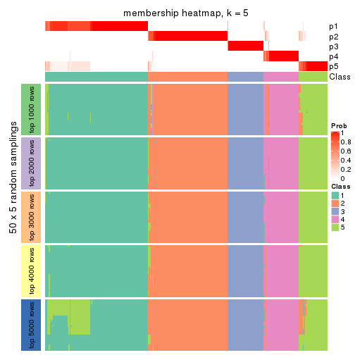
membership_heatmap(res, k = 6)
As soon as we have had the classes for columns, we can look for signatures which are significantly different between classes which can be candidate marks for certain classes. Following are the heatmaps for signatures.
Signature heatmaps where rows are scaled:
get_signatures(res, k = 2)
get_signatures(res, k = 3)
get_signatures(res, k = 4)
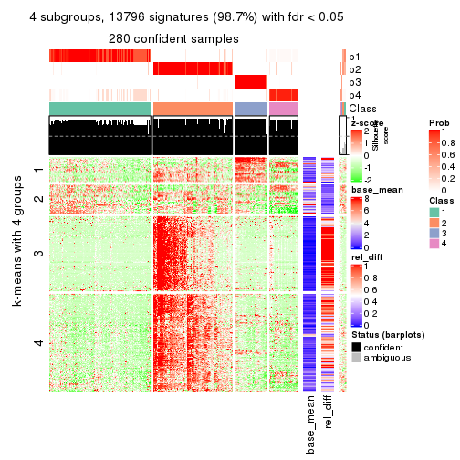
get_signatures(res, k = 5)

get_signatures(res, k = 6)

Signature heatmaps where rows are not scaled:
get_signatures(res, k = 2, scale_rows = FALSE)

get_signatures(res, k = 3, scale_rows = FALSE)
get_signatures(res, k = 4, scale_rows = FALSE)
get_signatures(res, k = 5, scale_rows = FALSE)
get_signatures(res, k = 6, scale_rows = FALSE)
Compare the overlap of signatures from different k:
compare_signatures(res)
get_signature() returns a data frame invisibly. TO get the list of signatures, the function
call should be assigned to a variable explicitly. In following code, if plot argument is set
to FALSE, no heatmap is plotted while only the differential analysis is performed.
# code only for demonstration
tb = get_signature(res, k = ..., plot = FALSE)
An example of the output of tb is:
#> which_row fdr mean_1 mean_2 scaled_mean_1 scaled_mean_2 km
#> 1 38 0.042760348 8.373488 9.131774 -0.5533452 0.5164555 1
#> 2 40 0.018707592 7.106213 8.469186 -0.6173731 0.5762149 1
#> 3 55 0.019134737 10.221463 11.207825 -0.6159697 0.5749050 1
#> 4 59 0.006059896 5.921854 7.869574 -0.6899429 0.6439467 1
#> 5 60 0.018055526 8.928898 10.211722 -0.6204761 0.5791110 1
#> 6 98 0.009384629 15.714769 14.887706 0.6635654 -0.6193277 2
...
The columns in tb are:
which_row: row indices corresponding to the input matrix.fdr: FDR for the differential test. mean_x: The mean value in group x.scaled_mean_x: The mean value in group x after rows are scaled.km: Row groups if k-means clustering is applied to rows.UMAP plot which shows how samples are separated.
dimension_reduction(res, k = 2, method = "UMAP")
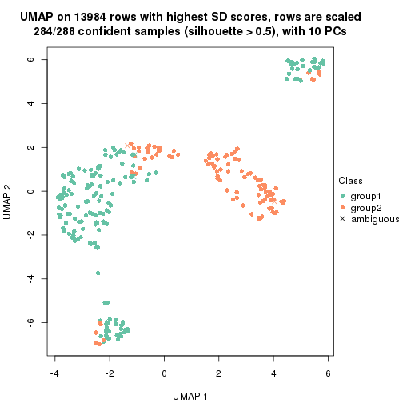
dimension_reduction(res, k = 3, method = "UMAP")
dimension_reduction(res, k = 4, method = "UMAP")
dimension_reduction(res, k = 5, method = "UMAP")
dimension_reduction(res, k = 6, method = "UMAP")
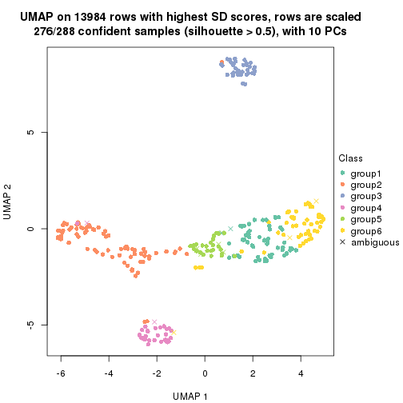
Following heatmap shows how subgroups are split when increasing k:
collect_classes(res)
If matrix rows can be associated to genes, consider to use functional_enrichment(res,
...) to perform function enrichment for the signature genes. See this vignette for more detailed explanations.
The object with results only for a single top-value method and a single partition method can be extracted as:
res = res_list["SD", "pam"]
# you can also extract it by
# res = res_list["SD:pam"]
A summary of res and all the functions that can be applied to it:
res
#> A 'ConsensusPartition' object with k = 2, 3, 4, 5, 6.
#> On a matrix with 13984 rows and 288 columns.
#> Top rows (1000, 2000, 3000, 4000, 5000) are extracted by 'SD' method.
#> Subgroups are detected by 'pam' method.
#> Performed in total 1250 partitions by row resampling.
#> Best k for subgroups seems to be 3.
#>
#> Following methods can be applied to this 'ConsensusPartition' object:
#> [1] "cola_report" "collect_classes" "collect_plots"
#> [4] "collect_stats" "colnames" "compare_signatures"
#> [7] "consensus_heatmap" "dimension_reduction" "functional_enrichment"
#> [10] "get_anno_col" "get_anno" "get_classes"
#> [13] "get_consensus" "get_matrix" "get_membership"
#> [16] "get_param" "get_signatures" "get_stats"
#> [19] "is_best_k" "is_stable_k" "membership_heatmap"
#> [22] "ncol" "nrow" "plot_ecdf"
#> [25] "rownames" "select_partition_number" "show"
#> [28] "suggest_best_k" "test_to_known_factors"
collect_plots() function collects all the plots made from res for all k (number of partitions)
into one single page to provide an easy and fast comparison between different k.
collect_plots(res)
The plots are:
k and the heatmap of
predicted classes for each k.k.k.k.All the plots in panels can be made by individual functions and they are plotted later in this section.
select_partition_number() produces several plots showing different
statistics for choosing “optimized” k. There are following statistics:
k;k, the area increased is defined as \(A_k - A_{k-1}\).The detailed explanations of these statistics can be found in the cola vignette.
Generally speaking, lower PAC score, higher mean silhouette score or higher
concordance corresponds to better partition. Rand index and Jaccard index
measure how similar the current partition is compared to partition with k-1.
If they are too similar, we won't accept k is better than k-1.
select_partition_number(res)
The numeric values for all these statistics can be obtained by get_stats().
get_stats(res)
#> k 1-PAC mean_silhouette concordance area_increased Rand Jaccard
#> 2 2 0.888 0.926 0.970 0.4046 0.607 0.607
#> 3 3 0.942 0.937 0.976 0.3844 0.804 0.685
#> 4 4 0.738 0.723 0.865 0.2940 0.800 0.562
#> 5 5 0.736 0.510 0.761 0.0604 0.871 0.598
#> 6 6 0.882 0.852 0.934 0.0555 0.844 0.464
suggest_best_k() suggests the best \(k\) based on these statistics. The rules are as follows:
suggest_best_k(res)
#> [1] 3
Following shows the table of the partitions (You need to click the show/hide
code output link to see it). The membership matrix (columns with name p*)
is inferred by
clue::cl_consensus()
function with the SE method. Basically the value in the membership matrix
represents the probability to belong to a certain group. The finall class
label for an item is determined with the group with highest probability it
belongs to.
In get_classes() function, the entropy is calculated from the membership
matrix and the silhouette score is calculated from the consensus matrix.
cbind(get_classes(res, k = 2), get_membership(res, k = 2))
#> class entropy silhouette p1 p2
#> SRR1982614 1 0.9833 0.2818 0.576 0.424
#> SRR1982613 2 0.6623 0.7808 0.172 0.828
#> SRR1982612 1 0.0000 0.9684 1.000 0.000
#> SRR1982611 1 0.6712 0.7780 0.824 0.176
#> SRR1982610 1 0.0938 0.9579 0.988 0.012
#> SRR1982609 1 0.0000 0.9684 1.000 0.000
#> SRR1982659 1 0.0000 0.9684 1.000 0.000
#> SRR1982692 2 0.0000 0.9686 0.000 1.000
#> SRR1982722 1 0.0000 0.9684 1.000 0.000
#> SRR1982750 2 0.0000 0.9686 0.000 1.000
#> SRR2095031 2 0.0000 0.9686 0.000 1.000
#> SRR1982780 1 0.0000 0.9684 1.000 0.000
#> SRR1982807 1 0.0000 0.9684 1.000 0.000
#> SRR1982830 1 0.0000 0.9684 1.000 0.000
#> SRR1982829 1 0.8608 0.6115 0.716 0.284
#> SRR1982828 1 0.0000 0.9684 1.000 0.000
#> SRR1982827 1 0.0000 0.9684 1.000 0.000
#> SRR1982826 1 0.0000 0.9684 1.000 0.000
#> SRR1982825 1 0.0000 0.9684 1.000 0.000
#> SRR1982824 1 0.6801 0.7727 0.820 0.180
#> SRR1982823 1 0.0000 0.9684 1.000 0.000
#> SRR1982822 1 0.0000 0.9684 1.000 0.000
#> SRR1982821 1 0.0000 0.9684 1.000 0.000
#> SRR1982820 1 0.0000 0.9684 1.000 0.000
#> SRR1982819 1 0.0000 0.9684 1.000 0.000
#> SRR1982818 1 0.0000 0.9684 1.000 0.000
#> SRR1982817 1 0.0000 0.9684 1.000 0.000
#> SRR1982816 1 0.0000 0.9684 1.000 0.000
#> SRR1982815 1 0.0000 0.9684 1.000 0.000
#> SRR1982814 1 0.0000 0.9684 1.000 0.000
#> SRR1982813 1 0.0000 0.9684 1.000 0.000
#> SRR1982812 2 0.0000 0.9686 0.000 1.000
#> SRR1982811 1 0.0000 0.9684 1.000 0.000
#> SRR1982810 1 0.0000 0.9684 1.000 0.000
#> SRR1982809 1 0.8608 0.6115 0.716 0.284
#> SRR1982808 1 0.0000 0.9684 1.000 0.000
#> SRR1982806 1 0.0000 0.9684 1.000 0.000
#> SRR1982805 1 0.0000 0.9684 1.000 0.000
#> SRR1982804 1 0.0000 0.9684 1.000 0.000
#> SRR1982803 1 0.8661 0.6042 0.712 0.288
#> SRR1982802 1 0.0000 0.9684 1.000 0.000
#> SRR1982801 1 0.0000 0.9684 1.000 0.000
#> SRR1982800 1 0.0000 0.9684 1.000 0.000
#> SRR1982799 1 0.0000 0.9684 1.000 0.000
#> SRR1982798 1 0.0000 0.9684 1.000 0.000
#> SRR1982797 2 0.0000 0.9686 0.000 1.000
#> SRR1982796 1 0.0000 0.9684 1.000 0.000
#> SRR1982795 1 0.0000 0.9684 1.000 0.000
#> SRR1982794 1 0.0000 0.9684 1.000 0.000
#> SRR1982793 1 0.0000 0.9684 1.000 0.000
#> SRR1982792 1 0.0000 0.9684 1.000 0.000
#> SRR1982791 1 0.0000 0.9684 1.000 0.000
#> SRR1982790 2 0.0000 0.9686 0.000 1.000
#> SRR1982789 1 0.0000 0.9684 1.000 0.000
#> SRR1982788 1 0.0000 0.9684 1.000 0.000
#> SRR1982787 1 0.0000 0.9684 1.000 0.000
#> SRR1982786 2 0.0672 0.9618 0.008 0.992
#> SRR1982785 1 0.0000 0.9684 1.000 0.000
#> SRR1982784 1 0.0000 0.9684 1.000 0.000
#> SRR1982783 1 0.7219 0.7449 0.800 0.200
#> SRR1982782 1 0.0000 0.9684 1.000 0.000
#> SRR1982781 1 0.0000 0.9684 1.000 0.000
#> SRR1982779 1 0.0000 0.9684 1.000 0.000
#> SRR1982778 1 0.0000 0.9684 1.000 0.000
#> SRR1982776 2 0.9000 0.5386 0.316 0.684
#> SRR1982777 1 0.0000 0.9684 1.000 0.000
#> SRR1982775 1 0.0000 0.9684 1.000 0.000
#> SRR1982774 1 0.0000 0.9684 1.000 0.000
#> SRR1982772 1 0.0000 0.9684 1.000 0.000
#> SRR1982773 1 0.0000 0.9684 1.000 0.000
#> SRR1982770 1 0.0000 0.9684 1.000 0.000
#> SRR1982771 1 0.0000 0.9684 1.000 0.000
#> SRR1982769 1 0.9710 0.3501 0.600 0.400
#> SRR1982768 1 0.0000 0.9684 1.000 0.000
#> SRR1982767 1 0.0000 0.9684 1.000 0.000
#> SRR1982766 1 0.8608 0.6115 0.716 0.284
#> SRR1982765 1 0.0000 0.9684 1.000 0.000
#> SRR1982764 1 0.0000 0.9684 1.000 0.000
#> SRR1982762 1 0.0000 0.9684 1.000 0.000
#> SRR1982760 1 0.0000 0.9684 1.000 0.000
#> SRR1982761 1 0.0000 0.9684 1.000 0.000
#> SRR1982763 1 1.0000 0.0346 0.504 0.496
#> SRR1982759 1 0.0000 0.9684 1.000 0.000
#> SRR1982758 1 0.0000 0.9684 1.000 0.000
#> SRR1982757 1 0.0000 0.9684 1.000 0.000
#> SRR1982755 1 0.0000 0.9684 1.000 0.000
#> SRR1982754 1 0.0000 0.9684 1.000 0.000
#> SRR1982756 1 0.0000 0.9684 1.000 0.000
#> SRR1982753 1 0.0000 0.9684 1.000 0.000
#> SRR1982751 2 0.0000 0.9686 0.000 1.000
#> SRR1982752 2 0.0000 0.9686 0.000 1.000
#> SRR1982749 2 0.0000 0.9686 0.000 1.000
#> SRR1982748 2 0.0000 0.9686 0.000 1.000
#> SRR1982747 2 0.0000 0.9686 0.000 1.000
#> SRR1982746 2 0.0000 0.9686 0.000 1.000
#> SRR1982745 2 0.0000 0.9686 0.000 1.000
#> SRR1982743 2 0.0000 0.9686 0.000 1.000
#> SRR1982744 2 0.0000 0.9686 0.000 1.000
#> SRR1982741 2 0.0000 0.9686 0.000 1.000
#> SRR1982742 2 0.0000 0.9686 0.000 1.000
#> SRR2095014 2 0.0000 0.9686 0.000 1.000
#> SRR1982740 2 0.0000 0.9686 0.000 1.000
#> SRR1982739 2 0.0000 0.9686 0.000 1.000
#> SRR1982737 2 0.0000 0.9686 0.000 1.000
#> SRR1982738 2 0.5408 0.8420 0.124 0.876
#> SRR1982736 2 0.0000 0.9686 0.000 1.000
#> SRR1982735 2 0.0000 0.9686 0.000 1.000
#> SRR1982733 2 0.0000 0.9686 0.000 1.000
#> SRR1982732 2 0.0000 0.9686 0.000 1.000
#> SRR2095004 2 0.0000 0.9686 0.000 1.000
#> SRR1982734 2 0.0000 0.9686 0.000 1.000
#> SRR1982731 2 0.0000 0.9686 0.000 1.000
#> SRR1982729 2 0.0000 0.9686 0.000 1.000
#> SRR1982730 2 0.0000 0.9686 0.000 1.000
#> SRR1982728 2 0.0000 0.9686 0.000 1.000
#> SRR1982727 2 0.0000 0.9686 0.000 1.000
#> SRR1982726 1 0.0000 0.9684 1.000 0.000
#> SRR1982723 1 0.8608 0.6115 0.716 0.284
#> SRR1982725 1 0.2043 0.9396 0.968 0.032
#> SRR1982724 1 0.0000 0.9684 1.000 0.000
#> SRR1982721 1 0.0000 0.9684 1.000 0.000
#> SRR1982720 1 0.0000 0.9684 1.000 0.000
#> SRR1982719 1 0.0000 0.9684 1.000 0.000
#> SRR1982718 2 0.0000 0.9686 0.000 1.000
#> SRR1982717 2 0.0000 0.9686 0.000 1.000
#> SRR1982715 2 0.0000 0.9686 0.000 1.000
#> SRR1982714 1 0.8555 0.6067 0.720 0.280
#> SRR1982716 2 0.0000 0.9686 0.000 1.000
#> SRR1982713 1 0.7745 0.6941 0.772 0.228
#> SRR1982711 2 0.0000 0.9686 0.000 1.000
#> SRR1982712 2 0.0000 0.9686 0.000 1.000
#> SRR1982710 2 0.0000 0.9686 0.000 1.000
#> SRR1982708 2 0.0000 0.9686 0.000 1.000
#> SRR1982707 2 0.0000 0.9686 0.000 1.000
#> SRR1982709 1 0.0000 0.9684 1.000 0.000
#> SRR1982705 2 0.0000 0.9686 0.000 1.000
#> SRR1982706 1 0.0000 0.9684 1.000 0.000
#> SRR1982704 1 0.0000 0.9684 1.000 0.000
#> SRR1982702 2 0.0000 0.9686 0.000 1.000
#> SRR1982703 2 0.0000 0.9686 0.000 1.000
#> SRR1982701 2 0.9635 0.3508 0.388 0.612
#> SRR1982700 2 0.0000 0.9686 0.000 1.000
#> SRR1982697 2 0.0000 0.9686 0.000 1.000
#> SRR1982698 2 0.0000 0.9686 0.000 1.000
#> SRR1982699 2 0.0000 0.9686 0.000 1.000
#> SRR1982696 2 0.0000 0.9686 0.000 1.000
#> SRR1982695 1 0.0000 0.9684 1.000 0.000
#> SRR1982694 1 0.0000 0.9684 1.000 0.000
#> SRR1982693 2 0.0000 0.9686 0.000 1.000
#> SRR1982690 2 0.0000 0.9686 0.000 1.000
#> SRR1982691 2 0.0000 0.9686 0.000 1.000
#> SRR1982689 2 0.0000 0.9686 0.000 1.000
#> SRR1982688 1 0.0000 0.9684 1.000 0.000
#> SRR1982687 1 0.9954 0.1674 0.540 0.460
#> SRR1982686 1 1.0000 0.0346 0.504 0.496
#> SRR1982685 2 0.0000 0.9686 0.000 1.000
#> SRR1982684 2 0.0000 0.9686 0.000 1.000
#> SRR1982683 1 0.0000 0.9684 1.000 0.000
#> SRR1982681 2 0.0000 0.9686 0.000 1.000
#> SRR1982682 2 0.0000 0.9686 0.000 1.000
#> SRR1982680 2 0.0000 0.9686 0.000 1.000
#> SRR1982679 1 0.0000 0.9684 1.000 0.000
#> SRR1982678 2 0.0000 0.9686 0.000 1.000
#> SRR1982677 2 0.0000 0.9686 0.000 1.000
#> SRR1982676 1 0.0000 0.9684 1.000 0.000
#> SRR1982675 1 0.0000 0.9684 1.000 0.000
#> SRR1982674 2 0.6973 0.7580 0.188 0.812
#> SRR1982671 1 0.0000 0.9684 1.000 0.000
#> SRR1982673 1 0.0000 0.9684 1.000 0.000
#> SRR1982672 1 0.0000 0.9684 1.000 0.000
#> SRR1982670 1 0.0000 0.9684 1.000 0.000
#> SRR1982669 1 0.0000 0.9684 1.000 0.000
#> SRR1982667 1 0.0000 0.9684 1.000 0.000
#> SRR1982668 2 0.9977 0.0771 0.472 0.528
#> SRR1982666 1 0.0000 0.9684 1.000 0.000
#> SRR1982665 1 0.0000 0.9684 1.000 0.000
#> SRR1982664 1 0.0000 0.9684 1.000 0.000
#> SRR1982663 1 0.0000 0.9684 1.000 0.000
#> SRR1982662 1 0.0000 0.9684 1.000 0.000
#> SRR1982661 1 0.0000 0.9684 1.000 0.000
#> SRR1982660 1 0.0000 0.9684 1.000 0.000
#> SRR1982658 1 0.0000 0.9684 1.000 0.000
#> SRR1982657 1 0.0000 0.9684 1.000 0.000
#> SRR1982656 2 0.0000 0.9686 0.000 1.000
#> SRR1982654 1 0.0000 0.9684 1.000 0.000
#> SRR1982655 1 0.0000 0.9684 1.000 0.000
#> SRR1982653 1 0.0000 0.9684 1.000 0.000
#> SRR1982652 1 0.0000 0.9684 1.000 0.000
#> SRR1982651 1 0.0000 0.9684 1.000 0.000
#> SRR1982649 1 0.8608 0.6115 0.716 0.284
#> SRR1982650 1 0.0000 0.9684 1.000 0.000
#> SRR1982648 1 0.0000 0.9684 1.000 0.000
#> SRR1982647 1 0.0000 0.9684 1.000 0.000
#> SRR1982646 1 0.0000 0.9684 1.000 0.000
#> SRR1982645 1 0.0000 0.9684 1.000 0.000
#> SRR1982644 1 0.0000 0.9684 1.000 0.000
#> SRR1982642 1 0.0000 0.9684 1.000 0.000
#> SRR1982643 1 0.0000 0.9684 1.000 0.000
#> SRR1982641 1 0.0000 0.9684 1.000 0.000
#> SRR1982640 1 0.0000 0.9684 1.000 0.000
#> SRR1982638 1 0.0000 0.9684 1.000 0.000
#> SRR1982639 1 0.0000 0.9684 1.000 0.000
#> SRR1982637 1 0.0000 0.9684 1.000 0.000
#> SRR1982635 1 0.0000 0.9684 1.000 0.000
#> SRR1982636 1 0.0000 0.9684 1.000 0.000
#> SRR1982633 1 0.0000 0.9684 1.000 0.000
#> SRR1982632 1 0.0000 0.9684 1.000 0.000
#> SRR1982631 1 0.0000 0.9684 1.000 0.000
#> SRR1982634 1 0.0000 0.9684 1.000 0.000
#> SRR1982628 1 0.5178 0.8519 0.884 0.116
#> SRR1982629 1 0.0000 0.9684 1.000 0.000
#> SRR1982627 1 0.0000 0.9684 1.000 0.000
#> SRR1982625 1 0.0000 0.9684 1.000 0.000
#> SRR1982626 1 0.0000 0.9684 1.000 0.000
#> SRR1982624 1 0.7219 0.7449 0.800 0.200
#> SRR1982623 1 0.0000 0.9684 1.000 0.000
#> SRR1982622 1 0.0000 0.9684 1.000 0.000
#> SRR1982621 1 0.0000 0.9684 1.000 0.000
#> SRR1982620 1 0.0000 0.9684 1.000 0.000
#> SRR1982619 1 0.8713 0.5841 0.708 0.292
#> SRR1982618 1 0.0000 0.9684 1.000 0.000
#> SRR1982617 2 0.0000 0.9686 0.000 1.000
#> SRR1982616 1 0.0000 0.9684 1.000 0.000
#> SRR1982615 1 0.0000 0.9684 1.000 0.000
#> SRR1982608 2 0.0000 0.9686 0.000 1.000
#> SRR1982607 1 0.0000 0.9684 1.000 0.000
#> SRR1982606 1 0.0000 0.9684 1.000 0.000
#> SRR1982605 1 0.0000 0.9684 1.000 0.000
#> SRR1982604 1 0.0000 0.9684 1.000 0.000
#> SRR1982603 1 0.0000 0.9684 1.000 0.000
#> SRR1982602 1 0.0000 0.9684 1.000 0.000
#> SRR1982601 1 0.0000 0.9684 1.000 0.000
#> SRR1982599 1 0.0000 0.9684 1.000 0.000
#> SRR1982600 2 0.0000 0.9686 0.000 1.000
#> SRR1982598 1 0.0000 0.9684 1.000 0.000
#> SRR1982597 1 0.0000 0.9684 1.000 0.000
#> SRR1982595 1 0.0000 0.9684 1.000 0.000
#> SRR1982596 1 0.0000 0.9684 1.000 0.000
#> SRR1982594 1 0.0000 0.9684 1.000 0.000
#> SRR1982593 1 0.0000 0.9684 1.000 0.000
#> SRR1982592 2 0.9635 0.3508 0.388 0.612
#> SRR1982591 1 0.0000 0.9684 1.000 0.000
#> SRR1982590 2 0.0938 0.9583 0.012 0.988
#> SRR1982589 1 0.0000 0.9684 1.000 0.000
#> SRR1982588 1 0.0000 0.9684 1.000 0.000
#> SRR1982587 1 0.0000 0.9684 1.000 0.000
#> SRR1982586 1 0.0000 0.9684 1.000 0.000
#> SRR1982584 1 0.8608 0.6115 0.716 0.284
#> SRR2096514 1 0.0000 0.9684 1.000 0.000
#> SRR2096513 1 0.0000 0.9684 1.000 0.000
#> SRR2096511 1 0.0000 0.9684 1.000 0.000
#> SRR2096512 2 0.0000 0.9686 0.000 1.000
#> SRR2096509 1 0.0000 0.9684 1.000 0.000
#> SRR2096510 1 0.0000 0.9684 1.000 0.000
#> SRR2096508 2 0.0000 0.9686 0.000 1.000
#> SRR2096507 1 0.2236 0.9357 0.964 0.036
#> SRR2096504 1 0.0000 0.9684 1.000 0.000
#> SRR2096506 1 0.0000 0.9684 1.000 0.000
#> SRR2096505 1 0.0000 0.9684 1.000 0.000
#> SRR2096503 2 0.0000 0.9686 0.000 1.000
#> SRR2096500 1 0.0000 0.9684 1.000 0.000
#> SRR2096501 1 0.0000 0.9684 1.000 0.000
#> SRR2096502 1 0.0000 0.9684 1.000 0.000
#> SRR2096499 1 0.0000 0.9684 1.000 0.000
#> SRR2096498 1 0.0000 0.9684 1.000 0.000
#> SRR2096496 1 0.0000 0.9684 1.000 0.000
#> SRR2096497 1 0.0000 0.9684 1.000 0.000
#> SRR2096495 1 0.0000 0.9684 1.000 0.000
#> SRR2096494 1 0.0000 0.9684 1.000 0.000
#> SRR2096492 1 0.0000 0.9684 1.000 0.000
#> SRR2096491 2 0.6801 0.7697 0.180 0.820
#> SRR2096493 1 0.0000 0.9684 1.000 0.000
#> SRR2096490 1 0.0000 0.9684 1.000 0.000
#> SRR2096488 1 0.0000 0.9684 1.000 0.000
#> SRR2096489 1 0.0000 0.9684 1.000 0.000
#> SRR2096487 1 0.0000 0.9684 1.000 0.000
#> SRR2096484 1 0.0000 0.9684 1.000 0.000
#> SRR2096486 1 0.0000 0.9684 1.000 0.000
#> SRR2096485 1 0.0000 0.9684 1.000 0.000
#> SRR2096483 1 0.0000 0.9684 1.000 0.000
#> SRR2096482 1 0.0000 0.9684 1.000 0.000
#> SRR2096481 1 0.8713 0.5970 0.708 0.292
#> SRR2096520 1 0.0000 0.9684 1.000 0.000
#> SRR2096519 1 0.0000 0.9684 1.000 0.000
#> SRR2096518 1 0.0000 0.9684 1.000 0.000
#> SRR2096516 1 0.0000 0.9684 1.000 0.000
#> SRR2096517 1 0.0000 0.9684 1.000 0.000
#> SRR2096515 1 0.0000 0.9684 1.000 0.000
cbind(get_classes(res, k = 3), get_membership(res, k = 3))
#> class entropy silhouette p1 p2 p3
#> SRR1982614 1 0.6260 0.152 0.552 0.448 0.000
#> SRR1982613 2 0.4887 0.671 0.228 0.772 0.000
#> SRR1982612 1 0.0000 0.979 1.000 0.000 0.000
#> SRR1982611 1 0.1753 0.932 0.952 0.048 0.000
#> SRR1982610 1 0.0000 0.979 1.000 0.000 0.000
#> SRR1982609 1 0.0000 0.979 1.000 0.000 0.000
#> SRR1982659 1 0.0000 0.979 1.000 0.000 0.000
#> SRR1982692 2 0.0000 0.935 0.000 1.000 0.000
#> SRR1982722 1 0.0000 0.979 1.000 0.000 0.000
#> SRR1982750 2 0.0000 0.935 0.000 1.000 0.000
#> SRR2095031 2 0.0000 0.935 0.000 1.000 0.000
#> SRR1982780 1 0.0000 0.979 1.000 0.000 0.000
#> SRR1982807 1 0.0000 0.979 1.000 0.000 0.000
#> SRR1982830 1 0.0000 0.979 1.000 0.000 0.000
#> SRR1982829 1 0.4931 0.687 0.768 0.232 0.000
#> SRR1982828 1 0.0000 0.979 1.000 0.000 0.000
#> SRR1982827 1 0.0000 0.979 1.000 0.000 0.000
#> SRR1982826 1 0.0000 0.979 1.000 0.000 0.000
#> SRR1982825 1 0.0000 0.979 1.000 0.000 0.000
#> SRR1982824 1 0.1031 0.956 0.976 0.024 0.000
#> SRR1982823 1 0.0000 0.979 1.000 0.000 0.000
#> SRR1982822 1 0.0000 0.979 1.000 0.000 0.000
#> SRR1982821 1 0.0000 0.979 1.000 0.000 0.000
#> SRR1982820 1 0.0000 0.979 1.000 0.000 0.000
#> SRR1982819 1 0.0000 0.979 1.000 0.000 0.000
#> SRR1982818 1 0.0000 0.979 1.000 0.000 0.000
#> SRR1982817 1 0.0000 0.979 1.000 0.000 0.000
#> SRR1982816 1 0.0000 0.979 1.000 0.000 0.000
#> SRR1982815 1 0.0000 0.979 1.000 0.000 0.000
#> SRR1982814 1 0.0000 0.979 1.000 0.000 0.000
#> SRR1982813 1 0.0000 0.979 1.000 0.000 0.000
#> SRR1982812 2 0.0000 0.935 0.000 1.000 0.000
#> SRR1982811 1 0.0000 0.979 1.000 0.000 0.000
#> SRR1982810 1 0.0000 0.979 1.000 0.000 0.000
#> SRR1982809 1 0.2711 0.889 0.912 0.088 0.000
#> SRR1982808 1 0.0000 0.979 1.000 0.000 0.000
#> SRR1982806 1 0.0000 0.979 1.000 0.000 0.000
#> SRR1982805 1 0.0000 0.979 1.000 0.000 0.000
#> SRR1982804 1 0.0000 0.979 1.000 0.000 0.000
#> SRR1982803 2 0.6095 0.396 0.392 0.608 0.000
#> SRR1982802 1 0.0000 0.979 1.000 0.000 0.000
#> SRR1982801 1 0.0000 0.979 1.000 0.000 0.000
#> SRR1982800 1 0.0000 0.979 1.000 0.000 0.000
#> SRR1982799 1 0.0000 0.979 1.000 0.000 0.000
#> SRR1982798 1 0.0000 0.979 1.000 0.000 0.000
#> SRR1982797 2 0.3192 0.813 0.112 0.888 0.000
#> SRR1982796 1 0.0000 0.979 1.000 0.000 0.000
#> SRR1982795 1 0.0000 0.979 1.000 0.000 0.000
#> SRR1982794 1 0.0000 0.979 1.000 0.000 0.000
#> SRR1982793 1 0.0000 0.979 1.000 0.000 0.000
#> SRR1982792 1 0.0000 0.979 1.000 0.000 0.000
#> SRR1982791 1 0.0000 0.979 1.000 0.000 0.000
#> SRR1982790 2 0.0000 0.935 0.000 1.000 0.000
#> SRR1982789 1 0.0000 0.979 1.000 0.000 0.000
#> SRR1982788 1 0.3340 0.853 0.880 0.000 0.120
#> SRR1982787 1 0.0000 0.979 1.000 0.000 0.000
#> SRR1982786 2 0.0237 0.932 0.004 0.996 0.000
#> SRR1982785 1 0.0000 0.979 1.000 0.000 0.000
#> SRR1982784 1 0.0000 0.979 1.000 0.000 0.000
#> SRR1982783 1 0.4784 0.735 0.796 0.200 0.004
#> SRR1982782 1 0.0237 0.976 0.996 0.000 0.004
#> SRR1982781 1 0.0000 0.979 1.000 0.000 0.000
#> SRR1982779 1 0.0000 0.979 1.000 0.000 0.000
#> SRR1982778 1 0.0237 0.976 0.996 0.000 0.004
#> SRR1982776 2 0.4733 0.709 0.004 0.800 0.196
#> SRR1982777 1 0.0000 0.979 1.000 0.000 0.000
#> SRR1982775 1 0.0424 0.972 0.992 0.000 0.008
#> SRR1982774 1 0.0000 0.979 1.000 0.000 0.000
#> SRR1982772 1 0.0000 0.979 1.000 0.000 0.000
#> SRR1982773 1 0.0000 0.979 1.000 0.000 0.000
#> SRR1982770 1 0.0000 0.979 1.000 0.000 0.000
#> SRR1982771 1 0.0000 0.979 1.000 0.000 0.000
#> SRR1982769 1 0.6126 0.307 0.600 0.400 0.000
#> SRR1982768 1 0.0000 0.979 1.000 0.000 0.000
#> SRR1982767 1 0.0000 0.979 1.000 0.000 0.000
#> SRR1982766 2 0.7424 0.528 0.288 0.648 0.064
#> SRR1982765 1 0.0000 0.979 1.000 0.000 0.000
#> SRR1982764 1 0.0000 0.979 1.000 0.000 0.000
#> SRR1982762 1 0.0000 0.979 1.000 0.000 0.000
#> SRR1982760 1 0.0000 0.979 1.000 0.000 0.000
#> SRR1982761 1 0.0000 0.979 1.000 0.000 0.000
#> SRR1982763 2 0.1031 0.911 0.024 0.976 0.000
#> SRR1982759 1 0.0000 0.979 1.000 0.000 0.000
#> SRR1982758 1 0.0000 0.979 1.000 0.000 0.000
#> SRR1982757 1 0.0000 0.979 1.000 0.000 0.000
#> SRR1982755 1 0.0000 0.979 1.000 0.000 0.000
#> SRR1982754 1 0.0000 0.979 1.000 0.000 0.000
#> SRR1982756 1 0.0000 0.979 1.000 0.000 0.000
#> SRR1982753 1 0.0000 0.979 1.000 0.000 0.000
#> SRR1982751 2 0.0000 0.935 0.000 1.000 0.000
#> SRR1982752 2 0.0000 0.935 0.000 1.000 0.000
#> SRR1982749 2 0.0000 0.935 0.000 1.000 0.000
#> SRR1982748 2 0.0000 0.935 0.000 1.000 0.000
#> SRR1982747 2 0.0000 0.935 0.000 1.000 0.000
#> SRR1982746 2 0.0000 0.935 0.000 1.000 0.000
#> SRR1982745 2 0.0000 0.935 0.000 1.000 0.000
#> SRR1982743 2 0.0000 0.935 0.000 1.000 0.000
#> SRR1982744 2 0.0000 0.935 0.000 1.000 0.000
#> SRR1982741 2 0.0000 0.935 0.000 1.000 0.000
#> SRR1982742 2 0.0000 0.935 0.000 1.000 0.000
#> SRR2095014 2 0.0000 0.935 0.000 1.000 0.000
#> SRR1982740 2 0.0000 0.935 0.000 1.000 0.000
#> SRR1982739 2 0.0000 0.935 0.000 1.000 0.000
#> SRR1982737 2 0.0000 0.935 0.000 1.000 0.000
#> SRR1982738 2 0.0000 0.935 0.000 1.000 0.000
#> SRR1982736 2 0.0000 0.935 0.000 1.000 0.000
#> SRR1982735 2 0.0000 0.935 0.000 1.000 0.000
#> SRR1982733 2 0.0000 0.935 0.000 1.000 0.000
#> SRR1982732 2 0.0000 0.935 0.000 1.000 0.000
#> SRR2095004 2 0.0000 0.935 0.000 1.000 0.000
#> SRR1982734 2 0.0000 0.935 0.000 1.000 0.000
#> SRR1982731 2 0.0000 0.935 0.000 1.000 0.000
#> SRR1982729 2 0.0000 0.935 0.000 1.000 0.000
#> SRR1982730 2 0.0000 0.935 0.000 1.000 0.000
#> SRR1982728 2 0.0000 0.935 0.000 1.000 0.000
#> SRR1982727 2 0.0237 0.932 0.004 0.996 0.000
#> SRR1982726 1 0.0000 0.979 1.000 0.000 0.000
#> SRR1982723 1 0.4931 0.687 0.768 0.232 0.000
#> SRR1982725 1 0.0000 0.979 1.000 0.000 0.000
#> SRR1982724 1 0.0000 0.979 1.000 0.000 0.000
#> SRR1982721 1 0.0000 0.979 1.000 0.000 0.000
#> SRR1982720 1 0.0000 0.979 1.000 0.000 0.000
#> SRR1982719 1 0.0000 0.979 1.000 0.000 0.000
#> SRR1982718 2 0.0000 0.935 0.000 1.000 0.000
#> SRR1982717 2 0.0000 0.935 0.000 1.000 0.000
#> SRR1982715 2 0.0000 0.935 0.000 1.000 0.000
#> SRR1982714 2 0.4654 0.678 0.208 0.792 0.000
#> SRR1982716 2 0.0000 0.935 0.000 1.000 0.000
#> SRR1982713 2 0.4842 0.654 0.224 0.776 0.000
#> SRR1982711 2 0.0000 0.935 0.000 1.000 0.000
#> SRR1982712 2 0.0000 0.935 0.000 1.000 0.000
#> SRR1982710 2 0.0000 0.935 0.000 1.000 0.000
#> SRR1982708 2 0.0000 0.935 0.000 1.000 0.000
#> SRR1982707 2 0.0000 0.935 0.000 1.000 0.000
#> SRR1982709 1 0.0000 0.979 1.000 0.000 0.000
#> SRR1982705 2 0.0000 0.935 0.000 1.000 0.000
#> SRR1982706 1 0.0000 0.979 1.000 0.000 0.000
#> SRR1982704 1 0.0000 0.979 1.000 0.000 0.000
#> SRR1982702 2 0.0000 0.935 0.000 1.000 0.000
#> SRR1982703 2 0.0000 0.935 0.000 1.000 0.000
#> SRR1982701 2 0.6008 0.446 0.372 0.628 0.000
#> SRR1982700 2 0.0000 0.935 0.000 1.000 0.000
#> SRR1982697 2 0.0000 0.935 0.000 1.000 0.000
#> SRR1982698 2 0.0000 0.935 0.000 1.000 0.000
#> SRR1982699 2 0.0000 0.935 0.000 1.000 0.000
#> SRR1982696 2 0.0000 0.935 0.000 1.000 0.000
#> SRR1982695 1 0.0000 0.979 1.000 0.000 0.000
#> SRR1982694 1 0.0000 0.979 1.000 0.000 0.000
#> SRR1982693 2 0.0000 0.935 0.000 1.000 0.000
#> SRR1982690 2 0.0000 0.935 0.000 1.000 0.000
#> SRR1982691 2 0.0000 0.935 0.000 1.000 0.000
#> SRR1982689 2 0.0000 0.935 0.000 1.000 0.000
#> SRR1982688 1 0.0000 0.979 1.000 0.000 0.000
#> SRR1982687 2 0.4842 0.677 0.224 0.776 0.000
#> SRR1982686 2 0.5497 0.583 0.292 0.708 0.000
#> SRR1982685 2 0.0000 0.935 0.000 1.000 0.000
#> SRR1982684 2 0.0000 0.935 0.000 1.000 0.000
#> SRR1982683 1 0.0000 0.979 1.000 0.000 0.000
#> SRR1982681 2 0.0000 0.935 0.000 1.000 0.000
#> SRR1982682 2 0.0000 0.935 0.000 1.000 0.000
#> SRR1982680 2 0.0000 0.935 0.000 1.000 0.000
#> SRR1982679 1 0.0000 0.979 1.000 0.000 0.000
#> SRR1982678 2 0.0000 0.935 0.000 1.000 0.000
#> SRR1982677 2 0.0000 0.935 0.000 1.000 0.000
#> SRR1982676 1 0.0000 0.979 1.000 0.000 0.000
#> SRR1982675 1 0.0000 0.979 1.000 0.000 0.000
#> SRR1982674 2 0.4555 0.707 0.200 0.800 0.000
#> SRR1982671 1 0.0000 0.979 1.000 0.000 0.000
#> SRR1982673 1 0.0000 0.979 1.000 0.000 0.000
#> SRR1982672 1 0.0000 0.979 1.000 0.000 0.000
#> SRR1982670 1 0.0000 0.979 1.000 0.000 0.000
#> SRR1982669 1 0.0000 0.979 1.000 0.000 0.000
#> SRR1982667 1 0.0000 0.979 1.000 0.000 0.000
#> SRR1982668 2 0.5882 0.503 0.348 0.652 0.000
#> SRR1982666 1 0.0000 0.979 1.000 0.000 0.000
#> SRR1982665 1 0.0000 0.979 1.000 0.000 0.000
#> SRR1982664 1 0.0000 0.979 1.000 0.000 0.000
#> SRR1982663 1 0.0000 0.979 1.000 0.000 0.000
#> SRR1982662 1 0.0000 0.979 1.000 0.000 0.000
#> SRR1982661 1 0.0000 0.979 1.000 0.000 0.000
#> SRR1982660 1 0.0000 0.979 1.000 0.000 0.000
#> SRR1982658 1 0.0000 0.979 1.000 0.000 0.000
#> SRR1982657 1 0.0000 0.979 1.000 0.000 0.000
#> SRR1982656 2 0.0237 0.932 0.004 0.996 0.000
#> SRR1982654 1 0.0000 0.979 1.000 0.000 0.000
#> SRR1982655 1 0.0000 0.979 1.000 0.000 0.000
#> SRR1982653 1 0.0000 0.979 1.000 0.000 0.000
#> SRR1982652 1 0.0000 0.979 1.000 0.000 0.000
#> SRR1982651 1 0.0000 0.979 1.000 0.000 0.000
#> SRR1982649 1 0.4235 0.776 0.824 0.176 0.000
#> SRR1982650 1 0.0000 0.979 1.000 0.000 0.000
#> SRR1982648 1 0.0000 0.979 1.000 0.000 0.000
#> SRR1982647 1 0.0000 0.979 1.000 0.000 0.000
#> SRR1982646 1 0.0000 0.979 1.000 0.000 0.000
#> SRR1982645 1 0.0000 0.979 1.000 0.000 0.000
#> SRR1982644 1 0.0000 0.979 1.000 0.000 0.000
#> SRR1982642 1 0.0000 0.979 1.000 0.000 0.000
#> SRR1982643 1 0.0000 0.979 1.000 0.000 0.000
#> SRR1982641 1 0.0000 0.979 1.000 0.000 0.000
#> SRR1982640 1 0.0000 0.979 1.000 0.000 0.000
#> SRR1982638 1 0.0000 0.979 1.000 0.000 0.000
#> SRR1982639 1 0.0000 0.979 1.000 0.000 0.000
#> SRR1982637 1 0.0000 0.979 1.000 0.000 0.000
#> SRR1982635 1 0.0000 0.979 1.000 0.000 0.000
#> SRR1982636 1 0.0000 0.979 1.000 0.000 0.000
#> SRR1982633 1 0.0000 0.979 1.000 0.000 0.000
#> SRR1982632 1 0.0000 0.979 1.000 0.000 0.000
#> SRR1982631 1 0.0000 0.979 1.000 0.000 0.000
#> SRR1982634 1 0.0000 0.979 1.000 0.000 0.000
#> SRR1982628 1 0.0892 0.960 0.980 0.020 0.000
#> SRR1982629 1 0.0000 0.979 1.000 0.000 0.000
#> SRR1982627 1 0.0000 0.979 1.000 0.000 0.000
#> SRR1982625 1 0.0000 0.979 1.000 0.000 0.000
#> SRR1982626 1 0.0000 0.979 1.000 0.000 0.000
#> SRR1982624 1 0.3482 0.841 0.872 0.128 0.000
#> SRR1982623 1 0.0000 0.979 1.000 0.000 0.000
#> SRR1982622 1 0.0000 0.979 1.000 0.000 0.000
#> SRR1982621 1 0.0000 0.979 1.000 0.000 0.000
#> SRR1982620 1 0.0000 0.979 1.000 0.000 0.000
#> SRR1982619 1 0.5327 0.614 0.728 0.272 0.000
#> SRR1982618 1 0.0000 0.979 1.000 0.000 0.000
#> SRR1982617 2 0.0000 0.935 0.000 1.000 0.000
#> SRR1982616 1 0.0000 0.979 1.000 0.000 0.000
#> SRR1982615 1 0.0000 0.979 1.000 0.000 0.000
#> SRR1982608 2 0.0000 0.935 0.000 1.000 0.000
#> SRR1982607 1 0.0000 0.979 1.000 0.000 0.000
#> SRR1982606 1 0.0000 0.979 1.000 0.000 0.000
#> SRR1982605 1 0.0000 0.979 1.000 0.000 0.000
#> SRR1982604 1 0.0000 0.979 1.000 0.000 0.000
#> SRR1982603 1 0.0000 0.979 1.000 0.000 0.000
#> SRR1982602 1 0.0000 0.979 1.000 0.000 0.000
#> SRR1982601 1 0.0000 0.979 1.000 0.000 0.000
#> SRR1982599 1 0.0000 0.979 1.000 0.000 0.000
#> SRR1982600 2 0.0000 0.935 0.000 1.000 0.000
#> SRR1982598 1 0.0000 0.979 1.000 0.000 0.000
#> SRR1982597 1 0.0000 0.979 1.000 0.000 0.000
#> SRR1982595 1 0.0000 0.979 1.000 0.000 0.000
#> SRR1982596 1 0.0000 0.979 1.000 0.000 0.000
#> SRR1982594 1 0.0000 0.979 1.000 0.000 0.000
#> SRR1982593 1 0.0000 0.979 1.000 0.000 0.000
#> SRR1982592 2 0.4887 0.671 0.228 0.772 0.000
#> SRR1982591 1 0.0000 0.979 1.000 0.000 0.000
#> SRR1982590 2 0.4452 0.717 0.192 0.808 0.000
#> SRR1982589 1 0.0000 0.979 1.000 0.000 0.000
#> SRR1982588 1 0.0000 0.979 1.000 0.000 0.000
#> SRR1982587 1 0.0000 0.979 1.000 0.000 0.000
#> SRR1982586 1 0.0000 0.979 1.000 0.000 0.000
#> SRR1982584 1 0.6180 0.258 0.584 0.416 0.000
#> SRR2096514 3 0.0000 0.997 0.000 0.000 1.000
#> SRR2096513 3 0.0000 0.997 0.000 0.000 1.000
#> SRR2096511 3 0.0000 0.997 0.000 0.000 1.000
#> SRR2096512 3 0.2448 0.912 0.000 0.076 0.924
#> SRR2096509 3 0.0000 0.997 0.000 0.000 1.000
#> SRR2096510 3 0.0000 0.997 0.000 0.000 1.000
#> SRR2096508 2 0.0000 0.935 0.000 1.000 0.000
#> SRR2096507 3 0.0000 0.997 0.000 0.000 1.000
#> SRR2096504 3 0.0000 0.997 0.000 0.000 1.000
#> SRR2096506 3 0.0000 0.997 0.000 0.000 1.000
#> SRR2096505 3 0.0000 0.997 0.000 0.000 1.000
#> SRR2096503 2 0.2796 0.855 0.000 0.908 0.092
#> SRR2096500 3 0.0000 0.997 0.000 0.000 1.000
#> SRR2096501 3 0.0000 0.997 0.000 0.000 1.000
#> SRR2096502 3 0.0000 0.997 0.000 0.000 1.000
#> SRR2096499 3 0.0000 0.997 0.000 0.000 1.000
#> SRR2096498 3 0.0747 0.976 0.016 0.000 0.984
#> SRR2096496 3 0.0000 0.997 0.000 0.000 1.000
#> SRR2096497 3 0.0000 0.997 0.000 0.000 1.000
#> SRR2096495 3 0.0000 0.997 0.000 0.000 1.000
#> SRR2096494 3 0.0000 0.997 0.000 0.000 1.000
#> SRR2096492 3 0.0000 0.997 0.000 0.000 1.000
#> SRR2096491 3 0.0000 0.997 0.000 0.000 1.000
#> SRR2096493 3 0.0000 0.997 0.000 0.000 1.000
#> SRR2096490 3 0.0000 0.997 0.000 0.000 1.000
#> SRR2096488 3 0.0000 0.997 0.000 0.000 1.000
#> SRR2096489 3 0.0000 0.997 0.000 0.000 1.000
#> SRR2096487 3 0.0000 0.997 0.000 0.000 1.000
#> SRR2096484 3 0.0000 0.997 0.000 0.000 1.000
#> SRR2096486 3 0.0000 0.997 0.000 0.000 1.000
#> SRR2096485 3 0.0000 0.997 0.000 0.000 1.000
#> SRR2096483 3 0.0000 0.997 0.000 0.000 1.000
#> SRR2096482 3 0.0000 0.997 0.000 0.000 1.000
#> SRR2096481 3 0.0000 0.997 0.000 0.000 1.000
#> SRR2096520 3 0.0000 0.997 0.000 0.000 1.000
#> SRR2096519 3 0.0000 0.997 0.000 0.000 1.000
#> SRR2096518 3 0.0000 0.997 0.000 0.000 1.000
#> SRR2096516 1 0.6079 0.386 0.612 0.000 0.388
#> SRR2096517 3 0.0000 0.997 0.000 0.000 1.000
#> SRR2096515 3 0.0000 0.997 0.000 0.000 1.000
cbind(get_classes(res, k = 4), get_membership(res, k = 4))
#> class entropy silhouette p1 p2 p3 p4
#> SRR1982614 4 0.3610 0.5696 0.000 0.200 0.000 0.800
#> SRR1982613 2 0.4972 0.2910 0.000 0.544 0.000 0.456
#> SRR1982612 4 0.2281 0.6699 0.096 0.000 0.000 0.904
#> SRR1982611 4 0.0000 0.6909 0.000 0.000 0.000 1.000
#> SRR1982610 4 0.0000 0.6909 0.000 0.000 0.000 1.000
#> SRR1982609 1 0.0000 0.7848 1.000 0.000 0.000 0.000
#> SRR1982659 1 0.1389 0.7530 0.952 0.000 0.000 0.048
#> SRR1982692 2 0.0000 0.9661 0.000 1.000 0.000 0.000
#> SRR1982722 4 0.4948 0.4401 0.440 0.000 0.000 0.560
#> SRR1982750 2 0.0000 0.9661 0.000 1.000 0.000 0.000
#> SRR2095031 2 0.0000 0.9661 0.000 1.000 0.000 0.000
#> SRR1982780 4 0.4948 0.4401 0.440 0.000 0.000 0.560
#> SRR1982807 4 0.0188 0.6905 0.004 0.000 0.000 0.996
#> SRR1982830 4 0.4564 0.5595 0.328 0.000 0.000 0.672
#> SRR1982829 4 0.0000 0.6909 0.000 0.000 0.000 1.000
#> SRR1982828 4 0.0336 0.6882 0.008 0.000 0.000 0.992
#> SRR1982827 4 0.1557 0.6624 0.056 0.000 0.000 0.944
#> SRR1982826 1 0.4605 0.5029 0.664 0.000 0.000 0.336
#> SRR1982825 1 0.4304 0.5661 0.716 0.000 0.000 0.284
#> SRR1982824 4 0.0000 0.6909 0.000 0.000 0.000 1.000
#> SRR1982823 4 0.4585 0.5573 0.332 0.000 0.000 0.668
#> SRR1982822 4 0.0188 0.6897 0.004 0.000 0.000 0.996
#> SRR1982821 4 0.4746 0.5281 0.368 0.000 0.000 0.632
#> SRR1982820 1 0.4972 -0.1692 0.544 0.000 0.000 0.456
#> SRR1982819 1 0.3356 0.6113 0.824 0.000 0.000 0.176
#> SRR1982818 1 0.4855 0.4042 0.600 0.000 0.000 0.400
#> SRR1982817 4 0.1474 0.6649 0.052 0.000 0.000 0.948
#> SRR1982816 1 0.0000 0.7848 1.000 0.000 0.000 0.000
#> SRR1982815 1 0.0000 0.7848 1.000 0.000 0.000 0.000
#> SRR1982814 4 0.4907 0.4698 0.420 0.000 0.000 0.580
#> SRR1982813 4 0.0000 0.6909 0.000 0.000 0.000 1.000
#> SRR1982812 2 0.0000 0.9661 0.000 1.000 0.000 0.000
#> SRR1982811 4 0.4661 0.5456 0.348 0.000 0.000 0.652
#> SRR1982810 1 0.4585 0.5084 0.668 0.000 0.000 0.332
#> SRR1982809 4 0.0000 0.6909 0.000 0.000 0.000 1.000
#> SRR1982808 4 0.4697 0.1695 0.356 0.000 0.000 0.644
#> SRR1982806 1 0.3528 0.6544 0.808 0.000 0.000 0.192
#> SRR1982805 1 0.0000 0.7848 1.000 0.000 0.000 0.000
#> SRR1982804 4 0.1557 0.6624 0.056 0.000 0.000 0.944
#> SRR1982803 4 0.0000 0.6909 0.000 0.000 0.000 1.000
#> SRR1982802 4 0.4998 0.3614 0.488 0.000 0.000 0.512
#> SRR1982801 4 0.0592 0.6847 0.016 0.000 0.000 0.984
#> SRR1982800 4 0.1867 0.6500 0.072 0.000 0.000 0.928
#> SRR1982799 1 0.4585 0.5088 0.668 0.000 0.000 0.332
#> SRR1982798 1 0.4941 0.3395 0.564 0.000 0.000 0.436
#> SRR1982797 2 0.4564 0.5426 0.000 0.672 0.000 0.328
#> SRR1982796 1 0.0000 0.7848 1.000 0.000 0.000 0.000
#> SRR1982795 1 0.0000 0.7848 1.000 0.000 0.000 0.000
#> SRR1982794 1 0.0000 0.7848 1.000 0.000 0.000 0.000
#> SRR1982793 1 0.0000 0.7848 1.000 0.000 0.000 0.000
#> SRR1982792 1 0.1211 0.7591 0.960 0.000 0.000 0.040
#> SRR1982791 1 0.0188 0.7835 0.996 0.000 0.000 0.004
#> SRR1982790 2 0.0000 0.9661 0.000 1.000 0.000 0.000
#> SRR1982789 1 0.0000 0.7848 1.000 0.000 0.000 0.000
#> SRR1982788 1 0.4605 0.5029 0.664 0.000 0.000 0.336
#> SRR1982787 1 0.4585 0.5078 0.668 0.000 0.000 0.332
#> SRR1982786 2 0.3172 0.7945 0.000 0.840 0.000 0.160
#> SRR1982785 1 0.0000 0.7848 1.000 0.000 0.000 0.000
#> SRR1982784 1 0.0000 0.7848 1.000 0.000 0.000 0.000
#> SRR1982783 4 0.2197 0.6423 0.080 0.004 0.000 0.916
#> SRR1982782 1 0.4543 0.5179 0.676 0.000 0.000 0.324
#> SRR1982781 1 0.4072 0.5989 0.748 0.000 0.000 0.252
#> SRR1982779 1 0.4697 0.1604 0.644 0.000 0.000 0.356
#> SRR1982778 1 0.0000 0.7848 1.000 0.000 0.000 0.000
#> SRR1982776 2 0.4277 0.5931 0.000 0.720 0.000 0.280
#> SRR1982777 4 0.4948 0.4401 0.440 0.000 0.000 0.560
#> SRR1982775 1 0.0376 0.7823 0.992 0.000 0.004 0.004
#> SRR1982774 1 0.0000 0.7848 1.000 0.000 0.000 0.000
#> SRR1982772 1 0.2081 0.7402 0.916 0.000 0.000 0.084
#> SRR1982773 1 0.0000 0.7848 1.000 0.000 0.000 0.000
#> SRR1982770 1 0.0000 0.7848 1.000 0.000 0.000 0.000
#> SRR1982771 4 0.4746 0.5281 0.368 0.000 0.000 0.632
#> SRR1982769 4 0.7707 0.3871 0.320 0.240 0.000 0.440
#> SRR1982768 1 0.0000 0.7848 1.000 0.000 0.000 0.000
#> SRR1982767 1 0.0000 0.7848 1.000 0.000 0.000 0.000
#> SRR1982766 4 0.1661 0.6641 0.052 0.004 0.000 0.944
#> SRR1982765 4 0.4916 0.4644 0.424 0.000 0.000 0.576
#> SRR1982764 1 0.4040 0.4860 0.752 0.000 0.000 0.248
#> SRR1982762 1 0.1557 0.7466 0.944 0.000 0.000 0.056
#> SRR1982760 1 0.0000 0.7848 1.000 0.000 0.000 0.000
#> SRR1982761 1 0.0000 0.7848 1.000 0.000 0.000 0.000
#> SRR1982763 4 0.1940 0.6529 0.000 0.076 0.000 0.924
#> SRR1982759 4 0.0188 0.6908 0.004 0.000 0.000 0.996
#> SRR1982758 4 0.4925 0.4587 0.428 0.000 0.000 0.572
#> SRR1982757 1 0.4948 0.3343 0.560 0.000 0.000 0.440
#> SRR1982755 4 0.4585 0.5572 0.332 0.000 0.000 0.668
#> SRR1982754 4 0.0000 0.6909 0.000 0.000 0.000 1.000
#> SRR1982756 1 0.0188 0.7835 0.996 0.000 0.000 0.004
#> SRR1982753 1 0.0000 0.7848 1.000 0.000 0.000 0.000
#> SRR1982751 2 0.0000 0.9661 0.000 1.000 0.000 0.000
#> SRR1982752 2 0.0000 0.9661 0.000 1.000 0.000 0.000
#> SRR1982749 2 0.0000 0.9661 0.000 1.000 0.000 0.000
#> SRR1982748 2 0.0000 0.9661 0.000 1.000 0.000 0.000
#> SRR1982747 2 0.0000 0.9661 0.000 1.000 0.000 0.000
#> SRR1982746 2 0.0000 0.9661 0.000 1.000 0.000 0.000
#> SRR1982745 2 0.0000 0.9661 0.000 1.000 0.000 0.000
#> SRR1982743 2 0.0000 0.9661 0.000 1.000 0.000 0.000
#> SRR1982744 2 0.0000 0.9661 0.000 1.000 0.000 0.000
#> SRR1982741 2 0.0000 0.9661 0.000 1.000 0.000 0.000
#> SRR1982742 2 0.0000 0.9661 0.000 1.000 0.000 0.000
#> SRR2095014 2 0.0000 0.9661 0.000 1.000 0.000 0.000
#> SRR1982740 2 0.0000 0.9661 0.000 1.000 0.000 0.000
#> SRR1982739 2 0.0000 0.9661 0.000 1.000 0.000 0.000
#> SRR1982737 2 0.0000 0.9661 0.000 1.000 0.000 0.000
#> SRR1982738 2 0.0000 0.9661 0.000 1.000 0.000 0.000
#> SRR1982736 2 0.0000 0.9661 0.000 1.000 0.000 0.000
#> SRR1982735 2 0.0000 0.9661 0.000 1.000 0.000 0.000
#> SRR1982733 2 0.0000 0.9661 0.000 1.000 0.000 0.000
#> SRR1982732 2 0.0000 0.9661 0.000 1.000 0.000 0.000
#> SRR2095004 2 0.0000 0.9661 0.000 1.000 0.000 0.000
#> SRR1982734 2 0.0000 0.9661 0.000 1.000 0.000 0.000
#> SRR1982731 2 0.0000 0.9661 0.000 1.000 0.000 0.000
#> SRR1982729 2 0.0000 0.9661 0.000 1.000 0.000 0.000
#> SRR1982730 2 0.0000 0.9661 0.000 1.000 0.000 0.000
#> SRR1982728 2 0.0000 0.9661 0.000 1.000 0.000 0.000
#> SRR1982727 2 0.0921 0.9395 0.000 0.972 0.000 0.028
#> SRR1982726 1 0.4996 -0.3079 0.516 0.000 0.000 0.484
#> SRR1982723 4 0.6839 0.4951 0.328 0.120 0.000 0.552
#> SRR1982725 4 0.0000 0.6909 0.000 0.000 0.000 1.000
#> SRR1982724 4 0.4916 0.4735 0.424 0.000 0.000 0.576
#> SRR1982721 4 0.4948 0.4401 0.440 0.000 0.000 0.560
#> SRR1982720 1 0.4916 -0.0543 0.576 0.000 0.000 0.424
#> SRR1982719 4 0.4967 0.4150 0.452 0.000 0.000 0.548
#> SRR1982718 2 0.0000 0.9661 0.000 1.000 0.000 0.000
#> SRR1982717 2 0.0000 0.9661 0.000 1.000 0.000 0.000
#> SRR1982715 2 0.0000 0.9661 0.000 1.000 0.000 0.000
#> SRR1982714 4 0.2921 0.6045 0.000 0.140 0.000 0.860
#> SRR1982716 2 0.0000 0.9661 0.000 1.000 0.000 0.000
#> SRR1982713 4 0.4250 0.4049 0.000 0.276 0.000 0.724
#> SRR1982711 2 0.0000 0.9661 0.000 1.000 0.000 0.000
#> SRR1982712 2 0.0000 0.9661 0.000 1.000 0.000 0.000
#> SRR1982710 2 0.0000 0.9661 0.000 1.000 0.000 0.000
#> SRR1982708 2 0.0000 0.9661 0.000 1.000 0.000 0.000
#> SRR1982707 2 0.0000 0.9661 0.000 1.000 0.000 0.000
#> SRR1982709 4 0.2530 0.6118 0.112 0.000 0.000 0.888
#> SRR1982705 2 0.0000 0.9661 0.000 1.000 0.000 0.000
#> SRR1982706 1 0.4356 0.5565 0.708 0.000 0.000 0.292
#> SRR1982704 4 0.4866 0.4897 0.404 0.000 0.000 0.596
#> SRR1982702 2 0.0000 0.9661 0.000 1.000 0.000 0.000
#> SRR1982703 2 0.0000 0.9661 0.000 1.000 0.000 0.000
#> SRR1982701 4 0.7756 0.3869 0.296 0.268 0.000 0.436
#> SRR1982700 2 0.0000 0.9661 0.000 1.000 0.000 0.000
#> SRR1982697 2 0.0000 0.9661 0.000 1.000 0.000 0.000
#> SRR1982698 2 0.0000 0.9661 0.000 1.000 0.000 0.000
#> SRR1982699 2 0.0000 0.9661 0.000 1.000 0.000 0.000
#> SRR1982696 2 0.0000 0.9661 0.000 1.000 0.000 0.000
#> SRR1982695 1 0.0000 0.7848 1.000 0.000 0.000 0.000
#> SRR1982694 1 0.1637 0.7435 0.940 0.000 0.000 0.060
#> SRR1982693 2 0.0000 0.9661 0.000 1.000 0.000 0.000
#> SRR1982690 2 0.0000 0.9661 0.000 1.000 0.000 0.000
#> SRR1982691 2 0.0000 0.9661 0.000 1.000 0.000 0.000
#> SRR1982689 2 0.0000 0.9661 0.000 1.000 0.000 0.000
#> SRR1982688 1 0.0336 0.7807 0.992 0.000 0.000 0.008
#> SRR1982687 4 0.4999 -0.1525 0.000 0.492 0.000 0.508
#> SRR1982686 4 0.3726 0.5654 0.000 0.212 0.000 0.788
#> SRR1982685 2 0.0000 0.9661 0.000 1.000 0.000 0.000
#> SRR1982684 2 0.0000 0.9661 0.000 1.000 0.000 0.000
#> SRR1982683 4 0.4948 0.4401 0.440 0.000 0.000 0.560
#> SRR1982681 2 0.0000 0.9661 0.000 1.000 0.000 0.000
#> SRR1982682 2 0.0000 0.9661 0.000 1.000 0.000 0.000
#> SRR1982680 2 0.0000 0.9661 0.000 1.000 0.000 0.000
#> SRR1982679 1 0.0000 0.7848 1.000 0.000 0.000 0.000
#> SRR1982678 2 0.0000 0.9661 0.000 1.000 0.000 0.000
#> SRR1982677 2 0.0000 0.9661 0.000 1.000 0.000 0.000
#> SRR1982676 1 0.4431 0.5425 0.696 0.000 0.000 0.304
#> SRR1982675 1 0.0000 0.7848 1.000 0.000 0.000 0.000
#> SRR1982674 2 0.4585 0.5363 0.000 0.668 0.000 0.332
#> SRR1982671 4 0.4746 0.5281 0.368 0.000 0.000 0.632
#> SRR1982673 1 0.1118 0.7621 0.964 0.000 0.000 0.036
#> SRR1982672 1 0.2760 0.6759 0.872 0.000 0.000 0.128
#> SRR1982670 1 0.2081 0.7226 0.916 0.000 0.000 0.084
#> SRR1982669 1 0.0000 0.7848 1.000 0.000 0.000 0.000
#> SRR1982667 1 0.4356 0.5565 0.708 0.000 0.000 0.292
#> SRR1982668 4 0.1022 0.6788 0.000 0.032 0.000 0.968
#> SRR1982666 1 0.0817 0.7753 0.976 0.000 0.000 0.024
#> SRR1982665 4 0.4898 0.4663 0.416 0.000 0.000 0.584
#> SRR1982664 4 0.4605 0.5546 0.336 0.000 0.000 0.664
#> SRR1982663 1 0.0000 0.7848 1.000 0.000 0.000 0.000
#> SRR1982662 1 0.0469 0.7784 0.988 0.000 0.000 0.012
#> SRR1982661 4 0.4989 -0.1594 0.472 0.000 0.000 0.528
#> SRR1982660 1 0.4564 0.5129 0.672 0.000 0.000 0.328
#> SRR1982658 1 0.3942 0.6314 0.764 0.000 0.000 0.236
#> SRR1982657 1 0.1302 0.7646 0.956 0.000 0.000 0.044
#> SRR1982656 2 0.1211 0.9252 0.000 0.960 0.000 0.040
#> SRR1982654 1 0.0000 0.7848 1.000 0.000 0.000 0.000
#> SRR1982655 1 0.4134 0.4620 0.740 0.000 0.000 0.260
#> SRR1982653 1 0.2760 0.6759 0.872 0.000 0.000 0.128
#> SRR1982652 1 0.3528 0.5742 0.808 0.000 0.000 0.192
#> SRR1982651 1 0.0336 0.7824 0.992 0.000 0.000 0.008
#> SRR1982649 4 0.0000 0.6909 0.000 0.000 0.000 1.000
#> SRR1982650 1 0.4855 0.4051 0.600 0.000 0.000 0.400
#> SRR1982648 1 0.4250 0.4264 0.724 0.000 0.000 0.276
#> SRR1982647 1 0.0000 0.7848 1.000 0.000 0.000 0.000
#> SRR1982646 4 0.1474 0.6649 0.052 0.000 0.000 0.948
#> SRR1982645 4 0.4948 0.4401 0.440 0.000 0.000 0.560
#> SRR1982644 1 0.4941 -0.0982 0.564 0.000 0.000 0.436
#> SRR1982642 1 0.4564 0.5135 0.672 0.000 0.000 0.328
#> SRR1982643 1 0.4193 0.4445 0.732 0.000 0.000 0.268
#> SRR1982641 1 0.0000 0.7848 1.000 0.000 0.000 0.000
#> SRR1982640 1 0.0000 0.7848 1.000 0.000 0.000 0.000
#> SRR1982638 1 0.4585 0.5084 0.668 0.000 0.000 0.332
#> SRR1982639 1 0.4072 0.5993 0.748 0.000 0.000 0.252
#> SRR1982637 4 0.4925 0.4577 0.428 0.000 0.000 0.572
#> SRR1982635 1 0.4250 0.4264 0.724 0.000 0.000 0.276
#> SRR1982636 4 0.0000 0.6909 0.000 0.000 0.000 1.000
#> SRR1982633 1 0.0000 0.7848 1.000 0.000 0.000 0.000
#> SRR1982632 4 0.2973 0.5736 0.144 0.000 0.000 0.856
#> SRR1982631 1 0.4277 0.4169 0.720 0.000 0.000 0.280
#> SRR1982634 1 0.4948 0.3323 0.560 0.000 0.000 0.440
#> SRR1982628 4 0.0000 0.6909 0.000 0.000 0.000 1.000
#> SRR1982629 1 0.0707 0.7772 0.980 0.000 0.000 0.020
#> SRR1982627 1 0.0000 0.7848 1.000 0.000 0.000 0.000
#> SRR1982625 1 0.3649 0.6445 0.796 0.000 0.000 0.204
#> SRR1982626 4 0.0000 0.6909 0.000 0.000 0.000 1.000
#> SRR1982624 4 0.0000 0.6909 0.000 0.000 0.000 1.000
#> SRR1982623 1 0.4454 0.3528 0.692 0.000 0.000 0.308
#> SRR1982622 1 0.0000 0.7848 1.000 0.000 0.000 0.000
#> SRR1982621 4 0.4948 0.4401 0.440 0.000 0.000 0.560
#> SRR1982620 1 0.3486 0.5941 0.812 0.000 0.000 0.188
#> SRR1982619 4 0.6201 0.5761 0.212 0.124 0.000 0.664
#> SRR1982618 1 0.0000 0.7848 1.000 0.000 0.000 0.000
#> SRR1982617 2 0.0000 0.9661 0.000 1.000 0.000 0.000
#> SRR1982616 4 0.0000 0.6909 0.000 0.000 0.000 1.000
#> SRR1982615 1 0.0000 0.7848 1.000 0.000 0.000 0.000
#> SRR1982608 2 0.0000 0.9661 0.000 1.000 0.000 0.000
#> SRR1982607 1 0.0000 0.7848 1.000 0.000 0.000 0.000
#> SRR1982606 1 0.0000 0.7848 1.000 0.000 0.000 0.000
#> SRR1982605 4 0.4605 0.5546 0.336 0.000 0.000 0.664
#> SRR1982604 1 0.0000 0.7848 1.000 0.000 0.000 0.000
#> SRR1982603 1 0.0000 0.7848 1.000 0.000 0.000 0.000
#> SRR1982602 4 0.4948 0.4401 0.440 0.000 0.000 0.560
#> SRR1982601 1 0.4961 -0.1417 0.552 0.000 0.000 0.448
#> SRR1982599 4 0.0336 0.6905 0.008 0.000 0.000 0.992
#> SRR1982600 2 0.0188 0.9624 0.000 0.996 0.000 0.004
#> SRR1982598 4 0.4948 0.4401 0.440 0.000 0.000 0.560
#> SRR1982597 1 0.4356 0.5565 0.708 0.000 0.000 0.292
#> SRR1982595 1 0.0000 0.7848 1.000 0.000 0.000 0.000
#> SRR1982596 1 0.0000 0.7848 1.000 0.000 0.000 0.000
#> SRR1982594 4 0.4605 0.5546 0.336 0.000 0.000 0.664
#> SRR1982593 4 0.4948 0.4401 0.440 0.000 0.000 0.560
#> SRR1982592 4 0.4972 -0.0838 0.000 0.456 0.000 0.544
#> SRR1982591 4 0.0000 0.6909 0.000 0.000 0.000 1.000
#> SRR1982590 2 0.4977 0.2821 0.000 0.540 0.000 0.460
#> SRR1982589 4 0.0000 0.6909 0.000 0.000 0.000 1.000
#> SRR1982588 1 0.4543 0.5179 0.676 0.000 0.000 0.324
#> SRR1982587 4 0.4948 0.4401 0.440 0.000 0.000 0.560
#> SRR1982586 1 0.4164 0.5873 0.736 0.000 0.000 0.264
#> SRR1982584 4 0.0000 0.6909 0.000 0.000 0.000 1.000
#> SRR2096514 3 0.0000 0.9913 0.000 0.000 1.000 0.000
#> SRR2096513 3 0.0000 0.9913 0.000 0.000 1.000 0.000
#> SRR2096511 3 0.0000 0.9913 0.000 0.000 1.000 0.000
#> SRR2096512 3 0.1940 0.9081 0.000 0.076 0.924 0.000
#> SRR2096509 3 0.0000 0.9913 0.000 0.000 1.000 0.000
#> SRR2096510 3 0.0000 0.9913 0.000 0.000 1.000 0.000
#> SRR2096508 2 0.0000 0.9661 0.000 1.000 0.000 0.000
#> SRR2096507 3 0.0000 0.9913 0.000 0.000 1.000 0.000
#> SRR2096504 3 0.0000 0.9913 0.000 0.000 1.000 0.000
#> SRR2096506 3 0.0000 0.9913 0.000 0.000 1.000 0.000
#> SRR2096505 3 0.0000 0.9913 0.000 0.000 1.000 0.000
#> SRR2096503 2 0.2216 0.8781 0.000 0.908 0.092 0.000
#> SRR2096500 3 0.0000 0.9913 0.000 0.000 1.000 0.000
#> SRR2096501 3 0.0000 0.9913 0.000 0.000 1.000 0.000
#> SRR2096502 3 0.0000 0.9913 0.000 0.000 1.000 0.000
#> SRR2096499 3 0.0000 0.9913 0.000 0.000 1.000 0.000
#> SRR2096498 3 0.3569 0.7367 0.196 0.000 0.804 0.000
#> SRR2096496 3 0.0000 0.9913 0.000 0.000 1.000 0.000
#> SRR2096497 3 0.0000 0.9913 0.000 0.000 1.000 0.000
#> SRR2096495 3 0.0000 0.9913 0.000 0.000 1.000 0.000
#> SRR2096494 3 0.0000 0.9913 0.000 0.000 1.000 0.000
#> SRR2096492 3 0.0000 0.9913 0.000 0.000 1.000 0.000
#> SRR2096491 3 0.0000 0.9913 0.000 0.000 1.000 0.000
#> SRR2096493 3 0.0000 0.9913 0.000 0.000 1.000 0.000
#> SRR2096490 3 0.0000 0.9913 0.000 0.000 1.000 0.000
#> SRR2096488 3 0.0000 0.9913 0.000 0.000 1.000 0.000
#> SRR2096489 3 0.0000 0.9913 0.000 0.000 1.000 0.000
#> SRR2096487 3 0.0000 0.9913 0.000 0.000 1.000 0.000
#> SRR2096484 3 0.0000 0.9913 0.000 0.000 1.000 0.000
#> SRR2096486 3 0.0000 0.9913 0.000 0.000 1.000 0.000
#> SRR2096485 3 0.0000 0.9913 0.000 0.000 1.000 0.000
#> SRR2096483 3 0.0000 0.9913 0.000 0.000 1.000 0.000
#> SRR2096482 3 0.0000 0.9913 0.000 0.000 1.000 0.000
#> SRR2096481 3 0.0000 0.9913 0.000 0.000 1.000 0.000
#> SRR2096520 3 0.0000 0.9913 0.000 0.000 1.000 0.000
#> SRR2096519 3 0.0000 0.9913 0.000 0.000 1.000 0.000
#> SRR2096518 3 0.0000 0.9913 0.000 0.000 1.000 0.000
#> SRR2096516 1 0.6580 0.1533 0.504 0.000 0.416 0.080
#> SRR2096517 3 0.0000 0.9913 0.000 0.000 1.000 0.000
#> SRR2096515 3 0.0000 0.9913 0.000 0.000 1.000 0.000
cbind(get_classes(res, k = 5), get_membership(res, k = 5))
#> class entropy silhouette p1 p2 p3 p4 p5
#> SRR1982614 5 0.6635 -0.49474 0.000 0.224 0.000 0.360 0.416
#> SRR1982613 2 0.5548 -0.08178 0.000 0.492 0.000 0.068 0.440
#> SRR1982612 4 0.5696 0.67371 0.000 0.096 0.000 0.560 0.344
#> SRR1982611 4 0.4262 0.70378 0.000 0.000 0.000 0.560 0.440
#> SRR1982610 4 0.4262 0.70378 0.000 0.000 0.000 0.560 0.440
#> SRR1982609 1 0.0000 0.82259 1.000 0.000 0.000 0.000 0.000
#> SRR1982659 1 0.4262 0.53267 0.560 0.440 0.000 0.000 0.000
#> SRR1982692 2 0.4262 0.31744 0.000 0.560 0.000 0.440 0.000
#> SRR1982722 2 0.6162 -0.37808 0.132 0.440 0.000 0.428 0.000
#> SRR1982750 5 0.4262 0.73787 0.000 0.000 0.000 0.440 0.560
#> SRR2095031 5 0.4262 0.73787 0.000 0.000 0.000 0.440 0.560
#> SRR1982780 2 0.6162 -0.37808 0.132 0.440 0.000 0.428 0.000
#> SRR1982807 4 0.5122 0.69779 0.004 0.032 0.000 0.556 0.408
#> SRR1982830 4 0.5396 0.48056 0.048 0.416 0.000 0.532 0.004
#> SRR1982829 4 0.4841 0.69942 0.000 0.024 0.000 0.560 0.416
#> SRR1982828 4 0.4262 0.70378 0.000 0.000 0.000 0.560 0.440
#> SRR1982827 4 0.4262 0.70378 0.000 0.000 0.000 0.560 0.440
#> SRR1982826 1 0.0963 0.79884 0.964 0.000 0.000 0.036 0.000
#> SRR1982825 1 0.0162 0.82109 0.996 0.000 0.000 0.004 0.000
#> SRR1982824 4 0.4262 0.70378 0.000 0.000 0.000 0.560 0.440
#> SRR1982823 4 0.5166 0.47368 0.032 0.436 0.000 0.528 0.004
#> SRR1982822 4 0.4262 0.70378 0.000 0.000 0.000 0.560 0.440
#> SRR1982821 4 0.5447 0.44506 0.060 0.440 0.000 0.500 0.000
#> SRR1982820 2 0.6631 -0.28115 0.236 0.440 0.000 0.324 0.000
#> SRR1982819 1 0.5799 0.41076 0.492 0.416 0.000 0.092 0.000
#> SRR1982818 1 0.5626 0.34071 0.572 0.000 0.000 0.092 0.336
#> SRR1982817 4 0.4262 0.70378 0.000 0.000 0.000 0.560 0.440
#> SRR1982816 1 0.0162 0.82178 0.996 0.004 0.000 0.000 0.000
#> SRR1982815 1 0.3895 0.63908 0.680 0.320 0.000 0.000 0.000
#> SRR1982814 4 0.6003 0.38643 0.112 0.440 0.000 0.448 0.000
#> SRR1982813 4 0.4841 0.69912 0.000 0.024 0.000 0.560 0.416
#> SRR1982812 2 0.4262 0.31744 0.000 0.560 0.000 0.440 0.000
#> SRR1982811 4 0.5280 0.46003 0.048 0.440 0.000 0.512 0.000
#> SRR1982810 1 0.1836 0.78405 0.932 0.000 0.000 0.032 0.036
#> SRR1982809 4 0.4262 0.70378 0.000 0.000 0.000 0.560 0.440
#> SRR1982808 5 0.6613 -0.44647 0.228 0.000 0.000 0.332 0.440
#> SRR1982806 1 0.0290 0.82070 0.992 0.008 0.000 0.000 0.000
#> SRR1982805 1 0.4114 0.59480 0.624 0.376 0.000 0.000 0.000
#> SRR1982804 4 0.4262 0.70378 0.000 0.000 0.000 0.560 0.440
#> SRR1982803 4 0.4262 0.70378 0.000 0.000 0.000 0.560 0.440
#> SRR1982802 1 0.5148 0.00498 0.528 0.040 0.000 0.432 0.000
#> SRR1982801 4 0.4510 0.70261 0.000 0.008 0.000 0.560 0.432
#> SRR1982800 4 0.4522 0.69824 0.008 0.000 0.000 0.552 0.440
#> SRR1982799 1 0.1364 0.80149 0.952 0.012 0.000 0.036 0.000
#> SRR1982798 1 0.6530 0.23247 0.512 0.020 0.000 0.128 0.340
#> SRR1982797 2 0.5550 -0.04282 0.000 0.528 0.000 0.072 0.400
#> SRR1982796 1 0.0000 0.82259 1.000 0.000 0.000 0.000 0.000
#> SRR1982795 1 0.0000 0.82259 1.000 0.000 0.000 0.000 0.000
#> SRR1982794 1 0.0000 0.82259 1.000 0.000 0.000 0.000 0.000
#> SRR1982793 1 0.0000 0.82259 1.000 0.000 0.000 0.000 0.000
#> SRR1982792 1 0.4262 0.53267 0.560 0.440 0.000 0.000 0.000
#> SRR1982791 1 0.0162 0.82109 0.996 0.000 0.000 0.004 0.000
#> SRR1982790 5 0.4262 0.73787 0.000 0.000 0.000 0.440 0.560
#> SRR1982789 1 0.0290 0.82070 0.992 0.008 0.000 0.000 0.000
#> SRR1982788 1 0.0963 0.79884 0.964 0.000 0.000 0.036 0.000
#> SRR1982787 1 0.3694 0.67376 0.796 0.000 0.000 0.032 0.172
#> SRR1982786 2 0.6171 0.12117 0.000 0.556 0.000 0.240 0.204
#> SRR1982785 1 0.4101 0.59748 0.628 0.372 0.000 0.000 0.000
#> SRR1982784 1 0.0000 0.82259 1.000 0.000 0.000 0.000 0.000
#> SRR1982783 4 0.5810 0.37908 0.364 0.004 0.000 0.544 0.088
#> SRR1982782 1 0.0794 0.80446 0.972 0.000 0.000 0.028 0.000
#> SRR1982781 1 0.0566 0.81980 0.984 0.012 0.000 0.004 0.000
#> SRR1982779 1 0.6598 0.08034 0.448 0.228 0.000 0.324 0.000
#> SRR1982778 1 0.0000 0.82259 1.000 0.000 0.000 0.000 0.000
#> SRR1982776 4 0.4227 -0.39517 0.000 0.292 0.000 0.692 0.016
#> SRR1982777 2 0.6162 -0.37808 0.132 0.440 0.000 0.428 0.000
#> SRR1982775 1 0.0324 0.81933 0.992 0.000 0.004 0.004 0.000
#> SRR1982774 1 0.0000 0.82259 1.000 0.000 0.000 0.000 0.000
#> SRR1982772 1 0.0290 0.81915 0.992 0.000 0.000 0.008 0.000
#> SRR1982773 1 0.4201 0.56656 0.592 0.408 0.000 0.000 0.000
#> SRR1982770 1 0.0000 0.82259 1.000 0.000 0.000 0.000 0.000
#> SRR1982771 4 0.5673 0.44875 0.080 0.420 0.000 0.500 0.000
#> SRR1982769 2 0.6364 -0.28755 0.024 0.528 0.000 0.348 0.100
#> SRR1982768 1 0.3003 0.72913 0.812 0.188 0.000 0.000 0.000
#> SRR1982767 1 0.0000 0.82259 1.000 0.000 0.000 0.000 0.000
#> SRR1982766 4 0.4410 0.70083 0.000 0.004 0.000 0.556 0.440
#> SRR1982765 4 0.6037 0.38114 0.116 0.440 0.000 0.444 0.000
#> SRR1982764 1 0.6360 0.29756 0.448 0.388 0.000 0.164 0.000
#> SRR1982762 1 0.4262 0.53267 0.560 0.440 0.000 0.000 0.000
#> SRR1982760 1 0.4088 0.60186 0.632 0.368 0.000 0.000 0.000
#> SRR1982761 1 0.0000 0.82259 1.000 0.000 0.000 0.000 0.000
#> SRR1982763 4 0.4522 0.69715 0.000 0.008 0.000 0.552 0.440
#> SRR1982759 4 0.5394 0.69144 0.004 0.052 0.000 0.560 0.384
#> SRR1982758 2 0.6070 -0.39383 0.120 0.440 0.000 0.440 0.000
#> SRR1982757 1 0.2516 0.71088 0.860 0.000 0.000 0.140 0.000
#> SRR1982755 4 0.5024 0.47076 0.032 0.440 0.000 0.528 0.000
#> SRR1982754 4 0.4262 0.70378 0.000 0.000 0.000 0.560 0.440
#> SRR1982756 1 0.0162 0.82109 0.996 0.000 0.000 0.004 0.000
#> SRR1982753 1 0.0000 0.82259 1.000 0.000 0.000 0.000 0.000
#> SRR1982751 2 0.4262 0.31744 0.000 0.560 0.000 0.440 0.000
#> SRR1982752 2 0.4262 0.31744 0.000 0.560 0.000 0.440 0.000
#> SRR1982749 5 0.4262 0.73787 0.000 0.000 0.000 0.440 0.560
#> SRR1982748 2 0.4262 0.31744 0.000 0.560 0.000 0.440 0.000
#> SRR1982747 5 0.4262 0.73787 0.000 0.000 0.000 0.440 0.560
#> SRR1982746 2 0.4262 0.31744 0.000 0.560 0.000 0.440 0.000
#> SRR1982745 5 0.4262 0.73787 0.000 0.000 0.000 0.440 0.560
#> SRR1982743 2 0.4262 0.31744 0.000 0.560 0.000 0.440 0.000
#> SRR1982744 5 0.4262 0.73787 0.000 0.000 0.000 0.440 0.560
#> SRR1982741 2 0.4262 0.31744 0.000 0.560 0.000 0.440 0.000
#> SRR1982742 2 0.4262 0.31744 0.000 0.560 0.000 0.440 0.000
#> SRR2095014 2 0.4262 0.31744 0.000 0.560 0.000 0.440 0.000
#> SRR1982740 5 0.4262 0.73787 0.000 0.000 0.000 0.440 0.560
#> SRR1982739 2 0.4262 0.31744 0.000 0.560 0.000 0.440 0.000
#> SRR1982737 2 0.4262 0.31744 0.000 0.560 0.000 0.440 0.000
#> SRR1982738 2 0.5520 0.25116 0.000 0.560 0.000 0.364 0.076
#> SRR1982736 2 0.4262 0.31744 0.000 0.560 0.000 0.440 0.000
#> SRR1982735 2 0.4262 0.31744 0.000 0.560 0.000 0.440 0.000
#> SRR1982733 2 0.4262 0.31744 0.000 0.560 0.000 0.440 0.000
#> SRR1982732 2 0.4262 0.31744 0.000 0.560 0.000 0.440 0.000
#> SRR2095004 2 0.4262 0.31744 0.000 0.560 0.000 0.440 0.000
#> SRR1982734 2 0.4262 0.31744 0.000 0.560 0.000 0.440 0.000
#> SRR1982731 2 0.4262 0.31744 0.000 0.560 0.000 0.440 0.000
#> SRR1982729 2 0.4262 0.31744 0.000 0.560 0.000 0.440 0.000
#> SRR1982730 2 0.4262 0.31744 0.000 0.560 0.000 0.440 0.000
#> SRR1982728 2 0.4262 0.31744 0.000 0.560 0.000 0.440 0.000
#> SRR1982727 2 0.5671 0.22243 0.000 0.568 0.000 0.336 0.096
#> SRR1982726 1 0.4375 0.11124 0.576 0.004 0.000 0.420 0.000
#> SRR1982723 2 0.6579 -0.45681 0.028 0.456 0.000 0.412 0.104
#> SRR1982725 4 0.6407 0.47071 0.300 0.028 0.000 0.560 0.112
#> SRR1982724 4 0.5509 0.13585 0.464 0.064 0.000 0.472 0.000
#> SRR1982721 2 0.6162 -0.37808 0.132 0.440 0.000 0.428 0.000
#> SRR1982720 2 0.6668 -0.25541 0.264 0.440 0.000 0.296 0.000
#> SRR1982719 2 0.6274 -0.37346 0.148 0.432 0.000 0.420 0.000
#> SRR1982718 5 0.4262 0.73787 0.000 0.000 0.000 0.440 0.560
#> SRR1982717 5 0.4262 0.73787 0.000 0.000 0.000 0.440 0.560
#> SRR1982715 2 0.4262 0.31744 0.000 0.560 0.000 0.440 0.000
#> SRR1982714 4 0.5092 0.66741 0.000 0.036 0.000 0.524 0.440
#> SRR1982716 2 0.4262 0.31744 0.000 0.560 0.000 0.440 0.000
#> SRR1982713 4 0.6374 0.35558 0.000 0.172 0.000 0.468 0.360
#> SRR1982711 2 0.4262 0.31744 0.000 0.560 0.000 0.440 0.000
#> SRR1982712 2 0.4262 0.31744 0.000 0.560 0.000 0.440 0.000
#> SRR1982710 5 0.4262 0.73787 0.000 0.000 0.000 0.440 0.560
#> SRR1982708 5 0.4262 0.73787 0.000 0.000 0.000 0.440 0.560
#> SRR1982707 2 0.4262 0.31744 0.000 0.560 0.000 0.440 0.000
#> SRR1982709 4 0.5024 0.67638 0.032 0.000 0.000 0.528 0.440
#> SRR1982705 4 0.6515 -0.54657 0.000 0.364 0.000 0.440 0.196
#> SRR1982706 1 0.0000 0.82259 1.000 0.000 0.000 0.000 0.000
#> SRR1982704 4 0.5856 0.40596 0.096 0.440 0.000 0.464 0.000
#> SRR1982702 2 0.4262 0.31744 0.000 0.560 0.000 0.440 0.000
#> SRR1982703 2 0.4262 0.31744 0.000 0.560 0.000 0.440 0.000
#> SRR1982701 2 0.5909 -0.25861 0.004 0.544 0.000 0.352 0.100
#> SRR1982700 2 0.4262 0.31744 0.000 0.560 0.000 0.440 0.000
#> SRR1982697 2 0.4262 0.31744 0.000 0.560 0.000 0.440 0.000
#> SRR1982698 2 0.4262 0.31744 0.000 0.560 0.000 0.440 0.000
#> SRR1982699 2 0.4262 0.31744 0.000 0.560 0.000 0.440 0.000
#> SRR1982696 5 0.4262 0.73787 0.000 0.000 0.000 0.440 0.560
#> SRR1982695 1 0.4114 0.59524 0.624 0.376 0.000 0.000 0.000
#> SRR1982694 1 0.4262 0.53267 0.560 0.440 0.000 0.000 0.000
#> SRR1982693 5 0.4262 0.73787 0.000 0.000 0.000 0.440 0.560
#> SRR1982690 4 0.6544 -0.55175 0.000 0.356 0.000 0.440 0.204
#> SRR1982691 2 0.4262 0.31744 0.000 0.560 0.000 0.440 0.000
#> SRR1982689 2 0.4767 0.30049 0.000 0.560 0.000 0.420 0.020
#> SRR1982688 1 0.4138 0.58855 0.616 0.384 0.000 0.000 0.000
#> SRR1982687 2 0.6247 -0.09599 0.000 0.436 0.000 0.144 0.420
#> SRR1982686 4 0.6645 0.41597 0.000 0.224 0.000 0.400 0.376
#> SRR1982685 2 0.4262 0.31744 0.000 0.560 0.000 0.440 0.000
#> SRR1982684 2 0.4262 0.31744 0.000 0.560 0.000 0.440 0.000
#> SRR1982683 2 0.6162 -0.37808 0.132 0.440 0.000 0.428 0.000
#> SRR1982681 5 0.4262 0.73787 0.000 0.000 0.000 0.440 0.560
#> SRR1982682 2 0.4262 0.31744 0.000 0.560 0.000 0.440 0.000
#> SRR1982680 2 0.4262 0.31744 0.000 0.560 0.000 0.440 0.000
#> SRR1982679 1 0.0000 0.82259 1.000 0.000 0.000 0.000 0.000
#> SRR1982678 2 0.4262 0.31744 0.000 0.560 0.000 0.440 0.000
#> SRR1982677 2 0.4262 0.31744 0.000 0.560 0.000 0.440 0.000
#> SRR1982676 1 0.0404 0.81600 0.988 0.000 0.000 0.012 0.000
#> SRR1982675 1 0.0000 0.82259 1.000 0.000 0.000 0.000 0.000
#> SRR1982674 2 0.5598 -0.04554 0.000 0.524 0.000 0.076 0.400
#> SRR1982671 4 0.6376 0.45731 0.192 0.308 0.000 0.500 0.000
#> SRR1982673 1 0.4256 0.53721 0.564 0.436 0.000 0.000 0.000
#> SRR1982672 1 0.4878 0.49922 0.536 0.440 0.000 0.024 0.000
#> SRR1982670 1 0.4522 0.52199 0.552 0.440 0.000 0.008 0.000
#> SRR1982669 1 0.4060 0.60787 0.640 0.360 0.000 0.000 0.000
#> SRR1982667 1 0.0000 0.82259 1.000 0.000 0.000 0.000 0.000
#> SRR1982668 4 0.5024 0.67504 0.000 0.032 0.000 0.528 0.440
#> SRR1982666 1 0.0000 0.82259 1.000 0.000 0.000 0.000 0.000
#> SRR1982665 4 0.7598 0.45295 0.128 0.340 0.000 0.432 0.100
#> SRR1982664 4 0.5092 0.46780 0.036 0.440 0.000 0.524 0.000
#> SRR1982663 1 0.4114 0.59532 0.624 0.376 0.000 0.000 0.000
#> SRR1982662 1 0.4210 0.56122 0.588 0.412 0.000 0.000 0.000
#> SRR1982661 5 0.6582 -0.29230 0.344 0.000 0.000 0.216 0.440
#> SRR1982660 1 0.0794 0.80446 0.972 0.000 0.000 0.028 0.000
#> SRR1982658 1 0.1197 0.79597 0.952 0.000 0.000 0.048 0.000
#> SRR1982657 1 0.0000 0.82259 1.000 0.000 0.000 0.000 0.000
#> SRR1982656 2 0.5613 0.22809 0.000 0.576 0.000 0.332 0.092
#> SRR1982654 1 0.0000 0.82259 1.000 0.000 0.000 0.000 0.000
#> SRR1982655 2 0.6320 -0.35449 0.404 0.440 0.000 0.156 0.000
#> SRR1982653 1 0.4878 0.49922 0.536 0.440 0.000 0.024 0.000
#> SRR1982652 1 0.3944 0.64789 0.788 0.052 0.000 0.160 0.000
#> SRR1982651 1 0.0000 0.82259 1.000 0.000 0.000 0.000 0.000
#> SRR1982649 4 0.4262 0.70378 0.000 0.000 0.000 0.560 0.440
#> SRR1982650 1 0.3401 0.70135 0.840 0.000 0.000 0.096 0.064
#> SRR1982648 2 0.6408 -0.32868 0.388 0.440 0.000 0.172 0.000
#> SRR1982647 1 0.0000 0.82259 1.000 0.000 0.000 0.000 0.000
#> SRR1982646 4 0.4262 0.70378 0.000 0.000 0.000 0.560 0.440
#> SRR1982645 2 0.6162 -0.37808 0.132 0.440 0.000 0.428 0.000
#> SRR1982644 2 0.6656 -0.26617 0.252 0.440 0.000 0.308 0.000
#> SRR1982642 1 0.0880 0.80194 0.968 0.000 0.000 0.032 0.000
#> SRR1982643 2 0.6366 -0.34151 0.396 0.440 0.000 0.164 0.000
#> SRR1982641 1 0.0000 0.82259 1.000 0.000 0.000 0.000 0.000
#> SRR1982640 1 0.4161 0.58186 0.608 0.392 0.000 0.000 0.000
#> SRR1982638 1 0.0880 0.80194 0.968 0.000 0.000 0.032 0.000
#> SRR1982639 1 0.0162 0.82109 0.996 0.000 0.000 0.004 0.000
#> SRR1982637 4 0.6162 0.37676 0.132 0.428 0.000 0.440 0.000
#> SRR1982635 2 0.6408 -0.32868 0.388 0.440 0.000 0.172 0.000
#> SRR1982636 4 0.4262 0.70378 0.000 0.000 0.000 0.560 0.440
#> SRR1982633 1 0.0000 0.82259 1.000 0.000 0.000 0.000 0.000
#> SRR1982632 4 0.6134 0.59215 0.144 0.000 0.000 0.516 0.340
#> SRR1982631 2 0.6428 -0.32258 0.384 0.440 0.000 0.176 0.000
#> SRR1982634 1 0.6035 0.24260 0.528 0.000 0.000 0.132 0.340
#> SRR1982628 4 0.4262 0.70378 0.000 0.000 0.000 0.560 0.440
#> SRR1982629 1 0.0000 0.82259 1.000 0.000 0.000 0.000 0.000
#> SRR1982627 1 0.4182 0.57400 0.600 0.400 0.000 0.000 0.000
#> SRR1982625 1 0.0162 0.82109 0.996 0.000 0.000 0.004 0.000
#> SRR1982626 4 0.4262 0.70378 0.000 0.000 0.000 0.560 0.440
#> SRR1982624 4 0.4262 0.70378 0.000 0.000 0.000 0.560 0.440
#> SRR1982623 2 0.6544 -0.28432 0.356 0.440 0.000 0.204 0.000
#> SRR1982622 1 0.0000 0.82259 1.000 0.000 0.000 0.000 0.000
#> SRR1982621 2 0.6162 -0.37808 0.132 0.440 0.000 0.428 0.000
#> SRR1982620 1 0.5733 0.39622 0.476 0.440 0.000 0.084 0.000
#> SRR1982619 4 0.4996 0.45646 0.032 0.304 0.000 0.652 0.012
#> SRR1982618 1 0.0000 0.82259 1.000 0.000 0.000 0.000 0.000
#> SRR1982617 2 0.4262 0.31744 0.000 0.560 0.000 0.440 0.000
#> SRR1982616 4 0.4262 0.70378 0.000 0.000 0.000 0.560 0.440
#> SRR1982615 1 0.0000 0.82259 1.000 0.000 0.000 0.000 0.000
#> SRR1982608 2 0.4262 0.31744 0.000 0.560 0.000 0.440 0.000
#> SRR1982607 1 0.0000 0.82259 1.000 0.000 0.000 0.000 0.000
#> SRR1982606 1 0.0000 0.82259 1.000 0.000 0.000 0.000 0.000
#> SRR1982605 4 0.5092 0.46780 0.036 0.440 0.000 0.524 0.000
#> SRR1982604 1 0.0000 0.82259 1.000 0.000 0.000 0.000 0.000
#> SRR1982603 1 0.0000 0.82259 1.000 0.000 0.000 0.000 0.000
#> SRR1982602 2 0.6162 -0.37808 0.132 0.440 0.000 0.428 0.000
#> SRR1982601 2 0.6645 -0.27344 0.244 0.440 0.000 0.316 0.000
#> SRR1982599 4 0.5242 0.69507 0.004 0.040 0.000 0.556 0.400
#> SRR1982600 2 0.5606 0.23999 0.000 0.556 0.000 0.360 0.084
#> SRR1982598 2 0.6162 -0.37808 0.132 0.440 0.000 0.428 0.000
#> SRR1982597 1 0.0000 0.82259 1.000 0.000 0.000 0.000 0.000
#> SRR1982595 1 0.0290 0.82070 0.992 0.008 0.000 0.000 0.000
#> SRR1982596 1 0.0290 0.82070 0.992 0.008 0.000 0.000 0.000
#> SRR1982594 4 0.5092 0.46780 0.036 0.440 0.000 0.524 0.000
#> SRR1982593 2 0.6162 -0.37808 0.132 0.440 0.000 0.428 0.000
#> SRR1982592 5 0.6344 -0.07202 0.000 0.400 0.000 0.160 0.440
#> SRR1982591 4 0.4262 0.70378 0.000 0.000 0.000 0.560 0.440
#> SRR1982590 2 0.5597 -0.08435 0.000 0.488 0.000 0.072 0.440
#> SRR1982589 4 0.4262 0.70378 0.000 0.000 0.000 0.560 0.440
#> SRR1982588 1 0.0794 0.80446 0.972 0.000 0.000 0.028 0.000
#> SRR1982587 2 0.6162 -0.37808 0.132 0.440 0.000 0.428 0.000
#> SRR1982586 1 0.0162 0.82109 0.996 0.000 0.000 0.004 0.000
#> SRR1982584 4 0.4262 0.70378 0.000 0.000 0.000 0.560 0.440
#> SRR2096514 3 0.0000 0.99051 0.000 0.000 1.000 0.000 0.000
#> SRR2096513 3 0.0000 0.99051 0.000 0.000 1.000 0.000 0.000
#> SRR2096511 3 0.0000 0.99051 0.000 0.000 1.000 0.000 0.000
#> SRR2096512 3 0.1671 0.89512 0.000 0.076 0.924 0.000 0.000
#> SRR2096509 3 0.0000 0.99051 0.000 0.000 1.000 0.000 0.000
#> SRR2096510 3 0.0000 0.99051 0.000 0.000 1.000 0.000 0.000
#> SRR2096508 2 0.4262 0.31744 0.000 0.560 0.000 0.440 0.000
#> SRR2096507 3 0.0000 0.99051 0.000 0.000 1.000 0.000 0.000
#> SRR2096504 3 0.0000 0.99051 0.000 0.000 1.000 0.000 0.000
#> SRR2096506 3 0.0000 0.99051 0.000 0.000 1.000 0.000 0.000
#> SRR2096505 3 0.0000 0.99051 0.000 0.000 1.000 0.000 0.000
#> SRR2096503 2 0.5675 0.21875 0.000 0.556 0.092 0.352 0.000
#> SRR2096500 3 0.0000 0.99051 0.000 0.000 1.000 0.000 0.000
#> SRR2096501 3 0.0000 0.99051 0.000 0.000 1.000 0.000 0.000
#> SRR2096502 3 0.0000 0.99051 0.000 0.000 1.000 0.000 0.000
#> SRR2096499 3 0.0000 0.99051 0.000 0.000 1.000 0.000 0.000
#> SRR2096498 3 0.4237 0.72292 0.152 0.076 0.772 0.000 0.000
#> SRR2096496 3 0.0000 0.99051 0.000 0.000 1.000 0.000 0.000
#> SRR2096497 3 0.0000 0.99051 0.000 0.000 1.000 0.000 0.000
#> SRR2096495 3 0.0000 0.99051 0.000 0.000 1.000 0.000 0.000
#> SRR2096494 3 0.0000 0.99051 0.000 0.000 1.000 0.000 0.000
#> SRR2096492 3 0.0000 0.99051 0.000 0.000 1.000 0.000 0.000
#> SRR2096491 3 0.0000 0.99051 0.000 0.000 1.000 0.000 0.000
#> SRR2096493 3 0.0000 0.99051 0.000 0.000 1.000 0.000 0.000
#> SRR2096490 3 0.0000 0.99051 0.000 0.000 1.000 0.000 0.000
#> SRR2096488 3 0.0000 0.99051 0.000 0.000 1.000 0.000 0.000
#> SRR2096489 3 0.0000 0.99051 0.000 0.000 1.000 0.000 0.000
#> SRR2096487 3 0.0000 0.99051 0.000 0.000 1.000 0.000 0.000
#> SRR2096484 3 0.0000 0.99051 0.000 0.000 1.000 0.000 0.000
#> SRR2096486 3 0.0000 0.99051 0.000 0.000 1.000 0.000 0.000
#> SRR2096485 3 0.0000 0.99051 0.000 0.000 1.000 0.000 0.000
#> SRR2096483 3 0.0000 0.99051 0.000 0.000 1.000 0.000 0.000
#> SRR2096482 3 0.0000 0.99051 0.000 0.000 1.000 0.000 0.000
#> SRR2096481 3 0.0000 0.99051 0.000 0.000 1.000 0.000 0.000
#> SRR2096520 3 0.0000 0.99051 0.000 0.000 1.000 0.000 0.000
#> SRR2096519 3 0.0000 0.99051 0.000 0.000 1.000 0.000 0.000
#> SRR2096518 3 0.0000 0.99051 0.000 0.000 1.000 0.000 0.000
#> SRR2096516 2 0.6599 -0.25199 0.180 0.416 0.400 0.004 0.000
#> SRR2096517 3 0.0000 0.99051 0.000 0.000 1.000 0.000 0.000
#> SRR2096515 3 0.0000 0.99051 0.000 0.000 1.000 0.000 0.000
cbind(get_classes(res, k = 6), get_membership(res, k = 6))
#> class entropy silhouette p1 p2 p3 p4 p5 p6
#> SRR1982614 5 0.3394 0.7073 0.000 0.200 0.000 0.024 0.776 0.000
#> SRR1982613 5 0.2883 0.7039 0.000 0.212 0.000 0.000 0.788 0.000
#> SRR1982612 5 0.2527 0.7615 0.000 0.000 0.000 0.168 0.832 0.000
#> SRR1982611 5 0.1327 0.8479 0.000 0.000 0.000 0.064 0.936 0.000
#> SRR1982610 5 0.0000 0.8742 0.000 0.000 0.000 0.000 1.000 0.000
#> SRR1982609 1 0.0000 0.9493 1.000 0.000 0.000 0.000 0.000 0.000
#> SRR1982659 4 0.2854 0.7506 0.208 0.000 0.000 0.792 0.000 0.000
#> SRR1982692 2 0.0000 0.9582 0.000 1.000 0.000 0.000 0.000 0.000
#> SRR1982722 4 0.0000 0.8266 0.000 0.000 0.000 1.000 0.000 0.000
#> SRR1982750 6 0.0000 1.0000 0.000 0.000 0.000 0.000 0.000 1.000
#> SRR2095031 6 0.0000 1.0000 0.000 0.000 0.000 0.000 0.000 1.000
#> SRR1982780 4 0.0000 0.8266 0.000 0.000 0.000 1.000 0.000 0.000
#> SRR1982807 5 0.1007 0.8551 0.000 0.000 0.000 0.044 0.956 0.000
#> SRR1982830 4 0.2046 0.7925 0.032 0.000 0.000 0.908 0.060 0.000
#> SRR1982829 5 0.0632 0.8644 0.000 0.000 0.000 0.024 0.976 0.000
#> SRR1982828 5 0.0000 0.8742 0.000 0.000 0.000 0.000 1.000 0.000
#> SRR1982827 5 0.0000 0.8742 0.000 0.000 0.000 0.000 1.000 0.000
#> SRR1982826 1 0.0000 0.9493 1.000 0.000 0.000 0.000 0.000 0.000
#> SRR1982825 1 0.0000 0.9493 1.000 0.000 0.000 0.000 0.000 0.000
#> SRR1982824 5 0.0000 0.8742 0.000 0.000 0.000 0.000 1.000 0.000
#> SRR1982823 4 0.0260 0.8244 0.000 0.000 0.000 0.992 0.008 0.000
#> SRR1982822 5 0.0000 0.8742 0.000 0.000 0.000 0.000 1.000 0.000
#> SRR1982821 4 0.0000 0.8266 0.000 0.000 0.000 1.000 0.000 0.000
#> SRR1982820 4 0.0146 0.8275 0.004 0.000 0.000 0.996 0.000 0.000
#> SRR1982819 4 0.2697 0.7758 0.188 0.000 0.000 0.812 0.000 0.000
#> SRR1982818 5 0.3309 0.5844 0.280 0.000 0.000 0.000 0.720 0.000
#> SRR1982817 5 0.0000 0.8742 0.000 0.000 0.000 0.000 1.000 0.000
#> SRR1982816 1 0.0260 0.9442 0.992 0.000 0.000 0.008 0.000 0.000
#> SRR1982815 1 0.3868 -0.2147 0.504 0.000 0.000 0.496 0.000 0.000
#> SRR1982814 4 0.0000 0.8266 0.000 0.000 0.000 1.000 0.000 0.000
#> SRR1982813 5 0.1267 0.8389 0.000 0.000 0.000 0.060 0.940 0.000
#> SRR1982812 2 0.0000 0.9582 0.000 1.000 0.000 0.000 0.000 0.000
#> SRR1982811 4 0.2048 0.7733 0.000 0.000 0.000 0.880 0.120 0.000
#> SRR1982810 1 0.0865 0.9180 0.964 0.000 0.000 0.000 0.036 0.000
#> SRR1982809 5 0.0000 0.8742 0.000 0.000 0.000 0.000 1.000 0.000
#> SRR1982808 5 0.0000 0.8742 0.000 0.000 0.000 0.000 1.000 0.000
#> SRR1982806 1 0.0547 0.9346 0.980 0.000 0.000 0.020 0.000 0.000
#> SRR1982805 4 0.3862 0.2914 0.476 0.000 0.000 0.524 0.000 0.000
#> SRR1982804 5 0.0000 0.8742 0.000 0.000 0.000 0.000 1.000 0.000
#> SRR1982803 5 0.0000 0.8742 0.000 0.000 0.000 0.000 1.000 0.000
#> SRR1982802 1 0.3717 0.3517 0.616 0.000 0.000 0.384 0.000 0.000
#> SRR1982801 5 0.0458 0.8673 0.000 0.000 0.000 0.016 0.984 0.000
#> SRR1982800 5 0.0000 0.8742 0.000 0.000 0.000 0.000 1.000 0.000
#> SRR1982799 1 0.1411 0.8981 0.936 0.000 0.000 0.060 0.004 0.000
#> SRR1982798 5 0.2852 0.7742 0.080 0.000 0.000 0.064 0.856 0.000
#> SRR1982797 5 0.3756 0.3739 0.000 0.400 0.000 0.000 0.600 0.000
#> SRR1982796 1 0.0000 0.9493 1.000 0.000 0.000 0.000 0.000 0.000
#> SRR1982795 1 0.0000 0.9493 1.000 0.000 0.000 0.000 0.000 0.000
#> SRR1982794 1 0.0000 0.9493 1.000 0.000 0.000 0.000 0.000 0.000
#> SRR1982793 1 0.0000 0.9493 1.000 0.000 0.000 0.000 0.000 0.000
#> SRR1982792 4 0.1765 0.8210 0.096 0.000 0.000 0.904 0.000 0.000
#> SRR1982791 1 0.0000 0.9493 1.000 0.000 0.000 0.000 0.000 0.000
#> SRR1982790 6 0.0000 1.0000 0.000 0.000 0.000 0.000 0.000 1.000
#> SRR1982789 1 0.0547 0.9346 0.980 0.000 0.000 0.020 0.000 0.000
#> SRR1982788 1 0.0000 0.9493 1.000 0.000 0.000 0.000 0.000 0.000
#> SRR1982787 1 0.2762 0.7224 0.804 0.000 0.000 0.000 0.196 0.000
#> SRR1982786 2 0.2969 0.6991 0.000 0.776 0.000 0.000 0.224 0.000
#> SRR1982785 4 0.3747 0.4970 0.396 0.000 0.000 0.604 0.000 0.000
#> SRR1982784 1 0.0000 0.9493 1.000 0.000 0.000 0.000 0.000 0.000
#> SRR1982783 5 0.3659 0.4288 0.364 0.000 0.000 0.000 0.636 0.000
#> SRR1982782 1 0.0000 0.9493 1.000 0.000 0.000 0.000 0.000 0.000
#> SRR1982781 1 0.0865 0.9229 0.964 0.000 0.000 0.036 0.000 0.000
#> SRR1982779 4 0.3390 0.6034 0.296 0.000 0.000 0.704 0.000 0.000
#> SRR1982778 1 0.0000 0.9493 1.000 0.000 0.000 0.000 0.000 0.000
#> SRR1982776 2 0.3584 0.5318 0.000 0.688 0.000 0.004 0.308 0.000
#> SRR1982777 4 0.0000 0.8266 0.000 0.000 0.000 1.000 0.000 0.000
#> SRR1982775 1 0.0000 0.9493 1.000 0.000 0.000 0.000 0.000 0.000
#> SRR1982774 1 0.0260 0.9442 0.992 0.000 0.000 0.008 0.000 0.000
#> SRR1982772 1 0.0000 0.9493 1.000 0.000 0.000 0.000 0.000 0.000
#> SRR1982773 4 0.2135 0.8083 0.128 0.000 0.000 0.872 0.000 0.000
#> SRR1982770 1 0.0000 0.9493 1.000 0.000 0.000 0.000 0.000 0.000
#> SRR1982771 4 0.1141 0.8183 0.052 0.000 0.000 0.948 0.000 0.000
#> SRR1982769 4 0.5762 0.0653 0.000 0.400 0.000 0.428 0.172 0.000
#> SRR1982768 1 0.3547 0.4115 0.668 0.000 0.000 0.332 0.000 0.000
#> SRR1982767 1 0.0146 0.9470 0.996 0.000 0.000 0.004 0.000 0.000
#> SRR1982766 5 0.0000 0.8742 0.000 0.000 0.000 0.000 1.000 0.000
#> SRR1982765 4 0.0000 0.8266 0.000 0.000 0.000 1.000 0.000 0.000
#> SRR1982764 4 0.3050 0.7396 0.236 0.000 0.000 0.764 0.000 0.000
#> SRR1982762 4 0.2762 0.7601 0.196 0.000 0.000 0.804 0.000 0.000
#> SRR1982760 1 0.3857 -0.0934 0.532 0.000 0.000 0.468 0.000 0.000
#> SRR1982761 1 0.0260 0.9444 0.992 0.000 0.000 0.008 0.000 0.000
#> SRR1982763 5 0.1765 0.8271 0.000 0.000 0.000 0.096 0.904 0.000
#> SRR1982759 5 0.3756 0.5219 0.004 0.000 0.000 0.352 0.644 0.000
#> SRR1982758 4 0.0000 0.8266 0.000 0.000 0.000 1.000 0.000 0.000
#> SRR1982757 1 0.0458 0.9381 0.984 0.000 0.000 0.016 0.000 0.000
#> SRR1982755 4 0.0146 0.8257 0.000 0.000 0.000 0.996 0.004 0.000
#> SRR1982754 5 0.0000 0.8742 0.000 0.000 0.000 0.000 1.000 0.000
#> SRR1982756 1 0.0146 0.9470 0.996 0.000 0.000 0.004 0.000 0.000
#> SRR1982753 1 0.0000 0.9493 1.000 0.000 0.000 0.000 0.000 0.000
#> SRR1982751 2 0.0000 0.9582 0.000 1.000 0.000 0.000 0.000 0.000
#> SRR1982752 2 0.0000 0.9582 0.000 1.000 0.000 0.000 0.000 0.000
#> SRR1982749 6 0.0000 1.0000 0.000 0.000 0.000 0.000 0.000 1.000
#> SRR1982748 2 0.0000 0.9582 0.000 1.000 0.000 0.000 0.000 0.000
#> SRR1982747 6 0.0000 1.0000 0.000 0.000 0.000 0.000 0.000 1.000
#> SRR1982746 2 0.0000 0.9582 0.000 1.000 0.000 0.000 0.000 0.000
#> SRR1982745 6 0.0000 1.0000 0.000 0.000 0.000 0.000 0.000 1.000
#> SRR1982743 2 0.0000 0.9582 0.000 1.000 0.000 0.000 0.000 0.000
#> SRR1982744 6 0.0000 1.0000 0.000 0.000 0.000 0.000 0.000 1.000
#> SRR1982741 2 0.0000 0.9582 0.000 1.000 0.000 0.000 0.000 0.000
#> SRR1982742 2 0.0000 0.9582 0.000 1.000 0.000 0.000 0.000 0.000
#> SRR2095014 2 0.0000 0.9582 0.000 1.000 0.000 0.000 0.000 0.000
#> SRR1982740 6 0.0000 1.0000 0.000 0.000 0.000 0.000 0.000 1.000
#> SRR1982739 2 0.0000 0.9582 0.000 1.000 0.000 0.000 0.000 0.000
#> SRR1982737 2 0.0000 0.9582 0.000 1.000 0.000 0.000 0.000 0.000
#> SRR1982738 2 0.1610 0.8807 0.000 0.916 0.000 0.000 0.084 0.000
#> SRR1982736 2 0.0000 0.9582 0.000 1.000 0.000 0.000 0.000 0.000
#> SRR1982735 2 0.0000 0.9582 0.000 1.000 0.000 0.000 0.000 0.000
#> SRR1982733 2 0.0000 0.9582 0.000 1.000 0.000 0.000 0.000 0.000
#> SRR1982732 2 0.0000 0.9582 0.000 1.000 0.000 0.000 0.000 0.000
#> SRR2095004 2 0.0000 0.9582 0.000 1.000 0.000 0.000 0.000 0.000
#> SRR1982734 2 0.0000 0.9582 0.000 1.000 0.000 0.000 0.000 0.000
#> SRR1982731 2 0.0000 0.9582 0.000 1.000 0.000 0.000 0.000 0.000
#> SRR1982729 2 0.0000 0.9582 0.000 1.000 0.000 0.000 0.000 0.000
#> SRR1982730 2 0.0000 0.9582 0.000 1.000 0.000 0.000 0.000 0.000
#> SRR1982728 2 0.0000 0.9582 0.000 1.000 0.000 0.000 0.000 0.000
#> SRR1982727 2 0.2218 0.8498 0.000 0.884 0.000 0.012 0.104 0.000
#> SRR1982726 1 0.2883 0.7027 0.788 0.000 0.000 0.212 0.000 0.000
#> SRR1982723 4 0.4871 0.5349 0.000 0.144 0.000 0.660 0.196 0.000
#> SRR1982725 5 0.5480 0.4032 0.308 0.000 0.000 0.152 0.540 0.000
#> SRR1982724 4 0.3864 0.0897 0.480 0.000 0.000 0.520 0.000 0.000
#> SRR1982721 4 0.0000 0.8266 0.000 0.000 0.000 1.000 0.000 0.000
#> SRR1982720 4 0.0547 0.8289 0.020 0.000 0.000 0.980 0.000 0.000
#> SRR1982719 4 0.0363 0.8253 0.012 0.000 0.000 0.988 0.000 0.000
#> SRR1982718 6 0.0000 1.0000 0.000 0.000 0.000 0.000 0.000 1.000
#> SRR1982717 6 0.0000 1.0000 0.000 0.000 0.000 0.000 0.000 1.000
#> SRR1982715 2 0.0000 0.9582 0.000 1.000 0.000 0.000 0.000 0.000
#> SRR1982714 5 0.0000 0.8742 0.000 0.000 0.000 0.000 1.000 0.000
#> SRR1982716 2 0.0000 0.9582 0.000 1.000 0.000 0.000 0.000 0.000
#> SRR1982713 5 0.1610 0.8166 0.000 0.084 0.000 0.000 0.916 0.000
#> SRR1982711 2 0.0000 0.9582 0.000 1.000 0.000 0.000 0.000 0.000
#> SRR1982712 2 0.0000 0.9582 0.000 1.000 0.000 0.000 0.000 0.000
#> SRR1982710 6 0.0000 1.0000 0.000 0.000 0.000 0.000 0.000 1.000
#> SRR1982708 6 0.0000 1.0000 0.000 0.000 0.000 0.000 0.000 1.000
#> SRR1982707 2 0.0000 0.9582 0.000 1.000 0.000 0.000 0.000 0.000
#> SRR1982709 5 0.1610 0.8357 0.000 0.000 0.000 0.084 0.916 0.000
#> SRR1982705 2 0.2762 0.7359 0.000 0.804 0.000 0.000 0.000 0.196
#> SRR1982706 1 0.0000 0.9493 1.000 0.000 0.000 0.000 0.000 0.000
#> SRR1982704 4 0.0000 0.8266 0.000 0.000 0.000 1.000 0.000 0.000
#> SRR1982702 2 0.0000 0.9582 0.000 1.000 0.000 0.000 0.000 0.000
#> SRR1982703 2 0.0000 0.9582 0.000 1.000 0.000 0.000 0.000 0.000
#> SRR1982701 2 0.5442 0.2787 0.000 0.528 0.000 0.336 0.136 0.000
#> SRR1982700 2 0.0000 0.9582 0.000 1.000 0.000 0.000 0.000 0.000
#> SRR1982697 2 0.0000 0.9582 0.000 1.000 0.000 0.000 0.000 0.000
#> SRR1982698 2 0.0000 0.9582 0.000 1.000 0.000 0.000 0.000 0.000
#> SRR1982699 2 0.0000 0.9582 0.000 1.000 0.000 0.000 0.000 0.000
#> SRR1982696 6 0.0000 1.0000 0.000 0.000 0.000 0.000 0.000 1.000
#> SRR1982695 4 0.3817 0.3990 0.432 0.000 0.000 0.568 0.000 0.000
#> SRR1982694 4 0.2762 0.7601 0.196 0.000 0.000 0.804 0.000 0.000
#> SRR1982693 6 0.0000 1.0000 0.000 0.000 0.000 0.000 0.000 1.000
#> SRR1982690 2 0.2823 0.7240 0.000 0.796 0.000 0.000 0.000 0.204
#> SRR1982691 2 0.0000 0.9582 0.000 1.000 0.000 0.000 0.000 0.000
#> SRR1982689 2 0.0547 0.9413 0.000 0.980 0.000 0.000 0.020 0.000
#> SRR1982688 4 0.3672 0.5315 0.368 0.000 0.000 0.632 0.000 0.000
#> SRR1982687 5 0.3409 0.5882 0.000 0.300 0.000 0.000 0.700 0.000
#> SRR1982686 5 0.4808 0.4134 0.000 0.360 0.000 0.064 0.576 0.000
#> SRR1982685 2 0.0000 0.9582 0.000 1.000 0.000 0.000 0.000 0.000
#> SRR1982684 2 0.0000 0.9582 0.000 1.000 0.000 0.000 0.000 0.000
#> SRR1982683 4 0.0000 0.8266 0.000 0.000 0.000 1.000 0.000 0.000
#> SRR1982681 6 0.0000 1.0000 0.000 0.000 0.000 0.000 0.000 1.000
#> SRR1982682 2 0.0000 0.9582 0.000 1.000 0.000 0.000 0.000 0.000
#> SRR1982680 2 0.0000 0.9582 0.000 1.000 0.000 0.000 0.000 0.000
#> SRR1982679 1 0.0000 0.9493 1.000 0.000 0.000 0.000 0.000 0.000
#> SRR1982678 2 0.0000 0.9582 0.000 1.000 0.000 0.000 0.000 0.000
#> SRR1982677 2 0.0000 0.9582 0.000 1.000 0.000 0.000 0.000 0.000
#> SRR1982676 1 0.0000 0.9493 1.000 0.000 0.000 0.000 0.000 0.000
#> SRR1982675 1 0.0000 0.9493 1.000 0.000 0.000 0.000 0.000 0.000
#> SRR1982674 5 0.3737 0.3944 0.000 0.392 0.000 0.000 0.608 0.000
#> SRR1982671 4 0.2378 0.7473 0.152 0.000 0.000 0.848 0.000 0.000
#> SRR1982673 4 0.2762 0.7604 0.196 0.000 0.000 0.804 0.000 0.000
#> SRR1982672 4 0.1765 0.8210 0.096 0.000 0.000 0.904 0.000 0.000
#> SRR1982670 4 0.1765 0.8210 0.096 0.000 0.000 0.904 0.000 0.000
#> SRR1982669 4 0.3857 0.3106 0.468 0.000 0.000 0.532 0.000 0.000
#> SRR1982667 1 0.0000 0.9493 1.000 0.000 0.000 0.000 0.000 0.000
#> SRR1982668 5 0.1588 0.8425 0.000 0.004 0.000 0.072 0.924 0.000
#> SRR1982666 1 0.0000 0.9493 1.000 0.000 0.000 0.000 0.000 0.000
#> SRR1982665 4 0.2266 0.7496 0.012 0.000 0.000 0.880 0.108 0.000
#> SRR1982664 4 0.0000 0.8266 0.000 0.000 0.000 1.000 0.000 0.000
#> SRR1982663 4 0.3838 0.3504 0.448 0.000 0.000 0.552 0.000 0.000
#> SRR1982662 4 0.2300 0.8030 0.144 0.000 0.000 0.856 0.000 0.000
#> SRR1982661 5 0.0000 0.8742 0.000 0.000 0.000 0.000 1.000 0.000
#> SRR1982660 1 0.0000 0.9493 1.000 0.000 0.000 0.000 0.000 0.000
#> SRR1982658 1 0.1444 0.8828 0.928 0.000 0.000 0.072 0.000 0.000
#> SRR1982657 1 0.0000 0.9493 1.000 0.000 0.000 0.000 0.000 0.000
#> SRR1982656 2 0.2214 0.8555 0.000 0.888 0.000 0.016 0.096 0.000
#> SRR1982654 1 0.0000 0.9493 1.000 0.000 0.000 0.000 0.000 0.000
#> SRR1982655 4 0.1765 0.8210 0.096 0.000 0.000 0.904 0.000 0.000
#> SRR1982653 4 0.1765 0.8210 0.096 0.000 0.000 0.904 0.000 0.000
#> SRR1982652 4 0.3867 0.0656 0.488 0.000 0.000 0.512 0.000 0.000
#> SRR1982651 1 0.0000 0.9493 1.000 0.000 0.000 0.000 0.000 0.000
#> SRR1982649 5 0.0000 0.8742 0.000 0.000 0.000 0.000 1.000 0.000
#> SRR1982650 1 0.2996 0.6793 0.772 0.000 0.000 0.000 0.228 0.000
#> SRR1982648 4 0.1765 0.8210 0.096 0.000 0.000 0.904 0.000 0.000
#> SRR1982647 1 0.0000 0.9493 1.000 0.000 0.000 0.000 0.000 0.000
#> SRR1982646 5 0.0000 0.8742 0.000 0.000 0.000 0.000 1.000 0.000
#> SRR1982645 4 0.0000 0.8266 0.000 0.000 0.000 1.000 0.000 0.000
#> SRR1982644 4 0.0000 0.8266 0.000 0.000 0.000 1.000 0.000 0.000
#> SRR1982642 1 0.0000 0.9493 1.000 0.000 0.000 0.000 0.000 0.000
#> SRR1982643 4 0.1765 0.8210 0.096 0.000 0.000 0.904 0.000 0.000
#> SRR1982641 1 0.0000 0.9493 1.000 0.000 0.000 0.000 0.000 0.000
#> SRR1982640 4 0.3717 0.5081 0.384 0.000 0.000 0.616 0.000 0.000
#> SRR1982638 1 0.0000 0.9493 1.000 0.000 0.000 0.000 0.000 0.000
#> SRR1982639 1 0.0000 0.9493 1.000 0.000 0.000 0.000 0.000 0.000
#> SRR1982637 4 0.0937 0.8227 0.040 0.000 0.000 0.960 0.000 0.000
#> SRR1982635 4 0.1765 0.8210 0.096 0.000 0.000 0.904 0.000 0.000
#> SRR1982636 5 0.0260 0.8723 0.000 0.000 0.000 0.008 0.992 0.000
#> SRR1982633 1 0.0000 0.9493 1.000 0.000 0.000 0.000 0.000 0.000
#> SRR1982632 5 0.2346 0.7641 0.124 0.000 0.000 0.008 0.868 0.000
#> SRR1982631 4 0.1814 0.8197 0.100 0.000 0.000 0.900 0.000 0.000
#> SRR1982634 5 0.2003 0.7765 0.116 0.000 0.000 0.000 0.884 0.000
#> SRR1982628 5 0.0458 0.8698 0.000 0.000 0.000 0.016 0.984 0.000
#> SRR1982629 1 0.0000 0.9493 1.000 0.000 0.000 0.000 0.000 0.000
#> SRR1982627 4 0.3244 0.7000 0.268 0.000 0.000 0.732 0.000 0.000
#> SRR1982625 1 0.0000 0.9493 1.000 0.000 0.000 0.000 0.000 0.000
#> SRR1982626 5 0.0000 0.8742 0.000 0.000 0.000 0.000 1.000 0.000
#> SRR1982624 5 0.0000 0.8742 0.000 0.000 0.000 0.000 1.000 0.000
#> SRR1982623 4 0.1267 0.8274 0.060 0.000 0.000 0.940 0.000 0.000
#> SRR1982622 1 0.0000 0.9493 1.000 0.000 0.000 0.000 0.000 0.000
#> SRR1982621 4 0.0000 0.8266 0.000 0.000 0.000 1.000 0.000 0.000
#> SRR1982620 4 0.1765 0.8210 0.096 0.000 0.000 0.904 0.000 0.000
#> SRR1982619 4 0.2489 0.7194 0.000 0.128 0.000 0.860 0.012 0.000
#> SRR1982618 1 0.0000 0.9493 1.000 0.000 0.000 0.000 0.000 0.000
#> SRR1982617 2 0.0000 0.9582 0.000 1.000 0.000 0.000 0.000 0.000
#> SRR1982616 5 0.2378 0.7823 0.000 0.000 0.000 0.152 0.848 0.000
#> SRR1982615 1 0.0000 0.9493 1.000 0.000 0.000 0.000 0.000 0.000
#> SRR1982608 2 0.0000 0.9582 0.000 1.000 0.000 0.000 0.000 0.000
#> SRR1982607 1 0.0000 0.9493 1.000 0.000 0.000 0.000 0.000 0.000
#> SRR1982606 1 0.0260 0.9446 0.992 0.000 0.000 0.008 0.000 0.000
#> SRR1982605 4 0.0000 0.8266 0.000 0.000 0.000 1.000 0.000 0.000
#> SRR1982604 1 0.0000 0.9493 1.000 0.000 0.000 0.000 0.000 0.000
#> SRR1982603 1 0.0000 0.9493 1.000 0.000 0.000 0.000 0.000 0.000
#> SRR1982602 4 0.0000 0.8266 0.000 0.000 0.000 1.000 0.000 0.000
#> SRR1982601 4 0.1007 0.8288 0.044 0.000 0.000 0.956 0.000 0.000
#> SRR1982599 5 0.2491 0.7722 0.000 0.000 0.000 0.164 0.836 0.000
#> SRR1982600 2 0.1663 0.8762 0.000 0.912 0.000 0.000 0.088 0.000
#> SRR1982598 4 0.0000 0.8266 0.000 0.000 0.000 1.000 0.000 0.000
#> SRR1982597 1 0.0000 0.9493 1.000 0.000 0.000 0.000 0.000 0.000
#> SRR1982595 1 0.0547 0.9346 0.980 0.000 0.000 0.020 0.000 0.000
#> SRR1982596 1 0.0363 0.9411 0.988 0.000 0.000 0.012 0.000 0.000
#> SRR1982594 4 0.0146 0.8257 0.000 0.000 0.000 0.996 0.004 0.000
#> SRR1982593 4 0.0000 0.8266 0.000 0.000 0.000 1.000 0.000 0.000
#> SRR1982592 5 0.0000 0.8742 0.000 0.000 0.000 0.000 1.000 0.000
#> SRR1982591 5 0.0000 0.8742 0.000 0.000 0.000 0.000 1.000 0.000
#> SRR1982590 5 0.2793 0.7166 0.000 0.200 0.000 0.000 0.800 0.000
#> SRR1982589 5 0.0000 0.8742 0.000 0.000 0.000 0.000 1.000 0.000
#> SRR1982588 1 0.0000 0.9493 1.000 0.000 0.000 0.000 0.000 0.000
#> SRR1982587 4 0.0000 0.8266 0.000 0.000 0.000 1.000 0.000 0.000
#> SRR1982586 1 0.1141 0.9041 0.948 0.000 0.000 0.052 0.000 0.000
#> SRR1982584 5 0.0000 0.8742 0.000 0.000 0.000 0.000 1.000 0.000
#> SRR2096514 3 0.0000 0.9897 0.000 0.000 1.000 0.000 0.000 0.000
#> SRR2096513 3 0.0000 0.9897 0.000 0.000 1.000 0.000 0.000 0.000
#> SRR2096511 3 0.0000 0.9897 0.000 0.000 1.000 0.000 0.000 0.000
#> SRR2096512 3 0.1501 0.8863 0.000 0.076 0.924 0.000 0.000 0.000
#> SRR2096509 3 0.0000 0.9897 0.000 0.000 1.000 0.000 0.000 0.000
#> SRR2096510 3 0.0000 0.9897 0.000 0.000 1.000 0.000 0.000 0.000
#> SRR2096508 2 0.0000 0.9582 0.000 1.000 0.000 0.000 0.000 0.000
#> SRR2096507 3 0.0000 0.9897 0.000 0.000 1.000 0.000 0.000 0.000
#> SRR2096504 3 0.0000 0.9897 0.000 0.000 1.000 0.000 0.000 0.000
#> SRR2096506 3 0.0000 0.9897 0.000 0.000 1.000 0.000 0.000 0.000
#> SRR2096505 3 0.0000 0.9897 0.000 0.000 1.000 0.000 0.000 0.000
#> SRR2096503 2 0.1714 0.8701 0.000 0.908 0.092 0.000 0.000 0.000
#> SRR2096500 3 0.0000 0.9897 0.000 0.000 1.000 0.000 0.000 0.000
#> SRR2096501 3 0.0000 0.9897 0.000 0.000 1.000 0.000 0.000 0.000
#> SRR2096502 3 0.0000 0.9897 0.000 0.000 1.000 0.000 0.000 0.000
#> SRR2096499 3 0.0000 0.9897 0.000 0.000 1.000 0.000 0.000 0.000
#> SRR2096498 3 0.3770 0.6952 0.148 0.000 0.776 0.076 0.000 0.000
#> SRR2096496 3 0.0000 0.9897 0.000 0.000 1.000 0.000 0.000 0.000
#> SRR2096497 3 0.0000 0.9897 0.000 0.000 1.000 0.000 0.000 0.000
#> SRR2096495 3 0.0000 0.9897 0.000 0.000 1.000 0.000 0.000 0.000
#> SRR2096494 3 0.0000 0.9897 0.000 0.000 1.000 0.000 0.000 0.000
#> SRR2096492 3 0.0000 0.9897 0.000 0.000 1.000 0.000 0.000 0.000
#> SRR2096491 3 0.0000 0.9897 0.000 0.000 1.000 0.000 0.000 0.000
#> SRR2096493 3 0.0000 0.9897 0.000 0.000 1.000 0.000 0.000 0.000
#> SRR2096490 3 0.0000 0.9897 0.000 0.000 1.000 0.000 0.000 0.000
#> SRR2096488 3 0.0000 0.9897 0.000 0.000 1.000 0.000 0.000 0.000
#> SRR2096489 3 0.0000 0.9897 0.000 0.000 1.000 0.000 0.000 0.000
#> SRR2096487 3 0.0000 0.9897 0.000 0.000 1.000 0.000 0.000 0.000
#> SRR2096484 3 0.0000 0.9897 0.000 0.000 1.000 0.000 0.000 0.000
#> SRR2096486 3 0.0000 0.9897 0.000 0.000 1.000 0.000 0.000 0.000
#> SRR2096485 3 0.0000 0.9897 0.000 0.000 1.000 0.000 0.000 0.000
#> SRR2096483 3 0.0000 0.9897 0.000 0.000 1.000 0.000 0.000 0.000
#> SRR2096482 3 0.0000 0.9897 0.000 0.000 1.000 0.000 0.000 0.000
#> SRR2096481 3 0.0000 0.9897 0.000 0.000 1.000 0.000 0.000 0.000
#> SRR2096520 3 0.0000 0.9897 0.000 0.000 1.000 0.000 0.000 0.000
#> SRR2096519 3 0.0000 0.9897 0.000 0.000 1.000 0.000 0.000 0.000
#> SRR2096518 3 0.0000 0.9897 0.000 0.000 1.000 0.000 0.000 0.000
#> SRR2096516 4 0.3531 0.5178 0.000 0.000 0.328 0.672 0.000 0.000
#> SRR2096517 3 0.0000 0.9897 0.000 0.000 1.000 0.000 0.000 0.000
#> SRR2096515 3 0.0000 0.9897 0.000 0.000 1.000 0.000 0.000 0.000
Heatmaps for the consensus matrix. It visualizes the probability of two samples to be in a same group.
consensus_heatmap(res, k = 2)
consensus_heatmap(res, k = 3)
consensus_heatmap(res, k = 4)
consensus_heatmap(res, k = 5)
consensus_heatmap(res, k = 6)
Heatmaps for the membership of samples in all partitions to see how consistent they are:
membership_heatmap(res, k = 2)
membership_heatmap(res, k = 3)
membership_heatmap(res, k = 4)

membership_heatmap(res, k = 5)
membership_heatmap(res, k = 6)
As soon as we have had the classes for columns, we can look for signatures which are significantly different between classes which can be candidate marks for certain classes. Following are the heatmaps for signatures.
Signature heatmaps where rows are scaled:
get_signatures(res, k = 2)
get_signatures(res, k = 3)
get_signatures(res, k = 4)
get_signatures(res, k = 5)
get_signatures(res, k = 6)
Signature heatmaps where rows are not scaled:
get_signatures(res, k = 2, scale_rows = FALSE)
get_signatures(res, k = 3, scale_rows = FALSE)
get_signatures(res, k = 4, scale_rows = FALSE)
get_signatures(res, k = 5, scale_rows = FALSE)
get_signatures(res, k = 6, scale_rows = FALSE)
Compare the overlap of signatures from different k:
compare_signatures(res)
get_signature() returns a data frame invisibly. TO get the list of signatures, the function
call should be assigned to a variable explicitly. In following code, if plot argument is set
to FALSE, no heatmap is plotted while only the differential analysis is performed.
# code only for demonstration
tb = get_signature(res, k = ..., plot = FALSE)
An example of the output of tb is:
#> which_row fdr mean_1 mean_2 scaled_mean_1 scaled_mean_2 km
#> 1 38 0.042760348 8.373488 9.131774 -0.5533452 0.5164555 1
#> 2 40 0.018707592 7.106213 8.469186 -0.6173731 0.5762149 1
#> 3 55 0.019134737 10.221463 11.207825 -0.6159697 0.5749050 1
#> 4 59 0.006059896 5.921854 7.869574 -0.6899429 0.6439467 1
#> 5 60 0.018055526 8.928898 10.211722 -0.6204761 0.5791110 1
#> 6 98 0.009384629 15.714769 14.887706 0.6635654 -0.6193277 2
...
The columns in tb are:
which_row: row indices corresponding to the input matrix.fdr: FDR for the differential test. mean_x: The mean value in group x.scaled_mean_x: The mean value in group x after rows are scaled.km: Row groups if k-means clustering is applied to rows.UMAP plot which shows how samples are separated.
dimension_reduction(res, k = 2, method = "UMAP")
dimension_reduction(res, k = 3, method = "UMAP")
dimension_reduction(res, k = 4, method = "UMAP")
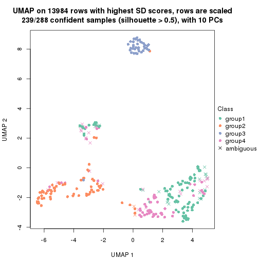
dimension_reduction(res, k = 5, method = "UMAP")
dimension_reduction(res, k = 6, method = "UMAP")
Following heatmap shows how subgroups are split when increasing k:
collect_classes(res)
If matrix rows can be associated to genes, consider to use functional_enrichment(res,
...) to perform function enrichment for the signature genes. See this vignette for more detailed explanations.
The object with results only for a single top-value method and a single partition method can be extracted as:
res = res_list["SD", "mclust"]
# you can also extract it by
# res = res_list["SD:mclust"]
A summary of res and all the functions that can be applied to it:
res
#> A 'ConsensusPartition' object with k = 2, 3, 4, 5, 6.
#> On a matrix with 13984 rows and 288 columns.
#> Top rows (1000, 2000, 3000, 4000, 5000) are extracted by 'SD' method.
#> Subgroups are detected by 'mclust' method.
#> Performed in total 1250 partitions by row resampling.
#> Best k for subgroups seems to be 4.
#>
#> Following methods can be applied to this 'ConsensusPartition' object:
#> [1] "cola_report" "collect_classes" "collect_plots"
#> [4] "collect_stats" "colnames" "compare_signatures"
#> [7] "consensus_heatmap" "dimension_reduction" "functional_enrichment"
#> [10] "get_anno_col" "get_anno" "get_classes"
#> [13] "get_consensus" "get_matrix" "get_membership"
#> [16] "get_param" "get_signatures" "get_stats"
#> [19] "is_best_k" "is_stable_k" "membership_heatmap"
#> [22] "ncol" "nrow" "plot_ecdf"
#> [25] "rownames" "select_partition_number" "show"
#> [28] "suggest_best_k" "test_to_known_factors"
collect_plots() function collects all the plots made from res for all k (number of partitions)
into one single page to provide an easy and fast comparison between different k.
collect_plots(res)

The plots are:
k and the heatmap of
predicted classes for each k.k.k.k.All the plots in panels can be made by individual functions and they are plotted later in this section.
select_partition_number() produces several plots showing different
statistics for choosing “optimized” k. There are following statistics:
k;k, the area increased is defined as \(A_k - A_{k-1}\).The detailed explanations of these statistics can be found in the cola vignette.
Generally speaking, lower PAC score, higher mean silhouette score or higher
concordance corresponds to better partition. Rand index and Jaccard index
measure how similar the current partition is compared to partition with k-1.
If they are too similar, we won't accept k is better than k-1.
select_partition_number(res)
The numeric values for all these statistics can be obtained by get_stats().
get_stats(res)
#> k 1-PAC mean_silhouette concordance area_increased Rand Jaccard
#> 2 2 1.000 0.963 0.980 0.4062 0.594 0.594
#> 3 3 0.979 0.941 0.973 0.6270 0.734 0.556
#> 4 4 0.950 0.943 0.976 0.0655 0.946 0.841
#> 5 5 0.749 0.778 0.880 0.0899 0.828 0.505
#> 6 6 0.789 0.586 0.786 0.0473 0.886 0.580
suggest_best_k() suggests the best \(k\) based on these statistics. The rules are as follows:
suggest_best_k(res)
#> [1] 4
#> attr(,"optional")
#> [1] 2 3
There is also optional best \(k\) = 2 3 that is worth to check.
Following shows the table of the partitions (You need to click the show/hide
code output link to see it). The membership matrix (columns with name p*)
is inferred by
clue::cl_consensus()
function with the SE method. Basically the value in the membership matrix
represents the probability to belong to a certain group. The finall class
label for an item is determined with the group with highest probability it
belongs to.
In get_classes() function, the entropy is calculated from the membership
matrix and the silhouette score is calculated from the consensus matrix.
cbind(get_classes(res, k = 2), get_membership(res, k = 2))
#> class entropy silhouette p1 p2
#> SRR1982614 1 0.0376 0.9809 0.996 0.004
#> SRR1982613 1 0.0376 0.9809 0.996 0.004
#> SRR1982612 1 0.0000 0.9822 1.000 0.000
#> SRR1982611 1 0.0000 0.9822 1.000 0.000
#> SRR1982610 1 0.0000 0.9822 1.000 0.000
#> SRR1982609 1 0.0000 0.9822 1.000 0.000
#> SRR1982659 1 0.0000 0.9822 1.000 0.000
#> SRR1982692 1 0.2236 0.9675 0.964 0.036
#> SRR1982722 2 0.1184 0.9716 0.016 0.984
#> SRR1982750 1 0.2236 0.9675 0.964 0.036
#> SRR2095031 1 0.2236 0.9675 0.964 0.036
#> SRR1982780 2 0.1414 0.9688 0.020 0.980
#> SRR1982807 1 0.0000 0.9822 1.000 0.000
#> SRR1982830 1 0.0000 0.9822 1.000 0.000
#> SRR1982829 1 0.0376 0.9809 0.996 0.004
#> SRR1982828 1 0.0000 0.9822 1.000 0.000
#> SRR1982827 1 0.0000 0.9822 1.000 0.000
#> SRR1982826 1 0.0000 0.9822 1.000 0.000
#> SRR1982825 1 0.0000 0.9822 1.000 0.000
#> SRR1982824 1 0.0000 0.9822 1.000 0.000
#> SRR1982823 1 0.0000 0.9822 1.000 0.000
#> SRR1982822 1 0.0000 0.9822 1.000 0.000
#> SRR1982821 1 0.0000 0.9822 1.000 0.000
#> SRR1982820 1 0.0000 0.9822 1.000 0.000
#> SRR1982819 1 0.0000 0.9822 1.000 0.000
#> SRR1982818 1 0.0000 0.9822 1.000 0.000
#> SRR1982817 1 0.0000 0.9822 1.000 0.000
#> SRR1982816 1 0.0000 0.9822 1.000 0.000
#> SRR1982815 1 0.0000 0.9822 1.000 0.000
#> SRR1982814 1 0.0000 0.9822 1.000 0.000
#> SRR1982813 1 0.0000 0.9822 1.000 0.000
#> SRR1982812 1 0.2236 0.9675 0.964 0.036
#> SRR1982811 1 0.0000 0.9822 1.000 0.000
#> SRR1982810 1 0.0000 0.9822 1.000 0.000
#> SRR1982809 1 0.0000 0.9822 1.000 0.000
#> SRR1982808 1 0.0000 0.9822 1.000 0.000
#> SRR1982806 1 0.0000 0.9822 1.000 0.000
#> SRR1982805 1 0.0000 0.9822 1.000 0.000
#> SRR1982804 1 0.0000 0.9822 1.000 0.000
#> SRR1982803 1 0.0000 0.9822 1.000 0.000
#> SRR1982802 1 0.0000 0.9822 1.000 0.000
#> SRR1982801 1 0.0000 0.9822 1.000 0.000
#> SRR1982800 1 0.0000 0.9822 1.000 0.000
#> SRR1982799 1 0.0000 0.9822 1.000 0.000
#> SRR1982798 1 0.0000 0.9822 1.000 0.000
#> SRR1982797 1 0.0376 0.9809 0.996 0.004
#> SRR1982796 2 0.1184 0.9716 0.016 0.984
#> SRR1982795 1 0.0000 0.9822 1.000 0.000
#> SRR1982794 1 0.0000 0.9822 1.000 0.000
#> SRR1982793 1 0.0000 0.9822 1.000 0.000
#> SRR1982792 1 0.0000 0.9822 1.000 0.000
#> SRR1982791 1 0.0000 0.9822 1.000 0.000
#> SRR1982790 1 0.2236 0.9675 0.964 0.036
#> SRR1982789 1 0.0000 0.9822 1.000 0.000
#> SRR1982788 1 0.0000 0.9822 1.000 0.000
#> SRR1982787 1 0.0000 0.9822 1.000 0.000
#> SRR1982786 2 0.3274 0.9359 0.060 0.940
#> SRR1982785 2 0.1184 0.9716 0.016 0.984
#> SRR1982784 2 0.1184 0.9716 0.016 0.984
#> SRR1982783 2 0.1184 0.9716 0.016 0.984
#> SRR1982782 1 0.0000 0.9822 1.000 0.000
#> SRR1982781 1 0.0000 0.9822 1.000 0.000
#> SRR1982779 2 0.1184 0.9716 0.016 0.984
#> SRR1982778 2 0.0000 0.9736 0.000 1.000
#> SRR1982776 2 0.0000 0.9736 0.000 1.000
#> SRR1982777 2 0.1184 0.9716 0.016 0.984
#> SRR1982775 2 0.0000 0.9736 0.000 1.000
#> SRR1982774 2 0.1184 0.9716 0.016 0.984
#> SRR1982772 2 0.0000 0.9736 0.000 1.000
#> SRR1982773 2 1.0000 0.0013 0.496 0.504
#> SRR1982770 2 0.1184 0.9716 0.016 0.984
#> SRR1982771 2 0.1184 0.9716 0.016 0.984
#> SRR1982769 2 0.4815 0.8934 0.104 0.896
#> SRR1982768 2 0.1184 0.9716 0.016 0.984
#> SRR1982767 2 0.1184 0.9716 0.016 0.984
#> SRR1982766 1 0.0376 0.9809 0.996 0.004
#> SRR1982765 1 0.0000 0.9822 1.000 0.000
#> SRR1982764 1 0.0000 0.9822 1.000 0.000
#> SRR1982762 1 0.0000 0.9822 1.000 0.000
#> SRR1982760 1 0.0000 0.9822 1.000 0.000
#> SRR1982761 1 0.0000 0.9822 1.000 0.000
#> SRR1982763 1 0.2236 0.9675 0.964 0.036
#> SRR1982759 1 0.0000 0.9822 1.000 0.000
#> SRR1982758 2 0.1184 0.9716 0.016 0.984
#> SRR1982757 1 0.4690 0.9041 0.900 0.100
#> SRR1982755 1 0.0000 0.9822 1.000 0.000
#> SRR1982754 1 0.0000 0.9822 1.000 0.000
#> SRR1982756 1 0.0000 0.9822 1.000 0.000
#> SRR1982753 2 0.0938 0.9722 0.012 0.988
#> SRR1982751 1 0.2236 0.9675 0.964 0.036
#> SRR1982752 1 0.2236 0.9675 0.964 0.036
#> SRR1982749 1 0.2236 0.9675 0.964 0.036
#> SRR1982748 1 0.2236 0.9675 0.964 0.036
#> SRR1982747 1 0.2236 0.9675 0.964 0.036
#> SRR1982746 1 0.2236 0.9675 0.964 0.036
#> SRR1982745 1 0.2236 0.9675 0.964 0.036
#> SRR1982743 1 0.2236 0.9675 0.964 0.036
#> SRR1982744 1 0.2236 0.9675 0.964 0.036
#> SRR1982741 1 0.2236 0.9675 0.964 0.036
#> SRR1982742 1 0.2236 0.9675 0.964 0.036
#> SRR2095014 1 0.2236 0.9675 0.964 0.036
#> SRR1982740 1 0.2236 0.9675 0.964 0.036
#> SRR1982739 1 0.2236 0.9675 0.964 0.036
#> SRR1982737 1 0.2236 0.9675 0.964 0.036
#> SRR1982738 1 0.2236 0.9675 0.964 0.036
#> SRR1982736 1 0.2236 0.9675 0.964 0.036
#> SRR1982735 1 0.2236 0.9675 0.964 0.036
#> SRR1982733 1 0.2236 0.9675 0.964 0.036
#> SRR1982732 1 0.2236 0.9675 0.964 0.036
#> SRR2095004 1 0.2236 0.9675 0.964 0.036
#> SRR1982734 1 0.2236 0.9675 0.964 0.036
#> SRR1982731 1 0.2236 0.9675 0.964 0.036
#> SRR1982729 1 0.2236 0.9675 0.964 0.036
#> SRR1982730 1 0.2236 0.9675 0.964 0.036
#> SRR1982728 1 0.2236 0.9675 0.964 0.036
#> SRR1982727 2 0.4815 0.8934 0.104 0.896
#> SRR1982726 2 0.1184 0.9716 0.016 0.984
#> SRR1982723 2 0.3274 0.9359 0.060 0.940
#> SRR1982725 2 0.1184 0.9716 0.016 0.984
#> SRR1982724 2 0.1184 0.9716 0.016 0.984
#> SRR1982721 2 0.1184 0.9716 0.016 0.984
#> SRR1982720 2 0.1184 0.9716 0.016 0.984
#> SRR1982719 2 0.1184 0.9716 0.016 0.984
#> SRR1982718 1 0.2236 0.9675 0.964 0.036
#> SRR1982717 1 0.2236 0.9675 0.964 0.036
#> SRR1982715 1 0.2236 0.9675 0.964 0.036
#> SRR1982714 1 0.0376 0.9809 0.996 0.004
#> SRR1982716 1 0.2236 0.9675 0.964 0.036
#> SRR1982713 1 0.0376 0.9809 0.996 0.004
#> SRR1982711 1 0.2236 0.9675 0.964 0.036
#> SRR1982712 1 0.2236 0.9675 0.964 0.036
#> SRR1982710 1 0.2236 0.9675 0.964 0.036
#> SRR1982708 1 0.2236 0.9675 0.964 0.036
#> SRR1982707 1 0.2236 0.9675 0.964 0.036
#> SRR1982709 1 0.0000 0.9822 1.000 0.000
#> SRR1982705 2 0.8713 0.6021 0.292 0.708
#> SRR1982706 1 0.0000 0.9822 1.000 0.000
#> SRR1982704 2 0.1184 0.9716 0.016 0.984
#> SRR1982702 2 0.4815 0.8934 0.104 0.896
#> SRR1982703 2 0.4815 0.8934 0.104 0.896
#> SRR1982701 2 0.4815 0.8934 0.104 0.896
#> SRR1982700 1 0.9850 0.2545 0.572 0.428
#> SRR1982697 1 0.2236 0.9675 0.964 0.036
#> SRR1982698 1 0.2236 0.9675 0.964 0.036
#> SRR1982699 1 0.2236 0.9675 0.964 0.036
#> SRR1982696 1 0.2236 0.9675 0.964 0.036
#> SRR1982695 1 0.0000 0.9822 1.000 0.000
#> SRR1982694 1 0.0000 0.9822 1.000 0.000
#> SRR1982693 1 0.2236 0.9675 0.964 0.036
#> SRR1982690 1 0.2236 0.9675 0.964 0.036
#> SRR1982691 1 0.2236 0.9675 0.964 0.036
#> SRR1982689 1 0.2236 0.9675 0.964 0.036
#> SRR1982688 1 0.0000 0.9822 1.000 0.000
#> SRR1982687 1 0.2236 0.9675 0.964 0.036
#> SRR1982686 1 0.0672 0.9793 0.992 0.008
#> SRR1982685 1 0.2236 0.9675 0.964 0.036
#> SRR1982684 1 0.2236 0.9675 0.964 0.036
#> SRR1982683 1 0.0000 0.9822 1.000 0.000
#> SRR1982681 1 0.2236 0.9675 0.964 0.036
#> SRR1982682 1 0.2236 0.9675 0.964 0.036
#> SRR1982680 1 0.2236 0.9675 0.964 0.036
#> SRR1982679 1 0.0000 0.9822 1.000 0.000
#> SRR1982678 1 0.2236 0.9675 0.964 0.036
#> SRR1982677 1 0.2236 0.9675 0.964 0.036
#> SRR1982676 1 0.0000 0.9822 1.000 0.000
#> SRR1982675 1 0.0000 0.9822 1.000 0.000
#> SRR1982674 1 0.0376 0.9809 0.996 0.004
#> SRR1982671 2 0.1184 0.9716 0.016 0.984
#> SRR1982673 1 0.0000 0.9822 1.000 0.000
#> SRR1982672 1 0.0000 0.9822 1.000 0.000
#> SRR1982670 2 0.1184 0.9716 0.016 0.984
#> SRR1982669 1 0.0000 0.9822 1.000 0.000
#> SRR1982667 1 0.0000 0.9822 1.000 0.000
#> SRR1982668 1 0.0000 0.9822 1.000 0.000
#> SRR1982666 1 0.0000 0.9822 1.000 0.000
#> SRR1982665 2 0.4815 0.8934 0.104 0.896
#> SRR1982664 1 0.0000 0.9822 1.000 0.000
#> SRR1982663 1 0.0000 0.9822 1.000 0.000
#> SRR1982662 1 0.0000 0.9822 1.000 0.000
#> SRR1982661 1 0.0000 0.9822 1.000 0.000
#> SRR1982660 1 0.0000 0.9822 1.000 0.000
#> SRR1982658 1 0.0000 0.9822 1.000 0.000
#> SRR1982657 1 0.0000 0.9822 1.000 0.000
#> SRR1982656 2 0.4815 0.8934 0.104 0.896
#> SRR1982654 1 0.0000 0.9822 1.000 0.000
#> SRR1982655 1 0.0000 0.9822 1.000 0.000
#> SRR1982653 1 0.0000 0.9822 1.000 0.000
#> SRR1982652 1 0.0000 0.9822 1.000 0.000
#> SRR1982651 1 0.0000 0.9822 1.000 0.000
#> SRR1982649 1 0.0000 0.9822 1.000 0.000
#> SRR1982650 1 0.0000 0.9822 1.000 0.000
#> SRR1982648 1 0.0000 0.9822 1.000 0.000
#> SRR1982647 1 0.0000 0.9822 1.000 0.000
#> SRR1982646 1 0.0000 0.9822 1.000 0.000
#> SRR1982645 1 0.0000 0.9822 1.000 0.000
#> SRR1982644 1 0.0000 0.9822 1.000 0.000
#> SRR1982642 1 0.0000 0.9822 1.000 0.000
#> SRR1982643 1 0.0000 0.9822 1.000 0.000
#> SRR1982641 1 0.0000 0.9822 1.000 0.000
#> SRR1982640 1 0.0000 0.9822 1.000 0.000
#> SRR1982638 1 0.0000 0.9822 1.000 0.000
#> SRR1982639 1 0.0000 0.9822 1.000 0.000
#> SRR1982637 1 0.0000 0.9822 1.000 0.000
#> SRR1982635 1 0.0000 0.9822 1.000 0.000
#> SRR1982636 1 0.0000 0.9822 1.000 0.000
#> SRR1982633 1 0.7139 0.7763 0.804 0.196
#> SRR1982632 1 0.0000 0.9822 1.000 0.000
#> SRR1982631 1 0.0000 0.9822 1.000 0.000
#> SRR1982634 1 0.0000 0.9822 1.000 0.000
#> SRR1982628 1 0.0000 0.9822 1.000 0.000
#> SRR1982629 1 0.0000 0.9822 1.000 0.000
#> SRR1982627 1 0.0000 0.9822 1.000 0.000
#> SRR1982625 1 0.0000 0.9822 1.000 0.000
#> SRR1982626 1 0.0000 0.9822 1.000 0.000
#> SRR1982624 1 0.0000 0.9822 1.000 0.000
#> SRR1982623 1 0.0000 0.9822 1.000 0.000
#> SRR1982622 1 0.0000 0.9822 1.000 0.000
#> SRR1982621 2 0.1184 0.9716 0.016 0.984
#> SRR1982620 2 0.1184 0.9716 0.016 0.984
#> SRR1982619 1 0.7883 0.7063 0.764 0.236
#> SRR1982618 2 0.1184 0.9716 0.016 0.984
#> SRR1982617 1 0.2236 0.9675 0.964 0.036
#> SRR1982616 1 0.0000 0.9822 1.000 0.000
#> SRR1982615 1 0.0000 0.9822 1.000 0.000
#> SRR1982608 1 0.2236 0.9675 0.964 0.036
#> SRR1982607 1 0.0000 0.9822 1.000 0.000
#> SRR1982606 1 0.0000 0.9822 1.000 0.000
#> SRR1982605 1 0.0000 0.9822 1.000 0.000
#> SRR1982604 1 0.0000 0.9822 1.000 0.000
#> SRR1982603 1 0.0000 0.9822 1.000 0.000
#> SRR1982602 1 0.0000 0.9822 1.000 0.000
#> SRR1982601 1 0.0000 0.9822 1.000 0.000
#> SRR1982599 1 0.0000 0.9822 1.000 0.000
#> SRR1982600 1 0.2236 0.9675 0.964 0.036
#> SRR1982598 1 0.0000 0.9822 1.000 0.000
#> SRR1982597 1 0.0000 0.9822 1.000 0.000
#> SRR1982595 1 0.0000 0.9822 1.000 0.000
#> SRR1982596 1 0.0000 0.9822 1.000 0.000
#> SRR1982594 1 0.0000 0.9822 1.000 0.000
#> SRR1982593 1 0.0000 0.9822 1.000 0.000
#> SRR1982592 1 0.0000 0.9822 1.000 0.000
#> SRR1982591 1 0.0000 0.9822 1.000 0.000
#> SRR1982590 1 0.0376 0.9809 0.996 0.004
#> SRR1982589 1 0.0000 0.9822 1.000 0.000
#> SRR1982588 1 0.0000 0.9822 1.000 0.000
#> SRR1982587 1 0.0000 0.9822 1.000 0.000
#> SRR1982586 1 0.0000 0.9822 1.000 0.000
#> SRR1982584 1 0.0000 0.9822 1.000 0.000
#> SRR2096514 2 0.0000 0.9736 0.000 1.000
#> SRR2096513 2 0.0000 0.9736 0.000 1.000
#> SRR2096511 2 0.0000 0.9736 0.000 1.000
#> SRR2096512 2 0.0000 0.9736 0.000 1.000
#> SRR2096509 2 0.0000 0.9736 0.000 1.000
#> SRR2096510 2 0.0000 0.9736 0.000 1.000
#> SRR2096508 1 0.9661 0.3735 0.608 0.392
#> SRR2096507 2 0.0000 0.9736 0.000 1.000
#> SRR2096504 2 0.0000 0.9736 0.000 1.000
#> SRR2096506 2 0.0000 0.9736 0.000 1.000
#> SRR2096505 2 0.0000 0.9736 0.000 1.000
#> SRR2096503 2 0.0000 0.9736 0.000 1.000
#> SRR2096500 2 0.0000 0.9736 0.000 1.000
#> SRR2096501 2 0.0000 0.9736 0.000 1.000
#> SRR2096502 2 0.0000 0.9736 0.000 1.000
#> SRR2096499 2 0.0000 0.9736 0.000 1.000
#> SRR2096498 2 0.0000 0.9736 0.000 1.000
#> SRR2096496 2 0.0000 0.9736 0.000 1.000
#> SRR2096497 2 0.0000 0.9736 0.000 1.000
#> SRR2096495 2 0.0000 0.9736 0.000 1.000
#> SRR2096494 2 0.0000 0.9736 0.000 1.000
#> SRR2096492 2 0.0000 0.9736 0.000 1.000
#> SRR2096491 2 0.0000 0.9736 0.000 1.000
#> SRR2096493 2 0.0000 0.9736 0.000 1.000
#> SRR2096490 2 0.0000 0.9736 0.000 1.000
#> SRR2096488 2 0.0000 0.9736 0.000 1.000
#> SRR2096489 2 0.0000 0.9736 0.000 1.000
#> SRR2096487 2 0.0000 0.9736 0.000 1.000
#> SRR2096484 2 0.0000 0.9736 0.000 1.000
#> SRR2096486 2 0.0000 0.9736 0.000 1.000
#> SRR2096485 2 0.0000 0.9736 0.000 1.000
#> SRR2096483 2 0.0000 0.9736 0.000 1.000
#> SRR2096482 2 0.0000 0.9736 0.000 1.000
#> SRR2096481 2 0.0000 0.9736 0.000 1.000
#> SRR2096520 2 0.0000 0.9736 0.000 1.000
#> SRR2096519 2 0.0000 0.9736 0.000 1.000
#> SRR2096518 2 0.0000 0.9736 0.000 1.000
#> SRR2096516 2 0.0000 0.9736 0.000 1.000
#> SRR2096517 2 0.0000 0.9736 0.000 1.000
#> SRR2096515 2 0.0000 0.9736 0.000 1.000
cbind(get_classes(res, k = 3), get_membership(res, k = 3))
#> class entropy silhouette p1 p2 p3
#> SRR1982614 2 0.1031 0.9475 0.024 0.976 0.000
#> SRR1982613 2 0.0237 0.9561 0.004 0.996 0.000
#> SRR1982612 1 0.2448 0.9064 0.924 0.076 0.000
#> SRR1982611 2 0.1289 0.9431 0.032 0.968 0.000
#> SRR1982610 2 0.2261 0.9142 0.068 0.932 0.000
#> SRR1982609 1 0.0000 0.9840 1.000 0.000 0.000
#> SRR1982659 1 0.0000 0.9840 1.000 0.000 0.000
#> SRR1982692 2 0.0237 0.9561 0.004 0.996 0.000
#> SRR1982722 3 0.0237 0.9767 0.000 0.004 0.996
#> SRR1982750 2 0.0237 0.9561 0.004 0.996 0.000
#> SRR2095031 2 0.0237 0.9561 0.004 0.996 0.000
#> SRR1982780 3 0.0829 0.9676 0.012 0.004 0.984
#> SRR1982807 1 0.0000 0.9840 1.000 0.000 0.000
#> SRR1982830 1 0.0892 0.9657 0.980 0.020 0.000
#> SRR1982829 2 0.1031 0.9475 0.024 0.976 0.000
#> SRR1982828 2 0.1289 0.9431 0.032 0.968 0.000
#> SRR1982827 1 0.5905 0.4356 0.648 0.352 0.000
#> SRR1982826 1 0.0000 0.9840 1.000 0.000 0.000
#> SRR1982825 1 0.0000 0.9840 1.000 0.000 0.000
#> SRR1982824 2 0.1289 0.9431 0.032 0.968 0.000
#> SRR1982823 1 0.0000 0.9840 1.000 0.000 0.000
#> SRR1982822 2 0.4121 0.8071 0.168 0.832 0.000
#> SRR1982821 1 0.0000 0.9840 1.000 0.000 0.000
#> SRR1982820 1 0.0000 0.9840 1.000 0.000 0.000
#> SRR1982819 1 0.0000 0.9840 1.000 0.000 0.000
#> SRR1982818 1 0.0000 0.9840 1.000 0.000 0.000
#> SRR1982817 1 0.4842 0.7011 0.776 0.224 0.000
#> SRR1982816 1 0.0000 0.9840 1.000 0.000 0.000
#> SRR1982815 1 0.0000 0.9840 1.000 0.000 0.000
#> SRR1982814 1 0.0000 0.9840 1.000 0.000 0.000
#> SRR1982813 1 0.0000 0.9840 1.000 0.000 0.000
#> SRR1982812 2 0.0237 0.9561 0.004 0.996 0.000
#> SRR1982811 1 0.0000 0.9840 1.000 0.000 0.000
#> SRR1982810 1 0.0000 0.9840 1.000 0.000 0.000
#> SRR1982809 2 0.1289 0.9431 0.032 0.968 0.000
#> SRR1982808 1 0.1753 0.9376 0.952 0.048 0.000
#> SRR1982806 1 0.0000 0.9840 1.000 0.000 0.000
#> SRR1982805 1 0.0000 0.9840 1.000 0.000 0.000
#> SRR1982804 2 0.5178 0.6785 0.256 0.744 0.000
#> SRR1982803 2 0.1289 0.9431 0.032 0.968 0.000
#> SRR1982802 1 0.0000 0.9840 1.000 0.000 0.000
#> SRR1982801 1 0.0000 0.9840 1.000 0.000 0.000
#> SRR1982800 1 0.5835 0.4643 0.660 0.340 0.000
#> SRR1982799 1 0.0000 0.9840 1.000 0.000 0.000
#> SRR1982798 1 0.0000 0.9840 1.000 0.000 0.000
#> SRR1982797 2 0.0237 0.9561 0.004 0.996 0.000
#> SRR1982796 3 0.0237 0.9767 0.000 0.004 0.996
#> SRR1982795 1 0.0000 0.9840 1.000 0.000 0.000
#> SRR1982794 1 0.0000 0.9840 1.000 0.000 0.000
#> SRR1982793 1 0.0000 0.9840 1.000 0.000 0.000
#> SRR1982792 1 0.0000 0.9840 1.000 0.000 0.000
#> SRR1982791 1 0.0000 0.9840 1.000 0.000 0.000
#> SRR1982790 2 0.0237 0.9561 0.004 0.996 0.000
#> SRR1982789 1 0.0000 0.9840 1.000 0.000 0.000
#> SRR1982788 1 0.0000 0.9840 1.000 0.000 0.000
#> SRR1982787 1 0.0000 0.9840 1.000 0.000 0.000
#> SRR1982786 3 0.0424 0.9745 0.000 0.008 0.992
#> SRR1982785 3 0.0237 0.9767 0.000 0.004 0.996
#> SRR1982784 3 0.0237 0.9767 0.000 0.004 0.996
#> SRR1982783 3 0.0237 0.9767 0.000 0.004 0.996
#> SRR1982782 1 0.0000 0.9840 1.000 0.000 0.000
#> SRR1982781 1 0.0000 0.9840 1.000 0.000 0.000
#> SRR1982779 3 0.0237 0.9767 0.000 0.004 0.996
#> SRR1982778 3 0.0237 0.9767 0.000 0.004 0.996
#> SRR1982776 3 0.0237 0.9767 0.000 0.004 0.996
#> SRR1982777 3 0.0237 0.9767 0.000 0.004 0.996
#> SRR1982775 3 0.0237 0.9767 0.000 0.004 0.996
#> SRR1982774 3 0.0237 0.9767 0.000 0.004 0.996
#> SRR1982772 3 0.0237 0.9767 0.000 0.004 0.996
#> SRR1982773 3 0.6148 0.4408 0.356 0.004 0.640
#> SRR1982770 3 0.0237 0.9767 0.000 0.004 0.996
#> SRR1982771 3 0.0237 0.9767 0.000 0.004 0.996
#> SRR1982769 3 0.0237 0.9767 0.000 0.004 0.996
#> SRR1982768 3 0.0237 0.9767 0.000 0.004 0.996
#> SRR1982767 3 0.0237 0.9767 0.000 0.004 0.996
#> SRR1982766 2 0.1163 0.9454 0.028 0.972 0.000
#> SRR1982765 1 0.0000 0.9840 1.000 0.000 0.000
#> SRR1982764 1 0.0000 0.9840 1.000 0.000 0.000
#> SRR1982762 1 0.0000 0.9840 1.000 0.000 0.000
#> SRR1982760 1 0.0000 0.9840 1.000 0.000 0.000
#> SRR1982761 1 0.0000 0.9840 1.000 0.000 0.000
#> SRR1982763 2 0.1031 0.9475 0.024 0.976 0.000
#> SRR1982759 1 0.5431 0.5900 0.716 0.284 0.000
#> SRR1982758 3 0.0237 0.9767 0.000 0.004 0.996
#> SRR1982757 2 0.7044 0.4677 0.348 0.620 0.032
#> SRR1982755 1 0.0000 0.9840 1.000 0.000 0.000
#> SRR1982754 2 0.4002 0.8170 0.160 0.840 0.000
#> SRR1982756 1 0.0000 0.9840 1.000 0.000 0.000
#> SRR1982753 3 0.0237 0.9767 0.000 0.004 0.996
#> SRR1982751 2 0.0237 0.9561 0.004 0.996 0.000
#> SRR1982752 2 0.0237 0.9561 0.004 0.996 0.000
#> SRR1982749 2 0.0237 0.9561 0.004 0.996 0.000
#> SRR1982748 2 0.0237 0.9561 0.004 0.996 0.000
#> SRR1982747 2 0.0237 0.9561 0.004 0.996 0.000
#> SRR1982746 2 0.0237 0.9561 0.004 0.996 0.000
#> SRR1982745 2 0.0237 0.9561 0.004 0.996 0.000
#> SRR1982743 2 0.0237 0.9561 0.004 0.996 0.000
#> SRR1982744 2 0.0237 0.9561 0.004 0.996 0.000
#> SRR1982741 2 0.0237 0.9561 0.004 0.996 0.000
#> SRR1982742 2 0.0237 0.9561 0.004 0.996 0.000
#> SRR2095014 2 0.0237 0.9561 0.004 0.996 0.000
#> SRR1982740 2 0.0237 0.9561 0.004 0.996 0.000
#> SRR1982739 2 0.0237 0.9561 0.004 0.996 0.000
#> SRR1982737 2 0.0237 0.9561 0.004 0.996 0.000
#> SRR1982738 2 0.0237 0.9561 0.004 0.996 0.000
#> SRR1982736 2 0.0237 0.9561 0.004 0.996 0.000
#> SRR1982735 2 0.0237 0.9561 0.004 0.996 0.000
#> SRR1982733 2 0.0237 0.9561 0.004 0.996 0.000
#> SRR1982732 2 0.0237 0.9561 0.004 0.996 0.000
#> SRR2095004 2 0.0237 0.9561 0.004 0.996 0.000
#> SRR1982734 2 0.0237 0.9561 0.004 0.996 0.000
#> SRR1982731 2 0.0237 0.9561 0.004 0.996 0.000
#> SRR1982729 2 0.0237 0.9561 0.004 0.996 0.000
#> SRR1982730 2 0.0237 0.9561 0.004 0.996 0.000
#> SRR1982728 2 0.0237 0.9561 0.004 0.996 0.000
#> SRR1982727 3 0.1031 0.9624 0.000 0.024 0.976
#> SRR1982726 3 0.0237 0.9767 0.000 0.004 0.996
#> SRR1982723 3 0.0237 0.9767 0.000 0.004 0.996
#> SRR1982725 3 0.0237 0.9767 0.000 0.004 0.996
#> SRR1982724 3 0.0237 0.9767 0.000 0.004 0.996
#> SRR1982721 3 0.0237 0.9767 0.000 0.004 0.996
#> SRR1982720 3 0.0237 0.9767 0.000 0.004 0.996
#> SRR1982719 3 0.0237 0.9767 0.000 0.004 0.996
#> SRR1982718 2 0.0237 0.9561 0.004 0.996 0.000
#> SRR1982717 2 0.0237 0.9561 0.004 0.996 0.000
#> SRR1982715 2 0.0237 0.9561 0.004 0.996 0.000
#> SRR1982714 2 0.1163 0.9454 0.028 0.972 0.000
#> SRR1982716 2 0.0237 0.9561 0.004 0.996 0.000
#> SRR1982713 2 0.2261 0.9150 0.068 0.932 0.000
#> SRR1982711 2 0.0237 0.9561 0.004 0.996 0.000
#> SRR1982712 2 0.0237 0.9561 0.004 0.996 0.000
#> SRR1982710 2 0.0237 0.9561 0.004 0.996 0.000
#> SRR1982708 2 0.0237 0.9561 0.004 0.996 0.000
#> SRR1982707 2 0.0237 0.9561 0.004 0.996 0.000
#> SRR1982709 1 0.5216 0.6355 0.740 0.260 0.000
#> SRR1982705 3 0.5397 0.6238 0.000 0.280 0.720
#> SRR1982706 1 0.0000 0.9840 1.000 0.000 0.000
#> SRR1982704 3 0.0237 0.9767 0.000 0.004 0.996
#> SRR1982702 3 0.1031 0.9624 0.000 0.024 0.976
#> SRR1982703 3 0.1031 0.9624 0.000 0.024 0.976
#> SRR1982701 3 0.0237 0.9767 0.000 0.004 0.996
#> SRR1982700 3 0.5948 0.4580 0.000 0.360 0.640
#> SRR1982697 2 0.0237 0.9561 0.004 0.996 0.000
#> SRR1982698 2 0.0237 0.9561 0.004 0.996 0.000
#> SRR1982699 2 0.0237 0.9561 0.004 0.996 0.000
#> SRR1982696 2 0.0592 0.9476 0.000 0.988 0.012
#> SRR1982695 1 0.0000 0.9840 1.000 0.000 0.000
#> SRR1982694 1 0.0000 0.9840 1.000 0.000 0.000
#> SRR1982693 2 0.0237 0.9561 0.004 0.996 0.000
#> SRR1982690 2 0.0237 0.9561 0.004 0.996 0.000
#> SRR1982691 2 0.0237 0.9561 0.004 0.996 0.000
#> SRR1982689 2 0.0237 0.9561 0.004 0.996 0.000
#> SRR1982688 1 0.0000 0.9840 1.000 0.000 0.000
#> SRR1982687 2 0.0237 0.9561 0.004 0.996 0.000
#> SRR1982686 2 0.1031 0.9475 0.024 0.976 0.000
#> SRR1982685 2 0.0237 0.9561 0.004 0.996 0.000
#> SRR1982684 2 0.0237 0.9561 0.004 0.996 0.000
#> SRR1982683 1 0.0747 0.9695 0.984 0.016 0.000
#> SRR1982681 2 0.0237 0.9561 0.004 0.996 0.000
#> SRR1982682 2 0.0237 0.9561 0.004 0.996 0.000
#> SRR1982680 2 0.0237 0.9561 0.004 0.996 0.000
#> SRR1982679 1 0.0000 0.9840 1.000 0.000 0.000
#> SRR1982678 2 0.0237 0.9561 0.004 0.996 0.000
#> SRR1982677 2 0.0237 0.9561 0.004 0.996 0.000
#> SRR1982676 1 0.0000 0.9840 1.000 0.000 0.000
#> SRR1982675 1 0.0000 0.9840 1.000 0.000 0.000
#> SRR1982674 2 0.1031 0.9475 0.024 0.976 0.000
#> SRR1982671 3 0.0237 0.9767 0.000 0.004 0.996
#> SRR1982673 1 0.0000 0.9840 1.000 0.000 0.000
#> SRR1982672 1 0.0000 0.9840 1.000 0.000 0.000
#> SRR1982670 3 0.0237 0.9767 0.000 0.004 0.996
#> SRR1982669 1 0.0000 0.9840 1.000 0.000 0.000
#> SRR1982667 1 0.0000 0.9840 1.000 0.000 0.000
#> SRR1982668 2 0.2537 0.9049 0.080 0.920 0.000
#> SRR1982666 1 0.0000 0.9840 1.000 0.000 0.000
#> SRR1982665 3 0.0424 0.9745 0.000 0.008 0.992
#> SRR1982664 1 0.0000 0.9840 1.000 0.000 0.000
#> SRR1982663 1 0.0000 0.9840 1.000 0.000 0.000
#> SRR1982662 1 0.0000 0.9840 1.000 0.000 0.000
#> SRR1982661 2 0.6291 0.1750 0.468 0.532 0.000
#> SRR1982660 1 0.0000 0.9840 1.000 0.000 0.000
#> SRR1982658 1 0.0000 0.9840 1.000 0.000 0.000
#> SRR1982657 1 0.0000 0.9840 1.000 0.000 0.000
#> SRR1982656 3 0.1031 0.9624 0.000 0.024 0.976
#> SRR1982654 1 0.0000 0.9840 1.000 0.000 0.000
#> SRR1982655 1 0.0000 0.9840 1.000 0.000 0.000
#> SRR1982653 1 0.0000 0.9840 1.000 0.000 0.000
#> SRR1982652 1 0.0000 0.9840 1.000 0.000 0.000
#> SRR1982651 1 0.0000 0.9840 1.000 0.000 0.000
#> SRR1982649 2 0.1289 0.9431 0.032 0.968 0.000
#> SRR1982650 1 0.0000 0.9840 1.000 0.000 0.000
#> SRR1982648 1 0.0000 0.9840 1.000 0.000 0.000
#> SRR1982647 1 0.0000 0.9840 1.000 0.000 0.000
#> SRR1982646 2 0.5678 0.5691 0.316 0.684 0.000
#> SRR1982645 1 0.0000 0.9840 1.000 0.000 0.000
#> SRR1982644 1 0.0000 0.9840 1.000 0.000 0.000
#> SRR1982642 1 0.0000 0.9840 1.000 0.000 0.000
#> SRR1982643 1 0.0000 0.9840 1.000 0.000 0.000
#> SRR1982641 1 0.0000 0.9840 1.000 0.000 0.000
#> SRR1982640 1 0.0000 0.9840 1.000 0.000 0.000
#> SRR1982638 1 0.0000 0.9840 1.000 0.000 0.000
#> SRR1982639 1 0.0000 0.9840 1.000 0.000 0.000
#> SRR1982637 1 0.0000 0.9840 1.000 0.000 0.000
#> SRR1982635 1 0.0000 0.9840 1.000 0.000 0.000
#> SRR1982636 2 0.5529 0.6130 0.296 0.704 0.000
#> SRR1982633 1 0.0661 0.9732 0.988 0.004 0.008
#> SRR1982632 1 0.0000 0.9840 1.000 0.000 0.000
#> SRR1982631 1 0.0000 0.9840 1.000 0.000 0.000
#> SRR1982634 1 0.0000 0.9840 1.000 0.000 0.000
#> SRR1982628 2 0.1289 0.9431 0.032 0.968 0.000
#> SRR1982629 1 0.0000 0.9840 1.000 0.000 0.000
#> SRR1982627 1 0.0000 0.9840 1.000 0.000 0.000
#> SRR1982625 1 0.0000 0.9840 1.000 0.000 0.000
#> SRR1982626 1 0.1529 0.9458 0.960 0.040 0.000
#> SRR1982624 2 0.1289 0.9431 0.032 0.968 0.000
#> SRR1982623 1 0.0000 0.9840 1.000 0.000 0.000
#> SRR1982622 1 0.0000 0.9840 1.000 0.000 0.000
#> SRR1982621 3 0.0237 0.9767 0.000 0.004 0.996
#> SRR1982620 3 0.0237 0.9767 0.000 0.004 0.996
#> SRR1982619 3 0.9696 0.0119 0.216 0.388 0.396
#> SRR1982618 3 0.0237 0.9767 0.000 0.004 0.996
#> SRR1982617 2 0.0237 0.9561 0.004 0.996 0.000
#> SRR1982616 2 0.6180 0.3308 0.416 0.584 0.000
#> SRR1982615 1 0.0000 0.9840 1.000 0.000 0.000
#> SRR1982608 2 0.0237 0.9561 0.004 0.996 0.000
#> SRR1982607 1 0.0000 0.9840 1.000 0.000 0.000
#> SRR1982606 1 0.0000 0.9840 1.000 0.000 0.000
#> SRR1982605 1 0.0000 0.9840 1.000 0.000 0.000
#> SRR1982604 1 0.0000 0.9840 1.000 0.000 0.000
#> SRR1982603 1 0.0000 0.9840 1.000 0.000 0.000
#> SRR1982602 1 0.0000 0.9840 1.000 0.000 0.000
#> SRR1982601 1 0.0000 0.9840 1.000 0.000 0.000
#> SRR1982599 1 0.0000 0.9840 1.000 0.000 0.000
#> SRR1982600 2 0.0237 0.9561 0.004 0.996 0.000
#> SRR1982598 1 0.0000 0.9840 1.000 0.000 0.000
#> SRR1982597 1 0.0000 0.9840 1.000 0.000 0.000
#> SRR1982595 1 0.0000 0.9840 1.000 0.000 0.000
#> SRR1982596 1 0.0000 0.9840 1.000 0.000 0.000
#> SRR1982594 1 0.0000 0.9840 1.000 0.000 0.000
#> SRR1982593 1 0.0000 0.9840 1.000 0.000 0.000
#> SRR1982592 2 0.1031 0.9475 0.024 0.976 0.000
#> SRR1982591 2 0.2448 0.9070 0.076 0.924 0.000
#> SRR1982590 2 0.0592 0.9528 0.012 0.988 0.000
#> SRR1982589 2 0.4235 0.7986 0.176 0.824 0.000
#> SRR1982588 1 0.0000 0.9840 1.000 0.000 0.000
#> SRR1982587 1 0.0000 0.9840 1.000 0.000 0.000
#> SRR1982586 1 0.0000 0.9840 1.000 0.000 0.000
#> SRR1982584 2 0.1163 0.9454 0.028 0.972 0.000
#> SRR2096514 3 0.0237 0.9768 0.000 0.004 0.996
#> SRR2096513 3 0.0237 0.9768 0.000 0.004 0.996
#> SRR2096511 3 0.0237 0.9768 0.000 0.004 0.996
#> SRR2096512 3 0.0237 0.9768 0.000 0.004 0.996
#> SRR2096509 3 0.0237 0.9768 0.000 0.004 0.996
#> SRR2096510 3 0.0237 0.9768 0.000 0.004 0.996
#> SRR2096508 2 0.6095 0.3063 0.000 0.608 0.392
#> SRR2096507 3 0.0237 0.9768 0.000 0.004 0.996
#> SRR2096504 3 0.0237 0.9768 0.000 0.004 0.996
#> SRR2096506 3 0.0237 0.9768 0.000 0.004 0.996
#> SRR2096505 3 0.0237 0.9768 0.000 0.004 0.996
#> SRR2096503 3 0.0237 0.9768 0.000 0.004 0.996
#> SRR2096500 3 0.0237 0.9768 0.000 0.004 0.996
#> SRR2096501 3 0.0237 0.9768 0.000 0.004 0.996
#> SRR2096502 3 0.0237 0.9768 0.000 0.004 0.996
#> SRR2096499 3 0.0237 0.9768 0.000 0.004 0.996
#> SRR2096498 3 0.0237 0.9768 0.000 0.004 0.996
#> SRR2096496 3 0.0237 0.9768 0.000 0.004 0.996
#> SRR2096497 3 0.0237 0.9768 0.000 0.004 0.996
#> SRR2096495 3 0.0237 0.9768 0.000 0.004 0.996
#> SRR2096494 3 0.0237 0.9768 0.000 0.004 0.996
#> SRR2096492 3 0.0237 0.9768 0.000 0.004 0.996
#> SRR2096491 3 0.0237 0.9768 0.000 0.004 0.996
#> SRR2096493 3 0.0237 0.9768 0.000 0.004 0.996
#> SRR2096490 3 0.0237 0.9768 0.000 0.004 0.996
#> SRR2096488 3 0.0237 0.9768 0.000 0.004 0.996
#> SRR2096489 3 0.0237 0.9768 0.000 0.004 0.996
#> SRR2096487 3 0.0237 0.9768 0.000 0.004 0.996
#> SRR2096484 3 0.0237 0.9768 0.000 0.004 0.996
#> SRR2096486 3 0.0237 0.9768 0.000 0.004 0.996
#> SRR2096485 3 0.0237 0.9768 0.000 0.004 0.996
#> SRR2096483 3 0.0237 0.9768 0.000 0.004 0.996
#> SRR2096482 3 0.0237 0.9768 0.000 0.004 0.996
#> SRR2096481 3 0.0237 0.9768 0.000 0.004 0.996
#> SRR2096520 3 0.0237 0.9768 0.000 0.004 0.996
#> SRR2096519 3 0.0237 0.9768 0.000 0.004 0.996
#> SRR2096518 3 0.0237 0.9768 0.000 0.004 0.996
#> SRR2096516 3 0.0237 0.9768 0.000 0.004 0.996
#> SRR2096517 3 0.0237 0.9768 0.000 0.004 0.996
#> SRR2096515 3 0.0237 0.9768 0.000 0.004 0.996
cbind(get_classes(res, k = 4), get_membership(res, k = 4))
#> class entropy silhouette p1 p2 p3 p4
#> SRR1982614 2 0.1302 0.91177 0.044 0.956 0.000 0.000
#> SRR1982613 2 0.0188 0.93592 0.004 0.996 0.000 0.000
#> SRR1982612 1 0.0469 0.97677 0.988 0.012 0.000 0.000
#> SRR1982611 2 0.1389 0.90858 0.048 0.952 0.000 0.000
#> SRR1982610 2 0.1302 0.91160 0.044 0.956 0.000 0.000
#> SRR1982609 1 0.0000 0.98961 1.000 0.000 0.000 0.000
#> SRR1982659 1 0.0000 0.98961 1.000 0.000 0.000 0.000
#> SRR1982692 2 0.0000 0.93734 0.000 1.000 0.000 0.000
#> SRR1982722 4 0.0000 0.98548 0.000 0.000 0.000 1.000
#> SRR1982750 2 0.0000 0.93734 0.000 1.000 0.000 0.000
#> SRR2095031 2 0.0000 0.93734 0.000 1.000 0.000 0.000
#> SRR1982780 4 0.0000 0.98548 0.000 0.000 0.000 1.000
#> SRR1982807 1 0.0000 0.98961 1.000 0.000 0.000 0.000
#> SRR1982830 1 0.0000 0.98961 1.000 0.000 0.000 0.000
#> SRR1982829 2 0.1211 0.91434 0.040 0.960 0.000 0.000
#> SRR1982828 2 0.2216 0.87134 0.092 0.908 0.000 0.000
#> SRR1982827 2 0.4933 0.33055 0.432 0.568 0.000 0.000
#> SRR1982826 1 0.0000 0.98961 1.000 0.000 0.000 0.000
#> SRR1982825 1 0.0000 0.98961 1.000 0.000 0.000 0.000
#> SRR1982824 2 0.1716 0.89562 0.064 0.936 0.000 0.000
#> SRR1982823 1 0.0000 0.98961 1.000 0.000 0.000 0.000
#> SRR1982822 2 0.3610 0.76184 0.200 0.800 0.000 0.000
#> SRR1982821 1 0.0000 0.98961 1.000 0.000 0.000 0.000
#> SRR1982820 1 0.0000 0.98961 1.000 0.000 0.000 0.000
#> SRR1982819 1 0.0000 0.98961 1.000 0.000 0.000 0.000
#> SRR1982818 1 0.0000 0.98961 1.000 0.000 0.000 0.000
#> SRR1982817 1 0.1867 0.90656 0.928 0.072 0.000 0.000
#> SRR1982816 1 0.0000 0.98961 1.000 0.000 0.000 0.000
#> SRR1982815 1 0.0000 0.98961 1.000 0.000 0.000 0.000
#> SRR1982814 1 0.0000 0.98961 1.000 0.000 0.000 0.000
#> SRR1982813 1 0.0000 0.98961 1.000 0.000 0.000 0.000
#> SRR1982812 2 0.0000 0.93734 0.000 1.000 0.000 0.000
#> SRR1982811 1 0.0000 0.98961 1.000 0.000 0.000 0.000
#> SRR1982810 1 0.0000 0.98961 1.000 0.000 0.000 0.000
#> SRR1982809 2 0.1302 0.91160 0.044 0.956 0.000 0.000
#> SRR1982808 1 0.1389 0.93569 0.952 0.048 0.000 0.000
#> SRR1982806 1 0.0000 0.98961 1.000 0.000 0.000 0.000
#> SRR1982805 1 0.0000 0.98961 1.000 0.000 0.000 0.000
#> SRR1982804 2 0.3942 0.72145 0.236 0.764 0.000 0.000
#> SRR1982803 2 0.0336 0.93382 0.008 0.992 0.000 0.000
#> SRR1982802 1 0.0000 0.98961 1.000 0.000 0.000 0.000
#> SRR1982801 1 0.0000 0.98961 1.000 0.000 0.000 0.000
#> SRR1982800 1 0.4985 0.00552 0.532 0.468 0.000 0.000
#> SRR1982799 1 0.0000 0.98961 1.000 0.000 0.000 0.000
#> SRR1982798 1 0.0000 0.98961 1.000 0.000 0.000 0.000
#> SRR1982797 2 0.0188 0.93592 0.004 0.996 0.000 0.000
#> SRR1982796 4 0.0000 0.98548 0.000 0.000 0.000 1.000
#> SRR1982795 1 0.0000 0.98961 1.000 0.000 0.000 0.000
#> SRR1982794 1 0.0000 0.98961 1.000 0.000 0.000 0.000
#> SRR1982793 1 0.0000 0.98961 1.000 0.000 0.000 0.000
#> SRR1982792 1 0.0000 0.98961 1.000 0.000 0.000 0.000
#> SRR1982791 1 0.0000 0.98961 1.000 0.000 0.000 0.000
#> SRR1982790 2 0.0000 0.93734 0.000 1.000 0.000 0.000
#> SRR1982789 1 0.0000 0.98961 1.000 0.000 0.000 0.000
#> SRR1982788 1 0.0000 0.98961 1.000 0.000 0.000 0.000
#> SRR1982787 1 0.0000 0.98961 1.000 0.000 0.000 0.000
#> SRR1982786 4 0.0000 0.98548 0.000 0.000 0.000 1.000
#> SRR1982785 4 0.0000 0.98548 0.000 0.000 0.000 1.000
#> SRR1982784 4 0.0000 0.98548 0.000 0.000 0.000 1.000
#> SRR1982783 4 0.0000 0.98548 0.000 0.000 0.000 1.000
#> SRR1982782 1 0.0000 0.98961 1.000 0.000 0.000 0.000
#> SRR1982781 1 0.0000 0.98961 1.000 0.000 0.000 0.000
#> SRR1982779 4 0.0000 0.98548 0.000 0.000 0.000 1.000
#> SRR1982778 4 0.0000 0.98548 0.000 0.000 0.000 1.000
#> SRR1982776 4 0.0000 0.98548 0.000 0.000 0.000 1.000
#> SRR1982777 4 0.0000 0.98548 0.000 0.000 0.000 1.000
#> SRR1982775 4 0.0000 0.98548 0.000 0.000 0.000 1.000
#> SRR1982774 4 0.0000 0.98548 0.000 0.000 0.000 1.000
#> SRR1982772 4 0.0000 0.98548 0.000 0.000 0.000 1.000
#> SRR1982773 4 0.0336 0.97552 0.008 0.000 0.000 0.992
#> SRR1982770 4 0.0000 0.98548 0.000 0.000 0.000 1.000
#> SRR1982771 4 0.0000 0.98548 0.000 0.000 0.000 1.000
#> SRR1982769 4 0.0000 0.98548 0.000 0.000 0.000 1.000
#> SRR1982768 4 0.0707 0.95960 0.020 0.000 0.000 0.980
#> SRR1982767 4 0.0000 0.98548 0.000 0.000 0.000 1.000
#> SRR1982766 2 0.1302 0.91179 0.044 0.956 0.000 0.000
#> SRR1982765 1 0.0000 0.98961 1.000 0.000 0.000 0.000
#> SRR1982764 1 0.0000 0.98961 1.000 0.000 0.000 0.000
#> SRR1982762 1 0.0000 0.98961 1.000 0.000 0.000 0.000
#> SRR1982760 1 0.0000 0.98961 1.000 0.000 0.000 0.000
#> SRR1982761 1 0.0000 0.98961 1.000 0.000 0.000 0.000
#> SRR1982763 2 0.0188 0.93592 0.004 0.996 0.000 0.000
#> SRR1982759 1 0.4454 0.50841 0.692 0.308 0.000 0.000
#> SRR1982758 4 0.0000 0.98548 0.000 0.000 0.000 1.000
#> SRR1982757 2 0.6295 0.56153 0.296 0.616 0.000 0.088
#> SRR1982755 1 0.0000 0.98961 1.000 0.000 0.000 0.000
#> SRR1982754 2 0.2281 0.86777 0.096 0.904 0.000 0.000
#> SRR1982756 1 0.0000 0.98961 1.000 0.000 0.000 0.000
#> SRR1982753 4 0.0000 0.98548 0.000 0.000 0.000 1.000
#> SRR1982751 2 0.0000 0.93734 0.000 1.000 0.000 0.000
#> SRR1982752 2 0.0000 0.93734 0.000 1.000 0.000 0.000
#> SRR1982749 2 0.0000 0.93734 0.000 1.000 0.000 0.000
#> SRR1982748 2 0.0000 0.93734 0.000 1.000 0.000 0.000
#> SRR1982747 2 0.0000 0.93734 0.000 1.000 0.000 0.000
#> SRR1982746 2 0.0000 0.93734 0.000 1.000 0.000 0.000
#> SRR1982745 2 0.0000 0.93734 0.000 1.000 0.000 0.000
#> SRR1982743 2 0.0000 0.93734 0.000 1.000 0.000 0.000
#> SRR1982744 2 0.0000 0.93734 0.000 1.000 0.000 0.000
#> SRR1982741 2 0.0000 0.93734 0.000 1.000 0.000 0.000
#> SRR1982742 2 0.0000 0.93734 0.000 1.000 0.000 0.000
#> SRR2095014 2 0.0000 0.93734 0.000 1.000 0.000 0.000
#> SRR1982740 2 0.0000 0.93734 0.000 1.000 0.000 0.000
#> SRR1982739 2 0.0000 0.93734 0.000 1.000 0.000 0.000
#> SRR1982737 2 0.0000 0.93734 0.000 1.000 0.000 0.000
#> SRR1982738 2 0.0000 0.93734 0.000 1.000 0.000 0.000
#> SRR1982736 2 0.0000 0.93734 0.000 1.000 0.000 0.000
#> SRR1982735 2 0.0000 0.93734 0.000 1.000 0.000 0.000
#> SRR1982733 2 0.0000 0.93734 0.000 1.000 0.000 0.000
#> SRR1982732 2 0.0000 0.93734 0.000 1.000 0.000 0.000
#> SRR2095004 2 0.0000 0.93734 0.000 1.000 0.000 0.000
#> SRR1982734 2 0.0000 0.93734 0.000 1.000 0.000 0.000
#> SRR1982731 2 0.0000 0.93734 0.000 1.000 0.000 0.000
#> SRR1982729 2 0.0000 0.93734 0.000 1.000 0.000 0.000
#> SRR1982730 2 0.0000 0.93734 0.000 1.000 0.000 0.000
#> SRR1982728 2 0.0000 0.93734 0.000 1.000 0.000 0.000
#> SRR1982727 4 0.0000 0.98548 0.000 0.000 0.000 1.000
#> SRR1982726 4 0.0000 0.98548 0.000 0.000 0.000 1.000
#> SRR1982723 4 0.0000 0.98548 0.000 0.000 0.000 1.000
#> SRR1982725 4 0.0000 0.98548 0.000 0.000 0.000 1.000
#> SRR1982724 4 0.0000 0.98548 0.000 0.000 0.000 1.000
#> SRR1982721 4 0.0000 0.98548 0.000 0.000 0.000 1.000
#> SRR1982720 4 0.0000 0.98548 0.000 0.000 0.000 1.000
#> SRR1982719 4 0.0000 0.98548 0.000 0.000 0.000 1.000
#> SRR1982718 2 0.0000 0.93734 0.000 1.000 0.000 0.000
#> SRR1982717 2 0.0000 0.93734 0.000 1.000 0.000 0.000
#> SRR1982715 2 0.0000 0.93734 0.000 1.000 0.000 0.000
#> SRR1982714 2 0.2469 0.85655 0.108 0.892 0.000 0.000
#> SRR1982716 2 0.0000 0.93734 0.000 1.000 0.000 0.000
#> SRR1982713 2 0.4008 0.71221 0.244 0.756 0.000 0.000
#> SRR1982711 2 0.0000 0.93734 0.000 1.000 0.000 0.000
#> SRR1982712 2 0.0000 0.93734 0.000 1.000 0.000 0.000
#> SRR1982710 2 0.0000 0.93734 0.000 1.000 0.000 0.000
#> SRR1982708 2 0.0000 0.93734 0.000 1.000 0.000 0.000
#> SRR1982707 2 0.0000 0.93734 0.000 1.000 0.000 0.000
#> SRR1982709 2 0.4843 0.42868 0.396 0.604 0.000 0.000
#> SRR1982705 4 0.0000 0.98548 0.000 0.000 0.000 1.000
#> SRR1982706 1 0.0000 0.98961 1.000 0.000 0.000 0.000
#> SRR1982704 4 0.0000 0.98548 0.000 0.000 0.000 1.000
#> SRR1982702 4 0.0000 0.98548 0.000 0.000 0.000 1.000
#> SRR1982703 4 0.0000 0.98548 0.000 0.000 0.000 1.000
#> SRR1982701 4 0.0000 0.98548 0.000 0.000 0.000 1.000
#> SRR1982700 4 0.0000 0.98548 0.000 0.000 0.000 1.000
#> SRR1982697 2 0.0000 0.93734 0.000 1.000 0.000 0.000
#> SRR1982698 2 0.0000 0.93734 0.000 1.000 0.000 0.000
#> SRR1982699 2 0.0000 0.93734 0.000 1.000 0.000 0.000
#> SRR1982696 4 0.3486 0.74162 0.000 0.188 0.000 0.812
#> SRR1982695 1 0.0000 0.98961 1.000 0.000 0.000 0.000
#> SRR1982694 1 0.0000 0.98961 1.000 0.000 0.000 0.000
#> SRR1982693 2 0.0000 0.93734 0.000 1.000 0.000 0.000
#> SRR1982690 2 0.0000 0.93734 0.000 1.000 0.000 0.000
#> SRR1982691 2 0.0000 0.93734 0.000 1.000 0.000 0.000
#> SRR1982689 2 0.0000 0.93734 0.000 1.000 0.000 0.000
#> SRR1982688 1 0.0000 0.98961 1.000 0.000 0.000 0.000
#> SRR1982687 2 0.0188 0.93592 0.004 0.996 0.000 0.000
#> SRR1982686 2 0.0188 0.93592 0.004 0.996 0.000 0.000
#> SRR1982685 2 0.0000 0.93734 0.000 1.000 0.000 0.000
#> SRR1982684 2 0.0000 0.93734 0.000 1.000 0.000 0.000
#> SRR1982683 1 0.0000 0.98961 1.000 0.000 0.000 0.000
#> SRR1982681 2 0.0000 0.93734 0.000 1.000 0.000 0.000
#> SRR1982682 2 0.0000 0.93734 0.000 1.000 0.000 0.000
#> SRR1982680 2 0.0000 0.93734 0.000 1.000 0.000 0.000
#> SRR1982679 1 0.0000 0.98961 1.000 0.000 0.000 0.000
#> SRR1982678 2 0.0000 0.93734 0.000 1.000 0.000 0.000
#> SRR1982677 2 0.0000 0.93734 0.000 1.000 0.000 0.000
#> SRR1982676 1 0.0000 0.98961 1.000 0.000 0.000 0.000
#> SRR1982675 1 0.0000 0.98961 1.000 0.000 0.000 0.000
#> SRR1982674 2 0.0188 0.93592 0.004 0.996 0.000 0.000
#> SRR1982671 4 0.0000 0.98548 0.000 0.000 0.000 1.000
#> SRR1982673 1 0.0000 0.98961 1.000 0.000 0.000 0.000
#> SRR1982672 1 0.0000 0.98961 1.000 0.000 0.000 0.000
#> SRR1982670 4 0.0000 0.98548 0.000 0.000 0.000 1.000
#> SRR1982669 1 0.0000 0.98961 1.000 0.000 0.000 0.000
#> SRR1982667 1 0.0000 0.98961 1.000 0.000 0.000 0.000
#> SRR1982668 2 0.4008 0.71221 0.244 0.756 0.000 0.000
#> SRR1982666 1 0.0000 0.98961 1.000 0.000 0.000 0.000
#> SRR1982665 4 0.0000 0.98548 0.000 0.000 0.000 1.000
#> SRR1982664 1 0.0000 0.98961 1.000 0.000 0.000 0.000
#> SRR1982663 1 0.0000 0.98961 1.000 0.000 0.000 0.000
#> SRR1982662 1 0.0000 0.98961 1.000 0.000 0.000 0.000
#> SRR1982661 2 0.4072 0.70232 0.252 0.748 0.000 0.000
#> SRR1982660 1 0.0000 0.98961 1.000 0.000 0.000 0.000
#> SRR1982658 1 0.0000 0.98961 1.000 0.000 0.000 0.000
#> SRR1982657 1 0.0000 0.98961 1.000 0.000 0.000 0.000
#> SRR1982656 4 0.0000 0.98548 0.000 0.000 0.000 1.000
#> SRR1982654 1 0.0000 0.98961 1.000 0.000 0.000 0.000
#> SRR1982655 1 0.0000 0.98961 1.000 0.000 0.000 0.000
#> SRR1982653 1 0.0000 0.98961 1.000 0.000 0.000 0.000
#> SRR1982652 1 0.0000 0.98961 1.000 0.000 0.000 0.000
#> SRR1982651 1 0.0000 0.98961 1.000 0.000 0.000 0.000
#> SRR1982649 2 0.0469 0.93156 0.012 0.988 0.000 0.000
#> SRR1982650 1 0.0000 0.98961 1.000 0.000 0.000 0.000
#> SRR1982648 1 0.0000 0.98961 1.000 0.000 0.000 0.000
#> SRR1982647 1 0.0000 0.98961 1.000 0.000 0.000 0.000
#> SRR1982646 2 0.4164 0.68692 0.264 0.736 0.000 0.000
#> SRR1982645 1 0.0000 0.98961 1.000 0.000 0.000 0.000
#> SRR1982644 1 0.0000 0.98961 1.000 0.000 0.000 0.000
#> SRR1982642 1 0.0000 0.98961 1.000 0.000 0.000 0.000
#> SRR1982643 1 0.0000 0.98961 1.000 0.000 0.000 0.000
#> SRR1982641 1 0.0000 0.98961 1.000 0.000 0.000 0.000
#> SRR1982640 1 0.0000 0.98961 1.000 0.000 0.000 0.000
#> SRR1982638 1 0.0000 0.98961 1.000 0.000 0.000 0.000
#> SRR1982639 1 0.0000 0.98961 1.000 0.000 0.000 0.000
#> SRR1982637 1 0.0000 0.98961 1.000 0.000 0.000 0.000
#> SRR1982635 1 0.0000 0.98961 1.000 0.000 0.000 0.000
#> SRR1982636 2 0.4008 0.71221 0.244 0.756 0.000 0.000
#> SRR1982633 1 0.1474 0.93616 0.948 0.000 0.000 0.052
#> SRR1982632 1 0.0000 0.98961 1.000 0.000 0.000 0.000
#> SRR1982631 1 0.0000 0.98961 1.000 0.000 0.000 0.000
#> SRR1982634 1 0.0000 0.98961 1.000 0.000 0.000 0.000
#> SRR1982628 2 0.2704 0.84096 0.124 0.876 0.000 0.000
#> SRR1982629 1 0.0000 0.98961 1.000 0.000 0.000 0.000
#> SRR1982627 1 0.0000 0.98961 1.000 0.000 0.000 0.000
#> SRR1982625 1 0.0000 0.98961 1.000 0.000 0.000 0.000
#> SRR1982626 1 0.0336 0.98117 0.992 0.008 0.000 0.000
#> SRR1982624 2 0.1211 0.91434 0.040 0.960 0.000 0.000
#> SRR1982623 1 0.0000 0.98961 1.000 0.000 0.000 0.000
#> SRR1982622 1 0.0000 0.98961 1.000 0.000 0.000 0.000
#> SRR1982621 4 0.0000 0.98548 0.000 0.000 0.000 1.000
#> SRR1982620 4 0.0000 0.98548 0.000 0.000 0.000 1.000
#> SRR1982619 4 0.1576 0.92494 0.004 0.048 0.000 0.948
#> SRR1982618 4 0.0000 0.98548 0.000 0.000 0.000 1.000
#> SRR1982617 2 0.0000 0.93734 0.000 1.000 0.000 0.000
#> SRR1982616 2 0.4431 0.62562 0.304 0.696 0.000 0.000
#> SRR1982615 1 0.0000 0.98961 1.000 0.000 0.000 0.000
#> SRR1982608 2 0.0000 0.93734 0.000 1.000 0.000 0.000
#> SRR1982607 1 0.0000 0.98961 1.000 0.000 0.000 0.000
#> SRR1982606 1 0.0000 0.98961 1.000 0.000 0.000 0.000
#> SRR1982605 1 0.0000 0.98961 1.000 0.000 0.000 0.000
#> SRR1982604 1 0.0000 0.98961 1.000 0.000 0.000 0.000
#> SRR1982603 1 0.0000 0.98961 1.000 0.000 0.000 0.000
#> SRR1982602 1 0.0000 0.98961 1.000 0.000 0.000 0.000
#> SRR1982601 1 0.0000 0.98961 1.000 0.000 0.000 0.000
#> SRR1982599 1 0.0000 0.98961 1.000 0.000 0.000 0.000
#> SRR1982600 2 0.0000 0.93734 0.000 1.000 0.000 0.000
#> SRR1982598 1 0.0000 0.98961 1.000 0.000 0.000 0.000
#> SRR1982597 1 0.0000 0.98961 1.000 0.000 0.000 0.000
#> SRR1982595 1 0.0000 0.98961 1.000 0.000 0.000 0.000
#> SRR1982596 1 0.0000 0.98961 1.000 0.000 0.000 0.000
#> SRR1982594 1 0.0000 0.98961 1.000 0.000 0.000 0.000
#> SRR1982593 1 0.0000 0.98961 1.000 0.000 0.000 0.000
#> SRR1982592 2 0.0188 0.93592 0.004 0.996 0.000 0.000
#> SRR1982591 2 0.3649 0.75748 0.204 0.796 0.000 0.000
#> SRR1982590 2 0.0188 0.93592 0.004 0.996 0.000 0.000
#> SRR1982589 2 0.4008 0.71221 0.244 0.756 0.000 0.000
#> SRR1982588 1 0.0000 0.98961 1.000 0.000 0.000 0.000
#> SRR1982587 1 0.0000 0.98961 1.000 0.000 0.000 0.000
#> SRR1982586 1 0.0000 0.98961 1.000 0.000 0.000 0.000
#> SRR1982584 2 0.1118 0.91692 0.036 0.964 0.000 0.000
#> SRR2096514 3 0.0000 0.98055 0.000 0.000 1.000 0.000
#> SRR2096513 3 0.0000 0.98055 0.000 0.000 1.000 0.000
#> SRR2096511 3 0.0000 0.98055 0.000 0.000 1.000 0.000
#> SRR2096512 3 0.0188 0.97750 0.000 0.000 0.996 0.004
#> SRR2096509 3 0.0000 0.98055 0.000 0.000 1.000 0.000
#> SRR2096510 3 0.0000 0.98055 0.000 0.000 1.000 0.000
#> SRR2096508 2 0.4468 0.68714 0.000 0.752 0.232 0.016
#> SRR2096507 3 0.3649 0.75181 0.000 0.000 0.796 0.204
#> SRR2096504 3 0.0000 0.98055 0.000 0.000 1.000 0.000
#> SRR2096506 3 0.0000 0.98055 0.000 0.000 1.000 0.000
#> SRR2096505 3 0.0000 0.98055 0.000 0.000 1.000 0.000
#> SRR2096503 3 0.0188 0.97750 0.000 0.000 0.996 0.004
#> SRR2096500 3 0.0000 0.98055 0.000 0.000 1.000 0.000
#> SRR2096501 3 0.0000 0.98055 0.000 0.000 1.000 0.000
#> SRR2096502 3 0.0000 0.98055 0.000 0.000 1.000 0.000
#> SRR2096499 3 0.0000 0.98055 0.000 0.000 1.000 0.000
#> SRR2096498 3 0.3975 0.69712 0.000 0.000 0.760 0.240
#> SRR2096496 3 0.0000 0.98055 0.000 0.000 1.000 0.000
#> SRR2096497 3 0.0000 0.98055 0.000 0.000 1.000 0.000
#> SRR2096495 3 0.0000 0.98055 0.000 0.000 1.000 0.000
#> SRR2096494 3 0.0000 0.98055 0.000 0.000 1.000 0.000
#> SRR2096492 3 0.0000 0.98055 0.000 0.000 1.000 0.000
#> SRR2096491 3 0.0000 0.98055 0.000 0.000 1.000 0.000
#> SRR2096493 3 0.0000 0.98055 0.000 0.000 1.000 0.000
#> SRR2096490 3 0.0000 0.98055 0.000 0.000 1.000 0.000
#> SRR2096488 3 0.0000 0.98055 0.000 0.000 1.000 0.000
#> SRR2096489 3 0.0000 0.98055 0.000 0.000 1.000 0.000
#> SRR2096487 3 0.0000 0.98055 0.000 0.000 1.000 0.000
#> SRR2096484 3 0.0000 0.98055 0.000 0.000 1.000 0.000
#> SRR2096486 3 0.0188 0.97750 0.000 0.000 0.996 0.004
#> SRR2096485 3 0.0000 0.98055 0.000 0.000 1.000 0.000
#> SRR2096483 3 0.0000 0.98055 0.000 0.000 1.000 0.000
#> SRR2096482 3 0.0000 0.98055 0.000 0.000 1.000 0.000
#> SRR2096481 3 0.0000 0.98055 0.000 0.000 1.000 0.000
#> SRR2096520 3 0.0000 0.98055 0.000 0.000 1.000 0.000
#> SRR2096519 3 0.4040 0.68383 0.000 0.000 0.752 0.248
#> SRR2096518 3 0.0000 0.98055 0.000 0.000 1.000 0.000
#> SRR2096516 4 0.4382 0.56202 0.000 0.000 0.296 0.704
#> SRR2096517 3 0.0000 0.98055 0.000 0.000 1.000 0.000
#> SRR2096515 3 0.0000 0.98055 0.000 0.000 1.000 0.000
cbind(get_classes(res, k = 5), get_membership(res, k = 5))
#> class entropy silhouette p1 p2 p3 p4 p5
#> SRR1982614 1 0.4182 0.32603 0.600 0.400 0.000 0.000 0.000
#> SRR1982613 2 0.4060 0.54243 0.360 0.640 0.000 0.000 0.000
#> SRR1982612 1 0.3115 0.76995 0.852 0.036 0.000 0.000 0.112
#> SRR1982611 1 0.2966 0.64715 0.816 0.184 0.000 0.000 0.000
#> SRR1982610 1 0.3242 0.62893 0.784 0.216 0.000 0.000 0.000
#> SRR1982609 5 0.4273 0.00642 0.448 0.000 0.000 0.000 0.552
#> SRR1982659 5 0.0000 0.83039 0.000 0.000 0.000 0.000 1.000
#> SRR1982692 2 0.0000 0.94041 0.000 1.000 0.000 0.000 0.000
#> SRR1982722 4 0.3366 0.81889 0.000 0.000 0.000 0.768 0.232
#> SRR1982750 2 0.0000 0.94041 0.000 1.000 0.000 0.000 0.000
#> SRR2095031 2 0.0000 0.94041 0.000 1.000 0.000 0.000 0.000
#> SRR1982780 4 0.4242 0.50672 0.000 0.000 0.000 0.572 0.428
#> SRR1982807 1 0.1671 0.76675 0.924 0.000 0.000 0.000 0.076
#> SRR1982830 5 0.2825 0.71161 0.124 0.016 0.000 0.000 0.860
#> SRR1982829 1 0.4045 0.33898 0.644 0.356 0.000 0.000 0.000
#> SRR1982828 1 0.2773 0.66328 0.836 0.164 0.000 0.000 0.000
#> SRR1982827 1 0.0703 0.73860 0.976 0.024 0.000 0.000 0.000
#> SRR1982826 1 0.2852 0.76805 0.828 0.000 0.000 0.000 0.172
#> SRR1982825 1 0.2424 0.77173 0.868 0.000 0.000 0.000 0.132
#> SRR1982824 1 0.2813 0.66018 0.832 0.168 0.000 0.000 0.000
#> SRR1982823 5 0.1732 0.77981 0.080 0.000 0.000 0.000 0.920
#> SRR1982822 1 0.2732 0.66649 0.840 0.160 0.000 0.000 0.000
#> SRR1982821 5 0.0162 0.82902 0.004 0.000 0.000 0.000 0.996
#> SRR1982820 5 0.0000 0.83039 0.000 0.000 0.000 0.000 1.000
#> SRR1982819 5 0.0000 0.83039 0.000 0.000 0.000 0.000 1.000
#> SRR1982818 1 0.2074 0.76992 0.896 0.000 0.000 0.000 0.104
#> SRR1982817 1 0.0290 0.74261 0.992 0.008 0.000 0.000 0.000
#> SRR1982816 1 0.4268 0.35230 0.556 0.000 0.000 0.000 0.444
#> SRR1982815 1 0.3966 0.59850 0.664 0.000 0.000 0.000 0.336
#> SRR1982814 5 0.0000 0.83039 0.000 0.000 0.000 0.000 1.000
#> SRR1982813 1 0.2732 0.77070 0.840 0.000 0.000 0.000 0.160
#> SRR1982812 2 0.3039 0.81079 0.192 0.808 0.000 0.000 0.000
#> SRR1982811 1 0.3143 0.75381 0.796 0.000 0.000 0.000 0.204
#> SRR1982810 1 0.1851 0.76854 0.912 0.000 0.000 0.000 0.088
#> SRR1982809 1 0.3039 0.64000 0.808 0.192 0.000 0.000 0.000
#> SRR1982808 1 0.0000 0.74395 1.000 0.000 0.000 0.000 0.000
#> SRR1982806 1 0.2813 0.76939 0.832 0.000 0.000 0.000 0.168
#> SRR1982805 5 0.0000 0.83039 0.000 0.000 0.000 0.000 1.000
#> SRR1982804 1 0.1965 0.70766 0.904 0.096 0.000 0.000 0.000
#> SRR1982803 1 0.3561 0.54598 0.740 0.260 0.000 0.000 0.000
#> SRR1982802 1 0.2966 0.76374 0.816 0.000 0.000 0.000 0.184
#> SRR1982801 1 0.0000 0.74395 1.000 0.000 0.000 0.000 0.000
#> SRR1982800 1 0.1478 0.72366 0.936 0.064 0.000 0.000 0.000
#> SRR1982799 1 0.2966 0.76404 0.816 0.000 0.000 0.000 0.184
#> SRR1982798 1 0.0703 0.75315 0.976 0.000 0.000 0.000 0.024
#> SRR1982797 2 0.4273 0.32490 0.448 0.552 0.000 0.000 0.000
#> SRR1982796 4 0.3366 0.81889 0.000 0.000 0.000 0.768 0.232
#> SRR1982795 1 0.3210 0.74797 0.788 0.000 0.000 0.000 0.212
#> SRR1982794 1 0.3039 0.76023 0.808 0.000 0.000 0.000 0.192
#> SRR1982793 5 0.0000 0.83039 0.000 0.000 0.000 0.000 1.000
#> SRR1982792 5 0.2280 0.76440 0.120 0.000 0.000 0.000 0.880
#> SRR1982791 1 0.3003 0.76196 0.812 0.000 0.000 0.000 0.188
#> SRR1982790 2 0.1851 0.90280 0.088 0.912 0.000 0.000 0.000
#> SRR1982789 1 0.3109 0.75619 0.800 0.000 0.000 0.000 0.200
#> SRR1982788 1 0.2813 0.76895 0.832 0.000 0.000 0.000 0.168
#> SRR1982787 1 0.3039 0.76023 0.808 0.000 0.000 0.000 0.192
#> SRR1982786 4 0.0000 0.86315 0.000 0.000 0.000 1.000 0.000
#> SRR1982785 4 0.3366 0.81889 0.000 0.000 0.000 0.768 0.232
#> SRR1982784 4 0.3366 0.81889 0.000 0.000 0.000 0.768 0.232
#> SRR1982783 4 0.0000 0.86315 0.000 0.000 0.000 1.000 0.000
#> SRR1982782 1 0.1908 0.76907 0.908 0.000 0.000 0.000 0.092
#> SRR1982781 1 0.2648 0.77132 0.848 0.000 0.000 0.000 0.152
#> SRR1982779 4 0.0000 0.86315 0.000 0.000 0.000 1.000 0.000
#> SRR1982778 4 0.3366 0.81889 0.000 0.000 0.000 0.768 0.232
#> SRR1982776 4 0.0000 0.86315 0.000 0.000 0.000 1.000 0.000
#> SRR1982777 4 0.0000 0.86315 0.000 0.000 0.000 1.000 0.000
#> SRR1982775 4 0.3366 0.81889 0.000 0.000 0.000 0.768 0.232
#> SRR1982774 4 0.3366 0.81889 0.000 0.000 0.000 0.768 0.232
#> SRR1982772 4 0.4119 0.80700 0.000 0.000 0.036 0.752 0.212
#> SRR1982773 5 0.3932 0.31048 0.000 0.000 0.000 0.328 0.672
#> SRR1982770 4 0.3366 0.81889 0.000 0.000 0.000 0.768 0.232
#> SRR1982771 4 0.0000 0.86315 0.000 0.000 0.000 1.000 0.000
#> SRR1982769 4 0.0000 0.86315 0.000 0.000 0.000 1.000 0.000
#> SRR1982768 5 0.4182 0.03123 0.000 0.000 0.000 0.400 0.600
#> SRR1982767 5 0.4249 -0.10991 0.000 0.000 0.000 0.432 0.568
#> SRR1982766 1 0.3039 0.64000 0.808 0.192 0.000 0.000 0.000
#> SRR1982765 5 0.0290 0.82715 0.008 0.000 0.000 0.000 0.992
#> SRR1982764 1 0.5204 0.49552 0.560 0.048 0.000 0.000 0.392
#> SRR1982762 5 0.0000 0.83039 0.000 0.000 0.000 0.000 1.000
#> SRR1982760 5 0.0000 0.83039 0.000 0.000 0.000 0.000 1.000
#> SRR1982761 5 0.0162 0.82910 0.004 0.000 0.000 0.000 0.996
#> SRR1982763 2 0.3039 0.70415 0.192 0.808 0.000 0.000 0.000
#> SRR1982759 1 0.2983 0.72742 0.864 0.096 0.000 0.000 0.040
#> SRR1982758 4 0.3774 0.74385 0.000 0.000 0.000 0.704 0.296
#> SRR1982757 5 0.6330 0.15011 0.136 0.416 0.000 0.004 0.444
#> SRR1982755 1 0.3039 0.76092 0.808 0.000 0.000 0.000 0.192
#> SRR1982754 1 0.2852 0.65690 0.828 0.172 0.000 0.000 0.000
#> SRR1982756 5 0.4803 -0.11105 0.444 0.020 0.000 0.000 0.536
#> SRR1982753 4 0.3366 0.81889 0.000 0.000 0.000 0.768 0.232
#> SRR1982751 2 0.0000 0.94041 0.000 1.000 0.000 0.000 0.000
#> SRR1982752 2 0.0000 0.94041 0.000 1.000 0.000 0.000 0.000
#> SRR1982749 2 0.0000 0.94041 0.000 1.000 0.000 0.000 0.000
#> SRR1982748 2 0.0000 0.94041 0.000 1.000 0.000 0.000 0.000
#> SRR1982747 2 0.0000 0.94041 0.000 1.000 0.000 0.000 0.000
#> SRR1982746 2 0.0000 0.94041 0.000 1.000 0.000 0.000 0.000
#> SRR1982745 2 0.0000 0.94041 0.000 1.000 0.000 0.000 0.000
#> SRR1982743 2 0.0000 0.94041 0.000 1.000 0.000 0.000 0.000
#> SRR1982744 2 0.0000 0.94041 0.000 1.000 0.000 0.000 0.000
#> SRR1982741 2 0.0000 0.94041 0.000 1.000 0.000 0.000 0.000
#> SRR1982742 2 0.0000 0.94041 0.000 1.000 0.000 0.000 0.000
#> SRR2095014 2 0.0000 0.94041 0.000 1.000 0.000 0.000 0.000
#> SRR1982740 2 0.0000 0.94041 0.000 1.000 0.000 0.000 0.000
#> SRR1982739 2 0.0000 0.94041 0.000 1.000 0.000 0.000 0.000
#> SRR1982737 2 0.0000 0.94041 0.000 1.000 0.000 0.000 0.000
#> SRR1982738 2 0.0162 0.93856 0.000 0.996 0.000 0.000 0.004
#> SRR1982736 2 0.0000 0.94041 0.000 1.000 0.000 0.000 0.000
#> SRR1982735 2 0.0000 0.94041 0.000 1.000 0.000 0.000 0.000
#> SRR1982733 2 0.0000 0.94041 0.000 1.000 0.000 0.000 0.000
#> SRR1982732 2 0.0000 0.94041 0.000 1.000 0.000 0.000 0.000
#> SRR2095004 2 0.0000 0.94041 0.000 1.000 0.000 0.000 0.000
#> SRR1982734 2 0.0000 0.94041 0.000 1.000 0.000 0.000 0.000
#> SRR1982731 2 0.0000 0.94041 0.000 1.000 0.000 0.000 0.000
#> SRR1982729 2 0.0000 0.94041 0.000 1.000 0.000 0.000 0.000
#> SRR1982730 2 0.0000 0.94041 0.000 1.000 0.000 0.000 0.000
#> SRR1982728 2 0.1908 0.90035 0.092 0.908 0.000 0.000 0.000
#> SRR1982727 4 0.0000 0.86315 0.000 0.000 0.000 1.000 0.000
#> SRR1982726 4 0.0000 0.86315 0.000 0.000 0.000 1.000 0.000
#> SRR1982723 4 0.0000 0.86315 0.000 0.000 0.000 1.000 0.000
#> SRR1982725 4 0.0000 0.86315 0.000 0.000 0.000 1.000 0.000
#> SRR1982724 4 0.0000 0.86315 0.000 0.000 0.000 1.000 0.000
#> SRR1982721 4 0.3210 0.82482 0.000 0.000 0.000 0.788 0.212
#> SRR1982720 4 0.3366 0.81889 0.000 0.000 0.000 0.768 0.232
#> SRR1982719 4 0.3366 0.81889 0.000 0.000 0.000 0.768 0.232
#> SRR1982718 2 0.1851 0.90280 0.088 0.912 0.000 0.000 0.000
#> SRR1982717 2 0.1341 0.91857 0.056 0.944 0.000 0.000 0.000
#> SRR1982715 2 0.0162 0.93903 0.004 0.996 0.000 0.000 0.000
#> SRR1982714 1 0.3395 0.58804 0.764 0.236 0.000 0.000 0.000
#> SRR1982716 2 0.0000 0.94041 0.000 1.000 0.000 0.000 0.000
#> SRR1982713 1 0.3109 0.63287 0.800 0.200 0.000 0.000 0.000
#> SRR1982711 2 0.2020 0.89505 0.100 0.900 0.000 0.000 0.000
#> SRR1982712 2 0.2127 0.88903 0.108 0.892 0.000 0.000 0.000
#> SRR1982710 2 0.1197 0.92210 0.048 0.952 0.000 0.000 0.000
#> SRR1982708 2 0.1851 0.90280 0.088 0.912 0.000 0.000 0.000
#> SRR1982707 2 0.2020 0.89519 0.100 0.900 0.000 0.000 0.000
#> SRR1982709 1 0.0404 0.74175 0.988 0.012 0.000 0.000 0.000
#> SRR1982705 4 0.0000 0.86315 0.000 0.000 0.000 1.000 0.000
#> SRR1982706 1 0.3143 0.75438 0.796 0.000 0.000 0.000 0.204
#> SRR1982704 4 0.0000 0.86315 0.000 0.000 0.000 1.000 0.000
#> SRR1982702 4 0.0000 0.86315 0.000 0.000 0.000 1.000 0.000
#> SRR1982703 4 0.0000 0.86315 0.000 0.000 0.000 1.000 0.000
#> SRR1982701 4 0.0000 0.86315 0.000 0.000 0.000 1.000 0.000
#> SRR1982700 4 0.0000 0.86315 0.000 0.000 0.000 1.000 0.000
#> SRR1982697 2 0.1851 0.90280 0.088 0.912 0.000 0.000 0.000
#> SRR1982698 2 0.1965 0.89777 0.096 0.904 0.000 0.000 0.000
#> SRR1982699 2 0.2179 0.88572 0.112 0.888 0.000 0.000 0.000
#> SRR1982696 4 0.2020 0.78129 0.000 0.100 0.000 0.900 0.000
#> SRR1982695 5 0.0000 0.83039 0.000 0.000 0.000 0.000 1.000
#> SRR1982694 5 0.0000 0.83039 0.000 0.000 0.000 0.000 1.000
#> SRR1982693 2 0.0000 0.94041 0.000 1.000 0.000 0.000 0.000
#> SRR1982690 2 0.1851 0.90280 0.088 0.912 0.000 0.000 0.000
#> SRR1982691 2 0.0000 0.94041 0.000 1.000 0.000 0.000 0.000
#> SRR1982689 2 0.0000 0.94041 0.000 1.000 0.000 0.000 0.000
#> SRR1982688 5 0.0000 0.83039 0.000 0.000 0.000 0.000 1.000
#> SRR1982687 2 0.0000 0.94041 0.000 1.000 0.000 0.000 0.000
#> SRR1982686 2 0.1043 0.91192 0.040 0.960 0.000 0.000 0.000
#> SRR1982685 2 0.0000 0.94041 0.000 1.000 0.000 0.000 0.000
#> SRR1982684 2 0.1851 0.90280 0.088 0.912 0.000 0.000 0.000
#> SRR1982683 1 0.6062 0.38546 0.464 0.120 0.000 0.000 0.416
#> SRR1982681 2 0.0000 0.94041 0.000 1.000 0.000 0.000 0.000
#> SRR1982682 2 0.0963 0.92702 0.036 0.964 0.000 0.000 0.000
#> SRR1982680 2 0.1544 0.91288 0.068 0.932 0.000 0.000 0.000
#> SRR1982679 1 0.4341 0.47031 0.592 0.004 0.000 0.000 0.404
#> SRR1982678 2 0.0000 0.94041 0.000 1.000 0.000 0.000 0.000
#> SRR1982677 2 0.0000 0.94041 0.000 1.000 0.000 0.000 0.000
#> SRR1982676 1 0.2773 0.77016 0.836 0.000 0.000 0.000 0.164
#> SRR1982675 1 0.4126 0.51678 0.620 0.000 0.000 0.000 0.380
#> SRR1982674 1 0.3913 0.41308 0.676 0.324 0.000 0.000 0.000
#> SRR1982671 4 0.0000 0.86315 0.000 0.000 0.000 1.000 0.000
#> SRR1982673 1 0.4283 0.31746 0.544 0.000 0.000 0.000 0.456
#> SRR1982672 5 0.3586 0.58357 0.264 0.000 0.000 0.000 0.736
#> SRR1982670 4 0.3366 0.81889 0.000 0.000 0.000 0.768 0.232
#> SRR1982669 1 0.3876 0.62970 0.684 0.000 0.000 0.000 0.316
#> SRR1982667 1 0.3395 0.72936 0.764 0.000 0.000 0.000 0.236
#> SRR1982668 1 0.3586 0.54217 0.736 0.264 0.000 0.000 0.000
#> SRR1982666 1 0.3210 0.74800 0.788 0.000 0.000 0.000 0.212
#> SRR1982665 4 0.0000 0.86315 0.000 0.000 0.000 1.000 0.000
#> SRR1982664 5 0.4171 0.23573 0.396 0.000 0.000 0.000 0.604
#> SRR1982663 1 0.4060 0.55238 0.640 0.000 0.000 0.000 0.360
#> SRR1982662 5 0.0000 0.83039 0.000 0.000 0.000 0.000 1.000
#> SRR1982661 1 0.2648 0.67236 0.848 0.152 0.000 0.000 0.000
#> SRR1982660 1 0.2516 0.77210 0.860 0.000 0.000 0.000 0.140
#> SRR1982658 1 0.3210 0.74894 0.788 0.000 0.000 0.000 0.212
#> SRR1982657 1 0.3177 0.75133 0.792 0.000 0.000 0.000 0.208
#> SRR1982656 4 0.0000 0.86315 0.000 0.000 0.000 1.000 0.000
#> SRR1982654 1 0.3730 0.66549 0.712 0.000 0.000 0.000 0.288
#> SRR1982655 5 0.0000 0.83039 0.000 0.000 0.000 0.000 1.000
#> SRR1982653 1 0.4256 0.37724 0.564 0.000 0.000 0.000 0.436
#> SRR1982652 1 0.2424 0.77197 0.868 0.000 0.000 0.000 0.132
#> SRR1982651 1 0.2891 0.76684 0.824 0.000 0.000 0.000 0.176
#> SRR1982649 1 0.3242 0.61677 0.784 0.216 0.000 0.000 0.000
#> SRR1982650 1 0.1341 0.76194 0.944 0.000 0.000 0.000 0.056
#> SRR1982648 5 0.0000 0.83039 0.000 0.000 0.000 0.000 1.000
#> SRR1982647 1 0.2929 0.76556 0.820 0.000 0.000 0.000 0.180
#> SRR1982646 1 0.2329 0.69121 0.876 0.124 0.000 0.000 0.000
#> SRR1982645 5 0.0000 0.83039 0.000 0.000 0.000 0.000 1.000
#> SRR1982644 5 0.0000 0.83039 0.000 0.000 0.000 0.000 1.000
#> SRR1982642 1 0.2773 0.76976 0.836 0.000 0.000 0.000 0.164
#> SRR1982643 5 0.3561 0.59181 0.260 0.000 0.000 0.000 0.740
#> SRR1982641 5 0.1197 0.80426 0.048 0.000 0.000 0.000 0.952
#> SRR1982640 5 0.0000 0.83039 0.000 0.000 0.000 0.000 1.000
#> SRR1982638 1 0.2773 0.76994 0.836 0.000 0.000 0.000 0.164
#> SRR1982639 1 0.3074 0.75874 0.804 0.000 0.000 0.000 0.196
#> SRR1982637 1 0.4030 0.56697 0.648 0.000 0.000 0.000 0.352
#> SRR1982635 5 0.0000 0.83039 0.000 0.000 0.000 0.000 1.000
#> SRR1982636 1 0.1851 0.71204 0.912 0.088 0.000 0.000 0.000
#> SRR1982633 5 0.0451 0.82385 0.000 0.000 0.004 0.008 0.988
#> SRR1982632 1 0.0000 0.74395 1.000 0.000 0.000 0.000 0.000
#> SRR1982631 1 0.3366 0.73104 0.768 0.000 0.000 0.000 0.232
#> SRR1982634 1 0.0609 0.75170 0.980 0.000 0.000 0.000 0.020
#> SRR1982628 1 0.2690 0.66945 0.844 0.156 0.000 0.000 0.000
#> SRR1982629 1 0.2329 0.77227 0.876 0.000 0.000 0.000 0.124
#> SRR1982627 1 0.3210 0.74800 0.788 0.000 0.000 0.000 0.212
#> SRR1982625 1 0.1671 0.76669 0.924 0.000 0.000 0.000 0.076
#> SRR1982626 1 0.0000 0.74395 1.000 0.000 0.000 0.000 0.000
#> SRR1982624 1 0.2690 0.66945 0.844 0.156 0.000 0.000 0.000
#> SRR1982623 1 0.3452 0.71878 0.756 0.000 0.000 0.000 0.244
#> SRR1982622 1 0.2966 0.76404 0.816 0.000 0.000 0.000 0.184
#> SRR1982621 4 0.3366 0.81889 0.000 0.000 0.000 0.768 0.232
#> SRR1982620 4 0.3366 0.81889 0.000 0.000 0.000 0.768 0.232
#> SRR1982619 4 0.6663 0.55059 0.060 0.160 0.000 0.604 0.176
#> SRR1982618 4 0.3366 0.81889 0.000 0.000 0.000 0.768 0.232
#> SRR1982617 2 0.0000 0.94041 0.000 1.000 0.000 0.000 0.000
#> SRR1982616 1 0.3767 0.72287 0.812 0.120 0.000 0.000 0.068
#> SRR1982615 5 0.3913 0.39674 0.324 0.000 0.000 0.000 0.676
#> SRR1982608 2 0.0000 0.94041 0.000 1.000 0.000 0.000 0.000
#> SRR1982607 5 0.0000 0.83039 0.000 0.000 0.000 0.000 1.000
#> SRR1982606 1 0.3366 0.73090 0.768 0.000 0.000 0.000 0.232
#> SRR1982605 1 0.4287 0.30401 0.540 0.000 0.000 0.000 0.460
#> SRR1982604 1 0.3210 0.74797 0.788 0.000 0.000 0.000 0.212
#> SRR1982603 1 0.0703 0.75319 0.976 0.000 0.000 0.000 0.024
#> SRR1982602 5 0.0000 0.83039 0.000 0.000 0.000 0.000 1.000
#> SRR1982601 5 0.4045 0.36586 0.356 0.000 0.000 0.000 0.644
#> SRR1982599 1 0.2966 0.76400 0.816 0.000 0.000 0.000 0.184
#> SRR1982600 2 0.0000 0.94041 0.000 1.000 0.000 0.000 0.000
#> SRR1982598 1 0.3895 0.62011 0.680 0.000 0.000 0.000 0.320
#> SRR1982597 1 0.2891 0.76682 0.824 0.000 0.000 0.000 0.176
#> SRR1982595 1 0.3395 0.72699 0.764 0.000 0.000 0.000 0.236
#> SRR1982596 1 0.3242 0.74471 0.784 0.000 0.000 0.000 0.216
#> SRR1982594 1 0.3999 0.58347 0.656 0.000 0.000 0.000 0.344
#> SRR1982593 5 0.0000 0.83039 0.000 0.000 0.000 0.000 1.000
#> SRR1982592 1 0.3857 0.44081 0.688 0.312 0.000 0.000 0.000
#> SRR1982591 1 0.2471 0.68342 0.864 0.136 0.000 0.000 0.000
#> SRR1982590 2 0.4304 0.20887 0.484 0.516 0.000 0.000 0.000
#> SRR1982589 1 0.2377 0.68869 0.872 0.128 0.000 0.000 0.000
#> SRR1982588 1 0.3039 0.76023 0.808 0.000 0.000 0.000 0.192
#> SRR1982587 5 0.3508 0.60480 0.252 0.000 0.000 0.000 0.748
#> SRR1982586 1 0.2773 0.76991 0.836 0.000 0.000 0.000 0.164
#> SRR1982584 1 0.3143 0.62878 0.796 0.204 0.000 0.000 0.000
#> SRR2096514 3 0.0000 0.97348 0.000 0.000 1.000 0.000 0.000
#> SRR2096513 3 0.0000 0.97348 0.000 0.000 1.000 0.000 0.000
#> SRR2096511 3 0.0000 0.97348 0.000 0.000 1.000 0.000 0.000
#> SRR2096512 3 0.0000 0.97348 0.000 0.000 1.000 0.000 0.000
#> SRR2096509 3 0.0000 0.97348 0.000 0.000 1.000 0.000 0.000
#> SRR2096510 3 0.0000 0.97348 0.000 0.000 1.000 0.000 0.000
#> SRR2096508 2 0.4437 0.17355 0.000 0.532 0.464 0.004 0.000
#> SRR2096507 3 0.0162 0.96963 0.000 0.000 0.996 0.004 0.000
#> SRR2096504 3 0.0000 0.97348 0.000 0.000 1.000 0.000 0.000
#> SRR2096506 3 0.0000 0.97348 0.000 0.000 1.000 0.000 0.000
#> SRR2096505 3 0.0000 0.97348 0.000 0.000 1.000 0.000 0.000
#> SRR2096503 3 0.0000 0.97348 0.000 0.000 1.000 0.000 0.000
#> SRR2096500 3 0.0000 0.97348 0.000 0.000 1.000 0.000 0.000
#> SRR2096501 3 0.0000 0.97348 0.000 0.000 1.000 0.000 0.000
#> SRR2096502 3 0.0000 0.97348 0.000 0.000 1.000 0.000 0.000
#> SRR2096499 3 0.0000 0.97348 0.000 0.000 1.000 0.000 0.000
#> SRR2096498 3 0.3398 0.70658 0.000 0.000 0.780 0.004 0.216
#> SRR2096496 3 0.0000 0.97348 0.000 0.000 1.000 0.000 0.000
#> SRR2096497 3 0.0000 0.97348 0.000 0.000 1.000 0.000 0.000
#> SRR2096495 3 0.0000 0.97348 0.000 0.000 1.000 0.000 0.000
#> SRR2096494 3 0.0000 0.97348 0.000 0.000 1.000 0.000 0.000
#> SRR2096492 3 0.0000 0.97348 0.000 0.000 1.000 0.000 0.000
#> SRR2096491 3 0.0000 0.97348 0.000 0.000 1.000 0.000 0.000
#> SRR2096493 3 0.0000 0.97348 0.000 0.000 1.000 0.000 0.000
#> SRR2096490 3 0.0000 0.97348 0.000 0.000 1.000 0.000 0.000
#> SRR2096488 3 0.0000 0.97348 0.000 0.000 1.000 0.000 0.000
#> SRR2096489 3 0.0000 0.97348 0.000 0.000 1.000 0.000 0.000
#> SRR2096487 3 0.0000 0.97348 0.000 0.000 1.000 0.000 0.000
#> SRR2096484 3 0.0000 0.97348 0.000 0.000 1.000 0.000 0.000
#> SRR2096486 3 0.0000 0.97348 0.000 0.000 1.000 0.000 0.000
#> SRR2096485 3 0.0000 0.97348 0.000 0.000 1.000 0.000 0.000
#> SRR2096483 3 0.0000 0.97348 0.000 0.000 1.000 0.000 0.000
#> SRR2096482 3 0.0000 0.97348 0.000 0.000 1.000 0.000 0.000
#> SRR2096481 3 0.0000 0.97348 0.000 0.000 1.000 0.000 0.000
#> SRR2096520 3 0.0000 0.97348 0.000 0.000 1.000 0.000 0.000
#> SRR2096519 3 0.3421 0.72086 0.000 0.000 0.788 0.008 0.204
#> SRR2096518 3 0.0000 0.97348 0.000 0.000 1.000 0.000 0.000
#> SRR2096516 3 0.6514 0.13185 0.000 0.000 0.484 0.236 0.280
#> SRR2096517 3 0.0000 0.97348 0.000 0.000 1.000 0.000 0.000
#> SRR2096515 3 0.0000 0.97348 0.000 0.000 1.000 0.000 0.000
cbind(get_classes(res, k = 6), get_membership(res, k = 6))
#> class entropy silhouette p1 p2 p3 p4 p5 p6
#> SRR1982614 5 0.6326 0.29633 0.252 0.120 0.000 0.000 0.548 0.080
#> SRR1982613 2 0.6076 -0.20320 0.308 0.400 0.000 0.000 0.292 0.000
#> SRR1982612 5 0.3907 0.21627 0.408 0.004 0.000 0.000 0.588 0.000
#> SRR1982611 5 0.3971 0.17650 0.448 0.004 0.000 0.000 0.548 0.000
#> SRR1982610 5 0.3714 0.28091 0.340 0.004 0.000 0.000 0.656 0.000
#> SRR1982609 1 0.5906 -0.52979 0.424 0.000 0.000 0.000 0.368 0.208
#> SRR1982659 5 0.4705 -0.74020 0.044 0.000 0.000 0.000 0.484 0.472
#> SRR1982692 2 0.3851 0.82399 0.000 0.540 0.000 0.000 0.000 0.460
#> SRR1982722 4 0.3327 0.88027 0.000 0.000 0.000 0.820 0.088 0.092
#> SRR1982750 2 0.3838 0.82268 0.000 0.552 0.000 0.000 0.000 0.448
#> SRR2095031 2 0.3847 0.82399 0.000 0.544 0.000 0.000 0.000 0.456
#> SRR1982780 4 0.3327 0.88027 0.000 0.000 0.000 0.820 0.088 0.092
#> SRR1982807 1 0.3851 0.00447 0.540 0.000 0.000 0.000 0.460 0.000
#> SRR1982830 6 0.5596 0.88941 0.112 0.008 0.000 0.000 0.400 0.480
#> SRR1982829 5 0.6206 0.27203 0.224 0.112 0.000 0.000 0.576 0.088
#> SRR1982828 5 0.4787 0.19748 0.432 0.052 0.000 0.000 0.516 0.000
#> SRR1982827 5 0.3866 0.12012 0.484 0.000 0.000 0.000 0.516 0.000
#> SRR1982826 1 0.3101 0.56156 0.756 0.000 0.000 0.000 0.244 0.000
#> SRR1982825 1 0.0000 0.89674 1.000 0.000 0.000 0.000 0.000 0.000
#> SRR1982824 5 0.4689 0.18834 0.440 0.044 0.000 0.000 0.516 0.000
#> SRR1982823 6 0.5458 0.90506 0.124 0.000 0.000 0.000 0.396 0.480
#> SRR1982822 5 0.3923 0.21538 0.416 0.004 0.000 0.000 0.580 0.000
#> SRR1982821 6 0.5442 0.89782 0.120 0.000 0.000 0.000 0.412 0.468
#> SRR1982820 5 0.4988 -0.77529 0.068 0.000 0.000 0.000 0.484 0.448
#> SRR1982819 5 0.5184 -0.81156 0.088 0.000 0.000 0.000 0.480 0.432
#> SRR1982818 1 0.1765 0.80408 0.904 0.000 0.000 0.000 0.096 0.000
#> SRR1982817 5 0.3868 0.10248 0.492 0.000 0.000 0.000 0.508 0.000
#> SRR1982816 1 0.0291 0.89277 0.992 0.000 0.000 0.000 0.004 0.004
#> SRR1982815 1 0.3482 0.30650 0.684 0.000 0.000 0.000 0.316 0.000
#> SRR1982814 5 0.5221 -0.81910 0.092 0.000 0.000 0.000 0.476 0.432
#> SRR1982813 1 0.2527 0.70258 0.832 0.000 0.000 0.000 0.168 0.000
#> SRR1982812 2 0.1995 0.61713 0.052 0.912 0.000 0.000 0.036 0.000
#> SRR1982811 1 0.1074 0.87207 0.960 0.000 0.000 0.000 0.028 0.012
#> SRR1982810 1 0.2969 0.60391 0.776 0.000 0.000 0.000 0.224 0.000
#> SRR1982809 5 0.5112 0.22626 0.400 0.084 0.000 0.000 0.516 0.000
#> SRR1982808 5 0.3867 0.11154 0.488 0.000 0.000 0.000 0.512 0.000
#> SRR1982806 1 0.0000 0.89674 1.000 0.000 0.000 0.000 0.000 0.000
#> SRR1982805 5 0.5145 -0.80400 0.084 0.000 0.000 0.000 0.484 0.432
#> SRR1982804 5 0.3995 0.12929 0.480 0.004 0.000 0.000 0.516 0.000
#> SRR1982803 5 0.5146 0.22924 0.396 0.088 0.000 0.000 0.516 0.000
#> SRR1982802 1 0.0000 0.89674 1.000 0.000 0.000 0.000 0.000 0.000
#> SRR1982801 1 0.3868 -0.08686 0.508 0.000 0.000 0.000 0.492 0.000
#> SRR1982800 5 0.3995 0.12929 0.480 0.004 0.000 0.000 0.516 0.000
#> SRR1982799 1 0.0146 0.89482 0.996 0.000 0.000 0.000 0.004 0.000
#> SRR1982798 1 0.0000 0.89674 1.000 0.000 0.000 0.000 0.000 0.000
#> SRR1982797 2 0.5887 -0.07786 0.328 0.456 0.000 0.000 0.216 0.000
#> SRR1982796 4 0.3327 0.88027 0.000 0.000 0.000 0.820 0.088 0.092
#> SRR1982795 1 0.0000 0.89674 1.000 0.000 0.000 0.000 0.000 0.000
#> SRR1982794 1 0.0790 0.87522 0.968 0.000 0.000 0.000 0.000 0.032
#> SRR1982793 5 0.4757 -0.74452 0.048 0.000 0.000 0.000 0.484 0.468
#> SRR1982792 5 0.6029 -0.79729 0.248 0.000 0.000 0.000 0.396 0.356
#> SRR1982791 1 0.1957 0.78396 0.888 0.000 0.000 0.000 0.112 0.000
#> SRR1982790 2 0.0363 0.65492 0.000 0.988 0.000 0.000 0.012 0.000
#> SRR1982789 1 0.0146 0.89498 0.996 0.000 0.000 0.000 0.000 0.004
#> SRR1982788 1 0.0000 0.89674 1.000 0.000 0.000 0.000 0.000 0.000
#> SRR1982787 1 0.0260 0.89218 0.992 0.000 0.000 0.000 0.008 0.000
#> SRR1982786 4 0.1267 0.87321 0.000 0.000 0.000 0.940 0.000 0.060
#> SRR1982785 4 0.3375 0.87920 0.000 0.000 0.000 0.816 0.088 0.096
#> SRR1982784 4 0.3327 0.88027 0.000 0.000 0.000 0.820 0.088 0.092
#> SRR1982783 4 0.1204 0.87428 0.000 0.000 0.000 0.944 0.000 0.056
#> SRR1982782 1 0.0000 0.89674 1.000 0.000 0.000 0.000 0.000 0.000
#> SRR1982781 1 0.0000 0.89674 1.000 0.000 0.000 0.000 0.000 0.000
#> SRR1982779 4 0.0000 0.88238 0.000 0.000 0.000 1.000 0.000 0.000
#> SRR1982778 4 0.3375 0.87920 0.000 0.000 0.000 0.816 0.088 0.096
#> SRR1982776 4 0.1267 0.87321 0.000 0.000 0.000 0.940 0.000 0.060
#> SRR1982777 4 0.0000 0.88238 0.000 0.000 0.000 1.000 0.000 0.000
#> SRR1982775 4 0.3375 0.87920 0.000 0.000 0.000 0.816 0.088 0.096
#> SRR1982774 4 0.3375 0.87920 0.000 0.000 0.000 0.816 0.088 0.096
#> SRR1982772 4 0.3468 0.87930 0.000 0.000 0.004 0.816 0.088 0.092
#> SRR1982773 4 0.3602 0.86376 0.000 0.000 0.000 0.796 0.088 0.116
#> SRR1982770 4 0.3375 0.87920 0.000 0.000 0.000 0.816 0.088 0.096
#> SRR1982771 4 0.0363 0.88392 0.000 0.000 0.000 0.988 0.000 0.012
#> SRR1982769 4 0.1204 0.87428 0.000 0.000 0.000 0.944 0.000 0.056
#> SRR1982768 4 0.3602 0.86376 0.000 0.000 0.000 0.796 0.088 0.116
#> SRR1982767 4 0.3602 0.86376 0.000 0.000 0.000 0.796 0.088 0.116
#> SRR1982766 5 0.5112 0.22626 0.400 0.084 0.000 0.000 0.516 0.000
#> SRR1982765 6 0.5404 0.90050 0.116 0.000 0.000 0.000 0.404 0.480
#> SRR1982764 5 0.3823 -0.08629 0.192 0.004 0.000 0.000 0.760 0.044
#> SRR1982762 5 0.4988 -0.77529 0.068 0.000 0.000 0.000 0.484 0.448
#> SRR1982760 5 0.4594 -0.72847 0.036 0.000 0.000 0.000 0.484 0.480
#> SRR1982761 5 0.5508 -0.87474 0.128 0.000 0.000 0.000 0.440 0.432
#> SRR1982763 5 0.5502 -0.01573 0.020 0.164 0.000 0.000 0.624 0.192
#> SRR1982759 5 0.3830 0.24811 0.376 0.004 0.000 0.000 0.620 0.000
#> SRR1982758 4 0.3327 0.88027 0.000 0.000 0.000 0.820 0.088 0.092
#> SRR1982757 5 0.5929 -0.23077 0.152 0.156 0.004 0.028 0.640 0.020
#> SRR1982755 1 0.0000 0.89674 1.000 0.000 0.000 0.000 0.000 0.000
#> SRR1982754 5 0.3841 0.25045 0.380 0.004 0.000 0.000 0.616 0.000
#> SRR1982756 5 0.5345 -0.49607 0.188 0.000 0.000 0.000 0.592 0.220
#> SRR1982753 4 0.3375 0.87920 0.000 0.000 0.000 0.816 0.088 0.096
#> SRR1982751 2 0.3847 0.82389 0.000 0.544 0.000 0.000 0.000 0.456
#> SRR1982752 2 0.3851 0.82399 0.000 0.540 0.000 0.000 0.000 0.460
#> SRR1982749 2 0.3847 0.82399 0.000 0.544 0.000 0.000 0.000 0.456
#> SRR1982748 2 0.3851 0.82399 0.000 0.540 0.000 0.000 0.000 0.460
#> SRR1982747 2 0.2378 0.72256 0.000 0.848 0.000 0.000 0.000 0.152
#> SRR1982746 2 0.3838 0.82268 0.000 0.552 0.000 0.000 0.000 0.448
#> SRR1982745 2 0.3847 0.82399 0.000 0.544 0.000 0.000 0.000 0.456
#> SRR1982743 2 0.3851 0.82399 0.000 0.540 0.000 0.000 0.000 0.460
#> SRR1982744 2 0.3847 0.82399 0.000 0.544 0.000 0.000 0.000 0.456
#> SRR1982741 2 0.3851 0.82399 0.000 0.540 0.000 0.000 0.000 0.460
#> SRR1982742 2 0.3851 0.82399 0.000 0.540 0.000 0.000 0.000 0.460
#> SRR2095014 2 0.3851 0.82399 0.000 0.540 0.000 0.000 0.000 0.460
#> SRR1982740 2 0.3847 0.82399 0.000 0.544 0.000 0.000 0.000 0.456
#> SRR1982739 2 0.3851 0.82399 0.000 0.540 0.000 0.000 0.000 0.460
#> SRR1982737 2 0.3851 0.82399 0.000 0.540 0.000 0.000 0.000 0.460
#> SRR1982738 2 0.5583 0.68026 0.000 0.536 0.000 0.000 0.180 0.284
#> SRR1982736 2 0.3851 0.82399 0.000 0.540 0.000 0.000 0.000 0.460
#> SRR1982735 2 0.3851 0.82399 0.000 0.540 0.000 0.000 0.000 0.460
#> SRR1982733 2 0.3851 0.82399 0.000 0.540 0.000 0.000 0.000 0.460
#> SRR1982732 2 0.3851 0.82399 0.000 0.540 0.000 0.000 0.000 0.460
#> SRR2095004 2 0.3851 0.82399 0.000 0.540 0.000 0.000 0.000 0.460
#> SRR1982734 2 0.3851 0.82399 0.000 0.540 0.000 0.000 0.000 0.460
#> SRR1982731 2 0.3851 0.82399 0.000 0.540 0.000 0.000 0.000 0.460
#> SRR1982729 2 0.3851 0.82399 0.000 0.540 0.000 0.000 0.000 0.460
#> SRR1982730 2 0.3847 0.82399 0.000 0.544 0.000 0.000 0.000 0.456
#> SRR1982728 2 0.0363 0.65492 0.000 0.988 0.000 0.000 0.012 0.000
#> SRR1982727 4 0.1267 0.87321 0.000 0.000 0.000 0.940 0.000 0.060
#> SRR1982726 4 0.0000 0.88238 0.000 0.000 0.000 1.000 0.000 0.000
#> SRR1982723 4 0.1204 0.87428 0.000 0.000 0.000 0.944 0.000 0.056
#> SRR1982725 4 0.1204 0.87428 0.000 0.000 0.000 0.944 0.000 0.056
#> SRR1982724 4 0.0363 0.88153 0.000 0.000 0.000 0.988 0.000 0.012
#> SRR1982721 4 0.2826 0.88327 0.000 0.000 0.000 0.856 0.052 0.092
#> SRR1982720 4 0.3327 0.88027 0.000 0.000 0.000 0.820 0.088 0.092
#> SRR1982719 4 0.3327 0.88027 0.000 0.000 0.000 0.820 0.088 0.092
#> SRR1982718 2 0.0363 0.65492 0.000 0.988 0.000 0.000 0.012 0.000
#> SRR1982717 2 0.0632 0.67186 0.000 0.976 0.000 0.000 0.000 0.024
#> SRR1982715 2 0.1462 0.68260 0.000 0.936 0.000 0.000 0.008 0.056
#> SRR1982714 5 0.5086 0.24300 0.384 0.084 0.000 0.000 0.532 0.000
#> SRR1982716 2 0.3847 0.82389 0.000 0.544 0.000 0.000 0.000 0.456
#> SRR1982713 5 0.5112 0.22626 0.400 0.084 0.000 0.000 0.516 0.000
#> SRR1982711 2 0.0547 0.64947 0.000 0.980 0.000 0.000 0.020 0.000
#> SRR1982712 2 0.0547 0.64947 0.000 0.980 0.000 0.000 0.020 0.000
#> SRR1982710 2 0.0260 0.65682 0.000 0.992 0.000 0.000 0.008 0.000
#> SRR1982708 2 0.0363 0.65492 0.000 0.988 0.000 0.000 0.012 0.000
#> SRR1982707 2 0.1124 0.63438 0.008 0.956 0.000 0.000 0.036 0.000
#> SRR1982709 5 0.3866 0.12012 0.484 0.000 0.000 0.000 0.516 0.000
#> SRR1982705 4 0.1267 0.87321 0.000 0.000 0.000 0.940 0.000 0.060
#> SRR1982706 1 0.0000 0.89674 1.000 0.000 0.000 0.000 0.000 0.000
#> SRR1982704 4 0.0865 0.87802 0.000 0.000 0.000 0.964 0.000 0.036
#> SRR1982702 4 0.1267 0.87321 0.000 0.000 0.000 0.940 0.000 0.060
#> SRR1982703 4 0.1267 0.87321 0.000 0.000 0.000 0.940 0.000 0.060
#> SRR1982701 4 0.1267 0.87321 0.000 0.000 0.000 0.940 0.000 0.060
#> SRR1982700 4 0.1267 0.87321 0.000 0.000 0.000 0.940 0.000 0.060
#> SRR1982697 2 0.0363 0.65492 0.000 0.988 0.000 0.000 0.012 0.000
#> SRR1982698 2 0.0458 0.65223 0.000 0.984 0.000 0.000 0.016 0.000
#> SRR1982699 2 0.0547 0.64947 0.000 0.980 0.000 0.000 0.020 0.000
#> SRR1982696 4 0.2006 0.84231 0.000 0.004 0.000 0.892 0.000 0.104
#> SRR1982695 5 0.4807 -0.75251 0.052 0.000 0.000 0.000 0.484 0.464
#> SRR1982694 5 0.4651 -0.73282 0.040 0.000 0.000 0.000 0.484 0.476
#> SRR1982693 2 0.3847 0.82399 0.000 0.544 0.000 0.000 0.000 0.456
#> SRR1982690 2 0.0363 0.65492 0.000 0.988 0.000 0.000 0.012 0.000
#> SRR1982691 2 0.3851 0.82399 0.000 0.540 0.000 0.000 0.000 0.460
#> SRR1982689 2 0.3843 0.82330 0.000 0.548 0.000 0.000 0.000 0.452
#> SRR1982688 5 0.5226 -0.82099 0.092 0.000 0.000 0.000 0.460 0.448
#> SRR1982687 2 0.3982 0.82210 0.000 0.536 0.000 0.000 0.004 0.460
#> SRR1982686 5 0.5663 -0.12575 0.012 0.244 0.000 0.000 0.576 0.168
#> SRR1982685 2 0.3851 0.82399 0.000 0.540 0.000 0.000 0.000 0.460
#> SRR1982684 2 0.0363 0.65492 0.000 0.988 0.000 0.000 0.012 0.000
#> SRR1982683 5 0.3628 -0.05989 0.184 0.004 0.000 0.000 0.776 0.036
#> SRR1982681 2 0.3847 0.82399 0.000 0.544 0.000 0.000 0.000 0.456
#> SRR1982682 2 0.2377 0.71174 0.004 0.868 0.000 0.000 0.004 0.124
#> SRR1982680 2 0.0260 0.65682 0.000 0.992 0.000 0.000 0.008 0.000
#> SRR1982679 5 0.3782 -0.09212 0.224 0.000 0.000 0.000 0.740 0.036
#> SRR1982678 2 0.3851 0.82399 0.000 0.540 0.000 0.000 0.000 0.460
#> SRR1982677 2 0.3838 0.82268 0.000 0.552 0.000 0.000 0.000 0.448
#> SRR1982676 1 0.0000 0.89674 1.000 0.000 0.000 0.000 0.000 0.000
#> SRR1982675 1 0.3052 0.55286 0.780 0.000 0.000 0.000 0.216 0.004
#> SRR1982674 5 0.5179 0.23147 0.392 0.092 0.000 0.000 0.516 0.000
#> SRR1982671 4 0.0146 0.88221 0.000 0.000 0.000 0.996 0.000 0.004
#> SRR1982673 1 0.0937 0.86772 0.960 0.000 0.000 0.000 0.000 0.040
#> SRR1982672 1 0.1563 0.84026 0.932 0.000 0.000 0.000 0.012 0.056
#> SRR1982670 4 0.3327 0.88027 0.000 0.000 0.000 0.820 0.088 0.092
#> SRR1982669 1 0.1010 0.87025 0.960 0.000 0.000 0.000 0.004 0.036
#> SRR1982667 1 0.0972 0.87613 0.964 0.000 0.000 0.000 0.008 0.028
#> SRR1982668 5 0.4925 0.20522 0.424 0.064 0.000 0.000 0.512 0.000
#> SRR1982666 1 0.0000 0.89674 1.000 0.000 0.000 0.000 0.000 0.000
#> SRR1982665 4 0.0363 0.88140 0.000 0.000 0.000 0.988 0.000 0.012
#> SRR1982664 1 0.0692 0.88285 0.976 0.000 0.000 0.000 0.004 0.020
#> SRR1982663 1 0.1152 0.86172 0.952 0.000 0.000 0.000 0.004 0.044
#> SRR1982662 5 0.4651 -0.73282 0.040 0.000 0.000 0.000 0.484 0.476
#> SRR1982661 5 0.3996 0.12168 0.484 0.004 0.000 0.000 0.512 0.000
#> SRR1982660 1 0.0000 0.89674 1.000 0.000 0.000 0.000 0.000 0.000
#> SRR1982658 1 0.0000 0.89674 1.000 0.000 0.000 0.000 0.000 0.000
#> SRR1982657 1 0.0000 0.89674 1.000 0.000 0.000 0.000 0.000 0.000
#> SRR1982656 4 0.1267 0.87321 0.000 0.000 0.000 0.940 0.000 0.060
#> SRR1982654 1 0.0000 0.89674 1.000 0.000 0.000 0.000 0.000 0.000
#> SRR1982655 5 0.4988 -0.77529 0.068 0.000 0.000 0.000 0.484 0.448
#> SRR1982653 1 0.0146 0.89498 0.996 0.000 0.000 0.000 0.000 0.004
#> SRR1982652 1 0.0000 0.89674 1.000 0.000 0.000 0.000 0.000 0.000
#> SRR1982651 1 0.0000 0.89674 1.000 0.000 0.000 0.000 0.000 0.000
#> SRR1982649 5 0.5112 0.22626 0.400 0.084 0.000 0.000 0.516 0.000
#> SRR1982650 1 0.0260 0.89018 0.992 0.000 0.000 0.000 0.008 0.000
#> SRR1982648 5 0.4988 -0.77529 0.068 0.000 0.000 0.000 0.484 0.448
#> SRR1982647 1 0.0000 0.89674 1.000 0.000 0.000 0.000 0.000 0.000
#> SRR1982646 5 0.3986 0.15561 0.464 0.004 0.000 0.000 0.532 0.000
#> SRR1982645 5 0.4705 -0.73844 0.044 0.000 0.000 0.000 0.484 0.472
#> SRR1982644 5 0.4807 -0.75071 0.052 0.000 0.000 0.000 0.484 0.464
#> SRR1982642 1 0.0000 0.89674 1.000 0.000 0.000 0.000 0.000 0.000
#> SRR1982643 1 0.1838 0.82374 0.916 0.000 0.000 0.000 0.016 0.068
#> SRR1982641 6 0.5796 0.85338 0.180 0.000 0.000 0.000 0.388 0.432
#> SRR1982640 5 0.4988 -0.77529 0.068 0.000 0.000 0.000 0.484 0.448
#> SRR1982638 1 0.0000 0.89674 1.000 0.000 0.000 0.000 0.000 0.000
#> SRR1982639 1 0.0458 0.88405 0.984 0.000 0.000 0.000 0.016 0.000
#> SRR1982637 1 0.2301 0.79856 0.884 0.000 0.000 0.000 0.096 0.020
#> SRR1982635 5 0.4651 -0.73282 0.040 0.000 0.000 0.000 0.484 0.476
#> SRR1982636 5 0.3995 0.12929 0.480 0.004 0.000 0.000 0.516 0.000
#> SRR1982633 5 0.5574 -0.70792 0.040 0.000 0.000 0.052 0.472 0.436
#> SRR1982632 1 0.3607 0.33591 0.652 0.000 0.000 0.000 0.348 0.000
#> SRR1982631 1 0.0000 0.89674 1.000 0.000 0.000 0.000 0.000 0.000
#> SRR1982634 1 0.3810 0.10257 0.572 0.000 0.000 0.000 0.428 0.000
#> SRR1982628 5 0.3995 0.12929 0.480 0.004 0.000 0.000 0.516 0.000
#> SRR1982629 1 0.0000 0.89674 1.000 0.000 0.000 0.000 0.000 0.000
#> SRR1982627 1 0.0000 0.89674 1.000 0.000 0.000 0.000 0.000 0.000
#> SRR1982625 1 0.0000 0.89674 1.000 0.000 0.000 0.000 0.000 0.000
#> SRR1982626 5 0.3868 0.10248 0.492 0.000 0.000 0.000 0.508 0.000
#> SRR1982624 5 0.4523 0.17282 0.452 0.032 0.000 0.000 0.516 0.000
#> SRR1982623 1 0.0000 0.89674 1.000 0.000 0.000 0.000 0.000 0.000
#> SRR1982622 1 0.0000 0.89674 1.000 0.000 0.000 0.000 0.000 0.000
#> SRR1982621 4 0.3327 0.88027 0.000 0.000 0.000 0.820 0.088 0.092
#> SRR1982620 4 0.3327 0.88027 0.000 0.000 0.000 0.820 0.088 0.092
#> SRR1982619 4 0.4003 0.79063 0.020 0.060 0.000 0.796 0.008 0.116
#> SRR1982618 4 0.3375 0.87920 0.000 0.000 0.000 0.816 0.088 0.096
#> SRR1982617 2 0.3851 0.82399 0.000 0.540 0.000 0.000 0.000 0.460
#> SRR1982616 5 0.3714 0.27810 0.340 0.004 0.000 0.000 0.656 0.000
#> SRR1982615 6 0.6029 0.75178 0.248 0.000 0.000 0.000 0.356 0.396
#> SRR1982608 2 0.3789 0.81332 0.000 0.584 0.000 0.000 0.000 0.416
#> SRR1982607 5 0.5029 -0.78248 0.072 0.000 0.000 0.000 0.484 0.444
#> SRR1982606 1 0.0000 0.89674 1.000 0.000 0.000 0.000 0.000 0.000
#> SRR1982605 1 0.0806 0.88123 0.972 0.000 0.000 0.000 0.008 0.020
#> SRR1982604 1 0.0777 0.88065 0.972 0.000 0.000 0.000 0.004 0.024
#> SRR1982603 1 0.0000 0.89674 1.000 0.000 0.000 0.000 0.000 0.000
#> SRR1982602 5 0.4988 -0.77529 0.068 0.000 0.000 0.000 0.484 0.448
#> SRR1982601 1 0.3283 0.63141 0.804 0.000 0.000 0.000 0.160 0.036
#> SRR1982599 1 0.3198 0.53432 0.740 0.000 0.000 0.000 0.260 0.000
#> SRR1982600 2 0.3851 0.82399 0.000 0.540 0.000 0.000 0.000 0.460
#> SRR1982598 1 0.0000 0.89674 1.000 0.000 0.000 0.000 0.000 0.000
#> SRR1982597 1 0.0000 0.89674 1.000 0.000 0.000 0.000 0.000 0.000
#> SRR1982595 1 0.0000 0.89674 1.000 0.000 0.000 0.000 0.000 0.000
#> SRR1982596 1 0.0000 0.89674 1.000 0.000 0.000 0.000 0.000 0.000
#> SRR1982594 1 0.0363 0.89054 0.988 0.000 0.000 0.000 0.000 0.012
#> SRR1982593 5 0.4705 -0.73844 0.044 0.000 0.000 0.000 0.484 0.472
#> SRR1982592 5 0.5179 0.23147 0.392 0.092 0.000 0.000 0.516 0.000
#> SRR1982591 5 0.4787 0.19770 0.432 0.052 0.000 0.000 0.516 0.000
#> SRR1982590 2 0.6087 -0.21621 0.316 0.392 0.000 0.000 0.292 0.000
#> SRR1982589 5 0.4523 0.17274 0.452 0.032 0.000 0.000 0.516 0.000
#> SRR1982588 1 0.0000 0.89674 1.000 0.000 0.000 0.000 0.000 0.000
#> SRR1982587 1 0.2164 0.80332 0.900 0.000 0.000 0.000 0.032 0.068
#> SRR1982586 1 0.0000 0.89674 1.000 0.000 0.000 0.000 0.000 0.000
#> SRR1982584 5 0.5146 0.22924 0.396 0.088 0.000 0.000 0.516 0.000
#> SRR2096514 3 0.0000 0.98829 0.000 0.000 1.000 0.000 0.000 0.000
#> SRR2096513 3 0.0000 0.98829 0.000 0.000 1.000 0.000 0.000 0.000
#> SRR2096511 3 0.0000 0.98829 0.000 0.000 1.000 0.000 0.000 0.000
#> SRR2096512 3 0.0146 0.98588 0.000 0.000 0.996 0.004 0.000 0.000
#> SRR2096509 3 0.0000 0.98829 0.000 0.000 1.000 0.000 0.000 0.000
#> SRR2096510 3 0.0000 0.98829 0.000 0.000 1.000 0.000 0.000 0.000
#> SRR2096508 2 0.6445 0.38903 0.000 0.484 0.296 0.176 0.000 0.044
#> SRR2096507 3 0.0713 0.96314 0.000 0.000 0.972 0.028 0.000 0.000
#> SRR2096504 3 0.0000 0.98829 0.000 0.000 1.000 0.000 0.000 0.000
#> SRR2096506 3 0.0000 0.98829 0.000 0.000 1.000 0.000 0.000 0.000
#> SRR2096505 3 0.0000 0.98829 0.000 0.000 1.000 0.000 0.000 0.000
#> SRR2096503 3 0.0260 0.98278 0.000 0.000 0.992 0.008 0.000 0.000
#> SRR2096500 3 0.0000 0.98829 0.000 0.000 1.000 0.000 0.000 0.000
#> SRR2096501 3 0.0000 0.98829 0.000 0.000 1.000 0.000 0.000 0.000
#> SRR2096502 3 0.0000 0.98829 0.000 0.000 1.000 0.000 0.000 0.000
#> SRR2096499 3 0.0000 0.98829 0.000 0.000 1.000 0.000 0.000 0.000
#> SRR2096498 3 0.3580 0.79857 0.000 0.000 0.828 0.044 0.048 0.080
#> SRR2096496 3 0.0000 0.98829 0.000 0.000 1.000 0.000 0.000 0.000
#> SRR2096497 3 0.0000 0.98829 0.000 0.000 1.000 0.000 0.000 0.000
#> SRR2096495 3 0.0000 0.98829 0.000 0.000 1.000 0.000 0.000 0.000
#> SRR2096494 3 0.0000 0.98829 0.000 0.000 1.000 0.000 0.000 0.000
#> SRR2096492 3 0.0000 0.98829 0.000 0.000 1.000 0.000 0.000 0.000
#> SRR2096491 3 0.0146 0.98588 0.000 0.000 0.996 0.004 0.000 0.000
#> SRR2096493 3 0.0000 0.98829 0.000 0.000 1.000 0.000 0.000 0.000
#> SRR2096490 3 0.0000 0.98829 0.000 0.000 1.000 0.000 0.000 0.000
#> SRR2096488 3 0.0000 0.98829 0.000 0.000 1.000 0.000 0.000 0.000
#> SRR2096489 3 0.0000 0.98829 0.000 0.000 1.000 0.000 0.000 0.000
#> SRR2096487 3 0.0000 0.98829 0.000 0.000 1.000 0.000 0.000 0.000
#> SRR2096484 3 0.0000 0.98829 0.000 0.000 1.000 0.000 0.000 0.000
#> SRR2096486 3 0.0260 0.98278 0.000 0.000 0.992 0.008 0.000 0.000
#> SRR2096485 3 0.0000 0.98829 0.000 0.000 1.000 0.000 0.000 0.000
#> SRR2096483 3 0.0000 0.98829 0.000 0.000 1.000 0.000 0.000 0.000
#> SRR2096482 3 0.0000 0.98829 0.000 0.000 1.000 0.000 0.000 0.000
#> SRR2096481 3 0.0146 0.98588 0.000 0.000 0.996 0.004 0.000 0.000
#> SRR2096520 3 0.0000 0.98829 0.000 0.000 1.000 0.000 0.000 0.000
#> SRR2096519 3 0.3571 0.77617 0.000 0.000 0.812 0.124 0.016 0.048
#> SRR2096518 3 0.0000 0.98829 0.000 0.000 1.000 0.000 0.000 0.000
#> SRR2096516 4 0.6114 0.63260 0.000 0.000 0.236 0.580 0.088 0.096
#> SRR2096517 3 0.0000 0.98829 0.000 0.000 1.000 0.000 0.000 0.000
#> SRR2096515 3 0.0000 0.98829 0.000 0.000 1.000 0.000 0.000 0.000
Heatmaps for the consensus matrix. It visualizes the probability of two samples to be in a same group.
consensus_heatmap(res, k = 2)
consensus_heatmap(res, k = 3)
consensus_heatmap(res, k = 4)

consensus_heatmap(res, k = 5)
consensus_heatmap(res, k = 6)
Heatmaps for the membership of samples in all partitions to see how consistent they are:
membership_heatmap(res, k = 2)
membership_heatmap(res, k = 3)
membership_heatmap(res, k = 4)
membership_heatmap(res, k = 5)
membership_heatmap(res, k = 6)
As soon as we have had the classes for columns, we can look for signatures which are significantly different between classes which can be candidate marks for certain classes. Following are the heatmaps for signatures.
Signature heatmaps where rows are scaled:
get_signatures(res, k = 2)
get_signatures(res, k = 3)
get_signatures(res, k = 4)
get_signatures(res, k = 5)
get_signatures(res, k = 6)
Signature heatmaps where rows are not scaled:
get_signatures(res, k = 2, scale_rows = FALSE)
get_signatures(res, k = 3, scale_rows = FALSE)
get_signatures(res, k = 4, scale_rows = FALSE)
get_signatures(res, k = 5, scale_rows = FALSE)
get_signatures(res, k = 6, scale_rows = FALSE)

Compare the overlap of signatures from different k:
compare_signatures(res)
get_signature() returns a data frame invisibly. TO get the list of signatures, the function
call should be assigned to a variable explicitly. In following code, if plot argument is set
to FALSE, no heatmap is plotted while only the differential analysis is performed.
# code only for demonstration
tb = get_signature(res, k = ..., plot = FALSE)
An example of the output of tb is:
#> which_row fdr mean_1 mean_2 scaled_mean_1 scaled_mean_2 km
#> 1 38 0.042760348 8.373488 9.131774 -0.5533452 0.5164555 1
#> 2 40 0.018707592 7.106213 8.469186 -0.6173731 0.5762149 1
#> 3 55 0.019134737 10.221463 11.207825 -0.6159697 0.5749050 1
#> 4 59 0.006059896 5.921854 7.869574 -0.6899429 0.6439467 1
#> 5 60 0.018055526 8.928898 10.211722 -0.6204761 0.5791110 1
#> 6 98 0.009384629 15.714769 14.887706 0.6635654 -0.6193277 2
...
The columns in tb are:
which_row: row indices corresponding to the input matrix.fdr: FDR for the differential test. mean_x: The mean value in group x.scaled_mean_x: The mean value in group x after rows are scaled.km: Row groups if k-means clustering is applied to rows.UMAP plot which shows how samples are separated.
dimension_reduction(res, k = 2, method = "UMAP")
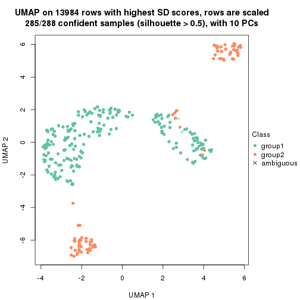
dimension_reduction(res, k = 3, method = "UMAP")
dimension_reduction(res, k = 4, method = "UMAP")
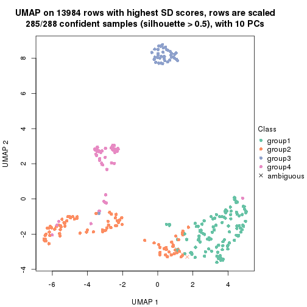
dimension_reduction(res, k = 5, method = "UMAP")
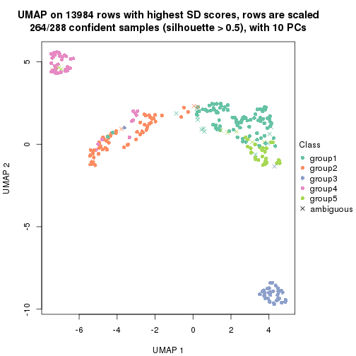
dimension_reduction(res, k = 6, method = "UMAP")
Following heatmap shows how subgroups are split when increasing k:
collect_classes(res)
If matrix rows can be associated to genes, consider to use functional_enrichment(res,
...) to perform function enrichment for the signature genes. See this vignette for more detailed explanations.
The object with results only for a single top-value method and a single partition method can be extracted as:
res = res_list["SD", "NMF"]
# you can also extract it by
# res = res_list["SD:NMF"]
A summary of res and all the functions that can be applied to it:
res
#> A 'ConsensusPartition' object with k = 2, 3, 4, 5, 6.
#> On a matrix with 13984 rows and 288 columns.
#> Top rows (1000, 2000, 3000, 4000, 5000) are extracted by 'SD' method.
#> Subgroups are detected by 'NMF' method.
#> Performed in total 1250 partitions by row resampling.
#> Best k for subgroups seems to be 4.
#>
#> Following methods can be applied to this 'ConsensusPartition' object:
#> [1] "cola_report" "collect_classes" "collect_plots"
#> [4] "collect_stats" "colnames" "compare_signatures"
#> [7] "consensus_heatmap" "dimension_reduction" "functional_enrichment"
#> [10] "get_anno_col" "get_anno" "get_classes"
#> [13] "get_consensus" "get_matrix" "get_membership"
#> [16] "get_param" "get_signatures" "get_stats"
#> [19] "is_best_k" "is_stable_k" "membership_heatmap"
#> [22] "ncol" "nrow" "plot_ecdf"
#> [25] "rownames" "select_partition_number" "show"
#> [28] "suggest_best_k" "test_to_known_factors"
collect_plots() function collects all the plots made from res for all k (number of partitions)
into one single page to provide an easy and fast comparison between different k.
collect_plots(res)
The plots are:
k and the heatmap of
predicted classes for each k.k.k.k.All the plots in panels can be made by individual functions and they are plotted later in this section.
select_partition_number() produces several plots showing different
statistics for choosing “optimized” k. There are following statistics:
k;k, the area increased is defined as \(A_k - A_{k-1}\).The detailed explanations of these statistics can be found in the cola vignette.
Generally speaking, lower PAC score, higher mean silhouette score or higher
concordance corresponds to better partition. Rand index and Jaccard index
measure how similar the current partition is compared to partition with k-1.
If they are too similar, we won't accept k is better than k-1.
select_partition_number(res)
The numeric values for all these statistics can be obtained by get_stats().
get_stats(res)
#> k 1-PAC mean_silhouette concordance area_increased Rand Jaccard
#> 2 2 0.810 0.909 0.960 0.4774 0.525 0.525
#> 3 3 0.935 0.930 0.971 0.3585 0.722 0.517
#> 4 4 0.966 0.929 0.973 0.0912 0.915 0.766
#> 5 5 0.889 0.865 0.933 0.0858 0.891 0.655
#> 6 6 0.806 0.703 0.837 0.0481 0.930 0.721
suggest_best_k() suggests the best \(k\) based on these statistics. The rules are as follows:
suggest_best_k(res)
#> [1] 4
#> attr(,"optional")
#> [1] 3
There is also optional best \(k\) = 3 that is worth to check.
Following shows the table of the partitions (You need to click the show/hide
code output link to see it). The membership matrix (columns with name p*)
is inferred by
clue::cl_consensus()
function with the SE method. Basically the value in the membership matrix
represents the probability to belong to a certain group. The finall class
label for an item is determined with the group with highest probability it
belongs to.
In get_classes() function, the entropy is calculated from the membership
matrix and the silhouette score is calculated from the consensus matrix.
cbind(get_classes(res, k = 2), get_membership(res, k = 2))
#> class entropy silhouette p1 p2
#> SRR1982614 2 0.0000 0.9653 0.000 1.000
#> SRR1982613 2 0.0000 0.9653 0.000 1.000
#> SRR1982612 1 0.9998 0.0848 0.508 0.492
#> SRR1982611 2 0.9608 0.3539 0.384 0.616
#> SRR1982610 1 0.8909 0.5941 0.692 0.308
#> SRR1982609 1 0.0000 0.9516 1.000 0.000
#> SRR1982659 1 0.0000 0.9516 1.000 0.000
#> SRR1982692 2 0.0000 0.9653 0.000 1.000
#> SRR1982722 1 0.7139 0.7713 0.804 0.196
#> SRR1982750 2 0.0000 0.9653 0.000 1.000
#> SRR2095031 2 0.0000 0.9653 0.000 1.000
#> SRR1982780 1 0.7219 0.7663 0.800 0.200
#> SRR1982807 1 0.9635 0.4162 0.612 0.388
#> SRR1982830 1 0.6887 0.7859 0.816 0.184
#> SRR1982829 2 0.0000 0.9653 0.000 1.000
#> SRR1982828 1 0.9393 0.4937 0.644 0.356
#> SRR1982827 1 0.1843 0.9325 0.972 0.028
#> SRR1982826 1 0.0000 0.9516 1.000 0.000
#> SRR1982825 1 0.0000 0.9516 1.000 0.000
#> SRR1982824 2 0.7815 0.6888 0.232 0.768
#> SRR1982823 1 0.9286 0.5204 0.656 0.344
#> SRR1982822 1 0.6887 0.7856 0.816 0.184
#> SRR1982821 2 0.7815 0.6888 0.232 0.768
#> SRR1982820 1 0.0000 0.9516 1.000 0.000
#> SRR1982819 1 0.0000 0.9516 1.000 0.000
#> SRR1982818 1 0.0000 0.9516 1.000 0.000
#> SRR1982817 1 0.7219 0.7663 0.800 0.200
#> SRR1982816 1 0.0000 0.9516 1.000 0.000
#> SRR1982815 1 0.0000 0.9516 1.000 0.000
#> SRR1982814 2 0.7950 0.6753 0.240 0.760
#> SRR1982813 1 0.0000 0.9516 1.000 0.000
#> SRR1982812 2 0.0000 0.9653 0.000 1.000
#> SRR1982811 1 0.2603 0.9212 0.956 0.044
#> SRR1982810 1 0.0000 0.9516 1.000 0.000
#> SRR1982809 2 0.0000 0.9653 0.000 1.000
#> SRR1982808 1 0.7219 0.7663 0.800 0.200
#> SRR1982806 1 0.0000 0.9516 1.000 0.000
#> SRR1982805 1 0.0000 0.9516 1.000 0.000
#> SRR1982804 1 0.7376 0.7558 0.792 0.208
#> SRR1982803 2 0.5408 0.8405 0.124 0.876
#> SRR1982802 1 0.0000 0.9516 1.000 0.000
#> SRR1982801 1 0.3274 0.9078 0.940 0.060
#> SRR1982800 1 0.4690 0.8724 0.900 0.100
#> SRR1982799 1 0.0000 0.9516 1.000 0.000
#> SRR1982798 1 0.0000 0.9516 1.000 0.000
#> SRR1982797 2 0.0000 0.9653 0.000 1.000
#> SRR1982796 1 0.0000 0.9516 1.000 0.000
#> SRR1982795 1 0.0000 0.9516 1.000 0.000
#> SRR1982794 1 0.0000 0.9516 1.000 0.000
#> SRR1982793 1 0.0000 0.9516 1.000 0.000
#> SRR1982792 1 0.0000 0.9516 1.000 0.000
#> SRR1982791 1 0.0000 0.9516 1.000 0.000
#> SRR1982790 2 0.0000 0.9653 0.000 1.000
#> SRR1982789 1 0.0000 0.9516 1.000 0.000
#> SRR1982788 1 0.0000 0.9516 1.000 0.000
#> SRR1982787 1 0.0000 0.9516 1.000 0.000
#> SRR1982786 2 0.0000 0.9653 0.000 1.000
#> SRR1982785 1 0.0000 0.9516 1.000 0.000
#> SRR1982784 1 0.0000 0.9516 1.000 0.000
#> SRR1982783 1 0.9933 0.2290 0.548 0.452
#> SRR1982782 1 0.0000 0.9516 1.000 0.000
#> SRR1982781 1 0.0000 0.9516 1.000 0.000
#> SRR1982779 1 0.0376 0.9491 0.996 0.004
#> SRR1982778 1 0.0000 0.9516 1.000 0.000
#> SRR1982776 2 0.0000 0.9653 0.000 1.000
#> SRR1982777 2 0.6343 0.7935 0.160 0.840
#> SRR1982775 1 0.0000 0.9516 1.000 0.000
#> SRR1982774 1 0.0000 0.9516 1.000 0.000
#> SRR1982772 1 0.0000 0.9516 1.000 0.000
#> SRR1982773 1 0.0000 0.9516 1.000 0.000
#> SRR1982770 1 0.0000 0.9516 1.000 0.000
#> SRR1982771 1 0.2043 0.9296 0.968 0.032
#> SRR1982769 2 0.0000 0.9653 0.000 1.000
#> SRR1982768 1 0.0000 0.9516 1.000 0.000
#> SRR1982767 1 0.0000 0.9516 1.000 0.000
#> SRR1982766 2 0.0000 0.9653 0.000 1.000
#> SRR1982765 2 0.1184 0.9518 0.016 0.984
#> SRR1982764 1 0.0000 0.9516 1.000 0.000
#> SRR1982762 1 0.0000 0.9516 1.000 0.000
#> SRR1982760 1 0.0000 0.9516 1.000 0.000
#> SRR1982761 1 0.0000 0.9516 1.000 0.000
#> SRR1982763 2 0.0000 0.9653 0.000 1.000
#> SRR1982759 1 0.7219 0.7663 0.800 0.200
#> SRR1982758 1 0.7139 0.7716 0.804 0.196
#> SRR1982757 1 0.0000 0.9516 1.000 0.000
#> SRR1982755 1 0.0000 0.9516 1.000 0.000
#> SRR1982754 1 0.7219 0.7663 0.800 0.200
#> SRR1982756 1 0.0000 0.9516 1.000 0.000
#> SRR1982753 1 0.0000 0.9516 1.000 0.000
#> SRR1982751 2 0.0000 0.9653 0.000 1.000
#> SRR1982752 2 0.0000 0.9653 0.000 1.000
#> SRR1982749 2 0.0000 0.9653 0.000 1.000
#> SRR1982748 2 0.0000 0.9653 0.000 1.000
#> SRR1982747 2 0.0000 0.9653 0.000 1.000
#> SRR1982746 2 0.0000 0.9653 0.000 1.000
#> SRR1982745 2 0.0000 0.9653 0.000 1.000
#> SRR1982743 2 0.0000 0.9653 0.000 1.000
#> SRR1982744 2 0.0000 0.9653 0.000 1.000
#> SRR1982741 2 0.0000 0.9653 0.000 1.000
#> SRR1982742 2 0.0000 0.9653 0.000 1.000
#> SRR2095014 2 0.0000 0.9653 0.000 1.000
#> SRR1982740 2 0.0000 0.9653 0.000 1.000
#> SRR1982739 2 0.0000 0.9653 0.000 1.000
#> SRR1982737 2 0.0000 0.9653 0.000 1.000
#> SRR1982738 2 0.0000 0.9653 0.000 1.000
#> SRR1982736 2 0.0000 0.9653 0.000 1.000
#> SRR1982735 2 0.0000 0.9653 0.000 1.000
#> SRR1982733 2 0.0000 0.9653 0.000 1.000
#> SRR1982732 2 0.0000 0.9653 0.000 1.000
#> SRR2095004 2 0.0000 0.9653 0.000 1.000
#> SRR1982734 2 0.0000 0.9653 0.000 1.000
#> SRR1982731 2 0.0000 0.9653 0.000 1.000
#> SRR1982729 2 0.0000 0.9653 0.000 1.000
#> SRR1982730 2 0.0000 0.9653 0.000 1.000
#> SRR1982728 2 0.0000 0.9653 0.000 1.000
#> SRR1982727 2 0.0000 0.9653 0.000 1.000
#> SRR1982726 1 0.7056 0.7762 0.808 0.192
#> SRR1982723 2 0.0000 0.9653 0.000 1.000
#> SRR1982725 2 0.8661 0.5846 0.288 0.712
#> SRR1982724 1 0.8955 0.5862 0.688 0.312
#> SRR1982721 1 0.7219 0.7663 0.800 0.200
#> SRR1982720 1 0.3114 0.9111 0.944 0.056
#> SRR1982719 1 0.3114 0.9112 0.944 0.056
#> SRR1982718 2 0.0000 0.9653 0.000 1.000
#> SRR1982717 2 0.0000 0.9653 0.000 1.000
#> SRR1982715 2 0.0000 0.9653 0.000 1.000
#> SRR1982714 2 0.0000 0.9653 0.000 1.000
#> SRR1982716 2 0.0000 0.9653 0.000 1.000
#> SRR1982713 2 0.0000 0.9653 0.000 1.000
#> SRR1982711 2 0.0000 0.9653 0.000 1.000
#> SRR1982712 2 0.0000 0.9653 0.000 1.000
#> SRR1982710 2 0.0000 0.9653 0.000 1.000
#> SRR1982708 2 0.0000 0.9653 0.000 1.000
#> SRR1982707 2 0.0000 0.9653 0.000 1.000
#> SRR1982709 1 0.9460 0.4752 0.636 0.364
#> SRR1982705 2 0.0000 0.9653 0.000 1.000
#> SRR1982706 1 0.0000 0.9516 1.000 0.000
#> SRR1982704 2 0.0000 0.9653 0.000 1.000
#> SRR1982702 2 0.0000 0.9653 0.000 1.000
#> SRR1982703 2 0.0000 0.9653 0.000 1.000
#> SRR1982701 2 0.0000 0.9653 0.000 1.000
#> SRR1982700 2 0.0000 0.9653 0.000 1.000
#> SRR1982697 2 0.0000 0.9653 0.000 1.000
#> SRR1982698 2 0.0000 0.9653 0.000 1.000
#> SRR1982699 2 0.0000 0.9653 0.000 1.000
#> SRR1982696 2 0.0000 0.9653 0.000 1.000
#> SRR1982695 1 0.0000 0.9516 1.000 0.000
#> SRR1982694 1 0.0000 0.9516 1.000 0.000
#> SRR1982693 2 0.0000 0.9653 0.000 1.000
#> SRR1982690 2 0.0000 0.9653 0.000 1.000
#> SRR1982691 2 0.0000 0.9653 0.000 1.000
#> SRR1982689 2 0.0000 0.9653 0.000 1.000
#> SRR1982688 1 0.0000 0.9516 1.000 0.000
#> SRR1982687 2 0.0000 0.9653 0.000 1.000
#> SRR1982686 2 0.0000 0.9653 0.000 1.000
#> SRR1982685 2 0.0000 0.9653 0.000 1.000
#> SRR1982684 2 0.0000 0.9653 0.000 1.000
#> SRR1982683 2 0.0376 0.9621 0.004 0.996
#> SRR1982681 2 0.0000 0.9653 0.000 1.000
#> SRR1982682 2 0.0000 0.9653 0.000 1.000
#> SRR1982680 2 0.0000 0.9653 0.000 1.000
#> SRR1982679 1 0.1843 0.9317 0.972 0.028
#> SRR1982678 2 0.0000 0.9653 0.000 1.000
#> SRR1982677 2 0.0000 0.9653 0.000 1.000
#> SRR1982676 1 0.0000 0.9516 1.000 0.000
#> SRR1982675 1 0.0000 0.9516 1.000 0.000
#> SRR1982674 2 0.0000 0.9653 0.000 1.000
#> SRR1982671 1 0.7299 0.7611 0.796 0.204
#> SRR1982673 1 0.0000 0.9516 1.000 0.000
#> SRR1982672 1 0.0000 0.9516 1.000 0.000
#> SRR1982670 1 0.0000 0.9516 1.000 0.000
#> SRR1982669 1 0.0000 0.9516 1.000 0.000
#> SRR1982667 1 0.0000 0.9516 1.000 0.000
#> SRR1982668 2 0.0000 0.9653 0.000 1.000
#> SRR1982666 1 0.0000 0.9516 1.000 0.000
#> SRR1982665 2 0.0000 0.9653 0.000 1.000
#> SRR1982664 2 0.0938 0.9554 0.012 0.988
#> SRR1982663 1 0.0000 0.9516 1.000 0.000
#> SRR1982662 1 0.0000 0.9516 1.000 0.000
#> SRR1982661 1 0.0000 0.9516 1.000 0.000
#> SRR1982660 1 0.0000 0.9516 1.000 0.000
#> SRR1982658 1 0.0376 0.9491 0.996 0.004
#> SRR1982657 1 0.0000 0.9516 1.000 0.000
#> SRR1982656 2 0.0000 0.9653 0.000 1.000
#> SRR1982654 1 0.0000 0.9516 1.000 0.000
#> SRR1982655 1 0.0000 0.9516 1.000 0.000
#> SRR1982653 1 0.0000 0.9516 1.000 0.000
#> SRR1982652 1 0.0000 0.9516 1.000 0.000
#> SRR1982651 1 0.0000 0.9516 1.000 0.000
#> SRR1982649 2 0.6712 0.7733 0.176 0.824
#> SRR1982650 1 0.0000 0.9516 1.000 0.000
#> SRR1982648 1 0.0000 0.9516 1.000 0.000
#> SRR1982647 1 0.0000 0.9516 1.000 0.000
#> SRR1982646 1 0.4022 0.8906 0.920 0.080
#> SRR1982645 2 0.0000 0.9653 0.000 1.000
#> SRR1982644 1 0.0000 0.9516 1.000 0.000
#> SRR1982642 1 0.0000 0.9516 1.000 0.000
#> SRR1982643 1 0.0000 0.9516 1.000 0.000
#> SRR1982641 1 0.0000 0.9516 1.000 0.000
#> SRR1982640 1 0.0000 0.9516 1.000 0.000
#> SRR1982638 1 0.0000 0.9516 1.000 0.000
#> SRR1982639 1 0.0000 0.9516 1.000 0.000
#> SRR1982637 1 0.0000 0.9516 1.000 0.000
#> SRR1982635 1 0.0000 0.9516 1.000 0.000
#> SRR1982636 2 0.0376 0.9621 0.004 0.996
#> SRR1982633 1 0.0000 0.9516 1.000 0.000
#> SRR1982632 1 0.0000 0.9516 1.000 0.000
#> SRR1982631 1 0.0000 0.9516 1.000 0.000
#> SRR1982634 1 0.0000 0.9516 1.000 0.000
#> SRR1982628 2 0.9635 0.3424 0.388 0.612
#> SRR1982629 1 0.0000 0.9516 1.000 0.000
#> SRR1982627 1 0.0000 0.9516 1.000 0.000
#> SRR1982625 1 0.0000 0.9516 1.000 0.000
#> SRR1982626 1 0.8386 0.6656 0.732 0.268
#> SRR1982624 2 0.2948 0.9182 0.052 0.948
#> SRR1982623 1 0.0000 0.9516 1.000 0.000
#> SRR1982622 1 0.0000 0.9516 1.000 0.000
#> SRR1982621 1 0.8386 0.6656 0.732 0.268
#> SRR1982620 1 0.0672 0.9464 0.992 0.008
#> SRR1982619 2 0.0000 0.9653 0.000 1.000
#> SRR1982618 1 0.0000 0.9516 1.000 0.000
#> SRR1982617 2 0.0000 0.9653 0.000 1.000
#> SRR1982616 1 0.7056 0.7761 0.808 0.192
#> SRR1982615 1 0.0000 0.9516 1.000 0.000
#> SRR1982608 2 0.0000 0.9653 0.000 1.000
#> SRR1982607 1 0.0000 0.9516 1.000 0.000
#> SRR1982606 1 0.0000 0.9516 1.000 0.000
#> SRR1982605 2 0.8081 0.6612 0.248 0.752
#> SRR1982604 1 0.0000 0.9516 1.000 0.000
#> SRR1982603 1 0.0000 0.9516 1.000 0.000
#> SRR1982602 2 0.0000 0.9653 0.000 1.000
#> SRR1982601 1 0.0000 0.9516 1.000 0.000
#> SRR1982599 1 0.7219 0.7663 0.800 0.200
#> SRR1982600 2 0.0000 0.9653 0.000 1.000
#> SRR1982598 1 0.7674 0.7337 0.776 0.224
#> SRR1982597 1 0.0000 0.9516 1.000 0.000
#> SRR1982595 1 0.0000 0.9516 1.000 0.000
#> SRR1982596 1 0.0000 0.9516 1.000 0.000
#> SRR1982594 2 0.9608 0.3538 0.384 0.616
#> SRR1982593 1 0.7602 0.7393 0.780 0.220
#> SRR1982592 2 0.0000 0.9653 0.000 1.000
#> SRR1982591 2 0.9732 0.2942 0.404 0.596
#> SRR1982590 2 0.0000 0.9653 0.000 1.000
#> SRR1982589 2 0.5737 0.8260 0.136 0.864
#> SRR1982588 1 0.0000 0.9516 1.000 0.000
#> SRR1982587 1 0.9775 0.3514 0.588 0.412
#> SRR1982586 1 0.0000 0.9516 1.000 0.000
#> SRR1982584 2 0.0000 0.9653 0.000 1.000
#> SRR2096514 1 0.0000 0.9516 1.000 0.000
#> SRR2096513 1 0.0000 0.9516 1.000 0.000
#> SRR2096511 1 0.0000 0.9516 1.000 0.000
#> SRR2096512 2 0.0000 0.9653 0.000 1.000
#> SRR2096509 1 0.0000 0.9516 1.000 0.000
#> SRR2096510 1 0.0000 0.9516 1.000 0.000
#> SRR2096508 2 0.0000 0.9653 0.000 1.000
#> SRR2096507 1 0.1184 0.9401 0.984 0.016
#> SRR2096504 1 0.0000 0.9516 1.000 0.000
#> SRR2096506 1 0.0000 0.9516 1.000 0.000
#> SRR2096505 1 0.0000 0.9516 1.000 0.000
#> SRR2096503 2 0.0000 0.9653 0.000 1.000
#> SRR2096500 1 0.0000 0.9516 1.000 0.000
#> SRR2096501 1 0.0000 0.9516 1.000 0.000
#> SRR2096502 1 0.0000 0.9516 1.000 0.000
#> SRR2096499 1 0.0000 0.9516 1.000 0.000
#> SRR2096498 1 0.0000 0.9516 1.000 0.000
#> SRR2096496 1 0.0000 0.9516 1.000 0.000
#> SRR2096497 1 0.0000 0.9516 1.000 0.000
#> SRR2096495 1 0.0000 0.9516 1.000 0.000
#> SRR2096494 1 0.0000 0.9516 1.000 0.000
#> SRR2096492 1 0.0000 0.9516 1.000 0.000
#> SRR2096491 1 0.5629 0.8457 0.868 0.132
#> SRR2096493 1 0.0000 0.9516 1.000 0.000
#> SRR2096490 1 0.0000 0.9516 1.000 0.000
#> SRR2096488 1 0.0000 0.9516 1.000 0.000
#> SRR2096489 1 0.0000 0.9516 1.000 0.000
#> SRR2096487 1 0.0000 0.9516 1.000 0.000
#> SRR2096484 1 0.0000 0.9516 1.000 0.000
#> SRR2096486 1 0.0000 0.9516 1.000 0.000
#> SRR2096485 1 0.0000 0.9516 1.000 0.000
#> SRR2096483 1 0.0000 0.9516 1.000 0.000
#> SRR2096482 1 0.0000 0.9516 1.000 0.000
#> SRR2096481 1 0.0000 0.9516 1.000 0.000
#> SRR2096520 1 0.0000 0.9516 1.000 0.000
#> SRR2096519 1 0.0000 0.9516 1.000 0.000
#> SRR2096518 1 0.0000 0.9516 1.000 0.000
#> SRR2096516 1 0.0000 0.9516 1.000 0.000
#> SRR2096517 1 0.0000 0.9516 1.000 0.000
#> SRR2096515 1 0.0000 0.9516 1.000 0.000
cbind(get_classes(res, k = 3), get_membership(res, k = 3))
#> class entropy silhouette p1 p2 p3
#> SRR1982614 2 0.0000 0.9665 0.000 1.000 0.000
#> SRR1982613 2 0.0237 0.9626 0.004 0.996 0.000
#> SRR1982612 1 0.0000 0.9814 1.000 0.000 0.000
#> SRR1982611 1 0.3412 0.8539 0.876 0.124 0.000
#> SRR1982610 1 0.0000 0.9814 1.000 0.000 0.000
#> SRR1982609 1 0.0000 0.9814 1.000 0.000 0.000
#> SRR1982659 1 0.0592 0.9715 0.988 0.000 0.012
#> SRR1982692 2 0.0000 0.9665 0.000 1.000 0.000
#> SRR1982722 3 0.3619 0.8340 0.000 0.136 0.864
#> SRR1982750 2 0.0000 0.9665 0.000 1.000 0.000
#> SRR2095031 2 0.0000 0.9665 0.000 1.000 0.000
#> SRR1982780 3 0.5406 0.7491 0.020 0.200 0.780
#> SRR1982807 1 0.0000 0.9814 1.000 0.000 0.000
#> SRR1982830 1 0.0000 0.9814 1.000 0.000 0.000
#> SRR1982829 2 0.0000 0.9665 0.000 1.000 0.000
#> SRR1982828 1 0.0000 0.9814 1.000 0.000 0.000
#> SRR1982827 1 0.0000 0.9814 1.000 0.000 0.000
#> SRR1982826 1 0.0000 0.9814 1.000 0.000 0.000
#> SRR1982825 1 0.0000 0.9814 1.000 0.000 0.000
#> SRR1982824 1 0.0000 0.9814 1.000 0.000 0.000
#> SRR1982823 1 0.0424 0.9748 0.992 0.008 0.000
#> SRR1982822 1 0.0000 0.9814 1.000 0.000 0.000
#> SRR1982821 1 0.1964 0.9290 0.944 0.056 0.000
#> SRR1982820 1 0.0000 0.9814 1.000 0.000 0.000
#> SRR1982819 1 0.0000 0.9814 1.000 0.000 0.000
#> SRR1982818 1 0.0000 0.9814 1.000 0.000 0.000
#> SRR1982817 1 0.0000 0.9814 1.000 0.000 0.000
#> SRR1982816 1 0.0000 0.9814 1.000 0.000 0.000
#> SRR1982815 1 0.0000 0.9814 1.000 0.000 0.000
#> SRR1982814 1 0.1031 0.9606 0.976 0.024 0.000
#> SRR1982813 1 0.0000 0.9814 1.000 0.000 0.000
#> SRR1982812 2 0.0000 0.9665 0.000 1.000 0.000
#> SRR1982811 1 0.0000 0.9814 1.000 0.000 0.000
#> SRR1982810 1 0.0000 0.9814 1.000 0.000 0.000
#> SRR1982809 2 0.2711 0.8695 0.088 0.912 0.000
#> SRR1982808 1 0.0000 0.9814 1.000 0.000 0.000
#> SRR1982806 1 0.0000 0.9814 1.000 0.000 0.000
#> SRR1982805 1 0.0000 0.9814 1.000 0.000 0.000
#> SRR1982804 1 0.0000 0.9814 1.000 0.000 0.000
#> SRR1982803 1 0.0000 0.9814 1.000 0.000 0.000
#> SRR1982802 1 0.0000 0.9814 1.000 0.000 0.000
#> SRR1982801 1 0.0000 0.9814 1.000 0.000 0.000
#> SRR1982800 1 0.0000 0.9814 1.000 0.000 0.000
#> SRR1982799 1 0.0000 0.9814 1.000 0.000 0.000
#> SRR1982798 1 0.0000 0.9814 1.000 0.000 0.000
#> SRR1982797 2 0.6008 0.4118 0.372 0.628 0.000
#> SRR1982796 3 0.0000 0.9471 0.000 0.000 1.000
#> SRR1982795 1 0.0000 0.9814 1.000 0.000 0.000
#> SRR1982794 1 0.0000 0.9814 1.000 0.000 0.000
#> SRR1982793 1 0.2261 0.9155 0.932 0.000 0.068
#> SRR1982792 1 0.0000 0.9814 1.000 0.000 0.000
#> SRR1982791 1 0.0000 0.9814 1.000 0.000 0.000
#> SRR1982790 2 0.0000 0.9665 0.000 1.000 0.000
#> SRR1982789 1 0.0000 0.9814 1.000 0.000 0.000
#> SRR1982788 1 0.0000 0.9814 1.000 0.000 0.000
#> SRR1982787 1 0.0000 0.9814 1.000 0.000 0.000
#> SRR1982786 2 0.0892 0.9477 0.000 0.980 0.020
#> SRR1982785 3 0.0000 0.9471 0.000 0.000 1.000
#> SRR1982784 3 0.0000 0.9471 0.000 0.000 1.000
#> SRR1982783 3 0.6126 0.3886 0.000 0.400 0.600
#> SRR1982782 1 0.0000 0.9814 1.000 0.000 0.000
#> SRR1982781 1 0.0000 0.9814 1.000 0.000 0.000
#> SRR1982779 3 0.0000 0.9471 0.000 0.000 1.000
#> SRR1982778 3 0.0000 0.9471 0.000 0.000 1.000
#> SRR1982776 2 0.5178 0.6317 0.000 0.744 0.256
#> SRR1982777 3 0.0424 0.9420 0.000 0.008 0.992
#> SRR1982775 3 0.0000 0.9471 0.000 0.000 1.000
#> SRR1982774 3 0.0000 0.9471 0.000 0.000 1.000
#> SRR1982772 3 0.0000 0.9471 0.000 0.000 1.000
#> SRR1982773 3 0.3340 0.8393 0.120 0.000 0.880
#> SRR1982770 3 0.0000 0.9471 0.000 0.000 1.000
#> SRR1982771 3 0.0000 0.9471 0.000 0.000 1.000
#> SRR1982769 2 0.0000 0.9665 0.000 1.000 0.000
#> SRR1982768 3 0.0000 0.9471 0.000 0.000 1.000
#> SRR1982767 3 0.0000 0.9471 0.000 0.000 1.000
#> SRR1982766 2 0.6295 0.1137 0.472 0.528 0.000
#> SRR1982765 2 0.3941 0.7828 0.156 0.844 0.000
#> SRR1982764 1 0.0000 0.9814 1.000 0.000 0.000
#> SRR1982762 1 0.0000 0.9814 1.000 0.000 0.000
#> SRR1982760 3 0.0592 0.9375 0.012 0.000 0.988
#> SRR1982761 1 0.0237 0.9783 0.996 0.000 0.004
#> SRR1982763 2 0.0000 0.9665 0.000 1.000 0.000
#> SRR1982759 1 0.0000 0.9814 1.000 0.000 0.000
#> SRR1982758 3 0.5016 0.7052 0.000 0.240 0.760
#> SRR1982757 3 0.6703 0.6624 0.236 0.052 0.712
#> SRR1982755 1 0.0000 0.9814 1.000 0.000 0.000
#> SRR1982754 1 0.0000 0.9814 1.000 0.000 0.000
#> SRR1982756 1 0.0747 0.9679 0.984 0.000 0.016
#> SRR1982753 3 0.0000 0.9471 0.000 0.000 1.000
#> SRR1982751 2 0.0000 0.9665 0.000 1.000 0.000
#> SRR1982752 2 0.0000 0.9665 0.000 1.000 0.000
#> SRR1982749 2 0.0000 0.9665 0.000 1.000 0.000
#> SRR1982748 2 0.0000 0.9665 0.000 1.000 0.000
#> SRR1982747 2 0.0000 0.9665 0.000 1.000 0.000
#> SRR1982746 2 0.0000 0.9665 0.000 1.000 0.000
#> SRR1982745 2 0.0000 0.9665 0.000 1.000 0.000
#> SRR1982743 2 0.0000 0.9665 0.000 1.000 0.000
#> SRR1982744 2 0.0000 0.9665 0.000 1.000 0.000
#> SRR1982741 2 0.0000 0.9665 0.000 1.000 0.000
#> SRR1982742 2 0.0000 0.9665 0.000 1.000 0.000
#> SRR2095014 2 0.0000 0.9665 0.000 1.000 0.000
#> SRR1982740 2 0.0000 0.9665 0.000 1.000 0.000
#> SRR1982739 2 0.0000 0.9665 0.000 1.000 0.000
#> SRR1982737 2 0.0000 0.9665 0.000 1.000 0.000
#> SRR1982738 2 0.0000 0.9665 0.000 1.000 0.000
#> SRR1982736 2 0.0000 0.9665 0.000 1.000 0.000
#> SRR1982735 2 0.0000 0.9665 0.000 1.000 0.000
#> SRR1982733 2 0.0000 0.9665 0.000 1.000 0.000
#> SRR1982732 2 0.0000 0.9665 0.000 1.000 0.000
#> SRR2095004 2 0.0000 0.9665 0.000 1.000 0.000
#> SRR1982734 2 0.0000 0.9665 0.000 1.000 0.000
#> SRR1982731 2 0.0000 0.9665 0.000 1.000 0.000
#> SRR1982729 2 0.0000 0.9665 0.000 1.000 0.000
#> SRR1982730 2 0.0000 0.9665 0.000 1.000 0.000
#> SRR1982728 2 0.0000 0.9665 0.000 1.000 0.000
#> SRR1982727 2 0.0000 0.9665 0.000 1.000 0.000
#> SRR1982726 3 0.1964 0.9061 0.000 0.056 0.944
#> SRR1982723 2 0.0000 0.9665 0.000 1.000 0.000
#> SRR1982725 3 0.6126 0.3886 0.000 0.400 0.600
#> SRR1982724 3 0.4555 0.7606 0.000 0.200 0.800
#> SRR1982721 3 0.4178 0.7947 0.000 0.172 0.828
#> SRR1982720 3 0.0237 0.9446 0.000 0.004 0.996
#> SRR1982719 3 0.0237 0.9446 0.000 0.004 0.996
#> SRR1982718 2 0.0000 0.9665 0.000 1.000 0.000
#> SRR1982717 2 0.0000 0.9665 0.000 1.000 0.000
#> SRR1982715 2 0.0000 0.9665 0.000 1.000 0.000
#> SRR1982714 2 0.0000 0.9665 0.000 1.000 0.000
#> SRR1982716 2 0.0000 0.9665 0.000 1.000 0.000
#> SRR1982713 2 0.5810 0.5000 0.336 0.664 0.000
#> SRR1982711 2 0.0000 0.9665 0.000 1.000 0.000
#> SRR1982712 2 0.0000 0.9665 0.000 1.000 0.000
#> SRR1982710 2 0.0000 0.9665 0.000 1.000 0.000
#> SRR1982708 2 0.0000 0.9665 0.000 1.000 0.000
#> SRR1982707 2 0.0000 0.9665 0.000 1.000 0.000
#> SRR1982709 1 0.0000 0.9814 1.000 0.000 0.000
#> SRR1982705 2 0.0000 0.9665 0.000 1.000 0.000
#> SRR1982706 1 0.0000 0.9814 1.000 0.000 0.000
#> SRR1982704 2 0.4931 0.6627 0.000 0.768 0.232
#> SRR1982702 2 0.0000 0.9665 0.000 1.000 0.000
#> SRR1982703 2 0.0000 0.9665 0.000 1.000 0.000
#> SRR1982701 2 0.0000 0.9665 0.000 1.000 0.000
#> SRR1982700 2 0.0000 0.9665 0.000 1.000 0.000
#> SRR1982697 2 0.0000 0.9665 0.000 1.000 0.000
#> SRR1982698 2 0.0000 0.9665 0.000 1.000 0.000
#> SRR1982699 2 0.0000 0.9665 0.000 1.000 0.000
#> SRR1982696 2 0.0000 0.9665 0.000 1.000 0.000
#> SRR1982695 1 0.5810 0.4858 0.664 0.000 0.336
#> SRR1982694 1 0.0000 0.9814 1.000 0.000 0.000
#> SRR1982693 2 0.0000 0.9665 0.000 1.000 0.000
#> SRR1982690 2 0.0000 0.9665 0.000 1.000 0.000
#> SRR1982691 2 0.0000 0.9665 0.000 1.000 0.000
#> SRR1982689 2 0.0000 0.9665 0.000 1.000 0.000
#> SRR1982688 1 0.0000 0.9814 1.000 0.000 0.000
#> SRR1982687 2 0.0000 0.9665 0.000 1.000 0.000
#> SRR1982686 2 0.0000 0.9665 0.000 1.000 0.000
#> SRR1982685 2 0.0000 0.9665 0.000 1.000 0.000
#> SRR1982684 2 0.0000 0.9665 0.000 1.000 0.000
#> SRR1982683 2 0.0000 0.9665 0.000 1.000 0.000
#> SRR1982681 2 0.0000 0.9665 0.000 1.000 0.000
#> SRR1982682 2 0.0000 0.9665 0.000 1.000 0.000
#> SRR1982680 2 0.0000 0.9665 0.000 1.000 0.000
#> SRR1982679 1 0.1964 0.9292 0.944 0.056 0.000
#> SRR1982678 2 0.0000 0.9665 0.000 1.000 0.000
#> SRR1982677 2 0.0000 0.9665 0.000 1.000 0.000
#> SRR1982676 1 0.0000 0.9814 1.000 0.000 0.000
#> SRR1982675 1 0.0000 0.9814 1.000 0.000 0.000
#> SRR1982674 2 0.0424 0.9586 0.008 0.992 0.000
#> SRR1982671 3 0.3551 0.8380 0.000 0.132 0.868
#> SRR1982673 1 0.0000 0.9814 1.000 0.000 0.000
#> SRR1982672 1 0.0000 0.9814 1.000 0.000 0.000
#> SRR1982670 3 0.0000 0.9471 0.000 0.000 1.000
#> SRR1982669 1 0.0000 0.9814 1.000 0.000 0.000
#> SRR1982667 1 0.0000 0.9814 1.000 0.000 0.000
#> SRR1982668 2 0.0000 0.9665 0.000 1.000 0.000
#> SRR1982666 1 0.0000 0.9814 1.000 0.000 0.000
#> SRR1982665 2 0.0000 0.9665 0.000 1.000 0.000
#> SRR1982664 1 0.1031 0.9605 0.976 0.024 0.000
#> SRR1982663 1 0.0000 0.9814 1.000 0.000 0.000
#> SRR1982662 1 0.0592 0.9715 0.988 0.000 0.012
#> SRR1982661 1 0.0000 0.9814 1.000 0.000 0.000
#> SRR1982660 1 0.0000 0.9814 1.000 0.000 0.000
#> SRR1982658 1 0.0000 0.9814 1.000 0.000 0.000
#> SRR1982657 1 0.0000 0.9814 1.000 0.000 0.000
#> SRR1982656 2 0.0000 0.9665 0.000 1.000 0.000
#> SRR1982654 1 0.0000 0.9814 1.000 0.000 0.000
#> SRR1982655 1 0.0000 0.9814 1.000 0.000 0.000
#> SRR1982653 1 0.0000 0.9814 1.000 0.000 0.000
#> SRR1982652 1 0.0000 0.9814 1.000 0.000 0.000
#> SRR1982651 1 0.0000 0.9814 1.000 0.000 0.000
#> SRR1982649 1 0.0237 0.9782 0.996 0.004 0.000
#> SRR1982650 1 0.0000 0.9814 1.000 0.000 0.000
#> SRR1982648 1 0.0000 0.9814 1.000 0.000 0.000
#> SRR1982647 1 0.0000 0.9814 1.000 0.000 0.000
#> SRR1982646 1 0.0000 0.9814 1.000 0.000 0.000
#> SRR1982645 1 0.4002 0.8076 0.840 0.160 0.000
#> SRR1982644 1 0.0000 0.9814 1.000 0.000 0.000
#> SRR1982642 1 0.0000 0.9814 1.000 0.000 0.000
#> SRR1982643 1 0.0000 0.9814 1.000 0.000 0.000
#> SRR1982641 1 0.0000 0.9814 1.000 0.000 0.000
#> SRR1982640 1 0.0000 0.9814 1.000 0.000 0.000
#> SRR1982638 1 0.0000 0.9814 1.000 0.000 0.000
#> SRR1982639 1 0.0000 0.9814 1.000 0.000 0.000
#> SRR1982637 1 0.0000 0.9814 1.000 0.000 0.000
#> SRR1982635 1 0.5138 0.6511 0.748 0.000 0.252
#> SRR1982636 1 0.3551 0.8438 0.868 0.132 0.000
#> SRR1982633 3 0.5835 0.4965 0.340 0.000 0.660
#> SRR1982632 1 0.0000 0.9814 1.000 0.000 0.000
#> SRR1982631 1 0.0000 0.9814 1.000 0.000 0.000
#> SRR1982634 1 0.0000 0.9814 1.000 0.000 0.000
#> SRR1982628 1 0.0592 0.9714 0.988 0.012 0.000
#> SRR1982629 1 0.0000 0.9814 1.000 0.000 0.000
#> SRR1982627 1 0.0000 0.9814 1.000 0.000 0.000
#> SRR1982625 1 0.0000 0.9814 1.000 0.000 0.000
#> SRR1982626 1 0.0000 0.9814 1.000 0.000 0.000
#> SRR1982624 1 0.3412 0.8538 0.876 0.124 0.000
#> SRR1982623 1 0.0000 0.9814 1.000 0.000 0.000
#> SRR1982622 1 0.0000 0.9814 1.000 0.000 0.000
#> SRR1982621 3 0.4654 0.7503 0.000 0.208 0.792
#> SRR1982620 3 0.0000 0.9471 0.000 0.000 1.000
#> SRR1982619 2 0.0000 0.9665 0.000 1.000 0.000
#> SRR1982618 3 0.0000 0.9471 0.000 0.000 1.000
#> SRR1982617 2 0.0000 0.9665 0.000 1.000 0.000
#> SRR1982616 1 0.0000 0.9814 1.000 0.000 0.000
#> SRR1982615 1 0.0237 0.9783 0.996 0.000 0.004
#> SRR1982608 2 0.0000 0.9665 0.000 1.000 0.000
#> SRR1982607 1 0.0000 0.9814 1.000 0.000 0.000
#> SRR1982606 1 0.0000 0.9814 1.000 0.000 0.000
#> SRR1982605 1 0.0000 0.9814 1.000 0.000 0.000
#> SRR1982604 1 0.0000 0.9814 1.000 0.000 0.000
#> SRR1982603 1 0.0000 0.9814 1.000 0.000 0.000
#> SRR1982602 1 0.3879 0.8170 0.848 0.152 0.000
#> SRR1982601 1 0.0000 0.9814 1.000 0.000 0.000
#> SRR1982599 1 0.0000 0.9814 1.000 0.000 0.000
#> SRR1982600 2 0.0000 0.9665 0.000 1.000 0.000
#> SRR1982598 1 0.0000 0.9814 1.000 0.000 0.000
#> SRR1982597 1 0.0000 0.9814 1.000 0.000 0.000
#> SRR1982595 1 0.0000 0.9814 1.000 0.000 0.000
#> SRR1982596 1 0.0000 0.9814 1.000 0.000 0.000
#> SRR1982594 1 0.0000 0.9814 1.000 0.000 0.000
#> SRR1982593 1 0.2711 0.8957 0.912 0.088 0.000
#> SRR1982592 1 0.6309 -0.0260 0.500 0.500 0.000
#> SRR1982591 1 0.0000 0.9814 1.000 0.000 0.000
#> SRR1982590 2 0.1411 0.9290 0.036 0.964 0.000
#> SRR1982589 1 0.0000 0.9814 1.000 0.000 0.000
#> SRR1982588 1 0.0000 0.9814 1.000 0.000 0.000
#> SRR1982587 1 0.0000 0.9814 1.000 0.000 0.000
#> SRR1982586 1 0.0000 0.9814 1.000 0.000 0.000
#> SRR1982584 2 0.6309 0.0235 0.496 0.504 0.000
#> SRR2096514 3 0.0000 0.9471 0.000 0.000 1.000
#> SRR2096513 3 0.0000 0.9471 0.000 0.000 1.000
#> SRR2096511 3 0.0000 0.9471 0.000 0.000 1.000
#> SRR2096512 3 0.6180 0.3096 0.000 0.416 0.584
#> SRR2096509 3 0.0000 0.9471 0.000 0.000 1.000
#> SRR2096510 3 0.0000 0.9471 0.000 0.000 1.000
#> SRR2096508 2 0.0000 0.9665 0.000 1.000 0.000
#> SRR2096507 3 0.0000 0.9471 0.000 0.000 1.000
#> SRR2096504 3 0.0000 0.9471 0.000 0.000 1.000
#> SRR2096506 3 0.0000 0.9471 0.000 0.000 1.000
#> SRR2096505 3 0.0000 0.9471 0.000 0.000 1.000
#> SRR2096503 3 0.5254 0.6594 0.000 0.264 0.736
#> SRR2096500 3 0.0000 0.9471 0.000 0.000 1.000
#> SRR2096501 3 0.0000 0.9471 0.000 0.000 1.000
#> SRR2096502 3 0.0000 0.9471 0.000 0.000 1.000
#> SRR2096499 3 0.0000 0.9471 0.000 0.000 1.000
#> SRR2096498 3 0.0000 0.9471 0.000 0.000 1.000
#> SRR2096496 3 0.0000 0.9471 0.000 0.000 1.000
#> SRR2096497 3 0.0000 0.9471 0.000 0.000 1.000
#> SRR2096495 3 0.0000 0.9471 0.000 0.000 1.000
#> SRR2096494 3 0.0000 0.9471 0.000 0.000 1.000
#> SRR2096492 3 0.0000 0.9471 0.000 0.000 1.000
#> SRR2096491 3 0.0000 0.9471 0.000 0.000 1.000
#> SRR2096493 3 0.0000 0.9471 0.000 0.000 1.000
#> SRR2096490 3 0.0000 0.9471 0.000 0.000 1.000
#> SRR2096488 3 0.0000 0.9471 0.000 0.000 1.000
#> SRR2096489 3 0.0000 0.9471 0.000 0.000 1.000
#> SRR2096487 3 0.0000 0.9471 0.000 0.000 1.000
#> SRR2096484 3 0.0000 0.9471 0.000 0.000 1.000
#> SRR2096486 3 0.0000 0.9471 0.000 0.000 1.000
#> SRR2096485 3 0.0000 0.9471 0.000 0.000 1.000
#> SRR2096483 3 0.0000 0.9471 0.000 0.000 1.000
#> SRR2096482 3 0.0000 0.9471 0.000 0.000 1.000
#> SRR2096481 3 0.0000 0.9471 0.000 0.000 1.000
#> SRR2096520 3 0.0000 0.9471 0.000 0.000 1.000
#> SRR2096519 3 0.0000 0.9471 0.000 0.000 1.000
#> SRR2096518 3 0.0000 0.9471 0.000 0.000 1.000
#> SRR2096516 3 0.0000 0.9471 0.000 0.000 1.000
#> SRR2096517 3 0.0000 0.9471 0.000 0.000 1.000
#> SRR2096515 3 0.0000 0.9471 0.000 0.000 1.000
cbind(get_classes(res, k = 4), get_membership(res, k = 4))
#> class entropy silhouette p1 p2 p3 p4
#> SRR1982614 2 0.0000 0.96464 0.000 1.000 0.000 0.000
#> SRR1982613 2 0.0188 0.96065 0.004 0.996 0.000 0.000
#> SRR1982612 1 0.0000 0.97214 1.000 0.000 0.000 0.000
#> SRR1982611 1 0.0592 0.95735 0.984 0.016 0.000 0.000
#> SRR1982610 1 0.4790 0.40247 0.620 0.000 0.000 0.380
#> SRR1982609 1 0.0000 0.97214 1.000 0.000 0.000 0.000
#> SRR1982659 3 0.4804 0.37575 0.384 0.000 0.616 0.000
#> SRR1982692 2 0.0000 0.96464 0.000 1.000 0.000 0.000
#> SRR1982722 4 0.0000 0.95566 0.000 0.000 0.000 1.000
#> SRR1982750 2 0.0000 0.96464 0.000 1.000 0.000 0.000
#> SRR2095031 2 0.0000 0.96464 0.000 1.000 0.000 0.000
#> SRR1982780 4 0.0000 0.95566 0.000 0.000 0.000 1.000
#> SRR1982807 1 0.0000 0.97214 1.000 0.000 0.000 0.000
#> SRR1982830 4 0.0000 0.95566 0.000 0.000 0.000 1.000
#> SRR1982829 2 0.0000 0.96464 0.000 1.000 0.000 0.000
#> SRR1982828 1 0.0000 0.97214 1.000 0.000 0.000 0.000
#> SRR1982827 1 0.0000 0.97214 1.000 0.000 0.000 0.000
#> SRR1982826 1 0.0000 0.97214 1.000 0.000 0.000 0.000
#> SRR1982825 1 0.0000 0.97214 1.000 0.000 0.000 0.000
#> SRR1982824 1 0.0188 0.96899 0.996 0.000 0.000 0.004
#> SRR1982823 4 0.0188 0.95162 0.004 0.000 0.000 0.996
#> SRR1982822 1 0.3610 0.74819 0.800 0.000 0.000 0.200
#> SRR1982821 4 0.4543 0.52325 0.324 0.000 0.000 0.676
#> SRR1982820 1 0.4933 0.24794 0.568 0.000 0.000 0.432
#> SRR1982819 4 0.4277 0.60621 0.280 0.000 0.000 0.720
#> SRR1982818 1 0.0000 0.97214 1.000 0.000 0.000 0.000
#> SRR1982817 1 0.0000 0.97214 1.000 0.000 0.000 0.000
#> SRR1982816 1 0.0000 0.97214 1.000 0.000 0.000 0.000
#> SRR1982815 1 0.0000 0.97214 1.000 0.000 0.000 0.000
#> SRR1982814 1 0.1792 0.90952 0.932 0.000 0.000 0.068
#> SRR1982813 1 0.0000 0.97214 1.000 0.000 0.000 0.000
#> SRR1982812 2 0.0000 0.96464 0.000 1.000 0.000 0.000
#> SRR1982811 1 0.0000 0.97214 1.000 0.000 0.000 0.000
#> SRR1982810 1 0.0000 0.97214 1.000 0.000 0.000 0.000
#> SRR1982809 2 0.2281 0.85356 0.096 0.904 0.000 0.000
#> SRR1982808 1 0.0000 0.97214 1.000 0.000 0.000 0.000
#> SRR1982806 1 0.0000 0.97214 1.000 0.000 0.000 0.000
#> SRR1982805 1 0.0000 0.97214 1.000 0.000 0.000 0.000
#> SRR1982804 1 0.0000 0.97214 1.000 0.000 0.000 0.000
#> SRR1982803 1 0.0000 0.97214 1.000 0.000 0.000 0.000
#> SRR1982802 1 0.0000 0.97214 1.000 0.000 0.000 0.000
#> SRR1982801 1 0.0000 0.97214 1.000 0.000 0.000 0.000
#> SRR1982800 1 0.0000 0.97214 1.000 0.000 0.000 0.000
#> SRR1982799 1 0.0000 0.97214 1.000 0.000 0.000 0.000
#> SRR1982798 1 0.0000 0.97214 1.000 0.000 0.000 0.000
#> SRR1982797 2 0.3975 0.65567 0.240 0.760 0.000 0.000
#> SRR1982796 4 0.0000 0.95566 0.000 0.000 0.000 1.000
#> SRR1982795 1 0.0000 0.97214 1.000 0.000 0.000 0.000
#> SRR1982794 1 0.0000 0.97214 1.000 0.000 0.000 0.000
#> SRR1982793 1 0.1716 0.91380 0.936 0.000 0.064 0.000
#> SRR1982792 1 0.0000 0.97214 1.000 0.000 0.000 0.000
#> SRR1982791 1 0.0000 0.97214 1.000 0.000 0.000 0.000
#> SRR1982790 2 0.0000 0.96464 0.000 1.000 0.000 0.000
#> SRR1982789 1 0.0000 0.97214 1.000 0.000 0.000 0.000
#> SRR1982788 1 0.0000 0.97214 1.000 0.000 0.000 0.000
#> SRR1982787 1 0.0000 0.97214 1.000 0.000 0.000 0.000
#> SRR1982786 4 0.0000 0.95566 0.000 0.000 0.000 1.000
#> SRR1982785 4 0.0000 0.95566 0.000 0.000 0.000 1.000
#> SRR1982784 4 0.0000 0.95566 0.000 0.000 0.000 1.000
#> SRR1982783 4 0.0000 0.95566 0.000 0.000 0.000 1.000
#> SRR1982782 1 0.0000 0.97214 1.000 0.000 0.000 0.000
#> SRR1982781 1 0.0000 0.97214 1.000 0.000 0.000 0.000
#> SRR1982779 4 0.0000 0.95566 0.000 0.000 0.000 1.000
#> SRR1982778 4 0.0188 0.95223 0.000 0.000 0.004 0.996
#> SRR1982776 4 0.3400 0.75245 0.000 0.180 0.000 0.820
#> SRR1982777 4 0.0000 0.95566 0.000 0.000 0.000 1.000
#> SRR1982775 4 0.0000 0.95566 0.000 0.000 0.000 1.000
#> SRR1982774 4 0.0000 0.95566 0.000 0.000 0.000 1.000
#> SRR1982772 4 0.0000 0.95566 0.000 0.000 0.000 1.000
#> SRR1982773 4 0.0000 0.95566 0.000 0.000 0.000 1.000
#> SRR1982770 4 0.0188 0.95223 0.000 0.000 0.004 0.996
#> SRR1982771 4 0.0000 0.95566 0.000 0.000 0.000 1.000
#> SRR1982769 4 0.0000 0.95566 0.000 0.000 0.000 1.000
#> SRR1982768 3 0.4790 0.39076 0.000 0.000 0.620 0.380
#> SRR1982767 3 0.2011 0.89653 0.000 0.000 0.920 0.080
#> SRR1982766 2 0.4134 0.62627 0.260 0.740 0.000 0.000
#> SRR1982765 2 0.5536 0.63436 0.180 0.724 0.000 0.096
#> SRR1982764 1 0.0000 0.97214 1.000 0.000 0.000 0.000
#> SRR1982762 1 0.0000 0.97214 1.000 0.000 0.000 0.000
#> SRR1982760 3 0.0000 0.97600 0.000 0.000 1.000 0.000
#> SRR1982761 1 0.0000 0.97214 1.000 0.000 0.000 0.000
#> SRR1982763 2 0.0000 0.96464 0.000 1.000 0.000 0.000
#> SRR1982759 1 0.0000 0.97214 1.000 0.000 0.000 0.000
#> SRR1982758 4 0.0000 0.95566 0.000 0.000 0.000 1.000
#> SRR1982757 4 0.1305 0.91476 0.036 0.000 0.004 0.960
#> SRR1982755 1 0.0000 0.97214 1.000 0.000 0.000 0.000
#> SRR1982754 1 0.4961 0.19618 0.552 0.000 0.000 0.448
#> SRR1982756 1 0.0000 0.97214 1.000 0.000 0.000 0.000
#> SRR1982753 4 0.0000 0.95566 0.000 0.000 0.000 1.000
#> SRR1982751 2 0.0000 0.96464 0.000 1.000 0.000 0.000
#> SRR1982752 2 0.0000 0.96464 0.000 1.000 0.000 0.000
#> SRR1982749 2 0.0000 0.96464 0.000 1.000 0.000 0.000
#> SRR1982748 2 0.0000 0.96464 0.000 1.000 0.000 0.000
#> SRR1982747 2 0.0000 0.96464 0.000 1.000 0.000 0.000
#> SRR1982746 2 0.0000 0.96464 0.000 1.000 0.000 0.000
#> SRR1982745 2 0.0000 0.96464 0.000 1.000 0.000 0.000
#> SRR1982743 2 0.0000 0.96464 0.000 1.000 0.000 0.000
#> SRR1982744 2 0.0000 0.96464 0.000 1.000 0.000 0.000
#> SRR1982741 2 0.0000 0.96464 0.000 1.000 0.000 0.000
#> SRR1982742 2 0.0000 0.96464 0.000 1.000 0.000 0.000
#> SRR2095014 2 0.0000 0.96464 0.000 1.000 0.000 0.000
#> SRR1982740 2 0.0000 0.96464 0.000 1.000 0.000 0.000
#> SRR1982739 2 0.0000 0.96464 0.000 1.000 0.000 0.000
#> SRR1982737 2 0.0000 0.96464 0.000 1.000 0.000 0.000
#> SRR1982738 2 0.0000 0.96464 0.000 1.000 0.000 0.000
#> SRR1982736 2 0.0000 0.96464 0.000 1.000 0.000 0.000
#> SRR1982735 2 0.0000 0.96464 0.000 1.000 0.000 0.000
#> SRR1982733 2 0.0000 0.96464 0.000 1.000 0.000 0.000
#> SRR1982732 2 0.0000 0.96464 0.000 1.000 0.000 0.000
#> SRR2095004 2 0.0000 0.96464 0.000 1.000 0.000 0.000
#> SRR1982734 2 0.0000 0.96464 0.000 1.000 0.000 0.000
#> SRR1982731 2 0.0000 0.96464 0.000 1.000 0.000 0.000
#> SRR1982729 2 0.0000 0.96464 0.000 1.000 0.000 0.000
#> SRR1982730 2 0.0000 0.96464 0.000 1.000 0.000 0.000
#> SRR1982728 2 0.0000 0.96464 0.000 1.000 0.000 0.000
#> SRR1982727 4 0.0000 0.95566 0.000 0.000 0.000 1.000
#> SRR1982726 4 0.0000 0.95566 0.000 0.000 0.000 1.000
#> SRR1982723 4 0.0000 0.95566 0.000 0.000 0.000 1.000
#> SRR1982725 4 0.0000 0.95566 0.000 0.000 0.000 1.000
#> SRR1982724 4 0.0000 0.95566 0.000 0.000 0.000 1.000
#> SRR1982721 4 0.0000 0.95566 0.000 0.000 0.000 1.000
#> SRR1982720 4 0.0000 0.95566 0.000 0.000 0.000 1.000
#> SRR1982719 4 0.0000 0.95566 0.000 0.000 0.000 1.000
#> SRR1982718 2 0.0000 0.96464 0.000 1.000 0.000 0.000
#> SRR1982717 2 0.0000 0.96464 0.000 1.000 0.000 0.000
#> SRR1982715 2 0.0000 0.96464 0.000 1.000 0.000 0.000
#> SRR1982714 2 0.0000 0.96464 0.000 1.000 0.000 0.000
#> SRR1982716 2 0.0000 0.96464 0.000 1.000 0.000 0.000
#> SRR1982713 2 0.1867 0.88345 0.072 0.928 0.000 0.000
#> SRR1982711 2 0.0000 0.96464 0.000 1.000 0.000 0.000
#> SRR1982712 2 0.0000 0.96464 0.000 1.000 0.000 0.000
#> SRR1982710 2 0.0000 0.96464 0.000 1.000 0.000 0.000
#> SRR1982708 2 0.0000 0.96464 0.000 1.000 0.000 0.000
#> SRR1982707 2 0.0000 0.96464 0.000 1.000 0.000 0.000
#> SRR1982709 1 0.0592 0.95739 0.984 0.016 0.000 0.000
#> SRR1982705 2 0.0000 0.96464 0.000 1.000 0.000 0.000
#> SRR1982706 1 0.0000 0.97214 1.000 0.000 0.000 0.000
#> SRR1982704 4 0.0000 0.95566 0.000 0.000 0.000 1.000
#> SRR1982702 2 0.0000 0.96464 0.000 1.000 0.000 0.000
#> SRR1982703 4 0.4790 0.37379 0.000 0.380 0.000 0.620
#> SRR1982701 2 0.0000 0.96464 0.000 1.000 0.000 0.000
#> SRR1982700 2 0.0000 0.96464 0.000 1.000 0.000 0.000
#> SRR1982697 2 0.0000 0.96464 0.000 1.000 0.000 0.000
#> SRR1982698 2 0.0000 0.96464 0.000 1.000 0.000 0.000
#> SRR1982699 2 0.0000 0.96464 0.000 1.000 0.000 0.000
#> SRR1982696 2 0.0000 0.96464 0.000 1.000 0.000 0.000
#> SRR1982695 3 0.0817 0.94663 0.024 0.000 0.976 0.000
#> SRR1982694 1 0.0000 0.97214 1.000 0.000 0.000 0.000
#> SRR1982693 2 0.0000 0.96464 0.000 1.000 0.000 0.000
#> SRR1982690 2 0.0000 0.96464 0.000 1.000 0.000 0.000
#> SRR1982691 2 0.0000 0.96464 0.000 1.000 0.000 0.000
#> SRR1982689 2 0.0000 0.96464 0.000 1.000 0.000 0.000
#> SRR1982688 1 0.0817 0.95194 0.976 0.000 0.024 0.000
#> SRR1982687 2 0.0000 0.96464 0.000 1.000 0.000 0.000
#> SRR1982686 2 0.0000 0.96464 0.000 1.000 0.000 0.000
#> SRR1982685 2 0.0000 0.96464 0.000 1.000 0.000 0.000
#> SRR1982684 2 0.0000 0.96464 0.000 1.000 0.000 0.000
#> SRR1982683 2 0.0000 0.96464 0.000 1.000 0.000 0.000
#> SRR1982681 2 0.0000 0.96464 0.000 1.000 0.000 0.000
#> SRR1982682 2 0.0000 0.96464 0.000 1.000 0.000 0.000
#> SRR1982680 2 0.0000 0.96464 0.000 1.000 0.000 0.000
#> SRR1982679 1 0.5300 0.50681 0.664 0.308 0.028 0.000
#> SRR1982678 2 0.0000 0.96464 0.000 1.000 0.000 0.000
#> SRR1982677 2 0.0000 0.96464 0.000 1.000 0.000 0.000
#> SRR1982676 1 0.0000 0.97214 1.000 0.000 0.000 0.000
#> SRR1982675 1 0.0000 0.97214 1.000 0.000 0.000 0.000
#> SRR1982674 2 0.0000 0.96464 0.000 1.000 0.000 0.000
#> SRR1982671 4 0.0000 0.95566 0.000 0.000 0.000 1.000
#> SRR1982673 1 0.0000 0.97214 1.000 0.000 0.000 0.000
#> SRR1982672 1 0.0000 0.97214 1.000 0.000 0.000 0.000
#> SRR1982670 4 0.0000 0.95566 0.000 0.000 0.000 1.000
#> SRR1982669 1 0.0000 0.97214 1.000 0.000 0.000 0.000
#> SRR1982667 1 0.0000 0.97214 1.000 0.000 0.000 0.000
#> SRR1982668 2 0.0000 0.96464 0.000 1.000 0.000 0.000
#> SRR1982666 1 0.0000 0.97214 1.000 0.000 0.000 0.000
#> SRR1982665 2 0.5000 -0.00893 0.000 0.504 0.000 0.496
#> SRR1982664 1 0.0000 0.97214 1.000 0.000 0.000 0.000
#> SRR1982663 1 0.0000 0.97214 1.000 0.000 0.000 0.000
#> SRR1982662 4 0.0000 0.95566 0.000 0.000 0.000 1.000
#> SRR1982661 1 0.0000 0.97214 1.000 0.000 0.000 0.000
#> SRR1982660 1 0.0000 0.97214 1.000 0.000 0.000 0.000
#> SRR1982658 1 0.0000 0.97214 1.000 0.000 0.000 0.000
#> SRR1982657 1 0.0000 0.97214 1.000 0.000 0.000 0.000
#> SRR1982656 2 0.0707 0.94722 0.000 0.980 0.000 0.020
#> SRR1982654 1 0.0000 0.97214 1.000 0.000 0.000 0.000
#> SRR1982655 1 0.0000 0.97214 1.000 0.000 0.000 0.000
#> SRR1982653 1 0.0000 0.97214 1.000 0.000 0.000 0.000
#> SRR1982652 1 0.0000 0.97214 1.000 0.000 0.000 0.000
#> SRR1982651 1 0.0000 0.97214 1.000 0.000 0.000 0.000
#> SRR1982649 1 0.0000 0.97214 1.000 0.000 0.000 0.000
#> SRR1982650 1 0.0000 0.97214 1.000 0.000 0.000 0.000
#> SRR1982648 1 0.0000 0.97214 1.000 0.000 0.000 0.000
#> SRR1982647 1 0.0000 0.97214 1.000 0.000 0.000 0.000
#> SRR1982646 1 0.0000 0.97214 1.000 0.000 0.000 0.000
#> SRR1982645 1 0.2385 0.90405 0.920 0.028 0.000 0.052
#> SRR1982644 1 0.0469 0.96238 0.988 0.000 0.000 0.012
#> SRR1982642 1 0.0000 0.97214 1.000 0.000 0.000 0.000
#> SRR1982643 1 0.0000 0.97214 1.000 0.000 0.000 0.000
#> SRR1982641 1 0.0000 0.97214 1.000 0.000 0.000 0.000
#> SRR1982640 1 0.0000 0.97214 1.000 0.000 0.000 0.000
#> SRR1982638 1 0.0000 0.97214 1.000 0.000 0.000 0.000
#> SRR1982639 1 0.0000 0.97214 1.000 0.000 0.000 0.000
#> SRR1982637 1 0.0000 0.97214 1.000 0.000 0.000 0.000
#> SRR1982635 4 0.0000 0.95566 0.000 0.000 0.000 1.000
#> SRR1982636 1 0.2921 0.81720 0.860 0.140 0.000 0.000
#> SRR1982633 4 0.4214 0.69684 0.204 0.000 0.016 0.780
#> SRR1982632 1 0.0000 0.97214 1.000 0.000 0.000 0.000
#> SRR1982631 1 0.0000 0.97214 1.000 0.000 0.000 0.000
#> SRR1982634 1 0.0000 0.97214 1.000 0.000 0.000 0.000
#> SRR1982628 1 0.0000 0.97214 1.000 0.000 0.000 0.000
#> SRR1982629 1 0.0000 0.97214 1.000 0.000 0.000 0.000
#> SRR1982627 1 0.0000 0.97214 1.000 0.000 0.000 0.000
#> SRR1982625 1 0.0000 0.97214 1.000 0.000 0.000 0.000
#> SRR1982626 1 0.0000 0.97214 1.000 0.000 0.000 0.000
#> SRR1982624 1 0.2973 0.81195 0.856 0.144 0.000 0.000
#> SRR1982623 1 0.0000 0.97214 1.000 0.000 0.000 0.000
#> SRR1982622 1 0.0000 0.97214 1.000 0.000 0.000 0.000
#> SRR1982621 4 0.0000 0.95566 0.000 0.000 0.000 1.000
#> SRR1982620 4 0.0000 0.95566 0.000 0.000 0.000 1.000
#> SRR1982619 2 0.0188 0.96123 0.000 0.996 0.000 0.004
#> SRR1982618 4 0.0000 0.95566 0.000 0.000 0.000 1.000
#> SRR1982617 2 0.0000 0.96464 0.000 1.000 0.000 0.000
#> SRR1982616 1 0.3123 0.80849 0.844 0.000 0.000 0.156
#> SRR1982615 1 0.0000 0.97214 1.000 0.000 0.000 0.000
#> SRR1982608 2 0.0000 0.96464 0.000 1.000 0.000 0.000
#> SRR1982607 1 0.0000 0.97214 1.000 0.000 0.000 0.000
#> SRR1982606 1 0.0000 0.97214 1.000 0.000 0.000 0.000
#> SRR1982605 1 0.0000 0.97214 1.000 0.000 0.000 0.000
#> SRR1982604 1 0.0000 0.97214 1.000 0.000 0.000 0.000
#> SRR1982603 1 0.0000 0.97214 1.000 0.000 0.000 0.000
#> SRR1982602 1 0.2861 0.85987 0.888 0.096 0.000 0.016
#> SRR1982601 1 0.0000 0.97214 1.000 0.000 0.000 0.000
#> SRR1982599 1 0.0188 0.96899 0.996 0.000 0.000 0.004
#> SRR1982600 2 0.0336 0.95774 0.000 0.992 0.000 0.008
#> SRR1982598 1 0.0000 0.97214 1.000 0.000 0.000 0.000
#> SRR1982597 1 0.0000 0.97214 1.000 0.000 0.000 0.000
#> SRR1982595 1 0.0000 0.97214 1.000 0.000 0.000 0.000
#> SRR1982596 1 0.0000 0.97214 1.000 0.000 0.000 0.000
#> SRR1982594 1 0.0000 0.97214 1.000 0.000 0.000 0.000
#> SRR1982593 1 0.5337 0.23829 0.564 0.012 0.000 0.424
#> SRR1982592 2 0.4996 0.06757 0.484 0.516 0.000 0.000
#> SRR1982591 1 0.0000 0.97214 1.000 0.000 0.000 0.000
#> SRR1982590 2 0.1474 0.90734 0.052 0.948 0.000 0.000
#> SRR1982589 1 0.0000 0.97214 1.000 0.000 0.000 0.000
#> SRR1982588 1 0.0000 0.97214 1.000 0.000 0.000 0.000
#> SRR1982587 1 0.0000 0.97214 1.000 0.000 0.000 0.000
#> SRR1982586 1 0.0000 0.97214 1.000 0.000 0.000 0.000
#> SRR1982584 2 0.4877 0.31537 0.408 0.592 0.000 0.000
#> SRR2096514 3 0.0000 0.97600 0.000 0.000 1.000 0.000
#> SRR2096513 3 0.0000 0.97600 0.000 0.000 1.000 0.000
#> SRR2096511 3 0.0000 0.97600 0.000 0.000 1.000 0.000
#> SRR2096512 3 0.0188 0.97192 0.000 0.004 0.996 0.000
#> SRR2096509 3 0.0000 0.97600 0.000 0.000 1.000 0.000
#> SRR2096510 3 0.0000 0.97600 0.000 0.000 1.000 0.000
#> SRR2096508 2 0.0000 0.96464 0.000 1.000 0.000 0.000
#> SRR2096507 3 0.0000 0.97600 0.000 0.000 1.000 0.000
#> SRR2096504 3 0.0000 0.97600 0.000 0.000 1.000 0.000
#> SRR2096506 3 0.0000 0.97600 0.000 0.000 1.000 0.000
#> SRR2096505 3 0.0000 0.97600 0.000 0.000 1.000 0.000
#> SRR2096503 3 0.0188 0.97192 0.000 0.004 0.996 0.000
#> SRR2096500 3 0.0000 0.97600 0.000 0.000 1.000 0.000
#> SRR2096501 3 0.0000 0.97600 0.000 0.000 1.000 0.000
#> SRR2096502 3 0.0000 0.97600 0.000 0.000 1.000 0.000
#> SRR2096499 3 0.0000 0.97600 0.000 0.000 1.000 0.000
#> SRR2096498 3 0.0000 0.97600 0.000 0.000 1.000 0.000
#> SRR2096496 3 0.0000 0.97600 0.000 0.000 1.000 0.000
#> SRR2096497 3 0.0000 0.97600 0.000 0.000 1.000 0.000
#> SRR2096495 3 0.0000 0.97600 0.000 0.000 1.000 0.000
#> SRR2096494 3 0.0000 0.97600 0.000 0.000 1.000 0.000
#> SRR2096492 3 0.0000 0.97600 0.000 0.000 1.000 0.000
#> SRR2096491 3 0.0000 0.97600 0.000 0.000 1.000 0.000
#> SRR2096493 3 0.0000 0.97600 0.000 0.000 1.000 0.000
#> SRR2096490 3 0.0000 0.97600 0.000 0.000 1.000 0.000
#> SRR2096488 3 0.0000 0.97600 0.000 0.000 1.000 0.000
#> SRR2096489 3 0.0000 0.97600 0.000 0.000 1.000 0.000
#> SRR2096487 3 0.0000 0.97600 0.000 0.000 1.000 0.000
#> SRR2096484 3 0.0000 0.97600 0.000 0.000 1.000 0.000
#> SRR2096486 3 0.0000 0.97600 0.000 0.000 1.000 0.000
#> SRR2096485 3 0.0000 0.97600 0.000 0.000 1.000 0.000
#> SRR2096483 3 0.0000 0.97600 0.000 0.000 1.000 0.000
#> SRR2096482 3 0.0000 0.97600 0.000 0.000 1.000 0.000
#> SRR2096481 3 0.0000 0.97600 0.000 0.000 1.000 0.000
#> SRR2096520 3 0.0000 0.97600 0.000 0.000 1.000 0.000
#> SRR2096519 3 0.0000 0.97600 0.000 0.000 1.000 0.000
#> SRR2096518 3 0.0000 0.97600 0.000 0.000 1.000 0.000
#> SRR2096516 3 0.0000 0.97600 0.000 0.000 1.000 0.000
#> SRR2096517 3 0.0000 0.97600 0.000 0.000 1.000 0.000
#> SRR2096515 3 0.0000 0.97600 0.000 0.000 1.000 0.000
cbind(get_classes(res, k = 5), get_membership(res, k = 5))
#> class entropy silhouette p1 p2 p3 p4 p5
#> SRR1982614 5 0.2966 0.6418 0.000 0.184 0.000 0.000 0.816
#> SRR1982613 2 0.5164 0.4962 0.232 0.672 0.000 0.000 0.096
#> SRR1982612 5 0.1478 0.7802 0.064 0.000 0.000 0.000 0.936
#> SRR1982611 5 0.4054 0.7308 0.204 0.036 0.000 0.000 0.760
#> SRR1982610 5 0.1484 0.7535 0.008 0.000 0.000 0.048 0.944
#> SRR1982609 1 0.3691 0.7379 0.804 0.000 0.000 0.156 0.040
#> SRR1982659 1 0.2536 0.8498 0.900 0.000 0.052 0.004 0.044
#> SRR1982692 2 0.0000 0.9588 0.000 1.000 0.000 0.000 0.000
#> SRR1982722 4 0.0703 0.9636 0.000 0.000 0.000 0.976 0.024
#> SRR1982750 2 0.0000 0.9588 0.000 1.000 0.000 0.000 0.000
#> SRR2095031 2 0.0000 0.9588 0.000 1.000 0.000 0.000 0.000
#> SRR1982780 4 0.0794 0.9612 0.000 0.000 0.000 0.972 0.028
#> SRR1982807 5 0.1732 0.7817 0.080 0.000 0.000 0.000 0.920
#> SRR1982830 5 0.1851 0.7195 0.000 0.000 0.000 0.088 0.912
#> SRR1982829 5 0.3424 0.5829 0.000 0.240 0.000 0.000 0.760
#> SRR1982828 5 0.3612 0.6777 0.268 0.000 0.000 0.000 0.732
#> SRR1982827 1 0.3983 0.4566 0.660 0.000 0.000 0.000 0.340
#> SRR1982826 1 0.0000 0.9093 1.000 0.000 0.000 0.000 0.000
#> SRR1982825 1 0.0162 0.9087 0.996 0.000 0.000 0.004 0.000
#> SRR1982824 5 0.1270 0.7776 0.052 0.000 0.000 0.000 0.948
#> SRR1982823 5 0.1608 0.7328 0.000 0.000 0.000 0.072 0.928
#> SRR1982822 5 0.1357 0.7761 0.048 0.000 0.000 0.004 0.948
#> SRR1982821 5 0.0510 0.7680 0.016 0.000 0.000 0.000 0.984
#> SRR1982820 1 0.3477 0.8146 0.824 0.000 0.000 0.040 0.136
#> SRR1982819 1 0.3464 0.8207 0.836 0.000 0.000 0.068 0.096
#> SRR1982818 1 0.0880 0.9073 0.968 0.000 0.000 0.000 0.032
#> SRR1982817 1 0.4201 0.2527 0.592 0.000 0.000 0.000 0.408
#> SRR1982816 1 0.0794 0.9075 0.972 0.000 0.000 0.000 0.028
#> SRR1982815 1 0.1043 0.9048 0.960 0.000 0.000 0.000 0.040
#> SRR1982814 5 0.1041 0.7670 0.032 0.004 0.000 0.000 0.964
#> SRR1982813 1 0.1965 0.8681 0.904 0.000 0.000 0.000 0.096
#> SRR1982812 2 0.0794 0.9404 0.000 0.972 0.000 0.000 0.028
#> SRR1982811 1 0.4114 0.3513 0.624 0.000 0.000 0.000 0.376
#> SRR1982810 1 0.0000 0.9093 1.000 0.000 0.000 0.000 0.000
#> SRR1982809 5 0.2625 0.7798 0.108 0.016 0.000 0.000 0.876
#> SRR1982808 1 0.1908 0.8765 0.908 0.000 0.000 0.000 0.092
#> SRR1982806 1 0.0162 0.9100 0.996 0.000 0.000 0.000 0.004
#> SRR1982805 1 0.0609 0.9099 0.980 0.000 0.000 0.000 0.020
#> SRR1982804 1 0.3876 0.5100 0.684 0.000 0.000 0.000 0.316
#> SRR1982803 5 0.3684 0.6624 0.280 0.000 0.000 0.000 0.720
#> SRR1982802 1 0.0880 0.9075 0.968 0.000 0.000 0.000 0.032
#> SRR1982801 1 0.1851 0.8749 0.912 0.000 0.000 0.000 0.088
#> SRR1982800 1 0.3999 0.4408 0.656 0.000 0.000 0.000 0.344
#> SRR1982799 1 0.1197 0.9009 0.952 0.000 0.000 0.000 0.048
#> SRR1982798 1 0.1410 0.8949 0.940 0.000 0.000 0.000 0.060
#> SRR1982797 5 0.1579 0.7722 0.032 0.024 0.000 0.000 0.944
#> SRR1982796 4 0.0000 0.9693 0.000 0.000 0.000 1.000 0.000
#> SRR1982795 1 0.0290 0.9103 0.992 0.000 0.000 0.000 0.008
#> SRR1982794 1 0.0955 0.8999 0.968 0.000 0.000 0.004 0.028
#> SRR1982793 1 0.4330 0.6553 0.752 0.000 0.008 0.204 0.036
#> SRR1982792 1 0.1478 0.8975 0.936 0.000 0.000 0.000 0.064
#> SRR1982791 1 0.0404 0.9075 0.988 0.000 0.000 0.000 0.012
#> SRR1982790 2 0.0290 0.9550 0.000 0.992 0.000 0.000 0.008
#> SRR1982789 1 0.0404 0.9103 0.988 0.000 0.000 0.000 0.012
#> SRR1982788 1 0.0290 0.9080 0.992 0.000 0.000 0.008 0.000
#> SRR1982787 1 0.0609 0.9096 0.980 0.000 0.000 0.000 0.020
#> SRR1982786 4 0.0794 0.9612 0.000 0.000 0.000 0.972 0.028
#> SRR1982785 4 0.0000 0.9693 0.000 0.000 0.000 1.000 0.000
#> SRR1982784 4 0.0000 0.9693 0.000 0.000 0.000 1.000 0.000
#> SRR1982783 4 0.0290 0.9695 0.000 0.000 0.000 0.992 0.008
#> SRR1982782 1 0.0290 0.9080 0.992 0.000 0.000 0.008 0.000
#> SRR1982781 1 0.0880 0.9073 0.968 0.000 0.000 0.000 0.032
#> SRR1982779 4 0.0162 0.9695 0.000 0.000 0.000 0.996 0.004
#> SRR1982778 4 0.0000 0.9693 0.000 0.000 0.000 1.000 0.000
#> SRR1982776 4 0.3480 0.6375 0.000 0.248 0.000 0.752 0.000
#> SRR1982777 4 0.0404 0.9687 0.000 0.000 0.000 0.988 0.012
#> SRR1982775 4 0.0000 0.9693 0.000 0.000 0.000 1.000 0.000
#> SRR1982774 4 0.0000 0.9693 0.000 0.000 0.000 1.000 0.000
#> SRR1982772 4 0.0000 0.9693 0.000 0.000 0.000 1.000 0.000
#> SRR1982773 4 0.0000 0.9693 0.000 0.000 0.000 1.000 0.000
#> SRR1982770 4 0.0290 0.9649 0.008 0.000 0.000 0.992 0.000
#> SRR1982771 4 0.0609 0.9658 0.000 0.000 0.000 0.980 0.020
#> SRR1982769 5 0.4045 0.3158 0.000 0.000 0.000 0.356 0.644
#> SRR1982768 4 0.1851 0.8907 0.000 0.000 0.088 0.912 0.000
#> SRR1982767 4 0.1522 0.9285 0.012 0.000 0.044 0.944 0.000
#> SRR1982766 2 0.4497 0.2068 0.424 0.568 0.000 0.000 0.008
#> SRR1982765 5 0.1280 0.7591 0.024 0.008 0.000 0.008 0.960
#> SRR1982764 1 0.1282 0.8924 0.952 0.004 0.000 0.000 0.044
#> SRR1982762 1 0.1121 0.8931 0.956 0.000 0.000 0.000 0.044
#> SRR1982760 3 0.3246 0.8374 0.096 0.000 0.860 0.020 0.024
#> SRR1982761 1 0.1408 0.8894 0.948 0.000 0.000 0.008 0.044
#> SRR1982763 2 0.0000 0.9588 0.000 1.000 0.000 0.000 0.000
#> SRR1982759 1 0.1965 0.8875 0.904 0.000 0.000 0.000 0.096
#> SRR1982758 4 0.0510 0.9675 0.000 0.000 0.000 0.984 0.016
#> SRR1982757 4 0.2313 0.8986 0.044 0.004 0.000 0.912 0.040
#> SRR1982755 1 0.3242 0.7139 0.784 0.000 0.000 0.000 0.216
#> SRR1982754 5 0.2228 0.7690 0.040 0.000 0.000 0.048 0.912
#> SRR1982756 1 0.1992 0.8732 0.924 0.000 0.000 0.032 0.044
#> SRR1982753 4 0.0000 0.9693 0.000 0.000 0.000 1.000 0.000
#> SRR1982751 2 0.0000 0.9588 0.000 1.000 0.000 0.000 0.000
#> SRR1982752 2 0.0000 0.9588 0.000 1.000 0.000 0.000 0.000
#> SRR1982749 2 0.0000 0.9588 0.000 1.000 0.000 0.000 0.000
#> SRR1982748 2 0.0000 0.9588 0.000 1.000 0.000 0.000 0.000
#> SRR1982747 2 0.0000 0.9588 0.000 1.000 0.000 0.000 0.000
#> SRR1982746 2 0.0000 0.9588 0.000 1.000 0.000 0.000 0.000
#> SRR1982745 2 0.0000 0.9588 0.000 1.000 0.000 0.000 0.000
#> SRR1982743 2 0.0000 0.9588 0.000 1.000 0.000 0.000 0.000
#> SRR1982744 2 0.0000 0.9588 0.000 1.000 0.000 0.000 0.000
#> SRR1982741 2 0.0000 0.9588 0.000 1.000 0.000 0.000 0.000
#> SRR1982742 2 0.0000 0.9588 0.000 1.000 0.000 0.000 0.000
#> SRR2095014 2 0.0000 0.9588 0.000 1.000 0.000 0.000 0.000
#> SRR1982740 2 0.0000 0.9588 0.000 1.000 0.000 0.000 0.000
#> SRR1982739 2 0.0000 0.9588 0.000 1.000 0.000 0.000 0.000
#> SRR1982737 2 0.0000 0.9588 0.000 1.000 0.000 0.000 0.000
#> SRR1982738 2 0.0000 0.9588 0.000 1.000 0.000 0.000 0.000
#> SRR1982736 2 0.0000 0.9588 0.000 1.000 0.000 0.000 0.000
#> SRR1982735 2 0.0000 0.9588 0.000 1.000 0.000 0.000 0.000
#> SRR1982733 2 0.0000 0.9588 0.000 1.000 0.000 0.000 0.000
#> SRR1982732 2 0.0000 0.9588 0.000 1.000 0.000 0.000 0.000
#> SRR2095004 2 0.0000 0.9588 0.000 1.000 0.000 0.000 0.000
#> SRR1982734 2 0.0000 0.9588 0.000 1.000 0.000 0.000 0.000
#> SRR1982731 2 0.0000 0.9588 0.000 1.000 0.000 0.000 0.000
#> SRR1982729 2 0.0000 0.9588 0.000 1.000 0.000 0.000 0.000
#> SRR1982730 2 0.0000 0.9588 0.000 1.000 0.000 0.000 0.000
#> SRR1982728 2 0.0290 0.9550 0.000 0.992 0.000 0.000 0.008
#> SRR1982727 5 0.4283 0.0269 0.000 0.000 0.000 0.456 0.544
#> SRR1982726 4 0.0162 0.9695 0.000 0.000 0.000 0.996 0.004
#> SRR1982723 5 0.4302 -0.0432 0.000 0.000 0.000 0.480 0.520
#> SRR1982725 4 0.0510 0.9675 0.000 0.000 0.000 0.984 0.016
#> SRR1982724 4 0.0290 0.9695 0.000 0.000 0.000 0.992 0.008
#> SRR1982721 4 0.0703 0.9636 0.000 0.000 0.000 0.976 0.024
#> SRR1982720 4 0.0510 0.9675 0.000 0.000 0.000 0.984 0.016
#> SRR1982719 4 0.0404 0.9688 0.000 0.000 0.000 0.988 0.012
#> SRR1982718 2 0.0162 0.9571 0.000 0.996 0.000 0.000 0.004
#> SRR1982717 2 0.0162 0.9571 0.000 0.996 0.000 0.000 0.004
#> SRR1982715 2 0.0000 0.9588 0.000 1.000 0.000 0.000 0.000
#> SRR1982714 2 0.0000 0.9588 0.000 1.000 0.000 0.000 0.000
#> SRR1982716 2 0.0000 0.9588 0.000 1.000 0.000 0.000 0.000
#> SRR1982713 2 0.1502 0.8985 0.056 0.940 0.000 0.000 0.004
#> SRR1982711 2 0.0000 0.9588 0.000 1.000 0.000 0.000 0.000
#> SRR1982712 2 0.0000 0.9588 0.000 1.000 0.000 0.000 0.000
#> SRR1982710 2 0.0000 0.9588 0.000 1.000 0.000 0.000 0.000
#> SRR1982708 2 0.0162 0.9571 0.000 0.996 0.000 0.000 0.004
#> SRR1982707 2 0.0000 0.9588 0.000 1.000 0.000 0.000 0.000
#> SRR1982709 1 0.1740 0.8737 0.932 0.056 0.000 0.000 0.012
#> SRR1982705 2 0.0510 0.9493 0.000 0.984 0.000 0.000 0.016
#> SRR1982706 1 0.0404 0.9103 0.988 0.000 0.000 0.000 0.012
#> SRR1982704 4 0.0794 0.9615 0.000 0.000 0.000 0.972 0.028
#> SRR1982702 2 0.1408 0.9245 0.000 0.948 0.000 0.008 0.044
#> SRR1982703 2 0.5312 0.5308 0.000 0.648 0.000 0.256 0.096
#> SRR1982701 2 0.0404 0.9518 0.000 0.988 0.000 0.000 0.012
#> SRR1982700 2 0.0000 0.9588 0.000 1.000 0.000 0.000 0.000
#> SRR1982697 2 0.0290 0.9550 0.000 0.992 0.000 0.000 0.008
#> SRR1982698 2 0.0000 0.9588 0.000 1.000 0.000 0.000 0.000
#> SRR1982699 2 0.0000 0.9588 0.000 1.000 0.000 0.000 0.000
#> SRR1982696 2 0.0162 0.9571 0.000 0.996 0.000 0.000 0.004
#> SRR1982695 1 0.1901 0.8794 0.932 0.000 0.004 0.024 0.040
#> SRR1982694 1 0.1121 0.8931 0.956 0.000 0.000 0.000 0.044
#> SRR1982693 2 0.0162 0.9571 0.000 0.996 0.000 0.000 0.004
#> SRR1982690 2 0.0404 0.9527 0.000 0.988 0.000 0.000 0.012
#> SRR1982691 2 0.0000 0.9588 0.000 1.000 0.000 0.000 0.000
#> SRR1982689 2 0.0000 0.9588 0.000 1.000 0.000 0.000 0.000
#> SRR1982688 1 0.1522 0.8871 0.944 0.000 0.000 0.012 0.044
#> SRR1982687 2 0.0000 0.9588 0.000 1.000 0.000 0.000 0.000
#> SRR1982686 2 0.0000 0.9588 0.000 1.000 0.000 0.000 0.000
#> SRR1982685 2 0.0000 0.9588 0.000 1.000 0.000 0.000 0.000
#> SRR1982684 2 0.0404 0.9527 0.000 0.988 0.000 0.000 0.012
#> SRR1982683 2 0.1522 0.9127 0.012 0.944 0.000 0.000 0.044
#> SRR1982681 2 0.0000 0.9588 0.000 1.000 0.000 0.000 0.000
#> SRR1982682 2 0.0000 0.9588 0.000 1.000 0.000 0.000 0.000
#> SRR1982680 2 0.0000 0.9588 0.000 1.000 0.000 0.000 0.000
#> SRR1982679 2 0.4413 0.6115 0.232 0.724 0.000 0.000 0.044
#> SRR1982678 2 0.0000 0.9588 0.000 1.000 0.000 0.000 0.000
#> SRR1982677 2 0.0000 0.9588 0.000 1.000 0.000 0.000 0.000
#> SRR1982676 1 0.0162 0.9087 0.996 0.000 0.000 0.004 0.000
#> SRR1982675 1 0.1121 0.8931 0.956 0.000 0.000 0.000 0.044
#> SRR1982674 2 0.0290 0.9523 0.008 0.992 0.000 0.000 0.000
#> SRR1982671 4 0.0290 0.9695 0.000 0.000 0.000 0.992 0.008
#> SRR1982673 1 0.0963 0.9061 0.964 0.000 0.000 0.000 0.036
#> SRR1982672 1 0.0963 0.9062 0.964 0.000 0.000 0.000 0.036
#> SRR1982670 4 0.0000 0.9693 0.000 0.000 0.000 1.000 0.000
#> SRR1982669 1 0.0290 0.9103 0.992 0.000 0.000 0.000 0.008
#> SRR1982667 1 0.0000 0.9093 1.000 0.000 0.000 0.000 0.000
#> SRR1982668 2 0.4090 0.6126 0.016 0.716 0.000 0.000 0.268
#> SRR1982666 1 0.0000 0.9093 1.000 0.000 0.000 0.000 0.000
#> SRR1982665 2 0.4210 0.2929 0.000 0.588 0.000 0.412 0.000
#> SRR1982664 5 0.3730 0.6548 0.288 0.000 0.000 0.000 0.712
#> SRR1982663 1 0.0510 0.9061 0.984 0.000 0.000 0.000 0.016
#> SRR1982662 4 0.1121 0.9380 0.000 0.000 0.000 0.956 0.044
#> SRR1982661 1 0.0794 0.9082 0.972 0.000 0.000 0.000 0.028
#> SRR1982660 1 0.0000 0.9093 1.000 0.000 0.000 0.000 0.000
#> SRR1982658 1 0.0404 0.9105 0.988 0.000 0.000 0.000 0.012
#> SRR1982657 1 0.0000 0.9093 1.000 0.000 0.000 0.000 0.000
#> SRR1982656 2 0.1251 0.9300 0.000 0.956 0.000 0.008 0.036
#> SRR1982654 1 0.0404 0.9105 0.988 0.000 0.000 0.000 0.012
#> SRR1982655 1 0.2074 0.8825 0.896 0.000 0.000 0.000 0.104
#> SRR1982653 1 0.1121 0.9026 0.956 0.000 0.000 0.000 0.044
#> SRR1982652 1 0.1121 0.9026 0.956 0.000 0.000 0.000 0.044
#> SRR1982651 1 0.0000 0.9093 1.000 0.000 0.000 0.000 0.000
#> SRR1982649 5 0.2516 0.7749 0.140 0.000 0.000 0.000 0.860
#> SRR1982650 1 0.0963 0.9064 0.964 0.000 0.000 0.000 0.036
#> SRR1982648 1 0.2561 0.8471 0.856 0.000 0.000 0.000 0.144
#> SRR1982647 1 0.0510 0.9053 0.984 0.000 0.000 0.016 0.000
#> SRR1982646 1 0.4235 0.1865 0.576 0.000 0.000 0.000 0.424
#> SRR1982645 5 0.0609 0.7671 0.020 0.000 0.000 0.000 0.980
#> SRR1982644 1 0.2852 0.8166 0.828 0.000 0.000 0.000 0.172
#> SRR1982642 1 0.0162 0.9098 0.996 0.000 0.000 0.000 0.004
#> SRR1982643 1 0.1478 0.8925 0.936 0.000 0.000 0.000 0.064
#> SRR1982641 1 0.3961 0.6110 0.736 0.000 0.000 0.248 0.016
#> SRR1982640 1 0.1626 0.8857 0.940 0.000 0.000 0.016 0.044
#> SRR1982638 1 0.0162 0.9087 0.996 0.000 0.000 0.004 0.000
#> SRR1982639 1 0.1121 0.8924 0.956 0.000 0.000 0.044 0.000
#> SRR1982637 1 0.2020 0.8824 0.900 0.000 0.000 0.000 0.100
#> SRR1982635 4 0.2067 0.9085 0.048 0.000 0.000 0.920 0.032
#> SRR1982636 5 0.1270 0.7776 0.052 0.000 0.000 0.000 0.948
#> SRR1982633 4 0.2209 0.8929 0.056 0.000 0.000 0.912 0.032
#> SRR1982632 1 0.1671 0.8845 0.924 0.000 0.000 0.000 0.076
#> SRR1982631 1 0.1851 0.8752 0.912 0.000 0.000 0.000 0.088
#> SRR1982634 1 0.1671 0.8861 0.924 0.000 0.000 0.000 0.076
#> SRR1982628 5 0.3424 0.7108 0.240 0.000 0.000 0.000 0.760
#> SRR1982629 1 0.0000 0.9093 1.000 0.000 0.000 0.000 0.000
#> SRR1982627 1 0.0963 0.9060 0.964 0.000 0.000 0.000 0.036
#> SRR1982625 1 0.0609 0.9096 0.980 0.000 0.000 0.000 0.020
#> SRR1982626 5 0.4201 0.4129 0.408 0.000 0.000 0.000 0.592
#> SRR1982624 5 0.3508 0.6999 0.252 0.000 0.000 0.000 0.748
#> SRR1982623 1 0.1341 0.8971 0.944 0.000 0.000 0.000 0.056
#> SRR1982622 1 0.0404 0.9105 0.988 0.000 0.000 0.000 0.012
#> SRR1982621 4 0.0510 0.9675 0.000 0.000 0.000 0.984 0.016
#> SRR1982620 4 0.0290 0.9695 0.000 0.000 0.000 0.992 0.008
#> SRR1982619 2 0.0404 0.9512 0.000 0.988 0.000 0.000 0.012
#> SRR1982618 4 0.0000 0.9693 0.000 0.000 0.000 1.000 0.000
#> SRR1982617 2 0.0404 0.9527 0.000 0.988 0.000 0.000 0.012
#> SRR1982616 5 0.5174 0.5198 0.340 0.000 0.000 0.056 0.604
#> SRR1982615 1 0.1372 0.8929 0.956 0.000 0.016 0.024 0.004
#> SRR1982608 2 0.4074 0.4768 0.000 0.636 0.000 0.000 0.364
#> SRR1982607 1 0.4129 0.6596 0.756 0.000 0.000 0.204 0.040
#> SRR1982606 1 0.0703 0.9090 0.976 0.000 0.000 0.000 0.024
#> SRR1982605 5 0.2424 0.7716 0.132 0.000 0.000 0.000 0.868
#> SRR1982604 1 0.0865 0.9017 0.972 0.000 0.000 0.004 0.024
#> SRR1982603 1 0.0000 0.9093 1.000 0.000 0.000 0.000 0.000
#> SRR1982602 5 0.0693 0.7631 0.008 0.012 0.000 0.000 0.980
#> SRR1982601 1 0.1478 0.9035 0.936 0.000 0.000 0.000 0.064
#> SRR1982599 5 0.4305 0.1595 0.488 0.000 0.000 0.000 0.512
#> SRR1982600 5 0.1484 0.7436 0.000 0.048 0.000 0.008 0.944
#> SRR1982598 1 0.2230 0.8750 0.884 0.000 0.000 0.000 0.116
#> SRR1982597 1 0.0290 0.9103 0.992 0.000 0.000 0.000 0.008
#> SRR1982595 1 0.0609 0.9096 0.980 0.000 0.000 0.000 0.020
#> SRR1982596 1 0.0162 0.9100 0.996 0.000 0.000 0.000 0.004
#> SRR1982594 5 0.4256 0.3451 0.436 0.000 0.000 0.000 0.564
#> SRR1982593 5 0.0794 0.7669 0.028 0.000 0.000 0.000 0.972
#> SRR1982592 1 0.4522 0.6556 0.736 0.068 0.000 0.000 0.196
#> SRR1982591 5 0.3684 0.6625 0.280 0.000 0.000 0.000 0.720
#> SRR1982590 5 0.1661 0.7651 0.024 0.036 0.000 0.000 0.940
#> SRR1982589 5 0.4305 0.1566 0.488 0.000 0.000 0.000 0.512
#> SRR1982588 1 0.0404 0.9105 0.988 0.000 0.000 0.000 0.012
#> SRR1982587 1 0.4268 0.2048 0.556 0.000 0.000 0.000 0.444
#> SRR1982586 1 0.0963 0.9060 0.964 0.000 0.000 0.000 0.036
#> SRR1982584 5 0.5142 0.5112 0.348 0.052 0.000 0.000 0.600
#> SRR2096514 3 0.0000 0.9960 0.000 0.000 1.000 0.000 0.000
#> SRR2096513 3 0.0000 0.9960 0.000 0.000 1.000 0.000 0.000
#> SRR2096511 3 0.0000 0.9960 0.000 0.000 1.000 0.000 0.000
#> SRR2096512 3 0.0000 0.9960 0.000 0.000 1.000 0.000 0.000
#> SRR2096509 3 0.0000 0.9960 0.000 0.000 1.000 0.000 0.000
#> SRR2096510 3 0.0000 0.9960 0.000 0.000 1.000 0.000 0.000
#> SRR2096508 2 0.1478 0.9102 0.000 0.936 0.000 0.000 0.064
#> SRR2096507 3 0.0000 0.9960 0.000 0.000 1.000 0.000 0.000
#> SRR2096504 3 0.0000 0.9960 0.000 0.000 1.000 0.000 0.000
#> SRR2096506 3 0.0000 0.9960 0.000 0.000 1.000 0.000 0.000
#> SRR2096505 3 0.0000 0.9960 0.000 0.000 1.000 0.000 0.000
#> SRR2096503 3 0.0000 0.9960 0.000 0.000 1.000 0.000 0.000
#> SRR2096500 3 0.0000 0.9960 0.000 0.000 1.000 0.000 0.000
#> SRR2096501 3 0.0000 0.9960 0.000 0.000 1.000 0.000 0.000
#> SRR2096502 3 0.0000 0.9960 0.000 0.000 1.000 0.000 0.000
#> SRR2096499 3 0.0000 0.9960 0.000 0.000 1.000 0.000 0.000
#> SRR2096498 3 0.0000 0.9960 0.000 0.000 1.000 0.000 0.000
#> SRR2096496 3 0.0000 0.9960 0.000 0.000 1.000 0.000 0.000
#> SRR2096497 3 0.0000 0.9960 0.000 0.000 1.000 0.000 0.000
#> SRR2096495 3 0.0000 0.9960 0.000 0.000 1.000 0.000 0.000
#> SRR2096494 3 0.0000 0.9960 0.000 0.000 1.000 0.000 0.000
#> SRR2096492 3 0.0000 0.9960 0.000 0.000 1.000 0.000 0.000
#> SRR2096491 3 0.0000 0.9960 0.000 0.000 1.000 0.000 0.000
#> SRR2096493 3 0.0000 0.9960 0.000 0.000 1.000 0.000 0.000
#> SRR2096490 3 0.0000 0.9960 0.000 0.000 1.000 0.000 0.000
#> SRR2096488 3 0.0000 0.9960 0.000 0.000 1.000 0.000 0.000
#> SRR2096489 3 0.0000 0.9960 0.000 0.000 1.000 0.000 0.000
#> SRR2096487 3 0.0000 0.9960 0.000 0.000 1.000 0.000 0.000
#> SRR2096484 3 0.0000 0.9960 0.000 0.000 1.000 0.000 0.000
#> SRR2096486 3 0.0000 0.9960 0.000 0.000 1.000 0.000 0.000
#> SRR2096485 3 0.0000 0.9960 0.000 0.000 1.000 0.000 0.000
#> SRR2096483 3 0.0000 0.9960 0.000 0.000 1.000 0.000 0.000
#> SRR2096482 3 0.0000 0.9960 0.000 0.000 1.000 0.000 0.000
#> SRR2096481 3 0.0000 0.9960 0.000 0.000 1.000 0.000 0.000
#> SRR2096520 3 0.0290 0.9877 0.008 0.000 0.992 0.000 0.000
#> SRR2096519 3 0.0000 0.9960 0.000 0.000 1.000 0.000 0.000
#> SRR2096518 3 0.0000 0.9960 0.000 0.000 1.000 0.000 0.000
#> SRR2096516 3 0.0000 0.9960 0.000 0.000 1.000 0.000 0.000
#> SRR2096517 3 0.0000 0.9960 0.000 0.000 1.000 0.000 0.000
#> SRR2096515 3 0.0000 0.9960 0.000 0.000 1.000 0.000 0.000
cbind(get_classes(res, k = 6), get_membership(res, k = 6))
#> class entropy silhouette p1 p2 p3 p4 p5 p6
#> SRR1982614 5 0.2595 0.53066 0.000 0.084 0.000 0.000 0.872 0.044
#> SRR1982613 5 0.5279 -0.02829 0.044 0.420 0.000 0.000 0.508 0.028
#> SRR1982612 5 0.4779 0.37023 0.060 0.000 0.000 0.000 0.572 0.368
#> SRR1982611 5 0.5229 0.28633 0.080 0.004 0.000 0.000 0.492 0.424
#> SRR1982610 5 0.4193 0.42752 0.024 0.000 0.000 0.000 0.624 0.352
#> SRR1982609 4 0.5681 -0.13935 0.420 0.000 0.000 0.424 0.000 0.156
#> SRR1982659 6 0.5160 0.48186 0.320 0.000 0.108 0.000 0.000 0.572
#> SRR1982692 2 0.0260 0.91655 0.000 0.992 0.000 0.000 0.008 0.000
#> SRR1982722 4 0.2266 0.85498 0.000 0.000 0.000 0.880 0.012 0.108
#> SRR1982750 2 0.0000 0.91735 0.000 1.000 0.000 0.000 0.000 0.000
#> SRR2095031 2 0.0000 0.91735 0.000 1.000 0.000 0.000 0.000 0.000
#> SRR1982780 4 0.1367 0.90756 0.000 0.000 0.000 0.944 0.012 0.044
#> SRR1982807 5 0.4432 0.50049 0.188 0.000 0.000 0.000 0.708 0.104
#> SRR1982830 6 0.4109 -0.11348 0.012 0.000 0.000 0.000 0.412 0.576
#> SRR1982829 5 0.2558 0.51760 0.000 0.104 0.000 0.000 0.868 0.028
#> SRR1982828 5 0.3773 0.49710 0.204 0.000 0.000 0.000 0.752 0.044
#> SRR1982827 1 0.3523 0.63745 0.780 0.000 0.000 0.000 0.180 0.040
#> SRR1982826 1 0.2311 0.74434 0.880 0.000 0.000 0.016 0.000 0.104
#> SRR1982825 1 0.1556 0.76139 0.920 0.000 0.000 0.000 0.000 0.080
#> SRR1982824 5 0.3098 0.57176 0.024 0.000 0.000 0.000 0.812 0.164
#> SRR1982823 6 0.4588 -0.23690 0.004 0.000 0.000 0.028 0.448 0.520
#> SRR1982822 5 0.3806 0.56484 0.048 0.000 0.000 0.000 0.752 0.200
#> SRR1982821 6 0.4404 -0.12876 0.008 0.000 0.000 0.016 0.400 0.576
#> SRR1982820 6 0.3056 0.54850 0.140 0.000 0.000 0.016 0.012 0.832
#> SRR1982819 6 0.5556 0.55044 0.276 0.000 0.000 0.024 0.108 0.592
#> SRR1982818 1 0.1003 0.78582 0.964 0.000 0.000 0.000 0.016 0.020
#> SRR1982817 1 0.3890 0.33616 0.596 0.000 0.000 0.000 0.400 0.004
#> SRR1982816 1 0.2219 0.70828 0.864 0.000 0.000 0.000 0.000 0.136
#> SRR1982815 1 0.0717 0.78527 0.976 0.000 0.000 0.000 0.016 0.008
#> SRR1982814 6 0.2265 0.42164 0.024 0.000 0.000 0.008 0.068 0.900
#> SRR1982813 1 0.1950 0.76150 0.912 0.000 0.000 0.000 0.064 0.024
#> SRR1982812 2 0.3672 0.62619 0.000 0.688 0.000 0.000 0.304 0.008
#> SRR1982811 1 0.4330 0.46567 0.632 0.000 0.000 0.000 0.332 0.036
#> SRR1982810 1 0.0260 0.78661 0.992 0.000 0.000 0.000 0.000 0.008
#> SRR1982809 5 0.3141 0.49055 0.200 0.000 0.000 0.000 0.788 0.012
#> SRR1982808 1 0.3190 0.62064 0.772 0.000 0.000 0.000 0.220 0.008
#> SRR1982806 1 0.0363 0.78568 0.988 0.000 0.000 0.000 0.000 0.012
#> SRR1982805 1 0.4300 0.20003 0.608 0.000 0.000 0.028 0.000 0.364
#> SRR1982804 1 0.3506 0.65458 0.792 0.000 0.000 0.000 0.156 0.052
#> SRR1982803 5 0.4153 0.33929 0.340 0.000 0.000 0.000 0.636 0.024
#> SRR1982802 1 0.2402 0.73231 0.868 0.000 0.000 0.000 0.012 0.120
#> SRR1982801 1 0.2001 0.76136 0.912 0.000 0.000 0.000 0.040 0.048
#> SRR1982800 1 0.3066 0.69196 0.832 0.000 0.000 0.000 0.124 0.044
#> SRR1982799 1 0.0820 0.78386 0.972 0.000 0.000 0.000 0.016 0.012
#> SRR1982798 1 0.1320 0.77839 0.948 0.000 0.000 0.000 0.036 0.016
#> SRR1982797 5 0.1644 0.56965 0.040 0.000 0.000 0.000 0.932 0.028
#> SRR1982796 4 0.0000 0.92279 0.000 0.000 0.000 1.000 0.000 0.000
#> SRR1982795 1 0.1556 0.76171 0.920 0.000 0.000 0.000 0.000 0.080
#> SRR1982794 1 0.1910 0.74424 0.892 0.000 0.000 0.000 0.000 0.108
#> SRR1982793 1 0.5815 0.02621 0.472 0.000 0.000 0.328 0.000 0.200
#> SRR1982792 6 0.3695 0.48444 0.376 0.000 0.000 0.000 0.000 0.624
#> SRR1982791 1 0.2762 0.65559 0.804 0.000 0.000 0.000 0.000 0.196
#> SRR1982790 2 0.2706 0.80773 0.000 0.832 0.000 0.000 0.160 0.008
#> SRR1982789 1 0.0458 0.78594 0.984 0.000 0.000 0.000 0.000 0.016
#> SRR1982788 1 0.0935 0.78134 0.964 0.000 0.000 0.004 0.000 0.032
#> SRR1982787 1 0.0458 0.78570 0.984 0.000 0.000 0.000 0.000 0.016
#> SRR1982786 4 0.1605 0.90356 0.000 0.012 0.000 0.940 0.032 0.016
#> SRR1982785 4 0.0146 0.92340 0.000 0.000 0.000 0.996 0.000 0.004
#> SRR1982784 4 0.0000 0.92279 0.000 0.000 0.000 1.000 0.000 0.000
#> SRR1982783 4 0.0146 0.92340 0.000 0.000 0.000 0.996 0.000 0.004
#> SRR1982782 1 0.1219 0.77810 0.948 0.000 0.000 0.004 0.000 0.048
#> SRR1982781 1 0.0603 0.78625 0.980 0.000 0.000 0.000 0.004 0.016
#> SRR1982779 4 0.0260 0.92330 0.000 0.000 0.000 0.992 0.000 0.008
#> SRR1982778 4 0.0146 0.92176 0.000 0.000 0.000 0.996 0.000 0.004
#> SRR1982776 4 0.2871 0.67096 0.000 0.192 0.000 0.804 0.000 0.004
#> SRR1982777 4 0.0508 0.92249 0.000 0.000 0.000 0.984 0.004 0.012
#> SRR1982775 4 0.0146 0.92176 0.000 0.000 0.000 0.996 0.000 0.004
#> SRR1982774 4 0.0146 0.92176 0.000 0.000 0.000 0.996 0.000 0.004
#> SRR1982772 4 0.0146 0.92176 0.000 0.000 0.000 0.996 0.000 0.004
#> SRR1982773 4 0.0146 0.92340 0.000 0.000 0.000 0.996 0.000 0.004
#> SRR1982770 4 0.0632 0.91086 0.000 0.000 0.000 0.976 0.000 0.024
#> SRR1982771 4 0.0806 0.91919 0.000 0.000 0.000 0.972 0.008 0.020
#> SRR1982769 5 0.6032 0.37701 0.000 0.008 0.000 0.248 0.492 0.252
#> SRR1982768 4 0.3171 0.70071 0.000 0.000 0.204 0.784 0.000 0.012
#> SRR1982767 4 0.0725 0.91404 0.000 0.000 0.012 0.976 0.000 0.012
#> SRR1982766 1 0.4376 0.25628 0.592 0.384 0.000 0.000 0.012 0.012
#> SRR1982765 6 0.1699 0.42125 0.004 0.004 0.000 0.004 0.060 0.928
#> SRR1982764 6 0.4246 0.45553 0.400 0.020 0.000 0.000 0.000 0.580
#> SRR1982762 6 0.3747 0.44841 0.396 0.000 0.000 0.000 0.000 0.604
#> SRR1982760 3 0.3989 0.60520 0.024 0.000 0.716 0.008 0.000 0.252
#> SRR1982761 6 0.3954 0.50932 0.352 0.000 0.000 0.012 0.000 0.636
#> SRR1982763 2 0.0000 0.91735 0.000 1.000 0.000 0.000 0.000 0.000
#> SRR1982759 6 0.4167 0.53208 0.344 0.000 0.000 0.000 0.024 0.632
#> SRR1982758 4 0.1719 0.88978 0.000 0.000 0.000 0.924 0.016 0.060
#> SRR1982757 4 0.2814 0.76399 0.008 0.000 0.000 0.820 0.000 0.172
#> SRR1982755 1 0.5721 0.12034 0.520 0.000 0.000 0.000 0.244 0.236
#> SRR1982754 5 0.5035 0.34119 0.068 0.000 0.000 0.004 0.548 0.380
#> SRR1982756 6 0.4755 0.22626 0.460 0.000 0.000 0.048 0.000 0.492
#> SRR1982753 4 0.0146 0.92176 0.000 0.000 0.000 0.996 0.000 0.004
#> SRR1982751 2 0.0000 0.91735 0.000 1.000 0.000 0.000 0.000 0.000
#> SRR1982752 2 0.0146 0.91664 0.000 0.996 0.000 0.000 0.000 0.004
#> SRR1982749 2 0.0000 0.91735 0.000 1.000 0.000 0.000 0.000 0.000
#> SRR1982748 2 0.0000 0.91735 0.000 1.000 0.000 0.000 0.000 0.000
#> SRR1982747 2 0.0146 0.91692 0.000 0.996 0.000 0.000 0.000 0.004
#> SRR1982746 2 0.0146 0.91692 0.000 0.996 0.000 0.000 0.000 0.004
#> SRR1982745 2 0.0291 0.91614 0.000 0.992 0.000 0.000 0.004 0.004
#> SRR1982743 2 0.0000 0.91735 0.000 1.000 0.000 0.000 0.000 0.000
#> SRR1982744 2 0.0146 0.91692 0.000 0.996 0.000 0.000 0.000 0.004
#> SRR1982741 2 0.0260 0.91562 0.000 0.992 0.000 0.000 0.000 0.008
#> SRR1982742 2 0.0000 0.91735 0.000 1.000 0.000 0.000 0.000 0.000
#> SRR2095014 2 0.0000 0.91735 0.000 1.000 0.000 0.000 0.000 0.000
#> SRR1982740 2 0.0000 0.91735 0.000 1.000 0.000 0.000 0.000 0.000
#> SRR1982739 2 0.0000 0.91735 0.000 1.000 0.000 0.000 0.000 0.000
#> SRR1982737 2 0.0000 0.91735 0.000 1.000 0.000 0.000 0.000 0.000
#> SRR1982738 2 0.0000 0.91735 0.000 1.000 0.000 0.000 0.000 0.000
#> SRR1982736 2 0.0146 0.91664 0.000 0.996 0.000 0.000 0.000 0.004
#> SRR1982735 2 0.0146 0.91664 0.000 0.996 0.000 0.000 0.000 0.004
#> SRR1982733 2 0.0000 0.91735 0.000 1.000 0.000 0.000 0.000 0.000
#> SRR1982732 2 0.0000 0.91735 0.000 1.000 0.000 0.000 0.000 0.000
#> SRR2095004 2 0.0000 0.91735 0.000 1.000 0.000 0.000 0.000 0.000
#> SRR1982734 2 0.0146 0.91664 0.000 0.996 0.000 0.000 0.000 0.004
#> SRR1982731 2 0.0146 0.91664 0.000 0.996 0.000 0.000 0.000 0.004
#> SRR1982729 2 0.0146 0.91664 0.000 0.996 0.000 0.000 0.000 0.004
#> SRR1982730 2 0.0146 0.91664 0.000 0.996 0.000 0.000 0.000 0.004
#> SRR1982728 2 0.0972 0.90510 0.000 0.964 0.000 0.000 0.028 0.008
#> SRR1982727 5 0.6345 0.28157 0.000 0.016 0.000 0.328 0.420 0.236
#> SRR1982726 4 0.0363 0.92286 0.000 0.000 0.000 0.988 0.000 0.012
#> SRR1982723 5 0.5949 0.21602 0.000 0.000 0.000 0.364 0.416 0.220
#> SRR1982725 4 0.1333 0.90946 0.000 0.000 0.000 0.944 0.008 0.048
#> SRR1982724 4 0.0632 0.92107 0.000 0.000 0.000 0.976 0.000 0.024
#> SRR1982721 4 0.1913 0.87990 0.000 0.000 0.000 0.908 0.012 0.080
#> SRR1982720 4 0.0972 0.91656 0.000 0.000 0.000 0.964 0.008 0.028
#> SRR1982719 4 0.1049 0.91454 0.000 0.000 0.000 0.960 0.008 0.032
#> SRR1982718 2 0.1866 0.87272 0.000 0.908 0.000 0.000 0.084 0.008
#> SRR1982717 2 0.1049 0.90462 0.000 0.960 0.000 0.000 0.032 0.008
#> SRR1982715 2 0.0508 0.91363 0.000 0.984 0.000 0.000 0.004 0.012
#> SRR1982714 2 0.0000 0.91735 0.000 1.000 0.000 0.000 0.000 0.000
#> SRR1982716 2 0.0520 0.91438 0.000 0.984 0.000 0.000 0.008 0.008
#> SRR1982713 2 0.2053 0.81183 0.108 0.888 0.000 0.000 0.000 0.004
#> SRR1982711 2 0.0146 0.91692 0.000 0.996 0.000 0.000 0.000 0.004
#> SRR1982712 2 0.0146 0.91692 0.000 0.996 0.000 0.000 0.000 0.004
#> SRR1982710 2 0.1010 0.90395 0.000 0.960 0.000 0.000 0.036 0.004
#> SRR1982708 2 0.1411 0.89092 0.000 0.936 0.000 0.000 0.060 0.004
#> SRR1982707 2 0.1498 0.89435 0.000 0.940 0.000 0.000 0.032 0.028
#> SRR1982709 1 0.1594 0.75859 0.932 0.052 0.000 0.000 0.000 0.016
#> SRR1982705 2 0.2445 0.84840 0.000 0.872 0.000 0.000 0.108 0.020
#> SRR1982706 1 0.0547 0.78547 0.980 0.000 0.000 0.000 0.000 0.020
#> SRR1982704 4 0.3915 0.68744 0.000 0.008 0.000 0.736 0.028 0.228
#> SRR1982702 2 0.5371 0.46187 0.000 0.576 0.000 0.072 0.328 0.024
#> SRR1982703 2 0.6375 0.24495 0.000 0.480 0.000 0.252 0.240 0.028
#> SRR1982701 2 0.3432 0.79406 0.000 0.828 0.000 0.040 0.024 0.108
#> SRR1982700 2 0.0508 0.91423 0.000 0.984 0.000 0.000 0.012 0.004
#> SRR1982697 2 0.1643 0.87898 0.000 0.924 0.000 0.000 0.068 0.008
#> SRR1982698 2 0.0146 0.91692 0.000 0.996 0.000 0.000 0.000 0.004
#> SRR1982699 2 0.0146 0.91692 0.000 0.996 0.000 0.000 0.000 0.004
#> SRR1982696 2 0.1757 0.87857 0.000 0.916 0.000 0.000 0.076 0.008
#> SRR1982695 1 0.5174 -0.21752 0.464 0.000 0.064 0.008 0.000 0.464
#> SRR1982694 6 0.3717 0.47187 0.384 0.000 0.000 0.000 0.000 0.616
#> SRR1982693 2 0.1049 0.90401 0.000 0.960 0.000 0.000 0.032 0.008
#> SRR1982690 2 0.3490 0.68289 0.000 0.724 0.000 0.000 0.268 0.008
#> SRR1982691 2 0.0000 0.91735 0.000 1.000 0.000 0.000 0.000 0.000
#> SRR1982689 2 0.0000 0.91735 0.000 1.000 0.000 0.000 0.000 0.000
#> SRR1982688 1 0.4289 -0.00568 0.556 0.000 0.020 0.000 0.000 0.424
#> SRR1982687 2 0.0146 0.91692 0.000 0.996 0.000 0.000 0.000 0.004
#> SRR1982686 2 0.0146 0.91664 0.000 0.996 0.000 0.000 0.000 0.004
#> SRR1982685 2 0.0000 0.91735 0.000 1.000 0.000 0.000 0.000 0.000
#> SRR1982684 2 0.3271 0.73078 0.000 0.760 0.000 0.000 0.232 0.008
#> SRR1982683 2 0.4089 0.18514 0.008 0.524 0.000 0.000 0.000 0.468
#> SRR1982681 2 0.0291 0.91614 0.000 0.992 0.000 0.000 0.004 0.004
#> SRR1982682 2 0.0405 0.91504 0.000 0.988 0.000 0.000 0.004 0.008
#> SRR1982680 2 0.0291 0.91598 0.000 0.992 0.000 0.000 0.004 0.004
#> SRR1982679 2 0.4684 0.49576 0.088 0.656 0.000 0.000 0.000 0.256
#> SRR1982678 2 0.0146 0.91692 0.000 0.996 0.000 0.000 0.000 0.004
#> SRR1982677 2 0.1082 0.90204 0.000 0.956 0.000 0.000 0.040 0.004
#> SRR1982676 1 0.1349 0.77521 0.940 0.000 0.000 0.004 0.000 0.056
#> SRR1982675 1 0.3563 0.37017 0.664 0.000 0.000 0.000 0.000 0.336
#> SRR1982674 2 0.2165 0.81523 0.108 0.884 0.000 0.000 0.008 0.000
#> SRR1982671 4 0.0146 0.92340 0.000 0.000 0.000 0.996 0.000 0.004
#> SRR1982673 1 0.1049 0.77997 0.960 0.000 0.000 0.000 0.008 0.032
#> SRR1982672 1 0.2165 0.73039 0.884 0.000 0.000 0.000 0.008 0.108
#> SRR1982670 4 0.0363 0.92286 0.000 0.000 0.000 0.988 0.000 0.012
#> SRR1982669 1 0.0632 0.78380 0.976 0.000 0.000 0.000 0.000 0.024
#> SRR1982667 1 0.0458 0.78594 0.984 0.000 0.000 0.000 0.000 0.016
#> SRR1982668 2 0.6059 0.41599 0.084 0.604 0.000 0.000 0.188 0.124
#> SRR1982666 1 0.0363 0.78569 0.988 0.000 0.000 0.000 0.000 0.012
#> SRR1982665 2 0.3851 0.17720 0.000 0.540 0.000 0.460 0.000 0.000
#> SRR1982664 5 0.5862 0.30023 0.196 0.000 0.000 0.000 0.428 0.376
#> SRR1982663 1 0.2597 0.66637 0.824 0.000 0.000 0.000 0.000 0.176
#> SRR1982662 6 0.3984 0.13798 0.008 0.000 0.000 0.396 0.000 0.596
#> SRR1982661 1 0.0405 0.78686 0.988 0.000 0.000 0.000 0.004 0.008
#> SRR1982660 1 0.0547 0.78468 0.980 0.000 0.000 0.000 0.000 0.020
#> SRR1982658 1 0.0458 0.78647 0.984 0.000 0.000 0.000 0.000 0.016
#> SRR1982657 1 0.0713 0.78416 0.972 0.000 0.000 0.000 0.000 0.028
#> SRR1982656 2 0.4288 0.67769 0.000 0.716 0.000 0.064 0.216 0.004
#> SRR1982654 1 0.1765 0.74819 0.904 0.000 0.000 0.000 0.000 0.096
#> SRR1982655 6 0.3468 0.58023 0.284 0.000 0.000 0.000 0.004 0.712
#> SRR1982653 1 0.1625 0.76658 0.928 0.000 0.000 0.000 0.012 0.060
#> SRR1982652 1 0.3149 0.69929 0.824 0.000 0.000 0.000 0.044 0.132
#> SRR1982651 1 0.1204 0.77508 0.944 0.000 0.000 0.000 0.000 0.056
#> SRR1982649 5 0.5356 0.43954 0.248 0.000 0.000 0.000 0.584 0.168
#> SRR1982650 1 0.0820 0.78695 0.972 0.000 0.000 0.000 0.016 0.012
#> SRR1982648 6 0.3401 0.56907 0.204 0.000 0.000 0.004 0.016 0.776
#> SRR1982647 1 0.1686 0.76728 0.924 0.000 0.000 0.012 0.000 0.064
#> SRR1982646 1 0.5450 0.04922 0.452 0.000 0.000 0.000 0.428 0.120
#> SRR1982645 6 0.2290 0.40487 0.020 0.000 0.000 0.004 0.084 0.892
#> SRR1982644 6 0.2845 0.55008 0.148 0.000 0.000 0.008 0.008 0.836
#> SRR1982642 1 0.1204 0.77434 0.944 0.000 0.000 0.000 0.000 0.056
#> SRR1982643 1 0.1616 0.77143 0.932 0.000 0.000 0.000 0.020 0.048
#> SRR1982641 1 0.5262 0.03451 0.452 0.000 0.000 0.452 0.000 0.096
#> SRR1982640 1 0.4705 -0.25957 0.480 0.000 0.000 0.044 0.000 0.476
#> SRR1982638 1 0.1219 0.77826 0.948 0.000 0.000 0.004 0.000 0.048
#> SRR1982639 1 0.2740 0.73048 0.864 0.000 0.000 0.076 0.000 0.060
#> SRR1982637 6 0.5075 0.23019 0.460 0.000 0.000 0.000 0.076 0.464
#> SRR1982635 6 0.3150 0.45854 0.052 0.000 0.000 0.120 0.000 0.828
#> SRR1982636 5 0.3912 0.55247 0.044 0.000 0.000 0.000 0.732 0.224
#> SRR1982633 4 0.2006 0.84834 0.016 0.000 0.000 0.904 0.000 0.080
#> SRR1982632 1 0.1461 0.77318 0.940 0.000 0.000 0.000 0.044 0.016
#> SRR1982631 1 0.2197 0.75775 0.900 0.000 0.000 0.000 0.044 0.056
#> SRR1982634 1 0.2664 0.70819 0.848 0.000 0.000 0.000 0.136 0.016
#> SRR1982628 5 0.5373 0.35728 0.136 0.000 0.000 0.000 0.552 0.312
#> SRR1982629 1 0.0146 0.78651 0.996 0.000 0.000 0.000 0.000 0.004
#> SRR1982627 1 0.0820 0.78541 0.972 0.000 0.000 0.000 0.016 0.012
#> SRR1982625 1 0.0363 0.78577 0.988 0.000 0.000 0.000 0.000 0.012
#> SRR1982626 1 0.5575 0.14775 0.532 0.000 0.000 0.000 0.296 0.172
#> SRR1982624 5 0.3081 0.47526 0.220 0.000 0.000 0.000 0.776 0.004
#> SRR1982623 1 0.1408 0.77695 0.944 0.000 0.000 0.000 0.020 0.036
#> SRR1982622 1 0.0632 0.78413 0.976 0.000 0.000 0.000 0.000 0.024
#> SRR1982621 4 0.1701 0.88960 0.000 0.000 0.000 0.920 0.008 0.072
#> SRR1982620 4 0.0363 0.92286 0.000 0.000 0.000 0.988 0.000 0.012
#> SRR1982619 2 0.1003 0.89974 0.000 0.964 0.000 0.000 0.016 0.020
#> SRR1982618 4 0.0260 0.92038 0.000 0.000 0.000 0.992 0.000 0.008
#> SRR1982617 2 0.3133 0.74739 0.000 0.780 0.000 0.000 0.212 0.008
#> SRR1982616 6 0.5419 -0.21442 0.100 0.000 0.000 0.004 0.428 0.468
#> SRR1982615 1 0.3372 0.68162 0.816 0.000 0.000 0.084 0.000 0.100
#> SRR1982608 5 0.4002 0.28483 0.000 0.320 0.000 0.000 0.660 0.020
#> SRR1982607 1 0.5537 0.09120 0.492 0.000 0.000 0.368 0.000 0.140
#> SRR1982606 1 0.0713 0.78442 0.972 0.000 0.000 0.000 0.000 0.028
#> SRR1982605 6 0.4944 -0.21760 0.064 0.000 0.000 0.000 0.448 0.488
#> SRR1982604 1 0.1910 0.74077 0.892 0.000 0.000 0.000 0.000 0.108
#> SRR1982603 1 0.0713 0.78402 0.972 0.000 0.000 0.000 0.000 0.028
#> SRR1982602 6 0.3859 0.18869 0.016 0.004 0.000 0.004 0.252 0.724
#> SRR1982601 6 0.4152 0.36150 0.440 0.000 0.000 0.000 0.012 0.548
#> SRR1982599 1 0.6003 -0.13137 0.432 0.000 0.000 0.000 0.260 0.308
#> SRR1982600 5 0.2454 0.56506 0.000 0.000 0.000 0.000 0.840 0.160
#> SRR1982598 1 0.5127 0.03513 0.528 0.000 0.000 0.000 0.088 0.384
#> SRR1982597 1 0.0260 0.78595 0.992 0.000 0.000 0.000 0.000 0.008
#> SRR1982595 1 0.0363 0.78568 0.988 0.000 0.000 0.000 0.000 0.012
#> SRR1982596 1 0.0363 0.78555 0.988 0.000 0.000 0.000 0.000 0.012
#> SRR1982594 1 0.5586 0.20670 0.532 0.000 0.000 0.000 0.292 0.176
#> SRR1982593 6 0.2515 0.41844 0.024 0.000 0.000 0.016 0.072 0.888
#> SRR1982592 1 0.4607 0.28487 0.572 0.028 0.000 0.000 0.392 0.008
#> SRR1982591 1 0.4992 -0.04630 0.468 0.000 0.000 0.000 0.464 0.068
#> SRR1982590 5 0.1426 0.56088 0.028 0.016 0.000 0.000 0.948 0.008
#> SRR1982589 1 0.4403 0.28443 0.564 0.000 0.000 0.000 0.408 0.028
#> SRR1982588 1 0.0713 0.78319 0.972 0.000 0.000 0.000 0.000 0.028
#> SRR1982587 6 0.4302 0.37011 0.116 0.000 0.000 0.000 0.156 0.728
#> SRR1982586 1 0.0508 0.78507 0.984 0.000 0.000 0.000 0.004 0.012
#> SRR1982584 1 0.5478 0.28548 0.552 0.064 0.000 0.000 0.352 0.032
#> SRR2096514 3 0.0000 0.99102 0.000 0.000 1.000 0.000 0.000 0.000
#> SRR2096513 3 0.0000 0.99102 0.000 0.000 1.000 0.000 0.000 0.000
#> SRR2096511 3 0.0000 0.99102 0.000 0.000 1.000 0.000 0.000 0.000
#> SRR2096512 3 0.0000 0.99102 0.000 0.000 1.000 0.000 0.000 0.000
#> SRR2096509 3 0.0000 0.99102 0.000 0.000 1.000 0.000 0.000 0.000
#> SRR2096510 3 0.0000 0.99102 0.000 0.000 1.000 0.000 0.000 0.000
#> SRR2096508 2 0.4285 0.37595 0.000 0.552 0.008 0.000 0.432 0.008
#> SRR2096507 3 0.0000 0.99102 0.000 0.000 1.000 0.000 0.000 0.000
#> SRR2096504 3 0.0000 0.99102 0.000 0.000 1.000 0.000 0.000 0.000
#> SRR2096506 3 0.0000 0.99102 0.000 0.000 1.000 0.000 0.000 0.000
#> SRR2096505 3 0.0000 0.99102 0.000 0.000 1.000 0.000 0.000 0.000
#> SRR2096503 3 0.0790 0.94647 0.000 0.032 0.968 0.000 0.000 0.000
#> SRR2096500 3 0.0000 0.99102 0.000 0.000 1.000 0.000 0.000 0.000
#> SRR2096501 3 0.0000 0.99102 0.000 0.000 1.000 0.000 0.000 0.000
#> SRR2096502 3 0.0000 0.99102 0.000 0.000 1.000 0.000 0.000 0.000
#> SRR2096499 3 0.0000 0.99102 0.000 0.000 1.000 0.000 0.000 0.000
#> SRR2096498 3 0.0000 0.99102 0.000 0.000 1.000 0.000 0.000 0.000
#> SRR2096496 3 0.0000 0.99102 0.000 0.000 1.000 0.000 0.000 0.000
#> SRR2096497 3 0.0000 0.99102 0.000 0.000 1.000 0.000 0.000 0.000
#> SRR2096495 3 0.0000 0.99102 0.000 0.000 1.000 0.000 0.000 0.000
#> SRR2096494 3 0.0000 0.99102 0.000 0.000 1.000 0.000 0.000 0.000
#> SRR2096492 3 0.0000 0.99102 0.000 0.000 1.000 0.000 0.000 0.000
#> SRR2096491 3 0.0000 0.99102 0.000 0.000 1.000 0.000 0.000 0.000
#> SRR2096493 3 0.0000 0.99102 0.000 0.000 1.000 0.000 0.000 0.000
#> SRR2096490 3 0.0000 0.99102 0.000 0.000 1.000 0.000 0.000 0.000
#> SRR2096488 3 0.0000 0.99102 0.000 0.000 1.000 0.000 0.000 0.000
#> SRR2096489 3 0.0000 0.99102 0.000 0.000 1.000 0.000 0.000 0.000
#> SRR2096487 3 0.0000 0.99102 0.000 0.000 1.000 0.000 0.000 0.000
#> SRR2096484 3 0.0000 0.99102 0.000 0.000 1.000 0.000 0.000 0.000
#> SRR2096486 3 0.0000 0.99102 0.000 0.000 1.000 0.000 0.000 0.000
#> SRR2096485 3 0.0000 0.99102 0.000 0.000 1.000 0.000 0.000 0.000
#> SRR2096483 3 0.0000 0.99102 0.000 0.000 1.000 0.000 0.000 0.000
#> SRR2096482 3 0.0000 0.99102 0.000 0.000 1.000 0.000 0.000 0.000
#> SRR2096481 3 0.0000 0.99102 0.000 0.000 1.000 0.000 0.000 0.000
#> SRR2096520 3 0.0000 0.99102 0.000 0.000 1.000 0.000 0.000 0.000
#> SRR2096519 3 0.0000 0.99102 0.000 0.000 1.000 0.000 0.000 0.000
#> SRR2096518 3 0.0000 0.99102 0.000 0.000 1.000 0.000 0.000 0.000
#> SRR2096516 3 0.0000 0.99102 0.000 0.000 1.000 0.000 0.000 0.000
#> SRR2096517 3 0.0000 0.99102 0.000 0.000 1.000 0.000 0.000 0.000
#> SRR2096515 3 0.0000 0.99102 0.000 0.000 1.000 0.000 0.000 0.000
Heatmaps for the consensus matrix. It visualizes the probability of two samples to be in a same group.
consensus_heatmap(res, k = 2)
consensus_heatmap(res, k = 3)
consensus_heatmap(res, k = 4)
consensus_heatmap(res, k = 5)
consensus_heatmap(res, k = 6)
Heatmaps for the membership of samples in all partitions to see how consistent they are:
membership_heatmap(res, k = 2)
membership_heatmap(res, k = 3)
membership_heatmap(res, k = 4)
membership_heatmap(res, k = 5)
membership_heatmap(res, k = 6)
As soon as we have had the classes for columns, we can look for signatures which are significantly different between classes which can be candidate marks for certain classes. Following are the heatmaps for signatures.
Signature heatmaps where rows are scaled:
get_signatures(res, k = 2)
get_signatures(res, k = 3)
get_signatures(res, k = 4)
get_signatures(res, k = 5)
get_signatures(res, k = 6)
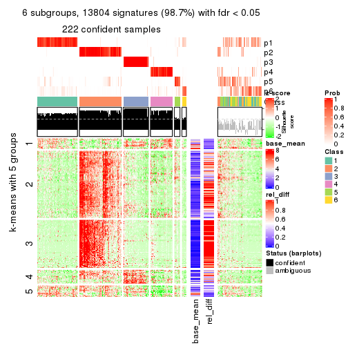
Signature heatmaps where rows are not scaled:
get_signatures(res, k = 2, scale_rows = FALSE)
get_signatures(res, k = 3, scale_rows = FALSE)
get_signatures(res, k = 4, scale_rows = FALSE)
get_signatures(res, k = 5, scale_rows = FALSE)
get_signatures(res, k = 6, scale_rows = FALSE)
Compare the overlap of signatures from different k:
compare_signatures(res)
get_signature() returns a data frame invisibly. TO get the list of signatures, the function
call should be assigned to a variable explicitly. In following code, if plot argument is set
to FALSE, no heatmap is plotted while only the differential analysis is performed.
# code only for demonstration
tb = get_signature(res, k = ..., plot = FALSE)
An example of the output of tb is:
#> which_row fdr mean_1 mean_2 scaled_mean_1 scaled_mean_2 km
#> 1 38 0.042760348 8.373488 9.131774 -0.5533452 0.5164555 1
#> 2 40 0.018707592 7.106213 8.469186 -0.6173731 0.5762149 1
#> 3 55 0.019134737 10.221463 11.207825 -0.6159697 0.5749050 1
#> 4 59 0.006059896 5.921854 7.869574 -0.6899429 0.6439467 1
#> 5 60 0.018055526 8.928898 10.211722 -0.6204761 0.5791110 1
#> 6 98 0.009384629 15.714769 14.887706 0.6635654 -0.6193277 2
...
The columns in tb are:
which_row: row indices corresponding to the input matrix.fdr: FDR for the differential test. mean_x: The mean value in group x.scaled_mean_x: The mean value in group x after rows are scaled.km: Row groups if k-means clustering is applied to rows.UMAP plot which shows how samples are separated.
dimension_reduction(res, k = 2, method = "UMAP")
dimension_reduction(res, k = 3, method = "UMAP")
dimension_reduction(res, k = 4, method = "UMAP")
dimension_reduction(res, k = 5, method = "UMAP")
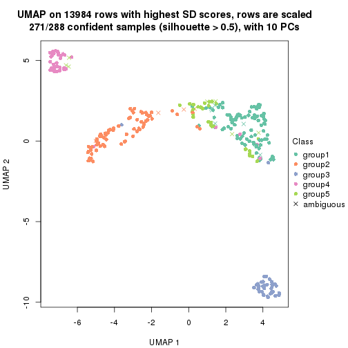
dimension_reduction(res, k = 6, method = "UMAP")
Following heatmap shows how subgroups are split when increasing k:
collect_classes(res)
If matrix rows can be associated to genes, consider to use functional_enrichment(res,
...) to perform function enrichment for the signature genes. See this vignette for more detailed explanations.
The object with results only for a single top-value method and a single partition method can be extracted as:
res = res_list["CV", "hclust"]
# you can also extract it by
# res = res_list["CV:hclust"]
A summary of res and all the functions that can be applied to it:
res
#> A 'ConsensusPartition' object with k = 2, 3, 4, 5, 6.
#> On a matrix with 13984 rows and 288 columns.
#> Top rows (1000, 2000, 3000, 4000, 5000) are extracted by 'CV' method.
#> Subgroups are detected by 'hclust' method.
#> Performed in total 1250 partitions by row resampling.
#> Best k for subgroups seems to be 3.
#>
#> Following methods can be applied to this 'ConsensusPartition' object:
#> [1] "cola_report" "collect_classes" "collect_plots"
#> [4] "collect_stats" "colnames" "compare_signatures"
#> [7] "consensus_heatmap" "dimension_reduction" "functional_enrichment"
#> [10] "get_anno_col" "get_anno" "get_classes"
#> [13] "get_consensus" "get_matrix" "get_membership"
#> [16] "get_param" "get_signatures" "get_stats"
#> [19] "is_best_k" "is_stable_k" "membership_heatmap"
#> [22] "ncol" "nrow" "plot_ecdf"
#> [25] "rownames" "select_partition_number" "show"
#> [28] "suggest_best_k" "test_to_known_factors"
collect_plots() function collects all the plots made from res for all k (number of partitions)
into one single page to provide an easy and fast comparison between different k.
collect_plots(res)
The plots are:
k and the heatmap of
predicted classes for each k.k.k.k.All the plots in panels can be made by individual functions and they are plotted later in this section.
select_partition_number() produces several plots showing different
statistics for choosing “optimized” k. There are following statistics:
k;k, the area increased is defined as \(A_k - A_{k-1}\).The detailed explanations of these statistics can be found in the cola vignette.
Generally speaking, lower PAC score, higher mean silhouette score or higher
concordance corresponds to better partition. Rand index and Jaccard index
measure how similar the current partition is compared to partition with k-1.
If they are too similar, we won't accept k is better than k-1.
select_partition_number(res)
The numeric values for all these statistics can be obtained by get_stats().
get_stats(res)
#> k 1-PAC mean_silhouette concordance area_increased Rand Jaccard
#> 2 2 0.857 0.910 0.962 0.2829 0.755 0.755
#> 3 3 0.989 0.966 0.981 0.4083 0.841 0.789
#> 4 4 0.934 0.895 0.954 0.0422 0.988 0.980
#> 5 5 0.951 0.926 0.967 0.0181 0.992 0.986
#> 6 6 0.952 0.906 0.955 0.0113 0.990 0.983
suggest_best_k() suggests the best \(k\) based on these statistics. The rules are as follows:
suggest_best_k(res)
#> [1] 3
Following shows the table of the partitions (You need to click the show/hide
code output link to see it). The membership matrix (columns with name p*)
is inferred by
clue::cl_consensus()
function with the SE method. Basically the value in the membership matrix
represents the probability to belong to a certain group. The finall class
label for an item is determined with the group with highest probability it
belongs to.
In get_classes() function, the entropy is calculated from the membership
matrix and the silhouette score is calculated from the consensus matrix.
cbind(get_classes(res, k = 2), get_membership(res, k = 2))
#> class entropy silhouette p1 p2
#> SRR1982614 1 0.0000 0.95739 1.000 0.000
#> SRR1982613 1 0.0000 0.95739 1.000 0.000
#> SRR1982612 1 0.0000 0.95739 1.000 0.000
#> SRR1982611 1 0.0000 0.95739 1.000 0.000
#> SRR1982610 1 0.0000 0.95739 1.000 0.000
#> SRR1982609 1 0.0000 0.95739 1.000 0.000
#> SRR1982659 1 0.0000 0.95739 1.000 0.000
#> SRR1982692 1 0.7745 0.70629 0.772 0.228
#> SRR1982722 1 0.0000 0.95739 1.000 0.000
#> SRR1982750 2 0.0000 0.97143 0.000 1.000
#> SRR2095031 2 0.0000 0.97143 0.000 1.000
#> SRR1982780 1 0.0000 0.95739 1.000 0.000
#> SRR1982807 1 0.0000 0.95739 1.000 0.000
#> SRR1982830 1 0.0000 0.95739 1.000 0.000
#> SRR1982829 1 0.0000 0.95739 1.000 0.000
#> SRR1982828 1 0.0000 0.95739 1.000 0.000
#> SRR1982827 1 0.0000 0.95739 1.000 0.000
#> SRR1982826 1 0.0000 0.95739 1.000 0.000
#> SRR1982825 1 0.0000 0.95739 1.000 0.000
#> SRR1982824 1 0.0000 0.95739 1.000 0.000
#> SRR1982823 1 0.0000 0.95739 1.000 0.000
#> SRR1982822 1 0.0000 0.95739 1.000 0.000
#> SRR1982821 1 0.0000 0.95739 1.000 0.000
#> SRR1982820 1 0.0000 0.95739 1.000 0.000
#> SRR1982819 1 0.0000 0.95739 1.000 0.000
#> SRR1982818 1 0.0000 0.95739 1.000 0.000
#> SRR1982817 1 0.0000 0.95739 1.000 0.000
#> SRR1982816 1 0.0000 0.95739 1.000 0.000
#> SRR1982815 1 0.0000 0.95739 1.000 0.000
#> SRR1982814 1 0.0000 0.95739 1.000 0.000
#> SRR1982813 1 0.0000 0.95739 1.000 0.000
#> SRR1982812 2 0.7219 0.73560 0.200 0.800
#> SRR1982811 1 0.0000 0.95739 1.000 0.000
#> SRR1982810 1 0.0000 0.95739 1.000 0.000
#> SRR1982809 1 0.0000 0.95739 1.000 0.000
#> SRR1982808 1 0.0000 0.95739 1.000 0.000
#> SRR1982806 1 0.0000 0.95739 1.000 0.000
#> SRR1982805 1 0.0000 0.95739 1.000 0.000
#> SRR1982804 1 0.0000 0.95739 1.000 0.000
#> SRR1982803 1 0.0000 0.95739 1.000 0.000
#> SRR1982802 1 0.0000 0.95739 1.000 0.000
#> SRR1982801 1 0.0000 0.95739 1.000 0.000
#> SRR1982800 1 0.0000 0.95739 1.000 0.000
#> SRR1982799 1 0.0000 0.95739 1.000 0.000
#> SRR1982798 1 0.0000 0.95739 1.000 0.000
#> SRR1982797 1 0.0000 0.95739 1.000 0.000
#> SRR1982796 1 0.0000 0.95739 1.000 0.000
#> SRR1982795 1 0.0000 0.95739 1.000 0.000
#> SRR1982794 1 0.0000 0.95739 1.000 0.000
#> SRR1982793 1 0.0000 0.95739 1.000 0.000
#> SRR1982792 1 0.0000 0.95739 1.000 0.000
#> SRR1982791 1 0.0000 0.95739 1.000 0.000
#> SRR1982790 1 0.9129 0.54492 0.672 0.328
#> SRR1982789 1 0.0000 0.95739 1.000 0.000
#> SRR1982788 1 0.0000 0.95739 1.000 0.000
#> SRR1982787 1 0.0000 0.95739 1.000 0.000
#> SRR1982786 1 0.0000 0.95739 1.000 0.000
#> SRR1982785 1 0.0000 0.95739 1.000 0.000
#> SRR1982784 1 0.0000 0.95739 1.000 0.000
#> SRR1982783 1 0.0000 0.95739 1.000 0.000
#> SRR1982782 1 0.0000 0.95739 1.000 0.000
#> SRR1982781 1 0.0000 0.95739 1.000 0.000
#> SRR1982779 1 0.0000 0.95739 1.000 0.000
#> SRR1982778 1 0.0000 0.95739 1.000 0.000
#> SRR1982776 2 0.0000 0.97143 0.000 1.000
#> SRR1982777 1 0.0000 0.95739 1.000 0.000
#> SRR1982775 1 0.0000 0.95739 1.000 0.000
#> SRR1982774 1 0.0000 0.95739 1.000 0.000
#> SRR1982772 1 0.0000 0.95739 1.000 0.000
#> SRR1982773 1 0.0000 0.95739 1.000 0.000
#> SRR1982770 1 0.0000 0.95739 1.000 0.000
#> SRR1982771 1 0.0000 0.95739 1.000 0.000
#> SRR1982769 1 0.0000 0.95739 1.000 0.000
#> SRR1982768 1 0.0000 0.95739 1.000 0.000
#> SRR1982767 1 0.0000 0.95739 1.000 0.000
#> SRR1982766 1 0.0000 0.95739 1.000 0.000
#> SRR1982765 1 0.0000 0.95739 1.000 0.000
#> SRR1982764 1 0.0000 0.95739 1.000 0.000
#> SRR1982762 1 0.0000 0.95739 1.000 0.000
#> SRR1982760 1 0.0000 0.95739 1.000 0.000
#> SRR1982761 1 0.0000 0.95739 1.000 0.000
#> SRR1982763 2 0.5178 0.85788 0.116 0.884
#> SRR1982759 1 0.0000 0.95739 1.000 0.000
#> SRR1982758 1 0.0000 0.95739 1.000 0.000
#> SRR1982757 1 0.0000 0.95739 1.000 0.000
#> SRR1982755 1 0.0000 0.95739 1.000 0.000
#> SRR1982754 1 0.0000 0.95739 1.000 0.000
#> SRR1982756 1 0.0000 0.95739 1.000 0.000
#> SRR1982753 1 0.0000 0.95739 1.000 0.000
#> SRR1982751 2 0.0000 0.97143 0.000 1.000
#> SRR1982752 2 0.0000 0.97143 0.000 1.000
#> SRR1982749 2 0.0000 0.97143 0.000 1.000
#> SRR1982748 2 0.0000 0.97143 0.000 1.000
#> SRR1982747 2 0.0000 0.97143 0.000 1.000
#> SRR1982746 2 0.0000 0.97143 0.000 1.000
#> SRR1982745 2 0.0000 0.97143 0.000 1.000
#> SRR1982743 2 0.0000 0.97143 0.000 1.000
#> SRR1982744 2 0.0000 0.97143 0.000 1.000
#> SRR1982741 2 0.3431 0.91603 0.064 0.936
#> SRR1982742 2 0.0000 0.97143 0.000 1.000
#> SRR2095014 2 0.0000 0.97143 0.000 1.000
#> SRR1982740 2 0.0000 0.97143 0.000 1.000
#> SRR1982739 2 0.0000 0.97143 0.000 1.000
#> SRR1982737 2 0.0000 0.97143 0.000 1.000
#> SRR1982738 1 0.8955 0.57505 0.688 0.312
#> SRR1982736 2 0.1184 0.95890 0.016 0.984
#> SRR1982735 2 0.0000 0.97143 0.000 1.000
#> SRR1982733 2 0.0000 0.97143 0.000 1.000
#> SRR1982732 2 0.0000 0.97143 0.000 1.000
#> SRR2095004 2 0.0000 0.97143 0.000 1.000
#> SRR1982734 2 0.0000 0.97143 0.000 1.000
#> SRR1982731 2 0.0000 0.97143 0.000 1.000
#> SRR1982729 2 0.3431 0.91603 0.064 0.936
#> SRR1982730 2 0.0000 0.97143 0.000 1.000
#> SRR1982728 2 0.0000 0.97143 0.000 1.000
#> SRR1982727 1 0.0000 0.95739 1.000 0.000
#> SRR1982726 1 0.0000 0.95739 1.000 0.000
#> SRR1982723 1 0.0000 0.95739 1.000 0.000
#> SRR1982725 1 0.0000 0.95739 1.000 0.000
#> SRR1982724 1 0.0000 0.95739 1.000 0.000
#> SRR1982721 1 0.0000 0.95739 1.000 0.000
#> SRR1982720 1 0.0000 0.95739 1.000 0.000
#> SRR1982719 1 0.0000 0.95739 1.000 0.000
#> SRR1982718 1 0.9129 0.54492 0.672 0.328
#> SRR1982717 1 0.9850 0.30598 0.572 0.428
#> SRR1982715 1 0.8909 0.58216 0.692 0.308
#> SRR1982714 2 0.5178 0.85788 0.116 0.884
#> SRR1982716 1 0.8909 0.58216 0.692 0.308
#> SRR1982713 2 0.0000 0.97143 0.000 1.000
#> SRR1982711 2 0.0000 0.97143 0.000 1.000
#> SRR1982712 2 0.0000 0.97143 0.000 1.000
#> SRR1982710 1 0.9129 0.54492 0.672 0.328
#> SRR1982708 1 0.9129 0.54492 0.672 0.328
#> SRR1982707 1 0.0000 0.95739 1.000 0.000
#> SRR1982709 1 0.0000 0.95739 1.000 0.000
#> SRR1982705 1 0.9044 0.56010 0.680 0.320
#> SRR1982706 1 0.0000 0.95739 1.000 0.000
#> SRR1982704 1 0.0000 0.95739 1.000 0.000
#> SRR1982702 1 0.8955 0.57505 0.688 0.312
#> SRR1982703 1 0.8955 0.57505 0.688 0.312
#> SRR1982701 1 0.8955 0.57505 0.688 0.312
#> SRR1982700 2 0.9983 0.00878 0.476 0.524
#> SRR1982697 2 0.0000 0.97143 0.000 1.000
#> SRR1982698 2 0.0000 0.97143 0.000 1.000
#> SRR1982699 2 0.0000 0.97143 0.000 1.000
#> SRR1982696 1 0.9977 0.16712 0.528 0.472
#> SRR1982695 1 0.0000 0.95739 1.000 0.000
#> SRR1982694 1 0.0000 0.95739 1.000 0.000
#> SRR1982693 1 0.9977 0.16712 0.528 0.472
#> SRR1982690 1 0.8861 0.58896 0.696 0.304
#> SRR1982691 1 0.8955 0.57505 0.688 0.312
#> SRR1982689 1 0.7745 0.70629 0.772 0.228
#> SRR1982688 1 0.0000 0.95739 1.000 0.000
#> SRR1982687 1 0.7674 0.71185 0.776 0.224
#> SRR1982686 1 0.8955 0.57505 0.688 0.312
#> SRR1982685 1 0.8861 0.58896 0.696 0.304
#> SRR1982684 1 0.8861 0.58896 0.696 0.304
#> SRR1982683 1 0.0000 0.95739 1.000 0.000
#> SRR1982681 1 0.9881 0.28258 0.564 0.436
#> SRR1982682 1 0.8861 0.58896 0.696 0.304
#> SRR1982680 1 0.9795 0.33924 0.584 0.416
#> SRR1982679 1 0.0000 0.95739 1.000 0.000
#> SRR1982678 2 0.0000 0.97143 0.000 1.000
#> SRR1982677 1 0.8861 0.58896 0.696 0.304
#> SRR1982676 1 0.0000 0.95739 1.000 0.000
#> SRR1982675 1 0.0000 0.95739 1.000 0.000
#> SRR1982674 1 0.0000 0.95739 1.000 0.000
#> SRR1982671 1 0.0000 0.95739 1.000 0.000
#> SRR1982673 1 0.0000 0.95739 1.000 0.000
#> SRR1982672 1 0.0000 0.95739 1.000 0.000
#> SRR1982670 1 0.0000 0.95739 1.000 0.000
#> SRR1982669 1 0.0000 0.95739 1.000 0.000
#> SRR1982667 1 0.0000 0.95739 1.000 0.000
#> SRR1982668 1 0.0000 0.95739 1.000 0.000
#> SRR1982666 1 0.0000 0.95739 1.000 0.000
#> SRR1982665 2 0.0000 0.97143 0.000 1.000
#> SRR1982664 1 0.0000 0.95739 1.000 0.000
#> SRR1982663 1 0.0000 0.95739 1.000 0.000
#> SRR1982662 1 0.0000 0.95739 1.000 0.000
#> SRR1982661 1 0.0000 0.95739 1.000 0.000
#> SRR1982660 1 0.0000 0.95739 1.000 0.000
#> SRR1982658 1 0.0000 0.95739 1.000 0.000
#> SRR1982657 1 0.0000 0.95739 1.000 0.000
#> SRR1982656 1 0.0000 0.95739 1.000 0.000
#> SRR1982654 1 0.0000 0.95739 1.000 0.000
#> SRR1982655 1 0.0000 0.95739 1.000 0.000
#> SRR1982653 1 0.0000 0.95739 1.000 0.000
#> SRR1982652 1 0.0000 0.95739 1.000 0.000
#> SRR1982651 1 0.0000 0.95739 1.000 0.000
#> SRR1982649 1 0.0000 0.95739 1.000 0.000
#> SRR1982650 1 0.0000 0.95739 1.000 0.000
#> SRR1982648 1 0.0000 0.95739 1.000 0.000
#> SRR1982647 1 0.0000 0.95739 1.000 0.000
#> SRR1982646 1 0.0000 0.95739 1.000 0.000
#> SRR1982645 1 0.0000 0.95739 1.000 0.000
#> SRR1982644 1 0.0000 0.95739 1.000 0.000
#> SRR1982642 1 0.0000 0.95739 1.000 0.000
#> SRR1982643 1 0.0000 0.95739 1.000 0.000
#> SRR1982641 1 0.0000 0.95739 1.000 0.000
#> SRR1982640 1 0.0000 0.95739 1.000 0.000
#> SRR1982638 1 0.0000 0.95739 1.000 0.000
#> SRR1982639 1 0.0000 0.95739 1.000 0.000
#> SRR1982637 1 0.0000 0.95739 1.000 0.000
#> SRR1982635 1 0.0000 0.95739 1.000 0.000
#> SRR1982636 1 0.0000 0.95739 1.000 0.000
#> SRR1982633 1 0.0000 0.95739 1.000 0.000
#> SRR1982632 1 0.0000 0.95739 1.000 0.000
#> SRR1982631 1 0.0000 0.95739 1.000 0.000
#> SRR1982634 1 0.0000 0.95739 1.000 0.000
#> SRR1982628 1 0.0000 0.95739 1.000 0.000
#> SRR1982629 1 0.0000 0.95739 1.000 0.000
#> SRR1982627 1 0.0000 0.95739 1.000 0.000
#> SRR1982625 1 0.0000 0.95739 1.000 0.000
#> SRR1982626 1 0.0000 0.95739 1.000 0.000
#> SRR1982624 1 0.0000 0.95739 1.000 0.000
#> SRR1982623 1 0.0000 0.95739 1.000 0.000
#> SRR1982622 1 0.0000 0.95739 1.000 0.000
#> SRR1982621 1 0.0000 0.95739 1.000 0.000
#> SRR1982620 1 0.0000 0.95739 1.000 0.000
#> SRR1982619 2 0.0000 0.97143 0.000 1.000
#> SRR1982618 1 0.0000 0.95739 1.000 0.000
#> SRR1982617 1 0.8955 0.57505 0.688 0.312
#> SRR1982616 1 0.0000 0.95739 1.000 0.000
#> SRR1982615 1 0.0000 0.95739 1.000 0.000
#> SRR1982608 1 0.0000 0.95739 1.000 0.000
#> SRR1982607 1 0.0000 0.95739 1.000 0.000
#> SRR1982606 1 0.0000 0.95739 1.000 0.000
#> SRR1982605 1 0.0000 0.95739 1.000 0.000
#> SRR1982604 1 0.0000 0.95739 1.000 0.000
#> SRR1982603 1 0.0000 0.95739 1.000 0.000
#> SRR1982602 1 0.0000 0.95739 1.000 0.000
#> SRR1982601 1 0.0000 0.95739 1.000 0.000
#> SRR1982599 1 0.0000 0.95739 1.000 0.000
#> SRR1982600 1 0.0000 0.95739 1.000 0.000
#> SRR1982598 1 0.0000 0.95739 1.000 0.000
#> SRR1982597 1 0.0000 0.95739 1.000 0.000
#> SRR1982595 1 0.0000 0.95739 1.000 0.000
#> SRR1982596 1 0.0000 0.95739 1.000 0.000
#> SRR1982594 1 0.0000 0.95739 1.000 0.000
#> SRR1982593 1 0.0000 0.95739 1.000 0.000
#> SRR1982592 1 0.0000 0.95739 1.000 0.000
#> SRR1982591 1 0.0000 0.95739 1.000 0.000
#> SRR1982590 1 0.0000 0.95739 1.000 0.000
#> SRR1982589 1 0.0000 0.95739 1.000 0.000
#> SRR1982588 1 0.0000 0.95739 1.000 0.000
#> SRR1982587 1 0.0000 0.95739 1.000 0.000
#> SRR1982586 1 0.0000 0.95739 1.000 0.000
#> SRR1982584 1 0.0000 0.95739 1.000 0.000
#> SRR2096514 1 0.0000 0.95739 1.000 0.000
#> SRR2096513 1 0.0000 0.95739 1.000 0.000
#> SRR2096511 1 0.0000 0.95739 1.000 0.000
#> SRR2096512 1 0.9000 0.56767 0.684 0.316
#> SRR2096509 1 0.0000 0.95739 1.000 0.000
#> SRR2096510 1 0.0000 0.95739 1.000 0.000
#> SRR2096508 1 0.9248 0.52105 0.660 0.340
#> SRR2096507 1 0.0000 0.95739 1.000 0.000
#> SRR2096504 1 0.0000 0.95739 1.000 0.000
#> SRR2096506 1 0.0000 0.95739 1.000 0.000
#> SRR2096505 1 0.0000 0.95739 1.000 0.000
#> SRR2096503 1 0.8909 0.58216 0.692 0.308
#> SRR2096500 1 0.0000 0.95739 1.000 0.000
#> SRR2096501 1 0.0000 0.95739 1.000 0.000
#> SRR2096502 1 0.0000 0.95739 1.000 0.000
#> SRR2096499 1 0.0000 0.95739 1.000 0.000
#> SRR2096498 1 0.0000 0.95739 1.000 0.000
#> SRR2096496 1 0.0000 0.95739 1.000 0.000
#> SRR2096497 1 0.0000 0.95739 1.000 0.000
#> SRR2096495 1 0.0000 0.95739 1.000 0.000
#> SRR2096494 1 0.0000 0.95739 1.000 0.000
#> SRR2096492 1 0.0000 0.95739 1.000 0.000
#> SRR2096491 1 0.0376 0.95395 0.996 0.004
#> SRR2096493 1 0.0000 0.95739 1.000 0.000
#> SRR2096490 1 0.0000 0.95739 1.000 0.000
#> SRR2096488 1 0.0000 0.95739 1.000 0.000
#> SRR2096489 1 0.0000 0.95739 1.000 0.000
#> SRR2096487 1 0.0000 0.95739 1.000 0.000
#> SRR2096484 1 0.0000 0.95739 1.000 0.000
#> SRR2096486 1 0.0000 0.95739 1.000 0.000
#> SRR2096485 1 0.0000 0.95739 1.000 0.000
#> SRR2096483 1 0.0000 0.95739 1.000 0.000
#> SRR2096482 1 0.0000 0.95739 1.000 0.000
#> SRR2096481 1 0.0000 0.95739 1.000 0.000
#> SRR2096520 1 0.0000 0.95739 1.000 0.000
#> SRR2096519 1 0.0000 0.95739 1.000 0.000
#> SRR2096518 1 0.0000 0.95739 1.000 0.000
#> SRR2096516 1 0.0000 0.95739 1.000 0.000
#> SRR2096517 1 0.0000 0.95739 1.000 0.000
#> SRR2096515 1 0.0000 0.95739 1.000 0.000
cbind(get_classes(res, k = 3), get_membership(res, k = 3))
#> class entropy silhouette p1 p2 p3
#> SRR1982614 1 0.2878 0.885 0.904 0.000 0.096
#> SRR1982613 1 0.2878 0.885 0.904 0.000 0.096
#> SRR1982612 1 0.0000 0.992 1.000 0.000 0.000
#> SRR1982611 1 0.0000 0.992 1.000 0.000 0.000
#> SRR1982610 1 0.0000 0.992 1.000 0.000 0.000
#> SRR1982609 1 0.0000 0.992 1.000 0.000 0.000
#> SRR1982659 1 0.0000 0.992 1.000 0.000 0.000
#> SRR1982692 3 0.4452 0.763 0.192 0.000 0.808
#> SRR1982722 1 0.0000 0.992 1.000 0.000 0.000
#> SRR1982750 2 0.0000 0.980 0.000 1.000 0.000
#> SRR2095031 2 0.0000 0.980 0.000 1.000 0.000
#> SRR1982780 1 0.0000 0.992 1.000 0.000 0.000
#> SRR1982807 1 0.0000 0.992 1.000 0.000 0.000
#> SRR1982830 1 0.0000 0.992 1.000 0.000 0.000
#> SRR1982829 1 0.2878 0.885 0.904 0.000 0.096
#> SRR1982828 1 0.0000 0.992 1.000 0.000 0.000
#> SRR1982827 1 0.0000 0.992 1.000 0.000 0.000
#> SRR1982826 1 0.0000 0.992 1.000 0.000 0.000
#> SRR1982825 1 0.0000 0.992 1.000 0.000 0.000
#> SRR1982824 1 0.0000 0.992 1.000 0.000 0.000
#> SRR1982823 1 0.0000 0.992 1.000 0.000 0.000
#> SRR1982822 1 0.0000 0.992 1.000 0.000 0.000
#> SRR1982821 1 0.0000 0.992 1.000 0.000 0.000
#> SRR1982820 1 0.0000 0.992 1.000 0.000 0.000
#> SRR1982819 1 0.0000 0.992 1.000 0.000 0.000
#> SRR1982818 1 0.0000 0.992 1.000 0.000 0.000
#> SRR1982817 1 0.0000 0.992 1.000 0.000 0.000
#> SRR1982816 1 0.0000 0.992 1.000 0.000 0.000
#> SRR1982815 1 0.0000 0.992 1.000 0.000 0.000
#> SRR1982814 1 0.0000 0.992 1.000 0.000 0.000
#> SRR1982813 1 0.0000 0.992 1.000 0.000 0.000
#> SRR1982812 2 0.5327 0.672 0.000 0.728 0.272
#> SRR1982811 1 0.0000 0.992 1.000 0.000 0.000
#> SRR1982810 1 0.0424 0.985 0.992 0.000 0.008
#> SRR1982809 1 0.3752 0.821 0.856 0.000 0.144
#> SRR1982808 1 0.0000 0.992 1.000 0.000 0.000
#> SRR1982806 1 0.0000 0.992 1.000 0.000 0.000
#> SRR1982805 1 0.0000 0.992 1.000 0.000 0.000
#> SRR1982804 1 0.0000 0.992 1.000 0.000 0.000
#> SRR1982803 1 0.0000 0.992 1.000 0.000 0.000
#> SRR1982802 1 0.0000 0.992 1.000 0.000 0.000
#> SRR1982801 1 0.0000 0.992 1.000 0.000 0.000
#> SRR1982800 1 0.0000 0.992 1.000 0.000 0.000
#> SRR1982799 1 0.0000 0.992 1.000 0.000 0.000
#> SRR1982798 1 0.0000 0.992 1.000 0.000 0.000
#> SRR1982797 1 0.0000 0.992 1.000 0.000 0.000
#> SRR1982796 1 0.0000 0.992 1.000 0.000 0.000
#> SRR1982795 1 0.0000 0.992 1.000 0.000 0.000
#> SRR1982794 1 0.0000 0.992 1.000 0.000 0.000
#> SRR1982793 1 0.0000 0.992 1.000 0.000 0.000
#> SRR1982792 1 0.0000 0.992 1.000 0.000 0.000
#> SRR1982791 1 0.0000 0.992 1.000 0.000 0.000
#> SRR1982790 3 0.1753 0.891 0.048 0.000 0.952
#> SRR1982789 1 0.0000 0.992 1.000 0.000 0.000
#> SRR1982788 1 0.0000 0.992 1.000 0.000 0.000
#> SRR1982787 1 0.0000 0.992 1.000 0.000 0.000
#> SRR1982786 1 0.0747 0.977 0.984 0.000 0.016
#> SRR1982785 1 0.0000 0.992 1.000 0.000 0.000
#> SRR1982784 1 0.0000 0.992 1.000 0.000 0.000
#> SRR1982783 1 0.0000 0.992 1.000 0.000 0.000
#> SRR1982782 1 0.0000 0.992 1.000 0.000 0.000
#> SRR1982781 1 0.0000 0.992 1.000 0.000 0.000
#> SRR1982779 1 0.0000 0.992 1.000 0.000 0.000
#> SRR1982778 1 0.0000 0.992 1.000 0.000 0.000
#> SRR1982776 2 0.0000 0.980 0.000 1.000 0.000
#> SRR1982777 1 0.1031 0.969 0.976 0.000 0.024
#> SRR1982775 1 0.0000 0.992 1.000 0.000 0.000
#> SRR1982774 1 0.0000 0.992 1.000 0.000 0.000
#> SRR1982772 1 0.0000 0.992 1.000 0.000 0.000
#> SRR1982773 1 0.0000 0.992 1.000 0.000 0.000
#> SRR1982770 1 0.0000 0.992 1.000 0.000 0.000
#> SRR1982771 1 0.0000 0.992 1.000 0.000 0.000
#> SRR1982769 1 0.1289 0.961 0.968 0.000 0.032
#> SRR1982768 1 0.0592 0.981 0.988 0.000 0.012
#> SRR1982767 1 0.0000 0.992 1.000 0.000 0.000
#> SRR1982766 1 0.0237 0.988 0.996 0.000 0.004
#> SRR1982765 1 0.0000 0.992 1.000 0.000 0.000
#> SRR1982764 1 0.1031 0.969 0.976 0.000 0.024
#> SRR1982762 1 0.0000 0.992 1.000 0.000 0.000
#> SRR1982760 1 0.0000 0.992 1.000 0.000 0.000
#> SRR1982761 1 0.0000 0.992 1.000 0.000 0.000
#> SRR1982763 2 0.3752 0.855 0.000 0.856 0.144
#> SRR1982759 1 0.0000 0.992 1.000 0.000 0.000
#> SRR1982758 1 0.1031 0.969 0.976 0.000 0.024
#> SRR1982757 1 0.0000 0.992 1.000 0.000 0.000
#> SRR1982755 1 0.0000 0.992 1.000 0.000 0.000
#> SRR1982754 1 0.0000 0.992 1.000 0.000 0.000
#> SRR1982756 1 0.0000 0.992 1.000 0.000 0.000
#> SRR1982753 1 0.0000 0.992 1.000 0.000 0.000
#> SRR1982751 2 0.0000 0.980 0.000 1.000 0.000
#> SRR1982752 2 0.0000 0.980 0.000 1.000 0.000
#> SRR1982749 2 0.0000 0.980 0.000 1.000 0.000
#> SRR1982748 2 0.0000 0.980 0.000 1.000 0.000
#> SRR1982747 2 0.0000 0.980 0.000 1.000 0.000
#> SRR1982746 2 0.0000 0.980 0.000 1.000 0.000
#> SRR1982745 2 0.0000 0.980 0.000 1.000 0.000
#> SRR1982743 2 0.0000 0.980 0.000 1.000 0.000
#> SRR1982744 2 0.0237 0.978 0.000 0.996 0.004
#> SRR1982741 2 0.2625 0.918 0.000 0.916 0.084
#> SRR1982742 2 0.0892 0.970 0.000 0.980 0.020
#> SRR2095014 2 0.0892 0.970 0.000 0.980 0.020
#> SRR1982740 2 0.0237 0.978 0.000 0.996 0.004
#> SRR1982739 2 0.0000 0.980 0.000 1.000 0.000
#> SRR1982737 2 0.0000 0.980 0.000 1.000 0.000
#> SRR1982738 3 0.2711 0.914 0.088 0.000 0.912
#> SRR1982736 2 0.1411 0.959 0.000 0.964 0.036
#> SRR1982735 2 0.0000 0.980 0.000 1.000 0.000
#> SRR1982733 2 0.0000 0.980 0.000 1.000 0.000
#> SRR1982732 2 0.0000 0.980 0.000 1.000 0.000
#> SRR2095004 2 0.0000 0.980 0.000 1.000 0.000
#> SRR1982734 2 0.0000 0.980 0.000 1.000 0.000
#> SRR1982731 2 0.0000 0.980 0.000 1.000 0.000
#> SRR1982729 2 0.2625 0.918 0.000 0.916 0.084
#> SRR1982730 2 0.0000 0.980 0.000 1.000 0.000
#> SRR1982728 2 0.0000 0.980 0.000 1.000 0.000
#> SRR1982727 1 0.0747 0.977 0.984 0.000 0.016
#> SRR1982726 1 0.0000 0.992 1.000 0.000 0.000
#> SRR1982723 1 0.0000 0.992 1.000 0.000 0.000
#> SRR1982725 1 0.0000 0.992 1.000 0.000 0.000
#> SRR1982724 1 0.0000 0.992 1.000 0.000 0.000
#> SRR1982721 1 0.0000 0.992 1.000 0.000 0.000
#> SRR1982720 1 0.0000 0.992 1.000 0.000 0.000
#> SRR1982719 1 0.0000 0.992 1.000 0.000 0.000
#> SRR1982718 3 0.1753 0.891 0.048 0.000 0.952
#> SRR1982717 3 0.1860 0.805 0.000 0.052 0.948
#> SRR1982715 3 0.2625 0.914 0.084 0.000 0.916
#> SRR1982714 2 0.3752 0.855 0.000 0.856 0.144
#> SRR1982716 3 0.2625 0.914 0.084 0.000 0.916
#> SRR1982713 2 0.0424 0.976 0.000 0.992 0.008
#> SRR1982711 2 0.0000 0.980 0.000 1.000 0.000
#> SRR1982712 2 0.0000 0.980 0.000 1.000 0.000
#> SRR1982710 3 0.1753 0.891 0.048 0.000 0.952
#> SRR1982708 3 0.1753 0.891 0.048 0.000 0.952
#> SRR1982707 1 0.0592 0.981 0.988 0.000 0.012
#> SRR1982709 1 0.0000 0.992 1.000 0.000 0.000
#> SRR1982705 3 0.2261 0.906 0.068 0.000 0.932
#> SRR1982706 1 0.0000 0.992 1.000 0.000 0.000
#> SRR1982704 1 0.0000 0.992 1.000 0.000 0.000
#> SRR1982702 3 0.2711 0.914 0.088 0.000 0.912
#> SRR1982703 3 0.2711 0.914 0.088 0.000 0.912
#> SRR1982701 3 0.2711 0.914 0.088 0.000 0.912
#> SRR1982700 3 0.4915 0.698 0.012 0.184 0.804
#> SRR1982697 2 0.0000 0.980 0.000 1.000 0.000
#> SRR1982698 2 0.0000 0.980 0.000 1.000 0.000
#> SRR1982699 2 0.0000 0.980 0.000 1.000 0.000
#> SRR1982696 3 0.3038 0.771 0.000 0.104 0.896
#> SRR1982695 1 0.0000 0.992 1.000 0.000 0.000
#> SRR1982694 1 0.0000 0.992 1.000 0.000 0.000
#> SRR1982693 3 0.3038 0.771 0.000 0.104 0.896
#> SRR1982690 3 0.2878 0.907 0.096 0.000 0.904
#> SRR1982691 3 0.2711 0.914 0.088 0.000 0.912
#> SRR1982689 3 0.4452 0.763 0.192 0.000 0.808
#> SRR1982688 1 0.0000 0.992 1.000 0.000 0.000
#> SRR1982687 3 0.5431 0.615 0.284 0.000 0.716
#> SRR1982686 3 0.2711 0.914 0.088 0.000 0.912
#> SRR1982685 3 0.2796 0.911 0.092 0.000 0.908
#> SRR1982684 3 0.2878 0.907 0.096 0.000 0.904
#> SRR1982683 1 0.0000 0.992 1.000 0.000 0.000
#> SRR1982681 3 0.2066 0.802 0.000 0.060 0.940
#> SRR1982682 3 0.2878 0.907 0.096 0.000 0.904
#> SRR1982680 3 0.1529 0.811 0.000 0.040 0.960
#> SRR1982679 1 0.3879 0.809 0.848 0.000 0.152
#> SRR1982678 2 0.0747 0.972 0.000 0.984 0.016
#> SRR1982677 3 0.2796 0.911 0.092 0.000 0.908
#> SRR1982676 1 0.0000 0.992 1.000 0.000 0.000
#> SRR1982675 1 0.0000 0.992 1.000 0.000 0.000
#> SRR1982674 1 0.0237 0.988 0.996 0.000 0.004
#> SRR1982671 1 0.1031 0.969 0.976 0.000 0.024
#> SRR1982673 1 0.0000 0.992 1.000 0.000 0.000
#> SRR1982672 1 0.0000 0.992 1.000 0.000 0.000
#> SRR1982670 1 0.0000 0.992 1.000 0.000 0.000
#> SRR1982669 1 0.0000 0.992 1.000 0.000 0.000
#> SRR1982667 1 0.0000 0.992 1.000 0.000 0.000
#> SRR1982668 1 0.0592 0.981 0.988 0.000 0.012
#> SRR1982666 1 0.0000 0.992 1.000 0.000 0.000
#> SRR1982665 2 0.0000 0.980 0.000 1.000 0.000
#> SRR1982664 1 0.0000 0.992 1.000 0.000 0.000
#> SRR1982663 1 0.0000 0.992 1.000 0.000 0.000
#> SRR1982662 1 0.0000 0.992 1.000 0.000 0.000
#> SRR1982661 1 0.0000 0.992 1.000 0.000 0.000
#> SRR1982660 1 0.0000 0.992 1.000 0.000 0.000
#> SRR1982658 1 0.0000 0.992 1.000 0.000 0.000
#> SRR1982657 1 0.0000 0.992 1.000 0.000 0.000
#> SRR1982656 1 0.6244 0.100 0.560 0.000 0.440
#> SRR1982654 1 0.0000 0.992 1.000 0.000 0.000
#> SRR1982655 1 0.0000 0.992 1.000 0.000 0.000
#> SRR1982653 1 0.0000 0.992 1.000 0.000 0.000
#> SRR1982652 1 0.0000 0.992 1.000 0.000 0.000
#> SRR1982651 1 0.0000 0.992 1.000 0.000 0.000
#> SRR1982649 1 0.0000 0.992 1.000 0.000 0.000
#> SRR1982650 1 0.0000 0.992 1.000 0.000 0.000
#> SRR1982648 1 0.0000 0.992 1.000 0.000 0.000
#> SRR1982647 1 0.0000 0.992 1.000 0.000 0.000
#> SRR1982646 1 0.0000 0.992 1.000 0.000 0.000
#> SRR1982645 1 0.0000 0.992 1.000 0.000 0.000
#> SRR1982644 1 0.0000 0.992 1.000 0.000 0.000
#> SRR1982642 1 0.0000 0.992 1.000 0.000 0.000
#> SRR1982643 1 0.0000 0.992 1.000 0.000 0.000
#> SRR1982641 1 0.0000 0.992 1.000 0.000 0.000
#> SRR1982640 1 0.0000 0.992 1.000 0.000 0.000
#> SRR1982638 1 0.0000 0.992 1.000 0.000 0.000
#> SRR1982639 1 0.0000 0.992 1.000 0.000 0.000
#> SRR1982637 1 0.0000 0.992 1.000 0.000 0.000
#> SRR1982635 1 0.0000 0.992 1.000 0.000 0.000
#> SRR1982636 1 0.0000 0.992 1.000 0.000 0.000
#> SRR1982633 1 0.0000 0.992 1.000 0.000 0.000
#> SRR1982632 1 0.0000 0.992 1.000 0.000 0.000
#> SRR1982631 1 0.0000 0.992 1.000 0.000 0.000
#> SRR1982634 1 0.0000 0.992 1.000 0.000 0.000
#> SRR1982628 1 0.0000 0.992 1.000 0.000 0.000
#> SRR1982629 1 0.0000 0.992 1.000 0.000 0.000
#> SRR1982627 1 0.0000 0.992 1.000 0.000 0.000
#> SRR1982625 1 0.0000 0.992 1.000 0.000 0.000
#> SRR1982626 1 0.0000 0.992 1.000 0.000 0.000
#> SRR1982624 1 0.0000 0.992 1.000 0.000 0.000
#> SRR1982623 1 0.0000 0.992 1.000 0.000 0.000
#> SRR1982622 1 0.0000 0.992 1.000 0.000 0.000
#> SRR1982621 1 0.0000 0.992 1.000 0.000 0.000
#> SRR1982620 1 0.0000 0.992 1.000 0.000 0.000
#> SRR1982619 2 0.0000 0.980 0.000 1.000 0.000
#> SRR1982618 1 0.0000 0.992 1.000 0.000 0.000
#> SRR1982617 3 0.2711 0.914 0.088 0.000 0.912
#> SRR1982616 1 0.0000 0.992 1.000 0.000 0.000
#> SRR1982615 1 0.0000 0.992 1.000 0.000 0.000
#> SRR1982608 1 0.4002 0.793 0.840 0.000 0.160
#> SRR1982607 1 0.0000 0.992 1.000 0.000 0.000
#> SRR1982606 1 0.0000 0.992 1.000 0.000 0.000
#> SRR1982605 1 0.0000 0.992 1.000 0.000 0.000
#> SRR1982604 1 0.0000 0.992 1.000 0.000 0.000
#> SRR1982603 1 0.0000 0.992 1.000 0.000 0.000
#> SRR1982602 1 0.0000 0.992 1.000 0.000 0.000
#> SRR1982601 1 0.0000 0.992 1.000 0.000 0.000
#> SRR1982599 1 0.0000 0.992 1.000 0.000 0.000
#> SRR1982600 1 0.0000 0.992 1.000 0.000 0.000
#> SRR1982598 1 0.0000 0.992 1.000 0.000 0.000
#> SRR1982597 1 0.0000 0.992 1.000 0.000 0.000
#> SRR1982595 1 0.0000 0.992 1.000 0.000 0.000
#> SRR1982596 1 0.0000 0.992 1.000 0.000 0.000
#> SRR1982594 1 0.0000 0.992 1.000 0.000 0.000
#> SRR1982593 1 0.0000 0.992 1.000 0.000 0.000
#> SRR1982592 1 0.3752 0.821 0.856 0.000 0.144
#> SRR1982591 1 0.0000 0.992 1.000 0.000 0.000
#> SRR1982590 1 0.0000 0.992 1.000 0.000 0.000
#> SRR1982589 1 0.0000 0.992 1.000 0.000 0.000
#> SRR1982588 1 0.0000 0.992 1.000 0.000 0.000
#> SRR1982587 1 0.0000 0.992 1.000 0.000 0.000
#> SRR1982586 1 0.0000 0.992 1.000 0.000 0.000
#> SRR1982584 1 0.0000 0.992 1.000 0.000 0.000
#> SRR2096514 1 0.0000 0.992 1.000 0.000 0.000
#> SRR2096513 1 0.0000 0.992 1.000 0.000 0.000
#> SRR2096511 1 0.0000 0.992 1.000 0.000 0.000
#> SRR2096512 3 0.2537 0.913 0.080 0.000 0.920
#> SRR2096509 1 0.0000 0.992 1.000 0.000 0.000
#> SRR2096510 1 0.0000 0.992 1.000 0.000 0.000
#> SRR2096508 3 0.3530 0.899 0.068 0.032 0.900
#> SRR2096507 1 0.0000 0.992 1.000 0.000 0.000
#> SRR2096504 1 0.0000 0.992 1.000 0.000 0.000
#> SRR2096506 1 0.0000 0.992 1.000 0.000 0.000
#> SRR2096505 1 0.0000 0.992 1.000 0.000 0.000
#> SRR2096503 3 0.2625 0.914 0.084 0.000 0.916
#> SRR2096500 1 0.0000 0.992 1.000 0.000 0.000
#> SRR2096501 1 0.0000 0.992 1.000 0.000 0.000
#> SRR2096502 1 0.0000 0.992 1.000 0.000 0.000
#> SRR2096499 1 0.0000 0.992 1.000 0.000 0.000
#> SRR2096498 1 0.0000 0.992 1.000 0.000 0.000
#> SRR2096496 1 0.0000 0.992 1.000 0.000 0.000
#> SRR2096497 1 0.0000 0.992 1.000 0.000 0.000
#> SRR2096495 1 0.0000 0.992 1.000 0.000 0.000
#> SRR2096494 1 0.0000 0.992 1.000 0.000 0.000
#> SRR2096492 1 0.0000 0.992 1.000 0.000 0.000
#> SRR2096491 1 0.2066 0.929 0.940 0.000 0.060
#> SRR2096493 1 0.0000 0.992 1.000 0.000 0.000
#> SRR2096490 1 0.0000 0.992 1.000 0.000 0.000
#> SRR2096488 1 0.0000 0.992 1.000 0.000 0.000
#> SRR2096489 1 0.0000 0.992 1.000 0.000 0.000
#> SRR2096487 1 0.0000 0.992 1.000 0.000 0.000
#> SRR2096484 1 0.0000 0.992 1.000 0.000 0.000
#> SRR2096486 1 0.0000 0.992 1.000 0.000 0.000
#> SRR2096485 1 0.0000 0.992 1.000 0.000 0.000
#> SRR2096483 1 0.0000 0.992 1.000 0.000 0.000
#> SRR2096482 1 0.0000 0.992 1.000 0.000 0.000
#> SRR2096481 1 0.0000 0.992 1.000 0.000 0.000
#> SRR2096520 1 0.0000 0.992 1.000 0.000 0.000
#> SRR2096519 1 0.0000 0.992 1.000 0.000 0.000
#> SRR2096518 1 0.0000 0.992 1.000 0.000 0.000
#> SRR2096516 1 0.0000 0.992 1.000 0.000 0.000
#> SRR2096517 1 0.0000 0.992 1.000 0.000 0.000
#> SRR2096515 1 0.0000 0.992 1.000 0.000 0.000
cbind(get_classes(res, k = 4), get_membership(res, k = 4))
#> class entropy silhouette p1 p2 p3 p4
#> SRR1982614 1 0.2944 0.8440 0.868 0.000 0.004 0.128
#> SRR1982613 1 0.2944 0.8440 0.868 0.000 0.004 0.128
#> SRR1982612 1 0.0000 0.9921 1.000 0.000 0.000 0.000
#> SRR1982611 1 0.0000 0.9921 1.000 0.000 0.000 0.000
#> SRR1982610 1 0.0000 0.9921 1.000 0.000 0.000 0.000
#> SRR1982609 1 0.0000 0.9921 1.000 0.000 0.000 0.000
#> SRR1982659 1 0.0000 0.9921 1.000 0.000 0.000 0.000
#> SRR1982692 4 0.2704 0.5506 0.124 0.000 0.000 0.876
#> SRR1982722 1 0.0000 0.9921 1.000 0.000 0.000 0.000
#> SRR1982750 2 0.0000 0.8542 0.000 1.000 0.000 0.000
#> SRR2095031 2 0.0000 0.8542 0.000 1.000 0.000 0.000
#> SRR1982780 1 0.0000 0.9921 1.000 0.000 0.000 0.000
#> SRR1982807 1 0.0000 0.9921 1.000 0.000 0.000 0.000
#> SRR1982830 1 0.0000 0.9921 1.000 0.000 0.000 0.000
#> SRR1982829 1 0.2944 0.8440 0.868 0.000 0.004 0.128
#> SRR1982828 1 0.0000 0.9921 1.000 0.000 0.000 0.000
#> SRR1982827 1 0.0000 0.9921 1.000 0.000 0.000 0.000
#> SRR1982826 1 0.0000 0.9921 1.000 0.000 0.000 0.000
#> SRR1982825 1 0.0000 0.9921 1.000 0.000 0.000 0.000
#> SRR1982824 1 0.0000 0.9921 1.000 0.000 0.000 0.000
#> SRR1982823 1 0.0000 0.9921 1.000 0.000 0.000 0.000
#> SRR1982822 1 0.0000 0.9921 1.000 0.000 0.000 0.000
#> SRR1982821 1 0.0000 0.9921 1.000 0.000 0.000 0.000
#> SRR1982820 1 0.0000 0.9921 1.000 0.000 0.000 0.000
#> SRR1982819 1 0.0000 0.9921 1.000 0.000 0.000 0.000
#> SRR1982818 1 0.0000 0.9921 1.000 0.000 0.000 0.000
#> SRR1982817 1 0.0000 0.9921 1.000 0.000 0.000 0.000
#> SRR1982816 1 0.0000 0.9921 1.000 0.000 0.000 0.000
#> SRR1982815 1 0.0000 0.9921 1.000 0.000 0.000 0.000
#> SRR1982814 1 0.0000 0.9921 1.000 0.000 0.000 0.000
#> SRR1982813 1 0.0000 0.9921 1.000 0.000 0.000 0.000
#> SRR1982812 3 0.6136 -0.0048 0.000 0.356 0.584 0.060
#> SRR1982811 1 0.0000 0.9921 1.000 0.000 0.000 0.000
#> SRR1982810 1 0.0336 0.9849 0.992 0.000 0.000 0.008
#> SRR1982809 1 0.3725 0.7636 0.812 0.000 0.008 0.180
#> SRR1982808 1 0.0000 0.9921 1.000 0.000 0.000 0.000
#> SRR1982806 1 0.0000 0.9921 1.000 0.000 0.000 0.000
#> SRR1982805 1 0.0000 0.9921 1.000 0.000 0.000 0.000
#> SRR1982804 1 0.0000 0.9921 1.000 0.000 0.000 0.000
#> SRR1982803 1 0.0000 0.9921 1.000 0.000 0.000 0.000
#> SRR1982802 1 0.0000 0.9921 1.000 0.000 0.000 0.000
#> SRR1982801 1 0.0000 0.9921 1.000 0.000 0.000 0.000
#> SRR1982800 1 0.0000 0.9921 1.000 0.000 0.000 0.000
#> SRR1982799 1 0.0000 0.9921 1.000 0.000 0.000 0.000
#> SRR1982798 1 0.0000 0.9921 1.000 0.000 0.000 0.000
#> SRR1982797 1 0.0000 0.9921 1.000 0.000 0.000 0.000
#> SRR1982796 1 0.0000 0.9921 1.000 0.000 0.000 0.000
#> SRR1982795 1 0.0000 0.9921 1.000 0.000 0.000 0.000
#> SRR1982794 1 0.0000 0.9921 1.000 0.000 0.000 0.000
#> SRR1982793 1 0.0000 0.9921 1.000 0.000 0.000 0.000
#> SRR1982792 1 0.0000 0.9921 1.000 0.000 0.000 0.000
#> SRR1982791 1 0.0000 0.9921 1.000 0.000 0.000 0.000
#> SRR1982790 4 0.0817 0.6980 0.000 0.000 0.024 0.976
#> SRR1982789 1 0.0000 0.9921 1.000 0.000 0.000 0.000
#> SRR1982788 1 0.0000 0.9921 1.000 0.000 0.000 0.000
#> SRR1982787 1 0.0000 0.9921 1.000 0.000 0.000 0.000
#> SRR1982786 1 0.1716 0.9287 0.936 0.000 0.000 0.064
#> SRR1982785 1 0.0000 0.9921 1.000 0.000 0.000 0.000
#> SRR1982784 1 0.0000 0.9921 1.000 0.000 0.000 0.000
#> SRR1982783 1 0.0000 0.9921 1.000 0.000 0.000 0.000
#> SRR1982782 1 0.0000 0.9921 1.000 0.000 0.000 0.000
#> SRR1982781 1 0.0000 0.9921 1.000 0.000 0.000 0.000
#> SRR1982779 1 0.0000 0.9921 1.000 0.000 0.000 0.000
#> SRR1982778 1 0.0000 0.9921 1.000 0.000 0.000 0.000
#> SRR1982776 2 0.0188 0.8533 0.000 0.996 0.004 0.000
#> SRR1982777 1 0.0817 0.9700 0.976 0.000 0.000 0.024
#> SRR1982775 1 0.0000 0.9921 1.000 0.000 0.000 0.000
#> SRR1982774 1 0.0000 0.9921 1.000 0.000 0.000 0.000
#> SRR1982772 1 0.0000 0.9921 1.000 0.000 0.000 0.000
#> SRR1982773 1 0.0000 0.9921 1.000 0.000 0.000 0.000
#> SRR1982770 1 0.0000 0.9921 1.000 0.000 0.000 0.000
#> SRR1982771 1 0.0000 0.9921 1.000 0.000 0.000 0.000
#> SRR1982769 1 0.1302 0.9506 0.956 0.000 0.000 0.044
#> SRR1982768 1 0.0469 0.9813 0.988 0.000 0.000 0.012
#> SRR1982767 1 0.0000 0.9921 1.000 0.000 0.000 0.000
#> SRR1982766 1 0.0592 0.9777 0.984 0.000 0.000 0.016
#> SRR1982765 1 0.0000 0.9921 1.000 0.000 0.000 0.000
#> SRR1982764 1 0.0817 0.9700 0.976 0.000 0.000 0.024
#> SRR1982762 1 0.0000 0.9921 1.000 0.000 0.000 0.000
#> SRR1982760 1 0.0000 0.9921 1.000 0.000 0.000 0.000
#> SRR1982761 1 0.0000 0.9921 1.000 0.000 0.000 0.000
#> SRR1982763 3 0.5250 -0.2669 0.000 0.440 0.552 0.008
#> SRR1982759 1 0.0000 0.9921 1.000 0.000 0.000 0.000
#> SRR1982758 1 0.0817 0.9700 0.976 0.000 0.000 0.024
#> SRR1982757 1 0.0000 0.9921 1.000 0.000 0.000 0.000
#> SRR1982755 1 0.0000 0.9921 1.000 0.000 0.000 0.000
#> SRR1982754 1 0.0000 0.9921 1.000 0.000 0.000 0.000
#> SRR1982756 1 0.0000 0.9921 1.000 0.000 0.000 0.000
#> SRR1982753 1 0.0000 0.9921 1.000 0.000 0.000 0.000
#> SRR1982751 2 0.0000 0.8542 0.000 1.000 0.000 0.000
#> SRR1982752 2 0.0000 0.8542 0.000 1.000 0.000 0.000
#> SRR1982749 2 0.0000 0.8542 0.000 1.000 0.000 0.000
#> SRR1982748 2 0.4040 0.6928 0.000 0.752 0.248 0.000
#> SRR1982747 2 0.0000 0.8542 0.000 1.000 0.000 0.000
#> SRR1982746 2 0.0000 0.8542 0.000 1.000 0.000 0.000
#> SRR1982745 2 0.0000 0.8542 0.000 1.000 0.000 0.000
#> SRR1982743 2 0.0188 0.8535 0.000 0.996 0.004 0.000
#> SRR1982744 2 0.0707 0.8424 0.000 0.980 0.020 0.000
#> SRR1982741 2 0.5168 0.3223 0.000 0.500 0.496 0.004
#> SRR1982742 2 0.4941 0.4664 0.000 0.564 0.436 0.000
#> SRR2095014 2 0.4941 0.4664 0.000 0.564 0.436 0.000
#> SRR1982740 2 0.0707 0.8424 0.000 0.980 0.020 0.000
#> SRR1982739 2 0.0188 0.8535 0.000 0.996 0.004 0.000
#> SRR1982737 2 0.4040 0.6928 0.000 0.752 0.248 0.000
#> SRR1982738 4 0.3606 0.7014 0.024 0.000 0.132 0.844
#> SRR1982736 2 0.4933 0.4682 0.000 0.568 0.432 0.000
#> SRR1982735 2 0.4008 0.6961 0.000 0.756 0.244 0.000
#> SRR1982733 2 0.0188 0.8535 0.000 0.996 0.004 0.000
#> SRR1982732 2 0.0000 0.8542 0.000 1.000 0.000 0.000
#> SRR2095004 2 0.0000 0.8542 0.000 1.000 0.000 0.000
#> SRR1982734 2 0.4008 0.6961 0.000 0.756 0.244 0.000
#> SRR1982731 2 0.0000 0.8542 0.000 1.000 0.000 0.000
#> SRR1982729 2 0.5168 0.3223 0.000 0.500 0.496 0.004
#> SRR1982730 2 0.0188 0.8535 0.000 0.996 0.004 0.000
#> SRR1982728 2 0.0000 0.8542 0.000 1.000 0.000 0.000
#> SRR1982727 1 0.1716 0.9287 0.936 0.000 0.000 0.064
#> SRR1982726 1 0.0000 0.9921 1.000 0.000 0.000 0.000
#> SRR1982723 1 0.0000 0.9921 1.000 0.000 0.000 0.000
#> SRR1982725 1 0.0000 0.9921 1.000 0.000 0.000 0.000
#> SRR1982724 1 0.0000 0.9921 1.000 0.000 0.000 0.000
#> SRR1982721 1 0.0000 0.9921 1.000 0.000 0.000 0.000
#> SRR1982720 1 0.0000 0.9921 1.000 0.000 0.000 0.000
#> SRR1982719 1 0.0000 0.9921 1.000 0.000 0.000 0.000
#> SRR1982718 4 0.0817 0.6980 0.000 0.000 0.024 0.976
#> SRR1982717 3 0.5310 0.2921 0.000 0.012 0.576 0.412
#> SRR1982715 4 0.0592 0.7275 0.016 0.000 0.000 0.984
#> SRR1982714 3 0.5250 -0.2669 0.000 0.440 0.552 0.008
#> SRR1982716 4 0.0592 0.7275 0.016 0.000 0.000 0.984
#> SRR1982713 2 0.4907 0.4915 0.000 0.580 0.420 0.000
#> SRR1982711 2 0.0000 0.8542 0.000 1.000 0.000 0.000
#> SRR1982712 2 0.0000 0.8542 0.000 1.000 0.000 0.000
#> SRR1982710 4 0.0817 0.6980 0.000 0.000 0.024 0.976
#> SRR1982708 4 0.0817 0.6980 0.000 0.000 0.024 0.976
#> SRR1982707 1 0.1474 0.9415 0.948 0.000 0.000 0.052
#> SRR1982709 1 0.0000 0.9921 1.000 0.000 0.000 0.000
#> SRR1982705 4 0.4122 0.5593 0.004 0.000 0.236 0.760
#> SRR1982706 1 0.0000 0.9921 1.000 0.000 0.000 0.000
#> SRR1982704 1 0.0000 0.9921 1.000 0.000 0.000 0.000
#> SRR1982702 4 0.3862 0.6875 0.024 0.000 0.152 0.824
#> SRR1982703 4 0.3862 0.6875 0.024 0.000 0.152 0.824
#> SRR1982701 4 0.3862 0.6875 0.024 0.000 0.152 0.824
#> SRR1982700 4 0.7148 -0.1800 0.000 0.140 0.364 0.496
#> SRR1982697 2 0.0000 0.8542 0.000 1.000 0.000 0.000
#> SRR1982698 2 0.0000 0.8542 0.000 1.000 0.000 0.000
#> SRR1982699 2 0.0000 0.8542 0.000 1.000 0.000 0.000
#> SRR1982696 3 0.6270 0.3261 0.000 0.060 0.536 0.404
#> SRR1982695 1 0.0000 0.9921 1.000 0.000 0.000 0.000
#> SRR1982694 1 0.0000 0.9921 1.000 0.000 0.000 0.000
#> SRR1982693 3 0.6270 0.3261 0.000 0.060 0.536 0.404
#> SRR1982690 4 0.1256 0.7324 0.028 0.000 0.008 0.964
#> SRR1982691 4 0.3015 0.7182 0.024 0.000 0.092 0.884
#> SRR1982689 4 0.2704 0.5506 0.124 0.000 0.000 0.876
#> SRR1982688 1 0.0000 0.9921 1.000 0.000 0.000 0.000
#> SRR1982687 4 0.3801 0.3659 0.220 0.000 0.000 0.780
#> SRR1982686 4 0.3606 0.7014 0.024 0.000 0.132 0.844
#> SRR1982685 4 0.0817 0.7312 0.024 0.000 0.000 0.976
#> SRR1982684 4 0.1256 0.7324 0.028 0.000 0.008 0.964
#> SRR1982683 1 0.0000 0.9921 1.000 0.000 0.000 0.000
#> SRR1982681 3 0.5398 0.3006 0.000 0.016 0.580 0.404
#> SRR1982682 4 0.1109 0.7313 0.028 0.000 0.004 0.968
#> SRR1982680 3 0.5088 0.2557 0.000 0.004 0.572 0.424
#> SRR1982679 1 0.3810 0.7508 0.804 0.000 0.008 0.188
#> SRR1982678 2 0.4356 0.6497 0.000 0.708 0.292 0.000
#> SRR1982677 4 0.0817 0.7312 0.024 0.000 0.000 0.976
#> SRR1982676 1 0.0000 0.9921 1.000 0.000 0.000 0.000
#> SRR1982675 1 0.0000 0.9921 1.000 0.000 0.000 0.000
#> SRR1982674 1 0.0592 0.9777 0.984 0.000 0.000 0.016
#> SRR1982671 1 0.0817 0.9700 0.976 0.000 0.000 0.024
#> SRR1982673 1 0.0000 0.9921 1.000 0.000 0.000 0.000
#> SRR1982672 1 0.0000 0.9921 1.000 0.000 0.000 0.000
#> SRR1982670 1 0.0000 0.9921 1.000 0.000 0.000 0.000
#> SRR1982669 1 0.0000 0.9921 1.000 0.000 0.000 0.000
#> SRR1982667 1 0.0000 0.9921 1.000 0.000 0.000 0.000
#> SRR1982668 1 0.1474 0.9415 0.948 0.000 0.000 0.052
#> SRR1982666 1 0.0000 0.9921 1.000 0.000 0.000 0.000
#> SRR1982665 2 0.0188 0.8533 0.000 0.996 0.004 0.000
#> SRR1982664 1 0.0000 0.9921 1.000 0.000 0.000 0.000
#> SRR1982663 1 0.0000 0.9921 1.000 0.000 0.000 0.000
#> SRR1982662 1 0.0000 0.9921 1.000 0.000 0.000 0.000
#> SRR1982661 1 0.0000 0.9921 1.000 0.000 0.000 0.000
#> SRR1982660 1 0.0000 0.9921 1.000 0.000 0.000 0.000
#> SRR1982658 1 0.0000 0.9921 1.000 0.000 0.000 0.000
#> SRR1982657 1 0.0000 0.9921 1.000 0.000 0.000 0.000
#> SRR1982656 4 0.4999 0.0503 0.492 0.000 0.000 0.508
#> SRR1982654 1 0.0000 0.9921 1.000 0.000 0.000 0.000
#> SRR1982655 1 0.0000 0.9921 1.000 0.000 0.000 0.000
#> SRR1982653 1 0.0000 0.9921 1.000 0.000 0.000 0.000
#> SRR1982652 1 0.0000 0.9921 1.000 0.000 0.000 0.000
#> SRR1982651 1 0.0000 0.9921 1.000 0.000 0.000 0.000
#> SRR1982649 1 0.0000 0.9921 1.000 0.000 0.000 0.000
#> SRR1982650 1 0.0000 0.9921 1.000 0.000 0.000 0.000
#> SRR1982648 1 0.0000 0.9921 1.000 0.000 0.000 0.000
#> SRR1982647 1 0.0000 0.9921 1.000 0.000 0.000 0.000
#> SRR1982646 1 0.0000 0.9921 1.000 0.000 0.000 0.000
#> SRR1982645 1 0.0000 0.9921 1.000 0.000 0.000 0.000
#> SRR1982644 1 0.0000 0.9921 1.000 0.000 0.000 0.000
#> SRR1982642 1 0.0000 0.9921 1.000 0.000 0.000 0.000
#> SRR1982643 1 0.0000 0.9921 1.000 0.000 0.000 0.000
#> SRR1982641 1 0.0000 0.9921 1.000 0.000 0.000 0.000
#> SRR1982640 1 0.0000 0.9921 1.000 0.000 0.000 0.000
#> SRR1982638 1 0.0000 0.9921 1.000 0.000 0.000 0.000
#> SRR1982639 1 0.0000 0.9921 1.000 0.000 0.000 0.000
#> SRR1982637 1 0.0000 0.9921 1.000 0.000 0.000 0.000
#> SRR1982635 1 0.0000 0.9921 1.000 0.000 0.000 0.000
#> SRR1982636 1 0.0000 0.9921 1.000 0.000 0.000 0.000
#> SRR1982633 1 0.0000 0.9921 1.000 0.000 0.000 0.000
#> SRR1982632 1 0.0000 0.9921 1.000 0.000 0.000 0.000
#> SRR1982631 1 0.0000 0.9921 1.000 0.000 0.000 0.000
#> SRR1982634 1 0.0000 0.9921 1.000 0.000 0.000 0.000
#> SRR1982628 1 0.0000 0.9921 1.000 0.000 0.000 0.000
#> SRR1982629 1 0.0000 0.9921 1.000 0.000 0.000 0.000
#> SRR1982627 1 0.0000 0.9921 1.000 0.000 0.000 0.000
#> SRR1982625 1 0.0000 0.9921 1.000 0.000 0.000 0.000
#> SRR1982626 1 0.0000 0.9921 1.000 0.000 0.000 0.000
#> SRR1982624 1 0.0000 0.9921 1.000 0.000 0.000 0.000
#> SRR1982623 1 0.0000 0.9921 1.000 0.000 0.000 0.000
#> SRR1982622 1 0.0000 0.9921 1.000 0.000 0.000 0.000
#> SRR1982621 1 0.0000 0.9921 1.000 0.000 0.000 0.000
#> SRR1982620 1 0.0000 0.9921 1.000 0.000 0.000 0.000
#> SRR1982619 2 0.4898 0.4984 0.000 0.584 0.416 0.000
#> SRR1982618 1 0.0000 0.9921 1.000 0.000 0.000 0.000
#> SRR1982617 4 0.3606 0.7014 0.024 0.000 0.132 0.844
#> SRR1982616 1 0.0000 0.9921 1.000 0.000 0.000 0.000
#> SRR1982615 1 0.0000 0.9921 1.000 0.000 0.000 0.000
#> SRR1982608 1 0.3219 0.7978 0.836 0.000 0.000 0.164
#> SRR1982607 1 0.0000 0.9921 1.000 0.000 0.000 0.000
#> SRR1982606 1 0.0000 0.9921 1.000 0.000 0.000 0.000
#> SRR1982605 1 0.0000 0.9921 1.000 0.000 0.000 0.000
#> SRR1982604 1 0.0000 0.9921 1.000 0.000 0.000 0.000
#> SRR1982603 1 0.0000 0.9921 1.000 0.000 0.000 0.000
#> SRR1982602 1 0.0000 0.9921 1.000 0.000 0.000 0.000
#> SRR1982601 1 0.0000 0.9921 1.000 0.000 0.000 0.000
#> SRR1982599 1 0.0000 0.9921 1.000 0.000 0.000 0.000
#> SRR1982600 1 0.0000 0.9921 1.000 0.000 0.000 0.000
#> SRR1982598 1 0.0000 0.9921 1.000 0.000 0.000 0.000
#> SRR1982597 1 0.0000 0.9921 1.000 0.000 0.000 0.000
#> SRR1982595 1 0.0000 0.9921 1.000 0.000 0.000 0.000
#> SRR1982596 1 0.0000 0.9921 1.000 0.000 0.000 0.000
#> SRR1982594 1 0.0000 0.9921 1.000 0.000 0.000 0.000
#> SRR1982593 1 0.0000 0.9921 1.000 0.000 0.000 0.000
#> SRR1982592 1 0.3725 0.7636 0.812 0.000 0.008 0.180
#> SRR1982591 1 0.0000 0.9921 1.000 0.000 0.000 0.000
#> SRR1982590 1 0.0000 0.9921 1.000 0.000 0.000 0.000
#> SRR1982589 1 0.0000 0.9921 1.000 0.000 0.000 0.000
#> SRR1982588 1 0.0000 0.9921 1.000 0.000 0.000 0.000
#> SRR1982587 1 0.0000 0.9921 1.000 0.000 0.000 0.000
#> SRR1982586 1 0.0000 0.9921 1.000 0.000 0.000 0.000
#> SRR1982584 1 0.0000 0.9921 1.000 0.000 0.000 0.000
#> SRR2096514 1 0.0000 0.9921 1.000 0.000 0.000 0.000
#> SRR2096513 1 0.0000 0.9921 1.000 0.000 0.000 0.000
#> SRR2096511 1 0.0000 0.9921 1.000 0.000 0.000 0.000
#> SRR2096512 4 0.4567 0.5689 0.016 0.000 0.244 0.740
#> SRR2096509 1 0.0000 0.9921 1.000 0.000 0.000 0.000
#> SRR2096510 1 0.0000 0.9921 1.000 0.000 0.000 0.000
#> SRR2096508 4 0.4428 0.5137 0.004 0.000 0.276 0.720
#> SRR2096507 1 0.0000 0.9921 1.000 0.000 0.000 0.000
#> SRR2096504 1 0.0000 0.9921 1.000 0.000 0.000 0.000
#> SRR2096506 1 0.0000 0.9921 1.000 0.000 0.000 0.000
#> SRR2096505 1 0.0000 0.9921 1.000 0.000 0.000 0.000
#> SRR2096503 4 0.0592 0.7275 0.016 0.000 0.000 0.984
#> SRR2096500 1 0.0000 0.9921 1.000 0.000 0.000 0.000
#> SRR2096501 1 0.0000 0.9921 1.000 0.000 0.000 0.000
#> SRR2096502 1 0.0000 0.9921 1.000 0.000 0.000 0.000
#> SRR2096499 1 0.0000 0.9921 1.000 0.000 0.000 0.000
#> SRR2096498 1 0.0000 0.9921 1.000 0.000 0.000 0.000
#> SRR2096496 1 0.0000 0.9921 1.000 0.000 0.000 0.000
#> SRR2096497 1 0.0000 0.9921 1.000 0.000 0.000 0.000
#> SRR2096495 1 0.0000 0.9921 1.000 0.000 0.000 0.000
#> SRR2096494 1 0.0000 0.9921 1.000 0.000 0.000 0.000
#> SRR2096492 1 0.0000 0.9921 1.000 0.000 0.000 0.000
#> SRR2096491 1 0.1637 0.9317 0.940 0.000 0.000 0.060
#> SRR2096493 1 0.0000 0.9921 1.000 0.000 0.000 0.000
#> SRR2096490 1 0.0000 0.9921 1.000 0.000 0.000 0.000
#> SRR2096488 1 0.0000 0.9921 1.000 0.000 0.000 0.000
#> SRR2096489 1 0.0000 0.9921 1.000 0.000 0.000 0.000
#> SRR2096487 1 0.0000 0.9921 1.000 0.000 0.000 0.000
#> SRR2096484 1 0.0000 0.9921 1.000 0.000 0.000 0.000
#> SRR2096486 1 0.0000 0.9921 1.000 0.000 0.000 0.000
#> SRR2096485 1 0.0000 0.9921 1.000 0.000 0.000 0.000
#> SRR2096483 1 0.0000 0.9921 1.000 0.000 0.000 0.000
#> SRR2096482 1 0.0000 0.9921 1.000 0.000 0.000 0.000
#> SRR2096481 1 0.0000 0.9921 1.000 0.000 0.000 0.000
#> SRR2096520 1 0.0000 0.9921 1.000 0.000 0.000 0.000
#> SRR2096519 1 0.0000 0.9921 1.000 0.000 0.000 0.000
#> SRR2096518 1 0.0000 0.9921 1.000 0.000 0.000 0.000
#> SRR2096516 1 0.0000 0.9921 1.000 0.000 0.000 0.000
#> SRR2096517 1 0.0000 0.9921 1.000 0.000 0.000 0.000
#> SRR2096515 1 0.0000 0.9921 1.000 0.000 0.000 0.000
cbind(get_classes(res, k = 5), get_membership(res, k = 5))
#> class entropy silhouette p1 p2 p3 p4 p5
#> SRR1982614 1 0.2629 0.8360 0.860 0.136 0.000 0.004 0.000
#> SRR1982613 1 0.2629 0.8360 0.860 0.136 0.000 0.004 0.000
#> SRR1982612 1 0.0000 0.9914 1.000 0.000 0.000 0.000 0.000
#> SRR1982611 1 0.0000 0.9914 1.000 0.000 0.000 0.000 0.000
#> SRR1982610 1 0.0000 0.9914 1.000 0.000 0.000 0.000 0.000
#> SRR1982609 1 0.0000 0.9914 1.000 0.000 0.000 0.000 0.000
#> SRR1982659 1 0.0000 0.9914 1.000 0.000 0.000 0.000 0.000
#> SRR1982692 2 0.2179 0.6108 0.112 0.888 0.000 0.000 0.000
#> SRR1982722 1 0.0000 0.9914 1.000 0.000 0.000 0.000 0.000
#> SRR1982750 5 0.0000 0.9684 0.000 0.000 0.000 0.000 1.000
#> SRR2095031 5 0.0000 0.9684 0.000 0.000 0.000 0.000 1.000
#> SRR1982780 1 0.0000 0.9914 1.000 0.000 0.000 0.000 0.000
#> SRR1982807 1 0.0000 0.9914 1.000 0.000 0.000 0.000 0.000
#> SRR1982830 1 0.0000 0.9914 1.000 0.000 0.000 0.000 0.000
#> SRR1982829 1 0.2629 0.8360 0.860 0.136 0.000 0.004 0.000
#> SRR1982828 1 0.0000 0.9914 1.000 0.000 0.000 0.000 0.000
#> SRR1982827 1 0.0000 0.9914 1.000 0.000 0.000 0.000 0.000
#> SRR1982826 1 0.0000 0.9914 1.000 0.000 0.000 0.000 0.000
#> SRR1982825 1 0.0000 0.9914 1.000 0.000 0.000 0.000 0.000
#> SRR1982824 1 0.0000 0.9914 1.000 0.000 0.000 0.000 0.000
#> SRR1982823 1 0.0000 0.9914 1.000 0.000 0.000 0.000 0.000
#> SRR1982822 1 0.0000 0.9914 1.000 0.000 0.000 0.000 0.000
#> SRR1982821 1 0.0000 0.9914 1.000 0.000 0.000 0.000 0.000
#> SRR1982820 1 0.0000 0.9914 1.000 0.000 0.000 0.000 0.000
#> SRR1982819 1 0.0000 0.9914 1.000 0.000 0.000 0.000 0.000
#> SRR1982818 1 0.0000 0.9914 1.000 0.000 0.000 0.000 0.000
#> SRR1982817 1 0.0000 0.9914 1.000 0.000 0.000 0.000 0.000
#> SRR1982816 1 0.0000 0.9914 1.000 0.000 0.000 0.000 0.000
#> SRR1982815 1 0.0000 0.9914 1.000 0.000 0.000 0.000 0.000
#> SRR1982814 1 0.0000 0.9914 1.000 0.000 0.000 0.000 0.000
#> SRR1982813 1 0.0000 0.9914 1.000 0.000 0.000 0.000 0.000
#> SRR1982812 4 0.3970 0.4244 0.000 0.024 0.224 0.752 0.000
#> SRR1982811 1 0.0000 0.9914 1.000 0.000 0.000 0.000 0.000
#> SRR1982810 1 0.0290 0.9847 0.992 0.008 0.000 0.000 0.000
#> SRR1982809 1 0.3328 0.7656 0.812 0.176 0.004 0.008 0.000
#> SRR1982808 1 0.0000 0.9914 1.000 0.000 0.000 0.000 0.000
#> SRR1982806 1 0.0000 0.9914 1.000 0.000 0.000 0.000 0.000
#> SRR1982805 1 0.0000 0.9914 1.000 0.000 0.000 0.000 0.000
#> SRR1982804 1 0.0000 0.9914 1.000 0.000 0.000 0.000 0.000
#> SRR1982803 1 0.0290 0.9850 0.992 0.008 0.000 0.000 0.000
#> SRR1982802 1 0.0000 0.9914 1.000 0.000 0.000 0.000 0.000
#> SRR1982801 1 0.0000 0.9914 1.000 0.000 0.000 0.000 0.000
#> SRR1982800 1 0.0000 0.9914 1.000 0.000 0.000 0.000 0.000
#> SRR1982799 1 0.0000 0.9914 1.000 0.000 0.000 0.000 0.000
#> SRR1982798 1 0.0000 0.9914 1.000 0.000 0.000 0.000 0.000
#> SRR1982797 1 0.0290 0.9850 0.992 0.008 0.000 0.000 0.000
#> SRR1982796 1 0.0000 0.9914 1.000 0.000 0.000 0.000 0.000
#> SRR1982795 1 0.0000 0.9914 1.000 0.000 0.000 0.000 0.000
#> SRR1982794 1 0.0000 0.9914 1.000 0.000 0.000 0.000 0.000
#> SRR1982793 1 0.0000 0.9914 1.000 0.000 0.000 0.000 0.000
#> SRR1982792 1 0.0000 0.9914 1.000 0.000 0.000 0.000 0.000
#> SRR1982791 1 0.0000 0.9914 1.000 0.000 0.000 0.000 0.000
#> SRR1982790 2 0.1043 0.7560 0.000 0.960 0.040 0.000 0.000
#> SRR1982789 1 0.0000 0.9914 1.000 0.000 0.000 0.000 0.000
#> SRR1982788 1 0.0000 0.9914 1.000 0.000 0.000 0.000 0.000
#> SRR1982787 1 0.0000 0.9914 1.000 0.000 0.000 0.000 0.000
#> SRR1982786 1 0.1608 0.9215 0.928 0.072 0.000 0.000 0.000
#> SRR1982785 1 0.0000 0.9914 1.000 0.000 0.000 0.000 0.000
#> SRR1982784 1 0.0000 0.9914 1.000 0.000 0.000 0.000 0.000
#> SRR1982783 1 0.0000 0.9914 1.000 0.000 0.000 0.000 0.000
#> SRR1982782 1 0.0000 0.9914 1.000 0.000 0.000 0.000 0.000
#> SRR1982781 1 0.0000 0.9914 1.000 0.000 0.000 0.000 0.000
#> SRR1982779 1 0.0000 0.9914 1.000 0.000 0.000 0.000 0.000
#> SRR1982778 1 0.0000 0.9914 1.000 0.000 0.000 0.000 0.000
#> SRR1982776 5 0.3039 0.7424 0.000 0.000 0.000 0.192 0.808
#> SRR1982777 1 0.0703 0.9701 0.976 0.024 0.000 0.000 0.000
#> SRR1982775 1 0.0000 0.9914 1.000 0.000 0.000 0.000 0.000
#> SRR1982774 1 0.0000 0.9914 1.000 0.000 0.000 0.000 0.000
#> SRR1982772 1 0.0000 0.9914 1.000 0.000 0.000 0.000 0.000
#> SRR1982773 1 0.0000 0.9914 1.000 0.000 0.000 0.000 0.000
#> SRR1982770 1 0.0000 0.9914 1.000 0.000 0.000 0.000 0.000
#> SRR1982771 1 0.0000 0.9914 1.000 0.000 0.000 0.000 0.000
#> SRR1982769 1 0.1121 0.9510 0.956 0.044 0.000 0.000 0.000
#> SRR1982768 1 0.0404 0.9812 0.988 0.012 0.000 0.000 0.000
#> SRR1982767 1 0.0000 0.9914 1.000 0.000 0.000 0.000 0.000
#> SRR1982766 1 0.0703 0.9710 0.976 0.024 0.000 0.000 0.000
#> SRR1982765 1 0.0000 0.9914 1.000 0.000 0.000 0.000 0.000
#> SRR1982764 1 0.0703 0.9701 0.976 0.024 0.000 0.000 0.000
#> SRR1982762 1 0.0000 0.9914 1.000 0.000 0.000 0.000 0.000
#> SRR1982760 1 0.0000 0.9914 1.000 0.000 0.000 0.000 0.000
#> SRR1982761 1 0.0000 0.9914 1.000 0.000 0.000 0.000 0.000
#> SRR1982763 4 0.2338 0.6006 0.000 0.004 0.112 0.884 0.000
#> SRR1982759 1 0.0000 0.9914 1.000 0.000 0.000 0.000 0.000
#> SRR1982758 1 0.0703 0.9701 0.976 0.024 0.000 0.000 0.000
#> SRR1982757 1 0.0000 0.9914 1.000 0.000 0.000 0.000 0.000
#> SRR1982755 1 0.0000 0.9914 1.000 0.000 0.000 0.000 0.000
#> SRR1982754 1 0.0000 0.9914 1.000 0.000 0.000 0.000 0.000
#> SRR1982756 1 0.0000 0.9914 1.000 0.000 0.000 0.000 0.000
#> SRR1982753 1 0.0000 0.9914 1.000 0.000 0.000 0.000 0.000
#> SRR1982751 5 0.0794 0.9578 0.000 0.000 0.000 0.028 0.972
#> SRR1982752 5 0.0000 0.9684 0.000 0.000 0.000 0.000 1.000
#> SRR1982749 5 0.0000 0.9684 0.000 0.000 0.000 0.000 1.000
#> SRR1982748 4 0.4294 0.3212 0.000 0.000 0.000 0.532 0.468
#> SRR1982747 5 0.0000 0.9684 0.000 0.000 0.000 0.000 1.000
#> SRR1982746 5 0.0000 0.9684 0.000 0.000 0.000 0.000 1.000
#> SRR1982745 5 0.0000 0.9684 0.000 0.000 0.000 0.000 1.000
#> SRR1982743 5 0.0609 0.9623 0.000 0.000 0.000 0.020 0.980
#> SRR1982744 5 0.0798 0.9538 0.000 0.000 0.016 0.008 0.976
#> SRR1982741 4 0.1857 0.6516 0.000 0.004 0.060 0.928 0.008
#> SRR1982742 4 0.0609 0.6785 0.000 0.000 0.000 0.980 0.020
#> SRR2095014 4 0.0609 0.6785 0.000 0.000 0.000 0.980 0.020
#> SRR1982740 5 0.0798 0.9538 0.000 0.000 0.016 0.008 0.976
#> SRR1982739 5 0.0880 0.9550 0.000 0.000 0.000 0.032 0.968
#> SRR1982737 4 0.4294 0.3212 0.000 0.000 0.000 0.532 0.468
#> SRR1982738 2 0.3357 0.7459 0.016 0.836 0.136 0.012 0.000
#> SRR1982736 4 0.2464 0.6702 0.000 0.000 0.016 0.888 0.096
#> SRR1982735 4 0.4297 0.3108 0.000 0.000 0.000 0.528 0.472
#> SRR1982733 5 0.0880 0.9550 0.000 0.000 0.000 0.032 0.968
#> SRR1982732 5 0.0794 0.9548 0.000 0.000 0.000 0.028 0.972
#> SRR2095004 5 0.0794 0.9548 0.000 0.000 0.000 0.028 0.972
#> SRR1982734 4 0.4297 0.3108 0.000 0.000 0.000 0.528 0.472
#> SRR1982731 5 0.0794 0.9578 0.000 0.000 0.000 0.028 0.972
#> SRR1982729 4 0.1857 0.6516 0.000 0.004 0.060 0.928 0.008
#> SRR1982730 5 0.0609 0.9623 0.000 0.000 0.000 0.020 0.980
#> SRR1982728 5 0.0000 0.9684 0.000 0.000 0.000 0.000 1.000
#> SRR1982727 1 0.1608 0.9215 0.928 0.072 0.000 0.000 0.000
#> SRR1982726 1 0.0000 0.9914 1.000 0.000 0.000 0.000 0.000
#> SRR1982723 1 0.0000 0.9914 1.000 0.000 0.000 0.000 0.000
#> SRR1982725 1 0.0000 0.9914 1.000 0.000 0.000 0.000 0.000
#> SRR1982724 1 0.0000 0.9914 1.000 0.000 0.000 0.000 0.000
#> SRR1982721 1 0.0000 0.9914 1.000 0.000 0.000 0.000 0.000
#> SRR1982720 1 0.0000 0.9914 1.000 0.000 0.000 0.000 0.000
#> SRR1982719 1 0.0000 0.9914 1.000 0.000 0.000 0.000 0.000
#> SRR1982718 2 0.1043 0.7560 0.000 0.960 0.040 0.000 0.000
#> SRR1982717 3 0.0771 0.9605 0.000 0.004 0.976 0.020 0.000
#> SRR1982715 2 0.0162 0.7674 0.004 0.996 0.000 0.000 0.000
#> SRR1982714 4 0.2338 0.6006 0.000 0.004 0.112 0.884 0.000
#> SRR1982716 2 0.0162 0.7674 0.004 0.996 0.000 0.000 0.000
#> SRR1982713 4 0.1197 0.6811 0.000 0.000 0.000 0.952 0.048
#> SRR1982711 5 0.0000 0.9684 0.000 0.000 0.000 0.000 1.000
#> SRR1982712 5 0.0000 0.9684 0.000 0.000 0.000 0.000 1.000
#> SRR1982710 2 0.1043 0.7560 0.000 0.960 0.040 0.000 0.000
#> SRR1982708 2 0.1043 0.7560 0.000 0.960 0.040 0.000 0.000
#> SRR1982707 1 0.1410 0.9345 0.940 0.060 0.000 0.000 0.000
#> SRR1982709 1 0.0000 0.9914 1.000 0.000 0.000 0.000 0.000
#> SRR1982705 2 0.3934 0.6068 0.000 0.716 0.276 0.008 0.000
#> SRR1982706 1 0.0000 0.9914 1.000 0.000 0.000 0.000 0.000
#> SRR1982704 1 0.0000 0.9914 1.000 0.000 0.000 0.000 0.000
#> SRR1982702 2 0.3573 0.7344 0.016 0.816 0.156 0.012 0.000
#> SRR1982703 2 0.3573 0.7344 0.016 0.816 0.156 0.012 0.000
#> SRR1982701 2 0.3573 0.7344 0.016 0.816 0.156 0.012 0.000
#> SRR1982700 2 0.6564 0.0127 0.000 0.444 0.344 0.212 0.000
#> SRR1982697 5 0.0000 0.9684 0.000 0.000 0.000 0.000 1.000
#> SRR1982698 5 0.0000 0.9684 0.000 0.000 0.000 0.000 1.000
#> SRR1982699 5 0.0000 0.9684 0.000 0.000 0.000 0.000 1.000
#> SRR1982696 3 0.1864 0.9563 0.000 0.004 0.924 0.068 0.004
#> SRR1982695 1 0.0000 0.9914 1.000 0.000 0.000 0.000 0.000
#> SRR1982694 1 0.0000 0.9914 1.000 0.000 0.000 0.000 0.000
#> SRR1982693 3 0.1864 0.9563 0.000 0.004 0.924 0.068 0.004
#> SRR1982690 2 0.1018 0.7748 0.016 0.968 0.016 0.000 0.000
#> SRR1982691 2 0.2859 0.7602 0.016 0.876 0.096 0.012 0.000
#> SRR1982689 2 0.2179 0.6108 0.112 0.888 0.000 0.000 0.000
#> SRR1982688 1 0.0000 0.9914 1.000 0.000 0.000 0.000 0.000
#> SRR1982687 2 0.3177 0.4149 0.208 0.792 0.000 0.000 0.000
#> SRR1982686 2 0.3357 0.7459 0.016 0.836 0.136 0.012 0.000
#> SRR1982685 2 0.0404 0.7716 0.012 0.988 0.000 0.000 0.000
#> SRR1982684 2 0.1018 0.7748 0.016 0.968 0.016 0.000 0.000
#> SRR1982683 1 0.0162 0.9882 0.996 0.004 0.000 0.000 0.000
#> SRR1982681 3 0.1026 0.9626 0.000 0.004 0.968 0.024 0.004
#> SRR1982682 2 0.0912 0.7741 0.016 0.972 0.012 0.000 0.000
#> SRR1982680 3 0.1485 0.9522 0.000 0.020 0.948 0.032 0.000
#> SRR1982679 1 0.3439 0.7464 0.800 0.188 0.004 0.008 0.000
#> SRR1982678 4 0.3857 0.5718 0.000 0.000 0.000 0.688 0.312
#> SRR1982677 2 0.0404 0.7716 0.012 0.988 0.000 0.000 0.000
#> SRR1982676 1 0.0000 0.9914 1.000 0.000 0.000 0.000 0.000
#> SRR1982675 1 0.0000 0.9914 1.000 0.000 0.000 0.000 0.000
#> SRR1982674 1 0.0703 0.9710 0.976 0.024 0.000 0.000 0.000
#> SRR1982671 1 0.0703 0.9701 0.976 0.024 0.000 0.000 0.000
#> SRR1982673 1 0.0000 0.9914 1.000 0.000 0.000 0.000 0.000
#> SRR1982672 1 0.0000 0.9914 1.000 0.000 0.000 0.000 0.000
#> SRR1982670 1 0.0000 0.9914 1.000 0.000 0.000 0.000 0.000
#> SRR1982669 1 0.0000 0.9914 1.000 0.000 0.000 0.000 0.000
#> SRR1982667 1 0.0000 0.9914 1.000 0.000 0.000 0.000 0.000
#> SRR1982668 1 0.1410 0.9345 0.940 0.060 0.000 0.000 0.000
#> SRR1982666 1 0.0000 0.9914 1.000 0.000 0.000 0.000 0.000
#> SRR1982665 5 0.3039 0.7424 0.000 0.000 0.000 0.192 0.808
#> SRR1982664 1 0.0000 0.9914 1.000 0.000 0.000 0.000 0.000
#> SRR1982663 1 0.0000 0.9914 1.000 0.000 0.000 0.000 0.000
#> SRR1982662 1 0.0000 0.9914 1.000 0.000 0.000 0.000 0.000
#> SRR1982661 1 0.0000 0.9914 1.000 0.000 0.000 0.000 0.000
#> SRR1982660 1 0.0000 0.9914 1.000 0.000 0.000 0.000 0.000
#> SRR1982658 1 0.0000 0.9914 1.000 0.000 0.000 0.000 0.000
#> SRR1982657 1 0.0000 0.9914 1.000 0.000 0.000 0.000 0.000
#> SRR1982656 2 0.4302 0.0865 0.480 0.520 0.000 0.000 0.000
#> SRR1982654 1 0.0000 0.9914 1.000 0.000 0.000 0.000 0.000
#> SRR1982655 1 0.0000 0.9914 1.000 0.000 0.000 0.000 0.000
#> SRR1982653 1 0.0000 0.9914 1.000 0.000 0.000 0.000 0.000
#> SRR1982652 1 0.0000 0.9914 1.000 0.000 0.000 0.000 0.000
#> SRR1982651 1 0.0000 0.9914 1.000 0.000 0.000 0.000 0.000
#> SRR1982649 1 0.0000 0.9914 1.000 0.000 0.000 0.000 0.000
#> SRR1982650 1 0.0000 0.9914 1.000 0.000 0.000 0.000 0.000
#> SRR1982648 1 0.0000 0.9914 1.000 0.000 0.000 0.000 0.000
#> SRR1982647 1 0.0000 0.9914 1.000 0.000 0.000 0.000 0.000
#> SRR1982646 1 0.0000 0.9914 1.000 0.000 0.000 0.000 0.000
#> SRR1982645 1 0.0000 0.9914 1.000 0.000 0.000 0.000 0.000
#> SRR1982644 1 0.0000 0.9914 1.000 0.000 0.000 0.000 0.000
#> SRR1982642 1 0.0000 0.9914 1.000 0.000 0.000 0.000 0.000
#> SRR1982643 1 0.0000 0.9914 1.000 0.000 0.000 0.000 0.000
#> SRR1982641 1 0.0000 0.9914 1.000 0.000 0.000 0.000 0.000
#> SRR1982640 1 0.0000 0.9914 1.000 0.000 0.000 0.000 0.000
#> SRR1982638 1 0.0000 0.9914 1.000 0.000 0.000 0.000 0.000
#> SRR1982639 1 0.0000 0.9914 1.000 0.000 0.000 0.000 0.000
#> SRR1982637 1 0.0000 0.9914 1.000 0.000 0.000 0.000 0.000
#> SRR1982635 1 0.0000 0.9914 1.000 0.000 0.000 0.000 0.000
#> SRR1982636 1 0.0000 0.9914 1.000 0.000 0.000 0.000 0.000
#> SRR1982633 1 0.0000 0.9914 1.000 0.000 0.000 0.000 0.000
#> SRR1982632 1 0.0000 0.9914 1.000 0.000 0.000 0.000 0.000
#> SRR1982631 1 0.0000 0.9914 1.000 0.000 0.000 0.000 0.000
#> SRR1982634 1 0.0000 0.9914 1.000 0.000 0.000 0.000 0.000
#> SRR1982628 1 0.0000 0.9914 1.000 0.000 0.000 0.000 0.000
#> SRR1982629 1 0.0000 0.9914 1.000 0.000 0.000 0.000 0.000
#> SRR1982627 1 0.0000 0.9914 1.000 0.000 0.000 0.000 0.000
#> SRR1982625 1 0.0000 0.9914 1.000 0.000 0.000 0.000 0.000
#> SRR1982626 1 0.0000 0.9914 1.000 0.000 0.000 0.000 0.000
#> SRR1982624 1 0.0000 0.9914 1.000 0.000 0.000 0.000 0.000
#> SRR1982623 1 0.0000 0.9914 1.000 0.000 0.000 0.000 0.000
#> SRR1982622 1 0.0000 0.9914 1.000 0.000 0.000 0.000 0.000
#> SRR1982621 1 0.0000 0.9914 1.000 0.000 0.000 0.000 0.000
#> SRR1982620 1 0.0000 0.9914 1.000 0.000 0.000 0.000 0.000
#> SRR1982619 4 0.0898 0.6679 0.000 0.000 0.020 0.972 0.008
#> SRR1982618 1 0.0000 0.9914 1.000 0.000 0.000 0.000 0.000
#> SRR1982617 2 0.3357 0.7459 0.016 0.836 0.136 0.012 0.000
#> SRR1982616 1 0.0000 0.9914 1.000 0.000 0.000 0.000 0.000
#> SRR1982615 1 0.0000 0.9914 1.000 0.000 0.000 0.000 0.000
#> SRR1982608 1 0.2852 0.7893 0.828 0.172 0.000 0.000 0.000
#> SRR1982607 1 0.0000 0.9914 1.000 0.000 0.000 0.000 0.000
#> SRR1982606 1 0.0000 0.9914 1.000 0.000 0.000 0.000 0.000
#> SRR1982605 1 0.0000 0.9914 1.000 0.000 0.000 0.000 0.000
#> SRR1982604 1 0.0000 0.9914 1.000 0.000 0.000 0.000 0.000
#> SRR1982603 1 0.0000 0.9914 1.000 0.000 0.000 0.000 0.000
#> SRR1982602 1 0.0000 0.9914 1.000 0.000 0.000 0.000 0.000
#> SRR1982601 1 0.0000 0.9914 1.000 0.000 0.000 0.000 0.000
#> SRR1982599 1 0.0000 0.9914 1.000 0.000 0.000 0.000 0.000
#> SRR1982600 1 0.0290 0.9850 0.992 0.008 0.000 0.000 0.000
#> SRR1982598 1 0.0000 0.9914 1.000 0.000 0.000 0.000 0.000
#> SRR1982597 1 0.0000 0.9914 1.000 0.000 0.000 0.000 0.000
#> SRR1982595 1 0.0000 0.9914 1.000 0.000 0.000 0.000 0.000
#> SRR1982596 1 0.0000 0.9914 1.000 0.000 0.000 0.000 0.000
#> SRR1982594 1 0.0000 0.9914 1.000 0.000 0.000 0.000 0.000
#> SRR1982593 1 0.0000 0.9914 1.000 0.000 0.000 0.000 0.000
#> SRR1982592 1 0.3328 0.7656 0.812 0.176 0.004 0.008 0.000
#> SRR1982591 1 0.0000 0.9914 1.000 0.000 0.000 0.000 0.000
#> SRR1982590 1 0.0290 0.9850 0.992 0.008 0.000 0.000 0.000
#> SRR1982589 1 0.0000 0.9914 1.000 0.000 0.000 0.000 0.000
#> SRR1982588 1 0.0000 0.9914 1.000 0.000 0.000 0.000 0.000
#> SRR1982587 1 0.0000 0.9914 1.000 0.000 0.000 0.000 0.000
#> SRR1982586 1 0.0000 0.9914 1.000 0.000 0.000 0.000 0.000
#> SRR1982584 1 0.0162 0.9882 0.996 0.004 0.000 0.000 0.000
#> SRR2096514 1 0.0000 0.9914 1.000 0.000 0.000 0.000 0.000
#> SRR2096513 1 0.0000 0.9914 1.000 0.000 0.000 0.000 0.000
#> SRR2096511 1 0.0000 0.9914 1.000 0.000 0.000 0.000 0.000
#> SRR2096512 2 0.4347 0.6258 0.012 0.712 0.264 0.012 0.000
#> SRR2096509 1 0.0000 0.9914 1.000 0.000 0.000 0.000 0.000
#> SRR2096510 1 0.0000 0.9914 1.000 0.000 0.000 0.000 0.000
#> SRR2096508 2 0.4735 0.5597 0.000 0.672 0.284 0.044 0.000
#> SRR2096507 1 0.0000 0.9914 1.000 0.000 0.000 0.000 0.000
#> SRR2096504 1 0.0000 0.9914 1.000 0.000 0.000 0.000 0.000
#> SRR2096506 1 0.0000 0.9914 1.000 0.000 0.000 0.000 0.000
#> SRR2096505 1 0.0000 0.9914 1.000 0.000 0.000 0.000 0.000
#> SRR2096503 2 0.0162 0.7674 0.004 0.996 0.000 0.000 0.000
#> SRR2096500 1 0.0000 0.9914 1.000 0.000 0.000 0.000 0.000
#> SRR2096501 1 0.0290 0.9850 0.992 0.008 0.000 0.000 0.000
#> SRR2096502 1 0.0000 0.9914 1.000 0.000 0.000 0.000 0.000
#> SRR2096499 1 0.0000 0.9914 1.000 0.000 0.000 0.000 0.000
#> SRR2096498 1 0.0000 0.9914 1.000 0.000 0.000 0.000 0.000
#> SRR2096496 1 0.0290 0.9850 0.992 0.008 0.000 0.000 0.000
#> SRR2096497 1 0.0000 0.9914 1.000 0.000 0.000 0.000 0.000
#> SRR2096495 1 0.0000 0.9914 1.000 0.000 0.000 0.000 0.000
#> SRR2096494 1 0.0000 0.9914 1.000 0.000 0.000 0.000 0.000
#> SRR2096492 1 0.0000 0.9914 1.000 0.000 0.000 0.000 0.000
#> SRR2096491 1 0.1544 0.9247 0.932 0.068 0.000 0.000 0.000
#> SRR2096493 1 0.0000 0.9914 1.000 0.000 0.000 0.000 0.000
#> SRR2096490 1 0.0000 0.9914 1.000 0.000 0.000 0.000 0.000
#> SRR2096488 1 0.0000 0.9914 1.000 0.000 0.000 0.000 0.000
#> SRR2096489 1 0.0000 0.9914 1.000 0.000 0.000 0.000 0.000
#> SRR2096487 1 0.0000 0.9914 1.000 0.000 0.000 0.000 0.000
#> SRR2096484 1 0.0000 0.9914 1.000 0.000 0.000 0.000 0.000
#> SRR2096486 1 0.0000 0.9914 1.000 0.000 0.000 0.000 0.000
#> SRR2096485 1 0.0000 0.9914 1.000 0.000 0.000 0.000 0.000
#> SRR2096483 1 0.0000 0.9914 1.000 0.000 0.000 0.000 0.000
#> SRR2096482 1 0.0000 0.9914 1.000 0.000 0.000 0.000 0.000
#> SRR2096481 1 0.0290 0.9850 0.992 0.008 0.000 0.000 0.000
#> SRR2096520 1 0.0000 0.9914 1.000 0.000 0.000 0.000 0.000
#> SRR2096519 1 0.0000 0.9914 1.000 0.000 0.000 0.000 0.000
#> SRR2096518 1 0.0000 0.9914 1.000 0.000 0.000 0.000 0.000
#> SRR2096516 1 0.0000 0.9914 1.000 0.000 0.000 0.000 0.000
#> SRR2096517 1 0.0000 0.9914 1.000 0.000 0.000 0.000 0.000
#> SRR2096515 1 0.0000 0.9914 1.000 0.000 0.000 0.000 0.000
cbind(get_classes(res, k = 6), get_membership(res, k = 6))
#> class entropy silhouette p1 p2 p3 p4 p5 p6
#> SRR1982614 1 0.2667 0.8310 0.852 0.000 0.000 0.000 0.128 0.020
#> SRR1982613 1 0.2667 0.8310 0.852 0.000 0.000 0.000 0.128 0.020
#> SRR1982612 1 0.0000 0.9884 1.000 0.000 0.000 0.000 0.000 0.000
#> SRR1982611 1 0.0000 0.9884 1.000 0.000 0.000 0.000 0.000 0.000
#> SRR1982610 1 0.0000 0.9884 1.000 0.000 0.000 0.000 0.000 0.000
#> SRR1982609 1 0.0000 0.9884 1.000 0.000 0.000 0.000 0.000 0.000
#> SRR1982659 1 0.0000 0.9884 1.000 0.000 0.000 0.000 0.000 0.000
#> SRR1982692 6 0.4911 0.3622 0.100 0.000 0.000 0.000 0.276 0.624
#> SRR1982722 1 0.0000 0.9884 1.000 0.000 0.000 0.000 0.000 0.000
#> SRR1982750 2 0.0000 0.9678 0.000 1.000 0.000 0.000 0.000 0.000
#> SRR2095031 2 0.0000 0.9678 0.000 1.000 0.000 0.000 0.000 0.000
#> SRR1982780 1 0.0000 0.9884 1.000 0.000 0.000 0.000 0.000 0.000
#> SRR1982807 1 0.0000 0.9884 1.000 0.000 0.000 0.000 0.000 0.000
#> SRR1982830 1 0.0000 0.9884 1.000 0.000 0.000 0.000 0.000 0.000
#> SRR1982829 1 0.2667 0.8310 0.852 0.000 0.000 0.000 0.128 0.020
#> SRR1982828 1 0.0000 0.9884 1.000 0.000 0.000 0.000 0.000 0.000
#> SRR1982827 1 0.0000 0.9884 1.000 0.000 0.000 0.000 0.000 0.000
#> SRR1982826 1 0.0000 0.9884 1.000 0.000 0.000 0.000 0.000 0.000
#> SRR1982825 1 0.0000 0.9884 1.000 0.000 0.000 0.000 0.000 0.000
#> SRR1982824 1 0.0000 0.9884 1.000 0.000 0.000 0.000 0.000 0.000
#> SRR1982823 1 0.0000 0.9884 1.000 0.000 0.000 0.000 0.000 0.000
#> SRR1982822 1 0.0000 0.9884 1.000 0.000 0.000 0.000 0.000 0.000
#> SRR1982821 1 0.0000 0.9884 1.000 0.000 0.000 0.000 0.000 0.000
#> SRR1982820 1 0.0000 0.9884 1.000 0.000 0.000 0.000 0.000 0.000
#> SRR1982819 1 0.0000 0.9884 1.000 0.000 0.000 0.000 0.000 0.000
#> SRR1982818 1 0.0000 0.9884 1.000 0.000 0.000 0.000 0.000 0.000
#> SRR1982817 1 0.0000 0.9884 1.000 0.000 0.000 0.000 0.000 0.000
#> SRR1982816 1 0.0000 0.9884 1.000 0.000 0.000 0.000 0.000 0.000
#> SRR1982815 1 0.0000 0.9884 1.000 0.000 0.000 0.000 0.000 0.000
#> SRR1982814 1 0.0000 0.9884 1.000 0.000 0.000 0.000 0.000 0.000
#> SRR1982813 1 0.0000 0.9884 1.000 0.000 0.000 0.000 0.000 0.000
#> SRR1982812 4 0.4127 0.5055 0.000 0.000 0.088 0.740 0.172 0.000
#> SRR1982811 1 0.0000 0.9884 1.000 0.000 0.000 0.000 0.000 0.000
#> SRR1982810 1 0.0260 0.9819 0.992 0.000 0.000 0.000 0.008 0.000
#> SRR1982809 1 0.3012 0.7512 0.796 0.000 0.000 0.000 0.196 0.008
#> SRR1982808 1 0.0000 0.9884 1.000 0.000 0.000 0.000 0.000 0.000
#> SRR1982806 1 0.0000 0.9884 1.000 0.000 0.000 0.000 0.000 0.000
#> SRR1982805 1 0.0000 0.9884 1.000 0.000 0.000 0.000 0.000 0.000
#> SRR1982804 1 0.0000 0.9884 1.000 0.000 0.000 0.000 0.000 0.000
#> SRR1982803 1 0.0291 0.9821 0.992 0.000 0.000 0.000 0.004 0.004
#> SRR1982802 1 0.0000 0.9884 1.000 0.000 0.000 0.000 0.000 0.000
#> SRR1982801 1 0.0000 0.9884 1.000 0.000 0.000 0.000 0.000 0.000
#> SRR1982800 1 0.0000 0.9884 1.000 0.000 0.000 0.000 0.000 0.000
#> SRR1982799 1 0.0000 0.9884 1.000 0.000 0.000 0.000 0.000 0.000
#> SRR1982798 1 0.0000 0.9884 1.000 0.000 0.000 0.000 0.000 0.000
#> SRR1982797 1 0.0291 0.9821 0.992 0.000 0.000 0.000 0.004 0.004
#> SRR1982796 1 0.0000 0.9884 1.000 0.000 0.000 0.000 0.000 0.000
#> SRR1982795 1 0.0000 0.9884 1.000 0.000 0.000 0.000 0.000 0.000
#> SRR1982794 1 0.0000 0.9884 1.000 0.000 0.000 0.000 0.000 0.000
#> SRR1982793 1 0.0000 0.9884 1.000 0.000 0.000 0.000 0.000 0.000
#> SRR1982792 1 0.0000 0.9884 1.000 0.000 0.000 0.000 0.000 0.000
#> SRR1982791 1 0.0000 0.9884 1.000 0.000 0.000 0.000 0.000 0.000
#> SRR1982790 6 0.0260 0.5708 0.000 0.000 0.008 0.000 0.000 0.992
#> SRR1982789 1 0.0000 0.9884 1.000 0.000 0.000 0.000 0.000 0.000
#> SRR1982788 1 0.0000 0.9884 1.000 0.000 0.000 0.000 0.000 0.000
#> SRR1982787 1 0.0000 0.9884 1.000 0.000 0.000 0.000 0.000 0.000
#> SRR1982786 1 0.1682 0.9206 0.928 0.000 0.000 0.000 0.020 0.052
#> SRR1982785 1 0.0000 0.9884 1.000 0.000 0.000 0.000 0.000 0.000
#> SRR1982784 1 0.0000 0.9884 1.000 0.000 0.000 0.000 0.000 0.000
#> SRR1982783 1 0.0000 0.9884 1.000 0.000 0.000 0.000 0.000 0.000
#> SRR1982782 1 0.0000 0.9884 1.000 0.000 0.000 0.000 0.000 0.000
#> SRR1982781 1 0.0000 0.9884 1.000 0.000 0.000 0.000 0.000 0.000
#> SRR1982779 1 0.0000 0.9884 1.000 0.000 0.000 0.000 0.000 0.000
#> SRR1982778 1 0.0000 0.9884 1.000 0.000 0.000 0.000 0.000 0.000
#> SRR1982776 2 0.2793 0.7299 0.000 0.800 0.000 0.200 0.000 0.000
#> SRR1982777 1 0.0865 0.9567 0.964 0.000 0.000 0.000 0.036 0.000
#> SRR1982775 1 0.0000 0.9884 1.000 0.000 0.000 0.000 0.000 0.000
#> SRR1982774 1 0.0000 0.9884 1.000 0.000 0.000 0.000 0.000 0.000
#> SRR1982772 1 0.0000 0.9884 1.000 0.000 0.000 0.000 0.000 0.000
#> SRR1982773 1 0.0000 0.9884 1.000 0.000 0.000 0.000 0.000 0.000
#> SRR1982770 1 0.0000 0.9884 1.000 0.000 0.000 0.000 0.000 0.000
#> SRR1982771 1 0.0000 0.9884 1.000 0.000 0.000 0.000 0.000 0.000
#> SRR1982769 1 0.1285 0.9375 0.944 0.000 0.000 0.000 0.052 0.004
#> SRR1982768 1 0.0547 0.9715 0.980 0.000 0.000 0.000 0.020 0.000
#> SRR1982767 1 0.0000 0.9884 1.000 0.000 0.000 0.000 0.000 0.000
#> SRR1982766 1 0.0717 0.9684 0.976 0.000 0.000 0.000 0.008 0.016
#> SRR1982765 1 0.0000 0.9884 1.000 0.000 0.000 0.000 0.000 0.000
#> SRR1982764 1 0.0865 0.9567 0.964 0.000 0.000 0.000 0.036 0.000
#> SRR1982762 1 0.0000 0.9884 1.000 0.000 0.000 0.000 0.000 0.000
#> SRR1982760 1 0.0000 0.9884 1.000 0.000 0.000 0.000 0.000 0.000
#> SRR1982761 1 0.0000 0.9884 1.000 0.000 0.000 0.000 0.000 0.000
#> SRR1982763 4 0.2560 0.6307 0.000 0.000 0.036 0.872 0.092 0.000
#> SRR1982759 1 0.0000 0.9884 1.000 0.000 0.000 0.000 0.000 0.000
#> SRR1982758 1 0.0865 0.9567 0.964 0.000 0.000 0.000 0.036 0.000
#> SRR1982757 1 0.0000 0.9884 1.000 0.000 0.000 0.000 0.000 0.000
#> SRR1982755 1 0.0000 0.9884 1.000 0.000 0.000 0.000 0.000 0.000
#> SRR1982754 1 0.0000 0.9884 1.000 0.000 0.000 0.000 0.000 0.000
#> SRR1982756 1 0.0000 0.9884 1.000 0.000 0.000 0.000 0.000 0.000
#> SRR1982753 1 0.0000 0.9884 1.000 0.000 0.000 0.000 0.000 0.000
#> SRR1982751 2 0.0713 0.9572 0.000 0.972 0.000 0.028 0.000 0.000
#> SRR1982752 2 0.0000 0.9678 0.000 1.000 0.000 0.000 0.000 0.000
#> SRR1982749 2 0.0000 0.9678 0.000 1.000 0.000 0.000 0.000 0.000
#> SRR1982748 4 0.3851 0.3353 0.000 0.460 0.000 0.540 0.000 0.000
#> SRR1982747 2 0.0000 0.9678 0.000 1.000 0.000 0.000 0.000 0.000
#> SRR1982746 2 0.0000 0.9678 0.000 1.000 0.000 0.000 0.000 0.000
#> SRR1982745 2 0.0000 0.9678 0.000 1.000 0.000 0.000 0.000 0.000
#> SRR1982743 2 0.0547 0.9617 0.000 0.980 0.000 0.020 0.000 0.000
#> SRR1982744 2 0.0717 0.9532 0.000 0.976 0.016 0.008 0.000 0.000
#> SRR1982741 4 0.1524 0.6670 0.000 0.000 0.008 0.932 0.060 0.000
#> SRR1982742 4 0.0508 0.6839 0.000 0.012 0.000 0.984 0.004 0.000
#> SRR2095014 4 0.0508 0.6839 0.000 0.012 0.000 0.984 0.004 0.000
#> SRR1982740 2 0.0717 0.9532 0.000 0.976 0.016 0.008 0.000 0.000
#> SRR1982739 2 0.0790 0.9544 0.000 0.968 0.000 0.032 0.000 0.000
#> SRR1982737 4 0.3851 0.3353 0.000 0.460 0.000 0.540 0.000 0.000
#> SRR1982738 5 0.3351 0.6857 0.000 0.000 0.000 0.000 0.712 0.288
#> SRR1982736 4 0.2255 0.6769 0.000 0.088 0.004 0.892 0.016 0.000
#> SRR1982735 4 0.3854 0.3251 0.000 0.464 0.000 0.536 0.000 0.000
#> SRR1982733 2 0.0790 0.9544 0.000 0.968 0.000 0.032 0.000 0.000
#> SRR1982732 2 0.0713 0.9542 0.000 0.972 0.000 0.028 0.000 0.000
#> SRR2095004 2 0.0713 0.9542 0.000 0.972 0.000 0.028 0.000 0.000
#> SRR1982734 4 0.3854 0.3251 0.000 0.464 0.000 0.536 0.000 0.000
#> SRR1982731 2 0.0713 0.9572 0.000 0.972 0.000 0.028 0.000 0.000
#> SRR1982729 4 0.1524 0.6670 0.000 0.000 0.008 0.932 0.060 0.000
#> SRR1982730 2 0.0547 0.9617 0.000 0.980 0.000 0.020 0.000 0.000
#> SRR1982728 2 0.0000 0.9678 0.000 1.000 0.000 0.000 0.000 0.000
#> SRR1982727 1 0.1682 0.9206 0.928 0.000 0.000 0.000 0.020 0.052
#> SRR1982726 1 0.0000 0.9884 1.000 0.000 0.000 0.000 0.000 0.000
#> SRR1982723 1 0.0000 0.9884 1.000 0.000 0.000 0.000 0.000 0.000
#> SRR1982725 1 0.0000 0.9884 1.000 0.000 0.000 0.000 0.000 0.000
#> SRR1982724 1 0.0000 0.9884 1.000 0.000 0.000 0.000 0.000 0.000
#> SRR1982721 1 0.0000 0.9884 1.000 0.000 0.000 0.000 0.000 0.000
#> SRR1982720 1 0.0000 0.9884 1.000 0.000 0.000 0.000 0.000 0.000
#> SRR1982719 1 0.0000 0.9884 1.000 0.000 0.000 0.000 0.000 0.000
#> SRR1982718 6 0.0260 0.5708 0.000 0.000 0.008 0.000 0.000 0.992
#> SRR1982717 3 0.0405 0.9508 0.000 0.000 0.988 0.008 0.000 0.004
#> SRR1982715 6 0.1610 0.5900 0.000 0.000 0.000 0.000 0.084 0.916
#> SRR1982714 4 0.2560 0.6307 0.000 0.000 0.036 0.872 0.092 0.000
#> SRR1982716 6 0.1610 0.5900 0.000 0.000 0.000 0.000 0.084 0.916
#> SRR1982713 4 0.0937 0.6871 0.000 0.040 0.000 0.960 0.000 0.000
#> SRR1982711 2 0.0000 0.9678 0.000 1.000 0.000 0.000 0.000 0.000
#> SRR1982712 2 0.0000 0.9678 0.000 1.000 0.000 0.000 0.000 0.000
#> SRR1982710 6 0.0260 0.5708 0.000 0.000 0.008 0.000 0.000 0.992
#> SRR1982708 6 0.0260 0.5708 0.000 0.000 0.008 0.000 0.000 0.992
#> SRR1982707 1 0.1398 0.9333 0.940 0.000 0.000 0.000 0.008 0.052
#> SRR1982709 1 0.0000 0.9884 1.000 0.000 0.000 0.000 0.000 0.000
#> SRR1982705 5 0.2201 0.6271 0.000 0.000 0.028 0.000 0.896 0.076
#> SRR1982706 1 0.0000 0.9884 1.000 0.000 0.000 0.000 0.000 0.000
#> SRR1982704 1 0.0000 0.9884 1.000 0.000 0.000 0.000 0.000 0.000
#> SRR1982702 5 0.3175 0.7117 0.000 0.000 0.000 0.000 0.744 0.256
#> SRR1982703 5 0.3175 0.7117 0.000 0.000 0.000 0.000 0.744 0.256
#> SRR1982701 5 0.3175 0.7117 0.000 0.000 0.000 0.000 0.744 0.256
#> SRR1982700 5 0.4340 0.3246 0.000 0.000 0.088 0.200 0.712 0.000
#> SRR1982697 2 0.0000 0.9678 0.000 1.000 0.000 0.000 0.000 0.000
#> SRR1982698 2 0.0000 0.9678 0.000 1.000 0.000 0.000 0.000 0.000
#> SRR1982699 2 0.0000 0.9678 0.000 1.000 0.000 0.000 0.000 0.000
#> SRR1982696 3 0.1728 0.9494 0.000 0.004 0.924 0.064 0.008 0.000
#> SRR1982695 1 0.0000 0.9884 1.000 0.000 0.000 0.000 0.000 0.000
#> SRR1982694 1 0.0000 0.9884 1.000 0.000 0.000 0.000 0.000 0.000
#> SRR1982693 3 0.1728 0.9494 0.000 0.004 0.924 0.064 0.008 0.000
#> SRR1982690 6 0.3854 0.0687 0.000 0.000 0.000 0.000 0.464 0.536
#> SRR1982691 5 0.3756 0.4011 0.000 0.000 0.000 0.000 0.600 0.400
#> SRR1982689 6 0.4911 0.3622 0.100 0.000 0.000 0.000 0.276 0.624
#> SRR1982688 1 0.0000 0.9884 1.000 0.000 0.000 0.000 0.000 0.000
#> SRR1982687 6 0.5552 0.1962 0.196 0.000 0.000 0.000 0.252 0.552
#> SRR1982686 5 0.3351 0.6857 0.000 0.000 0.000 0.000 0.712 0.288
#> SRR1982685 6 0.3592 0.3853 0.000 0.000 0.000 0.000 0.344 0.656
#> SRR1982684 6 0.3854 0.0687 0.000 0.000 0.000 0.000 0.464 0.536
#> SRR1982683 1 0.0146 0.9853 0.996 0.000 0.000 0.000 0.000 0.004
#> SRR1982681 3 0.0508 0.9531 0.000 0.004 0.984 0.012 0.000 0.000
#> SRR1982682 6 0.3789 0.2231 0.000 0.000 0.000 0.000 0.416 0.584
#> SRR1982680 3 0.1633 0.9410 0.000 0.000 0.932 0.024 0.044 0.000
#> SRR1982679 1 0.3171 0.7322 0.784 0.000 0.000 0.000 0.204 0.012
#> SRR1982678 4 0.3565 0.5724 0.000 0.304 0.000 0.692 0.004 0.000
#> SRR1982677 6 0.3592 0.3853 0.000 0.000 0.000 0.000 0.344 0.656
#> SRR1982676 1 0.0000 0.9884 1.000 0.000 0.000 0.000 0.000 0.000
#> SRR1982675 1 0.0000 0.9884 1.000 0.000 0.000 0.000 0.000 0.000
#> SRR1982674 1 0.0717 0.9684 0.976 0.000 0.000 0.000 0.008 0.016
#> SRR1982671 1 0.0865 0.9567 0.964 0.000 0.000 0.000 0.036 0.000
#> SRR1982673 1 0.0000 0.9884 1.000 0.000 0.000 0.000 0.000 0.000
#> SRR1982672 1 0.0000 0.9884 1.000 0.000 0.000 0.000 0.000 0.000
#> SRR1982670 1 0.0000 0.9884 1.000 0.000 0.000 0.000 0.000 0.000
#> SRR1982669 1 0.0000 0.9884 1.000 0.000 0.000 0.000 0.000 0.000
#> SRR1982667 1 0.0000 0.9884 1.000 0.000 0.000 0.000 0.000 0.000
#> SRR1982668 1 0.1398 0.9333 0.940 0.000 0.000 0.000 0.008 0.052
#> SRR1982666 1 0.0000 0.9884 1.000 0.000 0.000 0.000 0.000 0.000
#> SRR1982665 2 0.2793 0.7299 0.000 0.800 0.000 0.200 0.000 0.000
#> SRR1982664 1 0.0000 0.9884 1.000 0.000 0.000 0.000 0.000 0.000
#> SRR1982663 1 0.0000 0.9884 1.000 0.000 0.000 0.000 0.000 0.000
#> SRR1982662 1 0.0000 0.9884 1.000 0.000 0.000 0.000 0.000 0.000
#> SRR1982661 1 0.0000 0.9884 1.000 0.000 0.000 0.000 0.000 0.000
#> SRR1982660 1 0.0000 0.9884 1.000 0.000 0.000 0.000 0.000 0.000
#> SRR1982658 1 0.0000 0.9884 1.000 0.000 0.000 0.000 0.000 0.000
#> SRR1982657 1 0.0000 0.9884 1.000 0.000 0.000 0.000 0.000 0.000
#> SRR1982656 1 0.5572 -0.1538 0.464 0.000 0.000 0.000 0.140 0.396
#> SRR1982654 1 0.0000 0.9884 1.000 0.000 0.000 0.000 0.000 0.000
#> SRR1982655 1 0.0000 0.9884 1.000 0.000 0.000 0.000 0.000 0.000
#> SRR1982653 1 0.0000 0.9884 1.000 0.000 0.000 0.000 0.000 0.000
#> SRR1982652 1 0.0000 0.9884 1.000 0.000 0.000 0.000 0.000 0.000
#> SRR1982651 1 0.0000 0.9884 1.000 0.000 0.000 0.000 0.000 0.000
#> SRR1982649 1 0.0000 0.9884 1.000 0.000 0.000 0.000 0.000 0.000
#> SRR1982650 1 0.0000 0.9884 1.000 0.000 0.000 0.000 0.000 0.000
#> SRR1982648 1 0.0000 0.9884 1.000 0.000 0.000 0.000 0.000 0.000
#> SRR1982647 1 0.0000 0.9884 1.000 0.000 0.000 0.000 0.000 0.000
#> SRR1982646 1 0.0000 0.9884 1.000 0.000 0.000 0.000 0.000 0.000
#> SRR1982645 1 0.0000 0.9884 1.000 0.000 0.000 0.000 0.000 0.000
#> SRR1982644 1 0.0000 0.9884 1.000 0.000 0.000 0.000 0.000 0.000
#> SRR1982642 1 0.0000 0.9884 1.000 0.000 0.000 0.000 0.000 0.000
#> SRR1982643 1 0.0000 0.9884 1.000 0.000 0.000 0.000 0.000 0.000
#> SRR1982641 1 0.0000 0.9884 1.000 0.000 0.000 0.000 0.000 0.000
#> SRR1982640 1 0.0000 0.9884 1.000 0.000 0.000 0.000 0.000 0.000
#> SRR1982638 1 0.0000 0.9884 1.000 0.000 0.000 0.000 0.000 0.000
#> SRR1982639 1 0.0000 0.9884 1.000 0.000 0.000 0.000 0.000 0.000
#> SRR1982637 1 0.0000 0.9884 1.000 0.000 0.000 0.000 0.000 0.000
#> SRR1982635 1 0.0000 0.9884 1.000 0.000 0.000 0.000 0.000 0.000
#> SRR1982636 1 0.0000 0.9884 1.000 0.000 0.000 0.000 0.000 0.000
#> SRR1982633 1 0.0000 0.9884 1.000 0.000 0.000 0.000 0.000 0.000
#> SRR1982632 1 0.0000 0.9884 1.000 0.000 0.000 0.000 0.000 0.000
#> SRR1982631 1 0.0000 0.9884 1.000 0.000 0.000 0.000 0.000 0.000
#> SRR1982634 1 0.0000 0.9884 1.000 0.000 0.000 0.000 0.000 0.000
#> SRR1982628 1 0.0000 0.9884 1.000 0.000 0.000 0.000 0.000 0.000
#> SRR1982629 1 0.0000 0.9884 1.000 0.000 0.000 0.000 0.000 0.000
#> SRR1982627 1 0.0000 0.9884 1.000 0.000 0.000 0.000 0.000 0.000
#> SRR1982625 1 0.0000 0.9884 1.000 0.000 0.000 0.000 0.000 0.000
#> SRR1982626 1 0.0000 0.9884 1.000 0.000 0.000 0.000 0.000 0.000
#> SRR1982624 1 0.0000 0.9884 1.000 0.000 0.000 0.000 0.000 0.000
#> SRR1982623 1 0.0000 0.9884 1.000 0.000 0.000 0.000 0.000 0.000
#> SRR1982622 1 0.0000 0.9884 1.000 0.000 0.000 0.000 0.000 0.000
#> SRR1982621 1 0.0000 0.9884 1.000 0.000 0.000 0.000 0.000 0.000
#> SRR1982620 1 0.0000 0.9884 1.000 0.000 0.000 0.000 0.000 0.000
#> SRR1982619 4 0.1225 0.6640 0.000 0.000 0.012 0.952 0.036 0.000
#> SRR1982618 1 0.0000 0.9884 1.000 0.000 0.000 0.000 0.000 0.000
#> SRR1982617 5 0.3351 0.6857 0.000 0.000 0.000 0.000 0.712 0.288
#> SRR1982616 1 0.0000 0.9884 1.000 0.000 0.000 0.000 0.000 0.000
#> SRR1982615 1 0.0000 0.9884 1.000 0.000 0.000 0.000 0.000 0.000
#> SRR1982608 1 0.2778 0.7857 0.824 0.000 0.000 0.000 0.008 0.168
#> SRR1982607 1 0.0000 0.9884 1.000 0.000 0.000 0.000 0.000 0.000
#> SRR1982606 1 0.0000 0.9884 1.000 0.000 0.000 0.000 0.000 0.000
#> SRR1982605 1 0.0000 0.9884 1.000 0.000 0.000 0.000 0.000 0.000
#> SRR1982604 1 0.0000 0.9884 1.000 0.000 0.000 0.000 0.000 0.000
#> SRR1982603 1 0.0000 0.9884 1.000 0.000 0.000 0.000 0.000 0.000
#> SRR1982602 1 0.0000 0.9884 1.000 0.000 0.000 0.000 0.000 0.000
#> SRR1982601 1 0.0000 0.9884 1.000 0.000 0.000 0.000 0.000 0.000
#> SRR1982599 1 0.0000 0.9884 1.000 0.000 0.000 0.000 0.000 0.000
#> SRR1982600 1 0.0291 0.9821 0.992 0.000 0.000 0.000 0.004 0.004
#> SRR1982598 1 0.0000 0.9884 1.000 0.000 0.000 0.000 0.000 0.000
#> SRR1982597 1 0.0000 0.9884 1.000 0.000 0.000 0.000 0.000 0.000
#> SRR1982595 1 0.0000 0.9884 1.000 0.000 0.000 0.000 0.000 0.000
#> SRR1982596 1 0.0000 0.9884 1.000 0.000 0.000 0.000 0.000 0.000
#> SRR1982594 1 0.0000 0.9884 1.000 0.000 0.000 0.000 0.000 0.000
#> SRR1982593 1 0.0000 0.9884 1.000 0.000 0.000 0.000 0.000 0.000
#> SRR1982592 1 0.3012 0.7512 0.796 0.000 0.000 0.000 0.196 0.008
#> SRR1982591 1 0.0000 0.9884 1.000 0.000 0.000 0.000 0.000 0.000
#> SRR1982590 1 0.0291 0.9821 0.992 0.000 0.000 0.000 0.004 0.004
#> SRR1982589 1 0.0000 0.9884 1.000 0.000 0.000 0.000 0.000 0.000
#> SRR1982588 1 0.0000 0.9884 1.000 0.000 0.000 0.000 0.000 0.000
#> SRR1982587 1 0.0000 0.9884 1.000 0.000 0.000 0.000 0.000 0.000
#> SRR1982586 1 0.0000 0.9884 1.000 0.000 0.000 0.000 0.000 0.000
#> SRR1982584 1 0.0146 0.9853 0.996 0.000 0.000 0.000 0.000 0.004
#> SRR2096514 1 0.0000 0.9884 1.000 0.000 0.000 0.000 0.000 0.000
#> SRR2096513 1 0.0000 0.9884 1.000 0.000 0.000 0.000 0.000 0.000
#> SRR2096511 1 0.0000 0.9884 1.000 0.000 0.000 0.000 0.000 0.000
#> SRR2096512 5 0.1124 0.6394 0.000 0.000 0.008 0.000 0.956 0.036
#> SRR2096509 1 0.0000 0.9884 1.000 0.000 0.000 0.000 0.000 0.000
#> SRR2096510 1 0.0000 0.9884 1.000 0.000 0.000 0.000 0.000 0.000
#> SRR2096508 5 0.1950 0.6099 0.000 0.000 0.028 0.032 0.924 0.016
#> SRR2096507 1 0.0000 0.9884 1.000 0.000 0.000 0.000 0.000 0.000
#> SRR2096504 1 0.0000 0.9884 1.000 0.000 0.000 0.000 0.000 0.000
#> SRR2096506 1 0.0000 0.9884 1.000 0.000 0.000 0.000 0.000 0.000
#> SRR2096505 1 0.0000 0.9884 1.000 0.000 0.000 0.000 0.000 0.000
#> SRR2096503 6 0.1610 0.5900 0.000 0.000 0.000 0.000 0.084 0.916
#> SRR2096500 1 0.0000 0.9884 1.000 0.000 0.000 0.000 0.000 0.000
#> SRR2096501 1 0.0291 0.9821 0.992 0.000 0.000 0.000 0.004 0.004
#> SRR2096502 1 0.0000 0.9884 1.000 0.000 0.000 0.000 0.000 0.000
#> SRR2096499 1 0.0000 0.9884 1.000 0.000 0.000 0.000 0.000 0.000
#> SRR2096498 1 0.0000 0.9884 1.000 0.000 0.000 0.000 0.000 0.000
#> SRR2096496 1 0.0291 0.9821 0.992 0.000 0.000 0.000 0.004 0.004
#> SRR2096497 1 0.0000 0.9884 1.000 0.000 0.000 0.000 0.000 0.000
#> SRR2096495 1 0.0000 0.9884 1.000 0.000 0.000 0.000 0.000 0.000
#> SRR2096494 1 0.0000 0.9884 1.000 0.000 0.000 0.000 0.000 0.000
#> SRR2096492 1 0.0000 0.9884 1.000 0.000 0.000 0.000 0.000 0.000
#> SRR2096491 1 0.1471 0.9241 0.932 0.000 0.000 0.000 0.004 0.064
#> SRR2096493 1 0.0000 0.9884 1.000 0.000 0.000 0.000 0.000 0.000
#> SRR2096490 1 0.0000 0.9884 1.000 0.000 0.000 0.000 0.000 0.000
#> SRR2096488 1 0.0000 0.9884 1.000 0.000 0.000 0.000 0.000 0.000
#> SRR2096489 1 0.0000 0.9884 1.000 0.000 0.000 0.000 0.000 0.000
#> SRR2096487 1 0.0000 0.9884 1.000 0.000 0.000 0.000 0.000 0.000
#> SRR2096484 1 0.0000 0.9884 1.000 0.000 0.000 0.000 0.000 0.000
#> SRR2096486 1 0.0000 0.9884 1.000 0.000 0.000 0.000 0.000 0.000
#> SRR2096485 1 0.0000 0.9884 1.000 0.000 0.000 0.000 0.000 0.000
#> SRR2096483 1 0.0000 0.9884 1.000 0.000 0.000 0.000 0.000 0.000
#> SRR2096482 1 0.0000 0.9884 1.000 0.000 0.000 0.000 0.000 0.000
#> SRR2096481 1 0.0291 0.9821 0.992 0.000 0.000 0.000 0.004 0.004
#> SRR2096520 1 0.0000 0.9884 1.000 0.000 0.000 0.000 0.000 0.000
#> SRR2096519 1 0.0000 0.9884 1.000 0.000 0.000 0.000 0.000 0.000
#> SRR2096518 1 0.0000 0.9884 1.000 0.000 0.000 0.000 0.000 0.000
#> SRR2096516 1 0.0000 0.9884 1.000 0.000 0.000 0.000 0.000 0.000
#> SRR2096517 1 0.0000 0.9884 1.000 0.000 0.000 0.000 0.000 0.000
#> SRR2096515 1 0.0000 0.9884 1.000 0.000 0.000 0.000 0.000 0.000
Heatmaps for the consensus matrix. It visualizes the probability of two samples to be in a same group.
consensus_heatmap(res, k = 2)

consensus_heatmap(res, k = 3)
consensus_heatmap(res, k = 4)
consensus_heatmap(res, k = 5)
consensus_heatmap(res, k = 6)
Heatmaps for the membership of samples in all partitions to see how consistent they are:
membership_heatmap(res, k = 2)
membership_heatmap(res, k = 3)
membership_heatmap(res, k = 4)
membership_heatmap(res, k = 5)
membership_heatmap(res, k = 6)
As soon as we have had the classes for columns, we can look for signatures which are significantly different between classes which can be candidate marks for certain classes. Following are the heatmaps for signatures.
Signature heatmaps where rows are scaled:
get_signatures(res, k = 2)
get_signatures(res, k = 3)
#> Error in mat[ceiling(1:nr/h_ratio), ceiling(1:nc/w_ratio), drop = FALSE]: subscript out of bounds
get_signatures(res, k = 4)
get_signatures(res, k = 5)
get_signatures(res, k = 6)
Signature heatmaps where rows are not scaled:
get_signatures(res, k = 2, scale_rows = FALSE)
get_signatures(res, k = 3, scale_rows = FALSE)

get_signatures(res, k = 4, scale_rows = FALSE)
get_signatures(res, k = 5, scale_rows = FALSE)
get_signatures(res, k = 6, scale_rows = FALSE)
Compare the overlap of signatures from different k:
compare_signatures(res)
get_signature() returns a data frame invisibly. TO get the list of signatures, the function
call should be assigned to a variable explicitly. In following code, if plot argument is set
to FALSE, no heatmap is plotted while only the differential analysis is performed.
# code only for demonstration
tb = get_signature(res, k = ..., plot = FALSE)
An example of the output of tb is:
#> which_row fdr mean_1 mean_2 scaled_mean_1 scaled_mean_2 km
#> 1 38 0.042760348 8.373488 9.131774 -0.5533452 0.5164555 1
#> 2 40 0.018707592 7.106213 8.469186 -0.6173731 0.5762149 1
#> 3 55 0.019134737 10.221463 11.207825 -0.6159697 0.5749050 1
#> 4 59 0.006059896 5.921854 7.869574 -0.6899429 0.6439467 1
#> 5 60 0.018055526 8.928898 10.211722 -0.6204761 0.5791110 1
#> 6 98 0.009384629 15.714769 14.887706 0.6635654 -0.6193277 2
...
The columns in tb are:
which_row: row indices corresponding to the input matrix.fdr: FDR for the differential test. mean_x: The mean value in group x.scaled_mean_x: The mean value in group x after rows are scaled.km: Row groups if k-means clustering is applied to rows.UMAP plot which shows how samples are separated.
dimension_reduction(res, k = 2, method = "UMAP")
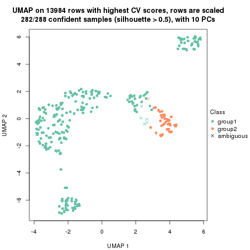
dimension_reduction(res, k = 3, method = "UMAP")
dimension_reduction(res, k = 4, method = "UMAP")
dimension_reduction(res, k = 5, method = "UMAP")

dimension_reduction(res, k = 6, method = "UMAP")
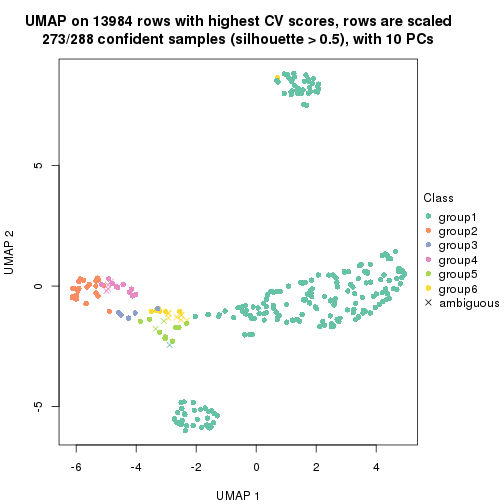
Following heatmap shows how subgroups are split when increasing k:
collect_classes(res)
If matrix rows can be associated to genes, consider to use functional_enrichment(res,
...) to perform function enrichment for the signature genes. See this vignette for more detailed explanations.
The object with results only for a single top-value method and a single partition method can be extracted as:
res = res_list["CV", "kmeans"]
# you can also extract it by
# res = res_list["CV:kmeans"]
A summary of res and all the functions that can be applied to it:
res
#> A 'ConsensusPartition' object with k = 2, 3, 4, 5, 6.
#> On a matrix with 13984 rows and 288 columns.
#> Top rows (1000, 2000, 3000, 4000, 5000) are extracted by 'CV' method.
#> Subgroups are detected by 'kmeans' method.
#> Performed in total 1250 partitions by row resampling.
#> Best k for subgroups seems to be 3.
#>
#> Following methods can be applied to this 'ConsensusPartition' object:
#> [1] "cola_report" "collect_classes" "collect_plots"
#> [4] "collect_stats" "colnames" "compare_signatures"
#> [7] "consensus_heatmap" "dimension_reduction" "functional_enrichment"
#> [10] "get_anno_col" "get_anno" "get_classes"
#> [13] "get_consensus" "get_matrix" "get_membership"
#> [16] "get_param" "get_signatures" "get_stats"
#> [19] "is_best_k" "is_stable_k" "membership_heatmap"
#> [22] "ncol" "nrow" "plot_ecdf"
#> [25] "rownames" "select_partition_number" "show"
#> [28] "suggest_best_k" "test_to_known_factors"
collect_plots() function collects all the plots made from res for all k (number of partitions)
into one single page to provide an easy and fast comparison between different k.
collect_plots(res)
The plots are:
k and the heatmap of
predicted classes for each k.k.k.k.All the plots in panels can be made by individual functions and they are plotted later in this section.
select_partition_number() produces several plots showing different
statistics for choosing “optimized” k. There are following statistics:
k;k, the area increased is defined as \(A_k - A_{k-1}\).The detailed explanations of these statistics can be found in the cola vignette.
Generally speaking, lower PAC score, higher mean silhouette score or higher
concordance corresponds to better partition. Rand index and Jaccard index
measure how similar the current partition is compared to partition with k-1.
If they are too similar, we won't accept k is better than k-1.
select_partition_number(res)
The numeric values for all these statistics can be obtained by get_stats().
get_stats(res)
#> k 1-PAC mean_silhouette concordance area_increased Rand Jaccard
#> 2 2 1.000 0.985 0.994 0.3188 0.677 0.677
#> 3 3 1.000 0.936 0.977 0.4291 0.855 0.789
#> 4 4 0.735 0.815 0.908 0.2302 0.888 0.800
#> 5 5 0.781 0.850 0.906 0.1403 0.871 0.725
#> 6 6 0.836 0.862 0.919 0.0687 0.938 0.826
suggest_best_k() suggests the best \(k\) based on these statistics. The rules are as follows:
suggest_best_k(res)
#> [1] 3
#> attr(,"optional")
#> [1] 2
There is also optional best \(k\) = 2 that is worth to check.
Following shows the table of the partitions (You need to click the show/hide
code output link to see it). The membership matrix (columns with name p*)
is inferred by
clue::cl_consensus()
function with the SE method. Basically the value in the membership matrix
represents the probability to belong to a certain group. The finall class
label for an item is determined with the group with highest probability it
belongs to.
In get_classes() function, the entropy is calculated from the membership
matrix and the silhouette score is calculated from the consensus matrix.
cbind(get_classes(res, k = 2), get_membership(res, k = 2))
#> class entropy silhouette p1 p2
#> SRR1982614 1 0.0000 0.998 1.000 0.000
#> SRR1982613 1 0.0000 0.998 1.000 0.000
#> SRR1982612 1 0.0000 0.998 1.000 0.000
#> SRR1982611 1 0.0000 0.998 1.000 0.000
#> SRR1982610 1 0.0000 0.998 1.000 0.000
#> SRR1982609 1 0.0000 0.998 1.000 0.000
#> SRR1982659 1 0.0000 0.998 1.000 0.000
#> SRR1982692 1 0.0000 0.998 1.000 0.000
#> SRR1982722 1 0.0000 0.998 1.000 0.000
#> SRR1982750 2 0.0000 0.974 0.000 1.000
#> SRR2095031 2 0.0000 0.974 0.000 1.000
#> SRR1982780 1 0.0000 0.998 1.000 0.000
#> SRR1982807 1 0.0000 0.998 1.000 0.000
#> SRR1982830 1 0.0000 0.998 1.000 0.000
#> SRR1982829 1 0.0000 0.998 1.000 0.000
#> SRR1982828 1 0.0000 0.998 1.000 0.000
#> SRR1982827 1 0.0000 0.998 1.000 0.000
#> SRR1982826 1 0.0000 0.998 1.000 0.000
#> SRR1982825 1 0.0000 0.998 1.000 0.000
#> SRR1982824 1 0.0000 0.998 1.000 0.000
#> SRR1982823 1 0.0000 0.998 1.000 0.000
#> SRR1982822 1 0.0000 0.998 1.000 0.000
#> SRR1982821 1 0.0000 0.998 1.000 0.000
#> SRR1982820 1 0.0000 0.998 1.000 0.000
#> SRR1982819 1 0.0000 0.998 1.000 0.000
#> SRR1982818 1 0.0000 0.998 1.000 0.000
#> SRR1982817 1 0.0000 0.998 1.000 0.000
#> SRR1982816 1 0.0000 0.998 1.000 0.000
#> SRR1982815 1 0.0000 0.998 1.000 0.000
#> SRR1982814 1 0.0000 0.998 1.000 0.000
#> SRR1982813 1 0.0000 0.998 1.000 0.000
#> SRR1982812 2 0.0000 0.974 0.000 1.000
#> SRR1982811 1 0.0000 0.998 1.000 0.000
#> SRR1982810 1 0.0000 0.998 1.000 0.000
#> SRR1982809 1 0.0000 0.998 1.000 0.000
#> SRR1982808 1 0.0000 0.998 1.000 0.000
#> SRR1982806 1 0.0000 0.998 1.000 0.000
#> SRR1982805 1 0.0000 0.998 1.000 0.000
#> SRR1982804 1 0.0000 0.998 1.000 0.000
#> SRR1982803 1 0.0000 0.998 1.000 0.000
#> SRR1982802 1 0.0000 0.998 1.000 0.000
#> SRR1982801 1 0.0000 0.998 1.000 0.000
#> SRR1982800 1 0.0000 0.998 1.000 0.000
#> SRR1982799 1 0.0000 0.998 1.000 0.000
#> SRR1982798 1 0.0000 0.998 1.000 0.000
#> SRR1982797 1 0.0000 0.998 1.000 0.000
#> SRR1982796 1 0.0000 0.998 1.000 0.000
#> SRR1982795 1 0.0000 0.998 1.000 0.000
#> SRR1982794 1 0.0000 0.998 1.000 0.000
#> SRR1982793 1 0.0000 0.998 1.000 0.000
#> SRR1982792 1 0.0000 0.998 1.000 0.000
#> SRR1982791 1 0.0000 0.998 1.000 0.000
#> SRR1982790 1 0.9358 0.430 0.648 0.352
#> SRR1982789 1 0.0000 0.998 1.000 0.000
#> SRR1982788 1 0.0000 0.998 1.000 0.000
#> SRR1982787 1 0.0000 0.998 1.000 0.000
#> SRR1982786 1 0.0000 0.998 1.000 0.000
#> SRR1982785 1 0.0000 0.998 1.000 0.000
#> SRR1982784 1 0.0000 0.998 1.000 0.000
#> SRR1982783 1 0.0000 0.998 1.000 0.000
#> SRR1982782 1 0.0000 0.998 1.000 0.000
#> SRR1982781 1 0.0000 0.998 1.000 0.000
#> SRR1982779 1 0.0000 0.998 1.000 0.000
#> SRR1982778 1 0.0000 0.998 1.000 0.000
#> SRR1982776 2 0.0000 0.974 0.000 1.000
#> SRR1982777 1 0.0000 0.998 1.000 0.000
#> SRR1982775 1 0.0000 0.998 1.000 0.000
#> SRR1982774 1 0.0000 0.998 1.000 0.000
#> SRR1982772 1 0.0000 0.998 1.000 0.000
#> SRR1982773 1 0.0000 0.998 1.000 0.000
#> SRR1982770 1 0.0000 0.998 1.000 0.000
#> SRR1982771 1 0.0000 0.998 1.000 0.000
#> SRR1982769 1 0.0000 0.998 1.000 0.000
#> SRR1982768 1 0.0000 0.998 1.000 0.000
#> SRR1982767 1 0.0000 0.998 1.000 0.000
#> SRR1982766 1 0.0000 0.998 1.000 0.000
#> SRR1982765 1 0.0000 0.998 1.000 0.000
#> SRR1982764 1 0.0000 0.998 1.000 0.000
#> SRR1982762 1 0.0000 0.998 1.000 0.000
#> SRR1982760 1 0.0000 0.998 1.000 0.000
#> SRR1982761 1 0.0000 0.998 1.000 0.000
#> SRR1982763 2 0.0000 0.974 0.000 1.000
#> SRR1982759 1 0.0000 0.998 1.000 0.000
#> SRR1982758 1 0.0000 0.998 1.000 0.000
#> SRR1982757 1 0.0000 0.998 1.000 0.000
#> SRR1982755 1 0.0000 0.998 1.000 0.000
#> SRR1982754 1 0.0000 0.998 1.000 0.000
#> SRR1982756 1 0.0000 0.998 1.000 0.000
#> SRR1982753 1 0.0000 0.998 1.000 0.000
#> SRR1982751 2 0.0000 0.974 0.000 1.000
#> SRR1982752 2 0.0000 0.974 0.000 1.000
#> SRR1982749 2 0.0000 0.974 0.000 1.000
#> SRR1982748 2 0.0000 0.974 0.000 1.000
#> SRR1982747 2 0.0000 0.974 0.000 1.000
#> SRR1982746 2 0.0000 0.974 0.000 1.000
#> SRR1982745 2 0.0000 0.974 0.000 1.000
#> SRR1982743 2 0.0000 0.974 0.000 1.000
#> SRR1982744 2 0.0000 0.974 0.000 1.000
#> SRR1982741 2 0.0000 0.974 0.000 1.000
#> SRR1982742 2 0.0000 0.974 0.000 1.000
#> SRR2095014 2 0.0000 0.974 0.000 1.000
#> SRR1982740 2 0.0000 0.974 0.000 1.000
#> SRR1982739 2 0.0000 0.974 0.000 1.000
#> SRR1982737 2 0.0000 0.974 0.000 1.000
#> SRR1982738 2 0.0000 0.974 0.000 1.000
#> SRR1982736 2 0.0000 0.974 0.000 1.000
#> SRR1982735 2 0.0000 0.974 0.000 1.000
#> SRR1982733 2 0.0000 0.974 0.000 1.000
#> SRR1982732 2 0.0000 0.974 0.000 1.000
#> SRR2095004 2 0.0000 0.974 0.000 1.000
#> SRR1982734 2 0.0000 0.974 0.000 1.000
#> SRR1982731 2 0.0000 0.974 0.000 1.000
#> SRR1982729 2 0.0000 0.974 0.000 1.000
#> SRR1982730 2 0.0000 0.974 0.000 1.000
#> SRR1982728 2 0.0000 0.974 0.000 1.000
#> SRR1982727 1 0.0000 0.998 1.000 0.000
#> SRR1982726 1 0.0000 0.998 1.000 0.000
#> SRR1982723 1 0.0000 0.998 1.000 0.000
#> SRR1982725 1 0.0000 0.998 1.000 0.000
#> SRR1982724 1 0.0000 0.998 1.000 0.000
#> SRR1982721 1 0.0000 0.998 1.000 0.000
#> SRR1982720 1 0.0000 0.998 1.000 0.000
#> SRR1982719 1 0.0000 0.998 1.000 0.000
#> SRR1982718 2 0.0000 0.974 0.000 1.000
#> SRR1982717 2 0.0000 0.974 0.000 1.000
#> SRR1982715 1 0.0000 0.998 1.000 0.000
#> SRR1982714 2 0.0000 0.974 0.000 1.000
#> SRR1982716 1 0.0000 0.998 1.000 0.000
#> SRR1982713 2 0.0000 0.974 0.000 1.000
#> SRR1982711 2 0.0000 0.974 0.000 1.000
#> SRR1982712 2 0.0000 0.974 0.000 1.000
#> SRR1982710 2 0.7883 0.704 0.236 0.764
#> SRR1982708 2 0.9286 0.503 0.344 0.656
#> SRR1982707 1 0.0000 0.998 1.000 0.000
#> SRR1982709 1 0.0000 0.998 1.000 0.000
#> SRR1982705 2 0.1184 0.961 0.016 0.984
#> SRR1982706 1 0.0000 0.998 1.000 0.000
#> SRR1982704 1 0.0000 0.998 1.000 0.000
#> SRR1982702 2 0.8713 0.609 0.292 0.708
#> SRR1982703 1 0.1633 0.973 0.976 0.024
#> SRR1982701 1 0.0000 0.998 1.000 0.000
#> SRR1982700 2 0.0000 0.974 0.000 1.000
#> SRR1982697 2 0.0000 0.974 0.000 1.000
#> SRR1982698 2 0.0000 0.974 0.000 1.000
#> SRR1982699 2 0.0000 0.974 0.000 1.000
#> SRR1982696 2 0.0000 0.974 0.000 1.000
#> SRR1982695 1 0.0000 0.998 1.000 0.000
#> SRR1982694 1 0.0000 0.998 1.000 0.000
#> SRR1982693 2 0.0000 0.974 0.000 1.000
#> SRR1982690 2 0.1184 0.961 0.016 0.984
#> SRR1982691 2 0.0000 0.974 0.000 1.000
#> SRR1982689 1 0.0000 0.998 1.000 0.000
#> SRR1982688 1 0.0000 0.998 1.000 0.000
#> SRR1982687 1 0.0000 0.998 1.000 0.000
#> SRR1982686 1 0.0000 0.998 1.000 0.000
#> SRR1982685 1 0.0000 0.998 1.000 0.000
#> SRR1982684 2 0.9635 0.398 0.388 0.612
#> SRR1982683 1 0.0000 0.998 1.000 0.000
#> SRR1982681 2 0.0000 0.974 0.000 1.000
#> SRR1982682 1 0.0000 0.998 1.000 0.000
#> SRR1982680 2 0.0000 0.974 0.000 1.000
#> SRR1982679 1 0.0000 0.998 1.000 0.000
#> SRR1982678 2 0.0000 0.974 0.000 1.000
#> SRR1982677 1 0.0000 0.998 1.000 0.000
#> SRR1982676 1 0.0000 0.998 1.000 0.000
#> SRR1982675 1 0.0000 0.998 1.000 0.000
#> SRR1982674 1 0.0000 0.998 1.000 0.000
#> SRR1982671 1 0.0000 0.998 1.000 0.000
#> SRR1982673 1 0.0000 0.998 1.000 0.000
#> SRR1982672 1 0.0000 0.998 1.000 0.000
#> SRR1982670 1 0.0000 0.998 1.000 0.000
#> SRR1982669 1 0.0000 0.998 1.000 0.000
#> SRR1982667 1 0.0000 0.998 1.000 0.000
#> SRR1982668 1 0.0000 0.998 1.000 0.000
#> SRR1982666 1 0.0000 0.998 1.000 0.000
#> SRR1982665 2 0.0000 0.974 0.000 1.000
#> SRR1982664 1 0.0000 0.998 1.000 0.000
#> SRR1982663 1 0.0000 0.998 1.000 0.000
#> SRR1982662 1 0.0000 0.998 1.000 0.000
#> SRR1982661 1 0.0000 0.998 1.000 0.000
#> SRR1982660 1 0.0000 0.998 1.000 0.000
#> SRR1982658 1 0.0000 0.998 1.000 0.000
#> SRR1982657 1 0.0000 0.998 1.000 0.000
#> SRR1982656 1 0.0000 0.998 1.000 0.000
#> SRR1982654 1 0.0000 0.998 1.000 0.000
#> SRR1982655 1 0.0000 0.998 1.000 0.000
#> SRR1982653 1 0.0000 0.998 1.000 0.000
#> SRR1982652 1 0.0000 0.998 1.000 0.000
#> SRR1982651 1 0.0000 0.998 1.000 0.000
#> SRR1982649 1 0.0000 0.998 1.000 0.000
#> SRR1982650 1 0.0000 0.998 1.000 0.000
#> SRR1982648 1 0.0000 0.998 1.000 0.000
#> SRR1982647 1 0.0000 0.998 1.000 0.000
#> SRR1982646 1 0.0000 0.998 1.000 0.000
#> SRR1982645 1 0.0000 0.998 1.000 0.000
#> SRR1982644 1 0.0000 0.998 1.000 0.000
#> SRR1982642 1 0.0000 0.998 1.000 0.000
#> SRR1982643 1 0.0000 0.998 1.000 0.000
#> SRR1982641 1 0.0000 0.998 1.000 0.000
#> SRR1982640 1 0.0000 0.998 1.000 0.000
#> SRR1982638 1 0.0000 0.998 1.000 0.000
#> SRR1982639 1 0.0000 0.998 1.000 0.000
#> SRR1982637 1 0.0000 0.998 1.000 0.000
#> SRR1982635 1 0.0000 0.998 1.000 0.000
#> SRR1982636 1 0.0000 0.998 1.000 0.000
#> SRR1982633 1 0.0000 0.998 1.000 0.000
#> SRR1982632 1 0.0000 0.998 1.000 0.000
#> SRR1982631 1 0.0000 0.998 1.000 0.000
#> SRR1982634 1 0.0000 0.998 1.000 0.000
#> SRR1982628 1 0.0000 0.998 1.000 0.000
#> SRR1982629 1 0.0000 0.998 1.000 0.000
#> SRR1982627 1 0.0000 0.998 1.000 0.000
#> SRR1982625 1 0.0000 0.998 1.000 0.000
#> SRR1982626 1 0.0000 0.998 1.000 0.000
#> SRR1982624 1 0.0000 0.998 1.000 0.000
#> SRR1982623 1 0.0000 0.998 1.000 0.000
#> SRR1982622 1 0.0000 0.998 1.000 0.000
#> SRR1982621 1 0.0000 0.998 1.000 0.000
#> SRR1982620 1 0.0000 0.998 1.000 0.000
#> SRR1982619 2 0.0000 0.974 0.000 1.000
#> SRR1982618 1 0.0000 0.998 1.000 0.000
#> SRR1982617 2 0.0376 0.971 0.004 0.996
#> SRR1982616 1 0.0000 0.998 1.000 0.000
#> SRR1982615 1 0.0000 0.998 1.000 0.000
#> SRR1982608 1 0.0000 0.998 1.000 0.000
#> SRR1982607 1 0.0000 0.998 1.000 0.000
#> SRR1982606 1 0.0000 0.998 1.000 0.000
#> SRR1982605 1 0.0000 0.998 1.000 0.000
#> SRR1982604 1 0.0000 0.998 1.000 0.000
#> SRR1982603 1 0.0000 0.998 1.000 0.000
#> SRR1982602 1 0.0000 0.998 1.000 0.000
#> SRR1982601 1 0.0000 0.998 1.000 0.000
#> SRR1982599 1 0.0000 0.998 1.000 0.000
#> SRR1982600 1 0.0000 0.998 1.000 0.000
#> SRR1982598 1 0.0000 0.998 1.000 0.000
#> SRR1982597 1 0.0000 0.998 1.000 0.000
#> SRR1982595 1 0.0000 0.998 1.000 0.000
#> SRR1982596 1 0.0000 0.998 1.000 0.000
#> SRR1982594 1 0.0000 0.998 1.000 0.000
#> SRR1982593 1 0.0000 0.998 1.000 0.000
#> SRR1982592 1 0.0000 0.998 1.000 0.000
#> SRR1982591 1 0.0000 0.998 1.000 0.000
#> SRR1982590 1 0.0000 0.998 1.000 0.000
#> SRR1982589 1 0.0000 0.998 1.000 0.000
#> SRR1982588 1 0.0000 0.998 1.000 0.000
#> SRR1982587 1 0.0000 0.998 1.000 0.000
#> SRR1982586 1 0.0000 0.998 1.000 0.000
#> SRR1982584 1 0.0000 0.998 1.000 0.000
#> SRR2096514 1 0.0000 0.998 1.000 0.000
#> SRR2096513 1 0.0000 0.998 1.000 0.000
#> SRR2096511 1 0.0000 0.998 1.000 0.000
#> SRR2096512 2 0.6623 0.794 0.172 0.828
#> SRR2096509 1 0.0000 0.998 1.000 0.000
#> SRR2096510 1 0.0000 0.998 1.000 0.000
#> SRR2096508 2 0.0000 0.974 0.000 1.000
#> SRR2096507 1 0.0000 0.998 1.000 0.000
#> SRR2096504 1 0.0000 0.998 1.000 0.000
#> SRR2096506 1 0.0000 0.998 1.000 0.000
#> SRR2096505 1 0.0000 0.998 1.000 0.000
#> SRR2096503 1 0.0000 0.998 1.000 0.000
#> SRR2096500 1 0.0000 0.998 1.000 0.000
#> SRR2096501 1 0.0000 0.998 1.000 0.000
#> SRR2096502 1 0.0000 0.998 1.000 0.000
#> SRR2096499 1 0.0000 0.998 1.000 0.000
#> SRR2096498 1 0.0000 0.998 1.000 0.000
#> SRR2096496 1 0.0000 0.998 1.000 0.000
#> SRR2096497 1 0.0000 0.998 1.000 0.000
#> SRR2096495 1 0.0000 0.998 1.000 0.000
#> SRR2096494 1 0.0000 0.998 1.000 0.000
#> SRR2096492 1 0.0000 0.998 1.000 0.000
#> SRR2096491 1 0.0000 0.998 1.000 0.000
#> SRR2096493 1 0.0000 0.998 1.000 0.000
#> SRR2096490 1 0.0000 0.998 1.000 0.000
#> SRR2096488 1 0.0000 0.998 1.000 0.000
#> SRR2096489 1 0.0000 0.998 1.000 0.000
#> SRR2096487 1 0.0000 0.998 1.000 0.000
#> SRR2096484 1 0.0000 0.998 1.000 0.000
#> SRR2096486 1 0.0000 0.998 1.000 0.000
#> SRR2096485 1 0.0000 0.998 1.000 0.000
#> SRR2096483 1 0.0000 0.998 1.000 0.000
#> SRR2096482 1 0.0000 0.998 1.000 0.000
#> SRR2096481 1 0.0000 0.998 1.000 0.000
#> SRR2096520 1 0.0000 0.998 1.000 0.000
#> SRR2096519 1 0.0000 0.998 1.000 0.000
#> SRR2096518 1 0.0000 0.998 1.000 0.000
#> SRR2096516 1 0.0000 0.998 1.000 0.000
#> SRR2096517 1 0.0000 0.998 1.000 0.000
#> SRR2096515 1 0.0000 0.998 1.000 0.000
cbind(get_classes(res, k = 3), get_membership(res, k = 3))
#> class entropy silhouette p1 p2 p3
#> SRR1982614 1 0.5859 0.458177 0.656 0.000 0.344
#> SRR1982613 3 0.0424 0.928676 0.008 0.000 0.992
#> SRR1982612 1 0.0000 0.985150 1.000 0.000 0.000
#> SRR1982611 1 0.0000 0.985150 1.000 0.000 0.000
#> SRR1982610 1 0.0000 0.985150 1.000 0.000 0.000
#> SRR1982609 1 0.0000 0.985150 1.000 0.000 0.000
#> SRR1982659 1 0.0000 0.985150 1.000 0.000 0.000
#> SRR1982692 3 0.0237 0.933893 0.004 0.000 0.996
#> SRR1982722 1 0.0000 0.985150 1.000 0.000 0.000
#> SRR1982750 2 0.0000 0.946258 0.000 1.000 0.000
#> SRR2095031 2 0.0000 0.946258 0.000 1.000 0.000
#> SRR1982780 1 0.0000 0.985150 1.000 0.000 0.000
#> SRR1982807 1 0.0000 0.985150 1.000 0.000 0.000
#> SRR1982830 1 0.0000 0.985150 1.000 0.000 0.000
#> SRR1982829 1 0.5926 0.429698 0.644 0.000 0.356
#> SRR1982828 1 0.0000 0.985150 1.000 0.000 0.000
#> SRR1982827 1 0.0000 0.985150 1.000 0.000 0.000
#> SRR1982826 1 0.0000 0.985150 1.000 0.000 0.000
#> SRR1982825 1 0.0000 0.985150 1.000 0.000 0.000
#> SRR1982824 1 0.0000 0.985150 1.000 0.000 0.000
#> SRR1982823 1 0.0000 0.985150 1.000 0.000 0.000
#> SRR1982822 1 0.0000 0.985150 1.000 0.000 0.000
#> SRR1982821 1 0.0000 0.985150 1.000 0.000 0.000
#> SRR1982820 1 0.0000 0.985150 1.000 0.000 0.000
#> SRR1982819 1 0.0000 0.985150 1.000 0.000 0.000
#> SRR1982818 1 0.0000 0.985150 1.000 0.000 0.000
#> SRR1982817 1 0.0000 0.985150 1.000 0.000 0.000
#> SRR1982816 1 0.0000 0.985150 1.000 0.000 0.000
#> SRR1982815 1 0.0000 0.985150 1.000 0.000 0.000
#> SRR1982814 1 0.0000 0.985150 1.000 0.000 0.000
#> SRR1982813 1 0.0000 0.985150 1.000 0.000 0.000
#> SRR1982812 2 0.6252 0.301278 0.000 0.556 0.444
#> SRR1982811 1 0.0000 0.985150 1.000 0.000 0.000
#> SRR1982810 1 0.0000 0.985150 1.000 0.000 0.000
#> SRR1982809 3 0.0892 0.910422 0.020 0.000 0.980
#> SRR1982808 1 0.0000 0.985150 1.000 0.000 0.000
#> SRR1982806 1 0.0000 0.985150 1.000 0.000 0.000
#> SRR1982805 1 0.0000 0.985150 1.000 0.000 0.000
#> SRR1982804 1 0.0000 0.985150 1.000 0.000 0.000
#> SRR1982803 1 0.0000 0.985150 1.000 0.000 0.000
#> SRR1982802 1 0.0000 0.985150 1.000 0.000 0.000
#> SRR1982801 1 0.0000 0.985150 1.000 0.000 0.000
#> SRR1982800 1 0.0000 0.985150 1.000 0.000 0.000
#> SRR1982799 1 0.0000 0.985150 1.000 0.000 0.000
#> SRR1982798 1 0.0000 0.985150 1.000 0.000 0.000
#> SRR1982797 1 0.0000 0.985150 1.000 0.000 0.000
#> SRR1982796 1 0.0000 0.985150 1.000 0.000 0.000
#> SRR1982795 1 0.0000 0.985150 1.000 0.000 0.000
#> SRR1982794 1 0.0000 0.985150 1.000 0.000 0.000
#> SRR1982793 1 0.0000 0.985150 1.000 0.000 0.000
#> SRR1982792 1 0.0000 0.985150 1.000 0.000 0.000
#> SRR1982791 1 0.0000 0.985150 1.000 0.000 0.000
#> SRR1982790 3 0.0237 0.933893 0.004 0.000 0.996
#> SRR1982789 1 0.0000 0.985150 1.000 0.000 0.000
#> SRR1982788 1 0.0000 0.985150 1.000 0.000 0.000
#> SRR1982787 1 0.0000 0.985150 1.000 0.000 0.000
#> SRR1982786 3 0.5835 0.418006 0.340 0.000 0.660
#> SRR1982785 1 0.0000 0.985150 1.000 0.000 0.000
#> SRR1982784 1 0.0000 0.985150 1.000 0.000 0.000
#> SRR1982783 1 0.0000 0.985150 1.000 0.000 0.000
#> SRR1982782 1 0.0000 0.985150 1.000 0.000 0.000
#> SRR1982781 1 0.0000 0.985150 1.000 0.000 0.000
#> SRR1982779 1 0.0000 0.985150 1.000 0.000 0.000
#> SRR1982778 1 0.0000 0.985150 1.000 0.000 0.000
#> SRR1982776 2 0.0000 0.946258 0.000 1.000 0.000
#> SRR1982777 1 0.5948 0.418727 0.640 0.000 0.360
#> SRR1982775 1 0.0000 0.985150 1.000 0.000 0.000
#> SRR1982774 1 0.0000 0.985150 1.000 0.000 0.000
#> SRR1982772 1 0.0000 0.985150 1.000 0.000 0.000
#> SRR1982773 1 0.0000 0.985150 1.000 0.000 0.000
#> SRR1982770 1 0.0000 0.985150 1.000 0.000 0.000
#> SRR1982771 1 0.0000 0.985150 1.000 0.000 0.000
#> SRR1982769 3 0.6307 0.056603 0.488 0.000 0.512
#> SRR1982768 1 0.0000 0.985150 1.000 0.000 0.000
#> SRR1982767 1 0.0000 0.985150 1.000 0.000 0.000
#> SRR1982766 1 0.0000 0.985150 1.000 0.000 0.000
#> SRR1982765 1 0.0000 0.985150 1.000 0.000 0.000
#> SRR1982764 1 0.0000 0.985150 1.000 0.000 0.000
#> SRR1982762 1 0.0000 0.985150 1.000 0.000 0.000
#> SRR1982760 1 0.0000 0.985150 1.000 0.000 0.000
#> SRR1982761 1 0.0000 0.985150 1.000 0.000 0.000
#> SRR1982763 3 0.0237 0.930672 0.000 0.004 0.996
#> SRR1982759 1 0.0000 0.985150 1.000 0.000 0.000
#> SRR1982758 1 0.0000 0.985150 1.000 0.000 0.000
#> SRR1982757 1 0.0000 0.985150 1.000 0.000 0.000
#> SRR1982755 1 0.0000 0.985150 1.000 0.000 0.000
#> SRR1982754 1 0.0000 0.985150 1.000 0.000 0.000
#> SRR1982756 1 0.0000 0.985150 1.000 0.000 0.000
#> SRR1982753 1 0.0000 0.985150 1.000 0.000 0.000
#> SRR1982751 2 0.0000 0.946258 0.000 1.000 0.000
#> SRR1982752 2 0.0000 0.946258 0.000 1.000 0.000
#> SRR1982749 2 0.0000 0.946258 0.000 1.000 0.000
#> SRR1982748 2 0.0000 0.946258 0.000 1.000 0.000
#> SRR1982747 2 0.0000 0.946258 0.000 1.000 0.000
#> SRR1982746 2 0.0000 0.946258 0.000 1.000 0.000
#> SRR1982745 2 0.0000 0.946258 0.000 1.000 0.000
#> SRR1982743 2 0.0000 0.946258 0.000 1.000 0.000
#> SRR1982744 2 0.0000 0.946258 0.000 1.000 0.000
#> SRR1982741 3 0.1753 0.886977 0.000 0.048 0.952
#> SRR1982742 2 0.0000 0.946258 0.000 1.000 0.000
#> SRR2095014 2 0.0000 0.946258 0.000 1.000 0.000
#> SRR1982740 2 0.0000 0.946258 0.000 1.000 0.000
#> SRR1982739 2 0.0000 0.946258 0.000 1.000 0.000
#> SRR1982737 2 0.0000 0.946258 0.000 1.000 0.000
#> SRR1982738 3 0.0237 0.930672 0.000 0.004 0.996
#> SRR1982736 2 0.0000 0.946258 0.000 1.000 0.000
#> SRR1982735 2 0.0000 0.946258 0.000 1.000 0.000
#> SRR1982733 2 0.0000 0.946258 0.000 1.000 0.000
#> SRR1982732 2 0.0000 0.946258 0.000 1.000 0.000
#> SRR2095004 2 0.0000 0.946258 0.000 1.000 0.000
#> SRR1982734 2 0.0000 0.946258 0.000 1.000 0.000
#> SRR1982731 2 0.0000 0.946258 0.000 1.000 0.000
#> SRR1982729 2 0.6291 0.233587 0.000 0.532 0.468
#> SRR1982730 2 0.0000 0.946258 0.000 1.000 0.000
#> SRR1982728 2 0.0000 0.946258 0.000 1.000 0.000
#> SRR1982727 1 0.6309 -0.022297 0.504 0.000 0.496
#> SRR1982726 1 0.0000 0.985150 1.000 0.000 0.000
#> SRR1982723 1 0.0000 0.985150 1.000 0.000 0.000
#> SRR1982725 1 0.0000 0.985150 1.000 0.000 0.000
#> SRR1982724 1 0.0000 0.985150 1.000 0.000 0.000
#> SRR1982721 1 0.0000 0.985150 1.000 0.000 0.000
#> SRR1982720 1 0.0000 0.985150 1.000 0.000 0.000
#> SRR1982719 1 0.0000 0.985150 1.000 0.000 0.000
#> SRR1982718 3 0.0237 0.930672 0.000 0.004 0.996
#> SRR1982717 2 0.6307 0.186177 0.000 0.512 0.488
#> SRR1982715 3 0.0237 0.933893 0.004 0.000 0.996
#> SRR1982714 2 0.5678 0.564573 0.000 0.684 0.316
#> SRR1982716 3 0.0237 0.933893 0.004 0.000 0.996
#> SRR1982713 2 0.0000 0.946258 0.000 1.000 0.000
#> SRR1982711 2 0.0000 0.946258 0.000 1.000 0.000
#> SRR1982712 2 0.0000 0.946258 0.000 1.000 0.000
#> SRR1982710 3 0.0237 0.933893 0.004 0.000 0.996
#> SRR1982708 3 0.0237 0.933893 0.004 0.000 0.996
#> SRR1982707 3 0.0237 0.933893 0.004 0.000 0.996
#> SRR1982709 1 0.0000 0.985150 1.000 0.000 0.000
#> SRR1982705 3 0.0237 0.930672 0.000 0.004 0.996
#> SRR1982706 1 0.0000 0.985150 1.000 0.000 0.000
#> SRR1982704 1 0.0000 0.985150 1.000 0.000 0.000
#> SRR1982702 3 0.0237 0.933893 0.004 0.000 0.996
#> SRR1982703 3 0.0237 0.933893 0.004 0.000 0.996
#> SRR1982701 3 0.0237 0.933893 0.004 0.000 0.996
#> SRR1982700 3 0.1529 0.895578 0.000 0.040 0.960
#> SRR1982697 2 0.0000 0.946258 0.000 1.000 0.000
#> SRR1982698 2 0.0000 0.946258 0.000 1.000 0.000
#> SRR1982699 2 0.0000 0.946258 0.000 1.000 0.000
#> SRR1982696 2 0.6305 0.197863 0.000 0.516 0.484
#> SRR1982695 1 0.0000 0.985150 1.000 0.000 0.000
#> SRR1982694 1 0.0000 0.985150 1.000 0.000 0.000
#> SRR1982693 2 0.0000 0.946258 0.000 1.000 0.000
#> SRR1982690 3 0.0237 0.933893 0.004 0.000 0.996
#> SRR1982691 3 0.0237 0.930672 0.000 0.004 0.996
#> SRR1982689 3 0.0237 0.933893 0.004 0.000 0.996
#> SRR1982688 1 0.0000 0.985150 1.000 0.000 0.000
#> SRR1982687 3 0.0237 0.933893 0.004 0.000 0.996
#> SRR1982686 3 0.0237 0.933893 0.004 0.000 0.996
#> SRR1982685 3 0.0237 0.933893 0.004 0.000 0.996
#> SRR1982684 3 0.0237 0.933893 0.004 0.000 0.996
#> SRR1982683 1 0.0000 0.985150 1.000 0.000 0.000
#> SRR1982681 2 0.0000 0.946258 0.000 1.000 0.000
#> SRR1982682 3 0.0237 0.933893 0.004 0.000 0.996
#> SRR1982680 3 0.0237 0.930672 0.000 0.004 0.996
#> SRR1982679 3 0.0237 0.933893 0.004 0.000 0.996
#> SRR1982678 2 0.0000 0.946258 0.000 1.000 0.000
#> SRR1982677 3 0.0237 0.933893 0.004 0.000 0.996
#> SRR1982676 1 0.0000 0.985150 1.000 0.000 0.000
#> SRR1982675 1 0.0000 0.985150 1.000 0.000 0.000
#> SRR1982674 1 0.6204 0.238780 0.576 0.000 0.424
#> SRR1982671 1 0.0000 0.985150 1.000 0.000 0.000
#> SRR1982673 1 0.0000 0.985150 1.000 0.000 0.000
#> SRR1982672 1 0.0000 0.985150 1.000 0.000 0.000
#> SRR1982670 1 0.0000 0.985150 1.000 0.000 0.000
#> SRR1982669 1 0.0000 0.985150 1.000 0.000 0.000
#> SRR1982667 1 0.0000 0.985150 1.000 0.000 0.000
#> SRR1982668 1 0.5529 0.563125 0.704 0.000 0.296
#> SRR1982666 1 0.0000 0.985150 1.000 0.000 0.000
#> SRR1982665 2 0.0000 0.946258 0.000 1.000 0.000
#> SRR1982664 1 0.0000 0.985150 1.000 0.000 0.000
#> SRR1982663 1 0.0000 0.985150 1.000 0.000 0.000
#> SRR1982662 1 0.0000 0.985150 1.000 0.000 0.000
#> SRR1982661 1 0.0000 0.985150 1.000 0.000 0.000
#> SRR1982660 1 0.0000 0.985150 1.000 0.000 0.000
#> SRR1982658 1 0.0000 0.985150 1.000 0.000 0.000
#> SRR1982657 1 0.0000 0.985150 1.000 0.000 0.000
#> SRR1982656 3 0.0237 0.933893 0.004 0.000 0.996
#> SRR1982654 1 0.0000 0.985150 1.000 0.000 0.000
#> SRR1982655 1 0.0000 0.985150 1.000 0.000 0.000
#> SRR1982653 1 0.0000 0.985150 1.000 0.000 0.000
#> SRR1982652 1 0.0000 0.985150 1.000 0.000 0.000
#> SRR1982651 1 0.0000 0.985150 1.000 0.000 0.000
#> SRR1982649 1 0.0000 0.985150 1.000 0.000 0.000
#> SRR1982650 1 0.0000 0.985150 1.000 0.000 0.000
#> SRR1982648 1 0.0000 0.985150 1.000 0.000 0.000
#> SRR1982647 1 0.0000 0.985150 1.000 0.000 0.000
#> SRR1982646 1 0.0000 0.985150 1.000 0.000 0.000
#> SRR1982645 1 0.0000 0.985150 1.000 0.000 0.000
#> SRR1982644 1 0.0000 0.985150 1.000 0.000 0.000
#> SRR1982642 1 0.0000 0.985150 1.000 0.000 0.000
#> SRR1982643 1 0.0000 0.985150 1.000 0.000 0.000
#> SRR1982641 1 0.0000 0.985150 1.000 0.000 0.000
#> SRR1982640 1 0.0000 0.985150 1.000 0.000 0.000
#> SRR1982638 1 0.0000 0.985150 1.000 0.000 0.000
#> SRR1982639 1 0.0000 0.985150 1.000 0.000 0.000
#> SRR1982637 1 0.0000 0.985150 1.000 0.000 0.000
#> SRR1982635 1 0.0000 0.985150 1.000 0.000 0.000
#> SRR1982636 1 0.0000 0.985150 1.000 0.000 0.000
#> SRR1982633 1 0.0000 0.985150 1.000 0.000 0.000
#> SRR1982632 1 0.0000 0.985150 1.000 0.000 0.000
#> SRR1982631 1 0.0000 0.985150 1.000 0.000 0.000
#> SRR1982634 1 0.0000 0.985150 1.000 0.000 0.000
#> SRR1982628 1 0.0000 0.985150 1.000 0.000 0.000
#> SRR1982629 1 0.0000 0.985150 1.000 0.000 0.000
#> SRR1982627 1 0.0000 0.985150 1.000 0.000 0.000
#> SRR1982625 1 0.0000 0.985150 1.000 0.000 0.000
#> SRR1982626 1 0.0000 0.985150 1.000 0.000 0.000
#> SRR1982624 1 0.0000 0.985150 1.000 0.000 0.000
#> SRR1982623 1 0.0000 0.985150 1.000 0.000 0.000
#> SRR1982622 1 0.0000 0.985150 1.000 0.000 0.000
#> SRR1982621 1 0.0000 0.985150 1.000 0.000 0.000
#> SRR1982620 1 0.0000 0.985150 1.000 0.000 0.000
#> SRR1982619 2 0.0000 0.946258 0.000 1.000 0.000
#> SRR1982618 1 0.0000 0.985150 1.000 0.000 0.000
#> SRR1982617 3 0.0237 0.930672 0.000 0.004 0.996
#> SRR1982616 1 0.0000 0.985150 1.000 0.000 0.000
#> SRR1982615 1 0.0000 0.985150 1.000 0.000 0.000
#> SRR1982608 3 0.0237 0.933893 0.004 0.000 0.996
#> SRR1982607 1 0.0000 0.985150 1.000 0.000 0.000
#> SRR1982606 1 0.0000 0.985150 1.000 0.000 0.000
#> SRR1982605 1 0.0000 0.985150 1.000 0.000 0.000
#> SRR1982604 1 0.0000 0.985150 1.000 0.000 0.000
#> SRR1982603 1 0.0000 0.985150 1.000 0.000 0.000
#> SRR1982602 1 0.0000 0.985150 1.000 0.000 0.000
#> SRR1982601 1 0.0000 0.985150 1.000 0.000 0.000
#> SRR1982599 1 0.0000 0.985150 1.000 0.000 0.000
#> SRR1982600 3 0.6204 0.273584 0.424 0.000 0.576
#> SRR1982598 1 0.0000 0.985150 1.000 0.000 0.000
#> SRR1982597 1 0.0000 0.985150 1.000 0.000 0.000
#> SRR1982595 1 0.0000 0.985150 1.000 0.000 0.000
#> SRR1982596 1 0.0000 0.985150 1.000 0.000 0.000
#> SRR1982594 1 0.0000 0.985150 1.000 0.000 0.000
#> SRR1982593 1 0.0000 0.985150 1.000 0.000 0.000
#> SRR1982592 3 0.0237 0.933893 0.004 0.000 0.996
#> SRR1982591 1 0.0000 0.985150 1.000 0.000 0.000
#> SRR1982590 1 0.0000 0.985150 1.000 0.000 0.000
#> SRR1982589 1 0.0000 0.985150 1.000 0.000 0.000
#> SRR1982588 1 0.0000 0.985150 1.000 0.000 0.000
#> SRR1982587 1 0.0000 0.985150 1.000 0.000 0.000
#> SRR1982586 1 0.0000 0.985150 1.000 0.000 0.000
#> SRR1982584 1 0.0000 0.985150 1.000 0.000 0.000
#> SRR2096514 1 0.0237 0.982576 0.996 0.000 0.004
#> SRR2096513 1 0.0237 0.982576 0.996 0.000 0.004
#> SRR2096511 1 0.0237 0.982576 0.996 0.000 0.004
#> SRR2096512 3 0.0000 0.930370 0.000 0.000 1.000
#> SRR2096509 1 0.0237 0.982576 0.996 0.000 0.004
#> SRR2096510 1 0.0237 0.982576 0.996 0.000 0.004
#> SRR2096508 3 0.0237 0.930672 0.000 0.004 0.996
#> SRR2096507 1 0.0237 0.982576 0.996 0.000 0.004
#> SRR2096504 1 0.0237 0.982576 0.996 0.000 0.004
#> SRR2096506 1 0.0237 0.982576 0.996 0.000 0.004
#> SRR2096505 1 0.0237 0.982576 0.996 0.000 0.004
#> SRR2096503 3 0.0000 0.930370 0.000 0.000 1.000
#> SRR2096500 1 0.0237 0.982576 0.996 0.000 0.004
#> SRR2096501 1 0.0237 0.982576 0.996 0.000 0.004
#> SRR2096502 1 0.0237 0.982576 0.996 0.000 0.004
#> SRR2096499 1 0.0237 0.982576 0.996 0.000 0.004
#> SRR2096498 1 0.0237 0.982576 0.996 0.000 0.004
#> SRR2096496 1 0.0237 0.982576 0.996 0.000 0.004
#> SRR2096497 1 0.0237 0.982576 0.996 0.000 0.004
#> SRR2096495 1 0.0237 0.982576 0.996 0.000 0.004
#> SRR2096494 1 0.0237 0.982576 0.996 0.000 0.004
#> SRR2096492 1 0.0237 0.982576 0.996 0.000 0.004
#> SRR2096491 3 0.0000 0.930370 0.000 0.000 1.000
#> SRR2096493 1 0.0237 0.982576 0.996 0.000 0.004
#> SRR2096490 1 0.0237 0.982576 0.996 0.000 0.004
#> SRR2096488 1 0.0237 0.982576 0.996 0.000 0.004
#> SRR2096489 1 0.0237 0.982576 0.996 0.000 0.004
#> SRR2096487 1 0.0237 0.982576 0.996 0.000 0.004
#> SRR2096484 1 0.0237 0.982576 0.996 0.000 0.004
#> SRR2096486 1 0.0237 0.982576 0.996 0.000 0.004
#> SRR2096485 1 0.0237 0.982576 0.996 0.000 0.004
#> SRR2096483 1 0.0237 0.982576 0.996 0.000 0.004
#> SRR2096482 1 0.0237 0.982576 0.996 0.000 0.004
#> SRR2096481 1 0.6308 0.000434 0.508 0.000 0.492
#> SRR2096520 1 0.0237 0.982576 0.996 0.000 0.004
#> SRR2096519 1 0.0237 0.982576 0.996 0.000 0.004
#> SRR2096518 1 0.0237 0.982576 0.996 0.000 0.004
#> SRR2096516 1 0.0237 0.982576 0.996 0.000 0.004
#> SRR2096517 1 0.0237 0.982576 0.996 0.000 0.004
#> SRR2096515 1 0.0237 0.982576 0.996 0.000 0.004
cbind(get_classes(res, k = 4), get_membership(res, k = 4))
#> class entropy silhouette p1 p2 p3 p4
#> SRR1982614 4 0.4389 0.6634 0.116 0.000 0.072 0.812
#> SRR1982613 4 0.3710 0.5907 0.004 0.000 0.192 0.804
#> SRR1982612 1 0.0000 0.9332 1.000 0.000 0.000 0.000
#> SRR1982611 1 0.4040 0.6328 0.752 0.000 0.000 0.248
#> SRR1982610 1 0.0000 0.9332 1.000 0.000 0.000 0.000
#> SRR1982609 1 0.0000 0.9332 1.000 0.000 0.000 0.000
#> SRR1982659 1 0.0000 0.9332 1.000 0.000 0.000 0.000
#> SRR1982692 4 0.3801 0.5610 0.000 0.000 0.220 0.780
#> SRR1982722 1 0.0000 0.9332 1.000 0.000 0.000 0.000
#> SRR1982750 2 0.0000 0.9603 0.000 1.000 0.000 0.000
#> SRR2095031 2 0.0000 0.9603 0.000 1.000 0.000 0.000
#> SRR1982780 1 0.0000 0.9332 1.000 0.000 0.000 0.000
#> SRR1982807 1 0.0000 0.9332 1.000 0.000 0.000 0.000
#> SRR1982830 1 0.0000 0.9332 1.000 0.000 0.000 0.000
#> SRR1982829 4 0.4401 0.6639 0.112 0.000 0.076 0.812
#> SRR1982828 1 0.3837 0.6659 0.776 0.000 0.000 0.224
#> SRR1982827 1 0.0000 0.9332 1.000 0.000 0.000 0.000
#> SRR1982826 1 0.0000 0.9332 1.000 0.000 0.000 0.000
#> SRR1982825 1 0.0000 0.9332 1.000 0.000 0.000 0.000
#> SRR1982824 1 0.0000 0.9332 1.000 0.000 0.000 0.000
#> SRR1982823 1 0.0000 0.9332 1.000 0.000 0.000 0.000
#> SRR1982822 1 0.0000 0.9332 1.000 0.000 0.000 0.000
#> SRR1982821 1 0.0000 0.9332 1.000 0.000 0.000 0.000
#> SRR1982820 1 0.0000 0.9332 1.000 0.000 0.000 0.000
#> SRR1982819 1 0.0000 0.9332 1.000 0.000 0.000 0.000
#> SRR1982818 1 0.0000 0.9332 1.000 0.000 0.000 0.000
#> SRR1982817 1 0.0000 0.9332 1.000 0.000 0.000 0.000
#> SRR1982816 1 0.0000 0.9332 1.000 0.000 0.000 0.000
#> SRR1982815 1 0.0000 0.9332 1.000 0.000 0.000 0.000
#> SRR1982814 1 0.0000 0.9332 1.000 0.000 0.000 0.000
#> SRR1982813 1 0.0000 0.9332 1.000 0.000 0.000 0.000
#> SRR1982812 3 0.3024 0.7088 0.000 0.148 0.852 0.000
#> SRR1982811 1 0.0000 0.9332 1.000 0.000 0.000 0.000
#> SRR1982810 4 0.4998 0.1837 0.488 0.000 0.000 0.512
#> SRR1982809 4 0.3649 0.5806 0.000 0.000 0.204 0.796
#> SRR1982808 1 0.4961 0.0595 0.552 0.000 0.000 0.448
#> SRR1982806 1 0.0000 0.9332 1.000 0.000 0.000 0.000
#> SRR1982805 1 0.0000 0.9332 1.000 0.000 0.000 0.000
#> SRR1982804 1 0.0000 0.9332 1.000 0.000 0.000 0.000
#> SRR1982803 4 0.4972 0.2934 0.456 0.000 0.000 0.544
#> SRR1982802 1 0.0000 0.9332 1.000 0.000 0.000 0.000
#> SRR1982801 1 0.0000 0.9332 1.000 0.000 0.000 0.000
#> SRR1982800 1 0.0000 0.9332 1.000 0.000 0.000 0.000
#> SRR1982799 1 0.0000 0.9332 1.000 0.000 0.000 0.000
#> SRR1982798 1 0.0000 0.9332 1.000 0.000 0.000 0.000
#> SRR1982797 4 0.4222 0.5880 0.272 0.000 0.000 0.728
#> SRR1982796 1 0.0000 0.9332 1.000 0.000 0.000 0.000
#> SRR1982795 1 0.0000 0.9332 1.000 0.000 0.000 0.000
#> SRR1982794 1 0.0000 0.9332 1.000 0.000 0.000 0.000
#> SRR1982793 1 0.0000 0.9332 1.000 0.000 0.000 0.000
#> SRR1982792 1 0.0000 0.9332 1.000 0.000 0.000 0.000
#> SRR1982791 1 0.0000 0.9332 1.000 0.000 0.000 0.000
#> SRR1982790 3 0.2814 0.8086 0.000 0.000 0.868 0.132
#> SRR1982789 1 0.0000 0.9332 1.000 0.000 0.000 0.000
#> SRR1982788 1 0.0000 0.9332 1.000 0.000 0.000 0.000
#> SRR1982787 1 0.0000 0.9332 1.000 0.000 0.000 0.000
#> SRR1982786 4 0.4105 0.6208 0.032 0.000 0.156 0.812
#> SRR1982785 1 0.0000 0.9332 1.000 0.000 0.000 0.000
#> SRR1982784 1 0.0000 0.9332 1.000 0.000 0.000 0.000
#> SRR1982783 1 0.0921 0.9131 0.972 0.000 0.000 0.028
#> SRR1982782 1 0.0000 0.9332 1.000 0.000 0.000 0.000
#> SRR1982781 1 0.0000 0.9332 1.000 0.000 0.000 0.000
#> SRR1982779 1 0.4040 0.6363 0.752 0.000 0.000 0.248
#> SRR1982778 1 0.0000 0.9332 1.000 0.000 0.000 0.000
#> SRR1982776 2 0.0000 0.9603 0.000 1.000 0.000 0.000
#> SRR1982777 4 0.4071 0.6627 0.104 0.000 0.064 0.832
#> SRR1982775 1 0.0000 0.9332 1.000 0.000 0.000 0.000
#> SRR1982774 1 0.0000 0.9332 1.000 0.000 0.000 0.000
#> SRR1982772 1 0.0000 0.9332 1.000 0.000 0.000 0.000
#> SRR1982773 1 0.0000 0.9332 1.000 0.000 0.000 0.000
#> SRR1982770 1 0.0000 0.9332 1.000 0.000 0.000 0.000
#> SRR1982771 1 0.0000 0.9332 1.000 0.000 0.000 0.000
#> SRR1982769 4 0.4426 0.6589 0.092 0.000 0.096 0.812
#> SRR1982768 1 0.4661 0.4114 0.652 0.000 0.000 0.348
#> SRR1982767 1 0.0000 0.9332 1.000 0.000 0.000 0.000
#> SRR1982766 4 0.3942 0.6142 0.236 0.000 0.000 0.764
#> SRR1982765 1 0.0000 0.9332 1.000 0.000 0.000 0.000
#> SRR1982764 4 0.4304 0.5754 0.284 0.000 0.000 0.716
#> SRR1982762 1 0.0000 0.9332 1.000 0.000 0.000 0.000
#> SRR1982760 1 0.0000 0.9332 1.000 0.000 0.000 0.000
#> SRR1982761 1 0.0000 0.9332 1.000 0.000 0.000 0.000
#> SRR1982763 3 0.0188 0.8178 0.000 0.000 0.996 0.004
#> SRR1982759 1 0.0000 0.9332 1.000 0.000 0.000 0.000
#> SRR1982758 4 0.4103 0.6007 0.256 0.000 0.000 0.744
#> SRR1982757 1 0.4790 0.3117 0.620 0.000 0.000 0.380
#> SRR1982755 1 0.0000 0.9332 1.000 0.000 0.000 0.000
#> SRR1982754 1 0.0000 0.9332 1.000 0.000 0.000 0.000
#> SRR1982756 1 0.0000 0.9332 1.000 0.000 0.000 0.000
#> SRR1982753 1 0.0000 0.9332 1.000 0.000 0.000 0.000
#> SRR1982751 2 0.0000 0.9603 0.000 1.000 0.000 0.000
#> SRR1982752 2 0.0000 0.9603 0.000 1.000 0.000 0.000
#> SRR1982749 2 0.0000 0.9603 0.000 1.000 0.000 0.000
#> SRR1982748 2 0.2345 0.9192 0.000 0.900 0.100 0.000
#> SRR1982747 2 0.0000 0.9603 0.000 1.000 0.000 0.000
#> SRR1982746 2 0.0000 0.9603 0.000 1.000 0.000 0.000
#> SRR1982745 2 0.0000 0.9603 0.000 1.000 0.000 0.000
#> SRR1982743 2 0.0000 0.9603 0.000 1.000 0.000 0.000
#> SRR1982744 2 0.0000 0.9603 0.000 1.000 0.000 0.000
#> SRR1982741 3 0.0817 0.8092 0.000 0.024 0.976 0.000
#> SRR1982742 2 0.2345 0.9192 0.000 0.900 0.100 0.000
#> SRR2095014 2 0.2345 0.9192 0.000 0.900 0.100 0.000
#> SRR1982740 2 0.0000 0.9603 0.000 1.000 0.000 0.000
#> SRR1982739 2 0.0000 0.9603 0.000 1.000 0.000 0.000
#> SRR1982737 2 0.2345 0.9192 0.000 0.900 0.100 0.000
#> SRR1982738 3 0.2408 0.8230 0.000 0.000 0.896 0.104
#> SRR1982736 2 0.2345 0.9192 0.000 0.900 0.100 0.000
#> SRR1982735 2 0.2345 0.9192 0.000 0.900 0.100 0.000
#> SRR1982733 2 0.0000 0.9603 0.000 1.000 0.000 0.000
#> SRR1982732 2 0.0000 0.9603 0.000 1.000 0.000 0.000
#> SRR2095004 2 0.0000 0.9603 0.000 1.000 0.000 0.000
#> SRR1982734 2 0.2345 0.9192 0.000 0.900 0.100 0.000
#> SRR1982731 2 0.0000 0.9603 0.000 1.000 0.000 0.000
#> SRR1982729 3 0.3123 0.6979 0.000 0.156 0.844 0.000
#> SRR1982730 2 0.0000 0.9603 0.000 1.000 0.000 0.000
#> SRR1982728 2 0.0000 0.9603 0.000 1.000 0.000 0.000
#> SRR1982727 4 0.4297 0.6629 0.096 0.000 0.084 0.820
#> SRR1982726 1 0.0000 0.9332 1.000 0.000 0.000 0.000
#> SRR1982723 1 0.4222 0.5843 0.728 0.000 0.000 0.272
#> SRR1982725 1 0.4008 0.6402 0.756 0.000 0.000 0.244
#> SRR1982724 1 0.0000 0.9332 1.000 0.000 0.000 0.000
#> SRR1982721 1 0.0000 0.9332 1.000 0.000 0.000 0.000
#> SRR1982720 1 0.0000 0.9332 1.000 0.000 0.000 0.000
#> SRR1982719 1 0.0000 0.9332 1.000 0.000 0.000 0.000
#> SRR1982718 3 0.1389 0.8265 0.000 0.000 0.952 0.048
#> SRR1982717 3 0.2466 0.7625 0.000 0.096 0.900 0.004
#> SRR1982715 3 0.4500 0.5721 0.000 0.000 0.684 0.316
#> SRR1982714 3 0.3266 0.6798 0.000 0.168 0.832 0.000
#> SRR1982716 4 0.4907 0.1439 0.000 0.000 0.420 0.580
#> SRR1982713 2 0.2345 0.9192 0.000 0.900 0.100 0.000
#> SRR1982711 2 0.0000 0.9603 0.000 1.000 0.000 0.000
#> SRR1982712 2 0.0000 0.9603 0.000 1.000 0.000 0.000
#> SRR1982710 3 0.2704 0.8142 0.000 0.000 0.876 0.124
#> SRR1982708 3 0.2704 0.8142 0.000 0.000 0.876 0.124
#> SRR1982707 4 0.3569 0.5849 0.000 0.000 0.196 0.804
#> SRR1982709 1 0.0000 0.9332 1.000 0.000 0.000 0.000
#> SRR1982705 3 0.1389 0.8268 0.000 0.000 0.952 0.048
#> SRR1982706 1 0.0000 0.9332 1.000 0.000 0.000 0.000
#> SRR1982704 1 0.3975 0.6475 0.760 0.000 0.000 0.240
#> SRR1982702 3 0.2408 0.8230 0.000 0.000 0.896 0.104
#> SRR1982703 3 0.3172 0.7828 0.000 0.000 0.840 0.160
#> SRR1982701 4 0.4955 0.0710 0.000 0.000 0.444 0.556
#> SRR1982700 3 0.0779 0.8121 0.000 0.016 0.980 0.004
#> SRR1982697 2 0.0000 0.9603 0.000 1.000 0.000 0.000
#> SRR1982698 2 0.0000 0.9603 0.000 1.000 0.000 0.000
#> SRR1982699 2 0.0000 0.9603 0.000 1.000 0.000 0.000
#> SRR1982696 3 0.2281 0.7628 0.000 0.096 0.904 0.000
#> SRR1982695 1 0.0000 0.9332 1.000 0.000 0.000 0.000
#> SRR1982694 1 0.0000 0.9332 1.000 0.000 0.000 0.000
#> SRR1982693 3 0.4999 -0.1821 0.000 0.492 0.508 0.000
#> SRR1982690 3 0.2408 0.8228 0.000 0.000 0.896 0.104
#> SRR1982691 3 0.1637 0.8272 0.000 0.000 0.940 0.060
#> SRR1982689 4 0.4898 0.1589 0.000 0.000 0.416 0.584
#> SRR1982688 1 0.0000 0.9332 1.000 0.000 0.000 0.000
#> SRR1982687 4 0.3649 0.5806 0.000 0.000 0.204 0.796
#> SRR1982686 4 0.4967 0.0437 0.000 0.000 0.452 0.548
#> SRR1982685 3 0.4790 0.4311 0.000 0.000 0.620 0.380
#> SRR1982684 3 0.2530 0.8203 0.000 0.000 0.888 0.112
#> SRR1982683 4 0.4431 0.5546 0.304 0.000 0.000 0.696
#> SRR1982681 2 0.4843 0.4564 0.000 0.604 0.396 0.000
#> SRR1982682 3 0.4888 0.3578 0.000 0.000 0.588 0.412
#> SRR1982680 3 0.0000 0.8175 0.000 0.000 1.000 0.000
#> SRR1982679 4 0.3649 0.5806 0.000 0.000 0.204 0.796
#> SRR1982678 2 0.2345 0.9192 0.000 0.900 0.100 0.000
#> SRR1982677 3 0.4500 0.5721 0.000 0.000 0.684 0.316
#> SRR1982676 1 0.0000 0.9332 1.000 0.000 0.000 0.000
#> SRR1982675 1 0.0000 0.9332 1.000 0.000 0.000 0.000
#> SRR1982674 4 0.4477 0.6640 0.108 0.000 0.084 0.808
#> SRR1982671 4 0.4356 0.5674 0.292 0.000 0.000 0.708
#> SRR1982673 1 0.0000 0.9332 1.000 0.000 0.000 0.000
#> SRR1982672 1 0.0000 0.9332 1.000 0.000 0.000 0.000
#> SRR1982670 1 0.0000 0.9332 1.000 0.000 0.000 0.000
#> SRR1982669 1 0.0000 0.9332 1.000 0.000 0.000 0.000
#> SRR1982667 1 0.0000 0.9332 1.000 0.000 0.000 0.000
#> SRR1982668 4 0.4307 0.6544 0.144 0.000 0.048 0.808
#> SRR1982666 1 0.0000 0.9332 1.000 0.000 0.000 0.000
#> SRR1982665 2 0.1211 0.9453 0.000 0.960 0.040 0.000
#> SRR1982664 1 0.0000 0.9332 1.000 0.000 0.000 0.000
#> SRR1982663 1 0.0000 0.9332 1.000 0.000 0.000 0.000
#> SRR1982662 1 0.0000 0.9332 1.000 0.000 0.000 0.000
#> SRR1982661 1 0.0000 0.9332 1.000 0.000 0.000 0.000
#> SRR1982660 1 0.0000 0.9332 1.000 0.000 0.000 0.000
#> SRR1982658 1 0.0000 0.9332 1.000 0.000 0.000 0.000
#> SRR1982657 1 0.0000 0.9332 1.000 0.000 0.000 0.000
#> SRR1982656 4 0.3649 0.5806 0.000 0.000 0.204 0.796
#> SRR1982654 1 0.0000 0.9332 1.000 0.000 0.000 0.000
#> SRR1982655 1 0.0000 0.9332 1.000 0.000 0.000 0.000
#> SRR1982653 1 0.0000 0.9332 1.000 0.000 0.000 0.000
#> SRR1982652 1 0.0000 0.9332 1.000 0.000 0.000 0.000
#> SRR1982651 1 0.0000 0.9332 1.000 0.000 0.000 0.000
#> SRR1982649 1 0.3801 0.6727 0.780 0.000 0.000 0.220
#> SRR1982650 1 0.0000 0.9332 1.000 0.000 0.000 0.000
#> SRR1982648 1 0.0000 0.9332 1.000 0.000 0.000 0.000
#> SRR1982647 1 0.0000 0.9332 1.000 0.000 0.000 0.000
#> SRR1982646 1 0.4164 0.6029 0.736 0.000 0.000 0.264
#> SRR1982645 1 0.0000 0.9332 1.000 0.000 0.000 0.000
#> SRR1982644 1 0.0000 0.9332 1.000 0.000 0.000 0.000
#> SRR1982642 1 0.0000 0.9332 1.000 0.000 0.000 0.000
#> SRR1982643 1 0.0000 0.9332 1.000 0.000 0.000 0.000
#> SRR1982641 1 0.0000 0.9332 1.000 0.000 0.000 0.000
#> SRR1982640 1 0.0000 0.9332 1.000 0.000 0.000 0.000
#> SRR1982638 1 0.0000 0.9332 1.000 0.000 0.000 0.000
#> SRR1982639 1 0.0000 0.9332 1.000 0.000 0.000 0.000
#> SRR1982637 1 0.0000 0.9332 1.000 0.000 0.000 0.000
#> SRR1982635 1 0.0000 0.9332 1.000 0.000 0.000 0.000
#> SRR1982636 1 0.0000 0.9332 1.000 0.000 0.000 0.000
#> SRR1982633 1 0.0000 0.9332 1.000 0.000 0.000 0.000
#> SRR1982632 1 0.0000 0.9332 1.000 0.000 0.000 0.000
#> SRR1982631 1 0.0000 0.9332 1.000 0.000 0.000 0.000
#> SRR1982634 1 0.0000 0.9332 1.000 0.000 0.000 0.000
#> SRR1982628 1 0.0000 0.9332 1.000 0.000 0.000 0.000
#> SRR1982629 1 0.0000 0.9332 1.000 0.000 0.000 0.000
#> SRR1982627 1 0.0000 0.9332 1.000 0.000 0.000 0.000
#> SRR1982625 1 0.0000 0.9332 1.000 0.000 0.000 0.000
#> SRR1982626 1 0.0000 0.9332 1.000 0.000 0.000 0.000
#> SRR1982624 1 0.0592 0.9207 0.984 0.000 0.000 0.016
#> SRR1982623 1 0.0000 0.9332 1.000 0.000 0.000 0.000
#> SRR1982622 1 0.0000 0.9332 1.000 0.000 0.000 0.000
#> SRR1982621 1 0.0000 0.9332 1.000 0.000 0.000 0.000
#> SRR1982620 1 0.0000 0.9332 1.000 0.000 0.000 0.000
#> SRR1982619 2 0.2345 0.9192 0.000 0.900 0.100 0.000
#> SRR1982618 1 0.0000 0.9332 1.000 0.000 0.000 0.000
#> SRR1982617 3 0.2408 0.8230 0.000 0.000 0.896 0.104
#> SRR1982616 1 0.0000 0.9332 1.000 0.000 0.000 0.000
#> SRR1982615 1 0.0000 0.9332 1.000 0.000 0.000 0.000
#> SRR1982608 4 0.3610 0.5806 0.000 0.000 0.200 0.800
#> SRR1982607 1 0.0000 0.9332 1.000 0.000 0.000 0.000
#> SRR1982606 1 0.0000 0.9332 1.000 0.000 0.000 0.000
#> SRR1982605 1 0.0000 0.9332 1.000 0.000 0.000 0.000
#> SRR1982604 1 0.0000 0.9332 1.000 0.000 0.000 0.000
#> SRR1982603 1 0.0000 0.9332 1.000 0.000 0.000 0.000
#> SRR1982602 1 0.0000 0.9332 1.000 0.000 0.000 0.000
#> SRR1982601 1 0.0000 0.9332 1.000 0.000 0.000 0.000
#> SRR1982599 1 0.0000 0.9332 1.000 0.000 0.000 0.000
#> SRR1982600 4 0.4724 0.6644 0.112 0.000 0.096 0.792
#> SRR1982598 1 0.0000 0.9332 1.000 0.000 0.000 0.000
#> SRR1982597 1 0.0000 0.9332 1.000 0.000 0.000 0.000
#> SRR1982595 1 0.0000 0.9332 1.000 0.000 0.000 0.000
#> SRR1982596 1 0.0000 0.9332 1.000 0.000 0.000 0.000
#> SRR1982594 1 0.0000 0.9332 1.000 0.000 0.000 0.000
#> SRR1982593 1 0.0000 0.9332 1.000 0.000 0.000 0.000
#> SRR1982592 4 0.3649 0.5806 0.000 0.000 0.204 0.796
#> SRR1982591 1 0.0000 0.9332 1.000 0.000 0.000 0.000
#> SRR1982590 4 0.4040 0.6077 0.248 0.000 0.000 0.752
#> SRR1982589 1 0.1118 0.9041 0.964 0.000 0.000 0.036
#> SRR1982588 1 0.0000 0.9332 1.000 0.000 0.000 0.000
#> SRR1982587 1 0.0000 0.9332 1.000 0.000 0.000 0.000
#> SRR1982586 1 0.0000 0.9332 1.000 0.000 0.000 0.000
#> SRR1982584 4 0.4008 0.6102 0.244 0.000 0.000 0.756
#> SRR2096514 1 0.3610 0.7687 0.800 0.000 0.000 0.200
#> SRR2096513 1 0.3764 0.7543 0.784 0.000 0.000 0.216
#> SRR2096511 1 0.3610 0.7687 0.800 0.000 0.000 0.200
#> SRR2096512 3 0.2408 0.8230 0.000 0.000 0.896 0.104
#> SRR2096509 1 0.3610 0.7687 0.800 0.000 0.000 0.200
#> SRR2096510 1 0.3726 0.7581 0.788 0.000 0.000 0.212
#> SRR2096508 3 0.0188 0.8178 0.000 0.000 0.996 0.004
#> SRR2096507 1 0.4999 0.2031 0.508 0.000 0.000 0.492
#> SRR2096504 1 0.3610 0.7687 0.800 0.000 0.000 0.200
#> SRR2096506 1 0.3610 0.7687 0.800 0.000 0.000 0.200
#> SRR2096505 1 0.3764 0.7543 0.784 0.000 0.000 0.216
#> SRR2096503 4 0.5000 -0.1177 0.000 0.000 0.496 0.504
#> SRR2096500 1 0.3610 0.7687 0.800 0.000 0.000 0.200
#> SRR2096501 4 0.1557 0.5622 0.056 0.000 0.000 0.944
#> SRR2096502 1 0.3610 0.7687 0.800 0.000 0.000 0.200
#> SRR2096499 1 0.4103 0.7090 0.744 0.000 0.000 0.256
#> SRR2096498 1 0.2589 0.8460 0.884 0.000 0.000 0.116
#> SRR2096496 4 0.4164 0.4282 0.264 0.000 0.000 0.736
#> SRR2096497 1 0.3610 0.7687 0.800 0.000 0.000 0.200
#> SRR2096495 1 0.4933 0.3810 0.568 0.000 0.000 0.432
#> SRR2096494 1 0.3726 0.7581 0.788 0.000 0.000 0.212
#> SRR2096492 1 0.3610 0.7687 0.800 0.000 0.000 0.200
#> SRR2096491 4 0.3569 0.5854 0.000 0.000 0.196 0.804
#> SRR2096493 1 0.3610 0.7687 0.800 0.000 0.000 0.200
#> SRR2096490 1 0.3764 0.7543 0.784 0.000 0.000 0.216
#> SRR2096488 1 0.3801 0.7503 0.780 0.000 0.000 0.220
#> SRR2096489 1 0.4925 0.3911 0.572 0.000 0.000 0.428
#> SRR2096487 1 0.4933 0.3810 0.568 0.000 0.000 0.432
#> SRR2096484 1 0.3610 0.7687 0.800 0.000 0.000 0.200
#> SRR2096486 1 0.4999 0.2031 0.508 0.000 0.000 0.492
#> SRR2096485 1 0.3610 0.7687 0.800 0.000 0.000 0.200
#> SRR2096483 1 0.3610 0.7687 0.800 0.000 0.000 0.200
#> SRR2096482 1 0.3610 0.7687 0.800 0.000 0.000 0.200
#> SRR2096481 4 0.0707 0.5550 0.020 0.000 0.000 0.980
#> SRR2096520 1 0.3528 0.7748 0.808 0.000 0.000 0.192
#> SRR2096519 1 0.3610 0.7687 0.800 0.000 0.000 0.200
#> SRR2096518 1 0.3610 0.7687 0.800 0.000 0.000 0.200
#> SRR2096516 1 0.2469 0.8510 0.892 0.000 0.000 0.108
#> SRR2096517 1 0.3610 0.7687 0.800 0.000 0.000 0.200
#> SRR2096515 1 0.3610 0.7687 0.800 0.000 0.000 0.200
cbind(get_classes(res, k = 5), get_membership(res, k = 5))
#> class entropy silhouette p1 p2 p3 p4 p5
#> SRR1982614 4 0.0324 0.7834 0.004 0.000 0.004 0.992 0.000
#> SRR1982613 4 0.0162 0.7816 0.000 0.004 0.000 0.996 0.000
#> SRR1982612 1 0.0000 0.9641 1.000 0.000 0.000 0.000 0.000
#> SRR1982611 1 0.3388 0.6938 0.792 0.000 0.008 0.200 0.000
#> SRR1982610 1 0.0000 0.9641 1.000 0.000 0.000 0.000 0.000
#> SRR1982609 1 0.0000 0.9641 1.000 0.000 0.000 0.000 0.000
#> SRR1982659 1 0.0000 0.9641 1.000 0.000 0.000 0.000 0.000
#> SRR1982692 4 0.3319 0.7076 0.000 0.020 0.160 0.820 0.000
#> SRR1982722 1 0.0000 0.9641 1.000 0.000 0.000 0.000 0.000
#> SRR1982750 5 0.0000 0.9210 0.000 0.000 0.000 0.000 1.000
#> SRR2095031 5 0.0000 0.9210 0.000 0.000 0.000 0.000 1.000
#> SRR1982780 1 0.0000 0.9641 1.000 0.000 0.000 0.000 0.000
#> SRR1982807 1 0.0000 0.9641 1.000 0.000 0.000 0.000 0.000
#> SRR1982830 1 0.0000 0.9641 1.000 0.000 0.000 0.000 0.000
#> SRR1982829 4 0.0162 0.7837 0.004 0.000 0.000 0.996 0.000
#> SRR1982828 1 0.3160 0.7189 0.808 0.000 0.004 0.188 0.000
#> SRR1982827 1 0.0000 0.9641 1.000 0.000 0.000 0.000 0.000
#> SRR1982826 1 0.0000 0.9641 1.000 0.000 0.000 0.000 0.000
#> SRR1982825 1 0.0000 0.9641 1.000 0.000 0.000 0.000 0.000
#> SRR1982824 1 0.1043 0.9181 0.960 0.000 0.000 0.040 0.000
#> SRR1982823 1 0.0000 0.9641 1.000 0.000 0.000 0.000 0.000
#> SRR1982822 1 0.0000 0.9641 1.000 0.000 0.000 0.000 0.000
#> SRR1982821 1 0.0000 0.9641 1.000 0.000 0.000 0.000 0.000
#> SRR1982820 1 0.0000 0.9641 1.000 0.000 0.000 0.000 0.000
#> SRR1982819 1 0.0000 0.9641 1.000 0.000 0.000 0.000 0.000
#> SRR1982818 1 0.0000 0.9641 1.000 0.000 0.000 0.000 0.000
#> SRR1982817 1 0.0000 0.9641 1.000 0.000 0.000 0.000 0.000
#> SRR1982816 1 0.0000 0.9641 1.000 0.000 0.000 0.000 0.000
#> SRR1982815 1 0.0000 0.9641 1.000 0.000 0.000 0.000 0.000
#> SRR1982814 1 0.0000 0.9641 1.000 0.000 0.000 0.000 0.000
#> SRR1982813 1 0.0000 0.9641 1.000 0.000 0.000 0.000 0.000
#> SRR1982812 2 0.0000 0.8050 0.000 1.000 0.000 0.000 0.000
#> SRR1982811 1 0.0000 0.9641 1.000 0.000 0.000 0.000 0.000
#> SRR1982810 4 0.4562 -0.0455 0.492 0.000 0.008 0.500 0.000
#> SRR1982809 4 0.0162 0.7816 0.000 0.004 0.000 0.996 0.000
#> SRR1982808 1 0.4481 0.2646 0.576 0.000 0.008 0.416 0.000
#> SRR1982806 1 0.0000 0.9641 1.000 0.000 0.000 0.000 0.000
#> SRR1982805 1 0.0000 0.9641 1.000 0.000 0.000 0.000 0.000
#> SRR1982804 1 0.0000 0.9641 1.000 0.000 0.000 0.000 0.000
#> SRR1982803 4 0.4235 0.2616 0.336 0.000 0.008 0.656 0.000
#> SRR1982802 1 0.0000 0.9641 1.000 0.000 0.000 0.000 0.000
#> SRR1982801 1 0.0000 0.9641 1.000 0.000 0.000 0.000 0.000
#> SRR1982800 1 0.0000 0.9641 1.000 0.000 0.000 0.000 0.000
#> SRR1982799 1 0.0000 0.9641 1.000 0.000 0.000 0.000 0.000
#> SRR1982798 1 0.0000 0.9641 1.000 0.000 0.000 0.000 0.000
#> SRR1982797 4 0.2563 0.6475 0.120 0.000 0.008 0.872 0.000
#> SRR1982796 1 0.0000 0.9641 1.000 0.000 0.000 0.000 0.000
#> SRR1982795 1 0.0000 0.9641 1.000 0.000 0.000 0.000 0.000
#> SRR1982794 1 0.0000 0.9641 1.000 0.000 0.000 0.000 0.000
#> SRR1982793 1 0.0000 0.9641 1.000 0.000 0.000 0.000 0.000
#> SRR1982792 1 0.0000 0.9641 1.000 0.000 0.000 0.000 0.000
#> SRR1982791 1 0.0000 0.9641 1.000 0.000 0.000 0.000 0.000
#> SRR1982790 2 0.5441 0.7485 0.000 0.624 0.280 0.096 0.000
#> SRR1982789 1 0.0000 0.9641 1.000 0.000 0.000 0.000 0.000
#> SRR1982788 1 0.0000 0.9641 1.000 0.000 0.000 0.000 0.000
#> SRR1982787 1 0.0000 0.9641 1.000 0.000 0.000 0.000 0.000
#> SRR1982786 4 0.0162 0.7837 0.004 0.000 0.000 0.996 0.000
#> SRR1982785 1 0.0000 0.9641 1.000 0.000 0.000 0.000 0.000
#> SRR1982784 1 0.0000 0.9641 1.000 0.000 0.000 0.000 0.000
#> SRR1982783 1 0.2660 0.7999 0.864 0.000 0.008 0.128 0.000
#> SRR1982782 1 0.0000 0.9641 1.000 0.000 0.000 0.000 0.000
#> SRR1982781 1 0.0000 0.9641 1.000 0.000 0.000 0.000 0.000
#> SRR1982779 1 0.3487 0.6746 0.780 0.000 0.008 0.212 0.000
#> SRR1982778 1 0.0000 0.9641 1.000 0.000 0.000 0.000 0.000
#> SRR1982776 5 0.0000 0.9210 0.000 0.000 0.000 0.000 1.000
#> SRR1982777 4 0.0579 0.7815 0.008 0.000 0.008 0.984 0.000
#> SRR1982775 1 0.0000 0.9641 1.000 0.000 0.000 0.000 0.000
#> SRR1982774 1 0.0000 0.9641 1.000 0.000 0.000 0.000 0.000
#> SRR1982772 1 0.0000 0.9641 1.000 0.000 0.000 0.000 0.000
#> SRR1982773 1 0.0000 0.9641 1.000 0.000 0.000 0.000 0.000
#> SRR1982770 1 0.0000 0.9641 1.000 0.000 0.000 0.000 0.000
#> SRR1982771 1 0.0000 0.9641 1.000 0.000 0.000 0.000 0.000
#> SRR1982769 4 0.0324 0.7834 0.004 0.000 0.004 0.992 0.000
#> SRR1982768 1 0.4446 0.3018 0.592 0.000 0.008 0.400 0.000
#> SRR1982767 1 0.0000 0.9641 1.000 0.000 0.000 0.000 0.000
#> SRR1982766 4 0.0693 0.7804 0.012 0.000 0.008 0.980 0.000
#> SRR1982765 1 0.0000 0.9641 1.000 0.000 0.000 0.000 0.000
#> SRR1982764 4 0.0992 0.7721 0.024 0.000 0.008 0.968 0.000
#> SRR1982762 1 0.0000 0.9641 1.000 0.000 0.000 0.000 0.000
#> SRR1982760 1 0.0000 0.9641 1.000 0.000 0.000 0.000 0.000
#> SRR1982761 1 0.0000 0.9641 1.000 0.000 0.000 0.000 0.000
#> SRR1982763 2 0.0290 0.8049 0.000 0.992 0.008 0.000 0.000
#> SRR1982759 1 0.0000 0.9641 1.000 0.000 0.000 0.000 0.000
#> SRR1982758 4 0.1082 0.7686 0.028 0.000 0.008 0.964 0.000
#> SRR1982757 1 0.4415 0.3291 0.604 0.000 0.008 0.388 0.000
#> SRR1982755 1 0.0000 0.9641 1.000 0.000 0.000 0.000 0.000
#> SRR1982754 1 0.0000 0.9641 1.000 0.000 0.000 0.000 0.000
#> SRR1982756 1 0.0000 0.9641 1.000 0.000 0.000 0.000 0.000
#> SRR1982753 1 0.0000 0.9641 1.000 0.000 0.000 0.000 0.000
#> SRR1982751 5 0.0000 0.9210 0.000 0.000 0.000 0.000 1.000
#> SRR1982752 5 0.0000 0.9210 0.000 0.000 0.000 0.000 1.000
#> SRR1982749 5 0.0000 0.9210 0.000 0.000 0.000 0.000 1.000
#> SRR1982748 5 0.3480 0.7973 0.000 0.248 0.000 0.000 0.752
#> SRR1982747 5 0.0000 0.9210 0.000 0.000 0.000 0.000 1.000
#> SRR1982746 5 0.0000 0.9210 0.000 0.000 0.000 0.000 1.000
#> SRR1982745 5 0.0000 0.9210 0.000 0.000 0.000 0.000 1.000
#> SRR1982743 5 0.0162 0.9202 0.000 0.004 0.000 0.000 0.996
#> SRR1982744 5 0.0000 0.9210 0.000 0.000 0.000 0.000 1.000
#> SRR1982741 2 0.0000 0.8050 0.000 1.000 0.000 0.000 0.000
#> SRR1982742 5 0.3534 0.7896 0.000 0.256 0.000 0.000 0.744
#> SRR2095014 5 0.3561 0.7859 0.000 0.260 0.000 0.000 0.740
#> SRR1982740 5 0.0162 0.9202 0.000 0.004 0.000 0.000 0.996
#> SRR1982739 5 0.0000 0.9210 0.000 0.000 0.000 0.000 1.000
#> SRR1982737 5 0.3480 0.7973 0.000 0.248 0.000 0.000 0.752
#> SRR1982738 2 0.4465 0.7954 0.000 0.736 0.204 0.060 0.000
#> SRR1982736 5 0.3534 0.7896 0.000 0.256 0.000 0.000 0.744
#> SRR1982735 5 0.3480 0.7973 0.000 0.248 0.000 0.000 0.752
#> SRR1982733 5 0.0162 0.9202 0.000 0.004 0.000 0.000 0.996
#> SRR1982732 5 0.0000 0.9210 0.000 0.000 0.000 0.000 1.000
#> SRR2095004 5 0.0162 0.9202 0.000 0.004 0.000 0.000 0.996
#> SRR1982734 5 0.3480 0.7973 0.000 0.248 0.000 0.000 0.752
#> SRR1982731 5 0.0000 0.9210 0.000 0.000 0.000 0.000 1.000
#> SRR1982729 2 0.0000 0.8050 0.000 1.000 0.000 0.000 0.000
#> SRR1982730 5 0.0162 0.9202 0.000 0.004 0.000 0.000 0.996
#> SRR1982728 5 0.0000 0.9210 0.000 0.000 0.000 0.000 1.000
#> SRR1982727 4 0.0324 0.7834 0.004 0.000 0.004 0.992 0.000
#> SRR1982726 1 0.0000 0.9641 1.000 0.000 0.000 0.000 0.000
#> SRR1982723 1 0.3642 0.6409 0.760 0.000 0.008 0.232 0.000
#> SRR1982725 1 0.3455 0.6811 0.784 0.000 0.008 0.208 0.000
#> SRR1982724 1 0.0000 0.9641 1.000 0.000 0.000 0.000 0.000
#> SRR1982721 1 0.0000 0.9641 1.000 0.000 0.000 0.000 0.000
#> SRR1982720 1 0.0000 0.9641 1.000 0.000 0.000 0.000 0.000
#> SRR1982719 1 0.0000 0.9641 1.000 0.000 0.000 0.000 0.000
#> SRR1982718 2 0.4161 0.8032 0.000 0.704 0.280 0.016 0.000
#> SRR1982717 2 0.2806 0.8112 0.000 0.844 0.152 0.004 0.000
#> SRR1982715 4 0.6779 -0.2171 0.000 0.360 0.276 0.364 0.000
#> SRR1982714 2 0.0000 0.8050 0.000 1.000 0.000 0.000 0.000
#> SRR1982716 4 0.4622 0.5812 0.000 0.044 0.264 0.692 0.000
#> SRR1982713 5 0.3480 0.7973 0.000 0.248 0.000 0.000 0.752
#> SRR1982711 5 0.0000 0.9210 0.000 0.000 0.000 0.000 1.000
#> SRR1982712 5 0.0000 0.9210 0.000 0.000 0.000 0.000 1.000
#> SRR1982710 2 0.4844 0.7883 0.000 0.668 0.280 0.052 0.000
#> SRR1982708 2 0.4844 0.7883 0.000 0.668 0.280 0.052 0.000
#> SRR1982707 4 0.1544 0.7657 0.000 0.000 0.068 0.932 0.000
#> SRR1982709 1 0.1357 0.9041 0.948 0.000 0.004 0.048 0.000
#> SRR1982705 2 0.3750 0.8103 0.000 0.756 0.232 0.012 0.000
#> SRR1982706 1 0.0000 0.9641 1.000 0.000 0.000 0.000 0.000
#> SRR1982704 1 0.3519 0.6681 0.776 0.000 0.008 0.216 0.000
#> SRR1982702 2 0.4645 0.7865 0.000 0.724 0.204 0.072 0.000
#> SRR1982703 2 0.6250 0.5098 0.000 0.540 0.204 0.256 0.000
#> SRR1982701 4 0.4309 0.6631 0.000 0.084 0.148 0.768 0.000
#> SRR1982700 2 0.0000 0.8050 0.000 1.000 0.000 0.000 0.000
#> SRR1982697 5 0.0000 0.9210 0.000 0.000 0.000 0.000 1.000
#> SRR1982698 5 0.0000 0.9210 0.000 0.000 0.000 0.000 1.000
#> SRR1982699 5 0.0000 0.9210 0.000 0.000 0.000 0.000 1.000
#> SRR1982696 2 0.0404 0.8050 0.000 0.988 0.012 0.000 0.000
#> SRR1982695 1 0.0000 0.9641 1.000 0.000 0.000 0.000 0.000
#> SRR1982694 1 0.0000 0.9641 1.000 0.000 0.000 0.000 0.000
#> SRR1982693 2 0.3462 0.5512 0.000 0.792 0.012 0.000 0.196
#> SRR1982690 2 0.4114 0.8036 0.000 0.712 0.272 0.016 0.000
#> SRR1982691 2 0.3849 0.8090 0.000 0.752 0.232 0.016 0.000
#> SRR1982689 4 0.4199 0.6572 0.000 0.056 0.180 0.764 0.000
#> SRR1982688 1 0.0000 0.9641 1.000 0.000 0.000 0.000 0.000
#> SRR1982687 4 0.2707 0.7339 0.000 0.008 0.132 0.860 0.000
#> SRR1982686 4 0.4486 0.6432 0.000 0.080 0.172 0.748 0.000
#> SRR1982685 4 0.6679 -0.0488 0.000 0.336 0.244 0.420 0.000
#> SRR1982684 2 0.4780 0.7867 0.000 0.672 0.280 0.048 0.000
#> SRR1982683 4 0.2077 0.6999 0.084 0.000 0.008 0.908 0.000
#> SRR1982681 2 0.4457 0.0918 0.000 0.620 0.012 0.000 0.368
#> SRR1982682 4 0.6057 0.3766 0.000 0.200 0.224 0.576 0.000
#> SRR1982680 2 0.0963 0.8113 0.000 0.964 0.036 0.000 0.000
#> SRR1982679 4 0.1168 0.7745 0.000 0.032 0.008 0.960 0.000
#> SRR1982678 5 0.3480 0.7973 0.000 0.248 0.000 0.000 0.752
#> SRR1982677 4 0.6779 -0.2171 0.000 0.360 0.276 0.364 0.000
#> SRR1982676 1 0.0000 0.9641 1.000 0.000 0.000 0.000 0.000
#> SRR1982675 1 0.0000 0.9641 1.000 0.000 0.000 0.000 0.000
#> SRR1982674 4 0.0324 0.7834 0.004 0.000 0.004 0.992 0.000
#> SRR1982671 4 0.1168 0.7645 0.032 0.000 0.008 0.960 0.000
#> SRR1982673 1 0.0000 0.9641 1.000 0.000 0.000 0.000 0.000
#> SRR1982672 1 0.0000 0.9641 1.000 0.000 0.000 0.000 0.000
#> SRR1982670 1 0.0000 0.9641 1.000 0.000 0.000 0.000 0.000
#> SRR1982669 1 0.0000 0.9641 1.000 0.000 0.000 0.000 0.000
#> SRR1982667 1 0.0000 0.9641 1.000 0.000 0.000 0.000 0.000
#> SRR1982668 4 0.0324 0.7834 0.004 0.000 0.004 0.992 0.000
#> SRR1982666 1 0.0000 0.9641 1.000 0.000 0.000 0.000 0.000
#> SRR1982665 5 0.2732 0.8476 0.000 0.160 0.000 0.000 0.840
#> SRR1982664 1 0.0000 0.9641 1.000 0.000 0.000 0.000 0.000
#> SRR1982663 1 0.0000 0.9641 1.000 0.000 0.000 0.000 0.000
#> SRR1982662 1 0.0000 0.9641 1.000 0.000 0.000 0.000 0.000
#> SRR1982661 1 0.0000 0.9641 1.000 0.000 0.000 0.000 0.000
#> SRR1982660 1 0.0000 0.9641 1.000 0.000 0.000 0.000 0.000
#> SRR1982658 1 0.0000 0.9641 1.000 0.000 0.000 0.000 0.000
#> SRR1982657 1 0.0000 0.9641 1.000 0.000 0.000 0.000 0.000
#> SRR1982656 4 0.3055 0.7222 0.000 0.016 0.144 0.840 0.000
#> SRR1982654 1 0.0000 0.9641 1.000 0.000 0.000 0.000 0.000
#> SRR1982655 1 0.0000 0.9641 1.000 0.000 0.000 0.000 0.000
#> SRR1982653 1 0.0000 0.9641 1.000 0.000 0.000 0.000 0.000
#> SRR1982652 1 0.0000 0.9641 1.000 0.000 0.000 0.000 0.000
#> SRR1982651 1 0.0000 0.9641 1.000 0.000 0.000 0.000 0.000
#> SRR1982649 1 0.3160 0.7189 0.808 0.000 0.004 0.188 0.000
#> SRR1982650 1 0.0000 0.9641 1.000 0.000 0.000 0.000 0.000
#> SRR1982648 1 0.0000 0.9641 1.000 0.000 0.000 0.000 0.000
#> SRR1982647 1 0.0000 0.9641 1.000 0.000 0.000 0.000 0.000
#> SRR1982646 1 0.3910 0.5692 0.720 0.000 0.008 0.272 0.000
#> SRR1982645 1 0.0000 0.9641 1.000 0.000 0.000 0.000 0.000
#> SRR1982644 1 0.0000 0.9641 1.000 0.000 0.000 0.000 0.000
#> SRR1982642 1 0.0000 0.9641 1.000 0.000 0.000 0.000 0.000
#> SRR1982643 1 0.0000 0.9641 1.000 0.000 0.000 0.000 0.000
#> SRR1982641 1 0.0000 0.9641 1.000 0.000 0.000 0.000 0.000
#> SRR1982640 1 0.0000 0.9641 1.000 0.000 0.000 0.000 0.000
#> SRR1982638 1 0.0000 0.9641 1.000 0.000 0.000 0.000 0.000
#> SRR1982639 1 0.0000 0.9641 1.000 0.000 0.000 0.000 0.000
#> SRR1982637 1 0.0000 0.9641 1.000 0.000 0.000 0.000 0.000
#> SRR1982635 1 0.0000 0.9641 1.000 0.000 0.000 0.000 0.000
#> SRR1982636 1 0.0000 0.9641 1.000 0.000 0.000 0.000 0.000
#> SRR1982633 1 0.0000 0.9641 1.000 0.000 0.000 0.000 0.000
#> SRR1982632 1 0.0000 0.9641 1.000 0.000 0.000 0.000 0.000
#> SRR1982631 1 0.0000 0.9641 1.000 0.000 0.000 0.000 0.000
#> SRR1982634 1 0.0000 0.9641 1.000 0.000 0.000 0.000 0.000
#> SRR1982628 1 0.2389 0.8207 0.880 0.000 0.004 0.116 0.000
#> SRR1982629 1 0.0000 0.9641 1.000 0.000 0.000 0.000 0.000
#> SRR1982627 1 0.0000 0.9641 1.000 0.000 0.000 0.000 0.000
#> SRR1982625 1 0.0000 0.9641 1.000 0.000 0.000 0.000 0.000
#> SRR1982626 1 0.0000 0.9641 1.000 0.000 0.000 0.000 0.000
#> SRR1982624 1 0.2763 0.7766 0.848 0.000 0.004 0.148 0.000
#> SRR1982623 1 0.0000 0.9641 1.000 0.000 0.000 0.000 0.000
#> SRR1982622 1 0.0000 0.9641 1.000 0.000 0.000 0.000 0.000
#> SRR1982621 1 0.0000 0.9641 1.000 0.000 0.000 0.000 0.000
#> SRR1982620 1 0.0000 0.9641 1.000 0.000 0.000 0.000 0.000
#> SRR1982619 5 0.3480 0.7973 0.000 0.248 0.000 0.000 0.752
#> SRR1982618 1 0.0000 0.9641 1.000 0.000 0.000 0.000 0.000
#> SRR1982617 2 0.4587 0.7896 0.000 0.728 0.204 0.068 0.000
#> SRR1982616 1 0.0000 0.9641 1.000 0.000 0.000 0.000 0.000
#> SRR1982615 1 0.0000 0.9641 1.000 0.000 0.000 0.000 0.000
#> SRR1982608 4 0.2753 0.7319 0.000 0.008 0.136 0.856 0.000
#> SRR1982607 1 0.0000 0.9641 1.000 0.000 0.000 0.000 0.000
#> SRR1982606 1 0.0000 0.9641 1.000 0.000 0.000 0.000 0.000
#> SRR1982605 1 0.0000 0.9641 1.000 0.000 0.000 0.000 0.000
#> SRR1982604 1 0.0000 0.9641 1.000 0.000 0.000 0.000 0.000
#> SRR1982603 1 0.0000 0.9641 1.000 0.000 0.000 0.000 0.000
#> SRR1982602 1 0.0000 0.9641 1.000 0.000 0.000 0.000 0.000
#> SRR1982601 1 0.0000 0.9641 1.000 0.000 0.000 0.000 0.000
#> SRR1982599 1 0.0000 0.9641 1.000 0.000 0.000 0.000 0.000
#> SRR1982600 4 0.0671 0.7800 0.016 0.000 0.004 0.980 0.000
#> SRR1982598 1 0.0000 0.9641 1.000 0.000 0.000 0.000 0.000
#> SRR1982597 1 0.0000 0.9641 1.000 0.000 0.000 0.000 0.000
#> SRR1982595 1 0.0000 0.9641 1.000 0.000 0.000 0.000 0.000
#> SRR1982596 1 0.0000 0.9641 1.000 0.000 0.000 0.000 0.000
#> SRR1982594 1 0.0000 0.9641 1.000 0.000 0.000 0.000 0.000
#> SRR1982593 1 0.0000 0.9641 1.000 0.000 0.000 0.000 0.000
#> SRR1982592 4 0.2920 0.7291 0.000 0.016 0.132 0.852 0.000
#> SRR1982591 1 0.1704 0.8806 0.928 0.000 0.004 0.068 0.000
#> SRR1982590 4 0.0693 0.7804 0.012 0.000 0.008 0.980 0.000
#> SRR1982589 1 0.2674 0.7879 0.856 0.000 0.004 0.140 0.000
#> SRR1982588 1 0.0000 0.9641 1.000 0.000 0.000 0.000 0.000
#> SRR1982587 1 0.0000 0.9641 1.000 0.000 0.000 0.000 0.000
#> SRR1982586 1 0.0000 0.9641 1.000 0.000 0.000 0.000 0.000
#> SRR1982584 4 0.0693 0.7804 0.012 0.000 0.008 0.980 0.000
#> SRR2096514 3 0.3730 0.8707 0.288 0.000 0.712 0.000 0.000
#> SRR2096513 3 0.4646 0.8844 0.228 0.000 0.712 0.060 0.000
#> SRR2096511 3 0.3730 0.8707 0.288 0.000 0.712 0.000 0.000
#> SRR2096512 2 0.4465 0.7950 0.000 0.736 0.204 0.060 0.000
#> SRR2096509 3 0.3730 0.8707 0.288 0.000 0.712 0.000 0.000
#> SRR2096510 3 0.4646 0.8844 0.228 0.000 0.712 0.060 0.000
#> SRR2096508 2 0.1124 0.8136 0.000 0.960 0.036 0.004 0.000
#> SRR2096507 3 0.4964 0.7564 0.132 0.000 0.712 0.156 0.000
#> SRR2096504 3 0.4646 0.8844 0.228 0.000 0.712 0.060 0.000
#> SRR2096506 3 0.4646 0.8844 0.228 0.000 0.712 0.060 0.000
#> SRR2096505 3 0.4646 0.8844 0.228 0.000 0.712 0.060 0.000
#> SRR2096503 4 0.6598 0.1153 0.000 0.260 0.276 0.464 0.000
#> SRR2096500 3 0.3730 0.8707 0.288 0.000 0.712 0.000 0.000
#> SRR2096501 3 0.3730 0.4508 0.000 0.000 0.712 0.288 0.000
#> SRR2096502 3 0.3730 0.8707 0.288 0.000 0.712 0.000 0.000
#> SRR2096499 3 0.4763 0.8687 0.212 0.000 0.712 0.076 0.000
#> SRR2096498 1 0.3816 0.3467 0.696 0.000 0.304 0.000 0.000
#> SRR2096496 3 0.4114 0.4945 0.016 0.000 0.712 0.272 0.000
#> SRR2096497 3 0.4646 0.8844 0.228 0.000 0.712 0.060 0.000
#> SRR2096495 3 0.4959 0.7479 0.128 0.000 0.712 0.160 0.000
#> SRR2096494 3 0.4646 0.8844 0.228 0.000 0.712 0.060 0.000
#> SRR2096492 3 0.4646 0.8844 0.228 0.000 0.712 0.060 0.000
#> SRR2096491 4 0.2969 0.7293 0.000 0.020 0.128 0.852 0.000
#> SRR2096493 3 0.4646 0.8844 0.228 0.000 0.712 0.060 0.000
#> SRR2096490 3 0.4646 0.8844 0.228 0.000 0.712 0.060 0.000
#> SRR2096488 3 0.4646 0.8844 0.228 0.000 0.712 0.060 0.000
#> SRR2096489 3 0.4914 0.8310 0.180 0.000 0.712 0.108 0.000
#> SRR2096487 3 0.4914 0.8310 0.180 0.000 0.712 0.108 0.000
#> SRR2096484 3 0.3730 0.8707 0.288 0.000 0.712 0.000 0.000
#> SRR2096486 3 0.4936 0.7261 0.116 0.000 0.712 0.172 0.000
#> SRR2096485 3 0.3730 0.8707 0.288 0.000 0.712 0.000 0.000
#> SRR2096483 3 0.3752 0.8653 0.292 0.000 0.708 0.000 0.000
#> SRR2096482 3 0.3730 0.8707 0.288 0.000 0.712 0.000 0.000
#> SRR2096481 3 0.4287 0.1174 0.000 0.000 0.540 0.460 0.000
#> SRR2096520 3 0.3796 0.8550 0.300 0.000 0.700 0.000 0.000
#> SRR2096519 3 0.3730 0.8707 0.288 0.000 0.712 0.000 0.000
#> SRR2096518 3 0.3730 0.8707 0.288 0.000 0.712 0.000 0.000
#> SRR2096516 1 0.3366 0.5614 0.768 0.000 0.232 0.000 0.000
#> SRR2096517 3 0.3730 0.8707 0.288 0.000 0.712 0.000 0.000
#> SRR2096515 3 0.3752 0.8653 0.292 0.000 0.708 0.000 0.000
cbind(get_classes(res, k = 6), get_membership(res, k = 6))
#> class entropy silhouette p1 p2 p3 p4 p5 p6
#> SRR1982614 5 0.0000 0.7227 0.000 0.000 0.000 0.000 1.000 0.000
#> SRR1982613 5 0.0363 0.7147 0.000 0.000 0.000 0.000 0.988 0.012
#> SRR1982612 1 0.1219 0.9296 0.948 0.000 0.004 0.048 0.000 0.000
#> SRR1982611 5 0.5234 0.3838 0.396 0.000 0.024 0.048 0.532 0.000
#> SRR1982610 1 0.1075 0.9330 0.952 0.000 0.000 0.048 0.000 0.000
#> SRR1982609 1 0.0000 0.9685 1.000 0.000 0.000 0.000 0.000 0.000
#> SRR1982659 1 0.0000 0.9685 1.000 0.000 0.000 0.000 0.000 0.000
#> SRR1982692 6 0.4002 0.5953 0.000 0.000 0.008 0.000 0.404 0.588
#> SRR1982722 1 0.0000 0.9685 1.000 0.000 0.000 0.000 0.000 0.000
#> SRR1982750 2 0.0000 0.9903 0.000 1.000 0.000 0.000 0.000 0.000
#> SRR2095031 2 0.0000 0.9903 0.000 1.000 0.000 0.000 0.000 0.000
#> SRR1982780 1 0.0000 0.9685 1.000 0.000 0.000 0.000 0.000 0.000
#> SRR1982807 1 0.0000 0.9685 1.000 0.000 0.000 0.000 0.000 0.000
#> SRR1982830 1 0.0363 0.9605 0.988 0.000 0.000 0.012 0.000 0.000
#> SRR1982829 5 0.0000 0.7227 0.000 0.000 0.000 0.000 1.000 0.000
#> SRR1982828 1 0.5208 -0.0743 0.500 0.000 0.020 0.048 0.432 0.000
#> SRR1982827 1 0.1075 0.9330 0.952 0.000 0.000 0.048 0.000 0.000
#> SRR1982826 1 0.0000 0.9685 1.000 0.000 0.000 0.000 0.000 0.000
#> SRR1982825 1 0.0000 0.9685 1.000 0.000 0.000 0.000 0.000 0.000
#> SRR1982824 1 0.1760 0.9103 0.928 0.000 0.004 0.048 0.020 0.000
#> SRR1982823 1 0.0000 0.9685 1.000 0.000 0.000 0.000 0.000 0.000
#> SRR1982822 1 0.1333 0.9260 0.944 0.000 0.008 0.048 0.000 0.000
#> SRR1982821 1 0.0000 0.9685 1.000 0.000 0.000 0.000 0.000 0.000
#> SRR1982820 1 0.0000 0.9685 1.000 0.000 0.000 0.000 0.000 0.000
#> SRR1982819 1 0.0000 0.9685 1.000 0.000 0.000 0.000 0.000 0.000
#> SRR1982818 1 0.0000 0.9685 1.000 0.000 0.000 0.000 0.000 0.000
#> SRR1982817 1 0.0713 0.9489 0.972 0.000 0.000 0.028 0.000 0.000
#> SRR1982816 1 0.0000 0.9685 1.000 0.000 0.000 0.000 0.000 0.000
#> SRR1982815 1 0.0000 0.9685 1.000 0.000 0.000 0.000 0.000 0.000
#> SRR1982814 1 0.0000 0.9685 1.000 0.000 0.000 0.000 0.000 0.000
#> SRR1982813 1 0.0000 0.9685 1.000 0.000 0.000 0.000 0.000 0.000
#> SRR1982812 4 0.1594 0.8219 0.000 0.000 0.016 0.932 0.000 0.052
#> SRR1982811 1 0.1434 0.9224 0.940 0.000 0.000 0.048 0.012 0.000
#> SRR1982810 5 0.3374 0.6828 0.092 0.000 0.024 0.048 0.836 0.000
#> SRR1982809 5 0.0632 0.7049 0.000 0.000 0.000 0.000 0.976 0.024
#> SRR1982808 5 0.3818 0.6496 0.132 0.000 0.024 0.048 0.796 0.000
#> SRR1982806 1 0.0000 0.9685 1.000 0.000 0.000 0.000 0.000 0.000
#> SRR1982805 1 0.0000 0.9685 1.000 0.000 0.000 0.000 0.000 0.000
#> SRR1982804 1 0.1075 0.9330 0.952 0.000 0.000 0.048 0.000 0.000
#> SRR1982803 5 0.3221 0.6923 0.080 0.000 0.024 0.048 0.848 0.000
#> SRR1982802 1 0.0000 0.9685 1.000 0.000 0.000 0.000 0.000 0.000
#> SRR1982801 1 0.0000 0.9685 1.000 0.000 0.000 0.000 0.000 0.000
#> SRR1982800 1 0.0363 0.9605 0.988 0.000 0.000 0.012 0.000 0.000
#> SRR1982799 1 0.0000 0.9685 1.000 0.000 0.000 0.000 0.000 0.000
#> SRR1982798 1 0.0000 0.9685 1.000 0.000 0.000 0.000 0.000 0.000
#> SRR1982797 5 0.1649 0.7314 0.032 0.000 0.036 0.000 0.932 0.000
#> SRR1982796 1 0.0000 0.9685 1.000 0.000 0.000 0.000 0.000 0.000
#> SRR1982795 1 0.0000 0.9685 1.000 0.000 0.000 0.000 0.000 0.000
#> SRR1982794 1 0.0000 0.9685 1.000 0.000 0.000 0.000 0.000 0.000
#> SRR1982793 1 0.0000 0.9685 1.000 0.000 0.000 0.000 0.000 0.000
#> SRR1982792 1 0.0000 0.9685 1.000 0.000 0.000 0.000 0.000 0.000
#> SRR1982791 1 0.0000 0.9685 1.000 0.000 0.000 0.000 0.000 0.000
#> SRR1982790 6 0.2631 0.7440 0.000 0.000 0.068 0.044 0.008 0.880
#> SRR1982789 1 0.0000 0.9685 1.000 0.000 0.000 0.000 0.000 0.000
#> SRR1982788 1 0.0000 0.9685 1.000 0.000 0.000 0.000 0.000 0.000
#> SRR1982787 1 0.0000 0.9685 1.000 0.000 0.000 0.000 0.000 0.000
#> SRR1982786 5 0.0692 0.7246 0.000 0.000 0.020 0.000 0.976 0.004
#> SRR1982785 1 0.0000 0.9685 1.000 0.000 0.000 0.000 0.000 0.000
#> SRR1982784 1 0.0000 0.9685 1.000 0.000 0.000 0.000 0.000 0.000
#> SRR1982783 1 0.4865 0.4654 0.660 0.000 0.028 0.048 0.264 0.000
#> SRR1982782 1 0.0000 0.9685 1.000 0.000 0.000 0.000 0.000 0.000
#> SRR1982781 1 0.0000 0.9685 1.000 0.000 0.000 0.000 0.000 0.000
#> SRR1982779 5 0.5205 0.4008 0.380 0.000 0.024 0.048 0.548 0.000
#> SRR1982778 1 0.0000 0.9685 1.000 0.000 0.000 0.000 0.000 0.000
#> SRR1982776 2 0.0000 0.9903 0.000 1.000 0.000 0.000 0.000 0.000
#> SRR1982777 5 0.0291 0.7263 0.000 0.000 0.004 0.004 0.992 0.000
#> SRR1982775 1 0.0000 0.9685 1.000 0.000 0.000 0.000 0.000 0.000
#> SRR1982774 1 0.0000 0.9685 1.000 0.000 0.000 0.000 0.000 0.000
#> SRR1982772 1 0.0000 0.9685 1.000 0.000 0.000 0.000 0.000 0.000
#> SRR1982773 1 0.0000 0.9685 1.000 0.000 0.000 0.000 0.000 0.000
#> SRR1982770 1 0.0000 0.9685 1.000 0.000 0.000 0.000 0.000 0.000
#> SRR1982771 1 0.0000 0.9685 1.000 0.000 0.000 0.000 0.000 0.000
#> SRR1982769 5 0.0260 0.7249 0.000 0.000 0.008 0.000 0.992 0.000
#> SRR1982768 5 0.3897 0.6418 0.140 0.000 0.024 0.048 0.788 0.000
#> SRR1982767 1 0.1075 0.9330 0.952 0.000 0.000 0.048 0.000 0.000
#> SRR1982766 5 0.1268 0.7332 0.008 0.000 0.036 0.000 0.952 0.004
#> SRR1982765 1 0.1434 0.9224 0.940 0.000 0.000 0.048 0.012 0.000
#> SRR1982764 5 0.1844 0.7241 0.004 0.000 0.024 0.048 0.924 0.000
#> SRR1982762 1 0.0000 0.9685 1.000 0.000 0.000 0.000 0.000 0.000
#> SRR1982760 1 0.0000 0.9685 1.000 0.000 0.000 0.000 0.000 0.000
#> SRR1982761 1 0.0000 0.9685 1.000 0.000 0.000 0.000 0.000 0.000
#> SRR1982763 4 0.2301 0.8052 0.000 0.000 0.020 0.884 0.000 0.096
#> SRR1982759 1 0.0790 0.9458 0.968 0.000 0.000 0.032 0.000 0.000
#> SRR1982758 5 0.1552 0.7297 0.004 0.000 0.020 0.036 0.940 0.000
#> SRR1982757 5 0.3858 0.6460 0.136 0.000 0.024 0.048 0.792 0.000
#> SRR1982755 1 0.0000 0.9685 1.000 0.000 0.000 0.000 0.000 0.000
#> SRR1982754 1 0.1075 0.9330 0.952 0.000 0.000 0.048 0.000 0.000
#> SRR1982756 1 0.0000 0.9685 1.000 0.000 0.000 0.000 0.000 0.000
#> SRR1982753 1 0.1075 0.9330 0.952 0.000 0.000 0.048 0.000 0.000
#> SRR1982751 2 0.0260 0.9897 0.000 0.992 0.000 0.008 0.000 0.000
#> SRR1982752 2 0.0000 0.9903 0.000 1.000 0.000 0.000 0.000 0.000
#> SRR1982749 2 0.0000 0.9903 0.000 1.000 0.000 0.000 0.000 0.000
#> SRR1982748 4 0.2632 0.8397 0.000 0.164 0.004 0.832 0.000 0.000
#> SRR1982747 2 0.0000 0.9903 0.000 1.000 0.000 0.000 0.000 0.000
#> SRR1982746 2 0.0000 0.9903 0.000 1.000 0.000 0.000 0.000 0.000
#> SRR1982745 2 0.0000 0.9903 0.000 1.000 0.000 0.000 0.000 0.000
#> SRR1982743 2 0.0777 0.9797 0.000 0.972 0.004 0.024 0.000 0.000
#> SRR1982744 2 0.0000 0.9903 0.000 1.000 0.000 0.000 0.000 0.000
#> SRR1982741 4 0.1657 0.8195 0.000 0.000 0.016 0.928 0.000 0.056
#> SRR1982742 4 0.2632 0.8397 0.000 0.164 0.004 0.832 0.000 0.000
#> SRR2095014 4 0.2595 0.8406 0.000 0.160 0.004 0.836 0.000 0.000
#> SRR1982740 2 0.0891 0.9777 0.000 0.968 0.008 0.024 0.000 0.000
#> SRR1982739 2 0.0692 0.9826 0.000 0.976 0.004 0.020 0.000 0.000
#> SRR1982737 4 0.2632 0.8397 0.000 0.164 0.004 0.832 0.000 0.000
#> SRR1982738 6 0.4198 0.7822 0.000 0.000 0.020 0.084 0.128 0.768
#> SRR1982736 4 0.2632 0.8397 0.000 0.164 0.004 0.832 0.000 0.000
#> SRR1982735 4 0.2632 0.8397 0.000 0.164 0.004 0.832 0.000 0.000
#> SRR1982733 2 0.0692 0.9826 0.000 0.976 0.004 0.020 0.000 0.000
#> SRR1982732 2 0.0508 0.9879 0.000 0.984 0.004 0.012 0.000 0.000
#> SRR2095004 2 0.0806 0.9816 0.000 0.972 0.008 0.020 0.000 0.000
#> SRR1982734 4 0.2632 0.8397 0.000 0.164 0.004 0.832 0.000 0.000
#> SRR1982731 2 0.0508 0.9879 0.000 0.984 0.004 0.012 0.000 0.000
#> SRR1982729 4 0.1594 0.8219 0.000 0.000 0.016 0.932 0.000 0.052
#> SRR1982730 2 0.0777 0.9797 0.000 0.972 0.004 0.024 0.000 0.000
#> SRR1982728 2 0.0405 0.9891 0.000 0.988 0.004 0.008 0.000 0.000
#> SRR1982727 5 0.1003 0.7312 0.004 0.000 0.028 0.000 0.964 0.004
#> SRR1982726 1 0.0713 0.9489 0.972 0.000 0.000 0.028 0.000 0.000
#> SRR1982723 5 0.5356 0.4149 0.360 0.000 0.036 0.048 0.556 0.000
#> SRR1982725 5 0.5281 0.3961 0.384 0.000 0.028 0.048 0.540 0.000
#> SRR1982724 1 0.0363 0.9605 0.988 0.000 0.000 0.012 0.000 0.000
#> SRR1982721 1 0.0000 0.9685 1.000 0.000 0.000 0.000 0.000 0.000
#> SRR1982720 1 0.0000 0.9685 1.000 0.000 0.000 0.000 0.000 0.000
#> SRR1982719 1 0.0000 0.9685 1.000 0.000 0.000 0.000 0.000 0.000
#> SRR1982718 6 0.2506 0.7394 0.000 0.000 0.068 0.052 0.000 0.880
#> SRR1982717 4 0.5034 0.2024 0.000 0.000 0.072 0.468 0.000 0.460
#> SRR1982715 6 0.1124 0.7739 0.000 0.000 0.036 0.000 0.008 0.956
#> SRR1982714 4 0.1594 0.8219 0.000 0.000 0.016 0.932 0.000 0.052
#> SRR1982716 6 0.3481 0.7832 0.000 0.000 0.048 0.000 0.160 0.792
#> SRR1982713 4 0.2743 0.8379 0.000 0.164 0.008 0.828 0.000 0.000
#> SRR1982711 2 0.0000 0.9903 0.000 1.000 0.000 0.000 0.000 0.000
#> SRR1982712 2 0.0000 0.9903 0.000 1.000 0.000 0.000 0.000 0.000
#> SRR1982710 6 0.2506 0.7394 0.000 0.000 0.068 0.052 0.000 0.880
#> SRR1982708 6 0.2506 0.7394 0.000 0.000 0.068 0.052 0.000 0.880
#> SRR1982707 5 0.1713 0.6988 0.000 0.000 0.028 0.000 0.928 0.044
#> SRR1982709 1 0.2477 0.8749 0.896 0.000 0.024 0.048 0.032 0.000
#> SRR1982705 6 0.2745 0.7559 0.000 0.000 0.020 0.112 0.008 0.860
#> SRR1982706 1 0.0000 0.9685 1.000 0.000 0.000 0.000 0.000 0.000
#> SRR1982704 5 0.5213 0.3970 0.384 0.000 0.024 0.048 0.544 0.000
#> SRR1982702 6 0.4123 0.7861 0.000 0.000 0.020 0.072 0.136 0.772
#> SRR1982703 6 0.4091 0.7864 0.000 0.000 0.020 0.064 0.144 0.772
#> SRR1982701 6 0.4962 0.5678 0.000 0.000 0.020 0.032 0.416 0.532
#> SRR1982700 4 0.1745 0.8177 0.000 0.000 0.020 0.924 0.000 0.056
#> SRR1982697 2 0.0291 0.9898 0.000 0.992 0.004 0.004 0.000 0.000
#> SRR1982698 2 0.0291 0.9898 0.000 0.992 0.004 0.004 0.000 0.000
#> SRR1982699 2 0.0291 0.9898 0.000 0.992 0.004 0.004 0.000 0.000
#> SRR1982696 4 0.2058 0.8137 0.000 0.000 0.036 0.908 0.000 0.056
#> SRR1982695 1 0.0000 0.9685 1.000 0.000 0.000 0.000 0.000 0.000
#> SRR1982694 1 0.0000 0.9685 1.000 0.000 0.000 0.000 0.000 0.000
#> SRR1982693 4 0.1794 0.8335 0.000 0.028 0.016 0.932 0.000 0.024
#> SRR1982690 6 0.1590 0.7681 0.000 0.000 0.008 0.048 0.008 0.936
#> SRR1982691 6 0.2652 0.7597 0.000 0.000 0.020 0.104 0.008 0.868
#> SRR1982689 6 0.3899 0.6523 0.000 0.000 0.008 0.000 0.364 0.628
#> SRR1982688 1 0.0000 0.9685 1.000 0.000 0.000 0.000 0.000 0.000
#> SRR1982687 5 0.3428 0.1774 0.000 0.000 0.000 0.000 0.696 0.304
#> SRR1982686 6 0.4570 0.6606 0.000 0.000 0.008 0.032 0.352 0.608
#> SRR1982685 6 0.2234 0.7984 0.000 0.000 0.000 0.004 0.124 0.872
#> SRR1982684 6 0.0665 0.7798 0.000 0.000 0.004 0.008 0.008 0.980
#> SRR1982683 5 0.2620 0.7153 0.040 0.000 0.024 0.048 0.888 0.000
#> SRR1982681 4 0.2493 0.8391 0.000 0.076 0.036 0.884 0.000 0.004
#> SRR1982682 6 0.3302 0.7672 0.000 0.000 0.004 0.004 0.232 0.760
#> SRR1982680 4 0.2942 0.7592 0.000 0.000 0.032 0.836 0.000 0.132
#> SRR1982679 5 0.2164 0.6478 0.000 0.000 0.008 0.028 0.908 0.056
#> SRR1982678 4 0.2632 0.8397 0.000 0.164 0.004 0.832 0.000 0.000
#> SRR1982677 6 0.1124 0.7739 0.000 0.000 0.036 0.000 0.008 0.956
#> SRR1982676 1 0.0000 0.9685 1.000 0.000 0.000 0.000 0.000 0.000
#> SRR1982675 1 0.0000 0.9685 1.000 0.000 0.000 0.000 0.000 0.000
#> SRR1982674 5 0.0922 0.7303 0.004 0.000 0.024 0.000 0.968 0.004
#> SRR1982671 5 0.1552 0.7297 0.004 0.000 0.020 0.036 0.940 0.000
#> SRR1982673 1 0.0000 0.9685 1.000 0.000 0.000 0.000 0.000 0.000
#> SRR1982672 1 0.0000 0.9685 1.000 0.000 0.000 0.000 0.000 0.000
#> SRR1982670 1 0.0000 0.9685 1.000 0.000 0.000 0.000 0.000 0.000
#> SRR1982669 1 0.0000 0.9685 1.000 0.000 0.000 0.000 0.000 0.000
#> SRR1982667 1 0.0000 0.9685 1.000 0.000 0.000 0.000 0.000 0.000
#> SRR1982668 5 0.1003 0.7312 0.004 0.000 0.028 0.000 0.964 0.004
#> SRR1982666 1 0.0000 0.9685 1.000 0.000 0.000 0.000 0.000 0.000
#> SRR1982665 4 0.4095 0.2256 0.000 0.480 0.008 0.512 0.000 0.000
#> SRR1982664 1 0.0000 0.9685 1.000 0.000 0.000 0.000 0.000 0.000
#> SRR1982663 1 0.0000 0.9685 1.000 0.000 0.000 0.000 0.000 0.000
#> SRR1982662 1 0.0000 0.9685 1.000 0.000 0.000 0.000 0.000 0.000
#> SRR1982661 1 0.1075 0.9330 0.952 0.000 0.000 0.048 0.000 0.000
#> SRR1982660 1 0.0000 0.9685 1.000 0.000 0.000 0.000 0.000 0.000
#> SRR1982658 1 0.0000 0.9685 1.000 0.000 0.000 0.000 0.000 0.000
#> SRR1982657 1 0.0000 0.9685 1.000 0.000 0.000 0.000 0.000 0.000
#> SRR1982656 5 0.3927 0.0406 0.000 0.000 0.012 0.000 0.644 0.344
#> SRR1982654 1 0.0000 0.9685 1.000 0.000 0.000 0.000 0.000 0.000
#> SRR1982655 1 0.0000 0.9685 1.000 0.000 0.000 0.000 0.000 0.000
#> SRR1982653 1 0.0000 0.9685 1.000 0.000 0.000 0.000 0.000 0.000
#> SRR1982652 1 0.0000 0.9685 1.000 0.000 0.000 0.000 0.000 0.000
#> SRR1982651 1 0.0000 0.9685 1.000 0.000 0.000 0.000 0.000 0.000
#> SRR1982649 1 0.5176 0.0372 0.528 0.000 0.020 0.048 0.404 0.000
#> SRR1982650 1 0.0000 0.9685 1.000 0.000 0.000 0.000 0.000 0.000
#> SRR1982648 1 0.0000 0.9685 1.000 0.000 0.000 0.000 0.000 0.000
#> SRR1982647 1 0.0000 0.9685 1.000 0.000 0.000 0.000 0.000 0.000
#> SRR1982646 5 0.4483 0.5599 0.212 0.000 0.024 0.048 0.716 0.000
#> SRR1982645 1 0.0000 0.9685 1.000 0.000 0.000 0.000 0.000 0.000
#> SRR1982644 1 0.0000 0.9685 1.000 0.000 0.000 0.000 0.000 0.000
#> SRR1982642 1 0.0000 0.9685 1.000 0.000 0.000 0.000 0.000 0.000
#> SRR1982643 1 0.0000 0.9685 1.000 0.000 0.000 0.000 0.000 0.000
#> SRR1982641 1 0.0000 0.9685 1.000 0.000 0.000 0.000 0.000 0.000
#> SRR1982640 1 0.0000 0.9685 1.000 0.000 0.000 0.000 0.000 0.000
#> SRR1982638 1 0.0000 0.9685 1.000 0.000 0.000 0.000 0.000 0.000
#> SRR1982639 1 0.0000 0.9685 1.000 0.000 0.000 0.000 0.000 0.000
#> SRR1982637 1 0.0000 0.9685 1.000 0.000 0.000 0.000 0.000 0.000
#> SRR1982635 1 0.0000 0.9685 1.000 0.000 0.000 0.000 0.000 0.000
#> SRR1982636 1 0.1075 0.9330 0.952 0.000 0.000 0.048 0.000 0.000
#> SRR1982633 1 0.0000 0.9685 1.000 0.000 0.000 0.000 0.000 0.000
#> SRR1982632 1 0.0000 0.9685 1.000 0.000 0.000 0.000 0.000 0.000
#> SRR1982631 1 0.0000 0.9685 1.000 0.000 0.000 0.000 0.000 0.000
#> SRR1982634 1 0.0363 0.9605 0.988 0.000 0.000 0.012 0.000 0.000
#> SRR1982628 1 0.4262 0.6365 0.740 0.000 0.020 0.048 0.192 0.000
#> SRR1982629 1 0.0000 0.9685 1.000 0.000 0.000 0.000 0.000 0.000
#> SRR1982627 1 0.0000 0.9685 1.000 0.000 0.000 0.000 0.000 0.000
#> SRR1982625 1 0.0000 0.9685 1.000 0.000 0.000 0.000 0.000 0.000
#> SRR1982626 1 0.0000 0.9685 1.000 0.000 0.000 0.000 0.000 0.000
#> SRR1982624 1 0.5004 0.2991 0.600 0.000 0.020 0.048 0.332 0.000
#> SRR1982623 1 0.0000 0.9685 1.000 0.000 0.000 0.000 0.000 0.000
#> SRR1982622 1 0.0000 0.9685 1.000 0.000 0.000 0.000 0.000 0.000
#> SRR1982621 1 0.1075 0.9330 0.952 0.000 0.000 0.048 0.000 0.000
#> SRR1982620 1 0.0000 0.9685 1.000 0.000 0.000 0.000 0.000 0.000
#> SRR1982619 4 0.2743 0.8379 0.000 0.164 0.008 0.828 0.000 0.000
#> SRR1982618 1 0.0000 0.9685 1.000 0.000 0.000 0.000 0.000 0.000
#> SRR1982617 6 0.4123 0.7861 0.000 0.000 0.020 0.072 0.136 0.772
#> SRR1982616 1 0.1075 0.9330 0.952 0.000 0.000 0.048 0.000 0.000
#> SRR1982615 1 0.0000 0.9685 1.000 0.000 0.000 0.000 0.000 0.000
#> SRR1982608 6 0.4179 0.4778 0.000 0.000 0.012 0.000 0.472 0.516
#> SRR1982607 1 0.0000 0.9685 1.000 0.000 0.000 0.000 0.000 0.000
#> SRR1982606 1 0.0000 0.9685 1.000 0.000 0.000 0.000 0.000 0.000
#> SRR1982605 1 0.0000 0.9685 1.000 0.000 0.000 0.000 0.000 0.000
#> SRR1982604 1 0.0000 0.9685 1.000 0.000 0.000 0.000 0.000 0.000
#> SRR1982603 1 0.0000 0.9685 1.000 0.000 0.000 0.000 0.000 0.000
#> SRR1982602 1 0.0000 0.9685 1.000 0.000 0.000 0.000 0.000 0.000
#> SRR1982601 1 0.0000 0.9685 1.000 0.000 0.000 0.000 0.000 0.000
#> SRR1982599 1 0.0000 0.9685 1.000 0.000 0.000 0.000 0.000 0.000
#> SRR1982600 5 0.0692 0.7300 0.004 0.000 0.020 0.000 0.976 0.000
#> SRR1982598 1 0.0000 0.9685 1.000 0.000 0.000 0.000 0.000 0.000
#> SRR1982597 1 0.0000 0.9685 1.000 0.000 0.000 0.000 0.000 0.000
#> SRR1982595 1 0.0000 0.9685 1.000 0.000 0.000 0.000 0.000 0.000
#> SRR1982596 1 0.0000 0.9685 1.000 0.000 0.000 0.000 0.000 0.000
#> SRR1982594 1 0.0000 0.9685 1.000 0.000 0.000 0.000 0.000 0.000
#> SRR1982593 1 0.0000 0.9685 1.000 0.000 0.000 0.000 0.000 0.000
#> SRR1982592 5 0.3405 0.2595 0.000 0.000 0.004 0.000 0.724 0.272
#> SRR1982591 1 0.3693 0.7405 0.800 0.000 0.016 0.048 0.136 0.000
#> SRR1982590 5 0.1155 0.7323 0.004 0.000 0.036 0.004 0.956 0.000
#> SRR1982589 1 0.5017 0.2860 0.596 0.000 0.020 0.048 0.336 0.000
#> SRR1982588 1 0.0000 0.9685 1.000 0.000 0.000 0.000 0.000 0.000
#> SRR1982587 1 0.0000 0.9685 1.000 0.000 0.000 0.000 0.000 0.000
#> SRR1982586 1 0.0000 0.9685 1.000 0.000 0.000 0.000 0.000 0.000
#> SRR1982584 5 0.1321 0.7318 0.004 0.000 0.024 0.020 0.952 0.000
#> SRR2096514 3 0.2135 0.9300 0.128 0.000 0.872 0.000 0.000 0.000
#> SRR2096513 3 0.2263 0.9417 0.100 0.000 0.884 0.000 0.016 0.000
#> SRR2096511 3 0.2178 0.9258 0.132 0.000 0.868 0.000 0.000 0.000
#> SRR2096512 6 0.4094 0.7864 0.000 0.000 0.024 0.064 0.136 0.776
#> SRR2096509 3 0.2178 0.9258 0.132 0.000 0.868 0.000 0.000 0.000
#> SRR2096510 3 0.2263 0.9417 0.100 0.000 0.884 0.000 0.016 0.000
#> SRR2096508 4 0.3502 0.6782 0.000 0.000 0.020 0.780 0.008 0.192
#> SRR2096507 3 0.2442 0.9079 0.068 0.000 0.884 0.000 0.048 0.000
#> SRR2096504 3 0.2218 0.9428 0.104 0.000 0.884 0.000 0.012 0.000
#> SRR2096506 3 0.2165 0.9434 0.108 0.000 0.884 0.000 0.008 0.000
#> SRR2096505 3 0.2263 0.9417 0.100 0.000 0.884 0.000 0.016 0.000
#> SRR2096503 6 0.1333 0.7733 0.000 0.000 0.048 0.000 0.008 0.944
#> SRR2096500 3 0.2003 0.9409 0.116 0.000 0.884 0.000 0.000 0.000
#> SRR2096501 3 0.2257 0.7862 0.000 0.000 0.876 0.000 0.116 0.008
#> SRR2096502 3 0.2003 0.9409 0.116 0.000 0.884 0.000 0.000 0.000
#> SRR2096499 3 0.2404 0.9229 0.080 0.000 0.884 0.000 0.036 0.000
#> SRR2096498 1 0.3672 0.3020 0.632 0.000 0.368 0.000 0.000 0.000
#> SRR2096496 3 0.2257 0.7862 0.000 0.000 0.876 0.000 0.116 0.008
#> SRR2096497 3 0.2165 0.9434 0.108 0.000 0.884 0.000 0.008 0.000
#> SRR2096495 3 0.2420 0.8624 0.040 0.000 0.884 0.000 0.076 0.000
#> SRR2096494 3 0.2333 0.9351 0.092 0.000 0.884 0.000 0.024 0.000
#> SRR2096492 3 0.2165 0.9434 0.108 0.000 0.884 0.000 0.008 0.000
#> SRR2096491 6 0.3993 0.4750 0.000 0.000 0.004 0.000 0.476 0.520
#> SRR2096493 3 0.2165 0.9434 0.108 0.000 0.884 0.000 0.008 0.000
#> SRR2096490 3 0.2263 0.9417 0.100 0.000 0.884 0.000 0.016 0.000
#> SRR2096488 3 0.2263 0.9417 0.100 0.000 0.884 0.000 0.016 0.000
#> SRR2096489 3 0.2404 0.9229 0.080 0.000 0.884 0.000 0.036 0.000
#> SRR2096487 3 0.2433 0.9127 0.072 0.000 0.884 0.000 0.044 0.000
#> SRR2096484 3 0.2178 0.9258 0.132 0.000 0.868 0.000 0.000 0.000
#> SRR2096486 3 0.2451 0.8961 0.060 0.000 0.884 0.000 0.056 0.000
#> SRR2096485 3 0.2003 0.9409 0.116 0.000 0.884 0.000 0.000 0.000
#> SRR2096483 3 0.2219 0.9197 0.136 0.000 0.864 0.000 0.000 0.000
#> SRR2096482 3 0.2092 0.9340 0.124 0.000 0.876 0.000 0.000 0.000
#> SRR2096481 3 0.2631 0.7560 0.000 0.000 0.840 0.000 0.152 0.008
#> SRR2096520 3 0.2730 0.8300 0.192 0.000 0.808 0.000 0.000 0.000
#> SRR2096519 3 0.2003 0.9409 0.116 0.000 0.884 0.000 0.000 0.000
#> SRR2096518 3 0.2178 0.9258 0.132 0.000 0.868 0.000 0.000 0.000
#> SRR2096516 1 0.3151 0.6019 0.748 0.000 0.252 0.000 0.000 0.000
#> SRR2096517 3 0.2003 0.9409 0.116 0.000 0.884 0.000 0.000 0.000
#> SRR2096515 3 0.2219 0.9197 0.136 0.000 0.864 0.000 0.000 0.000
Heatmaps for the consensus matrix. It visualizes the probability of two samples to be in a same group.
consensus_heatmap(res, k = 2)
consensus_heatmap(res, k = 3)
consensus_heatmap(res, k = 4)
consensus_heatmap(res, k = 5)
consensus_heatmap(res, k = 6)
Heatmaps for the membership of samples in all partitions to see how consistent they are:
membership_heatmap(res, k = 2)
membership_heatmap(res, k = 3)
membership_heatmap(res, k = 4)
membership_heatmap(res, k = 5)
membership_heatmap(res, k = 6)
As soon as we have had the classes for columns, we can look for signatures which are significantly different between classes which can be candidate marks for certain classes. Following are the heatmaps for signatures.
Signature heatmaps where rows are scaled:
get_signatures(res, k = 2)
get_signatures(res, k = 3)
get_signatures(res, k = 4)
get_signatures(res, k = 5)
get_signatures(res, k = 6)
Signature heatmaps where rows are not scaled:
get_signatures(res, k = 2, scale_rows = FALSE)
get_signatures(res, k = 3, scale_rows = FALSE)
get_signatures(res, k = 4, scale_rows = FALSE)
get_signatures(res, k = 5, scale_rows = FALSE)
get_signatures(res, k = 6, scale_rows = FALSE)
Compare the overlap of signatures from different k:
compare_signatures(res)
get_signature() returns a data frame invisibly. TO get the list of signatures, the function
call should be assigned to a variable explicitly. In following code, if plot argument is set
to FALSE, no heatmap is plotted while only the differential analysis is performed.
# code only for demonstration
tb = get_signature(res, k = ..., plot = FALSE)
An example of the output of tb is:
#> which_row fdr mean_1 mean_2 scaled_mean_1 scaled_mean_2 km
#> 1 38 0.042760348 8.373488 9.131774 -0.5533452 0.5164555 1
#> 2 40 0.018707592 7.106213 8.469186 -0.6173731 0.5762149 1
#> 3 55 0.019134737 10.221463 11.207825 -0.6159697 0.5749050 1
#> 4 59 0.006059896 5.921854 7.869574 -0.6899429 0.6439467 1
#> 5 60 0.018055526 8.928898 10.211722 -0.6204761 0.5791110 1
#> 6 98 0.009384629 15.714769 14.887706 0.6635654 -0.6193277 2
...
The columns in tb are:
which_row: row indices corresponding to the input matrix.fdr: FDR for the differential test. mean_x: The mean value in group x.scaled_mean_x: The mean value in group x after rows are scaled.km: Row groups if k-means clustering is applied to rows.UMAP plot which shows how samples are separated.
dimension_reduction(res, k = 2, method = "UMAP")
dimension_reduction(res, k = 3, method = "UMAP")
dimension_reduction(res, k = 4, method = "UMAP")
dimension_reduction(res, k = 5, method = "UMAP")
dimension_reduction(res, k = 6, method = "UMAP")
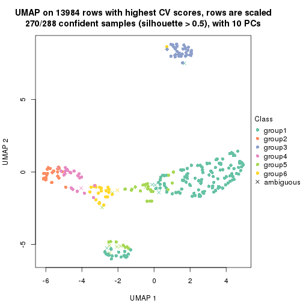
Following heatmap shows how subgroups are split when increasing k:
collect_classes(res)

If matrix rows can be associated to genes, consider to use functional_enrichment(res,
...) to perform function enrichment for the signature genes. See this vignette for more detailed explanations.
The object with results only for a single top-value method and a single partition method can be extracted as:
res = res_list["CV", "skmeans"]
# you can also extract it by
# res = res_list["CV:skmeans"]
A summary of res and all the functions that can be applied to it:
res
#> A 'ConsensusPartition' object with k = 2, 3, 4, 5, 6.
#> On a matrix with 13984 rows and 288 columns.
#> Top rows (1000, 2000, 3000, 4000, 5000) are extracted by 'CV' method.
#> Subgroups are detected by 'skmeans' method.
#> Performed in total 1250 partitions by row resampling.
#> Best k for subgroups seems to be 6.
#>
#> Following methods can be applied to this 'ConsensusPartition' object:
#> [1] "cola_report" "collect_classes" "collect_plots"
#> [4] "collect_stats" "colnames" "compare_signatures"
#> [7] "consensus_heatmap" "dimension_reduction" "functional_enrichment"
#> [10] "get_anno_col" "get_anno" "get_classes"
#> [13] "get_consensus" "get_matrix" "get_membership"
#> [16] "get_param" "get_signatures" "get_stats"
#> [19] "is_best_k" "is_stable_k" "membership_heatmap"
#> [22] "ncol" "nrow" "plot_ecdf"
#> [25] "rownames" "select_partition_number" "show"
#> [28] "suggest_best_k" "test_to_known_factors"
collect_plots() function collects all the plots made from res for all k (number of partitions)
into one single page to provide an easy and fast comparison between different k.
collect_plots(res)
The plots are:
k and the heatmap of
predicted classes for each k.k.k.k.All the plots in panels can be made by individual functions and they are plotted later in this section.
select_partition_number() produces several plots showing different
statistics for choosing “optimized” k. There are following statistics:
k;k, the area increased is defined as \(A_k - A_{k-1}\).The detailed explanations of these statistics can be found in the cola vignette.
Generally speaking, lower PAC score, higher mean silhouette score or higher
concordance corresponds to better partition. Rand index and Jaccard index
measure how similar the current partition is compared to partition with k-1.
If they are too similar, we won't accept k is better than k-1.
select_partition_number(res)
The numeric values for all these statistics can be obtained by get_stats().
get_stats(res)
#> k 1-PAC mean_silhouette concordance area_increased Rand Jaccard
#> 2 2 1.000 0.987 0.995 0.4204 0.577 0.577
#> 3 3 0.833 0.946 0.968 0.1818 0.928 0.875
#> 4 4 1.000 0.964 0.987 0.2431 0.863 0.735
#> 5 5 0.959 0.914 0.961 0.0338 0.988 0.969
#> 6 6 0.926 0.894 0.955 0.0290 0.981 0.948
suggest_best_k() suggests the best \(k\) based on these statistics. The rules are as follows:
suggest_best_k(res)
#> [1] 6
#> attr(,"optional")
#> [1] 2 4
There is also optional best \(k\) = 2 4 that is worth to check.
Following shows the table of the partitions (You need to click the show/hide
code output link to see it). The membership matrix (columns with name p*)
is inferred by
clue::cl_consensus()
function with the SE method. Basically the value in the membership matrix
represents the probability to belong to a certain group. The finall class
label for an item is determined with the group with highest probability it
belongs to.
In get_classes() function, the entropy is calculated from the membership
matrix and the silhouette score is calculated from the consensus matrix.
cbind(get_classes(res, k = 2), get_membership(res, k = 2))
#> class entropy silhouette p1 p2
#> SRR1982614 2 0.4161 0.902 0.084 0.916
#> SRR1982613 2 0.0000 0.984 0.000 1.000
#> SRR1982612 1 0.0000 0.999 1.000 0.000
#> SRR1982611 1 0.0000 0.999 1.000 0.000
#> SRR1982610 1 0.0000 0.999 1.000 0.000
#> SRR1982609 1 0.0000 0.999 1.000 0.000
#> SRR1982659 1 0.0000 0.999 1.000 0.000
#> SRR1982692 2 0.0000 0.984 0.000 1.000
#> SRR1982722 1 0.0000 0.999 1.000 0.000
#> SRR1982750 2 0.0000 0.984 0.000 1.000
#> SRR2095031 2 0.0000 0.984 0.000 1.000
#> SRR1982780 1 0.0000 0.999 1.000 0.000
#> SRR1982807 1 0.0000 0.999 1.000 0.000
#> SRR1982830 1 0.0000 0.999 1.000 0.000
#> SRR1982829 2 0.7602 0.722 0.220 0.780
#> SRR1982828 1 0.0000 0.999 1.000 0.000
#> SRR1982827 1 0.0000 0.999 1.000 0.000
#> SRR1982826 1 0.0000 0.999 1.000 0.000
#> SRR1982825 1 0.0000 0.999 1.000 0.000
#> SRR1982824 1 0.0000 0.999 1.000 0.000
#> SRR1982823 1 0.0000 0.999 1.000 0.000
#> SRR1982822 1 0.0000 0.999 1.000 0.000
#> SRR1982821 1 0.0000 0.999 1.000 0.000
#> SRR1982820 1 0.0000 0.999 1.000 0.000
#> SRR1982819 1 0.0000 0.999 1.000 0.000
#> SRR1982818 1 0.0000 0.999 1.000 0.000
#> SRR1982817 1 0.0000 0.999 1.000 0.000
#> SRR1982816 1 0.0000 0.999 1.000 0.000
#> SRR1982815 1 0.0000 0.999 1.000 0.000
#> SRR1982814 1 0.0000 0.999 1.000 0.000
#> SRR1982813 1 0.0000 0.999 1.000 0.000
#> SRR1982812 2 0.0000 0.984 0.000 1.000
#> SRR1982811 1 0.0000 0.999 1.000 0.000
#> SRR1982810 1 0.0000 0.999 1.000 0.000
#> SRR1982809 2 0.0000 0.984 0.000 1.000
#> SRR1982808 1 0.0000 0.999 1.000 0.000
#> SRR1982806 1 0.0000 0.999 1.000 0.000
#> SRR1982805 1 0.0000 0.999 1.000 0.000
#> SRR1982804 1 0.0000 0.999 1.000 0.000
#> SRR1982803 1 0.0000 0.999 1.000 0.000
#> SRR1982802 1 0.0000 0.999 1.000 0.000
#> SRR1982801 1 0.0000 0.999 1.000 0.000
#> SRR1982800 1 0.0000 0.999 1.000 0.000
#> SRR1982799 1 0.0000 0.999 1.000 0.000
#> SRR1982798 1 0.0000 0.999 1.000 0.000
#> SRR1982797 1 0.0000 0.999 1.000 0.000
#> SRR1982796 1 0.0000 0.999 1.000 0.000
#> SRR1982795 1 0.0000 0.999 1.000 0.000
#> SRR1982794 1 0.0000 0.999 1.000 0.000
#> SRR1982793 1 0.0000 0.999 1.000 0.000
#> SRR1982792 1 0.0000 0.999 1.000 0.000
#> SRR1982791 1 0.0000 0.999 1.000 0.000
#> SRR1982790 2 0.0000 0.984 0.000 1.000
#> SRR1982789 1 0.0000 0.999 1.000 0.000
#> SRR1982788 1 0.0000 0.999 1.000 0.000
#> SRR1982787 1 0.0000 0.999 1.000 0.000
#> SRR1982786 2 0.6438 0.804 0.164 0.836
#> SRR1982785 1 0.0000 0.999 1.000 0.000
#> SRR1982784 1 0.0000 0.999 1.000 0.000
#> SRR1982783 1 0.0000 0.999 1.000 0.000
#> SRR1982782 1 0.0000 0.999 1.000 0.000
#> SRR1982781 1 0.0000 0.999 1.000 0.000
#> SRR1982779 1 0.0000 0.999 1.000 0.000
#> SRR1982778 1 0.0000 0.999 1.000 0.000
#> SRR1982776 2 0.0000 0.984 0.000 1.000
#> SRR1982777 2 0.0000 0.984 0.000 1.000
#> SRR1982775 1 0.0000 0.999 1.000 0.000
#> SRR1982774 1 0.0000 0.999 1.000 0.000
#> SRR1982772 1 0.0000 0.999 1.000 0.000
#> SRR1982773 1 0.0000 0.999 1.000 0.000
#> SRR1982770 1 0.0000 0.999 1.000 0.000
#> SRR1982771 1 0.0000 0.999 1.000 0.000
#> SRR1982769 2 0.0000 0.984 0.000 1.000
#> SRR1982768 1 0.0000 0.999 1.000 0.000
#> SRR1982767 1 0.0000 0.999 1.000 0.000
#> SRR1982766 1 0.0000 0.999 1.000 0.000
#> SRR1982765 1 0.0000 0.999 1.000 0.000
#> SRR1982764 1 0.6048 0.823 0.852 0.148
#> SRR1982762 1 0.0000 0.999 1.000 0.000
#> SRR1982760 1 0.0000 0.999 1.000 0.000
#> SRR1982761 1 0.0000 0.999 1.000 0.000
#> SRR1982763 2 0.0000 0.984 0.000 1.000
#> SRR1982759 1 0.0000 0.999 1.000 0.000
#> SRR1982758 2 0.3584 0.919 0.068 0.932
#> SRR1982757 1 0.0000 0.999 1.000 0.000
#> SRR1982755 1 0.0000 0.999 1.000 0.000
#> SRR1982754 1 0.0000 0.999 1.000 0.000
#> SRR1982756 1 0.0000 0.999 1.000 0.000
#> SRR1982753 1 0.0000 0.999 1.000 0.000
#> SRR1982751 2 0.0000 0.984 0.000 1.000
#> SRR1982752 2 0.0000 0.984 0.000 1.000
#> SRR1982749 2 0.0000 0.984 0.000 1.000
#> SRR1982748 2 0.0000 0.984 0.000 1.000
#> SRR1982747 2 0.0000 0.984 0.000 1.000
#> SRR1982746 2 0.0000 0.984 0.000 1.000
#> SRR1982745 2 0.0000 0.984 0.000 1.000
#> SRR1982743 2 0.0000 0.984 0.000 1.000
#> SRR1982744 2 0.0000 0.984 0.000 1.000
#> SRR1982741 2 0.0000 0.984 0.000 1.000
#> SRR1982742 2 0.0000 0.984 0.000 1.000
#> SRR2095014 2 0.0000 0.984 0.000 1.000
#> SRR1982740 2 0.0000 0.984 0.000 1.000
#> SRR1982739 2 0.0000 0.984 0.000 1.000
#> SRR1982737 2 0.0000 0.984 0.000 1.000
#> SRR1982738 2 0.0000 0.984 0.000 1.000
#> SRR1982736 2 0.0000 0.984 0.000 1.000
#> SRR1982735 2 0.0000 0.984 0.000 1.000
#> SRR1982733 2 0.0000 0.984 0.000 1.000
#> SRR1982732 2 0.0000 0.984 0.000 1.000
#> SRR2095004 2 0.0000 0.984 0.000 1.000
#> SRR1982734 2 0.0000 0.984 0.000 1.000
#> SRR1982731 2 0.0000 0.984 0.000 1.000
#> SRR1982729 2 0.0000 0.984 0.000 1.000
#> SRR1982730 2 0.0000 0.984 0.000 1.000
#> SRR1982728 2 0.0000 0.984 0.000 1.000
#> SRR1982727 1 0.0000 0.999 1.000 0.000
#> SRR1982726 1 0.0000 0.999 1.000 0.000
#> SRR1982723 1 0.0000 0.999 1.000 0.000
#> SRR1982725 1 0.0000 0.999 1.000 0.000
#> SRR1982724 1 0.0000 0.999 1.000 0.000
#> SRR1982721 1 0.0000 0.999 1.000 0.000
#> SRR1982720 1 0.0000 0.999 1.000 0.000
#> SRR1982719 1 0.0000 0.999 1.000 0.000
#> SRR1982718 2 0.0000 0.984 0.000 1.000
#> SRR1982717 2 0.0000 0.984 0.000 1.000
#> SRR1982715 2 0.0000 0.984 0.000 1.000
#> SRR1982714 2 0.0000 0.984 0.000 1.000
#> SRR1982716 2 0.0000 0.984 0.000 1.000
#> SRR1982713 2 0.0000 0.984 0.000 1.000
#> SRR1982711 2 0.0000 0.984 0.000 1.000
#> SRR1982712 2 0.0000 0.984 0.000 1.000
#> SRR1982710 2 0.0000 0.984 0.000 1.000
#> SRR1982708 2 0.0000 0.984 0.000 1.000
#> SRR1982707 2 0.0000 0.984 0.000 1.000
#> SRR1982709 1 0.0000 0.999 1.000 0.000
#> SRR1982705 2 0.0000 0.984 0.000 1.000
#> SRR1982706 1 0.0000 0.999 1.000 0.000
#> SRR1982704 1 0.0000 0.999 1.000 0.000
#> SRR1982702 2 0.0000 0.984 0.000 1.000
#> SRR1982703 2 0.0000 0.984 0.000 1.000
#> SRR1982701 2 0.0000 0.984 0.000 1.000
#> SRR1982700 2 0.0000 0.984 0.000 1.000
#> SRR1982697 2 0.0000 0.984 0.000 1.000
#> SRR1982698 2 0.0000 0.984 0.000 1.000
#> SRR1982699 2 0.0000 0.984 0.000 1.000
#> SRR1982696 2 0.0000 0.984 0.000 1.000
#> SRR1982695 1 0.0000 0.999 1.000 0.000
#> SRR1982694 1 0.0000 0.999 1.000 0.000
#> SRR1982693 2 0.0000 0.984 0.000 1.000
#> SRR1982690 2 0.0000 0.984 0.000 1.000
#> SRR1982691 2 0.0000 0.984 0.000 1.000
#> SRR1982689 2 0.0000 0.984 0.000 1.000
#> SRR1982688 1 0.0000 0.999 1.000 0.000
#> SRR1982687 2 0.0000 0.984 0.000 1.000
#> SRR1982686 2 0.0000 0.984 0.000 1.000
#> SRR1982685 2 0.0000 0.984 0.000 1.000
#> SRR1982684 2 0.0000 0.984 0.000 1.000
#> SRR1982683 1 0.0000 0.999 1.000 0.000
#> SRR1982681 2 0.0000 0.984 0.000 1.000
#> SRR1982682 2 0.0000 0.984 0.000 1.000
#> SRR1982680 2 0.0000 0.984 0.000 1.000
#> SRR1982679 2 0.0000 0.984 0.000 1.000
#> SRR1982678 2 0.0000 0.984 0.000 1.000
#> SRR1982677 2 0.0000 0.984 0.000 1.000
#> SRR1982676 1 0.0000 0.999 1.000 0.000
#> SRR1982675 1 0.0000 0.999 1.000 0.000
#> SRR1982674 1 0.0376 0.995 0.996 0.004
#> SRR1982671 1 0.0000 0.999 1.000 0.000
#> SRR1982673 1 0.0000 0.999 1.000 0.000
#> SRR1982672 1 0.0000 0.999 1.000 0.000
#> SRR1982670 1 0.0000 0.999 1.000 0.000
#> SRR1982669 1 0.0000 0.999 1.000 0.000
#> SRR1982667 1 0.0000 0.999 1.000 0.000
#> SRR1982668 1 0.1414 0.979 0.980 0.020
#> SRR1982666 1 0.0000 0.999 1.000 0.000
#> SRR1982665 2 0.0000 0.984 0.000 1.000
#> SRR1982664 1 0.0000 0.999 1.000 0.000
#> SRR1982663 1 0.0000 0.999 1.000 0.000
#> SRR1982662 1 0.0000 0.999 1.000 0.000
#> SRR1982661 1 0.0000 0.999 1.000 0.000
#> SRR1982660 1 0.0000 0.999 1.000 0.000
#> SRR1982658 1 0.0000 0.999 1.000 0.000
#> SRR1982657 1 0.0000 0.999 1.000 0.000
#> SRR1982656 2 0.0000 0.984 0.000 1.000
#> SRR1982654 1 0.0000 0.999 1.000 0.000
#> SRR1982655 1 0.0000 0.999 1.000 0.000
#> SRR1982653 1 0.0000 0.999 1.000 0.000
#> SRR1982652 1 0.0000 0.999 1.000 0.000
#> SRR1982651 1 0.0000 0.999 1.000 0.000
#> SRR1982649 1 0.0000 0.999 1.000 0.000
#> SRR1982650 1 0.0000 0.999 1.000 0.000
#> SRR1982648 1 0.0000 0.999 1.000 0.000
#> SRR1982647 1 0.0000 0.999 1.000 0.000
#> SRR1982646 1 0.0000 0.999 1.000 0.000
#> SRR1982645 1 0.0000 0.999 1.000 0.000
#> SRR1982644 1 0.0000 0.999 1.000 0.000
#> SRR1982642 1 0.0000 0.999 1.000 0.000
#> SRR1982643 1 0.0000 0.999 1.000 0.000
#> SRR1982641 1 0.0000 0.999 1.000 0.000
#> SRR1982640 1 0.0000 0.999 1.000 0.000
#> SRR1982638 1 0.0000 0.999 1.000 0.000
#> SRR1982639 1 0.0000 0.999 1.000 0.000
#> SRR1982637 1 0.0000 0.999 1.000 0.000
#> SRR1982635 1 0.0000 0.999 1.000 0.000
#> SRR1982636 1 0.0000 0.999 1.000 0.000
#> SRR1982633 1 0.0000 0.999 1.000 0.000
#> SRR1982632 1 0.0000 0.999 1.000 0.000
#> SRR1982631 1 0.0000 0.999 1.000 0.000
#> SRR1982634 1 0.0000 0.999 1.000 0.000
#> SRR1982628 1 0.0000 0.999 1.000 0.000
#> SRR1982629 1 0.0000 0.999 1.000 0.000
#> SRR1982627 1 0.0000 0.999 1.000 0.000
#> SRR1982625 1 0.0000 0.999 1.000 0.000
#> SRR1982626 1 0.0000 0.999 1.000 0.000
#> SRR1982624 1 0.0000 0.999 1.000 0.000
#> SRR1982623 1 0.0000 0.999 1.000 0.000
#> SRR1982622 1 0.0000 0.999 1.000 0.000
#> SRR1982621 1 0.0000 0.999 1.000 0.000
#> SRR1982620 1 0.0000 0.999 1.000 0.000
#> SRR1982619 2 0.0000 0.984 0.000 1.000
#> SRR1982618 1 0.0000 0.999 1.000 0.000
#> SRR1982617 2 0.0000 0.984 0.000 1.000
#> SRR1982616 1 0.0000 0.999 1.000 0.000
#> SRR1982615 1 0.0000 0.999 1.000 0.000
#> SRR1982608 2 0.0000 0.984 0.000 1.000
#> SRR1982607 1 0.0000 0.999 1.000 0.000
#> SRR1982606 1 0.0000 0.999 1.000 0.000
#> SRR1982605 1 0.0000 0.999 1.000 0.000
#> SRR1982604 1 0.0000 0.999 1.000 0.000
#> SRR1982603 1 0.0000 0.999 1.000 0.000
#> SRR1982602 1 0.0000 0.999 1.000 0.000
#> SRR1982601 1 0.0000 0.999 1.000 0.000
#> SRR1982599 1 0.0000 0.999 1.000 0.000
#> SRR1982600 2 0.9732 0.340 0.404 0.596
#> SRR1982598 1 0.0000 0.999 1.000 0.000
#> SRR1982597 1 0.0000 0.999 1.000 0.000
#> SRR1982595 1 0.0000 0.999 1.000 0.000
#> SRR1982596 1 0.0000 0.999 1.000 0.000
#> SRR1982594 1 0.0000 0.999 1.000 0.000
#> SRR1982593 1 0.0000 0.999 1.000 0.000
#> SRR1982592 2 0.0000 0.984 0.000 1.000
#> SRR1982591 1 0.0000 0.999 1.000 0.000
#> SRR1982590 1 0.0000 0.999 1.000 0.000
#> SRR1982589 1 0.0000 0.999 1.000 0.000
#> SRR1982588 1 0.0000 0.999 1.000 0.000
#> SRR1982587 1 0.0000 0.999 1.000 0.000
#> SRR1982586 1 0.0000 0.999 1.000 0.000
#> SRR1982584 1 0.0000 0.999 1.000 0.000
#> SRR2096514 1 0.0000 0.999 1.000 0.000
#> SRR2096513 1 0.0000 0.999 1.000 0.000
#> SRR2096511 1 0.0000 0.999 1.000 0.000
#> SRR2096512 2 0.0000 0.984 0.000 1.000
#> SRR2096509 1 0.0000 0.999 1.000 0.000
#> SRR2096510 1 0.0000 0.999 1.000 0.000
#> SRR2096508 2 0.0000 0.984 0.000 1.000
#> SRR2096507 1 0.0000 0.999 1.000 0.000
#> SRR2096504 1 0.0000 0.999 1.000 0.000
#> SRR2096506 1 0.0000 0.999 1.000 0.000
#> SRR2096505 1 0.0000 0.999 1.000 0.000
#> SRR2096503 2 0.0000 0.984 0.000 1.000
#> SRR2096500 1 0.0000 0.999 1.000 0.000
#> SRR2096501 1 0.0000 0.999 1.000 0.000
#> SRR2096502 1 0.0000 0.999 1.000 0.000
#> SRR2096499 1 0.0000 0.999 1.000 0.000
#> SRR2096498 1 0.0000 0.999 1.000 0.000
#> SRR2096496 1 0.0000 0.999 1.000 0.000
#> SRR2096497 1 0.0000 0.999 1.000 0.000
#> SRR2096495 1 0.0000 0.999 1.000 0.000
#> SRR2096494 1 0.0000 0.999 1.000 0.000
#> SRR2096492 1 0.0000 0.999 1.000 0.000
#> SRR2096491 2 0.0000 0.984 0.000 1.000
#> SRR2096493 1 0.0000 0.999 1.000 0.000
#> SRR2096490 1 0.0000 0.999 1.000 0.000
#> SRR2096488 1 0.0000 0.999 1.000 0.000
#> SRR2096489 1 0.0000 0.999 1.000 0.000
#> SRR2096487 1 0.0000 0.999 1.000 0.000
#> SRR2096484 1 0.0000 0.999 1.000 0.000
#> SRR2096486 1 0.0000 0.999 1.000 0.000
#> SRR2096485 1 0.0000 0.999 1.000 0.000
#> SRR2096483 1 0.0000 0.999 1.000 0.000
#> SRR2096482 1 0.0000 0.999 1.000 0.000
#> SRR2096481 2 0.9775 0.318 0.412 0.588
#> SRR2096520 1 0.0000 0.999 1.000 0.000
#> SRR2096519 1 0.0000 0.999 1.000 0.000
#> SRR2096518 1 0.0000 0.999 1.000 0.000
#> SRR2096516 1 0.0000 0.999 1.000 0.000
#> SRR2096517 1 0.0000 0.999 1.000 0.000
#> SRR2096515 1 0.0000 0.999 1.000 0.000
cbind(get_classes(res, k = 3), get_membership(res, k = 3))
#> class entropy silhouette p1 p2 p3
#> SRR1982614 3 0.376 0.8864 0.040 0.068 0.892
#> SRR1982613 3 0.312 0.9064 0.000 0.108 0.892
#> SRR1982612 1 0.000 0.9772 1.000 0.000 0.000
#> SRR1982611 1 0.000 0.9772 1.000 0.000 0.000
#> SRR1982610 1 0.000 0.9772 1.000 0.000 0.000
#> SRR1982609 1 0.000 0.9772 1.000 0.000 0.000
#> SRR1982659 1 0.000 0.9772 1.000 0.000 0.000
#> SRR1982692 3 0.312 0.9064 0.000 0.108 0.892
#> SRR1982722 1 0.000 0.9772 1.000 0.000 0.000
#> SRR1982750 2 0.000 0.9784 0.000 1.000 0.000
#> SRR2095031 2 0.000 0.9784 0.000 1.000 0.000
#> SRR1982780 1 0.000 0.9772 1.000 0.000 0.000
#> SRR1982807 1 0.000 0.9772 1.000 0.000 0.000
#> SRR1982830 1 0.000 0.9772 1.000 0.000 0.000
#> SRR1982829 3 0.379 0.8813 0.048 0.060 0.892
#> SRR1982828 1 0.000 0.9772 1.000 0.000 0.000
#> SRR1982827 1 0.000 0.9772 1.000 0.000 0.000
#> SRR1982826 1 0.000 0.9772 1.000 0.000 0.000
#> SRR1982825 1 0.000 0.9772 1.000 0.000 0.000
#> SRR1982824 1 0.000 0.9772 1.000 0.000 0.000
#> SRR1982823 1 0.000 0.9772 1.000 0.000 0.000
#> SRR1982822 1 0.000 0.9772 1.000 0.000 0.000
#> SRR1982821 1 0.000 0.9772 1.000 0.000 0.000
#> SRR1982820 1 0.000 0.9772 1.000 0.000 0.000
#> SRR1982819 1 0.000 0.9772 1.000 0.000 0.000
#> SRR1982818 1 0.000 0.9772 1.000 0.000 0.000
#> SRR1982817 1 0.000 0.9772 1.000 0.000 0.000
#> SRR1982816 1 0.000 0.9772 1.000 0.000 0.000
#> SRR1982815 1 0.000 0.9772 1.000 0.000 0.000
#> SRR1982814 1 0.000 0.9772 1.000 0.000 0.000
#> SRR1982813 1 0.000 0.9772 1.000 0.000 0.000
#> SRR1982812 2 0.000 0.9784 0.000 1.000 0.000
#> SRR1982811 1 0.000 0.9772 1.000 0.000 0.000
#> SRR1982810 1 0.000 0.9772 1.000 0.000 0.000
#> SRR1982809 2 0.000 0.9784 0.000 1.000 0.000
#> SRR1982808 1 0.000 0.9772 1.000 0.000 0.000
#> SRR1982806 1 0.000 0.9772 1.000 0.000 0.000
#> SRR1982805 1 0.000 0.9772 1.000 0.000 0.000
#> SRR1982804 1 0.000 0.9772 1.000 0.000 0.000
#> SRR1982803 1 0.000 0.9772 1.000 0.000 0.000
#> SRR1982802 1 0.000 0.9772 1.000 0.000 0.000
#> SRR1982801 1 0.000 0.9772 1.000 0.000 0.000
#> SRR1982800 1 0.000 0.9772 1.000 0.000 0.000
#> SRR1982799 1 0.000 0.9772 1.000 0.000 0.000
#> SRR1982798 1 0.000 0.9772 1.000 0.000 0.000
#> SRR1982797 3 0.593 0.5140 0.356 0.000 0.644
#> SRR1982796 1 0.000 0.9772 1.000 0.000 0.000
#> SRR1982795 1 0.000 0.9772 1.000 0.000 0.000
#> SRR1982794 1 0.000 0.9772 1.000 0.000 0.000
#> SRR1982793 1 0.000 0.9772 1.000 0.000 0.000
#> SRR1982792 1 0.000 0.9772 1.000 0.000 0.000
#> SRR1982791 1 0.000 0.9772 1.000 0.000 0.000
#> SRR1982790 3 0.312 0.9064 0.000 0.108 0.892
#> SRR1982789 1 0.000 0.9772 1.000 0.000 0.000
#> SRR1982788 1 0.000 0.9772 1.000 0.000 0.000
#> SRR1982787 1 0.000 0.9772 1.000 0.000 0.000
#> SRR1982786 3 0.304 0.9047 0.000 0.104 0.896
#> SRR1982785 1 0.000 0.9772 1.000 0.000 0.000
#> SRR1982784 1 0.000 0.9772 1.000 0.000 0.000
#> SRR1982783 1 0.000 0.9772 1.000 0.000 0.000
#> SRR1982782 1 0.000 0.9772 1.000 0.000 0.000
#> SRR1982781 1 0.000 0.9772 1.000 0.000 0.000
#> SRR1982779 1 0.000 0.9772 1.000 0.000 0.000
#> SRR1982778 1 0.000 0.9772 1.000 0.000 0.000
#> SRR1982776 2 0.000 0.9784 0.000 1.000 0.000
#> SRR1982777 2 0.000 0.9784 0.000 1.000 0.000
#> SRR1982775 1 0.000 0.9772 1.000 0.000 0.000
#> SRR1982774 1 0.000 0.9772 1.000 0.000 0.000
#> SRR1982772 1 0.000 0.9772 1.000 0.000 0.000
#> SRR1982773 1 0.000 0.9772 1.000 0.000 0.000
#> SRR1982770 1 0.000 0.9772 1.000 0.000 0.000
#> SRR1982771 1 0.000 0.9772 1.000 0.000 0.000
#> SRR1982769 2 0.629 0.0346 0.000 0.536 0.464
#> SRR1982768 1 0.000 0.9772 1.000 0.000 0.000
#> SRR1982767 1 0.000 0.9772 1.000 0.000 0.000
#> SRR1982766 3 0.312 0.8315 0.108 0.000 0.892
#> SRR1982765 1 0.000 0.9772 1.000 0.000 0.000
#> SRR1982764 1 0.562 0.5398 0.692 0.308 0.000
#> SRR1982762 1 0.000 0.9772 1.000 0.000 0.000
#> SRR1982760 1 0.000 0.9772 1.000 0.000 0.000
#> SRR1982761 1 0.000 0.9772 1.000 0.000 0.000
#> SRR1982763 2 0.000 0.9784 0.000 1.000 0.000
#> SRR1982759 1 0.000 0.9772 1.000 0.000 0.000
#> SRR1982758 2 0.153 0.9094 0.040 0.960 0.000
#> SRR1982757 1 0.000 0.9772 1.000 0.000 0.000
#> SRR1982755 1 0.000 0.9772 1.000 0.000 0.000
#> SRR1982754 1 0.000 0.9772 1.000 0.000 0.000
#> SRR1982756 1 0.000 0.9772 1.000 0.000 0.000
#> SRR1982753 1 0.000 0.9772 1.000 0.000 0.000
#> SRR1982751 2 0.000 0.9784 0.000 1.000 0.000
#> SRR1982752 2 0.000 0.9784 0.000 1.000 0.000
#> SRR1982749 2 0.000 0.9784 0.000 1.000 0.000
#> SRR1982748 2 0.000 0.9784 0.000 1.000 0.000
#> SRR1982747 2 0.000 0.9784 0.000 1.000 0.000
#> SRR1982746 2 0.000 0.9784 0.000 1.000 0.000
#> SRR1982745 2 0.000 0.9784 0.000 1.000 0.000
#> SRR1982743 2 0.000 0.9784 0.000 1.000 0.000
#> SRR1982744 2 0.000 0.9784 0.000 1.000 0.000
#> SRR1982741 2 0.000 0.9784 0.000 1.000 0.000
#> SRR1982742 2 0.000 0.9784 0.000 1.000 0.000
#> SRR2095014 2 0.000 0.9784 0.000 1.000 0.000
#> SRR1982740 2 0.000 0.9784 0.000 1.000 0.000
#> SRR1982739 2 0.000 0.9784 0.000 1.000 0.000
#> SRR1982737 2 0.000 0.9784 0.000 1.000 0.000
#> SRR1982738 2 0.000 0.9784 0.000 1.000 0.000
#> SRR1982736 2 0.000 0.9784 0.000 1.000 0.000
#> SRR1982735 2 0.000 0.9784 0.000 1.000 0.000
#> SRR1982733 2 0.000 0.9784 0.000 1.000 0.000
#> SRR1982732 2 0.000 0.9784 0.000 1.000 0.000
#> SRR2095004 2 0.000 0.9784 0.000 1.000 0.000
#> SRR1982734 2 0.000 0.9784 0.000 1.000 0.000
#> SRR1982731 2 0.000 0.9784 0.000 1.000 0.000
#> SRR1982729 2 0.000 0.9784 0.000 1.000 0.000
#> SRR1982730 2 0.000 0.9784 0.000 1.000 0.000
#> SRR1982728 2 0.000 0.9784 0.000 1.000 0.000
#> SRR1982727 3 0.207 0.8540 0.060 0.000 0.940
#> SRR1982726 1 0.000 0.9772 1.000 0.000 0.000
#> SRR1982723 1 0.000 0.9772 1.000 0.000 0.000
#> SRR1982725 1 0.000 0.9772 1.000 0.000 0.000
#> SRR1982724 1 0.000 0.9772 1.000 0.000 0.000
#> SRR1982721 1 0.000 0.9772 1.000 0.000 0.000
#> SRR1982720 1 0.000 0.9772 1.000 0.000 0.000
#> SRR1982719 1 0.000 0.9772 1.000 0.000 0.000
#> SRR1982718 3 0.312 0.9064 0.000 0.108 0.892
#> SRR1982717 2 0.565 0.5090 0.000 0.688 0.312
#> SRR1982715 3 0.312 0.9064 0.000 0.108 0.892
#> SRR1982714 2 0.000 0.9784 0.000 1.000 0.000
#> SRR1982716 3 0.312 0.9064 0.000 0.108 0.892
#> SRR1982713 2 0.000 0.9784 0.000 1.000 0.000
#> SRR1982711 2 0.000 0.9784 0.000 1.000 0.000
#> SRR1982712 2 0.000 0.9784 0.000 1.000 0.000
#> SRR1982710 3 0.312 0.9064 0.000 0.108 0.892
#> SRR1982708 3 0.312 0.9064 0.000 0.108 0.892
#> SRR1982707 3 0.312 0.9064 0.000 0.108 0.892
#> SRR1982709 1 0.000 0.9772 1.000 0.000 0.000
#> SRR1982705 2 0.000 0.9784 0.000 1.000 0.000
#> SRR1982706 1 0.000 0.9772 1.000 0.000 0.000
#> SRR1982704 1 0.000 0.9772 1.000 0.000 0.000
#> SRR1982702 2 0.000 0.9784 0.000 1.000 0.000
#> SRR1982703 2 0.000 0.9784 0.000 1.000 0.000
#> SRR1982701 2 0.000 0.9784 0.000 1.000 0.000
#> SRR1982700 2 0.000 0.9784 0.000 1.000 0.000
#> SRR1982697 2 0.000 0.9784 0.000 1.000 0.000
#> SRR1982698 2 0.000 0.9784 0.000 1.000 0.000
#> SRR1982699 2 0.000 0.9784 0.000 1.000 0.000
#> SRR1982696 2 0.000 0.9784 0.000 1.000 0.000
#> SRR1982695 1 0.000 0.9772 1.000 0.000 0.000
#> SRR1982694 1 0.000 0.9772 1.000 0.000 0.000
#> SRR1982693 2 0.000 0.9784 0.000 1.000 0.000
#> SRR1982690 3 0.327 0.8998 0.000 0.116 0.884
#> SRR1982691 2 0.000 0.9784 0.000 1.000 0.000
#> SRR1982689 2 0.573 0.4793 0.000 0.676 0.324
#> SRR1982688 1 0.000 0.9772 1.000 0.000 0.000
#> SRR1982687 3 0.319 0.9034 0.000 0.112 0.888
#> SRR1982686 2 0.000 0.9784 0.000 1.000 0.000
#> SRR1982685 3 0.312 0.9064 0.000 0.108 0.892
#> SRR1982684 3 0.319 0.9034 0.000 0.112 0.888
#> SRR1982683 1 0.000 0.9772 1.000 0.000 0.000
#> SRR1982681 2 0.000 0.9784 0.000 1.000 0.000
#> SRR1982682 2 0.254 0.8926 0.000 0.920 0.080
#> SRR1982680 2 0.000 0.9784 0.000 1.000 0.000
#> SRR1982679 2 0.000 0.9784 0.000 1.000 0.000
#> SRR1982678 2 0.000 0.9784 0.000 1.000 0.000
#> SRR1982677 3 0.312 0.9064 0.000 0.108 0.892
#> SRR1982676 1 0.000 0.9772 1.000 0.000 0.000
#> SRR1982675 1 0.000 0.9772 1.000 0.000 0.000
#> SRR1982674 3 0.280 0.8425 0.092 0.000 0.908
#> SRR1982671 1 0.271 0.8885 0.912 0.088 0.000
#> SRR1982673 1 0.000 0.9772 1.000 0.000 0.000
#> SRR1982672 1 0.000 0.9772 1.000 0.000 0.000
#> SRR1982670 1 0.000 0.9772 1.000 0.000 0.000
#> SRR1982669 1 0.000 0.9772 1.000 0.000 0.000
#> SRR1982667 1 0.000 0.9772 1.000 0.000 0.000
#> SRR1982668 3 0.312 0.8315 0.108 0.000 0.892
#> SRR1982666 1 0.000 0.9772 1.000 0.000 0.000
#> SRR1982665 2 0.000 0.9784 0.000 1.000 0.000
#> SRR1982664 1 0.000 0.9772 1.000 0.000 0.000
#> SRR1982663 1 0.000 0.9772 1.000 0.000 0.000
#> SRR1982662 1 0.000 0.9772 1.000 0.000 0.000
#> SRR1982661 1 0.000 0.9772 1.000 0.000 0.000
#> SRR1982660 1 0.000 0.9772 1.000 0.000 0.000
#> SRR1982658 1 0.000 0.9772 1.000 0.000 0.000
#> SRR1982657 1 0.000 0.9772 1.000 0.000 0.000
#> SRR1982656 3 0.312 0.9064 0.000 0.108 0.892
#> SRR1982654 1 0.000 0.9772 1.000 0.000 0.000
#> SRR1982655 1 0.000 0.9772 1.000 0.000 0.000
#> SRR1982653 1 0.000 0.9772 1.000 0.000 0.000
#> SRR1982652 1 0.000 0.9772 1.000 0.000 0.000
#> SRR1982651 1 0.000 0.9772 1.000 0.000 0.000
#> SRR1982649 1 0.000 0.9772 1.000 0.000 0.000
#> SRR1982650 1 0.000 0.9772 1.000 0.000 0.000
#> SRR1982648 1 0.000 0.9772 1.000 0.000 0.000
#> SRR1982647 1 0.000 0.9772 1.000 0.000 0.000
#> SRR1982646 1 0.000 0.9772 1.000 0.000 0.000
#> SRR1982645 1 0.000 0.9772 1.000 0.000 0.000
#> SRR1982644 1 0.000 0.9772 1.000 0.000 0.000
#> SRR1982642 1 0.000 0.9772 1.000 0.000 0.000
#> SRR1982643 1 0.000 0.9772 1.000 0.000 0.000
#> SRR1982641 1 0.000 0.9772 1.000 0.000 0.000
#> SRR1982640 1 0.000 0.9772 1.000 0.000 0.000
#> SRR1982638 1 0.000 0.9772 1.000 0.000 0.000
#> SRR1982639 1 0.000 0.9772 1.000 0.000 0.000
#> SRR1982637 1 0.000 0.9772 1.000 0.000 0.000
#> SRR1982635 1 0.000 0.9772 1.000 0.000 0.000
#> SRR1982636 1 0.000 0.9772 1.000 0.000 0.000
#> SRR1982633 1 0.000 0.9772 1.000 0.000 0.000
#> SRR1982632 1 0.000 0.9772 1.000 0.000 0.000
#> SRR1982631 1 0.000 0.9772 1.000 0.000 0.000
#> SRR1982634 1 0.000 0.9772 1.000 0.000 0.000
#> SRR1982628 1 0.000 0.9772 1.000 0.000 0.000
#> SRR1982629 1 0.000 0.9772 1.000 0.000 0.000
#> SRR1982627 1 0.000 0.9772 1.000 0.000 0.000
#> SRR1982625 1 0.000 0.9772 1.000 0.000 0.000
#> SRR1982626 1 0.000 0.9772 1.000 0.000 0.000
#> SRR1982624 1 0.000 0.9772 1.000 0.000 0.000
#> SRR1982623 1 0.000 0.9772 1.000 0.000 0.000
#> SRR1982622 1 0.000 0.9772 1.000 0.000 0.000
#> SRR1982621 1 0.000 0.9772 1.000 0.000 0.000
#> SRR1982620 1 0.000 0.9772 1.000 0.000 0.000
#> SRR1982619 2 0.000 0.9784 0.000 1.000 0.000
#> SRR1982618 1 0.000 0.9772 1.000 0.000 0.000
#> SRR1982617 2 0.000 0.9784 0.000 1.000 0.000
#> SRR1982616 1 0.000 0.9772 1.000 0.000 0.000
#> SRR1982615 1 0.000 0.9772 1.000 0.000 0.000
#> SRR1982608 3 0.312 0.9064 0.000 0.108 0.892
#> SRR1982607 1 0.000 0.9772 1.000 0.000 0.000
#> SRR1982606 1 0.000 0.9772 1.000 0.000 0.000
#> SRR1982605 1 0.000 0.9772 1.000 0.000 0.000
#> SRR1982604 1 0.000 0.9772 1.000 0.000 0.000
#> SRR1982603 1 0.000 0.9772 1.000 0.000 0.000
#> SRR1982602 1 0.000 0.9772 1.000 0.000 0.000
#> SRR1982601 1 0.000 0.9772 1.000 0.000 0.000
#> SRR1982599 1 0.000 0.9772 1.000 0.000 0.000
#> SRR1982600 3 0.459 0.8454 0.096 0.048 0.856
#> SRR1982598 1 0.000 0.9772 1.000 0.000 0.000
#> SRR1982597 1 0.000 0.9772 1.000 0.000 0.000
#> SRR1982595 1 0.000 0.9772 1.000 0.000 0.000
#> SRR1982596 1 0.000 0.9772 1.000 0.000 0.000
#> SRR1982594 1 0.000 0.9772 1.000 0.000 0.000
#> SRR1982593 1 0.000 0.9772 1.000 0.000 0.000
#> SRR1982592 2 0.000 0.9784 0.000 1.000 0.000
#> SRR1982591 1 0.000 0.9772 1.000 0.000 0.000
#> SRR1982590 3 0.470 0.7140 0.212 0.000 0.788
#> SRR1982589 1 0.000 0.9772 1.000 0.000 0.000
#> SRR1982588 1 0.000 0.9772 1.000 0.000 0.000
#> SRR1982587 1 0.000 0.9772 1.000 0.000 0.000
#> SRR1982586 1 0.000 0.9772 1.000 0.000 0.000
#> SRR1982584 3 0.465 0.7191 0.208 0.000 0.792
#> SRR2096514 1 0.312 0.9009 0.892 0.000 0.108
#> SRR2096513 1 0.312 0.9009 0.892 0.000 0.108
#> SRR2096511 1 0.312 0.9009 0.892 0.000 0.108
#> SRR2096512 2 0.000 0.9784 0.000 1.000 0.000
#> SRR2096509 1 0.312 0.9009 0.892 0.000 0.108
#> SRR2096510 1 0.312 0.9009 0.892 0.000 0.108
#> SRR2096508 2 0.000 0.9784 0.000 1.000 0.000
#> SRR2096507 1 0.312 0.9009 0.892 0.000 0.108
#> SRR2096504 1 0.312 0.9009 0.892 0.000 0.108
#> SRR2096506 1 0.312 0.9009 0.892 0.000 0.108
#> SRR2096505 1 0.312 0.9009 0.892 0.000 0.108
#> SRR2096503 3 0.312 0.9064 0.000 0.108 0.892
#> SRR2096500 1 0.312 0.9009 0.892 0.000 0.108
#> SRR2096501 1 0.593 0.5156 0.644 0.000 0.356
#> SRR2096502 1 0.312 0.9009 0.892 0.000 0.108
#> SRR2096499 1 0.312 0.9009 0.892 0.000 0.108
#> SRR2096498 1 0.207 0.9361 0.940 0.000 0.060
#> SRR2096496 1 0.312 0.9009 0.892 0.000 0.108
#> SRR2096497 1 0.312 0.9009 0.892 0.000 0.108
#> SRR2096495 1 0.312 0.9009 0.892 0.000 0.108
#> SRR2096494 1 0.312 0.9009 0.892 0.000 0.108
#> SRR2096492 1 0.312 0.9009 0.892 0.000 0.108
#> SRR2096491 3 0.312 0.9064 0.000 0.108 0.892
#> SRR2096493 1 0.312 0.9009 0.892 0.000 0.108
#> SRR2096490 1 0.312 0.9009 0.892 0.000 0.108
#> SRR2096488 1 0.312 0.9009 0.892 0.000 0.108
#> SRR2096489 1 0.312 0.9009 0.892 0.000 0.108
#> SRR2096487 1 0.312 0.9009 0.892 0.000 0.108
#> SRR2096484 1 0.312 0.9009 0.892 0.000 0.108
#> SRR2096486 1 0.312 0.9009 0.892 0.000 0.108
#> SRR2096485 1 0.312 0.9009 0.892 0.000 0.108
#> SRR2096483 1 0.312 0.9009 0.892 0.000 0.108
#> SRR2096482 1 0.312 0.9009 0.892 0.000 0.108
#> SRR2096481 3 0.280 0.7796 0.092 0.000 0.908
#> SRR2096520 1 0.304 0.9040 0.896 0.000 0.104
#> SRR2096519 1 0.312 0.9009 0.892 0.000 0.108
#> SRR2096518 1 0.312 0.9009 0.892 0.000 0.108
#> SRR2096516 1 0.207 0.9361 0.940 0.000 0.060
#> SRR2096517 1 0.312 0.9009 0.892 0.000 0.108
#> SRR2096515 1 0.312 0.9009 0.892 0.000 0.108
cbind(get_classes(res, k = 4), get_membership(res, k = 4))
#> class entropy silhouette p1 p2 p3 p4
#> SRR1982614 4 0.0188 0.8891 0.000 0.000 0.004 0.996
#> SRR1982613 4 0.0188 0.8891 0.000 0.000 0.004 0.996
#> SRR1982612 1 0.0000 0.9923 1.000 0.000 0.000 0.000
#> SRR1982611 1 0.0000 0.9923 1.000 0.000 0.000 0.000
#> SRR1982610 1 0.0000 0.9923 1.000 0.000 0.000 0.000
#> SRR1982609 1 0.0000 0.9923 1.000 0.000 0.000 0.000
#> SRR1982659 1 0.0000 0.9923 1.000 0.000 0.000 0.000
#> SRR1982692 4 0.0000 0.8905 0.000 0.000 0.000 1.000
#> SRR1982722 1 0.0000 0.9923 1.000 0.000 0.000 0.000
#> SRR1982750 2 0.0000 0.9966 0.000 1.000 0.000 0.000
#> SRR2095031 2 0.0000 0.9966 0.000 1.000 0.000 0.000
#> SRR1982780 1 0.0000 0.9923 1.000 0.000 0.000 0.000
#> SRR1982807 1 0.0000 0.9923 1.000 0.000 0.000 0.000
#> SRR1982830 1 0.0000 0.9923 1.000 0.000 0.000 0.000
#> SRR1982829 4 0.0188 0.8891 0.000 0.000 0.004 0.996
#> SRR1982828 1 0.0000 0.9923 1.000 0.000 0.000 0.000
#> SRR1982827 1 0.0000 0.9923 1.000 0.000 0.000 0.000
#> SRR1982826 1 0.0000 0.9923 1.000 0.000 0.000 0.000
#> SRR1982825 1 0.0000 0.9923 1.000 0.000 0.000 0.000
#> SRR1982824 1 0.0000 0.9923 1.000 0.000 0.000 0.000
#> SRR1982823 1 0.0000 0.9923 1.000 0.000 0.000 0.000
#> SRR1982822 1 0.0000 0.9923 1.000 0.000 0.000 0.000
#> SRR1982821 1 0.0000 0.9923 1.000 0.000 0.000 0.000
#> SRR1982820 1 0.0000 0.9923 1.000 0.000 0.000 0.000
#> SRR1982819 1 0.0000 0.9923 1.000 0.000 0.000 0.000
#> SRR1982818 1 0.0000 0.9923 1.000 0.000 0.000 0.000
#> SRR1982817 1 0.0000 0.9923 1.000 0.000 0.000 0.000
#> SRR1982816 1 0.0000 0.9923 1.000 0.000 0.000 0.000
#> SRR1982815 1 0.0000 0.9923 1.000 0.000 0.000 0.000
#> SRR1982814 1 0.0000 0.9923 1.000 0.000 0.000 0.000
#> SRR1982813 1 0.0000 0.9923 1.000 0.000 0.000 0.000
#> SRR1982812 2 0.0000 0.9966 0.000 1.000 0.000 0.000
#> SRR1982811 1 0.0000 0.9923 1.000 0.000 0.000 0.000
#> SRR1982810 1 0.0000 0.9923 1.000 0.000 0.000 0.000
#> SRR1982809 2 0.0000 0.9966 0.000 1.000 0.000 0.000
#> SRR1982808 1 0.0000 0.9923 1.000 0.000 0.000 0.000
#> SRR1982806 1 0.0000 0.9923 1.000 0.000 0.000 0.000
#> SRR1982805 1 0.0000 0.9923 1.000 0.000 0.000 0.000
#> SRR1982804 1 0.0000 0.9923 1.000 0.000 0.000 0.000
#> SRR1982803 1 0.0188 0.9882 0.996 0.000 0.004 0.000
#> SRR1982802 1 0.0000 0.9923 1.000 0.000 0.000 0.000
#> SRR1982801 1 0.0000 0.9923 1.000 0.000 0.000 0.000
#> SRR1982800 1 0.0000 0.9923 1.000 0.000 0.000 0.000
#> SRR1982799 1 0.0000 0.9923 1.000 0.000 0.000 0.000
#> SRR1982798 1 0.0000 0.9923 1.000 0.000 0.000 0.000
#> SRR1982797 4 0.4855 0.4352 0.352 0.000 0.004 0.644
#> SRR1982796 1 0.0000 0.9923 1.000 0.000 0.000 0.000
#> SRR1982795 1 0.0000 0.9923 1.000 0.000 0.000 0.000
#> SRR1982794 1 0.0000 0.9923 1.000 0.000 0.000 0.000
#> SRR1982793 1 0.0000 0.9923 1.000 0.000 0.000 0.000
#> SRR1982792 1 0.0000 0.9923 1.000 0.000 0.000 0.000
#> SRR1982791 1 0.0000 0.9923 1.000 0.000 0.000 0.000
#> SRR1982790 4 0.0000 0.8905 0.000 0.000 0.000 1.000
#> SRR1982789 1 0.0000 0.9923 1.000 0.000 0.000 0.000
#> SRR1982788 1 0.0000 0.9923 1.000 0.000 0.000 0.000
#> SRR1982787 1 0.0000 0.9923 1.000 0.000 0.000 0.000
#> SRR1982786 4 0.0000 0.8905 0.000 0.000 0.000 1.000
#> SRR1982785 1 0.0000 0.9923 1.000 0.000 0.000 0.000
#> SRR1982784 1 0.0000 0.9923 1.000 0.000 0.000 0.000
#> SRR1982783 1 0.0000 0.9923 1.000 0.000 0.000 0.000
#> SRR1982782 1 0.0000 0.9923 1.000 0.000 0.000 0.000
#> SRR1982781 1 0.0000 0.9923 1.000 0.000 0.000 0.000
#> SRR1982779 1 0.0000 0.9923 1.000 0.000 0.000 0.000
#> SRR1982778 1 0.0000 0.9923 1.000 0.000 0.000 0.000
#> SRR1982776 2 0.0000 0.9966 0.000 1.000 0.000 0.000
#> SRR1982777 2 0.0000 0.9966 0.000 1.000 0.000 0.000
#> SRR1982775 1 0.0000 0.9923 1.000 0.000 0.000 0.000
#> SRR1982774 1 0.0000 0.9923 1.000 0.000 0.000 0.000
#> SRR1982772 1 0.0000 0.9923 1.000 0.000 0.000 0.000
#> SRR1982773 1 0.0000 0.9923 1.000 0.000 0.000 0.000
#> SRR1982770 1 0.0000 0.9923 1.000 0.000 0.000 0.000
#> SRR1982771 1 0.0000 0.9923 1.000 0.000 0.000 0.000
#> SRR1982769 4 0.4999 0.0401 0.000 0.492 0.000 0.508
#> SRR1982768 1 0.0000 0.9923 1.000 0.000 0.000 0.000
#> SRR1982767 1 0.0000 0.9923 1.000 0.000 0.000 0.000
#> SRR1982766 4 0.0000 0.8905 0.000 0.000 0.000 1.000
#> SRR1982765 1 0.0000 0.9923 1.000 0.000 0.000 0.000
#> SRR1982764 1 0.4193 0.6169 0.732 0.268 0.000 0.000
#> SRR1982762 1 0.0000 0.9923 1.000 0.000 0.000 0.000
#> SRR1982760 1 0.0000 0.9923 1.000 0.000 0.000 0.000
#> SRR1982761 1 0.0000 0.9923 1.000 0.000 0.000 0.000
#> SRR1982763 2 0.0000 0.9966 0.000 1.000 0.000 0.000
#> SRR1982759 1 0.0000 0.9923 1.000 0.000 0.000 0.000
#> SRR1982758 2 0.0000 0.9966 0.000 1.000 0.000 0.000
#> SRR1982757 1 0.0000 0.9923 1.000 0.000 0.000 0.000
#> SRR1982755 1 0.0000 0.9923 1.000 0.000 0.000 0.000
#> SRR1982754 1 0.0000 0.9923 1.000 0.000 0.000 0.000
#> SRR1982756 1 0.0000 0.9923 1.000 0.000 0.000 0.000
#> SRR1982753 1 0.0000 0.9923 1.000 0.000 0.000 0.000
#> SRR1982751 2 0.0000 0.9966 0.000 1.000 0.000 0.000
#> SRR1982752 2 0.0000 0.9966 0.000 1.000 0.000 0.000
#> SRR1982749 2 0.0000 0.9966 0.000 1.000 0.000 0.000
#> SRR1982748 2 0.0000 0.9966 0.000 1.000 0.000 0.000
#> SRR1982747 2 0.0000 0.9966 0.000 1.000 0.000 0.000
#> SRR1982746 2 0.0000 0.9966 0.000 1.000 0.000 0.000
#> SRR1982745 2 0.0000 0.9966 0.000 1.000 0.000 0.000
#> SRR1982743 2 0.0000 0.9966 0.000 1.000 0.000 0.000
#> SRR1982744 2 0.0000 0.9966 0.000 1.000 0.000 0.000
#> SRR1982741 2 0.0000 0.9966 0.000 1.000 0.000 0.000
#> SRR1982742 2 0.0000 0.9966 0.000 1.000 0.000 0.000
#> SRR2095014 2 0.0000 0.9966 0.000 1.000 0.000 0.000
#> SRR1982740 2 0.0000 0.9966 0.000 1.000 0.000 0.000
#> SRR1982739 2 0.0000 0.9966 0.000 1.000 0.000 0.000
#> SRR1982737 2 0.0000 0.9966 0.000 1.000 0.000 0.000
#> SRR1982738 2 0.0000 0.9966 0.000 1.000 0.000 0.000
#> SRR1982736 2 0.0000 0.9966 0.000 1.000 0.000 0.000
#> SRR1982735 2 0.0000 0.9966 0.000 1.000 0.000 0.000
#> SRR1982733 2 0.0000 0.9966 0.000 1.000 0.000 0.000
#> SRR1982732 2 0.0000 0.9966 0.000 1.000 0.000 0.000
#> SRR2095004 2 0.0000 0.9966 0.000 1.000 0.000 0.000
#> SRR1982734 2 0.0000 0.9966 0.000 1.000 0.000 0.000
#> SRR1982731 2 0.0000 0.9966 0.000 1.000 0.000 0.000
#> SRR1982729 2 0.0000 0.9966 0.000 1.000 0.000 0.000
#> SRR1982730 2 0.0000 0.9966 0.000 1.000 0.000 0.000
#> SRR1982728 2 0.0000 0.9966 0.000 1.000 0.000 0.000
#> SRR1982727 4 0.0000 0.8905 0.000 0.000 0.000 1.000
#> SRR1982726 1 0.0000 0.9923 1.000 0.000 0.000 0.000
#> SRR1982723 1 0.0000 0.9923 1.000 0.000 0.000 0.000
#> SRR1982725 1 0.0000 0.9923 1.000 0.000 0.000 0.000
#> SRR1982724 1 0.0000 0.9923 1.000 0.000 0.000 0.000
#> SRR1982721 1 0.0000 0.9923 1.000 0.000 0.000 0.000
#> SRR1982720 1 0.0000 0.9923 1.000 0.000 0.000 0.000
#> SRR1982719 1 0.0000 0.9923 1.000 0.000 0.000 0.000
#> SRR1982718 4 0.0000 0.8905 0.000 0.000 0.000 1.000
#> SRR1982717 4 0.4888 0.3008 0.000 0.412 0.000 0.588
#> SRR1982715 4 0.0000 0.8905 0.000 0.000 0.000 1.000
#> SRR1982714 2 0.0000 0.9966 0.000 1.000 0.000 0.000
#> SRR1982716 4 0.0000 0.8905 0.000 0.000 0.000 1.000
#> SRR1982713 2 0.0000 0.9966 0.000 1.000 0.000 0.000
#> SRR1982711 2 0.0000 0.9966 0.000 1.000 0.000 0.000
#> SRR1982712 2 0.0000 0.9966 0.000 1.000 0.000 0.000
#> SRR1982710 4 0.0000 0.8905 0.000 0.000 0.000 1.000
#> SRR1982708 4 0.0000 0.8905 0.000 0.000 0.000 1.000
#> SRR1982707 4 0.0000 0.8905 0.000 0.000 0.000 1.000
#> SRR1982709 1 0.0000 0.9923 1.000 0.000 0.000 0.000
#> SRR1982705 2 0.0000 0.9966 0.000 1.000 0.000 0.000
#> SRR1982706 1 0.0000 0.9923 1.000 0.000 0.000 0.000
#> SRR1982704 1 0.0000 0.9923 1.000 0.000 0.000 0.000
#> SRR1982702 2 0.0000 0.9966 0.000 1.000 0.000 0.000
#> SRR1982703 2 0.0000 0.9966 0.000 1.000 0.000 0.000
#> SRR1982701 2 0.0000 0.9966 0.000 1.000 0.000 0.000
#> SRR1982700 2 0.0000 0.9966 0.000 1.000 0.000 0.000
#> SRR1982697 2 0.0000 0.9966 0.000 1.000 0.000 0.000
#> SRR1982698 2 0.0000 0.9966 0.000 1.000 0.000 0.000
#> SRR1982699 2 0.0000 0.9966 0.000 1.000 0.000 0.000
#> SRR1982696 2 0.0000 0.9966 0.000 1.000 0.000 0.000
#> SRR1982695 1 0.0000 0.9923 1.000 0.000 0.000 0.000
#> SRR1982694 1 0.0000 0.9923 1.000 0.000 0.000 0.000
#> SRR1982693 2 0.0000 0.9966 0.000 1.000 0.000 0.000
#> SRR1982690 4 0.0000 0.8905 0.000 0.000 0.000 1.000
#> SRR1982691 2 0.0000 0.9966 0.000 1.000 0.000 0.000
#> SRR1982689 4 0.4697 0.4384 0.000 0.356 0.000 0.644
#> SRR1982688 1 0.0000 0.9923 1.000 0.000 0.000 0.000
#> SRR1982687 4 0.0000 0.8905 0.000 0.000 0.000 1.000
#> SRR1982686 2 0.0000 0.9966 0.000 1.000 0.000 0.000
#> SRR1982685 4 0.0000 0.8905 0.000 0.000 0.000 1.000
#> SRR1982684 4 0.0000 0.8905 0.000 0.000 0.000 1.000
#> SRR1982683 1 0.0000 0.9923 1.000 0.000 0.000 0.000
#> SRR1982681 2 0.0000 0.9966 0.000 1.000 0.000 0.000
#> SRR1982682 2 0.3569 0.7435 0.000 0.804 0.000 0.196
#> SRR1982680 2 0.0000 0.9966 0.000 1.000 0.000 0.000
#> SRR1982679 2 0.0000 0.9966 0.000 1.000 0.000 0.000
#> SRR1982678 2 0.0000 0.9966 0.000 1.000 0.000 0.000
#> SRR1982677 4 0.0000 0.8905 0.000 0.000 0.000 1.000
#> SRR1982676 1 0.0000 0.9923 1.000 0.000 0.000 0.000
#> SRR1982675 1 0.0000 0.9923 1.000 0.000 0.000 0.000
#> SRR1982674 4 0.0000 0.8905 0.000 0.000 0.000 1.000
#> SRR1982671 1 0.2676 0.8711 0.896 0.092 0.012 0.000
#> SRR1982673 1 0.0000 0.9923 1.000 0.000 0.000 0.000
#> SRR1982672 1 0.0000 0.9923 1.000 0.000 0.000 0.000
#> SRR1982670 1 0.0000 0.9923 1.000 0.000 0.000 0.000
#> SRR1982669 1 0.0000 0.9923 1.000 0.000 0.000 0.000
#> SRR1982667 1 0.0000 0.9923 1.000 0.000 0.000 0.000
#> SRR1982668 4 0.0000 0.8905 0.000 0.000 0.000 1.000
#> SRR1982666 1 0.0000 0.9923 1.000 0.000 0.000 0.000
#> SRR1982665 2 0.0000 0.9966 0.000 1.000 0.000 0.000
#> SRR1982664 1 0.0000 0.9923 1.000 0.000 0.000 0.000
#> SRR1982663 1 0.0000 0.9923 1.000 0.000 0.000 0.000
#> SRR1982662 1 0.0000 0.9923 1.000 0.000 0.000 0.000
#> SRR1982661 1 0.0000 0.9923 1.000 0.000 0.000 0.000
#> SRR1982660 1 0.0000 0.9923 1.000 0.000 0.000 0.000
#> SRR1982658 1 0.0000 0.9923 1.000 0.000 0.000 0.000
#> SRR1982657 1 0.0000 0.9923 1.000 0.000 0.000 0.000
#> SRR1982656 4 0.0000 0.8905 0.000 0.000 0.000 1.000
#> SRR1982654 1 0.0000 0.9923 1.000 0.000 0.000 0.000
#> SRR1982655 1 0.0000 0.9923 1.000 0.000 0.000 0.000
#> SRR1982653 1 0.0000 0.9923 1.000 0.000 0.000 0.000
#> SRR1982652 1 0.0000 0.9923 1.000 0.000 0.000 0.000
#> SRR1982651 1 0.0000 0.9923 1.000 0.000 0.000 0.000
#> SRR1982649 1 0.0000 0.9923 1.000 0.000 0.000 0.000
#> SRR1982650 1 0.0000 0.9923 1.000 0.000 0.000 0.000
#> SRR1982648 1 0.0000 0.9923 1.000 0.000 0.000 0.000
#> SRR1982647 1 0.0000 0.9923 1.000 0.000 0.000 0.000
#> SRR1982646 1 0.0000 0.9923 1.000 0.000 0.000 0.000
#> SRR1982645 1 0.0000 0.9923 1.000 0.000 0.000 0.000
#> SRR1982644 1 0.0000 0.9923 1.000 0.000 0.000 0.000
#> SRR1982642 1 0.0000 0.9923 1.000 0.000 0.000 0.000
#> SRR1982643 1 0.0000 0.9923 1.000 0.000 0.000 0.000
#> SRR1982641 1 0.0000 0.9923 1.000 0.000 0.000 0.000
#> SRR1982640 1 0.0000 0.9923 1.000 0.000 0.000 0.000
#> SRR1982638 1 0.0000 0.9923 1.000 0.000 0.000 0.000
#> SRR1982639 1 0.0000 0.9923 1.000 0.000 0.000 0.000
#> SRR1982637 1 0.0000 0.9923 1.000 0.000 0.000 0.000
#> SRR1982635 1 0.0000 0.9923 1.000 0.000 0.000 0.000
#> SRR1982636 1 0.0000 0.9923 1.000 0.000 0.000 0.000
#> SRR1982633 1 0.0000 0.9923 1.000 0.000 0.000 0.000
#> SRR1982632 1 0.0000 0.9923 1.000 0.000 0.000 0.000
#> SRR1982631 1 0.0000 0.9923 1.000 0.000 0.000 0.000
#> SRR1982634 1 0.0000 0.9923 1.000 0.000 0.000 0.000
#> SRR1982628 1 0.0000 0.9923 1.000 0.000 0.000 0.000
#> SRR1982629 1 0.0000 0.9923 1.000 0.000 0.000 0.000
#> SRR1982627 1 0.0000 0.9923 1.000 0.000 0.000 0.000
#> SRR1982625 1 0.0000 0.9923 1.000 0.000 0.000 0.000
#> SRR1982626 1 0.0000 0.9923 1.000 0.000 0.000 0.000
#> SRR1982624 1 0.0000 0.9923 1.000 0.000 0.000 0.000
#> SRR1982623 1 0.0000 0.9923 1.000 0.000 0.000 0.000
#> SRR1982622 1 0.0000 0.9923 1.000 0.000 0.000 0.000
#> SRR1982621 1 0.0000 0.9923 1.000 0.000 0.000 0.000
#> SRR1982620 1 0.0000 0.9923 1.000 0.000 0.000 0.000
#> SRR1982619 2 0.0000 0.9966 0.000 1.000 0.000 0.000
#> SRR1982618 1 0.0000 0.9923 1.000 0.000 0.000 0.000
#> SRR1982617 2 0.0000 0.9966 0.000 1.000 0.000 0.000
#> SRR1982616 1 0.0000 0.9923 1.000 0.000 0.000 0.000
#> SRR1982615 1 0.0000 0.9923 1.000 0.000 0.000 0.000
#> SRR1982608 4 0.0188 0.8891 0.000 0.000 0.004 0.996
#> SRR1982607 1 0.0000 0.9923 1.000 0.000 0.000 0.000
#> SRR1982606 1 0.0000 0.9923 1.000 0.000 0.000 0.000
#> SRR1982605 1 0.0000 0.9923 1.000 0.000 0.000 0.000
#> SRR1982604 1 0.0000 0.9923 1.000 0.000 0.000 0.000
#> SRR1982603 1 0.0000 0.9923 1.000 0.000 0.000 0.000
#> SRR1982602 1 0.0000 0.9923 1.000 0.000 0.000 0.000
#> SRR1982601 1 0.0000 0.9923 1.000 0.000 0.000 0.000
#> SRR1982599 1 0.0000 0.9923 1.000 0.000 0.000 0.000
#> SRR1982600 4 0.2704 0.7373 0.124 0.000 0.000 0.876
#> SRR1982598 1 0.0000 0.9923 1.000 0.000 0.000 0.000
#> SRR1982597 1 0.0000 0.9923 1.000 0.000 0.000 0.000
#> SRR1982595 1 0.0000 0.9923 1.000 0.000 0.000 0.000
#> SRR1982596 1 0.0000 0.9923 1.000 0.000 0.000 0.000
#> SRR1982594 1 0.0000 0.9923 1.000 0.000 0.000 0.000
#> SRR1982593 1 0.0000 0.9923 1.000 0.000 0.000 0.000
#> SRR1982592 2 0.0000 0.9966 0.000 1.000 0.000 0.000
#> SRR1982591 1 0.0000 0.9923 1.000 0.000 0.000 0.000
#> SRR1982590 4 0.4018 0.6015 0.224 0.000 0.004 0.772
#> SRR1982589 1 0.0000 0.9923 1.000 0.000 0.000 0.000
#> SRR1982588 1 0.0000 0.9923 1.000 0.000 0.000 0.000
#> SRR1982587 1 0.0000 0.9923 1.000 0.000 0.000 0.000
#> SRR1982586 1 0.0000 0.9923 1.000 0.000 0.000 0.000
#> SRR1982584 4 0.4837 0.4387 0.348 0.000 0.004 0.648
#> SRR2096514 3 0.0188 0.9989 0.004 0.000 0.996 0.000
#> SRR2096513 3 0.0188 0.9989 0.004 0.000 0.996 0.000
#> SRR2096511 3 0.0188 0.9989 0.004 0.000 0.996 0.000
#> SRR2096512 2 0.0000 0.9966 0.000 1.000 0.000 0.000
#> SRR2096509 3 0.0188 0.9989 0.004 0.000 0.996 0.000
#> SRR2096510 3 0.0188 0.9989 0.004 0.000 0.996 0.000
#> SRR2096508 2 0.0000 0.9966 0.000 1.000 0.000 0.000
#> SRR2096507 3 0.0188 0.9989 0.004 0.000 0.996 0.000
#> SRR2096504 3 0.0188 0.9989 0.004 0.000 0.996 0.000
#> SRR2096506 3 0.0188 0.9989 0.004 0.000 0.996 0.000
#> SRR2096505 3 0.0188 0.9989 0.004 0.000 0.996 0.000
#> SRR2096503 4 0.0000 0.8905 0.000 0.000 0.000 1.000
#> SRR2096500 3 0.0188 0.9989 0.004 0.000 0.996 0.000
#> SRR2096501 3 0.0000 0.9928 0.000 0.000 1.000 0.000
#> SRR2096502 3 0.0188 0.9989 0.004 0.000 0.996 0.000
#> SRR2096499 3 0.0188 0.9989 0.004 0.000 0.996 0.000
#> SRR2096498 1 0.4967 0.1766 0.548 0.000 0.452 0.000
#> SRR2096496 3 0.0000 0.9928 0.000 0.000 1.000 0.000
#> SRR2096497 3 0.0188 0.9989 0.004 0.000 0.996 0.000
#> SRR2096495 3 0.0188 0.9989 0.004 0.000 0.996 0.000
#> SRR2096494 3 0.0188 0.9989 0.004 0.000 0.996 0.000
#> SRR2096492 3 0.0188 0.9989 0.004 0.000 0.996 0.000
#> SRR2096491 4 0.1305 0.8608 0.000 0.036 0.004 0.960
#> SRR2096493 3 0.0188 0.9989 0.004 0.000 0.996 0.000
#> SRR2096490 3 0.0188 0.9989 0.004 0.000 0.996 0.000
#> SRR2096488 3 0.0188 0.9989 0.004 0.000 0.996 0.000
#> SRR2096489 3 0.0188 0.9989 0.004 0.000 0.996 0.000
#> SRR2096487 3 0.0188 0.9989 0.004 0.000 0.996 0.000
#> SRR2096484 3 0.0188 0.9989 0.004 0.000 0.996 0.000
#> SRR2096486 3 0.0188 0.9989 0.004 0.000 0.996 0.000
#> SRR2096485 3 0.0188 0.9989 0.004 0.000 0.996 0.000
#> SRR2096483 3 0.0188 0.9989 0.004 0.000 0.996 0.000
#> SRR2096482 3 0.0188 0.9989 0.004 0.000 0.996 0.000
#> SRR2096481 3 0.0000 0.9928 0.000 0.000 1.000 0.000
#> SRR2096520 3 0.0469 0.9852 0.012 0.000 0.988 0.000
#> SRR2096519 3 0.0188 0.9989 0.004 0.000 0.996 0.000
#> SRR2096518 3 0.0188 0.9989 0.004 0.000 0.996 0.000
#> SRR2096516 1 0.4454 0.5535 0.692 0.000 0.308 0.000
#> SRR2096517 3 0.0188 0.9989 0.004 0.000 0.996 0.000
#> SRR2096515 3 0.0188 0.9989 0.004 0.000 0.996 0.000
cbind(get_classes(res, k = 5), get_membership(res, k = 5))
#> class entropy silhouette p1 p2 p3 p4 p5
#> SRR1982614 4 0.4126 0.4635 0.000 0.380 0.000 0.620 0.000
#> SRR1982613 4 0.4297 0.3106 0.000 0.472 0.000 0.528 0.000
#> SRR1982612 1 0.0000 0.9759 1.000 0.000 0.000 0.000 0.000
#> SRR1982611 1 0.0290 0.9705 0.992 0.000 0.000 0.008 0.000
#> SRR1982610 1 0.0290 0.9705 0.992 0.000 0.000 0.008 0.000
#> SRR1982609 1 0.0000 0.9759 1.000 0.000 0.000 0.000 0.000
#> SRR1982659 1 0.0000 0.9759 1.000 0.000 0.000 0.000 0.000
#> SRR1982692 2 0.0000 0.8341 0.000 1.000 0.000 0.000 0.000
#> SRR1982722 1 0.0000 0.9759 1.000 0.000 0.000 0.000 0.000
#> SRR1982750 5 0.0000 0.9787 0.000 0.000 0.000 0.000 1.000
#> SRR2095031 5 0.0000 0.9787 0.000 0.000 0.000 0.000 1.000
#> SRR1982780 1 0.0000 0.9759 1.000 0.000 0.000 0.000 0.000
#> SRR1982807 1 0.0000 0.9759 1.000 0.000 0.000 0.000 0.000
#> SRR1982830 1 0.1043 0.9444 0.960 0.000 0.000 0.040 0.000
#> SRR1982829 4 0.4171 0.4428 0.000 0.396 0.000 0.604 0.000
#> SRR1982828 1 0.1410 0.9282 0.940 0.000 0.000 0.060 0.000
#> SRR1982827 1 0.0290 0.9705 0.992 0.000 0.000 0.008 0.000
#> SRR1982826 1 0.0000 0.9759 1.000 0.000 0.000 0.000 0.000
#> SRR1982825 1 0.0000 0.9759 1.000 0.000 0.000 0.000 0.000
#> SRR1982824 1 0.1270 0.9353 0.948 0.000 0.000 0.052 0.000
#> SRR1982823 1 0.0000 0.9759 1.000 0.000 0.000 0.000 0.000
#> SRR1982822 1 0.0404 0.9678 0.988 0.000 0.000 0.012 0.000
#> SRR1982821 1 0.0000 0.9759 1.000 0.000 0.000 0.000 0.000
#> SRR1982820 1 0.0000 0.9759 1.000 0.000 0.000 0.000 0.000
#> SRR1982819 1 0.0000 0.9759 1.000 0.000 0.000 0.000 0.000
#> SRR1982818 1 0.0000 0.9759 1.000 0.000 0.000 0.000 0.000
#> SRR1982817 1 0.0963 0.9492 0.964 0.000 0.000 0.036 0.000
#> SRR1982816 1 0.0000 0.9759 1.000 0.000 0.000 0.000 0.000
#> SRR1982815 1 0.0000 0.9759 1.000 0.000 0.000 0.000 0.000
#> SRR1982814 1 0.0000 0.9759 1.000 0.000 0.000 0.000 0.000
#> SRR1982813 1 0.0794 0.9547 0.972 0.000 0.000 0.028 0.000
#> SRR1982812 5 0.0000 0.9787 0.000 0.000 0.000 0.000 1.000
#> SRR1982811 1 0.0000 0.9759 1.000 0.000 0.000 0.000 0.000
#> SRR1982810 1 0.1965 0.8851 0.904 0.000 0.000 0.096 0.000
#> SRR1982809 5 0.1965 0.8925 0.000 0.000 0.000 0.096 0.904
#> SRR1982808 1 0.2516 0.8397 0.860 0.000 0.000 0.140 0.000
#> SRR1982806 1 0.0000 0.9759 1.000 0.000 0.000 0.000 0.000
#> SRR1982805 1 0.0000 0.9759 1.000 0.000 0.000 0.000 0.000
#> SRR1982804 1 0.0404 0.9678 0.988 0.000 0.000 0.012 0.000
#> SRR1982803 4 0.4268 0.1370 0.444 0.000 0.000 0.556 0.000
#> SRR1982802 1 0.0000 0.9759 1.000 0.000 0.000 0.000 0.000
#> SRR1982801 1 0.0000 0.9759 1.000 0.000 0.000 0.000 0.000
#> SRR1982800 1 0.0290 0.9705 0.992 0.000 0.000 0.008 0.000
#> SRR1982799 1 0.0000 0.9759 1.000 0.000 0.000 0.000 0.000
#> SRR1982798 1 0.0000 0.9759 1.000 0.000 0.000 0.000 0.000
#> SRR1982797 4 0.3115 0.5764 0.036 0.112 0.000 0.852 0.000
#> SRR1982796 1 0.0000 0.9759 1.000 0.000 0.000 0.000 0.000
#> SRR1982795 1 0.0000 0.9759 1.000 0.000 0.000 0.000 0.000
#> SRR1982794 1 0.0000 0.9759 1.000 0.000 0.000 0.000 0.000
#> SRR1982793 1 0.0000 0.9759 1.000 0.000 0.000 0.000 0.000
#> SRR1982792 1 0.0000 0.9759 1.000 0.000 0.000 0.000 0.000
#> SRR1982791 1 0.0000 0.9759 1.000 0.000 0.000 0.000 0.000
#> SRR1982790 2 0.0000 0.8341 0.000 1.000 0.000 0.000 0.000
#> SRR1982789 1 0.0000 0.9759 1.000 0.000 0.000 0.000 0.000
#> SRR1982788 1 0.0000 0.9759 1.000 0.000 0.000 0.000 0.000
#> SRR1982787 1 0.0000 0.9759 1.000 0.000 0.000 0.000 0.000
#> SRR1982786 4 0.4305 0.4095 0.000 0.488 0.000 0.512 0.000
#> SRR1982785 1 0.0000 0.9759 1.000 0.000 0.000 0.000 0.000
#> SRR1982784 1 0.0000 0.9759 1.000 0.000 0.000 0.000 0.000
#> SRR1982783 1 0.3177 0.7440 0.792 0.000 0.000 0.208 0.000
#> SRR1982782 1 0.0000 0.9759 1.000 0.000 0.000 0.000 0.000
#> SRR1982781 1 0.0000 0.9759 1.000 0.000 0.000 0.000 0.000
#> SRR1982779 1 0.0000 0.9759 1.000 0.000 0.000 0.000 0.000
#> SRR1982778 1 0.0000 0.9759 1.000 0.000 0.000 0.000 0.000
#> SRR1982776 5 0.0000 0.9787 0.000 0.000 0.000 0.000 1.000
#> SRR1982777 5 0.2516 0.8480 0.000 0.000 0.000 0.140 0.860
#> SRR1982775 1 0.0000 0.9759 1.000 0.000 0.000 0.000 0.000
#> SRR1982774 1 0.0000 0.9759 1.000 0.000 0.000 0.000 0.000
#> SRR1982772 1 0.0000 0.9759 1.000 0.000 0.000 0.000 0.000
#> SRR1982773 1 0.0000 0.9759 1.000 0.000 0.000 0.000 0.000
#> SRR1982770 1 0.0000 0.9759 1.000 0.000 0.000 0.000 0.000
#> SRR1982771 1 0.0000 0.9759 1.000 0.000 0.000 0.000 0.000
#> SRR1982769 2 0.6769 0.0201 0.000 0.396 0.000 0.288 0.316
#> SRR1982768 1 0.2424 0.8420 0.868 0.000 0.000 0.132 0.000
#> SRR1982767 1 0.0162 0.9732 0.996 0.000 0.000 0.004 0.000
#> SRR1982766 4 0.4201 0.5196 0.000 0.408 0.000 0.592 0.000
#> SRR1982765 1 0.1043 0.9444 0.960 0.000 0.000 0.040 0.000
#> SRR1982764 1 0.5791 0.3486 0.600 0.000 0.000 0.140 0.260
#> SRR1982762 1 0.0000 0.9759 1.000 0.000 0.000 0.000 0.000
#> SRR1982760 1 0.0000 0.9759 1.000 0.000 0.000 0.000 0.000
#> SRR1982761 1 0.0000 0.9759 1.000 0.000 0.000 0.000 0.000
#> SRR1982763 5 0.0000 0.9787 0.000 0.000 0.000 0.000 1.000
#> SRR1982759 1 0.0000 0.9759 1.000 0.000 0.000 0.000 0.000
#> SRR1982758 5 0.2516 0.8480 0.000 0.000 0.000 0.140 0.860
#> SRR1982757 1 0.1043 0.9444 0.960 0.000 0.000 0.040 0.000
#> SRR1982755 1 0.0000 0.9759 1.000 0.000 0.000 0.000 0.000
#> SRR1982754 1 0.0290 0.9707 0.992 0.000 0.000 0.008 0.000
#> SRR1982756 1 0.0000 0.9759 1.000 0.000 0.000 0.000 0.000
#> SRR1982753 1 0.0000 0.9759 1.000 0.000 0.000 0.000 0.000
#> SRR1982751 5 0.0000 0.9787 0.000 0.000 0.000 0.000 1.000
#> SRR1982752 5 0.0000 0.9787 0.000 0.000 0.000 0.000 1.000
#> SRR1982749 5 0.0000 0.9787 0.000 0.000 0.000 0.000 1.000
#> SRR1982748 5 0.0000 0.9787 0.000 0.000 0.000 0.000 1.000
#> SRR1982747 5 0.0000 0.9787 0.000 0.000 0.000 0.000 1.000
#> SRR1982746 5 0.0000 0.9787 0.000 0.000 0.000 0.000 1.000
#> SRR1982745 5 0.0000 0.9787 0.000 0.000 0.000 0.000 1.000
#> SRR1982743 5 0.0000 0.9787 0.000 0.000 0.000 0.000 1.000
#> SRR1982744 5 0.0000 0.9787 0.000 0.000 0.000 0.000 1.000
#> SRR1982741 5 0.0000 0.9787 0.000 0.000 0.000 0.000 1.000
#> SRR1982742 5 0.0000 0.9787 0.000 0.000 0.000 0.000 1.000
#> SRR2095014 5 0.0000 0.9787 0.000 0.000 0.000 0.000 1.000
#> SRR1982740 5 0.0000 0.9787 0.000 0.000 0.000 0.000 1.000
#> SRR1982739 5 0.0000 0.9787 0.000 0.000 0.000 0.000 1.000
#> SRR1982737 5 0.0000 0.9787 0.000 0.000 0.000 0.000 1.000
#> SRR1982738 5 0.0000 0.9787 0.000 0.000 0.000 0.000 1.000
#> SRR1982736 5 0.0000 0.9787 0.000 0.000 0.000 0.000 1.000
#> SRR1982735 5 0.0000 0.9787 0.000 0.000 0.000 0.000 1.000
#> SRR1982733 5 0.0000 0.9787 0.000 0.000 0.000 0.000 1.000
#> SRR1982732 5 0.0000 0.9787 0.000 0.000 0.000 0.000 1.000
#> SRR2095004 5 0.0000 0.9787 0.000 0.000 0.000 0.000 1.000
#> SRR1982734 5 0.0000 0.9787 0.000 0.000 0.000 0.000 1.000
#> SRR1982731 5 0.0000 0.9787 0.000 0.000 0.000 0.000 1.000
#> SRR1982729 5 0.0000 0.9787 0.000 0.000 0.000 0.000 1.000
#> SRR1982730 5 0.0000 0.9787 0.000 0.000 0.000 0.000 1.000
#> SRR1982728 5 0.0000 0.9787 0.000 0.000 0.000 0.000 1.000
#> SRR1982727 4 0.4287 0.4633 0.000 0.460 0.000 0.540 0.000
#> SRR1982726 1 0.0000 0.9759 1.000 0.000 0.000 0.000 0.000
#> SRR1982723 1 0.4305 0.0262 0.512 0.000 0.000 0.488 0.000
#> SRR1982725 1 0.3143 0.7388 0.796 0.000 0.000 0.204 0.000
#> SRR1982724 1 0.0000 0.9759 1.000 0.000 0.000 0.000 0.000
#> SRR1982721 1 0.0000 0.9759 1.000 0.000 0.000 0.000 0.000
#> SRR1982720 1 0.0000 0.9759 1.000 0.000 0.000 0.000 0.000
#> SRR1982719 1 0.0000 0.9759 1.000 0.000 0.000 0.000 0.000
#> SRR1982718 2 0.0000 0.8341 0.000 1.000 0.000 0.000 0.000
#> SRR1982717 2 0.2179 0.6856 0.000 0.888 0.000 0.000 0.112
#> SRR1982715 2 0.0000 0.8341 0.000 1.000 0.000 0.000 0.000
#> SRR1982714 5 0.0000 0.9787 0.000 0.000 0.000 0.000 1.000
#> SRR1982716 2 0.0000 0.8341 0.000 1.000 0.000 0.000 0.000
#> SRR1982713 5 0.0000 0.9787 0.000 0.000 0.000 0.000 1.000
#> SRR1982711 5 0.0000 0.9787 0.000 0.000 0.000 0.000 1.000
#> SRR1982712 5 0.0000 0.9787 0.000 0.000 0.000 0.000 1.000
#> SRR1982710 2 0.0000 0.8341 0.000 1.000 0.000 0.000 0.000
#> SRR1982708 2 0.0000 0.8341 0.000 1.000 0.000 0.000 0.000
#> SRR1982707 2 0.3684 0.2962 0.000 0.720 0.000 0.280 0.000
#> SRR1982709 1 0.0963 0.9477 0.964 0.000 0.000 0.036 0.000
#> SRR1982705 5 0.1410 0.9258 0.000 0.060 0.000 0.000 0.940
#> SRR1982706 1 0.0000 0.9759 1.000 0.000 0.000 0.000 0.000
#> SRR1982704 1 0.0000 0.9759 1.000 0.000 0.000 0.000 0.000
#> SRR1982702 5 0.0404 0.9698 0.000 0.012 0.000 0.000 0.988
#> SRR1982703 5 0.3999 0.4659 0.000 0.344 0.000 0.000 0.656
#> SRR1982701 5 0.0000 0.9787 0.000 0.000 0.000 0.000 1.000
#> SRR1982700 5 0.0000 0.9787 0.000 0.000 0.000 0.000 1.000
#> SRR1982697 5 0.0000 0.9787 0.000 0.000 0.000 0.000 1.000
#> SRR1982698 5 0.0000 0.9787 0.000 0.000 0.000 0.000 1.000
#> SRR1982699 5 0.0000 0.9787 0.000 0.000 0.000 0.000 1.000
#> SRR1982696 5 0.0609 0.9633 0.000 0.020 0.000 0.000 0.980
#> SRR1982695 1 0.0000 0.9759 1.000 0.000 0.000 0.000 0.000
#> SRR1982694 1 0.0000 0.9759 1.000 0.000 0.000 0.000 0.000
#> SRR1982693 5 0.0404 0.9698 0.000 0.012 0.000 0.000 0.988
#> SRR1982690 2 0.0162 0.8316 0.000 0.996 0.000 0.000 0.004
#> SRR1982691 5 0.3816 0.5565 0.000 0.304 0.000 0.000 0.696
#> SRR1982689 2 0.2424 0.6548 0.000 0.868 0.000 0.000 0.132
#> SRR1982688 1 0.0000 0.9759 1.000 0.000 0.000 0.000 0.000
#> SRR1982687 2 0.0510 0.8211 0.000 0.984 0.000 0.016 0.000
#> SRR1982686 5 0.0000 0.9787 0.000 0.000 0.000 0.000 1.000
#> SRR1982685 2 0.0000 0.8341 0.000 1.000 0.000 0.000 0.000
#> SRR1982684 2 0.0162 0.8316 0.000 0.996 0.000 0.000 0.004
#> SRR1982683 1 0.0162 0.9732 0.996 0.000 0.000 0.004 0.000
#> SRR1982681 5 0.1544 0.9175 0.000 0.068 0.000 0.000 0.932
#> SRR1982682 2 0.3305 0.4968 0.000 0.776 0.000 0.000 0.224
#> SRR1982680 5 0.0510 0.9667 0.000 0.016 0.000 0.000 0.984
#> SRR1982679 5 0.0000 0.9787 0.000 0.000 0.000 0.000 1.000
#> SRR1982678 5 0.0000 0.9787 0.000 0.000 0.000 0.000 1.000
#> SRR1982677 2 0.0000 0.8341 0.000 1.000 0.000 0.000 0.000
#> SRR1982676 1 0.0000 0.9759 1.000 0.000 0.000 0.000 0.000
#> SRR1982675 1 0.0000 0.9759 1.000 0.000 0.000 0.000 0.000
#> SRR1982674 4 0.4268 0.4897 0.000 0.444 0.000 0.556 0.000
#> SRR1982671 1 0.6453 0.3597 0.596 0.000 0.040 0.240 0.124
#> SRR1982673 1 0.0000 0.9759 1.000 0.000 0.000 0.000 0.000
#> SRR1982672 1 0.0000 0.9759 1.000 0.000 0.000 0.000 0.000
#> SRR1982670 1 0.0000 0.9759 1.000 0.000 0.000 0.000 0.000
#> SRR1982669 1 0.0000 0.9759 1.000 0.000 0.000 0.000 0.000
#> SRR1982667 1 0.0000 0.9759 1.000 0.000 0.000 0.000 0.000
#> SRR1982668 4 0.4287 0.4623 0.000 0.460 0.000 0.540 0.000
#> SRR1982666 1 0.0609 0.9612 0.980 0.000 0.000 0.020 0.000
#> SRR1982665 5 0.0000 0.9787 0.000 0.000 0.000 0.000 1.000
#> SRR1982664 1 0.0000 0.9759 1.000 0.000 0.000 0.000 0.000
#> SRR1982663 1 0.0000 0.9759 1.000 0.000 0.000 0.000 0.000
#> SRR1982662 1 0.0000 0.9759 1.000 0.000 0.000 0.000 0.000
#> SRR1982661 1 0.1043 0.9444 0.960 0.000 0.000 0.040 0.000
#> SRR1982660 1 0.0000 0.9759 1.000 0.000 0.000 0.000 0.000
#> SRR1982658 1 0.0000 0.9759 1.000 0.000 0.000 0.000 0.000
#> SRR1982657 1 0.0000 0.9759 1.000 0.000 0.000 0.000 0.000
#> SRR1982656 2 0.0000 0.8341 0.000 1.000 0.000 0.000 0.000
#> SRR1982654 1 0.0000 0.9759 1.000 0.000 0.000 0.000 0.000
#> SRR1982655 1 0.0000 0.9759 1.000 0.000 0.000 0.000 0.000
#> SRR1982653 1 0.0000 0.9759 1.000 0.000 0.000 0.000 0.000
#> SRR1982652 1 0.0000 0.9759 1.000 0.000 0.000 0.000 0.000
#> SRR1982651 1 0.0000 0.9759 1.000 0.000 0.000 0.000 0.000
#> SRR1982649 1 0.1908 0.8901 0.908 0.000 0.000 0.092 0.000
#> SRR1982650 1 0.0000 0.9759 1.000 0.000 0.000 0.000 0.000
#> SRR1982648 1 0.0000 0.9759 1.000 0.000 0.000 0.000 0.000
#> SRR1982647 1 0.0000 0.9759 1.000 0.000 0.000 0.000 0.000
#> SRR1982646 1 0.1732 0.9059 0.920 0.000 0.000 0.080 0.000
#> SRR1982645 1 0.0000 0.9759 1.000 0.000 0.000 0.000 0.000
#> SRR1982644 1 0.0000 0.9759 1.000 0.000 0.000 0.000 0.000
#> SRR1982642 1 0.0000 0.9759 1.000 0.000 0.000 0.000 0.000
#> SRR1982643 1 0.0000 0.9759 1.000 0.000 0.000 0.000 0.000
#> SRR1982641 1 0.0000 0.9759 1.000 0.000 0.000 0.000 0.000
#> SRR1982640 1 0.0000 0.9759 1.000 0.000 0.000 0.000 0.000
#> SRR1982638 1 0.0000 0.9759 1.000 0.000 0.000 0.000 0.000
#> SRR1982639 1 0.0000 0.9759 1.000 0.000 0.000 0.000 0.000
#> SRR1982637 1 0.0000 0.9759 1.000 0.000 0.000 0.000 0.000
#> SRR1982635 1 0.0000 0.9759 1.000 0.000 0.000 0.000 0.000
#> SRR1982636 1 0.0290 0.9705 0.992 0.000 0.000 0.008 0.000
#> SRR1982633 1 0.0000 0.9759 1.000 0.000 0.000 0.000 0.000
#> SRR1982632 1 0.0000 0.9759 1.000 0.000 0.000 0.000 0.000
#> SRR1982631 1 0.0000 0.9759 1.000 0.000 0.000 0.000 0.000
#> SRR1982634 1 0.0000 0.9759 1.000 0.000 0.000 0.000 0.000
#> SRR1982628 1 0.0290 0.9705 0.992 0.000 0.000 0.008 0.000
#> SRR1982629 1 0.0000 0.9759 1.000 0.000 0.000 0.000 0.000
#> SRR1982627 1 0.0000 0.9759 1.000 0.000 0.000 0.000 0.000
#> SRR1982625 1 0.0000 0.9759 1.000 0.000 0.000 0.000 0.000
#> SRR1982626 1 0.0000 0.9759 1.000 0.000 0.000 0.000 0.000
#> SRR1982624 1 0.2329 0.8584 0.876 0.000 0.000 0.124 0.000
#> SRR1982623 1 0.0000 0.9759 1.000 0.000 0.000 0.000 0.000
#> SRR1982622 1 0.0000 0.9759 1.000 0.000 0.000 0.000 0.000
#> SRR1982621 1 0.0000 0.9759 1.000 0.000 0.000 0.000 0.000
#> SRR1982620 1 0.0000 0.9759 1.000 0.000 0.000 0.000 0.000
#> SRR1982619 5 0.0000 0.9787 0.000 0.000 0.000 0.000 1.000
#> SRR1982618 1 0.0000 0.9759 1.000 0.000 0.000 0.000 0.000
#> SRR1982617 5 0.0000 0.9787 0.000 0.000 0.000 0.000 1.000
#> SRR1982616 1 0.0000 0.9759 1.000 0.000 0.000 0.000 0.000
#> SRR1982615 1 0.0000 0.9759 1.000 0.000 0.000 0.000 0.000
#> SRR1982608 2 0.3816 0.2970 0.000 0.696 0.000 0.304 0.000
#> SRR1982607 1 0.0000 0.9759 1.000 0.000 0.000 0.000 0.000
#> SRR1982606 1 0.0000 0.9759 1.000 0.000 0.000 0.000 0.000
#> SRR1982605 1 0.0000 0.9759 1.000 0.000 0.000 0.000 0.000
#> SRR1982604 1 0.0000 0.9759 1.000 0.000 0.000 0.000 0.000
#> SRR1982603 1 0.0000 0.9759 1.000 0.000 0.000 0.000 0.000
#> SRR1982602 1 0.0000 0.9759 1.000 0.000 0.000 0.000 0.000
#> SRR1982601 1 0.0000 0.9759 1.000 0.000 0.000 0.000 0.000
#> SRR1982599 1 0.0000 0.9759 1.000 0.000 0.000 0.000 0.000
#> SRR1982600 4 0.4003 0.5772 0.008 0.288 0.000 0.704 0.000
#> SRR1982598 1 0.0000 0.9759 1.000 0.000 0.000 0.000 0.000
#> SRR1982597 1 0.0000 0.9759 1.000 0.000 0.000 0.000 0.000
#> SRR1982595 1 0.0000 0.9759 1.000 0.000 0.000 0.000 0.000
#> SRR1982596 1 0.0000 0.9759 1.000 0.000 0.000 0.000 0.000
#> SRR1982594 1 0.0000 0.9759 1.000 0.000 0.000 0.000 0.000
#> SRR1982593 1 0.0000 0.9759 1.000 0.000 0.000 0.000 0.000
#> SRR1982592 5 0.0290 0.9731 0.000 0.000 0.000 0.008 0.992
#> SRR1982591 1 0.0404 0.9678 0.988 0.000 0.000 0.012 0.000
#> SRR1982590 4 0.2825 0.5814 0.016 0.124 0.000 0.860 0.000
#> SRR1982589 1 0.0703 0.9585 0.976 0.000 0.000 0.024 0.000
#> SRR1982588 1 0.0000 0.9759 1.000 0.000 0.000 0.000 0.000
#> SRR1982587 1 0.0000 0.9759 1.000 0.000 0.000 0.000 0.000
#> SRR1982586 1 0.0000 0.9759 1.000 0.000 0.000 0.000 0.000
#> SRR1982584 4 0.3165 0.5797 0.036 0.116 0.000 0.848 0.000
#> SRR2096514 3 0.0000 0.9995 0.000 0.000 1.000 0.000 0.000
#> SRR2096513 3 0.0000 0.9995 0.000 0.000 1.000 0.000 0.000
#> SRR2096511 3 0.0000 0.9995 0.000 0.000 1.000 0.000 0.000
#> SRR2096512 5 0.0000 0.9787 0.000 0.000 0.000 0.000 1.000
#> SRR2096509 3 0.0000 0.9995 0.000 0.000 1.000 0.000 0.000
#> SRR2096510 3 0.0000 0.9995 0.000 0.000 1.000 0.000 0.000
#> SRR2096508 5 0.0000 0.9787 0.000 0.000 0.000 0.000 1.000
#> SRR2096507 3 0.0000 0.9995 0.000 0.000 1.000 0.000 0.000
#> SRR2096504 3 0.0000 0.9995 0.000 0.000 1.000 0.000 0.000
#> SRR2096506 3 0.0000 0.9995 0.000 0.000 1.000 0.000 0.000
#> SRR2096505 3 0.0000 0.9995 0.000 0.000 1.000 0.000 0.000
#> SRR2096503 2 0.0000 0.8341 0.000 1.000 0.000 0.000 0.000
#> SRR2096500 3 0.0000 0.9995 0.000 0.000 1.000 0.000 0.000
#> SRR2096501 3 0.0000 0.9995 0.000 0.000 1.000 0.000 0.000
#> SRR2096502 3 0.0000 0.9995 0.000 0.000 1.000 0.000 0.000
#> SRR2096499 3 0.0000 0.9995 0.000 0.000 1.000 0.000 0.000
#> SRR2096498 1 0.4268 0.2295 0.556 0.000 0.444 0.000 0.000
#> SRR2096496 3 0.0290 0.9917 0.000 0.000 0.992 0.008 0.000
#> SRR2096497 3 0.0000 0.9995 0.000 0.000 1.000 0.000 0.000
#> SRR2096495 3 0.0000 0.9995 0.000 0.000 1.000 0.000 0.000
#> SRR2096494 3 0.0000 0.9995 0.000 0.000 1.000 0.000 0.000
#> SRR2096492 3 0.0000 0.9995 0.000 0.000 1.000 0.000 0.000
#> SRR2096491 2 0.2983 0.7106 0.000 0.868 0.000 0.076 0.056
#> SRR2096493 3 0.0000 0.9995 0.000 0.000 1.000 0.000 0.000
#> SRR2096490 3 0.0000 0.9995 0.000 0.000 1.000 0.000 0.000
#> SRR2096488 3 0.0000 0.9995 0.000 0.000 1.000 0.000 0.000
#> SRR2096489 3 0.0000 0.9995 0.000 0.000 1.000 0.000 0.000
#> SRR2096487 3 0.0000 0.9995 0.000 0.000 1.000 0.000 0.000
#> SRR2096484 3 0.0000 0.9995 0.000 0.000 1.000 0.000 0.000
#> SRR2096486 3 0.0000 0.9995 0.000 0.000 1.000 0.000 0.000
#> SRR2096485 3 0.0000 0.9995 0.000 0.000 1.000 0.000 0.000
#> SRR2096483 3 0.0000 0.9995 0.000 0.000 1.000 0.000 0.000
#> SRR2096482 3 0.0000 0.9995 0.000 0.000 1.000 0.000 0.000
#> SRR2096481 3 0.0000 0.9995 0.000 0.000 1.000 0.000 0.000
#> SRR2096520 3 0.0162 0.9918 0.004 0.000 0.996 0.000 0.000
#> SRR2096519 3 0.0000 0.9995 0.000 0.000 1.000 0.000 0.000
#> SRR2096518 3 0.0000 0.9995 0.000 0.000 1.000 0.000 0.000
#> SRR2096516 1 0.3857 0.5319 0.688 0.000 0.312 0.000 0.000
#> SRR2096517 3 0.0000 0.9995 0.000 0.000 1.000 0.000 0.000
#> SRR2096515 3 0.0000 0.9995 0.000 0.000 1.000 0.000 0.000
cbind(get_classes(res, k = 6), get_membership(res, k = 6))
#> class entropy silhouette p1 p2 p3 p4 p5 p6
#> SRR1982614 5 0.4067 0.41309 0.000 0.000 0.000 0.040 0.700 0.260
#> SRR1982613 5 0.4473 0.23863 0.000 0.000 0.000 0.036 0.584 0.380
#> SRR1982612 1 0.0000 0.96897 1.000 0.000 0.000 0.000 0.000 0.000
#> SRR1982611 1 0.0291 0.96397 0.992 0.000 0.000 0.004 0.004 0.000
#> SRR1982610 1 0.0717 0.95236 0.976 0.000 0.000 0.016 0.008 0.000
#> SRR1982609 1 0.0000 0.96897 1.000 0.000 0.000 0.000 0.000 0.000
#> SRR1982659 1 0.0000 0.96897 1.000 0.000 0.000 0.000 0.000 0.000
#> SRR1982692 6 0.0146 0.84388 0.000 0.000 0.000 0.004 0.000 0.996
#> SRR1982722 1 0.0000 0.96897 1.000 0.000 0.000 0.000 0.000 0.000
#> SRR1982750 2 0.0000 0.98033 0.000 1.000 0.000 0.000 0.000 0.000
#> SRR2095031 2 0.0000 0.98033 0.000 1.000 0.000 0.000 0.000 0.000
#> SRR1982780 1 0.0000 0.96897 1.000 0.000 0.000 0.000 0.000 0.000
#> SRR1982807 1 0.0146 0.96654 0.996 0.000 0.000 0.004 0.000 0.000
#> SRR1982830 1 0.2768 0.80209 0.832 0.000 0.000 0.156 0.012 0.000
#> SRR1982829 5 0.4146 0.38263 0.000 0.000 0.000 0.036 0.676 0.288
#> SRR1982828 1 0.3660 0.73238 0.780 0.000 0.000 0.160 0.060 0.000
#> SRR1982827 1 0.0508 0.95835 0.984 0.000 0.000 0.012 0.004 0.000
#> SRR1982826 1 0.0000 0.96897 1.000 0.000 0.000 0.000 0.000 0.000
#> SRR1982825 1 0.0000 0.96897 1.000 0.000 0.000 0.000 0.000 0.000
#> SRR1982824 1 0.3213 0.77165 0.808 0.000 0.000 0.160 0.032 0.000
#> SRR1982823 1 0.0000 0.96897 1.000 0.000 0.000 0.000 0.000 0.000
#> SRR1982822 1 0.0508 0.95835 0.984 0.000 0.000 0.012 0.004 0.000
#> SRR1982821 1 0.0000 0.96897 1.000 0.000 0.000 0.000 0.000 0.000
#> SRR1982820 1 0.0000 0.96897 1.000 0.000 0.000 0.000 0.000 0.000
#> SRR1982819 1 0.0000 0.96897 1.000 0.000 0.000 0.000 0.000 0.000
#> SRR1982818 1 0.0000 0.96897 1.000 0.000 0.000 0.000 0.000 0.000
#> SRR1982817 1 0.1967 0.88550 0.904 0.000 0.000 0.084 0.012 0.000
#> SRR1982816 1 0.0000 0.96897 1.000 0.000 0.000 0.000 0.000 0.000
#> SRR1982815 1 0.0000 0.96897 1.000 0.000 0.000 0.000 0.000 0.000
#> SRR1982814 1 0.0000 0.96897 1.000 0.000 0.000 0.000 0.000 0.000
#> SRR1982813 1 0.2146 0.85578 0.880 0.000 0.000 0.116 0.004 0.000
#> SRR1982812 2 0.0000 0.98033 0.000 1.000 0.000 0.000 0.000 0.000
#> SRR1982811 1 0.0000 0.96897 1.000 0.000 0.000 0.000 0.000 0.000
#> SRR1982810 1 0.3851 0.03535 0.540 0.000 0.000 0.460 0.000 0.000
#> SRR1982809 2 0.3381 0.74479 0.000 0.808 0.000 0.040 0.148 0.004
#> SRR1982808 1 0.4159 0.67045 0.744 0.000 0.000 0.116 0.140 0.000
#> SRR1982806 1 0.0000 0.96897 1.000 0.000 0.000 0.000 0.000 0.000
#> SRR1982805 1 0.0000 0.96897 1.000 0.000 0.000 0.000 0.000 0.000
#> SRR1982804 1 0.0622 0.95542 0.980 0.000 0.000 0.012 0.008 0.000
#> SRR1982803 5 0.5083 0.13817 0.204 0.000 0.000 0.164 0.632 0.000
#> SRR1982802 1 0.0000 0.96897 1.000 0.000 0.000 0.000 0.000 0.000
#> SRR1982801 1 0.0000 0.96897 1.000 0.000 0.000 0.000 0.000 0.000
#> SRR1982800 1 0.0291 0.96397 0.992 0.000 0.000 0.004 0.004 0.000
#> SRR1982799 1 0.0000 0.96897 1.000 0.000 0.000 0.000 0.000 0.000
#> SRR1982798 1 0.0000 0.96897 1.000 0.000 0.000 0.000 0.000 0.000
#> SRR1982797 5 0.1141 0.49392 0.000 0.000 0.000 0.052 0.948 0.000
#> SRR1982796 1 0.0000 0.96897 1.000 0.000 0.000 0.000 0.000 0.000
#> SRR1982795 1 0.0000 0.96897 1.000 0.000 0.000 0.000 0.000 0.000
#> SRR1982794 1 0.0000 0.96897 1.000 0.000 0.000 0.000 0.000 0.000
#> SRR1982793 1 0.0000 0.96897 1.000 0.000 0.000 0.000 0.000 0.000
#> SRR1982792 1 0.0000 0.96897 1.000 0.000 0.000 0.000 0.000 0.000
#> SRR1982791 1 0.0000 0.96897 1.000 0.000 0.000 0.000 0.000 0.000
#> SRR1982790 6 0.0520 0.84313 0.000 0.000 0.000 0.008 0.008 0.984
#> SRR1982789 1 0.0000 0.96897 1.000 0.000 0.000 0.000 0.000 0.000
#> SRR1982788 1 0.0000 0.96897 1.000 0.000 0.000 0.000 0.000 0.000
#> SRR1982787 1 0.0146 0.96652 0.996 0.000 0.000 0.004 0.000 0.000
#> SRR1982786 6 0.4264 -0.11232 0.000 0.000 0.000 0.016 0.484 0.500
#> SRR1982785 1 0.0000 0.96897 1.000 0.000 0.000 0.000 0.000 0.000
#> SRR1982784 1 0.0000 0.96897 1.000 0.000 0.000 0.000 0.000 0.000
#> SRR1982783 1 0.4830 0.52908 0.668 0.000 0.000 0.160 0.172 0.000
#> SRR1982782 1 0.0000 0.96897 1.000 0.000 0.000 0.000 0.000 0.000
#> SRR1982781 1 0.0000 0.96897 1.000 0.000 0.000 0.000 0.000 0.000
#> SRR1982779 1 0.0146 0.96609 0.996 0.000 0.004 0.000 0.000 0.000
#> SRR1982778 1 0.0000 0.96897 1.000 0.000 0.000 0.000 0.000 0.000
#> SRR1982776 2 0.0000 0.98033 0.000 1.000 0.000 0.000 0.000 0.000
#> SRR1982777 4 0.3050 0.56761 0.000 0.236 0.000 0.764 0.000 0.000
#> SRR1982775 1 0.0000 0.96897 1.000 0.000 0.000 0.000 0.000 0.000
#> SRR1982774 1 0.0632 0.95114 0.976 0.000 0.000 0.024 0.000 0.000
#> SRR1982772 1 0.0000 0.96897 1.000 0.000 0.000 0.000 0.000 0.000
#> SRR1982773 1 0.0000 0.96897 1.000 0.000 0.000 0.000 0.000 0.000
#> SRR1982770 1 0.0000 0.96897 1.000 0.000 0.000 0.000 0.000 0.000
#> SRR1982771 1 0.0000 0.96897 1.000 0.000 0.000 0.000 0.000 0.000
#> SRR1982769 6 0.7681 -0.09301 0.000 0.216 0.000 0.224 0.252 0.308
#> SRR1982768 4 0.3390 0.23637 0.296 0.000 0.000 0.704 0.000 0.000
#> SRR1982767 1 0.0713 0.94636 0.972 0.000 0.000 0.028 0.000 0.000
#> SRR1982766 5 0.3819 0.44169 0.000 0.000 0.000 0.020 0.700 0.280
#> SRR1982765 1 0.2669 0.80561 0.836 0.000 0.000 0.156 0.008 0.000
#> SRR1982764 4 0.3717 0.58799 0.072 0.148 0.000 0.780 0.000 0.000
#> SRR1982762 1 0.0000 0.96897 1.000 0.000 0.000 0.000 0.000 0.000
#> SRR1982760 1 0.0000 0.96897 1.000 0.000 0.000 0.000 0.000 0.000
#> SRR1982761 1 0.0000 0.96897 1.000 0.000 0.000 0.000 0.000 0.000
#> SRR1982763 2 0.0000 0.98033 0.000 1.000 0.000 0.000 0.000 0.000
#> SRR1982759 1 0.0146 0.96654 0.996 0.000 0.000 0.004 0.000 0.000
#> SRR1982758 4 0.2969 0.57466 0.000 0.224 0.000 0.776 0.000 0.000
#> SRR1982757 1 0.2706 0.80123 0.832 0.000 0.000 0.160 0.008 0.000
#> SRR1982755 1 0.0000 0.96897 1.000 0.000 0.000 0.000 0.000 0.000
#> SRR1982754 1 0.0291 0.96397 0.992 0.000 0.000 0.004 0.004 0.000
#> SRR1982756 1 0.0000 0.96897 1.000 0.000 0.000 0.000 0.000 0.000
#> SRR1982753 1 0.0000 0.96897 1.000 0.000 0.000 0.000 0.000 0.000
#> SRR1982751 2 0.0000 0.98033 0.000 1.000 0.000 0.000 0.000 0.000
#> SRR1982752 2 0.0000 0.98033 0.000 1.000 0.000 0.000 0.000 0.000
#> SRR1982749 2 0.0000 0.98033 0.000 1.000 0.000 0.000 0.000 0.000
#> SRR1982748 2 0.0000 0.98033 0.000 1.000 0.000 0.000 0.000 0.000
#> SRR1982747 2 0.0000 0.98033 0.000 1.000 0.000 0.000 0.000 0.000
#> SRR1982746 2 0.0000 0.98033 0.000 1.000 0.000 0.000 0.000 0.000
#> SRR1982745 2 0.0000 0.98033 0.000 1.000 0.000 0.000 0.000 0.000
#> SRR1982743 2 0.0000 0.98033 0.000 1.000 0.000 0.000 0.000 0.000
#> SRR1982744 2 0.0000 0.98033 0.000 1.000 0.000 0.000 0.000 0.000
#> SRR1982741 2 0.0000 0.98033 0.000 1.000 0.000 0.000 0.000 0.000
#> SRR1982742 2 0.0000 0.98033 0.000 1.000 0.000 0.000 0.000 0.000
#> SRR2095014 2 0.0000 0.98033 0.000 1.000 0.000 0.000 0.000 0.000
#> SRR1982740 2 0.0000 0.98033 0.000 1.000 0.000 0.000 0.000 0.000
#> SRR1982739 2 0.0000 0.98033 0.000 1.000 0.000 0.000 0.000 0.000
#> SRR1982737 2 0.0000 0.98033 0.000 1.000 0.000 0.000 0.000 0.000
#> SRR1982738 2 0.0000 0.98033 0.000 1.000 0.000 0.000 0.000 0.000
#> SRR1982736 2 0.0000 0.98033 0.000 1.000 0.000 0.000 0.000 0.000
#> SRR1982735 2 0.0000 0.98033 0.000 1.000 0.000 0.000 0.000 0.000
#> SRR1982733 2 0.0000 0.98033 0.000 1.000 0.000 0.000 0.000 0.000
#> SRR1982732 2 0.0000 0.98033 0.000 1.000 0.000 0.000 0.000 0.000
#> SRR2095004 2 0.0000 0.98033 0.000 1.000 0.000 0.000 0.000 0.000
#> SRR1982734 2 0.0000 0.98033 0.000 1.000 0.000 0.000 0.000 0.000
#> SRR1982731 2 0.0000 0.98033 0.000 1.000 0.000 0.000 0.000 0.000
#> SRR1982729 2 0.0000 0.98033 0.000 1.000 0.000 0.000 0.000 0.000
#> SRR1982730 2 0.0000 0.98033 0.000 1.000 0.000 0.000 0.000 0.000
#> SRR1982728 2 0.0000 0.98033 0.000 1.000 0.000 0.000 0.000 0.000
#> SRR1982727 5 0.4261 0.26230 0.000 0.000 0.000 0.020 0.572 0.408
#> SRR1982726 1 0.0146 0.96656 0.996 0.000 0.000 0.004 0.000 0.000
#> SRR1982723 5 0.4429 -0.00914 0.424 0.000 0.000 0.028 0.548 0.000
#> SRR1982725 1 0.3841 0.59817 0.716 0.000 0.000 0.028 0.256 0.000
#> SRR1982724 1 0.0146 0.96656 0.996 0.000 0.000 0.004 0.000 0.000
#> SRR1982721 1 0.0000 0.96897 1.000 0.000 0.000 0.000 0.000 0.000
#> SRR1982720 1 0.0000 0.96897 1.000 0.000 0.000 0.000 0.000 0.000
#> SRR1982719 1 0.0000 0.96897 1.000 0.000 0.000 0.000 0.000 0.000
#> SRR1982718 6 0.0260 0.84446 0.000 0.000 0.000 0.008 0.000 0.992
#> SRR1982717 6 0.0508 0.83916 0.000 0.012 0.000 0.004 0.000 0.984
#> SRR1982715 6 0.0520 0.84313 0.000 0.000 0.000 0.008 0.008 0.984
#> SRR1982714 2 0.0000 0.98033 0.000 1.000 0.000 0.000 0.000 0.000
#> SRR1982716 6 0.0520 0.84313 0.000 0.000 0.000 0.008 0.008 0.984
#> SRR1982713 2 0.0000 0.98033 0.000 1.000 0.000 0.000 0.000 0.000
#> SRR1982711 2 0.0000 0.98033 0.000 1.000 0.000 0.000 0.000 0.000
#> SRR1982712 2 0.0000 0.98033 0.000 1.000 0.000 0.000 0.000 0.000
#> SRR1982710 6 0.0520 0.84313 0.000 0.000 0.000 0.008 0.008 0.984
#> SRR1982708 6 0.0520 0.84313 0.000 0.000 0.000 0.008 0.008 0.984
#> SRR1982707 6 0.3756 0.46971 0.000 0.000 0.000 0.020 0.268 0.712
#> SRR1982709 1 0.1411 0.91533 0.936 0.000 0.000 0.004 0.060 0.000
#> SRR1982705 2 0.1010 0.94520 0.000 0.960 0.000 0.004 0.000 0.036
#> SRR1982706 1 0.0000 0.96897 1.000 0.000 0.000 0.000 0.000 0.000
#> SRR1982704 1 0.0000 0.96897 1.000 0.000 0.000 0.000 0.000 0.000
#> SRR1982702 2 0.0862 0.95868 0.000 0.972 0.000 0.004 0.008 0.016
#> SRR1982703 2 0.3867 0.50940 0.000 0.688 0.000 0.004 0.012 0.296
#> SRR1982701 2 0.0000 0.98033 0.000 1.000 0.000 0.000 0.000 0.000
#> SRR1982700 2 0.0000 0.98033 0.000 1.000 0.000 0.000 0.000 0.000
#> SRR1982697 2 0.0000 0.98033 0.000 1.000 0.000 0.000 0.000 0.000
#> SRR1982698 2 0.0000 0.98033 0.000 1.000 0.000 0.000 0.000 0.000
#> SRR1982699 2 0.0000 0.98033 0.000 1.000 0.000 0.000 0.000 0.000
#> SRR1982696 2 0.0603 0.96514 0.000 0.980 0.000 0.004 0.000 0.016
#> SRR1982695 1 0.0000 0.96897 1.000 0.000 0.000 0.000 0.000 0.000
#> SRR1982694 1 0.0000 0.96897 1.000 0.000 0.000 0.000 0.000 0.000
#> SRR1982693 2 0.0603 0.96514 0.000 0.980 0.000 0.004 0.000 0.016
#> SRR1982690 6 0.0767 0.83748 0.000 0.008 0.000 0.004 0.012 0.976
#> SRR1982691 2 0.2871 0.72485 0.000 0.804 0.000 0.004 0.000 0.192
#> SRR1982689 6 0.1370 0.80753 0.000 0.036 0.000 0.004 0.012 0.948
#> SRR1982688 1 0.0000 0.96897 1.000 0.000 0.000 0.000 0.000 0.000
#> SRR1982687 6 0.0972 0.83012 0.000 0.000 0.000 0.008 0.028 0.964
#> SRR1982686 2 0.0000 0.98033 0.000 1.000 0.000 0.000 0.000 0.000
#> SRR1982685 6 0.0146 0.84388 0.000 0.000 0.000 0.004 0.000 0.996
#> SRR1982684 6 0.0767 0.83748 0.000 0.008 0.000 0.004 0.012 0.976
#> SRR1982683 1 0.0520 0.95849 0.984 0.000 0.000 0.008 0.008 0.000
#> SRR1982681 2 0.1010 0.94473 0.000 0.960 0.000 0.004 0.000 0.036
#> SRR1982682 6 0.2805 0.56679 0.000 0.184 0.000 0.004 0.000 0.812
#> SRR1982680 2 0.0000 0.98033 0.000 1.000 0.000 0.000 0.000 0.000
#> SRR1982679 2 0.0547 0.96368 0.000 0.980 0.000 0.020 0.000 0.000
#> SRR1982678 2 0.0000 0.98033 0.000 1.000 0.000 0.000 0.000 0.000
#> SRR1982677 6 0.0405 0.84375 0.000 0.000 0.000 0.008 0.004 0.988
#> SRR1982676 1 0.0000 0.96897 1.000 0.000 0.000 0.000 0.000 0.000
#> SRR1982675 1 0.0000 0.96897 1.000 0.000 0.000 0.000 0.000 0.000
#> SRR1982674 5 0.4121 0.32490 0.000 0.000 0.000 0.016 0.604 0.380
#> SRR1982671 4 0.1741 0.42693 0.036 0.008 0.012 0.936 0.008 0.000
#> SRR1982673 1 0.0000 0.96897 1.000 0.000 0.000 0.000 0.000 0.000
#> SRR1982672 1 0.0000 0.96897 1.000 0.000 0.000 0.000 0.000 0.000
#> SRR1982670 1 0.0000 0.96897 1.000 0.000 0.000 0.000 0.000 0.000
#> SRR1982669 1 0.0000 0.96897 1.000 0.000 0.000 0.000 0.000 0.000
#> SRR1982667 1 0.0000 0.96897 1.000 0.000 0.000 0.000 0.000 0.000
#> SRR1982668 5 0.4263 0.31987 0.000 0.000 0.000 0.024 0.600 0.376
#> SRR1982666 1 0.2100 0.86026 0.884 0.000 0.000 0.112 0.004 0.000
#> SRR1982665 2 0.0000 0.98033 0.000 1.000 0.000 0.000 0.000 0.000
#> SRR1982664 1 0.0000 0.96897 1.000 0.000 0.000 0.000 0.000 0.000
#> SRR1982663 1 0.0000 0.96897 1.000 0.000 0.000 0.000 0.000 0.000
#> SRR1982662 1 0.0000 0.96897 1.000 0.000 0.000 0.000 0.000 0.000
#> SRR1982661 1 0.2768 0.80209 0.832 0.000 0.000 0.156 0.012 0.000
#> SRR1982660 1 0.0000 0.96897 1.000 0.000 0.000 0.000 0.000 0.000
#> SRR1982658 1 0.1082 0.93356 0.956 0.000 0.000 0.040 0.004 0.000
#> SRR1982657 1 0.0000 0.96897 1.000 0.000 0.000 0.000 0.000 0.000
#> SRR1982656 6 0.0000 0.84448 0.000 0.000 0.000 0.000 0.000 1.000
#> SRR1982654 1 0.0000 0.96897 1.000 0.000 0.000 0.000 0.000 0.000
#> SRR1982655 1 0.0000 0.96897 1.000 0.000 0.000 0.000 0.000 0.000
#> SRR1982653 1 0.0000 0.96897 1.000 0.000 0.000 0.000 0.000 0.000
#> SRR1982652 1 0.0000 0.96897 1.000 0.000 0.000 0.000 0.000 0.000
#> SRR1982651 1 0.0000 0.96897 1.000 0.000 0.000 0.000 0.000 0.000
#> SRR1982649 1 0.2350 0.85526 0.880 0.000 0.000 0.020 0.100 0.000
#> SRR1982650 1 0.0000 0.96897 1.000 0.000 0.000 0.000 0.000 0.000
#> SRR1982648 1 0.0000 0.96897 1.000 0.000 0.000 0.000 0.000 0.000
#> SRR1982647 1 0.0000 0.96897 1.000 0.000 0.000 0.000 0.000 0.000
#> SRR1982646 1 0.3003 0.77638 0.812 0.000 0.000 0.172 0.016 0.000
#> SRR1982645 1 0.0000 0.96897 1.000 0.000 0.000 0.000 0.000 0.000
#> SRR1982644 1 0.0000 0.96897 1.000 0.000 0.000 0.000 0.000 0.000
#> SRR1982642 1 0.0000 0.96897 1.000 0.000 0.000 0.000 0.000 0.000
#> SRR1982643 1 0.0000 0.96897 1.000 0.000 0.000 0.000 0.000 0.000
#> SRR1982641 1 0.0000 0.96897 1.000 0.000 0.000 0.000 0.000 0.000
#> SRR1982640 1 0.0000 0.96897 1.000 0.000 0.000 0.000 0.000 0.000
#> SRR1982638 1 0.0000 0.96897 1.000 0.000 0.000 0.000 0.000 0.000
#> SRR1982639 1 0.0000 0.96897 1.000 0.000 0.000 0.000 0.000 0.000
#> SRR1982637 1 0.0000 0.96897 1.000 0.000 0.000 0.000 0.000 0.000
#> SRR1982635 1 0.0000 0.96897 1.000 0.000 0.000 0.000 0.000 0.000
#> SRR1982636 1 0.0405 0.96128 0.988 0.000 0.000 0.008 0.004 0.000
#> SRR1982633 1 0.0000 0.96897 1.000 0.000 0.000 0.000 0.000 0.000
#> SRR1982632 1 0.0146 0.96654 0.996 0.000 0.000 0.004 0.000 0.000
#> SRR1982631 1 0.0000 0.96897 1.000 0.000 0.000 0.000 0.000 0.000
#> SRR1982634 1 0.0260 0.96403 0.992 0.000 0.000 0.008 0.000 0.000
#> SRR1982628 1 0.0405 0.96122 0.988 0.000 0.000 0.008 0.004 0.000
#> SRR1982629 1 0.0000 0.96897 1.000 0.000 0.000 0.000 0.000 0.000
#> SRR1982627 1 0.0000 0.96897 1.000 0.000 0.000 0.000 0.000 0.000
#> SRR1982625 1 0.0000 0.96897 1.000 0.000 0.000 0.000 0.000 0.000
#> SRR1982626 1 0.0000 0.96897 1.000 0.000 0.000 0.000 0.000 0.000
#> SRR1982624 1 0.3283 0.75982 0.804 0.000 0.000 0.036 0.160 0.000
#> SRR1982623 1 0.0000 0.96897 1.000 0.000 0.000 0.000 0.000 0.000
#> SRR1982622 1 0.0000 0.96897 1.000 0.000 0.000 0.000 0.000 0.000
#> SRR1982621 1 0.0000 0.96897 1.000 0.000 0.000 0.000 0.000 0.000
#> SRR1982620 1 0.0000 0.96897 1.000 0.000 0.000 0.000 0.000 0.000
#> SRR1982619 2 0.0000 0.98033 0.000 1.000 0.000 0.000 0.000 0.000
#> SRR1982618 1 0.0000 0.96897 1.000 0.000 0.000 0.000 0.000 0.000
#> SRR1982617 2 0.0405 0.97151 0.000 0.988 0.000 0.004 0.000 0.008
#> SRR1982616 1 0.0146 0.96654 0.996 0.000 0.000 0.004 0.000 0.000
#> SRR1982615 1 0.0000 0.96897 1.000 0.000 0.000 0.000 0.000 0.000
#> SRR1982608 6 0.4011 0.42357 0.000 0.000 0.000 0.024 0.304 0.672
#> SRR1982607 1 0.0000 0.96897 1.000 0.000 0.000 0.000 0.000 0.000
#> SRR1982606 1 0.0000 0.96897 1.000 0.000 0.000 0.000 0.000 0.000
#> SRR1982605 1 0.0000 0.96897 1.000 0.000 0.000 0.000 0.000 0.000
#> SRR1982604 1 0.0000 0.96897 1.000 0.000 0.000 0.000 0.000 0.000
#> SRR1982603 1 0.0000 0.96897 1.000 0.000 0.000 0.000 0.000 0.000
#> SRR1982602 1 0.0000 0.96897 1.000 0.000 0.000 0.000 0.000 0.000
#> SRR1982601 1 0.0000 0.96897 1.000 0.000 0.000 0.000 0.000 0.000
#> SRR1982599 1 0.0000 0.96897 1.000 0.000 0.000 0.000 0.000 0.000
#> SRR1982600 5 0.5119 0.43983 0.000 0.000 0.000 0.128 0.608 0.264
#> SRR1982598 1 0.0000 0.96897 1.000 0.000 0.000 0.000 0.000 0.000
#> SRR1982597 1 0.0000 0.96897 1.000 0.000 0.000 0.000 0.000 0.000
#> SRR1982595 1 0.0000 0.96897 1.000 0.000 0.000 0.000 0.000 0.000
#> SRR1982596 1 0.0000 0.96897 1.000 0.000 0.000 0.000 0.000 0.000
#> SRR1982594 1 0.0000 0.96897 1.000 0.000 0.000 0.000 0.000 0.000
#> SRR1982593 1 0.0000 0.96897 1.000 0.000 0.000 0.000 0.000 0.000
#> SRR1982592 2 0.0881 0.95924 0.000 0.972 0.000 0.008 0.012 0.008
#> SRR1982591 1 0.0806 0.94895 0.972 0.000 0.000 0.008 0.020 0.000
#> SRR1982590 5 0.0632 0.49864 0.000 0.000 0.000 0.024 0.976 0.000
#> SRR1982589 1 0.1367 0.92369 0.944 0.000 0.000 0.012 0.044 0.000
#> SRR1982588 1 0.0000 0.96897 1.000 0.000 0.000 0.000 0.000 0.000
#> SRR1982587 1 0.0000 0.96897 1.000 0.000 0.000 0.000 0.000 0.000
#> SRR1982586 1 0.0000 0.96897 1.000 0.000 0.000 0.000 0.000 0.000
#> SRR1982584 5 0.0862 0.49657 0.016 0.000 0.000 0.008 0.972 0.004
#> SRR2096514 3 0.0000 0.99870 0.000 0.000 1.000 0.000 0.000 0.000
#> SRR2096513 3 0.0000 0.99870 0.000 0.000 1.000 0.000 0.000 0.000
#> SRR2096511 3 0.0000 0.99870 0.000 0.000 1.000 0.000 0.000 0.000
#> SRR2096512 2 0.0964 0.95506 0.000 0.968 0.000 0.004 0.012 0.016
#> SRR2096509 3 0.0000 0.99870 0.000 0.000 1.000 0.000 0.000 0.000
#> SRR2096510 3 0.0000 0.99870 0.000 0.000 1.000 0.000 0.000 0.000
#> SRR2096508 2 0.0508 0.96842 0.000 0.984 0.000 0.004 0.000 0.012
#> SRR2096507 3 0.0146 0.99610 0.000 0.000 0.996 0.004 0.000 0.000
#> SRR2096504 3 0.0000 0.99870 0.000 0.000 1.000 0.000 0.000 0.000
#> SRR2096506 3 0.0000 0.99870 0.000 0.000 1.000 0.000 0.000 0.000
#> SRR2096505 3 0.0000 0.99870 0.000 0.000 1.000 0.000 0.000 0.000
#> SRR2096503 6 0.0520 0.84313 0.000 0.000 0.000 0.008 0.008 0.984
#> SRR2096500 3 0.0000 0.99870 0.000 0.000 1.000 0.000 0.000 0.000
#> SRR2096501 3 0.0146 0.99610 0.000 0.000 0.996 0.004 0.000 0.000
#> SRR2096502 3 0.0000 0.99870 0.000 0.000 1.000 0.000 0.000 0.000
#> SRR2096499 3 0.0000 0.99870 0.000 0.000 1.000 0.000 0.000 0.000
#> SRR2096498 1 0.3838 0.15470 0.552 0.000 0.448 0.000 0.000 0.000
#> SRR2096496 3 0.0405 0.98887 0.000 0.000 0.988 0.004 0.008 0.000
#> SRR2096497 3 0.0000 0.99870 0.000 0.000 1.000 0.000 0.000 0.000
#> SRR2096495 3 0.0000 0.99870 0.000 0.000 1.000 0.000 0.000 0.000
#> SRR2096494 3 0.0000 0.99870 0.000 0.000 1.000 0.000 0.000 0.000
#> SRR2096492 3 0.0000 0.99870 0.000 0.000 1.000 0.000 0.000 0.000
#> SRR2096491 6 0.3127 0.72293 0.000 0.060 0.000 0.024 0.060 0.856
#> SRR2096493 3 0.0000 0.99870 0.000 0.000 1.000 0.000 0.000 0.000
#> SRR2096490 3 0.0000 0.99870 0.000 0.000 1.000 0.000 0.000 0.000
#> SRR2096488 3 0.0000 0.99870 0.000 0.000 1.000 0.000 0.000 0.000
#> SRR2096489 3 0.0000 0.99870 0.000 0.000 1.000 0.000 0.000 0.000
#> SRR2096487 3 0.0000 0.99870 0.000 0.000 1.000 0.000 0.000 0.000
#> SRR2096484 3 0.0000 0.99870 0.000 0.000 1.000 0.000 0.000 0.000
#> SRR2096486 3 0.0146 0.99610 0.000 0.000 0.996 0.004 0.000 0.000
#> SRR2096485 3 0.0000 0.99870 0.000 0.000 1.000 0.000 0.000 0.000
#> SRR2096483 3 0.0000 0.99870 0.000 0.000 1.000 0.000 0.000 0.000
#> SRR2096482 3 0.0000 0.99870 0.000 0.000 1.000 0.000 0.000 0.000
#> SRR2096481 3 0.0146 0.99610 0.000 0.000 0.996 0.004 0.000 0.000
#> SRR2096520 3 0.0260 0.98291 0.008 0.000 0.992 0.000 0.000 0.000
#> SRR2096519 3 0.0000 0.99870 0.000 0.000 1.000 0.000 0.000 0.000
#> SRR2096518 3 0.0000 0.99870 0.000 0.000 1.000 0.000 0.000 0.000
#> SRR2096516 1 0.3499 0.48751 0.680 0.000 0.320 0.000 0.000 0.000
#> SRR2096517 3 0.0000 0.99870 0.000 0.000 1.000 0.000 0.000 0.000
#> SRR2096515 3 0.0000 0.99870 0.000 0.000 1.000 0.000 0.000 0.000
Heatmaps for the consensus matrix. It visualizes the probability of two samples to be in a same group.
consensus_heatmap(res, k = 2)

consensus_heatmap(res, k = 3)
consensus_heatmap(res, k = 4)
consensus_heatmap(res, k = 5)
consensus_heatmap(res, k = 6)
Heatmaps for the membership of samples in all partitions to see how consistent they are:
membership_heatmap(res, k = 2)
membership_heatmap(res, k = 3)
membership_heatmap(res, k = 4)
membership_heatmap(res, k = 5)
membership_heatmap(res, k = 6)
As soon as we have had the classes for columns, we can look for signatures which are significantly different between classes which can be candidate marks for certain classes. Following are the heatmaps for signatures.
Signature heatmaps where rows are scaled:
get_signatures(res, k = 2)
get_signatures(res, k = 3)
get_signatures(res, k = 4)
get_signatures(res, k = 5)
get_signatures(res, k = 6)
Signature heatmaps where rows are not scaled:
get_signatures(res, k = 2, scale_rows = FALSE)
get_signatures(res, k = 3, scale_rows = FALSE)
get_signatures(res, k = 4, scale_rows = FALSE)
get_signatures(res, k = 5, scale_rows = FALSE)
get_signatures(res, k = 6, scale_rows = FALSE)
Compare the overlap of signatures from different k:
compare_signatures(res)
get_signature() returns a data frame invisibly. TO get the list of signatures, the function
call should be assigned to a variable explicitly. In following code, if plot argument is set
to FALSE, no heatmap is plotted while only the differential analysis is performed.
# code only for demonstration
tb = get_signature(res, k = ..., plot = FALSE)
An example of the output of tb is:
#> which_row fdr mean_1 mean_2 scaled_mean_1 scaled_mean_2 km
#> 1 38 0.042760348 8.373488 9.131774 -0.5533452 0.5164555 1
#> 2 40 0.018707592 7.106213 8.469186 -0.6173731 0.5762149 1
#> 3 55 0.019134737 10.221463 11.207825 -0.6159697 0.5749050 1
#> 4 59 0.006059896 5.921854 7.869574 -0.6899429 0.6439467 1
#> 5 60 0.018055526 8.928898 10.211722 -0.6204761 0.5791110 1
#> 6 98 0.009384629 15.714769 14.887706 0.6635654 -0.6193277 2
...
The columns in tb are:
which_row: row indices corresponding to the input matrix.fdr: FDR for the differential test. mean_x: The mean value in group x.scaled_mean_x: The mean value in group x after rows are scaled.km: Row groups if k-means clustering is applied to rows.UMAP plot which shows how samples are separated.
dimension_reduction(res, k = 2, method = "UMAP")
dimension_reduction(res, k = 3, method = "UMAP")
dimension_reduction(res, k = 4, method = "UMAP")
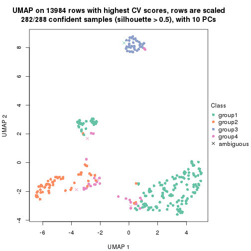
dimension_reduction(res, k = 5, method = "UMAP")
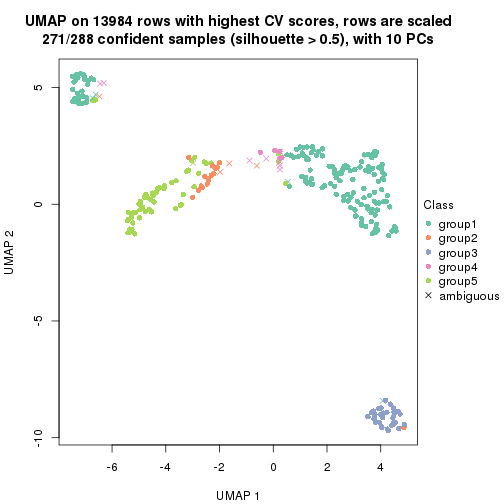
dimension_reduction(res, k = 6, method = "UMAP")
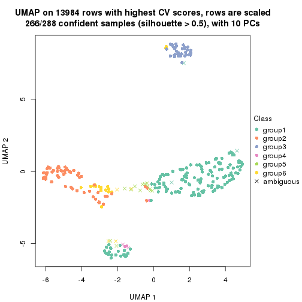
Following heatmap shows how subgroups are split when increasing k:
collect_classes(res)
If matrix rows can be associated to genes, consider to use functional_enrichment(res,
...) to perform function enrichment for the signature genes. See this vignette for more detailed explanations.
The object with results only for a single top-value method and a single partition method can be extracted as:
res = res_list["CV", "pam"]
# you can also extract it by
# res = res_list["CV:pam"]
A summary of res and all the functions that can be applied to it:
res
#> A 'ConsensusPartition' object with k = 2, 3, 4, 5, 6.
#> On a matrix with 13984 rows and 288 columns.
#> Top rows (1000, 2000, 3000, 4000, 5000) are extracted by 'CV' method.
#> Subgroups are detected by 'pam' method.
#> Performed in total 1250 partitions by row resampling.
#> Best k for subgroups seems to be 6.
#>
#> Following methods can be applied to this 'ConsensusPartition' object:
#> [1] "cola_report" "collect_classes" "collect_plots"
#> [4] "collect_stats" "colnames" "compare_signatures"
#> [7] "consensus_heatmap" "dimension_reduction" "functional_enrichment"
#> [10] "get_anno_col" "get_anno" "get_classes"
#> [13] "get_consensus" "get_matrix" "get_membership"
#> [16] "get_param" "get_signatures" "get_stats"
#> [19] "is_best_k" "is_stable_k" "membership_heatmap"
#> [22] "ncol" "nrow" "plot_ecdf"
#> [25] "rownames" "select_partition_number" "show"
#> [28] "suggest_best_k" "test_to_known_factors"
collect_plots() function collects all the plots made from res for all k (number of partitions)
into one single page to provide an easy and fast comparison between different k.
collect_plots(res)
The plots are:
k and the heatmap of
predicted classes for each k.k.k.k.All the plots in panels can be made by individual functions and they are plotted later in this section.
select_partition_number() produces several plots showing different
statistics for choosing “optimized” k. There are following statistics:
k;k, the area increased is defined as \(A_k - A_{k-1}\).The detailed explanations of these statistics can be found in the cola vignette.
Generally speaking, lower PAC score, higher mean silhouette score or higher
concordance corresponds to better partition. Rand index and Jaccard index
measure how similar the current partition is compared to partition with k-1.
If they are too similar, we won't accept k is better than k-1.
select_partition_number(res)
The numeric values for all these statistics can be obtained by get_stats().
get_stats(res)
#> k 1-PAC mean_silhouette concordance area_increased Rand Jaccard
#> 2 2 1.000 0.985 0.994 0.2947 0.708 0.708
#> 3 3 1.000 0.990 0.996 0.4705 0.841 0.778
#> 4 4 0.826 0.897 0.936 0.1310 0.993 0.987
#> 5 5 0.990 0.922 0.969 0.1983 0.848 0.728
#> 6 6 0.920 0.892 0.955 0.0422 0.977 0.945
suggest_best_k() suggests the best \(k\) based on these statistics. The rules are as follows:
suggest_best_k(res)
#> [1] 6
#> attr(,"optional")
#> [1] 2 3 5
There is also optional best \(k\) = 2 3 5 that is worth to check.
Following shows the table of the partitions (You need to click the show/hide
code output link to see it). The membership matrix (columns with name p*)
is inferred by
clue::cl_consensus()
function with the SE method. Basically the value in the membership matrix
represents the probability to belong to a certain group. The finall class
label for an item is determined with the group with highest probability it
belongs to.
In get_classes() function, the entropy is calculated from the membership
matrix and the silhouette score is calculated from the consensus matrix.
cbind(get_classes(res, k = 2), get_membership(res, k = 2))
#> class entropy silhouette p1 p2
#> SRR1982614 1 0.0000 0.996 1.000 0.000
#> SRR1982613 1 0.0000 0.996 1.000 0.000
#> SRR1982612 1 0.0000 0.996 1.000 0.000
#> SRR1982611 1 0.0000 0.996 1.000 0.000
#> SRR1982610 1 0.0000 0.996 1.000 0.000
#> SRR1982609 1 0.0000 0.996 1.000 0.000
#> SRR1982659 1 0.0000 0.996 1.000 0.000
#> SRR1982692 1 0.0000 0.996 1.000 0.000
#> SRR1982722 1 0.0000 0.996 1.000 0.000
#> SRR1982750 2 0.0000 0.987 0.000 1.000
#> SRR2095031 2 0.0000 0.987 0.000 1.000
#> SRR1982780 1 0.0000 0.996 1.000 0.000
#> SRR1982807 1 0.0000 0.996 1.000 0.000
#> SRR1982830 1 0.0000 0.996 1.000 0.000
#> SRR1982829 1 0.0000 0.996 1.000 0.000
#> SRR1982828 1 0.0000 0.996 1.000 0.000
#> SRR1982827 1 0.0000 0.996 1.000 0.000
#> SRR1982826 1 0.0000 0.996 1.000 0.000
#> SRR1982825 1 0.0000 0.996 1.000 0.000
#> SRR1982824 1 0.0000 0.996 1.000 0.000
#> SRR1982823 1 0.0000 0.996 1.000 0.000
#> SRR1982822 1 0.0000 0.996 1.000 0.000
#> SRR1982821 1 0.0000 0.996 1.000 0.000
#> SRR1982820 1 0.0000 0.996 1.000 0.000
#> SRR1982819 1 0.0000 0.996 1.000 0.000
#> SRR1982818 1 0.0000 0.996 1.000 0.000
#> SRR1982817 1 0.0000 0.996 1.000 0.000
#> SRR1982816 1 0.0000 0.996 1.000 0.000
#> SRR1982815 1 0.0000 0.996 1.000 0.000
#> SRR1982814 1 0.0000 0.996 1.000 0.000
#> SRR1982813 1 0.0000 0.996 1.000 0.000
#> SRR1982812 2 0.0000 0.987 0.000 1.000
#> SRR1982811 1 0.0000 0.996 1.000 0.000
#> SRR1982810 1 0.0000 0.996 1.000 0.000
#> SRR1982809 1 0.0000 0.996 1.000 0.000
#> SRR1982808 1 0.0000 0.996 1.000 0.000
#> SRR1982806 1 0.0000 0.996 1.000 0.000
#> SRR1982805 1 0.0000 0.996 1.000 0.000
#> SRR1982804 1 0.0000 0.996 1.000 0.000
#> SRR1982803 1 0.0000 0.996 1.000 0.000
#> SRR1982802 1 0.0000 0.996 1.000 0.000
#> SRR1982801 1 0.0000 0.996 1.000 0.000
#> SRR1982800 1 0.0000 0.996 1.000 0.000
#> SRR1982799 1 0.0000 0.996 1.000 0.000
#> SRR1982798 1 0.0000 0.996 1.000 0.000
#> SRR1982797 1 0.0000 0.996 1.000 0.000
#> SRR1982796 1 0.0000 0.996 1.000 0.000
#> SRR1982795 1 0.0000 0.996 1.000 0.000
#> SRR1982794 1 0.0000 0.996 1.000 0.000
#> SRR1982793 1 0.0000 0.996 1.000 0.000
#> SRR1982792 1 0.0000 0.996 1.000 0.000
#> SRR1982791 1 0.0000 0.996 1.000 0.000
#> SRR1982790 1 0.0000 0.996 1.000 0.000
#> SRR1982789 1 0.0000 0.996 1.000 0.000
#> SRR1982788 1 0.0000 0.996 1.000 0.000
#> SRR1982787 1 0.0000 0.996 1.000 0.000
#> SRR1982786 1 0.0000 0.996 1.000 0.000
#> SRR1982785 1 0.0000 0.996 1.000 0.000
#> SRR1982784 1 0.0000 0.996 1.000 0.000
#> SRR1982783 1 0.0000 0.996 1.000 0.000
#> SRR1982782 1 0.0000 0.996 1.000 0.000
#> SRR1982781 1 0.0000 0.996 1.000 0.000
#> SRR1982779 1 0.0000 0.996 1.000 0.000
#> SRR1982778 1 0.0000 0.996 1.000 0.000
#> SRR1982776 2 0.0000 0.987 0.000 1.000
#> SRR1982777 1 0.0000 0.996 1.000 0.000
#> SRR1982775 1 0.0000 0.996 1.000 0.000
#> SRR1982774 1 0.0000 0.996 1.000 0.000
#> SRR1982772 1 0.0000 0.996 1.000 0.000
#> SRR1982773 1 0.0000 0.996 1.000 0.000
#> SRR1982770 1 0.0000 0.996 1.000 0.000
#> SRR1982771 1 0.0000 0.996 1.000 0.000
#> SRR1982769 1 0.0000 0.996 1.000 0.000
#> SRR1982768 1 0.0000 0.996 1.000 0.000
#> SRR1982767 1 0.0000 0.996 1.000 0.000
#> SRR1982766 1 0.0000 0.996 1.000 0.000
#> SRR1982765 1 0.0000 0.996 1.000 0.000
#> SRR1982764 1 0.0000 0.996 1.000 0.000
#> SRR1982762 1 0.0000 0.996 1.000 0.000
#> SRR1982760 1 0.0000 0.996 1.000 0.000
#> SRR1982761 1 0.0000 0.996 1.000 0.000
#> SRR1982763 2 0.0000 0.987 0.000 1.000
#> SRR1982759 1 0.0000 0.996 1.000 0.000
#> SRR1982758 1 0.0000 0.996 1.000 0.000
#> SRR1982757 1 0.0000 0.996 1.000 0.000
#> SRR1982755 1 0.0000 0.996 1.000 0.000
#> SRR1982754 1 0.0000 0.996 1.000 0.000
#> SRR1982756 1 0.0000 0.996 1.000 0.000
#> SRR1982753 1 0.0000 0.996 1.000 0.000
#> SRR1982751 2 0.0000 0.987 0.000 1.000
#> SRR1982752 2 0.0000 0.987 0.000 1.000
#> SRR1982749 2 0.0000 0.987 0.000 1.000
#> SRR1982748 2 0.0000 0.987 0.000 1.000
#> SRR1982747 2 0.0000 0.987 0.000 1.000
#> SRR1982746 2 0.0000 0.987 0.000 1.000
#> SRR1982745 2 0.0000 0.987 0.000 1.000
#> SRR1982743 2 0.0000 0.987 0.000 1.000
#> SRR1982744 2 0.0000 0.987 0.000 1.000
#> SRR1982741 2 0.0000 0.987 0.000 1.000
#> SRR1982742 2 0.0000 0.987 0.000 1.000
#> SRR2095014 2 0.0000 0.987 0.000 1.000
#> SRR1982740 2 0.0000 0.987 0.000 1.000
#> SRR1982739 2 0.0000 0.987 0.000 1.000
#> SRR1982737 2 0.0000 0.987 0.000 1.000
#> SRR1982738 2 0.9909 0.205 0.444 0.556
#> SRR1982736 2 0.0000 0.987 0.000 1.000
#> SRR1982735 2 0.0000 0.987 0.000 1.000
#> SRR1982733 2 0.0000 0.987 0.000 1.000
#> SRR1982732 2 0.0000 0.987 0.000 1.000
#> SRR2095004 2 0.0000 0.987 0.000 1.000
#> SRR1982734 2 0.0000 0.987 0.000 1.000
#> SRR1982731 2 0.0000 0.987 0.000 1.000
#> SRR1982729 2 0.0000 0.987 0.000 1.000
#> SRR1982730 2 0.0000 0.987 0.000 1.000
#> SRR1982728 2 0.0000 0.987 0.000 1.000
#> SRR1982727 1 0.0000 0.996 1.000 0.000
#> SRR1982726 1 0.0000 0.996 1.000 0.000
#> SRR1982723 1 0.0000 0.996 1.000 0.000
#> SRR1982725 1 0.0000 0.996 1.000 0.000
#> SRR1982724 1 0.0000 0.996 1.000 0.000
#> SRR1982721 1 0.0000 0.996 1.000 0.000
#> SRR1982720 1 0.0000 0.996 1.000 0.000
#> SRR1982719 1 0.0000 0.996 1.000 0.000
#> SRR1982718 2 0.0376 0.983 0.004 0.996
#> SRR1982717 2 0.0000 0.987 0.000 1.000
#> SRR1982715 1 0.0000 0.996 1.000 0.000
#> SRR1982714 2 0.0000 0.987 0.000 1.000
#> SRR1982716 1 0.0000 0.996 1.000 0.000
#> SRR1982713 2 0.0000 0.987 0.000 1.000
#> SRR1982711 2 0.0000 0.987 0.000 1.000
#> SRR1982712 2 0.0000 0.987 0.000 1.000
#> SRR1982710 1 0.9710 0.325 0.600 0.400
#> SRR1982708 1 0.3733 0.919 0.928 0.072
#> SRR1982707 1 0.0000 0.996 1.000 0.000
#> SRR1982709 1 0.0000 0.996 1.000 0.000
#> SRR1982705 2 0.7219 0.746 0.200 0.800
#> SRR1982706 1 0.0000 0.996 1.000 0.000
#> SRR1982704 1 0.0000 0.996 1.000 0.000
#> SRR1982702 1 0.0000 0.996 1.000 0.000
#> SRR1982703 1 0.0000 0.996 1.000 0.000
#> SRR1982701 1 0.0000 0.996 1.000 0.000
#> SRR1982700 2 0.0000 0.987 0.000 1.000
#> SRR1982697 2 0.0000 0.987 0.000 1.000
#> SRR1982698 2 0.0000 0.987 0.000 1.000
#> SRR1982699 2 0.0000 0.987 0.000 1.000
#> SRR1982696 2 0.0000 0.987 0.000 1.000
#> SRR1982695 1 0.0000 0.996 1.000 0.000
#> SRR1982694 1 0.0000 0.996 1.000 0.000
#> SRR1982693 2 0.0000 0.987 0.000 1.000
#> SRR1982690 1 0.6048 0.823 0.852 0.148
#> SRR1982691 2 0.0000 0.987 0.000 1.000
#> SRR1982689 1 0.0000 0.996 1.000 0.000
#> SRR1982688 1 0.0000 0.996 1.000 0.000
#> SRR1982687 1 0.0000 0.996 1.000 0.000
#> SRR1982686 1 0.0000 0.996 1.000 0.000
#> SRR1982685 1 0.0000 0.996 1.000 0.000
#> SRR1982684 1 0.0000 0.996 1.000 0.000
#> SRR1982683 1 0.0000 0.996 1.000 0.000
#> SRR1982681 2 0.0000 0.987 0.000 1.000
#> SRR1982682 1 0.0000 0.996 1.000 0.000
#> SRR1982680 2 0.0000 0.987 0.000 1.000
#> SRR1982679 1 0.0000 0.996 1.000 0.000
#> SRR1982678 2 0.0000 0.987 0.000 1.000
#> SRR1982677 1 0.0000 0.996 1.000 0.000
#> SRR1982676 1 0.0000 0.996 1.000 0.000
#> SRR1982675 1 0.0000 0.996 1.000 0.000
#> SRR1982674 1 0.0000 0.996 1.000 0.000
#> SRR1982671 1 0.0000 0.996 1.000 0.000
#> SRR1982673 1 0.0000 0.996 1.000 0.000
#> SRR1982672 1 0.0000 0.996 1.000 0.000
#> SRR1982670 1 0.0000 0.996 1.000 0.000
#> SRR1982669 1 0.0000 0.996 1.000 0.000
#> SRR1982667 1 0.0000 0.996 1.000 0.000
#> SRR1982668 1 0.0000 0.996 1.000 0.000
#> SRR1982666 1 0.0000 0.996 1.000 0.000
#> SRR1982665 2 0.0000 0.987 0.000 1.000
#> SRR1982664 1 0.0000 0.996 1.000 0.000
#> SRR1982663 1 0.0000 0.996 1.000 0.000
#> SRR1982662 1 0.0000 0.996 1.000 0.000
#> SRR1982661 1 0.0000 0.996 1.000 0.000
#> SRR1982660 1 0.0000 0.996 1.000 0.000
#> SRR1982658 1 0.0000 0.996 1.000 0.000
#> SRR1982657 1 0.0000 0.996 1.000 0.000
#> SRR1982656 1 0.0000 0.996 1.000 0.000
#> SRR1982654 1 0.0000 0.996 1.000 0.000
#> SRR1982655 1 0.0000 0.996 1.000 0.000
#> SRR1982653 1 0.0000 0.996 1.000 0.000
#> SRR1982652 1 0.0000 0.996 1.000 0.000
#> SRR1982651 1 0.0000 0.996 1.000 0.000
#> SRR1982649 1 0.0000 0.996 1.000 0.000
#> SRR1982650 1 0.0000 0.996 1.000 0.000
#> SRR1982648 1 0.0000 0.996 1.000 0.000
#> SRR1982647 1 0.0000 0.996 1.000 0.000
#> SRR1982646 1 0.0000 0.996 1.000 0.000
#> SRR1982645 1 0.0000 0.996 1.000 0.000
#> SRR1982644 1 0.0000 0.996 1.000 0.000
#> SRR1982642 1 0.0000 0.996 1.000 0.000
#> SRR1982643 1 0.0000 0.996 1.000 0.000
#> SRR1982641 1 0.0000 0.996 1.000 0.000
#> SRR1982640 1 0.0000 0.996 1.000 0.000
#> SRR1982638 1 0.0000 0.996 1.000 0.000
#> SRR1982639 1 0.0000 0.996 1.000 0.000
#> SRR1982637 1 0.0000 0.996 1.000 0.000
#> SRR1982635 1 0.0000 0.996 1.000 0.000
#> SRR1982636 1 0.0000 0.996 1.000 0.000
#> SRR1982633 1 0.0000 0.996 1.000 0.000
#> SRR1982632 1 0.0000 0.996 1.000 0.000
#> SRR1982631 1 0.0000 0.996 1.000 0.000
#> SRR1982634 1 0.0000 0.996 1.000 0.000
#> SRR1982628 1 0.0000 0.996 1.000 0.000
#> SRR1982629 1 0.0000 0.996 1.000 0.000
#> SRR1982627 1 0.0000 0.996 1.000 0.000
#> SRR1982625 1 0.0000 0.996 1.000 0.000
#> SRR1982626 1 0.0000 0.996 1.000 0.000
#> SRR1982624 1 0.0000 0.996 1.000 0.000
#> SRR1982623 1 0.0000 0.996 1.000 0.000
#> SRR1982622 1 0.0000 0.996 1.000 0.000
#> SRR1982621 1 0.0000 0.996 1.000 0.000
#> SRR1982620 1 0.0000 0.996 1.000 0.000
#> SRR1982619 2 0.0000 0.987 0.000 1.000
#> SRR1982618 1 0.0000 0.996 1.000 0.000
#> SRR1982617 1 0.0000 0.996 1.000 0.000
#> SRR1982616 1 0.0000 0.996 1.000 0.000
#> SRR1982615 1 0.0000 0.996 1.000 0.000
#> SRR1982608 1 0.0000 0.996 1.000 0.000
#> SRR1982607 1 0.0000 0.996 1.000 0.000
#> SRR1982606 1 0.0000 0.996 1.000 0.000
#> SRR1982605 1 0.0000 0.996 1.000 0.000
#> SRR1982604 1 0.0000 0.996 1.000 0.000
#> SRR1982603 1 0.0000 0.996 1.000 0.000
#> SRR1982602 1 0.0000 0.996 1.000 0.000
#> SRR1982601 1 0.0000 0.996 1.000 0.000
#> SRR1982599 1 0.0000 0.996 1.000 0.000
#> SRR1982600 1 0.0000 0.996 1.000 0.000
#> SRR1982598 1 0.0000 0.996 1.000 0.000
#> SRR1982597 1 0.0000 0.996 1.000 0.000
#> SRR1982595 1 0.0000 0.996 1.000 0.000
#> SRR1982596 1 0.0000 0.996 1.000 0.000
#> SRR1982594 1 0.0000 0.996 1.000 0.000
#> SRR1982593 1 0.0000 0.996 1.000 0.000
#> SRR1982592 1 0.0000 0.996 1.000 0.000
#> SRR1982591 1 0.0000 0.996 1.000 0.000
#> SRR1982590 1 0.0000 0.996 1.000 0.000
#> SRR1982589 1 0.0000 0.996 1.000 0.000
#> SRR1982588 1 0.0000 0.996 1.000 0.000
#> SRR1982587 1 0.0000 0.996 1.000 0.000
#> SRR1982586 1 0.0000 0.996 1.000 0.000
#> SRR1982584 1 0.0000 0.996 1.000 0.000
#> SRR2096514 1 0.0000 0.996 1.000 0.000
#> SRR2096513 1 0.0000 0.996 1.000 0.000
#> SRR2096511 1 0.0000 0.996 1.000 0.000
#> SRR2096512 1 0.9552 0.390 0.624 0.376
#> SRR2096509 1 0.0000 0.996 1.000 0.000
#> SRR2096510 1 0.0000 0.996 1.000 0.000
#> SRR2096508 2 0.0000 0.987 0.000 1.000
#> SRR2096507 1 0.0000 0.996 1.000 0.000
#> SRR2096504 1 0.0000 0.996 1.000 0.000
#> SRR2096506 1 0.0000 0.996 1.000 0.000
#> SRR2096505 1 0.0000 0.996 1.000 0.000
#> SRR2096503 1 0.0000 0.996 1.000 0.000
#> SRR2096500 1 0.0000 0.996 1.000 0.000
#> SRR2096501 1 0.0000 0.996 1.000 0.000
#> SRR2096502 1 0.0000 0.996 1.000 0.000
#> SRR2096499 1 0.0000 0.996 1.000 0.000
#> SRR2096498 1 0.0000 0.996 1.000 0.000
#> SRR2096496 1 0.0000 0.996 1.000 0.000
#> SRR2096497 1 0.0000 0.996 1.000 0.000
#> SRR2096495 1 0.0000 0.996 1.000 0.000
#> SRR2096494 1 0.0000 0.996 1.000 0.000
#> SRR2096492 1 0.0000 0.996 1.000 0.000
#> SRR2096491 1 0.0000 0.996 1.000 0.000
#> SRR2096493 1 0.0000 0.996 1.000 0.000
#> SRR2096490 1 0.0000 0.996 1.000 0.000
#> SRR2096488 1 0.0000 0.996 1.000 0.000
#> SRR2096489 1 0.0000 0.996 1.000 0.000
#> SRR2096487 1 0.0000 0.996 1.000 0.000
#> SRR2096484 1 0.0000 0.996 1.000 0.000
#> SRR2096486 1 0.0000 0.996 1.000 0.000
#> SRR2096485 1 0.0000 0.996 1.000 0.000
#> SRR2096483 1 0.0000 0.996 1.000 0.000
#> SRR2096482 1 0.0000 0.996 1.000 0.000
#> SRR2096481 1 0.0000 0.996 1.000 0.000
#> SRR2096520 1 0.0000 0.996 1.000 0.000
#> SRR2096519 1 0.0000 0.996 1.000 0.000
#> SRR2096518 1 0.0000 0.996 1.000 0.000
#> SRR2096516 1 0.0000 0.996 1.000 0.000
#> SRR2096517 1 0.0000 0.996 1.000 0.000
#> SRR2096515 1 0.0000 0.996 1.000 0.000
cbind(get_classes(res, k = 3), get_membership(res, k = 3))
#> class entropy silhouette p1 p2 p3
#> SRR1982614 1 0.0000 0.999 1.000 0.000 0.000
#> SRR1982613 3 0.0237 0.974 0.004 0.000 0.996
#> SRR1982612 1 0.0000 0.999 1.000 0.000 0.000
#> SRR1982611 1 0.0000 0.999 1.000 0.000 0.000
#> SRR1982610 1 0.0000 0.999 1.000 0.000 0.000
#> SRR1982609 1 0.0000 0.999 1.000 0.000 0.000
#> SRR1982659 1 0.0000 0.999 1.000 0.000 0.000
#> SRR1982692 3 0.0000 0.980 0.000 0.000 1.000
#> SRR1982722 1 0.0000 0.999 1.000 0.000 0.000
#> SRR1982750 2 0.0000 0.991 0.000 1.000 0.000
#> SRR2095031 2 0.0000 0.991 0.000 1.000 0.000
#> SRR1982780 1 0.0000 0.999 1.000 0.000 0.000
#> SRR1982807 1 0.0000 0.999 1.000 0.000 0.000
#> SRR1982830 1 0.0000 0.999 1.000 0.000 0.000
#> SRR1982829 1 0.0000 0.999 1.000 0.000 0.000
#> SRR1982828 1 0.0000 0.999 1.000 0.000 0.000
#> SRR1982827 1 0.0000 0.999 1.000 0.000 0.000
#> SRR1982826 1 0.0000 0.999 1.000 0.000 0.000
#> SRR1982825 1 0.0000 0.999 1.000 0.000 0.000
#> SRR1982824 1 0.0000 0.999 1.000 0.000 0.000
#> SRR1982823 1 0.0000 0.999 1.000 0.000 0.000
#> SRR1982822 1 0.0000 0.999 1.000 0.000 0.000
#> SRR1982821 1 0.0000 0.999 1.000 0.000 0.000
#> SRR1982820 1 0.0000 0.999 1.000 0.000 0.000
#> SRR1982819 1 0.0000 0.999 1.000 0.000 0.000
#> SRR1982818 1 0.0000 0.999 1.000 0.000 0.000
#> SRR1982817 1 0.0000 0.999 1.000 0.000 0.000
#> SRR1982816 1 0.0000 0.999 1.000 0.000 0.000
#> SRR1982815 1 0.0000 0.999 1.000 0.000 0.000
#> SRR1982814 1 0.0000 0.999 1.000 0.000 0.000
#> SRR1982813 1 0.0000 0.999 1.000 0.000 0.000
#> SRR1982812 3 0.0000 0.980 0.000 0.000 1.000
#> SRR1982811 1 0.0000 0.999 1.000 0.000 0.000
#> SRR1982810 1 0.0000 0.999 1.000 0.000 0.000
#> SRR1982809 3 0.0000 0.980 0.000 0.000 1.000
#> SRR1982808 1 0.0000 0.999 1.000 0.000 0.000
#> SRR1982806 1 0.0000 0.999 1.000 0.000 0.000
#> SRR1982805 1 0.0000 0.999 1.000 0.000 0.000
#> SRR1982804 1 0.0000 0.999 1.000 0.000 0.000
#> SRR1982803 1 0.0000 0.999 1.000 0.000 0.000
#> SRR1982802 1 0.0000 0.999 1.000 0.000 0.000
#> SRR1982801 1 0.0000 0.999 1.000 0.000 0.000
#> SRR1982800 1 0.0000 0.999 1.000 0.000 0.000
#> SRR1982799 1 0.0000 0.999 1.000 0.000 0.000
#> SRR1982798 1 0.0000 0.999 1.000 0.000 0.000
#> SRR1982797 1 0.0000 0.999 1.000 0.000 0.000
#> SRR1982796 1 0.0000 0.999 1.000 0.000 0.000
#> SRR1982795 1 0.0000 0.999 1.000 0.000 0.000
#> SRR1982794 1 0.0000 0.999 1.000 0.000 0.000
#> SRR1982793 1 0.0000 0.999 1.000 0.000 0.000
#> SRR1982792 1 0.0000 0.999 1.000 0.000 0.000
#> SRR1982791 1 0.0000 0.999 1.000 0.000 0.000
#> SRR1982790 3 0.0000 0.980 0.000 0.000 1.000
#> SRR1982789 1 0.0000 0.999 1.000 0.000 0.000
#> SRR1982788 1 0.0000 0.999 1.000 0.000 0.000
#> SRR1982787 1 0.0000 0.999 1.000 0.000 0.000
#> SRR1982786 1 0.0000 0.999 1.000 0.000 0.000
#> SRR1982785 1 0.0000 0.999 1.000 0.000 0.000
#> SRR1982784 1 0.0000 0.999 1.000 0.000 0.000
#> SRR1982783 1 0.0000 0.999 1.000 0.000 0.000
#> SRR1982782 1 0.0000 0.999 1.000 0.000 0.000
#> SRR1982781 1 0.0000 0.999 1.000 0.000 0.000
#> SRR1982779 1 0.0000 0.999 1.000 0.000 0.000
#> SRR1982778 1 0.0000 0.999 1.000 0.000 0.000
#> SRR1982776 2 0.0000 0.991 0.000 1.000 0.000
#> SRR1982777 1 0.0000 0.999 1.000 0.000 0.000
#> SRR1982775 1 0.0000 0.999 1.000 0.000 0.000
#> SRR1982774 1 0.0000 0.999 1.000 0.000 0.000
#> SRR1982772 1 0.0000 0.999 1.000 0.000 0.000
#> SRR1982773 1 0.0000 0.999 1.000 0.000 0.000
#> SRR1982770 1 0.0000 0.999 1.000 0.000 0.000
#> SRR1982771 1 0.0000 0.999 1.000 0.000 0.000
#> SRR1982769 1 0.0000 0.999 1.000 0.000 0.000
#> SRR1982768 1 0.0000 0.999 1.000 0.000 0.000
#> SRR1982767 1 0.0000 0.999 1.000 0.000 0.000
#> SRR1982766 1 0.0000 0.999 1.000 0.000 0.000
#> SRR1982765 1 0.0000 0.999 1.000 0.000 0.000
#> SRR1982764 1 0.0000 0.999 1.000 0.000 0.000
#> SRR1982762 1 0.0000 0.999 1.000 0.000 0.000
#> SRR1982760 1 0.0000 0.999 1.000 0.000 0.000
#> SRR1982761 1 0.0000 0.999 1.000 0.000 0.000
#> SRR1982763 3 0.0000 0.980 0.000 0.000 1.000
#> SRR1982759 1 0.0000 0.999 1.000 0.000 0.000
#> SRR1982758 1 0.0000 0.999 1.000 0.000 0.000
#> SRR1982757 1 0.0000 0.999 1.000 0.000 0.000
#> SRR1982755 1 0.0000 0.999 1.000 0.000 0.000
#> SRR1982754 1 0.0000 0.999 1.000 0.000 0.000
#> SRR1982756 1 0.0000 0.999 1.000 0.000 0.000
#> SRR1982753 1 0.0000 0.999 1.000 0.000 0.000
#> SRR1982751 2 0.0000 0.991 0.000 1.000 0.000
#> SRR1982752 2 0.0000 0.991 0.000 1.000 0.000
#> SRR1982749 2 0.0000 0.991 0.000 1.000 0.000
#> SRR1982748 2 0.0000 0.991 0.000 1.000 0.000
#> SRR1982747 2 0.0000 0.991 0.000 1.000 0.000
#> SRR1982746 2 0.0000 0.991 0.000 1.000 0.000
#> SRR1982745 2 0.0000 0.991 0.000 1.000 0.000
#> SRR1982743 2 0.0000 0.991 0.000 1.000 0.000
#> SRR1982744 2 0.0000 0.991 0.000 1.000 0.000
#> SRR1982741 3 0.0000 0.980 0.000 0.000 1.000
#> SRR1982742 2 0.0237 0.988 0.000 0.996 0.004
#> SRR2095014 2 0.0424 0.985 0.000 0.992 0.008
#> SRR1982740 2 0.0000 0.991 0.000 1.000 0.000
#> SRR1982739 2 0.0000 0.991 0.000 1.000 0.000
#> SRR1982737 2 0.0000 0.991 0.000 1.000 0.000
#> SRR1982738 3 0.0000 0.980 0.000 0.000 1.000
#> SRR1982736 2 0.0424 0.985 0.000 0.992 0.008
#> SRR1982735 2 0.0000 0.991 0.000 1.000 0.000
#> SRR1982733 2 0.0000 0.991 0.000 1.000 0.000
#> SRR1982732 2 0.0000 0.991 0.000 1.000 0.000
#> SRR2095004 2 0.0000 0.991 0.000 1.000 0.000
#> SRR1982734 2 0.0000 0.991 0.000 1.000 0.000
#> SRR1982731 2 0.0000 0.991 0.000 1.000 0.000
#> SRR1982729 3 0.0000 0.980 0.000 0.000 1.000
#> SRR1982730 2 0.0000 0.991 0.000 1.000 0.000
#> SRR1982728 2 0.0000 0.991 0.000 1.000 0.000
#> SRR1982727 1 0.0000 0.999 1.000 0.000 0.000
#> SRR1982726 1 0.0000 0.999 1.000 0.000 0.000
#> SRR1982723 1 0.0000 0.999 1.000 0.000 0.000
#> SRR1982725 1 0.0000 0.999 1.000 0.000 0.000
#> SRR1982724 1 0.0000 0.999 1.000 0.000 0.000
#> SRR1982721 1 0.0000 0.999 1.000 0.000 0.000
#> SRR1982720 1 0.0000 0.999 1.000 0.000 0.000
#> SRR1982719 1 0.0000 0.999 1.000 0.000 0.000
#> SRR1982718 3 0.0000 0.980 0.000 0.000 1.000
#> SRR1982717 3 0.5760 0.494 0.000 0.328 0.672
#> SRR1982715 3 0.0000 0.980 0.000 0.000 1.000
#> SRR1982714 3 0.0000 0.980 0.000 0.000 1.000
#> SRR1982716 3 0.4974 0.556 0.236 0.000 0.764
#> SRR1982713 2 0.0000 0.991 0.000 1.000 0.000
#> SRR1982711 2 0.0000 0.991 0.000 1.000 0.000
#> SRR1982712 2 0.0000 0.991 0.000 1.000 0.000
#> SRR1982710 3 0.0000 0.980 0.000 0.000 1.000
#> SRR1982708 3 0.0000 0.980 0.000 0.000 1.000
#> SRR1982707 1 0.0000 0.999 1.000 0.000 0.000
#> SRR1982709 1 0.0000 0.999 1.000 0.000 0.000
#> SRR1982705 3 0.0000 0.980 0.000 0.000 1.000
#> SRR1982706 1 0.0000 0.999 1.000 0.000 0.000
#> SRR1982704 1 0.0000 0.999 1.000 0.000 0.000
#> SRR1982702 3 0.0000 0.980 0.000 0.000 1.000
#> SRR1982703 3 0.0000 0.980 0.000 0.000 1.000
#> SRR1982701 3 0.0000 0.980 0.000 0.000 1.000
#> SRR1982700 3 0.0000 0.980 0.000 0.000 1.000
#> SRR1982697 2 0.0000 0.991 0.000 1.000 0.000
#> SRR1982698 2 0.0000 0.991 0.000 1.000 0.000
#> SRR1982699 2 0.0000 0.991 0.000 1.000 0.000
#> SRR1982696 3 0.0000 0.980 0.000 0.000 1.000
#> SRR1982695 1 0.0000 0.999 1.000 0.000 0.000
#> SRR1982694 1 0.0000 0.999 1.000 0.000 0.000
#> SRR1982693 2 0.5327 0.626 0.000 0.728 0.272
#> SRR1982690 3 0.0000 0.980 0.000 0.000 1.000
#> SRR1982691 3 0.0000 0.980 0.000 0.000 1.000
#> SRR1982689 3 0.0000 0.980 0.000 0.000 1.000
#> SRR1982688 1 0.0000 0.999 1.000 0.000 0.000
#> SRR1982687 3 0.0000 0.980 0.000 0.000 1.000
#> SRR1982686 3 0.0000 0.980 0.000 0.000 1.000
#> SRR1982685 3 0.0000 0.980 0.000 0.000 1.000
#> SRR1982684 3 0.0000 0.980 0.000 0.000 1.000
#> SRR1982683 1 0.0000 0.999 1.000 0.000 0.000
#> SRR1982681 2 0.0747 0.978 0.000 0.984 0.016
#> SRR1982682 3 0.0000 0.980 0.000 0.000 1.000
#> SRR1982680 3 0.0000 0.980 0.000 0.000 1.000
#> SRR1982679 3 0.0000 0.980 0.000 0.000 1.000
#> SRR1982678 2 0.0000 0.991 0.000 1.000 0.000
#> SRR1982677 3 0.0000 0.980 0.000 0.000 1.000
#> SRR1982676 1 0.0000 0.999 1.000 0.000 0.000
#> SRR1982675 1 0.0000 0.999 1.000 0.000 0.000
#> SRR1982674 1 0.0000 0.999 1.000 0.000 0.000
#> SRR1982671 1 0.0000 0.999 1.000 0.000 0.000
#> SRR1982673 1 0.0000 0.999 1.000 0.000 0.000
#> SRR1982672 1 0.0000 0.999 1.000 0.000 0.000
#> SRR1982670 1 0.0000 0.999 1.000 0.000 0.000
#> SRR1982669 1 0.0000 0.999 1.000 0.000 0.000
#> SRR1982667 1 0.0000 0.999 1.000 0.000 0.000
#> SRR1982668 1 0.0000 0.999 1.000 0.000 0.000
#> SRR1982666 1 0.0000 0.999 1.000 0.000 0.000
#> SRR1982665 2 0.0000 0.991 0.000 1.000 0.000
#> SRR1982664 1 0.0000 0.999 1.000 0.000 0.000
#> SRR1982663 1 0.0000 0.999 1.000 0.000 0.000
#> SRR1982662 1 0.0000 0.999 1.000 0.000 0.000
#> SRR1982661 1 0.0000 0.999 1.000 0.000 0.000
#> SRR1982660 1 0.0000 0.999 1.000 0.000 0.000
#> SRR1982658 1 0.0000 0.999 1.000 0.000 0.000
#> SRR1982657 1 0.0000 0.999 1.000 0.000 0.000
#> SRR1982656 3 0.0237 0.974 0.004 0.000 0.996
#> SRR1982654 1 0.0000 0.999 1.000 0.000 0.000
#> SRR1982655 1 0.0000 0.999 1.000 0.000 0.000
#> SRR1982653 1 0.0000 0.999 1.000 0.000 0.000
#> SRR1982652 1 0.0000 0.999 1.000 0.000 0.000
#> SRR1982651 1 0.0000 0.999 1.000 0.000 0.000
#> SRR1982649 1 0.0000 0.999 1.000 0.000 0.000
#> SRR1982650 1 0.0000 0.999 1.000 0.000 0.000
#> SRR1982648 1 0.0000 0.999 1.000 0.000 0.000
#> SRR1982647 1 0.0000 0.999 1.000 0.000 0.000
#> SRR1982646 1 0.0000 0.999 1.000 0.000 0.000
#> SRR1982645 1 0.0000 0.999 1.000 0.000 0.000
#> SRR1982644 1 0.0000 0.999 1.000 0.000 0.000
#> SRR1982642 1 0.0000 0.999 1.000 0.000 0.000
#> SRR1982643 1 0.0000 0.999 1.000 0.000 0.000
#> SRR1982641 1 0.0000 0.999 1.000 0.000 0.000
#> SRR1982640 1 0.0000 0.999 1.000 0.000 0.000
#> SRR1982638 1 0.0000 0.999 1.000 0.000 0.000
#> SRR1982639 1 0.0000 0.999 1.000 0.000 0.000
#> SRR1982637 1 0.0000 0.999 1.000 0.000 0.000
#> SRR1982635 1 0.0000 0.999 1.000 0.000 0.000
#> SRR1982636 1 0.0000 0.999 1.000 0.000 0.000
#> SRR1982633 1 0.0000 0.999 1.000 0.000 0.000
#> SRR1982632 1 0.0000 0.999 1.000 0.000 0.000
#> SRR1982631 1 0.0000 0.999 1.000 0.000 0.000
#> SRR1982634 1 0.0000 0.999 1.000 0.000 0.000
#> SRR1982628 1 0.0000 0.999 1.000 0.000 0.000
#> SRR1982629 1 0.0000 0.999 1.000 0.000 0.000
#> SRR1982627 1 0.0000 0.999 1.000 0.000 0.000
#> SRR1982625 1 0.0000 0.999 1.000 0.000 0.000
#> SRR1982626 1 0.0000 0.999 1.000 0.000 0.000
#> SRR1982624 1 0.0000 0.999 1.000 0.000 0.000
#> SRR1982623 1 0.0000 0.999 1.000 0.000 0.000
#> SRR1982622 1 0.0000 0.999 1.000 0.000 0.000
#> SRR1982621 1 0.0000 0.999 1.000 0.000 0.000
#> SRR1982620 1 0.0000 0.999 1.000 0.000 0.000
#> SRR1982619 2 0.0424 0.985 0.000 0.992 0.008
#> SRR1982618 1 0.0000 0.999 1.000 0.000 0.000
#> SRR1982617 3 0.0000 0.980 0.000 0.000 1.000
#> SRR1982616 1 0.0000 0.999 1.000 0.000 0.000
#> SRR1982615 1 0.0000 0.999 1.000 0.000 0.000
#> SRR1982608 3 0.0000 0.980 0.000 0.000 1.000
#> SRR1982607 1 0.0000 0.999 1.000 0.000 0.000
#> SRR1982606 1 0.0000 0.999 1.000 0.000 0.000
#> SRR1982605 1 0.0000 0.999 1.000 0.000 0.000
#> SRR1982604 1 0.0000 0.999 1.000 0.000 0.000
#> SRR1982603 1 0.0000 0.999 1.000 0.000 0.000
#> SRR1982602 1 0.0000 0.999 1.000 0.000 0.000
#> SRR1982601 1 0.0000 0.999 1.000 0.000 0.000
#> SRR1982599 1 0.0000 0.999 1.000 0.000 0.000
#> SRR1982600 1 0.4504 0.754 0.804 0.000 0.196
#> SRR1982598 1 0.0000 0.999 1.000 0.000 0.000
#> SRR1982597 1 0.0000 0.999 1.000 0.000 0.000
#> SRR1982595 1 0.0000 0.999 1.000 0.000 0.000
#> SRR1982596 1 0.0000 0.999 1.000 0.000 0.000
#> SRR1982594 1 0.0000 0.999 1.000 0.000 0.000
#> SRR1982593 1 0.0000 0.999 1.000 0.000 0.000
#> SRR1982592 3 0.0000 0.980 0.000 0.000 1.000
#> SRR1982591 1 0.0000 0.999 1.000 0.000 0.000
#> SRR1982590 1 0.0000 0.999 1.000 0.000 0.000
#> SRR1982589 1 0.0000 0.999 1.000 0.000 0.000
#> SRR1982588 1 0.0000 0.999 1.000 0.000 0.000
#> SRR1982587 1 0.0000 0.999 1.000 0.000 0.000
#> SRR1982586 1 0.0000 0.999 1.000 0.000 0.000
#> SRR1982584 1 0.0000 0.999 1.000 0.000 0.000
#> SRR2096514 1 0.0000 0.999 1.000 0.000 0.000
#> SRR2096513 1 0.0000 0.999 1.000 0.000 0.000
#> SRR2096511 1 0.0000 0.999 1.000 0.000 0.000
#> SRR2096512 3 0.0000 0.980 0.000 0.000 1.000
#> SRR2096509 1 0.0000 0.999 1.000 0.000 0.000
#> SRR2096510 1 0.0000 0.999 1.000 0.000 0.000
#> SRR2096508 3 0.0000 0.980 0.000 0.000 1.000
#> SRR2096507 1 0.0000 0.999 1.000 0.000 0.000
#> SRR2096504 1 0.0000 0.999 1.000 0.000 0.000
#> SRR2096506 1 0.0000 0.999 1.000 0.000 0.000
#> SRR2096505 1 0.0000 0.999 1.000 0.000 0.000
#> SRR2096503 3 0.0747 0.954 0.016 0.000 0.984
#> SRR2096500 1 0.0000 0.999 1.000 0.000 0.000
#> SRR2096501 1 0.0000 0.999 1.000 0.000 0.000
#> SRR2096502 1 0.0000 0.999 1.000 0.000 0.000
#> SRR2096499 1 0.0000 0.999 1.000 0.000 0.000
#> SRR2096498 1 0.0000 0.999 1.000 0.000 0.000
#> SRR2096496 1 0.0000 0.999 1.000 0.000 0.000
#> SRR2096497 1 0.0000 0.999 1.000 0.000 0.000
#> SRR2096495 1 0.0000 0.999 1.000 0.000 0.000
#> SRR2096494 1 0.0000 0.999 1.000 0.000 0.000
#> SRR2096492 1 0.0000 0.999 1.000 0.000 0.000
#> SRR2096491 3 0.0000 0.980 0.000 0.000 1.000
#> SRR2096493 1 0.0000 0.999 1.000 0.000 0.000
#> SRR2096490 1 0.0000 0.999 1.000 0.000 0.000
#> SRR2096488 1 0.0000 0.999 1.000 0.000 0.000
#> SRR2096489 1 0.0000 0.999 1.000 0.000 0.000
#> SRR2096487 1 0.0000 0.999 1.000 0.000 0.000
#> SRR2096484 1 0.0000 0.999 1.000 0.000 0.000
#> SRR2096486 1 0.0000 0.999 1.000 0.000 0.000
#> SRR2096485 1 0.0000 0.999 1.000 0.000 0.000
#> SRR2096483 1 0.0000 0.999 1.000 0.000 0.000
#> SRR2096482 1 0.0000 0.999 1.000 0.000 0.000
#> SRR2096481 1 0.0000 0.999 1.000 0.000 0.000
#> SRR2096520 1 0.0000 0.999 1.000 0.000 0.000
#> SRR2096519 1 0.0000 0.999 1.000 0.000 0.000
#> SRR2096518 1 0.0000 0.999 1.000 0.000 0.000
#> SRR2096516 1 0.0000 0.999 1.000 0.000 0.000
#> SRR2096517 1 0.0000 0.999 1.000 0.000 0.000
#> SRR2096515 1 0.0000 0.999 1.000 0.000 0.000
cbind(get_classes(res, k = 4), get_membership(res, k = 4))
#> class entropy silhouette p1 p2 p3 p4
#> SRR1982614 1 0.0000 0.941 1.000 0.000 0.000 0.000
#> SRR1982613 2 0.0188 0.959 0.004 0.996 0.000 0.000
#> SRR1982612 1 0.0000 0.941 1.000 0.000 0.000 0.000
#> SRR1982611 1 0.0000 0.941 1.000 0.000 0.000 0.000
#> SRR1982610 1 0.0000 0.941 1.000 0.000 0.000 0.000
#> SRR1982609 1 0.0000 0.941 1.000 0.000 0.000 0.000
#> SRR1982659 1 0.0000 0.941 1.000 0.000 0.000 0.000
#> SRR1982692 2 0.0000 0.966 0.000 1.000 0.000 0.000
#> SRR1982722 1 0.0000 0.941 1.000 0.000 0.000 0.000
#> SRR1982750 3 0.4661 0.989 0.000 0.000 0.652 0.348
#> SRR2095031 3 0.4661 0.989 0.000 0.000 0.652 0.348
#> SRR1982780 1 0.0000 0.941 1.000 0.000 0.000 0.000
#> SRR1982807 1 0.0000 0.941 1.000 0.000 0.000 0.000
#> SRR1982830 1 0.0000 0.941 1.000 0.000 0.000 0.000
#> SRR1982829 1 0.0000 0.941 1.000 0.000 0.000 0.000
#> SRR1982828 1 0.0000 0.941 1.000 0.000 0.000 0.000
#> SRR1982827 1 0.0000 0.941 1.000 0.000 0.000 0.000
#> SRR1982826 1 0.0000 0.941 1.000 0.000 0.000 0.000
#> SRR1982825 1 0.0000 0.941 1.000 0.000 0.000 0.000
#> SRR1982824 1 0.0000 0.941 1.000 0.000 0.000 0.000
#> SRR1982823 1 0.0000 0.941 1.000 0.000 0.000 0.000
#> SRR1982822 1 0.0000 0.941 1.000 0.000 0.000 0.000
#> SRR1982821 1 0.0000 0.941 1.000 0.000 0.000 0.000
#> SRR1982820 1 0.0000 0.941 1.000 0.000 0.000 0.000
#> SRR1982819 1 0.0000 0.941 1.000 0.000 0.000 0.000
#> SRR1982818 1 0.0000 0.941 1.000 0.000 0.000 0.000
#> SRR1982817 1 0.0000 0.941 1.000 0.000 0.000 0.000
#> SRR1982816 1 0.0000 0.941 1.000 0.000 0.000 0.000
#> SRR1982815 1 0.0000 0.941 1.000 0.000 0.000 0.000
#> SRR1982814 1 0.0000 0.941 1.000 0.000 0.000 0.000
#> SRR1982813 1 0.0000 0.941 1.000 0.000 0.000 0.000
#> SRR1982812 2 0.0000 0.966 0.000 1.000 0.000 0.000
#> SRR1982811 1 0.0000 0.941 1.000 0.000 0.000 0.000
#> SRR1982810 1 0.0000 0.941 1.000 0.000 0.000 0.000
#> SRR1982809 2 0.0000 0.966 0.000 1.000 0.000 0.000
#> SRR1982808 1 0.0000 0.941 1.000 0.000 0.000 0.000
#> SRR1982806 1 0.0000 0.941 1.000 0.000 0.000 0.000
#> SRR1982805 1 0.0000 0.941 1.000 0.000 0.000 0.000
#> SRR1982804 1 0.0000 0.941 1.000 0.000 0.000 0.000
#> SRR1982803 1 0.0000 0.941 1.000 0.000 0.000 0.000
#> SRR1982802 1 0.0000 0.941 1.000 0.000 0.000 0.000
#> SRR1982801 1 0.0000 0.941 1.000 0.000 0.000 0.000
#> SRR1982800 1 0.0000 0.941 1.000 0.000 0.000 0.000
#> SRR1982799 1 0.0000 0.941 1.000 0.000 0.000 0.000
#> SRR1982798 1 0.0000 0.941 1.000 0.000 0.000 0.000
#> SRR1982797 1 0.0000 0.941 1.000 0.000 0.000 0.000
#> SRR1982796 1 0.0000 0.941 1.000 0.000 0.000 0.000
#> SRR1982795 1 0.0000 0.941 1.000 0.000 0.000 0.000
#> SRR1982794 1 0.0000 0.941 1.000 0.000 0.000 0.000
#> SRR1982793 1 0.0000 0.941 1.000 0.000 0.000 0.000
#> SRR1982792 1 0.0000 0.941 1.000 0.000 0.000 0.000
#> SRR1982791 1 0.0000 0.941 1.000 0.000 0.000 0.000
#> SRR1982790 2 0.0000 0.966 0.000 1.000 0.000 0.000
#> SRR1982789 1 0.0000 0.941 1.000 0.000 0.000 0.000
#> SRR1982788 1 0.0000 0.941 1.000 0.000 0.000 0.000
#> SRR1982787 1 0.0000 0.941 1.000 0.000 0.000 0.000
#> SRR1982786 1 0.0707 0.927 0.980 0.000 0.020 0.000
#> SRR1982785 1 0.0000 0.941 1.000 0.000 0.000 0.000
#> SRR1982784 1 0.0000 0.941 1.000 0.000 0.000 0.000
#> SRR1982783 1 0.0000 0.941 1.000 0.000 0.000 0.000
#> SRR1982782 1 0.0000 0.941 1.000 0.000 0.000 0.000
#> SRR1982781 1 0.0000 0.941 1.000 0.000 0.000 0.000
#> SRR1982779 1 0.0000 0.941 1.000 0.000 0.000 0.000
#> SRR1982778 1 0.0000 0.941 1.000 0.000 0.000 0.000
#> SRR1982776 3 0.4907 0.871 0.000 0.000 0.580 0.420
#> SRR1982777 1 0.0817 0.924 0.976 0.000 0.024 0.000
#> SRR1982775 1 0.0000 0.941 1.000 0.000 0.000 0.000
#> SRR1982774 1 0.0000 0.941 1.000 0.000 0.000 0.000
#> SRR1982772 1 0.0000 0.941 1.000 0.000 0.000 0.000
#> SRR1982773 1 0.0000 0.941 1.000 0.000 0.000 0.000
#> SRR1982770 1 0.0000 0.941 1.000 0.000 0.000 0.000
#> SRR1982771 1 0.0000 0.941 1.000 0.000 0.000 0.000
#> SRR1982769 1 0.0000 0.941 1.000 0.000 0.000 0.000
#> SRR1982768 1 0.0000 0.941 1.000 0.000 0.000 0.000
#> SRR1982767 1 0.0000 0.941 1.000 0.000 0.000 0.000
#> SRR1982766 1 0.0000 0.941 1.000 0.000 0.000 0.000
#> SRR1982765 1 0.0000 0.941 1.000 0.000 0.000 0.000
#> SRR1982764 1 0.0000 0.941 1.000 0.000 0.000 0.000
#> SRR1982762 1 0.0000 0.941 1.000 0.000 0.000 0.000
#> SRR1982760 1 0.0000 0.941 1.000 0.000 0.000 0.000
#> SRR1982761 1 0.0000 0.941 1.000 0.000 0.000 0.000
#> SRR1982763 2 0.0000 0.966 0.000 1.000 0.000 0.000
#> SRR1982759 1 0.0000 0.941 1.000 0.000 0.000 0.000
#> SRR1982758 1 0.0000 0.941 1.000 0.000 0.000 0.000
#> SRR1982757 1 0.0000 0.941 1.000 0.000 0.000 0.000
#> SRR1982755 1 0.0000 0.941 1.000 0.000 0.000 0.000
#> SRR1982754 1 0.0000 0.941 1.000 0.000 0.000 0.000
#> SRR1982756 1 0.0000 0.941 1.000 0.000 0.000 0.000
#> SRR1982753 1 0.0000 0.941 1.000 0.000 0.000 0.000
#> SRR1982751 4 0.0000 0.947 0.000 0.000 0.000 1.000
#> SRR1982752 3 0.4661 0.989 0.000 0.000 0.652 0.348
#> SRR1982749 3 0.4661 0.989 0.000 0.000 0.652 0.348
#> SRR1982748 4 0.0000 0.947 0.000 0.000 0.000 1.000
#> SRR1982747 3 0.4661 0.989 0.000 0.000 0.652 0.348
#> SRR1982746 3 0.4661 0.989 0.000 0.000 0.652 0.348
#> SRR1982745 3 0.4661 0.989 0.000 0.000 0.652 0.348
#> SRR1982743 4 0.0000 0.947 0.000 0.000 0.000 1.000
#> SRR1982744 3 0.4661 0.989 0.000 0.000 0.652 0.348
#> SRR1982741 2 0.0000 0.966 0.000 1.000 0.000 0.000
#> SRR1982742 4 0.0000 0.947 0.000 0.000 0.000 1.000
#> SRR2095014 4 0.0188 0.942 0.000 0.004 0.000 0.996
#> SRR1982740 4 0.0000 0.947 0.000 0.000 0.000 1.000
#> SRR1982739 4 0.0000 0.947 0.000 0.000 0.000 1.000
#> SRR1982737 4 0.0000 0.947 0.000 0.000 0.000 1.000
#> SRR1982738 2 0.0000 0.966 0.000 1.000 0.000 0.000
#> SRR1982736 4 0.0188 0.942 0.000 0.004 0.000 0.996
#> SRR1982735 4 0.0000 0.947 0.000 0.000 0.000 1.000
#> SRR1982733 4 0.0000 0.947 0.000 0.000 0.000 1.000
#> SRR1982732 4 0.0000 0.947 0.000 0.000 0.000 1.000
#> SRR2095004 4 0.0000 0.947 0.000 0.000 0.000 1.000
#> SRR1982734 4 0.0000 0.947 0.000 0.000 0.000 1.000
#> SRR1982731 4 0.0000 0.947 0.000 0.000 0.000 1.000
#> SRR1982729 2 0.0000 0.966 0.000 1.000 0.000 0.000
#> SRR1982730 4 0.0000 0.947 0.000 0.000 0.000 1.000
#> SRR1982728 4 0.0000 0.947 0.000 0.000 0.000 1.000
#> SRR1982727 1 0.0921 0.921 0.972 0.000 0.028 0.000
#> SRR1982726 1 0.0000 0.941 1.000 0.000 0.000 0.000
#> SRR1982723 1 0.0000 0.941 1.000 0.000 0.000 0.000
#> SRR1982725 1 0.0000 0.941 1.000 0.000 0.000 0.000
#> SRR1982724 1 0.0000 0.941 1.000 0.000 0.000 0.000
#> SRR1982721 1 0.0000 0.941 1.000 0.000 0.000 0.000
#> SRR1982720 1 0.0000 0.941 1.000 0.000 0.000 0.000
#> SRR1982719 1 0.0000 0.941 1.000 0.000 0.000 0.000
#> SRR1982718 2 0.0000 0.966 0.000 1.000 0.000 0.000
#> SRR1982717 2 0.4564 0.496 0.000 0.672 0.000 0.328
#> SRR1982715 2 0.0000 0.966 0.000 1.000 0.000 0.000
#> SRR1982714 2 0.0000 0.966 0.000 1.000 0.000 0.000
#> SRR1982716 2 0.5850 0.515 0.184 0.700 0.116 0.000
#> SRR1982713 4 0.0000 0.947 0.000 0.000 0.000 1.000
#> SRR1982711 3 0.4661 0.989 0.000 0.000 0.652 0.348
#> SRR1982712 3 0.4661 0.989 0.000 0.000 0.652 0.348
#> SRR1982710 2 0.0000 0.966 0.000 1.000 0.000 0.000
#> SRR1982708 2 0.0000 0.966 0.000 1.000 0.000 0.000
#> SRR1982707 1 0.0707 0.927 0.980 0.000 0.020 0.000
#> SRR1982709 1 0.0000 0.941 1.000 0.000 0.000 0.000
#> SRR1982705 2 0.0000 0.966 0.000 1.000 0.000 0.000
#> SRR1982706 1 0.0000 0.941 1.000 0.000 0.000 0.000
#> SRR1982704 1 0.0000 0.941 1.000 0.000 0.000 0.000
#> SRR1982702 2 0.0000 0.966 0.000 1.000 0.000 0.000
#> SRR1982703 2 0.0000 0.966 0.000 1.000 0.000 0.000
#> SRR1982701 2 0.0000 0.966 0.000 1.000 0.000 0.000
#> SRR1982700 2 0.0000 0.966 0.000 1.000 0.000 0.000
#> SRR1982697 3 0.4661 0.989 0.000 0.000 0.652 0.348
#> SRR1982698 4 0.3356 0.622 0.000 0.000 0.176 0.824
#> SRR1982699 4 0.4222 0.304 0.000 0.000 0.272 0.728
#> SRR1982696 2 0.0000 0.966 0.000 1.000 0.000 0.000
#> SRR1982695 1 0.0000 0.941 1.000 0.000 0.000 0.000
#> SRR1982694 1 0.0000 0.941 1.000 0.000 0.000 0.000
#> SRR1982693 4 0.3801 0.518 0.000 0.220 0.000 0.780
#> SRR1982690 2 0.0000 0.966 0.000 1.000 0.000 0.000
#> SRR1982691 2 0.0000 0.966 0.000 1.000 0.000 0.000
#> SRR1982689 2 0.0000 0.966 0.000 1.000 0.000 0.000
#> SRR1982688 1 0.0000 0.941 1.000 0.000 0.000 0.000
#> SRR1982687 2 0.0000 0.966 0.000 1.000 0.000 0.000
#> SRR1982686 2 0.0000 0.966 0.000 1.000 0.000 0.000
#> SRR1982685 2 0.0000 0.966 0.000 1.000 0.000 0.000
#> SRR1982684 2 0.0000 0.966 0.000 1.000 0.000 0.000
#> SRR1982683 1 0.0000 0.941 1.000 0.000 0.000 0.000
#> SRR1982681 4 0.0592 0.922 0.000 0.016 0.000 0.984
#> SRR1982682 2 0.0000 0.966 0.000 1.000 0.000 0.000
#> SRR1982680 2 0.0000 0.966 0.000 1.000 0.000 0.000
#> SRR1982679 2 0.0000 0.966 0.000 1.000 0.000 0.000
#> SRR1982678 4 0.0000 0.947 0.000 0.000 0.000 1.000
#> SRR1982677 2 0.0000 0.966 0.000 1.000 0.000 0.000
#> SRR1982676 1 0.0000 0.941 1.000 0.000 0.000 0.000
#> SRR1982675 1 0.0000 0.941 1.000 0.000 0.000 0.000
#> SRR1982674 1 0.0000 0.941 1.000 0.000 0.000 0.000
#> SRR1982671 1 0.0000 0.941 1.000 0.000 0.000 0.000
#> SRR1982673 1 0.0000 0.941 1.000 0.000 0.000 0.000
#> SRR1982672 1 0.0000 0.941 1.000 0.000 0.000 0.000
#> SRR1982670 1 0.0000 0.941 1.000 0.000 0.000 0.000
#> SRR1982669 1 0.0000 0.941 1.000 0.000 0.000 0.000
#> SRR1982667 1 0.0000 0.941 1.000 0.000 0.000 0.000
#> SRR1982668 1 0.0000 0.941 1.000 0.000 0.000 0.000
#> SRR1982666 1 0.0000 0.941 1.000 0.000 0.000 0.000
#> SRR1982665 4 0.0000 0.947 0.000 0.000 0.000 1.000
#> SRR1982664 1 0.0000 0.941 1.000 0.000 0.000 0.000
#> SRR1982663 1 0.0000 0.941 1.000 0.000 0.000 0.000
#> SRR1982662 1 0.0000 0.941 1.000 0.000 0.000 0.000
#> SRR1982661 1 0.0000 0.941 1.000 0.000 0.000 0.000
#> SRR1982660 1 0.0000 0.941 1.000 0.000 0.000 0.000
#> SRR1982658 1 0.0000 0.941 1.000 0.000 0.000 0.000
#> SRR1982657 1 0.0000 0.941 1.000 0.000 0.000 0.000
#> SRR1982656 2 0.0188 0.959 0.004 0.996 0.000 0.000
#> SRR1982654 1 0.0000 0.941 1.000 0.000 0.000 0.000
#> SRR1982655 1 0.0000 0.941 1.000 0.000 0.000 0.000
#> SRR1982653 1 0.0000 0.941 1.000 0.000 0.000 0.000
#> SRR1982652 1 0.0000 0.941 1.000 0.000 0.000 0.000
#> SRR1982651 1 0.0000 0.941 1.000 0.000 0.000 0.000
#> SRR1982649 1 0.0000 0.941 1.000 0.000 0.000 0.000
#> SRR1982650 1 0.0000 0.941 1.000 0.000 0.000 0.000
#> SRR1982648 1 0.0000 0.941 1.000 0.000 0.000 0.000
#> SRR1982647 1 0.0000 0.941 1.000 0.000 0.000 0.000
#> SRR1982646 1 0.0000 0.941 1.000 0.000 0.000 0.000
#> SRR1982645 1 0.0000 0.941 1.000 0.000 0.000 0.000
#> SRR1982644 1 0.0000 0.941 1.000 0.000 0.000 0.000
#> SRR1982642 1 0.0000 0.941 1.000 0.000 0.000 0.000
#> SRR1982643 1 0.0000 0.941 1.000 0.000 0.000 0.000
#> SRR1982641 1 0.0000 0.941 1.000 0.000 0.000 0.000
#> SRR1982640 1 0.0000 0.941 1.000 0.000 0.000 0.000
#> SRR1982638 1 0.0000 0.941 1.000 0.000 0.000 0.000
#> SRR1982639 1 0.0000 0.941 1.000 0.000 0.000 0.000
#> SRR1982637 1 0.0000 0.941 1.000 0.000 0.000 0.000
#> SRR1982635 1 0.0000 0.941 1.000 0.000 0.000 0.000
#> SRR1982636 1 0.0000 0.941 1.000 0.000 0.000 0.000
#> SRR1982633 1 0.0000 0.941 1.000 0.000 0.000 0.000
#> SRR1982632 1 0.0000 0.941 1.000 0.000 0.000 0.000
#> SRR1982631 1 0.0000 0.941 1.000 0.000 0.000 0.000
#> SRR1982634 1 0.0000 0.941 1.000 0.000 0.000 0.000
#> SRR1982628 1 0.0000 0.941 1.000 0.000 0.000 0.000
#> SRR1982629 1 0.0000 0.941 1.000 0.000 0.000 0.000
#> SRR1982627 1 0.0000 0.941 1.000 0.000 0.000 0.000
#> SRR1982625 1 0.0000 0.941 1.000 0.000 0.000 0.000
#> SRR1982626 1 0.0000 0.941 1.000 0.000 0.000 0.000
#> SRR1982624 1 0.0000 0.941 1.000 0.000 0.000 0.000
#> SRR1982623 1 0.0000 0.941 1.000 0.000 0.000 0.000
#> SRR1982622 1 0.0000 0.941 1.000 0.000 0.000 0.000
#> SRR1982621 1 0.0000 0.941 1.000 0.000 0.000 0.000
#> SRR1982620 1 0.0000 0.941 1.000 0.000 0.000 0.000
#> SRR1982619 4 0.0336 0.936 0.000 0.008 0.000 0.992
#> SRR1982618 1 0.0000 0.941 1.000 0.000 0.000 0.000
#> SRR1982617 2 0.0000 0.966 0.000 1.000 0.000 0.000
#> SRR1982616 1 0.0000 0.941 1.000 0.000 0.000 0.000
#> SRR1982615 1 0.0000 0.941 1.000 0.000 0.000 0.000
#> SRR1982608 2 0.0000 0.966 0.000 1.000 0.000 0.000
#> SRR1982607 1 0.0000 0.941 1.000 0.000 0.000 0.000
#> SRR1982606 1 0.0000 0.941 1.000 0.000 0.000 0.000
#> SRR1982605 1 0.0000 0.941 1.000 0.000 0.000 0.000
#> SRR1982604 1 0.0000 0.941 1.000 0.000 0.000 0.000
#> SRR1982603 1 0.0000 0.941 1.000 0.000 0.000 0.000
#> SRR1982602 1 0.0000 0.941 1.000 0.000 0.000 0.000
#> SRR1982601 1 0.0000 0.941 1.000 0.000 0.000 0.000
#> SRR1982599 1 0.0000 0.941 1.000 0.000 0.000 0.000
#> SRR1982600 1 0.4035 0.738 0.804 0.176 0.020 0.000
#> SRR1982598 1 0.0000 0.941 1.000 0.000 0.000 0.000
#> SRR1982597 1 0.0000 0.941 1.000 0.000 0.000 0.000
#> SRR1982595 1 0.0000 0.941 1.000 0.000 0.000 0.000
#> SRR1982596 1 0.0000 0.941 1.000 0.000 0.000 0.000
#> SRR1982594 1 0.0000 0.941 1.000 0.000 0.000 0.000
#> SRR1982593 1 0.0000 0.941 1.000 0.000 0.000 0.000
#> SRR1982592 2 0.0000 0.966 0.000 1.000 0.000 0.000
#> SRR1982591 1 0.0000 0.941 1.000 0.000 0.000 0.000
#> SRR1982590 1 0.0000 0.941 1.000 0.000 0.000 0.000
#> SRR1982589 1 0.0000 0.941 1.000 0.000 0.000 0.000
#> SRR1982588 1 0.0000 0.941 1.000 0.000 0.000 0.000
#> SRR1982587 1 0.0000 0.941 1.000 0.000 0.000 0.000
#> SRR1982586 1 0.0000 0.941 1.000 0.000 0.000 0.000
#> SRR1982584 1 0.0000 0.941 1.000 0.000 0.000 0.000
#> SRR2096514 1 0.4661 0.625 0.652 0.000 0.348 0.000
#> SRR2096513 1 0.4661 0.625 0.652 0.000 0.348 0.000
#> SRR2096511 1 0.4661 0.625 0.652 0.000 0.348 0.000
#> SRR2096512 2 0.0000 0.966 0.000 1.000 0.000 0.000
#> SRR2096509 1 0.4661 0.625 0.652 0.000 0.348 0.000
#> SRR2096510 1 0.4661 0.625 0.652 0.000 0.348 0.000
#> SRR2096508 2 0.0000 0.966 0.000 1.000 0.000 0.000
#> SRR2096507 1 0.4661 0.625 0.652 0.000 0.348 0.000
#> SRR2096504 1 0.4661 0.625 0.652 0.000 0.348 0.000
#> SRR2096506 1 0.4661 0.625 0.652 0.000 0.348 0.000
#> SRR2096505 1 0.4661 0.625 0.652 0.000 0.348 0.000
#> SRR2096503 2 0.4500 0.568 0.000 0.684 0.316 0.000
#> SRR2096500 1 0.4661 0.625 0.652 0.000 0.348 0.000
#> SRR2096501 1 0.4661 0.625 0.652 0.000 0.348 0.000
#> SRR2096502 1 0.4661 0.625 0.652 0.000 0.348 0.000
#> SRR2096499 1 0.4661 0.625 0.652 0.000 0.348 0.000
#> SRR2096498 1 0.3528 0.785 0.808 0.000 0.192 0.000
#> SRR2096496 1 0.4661 0.625 0.652 0.000 0.348 0.000
#> SRR2096497 1 0.4661 0.625 0.652 0.000 0.348 0.000
#> SRR2096495 1 0.4661 0.625 0.652 0.000 0.348 0.000
#> SRR2096494 1 0.4661 0.625 0.652 0.000 0.348 0.000
#> SRR2096492 1 0.4661 0.625 0.652 0.000 0.348 0.000
#> SRR2096491 2 0.3172 0.784 0.000 0.840 0.160 0.000
#> SRR2096493 1 0.4661 0.625 0.652 0.000 0.348 0.000
#> SRR2096490 1 0.4661 0.625 0.652 0.000 0.348 0.000
#> SRR2096488 1 0.4661 0.625 0.652 0.000 0.348 0.000
#> SRR2096489 1 0.4661 0.625 0.652 0.000 0.348 0.000
#> SRR2096487 1 0.4661 0.625 0.652 0.000 0.348 0.000
#> SRR2096484 1 0.4661 0.625 0.652 0.000 0.348 0.000
#> SRR2096486 1 0.4661 0.625 0.652 0.000 0.348 0.000
#> SRR2096485 1 0.4661 0.625 0.652 0.000 0.348 0.000
#> SRR2096483 1 0.4564 0.646 0.672 0.000 0.328 0.000
#> SRR2096482 1 0.4661 0.625 0.652 0.000 0.348 0.000
#> SRR2096481 1 0.4661 0.625 0.652 0.000 0.348 0.000
#> SRR2096520 1 0.4564 0.646 0.672 0.000 0.328 0.000
#> SRR2096519 1 0.4277 0.699 0.720 0.000 0.280 0.000
#> SRR2096518 1 0.4661 0.625 0.652 0.000 0.348 0.000
#> SRR2096516 1 0.3219 0.811 0.836 0.000 0.164 0.000
#> SRR2096517 1 0.4661 0.625 0.652 0.000 0.348 0.000
#> SRR2096515 1 0.4564 0.646 0.672 0.000 0.328 0.000
cbind(get_classes(res, k = 5), get_membership(res, k = 5))
#> class entropy silhouette p1 p2 p3 p4 p5
#> SRR1982614 1 0.0290 0.9798 0.992 0.000 0.008 0.000 0.000
#> SRR1982613 2 0.0451 0.9446 0.004 0.988 0.008 0.000 0.000
#> SRR1982612 1 0.0000 0.9875 1.000 0.000 0.000 0.000 0.000
#> SRR1982611 1 0.0000 0.9875 1.000 0.000 0.000 0.000 0.000
#> SRR1982610 1 0.0000 0.9875 1.000 0.000 0.000 0.000 0.000
#> SRR1982609 1 0.0000 0.9875 1.000 0.000 0.000 0.000 0.000
#> SRR1982659 1 0.0000 0.9875 1.000 0.000 0.000 0.000 0.000
#> SRR1982692 2 0.1493 0.9339 0.000 0.948 0.028 0.024 0.000
#> SRR1982722 1 0.0000 0.9875 1.000 0.000 0.000 0.000 0.000
#> SRR1982750 4 0.0703 0.9291 0.000 0.000 0.000 0.976 0.024
#> SRR2095031 4 0.0703 0.9291 0.000 0.000 0.000 0.976 0.024
#> SRR1982780 1 0.0000 0.9875 1.000 0.000 0.000 0.000 0.000
#> SRR1982807 1 0.0000 0.9875 1.000 0.000 0.000 0.000 0.000
#> SRR1982830 1 0.0000 0.9875 1.000 0.000 0.000 0.000 0.000
#> SRR1982829 1 0.0290 0.9798 0.992 0.000 0.008 0.000 0.000
#> SRR1982828 1 0.0000 0.9875 1.000 0.000 0.000 0.000 0.000
#> SRR1982827 1 0.0000 0.9875 1.000 0.000 0.000 0.000 0.000
#> SRR1982826 1 0.0000 0.9875 1.000 0.000 0.000 0.000 0.000
#> SRR1982825 1 0.0000 0.9875 1.000 0.000 0.000 0.000 0.000
#> SRR1982824 1 0.0000 0.9875 1.000 0.000 0.000 0.000 0.000
#> SRR1982823 1 0.0000 0.9875 1.000 0.000 0.000 0.000 0.000
#> SRR1982822 1 0.0000 0.9875 1.000 0.000 0.000 0.000 0.000
#> SRR1982821 1 0.0000 0.9875 1.000 0.000 0.000 0.000 0.000
#> SRR1982820 1 0.0000 0.9875 1.000 0.000 0.000 0.000 0.000
#> SRR1982819 1 0.0000 0.9875 1.000 0.000 0.000 0.000 0.000
#> SRR1982818 1 0.0000 0.9875 1.000 0.000 0.000 0.000 0.000
#> SRR1982817 1 0.0000 0.9875 1.000 0.000 0.000 0.000 0.000
#> SRR1982816 1 0.0000 0.9875 1.000 0.000 0.000 0.000 0.000
#> SRR1982815 1 0.0000 0.9875 1.000 0.000 0.000 0.000 0.000
#> SRR1982814 1 0.0000 0.9875 1.000 0.000 0.000 0.000 0.000
#> SRR1982813 1 0.0000 0.9875 1.000 0.000 0.000 0.000 0.000
#> SRR1982812 2 0.0000 0.9502 0.000 1.000 0.000 0.000 0.000
#> SRR1982811 1 0.0000 0.9875 1.000 0.000 0.000 0.000 0.000
#> SRR1982810 1 0.0000 0.9875 1.000 0.000 0.000 0.000 0.000
#> SRR1982809 2 0.0290 0.9476 0.000 0.992 0.008 0.000 0.000
#> SRR1982808 1 0.0000 0.9875 1.000 0.000 0.000 0.000 0.000
#> SRR1982806 1 0.0000 0.9875 1.000 0.000 0.000 0.000 0.000
#> SRR1982805 1 0.0000 0.9875 1.000 0.000 0.000 0.000 0.000
#> SRR1982804 1 0.0000 0.9875 1.000 0.000 0.000 0.000 0.000
#> SRR1982803 1 0.0290 0.9798 0.992 0.000 0.008 0.000 0.000
#> SRR1982802 1 0.0000 0.9875 1.000 0.000 0.000 0.000 0.000
#> SRR1982801 1 0.0000 0.9875 1.000 0.000 0.000 0.000 0.000
#> SRR1982800 1 0.0000 0.9875 1.000 0.000 0.000 0.000 0.000
#> SRR1982799 1 0.0000 0.9875 1.000 0.000 0.000 0.000 0.000
#> SRR1982798 1 0.0000 0.9875 1.000 0.000 0.000 0.000 0.000
#> SRR1982797 1 0.0290 0.9798 0.992 0.000 0.008 0.000 0.000
#> SRR1982796 1 0.0000 0.9875 1.000 0.000 0.000 0.000 0.000
#> SRR1982795 1 0.0000 0.9875 1.000 0.000 0.000 0.000 0.000
#> SRR1982794 1 0.0000 0.9875 1.000 0.000 0.000 0.000 0.000
#> SRR1982793 1 0.0000 0.9875 1.000 0.000 0.000 0.000 0.000
#> SRR1982792 1 0.0000 0.9875 1.000 0.000 0.000 0.000 0.000
#> SRR1982791 1 0.0000 0.9875 1.000 0.000 0.000 0.000 0.000
#> SRR1982790 2 0.1310 0.9365 0.000 0.956 0.020 0.024 0.000
#> SRR1982789 1 0.0000 0.9875 1.000 0.000 0.000 0.000 0.000
#> SRR1982788 1 0.0000 0.9875 1.000 0.000 0.000 0.000 0.000
#> SRR1982787 1 0.0000 0.9875 1.000 0.000 0.000 0.000 0.000
#> SRR1982786 3 0.4434 0.2365 0.460 0.000 0.536 0.004 0.000
#> SRR1982785 1 0.0000 0.9875 1.000 0.000 0.000 0.000 0.000
#> SRR1982784 1 0.0000 0.9875 1.000 0.000 0.000 0.000 0.000
#> SRR1982783 1 0.0000 0.9875 1.000 0.000 0.000 0.000 0.000
#> SRR1982782 1 0.0000 0.9875 1.000 0.000 0.000 0.000 0.000
#> SRR1982781 1 0.0000 0.9875 1.000 0.000 0.000 0.000 0.000
#> SRR1982779 1 0.0000 0.9875 1.000 0.000 0.000 0.000 0.000
#> SRR1982778 1 0.0000 0.9875 1.000 0.000 0.000 0.000 0.000
#> SRR1982776 4 0.4182 0.3810 0.000 0.000 0.000 0.600 0.400
#> SRR1982777 1 0.4307 -0.1178 0.504 0.000 0.496 0.000 0.000
#> SRR1982775 1 0.0000 0.9875 1.000 0.000 0.000 0.000 0.000
#> SRR1982774 1 0.0000 0.9875 1.000 0.000 0.000 0.000 0.000
#> SRR1982772 1 0.0000 0.9875 1.000 0.000 0.000 0.000 0.000
#> SRR1982773 1 0.0000 0.9875 1.000 0.000 0.000 0.000 0.000
#> SRR1982770 1 0.0000 0.9875 1.000 0.000 0.000 0.000 0.000
#> SRR1982771 1 0.0000 0.9875 1.000 0.000 0.000 0.000 0.000
#> SRR1982769 1 0.0703 0.9645 0.976 0.000 0.024 0.000 0.000
#> SRR1982768 1 0.0000 0.9875 1.000 0.000 0.000 0.000 0.000
#> SRR1982767 1 0.0000 0.9875 1.000 0.000 0.000 0.000 0.000
#> SRR1982766 1 0.0000 0.9875 1.000 0.000 0.000 0.000 0.000
#> SRR1982765 1 0.0000 0.9875 1.000 0.000 0.000 0.000 0.000
#> SRR1982764 1 0.0290 0.9798 0.992 0.000 0.008 0.000 0.000
#> SRR1982762 1 0.0000 0.9875 1.000 0.000 0.000 0.000 0.000
#> SRR1982760 1 0.0000 0.9875 1.000 0.000 0.000 0.000 0.000
#> SRR1982761 1 0.0000 0.9875 1.000 0.000 0.000 0.000 0.000
#> SRR1982763 2 0.0000 0.9502 0.000 1.000 0.000 0.000 0.000
#> SRR1982759 1 0.0000 0.9875 1.000 0.000 0.000 0.000 0.000
#> SRR1982758 1 0.0290 0.9798 0.992 0.000 0.008 0.000 0.000
#> SRR1982757 1 0.0000 0.9875 1.000 0.000 0.000 0.000 0.000
#> SRR1982755 1 0.0000 0.9875 1.000 0.000 0.000 0.000 0.000
#> SRR1982754 1 0.0000 0.9875 1.000 0.000 0.000 0.000 0.000
#> SRR1982756 1 0.0000 0.9875 1.000 0.000 0.000 0.000 0.000
#> SRR1982753 1 0.0000 0.9875 1.000 0.000 0.000 0.000 0.000
#> SRR1982751 5 0.2377 0.8197 0.000 0.000 0.000 0.128 0.872
#> SRR1982752 4 0.0703 0.9291 0.000 0.000 0.000 0.976 0.024
#> SRR1982749 4 0.0703 0.9291 0.000 0.000 0.000 0.976 0.024
#> SRR1982748 5 0.0000 0.9604 0.000 0.000 0.000 0.000 1.000
#> SRR1982747 4 0.0703 0.9291 0.000 0.000 0.000 0.976 0.024
#> SRR1982746 4 0.0703 0.9291 0.000 0.000 0.000 0.976 0.024
#> SRR1982745 4 0.0703 0.9291 0.000 0.000 0.000 0.976 0.024
#> SRR1982743 5 0.0000 0.9604 0.000 0.000 0.000 0.000 1.000
#> SRR1982744 4 0.0703 0.9291 0.000 0.000 0.000 0.976 0.024
#> SRR1982741 2 0.0000 0.9502 0.000 1.000 0.000 0.000 0.000
#> SRR1982742 5 0.0000 0.9604 0.000 0.000 0.000 0.000 1.000
#> SRR2095014 5 0.0000 0.9604 0.000 0.000 0.000 0.000 1.000
#> SRR1982740 5 0.0000 0.9604 0.000 0.000 0.000 0.000 1.000
#> SRR1982739 5 0.0000 0.9604 0.000 0.000 0.000 0.000 1.000
#> SRR1982737 5 0.0000 0.9604 0.000 0.000 0.000 0.000 1.000
#> SRR1982738 2 0.0000 0.9502 0.000 1.000 0.000 0.000 0.000
#> SRR1982736 5 0.0000 0.9604 0.000 0.000 0.000 0.000 1.000
#> SRR1982735 5 0.0000 0.9604 0.000 0.000 0.000 0.000 1.000
#> SRR1982733 5 0.0000 0.9604 0.000 0.000 0.000 0.000 1.000
#> SRR1982732 5 0.0000 0.9604 0.000 0.000 0.000 0.000 1.000
#> SRR2095004 5 0.0000 0.9604 0.000 0.000 0.000 0.000 1.000
#> SRR1982734 5 0.0000 0.9604 0.000 0.000 0.000 0.000 1.000
#> SRR1982731 5 0.0000 0.9604 0.000 0.000 0.000 0.000 1.000
#> SRR1982729 2 0.0000 0.9502 0.000 1.000 0.000 0.000 0.000
#> SRR1982730 5 0.0000 0.9604 0.000 0.000 0.000 0.000 1.000
#> SRR1982728 5 0.0000 0.9604 0.000 0.000 0.000 0.000 1.000
#> SRR1982727 3 0.4397 0.2896 0.432 0.000 0.564 0.004 0.000
#> SRR1982726 1 0.0000 0.9875 1.000 0.000 0.000 0.000 0.000
#> SRR1982723 1 0.0000 0.9875 1.000 0.000 0.000 0.000 0.000
#> SRR1982725 1 0.0000 0.9875 1.000 0.000 0.000 0.000 0.000
#> SRR1982724 1 0.0000 0.9875 1.000 0.000 0.000 0.000 0.000
#> SRR1982721 1 0.0000 0.9875 1.000 0.000 0.000 0.000 0.000
#> SRR1982720 1 0.0000 0.9875 1.000 0.000 0.000 0.000 0.000
#> SRR1982719 1 0.0000 0.9875 1.000 0.000 0.000 0.000 0.000
#> SRR1982718 2 0.1310 0.9365 0.000 0.956 0.020 0.024 0.000
#> SRR1982717 2 0.5129 0.4546 0.000 0.628 0.020 0.024 0.328
#> SRR1982715 2 0.1310 0.9365 0.000 0.956 0.020 0.024 0.000
#> SRR1982714 2 0.0000 0.9502 0.000 1.000 0.000 0.000 0.000
#> SRR1982716 2 0.6135 0.4766 0.152 0.628 0.196 0.024 0.000
#> SRR1982713 5 0.0000 0.9604 0.000 0.000 0.000 0.000 1.000
#> SRR1982711 4 0.0703 0.9291 0.000 0.000 0.000 0.976 0.024
#> SRR1982712 4 0.0703 0.9291 0.000 0.000 0.000 0.976 0.024
#> SRR1982710 2 0.1310 0.9365 0.000 0.956 0.020 0.024 0.000
#> SRR1982708 2 0.1310 0.9365 0.000 0.956 0.020 0.024 0.000
#> SRR1982707 1 0.4867 0.0778 0.544 0.000 0.432 0.024 0.000
#> SRR1982709 1 0.0000 0.9875 1.000 0.000 0.000 0.000 0.000
#> SRR1982705 2 0.0000 0.9502 0.000 1.000 0.000 0.000 0.000
#> SRR1982706 1 0.0000 0.9875 1.000 0.000 0.000 0.000 0.000
#> SRR1982704 1 0.0000 0.9875 1.000 0.000 0.000 0.000 0.000
#> SRR1982702 2 0.0000 0.9502 0.000 1.000 0.000 0.000 0.000
#> SRR1982703 2 0.0000 0.9502 0.000 1.000 0.000 0.000 0.000
#> SRR1982701 2 0.0000 0.9502 0.000 1.000 0.000 0.000 0.000
#> SRR1982700 2 0.0000 0.9502 0.000 1.000 0.000 0.000 0.000
#> SRR1982697 4 0.0703 0.9291 0.000 0.000 0.000 0.976 0.024
#> SRR1982698 5 0.4256 0.1360 0.000 0.000 0.000 0.436 0.564
#> SRR1982699 4 0.4235 0.2655 0.000 0.000 0.000 0.576 0.424
#> SRR1982696 2 0.0000 0.9502 0.000 1.000 0.000 0.000 0.000
#> SRR1982695 1 0.0000 0.9875 1.000 0.000 0.000 0.000 0.000
#> SRR1982694 1 0.0000 0.9875 1.000 0.000 0.000 0.000 0.000
#> SRR1982693 5 0.3074 0.6869 0.000 0.196 0.000 0.000 0.804
#> SRR1982690 2 0.0000 0.9502 0.000 1.000 0.000 0.000 0.000
#> SRR1982691 2 0.0000 0.9502 0.000 1.000 0.000 0.000 0.000
#> SRR1982689 2 0.0451 0.9475 0.000 0.988 0.008 0.004 0.000
#> SRR1982688 1 0.0000 0.9875 1.000 0.000 0.000 0.000 0.000
#> SRR1982687 2 0.0798 0.9451 0.000 0.976 0.008 0.016 0.000
#> SRR1982686 2 0.0000 0.9502 0.000 1.000 0.000 0.000 0.000
#> SRR1982685 2 0.1310 0.9365 0.000 0.956 0.020 0.024 0.000
#> SRR1982684 2 0.0000 0.9502 0.000 1.000 0.000 0.000 0.000
#> SRR1982683 1 0.0000 0.9875 1.000 0.000 0.000 0.000 0.000
#> SRR1982681 5 0.0000 0.9604 0.000 0.000 0.000 0.000 1.000
#> SRR1982682 2 0.0865 0.9436 0.000 0.972 0.004 0.024 0.000
#> SRR1982680 2 0.0000 0.9502 0.000 1.000 0.000 0.000 0.000
#> SRR1982679 2 0.0290 0.9476 0.000 0.992 0.008 0.000 0.000
#> SRR1982678 5 0.0000 0.9604 0.000 0.000 0.000 0.000 1.000
#> SRR1982677 2 0.1310 0.9365 0.000 0.956 0.020 0.024 0.000
#> SRR1982676 1 0.0000 0.9875 1.000 0.000 0.000 0.000 0.000
#> SRR1982675 1 0.0000 0.9875 1.000 0.000 0.000 0.000 0.000
#> SRR1982674 1 0.0290 0.9798 0.992 0.000 0.008 0.000 0.000
#> SRR1982671 1 0.0290 0.9798 0.992 0.000 0.008 0.000 0.000
#> SRR1982673 1 0.0000 0.9875 1.000 0.000 0.000 0.000 0.000
#> SRR1982672 1 0.0000 0.9875 1.000 0.000 0.000 0.000 0.000
#> SRR1982670 1 0.0000 0.9875 1.000 0.000 0.000 0.000 0.000
#> SRR1982669 1 0.0000 0.9875 1.000 0.000 0.000 0.000 0.000
#> SRR1982667 1 0.0000 0.9875 1.000 0.000 0.000 0.000 0.000
#> SRR1982668 1 0.0290 0.9798 0.992 0.000 0.008 0.000 0.000
#> SRR1982666 1 0.0000 0.9875 1.000 0.000 0.000 0.000 0.000
#> SRR1982665 5 0.0000 0.9604 0.000 0.000 0.000 0.000 1.000
#> SRR1982664 1 0.0000 0.9875 1.000 0.000 0.000 0.000 0.000
#> SRR1982663 1 0.0000 0.9875 1.000 0.000 0.000 0.000 0.000
#> SRR1982662 1 0.0000 0.9875 1.000 0.000 0.000 0.000 0.000
#> SRR1982661 1 0.0000 0.9875 1.000 0.000 0.000 0.000 0.000
#> SRR1982660 1 0.0000 0.9875 1.000 0.000 0.000 0.000 0.000
#> SRR1982658 1 0.0000 0.9875 1.000 0.000 0.000 0.000 0.000
#> SRR1982657 1 0.0000 0.9875 1.000 0.000 0.000 0.000 0.000
#> SRR1982656 2 0.1153 0.9402 0.004 0.964 0.008 0.024 0.000
#> SRR1982654 1 0.0000 0.9875 1.000 0.000 0.000 0.000 0.000
#> SRR1982655 1 0.0000 0.9875 1.000 0.000 0.000 0.000 0.000
#> SRR1982653 1 0.0000 0.9875 1.000 0.000 0.000 0.000 0.000
#> SRR1982652 1 0.0000 0.9875 1.000 0.000 0.000 0.000 0.000
#> SRR1982651 1 0.0000 0.9875 1.000 0.000 0.000 0.000 0.000
#> SRR1982649 1 0.0000 0.9875 1.000 0.000 0.000 0.000 0.000
#> SRR1982650 1 0.0000 0.9875 1.000 0.000 0.000 0.000 0.000
#> SRR1982648 1 0.0000 0.9875 1.000 0.000 0.000 0.000 0.000
#> SRR1982647 1 0.0000 0.9875 1.000 0.000 0.000 0.000 0.000
#> SRR1982646 1 0.0000 0.9875 1.000 0.000 0.000 0.000 0.000
#> SRR1982645 1 0.0000 0.9875 1.000 0.000 0.000 0.000 0.000
#> SRR1982644 1 0.0000 0.9875 1.000 0.000 0.000 0.000 0.000
#> SRR1982642 1 0.0000 0.9875 1.000 0.000 0.000 0.000 0.000
#> SRR1982643 1 0.0000 0.9875 1.000 0.000 0.000 0.000 0.000
#> SRR1982641 1 0.0000 0.9875 1.000 0.000 0.000 0.000 0.000
#> SRR1982640 1 0.0000 0.9875 1.000 0.000 0.000 0.000 0.000
#> SRR1982638 1 0.0000 0.9875 1.000 0.000 0.000 0.000 0.000
#> SRR1982639 1 0.0000 0.9875 1.000 0.000 0.000 0.000 0.000
#> SRR1982637 1 0.0000 0.9875 1.000 0.000 0.000 0.000 0.000
#> SRR1982635 1 0.0000 0.9875 1.000 0.000 0.000 0.000 0.000
#> SRR1982636 1 0.0000 0.9875 1.000 0.000 0.000 0.000 0.000
#> SRR1982633 1 0.0000 0.9875 1.000 0.000 0.000 0.000 0.000
#> SRR1982632 1 0.0000 0.9875 1.000 0.000 0.000 0.000 0.000
#> SRR1982631 1 0.0000 0.9875 1.000 0.000 0.000 0.000 0.000
#> SRR1982634 1 0.0000 0.9875 1.000 0.000 0.000 0.000 0.000
#> SRR1982628 1 0.0000 0.9875 1.000 0.000 0.000 0.000 0.000
#> SRR1982629 1 0.0000 0.9875 1.000 0.000 0.000 0.000 0.000
#> SRR1982627 1 0.0000 0.9875 1.000 0.000 0.000 0.000 0.000
#> SRR1982625 1 0.0000 0.9875 1.000 0.000 0.000 0.000 0.000
#> SRR1982626 1 0.0000 0.9875 1.000 0.000 0.000 0.000 0.000
#> SRR1982624 1 0.0000 0.9875 1.000 0.000 0.000 0.000 0.000
#> SRR1982623 1 0.0000 0.9875 1.000 0.000 0.000 0.000 0.000
#> SRR1982622 1 0.0000 0.9875 1.000 0.000 0.000 0.000 0.000
#> SRR1982621 1 0.0000 0.9875 1.000 0.000 0.000 0.000 0.000
#> SRR1982620 1 0.0000 0.9875 1.000 0.000 0.000 0.000 0.000
#> SRR1982619 5 0.0000 0.9604 0.000 0.000 0.000 0.000 1.000
#> SRR1982618 1 0.0000 0.9875 1.000 0.000 0.000 0.000 0.000
#> SRR1982617 2 0.0000 0.9502 0.000 1.000 0.000 0.000 0.000
#> SRR1982616 1 0.0000 0.9875 1.000 0.000 0.000 0.000 0.000
#> SRR1982615 1 0.0000 0.9875 1.000 0.000 0.000 0.000 0.000
#> SRR1982608 2 0.1493 0.9339 0.000 0.948 0.028 0.024 0.000
#> SRR1982607 1 0.0000 0.9875 1.000 0.000 0.000 0.000 0.000
#> SRR1982606 1 0.0000 0.9875 1.000 0.000 0.000 0.000 0.000
#> SRR1982605 1 0.0000 0.9875 1.000 0.000 0.000 0.000 0.000
#> SRR1982604 1 0.0000 0.9875 1.000 0.000 0.000 0.000 0.000
#> SRR1982603 1 0.0000 0.9875 1.000 0.000 0.000 0.000 0.000
#> SRR1982602 1 0.0000 0.9875 1.000 0.000 0.000 0.000 0.000
#> SRR1982601 1 0.0000 0.9875 1.000 0.000 0.000 0.000 0.000
#> SRR1982599 1 0.0000 0.9875 1.000 0.000 0.000 0.000 0.000
#> SRR1982600 1 0.4359 0.1882 0.584 0.004 0.412 0.000 0.000
#> SRR1982598 1 0.0000 0.9875 1.000 0.000 0.000 0.000 0.000
#> SRR1982597 1 0.0000 0.9875 1.000 0.000 0.000 0.000 0.000
#> SRR1982595 1 0.0000 0.9875 1.000 0.000 0.000 0.000 0.000
#> SRR1982596 1 0.0000 0.9875 1.000 0.000 0.000 0.000 0.000
#> SRR1982594 1 0.0000 0.9875 1.000 0.000 0.000 0.000 0.000
#> SRR1982593 1 0.0000 0.9875 1.000 0.000 0.000 0.000 0.000
#> SRR1982592 2 0.0290 0.9476 0.000 0.992 0.008 0.000 0.000
#> SRR1982591 1 0.0000 0.9875 1.000 0.000 0.000 0.000 0.000
#> SRR1982590 1 0.0290 0.9798 0.992 0.000 0.008 0.000 0.000
#> SRR1982589 1 0.0000 0.9875 1.000 0.000 0.000 0.000 0.000
#> SRR1982588 1 0.0000 0.9875 1.000 0.000 0.000 0.000 0.000
#> SRR1982587 1 0.0000 0.9875 1.000 0.000 0.000 0.000 0.000
#> SRR1982586 1 0.0000 0.9875 1.000 0.000 0.000 0.000 0.000
#> SRR1982584 1 0.0290 0.9798 0.992 0.000 0.008 0.000 0.000
#> SRR2096514 3 0.0794 0.8565 0.028 0.000 0.972 0.000 0.000
#> SRR2096513 3 0.0794 0.8565 0.028 0.000 0.972 0.000 0.000
#> SRR2096511 3 0.1410 0.8119 0.060 0.000 0.940 0.000 0.000
#> SRR2096512 2 0.0000 0.9502 0.000 1.000 0.000 0.000 0.000
#> SRR2096509 3 0.0963 0.8471 0.036 0.000 0.964 0.000 0.000
#> SRR2096510 3 0.0794 0.8565 0.028 0.000 0.972 0.000 0.000
#> SRR2096508 2 0.0000 0.9502 0.000 1.000 0.000 0.000 0.000
#> SRR2096507 3 0.0794 0.8565 0.028 0.000 0.972 0.000 0.000
#> SRR2096504 3 0.0794 0.8565 0.028 0.000 0.972 0.000 0.000
#> SRR2096506 3 0.0794 0.8565 0.028 0.000 0.972 0.000 0.000
#> SRR2096505 3 0.0794 0.8565 0.028 0.000 0.972 0.000 0.000
#> SRR2096503 2 0.4817 0.4117 0.000 0.572 0.404 0.024 0.000
#> SRR2096500 3 0.0794 0.8565 0.028 0.000 0.972 0.000 0.000
#> SRR2096501 3 0.0609 0.8422 0.020 0.000 0.980 0.000 0.000
#> SRR2096502 3 0.0794 0.8565 0.028 0.000 0.972 0.000 0.000
#> SRR2096499 3 0.0794 0.8565 0.028 0.000 0.972 0.000 0.000
#> SRR2096498 1 0.3752 0.5269 0.708 0.000 0.292 0.000 0.000
#> SRR2096496 3 0.0609 0.8422 0.020 0.000 0.980 0.000 0.000
#> SRR2096497 3 0.0794 0.8565 0.028 0.000 0.972 0.000 0.000
#> SRR2096495 3 0.0794 0.8565 0.028 0.000 0.972 0.000 0.000
#> SRR2096494 3 0.0794 0.8565 0.028 0.000 0.972 0.000 0.000
#> SRR2096492 3 0.0794 0.8565 0.028 0.000 0.972 0.000 0.000
#> SRR2096491 2 0.2813 0.7730 0.000 0.832 0.168 0.000 0.000
#> SRR2096493 3 0.0794 0.8565 0.028 0.000 0.972 0.000 0.000
#> SRR2096490 3 0.0794 0.8565 0.028 0.000 0.972 0.000 0.000
#> SRR2096488 3 0.0794 0.8565 0.028 0.000 0.972 0.000 0.000
#> SRR2096489 3 0.0794 0.8565 0.028 0.000 0.972 0.000 0.000
#> SRR2096487 3 0.0794 0.8565 0.028 0.000 0.972 0.000 0.000
#> SRR2096484 3 0.0880 0.8523 0.032 0.000 0.968 0.000 0.000
#> SRR2096486 3 0.0794 0.8565 0.028 0.000 0.972 0.000 0.000
#> SRR2096485 3 0.0794 0.8565 0.028 0.000 0.972 0.000 0.000
#> SRR2096483 3 0.4305 0.1713 0.488 0.000 0.512 0.000 0.000
#> SRR2096482 3 0.0794 0.8565 0.028 0.000 0.972 0.000 0.000
#> SRR2096481 3 0.0609 0.8422 0.020 0.000 0.980 0.000 0.000
#> SRR2096520 3 0.4297 0.2235 0.472 0.000 0.528 0.000 0.000
#> SRR2096519 3 0.1965 0.7537 0.096 0.000 0.904 0.000 0.000
#> SRR2096518 3 0.0880 0.8523 0.032 0.000 0.968 0.000 0.000
#> SRR2096516 1 0.2852 0.7598 0.828 0.000 0.172 0.000 0.000
#> SRR2096517 3 0.0794 0.8565 0.028 0.000 0.972 0.000 0.000
#> SRR2096515 3 0.4297 0.2235 0.472 0.000 0.528 0.000 0.000
cbind(get_classes(res, k = 6), get_membership(res, k = 6))
#> class entropy silhouette p1 p2 p3 p4 p5 p6
#> SRR1982614 1 0.3663 0.7426 0.784 0.000 0.000 0.000 0.148 0.068
#> SRR1982613 5 0.1531 0.7977 0.004 0.000 0.000 0.000 0.928 0.068
#> SRR1982612 1 0.0000 0.9679 1.000 0.000 0.000 0.000 0.000 0.000
#> SRR1982611 1 0.0000 0.9679 1.000 0.000 0.000 0.000 0.000 0.000
#> SRR1982610 1 0.0000 0.9679 1.000 0.000 0.000 0.000 0.000 0.000
#> SRR1982609 1 0.0000 0.9679 1.000 0.000 0.000 0.000 0.000 0.000
#> SRR1982659 1 0.0000 0.9679 1.000 0.000 0.000 0.000 0.000 0.000
#> SRR1982692 6 0.2527 0.7468 0.000 0.000 0.000 0.000 0.168 0.832
#> SRR1982722 1 0.0000 0.9679 1.000 0.000 0.000 0.000 0.000 0.000
#> SRR1982750 4 0.0000 0.9172 0.000 0.000 0.000 1.000 0.000 0.000
#> SRR2095031 4 0.0000 0.9172 0.000 0.000 0.000 1.000 0.000 0.000
#> SRR1982780 1 0.0000 0.9679 1.000 0.000 0.000 0.000 0.000 0.000
#> SRR1982807 1 0.0000 0.9679 1.000 0.000 0.000 0.000 0.000 0.000
#> SRR1982830 1 0.0000 0.9679 1.000 0.000 0.000 0.000 0.000 0.000
#> SRR1982829 1 0.3663 0.7426 0.784 0.000 0.000 0.000 0.148 0.068
#> SRR1982828 1 0.0000 0.9679 1.000 0.000 0.000 0.000 0.000 0.000
#> SRR1982827 1 0.0000 0.9679 1.000 0.000 0.000 0.000 0.000 0.000
#> SRR1982826 1 0.0000 0.9679 1.000 0.000 0.000 0.000 0.000 0.000
#> SRR1982825 1 0.0000 0.9679 1.000 0.000 0.000 0.000 0.000 0.000
#> SRR1982824 1 0.0000 0.9679 1.000 0.000 0.000 0.000 0.000 0.000
#> SRR1982823 1 0.0000 0.9679 1.000 0.000 0.000 0.000 0.000 0.000
#> SRR1982822 1 0.0000 0.9679 1.000 0.000 0.000 0.000 0.000 0.000
#> SRR1982821 1 0.0000 0.9679 1.000 0.000 0.000 0.000 0.000 0.000
#> SRR1982820 1 0.0000 0.9679 1.000 0.000 0.000 0.000 0.000 0.000
#> SRR1982819 1 0.0000 0.9679 1.000 0.000 0.000 0.000 0.000 0.000
#> SRR1982818 1 0.0000 0.9679 1.000 0.000 0.000 0.000 0.000 0.000
#> SRR1982817 1 0.0000 0.9679 1.000 0.000 0.000 0.000 0.000 0.000
#> SRR1982816 1 0.0000 0.9679 1.000 0.000 0.000 0.000 0.000 0.000
#> SRR1982815 1 0.0000 0.9679 1.000 0.000 0.000 0.000 0.000 0.000
#> SRR1982814 1 0.0000 0.9679 1.000 0.000 0.000 0.000 0.000 0.000
#> SRR1982813 1 0.0000 0.9679 1.000 0.000 0.000 0.000 0.000 0.000
#> SRR1982812 5 0.2340 0.7872 0.000 0.148 0.000 0.000 0.852 0.000
#> SRR1982811 1 0.0000 0.9679 1.000 0.000 0.000 0.000 0.000 0.000
#> SRR1982810 1 0.0000 0.9679 1.000 0.000 0.000 0.000 0.000 0.000
#> SRR1982809 5 0.1387 0.8008 0.000 0.000 0.000 0.000 0.932 0.068
#> SRR1982808 1 0.0000 0.9679 1.000 0.000 0.000 0.000 0.000 0.000
#> SRR1982806 1 0.0000 0.9679 1.000 0.000 0.000 0.000 0.000 0.000
#> SRR1982805 1 0.0000 0.9679 1.000 0.000 0.000 0.000 0.000 0.000
#> SRR1982804 1 0.0000 0.9679 1.000 0.000 0.000 0.000 0.000 0.000
#> SRR1982803 1 0.3663 0.7426 0.784 0.000 0.000 0.000 0.148 0.068
#> SRR1982802 1 0.0000 0.9679 1.000 0.000 0.000 0.000 0.000 0.000
#> SRR1982801 1 0.0000 0.9679 1.000 0.000 0.000 0.000 0.000 0.000
#> SRR1982800 1 0.0000 0.9679 1.000 0.000 0.000 0.000 0.000 0.000
#> SRR1982799 1 0.0000 0.9679 1.000 0.000 0.000 0.000 0.000 0.000
#> SRR1982798 1 0.0000 0.9679 1.000 0.000 0.000 0.000 0.000 0.000
#> SRR1982797 1 0.3663 0.7426 0.784 0.000 0.000 0.000 0.148 0.068
#> SRR1982796 1 0.0000 0.9679 1.000 0.000 0.000 0.000 0.000 0.000
#> SRR1982795 1 0.0000 0.9679 1.000 0.000 0.000 0.000 0.000 0.000
#> SRR1982794 1 0.0000 0.9679 1.000 0.000 0.000 0.000 0.000 0.000
#> SRR1982793 1 0.0000 0.9679 1.000 0.000 0.000 0.000 0.000 0.000
#> SRR1982792 1 0.0000 0.9679 1.000 0.000 0.000 0.000 0.000 0.000
#> SRR1982791 1 0.0000 0.9679 1.000 0.000 0.000 0.000 0.000 0.000
#> SRR1982790 6 0.1387 0.9021 0.000 0.000 0.000 0.000 0.068 0.932
#> SRR1982789 1 0.0000 0.9679 1.000 0.000 0.000 0.000 0.000 0.000
#> SRR1982788 1 0.0000 0.9679 1.000 0.000 0.000 0.000 0.000 0.000
#> SRR1982787 1 0.0000 0.9679 1.000 0.000 0.000 0.000 0.000 0.000
#> SRR1982786 1 0.6819 -0.0893 0.424 0.000 0.344 0.000 0.148 0.084
#> SRR1982785 1 0.0000 0.9679 1.000 0.000 0.000 0.000 0.000 0.000
#> SRR1982784 1 0.0000 0.9679 1.000 0.000 0.000 0.000 0.000 0.000
#> SRR1982783 1 0.0000 0.9679 1.000 0.000 0.000 0.000 0.000 0.000
#> SRR1982782 1 0.0000 0.9679 1.000 0.000 0.000 0.000 0.000 0.000
#> SRR1982781 1 0.0000 0.9679 1.000 0.000 0.000 0.000 0.000 0.000
#> SRR1982779 1 0.0000 0.9679 1.000 0.000 0.000 0.000 0.000 0.000
#> SRR1982778 1 0.0000 0.9679 1.000 0.000 0.000 0.000 0.000 0.000
#> SRR1982776 4 0.3756 0.3435 0.000 0.400 0.000 0.600 0.000 0.000
#> SRR1982777 1 0.6595 0.0871 0.476 0.000 0.308 0.000 0.148 0.068
#> SRR1982775 1 0.0000 0.9679 1.000 0.000 0.000 0.000 0.000 0.000
#> SRR1982774 1 0.0000 0.9679 1.000 0.000 0.000 0.000 0.000 0.000
#> SRR1982772 1 0.0000 0.9679 1.000 0.000 0.000 0.000 0.000 0.000
#> SRR1982773 1 0.0000 0.9679 1.000 0.000 0.000 0.000 0.000 0.000
#> SRR1982770 1 0.0000 0.9679 1.000 0.000 0.000 0.000 0.000 0.000
#> SRR1982771 1 0.0000 0.9679 1.000 0.000 0.000 0.000 0.000 0.000
#> SRR1982769 1 0.4099 0.7223 0.768 0.000 0.016 0.000 0.148 0.068
#> SRR1982768 1 0.0000 0.9679 1.000 0.000 0.000 0.000 0.000 0.000
#> SRR1982767 1 0.0000 0.9679 1.000 0.000 0.000 0.000 0.000 0.000
#> SRR1982766 1 0.3432 0.7621 0.800 0.000 0.000 0.000 0.148 0.052
#> SRR1982765 1 0.0000 0.9679 1.000 0.000 0.000 0.000 0.000 0.000
#> SRR1982764 1 0.3663 0.7426 0.784 0.000 0.000 0.000 0.148 0.068
#> SRR1982762 1 0.0000 0.9679 1.000 0.000 0.000 0.000 0.000 0.000
#> SRR1982760 1 0.0000 0.9679 1.000 0.000 0.000 0.000 0.000 0.000
#> SRR1982761 1 0.0000 0.9679 1.000 0.000 0.000 0.000 0.000 0.000
#> SRR1982763 5 0.0000 0.8355 0.000 0.000 0.000 0.000 1.000 0.000
#> SRR1982759 1 0.0000 0.9679 1.000 0.000 0.000 0.000 0.000 0.000
#> SRR1982758 1 0.3663 0.7426 0.784 0.000 0.000 0.000 0.148 0.068
#> SRR1982757 1 0.0000 0.9679 1.000 0.000 0.000 0.000 0.000 0.000
#> SRR1982755 1 0.0000 0.9679 1.000 0.000 0.000 0.000 0.000 0.000
#> SRR1982754 1 0.0000 0.9679 1.000 0.000 0.000 0.000 0.000 0.000
#> SRR1982756 1 0.0000 0.9679 1.000 0.000 0.000 0.000 0.000 0.000
#> SRR1982753 1 0.0000 0.9679 1.000 0.000 0.000 0.000 0.000 0.000
#> SRR1982751 2 0.2135 0.8255 0.000 0.872 0.000 0.128 0.000 0.000
#> SRR1982752 4 0.0000 0.9172 0.000 0.000 0.000 1.000 0.000 0.000
#> SRR1982749 4 0.0000 0.9172 0.000 0.000 0.000 1.000 0.000 0.000
#> SRR1982748 2 0.0000 0.9618 0.000 1.000 0.000 0.000 0.000 0.000
#> SRR1982747 4 0.0000 0.9172 0.000 0.000 0.000 1.000 0.000 0.000
#> SRR1982746 4 0.0000 0.9172 0.000 0.000 0.000 1.000 0.000 0.000
#> SRR1982745 4 0.0000 0.9172 0.000 0.000 0.000 1.000 0.000 0.000
#> SRR1982743 2 0.0000 0.9618 0.000 1.000 0.000 0.000 0.000 0.000
#> SRR1982744 4 0.0000 0.9172 0.000 0.000 0.000 1.000 0.000 0.000
#> SRR1982741 5 0.2340 0.7872 0.000 0.148 0.000 0.000 0.852 0.000
#> SRR1982742 2 0.0000 0.9618 0.000 1.000 0.000 0.000 0.000 0.000
#> SRR2095014 2 0.0000 0.9618 0.000 1.000 0.000 0.000 0.000 0.000
#> SRR1982740 2 0.0000 0.9618 0.000 1.000 0.000 0.000 0.000 0.000
#> SRR1982739 2 0.0000 0.9618 0.000 1.000 0.000 0.000 0.000 0.000
#> SRR1982737 2 0.0000 0.9618 0.000 1.000 0.000 0.000 0.000 0.000
#> SRR1982738 5 0.0000 0.8355 0.000 0.000 0.000 0.000 1.000 0.000
#> SRR1982736 2 0.0000 0.9618 0.000 1.000 0.000 0.000 0.000 0.000
#> SRR1982735 2 0.0000 0.9618 0.000 1.000 0.000 0.000 0.000 0.000
#> SRR1982733 2 0.0000 0.9618 0.000 1.000 0.000 0.000 0.000 0.000
#> SRR1982732 2 0.0000 0.9618 0.000 1.000 0.000 0.000 0.000 0.000
#> SRR2095004 2 0.0000 0.9618 0.000 1.000 0.000 0.000 0.000 0.000
#> SRR1982734 2 0.0000 0.9618 0.000 1.000 0.000 0.000 0.000 0.000
#> SRR1982731 2 0.0000 0.9618 0.000 1.000 0.000 0.000 0.000 0.000
#> SRR1982729 5 0.2340 0.7872 0.000 0.148 0.000 0.000 0.852 0.000
#> SRR1982730 2 0.0000 0.9618 0.000 1.000 0.000 0.000 0.000 0.000
#> SRR1982728 2 0.0000 0.9618 0.000 1.000 0.000 0.000 0.000 0.000
#> SRR1982727 1 0.6728 -0.1368 0.412 0.000 0.368 0.000 0.148 0.072
#> SRR1982726 1 0.0000 0.9679 1.000 0.000 0.000 0.000 0.000 0.000
#> SRR1982723 1 0.0000 0.9679 1.000 0.000 0.000 0.000 0.000 0.000
#> SRR1982725 1 0.0000 0.9679 1.000 0.000 0.000 0.000 0.000 0.000
#> SRR1982724 1 0.0000 0.9679 1.000 0.000 0.000 0.000 0.000 0.000
#> SRR1982721 1 0.0000 0.9679 1.000 0.000 0.000 0.000 0.000 0.000
#> SRR1982720 1 0.0000 0.9679 1.000 0.000 0.000 0.000 0.000 0.000
#> SRR1982719 1 0.0000 0.9679 1.000 0.000 0.000 0.000 0.000 0.000
#> SRR1982718 6 0.1387 0.9021 0.000 0.000 0.000 0.000 0.068 0.932
#> SRR1982717 6 0.1644 0.8840 0.000 0.028 0.000 0.000 0.040 0.932
#> SRR1982715 6 0.1387 0.9021 0.000 0.000 0.000 0.000 0.068 0.932
#> SRR1982714 5 0.2340 0.7872 0.000 0.148 0.000 0.000 0.852 0.000
#> SRR1982716 6 0.0000 0.8680 0.000 0.000 0.000 0.000 0.000 1.000
#> SRR1982713 2 0.0000 0.9618 0.000 1.000 0.000 0.000 0.000 0.000
#> SRR1982711 4 0.0000 0.9172 0.000 0.000 0.000 1.000 0.000 0.000
#> SRR1982712 4 0.0000 0.9172 0.000 0.000 0.000 1.000 0.000 0.000
#> SRR1982710 6 0.1387 0.9021 0.000 0.000 0.000 0.000 0.068 0.932
#> SRR1982708 6 0.1387 0.9021 0.000 0.000 0.000 0.000 0.068 0.932
#> SRR1982707 6 0.2925 0.7412 0.004 0.000 0.016 0.000 0.148 0.832
#> SRR1982709 1 0.0000 0.9679 1.000 0.000 0.000 0.000 0.000 0.000
#> SRR1982705 5 0.2340 0.8019 0.000 0.000 0.000 0.000 0.852 0.148
#> SRR1982706 1 0.0000 0.9679 1.000 0.000 0.000 0.000 0.000 0.000
#> SRR1982704 1 0.0000 0.9679 1.000 0.000 0.000 0.000 0.000 0.000
#> SRR1982702 5 0.0000 0.8355 0.000 0.000 0.000 0.000 1.000 0.000
#> SRR1982703 5 0.2340 0.8019 0.000 0.000 0.000 0.000 0.852 0.148
#> SRR1982701 5 0.0000 0.8355 0.000 0.000 0.000 0.000 1.000 0.000
#> SRR1982700 5 0.2340 0.7872 0.000 0.148 0.000 0.000 0.852 0.000
#> SRR1982697 4 0.0000 0.9172 0.000 0.000 0.000 1.000 0.000 0.000
#> SRR1982698 2 0.3838 0.1327 0.000 0.552 0.000 0.448 0.000 0.000
#> SRR1982699 4 0.3756 0.2915 0.000 0.400 0.000 0.600 0.000 0.000
#> SRR1982696 5 0.2340 0.7872 0.000 0.148 0.000 0.000 0.852 0.000
#> SRR1982695 1 0.0000 0.9679 1.000 0.000 0.000 0.000 0.000 0.000
#> SRR1982694 1 0.0000 0.9679 1.000 0.000 0.000 0.000 0.000 0.000
#> SRR1982693 2 0.2762 0.7176 0.000 0.804 0.000 0.000 0.196 0.000
#> SRR1982690 5 0.2416 0.7975 0.000 0.000 0.000 0.000 0.844 0.156
#> SRR1982691 5 0.2340 0.8019 0.000 0.000 0.000 0.000 0.852 0.148
#> SRR1982689 5 0.1556 0.7967 0.000 0.000 0.000 0.000 0.920 0.080
#> SRR1982688 1 0.0000 0.9679 1.000 0.000 0.000 0.000 0.000 0.000
#> SRR1982687 5 0.2454 0.7406 0.000 0.000 0.000 0.000 0.840 0.160
#> SRR1982686 5 0.0000 0.8355 0.000 0.000 0.000 0.000 1.000 0.000
#> SRR1982685 6 0.1663 0.8900 0.000 0.000 0.000 0.000 0.088 0.912
#> SRR1982684 5 0.2416 0.7977 0.000 0.000 0.000 0.000 0.844 0.156
#> SRR1982683 1 0.0000 0.9679 1.000 0.000 0.000 0.000 0.000 0.000
#> SRR1982681 2 0.0000 0.9618 0.000 1.000 0.000 0.000 0.000 0.000
#> SRR1982682 5 0.2883 0.6820 0.000 0.000 0.000 0.000 0.788 0.212
#> SRR1982680 5 0.2340 0.8019 0.000 0.000 0.000 0.000 0.852 0.148
#> SRR1982679 5 0.1387 0.8008 0.000 0.000 0.000 0.000 0.932 0.068
#> SRR1982678 2 0.0000 0.9618 0.000 1.000 0.000 0.000 0.000 0.000
#> SRR1982677 6 0.1387 0.9021 0.000 0.000 0.000 0.000 0.068 0.932
#> SRR1982676 1 0.0000 0.9679 1.000 0.000 0.000 0.000 0.000 0.000
#> SRR1982675 1 0.0000 0.9679 1.000 0.000 0.000 0.000 0.000 0.000
#> SRR1982674 1 0.3663 0.7426 0.784 0.000 0.000 0.000 0.148 0.068
#> SRR1982671 1 0.3663 0.7426 0.784 0.000 0.000 0.000 0.148 0.068
#> SRR1982673 1 0.0000 0.9679 1.000 0.000 0.000 0.000 0.000 0.000
#> SRR1982672 1 0.0000 0.9679 1.000 0.000 0.000 0.000 0.000 0.000
#> SRR1982670 1 0.0000 0.9679 1.000 0.000 0.000 0.000 0.000 0.000
#> SRR1982669 1 0.0000 0.9679 1.000 0.000 0.000 0.000 0.000 0.000
#> SRR1982667 1 0.0000 0.9679 1.000 0.000 0.000 0.000 0.000 0.000
#> SRR1982668 1 0.3663 0.7426 0.784 0.000 0.000 0.000 0.148 0.068
#> SRR1982666 1 0.0000 0.9679 1.000 0.000 0.000 0.000 0.000 0.000
#> SRR1982665 2 0.0000 0.9618 0.000 1.000 0.000 0.000 0.000 0.000
#> SRR1982664 1 0.0000 0.9679 1.000 0.000 0.000 0.000 0.000 0.000
#> SRR1982663 1 0.0000 0.9679 1.000 0.000 0.000 0.000 0.000 0.000
#> SRR1982662 1 0.0000 0.9679 1.000 0.000 0.000 0.000 0.000 0.000
#> SRR1982661 1 0.0000 0.9679 1.000 0.000 0.000 0.000 0.000 0.000
#> SRR1982660 1 0.0000 0.9679 1.000 0.000 0.000 0.000 0.000 0.000
#> SRR1982658 1 0.0000 0.9679 1.000 0.000 0.000 0.000 0.000 0.000
#> SRR1982657 1 0.0000 0.9679 1.000 0.000 0.000 0.000 0.000 0.000
#> SRR1982656 5 0.3684 0.3823 0.000 0.000 0.000 0.000 0.628 0.372
#> SRR1982654 1 0.0000 0.9679 1.000 0.000 0.000 0.000 0.000 0.000
#> SRR1982655 1 0.0000 0.9679 1.000 0.000 0.000 0.000 0.000 0.000
#> SRR1982653 1 0.0000 0.9679 1.000 0.000 0.000 0.000 0.000 0.000
#> SRR1982652 1 0.0000 0.9679 1.000 0.000 0.000 0.000 0.000 0.000
#> SRR1982651 1 0.0000 0.9679 1.000 0.000 0.000 0.000 0.000 0.000
#> SRR1982649 1 0.0000 0.9679 1.000 0.000 0.000 0.000 0.000 0.000
#> SRR1982650 1 0.0000 0.9679 1.000 0.000 0.000 0.000 0.000 0.000
#> SRR1982648 1 0.0000 0.9679 1.000 0.000 0.000 0.000 0.000 0.000
#> SRR1982647 1 0.0000 0.9679 1.000 0.000 0.000 0.000 0.000 0.000
#> SRR1982646 1 0.0000 0.9679 1.000 0.000 0.000 0.000 0.000 0.000
#> SRR1982645 1 0.0000 0.9679 1.000 0.000 0.000 0.000 0.000 0.000
#> SRR1982644 1 0.0000 0.9679 1.000 0.000 0.000 0.000 0.000 0.000
#> SRR1982642 1 0.0000 0.9679 1.000 0.000 0.000 0.000 0.000 0.000
#> SRR1982643 1 0.0000 0.9679 1.000 0.000 0.000 0.000 0.000 0.000
#> SRR1982641 1 0.0000 0.9679 1.000 0.000 0.000 0.000 0.000 0.000
#> SRR1982640 1 0.0000 0.9679 1.000 0.000 0.000 0.000 0.000 0.000
#> SRR1982638 1 0.0000 0.9679 1.000 0.000 0.000 0.000 0.000 0.000
#> SRR1982639 1 0.0000 0.9679 1.000 0.000 0.000 0.000 0.000 0.000
#> SRR1982637 1 0.0000 0.9679 1.000 0.000 0.000 0.000 0.000 0.000
#> SRR1982635 1 0.0000 0.9679 1.000 0.000 0.000 0.000 0.000 0.000
#> SRR1982636 1 0.0000 0.9679 1.000 0.000 0.000 0.000 0.000 0.000
#> SRR1982633 1 0.0000 0.9679 1.000 0.000 0.000 0.000 0.000 0.000
#> SRR1982632 1 0.0000 0.9679 1.000 0.000 0.000 0.000 0.000 0.000
#> SRR1982631 1 0.0000 0.9679 1.000 0.000 0.000 0.000 0.000 0.000
#> SRR1982634 1 0.0000 0.9679 1.000 0.000 0.000 0.000 0.000 0.000
#> SRR1982628 1 0.0000 0.9679 1.000 0.000 0.000 0.000 0.000 0.000
#> SRR1982629 1 0.0000 0.9679 1.000 0.000 0.000 0.000 0.000 0.000
#> SRR1982627 1 0.0000 0.9679 1.000 0.000 0.000 0.000 0.000 0.000
#> SRR1982625 1 0.0000 0.9679 1.000 0.000 0.000 0.000 0.000 0.000
#> SRR1982626 1 0.0000 0.9679 1.000 0.000 0.000 0.000 0.000 0.000
#> SRR1982624 1 0.0000 0.9679 1.000 0.000 0.000 0.000 0.000 0.000
#> SRR1982623 1 0.0000 0.9679 1.000 0.000 0.000 0.000 0.000 0.000
#> SRR1982622 1 0.0000 0.9679 1.000 0.000 0.000 0.000 0.000 0.000
#> SRR1982621 1 0.0000 0.9679 1.000 0.000 0.000 0.000 0.000 0.000
#> SRR1982620 1 0.0000 0.9679 1.000 0.000 0.000 0.000 0.000 0.000
#> SRR1982619 2 0.0000 0.9618 0.000 1.000 0.000 0.000 0.000 0.000
#> SRR1982618 1 0.0000 0.9679 1.000 0.000 0.000 0.000 0.000 0.000
#> SRR1982617 5 0.0000 0.8355 0.000 0.000 0.000 0.000 1.000 0.000
#> SRR1982616 1 0.0000 0.9679 1.000 0.000 0.000 0.000 0.000 0.000
#> SRR1982615 1 0.0000 0.9679 1.000 0.000 0.000 0.000 0.000 0.000
#> SRR1982608 6 0.2527 0.7468 0.000 0.000 0.000 0.000 0.168 0.832
#> SRR1982607 1 0.0000 0.9679 1.000 0.000 0.000 0.000 0.000 0.000
#> SRR1982606 1 0.0000 0.9679 1.000 0.000 0.000 0.000 0.000 0.000
#> SRR1982605 1 0.0000 0.9679 1.000 0.000 0.000 0.000 0.000 0.000
#> SRR1982604 1 0.0000 0.9679 1.000 0.000 0.000 0.000 0.000 0.000
#> SRR1982603 1 0.0000 0.9679 1.000 0.000 0.000 0.000 0.000 0.000
#> SRR1982602 1 0.0000 0.9679 1.000 0.000 0.000 0.000 0.000 0.000
#> SRR1982601 1 0.0000 0.9679 1.000 0.000 0.000 0.000 0.000 0.000
#> SRR1982599 1 0.0000 0.9679 1.000 0.000 0.000 0.000 0.000 0.000
#> SRR1982600 1 0.6461 0.3542 0.568 0.000 0.148 0.000 0.152 0.132
#> SRR1982598 1 0.0000 0.9679 1.000 0.000 0.000 0.000 0.000 0.000
#> SRR1982597 1 0.0000 0.9679 1.000 0.000 0.000 0.000 0.000 0.000
#> SRR1982595 1 0.0000 0.9679 1.000 0.000 0.000 0.000 0.000 0.000
#> SRR1982596 1 0.0000 0.9679 1.000 0.000 0.000 0.000 0.000 0.000
#> SRR1982594 1 0.0000 0.9679 1.000 0.000 0.000 0.000 0.000 0.000
#> SRR1982593 1 0.0000 0.9679 1.000 0.000 0.000 0.000 0.000 0.000
#> SRR1982592 5 0.1387 0.8008 0.000 0.000 0.000 0.000 0.932 0.068
#> SRR1982591 1 0.0000 0.9679 1.000 0.000 0.000 0.000 0.000 0.000
#> SRR1982590 1 0.3663 0.7426 0.784 0.000 0.000 0.000 0.148 0.068
#> SRR1982589 1 0.0000 0.9679 1.000 0.000 0.000 0.000 0.000 0.000
#> SRR1982588 1 0.0000 0.9679 1.000 0.000 0.000 0.000 0.000 0.000
#> SRR1982587 1 0.0000 0.9679 1.000 0.000 0.000 0.000 0.000 0.000
#> SRR1982586 1 0.0000 0.9679 1.000 0.000 0.000 0.000 0.000 0.000
#> SRR1982584 1 0.3663 0.7426 0.784 0.000 0.000 0.000 0.148 0.068
#> SRR2096514 3 0.0000 0.9062 0.000 0.000 1.000 0.000 0.000 0.000
#> SRR2096513 3 0.0000 0.9062 0.000 0.000 1.000 0.000 0.000 0.000
#> SRR2096511 3 0.0790 0.8565 0.032 0.000 0.968 0.000 0.000 0.000
#> SRR2096512 5 0.2340 0.8019 0.000 0.000 0.000 0.000 0.852 0.148
#> SRR2096509 3 0.0260 0.8954 0.008 0.000 0.992 0.000 0.000 0.000
#> SRR2096510 3 0.0000 0.9062 0.000 0.000 1.000 0.000 0.000 0.000
#> SRR2096508 5 0.2340 0.8019 0.000 0.000 0.000 0.000 0.852 0.148
#> SRR2096507 3 0.0000 0.9062 0.000 0.000 1.000 0.000 0.000 0.000
#> SRR2096504 3 0.0000 0.9062 0.000 0.000 1.000 0.000 0.000 0.000
#> SRR2096506 3 0.0000 0.9062 0.000 0.000 1.000 0.000 0.000 0.000
#> SRR2096505 3 0.0000 0.9062 0.000 0.000 1.000 0.000 0.000 0.000
#> SRR2096503 6 0.0547 0.8831 0.000 0.000 0.000 0.000 0.020 0.980
#> SRR2096500 3 0.0000 0.9062 0.000 0.000 1.000 0.000 0.000 0.000
#> SRR2096501 3 0.0000 0.9062 0.000 0.000 1.000 0.000 0.000 0.000
#> SRR2096502 3 0.0000 0.9062 0.000 0.000 1.000 0.000 0.000 0.000
#> SRR2096499 3 0.0000 0.9062 0.000 0.000 1.000 0.000 0.000 0.000
#> SRR2096498 1 0.3578 0.4530 0.660 0.000 0.340 0.000 0.000 0.000
#> SRR2096496 3 0.0000 0.9062 0.000 0.000 1.000 0.000 0.000 0.000
#> SRR2096497 3 0.0000 0.9062 0.000 0.000 1.000 0.000 0.000 0.000
#> SRR2096495 3 0.0000 0.9062 0.000 0.000 1.000 0.000 0.000 0.000
#> SRR2096494 3 0.0000 0.9062 0.000 0.000 1.000 0.000 0.000 0.000
#> SRR2096492 3 0.0000 0.9062 0.000 0.000 1.000 0.000 0.000 0.000
#> SRR2096491 5 0.3772 0.6434 0.000 0.000 0.160 0.000 0.772 0.068
#> SRR2096493 3 0.0000 0.9062 0.000 0.000 1.000 0.000 0.000 0.000
#> SRR2096490 3 0.0000 0.9062 0.000 0.000 1.000 0.000 0.000 0.000
#> SRR2096488 3 0.0000 0.9062 0.000 0.000 1.000 0.000 0.000 0.000
#> SRR2096489 3 0.0000 0.9062 0.000 0.000 1.000 0.000 0.000 0.000
#> SRR2096487 3 0.0000 0.9062 0.000 0.000 1.000 0.000 0.000 0.000
#> SRR2096484 3 0.0146 0.9013 0.004 0.000 0.996 0.000 0.000 0.000
#> SRR2096486 3 0.0000 0.9062 0.000 0.000 1.000 0.000 0.000 0.000
#> SRR2096485 3 0.0000 0.9062 0.000 0.000 1.000 0.000 0.000 0.000
#> SRR2096483 3 0.3847 0.2047 0.456 0.000 0.544 0.000 0.000 0.000
#> SRR2096482 3 0.0000 0.9062 0.000 0.000 1.000 0.000 0.000 0.000
#> SRR2096481 3 0.0000 0.9062 0.000 0.000 1.000 0.000 0.000 0.000
#> SRR2096520 3 0.3828 0.2294 0.440 0.000 0.560 0.000 0.000 0.000
#> SRR2096519 3 0.1387 0.7854 0.068 0.000 0.932 0.000 0.000 0.000
#> SRR2096518 3 0.0146 0.9010 0.004 0.000 0.996 0.000 0.000 0.000
#> SRR2096516 1 0.2597 0.7648 0.824 0.000 0.176 0.000 0.000 0.000
#> SRR2096517 3 0.0000 0.9062 0.000 0.000 1.000 0.000 0.000 0.000
#> SRR2096515 3 0.3833 0.2256 0.444 0.000 0.556 0.000 0.000 0.000
Heatmaps for the consensus matrix. It visualizes the probability of two samples to be in a same group.
consensus_heatmap(res, k = 2)
consensus_heatmap(res, k = 3)
consensus_heatmap(res, k = 4)
consensus_heatmap(res, k = 5)
consensus_heatmap(res, k = 6)
Heatmaps for the membership of samples in all partitions to see how consistent they are:
membership_heatmap(res, k = 2)
membership_heatmap(res, k = 3)
membership_heatmap(res, k = 4)
membership_heatmap(res, k = 5)
membership_heatmap(res, k = 6)
As soon as we have had the classes for columns, we can look for signatures which are significantly different between classes which can be candidate marks for certain classes. Following are the heatmaps for signatures.
Signature heatmaps where rows are scaled:
get_signatures(res, k = 2)
get_signatures(res, k = 3)
#> Error in mat[ceiling(1:nr/h_ratio), ceiling(1:nc/w_ratio), drop = FALSE]: subscript out of bounds

get_signatures(res, k = 4)
get_signatures(res, k = 5)
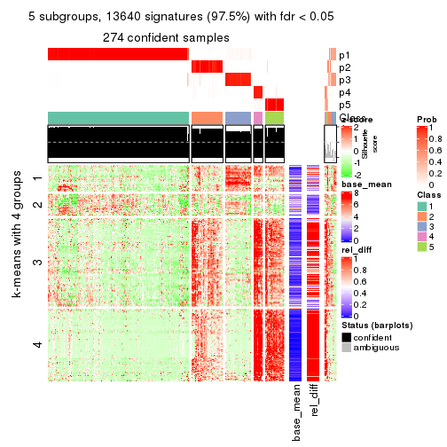
get_signatures(res, k = 6)
Signature heatmaps where rows are not scaled:
get_signatures(res, k = 2, scale_rows = FALSE)
get_signatures(res, k = 3, scale_rows = FALSE)
get_signatures(res, k = 4, scale_rows = FALSE)
get_signatures(res, k = 5, scale_rows = FALSE)
get_signatures(res, k = 6, scale_rows = FALSE)
Compare the overlap of signatures from different k:
compare_signatures(res)
get_signature() returns a data frame invisibly. TO get the list of signatures, the function
call should be assigned to a variable explicitly. In following code, if plot argument is set
to FALSE, no heatmap is plotted while only the differential analysis is performed.
# code only for demonstration
tb = get_signature(res, k = ..., plot = FALSE)
An example of the output of tb is:
#> which_row fdr mean_1 mean_2 scaled_mean_1 scaled_mean_2 km
#> 1 38 0.042760348 8.373488 9.131774 -0.5533452 0.5164555 1
#> 2 40 0.018707592 7.106213 8.469186 -0.6173731 0.5762149 1
#> 3 55 0.019134737 10.221463 11.207825 -0.6159697 0.5749050 1
#> 4 59 0.006059896 5.921854 7.869574 -0.6899429 0.6439467 1
#> 5 60 0.018055526 8.928898 10.211722 -0.6204761 0.5791110 1
#> 6 98 0.009384629 15.714769 14.887706 0.6635654 -0.6193277 2
...
The columns in tb are:
which_row: row indices corresponding to the input matrix.fdr: FDR for the differential test. mean_x: The mean value in group x.scaled_mean_x: The mean value in group x after rows are scaled.km: Row groups if k-means clustering is applied to rows.UMAP plot which shows how samples are separated.
dimension_reduction(res, k = 2, method = "UMAP")
dimension_reduction(res, k = 3, method = "UMAP")
dimension_reduction(res, k = 4, method = "UMAP")
dimension_reduction(res, k = 5, method = "UMAP")
dimension_reduction(res, k = 6, method = "UMAP")
Following heatmap shows how subgroups are split when increasing k:
collect_classes(res)
If matrix rows can be associated to genes, consider to use functional_enrichment(res,
...) to perform function enrichment for the signature genes. See this vignette for more detailed explanations.
The object with results only for a single top-value method and a single partition method can be extracted as:
res = res_list["CV", "mclust"]
# you can also extract it by
# res = res_list["CV:mclust"]
A summary of res and all the functions that can be applied to it:
res
#> A 'ConsensusPartition' object with k = 2, 3, 4, 5, 6.
#> On a matrix with 13984 rows and 288 columns.
#> Top rows (1000, 2000, 3000, 4000, 5000) are extracted by 'CV' method.
#> Subgroups are detected by 'mclust' method.
#> Performed in total 1250 partitions by row resampling.
#> Best k for subgroups seems to be 4.
#>
#> Following methods can be applied to this 'ConsensusPartition' object:
#> [1] "cola_report" "collect_classes" "collect_plots"
#> [4] "collect_stats" "colnames" "compare_signatures"
#> [7] "consensus_heatmap" "dimension_reduction" "functional_enrichment"
#> [10] "get_anno_col" "get_anno" "get_classes"
#> [13] "get_consensus" "get_matrix" "get_membership"
#> [16] "get_param" "get_signatures" "get_stats"
#> [19] "is_best_k" "is_stable_k" "membership_heatmap"
#> [22] "ncol" "nrow" "plot_ecdf"
#> [25] "rownames" "select_partition_number" "show"
#> [28] "suggest_best_k" "test_to_known_factors"
collect_plots() function collects all the plots made from res for all k (number of partitions)
into one single page to provide an easy and fast comparison between different k.
collect_plots(res)
The plots are:
k and the heatmap of
predicted classes for each k.k.k.k.All the plots in panels can be made by individual functions and they are plotted later in this section.
select_partition_number() produces several plots showing different
statistics for choosing “optimized” k. There are following statistics:
k;k, the area increased is defined as \(A_k - A_{k-1}\).The detailed explanations of these statistics can be found in the cola vignette.
Generally speaking, lower PAC score, higher mean silhouette score or higher
concordance corresponds to better partition. Rand index and Jaccard index
measure how similar the current partition is compared to partition with k-1.
If they are too similar, we won't accept k is better than k-1.
select_partition_number(res)
The numeric values for all these statistics can be obtained by get_stats().
get_stats(res)
#> k 1-PAC mean_silhouette concordance area_increased Rand Jaccard
#> 2 2 1.000 0.960 0.983 0.5005 0.500 0.500
#> 3 3 0.764 0.844 0.894 0.2234 0.876 0.758
#> 4 4 0.919 0.890 0.951 0.1683 0.838 0.616
#> 5 5 0.883 0.844 0.929 0.0622 0.925 0.750
#> 6 6 0.826 0.750 0.871 0.0360 0.947 0.789
suggest_best_k() suggests the best \(k\) based on these statistics. The rules are as follows:
suggest_best_k(res)
#> [1] 4
#> attr(,"optional")
#> [1] 2
There is also optional best \(k\) = 2 that is worth to check.
Following shows the table of the partitions (You need to click the show/hide
code output link to see it). The membership matrix (columns with name p*)
is inferred by
clue::cl_consensus()
function with the SE method. Basically the value in the membership matrix
represents the probability to belong to a certain group. The finall class
label for an item is determined with the group with highest probability it
belongs to.
In get_classes() function, the entropy is calculated from the membership
matrix and the silhouette score is calculated from the consensus matrix.
cbind(get_classes(res, k = 2), get_membership(res, k = 2))
#> class entropy silhouette p1 p2
#> SRR1982614 2 0.0000 0.979 0.000 1.000
#> SRR1982613 2 0.0000 0.979 0.000 1.000
#> SRR1982612 1 0.8081 0.670 0.752 0.248
#> SRR1982611 2 0.8608 0.607 0.284 0.716
#> SRR1982610 1 0.0000 0.987 1.000 0.000
#> SRR1982609 1 0.0000 0.987 1.000 0.000
#> SRR1982659 1 0.0000 0.987 1.000 0.000
#> SRR1982692 2 0.0000 0.979 0.000 1.000
#> SRR1982722 1 0.0000 0.987 1.000 0.000
#> SRR1982750 2 0.0000 0.979 0.000 1.000
#> SRR2095031 2 0.0000 0.979 0.000 1.000
#> SRR1982780 1 0.0000 0.987 1.000 0.000
#> SRR1982807 1 0.0000 0.987 1.000 0.000
#> SRR1982830 1 0.0376 0.984 0.996 0.004
#> SRR1982829 2 0.0000 0.979 0.000 1.000
#> SRR1982828 1 0.2423 0.954 0.960 0.040
#> SRR1982827 1 0.0000 0.987 1.000 0.000
#> SRR1982826 1 0.0000 0.987 1.000 0.000
#> SRR1982825 1 0.0000 0.987 1.000 0.000
#> SRR1982824 1 0.0672 0.981 0.992 0.008
#> SRR1982823 1 0.0000 0.987 1.000 0.000
#> SRR1982822 1 0.0000 0.987 1.000 0.000
#> SRR1982821 1 0.0000 0.987 1.000 0.000
#> SRR1982820 1 0.0000 0.987 1.000 0.000
#> SRR1982819 1 0.0000 0.987 1.000 0.000
#> SRR1982818 1 0.0000 0.987 1.000 0.000
#> SRR1982817 1 0.1414 0.972 0.980 0.020
#> SRR1982816 1 0.0000 0.987 1.000 0.000
#> SRR1982815 1 0.0000 0.987 1.000 0.000
#> SRR1982814 1 0.0000 0.987 1.000 0.000
#> SRR1982813 1 0.0000 0.987 1.000 0.000
#> SRR1982812 2 0.0000 0.979 0.000 1.000
#> SRR1982811 2 0.6887 0.770 0.184 0.816
#> SRR1982810 2 0.0000 0.979 0.000 1.000
#> SRR1982809 2 0.0000 0.979 0.000 1.000
#> SRR1982808 2 0.0000 0.979 0.000 1.000
#> SRR1982806 1 0.0000 0.987 1.000 0.000
#> SRR1982805 1 0.0000 0.987 1.000 0.000
#> SRR1982804 1 0.0000 0.987 1.000 0.000
#> SRR1982803 2 0.0000 0.979 0.000 1.000
#> SRR1982802 1 0.0000 0.987 1.000 0.000
#> SRR1982801 1 0.0000 0.987 1.000 0.000
#> SRR1982800 1 0.0000 0.987 1.000 0.000
#> SRR1982799 1 0.0000 0.987 1.000 0.000
#> SRR1982798 1 0.0000 0.987 1.000 0.000
#> SRR1982797 2 0.0000 0.979 0.000 1.000
#> SRR1982796 1 0.1843 0.965 0.972 0.028
#> SRR1982795 1 0.0000 0.987 1.000 0.000
#> SRR1982794 1 0.0000 0.987 1.000 0.000
#> SRR1982793 1 0.0000 0.987 1.000 0.000
#> SRR1982792 1 0.0000 0.987 1.000 0.000
#> SRR1982791 1 0.1843 0.965 0.972 0.028
#> SRR1982790 2 0.0000 0.979 0.000 1.000
#> SRR1982789 1 0.0000 0.987 1.000 0.000
#> SRR1982788 1 0.0000 0.987 1.000 0.000
#> SRR1982787 1 0.0000 0.987 1.000 0.000
#> SRR1982786 2 0.0000 0.979 0.000 1.000
#> SRR1982785 2 0.9795 0.303 0.416 0.584
#> SRR1982784 1 0.0000 0.987 1.000 0.000
#> SRR1982783 2 0.0000 0.979 0.000 1.000
#> SRR1982782 1 0.0000 0.987 1.000 0.000
#> SRR1982781 1 0.0000 0.987 1.000 0.000
#> SRR1982779 2 0.0000 0.979 0.000 1.000
#> SRR1982778 1 0.4690 0.886 0.900 0.100
#> SRR1982776 2 0.0000 0.979 0.000 1.000
#> SRR1982777 2 0.0000 0.979 0.000 1.000
#> SRR1982775 2 0.9710 0.348 0.400 0.600
#> SRR1982774 1 0.2043 0.962 0.968 0.032
#> SRR1982772 1 0.0000 0.987 1.000 0.000
#> SRR1982773 2 0.9944 0.177 0.456 0.544
#> SRR1982770 1 0.0000 0.987 1.000 0.000
#> SRR1982771 1 0.3879 0.915 0.924 0.076
#> SRR1982769 2 0.0000 0.979 0.000 1.000
#> SRR1982768 2 0.0000 0.979 0.000 1.000
#> SRR1982767 2 0.0000 0.979 0.000 1.000
#> SRR1982766 2 0.0000 0.979 0.000 1.000
#> SRR1982765 1 0.7528 0.728 0.784 0.216
#> SRR1982764 2 0.0000 0.979 0.000 1.000
#> SRR1982762 1 0.0000 0.987 1.000 0.000
#> SRR1982760 1 0.0000 0.987 1.000 0.000
#> SRR1982761 1 0.0000 0.987 1.000 0.000
#> SRR1982763 2 0.0000 0.979 0.000 1.000
#> SRR1982759 1 0.0000 0.987 1.000 0.000
#> SRR1982758 2 0.0000 0.979 0.000 1.000
#> SRR1982757 2 0.0000 0.979 0.000 1.000
#> SRR1982755 1 0.0000 0.987 1.000 0.000
#> SRR1982754 1 0.0000 0.987 1.000 0.000
#> SRR1982756 1 0.2043 0.962 0.968 0.032
#> SRR1982753 2 0.6801 0.776 0.180 0.820
#> SRR1982751 2 0.0000 0.979 0.000 1.000
#> SRR1982752 2 0.0000 0.979 0.000 1.000
#> SRR1982749 2 0.0000 0.979 0.000 1.000
#> SRR1982748 2 0.0000 0.979 0.000 1.000
#> SRR1982747 2 0.0000 0.979 0.000 1.000
#> SRR1982746 2 0.0000 0.979 0.000 1.000
#> SRR1982745 2 0.0000 0.979 0.000 1.000
#> SRR1982743 2 0.0000 0.979 0.000 1.000
#> SRR1982744 2 0.0000 0.979 0.000 1.000
#> SRR1982741 2 0.0000 0.979 0.000 1.000
#> SRR1982742 2 0.0000 0.979 0.000 1.000
#> SRR2095014 2 0.0000 0.979 0.000 1.000
#> SRR1982740 2 0.0000 0.979 0.000 1.000
#> SRR1982739 2 0.0000 0.979 0.000 1.000
#> SRR1982737 2 0.0000 0.979 0.000 1.000
#> SRR1982738 2 0.0000 0.979 0.000 1.000
#> SRR1982736 2 0.0000 0.979 0.000 1.000
#> SRR1982735 2 0.0000 0.979 0.000 1.000
#> SRR1982733 2 0.0000 0.979 0.000 1.000
#> SRR1982732 2 0.0000 0.979 0.000 1.000
#> SRR2095004 2 0.0000 0.979 0.000 1.000
#> SRR1982734 2 0.0000 0.979 0.000 1.000
#> SRR1982731 2 0.0000 0.979 0.000 1.000
#> SRR1982729 2 0.0000 0.979 0.000 1.000
#> SRR1982730 2 0.0000 0.979 0.000 1.000
#> SRR1982728 2 0.0000 0.979 0.000 1.000
#> SRR1982727 2 0.0000 0.979 0.000 1.000
#> SRR1982726 1 0.0672 0.981 0.992 0.008
#> SRR1982723 2 0.0000 0.979 0.000 1.000
#> SRR1982725 2 0.0000 0.979 0.000 1.000
#> SRR1982724 1 0.1184 0.975 0.984 0.016
#> SRR1982721 1 0.0000 0.987 1.000 0.000
#> SRR1982720 1 0.0000 0.987 1.000 0.000
#> SRR1982719 1 0.0000 0.987 1.000 0.000
#> SRR1982718 2 0.0000 0.979 0.000 1.000
#> SRR1982717 2 0.0000 0.979 0.000 1.000
#> SRR1982715 2 0.0000 0.979 0.000 1.000
#> SRR1982714 2 0.0000 0.979 0.000 1.000
#> SRR1982716 2 0.0000 0.979 0.000 1.000
#> SRR1982713 2 0.0000 0.979 0.000 1.000
#> SRR1982711 2 0.0000 0.979 0.000 1.000
#> SRR1982712 2 0.0000 0.979 0.000 1.000
#> SRR1982710 2 0.0000 0.979 0.000 1.000
#> SRR1982708 2 0.0000 0.979 0.000 1.000
#> SRR1982707 2 0.0000 0.979 0.000 1.000
#> SRR1982709 1 0.9850 0.243 0.572 0.428
#> SRR1982705 2 0.0000 0.979 0.000 1.000
#> SRR1982706 1 0.0000 0.987 1.000 0.000
#> SRR1982704 2 0.6343 0.803 0.160 0.840
#> SRR1982702 2 0.0000 0.979 0.000 1.000
#> SRR1982703 2 0.0000 0.979 0.000 1.000
#> SRR1982701 2 0.0000 0.979 0.000 1.000
#> SRR1982700 2 0.0000 0.979 0.000 1.000
#> SRR1982697 2 0.0000 0.979 0.000 1.000
#> SRR1982698 2 0.0000 0.979 0.000 1.000
#> SRR1982699 2 0.0000 0.979 0.000 1.000
#> SRR1982696 2 0.0000 0.979 0.000 1.000
#> SRR1982695 1 0.0000 0.987 1.000 0.000
#> SRR1982694 1 0.0000 0.987 1.000 0.000
#> SRR1982693 2 0.0000 0.979 0.000 1.000
#> SRR1982690 2 0.0000 0.979 0.000 1.000
#> SRR1982691 2 0.0000 0.979 0.000 1.000
#> SRR1982689 2 0.0000 0.979 0.000 1.000
#> SRR1982688 1 0.0000 0.987 1.000 0.000
#> SRR1982687 2 0.0000 0.979 0.000 1.000
#> SRR1982686 2 0.0000 0.979 0.000 1.000
#> SRR1982685 2 0.0000 0.979 0.000 1.000
#> SRR1982684 2 0.0000 0.979 0.000 1.000
#> SRR1982683 2 0.0000 0.979 0.000 1.000
#> SRR1982681 2 0.0000 0.979 0.000 1.000
#> SRR1982682 2 0.0000 0.979 0.000 1.000
#> SRR1982680 2 0.0000 0.979 0.000 1.000
#> SRR1982679 2 0.0000 0.979 0.000 1.000
#> SRR1982678 2 0.0000 0.979 0.000 1.000
#> SRR1982677 2 0.0000 0.979 0.000 1.000
#> SRR1982676 1 0.0000 0.987 1.000 0.000
#> SRR1982675 1 0.0000 0.987 1.000 0.000
#> SRR1982674 2 0.0000 0.979 0.000 1.000
#> SRR1982671 2 0.0000 0.979 0.000 1.000
#> SRR1982673 1 0.0000 0.987 1.000 0.000
#> SRR1982672 1 0.0000 0.987 1.000 0.000
#> SRR1982670 1 0.1414 0.972 0.980 0.020
#> SRR1982669 1 0.0000 0.987 1.000 0.000
#> SRR1982667 1 0.0000 0.987 1.000 0.000
#> SRR1982668 2 0.0000 0.979 0.000 1.000
#> SRR1982666 1 0.0000 0.987 1.000 0.000
#> SRR1982665 2 0.0000 0.979 0.000 1.000
#> SRR1982664 1 0.0000 0.987 1.000 0.000
#> SRR1982663 1 0.0000 0.987 1.000 0.000
#> SRR1982662 1 0.0000 0.987 1.000 0.000
#> SRR1982661 1 0.0000 0.987 1.000 0.000
#> SRR1982660 1 0.0000 0.987 1.000 0.000
#> SRR1982658 1 0.0000 0.987 1.000 0.000
#> SRR1982657 1 0.0000 0.987 1.000 0.000
#> SRR1982656 2 0.0000 0.979 0.000 1.000
#> SRR1982654 1 0.0000 0.987 1.000 0.000
#> SRR1982655 1 0.0000 0.987 1.000 0.000
#> SRR1982653 1 0.0000 0.987 1.000 0.000
#> SRR1982652 1 0.0000 0.987 1.000 0.000
#> SRR1982651 1 0.0000 0.987 1.000 0.000
#> SRR1982649 1 0.2948 0.942 0.948 0.052
#> SRR1982650 1 0.0000 0.987 1.000 0.000
#> SRR1982648 1 0.0000 0.987 1.000 0.000
#> SRR1982647 1 0.0000 0.987 1.000 0.000
#> SRR1982646 2 0.0000 0.979 0.000 1.000
#> SRR1982645 1 0.0000 0.987 1.000 0.000
#> SRR1982644 1 0.0000 0.987 1.000 0.000
#> SRR1982642 1 0.0000 0.987 1.000 0.000
#> SRR1982643 1 0.0000 0.987 1.000 0.000
#> SRR1982641 1 0.0000 0.987 1.000 0.000
#> SRR1982640 1 0.0000 0.987 1.000 0.000
#> SRR1982638 1 0.0000 0.987 1.000 0.000
#> SRR1982639 1 0.0000 0.987 1.000 0.000
#> SRR1982637 1 0.0000 0.987 1.000 0.000
#> SRR1982635 1 0.0000 0.987 1.000 0.000
#> SRR1982636 1 0.0000 0.987 1.000 0.000
#> SRR1982633 1 0.0000 0.987 1.000 0.000
#> SRR1982632 1 0.0000 0.987 1.000 0.000
#> SRR1982631 1 0.0000 0.987 1.000 0.000
#> SRR1982634 1 0.0000 0.987 1.000 0.000
#> SRR1982628 1 0.2236 0.958 0.964 0.036
#> SRR1982629 2 0.9170 0.512 0.332 0.668
#> SRR1982627 1 0.6343 0.810 0.840 0.160
#> SRR1982625 1 0.0000 0.987 1.000 0.000
#> SRR1982626 1 0.0000 0.987 1.000 0.000
#> SRR1982624 2 0.9491 0.421 0.368 0.632
#> SRR1982623 1 0.0000 0.987 1.000 0.000
#> SRR1982622 1 0.0000 0.987 1.000 0.000
#> SRR1982621 2 0.9248 0.494 0.340 0.660
#> SRR1982620 1 0.1843 0.965 0.972 0.028
#> SRR1982619 2 0.0000 0.979 0.000 1.000
#> SRR1982618 1 0.0000 0.987 1.000 0.000
#> SRR1982617 2 0.0000 0.979 0.000 1.000
#> SRR1982616 1 0.0000 0.987 1.000 0.000
#> SRR1982615 1 0.0000 0.987 1.000 0.000
#> SRR1982608 2 0.0000 0.979 0.000 1.000
#> SRR1982607 1 0.0000 0.987 1.000 0.000
#> SRR1982606 1 0.0000 0.987 1.000 0.000
#> SRR1982605 1 0.0000 0.987 1.000 0.000
#> SRR1982604 1 0.0000 0.987 1.000 0.000
#> SRR1982603 1 0.0000 0.987 1.000 0.000
#> SRR1982602 1 0.0000 0.987 1.000 0.000
#> SRR1982601 1 0.0000 0.987 1.000 0.000
#> SRR1982599 1 0.0000 0.987 1.000 0.000
#> SRR1982600 2 0.0000 0.979 0.000 1.000
#> SRR1982598 1 0.0000 0.987 1.000 0.000
#> SRR1982597 1 0.0000 0.987 1.000 0.000
#> SRR1982595 1 0.0000 0.987 1.000 0.000
#> SRR1982596 1 0.0000 0.987 1.000 0.000
#> SRR1982594 1 0.0000 0.987 1.000 0.000
#> SRR1982593 1 0.0000 0.987 1.000 0.000
#> SRR1982592 2 0.0000 0.979 0.000 1.000
#> SRR1982591 1 0.2043 0.962 0.968 0.032
#> SRR1982590 2 0.0000 0.979 0.000 1.000
#> SRR1982589 1 0.2043 0.962 0.968 0.032
#> SRR1982588 1 0.0000 0.987 1.000 0.000
#> SRR1982587 1 0.0000 0.987 1.000 0.000
#> SRR1982586 1 0.0000 0.987 1.000 0.000
#> SRR1982584 2 0.0000 0.979 0.000 1.000
#> SRR2096514 2 0.0000 0.979 0.000 1.000
#> SRR2096513 2 0.0000 0.979 0.000 1.000
#> SRR2096511 2 0.0000 0.979 0.000 1.000
#> SRR2096512 2 0.0000 0.979 0.000 1.000
#> SRR2096509 2 0.0000 0.979 0.000 1.000
#> SRR2096510 2 0.0000 0.979 0.000 1.000
#> SRR2096508 2 0.0000 0.979 0.000 1.000
#> SRR2096507 2 0.0000 0.979 0.000 1.000
#> SRR2096504 2 0.0000 0.979 0.000 1.000
#> SRR2096506 2 0.0000 0.979 0.000 1.000
#> SRR2096505 2 0.0000 0.979 0.000 1.000
#> SRR2096503 2 0.0000 0.979 0.000 1.000
#> SRR2096500 2 0.0000 0.979 0.000 1.000
#> SRR2096501 2 0.0000 0.979 0.000 1.000
#> SRR2096502 2 0.0000 0.979 0.000 1.000
#> SRR2096499 2 0.0000 0.979 0.000 1.000
#> SRR2096498 2 0.0000 0.979 0.000 1.000
#> SRR2096496 2 0.0000 0.979 0.000 1.000
#> SRR2096497 2 0.0000 0.979 0.000 1.000
#> SRR2096495 2 0.0000 0.979 0.000 1.000
#> SRR2096494 2 0.0000 0.979 0.000 1.000
#> SRR2096492 2 0.0000 0.979 0.000 1.000
#> SRR2096491 2 0.0000 0.979 0.000 1.000
#> SRR2096493 2 0.0000 0.979 0.000 1.000
#> SRR2096490 2 0.0000 0.979 0.000 1.000
#> SRR2096488 2 0.0000 0.979 0.000 1.000
#> SRR2096489 2 0.0000 0.979 0.000 1.000
#> SRR2096487 2 0.0000 0.979 0.000 1.000
#> SRR2096484 2 0.0000 0.979 0.000 1.000
#> SRR2096486 2 0.0000 0.979 0.000 1.000
#> SRR2096485 2 0.0000 0.979 0.000 1.000
#> SRR2096483 2 0.0000 0.979 0.000 1.000
#> SRR2096482 2 0.0000 0.979 0.000 1.000
#> SRR2096481 2 0.0000 0.979 0.000 1.000
#> SRR2096520 2 0.0000 0.979 0.000 1.000
#> SRR2096519 2 0.0000 0.979 0.000 1.000
#> SRR2096518 2 0.0000 0.979 0.000 1.000
#> SRR2096516 2 0.0000 0.979 0.000 1.000
#> SRR2096517 2 0.0000 0.979 0.000 1.000
#> SRR2096515 2 0.0000 0.979 0.000 1.000
cbind(get_classes(res, k = 3), get_membership(res, k = 3))
#> class entropy silhouette p1 p2 p3
#> SRR1982614 2 0.5216 0.6887 0.000 0.740 0.260
#> SRR1982613 2 0.5216 0.6887 0.000 0.740 0.260
#> SRR1982612 1 0.9840 0.1775 0.416 0.320 0.264
#> SRR1982611 2 0.7778 0.5737 0.092 0.644 0.264
#> SRR1982610 1 0.3752 0.8391 0.856 0.000 0.144
#> SRR1982609 1 0.0000 0.9164 1.000 0.000 0.000
#> SRR1982659 1 0.0000 0.9164 1.000 0.000 0.000
#> SRR1982692 2 0.0000 0.8798 0.000 1.000 0.000
#> SRR1982722 1 0.0000 0.9164 1.000 0.000 0.000
#> SRR1982750 2 0.0000 0.8798 0.000 1.000 0.000
#> SRR2095031 2 0.0000 0.8798 0.000 1.000 0.000
#> SRR1982780 1 0.4346 0.8114 0.816 0.000 0.184
#> SRR1982807 1 0.0000 0.9164 1.000 0.000 0.000
#> SRR1982830 1 0.0237 0.9144 0.996 0.000 0.004
#> SRR1982829 2 0.5216 0.6887 0.000 0.740 0.260
#> SRR1982828 1 0.7983 0.6356 0.632 0.104 0.264
#> SRR1982827 1 0.5098 0.7641 0.752 0.000 0.248
#> SRR1982826 1 0.1753 0.8945 0.952 0.000 0.048
#> SRR1982825 1 0.0000 0.9164 1.000 0.000 0.000
#> SRR1982824 1 0.5244 0.7685 0.756 0.004 0.240
#> SRR1982823 1 0.0000 0.9164 1.000 0.000 0.000
#> SRR1982822 1 0.4931 0.7766 0.768 0.000 0.232
#> SRR1982821 1 0.0000 0.9164 1.000 0.000 0.000
#> SRR1982820 1 0.0000 0.9164 1.000 0.000 0.000
#> SRR1982819 1 0.0000 0.9164 1.000 0.000 0.000
#> SRR1982818 1 0.0000 0.9164 1.000 0.000 0.000
#> SRR1982817 1 0.5036 0.8087 0.808 0.020 0.172
#> SRR1982816 1 0.0000 0.9164 1.000 0.000 0.000
#> SRR1982815 1 0.0000 0.9164 1.000 0.000 0.000
#> SRR1982814 1 0.0000 0.9164 1.000 0.000 0.000
#> SRR1982813 1 0.2356 0.8819 0.928 0.000 0.072
#> SRR1982812 2 0.0000 0.8798 0.000 1.000 0.000
#> SRR1982811 2 0.6770 0.6379 0.044 0.692 0.264
#> SRR1982810 2 0.1529 0.8534 0.000 0.960 0.040
#> SRR1982809 2 0.0000 0.8798 0.000 1.000 0.000
#> SRR1982808 2 0.5656 0.6783 0.008 0.728 0.264
#> SRR1982806 1 0.0000 0.9164 1.000 0.000 0.000
#> SRR1982805 1 0.0000 0.9164 1.000 0.000 0.000
#> SRR1982804 1 0.3267 0.8561 0.884 0.000 0.116
#> SRR1982803 2 0.5812 0.6743 0.012 0.724 0.264
#> SRR1982802 1 0.0000 0.9164 1.000 0.000 0.000
#> SRR1982801 1 0.0000 0.9164 1.000 0.000 0.000
#> SRR1982800 1 0.0000 0.9164 1.000 0.000 0.000
#> SRR1982799 1 0.0000 0.9164 1.000 0.000 0.000
#> SRR1982798 1 0.0000 0.9164 1.000 0.000 0.000
#> SRR1982797 2 0.5216 0.6887 0.000 0.740 0.260
#> SRR1982796 1 0.5956 0.7367 0.720 0.016 0.264
#> SRR1982795 1 0.2878 0.8680 0.904 0.000 0.096
#> SRR1982794 1 0.4887 0.7799 0.772 0.000 0.228
#> SRR1982793 1 0.0000 0.9164 1.000 0.000 0.000
#> SRR1982792 1 0.0237 0.9144 0.996 0.000 0.004
#> SRR1982791 1 0.7479 0.6711 0.660 0.076 0.264
#> SRR1982790 2 0.0000 0.8798 0.000 1.000 0.000
#> SRR1982789 1 0.0000 0.9164 1.000 0.000 0.000
#> SRR1982788 1 0.0000 0.9164 1.000 0.000 0.000
#> SRR1982787 1 0.0237 0.9144 0.996 0.000 0.004
#> SRR1982786 2 0.0000 0.8798 0.000 1.000 0.000
#> SRR1982785 1 0.9872 0.1232 0.400 0.336 0.264
#> SRR1982784 1 0.0000 0.9164 1.000 0.000 0.000
#> SRR1982783 2 0.5216 0.6887 0.000 0.740 0.260
#> SRR1982782 1 0.0000 0.9164 1.000 0.000 0.000
#> SRR1982781 1 0.0000 0.9164 1.000 0.000 0.000
#> SRR1982779 2 0.2356 0.8301 0.000 0.928 0.072
#> SRR1982778 1 0.2772 0.8751 0.916 0.004 0.080
#> SRR1982776 2 0.0000 0.8798 0.000 1.000 0.000
#> SRR1982777 2 0.0000 0.8798 0.000 1.000 0.000
#> SRR1982775 1 0.9648 0.2938 0.464 0.292 0.244
#> SRR1982774 1 0.7848 0.6461 0.640 0.096 0.264
#> SRR1982772 1 0.0747 0.9095 0.984 0.000 0.016
#> SRR1982773 1 0.9891 0.0655 0.384 0.352 0.264
#> SRR1982770 1 0.0000 0.9164 1.000 0.000 0.000
#> SRR1982771 1 0.5404 0.7548 0.740 0.004 0.256
#> SRR1982769 2 0.1163 0.8618 0.000 0.972 0.028
#> SRR1982768 2 0.1529 0.8545 0.000 0.960 0.040
#> SRR1982767 2 0.5254 0.6857 0.000 0.736 0.264
#> SRR1982766 2 0.5216 0.6887 0.000 0.740 0.260
#> SRR1982765 1 0.9704 0.3030 0.456 0.280 0.264
#> SRR1982764 2 0.1163 0.8618 0.000 0.972 0.028
#> SRR1982762 1 0.0000 0.9164 1.000 0.000 0.000
#> SRR1982760 1 0.0000 0.9164 1.000 0.000 0.000
#> SRR1982761 1 0.0424 0.9133 0.992 0.000 0.008
#> SRR1982763 2 0.0000 0.8798 0.000 1.000 0.000
#> SRR1982759 1 0.5254 0.7512 0.736 0.000 0.264
#> SRR1982758 2 0.0000 0.8798 0.000 1.000 0.000
#> SRR1982757 2 0.5254 0.6857 0.000 0.736 0.264
#> SRR1982755 1 0.0237 0.9148 0.996 0.000 0.004
#> SRR1982754 1 0.5216 0.7542 0.740 0.000 0.260
#> SRR1982756 1 0.7557 0.6663 0.656 0.080 0.264
#> SRR1982753 2 0.8292 0.5264 0.124 0.612 0.264
#> SRR1982751 2 0.0000 0.8798 0.000 1.000 0.000
#> SRR1982752 2 0.0000 0.8798 0.000 1.000 0.000
#> SRR1982749 2 0.0000 0.8798 0.000 1.000 0.000
#> SRR1982748 2 0.0000 0.8798 0.000 1.000 0.000
#> SRR1982747 2 0.0000 0.8798 0.000 1.000 0.000
#> SRR1982746 2 0.0000 0.8798 0.000 1.000 0.000
#> SRR1982745 2 0.0000 0.8798 0.000 1.000 0.000
#> SRR1982743 2 0.0000 0.8798 0.000 1.000 0.000
#> SRR1982744 2 0.0000 0.8798 0.000 1.000 0.000
#> SRR1982741 2 0.0000 0.8798 0.000 1.000 0.000
#> SRR1982742 2 0.0000 0.8798 0.000 1.000 0.000
#> SRR2095014 2 0.0000 0.8798 0.000 1.000 0.000
#> SRR1982740 2 0.0000 0.8798 0.000 1.000 0.000
#> SRR1982739 2 0.0000 0.8798 0.000 1.000 0.000
#> SRR1982737 2 0.0000 0.8798 0.000 1.000 0.000
#> SRR1982738 2 0.0000 0.8798 0.000 1.000 0.000
#> SRR1982736 2 0.0000 0.8798 0.000 1.000 0.000
#> SRR1982735 2 0.0000 0.8798 0.000 1.000 0.000
#> SRR1982733 2 0.0000 0.8798 0.000 1.000 0.000
#> SRR1982732 2 0.0000 0.8798 0.000 1.000 0.000
#> SRR2095004 2 0.0000 0.8798 0.000 1.000 0.000
#> SRR1982734 2 0.0000 0.8798 0.000 1.000 0.000
#> SRR1982731 2 0.0000 0.8798 0.000 1.000 0.000
#> SRR1982729 2 0.0000 0.8798 0.000 1.000 0.000
#> SRR1982730 2 0.0000 0.8798 0.000 1.000 0.000
#> SRR1982728 2 0.0000 0.8798 0.000 1.000 0.000
#> SRR1982727 2 0.0000 0.8798 0.000 1.000 0.000
#> SRR1982726 1 0.5443 0.7509 0.736 0.004 0.260
#> SRR1982723 2 0.5216 0.6887 0.000 0.740 0.260
#> SRR1982725 2 0.5216 0.6887 0.000 0.740 0.260
#> SRR1982724 1 0.5098 0.7644 0.752 0.000 0.248
#> SRR1982721 1 0.0000 0.9164 1.000 0.000 0.000
#> SRR1982720 1 0.0000 0.9164 1.000 0.000 0.000
#> SRR1982719 1 0.0000 0.9164 1.000 0.000 0.000
#> SRR1982718 2 0.0000 0.8798 0.000 1.000 0.000
#> SRR1982717 2 0.0000 0.8798 0.000 1.000 0.000
#> SRR1982715 2 0.0000 0.8798 0.000 1.000 0.000
#> SRR1982714 2 0.0000 0.8798 0.000 1.000 0.000
#> SRR1982716 2 0.0000 0.8798 0.000 1.000 0.000
#> SRR1982713 2 0.0000 0.8798 0.000 1.000 0.000
#> SRR1982711 2 0.0000 0.8798 0.000 1.000 0.000
#> SRR1982712 2 0.0000 0.8798 0.000 1.000 0.000
#> SRR1982710 2 0.0000 0.8798 0.000 1.000 0.000
#> SRR1982708 2 0.0000 0.8798 0.000 1.000 0.000
#> SRR1982707 2 0.5138 0.6943 0.000 0.748 0.252
#> SRR1982709 2 0.9626 0.2970 0.268 0.472 0.260
#> SRR1982705 2 0.0000 0.8798 0.000 1.000 0.000
#> SRR1982706 1 0.0000 0.9164 1.000 0.000 0.000
#> SRR1982704 2 0.5956 0.6700 0.016 0.720 0.264
#> SRR1982702 2 0.0000 0.8798 0.000 1.000 0.000
#> SRR1982703 2 0.0000 0.8798 0.000 1.000 0.000
#> SRR1982701 2 0.0000 0.8798 0.000 1.000 0.000
#> SRR1982700 2 0.0000 0.8798 0.000 1.000 0.000
#> SRR1982697 2 0.0000 0.8798 0.000 1.000 0.000
#> SRR1982698 2 0.0000 0.8798 0.000 1.000 0.000
#> SRR1982699 2 0.0000 0.8798 0.000 1.000 0.000
#> SRR1982696 2 0.0000 0.8798 0.000 1.000 0.000
#> SRR1982695 1 0.0592 0.9114 0.988 0.000 0.012
#> SRR1982694 1 0.0000 0.9164 1.000 0.000 0.000
#> SRR1982693 2 0.0000 0.8798 0.000 1.000 0.000
#> SRR1982690 2 0.0000 0.8798 0.000 1.000 0.000
#> SRR1982691 2 0.0000 0.8798 0.000 1.000 0.000
#> SRR1982689 2 0.0000 0.8798 0.000 1.000 0.000
#> SRR1982688 1 0.0000 0.9164 1.000 0.000 0.000
#> SRR1982687 2 0.0000 0.8798 0.000 1.000 0.000
#> SRR1982686 2 0.0000 0.8798 0.000 1.000 0.000
#> SRR1982685 2 0.0000 0.8798 0.000 1.000 0.000
#> SRR1982684 2 0.0000 0.8798 0.000 1.000 0.000
#> SRR1982683 2 0.5254 0.6857 0.000 0.736 0.264
#> SRR1982681 2 0.0000 0.8798 0.000 1.000 0.000
#> SRR1982682 2 0.0000 0.8798 0.000 1.000 0.000
#> SRR1982680 2 0.0000 0.8798 0.000 1.000 0.000
#> SRR1982679 2 0.0000 0.8798 0.000 1.000 0.000
#> SRR1982678 2 0.0000 0.8798 0.000 1.000 0.000
#> SRR1982677 2 0.0000 0.8798 0.000 1.000 0.000
#> SRR1982676 1 0.0000 0.9164 1.000 0.000 0.000
#> SRR1982675 1 0.0000 0.9164 1.000 0.000 0.000
#> SRR1982674 2 0.5178 0.6915 0.000 0.744 0.256
#> SRR1982671 2 0.0000 0.8798 0.000 1.000 0.000
#> SRR1982673 1 0.0000 0.9164 1.000 0.000 0.000
#> SRR1982672 1 0.0000 0.9164 1.000 0.000 0.000
#> SRR1982670 1 0.6217 0.7288 0.712 0.024 0.264
#> SRR1982669 1 0.0000 0.9164 1.000 0.000 0.000
#> SRR1982667 1 0.5016 0.7703 0.760 0.000 0.240
#> SRR1982668 2 0.5178 0.6915 0.000 0.744 0.256
#> SRR1982666 1 0.0237 0.9144 0.996 0.000 0.004
#> SRR1982665 2 0.0000 0.8798 0.000 1.000 0.000
#> SRR1982664 1 0.0000 0.9164 1.000 0.000 0.000
#> SRR1982663 1 0.0000 0.9164 1.000 0.000 0.000
#> SRR1982662 1 0.0000 0.9164 1.000 0.000 0.000
#> SRR1982661 1 0.3816 0.8360 0.852 0.000 0.148
#> SRR1982660 1 0.0000 0.9164 1.000 0.000 0.000
#> SRR1982658 1 0.0000 0.9164 1.000 0.000 0.000
#> SRR1982657 1 0.0000 0.9164 1.000 0.000 0.000
#> SRR1982656 2 0.0000 0.8798 0.000 1.000 0.000
#> SRR1982654 1 0.0000 0.9164 1.000 0.000 0.000
#> SRR1982655 1 0.0000 0.9164 1.000 0.000 0.000
#> SRR1982653 1 0.0000 0.9164 1.000 0.000 0.000
#> SRR1982652 1 0.0000 0.9164 1.000 0.000 0.000
#> SRR1982651 1 0.0000 0.9164 1.000 0.000 0.000
#> SRR1982649 1 0.9371 0.4427 0.512 0.224 0.264
#> SRR1982650 1 0.0000 0.9164 1.000 0.000 0.000
#> SRR1982648 1 0.0000 0.9164 1.000 0.000 0.000
#> SRR1982647 1 0.0000 0.9164 1.000 0.000 0.000
#> SRR1982646 2 0.5656 0.6784 0.008 0.728 0.264
#> SRR1982645 1 0.0000 0.9164 1.000 0.000 0.000
#> SRR1982644 1 0.0000 0.9164 1.000 0.000 0.000
#> SRR1982642 1 0.0000 0.9164 1.000 0.000 0.000
#> SRR1982643 1 0.0000 0.9164 1.000 0.000 0.000
#> SRR1982641 1 0.0000 0.9164 1.000 0.000 0.000
#> SRR1982640 1 0.0000 0.9164 1.000 0.000 0.000
#> SRR1982638 1 0.0000 0.9164 1.000 0.000 0.000
#> SRR1982639 1 0.0000 0.9164 1.000 0.000 0.000
#> SRR1982637 1 0.0000 0.9164 1.000 0.000 0.000
#> SRR1982635 1 0.0000 0.9164 1.000 0.000 0.000
#> SRR1982636 1 0.3482 0.8490 0.872 0.000 0.128
#> SRR1982633 1 0.0000 0.9164 1.000 0.000 0.000
#> SRR1982632 1 0.0000 0.9164 1.000 0.000 0.000
#> SRR1982631 1 0.0000 0.9164 1.000 0.000 0.000
#> SRR1982634 1 0.1529 0.8983 0.960 0.000 0.040
#> SRR1982628 1 0.8111 0.6242 0.624 0.112 0.264
#> SRR1982629 2 0.9173 0.4082 0.200 0.536 0.264
#> SRR1982627 1 0.9276 0.4659 0.524 0.212 0.264
#> SRR1982625 1 0.0592 0.9117 0.988 0.000 0.012
#> SRR1982626 1 0.0000 0.9164 1.000 0.000 0.000
#> SRR1982624 2 0.7446 0.6018 0.076 0.664 0.260
#> SRR1982623 1 0.0000 0.9164 1.000 0.000 0.000
#> SRR1982622 1 0.0000 0.9164 1.000 0.000 0.000
#> SRR1982621 2 0.9605 0.3129 0.260 0.476 0.264
#> SRR1982620 1 0.7233 0.6853 0.672 0.064 0.264
#> SRR1982619 2 0.0000 0.8798 0.000 1.000 0.000
#> SRR1982618 1 0.0000 0.9164 1.000 0.000 0.000
#> SRR1982617 2 0.0000 0.8798 0.000 1.000 0.000
#> SRR1982616 1 0.5254 0.7512 0.736 0.000 0.264
#> SRR1982615 1 0.0000 0.9164 1.000 0.000 0.000
#> SRR1982608 2 0.0000 0.8798 0.000 1.000 0.000
#> SRR1982607 1 0.0000 0.9164 1.000 0.000 0.000
#> SRR1982606 1 0.0000 0.9164 1.000 0.000 0.000
#> SRR1982605 1 0.0000 0.9164 1.000 0.000 0.000
#> SRR1982604 1 0.0000 0.9164 1.000 0.000 0.000
#> SRR1982603 1 0.0000 0.9164 1.000 0.000 0.000
#> SRR1982602 1 0.0000 0.9164 1.000 0.000 0.000
#> SRR1982601 1 0.0237 0.9148 0.996 0.000 0.004
#> SRR1982599 1 0.0000 0.9164 1.000 0.000 0.000
#> SRR1982600 2 0.5216 0.6887 0.000 0.740 0.260
#> SRR1982598 1 0.0000 0.9164 1.000 0.000 0.000
#> SRR1982597 1 0.0000 0.9164 1.000 0.000 0.000
#> SRR1982595 1 0.0000 0.9164 1.000 0.000 0.000
#> SRR1982596 1 0.0000 0.9164 1.000 0.000 0.000
#> SRR1982594 1 0.0000 0.9164 1.000 0.000 0.000
#> SRR1982593 1 0.0000 0.9164 1.000 0.000 0.000
#> SRR1982592 2 0.0000 0.8798 0.000 1.000 0.000
#> SRR1982591 1 0.7778 0.6513 0.644 0.092 0.264
#> SRR1982590 2 0.5216 0.6887 0.000 0.740 0.260
#> SRR1982589 1 0.7706 0.6567 0.648 0.088 0.264
#> SRR1982588 1 0.5254 0.7512 0.736 0.000 0.264
#> SRR1982587 1 0.0000 0.9164 1.000 0.000 0.000
#> SRR1982586 1 0.0000 0.9164 1.000 0.000 0.000
#> SRR1982584 2 0.5216 0.6887 0.000 0.740 0.260
#> SRR2096514 3 0.5216 0.9779 0.000 0.260 0.740
#> SRR2096513 3 0.5216 0.9779 0.000 0.260 0.740
#> SRR2096511 3 0.5216 0.9779 0.000 0.260 0.740
#> SRR2096512 2 0.1289 0.8450 0.000 0.968 0.032
#> SRR2096509 3 0.5216 0.9779 0.000 0.260 0.740
#> SRR2096510 3 0.5216 0.9779 0.000 0.260 0.740
#> SRR2096508 2 0.1289 0.8450 0.000 0.968 0.032
#> SRR2096507 3 0.5327 0.9683 0.000 0.272 0.728
#> SRR2096504 3 0.5216 0.9779 0.000 0.260 0.740
#> SRR2096506 3 0.5216 0.9779 0.000 0.260 0.740
#> SRR2096505 3 0.5216 0.9779 0.000 0.260 0.740
#> SRR2096503 2 0.0592 0.8669 0.000 0.988 0.012
#> SRR2096500 3 0.5216 0.9779 0.000 0.260 0.740
#> SRR2096501 3 0.5905 0.8762 0.000 0.352 0.648
#> SRR2096502 3 0.5216 0.9779 0.000 0.260 0.740
#> SRR2096499 3 0.5216 0.9779 0.000 0.260 0.740
#> SRR2096498 2 0.5431 0.6448 0.000 0.716 0.284
#> SRR2096496 3 0.5431 0.9571 0.000 0.284 0.716
#> SRR2096497 3 0.5216 0.9779 0.000 0.260 0.740
#> SRR2096495 3 0.5785 0.9027 0.000 0.332 0.668
#> SRR2096494 3 0.5785 0.9027 0.000 0.332 0.668
#> SRR2096492 3 0.5216 0.9779 0.000 0.260 0.740
#> SRR2096491 2 0.6260 -0.3986 0.000 0.552 0.448
#> SRR2096493 3 0.5216 0.9779 0.000 0.260 0.740
#> SRR2096490 3 0.5216 0.9779 0.000 0.260 0.740
#> SRR2096488 3 0.5216 0.9779 0.000 0.260 0.740
#> SRR2096489 3 0.5216 0.9779 0.000 0.260 0.740
#> SRR2096487 3 0.5216 0.9779 0.000 0.260 0.740
#> SRR2096484 3 0.5216 0.9779 0.000 0.260 0.740
#> SRR2096486 3 0.5216 0.9779 0.000 0.260 0.740
#> SRR2096485 3 0.5216 0.9779 0.000 0.260 0.740
#> SRR2096483 3 0.5216 0.9779 0.000 0.260 0.740
#> SRR2096482 3 0.5216 0.9779 0.000 0.260 0.740
#> SRR2096481 3 0.5905 0.8762 0.000 0.352 0.648
#> SRR2096520 3 0.5216 0.9779 0.000 0.260 0.740
#> SRR2096519 3 0.5733 0.9108 0.000 0.324 0.676
#> SRR2096518 3 0.5216 0.9779 0.000 0.260 0.740
#> SRR2096516 3 0.6045 0.8151 0.000 0.380 0.620
#> SRR2096517 3 0.5216 0.9779 0.000 0.260 0.740
#> SRR2096515 3 0.5216 0.9779 0.000 0.260 0.740
cbind(get_classes(res, k = 4), get_membership(res, k = 4))
#> class entropy silhouette p1 p2 p3 p4
#> SRR1982614 4 0.0000 0.8755 0.000 0.000 0.000 1.000
#> SRR1982613 4 0.1302 0.8504 0.000 0.044 0.000 0.956
#> SRR1982612 4 0.0188 0.8763 0.004 0.000 0.000 0.996
#> SRR1982611 4 0.0188 0.8763 0.004 0.000 0.000 0.996
#> SRR1982610 1 0.4855 0.3027 0.600 0.000 0.000 0.400
#> SRR1982609 1 0.0000 0.9648 1.000 0.000 0.000 0.000
#> SRR1982659 1 0.0000 0.9648 1.000 0.000 0.000 0.000
#> SRR1982692 2 0.1940 0.9298 0.000 0.924 0.000 0.076
#> SRR1982722 1 0.0000 0.9648 1.000 0.000 0.000 0.000
#> SRR1982750 2 0.0000 0.9484 0.000 1.000 0.000 0.000
#> SRR2095031 2 0.0000 0.9484 0.000 1.000 0.000 0.000
#> SRR1982780 1 0.4761 0.3768 0.628 0.000 0.000 0.372
#> SRR1982807 1 0.0000 0.9648 1.000 0.000 0.000 0.000
#> SRR1982830 1 0.0336 0.9582 0.992 0.000 0.000 0.008
#> SRR1982829 4 0.1118 0.8560 0.000 0.036 0.000 0.964
#> SRR1982828 4 0.0592 0.8754 0.016 0.000 0.000 0.984
#> SRR1982827 1 0.5000 -0.0454 0.504 0.000 0.000 0.496
#> SRR1982826 1 0.1557 0.9132 0.944 0.000 0.000 0.056
#> SRR1982825 1 0.0000 0.9648 1.000 0.000 0.000 0.000
#> SRR1982824 4 0.4679 0.4851 0.352 0.000 0.000 0.648
#> SRR1982823 1 0.0000 0.9648 1.000 0.000 0.000 0.000
#> SRR1982822 1 0.4843 0.3065 0.604 0.000 0.000 0.396
#> SRR1982821 1 0.0000 0.9648 1.000 0.000 0.000 0.000
#> SRR1982820 1 0.0000 0.9648 1.000 0.000 0.000 0.000
#> SRR1982819 1 0.0000 0.9648 1.000 0.000 0.000 0.000
#> SRR1982818 1 0.0000 0.9648 1.000 0.000 0.000 0.000
#> SRR1982817 4 0.3569 0.7246 0.196 0.000 0.000 0.804
#> SRR1982816 1 0.0000 0.9648 1.000 0.000 0.000 0.000
#> SRR1982815 1 0.0000 0.9648 1.000 0.000 0.000 0.000
#> SRR1982814 1 0.0000 0.9648 1.000 0.000 0.000 0.000
#> SRR1982813 1 0.2469 0.8577 0.892 0.000 0.000 0.108
#> SRR1982812 2 0.0000 0.9484 0.000 1.000 0.000 0.000
#> SRR1982811 4 0.0000 0.8755 0.000 0.000 0.000 1.000
#> SRR1982810 4 0.0000 0.8755 0.000 0.000 0.000 1.000
#> SRR1982809 2 0.2011 0.9278 0.000 0.920 0.000 0.080
#> SRR1982808 4 0.0000 0.8755 0.000 0.000 0.000 1.000
#> SRR1982806 1 0.0000 0.9648 1.000 0.000 0.000 0.000
#> SRR1982805 1 0.0000 0.9648 1.000 0.000 0.000 0.000
#> SRR1982804 1 0.4543 0.4925 0.676 0.000 0.000 0.324
#> SRR1982803 4 0.0000 0.8755 0.000 0.000 0.000 1.000
#> SRR1982802 1 0.0000 0.9648 1.000 0.000 0.000 0.000
#> SRR1982801 1 0.0000 0.9648 1.000 0.000 0.000 0.000
#> SRR1982800 1 0.0000 0.9648 1.000 0.000 0.000 0.000
#> SRR1982799 1 0.0000 0.9648 1.000 0.000 0.000 0.000
#> SRR1982798 1 0.0000 0.9648 1.000 0.000 0.000 0.000
#> SRR1982797 4 0.0000 0.8755 0.000 0.000 0.000 1.000
#> SRR1982796 4 0.1792 0.8418 0.068 0.000 0.000 0.932
#> SRR1982795 1 0.4072 0.6421 0.748 0.000 0.000 0.252
#> SRR1982794 4 0.4790 0.4166 0.380 0.000 0.000 0.620
#> SRR1982793 1 0.0000 0.9648 1.000 0.000 0.000 0.000
#> SRR1982792 1 0.0188 0.9616 0.996 0.000 0.000 0.004
#> SRR1982791 4 0.1118 0.8648 0.036 0.000 0.000 0.964
#> SRR1982790 2 0.2216 0.9208 0.000 0.908 0.000 0.092
#> SRR1982789 1 0.0000 0.9648 1.000 0.000 0.000 0.000
#> SRR1982788 1 0.0000 0.9648 1.000 0.000 0.000 0.000
#> SRR1982787 1 0.0188 0.9616 0.996 0.000 0.000 0.004
#> SRR1982786 2 0.3801 0.7735 0.000 0.780 0.000 0.220
#> SRR1982785 4 0.0817 0.8718 0.024 0.000 0.000 0.976
#> SRR1982784 1 0.0000 0.9648 1.000 0.000 0.000 0.000
#> SRR1982783 4 0.0000 0.8755 0.000 0.000 0.000 1.000
#> SRR1982782 1 0.0000 0.9648 1.000 0.000 0.000 0.000
#> SRR1982781 1 0.0000 0.9648 1.000 0.000 0.000 0.000
#> SRR1982779 4 0.2760 0.7732 0.000 0.128 0.000 0.872
#> SRR1982778 1 0.2408 0.8610 0.896 0.000 0.000 0.104
#> SRR1982776 2 0.0000 0.9484 0.000 1.000 0.000 0.000
#> SRR1982777 2 0.2408 0.9117 0.000 0.896 0.000 0.104
#> SRR1982775 4 0.4981 0.1804 0.464 0.000 0.000 0.536
#> SRR1982774 4 0.1557 0.8512 0.056 0.000 0.000 0.944
#> SRR1982772 1 0.0921 0.9400 0.972 0.000 0.000 0.028
#> SRR1982773 4 0.0592 0.8754 0.016 0.000 0.000 0.984
#> SRR1982770 1 0.0000 0.9648 1.000 0.000 0.000 0.000
#> SRR1982771 4 0.4916 0.3032 0.424 0.000 0.000 0.576
#> SRR1982769 4 0.4817 0.2446 0.000 0.388 0.000 0.612
#> SRR1982768 4 0.3528 0.6823 0.000 0.192 0.000 0.808
#> SRR1982767 4 0.0000 0.8755 0.000 0.000 0.000 1.000
#> SRR1982766 4 0.1118 0.8561 0.000 0.036 0.000 0.964
#> SRR1982765 4 0.0336 0.8764 0.008 0.000 0.000 0.992
#> SRR1982764 4 0.4916 0.1254 0.000 0.424 0.000 0.576
#> SRR1982762 1 0.0000 0.9648 1.000 0.000 0.000 0.000
#> SRR1982760 1 0.0000 0.9648 1.000 0.000 0.000 0.000
#> SRR1982761 1 0.0000 0.9648 1.000 0.000 0.000 0.000
#> SRR1982763 2 0.0000 0.9484 0.000 1.000 0.000 0.000
#> SRR1982759 4 0.2814 0.7870 0.132 0.000 0.000 0.868
#> SRR1982758 2 0.4888 0.4050 0.000 0.588 0.000 0.412
#> SRR1982757 4 0.0000 0.8755 0.000 0.000 0.000 1.000
#> SRR1982755 1 0.0000 0.9648 1.000 0.000 0.000 0.000
#> SRR1982754 4 0.3400 0.7411 0.180 0.000 0.000 0.820
#> SRR1982756 4 0.0707 0.8737 0.020 0.000 0.000 0.980
#> SRR1982753 4 0.0188 0.8763 0.004 0.000 0.000 0.996
#> SRR1982751 2 0.0000 0.9484 0.000 1.000 0.000 0.000
#> SRR1982752 2 0.0000 0.9484 0.000 1.000 0.000 0.000
#> SRR1982749 2 0.0000 0.9484 0.000 1.000 0.000 0.000
#> SRR1982748 2 0.0000 0.9484 0.000 1.000 0.000 0.000
#> SRR1982747 2 0.0000 0.9484 0.000 1.000 0.000 0.000
#> SRR1982746 2 0.0000 0.9484 0.000 1.000 0.000 0.000
#> SRR1982745 2 0.0000 0.9484 0.000 1.000 0.000 0.000
#> SRR1982743 2 0.0000 0.9484 0.000 1.000 0.000 0.000
#> SRR1982744 2 0.0000 0.9484 0.000 1.000 0.000 0.000
#> SRR1982741 2 0.0000 0.9484 0.000 1.000 0.000 0.000
#> SRR1982742 2 0.0000 0.9484 0.000 1.000 0.000 0.000
#> SRR2095014 2 0.0000 0.9484 0.000 1.000 0.000 0.000
#> SRR1982740 2 0.0000 0.9484 0.000 1.000 0.000 0.000
#> SRR1982739 2 0.0000 0.9484 0.000 1.000 0.000 0.000
#> SRR1982737 2 0.0000 0.9484 0.000 1.000 0.000 0.000
#> SRR1982738 2 0.0592 0.9470 0.000 0.984 0.000 0.016
#> SRR1982736 2 0.0000 0.9484 0.000 1.000 0.000 0.000
#> SRR1982735 2 0.0000 0.9484 0.000 1.000 0.000 0.000
#> SRR1982733 2 0.0000 0.9484 0.000 1.000 0.000 0.000
#> SRR1982732 2 0.0000 0.9484 0.000 1.000 0.000 0.000
#> SRR2095004 2 0.0000 0.9484 0.000 1.000 0.000 0.000
#> SRR1982734 2 0.0000 0.9484 0.000 1.000 0.000 0.000
#> SRR1982731 2 0.0000 0.9484 0.000 1.000 0.000 0.000
#> SRR1982729 2 0.0000 0.9484 0.000 1.000 0.000 0.000
#> SRR1982730 2 0.0000 0.9484 0.000 1.000 0.000 0.000
#> SRR1982728 2 0.0000 0.9484 0.000 1.000 0.000 0.000
#> SRR1982727 2 0.2868 0.8808 0.000 0.864 0.000 0.136
#> SRR1982726 4 0.3172 0.7612 0.160 0.000 0.000 0.840
#> SRR1982723 4 0.0000 0.8755 0.000 0.000 0.000 1.000
#> SRR1982725 4 0.0000 0.8755 0.000 0.000 0.000 1.000
#> SRR1982724 4 0.4304 0.6213 0.284 0.000 0.000 0.716
#> SRR1982721 1 0.0000 0.9648 1.000 0.000 0.000 0.000
#> SRR1982720 1 0.0000 0.9648 1.000 0.000 0.000 0.000
#> SRR1982719 1 0.0000 0.9648 1.000 0.000 0.000 0.000
#> SRR1982718 2 0.2216 0.9208 0.000 0.908 0.000 0.092
#> SRR1982717 2 0.2216 0.9208 0.000 0.908 0.000 0.092
#> SRR1982715 2 0.2216 0.9208 0.000 0.908 0.000 0.092
#> SRR1982714 2 0.0000 0.9484 0.000 1.000 0.000 0.000
#> SRR1982716 2 0.2081 0.9256 0.000 0.916 0.000 0.084
#> SRR1982713 2 0.0000 0.9484 0.000 1.000 0.000 0.000
#> SRR1982711 2 0.0000 0.9484 0.000 1.000 0.000 0.000
#> SRR1982712 2 0.0000 0.9484 0.000 1.000 0.000 0.000
#> SRR1982710 2 0.2216 0.9208 0.000 0.908 0.000 0.092
#> SRR1982708 2 0.2216 0.9208 0.000 0.908 0.000 0.092
#> SRR1982707 2 0.4855 0.3900 0.000 0.600 0.000 0.400
#> SRR1982709 4 0.0592 0.8740 0.016 0.000 0.000 0.984
#> SRR1982705 2 0.1716 0.9348 0.000 0.936 0.000 0.064
#> SRR1982706 1 0.0000 0.9648 1.000 0.000 0.000 0.000
#> SRR1982704 4 0.0000 0.8755 0.000 0.000 0.000 1.000
#> SRR1982702 2 0.1637 0.9360 0.000 0.940 0.000 0.060
#> SRR1982703 2 0.1637 0.9360 0.000 0.940 0.000 0.060
#> SRR1982701 2 0.1211 0.9421 0.000 0.960 0.000 0.040
#> SRR1982700 2 0.0000 0.9484 0.000 1.000 0.000 0.000
#> SRR1982697 2 0.0000 0.9484 0.000 1.000 0.000 0.000
#> SRR1982698 2 0.0000 0.9484 0.000 1.000 0.000 0.000
#> SRR1982699 2 0.0000 0.9484 0.000 1.000 0.000 0.000
#> SRR1982696 2 0.0592 0.9471 0.000 0.984 0.000 0.016
#> SRR1982695 1 0.1302 0.9257 0.956 0.000 0.000 0.044
#> SRR1982694 1 0.0000 0.9648 1.000 0.000 0.000 0.000
#> SRR1982693 2 0.0469 0.9474 0.000 0.988 0.000 0.012
#> SRR1982690 2 0.2216 0.9208 0.000 0.908 0.000 0.092
#> SRR1982691 2 0.1211 0.9421 0.000 0.960 0.000 0.040
#> SRR1982689 2 0.1940 0.9298 0.000 0.924 0.000 0.076
#> SRR1982688 1 0.0000 0.9648 1.000 0.000 0.000 0.000
#> SRR1982687 2 0.1940 0.9298 0.000 0.924 0.000 0.076
#> SRR1982686 2 0.1389 0.9399 0.000 0.952 0.000 0.048
#> SRR1982685 2 0.1716 0.9346 0.000 0.936 0.000 0.064
#> SRR1982684 2 0.2216 0.9208 0.000 0.908 0.000 0.092
#> SRR1982683 4 0.0000 0.8755 0.000 0.000 0.000 1.000
#> SRR1982681 2 0.0469 0.9476 0.000 0.988 0.000 0.012
#> SRR1982682 2 0.2216 0.9208 0.000 0.908 0.000 0.092
#> SRR1982680 2 0.0707 0.9463 0.000 0.980 0.000 0.020
#> SRR1982679 2 0.0592 0.9470 0.000 0.984 0.000 0.016
#> SRR1982678 2 0.0000 0.9484 0.000 1.000 0.000 0.000
#> SRR1982677 2 0.1716 0.9346 0.000 0.936 0.000 0.064
#> SRR1982676 1 0.0000 0.9648 1.000 0.000 0.000 0.000
#> SRR1982675 1 0.0000 0.9648 1.000 0.000 0.000 0.000
#> SRR1982674 4 0.1867 0.8277 0.000 0.072 0.000 0.928
#> SRR1982671 2 0.4999 0.1590 0.000 0.508 0.000 0.492
#> SRR1982673 1 0.0000 0.9648 1.000 0.000 0.000 0.000
#> SRR1982672 1 0.0000 0.9648 1.000 0.000 0.000 0.000
#> SRR1982670 4 0.1557 0.8512 0.056 0.000 0.000 0.944
#> SRR1982669 1 0.0000 0.9648 1.000 0.000 0.000 0.000
#> SRR1982667 4 0.4967 0.2161 0.452 0.000 0.000 0.548
#> SRR1982668 4 0.4477 0.4993 0.000 0.312 0.000 0.688
#> SRR1982666 1 0.0188 0.9616 0.996 0.000 0.000 0.004
#> SRR1982665 2 0.0000 0.9484 0.000 1.000 0.000 0.000
#> SRR1982664 1 0.0000 0.9648 1.000 0.000 0.000 0.000
#> SRR1982663 1 0.0000 0.9648 1.000 0.000 0.000 0.000
#> SRR1982662 1 0.0000 0.9648 1.000 0.000 0.000 0.000
#> SRR1982661 1 0.4040 0.6462 0.752 0.000 0.000 0.248
#> SRR1982660 1 0.0000 0.9648 1.000 0.000 0.000 0.000
#> SRR1982658 1 0.0000 0.9648 1.000 0.000 0.000 0.000
#> SRR1982657 1 0.0000 0.9648 1.000 0.000 0.000 0.000
#> SRR1982656 2 0.2281 0.9178 0.000 0.904 0.000 0.096
#> SRR1982654 1 0.0000 0.9648 1.000 0.000 0.000 0.000
#> SRR1982655 1 0.0000 0.9648 1.000 0.000 0.000 0.000
#> SRR1982653 1 0.0000 0.9648 1.000 0.000 0.000 0.000
#> SRR1982652 1 0.0000 0.9648 1.000 0.000 0.000 0.000
#> SRR1982651 1 0.0000 0.9648 1.000 0.000 0.000 0.000
#> SRR1982649 4 0.0469 0.8763 0.012 0.000 0.000 0.988
#> SRR1982650 1 0.0000 0.9648 1.000 0.000 0.000 0.000
#> SRR1982648 1 0.0000 0.9648 1.000 0.000 0.000 0.000
#> SRR1982647 1 0.0000 0.9648 1.000 0.000 0.000 0.000
#> SRR1982646 4 0.0000 0.8755 0.000 0.000 0.000 1.000
#> SRR1982645 1 0.0000 0.9648 1.000 0.000 0.000 0.000
#> SRR1982644 1 0.0000 0.9648 1.000 0.000 0.000 0.000
#> SRR1982642 1 0.0000 0.9648 1.000 0.000 0.000 0.000
#> SRR1982643 1 0.0000 0.9648 1.000 0.000 0.000 0.000
#> SRR1982641 1 0.0000 0.9648 1.000 0.000 0.000 0.000
#> SRR1982640 1 0.0000 0.9648 1.000 0.000 0.000 0.000
#> SRR1982638 1 0.0000 0.9648 1.000 0.000 0.000 0.000
#> SRR1982639 1 0.0000 0.9648 1.000 0.000 0.000 0.000
#> SRR1982637 1 0.0000 0.9648 1.000 0.000 0.000 0.000
#> SRR1982635 1 0.0000 0.9648 1.000 0.000 0.000 0.000
#> SRR1982636 1 0.4994 0.0184 0.520 0.000 0.000 0.480
#> SRR1982633 1 0.0000 0.9648 1.000 0.000 0.000 0.000
#> SRR1982632 1 0.0000 0.9648 1.000 0.000 0.000 0.000
#> SRR1982631 1 0.0000 0.9648 1.000 0.000 0.000 0.000
#> SRR1982634 1 0.2345 0.8662 0.900 0.000 0.000 0.100
#> SRR1982628 4 0.0469 0.8762 0.012 0.000 0.000 0.988
#> SRR1982629 4 0.0188 0.8763 0.004 0.000 0.000 0.996
#> SRR1982627 4 0.0592 0.8754 0.016 0.000 0.000 0.984
#> SRR1982625 1 0.1302 0.9265 0.956 0.000 0.000 0.044
#> SRR1982626 1 0.0000 0.9648 1.000 0.000 0.000 0.000
#> SRR1982624 4 0.0000 0.8755 0.000 0.000 0.000 1.000
#> SRR1982623 1 0.0000 0.9648 1.000 0.000 0.000 0.000
#> SRR1982622 1 0.0000 0.9648 1.000 0.000 0.000 0.000
#> SRR1982621 4 0.0592 0.8754 0.016 0.000 0.000 0.984
#> SRR1982620 4 0.1389 0.8570 0.048 0.000 0.000 0.952
#> SRR1982619 2 0.0000 0.9484 0.000 1.000 0.000 0.000
#> SRR1982618 1 0.0000 0.9648 1.000 0.000 0.000 0.000
#> SRR1982617 2 0.0707 0.9463 0.000 0.980 0.000 0.020
#> SRR1982616 4 0.1637 0.8480 0.060 0.000 0.000 0.940
#> SRR1982615 1 0.0000 0.9648 1.000 0.000 0.000 0.000
#> SRR1982608 2 0.1940 0.9298 0.000 0.924 0.000 0.076
#> SRR1982607 1 0.0000 0.9648 1.000 0.000 0.000 0.000
#> SRR1982606 1 0.0000 0.9648 1.000 0.000 0.000 0.000
#> SRR1982605 1 0.0000 0.9648 1.000 0.000 0.000 0.000
#> SRR1982604 1 0.0000 0.9648 1.000 0.000 0.000 0.000
#> SRR1982603 1 0.0000 0.9648 1.000 0.000 0.000 0.000
#> SRR1982602 1 0.0000 0.9648 1.000 0.000 0.000 0.000
#> SRR1982601 1 0.0000 0.9648 1.000 0.000 0.000 0.000
#> SRR1982599 1 0.0000 0.9648 1.000 0.000 0.000 0.000
#> SRR1982600 4 0.0188 0.8740 0.000 0.004 0.000 0.996
#> SRR1982598 1 0.0000 0.9648 1.000 0.000 0.000 0.000
#> SRR1982597 1 0.0000 0.9648 1.000 0.000 0.000 0.000
#> SRR1982595 1 0.0000 0.9648 1.000 0.000 0.000 0.000
#> SRR1982596 1 0.0000 0.9648 1.000 0.000 0.000 0.000
#> SRR1982594 1 0.0000 0.9648 1.000 0.000 0.000 0.000
#> SRR1982593 1 0.0000 0.9648 1.000 0.000 0.000 0.000
#> SRR1982592 2 0.2011 0.9278 0.000 0.920 0.000 0.080
#> SRR1982591 4 0.0592 0.8754 0.016 0.000 0.000 0.984
#> SRR1982590 4 0.0000 0.8755 0.000 0.000 0.000 1.000
#> SRR1982589 4 0.0469 0.8762 0.012 0.000 0.000 0.988
#> SRR1982588 4 0.1637 0.8480 0.060 0.000 0.000 0.940
#> SRR1982587 1 0.0000 0.9648 1.000 0.000 0.000 0.000
#> SRR1982586 1 0.0000 0.9648 1.000 0.000 0.000 0.000
#> SRR1982584 4 0.0000 0.8755 0.000 0.000 0.000 1.000
#> SRR2096514 3 0.0000 0.9798 0.000 0.000 1.000 0.000
#> SRR2096513 3 0.0000 0.9798 0.000 0.000 1.000 0.000
#> SRR2096511 3 0.0000 0.9798 0.000 0.000 1.000 0.000
#> SRR2096512 2 0.2466 0.9274 0.000 0.916 0.028 0.056
#> SRR2096509 3 0.0000 0.9798 0.000 0.000 1.000 0.000
#> SRR2096510 3 0.0000 0.9798 0.000 0.000 1.000 0.000
#> SRR2096508 2 0.2443 0.9278 0.000 0.916 0.024 0.060
#> SRR2096507 3 0.1624 0.9448 0.000 0.028 0.952 0.020
#> SRR2096504 3 0.0000 0.9798 0.000 0.000 1.000 0.000
#> SRR2096506 3 0.0000 0.9798 0.000 0.000 1.000 0.000
#> SRR2096505 3 0.0000 0.9798 0.000 0.000 1.000 0.000
#> SRR2096503 2 0.2179 0.9315 0.000 0.924 0.012 0.064
#> SRR2096500 3 0.0000 0.9798 0.000 0.000 1.000 0.000
#> SRR2096501 3 0.2799 0.8673 0.000 0.108 0.884 0.008
#> SRR2096502 3 0.0000 0.9798 0.000 0.000 1.000 0.000
#> SRR2096499 3 0.0000 0.9798 0.000 0.000 1.000 0.000
#> SRR2096498 4 0.6944 0.4434 0.000 0.216 0.196 0.588
#> SRR2096496 3 0.0927 0.9638 0.000 0.016 0.976 0.008
#> SRR2096497 3 0.0000 0.9798 0.000 0.000 1.000 0.000
#> SRR2096495 3 0.1151 0.9573 0.000 0.024 0.968 0.008
#> SRR2096494 3 0.1004 0.9598 0.000 0.024 0.972 0.004
#> SRR2096492 3 0.0000 0.9798 0.000 0.000 1.000 0.000
#> SRR2096491 2 0.4719 0.7642 0.000 0.772 0.180 0.048
#> SRR2096493 3 0.0000 0.9798 0.000 0.000 1.000 0.000
#> SRR2096490 3 0.0000 0.9798 0.000 0.000 1.000 0.000
#> SRR2096488 3 0.0000 0.9798 0.000 0.000 1.000 0.000
#> SRR2096489 3 0.0000 0.9798 0.000 0.000 1.000 0.000
#> SRR2096487 3 0.0000 0.9798 0.000 0.000 1.000 0.000
#> SRR2096484 3 0.0000 0.9798 0.000 0.000 1.000 0.000
#> SRR2096486 3 0.0000 0.9798 0.000 0.000 1.000 0.000
#> SRR2096485 3 0.0000 0.9798 0.000 0.000 1.000 0.000
#> SRR2096483 3 0.0000 0.9798 0.000 0.000 1.000 0.000
#> SRR2096482 3 0.0000 0.9798 0.000 0.000 1.000 0.000
#> SRR2096481 3 0.3032 0.8483 0.000 0.124 0.868 0.008
#> SRR2096520 3 0.0000 0.9798 0.000 0.000 1.000 0.000
#> SRR2096519 3 0.2174 0.9217 0.000 0.020 0.928 0.052
#> SRR2096518 3 0.0000 0.9798 0.000 0.000 1.000 0.000
#> SRR2096516 3 0.3311 0.7795 0.000 0.000 0.828 0.172
#> SRR2096517 3 0.0000 0.9798 0.000 0.000 1.000 0.000
#> SRR2096515 3 0.0000 0.9798 0.000 0.000 1.000 0.000
cbind(get_classes(res, k = 5), get_membership(res, k = 5))
#> class entropy silhouette p1 p2 p3 p4 p5
#> SRR1982614 4 0.1121 0.8707 0.000 0.044 0.000 0.956 0.000
#> SRR1982613 4 0.3513 0.7229 0.000 0.180 0.000 0.800 0.020
#> SRR1982612 4 0.0000 0.8905 0.000 0.000 0.000 1.000 0.000
#> SRR1982611 4 0.0000 0.8905 0.000 0.000 0.000 1.000 0.000
#> SRR1982610 4 0.4235 0.3055 0.424 0.000 0.000 0.576 0.000
#> SRR1982609 1 0.0000 0.9677 1.000 0.000 0.000 0.000 0.000
#> SRR1982659 1 0.0000 0.9677 1.000 0.000 0.000 0.000 0.000
#> SRR1982692 2 0.0404 0.7769 0.000 0.988 0.000 0.000 0.012
#> SRR1982722 1 0.0000 0.9677 1.000 0.000 0.000 0.000 0.000
#> SRR1982750 5 0.0000 0.9553 0.000 0.000 0.000 0.000 1.000
#> SRR2095031 5 0.0000 0.9553 0.000 0.000 0.000 0.000 1.000
#> SRR1982780 1 0.4306 -0.0218 0.508 0.000 0.000 0.492 0.000
#> SRR1982807 1 0.0000 0.9677 1.000 0.000 0.000 0.000 0.000
#> SRR1982830 1 0.0404 0.9602 0.988 0.000 0.000 0.012 0.000
#> SRR1982829 4 0.3283 0.7629 0.000 0.140 0.000 0.832 0.028
#> SRR1982828 4 0.0000 0.8905 0.000 0.000 0.000 1.000 0.000
#> SRR1982827 4 0.3966 0.5138 0.336 0.000 0.000 0.664 0.000
#> SRR1982826 1 0.1410 0.9132 0.940 0.000 0.000 0.060 0.000
#> SRR1982825 1 0.0000 0.9677 1.000 0.000 0.000 0.000 0.000
#> SRR1982824 4 0.2605 0.7662 0.148 0.000 0.000 0.852 0.000
#> SRR1982823 1 0.0000 0.9677 1.000 0.000 0.000 0.000 0.000
#> SRR1982822 1 0.4278 0.1105 0.548 0.000 0.000 0.452 0.000
#> SRR1982821 1 0.0510 0.9573 0.984 0.000 0.000 0.016 0.000
#> SRR1982820 1 0.0000 0.9677 1.000 0.000 0.000 0.000 0.000
#> SRR1982819 1 0.0000 0.9677 1.000 0.000 0.000 0.000 0.000
#> SRR1982818 1 0.0000 0.9677 1.000 0.000 0.000 0.000 0.000
#> SRR1982817 4 0.2179 0.8078 0.100 0.004 0.000 0.896 0.000
#> SRR1982816 1 0.0000 0.9677 1.000 0.000 0.000 0.000 0.000
#> SRR1982815 1 0.0000 0.9677 1.000 0.000 0.000 0.000 0.000
#> SRR1982814 1 0.0000 0.9677 1.000 0.000 0.000 0.000 0.000
#> SRR1982813 1 0.3210 0.7254 0.788 0.000 0.000 0.212 0.000
#> SRR1982812 5 0.0162 0.9508 0.000 0.004 0.000 0.000 0.996
#> SRR1982811 4 0.0000 0.8905 0.000 0.000 0.000 1.000 0.000
#> SRR1982810 2 0.5599 0.2969 0.000 0.484 0.000 0.444 0.072
#> SRR1982809 2 0.4219 0.4427 0.000 0.584 0.000 0.000 0.416
#> SRR1982808 4 0.0000 0.8905 0.000 0.000 0.000 1.000 0.000
#> SRR1982806 1 0.0290 0.9629 0.992 0.000 0.000 0.008 0.000
#> SRR1982805 1 0.0000 0.9677 1.000 0.000 0.000 0.000 0.000
#> SRR1982804 1 0.4249 0.1906 0.568 0.000 0.000 0.432 0.000
#> SRR1982803 4 0.0000 0.8905 0.000 0.000 0.000 1.000 0.000
#> SRR1982802 1 0.0000 0.9677 1.000 0.000 0.000 0.000 0.000
#> SRR1982801 1 0.0000 0.9677 1.000 0.000 0.000 0.000 0.000
#> SRR1982800 1 0.0162 0.9654 0.996 0.000 0.000 0.004 0.000
#> SRR1982799 1 0.0000 0.9677 1.000 0.000 0.000 0.000 0.000
#> SRR1982798 1 0.0000 0.9677 1.000 0.000 0.000 0.000 0.000
#> SRR1982797 4 0.0963 0.8756 0.000 0.036 0.000 0.964 0.000
#> SRR1982796 4 0.0290 0.8893 0.008 0.000 0.000 0.992 0.000
#> SRR1982795 1 0.4101 0.3883 0.628 0.000 0.000 0.372 0.000
#> SRR1982794 4 0.2966 0.7198 0.184 0.000 0.000 0.816 0.000
#> SRR1982793 1 0.0162 0.9655 0.996 0.000 0.000 0.004 0.000
#> SRR1982792 1 0.0162 0.9653 0.996 0.000 0.000 0.004 0.000
#> SRR1982791 4 0.0290 0.8893 0.008 0.000 0.000 0.992 0.000
#> SRR1982790 2 0.0000 0.7743 0.000 1.000 0.000 0.000 0.000
#> SRR1982789 1 0.0000 0.9677 1.000 0.000 0.000 0.000 0.000
#> SRR1982788 1 0.0000 0.9677 1.000 0.000 0.000 0.000 0.000
#> SRR1982787 1 0.0290 0.9626 0.992 0.000 0.000 0.008 0.000
#> SRR1982786 2 0.2236 0.7685 0.000 0.908 0.000 0.068 0.024
#> SRR1982785 4 0.0000 0.8905 0.000 0.000 0.000 1.000 0.000
#> SRR1982784 1 0.0000 0.9677 1.000 0.000 0.000 0.000 0.000
#> SRR1982783 4 0.0963 0.8756 0.000 0.036 0.000 0.964 0.000
#> SRR1982782 1 0.0000 0.9677 1.000 0.000 0.000 0.000 0.000
#> SRR1982781 1 0.0000 0.9677 1.000 0.000 0.000 0.000 0.000
#> SRR1982779 2 0.5697 0.4467 0.000 0.548 0.000 0.360 0.092
#> SRR1982778 1 0.3109 0.7283 0.800 0.000 0.000 0.200 0.000
#> SRR1982776 5 0.0000 0.9553 0.000 0.000 0.000 0.000 1.000
#> SRR1982777 2 0.4262 0.3928 0.000 0.560 0.000 0.000 0.440
#> SRR1982775 4 0.4307 0.0745 0.496 0.000 0.000 0.504 0.000
#> SRR1982774 4 0.0290 0.8893 0.008 0.000 0.000 0.992 0.000
#> SRR1982772 1 0.0609 0.9515 0.980 0.000 0.000 0.020 0.000
#> SRR1982773 4 0.0000 0.8905 0.000 0.000 0.000 1.000 0.000
#> SRR1982770 1 0.0000 0.9677 1.000 0.000 0.000 0.000 0.000
#> SRR1982771 4 0.4126 0.4190 0.380 0.000 0.000 0.620 0.000
#> SRR1982769 2 0.5952 0.3636 0.000 0.480 0.000 0.412 0.108
#> SRR1982768 2 0.5895 0.3121 0.000 0.460 0.000 0.440 0.100
#> SRR1982767 4 0.0609 0.8843 0.000 0.020 0.000 0.980 0.000
#> SRR1982766 4 0.1965 0.8327 0.000 0.096 0.000 0.904 0.000
#> SRR1982765 4 0.0162 0.8900 0.000 0.004 0.000 0.996 0.000
#> SRR1982764 2 0.6368 0.4783 0.000 0.488 0.000 0.332 0.180
#> SRR1982762 1 0.0000 0.9677 1.000 0.000 0.000 0.000 0.000
#> SRR1982760 1 0.0162 0.9655 0.996 0.000 0.000 0.004 0.000
#> SRR1982761 1 0.0510 0.9573 0.984 0.000 0.000 0.016 0.000
#> SRR1982763 5 0.0162 0.9512 0.000 0.004 0.000 0.000 0.996
#> SRR1982759 4 0.0609 0.8825 0.020 0.000 0.000 0.980 0.000
#> SRR1982758 2 0.6066 0.4538 0.000 0.516 0.000 0.132 0.352
#> SRR1982757 4 0.0162 0.8898 0.000 0.004 0.000 0.996 0.000
#> SRR1982755 1 0.0510 0.9573 0.984 0.000 0.000 0.016 0.000
#> SRR1982754 4 0.2516 0.7706 0.140 0.000 0.000 0.860 0.000
#> SRR1982756 4 0.0000 0.8905 0.000 0.000 0.000 1.000 0.000
#> SRR1982753 4 0.0000 0.8905 0.000 0.000 0.000 1.000 0.000
#> SRR1982751 5 0.0000 0.9553 0.000 0.000 0.000 0.000 1.000
#> SRR1982752 5 0.0000 0.9553 0.000 0.000 0.000 0.000 1.000
#> SRR1982749 5 0.0000 0.9553 0.000 0.000 0.000 0.000 1.000
#> SRR1982748 5 0.0000 0.9553 0.000 0.000 0.000 0.000 1.000
#> SRR1982747 5 0.0000 0.9553 0.000 0.000 0.000 0.000 1.000
#> SRR1982746 5 0.0000 0.9553 0.000 0.000 0.000 0.000 1.000
#> SRR1982745 5 0.0000 0.9553 0.000 0.000 0.000 0.000 1.000
#> SRR1982743 5 0.0000 0.9553 0.000 0.000 0.000 0.000 1.000
#> SRR1982744 5 0.0000 0.9553 0.000 0.000 0.000 0.000 1.000
#> SRR1982741 5 0.0162 0.9512 0.000 0.004 0.000 0.000 0.996
#> SRR1982742 5 0.0000 0.9553 0.000 0.000 0.000 0.000 1.000
#> SRR2095014 5 0.0000 0.9553 0.000 0.000 0.000 0.000 1.000
#> SRR1982740 5 0.4219 0.0119 0.000 0.416 0.000 0.000 0.584
#> SRR1982739 5 0.0000 0.9553 0.000 0.000 0.000 0.000 1.000
#> SRR1982737 5 0.0000 0.9553 0.000 0.000 0.000 0.000 1.000
#> SRR1982738 5 0.4300 -0.1965 0.000 0.476 0.000 0.000 0.524
#> SRR1982736 5 0.0000 0.9553 0.000 0.000 0.000 0.000 1.000
#> SRR1982735 5 0.0000 0.9553 0.000 0.000 0.000 0.000 1.000
#> SRR1982733 5 0.0000 0.9553 0.000 0.000 0.000 0.000 1.000
#> SRR1982732 5 0.0000 0.9553 0.000 0.000 0.000 0.000 1.000
#> SRR2095004 5 0.0000 0.9553 0.000 0.000 0.000 0.000 1.000
#> SRR1982734 5 0.0000 0.9553 0.000 0.000 0.000 0.000 1.000
#> SRR1982731 5 0.0000 0.9553 0.000 0.000 0.000 0.000 1.000
#> SRR1982729 5 0.0000 0.9553 0.000 0.000 0.000 0.000 1.000
#> SRR1982730 5 0.0000 0.9553 0.000 0.000 0.000 0.000 1.000
#> SRR1982728 5 0.0000 0.9553 0.000 0.000 0.000 0.000 1.000
#> SRR1982727 2 0.1197 0.7683 0.000 0.952 0.000 0.048 0.000
#> SRR1982726 4 0.0794 0.8783 0.028 0.000 0.000 0.972 0.000
#> SRR1982723 4 0.0880 0.8778 0.000 0.032 0.000 0.968 0.000
#> SRR1982725 4 0.0609 0.8845 0.000 0.020 0.000 0.980 0.000
#> SRR1982724 4 0.2424 0.7866 0.132 0.000 0.000 0.868 0.000
#> SRR1982721 1 0.0000 0.9677 1.000 0.000 0.000 0.000 0.000
#> SRR1982720 1 0.0000 0.9677 1.000 0.000 0.000 0.000 0.000
#> SRR1982719 1 0.0000 0.9677 1.000 0.000 0.000 0.000 0.000
#> SRR1982718 2 0.0000 0.7743 0.000 1.000 0.000 0.000 0.000
#> SRR1982717 2 0.0000 0.7743 0.000 1.000 0.000 0.000 0.000
#> SRR1982715 2 0.0000 0.7743 0.000 1.000 0.000 0.000 0.000
#> SRR1982714 5 0.0000 0.9553 0.000 0.000 0.000 0.000 1.000
#> SRR1982716 2 0.0000 0.7743 0.000 1.000 0.000 0.000 0.000
#> SRR1982713 5 0.0000 0.9553 0.000 0.000 0.000 0.000 1.000
#> SRR1982711 5 0.0000 0.9553 0.000 0.000 0.000 0.000 1.000
#> SRR1982712 5 0.0000 0.9553 0.000 0.000 0.000 0.000 1.000
#> SRR1982710 2 0.0000 0.7743 0.000 1.000 0.000 0.000 0.000
#> SRR1982708 2 0.0000 0.7743 0.000 1.000 0.000 0.000 0.000
#> SRR1982707 2 0.2127 0.7311 0.000 0.892 0.000 0.108 0.000
#> SRR1982709 4 0.0703 0.8825 0.000 0.024 0.000 0.976 0.000
#> SRR1982705 2 0.3074 0.7145 0.000 0.804 0.000 0.000 0.196
#> SRR1982706 1 0.0000 0.9677 1.000 0.000 0.000 0.000 0.000
#> SRR1982704 4 0.0162 0.8900 0.000 0.004 0.000 0.996 0.000
#> SRR1982702 2 0.3857 0.6051 0.000 0.688 0.000 0.000 0.312
#> SRR1982703 2 0.1851 0.7696 0.000 0.912 0.000 0.000 0.088
#> SRR1982701 2 0.4304 0.2827 0.000 0.516 0.000 0.000 0.484
#> SRR1982700 5 0.1121 0.9031 0.000 0.044 0.000 0.000 0.956
#> SRR1982697 5 0.0000 0.9553 0.000 0.000 0.000 0.000 1.000
#> SRR1982698 5 0.0000 0.9553 0.000 0.000 0.000 0.000 1.000
#> SRR1982699 5 0.0000 0.9553 0.000 0.000 0.000 0.000 1.000
#> SRR1982696 2 0.4171 0.4699 0.000 0.604 0.000 0.000 0.396
#> SRR1982695 1 0.1410 0.9166 0.940 0.000 0.000 0.060 0.000
#> SRR1982694 1 0.0162 0.9655 0.996 0.000 0.000 0.004 0.000
#> SRR1982693 2 0.4262 0.3829 0.000 0.560 0.000 0.000 0.440
#> SRR1982690 2 0.0000 0.7743 0.000 1.000 0.000 0.000 0.000
#> SRR1982691 2 0.2648 0.7424 0.000 0.848 0.000 0.000 0.152
#> SRR1982689 2 0.3480 0.6727 0.000 0.752 0.000 0.000 0.248
#> SRR1982688 1 0.0000 0.9677 1.000 0.000 0.000 0.000 0.000
#> SRR1982687 2 0.1732 0.7727 0.000 0.920 0.000 0.000 0.080
#> SRR1982686 2 0.4278 0.3654 0.000 0.548 0.000 0.000 0.452
#> SRR1982685 2 0.0000 0.7743 0.000 1.000 0.000 0.000 0.000
#> SRR1982684 2 0.0000 0.7743 0.000 1.000 0.000 0.000 0.000
#> SRR1982683 4 0.0404 0.8874 0.000 0.012 0.000 0.988 0.000
#> SRR1982681 2 0.2020 0.7661 0.000 0.900 0.000 0.000 0.100
#> SRR1982682 2 0.2377 0.7563 0.000 0.872 0.000 0.000 0.128
#> SRR1982680 2 0.2966 0.7245 0.000 0.816 0.000 0.000 0.184
#> SRR1982679 5 0.4304 -0.2184 0.000 0.484 0.000 0.000 0.516
#> SRR1982678 5 0.0000 0.9553 0.000 0.000 0.000 0.000 1.000
#> SRR1982677 2 0.0000 0.7743 0.000 1.000 0.000 0.000 0.000
#> SRR1982676 1 0.0000 0.9677 1.000 0.000 0.000 0.000 0.000
#> SRR1982675 1 0.0000 0.9677 1.000 0.000 0.000 0.000 0.000
#> SRR1982674 4 0.3579 0.6627 0.000 0.240 0.000 0.756 0.004
#> SRR1982671 2 0.6054 0.5204 0.000 0.548 0.000 0.148 0.304
#> SRR1982673 1 0.0000 0.9677 1.000 0.000 0.000 0.000 0.000
#> SRR1982672 1 0.0000 0.9677 1.000 0.000 0.000 0.000 0.000
#> SRR1982670 4 0.0290 0.8893 0.008 0.000 0.000 0.992 0.000
#> SRR1982669 1 0.0000 0.9677 1.000 0.000 0.000 0.000 0.000
#> SRR1982667 4 0.4074 0.4573 0.364 0.000 0.000 0.636 0.000
#> SRR1982668 4 0.4227 0.3537 0.000 0.420 0.000 0.580 0.000
#> SRR1982666 1 0.0162 0.9653 0.996 0.000 0.000 0.004 0.000
#> SRR1982665 5 0.0000 0.9553 0.000 0.000 0.000 0.000 1.000
#> SRR1982664 1 0.0000 0.9677 1.000 0.000 0.000 0.000 0.000
#> SRR1982663 1 0.0000 0.9677 1.000 0.000 0.000 0.000 0.000
#> SRR1982662 1 0.0000 0.9677 1.000 0.000 0.000 0.000 0.000
#> SRR1982661 1 0.4114 0.3642 0.624 0.000 0.000 0.376 0.000
#> SRR1982660 1 0.0000 0.9677 1.000 0.000 0.000 0.000 0.000
#> SRR1982658 1 0.0000 0.9677 1.000 0.000 0.000 0.000 0.000
#> SRR1982657 1 0.0000 0.9677 1.000 0.000 0.000 0.000 0.000
#> SRR1982656 2 0.2605 0.7460 0.000 0.852 0.000 0.000 0.148
#> SRR1982654 1 0.0000 0.9677 1.000 0.000 0.000 0.000 0.000
#> SRR1982655 1 0.0000 0.9677 1.000 0.000 0.000 0.000 0.000
#> SRR1982653 1 0.0000 0.9677 1.000 0.000 0.000 0.000 0.000
#> SRR1982652 1 0.0404 0.9603 0.988 0.000 0.000 0.012 0.000
#> SRR1982651 1 0.0000 0.9677 1.000 0.000 0.000 0.000 0.000
#> SRR1982649 4 0.0290 0.8890 0.000 0.008 0.000 0.992 0.000
#> SRR1982650 1 0.0000 0.9677 1.000 0.000 0.000 0.000 0.000
#> SRR1982648 1 0.0000 0.9677 1.000 0.000 0.000 0.000 0.000
#> SRR1982647 1 0.0000 0.9677 1.000 0.000 0.000 0.000 0.000
#> SRR1982646 4 0.0290 0.8891 0.000 0.008 0.000 0.992 0.000
#> SRR1982645 1 0.0703 0.9507 0.976 0.000 0.000 0.024 0.000
#> SRR1982644 1 0.0000 0.9677 1.000 0.000 0.000 0.000 0.000
#> SRR1982642 1 0.0000 0.9677 1.000 0.000 0.000 0.000 0.000
#> SRR1982643 1 0.0000 0.9677 1.000 0.000 0.000 0.000 0.000
#> SRR1982641 1 0.0000 0.9677 1.000 0.000 0.000 0.000 0.000
#> SRR1982640 1 0.0000 0.9677 1.000 0.000 0.000 0.000 0.000
#> SRR1982638 1 0.0000 0.9677 1.000 0.000 0.000 0.000 0.000
#> SRR1982639 1 0.0000 0.9677 1.000 0.000 0.000 0.000 0.000
#> SRR1982637 1 0.0000 0.9677 1.000 0.000 0.000 0.000 0.000
#> SRR1982635 1 0.0000 0.9677 1.000 0.000 0.000 0.000 0.000
#> SRR1982636 4 0.3949 0.5311 0.332 0.000 0.000 0.668 0.000
#> SRR1982633 1 0.0000 0.9677 1.000 0.000 0.000 0.000 0.000
#> SRR1982632 1 0.0000 0.9677 1.000 0.000 0.000 0.000 0.000
#> SRR1982631 1 0.0000 0.9677 1.000 0.000 0.000 0.000 0.000
#> SRR1982634 1 0.3242 0.7078 0.784 0.000 0.000 0.216 0.000
#> SRR1982628 4 0.0000 0.8905 0.000 0.000 0.000 1.000 0.000
#> SRR1982629 4 0.0000 0.8905 0.000 0.000 0.000 1.000 0.000
#> SRR1982627 4 0.0000 0.8905 0.000 0.000 0.000 1.000 0.000
#> SRR1982625 1 0.1965 0.8795 0.904 0.000 0.000 0.096 0.000
#> SRR1982626 1 0.0000 0.9677 1.000 0.000 0.000 0.000 0.000
#> SRR1982624 4 0.0794 0.8803 0.000 0.028 0.000 0.972 0.000
#> SRR1982623 1 0.0000 0.9677 1.000 0.000 0.000 0.000 0.000
#> SRR1982622 1 0.0000 0.9677 1.000 0.000 0.000 0.000 0.000
#> SRR1982621 4 0.0000 0.8905 0.000 0.000 0.000 1.000 0.000
#> SRR1982620 4 0.0290 0.8893 0.008 0.000 0.000 0.992 0.000
#> SRR1982619 5 0.0000 0.9553 0.000 0.000 0.000 0.000 1.000
#> SRR1982618 1 0.0162 0.9655 0.996 0.000 0.000 0.004 0.000
#> SRR1982617 2 0.4304 0.2824 0.000 0.516 0.000 0.000 0.484
#> SRR1982616 4 0.0162 0.8901 0.004 0.000 0.000 0.996 0.000
#> SRR1982615 1 0.0000 0.9677 1.000 0.000 0.000 0.000 0.000
#> SRR1982608 2 0.0162 0.7753 0.000 0.996 0.000 0.000 0.004
#> SRR1982607 1 0.0000 0.9677 1.000 0.000 0.000 0.000 0.000
#> SRR1982606 1 0.0000 0.9677 1.000 0.000 0.000 0.000 0.000
#> SRR1982605 1 0.0404 0.9601 0.988 0.000 0.000 0.012 0.000
#> SRR1982604 1 0.0000 0.9677 1.000 0.000 0.000 0.000 0.000
#> SRR1982603 1 0.0000 0.9677 1.000 0.000 0.000 0.000 0.000
#> SRR1982602 1 0.0000 0.9677 1.000 0.000 0.000 0.000 0.000
#> SRR1982601 1 0.0290 0.9631 0.992 0.000 0.000 0.008 0.000
#> SRR1982599 1 0.0000 0.9677 1.000 0.000 0.000 0.000 0.000
#> SRR1982600 4 0.2230 0.8007 0.000 0.116 0.000 0.884 0.000
#> SRR1982598 1 0.0290 0.9629 0.992 0.000 0.000 0.008 0.000
#> SRR1982597 1 0.0000 0.9677 1.000 0.000 0.000 0.000 0.000
#> SRR1982595 1 0.0000 0.9677 1.000 0.000 0.000 0.000 0.000
#> SRR1982596 1 0.0000 0.9677 1.000 0.000 0.000 0.000 0.000
#> SRR1982594 1 0.0000 0.9677 1.000 0.000 0.000 0.000 0.000
#> SRR1982593 1 0.0000 0.9677 1.000 0.000 0.000 0.000 0.000
#> SRR1982592 2 0.4219 0.4425 0.000 0.584 0.000 0.000 0.416
#> SRR1982591 4 0.0000 0.8905 0.000 0.000 0.000 1.000 0.000
#> SRR1982590 4 0.0880 0.8778 0.000 0.032 0.000 0.968 0.000
#> SRR1982589 4 0.0000 0.8905 0.000 0.000 0.000 1.000 0.000
#> SRR1982588 4 0.0290 0.8893 0.008 0.000 0.000 0.992 0.000
#> SRR1982587 1 0.0000 0.9677 1.000 0.000 0.000 0.000 0.000
#> SRR1982586 1 0.0290 0.9629 0.992 0.000 0.000 0.008 0.000
#> SRR1982584 4 0.0794 0.8803 0.000 0.028 0.000 0.972 0.000
#> SRR2096514 3 0.0000 0.9795 0.000 0.000 1.000 0.000 0.000
#> SRR2096513 3 0.0000 0.9795 0.000 0.000 1.000 0.000 0.000
#> SRR2096511 3 0.0000 0.9795 0.000 0.000 1.000 0.000 0.000
#> SRR2096512 2 0.0880 0.7736 0.000 0.968 0.000 0.000 0.032
#> SRR2096509 3 0.0000 0.9795 0.000 0.000 1.000 0.000 0.000
#> SRR2096510 3 0.0000 0.9795 0.000 0.000 1.000 0.000 0.000
#> SRR2096508 2 0.0880 0.7736 0.000 0.968 0.000 0.000 0.032
#> SRR2096507 3 0.2377 0.8655 0.000 0.128 0.872 0.000 0.000
#> SRR2096504 3 0.0000 0.9795 0.000 0.000 1.000 0.000 0.000
#> SRR2096506 3 0.0000 0.9795 0.000 0.000 1.000 0.000 0.000
#> SRR2096505 3 0.0000 0.9795 0.000 0.000 1.000 0.000 0.000
#> SRR2096503 2 0.0880 0.7736 0.000 0.968 0.000 0.000 0.032
#> SRR2096500 3 0.0000 0.9795 0.000 0.000 1.000 0.000 0.000
#> SRR2096501 2 0.3274 0.6040 0.000 0.780 0.220 0.000 0.000
#> SRR2096502 3 0.0000 0.9795 0.000 0.000 1.000 0.000 0.000
#> SRR2096499 3 0.0000 0.9795 0.000 0.000 1.000 0.000 0.000
#> SRR2096498 2 0.5589 0.4464 0.000 0.616 0.080 0.296 0.008
#> SRR2096496 3 0.2377 0.8606 0.000 0.128 0.872 0.000 0.000
#> SRR2096497 3 0.0000 0.9795 0.000 0.000 1.000 0.000 0.000
#> SRR2096495 2 0.3816 0.5072 0.000 0.696 0.304 0.000 0.000
#> SRR2096494 2 0.3816 0.5072 0.000 0.696 0.304 0.000 0.000
#> SRR2096492 3 0.0000 0.9795 0.000 0.000 1.000 0.000 0.000
#> SRR2096491 2 0.1041 0.7719 0.000 0.964 0.004 0.000 0.032
#> SRR2096493 3 0.0000 0.9795 0.000 0.000 1.000 0.000 0.000
#> SRR2096490 3 0.0000 0.9795 0.000 0.000 1.000 0.000 0.000
#> SRR2096488 3 0.0000 0.9795 0.000 0.000 1.000 0.000 0.000
#> SRR2096489 3 0.0000 0.9795 0.000 0.000 1.000 0.000 0.000
#> SRR2096487 3 0.0000 0.9795 0.000 0.000 1.000 0.000 0.000
#> SRR2096484 3 0.0000 0.9795 0.000 0.000 1.000 0.000 0.000
#> SRR2096486 3 0.0000 0.9795 0.000 0.000 1.000 0.000 0.000
#> SRR2096485 3 0.0000 0.9795 0.000 0.000 1.000 0.000 0.000
#> SRR2096483 3 0.0000 0.9795 0.000 0.000 1.000 0.000 0.000
#> SRR2096482 3 0.0000 0.9795 0.000 0.000 1.000 0.000 0.000
#> SRR2096481 2 0.2732 0.6600 0.000 0.840 0.160 0.000 0.000
#> SRR2096520 3 0.0162 0.9758 0.000 0.004 0.996 0.000 0.000
#> SRR2096519 3 0.1704 0.9220 0.000 0.068 0.928 0.004 0.000
#> SRR2096518 3 0.0000 0.9795 0.000 0.000 1.000 0.000 0.000
#> SRR2096516 3 0.4851 0.6188 0.000 0.196 0.712 0.092 0.000
#> SRR2096517 3 0.0000 0.9795 0.000 0.000 1.000 0.000 0.000
#> SRR2096515 3 0.0000 0.9795 0.000 0.000 1.000 0.000 0.000
cbind(get_classes(res, k = 6), get_membership(res, k = 6))
#> class entropy silhouette p1 p2 p3 p4 p5 p6
#> SRR1982614 4 0.5616 0.5741 0.000 0.000 0.000 0.492 0.352 0.156
#> SRR1982613 4 0.5897 0.6175 0.000 0.000 0.000 0.472 0.280 0.248
#> SRR1982612 5 0.0632 0.6692 0.000 0.000 0.000 0.024 0.976 0.000
#> SRR1982611 5 0.2260 0.6288 0.000 0.000 0.000 0.140 0.860 0.000
#> SRR1982610 5 0.3634 0.4173 0.356 0.000 0.000 0.000 0.644 0.000
#> SRR1982609 1 0.0000 0.9360 1.000 0.000 0.000 0.000 0.000 0.000
#> SRR1982659 1 0.0000 0.9360 1.000 0.000 0.000 0.000 0.000 0.000
#> SRR1982692 6 0.2454 0.6503 0.000 0.000 0.000 0.160 0.000 0.840
#> SRR1982722 1 0.0000 0.9360 1.000 0.000 0.000 0.000 0.000 0.000
#> SRR1982750 2 0.0000 0.9926 0.000 1.000 0.000 0.000 0.000 0.000
#> SRR2095031 2 0.0000 0.9926 0.000 1.000 0.000 0.000 0.000 0.000
#> SRR1982780 5 0.3104 0.5704 0.184 0.000 0.000 0.016 0.800 0.000
#> SRR1982807 1 0.0146 0.9343 0.996 0.000 0.000 0.000 0.004 0.000
#> SRR1982830 1 0.1610 0.8801 0.916 0.000 0.000 0.000 0.084 0.000
#> SRR1982829 4 0.5802 0.6251 0.000 0.004 0.000 0.508 0.304 0.184
#> SRR1982828 5 0.1444 0.6601 0.000 0.000 0.000 0.072 0.928 0.000
#> SRR1982827 5 0.2908 0.6438 0.104 0.000 0.000 0.048 0.848 0.000
#> SRR1982826 1 0.3647 0.4354 0.640 0.000 0.000 0.000 0.360 0.000
#> SRR1982825 1 0.0937 0.9127 0.960 0.000 0.000 0.000 0.040 0.000
#> SRR1982824 5 0.3383 0.5053 0.268 0.000 0.000 0.004 0.728 0.000
#> SRR1982823 1 0.0260 0.9328 0.992 0.000 0.000 0.000 0.008 0.000
#> SRR1982822 5 0.3975 0.2363 0.452 0.000 0.000 0.004 0.544 0.000
#> SRR1982821 1 0.3023 0.7141 0.768 0.000 0.000 0.000 0.232 0.000
#> SRR1982820 1 0.0000 0.9360 1.000 0.000 0.000 0.000 0.000 0.000
#> SRR1982819 1 0.0000 0.9360 1.000 0.000 0.000 0.000 0.000 0.000
#> SRR1982818 1 0.0790 0.9180 0.968 0.000 0.000 0.000 0.032 0.000
#> SRR1982817 5 0.3629 0.6370 0.080 0.000 0.000 0.076 0.820 0.024
#> SRR1982816 1 0.0000 0.9360 1.000 0.000 0.000 0.000 0.000 0.000
#> SRR1982815 1 0.0000 0.9360 1.000 0.000 0.000 0.000 0.000 0.000
#> SRR1982814 1 0.0000 0.9360 1.000 0.000 0.000 0.000 0.000 0.000
#> SRR1982813 5 0.3833 0.1631 0.444 0.000 0.000 0.000 0.556 0.000
#> SRR1982812 2 0.0291 0.9866 0.000 0.992 0.000 0.004 0.000 0.004
#> SRR1982811 5 0.1267 0.6574 0.000 0.000 0.000 0.060 0.940 0.000
#> SRR1982810 4 0.4680 0.6439 0.000 0.000 0.000 0.684 0.184 0.132
#> SRR1982809 6 0.4513 0.1119 0.000 0.032 0.000 0.440 0.000 0.528
#> SRR1982808 5 0.3782 0.2253 0.000 0.000 0.000 0.360 0.636 0.004
#> SRR1982806 1 0.2491 0.8006 0.836 0.000 0.000 0.000 0.164 0.000
#> SRR1982805 1 0.0000 0.9360 1.000 0.000 0.000 0.000 0.000 0.000
#> SRR1982804 5 0.3747 0.3666 0.396 0.000 0.000 0.000 0.604 0.000
#> SRR1982803 5 0.3804 0.3021 0.000 0.000 0.000 0.336 0.656 0.008
#> SRR1982802 1 0.0000 0.9360 1.000 0.000 0.000 0.000 0.000 0.000
#> SRR1982801 1 0.0146 0.9343 0.996 0.000 0.000 0.000 0.004 0.000
#> SRR1982800 1 0.1501 0.8841 0.924 0.000 0.000 0.000 0.076 0.000
#> SRR1982799 1 0.0000 0.9360 1.000 0.000 0.000 0.000 0.000 0.000
#> SRR1982798 1 0.0146 0.9345 0.996 0.000 0.000 0.000 0.004 0.000
#> SRR1982797 5 0.4987 0.0467 0.000 0.000 0.000 0.328 0.584 0.088
#> SRR1982796 5 0.1418 0.6724 0.024 0.000 0.000 0.032 0.944 0.000
#> SRR1982795 5 0.3797 0.4584 0.292 0.000 0.000 0.016 0.692 0.000
#> SRR1982794 5 0.1500 0.6719 0.052 0.000 0.000 0.012 0.936 0.000
#> SRR1982793 1 0.2178 0.8339 0.868 0.000 0.000 0.000 0.132 0.000
#> SRR1982792 1 0.0260 0.9329 0.992 0.000 0.000 0.000 0.008 0.000
#> SRR1982791 5 0.1074 0.6730 0.012 0.000 0.000 0.028 0.960 0.000
#> SRR1982790 6 0.0458 0.7354 0.000 0.000 0.000 0.016 0.000 0.984
#> SRR1982789 1 0.0146 0.9344 0.996 0.000 0.000 0.000 0.004 0.000
#> SRR1982788 1 0.0260 0.9322 0.992 0.000 0.000 0.000 0.008 0.000
#> SRR1982787 1 0.1556 0.8860 0.920 0.000 0.000 0.000 0.080 0.000
#> SRR1982786 6 0.4252 0.2751 0.000 0.000 0.000 0.372 0.024 0.604
#> SRR1982785 5 0.2964 0.5319 0.000 0.000 0.000 0.204 0.792 0.004
#> SRR1982784 1 0.0458 0.9292 0.984 0.000 0.000 0.000 0.016 0.000
#> SRR1982783 5 0.4711 0.2225 0.000 0.000 0.000 0.280 0.640 0.080
#> SRR1982782 1 0.0000 0.9360 1.000 0.000 0.000 0.000 0.000 0.000
#> SRR1982781 1 0.0000 0.9360 1.000 0.000 0.000 0.000 0.000 0.000
#> SRR1982779 4 0.5250 0.5813 0.000 0.004 0.000 0.608 0.132 0.256
#> SRR1982778 1 0.3210 0.7453 0.812 0.000 0.000 0.036 0.152 0.000
#> SRR1982776 2 0.0000 0.9926 0.000 1.000 0.000 0.000 0.000 0.000
#> SRR1982777 4 0.4575 0.4802 0.000 0.016 0.000 0.668 0.040 0.276
#> SRR1982775 1 0.5774 0.1662 0.532 0.000 0.000 0.248 0.216 0.004
#> SRR1982774 5 0.1320 0.6713 0.016 0.000 0.000 0.036 0.948 0.000
#> SRR1982772 1 0.0547 0.9264 0.980 0.000 0.000 0.000 0.020 0.000
#> SRR1982773 5 0.1075 0.6626 0.000 0.000 0.000 0.048 0.952 0.000
#> SRR1982770 1 0.0000 0.9360 1.000 0.000 0.000 0.000 0.000 0.000
#> SRR1982771 5 0.3370 0.6045 0.148 0.000 0.000 0.048 0.804 0.000
#> SRR1982769 4 0.5671 0.2651 0.000 0.016 0.000 0.472 0.100 0.412
#> SRR1982768 4 0.4663 0.6433 0.000 0.000 0.000 0.684 0.192 0.124
#> SRR1982767 4 0.4989 0.6034 0.000 0.000 0.000 0.592 0.316 0.092
#> SRR1982766 5 0.5884 -0.3415 0.000 0.000 0.000 0.336 0.452 0.212
#> SRR1982765 5 0.1700 0.6490 0.000 0.000 0.000 0.048 0.928 0.024
#> SRR1982764 4 0.4704 0.6343 0.000 0.000 0.000 0.684 0.160 0.156
#> SRR1982762 1 0.0000 0.9360 1.000 0.000 0.000 0.000 0.000 0.000
#> SRR1982760 1 0.2697 0.7734 0.812 0.000 0.000 0.000 0.188 0.000
#> SRR1982761 1 0.3706 0.4214 0.620 0.000 0.000 0.000 0.380 0.000
#> SRR1982763 2 0.0405 0.9830 0.000 0.988 0.000 0.004 0.000 0.008
#> SRR1982759 5 0.1461 0.6742 0.016 0.000 0.000 0.044 0.940 0.000
#> SRR1982758 4 0.4803 0.6253 0.000 0.004 0.000 0.684 0.144 0.168
#> SRR1982757 4 0.5220 0.5634 0.000 0.000 0.000 0.528 0.372 0.100
#> SRR1982755 1 0.3482 0.5702 0.684 0.000 0.000 0.000 0.316 0.000
#> SRR1982754 5 0.2629 0.6627 0.060 0.000 0.000 0.068 0.872 0.000
#> SRR1982756 5 0.0937 0.6652 0.000 0.000 0.000 0.040 0.960 0.000
#> SRR1982753 5 0.3899 0.0857 0.000 0.000 0.000 0.404 0.592 0.004
#> SRR1982751 2 0.0000 0.9926 0.000 1.000 0.000 0.000 0.000 0.000
#> SRR1982752 2 0.0000 0.9926 0.000 1.000 0.000 0.000 0.000 0.000
#> SRR1982749 2 0.0000 0.9926 0.000 1.000 0.000 0.000 0.000 0.000
#> SRR1982748 2 0.0000 0.9926 0.000 1.000 0.000 0.000 0.000 0.000
#> SRR1982747 2 0.0000 0.9926 0.000 1.000 0.000 0.000 0.000 0.000
#> SRR1982746 2 0.0000 0.9926 0.000 1.000 0.000 0.000 0.000 0.000
#> SRR1982745 2 0.0000 0.9926 0.000 1.000 0.000 0.000 0.000 0.000
#> SRR1982743 2 0.0000 0.9926 0.000 1.000 0.000 0.000 0.000 0.000
#> SRR1982744 2 0.1556 0.9135 0.000 0.920 0.000 0.000 0.000 0.080
#> SRR1982741 2 0.1152 0.9453 0.000 0.952 0.000 0.004 0.000 0.044
#> SRR1982742 2 0.0000 0.9926 0.000 1.000 0.000 0.000 0.000 0.000
#> SRR2095014 2 0.0000 0.9926 0.000 1.000 0.000 0.000 0.000 0.000
#> SRR1982740 6 0.3175 0.5108 0.000 0.256 0.000 0.000 0.000 0.744
#> SRR1982739 2 0.0000 0.9926 0.000 1.000 0.000 0.000 0.000 0.000
#> SRR1982737 2 0.0000 0.9926 0.000 1.000 0.000 0.000 0.000 0.000
#> SRR1982738 6 0.5625 0.2263 0.000 0.176 0.000 0.304 0.000 0.520
#> SRR1982736 2 0.0000 0.9926 0.000 1.000 0.000 0.000 0.000 0.000
#> SRR1982735 2 0.0000 0.9926 0.000 1.000 0.000 0.000 0.000 0.000
#> SRR1982733 2 0.0000 0.9926 0.000 1.000 0.000 0.000 0.000 0.000
#> SRR1982732 2 0.0000 0.9926 0.000 1.000 0.000 0.000 0.000 0.000
#> SRR2095004 2 0.0000 0.9926 0.000 1.000 0.000 0.000 0.000 0.000
#> SRR1982734 2 0.0000 0.9926 0.000 1.000 0.000 0.000 0.000 0.000
#> SRR1982731 2 0.0000 0.9926 0.000 1.000 0.000 0.000 0.000 0.000
#> SRR1982729 2 0.0291 0.9866 0.000 0.992 0.000 0.004 0.000 0.004
#> SRR1982730 2 0.0000 0.9926 0.000 1.000 0.000 0.000 0.000 0.000
#> SRR1982728 2 0.0000 0.9926 0.000 1.000 0.000 0.000 0.000 0.000
#> SRR1982727 6 0.2902 0.6047 0.000 0.000 0.000 0.196 0.004 0.800
#> SRR1982726 5 0.1926 0.6675 0.020 0.000 0.000 0.068 0.912 0.000
#> SRR1982723 5 0.4889 0.1098 0.000 0.000 0.000 0.312 0.604 0.084
#> SRR1982725 5 0.5086 -0.1648 0.000 0.000 0.000 0.384 0.532 0.084
#> SRR1982724 5 0.3454 0.5583 0.208 0.000 0.000 0.024 0.768 0.000
#> SRR1982721 1 0.0000 0.9360 1.000 0.000 0.000 0.000 0.000 0.000
#> SRR1982720 1 0.0000 0.9360 1.000 0.000 0.000 0.000 0.000 0.000
#> SRR1982719 1 0.0000 0.9360 1.000 0.000 0.000 0.000 0.000 0.000
#> SRR1982718 6 0.0458 0.7354 0.000 0.000 0.000 0.016 0.000 0.984
#> SRR1982717 6 0.0260 0.7359 0.000 0.000 0.000 0.008 0.000 0.992
#> SRR1982715 6 0.0260 0.7366 0.000 0.000 0.000 0.008 0.000 0.992
#> SRR1982714 2 0.0000 0.9926 0.000 1.000 0.000 0.000 0.000 0.000
#> SRR1982716 6 0.0458 0.7359 0.000 0.000 0.000 0.016 0.000 0.984
#> SRR1982713 2 0.0000 0.9926 0.000 1.000 0.000 0.000 0.000 0.000
#> SRR1982711 2 0.0000 0.9926 0.000 1.000 0.000 0.000 0.000 0.000
#> SRR1982712 2 0.0000 0.9926 0.000 1.000 0.000 0.000 0.000 0.000
#> SRR1982710 6 0.0458 0.7354 0.000 0.000 0.000 0.016 0.000 0.984
#> SRR1982708 6 0.0458 0.7354 0.000 0.000 0.000 0.016 0.000 0.984
#> SRR1982707 6 0.5130 0.1428 0.000 0.000 0.000 0.252 0.136 0.612
#> SRR1982709 5 0.4062 0.4401 0.000 0.000 0.000 0.196 0.736 0.068
#> SRR1982705 6 0.1411 0.7191 0.000 0.004 0.000 0.060 0.000 0.936
#> SRR1982706 1 0.0000 0.9360 1.000 0.000 0.000 0.000 0.000 0.000
#> SRR1982704 5 0.3448 0.3924 0.000 0.000 0.000 0.280 0.716 0.004
#> SRR1982702 6 0.2624 0.6757 0.000 0.020 0.000 0.124 0.000 0.856
#> SRR1982703 6 0.0865 0.7295 0.000 0.000 0.000 0.036 0.000 0.964
#> SRR1982701 6 0.4931 0.3416 0.000 0.084 0.000 0.324 0.000 0.592
#> SRR1982700 2 0.2053 0.8670 0.000 0.888 0.000 0.004 0.000 0.108
#> SRR1982697 2 0.0000 0.9926 0.000 1.000 0.000 0.000 0.000 0.000
#> SRR1982698 2 0.0000 0.9926 0.000 1.000 0.000 0.000 0.000 0.000
#> SRR1982699 2 0.0000 0.9926 0.000 1.000 0.000 0.000 0.000 0.000
#> SRR1982696 6 0.1075 0.7201 0.000 0.048 0.000 0.000 0.000 0.952
#> SRR1982695 1 0.3810 0.2933 0.572 0.000 0.000 0.000 0.428 0.000
#> SRR1982694 1 0.2854 0.7458 0.792 0.000 0.000 0.000 0.208 0.000
#> SRR1982693 6 0.1267 0.7120 0.000 0.060 0.000 0.000 0.000 0.940
#> SRR1982690 6 0.0146 0.7372 0.000 0.000 0.000 0.004 0.000 0.996
#> SRR1982691 6 0.0260 0.7365 0.000 0.000 0.000 0.008 0.000 0.992
#> SRR1982689 6 0.3922 0.4320 0.000 0.016 0.000 0.320 0.000 0.664
#> SRR1982688 1 0.0000 0.9360 1.000 0.000 0.000 0.000 0.000 0.000
#> SRR1982687 6 0.3672 0.4722 0.000 0.008 0.000 0.304 0.000 0.688
#> SRR1982686 6 0.4482 0.3896 0.000 0.048 0.000 0.324 0.000 0.628
#> SRR1982685 6 0.0363 0.7367 0.000 0.000 0.000 0.012 0.000 0.988
#> SRR1982684 6 0.0865 0.7291 0.000 0.000 0.000 0.036 0.000 0.964
#> SRR1982683 4 0.5186 0.5598 0.000 0.000 0.000 0.544 0.356 0.100
#> SRR1982681 6 0.0146 0.7368 0.000 0.004 0.000 0.000 0.000 0.996
#> SRR1982682 6 0.3852 0.4324 0.000 0.012 0.000 0.324 0.000 0.664
#> SRR1982680 6 0.0508 0.7366 0.000 0.012 0.000 0.004 0.000 0.984
#> SRR1982679 4 0.5801 0.2539 0.000 0.224 0.000 0.496 0.000 0.280
#> SRR1982678 2 0.0000 0.9926 0.000 1.000 0.000 0.000 0.000 0.000
#> SRR1982677 6 0.0260 0.7362 0.000 0.000 0.000 0.008 0.000 0.992
#> SRR1982676 1 0.0000 0.9360 1.000 0.000 0.000 0.000 0.000 0.000
#> SRR1982675 1 0.0000 0.9360 1.000 0.000 0.000 0.000 0.000 0.000
#> SRR1982674 4 0.6070 0.5559 0.000 0.000 0.000 0.400 0.320 0.280
#> SRR1982671 4 0.4697 0.5882 0.000 0.004 0.000 0.688 0.108 0.200
#> SRR1982673 1 0.0000 0.9360 1.000 0.000 0.000 0.000 0.000 0.000
#> SRR1982672 1 0.0000 0.9360 1.000 0.000 0.000 0.000 0.000 0.000
#> SRR1982670 5 0.0909 0.6772 0.020 0.000 0.000 0.012 0.968 0.000
#> SRR1982669 1 0.0000 0.9360 1.000 0.000 0.000 0.000 0.000 0.000
#> SRR1982667 5 0.2830 0.6072 0.144 0.000 0.000 0.020 0.836 0.000
#> SRR1982668 4 0.6054 0.5568 0.000 0.000 0.000 0.404 0.328 0.268
#> SRR1982666 1 0.0146 0.9342 0.996 0.000 0.000 0.000 0.004 0.000
#> SRR1982665 2 0.0000 0.9926 0.000 1.000 0.000 0.000 0.000 0.000
#> SRR1982664 1 0.0146 0.9343 0.996 0.000 0.000 0.000 0.004 0.000
#> SRR1982663 1 0.0000 0.9360 1.000 0.000 0.000 0.000 0.000 0.000
#> SRR1982662 1 0.0000 0.9360 1.000 0.000 0.000 0.000 0.000 0.000
#> SRR1982661 5 0.3868 0.0896 0.492 0.000 0.000 0.000 0.508 0.000
#> SRR1982660 1 0.0000 0.9360 1.000 0.000 0.000 0.000 0.000 0.000
#> SRR1982658 1 0.0146 0.9343 0.996 0.000 0.000 0.000 0.004 0.000
#> SRR1982657 1 0.0937 0.9147 0.960 0.000 0.000 0.000 0.040 0.000
#> SRR1982656 6 0.3940 0.3936 0.000 0.012 0.000 0.348 0.000 0.640
#> SRR1982654 1 0.0000 0.9360 1.000 0.000 0.000 0.000 0.000 0.000
#> SRR1982655 1 0.0000 0.9360 1.000 0.000 0.000 0.000 0.000 0.000
#> SRR1982653 1 0.0146 0.9345 0.996 0.000 0.000 0.000 0.004 0.000
#> SRR1982652 1 0.2883 0.7407 0.788 0.000 0.000 0.000 0.212 0.000
#> SRR1982651 1 0.0000 0.9360 1.000 0.000 0.000 0.000 0.000 0.000
#> SRR1982649 5 0.2859 0.5900 0.000 0.000 0.000 0.156 0.828 0.016
#> SRR1982650 1 0.0000 0.9360 1.000 0.000 0.000 0.000 0.000 0.000
#> SRR1982648 1 0.0000 0.9360 1.000 0.000 0.000 0.000 0.000 0.000
#> SRR1982647 1 0.0000 0.9360 1.000 0.000 0.000 0.000 0.000 0.000
#> SRR1982646 5 0.4570 -0.2985 0.000 0.000 0.000 0.436 0.528 0.036
#> SRR1982645 1 0.3428 0.5951 0.696 0.000 0.000 0.000 0.304 0.000
#> SRR1982644 1 0.0000 0.9360 1.000 0.000 0.000 0.000 0.000 0.000
#> SRR1982642 1 0.0000 0.9360 1.000 0.000 0.000 0.000 0.000 0.000
#> SRR1982643 1 0.0000 0.9360 1.000 0.000 0.000 0.000 0.000 0.000
#> SRR1982641 1 0.0000 0.9360 1.000 0.000 0.000 0.000 0.000 0.000
#> SRR1982640 1 0.0000 0.9360 1.000 0.000 0.000 0.000 0.000 0.000
#> SRR1982638 1 0.0000 0.9360 1.000 0.000 0.000 0.000 0.000 0.000
#> SRR1982639 1 0.0000 0.9360 1.000 0.000 0.000 0.000 0.000 0.000
#> SRR1982637 1 0.0000 0.9360 1.000 0.000 0.000 0.000 0.000 0.000
#> SRR1982635 1 0.0000 0.9360 1.000 0.000 0.000 0.000 0.000 0.000
#> SRR1982636 5 0.3409 0.5755 0.192 0.000 0.000 0.028 0.780 0.000
#> SRR1982633 1 0.0000 0.9360 1.000 0.000 0.000 0.000 0.000 0.000
#> SRR1982632 1 0.1663 0.8777 0.912 0.000 0.000 0.000 0.088 0.000
#> SRR1982631 1 0.0000 0.9360 1.000 0.000 0.000 0.000 0.000 0.000
#> SRR1982634 1 0.3823 0.1916 0.564 0.000 0.000 0.000 0.436 0.000
#> SRR1982628 5 0.1387 0.6610 0.000 0.000 0.000 0.068 0.932 0.000
#> SRR1982629 5 0.1007 0.6639 0.000 0.000 0.000 0.044 0.956 0.000
#> SRR1982627 5 0.0865 0.6660 0.000 0.000 0.000 0.036 0.964 0.000
#> SRR1982625 1 0.3823 0.2771 0.564 0.000 0.000 0.000 0.436 0.000
#> SRR1982626 1 0.0260 0.9326 0.992 0.000 0.000 0.000 0.008 0.000
#> SRR1982624 5 0.4479 0.3321 0.000 0.000 0.000 0.236 0.684 0.080
#> SRR1982623 1 0.0000 0.9360 1.000 0.000 0.000 0.000 0.000 0.000
#> SRR1982622 1 0.0000 0.9360 1.000 0.000 0.000 0.000 0.000 0.000
#> SRR1982621 5 0.2178 0.6115 0.000 0.000 0.000 0.132 0.868 0.000
#> SRR1982620 5 0.1168 0.6736 0.016 0.000 0.000 0.028 0.956 0.000
#> SRR1982619 2 0.0000 0.9926 0.000 1.000 0.000 0.000 0.000 0.000
#> SRR1982618 1 0.1957 0.8537 0.888 0.000 0.000 0.000 0.112 0.000
#> SRR1982617 6 0.4671 0.4128 0.000 0.068 0.000 0.304 0.000 0.628
#> SRR1982616 5 0.0692 0.6729 0.004 0.000 0.000 0.020 0.976 0.000
#> SRR1982615 1 0.0000 0.9360 1.000 0.000 0.000 0.000 0.000 0.000
#> SRR1982608 6 0.0146 0.7366 0.000 0.000 0.000 0.004 0.000 0.996
#> SRR1982607 1 0.0000 0.9360 1.000 0.000 0.000 0.000 0.000 0.000
#> SRR1982606 1 0.0000 0.9360 1.000 0.000 0.000 0.000 0.000 0.000
#> SRR1982605 1 0.2969 0.7270 0.776 0.000 0.000 0.000 0.224 0.000
#> SRR1982604 1 0.0632 0.9236 0.976 0.000 0.000 0.000 0.024 0.000
#> SRR1982603 1 0.0000 0.9360 1.000 0.000 0.000 0.000 0.000 0.000
#> SRR1982602 1 0.0000 0.9360 1.000 0.000 0.000 0.000 0.000 0.000
#> SRR1982601 1 0.3309 0.6369 0.720 0.000 0.000 0.000 0.280 0.000
#> SRR1982599 1 0.0000 0.9360 1.000 0.000 0.000 0.000 0.000 0.000
#> SRR1982600 4 0.5903 0.4952 0.000 0.000 0.000 0.400 0.396 0.204
#> SRR1982598 1 0.1610 0.8776 0.916 0.000 0.000 0.000 0.084 0.000
#> SRR1982597 1 0.0000 0.9360 1.000 0.000 0.000 0.000 0.000 0.000
#> SRR1982595 1 0.0000 0.9360 1.000 0.000 0.000 0.000 0.000 0.000
#> SRR1982596 1 0.0000 0.9360 1.000 0.000 0.000 0.000 0.000 0.000
#> SRR1982594 1 0.0146 0.9343 0.996 0.000 0.000 0.000 0.004 0.000
#> SRR1982593 1 0.0146 0.9345 0.996 0.000 0.000 0.000 0.004 0.000
#> SRR1982592 6 0.4544 0.1828 0.000 0.036 0.000 0.416 0.000 0.548
#> SRR1982591 5 0.1387 0.6610 0.000 0.000 0.000 0.068 0.932 0.000
#> SRR1982590 5 0.5070 0.0170 0.000 0.000 0.000 0.328 0.576 0.096
#> SRR1982589 5 0.1556 0.6578 0.000 0.000 0.000 0.080 0.920 0.000
#> SRR1982588 5 0.0914 0.6761 0.016 0.000 0.000 0.016 0.968 0.000
#> SRR1982587 1 0.0458 0.9282 0.984 0.000 0.000 0.000 0.016 0.000
#> SRR1982586 1 0.1814 0.8637 0.900 0.000 0.000 0.000 0.100 0.000
#> SRR1982584 4 0.5451 0.4185 0.000 0.000 0.000 0.448 0.432 0.120
#> SRR2096514 3 0.0000 0.9723 0.000 0.000 1.000 0.000 0.000 0.000
#> SRR2096513 3 0.0000 0.9723 0.000 0.000 1.000 0.000 0.000 0.000
#> SRR2096511 3 0.0260 0.9705 0.000 0.000 0.992 0.008 0.000 0.000
#> SRR2096512 6 0.2848 0.6385 0.000 0.008 0.000 0.176 0.000 0.816
#> SRR2096509 3 0.0000 0.9723 0.000 0.000 1.000 0.000 0.000 0.000
#> SRR2096510 3 0.0146 0.9719 0.000 0.000 0.996 0.004 0.000 0.000
#> SRR2096508 6 0.2848 0.6385 0.000 0.008 0.000 0.176 0.000 0.816
#> SRR2096507 3 0.3924 0.6881 0.000 0.000 0.740 0.052 0.000 0.208
#> SRR2096504 3 0.0260 0.9705 0.000 0.000 0.992 0.008 0.000 0.000
#> SRR2096506 3 0.0146 0.9719 0.000 0.000 0.996 0.004 0.000 0.000
#> SRR2096505 3 0.0146 0.9710 0.000 0.000 0.996 0.004 0.000 0.000
#> SRR2096503 6 0.2593 0.6576 0.000 0.008 0.000 0.148 0.000 0.844
#> SRR2096500 3 0.0000 0.9723 0.000 0.000 1.000 0.000 0.000 0.000
#> SRR2096501 6 0.5201 0.4750 0.000 0.000 0.200 0.184 0.000 0.616
#> SRR2096502 3 0.0000 0.9723 0.000 0.000 1.000 0.000 0.000 0.000
#> SRR2096499 3 0.0363 0.9685 0.000 0.000 0.988 0.012 0.000 0.000
#> SRR2096498 4 0.6775 0.2969 0.000 0.004 0.140 0.476 0.080 0.300
#> SRR2096496 3 0.3108 0.8405 0.000 0.000 0.828 0.128 0.000 0.044
#> SRR2096497 3 0.0146 0.9719 0.000 0.000 0.996 0.004 0.000 0.000
#> SRR2096495 6 0.5457 0.2991 0.000 0.000 0.356 0.132 0.000 0.512
#> SRR2096494 6 0.5457 0.2991 0.000 0.000 0.356 0.132 0.000 0.512
#> SRR2096492 3 0.0000 0.9723 0.000 0.000 1.000 0.000 0.000 0.000
#> SRR2096491 6 0.3073 0.6148 0.000 0.008 0.000 0.204 0.000 0.788
#> SRR2096493 3 0.0000 0.9723 0.000 0.000 1.000 0.000 0.000 0.000
#> SRR2096490 3 0.0146 0.9719 0.000 0.000 0.996 0.004 0.000 0.000
#> SRR2096488 3 0.0146 0.9719 0.000 0.000 0.996 0.004 0.000 0.000
#> SRR2096489 3 0.0146 0.9719 0.000 0.000 0.996 0.004 0.000 0.000
#> SRR2096487 3 0.0146 0.9719 0.000 0.000 0.996 0.004 0.000 0.000
#> SRR2096484 3 0.0000 0.9723 0.000 0.000 1.000 0.000 0.000 0.000
#> SRR2096486 3 0.0363 0.9687 0.000 0.000 0.988 0.012 0.000 0.000
#> SRR2096485 3 0.0000 0.9723 0.000 0.000 1.000 0.000 0.000 0.000
#> SRR2096483 3 0.0000 0.9723 0.000 0.000 1.000 0.000 0.000 0.000
#> SRR2096482 3 0.0000 0.9723 0.000 0.000 1.000 0.000 0.000 0.000
#> SRR2096481 6 0.5122 0.4896 0.000 0.000 0.180 0.192 0.000 0.628
#> SRR2096520 3 0.0000 0.9723 0.000 0.000 1.000 0.000 0.000 0.000
#> SRR2096519 3 0.1788 0.9177 0.000 0.000 0.928 0.028 0.004 0.040
#> SRR2096518 3 0.0000 0.9723 0.000 0.000 1.000 0.000 0.000 0.000
#> SRR2096516 3 0.4688 0.5924 0.000 0.000 0.680 0.248 0.020 0.052
#> SRR2096517 3 0.0146 0.9719 0.000 0.000 0.996 0.004 0.000 0.000
#> SRR2096515 3 0.0000 0.9723 0.000 0.000 1.000 0.000 0.000 0.000
Heatmaps for the consensus matrix. It visualizes the probability of two samples to be in a same group.
consensus_heatmap(res, k = 2)

consensus_heatmap(res, k = 3)

consensus_heatmap(res, k = 4)
consensus_heatmap(res, k = 5)
consensus_heatmap(res, k = 6)
Heatmaps for the membership of samples in all partitions to see how consistent they are:
membership_heatmap(res, k = 2)
membership_heatmap(res, k = 3)
membership_heatmap(res, k = 4)
membership_heatmap(res, k = 5)
membership_heatmap(res, k = 6)
As soon as we have had the classes for columns, we can look for signatures which are significantly different between classes which can be candidate marks for certain classes. Following are the heatmaps for signatures.
Signature heatmaps where rows are scaled:
get_signatures(res, k = 2)
get_signatures(res, k = 3)
get_signatures(res, k = 4)
get_signatures(res, k = 5)
get_signatures(res, k = 6)
Signature heatmaps where rows are not scaled:
get_signatures(res, k = 2, scale_rows = FALSE)
get_signatures(res, k = 3, scale_rows = FALSE)
get_signatures(res, k = 4, scale_rows = FALSE)
get_signatures(res, k = 5, scale_rows = FALSE)
get_signatures(res, k = 6, scale_rows = FALSE)
Compare the overlap of signatures from different k:
compare_signatures(res)
get_signature() returns a data frame invisibly. TO get the list of signatures, the function
call should be assigned to a variable explicitly. In following code, if plot argument is set
to FALSE, no heatmap is plotted while only the differential analysis is performed.
# code only for demonstration
tb = get_signature(res, k = ..., plot = FALSE)
An example of the output of tb is:
#> which_row fdr mean_1 mean_2 scaled_mean_1 scaled_mean_2 km
#> 1 38 0.042760348 8.373488 9.131774 -0.5533452 0.5164555 1
#> 2 40 0.018707592 7.106213 8.469186 -0.6173731 0.5762149 1
#> 3 55 0.019134737 10.221463 11.207825 -0.6159697 0.5749050 1
#> 4 59 0.006059896 5.921854 7.869574 -0.6899429 0.6439467 1
#> 5 60 0.018055526 8.928898 10.211722 -0.6204761 0.5791110 1
#> 6 98 0.009384629 15.714769 14.887706 0.6635654 -0.6193277 2
...
The columns in tb are:
which_row: row indices corresponding to the input matrix.fdr: FDR for the differential test. mean_x: The mean value in group x.scaled_mean_x: The mean value in group x after rows are scaled.km: Row groups if k-means clustering is applied to rows.UMAP plot which shows how samples are separated.
dimension_reduction(res, k = 2, method = "UMAP")
dimension_reduction(res, k = 3, method = "UMAP")
dimension_reduction(res, k = 4, method = "UMAP")
dimension_reduction(res, k = 5, method = "UMAP")

dimension_reduction(res, k = 6, method = "UMAP")
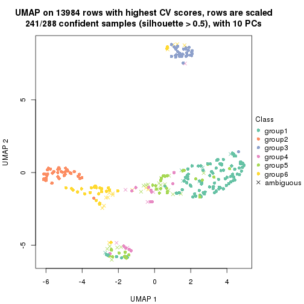
Following heatmap shows how subgroups are split when increasing k:
collect_classes(res)
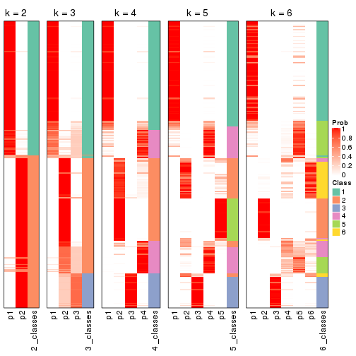
If matrix rows can be associated to genes, consider to use functional_enrichment(res,
...) to perform function enrichment for the signature genes. See this vignette for more detailed explanations.
The object with results only for a single top-value method and a single partition method can be extracted as:
res = res_list["CV", "NMF"]
# you can also extract it by
# res = res_list["CV:NMF"]
A summary of res and all the functions that can be applied to it:
res
#> A 'ConsensusPartition' object with k = 2, 3, 4, 5, 6.
#> On a matrix with 13984 rows and 288 columns.
#> Top rows (1000, 2000, 3000, 4000, 5000) are extracted by 'CV' method.
#> Subgroups are detected by 'NMF' method.
#> Performed in total 1250 partitions by row resampling.
#> Best k for subgroups seems to be 2.
#>
#> Following methods can be applied to this 'ConsensusPartition' object:
#> [1] "cola_report" "collect_classes" "collect_plots"
#> [4] "collect_stats" "colnames" "compare_signatures"
#> [7] "consensus_heatmap" "dimension_reduction" "functional_enrichment"
#> [10] "get_anno_col" "get_anno" "get_classes"
#> [13] "get_consensus" "get_matrix" "get_membership"
#> [16] "get_param" "get_signatures" "get_stats"
#> [19] "is_best_k" "is_stable_k" "membership_heatmap"
#> [22] "ncol" "nrow" "plot_ecdf"
#> [25] "rownames" "select_partition_number" "show"
#> [28] "suggest_best_k" "test_to_known_factors"
collect_plots() function collects all the plots made from res for all k (number of partitions)
into one single page to provide an easy and fast comparison between different k.
collect_plots(res)
The plots are:
k and the heatmap of
predicted classes for each k.k.k.k.All the plots in panels can be made by individual functions and they are plotted later in this section.
select_partition_number() produces several plots showing different
statistics for choosing “optimized” k. There are following statistics:
k;k, the area increased is defined as \(A_k - A_{k-1}\).The detailed explanations of these statistics can be found in the cola vignette.
Generally speaking, lower PAC score, higher mean silhouette score or higher
concordance corresponds to better partition. Rand index and Jaccard index
measure how similar the current partition is compared to partition with k-1.
If they are too similar, we won't accept k is better than k-1.
select_partition_number(res)
The numeric values for all these statistics can be obtained by get_stats().
get_stats(res)
#> k 1-PAC mean_silhouette concordance area_increased Rand Jaccard
#> 2 2 0.942 0.952 0.980 0.4086 0.597 0.597
#> 3 3 0.772 0.830 0.925 0.5863 0.718 0.541
#> 4 4 0.891 0.910 0.961 0.0458 0.742 0.451
#> 5 5 0.843 0.854 0.930 0.0636 0.937 0.815
#> 6 6 0.710 0.694 0.832 0.0623 0.978 0.925
suggest_best_k() suggests the best \(k\) based on these statistics. The rules are as follows:
suggest_best_k(res)
#> [1] 2
Following shows the table of the partitions (You need to click the show/hide
code output link to see it). The membership matrix (columns with name p*)
is inferred by
clue::cl_consensus()
function with the SE method. Basically the value in the membership matrix
represents the probability to belong to a certain group. The finall class
label for an item is determined with the group with highest probability it
belongs to.
In get_classes() function, the entropy is calculated from the membership
matrix and the silhouette score is calculated from the consensus matrix.
cbind(get_classes(res, k = 2), get_membership(res, k = 2))
#> class entropy silhouette p1 p2
#> SRR1982614 1 0.1633 0.9587 0.976 0.024
#> SRR1982613 1 0.0000 0.9803 1.000 0.000
#> SRR1982612 1 0.8608 0.6146 0.716 0.284
#> SRR1982611 1 0.8861 0.5755 0.696 0.304
#> SRR1982610 1 0.0000 0.9803 1.000 0.000
#> SRR1982609 1 0.0000 0.9803 1.000 0.000
#> SRR1982659 1 0.0000 0.9803 1.000 0.000
#> SRR1982692 1 0.0000 0.9803 1.000 0.000
#> SRR1982722 1 0.0000 0.9803 1.000 0.000
#> SRR1982750 2 0.0000 0.9749 0.000 1.000
#> SRR2095031 2 0.0000 0.9749 0.000 1.000
#> SRR1982780 1 0.0000 0.9803 1.000 0.000
#> SRR1982807 1 0.0000 0.9803 1.000 0.000
#> SRR1982830 1 0.0000 0.9803 1.000 0.000
#> SRR1982829 1 0.0938 0.9697 0.988 0.012
#> SRR1982828 1 0.0000 0.9803 1.000 0.000
#> SRR1982827 1 0.0000 0.9803 1.000 0.000
#> SRR1982826 1 0.0000 0.9803 1.000 0.000
#> SRR1982825 1 0.0000 0.9803 1.000 0.000
#> SRR1982824 1 0.0000 0.9803 1.000 0.000
#> SRR1982823 1 0.0000 0.9803 1.000 0.000
#> SRR1982822 1 0.0000 0.9803 1.000 0.000
#> SRR1982821 1 0.0000 0.9803 1.000 0.000
#> SRR1982820 1 0.0000 0.9803 1.000 0.000
#> SRR1982819 1 0.0000 0.9803 1.000 0.000
#> SRR1982818 1 0.0000 0.9803 1.000 0.000
#> SRR1982817 1 0.0000 0.9803 1.000 0.000
#> SRR1982816 1 0.0000 0.9803 1.000 0.000
#> SRR1982815 1 0.0000 0.9803 1.000 0.000
#> SRR1982814 1 0.0000 0.9803 1.000 0.000
#> SRR1982813 1 0.0000 0.9803 1.000 0.000
#> SRR1982812 2 0.0000 0.9749 0.000 1.000
#> SRR1982811 2 0.0376 0.9717 0.004 0.996
#> SRR1982810 2 0.0000 0.9749 0.000 1.000
#> SRR1982809 2 0.0000 0.9749 0.000 1.000
#> SRR1982808 2 0.6531 0.7967 0.168 0.832
#> SRR1982806 1 0.9000 0.5509 0.684 0.316
#> SRR1982805 1 0.0000 0.9803 1.000 0.000
#> SRR1982804 1 0.0000 0.9803 1.000 0.000
#> SRR1982803 1 0.6712 0.7876 0.824 0.176
#> SRR1982802 1 0.0000 0.9803 1.000 0.000
#> SRR1982801 1 0.0000 0.9803 1.000 0.000
#> SRR1982800 1 0.0000 0.9803 1.000 0.000
#> SRR1982799 1 0.0000 0.9803 1.000 0.000
#> SRR1982798 1 0.0000 0.9803 1.000 0.000
#> SRR1982797 1 0.0000 0.9803 1.000 0.000
#> SRR1982796 1 0.7815 0.7052 0.768 0.232
#> SRR1982795 1 0.0938 0.9697 0.988 0.012
#> SRR1982794 1 0.8144 0.6720 0.748 0.252
#> SRR1982793 1 0.0000 0.9803 1.000 0.000
#> SRR1982792 1 0.0000 0.9803 1.000 0.000
#> SRR1982791 1 0.7299 0.7482 0.796 0.204
#> SRR1982790 1 0.0000 0.9803 1.000 0.000
#> SRR1982789 1 0.0000 0.9803 1.000 0.000
#> SRR1982788 1 0.0000 0.9803 1.000 0.000
#> SRR1982787 1 0.0000 0.9803 1.000 0.000
#> SRR1982786 1 0.0000 0.9803 1.000 0.000
#> SRR1982785 2 0.0000 0.9749 0.000 1.000
#> SRR1982784 1 0.0000 0.9803 1.000 0.000
#> SRR1982783 1 0.0000 0.9803 1.000 0.000
#> SRR1982782 1 0.0000 0.9803 1.000 0.000
#> SRR1982781 1 0.0000 0.9803 1.000 0.000
#> SRR1982779 2 0.7056 0.7662 0.192 0.808
#> SRR1982778 1 0.0000 0.9803 1.000 0.000
#> SRR1982776 2 0.0000 0.9749 0.000 1.000
#> SRR1982777 2 0.0000 0.9749 0.000 1.000
#> SRR1982775 1 0.0000 0.9803 1.000 0.000
#> SRR1982774 2 0.5946 0.8306 0.144 0.856
#> SRR1982772 1 0.0000 0.9803 1.000 0.000
#> SRR1982773 2 0.0000 0.9749 0.000 1.000
#> SRR1982770 1 0.0000 0.9803 1.000 0.000
#> SRR1982771 1 0.0000 0.9803 1.000 0.000
#> SRR1982769 2 0.0000 0.9749 0.000 1.000
#> SRR1982768 2 0.0000 0.9749 0.000 1.000
#> SRR1982767 2 0.0000 0.9749 0.000 1.000
#> SRR1982766 1 0.0000 0.9803 1.000 0.000
#> SRR1982765 1 0.0000 0.9803 1.000 0.000
#> SRR1982764 2 0.0000 0.9749 0.000 1.000
#> SRR1982762 1 0.0000 0.9803 1.000 0.000
#> SRR1982760 1 0.0376 0.9768 0.996 0.004
#> SRR1982761 1 0.0000 0.9803 1.000 0.000
#> SRR1982763 2 0.0000 0.9749 0.000 1.000
#> SRR1982759 1 0.0000 0.9803 1.000 0.000
#> SRR1982758 2 0.0000 0.9749 0.000 1.000
#> SRR1982757 1 0.5737 0.8394 0.864 0.136
#> SRR1982755 1 0.0000 0.9803 1.000 0.000
#> SRR1982754 1 0.0000 0.9803 1.000 0.000
#> SRR1982756 1 0.7219 0.7539 0.800 0.200
#> SRR1982753 2 0.0000 0.9749 0.000 1.000
#> SRR1982751 2 0.0000 0.9749 0.000 1.000
#> SRR1982752 2 0.0000 0.9749 0.000 1.000
#> SRR1982749 2 0.0000 0.9749 0.000 1.000
#> SRR1982748 2 0.0000 0.9749 0.000 1.000
#> SRR1982747 2 0.0000 0.9749 0.000 1.000
#> SRR1982746 2 0.0000 0.9749 0.000 1.000
#> SRR1982745 2 0.0000 0.9749 0.000 1.000
#> SRR1982743 2 0.0000 0.9749 0.000 1.000
#> SRR1982744 2 0.0000 0.9749 0.000 1.000
#> SRR1982741 2 0.0000 0.9749 0.000 1.000
#> SRR1982742 2 0.0000 0.9749 0.000 1.000
#> SRR2095014 2 0.0000 0.9749 0.000 1.000
#> SRR1982740 2 0.0000 0.9749 0.000 1.000
#> SRR1982739 2 0.0000 0.9749 0.000 1.000
#> SRR1982737 2 0.0000 0.9749 0.000 1.000
#> SRR1982738 2 0.0000 0.9749 0.000 1.000
#> SRR1982736 2 0.0000 0.9749 0.000 1.000
#> SRR1982735 2 0.0000 0.9749 0.000 1.000
#> SRR1982733 2 0.0000 0.9749 0.000 1.000
#> SRR1982732 2 0.0000 0.9749 0.000 1.000
#> SRR2095004 2 0.0000 0.9749 0.000 1.000
#> SRR1982734 2 0.0000 0.9749 0.000 1.000
#> SRR1982731 2 0.0000 0.9749 0.000 1.000
#> SRR1982729 2 0.0000 0.9749 0.000 1.000
#> SRR1982730 2 0.0000 0.9749 0.000 1.000
#> SRR1982728 2 0.0000 0.9749 0.000 1.000
#> SRR1982727 1 0.0000 0.9803 1.000 0.000
#> SRR1982726 1 0.0000 0.9803 1.000 0.000
#> SRR1982723 1 0.0000 0.9803 1.000 0.000
#> SRR1982725 1 0.0000 0.9803 1.000 0.000
#> SRR1982724 1 0.0000 0.9803 1.000 0.000
#> SRR1982721 1 0.0000 0.9803 1.000 0.000
#> SRR1982720 1 0.0000 0.9803 1.000 0.000
#> SRR1982719 1 0.0000 0.9803 1.000 0.000
#> SRR1982718 1 0.0000 0.9803 1.000 0.000
#> SRR1982717 1 0.0000 0.9803 1.000 0.000
#> SRR1982715 1 0.0000 0.9803 1.000 0.000
#> SRR1982714 2 0.0000 0.9749 0.000 1.000
#> SRR1982716 1 0.0000 0.9803 1.000 0.000
#> SRR1982713 2 0.0000 0.9749 0.000 1.000
#> SRR1982711 2 0.0000 0.9749 0.000 1.000
#> SRR1982712 2 0.0000 0.9749 0.000 1.000
#> SRR1982710 1 0.0000 0.9803 1.000 0.000
#> SRR1982708 1 0.0000 0.9803 1.000 0.000
#> SRR1982707 1 0.0000 0.9803 1.000 0.000
#> SRR1982709 1 0.0000 0.9803 1.000 0.000
#> SRR1982705 2 0.0672 0.9685 0.008 0.992
#> SRR1982706 1 0.0000 0.9803 1.000 0.000
#> SRR1982704 2 0.9996 0.0283 0.488 0.512
#> SRR1982702 2 0.0000 0.9749 0.000 1.000
#> SRR1982703 1 0.6973 0.7710 0.812 0.188
#> SRR1982701 2 0.0000 0.9749 0.000 1.000
#> SRR1982700 2 0.0000 0.9749 0.000 1.000
#> SRR1982697 2 0.0000 0.9749 0.000 1.000
#> SRR1982698 2 0.0000 0.9749 0.000 1.000
#> SRR1982699 2 0.0000 0.9749 0.000 1.000
#> SRR1982696 2 0.0000 0.9749 0.000 1.000
#> SRR1982695 1 0.0000 0.9803 1.000 0.000
#> SRR1982694 1 0.0000 0.9803 1.000 0.000
#> SRR1982693 2 0.0000 0.9749 0.000 1.000
#> SRR1982690 1 0.0000 0.9803 1.000 0.000
#> SRR1982691 2 0.1843 0.9515 0.028 0.972
#> SRR1982689 2 0.9358 0.4571 0.352 0.648
#> SRR1982688 1 0.0000 0.9803 1.000 0.000
#> SRR1982687 1 0.0000 0.9803 1.000 0.000
#> SRR1982686 2 0.0000 0.9749 0.000 1.000
#> SRR1982685 1 0.0000 0.9803 1.000 0.000
#> SRR1982684 1 0.0000 0.9803 1.000 0.000
#> SRR1982683 1 0.9732 0.3330 0.596 0.404
#> SRR1982681 2 0.4161 0.8979 0.084 0.916
#> SRR1982682 1 0.5946 0.8303 0.856 0.144
#> SRR1982680 2 0.0000 0.9749 0.000 1.000
#> SRR1982679 2 0.0000 0.9749 0.000 1.000
#> SRR1982678 2 0.0000 0.9749 0.000 1.000
#> SRR1982677 1 0.0000 0.9803 1.000 0.000
#> SRR1982676 1 0.0000 0.9803 1.000 0.000
#> SRR1982675 1 0.0000 0.9803 1.000 0.000
#> SRR1982674 1 0.0000 0.9803 1.000 0.000
#> SRR1982671 2 0.0000 0.9749 0.000 1.000
#> SRR1982673 1 0.0000 0.9803 1.000 0.000
#> SRR1982672 1 0.0000 0.9803 1.000 0.000
#> SRR1982670 2 0.0000 0.9749 0.000 1.000
#> SRR1982669 1 0.0000 0.9803 1.000 0.000
#> SRR1982667 1 0.0000 0.9803 1.000 0.000
#> SRR1982668 1 0.0000 0.9803 1.000 0.000
#> SRR1982666 1 0.0000 0.9803 1.000 0.000
#> SRR1982665 2 0.0000 0.9749 0.000 1.000
#> SRR1982664 1 0.0000 0.9803 1.000 0.000
#> SRR1982663 1 0.0000 0.9803 1.000 0.000
#> SRR1982662 1 0.0000 0.9803 1.000 0.000
#> SRR1982661 1 0.0000 0.9803 1.000 0.000
#> SRR1982660 1 0.0000 0.9803 1.000 0.000
#> SRR1982658 1 0.0000 0.9803 1.000 0.000
#> SRR1982657 1 0.0000 0.9803 1.000 0.000
#> SRR1982656 1 0.8955 0.5387 0.688 0.312
#> SRR1982654 1 0.0000 0.9803 1.000 0.000
#> SRR1982655 1 0.0000 0.9803 1.000 0.000
#> SRR1982653 1 0.0000 0.9803 1.000 0.000
#> SRR1982652 1 0.0000 0.9803 1.000 0.000
#> SRR1982651 1 0.0000 0.9803 1.000 0.000
#> SRR1982649 1 0.0000 0.9803 1.000 0.000
#> SRR1982650 1 0.0000 0.9803 1.000 0.000
#> SRR1982648 1 0.0000 0.9803 1.000 0.000
#> SRR1982647 1 0.0000 0.9803 1.000 0.000
#> SRR1982646 1 0.9393 0.4531 0.644 0.356
#> SRR1982645 1 0.0000 0.9803 1.000 0.000
#> SRR1982644 1 0.0000 0.9803 1.000 0.000
#> SRR1982642 1 0.0000 0.9803 1.000 0.000
#> SRR1982643 1 0.0000 0.9803 1.000 0.000
#> SRR1982641 1 0.0000 0.9803 1.000 0.000
#> SRR1982640 1 0.0000 0.9803 1.000 0.000
#> SRR1982638 1 0.0000 0.9803 1.000 0.000
#> SRR1982639 1 0.0000 0.9803 1.000 0.000
#> SRR1982637 1 0.0000 0.9803 1.000 0.000
#> SRR1982635 1 0.0000 0.9803 1.000 0.000
#> SRR1982636 1 0.0000 0.9803 1.000 0.000
#> SRR1982633 1 0.0000 0.9803 1.000 0.000
#> SRR1982632 1 0.0000 0.9803 1.000 0.000
#> SRR1982631 1 0.0000 0.9803 1.000 0.000
#> SRR1982634 1 0.0000 0.9803 1.000 0.000
#> SRR1982628 1 0.1633 0.9587 0.976 0.024
#> SRR1982629 2 0.0000 0.9749 0.000 1.000
#> SRR1982627 2 0.5294 0.8574 0.120 0.880
#> SRR1982625 1 0.0000 0.9803 1.000 0.000
#> SRR1982626 1 0.0000 0.9803 1.000 0.000
#> SRR1982624 1 0.0000 0.9803 1.000 0.000
#> SRR1982623 1 0.0000 0.9803 1.000 0.000
#> SRR1982622 1 0.0000 0.9803 1.000 0.000
#> SRR1982621 2 0.0000 0.9749 0.000 1.000
#> SRR1982620 2 0.8016 0.6786 0.244 0.756
#> SRR1982619 2 0.0000 0.9749 0.000 1.000
#> SRR1982618 1 0.0000 0.9803 1.000 0.000
#> SRR1982617 2 0.0000 0.9749 0.000 1.000
#> SRR1982616 1 0.0000 0.9803 1.000 0.000
#> SRR1982615 1 0.0000 0.9803 1.000 0.000
#> SRR1982608 1 0.0000 0.9803 1.000 0.000
#> SRR1982607 1 0.0000 0.9803 1.000 0.000
#> SRR1982606 1 0.0000 0.9803 1.000 0.000
#> SRR1982605 1 0.0000 0.9803 1.000 0.000
#> SRR1982604 1 0.0000 0.9803 1.000 0.000
#> SRR1982603 1 0.0000 0.9803 1.000 0.000
#> SRR1982602 1 0.0000 0.9803 1.000 0.000
#> SRR1982601 1 0.0000 0.9803 1.000 0.000
#> SRR1982599 1 0.0000 0.9803 1.000 0.000
#> SRR1982600 1 0.0000 0.9803 1.000 0.000
#> SRR1982598 1 0.0000 0.9803 1.000 0.000
#> SRR1982597 1 0.0000 0.9803 1.000 0.000
#> SRR1982595 1 0.0000 0.9803 1.000 0.000
#> SRR1982596 1 0.0000 0.9803 1.000 0.000
#> SRR1982594 1 0.0000 0.9803 1.000 0.000
#> SRR1982593 1 0.0000 0.9803 1.000 0.000
#> SRR1982592 2 0.0000 0.9749 0.000 1.000
#> SRR1982591 1 0.6438 0.8036 0.836 0.164
#> SRR1982590 1 0.0000 0.9803 1.000 0.000
#> SRR1982589 1 0.0000 0.9803 1.000 0.000
#> SRR1982588 1 0.0000 0.9803 1.000 0.000
#> SRR1982587 1 0.0000 0.9803 1.000 0.000
#> SRR1982586 1 0.0000 0.9803 1.000 0.000
#> SRR1982584 1 0.7299 0.7480 0.796 0.204
#> SRR2096514 1 0.0000 0.9803 1.000 0.000
#> SRR2096513 1 0.0000 0.9803 1.000 0.000
#> SRR2096511 1 0.0000 0.9803 1.000 0.000
#> SRR2096512 2 0.0000 0.9749 0.000 1.000
#> SRR2096509 1 0.0000 0.9803 1.000 0.000
#> SRR2096510 1 0.0000 0.9803 1.000 0.000
#> SRR2096508 2 0.0000 0.9749 0.000 1.000
#> SRR2096507 1 0.0000 0.9803 1.000 0.000
#> SRR2096504 1 0.0000 0.9803 1.000 0.000
#> SRR2096506 1 0.0000 0.9803 1.000 0.000
#> SRR2096505 1 0.0000 0.9803 1.000 0.000
#> SRR2096503 1 0.0000 0.9803 1.000 0.000
#> SRR2096500 1 0.0000 0.9803 1.000 0.000
#> SRR2096501 1 0.0000 0.9803 1.000 0.000
#> SRR2096502 1 0.0000 0.9803 1.000 0.000
#> SRR2096499 1 0.0000 0.9803 1.000 0.000
#> SRR2096498 2 0.4298 0.8933 0.088 0.912
#> SRR2096496 1 0.0000 0.9803 1.000 0.000
#> SRR2096497 1 0.0000 0.9803 1.000 0.000
#> SRR2096495 1 0.0000 0.9803 1.000 0.000
#> SRR2096494 1 0.0000 0.9803 1.000 0.000
#> SRR2096492 1 0.0000 0.9803 1.000 0.000
#> SRR2096491 1 0.0000 0.9803 1.000 0.000
#> SRR2096493 1 0.0000 0.9803 1.000 0.000
#> SRR2096490 1 0.0000 0.9803 1.000 0.000
#> SRR2096488 1 0.0000 0.9803 1.000 0.000
#> SRR2096489 1 0.0000 0.9803 1.000 0.000
#> SRR2096487 1 0.0000 0.9803 1.000 0.000
#> SRR2096484 1 0.0000 0.9803 1.000 0.000
#> SRR2096486 1 0.0000 0.9803 1.000 0.000
#> SRR2096485 1 0.0000 0.9803 1.000 0.000
#> SRR2096483 1 0.0000 0.9803 1.000 0.000
#> SRR2096482 1 0.0000 0.9803 1.000 0.000
#> SRR2096481 1 0.0000 0.9803 1.000 0.000
#> SRR2096520 1 0.0000 0.9803 1.000 0.000
#> SRR2096519 1 0.0000 0.9803 1.000 0.000
#> SRR2096518 1 0.0000 0.9803 1.000 0.000
#> SRR2096516 1 0.0000 0.9803 1.000 0.000
#> SRR2096517 1 0.0000 0.9803 1.000 0.000
#> SRR2096515 1 0.0000 0.9803 1.000 0.000
cbind(get_classes(res, k = 3), get_membership(res, k = 3))
#> class entropy silhouette p1 p2 p3
#> SRR1982614 3 0.1620 0.88068 0.012 0.024 0.964
#> SRR1982613 3 0.0592 0.88840 0.012 0.000 0.988
#> SRR1982612 3 0.7013 0.25008 0.020 0.432 0.548
#> SRR1982611 3 0.5292 0.67595 0.008 0.228 0.764
#> SRR1982610 1 0.5397 0.61008 0.720 0.000 0.280
#> SRR1982609 1 0.0000 0.90957 1.000 0.000 0.000
#> SRR1982659 1 0.0000 0.90957 1.000 0.000 0.000
#> SRR1982692 3 0.0000 0.88935 0.000 0.000 1.000
#> SRR1982722 1 0.2356 0.87327 0.928 0.000 0.072
#> SRR1982750 2 0.0000 0.96403 0.000 1.000 0.000
#> SRR2095031 2 0.0000 0.96403 0.000 1.000 0.000
#> SRR1982780 3 0.6521 -0.01939 0.496 0.004 0.500
#> SRR1982807 3 0.0892 0.88756 0.020 0.000 0.980
#> SRR1982830 1 0.0592 0.90654 0.988 0.000 0.012
#> SRR1982829 3 0.3370 0.84706 0.024 0.072 0.904
#> SRR1982828 3 0.5529 0.61051 0.296 0.000 0.704
#> SRR1982827 3 0.5678 0.57565 0.316 0.000 0.684
#> SRR1982826 1 0.0000 0.90957 1.000 0.000 0.000
#> SRR1982825 1 0.0000 0.90957 1.000 0.000 0.000
#> SRR1982824 1 0.6045 0.36732 0.620 0.000 0.380
#> SRR1982823 1 0.5397 0.60565 0.720 0.000 0.280
#> SRR1982822 1 0.6126 0.32928 0.600 0.000 0.400
#> SRR1982821 3 0.0747 0.88831 0.016 0.000 0.984
#> SRR1982820 1 0.0237 0.90904 0.996 0.000 0.004
#> SRR1982819 1 0.2165 0.87285 0.936 0.000 0.064
#> SRR1982818 3 0.2796 0.84614 0.092 0.000 0.908
#> SRR1982817 3 0.5988 0.45746 0.368 0.000 0.632
#> SRR1982816 1 0.0592 0.90654 0.988 0.000 0.012
#> SRR1982815 1 0.5905 0.47844 0.648 0.000 0.352
#> SRR1982814 3 0.4605 0.74416 0.204 0.000 0.796
#> SRR1982813 1 0.5835 0.47297 0.660 0.000 0.340
#> SRR1982812 2 0.0000 0.96403 0.000 1.000 0.000
#> SRR1982811 2 0.1031 0.94099 0.000 0.976 0.024
#> SRR1982810 2 0.0000 0.96403 0.000 1.000 0.000
#> SRR1982809 2 0.0000 0.96403 0.000 1.000 0.000
#> SRR1982808 2 0.6809 0.03797 0.012 0.524 0.464
#> SRR1982806 3 0.9030 0.38636 0.152 0.328 0.520
#> SRR1982805 1 0.2625 0.86064 0.916 0.000 0.084
#> SRR1982804 3 0.0592 0.88840 0.012 0.000 0.988
#> SRR1982803 3 0.5020 0.72312 0.012 0.192 0.796
#> SRR1982802 3 0.6095 0.35174 0.392 0.000 0.608
#> SRR1982801 3 0.0592 0.88840 0.012 0.000 0.988
#> SRR1982800 3 0.6045 0.43569 0.380 0.000 0.620
#> SRR1982799 1 0.6252 0.23118 0.556 0.000 0.444
#> SRR1982798 3 0.6252 0.22849 0.444 0.000 0.556
#> SRR1982797 3 0.0424 0.88869 0.008 0.000 0.992
#> SRR1982796 1 0.2878 0.83991 0.904 0.096 0.000
#> SRR1982795 1 0.0592 0.90616 0.988 0.012 0.000
#> SRR1982794 1 0.0000 0.90957 1.000 0.000 0.000
#> SRR1982793 1 0.0000 0.90957 1.000 0.000 0.000
#> SRR1982792 1 0.5216 0.65342 0.740 0.000 0.260
#> SRR1982791 1 0.0892 0.90174 0.980 0.020 0.000
#> SRR1982790 3 0.0000 0.88935 0.000 0.000 1.000
#> SRR1982789 3 0.4555 0.75259 0.200 0.000 0.800
#> SRR1982788 3 0.0237 0.88952 0.004 0.000 0.996
#> SRR1982787 1 0.5291 0.62467 0.732 0.000 0.268
#> SRR1982786 3 0.0000 0.88935 0.000 0.000 1.000
#> SRR1982785 2 0.0000 0.96403 0.000 1.000 0.000
#> SRR1982784 1 0.0000 0.90957 1.000 0.000 0.000
#> SRR1982783 3 0.0237 0.88957 0.004 0.000 0.996
#> SRR1982782 1 0.0000 0.90957 1.000 0.000 0.000
#> SRR1982781 3 0.1031 0.88679 0.024 0.000 0.976
#> SRR1982779 2 0.3826 0.82110 0.124 0.868 0.008
#> SRR1982778 1 0.0000 0.90957 1.000 0.000 0.000
#> SRR1982776 2 0.0000 0.96403 0.000 1.000 0.000
#> SRR1982777 2 0.0000 0.96403 0.000 1.000 0.000
#> SRR1982775 1 0.0000 0.90957 1.000 0.000 0.000
#> SRR1982774 1 0.2448 0.85962 0.924 0.076 0.000
#> SRR1982772 1 0.4796 0.71138 0.780 0.000 0.220
#> SRR1982773 2 0.0000 0.96403 0.000 1.000 0.000
#> SRR1982770 1 0.0000 0.90957 1.000 0.000 0.000
#> SRR1982771 1 0.0424 0.90884 0.992 0.000 0.008
#> SRR1982769 2 0.4654 0.72251 0.000 0.792 0.208
#> SRR1982768 2 0.0000 0.96403 0.000 1.000 0.000
#> SRR1982767 2 0.0000 0.96403 0.000 1.000 0.000
#> SRR1982766 3 0.0000 0.88935 0.000 0.000 1.000
#> SRR1982765 1 0.0237 0.90941 0.996 0.000 0.004
#> SRR1982764 2 0.0000 0.96403 0.000 1.000 0.000
#> SRR1982762 1 0.2066 0.87908 0.940 0.000 0.060
#> SRR1982760 1 0.0237 0.90957 0.996 0.000 0.004
#> SRR1982761 1 0.0592 0.90743 0.988 0.000 0.012
#> SRR1982763 2 0.0000 0.96403 0.000 1.000 0.000
#> SRR1982759 1 0.6126 0.37625 0.600 0.000 0.400
#> SRR1982758 2 0.0000 0.96403 0.000 1.000 0.000
#> SRR1982757 1 0.7920 0.02152 0.472 0.472 0.056
#> SRR1982755 1 0.6168 0.30189 0.588 0.000 0.412
#> SRR1982754 3 0.5254 0.63522 0.264 0.000 0.736
#> SRR1982756 1 0.2165 0.86868 0.936 0.064 0.000
#> SRR1982753 2 0.0237 0.96006 0.004 0.996 0.000
#> SRR1982751 2 0.0000 0.96403 0.000 1.000 0.000
#> SRR1982752 2 0.0000 0.96403 0.000 1.000 0.000
#> SRR1982749 2 0.0000 0.96403 0.000 1.000 0.000
#> SRR1982748 2 0.0000 0.96403 0.000 1.000 0.000
#> SRR1982747 2 0.0000 0.96403 0.000 1.000 0.000
#> SRR1982746 2 0.0000 0.96403 0.000 1.000 0.000
#> SRR1982745 2 0.0000 0.96403 0.000 1.000 0.000
#> SRR1982743 2 0.0000 0.96403 0.000 1.000 0.000
#> SRR1982744 2 0.0000 0.96403 0.000 1.000 0.000
#> SRR1982741 2 0.0000 0.96403 0.000 1.000 0.000
#> SRR1982742 2 0.0000 0.96403 0.000 1.000 0.000
#> SRR2095014 2 0.0000 0.96403 0.000 1.000 0.000
#> SRR1982740 2 0.0000 0.96403 0.000 1.000 0.000
#> SRR1982739 2 0.0000 0.96403 0.000 1.000 0.000
#> SRR1982737 2 0.0000 0.96403 0.000 1.000 0.000
#> SRR1982738 2 0.0000 0.96403 0.000 1.000 0.000
#> SRR1982736 2 0.0000 0.96403 0.000 1.000 0.000
#> SRR1982735 2 0.0000 0.96403 0.000 1.000 0.000
#> SRR1982733 2 0.0000 0.96403 0.000 1.000 0.000
#> SRR1982732 2 0.0000 0.96403 0.000 1.000 0.000
#> SRR2095004 2 0.0000 0.96403 0.000 1.000 0.000
#> SRR1982734 2 0.0000 0.96403 0.000 1.000 0.000
#> SRR1982731 2 0.0000 0.96403 0.000 1.000 0.000
#> SRR1982729 2 0.0000 0.96403 0.000 1.000 0.000
#> SRR1982730 2 0.0000 0.96403 0.000 1.000 0.000
#> SRR1982728 2 0.0000 0.96403 0.000 1.000 0.000
#> SRR1982727 3 0.0000 0.88935 0.000 0.000 1.000
#> SRR1982726 3 0.0000 0.88935 0.000 0.000 1.000
#> SRR1982723 3 0.0000 0.88935 0.000 0.000 1.000
#> SRR1982725 3 0.0000 0.88935 0.000 0.000 1.000
#> SRR1982724 3 0.0000 0.88935 0.000 0.000 1.000
#> SRR1982721 3 0.3267 0.82398 0.116 0.000 0.884
#> SRR1982720 1 0.3267 0.83592 0.884 0.000 0.116
#> SRR1982719 1 0.6309 0.03575 0.504 0.000 0.496
#> SRR1982718 3 0.0000 0.88935 0.000 0.000 1.000
#> SRR1982717 3 0.0000 0.88935 0.000 0.000 1.000
#> SRR1982715 3 0.0000 0.88935 0.000 0.000 1.000
#> SRR1982714 2 0.0000 0.96403 0.000 1.000 0.000
#> SRR1982716 3 0.0000 0.88935 0.000 0.000 1.000
#> SRR1982713 2 0.0000 0.96403 0.000 1.000 0.000
#> SRR1982711 2 0.0000 0.96403 0.000 1.000 0.000
#> SRR1982712 2 0.0000 0.96403 0.000 1.000 0.000
#> SRR1982710 3 0.0000 0.88935 0.000 0.000 1.000
#> SRR1982708 3 0.0000 0.88935 0.000 0.000 1.000
#> SRR1982707 3 0.0000 0.88935 0.000 0.000 1.000
#> SRR1982709 3 0.0000 0.88935 0.000 0.000 1.000
#> SRR1982705 3 0.0747 0.88403 0.000 0.016 0.984
#> SRR1982706 1 0.5760 0.53778 0.672 0.000 0.328
#> SRR1982704 3 0.0892 0.88136 0.000 0.020 0.980
#> SRR1982702 2 0.0000 0.96403 0.000 1.000 0.000
#> SRR1982703 3 0.2356 0.84779 0.000 0.072 0.928
#> SRR1982701 2 0.0000 0.96403 0.000 1.000 0.000
#> SRR1982700 2 0.0000 0.96403 0.000 1.000 0.000
#> SRR1982697 2 0.0000 0.96403 0.000 1.000 0.000
#> SRR1982698 2 0.0000 0.96403 0.000 1.000 0.000
#> SRR1982699 2 0.0000 0.96403 0.000 1.000 0.000
#> SRR1982696 3 0.6204 0.28056 0.000 0.424 0.576
#> SRR1982695 1 0.0000 0.90957 1.000 0.000 0.000
#> SRR1982694 1 0.0000 0.90957 1.000 0.000 0.000
#> SRR1982693 2 0.5988 0.38733 0.000 0.632 0.368
#> SRR1982690 3 0.0424 0.88869 0.008 0.000 0.992
#> SRR1982691 3 0.0592 0.88550 0.000 0.012 0.988
#> SRR1982689 3 0.0000 0.88935 0.000 0.000 1.000
#> SRR1982688 1 0.0000 0.90957 1.000 0.000 0.000
#> SRR1982687 3 0.0237 0.88922 0.004 0.000 0.996
#> SRR1982686 2 0.0000 0.96403 0.000 1.000 0.000
#> SRR1982685 3 0.0000 0.88935 0.000 0.000 1.000
#> SRR1982684 3 0.0000 0.88935 0.000 0.000 1.000
#> SRR1982683 3 0.5431 0.59279 0.000 0.284 0.716
#> SRR1982681 3 0.0237 0.88827 0.000 0.004 0.996
#> SRR1982682 3 0.0424 0.88689 0.000 0.008 0.992
#> SRR1982680 2 0.6095 0.33280 0.000 0.608 0.392
#> SRR1982679 2 0.0000 0.96403 0.000 1.000 0.000
#> SRR1982678 2 0.0000 0.96403 0.000 1.000 0.000
#> SRR1982677 3 0.0000 0.88935 0.000 0.000 1.000
#> SRR1982676 1 0.1289 0.89854 0.968 0.000 0.032
#> SRR1982675 1 0.0000 0.90957 1.000 0.000 0.000
#> SRR1982674 3 0.0000 0.88935 0.000 0.000 1.000
#> SRR1982671 2 0.0000 0.96403 0.000 1.000 0.000
#> SRR1982673 3 0.2711 0.85271 0.088 0.000 0.912
#> SRR1982672 1 0.2066 0.88143 0.940 0.000 0.060
#> SRR1982670 2 0.6295 0.09207 0.472 0.528 0.000
#> SRR1982669 1 0.0592 0.90756 0.988 0.000 0.012
#> SRR1982667 1 0.0237 0.90904 0.996 0.000 0.004
#> SRR1982668 3 0.0000 0.88935 0.000 0.000 1.000
#> SRR1982666 1 0.0000 0.90957 1.000 0.000 0.000
#> SRR1982665 2 0.0000 0.96403 0.000 1.000 0.000
#> SRR1982664 3 0.2796 0.85087 0.092 0.000 0.908
#> SRR1982663 1 0.0892 0.90414 0.980 0.000 0.020
#> SRR1982662 1 0.0000 0.90957 1.000 0.000 0.000
#> SRR1982661 1 0.3116 0.83329 0.892 0.000 0.108
#> SRR1982660 1 0.5465 0.58941 0.712 0.000 0.288
#> SRR1982658 1 0.1289 0.89604 0.968 0.000 0.032
#> SRR1982657 3 0.0000 0.88935 0.000 0.000 1.000
#> SRR1982656 3 0.0000 0.88935 0.000 0.000 1.000
#> SRR1982654 1 0.0424 0.90806 0.992 0.000 0.008
#> SRR1982655 1 0.0592 0.90717 0.988 0.000 0.012
#> SRR1982653 1 0.5397 0.63151 0.720 0.000 0.280
#> SRR1982652 1 0.2711 0.85820 0.912 0.000 0.088
#> SRR1982651 1 0.0000 0.90957 1.000 0.000 0.000
#> SRR1982649 3 0.0592 0.88840 0.012 0.000 0.988
#> SRR1982650 1 0.4702 0.71840 0.788 0.000 0.212
#> SRR1982648 1 0.1643 0.89153 0.956 0.000 0.044
#> SRR1982647 1 0.0000 0.90957 1.000 0.000 0.000
#> SRR1982646 1 0.0592 0.90660 0.988 0.012 0.000
#> SRR1982645 1 0.0661 0.90816 0.988 0.004 0.008
#> SRR1982644 1 0.1860 0.88365 0.948 0.000 0.052
#> SRR1982642 1 0.0000 0.90957 1.000 0.000 0.000
#> SRR1982643 1 0.6308 0.00695 0.508 0.000 0.492
#> SRR1982641 1 0.0000 0.90957 1.000 0.000 0.000
#> SRR1982640 1 0.0000 0.90957 1.000 0.000 0.000
#> SRR1982638 1 0.4452 0.75270 0.808 0.000 0.192
#> SRR1982639 1 0.0000 0.90957 1.000 0.000 0.000
#> SRR1982637 1 0.1289 0.89581 0.968 0.000 0.032
#> SRR1982635 1 0.0000 0.90957 1.000 0.000 0.000
#> SRR1982636 3 0.2959 0.84523 0.100 0.000 0.900
#> SRR1982633 1 0.0000 0.90957 1.000 0.000 0.000
#> SRR1982632 3 0.6280 0.18853 0.460 0.000 0.540
#> SRR1982631 3 0.4002 0.78677 0.160 0.000 0.840
#> SRR1982634 1 0.6008 0.43364 0.628 0.000 0.372
#> SRR1982628 3 0.0661 0.88857 0.008 0.004 0.988
#> SRR1982629 2 0.0000 0.96403 0.000 1.000 0.000
#> SRR1982627 2 0.3038 0.85268 0.104 0.896 0.000
#> SRR1982625 3 0.4682 0.75767 0.192 0.004 0.804
#> SRR1982626 3 0.4974 0.70340 0.236 0.000 0.764
#> SRR1982624 3 0.0424 0.88869 0.008 0.000 0.992
#> SRR1982623 3 0.5254 0.66223 0.264 0.000 0.736
#> SRR1982622 1 0.3192 0.83903 0.888 0.000 0.112
#> SRR1982621 2 0.0000 0.96403 0.000 1.000 0.000
#> SRR1982620 2 0.0892 0.94473 0.020 0.980 0.000
#> SRR1982619 2 0.0000 0.96403 0.000 1.000 0.000
#> SRR1982618 1 0.0000 0.90957 1.000 0.000 0.000
#> SRR1982617 2 0.0000 0.96403 0.000 1.000 0.000
#> SRR1982616 3 0.6102 0.51501 0.320 0.008 0.672
#> SRR1982615 1 0.0000 0.90957 1.000 0.000 0.000
#> SRR1982608 3 0.0237 0.88922 0.004 0.000 0.996
#> SRR1982607 1 0.0000 0.90957 1.000 0.000 0.000
#> SRR1982606 1 0.6286 0.17079 0.536 0.000 0.464
#> SRR1982605 3 0.1860 0.87485 0.052 0.000 0.948
#> SRR1982604 1 0.0000 0.90957 1.000 0.000 0.000
#> SRR1982603 1 0.0000 0.90957 1.000 0.000 0.000
#> SRR1982602 3 0.1753 0.87587 0.048 0.000 0.952
#> SRR1982601 1 0.0829 0.90640 0.984 0.004 0.012
#> SRR1982599 3 0.1163 0.88540 0.028 0.000 0.972
#> SRR1982600 3 0.5810 0.53184 0.336 0.000 0.664
#> SRR1982598 3 0.0747 0.88801 0.016 0.000 0.984
#> SRR1982597 1 0.1529 0.89206 0.960 0.000 0.040
#> SRR1982595 1 0.4452 0.74658 0.808 0.000 0.192
#> SRR1982596 1 0.0000 0.90957 1.000 0.000 0.000
#> SRR1982594 3 0.0592 0.88840 0.012 0.000 0.988
#> SRR1982593 1 0.6126 0.36972 0.600 0.000 0.400
#> SRR1982592 2 0.0237 0.96066 0.000 0.996 0.004
#> SRR1982591 3 0.3377 0.83129 0.012 0.092 0.896
#> SRR1982590 3 0.0424 0.88869 0.008 0.000 0.992
#> SRR1982589 3 0.0424 0.88913 0.008 0.000 0.992
#> SRR1982588 1 0.6062 0.59629 0.708 0.016 0.276
#> SRR1982587 3 0.1753 0.87625 0.048 0.000 0.952
#> SRR1982586 3 0.4702 0.72280 0.212 0.000 0.788
#> SRR1982584 3 0.0747 0.88400 0.000 0.016 0.984
#> SRR2096514 1 0.0424 0.90930 0.992 0.000 0.008
#> SRR2096513 1 0.0592 0.90792 0.988 0.000 0.012
#> SRR2096511 1 0.0424 0.90930 0.992 0.000 0.008
#> SRR2096512 2 0.2796 0.86346 0.092 0.908 0.000
#> SRR2096509 1 0.0237 0.90952 0.996 0.000 0.004
#> SRR2096510 1 0.0424 0.90930 0.992 0.000 0.008
#> SRR2096508 2 0.0000 0.96403 0.000 1.000 0.000
#> SRR2096507 1 0.0592 0.90792 0.988 0.000 0.012
#> SRR2096504 1 0.0592 0.90792 0.988 0.000 0.012
#> SRR2096506 1 0.0424 0.90930 0.992 0.000 0.008
#> SRR2096505 1 0.0592 0.90792 0.988 0.000 0.012
#> SRR2096503 3 0.0000 0.88935 0.000 0.000 1.000
#> SRR2096500 1 0.0424 0.90930 0.992 0.000 0.008
#> SRR2096501 1 0.0592 0.90792 0.988 0.000 0.012
#> SRR2096502 1 0.0424 0.90930 0.992 0.000 0.008
#> SRR2096499 1 0.0424 0.90930 0.992 0.000 0.008
#> SRR2096498 1 0.1989 0.88081 0.948 0.048 0.004
#> SRR2096496 1 0.0237 0.90952 0.996 0.000 0.004
#> SRR2096497 1 0.0424 0.90930 0.992 0.000 0.008
#> SRR2096495 1 0.0424 0.90930 0.992 0.000 0.008
#> SRR2096494 1 0.0592 0.90792 0.988 0.000 0.012
#> SRR2096492 1 0.0424 0.90930 0.992 0.000 0.008
#> SRR2096491 1 0.0424 0.90901 0.992 0.000 0.008
#> SRR2096493 1 0.0424 0.90930 0.992 0.000 0.008
#> SRR2096490 1 0.0424 0.90930 0.992 0.000 0.008
#> SRR2096488 1 0.0424 0.90930 0.992 0.000 0.008
#> SRR2096489 1 0.0424 0.90930 0.992 0.000 0.008
#> SRR2096487 1 0.0592 0.90792 0.988 0.000 0.012
#> SRR2096484 1 0.0424 0.90930 0.992 0.000 0.008
#> SRR2096486 1 0.0592 0.90792 0.988 0.000 0.012
#> SRR2096485 1 0.0424 0.90930 0.992 0.000 0.008
#> SRR2096483 1 0.0424 0.90930 0.992 0.000 0.008
#> SRR2096482 1 0.0424 0.90930 0.992 0.000 0.008
#> SRR2096481 1 0.0592 0.90792 0.988 0.000 0.012
#> SRR2096520 1 0.0424 0.90930 0.992 0.000 0.008
#> SRR2096519 1 0.0592 0.90792 0.988 0.000 0.012
#> SRR2096518 1 0.0424 0.90930 0.992 0.000 0.008
#> SRR2096516 1 0.0424 0.90930 0.992 0.000 0.008
#> SRR2096517 1 0.0424 0.90930 0.992 0.000 0.008
#> SRR2096515 1 0.0424 0.90930 0.992 0.000 0.008
cbind(get_classes(res, k = 4), get_membership(res, k = 4))
#> class entropy silhouette p1 p2 p3 p4
#> SRR1982614 1 0.1302 0.9257 0.956 0.000 0.000 0.044
#> SRR1982613 1 0.0592 0.9451 0.984 0.000 0.000 0.016
#> SRR1982612 1 0.2589 0.8574 0.884 0.116 0.000 0.000
#> SRR1982611 1 0.5110 0.4724 0.636 0.352 0.000 0.012
#> SRR1982610 1 0.0000 0.9527 1.000 0.000 0.000 0.000
#> SRR1982609 1 0.0000 0.9527 1.000 0.000 0.000 0.000
#> SRR1982659 1 0.0000 0.9527 1.000 0.000 0.000 0.000
#> SRR1982692 4 0.0000 0.9112 0.000 0.000 0.000 1.000
#> SRR1982722 1 0.3525 0.8575 0.860 0.000 0.040 0.100
#> SRR1982750 2 0.0000 0.9612 0.000 1.000 0.000 0.000
#> SRR2095031 2 0.0000 0.9612 0.000 1.000 0.000 0.000
#> SRR1982780 1 0.2048 0.9119 0.928 0.008 0.000 0.064
#> SRR1982807 1 0.0336 0.9500 0.992 0.000 0.000 0.008
#> SRR1982830 1 0.0000 0.9527 1.000 0.000 0.000 0.000
#> SRR1982829 1 0.0336 0.9495 0.992 0.000 0.000 0.008
#> SRR1982828 1 0.0000 0.9527 1.000 0.000 0.000 0.000
#> SRR1982827 1 0.0000 0.9527 1.000 0.000 0.000 0.000
#> SRR1982826 1 0.0000 0.9527 1.000 0.000 0.000 0.000
#> SRR1982825 1 0.0000 0.9527 1.000 0.000 0.000 0.000
#> SRR1982824 1 0.0000 0.9527 1.000 0.000 0.000 0.000
#> SRR1982823 1 0.0000 0.9527 1.000 0.000 0.000 0.000
#> SRR1982822 1 0.0000 0.9527 1.000 0.000 0.000 0.000
#> SRR1982821 1 0.3569 0.7844 0.804 0.000 0.000 0.196
#> SRR1982820 1 0.0000 0.9527 1.000 0.000 0.000 0.000
#> SRR1982819 1 0.0000 0.9527 1.000 0.000 0.000 0.000
#> SRR1982818 1 0.2814 0.8582 0.868 0.000 0.000 0.132
#> SRR1982817 1 0.0000 0.9527 1.000 0.000 0.000 0.000
#> SRR1982816 1 0.0000 0.9527 1.000 0.000 0.000 0.000
#> SRR1982815 1 0.0592 0.9464 0.984 0.000 0.000 0.016
#> SRR1982814 1 0.0000 0.9527 1.000 0.000 0.000 0.000
#> SRR1982813 1 0.0000 0.9527 1.000 0.000 0.000 0.000
#> SRR1982812 2 0.0000 0.9612 0.000 1.000 0.000 0.000
#> SRR1982811 1 0.4304 0.6302 0.716 0.284 0.000 0.000
#> SRR1982810 2 0.0000 0.9612 0.000 1.000 0.000 0.000
#> SRR1982809 2 0.2081 0.8545 0.084 0.916 0.000 0.000
#> SRR1982808 1 0.0000 0.9527 1.000 0.000 0.000 0.000
#> SRR1982806 1 0.3870 0.7426 0.788 0.208 0.000 0.004
#> SRR1982805 1 0.0000 0.9527 1.000 0.000 0.000 0.000
#> SRR1982804 1 0.0000 0.9527 1.000 0.000 0.000 0.000
#> SRR1982803 1 0.0000 0.9527 1.000 0.000 0.000 0.000
#> SRR1982802 1 0.0000 0.9527 1.000 0.000 0.000 0.000
#> SRR1982801 1 0.0336 0.9499 0.992 0.000 0.000 0.008
#> SRR1982800 1 0.0000 0.9527 1.000 0.000 0.000 0.000
#> SRR1982799 1 0.0000 0.9527 1.000 0.000 0.000 0.000
#> SRR1982798 1 0.0000 0.9527 1.000 0.000 0.000 0.000
#> SRR1982797 1 0.1022 0.9351 0.968 0.000 0.000 0.032
#> SRR1982796 1 0.2402 0.8918 0.912 0.076 0.012 0.000
#> SRR1982795 1 0.0188 0.9512 0.996 0.004 0.000 0.000
#> SRR1982794 1 0.1474 0.9191 0.948 0.052 0.000 0.000
#> SRR1982793 1 0.3726 0.7542 0.788 0.000 0.212 0.000
#> SRR1982792 1 0.0000 0.9527 1.000 0.000 0.000 0.000
#> SRR1982791 1 0.0592 0.9449 0.984 0.016 0.000 0.000
#> SRR1982790 4 0.0000 0.9112 0.000 0.000 0.000 1.000
#> SRR1982789 1 0.0000 0.9527 1.000 0.000 0.000 0.000
#> SRR1982788 1 0.4996 0.1548 0.516 0.000 0.000 0.484
#> SRR1982787 1 0.0000 0.9527 1.000 0.000 0.000 0.000
#> SRR1982786 4 0.0000 0.9112 0.000 0.000 0.000 1.000
#> SRR1982785 2 0.3853 0.7814 0.000 0.820 0.160 0.020
#> SRR1982784 1 0.0000 0.9527 1.000 0.000 0.000 0.000
#> SRR1982783 4 0.4989 0.1152 0.472 0.000 0.000 0.528
#> SRR1982782 1 0.0000 0.9527 1.000 0.000 0.000 0.000
#> SRR1982781 1 0.1389 0.9279 0.952 0.000 0.000 0.048
#> SRR1982779 2 0.2542 0.8770 0.012 0.904 0.084 0.000
#> SRR1982778 3 0.1637 0.9104 0.060 0.000 0.940 0.000
#> SRR1982776 2 0.0000 0.9612 0.000 1.000 0.000 0.000
#> SRR1982777 2 0.0000 0.9612 0.000 1.000 0.000 0.000
#> SRR1982775 3 0.1022 0.9525 0.032 0.000 0.968 0.000
#> SRR1982774 1 0.0921 0.9362 0.972 0.028 0.000 0.000
#> SRR1982772 1 0.6308 0.5633 0.648 0.000 0.232 0.120
#> SRR1982773 2 0.0000 0.9612 0.000 1.000 0.000 0.000
#> SRR1982770 1 0.3172 0.8100 0.840 0.000 0.160 0.000
#> SRR1982771 1 0.0657 0.9466 0.984 0.000 0.012 0.004
#> SRR1982769 4 0.2647 0.8142 0.000 0.120 0.000 0.880
#> SRR1982768 2 0.0000 0.9612 0.000 1.000 0.000 0.000
#> SRR1982767 2 0.0000 0.9612 0.000 1.000 0.000 0.000
#> SRR1982766 4 0.0000 0.9112 0.000 0.000 0.000 1.000
#> SRR1982765 1 0.0000 0.9527 1.000 0.000 0.000 0.000
#> SRR1982764 2 0.0000 0.9612 0.000 1.000 0.000 0.000
#> SRR1982762 1 0.2773 0.8610 0.880 0.000 0.116 0.004
#> SRR1982760 3 0.0469 0.9801 0.012 0.000 0.988 0.000
#> SRR1982761 1 0.0469 0.9480 0.988 0.000 0.012 0.000
#> SRR1982763 2 0.0000 0.9612 0.000 1.000 0.000 0.000
#> SRR1982759 1 0.0000 0.9527 1.000 0.000 0.000 0.000
#> SRR1982758 2 0.0000 0.9612 0.000 1.000 0.000 0.000
#> SRR1982757 1 0.4277 0.6373 0.720 0.280 0.000 0.000
#> SRR1982755 1 0.0000 0.9527 1.000 0.000 0.000 0.000
#> SRR1982754 1 0.0000 0.9527 1.000 0.000 0.000 0.000
#> SRR1982756 1 0.3925 0.7753 0.808 0.176 0.016 0.000
#> SRR1982753 2 0.0000 0.9612 0.000 1.000 0.000 0.000
#> SRR1982751 2 0.0000 0.9612 0.000 1.000 0.000 0.000
#> SRR1982752 2 0.0000 0.9612 0.000 1.000 0.000 0.000
#> SRR1982749 2 0.0000 0.9612 0.000 1.000 0.000 0.000
#> SRR1982748 2 0.0000 0.9612 0.000 1.000 0.000 0.000
#> SRR1982747 2 0.0000 0.9612 0.000 1.000 0.000 0.000
#> SRR1982746 2 0.0000 0.9612 0.000 1.000 0.000 0.000
#> SRR1982745 2 0.0000 0.9612 0.000 1.000 0.000 0.000
#> SRR1982743 2 0.0000 0.9612 0.000 1.000 0.000 0.000
#> SRR1982744 2 0.0000 0.9612 0.000 1.000 0.000 0.000
#> SRR1982741 2 0.0000 0.9612 0.000 1.000 0.000 0.000
#> SRR1982742 2 0.0000 0.9612 0.000 1.000 0.000 0.000
#> SRR2095014 2 0.0000 0.9612 0.000 1.000 0.000 0.000
#> SRR1982740 2 0.2530 0.8474 0.000 0.888 0.000 0.112
#> SRR1982739 2 0.0000 0.9612 0.000 1.000 0.000 0.000
#> SRR1982737 2 0.0000 0.9612 0.000 1.000 0.000 0.000
#> SRR1982738 2 0.0000 0.9612 0.000 1.000 0.000 0.000
#> SRR1982736 2 0.0000 0.9612 0.000 1.000 0.000 0.000
#> SRR1982735 2 0.0000 0.9612 0.000 1.000 0.000 0.000
#> SRR1982733 2 0.0000 0.9612 0.000 1.000 0.000 0.000
#> SRR1982732 2 0.0000 0.9612 0.000 1.000 0.000 0.000
#> SRR2095004 2 0.0000 0.9612 0.000 1.000 0.000 0.000
#> SRR1982734 2 0.0000 0.9612 0.000 1.000 0.000 0.000
#> SRR1982731 2 0.0000 0.9612 0.000 1.000 0.000 0.000
#> SRR1982729 2 0.0000 0.9612 0.000 1.000 0.000 0.000
#> SRR1982730 2 0.0000 0.9612 0.000 1.000 0.000 0.000
#> SRR1982728 2 0.0000 0.9612 0.000 1.000 0.000 0.000
#> SRR1982727 4 0.0000 0.9112 0.000 0.000 0.000 1.000
#> SRR1982726 4 0.0000 0.9112 0.000 0.000 0.000 1.000
#> SRR1982723 4 0.0000 0.9112 0.000 0.000 0.000 1.000
#> SRR1982725 4 0.0000 0.9112 0.000 0.000 0.000 1.000
#> SRR1982724 4 0.0000 0.9112 0.000 0.000 0.000 1.000
#> SRR1982721 1 0.2408 0.8841 0.896 0.000 0.000 0.104
#> SRR1982720 1 0.6639 0.4527 0.596 0.000 0.284 0.120
#> SRR1982719 1 0.2654 0.8782 0.888 0.000 0.004 0.108
#> SRR1982718 4 0.0000 0.9112 0.000 0.000 0.000 1.000
#> SRR1982717 4 0.0000 0.9112 0.000 0.000 0.000 1.000
#> SRR1982715 4 0.0000 0.9112 0.000 0.000 0.000 1.000
#> SRR1982714 2 0.0000 0.9612 0.000 1.000 0.000 0.000
#> SRR1982716 4 0.0000 0.9112 0.000 0.000 0.000 1.000
#> SRR1982713 2 0.0000 0.9612 0.000 1.000 0.000 0.000
#> SRR1982711 2 0.0000 0.9612 0.000 1.000 0.000 0.000
#> SRR1982712 2 0.0000 0.9612 0.000 1.000 0.000 0.000
#> SRR1982710 4 0.0000 0.9112 0.000 0.000 0.000 1.000
#> SRR1982708 4 0.0000 0.9112 0.000 0.000 0.000 1.000
#> SRR1982707 4 0.0000 0.9112 0.000 0.000 0.000 1.000
#> SRR1982709 4 0.0000 0.9112 0.000 0.000 0.000 1.000
#> SRR1982705 4 0.0000 0.9112 0.000 0.000 0.000 1.000
#> SRR1982706 1 0.2081 0.9015 0.916 0.000 0.000 0.084
#> SRR1982704 4 0.0000 0.9112 0.000 0.000 0.000 1.000
#> SRR1982702 2 0.0921 0.9369 0.000 0.972 0.000 0.028
#> SRR1982703 4 0.4456 0.5873 0.004 0.280 0.000 0.716
#> SRR1982701 2 0.0000 0.9612 0.000 1.000 0.000 0.000
#> SRR1982700 2 0.0000 0.9612 0.000 1.000 0.000 0.000
#> SRR1982697 2 0.0000 0.9612 0.000 1.000 0.000 0.000
#> SRR1982698 2 0.0000 0.9612 0.000 1.000 0.000 0.000
#> SRR1982699 2 0.0000 0.9612 0.000 1.000 0.000 0.000
#> SRR1982696 4 0.4977 0.1569 0.000 0.460 0.000 0.540
#> SRR1982695 1 0.0524 0.9487 0.988 0.004 0.008 0.000
#> SRR1982694 1 0.0336 0.9498 0.992 0.000 0.008 0.000
#> SRR1982693 2 0.5000 -0.0365 0.000 0.504 0.000 0.496
#> SRR1982690 4 0.3123 0.7520 0.156 0.000 0.000 0.844
#> SRR1982691 4 0.0188 0.9086 0.000 0.004 0.000 0.996
#> SRR1982689 4 0.0000 0.9112 0.000 0.000 0.000 1.000
#> SRR1982688 1 0.0336 0.9496 0.992 0.000 0.008 0.000
#> SRR1982687 4 0.3962 0.7489 0.152 0.028 0.000 0.820
#> SRR1982686 2 0.0000 0.9612 0.000 1.000 0.000 0.000
#> SRR1982685 4 0.0000 0.9112 0.000 0.000 0.000 1.000
#> SRR1982684 4 0.0469 0.9013 0.012 0.000 0.000 0.988
#> SRR1982683 4 0.5212 0.2732 0.008 0.420 0.000 0.572
#> SRR1982681 4 0.0000 0.9112 0.000 0.000 0.000 1.000
#> SRR1982682 4 0.0000 0.9112 0.000 0.000 0.000 1.000
#> SRR1982680 4 0.2704 0.8080 0.000 0.124 0.000 0.876
#> SRR1982679 2 0.0000 0.9612 0.000 1.000 0.000 0.000
#> SRR1982678 2 0.0000 0.9612 0.000 1.000 0.000 0.000
#> SRR1982677 4 0.0000 0.9112 0.000 0.000 0.000 1.000
#> SRR1982676 1 0.0000 0.9527 1.000 0.000 0.000 0.000
#> SRR1982675 1 0.0000 0.9527 1.000 0.000 0.000 0.000
#> SRR1982674 4 0.0469 0.9013 0.012 0.000 0.000 0.988
#> SRR1982671 2 0.0000 0.9612 0.000 1.000 0.000 0.000
#> SRR1982673 1 0.0000 0.9527 1.000 0.000 0.000 0.000
#> SRR1982672 1 0.0336 0.9499 0.992 0.000 0.000 0.008
#> SRR1982670 2 0.2376 0.8682 0.068 0.916 0.016 0.000
#> SRR1982669 1 0.0188 0.9513 0.996 0.000 0.004 0.000
#> SRR1982667 1 0.0000 0.9527 1.000 0.000 0.000 0.000
#> SRR1982668 4 0.0000 0.9112 0.000 0.000 0.000 1.000
#> SRR1982666 1 0.0000 0.9527 1.000 0.000 0.000 0.000
#> SRR1982665 2 0.0000 0.9612 0.000 1.000 0.000 0.000
#> SRR1982664 1 0.1302 0.9304 0.956 0.000 0.000 0.044
#> SRR1982663 1 0.0000 0.9527 1.000 0.000 0.000 0.000
#> SRR1982662 1 0.0336 0.9497 0.992 0.000 0.008 0.000
#> SRR1982661 1 0.0000 0.9527 1.000 0.000 0.000 0.000
#> SRR1982660 1 0.0000 0.9527 1.000 0.000 0.000 0.000
#> SRR1982658 1 0.0000 0.9527 1.000 0.000 0.000 0.000
#> SRR1982657 1 0.4713 0.5001 0.640 0.000 0.000 0.360
#> SRR1982656 4 0.0000 0.9112 0.000 0.000 0.000 1.000
#> SRR1982654 1 0.0000 0.9527 1.000 0.000 0.000 0.000
#> SRR1982655 1 0.0000 0.9527 1.000 0.000 0.000 0.000
#> SRR1982653 1 0.0000 0.9527 1.000 0.000 0.000 0.000
#> SRR1982652 1 0.0000 0.9527 1.000 0.000 0.000 0.000
#> SRR1982651 1 0.0000 0.9527 1.000 0.000 0.000 0.000
#> SRR1982649 1 0.0000 0.9527 1.000 0.000 0.000 0.000
#> SRR1982650 1 0.0000 0.9527 1.000 0.000 0.000 0.000
#> SRR1982648 1 0.0000 0.9527 1.000 0.000 0.000 0.000
#> SRR1982647 1 0.0000 0.9527 1.000 0.000 0.000 0.000
#> SRR1982646 1 0.0000 0.9527 1.000 0.000 0.000 0.000
#> SRR1982645 1 0.2861 0.8769 0.888 0.016 0.096 0.000
#> SRR1982644 1 0.0000 0.9527 1.000 0.000 0.000 0.000
#> SRR1982642 1 0.0000 0.9527 1.000 0.000 0.000 0.000
#> SRR1982643 1 0.0000 0.9527 1.000 0.000 0.000 0.000
#> SRR1982641 1 0.0000 0.9527 1.000 0.000 0.000 0.000
#> SRR1982640 1 0.0000 0.9527 1.000 0.000 0.000 0.000
#> SRR1982638 1 0.0000 0.9527 1.000 0.000 0.000 0.000
#> SRR1982639 1 0.0000 0.9527 1.000 0.000 0.000 0.000
#> SRR1982637 1 0.0000 0.9527 1.000 0.000 0.000 0.000
#> SRR1982635 1 0.0000 0.9527 1.000 0.000 0.000 0.000
#> SRR1982636 1 0.0592 0.9465 0.984 0.000 0.000 0.016
#> SRR1982633 1 0.0817 0.9417 0.976 0.000 0.024 0.000
#> SRR1982632 1 0.0000 0.9527 1.000 0.000 0.000 0.000
#> SRR1982631 1 0.0000 0.9527 1.000 0.000 0.000 0.000
#> SRR1982634 1 0.0000 0.9527 1.000 0.000 0.000 0.000
#> SRR1982628 1 0.3453 0.8631 0.868 0.052 0.000 0.080
#> SRR1982629 2 0.4817 0.3322 0.388 0.612 0.000 0.000
#> SRR1982627 1 0.0000 0.9527 1.000 0.000 0.000 0.000
#> SRR1982625 1 0.0000 0.9527 1.000 0.000 0.000 0.000
#> SRR1982626 1 0.0000 0.9527 1.000 0.000 0.000 0.000
#> SRR1982624 1 0.3356 0.7769 0.824 0.000 0.000 0.176
#> SRR1982623 1 0.0000 0.9527 1.000 0.000 0.000 0.000
#> SRR1982622 1 0.0000 0.9527 1.000 0.000 0.000 0.000
#> SRR1982621 2 0.0000 0.9612 0.000 1.000 0.000 0.000
#> SRR1982620 2 0.4877 0.2759 0.408 0.592 0.000 0.000
#> SRR1982619 2 0.0000 0.9612 0.000 1.000 0.000 0.000
#> SRR1982618 1 0.0000 0.9527 1.000 0.000 0.000 0.000
#> SRR1982617 2 0.0000 0.9612 0.000 1.000 0.000 0.000
#> SRR1982616 1 0.3694 0.8392 0.844 0.032 0.000 0.124
#> SRR1982615 1 0.1211 0.9311 0.960 0.000 0.040 0.000
#> SRR1982608 4 0.4776 0.4355 0.376 0.000 0.000 0.624
#> SRR1982607 1 0.0000 0.9527 1.000 0.000 0.000 0.000
#> SRR1982606 1 0.0000 0.9527 1.000 0.000 0.000 0.000
#> SRR1982605 1 0.2814 0.8584 0.868 0.000 0.000 0.132
#> SRR1982604 1 0.0000 0.9527 1.000 0.000 0.000 0.000
#> SRR1982603 1 0.0000 0.9527 1.000 0.000 0.000 0.000
#> SRR1982602 1 0.3400 0.8044 0.820 0.000 0.000 0.180
#> SRR1982601 1 0.0188 0.9511 0.996 0.004 0.000 0.000
#> SRR1982599 1 0.1557 0.9226 0.944 0.000 0.000 0.056
#> SRR1982600 1 0.0000 0.9527 1.000 0.000 0.000 0.000
#> SRR1982598 1 0.2704 0.8655 0.876 0.000 0.000 0.124
#> SRR1982597 1 0.0000 0.9527 1.000 0.000 0.000 0.000
#> SRR1982595 1 0.0000 0.9527 1.000 0.000 0.000 0.000
#> SRR1982596 1 0.0000 0.9527 1.000 0.000 0.000 0.000
#> SRR1982594 1 0.1474 0.9251 0.948 0.000 0.000 0.052
#> SRR1982593 1 0.0657 0.9469 0.984 0.000 0.004 0.012
#> SRR1982592 2 0.1389 0.9034 0.048 0.952 0.000 0.000
#> SRR1982591 1 0.1716 0.9084 0.936 0.064 0.000 0.000
#> SRR1982590 1 0.0592 0.9462 0.984 0.000 0.000 0.016
#> SRR1982589 1 0.2704 0.8556 0.876 0.000 0.000 0.124
#> SRR1982588 1 0.0000 0.9527 1.000 0.000 0.000 0.000
#> SRR1982587 1 0.2814 0.8581 0.868 0.000 0.000 0.132
#> SRR1982586 1 0.0336 0.9500 0.992 0.000 0.000 0.008
#> SRR1982584 4 0.3176 0.8316 0.036 0.084 0.000 0.880
#> SRR2096514 3 0.0000 0.9948 0.000 0.000 1.000 0.000
#> SRR2096513 3 0.0000 0.9948 0.000 0.000 1.000 0.000
#> SRR2096511 3 0.0000 0.9948 0.000 0.000 1.000 0.000
#> SRR2096512 2 0.2654 0.8576 0.004 0.888 0.108 0.000
#> SRR2096509 3 0.0000 0.9948 0.000 0.000 1.000 0.000
#> SRR2096510 3 0.0000 0.9948 0.000 0.000 1.000 0.000
#> SRR2096508 2 0.0000 0.9612 0.000 1.000 0.000 0.000
#> SRR2096507 3 0.0000 0.9948 0.000 0.000 1.000 0.000
#> SRR2096504 3 0.0000 0.9948 0.000 0.000 1.000 0.000
#> SRR2096506 3 0.0000 0.9948 0.000 0.000 1.000 0.000
#> SRR2096505 3 0.0000 0.9948 0.000 0.000 1.000 0.000
#> SRR2096503 4 0.0000 0.9112 0.000 0.000 0.000 1.000
#> SRR2096500 3 0.0000 0.9948 0.000 0.000 1.000 0.000
#> SRR2096501 3 0.0000 0.9948 0.000 0.000 1.000 0.000
#> SRR2096502 3 0.0000 0.9948 0.000 0.000 1.000 0.000
#> SRR2096499 3 0.0000 0.9948 0.000 0.000 1.000 0.000
#> SRR2096498 3 0.0000 0.9948 0.000 0.000 1.000 0.000
#> SRR2096496 3 0.0469 0.9808 0.012 0.000 0.988 0.000
#> SRR2096497 3 0.0000 0.9948 0.000 0.000 1.000 0.000
#> SRR2096495 3 0.0000 0.9948 0.000 0.000 1.000 0.000
#> SRR2096494 3 0.0000 0.9948 0.000 0.000 1.000 0.000
#> SRR2096492 3 0.0000 0.9948 0.000 0.000 1.000 0.000
#> SRR2096491 3 0.0707 0.9711 0.020 0.000 0.980 0.000
#> SRR2096493 3 0.0000 0.9948 0.000 0.000 1.000 0.000
#> SRR2096490 3 0.0000 0.9948 0.000 0.000 1.000 0.000
#> SRR2096488 3 0.0000 0.9948 0.000 0.000 1.000 0.000
#> SRR2096489 3 0.0000 0.9948 0.000 0.000 1.000 0.000
#> SRR2096487 3 0.0000 0.9948 0.000 0.000 1.000 0.000
#> SRR2096484 3 0.0000 0.9948 0.000 0.000 1.000 0.000
#> SRR2096486 3 0.0000 0.9948 0.000 0.000 1.000 0.000
#> SRR2096485 3 0.0000 0.9948 0.000 0.000 1.000 0.000
#> SRR2096483 3 0.0000 0.9948 0.000 0.000 1.000 0.000
#> SRR2096482 3 0.0000 0.9948 0.000 0.000 1.000 0.000
#> SRR2096481 3 0.0000 0.9948 0.000 0.000 1.000 0.000
#> SRR2096520 3 0.0000 0.9948 0.000 0.000 1.000 0.000
#> SRR2096519 3 0.0000 0.9948 0.000 0.000 1.000 0.000
#> SRR2096518 3 0.0000 0.9948 0.000 0.000 1.000 0.000
#> SRR2096516 3 0.0000 0.9948 0.000 0.000 1.000 0.000
#> SRR2096517 3 0.0000 0.9948 0.000 0.000 1.000 0.000
#> SRR2096515 3 0.0000 0.9948 0.000 0.000 1.000 0.000
cbind(get_classes(res, k = 5), get_membership(res, k = 5))
#> class entropy silhouette p1 p2 p3 p4 p5
#> SRR1982614 4 0.1525 0.72084 0.036 0.012 0.000 0.948 0.004
#> SRR1982613 4 0.1408 0.72200 0.044 0.008 0.000 0.948 0.000
#> SRR1982612 1 0.2110 0.88526 0.912 0.000 0.000 0.016 0.072
#> SRR1982611 1 0.4928 0.56340 0.684 0.040 0.000 0.012 0.264
#> SRR1982610 1 0.0609 0.92812 0.980 0.000 0.000 0.020 0.000
#> SRR1982609 1 0.0510 0.92693 0.984 0.000 0.000 0.016 0.000
#> SRR1982659 1 0.0510 0.92693 0.984 0.000 0.000 0.016 0.000
#> SRR1982692 2 0.1792 0.91520 0.000 0.916 0.000 0.084 0.000
#> SRR1982722 1 0.1741 0.91170 0.936 0.040 0.000 0.024 0.000
#> SRR1982750 5 0.0162 0.92900 0.000 0.000 0.000 0.004 0.996
#> SRR2095031 5 0.0162 0.92900 0.000 0.000 0.000 0.004 0.996
#> SRR1982780 1 0.3817 0.83278 0.824 0.084 0.000 0.084 0.008
#> SRR1982807 1 0.3913 0.59002 0.676 0.000 0.000 0.324 0.000
#> SRR1982830 1 0.0609 0.92702 0.980 0.000 0.000 0.020 0.000
#> SRR1982829 4 0.1329 0.72046 0.032 0.008 0.000 0.956 0.004
#> SRR1982828 1 0.2605 0.84771 0.852 0.000 0.000 0.148 0.000
#> SRR1982827 1 0.0290 0.92811 0.992 0.000 0.000 0.008 0.000
#> SRR1982826 1 0.0510 0.92693 0.984 0.000 0.000 0.016 0.000
#> SRR1982825 1 0.2773 0.82902 0.836 0.000 0.000 0.164 0.000
#> SRR1982824 1 0.0703 0.92697 0.976 0.000 0.000 0.024 0.000
#> SRR1982823 1 0.0404 0.92732 0.988 0.000 0.000 0.012 0.000
#> SRR1982822 1 0.0290 0.92816 0.992 0.000 0.000 0.008 0.000
#> SRR1982821 1 0.3438 0.79902 0.808 0.172 0.000 0.020 0.000
#> SRR1982820 1 0.0404 0.92778 0.988 0.000 0.000 0.012 0.000
#> SRR1982819 1 0.0290 0.92816 0.992 0.000 0.000 0.008 0.000
#> SRR1982818 1 0.3821 0.80566 0.800 0.052 0.000 0.148 0.000
#> SRR1982817 4 0.3684 0.56017 0.280 0.000 0.000 0.720 0.000
#> SRR1982816 1 0.0162 0.92759 0.996 0.000 0.000 0.004 0.000
#> SRR1982815 1 0.3586 0.71361 0.736 0.000 0.000 0.264 0.000
#> SRR1982814 1 0.2377 0.86545 0.872 0.000 0.000 0.128 0.000
#> SRR1982813 1 0.0880 0.92834 0.968 0.000 0.000 0.032 0.000
#> SRR1982812 5 0.1043 0.90553 0.000 0.000 0.000 0.040 0.960
#> SRR1982811 5 0.4735 0.05723 0.460 0.000 0.000 0.016 0.524
#> SRR1982810 5 0.0609 0.92250 0.000 0.000 0.000 0.020 0.980
#> SRR1982809 4 0.4610 0.27038 0.012 0.000 0.000 0.556 0.432
#> SRR1982808 4 0.3656 0.67591 0.168 0.000 0.000 0.800 0.032
#> SRR1982806 1 0.4717 0.69861 0.736 0.000 0.000 0.120 0.144
#> SRR1982805 1 0.0290 0.92735 0.992 0.000 0.000 0.008 0.000
#> SRR1982804 1 0.0290 0.92753 0.992 0.000 0.000 0.008 0.000
#> SRR1982803 1 0.3969 0.62340 0.692 0.000 0.000 0.304 0.004
#> SRR1982802 1 0.1041 0.92278 0.964 0.004 0.000 0.032 0.000
#> SRR1982801 1 0.0451 0.92723 0.988 0.004 0.000 0.008 0.000
#> SRR1982800 1 0.0510 0.92688 0.984 0.000 0.000 0.016 0.000
#> SRR1982799 1 0.0794 0.92559 0.972 0.000 0.000 0.028 0.000
#> SRR1982798 1 0.0404 0.92778 0.988 0.000 0.000 0.012 0.000
#> SRR1982797 4 0.3163 0.66881 0.164 0.012 0.000 0.824 0.000
#> SRR1982796 1 0.2349 0.86855 0.900 0.000 0.004 0.012 0.084
#> SRR1982795 1 0.0324 0.92816 0.992 0.000 0.000 0.004 0.004
#> SRR1982794 1 0.0703 0.92257 0.976 0.000 0.000 0.000 0.024
#> SRR1982793 1 0.1965 0.87681 0.904 0.000 0.096 0.000 0.000
#> SRR1982792 4 0.4015 0.41771 0.348 0.000 0.000 0.652 0.000
#> SRR1982791 1 0.0671 0.92518 0.980 0.000 0.000 0.004 0.016
#> SRR1982790 2 0.0404 0.95655 0.000 0.988 0.000 0.012 0.000
#> SRR1982789 1 0.2377 0.86164 0.872 0.000 0.000 0.128 0.000
#> SRR1982788 1 0.4538 0.28774 0.540 0.452 0.000 0.008 0.000
#> SRR1982787 1 0.0671 0.92761 0.980 0.004 0.000 0.016 0.000
#> SRR1982786 2 0.1121 0.94754 0.000 0.956 0.000 0.044 0.000
#> SRR1982785 5 0.3206 0.78527 0.000 0.024 0.108 0.012 0.856
#> SRR1982784 1 0.0703 0.92682 0.976 0.000 0.000 0.024 0.000
#> SRR1982783 1 0.4980 0.32470 0.584 0.380 0.000 0.036 0.000
#> SRR1982782 1 0.0510 0.92693 0.984 0.000 0.000 0.016 0.000
#> SRR1982781 1 0.0510 0.92576 0.984 0.016 0.000 0.000 0.000
#> SRR1982779 5 0.5529 0.01280 0.000 0.000 0.068 0.420 0.512
#> SRR1982778 3 0.4410 0.16739 0.440 0.000 0.556 0.004 0.000
#> SRR1982776 5 0.0290 0.92862 0.000 0.000 0.000 0.008 0.992
#> SRR1982777 5 0.0290 0.92862 0.000 0.000 0.000 0.008 0.992
#> SRR1982775 3 0.4297 0.00142 0.472 0.000 0.528 0.000 0.000
#> SRR1982774 1 0.0898 0.92521 0.972 0.000 0.000 0.020 0.008
#> SRR1982772 1 0.5755 0.63483 0.692 0.076 0.168 0.064 0.000
#> SRR1982773 5 0.0162 0.92900 0.000 0.000 0.000 0.004 0.996
#> SRR1982770 1 0.0693 0.92662 0.980 0.000 0.012 0.008 0.000
#> SRR1982771 1 0.0898 0.92401 0.972 0.008 0.000 0.020 0.000
#> SRR1982769 2 0.3106 0.79484 0.000 0.844 0.000 0.024 0.132
#> SRR1982768 5 0.0290 0.92862 0.000 0.000 0.000 0.008 0.992
#> SRR1982767 5 0.0290 0.92862 0.000 0.000 0.000 0.008 0.992
#> SRR1982766 2 0.0162 0.95718 0.000 0.996 0.000 0.004 0.000
#> SRR1982765 1 0.1671 0.90145 0.924 0.000 0.000 0.076 0.000
#> SRR1982764 5 0.0290 0.92675 0.000 0.000 0.000 0.008 0.992
#> SRR1982762 1 0.3362 0.84233 0.844 0.000 0.076 0.080 0.000
#> SRR1982760 3 0.2389 0.75357 0.116 0.000 0.880 0.004 0.000
#> SRR1982761 1 0.1124 0.92394 0.960 0.000 0.004 0.036 0.000
#> SRR1982763 5 0.0000 0.92921 0.000 0.000 0.000 0.000 1.000
#> SRR1982759 1 0.2377 0.86143 0.872 0.000 0.000 0.128 0.000
#> SRR1982758 5 0.0290 0.92862 0.000 0.000 0.000 0.008 0.992
#> SRR1982757 1 0.1270 0.90465 0.948 0.000 0.000 0.000 0.052
#> SRR1982755 1 0.0404 0.92816 0.988 0.000 0.000 0.012 0.000
#> SRR1982754 1 0.3003 0.80956 0.812 0.000 0.000 0.188 0.000
#> SRR1982756 1 0.2411 0.85048 0.884 0.000 0.000 0.008 0.108
#> SRR1982753 5 0.1484 0.86901 0.048 0.000 0.000 0.008 0.944
#> SRR1982751 5 0.0000 0.92921 0.000 0.000 0.000 0.000 1.000
#> SRR1982752 5 0.0162 0.92900 0.000 0.000 0.000 0.004 0.996
#> SRR1982749 5 0.0162 0.92900 0.000 0.000 0.000 0.004 0.996
#> SRR1982748 5 0.0000 0.92921 0.000 0.000 0.000 0.000 1.000
#> SRR1982747 5 0.0162 0.92891 0.000 0.000 0.000 0.004 0.996
#> SRR1982746 5 0.0162 0.92891 0.000 0.000 0.000 0.004 0.996
#> SRR1982745 5 0.0162 0.92900 0.000 0.000 0.000 0.004 0.996
#> SRR1982743 5 0.0162 0.92900 0.000 0.000 0.000 0.004 0.996
#> SRR1982744 5 0.0162 0.92850 0.000 0.000 0.000 0.004 0.996
#> SRR1982741 5 0.0162 0.92850 0.000 0.000 0.000 0.004 0.996
#> SRR1982742 5 0.0162 0.92833 0.000 0.000 0.000 0.004 0.996
#> SRR2095014 5 0.0162 0.92850 0.000 0.000 0.000 0.004 0.996
#> SRR1982740 5 0.1121 0.89458 0.000 0.044 0.000 0.000 0.956
#> SRR1982739 5 0.0000 0.92921 0.000 0.000 0.000 0.000 1.000
#> SRR1982737 5 0.0290 0.92676 0.000 0.000 0.000 0.008 0.992
#> SRR1982738 5 0.0162 0.92850 0.000 0.000 0.000 0.004 0.996
#> SRR1982736 5 0.0000 0.92921 0.000 0.000 0.000 0.000 1.000
#> SRR1982735 5 0.0000 0.92921 0.000 0.000 0.000 0.000 1.000
#> SRR1982733 5 0.0000 0.92921 0.000 0.000 0.000 0.000 1.000
#> SRR1982732 5 0.0000 0.92921 0.000 0.000 0.000 0.000 1.000
#> SRR2095004 5 0.0000 0.92921 0.000 0.000 0.000 0.000 1.000
#> SRR1982734 5 0.0000 0.92921 0.000 0.000 0.000 0.000 1.000
#> SRR1982731 5 0.0000 0.92921 0.000 0.000 0.000 0.000 1.000
#> SRR1982729 5 0.0162 0.92833 0.000 0.000 0.000 0.004 0.996
#> SRR1982730 5 0.0162 0.92900 0.000 0.000 0.000 0.004 0.996
#> SRR1982728 5 0.0162 0.92891 0.000 0.000 0.000 0.004 0.996
#> SRR1982727 2 0.0703 0.95443 0.000 0.976 0.000 0.024 0.000
#> SRR1982726 2 0.0510 0.95456 0.000 0.984 0.000 0.016 0.000
#> SRR1982723 2 0.0880 0.95153 0.000 0.968 0.000 0.032 0.000
#> SRR1982725 2 0.0510 0.95456 0.000 0.984 0.000 0.016 0.000
#> SRR1982724 2 0.0609 0.95457 0.000 0.980 0.000 0.020 0.000
#> SRR1982721 1 0.1568 0.91229 0.944 0.036 0.000 0.020 0.000
#> SRR1982720 1 0.2737 0.88219 0.896 0.052 0.032 0.020 0.000
#> SRR1982719 1 0.1893 0.90462 0.928 0.048 0.000 0.024 0.000
#> SRR1982718 2 0.0162 0.95718 0.000 0.996 0.000 0.004 0.000
#> SRR1982717 2 0.0290 0.95686 0.000 0.992 0.000 0.008 0.000
#> SRR1982715 2 0.0162 0.95654 0.000 0.996 0.000 0.004 0.000
#> SRR1982714 5 0.0000 0.92921 0.000 0.000 0.000 0.000 1.000
#> SRR1982716 2 0.0162 0.95654 0.000 0.996 0.000 0.004 0.000
#> SRR1982713 5 0.0290 0.92840 0.000 0.000 0.000 0.008 0.992
#> SRR1982711 5 0.0162 0.92900 0.000 0.000 0.000 0.004 0.996
#> SRR1982712 5 0.0162 0.92900 0.000 0.000 0.000 0.004 0.996
#> SRR1982710 2 0.0000 0.95681 0.000 1.000 0.000 0.000 0.000
#> SRR1982708 2 0.0162 0.95718 0.000 0.996 0.000 0.004 0.000
#> SRR1982707 2 0.0000 0.95681 0.000 1.000 0.000 0.000 0.000
#> SRR1982709 2 0.0000 0.95681 0.000 1.000 0.000 0.000 0.000
#> SRR1982705 2 0.1018 0.94871 0.000 0.968 0.000 0.016 0.016
#> SRR1982706 1 0.1331 0.91692 0.952 0.040 0.000 0.008 0.000
#> SRR1982704 2 0.0609 0.95364 0.000 0.980 0.000 0.020 0.000
#> SRR1982702 4 0.4298 0.43898 0.000 0.008 0.000 0.640 0.352
#> SRR1982703 4 0.2230 0.68756 0.000 0.044 0.000 0.912 0.044
#> SRR1982701 5 0.0794 0.91808 0.000 0.000 0.000 0.028 0.972
#> SRR1982700 5 0.0703 0.92101 0.000 0.000 0.000 0.024 0.976
#> SRR1982697 5 0.0162 0.92891 0.000 0.000 0.000 0.004 0.996
#> SRR1982698 5 0.0290 0.92826 0.000 0.000 0.000 0.008 0.992
#> SRR1982699 5 0.0290 0.92826 0.000 0.000 0.000 0.008 0.992
#> SRR1982696 4 0.5044 0.29217 0.000 0.036 0.000 0.556 0.408
#> SRR1982695 1 0.0451 0.92796 0.988 0.000 0.004 0.008 0.000
#> SRR1982694 1 0.0290 0.92735 0.992 0.000 0.000 0.008 0.000
#> SRR1982693 5 0.3695 0.72298 0.000 0.036 0.000 0.164 0.800
#> SRR1982690 4 0.2068 0.67501 0.004 0.092 0.000 0.904 0.000
#> SRR1982691 2 0.1493 0.92934 0.000 0.948 0.000 0.024 0.028
#> SRR1982689 2 0.4398 0.67582 0.000 0.720 0.000 0.240 0.040
#> SRR1982688 1 0.0000 0.92738 1.000 0.000 0.000 0.000 0.000
#> SRR1982687 4 0.1329 0.70075 0.008 0.032 0.000 0.956 0.004
#> SRR1982686 5 0.0404 0.92567 0.000 0.000 0.000 0.012 0.988
#> SRR1982685 2 0.1270 0.93834 0.000 0.948 0.000 0.052 0.000
#> SRR1982684 4 0.2329 0.64297 0.000 0.124 0.000 0.876 0.000
#> SRR1982683 5 0.3355 0.75734 0.000 0.132 0.000 0.036 0.832
#> SRR1982681 2 0.0290 0.95666 0.000 0.992 0.000 0.008 0.000
#> SRR1982682 2 0.0324 0.95579 0.000 0.992 0.000 0.004 0.004
#> SRR1982680 2 0.1892 0.87642 0.000 0.916 0.000 0.004 0.080
#> SRR1982679 5 0.0290 0.92826 0.000 0.000 0.000 0.008 0.992
#> SRR1982678 5 0.0290 0.92800 0.000 0.000 0.000 0.008 0.992
#> SRR1982677 2 0.0703 0.95382 0.000 0.976 0.000 0.024 0.000
#> SRR1982676 1 0.0404 0.92841 0.988 0.000 0.000 0.012 0.000
#> SRR1982675 1 0.0703 0.92696 0.976 0.000 0.000 0.024 0.000
#> SRR1982674 2 0.1043 0.94589 0.000 0.960 0.000 0.040 0.000
#> SRR1982671 5 0.0609 0.92354 0.000 0.000 0.000 0.020 0.980
#> SRR1982673 1 0.0290 0.92735 0.992 0.000 0.000 0.008 0.000
#> SRR1982672 1 0.0451 0.92684 0.988 0.008 0.000 0.004 0.000
#> SRR1982670 5 0.4122 0.36526 0.304 0.000 0.004 0.004 0.688
#> SRR1982669 1 0.0162 0.92699 0.996 0.000 0.000 0.004 0.000
#> SRR1982667 1 0.0510 0.92693 0.984 0.000 0.000 0.016 0.000
#> SRR1982668 2 0.0162 0.95625 0.000 0.996 0.000 0.004 0.000
#> SRR1982666 1 0.0703 0.92590 0.976 0.000 0.000 0.024 0.000
#> SRR1982665 5 0.0290 0.92862 0.000 0.000 0.000 0.008 0.992
#> SRR1982664 1 0.0798 0.92385 0.976 0.016 0.000 0.008 0.000
#> SRR1982663 1 0.0290 0.92735 0.992 0.000 0.000 0.008 0.000
#> SRR1982662 1 0.0510 0.92693 0.984 0.000 0.000 0.016 0.000
#> SRR1982661 1 0.0510 0.92693 0.984 0.000 0.000 0.016 0.000
#> SRR1982660 1 0.0404 0.92722 0.988 0.000 0.000 0.012 0.000
#> SRR1982658 1 0.0703 0.92590 0.976 0.000 0.000 0.024 0.000
#> SRR1982657 1 0.3534 0.69633 0.744 0.256 0.000 0.000 0.000
#> SRR1982656 2 0.1270 0.94176 0.000 0.948 0.000 0.052 0.000
#> SRR1982654 1 0.0162 0.92765 0.996 0.000 0.000 0.004 0.000
#> SRR1982655 1 0.0290 0.92800 0.992 0.000 0.000 0.008 0.000
#> SRR1982653 1 0.0510 0.92681 0.984 0.000 0.000 0.016 0.000
#> SRR1982652 1 0.2561 0.85163 0.856 0.000 0.000 0.144 0.000
#> SRR1982651 1 0.0290 0.92735 0.992 0.000 0.000 0.008 0.000
#> SRR1982649 1 0.0912 0.92485 0.972 0.012 0.000 0.016 0.000
#> SRR1982650 1 0.1544 0.90492 0.932 0.000 0.000 0.068 0.000
#> SRR1982648 1 0.0404 0.92730 0.988 0.000 0.000 0.012 0.000
#> SRR1982647 1 0.0290 0.92770 0.992 0.000 0.000 0.008 0.000
#> SRR1982646 1 0.0609 0.92702 0.980 0.000 0.000 0.020 0.000
#> SRR1982645 1 0.3228 0.84815 0.860 0.004 0.104 0.016 0.016
#> SRR1982644 1 0.0290 0.92735 0.992 0.000 0.000 0.008 0.000
#> SRR1982642 1 0.0162 0.92759 0.996 0.000 0.000 0.004 0.000
#> SRR1982643 1 0.0404 0.92764 0.988 0.000 0.000 0.012 0.000
#> SRR1982641 1 0.0290 0.92735 0.992 0.000 0.000 0.008 0.000
#> SRR1982640 1 0.0162 0.92757 0.996 0.000 0.000 0.004 0.000
#> SRR1982638 1 0.0290 0.92775 0.992 0.000 0.000 0.008 0.000
#> SRR1982639 1 0.0000 0.92738 1.000 0.000 0.000 0.000 0.000
#> SRR1982637 1 0.0000 0.92738 1.000 0.000 0.000 0.000 0.000
#> SRR1982635 1 0.0000 0.92738 1.000 0.000 0.000 0.000 0.000
#> SRR1982636 1 0.1195 0.92398 0.960 0.012 0.000 0.028 0.000
#> SRR1982633 1 0.0992 0.92334 0.968 0.000 0.024 0.008 0.000
#> SRR1982632 1 0.0404 0.92773 0.988 0.000 0.000 0.012 0.000
#> SRR1982631 1 0.0451 0.92751 0.988 0.004 0.000 0.008 0.000
#> SRR1982634 4 0.3452 0.60248 0.244 0.000 0.000 0.756 0.000
#> SRR1982628 1 0.4180 0.81410 0.816 0.064 0.000 0.040 0.080
#> SRR1982629 5 0.4653 0.02394 0.472 0.000 0.000 0.012 0.516
#> SRR1982627 1 0.0992 0.92204 0.968 0.000 0.000 0.008 0.024
#> SRR1982625 1 0.4262 0.31117 0.560 0.000 0.000 0.440 0.000
#> SRR1982626 1 0.0609 0.92846 0.980 0.000 0.000 0.020 0.000
#> SRR1982624 4 0.2325 0.71698 0.068 0.028 0.000 0.904 0.000
#> SRR1982623 1 0.0404 0.92729 0.988 0.000 0.000 0.012 0.000
#> SRR1982622 1 0.0290 0.92735 0.992 0.000 0.000 0.008 0.000
#> SRR1982621 5 0.0703 0.92167 0.000 0.000 0.000 0.024 0.976
#> SRR1982620 5 0.5102 0.51193 0.128 0.000 0.000 0.176 0.696
#> SRR1982619 5 0.0290 0.92862 0.000 0.000 0.000 0.008 0.992
#> SRR1982618 1 0.4525 0.49679 0.624 0.000 0.016 0.360 0.000
#> SRR1982617 5 0.3949 0.45689 0.000 0.000 0.000 0.332 0.668
#> SRR1982616 1 0.1757 0.91028 0.936 0.048 0.000 0.012 0.004
#> SRR1982615 1 0.3754 0.81611 0.816 0.000 0.100 0.084 0.000
#> SRR1982608 4 0.1725 0.70601 0.020 0.044 0.000 0.936 0.000
#> SRR1982607 1 0.1410 0.90742 0.940 0.000 0.000 0.060 0.000
#> SRR1982606 1 0.0510 0.92681 0.984 0.000 0.000 0.016 0.000
#> SRR1982605 1 0.2464 0.87541 0.888 0.096 0.000 0.016 0.000
#> SRR1982604 1 0.0510 0.92693 0.984 0.000 0.000 0.016 0.000
#> SRR1982603 1 0.0510 0.92681 0.984 0.000 0.000 0.016 0.000
#> SRR1982602 1 0.3304 0.80617 0.816 0.168 0.000 0.016 0.000
#> SRR1982601 1 0.0609 0.92794 0.980 0.000 0.000 0.020 0.000
#> SRR1982599 1 0.2067 0.90441 0.920 0.048 0.000 0.032 0.000
#> SRR1982600 1 0.0404 0.92843 0.988 0.000 0.000 0.012 0.000
#> SRR1982598 1 0.1444 0.91548 0.948 0.040 0.000 0.012 0.000
#> SRR1982597 1 0.3707 0.66618 0.716 0.000 0.000 0.284 0.000
#> SRR1982595 1 0.0404 0.92675 0.988 0.000 0.000 0.012 0.000
#> SRR1982596 1 0.0404 0.92777 0.988 0.000 0.000 0.012 0.000
#> SRR1982594 1 0.1386 0.91914 0.952 0.032 0.000 0.016 0.000
#> SRR1982593 1 0.3433 0.83166 0.832 0.024 0.008 0.136 0.000
#> SRR1982592 4 0.3163 0.66728 0.012 0.000 0.000 0.824 0.164
#> SRR1982591 1 0.3875 0.80156 0.804 0.000 0.000 0.124 0.072
#> SRR1982590 4 0.2130 0.71834 0.080 0.012 0.000 0.908 0.000
#> SRR1982589 4 0.2470 0.70705 0.104 0.012 0.000 0.884 0.000
#> SRR1982588 1 0.0404 0.92675 0.988 0.000 0.000 0.012 0.000
#> SRR1982587 1 0.1701 0.90975 0.936 0.048 0.000 0.016 0.000
#> SRR1982586 1 0.0693 0.92679 0.980 0.008 0.000 0.012 0.000
#> SRR1982584 2 0.4834 0.69458 0.008 0.740 0.000 0.152 0.100
#> SRR2096514 3 0.0000 0.95021 0.000 0.000 1.000 0.000 0.000
#> SRR2096513 3 0.0000 0.95021 0.000 0.000 1.000 0.000 0.000
#> SRR2096511 3 0.0000 0.95021 0.000 0.000 1.000 0.000 0.000
#> SRR2096512 4 0.4668 0.43369 0.000 0.000 0.024 0.624 0.352
#> SRR2096509 3 0.0000 0.95021 0.000 0.000 1.000 0.000 0.000
#> SRR2096510 3 0.0000 0.95021 0.000 0.000 1.000 0.000 0.000
#> SRR2096508 4 0.4287 0.17468 0.000 0.000 0.000 0.540 0.460
#> SRR2096507 3 0.0000 0.95021 0.000 0.000 1.000 0.000 0.000
#> SRR2096504 3 0.0000 0.95021 0.000 0.000 1.000 0.000 0.000
#> SRR2096506 3 0.0000 0.95021 0.000 0.000 1.000 0.000 0.000
#> SRR2096505 3 0.0000 0.95021 0.000 0.000 1.000 0.000 0.000
#> SRR2096503 2 0.0566 0.95652 0.000 0.984 0.004 0.012 0.000
#> SRR2096500 3 0.0000 0.95021 0.000 0.000 1.000 0.000 0.000
#> SRR2096501 3 0.0000 0.95021 0.000 0.000 1.000 0.000 0.000
#> SRR2096502 3 0.0000 0.95021 0.000 0.000 1.000 0.000 0.000
#> SRR2096499 3 0.0000 0.95021 0.000 0.000 1.000 0.000 0.000
#> SRR2096498 3 0.0693 0.93229 0.000 0.000 0.980 0.008 0.012
#> SRR2096496 3 0.1608 0.87237 0.000 0.000 0.928 0.072 0.000
#> SRR2096497 3 0.0000 0.95021 0.000 0.000 1.000 0.000 0.000
#> SRR2096495 3 0.0000 0.95021 0.000 0.000 1.000 0.000 0.000
#> SRR2096494 3 0.0000 0.95021 0.000 0.000 1.000 0.000 0.000
#> SRR2096492 3 0.0000 0.95021 0.000 0.000 1.000 0.000 0.000
#> SRR2096491 4 0.4305 -0.02488 0.000 0.000 0.488 0.512 0.000
#> SRR2096493 3 0.0000 0.95021 0.000 0.000 1.000 0.000 0.000
#> SRR2096490 3 0.0000 0.95021 0.000 0.000 1.000 0.000 0.000
#> SRR2096488 3 0.0000 0.95021 0.000 0.000 1.000 0.000 0.000
#> SRR2096489 3 0.0000 0.95021 0.000 0.000 1.000 0.000 0.000
#> SRR2096487 3 0.0000 0.95021 0.000 0.000 1.000 0.000 0.000
#> SRR2096484 3 0.0000 0.95021 0.000 0.000 1.000 0.000 0.000
#> SRR2096486 3 0.0000 0.95021 0.000 0.000 1.000 0.000 0.000
#> SRR2096485 3 0.0000 0.95021 0.000 0.000 1.000 0.000 0.000
#> SRR2096483 3 0.0000 0.95021 0.000 0.000 1.000 0.000 0.000
#> SRR2096482 3 0.0000 0.95021 0.000 0.000 1.000 0.000 0.000
#> SRR2096481 3 0.0000 0.95021 0.000 0.000 1.000 0.000 0.000
#> SRR2096520 3 0.0000 0.95021 0.000 0.000 1.000 0.000 0.000
#> SRR2096519 3 0.0000 0.95021 0.000 0.000 1.000 0.000 0.000
#> SRR2096518 3 0.0000 0.95021 0.000 0.000 1.000 0.000 0.000
#> SRR2096516 3 0.0000 0.95021 0.000 0.000 1.000 0.000 0.000
#> SRR2096517 3 0.0000 0.95021 0.000 0.000 1.000 0.000 0.000
#> SRR2096515 3 0.0000 0.95021 0.000 0.000 1.000 0.000 0.000
cbind(get_classes(res, k = 6), get_membership(res, k = 6))
#> class entropy silhouette p1 p2 p3 p4 p5 p6
#> SRR1982614 5 0.0291 0.662802 0.000 0.000 0.000 0.004 0.992 0.004
#> SRR1982613 5 0.0146 0.661723 0.000 0.000 0.000 0.000 0.996 0.004
#> SRR1982612 1 0.4818 0.700164 0.672 0.112 0.000 0.212 0.000 0.004
#> SRR1982611 1 0.6802 0.303185 0.436 0.172 0.000 0.320 0.000 0.072
#> SRR1982610 1 0.2263 0.835794 0.884 0.000 0.000 0.100 0.016 0.000
#> SRR1982609 1 0.1285 0.832339 0.944 0.000 0.000 0.052 0.004 0.000
#> SRR1982659 1 0.1643 0.829385 0.924 0.000 0.000 0.068 0.008 0.000
#> SRR1982692 6 0.4374 0.402827 0.000 0.008 0.000 0.272 0.040 0.680
#> SRR1982722 1 0.4247 0.678162 0.664 0.000 0.000 0.296 0.000 0.040
#> SRR1982750 2 0.0632 0.774616 0.000 0.976 0.000 0.024 0.000 0.000
#> SRR2095031 2 0.0632 0.774616 0.000 0.976 0.000 0.024 0.000 0.000
#> SRR1982780 1 0.6132 0.482861 0.500 0.004 0.000 0.356 0.044 0.096
#> SRR1982807 5 0.6207 0.199677 0.320 0.000 0.000 0.176 0.480 0.024
#> SRR1982830 1 0.1643 0.839098 0.924 0.000 0.000 0.068 0.008 0.000
#> SRR1982829 5 0.0146 0.663198 0.004 0.000 0.000 0.000 0.996 0.000
#> SRR1982828 1 0.5184 0.533088 0.584 0.000 0.000 0.120 0.296 0.000
#> SRR1982827 1 0.1958 0.834022 0.896 0.000 0.000 0.100 0.004 0.000
#> SRR1982826 1 0.1462 0.831490 0.936 0.000 0.000 0.056 0.008 0.000
#> SRR1982825 1 0.3315 0.775001 0.804 0.000 0.000 0.040 0.156 0.000
#> SRR1982824 1 0.2613 0.833769 0.848 0.000 0.000 0.140 0.012 0.000
#> SRR1982823 1 0.2340 0.821884 0.852 0.000 0.000 0.148 0.000 0.000
#> SRR1982822 1 0.2631 0.820573 0.840 0.000 0.000 0.152 0.008 0.000
#> SRR1982821 1 0.5440 0.603024 0.576 0.000 0.000 0.224 0.000 0.200
#> SRR1982820 1 0.1556 0.842564 0.920 0.000 0.000 0.080 0.000 0.000
#> SRR1982819 1 0.1531 0.840078 0.928 0.000 0.000 0.068 0.004 0.000
#> SRR1982818 1 0.5600 0.712667 0.664 0.000 0.000 0.128 0.120 0.088
#> SRR1982817 5 0.1168 0.662651 0.028 0.000 0.000 0.016 0.956 0.000
#> SRR1982816 1 0.0260 0.839763 0.992 0.000 0.000 0.008 0.000 0.000
#> SRR1982815 1 0.4347 0.630575 0.668 0.000 0.000 0.040 0.288 0.004
#> SRR1982814 1 0.5367 0.607103 0.588 0.000 0.000 0.224 0.188 0.000
#> SRR1982813 1 0.2053 0.845905 0.888 0.000 0.000 0.108 0.004 0.000
#> SRR1982812 2 0.1444 0.766040 0.000 0.928 0.000 0.072 0.000 0.000
#> SRR1982811 2 0.6069 -0.000743 0.256 0.500 0.000 0.232 0.012 0.000
#> SRR1982810 2 0.2631 0.661542 0.000 0.820 0.000 0.180 0.000 0.000
#> SRR1982809 2 0.5878 -0.170561 0.000 0.440 0.000 0.204 0.356 0.000
#> SRR1982808 5 0.4473 0.527912 0.012 0.100 0.000 0.156 0.732 0.000
#> SRR1982806 1 0.6164 0.410080 0.556 0.156 0.000 0.240 0.048 0.000
#> SRR1982805 1 0.1010 0.838784 0.960 0.000 0.000 0.036 0.004 0.000
#> SRR1982804 1 0.2744 0.820559 0.840 0.000 0.000 0.144 0.000 0.016
#> SRR1982803 5 0.6042 0.324367 0.276 0.004 0.000 0.256 0.464 0.000
#> SRR1982802 1 0.3704 0.814159 0.820 0.000 0.000 0.080 0.056 0.044
#> SRR1982801 1 0.2912 0.822818 0.844 0.000 0.000 0.116 0.000 0.040
#> SRR1982800 1 0.2520 0.819732 0.844 0.000 0.000 0.152 0.004 0.000
#> SRR1982799 1 0.2566 0.831554 0.868 0.000 0.000 0.112 0.008 0.012
#> SRR1982798 1 0.2062 0.845835 0.900 0.000 0.000 0.088 0.008 0.004
#> SRR1982797 5 0.2868 0.615940 0.032 0.000 0.000 0.112 0.852 0.004
#> SRR1982796 1 0.4816 0.633970 0.648 0.084 0.000 0.264 0.004 0.000
#> SRR1982795 1 0.1010 0.842013 0.960 0.000 0.000 0.036 0.004 0.000
#> SRR1982794 1 0.1642 0.835473 0.936 0.028 0.000 0.032 0.004 0.000
#> SRR1982793 1 0.2510 0.813729 0.872 0.000 0.100 0.028 0.000 0.000
#> SRR1982792 5 0.2969 0.493264 0.224 0.000 0.000 0.000 0.776 0.000
#> SRR1982791 1 0.0508 0.841124 0.984 0.004 0.000 0.012 0.000 0.000
#> SRR1982790 6 0.0000 0.716191 0.000 0.000 0.000 0.000 0.000 1.000
#> SRR1982789 1 0.3997 0.772667 0.760 0.000 0.000 0.108 0.132 0.000
#> SRR1982788 6 0.4526 -0.055775 0.456 0.000 0.000 0.032 0.000 0.512
#> SRR1982787 1 0.1471 0.834410 0.932 0.000 0.000 0.064 0.004 0.000
#> SRR1982786 6 0.3240 0.634577 0.000 0.000 0.000 0.244 0.004 0.752
#> SRR1982785 2 0.5294 0.107472 0.000 0.592 0.056 0.324 0.004 0.024
#> SRR1982784 1 0.2219 0.825267 0.864 0.000 0.000 0.136 0.000 0.000
#> SRR1982783 1 0.6103 -0.018483 0.380 0.000 0.000 0.300 0.000 0.320
#> SRR1982782 1 0.1349 0.831422 0.940 0.000 0.000 0.056 0.004 0.000
#> SRR1982781 1 0.2762 0.839764 0.860 0.000 0.000 0.092 0.000 0.048
#> SRR1982779 2 0.6226 -0.089947 0.000 0.492 0.020 0.248 0.240 0.000
#> SRR1982778 3 0.4780 0.151645 0.392 0.000 0.552 0.056 0.000 0.000
#> SRR1982776 2 0.1556 0.750931 0.000 0.920 0.000 0.080 0.000 0.000
#> SRR1982777 2 0.1765 0.742953 0.000 0.904 0.000 0.096 0.000 0.000
#> SRR1982775 1 0.4169 0.281302 0.532 0.000 0.456 0.012 0.000 0.000
#> SRR1982774 1 0.2630 0.811374 0.872 0.032 0.000 0.092 0.004 0.000
#> SRR1982772 1 0.7564 0.297972 0.420 0.000 0.112 0.296 0.032 0.140
#> SRR1982773 2 0.1910 0.739331 0.000 0.892 0.000 0.108 0.000 0.000
#> SRR1982770 1 0.2002 0.834814 0.908 0.000 0.012 0.076 0.004 0.000
#> SRR1982771 1 0.4094 0.665814 0.652 0.000 0.000 0.324 0.000 0.024
#> SRR1982769 6 0.6027 -0.075001 0.000 0.272 0.000 0.304 0.000 0.424
#> SRR1982768 2 0.1714 0.742908 0.000 0.908 0.000 0.092 0.000 0.000
#> SRR1982767 2 0.1663 0.750846 0.000 0.912 0.000 0.088 0.000 0.000
#> SRR1982766 6 0.0547 0.718195 0.000 0.000 0.000 0.020 0.000 0.980
#> SRR1982765 1 0.3376 0.753516 0.792 0.004 0.000 0.180 0.024 0.000
#> SRR1982764 2 0.1910 0.750459 0.000 0.892 0.000 0.108 0.000 0.000
#> SRR1982762 1 0.4369 0.760969 0.776 0.000 0.104 0.068 0.048 0.004
#> SRR1982760 3 0.3215 0.555485 0.240 0.000 0.756 0.004 0.000 0.000
#> SRR1982761 1 0.2226 0.833756 0.904 0.000 0.008 0.060 0.028 0.000
#> SRR1982763 2 0.1327 0.769710 0.000 0.936 0.000 0.064 0.000 0.000
#> SRR1982759 1 0.3766 0.791619 0.804 0.000 0.000 0.064 0.112 0.020
#> SRR1982758 2 0.1714 0.748201 0.000 0.908 0.000 0.092 0.000 0.000
#> SRR1982757 1 0.3041 0.784847 0.832 0.040 0.000 0.128 0.000 0.000
#> SRR1982755 1 0.1714 0.837296 0.908 0.000 0.000 0.092 0.000 0.000
#> SRR1982754 1 0.4762 0.716106 0.676 0.000 0.000 0.148 0.176 0.000
#> SRR1982756 1 0.2579 0.805858 0.872 0.088 0.000 0.040 0.000 0.000
#> SRR1982753 2 0.3456 0.633027 0.076 0.816 0.000 0.104 0.004 0.000
#> SRR1982751 2 0.0865 0.773293 0.000 0.964 0.000 0.036 0.000 0.000
#> SRR1982752 2 0.0363 0.775713 0.000 0.988 0.000 0.012 0.000 0.000
#> SRR1982749 2 0.0632 0.774986 0.000 0.976 0.000 0.024 0.000 0.000
#> SRR1982748 2 0.1267 0.770372 0.000 0.940 0.000 0.060 0.000 0.000
#> SRR1982747 2 0.0547 0.774372 0.000 0.980 0.000 0.020 0.000 0.000
#> SRR1982746 2 0.0458 0.774982 0.000 0.984 0.000 0.016 0.000 0.000
#> SRR1982745 2 0.0632 0.774616 0.000 0.976 0.000 0.024 0.000 0.000
#> SRR1982743 2 0.1957 0.727494 0.000 0.888 0.000 0.112 0.000 0.000
#> SRR1982744 2 0.1204 0.767723 0.000 0.944 0.000 0.056 0.000 0.000
#> SRR1982741 2 0.2703 0.660034 0.000 0.824 0.000 0.172 0.004 0.000
#> SRR1982742 2 0.2135 0.717669 0.000 0.872 0.000 0.128 0.000 0.000
#> SRR2095014 2 0.2454 0.670772 0.000 0.840 0.000 0.160 0.000 0.000
#> SRR1982740 2 0.2999 0.648775 0.000 0.836 0.000 0.040 0.000 0.124
#> SRR1982739 2 0.1714 0.748464 0.000 0.908 0.000 0.092 0.000 0.000
#> SRR1982737 2 0.2871 0.630636 0.000 0.804 0.000 0.192 0.004 0.000
#> SRR1982738 2 0.2697 0.634896 0.000 0.812 0.000 0.188 0.000 0.000
#> SRR1982736 2 0.1957 0.730974 0.000 0.888 0.000 0.112 0.000 0.000
#> SRR1982735 2 0.1007 0.768592 0.000 0.956 0.000 0.044 0.000 0.000
#> SRR1982733 2 0.1444 0.757919 0.000 0.928 0.000 0.072 0.000 0.000
#> SRR1982732 2 0.0937 0.773416 0.000 0.960 0.000 0.040 0.000 0.000
#> SRR2095004 2 0.1204 0.771221 0.000 0.944 0.000 0.056 0.000 0.000
#> SRR1982734 2 0.1267 0.762560 0.000 0.940 0.000 0.060 0.000 0.000
#> SRR1982731 2 0.0865 0.772857 0.000 0.964 0.000 0.036 0.000 0.000
#> SRR1982729 2 0.2178 0.711114 0.000 0.868 0.000 0.132 0.000 0.000
#> SRR1982730 2 0.1610 0.749423 0.000 0.916 0.000 0.084 0.000 0.000
#> SRR1982728 2 0.1910 0.739934 0.000 0.892 0.000 0.108 0.000 0.000
#> SRR1982727 6 0.3050 0.637776 0.000 0.000 0.000 0.236 0.000 0.764
#> SRR1982726 6 0.3717 0.594579 0.016 0.000 0.000 0.276 0.000 0.708
#> SRR1982723 6 0.3717 0.590688 0.016 0.000 0.000 0.276 0.000 0.708
#> SRR1982725 6 0.3023 0.640712 0.000 0.000 0.000 0.232 0.000 0.768
#> SRR1982724 6 0.3541 0.610128 0.012 0.000 0.000 0.260 0.000 0.728
#> SRR1982721 1 0.5042 0.590619 0.604 0.000 0.000 0.288 0.000 0.108
#> SRR1982720 1 0.5466 0.582321 0.576 0.000 0.024 0.316 0.000 0.084
#> SRR1982719 1 0.5573 0.498357 0.524 0.000 0.000 0.312 0.000 0.164
#> SRR1982718 6 0.0260 0.717794 0.000 0.000 0.000 0.008 0.000 0.992
#> SRR1982717 6 0.0000 0.716191 0.000 0.000 0.000 0.000 0.000 1.000
#> SRR1982715 6 0.0713 0.705234 0.000 0.000 0.000 0.028 0.000 0.972
#> SRR1982714 2 0.1501 0.757907 0.000 0.924 0.000 0.076 0.000 0.000
#> SRR1982716 6 0.1007 0.700218 0.000 0.000 0.000 0.044 0.000 0.956
#> SRR1982713 2 0.1714 0.748887 0.000 0.908 0.000 0.092 0.000 0.000
#> SRR1982711 2 0.1267 0.767299 0.000 0.940 0.000 0.060 0.000 0.000
#> SRR1982712 2 0.1387 0.763638 0.000 0.932 0.000 0.068 0.000 0.000
#> SRR1982710 6 0.0260 0.717794 0.000 0.000 0.000 0.008 0.000 0.992
#> SRR1982708 6 0.0458 0.718245 0.000 0.000 0.000 0.016 0.000 0.984
#> SRR1982707 6 0.0632 0.717794 0.000 0.000 0.000 0.024 0.000 0.976
#> SRR1982709 6 0.0146 0.717134 0.000 0.000 0.000 0.004 0.000 0.996
#> SRR1982705 6 0.5522 0.239032 0.000 0.160 0.000 0.268 0.004 0.568
#> SRR1982706 1 0.2134 0.838551 0.904 0.000 0.000 0.044 0.000 0.052
#> SRR1982704 6 0.3409 0.601613 0.000 0.000 0.000 0.300 0.000 0.700
#> SRR1982702 5 0.5656 -0.205888 0.000 0.408 0.000 0.152 0.440 0.000
#> SRR1982703 5 0.4253 0.481323 0.000 0.064 0.000 0.232 0.704 0.000
#> SRR1982701 2 0.2362 0.713773 0.000 0.860 0.000 0.136 0.004 0.000
#> SRR1982700 2 0.2278 0.725237 0.000 0.868 0.000 0.128 0.004 0.000
#> SRR1982697 2 0.1957 0.736455 0.000 0.888 0.000 0.112 0.000 0.000
#> SRR1982698 2 0.2219 0.719476 0.000 0.864 0.000 0.136 0.000 0.000
#> SRR1982699 2 0.2178 0.723193 0.000 0.868 0.000 0.132 0.000 0.000
#> SRR1982696 5 0.5211 -0.134658 0.000 0.388 0.000 0.096 0.516 0.000
#> SRR1982695 1 0.1349 0.831422 0.940 0.000 0.000 0.056 0.004 0.000
#> SRR1982694 1 0.1285 0.832478 0.944 0.000 0.000 0.052 0.004 0.000
#> SRR1982693 2 0.5846 -0.065213 0.000 0.540 0.000 0.140 0.300 0.020
#> SRR1982690 5 0.0632 0.657362 0.000 0.000 0.000 0.000 0.976 0.024
#> SRR1982691 6 0.4579 0.242997 0.000 0.052 0.000 0.300 0.004 0.644
#> SRR1982689 6 0.6114 0.017663 0.000 0.044 0.000 0.304 0.124 0.528
#> SRR1982688 1 0.1493 0.833093 0.936 0.000 0.004 0.056 0.004 0.000
#> SRR1982687 5 0.3927 0.426449 0.000 0.004 0.000 0.260 0.712 0.024
#> SRR1982686 2 0.3853 0.306375 0.000 0.680 0.000 0.304 0.000 0.016
#> SRR1982685 6 0.3555 0.437146 0.000 0.000 0.000 0.280 0.008 0.712
#> SRR1982684 5 0.0713 0.654636 0.000 0.000 0.000 0.000 0.972 0.028
#> SRR1982683 4 0.6322 0.000000 0.000 0.340 0.000 0.360 0.008 0.292
#> SRR1982681 6 0.0603 0.705582 0.000 0.016 0.000 0.004 0.000 0.980
#> SRR1982682 6 0.3586 0.427910 0.000 0.012 0.000 0.268 0.000 0.720
#> SRR1982680 6 0.4176 0.349455 0.000 0.064 0.000 0.220 0.000 0.716
#> SRR1982679 2 0.1910 0.740184 0.000 0.892 0.000 0.108 0.000 0.000
#> SRR1982678 2 0.1501 0.760611 0.000 0.924 0.000 0.076 0.000 0.000
#> SRR1982677 6 0.1219 0.701039 0.000 0.000 0.000 0.048 0.004 0.948
#> SRR1982676 1 0.1477 0.842388 0.940 0.000 0.000 0.048 0.008 0.004
#> SRR1982675 1 0.1780 0.835258 0.924 0.000 0.000 0.048 0.028 0.000
#> SRR1982674 6 0.0622 0.714106 0.000 0.000 0.000 0.012 0.008 0.980
#> SRR1982671 2 0.2306 0.734674 0.016 0.888 0.000 0.092 0.004 0.000
#> SRR1982673 1 0.1471 0.845238 0.932 0.000 0.000 0.064 0.004 0.000
#> SRR1982672 1 0.1265 0.838031 0.948 0.000 0.000 0.044 0.000 0.008
#> SRR1982670 2 0.4593 0.429341 0.128 0.708 0.000 0.160 0.004 0.000
#> SRR1982669 1 0.1075 0.841013 0.952 0.000 0.000 0.048 0.000 0.000
#> SRR1982667 1 0.1411 0.830903 0.936 0.000 0.000 0.060 0.004 0.000
#> SRR1982668 6 0.0713 0.717313 0.000 0.000 0.000 0.028 0.000 0.972
#> SRR1982666 1 0.1500 0.832175 0.936 0.000 0.000 0.052 0.012 0.000
#> SRR1982665 2 0.1610 0.753400 0.000 0.916 0.000 0.084 0.000 0.000
#> SRR1982664 1 0.2726 0.833558 0.856 0.000 0.000 0.112 0.000 0.032
#> SRR1982663 1 0.1531 0.830279 0.928 0.000 0.000 0.068 0.004 0.000
#> SRR1982662 1 0.1643 0.828962 0.924 0.000 0.000 0.068 0.008 0.000
#> SRR1982661 1 0.1219 0.833597 0.948 0.000 0.000 0.048 0.004 0.000
#> SRR1982660 1 0.1657 0.835852 0.928 0.000 0.000 0.056 0.016 0.000
#> SRR1982658 1 0.1471 0.830549 0.932 0.000 0.000 0.064 0.004 0.000
#> SRR1982657 1 0.4300 0.488444 0.608 0.000 0.000 0.028 0.000 0.364
#> SRR1982656 6 0.4208 0.573755 0.000 0.036 0.000 0.200 0.024 0.740
#> SRR1982654 1 0.0858 0.837090 0.968 0.000 0.000 0.028 0.004 0.000
#> SRR1982655 1 0.1204 0.839280 0.944 0.000 0.000 0.056 0.000 0.000
#> SRR1982653 1 0.2821 0.828701 0.860 0.000 0.000 0.096 0.004 0.040
#> SRR1982652 1 0.3555 0.768636 0.780 0.000 0.000 0.044 0.176 0.000
#> SRR1982651 1 0.0935 0.838638 0.964 0.000 0.000 0.032 0.004 0.000
#> SRR1982649 1 0.3869 0.785444 0.764 0.000 0.000 0.184 0.008 0.044
#> SRR1982650 1 0.3073 0.818989 0.840 0.000 0.000 0.080 0.080 0.000
#> SRR1982648 1 0.2191 0.827913 0.876 0.000 0.000 0.120 0.000 0.004
#> SRR1982647 1 0.1007 0.835985 0.956 0.000 0.000 0.044 0.000 0.000
#> SRR1982646 1 0.1398 0.834957 0.940 0.000 0.000 0.052 0.008 0.000
#> SRR1982645 1 0.4253 0.781310 0.756 0.012 0.100 0.132 0.000 0.000
#> SRR1982644 1 0.1910 0.840720 0.892 0.000 0.000 0.108 0.000 0.000
#> SRR1982642 1 0.0603 0.839779 0.980 0.000 0.000 0.016 0.004 0.000
#> SRR1982643 1 0.2003 0.829220 0.884 0.000 0.000 0.116 0.000 0.000
#> SRR1982641 1 0.1152 0.833889 0.952 0.000 0.000 0.044 0.004 0.000
#> SRR1982640 1 0.0922 0.841634 0.968 0.000 0.004 0.024 0.004 0.000
#> SRR1982638 1 0.1605 0.846240 0.936 0.000 0.000 0.044 0.004 0.016
#> SRR1982639 1 0.0790 0.841742 0.968 0.000 0.000 0.032 0.000 0.000
#> SRR1982637 1 0.1327 0.840043 0.936 0.000 0.000 0.064 0.000 0.000
#> SRR1982635 1 0.1204 0.843503 0.944 0.000 0.000 0.056 0.000 0.000
#> SRR1982636 1 0.4765 0.716825 0.676 0.000 0.000 0.248 0.024 0.052
#> SRR1982633 1 0.1708 0.835289 0.932 0.000 0.024 0.040 0.004 0.000
#> SRR1982632 1 0.2260 0.823146 0.860 0.000 0.000 0.140 0.000 0.000
#> SRR1982631 1 0.2350 0.833690 0.880 0.000 0.000 0.100 0.000 0.020
#> SRR1982634 5 0.1074 0.662462 0.028 0.000 0.000 0.012 0.960 0.000
#> SRR1982628 1 0.6178 0.570739 0.552 0.036 0.000 0.252 0.004 0.156
#> SRR1982629 2 0.6049 -0.118728 0.332 0.404 0.000 0.264 0.000 0.000
#> SRR1982627 1 0.4377 0.653109 0.720 0.120 0.000 0.160 0.000 0.000
#> SRR1982625 5 0.4697 0.133508 0.404 0.000 0.000 0.048 0.548 0.000
#> SRR1982626 1 0.2278 0.829157 0.868 0.000 0.000 0.128 0.004 0.000
#> SRR1982624 5 0.0508 0.663586 0.000 0.000 0.000 0.012 0.984 0.004
#> SRR1982623 1 0.1141 0.840614 0.948 0.000 0.000 0.052 0.000 0.000
#> SRR1982622 1 0.1196 0.842330 0.952 0.000 0.000 0.040 0.008 0.000
#> SRR1982621 2 0.2809 0.667886 0.004 0.824 0.000 0.168 0.004 0.000
#> SRR1982620 2 0.6296 0.004159 0.076 0.520 0.000 0.304 0.100 0.000
#> SRR1982619 2 0.1863 0.750246 0.000 0.896 0.000 0.104 0.000 0.000
#> SRR1982618 1 0.5137 0.471503 0.584 0.000 0.008 0.080 0.328 0.000
#> SRR1982617 2 0.5110 -0.150672 0.000 0.480 0.000 0.080 0.440 0.000
#> SRR1982616 1 0.4402 0.751908 0.712 0.000 0.000 0.184 0.000 0.104
#> SRR1982615 1 0.3852 0.766814 0.788 0.000 0.088 0.008 0.116 0.000
#> SRR1982608 5 0.0146 0.661723 0.000 0.000 0.000 0.000 0.996 0.004
#> SRR1982607 1 0.2651 0.811375 0.860 0.000 0.000 0.028 0.112 0.000
#> SRR1982606 1 0.2331 0.836327 0.888 0.000 0.000 0.080 0.000 0.032
#> SRR1982605 1 0.4723 0.726309 0.680 0.000 0.000 0.180 0.000 0.140
#> SRR1982604 1 0.1219 0.832970 0.948 0.000 0.000 0.048 0.004 0.000
#> SRR1982603 1 0.1327 0.840659 0.936 0.000 0.000 0.064 0.000 0.000
#> SRR1982602 1 0.5336 0.617353 0.592 0.000 0.000 0.180 0.000 0.228
#> SRR1982601 1 0.1349 0.839948 0.940 0.000 0.000 0.056 0.004 0.000
#> SRR1982599 1 0.5001 0.687931 0.644 0.000 0.000 0.236 0.004 0.116
#> SRR1982600 1 0.2494 0.835007 0.864 0.000 0.000 0.120 0.016 0.000
#> SRR1982598 1 0.4261 0.763965 0.732 0.000 0.000 0.156 0.000 0.112
#> SRR1982597 1 0.3967 0.524764 0.632 0.000 0.000 0.012 0.356 0.000
#> SRR1982595 1 0.1714 0.835642 0.908 0.000 0.000 0.092 0.000 0.000
#> SRR1982596 1 0.1007 0.839133 0.956 0.000 0.000 0.044 0.000 0.000
#> SRR1982594 1 0.4043 0.778766 0.756 0.000 0.000 0.128 0.000 0.116
#> SRR1982593 1 0.5866 0.694424 0.644 0.000 0.016 0.176 0.116 0.048
#> SRR1982592 5 0.4992 0.269774 0.000 0.260 0.000 0.116 0.624 0.000
#> SRR1982591 1 0.6923 0.351545 0.468 0.060 0.000 0.284 0.176 0.012
#> SRR1982590 5 0.0692 0.664250 0.000 0.000 0.000 0.020 0.976 0.004
#> SRR1982589 5 0.3293 0.610058 0.048 0.000 0.000 0.140 0.812 0.000
#> SRR1982588 1 0.1082 0.842251 0.956 0.000 0.000 0.040 0.004 0.000
#> SRR1982587 1 0.4014 0.779973 0.756 0.000 0.000 0.148 0.000 0.096
#> SRR1982586 1 0.3172 0.816783 0.824 0.000 0.000 0.128 0.000 0.048
#> SRR1982584 6 0.7443 0.080345 0.040 0.100 0.000 0.308 0.116 0.436
#> SRR2096514 3 0.0000 0.960368 0.000 0.000 1.000 0.000 0.000 0.000
#> SRR2096513 3 0.0000 0.960368 0.000 0.000 1.000 0.000 0.000 0.000
#> SRR2096511 3 0.0000 0.960368 0.000 0.000 1.000 0.000 0.000 0.000
#> SRR2096512 5 0.5242 0.305252 0.000 0.204 0.044 0.084 0.668 0.000
#> SRR2096509 3 0.0000 0.960368 0.000 0.000 1.000 0.000 0.000 0.000
#> SRR2096510 3 0.0000 0.960368 0.000 0.000 1.000 0.000 0.000 0.000
#> SRR2096508 5 0.3446 0.252565 0.000 0.308 0.000 0.000 0.692 0.000
#> SRR2096507 3 0.0000 0.960368 0.000 0.000 1.000 0.000 0.000 0.000
#> SRR2096504 3 0.0000 0.960368 0.000 0.000 1.000 0.000 0.000 0.000
#> SRR2096506 3 0.0000 0.960368 0.000 0.000 1.000 0.000 0.000 0.000
#> SRR2096505 3 0.0000 0.960368 0.000 0.000 1.000 0.000 0.000 0.000
#> SRR2096503 6 0.1829 0.689706 0.000 0.000 0.056 0.024 0.000 0.920
#> SRR2096500 3 0.0000 0.960368 0.000 0.000 1.000 0.000 0.000 0.000
#> SRR2096501 3 0.0000 0.960368 0.000 0.000 1.000 0.000 0.000 0.000
#> SRR2096502 3 0.0000 0.960368 0.000 0.000 1.000 0.000 0.000 0.000
#> SRR2096499 3 0.0000 0.960368 0.000 0.000 1.000 0.000 0.000 0.000
#> SRR2096498 3 0.3596 0.691799 0.000 0.016 0.748 0.232 0.004 0.000
#> SRR2096496 3 0.2178 0.816385 0.000 0.000 0.868 0.000 0.132 0.000
#> SRR2096497 3 0.0000 0.960368 0.000 0.000 1.000 0.000 0.000 0.000
#> SRR2096495 3 0.0000 0.960368 0.000 0.000 1.000 0.000 0.000 0.000
#> SRR2096494 3 0.0000 0.960368 0.000 0.000 1.000 0.000 0.000 0.000
#> SRR2096492 3 0.0000 0.960368 0.000 0.000 1.000 0.000 0.000 0.000
#> SRR2096491 5 0.3851 0.067718 0.000 0.000 0.460 0.000 0.540 0.000
#> SRR2096493 3 0.0000 0.960368 0.000 0.000 1.000 0.000 0.000 0.000
#> SRR2096490 3 0.0000 0.960368 0.000 0.000 1.000 0.000 0.000 0.000
#> SRR2096488 3 0.0000 0.960368 0.000 0.000 1.000 0.000 0.000 0.000
#> SRR2096489 3 0.0000 0.960368 0.000 0.000 1.000 0.000 0.000 0.000
#> SRR2096487 3 0.0000 0.960368 0.000 0.000 1.000 0.000 0.000 0.000
#> SRR2096484 3 0.0000 0.960368 0.000 0.000 1.000 0.000 0.000 0.000
#> SRR2096486 3 0.0000 0.960368 0.000 0.000 1.000 0.000 0.000 0.000
#> SRR2096485 3 0.0000 0.960368 0.000 0.000 1.000 0.000 0.000 0.000
#> SRR2096483 3 0.0000 0.960368 0.000 0.000 1.000 0.000 0.000 0.000
#> SRR2096482 3 0.0000 0.960368 0.000 0.000 1.000 0.000 0.000 0.000
#> SRR2096481 3 0.0000 0.960368 0.000 0.000 1.000 0.000 0.000 0.000
#> SRR2096520 3 0.0000 0.960368 0.000 0.000 1.000 0.000 0.000 0.000
#> SRR2096519 3 0.0000 0.960368 0.000 0.000 1.000 0.000 0.000 0.000
#> SRR2096518 3 0.0000 0.960368 0.000 0.000 1.000 0.000 0.000 0.000
#> SRR2096516 3 0.0000 0.960368 0.000 0.000 1.000 0.000 0.000 0.000
#> SRR2096517 3 0.0000 0.960368 0.000 0.000 1.000 0.000 0.000 0.000
#> SRR2096515 3 0.0000 0.960368 0.000 0.000 1.000 0.000 0.000 0.000
Heatmaps for the consensus matrix. It visualizes the probability of two samples to be in a same group.
consensus_heatmap(res, k = 2)
consensus_heatmap(res, k = 3)
consensus_heatmap(res, k = 4)
consensus_heatmap(res, k = 5)
consensus_heatmap(res, k = 6)
Heatmaps for the membership of samples in all partitions to see how consistent they are:
membership_heatmap(res, k = 2)
membership_heatmap(res, k = 3)
membership_heatmap(res, k = 4)
membership_heatmap(res, k = 5)

membership_heatmap(res, k = 6)
As soon as we have had the classes for columns, we can look for signatures which are significantly different between classes which can be candidate marks for certain classes. Following are the heatmaps for signatures.
Signature heatmaps where rows are scaled:
get_signatures(res, k = 2)
get_signatures(res, k = 3)
get_signatures(res, k = 4)
get_signatures(res, k = 5)
get_signatures(res, k = 6)
Signature heatmaps where rows are not scaled:
get_signatures(res, k = 2, scale_rows = FALSE)
get_signatures(res, k = 3, scale_rows = FALSE)
get_signatures(res, k = 4, scale_rows = FALSE)
get_signatures(res, k = 5, scale_rows = FALSE)
get_signatures(res, k = 6, scale_rows = FALSE)
Compare the overlap of signatures from different k:
compare_signatures(res)
get_signature() returns a data frame invisibly. TO get the list of signatures, the function
call should be assigned to a variable explicitly. In following code, if plot argument is set
to FALSE, no heatmap is plotted while only the differential analysis is performed.
# code only for demonstration
tb = get_signature(res, k = ..., plot = FALSE)
An example of the output of tb is:
#> which_row fdr mean_1 mean_2 scaled_mean_1 scaled_mean_2 km
#> 1 38 0.042760348 8.373488 9.131774 -0.5533452 0.5164555 1
#> 2 40 0.018707592 7.106213 8.469186 -0.6173731 0.5762149 1
#> 3 55 0.019134737 10.221463 11.207825 -0.6159697 0.5749050 1
#> 4 59 0.006059896 5.921854 7.869574 -0.6899429 0.6439467 1
#> 5 60 0.018055526 8.928898 10.211722 -0.6204761 0.5791110 1
#> 6 98 0.009384629 15.714769 14.887706 0.6635654 -0.6193277 2
...
The columns in tb are:
which_row: row indices corresponding to the input matrix.fdr: FDR for the differential test. mean_x: The mean value in group x.scaled_mean_x: The mean value in group x after rows are scaled.km: Row groups if k-means clustering is applied to rows.UMAP plot which shows how samples are separated.
dimension_reduction(res, k = 2, method = "UMAP")
dimension_reduction(res, k = 3, method = "UMAP")
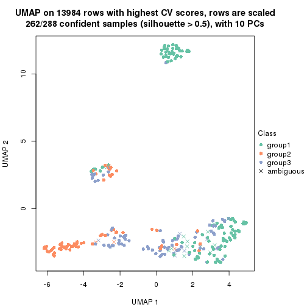
dimension_reduction(res, k = 4, method = "UMAP")
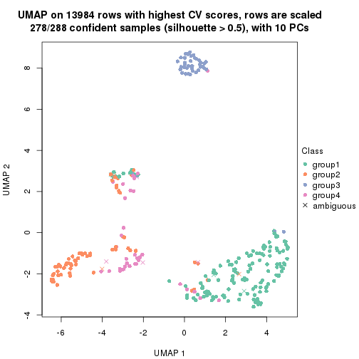
dimension_reduction(res, k = 5, method = "UMAP")
dimension_reduction(res, k = 6, method = "UMAP")
Following heatmap shows how subgroups are split when increasing k:
collect_classes(res)
If matrix rows can be associated to genes, consider to use functional_enrichment(res,
...) to perform function enrichment for the signature genes. See this vignette for more detailed explanations.
The object with results only for a single top-value method and a single partition method can be extracted as:
res = res_list["MAD", "hclust"]
# you can also extract it by
# res = res_list["MAD:hclust"]
A summary of res and all the functions that can be applied to it:
res
#> A 'ConsensusPartition' object with k = 2, 3, 4, 5, 6.
#> On a matrix with 13984 rows and 288 columns.
#> Top rows (1000, 2000, 3000, 4000, 5000) are extracted by 'MAD' method.
#> Subgroups are detected by 'hclust' method.
#> Performed in total 1250 partitions by row resampling.
#> Best k for subgroups seems to be 2.
#>
#> Following methods can be applied to this 'ConsensusPartition' object:
#> [1] "cola_report" "collect_classes" "collect_plots"
#> [4] "collect_stats" "colnames" "compare_signatures"
#> [7] "consensus_heatmap" "dimension_reduction" "functional_enrichment"
#> [10] "get_anno_col" "get_anno" "get_classes"
#> [13] "get_consensus" "get_matrix" "get_membership"
#> [16] "get_param" "get_signatures" "get_stats"
#> [19] "is_best_k" "is_stable_k" "membership_heatmap"
#> [22] "ncol" "nrow" "plot_ecdf"
#> [25] "rownames" "select_partition_number" "show"
#> [28] "suggest_best_k" "test_to_known_factors"
collect_plots() function collects all the plots made from res for all k (number of partitions)
into one single page to provide an easy and fast comparison between different k.
collect_plots(res)
The plots are:
k and the heatmap of
predicted classes for each k.k.k.k.All the plots in panels can be made by individual functions and they are plotted later in this section.
select_partition_number() produces several plots showing different
statistics for choosing “optimized” k. There are following statistics:
k;k, the area increased is defined as \(A_k - A_{k-1}\).The detailed explanations of these statistics can be found in the cola vignette.
Generally speaking, lower PAC score, higher mean silhouette score or higher
concordance corresponds to better partition. Rand index and Jaccard index
measure how similar the current partition is compared to partition with k-1.
If they are too similar, we won't accept k is better than k-1.
select_partition_number(res)

The numeric values for all these statistics can be obtained by get_stats().
get_stats(res)
#> k 1-PAC mean_silhouette concordance area_increased Rand Jaccard
#> 2 2 0.747 0.869 0.942 0.3815 0.620 0.620
#> 3 3 0.562 0.676 0.849 0.3251 0.940 0.903
#> 4 4 0.468 0.586 0.745 0.1965 0.843 0.726
#> 5 5 0.437 0.580 0.716 0.0974 0.896 0.765
#> 6 6 0.426 0.503 0.691 0.0578 0.886 0.710
suggest_best_k() suggests the best \(k\) based on these statistics. The rules are as follows:
suggest_best_k(res)
#> [1] 2
Following shows the table of the partitions (You need to click the show/hide
code output link to see it). The membership matrix (columns with name p*)
is inferred by
clue::cl_consensus()
function with the SE method. Basically the value in the membership matrix
represents the probability to belong to a certain group. The finall class
label for an item is determined with the group with highest probability it
belongs to.
In get_classes() function, the entropy is calculated from the membership
matrix and the silhouette score is calculated from the consensus matrix.
cbind(get_classes(res, k = 2), get_membership(res, k = 2))
#> class entropy silhouette p1 p2
#> SRR1982614 2 0.9998 0.1177 0.492 0.508
#> SRR1982613 2 0.8555 0.6535 0.280 0.720
#> SRR1982612 1 0.3431 0.9080 0.936 0.064
#> SRR1982611 1 0.4298 0.8864 0.912 0.088
#> SRR1982610 1 0.4298 0.8864 0.912 0.088
#> SRR1982609 1 0.0000 0.9496 1.000 0.000
#> SRR1982659 1 0.0000 0.9496 1.000 0.000
#> SRR1982692 2 0.1633 0.8964 0.024 0.976
#> SRR1982722 1 0.0000 0.9496 1.000 0.000
#> SRR1982750 2 0.0000 0.8945 0.000 1.000
#> SRR2095031 2 0.0000 0.8945 0.000 1.000
#> SRR1982780 1 0.0000 0.9496 1.000 0.000
#> SRR1982807 1 0.2423 0.9267 0.960 0.040
#> SRR1982830 1 0.3114 0.9145 0.944 0.056
#> SRR1982829 2 0.9998 0.1177 0.492 0.508
#> SRR1982828 1 0.8763 0.5739 0.704 0.296
#> SRR1982827 1 0.3274 0.9112 0.940 0.060
#> SRR1982826 1 0.0000 0.9496 1.000 0.000
#> SRR1982825 1 0.0000 0.9496 1.000 0.000
#> SRR1982824 1 0.5408 0.8496 0.876 0.124
#> SRR1982823 1 0.0376 0.9479 0.996 0.004
#> SRR1982822 1 0.5294 0.8543 0.880 0.120
#> SRR1982821 1 0.0376 0.9479 0.996 0.004
#> SRR1982820 1 0.0000 0.9496 1.000 0.000
#> SRR1982819 1 0.0000 0.9496 1.000 0.000
#> SRR1982818 1 0.0000 0.9496 1.000 0.000
#> SRR1982817 1 0.3274 0.9112 0.940 0.060
#> SRR1982816 1 0.0000 0.9496 1.000 0.000
#> SRR1982815 1 0.0000 0.9496 1.000 0.000
#> SRR1982814 1 0.0000 0.9496 1.000 0.000
#> SRR1982813 1 0.0000 0.9496 1.000 0.000
#> SRR1982812 2 0.8555 0.6535 0.280 0.720
#> SRR1982811 1 0.0376 0.9479 0.996 0.004
#> SRR1982810 1 0.0000 0.9496 1.000 0.000
#> SRR1982809 1 0.6712 0.7840 0.824 0.176
#> SRR1982808 1 0.3274 0.9112 0.940 0.060
#> SRR1982806 1 0.0000 0.9496 1.000 0.000
#> SRR1982805 1 0.0000 0.9496 1.000 0.000
#> SRR1982804 1 0.5178 0.8589 0.884 0.116
#> SRR1982803 1 0.9983 0.0140 0.524 0.476
#> SRR1982802 1 0.0376 0.9479 0.996 0.004
#> SRR1982801 1 0.1184 0.9417 0.984 0.016
#> SRR1982800 1 0.4022 0.8945 0.920 0.080
#> SRR1982799 1 0.0000 0.9496 1.000 0.000
#> SRR1982798 1 0.0000 0.9496 1.000 0.000
#> SRR1982797 2 0.9000 0.5924 0.316 0.684
#> SRR1982796 1 0.0000 0.9496 1.000 0.000
#> SRR1982795 1 0.0000 0.9496 1.000 0.000
#> SRR1982794 1 0.0000 0.9496 1.000 0.000
#> SRR1982793 1 0.0000 0.9496 1.000 0.000
#> SRR1982792 1 0.0000 0.9496 1.000 0.000
#> SRR1982791 1 0.0000 0.9496 1.000 0.000
#> SRR1982790 2 0.0000 0.8945 0.000 1.000
#> SRR1982789 1 0.0000 0.9496 1.000 0.000
#> SRR1982788 1 0.0000 0.9496 1.000 0.000
#> SRR1982787 1 0.0000 0.9496 1.000 0.000
#> SRR1982786 1 0.9970 0.0676 0.532 0.468
#> SRR1982785 1 0.0000 0.9496 1.000 0.000
#> SRR1982784 1 0.0000 0.9496 1.000 0.000
#> SRR1982783 1 0.9000 0.5300 0.684 0.316
#> SRR1982782 1 0.0000 0.9496 1.000 0.000
#> SRR1982781 1 0.0000 0.9496 1.000 0.000
#> SRR1982779 1 0.0000 0.9496 1.000 0.000
#> SRR1982778 1 0.0000 0.9496 1.000 0.000
#> SRR1982776 1 0.8813 0.5672 0.700 0.300
#> SRR1982777 1 0.0000 0.9496 1.000 0.000
#> SRR1982775 1 0.0000 0.9496 1.000 0.000
#> SRR1982774 1 0.0000 0.9496 1.000 0.000
#> SRR1982772 1 0.0000 0.9496 1.000 0.000
#> SRR1982773 1 0.0000 0.9496 1.000 0.000
#> SRR1982770 1 0.0000 0.9496 1.000 0.000
#> SRR1982771 1 0.0000 0.9496 1.000 0.000
#> SRR1982769 1 0.9460 0.4110 0.636 0.364
#> SRR1982768 1 0.0000 0.9496 1.000 0.000
#> SRR1982767 1 0.0000 0.9496 1.000 0.000
#> SRR1982766 1 0.5946 0.8273 0.856 0.144
#> SRR1982765 1 0.0000 0.9496 1.000 0.000
#> SRR1982764 1 0.0000 0.9496 1.000 0.000
#> SRR1982762 1 0.0000 0.9496 1.000 0.000
#> SRR1982760 1 0.0000 0.9496 1.000 0.000
#> SRR1982761 1 0.0000 0.9496 1.000 0.000
#> SRR1982763 1 0.9998 -0.0797 0.508 0.492
#> SRR1982759 1 0.4022 0.8939 0.920 0.080
#> SRR1982758 1 0.0000 0.9496 1.000 0.000
#> SRR1982757 1 0.0376 0.9479 0.996 0.004
#> SRR1982755 1 0.0376 0.9479 0.996 0.004
#> SRR1982754 1 0.4298 0.8864 0.912 0.088
#> SRR1982756 1 0.0000 0.9496 1.000 0.000
#> SRR1982753 1 0.0000 0.9496 1.000 0.000
#> SRR1982751 2 0.0938 0.8972 0.012 0.988
#> SRR1982752 2 0.0938 0.8972 0.012 0.988
#> SRR1982749 2 0.0000 0.8945 0.000 1.000
#> SRR1982748 2 0.0938 0.8972 0.012 0.988
#> SRR1982747 2 0.0000 0.8945 0.000 1.000
#> SRR1982746 2 0.1633 0.8963 0.024 0.976
#> SRR1982745 2 0.0000 0.8945 0.000 1.000
#> SRR1982743 2 0.0938 0.8972 0.012 0.988
#> SRR1982744 2 0.0000 0.8945 0.000 1.000
#> SRR1982741 2 0.4161 0.8740 0.084 0.916
#> SRR1982742 2 0.4298 0.8713 0.088 0.912
#> SRR2095014 2 0.4298 0.8713 0.088 0.912
#> SRR1982740 2 0.0000 0.8945 0.000 1.000
#> SRR1982739 2 0.3431 0.8842 0.064 0.936
#> SRR1982737 2 0.3431 0.8842 0.064 0.936
#> SRR1982738 2 0.9954 0.2402 0.460 0.540
#> SRR1982736 2 0.4161 0.8740 0.084 0.916
#> SRR1982735 2 0.3879 0.8789 0.076 0.924
#> SRR1982733 2 0.3431 0.8842 0.064 0.936
#> SRR1982732 2 0.3879 0.8789 0.076 0.924
#> SRR2095004 2 0.3879 0.8789 0.076 0.924
#> SRR1982734 2 0.4161 0.8740 0.084 0.916
#> SRR1982731 2 0.3879 0.8789 0.076 0.924
#> SRR1982729 2 0.3879 0.8789 0.076 0.924
#> SRR1982730 2 0.0938 0.8972 0.012 0.988
#> SRR1982728 2 0.0000 0.8945 0.000 1.000
#> SRR1982727 1 0.9963 0.0820 0.536 0.464
#> SRR1982726 1 0.5059 0.8599 0.888 0.112
#> SRR1982723 1 0.7815 0.6943 0.768 0.232
#> SRR1982725 1 0.5059 0.8599 0.888 0.112
#> SRR1982724 1 0.5059 0.8599 0.888 0.112
#> SRR1982721 1 0.0000 0.9496 1.000 0.000
#> SRR1982720 1 0.0000 0.9496 1.000 0.000
#> SRR1982719 1 0.0000 0.9496 1.000 0.000
#> SRR1982718 2 0.0000 0.8945 0.000 1.000
#> SRR1982717 2 0.0000 0.8945 0.000 1.000
#> SRR1982715 2 0.0672 0.8966 0.008 0.992
#> SRR1982714 1 0.6148 0.8172 0.848 0.152
#> SRR1982716 2 0.0672 0.8966 0.008 0.992
#> SRR1982713 1 0.6148 0.8172 0.848 0.152
#> SRR1982711 2 0.1843 0.8956 0.028 0.972
#> SRR1982712 2 0.1843 0.8956 0.028 0.972
#> SRR1982710 2 0.0000 0.8945 0.000 1.000
#> SRR1982708 2 0.0000 0.8945 0.000 1.000
#> SRR1982707 2 0.0672 0.8966 0.008 0.992
#> SRR1982709 1 0.1843 0.9340 0.972 0.028
#> SRR1982705 2 0.0000 0.8945 0.000 1.000
#> SRR1982706 1 0.0000 0.9496 1.000 0.000
#> SRR1982704 1 0.3274 0.9108 0.940 0.060
#> SRR1982702 2 0.6438 0.7956 0.164 0.836
#> SRR1982703 2 0.6438 0.7956 0.164 0.836
#> SRR1982701 1 0.3733 0.9003 0.928 0.072
#> SRR1982700 2 0.0000 0.8945 0.000 1.000
#> SRR1982697 2 0.0000 0.8945 0.000 1.000
#> SRR1982698 2 0.1843 0.8956 0.028 0.972
#> SRR1982699 2 0.1843 0.8956 0.028 0.972
#> SRR1982696 2 0.0000 0.8945 0.000 1.000
#> SRR1982695 1 0.0000 0.9496 1.000 0.000
#> SRR1982694 1 0.0000 0.9496 1.000 0.000
#> SRR1982693 2 0.0000 0.8945 0.000 1.000
#> SRR1982690 2 0.0000 0.8945 0.000 1.000
#> SRR1982691 2 0.0938 0.8972 0.012 0.988
#> SRR1982689 2 0.9552 0.4703 0.376 0.624
#> SRR1982688 1 0.0000 0.9496 1.000 0.000
#> SRR1982687 2 0.9608 0.4527 0.384 0.616
#> SRR1982686 2 0.9954 0.2402 0.460 0.540
#> SRR1982685 2 0.9552 0.4703 0.376 0.624
#> SRR1982684 2 0.0000 0.8945 0.000 1.000
#> SRR1982683 1 0.0000 0.9496 1.000 0.000
#> SRR1982681 2 0.0000 0.8945 0.000 1.000
#> SRR1982682 2 0.1633 0.8963 0.024 0.976
#> SRR1982680 2 0.0672 0.8966 0.008 0.992
#> SRR1982679 1 0.0000 0.9496 1.000 0.000
#> SRR1982678 2 0.3431 0.8843 0.064 0.936
#> SRR1982677 2 0.0938 0.8971 0.012 0.988
#> SRR1982676 1 0.0000 0.9496 1.000 0.000
#> SRR1982675 1 0.0000 0.9496 1.000 0.000
#> SRR1982674 1 0.9909 0.1411 0.556 0.444
#> SRR1982671 1 0.0376 0.9479 0.996 0.004
#> SRR1982673 1 0.0000 0.9496 1.000 0.000
#> SRR1982672 1 0.0000 0.9496 1.000 0.000
#> SRR1982670 1 0.0000 0.9496 1.000 0.000
#> SRR1982669 1 0.0000 0.9496 1.000 0.000
#> SRR1982667 1 0.0000 0.9496 1.000 0.000
#> SRR1982668 1 0.5294 0.8547 0.880 0.120
#> SRR1982666 1 0.0000 0.9496 1.000 0.000
#> SRR1982665 1 0.3733 0.8968 0.928 0.072
#> SRR1982664 1 0.0000 0.9496 1.000 0.000
#> SRR1982663 1 0.0000 0.9496 1.000 0.000
#> SRR1982662 1 0.0000 0.9496 1.000 0.000
#> SRR1982661 1 0.5059 0.8639 0.888 0.112
#> SRR1982660 1 0.0000 0.9496 1.000 0.000
#> SRR1982658 1 0.0000 0.9496 1.000 0.000
#> SRR1982657 1 0.0000 0.9496 1.000 0.000
#> SRR1982656 1 0.9944 0.1136 0.544 0.456
#> SRR1982654 1 0.0000 0.9496 1.000 0.000
#> SRR1982655 1 0.0000 0.9496 1.000 0.000
#> SRR1982653 1 0.0000 0.9496 1.000 0.000
#> SRR1982652 1 0.0376 0.9479 0.996 0.004
#> SRR1982651 1 0.0000 0.9496 1.000 0.000
#> SRR1982649 1 0.7745 0.7058 0.772 0.228
#> SRR1982650 1 0.0376 0.9479 0.996 0.004
#> SRR1982648 1 0.0000 0.9496 1.000 0.000
#> SRR1982647 1 0.0000 0.9496 1.000 0.000
#> SRR1982646 1 0.4022 0.8939 0.920 0.080
#> SRR1982645 1 0.0000 0.9496 1.000 0.000
#> SRR1982644 1 0.0000 0.9496 1.000 0.000
#> SRR1982642 1 0.0000 0.9496 1.000 0.000
#> SRR1982643 1 0.0000 0.9496 1.000 0.000
#> SRR1982641 1 0.0000 0.9496 1.000 0.000
#> SRR1982640 1 0.0000 0.9496 1.000 0.000
#> SRR1982638 1 0.0000 0.9496 1.000 0.000
#> SRR1982639 1 0.0000 0.9496 1.000 0.000
#> SRR1982637 1 0.0376 0.9479 0.996 0.004
#> SRR1982635 1 0.0000 0.9496 1.000 0.000
#> SRR1982636 1 0.4939 0.8671 0.892 0.108
#> SRR1982633 1 0.0000 0.9496 1.000 0.000
#> SRR1982632 1 0.0376 0.9479 0.996 0.004
#> SRR1982631 1 0.0000 0.9496 1.000 0.000
#> SRR1982634 1 0.2778 0.9202 0.952 0.048
#> SRR1982628 1 0.4161 0.8902 0.916 0.084
#> SRR1982629 1 0.0000 0.9496 1.000 0.000
#> SRR1982627 1 0.0000 0.9496 1.000 0.000
#> SRR1982625 1 0.0000 0.9496 1.000 0.000
#> SRR1982626 1 0.3114 0.9150 0.944 0.056
#> SRR1982624 1 0.6712 0.7840 0.824 0.176
#> SRR1982623 1 0.0000 0.9496 1.000 0.000
#> SRR1982622 1 0.0000 0.9496 1.000 0.000
#> SRR1982621 1 0.0000 0.9496 1.000 0.000
#> SRR1982620 1 0.0000 0.9496 1.000 0.000
#> SRR1982619 1 0.1633 0.9374 0.976 0.024
#> SRR1982618 1 0.0000 0.9496 1.000 0.000
#> SRR1982617 2 0.9996 0.1329 0.488 0.512
#> SRR1982616 1 0.4298 0.8864 0.912 0.088
#> SRR1982615 1 0.0000 0.9496 1.000 0.000
#> SRR1982608 2 0.0000 0.8945 0.000 1.000
#> SRR1982607 1 0.0000 0.9496 1.000 0.000
#> SRR1982606 1 0.0000 0.9496 1.000 0.000
#> SRR1982605 1 0.0376 0.9479 0.996 0.004
#> SRR1982604 1 0.0000 0.9496 1.000 0.000
#> SRR1982603 1 0.0000 0.9496 1.000 0.000
#> SRR1982602 1 0.0000 0.9496 1.000 0.000
#> SRR1982601 1 0.0000 0.9496 1.000 0.000
#> SRR1982599 1 0.0376 0.9479 0.996 0.004
#> SRR1982600 2 0.1184 0.8971 0.016 0.984
#> SRR1982598 1 0.0376 0.9479 0.996 0.004
#> SRR1982597 1 0.0000 0.9496 1.000 0.000
#> SRR1982595 1 0.0000 0.9496 1.000 0.000
#> SRR1982596 1 0.0000 0.9496 1.000 0.000
#> SRR1982594 1 0.0000 0.9496 1.000 0.000
#> SRR1982593 1 0.0000 0.9496 1.000 0.000
#> SRR1982592 1 0.6712 0.7840 0.824 0.176
#> SRR1982591 1 0.5294 0.8542 0.880 0.120
#> SRR1982590 2 0.9522 0.4766 0.372 0.628
#> SRR1982589 1 0.4690 0.8750 0.900 0.100
#> SRR1982588 1 0.0000 0.9496 1.000 0.000
#> SRR1982587 1 0.0000 0.9496 1.000 0.000
#> SRR1982586 1 0.0000 0.9496 1.000 0.000
#> SRR1982584 1 0.6343 0.8056 0.840 0.160
#> SRR2096514 1 0.0000 0.9496 1.000 0.000
#> SRR2096513 1 0.1633 0.9375 0.976 0.024
#> SRR2096511 1 0.0000 0.9496 1.000 0.000
#> SRR2096512 2 0.6887 0.7798 0.184 0.816
#> SRR2096509 1 0.0000 0.9496 1.000 0.000
#> SRR2096510 1 0.1633 0.9375 0.976 0.024
#> SRR2096508 2 0.0672 0.8962 0.008 0.992
#> SRR2096507 1 0.3584 0.9033 0.932 0.068
#> SRR2096504 1 0.0000 0.9496 1.000 0.000
#> SRR2096506 1 0.1633 0.9367 0.976 0.024
#> SRR2096505 1 0.2603 0.9230 0.956 0.044
#> SRR2096503 2 0.6247 0.8070 0.156 0.844
#> SRR2096500 1 0.0000 0.9496 1.000 0.000
#> SRR2096501 1 0.4939 0.8655 0.892 0.108
#> SRR2096502 1 0.0000 0.9496 1.000 0.000
#> SRR2096499 1 0.0000 0.9496 1.000 0.000
#> SRR2096498 1 0.0000 0.9496 1.000 0.000
#> SRR2096496 1 0.9996 -0.0503 0.512 0.488
#> SRR2096497 1 0.0000 0.9496 1.000 0.000
#> SRR2096495 1 0.0376 0.9479 0.996 0.004
#> SRR2096494 1 0.0000 0.9496 1.000 0.000
#> SRR2096492 1 0.1184 0.9423 0.984 0.016
#> SRR2096491 2 0.6887 0.7798 0.184 0.816
#> SRR2096493 1 0.1184 0.9423 0.984 0.016
#> SRR2096490 1 0.1633 0.9375 0.976 0.024
#> SRR2096488 1 0.1633 0.9375 0.976 0.024
#> SRR2096489 1 0.1633 0.9375 0.976 0.024
#> SRR2096487 1 0.2603 0.9230 0.956 0.044
#> SRR2096484 1 0.0000 0.9496 1.000 0.000
#> SRR2096486 1 0.3584 0.9033 0.932 0.068
#> SRR2096485 1 0.0000 0.9496 1.000 0.000
#> SRR2096483 1 0.0000 0.9496 1.000 0.000
#> SRR2096482 1 0.0000 0.9496 1.000 0.000
#> SRR2096481 1 0.8909 0.5183 0.692 0.308
#> SRR2096520 1 0.0000 0.9496 1.000 0.000
#> SRR2096519 1 0.0000 0.9496 1.000 0.000
#> SRR2096518 1 0.0000 0.9496 1.000 0.000
#> SRR2096516 1 0.0000 0.9496 1.000 0.000
#> SRR2096517 1 0.0000 0.9496 1.000 0.000
#> SRR2096515 1 0.0000 0.9496 1.000 0.000
cbind(get_classes(res, k = 3), get_membership(res, k = 3))
#> class entropy silhouette p1 p2 p3
#> SRR1982614 3 0.9709 0.5542 0.244 0.308 0.448
#> SRR1982613 2 0.8643 0.1502 0.108 0.516 0.376
#> SRR1982612 1 0.5098 0.6237 0.752 0.000 0.248
#> SRR1982611 1 0.6275 0.4098 0.644 0.008 0.348
#> SRR1982610 1 0.6275 0.4098 0.644 0.008 0.348
#> SRR1982609 1 0.0237 0.8471 0.996 0.000 0.004
#> SRR1982659 1 0.0237 0.8471 0.996 0.000 0.004
#> SRR1982692 2 0.4002 0.7751 0.000 0.840 0.160
#> SRR1982722 1 0.0747 0.8452 0.984 0.000 0.016
#> SRR1982750 2 0.0592 0.7661 0.000 0.988 0.012
#> SRR2095031 2 0.0592 0.7661 0.000 0.988 0.012
#> SRR1982780 1 0.2356 0.8164 0.928 0.000 0.072
#> SRR1982807 1 0.4733 0.6941 0.800 0.004 0.196
#> SRR1982830 1 0.5058 0.6314 0.756 0.000 0.244
#> SRR1982829 3 0.9709 0.5542 0.244 0.308 0.448
#> SRR1982828 1 0.8983 -0.3874 0.444 0.128 0.428
#> SRR1982827 1 0.5919 0.5448 0.712 0.012 0.276
#> SRR1982826 1 0.0747 0.8459 0.984 0.000 0.016
#> SRR1982825 1 0.0592 0.8461 0.988 0.000 0.012
#> SRR1982824 1 0.6753 0.2732 0.596 0.016 0.388
#> SRR1982823 1 0.1163 0.8423 0.972 0.000 0.028
#> SRR1982822 1 0.6566 0.3228 0.612 0.012 0.376
#> SRR1982821 1 0.1163 0.8423 0.972 0.000 0.028
#> SRR1982820 1 0.0424 0.8468 0.992 0.000 0.008
#> SRR1982819 1 0.0424 0.8468 0.992 0.000 0.008
#> SRR1982818 1 0.1411 0.8390 0.964 0.000 0.036
#> SRR1982817 1 0.5919 0.5448 0.712 0.012 0.276
#> SRR1982816 1 0.0424 0.8468 0.992 0.000 0.008
#> SRR1982815 1 0.0237 0.8471 0.996 0.000 0.004
#> SRR1982814 1 0.0424 0.8468 0.992 0.000 0.008
#> SRR1982813 1 0.2165 0.8234 0.936 0.000 0.064
#> SRR1982812 2 0.8643 0.1502 0.108 0.516 0.376
#> SRR1982811 1 0.1411 0.8387 0.964 0.000 0.036
#> SRR1982810 1 0.0424 0.8473 0.992 0.000 0.008
#> SRR1982809 1 0.7389 0.1083 0.556 0.036 0.408
#> SRR1982808 1 0.5919 0.5448 0.712 0.012 0.276
#> SRR1982806 1 0.0237 0.8471 0.996 0.000 0.004
#> SRR1982805 1 0.0424 0.8468 0.992 0.000 0.008
#> SRR1982804 1 0.6548 0.3346 0.616 0.012 0.372
#> SRR1982803 3 0.9757 0.5707 0.268 0.288 0.444
#> SRR1982802 1 0.0892 0.8448 0.980 0.000 0.020
#> SRR1982801 1 0.3983 0.7478 0.852 0.004 0.144
#> SRR1982800 1 0.6307 0.4467 0.660 0.012 0.328
#> SRR1982799 1 0.0424 0.8470 0.992 0.000 0.008
#> SRR1982798 1 0.0747 0.8463 0.984 0.000 0.016
#> SRR1982797 2 0.8983 -0.0261 0.132 0.480 0.388
#> SRR1982796 1 0.0237 0.8471 0.996 0.000 0.004
#> SRR1982795 1 0.0424 0.8469 0.992 0.000 0.008
#> SRR1982794 1 0.0237 0.8471 0.996 0.000 0.004
#> SRR1982793 1 0.0237 0.8471 0.996 0.000 0.004
#> SRR1982792 1 0.0424 0.8468 0.992 0.000 0.008
#> SRR1982791 1 0.0892 0.8447 0.980 0.000 0.020
#> SRR1982790 2 0.0592 0.7661 0.000 0.988 0.012
#> SRR1982789 1 0.0237 0.8471 0.996 0.000 0.004
#> SRR1982788 1 0.0237 0.8471 0.996 0.000 0.004
#> SRR1982787 1 0.0747 0.8455 0.984 0.000 0.016
#> SRR1982786 3 0.7769 0.4906 0.108 0.232 0.660
#> SRR1982785 1 0.0237 0.8471 0.996 0.000 0.004
#> SRR1982784 1 0.0237 0.8471 0.996 0.000 0.004
#> SRR1982783 3 0.5777 0.6236 0.160 0.052 0.788
#> SRR1982782 1 0.0237 0.8471 0.996 0.000 0.004
#> SRR1982781 1 0.0424 0.8472 0.992 0.000 0.008
#> SRR1982779 1 0.2066 0.8258 0.940 0.000 0.060
#> SRR1982778 1 0.0237 0.8471 0.996 0.000 0.004
#> SRR1982776 3 0.5413 0.6241 0.164 0.036 0.800
#> SRR1982777 1 0.2356 0.8167 0.928 0.000 0.072
#> SRR1982775 1 0.0237 0.8471 0.996 0.000 0.004
#> SRR1982774 1 0.0237 0.8471 0.996 0.000 0.004
#> SRR1982772 1 0.0592 0.8469 0.988 0.000 0.012
#> SRR1982773 1 0.0237 0.8471 0.996 0.000 0.004
#> SRR1982770 1 0.0237 0.8471 0.996 0.000 0.004
#> SRR1982771 1 0.2066 0.8258 0.940 0.000 0.060
#> SRR1982769 3 0.6349 0.6034 0.140 0.092 0.768
#> SRR1982768 1 0.0592 0.8473 0.988 0.000 0.012
#> SRR1982767 1 0.0237 0.8471 0.996 0.000 0.004
#> SRR1982766 1 0.7505 0.1887 0.572 0.044 0.384
#> SRR1982765 1 0.0237 0.8472 0.996 0.000 0.004
#> SRR1982764 1 0.0424 0.8472 0.992 0.000 0.008
#> SRR1982762 1 0.0237 0.8471 0.996 0.000 0.004
#> SRR1982760 1 0.0237 0.8471 0.996 0.000 0.004
#> SRR1982761 1 0.0424 0.8472 0.992 0.000 0.008
#> SRR1982763 3 0.9956 0.5265 0.292 0.336 0.372
#> SRR1982759 1 0.6129 0.4642 0.668 0.008 0.324
#> SRR1982758 1 0.2448 0.8136 0.924 0.000 0.076
#> SRR1982757 1 0.2261 0.8218 0.932 0.000 0.068
#> SRR1982755 1 0.0892 0.8448 0.980 0.000 0.020
#> SRR1982754 1 0.6275 0.4098 0.644 0.008 0.348
#> SRR1982756 1 0.1163 0.8422 0.972 0.000 0.028
#> SRR1982753 1 0.0237 0.8471 0.996 0.000 0.004
#> SRR1982751 2 0.2711 0.7875 0.000 0.912 0.088
#> SRR1982752 2 0.2711 0.7875 0.000 0.912 0.088
#> SRR1982749 2 0.0592 0.7661 0.000 0.988 0.012
#> SRR1982748 2 0.2711 0.7875 0.000 0.912 0.088
#> SRR1982747 2 0.0592 0.7661 0.000 0.988 0.012
#> SRR1982746 2 0.4235 0.7687 0.000 0.824 0.176
#> SRR1982745 2 0.0592 0.7661 0.000 0.988 0.012
#> SRR1982743 2 0.2711 0.7875 0.000 0.912 0.088
#> SRR1982744 2 0.0592 0.7661 0.000 0.988 0.012
#> SRR1982741 2 0.5541 0.7160 0.008 0.740 0.252
#> SRR1982742 2 0.5618 0.7083 0.008 0.732 0.260
#> SRR2095014 2 0.5618 0.7083 0.008 0.732 0.260
#> SRR1982740 2 0.0592 0.7661 0.000 0.988 0.012
#> SRR1982739 2 0.5292 0.7353 0.008 0.764 0.228
#> SRR1982737 2 0.5292 0.7353 0.008 0.764 0.228
#> SRR1982738 2 0.9885 -0.5089 0.260 0.372 0.368
#> SRR1982736 2 0.5541 0.7160 0.008 0.740 0.252
#> SRR1982735 2 0.5502 0.7207 0.008 0.744 0.248
#> SRR1982733 2 0.5292 0.7353 0.008 0.764 0.228
#> SRR1982732 2 0.5502 0.7207 0.008 0.744 0.248
#> SRR2095004 2 0.5502 0.7207 0.008 0.744 0.248
#> SRR1982734 2 0.5541 0.7160 0.008 0.740 0.252
#> SRR1982731 2 0.5502 0.7207 0.008 0.744 0.248
#> SRR1982729 2 0.5502 0.7207 0.008 0.744 0.248
#> SRR1982730 2 0.2711 0.7875 0.000 0.912 0.088
#> SRR1982728 2 0.1031 0.7785 0.000 0.976 0.024
#> SRR1982727 3 0.7757 0.5057 0.112 0.224 0.664
#> SRR1982726 1 0.6647 0.0445 0.540 0.008 0.452
#> SRR1982723 3 0.7499 0.5518 0.360 0.048 0.592
#> SRR1982725 1 0.6647 0.0445 0.540 0.008 0.452
#> SRR1982724 1 0.6647 0.0445 0.540 0.008 0.452
#> SRR1982721 1 0.0747 0.8452 0.984 0.000 0.016
#> SRR1982720 1 0.0592 0.8464 0.988 0.000 0.012
#> SRR1982719 1 0.0747 0.8452 0.984 0.000 0.016
#> SRR1982718 2 0.0592 0.7661 0.000 0.988 0.012
#> SRR1982717 2 0.0592 0.7661 0.000 0.988 0.012
#> SRR1982715 2 0.2959 0.7869 0.000 0.900 0.100
#> SRR1982714 1 0.7685 0.1562 0.564 0.052 0.384
#> SRR1982716 2 0.2959 0.7869 0.000 0.900 0.100
#> SRR1982713 1 0.7685 0.1562 0.564 0.052 0.384
#> SRR1982711 2 0.4121 0.7706 0.000 0.832 0.168
#> SRR1982712 2 0.4121 0.7706 0.000 0.832 0.168
#> SRR1982710 2 0.0592 0.7661 0.000 0.988 0.012
#> SRR1982708 2 0.0592 0.7661 0.000 0.988 0.012
#> SRR1982707 2 0.2959 0.7869 0.000 0.900 0.100
#> SRR1982709 1 0.3412 0.7790 0.876 0.000 0.124
#> SRR1982705 2 0.1163 0.7644 0.000 0.972 0.028
#> SRR1982706 1 0.0424 0.8469 0.992 0.000 0.008
#> SRR1982704 1 0.5098 0.6400 0.752 0.000 0.248
#> SRR1982702 2 0.6380 0.5464 0.076 0.760 0.164
#> SRR1982703 2 0.6380 0.5464 0.076 0.760 0.164
#> SRR1982701 1 0.5502 0.6261 0.744 0.008 0.248
#> SRR1982700 2 0.1163 0.7644 0.000 0.972 0.028
#> SRR1982697 2 0.1031 0.7785 0.000 0.976 0.024
#> SRR1982698 2 0.4121 0.7706 0.000 0.832 0.168
#> SRR1982699 2 0.4121 0.7706 0.000 0.832 0.168
#> SRR1982696 2 0.0892 0.7654 0.000 0.980 0.020
#> SRR1982695 1 0.0237 0.8471 0.996 0.000 0.004
#> SRR1982694 1 0.0237 0.8471 0.996 0.000 0.004
#> SRR1982693 2 0.0592 0.7661 0.000 0.988 0.012
#> SRR1982690 2 0.1163 0.7791 0.000 0.972 0.028
#> SRR1982691 2 0.2711 0.7875 0.000 0.912 0.088
#> SRR1982689 2 0.9684 -0.3206 0.224 0.436 0.340
#> SRR1982688 1 0.0237 0.8471 0.996 0.000 0.004
#> SRR1982687 2 0.9707 -0.3375 0.228 0.432 0.340
#> SRR1982686 2 0.9885 -0.5089 0.260 0.372 0.368
#> SRR1982685 2 0.9684 -0.3206 0.224 0.436 0.340
#> SRR1982684 2 0.1163 0.7791 0.000 0.972 0.028
#> SRR1982683 1 0.0592 0.8464 0.988 0.000 0.012
#> SRR1982681 2 0.0592 0.7661 0.000 0.988 0.012
#> SRR1982682 2 0.4172 0.7752 0.004 0.840 0.156
#> SRR1982680 2 0.2959 0.7869 0.000 0.900 0.100
#> SRR1982679 1 0.0592 0.8464 0.988 0.000 0.012
#> SRR1982678 2 0.5156 0.7426 0.008 0.776 0.216
#> SRR1982677 2 0.2356 0.7857 0.000 0.928 0.072
#> SRR1982676 1 0.0237 0.8471 0.996 0.000 0.004
#> SRR1982675 1 0.0424 0.8468 0.992 0.000 0.008
#> SRR1982674 1 0.9944 -0.6145 0.372 0.284 0.344
#> SRR1982671 1 0.3482 0.7770 0.872 0.000 0.128
#> SRR1982673 1 0.0237 0.8471 0.996 0.000 0.004
#> SRR1982672 1 0.0237 0.8471 0.996 0.000 0.004
#> SRR1982670 1 0.0237 0.8471 0.996 0.000 0.004
#> SRR1982669 1 0.0237 0.8471 0.996 0.000 0.004
#> SRR1982667 1 0.0237 0.8471 0.996 0.000 0.004
#> SRR1982668 1 0.6849 0.2857 0.600 0.020 0.380
#> SRR1982666 1 0.0237 0.8471 0.996 0.000 0.004
#> SRR1982665 1 0.5618 0.5656 0.732 0.008 0.260
#> SRR1982664 1 0.0592 0.8465 0.988 0.000 0.012
#> SRR1982663 1 0.0237 0.8471 0.996 0.000 0.004
#> SRR1982662 1 0.0237 0.8471 0.996 0.000 0.004
#> SRR1982661 1 0.7214 0.3607 0.632 0.044 0.324
#> SRR1982660 1 0.0237 0.8471 0.996 0.000 0.004
#> SRR1982658 1 0.0424 0.8468 0.992 0.000 0.008
#> SRR1982657 1 0.0237 0.8471 0.996 0.000 0.004
#> SRR1982656 3 0.8058 0.5112 0.124 0.236 0.640
#> SRR1982654 1 0.0424 0.8468 0.992 0.000 0.008
#> SRR1982655 1 0.0424 0.8468 0.992 0.000 0.008
#> SRR1982653 1 0.0424 0.8468 0.992 0.000 0.008
#> SRR1982652 1 0.0892 0.8448 0.980 0.000 0.020
#> SRR1982651 1 0.0237 0.8471 0.996 0.000 0.004
#> SRR1982649 1 0.8496 -0.1897 0.492 0.092 0.416
#> SRR1982650 1 0.1411 0.8391 0.964 0.000 0.036
#> SRR1982648 1 0.0424 0.8468 0.992 0.000 0.008
#> SRR1982647 1 0.0237 0.8471 0.996 0.000 0.004
#> SRR1982646 1 0.6129 0.4642 0.668 0.008 0.324
#> SRR1982645 1 0.0424 0.8468 0.992 0.000 0.008
#> SRR1982644 1 0.0424 0.8468 0.992 0.000 0.008
#> SRR1982642 1 0.0237 0.8471 0.996 0.000 0.004
#> SRR1982643 1 0.0424 0.8468 0.992 0.000 0.008
#> SRR1982641 1 0.0237 0.8471 0.996 0.000 0.004
#> SRR1982640 1 0.0237 0.8471 0.996 0.000 0.004
#> SRR1982638 1 0.0237 0.8471 0.996 0.000 0.004
#> SRR1982639 1 0.0237 0.8471 0.996 0.000 0.004
#> SRR1982637 1 0.0892 0.8448 0.980 0.000 0.020
#> SRR1982635 1 0.0424 0.8468 0.992 0.000 0.008
#> SRR1982636 1 0.6686 0.3244 0.612 0.016 0.372
#> SRR1982633 1 0.0237 0.8471 0.996 0.000 0.004
#> SRR1982632 1 0.1643 0.8350 0.956 0.000 0.044
#> SRR1982631 1 0.0237 0.8471 0.996 0.000 0.004
#> SRR1982634 1 0.5012 0.6647 0.788 0.008 0.204
#> SRR1982628 1 0.6155 0.4551 0.664 0.008 0.328
#> SRR1982629 1 0.0237 0.8471 0.996 0.000 0.004
#> SRR1982627 1 0.0237 0.8472 0.996 0.000 0.004
#> SRR1982625 1 0.0237 0.8474 0.996 0.000 0.004
#> SRR1982626 1 0.5285 0.6237 0.752 0.004 0.244
#> SRR1982624 1 0.7389 0.1083 0.556 0.036 0.408
#> SRR1982623 1 0.0237 0.8477 0.996 0.000 0.004
#> SRR1982622 1 0.0592 0.8465 0.988 0.000 0.012
#> SRR1982621 1 0.2356 0.8164 0.928 0.000 0.072
#> SRR1982620 1 0.0747 0.8452 0.984 0.000 0.016
#> SRR1982619 3 0.6509 0.1895 0.472 0.004 0.524
#> SRR1982618 1 0.0237 0.8471 0.996 0.000 0.004
#> SRR1982617 3 0.9722 0.5494 0.244 0.312 0.444
#> SRR1982616 1 0.6275 0.4098 0.644 0.008 0.348
#> SRR1982615 1 0.0237 0.8471 0.996 0.000 0.004
#> SRR1982608 2 0.1163 0.7791 0.000 0.972 0.028
#> SRR1982607 1 0.0237 0.8471 0.996 0.000 0.004
#> SRR1982606 1 0.0237 0.8471 0.996 0.000 0.004
#> SRR1982605 1 0.1031 0.8437 0.976 0.000 0.024
#> SRR1982604 1 0.0237 0.8471 0.996 0.000 0.004
#> SRR1982603 1 0.0237 0.8471 0.996 0.000 0.004
#> SRR1982602 1 0.0424 0.8468 0.992 0.000 0.008
#> SRR1982601 1 0.0424 0.8468 0.992 0.000 0.008
#> SRR1982599 1 0.2356 0.8186 0.928 0.000 0.072
#> SRR1982600 2 0.2448 0.7864 0.000 0.924 0.076
#> SRR1982598 1 0.0747 0.8457 0.984 0.000 0.016
#> SRR1982597 1 0.0424 0.8469 0.992 0.000 0.008
#> SRR1982595 1 0.0237 0.8471 0.996 0.000 0.004
#> SRR1982596 1 0.0237 0.8471 0.996 0.000 0.004
#> SRR1982594 1 0.0592 0.8462 0.988 0.000 0.012
#> SRR1982593 1 0.0424 0.8468 0.992 0.000 0.008
#> SRR1982592 1 0.7389 0.1083 0.556 0.036 0.408
#> SRR1982591 1 0.6632 0.2768 0.596 0.012 0.392
#> SRR1982590 2 0.9336 -0.2711 0.164 0.424 0.412
#> SRR1982589 1 0.6529 0.3461 0.620 0.012 0.368
#> SRR1982588 1 0.0892 0.8446 0.980 0.000 0.020
#> SRR1982587 1 0.0424 0.8468 0.992 0.000 0.008
#> SRR1982586 1 0.0237 0.8471 0.996 0.000 0.004
#> SRR1982584 1 0.7263 0.1626 0.568 0.032 0.400
#> SRR2096514 1 0.3686 0.7388 0.860 0.000 0.140
#> SRR2096513 1 0.5690 0.6114 0.708 0.004 0.288
#> SRR2096511 1 0.3686 0.7388 0.860 0.000 0.140
#> SRR2096512 2 0.6950 0.4849 0.020 0.572 0.408
#> SRR2096509 1 0.3752 0.7345 0.856 0.000 0.144
#> SRR2096510 1 0.5690 0.6114 0.708 0.004 0.288
#> SRR2096508 2 0.3340 0.7817 0.000 0.880 0.120
#> SRR2096507 1 0.6501 0.5305 0.664 0.020 0.316
#> SRR2096504 1 0.5016 0.6761 0.760 0.000 0.240
#> SRR2096506 1 0.5656 0.6149 0.712 0.004 0.284
#> SRR2096505 1 0.6193 0.5819 0.692 0.016 0.292
#> SRR2096503 2 0.6140 0.5305 0.000 0.596 0.404
#> SRR2096500 1 0.4346 0.7218 0.816 0.000 0.184
#> SRR2096501 1 0.7553 0.4344 0.620 0.060 0.320
#> SRR2096502 1 0.3752 0.7345 0.856 0.000 0.144
#> SRR2096499 1 0.5058 0.6709 0.756 0.000 0.244
#> SRR2096498 1 0.0237 0.8471 0.996 0.000 0.004
#> SRR2096496 3 0.9549 0.3838 0.240 0.276 0.484
#> SRR2096497 1 0.3879 0.7312 0.848 0.000 0.152
#> SRR2096495 1 0.4796 0.6936 0.780 0.000 0.220
#> SRR2096494 1 0.3752 0.7345 0.856 0.000 0.144
#> SRR2096492 1 0.5244 0.6720 0.756 0.004 0.240
#> SRR2096491 2 0.6950 0.4849 0.020 0.572 0.408
#> SRR2096493 1 0.5244 0.6720 0.756 0.004 0.240
#> SRR2096490 1 0.5690 0.6114 0.708 0.004 0.288
#> SRR2096488 1 0.5690 0.6114 0.708 0.004 0.288
#> SRR2096489 1 0.5690 0.6114 0.708 0.004 0.288
#> SRR2096487 1 0.6193 0.5819 0.692 0.016 0.292
#> SRR2096484 1 0.3752 0.7345 0.856 0.000 0.144
#> SRR2096486 1 0.6501 0.5305 0.664 0.020 0.316
#> SRR2096485 1 0.4605 0.7098 0.796 0.000 0.204
#> SRR2096483 1 0.3752 0.7345 0.856 0.000 0.144
#> SRR2096482 1 0.3686 0.7388 0.860 0.000 0.140
#> SRR2096481 1 0.9569 -0.2790 0.420 0.196 0.384
#> SRR2096520 1 0.3752 0.7345 0.856 0.000 0.144
#> SRR2096519 1 0.2878 0.8015 0.904 0.000 0.096
#> SRR2096518 1 0.3816 0.7330 0.852 0.000 0.148
#> SRR2096516 1 0.0237 0.8471 0.996 0.000 0.004
#> SRR2096517 1 0.4178 0.7272 0.828 0.000 0.172
#> SRR2096515 1 0.3752 0.7345 0.856 0.000 0.144
cbind(get_classes(res, k = 4), get_membership(res, k = 4))
#> class entropy silhouette p1 p2 p3 p4
#> SRR1982614 4 0.6877 0.16042 0.080 0.416 0.008 0.496
#> SRR1982613 2 0.5540 0.41117 0.012 0.624 0.012 0.352
#> SRR1982612 1 0.5833 0.10803 0.572 0.028 0.004 0.396
#> SRR1982611 4 0.6083 0.47337 0.372 0.044 0.004 0.580
#> SRR1982610 4 0.6083 0.47337 0.372 0.044 0.004 0.580
#> SRR1982609 1 0.1398 0.80021 0.956 0.000 0.004 0.040
#> SRR1982659 1 0.0657 0.80026 0.984 0.000 0.012 0.004
#> SRR1982692 2 0.2408 0.75170 0.000 0.920 0.036 0.044
#> SRR1982722 1 0.1520 0.80241 0.956 0.000 0.020 0.024
#> SRR1982750 2 0.4857 0.69513 0.000 0.668 0.324 0.008
#> SRR2095031 2 0.4857 0.69513 0.000 0.668 0.324 0.008
#> SRR1982780 1 0.3601 0.74607 0.860 0.000 0.056 0.084
#> SRR1982807 1 0.5702 0.22978 0.576 0.012 0.012 0.400
#> SRR1982830 1 0.5810 0.16732 0.580 0.028 0.004 0.388
#> SRR1982829 4 0.6877 0.16042 0.080 0.416 0.008 0.496
#> SRR1982828 4 0.7731 0.37391 0.256 0.232 0.008 0.504
#> SRR1982827 4 0.6071 0.40764 0.432 0.036 0.004 0.528
#> SRR1982826 1 0.2610 0.79686 0.900 0.000 0.012 0.088
#> SRR1982825 1 0.1978 0.79575 0.928 0.000 0.004 0.068
#> SRR1982824 4 0.6160 0.50245 0.316 0.072 0.000 0.612
#> SRR1982823 1 0.3501 0.75330 0.848 0.000 0.020 0.132
#> SRR1982822 4 0.6280 0.49980 0.344 0.072 0.000 0.584
#> SRR1982821 1 0.3501 0.75330 0.848 0.000 0.020 0.132
#> SRR1982820 1 0.2593 0.78737 0.904 0.000 0.016 0.080
#> SRR1982819 1 0.2775 0.79240 0.896 0.000 0.020 0.084
#> SRR1982818 1 0.3249 0.76908 0.852 0.000 0.008 0.140
#> SRR1982817 4 0.6071 0.40764 0.432 0.036 0.004 0.528
#> SRR1982816 1 0.2796 0.79754 0.892 0.000 0.016 0.092
#> SRR1982815 1 0.1807 0.80352 0.940 0.000 0.008 0.052
#> SRR1982814 1 0.2843 0.78190 0.892 0.000 0.020 0.088
#> SRR1982813 1 0.4872 0.62964 0.728 0.000 0.028 0.244
#> SRR1982812 2 0.5540 0.41117 0.012 0.624 0.012 0.352
#> SRR1982811 1 0.3913 0.73869 0.824 0.000 0.028 0.148
#> SRR1982810 1 0.2198 0.80274 0.920 0.000 0.008 0.072
#> SRR1982809 4 0.6979 0.49636 0.320 0.120 0.004 0.556
#> SRR1982808 4 0.6071 0.40764 0.432 0.036 0.004 0.528
#> SRR1982806 1 0.1722 0.80321 0.944 0.000 0.008 0.048
#> SRR1982805 1 0.2706 0.79332 0.900 0.000 0.020 0.080
#> SRR1982804 4 0.6295 0.49837 0.348 0.072 0.000 0.580
#> SRR1982803 4 0.7081 0.15831 0.092 0.380 0.012 0.516
#> SRR1982802 1 0.3367 0.76771 0.864 0.000 0.028 0.108
#> SRR1982801 1 0.5797 0.30382 0.604 0.012 0.020 0.364
#> SRR1982800 4 0.5769 0.47014 0.376 0.036 0.000 0.588
#> SRR1982799 1 0.2730 0.80020 0.896 0.000 0.016 0.088
#> SRR1982798 1 0.3606 0.77003 0.840 0.000 0.020 0.140
#> SRR1982797 2 0.5852 0.33372 0.020 0.588 0.012 0.380
#> SRR1982796 1 0.0376 0.80174 0.992 0.000 0.004 0.004
#> SRR1982795 1 0.1489 0.80193 0.952 0.000 0.004 0.044
#> SRR1982794 1 0.1209 0.80167 0.964 0.000 0.004 0.032
#> SRR1982793 1 0.0657 0.80026 0.984 0.000 0.012 0.004
#> SRR1982792 1 0.3108 0.78699 0.872 0.000 0.016 0.112
#> SRR1982791 1 0.2610 0.79697 0.900 0.000 0.012 0.088
#> SRR1982790 2 0.4857 0.69513 0.000 0.668 0.324 0.008
#> SRR1982789 1 0.1807 0.80281 0.940 0.000 0.008 0.052
#> SRR1982788 1 0.1489 0.80156 0.952 0.000 0.004 0.044
#> SRR1982787 1 0.3552 0.77956 0.848 0.000 0.024 0.128
#> SRR1982786 4 0.7456 -0.08019 0.000 0.256 0.236 0.508
#> SRR1982785 1 0.0336 0.80154 0.992 0.000 0.008 0.000
#> SRR1982784 1 0.0376 0.80174 0.992 0.000 0.004 0.004
#> SRR1982783 4 0.6999 -0.00323 0.008 0.152 0.236 0.604
#> SRR1982782 1 0.1398 0.80021 0.956 0.000 0.004 0.040
#> SRR1982781 1 0.1302 0.80430 0.956 0.000 0.000 0.044
#> SRR1982779 1 0.3486 0.75901 0.864 0.000 0.044 0.092
#> SRR1982778 1 0.0376 0.80174 0.992 0.000 0.004 0.004
#> SRR1982776 4 0.6741 -0.00913 0.004 0.140 0.236 0.620
#> SRR1982777 1 0.3873 0.72965 0.844 0.000 0.060 0.096
#> SRR1982775 1 0.0376 0.80174 0.992 0.000 0.004 0.004
#> SRR1982774 1 0.0188 0.80101 0.996 0.000 0.004 0.000
#> SRR1982772 1 0.1182 0.80381 0.968 0.000 0.016 0.016
#> SRR1982773 1 0.0188 0.80101 0.996 0.000 0.004 0.000
#> SRR1982770 1 0.0376 0.80174 0.992 0.000 0.004 0.004
#> SRR1982771 1 0.3486 0.75901 0.864 0.000 0.044 0.092
#> SRR1982769 4 0.7103 0.00320 0.004 0.184 0.228 0.584
#> SRR1982768 1 0.0672 0.80412 0.984 0.000 0.008 0.008
#> SRR1982767 1 0.0188 0.80101 0.996 0.000 0.004 0.000
#> SRR1982766 4 0.6404 0.48266 0.284 0.088 0.004 0.624
#> SRR1982765 1 0.2699 0.79216 0.904 0.000 0.028 0.068
#> SRR1982764 1 0.2843 0.78510 0.892 0.000 0.020 0.088
#> SRR1982762 1 0.0657 0.80026 0.984 0.000 0.012 0.004
#> SRR1982760 1 0.0657 0.80026 0.984 0.000 0.012 0.004
#> SRR1982761 1 0.2775 0.78703 0.896 0.000 0.020 0.084
#> SRR1982763 4 0.7031 0.13123 0.084 0.408 0.012 0.496
#> SRR1982759 4 0.6151 0.45287 0.396 0.044 0.004 0.556
#> SRR1982758 1 0.3873 0.73039 0.844 0.000 0.060 0.096
#> SRR1982757 1 0.4034 0.71949 0.804 0.004 0.012 0.180
#> SRR1982755 1 0.3542 0.76256 0.852 0.000 0.028 0.120
#> SRR1982754 4 0.6083 0.47337 0.372 0.044 0.004 0.580
#> SRR1982756 1 0.3161 0.77558 0.864 0.000 0.012 0.124
#> SRR1982753 1 0.0376 0.80174 0.992 0.000 0.004 0.004
#> SRR1982751 2 0.1792 0.75950 0.000 0.932 0.068 0.000
#> SRR1982752 2 0.1792 0.75950 0.000 0.932 0.068 0.000
#> SRR1982749 2 0.4857 0.69513 0.000 0.668 0.324 0.008
#> SRR1982748 2 0.1792 0.75950 0.000 0.932 0.068 0.000
#> SRR1982747 2 0.4857 0.69513 0.000 0.668 0.324 0.008
#> SRR1982746 2 0.1545 0.74368 0.000 0.952 0.008 0.040
#> SRR1982745 2 0.4857 0.69513 0.000 0.668 0.324 0.008
#> SRR1982743 2 0.1792 0.75950 0.000 0.932 0.068 0.000
#> SRR1982744 2 0.4857 0.69513 0.000 0.668 0.324 0.008
#> SRR1982741 2 0.2868 0.70291 0.000 0.864 0.000 0.136
#> SRR1982742 2 0.3249 0.69447 0.000 0.852 0.008 0.140
#> SRR2095014 2 0.3249 0.69447 0.000 0.852 0.008 0.140
#> SRR1982740 2 0.4857 0.69513 0.000 0.668 0.324 0.008
#> SRR1982739 2 0.2988 0.71441 0.000 0.876 0.012 0.112
#> SRR1982737 2 0.2988 0.71441 0.000 0.876 0.012 0.112
#> SRR1982738 4 0.6851 0.03684 0.076 0.456 0.008 0.460
#> SRR1982736 2 0.2868 0.70291 0.000 0.864 0.000 0.136
#> SRR1982735 2 0.3088 0.70360 0.000 0.864 0.008 0.128
#> SRR1982733 2 0.2988 0.71441 0.000 0.876 0.012 0.112
#> SRR1982732 2 0.3088 0.70360 0.000 0.864 0.008 0.128
#> SRR2095004 2 0.3088 0.70360 0.000 0.864 0.008 0.128
#> SRR1982734 2 0.2868 0.70291 0.000 0.864 0.000 0.136
#> SRR1982731 2 0.3088 0.70360 0.000 0.864 0.008 0.128
#> SRR1982729 2 0.3088 0.70360 0.000 0.864 0.008 0.128
#> SRR1982730 2 0.1792 0.75950 0.000 0.932 0.068 0.000
#> SRR1982728 2 0.4434 0.73101 0.000 0.756 0.228 0.016
#> SRR1982727 4 0.7415 -0.06513 0.000 0.248 0.236 0.516
#> SRR1982726 4 0.8503 0.06648 0.344 0.056 0.156 0.444
#> SRR1982723 4 0.9080 0.11331 0.284 0.120 0.152 0.444
#> SRR1982725 4 0.8503 0.06648 0.344 0.056 0.156 0.444
#> SRR1982724 4 0.8503 0.06648 0.344 0.056 0.156 0.444
#> SRR1982721 1 0.1520 0.80241 0.956 0.000 0.020 0.024
#> SRR1982720 1 0.1406 0.80336 0.960 0.000 0.016 0.024
#> SRR1982719 1 0.1520 0.80241 0.956 0.000 0.020 0.024
#> SRR1982718 2 0.4857 0.69513 0.000 0.668 0.324 0.008
#> SRR1982717 2 0.4857 0.69513 0.000 0.668 0.324 0.008
#> SRR1982715 2 0.2142 0.75936 0.000 0.928 0.056 0.016
#> SRR1982714 4 0.6413 0.47644 0.276 0.092 0.004 0.628
#> SRR1982716 2 0.2142 0.75936 0.000 0.928 0.056 0.016
#> SRR1982713 4 0.6413 0.47644 0.276 0.092 0.004 0.628
#> SRR1982711 2 0.1545 0.74578 0.000 0.952 0.008 0.040
#> SRR1982712 2 0.1545 0.74578 0.000 0.952 0.008 0.040
#> SRR1982710 2 0.4857 0.69513 0.000 0.668 0.324 0.008
#> SRR1982708 2 0.4857 0.69513 0.000 0.668 0.324 0.008
#> SRR1982707 2 0.2142 0.75936 0.000 0.928 0.056 0.016
#> SRR1982709 1 0.4869 0.59415 0.708 0.004 0.012 0.276
#> SRR1982705 2 0.4741 0.69595 0.000 0.668 0.328 0.004
#> SRR1982706 1 0.2610 0.79511 0.900 0.000 0.012 0.088
#> SRR1982704 1 0.7091 0.39873 0.644 0.036 0.128 0.192
#> SRR1982702 2 0.7102 0.59834 0.000 0.540 0.304 0.156
#> SRR1982703 2 0.7102 0.59834 0.000 0.540 0.304 0.156
#> SRR1982701 1 0.7190 0.38715 0.644 0.044 0.132 0.180
#> SRR1982700 2 0.4741 0.69595 0.000 0.668 0.328 0.004
#> SRR1982697 2 0.4434 0.73101 0.000 0.756 0.228 0.016
#> SRR1982698 2 0.1545 0.74578 0.000 0.952 0.008 0.040
#> SRR1982699 2 0.1545 0.74578 0.000 0.952 0.008 0.040
#> SRR1982696 2 0.4564 0.69592 0.000 0.672 0.328 0.000
#> SRR1982695 1 0.0657 0.80026 0.984 0.000 0.012 0.004
#> SRR1982694 1 0.0657 0.80026 0.984 0.000 0.012 0.004
#> SRR1982693 2 0.4857 0.69513 0.000 0.668 0.324 0.008
#> SRR1982690 2 0.4122 0.73089 0.000 0.760 0.236 0.004
#> SRR1982691 2 0.1792 0.75950 0.000 0.932 0.068 0.000
#> SRR1982689 2 0.6723 0.15749 0.076 0.548 0.008 0.368
#> SRR1982688 1 0.0657 0.80026 0.984 0.000 0.012 0.004
#> SRR1982687 2 0.6745 0.14195 0.076 0.540 0.008 0.376
#> SRR1982686 4 0.6851 0.03684 0.076 0.456 0.008 0.460
#> SRR1982685 2 0.6723 0.15749 0.076 0.548 0.008 0.368
#> SRR1982684 2 0.4122 0.73089 0.000 0.760 0.236 0.004
#> SRR1982683 1 0.3099 0.78944 0.876 0.000 0.020 0.104
#> SRR1982681 2 0.4857 0.69513 0.000 0.668 0.324 0.008
#> SRR1982682 2 0.2319 0.75100 0.000 0.924 0.036 0.040
#> SRR1982680 2 0.2142 0.75936 0.000 0.928 0.056 0.016
#> SRR1982679 1 0.3099 0.78944 0.876 0.000 0.020 0.104
#> SRR1982678 2 0.2611 0.72339 0.000 0.896 0.008 0.096
#> SRR1982677 2 0.2593 0.75695 0.000 0.892 0.104 0.004
#> SRR1982676 1 0.1452 0.80171 0.956 0.000 0.008 0.036
#> SRR1982675 1 0.3108 0.79328 0.872 0.000 0.016 0.112
#> SRR1982674 4 0.7947 0.23984 0.212 0.380 0.008 0.400
#> SRR1982671 1 0.5220 0.62108 0.752 0.000 0.092 0.156
#> SRR1982673 1 0.1356 0.80062 0.960 0.000 0.008 0.032
#> SRR1982672 1 0.1356 0.80062 0.960 0.000 0.008 0.032
#> SRR1982670 1 0.0336 0.80154 0.992 0.000 0.008 0.000
#> SRR1982669 1 0.1890 0.80239 0.936 0.000 0.008 0.056
#> SRR1982667 1 0.1635 0.80332 0.948 0.000 0.008 0.044
#> SRR1982668 4 0.6207 0.49833 0.316 0.064 0.004 0.616
#> SRR1982666 1 0.1635 0.80332 0.948 0.000 0.008 0.044
#> SRR1982665 1 0.7536 0.15930 0.556 0.024 0.136 0.284
#> SRR1982664 1 0.3464 0.76894 0.860 0.000 0.032 0.108
#> SRR1982663 1 0.0804 0.80200 0.980 0.000 0.012 0.008
#> SRR1982662 1 0.1629 0.79823 0.952 0.000 0.024 0.024
#> SRR1982661 4 0.6715 0.48616 0.332 0.076 0.012 0.580
#> SRR1982660 1 0.1635 0.80332 0.948 0.000 0.008 0.044
#> SRR1982658 1 0.3342 0.77359 0.868 0.000 0.032 0.100
#> SRR1982657 1 0.1635 0.80332 0.948 0.000 0.008 0.044
#> SRR1982656 4 0.7415 -0.08199 0.000 0.248 0.236 0.516
#> SRR1982654 1 0.2730 0.79895 0.896 0.000 0.016 0.088
#> SRR1982655 1 0.2593 0.78737 0.904 0.000 0.016 0.080
#> SRR1982653 1 0.2402 0.79216 0.912 0.000 0.012 0.076
#> SRR1982652 1 0.3367 0.76771 0.864 0.000 0.028 0.108
#> SRR1982651 1 0.1398 0.80021 0.956 0.000 0.004 0.040
#> SRR1982649 4 0.6860 0.40948 0.244 0.164 0.000 0.592
#> SRR1982650 1 0.3575 0.77834 0.852 0.004 0.020 0.124
#> SRR1982648 1 0.2402 0.79216 0.912 0.000 0.012 0.076
#> SRR1982647 1 0.1398 0.80021 0.956 0.000 0.004 0.040
#> SRR1982646 4 0.6151 0.45287 0.396 0.044 0.004 0.556
#> SRR1982645 1 0.2843 0.78190 0.892 0.000 0.020 0.088
#> SRR1982644 1 0.2593 0.78737 0.904 0.000 0.016 0.080
#> SRR1982642 1 0.1398 0.80021 0.956 0.000 0.004 0.040
#> SRR1982643 1 0.2662 0.78744 0.900 0.000 0.016 0.084
#> SRR1982641 1 0.1305 0.80026 0.960 0.000 0.004 0.036
#> SRR1982640 1 0.1256 0.80486 0.964 0.000 0.008 0.028
#> SRR1982638 1 0.1398 0.80021 0.956 0.000 0.004 0.040
#> SRR1982639 1 0.1398 0.80021 0.956 0.000 0.004 0.040
#> SRR1982637 1 0.3542 0.75727 0.852 0.000 0.028 0.120
#> SRR1982635 1 0.2593 0.78737 0.904 0.000 0.016 0.080
#> SRR1982636 4 0.5866 0.49947 0.324 0.052 0.000 0.624
#> SRR1982633 1 0.1398 0.80021 0.956 0.000 0.004 0.040
#> SRR1982632 1 0.3841 0.76392 0.832 0.004 0.020 0.144
#> SRR1982631 1 0.1767 0.80393 0.944 0.000 0.012 0.044
#> SRR1982634 1 0.5893 0.21916 0.592 0.028 0.008 0.372
#> SRR1982628 4 0.6130 0.45925 0.388 0.044 0.004 0.564
#> SRR1982629 1 0.1398 0.80021 0.956 0.000 0.004 0.040
#> SRR1982627 1 0.2706 0.79963 0.900 0.000 0.020 0.080
#> SRR1982625 1 0.1743 0.80534 0.940 0.000 0.004 0.056
#> SRR1982626 1 0.5901 -0.14657 0.496 0.020 0.008 0.476
#> SRR1982624 4 0.6979 0.49636 0.320 0.120 0.004 0.556
#> SRR1982623 1 0.2376 0.79956 0.916 0.000 0.016 0.068
#> SRR1982622 1 0.2861 0.79740 0.888 0.000 0.016 0.096
#> SRR1982621 1 0.3601 0.74607 0.860 0.000 0.056 0.084
#> SRR1982620 1 0.1629 0.80259 0.952 0.000 0.024 0.024
#> SRR1982619 4 0.6344 0.07209 0.124 0.016 0.168 0.692
#> SRR1982618 1 0.0188 0.80101 0.996 0.000 0.004 0.000
#> SRR1982617 4 0.6882 0.15140 0.080 0.420 0.008 0.492
#> SRR1982616 4 0.6083 0.47337 0.372 0.044 0.004 0.580
#> SRR1982615 1 0.1305 0.80026 0.960 0.000 0.004 0.036
#> SRR1982608 2 0.4053 0.73336 0.000 0.768 0.228 0.004
#> SRR1982607 1 0.1305 0.80026 0.960 0.000 0.004 0.036
#> SRR1982606 1 0.1635 0.80342 0.948 0.000 0.008 0.044
#> SRR1982605 1 0.3392 0.75941 0.856 0.000 0.020 0.124
#> SRR1982604 1 0.1398 0.80364 0.956 0.000 0.004 0.040
#> SRR1982603 1 0.1489 0.80088 0.952 0.000 0.004 0.044
#> SRR1982602 1 0.2843 0.78190 0.892 0.000 0.020 0.088
#> SRR1982601 1 0.2473 0.79019 0.908 0.000 0.012 0.080
#> SRR1982599 1 0.4868 0.62043 0.720 0.000 0.024 0.256
#> SRR1982600 2 0.3694 0.75839 0.000 0.844 0.124 0.032
#> SRR1982598 1 0.3384 0.76210 0.860 0.000 0.024 0.116
#> SRR1982597 1 0.1635 0.80306 0.948 0.000 0.008 0.044
#> SRR1982595 1 0.1635 0.80342 0.948 0.000 0.008 0.044
#> SRR1982596 1 0.1489 0.80281 0.952 0.000 0.004 0.044
#> SRR1982594 1 0.2909 0.78561 0.888 0.000 0.020 0.092
#> SRR1982593 1 0.2843 0.78190 0.892 0.000 0.020 0.088
#> SRR1982592 4 0.6979 0.49636 0.320 0.120 0.004 0.556
#> SRR1982591 4 0.6135 0.50311 0.324 0.068 0.000 0.608
#> SRR1982590 2 0.6066 0.20371 0.024 0.532 0.012 0.432
#> SRR1982589 4 0.6245 0.49863 0.324 0.056 0.008 0.612
#> SRR1982588 1 0.3108 0.78992 0.872 0.000 0.016 0.112
#> SRR1982587 1 0.2610 0.78582 0.900 0.000 0.012 0.088
#> SRR1982586 1 0.1938 0.80510 0.936 0.000 0.012 0.052
#> SRR1982584 4 0.6792 0.50148 0.320 0.104 0.004 0.572
#> SRR2096514 1 0.5386 0.50406 0.708 0.000 0.236 0.056
#> SRR2096513 1 0.7986 -0.27236 0.432 0.008 0.324 0.236
#> SRR2096511 1 0.5312 0.51032 0.712 0.000 0.236 0.052
#> SRR2096512 2 0.6464 0.37831 0.000 0.596 0.308 0.096
#> SRR2096509 1 0.5235 0.51647 0.716 0.000 0.236 0.048
#> SRR2096510 1 0.7986 -0.27236 0.432 0.008 0.324 0.236
#> SRR2096508 2 0.4139 0.74278 0.000 0.800 0.176 0.024
#> SRR2096507 1 0.8487 -0.42542 0.392 0.028 0.340 0.240
#> SRR2096504 1 0.7464 -0.01031 0.496 0.000 0.296 0.208
#> SRR2096506 1 0.7968 -0.26125 0.436 0.008 0.324 0.232
#> SRR2096505 1 0.8275 -0.33297 0.420 0.020 0.328 0.232
#> SRR2096503 2 0.6516 0.36442 0.000 0.576 0.332 0.092
#> SRR2096500 1 0.6664 0.28842 0.600 0.000 0.272 0.128
#> SRR2096501 3 0.8402 0.21797 0.344 0.020 0.372 0.264
#> SRR2096502 1 0.5417 0.49710 0.704 0.000 0.240 0.056
#> SRR2096499 1 0.7453 -0.01436 0.496 0.000 0.300 0.204
#> SRR2096498 1 0.0524 0.80249 0.988 0.000 0.008 0.004
#> SRR2096496 3 0.8096 0.33588 0.016 0.248 0.464 0.272
#> SRR2096497 1 0.5559 0.48202 0.696 0.000 0.240 0.064
#> SRR2096495 1 0.7118 0.17056 0.548 0.000 0.284 0.168
#> SRR2096494 1 0.5235 0.51647 0.716 0.000 0.236 0.048
#> SRR2096492 1 0.7373 0.06394 0.532 0.004 0.288 0.176
#> SRR2096491 2 0.6464 0.37831 0.000 0.596 0.308 0.096
#> SRR2096493 1 0.7373 0.06394 0.532 0.004 0.288 0.176
#> SRR2096490 1 0.7986 -0.27236 0.432 0.008 0.324 0.236
#> SRR2096488 1 0.7986 -0.27236 0.432 0.008 0.324 0.236
#> SRR2096489 1 0.7986 -0.27236 0.432 0.008 0.324 0.236
#> SRR2096487 1 0.8275 -0.33297 0.420 0.020 0.328 0.232
#> SRR2096484 1 0.5235 0.51647 0.716 0.000 0.236 0.048
#> SRR2096486 1 0.8487 -0.42542 0.392 0.028 0.340 0.240
#> SRR2096485 1 0.6906 0.24959 0.580 0.000 0.264 0.156
#> SRR2096483 1 0.5235 0.51647 0.716 0.000 0.236 0.048
#> SRR2096482 1 0.5312 0.51032 0.712 0.000 0.236 0.052
#> SRR2096481 3 0.9475 0.48791 0.168 0.172 0.412 0.248
#> SRR2096520 1 0.5235 0.51647 0.716 0.000 0.236 0.048
#> SRR2096519 1 0.4872 0.64264 0.776 0.000 0.076 0.148
#> SRR2096518 1 0.5677 0.45592 0.680 0.000 0.256 0.064
#> SRR2096516 1 0.0524 0.80249 0.988 0.000 0.008 0.004
#> SRR2096517 1 0.6245 0.38141 0.636 0.000 0.268 0.096
#> SRR2096515 1 0.5235 0.51647 0.716 0.000 0.236 0.048
cbind(get_classes(res, k = 5), get_membership(res, k = 5))
#> class entropy silhouette p1 p2 p3 p4 p5
#> SRR1982614 5 0.5741 0.1878 0.040 0.416 0.012 0.008 0.524
#> SRR1982613 2 0.4683 0.3368 0.000 0.624 0.012 0.008 0.356
#> SRR1982612 1 0.5750 -0.1855 0.484 0.028 0.020 0.008 0.460
#> SRR1982611 5 0.5119 0.6697 0.240 0.044 0.012 0.008 0.696
#> SRR1982610 5 0.5119 0.6697 0.240 0.044 0.012 0.008 0.696
#> SRR1982609 1 0.3712 0.7116 0.820 0.000 0.052 0.004 0.124
#> SRR1982659 1 0.0693 0.7429 0.980 0.000 0.012 0.000 0.008
#> SRR1982692 2 0.2313 0.6785 0.000 0.912 0.004 0.040 0.044
#> SRR1982722 1 0.1885 0.7420 0.932 0.000 0.044 0.004 0.020
#> SRR1982750 2 0.4150 0.5877 0.000 0.612 0.000 0.388 0.000
#> SRR2095031 2 0.4150 0.5877 0.000 0.612 0.000 0.388 0.000
#> SRR1982780 1 0.4038 0.6678 0.812 0.000 0.088 0.012 0.088
#> SRR1982807 1 0.5606 -0.0556 0.484 0.012 0.024 0.012 0.468
#> SRR1982830 1 0.5668 -0.1454 0.488 0.028 0.016 0.008 0.460
#> SRR1982829 5 0.5741 0.1878 0.040 0.416 0.012 0.008 0.524
#> SRR1982828 5 0.6139 0.5629 0.164 0.232 0.004 0.004 0.596
#> SRR1982827 5 0.5394 0.5928 0.296 0.036 0.016 0.008 0.644
#> SRR1982826 1 0.4646 0.7009 0.748 0.000 0.060 0.012 0.180
#> SRR1982825 1 0.3573 0.7098 0.812 0.000 0.036 0.000 0.152
#> SRR1982824 5 0.4555 0.6932 0.200 0.068 0.000 0.000 0.732
#> SRR1982823 1 0.4156 0.6818 0.784 0.000 0.028 0.020 0.168
#> SRR1982822 5 0.4948 0.6908 0.224 0.072 0.004 0.000 0.700
#> SRR1982821 1 0.4156 0.6818 0.784 0.000 0.028 0.020 0.168
#> SRR1982820 1 0.2912 0.7251 0.876 0.000 0.028 0.008 0.088
#> SRR1982819 1 0.4027 0.7405 0.800 0.000 0.044 0.012 0.144
#> SRR1982818 1 0.4665 0.6763 0.724 0.000 0.040 0.012 0.224
#> SRR1982817 5 0.5394 0.5928 0.296 0.036 0.016 0.008 0.644
#> SRR1982816 1 0.4235 0.7333 0.768 0.000 0.040 0.008 0.184
#> SRR1982815 1 0.2753 0.7400 0.856 0.000 0.008 0.000 0.136
#> SRR1982814 1 0.3333 0.7139 0.856 0.000 0.028 0.020 0.096
#> SRR1982813 1 0.5176 0.5235 0.636 0.000 0.040 0.012 0.312
#> SRR1982812 2 0.4683 0.3368 0.000 0.624 0.012 0.008 0.356
#> SRR1982811 1 0.4437 0.6648 0.756 0.000 0.036 0.016 0.192
#> SRR1982810 1 0.4126 0.7195 0.784 0.000 0.056 0.004 0.156
#> SRR1982809 5 0.5240 0.6846 0.204 0.120 0.000 0.000 0.676
#> SRR1982808 5 0.5394 0.5928 0.296 0.036 0.016 0.008 0.644
#> SRR1982806 1 0.3193 0.7287 0.840 0.000 0.028 0.000 0.132
#> SRR1982805 1 0.3910 0.7437 0.808 0.000 0.040 0.012 0.140
#> SRR1982804 5 0.4976 0.6892 0.228 0.072 0.004 0.000 0.696
#> SRR1982803 5 0.5798 0.2035 0.048 0.380 0.012 0.008 0.552
#> SRR1982802 1 0.3878 0.7117 0.808 0.000 0.036 0.012 0.144
#> SRR1982801 5 0.5766 -0.0251 0.468 0.012 0.028 0.016 0.476
#> SRR1982800 5 0.4805 0.6615 0.248 0.036 0.008 0.004 0.704
#> SRR1982799 1 0.4527 0.7189 0.752 0.000 0.072 0.004 0.172
#> SRR1982798 1 0.4862 0.6854 0.712 0.000 0.044 0.016 0.228
#> SRR1982797 2 0.4929 0.2791 0.004 0.588 0.012 0.008 0.388
#> SRR1982796 1 0.0798 0.7459 0.976 0.000 0.016 0.000 0.008
#> SRR1982795 1 0.3460 0.7219 0.828 0.000 0.044 0.000 0.128
#> SRR1982794 1 0.3409 0.7167 0.836 0.000 0.052 0.000 0.112
#> SRR1982793 1 0.0807 0.7451 0.976 0.000 0.012 0.000 0.012
#> SRR1982792 1 0.4412 0.7241 0.756 0.000 0.040 0.012 0.192
#> SRR1982791 1 0.4574 0.7048 0.756 0.000 0.060 0.012 0.172
#> SRR1982790 2 0.4150 0.5877 0.000 0.612 0.000 0.388 0.000
#> SRR1982789 1 0.2629 0.7399 0.860 0.000 0.004 0.000 0.136
#> SRR1982788 1 0.3601 0.7124 0.820 0.000 0.052 0.000 0.128
#> SRR1982787 1 0.5065 0.6920 0.704 0.000 0.060 0.016 0.220
#> SRR1982786 4 0.7177 0.7881 0.000 0.140 0.124 0.568 0.168
#> SRR1982785 1 0.0510 0.7436 0.984 0.000 0.016 0.000 0.000
#> SRR1982784 1 0.0798 0.7459 0.976 0.000 0.016 0.000 0.008
#> SRR1982783 4 0.7560 0.8131 0.004 0.076 0.184 0.500 0.236
#> SRR1982782 1 0.3555 0.7105 0.824 0.000 0.052 0.000 0.124
#> SRR1982781 1 0.3485 0.7262 0.828 0.000 0.048 0.000 0.124
#> SRR1982779 1 0.3916 0.6780 0.812 0.000 0.092 0.004 0.092
#> SRR1982778 1 0.0798 0.7459 0.976 0.000 0.016 0.000 0.008
#> SRR1982776 4 0.7336 0.8079 0.000 0.064 0.192 0.504 0.240
#> SRR1982777 1 0.4354 0.6481 0.792 0.000 0.096 0.016 0.096
#> SRR1982775 1 0.0798 0.7459 0.976 0.000 0.016 0.000 0.008
#> SRR1982774 1 0.0510 0.7430 0.984 0.000 0.016 0.000 0.000
#> SRR1982772 1 0.1485 0.7457 0.948 0.000 0.032 0.000 0.020
#> SRR1982773 1 0.0510 0.7430 0.984 0.000 0.016 0.000 0.000
#> SRR1982770 1 0.0671 0.7440 0.980 0.000 0.016 0.000 0.004
#> SRR1982771 1 0.3916 0.6780 0.812 0.000 0.092 0.004 0.092
#> SRR1982769 4 0.7624 0.8097 0.000 0.108 0.176 0.496 0.220
#> SRR1982768 1 0.0865 0.7429 0.972 0.000 0.024 0.000 0.004
#> SRR1982767 1 0.0510 0.7430 0.984 0.000 0.016 0.000 0.000
#> SRR1982766 5 0.4767 0.6779 0.180 0.084 0.004 0.000 0.732
#> SRR1982765 1 0.3399 0.7184 0.856 0.000 0.048 0.016 0.080
#> SRR1982764 1 0.3841 0.7379 0.808 0.000 0.032 0.012 0.148
#> SRR1982762 1 0.0807 0.7451 0.976 0.000 0.012 0.000 0.012
#> SRR1982760 1 0.0807 0.7451 0.976 0.000 0.012 0.000 0.012
#> SRR1982761 1 0.3717 0.7417 0.816 0.000 0.028 0.012 0.144
#> SRR1982763 5 0.6008 0.1722 0.040 0.408 0.016 0.016 0.520
#> SRR1982759 5 0.5341 0.6477 0.260 0.044 0.016 0.008 0.672
#> SRR1982758 1 0.4354 0.6495 0.792 0.000 0.096 0.016 0.096
#> SRR1982757 1 0.5149 0.6085 0.668 0.004 0.040 0.012 0.276
#> SRR1982755 1 0.4143 0.6989 0.788 0.000 0.036 0.016 0.160
#> SRR1982754 5 0.5119 0.6697 0.240 0.044 0.012 0.008 0.696
#> SRR1982756 1 0.4529 0.6845 0.732 0.000 0.040 0.008 0.220
#> SRR1982753 1 0.0798 0.7459 0.976 0.000 0.016 0.000 0.008
#> SRR1982751 2 0.2286 0.6882 0.000 0.888 0.000 0.108 0.004
#> SRR1982752 2 0.2286 0.6882 0.000 0.888 0.000 0.108 0.004
#> SRR1982749 2 0.4150 0.5877 0.000 0.612 0.000 0.388 0.000
#> SRR1982748 2 0.2286 0.6882 0.000 0.888 0.000 0.108 0.004
#> SRR1982747 2 0.4150 0.5877 0.000 0.612 0.000 0.388 0.000
#> SRR1982746 2 0.1605 0.6705 0.000 0.944 0.004 0.012 0.040
#> SRR1982745 2 0.4150 0.5877 0.000 0.612 0.000 0.388 0.000
#> SRR1982743 2 0.2286 0.6882 0.000 0.888 0.000 0.108 0.004
#> SRR1982744 2 0.4150 0.5877 0.000 0.612 0.000 0.388 0.000
#> SRR1982741 2 0.3099 0.6257 0.000 0.848 0.008 0.012 0.132
#> SRR1982742 2 0.2911 0.6186 0.000 0.852 0.008 0.004 0.136
#> SRR2095014 2 0.2911 0.6186 0.000 0.852 0.008 0.004 0.136
#> SRR1982740 2 0.4150 0.5877 0.000 0.612 0.000 0.388 0.000
#> SRR1982739 2 0.2694 0.6379 0.000 0.876 0.008 0.008 0.108
#> SRR1982737 2 0.2694 0.6379 0.000 0.876 0.008 0.008 0.108
#> SRR1982738 5 0.5777 0.0549 0.040 0.456 0.012 0.008 0.484
#> SRR1982736 2 0.3099 0.6257 0.000 0.848 0.008 0.012 0.132
#> SRR1982735 2 0.2770 0.6268 0.000 0.864 0.008 0.004 0.124
#> SRR1982733 2 0.2694 0.6379 0.000 0.876 0.008 0.008 0.108
#> SRR1982732 2 0.2770 0.6268 0.000 0.864 0.008 0.004 0.124
#> SRR2095004 2 0.2770 0.6268 0.000 0.864 0.008 0.004 0.124
#> SRR1982734 2 0.3099 0.6257 0.000 0.848 0.008 0.012 0.132
#> SRR1982731 2 0.2770 0.6268 0.000 0.864 0.008 0.004 0.124
#> SRR1982729 2 0.2770 0.6268 0.000 0.864 0.008 0.004 0.124
#> SRR1982730 2 0.2286 0.6882 0.000 0.888 0.000 0.108 0.004
#> SRR1982728 2 0.4025 0.6379 0.000 0.700 0.000 0.292 0.008
#> SRR1982727 4 0.7163 0.7907 0.000 0.136 0.120 0.568 0.176
#> SRR1982726 1 0.9147 -0.3461 0.296 0.036 0.204 0.184 0.280
#> SRR1982723 4 0.9465 0.3652 0.252 0.072 0.164 0.300 0.212
#> SRR1982725 1 0.9147 -0.3461 0.296 0.036 0.204 0.184 0.280
#> SRR1982724 1 0.9147 -0.3461 0.296 0.036 0.204 0.184 0.280
#> SRR1982721 1 0.1885 0.7420 0.932 0.000 0.044 0.004 0.020
#> SRR1982720 1 0.1808 0.7436 0.936 0.000 0.040 0.004 0.020
#> SRR1982719 1 0.1885 0.7420 0.932 0.000 0.044 0.004 0.020
#> SRR1982718 2 0.4150 0.5877 0.000 0.612 0.000 0.388 0.000
#> SRR1982717 2 0.4150 0.5877 0.000 0.612 0.000 0.388 0.000
#> SRR1982715 2 0.1956 0.6882 0.000 0.916 0.000 0.076 0.008
#> SRR1982714 5 0.4905 0.6729 0.176 0.088 0.008 0.000 0.728
#> SRR1982716 2 0.1956 0.6882 0.000 0.916 0.000 0.076 0.008
#> SRR1982713 5 0.4905 0.6729 0.176 0.088 0.008 0.000 0.728
#> SRR1982711 2 0.1251 0.6739 0.000 0.956 0.000 0.008 0.036
#> SRR1982712 2 0.1251 0.6739 0.000 0.956 0.000 0.008 0.036
#> SRR1982710 2 0.4150 0.5877 0.000 0.612 0.000 0.388 0.000
#> SRR1982708 2 0.4150 0.5877 0.000 0.612 0.000 0.388 0.000
#> SRR1982707 2 0.1956 0.6882 0.000 0.916 0.000 0.076 0.008
#> SRR1982709 1 0.4859 0.4769 0.608 0.004 0.024 0.000 0.364
#> SRR1982705 2 0.4449 0.5768 0.000 0.604 0.004 0.388 0.004
#> SRR1982706 1 0.3476 0.7333 0.804 0.000 0.020 0.000 0.176
#> SRR1982704 1 0.7009 0.2917 0.592 0.024 0.176 0.036 0.172
#> SRR1982702 2 0.6093 0.3328 0.000 0.464 0.036 0.452 0.048
#> SRR1982703 2 0.6093 0.3328 0.000 0.464 0.036 0.452 0.048
#> SRR1982701 1 0.7137 0.2831 0.592 0.036 0.176 0.036 0.160
#> SRR1982700 2 0.4449 0.5768 0.000 0.604 0.004 0.388 0.004
#> SRR1982697 2 0.4025 0.6379 0.000 0.700 0.000 0.292 0.008
#> SRR1982698 2 0.1251 0.6739 0.000 0.956 0.000 0.008 0.036
#> SRR1982699 2 0.1251 0.6739 0.000 0.956 0.000 0.008 0.036
#> SRR1982696 2 0.4470 0.5770 0.000 0.596 0.004 0.396 0.004
#> SRR1982695 1 0.0807 0.7451 0.976 0.000 0.012 0.000 0.012
#> SRR1982694 1 0.0807 0.7451 0.976 0.000 0.012 0.000 0.012
#> SRR1982693 2 0.4150 0.5877 0.000 0.612 0.000 0.388 0.000
#> SRR1982690 2 0.3906 0.6369 0.000 0.704 0.000 0.292 0.004
#> SRR1982691 2 0.2286 0.6882 0.000 0.888 0.000 0.108 0.004
#> SRR1982689 2 0.5699 0.1245 0.040 0.548 0.012 0.008 0.392
#> SRR1982688 1 0.0807 0.7451 0.976 0.000 0.012 0.000 0.012
#> SRR1982687 2 0.5714 0.1077 0.040 0.540 0.012 0.008 0.400
#> SRR1982686 5 0.5777 0.0549 0.040 0.456 0.012 0.008 0.484
#> SRR1982685 2 0.5699 0.1245 0.040 0.548 0.012 0.008 0.392
#> SRR1982684 2 0.3906 0.6369 0.000 0.704 0.000 0.292 0.004
#> SRR1982683 1 0.4237 0.7249 0.780 0.000 0.032 0.020 0.168
#> SRR1982681 2 0.4150 0.5877 0.000 0.612 0.000 0.388 0.000
#> SRR1982682 2 0.1907 0.6781 0.000 0.928 0.000 0.028 0.044
#> SRR1982680 2 0.1956 0.6882 0.000 0.916 0.000 0.076 0.008
#> SRR1982679 1 0.4237 0.7249 0.780 0.000 0.032 0.020 0.168
#> SRR1982678 2 0.2520 0.6477 0.000 0.888 0.004 0.012 0.096
#> SRR1982677 2 0.2929 0.6800 0.000 0.840 0.000 0.152 0.008
#> SRR1982676 1 0.3437 0.7160 0.832 0.000 0.048 0.000 0.120
#> SRR1982675 1 0.4718 0.7202 0.736 0.000 0.048 0.016 0.200
#> SRR1982674 5 0.6705 0.3796 0.144 0.380 0.012 0.004 0.460
#> SRR1982671 1 0.5485 0.5068 0.692 0.000 0.144 0.016 0.148
#> SRR1982673 1 0.1591 0.7538 0.940 0.000 0.004 0.004 0.052
#> SRR1982672 1 0.1591 0.7538 0.940 0.000 0.004 0.004 0.052
#> SRR1982670 1 0.0510 0.7436 0.984 0.000 0.016 0.000 0.000
#> SRR1982669 1 0.2719 0.7393 0.852 0.000 0.004 0.000 0.144
#> SRR1982667 1 0.3182 0.7298 0.844 0.000 0.032 0.000 0.124
#> SRR1982668 5 0.4740 0.6926 0.204 0.060 0.008 0.000 0.728
#> SRR1982666 1 0.3182 0.7298 0.844 0.000 0.032 0.000 0.124
#> SRR1982665 1 0.8018 0.2029 0.504 0.016 0.148 0.164 0.168
#> SRR1982664 1 0.3925 0.7016 0.816 0.000 0.040 0.020 0.124
#> SRR1982663 1 0.0912 0.7462 0.972 0.000 0.016 0.000 0.012
#> SRR1982662 1 0.2424 0.7375 0.908 0.000 0.052 0.008 0.032
#> SRR1982661 5 0.5520 0.6794 0.220 0.072 0.012 0.012 0.684
#> SRR1982660 1 0.3182 0.7298 0.844 0.000 0.032 0.000 0.124
#> SRR1982658 1 0.3830 0.7082 0.824 0.000 0.040 0.020 0.116
#> SRR1982657 1 0.3182 0.7298 0.844 0.000 0.032 0.000 0.124
#> SRR1982656 4 0.7148 0.7878 0.000 0.136 0.128 0.572 0.164
#> SRR1982654 1 0.4199 0.7351 0.772 0.000 0.040 0.008 0.180
#> SRR1982655 1 0.2912 0.7251 0.876 0.000 0.028 0.008 0.088
#> SRR1982653 1 0.2812 0.7392 0.876 0.000 0.024 0.004 0.096
#> SRR1982652 1 0.3878 0.7117 0.808 0.000 0.036 0.012 0.144
#> SRR1982651 1 0.3555 0.7105 0.824 0.000 0.052 0.000 0.124
#> SRR1982649 5 0.5467 0.6112 0.148 0.160 0.004 0.004 0.684
#> SRR1982650 1 0.5121 0.6845 0.704 0.004 0.060 0.012 0.220
#> SRR1982648 1 0.2812 0.7392 0.876 0.000 0.024 0.004 0.096
#> SRR1982647 1 0.3555 0.7105 0.824 0.000 0.052 0.000 0.124
#> SRR1982646 5 0.5341 0.6477 0.260 0.044 0.016 0.008 0.672
#> SRR1982645 1 0.3333 0.7139 0.856 0.000 0.028 0.020 0.096
#> SRR1982644 1 0.2912 0.7251 0.876 0.000 0.028 0.008 0.088
#> SRR1982642 1 0.3555 0.7105 0.824 0.000 0.052 0.000 0.124
#> SRR1982643 1 0.2968 0.7258 0.872 0.000 0.028 0.008 0.092
#> SRR1982641 1 0.3507 0.7114 0.828 0.000 0.052 0.000 0.120
#> SRR1982640 1 0.2351 0.7596 0.896 0.000 0.016 0.000 0.088
#> SRR1982638 1 0.3555 0.7105 0.824 0.000 0.052 0.000 0.124
#> SRR1982639 1 0.3555 0.7105 0.824 0.000 0.052 0.000 0.124
#> SRR1982637 1 0.4003 0.7003 0.796 0.000 0.036 0.012 0.156
#> SRR1982635 1 0.2912 0.7251 0.876 0.000 0.028 0.008 0.088
#> SRR1982636 5 0.4302 0.6919 0.208 0.048 0.000 0.000 0.744
#> SRR1982633 1 0.3555 0.7105 0.824 0.000 0.052 0.000 0.124
#> SRR1982632 1 0.5197 0.6670 0.688 0.004 0.056 0.012 0.240
#> SRR1982631 1 0.2012 0.7597 0.920 0.000 0.020 0.000 0.060
#> SRR1982634 5 0.6299 0.1372 0.432 0.028 0.048 0.012 0.480
#> SRR1982628 5 0.5293 0.6557 0.252 0.044 0.016 0.008 0.680
#> SRR1982629 1 0.3555 0.7105 0.824 0.000 0.052 0.000 0.124
#> SRR1982627 1 0.4718 0.7150 0.748 0.000 0.072 0.012 0.168
#> SRR1982625 1 0.3736 0.7271 0.808 0.000 0.052 0.000 0.140
#> SRR1982626 5 0.5178 0.4053 0.376 0.020 0.012 0.004 0.588
#> SRR1982624 5 0.5240 0.6846 0.204 0.120 0.000 0.000 0.676
#> SRR1982623 1 0.2907 0.7462 0.876 0.000 0.016 0.016 0.092
#> SRR1982622 1 0.4458 0.7184 0.748 0.000 0.056 0.004 0.192
#> SRR1982621 1 0.4038 0.6678 0.812 0.000 0.088 0.012 0.088
#> SRR1982620 1 0.1728 0.7424 0.940 0.000 0.036 0.004 0.020
#> SRR1982619 5 0.6547 -0.3480 0.028 0.008 0.248 0.124 0.592
#> SRR1982618 1 0.0510 0.7430 0.984 0.000 0.016 0.000 0.000
#> SRR1982617 5 0.5746 0.1801 0.040 0.420 0.012 0.008 0.520
#> SRR1982616 5 0.5119 0.6697 0.240 0.044 0.012 0.008 0.696
#> SRR1982615 1 0.3507 0.7114 0.828 0.000 0.052 0.000 0.120
#> SRR1982608 2 0.3884 0.6402 0.000 0.708 0.000 0.288 0.004
#> SRR1982607 1 0.3507 0.7114 0.828 0.000 0.052 0.000 0.120
#> SRR1982606 1 0.2920 0.7346 0.852 0.000 0.016 0.000 0.132
#> SRR1982605 1 0.4037 0.6939 0.796 0.000 0.028 0.020 0.156
#> SRR1982604 1 0.3012 0.7352 0.852 0.000 0.024 0.000 0.124
#> SRR1982603 1 0.3460 0.7156 0.828 0.000 0.044 0.000 0.128
#> SRR1982602 1 0.3333 0.7139 0.856 0.000 0.028 0.020 0.096
#> SRR1982601 1 0.2990 0.7360 0.868 0.000 0.024 0.008 0.100
#> SRR1982599 1 0.5455 0.4849 0.604 0.000 0.040 0.020 0.336
#> SRR1982600 2 0.3925 0.6777 0.000 0.784 0.004 0.180 0.032
#> SRR1982598 1 0.4037 0.6976 0.800 0.000 0.032 0.020 0.148
#> SRR1982597 1 0.3146 0.7272 0.844 0.000 0.028 0.000 0.128
#> SRR1982595 1 0.2920 0.7346 0.852 0.000 0.016 0.000 0.132
#> SRR1982596 1 0.3016 0.7329 0.848 0.000 0.020 0.000 0.132
#> SRR1982594 1 0.3446 0.7255 0.844 0.000 0.028 0.016 0.112
#> SRR1982593 1 0.3333 0.7139 0.856 0.000 0.028 0.020 0.096
#> SRR1982592 5 0.5240 0.6846 0.204 0.120 0.000 0.000 0.676
#> SRR1982591 5 0.4618 0.6934 0.208 0.068 0.000 0.000 0.724
#> SRR1982590 2 0.5033 0.1837 0.004 0.532 0.012 0.008 0.444
#> SRR1982589 5 0.4678 0.6908 0.208 0.052 0.004 0.004 0.732
#> SRR1982588 1 0.4771 0.7037 0.724 0.000 0.060 0.008 0.208
#> SRR1982587 1 0.3293 0.7237 0.852 0.000 0.028 0.012 0.108
#> SRR1982586 1 0.3622 0.7322 0.816 0.000 0.048 0.000 0.136
#> SRR1982584 5 0.5060 0.6907 0.204 0.104 0.000 0.000 0.692
#> SRR2096514 1 0.5995 -0.4162 0.468 0.000 0.420 0.000 0.112
#> SRR2096513 3 0.6235 0.7963 0.164 0.008 0.572 0.000 0.256
#> SRR2096511 1 0.5959 -0.4035 0.472 0.000 0.420 0.000 0.108
#> SRR2096512 2 0.6853 0.2563 0.000 0.576 0.236 0.096 0.092
#> SRR2096509 1 0.5922 -0.3815 0.476 0.000 0.420 0.000 0.104
#> SRR2096510 3 0.6235 0.7963 0.164 0.008 0.572 0.000 0.256
#> SRR2096508 2 0.4323 0.6553 0.000 0.788 0.040 0.144 0.028
#> SRR2096507 3 0.6595 0.7578 0.144 0.028 0.580 0.004 0.244
#> SRR2096504 3 0.6268 0.7778 0.232 0.000 0.540 0.000 0.228
#> SRR2096506 3 0.6255 0.7966 0.172 0.008 0.572 0.000 0.248
#> SRR2096505 3 0.6640 0.7878 0.172 0.020 0.564 0.004 0.240
#> SRR2096503 2 0.6952 0.2210 0.000 0.560 0.248 0.108 0.084
#> SRR2096500 3 0.6323 0.6628 0.360 0.000 0.476 0.000 0.164
#> SRR2096501 3 0.5916 0.6754 0.088 0.020 0.608 0.000 0.284
#> SRR2096502 1 0.5998 -0.4190 0.464 0.000 0.424 0.000 0.112
#> SRR2096499 3 0.6246 0.7794 0.232 0.000 0.544 0.000 0.224
#> SRR2096498 1 0.1205 0.7340 0.956 0.000 0.040 0.000 0.004
#> SRR2096496 3 0.7765 -0.1291 0.000 0.228 0.456 0.092 0.224
#> SRR2096497 1 0.6066 -0.4408 0.456 0.000 0.424 0.000 0.120
#> SRR2096495 3 0.6298 0.7299 0.292 0.000 0.520 0.000 0.188
#> SRR2096494 1 0.5922 -0.3815 0.476 0.000 0.420 0.000 0.104
#> SRR2096492 3 0.6449 0.7586 0.268 0.004 0.524 0.000 0.204
#> SRR2096491 2 0.6853 0.2563 0.000 0.576 0.236 0.096 0.092
#> SRR2096493 3 0.6449 0.7586 0.268 0.004 0.524 0.000 0.204
#> SRR2096490 3 0.6235 0.7963 0.164 0.008 0.572 0.000 0.256
#> SRR2096488 3 0.6235 0.7963 0.164 0.008 0.572 0.000 0.256
#> SRR2096489 3 0.6235 0.7963 0.164 0.008 0.572 0.000 0.256
#> SRR2096487 3 0.6640 0.7878 0.172 0.020 0.564 0.004 0.240
#> SRR2096484 1 0.5922 -0.3815 0.476 0.000 0.420 0.000 0.104
#> SRR2096486 3 0.6595 0.7578 0.144 0.028 0.580 0.004 0.244
#> SRR2096485 3 0.6362 0.7076 0.320 0.000 0.496 0.000 0.184
#> SRR2096483 1 0.5922 -0.3815 0.476 0.000 0.420 0.000 0.104
#> SRR2096482 1 0.5959 -0.4035 0.472 0.000 0.420 0.000 0.108
#> SRR2096481 3 0.8777 0.3411 0.112 0.168 0.452 0.072 0.196
#> SRR2096520 1 0.5922 -0.3815 0.476 0.000 0.420 0.000 0.104
#> SRR2096519 1 0.4971 0.4568 0.708 0.000 0.176 0.000 0.116
#> SRR2096518 3 0.6070 0.4632 0.440 0.000 0.440 0.000 0.120
#> SRR2096516 1 0.1205 0.7340 0.956 0.000 0.040 0.000 0.004
#> SRR2096517 3 0.6203 0.5716 0.396 0.000 0.464 0.000 0.140
#> SRR2096515 1 0.5922 -0.3815 0.476 0.000 0.420 0.000 0.104
cbind(get_classes(res, k = 6), get_membership(res, k = 6))
#> class entropy silhouette p1 p2 p3 p4 p5 p6
#> SRR1982614 5 0.389 0.14969 0.056 0.028 0.040 0.020 0.836 0.020
#> SRR1982613 5 0.441 0.07528 0.004 0.212 0.016 0.020 0.732 0.016
#> SRR1982612 1 0.737 0.22721 0.448 0.000 0.160 0.008 0.224 0.160
#> SRR1982611 5 0.756 0.19335 0.232 0.000 0.216 0.008 0.400 0.144
#> SRR1982610 5 0.756 0.19335 0.232 0.000 0.216 0.008 0.400 0.144
#> SRR1982609 1 0.380 0.65968 0.748 0.000 0.220 0.000 0.012 0.020
#> SRR1982659 1 0.150 0.70856 0.940 0.000 0.032 0.000 0.000 0.028
#> SRR1982692 2 0.440 0.57223 0.000 0.520 0.000 0.024 0.456 0.000
#> SRR1982722 1 0.413 0.64209 0.772 0.000 0.096 0.016 0.000 0.116
#> SRR1982750 2 0.000 0.72664 0.000 1.000 0.000 0.000 0.000 0.000
#> SRR2095031 2 0.000 0.72664 0.000 1.000 0.000 0.000 0.000 0.000
#> SRR1982780 1 0.493 0.56936 0.692 0.000 0.060 0.024 0.008 0.216
#> SRR1982807 1 0.747 0.28207 0.448 0.000 0.184 0.012 0.192 0.164
#> SRR1982830 1 0.735 0.25001 0.452 0.000 0.160 0.008 0.220 0.160
#> SRR1982829 5 0.389 0.14969 0.056 0.028 0.040 0.020 0.836 0.020
#> SRR1982828 5 0.657 0.16783 0.164 0.032 0.132 0.016 0.612 0.044
#> SRR1982827 5 0.751 0.15232 0.284 0.000 0.208 0.004 0.368 0.136
#> SRR1982826 1 0.473 0.66005 0.684 0.000 0.232 0.000 0.016 0.068
#> SRR1982825 1 0.414 0.65867 0.740 0.000 0.204 0.000 0.040 0.016
#> SRR1982824 5 0.733 0.20188 0.196 0.000 0.196 0.016 0.472 0.120
#> SRR1982823 1 0.408 0.69172 0.776 0.000 0.048 0.000 0.032 0.144
#> SRR1982822 5 0.742 0.20830 0.216 0.000 0.208 0.016 0.448 0.112
#> SRR1982821 1 0.408 0.69172 0.776 0.000 0.048 0.000 0.032 0.144
#> SRR1982820 1 0.292 0.70635 0.844 0.000 0.020 0.000 0.008 0.128
#> SRR1982819 1 0.403 0.72450 0.772 0.000 0.096 0.000 0.008 0.124
#> SRR1982818 1 0.519 0.64293 0.664 0.000 0.224 0.000 0.052 0.060
#> SRR1982817 5 0.751 0.15232 0.284 0.000 0.208 0.004 0.368 0.136
#> SRR1982816 1 0.460 0.71184 0.724 0.000 0.160 0.000 0.016 0.100
#> SRR1982815 1 0.344 0.70660 0.812 0.000 0.144 0.000 0.024 0.020
#> SRR1982814 1 0.304 0.69937 0.828 0.000 0.016 0.000 0.008 0.148
#> SRR1982813 1 0.608 0.60171 0.604 0.000 0.164 0.000 0.080 0.152
#> SRR1982812 5 0.441 0.07528 0.004 0.212 0.016 0.020 0.732 0.016
#> SRR1982811 1 0.426 0.68748 0.760 0.000 0.060 0.000 0.028 0.152
#> SRR1982810 1 0.442 0.67355 0.720 0.000 0.212 0.000 0.024 0.044
#> SRR1982809 5 0.695 0.20908 0.200 0.000 0.180 0.016 0.520 0.084
#> SRR1982808 5 0.751 0.15232 0.284 0.000 0.208 0.004 0.368 0.136
#> SRR1982806 1 0.356 0.68937 0.788 0.000 0.176 0.000 0.020 0.016
#> SRR1982805 1 0.400 0.72544 0.776 0.000 0.104 0.000 0.008 0.112
#> SRR1982804 5 0.743 0.20709 0.220 0.000 0.208 0.016 0.444 0.112
#> SRR1982803 5 0.556 0.10008 0.052 0.084 0.076 0.020 0.728 0.040
#> SRR1982802 1 0.373 0.71539 0.808 0.000 0.048 0.000 0.028 0.116
#> SRR1982801 1 0.721 0.31848 0.444 0.000 0.192 0.000 0.212 0.152
#> SRR1982800 5 0.763 0.17855 0.236 0.000 0.216 0.012 0.396 0.140
#> SRR1982799 1 0.449 0.67661 0.704 0.000 0.224 0.000 0.012 0.060
#> SRR1982798 1 0.528 0.67161 0.668 0.000 0.192 0.000 0.040 0.100
#> SRR1982797 5 0.434 0.15232 0.012 0.176 0.016 0.020 0.760 0.016
#> SRR1982796 1 0.347 0.65323 0.824 0.000 0.088 0.012 0.000 0.076
#> SRR1982795 1 0.375 0.67699 0.764 0.000 0.200 0.000 0.020 0.016
#> SRR1982794 1 0.338 0.66902 0.772 0.000 0.212 0.000 0.008 0.008
#> SRR1982793 1 0.156 0.71164 0.936 0.000 0.040 0.000 0.000 0.024
#> SRR1982792 1 0.463 0.71315 0.724 0.000 0.132 0.000 0.016 0.128
#> SRR1982791 1 0.464 0.66437 0.688 0.000 0.232 0.000 0.012 0.068
#> SRR1982790 2 0.000 0.72664 0.000 1.000 0.000 0.000 0.000 0.000
#> SRR1982789 1 0.355 0.70247 0.804 0.000 0.148 0.000 0.028 0.020
#> SRR1982788 1 0.369 0.66079 0.756 0.000 0.216 0.000 0.012 0.016
#> SRR1982787 1 0.511 0.67659 0.668 0.000 0.180 0.000 0.016 0.136
#> SRR1982786 4 0.333 0.44067 0.000 0.120 0.000 0.816 0.064 0.000
#> SRR1982785 1 0.342 0.65306 0.828 0.000 0.088 0.012 0.000 0.072
#> SRR1982784 1 0.347 0.65323 0.824 0.000 0.088 0.012 0.000 0.076
#> SRR1982783 4 0.320 0.44285 0.000 0.000 0.032 0.848 0.088 0.032
#> SRR1982782 1 0.372 0.65824 0.752 0.000 0.220 0.000 0.012 0.016
#> SRR1982781 1 0.375 0.68523 0.768 0.000 0.192 0.000 0.012 0.028
#> SRR1982779 1 0.512 0.57173 0.680 0.000 0.096 0.024 0.004 0.196
#> SRR1982778 1 0.347 0.65323 0.824 0.000 0.088 0.012 0.000 0.076
#> SRR1982776 4 0.324 0.43433 0.000 0.000 0.036 0.848 0.080 0.036
#> SRR1982777 1 0.521 0.54261 0.672 0.000 0.064 0.024 0.016 0.224
#> SRR1982775 1 0.347 0.65323 0.824 0.000 0.088 0.012 0.000 0.076
#> SRR1982774 1 0.342 0.65273 0.828 0.000 0.088 0.012 0.000 0.072
#> SRR1982772 1 0.362 0.64883 0.812 0.000 0.076 0.012 0.000 0.100
#> SRR1982773 1 0.342 0.65273 0.828 0.000 0.088 0.012 0.000 0.072
#> SRR1982770 1 0.347 0.65340 0.824 0.000 0.092 0.012 0.000 0.072
#> SRR1982771 1 0.512 0.57173 0.680 0.000 0.096 0.024 0.004 0.196
#> SRR1982769 4 0.235 0.43154 0.000 0.000 0.000 0.880 0.100 0.020
#> SRR1982768 1 0.360 0.65609 0.816 0.000 0.100 0.016 0.000 0.068
#> SRR1982767 1 0.335 0.66120 0.828 0.000 0.100 0.008 0.000 0.064
#> SRR1982766 5 0.730 0.17988 0.172 0.000 0.192 0.016 0.484 0.136
#> SRR1982765 1 0.314 0.69733 0.808 0.000 0.016 0.004 0.000 0.172
#> SRR1982764 1 0.394 0.72631 0.796 0.000 0.072 0.000 0.028 0.104
#> SRR1982762 1 0.157 0.71018 0.936 0.000 0.036 0.000 0.000 0.028
#> SRR1982760 1 0.157 0.71018 0.936 0.000 0.036 0.000 0.000 0.028
#> SRR1982761 1 0.386 0.72935 0.804 0.000 0.076 0.000 0.028 0.092
#> SRR1982763 5 0.600 0.15573 0.056 0.088 0.084 0.020 0.696 0.056
#> SRR1982759 5 0.762 0.17940 0.248 0.000 0.216 0.008 0.380 0.148
#> SRR1982758 1 0.515 0.54383 0.672 0.000 0.064 0.024 0.012 0.228
#> SRR1982757 1 0.594 0.59470 0.600 0.000 0.236 0.004 0.052 0.108
#> SRR1982755 1 0.400 0.70739 0.784 0.000 0.052 0.000 0.028 0.136
#> SRR1982754 5 0.756 0.19335 0.232 0.000 0.216 0.008 0.400 0.144
#> SRR1982756 1 0.519 0.65149 0.668 0.000 0.216 0.000 0.048 0.068
#> SRR1982753 1 0.347 0.65323 0.824 0.000 0.088 0.012 0.000 0.076
#> SRR1982751 2 0.380 0.70055 0.000 0.656 0.000 0.008 0.336 0.000
#> SRR1982752 2 0.380 0.70055 0.000 0.656 0.000 0.008 0.336 0.000
#> SRR1982749 2 0.000 0.72664 0.000 1.000 0.000 0.000 0.000 0.000
#> SRR1982748 2 0.380 0.70055 0.000 0.656 0.000 0.008 0.336 0.000
#> SRR1982747 2 0.000 0.72664 0.000 1.000 0.000 0.000 0.000 0.000
#> SRR1982746 2 0.441 0.53402 0.000 0.496 0.000 0.024 0.480 0.000
#> SRR1982745 2 0.000 0.72664 0.000 1.000 0.000 0.000 0.000 0.000
#> SRR1982743 2 0.380 0.70055 0.000 0.656 0.000 0.008 0.336 0.000
#> SRR1982744 2 0.000 0.72664 0.000 1.000 0.000 0.000 0.000 0.000
#> SRR1982741 5 0.432 -0.37332 0.000 0.400 0.000 0.024 0.576 0.000
#> SRR1982742 5 0.423 -0.35871 0.000 0.392 0.000 0.020 0.588 0.000
#> SRR2095014 5 0.423 -0.35871 0.000 0.392 0.000 0.020 0.588 0.000
#> SRR1982740 2 0.000 0.72664 0.000 1.000 0.000 0.000 0.000 0.000
#> SRR1982739 5 0.435 -0.41238 0.000 0.420 0.000 0.024 0.556 0.000
#> SRR1982737 5 0.435 -0.41238 0.000 0.420 0.000 0.024 0.556 0.000
#> SRR1982738 5 0.540 0.18618 0.056 0.092 0.080 0.020 0.732 0.020
#> SRR1982736 5 0.432 -0.37332 0.000 0.400 0.000 0.024 0.576 0.000
#> SRR1982735 5 0.432 -0.37562 0.000 0.400 0.000 0.024 0.576 0.000
#> SRR1982733 5 0.435 -0.41238 0.000 0.420 0.000 0.024 0.556 0.000
#> SRR1982732 5 0.432 -0.37562 0.000 0.400 0.000 0.024 0.576 0.000
#> SRR2095004 5 0.432 -0.37562 0.000 0.400 0.000 0.024 0.576 0.000
#> SRR1982734 5 0.432 -0.37332 0.000 0.400 0.000 0.024 0.576 0.000
#> SRR1982731 5 0.432 -0.37562 0.000 0.400 0.000 0.024 0.576 0.000
#> SRR1982729 5 0.432 -0.37562 0.000 0.400 0.000 0.024 0.576 0.000
#> SRR1982730 2 0.380 0.70055 0.000 0.656 0.000 0.008 0.336 0.000
#> SRR1982728 2 0.236 0.75683 0.000 0.860 0.000 0.000 0.136 0.004
#> SRR1982727 4 0.344 0.44051 0.000 0.120 0.000 0.808 0.072 0.000
#> SRR1982726 4 0.799 0.19475 0.224 0.000 0.076 0.396 0.076 0.228
#> SRR1982723 4 0.667 0.17334 0.236 0.000 0.032 0.560 0.072 0.100
#> SRR1982725 4 0.799 0.19475 0.224 0.000 0.076 0.396 0.076 0.228
#> SRR1982724 4 0.799 0.19475 0.224 0.000 0.076 0.396 0.076 0.228
#> SRR1982721 1 0.413 0.64209 0.772 0.000 0.096 0.016 0.000 0.116
#> SRR1982720 1 0.409 0.64527 0.776 0.000 0.096 0.016 0.000 0.112
#> SRR1982719 1 0.413 0.64209 0.772 0.000 0.096 0.016 0.000 0.116
#> SRR1982718 2 0.000 0.72664 0.000 1.000 0.000 0.000 0.000 0.000
#> SRR1982717 2 0.000 0.72664 0.000 1.000 0.000 0.000 0.000 0.000
#> SRR1982715 2 0.433 0.67494 0.000 0.620 0.000 0.024 0.352 0.004
#> SRR1982714 5 0.726 0.17235 0.168 0.000 0.188 0.016 0.492 0.136
#> SRR1982716 2 0.433 0.67494 0.000 0.620 0.000 0.024 0.352 0.004
#> SRR1982713 5 0.726 0.17235 0.168 0.000 0.188 0.016 0.492 0.136
#> SRR1982711 2 0.453 0.55858 0.000 0.516 0.000 0.024 0.456 0.004
#> SRR1982712 2 0.453 0.55858 0.000 0.516 0.000 0.024 0.456 0.004
#> SRR1982710 2 0.000 0.72664 0.000 1.000 0.000 0.000 0.000 0.000
#> SRR1982708 2 0.000 0.72664 0.000 1.000 0.000 0.000 0.000 0.000
#> SRR1982707 2 0.433 0.67494 0.000 0.620 0.000 0.024 0.352 0.004
#> SRR1982709 1 0.638 0.56016 0.596 0.000 0.196 0.016 0.096 0.096
#> SRR1982705 2 0.186 0.70742 0.000 0.920 0.000 0.044 0.036 0.000
#> SRR1982706 1 0.393 0.70910 0.788 0.000 0.136 0.000 0.048 0.028
#> SRR1982704 1 0.727 0.15186 0.496 0.000 0.080 0.108 0.056 0.260
#> SRR1982702 2 0.407 0.42816 0.000 0.700 0.000 0.260 0.040 0.000
#> SRR1982703 2 0.407 0.42816 0.000 0.700 0.000 0.260 0.040 0.000
#> SRR1982701 1 0.732 0.13290 0.496 0.000 0.080 0.120 0.056 0.248
#> SRR1982700 2 0.186 0.70742 0.000 0.920 0.000 0.044 0.036 0.000
#> SRR1982697 2 0.236 0.75683 0.000 0.860 0.000 0.000 0.136 0.004
#> SRR1982698 2 0.453 0.55858 0.000 0.516 0.000 0.024 0.456 0.004
#> SRR1982699 2 0.453 0.55858 0.000 0.516 0.000 0.024 0.456 0.004
#> SRR1982696 2 0.118 0.71231 0.000 0.956 0.000 0.024 0.020 0.000
#> SRR1982695 1 0.157 0.71018 0.936 0.000 0.036 0.000 0.000 0.028
#> SRR1982694 1 0.157 0.71018 0.936 0.000 0.036 0.000 0.000 0.028
#> SRR1982693 2 0.000 0.72664 0.000 1.000 0.000 0.000 0.000 0.000
#> SRR1982690 2 0.226 0.75645 0.000 0.860 0.000 0.000 0.140 0.000
#> SRR1982691 2 0.380 0.70055 0.000 0.656 0.000 0.008 0.336 0.000
#> SRR1982689 5 0.442 0.21019 0.056 0.100 0.032 0.028 0.784 0.000
#> SRR1982688 1 0.157 0.71018 0.936 0.000 0.036 0.000 0.000 0.028
#> SRR1982687 5 0.452 0.20954 0.056 0.096 0.032 0.028 0.784 0.004
#> SRR1982686 5 0.540 0.18618 0.056 0.092 0.080 0.020 0.732 0.020
#> SRR1982685 5 0.442 0.21019 0.056 0.100 0.032 0.028 0.784 0.000
#> SRR1982684 2 0.226 0.75645 0.000 0.860 0.000 0.000 0.140 0.000
#> SRR1982683 1 0.437 0.71461 0.748 0.000 0.096 0.000 0.016 0.140
#> SRR1982681 2 0.000 0.72664 0.000 1.000 0.000 0.000 0.000 0.000
#> SRR1982682 2 0.439 0.57879 0.000 0.524 0.000 0.024 0.452 0.000
#> SRR1982680 2 0.433 0.67494 0.000 0.620 0.000 0.024 0.352 0.004
#> SRR1982679 1 0.437 0.71461 0.748 0.000 0.096 0.000 0.016 0.140
#> SRR1982678 5 0.438 -0.44830 0.000 0.440 0.000 0.024 0.536 0.000
#> SRR1982677 2 0.337 0.72157 0.000 0.708 0.000 0.000 0.292 0.000
#> SRR1982676 1 0.358 0.67392 0.772 0.000 0.200 0.000 0.012 0.016
#> SRR1982675 1 0.494 0.70231 0.700 0.000 0.152 0.000 0.024 0.124
#> SRR1982674 5 0.610 0.17619 0.140 0.060 0.080 0.024 0.672 0.024
#> SRR1982671 1 0.603 0.39484 0.580 0.000 0.084 0.032 0.024 0.280
#> SRR1982673 1 0.179 0.73019 0.932 0.000 0.020 0.000 0.016 0.032
#> SRR1982672 1 0.179 0.73019 0.932 0.000 0.020 0.000 0.016 0.032
#> SRR1982670 1 0.332 0.65440 0.832 0.000 0.088 0.008 0.000 0.072
#> SRR1982669 1 0.367 0.70498 0.800 0.000 0.144 0.000 0.032 0.024
#> SRR1982667 1 0.348 0.69034 0.792 0.000 0.176 0.000 0.016 0.016
#> SRR1982668 5 0.742 0.19686 0.196 0.000 0.196 0.016 0.460 0.132
#> SRR1982666 1 0.348 0.69034 0.792 0.000 0.176 0.000 0.016 0.016
#> SRR1982665 1 0.752 -0.11922 0.408 0.000 0.056 0.256 0.040 0.240
#> SRR1982664 1 0.355 0.69935 0.780 0.000 0.008 0.000 0.024 0.188
#> SRR1982663 1 0.164 0.71448 0.932 0.000 0.040 0.000 0.000 0.028
#> SRR1982662 1 0.356 0.67723 0.800 0.000 0.036 0.012 0.000 0.152
#> SRR1982661 5 0.713 0.17959 0.212 0.000 0.180 0.000 0.460 0.148
#> SRR1982660 1 0.348 0.69034 0.792 0.000 0.176 0.000 0.016 0.016
#> SRR1982658 1 0.352 0.70393 0.784 0.000 0.008 0.000 0.024 0.184
#> SRR1982657 1 0.344 0.69302 0.796 0.000 0.172 0.000 0.016 0.016
#> SRR1982656 4 0.317 0.44004 0.000 0.092 0.000 0.832 0.076 0.000
#> SRR1982654 1 0.455 0.71239 0.728 0.000 0.160 0.000 0.016 0.096
#> SRR1982655 1 0.292 0.70635 0.844 0.000 0.020 0.000 0.008 0.128
#> SRR1982653 1 0.275 0.72656 0.868 0.000 0.020 0.000 0.016 0.096
#> SRR1982652 1 0.373 0.71539 0.808 0.000 0.048 0.000 0.028 0.116
#> SRR1982651 1 0.372 0.65824 0.752 0.000 0.220 0.000 0.012 0.016
#> SRR1982649 5 0.752 0.16245 0.152 0.040 0.172 0.020 0.528 0.088
#> SRR1982650 1 0.521 0.66309 0.664 0.000 0.208 0.000 0.032 0.096
#> SRR1982648 1 0.275 0.72656 0.868 0.000 0.020 0.000 0.016 0.096
#> SRR1982647 1 0.372 0.65824 0.752 0.000 0.220 0.000 0.012 0.016
#> SRR1982646 5 0.762 0.17940 0.248 0.000 0.216 0.008 0.380 0.148
#> SRR1982645 1 0.304 0.69937 0.828 0.000 0.016 0.000 0.008 0.148
#> SRR1982644 1 0.292 0.70635 0.844 0.000 0.020 0.000 0.008 0.128
#> SRR1982642 1 0.372 0.65824 0.752 0.000 0.220 0.000 0.012 0.016
#> SRR1982643 1 0.300 0.70827 0.836 0.000 0.020 0.000 0.008 0.136
#> SRR1982641 1 0.351 0.66316 0.764 0.000 0.216 0.000 0.012 0.008
#> SRR1982640 1 0.252 0.72941 0.876 0.000 0.100 0.000 0.008 0.016
#> SRR1982638 1 0.372 0.65824 0.752 0.000 0.220 0.000 0.012 0.016
#> SRR1982639 1 0.372 0.65824 0.752 0.000 0.220 0.000 0.012 0.016
#> SRR1982637 1 0.383 0.70518 0.796 0.000 0.044 0.000 0.028 0.132
#> SRR1982635 1 0.292 0.70635 0.844 0.000 0.020 0.000 0.008 0.128
#> SRR1982636 5 0.748 0.19637 0.204 0.000 0.200 0.016 0.448 0.132
#> SRR1982633 1 0.372 0.65824 0.752 0.000 0.220 0.000 0.012 0.016
#> SRR1982632 1 0.529 0.65331 0.652 0.000 0.220 0.000 0.032 0.096
#> SRR1982631 1 0.252 0.73503 0.892 0.000 0.056 0.000 0.020 0.032
#> SRR1982634 1 0.726 0.23622 0.408 0.000 0.244 0.000 0.228 0.120
#> SRR1982628 5 0.760 0.18452 0.244 0.000 0.220 0.008 0.384 0.144
#> SRR1982629 1 0.369 0.66129 0.756 0.000 0.216 0.000 0.012 0.016
#> SRR1982627 1 0.465 0.67512 0.692 0.000 0.224 0.000 0.012 0.072
#> SRR1982625 1 0.406 0.68375 0.748 0.000 0.200 0.000 0.020 0.032
#> SRR1982626 1 0.778 -0.01102 0.356 0.000 0.212 0.016 0.276 0.140
#> SRR1982624 5 0.695 0.20908 0.200 0.000 0.180 0.016 0.520 0.084
#> SRR1982623 1 0.294 0.73657 0.860 0.000 0.028 0.000 0.020 0.092
#> SRR1982622 1 0.466 0.68665 0.708 0.000 0.192 0.000 0.016 0.084
#> SRR1982621 1 0.493 0.56936 0.692 0.000 0.060 0.024 0.008 0.216
#> SRR1982620 1 0.400 0.64467 0.784 0.000 0.092 0.016 0.000 0.108
#> SRR1982619 6 0.567 0.00000 0.024 0.000 0.032 0.068 0.244 0.632
#> SRR1982618 1 0.347 0.65272 0.824 0.000 0.092 0.012 0.000 0.072
#> SRR1982617 5 0.397 0.15051 0.056 0.028 0.040 0.024 0.832 0.020
#> SRR1982616 5 0.756 0.19335 0.232 0.000 0.216 0.008 0.400 0.144
#> SRR1982615 1 0.351 0.66316 0.764 0.000 0.216 0.000 0.012 0.008
#> SRR1982608 2 0.248 0.75657 0.000 0.848 0.000 0.004 0.148 0.000
#> SRR1982607 1 0.348 0.66635 0.768 0.000 0.212 0.000 0.012 0.008
#> SRR1982606 1 0.346 0.69749 0.800 0.000 0.164 0.000 0.020 0.016
#> SRR1982605 1 0.394 0.69700 0.788 0.000 0.044 0.000 0.032 0.136
#> SRR1982604 1 0.329 0.69648 0.800 0.000 0.176 0.000 0.016 0.008
#> SRR1982603 1 0.370 0.66987 0.764 0.000 0.204 0.000 0.016 0.016
#> SRR1982602 1 0.304 0.69937 0.828 0.000 0.016 0.000 0.008 0.148
#> SRR1982601 1 0.276 0.72011 0.864 0.000 0.016 0.000 0.016 0.104
#> SRR1982599 1 0.627 0.57717 0.580 0.000 0.148 0.000 0.088 0.184
#> SRR1982600 2 0.353 0.71943 0.000 0.700 0.000 0.004 0.296 0.000
#> SRR1982598 1 0.387 0.69683 0.788 0.000 0.044 0.000 0.024 0.144
#> SRR1982597 1 0.363 0.68389 0.780 0.000 0.184 0.000 0.020 0.016
#> SRR1982595 1 0.358 0.69331 0.792 0.000 0.168 0.000 0.020 0.020
#> SRR1982596 1 0.361 0.69128 0.788 0.000 0.172 0.000 0.020 0.020
#> SRR1982594 1 0.329 0.72419 0.832 0.000 0.036 0.000 0.016 0.116
#> SRR1982593 1 0.304 0.69937 0.828 0.000 0.016 0.000 0.008 0.148
#> SRR1982592 5 0.695 0.20908 0.200 0.000 0.180 0.016 0.520 0.084
#> SRR1982591 5 0.736 0.20345 0.200 0.000 0.204 0.016 0.464 0.116
#> SRR1982590 5 0.391 0.17122 0.016 0.120 0.016 0.020 0.812 0.016
#> SRR1982589 5 0.752 0.19593 0.204 0.000 0.204 0.016 0.440 0.136
#> SRR1982588 1 0.475 0.67756 0.692 0.000 0.204 0.000 0.012 0.092
#> SRR1982587 1 0.289 0.70933 0.848 0.000 0.016 0.000 0.012 0.124
#> SRR1982586 1 0.384 0.68950 0.764 0.000 0.192 0.000 0.016 0.028
#> SRR1982584 5 0.710 0.20887 0.200 0.000 0.180 0.016 0.504 0.100
#> SRR2096514 3 0.348 0.68538 0.316 0.000 0.684 0.000 0.000 0.000
#> SRR2096513 3 0.222 0.66622 0.044 0.000 0.908 0.000 0.036 0.012
#> SRR2096511 3 0.350 0.67983 0.320 0.000 0.680 0.000 0.000 0.000
#> SRR2096512 5 0.721 -0.22315 0.000 0.192 0.080 0.028 0.496 0.204
#> SRR2096509 3 0.352 0.66949 0.324 0.000 0.676 0.000 0.000 0.000
#> SRR2096510 3 0.222 0.66622 0.044 0.000 0.908 0.000 0.036 0.012
#> SRR2096508 2 0.501 0.67636 0.000 0.644 0.020 0.028 0.288 0.020
#> SRR2096507 3 0.315 0.61143 0.052 0.000 0.852 0.000 0.076 0.020
#> SRR2096504 3 0.197 0.70041 0.084 0.000 0.904 0.000 0.012 0.000
#> SRR2096506 3 0.248 0.67256 0.060 0.000 0.892 0.000 0.036 0.012
#> SRR2096505 3 0.284 0.64927 0.056 0.000 0.872 0.000 0.056 0.016
#> SRR2096503 5 0.721 -0.22371 0.000 0.184 0.076 0.028 0.488 0.224
#> SRR2096500 3 0.313 0.72499 0.212 0.000 0.780 0.000 0.008 0.000
#> SRR2096501 3 0.299 0.55922 0.020 0.000 0.860 0.000 0.084 0.036
#> SRR2096502 3 0.346 0.68621 0.312 0.000 0.688 0.000 0.000 0.000
#> SRR2096499 3 0.197 0.70151 0.084 0.000 0.904 0.000 0.012 0.000
#> SRR2096498 1 0.321 0.63039 0.804 0.000 0.168 0.000 0.000 0.028
#> SRR2096496 3 0.610 -0.29000 0.000 0.000 0.396 0.004 0.372 0.228
#> SRR2096497 3 0.357 0.69441 0.304 0.000 0.692 0.000 0.004 0.000
#> SRR2096495 3 0.266 0.72407 0.140 0.000 0.848 0.000 0.008 0.004
#> SRR2096494 3 0.352 0.66949 0.324 0.000 0.676 0.000 0.000 0.000
#> SRR2096492 3 0.296 0.72260 0.132 0.000 0.840 0.000 0.020 0.008
#> SRR2096491 5 0.721 -0.22315 0.000 0.192 0.080 0.028 0.496 0.204
#> SRR2096493 3 0.296 0.72260 0.132 0.000 0.840 0.000 0.020 0.008
#> SRR2096490 3 0.222 0.66622 0.044 0.000 0.908 0.000 0.036 0.012
#> SRR2096488 3 0.222 0.66622 0.044 0.000 0.908 0.000 0.036 0.012
#> SRR2096489 3 0.222 0.66622 0.044 0.000 0.908 0.000 0.036 0.012
#> SRR2096487 3 0.284 0.64927 0.056 0.000 0.872 0.000 0.056 0.016
#> SRR2096484 3 0.352 0.66949 0.324 0.000 0.676 0.000 0.000 0.000
#> SRR2096486 3 0.315 0.61143 0.052 0.000 0.852 0.000 0.076 0.020
#> SRR2096485 3 0.263 0.72574 0.164 0.000 0.832 0.000 0.004 0.000
#> SRR2096483 3 0.352 0.66949 0.324 0.000 0.676 0.000 0.000 0.000
#> SRR2096482 3 0.350 0.67983 0.320 0.000 0.680 0.000 0.000 0.000
#> SRR2096481 3 0.607 0.00724 0.032 0.000 0.536 0.000 0.280 0.152
#> SRR2096520 3 0.352 0.66949 0.324 0.000 0.676 0.000 0.000 0.000
#> SRR2096519 1 0.443 0.22800 0.544 0.000 0.428 0.000 0.000 0.028
#> SRR2096518 3 0.335 0.70784 0.288 0.000 0.712 0.000 0.000 0.000
#> SRR2096516 1 0.314 0.63351 0.812 0.000 0.160 0.000 0.000 0.028
#> SRR2096517 3 0.310 0.72043 0.244 0.000 0.756 0.000 0.000 0.000
#> SRR2096515 3 0.352 0.66949 0.324 0.000 0.676 0.000 0.000 0.000
Heatmaps for the consensus matrix. It visualizes the probability of two samples to be in a same group.
consensus_heatmap(res, k = 2)
consensus_heatmap(res, k = 3)
consensus_heatmap(res, k = 4)
consensus_heatmap(res, k = 5)
consensus_heatmap(res, k = 6)
Heatmaps for the membership of samples in all partitions to see how consistent they are:
membership_heatmap(res, k = 2)
membership_heatmap(res, k = 3)
membership_heatmap(res, k = 4)
membership_heatmap(res, k = 5)
membership_heatmap(res, k = 6)
As soon as we have had the classes for columns, we can look for signatures which are significantly different between classes which can be candidate marks for certain classes. Following are the heatmaps for signatures.
Signature heatmaps where rows are scaled:
get_signatures(res, k = 2)
get_signatures(res, k = 3)
get_signatures(res, k = 4)
get_signatures(res, k = 5)
get_signatures(res, k = 6)
Signature heatmaps where rows are not scaled:
get_signatures(res, k = 2, scale_rows = FALSE)
get_signatures(res, k = 3, scale_rows = FALSE)
get_signatures(res, k = 4, scale_rows = FALSE)
get_signatures(res, k = 5, scale_rows = FALSE)
get_signatures(res, k = 6, scale_rows = FALSE)
Compare the overlap of signatures from different k:
compare_signatures(res)
get_signature() returns a data frame invisibly. TO get the list of signatures, the function
call should be assigned to a variable explicitly. In following code, if plot argument is set
to FALSE, no heatmap is plotted while only the differential analysis is performed.
# code only for demonstration
tb = get_signature(res, k = ..., plot = FALSE)
An example of the output of tb is:
#> which_row fdr mean_1 mean_2 scaled_mean_1 scaled_mean_2 km
#> 1 38 0.042760348 8.373488 9.131774 -0.5533452 0.5164555 1
#> 2 40 0.018707592 7.106213 8.469186 -0.6173731 0.5762149 1
#> 3 55 0.019134737 10.221463 11.207825 -0.6159697 0.5749050 1
#> 4 59 0.006059896 5.921854 7.869574 -0.6899429 0.6439467 1
#> 5 60 0.018055526 8.928898 10.211722 -0.6204761 0.5791110 1
#> 6 98 0.009384629 15.714769 14.887706 0.6635654 -0.6193277 2
...
The columns in tb are:
which_row: row indices corresponding to the input matrix.fdr: FDR for the differential test. mean_x: The mean value in group x.scaled_mean_x: The mean value in group x after rows are scaled.km: Row groups if k-means clustering is applied to rows.UMAP plot which shows how samples are separated.
dimension_reduction(res, k = 2, method = "UMAP")
dimension_reduction(res, k = 3, method = "UMAP")
dimension_reduction(res, k = 4, method = "UMAP")
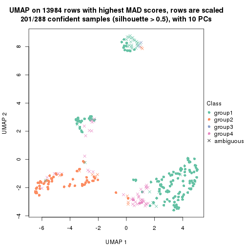
dimension_reduction(res, k = 5, method = "UMAP")

dimension_reduction(res, k = 6, method = "UMAP")
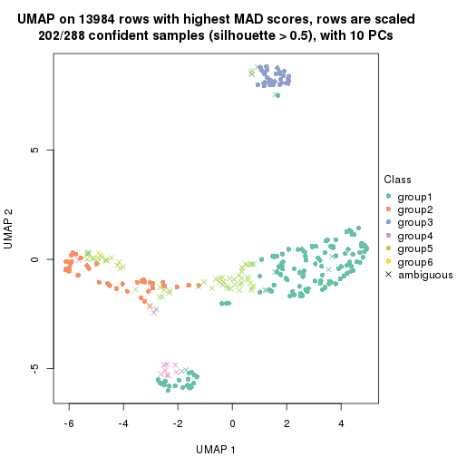
Following heatmap shows how subgroups are split when increasing k:
collect_classes(res)
If matrix rows can be associated to genes, consider to use functional_enrichment(res,
...) to perform function enrichment for the signature genes. See this vignette for more detailed explanations.
The object with results only for a single top-value method and a single partition method can be extracted as:
res = res_list["MAD", "kmeans"]
# you can also extract it by
# res = res_list["MAD:kmeans"]
A summary of res and all the functions that can be applied to it:
res
#> A 'ConsensusPartition' object with k = 2, 3, 4, 5, 6.
#> On a matrix with 13984 rows and 288 columns.
#> Top rows (1000, 2000, 3000, 4000, 5000) are extracted by 'MAD' method.
#> Subgroups are detected by 'kmeans' method.
#> Performed in total 1250 partitions by row resampling.
#> Best k for subgroups seems to be 2.
#>
#> Following methods can be applied to this 'ConsensusPartition' object:
#> [1] "cola_report" "collect_classes" "collect_plots"
#> [4] "collect_stats" "colnames" "compare_signatures"
#> [7] "consensus_heatmap" "dimension_reduction" "functional_enrichment"
#> [10] "get_anno_col" "get_anno" "get_classes"
#> [13] "get_consensus" "get_matrix" "get_membership"
#> [16] "get_param" "get_signatures" "get_stats"
#> [19] "is_best_k" "is_stable_k" "membership_heatmap"
#> [22] "ncol" "nrow" "plot_ecdf"
#> [25] "rownames" "select_partition_number" "show"
#> [28] "suggest_best_k" "test_to_known_factors"
collect_plots() function collects all the plots made from res for all k (number of partitions)
into one single page to provide an easy and fast comparison between different k.
collect_plots(res)
The plots are:
k and the heatmap of
predicted classes for each k.k.k.k.All the plots in panels can be made by individual functions and they are plotted later in this section.
select_partition_number() produces several plots showing different
statistics for choosing “optimized” k. There are following statistics:
k;k, the area increased is defined as \(A_k - A_{k-1}\).The detailed explanations of these statistics can be found in the cola vignette.
Generally speaking, lower PAC score, higher mean silhouette score or higher
concordance corresponds to better partition. Rand index and Jaccard index
measure how similar the current partition is compared to partition with k-1.
If they are too similar, we won't accept k is better than k-1.
select_partition_number(res)
The numeric values for all these statistics can be obtained by get_stats().
get_stats(res)
#> k 1-PAC mean_silhouette concordance area_increased Rand Jaccard
#> 2 2 0.957 0.941 0.976 0.4171 0.585 0.585
#> 3 3 0.515 0.615 0.764 0.4615 0.758 0.597
#> 4 4 0.582 0.559 0.702 0.1429 0.748 0.452
#> 5 5 0.747 0.796 0.861 0.0928 0.833 0.517
#> 6 6 0.773 0.753 0.783 0.0561 0.958 0.823
suggest_best_k() suggests the best \(k\) based on these statistics. The rules are as follows:
suggest_best_k(res)
#> [1] 2
Following shows the table of the partitions (You need to click the show/hide
code output link to see it). The membership matrix (columns with name p*)
is inferred by
clue::cl_consensus()
function with the SE method. Basically the value in the membership matrix
represents the probability to belong to a certain group. The finall class
label for an item is determined with the group with highest probability it
belongs to.
In get_classes() function, the entropy is calculated from the membership
matrix and the silhouette score is calculated from the consensus matrix.
cbind(get_classes(res, k = 2), get_membership(res, k = 2))
#> class entropy silhouette p1 p2
#> SRR1982614 2 0.9754 0.3336 0.408 0.592
#> SRR1982613 2 0.0376 0.9653 0.004 0.996
#> SRR1982612 1 0.0000 0.9792 1.000 0.000
#> SRR1982611 1 0.7139 0.7455 0.804 0.196
#> SRR1982610 1 0.2948 0.9280 0.948 0.052
#> SRR1982609 1 0.0000 0.9792 1.000 0.000
#> SRR1982659 1 0.0000 0.9792 1.000 0.000
#> SRR1982692 2 0.0376 0.9653 0.004 0.996
#> SRR1982722 1 0.0000 0.9792 1.000 0.000
#> SRR1982750 2 0.0376 0.9653 0.004 0.996
#> SRR2095031 2 0.0376 0.9653 0.004 0.996
#> SRR1982780 1 0.0000 0.9792 1.000 0.000
#> SRR1982807 1 0.0000 0.9792 1.000 0.000
#> SRR1982830 1 0.0000 0.9792 1.000 0.000
#> SRR1982829 1 0.9323 0.4545 0.652 0.348
#> SRR1982828 1 0.5946 0.8189 0.856 0.144
#> SRR1982827 1 0.0000 0.9792 1.000 0.000
#> SRR1982826 1 0.0000 0.9792 1.000 0.000
#> SRR1982825 1 0.0000 0.9792 1.000 0.000
#> SRR1982824 1 0.7453 0.7209 0.788 0.212
#> SRR1982823 1 0.0000 0.9792 1.000 0.000
#> SRR1982822 1 0.0000 0.9792 1.000 0.000
#> SRR1982821 1 0.0000 0.9792 1.000 0.000
#> SRR1982820 1 0.0000 0.9792 1.000 0.000
#> SRR1982819 1 0.0000 0.9792 1.000 0.000
#> SRR1982818 1 0.0000 0.9792 1.000 0.000
#> SRR1982817 1 0.0000 0.9792 1.000 0.000
#> SRR1982816 1 0.0000 0.9792 1.000 0.000
#> SRR1982815 1 0.0000 0.9792 1.000 0.000
#> SRR1982814 1 0.0000 0.9792 1.000 0.000
#> SRR1982813 1 0.0000 0.9792 1.000 0.000
#> SRR1982812 2 0.0376 0.9653 0.004 0.996
#> SRR1982811 1 0.0000 0.9792 1.000 0.000
#> SRR1982810 1 0.0000 0.9792 1.000 0.000
#> SRR1982809 1 0.9358 0.4447 0.648 0.352
#> SRR1982808 1 0.0000 0.9792 1.000 0.000
#> SRR1982806 1 0.0000 0.9792 1.000 0.000
#> SRR1982805 1 0.0000 0.9792 1.000 0.000
#> SRR1982804 1 0.0000 0.9792 1.000 0.000
#> SRR1982803 2 0.3114 0.9193 0.056 0.944
#> SRR1982802 1 0.0000 0.9792 1.000 0.000
#> SRR1982801 1 0.0000 0.9792 1.000 0.000
#> SRR1982800 1 0.0000 0.9792 1.000 0.000
#> SRR1982799 1 0.0000 0.9792 1.000 0.000
#> SRR1982798 1 0.0000 0.9792 1.000 0.000
#> SRR1982797 2 0.0376 0.9653 0.004 0.996
#> SRR1982796 1 0.0000 0.9792 1.000 0.000
#> SRR1982795 1 0.0000 0.9792 1.000 0.000
#> SRR1982794 1 0.0000 0.9792 1.000 0.000
#> SRR1982793 1 0.0000 0.9792 1.000 0.000
#> SRR1982792 1 0.0000 0.9792 1.000 0.000
#> SRR1982791 1 0.0000 0.9792 1.000 0.000
#> SRR1982790 2 0.0376 0.9653 0.004 0.996
#> SRR1982789 1 0.0000 0.9792 1.000 0.000
#> SRR1982788 1 0.0000 0.9792 1.000 0.000
#> SRR1982787 1 0.0000 0.9792 1.000 0.000
#> SRR1982786 2 0.0376 0.9653 0.004 0.996
#> SRR1982785 1 0.0000 0.9792 1.000 0.000
#> SRR1982784 1 0.0000 0.9792 1.000 0.000
#> SRR1982783 1 0.8813 0.5618 0.700 0.300
#> SRR1982782 1 0.0376 0.9768 0.996 0.004
#> SRR1982781 1 0.0000 0.9792 1.000 0.000
#> SRR1982779 1 0.0000 0.9792 1.000 0.000
#> SRR1982778 1 0.0376 0.9768 0.996 0.004
#> SRR1982776 2 0.7299 0.7385 0.204 0.796
#> SRR1982777 1 0.0000 0.9792 1.000 0.000
#> SRR1982775 1 0.0000 0.9792 1.000 0.000
#> SRR1982774 1 0.0000 0.9792 1.000 0.000
#> SRR1982772 1 0.0000 0.9792 1.000 0.000
#> SRR1982773 1 0.0000 0.9792 1.000 0.000
#> SRR1982770 1 0.0000 0.9792 1.000 0.000
#> SRR1982771 1 0.0000 0.9792 1.000 0.000
#> SRR1982769 1 0.9896 0.1906 0.560 0.440
#> SRR1982768 1 0.0000 0.9792 1.000 0.000
#> SRR1982767 1 0.0000 0.9792 1.000 0.000
#> SRR1982766 2 0.9833 0.2879 0.424 0.576
#> SRR1982765 1 0.0000 0.9792 1.000 0.000
#> SRR1982764 1 0.0000 0.9792 1.000 0.000
#> SRR1982762 1 0.0000 0.9792 1.000 0.000
#> SRR1982760 1 0.0000 0.9792 1.000 0.000
#> SRR1982761 1 0.0000 0.9792 1.000 0.000
#> SRR1982763 1 0.6148 0.8059 0.848 0.152
#> SRR1982759 1 0.0000 0.9792 1.000 0.000
#> SRR1982758 1 0.0000 0.9792 1.000 0.000
#> SRR1982757 1 0.0000 0.9792 1.000 0.000
#> SRR1982755 1 0.0000 0.9792 1.000 0.000
#> SRR1982754 1 0.0000 0.9792 1.000 0.000
#> SRR1982756 1 0.0000 0.9792 1.000 0.000
#> SRR1982753 1 0.0000 0.9792 1.000 0.000
#> SRR1982751 2 0.0376 0.9653 0.004 0.996
#> SRR1982752 2 0.0376 0.9653 0.004 0.996
#> SRR1982749 2 0.0376 0.9653 0.004 0.996
#> SRR1982748 2 0.0376 0.9653 0.004 0.996
#> SRR1982747 2 0.0376 0.9653 0.004 0.996
#> SRR1982746 2 0.0376 0.9653 0.004 0.996
#> SRR1982745 2 0.0376 0.9653 0.004 0.996
#> SRR1982743 2 0.0376 0.9653 0.004 0.996
#> SRR1982744 2 0.0376 0.9653 0.004 0.996
#> SRR1982741 2 0.0376 0.9653 0.004 0.996
#> SRR1982742 2 0.0376 0.9653 0.004 0.996
#> SRR2095014 2 0.0376 0.9653 0.004 0.996
#> SRR1982740 2 0.0376 0.9653 0.004 0.996
#> SRR1982739 2 0.0376 0.9653 0.004 0.996
#> SRR1982737 2 0.0376 0.9653 0.004 0.996
#> SRR1982738 2 0.0376 0.9653 0.004 0.996
#> SRR1982736 2 0.0376 0.9653 0.004 0.996
#> SRR1982735 2 0.0376 0.9653 0.004 0.996
#> SRR1982733 2 0.0376 0.9653 0.004 0.996
#> SRR1982732 2 0.0376 0.9653 0.004 0.996
#> SRR2095004 2 0.0376 0.9653 0.004 0.996
#> SRR1982734 2 0.0376 0.9653 0.004 0.996
#> SRR1982731 2 0.0376 0.9653 0.004 0.996
#> SRR1982729 2 0.0376 0.9653 0.004 0.996
#> SRR1982730 2 0.0376 0.9653 0.004 0.996
#> SRR1982728 2 0.0376 0.9653 0.004 0.996
#> SRR1982727 2 0.0376 0.9653 0.004 0.996
#> SRR1982726 1 0.0000 0.9792 1.000 0.000
#> SRR1982723 1 0.9000 0.5279 0.684 0.316
#> SRR1982725 1 0.0000 0.9792 1.000 0.000
#> SRR1982724 1 0.0000 0.9792 1.000 0.000
#> SRR1982721 1 0.0000 0.9792 1.000 0.000
#> SRR1982720 1 0.0000 0.9792 1.000 0.000
#> SRR1982719 1 0.0000 0.9792 1.000 0.000
#> SRR1982718 2 0.0376 0.9653 0.004 0.996
#> SRR1982717 2 0.0376 0.9653 0.004 0.996
#> SRR1982715 2 0.0376 0.9653 0.004 0.996
#> SRR1982714 1 0.9286 0.4542 0.656 0.344
#> SRR1982716 2 0.0376 0.9653 0.004 0.996
#> SRR1982713 1 1.0000 -0.0235 0.504 0.496
#> SRR1982711 2 0.0376 0.9653 0.004 0.996
#> SRR1982712 2 0.0376 0.9653 0.004 0.996
#> SRR1982710 2 0.0376 0.9653 0.004 0.996
#> SRR1982708 2 0.0376 0.9653 0.004 0.996
#> SRR1982707 2 0.0376 0.9653 0.004 0.996
#> SRR1982709 1 0.0000 0.9792 1.000 0.000
#> SRR1982705 2 0.0376 0.9653 0.004 0.996
#> SRR1982706 1 0.0000 0.9792 1.000 0.000
#> SRR1982704 1 0.0000 0.9792 1.000 0.000
#> SRR1982702 2 0.0376 0.9653 0.004 0.996
#> SRR1982703 2 0.0376 0.9653 0.004 0.996
#> SRR1982701 2 0.9815 0.2997 0.420 0.580
#> SRR1982700 2 0.0376 0.9653 0.004 0.996
#> SRR1982697 2 0.0376 0.9653 0.004 0.996
#> SRR1982698 2 0.0376 0.9653 0.004 0.996
#> SRR1982699 2 0.0376 0.9653 0.004 0.996
#> SRR1982696 2 0.0376 0.9653 0.004 0.996
#> SRR1982695 1 0.0000 0.9792 1.000 0.000
#> SRR1982694 1 0.0000 0.9792 1.000 0.000
#> SRR1982693 2 0.0376 0.9653 0.004 0.996
#> SRR1982690 2 0.0376 0.9653 0.004 0.996
#> SRR1982691 2 0.0376 0.9653 0.004 0.996
#> SRR1982689 2 0.0376 0.9653 0.004 0.996
#> SRR1982688 1 0.0000 0.9792 1.000 0.000
#> SRR1982687 2 0.3879 0.8993 0.076 0.924
#> SRR1982686 1 0.8386 0.6245 0.732 0.268
#> SRR1982685 2 0.0376 0.9653 0.004 0.996
#> SRR1982684 2 0.0376 0.9653 0.004 0.996
#> SRR1982683 1 0.0000 0.9792 1.000 0.000
#> SRR1982681 2 0.0376 0.9653 0.004 0.996
#> SRR1982682 2 0.0376 0.9653 0.004 0.996
#> SRR1982680 2 0.0376 0.9653 0.004 0.996
#> SRR1982679 1 0.0000 0.9792 1.000 0.000
#> SRR1982678 2 0.0376 0.9653 0.004 0.996
#> SRR1982677 2 0.0376 0.9653 0.004 0.996
#> SRR1982676 1 0.0000 0.9792 1.000 0.000
#> SRR1982675 1 0.0000 0.9792 1.000 0.000
#> SRR1982674 2 0.0376 0.9653 0.004 0.996
#> SRR1982671 1 0.0000 0.9792 1.000 0.000
#> SRR1982673 1 0.0000 0.9792 1.000 0.000
#> SRR1982672 1 0.0000 0.9792 1.000 0.000
#> SRR1982670 1 0.0000 0.9792 1.000 0.000
#> SRR1982669 1 0.0000 0.9792 1.000 0.000
#> SRR1982667 1 0.0000 0.9792 1.000 0.000
#> SRR1982668 2 0.9393 0.4639 0.356 0.644
#> SRR1982666 1 0.0000 0.9792 1.000 0.000
#> SRR1982665 1 0.0000 0.9792 1.000 0.000
#> SRR1982664 1 0.0000 0.9792 1.000 0.000
#> SRR1982663 1 0.0000 0.9792 1.000 0.000
#> SRR1982662 1 0.0000 0.9792 1.000 0.000
#> SRR1982661 1 0.0000 0.9792 1.000 0.000
#> SRR1982660 1 0.0000 0.9792 1.000 0.000
#> SRR1982658 1 0.0000 0.9792 1.000 0.000
#> SRR1982657 1 0.0000 0.9792 1.000 0.000
#> SRR1982656 2 0.0376 0.9653 0.004 0.996
#> SRR1982654 1 0.0000 0.9792 1.000 0.000
#> SRR1982655 1 0.0000 0.9792 1.000 0.000
#> SRR1982653 1 0.0000 0.9792 1.000 0.000
#> SRR1982652 1 0.0000 0.9792 1.000 0.000
#> SRR1982651 1 0.0000 0.9792 1.000 0.000
#> SRR1982649 2 0.8386 0.6398 0.268 0.732
#> SRR1982650 1 0.0000 0.9792 1.000 0.000
#> SRR1982648 1 0.0000 0.9792 1.000 0.000
#> SRR1982647 1 0.0000 0.9792 1.000 0.000
#> SRR1982646 1 0.0000 0.9792 1.000 0.000
#> SRR1982645 1 0.0000 0.9792 1.000 0.000
#> SRR1982644 1 0.0000 0.9792 1.000 0.000
#> SRR1982642 1 0.0000 0.9792 1.000 0.000
#> SRR1982643 1 0.0000 0.9792 1.000 0.000
#> SRR1982641 1 0.0000 0.9792 1.000 0.000
#> SRR1982640 1 0.0000 0.9792 1.000 0.000
#> SRR1982638 1 0.0000 0.9792 1.000 0.000
#> SRR1982639 1 0.0000 0.9792 1.000 0.000
#> SRR1982637 1 0.0000 0.9792 1.000 0.000
#> SRR1982635 1 0.0000 0.9792 1.000 0.000
#> SRR1982636 1 0.0000 0.9792 1.000 0.000
#> SRR1982633 1 0.0000 0.9792 1.000 0.000
#> SRR1982632 1 0.0000 0.9792 1.000 0.000
#> SRR1982631 1 0.0000 0.9792 1.000 0.000
#> SRR1982634 1 0.0000 0.9792 1.000 0.000
#> SRR1982628 1 0.0672 0.9723 0.992 0.008
#> SRR1982629 1 0.0000 0.9792 1.000 0.000
#> SRR1982627 1 0.0000 0.9792 1.000 0.000
#> SRR1982625 1 0.0000 0.9792 1.000 0.000
#> SRR1982626 1 0.0000 0.9792 1.000 0.000
#> SRR1982624 1 0.7219 0.7395 0.800 0.200
#> SRR1982623 1 0.0000 0.9792 1.000 0.000
#> SRR1982622 1 0.0000 0.9792 1.000 0.000
#> SRR1982621 1 0.0000 0.9792 1.000 0.000
#> SRR1982620 1 0.0000 0.9792 1.000 0.000
#> SRR1982619 1 0.0000 0.9792 1.000 0.000
#> SRR1982618 1 0.0000 0.9792 1.000 0.000
#> SRR1982617 2 0.0376 0.9653 0.004 0.996
#> SRR1982616 1 0.0000 0.9792 1.000 0.000
#> SRR1982615 1 0.0000 0.9792 1.000 0.000
#> SRR1982608 2 0.0376 0.9653 0.004 0.996
#> SRR1982607 1 0.0000 0.9792 1.000 0.000
#> SRR1982606 1 0.0000 0.9792 1.000 0.000
#> SRR1982605 1 0.0000 0.9792 1.000 0.000
#> SRR1982604 1 0.0000 0.9792 1.000 0.000
#> SRR1982603 1 0.0000 0.9792 1.000 0.000
#> SRR1982602 1 0.0000 0.9792 1.000 0.000
#> SRR1982601 1 0.0000 0.9792 1.000 0.000
#> SRR1982599 1 0.0000 0.9792 1.000 0.000
#> SRR1982600 2 0.0376 0.9653 0.004 0.996
#> SRR1982598 1 0.0000 0.9792 1.000 0.000
#> SRR1982597 1 0.0000 0.9792 1.000 0.000
#> SRR1982595 1 0.0000 0.9792 1.000 0.000
#> SRR1982596 1 0.0000 0.9792 1.000 0.000
#> SRR1982594 1 0.0000 0.9792 1.000 0.000
#> SRR1982593 1 0.0000 0.9792 1.000 0.000
#> SRR1982592 2 0.1184 0.9554 0.016 0.984
#> SRR1982591 1 0.0000 0.9792 1.000 0.000
#> SRR1982590 2 0.0376 0.9653 0.004 0.996
#> SRR1982589 1 0.0000 0.9792 1.000 0.000
#> SRR1982588 1 0.0000 0.9792 1.000 0.000
#> SRR1982587 1 0.0000 0.9792 1.000 0.000
#> SRR1982586 1 0.0000 0.9792 1.000 0.000
#> SRR1982584 2 0.9896 0.2387 0.440 0.560
#> SRR2096514 1 0.0376 0.9768 0.996 0.004
#> SRR2096513 1 0.0376 0.9768 0.996 0.004
#> SRR2096511 1 0.0376 0.9768 0.996 0.004
#> SRR2096512 2 0.0000 0.9618 0.000 1.000
#> SRR2096509 1 0.0376 0.9768 0.996 0.004
#> SRR2096510 1 0.0376 0.9768 0.996 0.004
#> SRR2096508 2 0.0376 0.9653 0.004 0.996
#> SRR2096507 1 0.0376 0.9768 0.996 0.004
#> SRR2096504 1 0.0376 0.9768 0.996 0.004
#> SRR2096506 1 0.0376 0.9768 0.996 0.004
#> SRR2096505 1 0.0376 0.9768 0.996 0.004
#> SRR2096503 2 0.0000 0.9618 0.000 1.000
#> SRR2096500 1 0.0376 0.9768 0.996 0.004
#> SRR2096501 1 0.0376 0.9768 0.996 0.004
#> SRR2096502 1 0.0376 0.9768 0.996 0.004
#> SRR2096499 1 0.0376 0.9768 0.996 0.004
#> SRR2096498 1 0.0376 0.9768 0.996 0.004
#> SRR2096496 1 0.0376 0.9768 0.996 0.004
#> SRR2096497 1 0.0376 0.9768 0.996 0.004
#> SRR2096495 1 0.0376 0.9768 0.996 0.004
#> SRR2096494 1 0.0376 0.9768 0.996 0.004
#> SRR2096492 1 0.0376 0.9768 0.996 0.004
#> SRR2096491 2 0.0000 0.9618 0.000 1.000
#> SRR2096493 1 0.0376 0.9768 0.996 0.004
#> SRR2096490 1 0.0376 0.9768 0.996 0.004
#> SRR2096488 1 0.0376 0.9768 0.996 0.004
#> SRR2096489 1 0.0376 0.9768 0.996 0.004
#> SRR2096487 1 0.0376 0.9768 0.996 0.004
#> SRR2096484 1 0.0376 0.9768 0.996 0.004
#> SRR2096486 1 0.0376 0.9768 0.996 0.004
#> SRR2096485 1 0.0376 0.9768 0.996 0.004
#> SRR2096483 1 0.0376 0.9768 0.996 0.004
#> SRR2096482 1 0.0376 0.9768 0.996 0.004
#> SRR2096481 2 0.5059 0.8586 0.112 0.888
#> SRR2096520 1 0.0376 0.9768 0.996 0.004
#> SRR2096519 1 0.0376 0.9768 0.996 0.004
#> SRR2096518 1 0.0376 0.9768 0.996 0.004
#> SRR2096516 1 0.0376 0.9768 0.996 0.004
#> SRR2096517 1 0.0376 0.9768 0.996 0.004
#> SRR2096515 1 0.0376 0.9768 0.996 0.004
cbind(get_classes(res, k = 3), get_membership(res, k = 3))
#> class entropy silhouette p1 p2 p3
#> SRR1982614 3 0.9550 0.38388 0.404 0.192 0.404
#> SRR1982613 2 0.5859 0.54715 0.000 0.656 0.344
#> SRR1982612 1 0.6008 0.03745 0.628 0.000 0.372
#> SRR1982611 3 0.7517 0.50985 0.420 0.040 0.540
#> SRR1982610 3 0.6647 0.47966 0.452 0.008 0.540
#> SRR1982609 1 0.2625 0.69174 0.916 0.000 0.084
#> SRR1982659 1 0.0000 0.70858 1.000 0.000 0.000
#> SRR1982692 2 0.1964 0.93596 0.000 0.944 0.056
#> SRR1982722 1 0.5431 0.49370 0.716 0.000 0.284
#> SRR1982750 2 0.0000 0.94896 0.000 1.000 0.000
#> SRR2095031 2 0.0000 0.94896 0.000 1.000 0.000
#> SRR1982780 1 0.5431 0.49370 0.716 0.000 0.284
#> SRR1982807 1 0.5497 0.32470 0.708 0.000 0.292
#> SRR1982830 1 0.4605 0.43327 0.796 0.000 0.204
#> SRR1982829 1 0.8066 -0.28585 0.528 0.068 0.404
#> SRR1982828 3 0.7240 0.50244 0.432 0.028 0.540
#> SRR1982827 3 0.6280 0.47095 0.460 0.000 0.540
#> SRR1982826 1 0.5560 0.25716 0.700 0.000 0.300
#> SRR1982825 1 0.4555 0.52467 0.800 0.000 0.200
#> SRR1982824 3 0.8034 0.52942 0.392 0.068 0.540
#> SRR1982823 1 0.3816 0.54905 0.852 0.000 0.148
#> SRR1982822 3 0.6280 0.47095 0.460 0.000 0.540
#> SRR1982821 1 0.2959 0.62630 0.900 0.000 0.100
#> SRR1982820 1 0.0000 0.70858 1.000 0.000 0.000
#> SRR1982819 1 0.0000 0.70858 1.000 0.000 0.000
#> SRR1982818 1 0.6026 -0.03998 0.624 0.000 0.376
#> SRR1982817 3 0.6299 0.44210 0.476 0.000 0.524
#> SRR1982816 1 0.0000 0.70858 1.000 0.000 0.000
#> SRR1982815 1 0.2537 0.69432 0.920 0.000 0.080
#> SRR1982814 1 0.0747 0.70371 0.984 0.000 0.016
#> SRR1982813 1 0.3192 0.67175 0.888 0.000 0.112
#> SRR1982812 2 0.2165 0.93263 0.000 0.936 0.064
#> SRR1982811 1 0.1753 0.70616 0.952 0.000 0.048
#> SRR1982810 1 0.5363 0.33724 0.724 0.000 0.276
#> SRR1982809 3 0.8034 0.52942 0.392 0.068 0.540
#> SRR1982808 1 0.6299 -0.34343 0.524 0.000 0.476
#> SRR1982806 1 0.3192 0.66738 0.888 0.000 0.112
#> SRR1982805 1 0.0000 0.70858 1.000 0.000 0.000
#> SRR1982804 3 0.6280 0.47095 0.460 0.000 0.540
#> SRR1982803 3 0.8937 0.45073 0.152 0.308 0.540
#> SRR1982802 1 0.2711 0.69068 0.912 0.000 0.088
#> SRR1982801 1 0.6280 -0.30286 0.540 0.000 0.460
#> SRR1982800 3 0.6280 0.47095 0.460 0.000 0.540
#> SRR1982799 1 0.3482 0.65342 0.872 0.000 0.128
#> SRR1982798 1 0.3482 0.65342 0.872 0.000 0.128
#> SRR1982797 2 0.2165 0.93263 0.000 0.936 0.064
#> SRR1982796 1 0.5497 0.48503 0.708 0.000 0.292
#> SRR1982795 1 0.2537 0.69432 0.920 0.000 0.080
#> SRR1982794 1 0.1163 0.70836 0.972 0.000 0.028
#> SRR1982793 1 0.0000 0.70858 1.000 0.000 0.000
#> SRR1982792 1 0.0000 0.70858 1.000 0.000 0.000
#> SRR1982791 1 0.4504 0.53307 0.804 0.000 0.196
#> SRR1982790 2 0.0000 0.94896 0.000 1.000 0.000
#> SRR1982789 1 0.2261 0.70085 0.932 0.000 0.068
#> SRR1982788 1 0.5560 0.24454 0.700 0.000 0.300
#> SRR1982787 1 0.3340 0.65865 0.880 0.000 0.120
#> SRR1982786 2 0.1163 0.94388 0.000 0.972 0.028
#> SRR1982785 1 0.5497 0.48503 0.708 0.000 0.292
#> SRR1982784 1 0.5560 0.47491 0.700 0.000 0.300
#> SRR1982783 3 0.5777 0.48952 0.160 0.052 0.788
#> SRR1982782 1 0.4702 0.49842 0.788 0.000 0.212
#> SRR1982781 1 0.3192 0.66738 0.888 0.000 0.112
#> SRR1982779 1 0.6215 0.29783 0.572 0.000 0.428
#> SRR1982778 1 0.5560 0.47491 0.700 0.000 0.300
#> SRR1982776 2 0.6280 0.41120 0.000 0.540 0.460
#> SRR1982777 1 0.5497 0.48503 0.708 0.000 0.292
#> SRR1982775 1 0.5835 0.43352 0.660 0.000 0.340
#> SRR1982774 1 0.5497 0.48503 0.708 0.000 0.292
#> SRR1982772 1 0.6026 0.40419 0.624 0.000 0.376
#> SRR1982773 1 0.5431 0.49370 0.716 0.000 0.284
#> SRR1982770 1 0.5497 0.48503 0.708 0.000 0.292
#> SRR1982771 1 0.6204 0.30541 0.576 0.000 0.424
#> SRR1982769 3 0.9457 0.23299 0.340 0.192 0.468
#> SRR1982768 1 0.5058 0.52568 0.756 0.000 0.244
#> SRR1982767 1 0.5363 0.50023 0.724 0.000 0.276
#> SRR1982766 3 0.9048 0.55452 0.288 0.172 0.540
#> SRR1982765 1 0.2796 0.63423 0.908 0.000 0.092
#> SRR1982764 1 0.3340 0.65865 0.880 0.000 0.120
#> SRR1982762 1 0.0000 0.70858 1.000 0.000 0.000
#> SRR1982760 1 0.0000 0.70858 1.000 0.000 0.000
#> SRR1982761 1 0.0000 0.70858 1.000 0.000 0.000
#> SRR1982763 3 0.8425 0.55154 0.364 0.096 0.540
#> SRR1982759 3 0.6299 0.43873 0.476 0.000 0.524
#> SRR1982758 1 0.5497 0.48809 0.708 0.000 0.292
#> SRR1982757 3 0.6204 0.46066 0.424 0.000 0.576
#> SRR1982755 1 0.2625 0.69449 0.916 0.000 0.084
#> SRR1982754 3 0.6280 0.47095 0.460 0.000 0.540
#> SRR1982756 1 0.5016 0.43010 0.760 0.000 0.240
#> SRR1982753 1 0.5560 0.47491 0.700 0.000 0.300
#> SRR1982751 2 0.0000 0.94896 0.000 1.000 0.000
#> SRR1982752 2 0.0000 0.94896 0.000 1.000 0.000
#> SRR1982749 2 0.0000 0.94896 0.000 1.000 0.000
#> SRR1982748 2 0.0000 0.94896 0.000 1.000 0.000
#> SRR1982747 2 0.0000 0.94896 0.000 1.000 0.000
#> SRR1982746 2 0.0000 0.94896 0.000 1.000 0.000
#> SRR1982745 2 0.0000 0.94896 0.000 1.000 0.000
#> SRR1982743 2 0.0000 0.94896 0.000 1.000 0.000
#> SRR1982744 2 0.0000 0.94896 0.000 1.000 0.000
#> SRR1982741 2 0.2165 0.93263 0.000 0.936 0.064
#> SRR1982742 2 0.2165 0.93263 0.000 0.936 0.064
#> SRR2095014 2 0.2165 0.93263 0.000 0.936 0.064
#> SRR1982740 2 0.0000 0.94896 0.000 1.000 0.000
#> SRR1982739 2 0.0000 0.94896 0.000 1.000 0.000
#> SRR1982737 2 0.0000 0.94896 0.000 1.000 0.000
#> SRR1982738 2 0.5859 0.55474 0.000 0.656 0.344
#> SRR1982736 2 0.2165 0.93263 0.000 0.936 0.064
#> SRR1982735 2 0.2165 0.93263 0.000 0.936 0.064
#> SRR1982733 2 0.0424 0.94766 0.000 0.992 0.008
#> SRR1982732 2 0.2165 0.93263 0.000 0.936 0.064
#> SRR2095004 2 0.2165 0.93263 0.000 0.936 0.064
#> SRR1982734 2 0.1964 0.93592 0.000 0.944 0.056
#> SRR1982731 2 0.2165 0.93263 0.000 0.936 0.064
#> SRR1982729 2 0.2165 0.93263 0.000 0.936 0.064
#> SRR1982730 2 0.0000 0.94896 0.000 1.000 0.000
#> SRR1982728 2 0.0000 0.94896 0.000 1.000 0.000
#> SRR1982727 2 0.0747 0.94069 0.000 0.984 0.016
#> SRR1982726 1 0.6267 0.24891 0.548 0.000 0.452
#> SRR1982723 3 0.8108 0.16039 0.392 0.072 0.536
#> SRR1982725 3 0.5760 0.26884 0.328 0.000 0.672
#> SRR1982724 1 0.6252 0.26431 0.556 0.000 0.444
#> SRR1982721 1 0.5431 0.49370 0.716 0.000 0.284
#> SRR1982720 1 0.5431 0.49370 0.716 0.000 0.284
#> SRR1982719 1 0.5497 0.48503 0.708 0.000 0.292
#> SRR1982718 2 0.0000 0.94896 0.000 1.000 0.000
#> SRR1982717 2 0.0000 0.94896 0.000 1.000 0.000
#> SRR1982715 2 0.0000 0.94896 0.000 1.000 0.000
#> SRR1982714 3 0.8645 0.55699 0.344 0.116 0.540
#> SRR1982716 2 0.2165 0.93263 0.000 0.936 0.064
#> SRR1982713 3 0.9008 0.55372 0.296 0.164 0.540
#> SRR1982711 2 0.1529 0.94038 0.000 0.960 0.040
#> SRR1982712 2 0.1529 0.94038 0.000 0.960 0.040
#> SRR1982710 2 0.0000 0.94896 0.000 1.000 0.000
#> SRR1982708 2 0.0000 0.94896 0.000 1.000 0.000
#> SRR1982707 2 0.2165 0.93263 0.000 0.936 0.064
#> SRR1982709 1 0.6299 -0.34343 0.524 0.000 0.476
#> SRR1982705 2 0.0000 0.94896 0.000 1.000 0.000
#> SRR1982706 1 0.3340 0.65865 0.880 0.000 0.120
#> SRR1982704 1 0.6274 0.23662 0.544 0.000 0.456
#> SRR1982702 2 0.0000 0.94896 0.000 1.000 0.000
#> SRR1982703 2 0.0000 0.94896 0.000 1.000 0.000
#> SRR1982701 3 0.9109 0.20567 0.364 0.148 0.488
#> SRR1982700 2 0.0000 0.94896 0.000 1.000 0.000
#> SRR1982697 2 0.0000 0.94896 0.000 1.000 0.000
#> SRR1982698 2 0.1964 0.93577 0.000 0.944 0.056
#> SRR1982699 2 0.1964 0.93577 0.000 0.944 0.056
#> SRR1982696 2 0.0000 0.94896 0.000 1.000 0.000
#> SRR1982695 1 0.0000 0.70858 1.000 0.000 0.000
#> SRR1982694 1 0.0000 0.70858 1.000 0.000 0.000
#> SRR1982693 2 0.0000 0.94896 0.000 1.000 0.000
#> SRR1982690 2 0.0000 0.94896 0.000 1.000 0.000
#> SRR1982691 2 0.0000 0.94896 0.000 1.000 0.000
#> SRR1982689 2 0.2165 0.93263 0.000 0.936 0.064
#> SRR1982688 1 0.0000 0.70858 1.000 0.000 0.000
#> SRR1982687 3 0.8097 0.24987 0.072 0.388 0.540
#> SRR1982686 3 0.8034 0.52942 0.392 0.068 0.540
#> SRR1982685 2 0.2165 0.93263 0.000 0.936 0.064
#> SRR1982684 2 0.0000 0.94896 0.000 1.000 0.000
#> SRR1982683 1 0.2711 0.69334 0.912 0.000 0.088
#> SRR1982681 2 0.0000 0.94896 0.000 1.000 0.000
#> SRR1982682 2 0.2165 0.93263 0.000 0.936 0.064
#> SRR1982680 2 0.0000 0.94896 0.000 1.000 0.000
#> SRR1982679 1 0.2261 0.70085 0.932 0.000 0.068
#> SRR1982678 2 0.1753 0.93853 0.000 0.952 0.048
#> SRR1982677 2 0.0000 0.94896 0.000 1.000 0.000
#> SRR1982676 1 0.4504 0.53300 0.804 0.000 0.196
#> SRR1982675 1 0.2261 0.70085 0.932 0.000 0.068
#> SRR1982674 2 0.6295 0.25395 0.000 0.528 0.472
#> SRR1982671 1 0.6154 0.33344 0.592 0.000 0.408
#> SRR1982673 1 0.2261 0.70085 0.932 0.000 0.068
#> SRR1982672 1 0.0000 0.70858 1.000 0.000 0.000
#> SRR1982670 1 0.5431 0.49370 0.716 0.000 0.284
#> SRR1982669 1 0.2537 0.69432 0.920 0.000 0.080
#> SRR1982667 1 0.3192 0.66738 0.888 0.000 0.112
#> SRR1982668 3 0.9103 0.46934 0.380 0.144 0.476
#> SRR1982666 1 0.2448 0.69671 0.924 0.000 0.076
#> SRR1982665 1 0.5968 0.40445 0.636 0.000 0.364
#> SRR1982664 1 0.0747 0.70421 0.984 0.000 0.016
#> SRR1982663 1 0.0000 0.70858 1.000 0.000 0.000
#> SRR1982662 1 0.3619 0.60468 0.864 0.000 0.136
#> SRR1982661 3 0.6299 0.44296 0.476 0.000 0.524
#> SRR1982660 1 0.3340 0.65865 0.880 0.000 0.120
#> SRR1982658 1 0.2448 0.69888 0.924 0.000 0.076
#> SRR1982657 1 0.2537 0.69432 0.920 0.000 0.080
#> SRR1982656 2 0.1529 0.94003 0.000 0.960 0.040
#> SRR1982654 1 0.2261 0.70085 0.932 0.000 0.068
#> SRR1982655 1 0.0000 0.70858 1.000 0.000 0.000
#> SRR1982653 1 0.0000 0.70858 1.000 0.000 0.000
#> SRR1982652 1 0.2711 0.69164 0.912 0.000 0.088
#> SRR1982651 1 0.3340 0.65865 0.880 0.000 0.120
#> SRR1982649 3 0.9147 0.52136 0.200 0.260 0.540
#> SRR1982650 1 0.5591 0.24270 0.696 0.000 0.304
#> SRR1982648 1 0.0000 0.70858 1.000 0.000 0.000
#> SRR1982647 1 0.3340 0.65865 0.880 0.000 0.120
#> SRR1982646 3 0.6280 0.47095 0.460 0.000 0.540
#> SRR1982645 1 0.0000 0.70858 1.000 0.000 0.000
#> SRR1982644 1 0.0000 0.70858 1.000 0.000 0.000
#> SRR1982642 1 0.4796 0.47996 0.780 0.000 0.220
#> SRR1982643 1 0.0000 0.70858 1.000 0.000 0.000
#> SRR1982641 1 0.2261 0.70085 0.932 0.000 0.068
#> SRR1982640 1 0.0000 0.70858 1.000 0.000 0.000
#> SRR1982638 1 0.5397 0.31309 0.720 0.000 0.280
#> SRR1982639 1 0.4796 0.47996 0.780 0.000 0.220
#> SRR1982637 1 0.2448 0.69888 0.924 0.000 0.076
#> SRR1982635 1 0.2625 0.64994 0.916 0.000 0.084
#> SRR1982636 1 0.6286 -0.29011 0.536 0.000 0.464
#> SRR1982633 1 0.2625 0.65248 0.916 0.000 0.084
#> SRR1982632 1 0.6299 -0.34343 0.524 0.000 0.476
#> SRR1982631 1 0.2261 0.70085 0.932 0.000 0.068
#> SRR1982634 1 0.6299 -0.34343 0.524 0.000 0.476
#> SRR1982628 3 0.6280 0.47095 0.460 0.000 0.540
#> SRR1982629 1 0.3340 0.65865 0.880 0.000 0.120
#> SRR1982627 1 0.2537 0.69432 0.920 0.000 0.080
#> SRR1982625 1 0.3340 0.65865 0.880 0.000 0.120
#> SRR1982626 1 0.6235 -0.19376 0.564 0.000 0.436
#> SRR1982624 3 0.8034 0.52942 0.392 0.068 0.540
#> SRR1982623 1 0.2261 0.70085 0.932 0.000 0.068
#> SRR1982622 1 0.2537 0.69432 0.920 0.000 0.080
#> SRR1982621 1 0.5431 0.49370 0.716 0.000 0.284
#> SRR1982620 1 0.5431 0.49370 0.716 0.000 0.284
#> SRR1982619 1 0.5968 0.28605 0.636 0.000 0.364
#> SRR1982618 1 0.5497 0.48503 0.708 0.000 0.292
#> SRR1982617 2 0.2165 0.93263 0.000 0.936 0.064
#> SRR1982616 3 0.6280 0.47095 0.460 0.000 0.540
#> SRR1982615 1 0.2165 0.70211 0.936 0.000 0.064
#> SRR1982608 2 0.0000 0.94896 0.000 1.000 0.000
#> SRR1982607 1 0.0000 0.70858 1.000 0.000 0.000
#> SRR1982606 1 0.2261 0.70085 0.932 0.000 0.068
#> SRR1982605 1 0.2959 0.62630 0.900 0.000 0.100
#> SRR1982604 1 0.0592 0.70915 0.988 0.000 0.012
#> SRR1982603 1 0.2878 0.68237 0.904 0.000 0.096
#> SRR1982602 1 0.0000 0.70858 1.000 0.000 0.000
#> SRR1982601 1 0.0000 0.70858 1.000 0.000 0.000
#> SRR1982599 1 0.4974 0.46397 0.764 0.000 0.236
#> SRR1982600 2 0.0000 0.94896 0.000 1.000 0.000
#> SRR1982598 1 0.0747 0.70901 0.984 0.000 0.016
#> SRR1982597 1 0.3116 0.67141 0.892 0.000 0.108
#> SRR1982595 1 0.2261 0.70085 0.932 0.000 0.068
#> SRR1982596 1 0.2261 0.70085 0.932 0.000 0.068
#> SRR1982594 1 0.0747 0.70807 0.984 0.000 0.016
#> SRR1982593 1 0.0000 0.70858 1.000 0.000 0.000
#> SRR1982592 3 0.8720 0.38484 0.124 0.336 0.540
#> SRR1982591 3 0.6280 0.47095 0.460 0.000 0.540
#> SRR1982590 2 0.3752 0.85552 0.000 0.856 0.144
#> SRR1982589 3 0.6280 0.47095 0.460 0.000 0.540
#> SRR1982588 1 0.3340 0.65865 0.880 0.000 0.120
#> SRR1982587 1 0.0000 0.70858 1.000 0.000 0.000
#> SRR1982586 1 0.3340 0.65865 0.880 0.000 0.120
#> SRR1982584 3 0.8882 0.54274 0.316 0.144 0.540
#> SRR2096514 3 0.6095 0.42249 0.392 0.000 0.608
#> SRR2096513 3 0.4796 0.61784 0.220 0.000 0.780
#> SRR2096511 3 0.6095 0.42249 0.392 0.000 0.608
#> SRR2096512 2 0.6180 0.44735 0.000 0.584 0.416
#> SRR2096509 3 0.6095 0.42249 0.392 0.000 0.608
#> SRR2096510 3 0.4842 0.61669 0.224 0.000 0.776
#> SRR2096508 2 0.0000 0.94896 0.000 1.000 0.000
#> SRR2096507 3 0.4047 0.61244 0.148 0.004 0.848
#> SRR2096504 3 0.5254 0.59500 0.264 0.000 0.736
#> SRR2096506 3 0.4842 0.61669 0.224 0.000 0.776
#> SRR2096505 3 0.4796 0.61784 0.220 0.000 0.780
#> SRR2096503 2 0.0000 0.94896 0.000 1.000 0.000
#> SRR2096500 3 0.5254 0.59512 0.264 0.000 0.736
#> SRR2096501 3 0.4842 0.61669 0.224 0.000 0.776
#> SRR2096502 3 0.5785 0.52395 0.332 0.000 0.668
#> SRR2096499 3 0.4842 0.61669 0.224 0.000 0.776
#> SRR2096498 1 0.5621 0.31410 0.692 0.000 0.308
#> SRR2096496 3 0.3879 0.61348 0.152 0.000 0.848
#> SRR2096497 3 0.5785 0.52395 0.332 0.000 0.668
#> SRR2096495 3 0.4931 0.61349 0.232 0.000 0.768
#> SRR2096494 3 0.6045 0.44592 0.380 0.000 0.620
#> SRR2096492 3 0.5216 0.59807 0.260 0.000 0.740
#> SRR2096491 3 0.6095 0.00743 0.000 0.392 0.608
#> SRR2096493 3 0.5216 0.59807 0.260 0.000 0.740
#> SRR2096490 3 0.4796 0.61784 0.220 0.000 0.780
#> SRR2096488 3 0.4842 0.61669 0.224 0.000 0.776
#> SRR2096489 3 0.3879 0.61348 0.152 0.000 0.848
#> SRR2096487 3 0.4796 0.61784 0.220 0.000 0.780
#> SRR2096484 3 0.6062 0.43841 0.384 0.000 0.616
#> SRR2096486 3 0.3879 0.61348 0.152 0.000 0.848
#> SRR2096485 3 0.5706 0.53908 0.320 0.000 0.680
#> SRR2096483 1 0.6126 0.11966 0.600 0.000 0.400
#> SRR2096482 3 0.6095 0.42249 0.392 0.000 0.608
#> SRR2096481 3 0.4418 0.60641 0.132 0.020 0.848
#> SRR2096520 3 0.6309 0.11239 0.496 0.000 0.504
#> SRR2096519 1 0.5785 0.27275 0.668 0.000 0.332
#> SRR2096518 3 0.6095 0.42249 0.392 0.000 0.608
#> SRR2096516 1 0.3941 0.58001 0.844 0.000 0.156
#> SRR2096517 3 0.5785 0.52395 0.332 0.000 0.668
#> SRR2096515 3 0.6095 0.42249 0.392 0.000 0.608
cbind(get_classes(res, k = 4), get_membership(res, k = 4))
#> class entropy silhouette p1 p2 p3 p4
#> SRR1982614 1 0.4882 0.3418 0.776 0.056 0.164 0.004
#> SRR1982613 1 0.7134 -0.4636 0.448 0.436 0.112 0.004
#> SRR1982612 1 0.4301 0.4356 0.816 0.000 0.120 0.064
#> SRR1982611 1 0.3448 0.3946 0.828 0.004 0.168 0.000
#> SRR1982610 1 0.3266 0.4019 0.832 0.000 0.168 0.000
#> SRR1982609 1 0.5364 0.5122 0.592 0.000 0.016 0.392
#> SRR1982659 4 0.5060 0.0719 0.412 0.000 0.004 0.584
#> SRR1982692 2 0.4285 0.8527 0.164 0.804 0.028 0.004
#> SRR1982722 4 0.2647 0.5777 0.000 0.000 0.120 0.880
#> SRR1982750 2 0.0188 0.8999 0.000 0.996 0.004 0.000
#> SRR2095031 2 0.0188 0.8999 0.000 0.996 0.004 0.000
#> SRR1982780 4 0.2334 0.5913 0.004 0.000 0.088 0.908
#> SRR1982807 1 0.5531 0.4447 0.732 0.000 0.128 0.140
#> SRR1982830 1 0.6808 0.2156 0.560 0.000 0.120 0.320
#> SRR1982829 1 0.4082 0.3798 0.812 0.020 0.164 0.004
#> SRR1982828 1 0.3636 0.3948 0.820 0.008 0.172 0.000
#> SRR1982827 1 0.4332 0.4202 0.792 0.000 0.176 0.032
#> SRR1982826 1 0.5038 0.5076 0.652 0.000 0.012 0.336
#> SRR1982825 1 0.5339 0.5165 0.600 0.000 0.016 0.384
#> SRR1982824 1 0.3925 0.3874 0.808 0.016 0.176 0.000
#> SRR1982823 1 0.6176 0.1308 0.524 0.000 0.052 0.424
#> SRR1982822 1 0.3311 0.4022 0.828 0.000 0.172 0.000
#> SRR1982821 1 0.6009 0.0513 0.492 0.000 0.040 0.468
#> SRR1982820 4 0.5183 0.0744 0.408 0.000 0.008 0.584
#> SRR1982819 4 0.5203 0.0468 0.416 0.000 0.008 0.576
#> SRR1982818 1 0.6851 0.4634 0.568 0.000 0.132 0.300
#> SRR1982817 1 0.5624 0.4349 0.720 0.000 0.172 0.108
#> SRR1982816 1 0.5070 0.4766 0.580 0.000 0.004 0.416
#> SRR1982815 1 0.5364 0.5122 0.592 0.000 0.016 0.392
#> SRR1982814 4 0.5526 0.0559 0.416 0.000 0.020 0.564
#> SRR1982813 1 0.5331 0.5055 0.644 0.000 0.024 0.332
#> SRR1982812 2 0.4287 0.8549 0.156 0.808 0.032 0.004
#> SRR1982811 1 0.5376 0.4969 0.588 0.000 0.016 0.396
#> SRR1982810 1 0.5326 0.5172 0.604 0.000 0.016 0.380
#> SRR1982809 1 0.4082 0.3798 0.812 0.020 0.164 0.004
#> SRR1982808 1 0.5674 0.4454 0.720 0.000 0.148 0.132
#> SRR1982806 1 0.5364 0.5122 0.592 0.000 0.016 0.392
#> SRR1982805 4 0.5088 0.0260 0.424 0.000 0.004 0.572
#> SRR1982804 1 0.3681 0.4071 0.816 0.000 0.176 0.008
#> SRR1982803 1 0.4882 0.3364 0.776 0.056 0.164 0.004
#> SRR1982802 1 0.5440 0.5154 0.596 0.000 0.020 0.384
#> SRR1982801 1 0.5096 0.4616 0.760 0.000 0.084 0.156
#> SRR1982800 1 0.4423 0.4216 0.788 0.000 0.176 0.036
#> SRR1982799 1 0.5204 0.5172 0.612 0.000 0.012 0.376
#> SRR1982798 1 0.5298 0.5170 0.612 0.000 0.016 0.372
#> SRR1982797 2 0.5431 0.7232 0.300 0.668 0.028 0.004
#> SRR1982796 4 0.2530 0.5788 0.000 0.000 0.112 0.888
#> SRR1982795 1 0.5364 0.5122 0.592 0.000 0.016 0.392
#> SRR1982794 1 0.5376 0.5068 0.588 0.000 0.016 0.396
#> SRR1982793 4 0.5060 0.0719 0.412 0.000 0.004 0.584
#> SRR1982792 4 0.5161 -0.1945 0.476 0.000 0.004 0.520
#> SRR1982791 1 0.5428 0.5168 0.600 0.000 0.020 0.380
#> SRR1982790 2 0.0188 0.8999 0.000 0.996 0.004 0.000
#> SRR1982789 1 0.5364 0.5122 0.592 0.000 0.016 0.392
#> SRR1982788 1 0.5699 0.5125 0.588 0.000 0.032 0.380
#> SRR1982787 1 0.5428 0.5168 0.600 0.000 0.020 0.380
#> SRR1982786 2 0.6032 0.7894 0.172 0.724 0.032 0.072
#> SRR1982785 4 0.2408 0.5842 0.000 0.000 0.104 0.896
#> SRR1982784 4 0.2530 0.5788 0.000 0.000 0.112 0.888
#> SRR1982783 4 0.6688 0.1080 0.368 0.000 0.096 0.536
#> SRR1982782 1 0.5339 0.5165 0.600 0.000 0.016 0.384
#> SRR1982781 1 0.5364 0.5122 0.592 0.000 0.016 0.392
#> SRR1982779 4 0.3749 0.5403 0.032 0.000 0.128 0.840
#> SRR1982778 4 0.2714 0.5786 0.004 0.000 0.112 0.884
#> SRR1982776 2 0.8679 0.3599 0.336 0.424 0.184 0.056
#> SRR1982777 4 0.2760 0.5705 0.000 0.000 0.128 0.872
#> SRR1982775 4 0.2714 0.5786 0.004 0.000 0.112 0.884
#> SRR1982774 4 0.2469 0.5818 0.000 0.000 0.108 0.892
#> SRR1982772 4 0.2773 0.5760 0.004 0.000 0.116 0.880
#> SRR1982773 4 0.1824 0.5835 0.004 0.000 0.060 0.936
#> SRR1982770 4 0.2593 0.5837 0.004 0.000 0.104 0.892
#> SRR1982771 4 0.3842 0.5362 0.036 0.000 0.128 0.836
#> SRR1982769 4 0.7467 0.0929 0.372 0.076 0.040 0.512
#> SRR1982768 4 0.3734 0.5833 0.044 0.000 0.108 0.848
#> SRR1982767 4 0.4636 0.5059 0.140 0.000 0.068 0.792
#> SRR1982766 1 0.4186 0.3766 0.808 0.024 0.164 0.004
#> SRR1982765 1 0.6082 0.0219 0.480 0.000 0.044 0.476
#> SRR1982764 1 0.5465 0.5103 0.588 0.000 0.020 0.392
#> SRR1982762 4 0.5060 0.0719 0.412 0.000 0.004 0.584
#> SRR1982760 4 0.5060 0.0719 0.412 0.000 0.004 0.584
#> SRR1982761 1 0.5277 0.3659 0.532 0.000 0.008 0.460
#> SRR1982763 1 0.3721 0.3918 0.816 0.004 0.176 0.004
#> SRR1982759 1 0.4804 0.4310 0.776 0.000 0.160 0.064
#> SRR1982758 4 0.2704 0.5743 0.000 0.000 0.124 0.876
#> SRR1982757 1 0.5548 0.4169 0.716 0.000 0.200 0.084
#> SRR1982755 1 0.5548 0.5060 0.588 0.000 0.024 0.388
#> SRR1982754 1 0.3266 0.4019 0.832 0.000 0.168 0.000
#> SRR1982756 1 0.5339 0.5165 0.600 0.000 0.016 0.384
#> SRR1982753 4 0.2530 0.5788 0.000 0.000 0.112 0.888
#> SRR1982751 2 0.0469 0.9006 0.012 0.988 0.000 0.000
#> SRR1982752 2 0.0000 0.9004 0.000 1.000 0.000 0.000
#> SRR1982749 2 0.0188 0.8999 0.000 0.996 0.004 0.000
#> SRR1982748 2 0.0000 0.9004 0.000 1.000 0.000 0.000
#> SRR1982747 2 0.0188 0.8999 0.000 0.996 0.004 0.000
#> SRR1982746 2 0.0469 0.9006 0.012 0.988 0.000 0.000
#> SRR1982745 2 0.0188 0.8999 0.000 0.996 0.004 0.000
#> SRR1982743 2 0.0000 0.9004 0.000 1.000 0.000 0.000
#> SRR1982744 2 0.0188 0.8999 0.000 0.996 0.004 0.000
#> SRR1982741 2 0.4380 0.8500 0.164 0.800 0.032 0.004
#> SRR1982742 2 0.4759 0.8231 0.200 0.764 0.032 0.004
#> SRR2095014 2 0.4798 0.8197 0.204 0.760 0.032 0.004
#> SRR1982740 2 0.0188 0.8999 0.000 0.996 0.004 0.000
#> SRR1982739 2 0.1124 0.9003 0.012 0.972 0.012 0.004
#> SRR1982737 2 0.2521 0.8930 0.060 0.916 0.020 0.004
#> SRR1982738 1 0.7573 -0.3904 0.444 0.384 0.168 0.004
#> SRR1982736 2 0.4239 0.8570 0.152 0.812 0.032 0.004
#> SRR1982735 2 0.4095 0.8610 0.148 0.820 0.028 0.004
#> SRR1982733 2 0.2884 0.8895 0.068 0.900 0.028 0.004
#> SRR1982732 2 0.4038 0.8646 0.136 0.828 0.032 0.004
#> SRR2095004 2 0.4190 0.8591 0.148 0.816 0.032 0.004
#> SRR1982734 2 0.3725 0.8730 0.120 0.848 0.028 0.004
#> SRR1982731 2 0.3781 0.8714 0.124 0.844 0.028 0.004
#> SRR1982729 2 0.5111 0.7857 0.240 0.724 0.032 0.004
#> SRR1982730 2 0.0000 0.9004 0.000 1.000 0.000 0.000
#> SRR1982728 2 0.0000 0.9004 0.000 1.000 0.000 0.000
#> SRR1982727 2 0.5690 0.8077 0.136 0.756 0.032 0.076
#> SRR1982726 4 0.4017 0.5267 0.044 0.000 0.128 0.828
#> SRR1982723 4 0.6746 0.1214 0.384 0.016 0.060 0.540
#> SRR1982725 4 0.6156 0.1574 0.344 0.000 0.064 0.592
#> SRR1982724 4 0.4100 0.5216 0.048 0.000 0.128 0.824
#> SRR1982721 4 0.2760 0.5705 0.000 0.000 0.128 0.872
#> SRR1982720 4 0.2408 0.5842 0.000 0.000 0.104 0.896
#> SRR1982719 4 0.2760 0.5705 0.000 0.000 0.128 0.872
#> SRR1982718 2 0.0188 0.8999 0.000 0.996 0.004 0.000
#> SRR1982717 2 0.0188 0.8999 0.000 0.996 0.004 0.000
#> SRR1982715 2 0.0000 0.9004 0.000 1.000 0.000 0.000
#> SRR1982714 1 0.4604 0.3661 0.784 0.036 0.176 0.004
#> SRR1982716 2 0.4285 0.8527 0.164 0.804 0.028 0.004
#> SRR1982713 1 0.5656 0.2756 0.724 0.092 0.180 0.004
#> SRR1982711 2 0.1767 0.8956 0.044 0.944 0.012 0.000
#> SRR1982712 2 0.1767 0.8956 0.044 0.944 0.012 0.000
#> SRR1982710 2 0.0188 0.8999 0.000 0.996 0.004 0.000
#> SRR1982708 2 0.0188 0.8999 0.000 0.996 0.004 0.000
#> SRR1982707 2 0.4331 0.8504 0.168 0.800 0.028 0.004
#> SRR1982709 1 0.5664 0.4440 0.720 0.000 0.156 0.124
#> SRR1982705 2 0.0927 0.8953 0.000 0.976 0.016 0.008
#> SRR1982706 1 0.5364 0.5122 0.592 0.000 0.016 0.392
#> SRR1982704 4 0.4181 0.4978 0.128 0.000 0.052 0.820
#> SRR1982702 2 0.3029 0.8884 0.068 0.896 0.028 0.008
#> SRR1982703 2 0.2852 0.8900 0.064 0.904 0.024 0.008
#> SRR1982701 4 0.7227 0.0985 0.384 0.032 0.068 0.516
#> SRR1982700 2 0.2165 0.8962 0.032 0.936 0.024 0.008
#> SRR1982697 2 0.0000 0.9004 0.000 1.000 0.000 0.000
#> SRR1982698 2 0.3342 0.8791 0.100 0.868 0.032 0.000
#> SRR1982699 2 0.3342 0.8791 0.100 0.868 0.032 0.000
#> SRR1982696 2 0.0188 0.8999 0.000 0.996 0.004 0.000
#> SRR1982695 4 0.5060 0.0719 0.412 0.000 0.004 0.584
#> SRR1982694 4 0.5060 0.0719 0.412 0.000 0.004 0.584
#> SRR1982693 2 0.0188 0.8999 0.000 0.996 0.004 0.000
#> SRR1982690 2 0.0188 0.8999 0.000 0.996 0.004 0.000
#> SRR1982691 2 0.0524 0.9009 0.000 0.988 0.008 0.004
#> SRR1982689 2 0.5013 0.7987 0.228 0.736 0.032 0.004
#> SRR1982688 4 0.5060 0.0719 0.412 0.000 0.004 0.584
#> SRR1982687 1 0.6461 0.1528 0.660 0.168 0.168 0.004
#> SRR1982686 1 0.4128 0.3788 0.808 0.020 0.168 0.004
#> SRR1982685 2 0.4470 0.8446 0.172 0.792 0.032 0.004
#> SRR1982684 2 0.0000 0.9004 0.000 1.000 0.000 0.000
#> SRR1982683 1 0.5548 0.5010 0.588 0.000 0.024 0.388
#> SRR1982681 2 0.0188 0.8999 0.000 0.996 0.004 0.000
#> SRR1982682 2 0.4285 0.8527 0.164 0.804 0.028 0.004
#> SRR1982680 2 0.0000 0.9004 0.000 1.000 0.000 0.000
#> SRR1982679 1 0.5364 0.5122 0.592 0.000 0.016 0.392
#> SRR1982678 2 0.3668 0.8746 0.116 0.852 0.028 0.004
#> SRR1982677 2 0.0188 0.8999 0.000 0.996 0.004 0.000
#> SRR1982676 1 0.5364 0.5122 0.592 0.000 0.016 0.392
#> SRR1982675 1 0.5376 0.5068 0.588 0.000 0.016 0.396
#> SRR1982674 1 0.7515 -0.3457 0.468 0.364 0.164 0.004
#> SRR1982671 4 0.3842 0.5362 0.036 0.000 0.128 0.836
#> SRR1982673 1 0.5268 0.5084 0.592 0.000 0.012 0.396
#> SRR1982672 1 0.5080 0.4682 0.576 0.000 0.004 0.420
#> SRR1982670 4 0.2345 0.5859 0.000 0.000 0.100 0.900
#> SRR1982669 1 0.5364 0.5122 0.592 0.000 0.016 0.392
#> SRR1982667 1 0.5364 0.5122 0.592 0.000 0.016 0.392
#> SRR1982668 1 0.4186 0.3765 0.808 0.024 0.164 0.004
#> SRR1982666 1 0.5364 0.5122 0.592 0.000 0.016 0.392
#> SRR1982665 4 0.5066 0.4249 0.120 0.000 0.112 0.768
#> SRR1982664 1 0.5231 0.4931 0.604 0.000 0.012 0.384
#> SRR1982663 1 0.5158 0.3317 0.524 0.000 0.004 0.472
#> SRR1982662 4 0.3486 0.4156 0.188 0.000 0.000 0.812
#> SRR1982661 1 0.4633 0.4266 0.780 0.000 0.172 0.048
#> SRR1982660 1 0.5364 0.5122 0.592 0.000 0.016 0.392
#> SRR1982658 1 0.5279 0.5063 0.588 0.000 0.012 0.400
#> SRR1982657 1 0.5364 0.5122 0.592 0.000 0.016 0.392
#> SRR1982656 2 0.6365 0.7719 0.180 0.700 0.032 0.088
#> SRR1982654 1 0.5268 0.5084 0.592 0.000 0.012 0.396
#> SRR1982655 4 0.5050 0.0758 0.408 0.000 0.004 0.588
#> SRR1982653 1 0.5050 0.4915 0.588 0.000 0.004 0.408
#> SRR1982652 1 0.5600 0.5133 0.596 0.000 0.028 0.376
#> SRR1982651 1 0.5364 0.5122 0.592 0.000 0.016 0.392
#> SRR1982649 1 0.4726 0.3486 0.784 0.048 0.164 0.004
#> SRR1982650 1 0.5414 0.5174 0.604 0.000 0.020 0.376
#> SRR1982648 4 0.5050 0.0758 0.408 0.000 0.004 0.588
#> SRR1982647 1 0.5364 0.5122 0.592 0.000 0.016 0.392
#> SRR1982646 1 0.4035 0.4144 0.804 0.000 0.176 0.020
#> SRR1982645 4 0.5183 0.0744 0.408 0.000 0.008 0.584
#> SRR1982644 4 0.5050 0.0758 0.408 0.000 0.004 0.588
#> SRR1982642 1 0.5339 0.5165 0.600 0.000 0.016 0.384
#> SRR1982643 4 0.5151 -0.1488 0.464 0.000 0.004 0.532
#> SRR1982641 1 0.5376 0.5068 0.588 0.000 0.016 0.396
#> SRR1982640 4 0.5060 0.0719 0.412 0.000 0.004 0.584
#> SRR1982638 1 0.5523 0.5158 0.596 0.000 0.024 0.380
#> SRR1982639 1 0.5339 0.5165 0.600 0.000 0.016 0.384
#> SRR1982637 1 0.5465 0.5020 0.588 0.000 0.020 0.392
#> SRR1982635 4 0.4509 0.2869 0.288 0.000 0.004 0.708
#> SRR1982636 1 0.3591 0.4059 0.824 0.000 0.168 0.008
#> SRR1982633 4 0.5517 0.0367 0.412 0.000 0.020 0.568
#> SRR1982632 1 0.5522 0.4523 0.732 0.000 0.120 0.148
#> SRR1982631 1 0.5376 0.5066 0.588 0.000 0.016 0.396
#> SRR1982634 1 0.5700 0.4397 0.716 0.000 0.164 0.120
#> SRR1982628 1 0.3266 0.4019 0.832 0.000 0.168 0.000
#> SRR1982629 1 0.5339 0.5165 0.600 0.000 0.016 0.384
#> SRR1982627 1 0.5364 0.5122 0.592 0.000 0.016 0.392
#> SRR1982625 1 0.5339 0.5165 0.600 0.000 0.016 0.384
#> SRR1982626 1 0.4552 0.4398 0.800 0.000 0.128 0.072
#> SRR1982624 1 0.3806 0.3879 0.824 0.020 0.156 0.000
#> SRR1982623 1 0.5279 0.5063 0.588 0.000 0.012 0.400
#> SRR1982622 1 0.5364 0.5122 0.592 0.000 0.016 0.392
#> SRR1982621 4 0.2704 0.5743 0.000 0.000 0.124 0.876
#> SRR1982620 4 0.2408 0.5842 0.000 0.000 0.104 0.896
#> SRR1982619 1 0.5935 -0.2076 0.496 0.000 0.036 0.468
#> SRR1982618 4 0.2654 0.5814 0.004 0.000 0.108 0.888
#> SRR1982617 2 0.4979 0.8025 0.224 0.740 0.032 0.004
#> SRR1982616 1 0.4095 0.4145 0.804 0.000 0.172 0.024
#> SRR1982615 1 0.5376 0.5068 0.588 0.000 0.016 0.396
#> SRR1982608 2 0.1114 0.9003 0.016 0.972 0.008 0.004
#> SRR1982607 4 0.5060 0.0719 0.412 0.000 0.004 0.584
#> SRR1982606 1 0.5364 0.5122 0.592 0.000 0.016 0.392
#> SRR1982605 1 0.5489 0.4536 0.664 0.000 0.040 0.296
#> SRR1982604 1 0.5376 0.5068 0.588 0.000 0.016 0.396
#> SRR1982603 1 0.5364 0.5122 0.592 0.000 0.016 0.392
#> SRR1982602 4 0.5300 0.0714 0.408 0.000 0.012 0.580
#> SRR1982601 1 0.5147 0.3746 0.536 0.000 0.004 0.460
#> SRR1982599 1 0.4804 0.4583 0.776 0.000 0.064 0.160
#> SRR1982600 2 0.0188 0.9008 0.000 0.996 0.000 0.004
#> SRR1982598 1 0.5183 0.4897 0.584 0.000 0.008 0.408
#> SRR1982597 1 0.5364 0.5122 0.592 0.000 0.016 0.392
#> SRR1982595 1 0.5268 0.5084 0.592 0.000 0.012 0.396
#> SRR1982596 1 0.5364 0.5122 0.592 0.000 0.016 0.392
#> SRR1982594 1 0.5268 0.4928 0.592 0.000 0.012 0.396
#> SRR1982593 4 0.5183 0.0744 0.408 0.000 0.008 0.584
#> SRR1982592 1 0.4882 0.3364 0.776 0.056 0.164 0.004
#> SRR1982591 1 0.3266 0.4019 0.832 0.000 0.168 0.000
#> SRR1982590 2 0.6339 0.5231 0.420 0.524 0.052 0.004
#> SRR1982589 1 0.3636 0.4061 0.820 0.000 0.172 0.008
#> SRR1982588 1 0.5339 0.5165 0.600 0.000 0.016 0.384
#> SRR1982587 4 0.5273 -0.1184 0.456 0.000 0.008 0.536
#> SRR1982586 1 0.5339 0.5165 0.600 0.000 0.016 0.384
#> SRR1982584 1 0.4285 0.3731 0.804 0.028 0.164 0.004
#> SRR2096514 3 0.3245 0.8658 0.100 0.000 0.872 0.028
#> SRR2096513 3 0.1398 0.8950 0.040 0.000 0.956 0.004
#> SRR2096511 3 0.3307 0.8608 0.104 0.000 0.868 0.028
#> SRR2096512 3 0.7058 0.2087 0.132 0.308 0.556 0.004
#> SRR2096509 3 0.3245 0.8658 0.100 0.000 0.872 0.028
#> SRR2096510 3 0.1489 0.8972 0.044 0.000 0.952 0.004
#> SRR2096508 2 0.0524 0.9009 0.000 0.988 0.008 0.004
#> SRR2096507 3 0.2868 0.7857 0.136 0.000 0.864 0.000
#> SRR2096504 3 0.1722 0.8979 0.048 0.000 0.944 0.008
#> SRR2096506 3 0.1489 0.8972 0.044 0.000 0.952 0.004
#> SRR2096505 3 0.1398 0.8950 0.040 0.000 0.956 0.004
#> SRR2096503 2 0.0000 0.9004 0.000 1.000 0.000 0.000
#> SRR2096500 3 0.1661 0.8986 0.052 0.000 0.944 0.004
#> SRR2096501 3 0.1489 0.8972 0.044 0.000 0.952 0.004
#> SRR2096502 3 0.2623 0.8872 0.064 0.000 0.908 0.028
#> SRR2096499 3 0.1489 0.8972 0.044 0.000 0.952 0.004
#> SRR2096498 3 0.6162 0.5456 0.168 0.000 0.676 0.156
#> SRR2096496 3 0.1022 0.8687 0.032 0.000 0.968 0.000
#> SRR2096497 3 0.2623 0.8872 0.064 0.000 0.908 0.028
#> SRR2096495 3 0.1661 0.8986 0.052 0.000 0.944 0.004
#> SRR2096494 3 0.3245 0.8658 0.100 0.000 0.872 0.028
#> SRR2096492 3 0.1661 0.8986 0.052 0.000 0.944 0.004
#> SRR2096491 3 0.4647 0.7184 0.144 0.056 0.796 0.004
#> SRR2096493 3 0.1661 0.8986 0.052 0.000 0.944 0.004
#> SRR2096490 3 0.1398 0.8950 0.040 0.000 0.956 0.004
#> SRR2096488 3 0.1489 0.8972 0.044 0.000 0.952 0.004
#> SRR2096489 3 0.1398 0.8882 0.040 0.000 0.956 0.004
#> SRR2096487 3 0.1398 0.8950 0.040 0.000 0.956 0.004
#> SRR2096484 3 0.3245 0.8658 0.100 0.000 0.872 0.028
#> SRR2096486 3 0.2469 0.8083 0.108 0.000 0.892 0.000
#> SRR2096485 3 0.2179 0.8922 0.064 0.000 0.924 0.012
#> SRR2096483 3 0.4194 0.7597 0.172 0.000 0.800 0.028
#> SRR2096482 3 0.3245 0.8658 0.100 0.000 0.872 0.028
#> SRR2096481 3 0.2704 0.7967 0.124 0.000 0.876 0.000
#> SRR2096520 3 0.4149 0.7665 0.168 0.000 0.804 0.028
#> SRR2096519 3 0.3525 0.8582 0.100 0.000 0.860 0.040
#> SRR2096518 3 0.3245 0.8658 0.100 0.000 0.872 0.028
#> SRR2096516 4 0.6703 0.4300 0.232 0.000 0.156 0.612
#> SRR2096517 3 0.2521 0.8891 0.064 0.000 0.912 0.024
#> SRR2096515 3 0.3245 0.8658 0.100 0.000 0.872 0.028
cbind(get_classes(res, k = 5), get_membership(res, k = 5))
#> class entropy silhouette p1 p2 p3 p4 p5
#> SRR1982614 5 0.1948 0.685 0.024 0.008 0.000 0.036 0.932
#> SRR1982613 5 0.2387 0.629 0.004 0.048 0.000 0.040 0.908
#> SRR1982612 5 0.4799 0.659 0.312 0.000 0.016 0.016 0.656
#> SRR1982611 5 0.2929 0.765 0.128 0.000 0.012 0.004 0.856
#> SRR1982610 5 0.3169 0.766 0.140 0.000 0.016 0.004 0.840
#> SRR1982609 1 0.1124 0.888 0.960 0.000 0.000 0.004 0.036
#> SRR1982659 1 0.2561 0.820 0.856 0.000 0.000 0.144 0.000
#> SRR1982692 2 0.5388 0.689 0.000 0.580 0.004 0.056 0.360
#> SRR1982722 4 0.2446 0.911 0.056 0.000 0.044 0.900 0.000
#> SRR1982750 2 0.1082 0.795 0.000 0.964 0.008 0.028 0.000
#> SRR2095031 2 0.1082 0.795 0.000 0.964 0.008 0.028 0.000
#> SRR1982780 4 0.2409 0.906 0.068 0.000 0.032 0.900 0.000
#> SRR1982807 5 0.5170 0.426 0.448 0.000 0.016 0.016 0.520
#> SRR1982830 5 0.6618 0.179 0.420 0.000 0.016 0.136 0.428
#> SRR1982829 5 0.0703 0.716 0.024 0.000 0.000 0.000 0.976
#> SRR1982828 5 0.3078 0.766 0.132 0.000 0.016 0.004 0.848
#> SRR1982827 5 0.4613 0.700 0.276 0.000 0.016 0.016 0.692
#> SRR1982826 1 0.3039 0.712 0.808 0.000 0.000 0.000 0.192
#> SRR1982825 1 0.2124 0.844 0.900 0.000 0.000 0.004 0.096
#> SRR1982824 5 0.3078 0.766 0.132 0.000 0.016 0.004 0.848
#> SRR1982823 1 0.6257 0.431 0.588 0.000 0.016 0.148 0.248
#> SRR1982822 5 0.3078 0.766 0.132 0.000 0.016 0.004 0.848
#> SRR1982821 1 0.5521 0.657 0.688 0.000 0.016 0.156 0.140
#> SRR1982820 1 0.2690 0.818 0.844 0.000 0.000 0.156 0.000
#> SRR1982819 1 0.2471 0.835 0.864 0.000 0.000 0.136 0.000
#> SRR1982818 1 0.4852 0.262 0.624 0.000 0.016 0.012 0.348
#> SRR1982817 5 0.4916 0.616 0.340 0.000 0.016 0.016 0.628
#> SRR1982816 1 0.0000 0.896 1.000 0.000 0.000 0.000 0.000
#> SRR1982815 1 0.0324 0.896 0.992 0.000 0.000 0.004 0.004
#> SRR1982814 1 0.3733 0.801 0.808 0.000 0.008 0.156 0.028
#> SRR1982813 1 0.3463 0.756 0.820 0.000 0.008 0.016 0.156
#> SRR1982812 2 0.5422 0.677 0.000 0.568 0.004 0.056 0.372
#> SRR1982811 1 0.1588 0.881 0.948 0.000 0.008 0.016 0.028
#> SRR1982810 1 0.2127 0.833 0.892 0.000 0.000 0.000 0.108
#> SRR1982809 5 0.1251 0.729 0.036 0.000 0.008 0.000 0.956
#> SRR1982808 5 0.4974 0.588 0.356 0.000 0.016 0.016 0.612
#> SRR1982806 1 0.0451 0.896 0.988 0.000 0.000 0.004 0.008
#> SRR1982805 1 0.1671 0.864 0.924 0.000 0.000 0.076 0.000
#> SRR1982804 5 0.3612 0.757 0.184 0.000 0.016 0.004 0.796
#> SRR1982803 5 0.1364 0.730 0.036 0.000 0.012 0.000 0.952
#> SRR1982802 1 0.1845 0.874 0.928 0.000 0.000 0.016 0.056
#> SRR1982801 5 0.5036 0.553 0.376 0.000 0.016 0.016 0.592
#> SRR1982800 5 0.4658 0.692 0.284 0.000 0.016 0.016 0.684
#> SRR1982799 1 0.2470 0.833 0.884 0.000 0.000 0.012 0.104
#> SRR1982798 1 0.2629 0.830 0.880 0.000 0.004 0.012 0.104
#> SRR1982797 5 0.3521 0.471 0.000 0.140 0.000 0.040 0.820
#> SRR1982796 4 0.2632 0.907 0.072 0.000 0.040 0.888 0.000
#> SRR1982795 1 0.0451 0.896 0.988 0.000 0.000 0.004 0.008
#> SRR1982794 1 0.0162 0.896 0.996 0.000 0.000 0.004 0.000
#> SRR1982793 1 0.2561 0.820 0.856 0.000 0.000 0.144 0.000
#> SRR1982792 1 0.1121 0.886 0.956 0.000 0.000 0.044 0.000
#> SRR1982791 1 0.2416 0.837 0.888 0.000 0.000 0.012 0.100
#> SRR1982790 2 0.1082 0.795 0.000 0.964 0.008 0.028 0.000
#> SRR1982789 1 0.0324 0.896 0.992 0.000 0.000 0.004 0.004
#> SRR1982788 1 0.2233 0.837 0.892 0.000 0.000 0.004 0.104
#> SRR1982787 1 0.1670 0.878 0.936 0.000 0.000 0.012 0.052
#> SRR1982786 2 0.6738 0.605 0.000 0.496 0.020 0.160 0.324
#> SRR1982785 4 0.2632 0.907 0.072 0.000 0.040 0.888 0.000
#> SRR1982784 4 0.2514 0.911 0.060 0.000 0.044 0.896 0.000
#> SRR1982783 4 0.4492 0.556 0.000 0.004 0.020 0.680 0.296
#> SRR1982782 1 0.1430 0.879 0.944 0.000 0.000 0.004 0.052
#> SRR1982781 1 0.0290 0.896 0.992 0.000 0.000 0.000 0.008
#> SRR1982779 4 0.2513 0.905 0.040 0.000 0.048 0.904 0.008
#> SRR1982778 4 0.2632 0.907 0.072 0.000 0.040 0.888 0.000
#> SRR1982776 5 0.7368 -0.357 0.000 0.332 0.040 0.208 0.420
#> SRR1982777 4 0.2450 0.910 0.052 0.000 0.048 0.900 0.000
#> SRR1982775 4 0.2654 0.907 0.064 0.000 0.048 0.888 0.000
#> SRR1982774 4 0.2632 0.907 0.072 0.000 0.040 0.888 0.000
#> SRR1982772 4 0.2520 0.910 0.056 0.000 0.048 0.896 0.000
#> SRR1982773 4 0.2416 0.882 0.100 0.000 0.012 0.888 0.000
#> SRR1982770 4 0.2632 0.907 0.072 0.000 0.040 0.888 0.000
#> SRR1982771 4 0.2513 0.905 0.040 0.000 0.048 0.904 0.008
#> SRR1982769 4 0.5699 0.437 0.000 0.072 0.016 0.612 0.300
#> SRR1982768 4 0.3922 0.783 0.180 0.000 0.040 0.780 0.000
#> SRR1982767 1 0.4481 0.260 0.576 0.000 0.008 0.416 0.000
#> SRR1982766 5 0.1300 0.726 0.028 0.000 0.016 0.000 0.956
#> SRR1982765 1 0.5398 0.674 0.700 0.000 0.016 0.156 0.128
#> SRR1982764 1 0.0912 0.893 0.972 0.000 0.000 0.016 0.012
#> SRR1982762 1 0.2561 0.820 0.856 0.000 0.000 0.144 0.000
#> SRR1982760 1 0.2561 0.820 0.856 0.000 0.000 0.144 0.000
#> SRR1982761 1 0.0162 0.896 0.996 0.000 0.000 0.004 0.000
#> SRR1982763 5 0.1211 0.720 0.024 0.000 0.016 0.000 0.960
#> SRR1982759 5 0.4741 0.672 0.300 0.000 0.016 0.016 0.668
#> SRR1982758 4 0.2446 0.911 0.056 0.000 0.044 0.900 0.000
#> SRR1982757 5 0.5120 0.631 0.328 0.000 0.028 0.016 0.628
#> SRR1982755 1 0.1200 0.889 0.964 0.000 0.008 0.016 0.012
#> SRR1982754 5 0.3256 0.766 0.148 0.000 0.016 0.004 0.832
#> SRR1982756 1 0.2124 0.844 0.900 0.000 0.000 0.004 0.096
#> SRR1982753 4 0.2520 0.910 0.056 0.000 0.048 0.896 0.000
#> SRR1982751 2 0.2459 0.808 0.000 0.904 0.004 0.052 0.040
#> SRR1982752 2 0.0000 0.803 0.000 1.000 0.000 0.000 0.000
#> SRR1982749 2 0.1082 0.795 0.000 0.964 0.008 0.028 0.000
#> SRR1982748 2 0.0000 0.803 0.000 1.000 0.000 0.000 0.000
#> SRR1982747 2 0.1082 0.795 0.000 0.964 0.008 0.028 0.000
#> SRR1982746 2 0.1960 0.807 0.000 0.928 0.004 0.048 0.020
#> SRR1982745 2 0.1082 0.795 0.000 0.964 0.008 0.028 0.000
#> SRR1982743 2 0.0000 0.803 0.000 1.000 0.000 0.000 0.000
#> SRR1982744 2 0.1082 0.795 0.000 0.964 0.008 0.028 0.000
#> SRR1982741 2 0.5329 0.691 0.000 0.584 0.004 0.052 0.360
#> SRR1982742 2 0.5374 0.674 0.000 0.568 0.004 0.052 0.376
#> SRR2095014 2 0.5374 0.674 0.000 0.568 0.004 0.052 0.376
#> SRR1982740 2 0.1082 0.795 0.000 0.964 0.008 0.028 0.000
#> SRR1982739 2 0.3804 0.797 0.000 0.812 0.004 0.052 0.132
#> SRR1982737 2 0.4907 0.755 0.000 0.680 0.004 0.052 0.264
#> SRR1982738 5 0.2820 0.621 0.008 0.044 0.004 0.052 0.892
#> SRR1982736 2 0.5219 0.718 0.000 0.616 0.004 0.052 0.328
#> SRR1982735 2 0.5219 0.718 0.000 0.616 0.004 0.052 0.328
#> SRR1982733 2 0.4996 0.747 0.000 0.664 0.004 0.052 0.280
#> SRR1982732 2 0.5170 0.726 0.000 0.628 0.004 0.052 0.316
#> SRR2095004 2 0.5203 0.721 0.000 0.620 0.004 0.052 0.324
#> SRR1982734 2 0.5135 0.731 0.000 0.636 0.004 0.052 0.308
#> SRR1982731 2 0.5152 0.729 0.000 0.632 0.004 0.052 0.312
#> SRR1982729 2 0.5384 0.669 0.000 0.564 0.004 0.052 0.380
#> SRR1982730 2 0.0510 0.805 0.000 0.984 0.000 0.016 0.000
#> SRR1982728 2 0.0798 0.798 0.000 0.976 0.008 0.016 0.000
#> SRR1982727 2 0.6607 0.634 0.000 0.532 0.020 0.156 0.292
#> SRR1982726 4 0.2513 0.905 0.040 0.000 0.048 0.904 0.008
#> SRR1982723 4 0.3840 0.697 0.000 0.008 0.016 0.780 0.196
#> SRR1982725 4 0.2193 0.847 0.000 0.000 0.028 0.912 0.060
#> SRR1982724 4 0.2551 0.905 0.040 0.000 0.044 0.904 0.012
#> SRR1982721 4 0.2446 0.911 0.056 0.000 0.044 0.900 0.000
#> SRR1982720 4 0.2491 0.909 0.068 0.000 0.036 0.896 0.000
#> SRR1982719 4 0.2446 0.911 0.056 0.000 0.044 0.900 0.000
#> SRR1982718 2 0.1082 0.795 0.000 0.964 0.008 0.028 0.000
#> SRR1982717 2 0.1082 0.795 0.000 0.964 0.008 0.028 0.000
#> SRR1982715 2 0.1668 0.810 0.000 0.940 0.000 0.028 0.032
#> SRR1982714 5 0.1372 0.724 0.024 0.000 0.016 0.004 0.956
#> SRR1982716 2 0.5329 0.691 0.000 0.584 0.004 0.052 0.360
#> SRR1982713 5 0.1439 0.720 0.020 0.004 0.016 0.004 0.956
#> SRR1982711 2 0.2446 0.804 0.000 0.900 0.000 0.044 0.056
#> SRR1982712 2 0.2446 0.804 0.000 0.900 0.000 0.044 0.056
#> SRR1982710 2 0.1082 0.795 0.000 0.964 0.008 0.028 0.000
#> SRR1982708 2 0.1082 0.795 0.000 0.964 0.008 0.028 0.000
#> SRR1982707 2 0.5341 0.687 0.000 0.580 0.004 0.052 0.364
#> SRR1982709 5 0.4960 0.599 0.352 0.000 0.016 0.016 0.616
#> SRR1982705 2 0.2656 0.802 0.000 0.896 0.028 0.012 0.064
#> SRR1982706 1 0.1043 0.886 0.960 0.000 0.000 0.000 0.040
#> SRR1982704 4 0.2515 0.893 0.040 0.000 0.020 0.908 0.032
#> SRR1982702 2 0.4981 0.765 0.000 0.704 0.020 0.044 0.232
#> SRR1982703 2 0.4722 0.771 0.000 0.728 0.020 0.036 0.216
#> SRR1982701 4 0.5735 0.227 0.000 0.044 0.020 0.508 0.428
#> SRR1982700 2 0.4638 0.780 0.000 0.744 0.020 0.040 0.196
#> SRR1982697 2 0.0671 0.799 0.000 0.980 0.004 0.016 0.000
#> SRR1982698 2 0.4782 0.760 0.000 0.700 0.004 0.052 0.244
#> SRR1982699 2 0.4782 0.760 0.000 0.700 0.004 0.052 0.244
#> SRR1982696 2 0.1082 0.795 0.000 0.964 0.008 0.028 0.000
#> SRR1982695 1 0.2561 0.820 0.856 0.000 0.000 0.144 0.000
#> SRR1982694 1 0.2561 0.820 0.856 0.000 0.000 0.144 0.000
#> SRR1982693 2 0.1082 0.795 0.000 0.964 0.008 0.028 0.000
#> SRR1982690 2 0.1082 0.795 0.000 0.964 0.008 0.028 0.000
#> SRR1982691 2 0.3689 0.798 0.000 0.820 0.004 0.048 0.128
#> SRR1982689 2 0.5494 0.541 0.000 0.484 0.004 0.052 0.460
#> SRR1982688 1 0.2561 0.820 0.856 0.000 0.000 0.144 0.000
#> SRR1982687 5 0.2715 0.646 0.016 0.028 0.004 0.052 0.900
#> SRR1982686 5 0.1901 0.687 0.024 0.000 0.004 0.040 0.932
#> SRR1982685 2 0.5341 0.687 0.000 0.580 0.004 0.052 0.364
#> SRR1982684 2 0.0798 0.798 0.000 0.976 0.008 0.016 0.000
#> SRR1982683 1 0.1087 0.891 0.968 0.000 0.008 0.016 0.008
#> SRR1982681 2 0.1082 0.795 0.000 0.964 0.008 0.028 0.000
#> SRR1982682 2 0.5329 0.691 0.000 0.584 0.004 0.052 0.360
#> SRR1982680 2 0.0671 0.801 0.000 0.980 0.004 0.016 0.000
#> SRR1982679 1 0.0000 0.896 1.000 0.000 0.000 0.000 0.000
#> SRR1982678 2 0.5116 0.734 0.000 0.640 0.004 0.052 0.304
#> SRR1982677 2 0.0898 0.797 0.000 0.972 0.008 0.020 0.000
#> SRR1982676 1 0.1205 0.886 0.956 0.000 0.000 0.004 0.040
#> SRR1982675 1 0.0000 0.896 1.000 0.000 0.000 0.000 0.000
#> SRR1982674 5 0.1996 0.649 0.004 0.032 0.000 0.036 0.928
#> SRR1982671 4 0.2513 0.905 0.040 0.000 0.048 0.904 0.008
#> SRR1982673 1 0.0162 0.896 0.996 0.000 0.000 0.000 0.004
#> SRR1982672 1 0.0162 0.896 0.996 0.000 0.000 0.004 0.000
#> SRR1982670 4 0.2616 0.904 0.076 0.000 0.036 0.888 0.000
#> SRR1982669 1 0.0451 0.896 0.988 0.000 0.000 0.004 0.008
#> SRR1982667 1 0.0451 0.896 0.988 0.000 0.000 0.004 0.008
#> SRR1982668 5 0.0865 0.713 0.024 0.004 0.000 0.000 0.972
#> SRR1982666 1 0.0324 0.896 0.992 0.000 0.000 0.004 0.004
#> SRR1982665 4 0.3398 0.885 0.048 0.000 0.044 0.864 0.044
#> SRR1982664 1 0.1913 0.870 0.932 0.000 0.008 0.016 0.044
#> SRR1982663 1 0.0290 0.895 0.992 0.000 0.000 0.008 0.000
#> SRR1982662 1 0.3480 0.683 0.752 0.000 0.000 0.248 0.000
#> SRR1982661 5 0.4658 0.691 0.284 0.000 0.016 0.016 0.684
#> SRR1982660 1 0.0451 0.896 0.988 0.000 0.000 0.004 0.008
#> SRR1982658 1 0.0693 0.895 0.980 0.000 0.000 0.012 0.008
#> SRR1982657 1 0.0324 0.896 0.992 0.000 0.000 0.004 0.004
#> SRR1982656 2 0.7103 0.530 0.000 0.424 0.020 0.224 0.332
#> SRR1982654 1 0.0162 0.896 0.996 0.000 0.000 0.000 0.004
#> SRR1982655 1 0.2516 0.821 0.860 0.000 0.000 0.140 0.000
#> SRR1982653 1 0.0000 0.896 1.000 0.000 0.000 0.000 0.000
#> SRR1982652 1 0.1405 0.888 0.956 0.000 0.008 0.016 0.020
#> SRR1982651 1 0.1430 0.879 0.944 0.000 0.000 0.004 0.052
#> SRR1982649 5 0.1364 0.730 0.036 0.000 0.012 0.000 0.952
#> SRR1982650 1 0.2681 0.825 0.876 0.000 0.004 0.012 0.108
#> SRR1982648 1 0.2516 0.821 0.860 0.000 0.000 0.140 0.000
#> SRR1982647 1 0.1430 0.879 0.944 0.000 0.000 0.004 0.052
#> SRR1982646 5 0.4241 0.738 0.220 0.000 0.016 0.016 0.748
#> SRR1982645 1 0.2690 0.818 0.844 0.000 0.000 0.156 0.000
#> SRR1982644 1 0.2561 0.820 0.856 0.000 0.000 0.144 0.000
#> SRR1982642 1 0.1965 0.845 0.904 0.000 0.000 0.000 0.096
#> SRR1982643 1 0.0963 0.885 0.964 0.000 0.000 0.036 0.000
#> SRR1982641 1 0.0162 0.896 0.996 0.000 0.000 0.004 0.000
#> SRR1982640 1 0.2561 0.820 0.856 0.000 0.000 0.144 0.000
#> SRR1982638 1 0.2124 0.844 0.900 0.000 0.000 0.004 0.096
#> SRR1982639 1 0.2124 0.844 0.900 0.000 0.000 0.004 0.096
#> SRR1982637 1 0.1306 0.890 0.960 0.000 0.008 0.016 0.016
#> SRR1982635 1 0.2690 0.808 0.844 0.000 0.000 0.156 0.000
#> SRR1982636 5 0.3381 0.763 0.160 0.000 0.016 0.004 0.820
#> SRR1982633 1 0.2561 0.821 0.856 0.000 0.000 0.144 0.000
#> SRR1982632 5 0.5024 0.560 0.372 0.000 0.016 0.016 0.596
#> SRR1982631 1 0.0671 0.894 0.980 0.000 0.000 0.016 0.004
#> SRR1982634 5 0.4901 0.623 0.336 0.000 0.016 0.016 0.632
#> SRR1982628 5 0.3169 0.766 0.140 0.000 0.016 0.004 0.840
#> SRR1982629 1 0.1430 0.879 0.944 0.000 0.000 0.004 0.052
#> SRR1982627 1 0.0404 0.896 0.988 0.000 0.000 0.000 0.012
#> SRR1982625 1 0.1608 0.866 0.928 0.000 0.000 0.000 0.072
#> SRR1982626 5 0.4852 0.641 0.324 0.000 0.016 0.016 0.644
#> SRR1982624 5 0.2909 0.767 0.140 0.000 0.012 0.000 0.848
#> SRR1982623 1 0.0451 0.896 0.988 0.000 0.000 0.008 0.004
#> SRR1982622 1 0.0290 0.896 0.992 0.000 0.000 0.000 0.008
#> SRR1982621 4 0.2446 0.911 0.056 0.000 0.044 0.900 0.000
#> SRR1982620 4 0.2504 0.910 0.064 0.000 0.040 0.896 0.000
#> SRR1982619 4 0.6204 0.310 0.124 0.000 0.004 0.488 0.384
#> SRR1982618 4 0.2632 0.907 0.072 0.000 0.040 0.888 0.000
#> SRR1982617 2 0.5442 0.667 0.000 0.560 0.004 0.056 0.380
#> SRR1982616 5 0.4241 0.738 0.220 0.000 0.016 0.016 0.748
#> SRR1982615 1 0.0162 0.896 0.996 0.000 0.000 0.004 0.000
#> SRR1982608 2 0.3154 0.799 0.000 0.836 0.004 0.012 0.148
#> SRR1982607 1 0.1908 0.856 0.908 0.000 0.000 0.092 0.000
#> SRR1982606 1 0.0290 0.896 0.992 0.000 0.000 0.000 0.008
#> SRR1982605 1 0.3674 0.715 0.812 0.000 0.016 0.016 0.156
#> SRR1982604 1 0.0162 0.896 0.996 0.000 0.000 0.004 0.000
#> SRR1982603 1 0.0451 0.896 0.988 0.000 0.000 0.004 0.008
#> SRR1982602 1 0.2690 0.818 0.844 0.000 0.000 0.156 0.000
#> SRR1982601 1 0.0162 0.896 0.996 0.000 0.000 0.004 0.000
#> SRR1982599 5 0.5047 0.544 0.380 0.000 0.016 0.016 0.588
#> SRR1982600 2 0.1710 0.808 0.000 0.940 0.004 0.016 0.040
#> SRR1982598 1 0.0671 0.894 0.980 0.000 0.000 0.016 0.004
#> SRR1982597 1 0.1205 0.886 0.956 0.000 0.000 0.004 0.040
#> SRR1982595 1 0.0162 0.896 0.996 0.000 0.000 0.000 0.004
#> SRR1982596 1 0.0324 0.896 0.992 0.000 0.000 0.004 0.004
#> SRR1982594 1 0.1673 0.879 0.944 0.000 0.008 0.016 0.032
#> SRR1982593 1 0.2690 0.818 0.844 0.000 0.000 0.156 0.000
#> SRR1982592 5 0.0703 0.716 0.024 0.000 0.000 0.000 0.976
#> SRR1982591 5 0.3256 0.766 0.148 0.000 0.016 0.004 0.832
#> SRR1982590 5 0.2370 0.618 0.000 0.056 0.000 0.040 0.904
#> SRR1982589 5 0.3734 0.755 0.184 0.000 0.016 0.008 0.792
#> SRR1982588 1 0.1270 0.880 0.948 0.000 0.000 0.000 0.052
#> SRR1982587 1 0.1544 0.877 0.932 0.000 0.000 0.068 0.000
#> SRR1982586 1 0.1792 0.856 0.916 0.000 0.000 0.000 0.084
#> SRR1982584 5 0.0703 0.716 0.024 0.000 0.000 0.000 0.976
#> SRR2096514 3 0.1444 0.950 0.040 0.000 0.948 0.000 0.012
#> SRR2096513 3 0.1059 0.960 0.008 0.000 0.968 0.004 0.020
#> SRR2096511 3 0.1569 0.944 0.044 0.000 0.944 0.004 0.008
#> SRR2096512 5 0.7834 -0.298 0.000 0.268 0.320 0.064 0.348
#> SRR2096509 3 0.1605 0.949 0.040 0.000 0.944 0.004 0.012
#> SRR2096510 3 0.1059 0.960 0.008 0.000 0.968 0.004 0.020
#> SRR2096508 2 0.2550 0.808 0.000 0.892 0.004 0.020 0.084
#> SRR2096507 3 0.1877 0.920 0.000 0.000 0.924 0.012 0.064
#> SRR2096504 3 0.1195 0.960 0.012 0.000 0.960 0.000 0.028
#> SRR2096506 3 0.1059 0.960 0.008 0.000 0.968 0.004 0.020
#> SRR2096505 3 0.1153 0.959 0.008 0.000 0.964 0.004 0.024
#> SRR2096503 2 0.1168 0.806 0.000 0.960 0.000 0.032 0.008
#> SRR2096500 3 0.1195 0.960 0.012 0.000 0.960 0.000 0.028
#> SRR2096501 3 0.1059 0.960 0.008 0.000 0.968 0.004 0.020
#> SRR2096502 3 0.1300 0.957 0.028 0.000 0.956 0.000 0.016
#> SRR2096499 3 0.0898 0.960 0.008 0.000 0.972 0.000 0.020
#> SRR2096498 3 0.4069 0.762 0.148 0.000 0.796 0.044 0.012
#> SRR2096496 3 0.0955 0.951 0.000 0.000 0.968 0.004 0.028
#> SRR2096497 3 0.1300 0.957 0.028 0.000 0.956 0.000 0.016
#> SRR2096495 3 0.1059 0.960 0.008 0.000 0.968 0.004 0.020
#> SRR2096494 3 0.1605 0.949 0.040 0.000 0.944 0.004 0.012
#> SRR2096492 3 0.0912 0.961 0.012 0.000 0.972 0.000 0.016
#> SRR2096491 3 0.4280 0.789 0.000 0.032 0.800 0.048 0.120
#> SRR2096493 3 0.0912 0.961 0.012 0.000 0.972 0.000 0.016
#> SRR2096490 3 0.1059 0.960 0.008 0.000 0.968 0.004 0.020
#> SRR2096488 3 0.1059 0.960 0.008 0.000 0.968 0.004 0.020
#> SRR2096489 3 0.1026 0.956 0.004 0.000 0.968 0.004 0.024
#> SRR2096487 3 0.1153 0.959 0.008 0.000 0.964 0.004 0.024
#> SRR2096484 3 0.1605 0.949 0.040 0.000 0.944 0.004 0.012
#> SRR2096486 3 0.1597 0.934 0.000 0.000 0.940 0.012 0.048
#> SRR2096485 3 0.1018 0.961 0.016 0.000 0.968 0.000 0.016
#> SRR2096483 3 0.1569 0.944 0.044 0.000 0.944 0.004 0.008
#> SRR2096482 3 0.1444 0.950 0.040 0.000 0.948 0.000 0.012
#> SRR2096481 3 0.1682 0.935 0.000 0.004 0.940 0.012 0.044
#> SRR2096520 3 0.1569 0.944 0.044 0.000 0.944 0.004 0.008
#> SRR2096519 3 0.1568 0.952 0.036 0.000 0.944 0.000 0.020
#> SRR2096518 3 0.1444 0.950 0.040 0.000 0.948 0.000 0.012
#> SRR2096516 1 0.5223 0.645 0.708 0.000 0.108 0.172 0.012
#> SRR2096517 3 0.1300 0.957 0.028 0.000 0.956 0.000 0.016
#> SRR2096515 3 0.1605 0.949 0.040 0.000 0.944 0.004 0.012
cbind(get_classes(res, k = 6), get_membership(res, k = 6))
#> class entropy silhouette p1 p2 p3 p4 p5 p6
#> SRR1982614 5 0.3266 0.6340 0.000 0.272 0.000 0.000 0.728 0.000
#> SRR1982613 5 0.3221 0.6456 0.000 0.264 0.000 0.000 0.736 0.000
#> SRR1982612 5 0.1719 0.8255 0.060 0.016 0.000 0.000 0.924 0.000
#> SRR1982611 5 0.1074 0.8429 0.012 0.028 0.000 0.000 0.960 0.000
#> SRR1982610 5 0.1088 0.8439 0.016 0.024 0.000 0.000 0.960 0.000
#> SRR1982609 1 0.4718 0.7818 0.676 0.200 0.000 0.000 0.124 0.000
#> SRR1982659 1 0.0790 0.7670 0.968 0.000 0.000 0.032 0.000 0.000
#> SRR1982692 2 0.4769 0.7354 0.000 0.576 0.000 0.000 0.060 0.364
#> SRR1982722 4 0.1699 0.9185 0.040 0.008 0.012 0.936 0.004 0.000
#> SRR1982750 6 0.0291 0.8127 0.000 0.000 0.000 0.004 0.004 0.992
#> SRR2095031 6 0.0291 0.8127 0.000 0.000 0.000 0.004 0.004 0.992
#> SRR1982780 4 0.1554 0.9164 0.044 0.004 0.008 0.940 0.004 0.000
#> SRR1982807 5 0.3046 0.6986 0.188 0.012 0.000 0.000 0.800 0.000
#> SRR1982830 1 0.4804 -0.0598 0.492 0.020 0.000 0.020 0.468 0.000
#> SRR1982829 5 0.2697 0.7311 0.000 0.188 0.000 0.000 0.812 0.000
#> SRR1982828 5 0.1074 0.8429 0.012 0.028 0.000 0.000 0.960 0.000
#> SRR1982827 5 0.1196 0.8329 0.040 0.008 0.000 0.000 0.952 0.000
#> SRR1982826 1 0.5805 0.5624 0.488 0.212 0.000 0.000 0.300 0.000
#> SRR1982825 1 0.4924 0.7676 0.652 0.204 0.000 0.000 0.144 0.000
#> SRR1982824 5 0.1074 0.8429 0.012 0.028 0.000 0.000 0.960 0.000
#> SRR1982823 1 0.4320 0.4720 0.692 0.020 0.000 0.024 0.264 0.000
#> SRR1982822 5 0.1074 0.8429 0.012 0.028 0.000 0.000 0.960 0.000
#> SRR1982821 1 0.3767 0.6276 0.780 0.020 0.000 0.028 0.172 0.000
#> SRR1982820 1 0.1950 0.7586 0.924 0.016 0.000 0.028 0.032 0.000
#> SRR1982819 1 0.2196 0.7516 0.908 0.016 0.000 0.020 0.056 0.000
#> SRR1982818 5 0.5731 -0.0194 0.276 0.212 0.000 0.000 0.512 0.000
#> SRR1982817 5 0.1563 0.8222 0.056 0.012 0.000 0.000 0.932 0.000
#> SRR1982816 1 0.0000 0.7791 1.000 0.000 0.000 0.000 0.000 0.000
#> SRR1982815 1 0.4066 0.7961 0.732 0.204 0.000 0.000 0.064 0.000
#> SRR1982814 1 0.2736 0.7317 0.876 0.020 0.000 0.028 0.076 0.000
#> SRR1982813 1 0.5813 0.6268 0.488 0.216 0.000 0.000 0.296 0.000
#> SRR1982812 2 0.4950 0.7263 0.000 0.576 0.000 0.000 0.080 0.344
#> SRR1982811 1 0.2199 0.7569 0.892 0.020 0.000 0.000 0.088 0.000
#> SRR1982810 1 0.5421 0.6968 0.580 0.204 0.000 0.000 0.216 0.000
#> SRR1982809 5 0.2003 0.8024 0.000 0.116 0.000 0.000 0.884 0.000
#> SRR1982808 5 0.2046 0.8084 0.060 0.032 0.000 0.000 0.908 0.000
#> SRR1982806 1 0.4668 0.7839 0.680 0.204 0.000 0.000 0.116 0.000
#> SRR1982805 1 0.0458 0.7742 0.984 0.000 0.000 0.016 0.000 0.000
#> SRR1982804 5 0.0547 0.8408 0.020 0.000 0.000 0.000 0.980 0.000
#> SRR1982803 5 0.2048 0.8002 0.000 0.120 0.000 0.000 0.880 0.000
#> SRR1982802 1 0.5246 0.7590 0.608 0.212 0.000 0.000 0.180 0.000
#> SRR1982801 5 0.2629 0.7870 0.068 0.060 0.000 0.000 0.872 0.000
#> SRR1982800 5 0.1333 0.8292 0.048 0.008 0.000 0.000 0.944 0.000
#> SRR1982799 1 0.5444 0.7321 0.576 0.216 0.000 0.000 0.208 0.000
#> SRR1982798 1 0.5530 0.7201 0.560 0.220 0.000 0.000 0.220 0.000
#> SRR1982797 5 0.3876 0.5887 0.000 0.276 0.000 0.000 0.700 0.024
#> SRR1982796 4 0.0405 0.9237 0.008 0.000 0.004 0.988 0.000 0.000
#> SRR1982795 1 0.4641 0.7849 0.684 0.200 0.000 0.000 0.116 0.000
#> SRR1982794 1 0.3543 0.7991 0.768 0.200 0.000 0.000 0.032 0.000
#> SRR1982793 1 0.0935 0.7684 0.964 0.004 0.000 0.032 0.000 0.000
#> SRR1982792 1 0.0717 0.7752 0.976 0.016 0.000 0.008 0.000 0.000
#> SRR1982791 1 0.5395 0.7428 0.584 0.220 0.000 0.000 0.196 0.000
#> SRR1982790 6 0.0146 0.8122 0.000 0.000 0.000 0.004 0.000 0.996
#> SRR1982789 1 0.3773 0.7981 0.752 0.204 0.000 0.000 0.044 0.000
#> SRR1982788 1 0.5421 0.6968 0.580 0.204 0.000 0.000 0.216 0.000
#> SRR1982787 1 0.5096 0.7707 0.628 0.216 0.000 0.000 0.156 0.000
#> SRR1982786 2 0.5452 0.4657 0.000 0.616 0.004 0.088 0.024 0.268
#> SRR1982785 4 0.1219 0.9155 0.048 0.000 0.004 0.948 0.000 0.000
#> SRR1982784 4 0.0665 0.9225 0.008 0.008 0.004 0.980 0.000 0.000
#> SRR1982783 4 0.4008 0.6649 0.000 0.308 0.004 0.672 0.016 0.000
#> SRR1982782 1 0.4745 0.7802 0.672 0.204 0.000 0.000 0.124 0.000
#> SRR1982781 1 0.4668 0.7839 0.680 0.204 0.000 0.000 0.116 0.000
#> SRR1982779 4 0.1015 0.9220 0.004 0.012 0.012 0.968 0.004 0.000
#> SRR1982778 4 0.0405 0.9237 0.008 0.000 0.004 0.988 0.000 0.000
#> SRR1982776 2 0.6007 0.3639 0.000 0.580 0.016 0.260 0.024 0.120
#> SRR1982777 4 0.1699 0.9185 0.040 0.008 0.012 0.936 0.004 0.000
#> SRR1982775 4 0.0665 0.9225 0.008 0.008 0.004 0.980 0.000 0.000
#> SRR1982774 4 0.0405 0.9237 0.008 0.000 0.004 0.988 0.000 0.000
#> SRR1982772 4 0.0779 0.9225 0.008 0.008 0.008 0.976 0.000 0.000
#> SRR1982773 4 0.1204 0.9109 0.056 0.000 0.000 0.944 0.000 0.000
#> SRR1982770 4 0.0777 0.9231 0.024 0.000 0.004 0.972 0.000 0.000
#> SRR1982771 4 0.1109 0.9219 0.004 0.016 0.012 0.964 0.004 0.000
#> SRR1982769 4 0.4570 0.5221 0.000 0.380 0.004 0.588 0.020 0.008
#> SRR1982768 4 0.2278 0.8423 0.128 0.000 0.004 0.868 0.000 0.000
#> SRR1982767 1 0.3515 0.3238 0.676 0.000 0.000 0.324 0.000 0.000
#> SRR1982766 5 0.2092 0.7973 0.000 0.124 0.000 0.000 0.876 0.000
#> SRR1982765 1 0.3733 0.6332 0.784 0.020 0.000 0.028 0.168 0.000
#> SRR1982764 1 0.3991 0.7790 0.756 0.088 0.000 0.000 0.156 0.000
#> SRR1982762 1 0.0713 0.7684 0.972 0.000 0.000 0.028 0.000 0.000
#> SRR1982760 1 0.0790 0.7670 0.968 0.000 0.000 0.032 0.000 0.000
#> SRR1982761 1 0.1327 0.7940 0.936 0.064 0.000 0.000 0.000 0.000
#> SRR1982763 5 0.2854 0.7119 0.000 0.208 0.000 0.000 0.792 0.000
#> SRR1982759 5 0.1829 0.8182 0.056 0.024 0.000 0.000 0.920 0.000
#> SRR1982758 4 0.1476 0.9223 0.028 0.008 0.012 0.948 0.004 0.000
#> SRR1982757 5 0.3710 0.7002 0.064 0.144 0.004 0.000 0.788 0.000
#> SRR1982755 1 0.3107 0.7781 0.832 0.052 0.000 0.000 0.116 0.000
#> SRR1982754 5 0.0914 0.8438 0.016 0.016 0.000 0.000 0.968 0.000
#> SRR1982756 1 0.4999 0.7708 0.640 0.216 0.000 0.000 0.144 0.000
#> SRR1982753 4 0.0665 0.9225 0.008 0.008 0.004 0.980 0.000 0.000
#> SRR1982751 2 0.4227 0.4465 0.000 0.496 0.000 0.004 0.008 0.492
#> SRR1982752 6 0.2288 0.7228 0.000 0.116 0.000 0.004 0.004 0.876
#> SRR1982749 6 0.0291 0.8127 0.000 0.000 0.000 0.004 0.004 0.992
#> SRR1982748 6 0.3329 0.5074 0.000 0.236 0.000 0.004 0.004 0.756
#> SRR1982747 6 0.0291 0.8127 0.000 0.000 0.000 0.004 0.004 0.992
#> SRR1982746 6 0.3807 0.0935 0.000 0.368 0.000 0.000 0.004 0.628
#> SRR1982745 6 0.0291 0.8127 0.000 0.000 0.000 0.004 0.004 0.992
#> SRR1982743 6 0.2288 0.7228 0.000 0.116 0.000 0.004 0.004 0.876
#> SRR1982744 6 0.0291 0.8127 0.000 0.000 0.000 0.004 0.004 0.992
#> SRR1982741 2 0.4717 0.7355 0.000 0.580 0.000 0.000 0.056 0.364
#> SRR1982742 2 0.4758 0.7361 0.000 0.580 0.000 0.000 0.060 0.360
#> SRR2095014 2 0.4758 0.7361 0.000 0.580 0.000 0.000 0.060 0.360
#> SRR1982740 6 0.0291 0.8127 0.000 0.000 0.000 0.004 0.004 0.992
#> SRR1982739 2 0.4062 0.5905 0.000 0.552 0.000 0.000 0.008 0.440
#> SRR1982737 2 0.4552 0.7077 0.000 0.572 0.000 0.000 0.040 0.388
#> SRR1982738 2 0.3804 0.2057 0.000 0.576 0.000 0.000 0.424 0.000
#> SRR1982736 2 0.4717 0.7355 0.000 0.580 0.000 0.000 0.056 0.364
#> SRR1982735 2 0.4717 0.7355 0.000 0.580 0.000 0.000 0.056 0.364
#> SRR1982733 2 0.4552 0.7077 0.000 0.572 0.000 0.000 0.040 0.388
#> SRR1982732 2 0.4737 0.7293 0.000 0.572 0.000 0.000 0.056 0.372
#> SRR2095004 2 0.4717 0.7355 0.000 0.580 0.000 0.000 0.056 0.364
#> SRR1982734 2 0.4737 0.7293 0.000 0.572 0.000 0.000 0.056 0.372
#> SRR1982731 2 0.4737 0.7293 0.000 0.572 0.000 0.000 0.056 0.372
#> SRR1982729 2 0.4835 0.7334 0.000 0.580 0.000 0.000 0.068 0.352
#> SRR1982730 6 0.2946 0.6273 0.000 0.184 0.000 0.004 0.004 0.808
#> SRR1982728 6 0.0692 0.8067 0.000 0.020 0.000 0.004 0.000 0.976
#> SRR1982727 2 0.5420 0.4479 0.000 0.608 0.004 0.096 0.016 0.276
#> SRR1982726 4 0.1109 0.9219 0.004 0.016 0.012 0.964 0.004 0.000
#> SRR1982723 4 0.4004 0.6420 0.000 0.328 0.004 0.656 0.012 0.000
#> SRR1982725 4 0.2968 0.8250 0.000 0.168 0.016 0.816 0.000 0.000
#> SRR1982724 4 0.1109 0.9219 0.004 0.016 0.012 0.964 0.004 0.000
#> SRR1982721 4 0.1026 0.9240 0.008 0.008 0.012 0.968 0.004 0.000
#> SRR1982720 4 0.1364 0.9158 0.048 0.004 0.004 0.944 0.000 0.000
#> SRR1982719 4 0.0912 0.9235 0.004 0.008 0.012 0.972 0.004 0.000
#> SRR1982718 6 0.0146 0.8122 0.000 0.000 0.000 0.004 0.000 0.996
#> SRR1982717 6 0.0146 0.8122 0.000 0.000 0.000 0.004 0.000 0.996
#> SRR1982715 6 0.3954 0.0173 0.000 0.372 0.000 0.004 0.004 0.620
#> SRR1982714 5 0.2219 0.7711 0.000 0.136 0.000 0.000 0.864 0.000
#> SRR1982716 2 0.4727 0.7340 0.000 0.576 0.000 0.000 0.056 0.368
#> SRR1982713 5 0.2135 0.7767 0.000 0.128 0.000 0.000 0.872 0.000
#> SRR1982711 6 0.3490 0.4208 0.000 0.268 0.000 0.000 0.008 0.724
#> SRR1982712 6 0.3490 0.4208 0.000 0.268 0.000 0.000 0.008 0.724
#> SRR1982710 6 0.0146 0.8122 0.000 0.000 0.000 0.004 0.000 0.996
#> SRR1982708 6 0.0146 0.8122 0.000 0.000 0.000 0.004 0.000 0.996
#> SRR1982707 2 0.5192 0.6972 0.000 0.576 0.000 0.000 0.116 0.308
#> SRR1982709 5 0.2571 0.7901 0.064 0.060 0.000 0.000 0.876 0.000
#> SRR1982705 6 0.4215 0.0563 0.000 0.432 0.004 0.004 0.004 0.556
#> SRR1982706 1 0.4707 0.7821 0.676 0.204 0.000 0.000 0.120 0.000
#> SRR1982704 4 0.1109 0.9219 0.004 0.016 0.012 0.964 0.004 0.000
#> SRR1982702 2 0.4798 0.4253 0.000 0.592 0.004 0.044 0.004 0.356
#> SRR1982703 2 0.4830 0.3985 0.000 0.580 0.004 0.044 0.004 0.368
#> SRR1982701 2 0.4177 0.3970 0.000 0.712 0.004 0.248 0.028 0.008
#> SRR1982700 2 0.4234 0.4371 0.000 0.596 0.004 0.008 0.004 0.388
#> SRR1982697 6 0.0777 0.8048 0.000 0.024 0.000 0.004 0.000 0.972
#> SRR1982698 2 0.4715 0.6717 0.000 0.536 0.000 0.000 0.048 0.416
#> SRR1982699 2 0.4715 0.6717 0.000 0.536 0.000 0.000 0.048 0.416
#> SRR1982696 6 0.0291 0.8127 0.000 0.000 0.000 0.004 0.004 0.992
#> SRR1982695 1 0.0790 0.7670 0.968 0.000 0.000 0.032 0.000 0.000
#> SRR1982694 1 0.0790 0.7670 0.968 0.000 0.000 0.032 0.000 0.000
#> SRR1982693 6 0.0291 0.8127 0.000 0.000 0.000 0.004 0.004 0.992
#> SRR1982690 6 0.0146 0.8122 0.000 0.000 0.000 0.004 0.000 0.996
#> SRR1982691 6 0.4128 -0.4530 0.000 0.488 0.000 0.004 0.004 0.504
#> SRR1982689 2 0.5409 0.5837 0.000 0.580 0.000 0.000 0.232 0.188
#> SRR1982688 1 0.0790 0.7670 0.968 0.000 0.000 0.032 0.000 0.000
#> SRR1982687 2 0.3823 0.1653 0.000 0.564 0.000 0.000 0.436 0.000
#> SRR1982686 5 0.3727 0.3997 0.000 0.388 0.000 0.000 0.612 0.000
#> SRR1982685 2 0.4758 0.7359 0.000 0.580 0.000 0.000 0.060 0.360
#> SRR1982684 6 0.0603 0.8079 0.000 0.016 0.000 0.004 0.000 0.980
#> SRR1982683 1 0.1657 0.7594 0.928 0.016 0.000 0.000 0.056 0.000
#> SRR1982681 6 0.0291 0.8127 0.000 0.000 0.000 0.004 0.004 0.992
#> SRR1982682 2 0.4769 0.7354 0.000 0.576 0.000 0.000 0.060 0.364
#> SRR1982680 6 0.1152 0.7936 0.000 0.044 0.000 0.004 0.000 0.952
#> SRR1982679 1 0.0790 0.7841 0.968 0.032 0.000 0.000 0.000 0.000
#> SRR1982678 2 0.4694 0.7244 0.000 0.572 0.000 0.000 0.052 0.376
#> SRR1982677 6 0.0603 0.8079 0.000 0.016 0.000 0.004 0.000 0.980
#> SRR1982676 1 0.4707 0.7821 0.676 0.204 0.000 0.000 0.120 0.000
#> SRR1982675 1 0.1297 0.7915 0.948 0.040 0.000 0.000 0.012 0.000
#> SRR1982674 5 0.3244 0.6401 0.000 0.268 0.000 0.000 0.732 0.000
#> SRR1982671 4 0.1109 0.9219 0.004 0.016 0.012 0.964 0.004 0.000
#> SRR1982673 1 0.1779 0.7957 0.920 0.064 0.000 0.000 0.016 0.000
#> SRR1982672 1 0.0000 0.7791 1.000 0.000 0.000 0.000 0.000 0.000
#> SRR1982670 4 0.1219 0.9155 0.048 0.000 0.004 0.948 0.000 0.000
#> SRR1982669 1 0.4668 0.7839 0.680 0.204 0.000 0.000 0.116 0.000
#> SRR1982667 1 0.4668 0.7839 0.680 0.204 0.000 0.000 0.116 0.000
#> SRR1982668 5 0.2730 0.7277 0.000 0.192 0.000 0.000 0.808 0.000
#> SRR1982666 1 0.4172 0.7950 0.724 0.204 0.000 0.000 0.072 0.000
#> SRR1982665 4 0.1973 0.9010 0.004 0.064 0.012 0.916 0.004 0.000
#> SRR1982664 1 0.2581 0.7119 0.860 0.020 0.000 0.000 0.120 0.000
#> SRR1982663 1 0.0000 0.7791 1.000 0.000 0.000 0.000 0.000 0.000
#> SRR1982662 1 0.1967 0.7282 0.904 0.012 0.000 0.084 0.000 0.000
#> SRR1982661 5 0.1480 0.8304 0.040 0.020 0.000 0.000 0.940 0.000
#> SRR1982660 1 0.4668 0.7839 0.680 0.204 0.000 0.000 0.116 0.000
#> SRR1982658 1 0.4860 0.7832 0.656 0.216 0.000 0.000 0.128 0.000
#> SRR1982657 1 0.3773 0.7981 0.752 0.204 0.000 0.000 0.044 0.000
#> SRR1982656 2 0.4861 0.5536 0.000 0.716 0.004 0.100 0.024 0.156
#> SRR1982654 1 0.3714 0.7992 0.760 0.196 0.000 0.000 0.044 0.000
#> SRR1982655 1 0.1168 0.7662 0.956 0.016 0.000 0.028 0.000 0.000
#> SRR1982653 1 0.0000 0.7791 1.000 0.000 0.000 0.000 0.000 0.000
#> SRR1982652 1 0.5246 0.7595 0.608 0.212 0.000 0.000 0.180 0.000
#> SRR1982651 1 0.4745 0.7802 0.672 0.204 0.000 0.000 0.124 0.000
#> SRR1982649 5 0.2048 0.8002 0.000 0.120 0.000 0.000 0.880 0.000
#> SRR1982650 1 0.5834 0.6021 0.480 0.216 0.000 0.000 0.304 0.000
#> SRR1982648 1 0.1168 0.7662 0.956 0.016 0.000 0.028 0.000 0.000
#> SRR1982647 1 0.4745 0.7802 0.672 0.204 0.000 0.000 0.124 0.000
#> SRR1982646 5 0.0713 0.8394 0.028 0.000 0.000 0.000 0.972 0.000
#> SRR1982645 1 0.2445 0.7453 0.896 0.020 0.000 0.028 0.056 0.000
#> SRR1982644 1 0.1168 0.7662 0.956 0.016 0.000 0.028 0.000 0.000
#> SRR1982642 1 0.4957 0.7647 0.648 0.204 0.000 0.000 0.148 0.000
#> SRR1982643 1 0.0717 0.7752 0.976 0.016 0.000 0.008 0.000 0.000
#> SRR1982641 1 0.4641 0.7849 0.684 0.200 0.000 0.000 0.116 0.000
#> SRR1982640 1 0.0713 0.7684 0.972 0.000 0.000 0.028 0.000 0.000
#> SRR1982638 1 0.5421 0.6968 0.580 0.204 0.000 0.000 0.216 0.000
#> SRR1982639 1 0.4924 0.7676 0.652 0.204 0.000 0.000 0.144 0.000
#> SRR1982637 1 0.4174 0.7735 0.736 0.092 0.000 0.000 0.172 0.000
#> SRR1982635 1 0.1257 0.7646 0.952 0.020 0.000 0.028 0.000 0.000
#> SRR1982636 5 0.1088 0.8439 0.016 0.024 0.000 0.000 0.960 0.000
#> SRR1982633 1 0.5397 0.7839 0.660 0.200 0.000 0.060 0.080 0.000
#> SRR1982632 5 0.3927 0.6508 0.072 0.172 0.000 0.000 0.756 0.000
#> SRR1982631 1 0.3278 0.7884 0.824 0.088 0.000 0.000 0.088 0.000
#> SRR1982634 5 0.3138 0.7443 0.060 0.108 0.000 0.000 0.832 0.000
#> SRR1982628 5 0.1088 0.8439 0.016 0.024 0.000 0.000 0.960 0.000
#> SRR1982629 1 0.4745 0.7802 0.672 0.204 0.000 0.000 0.124 0.000
#> SRR1982627 1 0.4734 0.7827 0.672 0.208 0.000 0.000 0.120 0.000
#> SRR1982625 1 0.4855 0.7731 0.660 0.204 0.000 0.000 0.136 0.000
#> SRR1982626 5 0.1434 0.8275 0.048 0.012 0.000 0.000 0.940 0.000
#> SRR1982624 5 0.1719 0.8333 0.016 0.060 0.000 0.000 0.924 0.000
#> SRR1982623 1 0.2294 0.7960 0.892 0.072 0.000 0.000 0.036 0.000
#> SRR1982622 1 0.4668 0.7839 0.680 0.204 0.000 0.000 0.116 0.000
#> SRR1982621 4 0.1699 0.9185 0.040 0.008 0.012 0.936 0.004 0.000
#> SRR1982620 4 0.1152 0.9175 0.044 0.000 0.004 0.952 0.000 0.000
#> SRR1982619 4 0.7668 0.2067 0.264 0.256 0.004 0.324 0.152 0.000
#> SRR1982618 4 0.1152 0.9175 0.044 0.000 0.004 0.952 0.000 0.000
#> SRR1982617 2 0.5076 0.6692 0.000 0.620 0.000 0.000 0.132 0.248
#> SRR1982616 5 0.0935 0.8379 0.032 0.004 0.000 0.000 0.964 0.000
#> SRR1982615 1 0.4091 0.7962 0.732 0.200 0.000 0.000 0.068 0.000
#> SRR1982608 6 0.3976 -0.0716 0.000 0.380 0.000 0.004 0.004 0.612
#> SRR1982607 1 0.3078 0.7979 0.796 0.192 0.000 0.012 0.000 0.000
#> SRR1982606 1 0.4668 0.7839 0.680 0.204 0.000 0.000 0.116 0.000
#> SRR1982605 1 0.3003 0.6493 0.812 0.016 0.000 0.000 0.172 0.000
#> SRR1982604 1 0.3543 0.7991 0.768 0.200 0.000 0.000 0.032 0.000
#> SRR1982603 1 0.4668 0.7839 0.680 0.204 0.000 0.000 0.116 0.000
#> SRR1982602 1 0.2445 0.7453 0.896 0.020 0.000 0.028 0.056 0.000
#> SRR1982601 1 0.0458 0.7774 0.984 0.016 0.000 0.000 0.000 0.000
#> SRR1982599 5 0.2625 0.7863 0.072 0.056 0.000 0.000 0.872 0.000
#> SRR1982600 6 0.1152 0.7912 0.000 0.044 0.000 0.004 0.000 0.952
#> SRR1982598 1 0.1657 0.7594 0.928 0.016 0.000 0.000 0.056 0.000
#> SRR1982597 1 0.4745 0.7802 0.672 0.204 0.000 0.000 0.124 0.000
#> SRR1982595 1 0.3709 0.7984 0.756 0.204 0.000 0.000 0.040 0.000
#> SRR1982596 1 0.3773 0.7981 0.752 0.204 0.000 0.000 0.044 0.000
#> SRR1982594 1 0.1983 0.7516 0.908 0.020 0.000 0.000 0.072 0.000
#> SRR1982593 1 0.2445 0.7453 0.896 0.020 0.000 0.028 0.056 0.000
#> SRR1982592 5 0.2260 0.7837 0.000 0.140 0.000 0.000 0.860 0.000
#> SRR1982591 5 0.1003 0.8440 0.016 0.020 0.000 0.000 0.964 0.000
#> SRR1982590 5 0.3221 0.6456 0.000 0.264 0.000 0.000 0.736 0.000
#> SRR1982589 5 0.1003 0.8440 0.016 0.020 0.000 0.000 0.964 0.000
#> SRR1982588 1 0.4745 0.7802 0.672 0.204 0.000 0.000 0.124 0.000
#> SRR1982587 1 0.1914 0.7565 0.920 0.016 0.000 0.008 0.056 0.000
#> SRR1982586 1 0.4906 0.7738 0.652 0.212 0.000 0.000 0.136 0.000
#> SRR1982584 5 0.2135 0.7941 0.000 0.128 0.000 0.000 0.872 0.000
#> SRR2096514 3 0.1007 0.9682 0.004 0.016 0.968 0.008 0.004 0.000
#> SRR2096513 3 0.0291 0.9704 0.004 0.004 0.992 0.000 0.000 0.000
#> SRR2096511 3 0.1007 0.9682 0.004 0.016 0.968 0.008 0.004 0.000
#> SRR2096512 2 0.5933 0.4559 0.000 0.580 0.260 0.000 0.056 0.104
#> SRR2096509 3 0.0862 0.9687 0.004 0.016 0.972 0.008 0.000 0.000
#> SRR2096510 3 0.0291 0.9704 0.004 0.004 0.992 0.000 0.000 0.000
#> SRR2096508 6 0.3923 -0.1891 0.000 0.416 0.000 0.004 0.000 0.580
#> SRR2096507 3 0.0717 0.9644 0.000 0.008 0.976 0.000 0.016 0.000
#> SRR2096504 3 0.0665 0.9705 0.004 0.008 0.980 0.000 0.008 0.000
#> SRR2096506 3 0.0146 0.9709 0.004 0.000 0.996 0.000 0.000 0.000
#> SRR2096505 3 0.0436 0.9700 0.004 0.004 0.988 0.000 0.004 0.000
#> SRR2096503 6 0.1949 0.7654 0.000 0.088 0.004 0.004 0.000 0.904
#> SRR2096500 3 0.0665 0.9705 0.004 0.008 0.980 0.000 0.008 0.000
#> SRR2096501 3 0.0405 0.9695 0.004 0.008 0.988 0.000 0.000 0.000
#> SRR2096502 3 0.0748 0.9696 0.004 0.016 0.976 0.004 0.000 0.000
#> SRR2096499 3 0.0146 0.9709 0.004 0.000 0.996 0.000 0.000 0.000
#> SRR2096498 3 0.4002 0.7177 0.212 0.016 0.748 0.016 0.008 0.000
#> SRR2096496 3 0.0405 0.9674 0.000 0.008 0.988 0.000 0.004 0.000
#> SRR2096497 3 0.0748 0.9696 0.004 0.016 0.976 0.004 0.000 0.000
#> SRR2096495 3 0.0146 0.9709 0.004 0.000 0.996 0.000 0.000 0.000
#> SRR2096494 3 0.0862 0.9687 0.004 0.016 0.972 0.008 0.000 0.000
#> SRR2096492 3 0.0146 0.9709 0.004 0.000 0.996 0.000 0.000 0.000
#> SRR2096491 3 0.3418 0.7434 0.000 0.184 0.784 0.000 0.032 0.000
#> SRR2096493 3 0.0146 0.9709 0.004 0.000 0.996 0.000 0.000 0.000
#> SRR2096490 3 0.0405 0.9695 0.004 0.008 0.988 0.000 0.000 0.000
#> SRR2096488 3 0.0291 0.9704 0.004 0.004 0.992 0.000 0.000 0.000
#> SRR2096489 3 0.0405 0.9674 0.000 0.008 0.988 0.000 0.004 0.000
#> SRR2096487 3 0.0551 0.9697 0.004 0.004 0.984 0.000 0.008 0.000
#> SRR2096484 3 0.0862 0.9687 0.004 0.016 0.972 0.008 0.000 0.000
#> SRR2096486 3 0.0622 0.9665 0.000 0.008 0.980 0.000 0.012 0.000
#> SRR2096485 3 0.0405 0.9704 0.004 0.000 0.988 0.000 0.008 0.000
#> SRR2096483 3 0.1007 0.9682 0.004 0.016 0.968 0.008 0.004 0.000
#> SRR2096482 3 0.1007 0.9682 0.004 0.016 0.968 0.008 0.004 0.000
#> SRR2096481 3 0.0603 0.9644 0.000 0.016 0.980 0.000 0.004 0.000
#> SRR2096520 3 0.1007 0.9682 0.004 0.016 0.968 0.008 0.004 0.000
#> SRR2096519 3 0.3111 0.8060 0.156 0.016 0.820 0.000 0.008 0.000
#> SRR2096518 3 0.0862 0.9687 0.004 0.016 0.972 0.008 0.000 0.000
#> SRR2096516 1 0.3590 0.6474 0.824 0.016 0.064 0.092 0.004 0.000
#> SRR2096517 3 0.0748 0.9696 0.004 0.016 0.976 0.004 0.000 0.000
#> SRR2096515 3 0.0862 0.9687 0.004 0.016 0.972 0.008 0.000 0.000
Heatmaps for the consensus matrix. It visualizes the probability of two samples to be in a same group.
consensus_heatmap(res, k = 2)
consensus_heatmap(res, k = 3)
consensus_heatmap(res, k = 4)
consensus_heatmap(res, k = 5)
consensus_heatmap(res, k = 6)
Heatmaps for the membership of samples in all partitions to see how consistent they are:
membership_heatmap(res, k = 2)
membership_heatmap(res, k = 3)
membership_heatmap(res, k = 4)
membership_heatmap(res, k = 5)
membership_heatmap(res, k = 6)
As soon as we have had the classes for columns, we can look for signatures which are significantly different between classes which can be candidate marks for certain classes. Following are the heatmaps for signatures.
Signature heatmaps where rows are scaled:
get_signatures(res, k = 2)
get_signatures(res, k = 3)
get_signatures(res, k = 4)
get_signatures(res, k = 5)
get_signatures(res, k = 6)
Signature heatmaps where rows are not scaled:
get_signatures(res, k = 2, scale_rows = FALSE)
get_signatures(res, k = 3, scale_rows = FALSE)
get_signatures(res, k = 4, scale_rows = FALSE)
get_signatures(res, k = 5, scale_rows = FALSE)
get_signatures(res, k = 6, scale_rows = FALSE)
Compare the overlap of signatures from different k:
compare_signatures(res)
get_signature() returns a data frame invisibly. TO get the list of signatures, the function
call should be assigned to a variable explicitly. In following code, if plot argument is set
to FALSE, no heatmap is plotted while only the differential analysis is performed.
# code only for demonstration
tb = get_signature(res, k = ..., plot = FALSE)
An example of the output of tb is:
#> which_row fdr mean_1 mean_2 scaled_mean_1 scaled_mean_2 km
#> 1 38 0.042760348 8.373488 9.131774 -0.5533452 0.5164555 1
#> 2 40 0.018707592 7.106213 8.469186 -0.6173731 0.5762149 1
#> 3 55 0.019134737 10.221463 11.207825 -0.6159697 0.5749050 1
#> 4 59 0.006059896 5.921854 7.869574 -0.6899429 0.6439467 1
#> 5 60 0.018055526 8.928898 10.211722 -0.6204761 0.5791110 1
#> 6 98 0.009384629 15.714769 14.887706 0.6635654 -0.6193277 2
...
The columns in tb are:
which_row: row indices corresponding to the input matrix.fdr: FDR for the differential test. mean_x: The mean value in group x.scaled_mean_x: The mean value in group x after rows are scaled.km: Row groups if k-means clustering is applied to rows.UMAP plot which shows how samples are separated.
dimension_reduction(res, k = 2, method = "UMAP")
dimension_reduction(res, k = 3, method = "UMAP")
dimension_reduction(res, k = 4, method = "UMAP")
dimension_reduction(res, k = 5, method = "UMAP")
dimension_reduction(res, k = 6, method = "UMAP")
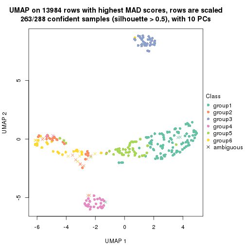
Following heatmap shows how subgroups are split when increasing k:
collect_classes(res)

If matrix rows can be associated to genes, consider to use functional_enrichment(res,
...) to perform function enrichment for the signature genes. See this vignette for more detailed explanations.
The object with results only for a single top-value method and a single partition method can be extracted as:
res = res_list["MAD", "skmeans"]
# you can also extract it by
# res = res_list["MAD:skmeans"]
A summary of res and all the functions that can be applied to it:
res
#> A 'ConsensusPartition' object with k = 2, 3, 4, 5, 6.
#> On a matrix with 13984 rows and 288 columns.
#> Top rows (1000, 2000, 3000, 4000, 5000) are extracted by 'MAD' method.
#> Subgroups are detected by 'skmeans' method.
#> Performed in total 1250 partitions by row resampling.
#> Best k for subgroups seems to be 6.
#>
#> Following methods can be applied to this 'ConsensusPartition' object:
#> [1] "cola_report" "collect_classes" "collect_plots"
#> [4] "collect_stats" "colnames" "compare_signatures"
#> [7] "consensus_heatmap" "dimension_reduction" "functional_enrichment"
#> [10] "get_anno_col" "get_anno" "get_classes"
#> [13] "get_consensus" "get_matrix" "get_membership"
#> [16] "get_param" "get_signatures" "get_stats"
#> [19] "is_best_k" "is_stable_k" "membership_heatmap"
#> [22] "ncol" "nrow" "plot_ecdf"
#> [25] "rownames" "select_partition_number" "show"
#> [28] "suggest_best_k" "test_to_known_factors"
collect_plots() function collects all the plots made from res for all k (number of partitions)
into one single page to provide an easy and fast comparison between different k.
collect_plots(res)
The plots are:
k and the heatmap of
predicted classes for each k.k.k.k.All the plots in panels can be made by individual functions and they are plotted later in this section.
select_partition_number() produces several plots showing different
statistics for choosing “optimized” k. There are following statistics:
k;k, the area increased is defined as \(A_k - A_{k-1}\).The detailed explanations of these statistics can be found in the cola vignette.
Generally speaking, lower PAC score, higher mean silhouette score or higher
concordance corresponds to better partition. Rand index and Jaccard index
measure how similar the current partition is compared to partition with k-1.
If they are too similar, we won't accept k is better than k-1.
select_partition_number(res)
The numeric values for all these statistics can be obtained by get_stats().
get_stats(res)
#> k 1-PAC mean_silhouette concordance area_increased Rand Jaccard
#> 2 2 1.000 0.974 0.989 0.4787 0.523 0.523
#> 3 3 0.902 0.887 0.956 0.3270 0.825 0.673
#> 4 4 0.827 0.799 0.901 0.1167 0.901 0.746
#> 5 5 0.860 0.829 0.909 0.0745 0.914 0.730
#> 6 6 0.959 0.923 0.964 0.0697 0.915 0.672
suggest_best_k() suggests the best \(k\) based on these statistics. The rules are as follows:
suggest_best_k(res)
#> [1] 6
#> attr(,"optional")
#> [1] 2 3
There is also optional best \(k\) = 2 3 that is worth to check.
Following shows the table of the partitions (You need to click the show/hide
code output link to see it). The membership matrix (columns with name p*)
is inferred by
clue::cl_consensus()
function with the SE method. Basically the value in the membership matrix
represents the probability to belong to a certain group. The finall class
label for an item is determined with the group with highest probability it
belongs to.
In get_classes() function, the entropy is calculated from the membership
matrix and the silhouette score is calculated from the consensus matrix.
cbind(get_classes(res, k = 2), get_membership(res, k = 2))
#> class entropy silhouette p1 p2
#> SRR1982614 2 0.0000 0.990 0.000 1.000
#> SRR1982613 2 0.0000 0.990 0.000 1.000
#> SRR1982612 1 0.5737 0.838 0.864 0.136
#> SRR1982611 2 0.0000 0.990 0.000 1.000
#> SRR1982610 2 0.0000 0.990 0.000 1.000
#> SRR1982609 1 0.0000 0.989 1.000 0.000
#> SRR1982659 1 0.0000 0.989 1.000 0.000
#> SRR1982692 2 0.0000 0.990 0.000 1.000
#> SRR1982722 1 0.0000 0.989 1.000 0.000
#> SRR1982750 2 0.0000 0.990 0.000 1.000
#> SRR2095031 2 0.0000 0.990 0.000 1.000
#> SRR1982780 1 0.0000 0.989 1.000 0.000
#> SRR1982807 1 0.0000 0.989 1.000 0.000
#> SRR1982830 1 0.0000 0.989 1.000 0.000
#> SRR1982829 2 0.0000 0.990 0.000 1.000
#> SRR1982828 2 0.0000 0.990 0.000 1.000
#> SRR1982827 1 0.1184 0.974 0.984 0.016
#> SRR1982826 1 0.0000 0.989 1.000 0.000
#> SRR1982825 1 0.0000 0.989 1.000 0.000
#> SRR1982824 2 0.0000 0.990 0.000 1.000
#> SRR1982823 1 0.0000 0.989 1.000 0.000
#> SRR1982822 2 0.0000 0.990 0.000 1.000
#> SRR1982821 1 0.0000 0.989 1.000 0.000
#> SRR1982820 1 0.0000 0.989 1.000 0.000
#> SRR1982819 1 0.0000 0.989 1.000 0.000
#> SRR1982818 1 0.0000 0.989 1.000 0.000
#> SRR1982817 1 0.0000 0.989 1.000 0.000
#> SRR1982816 1 0.0000 0.989 1.000 0.000
#> SRR1982815 1 0.0000 0.989 1.000 0.000
#> SRR1982814 1 0.0000 0.989 1.000 0.000
#> SRR1982813 1 0.0000 0.989 1.000 0.000
#> SRR1982812 2 0.0000 0.990 0.000 1.000
#> SRR1982811 1 0.0000 0.989 1.000 0.000
#> SRR1982810 1 0.0000 0.989 1.000 0.000
#> SRR1982809 2 0.0000 0.990 0.000 1.000
#> SRR1982808 1 0.0000 0.989 1.000 0.000
#> SRR1982806 1 0.0000 0.989 1.000 0.000
#> SRR1982805 1 0.0000 0.989 1.000 0.000
#> SRR1982804 2 0.0376 0.986 0.004 0.996
#> SRR1982803 2 0.0000 0.990 0.000 1.000
#> SRR1982802 1 0.0000 0.989 1.000 0.000
#> SRR1982801 1 0.0000 0.989 1.000 0.000
#> SRR1982800 1 0.0376 0.985 0.996 0.004
#> SRR1982799 1 0.0000 0.989 1.000 0.000
#> SRR1982798 1 0.0000 0.989 1.000 0.000
#> SRR1982797 2 0.0000 0.990 0.000 1.000
#> SRR1982796 1 0.0000 0.989 1.000 0.000
#> SRR1982795 1 0.0000 0.989 1.000 0.000
#> SRR1982794 1 0.0000 0.989 1.000 0.000
#> SRR1982793 1 0.0000 0.989 1.000 0.000
#> SRR1982792 1 0.0000 0.989 1.000 0.000
#> SRR1982791 1 0.0000 0.989 1.000 0.000
#> SRR1982790 2 0.0000 0.990 0.000 1.000
#> SRR1982789 1 0.0000 0.989 1.000 0.000
#> SRR1982788 1 0.0000 0.989 1.000 0.000
#> SRR1982787 1 0.0000 0.989 1.000 0.000
#> SRR1982786 2 0.0000 0.990 0.000 1.000
#> SRR1982785 1 0.0000 0.989 1.000 0.000
#> SRR1982784 1 0.0000 0.989 1.000 0.000
#> SRR1982783 2 0.0000 0.990 0.000 1.000
#> SRR1982782 1 0.0000 0.989 1.000 0.000
#> SRR1982781 1 0.0000 0.989 1.000 0.000
#> SRR1982779 1 0.0000 0.989 1.000 0.000
#> SRR1982778 1 0.0000 0.989 1.000 0.000
#> SRR1982776 2 0.0000 0.990 0.000 1.000
#> SRR1982777 1 0.0000 0.989 1.000 0.000
#> SRR1982775 1 0.0000 0.989 1.000 0.000
#> SRR1982774 1 0.0000 0.989 1.000 0.000
#> SRR1982772 1 0.0000 0.989 1.000 0.000
#> SRR1982773 1 0.0000 0.989 1.000 0.000
#> SRR1982770 1 0.0000 0.989 1.000 0.000
#> SRR1982771 1 0.0000 0.989 1.000 0.000
#> SRR1982769 2 0.0000 0.990 0.000 1.000
#> SRR1982768 1 0.0000 0.989 1.000 0.000
#> SRR1982767 1 0.0000 0.989 1.000 0.000
#> SRR1982766 2 0.0000 0.990 0.000 1.000
#> SRR1982765 1 0.0000 0.989 1.000 0.000
#> SRR1982764 1 0.0000 0.989 1.000 0.000
#> SRR1982762 1 0.0000 0.989 1.000 0.000
#> SRR1982760 1 0.0000 0.989 1.000 0.000
#> SRR1982761 1 0.0000 0.989 1.000 0.000
#> SRR1982763 2 0.0000 0.990 0.000 1.000
#> SRR1982759 1 0.0000 0.989 1.000 0.000
#> SRR1982758 1 0.0000 0.989 1.000 0.000
#> SRR1982757 1 0.0000 0.989 1.000 0.000
#> SRR1982755 1 0.0000 0.989 1.000 0.000
#> SRR1982754 2 0.1414 0.971 0.020 0.980
#> SRR1982756 1 0.0000 0.989 1.000 0.000
#> SRR1982753 1 0.0000 0.989 1.000 0.000
#> SRR1982751 2 0.0000 0.990 0.000 1.000
#> SRR1982752 2 0.0000 0.990 0.000 1.000
#> SRR1982749 2 0.0000 0.990 0.000 1.000
#> SRR1982748 2 0.0000 0.990 0.000 1.000
#> SRR1982747 2 0.0000 0.990 0.000 1.000
#> SRR1982746 2 0.0000 0.990 0.000 1.000
#> SRR1982745 2 0.0000 0.990 0.000 1.000
#> SRR1982743 2 0.0000 0.990 0.000 1.000
#> SRR1982744 2 0.0000 0.990 0.000 1.000
#> SRR1982741 2 0.0000 0.990 0.000 1.000
#> SRR1982742 2 0.0000 0.990 0.000 1.000
#> SRR2095014 2 0.0000 0.990 0.000 1.000
#> SRR1982740 2 0.0000 0.990 0.000 1.000
#> SRR1982739 2 0.0000 0.990 0.000 1.000
#> SRR1982737 2 0.0000 0.990 0.000 1.000
#> SRR1982738 2 0.0000 0.990 0.000 1.000
#> SRR1982736 2 0.0000 0.990 0.000 1.000
#> SRR1982735 2 0.0000 0.990 0.000 1.000
#> SRR1982733 2 0.0000 0.990 0.000 1.000
#> SRR1982732 2 0.0000 0.990 0.000 1.000
#> SRR2095004 2 0.0000 0.990 0.000 1.000
#> SRR1982734 2 0.0000 0.990 0.000 1.000
#> SRR1982731 2 0.0000 0.990 0.000 1.000
#> SRR1982729 2 0.0000 0.990 0.000 1.000
#> SRR1982730 2 0.0000 0.990 0.000 1.000
#> SRR1982728 2 0.0000 0.990 0.000 1.000
#> SRR1982727 2 0.0000 0.990 0.000 1.000
#> SRR1982726 1 0.0000 0.989 1.000 0.000
#> SRR1982723 2 0.0000 0.990 0.000 1.000
#> SRR1982725 2 0.6247 0.812 0.156 0.844
#> SRR1982724 1 0.0000 0.989 1.000 0.000
#> SRR1982721 1 0.0000 0.989 1.000 0.000
#> SRR1982720 1 0.0000 0.989 1.000 0.000
#> SRR1982719 1 0.0000 0.989 1.000 0.000
#> SRR1982718 2 0.0000 0.990 0.000 1.000
#> SRR1982717 2 0.0000 0.990 0.000 1.000
#> SRR1982715 2 0.0000 0.990 0.000 1.000
#> SRR1982714 2 0.0000 0.990 0.000 1.000
#> SRR1982716 2 0.0000 0.990 0.000 1.000
#> SRR1982713 2 0.0000 0.990 0.000 1.000
#> SRR1982711 2 0.0000 0.990 0.000 1.000
#> SRR1982712 2 0.0000 0.990 0.000 1.000
#> SRR1982710 2 0.0000 0.990 0.000 1.000
#> SRR1982708 2 0.0000 0.990 0.000 1.000
#> SRR1982707 2 0.0000 0.990 0.000 1.000
#> SRR1982709 1 0.0000 0.989 1.000 0.000
#> SRR1982705 2 0.0000 0.990 0.000 1.000
#> SRR1982706 1 0.0000 0.989 1.000 0.000
#> SRR1982704 1 0.7056 0.760 0.808 0.192
#> SRR1982702 2 0.0000 0.990 0.000 1.000
#> SRR1982703 2 0.0000 0.990 0.000 1.000
#> SRR1982701 2 0.0000 0.990 0.000 1.000
#> SRR1982700 2 0.0000 0.990 0.000 1.000
#> SRR1982697 2 0.0000 0.990 0.000 1.000
#> SRR1982698 2 0.0000 0.990 0.000 1.000
#> SRR1982699 2 0.0000 0.990 0.000 1.000
#> SRR1982696 2 0.0000 0.990 0.000 1.000
#> SRR1982695 1 0.0000 0.989 1.000 0.000
#> SRR1982694 1 0.0000 0.989 1.000 0.000
#> SRR1982693 2 0.0000 0.990 0.000 1.000
#> SRR1982690 2 0.0000 0.990 0.000 1.000
#> SRR1982691 2 0.0000 0.990 0.000 1.000
#> SRR1982689 2 0.0000 0.990 0.000 1.000
#> SRR1982688 1 0.0000 0.989 1.000 0.000
#> SRR1982687 2 0.0000 0.990 0.000 1.000
#> SRR1982686 2 0.0000 0.990 0.000 1.000
#> SRR1982685 2 0.0000 0.990 0.000 1.000
#> SRR1982684 2 0.0000 0.990 0.000 1.000
#> SRR1982683 1 0.0000 0.989 1.000 0.000
#> SRR1982681 2 0.0000 0.990 0.000 1.000
#> SRR1982682 2 0.0000 0.990 0.000 1.000
#> SRR1982680 2 0.0000 0.990 0.000 1.000
#> SRR1982679 1 0.0000 0.989 1.000 0.000
#> SRR1982678 2 0.0000 0.990 0.000 1.000
#> SRR1982677 2 0.0000 0.990 0.000 1.000
#> SRR1982676 1 0.0000 0.989 1.000 0.000
#> SRR1982675 1 0.0000 0.989 1.000 0.000
#> SRR1982674 2 0.0000 0.990 0.000 1.000
#> SRR1982671 1 0.0000 0.989 1.000 0.000
#> SRR1982673 1 0.0000 0.989 1.000 0.000
#> SRR1982672 1 0.0000 0.989 1.000 0.000
#> SRR1982670 1 0.0000 0.989 1.000 0.000
#> SRR1982669 1 0.0000 0.989 1.000 0.000
#> SRR1982667 1 0.0000 0.989 1.000 0.000
#> SRR1982668 2 0.0000 0.990 0.000 1.000
#> SRR1982666 1 0.0000 0.989 1.000 0.000
#> SRR1982665 1 0.9710 0.329 0.600 0.400
#> SRR1982664 1 0.0000 0.989 1.000 0.000
#> SRR1982663 1 0.0000 0.989 1.000 0.000
#> SRR1982662 1 0.0000 0.989 1.000 0.000
#> SRR1982661 2 0.9460 0.430 0.364 0.636
#> SRR1982660 1 0.0000 0.989 1.000 0.000
#> SRR1982658 1 0.0000 0.989 1.000 0.000
#> SRR1982657 1 0.0000 0.989 1.000 0.000
#> SRR1982656 2 0.0000 0.990 0.000 1.000
#> SRR1982654 1 0.0000 0.989 1.000 0.000
#> SRR1982655 1 0.0000 0.989 1.000 0.000
#> SRR1982653 1 0.0000 0.989 1.000 0.000
#> SRR1982652 1 0.0000 0.989 1.000 0.000
#> SRR1982651 1 0.0000 0.989 1.000 0.000
#> SRR1982649 2 0.0000 0.990 0.000 1.000
#> SRR1982650 1 0.0000 0.989 1.000 0.000
#> SRR1982648 1 0.0000 0.989 1.000 0.000
#> SRR1982647 1 0.0000 0.989 1.000 0.000
#> SRR1982646 1 0.9358 0.462 0.648 0.352
#> SRR1982645 1 0.0000 0.989 1.000 0.000
#> SRR1982644 1 0.0000 0.989 1.000 0.000
#> SRR1982642 1 0.0000 0.989 1.000 0.000
#> SRR1982643 1 0.0000 0.989 1.000 0.000
#> SRR1982641 1 0.0000 0.989 1.000 0.000
#> SRR1982640 1 0.0000 0.989 1.000 0.000
#> SRR1982638 1 0.0000 0.989 1.000 0.000
#> SRR1982639 1 0.0000 0.989 1.000 0.000
#> SRR1982637 1 0.0000 0.989 1.000 0.000
#> SRR1982635 1 0.0000 0.989 1.000 0.000
#> SRR1982636 2 0.3431 0.925 0.064 0.936
#> SRR1982633 1 0.0000 0.989 1.000 0.000
#> SRR1982632 1 0.0000 0.989 1.000 0.000
#> SRR1982631 1 0.0000 0.989 1.000 0.000
#> SRR1982634 1 0.0000 0.989 1.000 0.000
#> SRR1982628 2 0.0000 0.990 0.000 1.000
#> SRR1982629 1 0.0000 0.989 1.000 0.000
#> SRR1982627 1 0.0000 0.989 1.000 0.000
#> SRR1982625 1 0.0000 0.989 1.000 0.000
#> SRR1982626 1 0.5294 0.859 0.880 0.120
#> SRR1982624 2 0.0000 0.990 0.000 1.000
#> SRR1982623 1 0.0000 0.989 1.000 0.000
#> SRR1982622 1 0.0000 0.989 1.000 0.000
#> SRR1982621 1 0.0000 0.989 1.000 0.000
#> SRR1982620 1 0.0000 0.989 1.000 0.000
#> SRR1982619 2 0.6712 0.785 0.176 0.824
#> SRR1982618 1 0.0000 0.989 1.000 0.000
#> SRR1982617 2 0.0000 0.990 0.000 1.000
#> SRR1982616 1 0.9129 0.516 0.672 0.328
#> SRR1982615 1 0.0000 0.989 1.000 0.000
#> SRR1982608 2 0.0000 0.990 0.000 1.000
#> SRR1982607 1 0.0000 0.989 1.000 0.000
#> SRR1982606 1 0.0000 0.989 1.000 0.000
#> SRR1982605 1 0.0000 0.989 1.000 0.000
#> SRR1982604 1 0.0000 0.989 1.000 0.000
#> SRR1982603 1 0.0000 0.989 1.000 0.000
#> SRR1982602 1 0.0000 0.989 1.000 0.000
#> SRR1982601 1 0.0000 0.989 1.000 0.000
#> SRR1982599 1 0.0000 0.989 1.000 0.000
#> SRR1982600 2 0.0000 0.990 0.000 1.000
#> SRR1982598 1 0.0000 0.989 1.000 0.000
#> SRR1982597 1 0.0000 0.989 1.000 0.000
#> SRR1982595 1 0.0000 0.989 1.000 0.000
#> SRR1982596 1 0.0000 0.989 1.000 0.000
#> SRR1982594 1 0.0000 0.989 1.000 0.000
#> SRR1982593 1 0.0000 0.989 1.000 0.000
#> SRR1982592 2 0.0000 0.990 0.000 1.000
#> SRR1982591 2 0.0000 0.990 0.000 1.000
#> SRR1982590 2 0.0000 0.990 0.000 1.000
#> SRR1982589 2 0.0000 0.990 0.000 1.000
#> SRR1982588 1 0.0000 0.989 1.000 0.000
#> SRR1982587 1 0.0000 0.989 1.000 0.000
#> SRR1982586 1 0.0000 0.989 1.000 0.000
#> SRR1982584 2 0.0000 0.990 0.000 1.000
#> SRR2096514 1 0.0000 0.989 1.000 0.000
#> SRR2096513 1 0.0000 0.989 1.000 0.000
#> SRR2096511 1 0.0000 0.989 1.000 0.000
#> SRR2096512 2 0.0000 0.990 0.000 1.000
#> SRR2096509 1 0.0000 0.989 1.000 0.000
#> SRR2096510 1 0.0000 0.989 1.000 0.000
#> SRR2096508 2 0.0000 0.990 0.000 1.000
#> SRR2096507 2 0.0000 0.990 0.000 1.000
#> SRR2096504 1 0.0000 0.989 1.000 0.000
#> SRR2096506 1 0.0000 0.989 1.000 0.000
#> SRR2096505 1 0.0000 0.989 1.000 0.000
#> SRR2096503 2 0.0000 0.990 0.000 1.000
#> SRR2096500 1 0.0000 0.989 1.000 0.000
#> SRR2096501 1 0.9522 0.404 0.628 0.372
#> SRR2096502 1 0.0000 0.989 1.000 0.000
#> SRR2096499 1 0.0000 0.989 1.000 0.000
#> SRR2096498 1 0.0000 0.989 1.000 0.000
#> SRR2096496 2 0.0000 0.990 0.000 1.000
#> SRR2096497 1 0.0000 0.989 1.000 0.000
#> SRR2096495 1 0.0000 0.989 1.000 0.000
#> SRR2096494 1 0.0000 0.989 1.000 0.000
#> SRR2096492 1 0.0000 0.989 1.000 0.000
#> SRR2096491 2 0.0000 0.990 0.000 1.000
#> SRR2096493 1 0.0000 0.989 1.000 0.000
#> SRR2096490 1 0.0000 0.989 1.000 0.000
#> SRR2096488 1 0.0000 0.989 1.000 0.000
#> SRR2096489 2 0.9129 0.515 0.328 0.672
#> SRR2096487 1 0.0000 0.989 1.000 0.000
#> SRR2096484 1 0.0000 0.989 1.000 0.000
#> SRR2096486 2 0.0000 0.990 0.000 1.000
#> SRR2096485 1 0.0000 0.989 1.000 0.000
#> SRR2096483 1 0.0000 0.989 1.000 0.000
#> SRR2096482 1 0.0000 0.989 1.000 0.000
#> SRR2096481 2 0.0000 0.990 0.000 1.000
#> SRR2096520 1 0.0000 0.989 1.000 0.000
#> SRR2096519 1 0.0000 0.989 1.000 0.000
#> SRR2096518 1 0.0000 0.989 1.000 0.000
#> SRR2096516 1 0.0000 0.989 1.000 0.000
#> SRR2096517 1 0.0000 0.989 1.000 0.000
#> SRR2096515 1 0.0000 0.989 1.000 0.000
cbind(get_classes(res, k = 3), get_membership(res, k = 3))
#> class entropy silhouette p1 p2 p3
#> SRR1982614 2 0.0000 0.9737 0.000 1.000 0.000
#> SRR1982613 2 0.0000 0.9737 0.000 1.000 0.000
#> SRR1982612 1 0.0000 0.9360 1.000 0.000 0.000
#> SRR1982611 2 0.0000 0.9737 0.000 1.000 0.000
#> SRR1982610 2 0.3879 0.7878 0.152 0.848 0.000
#> SRR1982609 1 0.0000 0.9360 1.000 0.000 0.000
#> SRR1982659 1 0.0000 0.9360 1.000 0.000 0.000
#> SRR1982692 2 0.0000 0.9737 0.000 1.000 0.000
#> SRR1982722 1 0.6204 0.3103 0.576 0.000 0.424
#> SRR1982750 2 0.0000 0.9737 0.000 1.000 0.000
#> SRR2095031 2 0.0000 0.9737 0.000 1.000 0.000
#> SRR1982780 1 0.4654 0.7142 0.792 0.000 0.208
#> SRR1982807 1 0.0000 0.9360 1.000 0.000 0.000
#> SRR1982830 1 0.0000 0.9360 1.000 0.000 0.000
#> SRR1982829 2 0.0000 0.9737 0.000 1.000 0.000
#> SRR1982828 2 0.0000 0.9737 0.000 1.000 0.000
#> SRR1982827 1 0.0000 0.9360 1.000 0.000 0.000
#> SRR1982826 1 0.0000 0.9360 1.000 0.000 0.000
#> SRR1982825 1 0.0000 0.9360 1.000 0.000 0.000
#> SRR1982824 2 0.0000 0.9737 0.000 1.000 0.000
#> SRR1982823 1 0.0000 0.9360 1.000 0.000 0.000
#> SRR1982822 2 0.0000 0.9737 0.000 1.000 0.000
#> SRR1982821 1 0.0000 0.9360 1.000 0.000 0.000
#> SRR1982820 1 0.0000 0.9360 1.000 0.000 0.000
#> SRR1982819 1 0.0000 0.9360 1.000 0.000 0.000
#> SRR1982818 1 0.0000 0.9360 1.000 0.000 0.000
#> SRR1982817 1 0.0000 0.9360 1.000 0.000 0.000
#> SRR1982816 1 0.0000 0.9360 1.000 0.000 0.000
#> SRR1982815 1 0.0000 0.9360 1.000 0.000 0.000
#> SRR1982814 1 0.0000 0.9360 1.000 0.000 0.000
#> SRR1982813 1 0.0000 0.9360 1.000 0.000 0.000
#> SRR1982812 2 0.0000 0.9737 0.000 1.000 0.000
#> SRR1982811 1 0.0000 0.9360 1.000 0.000 0.000
#> SRR1982810 1 0.0000 0.9360 1.000 0.000 0.000
#> SRR1982809 2 0.0000 0.9737 0.000 1.000 0.000
#> SRR1982808 1 0.0000 0.9360 1.000 0.000 0.000
#> SRR1982806 1 0.0000 0.9360 1.000 0.000 0.000
#> SRR1982805 1 0.0000 0.9360 1.000 0.000 0.000
#> SRR1982804 2 0.4887 0.6777 0.228 0.772 0.000
#> SRR1982803 2 0.0000 0.9737 0.000 1.000 0.000
#> SRR1982802 1 0.0000 0.9360 1.000 0.000 0.000
#> SRR1982801 1 0.0000 0.9360 1.000 0.000 0.000
#> SRR1982800 1 0.0000 0.9360 1.000 0.000 0.000
#> SRR1982799 1 0.0000 0.9360 1.000 0.000 0.000
#> SRR1982798 1 0.0000 0.9360 1.000 0.000 0.000
#> SRR1982797 2 0.0000 0.9737 0.000 1.000 0.000
#> SRR1982796 3 0.5178 0.6231 0.256 0.000 0.744
#> SRR1982795 1 0.0000 0.9360 1.000 0.000 0.000
#> SRR1982794 1 0.0000 0.9360 1.000 0.000 0.000
#> SRR1982793 1 0.0000 0.9360 1.000 0.000 0.000
#> SRR1982792 1 0.0000 0.9360 1.000 0.000 0.000
#> SRR1982791 1 0.0000 0.9360 1.000 0.000 0.000
#> SRR1982790 2 0.0000 0.9737 0.000 1.000 0.000
#> SRR1982789 1 0.0000 0.9360 1.000 0.000 0.000
#> SRR1982788 1 0.1411 0.9041 0.964 0.000 0.036
#> SRR1982787 1 0.0000 0.9360 1.000 0.000 0.000
#> SRR1982786 2 0.0000 0.9737 0.000 1.000 0.000
#> SRR1982785 1 0.6286 0.1988 0.536 0.000 0.464
#> SRR1982784 3 0.1860 0.9126 0.052 0.000 0.948
#> SRR1982783 3 0.6280 0.1302 0.000 0.460 0.540
#> SRR1982782 1 0.0000 0.9360 1.000 0.000 0.000
#> SRR1982781 1 0.0000 0.9360 1.000 0.000 0.000
#> SRR1982779 3 0.1860 0.9126 0.052 0.000 0.948
#> SRR1982778 3 0.1860 0.9126 0.052 0.000 0.948
#> SRR1982776 2 0.4555 0.7190 0.000 0.800 0.200
#> SRR1982777 1 0.6291 0.1864 0.532 0.000 0.468
#> SRR1982775 3 0.1860 0.9126 0.052 0.000 0.948
#> SRR1982774 1 0.6291 0.1864 0.532 0.000 0.468
#> SRR1982772 3 0.1860 0.9126 0.052 0.000 0.948
#> SRR1982773 1 0.3267 0.8270 0.884 0.000 0.116
#> SRR1982770 1 0.6291 0.1864 0.532 0.000 0.468
#> SRR1982771 3 0.2796 0.8719 0.092 0.000 0.908
#> SRR1982769 2 0.0000 0.9737 0.000 1.000 0.000
#> SRR1982768 3 0.6168 0.2307 0.412 0.000 0.588
#> SRR1982767 1 0.2448 0.8687 0.924 0.000 0.076
#> SRR1982766 2 0.0000 0.9737 0.000 1.000 0.000
#> SRR1982765 1 0.0000 0.9360 1.000 0.000 0.000
#> SRR1982764 1 0.0000 0.9360 1.000 0.000 0.000
#> SRR1982762 1 0.0000 0.9360 1.000 0.000 0.000
#> SRR1982760 1 0.0000 0.9360 1.000 0.000 0.000
#> SRR1982761 1 0.0000 0.9360 1.000 0.000 0.000
#> SRR1982763 2 0.0000 0.9737 0.000 1.000 0.000
#> SRR1982759 1 0.0000 0.9360 1.000 0.000 0.000
#> SRR1982758 1 0.6215 0.2998 0.572 0.000 0.428
#> SRR1982757 3 0.0000 0.9431 0.000 0.000 1.000
#> SRR1982755 1 0.0000 0.9360 1.000 0.000 0.000
#> SRR1982754 2 0.4842 0.6838 0.224 0.776 0.000
#> SRR1982756 1 0.0000 0.9360 1.000 0.000 0.000
#> SRR1982753 3 0.1860 0.9126 0.052 0.000 0.948
#> SRR1982751 2 0.0000 0.9737 0.000 1.000 0.000
#> SRR1982752 2 0.0000 0.9737 0.000 1.000 0.000
#> SRR1982749 2 0.0000 0.9737 0.000 1.000 0.000
#> SRR1982748 2 0.0000 0.9737 0.000 1.000 0.000
#> SRR1982747 2 0.0000 0.9737 0.000 1.000 0.000
#> SRR1982746 2 0.0000 0.9737 0.000 1.000 0.000
#> SRR1982745 2 0.0000 0.9737 0.000 1.000 0.000
#> SRR1982743 2 0.0000 0.9737 0.000 1.000 0.000
#> SRR1982744 2 0.0000 0.9737 0.000 1.000 0.000
#> SRR1982741 2 0.0000 0.9737 0.000 1.000 0.000
#> SRR1982742 2 0.0000 0.9737 0.000 1.000 0.000
#> SRR2095014 2 0.0000 0.9737 0.000 1.000 0.000
#> SRR1982740 2 0.0000 0.9737 0.000 1.000 0.000
#> SRR1982739 2 0.0000 0.9737 0.000 1.000 0.000
#> SRR1982737 2 0.0000 0.9737 0.000 1.000 0.000
#> SRR1982738 2 0.0000 0.9737 0.000 1.000 0.000
#> SRR1982736 2 0.0000 0.9737 0.000 1.000 0.000
#> SRR1982735 2 0.0000 0.9737 0.000 1.000 0.000
#> SRR1982733 2 0.0000 0.9737 0.000 1.000 0.000
#> SRR1982732 2 0.0000 0.9737 0.000 1.000 0.000
#> SRR2095004 2 0.0000 0.9737 0.000 1.000 0.000
#> SRR1982734 2 0.0000 0.9737 0.000 1.000 0.000
#> SRR1982731 2 0.0000 0.9737 0.000 1.000 0.000
#> SRR1982729 2 0.0000 0.9737 0.000 1.000 0.000
#> SRR1982730 2 0.0000 0.9737 0.000 1.000 0.000
#> SRR1982728 2 0.0000 0.9737 0.000 1.000 0.000
#> SRR1982727 2 0.0000 0.9737 0.000 1.000 0.000
#> SRR1982726 3 0.1860 0.9126 0.052 0.000 0.948
#> SRR1982723 2 0.0983 0.9562 0.004 0.980 0.016
#> SRR1982725 3 0.1878 0.9140 0.004 0.044 0.952
#> SRR1982724 3 0.1860 0.9126 0.052 0.000 0.948
#> SRR1982721 1 0.6286 0.1988 0.536 0.000 0.464
#> SRR1982720 1 0.6140 0.3591 0.596 0.000 0.404
#> SRR1982719 1 0.6291 0.1864 0.532 0.000 0.468
#> SRR1982718 2 0.0000 0.9737 0.000 1.000 0.000
#> SRR1982717 2 0.0000 0.9737 0.000 1.000 0.000
#> SRR1982715 2 0.0000 0.9737 0.000 1.000 0.000
#> SRR1982714 2 0.0000 0.9737 0.000 1.000 0.000
#> SRR1982716 2 0.0000 0.9737 0.000 1.000 0.000
#> SRR1982713 2 0.0000 0.9737 0.000 1.000 0.000
#> SRR1982711 2 0.0000 0.9737 0.000 1.000 0.000
#> SRR1982712 2 0.0000 0.9737 0.000 1.000 0.000
#> SRR1982710 2 0.0000 0.9737 0.000 1.000 0.000
#> SRR1982708 2 0.0000 0.9737 0.000 1.000 0.000
#> SRR1982707 2 0.0000 0.9737 0.000 1.000 0.000
#> SRR1982709 1 0.0000 0.9360 1.000 0.000 0.000
#> SRR1982705 2 0.0000 0.9737 0.000 1.000 0.000
#> SRR1982706 1 0.0000 0.9360 1.000 0.000 0.000
#> SRR1982704 1 0.6291 0.1864 0.532 0.000 0.468
#> SRR1982702 2 0.0000 0.9737 0.000 1.000 0.000
#> SRR1982703 2 0.0000 0.9737 0.000 1.000 0.000
#> SRR1982701 2 0.0000 0.9737 0.000 1.000 0.000
#> SRR1982700 2 0.0000 0.9737 0.000 1.000 0.000
#> SRR1982697 2 0.0000 0.9737 0.000 1.000 0.000
#> SRR1982698 2 0.0000 0.9737 0.000 1.000 0.000
#> SRR1982699 2 0.0000 0.9737 0.000 1.000 0.000
#> SRR1982696 2 0.0000 0.9737 0.000 1.000 0.000
#> SRR1982695 1 0.0000 0.9360 1.000 0.000 0.000
#> SRR1982694 1 0.0000 0.9360 1.000 0.000 0.000
#> SRR1982693 2 0.0000 0.9737 0.000 1.000 0.000
#> SRR1982690 2 0.0000 0.9737 0.000 1.000 0.000
#> SRR1982691 2 0.0000 0.9737 0.000 1.000 0.000
#> SRR1982689 2 0.0000 0.9737 0.000 1.000 0.000
#> SRR1982688 1 0.0000 0.9360 1.000 0.000 0.000
#> SRR1982687 2 0.0000 0.9737 0.000 1.000 0.000
#> SRR1982686 2 0.0000 0.9737 0.000 1.000 0.000
#> SRR1982685 2 0.0000 0.9737 0.000 1.000 0.000
#> SRR1982684 2 0.0000 0.9737 0.000 1.000 0.000
#> SRR1982683 1 0.0000 0.9360 1.000 0.000 0.000
#> SRR1982681 2 0.0000 0.9737 0.000 1.000 0.000
#> SRR1982682 2 0.0000 0.9737 0.000 1.000 0.000
#> SRR1982680 2 0.0000 0.9737 0.000 1.000 0.000
#> SRR1982679 1 0.0000 0.9360 1.000 0.000 0.000
#> SRR1982678 2 0.0000 0.9737 0.000 1.000 0.000
#> SRR1982677 2 0.0000 0.9737 0.000 1.000 0.000
#> SRR1982676 1 0.0000 0.9360 1.000 0.000 0.000
#> SRR1982675 1 0.0000 0.9360 1.000 0.000 0.000
#> SRR1982674 2 0.0000 0.9737 0.000 1.000 0.000
#> SRR1982671 3 0.2796 0.8719 0.092 0.000 0.908
#> SRR1982673 1 0.0000 0.9360 1.000 0.000 0.000
#> SRR1982672 1 0.0000 0.9360 1.000 0.000 0.000
#> SRR1982670 1 0.5327 0.6187 0.728 0.000 0.272
#> SRR1982669 1 0.0000 0.9360 1.000 0.000 0.000
#> SRR1982667 1 0.0000 0.9360 1.000 0.000 0.000
#> SRR1982668 2 0.0000 0.9737 0.000 1.000 0.000
#> SRR1982666 1 0.0000 0.9360 1.000 0.000 0.000
#> SRR1982665 3 0.6161 0.6002 0.016 0.288 0.696
#> SRR1982664 1 0.0000 0.9360 1.000 0.000 0.000
#> SRR1982663 1 0.0000 0.9360 1.000 0.000 0.000
#> SRR1982662 1 0.0000 0.9360 1.000 0.000 0.000
#> SRR1982661 1 0.6295 0.0648 0.528 0.472 0.000
#> SRR1982660 1 0.0000 0.9360 1.000 0.000 0.000
#> SRR1982658 1 0.0000 0.9360 1.000 0.000 0.000
#> SRR1982657 1 0.0000 0.9360 1.000 0.000 0.000
#> SRR1982656 2 0.0000 0.9737 0.000 1.000 0.000
#> SRR1982654 1 0.0000 0.9360 1.000 0.000 0.000
#> SRR1982655 1 0.0000 0.9360 1.000 0.000 0.000
#> SRR1982653 1 0.0000 0.9360 1.000 0.000 0.000
#> SRR1982652 1 0.0000 0.9360 1.000 0.000 0.000
#> SRR1982651 1 0.0000 0.9360 1.000 0.000 0.000
#> SRR1982649 2 0.0000 0.9737 0.000 1.000 0.000
#> SRR1982650 1 0.0000 0.9360 1.000 0.000 0.000
#> SRR1982648 1 0.0000 0.9360 1.000 0.000 0.000
#> SRR1982647 1 0.0000 0.9360 1.000 0.000 0.000
#> SRR1982646 1 0.4504 0.7136 0.804 0.196 0.000
#> SRR1982645 1 0.0000 0.9360 1.000 0.000 0.000
#> SRR1982644 1 0.0000 0.9360 1.000 0.000 0.000
#> SRR1982642 1 0.0000 0.9360 1.000 0.000 0.000
#> SRR1982643 1 0.0000 0.9360 1.000 0.000 0.000
#> SRR1982641 1 0.0000 0.9360 1.000 0.000 0.000
#> SRR1982640 1 0.0000 0.9360 1.000 0.000 0.000
#> SRR1982638 1 0.0000 0.9360 1.000 0.000 0.000
#> SRR1982639 1 0.0000 0.9360 1.000 0.000 0.000
#> SRR1982637 1 0.0000 0.9360 1.000 0.000 0.000
#> SRR1982635 1 0.0000 0.9360 1.000 0.000 0.000
#> SRR1982636 2 0.6026 0.3881 0.376 0.624 0.000
#> SRR1982633 1 0.0000 0.9360 1.000 0.000 0.000
#> SRR1982632 1 0.0000 0.9360 1.000 0.000 0.000
#> SRR1982631 1 0.0000 0.9360 1.000 0.000 0.000
#> SRR1982634 1 0.0892 0.9188 0.980 0.000 0.020
#> SRR1982628 2 0.1411 0.9344 0.036 0.964 0.000
#> SRR1982629 1 0.0000 0.9360 1.000 0.000 0.000
#> SRR1982627 1 0.0000 0.9360 1.000 0.000 0.000
#> SRR1982625 1 0.0000 0.9360 1.000 0.000 0.000
#> SRR1982626 1 0.0000 0.9360 1.000 0.000 0.000
#> SRR1982624 2 0.4399 0.7368 0.188 0.812 0.000
#> SRR1982623 1 0.0000 0.9360 1.000 0.000 0.000
#> SRR1982622 1 0.0000 0.9360 1.000 0.000 0.000
#> SRR1982621 1 0.6204 0.3103 0.576 0.000 0.424
#> SRR1982620 1 0.6204 0.3103 0.576 0.000 0.424
#> SRR1982619 2 0.5660 0.6876 0.028 0.772 0.200
#> SRR1982618 1 0.6286 0.1988 0.536 0.000 0.464
#> SRR1982617 2 0.0000 0.9737 0.000 1.000 0.000
#> SRR1982616 1 0.2165 0.8727 0.936 0.064 0.000
#> SRR1982615 1 0.0000 0.9360 1.000 0.000 0.000
#> SRR1982608 2 0.0000 0.9737 0.000 1.000 0.000
#> SRR1982607 1 0.0000 0.9360 1.000 0.000 0.000
#> SRR1982606 1 0.0000 0.9360 1.000 0.000 0.000
#> SRR1982605 1 0.0000 0.9360 1.000 0.000 0.000
#> SRR1982604 1 0.0000 0.9360 1.000 0.000 0.000
#> SRR1982603 1 0.0000 0.9360 1.000 0.000 0.000
#> SRR1982602 1 0.0000 0.9360 1.000 0.000 0.000
#> SRR1982601 1 0.0000 0.9360 1.000 0.000 0.000
#> SRR1982599 1 0.0000 0.9360 1.000 0.000 0.000
#> SRR1982600 2 0.0000 0.9737 0.000 1.000 0.000
#> SRR1982598 1 0.0000 0.9360 1.000 0.000 0.000
#> SRR1982597 1 0.0000 0.9360 1.000 0.000 0.000
#> SRR1982595 1 0.0000 0.9360 1.000 0.000 0.000
#> SRR1982596 1 0.0000 0.9360 1.000 0.000 0.000
#> SRR1982594 1 0.0000 0.9360 1.000 0.000 0.000
#> SRR1982593 1 0.0000 0.9360 1.000 0.000 0.000
#> SRR1982592 2 0.0000 0.9737 0.000 1.000 0.000
#> SRR1982591 2 0.3412 0.8261 0.124 0.876 0.000
#> SRR1982590 2 0.0000 0.9737 0.000 1.000 0.000
#> SRR1982589 2 0.5968 0.4255 0.364 0.636 0.000
#> SRR1982588 1 0.0000 0.9360 1.000 0.000 0.000
#> SRR1982587 1 0.0000 0.9360 1.000 0.000 0.000
#> SRR1982586 1 0.0000 0.9360 1.000 0.000 0.000
#> SRR1982584 2 0.0000 0.9737 0.000 1.000 0.000
#> SRR2096514 3 0.0000 0.9431 0.000 0.000 1.000
#> SRR2096513 3 0.0000 0.9431 0.000 0.000 1.000
#> SRR2096511 3 0.0000 0.9431 0.000 0.000 1.000
#> SRR2096512 2 0.1031 0.9526 0.000 0.976 0.024
#> SRR2096509 3 0.0000 0.9431 0.000 0.000 1.000
#> SRR2096510 3 0.0000 0.9431 0.000 0.000 1.000
#> SRR2096508 2 0.0000 0.9737 0.000 1.000 0.000
#> SRR2096507 3 0.1529 0.9124 0.000 0.040 0.960
#> SRR2096504 3 0.0000 0.9431 0.000 0.000 1.000
#> SRR2096506 3 0.0000 0.9431 0.000 0.000 1.000
#> SRR2096505 3 0.0000 0.9431 0.000 0.000 1.000
#> SRR2096503 2 0.0000 0.9737 0.000 1.000 0.000
#> SRR2096500 3 0.0000 0.9431 0.000 0.000 1.000
#> SRR2096501 3 0.0000 0.9431 0.000 0.000 1.000
#> SRR2096502 3 0.0000 0.9431 0.000 0.000 1.000
#> SRR2096499 3 0.0000 0.9431 0.000 0.000 1.000
#> SRR2096498 3 0.0000 0.9431 0.000 0.000 1.000
#> SRR2096496 3 0.0000 0.9431 0.000 0.000 1.000
#> SRR2096497 3 0.0000 0.9431 0.000 0.000 1.000
#> SRR2096495 3 0.0000 0.9431 0.000 0.000 1.000
#> SRR2096494 3 0.0000 0.9431 0.000 0.000 1.000
#> SRR2096492 3 0.0000 0.9431 0.000 0.000 1.000
#> SRR2096491 3 0.6299 0.0475 0.000 0.476 0.524
#> SRR2096493 3 0.0000 0.9431 0.000 0.000 1.000
#> SRR2096490 3 0.0000 0.9431 0.000 0.000 1.000
#> SRR2096488 3 0.0000 0.9431 0.000 0.000 1.000
#> SRR2096489 3 0.0000 0.9431 0.000 0.000 1.000
#> SRR2096487 3 0.0000 0.9431 0.000 0.000 1.000
#> SRR2096484 3 0.0000 0.9431 0.000 0.000 1.000
#> SRR2096486 3 0.0000 0.9431 0.000 0.000 1.000
#> SRR2096485 3 0.0000 0.9431 0.000 0.000 1.000
#> SRR2096483 3 0.0000 0.9431 0.000 0.000 1.000
#> SRR2096482 3 0.0000 0.9431 0.000 0.000 1.000
#> SRR2096481 3 0.3267 0.8313 0.000 0.116 0.884
#> SRR2096520 3 0.0000 0.9431 0.000 0.000 1.000
#> SRR2096519 3 0.0000 0.9431 0.000 0.000 1.000
#> SRR2096518 3 0.0000 0.9431 0.000 0.000 1.000
#> SRR2096516 1 0.6286 0.1988 0.536 0.000 0.464
#> SRR2096517 3 0.0000 0.9431 0.000 0.000 1.000
#> SRR2096515 3 0.0000 0.9431 0.000 0.000 1.000
cbind(get_classes(res, k = 4), get_membership(res, k = 4))
#> class entropy silhouette p1 p2 p3 p4
#> SRR1982614 2 0.0000 0.9483 0.000 1.000 0.000 0.000
#> SRR1982613 2 0.1022 0.9290 0.000 0.968 0.000 0.032
#> SRR1982612 1 0.3975 0.6985 0.760 0.000 0.000 0.240
#> SRR1982611 2 0.1716 0.9081 0.000 0.936 0.000 0.064
#> SRR1982610 2 0.6219 0.4833 0.344 0.588 0.000 0.068
#> SRR1982609 1 0.0000 0.8077 1.000 0.000 0.000 0.000
#> SRR1982659 1 0.4916 0.4516 0.576 0.000 0.000 0.424
#> SRR1982692 2 0.0000 0.9483 0.000 1.000 0.000 0.000
#> SRR1982722 4 0.2021 0.8891 0.012 0.000 0.056 0.932
#> SRR1982750 2 0.0000 0.9483 0.000 1.000 0.000 0.000
#> SRR2095031 2 0.0000 0.9483 0.000 1.000 0.000 0.000
#> SRR1982780 4 0.2021 0.8891 0.012 0.000 0.056 0.932
#> SRR1982807 1 0.3610 0.7249 0.800 0.000 0.000 0.200
#> SRR1982830 4 0.3266 0.6664 0.168 0.000 0.000 0.832
#> SRR1982829 2 0.2081 0.8835 0.000 0.916 0.000 0.084
#> SRR1982828 2 0.5657 0.6326 0.244 0.688 0.000 0.068
#> SRR1982827 1 0.1792 0.7654 0.932 0.000 0.000 0.068
#> SRR1982826 1 0.0000 0.8077 1.000 0.000 0.000 0.000
#> SRR1982825 1 0.0000 0.8077 1.000 0.000 0.000 0.000
#> SRR1982824 2 0.5250 0.6943 0.196 0.736 0.000 0.068
#> SRR1982823 1 0.4985 0.3529 0.532 0.000 0.000 0.468
#> SRR1982822 2 0.5657 0.6325 0.244 0.688 0.000 0.068
#> SRR1982821 1 0.4985 0.3529 0.532 0.000 0.000 0.468
#> SRR1982820 1 0.4916 0.4516 0.576 0.000 0.000 0.424
#> SRR1982819 1 0.4916 0.4516 0.576 0.000 0.000 0.424
#> SRR1982818 1 0.0188 0.8056 0.996 0.000 0.000 0.004
#> SRR1982817 1 0.1792 0.7654 0.932 0.000 0.000 0.068
#> SRR1982816 1 0.3907 0.6754 0.768 0.000 0.000 0.232
#> SRR1982815 1 0.0000 0.8077 1.000 0.000 0.000 0.000
#> SRR1982814 1 0.4961 0.4013 0.552 0.000 0.000 0.448
#> SRR1982813 1 0.0188 0.8056 0.996 0.000 0.000 0.004
#> SRR1982812 2 0.0000 0.9483 0.000 1.000 0.000 0.000
#> SRR1982811 1 0.3907 0.6754 0.768 0.000 0.000 0.232
#> SRR1982810 1 0.0000 0.8077 1.000 0.000 0.000 0.000
#> SRR1982809 2 0.1792 0.9052 0.000 0.932 0.000 0.068
#> SRR1982808 1 0.1792 0.7654 0.932 0.000 0.000 0.068
#> SRR1982806 1 0.0000 0.8077 1.000 0.000 0.000 0.000
#> SRR1982805 1 0.4916 0.4516 0.576 0.000 0.000 0.424
#> SRR1982804 1 0.6438 -0.1002 0.496 0.436 0.000 0.068
#> SRR1982803 2 0.1792 0.9052 0.000 0.932 0.000 0.068
#> SRR1982802 1 0.0000 0.8077 1.000 0.000 0.000 0.000
#> SRR1982801 1 0.0469 0.8009 0.988 0.000 0.000 0.012
#> SRR1982800 1 0.1792 0.7654 0.932 0.000 0.000 0.068
#> SRR1982799 1 0.0188 0.8056 0.996 0.000 0.000 0.004
#> SRR1982798 1 0.0188 0.8056 0.996 0.000 0.000 0.004
#> SRR1982797 2 0.1716 0.9080 0.000 0.936 0.000 0.064
#> SRR1982796 4 0.2021 0.8891 0.012 0.000 0.056 0.932
#> SRR1982795 1 0.0000 0.8077 1.000 0.000 0.000 0.000
#> SRR1982794 1 0.0000 0.8077 1.000 0.000 0.000 0.000
#> SRR1982793 1 0.4916 0.4516 0.576 0.000 0.000 0.424
#> SRR1982792 1 0.4907 0.4577 0.580 0.000 0.000 0.420
#> SRR1982791 1 0.0000 0.8077 1.000 0.000 0.000 0.000
#> SRR1982790 2 0.0000 0.9483 0.000 1.000 0.000 0.000
#> SRR1982789 1 0.0000 0.8077 1.000 0.000 0.000 0.000
#> SRR1982788 1 0.0000 0.8077 1.000 0.000 0.000 0.000
#> SRR1982787 1 0.0000 0.8077 1.000 0.000 0.000 0.000
#> SRR1982786 2 0.0000 0.9483 0.000 1.000 0.000 0.000
#> SRR1982785 4 0.2021 0.8891 0.012 0.000 0.056 0.932
#> SRR1982784 4 0.1902 0.8855 0.004 0.000 0.064 0.932
#> SRR1982783 4 0.4999 0.0429 0.000 0.492 0.000 0.508
#> SRR1982782 1 0.0000 0.8077 1.000 0.000 0.000 0.000
#> SRR1982781 1 0.0000 0.8077 1.000 0.000 0.000 0.000
#> SRR1982779 4 0.1902 0.8855 0.004 0.000 0.064 0.932
#> SRR1982778 4 0.1902 0.8855 0.004 0.000 0.064 0.932
#> SRR1982776 2 0.4638 0.6974 0.000 0.776 0.044 0.180
#> SRR1982777 4 0.2021 0.8891 0.012 0.000 0.056 0.932
#> SRR1982775 4 0.1902 0.8855 0.004 0.000 0.064 0.932
#> SRR1982774 4 0.2021 0.8891 0.012 0.000 0.056 0.932
#> SRR1982772 4 0.1902 0.8855 0.004 0.000 0.064 0.932
#> SRR1982773 4 0.2111 0.8595 0.044 0.000 0.024 0.932
#> SRR1982770 4 0.2021 0.8891 0.012 0.000 0.056 0.932
#> SRR1982771 4 0.1902 0.8855 0.004 0.000 0.064 0.932
#> SRR1982769 4 0.4761 0.4279 0.000 0.372 0.000 0.628
#> SRR1982768 4 0.2021 0.8891 0.012 0.000 0.056 0.932
#> SRR1982767 4 0.4304 0.4568 0.284 0.000 0.000 0.716
#> SRR1982766 2 0.1022 0.9294 0.000 0.968 0.000 0.032
#> SRR1982765 1 0.4989 0.3424 0.528 0.000 0.000 0.472
#> SRR1982764 1 0.3837 0.6816 0.776 0.000 0.000 0.224
#> SRR1982762 1 0.4916 0.4516 0.576 0.000 0.000 0.424
#> SRR1982760 1 0.4916 0.4516 0.576 0.000 0.000 0.424
#> SRR1982761 1 0.4916 0.4516 0.576 0.000 0.000 0.424
#> SRR1982763 2 0.0000 0.9483 0.000 1.000 0.000 0.000
#> SRR1982759 1 0.0592 0.7994 0.984 0.000 0.000 0.016
#> SRR1982758 4 0.2021 0.8891 0.012 0.000 0.056 0.932
#> SRR1982757 3 0.3649 0.7455 0.000 0.000 0.796 0.204
#> SRR1982755 1 0.0000 0.8077 1.000 0.000 0.000 0.000
#> SRR1982754 2 0.6400 0.3412 0.408 0.524 0.000 0.068
#> SRR1982756 1 0.0000 0.8077 1.000 0.000 0.000 0.000
#> SRR1982753 4 0.1902 0.8855 0.004 0.000 0.064 0.932
#> SRR1982751 2 0.0000 0.9483 0.000 1.000 0.000 0.000
#> SRR1982752 2 0.0000 0.9483 0.000 1.000 0.000 0.000
#> SRR1982749 2 0.0000 0.9483 0.000 1.000 0.000 0.000
#> SRR1982748 2 0.0000 0.9483 0.000 1.000 0.000 0.000
#> SRR1982747 2 0.0000 0.9483 0.000 1.000 0.000 0.000
#> SRR1982746 2 0.0000 0.9483 0.000 1.000 0.000 0.000
#> SRR1982745 2 0.0000 0.9483 0.000 1.000 0.000 0.000
#> SRR1982743 2 0.0000 0.9483 0.000 1.000 0.000 0.000
#> SRR1982744 2 0.0000 0.9483 0.000 1.000 0.000 0.000
#> SRR1982741 2 0.0000 0.9483 0.000 1.000 0.000 0.000
#> SRR1982742 2 0.0000 0.9483 0.000 1.000 0.000 0.000
#> SRR2095014 2 0.0000 0.9483 0.000 1.000 0.000 0.000
#> SRR1982740 2 0.0000 0.9483 0.000 1.000 0.000 0.000
#> SRR1982739 2 0.0000 0.9483 0.000 1.000 0.000 0.000
#> SRR1982737 2 0.0000 0.9483 0.000 1.000 0.000 0.000
#> SRR1982738 2 0.0000 0.9483 0.000 1.000 0.000 0.000
#> SRR1982736 2 0.0000 0.9483 0.000 1.000 0.000 0.000
#> SRR1982735 2 0.0000 0.9483 0.000 1.000 0.000 0.000
#> SRR1982733 2 0.0000 0.9483 0.000 1.000 0.000 0.000
#> SRR1982732 2 0.0000 0.9483 0.000 1.000 0.000 0.000
#> SRR2095004 2 0.0000 0.9483 0.000 1.000 0.000 0.000
#> SRR1982734 2 0.0000 0.9483 0.000 1.000 0.000 0.000
#> SRR1982731 2 0.0000 0.9483 0.000 1.000 0.000 0.000
#> SRR1982729 2 0.0000 0.9483 0.000 1.000 0.000 0.000
#> SRR1982730 2 0.0000 0.9483 0.000 1.000 0.000 0.000
#> SRR1982728 2 0.0000 0.9483 0.000 1.000 0.000 0.000
#> SRR1982727 2 0.0000 0.9483 0.000 1.000 0.000 0.000
#> SRR1982726 4 0.1902 0.8855 0.004 0.000 0.064 0.932
#> SRR1982723 4 0.3975 0.6489 0.000 0.240 0.000 0.760
#> SRR1982725 4 0.2131 0.8632 0.000 0.032 0.036 0.932
#> SRR1982724 4 0.1902 0.8855 0.004 0.000 0.064 0.932
#> SRR1982721 4 0.2021 0.8891 0.012 0.000 0.056 0.932
#> SRR1982720 4 0.2021 0.8891 0.012 0.000 0.056 0.932
#> SRR1982719 4 0.2021 0.8891 0.012 0.000 0.056 0.932
#> SRR1982718 2 0.0000 0.9483 0.000 1.000 0.000 0.000
#> SRR1982717 2 0.0000 0.9483 0.000 1.000 0.000 0.000
#> SRR1982715 2 0.0000 0.9483 0.000 1.000 0.000 0.000
#> SRR1982714 2 0.0000 0.9483 0.000 1.000 0.000 0.000
#> SRR1982716 2 0.0000 0.9483 0.000 1.000 0.000 0.000
#> SRR1982713 2 0.1211 0.9241 0.000 0.960 0.000 0.040
#> SRR1982711 2 0.0000 0.9483 0.000 1.000 0.000 0.000
#> SRR1982712 2 0.0000 0.9483 0.000 1.000 0.000 0.000
#> SRR1982710 2 0.0000 0.9483 0.000 1.000 0.000 0.000
#> SRR1982708 2 0.0000 0.9483 0.000 1.000 0.000 0.000
#> SRR1982707 2 0.0000 0.9483 0.000 1.000 0.000 0.000
#> SRR1982709 1 0.0188 0.8056 0.996 0.000 0.000 0.004
#> SRR1982705 2 0.0000 0.9483 0.000 1.000 0.000 0.000
#> SRR1982706 1 0.0000 0.8077 1.000 0.000 0.000 0.000
#> SRR1982704 4 0.2125 0.8871 0.012 0.004 0.052 0.932
#> SRR1982702 2 0.0000 0.9483 0.000 1.000 0.000 0.000
#> SRR1982703 2 0.0000 0.9483 0.000 1.000 0.000 0.000
#> SRR1982701 4 0.4955 0.2402 0.000 0.444 0.000 0.556
#> SRR1982700 2 0.0000 0.9483 0.000 1.000 0.000 0.000
#> SRR1982697 2 0.0000 0.9483 0.000 1.000 0.000 0.000
#> SRR1982698 2 0.0000 0.9483 0.000 1.000 0.000 0.000
#> SRR1982699 2 0.0000 0.9483 0.000 1.000 0.000 0.000
#> SRR1982696 2 0.0000 0.9483 0.000 1.000 0.000 0.000
#> SRR1982695 1 0.4916 0.4516 0.576 0.000 0.000 0.424
#> SRR1982694 1 0.4916 0.4516 0.576 0.000 0.000 0.424
#> SRR1982693 2 0.0000 0.9483 0.000 1.000 0.000 0.000
#> SRR1982690 2 0.0000 0.9483 0.000 1.000 0.000 0.000
#> SRR1982691 2 0.0000 0.9483 0.000 1.000 0.000 0.000
#> SRR1982689 2 0.0000 0.9483 0.000 1.000 0.000 0.000
#> SRR1982688 1 0.4916 0.4516 0.576 0.000 0.000 0.424
#> SRR1982687 2 0.0000 0.9483 0.000 1.000 0.000 0.000
#> SRR1982686 2 0.0000 0.9483 0.000 1.000 0.000 0.000
#> SRR1982685 2 0.0000 0.9483 0.000 1.000 0.000 0.000
#> SRR1982684 2 0.0000 0.9483 0.000 1.000 0.000 0.000
#> SRR1982683 1 0.4916 0.4516 0.576 0.000 0.000 0.424
#> SRR1982681 2 0.0000 0.9483 0.000 1.000 0.000 0.000
#> SRR1982682 2 0.0000 0.9483 0.000 1.000 0.000 0.000
#> SRR1982680 2 0.0000 0.9483 0.000 1.000 0.000 0.000
#> SRR1982679 1 0.4661 0.5536 0.652 0.000 0.000 0.348
#> SRR1982678 2 0.0000 0.9483 0.000 1.000 0.000 0.000
#> SRR1982677 2 0.0000 0.9483 0.000 1.000 0.000 0.000
#> SRR1982676 1 0.0000 0.8077 1.000 0.000 0.000 0.000
#> SRR1982675 1 0.3123 0.7292 0.844 0.000 0.000 0.156
#> SRR1982674 2 0.0000 0.9483 0.000 1.000 0.000 0.000
#> SRR1982671 4 0.1902 0.8855 0.004 0.000 0.064 0.932
#> SRR1982673 1 0.0000 0.8077 1.000 0.000 0.000 0.000
#> SRR1982672 1 0.3907 0.6754 0.768 0.000 0.000 0.232
#> SRR1982670 4 0.2021 0.8891 0.012 0.000 0.056 0.932
#> SRR1982669 1 0.0000 0.8077 1.000 0.000 0.000 0.000
#> SRR1982667 1 0.0000 0.8077 1.000 0.000 0.000 0.000
#> SRR1982668 2 0.0336 0.9436 0.000 0.992 0.000 0.008
#> SRR1982666 1 0.0000 0.8077 1.000 0.000 0.000 0.000
#> SRR1982665 4 0.1902 0.8855 0.004 0.000 0.064 0.932
#> SRR1982664 1 0.3907 0.6754 0.768 0.000 0.000 0.232
#> SRR1982663 1 0.3942 0.6719 0.764 0.000 0.000 0.236
#> SRR1982662 4 0.4933 -0.0450 0.432 0.000 0.000 0.568
#> SRR1982661 1 0.1716 0.7682 0.936 0.000 0.000 0.064
#> SRR1982660 1 0.0000 0.8077 1.000 0.000 0.000 0.000
#> SRR1982658 1 0.0000 0.8077 1.000 0.000 0.000 0.000
#> SRR1982657 1 0.0000 0.8077 1.000 0.000 0.000 0.000
#> SRR1982656 2 0.0000 0.9483 0.000 1.000 0.000 0.000
#> SRR1982654 1 0.0000 0.8077 1.000 0.000 0.000 0.000
#> SRR1982655 1 0.4916 0.4516 0.576 0.000 0.000 0.424
#> SRR1982653 1 0.3907 0.6754 0.768 0.000 0.000 0.232
#> SRR1982652 1 0.0000 0.8077 1.000 0.000 0.000 0.000
#> SRR1982651 1 0.0000 0.8077 1.000 0.000 0.000 0.000
#> SRR1982649 2 0.1792 0.9052 0.000 0.932 0.000 0.068
#> SRR1982650 1 0.0188 0.8056 0.996 0.000 0.000 0.004
#> SRR1982648 1 0.4916 0.4516 0.576 0.000 0.000 0.424
#> SRR1982647 1 0.0000 0.8077 1.000 0.000 0.000 0.000
#> SRR1982646 1 0.4636 0.6047 0.792 0.140 0.000 0.068
#> SRR1982645 1 0.4967 0.3921 0.548 0.000 0.000 0.452
#> SRR1982644 1 0.4916 0.4516 0.576 0.000 0.000 0.424
#> SRR1982642 1 0.0000 0.8077 1.000 0.000 0.000 0.000
#> SRR1982643 1 0.4804 0.5086 0.616 0.000 0.000 0.384
#> SRR1982641 1 0.0000 0.8077 1.000 0.000 0.000 0.000
#> SRR1982640 1 0.4916 0.4516 0.576 0.000 0.000 0.424
#> SRR1982638 1 0.0000 0.8077 1.000 0.000 0.000 0.000
#> SRR1982639 1 0.0000 0.8077 1.000 0.000 0.000 0.000
#> SRR1982637 1 0.0000 0.8077 1.000 0.000 0.000 0.000
#> SRR1982635 1 0.4981 0.3631 0.536 0.000 0.000 0.464
#> SRR1982636 2 0.6434 0.2761 0.432 0.500 0.000 0.068
#> SRR1982633 1 0.4933 0.4358 0.568 0.000 0.000 0.432
#> SRR1982632 1 0.0921 0.7918 0.972 0.000 0.000 0.028
#> SRR1982631 1 0.0000 0.8077 1.000 0.000 0.000 0.000
#> SRR1982634 1 0.1792 0.7654 0.932 0.000 0.000 0.068
#> SRR1982628 2 0.6135 0.5209 0.324 0.608 0.000 0.068
#> SRR1982629 1 0.0000 0.8077 1.000 0.000 0.000 0.000
#> SRR1982627 1 0.0000 0.8077 1.000 0.000 0.000 0.000
#> SRR1982625 1 0.0000 0.8077 1.000 0.000 0.000 0.000
#> SRR1982626 1 0.1792 0.7654 0.932 0.000 0.000 0.068
#> SRR1982624 2 0.6277 0.4514 0.360 0.572 0.000 0.068
#> SRR1982623 1 0.0000 0.8077 1.000 0.000 0.000 0.000
#> SRR1982622 1 0.0000 0.8077 1.000 0.000 0.000 0.000
#> SRR1982621 4 0.2021 0.8891 0.012 0.000 0.056 0.932
#> SRR1982620 4 0.2021 0.8891 0.012 0.000 0.056 0.932
#> SRR1982619 4 0.2400 0.8691 0.004 0.028 0.044 0.924
#> SRR1982618 4 0.2021 0.8891 0.012 0.000 0.056 0.932
#> SRR1982617 2 0.0000 0.9483 0.000 1.000 0.000 0.000
#> SRR1982616 1 0.3156 0.7202 0.884 0.048 0.000 0.068
#> SRR1982615 1 0.0000 0.8077 1.000 0.000 0.000 0.000
#> SRR1982608 2 0.0000 0.9483 0.000 1.000 0.000 0.000
#> SRR1982607 1 0.4855 0.4868 0.600 0.000 0.000 0.400
#> SRR1982606 1 0.0000 0.8077 1.000 0.000 0.000 0.000
#> SRR1982605 1 0.4804 0.5086 0.616 0.000 0.000 0.384
#> SRR1982604 1 0.0000 0.8077 1.000 0.000 0.000 0.000
#> SRR1982603 1 0.0000 0.8077 1.000 0.000 0.000 0.000
#> SRR1982602 1 0.4967 0.3921 0.548 0.000 0.000 0.452
#> SRR1982601 1 0.4761 0.5244 0.628 0.000 0.000 0.372
#> SRR1982599 1 0.0336 0.8033 0.992 0.000 0.000 0.008
#> SRR1982600 2 0.0000 0.9483 0.000 1.000 0.000 0.000
#> SRR1982598 1 0.3907 0.6754 0.768 0.000 0.000 0.232
#> SRR1982597 1 0.0000 0.8077 1.000 0.000 0.000 0.000
#> SRR1982595 1 0.0000 0.8077 1.000 0.000 0.000 0.000
#> SRR1982596 1 0.0000 0.8077 1.000 0.000 0.000 0.000
#> SRR1982594 1 0.3907 0.6754 0.768 0.000 0.000 0.232
#> SRR1982593 1 0.4961 0.4013 0.552 0.000 0.000 0.448
#> SRR1982592 2 0.1792 0.9052 0.000 0.932 0.000 0.068
#> SRR1982591 2 0.6376 0.3732 0.396 0.536 0.000 0.068
#> SRR1982590 2 0.1716 0.9080 0.000 0.936 0.000 0.064
#> SRR1982589 1 0.6302 0.1457 0.564 0.368 0.000 0.068
#> SRR1982588 1 0.0000 0.8077 1.000 0.000 0.000 0.000
#> SRR1982587 1 0.4843 0.4922 0.604 0.000 0.000 0.396
#> SRR1982586 1 0.0000 0.8077 1.000 0.000 0.000 0.000
#> SRR1982584 2 0.1792 0.9052 0.000 0.932 0.000 0.068
#> SRR2096514 3 0.0000 0.9791 0.000 0.000 1.000 0.000
#> SRR2096513 3 0.0000 0.9791 0.000 0.000 1.000 0.000
#> SRR2096511 3 0.0000 0.9791 0.000 0.000 1.000 0.000
#> SRR2096512 2 0.2760 0.8303 0.000 0.872 0.128 0.000
#> SRR2096509 3 0.0000 0.9791 0.000 0.000 1.000 0.000
#> SRR2096510 3 0.0000 0.9791 0.000 0.000 1.000 0.000
#> SRR2096508 2 0.0000 0.9483 0.000 1.000 0.000 0.000
#> SRR2096507 3 0.1302 0.9272 0.000 0.044 0.956 0.000
#> SRR2096504 3 0.0000 0.9791 0.000 0.000 1.000 0.000
#> SRR2096506 3 0.0000 0.9791 0.000 0.000 1.000 0.000
#> SRR2096505 3 0.0000 0.9791 0.000 0.000 1.000 0.000
#> SRR2096503 2 0.0000 0.9483 0.000 1.000 0.000 0.000
#> SRR2096500 3 0.0000 0.9791 0.000 0.000 1.000 0.000
#> SRR2096501 3 0.0000 0.9791 0.000 0.000 1.000 0.000
#> SRR2096502 3 0.0000 0.9791 0.000 0.000 1.000 0.000
#> SRR2096499 3 0.0000 0.9791 0.000 0.000 1.000 0.000
#> SRR2096498 3 0.1940 0.8832 0.000 0.000 0.924 0.076
#> SRR2096496 3 0.0000 0.9791 0.000 0.000 1.000 0.000
#> SRR2096497 3 0.0000 0.9791 0.000 0.000 1.000 0.000
#> SRR2096495 3 0.0000 0.9791 0.000 0.000 1.000 0.000
#> SRR2096494 3 0.0000 0.9791 0.000 0.000 1.000 0.000
#> SRR2096492 3 0.0000 0.9791 0.000 0.000 1.000 0.000
#> SRR2096491 3 0.3688 0.7032 0.000 0.208 0.792 0.000
#> SRR2096493 3 0.0000 0.9791 0.000 0.000 1.000 0.000
#> SRR2096490 3 0.0000 0.9791 0.000 0.000 1.000 0.000
#> SRR2096488 3 0.0000 0.9791 0.000 0.000 1.000 0.000
#> SRR2096489 3 0.0000 0.9791 0.000 0.000 1.000 0.000
#> SRR2096487 3 0.0000 0.9791 0.000 0.000 1.000 0.000
#> SRR2096484 3 0.0000 0.9791 0.000 0.000 1.000 0.000
#> SRR2096486 3 0.0469 0.9657 0.000 0.012 0.988 0.000
#> SRR2096485 3 0.0000 0.9791 0.000 0.000 1.000 0.000
#> SRR2096483 3 0.0000 0.9791 0.000 0.000 1.000 0.000
#> SRR2096482 3 0.0000 0.9791 0.000 0.000 1.000 0.000
#> SRR2096481 3 0.1557 0.9118 0.000 0.056 0.944 0.000
#> SRR2096520 3 0.0000 0.9791 0.000 0.000 1.000 0.000
#> SRR2096519 3 0.0000 0.9791 0.000 0.000 1.000 0.000
#> SRR2096518 3 0.0000 0.9791 0.000 0.000 1.000 0.000
#> SRR2096516 4 0.7345 0.1522 0.348 0.000 0.168 0.484
#> SRR2096517 3 0.0000 0.9791 0.000 0.000 1.000 0.000
#> SRR2096515 3 0.0000 0.9791 0.000 0.000 1.000 0.000
cbind(get_classes(res, k = 5), get_membership(res, k = 5))
#> class entropy silhouette p1 p2 p3 p4 p5
#> SRR1982614 2 0.0162 0.9772 0.000 0.996 0.000 0.000 0.004
#> SRR1982613 2 0.1544 0.9048 0.000 0.932 0.000 0.000 0.068
#> SRR1982612 5 0.4088 0.4391 0.368 0.000 0.000 0.000 0.632
#> SRR1982611 5 0.3561 0.6316 0.000 0.260 0.000 0.000 0.740
#> SRR1982610 5 0.0510 0.7642 0.000 0.016 0.000 0.000 0.984
#> SRR1982609 1 0.4060 0.6984 0.640 0.000 0.000 0.000 0.360
#> SRR1982659 1 0.0162 0.8008 0.996 0.000 0.000 0.004 0.000
#> SRR1982692 2 0.0000 0.9813 0.000 1.000 0.000 0.000 0.000
#> SRR1982722 4 0.0000 0.9204 0.000 0.000 0.000 1.000 0.000
#> SRR1982750 2 0.0000 0.9813 0.000 1.000 0.000 0.000 0.000
#> SRR2095031 2 0.0000 0.9813 0.000 1.000 0.000 0.000 0.000
#> SRR1982780 4 0.0000 0.9204 0.000 0.000 0.000 1.000 0.000
#> SRR1982807 1 0.4278 -0.0787 0.548 0.000 0.000 0.000 0.452
#> SRR1982830 4 0.6439 0.2103 0.404 0.000 0.000 0.420 0.176
#> SRR1982829 2 0.4946 0.5792 0.168 0.712 0.000 0.000 0.120
#> SRR1982828 5 0.0880 0.7601 0.000 0.032 0.000 0.000 0.968
#> SRR1982827 5 0.0000 0.7616 0.000 0.000 0.000 0.000 1.000
#> SRR1982826 1 0.4088 0.6910 0.632 0.000 0.000 0.000 0.368
#> SRR1982825 1 0.4074 0.6949 0.636 0.000 0.000 0.000 0.364
#> SRR1982824 5 0.2424 0.7066 0.000 0.132 0.000 0.000 0.868
#> SRR1982823 1 0.0162 0.8008 0.996 0.000 0.000 0.004 0.000
#> SRR1982822 5 0.0963 0.7583 0.000 0.036 0.000 0.000 0.964
#> SRR1982821 1 0.0162 0.8008 0.996 0.000 0.000 0.004 0.000
#> SRR1982820 1 0.0162 0.8008 0.996 0.000 0.000 0.004 0.000
#> SRR1982819 1 0.0162 0.8008 0.996 0.000 0.000 0.004 0.000
#> SRR1982818 1 0.4227 0.6233 0.580 0.000 0.000 0.000 0.420
#> SRR1982817 5 0.0000 0.7616 0.000 0.000 0.000 0.000 1.000
#> SRR1982816 1 0.0000 0.8014 1.000 0.000 0.000 0.000 0.000
#> SRR1982815 1 0.1410 0.7973 0.940 0.000 0.000 0.000 0.060
#> SRR1982814 1 0.0162 0.8008 0.996 0.000 0.000 0.004 0.000
#> SRR1982813 1 0.3983 0.7133 0.660 0.000 0.000 0.000 0.340
#> SRR1982812 2 0.0000 0.9813 0.000 1.000 0.000 0.000 0.000
#> SRR1982811 1 0.0162 0.8014 0.996 0.000 0.000 0.000 0.004
#> SRR1982810 1 0.4088 0.6929 0.632 0.000 0.000 0.000 0.368
#> SRR1982809 5 0.4088 0.4625 0.000 0.368 0.000 0.000 0.632
#> SRR1982808 5 0.0000 0.7616 0.000 0.000 0.000 0.000 1.000
#> SRR1982806 1 0.4030 0.7057 0.648 0.000 0.000 0.000 0.352
#> SRR1982805 1 0.0162 0.8008 0.996 0.000 0.000 0.004 0.000
#> SRR1982804 5 0.0000 0.7616 0.000 0.000 0.000 0.000 1.000
#> SRR1982803 5 0.3932 0.5288 0.000 0.328 0.000 0.000 0.672
#> SRR1982802 1 0.4030 0.7046 0.648 0.000 0.000 0.000 0.352
#> SRR1982801 5 0.3561 0.2846 0.260 0.000 0.000 0.000 0.740
#> SRR1982800 5 0.0000 0.7616 0.000 0.000 0.000 0.000 1.000
#> SRR1982799 1 0.4088 0.6929 0.632 0.000 0.000 0.000 0.368
#> SRR1982798 1 0.4088 0.6929 0.632 0.000 0.000 0.000 0.368
#> SRR1982797 5 0.4088 0.4625 0.000 0.368 0.000 0.000 0.632
#> SRR1982796 4 0.0000 0.9204 0.000 0.000 0.000 1.000 0.000
#> SRR1982795 1 0.3949 0.7171 0.668 0.000 0.000 0.000 0.332
#> SRR1982794 1 0.1851 0.7925 0.912 0.000 0.000 0.000 0.088
#> SRR1982793 1 0.0162 0.8008 0.996 0.000 0.000 0.004 0.000
#> SRR1982792 1 0.0162 0.8008 0.996 0.000 0.000 0.004 0.000
#> SRR1982791 1 0.4074 0.6949 0.636 0.000 0.000 0.000 0.364
#> SRR1982790 2 0.0000 0.9813 0.000 1.000 0.000 0.000 0.000
#> SRR1982789 1 0.2813 0.7728 0.832 0.000 0.000 0.000 0.168
#> SRR1982788 1 0.4114 0.6841 0.624 0.000 0.000 0.000 0.376
#> SRR1982787 1 0.3949 0.7178 0.668 0.000 0.000 0.000 0.332
#> SRR1982786 2 0.0000 0.9813 0.000 1.000 0.000 0.000 0.000
#> SRR1982785 4 0.0000 0.9204 0.000 0.000 0.000 1.000 0.000
#> SRR1982784 4 0.0000 0.9204 0.000 0.000 0.000 1.000 0.000
#> SRR1982783 4 0.3039 0.7085 0.000 0.192 0.000 0.808 0.000
#> SRR1982782 1 0.4088 0.6929 0.632 0.000 0.000 0.000 0.368
#> SRR1982781 1 0.3932 0.7197 0.672 0.000 0.000 0.000 0.328
#> SRR1982779 4 0.0000 0.9204 0.000 0.000 0.000 1.000 0.000
#> SRR1982778 4 0.0000 0.9204 0.000 0.000 0.000 1.000 0.000
#> SRR1982776 2 0.3109 0.7257 0.000 0.800 0.000 0.200 0.000
#> SRR1982777 4 0.0000 0.9204 0.000 0.000 0.000 1.000 0.000
#> SRR1982775 4 0.0000 0.9204 0.000 0.000 0.000 1.000 0.000
#> SRR1982774 4 0.0000 0.9204 0.000 0.000 0.000 1.000 0.000
#> SRR1982772 4 0.0000 0.9204 0.000 0.000 0.000 1.000 0.000
#> SRR1982773 4 0.0000 0.9204 0.000 0.000 0.000 1.000 0.000
#> SRR1982770 4 0.0000 0.9204 0.000 0.000 0.000 1.000 0.000
#> SRR1982771 4 0.0000 0.9204 0.000 0.000 0.000 1.000 0.000
#> SRR1982769 4 0.3752 0.5750 0.000 0.292 0.000 0.708 0.000
#> SRR1982768 4 0.0000 0.9204 0.000 0.000 0.000 1.000 0.000
#> SRR1982767 1 0.3966 0.4853 0.664 0.000 0.000 0.336 0.000
#> SRR1982766 5 0.4302 0.1812 0.000 0.480 0.000 0.000 0.520
#> SRR1982765 1 0.0162 0.8008 0.996 0.000 0.000 0.004 0.000
#> SRR1982764 1 0.0000 0.8014 1.000 0.000 0.000 0.000 0.000
#> SRR1982762 1 0.0162 0.8008 0.996 0.000 0.000 0.004 0.000
#> SRR1982760 1 0.0162 0.8008 0.996 0.000 0.000 0.004 0.000
#> SRR1982761 1 0.0000 0.8014 1.000 0.000 0.000 0.000 0.000
#> SRR1982763 2 0.0000 0.9813 0.000 1.000 0.000 0.000 0.000
#> SRR1982759 1 0.4273 0.5725 0.552 0.000 0.000 0.000 0.448
#> SRR1982758 4 0.0000 0.9204 0.000 0.000 0.000 1.000 0.000
#> SRR1982757 4 0.5280 0.3519 0.004 0.000 0.364 0.584 0.048
#> SRR1982755 1 0.0000 0.8014 1.000 0.000 0.000 0.000 0.000
#> SRR1982754 5 0.0162 0.7630 0.000 0.004 0.000 0.000 0.996
#> SRR1982756 1 0.4074 0.6949 0.636 0.000 0.000 0.000 0.364
#> SRR1982753 4 0.0000 0.9204 0.000 0.000 0.000 1.000 0.000
#> SRR1982751 2 0.0000 0.9813 0.000 1.000 0.000 0.000 0.000
#> SRR1982752 2 0.0000 0.9813 0.000 1.000 0.000 0.000 0.000
#> SRR1982749 2 0.0000 0.9813 0.000 1.000 0.000 0.000 0.000
#> SRR1982748 2 0.0000 0.9813 0.000 1.000 0.000 0.000 0.000
#> SRR1982747 2 0.0000 0.9813 0.000 1.000 0.000 0.000 0.000
#> SRR1982746 2 0.0000 0.9813 0.000 1.000 0.000 0.000 0.000
#> SRR1982745 2 0.0000 0.9813 0.000 1.000 0.000 0.000 0.000
#> SRR1982743 2 0.0000 0.9813 0.000 1.000 0.000 0.000 0.000
#> SRR1982744 2 0.0000 0.9813 0.000 1.000 0.000 0.000 0.000
#> SRR1982741 2 0.0000 0.9813 0.000 1.000 0.000 0.000 0.000
#> SRR1982742 2 0.0000 0.9813 0.000 1.000 0.000 0.000 0.000
#> SRR2095014 2 0.0000 0.9813 0.000 1.000 0.000 0.000 0.000
#> SRR1982740 2 0.0000 0.9813 0.000 1.000 0.000 0.000 0.000
#> SRR1982739 2 0.0000 0.9813 0.000 1.000 0.000 0.000 0.000
#> SRR1982737 2 0.0000 0.9813 0.000 1.000 0.000 0.000 0.000
#> SRR1982738 2 0.0000 0.9813 0.000 1.000 0.000 0.000 0.000
#> SRR1982736 2 0.0000 0.9813 0.000 1.000 0.000 0.000 0.000
#> SRR1982735 2 0.0000 0.9813 0.000 1.000 0.000 0.000 0.000
#> SRR1982733 2 0.0000 0.9813 0.000 1.000 0.000 0.000 0.000
#> SRR1982732 2 0.0000 0.9813 0.000 1.000 0.000 0.000 0.000
#> SRR2095004 2 0.0000 0.9813 0.000 1.000 0.000 0.000 0.000
#> SRR1982734 2 0.0000 0.9813 0.000 1.000 0.000 0.000 0.000
#> SRR1982731 2 0.0000 0.9813 0.000 1.000 0.000 0.000 0.000
#> SRR1982729 2 0.0000 0.9813 0.000 1.000 0.000 0.000 0.000
#> SRR1982730 2 0.0000 0.9813 0.000 1.000 0.000 0.000 0.000
#> SRR1982728 2 0.0000 0.9813 0.000 1.000 0.000 0.000 0.000
#> SRR1982727 2 0.0000 0.9813 0.000 1.000 0.000 0.000 0.000
#> SRR1982726 4 0.0000 0.9204 0.000 0.000 0.000 1.000 0.000
#> SRR1982723 4 0.3109 0.6984 0.000 0.200 0.000 0.800 0.000
#> SRR1982725 4 0.0000 0.9204 0.000 0.000 0.000 1.000 0.000
#> SRR1982724 4 0.0000 0.9204 0.000 0.000 0.000 1.000 0.000
#> SRR1982721 4 0.0000 0.9204 0.000 0.000 0.000 1.000 0.000
#> SRR1982720 4 0.0000 0.9204 0.000 0.000 0.000 1.000 0.000
#> SRR1982719 4 0.0000 0.9204 0.000 0.000 0.000 1.000 0.000
#> SRR1982718 2 0.0000 0.9813 0.000 1.000 0.000 0.000 0.000
#> SRR1982717 2 0.0000 0.9813 0.000 1.000 0.000 0.000 0.000
#> SRR1982715 2 0.0000 0.9813 0.000 1.000 0.000 0.000 0.000
#> SRR1982714 2 0.0000 0.9813 0.000 1.000 0.000 0.000 0.000
#> SRR1982716 2 0.0000 0.9813 0.000 1.000 0.000 0.000 0.000
#> SRR1982713 2 0.3508 0.6110 0.000 0.748 0.000 0.000 0.252
#> SRR1982711 2 0.0000 0.9813 0.000 1.000 0.000 0.000 0.000
#> SRR1982712 2 0.0000 0.9813 0.000 1.000 0.000 0.000 0.000
#> SRR1982710 2 0.0000 0.9813 0.000 1.000 0.000 0.000 0.000
#> SRR1982708 2 0.0000 0.9813 0.000 1.000 0.000 0.000 0.000
#> SRR1982707 2 0.0000 0.9813 0.000 1.000 0.000 0.000 0.000
#> SRR1982709 1 0.4114 0.6841 0.624 0.000 0.000 0.000 0.376
#> SRR1982705 2 0.0000 0.9813 0.000 1.000 0.000 0.000 0.000
#> SRR1982706 1 0.3966 0.7157 0.664 0.000 0.000 0.000 0.336
#> SRR1982704 4 0.0000 0.9204 0.000 0.000 0.000 1.000 0.000
#> SRR1982702 2 0.0000 0.9813 0.000 1.000 0.000 0.000 0.000
#> SRR1982703 2 0.0000 0.9813 0.000 1.000 0.000 0.000 0.000
#> SRR1982701 4 0.4182 0.3708 0.000 0.400 0.000 0.600 0.000
#> SRR1982700 2 0.0000 0.9813 0.000 1.000 0.000 0.000 0.000
#> SRR1982697 2 0.0000 0.9813 0.000 1.000 0.000 0.000 0.000
#> SRR1982698 2 0.0000 0.9813 0.000 1.000 0.000 0.000 0.000
#> SRR1982699 2 0.0000 0.9813 0.000 1.000 0.000 0.000 0.000
#> SRR1982696 2 0.0000 0.9813 0.000 1.000 0.000 0.000 0.000
#> SRR1982695 1 0.0162 0.8008 0.996 0.000 0.000 0.004 0.000
#> SRR1982694 1 0.0162 0.8008 0.996 0.000 0.000 0.004 0.000
#> SRR1982693 2 0.0000 0.9813 0.000 1.000 0.000 0.000 0.000
#> SRR1982690 2 0.0000 0.9813 0.000 1.000 0.000 0.000 0.000
#> SRR1982691 2 0.0000 0.9813 0.000 1.000 0.000 0.000 0.000
#> SRR1982689 2 0.0000 0.9813 0.000 1.000 0.000 0.000 0.000
#> SRR1982688 1 0.0162 0.8008 0.996 0.000 0.000 0.004 0.000
#> SRR1982687 2 0.0000 0.9813 0.000 1.000 0.000 0.000 0.000
#> SRR1982686 2 0.0000 0.9813 0.000 1.000 0.000 0.000 0.000
#> SRR1982685 2 0.0000 0.9813 0.000 1.000 0.000 0.000 0.000
#> SRR1982684 2 0.0000 0.9813 0.000 1.000 0.000 0.000 0.000
#> SRR1982683 1 0.0000 0.8014 1.000 0.000 0.000 0.000 0.000
#> SRR1982681 2 0.0000 0.9813 0.000 1.000 0.000 0.000 0.000
#> SRR1982682 2 0.0000 0.9813 0.000 1.000 0.000 0.000 0.000
#> SRR1982680 2 0.0000 0.9813 0.000 1.000 0.000 0.000 0.000
#> SRR1982679 1 0.0000 0.8014 1.000 0.000 0.000 0.000 0.000
#> SRR1982678 2 0.0000 0.9813 0.000 1.000 0.000 0.000 0.000
#> SRR1982677 2 0.0000 0.9813 0.000 1.000 0.000 0.000 0.000
#> SRR1982676 1 0.4030 0.7057 0.648 0.000 0.000 0.000 0.352
#> SRR1982675 1 0.0000 0.8014 1.000 0.000 0.000 0.000 0.000
#> SRR1982674 2 0.0000 0.9813 0.000 1.000 0.000 0.000 0.000
#> SRR1982671 4 0.0000 0.9204 0.000 0.000 0.000 1.000 0.000
#> SRR1982673 1 0.0162 0.8014 0.996 0.000 0.000 0.000 0.004
#> SRR1982672 1 0.0000 0.8014 1.000 0.000 0.000 0.000 0.000
#> SRR1982670 4 0.0000 0.9204 0.000 0.000 0.000 1.000 0.000
#> SRR1982669 1 0.3949 0.7178 0.668 0.000 0.000 0.000 0.332
#> SRR1982667 1 0.3949 0.7178 0.668 0.000 0.000 0.000 0.332
#> SRR1982668 2 0.4030 0.3678 0.000 0.648 0.000 0.000 0.352
#> SRR1982666 1 0.3816 0.7294 0.696 0.000 0.000 0.000 0.304
#> SRR1982665 4 0.0000 0.9204 0.000 0.000 0.000 1.000 0.000
#> SRR1982664 1 0.0324 0.8008 0.992 0.000 0.000 0.004 0.004
#> SRR1982663 1 0.0000 0.8014 1.000 0.000 0.000 0.000 0.000
#> SRR1982662 1 0.0162 0.8008 0.996 0.000 0.000 0.004 0.000
#> SRR1982661 5 0.0162 0.7592 0.004 0.000 0.000 0.000 0.996
#> SRR1982660 1 0.3966 0.7157 0.664 0.000 0.000 0.000 0.336
#> SRR1982658 1 0.1908 0.7923 0.908 0.000 0.000 0.000 0.092
#> SRR1982657 1 0.1410 0.7972 0.940 0.000 0.000 0.000 0.060
#> SRR1982656 2 0.0000 0.9813 0.000 1.000 0.000 0.000 0.000
#> SRR1982654 1 0.0880 0.8000 0.968 0.000 0.000 0.000 0.032
#> SRR1982655 1 0.0162 0.8008 0.996 0.000 0.000 0.004 0.000
#> SRR1982653 1 0.0000 0.8014 1.000 0.000 0.000 0.000 0.000
#> SRR1982652 1 0.2127 0.7883 0.892 0.000 0.000 0.000 0.108
#> SRR1982651 1 0.4088 0.6929 0.632 0.000 0.000 0.000 0.368
#> SRR1982649 5 0.3983 0.5100 0.000 0.340 0.000 0.000 0.660
#> SRR1982650 1 0.4114 0.6841 0.624 0.000 0.000 0.000 0.376
#> SRR1982648 1 0.0162 0.8008 0.996 0.000 0.000 0.004 0.000
#> SRR1982647 1 0.4088 0.6929 0.632 0.000 0.000 0.000 0.368
#> SRR1982646 5 0.0162 0.7630 0.000 0.004 0.000 0.000 0.996
#> SRR1982645 1 0.0162 0.8008 0.996 0.000 0.000 0.004 0.000
#> SRR1982644 1 0.0162 0.8008 0.996 0.000 0.000 0.004 0.000
#> SRR1982642 1 0.4088 0.6929 0.632 0.000 0.000 0.000 0.368
#> SRR1982643 1 0.0162 0.8008 0.996 0.000 0.000 0.004 0.000
#> SRR1982641 1 0.3932 0.7189 0.672 0.000 0.000 0.000 0.328
#> SRR1982640 1 0.0162 0.8008 0.996 0.000 0.000 0.004 0.000
#> SRR1982638 1 0.4114 0.6841 0.624 0.000 0.000 0.000 0.376
#> SRR1982639 1 0.4088 0.6929 0.632 0.000 0.000 0.000 0.368
#> SRR1982637 1 0.0000 0.8014 1.000 0.000 0.000 0.000 0.000
#> SRR1982635 1 0.0162 0.8008 0.996 0.000 0.000 0.004 0.000
#> SRR1982636 5 0.3766 0.5424 0.268 0.004 0.000 0.000 0.728
#> SRR1982633 1 0.4671 0.5589 0.640 0.000 0.000 0.332 0.028
#> SRR1982632 5 0.4306 -0.4726 0.492 0.000 0.000 0.000 0.508
#> SRR1982631 1 0.0162 0.8014 0.996 0.000 0.000 0.000 0.004
#> SRR1982634 5 0.0000 0.7616 0.000 0.000 0.000 0.000 1.000
#> SRR1982628 5 0.0703 0.7625 0.000 0.024 0.000 0.000 0.976
#> SRR1982629 1 0.4088 0.6929 0.632 0.000 0.000 0.000 0.368
#> SRR1982627 1 0.4045 0.7027 0.644 0.000 0.000 0.000 0.356
#> SRR1982625 1 0.4088 0.6929 0.632 0.000 0.000 0.000 0.368
#> SRR1982626 5 0.0000 0.7616 0.000 0.000 0.000 0.000 1.000
#> SRR1982624 5 0.0510 0.7642 0.000 0.016 0.000 0.000 0.984
#> SRR1982623 1 0.0162 0.8014 0.996 0.000 0.000 0.000 0.004
#> SRR1982622 1 0.3949 0.7178 0.668 0.000 0.000 0.000 0.332
#> SRR1982621 4 0.0000 0.9204 0.000 0.000 0.000 1.000 0.000
#> SRR1982620 4 0.0000 0.9204 0.000 0.000 0.000 1.000 0.000
#> SRR1982619 4 0.4770 0.5176 0.320 0.036 0.000 0.644 0.000
#> SRR1982618 4 0.0000 0.9204 0.000 0.000 0.000 1.000 0.000
#> SRR1982617 2 0.0000 0.9813 0.000 1.000 0.000 0.000 0.000
#> SRR1982616 5 0.0162 0.7610 0.004 0.000 0.000 0.000 0.996
#> SRR1982615 1 0.3876 0.7243 0.684 0.000 0.000 0.000 0.316
#> SRR1982608 2 0.0000 0.9813 0.000 1.000 0.000 0.000 0.000
#> SRR1982607 1 0.0000 0.8014 1.000 0.000 0.000 0.000 0.000
#> SRR1982606 1 0.3949 0.7178 0.668 0.000 0.000 0.000 0.332
#> SRR1982605 1 0.0162 0.8008 0.996 0.000 0.000 0.004 0.000
#> SRR1982604 1 0.1043 0.7992 0.960 0.000 0.000 0.000 0.040
#> SRR1982603 1 0.4030 0.7057 0.648 0.000 0.000 0.000 0.352
#> SRR1982602 1 0.0162 0.8008 0.996 0.000 0.000 0.004 0.000
#> SRR1982601 1 0.0000 0.8014 1.000 0.000 0.000 0.000 0.000
#> SRR1982599 1 0.3913 0.7160 0.676 0.000 0.000 0.000 0.324
#> SRR1982600 2 0.0000 0.9813 0.000 1.000 0.000 0.000 0.000
#> SRR1982598 1 0.0000 0.8014 1.000 0.000 0.000 0.000 0.000
#> SRR1982597 1 0.4030 0.7057 0.648 0.000 0.000 0.000 0.352
#> SRR1982595 1 0.1197 0.7985 0.952 0.000 0.000 0.000 0.048
#> SRR1982596 1 0.2280 0.7856 0.880 0.000 0.000 0.000 0.120
#> SRR1982594 1 0.0162 0.8014 0.996 0.000 0.000 0.000 0.004
#> SRR1982593 1 0.0162 0.8008 0.996 0.000 0.000 0.004 0.000
#> SRR1982592 5 0.4088 0.4625 0.000 0.368 0.000 0.000 0.632
#> SRR1982591 5 0.0510 0.7642 0.000 0.016 0.000 0.000 0.984
#> SRR1982590 5 0.4088 0.4625 0.000 0.368 0.000 0.000 0.632
#> SRR1982589 5 0.0162 0.7631 0.000 0.004 0.000 0.000 0.996
#> SRR1982588 1 0.4030 0.7057 0.648 0.000 0.000 0.000 0.352
#> SRR1982587 1 0.0162 0.8008 0.996 0.000 0.000 0.004 0.000
#> SRR1982586 1 0.4088 0.6929 0.632 0.000 0.000 0.000 0.368
#> SRR1982584 5 0.4088 0.4625 0.000 0.368 0.000 0.000 0.632
#> SRR2096514 3 0.0000 0.9909 0.000 0.000 1.000 0.000 0.000
#> SRR2096513 3 0.0000 0.9909 0.000 0.000 1.000 0.000 0.000
#> SRR2096511 3 0.0000 0.9909 0.000 0.000 1.000 0.000 0.000
#> SRR2096512 2 0.2020 0.8617 0.000 0.900 0.100 0.000 0.000
#> SRR2096509 3 0.0000 0.9909 0.000 0.000 1.000 0.000 0.000
#> SRR2096510 3 0.0000 0.9909 0.000 0.000 1.000 0.000 0.000
#> SRR2096508 2 0.0000 0.9813 0.000 1.000 0.000 0.000 0.000
#> SRR2096507 3 0.0000 0.9909 0.000 0.000 1.000 0.000 0.000
#> SRR2096504 3 0.0000 0.9909 0.000 0.000 1.000 0.000 0.000
#> SRR2096506 3 0.0000 0.9909 0.000 0.000 1.000 0.000 0.000
#> SRR2096505 3 0.0000 0.9909 0.000 0.000 1.000 0.000 0.000
#> SRR2096503 2 0.0000 0.9813 0.000 1.000 0.000 0.000 0.000
#> SRR2096500 3 0.0000 0.9909 0.000 0.000 1.000 0.000 0.000
#> SRR2096501 3 0.0000 0.9909 0.000 0.000 1.000 0.000 0.000
#> SRR2096502 3 0.0000 0.9909 0.000 0.000 1.000 0.000 0.000
#> SRR2096499 3 0.0000 0.9909 0.000 0.000 1.000 0.000 0.000
#> SRR2096498 3 0.0609 0.9673 0.020 0.000 0.980 0.000 0.000
#> SRR2096496 3 0.0000 0.9909 0.000 0.000 1.000 0.000 0.000
#> SRR2096497 3 0.0000 0.9909 0.000 0.000 1.000 0.000 0.000
#> SRR2096495 3 0.0000 0.9909 0.000 0.000 1.000 0.000 0.000
#> SRR2096494 3 0.0000 0.9909 0.000 0.000 1.000 0.000 0.000
#> SRR2096492 3 0.0000 0.9909 0.000 0.000 1.000 0.000 0.000
#> SRR2096491 3 0.3274 0.6683 0.000 0.220 0.780 0.000 0.000
#> SRR2096493 3 0.0000 0.9909 0.000 0.000 1.000 0.000 0.000
#> SRR2096490 3 0.0000 0.9909 0.000 0.000 1.000 0.000 0.000
#> SRR2096488 3 0.0000 0.9909 0.000 0.000 1.000 0.000 0.000
#> SRR2096489 3 0.0000 0.9909 0.000 0.000 1.000 0.000 0.000
#> SRR2096487 3 0.0000 0.9909 0.000 0.000 1.000 0.000 0.000
#> SRR2096484 3 0.0000 0.9909 0.000 0.000 1.000 0.000 0.000
#> SRR2096486 3 0.0000 0.9909 0.000 0.000 1.000 0.000 0.000
#> SRR2096485 3 0.0000 0.9909 0.000 0.000 1.000 0.000 0.000
#> SRR2096483 3 0.0000 0.9909 0.000 0.000 1.000 0.000 0.000
#> SRR2096482 3 0.0000 0.9909 0.000 0.000 1.000 0.000 0.000
#> SRR2096481 3 0.0000 0.9909 0.000 0.000 1.000 0.000 0.000
#> SRR2096520 3 0.0000 0.9909 0.000 0.000 1.000 0.000 0.000
#> SRR2096519 3 0.0000 0.9909 0.000 0.000 1.000 0.000 0.000
#> SRR2096518 3 0.0000 0.9909 0.000 0.000 1.000 0.000 0.000
#> SRR2096516 1 0.1430 0.7595 0.944 0.000 0.052 0.004 0.000
#> SRR2096517 3 0.0000 0.9909 0.000 0.000 1.000 0.000 0.000
#> SRR2096515 3 0.0000 0.9909 0.000 0.000 1.000 0.000 0.000
cbind(get_classes(res, k = 6), get_membership(res, k = 6))
#> class entropy silhouette p1 p2 p3 p4 p5 p6
#> SRR1982614 2 0.3428 0.5479 0.000 0.696 0.000 0.000 0.304 0.000
#> SRR1982613 2 0.3866 0.0505 0.000 0.516 0.000 0.000 0.484 0.000
#> SRR1982612 5 0.3862 0.0885 0.000 0.000 0.000 0.000 0.524 0.476
#> SRR1982611 5 0.1333 0.8922 0.000 0.048 0.000 0.000 0.944 0.008
#> SRR1982610 5 0.0260 0.9347 0.000 0.000 0.000 0.000 0.992 0.008
#> SRR1982609 1 0.0713 0.9401 0.972 0.000 0.000 0.000 0.000 0.028
#> SRR1982659 6 0.1387 0.9215 0.068 0.000 0.000 0.000 0.000 0.932
#> SRR1982692 2 0.0000 0.9822 0.000 1.000 0.000 0.000 0.000 0.000
#> SRR1982722 4 0.0000 0.9544 0.000 0.000 0.000 1.000 0.000 0.000
#> SRR1982750 2 0.0000 0.9822 0.000 1.000 0.000 0.000 0.000 0.000
#> SRR2095031 2 0.0000 0.9822 0.000 1.000 0.000 0.000 0.000 0.000
#> SRR1982780 4 0.0000 0.9544 0.000 0.000 0.000 1.000 0.000 0.000
#> SRR1982807 6 0.3765 0.3544 0.000 0.000 0.000 0.000 0.404 0.596
#> SRR1982830 6 0.1204 0.8849 0.000 0.000 0.000 0.000 0.056 0.944
#> SRR1982829 5 0.5676 0.4326 0.000 0.256 0.000 0.000 0.528 0.216
#> SRR1982828 5 0.0000 0.9375 0.000 0.000 0.000 0.000 1.000 0.000
#> SRR1982827 5 0.0000 0.9375 0.000 0.000 0.000 0.000 1.000 0.000
#> SRR1982826 1 0.0260 0.9520 0.992 0.000 0.000 0.000 0.000 0.008
#> SRR1982825 1 0.0146 0.9540 0.996 0.000 0.000 0.000 0.000 0.004
#> SRR1982824 5 0.0000 0.9375 0.000 0.000 0.000 0.000 1.000 0.000
#> SRR1982823 6 0.0000 0.9203 0.000 0.000 0.000 0.000 0.000 1.000
#> SRR1982822 5 0.0000 0.9375 0.000 0.000 0.000 0.000 1.000 0.000
#> SRR1982821 6 0.0000 0.9203 0.000 0.000 0.000 0.000 0.000 1.000
#> SRR1982820 6 0.0260 0.9256 0.008 0.000 0.000 0.000 0.000 0.992
#> SRR1982819 6 0.0260 0.9256 0.008 0.000 0.000 0.000 0.000 0.992
#> SRR1982818 1 0.0000 0.9558 1.000 0.000 0.000 0.000 0.000 0.000
#> SRR1982817 5 0.0458 0.9252 0.016 0.000 0.000 0.000 0.984 0.000
#> SRR1982816 6 0.1387 0.9215 0.068 0.000 0.000 0.000 0.000 0.932
#> SRR1982815 1 0.0000 0.9558 1.000 0.000 0.000 0.000 0.000 0.000
#> SRR1982814 6 0.0146 0.9231 0.004 0.000 0.000 0.000 0.000 0.996
#> SRR1982813 1 0.0000 0.9558 1.000 0.000 0.000 0.000 0.000 0.000
#> SRR1982812 2 0.0790 0.9510 0.000 0.968 0.000 0.000 0.032 0.000
#> SRR1982811 6 0.2178 0.8722 0.132 0.000 0.000 0.000 0.000 0.868
#> SRR1982810 1 0.0000 0.9558 1.000 0.000 0.000 0.000 0.000 0.000
#> SRR1982809 5 0.0000 0.9375 0.000 0.000 0.000 0.000 1.000 0.000
#> SRR1982808 1 0.3531 0.5234 0.672 0.000 0.000 0.000 0.328 0.000
#> SRR1982806 1 0.0000 0.9558 1.000 0.000 0.000 0.000 0.000 0.000
#> SRR1982805 6 0.1444 0.9190 0.072 0.000 0.000 0.000 0.000 0.928
#> SRR1982804 5 0.0000 0.9375 0.000 0.000 0.000 0.000 1.000 0.000
#> SRR1982803 5 0.0000 0.9375 0.000 0.000 0.000 0.000 1.000 0.000
#> SRR1982802 1 0.2300 0.8348 0.856 0.000 0.000 0.000 0.000 0.144
#> SRR1982801 1 0.3101 0.6750 0.756 0.000 0.000 0.000 0.244 0.000
#> SRR1982800 5 0.0000 0.9375 0.000 0.000 0.000 0.000 1.000 0.000
#> SRR1982799 1 0.0000 0.9558 1.000 0.000 0.000 0.000 0.000 0.000
#> SRR1982798 1 0.0000 0.9558 1.000 0.000 0.000 0.000 0.000 0.000
#> SRR1982797 5 0.0000 0.9375 0.000 0.000 0.000 0.000 1.000 0.000
#> SRR1982796 4 0.0000 0.9544 0.000 0.000 0.000 1.000 0.000 0.000
#> SRR1982795 1 0.0260 0.9520 0.992 0.000 0.000 0.000 0.000 0.008
#> SRR1982794 1 0.0713 0.9401 0.972 0.000 0.000 0.000 0.000 0.028
#> SRR1982793 6 0.1387 0.9215 0.068 0.000 0.000 0.000 0.000 0.932
#> SRR1982792 6 0.0260 0.9256 0.008 0.000 0.000 0.000 0.000 0.992
#> SRR1982791 1 0.0260 0.9520 0.992 0.000 0.000 0.000 0.000 0.008
#> SRR1982790 2 0.0000 0.9822 0.000 1.000 0.000 0.000 0.000 0.000
#> SRR1982789 1 0.0000 0.9558 1.000 0.000 0.000 0.000 0.000 0.000
#> SRR1982788 1 0.0000 0.9558 1.000 0.000 0.000 0.000 0.000 0.000
#> SRR1982787 1 0.0000 0.9558 1.000 0.000 0.000 0.000 0.000 0.000
#> SRR1982786 2 0.0000 0.9822 0.000 1.000 0.000 0.000 0.000 0.000
#> SRR1982785 4 0.0000 0.9544 0.000 0.000 0.000 1.000 0.000 0.000
#> SRR1982784 4 0.0000 0.9544 0.000 0.000 0.000 1.000 0.000 0.000
#> SRR1982783 4 0.2762 0.7212 0.000 0.196 0.000 0.804 0.000 0.000
#> SRR1982782 1 0.0000 0.9558 1.000 0.000 0.000 0.000 0.000 0.000
#> SRR1982781 1 0.0000 0.9558 1.000 0.000 0.000 0.000 0.000 0.000
#> SRR1982779 4 0.0000 0.9544 0.000 0.000 0.000 1.000 0.000 0.000
#> SRR1982778 4 0.0000 0.9544 0.000 0.000 0.000 1.000 0.000 0.000
#> SRR1982776 2 0.2793 0.7341 0.000 0.800 0.000 0.200 0.000 0.000
#> SRR1982777 4 0.0000 0.9544 0.000 0.000 0.000 1.000 0.000 0.000
#> SRR1982775 4 0.0000 0.9544 0.000 0.000 0.000 1.000 0.000 0.000
#> SRR1982774 4 0.0000 0.9544 0.000 0.000 0.000 1.000 0.000 0.000
#> SRR1982772 4 0.0000 0.9544 0.000 0.000 0.000 1.000 0.000 0.000
#> SRR1982773 4 0.0000 0.9544 0.000 0.000 0.000 1.000 0.000 0.000
#> SRR1982770 4 0.0000 0.9544 0.000 0.000 0.000 1.000 0.000 0.000
#> SRR1982771 4 0.0000 0.9544 0.000 0.000 0.000 1.000 0.000 0.000
#> SRR1982769 4 0.3446 0.5710 0.000 0.308 0.000 0.692 0.000 0.000
#> SRR1982768 4 0.0000 0.9544 0.000 0.000 0.000 1.000 0.000 0.000
#> SRR1982767 6 0.4443 0.5992 0.060 0.000 0.000 0.276 0.000 0.664
#> SRR1982766 5 0.1814 0.8346 0.000 0.100 0.000 0.000 0.900 0.000
#> SRR1982765 6 0.0000 0.9203 0.000 0.000 0.000 0.000 0.000 1.000
#> SRR1982764 6 0.1387 0.9215 0.068 0.000 0.000 0.000 0.000 0.932
#> SRR1982762 6 0.1387 0.9215 0.068 0.000 0.000 0.000 0.000 0.932
#> SRR1982760 6 0.1387 0.9215 0.068 0.000 0.000 0.000 0.000 0.932
#> SRR1982761 6 0.1387 0.9215 0.068 0.000 0.000 0.000 0.000 0.932
#> SRR1982763 2 0.0000 0.9822 0.000 1.000 0.000 0.000 0.000 0.000
#> SRR1982759 1 0.4610 0.3753 0.568 0.000 0.000 0.000 0.044 0.388
#> SRR1982758 4 0.0000 0.9544 0.000 0.000 0.000 1.000 0.000 0.000
#> SRR1982757 1 0.6150 0.3999 0.540 0.000 0.200 0.228 0.000 0.032
#> SRR1982755 6 0.0260 0.9256 0.008 0.000 0.000 0.000 0.000 0.992
#> SRR1982754 5 0.0260 0.9347 0.000 0.000 0.000 0.000 0.992 0.008
#> SRR1982756 1 0.0865 0.9340 0.964 0.000 0.000 0.000 0.000 0.036
#> SRR1982753 4 0.0000 0.9544 0.000 0.000 0.000 1.000 0.000 0.000
#> SRR1982751 2 0.0000 0.9822 0.000 1.000 0.000 0.000 0.000 0.000
#> SRR1982752 2 0.0000 0.9822 0.000 1.000 0.000 0.000 0.000 0.000
#> SRR1982749 2 0.0000 0.9822 0.000 1.000 0.000 0.000 0.000 0.000
#> SRR1982748 2 0.0000 0.9822 0.000 1.000 0.000 0.000 0.000 0.000
#> SRR1982747 2 0.0000 0.9822 0.000 1.000 0.000 0.000 0.000 0.000
#> SRR1982746 2 0.0000 0.9822 0.000 1.000 0.000 0.000 0.000 0.000
#> SRR1982745 2 0.0000 0.9822 0.000 1.000 0.000 0.000 0.000 0.000
#> SRR1982743 2 0.0000 0.9822 0.000 1.000 0.000 0.000 0.000 0.000
#> SRR1982744 2 0.0000 0.9822 0.000 1.000 0.000 0.000 0.000 0.000
#> SRR1982741 2 0.0000 0.9822 0.000 1.000 0.000 0.000 0.000 0.000
#> SRR1982742 2 0.0000 0.9822 0.000 1.000 0.000 0.000 0.000 0.000
#> SRR2095014 2 0.0000 0.9822 0.000 1.000 0.000 0.000 0.000 0.000
#> SRR1982740 2 0.0000 0.9822 0.000 1.000 0.000 0.000 0.000 0.000
#> SRR1982739 2 0.0000 0.9822 0.000 1.000 0.000 0.000 0.000 0.000
#> SRR1982737 2 0.0000 0.9822 0.000 1.000 0.000 0.000 0.000 0.000
#> SRR1982738 2 0.0000 0.9822 0.000 1.000 0.000 0.000 0.000 0.000
#> SRR1982736 2 0.0000 0.9822 0.000 1.000 0.000 0.000 0.000 0.000
#> SRR1982735 2 0.0000 0.9822 0.000 1.000 0.000 0.000 0.000 0.000
#> SRR1982733 2 0.0000 0.9822 0.000 1.000 0.000 0.000 0.000 0.000
#> SRR1982732 2 0.0000 0.9822 0.000 1.000 0.000 0.000 0.000 0.000
#> SRR2095004 2 0.0000 0.9822 0.000 1.000 0.000 0.000 0.000 0.000
#> SRR1982734 2 0.0000 0.9822 0.000 1.000 0.000 0.000 0.000 0.000
#> SRR1982731 2 0.0000 0.9822 0.000 1.000 0.000 0.000 0.000 0.000
#> SRR1982729 2 0.0000 0.9822 0.000 1.000 0.000 0.000 0.000 0.000
#> SRR1982730 2 0.0000 0.9822 0.000 1.000 0.000 0.000 0.000 0.000
#> SRR1982728 2 0.0000 0.9822 0.000 1.000 0.000 0.000 0.000 0.000
#> SRR1982727 2 0.0000 0.9822 0.000 1.000 0.000 0.000 0.000 0.000
#> SRR1982726 4 0.0000 0.9544 0.000 0.000 0.000 1.000 0.000 0.000
#> SRR1982723 4 0.2793 0.7159 0.000 0.200 0.000 0.800 0.000 0.000
#> SRR1982725 4 0.0000 0.9544 0.000 0.000 0.000 1.000 0.000 0.000
#> SRR1982724 4 0.0000 0.9544 0.000 0.000 0.000 1.000 0.000 0.000
#> SRR1982721 4 0.0000 0.9544 0.000 0.000 0.000 1.000 0.000 0.000
#> SRR1982720 4 0.0000 0.9544 0.000 0.000 0.000 1.000 0.000 0.000
#> SRR1982719 4 0.0000 0.9544 0.000 0.000 0.000 1.000 0.000 0.000
#> SRR1982718 2 0.0000 0.9822 0.000 1.000 0.000 0.000 0.000 0.000
#> SRR1982717 2 0.0000 0.9822 0.000 1.000 0.000 0.000 0.000 0.000
#> SRR1982715 2 0.0000 0.9822 0.000 1.000 0.000 0.000 0.000 0.000
#> SRR1982714 2 0.0146 0.9786 0.000 0.996 0.000 0.000 0.004 0.000
#> SRR1982716 2 0.0000 0.9822 0.000 1.000 0.000 0.000 0.000 0.000
#> SRR1982713 2 0.4240 0.6581 0.124 0.736 0.000 0.000 0.140 0.000
#> SRR1982711 2 0.0000 0.9822 0.000 1.000 0.000 0.000 0.000 0.000
#> SRR1982712 2 0.0000 0.9822 0.000 1.000 0.000 0.000 0.000 0.000
#> SRR1982710 2 0.0000 0.9822 0.000 1.000 0.000 0.000 0.000 0.000
#> SRR1982708 2 0.0000 0.9822 0.000 1.000 0.000 0.000 0.000 0.000
#> SRR1982707 2 0.0000 0.9822 0.000 1.000 0.000 0.000 0.000 0.000
#> SRR1982709 1 0.0000 0.9558 1.000 0.000 0.000 0.000 0.000 0.000
#> SRR1982705 2 0.0000 0.9822 0.000 1.000 0.000 0.000 0.000 0.000
#> SRR1982706 1 0.0000 0.9558 1.000 0.000 0.000 0.000 0.000 0.000
#> SRR1982704 4 0.0000 0.9544 0.000 0.000 0.000 1.000 0.000 0.000
#> SRR1982702 2 0.0000 0.9822 0.000 1.000 0.000 0.000 0.000 0.000
#> SRR1982703 2 0.0000 0.9822 0.000 1.000 0.000 0.000 0.000 0.000
#> SRR1982701 4 0.3756 0.3675 0.000 0.400 0.000 0.600 0.000 0.000
#> SRR1982700 2 0.0000 0.9822 0.000 1.000 0.000 0.000 0.000 0.000
#> SRR1982697 2 0.0000 0.9822 0.000 1.000 0.000 0.000 0.000 0.000
#> SRR1982698 2 0.0000 0.9822 0.000 1.000 0.000 0.000 0.000 0.000
#> SRR1982699 2 0.0000 0.9822 0.000 1.000 0.000 0.000 0.000 0.000
#> SRR1982696 2 0.0000 0.9822 0.000 1.000 0.000 0.000 0.000 0.000
#> SRR1982695 6 0.1387 0.9215 0.068 0.000 0.000 0.000 0.000 0.932
#> SRR1982694 6 0.1387 0.9215 0.068 0.000 0.000 0.000 0.000 0.932
#> SRR1982693 2 0.0000 0.9822 0.000 1.000 0.000 0.000 0.000 0.000
#> SRR1982690 2 0.0000 0.9822 0.000 1.000 0.000 0.000 0.000 0.000
#> SRR1982691 2 0.0000 0.9822 0.000 1.000 0.000 0.000 0.000 0.000
#> SRR1982689 2 0.0000 0.9822 0.000 1.000 0.000 0.000 0.000 0.000
#> SRR1982688 6 0.1387 0.9215 0.068 0.000 0.000 0.000 0.000 0.932
#> SRR1982687 2 0.0000 0.9822 0.000 1.000 0.000 0.000 0.000 0.000
#> SRR1982686 2 0.0000 0.9822 0.000 1.000 0.000 0.000 0.000 0.000
#> SRR1982685 2 0.0000 0.9822 0.000 1.000 0.000 0.000 0.000 0.000
#> SRR1982684 2 0.0000 0.9822 0.000 1.000 0.000 0.000 0.000 0.000
#> SRR1982683 6 0.0260 0.9256 0.008 0.000 0.000 0.000 0.000 0.992
#> SRR1982681 2 0.0000 0.9822 0.000 1.000 0.000 0.000 0.000 0.000
#> SRR1982682 2 0.0000 0.9822 0.000 1.000 0.000 0.000 0.000 0.000
#> SRR1982680 2 0.0000 0.9822 0.000 1.000 0.000 0.000 0.000 0.000
#> SRR1982679 6 0.1387 0.9215 0.068 0.000 0.000 0.000 0.000 0.932
#> SRR1982678 2 0.0000 0.9822 0.000 1.000 0.000 0.000 0.000 0.000
#> SRR1982677 2 0.0000 0.9822 0.000 1.000 0.000 0.000 0.000 0.000
#> SRR1982676 1 0.0000 0.9558 1.000 0.000 0.000 0.000 0.000 0.000
#> SRR1982675 6 0.1387 0.9215 0.068 0.000 0.000 0.000 0.000 0.932
#> SRR1982674 2 0.0000 0.9822 0.000 1.000 0.000 0.000 0.000 0.000
#> SRR1982671 4 0.0000 0.9544 0.000 0.000 0.000 1.000 0.000 0.000
#> SRR1982673 6 0.3266 0.7048 0.272 0.000 0.000 0.000 0.000 0.728
#> SRR1982672 6 0.1387 0.9215 0.068 0.000 0.000 0.000 0.000 0.932
#> SRR1982670 4 0.0000 0.9544 0.000 0.000 0.000 1.000 0.000 0.000
#> SRR1982669 1 0.0000 0.9558 1.000 0.000 0.000 0.000 0.000 0.000
#> SRR1982667 1 0.0000 0.9558 1.000 0.000 0.000 0.000 0.000 0.000
#> SRR1982668 5 0.2969 0.6780 0.000 0.224 0.000 0.000 0.776 0.000
#> SRR1982666 1 0.0000 0.9558 1.000 0.000 0.000 0.000 0.000 0.000
#> SRR1982665 4 0.0000 0.9544 0.000 0.000 0.000 1.000 0.000 0.000
#> SRR1982664 6 0.0547 0.9230 0.020 0.000 0.000 0.000 0.000 0.980
#> SRR1982663 6 0.1387 0.9215 0.068 0.000 0.000 0.000 0.000 0.932
#> SRR1982662 6 0.0260 0.9256 0.008 0.000 0.000 0.000 0.000 0.992
#> SRR1982661 5 0.2631 0.7541 0.180 0.000 0.000 0.000 0.820 0.000
#> SRR1982660 1 0.0000 0.9558 1.000 0.000 0.000 0.000 0.000 0.000
#> SRR1982658 1 0.1267 0.9065 0.940 0.000 0.000 0.000 0.000 0.060
#> SRR1982657 1 0.0000 0.9558 1.000 0.000 0.000 0.000 0.000 0.000
#> SRR1982656 2 0.0000 0.9822 0.000 1.000 0.000 0.000 0.000 0.000
#> SRR1982654 1 0.1663 0.8883 0.912 0.000 0.000 0.000 0.000 0.088
#> SRR1982655 6 0.0260 0.9256 0.008 0.000 0.000 0.000 0.000 0.992
#> SRR1982653 6 0.1663 0.9099 0.088 0.000 0.000 0.000 0.000 0.912
#> SRR1982652 1 0.2730 0.7769 0.808 0.000 0.000 0.000 0.000 0.192
#> SRR1982651 1 0.0000 0.9558 1.000 0.000 0.000 0.000 0.000 0.000
#> SRR1982649 5 0.0000 0.9375 0.000 0.000 0.000 0.000 1.000 0.000
#> SRR1982650 1 0.0000 0.9558 1.000 0.000 0.000 0.000 0.000 0.000
#> SRR1982648 6 0.0260 0.9256 0.008 0.000 0.000 0.000 0.000 0.992
#> SRR1982647 1 0.0000 0.9558 1.000 0.000 0.000 0.000 0.000 0.000
#> SRR1982646 5 0.0260 0.9347 0.000 0.000 0.000 0.000 0.992 0.008
#> SRR1982645 6 0.0260 0.9256 0.008 0.000 0.000 0.000 0.000 0.992
#> SRR1982644 6 0.0260 0.9256 0.008 0.000 0.000 0.000 0.000 0.992
#> SRR1982642 1 0.0000 0.9558 1.000 0.000 0.000 0.000 0.000 0.000
#> SRR1982643 6 0.1556 0.9150 0.080 0.000 0.000 0.000 0.000 0.920
#> SRR1982641 1 0.0713 0.9401 0.972 0.000 0.000 0.000 0.000 0.028
#> SRR1982640 6 0.1387 0.9215 0.068 0.000 0.000 0.000 0.000 0.932
#> SRR1982638 1 0.0000 0.9558 1.000 0.000 0.000 0.000 0.000 0.000
#> SRR1982639 1 0.0000 0.9558 1.000 0.000 0.000 0.000 0.000 0.000
#> SRR1982637 6 0.0260 0.9256 0.008 0.000 0.000 0.000 0.000 0.992
#> SRR1982635 6 0.0260 0.9256 0.008 0.000 0.000 0.000 0.000 0.992
#> SRR1982636 5 0.0000 0.9375 0.000 0.000 0.000 0.000 1.000 0.000
#> SRR1982633 1 0.0713 0.9401 0.972 0.000 0.000 0.000 0.000 0.028
#> SRR1982632 1 0.0260 0.9499 0.992 0.000 0.000 0.000 0.008 0.000
#> SRR1982631 6 0.3390 0.6655 0.296 0.000 0.000 0.000 0.000 0.704
#> SRR1982634 1 0.2340 0.8117 0.852 0.000 0.000 0.000 0.148 0.000
#> SRR1982628 5 0.0260 0.9347 0.000 0.000 0.000 0.000 0.992 0.008
#> SRR1982629 1 0.0000 0.9558 1.000 0.000 0.000 0.000 0.000 0.000
#> SRR1982627 1 0.0000 0.9558 1.000 0.000 0.000 0.000 0.000 0.000
#> SRR1982625 1 0.0000 0.9558 1.000 0.000 0.000 0.000 0.000 0.000
#> SRR1982626 5 0.0000 0.9375 0.000 0.000 0.000 0.000 1.000 0.000
#> SRR1982624 5 0.0000 0.9375 0.000 0.000 0.000 0.000 1.000 0.000
#> SRR1982623 6 0.3330 0.6862 0.284 0.000 0.000 0.000 0.000 0.716
#> SRR1982622 1 0.0000 0.9558 1.000 0.000 0.000 0.000 0.000 0.000
#> SRR1982621 4 0.0000 0.9544 0.000 0.000 0.000 1.000 0.000 0.000
#> SRR1982620 4 0.0000 0.9544 0.000 0.000 0.000 1.000 0.000 0.000
#> SRR1982619 6 0.3023 0.7078 0.000 0.000 0.000 0.232 0.000 0.768
#> SRR1982618 4 0.0000 0.9544 0.000 0.000 0.000 1.000 0.000 0.000
#> SRR1982617 2 0.0000 0.9822 0.000 1.000 0.000 0.000 0.000 0.000
#> SRR1982616 5 0.1141 0.9049 0.000 0.000 0.000 0.000 0.948 0.052
#> SRR1982615 1 0.0713 0.9401 0.972 0.000 0.000 0.000 0.000 0.028
#> SRR1982608 2 0.0000 0.9822 0.000 1.000 0.000 0.000 0.000 0.000
#> SRR1982607 1 0.2416 0.8110 0.844 0.000 0.000 0.000 0.000 0.156
#> SRR1982606 1 0.0000 0.9558 1.000 0.000 0.000 0.000 0.000 0.000
#> SRR1982605 6 0.0000 0.9203 0.000 0.000 0.000 0.000 0.000 1.000
#> SRR1982604 1 0.0713 0.9401 0.972 0.000 0.000 0.000 0.000 0.028
#> SRR1982603 1 0.0000 0.9558 1.000 0.000 0.000 0.000 0.000 0.000
#> SRR1982602 6 0.0260 0.9256 0.008 0.000 0.000 0.000 0.000 0.992
#> SRR1982601 6 0.0260 0.9256 0.008 0.000 0.000 0.000 0.000 0.992
#> SRR1982599 6 0.3790 0.7466 0.116 0.000 0.000 0.000 0.104 0.780
#> SRR1982600 2 0.0000 0.9822 0.000 1.000 0.000 0.000 0.000 0.000
#> SRR1982598 6 0.0260 0.9256 0.008 0.000 0.000 0.000 0.000 0.992
#> SRR1982597 1 0.0000 0.9558 1.000 0.000 0.000 0.000 0.000 0.000
#> SRR1982595 1 0.0000 0.9558 1.000 0.000 0.000 0.000 0.000 0.000
#> SRR1982596 1 0.0000 0.9558 1.000 0.000 0.000 0.000 0.000 0.000
#> SRR1982594 6 0.0790 0.9185 0.032 0.000 0.000 0.000 0.000 0.968
#> SRR1982593 6 0.0260 0.9256 0.008 0.000 0.000 0.000 0.000 0.992
#> SRR1982592 5 0.0000 0.9375 0.000 0.000 0.000 0.000 1.000 0.000
#> SRR1982591 5 0.0000 0.9375 0.000 0.000 0.000 0.000 1.000 0.000
#> SRR1982590 5 0.0000 0.9375 0.000 0.000 0.000 0.000 1.000 0.000
#> SRR1982589 5 0.0000 0.9375 0.000 0.000 0.000 0.000 1.000 0.000
#> SRR1982588 1 0.0000 0.9558 1.000 0.000 0.000 0.000 0.000 0.000
#> SRR1982587 6 0.0260 0.9256 0.008 0.000 0.000 0.000 0.000 0.992
#> SRR1982586 1 0.0000 0.9558 1.000 0.000 0.000 0.000 0.000 0.000
#> SRR1982584 5 0.0000 0.9375 0.000 0.000 0.000 0.000 1.000 0.000
#> SRR2096514 3 0.0000 0.9907 0.000 0.000 1.000 0.000 0.000 0.000
#> SRR2096513 3 0.0000 0.9907 0.000 0.000 1.000 0.000 0.000 0.000
#> SRR2096511 3 0.0000 0.9907 0.000 0.000 1.000 0.000 0.000 0.000
#> SRR2096512 2 0.0363 0.9707 0.000 0.988 0.012 0.000 0.000 0.000
#> SRR2096509 3 0.0000 0.9907 0.000 0.000 1.000 0.000 0.000 0.000
#> SRR2096510 3 0.0000 0.9907 0.000 0.000 1.000 0.000 0.000 0.000
#> SRR2096508 2 0.0000 0.9822 0.000 1.000 0.000 0.000 0.000 0.000
#> SRR2096507 3 0.0000 0.9907 0.000 0.000 1.000 0.000 0.000 0.000
#> SRR2096504 3 0.0000 0.9907 0.000 0.000 1.000 0.000 0.000 0.000
#> SRR2096506 3 0.0000 0.9907 0.000 0.000 1.000 0.000 0.000 0.000
#> SRR2096505 3 0.0000 0.9907 0.000 0.000 1.000 0.000 0.000 0.000
#> SRR2096503 2 0.0000 0.9822 0.000 1.000 0.000 0.000 0.000 0.000
#> SRR2096500 3 0.0000 0.9907 0.000 0.000 1.000 0.000 0.000 0.000
#> SRR2096501 3 0.0000 0.9907 0.000 0.000 1.000 0.000 0.000 0.000
#> SRR2096502 3 0.0000 0.9907 0.000 0.000 1.000 0.000 0.000 0.000
#> SRR2096499 3 0.0000 0.9907 0.000 0.000 1.000 0.000 0.000 0.000
#> SRR2096498 3 0.0146 0.9865 0.000 0.000 0.996 0.000 0.000 0.004
#> SRR2096496 3 0.0000 0.9907 0.000 0.000 1.000 0.000 0.000 0.000
#> SRR2096497 3 0.0000 0.9907 0.000 0.000 1.000 0.000 0.000 0.000
#> SRR2096495 3 0.0000 0.9907 0.000 0.000 1.000 0.000 0.000 0.000
#> SRR2096494 3 0.0000 0.9907 0.000 0.000 1.000 0.000 0.000 0.000
#> SRR2096492 3 0.0000 0.9907 0.000 0.000 1.000 0.000 0.000 0.000
#> SRR2096491 3 0.3023 0.6510 0.000 0.232 0.768 0.000 0.000 0.000
#> SRR2096493 3 0.0000 0.9907 0.000 0.000 1.000 0.000 0.000 0.000
#> SRR2096490 3 0.0000 0.9907 0.000 0.000 1.000 0.000 0.000 0.000
#> SRR2096488 3 0.0000 0.9907 0.000 0.000 1.000 0.000 0.000 0.000
#> SRR2096489 3 0.0000 0.9907 0.000 0.000 1.000 0.000 0.000 0.000
#> SRR2096487 3 0.0000 0.9907 0.000 0.000 1.000 0.000 0.000 0.000
#> SRR2096484 3 0.0000 0.9907 0.000 0.000 1.000 0.000 0.000 0.000
#> SRR2096486 3 0.0000 0.9907 0.000 0.000 1.000 0.000 0.000 0.000
#> SRR2096485 3 0.0000 0.9907 0.000 0.000 1.000 0.000 0.000 0.000
#> SRR2096483 3 0.0000 0.9907 0.000 0.000 1.000 0.000 0.000 0.000
#> SRR2096482 3 0.0000 0.9907 0.000 0.000 1.000 0.000 0.000 0.000
#> SRR2096481 3 0.0000 0.9907 0.000 0.000 1.000 0.000 0.000 0.000
#> SRR2096520 3 0.0000 0.9907 0.000 0.000 1.000 0.000 0.000 0.000
#> SRR2096519 3 0.0146 0.9865 0.000 0.000 0.996 0.000 0.000 0.004
#> SRR2096518 3 0.0000 0.9907 0.000 0.000 1.000 0.000 0.000 0.000
#> SRR2096516 6 0.1649 0.9152 0.032 0.000 0.036 0.000 0.000 0.932
#> SRR2096517 3 0.0000 0.9907 0.000 0.000 1.000 0.000 0.000 0.000
#> SRR2096515 3 0.0000 0.9907 0.000 0.000 1.000 0.000 0.000 0.000
Heatmaps for the consensus matrix. It visualizes the probability of two samples to be in a same group.
consensus_heatmap(res, k = 2)
consensus_heatmap(res, k = 3)
consensus_heatmap(res, k = 4)

consensus_heatmap(res, k = 5)
consensus_heatmap(res, k = 6)
Heatmaps for the membership of samples in all partitions to see how consistent they are:
membership_heatmap(res, k = 2)
membership_heatmap(res, k = 3)
membership_heatmap(res, k = 4)

membership_heatmap(res, k = 5)
membership_heatmap(res, k = 6)
As soon as we have had the classes for columns, we can look for signatures which are significantly different between classes which can be candidate marks for certain classes. Following are the heatmaps for signatures.
Signature heatmaps where rows are scaled:
get_signatures(res, k = 2)
get_signatures(res, k = 3)
get_signatures(res, k = 4)
get_signatures(res, k = 5)

get_signatures(res, k = 6)
Signature heatmaps where rows are not scaled:
get_signatures(res, k = 2, scale_rows = FALSE)
get_signatures(res, k = 3, scale_rows = FALSE)
get_signatures(res, k = 4, scale_rows = FALSE)
get_signatures(res, k = 5, scale_rows = FALSE)
get_signatures(res, k = 6, scale_rows = FALSE)
Compare the overlap of signatures from different k:
compare_signatures(res)
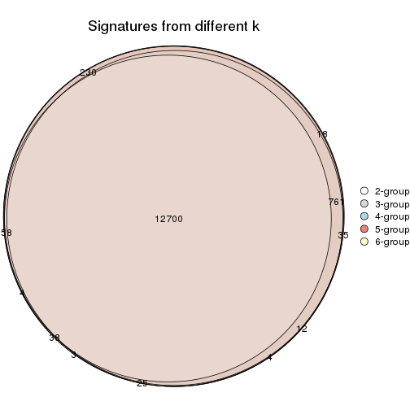
get_signature() returns a data frame invisibly. TO get the list of signatures, the function
call should be assigned to a variable explicitly. In following code, if plot argument is set
to FALSE, no heatmap is plotted while only the differential analysis is performed.
# code only for demonstration
tb = get_signature(res, k = ..., plot = FALSE)
An example of the output of tb is:
#> which_row fdr mean_1 mean_2 scaled_mean_1 scaled_mean_2 km
#> 1 38 0.042760348 8.373488 9.131774 -0.5533452 0.5164555 1
#> 2 40 0.018707592 7.106213 8.469186 -0.6173731 0.5762149 1
#> 3 55 0.019134737 10.221463 11.207825 -0.6159697 0.5749050 1
#> 4 59 0.006059896 5.921854 7.869574 -0.6899429 0.6439467 1
#> 5 60 0.018055526 8.928898 10.211722 -0.6204761 0.5791110 1
#> 6 98 0.009384629 15.714769 14.887706 0.6635654 -0.6193277 2
...
The columns in tb are:
which_row: row indices corresponding to the input matrix.fdr: FDR for the differential test. mean_x: The mean value in group x.scaled_mean_x: The mean value in group x after rows are scaled.km: Row groups if k-means clustering is applied to rows.UMAP plot which shows how samples are separated.
dimension_reduction(res, k = 2, method = "UMAP")
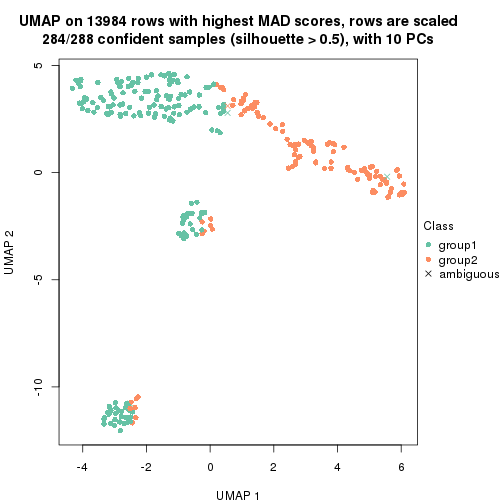
dimension_reduction(res, k = 3, method = "UMAP")
dimension_reduction(res, k = 4, method = "UMAP")
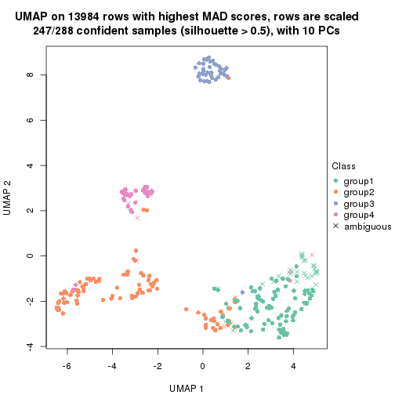
dimension_reduction(res, k = 5, method = "UMAP")
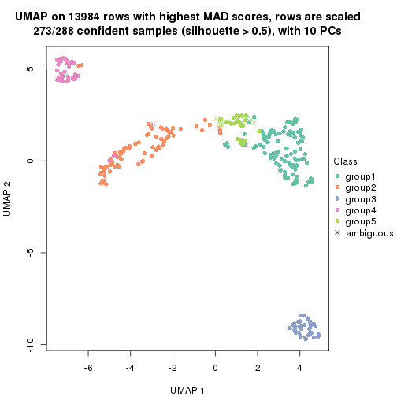
dimension_reduction(res, k = 6, method = "UMAP")
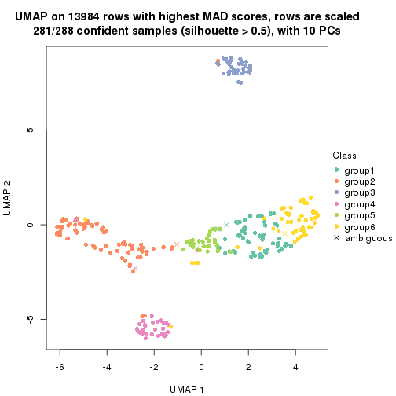
Following heatmap shows how subgroups are split when increasing k:
collect_classes(res)
If matrix rows can be associated to genes, consider to use functional_enrichment(res,
...) to perform function enrichment for the signature genes. See this vignette for more detailed explanations.
The object with results only for a single top-value method and a single partition method can be extracted as:
res = res_list["MAD", "pam"]
# you can also extract it by
# res = res_list["MAD:pam"]
A summary of res and all the functions that can be applied to it:
res
#> A 'ConsensusPartition' object with k = 2, 3, 4, 5, 6.
#> On a matrix with 13984 rows and 288 columns.
#> Top rows (1000, 2000, 3000, 4000, 5000) are extracted by 'MAD' method.
#> Subgroups are detected by 'pam' method.
#> Performed in total 1250 partitions by row resampling.
#> Best k for subgroups seems to be 3.
#>
#> Following methods can be applied to this 'ConsensusPartition' object:
#> [1] "cola_report" "collect_classes" "collect_plots"
#> [4] "collect_stats" "colnames" "compare_signatures"
#> [7] "consensus_heatmap" "dimension_reduction" "functional_enrichment"
#> [10] "get_anno_col" "get_anno" "get_classes"
#> [13] "get_consensus" "get_matrix" "get_membership"
#> [16] "get_param" "get_signatures" "get_stats"
#> [19] "is_best_k" "is_stable_k" "membership_heatmap"
#> [22] "ncol" "nrow" "plot_ecdf"
#> [25] "rownames" "select_partition_number" "show"
#> [28] "suggest_best_k" "test_to_known_factors"
collect_plots() function collects all the plots made from res for all k (number of partitions)
into one single page to provide an easy and fast comparison between different k.
collect_plots(res)
The plots are:
k and the heatmap of
predicted classes for each k.k.k.k.All the plots in panels can be made by individual functions and they are plotted later in this section.
select_partition_number() produces several plots showing different
statistics for choosing “optimized” k. There are following statistics:
k;k, the area increased is defined as \(A_k - A_{k-1}\).The detailed explanations of these statistics can be found in the cola vignette.
Generally speaking, lower PAC score, higher mean silhouette score or higher
concordance corresponds to better partition. Rand index and Jaccard index
measure how similar the current partition is compared to partition with k-1.
If they are too similar, we won't accept k is better than k-1.
select_partition_number(res)
The numeric values for all these statistics can be obtained by get_stats().
get_stats(res)
#> k 1-PAC mean_silhouette concordance area_increased Rand Jaccard
#> 2 2 0.943 0.952 0.980 0.3963 0.613 0.613
#> 3 3 0.907 0.906 0.961 0.4327 0.782 0.656
#> 4 4 0.715 0.757 0.882 0.2685 0.803 0.570
#> 5 5 0.776 0.793 0.878 0.0829 0.873 0.589
#> 6 6 0.876 0.828 0.929 0.0404 0.952 0.781
suggest_best_k() suggests the best \(k\) based on these statistics. The rules are as follows:
suggest_best_k(res)
#> [1] 3
#> attr(,"optional")
#> [1] 2
There is also optional best \(k\) = 2 that is worth to check.
Following shows the table of the partitions (You need to click the show/hide
code output link to see it). The membership matrix (columns with name p*)
is inferred by
clue::cl_consensus()
function with the SE method. Basically the value in the membership matrix
represents the probability to belong to a certain group. The finall class
label for an item is determined with the group with highest probability it
belongs to.
In get_classes() function, the entropy is calculated from the membership
matrix and the silhouette score is calculated from the consensus matrix.
cbind(get_classes(res, k = 2), get_membership(res, k = 2))
#> class entropy silhouette p1 p2
#> SRR1982614 1 0.9710 0.36101 0.600 0.400
#> SRR1982613 2 0.6438 0.79242 0.164 0.836
#> SRR1982612 1 0.0000 0.97775 1.000 0.000
#> SRR1982611 1 0.6712 0.79000 0.824 0.176
#> SRR1982610 1 0.0376 0.97430 0.996 0.004
#> SRR1982609 1 0.0000 0.97775 1.000 0.000
#> SRR1982659 1 0.0000 0.97775 1.000 0.000
#> SRR1982692 2 0.0000 0.98177 0.000 1.000
#> SRR1982722 1 0.0000 0.97775 1.000 0.000
#> SRR1982750 2 0.0000 0.98177 0.000 1.000
#> SRR2095031 2 0.0000 0.98177 0.000 1.000
#> SRR1982780 1 0.0000 0.97775 1.000 0.000
#> SRR1982807 1 0.0000 0.97775 1.000 0.000
#> SRR1982830 1 0.0000 0.97775 1.000 0.000
#> SRR1982829 1 0.7139 0.76346 0.804 0.196
#> SRR1982828 1 0.0000 0.97775 1.000 0.000
#> SRR1982827 1 0.0000 0.97775 1.000 0.000
#> SRR1982826 1 0.0000 0.97775 1.000 0.000
#> SRR1982825 1 0.0000 0.97775 1.000 0.000
#> SRR1982824 1 0.7056 0.76893 0.808 0.192
#> SRR1982823 1 0.0000 0.97775 1.000 0.000
#> SRR1982822 1 0.0000 0.97775 1.000 0.000
#> SRR1982821 1 0.0000 0.97775 1.000 0.000
#> SRR1982820 1 0.0000 0.97775 1.000 0.000
#> SRR1982819 1 0.0000 0.97775 1.000 0.000
#> SRR1982818 1 0.0000 0.97775 1.000 0.000
#> SRR1982817 1 0.0000 0.97775 1.000 0.000
#> SRR1982816 1 0.0000 0.97775 1.000 0.000
#> SRR1982815 1 0.0000 0.97775 1.000 0.000
#> SRR1982814 1 0.0000 0.97775 1.000 0.000
#> SRR1982813 1 0.0000 0.97775 1.000 0.000
#> SRR1982812 2 0.0000 0.98177 0.000 1.000
#> SRR1982811 1 0.0000 0.97775 1.000 0.000
#> SRR1982810 1 0.0000 0.97775 1.000 0.000
#> SRR1982809 1 0.3879 0.90657 0.924 0.076
#> SRR1982808 1 0.0000 0.97775 1.000 0.000
#> SRR1982806 1 0.0000 0.97775 1.000 0.000
#> SRR1982805 1 0.0000 0.97775 1.000 0.000
#> SRR1982804 1 0.0000 0.97775 1.000 0.000
#> SRR1982803 2 0.9996 0.00205 0.488 0.512
#> SRR1982802 1 0.0000 0.97775 1.000 0.000
#> SRR1982801 1 0.0000 0.97775 1.000 0.000
#> SRR1982800 1 0.0000 0.97775 1.000 0.000
#> SRR1982799 1 0.0000 0.97775 1.000 0.000
#> SRR1982798 1 0.0000 0.97775 1.000 0.000
#> SRR1982797 2 0.0000 0.98177 0.000 1.000
#> SRR1982796 1 0.0000 0.97775 1.000 0.000
#> SRR1982795 1 0.0000 0.97775 1.000 0.000
#> SRR1982794 1 0.0000 0.97775 1.000 0.000
#> SRR1982793 1 0.0000 0.97775 1.000 0.000
#> SRR1982792 1 0.0000 0.97775 1.000 0.000
#> SRR1982791 1 0.0000 0.97775 1.000 0.000
#> SRR1982790 2 0.0000 0.98177 0.000 1.000
#> SRR1982789 1 0.0000 0.97775 1.000 0.000
#> SRR1982788 1 0.0000 0.97775 1.000 0.000
#> SRR1982787 1 0.0000 0.97775 1.000 0.000
#> SRR1982786 2 0.0000 0.98177 0.000 1.000
#> SRR1982785 1 0.0000 0.97775 1.000 0.000
#> SRR1982784 1 0.0000 0.97775 1.000 0.000
#> SRR1982783 1 0.7219 0.75780 0.800 0.200
#> SRR1982782 1 0.0000 0.97775 1.000 0.000
#> SRR1982781 1 0.0000 0.97775 1.000 0.000
#> SRR1982779 1 0.0000 0.97775 1.000 0.000
#> SRR1982778 1 0.0000 0.97775 1.000 0.000
#> SRR1982776 2 0.3431 0.91825 0.064 0.936
#> SRR1982777 1 0.0000 0.97775 1.000 0.000
#> SRR1982775 1 0.0000 0.97775 1.000 0.000
#> SRR1982774 1 0.0000 0.97775 1.000 0.000
#> SRR1982772 1 0.0000 0.97775 1.000 0.000
#> SRR1982773 1 0.0000 0.97775 1.000 0.000
#> SRR1982770 1 0.0000 0.97775 1.000 0.000
#> SRR1982771 1 0.0000 0.97775 1.000 0.000
#> SRR1982769 1 0.8955 0.56670 0.688 0.312
#> SRR1982768 1 0.0000 0.97775 1.000 0.000
#> SRR1982767 1 0.0000 0.97775 1.000 0.000
#> SRR1982766 1 0.7139 0.76343 0.804 0.196
#> SRR1982765 1 0.0000 0.97775 1.000 0.000
#> SRR1982764 1 0.0000 0.97775 1.000 0.000
#> SRR1982762 1 0.0000 0.97775 1.000 0.000
#> SRR1982760 1 0.0000 0.97775 1.000 0.000
#> SRR1982761 1 0.0000 0.97775 1.000 0.000
#> SRR1982763 1 0.6712 0.79000 0.824 0.176
#> SRR1982759 1 0.0000 0.97775 1.000 0.000
#> SRR1982758 1 0.0000 0.97775 1.000 0.000
#> SRR1982757 1 0.0000 0.97775 1.000 0.000
#> SRR1982755 1 0.0000 0.97775 1.000 0.000
#> SRR1982754 1 0.0000 0.97775 1.000 0.000
#> SRR1982756 1 0.0000 0.97775 1.000 0.000
#> SRR1982753 1 0.0000 0.97775 1.000 0.000
#> SRR1982751 2 0.0000 0.98177 0.000 1.000
#> SRR1982752 2 0.0000 0.98177 0.000 1.000
#> SRR1982749 2 0.0000 0.98177 0.000 1.000
#> SRR1982748 2 0.0000 0.98177 0.000 1.000
#> SRR1982747 2 0.0000 0.98177 0.000 1.000
#> SRR1982746 2 0.0000 0.98177 0.000 1.000
#> SRR1982745 2 0.0000 0.98177 0.000 1.000
#> SRR1982743 2 0.0000 0.98177 0.000 1.000
#> SRR1982744 2 0.0000 0.98177 0.000 1.000
#> SRR1982741 2 0.0000 0.98177 0.000 1.000
#> SRR1982742 2 0.0000 0.98177 0.000 1.000
#> SRR2095014 2 0.0000 0.98177 0.000 1.000
#> SRR1982740 2 0.0000 0.98177 0.000 1.000
#> SRR1982739 2 0.0000 0.98177 0.000 1.000
#> SRR1982737 2 0.0000 0.98177 0.000 1.000
#> SRR1982738 2 0.9427 0.41704 0.360 0.640
#> SRR1982736 2 0.0000 0.98177 0.000 1.000
#> SRR1982735 2 0.0000 0.98177 0.000 1.000
#> SRR1982733 2 0.0000 0.98177 0.000 1.000
#> SRR1982732 2 0.0000 0.98177 0.000 1.000
#> SRR2095004 2 0.0000 0.98177 0.000 1.000
#> SRR1982734 2 0.0000 0.98177 0.000 1.000
#> SRR1982731 2 0.0000 0.98177 0.000 1.000
#> SRR1982729 2 0.0000 0.98177 0.000 1.000
#> SRR1982730 2 0.0000 0.98177 0.000 1.000
#> SRR1982728 2 0.0000 0.98177 0.000 1.000
#> SRR1982727 2 0.0000 0.98177 0.000 1.000
#> SRR1982726 1 0.0000 0.97775 1.000 0.000
#> SRR1982723 1 0.7219 0.75780 0.800 0.200
#> SRR1982725 1 0.0000 0.97775 1.000 0.000
#> SRR1982724 1 0.0000 0.97775 1.000 0.000
#> SRR1982721 1 0.0000 0.97775 1.000 0.000
#> SRR1982720 1 0.0000 0.97775 1.000 0.000
#> SRR1982719 1 0.0000 0.97775 1.000 0.000
#> SRR1982718 2 0.0000 0.98177 0.000 1.000
#> SRR1982717 2 0.0000 0.98177 0.000 1.000
#> SRR1982715 2 0.0000 0.98177 0.000 1.000
#> SRR1982714 1 0.0000 0.97775 1.000 0.000
#> SRR1982716 2 0.0000 0.98177 0.000 1.000
#> SRR1982713 1 0.0000 0.97775 1.000 0.000
#> SRR1982711 2 0.0000 0.98177 0.000 1.000
#> SRR1982712 2 0.0000 0.98177 0.000 1.000
#> SRR1982710 2 0.0000 0.98177 0.000 1.000
#> SRR1982708 2 0.0000 0.98177 0.000 1.000
#> SRR1982707 2 0.0000 0.98177 0.000 1.000
#> SRR1982709 1 0.0000 0.97775 1.000 0.000
#> SRR1982705 2 0.0000 0.98177 0.000 1.000
#> SRR1982706 1 0.0000 0.97775 1.000 0.000
#> SRR1982704 1 0.0000 0.97775 1.000 0.000
#> SRR1982702 2 0.0000 0.98177 0.000 1.000
#> SRR1982703 2 0.0000 0.98177 0.000 1.000
#> SRR1982701 1 0.9661 0.38237 0.608 0.392
#> SRR1982700 2 0.0000 0.98177 0.000 1.000
#> SRR1982697 2 0.0000 0.98177 0.000 1.000
#> SRR1982698 2 0.0000 0.98177 0.000 1.000
#> SRR1982699 2 0.0000 0.98177 0.000 1.000
#> SRR1982696 2 0.0000 0.98177 0.000 1.000
#> SRR1982695 1 0.0000 0.97775 1.000 0.000
#> SRR1982694 1 0.0000 0.97775 1.000 0.000
#> SRR1982693 2 0.0000 0.98177 0.000 1.000
#> SRR1982690 2 0.0000 0.98177 0.000 1.000
#> SRR1982691 2 0.0000 0.98177 0.000 1.000
#> SRR1982689 2 0.0000 0.98177 0.000 1.000
#> SRR1982688 1 0.0000 0.97775 1.000 0.000
#> SRR1982687 1 0.7219 0.75780 0.800 0.200
#> SRR1982686 1 0.7139 0.76343 0.804 0.196
#> SRR1982685 2 0.0000 0.98177 0.000 1.000
#> SRR1982684 2 0.0000 0.98177 0.000 1.000
#> SRR1982683 1 0.0000 0.97775 1.000 0.000
#> SRR1982681 2 0.0000 0.98177 0.000 1.000
#> SRR1982682 2 0.0000 0.98177 0.000 1.000
#> SRR1982680 2 0.0000 0.98177 0.000 1.000
#> SRR1982679 1 0.0000 0.97775 1.000 0.000
#> SRR1982678 2 0.0000 0.98177 0.000 1.000
#> SRR1982677 2 0.0000 0.98177 0.000 1.000
#> SRR1982676 1 0.0000 0.97775 1.000 0.000
#> SRR1982675 1 0.0000 0.97775 1.000 0.000
#> SRR1982674 2 0.7453 0.71958 0.212 0.788
#> SRR1982671 1 0.0000 0.97775 1.000 0.000
#> SRR1982673 1 0.0000 0.97775 1.000 0.000
#> SRR1982672 1 0.0000 0.97775 1.000 0.000
#> SRR1982670 1 0.0000 0.97775 1.000 0.000
#> SRR1982669 1 0.0000 0.97775 1.000 0.000
#> SRR1982667 1 0.0000 0.97775 1.000 0.000
#> SRR1982668 1 0.9552 0.42326 0.624 0.376
#> SRR1982666 1 0.0000 0.97775 1.000 0.000
#> SRR1982665 1 0.0000 0.97775 1.000 0.000
#> SRR1982664 1 0.0000 0.97775 1.000 0.000
#> SRR1982663 1 0.0000 0.97775 1.000 0.000
#> SRR1982662 1 0.0000 0.97775 1.000 0.000
#> SRR1982661 1 0.0000 0.97775 1.000 0.000
#> SRR1982660 1 0.0000 0.97775 1.000 0.000
#> SRR1982658 1 0.0000 0.97775 1.000 0.000
#> SRR1982657 1 0.0000 0.97775 1.000 0.000
#> SRR1982656 2 0.0000 0.98177 0.000 1.000
#> SRR1982654 1 0.0000 0.97775 1.000 0.000
#> SRR1982655 1 0.0000 0.97775 1.000 0.000
#> SRR1982653 1 0.0000 0.97775 1.000 0.000
#> SRR1982652 1 0.0000 0.97775 1.000 0.000
#> SRR1982651 1 0.0000 0.97775 1.000 0.000
#> SRR1982649 1 0.9044 0.55027 0.680 0.320
#> SRR1982650 1 0.0000 0.97775 1.000 0.000
#> SRR1982648 1 0.0000 0.97775 1.000 0.000
#> SRR1982647 1 0.0000 0.97775 1.000 0.000
#> SRR1982646 1 0.0000 0.97775 1.000 0.000
#> SRR1982645 1 0.0000 0.97775 1.000 0.000
#> SRR1982644 1 0.0000 0.97775 1.000 0.000
#> SRR1982642 1 0.0000 0.97775 1.000 0.000
#> SRR1982643 1 0.0000 0.97775 1.000 0.000
#> SRR1982641 1 0.0000 0.97775 1.000 0.000
#> SRR1982640 1 0.0000 0.97775 1.000 0.000
#> SRR1982638 1 0.0000 0.97775 1.000 0.000
#> SRR1982639 1 0.0000 0.97775 1.000 0.000
#> SRR1982637 1 0.0000 0.97775 1.000 0.000
#> SRR1982635 1 0.0000 0.97775 1.000 0.000
#> SRR1982636 1 0.0000 0.97775 1.000 0.000
#> SRR1982633 1 0.0000 0.97775 1.000 0.000
#> SRR1982632 1 0.0000 0.97775 1.000 0.000
#> SRR1982631 1 0.0000 0.97775 1.000 0.000
#> SRR1982634 1 0.0000 0.97775 1.000 0.000
#> SRR1982628 1 0.0000 0.97775 1.000 0.000
#> SRR1982629 1 0.0000 0.97775 1.000 0.000
#> SRR1982627 1 0.0000 0.97775 1.000 0.000
#> SRR1982625 1 0.0000 0.97775 1.000 0.000
#> SRR1982626 1 0.0000 0.97775 1.000 0.000
#> SRR1982624 1 0.3431 0.91856 0.936 0.064
#> SRR1982623 1 0.0000 0.97775 1.000 0.000
#> SRR1982622 1 0.0000 0.97775 1.000 0.000
#> SRR1982621 1 0.0000 0.97775 1.000 0.000
#> SRR1982620 1 0.0000 0.97775 1.000 0.000
#> SRR1982619 1 0.0000 0.97775 1.000 0.000
#> SRR1982618 1 0.0000 0.97775 1.000 0.000
#> SRR1982617 2 0.0000 0.98177 0.000 1.000
#> SRR1982616 1 0.0000 0.97775 1.000 0.000
#> SRR1982615 1 0.0000 0.97775 1.000 0.000
#> SRR1982608 2 0.0000 0.98177 0.000 1.000
#> SRR1982607 1 0.0000 0.97775 1.000 0.000
#> SRR1982606 1 0.0000 0.97775 1.000 0.000
#> SRR1982605 1 0.0000 0.97775 1.000 0.000
#> SRR1982604 1 0.0000 0.97775 1.000 0.000
#> SRR1982603 1 0.0000 0.97775 1.000 0.000
#> SRR1982602 1 0.0000 0.97775 1.000 0.000
#> SRR1982601 1 0.0000 0.97775 1.000 0.000
#> SRR1982599 1 0.0000 0.97775 1.000 0.000
#> SRR1982600 2 0.0000 0.98177 0.000 1.000
#> SRR1982598 1 0.0000 0.97775 1.000 0.000
#> SRR1982597 1 0.0000 0.97775 1.000 0.000
#> SRR1982595 1 0.0000 0.97775 1.000 0.000
#> SRR1982596 1 0.0000 0.97775 1.000 0.000
#> SRR1982594 1 0.0000 0.97775 1.000 0.000
#> SRR1982593 1 0.0000 0.97775 1.000 0.000
#> SRR1982592 1 0.9710 0.36101 0.600 0.400
#> SRR1982591 1 0.0000 0.97775 1.000 0.000
#> SRR1982590 2 0.0000 0.98177 0.000 1.000
#> SRR1982589 1 0.0000 0.97775 1.000 0.000
#> SRR1982588 1 0.0000 0.97775 1.000 0.000
#> SRR1982587 1 0.0000 0.97775 1.000 0.000
#> SRR1982586 1 0.0000 0.97775 1.000 0.000
#> SRR1982584 1 0.7219 0.75780 0.800 0.200
#> SRR2096514 1 0.0000 0.97775 1.000 0.000
#> SRR2096513 1 0.0000 0.97775 1.000 0.000
#> SRR2096511 1 0.0000 0.97775 1.000 0.000
#> SRR2096512 2 0.0000 0.98177 0.000 1.000
#> SRR2096509 1 0.0000 0.97775 1.000 0.000
#> SRR2096510 1 0.0000 0.97775 1.000 0.000
#> SRR2096508 2 0.0000 0.98177 0.000 1.000
#> SRR2096507 1 0.3733 0.91047 0.928 0.072
#> SRR2096504 1 0.0000 0.97775 1.000 0.000
#> SRR2096506 1 0.0000 0.97775 1.000 0.000
#> SRR2096505 1 0.0000 0.97775 1.000 0.000
#> SRR2096503 2 0.0000 0.98177 0.000 1.000
#> SRR2096500 1 0.0000 0.97775 1.000 0.000
#> SRR2096501 1 0.0000 0.97775 1.000 0.000
#> SRR2096502 1 0.0000 0.97775 1.000 0.000
#> SRR2096499 1 0.0000 0.97775 1.000 0.000
#> SRR2096498 1 0.0000 0.97775 1.000 0.000
#> SRR2096496 1 0.0000 0.97775 1.000 0.000
#> SRR2096497 1 0.0000 0.97775 1.000 0.000
#> SRR2096495 1 0.0000 0.97775 1.000 0.000
#> SRR2096494 1 0.0000 0.97775 1.000 0.000
#> SRR2096492 1 0.0000 0.97775 1.000 0.000
#> SRR2096491 2 0.0000 0.98177 0.000 1.000
#> SRR2096493 1 0.0000 0.97775 1.000 0.000
#> SRR2096490 1 0.0000 0.97775 1.000 0.000
#> SRR2096488 1 0.0000 0.97775 1.000 0.000
#> SRR2096489 1 0.0000 0.97775 1.000 0.000
#> SRR2096487 1 0.0000 0.97775 1.000 0.000
#> SRR2096484 1 0.0000 0.97775 1.000 0.000
#> SRR2096486 1 0.2043 0.94921 0.968 0.032
#> SRR2096485 1 0.0000 0.97775 1.000 0.000
#> SRR2096483 1 0.0000 0.97775 1.000 0.000
#> SRR2096482 1 0.0000 0.97775 1.000 0.000
#> SRR2096481 1 0.7139 0.76343 0.804 0.196
#> SRR2096520 1 0.0000 0.97775 1.000 0.000
#> SRR2096519 1 0.0000 0.97775 1.000 0.000
#> SRR2096518 1 0.0000 0.97775 1.000 0.000
#> SRR2096516 1 0.0000 0.97775 1.000 0.000
#> SRR2096517 1 0.0000 0.97775 1.000 0.000
#> SRR2096515 1 0.0000 0.97775 1.000 0.000
cbind(get_classes(res, k = 3), get_membership(res, k = 3))
#> class entropy silhouette p1 p2 p3
#> SRR1982614 1 0.6286 0.109 0.536 0.464 0.000
#> SRR1982613 2 0.5926 0.463 0.356 0.644 0.000
#> SRR1982612 1 0.0892 0.959 0.980 0.000 0.020
#> SRR1982611 1 0.4921 0.782 0.816 0.164 0.020
#> SRR1982610 1 0.1315 0.954 0.972 0.008 0.020
#> SRR1982609 1 0.0000 0.967 1.000 0.000 0.000
#> SRR1982659 1 0.0000 0.967 1.000 0.000 0.000
#> SRR1982692 2 0.0000 0.924 0.000 1.000 0.000
#> SRR1982722 1 0.0000 0.967 1.000 0.000 0.000
#> SRR1982750 2 0.0000 0.924 0.000 1.000 0.000
#> SRR2095031 2 0.0000 0.924 0.000 1.000 0.000
#> SRR1982780 1 0.0000 0.967 1.000 0.000 0.000
#> SRR1982807 1 0.0892 0.959 0.980 0.000 0.020
#> SRR1982830 1 0.0892 0.959 0.980 0.000 0.020
#> SRR1982829 1 0.5092 0.766 0.804 0.176 0.020
#> SRR1982828 1 0.0892 0.959 0.980 0.000 0.020
#> SRR1982827 1 0.0892 0.959 0.980 0.000 0.020
#> SRR1982826 1 0.0000 0.967 1.000 0.000 0.000
#> SRR1982825 1 0.0000 0.967 1.000 0.000 0.000
#> SRR1982824 1 0.5036 0.772 0.808 0.172 0.020
#> SRR1982823 1 0.0892 0.959 0.980 0.000 0.020
#> SRR1982822 1 0.0892 0.959 0.980 0.000 0.020
#> SRR1982821 1 0.0892 0.959 0.980 0.000 0.020
#> SRR1982820 1 0.0000 0.967 1.000 0.000 0.000
#> SRR1982819 1 0.0000 0.967 1.000 0.000 0.000
#> SRR1982818 1 0.0237 0.965 0.996 0.000 0.004
#> SRR1982817 1 0.0892 0.959 0.980 0.000 0.020
#> SRR1982816 1 0.0000 0.967 1.000 0.000 0.000
#> SRR1982815 1 0.0000 0.967 1.000 0.000 0.000
#> SRR1982814 1 0.0000 0.967 1.000 0.000 0.000
#> SRR1982813 1 0.0892 0.959 0.980 0.000 0.020
#> SRR1982812 2 0.0000 0.924 0.000 1.000 0.000
#> SRR1982811 1 0.0892 0.959 0.980 0.000 0.020
#> SRR1982810 1 0.0000 0.967 1.000 0.000 0.000
#> SRR1982809 1 0.3234 0.894 0.908 0.072 0.020
#> SRR1982808 1 0.0892 0.959 0.980 0.000 0.020
#> SRR1982806 1 0.0000 0.967 1.000 0.000 0.000
#> SRR1982805 1 0.0000 0.967 1.000 0.000 0.000
#> SRR1982804 1 0.0892 0.959 0.980 0.000 0.020
#> SRR1982803 2 0.6758 0.436 0.360 0.620 0.020
#> SRR1982802 1 0.0000 0.967 1.000 0.000 0.000
#> SRR1982801 1 0.0892 0.959 0.980 0.000 0.020
#> SRR1982800 1 0.0892 0.959 0.980 0.000 0.020
#> SRR1982799 1 0.0000 0.967 1.000 0.000 0.000
#> SRR1982798 1 0.0892 0.959 0.980 0.000 0.020
#> SRR1982797 2 0.0000 0.924 0.000 1.000 0.000
#> SRR1982796 1 0.0000 0.967 1.000 0.000 0.000
#> SRR1982795 1 0.0000 0.967 1.000 0.000 0.000
#> SRR1982794 1 0.0000 0.967 1.000 0.000 0.000
#> SRR1982793 1 0.0000 0.967 1.000 0.000 0.000
#> SRR1982792 1 0.0000 0.967 1.000 0.000 0.000
#> SRR1982791 1 0.0000 0.967 1.000 0.000 0.000
#> SRR1982790 2 0.0000 0.924 0.000 1.000 0.000
#> SRR1982789 1 0.0000 0.967 1.000 0.000 0.000
#> SRR1982788 1 0.6126 0.321 0.600 0.000 0.400
#> SRR1982787 1 0.0000 0.967 1.000 0.000 0.000
#> SRR1982786 2 0.0000 0.924 0.000 1.000 0.000
#> SRR1982785 1 0.0000 0.967 1.000 0.000 0.000
#> SRR1982784 1 0.0892 0.954 0.980 0.000 0.020
#> SRR1982783 3 0.9460 0.149 0.396 0.180 0.424
#> SRR1982782 1 0.3551 0.838 0.868 0.000 0.132
#> SRR1982781 1 0.0237 0.965 0.996 0.000 0.004
#> SRR1982779 1 0.4002 0.809 0.840 0.000 0.160
#> SRR1982778 1 0.2711 0.893 0.912 0.000 0.088
#> SRR1982776 2 0.6192 0.228 0.000 0.580 0.420
#> SRR1982777 1 0.0000 0.967 1.000 0.000 0.000
#> SRR1982775 1 0.6008 0.422 0.628 0.000 0.372
#> SRR1982774 1 0.0000 0.967 1.000 0.000 0.000
#> SRR1982772 1 0.6154 0.328 0.592 0.000 0.408
#> SRR1982773 1 0.0000 0.967 1.000 0.000 0.000
#> SRR1982770 1 0.0000 0.967 1.000 0.000 0.000
#> SRR1982771 1 0.2796 0.901 0.908 0.000 0.092
#> SRR1982769 1 0.5859 0.471 0.656 0.344 0.000
#> SRR1982768 1 0.0000 0.967 1.000 0.000 0.000
#> SRR1982767 1 0.0000 0.967 1.000 0.000 0.000
#> SRR1982766 2 0.7624 0.329 0.392 0.560 0.048
#> SRR1982765 1 0.0000 0.967 1.000 0.000 0.000
#> SRR1982764 1 0.0000 0.967 1.000 0.000 0.000
#> SRR1982762 1 0.0000 0.967 1.000 0.000 0.000
#> SRR1982760 1 0.0000 0.967 1.000 0.000 0.000
#> SRR1982761 1 0.0000 0.967 1.000 0.000 0.000
#> SRR1982763 2 0.2636 0.857 0.048 0.932 0.020
#> SRR1982759 1 0.0892 0.959 0.980 0.000 0.020
#> SRR1982758 1 0.0000 0.967 1.000 0.000 0.000
#> SRR1982757 1 0.3879 0.819 0.848 0.000 0.152
#> SRR1982755 1 0.0892 0.959 0.980 0.000 0.020
#> SRR1982754 1 0.0892 0.959 0.980 0.000 0.020
#> SRR1982756 1 0.0000 0.967 1.000 0.000 0.000
#> SRR1982753 1 0.3482 0.848 0.872 0.000 0.128
#> SRR1982751 2 0.0000 0.924 0.000 1.000 0.000
#> SRR1982752 2 0.0000 0.924 0.000 1.000 0.000
#> SRR1982749 2 0.0000 0.924 0.000 1.000 0.000
#> SRR1982748 2 0.0000 0.924 0.000 1.000 0.000
#> SRR1982747 2 0.0000 0.924 0.000 1.000 0.000
#> SRR1982746 2 0.0000 0.924 0.000 1.000 0.000
#> SRR1982745 2 0.0000 0.924 0.000 1.000 0.000
#> SRR1982743 2 0.0000 0.924 0.000 1.000 0.000
#> SRR1982744 2 0.0000 0.924 0.000 1.000 0.000
#> SRR1982741 2 0.0000 0.924 0.000 1.000 0.000
#> SRR1982742 2 0.0000 0.924 0.000 1.000 0.000
#> SRR2095014 2 0.0000 0.924 0.000 1.000 0.000
#> SRR1982740 2 0.0000 0.924 0.000 1.000 0.000
#> SRR1982739 2 0.0000 0.924 0.000 1.000 0.000
#> SRR1982737 2 0.0000 0.924 0.000 1.000 0.000
#> SRR1982738 2 0.0000 0.924 0.000 1.000 0.000
#> SRR1982736 2 0.0000 0.924 0.000 1.000 0.000
#> SRR1982735 2 0.0000 0.924 0.000 1.000 0.000
#> SRR1982733 2 0.0000 0.924 0.000 1.000 0.000
#> SRR1982732 2 0.0000 0.924 0.000 1.000 0.000
#> SRR2095004 2 0.0000 0.924 0.000 1.000 0.000
#> SRR1982734 2 0.0000 0.924 0.000 1.000 0.000
#> SRR1982731 2 0.0000 0.924 0.000 1.000 0.000
#> SRR1982729 2 0.0000 0.924 0.000 1.000 0.000
#> SRR1982730 2 0.0000 0.924 0.000 1.000 0.000
#> SRR1982728 2 0.0000 0.924 0.000 1.000 0.000
#> SRR1982727 2 0.0237 0.921 0.004 0.996 0.000
#> SRR1982726 1 0.3482 0.848 0.872 0.000 0.128
#> SRR1982723 1 0.4555 0.747 0.800 0.200 0.000
#> SRR1982725 1 0.4346 0.793 0.816 0.000 0.184
#> SRR1982724 1 0.1031 0.956 0.976 0.000 0.024
#> SRR1982721 1 0.0000 0.967 1.000 0.000 0.000
#> SRR1982720 1 0.0000 0.967 1.000 0.000 0.000
#> SRR1982719 1 0.0000 0.967 1.000 0.000 0.000
#> SRR1982718 2 0.0000 0.924 0.000 1.000 0.000
#> SRR1982717 2 0.0000 0.924 0.000 1.000 0.000
#> SRR1982715 2 0.0000 0.924 0.000 1.000 0.000
#> SRR1982714 2 0.6542 0.608 0.204 0.736 0.060
#> SRR1982716 2 0.0000 0.924 0.000 1.000 0.000
#> SRR1982713 2 0.5633 0.638 0.208 0.768 0.024
#> SRR1982711 2 0.0000 0.924 0.000 1.000 0.000
#> SRR1982712 2 0.0000 0.924 0.000 1.000 0.000
#> SRR1982710 2 0.0000 0.924 0.000 1.000 0.000
#> SRR1982708 2 0.0000 0.924 0.000 1.000 0.000
#> SRR1982707 2 0.0000 0.924 0.000 1.000 0.000
#> SRR1982709 1 0.0892 0.959 0.980 0.000 0.020
#> SRR1982705 2 0.0000 0.924 0.000 1.000 0.000
#> SRR1982706 1 0.0000 0.967 1.000 0.000 0.000
#> SRR1982704 1 0.0747 0.960 0.984 0.000 0.016
#> SRR1982702 2 0.0000 0.924 0.000 1.000 0.000
#> SRR1982703 2 0.0000 0.924 0.000 1.000 0.000
#> SRR1982701 2 0.5926 0.457 0.356 0.644 0.000
#> SRR1982700 2 0.0000 0.924 0.000 1.000 0.000
#> SRR1982697 2 0.0000 0.924 0.000 1.000 0.000
#> SRR1982698 2 0.0000 0.924 0.000 1.000 0.000
#> SRR1982699 2 0.0000 0.924 0.000 1.000 0.000
#> SRR1982696 2 0.0000 0.924 0.000 1.000 0.000
#> SRR1982695 1 0.0000 0.967 1.000 0.000 0.000
#> SRR1982694 1 0.0000 0.967 1.000 0.000 0.000
#> SRR1982693 2 0.0000 0.924 0.000 1.000 0.000
#> SRR1982690 2 0.0000 0.924 0.000 1.000 0.000
#> SRR1982691 2 0.0000 0.924 0.000 1.000 0.000
#> SRR1982689 2 0.0000 0.924 0.000 1.000 0.000
#> SRR1982688 1 0.0000 0.967 1.000 0.000 0.000
#> SRR1982687 2 0.5016 0.622 0.240 0.760 0.000
#> SRR1982686 1 0.5968 0.421 0.636 0.364 0.000
#> SRR1982685 2 0.0000 0.924 0.000 1.000 0.000
#> SRR1982684 2 0.0000 0.924 0.000 1.000 0.000
#> SRR1982683 1 0.0000 0.967 1.000 0.000 0.000
#> SRR1982681 2 0.0000 0.924 0.000 1.000 0.000
#> SRR1982682 2 0.0000 0.924 0.000 1.000 0.000
#> SRR1982680 2 0.0000 0.924 0.000 1.000 0.000
#> SRR1982679 1 0.0000 0.967 1.000 0.000 0.000
#> SRR1982678 2 0.0000 0.924 0.000 1.000 0.000
#> SRR1982677 2 0.0000 0.924 0.000 1.000 0.000
#> SRR1982676 1 0.0000 0.967 1.000 0.000 0.000
#> SRR1982675 1 0.0000 0.967 1.000 0.000 0.000
#> SRR1982674 2 0.0000 0.924 0.000 1.000 0.000
#> SRR1982671 1 0.0000 0.967 1.000 0.000 0.000
#> SRR1982673 1 0.0000 0.967 1.000 0.000 0.000
#> SRR1982672 1 0.0000 0.967 1.000 0.000 0.000
#> SRR1982670 1 0.0000 0.967 1.000 0.000 0.000
#> SRR1982669 1 0.0000 0.967 1.000 0.000 0.000
#> SRR1982667 1 0.0000 0.967 1.000 0.000 0.000
#> SRR1982668 2 0.6359 0.440 0.364 0.628 0.008
#> SRR1982666 1 0.0000 0.967 1.000 0.000 0.000
#> SRR1982665 1 0.0000 0.967 1.000 0.000 0.000
#> SRR1982664 1 0.0892 0.959 0.980 0.000 0.020
#> SRR1982663 1 0.0000 0.967 1.000 0.000 0.000
#> SRR1982662 1 0.0000 0.967 1.000 0.000 0.000
#> SRR1982661 1 0.0892 0.959 0.980 0.000 0.020
#> SRR1982660 1 0.0000 0.967 1.000 0.000 0.000
#> SRR1982658 1 0.0000 0.967 1.000 0.000 0.000
#> SRR1982657 1 0.0000 0.967 1.000 0.000 0.000
#> SRR1982656 2 0.0237 0.921 0.004 0.996 0.000
#> SRR1982654 1 0.0000 0.967 1.000 0.000 0.000
#> SRR1982655 1 0.0000 0.967 1.000 0.000 0.000
#> SRR1982653 1 0.0000 0.967 1.000 0.000 0.000
#> SRR1982652 1 0.0000 0.967 1.000 0.000 0.000
#> SRR1982651 1 0.0000 0.967 1.000 0.000 0.000
#> SRR1982649 2 0.6832 0.397 0.376 0.604 0.020
#> SRR1982650 1 0.0237 0.965 0.996 0.000 0.004
#> SRR1982648 1 0.0000 0.967 1.000 0.000 0.000
#> SRR1982647 1 0.0000 0.967 1.000 0.000 0.000
#> SRR1982646 1 0.0892 0.959 0.980 0.000 0.020
#> SRR1982645 1 0.0000 0.967 1.000 0.000 0.000
#> SRR1982644 1 0.0000 0.967 1.000 0.000 0.000
#> SRR1982642 1 0.0000 0.967 1.000 0.000 0.000
#> SRR1982643 1 0.0000 0.967 1.000 0.000 0.000
#> SRR1982641 1 0.0000 0.967 1.000 0.000 0.000
#> SRR1982640 1 0.0000 0.967 1.000 0.000 0.000
#> SRR1982638 1 0.1163 0.948 0.972 0.000 0.028
#> SRR1982639 1 0.0237 0.964 0.996 0.000 0.004
#> SRR1982637 1 0.0000 0.967 1.000 0.000 0.000
#> SRR1982635 1 0.0000 0.967 1.000 0.000 0.000
#> SRR1982636 1 0.0892 0.959 0.980 0.000 0.020
#> SRR1982633 1 0.0000 0.967 1.000 0.000 0.000
#> SRR1982632 1 0.0892 0.959 0.980 0.000 0.020
#> SRR1982631 1 0.0000 0.967 1.000 0.000 0.000
#> SRR1982634 1 0.0892 0.959 0.980 0.000 0.020
#> SRR1982628 1 0.0892 0.959 0.980 0.000 0.020
#> SRR1982629 1 0.0000 0.967 1.000 0.000 0.000
#> SRR1982627 1 0.0000 0.967 1.000 0.000 0.000
#> SRR1982625 1 0.0000 0.967 1.000 0.000 0.000
#> SRR1982626 1 0.0892 0.959 0.980 0.000 0.020
#> SRR1982624 1 0.2846 0.911 0.924 0.056 0.020
#> SRR1982623 1 0.0000 0.967 1.000 0.000 0.000
#> SRR1982622 1 0.0000 0.967 1.000 0.000 0.000
#> SRR1982621 1 0.0000 0.967 1.000 0.000 0.000
#> SRR1982620 1 0.0000 0.967 1.000 0.000 0.000
#> SRR1982619 1 0.1129 0.956 0.976 0.004 0.020
#> SRR1982618 1 0.0000 0.967 1.000 0.000 0.000
#> SRR1982617 2 0.0000 0.924 0.000 1.000 0.000
#> SRR1982616 1 0.0892 0.959 0.980 0.000 0.020
#> SRR1982615 1 0.0000 0.967 1.000 0.000 0.000
#> SRR1982608 2 0.0000 0.924 0.000 1.000 0.000
#> SRR1982607 1 0.0000 0.967 1.000 0.000 0.000
#> SRR1982606 1 0.0000 0.967 1.000 0.000 0.000
#> SRR1982605 1 0.0892 0.959 0.980 0.000 0.020
#> SRR1982604 1 0.0000 0.967 1.000 0.000 0.000
#> SRR1982603 1 0.0000 0.967 1.000 0.000 0.000
#> SRR1982602 1 0.0000 0.967 1.000 0.000 0.000
#> SRR1982601 1 0.0000 0.967 1.000 0.000 0.000
#> SRR1982599 1 0.0892 0.959 0.980 0.000 0.020
#> SRR1982600 2 0.0000 0.924 0.000 1.000 0.000
#> SRR1982598 1 0.0000 0.967 1.000 0.000 0.000
#> SRR1982597 1 0.0000 0.967 1.000 0.000 0.000
#> SRR1982595 1 0.0000 0.967 1.000 0.000 0.000
#> SRR1982596 1 0.0000 0.967 1.000 0.000 0.000
#> SRR1982594 1 0.0892 0.959 0.980 0.000 0.020
#> SRR1982593 1 0.0000 0.967 1.000 0.000 0.000
#> SRR1982592 2 0.6777 0.426 0.364 0.616 0.020
#> SRR1982591 1 0.0892 0.959 0.980 0.000 0.020
#> SRR1982590 2 0.0237 0.921 0.004 0.996 0.000
#> SRR1982589 1 0.0892 0.959 0.980 0.000 0.020
#> SRR1982588 1 0.0000 0.967 1.000 0.000 0.000
#> SRR1982587 1 0.0000 0.967 1.000 0.000 0.000
#> SRR1982586 1 0.0000 0.967 1.000 0.000 0.000
#> SRR1982584 2 0.6896 0.355 0.392 0.588 0.020
#> SRR2096514 3 0.0892 0.954 0.020 0.000 0.980
#> SRR2096513 3 0.0000 0.954 0.000 0.000 1.000
#> SRR2096511 3 0.0892 0.954 0.020 0.000 0.980
#> SRR2096512 3 0.5905 0.420 0.000 0.352 0.648
#> SRR2096509 3 0.0892 0.954 0.020 0.000 0.980
#> SRR2096510 3 0.0000 0.954 0.000 0.000 1.000
#> SRR2096508 2 0.0000 0.924 0.000 1.000 0.000
#> SRR2096507 3 0.0000 0.954 0.000 0.000 1.000
#> SRR2096504 3 0.0424 0.955 0.008 0.000 0.992
#> SRR2096506 3 0.0000 0.954 0.000 0.000 1.000
#> SRR2096505 3 0.0000 0.954 0.000 0.000 1.000
#> SRR2096503 2 0.2537 0.851 0.000 0.920 0.080
#> SRR2096500 3 0.0892 0.954 0.020 0.000 0.980
#> SRR2096501 3 0.0000 0.954 0.000 0.000 1.000
#> SRR2096502 3 0.0892 0.954 0.020 0.000 0.980
#> SRR2096499 3 0.0000 0.954 0.000 0.000 1.000
#> SRR2096498 3 0.3941 0.790 0.156 0.000 0.844
#> SRR2096496 3 0.0000 0.954 0.000 0.000 1.000
#> SRR2096497 3 0.0892 0.954 0.020 0.000 0.980
#> SRR2096495 3 0.0424 0.955 0.008 0.000 0.992
#> SRR2096494 3 0.0892 0.954 0.020 0.000 0.980
#> SRR2096492 3 0.0000 0.954 0.000 0.000 1.000
#> SRR2096491 3 0.0000 0.954 0.000 0.000 1.000
#> SRR2096493 3 0.0747 0.954 0.016 0.000 0.984
#> SRR2096490 3 0.0000 0.954 0.000 0.000 1.000
#> SRR2096488 3 0.0000 0.954 0.000 0.000 1.000
#> SRR2096489 3 0.0000 0.954 0.000 0.000 1.000
#> SRR2096487 3 0.0000 0.954 0.000 0.000 1.000
#> SRR2096484 3 0.0892 0.954 0.020 0.000 0.980
#> SRR2096486 3 0.0000 0.954 0.000 0.000 1.000
#> SRR2096485 3 0.0892 0.954 0.020 0.000 0.980
#> SRR2096483 3 0.0892 0.954 0.020 0.000 0.980
#> SRR2096482 3 0.0892 0.954 0.020 0.000 0.980
#> SRR2096481 3 0.0000 0.954 0.000 0.000 1.000
#> SRR2096520 3 0.0892 0.954 0.020 0.000 0.980
#> SRR2096519 3 0.1411 0.932 0.036 0.000 0.964
#> SRR2096518 3 0.0892 0.954 0.020 0.000 0.980
#> SRR2096516 1 0.1860 0.924 0.948 0.000 0.052
#> SRR2096517 3 0.0892 0.954 0.020 0.000 0.980
#> SRR2096515 3 0.0892 0.954 0.020 0.000 0.980
cbind(get_classes(res, k = 4), get_membership(res, k = 4))
#> class entropy silhouette p1 p2 p3 p4
#> SRR1982614 4 0.7227 0.3205 0.256 0.200 0.000 0.544
#> SRR1982613 4 0.4898 0.3190 0.000 0.416 0.000 0.584
#> SRR1982612 1 0.5000 0.3322 0.500 0.000 0.000 0.500
#> SRR1982611 4 0.0000 0.7579 0.000 0.000 0.000 1.000
#> SRR1982610 4 0.0000 0.7579 0.000 0.000 0.000 1.000
#> SRR1982609 1 0.2345 0.7010 0.900 0.000 0.000 0.100
#> SRR1982659 1 0.0000 0.7727 1.000 0.000 0.000 0.000
#> SRR1982692 2 0.0000 0.9851 0.000 1.000 0.000 0.000
#> SRR1982722 1 0.4072 0.7148 0.748 0.000 0.000 0.252
#> SRR1982750 2 0.0000 0.9851 0.000 1.000 0.000 0.000
#> SRR2095031 2 0.0000 0.9851 0.000 1.000 0.000 0.000
#> SRR1982780 1 0.4040 0.7171 0.752 0.000 0.000 0.248
#> SRR1982807 4 0.2216 0.6799 0.092 0.000 0.000 0.908
#> SRR1982830 1 0.4817 0.5463 0.612 0.000 0.000 0.388
#> SRR1982829 4 0.4804 0.0130 0.384 0.000 0.000 0.616
#> SRR1982828 4 0.0000 0.7579 0.000 0.000 0.000 1.000
#> SRR1982827 4 0.0000 0.7579 0.000 0.000 0.000 1.000
#> SRR1982826 4 0.4830 0.5629 0.392 0.000 0.000 0.608
#> SRR1982825 4 0.4985 0.4148 0.468 0.000 0.000 0.532
#> SRR1982824 4 0.0000 0.7579 0.000 0.000 0.000 1.000
#> SRR1982823 1 0.4817 0.5463 0.612 0.000 0.000 0.388
#> SRR1982822 4 0.0000 0.7579 0.000 0.000 0.000 1.000
#> SRR1982821 1 0.4134 0.7084 0.740 0.000 0.000 0.260
#> SRR1982820 1 0.4008 0.7192 0.756 0.000 0.000 0.244
#> SRR1982819 1 0.3610 0.7395 0.800 0.000 0.000 0.200
#> SRR1982818 4 0.4564 0.6139 0.328 0.000 0.000 0.672
#> SRR1982817 4 0.0000 0.7579 0.000 0.000 0.000 1.000
#> SRR1982816 1 0.0000 0.7727 1.000 0.000 0.000 0.000
#> SRR1982815 1 0.0000 0.7727 1.000 0.000 0.000 0.000
#> SRR1982814 1 0.4072 0.7148 0.748 0.000 0.000 0.252
#> SRR1982813 4 0.0336 0.7561 0.008 0.000 0.000 0.992
#> SRR1982812 2 0.0000 0.9851 0.000 1.000 0.000 0.000
#> SRR1982811 1 0.4103 0.7116 0.744 0.000 0.000 0.256
#> SRR1982810 4 0.4830 0.5629 0.392 0.000 0.000 0.608
#> SRR1982809 4 0.0000 0.7579 0.000 0.000 0.000 1.000
#> SRR1982808 4 0.2760 0.7261 0.128 0.000 0.000 0.872
#> SRR1982806 1 0.4977 -0.2244 0.540 0.000 0.000 0.460
#> SRR1982805 1 0.0000 0.7727 1.000 0.000 0.000 0.000
#> SRR1982804 4 0.0000 0.7579 0.000 0.000 0.000 1.000
#> SRR1982803 4 0.2281 0.7252 0.000 0.096 0.000 0.904
#> SRR1982802 1 0.4250 0.7037 0.724 0.000 0.000 0.276
#> SRR1982801 4 0.1792 0.7293 0.068 0.000 0.000 0.932
#> SRR1982800 4 0.0000 0.7579 0.000 0.000 0.000 1.000
#> SRR1982799 4 0.4830 0.5629 0.392 0.000 0.000 0.608
#> SRR1982798 4 0.4804 0.5705 0.384 0.000 0.000 0.616
#> SRR1982797 2 0.4817 0.2679 0.000 0.612 0.000 0.388
#> SRR1982796 1 0.0000 0.7727 1.000 0.000 0.000 0.000
#> SRR1982795 1 0.1118 0.7534 0.964 0.000 0.000 0.036
#> SRR1982794 1 0.0000 0.7727 1.000 0.000 0.000 0.000
#> SRR1982793 1 0.0000 0.7727 1.000 0.000 0.000 0.000
#> SRR1982792 1 0.0000 0.7727 1.000 0.000 0.000 0.000
#> SRR1982791 1 0.2973 0.6486 0.856 0.000 0.000 0.144
#> SRR1982790 2 0.0000 0.9851 0.000 1.000 0.000 0.000
#> SRR1982789 1 0.2345 0.7010 0.900 0.000 0.000 0.100
#> SRR1982788 4 0.4830 0.5629 0.392 0.000 0.000 0.608
#> SRR1982787 4 0.4830 0.5629 0.392 0.000 0.000 0.608
#> SRR1982786 2 0.0817 0.9585 0.000 0.976 0.000 0.024
#> SRR1982785 1 0.0000 0.7727 1.000 0.000 0.000 0.000
#> SRR1982784 1 0.0592 0.7685 0.984 0.000 0.016 0.000
#> SRR1982783 4 0.0336 0.7573 0.000 0.008 0.000 0.992
#> SRR1982782 4 0.4830 0.5629 0.392 0.000 0.000 0.608
#> SRR1982781 4 0.4925 0.5024 0.428 0.000 0.000 0.572
#> SRR1982779 1 0.4724 0.6910 0.788 0.000 0.136 0.076
#> SRR1982778 1 0.1211 0.7585 0.960 0.000 0.040 0.000
#> SRR1982776 2 0.4907 0.2433 0.000 0.580 0.420 0.000
#> SRR1982777 1 0.4072 0.7148 0.748 0.000 0.000 0.252
#> SRR1982775 1 0.5696 0.5027 0.692 0.000 0.232 0.076
#> SRR1982774 1 0.0000 0.7727 1.000 0.000 0.000 0.000
#> SRR1982772 1 0.7521 -0.2911 0.420 0.000 0.184 0.396
#> SRR1982773 1 0.0000 0.7727 1.000 0.000 0.000 0.000
#> SRR1982770 1 0.0000 0.7727 1.000 0.000 0.000 0.000
#> SRR1982771 1 0.5173 0.6254 0.660 0.000 0.020 0.320
#> SRR1982769 1 0.6822 0.5285 0.604 0.204 0.000 0.192
#> SRR1982768 1 0.0188 0.7731 0.996 0.000 0.000 0.004
#> SRR1982767 1 0.0000 0.7727 1.000 0.000 0.000 0.000
#> SRR1982766 4 0.1474 0.7470 0.000 0.052 0.000 0.948
#> SRR1982765 1 0.4164 0.7047 0.736 0.000 0.000 0.264
#> SRR1982764 1 0.3688 0.7390 0.792 0.000 0.000 0.208
#> SRR1982762 1 0.0000 0.7727 1.000 0.000 0.000 0.000
#> SRR1982760 1 0.0000 0.7727 1.000 0.000 0.000 0.000
#> SRR1982761 1 0.0000 0.7727 1.000 0.000 0.000 0.000
#> SRR1982763 4 0.2345 0.7003 0.000 0.100 0.000 0.900
#> SRR1982759 4 0.1302 0.7342 0.044 0.000 0.000 0.956
#> SRR1982758 1 0.4072 0.7148 0.748 0.000 0.000 0.252
#> SRR1982757 4 0.3942 0.6675 0.236 0.000 0.000 0.764
#> SRR1982755 1 0.4103 0.7116 0.744 0.000 0.000 0.256
#> SRR1982754 4 0.0000 0.7579 0.000 0.000 0.000 1.000
#> SRR1982756 1 0.2469 0.6925 0.892 0.000 0.000 0.108
#> SRR1982753 1 0.2281 0.7225 0.904 0.000 0.096 0.000
#> SRR1982751 2 0.0000 0.9851 0.000 1.000 0.000 0.000
#> SRR1982752 2 0.0000 0.9851 0.000 1.000 0.000 0.000
#> SRR1982749 2 0.0000 0.9851 0.000 1.000 0.000 0.000
#> SRR1982748 2 0.0000 0.9851 0.000 1.000 0.000 0.000
#> SRR1982747 2 0.0000 0.9851 0.000 1.000 0.000 0.000
#> SRR1982746 2 0.0000 0.9851 0.000 1.000 0.000 0.000
#> SRR1982745 2 0.0000 0.9851 0.000 1.000 0.000 0.000
#> SRR1982743 2 0.0000 0.9851 0.000 1.000 0.000 0.000
#> SRR1982744 2 0.0000 0.9851 0.000 1.000 0.000 0.000
#> SRR1982741 2 0.0000 0.9851 0.000 1.000 0.000 0.000
#> SRR1982742 2 0.0000 0.9851 0.000 1.000 0.000 0.000
#> SRR2095014 2 0.0000 0.9851 0.000 1.000 0.000 0.000
#> SRR1982740 2 0.0000 0.9851 0.000 1.000 0.000 0.000
#> SRR1982739 2 0.0000 0.9851 0.000 1.000 0.000 0.000
#> SRR1982737 2 0.0000 0.9851 0.000 1.000 0.000 0.000
#> SRR1982738 2 0.0336 0.9773 0.000 0.992 0.000 0.008
#> SRR1982736 2 0.0000 0.9851 0.000 1.000 0.000 0.000
#> SRR1982735 2 0.0000 0.9851 0.000 1.000 0.000 0.000
#> SRR1982733 2 0.0000 0.9851 0.000 1.000 0.000 0.000
#> SRR1982732 2 0.0000 0.9851 0.000 1.000 0.000 0.000
#> SRR2095004 2 0.0000 0.9851 0.000 1.000 0.000 0.000
#> SRR1982734 2 0.0000 0.9851 0.000 1.000 0.000 0.000
#> SRR1982731 2 0.0000 0.9851 0.000 1.000 0.000 0.000
#> SRR1982729 2 0.0000 0.9851 0.000 1.000 0.000 0.000
#> SRR1982730 2 0.0000 0.9851 0.000 1.000 0.000 0.000
#> SRR1982728 2 0.0000 0.9851 0.000 1.000 0.000 0.000
#> SRR1982727 2 0.0000 0.9851 0.000 1.000 0.000 0.000
#> SRR1982726 1 0.6326 0.6120 0.632 0.000 0.104 0.264
#> SRR1982723 1 0.6656 0.5571 0.608 0.136 0.000 0.256
#> SRR1982725 4 0.3873 0.4857 0.228 0.000 0.000 0.772
#> SRR1982724 1 0.4546 0.7048 0.732 0.000 0.012 0.256
#> SRR1982721 1 0.4072 0.7148 0.748 0.000 0.000 0.252
#> SRR1982720 1 0.3688 0.7357 0.792 0.000 0.000 0.208
#> SRR1982719 1 0.4072 0.7148 0.748 0.000 0.000 0.252
#> SRR1982718 2 0.0000 0.9851 0.000 1.000 0.000 0.000
#> SRR1982717 2 0.0000 0.9851 0.000 1.000 0.000 0.000
#> SRR1982715 2 0.0000 0.9851 0.000 1.000 0.000 0.000
#> SRR1982714 4 0.0000 0.7579 0.000 0.000 0.000 1.000
#> SRR1982716 2 0.0000 0.9851 0.000 1.000 0.000 0.000
#> SRR1982713 4 0.1716 0.7416 0.000 0.064 0.000 0.936
#> SRR1982711 2 0.0000 0.9851 0.000 1.000 0.000 0.000
#> SRR1982712 2 0.0000 0.9851 0.000 1.000 0.000 0.000
#> SRR1982710 2 0.0000 0.9851 0.000 1.000 0.000 0.000
#> SRR1982708 2 0.0000 0.9851 0.000 1.000 0.000 0.000
#> SRR1982707 2 0.0000 0.9851 0.000 1.000 0.000 0.000
#> SRR1982709 4 0.1557 0.7394 0.056 0.000 0.000 0.944
#> SRR1982705 2 0.0000 0.9851 0.000 1.000 0.000 0.000
#> SRR1982706 4 0.4866 0.5454 0.404 0.000 0.000 0.596
#> SRR1982704 1 0.4193 0.7007 0.732 0.000 0.000 0.268
#> SRR1982702 2 0.0000 0.9851 0.000 1.000 0.000 0.000
#> SRR1982703 2 0.0000 0.9851 0.000 1.000 0.000 0.000
#> SRR1982701 1 0.7269 0.4331 0.536 0.264 0.000 0.200
#> SRR1982700 2 0.0000 0.9851 0.000 1.000 0.000 0.000
#> SRR1982697 2 0.0000 0.9851 0.000 1.000 0.000 0.000
#> SRR1982698 2 0.0000 0.9851 0.000 1.000 0.000 0.000
#> SRR1982699 2 0.0000 0.9851 0.000 1.000 0.000 0.000
#> SRR1982696 2 0.0000 0.9851 0.000 1.000 0.000 0.000
#> SRR1982695 1 0.0000 0.7727 1.000 0.000 0.000 0.000
#> SRR1982694 1 0.0000 0.7727 1.000 0.000 0.000 0.000
#> SRR1982693 2 0.0000 0.9851 0.000 1.000 0.000 0.000
#> SRR1982690 2 0.0000 0.9851 0.000 1.000 0.000 0.000
#> SRR1982691 2 0.0000 0.9851 0.000 1.000 0.000 0.000
#> SRR1982689 2 0.0000 0.9851 0.000 1.000 0.000 0.000
#> SRR1982688 1 0.0000 0.7727 1.000 0.000 0.000 0.000
#> SRR1982687 4 0.4679 0.4406 0.000 0.352 0.000 0.648
#> SRR1982686 4 0.4595 0.6375 0.040 0.184 0.000 0.776
#> SRR1982685 2 0.0000 0.9851 0.000 1.000 0.000 0.000
#> SRR1982684 2 0.0000 0.9851 0.000 1.000 0.000 0.000
#> SRR1982683 1 0.4072 0.7148 0.748 0.000 0.000 0.252
#> SRR1982681 2 0.0000 0.9851 0.000 1.000 0.000 0.000
#> SRR1982682 2 0.0000 0.9851 0.000 1.000 0.000 0.000
#> SRR1982680 2 0.0000 0.9851 0.000 1.000 0.000 0.000
#> SRR1982679 1 0.0000 0.7727 1.000 0.000 0.000 0.000
#> SRR1982678 2 0.0000 0.9851 0.000 1.000 0.000 0.000
#> SRR1982677 2 0.0000 0.9851 0.000 1.000 0.000 0.000
#> SRR1982676 4 0.4855 0.5519 0.400 0.000 0.000 0.600
#> SRR1982675 1 0.0000 0.7727 1.000 0.000 0.000 0.000
#> SRR1982674 4 0.4992 0.1564 0.000 0.476 0.000 0.524
#> SRR1982671 1 0.4072 0.7148 0.748 0.000 0.000 0.252
#> SRR1982673 1 0.0000 0.7727 1.000 0.000 0.000 0.000
#> SRR1982672 1 0.1474 0.7730 0.948 0.000 0.000 0.052
#> SRR1982670 1 0.0000 0.7727 1.000 0.000 0.000 0.000
#> SRR1982669 1 0.3311 0.6059 0.828 0.000 0.000 0.172
#> SRR1982667 4 0.4855 0.5519 0.400 0.000 0.000 0.600
#> SRR1982668 4 0.3873 0.6179 0.000 0.228 0.000 0.772
#> SRR1982666 1 0.4925 -0.1132 0.572 0.000 0.000 0.428
#> SRR1982665 1 0.4072 0.7148 0.748 0.000 0.000 0.252
#> SRR1982664 1 0.4103 0.7116 0.744 0.000 0.000 0.256
#> SRR1982663 1 0.0000 0.7727 1.000 0.000 0.000 0.000
#> SRR1982662 1 0.0000 0.7727 1.000 0.000 0.000 0.000
#> SRR1982661 4 0.3764 0.6763 0.216 0.000 0.000 0.784
#> SRR1982660 4 0.4830 0.5629 0.392 0.000 0.000 0.608
#> SRR1982658 1 0.4585 0.2354 0.668 0.000 0.000 0.332
#> SRR1982657 1 0.4907 -0.0836 0.580 0.000 0.000 0.420
#> SRR1982656 2 0.0000 0.9851 0.000 1.000 0.000 0.000
#> SRR1982654 1 0.0000 0.7727 1.000 0.000 0.000 0.000
#> SRR1982655 1 0.2973 0.7564 0.856 0.000 0.000 0.144
#> SRR1982653 1 0.1302 0.7737 0.956 0.000 0.000 0.044
#> SRR1982652 1 0.1716 0.7731 0.936 0.000 0.000 0.064
#> SRR1982651 1 0.4605 0.2274 0.664 0.000 0.000 0.336
#> SRR1982649 4 0.0469 0.7569 0.000 0.012 0.000 0.988
#> SRR1982650 4 0.4817 0.5667 0.388 0.000 0.000 0.612
#> SRR1982648 1 0.3486 0.7433 0.812 0.000 0.000 0.188
#> SRR1982647 1 0.4134 0.4342 0.740 0.000 0.000 0.260
#> SRR1982646 4 0.0000 0.7579 0.000 0.000 0.000 1.000
#> SRR1982645 1 0.4072 0.7148 0.748 0.000 0.000 0.252
#> SRR1982644 1 0.3764 0.7322 0.784 0.000 0.000 0.216
#> SRR1982642 4 0.4855 0.5519 0.400 0.000 0.000 0.600
#> SRR1982643 1 0.1940 0.7706 0.924 0.000 0.000 0.076
#> SRR1982641 1 0.2345 0.7010 0.900 0.000 0.000 0.100
#> SRR1982640 1 0.0000 0.7727 1.000 0.000 0.000 0.000
#> SRR1982638 4 0.4830 0.5629 0.392 0.000 0.000 0.608
#> SRR1982639 1 0.4933 -0.1280 0.568 0.000 0.000 0.432
#> SRR1982637 1 0.4072 0.7148 0.748 0.000 0.000 0.252
#> SRR1982635 1 0.3486 0.7433 0.812 0.000 0.000 0.188
#> SRR1982636 4 0.0000 0.7579 0.000 0.000 0.000 1.000
#> SRR1982633 1 0.0000 0.7727 1.000 0.000 0.000 0.000
#> SRR1982632 4 0.1302 0.7530 0.044 0.000 0.000 0.956
#> SRR1982631 1 0.3444 0.7452 0.816 0.000 0.000 0.184
#> SRR1982634 4 0.4134 0.6504 0.260 0.000 0.000 0.740
#> SRR1982628 4 0.0000 0.7579 0.000 0.000 0.000 1.000
#> SRR1982629 1 0.4730 0.1332 0.636 0.000 0.000 0.364
#> SRR1982627 1 0.2345 0.7010 0.900 0.000 0.000 0.100
#> SRR1982625 4 0.4998 0.3637 0.488 0.000 0.000 0.512
#> SRR1982626 4 0.0000 0.7579 0.000 0.000 0.000 1.000
#> SRR1982624 4 0.0000 0.7579 0.000 0.000 0.000 1.000
#> SRR1982623 1 0.2011 0.7703 0.920 0.000 0.000 0.080
#> SRR1982622 1 0.2345 0.7010 0.900 0.000 0.000 0.100
#> SRR1982621 1 0.4072 0.7148 0.748 0.000 0.000 0.252
#> SRR1982620 1 0.1118 0.7743 0.964 0.000 0.000 0.036
#> SRR1982619 1 0.4134 0.7080 0.740 0.000 0.000 0.260
#> SRR1982618 1 0.0000 0.7727 1.000 0.000 0.000 0.000
#> SRR1982617 2 0.0000 0.9851 0.000 1.000 0.000 0.000
#> SRR1982616 4 0.0000 0.7579 0.000 0.000 0.000 1.000
#> SRR1982615 1 0.0188 0.7711 0.996 0.000 0.000 0.004
#> SRR1982608 2 0.0000 0.9851 0.000 1.000 0.000 0.000
#> SRR1982607 1 0.0000 0.7727 1.000 0.000 0.000 0.000
#> SRR1982606 1 0.2081 0.7159 0.916 0.000 0.000 0.084
#> SRR1982605 1 0.4134 0.7080 0.740 0.000 0.000 0.260
#> SRR1982604 1 0.0000 0.7727 1.000 0.000 0.000 0.000
#> SRR1982603 1 0.2814 0.6642 0.868 0.000 0.000 0.132
#> SRR1982602 1 0.4072 0.7148 0.748 0.000 0.000 0.252
#> SRR1982601 1 0.3726 0.7341 0.788 0.000 0.000 0.212
#> SRR1982599 4 0.1940 0.7242 0.076 0.000 0.000 0.924
#> SRR1982600 2 0.0000 0.9851 0.000 1.000 0.000 0.000
#> SRR1982598 1 0.4072 0.7148 0.748 0.000 0.000 0.252
#> SRR1982597 4 0.4916 0.5099 0.424 0.000 0.000 0.576
#> SRR1982595 1 0.0336 0.7693 0.992 0.000 0.000 0.008
#> SRR1982596 1 0.1867 0.7265 0.928 0.000 0.000 0.072
#> SRR1982594 1 0.4103 0.7116 0.744 0.000 0.000 0.256
#> SRR1982593 1 0.4072 0.7148 0.748 0.000 0.000 0.252
#> SRR1982592 4 0.4072 0.5823 0.000 0.252 0.000 0.748
#> SRR1982591 4 0.0000 0.7579 0.000 0.000 0.000 1.000
#> SRR1982590 4 0.4972 0.2154 0.000 0.456 0.000 0.544
#> SRR1982589 4 0.0000 0.7579 0.000 0.000 0.000 1.000
#> SRR1982588 4 0.4855 0.5519 0.400 0.000 0.000 0.600
#> SRR1982587 1 0.4072 0.7148 0.748 0.000 0.000 0.252
#> SRR1982586 1 0.4989 -0.2625 0.528 0.000 0.000 0.472
#> SRR1982584 4 0.0000 0.7579 0.000 0.000 0.000 1.000
#> SRR2096514 3 0.0000 0.9761 0.000 0.000 1.000 0.000
#> SRR2096513 3 0.0000 0.9761 0.000 0.000 1.000 0.000
#> SRR2096511 3 0.0000 0.9761 0.000 0.000 1.000 0.000
#> SRR2096512 3 0.4679 0.4232 0.000 0.352 0.648 0.000
#> SRR2096509 3 0.0000 0.9761 0.000 0.000 1.000 0.000
#> SRR2096510 3 0.0000 0.9761 0.000 0.000 1.000 0.000
#> SRR2096508 2 0.0000 0.9851 0.000 1.000 0.000 0.000
#> SRR2096507 3 0.0000 0.9761 0.000 0.000 1.000 0.000
#> SRR2096504 3 0.0000 0.9761 0.000 0.000 1.000 0.000
#> SRR2096506 3 0.0000 0.9761 0.000 0.000 1.000 0.000
#> SRR2096505 3 0.0000 0.9761 0.000 0.000 1.000 0.000
#> SRR2096503 2 0.2011 0.9026 0.000 0.920 0.080 0.000
#> SRR2096500 3 0.0000 0.9761 0.000 0.000 1.000 0.000
#> SRR2096501 3 0.0000 0.9761 0.000 0.000 1.000 0.000
#> SRR2096502 3 0.0000 0.9761 0.000 0.000 1.000 0.000
#> SRR2096499 3 0.0000 0.9761 0.000 0.000 1.000 0.000
#> SRR2096498 1 0.4998 0.0980 0.512 0.000 0.488 0.000
#> SRR2096496 3 0.0000 0.9761 0.000 0.000 1.000 0.000
#> SRR2096497 3 0.0000 0.9761 0.000 0.000 1.000 0.000
#> SRR2096495 3 0.0000 0.9761 0.000 0.000 1.000 0.000
#> SRR2096494 3 0.0000 0.9761 0.000 0.000 1.000 0.000
#> SRR2096492 3 0.0000 0.9761 0.000 0.000 1.000 0.000
#> SRR2096491 3 0.0000 0.9761 0.000 0.000 1.000 0.000
#> SRR2096493 3 0.0000 0.9761 0.000 0.000 1.000 0.000
#> SRR2096490 3 0.0000 0.9761 0.000 0.000 1.000 0.000
#> SRR2096488 3 0.0000 0.9761 0.000 0.000 1.000 0.000
#> SRR2096489 3 0.0000 0.9761 0.000 0.000 1.000 0.000
#> SRR2096487 3 0.0000 0.9761 0.000 0.000 1.000 0.000
#> SRR2096484 3 0.0000 0.9761 0.000 0.000 1.000 0.000
#> SRR2096486 3 0.0000 0.9761 0.000 0.000 1.000 0.000
#> SRR2096485 3 0.0000 0.9761 0.000 0.000 1.000 0.000
#> SRR2096483 3 0.0188 0.9712 0.004 0.000 0.996 0.000
#> SRR2096482 3 0.0000 0.9761 0.000 0.000 1.000 0.000
#> SRR2096481 3 0.0000 0.9761 0.000 0.000 1.000 0.000
#> SRR2096520 3 0.0000 0.9761 0.000 0.000 1.000 0.000
#> SRR2096519 3 0.4605 0.4273 0.336 0.000 0.664 0.000
#> SRR2096518 3 0.0000 0.9761 0.000 0.000 1.000 0.000
#> SRR2096516 1 0.0817 0.7700 0.976 0.000 0.024 0.000
#> SRR2096517 3 0.0000 0.9761 0.000 0.000 1.000 0.000
#> SRR2096515 3 0.0000 0.9761 0.000 0.000 1.000 0.000
cbind(get_classes(res, k = 5), get_membership(res, k = 5))
#> class entropy silhouette p1 p2 p3 p4 p5
#> SRR1982614 5 0.6549 0.21658 0.000 0.204 0.000 0.360 0.436
#> SRR1982613 5 0.3730 0.60340 0.000 0.288 0.000 0.000 0.712
#> SRR1982612 4 0.4448 0.11227 0.004 0.000 0.000 0.516 0.480
#> SRR1982611 5 0.0290 0.85839 0.000 0.000 0.000 0.008 0.992
#> SRR1982610 5 0.0290 0.85839 0.000 0.000 0.000 0.008 0.992
#> SRR1982609 1 0.0794 0.85877 0.972 0.000 0.000 0.000 0.028
#> SRR1982659 4 0.3612 0.75391 0.268 0.000 0.000 0.732 0.000
#> SRR1982692 2 0.0000 0.93665 0.000 1.000 0.000 0.000 0.000
#> SRR1982722 4 0.3593 0.88928 0.116 0.000 0.000 0.824 0.060
#> SRR1982750 2 0.3928 0.83777 0.028 0.788 0.000 0.176 0.008
#> SRR2095031 2 0.3928 0.83777 0.028 0.788 0.000 0.176 0.008
#> SRR1982780 4 0.3593 0.88928 0.116 0.000 0.000 0.824 0.060
#> SRR1982807 5 0.3636 0.57596 0.000 0.000 0.000 0.272 0.728
#> SRR1982830 4 0.3456 0.74748 0.016 0.000 0.000 0.800 0.184
#> SRR1982829 5 0.4219 0.24163 0.000 0.000 0.000 0.416 0.584
#> SRR1982828 5 0.0290 0.85839 0.000 0.000 0.000 0.008 0.992
#> SRR1982827 5 0.0290 0.85839 0.000 0.000 0.000 0.008 0.992
#> SRR1982826 1 0.0963 0.85543 0.964 0.000 0.000 0.000 0.036
#> SRR1982825 1 0.0794 0.85877 0.972 0.000 0.000 0.000 0.028
#> SRR1982824 5 0.0290 0.85839 0.000 0.000 0.000 0.008 0.992
#> SRR1982823 4 0.3280 0.75537 0.012 0.000 0.000 0.812 0.176
#> SRR1982822 5 0.0290 0.85839 0.000 0.000 0.000 0.008 0.992
#> SRR1982821 4 0.3620 0.88491 0.108 0.000 0.000 0.824 0.068
#> SRR1982820 4 0.3593 0.88928 0.116 0.000 0.000 0.824 0.060
#> SRR1982819 4 0.3846 0.87760 0.144 0.000 0.000 0.800 0.056
#> SRR1982818 5 0.3480 0.62424 0.248 0.000 0.000 0.000 0.752
#> SRR1982817 5 0.0290 0.85839 0.000 0.000 0.000 0.008 0.992
#> SRR1982816 1 0.0794 0.85415 0.972 0.000 0.000 0.028 0.000
#> SRR1982815 1 0.4305 -0.14422 0.512 0.000 0.000 0.488 0.000
#> SRR1982814 4 0.3593 0.88928 0.116 0.000 0.000 0.824 0.060
#> SRR1982813 5 0.1041 0.84772 0.004 0.000 0.000 0.032 0.964
#> SRR1982812 2 0.0000 0.93665 0.000 1.000 0.000 0.000 0.000
#> SRR1982811 4 0.3608 0.88737 0.112 0.000 0.000 0.824 0.064
#> SRR1982810 1 0.1410 0.84340 0.940 0.000 0.000 0.000 0.060
#> SRR1982809 5 0.0290 0.85839 0.000 0.000 0.000 0.008 0.992
#> SRR1982808 5 0.0609 0.85012 0.020 0.000 0.000 0.000 0.980
#> SRR1982806 1 0.1205 0.85531 0.956 0.000 0.000 0.004 0.040
#> SRR1982805 1 0.4306 -0.16970 0.508 0.000 0.000 0.492 0.000
#> SRR1982804 5 0.0290 0.85839 0.000 0.000 0.000 0.008 0.992
#> SRR1982803 5 0.0404 0.85326 0.000 0.012 0.000 0.000 0.988
#> SRR1982802 1 0.4646 0.55325 0.712 0.000 0.000 0.228 0.060
#> SRR1982801 5 0.1408 0.83491 0.044 0.000 0.000 0.008 0.948
#> SRR1982800 5 0.0290 0.85839 0.000 0.000 0.000 0.008 0.992
#> SRR1982799 1 0.5024 0.13191 0.528 0.000 0.000 0.032 0.440
#> SRR1982798 5 0.4226 0.66806 0.176 0.000 0.000 0.060 0.764
#> SRR1982797 2 0.4307 -0.09332 0.000 0.500 0.000 0.000 0.500
#> SRR1982796 1 0.0794 0.85415 0.972 0.000 0.000 0.028 0.000
#> SRR1982795 1 0.0865 0.85560 0.972 0.000 0.000 0.024 0.004
#> SRR1982794 1 0.0794 0.85415 0.972 0.000 0.000 0.028 0.000
#> SRR1982793 1 0.0794 0.85415 0.972 0.000 0.000 0.028 0.000
#> SRR1982792 4 0.2966 0.84297 0.184 0.000 0.000 0.816 0.000
#> SRR1982791 1 0.1082 0.85851 0.964 0.000 0.000 0.008 0.028
#> SRR1982790 2 0.3928 0.83777 0.028 0.788 0.000 0.176 0.008
#> SRR1982789 1 0.0955 0.85861 0.968 0.000 0.000 0.004 0.028
#> SRR1982788 1 0.0963 0.85543 0.964 0.000 0.000 0.000 0.036
#> SRR1982787 5 0.4367 0.27618 0.416 0.000 0.000 0.004 0.580
#> SRR1982786 2 0.1121 0.90424 0.000 0.956 0.000 0.000 0.044
#> SRR1982785 4 0.4304 0.21374 0.484 0.000 0.000 0.516 0.000
#> SRR1982784 1 0.0955 0.85422 0.968 0.000 0.004 0.028 0.000
#> SRR1982783 1 0.4528 0.19310 0.548 0.000 0.000 0.008 0.444
#> SRR1982782 1 0.0963 0.85543 0.964 0.000 0.000 0.000 0.036
#> SRR1982781 1 0.2974 0.80269 0.868 0.000 0.000 0.080 0.052
#> SRR1982779 1 0.6437 0.08077 0.460 0.000 0.096 0.420 0.024
#> SRR1982778 1 0.1493 0.84679 0.948 0.000 0.024 0.028 0.000
#> SRR1982776 2 0.4582 0.30274 0.000 0.572 0.416 0.000 0.012
#> SRR1982777 4 0.3593 0.88928 0.116 0.000 0.000 0.824 0.060
#> SRR1982775 1 0.2866 0.77683 0.872 0.000 0.100 0.024 0.004
#> SRR1982774 1 0.1197 0.84513 0.952 0.000 0.000 0.048 0.000
#> SRR1982772 1 0.2848 0.76671 0.868 0.000 0.104 0.000 0.028
#> SRR1982773 4 0.4210 0.42368 0.412 0.000 0.000 0.588 0.000
#> SRR1982770 1 0.0794 0.85415 0.972 0.000 0.000 0.028 0.000
#> SRR1982771 4 0.3872 0.82898 0.060 0.000 0.008 0.816 0.116
#> SRR1982769 4 0.5945 0.48247 0.008 0.268 0.000 0.600 0.124
#> SRR1982768 1 0.4201 0.21270 0.592 0.000 0.000 0.408 0.000
#> SRR1982767 1 0.1043 0.84940 0.960 0.000 0.000 0.040 0.000
#> SRR1982766 5 0.0290 0.85520 0.000 0.008 0.000 0.000 0.992
#> SRR1982765 4 0.3620 0.88476 0.108 0.000 0.000 0.824 0.068
#> SRR1982764 1 0.5296 -0.19789 0.480 0.000 0.000 0.472 0.048
#> SRR1982762 4 0.3612 0.75394 0.268 0.000 0.000 0.732 0.000
#> SRR1982760 1 0.4305 -0.17262 0.512 0.000 0.000 0.488 0.000
#> SRR1982761 1 0.2230 0.78556 0.884 0.000 0.000 0.116 0.000
#> SRR1982763 5 0.1082 0.84284 0.000 0.028 0.000 0.008 0.964
#> SRR1982759 5 0.6531 0.14073 0.208 0.000 0.000 0.336 0.456
#> SRR1982758 4 0.3593 0.88928 0.116 0.000 0.000 0.824 0.060
#> SRR1982757 1 0.2424 0.75523 0.868 0.000 0.000 0.000 0.132
#> SRR1982755 4 0.3608 0.88737 0.112 0.000 0.000 0.824 0.064
#> SRR1982754 5 0.0290 0.85839 0.000 0.000 0.000 0.008 0.992
#> SRR1982756 1 0.1399 0.85523 0.952 0.000 0.000 0.020 0.028
#> SRR1982753 1 0.2388 0.80621 0.900 0.000 0.072 0.028 0.000
#> SRR1982751 2 0.0000 0.93665 0.000 1.000 0.000 0.000 0.000
#> SRR1982752 2 0.0000 0.93665 0.000 1.000 0.000 0.000 0.000
#> SRR1982749 2 0.3928 0.83777 0.028 0.788 0.000 0.176 0.008
#> SRR1982748 2 0.0000 0.93665 0.000 1.000 0.000 0.000 0.000
#> SRR1982747 2 0.3928 0.83777 0.028 0.788 0.000 0.176 0.008
#> SRR1982746 2 0.0000 0.93665 0.000 1.000 0.000 0.000 0.000
#> SRR1982745 2 0.3928 0.83777 0.028 0.788 0.000 0.176 0.008
#> SRR1982743 2 0.0000 0.93665 0.000 1.000 0.000 0.000 0.000
#> SRR1982744 2 0.3928 0.83777 0.028 0.788 0.000 0.176 0.008
#> SRR1982741 2 0.0000 0.93665 0.000 1.000 0.000 0.000 0.000
#> SRR1982742 2 0.0000 0.93665 0.000 1.000 0.000 0.000 0.000
#> SRR2095014 2 0.0000 0.93665 0.000 1.000 0.000 0.000 0.000
#> SRR1982740 2 0.3928 0.83777 0.028 0.788 0.000 0.176 0.008
#> SRR1982739 2 0.0000 0.93665 0.000 1.000 0.000 0.000 0.000
#> SRR1982737 2 0.0000 0.93665 0.000 1.000 0.000 0.000 0.000
#> SRR1982738 2 0.0963 0.91071 0.000 0.964 0.000 0.000 0.036
#> SRR1982736 2 0.0000 0.93665 0.000 1.000 0.000 0.000 0.000
#> SRR1982735 2 0.0000 0.93665 0.000 1.000 0.000 0.000 0.000
#> SRR1982733 2 0.0000 0.93665 0.000 1.000 0.000 0.000 0.000
#> SRR1982732 2 0.0000 0.93665 0.000 1.000 0.000 0.000 0.000
#> SRR2095004 2 0.0000 0.93665 0.000 1.000 0.000 0.000 0.000
#> SRR1982734 2 0.0000 0.93665 0.000 1.000 0.000 0.000 0.000
#> SRR1982731 2 0.0000 0.93665 0.000 1.000 0.000 0.000 0.000
#> SRR1982729 2 0.0000 0.93665 0.000 1.000 0.000 0.000 0.000
#> SRR1982730 2 0.0000 0.93665 0.000 1.000 0.000 0.000 0.000
#> SRR1982728 2 0.0000 0.93665 0.000 1.000 0.000 0.000 0.000
#> SRR1982727 2 0.0000 0.93665 0.000 1.000 0.000 0.000 0.000
#> SRR1982726 1 0.5430 0.66575 0.728 0.000 0.084 0.124 0.064
#> SRR1982723 4 0.5503 0.59419 0.008 0.192 0.000 0.672 0.128
#> SRR1982725 5 0.6499 0.05077 0.396 0.000 0.000 0.188 0.416
#> SRR1982724 1 0.5613 0.00531 0.520 0.000 0.004 0.412 0.064
#> SRR1982721 4 0.3593 0.88928 0.116 0.000 0.000 0.824 0.060
#> SRR1982720 4 0.3593 0.88928 0.116 0.000 0.000 0.824 0.060
#> SRR1982719 4 0.3593 0.88928 0.116 0.000 0.000 0.824 0.060
#> SRR1982718 2 0.3928 0.83777 0.028 0.788 0.000 0.176 0.008
#> SRR1982717 2 0.3928 0.83777 0.028 0.788 0.000 0.176 0.008
#> SRR1982715 2 0.0000 0.93665 0.000 1.000 0.000 0.000 0.000
#> SRR1982714 5 0.0290 0.85839 0.000 0.000 0.000 0.008 0.992
#> SRR1982716 2 0.0000 0.93665 0.000 1.000 0.000 0.000 0.000
#> SRR1982713 5 0.0290 0.85520 0.000 0.008 0.000 0.000 0.992
#> SRR1982711 2 0.0000 0.93665 0.000 1.000 0.000 0.000 0.000
#> SRR1982712 2 0.0000 0.93665 0.000 1.000 0.000 0.000 0.000
#> SRR1982710 2 0.3928 0.83777 0.028 0.788 0.000 0.176 0.008
#> SRR1982708 2 0.3928 0.83777 0.028 0.788 0.000 0.176 0.008
#> SRR1982707 2 0.0000 0.93665 0.000 1.000 0.000 0.000 0.000
#> SRR1982709 5 0.1251 0.84148 0.036 0.000 0.000 0.008 0.956
#> SRR1982705 2 0.1544 0.90899 0.000 0.932 0.000 0.068 0.000
#> SRR1982706 1 0.2471 0.77890 0.864 0.000 0.000 0.000 0.136
#> SRR1982704 4 0.3631 0.88154 0.104 0.000 0.000 0.824 0.072
#> SRR1982702 2 0.0000 0.93665 0.000 1.000 0.000 0.000 0.000
#> SRR1982703 2 0.0162 0.93530 0.000 0.996 0.000 0.004 0.000
#> SRR1982701 4 0.6030 0.36760 0.004 0.352 0.000 0.532 0.112
#> SRR1982700 2 0.0000 0.93665 0.000 1.000 0.000 0.000 0.000
#> SRR1982697 2 0.0000 0.93665 0.000 1.000 0.000 0.000 0.000
#> SRR1982698 2 0.0000 0.93665 0.000 1.000 0.000 0.000 0.000
#> SRR1982699 2 0.0000 0.93665 0.000 1.000 0.000 0.000 0.000
#> SRR1982696 2 0.3928 0.83777 0.028 0.788 0.000 0.176 0.008
#> SRR1982695 1 0.4201 0.16631 0.592 0.000 0.000 0.408 0.000
#> SRR1982694 4 0.3305 0.80752 0.224 0.000 0.000 0.776 0.000
#> SRR1982693 2 0.3928 0.83777 0.028 0.788 0.000 0.176 0.008
#> SRR1982690 2 0.2127 0.88977 0.000 0.892 0.000 0.108 0.000
#> SRR1982691 2 0.0000 0.93665 0.000 1.000 0.000 0.000 0.000
#> SRR1982689 2 0.0000 0.93665 0.000 1.000 0.000 0.000 0.000
#> SRR1982688 4 0.3876 0.67788 0.316 0.000 0.000 0.684 0.000
#> SRR1982687 5 0.3452 0.66479 0.000 0.244 0.000 0.000 0.756
#> SRR1982686 5 0.6254 0.43764 0.000 0.196 0.000 0.268 0.536
#> SRR1982685 2 0.0000 0.93665 0.000 1.000 0.000 0.000 0.000
#> SRR1982684 2 0.0000 0.93665 0.000 1.000 0.000 0.000 0.000
#> SRR1982683 4 0.3593 0.88928 0.116 0.000 0.000 0.824 0.060
#> SRR1982681 2 0.3928 0.83777 0.028 0.788 0.000 0.176 0.008
#> SRR1982682 2 0.0000 0.93665 0.000 1.000 0.000 0.000 0.000
#> SRR1982680 2 0.0000 0.93665 0.000 1.000 0.000 0.000 0.000
#> SRR1982679 1 0.0880 0.85320 0.968 0.000 0.000 0.032 0.000
#> SRR1982678 2 0.0000 0.93665 0.000 1.000 0.000 0.000 0.000
#> SRR1982677 2 0.1270 0.91651 0.000 0.948 0.000 0.052 0.000
#> SRR1982676 1 0.0880 0.85750 0.968 0.000 0.000 0.000 0.032
#> SRR1982675 1 0.0880 0.85313 0.968 0.000 0.000 0.032 0.000
#> SRR1982674 5 0.3730 0.60340 0.000 0.288 0.000 0.000 0.712
#> SRR1982671 4 0.4588 0.79680 0.220 0.000 0.000 0.720 0.060
#> SRR1982673 4 0.3586 0.75574 0.264 0.000 0.000 0.736 0.000
#> SRR1982672 4 0.2891 0.85089 0.176 0.000 0.000 0.824 0.000
#> SRR1982670 4 0.2966 0.84297 0.184 0.000 0.000 0.816 0.000
#> SRR1982669 1 0.6551 -0.13201 0.416 0.000 0.000 0.384 0.200
#> SRR1982667 1 0.0880 0.85750 0.968 0.000 0.000 0.000 0.032
#> SRR1982668 5 0.2843 0.76876 0.000 0.144 0.000 0.008 0.848
#> SRR1982666 1 0.0794 0.85877 0.972 0.000 0.000 0.000 0.028
#> SRR1982665 4 0.4400 0.82372 0.196 0.000 0.000 0.744 0.060
#> SRR1982664 4 0.3608 0.88737 0.112 0.000 0.000 0.824 0.064
#> SRR1982663 1 0.4138 0.24570 0.616 0.000 0.000 0.384 0.000
#> SRR1982662 4 0.3336 0.80161 0.228 0.000 0.000 0.772 0.000
#> SRR1982661 5 0.1544 0.80870 0.068 0.000 0.000 0.000 0.932
#> SRR1982660 1 0.0963 0.85543 0.964 0.000 0.000 0.000 0.036
#> SRR1982658 1 0.2727 0.77965 0.868 0.000 0.000 0.116 0.016
#> SRR1982657 1 0.0794 0.85877 0.972 0.000 0.000 0.000 0.028
#> SRR1982656 2 0.2074 0.84142 0.000 0.896 0.000 0.104 0.000
#> SRR1982654 1 0.0794 0.85415 0.972 0.000 0.000 0.028 0.000
#> SRR1982655 4 0.3445 0.87804 0.140 0.000 0.000 0.824 0.036
#> SRR1982653 4 0.2891 0.85089 0.176 0.000 0.000 0.824 0.000
#> SRR1982652 1 0.4138 0.53358 0.708 0.000 0.000 0.276 0.016
#> SRR1982651 1 0.0794 0.85877 0.972 0.000 0.000 0.000 0.028
#> SRR1982649 5 0.0451 0.85709 0.000 0.004 0.000 0.008 0.988
#> SRR1982650 5 0.4242 0.24575 0.428 0.000 0.000 0.000 0.572
#> SRR1982648 4 0.3575 0.88822 0.120 0.000 0.000 0.824 0.056
#> SRR1982647 1 0.0794 0.85877 0.972 0.000 0.000 0.000 0.028
#> SRR1982646 5 0.0290 0.85839 0.000 0.000 0.000 0.008 0.992
#> SRR1982645 4 0.3593 0.88928 0.116 0.000 0.000 0.824 0.060
#> SRR1982644 4 0.3593 0.88928 0.116 0.000 0.000 0.824 0.060
#> SRR1982642 1 0.0880 0.85750 0.968 0.000 0.000 0.000 0.032
#> SRR1982643 4 0.3163 0.86138 0.164 0.000 0.000 0.824 0.012
#> SRR1982641 1 0.0794 0.85877 0.972 0.000 0.000 0.000 0.028
#> SRR1982640 4 0.4273 0.36116 0.448 0.000 0.000 0.552 0.000
#> SRR1982638 1 0.0963 0.85543 0.964 0.000 0.000 0.000 0.036
#> SRR1982639 1 0.0794 0.85877 0.972 0.000 0.000 0.000 0.028
#> SRR1982637 4 0.3825 0.88045 0.136 0.000 0.000 0.804 0.060
#> SRR1982635 4 0.3575 0.88822 0.120 0.000 0.000 0.824 0.056
#> SRR1982636 5 0.0290 0.85839 0.000 0.000 0.000 0.008 0.992
#> SRR1982633 1 0.0794 0.85415 0.972 0.000 0.000 0.028 0.000
#> SRR1982632 5 0.1106 0.84821 0.024 0.000 0.000 0.012 0.964
#> SRR1982631 4 0.3555 0.88654 0.124 0.000 0.000 0.824 0.052
#> SRR1982634 5 0.1608 0.80733 0.072 0.000 0.000 0.000 0.928
#> SRR1982628 5 0.0290 0.85839 0.000 0.000 0.000 0.008 0.992
#> SRR1982629 1 0.0794 0.85877 0.972 0.000 0.000 0.000 0.028
#> SRR1982627 4 0.4974 0.21801 0.464 0.000 0.000 0.508 0.028
#> SRR1982625 1 0.0880 0.85750 0.968 0.000 0.000 0.000 0.032
#> SRR1982626 5 0.0290 0.85839 0.000 0.000 0.000 0.008 0.992
#> SRR1982624 5 0.0290 0.85839 0.000 0.000 0.000 0.008 0.992
#> SRR1982623 4 0.3163 0.86120 0.164 0.000 0.000 0.824 0.012
#> SRR1982622 1 0.0794 0.85877 0.972 0.000 0.000 0.000 0.028
#> SRR1982621 4 0.3593 0.88928 0.116 0.000 0.000 0.824 0.060
#> SRR1982620 4 0.2929 0.84707 0.180 0.000 0.000 0.820 0.000
#> SRR1982619 4 0.3620 0.88473 0.108 0.000 0.000 0.824 0.068
#> SRR1982618 1 0.2813 0.71431 0.832 0.000 0.000 0.168 0.000
#> SRR1982617 2 0.0000 0.93665 0.000 1.000 0.000 0.000 0.000
#> SRR1982616 5 0.1732 0.81908 0.000 0.000 0.000 0.080 0.920
#> SRR1982615 1 0.0794 0.85415 0.972 0.000 0.000 0.028 0.000
#> SRR1982608 2 0.0000 0.93665 0.000 1.000 0.000 0.000 0.000
#> SRR1982607 1 0.0794 0.85415 0.972 0.000 0.000 0.028 0.000
#> SRR1982606 1 0.1300 0.85613 0.956 0.000 0.000 0.028 0.016
#> SRR1982605 4 0.3620 0.88473 0.108 0.000 0.000 0.824 0.068
#> SRR1982604 1 0.0794 0.85415 0.972 0.000 0.000 0.028 0.000
#> SRR1982603 1 0.0794 0.85877 0.972 0.000 0.000 0.000 0.028
#> SRR1982602 4 0.3593 0.88928 0.116 0.000 0.000 0.824 0.060
#> SRR1982601 4 0.3593 0.88928 0.116 0.000 0.000 0.824 0.060
#> SRR1982599 5 0.4938 0.43088 0.048 0.000 0.000 0.312 0.640
#> SRR1982600 2 0.0162 0.93534 0.000 0.996 0.000 0.004 0.000
#> SRR1982598 4 0.3593 0.88928 0.116 0.000 0.000 0.824 0.060
#> SRR1982597 1 0.0880 0.85750 0.968 0.000 0.000 0.000 0.032
#> SRR1982595 1 0.1041 0.85420 0.964 0.000 0.000 0.032 0.004
#> SRR1982596 1 0.1012 0.85765 0.968 0.000 0.000 0.020 0.012
#> SRR1982594 4 0.3608 0.88737 0.112 0.000 0.000 0.824 0.064
#> SRR1982593 4 0.3593 0.88928 0.116 0.000 0.000 0.824 0.060
#> SRR1982592 5 0.1544 0.81073 0.000 0.068 0.000 0.000 0.932
#> SRR1982591 5 0.0290 0.85839 0.000 0.000 0.000 0.008 0.992
#> SRR1982590 5 0.3730 0.60340 0.000 0.288 0.000 0.000 0.712
#> SRR1982589 5 0.0290 0.85839 0.000 0.000 0.000 0.008 0.992
#> SRR1982588 1 0.0880 0.85750 0.968 0.000 0.000 0.000 0.032
#> SRR1982587 4 0.3593 0.88928 0.116 0.000 0.000 0.824 0.060
#> SRR1982586 1 0.1753 0.85038 0.936 0.000 0.000 0.032 0.032
#> SRR1982584 5 0.0290 0.85839 0.000 0.000 0.000 0.008 0.992
#> SRR2096514 3 0.0000 0.96263 0.000 0.000 1.000 0.000 0.000
#> SRR2096513 3 0.0000 0.96263 0.000 0.000 1.000 0.000 0.000
#> SRR2096511 3 0.0000 0.96263 0.000 0.000 1.000 0.000 0.000
#> SRR2096512 3 0.4030 0.43660 0.000 0.352 0.648 0.000 0.000
#> SRR2096509 3 0.0000 0.96263 0.000 0.000 1.000 0.000 0.000
#> SRR2096510 3 0.0000 0.96263 0.000 0.000 1.000 0.000 0.000
#> SRR2096508 2 0.0000 0.93665 0.000 1.000 0.000 0.000 0.000
#> SRR2096507 3 0.0000 0.96263 0.000 0.000 1.000 0.000 0.000
#> SRR2096504 3 0.0000 0.96263 0.000 0.000 1.000 0.000 0.000
#> SRR2096506 3 0.0000 0.96263 0.000 0.000 1.000 0.000 0.000
#> SRR2096505 3 0.0000 0.96263 0.000 0.000 1.000 0.000 0.000
#> SRR2096503 2 0.2414 0.87303 0.012 0.900 0.080 0.008 0.000
#> SRR2096500 3 0.0000 0.96263 0.000 0.000 1.000 0.000 0.000
#> SRR2096501 3 0.0000 0.96263 0.000 0.000 1.000 0.000 0.000
#> SRR2096502 3 0.0000 0.96263 0.000 0.000 1.000 0.000 0.000
#> SRR2096499 3 0.0000 0.96263 0.000 0.000 1.000 0.000 0.000
#> SRR2096498 3 0.6538 0.07186 0.352 0.000 0.444 0.204 0.000
#> SRR2096496 3 0.0000 0.96263 0.000 0.000 1.000 0.000 0.000
#> SRR2096497 3 0.0000 0.96263 0.000 0.000 1.000 0.000 0.000
#> SRR2096495 3 0.0000 0.96263 0.000 0.000 1.000 0.000 0.000
#> SRR2096494 3 0.0000 0.96263 0.000 0.000 1.000 0.000 0.000
#> SRR2096492 3 0.0000 0.96263 0.000 0.000 1.000 0.000 0.000
#> SRR2096491 3 0.0000 0.96263 0.000 0.000 1.000 0.000 0.000
#> SRR2096493 3 0.0000 0.96263 0.000 0.000 1.000 0.000 0.000
#> SRR2096490 3 0.0000 0.96263 0.000 0.000 1.000 0.000 0.000
#> SRR2096488 3 0.0000 0.96263 0.000 0.000 1.000 0.000 0.000
#> SRR2096489 3 0.0000 0.96263 0.000 0.000 1.000 0.000 0.000
#> SRR2096487 3 0.0000 0.96263 0.000 0.000 1.000 0.000 0.000
#> SRR2096484 3 0.0000 0.96263 0.000 0.000 1.000 0.000 0.000
#> SRR2096486 3 0.0000 0.96263 0.000 0.000 1.000 0.000 0.000
#> SRR2096485 3 0.0000 0.96263 0.000 0.000 1.000 0.000 0.000
#> SRR2096483 3 0.0162 0.95760 0.004 0.000 0.996 0.000 0.000
#> SRR2096482 3 0.0000 0.96263 0.000 0.000 1.000 0.000 0.000
#> SRR2096481 3 0.0000 0.96263 0.000 0.000 1.000 0.000 0.000
#> SRR2096520 3 0.0000 0.96263 0.000 0.000 1.000 0.000 0.000
#> SRR2096519 3 0.3837 0.53496 0.000 0.000 0.692 0.308 0.000
#> SRR2096518 3 0.0000 0.96263 0.000 0.000 1.000 0.000 0.000
#> SRR2096516 4 0.2966 0.84297 0.184 0.000 0.000 0.816 0.000
#> SRR2096517 3 0.0000 0.96263 0.000 0.000 1.000 0.000 0.000
#> SRR2096515 3 0.0000 0.96263 0.000 0.000 1.000 0.000 0.000
cbind(get_classes(res, k = 6), get_membership(res, k = 6))
#> class entropy silhouette p1 p2 p3 p4 p5 p6
#> SRR1982614 5 0.5830 0.3184 0.000 0.200 0.000 0.336 0.464 0.000
#> SRR1982613 5 0.2762 0.6908 0.000 0.196 0.000 0.000 0.804 0.000
#> SRR1982612 5 0.3868 0.0373 0.000 0.000 0.000 0.496 0.504 0.000
#> SRR1982611 5 0.0000 0.8520 0.000 0.000 0.000 0.000 1.000 0.000
#> SRR1982610 5 0.0000 0.8520 0.000 0.000 0.000 0.000 1.000 0.000
#> SRR1982609 1 0.0000 0.9153 1.000 0.000 0.000 0.000 0.000 0.000
#> SRR1982659 4 0.2454 0.7542 0.160 0.000 0.000 0.840 0.000 0.000
#> SRR1982692 2 0.0000 0.9719 0.000 1.000 0.000 0.000 0.000 0.000
#> SRR1982722 4 0.0000 0.8644 0.000 0.000 0.000 1.000 0.000 0.000
#> SRR1982750 6 0.0000 1.0000 0.000 0.000 0.000 0.000 0.000 1.000
#> SRR2095031 6 0.0000 1.0000 0.000 0.000 0.000 0.000 0.000 1.000
#> SRR1982780 4 0.0146 0.8666 0.004 0.000 0.000 0.996 0.000 0.000
#> SRR1982807 5 0.3244 0.5938 0.000 0.000 0.000 0.268 0.732 0.000
#> SRR1982830 4 0.1524 0.8269 0.008 0.000 0.000 0.932 0.060 0.000
#> SRR1982829 5 0.3717 0.3811 0.000 0.000 0.000 0.384 0.616 0.000
#> SRR1982828 5 0.0000 0.8520 0.000 0.000 0.000 0.000 1.000 0.000
#> SRR1982827 5 0.0000 0.8520 0.000 0.000 0.000 0.000 1.000 0.000
#> SRR1982826 1 0.0000 0.9153 1.000 0.000 0.000 0.000 0.000 0.000
#> SRR1982825 1 0.0000 0.9153 1.000 0.000 0.000 0.000 0.000 0.000
#> SRR1982824 5 0.0000 0.8520 0.000 0.000 0.000 0.000 1.000 0.000
#> SRR1982823 4 0.1141 0.8335 0.000 0.000 0.000 0.948 0.052 0.000
#> SRR1982822 5 0.0000 0.8520 0.000 0.000 0.000 0.000 1.000 0.000
#> SRR1982821 4 0.0291 0.8646 0.004 0.000 0.000 0.992 0.004 0.000
#> SRR1982820 4 0.0146 0.8666 0.004 0.000 0.000 0.996 0.000 0.000
#> SRR1982819 4 0.1327 0.8392 0.064 0.000 0.000 0.936 0.000 0.000
#> SRR1982818 5 0.3298 0.6163 0.236 0.000 0.000 0.008 0.756 0.000
#> SRR1982817 5 0.0000 0.8520 0.000 0.000 0.000 0.000 1.000 0.000
#> SRR1982816 1 0.0000 0.9153 1.000 0.000 0.000 0.000 0.000 0.000
#> SRR1982815 4 0.3765 0.3713 0.404 0.000 0.000 0.596 0.000 0.000
#> SRR1982814 4 0.0146 0.8666 0.004 0.000 0.000 0.996 0.000 0.000
#> SRR1982813 5 0.1204 0.8137 0.000 0.000 0.000 0.056 0.944 0.000
#> SRR1982812 2 0.0000 0.9719 0.000 1.000 0.000 0.000 0.000 0.000
#> SRR1982811 4 0.0146 0.8666 0.004 0.000 0.000 0.996 0.000 0.000
#> SRR1982810 1 0.1176 0.8960 0.956 0.000 0.000 0.020 0.024 0.000
#> SRR1982809 5 0.0000 0.8520 0.000 0.000 0.000 0.000 1.000 0.000
#> SRR1982808 5 0.0146 0.8500 0.000 0.000 0.000 0.004 0.996 0.000
#> SRR1982806 1 0.0993 0.9023 0.964 0.000 0.000 0.024 0.012 0.000
#> SRR1982805 4 0.3774 0.3822 0.408 0.000 0.000 0.592 0.000 0.000
#> SRR1982804 5 0.0000 0.8520 0.000 0.000 0.000 0.000 1.000 0.000
#> SRR1982803 5 0.0000 0.8520 0.000 0.000 0.000 0.000 1.000 0.000
#> SRR1982802 1 0.3592 0.4541 0.656 0.000 0.000 0.344 0.000 0.000
#> SRR1982801 5 0.0508 0.8439 0.004 0.000 0.000 0.012 0.984 0.000
#> SRR1982800 5 0.0000 0.8520 0.000 0.000 0.000 0.000 1.000 0.000
#> SRR1982799 1 0.5205 0.1056 0.496 0.000 0.000 0.092 0.412 0.000
#> SRR1982798 5 0.2651 0.7498 0.028 0.000 0.000 0.112 0.860 0.000
#> SRR1982797 5 0.3854 0.1707 0.000 0.464 0.000 0.000 0.536 0.000
#> SRR1982796 1 0.0146 0.9134 0.996 0.000 0.000 0.004 0.000 0.000
#> SRR1982795 1 0.0000 0.9153 1.000 0.000 0.000 0.000 0.000 0.000
#> SRR1982794 1 0.0000 0.9153 1.000 0.000 0.000 0.000 0.000 0.000
#> SRR1982793 1 0.0000 0.9153 1.000 0.000 0.000 0.000 0.000 0.000
#> SRR1982792 4 0.0146 0.8666 0.004 0.000 0.000 0.996 0.000 0.000
#> SRR1982791 1 0.0363 0.9118 0.988 0.000 0.000 0.012 0.000 0.000
#> SRR1982790 6 0.0000 1.0000 0.000 0.000 0.000 0.000 0.000 1.000
#> SRR1982789 1 0.0713 0.9053 0.972 0.000 0.000 0.028 0.000 0.000
#> SRR1982788 1 0.0000 0.9153 1.000 0.000 0.000 0.000 0.000 0.000
#> SRR1982787 5 0.4609 0.3747 0.364 0.000 0.000 0.048 0.588 0.000
#> SRR1982786 2 0.1141 0.9194 0.000 0.948 0.000 0.000 0.052 0.000
#> SRR1982785 4 0.3620 0.4899 0.352 0.000 0.000 0.648 0.000 0.000
#> SRR1982784 1 0.0146 0.9134 0.996 0.000 0.000 0.004 0.000 0.000
#> SRR1982783 1 0.3937 0.2620 0.572 0.000 0.000 0.004 0.424 0.000
#> SRR1982782 1 0.0000 0.9153 1.000 0.000 0.000 0.000 0.000 0.000
#> SRR1982781 1 0.3202 0.7462 0.800 0.000 0.000 0.176 0.024 0.000
#> SRR1982779 4 0.3955 0.2544 0.436 0.000 0.004 0.560 0.000 0.000
#> SRR1982778 1 0.0146 0.9134 0.996 0.000 0.000 0.004 0.000 0.000
#> SRR1982776 2 0.4394 0.2612 0.000 0.568 0.408 0.004 0.020 0.000
#> SRR1982777 4 0.0000 0.8644 0.000 0.000 0.000 1.000 0.000 0.000
#> SRR1982775 1 0.0146 0.9134 0.996 0.000 0.000 0.004 0.000 0.000
#> SRR1982774 1 0.1141 0.8859 0.948 0.000 0.000 0.052 0.000 0.000
#> SRR1982772 1 0.0146 0.9134 0.996 0.000 0.000 0.004 0.000 0.000
#> SRR1982773 4 0.3050 0.6577 0.236 0.000 0.000 0.764 0.000 0.000
#> SRR1982770 1 0.0146 0.9134 0.996 0.000 0.000 0.004 0.000 0.000
#> SRR1982771 4 0.1088 0.8507 0.024 0.000 0.000 0.960 0.016 0.000
#> SRR1982769 4 0.5035 0.4280 0.000 0.296 0.000 0.600 0.104 0.000
#> SRR1982768 4 0.3823 0.2476 0.436 0.000 0.000 0.564 0.000 0.000
#> SRR1982767 1 0.0547 0.9064 0.980 0.000 0.000 0.020 0.000 0.000
#> SRR1982766 5 0.0000 0.8520 0.000 0.000 0.000 0.000 1.000 0.000
#> SRR1982765 4 0.0291 0.8646 0.004 0.000 0.000 0.992 0.004 0.000
#> SRR1982764 4 0.3695 0.4161 0.376 0.000 0.000 0.624 0.000 0.000
#> SRR1982762 4 0.2416 0.7553 0.156 0.000 0.000 0.844 0.000 0.000
#> SRR1982760 1 0.3869 -0.1107 0.500 0.000 0.000 0.500 0.000 0.000
#> SRR1982761 1 0.1814 0.8402 0.900 0.000 0.000 0.100 0.000 0.000
#> SRR1982763 5 0.0000 0.8520 0.000 0.000 0.000 0.000 1.000 0.000
#> SRR1982759 4 0.5877 0.0481 0.200 0.000 0.000 0.428 0.372 0.000
#> SRR1982758 4 0.0146 0.8666 0.004 0.000 0.000 0.996 0.000 0.000
#> SRR1982757 1 0.0146 0.9130 0.996 0.000 0.000 0.000 0.004 0.000
#> SRR1982755 4 0.0146 0.8666 0.004 0.000 0.000 0.996 0.000 0.000
#> SRR1982754 5 0.0000 0.8520 0.000 0.000 0.000 0.000 1.000 0.000
#> SRR1982756 1 0.0937 0.8932 0.960 0.000 0.000 0.040 0.000 0.000
#> SRR1982753 1 0.0146 0.9134 0.996 0.000 0.000 0.004 0.000 0.000
#> SRR1982751 2 0.0000 0.9719 0.000 1.000 0.000 0.000 0.000 0.000
#> SRR1982752 2 0.0000 0.9719 0.000 1.000 0.000 0.000 0.000 0.000
#> SRR1982749 6 0.0000 1.0000 0.000 0.000 0.000 0.000 0.000 1.000
#> SRR1982748 2 0.0000 0.9719 0.000 1.000 0.000 0.000 0.000 0.000
#> SRR1982747 6 0.0000 1.0000 0.000 0.000 0.000 0.000 0.000 1.000
#> SRR1982746 2 0.0000 0.9719 0.000 1.000 0.000 0.000 0.000 0.000
#> SRR1982745 6 0.0000 1.0000 0.000 0.000 0.000 0.000 0.000 1.000
#> SRR1982743 2 0.0000 0.9719 0.000 1.000 0.000 0.000 0.000 0.000
#> SRR1982744 6 0.0000 1.0000 0.000 0.000 0.000 0.000 0.000 1.000
#> SRR1982741 2 0.0000 0.9719 0.000 1.000 0.000 0.000 0.000 0.000
#> SRR1982742 2 0.0000 0.9719 0.000 1.000 0.000 0.000 0.000 0.000
#> SRR2095014 2 0.0000 0.9719 0.000 1.000 0.000 0.000 0.000 0.000
#> SRR1982740 6 0.0000 1.0000 0.000 0.000 0.000 0.000 0.000 1.000
#> SRR1982739 2 0.0000 0.9719 0.000 1.000 0.000 0.000 0.000 0.000
#> SRR1982737 2 0.0000 0.9719 0.000 1.000 0.000 0.000 0.000 0.000
#> SRR1982738 2 0.1327 0.9035 0.000 0.936 0.000 0.000 0.064 0.000
#> SRR1982736 2 0.0000 0.9719 0.000 1.000 0.000 0.000 0.000 0.000
#> SRR1982735 2 0.0000 0.9719 0.000 1.000 0.000 0.000 0.000 0.000
#> SRR1982733 2 0.0000 0.9719 0.000 1.000 0.000 0.000 0.000 0.000
#> SRR1982732 2 0.0000 0.9719 0.000 1.000 0.000 0.000 0.000 0.000
#> SRR2095004 2 0.0000 0.9719 0.000 1.000 0.000 0.000 0.000 0.000
#> SRR1982734 2 0.0000 0.9719 0.000 1.000 0.000 0.000 0.000 0.000
#> SRR1982731 2 0.0000 0.9719 0.000 1.000 0.000 0.000 0.000 0.000
#> SRR1982729 2 0.0000 0.9719 0.000 1.000 0.000 0.000 0.000 0.000
#> SRR1982730 2 0.0000 0.9719 0.000 1.000 0.000 0.000 0.000 0.000
#> SRR1982728 2 0.0000 0.9719 0.000 1.000 0.000 0.000 0.000 0.000
#> SRR1982727 2 0.0000 0.9719 0.000 1.000 0.000 0.000 0.000 0.000
#> SRR1982726 1 0.3189 0.7342 0.796 0.000 0.020 0.184 0.000 0.000
#> SRR1982723 4 0.4532 0.5712 0.000 0.196 0.000 0.696 0.108 0.000
#> SRR1982725 5 0.5723 0.0698 0.408 0.000 0.000 0.164 0.428 0.000
#> SRR1982724 4 0.3975 0.1693 0.452 0.000 0.004 0.544 0.000 0.000
#> SRR1982721 4 0.0000 0.8644 0.000 0.000 0.000 1.000 0.000 0.000
#> SRR1982720 4 0.0146 0.8666 0.004 0.000 0.000 0.996 0.000 0.000
#> SRR1982719 4 0.0000 0.8644 0.000 0.000 0.000 1.000 0.000 0.000
#> SRR1982718 6 0.0000 1.0000 0.000 0.000 0.000 0.000 0.000 1.000
#> SRR1982717 6 0.0000 1.0000 0.000 0.000 0.000 0.000 0.000 1.000
#> SRR1982715 2 0.0000 0.9719 0.000 1.000 0.000 0.000 0.000 0.000
#> SRR1982714 5 0.0000 0.8520 0.000 0.000 0.000 0.000 1.000 0.000
#> SRR1982716 2 0.0000 0.9719 0.000 1.000 0.000 0.000 0.000 0.000
#> SRR1982713 5 0.0000 0.8520 0.000 0.000 0.000 0.000 1.000 0.000
#> SRR1982711 2 0.0000 0.9719 0.000 1.000 0.000 0.000 0.000 0.000
#> SRR1982712 2 0.0000 0.9719 0.000 1.000 0.000 0.000 0.000 0.000
#> SRR1982710 6 0.0000 1.0000 0.000 0.000 0.000 0.000 0.000 1.000
#> SRR1982708 6 0.0000 1.0000 0.000 0.000 0.000 0.000 0.000 1.000
#> SRR1982707 2 0.0000 0.9719 0.000 1.000 0.000 0.000 0.000 0.000
#> SRR1982709 5 0.0458 0.8438 0.000 0.000 0.000 0.016 0.984 0.000
#> SRR1982705 2 0.2092 0.8437 0.000 0.876 0.000 0.000 0.000 0.124
#> SRR1982706 1 0.2398 0.8135 0.876 0.000 0.000 0.020 0.104 0.000
#> SRR1982704 4 0.0146 0.8626 0.000 0.000 0.000 0.996 0.004 0.000
#> SRR1982702 2 0.0000 0.9719 0.000 1.000 0.000 0.000 0.000 0.000
#> SRR1982703 2 0.0260 0.9656 0.000 0.992 0.000 0.000 0.000 0.008
#> SRR1982701 4 0.5134 0.2357 0.000 0.388 0.000 0.524 0.088 0.000
#> SRR1982700 2 0.0000 0.9719 0.000 1.000 0.000 0.000 0.000 0.000
#> SRR1982697 2 0.0000 0.9719 0.000 1.000 0.000 0.000 0.000 0.000
#> SRR1982698 2 0.0000 0.9719 0.000 1.000 0.000 0.000 0.000 0.000
#> SRR1982699 2 0.0000 0.9719 0.000 1.000 0.000 0.000 0.000 0.000
#> SRR1982696 6 0.0000 1.0000 0.000 0.000 0.000 0.000 0.000 1.000
#> SRR1982695 1 0.3823 0.1280 0.564 0.000 0.000 0.436 0.000 0.000
#> SRR1982694 4 0.1387 0.8299 0.068 0.000 0.000 0.932 0.000 0.000
#> SRR1982693 6 0.0000 1.0000 0.000 0.000 0.000 0.000 0.000 1.000
#> SRR1982690 2 0.2793 0.7375 0.000 0.800 0.000 0.000 0.000 0.200
#> SRR1982691 2 0.0000 0.9719 0.000 1.000 0.000 0.000 0.000 0.000
#> SRR1982689 2 0.0000 0.9719 0.000 1.000 0.000 0.000 0.000 0.000
#> SRR1982688 4 0.3101 0.6769 0.244 0.000 0.000 0.756 0.000 0.000
#> SRR1982687 5 0.2793 0.6870 0.000 0.200 0.000 0.000 0.800 0.000
#> SRR1982686 5 0.5486 0.4763 0.000 0.188 0.000 0.248 0.564 0.000
#> SRR1982685 2 0.0000 0.9719 0.000 1.000 0.000 0.000 0.000 0.000
#> SRR1982684 2 0.0000 0.9719 0.000 1.000 0.000 0.000 0.000 0.000
#> SRR1982683 4 0.0146 0.8666 0.004 0.000 0.000 0.996 0.000 0.000
#> SRR1982681 6 0.0000 1.0000 0.000 0.000 0.000 0.000 0.000 1.000
#> SRR1982682 2 0.0000 0.9719 0.000 1.000 0.000 0.000 0.000 0.000
#> SRR1982680 2 0.0000 0.9719 0.000 1.000 0.000 0.000 0.000 0.000
#> SRR1982679 1 0.0547 0.9096 0.980 0.000 0.000 0.020 0.000 0.000
#> SRR1982678 2 0.0000 0.9719 0.000 1.000 0.000 0.000 0.000 0.000
#> SRR1982677 2 0.1556 0.8971 0.000 0.920 0.000 0.000 0.000 0.080
#> SRR1982676 1 0.0000 0.9153 1.000 0.000 0.000 0.000 0.000 0.000
#> SRR1982675 1 0.0458 0.9100 0.984 0.000 0.000 0.016 0.000 0.000
#> SRR1982674 5 0.2762 0.6908 0.000 0.196 0.000 0.000 0.804 0.000
#> SRR1982671 4 0.2048 0.7857 0.120 0.000 0.000 0.880 0.000 0.000
#> SRR1982673 4 0.1714 0.8163 0.092 0.000 0.000 0.908 0.000 0.000
#> SRR1982672 4 0.0146 0.8666 0.004 0.000 0.000 0.996 0.000 0.000
#> SRR1982670 4 0.0146 0.8666 0.004 0.000 0.000 0.996 0.000 0.000
#> SRR1982669 4 0.5742 0.2472 0.356 0.000 0.000 0.468 0.176 0.000
#> SRR1982667 1 0.0000 0.9153 1.000 0.000 0.000 0.000 0.000 0.000
#> SRR1982668 5 0.1863 0.7772 0.000 0.104 0.000 0.000 0.896 0.000
#> SRR1982666 1 0.0000 0.9153 1.000 0.000 0.000 0.000 0.000 0.000
#> SRR1982665 4 0.1814 0.8021 0.100 0.000 0.000 0.900 0.000 0.000
#> SRR1982664 4 0.0146 0.8666 0.004 0.000 0.000 0.996 0.000 0.000
#> SRR1982663 1 0.3804 0.1931 0.576 0.000 0.000 0.424 0.000 0.000
#> SRR1982662 4 0.1204 0.8413 0.056 0.000 0.000 0.944 0.000 0.000
#> SRR1982661 5 0.0000 0.8520 0.000 0.000 0.000 0.000 1.000 0.000
#> SRR1982660 1 0.0547 0.9088 0.980 0.000 0.000 0.020 0.000 0.000
#> SRR1982658 1 0.2793 0.7245 0.800 0.000 0.000 0.200 0.000 0.000
#> SRR1982657 1 0.0260 0.9135 0.992 0.000 0.000 0.008 0.000 0.000
#> SRR1982656 2 0.1863 0.8452 0.000 0.896 0.000 0.104 0.000 0.000
#> SRR1982654 1 0.0000 0.9153 1.000 0.000 0.000 0.000 0.000 0.000
#> SRR1982655 4 0.0146 0.8666 0.004 0.000 0.000 0.996 0.000 0.000
#> SRR1982653 4 0.0146 0.8666 0.004 0.000 0.000 0.996 0.000 0.000
#> SRR1982652 1 0.3737 0.3162 0.608 0.000 0.000 0.392 0.000 0.000
#> SRR1982651 1 0.0000 0.9153 1.000 0.000 0.000 0.000 0.000 0.000
#> SRR1982649 5 0.0000 0.8520 0.000 0.000 0.000 0.000 1.000 0.000
#> SRR1982650 5 0.4237 0.3193 0.396 0.000 0.000 0.020 0.584 0.000
#> SRR1982648 4 0.0146 0.8666 0.004 0.000 0.000 0.996 0.000 0.000
#> SRR1982647 1 0.0000 0.9153 1.000 0.000 0.000 0.000 0.000 0.000
#> SRR1982646 5 0.0000 0.8520 0.000 0.000 0.000 0.000 1.000 0.000
#> SRR1982645 4 0.0146 0.8666 0.004 0.000 0.000 0.996 0.000 0.000
#> SRR1982644 4 0.0146 0.8666 0.004 0.000 0.000 0.996 0.000 0.000
#> SRR1982642 1 0.0000 0.9153 1.000 0.000 0.000 0.000 0.000 0.000
#> SRR1982643 4 0.0146 0.8666 0.004 0.000 0.000 0.996 0.000 0.000
#> SRR1982641 1 0.0000 0.9153 1.000 0.000 0.000 0.000 0.000 0.000
#> SRR1982640 4 0.3706 0.4451 0.380 0.000 0.000 0.620 0.000 0.000
#> SRR1982638 1 0.0000 0.9153 1.000 0.000 0.000 0.000 0.000 0.000
#> SRR1982639 1 0.0000 0.9153 1.000 0.000 0.000 0.000 0.000 0.000
#> SRR1982637 4 0.0865 0.8516 0.036 0.000 0.000 0.964 0.000 0.000
#> SRR1982635 4 0.0146 0.8666 0.004 0.000 0.000 0.996 0.000 0.000
#> SRR1982636 5 0.0000 0.8520 0.000 0.000 0.000 0.000 1.000 0.000
#> SRR1982633 1 0.0000 0.9153 1.000 0.000 0.000 0.000 0.000 0.000
#> SRR1982632 5 0.1176 0.8273 0.020 0.000 0.000 0.024 0.956 0.000
#> SRR1982631 4 0.0146 0.8666 0.004 0.000 0.000 0.996 0.000 0.000
#> SRR1982634 5 0.0146 0.8500 0.000 0.000 0.000 0.004 0.996 0.000
#> SRR1982628 5 0.0000 0.8520 0.000 0.000 0.000 0.000 1.000 0.000
#> SRR1982629 1 0.0458 0.9107 0.984 0.000 0.000 0.016 0.000 0.000
#> SRR1982627 4 0.3482 0.5421 0.316 0.000 0.000 0.684 0.000 0.000
#> SRR1982625 1 0.0547 0.9088 0.980 0.000 0.000 0.020 0.000 0.000
#> SRR1982626 5 0.0000 0.8520 0.000 0.000 0.000 0.000 1.000 0.000
#> SRR1982624 5 0.0000 0.8520 0.000 0.000 0.000 0.000 1.000 0.000
#> SRR1982623 4 0.0146 0.8666 0.004 0.000 0.000 0.996 0.000 0.000
#> SRR1982622 1 0.0547 0.9088 0.980 0.000 0.000 0.020 0.000 0.000
#> SRR1982621 4 0.0000 0.8644 0.000 0.000 0.000 1.000 0.000 0.000
#> SRR1982620 4 0.0000 0.8644 0.000 0.000 0.000 1.000 0.000 0.000
#> SRR1982619 4 0.0146 0.8666 0.004 0.000 0.000 0.996 0.000 0.000
#> SRR1982618 1 0.2300 0.7864 0.856 0.000 0.000 0.144 0.000 0.000
#> SRR1982617 2 0.0000 0.9719 0.000 1.000 0.000 0.000 0.000 0.000
#> SRR1982616 5 0.2003 0.7670 0.000 0.000 0.000 0.116 0.884 0.000
#> SRR1982615 1 0.0000 0.9153 1.000 0.000 0.000 0.000 0.000 0.000
#> SRR1982608 2 0.0000 0.9719 0.000 1.000 0.000 0.000 0.000 0.000
#> SRR1982607 1 0.0000 0.9153 1.000 0.000 0.000 0.000 0.000 0.000
#> SRR1982606 1 0.0713 0.9061 0.972 0.000 0.000 0.028 0.000 0.000
#> SRR1982605 4 0.0146 0.8666 0.004 0.000 0.000 0.996 0.000 0.000
#> SRR1982604 1 0.0000 0.9153 1.000 0.000 0.000 0.000 0.000 0.000
#> SRR1982603 1 0.0146 0.9146 0.996 0.000 0.000 0.004 0.000 0.000
#> SRR1982602 4 0.0146 0.8666 0.004 0.000 0.000 0.996 0.000 0.000
#> SRR1982601 4 0.0146 0.8666 0.004 0.000 0.000 0.996 0.000 0.000
#> SRR1982599 5 0.3769 0.4730 0.004 0.000 0.000 0.356 0.640 0.000
#> SRR1982600 2 0.0260 0.9659 0.000 0.992 0.000 0.000 0.000 0.008
#> SRR1982598 4 0.0146 0.8666 0.004 0.000 0.000 0.996 0.000 0.000
#> SRR1982597 1 0.0000 0.9153 1.000 0.000 0.000 0.000 0.000 0.000
#> SRR1982595 1 0.0713 0.9055 0.972 0.000 0.000 0.028 0.000 0.000
#> SRR1982596 1 0.0146 0.9143 0.996 0.000 0.000 0.004 0.000 0.000
#> SRR1982594 4 0.0146 0.8666 0.004 0.000 0.000 0.996 0.000 0.000
#> SRR1982593 4 0.0146 0.8666 0.004 0.000 0.000 0.996 0.000 0.000
#> SRR1982592 5 0.0000 0.8520 0.000 0.000 0.000 0.000 1.000 0.000
#> SRR1982591 5 0.0000 0.8520 0.000 0.000 0.000 0.000 1.000 0.000
#> SRR1982590 5 0.2762 0.6908 0.000 0.196 0.000 0.000 0.804 0.000
#> SRR1982589 5 0.0000 0.8520 0.000 0.000 0.000 0.000 1.000 0.000
#> SRR1982588 1 0.0458 0.9108 0.984 0.000 0.000 0.016 0.000 0.000
#> SRR1982587 4 0.0146 0.8666 0.004 0.000 0.000 0.996 0.000 0.000
#> SRR1982586 1 0.1610 0.8620 0.916 0.000 0.000 0.084 0.000 0.000
#> SRR1982584 5 0.0000 0.8520 0.000 0.000 0.000 0.000 1.000 0.000
#> SRR2096514 3 0.0000 0.9555 0.000 0.000 1.000 0.000 0.000 0.000
#> SRR2096513 3 0.0000 0.9555 0.000 0.000 1.000 0.000 0.000 0.000
#> SRR2096511 3 0.0000 0.9555 0.000 0.000 1.000 0.000 0.000 0.000
#> SRR2096512 3 0.3620 0.4197 0.000 0.352 0.648 0.000 0.000 0.000
#> SRR2096509 3 0.0000 0.9555 0.000 0.000 1.000 0.000 0.000 0.000
#> SRR2096510 3 0.0000 0.9555 0.000 0.000 1.000 0.000 0.000 0.000
#> SRR2096508 2 0.0000 0.9719 0.000 1.000 0.000 0.000 0.000 0.000
#> SRR2096507 3 0.0000 0.9555 0.000 0.000 1.000 0.000 0.000 0.000
#> SRR2096504 3 0.0000 0.9555 0.000 0.000 1.000 0.000 0.000 0.000
#> SRR2096506 3 0.0000 0.9555 0.000 0.000 1.000 0.000 0.000 0.000
#> SRR2096505 3 0.0000 0.9555 0.000 0.000 1.000 0.000 0.000 0.000
#> SRR2096503 2 0.3852 0.7069 0.000 0.760 0.064 0.000 0.000 0.176
#> SRR2096500 3 0.0000 0.9555 0.000 0.000 1.000 0.000 0.000 0.000
#> SRR2096501 3 0.0000 0.9555 0.000 0.000 1.000 0.000 0.000 0.000
#> SRR2096502 3 0.0000 0.9555 0.000 0.000 1.000 0.000 0.000 0.000
#> SRR2096499 3 0.0000 0.9555 0.000 0.000 1.000 0.000 0.000 0.000
#> SRR2096498 3 0.5915 0.0896 0.360 0.000 0.428 0.212 0.000 0.000
#> SRR2096496 3 0.0000 0.9555 0.000 0.000 1.000 0.000 0.000 0.000
#> SRR2096497 3 0.0000 0.9555 0.000 0.000 1.000 0.000 0.000 0.000
#> SRR2096495 3 0.0000 0.9555 0.000 0.000 1.000 0.000 0.000 0.000
#> SRR2096494 3 0.0000 0.9555 0.000 0.000 1.000 0.000 0.000 0.000
#> SRR2096492 3 0.0000 0.9555 0.000 0.000 1.000 0.000 0.000 0.000
#> SRR2096491 3 0.0000 0.9555 0.000 0.000 1.000 0.000 0.000 0.000
#> SRR2096493 3 0.0000 0.9555 0.000 0.000 1.000 0.000 0.000 0.000
#> SRR2096490 3 0.0000 0.9555 0.000 0.000 1.000 0.000 0.000 0.000
#> SRR2096488 3 0.0000 0.9555 0.000 0.000 1.000 0.000 0.000 0.000
#> SRR2096489 3 0.0000 0.9555 0.000 0.000 1.000 0.000 0.000 0.000
#> SRR2096487 3 0.0000 0.9555 0.000 0.000 1.000 0.000 0.000 0.000
#> SRR2096484 3 0.0000 0.9555 0.000 0.000 1.000 0.000 0.000 0.000
#> SRR2096486 3 0.0000 0.9555 0.000 0.000 1.000 0.000 0.000 0.000
#> SRR2096485 3 0.0000 0.9555 0.000 0.000 1.000 0.000 0.000 0.000
#> SRR2096483 3 0.0146 0.9505 0.004 0.000 0.996 0.000 0.000 0.000
#> SRR2096482 3 0.0000 0.9555 0.000 0.000 1.000 0.000 0.000 0.000
#> SRR2096481 3 0.0000 0.9555 0.000 0.000 1.000 0.000 0.000 0.000
#> SRR2096520 3 0.0000 0.9555 0.000 0.000 1.000 0.000 0.000 0.000
#> SRR2096519 3 0.3446 0.5090 0.000 0.000 0.692 0.308 0.000 0.000
#> SRR2096518 3 0.0000 0.9555 0.000 0.000 1.000 0.000 0.000 0.000
#> SRR2096516 4 0.0146 0.8666 0.004 0.000 0.000 0.996 0.000 0.000
#> SRR2096517 3 0.0000 0.9555 0.000 0.000 1.000 0.000 0.000 0.000
#> SRR2096515 3 0.0000 0.9555 0.000 0.000 1.000 0.000 0.000 0.000
Heatmaps for the consensus matrix. It visualizes the probability of two samples to be in a same group.
consensus_heatmap(res, k = 2)
consensus_heatmap(res, k = 3)
consensus_heatmap(res, k = 4)
consensus_heatmap(res, k = 5)
consensus_heatmap(res, k = 6)
Heatmaps for the membership of samples in all partitions to see how consistent they are:
membership_heatmap(res, k = 2)
membership_heatmap(res, k = 3)
membership_heatmap(res, k = 4)
membership_heatmap(res, k = 5)
membership_heatmap(res, k = 6)
As soon as we have had the classes for columns, we can look for signatures which are significantly different between classes which can be candidate marks for certain classes. Following are the heatmaps for signatures.
Signature heatmaps where rows are scaled:
get_signatures(res, k = 2)
get_signatures(res, k = 3)
get_signatures(res, k = 4)
get_signatures(res, k = 5)
get_signatures(res, k = 6)
Signature heatmaps where rows are not scaled:
get_signatures(res, k = 2, scale_rows = FALSE)
get_signatures(res, k = 3, scale_rows = FALSE)
get_signatures(res, k = 4, scale_rows = FALSE)
get_signatures(res, k = 5, scale_rows = FALSE)

get_signatures(res, k = 6, scale_rows = FALSE)
Compare the overlap of signatures from different k:
compare_signatures(res)
get_signature() returns a data frame invisibly. TO get the list of signatures, the function
call should be assigned to a variable explicitly. In following code, if plot argument is set
to FALSE, no heatmap is plotted while only the differential analysis is performed.
# code only for demonstration
tb = get_signature(res, k = ..., plot = FALSE)
An example of the output of tb is:
#> which_row fdr mean_1 mean_2 scaled_mean_1 scaled_mean_2 km
#> 1 38 0.042760348 8.373488 9.131774 -0.5533452 0.5164555 1
#> 2 40 0.018707592 7.106213 8.469186 -0.6173731 0.5762149 1
#> 3 55 0.019134737 10.221463 11.207825 -0.6159697 0.5749050 1
#> 4 59 0.006059896 5.921854 7.869574 -0.6899429 0.6439467 1
#> 5 60 0.018055526 8.928898 10.211722 -0.6204761 0.5791110 1
#> 6 98 0.009384629 15.714769 14.887706 0.6635654 -0.6193277 2
...
The columns in tb are:
which_row: row indices corresponding to the input matrix.fdr: FDR for the differential test. mean_x: The mean value in group x.scaled_mean_x: The mean value in group x after rows are scaled.km: Row groups if k-means clustering is applied to rows.UMAP plot which shows how samples are separated.
dimension_reduction(res, k = 2, method = "UMAP")
dimension_reduction(res, k = 3, method = "UMAP")
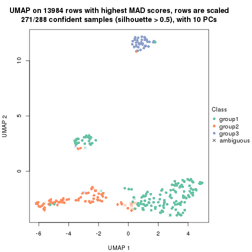
dimension_reduction(res, k = 4, method = "UMAP")
dimension_reduction(res, k = 5, method = "UMAP")
dimension_reduction(res, k = 6, method = "UMAP")
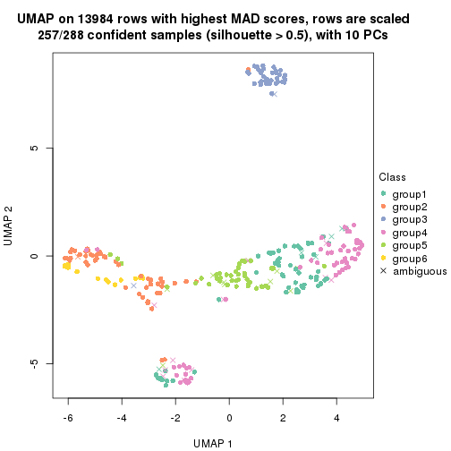
Following heatmap shows how subgroups are split when increasing k:
collect_classes(res)
If matrix rows can be associated to genes, consider to use functional_enrichment(res,
...) to perform function enrichment for the signature genes. See this vignette for more detailed explanations.
The object with results only for a single top-value method and a single partition method can be extracted as:
res = res_list["MAD", "mclust"]
# you can also extract it by
# res = res_list["MAD:mclust"]
A summary of res and all the functions that can be applied to it:
res
#> A 'ConsensusPartition' object with k = 2, 3, 4, 5, 6.
#> On a matrix with 13984 rows and 288 columns.
#> Top rows (1000, 2000, 3000, 4000, 5000) are extracted by 'MAD' method.
#> Subgroups are detected by 'mclust' method.
#> Performed in total 1250 partitions by row resampling.
#> Best k for subgroups seems to be 3.
#>
#> Following methods can be applied to this 'ConsensusPartition' object:
#> [1] "cola_report" "collect_classes" "collect_plots"
#> [4] "collect_stats" "colnames" "compare_signatures"
#> [7] "consensus_heatmap" "dimension_reduction" "functional_enrichment"
#> [10] "get_anno_col" "get_anno" "get_classes"
#> [13] "get_consensus" "get_matrix" "get_membership"
#> [16] "get_param" "get_signatures" "get_stats"
#> [19] "is_best_k" "is_stable_k" "membership_heatmap"
#> [22] "ncol" "nrow" "plot_ecdf"
#> [25] "rownames" "select_partition_number" "show"
#> [28] "suggest_best_k" "test_to_known_factors"
collect_plots() function collects all the plots made from res for all k (number of partitions)
into one single page to provide an easy and fast comparison between different k.
collect_plots(res)
The plots are:
k and the heatmap of
predicted classes for each k.k.k.k.All the plots in panels can be made by individual functions and they are plotted later in this section.
select_partition_number() produces several plots showing different
statistics for choosing “optimized” k. There are following statistics:
k;k, the area increased is defined as \(A_k - A_{k-1}\).The detailed explanations of these statistics can be found in the cola vignette.
Generally speaking, lower PAC score, higher mean silhouette score or higher
concordance corresponds to better partition. Rand index and Jaccard index
measure how similar the current partition is compared to partition with k-1.
If they are too similar, we won't accept k is better than k-1.
select_partition_number(res)
The numeric values for all these statistics can be obtained by get_stats().
get_stats(res)
#> k 1-PAC mean_silhouette concordance area_increased Rand Jaccard
#> 2 2 1.000 0.981 0.992 0.4079 0.591 0.591
#> 3 3 0.990 0.947 0.977 0.6274 0.730 0.549
#> 4 4 0.806 0.850 0.922 0.0477 0.932 0.806
#> 5 5 0.750 0.797 0.879 0.0945 0.813 0.478
#> 6 6 0.768 0.683 0.851 0.0466 0.900 0.628
suggest_best_k() suggests the best \(k\) based on these statistics. The rules are as follows:
suggest_best_k(res)
#> [1] 3
#> attr(,"optional")
#> [1] 2
There is also optional best \(k\) = 2 that is worth to check.
Following shows the table of the partitions (You need to click the show/hide
code output link to see it). The membership matrix (columns with name p*)
is inferred by
clue::cl_consensus()
function with the SE method. Basically the value in the membership matrix
represents the probability to belong to a certain group. The finall class
label for an item is determined with the group with highest probability it
belongs to.
In get_classes() function, the entropy is calculated from the membership
matrix and the silhouette score is calculated from the consensus matrix.
cbind(get_classes(res, k = 2), get_membership(res, k = 2))
#> class entropy silhouette p1 p2
#> SRR1982614 1 0.0000 0.9953 1.000 0.000
#> SRR1982613 1 0.0000 0.9953 1.000 0.000
#> SRR1982612 1 0.0000 0.9953 1.000 0.000
#> SRR1982611 1 0.0000 0.9953 1.000 0.000
#> SRR1982610 1 0.0000 0.9953 1.000 0.000
#> SRR1982609 1 0.0000 0.9953 1.000 0.000
#> SRR1982659 1 0.0000 0.9953 1.000 0.000
#> SRR1982692 1 0.0000 0.9953 1.000 0.000
#> SRR1982722 2 0.1843 0.9669 0.028 0.972
#> SRR1982750 1 0.0000 0.9953 1.000 0.000
#> SRR2095031 1 0.0000 0.9953 1.000 0.000
#> SRR1982780 2 0.1843 0.9669 0.028 0.972
#> SRR1982807 1 0.0000 0.9953 1.000 0.000
#> SRR1982830 1 0.0000 0.9953 1.000 0.000
#> SRR1982829 1 0.0000 0.9953 1.000 0.000
#> SRR1982828 1 0.0000 0.9953 1.000 0.000
#> SRR1982827 1 0.0000 0.9953 1.000 0.000
#> SRR1982826 1 0.0000 0.9953 1.000 0.000
#> SRR1982825 1 0.0000 0.9953 1.000 0.000
#> SRR1982824 1 0.0000 0.9953 1.000 0.000
#> SRR1982823 1 0.0000 0.9953 1.000 0.000
#> SRR1982822 1 0.0000 0.9953 1.000 0.000
#> SRR1982821 1 0.0000 0.9953 1.000 0.000
#> SRR1982820 1 0.0000 0.9953 1.000 0.000
#> SRR1982819 1 0.0000 0.9953 1.000 0.000
#> SRR1982818 1 0.0000 0.9953 1.000 0.000
#> SRR1982817 1 0.0000 0.9953 1.000 0.000
#> SRR1982816 1 0.0000 0.9953 1.000 0.000
#> SRR1982815 1 0.0000 0.9953 1.000 0.000
#> SRR1982814 1 0.0000 0.9953 1.000 0.000
#> SRR1982813 1 0.0000 0.9953 1.000 0.000
#> SRR1982812 1 0.0000 0.9953 1.000 0.000
#> SRR1982811 1 0.0000 0.9953 1.000 0.000
#> SRR1982810 1 0.0000 0.9953 1.000 0.000
#> SRR1982809 1 0.0000 0.9953 1.000 0.000
#> SRR1982808 1 0.0000 0.9953 1.000 0.000
#> SRR1982806 1 0.0000 0.9953 1.000 0.000
#> SRR1982805 1 0.0000 0.9953 1.000 0.000
#> SRR1982804 1 0.0000 0.9953 1.000 0.000
#> SRR1982803 1 0.0000 0.9953 1.000 0.000
#> SRR1982802 1 0.0000 0.9953 1.000 0.000
#> SRR1982801 1 0.0000 0.9953 1.000 0.000
#> SRR1982800 1 0.0000 0.9953 1.000 0.000
#> SRR1982799 1 0.0000 0.9953 1.000 0.000
#> SRR1982798 1 0.0000 0.9953 1.000 0.000
#> SRR1982797 1 0.0000 0.9953 1.000 0.000
#> SRR1982796 2 0.0000 0.9830 0.000 1.000
#> SRR1982795 1 0.0000 0.9953 1.000 0.000
#> SRR1982794 1 0.0000 0.9953 1.000 0.000
#> SRR1982793 1 0.0000 0.9953 1.000 0.000
#> SRR1982792 1 0.0000 0.9953 1.000 0.000
#> SRR1982791 1 0.0000 0.9953 1.000 0.000
#> SRR1982790 1 0.0000 0.9953 1.000 0.000
#> SRR1982789 1 0.0000 0.9953 1.000 0.000
#> SRR1982788 1 0.0000 0.9953 1.000 0.000
#> SRR1982787 1 0.0000 0.9953 1.000 0.000
#> SRR1982786 2 0.1184 0.9747 0.016 0.984
#> SRR1982785 2 0.0000 0.9830 0.000 1.000
#> SRR1982784 2 0.0000 0.9830 0.000 1.000
#> SRR1982783 2 0.0000 0.9830 0.000 1.000
#> SRR1982782 1 0.0000 0.9953 1.000 0.000
#> SRR1982781 1 0.0000 0.9953 1.000 0.000
#> SRR1982779 2 0.0000 0.9830 0.000 1.000
#> SRR1982778 2 0.0000 0.9830 0.000 1.000
#> SRR1982776 2 0.0000 0.9830 0.000 1.000
#> SRR1982777 2 0.0000 0.9830 0.000 1.000
#> SRR1982775 2 0.0000 0.9830 0.000 1.000
#> SRR1982774 2 0.0000 0.9830 0.000 1.000
#> SRR1982772 2 0.0000 0.9830 0.000 1.000
#> SRR1982773 2 0.2236 0.9601 0.036 0.964
#> SRR1982770 2 0.0000 0.9830 0.000 1.000
#> SRR1982771 2 0.0000 0.9830 0.000 1.000
#> SRR1982769 2 0.2603 0.9527 0.044 0.956
#> SRR1982768 2 0.1414 0.9728 0.020 0.980
#> SRR1982767 2 0.1184 0.9750 0.016 0.984
#> SRR1982766 1 0.0000 0.9953 1.000 0.000
#> SRR1982765 1 0.0000 0.9953 1.000 0.000
#> SRR1982764 1 0.0000 0.9953 1.000 0.000
#> SRR1982762 1 0.0000 0.9953 1.000 0.000
#> SRR1982760 1 0.0000 0.9953 1.000 0.000
#> SRR1982761 1 0.0000 0.9953 1.000 0.000
#> SRR1982763 1 0.0000 0.9953 1.000 0.000
#> SRR1982759 1 0.0000 0.9953 1.000 0.000
#> SRR1982758 2 0.1843 0.9669 0.028 0.972
#> SRR1982757 1 0.9635 0.3483 0.612 0.388
#> SRR1982755 1 0.0000 0.9953 1.000 0.000
#> SRR1982754 1 0.0000 0.9953 1.000 0.000
#> SRR1982756 1 0.0000 0.9953 1.000 0.000
#> SRR1982753 2 0.0000 0.9830 0.000 1.000
#> SRR1982751 1 0.0000 0.9953 1.000 0.000
#> SRR1982752 1 0.0000 0.9953 1.000 0.000
#> SRR1982749 1 0.0000 0.9953 1.000 0.000
#> SRR1982748 1 0.0000 0.9953 1.000 0.000
#> SRR1982747 1 0.0000 0.9953 1.000 0.000
#> SRR1982746 1 0.0000 0.9953 1.000 0.000
#> SRR1982745 1 0.0000 0.9953 1.000 0.000
#> SRR1982743 1 0.0000 0.9953 1.000 0.000
#> SRR1982744 1 0.0000 0.9953 1.000 0.000
#> SRR1982741 1 0.0000 0.9953 1.000 0.000
#> SRR1982742 1 0.0000 0.9953 1.000 0.000
#> SRR2095014 1 0.0000 0.9953 1.000 0.000
#> SRR1982740 1 0.0000 0.9953 1.000 0.000
#> SRR1982739 1 0.0000 0.9953 1.000 0.000
#> SRR1982737 1 0.0000 0.9953 1.000 0.000
#> SRR1982738 1 0.0000 0.9953 1.000 0.000
#> SRR1982736 1 0.0000 0.9953 1.000 0.000
#> SRR1982735 1 0.0000 0.9953 1.000 0.000
#> SRR1982733 1 0.0000 0.9953 1.000 0.000
#> SRR1982732 1 0.0000 0.9953 1.000 0.000
#> SRR2095004 1 0.0000 0.9953 1.000 0.000
#> SRR1982734 1 0.0000 0.9953 1.000 0.000
#> SRR1982731 1 0.0000 0.9953 1.000 0.000
#> SRR1982729 1 0.0000 0.9953 1.000 0.000
#> SRR1982730 1 0.0000 0.9953 1.000 0.000
#> SRR1982728 1 0.0000 0.9953 1.000 0.000
#> SRR1982727 2 0.1414 0.9722 0.020 0.980
#> SRR1982726 2 0.0000 0.9830 0.000 1.000
#> SRR1982723 2 0.1633 0.9701 0.024 0.976
#> SRR1982725 2 0.0000 0.9830 0.000 1.000
#> SRR1982724 2 0.0000 0.9830 0.000 1.000
#> SRR1982721 2 0.1184 0.9749 0.016 0.984
#> SRR1982720 2 0.1843 0.9669 0.028 0.972
#> SRR1982719 2 0.0000 0.9830 0.000 1.000
#> SRR1982718 1 0.0000 0.9953 1.000 0.000
#> SRR1982717 1 0.0000 0.9953 1.000 0.000
#> SRR1982715 1 0.0000 0.9953 1.000 0.000
#> SRR1982714 1 0.0000 0.9953 1.000 0.000
#> SRR1982716 1 0.0000 0.9953 1.000 0.000
#> SRR1982713 1 0.0000 0.9953 1.000 0.000
#> SRR1982711 1 0.0000 0.9953 1.000 0.000
#> SRR1982712 1 0.0000 0.9953 1.000 0.000
#> SRR1982710 1 0.0000 0.9953 1.000 0.000
#> SRR1982708 1 0.0000 0.9953 1.000 0.000
#> SRR1982707 1 0.0000 0.9953 1.000 0.000
#> SRR1982709 1 0.0000 0.9953 1.000 0.000
#> SRR1982705 2 0.9993 0.0767 0.484 0.516
#> SRR1982706 1 0.0000 0.9953 1.000 0.000
#> SRR1982704 2 0.2236 0.9602 0.036 0.964
#> SRR1982702 2 0.1414 0.9722 0.020 0.980
#> SRR1982703 2 0.1414 0.9722 0.020 0.980
#> SRR1982701 2 0.2603 0.9527 0.044 0.956
#> SRR1982700 1 0.8763 0.5704 0.704 0.296
#> SRR1982697 1 0.0000 0.9953 1.000 0.000
#> SRR1982698 1 0.0000 0.9953 1.000 0.000
#> SRR1982699 1 0.0000 0.9953 1.000 0.000
#> SRR1982696 1 0.0672 0.9873 0.992 0.008
#> SRR1982695 1 0.0000 0.9953 1.000 0.000
#> SRR1982694 1 0.0000 0.9953 1.000 0.000
#> SRR1982693 1 0.0000 0.9953 1.000 0.000
#> SRR1982690 1 0.0000 0.9953 1.000 0.000
#> SRR1982691 1 0.0000 0.9953 1.000 0.000
#> SRR1982689 1 0.0000 0.9953 1.000 0.000
#> SRR1982688 1 0.0000 0.9953 1.000 0.000
#> SRR1982687 1 0.0000 0.9953 1.000 0.000
#> SRR1982686 1 0.0000 0.9953 1.000 0.000
#> SRR1982685 1 0.0000 0.9953 1.000 0.000
#> SRR1982684 1 0.0000 0.9953 1.000 0.000
#> SRR1982683 1 0.0000 0.9953 1.000 0.000
#> SRR1982681 1 0.0000 0.9953 1.000 0.000
#> SRR1982682 1 0.0000 0.9953 1.000 0.000
#> SRR1982680 1 0.0000 0.9953 1.000 0.000
#> SRR1982679 1 0.0000 0.9953 1.000 0.000
#> SRR1982678 1 0.0000 0.9953 1.000 0.000
#> SRR1982677 1 0.0000 0.9953 1.000 0.000
#> SRR1982676 1 0.0000 0.9953 1.000 0.000
#> SRR1982675 1 0.0000 0.9953 1.000 0.000
#> SRR1982674 1 0.0000 0.9953 1.000 0.000
#> SRR1982671 2 0.0000 0.9830 0.000 1.000
#> SRR1982673 1 0.0000 0.9953 1.000 0.000
#> SRR1982672 1 0.0000 0.9953 1.000 0.000
#> SRR1982670 2 0.1843 0.9669 0.028 0.972
#> SRR1982669 1 0.0000 0.9953 1.000 0.000
#> SRR1982667 1 0.0000 0.9953 1.000 0.000
#> SRR1982668 1 0.0000 0.9953 1.000 0.000
#> SRR1982666 1 0.0000 0.9953 1.000 0.000
#> SRR1982665 2 0.1633 0.9703 0.024 0.976
#> SRR1982664 1 0.0000 0.9953 1.000 0.000
#> SRR1982663 1 0.0000 0.9953 1.000 0.000
#> SRR1982662 1 0.0000 0.9953 1.000 0.000
#> SRR1982661 1 0.0000 0.9953 1.000 0.000
#> SRR1982660 1 0.0000 0.9953 1.000 0.000
#> SRR1982658 1 0.0000 0.9953 1.000 0.000
#> SRR1982657 1 0.0000 0.9953 1.000 0.000
#> SRR1982656 2 0.1633 0.9697 0.024 0.976
#> SRR1982654 1 0.0000 0.9953 1.000 0.000
#> SRR1982655 1 0.0000 0.9953 1.000 0.000
#> SRR1982653 1 0.0000 0.9953 1.000 0.000
#> SRR1982652 1 0.0000 0.9953 1.000 0.000
#> SRR1982651 1 0.0000 0.9953 1.000 0.000
#> SRR1982649 1 0.0000 0.9953 1.000 0.000
#> SRR1982650 1 0.0000 0.9953 1.000 0.000
#> SRR1982648 1 0.0000 0.9953 1.000 0.000
#> SRR1982647 1 0.0000 0.9953 1.000 0.000
#> SRR1982646 1 0.0000 0.9953 1.000 0.000
#> SRR1982645 1 0.0000 0.9953 1.000 0.000
#> SRR1982644 1 0.0000 0.9953 1.000 0.000
#> SRR1982642 1 0.0000 0.9953 1.000 0.000
#> SRR1982643 1 0.0000 0.9953 1.000 0.000
#> SRR1982641 1 0.0000 0.9953 1.000 0.000
#> SRR1982640 1 0.0000 0.9953 1.000 0.000
#> SRR1982638 1 0.0000 0.9953 1.000 0.000
#> SRR1982639 1 0.0000 0.9953 1.000 0.000
#> SRR1982637 1 0.0000 0.9953 1.000 0.000
#> SRR1982635 1 0.0000 0.9953 1.000 0.000
#> SRR1982636 1 0.0000 0.9953 1.000 0.000
#> SRR1982633 2 0.9286 0.4831 0.344 0.656
#> SRR1982632 1 0.0000 0.9953 1.000 0.000
#> SRR1982631 1 0.0000 0.9953 1.000 0.000
#> SRR1982634 1 0.0000 0.9953 1.000 0.000
#> SRR1982628 1 0.0000 0.9953 1.000 0.000
#> SRR1982629 1 0.0000 0.9953 1.000 0.000
#> SRR1982627 1 0.0000 0.9953 1.000 0.000
#> SRR1982625 1 0.0000 0.9953 1.000 0.000
#> SRR1982626 1 0.0000 0.9953 1.000 0.000
#> SRR1982624 1 0.0000 0.9953 1.000 0.000
#> SRR1982623 1 0.0000 0.9953 1.000 0.000
#> SRR1982622 1 0.0000 0.9953 1.000 0.000
#> SRR1982621 2 0.1633 0.9699 0.024 0.976
#> SRR1982620 2 0.1633 0.9699 0.024 0.976
#> SRR1982619 1 0.2236 0.9580 0.964 0.036
#> SRR1982618 2 0.0000 0.9830 0.000 1.000
#> SRR1982617 1 0.0000 0.9953 1.000 0.000
#> SRR1982616 1 0.0000 0.9953 1.000 0.000
#> SRR1982615 1 0.0000 0.9953 1.000 0.000
#> SRR1982608 1 0.0000 0.9953 1.000 0.000
#> SRR1982607 1 0.0000 0.9953 1.000 0.000
#> SRR1982606 1 0.0000 0.9953 1.000 0.000
#> SRR1982605 1 0.0000 0.9953 1.000 0.000
#> SRR1982604 1 0.0000 0.9953 1.000 0.000
#> SRR1982603 1 0.0000 0.9953 1.000 0.000
#> SRR1982602 1 0.0000 0.9953 1.000 0.000
#> SRR1982601 1 0.0000 0.9953 1.000 0.000
#> SRR1982599 1 0.0000 0.9953 1.000 0.000
#> SRR1982600 1 0.0000 0.9953 1.000 0.000
#> SRR1982598 1 0.0000 0.9953 1.000 0.000
#> SRR1982597 1 0.0000 0.9953 1.000 0.000
#> SRR1982595 1 0.0000 0.9953 1.000 0.000
#> SRR1982596 1 0.0000 0.9953 1.000 0.000
#> SRR1982594 1 0.0000 0.9953 1.000 0.000
#> SRR1982593 1 0.0000 0.9953 1.000 0.000
#> SRR1982592 1 0.0000 0.9953 1.000 0.000
#> SRR1982591 1 0.0000 0.9953 1.000 0.000
#> SRR1982590 1 0.0000 0.9953 1.000 0.000
#> SRR1982589 1 0.0000 0.9953 1.000 0.000
#> SRR1982588 1 0.0000 0.9953 1.000 0.000
#> SRR1982587 1 0.0000 0.9953 1.000 0.000
#> SRR1982586 1 0.0000 0.9953 1.000 0.000
#> SRR1982584 1 0.0000 0.9953 1.000 0.000
#> SRR2096514 2 0.0000 0.9830 0.000 1.000
#> SRR2096513 2 0.0000 0.9830 0.000 1.000
#> SRR2096511 2 0.0000 0.9830 0.000 1.000
#> SRR2096512 2 0.0000 0.9830 0.000 1.000
#> SRR2096509 2 0.0000 0.9830 0.000 1.000
#> SRR2096510 2 0.0000 0.9830 0.000 1.000
#> SRR2096508 1 0.7674 0.7091 0.776 0.224
#> SRR2096507 2 0.0000 0.9830 0.000 1.000
#> SRR2096504 2 0.0000 0.9830 0.000 1.000
#> SRR2096506 2 0.0000 0.9830 0.000 1.000
#> SRR2096505 2 0.0000 0.9830 0.000 1.000
#> SRR2096503 2 0.0000 0.9830 0.000 1.000
#> SRR2096500 2 0.0000 0.9830 0.000 1.000
#> SRR2096501 2 0.0000 0.9830 0.000 1.000
#> SRR2096502 2 0.0000 0.9830 0.000 1.000
#> SRR2096499 2 0.0000 0.9830 0.000 1.000
#> SRR2096498 2 0.0000 0.9830 0.000 1.000
#> SRR2096496 2 0.0000 0.9830 0.000 1.000
#> SRR2096497 2 0.0000 0.9830 0.000 1.000
#> SRR2096495 2 0.0000 0.9830 0.000 1.000
#> SRR2096494 2 0.0000 0.9830 0.000 1.000
#> SRR2096492 2 0.0000 0.9830 0.000 1.000
#> SRR2096491 2 0.0000 0.9830 0.000 1.000
#> SRR2096493 2 0.0000 0.9830 0.000 1.000
#> SRR2096490 2 0.0000 0.9830 0.000 1.000
#> SRR2096488 2 0.0000 0.9830 0.000 1.000
#> SRR2096489 2 0.0000 0.9830 0.000 1.000
#> SRR2096487 2 0.0000 0.9830 0.000 1.000
#> SRR2096484 2 0.0000 0.9830 0.000 1.000
#> SRR2096486 2 0.0000 0.9830 0.000 1.000
#> SRR2096485 2 0.0000 0.9830 0.000 1.000
#> SRR2096483 2 0.0000 0.9830 0.000 1.000
#> SRR2096482 2 0.0000 0.9830 0.000 1.000
#> SRR2096481 2 0.0000 0.9830 0.000 1.000
#> SRR2096520 2 0.0000 0.9830 0.000 1.000
#> SRR2096519 2 0.0000 0.9830 0.000 1.000
#> SRR2096518 2 0.0000 0.9830 0.000 1.000
#> SRR2096516 2 0.0000 0.9830 0.000 1.000
#> SRR2096517 2 0.0000 0.9830 0.000 1.000
#> SRR2096515 2 0.0000 0.9830 0.000 1.000
cbind(get_classes(res, k = 3), get_membership(res, k = 3))
#> class entropy silhouette p1 p2 p3
#> SRR1982614 2 0.1289 0.9544 0.032 0.968 0.000
#> SRR1982613 2 0.0000 0.9650 0.000 1.000 0.000
#> SRR1982612 2 0.3192 0.8781 0.112 0.888 0.000
#> SRR1982611 2 0.1289 0.9544 0.032 0.968 0.000
#> SRR1982610 2 0.1289 0.9544 0.032 0.968 0.000
#> SRR1982609 1 0.0000 0.9765 1.000 0.000 0.000
#> SRR1982659 1 0.0000 0.9765 1.000 0.000 0.000
#> SRR1982692 2 0.0000 0.9650 0.000 1.000 0.000
#> SRR1982722 3 0.0237 0.9862 0.000 0.004 0.996
#> SRR1982750 2 0.0000 0.9650 0.000 1.000 0.000
#> SRR2095031 2 0.0000 0.9650 0.000 1.000 0.000
#> SRR1982780 3 0.2400 0.9300 0.064 0.004 0.932
#> SRR1982807 1 0.4974 0.6799 0.764 0.236 0.000
#> SRR1982830 1 0.6286 0.1042 0.536 0.464 0.000
#> SRR1982829 2 0.1289 0.9544 0.032 0.968 0.000
#> SRR1982828 2 0.1289 0.9544 0.032 0.968 0.000
#> SRR1982827 2 0.4605 0.7546 0.204 0.796 0.000
#> SRR1982826 1 0.0000 0.9765 1.000 0.000 0.000
#> SRR1982825 1 0.0000 0.9765 1.000 0.000 0.000
#> SRR1982824 2 0.1289 0.9544 0.032 0.968 0.000
#> SRR1982823 1 0.3116 0.8630 0.892 0.108 0.000
#> SRR1982822 2 0.1289 0.9544 0.032 0.968 0.000
#> SRR1982821 1 0.0000 0.9765 1.000 0.000 0.000
#> SRR1982820 1 0.0000 0.9765 1.000 0.000 0.000
#> SRR1982819 1 0.0000 0.9765 1.000 0.000 0.000
#> SRR1982818 1 0.0000 0.9765 1.000 0.000 0.000
#> SRR1982817 1 0.6302 0.0497 0.520 0.480 0.000
#> SRR1982816 1 0.0000 0.9765 1.000 0.000 0.000
#> SRR1982815 1 0.0000 0.9765 1.000 0.000 0.000
#> SRR1982814 1 0.0000 0.9765 1.000 0.000 0.000
#> SRR1982813 1 0.0000 0.9765 1.000 0.000 0.000
#> SRR1982812 2 0.0000 0.9650 0.000 1.000 0.000
#> SRR1982811 1 0.0000 0.9765 1.000 0.000 0.000
#> SRR1982810 1 0.0000 0.9765 1.000 0.000 0.000
#> SRR1982809 2 0.1289 0.9544 0.032 0.968 0.000
#> SRR1982808 1 0.4605 0.7317 0.796 0.204 0.000
#> SRR1982806 1 0.0000 0.9765 1.000 0.000 0.000
#> SRR1982805 1 0.0000 0.9765 1.000 0.000 0.000
#> SRR1982804 2 0.1411 0.9518 0.036 0.964 0.000
#> SRR1982803 2 0.1289 0.9544 0.032 0.968 0.000
#> SRR1982802 1 0.0000 0.9765 1.000 0.000 0.000
#> SRR1982801 1 0.0592 0.9657 0.988 0.012 0.000
#> SRR1982800 2 0.4399 0.7780 0.188 0.812 0.000
#> SRR1982799 1 0.0000 0.9765 1.000 0.000 0.000
#> SRR1982798 1 0.0000 0.9765 1.000 0.000 0.000
#> SRR1982797 2 0.0000 0.9650 0.000 1.000 0.000
#> SRR1982796 3 0.0000 0.9888 0.000 0.000 1.000
#> SRR1982795 1 0.0000 0.9765 1.000 0.000 0.000
#> SRR1982794 1 0.0000 0.9765 1.000 0.000 0.000
#> SRR1982793 1 0.0000 0.9765 1.000 0.000 0.000
#> SRR1982792 1 0.0000 0.9765 1.000 0.000 0.000
#> SRR1982791 1 0.0000 0.9765 1.000 0.000 0.000
#> SRR1982790 2 0.0000 0.9650 0.000 1.000 0.000
#> SRR1982789 1 0.0000 0.9765 1.000 0.000 0.000
#> SRR1982788 1 0.0000 0.9765 1.000 0.000 0.000
#> SRR1982787 1 0.0000 0.9765 1.000 0.000 0.000
#> SRR1982786 3 0.0237 0.9862 0.000 0.004 0.996
#> SRR1982785 3 0.0000 0.9888 0.000 0.000 1.000
#> SRR1982784 3 0.0000 0.9888 0.000 0.000 1.000
#> SRR1982783 3 0.0000 0.9888 0.000 0.000 1.000
#> SRR1982782 1 0.0000 0.9765 1.000 0.000 0.000
#> SRR1982781 1 0.0000 0.9765 1.000 0.000 0.000
#> SRR1982779 3 0.0000 0.9888 0.000 0.000 1.000
#> SRR1982778 3 0.0000 0.9888 0.000 0.000 1.000
#> SRR1982776 3 0.0000 0.9888 0.000 0.000 1.000
#> SRR1982777 3 0.0000 0.9888 0.000 0.000 1.000
#> SRR1982775 3 0.0000 0.9888 0.000 0.000 1.000
#> SRR1982774 3 0.0000 0.9888 0.000 0.000 1.000
#> SRR1982772 3 0.0000 0.9888 0.000 0.000 1.000
#> SRR1982773 3 0.3644 0.8608 0.124 0.004 0.872
#> SRR1982770 3 0.0000 0.9888 0.000 0.000 1.000
#> SRR1982771 3 0.0000 0.9888 0.000 0.000 1.000
#> SRR1982769 3 0.0237 0.9862 0.000 0.004 0.996
#> SRR1982768 3 0.2682 0.9174 0.076 0.004 0.920
#> SRR1982767 3 0.2496 0.9259 0.068 0.004 0.928
#> SRR1982766 2 0.1289 0.9544 0.032 0.968 0.000
#> SRR1982765 1 0.0237 0.9728 0.996 0.004 0.000
#> SRR1982764 1 0.0000 0.9765 1.000 0.000 0.000
#> SRR1982762 1 0.0000 0.9765 1.000 0.000 0.000
#> SRR1982760 1 0.0000 0.9765 1.000 0.000 0.000
#> SRR1982761 1 0.0000 0.9765 1.000 0.000 0.000
#> SRR1982763 2 0.1289 0.9544 0.032 0.968 0.000
#> SRR1982759 2 0.1529 0.9489 0.040 0.960 0.000
#> SRR1982758 3 0.1989 0.9456 0.048 0.004 0.948
#> SRR1982757 3 0.8681 0.5101 0.188 0.216 0.596
#> SRR1982755 1 0.0000 0.9765 1.000 0.000 0.000
#> SRR1982754 2 0.1289 0.9544 0.032 0.968 0.000
#> SRR1982756 1 0.0000 0.9765 1.000 0.000 0.000
#> SRR1982753 3 0.0000 0.9888 0.000 0.000 1.000
#> SRR1982751 2 0.0000 0.9650 0.000 1.000 0.000
#> SRR1982752 2 0.0000 0.9650 0.000 1.000 0.000
#> SRR1982749 2 0.0000 0.9650 0.000 1.000 0.000
#> SRR1982748 2 0.0000 0.9650 0.000 1.000 0.000
#> SRR1982747 2 0.0000 0.9650 0.000 1.000 0.000
#> SRR1982746 2 0.0000 0.9650 0.000 1.000 0.000
#> SRR1982745 2 0.0000 0.9650 0.000 1.000 0.000
#> SRR1982743 2 0.0000 0.9650 0.000 1.000 0.000
#> SRR1982744 2 0.0000 0.9650 0.000 1.000 0.000
#> SRR1982741 2 0.0000 0.9650 0.000 1.000 0.000
#> SRR1982742 2 0.0000 0.9650 0.000 1.000 0.000
#> SRR2095014 2 0.0000 0.9650 0.000 1.000 0.000
#> SRR1982740 2 0.0000 0.9650 0.000 1.000 0.000
#> SRR1982739 2 0.0000 0.9650 0.000 1.000 0.000
#> SRR1982737 2 0.0000 0.9650 0.000 1.000 0.000
#> SRR1982738 2 0.0000 0.9650 0.000 1.000 0.000
#> SRR1982736 2 0.0000 0.9650 0.000 1.000 0.000
#> SRR1982735 2 0.0000 0.9650 0.000 1.000 0.000
#> SRR1982733 2 0.0000 0.9650 0.000 1.000 0.000
#> SRR1982732 2 0.0000 0.9650 0.000 1.000 0.000
#> SRR2095004 2 0.0000 0.9650 0.000 1.000 0.000
#> SRR1982734 2 0.0000 0.9650 0.000 1.000 0.000
#> SRR1982731 2 0.0000 0.9650 0.000 1.000 0.000
#> SRR1982729 2 0.0000 0.9650 0.000 1.000 0.000
#> SRR1982730 2 0.0000 0.9650 0.000 1.000 0.000
#> SRR1982728 2 0.0000 0.9650 0.000 1.000 0.000
#> SRR1982727 3 0.0237 0.9862 0.000 0.004 0.996
#> SRR1982726 3 0.0000 0.9888 0.000 0.000 1.000
#> SRR1982723 3 0.0237 0.9862 0.000 0.004 0.996
#> SRR1982725 3 0.0000 0.9888 0.000 0.000 1.000
#> SRR1982724 3 0.0000 0.9888 0.000 0.000 1.000
#> SRR1982721 3 0.0000 0.9888 0.000 0.000 1.000
#> SRR1982720 3 0.0000 0.9888 0.000 0.000 1.000
#> SRR1982719 3 0.0000 0.9888 0.000 0.000 1.000
#> SRR1982718 2 0.0000 0.9650 0.000 1.000 0.000
#> SRR1982717 2 0.0000 0.9650 0.000 1.000 0.000
#> SRR1982715 2 0.0000 0.9650 0.000 1.000 0.000
#> SRR1982714 2 0.1289 0.9544 0.032 0.968 0.000
#> SRR1982716 2 0.0000 0.9650 0.000 1.000 0.000
#> SRR1982713 2 0.1411 0.9518 0.036 0.964 0.000
#> SRR1982711 2 0.0000 0.9650 0.000 1.000 0.000
#> SRR1982712 2 0.0000 0.9650 0.000 1.000 0.000
#> SRR1982710 2 0.0000 0.9650 0.000 1.000 0.000
#> SRR1982708 2 0.0000 0.9650 0.000 1.000 0.000
#> SRR1982707 2 0.0000 0.9650 0.000 1.000 0.000
#> SRR1982709 1 0.6260 0.1689 0.552 0.448 0.000
#> SRR1982705 2 0.6026 0.4104 0.000 0.624 0.376
#> SRR1982706 1 0.0000 0.9765 1.000 0.000 0.000
#> SRR1982704 3 0.0237 0.9862 0.000 0.004 0.996
#> SRR1982702 3 0.0237 0.9862 0.000 0.004 0.996
#> SRR1982703 3 0.0237 0.9862 0.000 0.004 0.996
#> SRR1982701 3 0.0237 0.9862 0.000 0.004 0.996
#> SRR1982700 2 0.5882 0.4774 0.000 0.652 0.348
#> SRR1982697 2 0.0000 0.9650 0.000 1.000 0.000
#> SRR1982698 2 0.0000 0.9650 0.000 1.000 0.000
#> SRR1982699 2 0.0000 0.9650 0.000 1.000 0.000
#> SRR1982696 2 0.1411 0.9434 0.000 0.964 0.036
#> SRR1982695 1 0.0000 0.9765 1.000 0.000 0.000
#> SRR1982694 1 0.0000 0.9765 1.000 0.000 0.000
#> SRR1982693 2 0.0000 0.9650 0.000 1.000 0.000
#> SRR1982690 2 0.0000 0.9650 0.000 1.000 0.000
#> SRR1982691 2 0.0000 0.9650 0.000 1.000 0.000
#> SRR1982689 2 0.0000 0.9650 0.000 1.000 0.000
#> SRR1982688 1 0.0000 0.9765 1.000 0.000 0.000
#> SRR1982687 2 0.0237 0.9638 0.004 0.996 0.000
#> SRR1982686 2 0.1163 0.9559 0.028 0.972 0.000
#> SRR1982685 2 0.0000 0.9650 0.000 1.000 0.000
#> SRR1982684 2 0.0000 0.9650 0.000 1.000 0.000
#> SRR1982683 1 0.0592 0.9660 0.988 0.012 0.000
#> SRR1982681 2 0.0000 0.9650 0.000 1.000 0.000
#> SRR1982682 2 0.0000 0.9650 0.000 1.000 0.000
#> SRR1982680 2 0.0000 0.9650 0.000 1.000 0.000
#> SRR1982679 1 0.0000 0.9765 1.000 0.000 0.000
#> SRR1982678 2 0.0000 0.9650 0.000 1.000 0.000
#> SRR1982677 2 0.0000 0.9650 0.000 1.000 0.000
#> SRR1982676 1 0.0000 0.9765 1.000 0.000 0.000
#> SRR1982675 1 0.0000 0.9765 1.000 0.000 0.000
#> SRR1982674 2 0.0424 0.9626 0.008 0.992 0.000
#> SRR1982671 3 0.0000 0.9888 0.000 0.000 1.000
#> SRR1982673 1 0.0000 0.9765 1.000 0.000 0.000
#> SRR1982672 1 0.0000 0.9765 1.000 0.000 0.000
#> SRR1982670 3 0.0237 0.9859 0.004 0.000 0.996
#> SRR1982669 1 0.0000 0.9765 1.000 0.000 0.000
#> SRR1982667 1 0.0000 0.9765 1.000 0.000 0.000
#> SRR1982668 2 0.2165 0.9286 0.064 0.936 0.000
#> SRR1982666 1 0.0000 0.9765 1.000 0.000 0.000
#> SRR1982665 3 0.2301 0.9341 0.060 0.004 0.936
#> SRR1982664 1 0.0000 0.9765 1.000 0.000 0.000
#> SRR1982663 1 0.0000 0.9765 1.000 0.000 0.000
#> SRR1982662 1 0.0000 0.9765 1.000 0.000 0.000
#> SRR1982661 2 0.1860 0.9393 0.052 0.948 0.000
#> SRR1982660 1 0.0000 0.9765 1.000 0.000 0.000
#> SRR1982658 1 0.0000 0.9765 1.000 0.000 0.000
#> SRR1982657 1 0.0000 0.9765 1.000 0.000 0.000
#> SRR1982656 3 0.0237 0.9862 0.000 0.004 0.996
#> SRR1982654 1 0.0000 0.9765 1.000 0.000 0.000
#> SRR1982655 1 0.0000 0.9765 1.000 0.000 0.000
#> SRR1982653 1 0.0000 0.9765 1.000 0.000 0.000
#> SRR1982652 1 0.0000 0.9765 1.000 0.000 0.000
#> SRR1982651 1 0.0000 0.9765 1.000 0.000 0.000
#> SRR1982649 2 0.1289 0.9544 0.032 0.968 0.000
#> SRR1982650 1 0.0000 0.9765 1.000 0.000 0.000
#> SRR1982648 1 0.0000 0.9765 1.000 0.000 0.000
#> SRR1982647 1 0.0000 0.9765 1.000 0.000 0.000
#> SRR1982646 2 0.1860 0.9391 0.052 0.948 0.000
#> SRR1982645 1 0.0000 0.9765 1.000 0.000 0.000
#> SRR1982644 1 0.0000 0.9765 1.000 0.000 0.000
#> SRR1982642 1 0.0000 0.9765 1.000 0.000 0.000
#> SRR1982643 1 0.0000 0.9765 1.000 0.000 0.000
#> SRR1982641 1 0.0000 0.9765 1.000 0.000 0.000
#> SRR1982640 1 0.0000 0.9765 1.000 0.000 0.000
#> SRR1982638 1 0.0000 0.9765 1.000 0.000 0.000
#> SRR1982639 1 0.0000 0.9765 1.000 0.000 0.000
#> SRR1982637 1 0.0000 0.9765 1.000 0.000 0.000
#> SRR1982635 1 0.0000 0.9765 1.000 0.000 0.000
#> SRR1982636 2 0.1411 0.9518 0.036 0.964 0.000
#> SRR1982633 1 0.6026 0.3756 0.624 0.000 0.376
#> SRR1982632 1 0.1031 0.9544 0.976 0.024 0.000
#> SRR1982631 1 0.0000 0.9765 1.000 0.000 0.000
#> SRR1982634 1 0.0000 0.9765 1.000 0.000 0.000
#> SRR1982628 2 0.1289 0.9544 0.032 0.968 0.000
#> SRR1982629 1 0.0000 0.9765 1.000 0.000 0.000
#> SRR1982627 1 0.0000 0.9765 1.000 0.000 0.000
#> SRR1982625 1 0.0000 0.9765 1.000 0.000 0.000
#> SRR1982626 2 0.6252 0.2195 0.444 0.556 0.000
#> SRR1982624 2 0.1289 0.9544 0.032 0.968 0.000
#> SRR1982623 1 0.0000 0.9765 1.000 0.000 0.000
#> SRR1982622 1 0.0000 0.9765 1.000 0.000 0.000
#> SRR1982621 3 0.0000 0.9888 0.000 0.000 1.000
#> SRR1982620 3 0.1399 0.9637 0.028 0.004 0.968
#> SRR1982619 2 0.7760 0.3851 0.360 0.580 0.060
#> SRR1982618 3 0.0000 0.9888 0.000 0.000 1.000
#> SRR1982617 2 0.0000 0.9650 0.000 1.000 0.000
#> SRR1982616 2 0.1289 0.9544 0.032 0.968 0.000
#> SRR1982615 1 0.0000 0.9765 1.000 0.000 0.000
#> SRR1982608 2 0.0000 0.9650 0.000 1.000 0.000
#> SRR1982607 1 0.0000 0.9765 1.000 0.000 0.000
#> SRR1982606 1 0.0000 0.9765 1.000 0.000 0.000
#> SRR1982605 1 0.0000 0.9765 1.000 0.000 0.000
#> SRR1982604 1 0.0000 0.9765 1.000 0.000 0.000
#> SRR1982603 1 0.0000 0.9765 1.000 0.000 0.000
#> SRR1982602 1 0.0000 0.9765 1.000 0.000 0.000
#> SRR1982601 1 0.0000 0.9765 1.000 0.000 0.000
#> SRR1982599 1 0.0000 0.9765 1.000 0.000 0.000
#> SRR1982600 2 0.0000 0.9650 0.000 1.000 0.000
#> SRR1982598 1 0.0000 0.9765 1.000 0.000 0.000
#> SRR1982597 1 0.0000 0.9765 1.000 0.000 0.000
#> SRR1982595 1 0.0000 0.9765 1.000 0.000 0.000
#> SRR1982596 1 0.0000 0.9765 1.000 0.000 0.000
#> SRR1982594 1 0.0000 0.9765 1.000 0.000 0.000
#> SRR1982593 1 0.0000 0.9765 1.000 0.000 0.000
#> SRR1982592 2 0.1289 0.9544 0.032 0.968 0.000
#> SRR1982591 2 0.1289 0.9544 0.032 0.968 0.000
#> SRR1982590 2 0.0000 0.9650 0.000 1.000 0.000
#> SRR1982589 2 0.1411 0.9518 0.036 0.964 0.000
#> SRR1982588 1 0.0000 0.9765 1.000 0.000 0.000
#> SRR1982587 1 0.0000 0.9765 1.000 0.000 0.000
#> SRR1982586 1 0.0000 0.9765 1.000 0.000 0.000
#> SRR1982584 2 0.1289 0.9544 0.032 0.968 0.000
#> SRR2096514 3 0.0000 0.9888 0.000 0.000 1.000
#> SRR2096513 3 0.0000 0.9888 0.000 0.000 1.000
#> SRR2096511 3 0.0000 0.9888 0.000 0.000 1.000
#> SRR2096512 3 0.0000 0.9888 0.000 0.000 1.000
#> SRR2096509 3 0.0000 0.9888 0.000 0.000 1.000
#> SRR2096510 3 0.0000 0.9888 0.000 0.000 1.000
#> SRR2096508 2 0.4504 0.7482 0.000 0.804 0.196
#> SRR2096507 3 0.0000 0.9888 0.000 0.000 1.000
#> SRR2096504 3 0.0000 0.9888 0.000 0.000 1.000
#> SRR2096506 3 0.0000 0.9888 0.000 0.000 1.000
#> SRR2096505 3 0.0000 0.9888 0.000 0.000 1.000
#> SRR2096503 3 0.0000 0.9888 0.000 0.000 1.000
#> SRR2096500 3 0.0000 0.9888 0.000 0.000 1.000
#> SRR2096501 3 0.0000 0.9888 0.000 0.000 1.000
#> SRR2096502 3 0.0000 0.9888 0.000 0.000 1.000
#> SRR2096499 3 0.0000 0.9888 0.000 0.000 1.000
#> SRR2096498 3 0.0000 0.9888 0.000 0.000 1.000
#> SRR2096496 3 0.0000 0.9888 0.000 0.000 1.000
#> SRR2096497 3 0.0000 0.9888 0.000 0.000 1.000
#> SRR2096495 3 0.0000 0.9888 0.000 0.000 1.000
#> SRR2096494 3 0.0000 0.9888 0.000 0.000 1.000
#> SRR2096492 3 0.0000 0.9888 0.000 0.000 1.000
#> SRR2096491 3 0.0000 0.9888 0.000 0.000 1.000
#> SRR2096493 3 0.0000 0.9888 0.000 0.000 1.000
#> SRR2096490 3 0.0000 0.9888 0.000 0.000 1.000
#> SRR2096488 3 0.0000 0.9888 0.000 0.000 1.000
#> SRR2096489 3 0.0000 0.9888 0.000 0.000 1.000
#> SRR2096487 3 0.0000 0.9888 0.000 0.000 1.000
#> SRR2096484 3 0.0000 0.9888 0.000 0.000 1.000
#> SRR2096486 3 0.0000 0.9888 0.000 0.000 1.000
#> SRR2096485 3 0.0000 0.9888 0.000 0.000 1.000
#> SRR2096483 3 0.0000 0.9888 0.000 0.000 1.000
#> SRR2096482 3 0.0000 0.9888 0.000 0.000 1.000
#> SRR2096481 3 0.0000 0.9888 0.000 0.000 1.000
#> SRR2096520 3 0.0000 0.9888 0.000 0.000 1.000
#> SRR2096519 3 0.0000 0.9888 0.000 0.000 1.000
#> SRR2096518 3 0.0000 0.9888 0.000 0.000 1.000
#> SRR2096516 3 0.0000 0.9888 0.000 0.000 1.000
#> SRR2096517 3 0.0000 0.9888 0.000 0.000 1.000
#> SRR2096515 3 0.0000 0.9888 0.000 0.000 1.000
cbind(get_classes(res, k = 4), get_membership(res, k = 4))
#> class entropy silhouette p1 p2 p3 p4
#> SRR1982614 2 0.4477 0.682 0.312 0.688 0.000 0.000
#> SRR1982613 2 0.3356 0.768 0.176 0.824 0.000 0.000
#> SRR1982612 2 0.4989 0.401 0.472 0.528 0.000 0.000
#> SRR1982611 2 0.4643 0.654 0.344 0.656 0.000 0.000
#> SRR1982610 2 0.4643 0.654 0.344 0.656 0.000 0.000
#> SRR1982609 1 0.0000 0.970 1.000 0.000 0.000 0.000
#> SRR1982659 1 0.1211 0.951 0.960 0.000 0.000 0.040
#> SRR1982692 2 0.0000 0.812 0.000 1.000 0.000 0.000
#> SRR1982722 4 0.0000 0.907 0.000 0.000 0.000 1.000
#> SRR1982750 2 0.0000 0.812 0.000 1.000 0.000 0.000
#> SRR2095031 2 0.0000 0.812 0.000 1.000 0.000 0.000
#> SRR1982780 4 0.0000 0.907 0.000 0.000 0.000 1.000
#> SRR1982807 1 0.3219 0.741 0.836 0.164 0.000 0.000
#> SRR1982830 1 0.2973 0.777 0.856 0.144 0.000 0.000
#> SRR1982829 2 0.4477 0.682 0.312 0.688 0.000 0.000
#> SRR1982828 2 0.4697 0.639 0.356 0.644 0.000 0.000
#> SRR1982827 2 0.4855 0.566 0.400 0.600 0.000 0.000
#> SRR1982826 1 0.0000 0.970 1.000 0.000 0.000 0.000
#> SRR1982825 1 0.0000 0.970 1.000 0.000 0.000 0.000
#> SRR1982824 2 0.4643 0.654 0.344 0.656 0.000 0.000
#> SRR1982823 1 0.1867 0.889 0.928 0.072 0.000 0.000
#> SRR1982822 2 0.4679 0.644 0.352 0.648 0.000 0.000
#> SRR1982821 1 0.0817 0.960 0.976 0.000 0.000 0.024
#> SRR1982820 1 0.1211 0.951 0.960 0.000 0.000 0.040
#> SRR1982819 1 0.1211 0.951 0.960 0.000 0.000 0.040
#> SRR1982818 1 0.0000 0.970 1.000 0.000 0.000 0.000
#> SRR1982817 2 0.4985 0.412 0.468 0.532 0.000 0.000
#> SRR1982816 1 0.0000 0.970 1.000 0.000 0.000 0.000
#> SRR1982815 1 0.0000 0.970 1.000 0.000 0.000 0.000
#> SRR1982814 1 0.1211 0.951 0.960 0.000 0.000 0.040
#> SRR1982813 1 0.0000 0.970 1.000 0.000 0.000 0.000
#> SRR1982812 2 0.0469 0.809 0.012 0.988 0.000 0.000
#> SRR1982811 1 0.0000 0.970 1.000 0.000 0.000 0.000
#> SRR1982810 1 0.0000 0.970 1.000 0.000 0.000 0.000
#> SRR1982809 2 0.4643 0.653 0.344 0.656 0.000 0.000
#> SRR1982808 1 0.4713 0.220 0.640 0.360 0.000 0.000
#> SRR1982806 1 0.0000 0.970 1.000 0.000 0.000 0.000
#> SRR1982805 1 0.1211 0.951 0.960 0.000 0.000 0.040
#> SRR1982804 2 0.4804 0.595 0.384 0.616 0.000 0.000
#> SRR1982803 2 0.4477 0.687 0.312 0.688 0.000 0.000
#> SRR1982802 1 0.0000 0.970 1.000 0.000 0.000 0.000
#> SRR1982801 1 0.1022 0.940 0.968 0.032 0.000 0.000
#> SRR1982800 2 0.4866 0.559 0.404 0.596 0.000 0.000
#> SRR1982799 1 0.0000 0.970 1.000 0.000 0.000 0.000
#> SRR1982798 1 0.0000 0.970 1.000 0.000 0.000 0.000
#> SRR1982797 2 0.3266 0.771 0.168 0.832 0.000 0.000
#> SRR1982796 4 0.1474 0.907 0.000 0.000 0.052 0.948
#> SRR1982795 1 0.0000 0.970 1.000 0.000 0.000 0.000
#> SRR1982794 1 0.0000 0.970 1.000 0.000 0.000 0.000
#> SRR1982793 1 0.1211 0.951 0.960 0.000 0.000 0.040
#> SRR1982792 1 0.0336 0.967 0.992 0.000 0.000 0.008
#> SRR1982791 1 0.0000 0.970 1.000 0.000 0.000 0.000
#> SRR1982790 2 0.0000 0.812 0.000 1.000 0.000 0.000
#> SRR1982789 1 0.0000 0.970 1.000 0.000 0.000 0.000
#> SRR1982788 1 0.0000 0.970 1.000 0.000 0.000 0.000
#> SRR1982787 1 0.0000 0.970 1.000 0.000 0.000 0.000
#> SRR1982786 4 0.1211 0.916 0.000 0.000 0.040 0.960
#> SRR1982785 4 0.0000 0.907 0.000 0.000 0.000 1.000
#> SRR1982784 4 0.2408 0.892 0.000 0.000 0.104 0.896
#> SRR1982783 4 0.2408 0.892 0.000 0.000 0.104 0.896
#> SRR1982782 1 0.0000 0.970 1.000 0.000 0.000 0.000
#> SRR1982781 1 0.0000 0.970 1.000 0.000 0.000 0.000
#> SRR1982779 4 0.2081 0.903 0.000 0.000 0.084 0.916
#> SRR1982778 4 0.1867 0.902 0.000 0.000 0.072 0.928
#> SRR1982776 4 0.2760 0.874 0.000 0.000 0.128 0.872
#> SRR1982777 4 0.1302 0.917 0.000 0.000 0.044 0.956
#> SRR1982775 4 0.2345 0.892 0.000 0.000 0.100 0.900
#> SRR1982774 4 0.1389 0.908 0.000 0.000 0.048 0.952
#> SRR1982772 4 0.4008 0.731 0.000 0.000 0.244 0.756
#> SRR1982773 4 0.3335 0.819 0.016 0.000 0.128 0.856
#> SRR1982770 4 0.1716 0.905 0.000 0.000 0.064 0.936
#> SRR1982771 4 0.1940 0.908 0.000 0.000 0.076 0.924
#> SRR1982769 4 0.1211 0.916 0.000 0.000 0.040 0.960
#> SRR1982768 4 0.5630 0.633 0.140 0.000 0.136 0.724
#> SRR1982767 4 0.3447 0.815 0.020 0.000 0.128 0.852
#> SRR1982766 2 0.4643 0.654 0.344 0.656 0.000 0.000
#> SRR1982765 1 0.0817 0.960 0.976 0.000 0.000 0.024
#> SRR1982764 1 0.0000 0.970 1.000 0.000 0.000 0.000
#> SRR1982762 1 0.1211 0.951 0.960 0.000 0.000 0.040
#> SRR1982760 1 0.1211 0.951 0.960 0.000 0.000 0.040
#> SRR1982761 1 0.0469 0.966 0.988 0.000 0.000 0.012
#> SRR1982763 2 0.4008 0.739 0.244 0.756 0.000 0.000
#> SRR1982759 2 0.4830 0.581 0.392 0.608 0.000 0.000
#> SRR1982758 4 0.1118 0.904 0.000 0.000 0.036 0.964
#> SRR1982757 2 0.9709 0.091 0.244 0.356 0.156 0.244
#> SRR1982755 1 0.0000 0.970 1.000 0.000 0.000 0.000
#> SRR1982754 2 0.4661 0.649 0.348 0.652 0.000 0.000
#> SRR1982756 1 0.0000 0.970 1.000 0.000 0.000 0.000
#> SRR1982753 4 0.1940 0.902 0.000 0.000 0.076 0.924
#> SRR1982751 2 0.0000 0.812 0.000 1.000 0.000 0.000
#> SRR1982752 2 0.0000 0.812 0.000 1.000 0.000 0.000
#> SRR1982749 2 0.0000 0.812 0.000 1.000 0.000 0.000
#> SRR1982748 2 0.0000 0.812 0.000 1.000 0.000 0.000
#> SRR1982747 2 0.0000 0.812 0.000 1.000 0.000 0.000
#> SRR1982746 2 0.0000 0.812 0.000 1.000 0.000 0.000
#> SRR1982745 2 0.0000 0.812 0.000 1.000 0.000 0.000
#> SRR1982743 2 0.0000 0.812 0.000 1.000 0.000 0.000
#> SRR1982744 2 0.0000 0.812 0.000 1.000 0.000 0.000
#> SRR1982741 2 0.0000 0.812 0.000 1.000 0.000 0.000
#> SRR1982742 2 0.0000 0.812 0.000 1.000 0.000 0.000
#> SRR2095014 2 0.0000 0.812 0.000 1.000 0.000 0.000
#> SRR1982740 2 0.0000 0.812 0.000 1.000 0.000 0.000
#> SRR1982739 2 0.0000 0.812 0.000 1.000 0.000 0.000
#> SRR1982737 2 0.0000 0.812 0.000 1.000 0.000 0.000
#> SRR1982738 2 0.3172 0.773 0.160 0.840 0.000 0.000
#> SRR1982736 2 0.0000 0.812 0.000 1.000 0.000 0.000
#> SRR1982735 2 0.0000 0.812 0.000 1.000 0.000 0.000
#> SRR1982733 2 0.0000 0.812 0.000 1.000 0.000 0.000
#> SRR1982732 2 0.0000 0.812 0.000 1.000 0.000 0.000
#> SRR2095004 2 0.0000 0.812 0.000 1.000 0.000 0.000
#> SRR1982734 2 0.0000 0.812 0.000 1.000 0.000 0.000
#> SRR1982731 2 0.0000 0.812 0.000 1.000 0.000 0.000
#> SRR1982729 2 0.0000 0.812 0.000 1.000 0.000 0.000
#> SRR1982730 2 0.0000 0.812 0.000 1.000 0.000 0.000
#> SRR1982728 2 0.0000 0.812 0.000 1.000 0.000 0.000
#> SRR1982727 4 0.1211 0.916 0.000 0.000 0.040 0.960
#> SRR1982726 4 0.2216 0.900 0.000 0.000 0.092 0.908
#> SRR1982723 4 0.1211 0.916 0.000 0.000 0.040 0.960
#> SRR1982725 4 0.1211 0.916 0.000 0.000 0.040 0.960
#> SRR1982724 4 0.1211 0.916 0.000 0.000 0.040 0.960
#> SRR1982721 4 0.0000 0.907 0.000 0.000 0.000 1.000
#> SRR1982720 4 0.0000 0.907 0.000 0.000 0.000 1.000
#> SRR1982719 4 0.0000 0.907 0.000 0.000 0.000 1.000
#> SRR1982718 2 0.0000 0.812 0.000 1.000 0.000 0.000
#> SRR1982717 2 0.0000 0.812 0.000 1.000 0.000 0.000
#> SRR1982715 2 0.0000 0.812 0.000 1.000 0.000 0.000
#> SRR1982714 2 0.4679 0.644 0.352 0.648 0.000 0.000
#> SRR1982716 2 0.0000 0.812 0.000 1.000 0.000 0.000
#> SRR1982713 2 0.4817 0.589 0.388 0.612 0.000 0.000
#> SRR1982711 2 0.0000 0.812 0.000 1.000 0.000 0.000
#> SRR1982712 2 0.0000 0.812 0.000 1.000 0.000 0.000
#> SRR1982710 2 0.0000 0.812 0.000 1.000 0.000 0.000
#> SRR1982708 2 0.0000 0.812 0.000 1.000 0.000 0.000
#> SRR1982707 2 0.1211 0.803 0.040 0.960 0.000 0.000
#> SRR1982709 2 0.4989 0.402 0.472 0.528 0.000 0.000
#> SRR1982705 4 0.1677 0.912 0.000 0.012 0.040 0.948
#> SRR1982706 1 0.0000 0.970 1.000 0.000 0.000 0.000
#> SRR1982704 4 0.1211 0.916 0.000 0.000 0.040 0.960
#> SRR1982702 4 0.1211 0.916 0.000 0.000 0.040 0.960
#> SRR1982703 4 0.1211 0.916 0.000 0.000 0.040 0.960
#> SRR1982701 4 0.1211 0.916 0.000 0.000 0.040 0.960
#> SRR1982700 4 0.3172 0.772 0.000 0.160 0.000 0.840
#> SRR1982697 2 0.0000 0.812 0.000 1.000 0.000 0.000
#> SRR1982698 2 0.0188 0.811 0.004 0.996 0.000 0.000
#> SRR1982699 2 0.0188 0.811 0.004 0.996 0.000 0.000
#> SRR1982696 4 0.4697 0.495 0.000 0.356 0.000 0.644
#> SRR1982695 1 0.1211 0.951 0.960 0.000 0.000 0.040
#> SRR1982694 1 0.1211 0.951 0.960 0.000 0.000 0.040
#> SRR1982693 2 0.0000 0.812 0.000 1.000 0.000 0.000
#> SRR1982690 2 0.0000 0.812 0.000 1.000 0.000 0.000
#> SRR1982691 2 0.0000 0.812 0.000 1.000 0.000 0.000
#> SRR1982689 2 0.0000 0.812 0.000 1.000 0.000 0.000
#> SRR1982688 1 0.0817 0.960 0.976 0.000 0.000 0.024
#> SRR1982687 2 0.3123 0.774 0.156 0.844 0.000 0.000
#> SRR1982686 2 0.3569 0.761 0.196 0.804 0.000 0.000
#> SRR1982685 2 0.0000 0.812 0.000 1.000 0.000 0.000
#> SRR1982684 2 0.0000 0.812 0.000 1.000 0.000 0.000
#> SRR1982683 1 0.0188 0.967 0.996 0.004 0.000 0.000
#> SRR1982681 2 0.0000 0.812 0.000 1.000 0.000 0.000
#> SRR1982682 2 0.0000 0.812 0.000 1.000 0.000 0.000
#> SRR1982680 2 0.0000 0.812 0.000 1.000 0.000 0.000
#> SRR1982679 1 0.0000 0.970 1.000 0.000 0.000 0.000
#> SRR1982678 2 0.0000 0.812 0.000 1.000 0.000 0.000
#> SRR1982677 2 0.0000 0.812 0.000 1.000 0.000 0.000
#> SRR1982676 1 0.0000 0.970 1.000 0.000 0.000 0.000
#> SRR1982675 1 0.0000 0.970 1.000 0.000 0.000 0.000
#> SRR1982674 2 0.3610 0.760 0.200 0.800 0.000 0.000
#> SRR1982671 4 0.1557 0.914 0.000 0.000 0.056 0.944
#> SRR1982673 1 0.0469 0.966 0.988 0.000 0.000 0.012
#> SRR1982672 1 0.1211 0.951 0.960 0.000 0.000 0.040
#> SRR1982670 4 0.0000 0.907 0.000 0.000 0.000 1.000
#> SRR1982669 1 0.0000 0.970 1.000 0.000 0.000 0.000
#> SRR1982667 1 0.0000 0.970 1.000 0.000 0.000 0.000
#> SRR1982668 2 0.4543 0.671 0.324 0.676 0.000 0.000
#> SRR1982666 1 0.0000 0.970 1.000 0.000 0.000 0.000
#> SRR1982665 4 0.1211 0.916 0.000 0.000 0.040 0.960
#> SRR1982664 1 0.1118 0.954 0.964 0.000 0.000 0.036
#> SRR1982663 1 0.0000 0.970 1.000 0.000 0.000 0.000
#> SRR1982662 1 0.1211 0.951 0.960 0.000 0.000 0.040
#> SRR1982661 2 0.4843 0.574 0.396 0.604 0.000 0.000
#> SRR1982660 1 0.0000 0.970 1.000 0.000 0.000 0.000
#> SRR1982658 1 0.0000 0.970 1.000 0.000 0.000 0.000
#> SRR1982657 1 0.0000 0.970 1.000 0.000 0.000 0.000
#> SRR1982656 4 0.1211 0.916 0.000 0.000 0.040 0.960
#> SRR1982654 1 0.0000 0.970 1.000 0.000 0.000 0.000
#> SRR1982655 1 0.1211 0.951 0.960 0.000 0.000 0.040
#> SRR1982653 1 0.0707 0.962 0.980 0.000 0.000 0.020
#> SRR1982652 1 0.0000 0.970 1.000 0.000 0.000 0.000
#> SRR1982651 1 0.0000 0.970 1.000 0.000 0.000 0.000
#> SRR1982649 2 0.4477 0.686 0.312 0.688 0.000 0.000
#> SRR1982650 1 0.0000 0.970 1.000 0.000 0.000 0.000
#> SRR1982648 1 0.1211 0.951 0.960 0.000 0.000 0.040
#> SRR1982647 1 0.0000 0.970 1.000 0.000 0.000 0.000
#> SRR1982646 2 0.4761 0.615 0.372 0.628 0.000 0.000
#> SRR1982645 1 0.1211 0.951 0.960 0.000 0.000 0.040
#> SRR1982644 1 0.1211 0.951 0.960 0.000 0.000 0.040
#> SRR1982642 1 0.0000 0.970 1.000 0.000 0.000 0.000
#> SRR1982643 1 0.0817 0.960 0.976 0.000 0.000 0.024
#> SRR1982641 1 0.0000 0.970 1.000 0.000 0.000 0.000
#> SRR1982640 1 0.1211 0.951 0.960 0.000 0.000 0.040
#> SRR1982638 1 0.0000 0.970 1.000 0.000 0.000 0.000
#> SRR1982639 1 0.0000 0.970 1.000 0.000 0.000 0.000
#> SRR1982637 1 0.0000 0.970 1.000 0.000 0.000 0.000
#> SRR1982635 1 0.1211 0.951 0.960 0.000 0.000 0.040
#> SRR1982636 2 0.4730 0.627 0.364 0.636 0.000 0.000
#> SRR1982633 1 0.6686 0.360 0.596 0.000 0.128 0.276
#> SRR1982632 1 0.0469 0.960 0.988 0.012 0.000 0.000
#> SRR1982631 1 0.0000 0.970 1.000 0.000 0.000 0.000
#> SRR1982634 1 0.0000 0.970 1.000 0.000 0.000 0.000
#> SRR1982628 2 0.4679 0.644 0.352 0.648 0.000 0.000
#> SRR1982629 1 0.0000 0.970 1.000 0.000 0.000 0.000
#> SRR1982627 1 0.0000 0.970 1.000 0.000 0.000 0.000
#> SRR1982625 1 0.0000 0.970 1.000 0.000 0.000 0.000
#> SRR1982626 2 0.4992 0.391 0.476 0.524 0.000 0.000
#> SRR1982624 2 0.4661 0.649 0.348 0.652 0.000 0.000
#> SRR1982623 1 0.0000 0.970 1.000 0.000 0.000 0.000
#> SRR1982622 1 0.0000 0.970 1.000 0.000 0.000 0.000
#> SRR1982621 4 0.0000 0.907 0.000 0.000 0.000 1.000
#> SRR1982620 4 0.0000 0.907 0.000 0.000 0.000 1.000
#> SRR1982619 1 0.5992 0.131 0.516 0.040 0.000 0.444
#> SRR1982618 4 0.1474 0.907 0.000 0.000 0.052 0.948
#> SRR1982617 2 0.0000 0.812 0.000 1.000 0.000 0.000
#> SRR1982616 2 0.4776 0.609 0.376 0.624 0.000 0.000
#> SRR1982615 1 0.0000 0.970 1.000 0.000 0.000 0.000
#> SRR1982608 2 0.0000 0.812 0.000 1.000 0.000 0.000
#> SRR1982607 1 0.1211 0.951 0.960 0.000 0.000 0.040
#> SRR1982606 1 0.0000 0.970 1.000 0.000 0.000 0.000
#> SRR1982605 1 0.0000 0.970 1.000 0.000 0.000 0.000
#> SRR1982604 1 0.0000 0.970 1.000 0.000 0.000 0.000
#> SRR1982603 1 0.0000 0.970 1.000 0.000 0.000 0.000
#> SRR1982602 1 0.1211 0.951 0.960 0.000 0.000 0.040
#> SRR1982601 1 0.0000 0.970 1.000 0.000 0.000 0.000
#> SRR1982599 1 0.0000 0.970 1.000 0.000 0.000 0.000
#> SRR1982600 2 0.0000 0.812 0.000 1.000 0.000 0.000
#> SRR1982598 1 0.0000 0.970 1.000 0.000 0.000 0.000
#> SRR1982597 1 0.0000 0.970 1.000 0.000 0.000 0.000
#> SRR1982595 1 0.0000 0.970 1.000 0.000 0.000 0.000
#> SRR1982596 1 0.0000 0.970 1.000 0.000 0.000 0.000
#> SRR1982594 1 0.0336 0.968 0.992 0.000 0.000 0.008
#> SRR1982593 1 0.1211 0.951 0.960 0.000 0.000 0.040
#> SRR1982592 2 0.4454 0.689 0.308 0.692 0.000 0.000
#> SRR1982591 2 0.4746 0.621 0.368 0.632 0.000 0.000
#> SRR1982590 2 0.3266 0.771 0.168 0.832 0.000 0.000
#> SRR1982589 2 0.4761 0.615 0.372 0.628 0.000 0.000
#> SRR1982588 1 0.0000 0.970 1.000 0.000 0.000 0.000
#> SRR1982587 1 0.1118 0.954 0.964 0.000 0.000 0.036
#> SRR1982586 1 0.0000 0.970 1.000 0.000 0.000 0.000
#> SRR1982584 2 0.4605 0.662 0.336 0.664 0.000 0.000
#> SRR2096514 3 0.0000 0.948 0.000 0.000 1.000 0.000
#> SRR2096513 3 0.0000 0.948 0.000 0.000 1.000 0.000
#> SRR2096511 3 0.0000 0.948 0.000 0.000 1.000 0.000
#> SRR2096512 3 0.2814 0.840 0.000 0.000 0.868 0.132
#> SRR2096509 3 0.0000 0.948 0.000 0.000 1.000 0.000
#> SRR2096510 3 0.0000 0.948 0.000 0.000 1.000 0.000
#> SRR2096508 2 0.3900 0.699 0.000 0.844 0.084 0.072
#> SRR2096507 3 0.4776 0.356 0.000 0.000 0.624 0.376
#> SRR2096504 3 0.1867 0.900 0.000 0.000 0.928 0.072
#> SRR2096506 3 0.0000 0.948 0.000 0.000 1.000 0.000
#> SRR2096505 3 0.0000 0.948 0.000 0.000 1.000 0.000
#> SRR2096503 3 0.2704 0.849 0.000 0.000 0.876 0.124
#> SRR2096500 3 0.1637 0.909 0.000 0.000 0.940 0.060
#> SRR2096501 3 0.0000 0.948 0.000 0.000 1.000 0.000
#> SRR2096502 3 0.0000 0.948 0.000 0.000 1.000 0.000
#> SRR2096499 3 0.0000 0.948 0.000 0.000 1.000 0.000
#> SRR2096498 3 0.4888 0.312 0.000 0.000 0.588 0.412
#> SRR2096496 3 0.0000 0.948 0.000 0.000 1.000 0.000
#> SRR2096497 3 0.0000 0.948 0.000 0.000 1.000 0.000
#> SRR2096495 3 0.0000 0.948 0.000 0.000 1.000 0.000
#> SRR2096494 3 0.0000 0.948 0.000 0.000 1.000 0.000
#> SRR2096492 3 0.0000 0.948 0.000 0.000 1.000 0.000
#> SRR2096491 3 0.2216 0.883 0.000 0.000 0.908 0.092
#> SRR2096493 3 0.0000 0.948 0.000 0.000 1.000 0.000
#> SRR2096490 3 0.0000 0.948 0.000 0.000 1.000 0.000
#> SRR2096488 3 0.0000 0.948 0.000 0.000 1.000 0.000
#> SRR2096489 3 0.0000 0.948 0.000 0.000 1.000 0.000
#> SRR2096487 3 0.2530 0.863 0.000 0.000 0.888 0.112
#> SRR2096484 3 0.0000 0.948 0.000 0.000 1.000 0.000
#> SRR2096486 3 0.3219 0.797 0.000 0.000 0.836 0.164
#> SRR2096485 3 0.0000 0.948 0.000 0.000 1.000 0.000
#> SRR2096483 3 0.0000 0.948 0.000 0.000 1.000 0.000
#> SRR2096482 3 0.0000 0.948 0.000 0.000 1.000 0.000
#> SRR2096481 3 0.2216 0.883 0.000 0.000 0.908 0.092
#> SRR2096520 3 0.0000 0.948 0.000 0.000 1.000 0.000
#> SRR2096519 4 0.5512 -0.023 0.016 0.000 0.492 0.492
#> SRR2096518 3 0.0000 0.948 0.000 0.000 1.000 0.000
#> SRR2096516 4 0.3668 0.780 0.004 0.000 0.188 0.808
#> SRR2096517 3 0.0000 0.948 0.000 0.000 1.000 0.000
#> SRR2096515 3 0.0000 0.948 0.000 0.000 1.000 0.000
cbind(get_classes(res, k = 5), get_membership(res, k = 5))
#> class entropy silhouette p1 p2 p3 p4 p5
#> SRR1982614 1 0.4331 0.3186 0.596 0.400 0.000 0.000 0.004
#> SRR1982613 2 0.3612 0.7676 0.268 0.732 0.000 0.000 0.000
#> SRR1982612 1 0.2110 0.8002 0.912 0.072 0.000 0.000 0.016
#> SRR1982611 1 0.2074 0.7609 0.896 0.104 0.000 0.000 0.000
#> SRR1982610 1 0.4402 0.4815 0.636 0.352 0.000 0.000 0.012
#> SRR1982609 1 0.4249 0.4957 0.568 0.000 0.000 0.000 0.432
#> SRR1982659 5 0.0162 0.8059 0.000 0.004 0.000 0.000 0.996
#> SRR1982692 2 0.0000 0.9111 0.000 1.000 0.000 0.000 0.000
#> SRR1982722 4 0.3816 0.6735 0.000 0.000 0.000 0.696 0.304
#> SRR1982750 2 0.0000 0.9111 0.000 1.000 0.000 0.000 0.000
#> SRR2095031 2 0.0000 0.9111 0.000 1.000 0.000 0.000 0.000
#> SRR1982780 5 0.4150 0.1233 0.000 0.000 0.000 0.388 0.612
#> SRR1982807 1 0.0794 0.8037 0.972 0.028 0.000 0.000 0.000
#> SRR1982830 5 0.6053 0.4861 0.196 0.228 0.000 0.000 0.576
#> SRR1982829 2 0.4425 0.2519 0.452 0.544 0.000 0.000 0.004
#> SRR1982828 1 0.1121 0.7971 0.956 0.044 0.000 0.000 0.000
#> SRR1982827 1 0.1043 0.7989 0.960 0.040 0.000 0.000 0.000
#> SRR1982826 1 0.2813 0.8630 0.832 0.000 0.000 0.000 0.168
#> SRR1982825 1 0.2813 0.8630 0.832 0.000 0.000 0.000 0.168
#> SRR1982824 1 0.1410 0.7868 0.940 0.060 0.000 0.000 0.000
#> SRR1982823 5 0.4764 0.6287 0.128 0.140 0.000 0.000 0.732
#> SRR1982822 1 0.2674 0.7721 0.856 0.140 0.000 0.000 0.004
#> SRR1982821 5 0.1018 0.7980 0.016 0.016 0.000 0.000 0.968
#> SRR1982820 5 0.0000 0.8074 0.000 0.000 0.000 0.000 1.000
#> SRR1982819 5 0.0162 0.8059 0.000 0.004 0.000 0.000 0.996
#> SRR1982818 1 0.2813 0.8630 0.832 0.000 0.000 0.000 0.168
#> SRR1982817 1 0.0880 0.8022 0.968 0.032 0.000 0.000 0.000
#> SRR1982816 1 0.3508 0.7931 0.748 0.000 0.000 0.000 0.252
#> SRR1982815 1 0.3336 0.8164 0.772 0.000 0.000 0.000 0.228
#> SRR1982814 5 0.0000 0.8074 0.000 0.000 0.000 0.000 1.000
#> SRR1982813 1 0.1478 0.8378 0.936 0.000 0.000 0.000 0.064
#> SRR1982812 2 0.3366 0.8084 0.232 0.768 0.000 0.000 0.000
#> SRR1982811 1 0.2852 0.8606 0.828 0.000 0.000 0.000 0.172
#> SRR1982810 1 0.2813 0.8630 0.832 0.000 0.000 0.000 0.168
#> SRR1982809 1 0.1410 0.7868 0.940 0.060 0.000 0.000 0.000
#> SRR1982808 1 0.0162 0.8106 0.996 0.004 0.000 0.000 0.000
#> SRR1982806 1 0.2813 0.8630 0.832 0.000 0.000 0.000 0.168
#> SRR1982805 5 0.0162 0.8060 0.004 0.000 0.000 0.000 0.996
#> SRR1982804 1 0.1121 0.7971 0.956 0.044 0.000 0.000 0.000
#> SRR1982803 1 0.1478 0.7838 0.936 0.064 0.000 0.000 0.000
#> SRR1982802 1 0.2813 0.8630 0.832 0.000 0.000 0.000 0.168
#> SRR1982801 1 0.0000 0.8114 1.000 0.000 0.000 0.000 0.000
#> SRR1982800 1 0.1121 0.7971 0.956 0.044 0.000 0.000 0.000
#> SRR1982799 1 0.2020 0.8492 0.900 0.000 0.000 0.000 0.100
#> SRR1982798 1 0.1851 0.8458 0.912 0.000 0.000 0.000 0.088
#> SRR1982797 2 0.3796 0.7262 0.300 0.700 0.000 0.000 0.000
#> SRR1982796 4 0.5354 0.7126 0.000 0.000 0.108 0.652 0.240
#> SRR1982795 1 0.2813 0.8630 0.832 0.000 0.000 0.000 0.168
#> SRR1982794 1 0.2813 0.8630 0.832 0.000 0.000 0.000 0.168
#> SRR1982793 5 0.0000 0.8074 0.000 0.000 0.000 0.000 1.000
#> SRR1982792 5 0.1478 0.7606 0.064 0.000 0.000 0.000 0.936
#> SRR1982791 1 0.2813 0.8630 0.832 0.000 0.000 0.000 0.168
#> SRR1982790 2 0.3143 0.8337 0.204 0.796 0.000 0.000 0.000
#> SRR1982789 1 0.2813 0.8630 0.832 0.000 0.000 0.000 0.168
#> SRR1982788 1 0.2813 0.8630 0.832 0.000 0.000 0.000 0.168
#> SRR1982787 1 0.2813 0.8630 0.832 0.000 0.000 0.000 0.168
#> SRR1982786 4 0.0510 0.8266 0.000 0.000 0.016 0.984 0.000
#> SRR1982785 4 0.4045 0.5962 0.000 0.000 0.000 0.644 0.356
#> SRR1982784 4 0.5059 0.7469 0.000 0.000 0.124 0.700 0.176
#> SRR1982783 4 0.2280 0.7862 0.000 0.000 0.120 0.880 0.000
#> SRR1982782 1 0.2813 0.8630 0.832 0.000 0.000 0.000 0.168
#> SRR1982781 1 0.2813 0.8630 0.832 0.000 0.000 0.000 0.168
#> SRR1982779 4 0.2522 0.7927 0.000 0.000 0.108 0.880 0.012
#> SRR1982778 4 0.5398 0.7102 0.000 0.000 0.112 0.648 0.240
#> SRR1982776 4 0.2377 0.7798 0.000 0.000 0.128 0.872 0.000
#> SRR1982777 4 0.0703 0.8254 0.000 0.000 0.000 0.976 0.024
#> SRR1982775 4 0.5091 0.7417 0.000 0.000 0.112 0.692 0.196
#> SRR1982774 4 0.5359 0.7024 0.000 0.000 0.100 0.644 0.256
#> SRR1982772 4 0.5425 0.5571 0.000 0.000 0.320 0.600 0.080
#> SRR1982773 5 0.3774 0.3815 0.000 0.000 0.000 0.296 0.704
#> SRR1982770 4 0.5759 0.6121 0.000 0.000 0.108 0.568 0.324
#> SRR1982771 4 0.1877 0.8147 0.000 0.000 0.064 0.924 0.012
#> SRR1982769 4 0.0000 0.8261 0.000 0.000 0.000 1.000 0.000
#> SRR1982768 5 0.3884 0.3958 0.000 0.000 0.004 0.288 0.708
#> SRR1982767 5 0.3752 0.3916 0.000 0.000 0.000 0.292 0.708
#> SRR1982766 1 0.1121 0.7971 0.956 0.044 0.000 0.000 0.000
#> SRR1982765 5 0.1628 0.7576 0.008 0.056 0.000 0.000 0.936
#> SRR1982764 1 0.4935 0.6608 0.616 0.040 0.000 0.000 0.344
#> SRR1982762 5 0.0000 0.8074 0.000 0.000 0.000 0.000 1.000
#> SRR1982760 5 0.0162 0.8059 0.000 0.004 0.000 0.000 0.996
#> SRR1982761 5 0.0880 0.7885 0.032 0.000 0.000 0.000 0.968
#> SRR1982763 1 0.4980 0.1788 0.488 0.484 0.000 0.000 0.028
#> SRR1982759 1 0.3033 0.8120 0.864 0.084 0.000 0.000 0.052
#> SRR1982758 5 0.4268 -0.0888 0.000 0.000 0.000 0.444 0.556
#> SRR1982757 3 0.7612 0.0841 0.040 0.136 0.456 0.028 0.340
#> SRR1982755 1 0.2852 0.8606 0.828 0.000 0.000 0.000 0.172
#> SRR1982754 1 0.3635 0.6186 0.748 0.248 0.000 0.000 0.004
#> SRR1982756 1 0.4640 0.5778 0.584 0.016 0.000 0.000 0.400
#> SRR1982753 4 0.5153 0.7368 0.000 0.000 0.112 0.684 0.204
#> SRR1982751 2 0.0000 0.9111 0.000 1.000 0.000 0.000 0.000
#> SRR1982752 2 0.0000 0.9111 0.000 1.000 0.000 0.000 0.000
#> SRR1982749 2 0.0000 0.9111 0.000 1.000 0.000 0.000 0.000
#> SRR1982748 2 0.0000 0.9111 0.000 1.000 0.000 0.000 0.000
#> SRR1982747 2 0.1544 0.8897 0.068 0.932 0.000 0.000 0.000
#> SRR1982746 2 0.0000 0.9111 0.000 1.000 0.000 0.000 0.000
#> SRR1982745 2 0.0000 0.9111 0.000 1.000 0.000 0.000 0.000
#> SRR1982743 2 0.0000 0.9111 0.000 1.000 0.000 0.000 0.000
#> SRR1982744 2 0.0000 0.9111 0.000 1.000 0.000 0.000 0.000
#> SRR1982741 2 0.0000 0.9111 0.000 1.000 0.000 0.000 0.000
#> SRR1982742 2 0.0000 0.9111 0.000 1.000 0.000 0.000 0.000
#> SRR2095014 2 0.0000 0.9111 0.000 1.000 0.000 0.000 0.000
#> SRR1982740 2 0.0000 0.9111 0.000 1.000 0.000 0.000 0.000
#> SRR1982739 2 0.0000 0.9111 0.000 1.000 0.000 0.000 0.000
#> SRR1982737 2 0.0000 0.9111 0.000 1.000 0.000 0.000 0.000
#> SRR1982738 2 0.0404 0.9055 0.000 0.988 0.000 0.000 0.012
#> SRR1982736 2 0.0000 0.9111 0.000 1.000 0.000 0.000 0.000
#> SRR1982735 2 0.0000 0.9111 0.000 1.000 0.000 0.000 0.000
#> SRR1982733 2 0.0000 0.9111 0.000 1.000 0.000 0.000 0.000
#> SRR1982732 2 0.0000 0.9111 0.000 1.000 0.000 0.000 0.000
#> SRR2095004 2 0.0000 0.9111 0.000 1.000 0.000 0.000 0.000
#> SRR1982734 2 0.0000 0.9111 0.000 1.000 0.000 0.000 0.000
#> SRR1982731 2 0.0000 0.9111 0.000 1.000 0.000 0.000 0.000
#> SRR1982729 2 0.0162 0.9093 0.000 0.996 0.000 0.000 0.004
#> SRR1982730 2 0.0000 0.9111 0.000 1.000 0.000 0.000 0.000
#> SRR1982728 2 0.3143 0.8337 0.204 0.796 0.000 0.000 0.000
#> SRR1982727 4 0.0000 0.8261 0.000 0.000 0.000 1.000 0.000
#> SRR1982726 4 0.1478 0.8142 0.000 0.000 0.064 0.936 0.000
#> SRR1982723 4 0.0000 0.8261 0.000 0.000 0.000 1.000 0.000
#> SRR1982725 4 0.0510 0.8266 0.000 0.000 0.016 0.984 0.000
#> SRR1982724 4 0.0510 0.8266 0.000 0.000 0.016 0.984 0.000
#> SRR1982721 4 0.3586 0.7129 0.000 0.000 0.000 0.736 0.264
#> SRR1982720 4 0.3774 0.6823 0.000 0.000 0.000 0.704 0.296
#> SRR1982719 4 0.3752 0.6870 0.000 0.000 0.000 0.708 0.292
#> SRR1982718 2 0.3143 0.8337 0.204 0.796 0.000 0.000 0.000
#> SRR1982717 2 0.2020 0.8783 0.100 0.900 0.000 0.000 0.000
#> SRR1982715 2 0.2648 0.8582 0.152 0.848 0.000 0.000 0.000
#> SRR1982714 1 0.1121 0.7971 0.956 0.044 0.000 0.000 0.000
#> SRR1982716 2 0.0000 0.9111 0.000 1.000 0.000 0.000 0.000
#> SRR1982713 1 0.1121 0.7971 0.956 0.044 0.000 0.000 0.000
#> SRR1982711 2 0.3177 0.8307 0.208 0.792 0.000 0.000 0.000
#> SRR1982712 2 0.3177 0.8307 0.208 0.792 0.000 0.000 0.000
#> SRR1982710 2 0.2813 0.8491 0.168 0.832 0.000 0.000 0.000
#> SRR1982708 2 0.3143 0.8337 0.204 0.796 0.000 0.000 0.000
#> SRR1982707 2 0.3336 0.8120 0.228 0.772 0.000 0.000 0.000
#> SRR1982709 1 0.0290 0.8098 0.992 0.008 0.000 0.000 0.000
#> SRR1982705 4 0.0000 0.8261 0.000 0.000 0.000 1.000 0.000
#> SRR1982706 1 0.2813 0.8630 0.832 0.000 0.000 0.000 0.168
#> SRR1982704 4 0.0000 0.8261 0.000 0.000 0.000 1.000 0.000
#> SRR1982702 4 0.0000 0.8261 0.000 0.000 0.000 1.000 0.000
#> SRR1982703 4 0.0000 0.8261 0.000 0.000 0.000 1.000 0.000
#> SRR1982701 4 0.0000 0.8261 0.000 0.000 0.000 1.000 0.000
#> SRR1982700 4 0.0000 0.8261 0.000 0.000 0.000 1.000 0.000
#> SRR1982697 2 0.3143 0.8337 0.204 0.796 0.000 0.000 0.000
#> SRR1982698 2 0.3143 0.8337 0.204 0.796 0.000 0.000 0.000
#> SRR1982699 2 0.3143 0.8337 0.204 0.796 0.000 0.000 0.000
#> SRR1982696 4 0.0880 0.8125 0.000 0.032 0.000 0.968 0.000
#> SRR1982695 5 0.0404 0.7997 0.000 0.012 0.000 0.000 0.988
#> SRR1982694 5 0.0162 0.8059 0.000 0.004 0.000 0.000 0.996
#> SRR1982693 2 0.0000 0.9111 0.000 1.000 0.000 0.000 0.000
#> SRR1982690 2 0.3143 0.8337 0.204 0.796 0.000 0.000 0.000
#> SRR1982691 2 0.0000 0.9111 0.000 1.000 0.000 0.000 0.000
#> SRR1982689 2 0.0000 0.9111 0.000 1.000 0.000 0.000 0.000
#> SRR1982688 5 0.0912 0.7991 0.012 0.016 0.000 0.000 0.972
#> SRR1982687 2 0.0000 0.9111 0.000 1.000 0.000 0.000 0.000
#> SRR1982686 2 0.3355 0.7678 0.132 0.832 0.000 0.000 0.036
#> SRR1982685 2 0.0000 0.9111 0.000 1.000 0.000 0.000 0.000
#> SRR1982684 2 0.3143 0.8337 0.204 0.796 0.000 0.000 0.000
#> SRR1982683 1 0.5687 0.5747 0.580 0.104 0.000 0.000 0.316
#> SRR1982681 2 0.0000 0.9111 0.000 1.000 0.000 0.000 0.000
#> SRR1982682 2 0.2813 0.8515 0.168 0.832 0.000 0.000 0.000
#> SRR1982680 2 0.3143 0.8337 0.204 0.796 0.000 0.000 0.000
#> SRR1982679 1 0.4211 0.6366 0.636 0.004 0.000 0.000 0.360
#> SRR1982678 2 0.0000 0.9111 0.000 1.000 0.000 0.000 0.000
#> SRR1982677 2 0.0000 0.9111 0.000 1.000 0.000 0.000 0.000
#> SRR1982676 1 0.2813 0.8630 0.832 0.000 0.000 0.000 0.168
#> SRR1982675 1 0.3508 0.7922 0.748 0.000 0.000 0.000 0.252
#> SRR1982674 1 0.1732 0.7706 0.920 0.080 0.000 0.000 0.000
#> SRR1982671 4 0.0510 0.8266 0.000 0.000 0.016 0.984 0.000
#> SRR1982673 1 0.3305 0.8175 0.776 0.000 0.000 0.000 0.224
#> SRR1982672 5 0.4287 -0.0822 0.460 0.000 0.000 0.000 0.540
#> SRR1982670 4 0.4101 0.5672 0.000 0.000 0.000 0.628 0.372
#> SRR1982669 1 0.2773 0.8628 0.836 0.000 0.000 0.000 0.164
#> SRR1982667 1 0.2648 0.8612 0.848 0.000 0.000 0.000 0.152
#> SRR1982668 1 0.2230 0.7341 0.884 0.116 0.000 0.000 0.000
#> SRR1982666 1 0.2813 0.8630 0.832 0.000 0.000 0.000 0.168
#> SRR1982665 4 0.0404 0.8266 0.000 0.000 0.012 0.988 0.000
#> SRR1982664 1 0.3816 0.7273 0.696 0.000 0.000 0.000 0.304
#> SRR1982663 1 0.2966 0.8529 0.816 0.000 0.000 0.000 0.184
#> SRR1982662 5 0.0000 0.8074 0.000 0.000 0.000 0.000 1.000
#> SRR1982661 1 0.1121 0.7971 0.956 0.044 0.000 0.000 0.000
#> SRR1982660 1 0.2813 0.8630 0.832 0.000 0.000 0.000 0.168
#> SRR1982658 1 0.2813 0.8630 0.832 0.000 0.000 0.000 0.168
#> SRR1982657 1 0.2813 0.8630 0.832 0.000 0.000 0.000 0.168
#> SRR1982656 4 0.0000 0.8261 0.000 0.000 0.000 1.000 0.000
#> SRR1982654 1 0.2813 0.8630 0.832 0.000 0.000 0.000 0.168
#> SRR1982655 5 0.0000 0.8074 0.000 0.000 0.000 0.000 1.000
#> SRR1982653 1 0.2929 0.8562 0.820 0.000 0.000 0.000 0.180
#> SRR1982652 1 0.2280 0.8548 0.880 0.000 0.000 0.000 0.120
#> SRR1982651 1 0.2813 0.8630 0.832 0.000 0.000 0.000 0.168
#> SRR1982649 1 0.1478 0.7838 0.936 0.064 0.000 0.000 0.000
#> SRR1982650 1 0.2813 0.8630 0.832 0.000 0.000 0.000 0.168
#> SRR1982648 5 0.0000 0.8074 0.000 0.000 0.000 0.000 1.000
#> SRR1982647 1 0.2813 0.8630 0.832 0.000 0.000 0.000 0.168
#> SRR1982646 1 0.1197 0.7948 0.952 0.048 0.000 0.000 0.000
#> SRR1982645 5 0.0000 0.8074 0.000 0.000 0.000 0.000 1.000
#> SRR1982644 5 0.0000 0.8074 0.000 0.000 0.000 0.000 1.000
#> SRR1982642 1 0.2813 0.8630 0.832 0.000 0.000 0.000 0.168
#> SRR1982643 5 0.2929 0.6657 0.180 0.000 0.000 0.000 0.820
#> SRR1982641 5 0.3796 0.3729 0.300 0.000 0.000 0.000 0.700
#> SRR1982640 5 0.0000 0.8074 0.000 0.000 0.000 0.000 1.000
#> SRR1982638 1 0.2813 0.8630 0.832 0.000 0.000 0.000 0.168
#> SRR1982639 1 0.2813 0.8630 0.832 0.000 0.000 0.000 0.168
#> SRR1982637 1 0.3424 0.8049 0.760 0.000 0.000 0.000 0.240
#> SRR1982635 5 0.0000 0.8074 0.000 0.000 0.000 0.000 1.000
#> SRR1982636 1 0.1121 0.7971 0.956 0.044 0.000 0.000 0.000
#> SRR1982633 5 0.1788 0.7640 0.000 0.004 0.008 0.056 0.932
#> SRR1982632 1 0.0000 0.8114 1.000 0.000 0.000 0.000 0.000
#> SRR1982631 1 0.2813 0.8630 0.832 0.000 0.000 0.000 0.168
#> SRR1982634 1 0.2813 0.8630 0.832 0.000 0.000 0.000 0.168
#> SRR1982628 1 0.1410 0.7868 0.940 0.060 0.000 0.000 0.000
#> SRR1982629 1 0.2813 0.8630 0.832 0.000 0.000 0.000 0.168
#> SRR1982627 1 0.2773 0.8628 0.836 0.000 0.000 0.000 0.164
#> SRR1982625 1 0.2813 0.8630 0.832 0.000 0.000 0.000 0.168
#> SRR1982626 1 0.0880 0.8022 0.968 0.032 0.000 0.000 0.000
#> SRR1982624 1 0.1270 0.7922 0.948 0.052 0.000 0.000 0.000
#> SRR1982623 1 0.2813 0.8630 0.832 0.000 0.000 0.000 0.168
#> SRR1982622 1 0.2813 0.8630 0.832 0.000 0.000 0.000 0.168
#> SRR1982621 4 0.3816 0.6735 0.000 0.000 0.000 0.696 0.304
#> SRR1982620 4 0.3876 0.6580 0.000 0.000 0.000 0.684 0.316
#> SRR1982619 5 0.7969 0.1820 0.036 0.200 0.036 0.292 0.436
#> SRR1982618 4 0.5493 0.6896 0.000 0.000 0.108 0.628 0.264
#> SRR1982617 2 0.0000 0.9111 0.000 1.000 0.000 0.000 0.000
#> SRR1982616 1 0.2966 0.7652 0.848 0.136 0.000 0.000 0.016
#> SRR1982615 5 0.4306 -0.3184 0.492 0.000 0.000 0.000 0.508
#> SRR1982608 2 0.0000 0.9111 0.000 1.000 0.000 0.000 0.000
#> SRR1982607 5 0.0162 0.8061 0.004 0.000 0.000 0.000 0.996
#> SRR1982606 1 0.2813 0.8630 0.832 0.000 0.000 0.000 0.168
#> SRR1982605 1 0.3636 0.7683 0.728 0.000 0.000 0.000 0.272
#> SRR1982604 1 0.2813 0.8630 0.832 0.000 0.000 0.000 0.168
#> SRR1982603 1 0.2813 0.8630 0.832 0.000 0.000 0.000 0.168
#> SRR1982602 5 0.0000 0.8074 0.000 0.000 0.000 0.000 1.000
#> SRR1982601 5 0.3949 0.3472 0.332 0.000 0.000 0.000 0.668
#> SRR1982599 1 0.2773 0.8629 0.836 0.000 0.000 0.000 0.164
#> SRR1982600 2 0.0000 0.9111 0.000 1.000 0.000 0.000 0.000
#> SRR1982598 1 0.2891 0.8583 0.824 0.000 0.000 0.000 0.176
#> SRR1982597 1 0.2813 0.8630 0.832 0.000 0.000 0.000 0.168
#> SRR1982595 1 0.2813 0.8630 0.832 0.000 0.000 0.000 0.168
#> SRR1982596 1 0.2813 0.8630 0.832 0.000 0.000 0.000 0.168
#> SRR1982594 1 0.2929 0.8557 0.820 0.000 0.000 0.000 0.180
#> SRR1982593 5 0.0000 0.8074 0.000 0.000 0.000 0.000 1.000
#> SRR1982592 1 0.1478 0.7838 0.936 0.064 0.000 0.000 0.000
#> SRR1982591 1 0.1121 0.7971 0.956 0.044 0.000 0.000 0.000
#> SRR1982590 2 0.3661 0.7583 0.276 0.724 0.000 0.000 0.000
#> SRR1982589 1 0.1121 0.7971 0.956 0.044 0.000 0.000 0.000
#> SRR1982588 1 0.2813 0.8630 0.832 0.000 0.000 0.000 0.168
#> SRR1982587 5 0.2377 0.7105 0.128 0.000 0.000 0.000 0.872
#> SRR1982586 1 0.2648 0.8612 0.848 0.000 0.000 0.000 0.152
#> SRR1982584 1 0.1732 0.7706 0.920 0.080 0.000 0.000 0.000
#> SRR2096514 3 0.0000 0.9554 0.000 0.000 1.000 0.000 0.000
#> SRR2096513 3 0.0000 0.9554 0.000 0.000 1.000 0.000 0.000
#> SRR2096511 3 0.0000 0.9554 0.000 0.000 1.000 0.000 0.000
#> SRR2096512 3 0.0290 0.9493 0.000 0.000 0.992 0.008 0.000
#> SRR2096509 3 0.0000 0.9554 0.000 0.000 1.000 0.000 0.000
#> SRR2096510 3 0.0000 0.9554 0.000 0.000 1.000 0.000 0.000
#> SRR2096508 2 0.3526 0.7935 0.000 0.832 0.072 0.096 0.000
#> SRR2096507 3 0.1608 0.8770 0.000 0.000 0.928 0.072 0.000
#> SRR2096504 3 0.0000 0.9554 0.000 0.000 1.000 0.000 0.000
#> SRR2096506 3 0.0000 0.9554 0.000 0.000 1.000 0.000 0.000
#> SRR2096505 3 0.0000 0.9554 0.000 0.000 1.000 0.000 0.000
#> SRR2096503 3 0.0290 0.9493 0.000 0.000 0.992 0.008 0.000
#> SRR2096500 3 0.0162 0.9525 0.000 0.000 0.996 0.004 0.000
#> SRR2096501 3 0.0000 0.9554 0.000 0.000 1.000 0.000 0.000
#> SRR2096502 3 0.0000 0.9554 0.000 0.000 1.000 0.000 0.000
#> SRR2096499 3 0.0000 0.9554 0.000 0.000 1.000 0.000 0.000
#> SRR2096498 3 0.5446 0.4172 0.000 0.000 0.628 0.100 0.272
#> SRR2096496 3 0.0000 0.9554 0.000 0.000 1.000 0.000 0.000
#> SRR2096497 3 0.0000 0.9554 0.000 0.000 1.000 0.000 0.000
#> SRR2096495 3 0.0000 0.9554 0.000 0.000 1.000 0.000 0.000
#> SRR2096494 3 0.0000 0.9554 0.000 0.000 1.000 0.000 0.000
#> SRR2096492 3 0.0000 0.9554 0.000 0.000 1.000 0.000 0.000
#> SRR2096491 3 0.0000 0.9554 0.000 0.000 1.000 0.000 0.000
#> SRR2096493 3 0.0000 0.9554 0.000 0.000 1.000 0.000 0.000
#> SRR2096490 3 0.0000 0.9554 0.000 0.000 1.000 0.000 0.000
#> SRR2096488 3 0.0000 0.9554 0.000 0.000 1.000 0.000 0.000
#> SRR2096489 3 0.0000 0.9554 0.000 0.000 1.000 0.000 0.000
#> SRR2096487 3 0.0290 0.9493 0.000 0.000 0.992 0.008 0.000
#> SRR2096484 3 0.0000 0.9554 0.000 0.000 1.000 0.000 0.000
#> SRR2096486 3 0.0794 0.9288 0.000 0.000 0.972 0.028 0.000
#> SRR2096485 3 0.0000 0.9554 0.000 0.000 1.000 0.000 0.000
#> SRR2096483 3 0.0162 0.9526 0.000 0.000 0.996 0.004 0.000
#> SRR2096482 3 0.0000 0.9554 0.000 0.000 1.000 0.000 0.000
#> SRR2096481 3 0.0000 0.9554 0.000 0.000 1.000 0.000 0.000
#> SRR2096520 3 0.0000 0.9554 0.000 0.000 1.000 0.000 0.000
#> SRR2096519 3 0.5820 0.2233 0.000 0.000 0.524 0.100 0.376
#> SRR2096518 3 0.0000 0.9554 0.000 0.000 1.000 0.000 0.000
#> SRR2096516 5 0.5472 0.3258 0.000 0.000 0.156 0.188 0.656
#> SRR2096517 3 0.0000 0.9554 0.000 0.000 1.000 0.000 0.000
#> SRR2096515 3 0.0000 0.9554 0.000 0.000 1.000 0.000 0.000
cbind(get_classes(res, k = 6), get_membership(res, k = 6))
#> class entropy silhouette p1 p2 p3 p4 p5 p6
#> SRR1982614 2 0.5480 0.5336 0.072 0.644 0.000 0.000 0.064 0.220
#> SRR1982613 5 0.4219 0.5932 0.304 0.036 0.000 0.000 0.660 0.000
#> SRR1982612 1 0.4396 0.7010 0.748 0.016 0.000 0.000 0.116 0.120
#> SRR1982611 1 0.5126 0.2885 0.580 0.048 0.000 0.000 0.348 0.024
#> SRR1982610 2 0.7350 0.0758 0.288 0.360 0.000 0.000 0.116 0.236
#> SRR1982609 1 0.4107 0.5695 0.684 0.000 0.000 0.000 0.036 0.280
#> SRR1982659 6 0.2668 0.5822 0.000 0.168 0.000 0.000 0.004 0.828
#> SRR1982692 2 0.0937 0.8888 0.000 0.960 0.000 0.000 0.040 0.000
#> SRR1982722 6 0.3866 -0.1264 0.000 0.000 0.000 0.484 0.000 0.516
#> SRR1982750 2 0.1444 0.8764 0.000 0.928 0.000 0.000 0.072 0.000
#> SRR2095031 2 0.1327 0.8815 0.000 0.936 0.000 0.000 0.064 0.000
#> SRR1982780 6 0.3672 0.1612 0.000 0.000 0.000 0.368 0.000 0.632
#> SRR1982807 1 0.1765 0.8069 0.904 0.000 0.000 0.000 0.096 0.000
#> SRR1982830 2 0.4553 0.3329 0.032 0.580 0.000 0.000 0.004 0.384
#> SRR1982829 2 0.5332 0.5341 0.072 0.648 0.000 0.000 0.048 0.232
#> SRR1982828 5 0.3843 0.2892 0.452 0.000 0.000 0.000 0.548 0.000
#> SRR1982827 1 0.3330 0.5700 0.716 0.000 0.000 0.000 0.284 0.000
#> SRR1982826 1 0.1267 0.8357 0.940 0.000 0.000 0.000 0.060 0.000
#> SRR1982825 1 0.0146 0.8537 0.996 0.000 0.000 0.000 0.004 0.000
#> SRR1982824 1 0.3860 -0.0408 0.528 0.000 0.000 0.000 0.472 0.000
#> SRR1982823 6 0.4662 -0.0702 0.032 0.468 0.000 0.000 0.004 0.496
#> SRR1982822 1 0.5875 0.5460 0.628 0.080 0.000 0.000 0.168 0.124
#> SRR1982821 6 0.4955 0.0581 0.056 0.420 0.000 0.000 0.004 0.520
#> SRR1982820 6 0.2365 0.6208 0.040 0.072 0.000 0.000 0.000 0.888
#> SRR1982819 6 0.3807 0.5415 0.052 0.192 0.000 0.000 0.000 0.756
#> SRR1982818 1 0.0937 0.8447 0.960 0.000 0.000 0.000 0.040 0.000
#> SRR1982817 1 0.2135 0.7854 0.872 0.000 0.000 0.000 0.128 0.000
#> SRR1982816 1 0.1010 0.8429 0.960 0.000 0.000 0.000 0.004 0.036
#> SRR1982815 1 0.2632 0.7135 0.832 0.000 0.000 0.000 0.004 0.164
#> SRR1982814 6 0.4093 0.5667 0.132 0.104 0.000 0.000 0.004 0.760
#> SRR1982813 1 0.0865 0.8453 0.964 0.000 0.000 0.000 0.036 0.000
#> SRR1982812 5 0.4067 0.6714 0.144 0.104 0.000 0.000 0.752 0.000
#> SRR1982811 1 0.0458 0.8514 0.984 0.000 0.000 0.000 0.016 0.000
#> SRR1982810 1 0.1204 0.8378 0.944 0.000 0.000 0.000 0.056 0.000
#> SRR1982809 5 0.3765 0.4392 0.404 0.000 0.000 0.000 0.596 0.000
#> SRR1982808 1 0.2730 0.7088 0.808 0.000 0.000 0.000 0.192 0.000
#> SRR1982806 1 0.0000 0.8538 1.000 0.000 0.000 0.000 0.000 0.000
#> SRR1982805 6 0.2669 0.5732 0.156 0.008 0.000 0.000 0.000 0.836
#> SRR1982804 1 0.3684 0.3471 0.628 0.000 0.000 0.000 0.372 0.000
#> SRR1982803 5 0.3717 0.4807 0.384 0.000 0.000 0.000 0.616 0.000
#> SRR1982802 1 0.0260 0.8532 0.992 0.000 0.000 0.000 0.008 0.000
#> SRR1982801 1 0.2219 0.7738 0.864 0.000 0.000 0.000 0.136 0.000
#> SRR1982800 1 0.2969 0.6647 0.776 0.000 0.000 0.000 0.224 0.000
#> SRR1982799 1 0.0000 0.8538 1.000 0.000 0.000 0.000 0.000 0.000
#> SRR1982798 1 0.0000 0.8538 1.000 0.000 0.000 0.000 0.000 0.000
#> SRR1982797 5 0.4190 0.6394 0.260 0.048 0.000 0.000 0.692 0.000
#> SRR1982796 4 0.3854 0.2550 0.000 0.000 0.000 0.536 0.000 0.464
#> SRR1982795 1 0.0000 0.8538 1.000 0.000 0.000 0.000 0.000 0.000
#> SRR1982794 1 0.1010 0.8429 0.960 0.000 0.000 0.000 0.004 0.036
#> SRR1982793 6 0.1789 0.6219 0.032 0.044 0.000 0.000 0.000 0.924
#> SRR1982792 6 0.3804 0.1155 0.424 0.000 0.000 0.000 0.000 0.576
#> SRR1982791 1 0.0937 0.8447 0.960 0.000 0.000 0.000 0.040 0.000
#> SRR1982790 5 0.1957 0.6789 0.000 0.112 0.000 0.000 0.888 0.000
#> SRR1982789 1 0.0146 0.8537 0.996 0.000 0.000 0.000 0.000 0.004
#> SRR1982788 1 0.0146 0.8537 0.996 0.000 0.000 0.000 0.004 0.000
#> SRR1982787 1 0.0632 0.8505 0.976 0.000 0.000 0.000 0.024 0.000
#> SRR1982786 4 0.0858 0.8281 0.000 0.000 0.004 0.968 0.028 0.000
#> SRR1982785 6 0.3854 -0.0797 0.000 0.000 0.000 0.464 0.000 0.536
#> SRR1982784 4 0.3699 0.5331 0.000 0.000 0.004 0.660 0.000 0.336
#> SRR1982783 4 0.1074 0.8256 0.000 0.000 0.028 0.960 0.000 0.012
#> SRR1982782 1 0.0146 0.8537 0.996 0.000 0.000 0.000 0.004 0.000
#> SRR1982781 1 0.0146 0.8537 0.996 0.000 0.000 0.000 0.004 0.000
#> SRR1982779 4 0.1204 0.8243 0.000 0.000 0.000 0.944 0.000 0.056
#> SRR1982778 4 0.3860 0.2326 0.000 0.000 0.000 0.528 0.000 0.472
#> SRR1982776 4 0.1524 0.8051 0.000 0.000 0.060 0.932 0.000 0.008
#> SRR1982777 4 0.1501 0.8138 0.000 0.000 0.000 0.924 0.000 0.076
#> SRR1982775 4 0.3578 0.5284 0.000 0.000 0.000 0.660 0.000 0.340
#> SRR1982774 6 0.3869 -0.1913 0.000 0.000 0.000 0.500 0.000 0.500
#> SRR1982772 4 0.5260 0.5054 0.000 0.000 0.224 0.604 0.000 0.172
#> SRR1982773 6 0.3464 0.2671 0.000 0.000 0.000 0.312 0.000 0.688
#> SRR1982770 6 0.3857 -0.0909 0.000 0.000 0.000 0.468 0.000 0.532
#> SRR1982771 4 0.1075 0.8273 0.000 0.000 0.000 0.952 0.000 0.048
#> SRR1982769 4 0.0713 0.8285 0.000 0.000 0.000 0.972 0.028 0.000
#> SRR1982768 6 0.4316 0.2361 0.000 0.000 0.040 0.312 0.000 0.648
#> SRR1982767 6 0.3464 0.2671 0.000 0.000 0.000 0.312 0.000 0.688
#> SRR1982766 5 0.3717 0.4737 0.384 0.000 0.000 0.000 0.616 0.000
#> SRR1982765 6 0.4654 -0.0213 0.032 0.452 0.000 0.000 0.004 0.512
#> SRR1982764 1 0.4746 0.5215 0.640 0.016 0.000 0.000 0.044 0.300
#> SRR1982762 6 0.2390 0.6219 0.056 0.056 0.000 0.000 0.000 0.888
#> SRR1982760 6 0.1501 0.6110 0.000 0.076 0.000 0.000 0.000 0.924
#> SRR1982761 6 0.4009 0.3010 0.356 0.008 0.000 0.000 0.004 0.632
#> SRR1982763 2 0.6111 0.4435 0.096 0.576 0.000 0.000 0.084 0.244
#> SRR1982759 1 0.6114 0.4916 0.584 0.072 0.000 0.000 0.124 0.220
#> SRR1982758 6 0.3727 0.1171 0.000 0.000 0.000 0.388 0.000 0.612
#> SRR1982757 3 0.7145 0.0542 0.156 0.076 0.428 0.016 0.000 0.324
#> SRR1982755 1 0.0000 0.8538 1.000 0.000 0.000 0.000 0.000 0.000
#> SRR1982754 1 0.7218 0.0416 0.368 0.332 0.000 0.000 0.112 0.188
#> SRR1982756 1 0.4363 0.4985 0.636 0.000 0.000 0.000 0.040 0.324
#> SRR1982753 4 0.3659 0.4852 0.000 0.000 0.000 0.636 0.000 0.364
#> SRR1982751 2 0.0937 0.8888 0.000 0.960 0.000 0.000 0.040 0.000
#> SRR1982752 2 0.1007 0.8885 0.000 0.956 0.000 0.000 0.044 0.000
#> SRR1982749 2 0.0865 0.8892 0.000 0.964 0.000 0.000 0.036 0.000
#> SRR1982748 2 0.0865 0.8893 0.000 0.964 0.000 0.000 0.036 0.000
#> SRR1982747 2 0.3684 0.5467 0.000 0.628 0.000 0.000 0.372 0.000
#> SRR1982746 2 0.1387 0.8784 0.000 0.932 0.000 0.000 0.068 0.000
#> SRR1982745 2 0.1204 0.8854 0.000 0.944 0.000 0.000 0.056 0.000
#> SRR1982743 2 0.1075 0.8874 0.000 0.952 0.000 0.000 0.048 0.000
#> SRR1982744 2 0.0790 0.8888 0.000 0.968 0.000 0.000 0.032 0.000
#> SRR1982741 2 0.1007 0.8881 0.000 0.956 0.000 0.000 0.044 0.000
#> SRR1982742 2 0.0632 0.8886 0.000 0.976 0.000 0.000 0.024 0.000
#> SRR2095014 2 0.0547 0.8878 0.000 0.980 0.000 0.000 0.020 0.000
#> SRR1982740 2 0.1327 0.8815 0.000 0.936 0.000 0.000 0.064 0.000
#> SRR1982739 2 0.0777 0.8888 0.000 0.972 0.000 0.004 0.024 0.000
#> SRR1982737 2 0.0146 0.8789 0.000 0.996 0.000 0.000 0.004 0.000
#> SRR1982738 2 0.3380 0.6219 0.004 0.748 0.000 0.000 0.004 0.244
#> SRR1982736 2 0.1007 0.8881 0.000 0.956 0.000 0.000 0.044 0.000
#> SRR1982735 2 0.0146 0.8789 0.000 0.996 0.000 0.000 0.004 0.000
#> SRR1982733 2 0.0146 0.8789 0.000 0.996 0.000 0.000 0.004 0.000
#> SRR1982732 2 0.0146 0.8789 0.000 0.996 0.000 0.000 0.004 0.000
#> SRR2095004 2 0.0146 0.8789 0.000 0.996 0.000 0.000 0.004 0.000
#> SRR1982734 2 0.0790 0.8896 0.000 0.968 0.000 0.000 0.032 0.000
#> SRR1982731 2 0.0260 0.8841 0.000 0.992 0.000 0.000 0.008 0.000
#> SRR1982729 2 0.0291 0.8774 0.000 0.992 0.000 0.000 0.004 0.004
#> SRR1982730 2 0.0865 0.8897 0.000 0.964 0.000 0.000 0.036 0.000
#> SRR1982728 5 0.1957 0.6789 0.000 0.112 0.000 0.000 0.888 0.000
#> SRR1982727 4 0.0713 0.8285 0.000 0.000 0.000 0.972 0.028 0.000
#> SRR1982726 4 0.1152 0.8285 0.000 0.000 0.004 0.952 0.000 0.044
#> SRR1982723 4 0.0547 0.8299 0.000 0.000 0.000 0.980 0.020 0.000
#> SRR1982725 4 0.0508 0.8320 0.000 0.000 0.004 0.984 0.000 0.012
#> SRR1982724 4 0.1152 0.8285 0.000 0.000 0.004 0.952 0.000 0.044
#> SRR1982721 4 0.3774 0.3519 0.000 0.000 0.000 0.592 0.000 0.408
#> SRR1982720 6 0.3866 -0.1333 0.000 0.000 0.000 0.484 0.000 0.516
#> SRR1982719 4 0.3869 0.1258 0.000 0.000 0.000 0.500 0.000 0.500
#> SRR1982718 5 0.1957 0.6789 0.000 0.112 0.000 0.000 0.888 0.000
#> SRR1982717 5 0.2092 0.6715 0.000 0.124 0.000 0.000 0.876 0.000
#> SRR1982715 5 0.2092 0.6730 0.000 0.124 0.000 0.000 0.876 0.000
#> SRR1982714 5 0.4076 0.4361 0.396 0.000 0.000 0.000 0.592 0.012
#> SRR1982716 2 0.1387 0.8761 0.000 0.932 0.000 0.000 0.068 0.000
#> SRR1982713 5 0.3789 0.4098 0.416 0.000 0.000 0.000 0.584 0.000
#> SRR1982711 5 0.1957 0.6789 0.000 0.112 0.000 0.000 0.888 0.000
#> SRR1982712 5 0.1957 0.6789 0.000 0.112 0.000 0.000 0.888 0.000
#> SRR1982710 5 0.2003 0.6767 0.000 0.116 0.000 0.000 0.884 0.000
#> SRR1982708 5 0.1957 0.6789 0.000 0.112 0.000 0.000 0.888 0.000
#> SRR1982707 5 0.2094 0.6813 0.020 0.080 0.000 0.000 0.900 0.000
#> SRR1982709 1 0.2996 0.6587 0.772 0.000 0.000 0.000 0.228 0.000
#> SRR1982705 4 0.0713 0.8285 0.000 0.000 0.000 0.972 0.028 0.000
#> SRR1982706 1 0.0000 0.8538 1.000 0.000 0.000 0.000 0.000 0.000
#> SRR1982704 4 0.0363 0.8319 0.000 0.000 0.000 0.988 0.000 0.012
#> SRR1982702 4 0.0713 0.8285 0.000 0.000 0.000 0.972 0.028 0.000
#> SRR1982703 4 0.0713 0.8285 0.000 0.000 0.000 0.972 0.028 0.000
#> SRR1982701 4 0.0713 0.8285 0.000 0.000 0.000 0.972 0.028 0.000
#> SRR1982700 4 0.0713 0.8285 0.000 0.000 0.000 0.972 0.028 0.000
#> SRR1982697 5 0.1957 0.6789 0.000 0.112 0.000 0.000 0.888 0.000
#> SRR1982698 5 0.1957 0.6789 0.000 0.112 0.000 0.000 0.888 0.000
#> SRR1982699 5 0.1957 0.6789 0.000 0.112 0.000 0.000 0.888 0.000
#> SRR1982696 4 0.0858 0.8255 0.000 0.004 0.000 0.968 0.028 0.000
#> SRR1982695 6 0.2260 0.5959 0.000 0.140 0.000 0.000 0.000 0.860
#> SRR1982694 6 0.2482 0.5915 0.000 0.148 0.000 0.000 0.004 0.848
#> SRR1982693 2 0.1204 0.8854 0.000 0.944 0.000 0.000 0.056 0.000
#> SRR1982690 5 0.2178 0.6652 0.000 0.132 0.000 0.000 0.868 0.000
#> SRR1982691 2 0.0547 0.8878 0.000 0.980 0.000 0.000 0.020 0.000
#> SRR1982689 2 0.1007 0.8881 0.000 0.956 0.000 0.000 0.044 0.000
#> SRR1982688 6 0.3314 0.4699 0.000 0.256 0.000 0.000 0.004 0.740
#> SRR1982687 2 0.1092 0.8818 0.000 0.960 0.000 0.000 0.020 0.020
#> SRR1982686 2 0.4564 0.5151 0.020 0.664 0.000 0.000 0.032 0.284
#> SRR1982685 2 0.0713 0.8892 0.000 0.972 0.000 0.000 0.028 0.000
#> SRR1982684 5 0.1957 0.6789 0.000 0.112 0.000 0.000 0.888 0.000
#> SRR1982683 1 0.5966 0.3718 0.540 0.104 0.000 0.000 0.044 0.312
#> SRR1982681 2 0.1327 0.8815 0.000 0.936 0.000 0.000 0.064 0.000
#> SRR1982682 5 0.2668 0.6312 0.004 0.168 0.000 0.000 0.828 0.000
#> SRR1982680 5 0.1957 0.6789 0.000 0.112 0.000 0.000 0.888 0.000
#> SRR1982679 1 0.4210 0.5561 0.672 0.000 0.000 0.000 0.040 0.288
#> SRR1982678 2 0.0937 0.8888 0.000 0.960 0.000 0.000 0.040 0.000
#> SRR1982677 2 0.1556 0.8705 0.000 0.920 0.000 0.000 0.080 0.000
#> SRR1982676 1 0.0146 0.8537 0.996 0.000 0.000 0.000 0.004 0.000
#> SRR1982675 1 0.1958 0.7811 0.896 0.000 0.000 0.000 0.004 0.100
#> SRR1982674 5 0.3717 0.4807 0.384 0.000 0.000 0.000 0.616 0.000
#> SRR1982671 4 0.1152 0.8285 0.000 0.000 0.004 0.952 0.000 0.044
#> SRR1982673 1 0.0632 0.8480 0.976 0.000 0.000 0.000 0.000 0.024
#> SRR1982672 1 0.2730 0.6817 0.808 0.000 0.000 0.000 0.000 0.192
#> SRR1982670 6 0.3851 -0.0693 0.000 0.000 0.000 0.460 0.000 0.540
#> SRR1982669 1 0.0363 0.8520 0.988 0.000 0.000 0.000 0.000 0.012
#> SRR1982667 1 0.0405 0.8533 0.988 0.000 0.000 0.000 0.008 0.004
#> SRR1982668 1 0.4124 0.3713 0.644 0.024 0.000 0.000 0.332 0.000
#> SRR1982666 1 0.0000 0.8538 1.000 0.000 0.000 0.000 0.000 0.000
#> SRR1982665 4 0.1152 0.8285 0.000 0.000 0.004 0.952 0.000 0.044
#> SRR1982664 1 0.0000 0.8538 1.000 0.000 0.000 0.000 0.000 0.000
#> SRR1982663 1 0.0937 0.8416 0.960 0.000 0.000 0.000 0.000 0.040
#> SRR1982662 6 0.1124 0.6138 0.036 0.008 0.000 0.000 0.000 0.956
#> SRR1982661 1 0.2300 0.7655 0.856 0.000 0.000 0.000 0.144 0.000
#> SRR1982660 1 0.0146 0.8537 0.996 0.000 0.000 0.000 0.004 0.000
#> SRR1982658 1 0.0260 0.8532 0.992 0.000 0.000 0.000 0.008 0.000
#> SRR1982657 1 0.0146 0.8537 0.996 0.000 0.000 0.000 0.004 0.000
#> SRR1982656 4 0.0713 0.8285 0.000 0.000 0.000 0.972 0.028 0.000
#> SRR1982654 1 0.0000 0.8538 1.000 0.000 0.000 0.000 0.000 0.000
#> SRR1982655 6 0.1918 0.6118 0.088 0.008 0.000 0.000 0.000 0.904
#> SRR1982653 1 0.0713 0.8464 0.972 0.000 0.000 0.000 0.000 0.028
#> SRR1982652 1 0.0865 0.8436 0.964 0.000 0.000 0.000 0.036 0.000
#> SRR1982651 1 0.0146 0.8537 0.996 0.000 0.000 0.000 0.004 0.000
#> SRR1982649 5 0.3717 0.4807 0.384 0.000 0.000 0.000 0.616 0.000
#> SRR1982650 1 0.0146 0.8537 0.996 0.000 0.000 0.000 0.004 0.000
#> SRR1982648 6 0.2070 0.6072 0.100 0.008 0.000 0.000 0.000 0.892
#> SRR1982647 1 0.0146 0.8537 0.996 0.000 0.000 0.000 0.004 0.000
#> SRR1982646 1 0.2926 0.7690 0.844 0.028 0.000 0.000 0.124 0.004
#> SRR1982645 6 0.1594 0.6185 0.052 0.016 0.000 0.000 0.000 0.932
#> SRR1982644 6 0.1863 0.6225 0.036 0.044 0.000 0.000 0.000 0.920
#> SRR1982642 1 0.0146 0.8537 0.996 0.000 0.000 0.000 0.004 0.000
#> SRR1982643 1 0.2996 0.6398 0.772 0.000 0.000 0.000 0.000 0.228
#> SRR1982641 1 0.3907 0.3552 0.588 0.000 0.000 0.000 0.004 0.408
#> SRR1982640 6 0.2030 0.6208 0.064 0.028 0.000 0.000 0.000 0.908
#> SRR1982638 1 0.0146 0.8537 0.996 0.000 0.000 0.000 0.004 0.000
#> SRR1982639 1 0.0146 0.8537 0.996 0.000 0.000 0.000 0.004 0.000
#> SRR1982637 1 0.1794 0.8304 0.924 0.000 0.000 0.000 0.036 0.040
#> SRR1982635 6 0.1168 0.6135 0.016 0.028 0.000 0.000 0.000 0.956
#> SRR1982636 1 0.3464 0.5021 0.688 0.000 0.000 0.000 0.312 0.000
#> SRR1982633 6 0.1461 0.6080 0.044 0.000 0.000 0.016 0.000 0.940
#> SRR1982632 1 0.2048 0.7877 0.880 0.000 0.000 0.000 0.120 0.000
#> SRR1982631 1 0.0000 0.8538 1.000 0.000 0.000 0.000 0.000 0.000
#> SRR1982634 1 0.1501 0.8263 0.924 0.000 0.000 0.000 0.076 0.000
#> SRR1982628 1 0.3428 0.5194 0.696 0.000 0.000 0.000 0.304 0.000
#> SRR1982629 1 0.0000 0.8538 1.000 0.000 0.000 0.000 0.000 0.000
#> SRR1982627 1 0.0000 0.8538 1.000 0.000 0.000 0.000 0.000 0.000
#> SRR1982625 1 0.0000 0.8538 1.000 0.000 0.000 0.000 0.000 0.000
#> SRR1982626 1 0.2941 0.6702 0.780 0.000 0.000 0.000 0.220 0.000
#> SRR1982624 1 0.3737 0.2817 0.608 0.000 0.000 0.000 0.392 0.000
#> SRR1982623 1 0.0000 0.8538 1.000 0.000 0.000 0.000 0.000 0.000
#> SRR1982622 1 0.0146 0.8537 0.996 0.000 0.000 0.000 0.004 0.000
#> SRR1982621 6 0.3869 -0.1655 0.000 0.000 0.000 0.500 0.000 0.500
#> SRR1982620 6 0.3854 -0.0797 0.000 0.000 0.000 0.464 0.000 0.536
#> SRR1982619 2 0.6797 0.0253 0.044 0.436 0.000 0.232 0.004 0.284
#> SRR1982618 6 0.3868 -0.1791 0.000 0.000 0.000 0.496 0.000 0.504
#> SRR1982617 2 0.0146 0.8789 0.000 0.996 0.000 0.000 0.004 0.000
#> SRR1982616 1 0.6496 0.4195 0.540 0.112 0.000 0.000 0.112 0.236
#> SRR1982615 1 0.3782 0.4612 0.636 0.000 0.000 0.000 0.004 0.360
#> SRR1982608 2 0.0632 0.8859 0.000 0.976 0.000 0.000 0.024 0.000
#> SRR1982607 6 0.1765 0.6073 0.096 0.000 0.000 0.000 0.000 0.904
#> SRR1982606 1 0.0000 0.8538 1.000 0.000 0.000 0.000 0.000 0.000
#> SRR1982605 1 0.0458 0.8514 0.984 0.000 0.000 0.000 0.000 0.016
#> SRR1982604 1 0.1010 0.8429 0.960 0.000 0.000 0.000 0.004 0.036
#> SRR1982603 1 0.0146 0.8537 0.996 0.000 0.000 0.000 0.004 0.000
#> SRR1982602 6 0.2750 0.5871 0.136 0.020 0.000 0.000 0.000 0.844
#> SRR1982601 1 0.2340 0.7558 0.852 0.000 0.000 0.000 0.000 0.148
#> SRR1982599 1 0.1327 0.8314 0.936 0.000 0.000 0.000 0.064 0.000
#> SRR1982600 2 0.1075 0.8869 0.000 0.952 0.000 0.000 0.048 0.000
#> SRR1982598 1 0.0000 0.8538 1.000 0.000 0.000 0.000 0.000 0.000
#> SRR1982597 1 0.0000 0.8538 1.000 0.000 0.000 0.000 0.000 0.000
#> SRR1982595 1 0.0260 0.8530 0.992 0.000 0.000 0.000 0.000 0.008
#> SRR1982596 1 0.0000 0.8538 1.000 0.000 0.000 0.000 0.000 0.000
#> SRR1982594 1 0.0000 0.8538 1.000 0.000 0.000 0.000 0.000 0.000
#> SRR1982593 6 0.1858 0.6160 0.012 0.076 0.000 0.000 0.000 0.912
#> SRR1982592 5 0.3717 0.4807 0.384 0.000 0.000 0.000 0.616 0.000
#> SRR1982591 5 0.3868 0.1436 0.496 0.000 0.000 0.000 0.504 0.000
#> SRR1982590 5 0.4420 0.5971 0.308 0.048 0.000 0.000 0.644 0.000
#> SRR1982589 1 0.3672 0.3576 0.632 0.000 0.000 0.000 0.368 0.000
#> SRR1982588 1 0.0146 0.8537 0.996 0.000 0.000 0.000 0.004 0.000
#> SRR1982587 1 0.2996 0.6430 0.772 0.000 0.000 0.000 0.000 0.228
#> SRR1982586 1 0.0000 0.8538 1.000 0.000 0.000 0.000 0.000 0.000
#> SRR1982584 5 0.3737 0.4655 0.392 0.000 0.000 0.000 0.608 0.000
#> SRR2096514 3 0.0000 0.9595 0.000 0.000 1.000 0.000 0.000 0.000
#> SRR2096513 3 0.0000 0.9595 0.000 0.000 1.000 0.000 0.000 0.000
#> SRR2096511 3 0.0000 0.9595 0.000 0.000 1.000 0.000 0.000 0.000
#> SRR2096512 3 0.0000 0.9595 0.000 0.000 1.000 0.000 0.000 0.000
#> SRR2096509 3 0.0000 0.9595 0.000 0.000 1.000 0.000 0.000 0.000
#> SRR2096510 3 0.0000 0.9595 0.000 0.000 1.000 0.000 0.000 0.000
#> SRR2096508 2 0.5675 0.5755 0.000 0.640 0.096 0.192 0.072 0.000
#> SRR2096507 3 0.2996 0.6364 0.000 0.000 0.772 0.228 0.000 0.000
#> SRR2096504 3 0.0000 0.9595 0.000 0.000 1.000 0.000 0.000 0.000
#> SRR2096506 3 0.0000 0.9595 0.000 0.000 1.000 0.000 0.000 0.000
#> SRR2096505 3 0.0000 0.9595 0.000 0.000 1.000 0.000 0.000 0.000
#> SRR2096503 3 0.0000 0.9595 0.000 0.000 1.000 0.000 0.000 0.000
#> SRR2096500 3 0.0000 0.9595 0.000 0.000 1.000 0.000 0.000 0.000
#> SRR2096501 3 0.0000 0.9595 0.000 0.000 1.000 0.000 0.000 0.000
#> SRR2096502 3 0.0000 0.9595 0.000 0.000 1.000 0.000 0.000 0.000
#> SRR2096499 3 0.0000 0.9595 0.000 0.000 1.000 0.000 0.000 0.000
#> SRR2096498 3 0.5610 -0.0858 0.000 0.000 0.440 0.144 0.000 0.416
#> SRR2096496 3 0.0000 0.9595 0.000 0.000 1.000 0.000 0.000 0.000
#> SRR2096497 3 0.0000 0.9595 0.000 0.000 1.000 0.000 0.000 0.000
#> SRR2096495 3 0.0000 0.9595 0.000 0.000 1.000 0.000 0.000 0.000
#> SRR2096494 3 0.0000 0.9595 0.000 0.000 1.000 0.000 0.000 0.000
#> SRR2096492 3 0.0000 0.9595 0.000 0.000 1.000 0.000 0.000 0.000
#> SRR2096491 3 0.0000 0.9595 0.000 0.000 1.000 0.000 0.000 0.000
#> SRR2096493 3 0.0000 0.9595 0.000 0.000 1.000 0.000 0.000 0.000
#> SRR2096490 3 0.0000 0.9595 0.000 0.000 1.000 0.000 0.000 0.000
#> SRR2096488 3 0.0000 0.9595 0.000 0.000 1.000 0.000 0.000 0.000
#> SRR2096489 3 0.0000 0.9595 0.000 0.000 1.000 0.000 0.000 0.000
#> SRR2096487 3 0.0000 0.9595 0.000 0.000 1.000 0.000 0.000 0.000
#> SRR2096484 3 0.0000 0.9595 0.000 0.000 1.000 0.000 0.000 0.000
#> SRR2096486 3 0.1007 0.9119 0.000 0.000 0.956 0.044 0.000 0.000
#> SRR2096485 3 0.0000 0.9595 0.000 0.000 1.000 0.000 0.000 0.000
#> SRR2096483 3 0.0000 0.9595 0.000 0.000 1.000 0.000 0.000 0.000
#> SRR2096482 3 0.0000 0.9595 0.000 0.000 1.000 0.000 0.000 0.000
#> SRR2096481 3 0.0000 0.9595 0.000 0.000 1.000 0.000 0.000 0.000
#> SRR2096520 3 0.0000 0.9595 0.000 0.000 1.000 0.000 0.000 0.000
#> SRR2096519 6 0.6086 0.0106 0.000 0.000 0.348 0.276 0.000 0.376
#> SRR2096518 3 0.0000 0.9595 0.000 0.000 1.000 0.000 0.000 0.000
#> SRR2096516 6 0.3819 0.2510 0.000 0.000 0.012 0.316 0.000 0.672
#> SRR2096517 3 0.0000 0.9595 0.000 0.000 1.000 0.000 0.000 0.000
#> SRR2096515 3 0.0000 0.9595 0.000 0.000 1.000 0.000 0.000 0.000
Heatmaps for the consensus matrix. It visualizes the probability of two samples to be in a same group.
consensus_heatmap(res, k = 2)
consensus_heatmap(res, k = 3)
consensus_heatmap(res, k = 4)
consensus_heatmap(res, k = 5)
consensus_heatmap(res, k = 6)
Heatmaps for the membership of samples in all partitions to see how consistent they are:
membership_heatmap(res, k = 2)
membership_heatmap(res, k = 3)
membership_heatmap(res, k = 4)
membership_heatmap(res, k = 5)
membership_heatmap(res, k = 6)
As soon as we have had the classes for columns, we can look for signatures which are significantly different between classes which can be candidate marks for certain classes. Following are the heatmaps for signatures.
Signature heatmaps where rows are scaled:
get_signatures(res, k = 2)
get_signatures(res, k = 3)
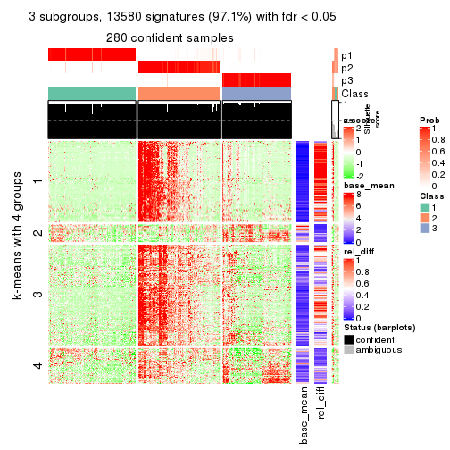
get_signatures(res, k = 4)
get_signatures(res, k = 5)
get_signatures(res, k = 6)
Signature heatmaps where rows are not scaled:
get_signatures(res, k = 2, scale_rows = FALSE)

get_signatures(res, k = 3, scale_rows = FALSE)
get_signatures(res, k = 4, scale_rows = FALSE)
get_signatures(res, k = 5, scale_rows = FALSE)
get_signatures(res, k = 6, scale_rows = FALSE)
Compare the overlap of signatures from different k:
compare_signatures(res)
get_signature() returns a data frame invisibly. TO get the list of signatures, the function
call should be assigned to a variable explicitly. In following code, if plot argument is set
to FALSE, no heatmap is plotted while only the differential analysis is performed.
# code only for demonstration
tb = get_signature(res, k = ..., plot = FALSE)
An example of the output of tb is:
#> which_row fdr mean_1 mean_2 scaled_mean_1 scaled_mean_2 km
#> 1 38 0.042760348 8.373488 9.131774 -0.5533452 0.5164555 1
#> 2 40 0.018707592 7.106213 8.469186 -0.6173731 0.5762149 1
#> 3 55 0.019134737 10.221463 11.207825 -0.6159697 0.5749050 1
#> 4 59 0.006059896 5.921854 7.869574 -0.6899429 0.6439467 1
#> 5 60 0.018055526 8.928898 10.211722 -0.6204761 0.5791110 1
#> 6 98 0.009384629 15.714769 14.887706 0.6635654 -0.6193277 2
...
The columns in tb are:
which_row: row indices corresponding to the input matrix.fdr: FDR for the differential test. mean_x: The mean value in group x.scaled_mean_x: The mean value in group x after rows are scaled.km: Row groups if k-means clustering is applied to rows.UMAP plot which shows how samples are separated.
dimension_reduction(res, k = 2, method = "UMAP")
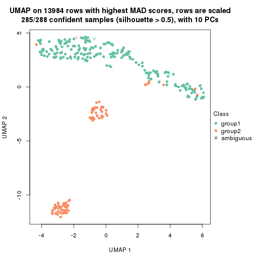
dimension_reduction(res, k = 3, method = "UMAP")
dimension_reduction(res, k = 4, method = "UMAP")
dimension_reduction(res, k = 5, method = "UMAP")
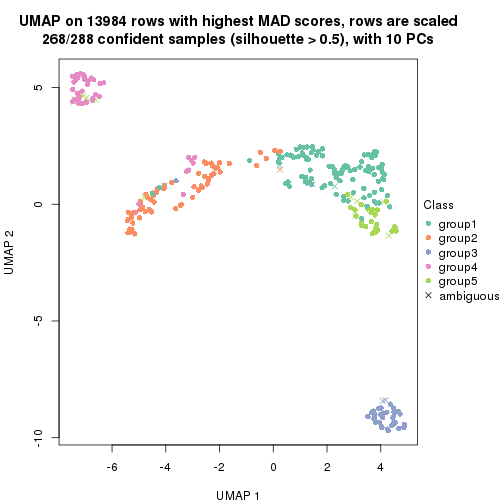
dimension_reduction(res, k = 6, method = "UMAP")
Following heatmap shows how subgroups are split when increasing k:
collect_classes(res)
If matrix rows can be associated to genes, consider to use functional_enrichment(res,
...) to perform function enrichment for the signature genes. See this vignette for more detailed explanations.
The object with results only for a single top-value method and a single partition method can be extracted as:
res = res_list["MAD", "NMF"]
# you can also extract it by
# res = res_list["MAD:NMF"]
A summary of res and all the functions that can be applied to it:
res
#> A 'ConsensusPartition' object with k = 2, 3, 4, 5, 6.
#> On a matrix with 13984 rows and 288 columns.
#> Top rows (1000, 2000, 3000, 4000, 5000) are extracted by 'MAD' method.
#> Subgroups are detected by 'NMF' method.
#> Performed in total 1250 partitions by row resampling.
#> Best k for subgroups seems to be 4.
#>
#> Following methods can be applied to this 'ConsensusPartition' object:
#> [1] "cola_report" "collect_classes" "collect_plots"
#> [4] "collect_stats" "colnames" "compare_signatures"
#> [7] "consensus_heatmap" "dimension_reduction" "functional_enrichment"
#> [10] "get_anno_col" "get_anno" "get_classes"
#> [13] "get_consensus" "get_matrix" "get_membership"
#> [16] "get_param" "get_signatures" "get_stats"
#> [19] "is_best_k" "is_stable_k" "membership_heatmap"
#> [22] "ncol" "nrow" "plot_ecdf"
#> [25] "rownames" "select_partition_number" "show"
#> [28] "suggest_best_k" "test_to_known_factors"
collect_plots() function collects all the plots made from res for all k (number of partitions)
into one single page to provide an easy and fast comparison between different k.
collect_plots(res)
The plots are:
k and the heatmap of
predicted classes for each k.k.k.k.All the plots in panels can be made by individual functions and they are plotted later in this section.
select_partition_number() produces several plots showing different
statistics for choosing “optimized” k. There are following statistics:
k;k, the area increased is defined as \(A_k - A_{k-1}\).The detailed explanations of these statistics can be found in the cola vignette.
Generally speaking, lower PAC score, higher mean silhouette score or higher
concordance corresponds to better partition. Rand index and Jaccard index
measure how similar the current partition is compared to partition with k-1.
If they are too similar, we won't accept k is better than k-1.
select_partition_number(res)
The numeric values for all these statistics can be obtained by get_stats().
get_stats(res)
#> k 1-PAC mean_silhouette concordance area_increased Rand Jaccard
#> 2 2 0.861 0.911 0.963 0.4929 0.506 0.506
#> 3 3 0.909 0.918 0.966 0.3327 0.726 0.512
#> 4 4 0.927 0.918 0.964 0.0801 0.893 0.711
#> 5 5 0.774 0.734 0.867 0.0867 0.913 0.717
#> 6 6 0.825 0.774 0.883 0.0530 0.908 0.642
suggest_best_k() suggests the best \(k\) based on these statistics. The rules are as follows:
suggest_best_k(res)
#> [1] 4
#> attr(,"optional")
#> [1] 3
There is also optional best \(k\) = 3 that is worth to check.
Following shows the table of the partitions (You need to click the show/hide
code output link to see it). The membership matrix (columns with name p*)
is inferred by
clue::cl_consensus()
function with the SE method. Basically the value in the membership matrix
represents the probability to belong to a certain group. The finall class
label for an item is determined with the group with highest probability it
belongs to.
In get_classes() function, the entropy is calculated from the membership
matrix and the silhouette score is calculated from the consensus matrix.
cbind(get_classes(res, k = 2), get_membership(res, k = 2))
#> class entropy silhouette p1 p2
#> SRR1982614 2 0.0000 0.9675 0.000 1.000
#> SRR1982613 2 0.0000 0.9675 0.000 1.000
#> SRR1982612 2 0.0000 0.9675 0.000 1.000
#> SRR1982611 2 0.3879 0.8930 0.076 0.924
#> SRR1982610 2 0.9866 0.2019 0.432 0.568
#> SRR1982609 1 0.0000 0.9550 1.000 0.000
#> SRR1982659 1 0.0000 0.9550 1.000 0.000
#> SRR1982692 2 0.0000 0.9675 0.000 1.000
#> SRR1982722 1 0.8144 0.6827 0.748 0.252
#> SRR1982750 2 0.0000 0.9675 0.000 1.000
#> SRR2095031 2 0.0000 0.9675 0.000 1.000
#> SRR1982780 1 0.6531 0.7976 0.832 0.168
#> SRR1982807 2 0.4562 0.8701 0.096 0.904
#> SRR1982830 2 0.9977 0.0584 0.472 0.528
#> SRR1982829 2 0.0000 0.9675 0.000 1.000
#> SRR1982828 2 0.9286 0.4516 0.344 0.656
#> SRR1982827 1 0.5737 0.8329 0.864 0.136
#> SRR1982826 1 0.0000 0.9550 1.000 0.000
#> SRR1982825 1 0.0000 0.9550 1.000 0.000
#> SRR1982824 2 0.0000 0.9675 0.000 1.000
#> SRR1982823 2 0.8713 0.5663 0.292 0.708
#> SRR1982822 2 1.0000 -0.0421 0.496 0.504
#> SRR1982821 2 0.0000 0.9675 0.000 1.000
#> SRR1982820 1 0.0000 0.9550 1.000 0.000
#> SRR1982819 1 0.0000 0.9550 1.000 0.000
#> SRR1982818 1 0.0000 0.9550 1.000 0.000
#> SRR1982817 1 0.7674 0.7245 0.776 0.224
#> SRR1982816 1 0.0000 0.9550 1.000 0.000
#> SRR1982815 1 0.0000 0.9550 1.000 0.000
#> SRR1982814 2 0.0000 0.9675 0.000 1.000
#> SRR1982813 1 0.1843 0.9331 0.972 0.028
#> SRR1982812 2 0.0000 0.9675 0.000 1.000
#> SRR1982811 1 0.9866 0.2837 0.568 0.432
#> SRR1982810 1 0.0000 0.9550 1.000 0.000
#> SRR1982809 2 0.0000 0.9675 0.000 1.000
#> SRR1982808 1 0.6712 0.7877 0.824 0.176
#> SRR1982806 1 0.0000 0.9550 1.000 0.000
#> SRR1982805 1 0.0000 0.9550 1.000 0.000
#> SRR1982804 1 0.9460 0.4678 0.636 0.364
#> SRR1982803 2 0.0000 0.9675 0.000 1.000
#> SRR1982802 1 0.0000 0.9550 1.000 0.000
#> SRR1982801 1 0.6973 0.7728 0.812 0.188
#> SRR1982800 1 0.6623 0.7927 0.828 0.172
#> SRR1982799 1 0.0000 0.9550 1.000 0.000
#> SRR1982798 1 0.0000 0.9550 1.000 0.000
#> SRR1982797 2 0.0000 0.9675 0.000 1.000
#> SRR1982796 1 0.0000 0.9550 1.000 0.000
#> SRR1982795 1 0.0000 0.9550 1.000 0.000
#> SRR1982794 1 0.0000 0.9550 1.000 0.000
#> SRR1982793 1 0.0000 0.9550 1.000 0.000
#> SRR1982792 1 0.0000 0.9550 1.000 0.000
#> SRR1982791 1 0.0000 0.9550 1.000 0.000
#> SRR1982790 2 0.0000 0.9675 0.000 1.000
#> SRR1982789 1 0.0000 0.9550 1.000 0.000
#> SRR1982788 1 0.0000 0.9550 1.000 0.000
#> SRR1982787 1 0.0000 0.9550 1.000 0.000
#> SRR1982786 2 0.0000 0.9675 0.000 1.000
#> SRR1982785 1 0.0000 0.9550 1.000 0.000
#> SRR1982784 1 0.0000 0.9550 1.000 0.000
#> SRR1982783 2 0.9795 0.2539 0.416 0.584
#> SRR1982782 1 0.0000 0.9550 1.000 0.000
#> SRR1982781 1 0.0000 0.9550 1.000 0.000
#> SRR1982779 1 0.0000 0.9550 1.000 0.000
#> SRR1982778 1 0.0000 0.9550 1.000 0.000
#> SRR1982776 2 0.0000 0.9675 0.000 1.000
#> SRR1982777 2 0.0000 0.9675 0.000 1.000
#> SRR1982775 1 0.0000 0.9550 1.000 0.000
#> SRR1982774 1 0.0000 0.9550 1.000 0.000
#> SRR1982772 1 0.0000 0.9550 1.000 0.000
#> SRR1982773 1 0.0000 0.9550 1.000 0.000
#> SRR1982770 1 0.0000 0.9550 1.000 0.000
#> SRR1982771 1 0.6148 0.8157 0.848 0.152
#> SRR1982769 2 0.0000 0.9675 0.000 1.000
#> SRR1982768 1 0.0000 0.9550 1.000 0.000
#> SRR1982767 1 0.0000 0.9550 1.000 0.000
#> SRR1982766 2 0.0938 0.9570 0.012 0.988
#> SRR1982765 2 0.0000 0.9675 0.000 1.000
#> SRR1982764 1 0.0000 0.9550 1.000 0.000
#> SRR1982762 1 0.0000 0.9550 1.000 0.000
#> SRR1982760 1 0.0000 0.9550 1.000 0.000
#> SRR1982761 1 0.0000 0.9550 1.000 0.000
#> SRR1982763 2 0.0000 0.9675 0.000 1.000
#> SRR1982759 1 0.8661 0.6219 0.712 0.288
#> SRR1982758 1 0.7883 0.7072 0.764 0.236
#> SRR1982757 1 0.0000 0.9550 1.000 0.000
#> SRR1982755 1 0.0376 0.9521 0.996 0.004
#> SRR1982754 1 0.9522 0.4489 0.628 0.372
#> SRR1982756 1 0.0000 0.9550 1.000 0.000
#> SRR1982753 1 0.0000 0.9550 1.000 0.000
#> SRR1982751 2 0.0000 0.9675 0.000 1.000
#> SRR1982752 2 0.0000 0.9675 0.000 1.000
#> SRR1982749 2 0.0000 0.9675 0.000 1.000
#> SRR1982748 2 0.0000 0.9675 0.000 1.000
#> SRR1982747 2 0.0000 0.9675 0.000 1.000
#> SRR1982746 2 0.0000 0.9675 0.000 1.000
#> SRR1982745 2 0.0000 0.9675 0.000 1.000
#> SRR1982743 2 0.0000 0.9675 0.000 1.000
#> SRR1982744 2 0.0000 0.9675 0.000 1.000
#> SRR1982741 2 0.0000 0.9675 0.000 1.000
#> SRR1982742 2 0.0000 0.9675 0.000 1.000
#> SRR2095014 2 0.0000 0.9675 0.000 1.000
#> SRR1982740 2 0.0000 0.9675 0.000 1.000
#> SRR1982739 2 0.0000 0.9675 0.000 1.000
#> SRR1982737 2 0.0000 0.9675 0.000 1.000
#> SRR1982738 2 0.0000 0.9675 0.000 1.000
#> SRR1982736 2 0.0000 0.9675 0.000 1.000
#> SRR1982735 2 0.0000 0.9675 0.000 1.000
#> SRR1982733 2 0.0000 0.9675 0.000 1.000
#> SRR1982732 2 0.0000 0.9675 0.000 1.000
#> SRR2095004 2 0.0000 0.9675 0.000 1.000
#> SRR1982734 2 0.0000 0.9675 0.000 1.000
#> SRR1982731 2 0.0000 0.9675 0.000 1.000
#> SRR1982729 2 0.0000 0.9675 0.000 1.000
#> SRR1982730 2 0.0000 0.9675 0.000 1.000
#> SRR1982728 2 0.0000 0.9675 0.000 1.000
#> SRR1982727 2 0.0000 0.9675 0.000 1.000
#> SRR1982726 1 0.7219 0.7574 0.800 0.200
#> SRR1982723 2 0.0000 0.9675 0.000 1.000
#> SRR1982725 2 0.7602 0.6974 0.220 0.780
#> SRR1982724 1 0.9775 0.3440 0.588 0.412
#> SRR1982721 1 0.9427 0.4772 0.640 0.360
#> SRR1982720 1 0.5842 0.8286 0.860 0.140
#> SRR1982719 1 0.4815 0.8652 0.896 0.104
#> SRR1982718 2 0.0000 0.9675 0.000 1.000
#> SRR1982717 2 0.0000 0.9675 0.000 1.000
#> SRR1982715 2 0.0000 0.9675 0.000 1.000
#> SRR1982714 2 0.0000 0.9675 0.000 1.000
#> SRR1982716 2 0.0000 0.9675 0.000 1.000
#> SRR1982713 2 0.0000 0.9675 0.000 1.000
#> SRR1982711 2 0.0000 0.9675 0.000 1.000
#> SRR1982712 2 0.0000 0.9675 0.000 1.000
#> SRR1982710 2 0.0000 0.9675 0.000 1.000
#> SRR1982708 2 0.0000 0.9675 0.000 1.000
#> SRR1982707 2 0.0000 0.9675 0.000 1.000
#> SRR1982709 1 0.8713 0.6150 0.708 0.292
#> SRR1982705 2 0.0000 0.9675 0.000 1.000
#> SRR1982706 1 0.0000 0.9550 1.000 0.000
#> SRR1982704 2 0.0000 0.9675 0.000 1.000
#> SRR1982702 2 0.0000 0.9675 0.000 1.000
#> SRR1982703 2 0.0000 0.9675 0.000 1.000
#> SRR1982701 2 0.0000 0.9675 0.000 1.000
#> SRR1982700 2 0.0000 0.9675 0.000 1.000
#> SRR1982697 2 0.0000 0.9675 0.000 1.000
#> SRR1982698 2 0.0000 0.9675 0.000 1.000
#> SRR1982699 2 0.0000 0.9675 0.000 1.000
#> SRR1982696 2 0.0000 0.9675 0.000 1.000
#> SRR1982695 1 0.0000 0.9550 1.000 0.000
#> SRR1982694 1 0.0000 0.9550 1.000 0.000
#> SRR1982693 2 0.0000 0.9675 0.000 1.000
#> SRR1982690 2 0.0000 0.9675 0.000 1.000
#> SRR1982691 2 0.0000 0.9675 0.000 1.000
#> SRR1982689 2 0.0000 0.9675 0.000 1.000
#> SRR1982688 1 0.0000 0.9550 1.000 0.000
#> SRR1982687 2 0.0000 0.9675 0.000 1.000
#> SRR1982686 2 0.0000 0.9675 0.000 1.000
#> SRR1982685 2 0.0000 0.9675 0.000 1.000
#> SRR1982684 2 0.0000 0.9675 0.000 1.000
#> SRR1982683 2 0.0000 0.9675 0.000 1.000
#> SRR1982681 2 0.0000 0.9675 0.000 1.000
#> SRR1982682 2 0.0000 0.9675 0.000 1.000
#> SRR1982680 2 0.0000 0.9675 0.000 1.000
#> SRR1982679 1 0.0000 0.9550 1.000 0.000
#> SRR1982678 2 0.0000 0.9675 0.000 1.000
#> SRR1982677 2 0.0000 0.9675 0.000 1.000
#> SRR1982676 1 0.0000 0.9550 1.000 0.000
#> SRR1982675 1 0.0000 0.9550 1.000 0.000
#> SRR1982674 2 0.0000 0.9675 0.000 1.000
#> SRR1982671 1 0.9323 0.5042 0.652 0.348
#> SRR1982673 1 0.0000 0.9550 1.000 0.000
#> SRR1982672 1 0.0000 0.9550 1.000 0.000
#> SRR1982670 1 0.0000 0.9550 1.000 0.000
#> SRR1982669 1 0.0000 0.9550 1.000 0.000
#> SRR1982667 1 0.0000 0.9550 1.000 0.000
#> SRR1982668 2 0.0000 0.9675 0.000 1.000
#> SRR1982666 1 0.0000 0.9550 1.000 0.000
#> SRR1982665 2 0.0000 0.9675 0.000 1.000
#> SRR1982664 2 0.0000 0.9675 0.000 1.000
#> SRR1982663 1 0.0000 0.9550 1.000 0.000
#> SRR1982662 1 0.0000 0.9550 1.000 0.000
#> SRR1982661 1 0.0376 0.9521 0.996 0.004
#> SRR1982660 1 0.0000 0.9550 1.000 0.000
#> SRR1982658 1 0.0000 0.9550 1.000 0.000
#> SRR1982657 1 0.0000 0.9550 1.000 0.000
#> SRR1982656 2 0.0000 0.9675 0.000 1.000
#> SRR1982654 1 0.0000 0.9550 1.000 0.000
#> SRR1982655 1 0.0000 0.9550 1.000 0.000
#> SRR1982653 1 0.0000 0.9550 1.000 0.000
#> SRR1982652 1 0.0000 0.9550 1.000 0.000
#> SRR1982651 1 0.0000 0.9550 1.000 0.000
#> SRR1982649 2 0.0000 0.9675 0.000 1.000
#> SRR1982650 1 0.0000 0.9550 1.000 0.000
#> SRR1982648 1 0.0000 0.9550 1.000 0.000
#> SRR1982647 1 0.0000 0.9550 1.000 0.000
#> SRR1982646 1 0.7299 0.7521 0.796 0.204
#> SRR1982645 2 0.0000 0.9675 0.000 1.000
#> SRR1982644 1 0.0000 0.9550 1.000 0.000
#> SRR1982642 1 0.0000 0.9550 1.000 0.000
#> SRR1982643 1 0.0000 0.9550 1.000 0.000
#> SRR1982641 1 0.0000 0.9550 1.000 0.000
#> SRR1982640 1 0.0000 0.9550 1.000 0.000
#> SRR1982638 1 0.0000 0.9550 1.000 0.000
#> SRR1982639 1 0.0000 0.9550 1.000 0.000
#> SRR1982637 1 0.0000 0.9550 1.000 0.000
#> SRR1982635 1 0.0000 0.9550 1.000 0.000
#> SRR1982636 2 0.0000 0.9675 0.000 1.000
#> SRR1982633 1 0.0000 0.9550 1.000 0.000
#> SRR1982632 1 0.0000 0.9550 1.000 0.000
#> SRR1982631 1 0.0376 0.9521 0.996 0.004
#> SRR1982634 1 0.0000 0.9550 1.000 0.000
#> SRR1982628 2 0.0938 0.9570 0.012 0.988
#> SRR1982629 1 0.0000 0.9550 1.000 0.000
#> SRR1982627 1 0.0000 0.9550 1.000 0.000
#> SRR1982625 1 0.0000 0.9550 1.000 0.000
#> SRR1982626 2 0.9775 0.2662 0.412 0.588
#> SRR1982624 2 0.0000 0.9675 0.000 1.000
#> SRR1982623 1 0.0000 0.9550 1.000 0.000
#> SRR1982622 1 0.0000 0.9550 1.000 0.000
#> SRR1982621 1 0.9522 0.4490 0.628 0.372
#> SRR1982620 1 0.0000 0.9550 1.000 0.000
#> SRR1982619 2 0.0000 0.9675 0.000 1.000
#> SRR1982618 1 0.0000 0.9550 1.000 0.000
#> SRR1982617 2 0.0000 0.9675 0.000 1.000
#> SRR1982616 1 0.8207 0.6761 0.744 0.256
#> SRR1982615 1 0.0000 0.9550 1.000 0.000
#> SRR1982608 2 0.0000 0.9675 0.000 1.000
#> SRR1982607 1 0.0000 0.9550 1.000 0.000
#> SRR1982606 1 0.0000 0.9550 1.000 0.000
#> SRR1982605 2 0.0000 0.9675 0.000 1.000
#> SRR1982604 1 0.0000 0.9550 1.000 0.000
#> SRR1982603 1 0.0000 0.9550 1.000 0.000
#> SRR1982602 2 0.0000 0.9675 0.000 1.000
#> SRR1982601 1 0.0000 0.9550 1.000 0.000
#> SRR1982599 1 0.9358 0.4951 0.648 0.352
#> SRR1982600 2 0.0000 0.9675 0.000 1.000
#> SRR1982598 1 0.9661 0.3985 0.608 0.392
#> SRR1982597 1 0.0000 0.9550 1.000 0.000
#> SRR1982595 1 0.0000 0.9550 1.000 0.000
#> SRR1982596 1 0.0000 0.9550 1.000 0.000
#> SRR1982594 2 0.0000 0.9675 0.000 1.000
#> SRR1982593 2 0.9129 0.4895 0.328 0.672
#> SRR1982592 2 0.0000 0.9675 0.000 1.000
#> SRR1982591 2 0.3114 0.9146 0.056 0.944
#> SRR1982590 2 0.0000 0.9675 0.000 1.000
#> SRR1982589 2 0.0000 0.9675 0.000 1.000
#> SRR1982588 1 0.0000 0.9550 1.000 0.000
#> SRR1982587 2 0.0000 0.9675 0.000 1.000
#> SRR1982586 1 0.0000 0.9550 1.000 0.000
#> SRR1982584 2 0.0000 0.9675 0.000 1.000
#> SRR2096514 1 0.0000 0.9550 1.000 0.000
#> SRR2096513 1 0.0000 0.9550 1.000 0.000
#> SRR2096511 1 0.0000 0.9550 1.000 0.000
#> SRR2096512 2 0.0000 0.9675 0.000 1.000
#> SRR2096509 1 0.0000 0.9550 1.000 0.000
#> SRR2096510 1 0.0000 0.9550 1.000 0.000
#> SRR2096508 2 0.0000 0.9675 0.000 1.000
#> SRR2096507 2 0.0000 0.9675 0.000 1.000
#> SRR2096504 1 0.0000 0.9550 1.000 0.000
#> SRR2096506 1 0.0000 0.9550 1.000 0.000
#> SRR2096505 1 0.0000 0.9550 1.000 0.000
#> SRR2096503 2 0.0000 0.9675 0.000 1.000
#> SRR2096500 1 0.0000 0.9550 1.000 0.000
#> SRR2096501 1 0.0000 0.9550 1.000 0.000
#> SRR2096502 1 0.0000 0.9550 1.000 0.000
#> SRR2096499 1 0.0000 0.9550 1.000 0.000
#> SRR2096498 1 0.0000 0.9550 1.000 0.000
#> SRR2096496 1 0.0000 0.9550 1.000 0.000
#> SRR2096497 1 0.0000 0.9550 1.000 0.000
#> SRR2096495 1 0.0000 0.9550 1.000 0.000
#> SRR2096494 1 0.0000 0.9550 1.000 0.000
#> SRR2096492 1 0.0000 0.9550 1.000 0.000
#> SRR2096491 2 0.2778 0.9229 0.048 0.952
#> SRR2096493 1 0.0000 0.9550 1.000 0.000
#> SRR2096490 1 0.0000 0.9550 1.000 0.000
#> SRR2096488 1 0.0000 0.9550 1.000 0.000
#> SRR2096489 1 0.0000 0.9550 1.000 0.000
#> SRR2096487 1 0.7139 0.7627 0.804 0.196
#> SRR2096484 1 0.0000 0.9550 1.000 0.000
#> SRR2096486 2 0.0000 0.9675 0.000 1.000
#> SRR2096485 1 0.0000 0.9550 1.000 0.000
#> SRR2096483 1 0.0000 0.9550 1.000 0.000
#> SRR2096482 1 0.0000 0.9550 1.000 0.000
#> SRR2096481 2 0.2236 0.9347 0.036 0.964
#> SRR2096520 1 0.0000 0.9550 1.000 0.000
#> SRR2096519 1 0.0000 0.9550 1.000 0.000
#> SRR2096518 1 0.0000 0.9550 1.000 0.000
#> SRR2096516 1 0.0000 0.9550 1.000 0.000
#> SRR2096517 1 0.0000 0.9550 1.000 0.000
#> SRR2096515 1 0.0000 0.9550 1.000 0.000
cbind(get_classes(res, k = 3), get_membership(res, k = 3))
#> class entropy silhouette p1 p2 p3
#> SRR1982614 2 0.0000 0.9623 0.000 1.000 0.000
#> SRR1982613 2 0.0237 0.9593 0.004 0.996 0.000
#> SRR1982612 1 0.6008 0.4300 0.628 0.372 0.000
#> SRR1982611 1 0.6307 0.0763 0.512 0.488 0.000
#> SRR1982610 1 0.6154 0.3362 0.592 0.408 0.000
#> SRR1982609 1 0.0000 0.9531 1.000 0.000 0.000
#> SRR1982659 1 0.0592 0.9445 0.988 0.000 0.012
#> SRR1982692 2 0.0000 0.9623 0.000 1.000 0.000
#> SRR1982722 3 0.0000 0.9797 0.000 0.000 1.000
#> SRR1982750 2 0.0000 0.9623 0.000 1.000 0.000
#> SRR2095031 2 0.0000 0.9623 0.000 1.000 0.000
#> SRR1982780 3 0.0000 0.9797 0.000 0.000 1.000
#> SRR1982807 1 0.2537 0.8893 0.920 0.080 0.000
#> SRR1982830 2 0.3116 0.8612 0.108 0.892 0.000
#> SRR1982829 2 0.0000 0.9623 0.000 1.000 0.000
#> SRR1982828 1 0.2959 0.8700 0.900 0.100 0.000
#> SRR1982827 1 0.0000 0.9531 1.000 0.000 0.000
#> SRR1982826 1 0.0000 0.9531 1.000 0.000 0.000
#> SRR1982825 1 0.0000 0.9531 1.000 0.000 0.000
#> SRR1982824 2 0.5760 0.4977 0.328 0.672 0.000
#> SRR1982823 2 0.3619 0.8277 0.136 0.864 0.000
#> SRR1982822 1 0.6045 0.4086 0.620 0.380 0.000
#> SRR1982821 2 0.0000 0.9623 0.000 1.000 0.000
#> SRR1982820 1 0.0000 0.9531 1.000 0.000 0.000
#> SRR1982819 1 0.0424 0.9473 0.992 0.000 0.008
#> SRR1982818 1 0.0000 0.9531 1.000 0.000 0.000
#> SRR1982817 1 0.0000 0.9531 1.000 0.000 0.000
#> SRR1982816 1 0.0000 0.9531 1.000 0.000 0.000
#> SRR1982815 1 0.0000 0.9531 1.000 0.000 0.000
#> SRR1982814 2 0.1031 0.9431 0.024 0.976 0.000
#> SRR1982813 1 0.0000 0.9531 1.000 0.000 0.000
#> SRR1982812 2 0.0000 0.9623 0.000 1.000 0.000
#> SRR1982811 1 0.0000 0.9531 1.000 0.000 0.000
#> SRR1982810 1 0.0000 0.9531 1.000 0.000 0.000
#> SRR1982809 2 0.1163 0.9396 0.028 0.972 0.000
#> SRR1982808 1 0.0000 0.9531 1.000 0.000 0.000
#> SRR1982806 1 0.0000 0.9531 1.000 0.000 0.000
#> SRR1982805 1 0.0000 0.9531 1.000 0.000 0.000
#> SRR1982804 1 0.0000 0.9531 1.000 0.000 0.000
#> SRR1982803 1 0.2878 0.8744 0.904 0.096 0.000
#> SRR1982802 1 0.0000 0.9531 1.000 0.000 0.000
#> SRR1982801 1 0.0000 0.9531 1.000 0.000 0.000
#> SRR1982800 1 0.0000 0.9531 1.000 0.000 0.000
#> SRR1982799 1 0.0000 0.9531 1.000 0.000 0.000
#> SRR1982798 1 0.0000 0.9531 1.000 0.000 0.000
#> SRR1982797 2 0.0747 0.9497 0.016 0.984 0.000
#> SRR1982796 3 0.0000 0.9797 0.000 0.000 1.000
#> SRR1982795 1 0.0000 0.9531 1.000 0.000 0.000
#> SRR1982794 1 0.0000 0.9531 1.000 0.000 0.000
#> SRR1982793 1 0.5465 0.5868 0.712 0.000 0.288
#> SRR1982792 1 0.0000 0.9531 1.000 0.000 0.000
#> SRR1982791 1 0.0000 0.9531 1.000 0.000 0.000
#> SRR1982790 2 0.0000 0.9623 0.000 1.000 0.000
#> SRR1982789 1 0.0000 0.9531 1.000 0.000 0.000
#> SRR1982788 1 0.0000 0.9531 1.000 0.000 0.000
#> SRR1982787 1 0.0000 0.9531 1.000 0.000 0.000
#> SRR1982786 2 0.5397 0.6127 0.000 0.720 0.280
#> SRR1982785 3 0.0000 0.9797 0.000 0.000 1.000
#> SRR1982784 3 0.0000 0.9797 0.000 0.000 1.000
#> SRR1982783 3 0.4399 0.7612 0.000 0.188 0.812
#> SRR1982782 1 0.0000 0.9531 1.000 0.000 0.000
#> SRR1982781 1 0.0000 0.9531 1.000 0.000 0.000
#> SRR1982779 3 0.0000 0.9797 0.000 0.000 1.000
#> SRR1982778 3 0.0000 0.9797 0.000 0.000 1.000
#> SRR1982776 3 0.0000 0.9797 0.000 0.000 1.000
#> SRR1982777 3 0.0000 0.9797 0.000 0.000 1.000
#> SRR1982775 3 0.0000 0.9797 0.000 0.000 1.000
#> SRR1982774 3 0.0000 0.9797 0.000 0.000 1.000
#> SRR1982772 3 0.0000 0.9797 0.000 0.000 1.000
#> SRR1982773 3 0.0000 0.9797 0.000 0.000 1.000
#> SRR1982770 3 0.0000 0.9797 0.000 0.000 1.000
#> SRR1982771 3 0.0000 0.9797 0.000 0.000 1.000
#> SRR1982769 2 0.0424 0.9561 0.000 0.992 0.008
#> SRR1982768 3 0.0000 0.9797 0.000 0.000 1.000
#> SRR1982767 3 0.0000 0.9797 0.000 0.000 1.000
#> SRR1982766 1 0.6244 0.2429 0.560 0.440 0.000
#> SRR1982765 2 0.0000 0.9623 0.000 1.000 0.000
#> SRR1982764 1 0.0000 0.9531 1.000 0.000 0.000
#> SRR1982762 1 0.0000 0.9531 1.000 0.000 0.000
#> SRR1982760 3 0.4504 0.7482 0.196 0.000 0.804
#> SRR1982761 1 0.1753 0.9144 0.952 0.000 0.048
#> SRR1982763 2 0.0000 0.9623 0.000 1.000 0.000
#> SRR1982759 1 0.0000 0.9531 1.000 0.000 0.000
#> SRR1982758 3 0.0000 0.9797 0.000 0.000 1.000
#> SRR1982757 3 0.0000 0.9797 0.000 0.000 1.000
#> SRR1982755 1 0.0000 0.9531 1.000 0.000 0.000
#> SRR1982754 1 0.2878 0.8739 0.904 0.096 0.000
#> SRR1982756 1 0.3116 0.8549 0.892 0.000 0.108
#> SRR1982753 3 0.0000 0.9797 0.000 0.000 1.000
#> SRR1982751 2 0.0000 0.9623 0.000 1.000 0.000
#> SRR1982752 2 0.0000 0.9623 0.000 1.000 0.000
#> SRR1982749 2 0.0000 0.9623 0.000 1.000 0.000
#> SRR1982748 2 0.0000 0.9623 0.000 1.000 0.000
#> SRR1982747 2 0.0000 0.9623 0.000 1.000 0.000
#> SRR1982746 2 0.0000 0.9623 0.000 1.000 0.000
#> SRR1982745 2 0.0000 0.9623 0.000 1.000 0.000
#> SRR1982743 2 0.0000 0.9623 0.000 1.000 0.000
#> SRR1982744 2 0.0000 0.9623 0.000 1.000 0.000
#> SRR1982741 2 0.0000 0.9623 0.000 1.000 0.000
#> SRR1982742 2 0.0000 0.9623 0.000 1.000 0.000
#> SRR2095014 2 0.0000 0.9623 0.000 1.000 0.000
#> SRR1982740 2 0.0000 0.9623 0.000 1.000 0.000
#> SRR1982739 2 0.0000 0.9623 0.000 1.000 0.000
#> SRR1982737 2 0.0000 0.9623 0.000 1.000 0.000
#> SRR1982738 2 0.0000 0.9623 0.000 1.000 0.000
#> SRR1982736 2 0.0000 0.9623 0.000 1.000 0.000
#> SRR1982735 2 0.0000 0.9623 0.000 1.000 0.000
#> SRR1982733 2 0.0000 0.9623 0.000 1.000 0.000
#> SRR1982732 2 0.0000 0.9623 0.000 1.000 0.000
#> SRR2095004 2 0.0000 0.9623 0.000 1.000 0.000
#> SRR1982734 2 0.0000 0.9623 0.000 1.000 0.000
#> SRR1982731 2 0.0000 0.9623 0.000 1.000 0.000
#> SRR1982729 2 0.0000 0.9623 0.000 1.000 0.000
#> SRR1982730 2 0.0000 0.9623 0.000 1.000 0.000
#> SRR1982728 2 0.0000 0.9623 0.000 1.000 0.000
#> SRR1982727 2 0.0000 0.9623 0.000 1.000 0.000
#> SRR1982726 3 0.0000 0.9797 0.000 0.000 1.000
#> SRR1982723 2 0.2066 0.9106 0.000 0.940 0.060
#> SRR1982725 3 0.4931 0.6894 0.000 0.232 0.768
#> SRR1982724 3 0.1643 0.9400 0.000 0.044 0.956
#> SRR1982721 3 0.0000 0.9797 0.000 0.000 1.000
#> SRR1982720 3 0.0000 0.9797 0.000 0.000 1.000
#> SRR1982719 3 0.0000 0.9797 0.000 0.000 1.000
#> SRR1982718 2 0.0000 0.9623 0.000 1.000 0.000
#> SRR1982717 2 0.0000 0.9623 0.000 1.000 0.000
#> SRR1982715 2 0.0000 0.9623 0.000 1.000 0.000
#> SRR1982714 2 0.3038 0.8658 0.104 0.896 0.000
#> SRR1982716 2 0.0000 0.9623 0.000 1.000 0.000
#> SRR1982713 1 0.2066 0.9073 0.940 0.060 0.000
#> SRR1982711 2 0.0000 0.9623 0.000 1.000 0.000
#> SRR1982712 2 0.0000 0.9623 0.000 1.000 0.000
#> SRR1982710 2 0.0000 0.9623 0.000 1.000 0.000
#> SRR1982708 2 0.0000 0.9623 0.000 1.000 0.000
#> SRR1982707 2 0.0000 0.9623 0.000 1.000 0.000
#> SRR1982709 1 0.0237 0.9507 0.996 0.004 0.000
#> SRR1982705 2 0.0000 0.9623 0.000 1.000 0.000
#> SRR1982706 1 0.0000 0.9531 1.000 0.000 0.000
#> SRR1982704 2 0.6244 0.2271 0.000 0.560 0.440
#> SRR1982702 2 0.0000 0.9623 0.000 1.000 0.000
#> SRR1982703 2 0.0000 0.9623 0.000 1.000 0.000
#> SRR1982701 2 0.0000 0.9623 0.000 1.000 0.000
#> SRR1982700 2 0.0000 0.9623 0.000 1.000 0.000
#> SRR1982697 2 0.0000 0.9623 0.000 1.000 0.000
#> SRR1982698 2 0.0000 0.9623 0.000 1.000 0.000
#> SRR1982699 2 0.0000 0.9623 0.000 1.000 0.000
#> SRR1982696 2 0.0000 0.9623 0.000 1.000 0.000
#> SRR1982695 1 0.4605 0.7340 0.796 0.000 0.204
#> SRR1982694 1 0.0000 0.9531 1.000 0.000 0.000
#> SRR1982693 2 0.0000 0.9623 0.000 1.000 0.000
#> SRR1982690 2 0.0000 0.9623 0.000 1.000 0.000
#> SRR1982691 2 0.0000 0.9623 0.000 1.000 0.000
#> SRR1982689 2 0.0000 0.9623 0.000 1.000 0.000
#> SRR1982688 1 0.1289 0.9289 0.968 0.000 0.032
#> SRR1982687 2 0.0000 0.9623 0.000 1.000 0.000
#> SRR1982686 2 0.0000 0.9623 0.000 1.000 0.000
#> SRR1982685 2 0.0000 0.9623 0.000 1.000 0.000
#> SRR1982684 2 0.0000 0.9623 0.000 1.000 0.000
#> SRR1982683 2 0.4346 0.7617 0.184 0.816 0.000
#> SRR1982681 2 0.0000 0.9623 0.000 1.000 0.000
#> SRR1982682 2 0.0000 0.9623 0.000 1.000 0.000
#> SRR1982680 2 0.0000 0.9623 0.000 1.000 0.000
#> SRR1982679 1 0.0000 0.9531 1.000 0.000 0.000
#> SRR1982678 2 0.0000 0.9623 0.000 1.000 0.000
#> SRR1982677 2 0.0000 0.9623 0.000 1.000 0.000
#> SRR1982676 1 0.0000 0.9531 1.000 0.000 0.000
#> SRR1982675 1 0.0000 0.9531 1.000 0.000 0.000
#> SRR1982674 2 0.1163 0.9396 0.028 0.972 0.000
#> SRR1982671 3 0.0000 0.9797 0.000 0.000 1.000
#> SRR1982673 1 0.0000 0.9531 1.000 0.000 0.000
#> SRR1982672 1 0.0000 0.9531 1.000 0.000 0.000
#> SRR1982670 3 0.0000 0.9797 0.000 0.000 1.000
#> SRR1982669 1 0.0000 0.9531 1.000 0.000 0.000
#> SRR1982667 1 0.0000 0.9531 1.000 0.000 0.000
#> SRR1982668 2 0.0000 0.9623 0.000 1.000 0.000
#> SRR1982666 1 0.0000 0.9531 1.000 0.000 0.000
#> SRR1982665 2 0.5098 0.6583 0.000 0.752 0.248
#> SRR1982664 1 0.3879 0.8104 0.848 0.152 0.000
#> SRR1982663 1 0.0000 0.9531 1.000 0.000 0.000
#> SRR1982662 3 0.5948 0.4579 0.360 0.000 0.640
#> SRR1982661 1 0.0000 0.9531 1.000 0.000 0.000
#> SRR1982660 1 0.0000 0.9531 1.000 0.000 0.000
#> SRR1982658 1 0.0000 0.9531 1.000 0.000 0.000
#> SRR1982657 1 0.0000 0.9531 1.000 0.000 0.000
#> SRR1982656 2 0.0000 0.9623 0.000 1.000 0.000
#> SRR1982654 1 0.0000 0.9531 1.000 0.000 0.000
#> SRR1982655 1 0.0000 0.9531 1.000 0.000 0.000
#> SRR1982653 1 0.0000 0.9531 1.000 0.000 0.000
#> SRR1982652 1 0.0000 0.9531 1.000 0.000 0.000
#> SRR1982651 1 0.0000 0.9531 1.000 0.000 0.000
#> SRR1982649 1 0.5859 0.4928 0.656 0.344 0.000
#> SRR1982650 1 0.0000 0.9531 1.000 0.000 0.000
#> SRR1982648 1 0.0000 0.9531 1.000 0.000 0.000
#> SRR1982647 1 0.0000 0.9531 1.000 0.000 0.000
#> SRR1982646 1 0.0000 0.9531 1.000 0.000 0.000
#> SRR1982645 2 0.0000 0.9623 0.000 1.000 0.000
#> SRR1982644 1 0.0000 0.9531 1.000 0.000 0.000
#> SRR1982642 1 0.0000 0.9531 1.000 0.000 0.000
#> SRR1982643 1 0.0000 0.9531 1.000 0.000 0.000
#> SRR1982641 1 0.0237 0.9503 0.996 0.000 0.004
#> SRR1982640 1 0.0000 0.9531 1.000 0.000 0.000
#> SRR1982638 1 0.0000 0.9531 1.000 0.000 0.000
#> SRR1982639 1 0.0000 0.9531 1.000 0.000 0.000
#> SRR1982637 1 0.0000 0.9531 1.000 0.000 0.000
#> SRR1982635 3 0.1643 0.9406 0.044 0.000 0.956
#> SRR1982636 2 0.5835 0.4696 0.340 0.660 0.000
#> SRR1982633 3 0.0237 0.9762 0.004 0.000 0.996
#> SRR1982632 1 0.0000 0.9531 1.000 0.000 0.000
#> SRR1982631 1 0.0000 0.9531 1.000 0.000 0.000
#> SRR1982634 1 0.0000 0.9531 1.000 0.000 0.000
#> SRR1982628 1 0.6192 0.3031 0.580 0.420 0.000
#> SRR1982629 1 0.0000 0.9531 1.000 0.000 0.000
#> SRR1982627 1 0.0000 0.9531 1.000 0.000 0.000
#> SRR1982625 1 0.0000 0.9531 1.000 0.000 0.000
#> SRR1982626 1 0.0237 0.9507 0.996 0.004 0.000
#> SRR1982624 1 0.6180 0.3150 0.584 0.416 0.000
#> SRR1982623 1 0.0000 0.9531 1.000 0.000 0.000
#> SRR1982622 1 0.0000 0.9531 1.000 0.000 0.000
#> SRR1982621 3 0.0000 0.9797 0.000 0.000 1.000
#> SRR1982620 3 0.0000 0.9797 0.000 0.000 1.000
#> SRR1982619 2 0.0000 0.9623 0.000 1.000 0.000
#> SRR1982618 3 0.0000 0.9797 0.000 0.000 1.000
#> SRR1982617 2 0.0000 0.9623 0.000 1.000 0.000
#> SRR1982616 1 0.0592 0.9450 0.988 0.012 0.000
#> SRR1982615 1 0.0237 0.9503 0.996 0.000 0.004
#> SRR1982608 2 0.0000 0.9623 0.000 1.000 0.000
#> SRR1982607 1 0.0424 0.9473 0.992 0.000 0.008
#> SRR1982606 1 0.0000 0.9531 1.000 0.000 0.000
#> SRR1982605 1 0.3412 0.8443 0.876 0.124 0.000
#> SRR1982604 1 0.0000 0.9531 1.000 0.000 0.000
#> SRR1982603 1 0.0000 0.9531 1.000 0.000 0.000
#> SRR1982602 2 0.0000 0.9623 0.000 1.000 0.000
#> SRR1982601 1 0.0000 0.9531 1.000 0.000 0.000
#> SRR1982599 1 0.0237 0.9507 0.996 0.004 0.000
#> SRR1982600 2 0.0000 0.9623 0.000 1.000 0.000
#> SRR1982598 1 0.0000 0.9531 1.000 0.000 0.000
#> SRR1982597 1 0.0000 0.9531 1.000 0.000 0.000
#> SRR1982595 1 0.0000 0.9531 1.000 0.000 0.000
#> SRR1982596 1 0.0000 0.9531 1.000 0.000 0.000
#> SRR1982594 1 0.0237 0.9507 0.996 0.004 0.000
#> SRR1982593 2 0.5785 0.4892 0.332 0.668 0.000
#> SRR1982592 2 0.6305 0.0174 0.484 0.516 0.000
#> SRR1982591 1 0.2959 0.8697 0.900 0.100 0.000
#> SRR1982590 2 0.0000 0.9623 0.000 1.000 0.000
#> SRR1982589 1 0.4062 0.7951 0.836 0.164 0.000
#> SRR1982588 1 0.0000 0.9531 1.000 0.000 0.000
#> SRR1982587 1 0.0237 0.9507 0.996 0.004 0.000
#> SRR1982586 1 0.0000 0.9531 1.000 0.000 0.000
#> SRR1982584 2 0.1964 0.9136 0.056 0.944 0.000
#> SRR2096514 3 0.0000 0.9797 0.000 0.000 1.000
#> SRR2096513 3 0.0000 0.9797 0.000 0.000 1.000
#> SRR2096511 3 0.0000 0.9797 0.000 0.000 1.000
#> SRR2096512 2 0.0000 0.9623 0.000 1.000 0.000
#> SRR2096509 3 0.0000 0.9797 0.000 0.000 1.000
#> SRR2096510 3 0.0000 0.9797 0.000 0.000 1.000
#> SRR2096508 2 0.0000 0.9623 0.000 1.000 0.000
#> SRR2096507 2 0.4452 0.7494 0.000 0.808 0.192
#> SRR2096504 3 0.0000 0.9797 0.000 0.000 1.000
#> SRR2096506 3 0.0000 0.9797 0.000 0.000 1.000
#> SRR2096505 3 0.0000 0.9797 0.000 0.000 1.000
#> SRR2096503 2 0.0424 0.9562 0.000 0.992 0.008
#> SRR2096500 3 0.0000 0.9797 0.000 0.000 1.000
#> SRR2096501 3 0.0000 0.9797 0.000 0.000 1.000
#> SRR2096502 3 0.0000 0.9797 0.000 0.000 1.000
#> SRR2096499 3 0.0000 0.9797 0.000 0.000 1.000
#> SRR2096498 3 0.0000 0.9797 0.000 0.000 1.000
#> SRR2096496 3 0.0000 0.9797 0.000 0.000 1.000
#> SRR2096497 3 0.0000 0.9797 0.000 0.000 1.000
#> SRR2096495 3 0.0000 0.9797 0.000 0.000 1.000
#> SRR2096494 3 0.0237 0.9763 0.004 0.000 0.996
#> SRR2096492 3 0.0000 0.9797 0.000 0.000 1.000
#> SRR2096491 3 0.3686 0.8308 0.000 0.140 0.860
#> SRR2096493 3 0.0000 0.9797 0.000 0.000 1.000
#> SRR2096490 3 0.0000 0.9797 0.000 0.000 1.000
#> SRR2096488 3 0.0000 0.9797 0.000 0.000 1.000
#> SRR2096489 3 0.0000 0.9797 0.000 0.000 1.000
#> SRR2096487 3 0.0000 0.9797 0.000 0.000 1.000
#> SRR2096484 3 0.0000 0.9797 0.000 0.000 1.000
#> SRR2096486 3 0.3192 0.8668 0.000 0.112 0.888
#> SRR2096485 3 0.0000 0.9797 0.000 0.000 1.000
#> SRR2096483 3 0.0000 0.9797 0.000 0.000 1.000
#> SRR2096482 3 0.0000 0.9797 0.000 0.000 1.000
#> SRR2096481 3 0.1753 0.9358 0.000 0.048 0.952
#> SRR2096520 3 0.0000 0.9797 0.000 0.000 1.000
#> SRR2096519 3 0.0000 0.9797 0.000 0.000 1.000
#> SRR2096518 3 0.0000 0.9797 0.000 0.000 1.000
#> SRR2096516 3 0.0000 0.9797 0.000 0.000 1.000
#> SRR2096517 3 0.0000 0.9797 0.000 0.000 1.000
#> SRR2096515 3 0.0000 0.9797 0.000 0.000 1.000
cbind(get_classes(res, k = 4), get_membership(res, k = 4))
#> class entropy silhouette p1 p2 p3 p4
#> SRR1982614 2 0.0000 0.9796 0.000 1.000 0.000 0.000
#> SRR1982613 2 0.0469 0.9675 0.012 0.988 0.000 0.000
#> SRR1982612 1 0.1767 0.9076 0.944 0.044 0.000 0.012
#> SRR1982611 1 0.4252 0.6821 0.744 0.252 0.000 0.004
#> SRR1982610 1 0.4875 0.7432 0.772 0.068 0.000 0.160
#> SRR1982609 1 0.0469 0.9382 0.988 0.000 0.000 0.012
#> SRR1982659 3 0.4122 0.6610 0.236 0.000 0.760 0.004
#> SRR1982692 2 0.0000 0.9796 0.000 1.000 0.000 0.000
#> SRR1982722 4 0.0000 0.9464 0.000 0.000 0.000 1.000
#> SRR1982750 2 0.0000 0.9796 0.000 1.000 0.000 0.000
#> SRR2095031 2 0.0000 0.9796 0.000 1.000 0.000 0.000
#> SRR1982780 4 0.0000 0.9464 0.000 0.000 0.000 1.000
#> SRR1982807 1 0.0707 0.9315 0.980 0.020 0.000 0.000
#> SRR1982830 4 0.1022 0.9256 0.000 0.032 0.000 0.968
#> SRR1982829 2 0.0000 0.9796 0.000 1.000 0.000 0.000
#> SRR1982828 1 0.0895 0.9295 0.976 0.020 0.000 0.004
#> SRR1982827 1 0.0000 0.9439 1.000 0.000 0.000 0.000
#> SRR1982826 1 0.0000 0.9439 1.000 0.000 0.000 0.000
#> SRR1982825 1 0.0000 0.9439 1.000 0.000 0.000 0.000
#> SRR1982824 1 0.4621 0.6255 0.708 0.284 0.000 0.008
#> SRR1982823 4 0.4589 0.7431 0.048 0.168 0.000 0.784
#> SRR1982822 1 0.4284 0.7403 0.780 0.200 0.000 0.020
#> SRR1982821 2 0.3790 0.7824 0.016 0.820 0.000 0.164
#> SRR1982820 1 0.4585 0.5190 0.668 0.000 0.000 0.332
#> SRR1982819 4 0.3726 0.6957 0.212 0.000 0.000 0.788
#> SRR1982818 1 0.0000 0.9439 1.000 0.000 0.000 0.000
#> SRR1982817 1 0.0000 0.9439 1.000 0.000 0.000 0.000
#> SRR1982816 1 0.0000 0.9439 1.000 0.000 0.000 0.000
#> SRR1982815 1 0.0000 0.9439 1.000 0.000 0.000 0.000
#> SRR1982814 1 0.5408 0.0848 0.500 0.488 0.000 0.012
#> SRR1982813 1 0.0000 0.9439 1.000 0.000 0.000 0.000
#> SRR1982812 2 0.0000 0.9796 0.000 1.000 0.000 0.000
#> SRR1982811 1 0.0000 0.9439 1.000 0.000 0.000 0.000
#> SRR1982810 1 0.0000 0.9439 1.000 0.000 0.000 0.000
#> SRR1982809 2 0.2589 0.8369 0.116 0.884 0.000 0.000
#> SRR1982808 1 0.0000 0.9439 1.000 0.000 0.000 0.000
#> SRR1982806 1 0.0000 0.9439 1.000 0.000 0.000 0.000
#> SRR1982805 1 0.0000 0.9439 1.000 0.000 0.000 0.000
#> SRR1982804 1 0.0000 0.9439 1.000 0.000 0.000 0.000
#> SRR1982803 1 0.0921 0.9251 0.972 0.028 0.000 0.000
#> SRR1982802 1 0.0000 0.9439 1.000 0.000 0.000 0.000
#> SRR1982801 1 0.0000 0.9439 1.000 0.000 0.000 0.000
#> SRR1982800 1 0.0000 0.9439 1.000 0.000 0.000 0.000
#> SRR1982799 1 0.0000 0.9439 1.000 0.000 0.000 0.000
#> SRR1982798 1 0.0000 0.9439 1.000 0.000 0.000 0.000
#> SRR1982797 2 0.2011 0.8851 0.080 0.920 0.000 0.000
#> SRR1982796 4 0.0188 0.9471 0.000 0.000 0.004 0.996
#> SRR1982795 1 0.0000 0.9439 1.000 0.000 0.000 0.000
#> SRR1982794 1 0.0000 0.9439 1.000 0.000 0.000 0.000
#> SRR1982793 1 0.4761 0.5145 0.664 0.000 0.332 0.004
#> SRR1982792 1 0.0188 0.9425 0.996 0.000 0.000 0.004
#> SRR1982791 1 0.0000 0.9439 1.000 0.000 0.000 0.000
#> SRR1982790 2 0.0000 0.9796 0.000 1.000 0.000 0.000
#> SRR1982789 1 0.0000 0.9439 1.000 0.000 0.000 0.000
#> SRR1982788 1 0.0000 0.9439 1.000 0.000 0.000 0.000
#> SRR1982787 1 0.0000 0.9439 1.000 0.000 0.000 0.000
#> SRR1982786 4 0.0707 0.9357 0.000 0.020 0.000 0.980
#> SRR1982785 4 0.0188 0.9471 0.000 0.000 0.004 0.996
#> SRR1982784 4 0.0188 0.9471 0.000 0.000 0.004 0.996
#> SRR1982783 4 0.0188 0.9459 0.000 0.004 0.000 0.996
#> SRR1982782 1 0.0707 0.9317 0.980 0.000 0.020 0.000
#> SRR1982781 1 0.0000 0.9439 1.000 0.000 0.000 0.000
#> SRR1982779 4 0.0188 0.9471 0.000 0.000 0.004 0.996
#> SRR1982778 4 0.0469 0.9435 0.000 0.000 0.012 0.988
#> SRR1982776 4 0.0376 0.9461 0.000 0.004 0.004 0.992
#> SRR1982777 4 0.0000 0.9464 0.000 0.000 0.000 1.000
#> SRR1982775 4 0.0336 0.9457 0.000 0.000 0.008 0.992
#> SRR1982774 4 0.0336 0.9457 0.000 0.000 0.008 0.992
#> SRR1982772 4 0.0336 0.9457 0.000 0.000 0.008 0.992
#> SRR1982773 4 0.0000 0.9464 0.000 0.000 0.000 1.000
#> SRR1982770 4 0.0592 0.9411 0.000 0.000 0.016 0.984
#> SRR1982771 4 0.0188 0.9471 0.000 0.000 0.004 0.996
#> SRR1982769 4 0.1557 0.9044 0.000 0.056 0.000 0.944
#> SRR1982768 4 0.3311 0.7823 0.000 0.000 0.172 0.828
#> SRR1982767 4 0.4304 0.6030 0.000 0.000 0.284 0.716
#> SRR1982766 2 0.4977 0.0726 0.460 0.540 0.000 0.000
#> SRR1982765 2 0.0469 0.9703 0.000 0.988 0.000 0.012
#> SRR1982764 1 0.2271 0.8817 0.916 0.008 0.076 0.000
#> SRR1982762 1 0.0188 0.9425 0.996 0.000 0.000 0.004
#> SRR1982760 3 0.0000 0.9765 0.000 0.000 1.000 0.000
#> SRR1982761 1 0.0188 0.9425 0.996 0.000 0.000 0.004
#> SRR1982763 2 0.0000 0.9796 0.000 1.000 0.000 0.000
#> SRR1982759 1 0.0188 0.9425 0.996 0.000 0.000 0.004
#> SRR1982758 4 0.0000 0.9464 0.000 0.000 0.000 1.000
#> SRR1982757 4 0.1732 0.9194 0.004 0.008 0.040 0.948
#> SRR1982755 1 0.0000 0.9439 1.000 0.000 0.000 0.000
#> SRR1982754 1 0.4914 0.5442 0.676 0.012 0.000 0.312
#> SRR1982756 1 0.0937 0.9319 0.976 0.000 0.012 0.012
#> SRR1982753 4 0.0188 0.9471 0.000 0.000 0.004 0.996
#> SRR1982751 2 0.0000 0.9796 0.000 1.000 0.000 0.000
#> SRR1982752 2 0.0000 0.9796 0.000 1.000 0.000 0.000
#> SRR1982749 2 0.0000 0.9796 0.000 1.000 0.000 0.000
#> SRR1982748 2 0.0000 0.9796 0.000 1.000 0.000 0.000
#> SRR1982747 2 0.0000 0.9796 0.000 1.000 0.000 0.000
#> SRR1982746 2 0.0000 0.9796 0.000 1.000 0.000 0.000
#> SRR1982745 2 0.0000 0.9796 0.000 1.000 0.000 0.000
#> SRR1982743 2 0.0000 0.9796 0.000 1.000 0.000 0.000
#> SRR1982744 2 0.0000 0.9796 0.000 1.000 0.000 0.000
#> SRR1982741 2 0.0000 0.9796 0.000 1.000 0.000 0.000
#> SRR1982742 2 0.0000 0.9796 0.000 1.000 0.000 0.000
#> SRR2095014 2 0.0000 0.9796 0.000 1.000 0.000 0.000
#> SRR1982740 2 0.0000 0.9796 0.000 1.000 0.000 0.000
#> SRR1982739 2 0.0000 0.9796 0.000 1.000 0.000 0.000
#> SRR1982737 2 0.0000 0.9796 0.000 1.000 0.000 0.000
#> SRR1982738 2 0.0000 0.9796 0.000 1.000 0.000 0.000
#> SRR1982736 2 0.0000 0.9796 0.000 1.000 0.000 0.000
#> SRR1982735 2 0.0000 0.9796 0.000 1.000 0.000 0.000
#> SRR1982733 2 0.0000 0.9796 0.000 1.000 0.000 0.000
#> SRR1982732 2 0.0000 0.9796 0.000 1.000 0.000 0.000
#> SRR2095004 2 0.0000 0.9796 0.000 1.000 0.000 0.000
#> SRR1982734 2 0.0000 0.9796 0.000 1.000 0.000 0.000
#> SRR1982731 2 0.0000 0.9796 0.000 1.000 0.000 0.000
#> SRR1982729 2 0.0000 0.9796 0.000 1.000 0.000 0.000
#> SRR1982730 2 0.0000 0.9796 0.000 1.000 0.000 0.000
#> SRR1982728 2 0.0000 0.9796 0.000 1.000 0.000 0.000
#> SRR1982727 4 0.2760 0.8284 0.000 0.128 0.000 0.872
#> SRR1982726 4 0.0188 0.9471 0.000 0.000 0.004 0.996
#> SRR1982723 4 0.0921 0.9298 0.000 0.028 0.000 0.972
#> SRR1982725 4 0.0188 0.9459 0.000 0.004 0.000 0.996
#> SRR1982724 4 0.0188 0.9471 0.000 0.000 0.004 0.996
#> SRR1982721 4 0.0000 0.9464 0.000 0.000 0.000 1.000
#> SRR1982720 4 0.0188 0.9471 0.000 0.000 0.004 0.996
#> SRR1982719 4 0.0188 0.9471 0.000 0.000 0.004 0.996
#> SRR1982718 2 0.0000 0.9796 0.000 1.000 0.000 0.000
#> SRR1982717 2 0.0000 0.9796 0.000 1.000 0.000 0.000
#> SRR1982715 2 0.0000 0.9796 0.000 1.000 0.000 0.000
#> SRR1982714 2 0.0000 0.9796 0.000 1.000 0.000 0.000
#> SRR1982716 2 0.0000 0.9796 0.000 1.000 0.000 0.000
#> SRR1982713 1 0.4543 0.5611 0.676 0.324 0.000 0.000
#> SRR1982711 2 0.0000 0.9796 0.000 1.000 0.000 0.000
#> SRR1982712 2 0.0000 0.9796 0.000 1.000 0.000 0.000
#> SRR1982710 2 0.0000 0.9796 0.000 1.000 0.000 0.000
#> SRR1982708 2 0.0000 0.9796 0.000 1.000 0.000 0.000
#> SRR1982707 2 0.0000 0.9796 0.000 1.000 0.000 0.000
#> SRR1982709 1 0.1716 0.8960 0.936 0.064 0.000 0.000
#> SRR1982705 2 0.0000 0.9796 0.000 1.000 0.000 0.000
#> SRR1982706 1 0.0000 0.9439 1.000 0.000 0.000 0.000
#> SRR1982704 4 0.0469 0.9404 0.000 0.012 0.000 0.988
#> SRR1982702 2 0.1211 0.9438 0.000 0.960 0.000 0.040
#> SRR1982703 4 0.4761 0.4288 0.000 0.372 0.000 0.628
#> SRR1982701 2 0.0707 0.9629 0.000 0.980 0.000 0.020
#> SRR1982700 2 0.0000 0.9796 0.000 1.000 0.000 0.000
#> SRR1982697 2 0.0000 0.9796 0.000 1.000 0.000 0.000
#> SRR1982698 2 0.0000 0.9796 0.000 1.000 0.000 0.000
#> SRR1982699 2 0.0000 0.9796 0.000 1.000 0.000 0.000
#> SRR1982696 2 0.0000 0.9796 0.000 1.000 0.000 0.000
#> SRR1982695 3 0.1389 0.9215 0.048 0.000 0.952 0.000
#> SRR1982694 1 0.3448 0.7874 0.828 0.000 0.168 0.004
#> SRR1982693 2 0.0000 0.9796 0.000 1.000 0.000 0.000
#> SRR1982690 2 0.0000 0.9796 0.000 1.000 0.000 0.000
#> SRR1982691 2 0.0000 0.9796 0.000 1.000 0.000 0.000
#> SRR1982689 2 0.0000 0.9796 0.000 1.000 0.000 0.000
#> SRR1982688 1 0.4406 0.5963 0.700 0.000 0.300 0.000
#> SRR1982687 2 0.0000 0.9796 0.000 1.000 0.000 0.000
#> SRR1982686 2 0.0000 0.9796 0.000 1.000 0.000 0.000
#> SRR1982685 2 0.0000 0.9796 0.000 1.000 0.000 0.000
#> SRR1982684 2 0.0000 0.9796 0.000 1.000 0.000 0.000
#> SRR1982683 2 0.0524 0.9707 0.000 0.988 0.008 0.004
#> SRR1982681 2 0.0000 0.9796 0.000 1.000 0.000 0.000
#> SRR1982682 2 0.0000 0.9796 0.000 1.000 0.000 0.000
#> SRR1982680 2 0.0000 0.9796 0.000 1.000 0.000 0.000
#> SRR1982679 1 0.4730 0.4217 0.636 0.000 0.364 0.000
#> SRR1982678 2 0.0000 0.9796 0.000 1.000 0.000 0.000
#> SRR1982677 2 0.0000 0.9796 0.000 1.000 0.000 0.000
#> SRR1982676 1 0.0000 0.9439 1.000 0.000 0.000 0.000
#> SRR1982675 1 0.0000 0.9439 1.000 0.000 0.000 0.000
#> SRR1982674 2 0.0000 0.9796 0.000 1.000 0.000 0.000
#> SRR1982671 4 0.0000 0.9464 0.000 0.000 0.000 1.000
#> SRR1982673 1 0.0000 0.9439 1.000 0.000 0.000 0.000
#> SRR1982672 1 0.0000 0.9439 1.000 0.000 0.000 0.000
#> SRR1982670 4 0.0188 0.9471 0.000 0.000 0.004 0.996
#> SRR1982669 1 0.0000 0.9439 1.000 0.000 0.000 0.000
#> SRR1982667 1 0.0000 0.9439 1.000 0.000 0.000 0.000
#> SRR1982668 2 0.0000 0.9796 0.000 1.000 0.000 0.000
#> SRR1982666 1 0.0000 0.9439 1.000 0.000 0.000 0.000
#> SRR1982665 4 0.3751 0.7478 0.000 0.196 0.004 0.800
#> SRR1982664 1 0.1867 0.8893 0.928 0.072 0.000 0.000
#> SRR1982663 1 0.0000 0.9439 1.000 0.000 0.000 0.000
#> SRR1982662 4 0.0336 0.9418 0.008 0.000 0.000 0.992
#> SRR1982661 1 0.0000 0.9439 1.000 0.000 0.000 0.000
#> SRR1982660 1 0.0000 0.9439 1.000 0.000 0.000 0.000
#> SRR1982658 1 0.0000 0.9439 1.000 0.000 0.000 0.000
#> SRR1982657 1 0.0000 0.9439 1.000 0.000 0.000 0.000
#> SRR1982656 2 0.2589 0.8588 0.000 0.884 0.000 0.116
#> SRR1982654 1 0.0000 0.9439 1.000 0.000 0.000 0.000
#> SRR1982655 1 0.0188 0.9425 0.996 0.000 0.000 0.004
#> SRR1982653 1 0.0000 0.9439 1.000 0.000 0.000 0.000
#> SRR1982652 1 0.0000 0.9439 1.000 0.000 0.000 0.000
#> SRR1982651 1 0.0000 0.9439 1.000 0.000 0.000 0.000
#> SRR1982649 1 0.3649 0.7517 0.796 0.204 0.000 0.000
#> SRR1982650 1 0.0000 0.9439 1.000 0.000 0.000 0.000
#> SRR1982648 1 0.0188 0.9425 0.996 0.000 0.000 0.004
#> SRR1982647 1 0.0000 0.9439 1.000 0.000 0.000 0.000
#> SRR1982646 1 0.0188 0.9425 0.996 0.000 0.000 0.004
#> SRR1982645 2 0.0895 0.9611 0.004 0.976 0.000 0.020
#> SRR1982644 1 0.0336 0.9406 0.992 0.000 0.000 0.008
#> SRR1982642 1 0.0000 0.9439 1.000 0.000 0.000 0.000
#> SRR1982643 1 0.0000 0.9439 1.000 0.000 0.000 0.000
#> SRR1982641 1 0.0336 0.9395 0.992 0.000 0.000 0.008
#> SRR1982640 1 0.0592 0.9355 0.984 0.000 0.000 0.016
#> SRR1982638 1 0.0000 0.9439 1.000 0.000 0.000 0.000
#> SRR1982639 1 0.0000 0.9439 1.000 0.000 0.000 0.000
#> SRR1982637 1 0.0188 0.9425 0.996 0.000 0.000 0.004
#> SRR1982635 4 0.0000 0.9464 0.000 0.000 0.000 1.000
#> SRR1982636 1 0.4991 0.4111 0.608 0.388 0.000 0.004
#> SRR1982633 4 0.2888 0.8443 0.004 0.000 0.124 0.872
#> SRR1982632 1 0.0000 0.9439 1.000 0.000 0.000 0.000
#> SRR1982631 1 0.0000 0.9439 1.000 0.000 0.000 0.000
#> SRR1982634 1 0.0000 0.9439 1.000 0.000 0.000 0.000
#> SRR1982628 1 0.3400 0.7785 0.820 0.180 0.000 0.000
#> SRR1982629 1 0.0000 0.9439 1.000 0.000 0.000 0.000
#> SRR1982627 1 0.0000 0.9439 1.000 0.000 0.000 0.000
#> SRR1982625 1 0.0000 0.9439 1.000 0.000 0.000 0.000
#> SRR1982626 1 0.0000 0.9439 1.000 0.000 0.000 0.000
#> SRR1982624 1 0.3764 0.7375 0.784 0.216 0.000 0.000
#> SRR1982623 1 0.0000 0.9439 1.000 0.000 0.000 0.000
#> SRR1982622 1 0.0000 0.9439 1.000 0.000 0.000 0.000
#> SRR1982621 4 0.0188 0.9471 0.000 0.000 0.004 0.996
#> SRR1982620 4 0.0188 0.9471 0.000 0.000 0.004 0.996
#> SRR1982619 2 0.0188 0.9764 0.000 0.996 0.000 0.004
#> SRR1982618 4 0.0336 0.9457 0.000 0.000 0.008 0.992
#> SRR1982617 2 0.0000 0.9796 0.000 1.000 0.000 0.000
#> SRR1982616 1 0.1890 0.9019 0.936 0.008 0.000 0.056
#> SRR1982615 1 0.0188 0.9419 0.996 0.000 0.004 0.000
#> SRR1982608 2 0.0000 0.9796 0.000 1.000 0.000 0.000
#> SRR1982607 1 0.0188 0.9419 0.996 0.000 0.000 0.004
#> SRR1982606 1 0.0000 0.9439 1.000 0.000 0.000 0.000
#> SRR1982605 1 0.1004 0.9273 0.972 0.024 0.000 0.004
#> SRR1982604 1 0.0000 0.9439 1.000 0.000 0.000 0.000
#> SRR1982603 1 0.0000 0.9439 1.000 0.000 0.000 0.000
#> SRR1982602 2 0.0927 0.9591 0.016 0.976 0.000 0.008
#> SRR1982601 1 0.0188 0.9425 0.996 0.000 0.000 0.004
#> SRR1982599 1 0.0188 0.9421 0.996 0.000 0.000 0.004
#> SRR1982600 2 0.0188 0.9764 0.000 0.996 0.000 0.004
#> SRR1982598 1 0.0188 0.9425 0.996 0.000 0.000 0.004
#> SRR1982597 1 0.0000 0.9439 1.000 0.000 0.000 0.000
#> SRR1982595 1 0.0000 0.9439 1.000 0.000 0.000 0.000
#> SRR1982596 1 0.0000 0.9439 1.000 0.000 0.000 0.000
#> SRR1982594 1 0.0000 0.9439 1.000 0.000 0.000 0.000
#> SRR1982593 1 0.5496 0.5450 0.652 0.312 0.000 0.036
#> SRR1982592 1 0.4605 0.5362 0.664 0.336 0.000 0.000
#> SRR1982591 1 0.1389 0.9098 0.952 0.048 0.000 0.000
#> SRR1982590 2 0.0000 0.9796 0.000 1.000 0.000 0.000
#> SRR1982589 1 0.2216 0.8706 0.908 0.092 0.000 0.000
#> SRR1982588 1 0.0000 0.9439 1.000 0.000 0.000 0.000
#> SRR1982587 1 0.0188 0.9425 0.996 0.000 0.000 0.004
#> SRR1982586 1 0.0000 0.9439 1.000 0.000 0.000 0.000
#> SRR1982584 2 0.4406 0.5416 0.300 0.700 0.000 0.000
#> SRR2096514 3 0.0000 0.9765 0.000 0.000 1.000 0.000
#> SRR2096513 3 0.0000 0.9765 0.000 0.000 1.000 0.000
#> SRR2096511 3 0.0000 0.9765 0.000 0.000 1.000 0.000
#> SRR2096512 3 0.3172 0.7837 0.000 0.160 0.840 0.000
#> SRR2096509 3 0.0000 0.9765 0.000 0.000 1.000 0.000
#> SRR2096510 3 0.0000 0.9765 0.000 0.000 1.000 0.000
#> SRR2096508 2 0.0000 0.9796 0.000 1.000 0.000 0.000
#> SRR2096507 3 0.1389 0.9268 0.000 0.048 0.952 0.000
#> SRR2096504 3 0.0000 0.9765 0.000 0.000 1.000 0.000
#> SRR2096506 3 0.0000 0.9765 0.000 0.000 1.000 0.000
#> SRR2096505 3 0.0000 0.9765 0.000 0.000 1.000 0.000
#> SRR2096503 3 0.3569 0.7329 0.000 0.196 0.804 0.000
#> SRR2096500 3 0.0000 0.9765 0.000 0.000 1.000 0.000
#> SRR2096501 3 0.0000 0.9765 0.000 0.000 1.000 0.000
#> SRR2096502 3 0.0000 0.9765 0.000 0.000 1.000 0.000
#> SRR2096499 3 0.0000 0.9765 0.000 0.000 1.000 0.000
#> SRR2096498 3 0.0000 0.9765 0.000 0.000 1.000 0.000
#> SRR2096496 3 0.0336 0.9712 0.000 0.000 0.992 0.008
#> SRR2096497 3 0.0000 0.9765 0.000 0.000 1.000 0.000
#> SRR2096495 3 0.0000 0.9765 0.000 0.000 1.000 0.000
#> SRR2096494 3 0.0000 0.9765 0.000 0.000 1.000 0.000
#> SRR2096492 3 0.0000 0.9765 0.000 0.000 1.000 0.000
#> SRR2096491 3 0.0336 0.9697 0.000 0.008 0.992 0.000
#> SRR2096493 3 0.0000 0.9765 0.000 0.000 1.000 0.000
#> SRR2096490 3 0.0000 0.9765 0.000 0.000 1.000 0.000
#> SRR2096488 3 0.0000 0.9765 0.000 0.000 1.000 0.000
#> SRR2096489 3 0.0000 0.9765 0.000 0.000 1.000 0.000
#> SRR2096487 3 0.0000 0.9765 0.000 0.000 1.000 0.000
#> SRR2096484 3 0.0000 0.9765 0.000 0.000 1.000 0.000
#> SRR2096486 3 0.0469 0.9660 0.000 0.012 0.988 0.000
#> SRR2096485 3 0.0000 0.9765 0.000 0.000 1.000 0.000
#> SRR2096483 3 0.0000 0.9765 0.000 0.000 1.000 0.000
#> SRR2096482 3 0.0000 0.9765 0.000 0.000 1.000 0.000
#> SRR2096481 3 0.0336 0.9697 0.000 0.008 0.992 0.000
#> SRR2096520 3 0.0000 0.9765 0.000 0.000 1.000 0.000
#> SRR2096519 3 0.0000 0.9765 0.000 0.000 1.000 0.000
#> SRR2096518 3 0.0336 0.9712 0.000 0.000 0.992 0.008
#> SRR2096516 3 0.0000 0.9765 0.000 0.000 1.000 0.000
#> SRR2096517 3 0.0336 0.9712 0.000 0.000 0.992 0.008
#> SRR2096515 3 0.0000 0.9765 0.000 0.000 1.000 0.000
cbind(get_classes(res, k = 5), get_membership(res, k = 5))
#> class entropy silhouette p1 p2 p3 p4 p5
#> SRR1982614 5 0.4278 0.11627 0.000 0.452 0.000 0.000 0.548
#> SRR1982613 2 0.4686 0.57970 0.160 0.736 0.000 0.000 0.104
#> SRR1982612 5 0.5203 0.55732 0.272 0.080 0.000 0.000 0.648
#> SRR1982611 5 0.6602 0.42277 0.360 0.216 0.000 0.000 0.424
#> SRR1982610 5 0.5744 0.54966 0.104 0.032 0.000 0.188 0.676
#> SRR1982609 1 0.5027 0.49478 0.700 0.000 0.000 0.188 0.112
#> SRR1982659 3 0.6783 -0.03874 0.348 0.000 0.372 0.000 0.280
#> SRR1982692 2 0.0162 0.94348 0.000 0.996 0.000 0.000 0.004
#> SRR1982722 4 0.1341 0.88278 0.000 0.000 0.000 0.944 0.056
#> SRR1982750 2 0.0162 0.94348 0.000 0.996 0.000 0.000 0.004
#> SRR2095031 2 0.0162 0.94348 0.000 0.996 0.000 0.000 0.004
#> SRR1982780 4 0.1965 0.85269 0.000 0.000 0.000 0.904 0.096
#> SRR1982807 5 0.4251 0.39271 0.372 0.004 0.000 0.000 0.624
#> SRR1982830 4 0.4824 0.25338 0.020 0.000 0.000 0.512 0.468
#> SRR1982829 5 0.4307 -0.05543 0.000 0.496 0.000 0.000 0.504
#> SRR1982828 1 0.4425 0.12101 0.544 0.004 0.000 0.000 0.452
#> SRR1982827 1 0.3662 0.59510 0.744 0.004 0.000 0.000 0.252
#> SRR1982826 1 0.1914 0.73362 0.924 0.000 0.000 0.016 0.060
#> SRR1982825 1 0.1544 0.73886 0.932 0.000 0.000 0.000 0.068
#> SRR1982824 5 0.5082 0.59244 0.220 0.096 0.000 0.000 0.684
#> SRR1982823 5 0.4296 0.42376 0.016 0.024 0.000 0.204 0.756
#> SRR1982822 5 0.4993 0.57018 0.248 0.064 0.000 0.004 0.684
#> SRR1982821 5 0.3038 0.56116 0.008 0.080 0.000 0.040 0.872
#> SRR1982820 5 0.6031 0.45812 0.268 0.000 0.000 0.164 0.568
#> SRR1982819 5 0.6717 0.31141 0.248 0.000 0.000 0.364 0.388
#> SRR1982818 1 0.1270 0.75634 0.948 0.000 0.000 0.000 0.052
#> SRR1982817 1 0.4009 0.49394 0.684 0.004 0.000 0.000 0.312
#> SRR1982816 1 0.1270 0.74678 0.948 0.000 0.000 0.000 0.052
#> SRR1982815 1 0.2677 0.73125 0.872 0.000 0.016 0.000 0.112
#> SRR1982814 5 0.3087 0.61070 0.064 0.064 0.000 0.004 0.868
#> SRR1982813 1 0.2732 0.70195 0.840 0.000 0.000 0.000 0.160
#> SRR1982812 2 0.2280 0.85269 0.000 0.880 0.000 0.000 0.120
#> SRR1982811 1 0.4249 0.19613 0.568 0.000 0.000 0.000 0.432
#> SRR1982810 1 0.0290 0.75985 0.992 0.000 0.000 0.000 0.008
#> SRR1982809 5 0.6309 0.52454 0.240 0.228 0.000 0.000 0.532
#> SRR1982808 1 0.2424 0.72272 0.868 0.000 0.000 0.000 0.132
#> SRR1982806 1 0.0404 0.76100 0.988 0.000 0.000 0.000 0.012
#> SRR1982805 1 0.4170 0.66974 0.780 0.000 0.000 0.080 0.140
#> SRR1982804 1 0.3003 0.67803 0.812 0.000 0.000 0.000 0.188
#> SRR1982803 1 0.4430 0.10704 0.540 0.004 0.000 0.000 0.456
#> SRR1982802 1 0.1732 0.75418 0.920 0.000 0.000 0.000 0.080
#> SRR1982801 1 0.2690 0.70457 0.844 0.000 0.000 0.000 0.156
#> SRR1982800 1 0.2929 0.68597 0.820 0.000 0.000 0.000 0.180
#> SRR1982799 1 0.1908 0.74348 0.908 0.000 0.000 0.000 0.092
#> SRR1982798 1 0.2690 0.70536 0.844 0.000 0.000 0.000 0.156
#> SRR1982797 5 0.5752 0.57849 0.148 0.240 0.000 0.000 0.612
#> SRR1982796 4 0.0404 0.89790 0.000 0.000 0.000 0.988 0.012
#> SRR1982795 1 0.0703 0.76124 0.976 0.000 0.000 0.000 0.024
#> SRR1982794 1 0.1792 0.73041 0.916 0.000 0.000 0.000 0.084
#> SRR1982793 1 0.7523 0.19156 0.516 0.000 0.140 0.216 0.128
#> SRR1982792 1 0.3966 0.50835 0.664 0.000 0.000 0.000 0.336
#> SRR1982791 1 0.1544 0.75559 0.932 0.000 0.000 0.000 0.068
#> SRR1982790 2 0.1792 0.89373 0.000 0.916 0.000 0.000 0.084
#> SRR1982789 1 0.0963 0.75926 0.964 0.000 0.000 0.000 0.036
#> SRR1982788 1 0.1282 0.74699 0.952 0.000 0.004 0.000 0.044
#> SRR1982787 1 0.0609 0.76038 0.980 0.000 0.000 0.000 0.020
#> SRR1982786 4 0.0955 0.89511 0.000 0.004 0.000 0.968 0.028
#> SRR1982785 4 0.0000 0.89992 0.000 0.000 0.000 1.000 0.000
#> SRR1982784 4 0.0290 0.89891 0.000 0.000 0.000 0.992 0.008
#> SRR1982783 4 0.0162 0.89945 0.000 0.000 0.000 0.996 0.004
#> SRR1982782 1 0.1484 0.74310 0.944 0.000 0.008 0.000 0.048
#> SRR1982781 1 0.1270 0.75634 0.948 0.000 0.000 0.000 0.052
#> SRR1982779 4 0.0000 0.89992 0.000 0.000 0.000 1.000 0.000
#> SRR1982778 4 0.0510 0.89633 0.000 0.000 0.000 0.984 0.016
#> SRR1982776 4 0.0693 0.89481 0.000 0.008 0.000 0.980 0.012
#> SRR1982777 4 0.0404 0.89913 0.000 0.000 0.000 0.988 0.012
#> SRR1982775 4 0.0510 0.89633 0.000 0.000 0.000 0.984 0.016
#> SRR1982774 4 0.0404 0.89790 0.000 0.000 0.000 0.988 0.012
#> SRR1982772 4 0.0290 0.89889 0.000 0.000 0.000 0.992 0.008
#> SRR1982773 4 0.0000 0.89992 0.000 0.000 0.000 1.000 0.000
#> SRR1982770 4 0.1282 0.87863 0.000 0.000 0.004 0.952 0.044
#> SRR1982771 4 0.0880 0.89410 0.000 0.000 0.000 0.968 0.032
#> SRR1982769 4 0.4800 0.48298 0.000 0.028 0.000 0.604 0.368
#> SRR1982768 4 0.1197 0.87566 0.000 0.000 0.048 0.952 0.000
#> SRR1982767 4 0.3895 0.75909 0.012 0.000 0.132 0.812 0.044
#> SRR1982766 1 0.5368 0.19173 0.596 0.332 0.000 0.000 0.072
#> SRR1982765 5 0.4617 0.07501 0.012 0.436 0.000 0.000 0.552
#> SRR1982764 1 0.5289 0.47844 0.672 0.048 0.024 0.000 0.256
#> SRR1982762 1 0.3636 0.55139 0.728 0.000 0.000 0.000 0.272
#> SRR1982760 3 0.4693 0.70530 0.092 0.000 0.752 0.008 0.148
#> SRR1982761 1 0.4565 0.49521 0.664 0.000 0.000 0.028 0.308
#> SRR1982763 2 0.0290 0.94171 0.000 0.992 0.000 0.000 0.008
#> SRR1982759 1 0.3983 0.51052 0.660 0.000 0.000 0.000 0.340
#> SRR1982758 4 0.1341 0.88340 0.000 0.000 0.000 0.944 0.056
#> SRR1982757 4 0.5174 0.65245 0.076 0.020 0.000 0.712 0.192
#> SRR1982755 1 0.4182 0.27607 0.600 0.000 0.000 0.000 0.400
#> SRR1982754 5 0.6443 0.50691 0.212 0.004 0.000 0.256 0.528
#> SRR1982756 1 0.5158 0.45618 0.656 0.000 0.000 0.080 0.264
#> SRR1982753 4 0.0404 0.89790 0.000 0.000 0.000 0.988 0.012
#> SRR1982751 2 0.0162 0.94348 0.000 0.996 0.000 0.000 0.004
#> SRR1982752 2 0.0162 0.94348 0.000 0.996 0.000 0.000 0.004
#> SRR1982749 2 0.0162 0.94348 0.000 0.996 0.000 0.000 0.004
#> SRR1982748 2 0.0162 0.94348 0.000 0.996 0.000 0.000 0.004
#> SRR1982747 2 0.0000 0.94289 0.000 1.000 0.000 0.000 0.000
#> SRR1982746 2 0.0162 0.94348 0.000 0.996 0.000 0.000 0.004
#> SRR1982745 2 0.0000 0.94289 0.000 1.000 0.000 0.000 0.000
#> SRR1982743 2 0.0162 0.94348 0.000 0.996 0.000 0.000 0.004
#> SRR1982744 2 0.0000 0.94289 0.000 1.000 0.000 0.000 0.000
#> SRR1982741 2 0.0162 0.94348 0.000 0.996 0.000 0.000 0.004
#> SRR1982742 2 0.0162 0.94348 0.000 0.996 0.000 0.000 0.004
#> SRR2095014 2 0.0162 0.94348 0.000 0.996 0.000 0.000 0.004
#> SRR1982740 2 0.0000 0.94289 0.000 1.000 0.000 0.000 0.000
#> SRR1982739 2 0.0162 0.94348 0.000 0.996 0.000 0.000 0.004
#> SRR1982737 2 0.0162 0.94348 0.000 0.996 0.000 0.000 0.004
#> SRR1982738 2 0.0162 0.94348 0.000 0.996 0.000 0.000 0.004
#> SRR1982736 2 0.0162 0.94348 0.000 0.996 0.000 0.000 0.004
#> SRR1982735 2 0.0162 0.94348 0.000 0.996 0.000 0.000 0.004
#> SRR1982733 2 0.0162 0.94348 0.000 0.996 0.000 0.000 0.004
#> SRR1982732 2 0.0162 0.94348 0.000 0.996 0.000 0.000 0.004
#> SRR2095004 2 0.0162 0.94348 0.000 0.996 0.000 0.000 0.004
#> SRR1982734 2 0.0162 0.94348 0.000 0.996 0.000 0.000 0.004
#> SRR1982731 2 0.0162 0.94348 0.000 0.996 0.000 0.000 0.004
#> SRR1982729 2 0.0162 0.94348 0.000 0.996 0.000 0.000 0.004
#> SRR1982730 2 0.0162 0.94348 0.000 0.996 0.000 0.000 0.004
#> SRR1982728 2 0.0794 0.92968 0.000 0.972 0.000 0.000 0.028
#> SRR1982727 4 0.5639 0.42307 0.000 0.092 0.000 0.568 0.340
#> SRR1982726 4 0.0000 0.89992 0.000 0.000 0.000 1.000 0.000
#> SRR1982723 4 0.4218 0.57079 0.000 0.008 0.000 0.660 0.332
#> SRR1982725 4 0.0290 0.89941 0.000 0.000 0.000 0.992 0.008
#> SRR1982724 4 0.0162 0.89971 0.000 0.000 0.000 0.996 0.004
#> SRR1982721 4 0.1270 0.88502 0.000 0.000 0.000 0.948 0.052
#> SRR1982720 4 0.0963 0.89282 0.000 0.000 0.000 0.964 0.036
#> SRR1982719 4 0.0510 0.89824 0.000 0.000 0.000 0.984 0.016
#> SRR1982718 2 0.1197 0.91904 0.000 0.952 0.000 0.000 0.048
#> SRR1982717 2 0.0880 0.92770 0.000 0.968 0.000 0.000 0.032
#> SRR1982715 2 0.0162 0.94183 0.000 0.996 0.000 0.000 0.004
#> SRR1982714 2 0.0000 0.94289 0.000 1.000 0.000 0.000 0.000
#> SRR1982716 2 0.0162 0.94183 0.000 0.996 0.000 0.000 0.004
#> SRR1982713 2 0.4383 0.11340 0.424 0.572 0.000 0.000 0.004
#> SRR1982711 2 0.0000 0.94289 0.000 1.000 0.000 0.000 0.000
#> SRR1982712 2 0.0000 0.94289 0.000 1.000 0.000 0.000 0.000
#> SRR1982710 2 0.1197 0.91904 0.000 0.952 0.000 0.000 0.048
#> SRR1982708 2 0.1410 0.91204 0.000 0.940 0.000 0.000 0.060
#> SRR1982707 2 0.1043 0.92470 0.000 0.960 0.000 0.000 0.040
#> SRR1982709 1 0.2233 0.71845 0.904 0.080 0.000 0.000 0.016
#> SRR1982705 2 0.1608 0.90202 0.000 0.928 0.000 0.000 0.072
#> SRR1982706 1 0.0609 0.76087 0.980 0.000 0.000 0.000 0.020
#> SRR1982704 4 0.1041 0.89345 0.000 0.004 0.000 0.964 0.032
#> SRR1982702 2 0.2989 0.84562 0.000 0.868 0.000 0.072 0.060
#> SRR1982703 2 0.5178 0.00509 0.000 0.484 0.000 0.476 0.040
#> SRR1982701 2 0.1818 0.90550 0.000 0.932 0.000 0.024 0.044
#> SRR1982700 2 0.0404 0.93933 0.000 0.988 0.000 0.000 0.012
#> SRR1982697 2 0.0880 0.92744 0.000 0.968 0.000 0.000 0.032
#> SRR1982698 2 0.0000 0.94289 0.000 1.000 0.000 0.000 0.000
#> SRR1982699 2 0.0000 0.94289 0.000 1.000 0.000 0.000 0.000
#> SRR1982696 2 0.1121 0.92364 0.000 0.956 0.000 0.000 0.044
#> SRR1982695 1 0.6252 0.31396 0.580 0.000 0.252 0.012 0.156
#> SRR1982694 1 0.4878 0.49370 0.676 0.000 0.060 0.000 0.264
#> SRR1982693 2 0.0162 0.94163 0.000 0.996 0.000 0.000 0.004
#> SRR1982690 2 0.1410 0.91274 0.000 0.940 0.000 0.000 0.060
#> SRR1982691 2 0.0162 0.94348 0.000 0.996 0.000 0.000 0.004
#> SRR1982689 2 0.0162 0.94348 0.000 0.996 0.000 0.000 0.004
#> SRR1982688 1 0.5074 0.51337 0.700 0.000 0.132 0.000 0.168
#> SRR1982687 2 0.0290 0.94171 0.000 0.992 0.000 0.000 0.008
#> SRR1982686 2 0.0162 0.94348 0.000 0.996 0.000 0.000 0.004
#> SRR1982685 2 0.0162 0.94348 0.000 0.996 0.000 0.000 0.004
#> SRR1982684 2 0.0963 0.92544 0.000 0.964 0.000 0.000 0.036
#> SRR1982683 2 0.4236 0.59946 0.016 0.728 0.008 0.000 0.248
#> SRR1982681 2 0.0000 0.94289 0.000 1.000 0.000 0.000 0.000
#> SRR1982682 2 0.0162 0.94348 0.000 0.996 0.000 0.000 0.004
#> SRR1982680 2 0.0000 0.94289 0.000 1.000 0.000 0.000 0.000
#> SRR1982679 1 0.7067 -0.01607 0.436 0.268 0.016 0.000 0.280
#> SRR1982678 2 0.0162 0.94348 0.000 0.996 0.000 0.000 0.004
#> SRR1982677 2 0.0510 0.93770 0.000 0.984 0.000 0.000 0.016
#> SRR1982676 1 0.1270 0.74404 0.948 0.000 0.000 0.000 0.052
#> SRR1982675 1 0.3424 0.58045 0.760 0.000 0.000 0.000 0.240
#> SRR1982674 2 0.0404 0.93615 0.012 0.988 0.000 0.000 0.000
#> SRR1982671 4 0.0000 0.89992 0.000 0.000 0.000 1.000 0.000
#> SRR1982673 1 0.1544 0.75181 0.932 0.000 0.000 0.000 0.068
#> SRR1982672 1 0.2127 0.73401 0.892 0.000 0.000 0.000 0.108
#> SRR1982670 4 0.0000 0.89992 0.000 0.000 0.000 1.000 0.000
#> SRR1982669 1 0.1197 0.75773 0.952 0.000 0.000 0.000 0.048
#> SRR1982667 1 0.0703 0.75486 0.976 0.000 0.000 0.000 0.024
#> SRR1982668 2 0.3690 0.70169 0.020 0.780 0.000 0.000 0.200
#> SRR1982666 1 0.0609 0.75757 0.980 0.000 0.000 0.000 0.020
#> SRR1982665 4 0.3983 0.45417 0.000 0.340 0.000 0.660 0.000
#> SRR1982664 5 0.5165 0.22005 0.448 0.040 0.000 0.000 0.512
#> SRR1982663 1 0.1732 0.73623 0.920 0.000 0.000 0.000 0.080
#> SRR1982662 4 0.3461 0.72589 0.004 0.000 0.000 0.772 0.224
#> SRR1982661 1 0.0510 0.76043 0.984 0.000 0.000 0.000 0.016
#> SRR1982660 1 0.1043 0.75732 0.960 0.000 0.000 0.000 0.040
#> SRR1982658 1 0.0404 0.75966 0.988 0.000 0.000 0.000 0.012
#> SRR1982657 1 0.1121 0.74771 0.956 0.000 0.000 0.000 0.044
#> SRR1982656 2 0.4316 0.73244 0.000 0.772 0.000 0.108 0.120
#> SRR1982654 1 0.0963 0.75705 0.964 0.000 0.000 0.000 0.036
#> SRR1982655 1 0.4306 0.14924 0.508 0.000 0.000 0.000 0.492
#> SRR1982653 1 0.2516 0.71373 0.860 0.000 0.000 0.000 0.140
#> SRR1982652 1 0.2074 0.74217 0.896 0.000 0.000 0.000 0.104
#> SRR1982651 1 0.0794 0.75303 0.972 0.000 0.000 0.000 0.028
#> SRR1982649 5 0.5484 0.35480 0.392 0.068 0.000 0.000 0.540
#> SRR1982650 1 0.1544 0.75311 0.932 0.000 0.000 0.000 0.068
#> SRR1982648 5 0.4060 0.33008 0.360 0.000 0.000 0.000 0.640
#> SRR1982647 1 0.1357 0.74377 0.948 0.000 0.000 0.004 0.048
#> SRR1982646 1 0.3336 0.64505 0.772 0.000 0.000 0.000 0.228
#> SRR1982645 5 0.2906 0.59015 0.028 0.080 0.000 0.012 0.880
#> SRR1982644 5 0.3895 0.40838 0.320 0.000 0.000 0.000 0.680
#> SRR1982642 1 0.0703 0.76063 0.976 0.000 0.000 0.000 0.024
#> SRR1982643 1 0.3274 0.62973 0.780 0.000 0.000 0.000 0.220
#> SRR1982641 1 0.5082 0.40505 0.664 0.000 0.000 0.260 0.076
#> SRR1982640 1 0.4819 0.58791 0.724 0.000 0.000 0.112 0.164
#> SRR1982638 1 0.1121 0.74673 0.956 0.000 0.000 0.000 0.044
#> SRR1982639 1 0.1484 0.74240 0.944 0.000 0.000 0.008 0.048
#> SRR1982637 1 0.3752 0.56241 0.708 0.000 0.000 0.000 0.292
#> SRR1982635 4 0.4118 0.58613 0.004 0.000 0.000 0.660 0.336
#> SRR1982636 5 0.5233 0.60436 0.192 0.128 0.000 0.000 0.680
#> SRR1982633 4 0.4362 0.74801 0.080 0.000 0.040 0.804 0.076
#> SRR1982632 1 0.2471 0.72196 0.864 0.000 0.000 0.000 0.136
#> SRR1982631 1 0.3305 0.62937 0.776 0.000 0.000 0.000 0.224
#> SRR1982634 1 0.2424 0.72377 0.868 0.000 0.000 0.000 0.132
#> SRR1982628 5 0.6085 0.34291 0.404 0.124 0.000 0.000 0.472
#> SRR1982629 1 0.0510 0.76104 0.984 0.000 0.000 0.000 0.016
#> SRR1982627 1 0.1792 0.74595 0.916 0.000 0.000 0.000 0.084
#> SRR1982625 1 0.1270 0.75656 0.948 0.000 0.000 0.000 0.052
#> SRR1982626 1 0.4171 0.30118 0.604 0.000 0.000 0.000 0.396
#> SRR1982624 1 0.5663 -0.00235 0.508 0.080 0.000 0.000 0.412
#> SRR1982623 1 0.2852 0.68950 0.828 0.000 0.000 0.000 0.172
#> SRR1982622 1 0.0703 0.76016 0.976 0.000 0.000 0.000 0.024
#> SRR1982621 4 0.0963 0.89271 0.000 0.000 0.000 0.964 0.036
#> SRR1982620 4 0.0404 0.89913 0.000 0.000 0.000 0.988 0.012
#> SRR1982619 2 0.0162 0.94348 0.000 0.996 0.000 0.000 0.004
#> SRR1982618 4 0.0404 0.89790 0.000 0.000 0.000 0.988 0.012
#> SRR1982617 2 0.0703 0.93326 0.000 0.976 0.000 0.000 0.024
#> SRR1982616 5 0.6273 0.25310 0.416 0.000 0.000 0.148 0.436
#> SRR1982615 1 0.2887 0.71083 0.884 0.000 0.028 0.016 0.072
#> SRR1982608 2 0.2852 0.80059 0.000 0.828 0.000 0.000 0.172
#> SRR1982607 1 0.5338 0.48679 0.696 0.000 0.012 0.180 0.112
#> SRR1982606 1 0.1270 0.75659 0.948 0.000 0.000 0.000 0.052
#> SRR1982605 5 0.3707 0.49308 0.284 0.000 0.000 0.000 0.716
#> SRR1982604 1 0.1851 0.72904 0.912 0.000 0.000 0.000 0.088
#> SRR1982603 1 0.0880 0.75171 0.968 0.000 0.000 0.000 0.032
#> SRR1982602 5 0.2894 0.59807 0.036 0.084 0.000 0.004 0.876
#> SRR1982601 1 0.3913 0.53613 0.676 0.000 0.000 0.000 0.324
#> SRR1982599 1 0.4300 0.00554 0.524 0.000 0.000 0.000 0.476
#> SRR1982600 2 0.4074 0.45174 0.000 0.636 0.000 0.000 0.364
#> SRR1982598 1 0.3480 0.64795 0.752 0.000 0.000 0.000 0.248
#> SRR1982597 1 0.0703 0.76110 0.976 0.000 0.000 0.000 0.024
#> SRR1982595 1 0.1121 0.75821 0.956 0.000 0.000 0.000 0.044
#> SRR1982596 1 0.0609 0.76104 0.980 0.000 0.000 0.000 0.020
#> SRR1982594 1 0.4273 0.13318 0.552 0.000 0.000 0.000 0.448
#> SRR1982593 5 0.3117 0.60074 0.052 0.052 0.000 0.020 0.876
#> SRR1982592 1 0.5218 0.48384 0.684 0.136 0.000 0.000 0.180
#> SRR1982591 1 0.4555 0.03463 0.520 0.008 0.000 0.000 0.472
#> SRR1982590 5 0.4820 0.58517 0.068 0.236 0.000 0.000 0.696
#> SRR1982589 1 0.4397 0.18631 0.564 0.004 0.000 0.000 0.432
#> SRR1982588 1 0.0963 0.75790 0.964 0.000 0.000 0.000 0.036
#> SRR1982587 5 0.4030 0.35651 0.352 0.000 0.000 0.000 0.648
#> SRR1982586 1 0.1792 0.74635 0.916 0.000 0.000 0.000 0.084
#> SRR1982584 1 0.6633 -0.29094 0.396 0.220 0.000 0.000 0.384
#> SRR2096514 3 0.0000 0.96866 0.000 0.000 1.000 0.000 0.000
#> SRR2096513 3 0.0000 0.96866 0.000 0.000 1.000 0.000 0.000
#> SRR2096511 3 0.0000 0.96866 0.000 0.000 1.000 0.000 0.000
#> SRR2096512 3 0.2079 0.87500 0.000 0.064 0.916 0.000 0.020
#> SRR2096509 3 0.0000 0.96866 0.000 0.000 1.000 0.000 0.000
#> SRR2096510 3 0.0000 0.96866 0.000 0.000 1.000 0.000 0.000
#> SRR2096508 2 0.2852 0.80252 0.000 0.828 0.000 0.000 0.172
#> SRR2096507 3 0.0404 0.95904 0.000 0.000 0.988 0.000 0.012
#> SRR2096504 3 0.0000 0.96866 0.000 0.000 1.000 0.000 0.000
#> SRR2096506 3 0.0000 0.96866 0.000 0.000 1.000 0.000 0.000
#> SRR2096505 3 0.0000 0.96866 0.000 0.000 1.000 0.000 0.000
#> SRR2096503 3 0.2732 0.75005 0.000 0.160 0.840 0.000 0.000
#> SRR2096500 3 0.0000 0.96866 0.000 0.000 1.000 0.000 0.000
#> SRR2096501 3 0.0000 0.96866 0.000 0.000 1.000 0.000 0.000
#> SRR2096502 3 0.0000 0.96866 0.000 0.000 1.000 0.000 0.000
#> SRR2096499 3 0.0000 0.96866 0.000 0.000 1.000 0.000 0.000
#> SRR2096498 3 0.0000 0.96866 0.000 0.000 1.000 0.000 0.000
#> SRR2096496 3 0.0162 0.96548 0.000 0.000 0.996 0.004 0.000
#> SRR2096497 3 0.0000 0.96866 0.000 0.000 1.000 0.000 0.000
#> SRR2096495 3 0.0000 0.96866 0.000 0.000 1.000 0.000 0.000
#> SRR2096494 3 0.0162 0.96556 0.000 0.000 0.996 0.000 0.004
#> SRR2096492 3 0.0000 0.96866 0.000 0.000 1.000 0.000 0.000
#> SRR2096491 3 0.0000 0.96866 0.000 0.000 1.000 0.000 0.000
#> SRR2096493 3 0.0000 0.96866 0.000 0.000 1.000 0.000 0.000
#> SRR2096490 3 0.0000 0.96866 0.000 0.000 1.000 0.000 0.000
#> SRR2096488 3 0.0000 0.96866 0.000 0.000 1.000 0.000 0.000
#> SRR2096489 3 0.0000 0.96866 0.000 0.000 1.000 0.000 0.000
#> SRR2096487 3 0.0000 0.96866 0.000 0.000 1.000 0.000 0.000
#> SRR2096484 3 0.0000 0.96866 0.000 0.000 1.000 0.000 0.000
#> SRR2096486 3 0.0000 0.96866 0.000 0.000 1.000 0.000 0.000
#> SRR2096485 3 0.0000 0.96866 0.000 0.000 1.000 0.000 0.000
#> SRR2096483 3 0.0000 0.96866 0.000 0.000 1.000 0.000 0.000
#> SRR2096482 3 0.0000 0.96866 0.000 0.000 1.000 0.000 0.000
#> SRR2096481 3 0.0000 0.96866 0.000 0.000 1.000 0.000 0.000
#> SRR2096520 3 0.0510 0.95559 0.000 0.000 0.984 0.000 0.016
#> SRR2096519 3 0.0000 0.96866 0.000 0.000 1.000 0.000 0.000
#> SRR2096518 3 0.0000 0.96866 0.000 0.000 1.000 0.000 0.000
#> SRR2096516 3 0.0000 0.96866 0.000 0.000 1.000 0.000 0.000
#> SRR2096517 3 0.0000 0.96866 0.000 0.000 1.000 0.000 0.000
#> SRR2096515 3 0.0000 0.96866 0.000 0.000 1.000 0.000 0.000
cbind(get_classes(res, k = 6), get_membership(res, k = 6))
#> class entropy silhouette p1 p2 p3 p4 p5 p6
#> SRR1982614 5 0.3409 0.4536 0.000 0.192 0.000 0.000 0.780 0.028
#> SRR1982613 2 0.4234 0.6690 0.044 0.732 0.000 0.000 0.208 0.016
#> SRR1982612 5 0.2085 0.6147 0.024 0.000 0.000 0.008 0.912 0.056
#> SRR1982611 5 0.4805 0.4921 0.060 0.048 0.000 0.004 0.728 0.160
#> SRR1982610 5 0.1787 0.6163 0.016 0.000 0.000 0.020 0.932 0.032
#> SRR1982609 4 0.5835 0.2391 0.372 0.000 0.000 0.496 0.024 0.108
#> SRR1982659 6 0.1261 0.7609 0.024 0.000 0.024 0.000 0.000 0.952
#> SRR1982692 2 0.0146 0.9664 0.000 0.996 0.000 0.000 0.004 0.000
#> SRR1982722 4 0.1951 0.8501 0.000 0.000 0.000 0.908 0.076 0.016
#> SRR1982750 2 0.0000 0.9671 0.000 1.000 0.000 0.000 0.000 0.000
#> SRR2095031 2 0.0000 0.9671 0.000 1.000 0.000 0.000 0.000 0.000
#> SRR1982780 4 0.2473 0.8007 0.000 0.000 0.000 0.856 0.136 0.008
#> SRR1982807 5 0.1753 0.6541 0.084 0.000 0.000 0.000 0.912 0.004
#> SRR1982830 6 0.5501 0.2470 0.000 0.000 0.000 0.128 0.412 0.460
#> SRR1982829 5 0.3802 0.3657 0.000 0.312 0.000 0.000 0.676 0.012
#> SRR1982828 5 0.3684 0.4101 0.372 0.000 0.000 0.000 0.628 0.000
#> SRR1982827 1 0.3955 0.3436 0.608 0.000 0.000 0.000 0.384 0.008
#> SRR1982826 1 0.3599 0.7098 0.824 0.000 0.000 0.076 0.028 0.072
#> SRR1982825 1 0.1780 0.7900 0.924 0.000 0.000 0.000 0.028 0.048
#> SRR1982824 5 0.1141 0.6425 0.052 0.000 0.000 0.000 0.948 0.000
#> SRR1982823 5 0.5175 0.0942 0.004 0.000 0.000 0.092 0.572 0.332
#> SRR1982822 5 0.1196 0.6360 0.040 0.000 0.000 0.008 0.952 0.000
#> SRR1982821 6 0.4561 0.3415 0.004 0.000 0.000 0.028 0.424 0.544
#> SRR1982820 6 0.3548 0.7137 0.004 0.000 0.000 0.048 0.152 0.796
#> SRR1982819 6 0.5623 0.3430 0.008 0.000 0.000 0.120 0.372 0.500
#> SRR1982818 1 0.1411 0.8078 0.936 0.000 0.000 0.000 0.060 0.004
#> SRR1982817 1 0.3890 0.3041 0.596 0.000 0.000 0.000 0.400 0.004
#> SRR1982816 1 0.2877 0.7175 0.820 0.000 0.000 0.000 0.012 0.168
#> SRR1982815 1 0.2714 0.7644 0.848 0.000 0.004 0.000 0.136 0.012
#> SRR1982814 6 0.2445 0.7442 0.008 0.000 0.000 0.004 0.120 0.868
#> SRR1982813 1 0.3445 0.6415 0.744 0.000 0.000 0.000 0.244 0.012
#> SRR1982812 2 0.2362 0.8495 0.000 0.860 0.000 0.000 0.136 0.004
#> SRR1982811 5 0.3905 0.5162 0.316 0.000 0.000 0.000 0.668 0.016
#> SRR1982810 1 0.0520 0.8090 0.984 0.000 0.000 0.000 0.008 0.008
#> SRR1982809 5 0.4115 0.4315 0.360 0.012 0.000 0.000 0.624 0.004
#> SRR1982808 1 0.2302 0.7794 0.872 0.000 0.000 0.000 0.120 0.008
#> SRR1982806 1 0.1074 0.8116 0.960 0.000 0.000 0.000 0.028 0.012
#> SRR1982805 6 0.4979 0.5139 0.288 0.000 0.000 0.048 0.028 0.636
#> SRR1982804 1 0.3215 0.6574 0.756 0.000 0.000 0.000 0.240 0.004
#> SRR1982803 5 0.3823 0.2356 0.436 0.000 0.000 0.000 0.564 0.000
#> SRR1982802 1 0.3522 0.7577 0.800 0.000 0.000 0.000 0.072 0.128
#> SRR1982801 1 0.2877 0.7373 0.820 0.000 0.000 0.000 0.168 0.012
#> SRR1982800 1 0.3337 0.6207 0.736 0.000 0.000 0.000 0.260 0.004
#> SRR1982799 1 0.2121 0.7911 0.892 0.000 0.000 0.000 0.096 0.012
#> SRR1982798 1 0.3014 0.7229 0.804 0.000 0.000 0.000 0.184 0.012
#> SRR1982797 5 0.2859 0.6521 0.156 0.016 0.000 0.000 0.828 0.000
#> SRR1982796 4 0.0146 0.8910 0.000 0.000 0.000 0.996 0.004 0.000
#> SRR1982795 1 0.2350 0.8012 0.888 0.000 0.000 0.000 0.036 0.076
#> SRR1982794 1 0.2848 0.7250 0.848 0.000 0.000 0.004 0.024 0.124
#> SRR1982793 1 0.7005 -0.2380 0.368 0.000 0.020 0.284 0.024 0.304
#> SRR1982792 6 0.0858 0.7680 0.028 0.000 0.000 0.000 0.004 0.968
#> SRR1982791 1 0.3353 0.7081 0.804 0.000 0.000 0.004 0.032 0.160
#> SRR1982790 2 0.0935 0.9518 0.000 0.964 0.000 0.000 0.032 0.004
#> SRR1982789 1 0.1151 0.8113 0.956 0.000 0.000 0.000 0.032 0.012
#> SRR1982788 1 0.1321 0.7945 0.952 0.000 0.000 0.004 0.024 0.020
#> SRR1982787 1 0.0713 0.8083 0.972 0.000 0.000 0.000 0.000 0.028
#> SRR1982786 4 0.0508 0.8911 0.000 0.000 0.000 0.984 0.012 0.004
#> SRR1982785 4 0.0146 0.8920 0.000 0.000 0.000 0.996 0.000 0.004
#> SRR1982784 4 0.0146 0.8910 0.000 0.000 0.000 0.996 0.004 0.000
#> SRR1982783 4 0.0146 0.8920 0.000 0.000 0.000 0.996 0.000 0.004
#> SRR1982782 1 0.1176 0.7952 0.956 0.000 0.000 0.000 0.024 0.020
#> SRR1982781 1 0.1812 0.8021 0.912 0.000 0.000 0.000 0.080 0.008
#> SRR1982779 4 0.0146 0.8921 0.000 0.000 0.000 0.996 0.004 0.000
#> SRR1982778 4 0.0363 0.8887 0.000 0.000 0.000 0.988 0.012 0.000
#> SRR1982776 4 0.0972 0.8724 0.000 0.028 0.000 0.964 0.008 0.000
#> SRR1982777 4 0.0405 0.8919 0.000 0.000 0.000 0.988 0.008 0.004
#> SRR1982775 4 0.0260 0.8901 0.000 0.000 0.000 0.992 0.008 0.000
#> SRR1982774 4 0.0260 0.8901 0.000 0.000 0.000 0.992 0.008 0.000
#> SRR1982772 4 0.0260 0.8901 0.000 0.000 0.000 0.992 0.008 0.000
#> SRR1982773 4 0.0146 0.8921 0.000 0.000 0.000 0.996 0.004 0.000
#> SRR1982770 4 0.1346 0.8680 0.016 0.000 0.000 0.952 0.024 0.008
#> SRR1982771 4 0.0622 0.8899 0.000 0.000 0.000 0.980 0.012 0.008
#> SRR1982769 5 0.4902 -0.1242 0.000 0.036 0.000 0.452 0.500 0.012
#> SRR1982768 4 0.1908 0.8168 0.000 0.000 0.096 0.900 0.000 0.004
#> SRR1982767 4 0.1680 0.8640 0.020 0.000 0.012 0.940 0.024 0.004
#> SRR1982766 1 0.4339 0.3890 0.648 0.316 0.000 0.000 0.032 0.004
#> SRR1982765 6 0.1148 0.7596 0.000 0.020 0.000 0.004 0.016 0.960
#> SRR1982764 6 0.2052 0.7591 0.056 0.028 0.004 0.000 0.000 0.912
#> SRR1982762 6 0.1010 0.7675 0.036 0.000 0.000 0.000 0.004 0.960
#> SRR1982760 6 0.4914 0.3446 0.032 0.000 0.388 0.000 0.020 0.560
#> SRR1982761 6 0.0976 0.7685 0.016 0.000 0.000 0.008 0.008 0.968
#> SRR1982763 2 0.0146 0.9658 0.000 0.996 0.000 0.000 0.000 0.004
#> SRR1982759 6 0.1564 0.7677 0.040 0.000 0.000 0.000 0.024 0.936
#> SRR1982758 4 0.1643 0.8599 0.000 0.000 0.000 0.924 0.068 0.008
#> SRR1982757 4 0.4545 0.6070 0.056 0.000 0.000 0.716 0.024 0.204
#> SRR1982755 5 0.3718 0.6293 0.132 0.000 0.000 0.000 0.784 0.084
#> SRR1982754 5 0.3041 0.5831 0.020 0.000 0.000 0.036 0.856 0.088
#> SRR1982756 6 0.5505 0.5984 0.180 0.000 0.000 0.156 0.028 0.636
#> SRR1982753 4 0.0260 0.8901 0.000 0.000 0.000 0.992 0.008 0.000
#> SRR1982751 2 0.0000 0.9671 0.000 1.000 0.000 0.000 0.000 0.000
#> SRR1982752 2 0.0000 0.9671 0.000 1.000 0.000 0.000 0.000 0.000
#> SRR1982749 2 0.0000 0.9671 0.000 1.000 0.000 0.000 0.000 0.000
#> SRR1982748 2 0.0000 0.9671 0.000 1.000 0.000 0.000 0.000 0.000
#> SRR1982747 2 0.0000 0.9671 0.000 1.000 0.000 0.000 0.000 0.000
#> SRR1982746 2 0.0000 0.9671 0.000 1.000 0.000 0.000 0.000 0.000
#> SRR1982745 2 0.0146 0.9664 0.000 0.996 0.000 0.000 0.004 0.000
#> SRR1982743 2 0.0000 0.9671 0.000 1.000 0.000 0.000 0.000 0.000
#> SRR1982744 2 0.0146 0.9664 0.000 0.996 0.000 0.000 0.004 0.000
#> SRR1982741 2 0.0000 0.9671 0.000 1.000 0.000 0.000 0.000 0.000
#> SRR1982742 2 0.0000 0.9671 0.000 1.000 0.000 0.000 0.000 0.000
#> SRR2095014 2 0.0000 0.9671 0.000 1.000 0.000 0.000 0.000 0.000
#> SRR1982740 2 0.0260 0.9654 0.000 0.992 0.000 0.000 0.008 0.000
#> SRR1982739 2 0.0000 0.9671 0.000 1.000 0.000 0.000 0.000 0.000
#> SRR1982737 2 0.0000 0.9671 0.000 1.000 0.000 0.000 0.000 0.000
#> SRR1982738 2 0.0000 0.9671 0.000 1.000 0.000 0.000 0.000 0.000
#> SRR1982736 2 0.0000 0.9671 0.000 1.000 0.000 0.000 0.000 0.000
#> SRR1982735 2 0.0000 0.9671 0.000 1.000 0.000 0.000 0.000 0.000
#> SRR1982733 2 0.0000 0.9671 0.000 1.000 0.000 0.000 0.000 0.000
#> SRR1982732 2 0.0146 0.9658 0.000 0.996 0.000 0.000 0.000 0.004
#> SRR2095004 2 0.0146 0.9658 0.000 0.996 0.000 0.000 0.000 0.004
#> SRR1982734 2 0.0000 0.9671 0.000 1.000 0.000 0.000 0.000 0.000
#> SRR1982731 2 0.0000 0.9671 0.000 1.000 0.000 0.000 0.000 0.000
#> SRR1982729 2 0.0146 0.9658 0.000 0.996 0.000 0.000 0.000 0.004
#> SRR1982730 2 0.0000 0.9671 0.000 1.000 0.000 0.000 0.000 0.000
#> SRR1982728 2 0.0291 0.9657 0.000 0.992 0.000 0.000 0.004 0.004
#> SRR1982727 5 0.5893 -0.1180 0.000 0.140 0.000 0.420 0.428 0.012
#> SRR1982726 4 0.0291 0.8919 0.000 0.000 0.000 0.992 0.004 0.004
#> SRR1982723 4 0.4161 0.2783 0.000 0.000 0.000 0.540 0.448 0.012
#> SRR1982725 4 0.0508 0.8910 0.000 0.000 0.000 0.984 0.004 0.012
#> SRR1982724 4 0.0508 0.8910 0.000 0.000 0.000 0.984 0.004 0.012
#> SRR1982721 4 0.1686 0.8615 0.000 0.000 0.000 0.924 0.064 0.012
#> SRR1982720 4 0.0725 0.8887 0.000 0.000 0.000 0.976 0.012 0.012
#> SRR1982719 4 0.0520 0.8910 0.000 0.000 0.000 0.984 0.008 0.008
#> SRR1982718 2 0.0790 0.9537 0.000 0.968 0.000 0.000 0.032 0.000
#> SRR1982717 2 0.0547 0.9602 0.000 0.980 0.000 0.000 0.020 0.000
#> SRR1982715 2 0.0146 0.9664 0.000 0.996 0.000 0.000 0.004 0.000
#> SRR1982714 2 0.0713 0.9463 0.028 0.972 0.000 0.000 0.000 0.000
#> SRR1982716 2 0.0260 0.9654 0.000 0.992 0.000 0.000 0.008 0.000
#> SRR1982713 1 0.3907 0.2447 0.588 0.408 0.000 0.000 0.000 0.004
#> SRR1982711 2 0.0000 0.9671 0.000 1.000 0.000 0.000 0.000 0.000
#> SRR1982712 2 0.0000 0.9671 0.000 1.000 0.000 0.000 0.000 0.000
#> SRR1982710 2 0.0790 0.9537 0.000 0.968 0.000 0.000 0.032 0.000
#> SRR1982708 2 0.0790 0.9537 0.000 0.968 0.000 0.000 0.032 0.000
#> SRR1982707 2 0.0632 0.9584 0.000 0.976 0.000 0.000 0.024 0.000
#> SRR1982709 1 0.3629 0.6786 0.804 0.140 0.000 0.000 0.032 0.024
#> SRR1982705 2 0.1075 0.9436 0.000 0.952 0.000 0.000 0.048 0.000
#> SRR1982706 1 0.1575 0.8108 0.936 0.000 0.000 0.000 0.032 0.032
#> SRR1982704 4 0.1257 0.8794 0.000 0.000 0.000 0.952 0.028 0.020
#> SRR1982702 2 0.2365 0.8866 0.000 0.888 0.000 0.072 0.040 0.000
#> SRR1982703 2 0.4303 0.3383 0.000 0.588 0.000 0.392 0.012 0.008
#> SRR1982701 2 0.1950 0.9176 0.000 0.924 0.000 0.032 0.028 0.016
#> SRR1982700 2 0.0146 0.9664 0.000 0.996 0.000 0.000 0.004 0.000
#> SRR1982697 2 0.0405 0.9642 0.000 0.988 0.000 0.000 0.008 0.004
#> SRR1982698 2 0.0000 0.9671 0.000 1.000 0.000 0.000 0.000 0.000
#> SRR1982699 2 0.0000 0.9671 0.000 1.000 0.000 0.000 0.000 0.000
#> SRR1982696 2 0.0458 0.9621 0.000 0.984 0.000 0.000 0.016 0.000
#> SRR1982695 6 0.5155 0.6111 0.112 0.000 0.196 0.000 0.024 0.668
#> SRR1982694 6 0.0858 0.7678 0.028 0.000 0.000 0.000 0.004 0.968
#> SRR1982693 2 0.0260 0.9654 0.000 0.992 0.000 0.000 0.008 0.000
#> SRR1982690 2 0.1219 0.9412 0.000 0.948 0.000 0.000 0.048 0.004
#> SRR1982691 2 0.0000 0.9671 0.000 1.000 0.000 0.000 0.000 0.000
#> SRR1982689 2 0.0000 0.9671 0.000 1.000 0.000 0.000 0.000 0.000
#> SRR1982688 6 0.4600 0.6514 0.144 0.000 0.132 0.000 0.008 0.716
#> SRR1982687 2 0.0146 0.9655 0.000 0.996 0.000 0.000 0.000 0.004
#> SRR1982686 2 0.0146 0.9658 0.000 0.996 0.000 0.000 0.000 0.004
#> SRR1982685 2 0.0000 0.9671 0.000 1.000 0.000 0.000 0.000 0.000
#> SRR1982684 2 0.0777 0.9569 0.000 0.972 0.000 0.000 0.024 0.004
#> SRR1982683 6 0.2706 0.6533 0.008 0.160 0.000 0.000 0.000 0.832
#> SRR1982681 2 0.0146 0.9664 0.000 0.996 0.000 0.000 0.004 0.000
#> SRR1982682 2 0.0000 0.9671 0.000 1.000 0.000 0.000 0.000 0.000
#> SRR1982680 2 0.0146 0.9664 0.000 0.996 0.000 0.000 0.004 0.000
#> SRR1982679 6 0.4614 0.6497 0.152 0.108 0.000 0.000 0.016 0.724
#> SRR1982678 2 0.0000 0.9671 0.000 1.000 0.000 0.000 0.000 0.000
#> SRR1982677 2 0.0547 0.9602 0.000 0.980 0.000 0.000 0.020 0.000
#> SRR1982676 1 0.1261 0.7941 0.952 0.000 0.000 0.000 0.024 0.024
#> SRR1982675 6 0.4192 0.3292 0.412 0.000 0.000 0.000 0.016 0.572
#> SRR1982674 2 0.0858 0.9479 0.028 0.968 0.000 0.000 0.000 0.004
#> SRR1982671 4 0.0405 0.8919 0.000 0.000 0.000 0.988 0.008 0.004
#> SRR1982673 1 0.1970 0.8041 0.912 0.000 0.000 0.000 0.060 0.028
#> SRR1982672 1 0.3376 0.7623 0.816 0.000 0.000 0.000 0.092 0.092
#> SRR1982670 4 0.0291 0.8919 0.000 0.000 0.000 0.992 0.004 0.004
#> SRR1982669 1 0.1780 0.8087 0.924 0.000 0.000 0.000 0.048 0.028
#> SRR1982667 1 0.0713 0.8083 0.972 0.000 0.000 0.000 0.000 0.028
#> SRR1982668 2 0.4084 0.6875 0.056 0.756 0.000 0.000 0.176 0.012
#> SRR1982666 1 0.0713 0.8083 0.972 0.000 0.000 0.000 0.000 0.028
#> SRR1982665 4 0.3684 0.3922 0.000 0.372 0.000 0.628 0.000 0.000
#> SRR1982664 5 0.3319 0.6489 0.164 0.000 0.000 0.000 0.800 0.036
#> SRR1982663 1 0.3360 0.5892 0.732 0.000 0.000 0.000 0.004 0.264
#> SRR1982662 6 0.2135 0.7224 0.000 0.000 0.000 0.128 0.000 0.872
#> SRR1982661 1 0.0547 0.8077 0.980 0.000 0.000 0.000 0.000 0.020
#> SRR1982660 1 0.0993 0.8031 0.964 0.000 0.000 0.000 0.012 0.024
#> SRR1982658 1 0.1367 0.8114 0.944 0.000 0.000 0.000 0.012 0.044
#> SRR1982657 1 0.1245 0.8012 0.952 0.000 0.000 0.000 0.016 0.032
#> SRR1982656 2 0.2828 0.8652 0.000 0.864 0.000 0.072 0.060 0.004
#> SRR1982654 1 0.2053 0.7752 0.888 0.000 0.000 0.000 0.004 0.108
#> SRR1982655 6 0.1049 0.7679 0.008 0.000 0.000 0.000 0.032 0.960
#> SRR1982653 1 0.3065 0.7478 0.820 0.000 0.000 0.000 0.152 0.028
#> SRR1982652 1 0.4535 0.6771 0.704 0.000 0.000 0.000 0.144 0.152
#> SRR1982651 1 0.1321 0.8047 0.952 0.000 0.000 0.004 0.020 0.024
#> SRR1982649 5 0.3409 0.5504 0.300 0.000 0.000 0.000 0.700 0.000
#> SRR1982650 1 0.1753 0.8003 0.912 0.000 0.000 0.000 0.084 0.004
#> SRR1982648 6 0.3201 0.6693 0.012 0.000 0.000 0.000 0.208 0.780
#> SRR1982647 1 0.2032 0.7846 0.920 0.000 0.000 0.020 0.024 0.036
#> SRR1982646 5 0.4876 0.3579 0.368 0.000 0.000 0.000 0.564 0.068
#> SRR1982645 6 0.2174 0.7543 0.008 0.000 0.000 0.008 0.088 0.896
#> SRR1982644 6 0.1655 0.7630 0.008 0.000 0.000 0.008 0.052 0.932
#> SRR1982642 1 0.1036 0.8089 0.964 0.000 0.000 0.004 0.008 0.024
#> SRR1982643 1 0.3717 0.5917 0.708 0.000 0.000 0.000 0.276 0.016
#> SRR1982641 4 0.5554 0.3014 0.364 0.000 0.000 0.532 0.024 0.080
#> SRR1982640 6 0.4308 0.6736 0.164 0.000 0.000 0.088 0.008 0.740
#> SRR1982638 1 0.1251 0.8003 0.956 0.000 0.000 0.008 0.024 0.012
#> SRR1982639 1 0.2045 0.7881 0.920 0.000 0.000 0.024 0.028 0.028
#> SRR1982637 5 0.5934 0.1878 0.232 0.000 0.000 0.000 0.448 0.320
#> SRR1982635 6 0.2432 0.7375 0.000 0.000 0.000 0.100 0.024 0.876
#> SRR1982636 5 0.1333 0.6391 0.048 0.000 0.000 0.000 0.944 0.008
#> SRR1982633 4 0.3177 0.7782 0.072 0.000 0.000 0.852 0.024 0.052
#> SRR1982632 1 0.3136 0.6708 0.768 0.000 0.000 0.000 0.228 0.004
#> SRR1982631 1 0.3509 0.6486 0.744 0.000 0.000 0.000 0.240 0.016
#> SRR1982634 1 0.2778 0.7443 0.824 0.000 0.000 0.000 0.168 0.008
#> SRR1982628 5 0.1867 0.6450 0.064 0.000 0.000 0.000 0.916 0.020
#> SRR1982629 1 0.1245 0.8133 0.952 0.000 0.000 0.000 0.032 0.016
#> SRR1982627 1 0.2121 0.7920 0.892 0.000 0.000 0.000 0.096 0.012
#> SRR1982625 1 0.1434 0.8095 0.940 0.000 0.000 0.000 0.048 0.012
#> SRR1982626 5 0.4212 0.2970 0.424 0.000 0.000 0.000 0.560 0.016
#> SRR1982624 5 0.3728 0.4697 0.344 0.000 0.000 0.000 0.652 0.004
#> SRR1982623 1 0.3122 0.7262 0.804 0.000 0.000 0.000 0.176 0.020
#> SRR1982622 1 0.0622 0.8088 0.980 0.000 0.000 0.000 0.008 0.012
#> SRR1982621 4 0.1367 0.8736 0.000 0.000 0.000 0.944 0.044 0.012
#> SRR1982620 4 0.0405 0.8914 0.000 0.000 0.000 0.988 0.004 0.008
#> SRR1982619 2 0.0508 0.9587 0.000 0.984 0.000 0.000 0.012 0.004
#> SRR1982618 4 0.0260 0.8901 0.000 0.000 0.000 0.992 0.008 0.000
#> SRR1982617 2 0.1219 0.9371 0.000 0.948 0.000 0.000 0.048 0.004
#> SRR1982616 5 0.4462 0.4075 0.048 0.000 0.000 0.012 0.692 0.248
#> SRR1982615 1 0.5521 0.3930 0.608 0.000 0.000 0.252 0.024 0.116
#> SRR1982608 2 0.3081 0.7521 0.000 0.776 0.000 0.000 0.220 0.004
#> SRR1982607 4 0.5988 0.1994 0.368 0.000 0.000 0.480 0.024 0.128
#> SRR1982606 1 0.1700 0.8081 0.928 0.000 0.000 0.000 0.048 0.024
#> SRR1982605 5 0.3301 0.5101 0.024 0.000 0.000 0.000 0.788 0.188
#> SRR1982604 1 0.2527 0.7472 0.868 0.000 0.000 0.000 0.024 0.108
#> SRR1982603 1 0.0622 0.8049 0.980 0.000 0.000 0.000 0.008 0.012
#> SRR1982602 6 0.2920 0.7187 0.008 0.000 0.000 0.004 0.168 0.820
#> SRR1982601 6 0.3992 0.6506 0.104 0.000 0.000 0.000 0.136 0.760
#> SRR1982599 5 0.3221 0.6417 0.188 0.000 0.000 0.000 0.792 0.020
#> SRR1982600 5 0.3706 0.2529 0.000 0.380 0.000 0.000 0.620 0.000
#> SRR1982598 1 0.5368 0.2110 0.488 0.000 0.000 0.000 0.112 0.400
#> SRR1982597 1 0.0914 0.8119 0.968 0.000 0.000 0.000 0.016 0.016
#> SRR1982595 1 0.1682 0.8077 0.928 0.000 0.000 0.000 0.052 0.020
#> SRR1982596 1 0.1341 0.8128 0.948 0.000 0.000 0.000 0.024 0.028
#> SRR1982594 5 0.3514 0.6377 0.228 0.000 0.000 0.000 0.752 0.020
#> SRR1982593 6 0.3359 0.6926 0.008 0.000 0.000 0.012 0.196 0.784
#> SRR1982592 1 0.3713 0.5913 0.704 0.008 0.000 0.000 0.284 0.004
#> SRR1982591 5 0.3789 0.3113 0.416 0.000 0.000 0.000 0.584 0.000
#> SRR1982590 5 0.1578 0.6403 0.048 0.012 0.000 0.000 0.936 0.004
#> SRR1982589 1 0.4258 0.0448 0.516 0.000 0.000 0.000 0.468 0.016
#> SRR1982588 1 0.0603 0.8049 0.980 0.000 0.000 0.000 0.004 0.016
#> SRR1982587 6 0.4524 0.3429 0.036 0.000 0.000 0.000 0.404 0.560
#> SRR1982586 1 0.1967 0.7970 0.904 0.000 0.000 0.000 0.084 0.012
#> SRR1982584 1 0.5501 -0.0417 0.460 0.128 0.000 0.000 0.412 0.000
#> SRR2096514 3 0.0000 0.9949 0.000 0.000 1.000 0.000 0.000 0.000
#> SRR2096513 3 0.0000 0.9949 0.000 0.000 1.000 0.000 0.000 0.000
#> SRR2096511 3 0.0000 0.9949 0.000 0.000 1.000 0.000 0.000 0.000
#> SRR2096512 3 0.0291 0.9868 0.000 0.004 0.992 0.000 0.000 0.004
#> SRR2096509 3 0.0000 0.9949 0.000 0.000 1.000 0.000 0.000 0.000
#> SRR2096510 3 0.0000 0.9949 0.000 0.000 1.000 0.000 0.000 0.000
#> SRR2096508 2 0.2738 0.8094 0.000 0.820 0.000 0.000 0.176 0.004
#> SRR2096507 3 0.0000 0.9949 0.000 0.000 1.000 0.000 0.000 0.000
#> SRR2096504 3 0.0000 0.9949 0.000 0.000 1.000 0.000 0.000 0.000
#> SRR2096506 3 0.0000 0.9949 0.000 0.000 1.000 0.000 0.000 0.000
#> SRR2096505 3 0.0000 0.9949 0.000 0.000 1.000 0.000 0.000 0.000
#> SRR2096503 3 0.2092 0.8104 0.000 0.124 0.876 0.000 0.000 0.000
#> SRR2096500 3 0.0000 0.9949 0.000 0.000 1.000 0.000 0.000 0.000
#> SRR2096501 3 0.0000 0.9949 0.000 0.000 1.000 0.000 0.000 0.000
#> SRR2096502 3 0.0000 0.9949 0.000 0.000 1.000 0.000 0.000 0.000
#> SRR2096499 3 0.0000 0.9949 0.000 0.000 1.000 0.000 0.000 0.000
#> SRR2096498 3 0.0000 0.9949 0.000 0.000 1.000 0.000 0.000 0.000
#> SRR2096496 3 0.0000 0.9949 0.000 0.000 1.000 0.000 0.000 0.000
#> SRR2096497 3 0.0000 0.9949 0.000 0.000 1.000 0.000 0.000 0.000
#> SRR2096495 3 0.0000 0.9949 0.000 0.000 1.000 0.000 0.000 0.000
#> SRR2096494 3 0.0000 0.9949 0.000 0.000 1.000 0.000 0.000 0.000
#> SRR2096492 3 0.0000 0.9949 0.000 0.000 1.000 0.000 0.000 0.000
#> SRR2096491 3 0.0000 0.9949 0.000 0.000 1.000 0.000 0.000 0.000
#> SRR2096493 3 0.0000 0.9949 0.000 0.000 1.000 0.000 0.000 0.000
#> SRR2096490 3 0.0000 0.9949 0.000 0.000 1.000 0.000 0.000 0.000
#> SRR2096488 3 0.0000 0.9949 0.000 0.000 1.000 0.000 0.000 0.000
#> SRR2096489 3 0.0000 0.9949 0.000 0.000 1.000 0.000 0.000 0.000
#> SRR2096487 3 0.0000 0.9949 0.000 0.000 1.000 0.000 0.000 0.000
#> SRR2096484 3 0.0000 0.9949 0.000 0.000 1.000 0.000 0.000 0.000
#> SRR2096486 3 0.0000 0.9949 0.000 0.000 1.000 0.000 0.000 0.000
#> SRR2096485 3 0.0000 0.9949 0.000 0.000 1.000 0.000 0.000 0.000
#> SRR2096483 3 0.0000 0.9949 0.000 0.000 1.000 0.000 0.000 0.000
#> SRR2096482 3 0.0000 0.9949 0.000 0.000 1.000 0.000 0.000 0.000
#> SRR2096481 3 0.0000 0.9949 0.000 0.000 1.000 0.000 0.000 0.000
#> SRR2096520 3 0.0146 0.9910 0.000 0.000 0.996 0.000 0.004 0.000
#> SRR2096519 3 0.0000 0.9949 0.000 0.000 1.000 0.000 0.000 0.000
#> SRR2096518 3 0.0000 0.9949 0.000 0.000 1.000 0.000 0.000 0.000
#> SRR2096516 3 0.0146 0.9914 0.000 0.000 0.996 0.000 0.000 0.004
#> SRR2096517 3 0.0000 0.9949 0.000 0.000 1.000 0.000 0.000 0.000
#> SRR2096515 3 0.0000 0.9949 0.000 0.000 1.000 0.000 0.000 0.000
Heatmaps for the consensus matrix. It visualizes the probability of two samples to be in a same group.
consensus_heatmap(res, k = 2)

consensus_heatmap(res, k = 3)
consensus_heatmap(res, k = 4)
consensus_heatmap(res, k = 5)
consensus_heatmap(res, k = 6)
Heatmaps for the membership of samples in all partitions to see how consistent they are:
membership_heatmap(res, k = 2)
membership_heatmap(res, k = 3)
membership_heatmap(res, k = 4)
membership_heatmap(res, k = 5)
membership_heatmap(res, k = 6)
As soon as we have had the classes for columns, we can look for signatures which are significantly different between classes which can be candidate marks for certain classes. Following are the heatmaps for signatures.
Signature heatmaps where rows are scaled:
get_signatures(res, k = 2)
get_signatures(res, k = 3)
get_signatures(res, k = 4)
get_signatures(res, k = 5)
get_signatures(res, k = 6)
Signature heatmaps where rows are not scaled:
get_signatures(res, k = 2, scale_rows = FALSE)
get_signatures(res, k = 3, scale_rows = FALSE)
get_signatures(res, k = 4, scale_rows = FALSE)
get_signatures(res, k = 5, scale_rows = FALSE)
get_signatures(res, k = 6, scale_rows = FALSE)
Compare the overlap of signatures from different k:
compare_signatures(res)
get_signature() returns a data frame invisibly. TO get the list of signatures, the function
call should be assigned to a variable explicitly. In following code, if plot argument is set
to FALSE, no heatmap is plotted while only the differential analysis is performed.
# code only for demonstration
tb = get_signature(res, k = ..., plot = FALSE)
An example of the output of tb is:
#> which_row fdr mean_1 mean_2 scaled_mean_1 scaled_mean_2 km
#> 1 38 0.042760348 8.373488 9.131774 -0.5533452 0.5164555 1
#> 2 40 0.018707592 7.106213 8.469186 -0.6173731 0.5762149 1
#> 3 55 0.019134737 10.221463 11.207825 -0.6159697 0.5749050 1
#> 4 59 0.006059896 5.921854 7.869574 -0.6899429 0.6439467 1
#> 5 60 0.018055526 8.928898 10.211722 -0.6204761 0.5791110 1
#> 6 98 0.009384629 15.714769 14.887706 0.6635654 -0.6193277 2
...
The columns in tb are:
which_row: row indices corresponding to the input matrix.fdr: FDR for the differential test. mean_x: The mean value in group x.scaled_mean_x: The mean value in group x after rows are scaled.km: Row groups if k-means clustering is applied to rows.UMAP plot which shows how samples are separated.
dimension_reduction(res, k = 2, method = "UMAP")
dimension_reduction(res, k = 3, method = "UMAP")
dimension_reduction(res, k = 4, method = "UMAP")
dimension_reduction(res, k = 5, method = "UMAP")
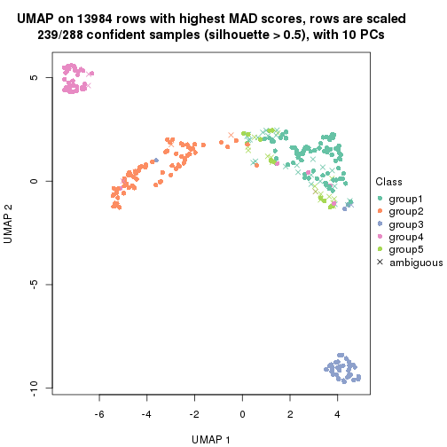
dimension_reduction(res, k = 6, method = "UMAP")
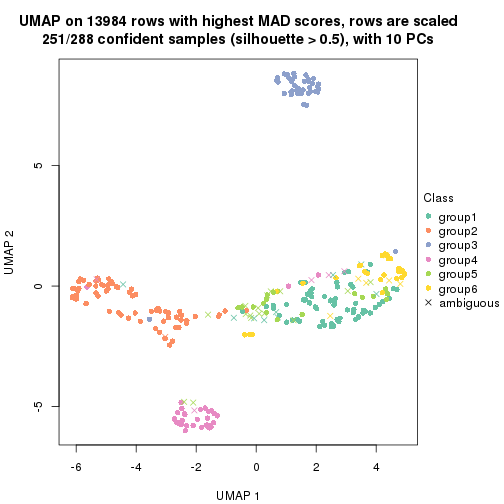
Following heatmap shows how subgroups are split when increasing k:
collect_classes(res)
If matrix rows can be associated to genes, consider to use functional_enrichment(res,
...) to perform function enrichment for the signature genes. See this vignette for more detailed explanations.
The object with results only for a single top-value method and a single partition method can be extracted as:
res = res_list["ATC", "hclust"]
# you can also extract it by
# res = res_list["ATC:hclust"]
A summary of res and all the functions that can be applied to it:
res
#> A 'ConsensusPartition' object with k = 2, 3, 4, 5, 6.
#> On a matrix with 13984 rows and 288 columns.
#> Top rows (1000, 2000, 3000, 4000, 5000) are extracted by 'ATC' method.
#> Subgroups are detected by 'hclust' method.
#> Performed in total 1250 partitions by row resampling.
#> Best k for subgroups seems to be 2.
#>
#> Following methods can be applied to this 'ConsensusPartition' object:
#> [1] "cola_report" "collect_classes" "collect_plots"
#> [4] "collect_stats" "colnames" "compare_signatures"
#> [7] "consensus_heatmap" "dimension_reduction" "functional_enrichment"
#> [10] "get_anno_col" "get_anno" "get_classes"
#> [13] "get_consensus" "get_matrix" "get_membership"
#> [16] "get_param" "get_signatures" "get_stats"
#> [19] "is_best_k" "is_stable_k" "membership_heatmap"
#> [22] "ncol" "nrow" "plot_ecdf"
#> [25] "rownames" "select_partition_number" "show"
#> [28] "suggest_best_k" "test_to_known_factors"
collect_plots() function collects all the plots made from res for all k (number of partitions)
into one single page to provide an easy and fast comparison between different k.
collect_plots(res)
The plots are:
k and the heatmap of
predicted classes for each k.k.k.k.All the plots in panels can be made by individual functions and they are plotted later in this section.
select_partition_number() produces several plots showing different
statistics for choosing “optimized” k. There are following statistics:
k;k, the area increased is defined as \(A_k - A_{k-1}\).The detailed explanations of these statistics can be found in the cola vignette.
Generally speaking, lower PAC score, higher mean silhouette score or higher
concordance corresponds to better partition. Rand index and Jaccard index
measure how similar the current partition is compared to partition with k-1.
If they are too similar, we won't accept k is better than k-1.
select_partition_number(res)
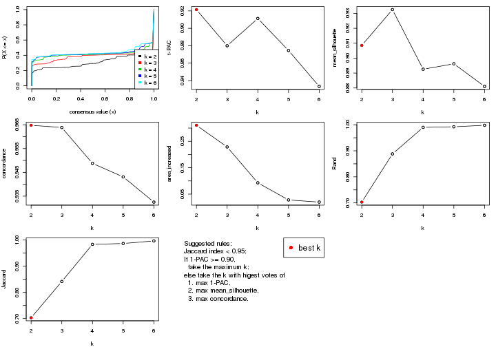
The numeric values for all these statistics can be obtained by get_stats().
get_stats(res)
#> k 1-PAC mean_silhouette concordance area_increased Rand Jaccard
#> 2 2 0.921 0.909 0.965 0.3106 0.703 0.703
#> 3 3 0.880 0.933 0.964 0.2286 0.888 0.842
#> 4 4 0.911 0.893 0.949 0.0929 0.990 0.983
#> 5 5 0.875 0.896 0.943 0.0281 0.992 0.987
#> 6 6 0.833 0.881 0.933 0.0199 0.998 0.997
suggest_best_k() suggests the best \(k\) based on these statistics. The rules are as follows:
suggest_best_k(res)
#> [1] 2
Following shows the table of the partitions (You need to click the show/hide
code output link to see it). The membership matrix (columns with name p*)
is inferred by
clue::cl_consensus()
function with the SE method. Basically the value in the membership matrix
represents the probability to belong to a certain group. The finall class
label for an item is determined with the group with highest probability it
belongs to.
In get_classes() function, the entropy is calculated from the membership
matrix and the silhouette score is calculated from the consensus matrix.
cbind(get_classes(res, k = 2), get_membership(res, k = 2))
#> class entropy silhouette p1 p2
#> SRR1982614 1 0.0000 0.968 1.000 0.000
#> SRR1982613 1 0.0000 0.968 1.000 0.000
#> SRR1982612 1 0.0000 0.968 1.000 0.000
#> SRR1982611 1 0.0000 0.968 1.000 0.000
#> SRR1982610 1 0.0000 0.968 1.000 0.000
#> SRR1982609 1 0.0000 0.968 1.000 0.000
#> SRR1982659 1 0.0000 0.968 1.000 0.000
#> SRR1982692 1 0.7602 0.694 0.780 0.220
#> SRR1982722 1 0.0000 0.968 1.000 0.000
#> SRR1982750 2 0.0000 0.932 0.000 1.000
#> SRR2095031 2 0.0000 0.932 0.000 1.000
#> SRR1982780 1 0.0000 0.968 1.000 0.000
#> SRR1982807 1 0.0000 0.968 1.000 0.000
#> SRR1982830 1 0.0000 0.968 1.000 0.000
#> SRR1982829 1 0.0000 0.968 1.000 0.000
#> SRR1982828 1 0.0000 0.968 1.000 0.000
#> SRR1982827 1 0.0000 0.968 1.000 0.000
#> SRR1982826 1 0.0000 0.968 1.000 0.000
#> SRR1982825 1 0.0000 0.968 1.000 0.000
#> SRR1982824 1 0.0000 0.968 1.000 0.000
#> SRR1982823 1 0.0000 0.968 1.000 0.000
#> SRR1982822 1 0.0000 0.968 1.000 0.000
#> SRR1982821 1 0.0000 0.968 1.000 0.000
#> SRR1982820 1 0.0000 0.968 1.000 0.000
#> SRR1982819 1 0.0000 0.968 1.000 0.000
#> SRR1982818 1 0.0000 0.968 1.000 0.000
#> SRR1982817 1 0.0000 0.968 1.000 0.000
#> SRR1982816 1 0.0000 0.968 1.000 0.000
#> SRR1982815 1 0.0000 0.968 1.000 0.000
#> SRR1982814 1 0.0000 0.968 1.000 0.000
#> SRR1982813 1 0.0000 0.968 1.000 0.000
#> SRR1982812 2 0.4298 0.874 0.088 0.912
#> SRR1982811 1 0.0000 0.968 1.000 0.000
#> SRR1982810 1 0.0000 0.968 1.000 0.000
#> SRR1982809 1 0.0672 0.960 0.992 0.008
#> SRR1982808 1 0.0000 0.968 1.000 0.000
#> SRR1982806 1 0.0000 0.968 1.000 0.000
#> SRR1982805 1 0.0000 0.968 1.000 0.000
#> SRR1982804 1 0.0000 0.968 1.000 0.000
#> SRR1982803 1 0.0000 0.968 1.000 0.000
#> SRR1982802 1 0.0000 0.968 1.000 0.000
#> SRR1982801 1 0.0000 0.968 1.000 0.000
#> SRR1982800 1 0.0000 0.968 1.000 0.000
#> SRR1982799 1 0.0000 0.968 1.000 0.000
#> SRR1982798 1 0.0000 0.968 1.000 0.000
#> SRR1982797 1 0.0000 0.968 1.000 0.000
#> SRR1982796 1 0.0000 0.968 1.000 0.000
#> SRR1982795 1 0.0000 0.968 1.000 0.000
#> SRR1982794 1 0.0000 0.968 1.000 0.000
#> SRR1982793 1 0.0000 0.968 1.000 0.000
#> SRR1982792 1 0.0000 0.968 1.000 0.000
#> SRR1982791 1 0.0000 0.968 1.000 0.000
#> SRR1982790 2 0.9754 0.354 0.408 0.592
#> SRR1982789 1 0.0000 0.968 1.000 0.000
#> SRR1982788 1 0.0000 0.968 1.000 0.000
#> SRR1982787 1 0.0000 0.968 1.000 0.000
#> SRR1982786 1 0.0000 0.968 1.000 0.000
#> SRR1982785 1 0.0000 0.968 1.000 0.000
#> SRR1982784 1 0.0000 0.968 1.000 0.000
#> SRR1982783 1 0.0000 0.968 1.000 0.000
#> SRR1982782 1 0.0000 0.968 1.000 0.000
#> SRR1982781 1 0.0000 0.968 1.000 0.000
#> SRR1982779 1 0.0000 0.968 1.000 0.000
#> SRR1982778 1 0.0000 0.968 1.000 0.000
#> SRR1982776 2 0.0000 0.932 0.000 1.000
#> SRR1982777 1 0.0000 0.968 1.000 0.000
#> SRR1982775 1 0.0000 0.968 1.000 0.000
#> SRR1982774 1 0.0000 0.968 1.000 0.000
#> SRR1982772 1 0.0000 0.968 1.000 0.000
#> SRR1982773 1 0.0000 0.968 1.000 0.000
#> SRR1982770 1 0.0000 0.968 1.000 0.000
#> SRR1982771 1 0.0000 0.968 1.000 0.000
#> SRR1982769 1 0.0000 0.968 1.000 0.000
#> SRR1982768 1 0.0000 0.968 1.000 0.000
#> SRR1982767 1 0.0000 0.968 1.000 0.000
#> SRR1982766 1 0.0000 0.968 1.000 0.000
#> SRR1982765 1 0.0000 0.968 1.000 0.000
#> SRR1982764 1 0.0000 0.968 1.000 0.000
#> SRR1982762 1 0.0000 0.968 1.000 0.000
#> SRR1982760 1 0.0000 0.968 1.000 0.000
#> SRR1982761 1 0.0000 0.968 1.000 0.000
#> SRR1982763 2 0.4298 0.874 0.088 0.912
#> SRR1982759 1 0.0000 0.968 1.000 0.000
#> SRR1982758 1 0.0000 0.968 1.000 0.000
#> SRR1982757 1 0.0000 0.968 1.000 0.000
#> SRR1982755 1 0.0000 0.968 1.000 0.000
#> SRR1982754 1 0.0000 0.968 1.000 0.000
#> SRR1982756 1 0.0000 0.968 1.000 0.000
#> SRR1982753 1 0.0000 0.968 1.000 0.000
#> SRR1982751 2 0.0000 0.932 0.000 1.000
#> SRR1982752 2 0.0000 0.932 0.000 1.000
#> SRR1982749 2 0.0000 0.932 0.000 1.000
#> SRR1982748 2 0.0000 0.932 0.000 1.000
#> SRR1982747 2 0.0000 0.932 0.000 1.000
#> SRR1982746 2 0.0000 0.932 0.000 1.000
#> SRR1982745 2 0.0000 0.932 0.000 1.000
#> SRR1982743 2 0.0000 0.932 0.000 1.000
#> SRR1982744 2 0.0000 0.932 0.000 1.000
#> SRR1982741 2 0.4161 0.877 0.084 0.916
#> SRR1982742 2 0.0938 0.928 0.012 0.988
#> SRR2095014 2 0.0938 0.928 0.012 0.988
#> SRR1982740 2 0.0000 0.932 0.000 1.000
#> SRR1982739 2 0.0000 0.932 0.000 1.000
#> SRR1982737 2 0.0000 0.932 0.000 1.000
#> SRR1982738 1 0.9000 0.514 0.684 0.316
#> SRR1982736 2 0.0938 0.928 0.012 0.988
#> SRR1982735 2 0.0000 0.932 0.000 1.000
#> SRR1982733 2 0.0000 0.932 0.000 1.000
#> SRR1982732 2 0.0000 0.932 0.000 1.000
#> SRR2095004 2 0.0000 0.932 0.000 1.000
#> SRR1982734 2 0.0000 0.932 0.000 1.000
#> SRR1982731 2 0.0000 0.932 0.000 1.000
#> SRR1982729 2 0.2603 0.908 0.044 0.956
#> SRR1982730 2 0.0000 0.932 0.000 1.000
#> SRR1982728 2 0.0000 0.932 0.000 1.000
#> SRR1982727 1 0.0000 0.968 1.000 0.000
#> SRR1982726 1 0.0000 0.968 1.000 0.000
#> SRR1982723 1 0.0000 0.968 1.000 0.000
#> SRR1982725 1 0.0000 0.968 1.000 0.000
#> SRR1982724 1 0.0000 0.968 1.000 0.000
#> SRR1982721 1 0.0000 0.968 1.000 0.000
#> SRR1982720 1 0.0000 0.968 1.000 0.000
#> SRR1982719 1 0.0000 0.968 1.000 0.000
#> SRR1982718 2 0.9754 0.354 0.408 0.592
#> SRR1982717 2 0.0376 0.931 0.004 0.996
#> SRR1982715 1 0.9833 0.227 0.576 0.424
#> SRR1982714 2 0.4298 0.874 0.088 0.912
#> SRR1982716 1 0.9833 0.227 0.576 0.424
#> SRR1982713 2 0.2236 0.914 0.036 0.964
#> SRR1982711 2 0.0000 0.932 0.000 1.000
#> SRR1982712 2 0.0000 0.932 0.000 1.000
#> SRR1982710 2 0.9754 0.354 0.408 0.592
#> SRR1982708 2 0.9754 0.354 0.408 0.592
#> SRR1982707 1 0.0000 0.968 1.000 0.000
#> SRR1982709 1 0.0000 0.968 1.000 0.000
#> SRR1982705 2 0.9170 0.530 0.332 0.668
#> SRR1982706 1 0.0000 0.968 1.000 0.000
#> SRR1982704 1 0.0000 0.968 1.000 0.000
#> SRR1982702 1 0.8909 0.531 0.692 0.308
#> SRR1982703 1 0.8909 0.531 0.692 0.308
#> SRR1982701 1 0.8909 0.531 0.692 0.308
#> SRR1982700 2 0.8207 0.664 0.256 0.744
#> SRR1982697 2 0.0000 0.932 0.000 1.000
#> SRR1982698 2 0.0000 0.932 0.000 1.000
#> SRR1982699 2 0.0000 0.932 0.000 1.000
#> SRR1982696 2 0.2778 0.906 0.048 0.952
#> SRR1982695 1 0.0000 0.968 1.000 0.000
#> SRR1982694 1 0.0000 0.968 1.000 0.000
#> SRR1982693 2 0.0376 0.931 0.004 0.996
#> SRR1982690 1 0.9922 0.145 0.552 0.448
#> SRR1982691 1 0.9970 0.070 0.532 0.468
#> SRR1982689 1 0.7602 0.694 0.780 0.220
#> SRR1982688 1 0.0000 0.968 1.000 0.000
#> SRR1982687 1 0.7602 0.694 0.780 0.220
#> SRR1982686 1 0.8909 0.531 0.692 0.308
#> SRR1982685 1 0.9833 0.227 0.576 0.424
#> SRR1982684 1 0.9922 0.145 0.552 0.448
#> SRR1982683 1 0.0000 0.968 1.000 0.000
#> SRR1982681 2 0.0376 0.931 0.004 0.996
#> SRR1982682 1 0.9881 0.187 0.564 0.436
#> SRR1982680 2 0.1184 0.926 0.016 0.984
#> SRR1982679 1 0.0672 0.960 0.992 0.008
#> SRR1982678 2 0.0000 0.932 0.000 1.000
#> SRR1982677 1 0.9833 0.227 0.576 0.424
#> SRR1982676 1 0.0000 0.968 1.000 0.000
#> SRR1982675 1 0.0000 0.968 1.000 0.000
#> SRR1982674 1 0.0000 0.968 1.000 0.000
#> SRR1982671 1 0.0000 0.968 1.000 0.000
#> SRR1982673 1 0.0000 0.968 1.000 0.000
#> SRR1982672 1 0.0000 0.968 1.000 0.000
#> SRR1982670 1 0.0000 0.968 1.000 0.000
#> SRR1982669 1 0.0000 0.968 1.000 0.000
#> SRR1982667 1 0.0000 0.968 1.000 0.000
#> SRR1982668 1 0.0000 0.968 1.000 0.000
#> SRR1982666 1 0.0000 0.968 1.000 0.000
#> SRR1982665 2 0.0000 0.932 0.000 1.000
#> SRR1982664 1 0.0000 0.968 1.000 0.000
#> SRR1982663 1 0.0000 0.968 1.000 0.000
#> SRR1982662 1 0.0000 0.968 1.000 0.000
#> SRR1982661 1 0.0000 0.968 1.000 0.000
#> SRR1982660 1 0.0000 0.968 1.000 0.000
#> SRR1982658 1 0.0000 0.968 1.000 0.000
#> SRR1982657 1 0.0000 0.968 1.000 0.000
#> SRR1982656 1 0.3879 0.889 0.924 0.076
#> SRR1982654 1 0.0000 0.968 1.000 0.000
#> SRR1982655 1 0.0000 0.968 1.000 0.000
#> SRR1982653 1 0.0000 0.968 1.000 0.000
#> SRR1982652 1 0.0000 0.968 1.000 0.000
#> SRR1982651 1 0.0000 0.968 1.000 0.000
#> SRR1982649 1 0.0000 0.968 1.000 0.000
#> SRR1982650 1 0.0000 0.968 1.000 0.000
#> SRR1982648 1 0.0000 0.968 1.000 0.000
#> SRR1982647 1 0.0000 0.968 1.000 0.000
#> SRR1982646 1 0.0000 0.968 1.000 0.000
#> SRR1982645 1 0.0000 0.968 1.000 0.000
#> SRR1982644 1 0.0000 0.968 1.000 0.000
#> SRR1982642 1 0.0000 0.968 1.000 0.000
#> SRR1982643 1 0.0000 0.968 1.000 0.000
#> SRR1982641 1 0.0000 0.968 1.000 0.000
#> SRR1982640 1 0.0000 0.968 1.000 0.000
#> SRR1982638 1 0.0000 0.968 1.000 0.000
#> SRR1982639 1 0.0000 0.968 1.000 0.000
#> SRR1982637 1 0.0000 0.968 1.000 0.000
#> SRR1982635 1 0.0000 0.968 1.000 0.000
#> SRR1982636 1 0.0000 0.968 1.000 0.000
#> SRR1982633 1 0.0000 0.968 1.000 0.000
#> SRR1982632 1 0.0000 0.968 1.000 0.000
#> SRR1982631 1 0.0000 0.968 1.000 0.000
#> SRR1982634 1 0.0000 0.968 1.000 0.000
#> SRR1982628 1 0.0000 0.968 1.000 0.000
#> SRR1982629 1 0.0000 0.968 1.000 0.000
#> SRR1982627 1 0.0000 0.968 1.000 0.000
#> SRR1982625 1 0.0000 0.968 1.000 0.000
#> SRR1982626 1 0.0000 0.968 1.000 0.000
#> SRR1982624 1 0.0000 0.968 1.000 0.000
#> SRR1982623 1 0.0000 0.968 1.000 0.000
#> SRR1982622 1 0.0000 0.968 1.000 0.000
#> SRR1982621 1 0.0000 0.968 1.000 0.000
#> SRR1982620 1 0.0000 0.968 1.000 0.000
#> SRR1982619 2 0.0000 0.932 0.000 1.000
#> SRR1982618 1 0.0000 0.968 1.000 0.000
#> SRR1982617 1 0.9000 0.514 0.684 0.316
#> SRR1982616 1 0.0000 0.968 1.000 0.000
#> SRR1982615 1 0.0000 0.968 1.000 0.000
#> SRR1982608 1 0.2043 0.936 0.968 0.032
#> SRR1982607 1 0.0000 0.968 1.000 0.000
#> SRR1982606 1 0.0000 0.968 1.000 0.000
#> SRR1982605 1 0.0000 0.968 1.000 0.000
#> SRR1982604 1 0.0000 0.968 1.000 0.000
#> SRR1982603 1 0.0000 0.968 1.000 0.000
#> SRR1982602 1 0.0000 0.968 1.000 0.000
#> SRR1982601 1 0.0000 0.968 1.000 0.000
#> SRR1982599 1 0.0000 0.968 1.000 0.000
#> SRR1982600 1 0.0000 0.968 1.000 0.000
#> SRR1982598 1 0.0000 0.968 1.000 0.000
#> SRR1982597 1 0.0000 0.968 1.000 0.000
#> SRR1982595 1 0.0000 0.968 1.000 0.000
#> SRR1982596 1 0.0000 0.968 1.000 0.000
#> SRR1982594 1 0.0000 0.968 1.000 0.000
#> SRR1982593 1 0.0000 0.968 1.000 0.000
#> SRR1982592 1 0.1843 0.941 0.972 0.028
#> SRR1982591 1 0.0000 0.968 1.000 0.000
#> SRR1982590 1 0.0000 0.968 1.000 0.000
#> SRR1982589 1 0.0000 0.968 1.000 0.000
#> SRR1982588 1 0.0000 0.968 1.000 0.000
#> SRR1982587 1 0.0000 0.968 1.000 0.000
#> SRR1982586 1 0.0000 0.968 1.000 0.000
#> SRR1982584 1 0.0000 0.968 1.000 0.000
#> SRR2096514 1 0.0000 0.968 1.000 0.000
#> SRR2096513 1 0.0000 0.968 1.000 0.000
#> SRR2096511 1 0.0000 0.968 1.000 0.000
#> SRR2096512 1 0.9635 0.336 0.612 0.388
#> SRR2096509 1 0.0000 0.968 1.000 0.000
#> SRR2096510 1 0.0000 0.968 1.000 0.000
#> SRR2096508 2 0.9977 0.147 0.472 0.528
#> SRR2096507 1 0.0000 0.968 1.000 0.000
#> SRR2096504 1 0.0000 0.968 1.000 0.000
#> SRR2096506 1 0.0000 0.968 1.000 0.000
#> SRR2096505 1 0.0000 0.968 1.000 0.000
#> SRR2096503 1 0.9393 0.420 0.644 0.356
#> SRR2096500 1 0.0000 0.968 1.000 0.000
#> SRR2096501 1 0.0000 0.968 1.000 0.000
#> SRR2096502 1 0.0000 0.968 1.000 0.000
#> SRR2096499 1 0.0000 0.968 1.000 0.000
#> SRR2096498 1 0.0000 0.968 1.000 0.000
#> SRR2096496 1 0.0000 0.968 1.000 0.000
#> SRR2096497 1 0.0000 0.968 1.000 0.000
#> SRR2096495 1 0.0000 0.968 1.000 0.000
#> SRR2096494 1 0.0000 0.968 1.000 0.000
#> SRR2096492 1 0.0000 0.968 1.000 0.000
#> SRR2096491 1 0.0000 0.968 1.000 0.000
#> SRR2096493 1 0.0000 0.968 1.000 0.000
#> SRR2096490 1 0.0000 0.968 1.000 0.000
#> SRR2096488 1 0.0000 0.968 1.000 0.000
#> SRR2096489 1 0.0000 0.968 1.000 0.000
#> SRR2096487 1 0.0000 0.968 1.000 0.000
#> SRR2096484 1 0.0000 0.968 1.000 0.000
#> SRR2096486 1 0.0000 0.968 1.000 0.000
#> SRR2096485 1 0.0000 0.968 1.000 0.000
#> SRR2096483 1 0.0000 0.968 1.000 0.000
#> SRR2096482 1 0.0000 0.968 1.000 0.000
#> SRR2096481 1 0.0000 0.968 1.000 0.000
#> SRR2096520 1 0.0000 0.968 1.000 0.000
#> SRR2096519 1 0.0000 0.968 1.000 0.000
#> SRR2096518 1 0.0000 0.968 1.000 0.000
#> SRR2096516 1 0.0000 0.968 1.000 0.000
#> SRR2096517 1 0.0000 0.968 1.000 0.000
#> SRR2096515 1 0.0000 0.968 1.000 0.000
cbind(get_classes(res, k = 3), get_membership(res, k = 3))
#> class entropy silhouette p1 p2 p3
#> SRR1982614 1 0.000 0.997 1.000 0.000 0.000
#> SRR1982613 1 0.000 0.997 1.000 0.000 0.000
#> SRR1982612 1 0.000 0.997 1.000 0.000 0.000
#> SRR1982611 1 0.000 0.997 1.000 0.000 0.000
#> SRR1982610 1 0.000 0.997 1.000 0.000 0.000
#> SRR1982609 1 0.000 0.997 1.000 0.000 0.000
#> SRR1982659 1 0.000 0.997 1.000 0.000 0.000
#> SRR1982692 3 0.615 0.585 0.408 0.000 0.592
#> SRR1982722 1 0.000 0.997 1.000 0.000 0.000
#> SRR1982750 2 0.000 0.909 0.000 1.000 0.000
#> SRR2095031 2 0.000 0.909 0.000 1.000 0.000
#> SRR1982780 1 0.000 0.997 1.000 0.000 0.000
#> SRR1982807 1 0.000 0.997 1.000 0.000 0.000
#> SRR1982830 1 0.000 0.997 1.000 0.000 0.000
#> SRR1982829 1 0.000 0.997 1.000 0.000 0.000
#> SRR1982828 1 0.000 0.997 1.000 0.000 0.000
#> SRR1982827 1 0.000 0.997 1.000 0.000 0.000
#> SRR1982826 1 0.000 0.997 1.000 0.000 0.000
#> SRR1982825 1 0.000 0.997 1.000 0.000 0.000
#> SRR1982824 1 0.000 0.997 1.000 0.000 0.000
#> SRR1982823 1 0.000 0.997 1.000 0.000 0.000
#> SRR1982822 1 0.000 0.997 1.000 0.000 0.000
#> SRR1982821 1 0.000 0.997 1.000 0.000 0.000
#> SRR1982820 1 0.000 0.997 1.000 0.000 0.000
#> SRR1982819 1 0.000 0.997 1.000 0.000 0.000
#> SRR1982818 1 0.000 0.997 1.000 0.000 0.000
#> SRR1982817 1 0.000 0.997 1.000 0.000 0.000
#> SRR1982816 1 0.000 0.997 1.000 0.000 0.000
#> SRR1982815 1 0.000 0.997 1.000 0.000 0.000
#> SRR1982814 1 0.000 0.997 1.000 0.000 0.000
#> SRR1982813 1 0.000 0.997 1.000 0.000 0.000
#> SRR1982812 2 0.625 0.617 0.008 0.648 0.344
#> SRR1982811 1 0.000 0.997 1.000 0.000 0.000
#> SRR1982810 1 0.000 0.997 1.000 0.000 0.000
#> SRR1982809 1 0.103 0.968 0.976 0.000 0.024
#> SRR1982808 1 0.000 0.997 1.000 0.000 0.000
#> SRR1982806 1 0.000 0.997 1.000 0.000 0.000
#> SRR1982805 1 0.000 0.997 1.000 0.000 0.000
#> SRR1982804 1 0.000 0.997 1.000 0.000 0.000
#> SRR1982803 1 0.000 0.997 1.000 0.000 0.000
#> SRR1982802 1 0.000 0.997 1.000 0.000 0.000
#> SRR1982801 1 0.000 0.997 1.000 0.000 0.000
#> SRR1982800 1 0.000 0.997 1.000 0.000 0.000
#> SRR1982799 1 0.000 0.997 1.000 0.000 0.000
#> SRR1982798 1 0.000 0.997 1.000 0.000 0.000
#> SRR1982797 1 0.000 0.997 1.000 0.000 0.000
#> SRR1982796 1 0.000 0.997 1.000 0.000 0.000
#> SRR1982795 1 0.000 0.997 1.000 0.000 0.000
#> SRR1982794 1 0.000 0.997 1.000 0.000 0.000
#> SRR1982793 1 0.000 0.997 1.000 0.000 0.000
#> SRR1982792 1 0.000 0.997 1.000 0.000 0.000
#> SRR1982791 1 0.000 0.997 1.000 0.000 0.000
#> SRR1982790 3 0.000 0.528 0.000 0.000 1.000
#> SRR1982789 1 0.000 0.997 1.000 0.000 0.000
#> SRR1982788 1 0.000 0.997 1.000 0.000 0.000
#> SRR1982787 1 0.000 0.997 1.000 0.000 0.000
#> SRR1982786 1 0.000 0.997 1.000 0.000 0.000
#> SRR1982785 1 0.000 0.997 1.000 0.000 0.000
#> SRR1982784 1 0.000 0.997 1.000 0.000 0.000
#> SRR1982783 1 0.000 0.997 1.000 0.000 0.000
#> SRR1982782 1 0.000 0.997 1.000 0.000 0.000
#> SRR1982781 1 0.000 0.997 1.000 0.000 0.000
#> SRR1982779 1 0.000 0.997 1.000 0.000 0.000
#> SRR1982778 1 0.000 0.997 1.000 0.000 0.000
#> SRR1982776 2 0.000 0.909 0.000 1.000 0.000
#> SRR1982777 1 0.000 0.997 1.000 0.000 0.000
#> SRR1982775 1 0.000 0.997 1.000 0.000 0.000
#> SRR1982774 1 0.000 0.997 1.000 0.000 0.000
#> SRR1982772 1 0.000 0.997 1.000 0.000 0.000
#> SRR1982773 1 0.000 0.997 1.000 0.000 0.000
#> SRR1982770 1 0.000 0.997 1.000 0.000 0.000
#> SRR1982771 1 0.000 0.997 1.000 0.000 0.000
#> SRR1982769 1 0.000 0.997 1.000 0.000 0.000
#> SRR1982768 1 0.000 0.997 1.000 0.000 0.000
#> SRR1982767 1 0.000 0.997 1.000 0.000 0.000
#> SRR1982766 1 0.000 0.997 1.000 0.000 0.000
#> SRR1982765 1 0.000 0.997 1.000 0.000 0.000
#> SRR1982764 1 0.000 0.997 1.000 0.000 0.000
#> SRR1982762 1 0.000 0.997 1.000 0.000 0.000
#> SRR1982760 1 0.000 0.997 1.000 0.000 0.000
#> SRR1982761 1 0.000 0.997 1.000 0.000 0.000
#> SRR1982763 2 0.630 0.608 0.008 0.640 0.352
#> SRR1982759 1 0.000 0.997 1.000 0.000 0.000
#> SRR1982758 1 0.000 0.997 1.000 0.000 0.000
#> SRR1982757 1 0.000 0.997 1.000 0.000 0.000
#> SRR1982755 1 0.000 0.997 1.000 0.000 0.000
#> SRR1982754 1 0.000 0.997 1.000 0.000 0.000
#> SRR1982756 1 0.000 0.997 1.000 0.000 0.000
#> SRR1982753 1 0.000 0.997 1.000 0.000 0.000
#> SRR1982751 2 0.000 0.909 0.000 1.000 0.000
#> SRR1982752 2 0.000 0.909 0.000 1.000 0.000
#> SRR1982749 2 0.000 0.909 0.000 1.000 0.000
#> SRR1982748 2 0.141 0.898 0.000 0.964 0.036
#> SRR1982747 2 0.000 0.909 0.000 1.000 0.000
#> SRR1982746 2 0.000 0.909 0.000 1.000 0.000
#> SRR1982745 2 0.000 0.909 0.000 1.000 0.000
#> SRR1982743 2 0.000 0.909 0.000 1.000 0.000
#> SRR1982744 2 0.000 0.909 0.000 1.000 0.000
#> SRR1982741 2 0.630 0.608 0.008 0.640 0.352
#> SRR1982742 2 0.207 0.886 0.000 0.940 0.060
#> SRR2095014 2 0.207 0.886 0.000 0.940 0.060
#> SRR1982740 2 0.000 0.909 0.000 1.000 0.000
#> SRR1982739 2 0.000 0.909 0.000 1.000 0.000
#> SRR1982737 2 0.141 0.898 0.000 0.964 0.036
#> SRR1982738 3 0.536 0.722 0.276 0.000 0.724
#> SRR1982736 2 0.207 0.886 0.000 0.940 0.060
#> SRR1982735 2 0.141 0.898 0.000 0.964 0.036
#> SRR1982733 2 0.000 0.909 0.000 1.000 0.000
#> SRR1982732 2 0.000 0.909 0.000 1.000 0.000
#> SRR2095004 2 0.000 0.909 0.000 1.000 0.000
#> SRR1982734 2 0.141 0.898 0.000 0.964 0.036
#> SRR1982731 2 0.000 0.909 0.000 1.000 0.000
#> SRR1982729 2 0.554 0.720 0.008 0.740 0.252
#> SRR1982730 2 0.000 0.909 0.000 1.000 0.000
#> SRR1982728 2 0.000 0.909 0.000 1.000 0.000
#> SRR1982727 1 0.000 0.997 1.000 0.000 0.000
#> SRR1982726 1 0.000 0.997 1.000 0.000 0.000
#> SRR1982723 1 0.000 0.997 1.000 0.000 0.000
#> SRR1982725 1 0.000 0.997 1.000 0.000 0.000
#> SRR1982724 1 0.000 0.997 1.000 0.000 0.000
#> SRR1982721 1 0.000 0.997 1.000 0.000 0.000
#> SRR1982720 1 0.000 0.997 1.000 0.000 0.000
#> SRR1982719 1 0.000 0.997 1.000 0.000 0.000
#> SRR1982718 3 0.000 0.528 0.000 0.000 1.000
#> SRR1982717 2 0.629 0.440 0.000 0.532 0.468
#> SRR1982715 3 0.418 0.747 0.172 0.000 0.828
#> SRR1982714 2 0.625 0.617 0.008 0.648 0.344
#> SRR1982716 3 0.418 0.747 0.172 0.000 0.828
#> SRR1982713 2 0.455 0.783 0.000 0.800 0.200
#> SRR1982711 2 0.000 0.909 0.000 1.000 0.000
#> SRR1982712 2 0.000 0.909 0.000 1.000 0.000
#> SRR1982710 3 0.000 0.528 0.000 0.000 1.000
#> SRR1982708 3 0.000 0.528 0.000 0.000 1.000
#> SRR1982707 1 0.000 0.997 1.000 0.000 0.000
#> SRR1982709 1 0.000 0.997 1.000 0.000 0.000
#> SRR1982705 3 0.397 0.484 0.024 0.100 0.876
#> SRR1982706 1 0.000 0.997 1.000 0.000 0.000
#> SRR1982704 1 0.000 0.997 1.000 0.000 0.000
#> SRR1982702 3 0.546 0.715 0.288 0.000 0.712
#> SRR1982703 3 0.546 0.715 0.288 0.000 0.712
#> SRR1982701 3 0.546 0.715 0.288 0.000 0.712
#> SRR1982700 3 0.586 0.269 0.020 0.240 0.740
#> SRR1982697 2 0.000 0.909 0.000 1.000 0.000
#> SRR1982698 2 0.000 0.909 0.000 1.000 0.000
#> SRR1982699 2 0.000 0.909 0.000 1.000 0.000
#> SRR1982696 3 0.630 -0.372 0.000 0.472 0.528
#> SRR1982695 1 0.000 0.997 1.000 0.000 0.000
#> SRR1982694 1 0.000 0.997 1.000 0.000 0.000
#> SRR1982693 2 0.628 0.456 0.000 0.540 0.460
#> SRR1982690 3 0.375 0.731 0.144 0.000 0.856
#> SRR1982691 3 0.473 0.706 0.128 0.032 0.840
#> SRR1982689 3 0.615 0.585 0.408 0.000 0.592
#> SRR1982688 1 0.000 0.997 1.000 0.000 0.000
#> SRR1982687 3 0.615 0.585 0.408 0.000 0.592
#> SRR1982686 3 0.546 0.715 0.288 0.000 0.712
#> SRR1982685 3 0.418 0.747 0.172 0.000 0.828
#> SRR1982684 3 0.375 0.731 0.144 0.000 0.856
#> SRR1982683 1 0.000 0.997 1.000 0.000 0.000
#> SRR1982681 2 0.629 0.440 0.000 0.532 0.468
#> SRR1982682 3 0.394 0.740 0.156 0.000 0.844
#> SRR1982680 2 0.631 0.396 0.000 0.504 0.496
#> SRR1982679 1 0.103 0.968 0.976 0.000 0.024
#> SRR1982678 2 0.141 0.898 0.000 0.964 0.036
#> SRR1982677 3 0.418 0.747 0.172 0.000 0.828
#> SRR1982676 1 0.000 0.997 1.000 0.000 0.000
#> SRR1982675 1 0.000 0.997 1.000 0.000 0.000
#> SRR1982674 1 0.000 0.997 1.000 0.000 0.000
#> SRR1982671 1 0.000 0.997 1.000 0.000 0.000
#> SRR1982673 1 0.000 0.997 1.000 0.000 0.000
#> SRR1982672 1 0.000 0.997 1.000 0.000 0.000
#> SRR1982670 1 0.000 0.997 1.000 0.000 0.000
#> SRR1982669 1 0.000 0.997 1.000 0.000 0.000
#> SRR1982667 1 0.000 0.997 1.000 0.000 0.000
#> SRR1982668 1 0.000 0.997 1.000 0.000 0.000
#> SRR1982666 1 0.000 0.997 1.000 0.000 0.000
#> SRR1982665 2 0.000 0.909 0.000 1.000 0.000
#> SRR1982664 1 0.000 0.997 1.000 0.000 0.000
#> SRR1982663 1 0.000 0.997 1.000 0.000 0.000
#> SRR1982662 1 0.000 0.997 1.000 0.000 0.000
#> SRR1982661 1 0.000 0.997 1.000 0.000 0.000
#> SRR1982660 1 0.000 0.997 1.000 0.000 0.000
#> SRR1982658 1 0.000 0.997 1.000 0.000 0.000
#> SRR1982657 1 0.000 0.997 1.000 0.000 0.000
#> SRR1982656 1 0.480 0.633 0.780 0.000 0.220
#> SRR1982654 1 0.000 0.997 1.000 0.000 0.000
#> SRR1982655 1 0.000 0.997 1.000 0.000 0.000
#> SRR1982653 1 0.000 0.997 1.000 0.000 0.000
#> SRR1982652 1 0.000 0.997 1.000 0.000 0.000
#> SRR1982651 1 0.000 0.997 1.000 0.000 0.000
#> SRR1982649 1 0.000 0.997 1.000 0.000 0.000
#> SRR1982650 1 0.000 0.997 1.000 0.000 0.000
#> SRR1982648 1 0.000 0.997 1.000 0.000 0.000
#> SRR1982647 1 0.000 0.997 1.000 0.000 0.000
#> SRR1982646 1 0.000 0.997 1.000 0.000 0.000
#> SRR1982645 1 0.000 0.997 1.000 0.000 0.000
#> SRR1982644 1 0.000 0.997 1.000 0.000 0.000
#> SRR1982642 1 0.000 0.997 1.000 0.000 0.000
#> SRR1982643 1 0.000 0.997 1.000 0.000 0.000
#> SRR1982641 1 0.000 0.997 1.000 0.000 0.000
#> SRR1982640 1 0.000 0.997 1.000 0.000 0.000
#> SRR1982638 1 0.000 0.997 1.000 0.000 0.000
#> SRR1982639 1 0.000 0.997 1.000 0.000 0.000
#> SRR1982637 1 0.000 0.997 1.000 0.000 0.000
#> SRR1982635 1 0.000 0.997 1.000 0.000 0.000
#> SRR1982636 1 0.000 0.997 1.000 0.000 0.000
#> SRR1982633 1 0.000 0.997 1.000 0.000 0.000
#> SRR1982632 1 0.000 0.997 1.000 0.000 0.000
#> SRR1982631 1 0.000 0.997 1.000 0.000 0.000
#> SRR1982634 1 0.000 0.997 1.000 0.000 0.000
#> SRR1982628 1 0.000 0.997 1.000 0.000 0.000
#> SRR1982629 1 0.000 0.997 1.000 0.000 0.000
#> SRR1982627 1 0.000 0.997 1.000 0.000 0.000
#> SRR1982625 1 0.000 0.997 1.000 0.000 0.000
#> SRR1982626 1 0.000 0.997 1.000 0.000 0.000
#> SRR1982624 1 0.000 0.997 1.000 0.000 0.000
#> SRR1982623 1 0.000 0.997 1.000 0.000 0.000
#> SRR1982622 1 0.000 0.997 1.000 0.000 0.000
#> SRR1982621 1 0.000 0.997 1.000 0.000 0.000
#> SRR1982620 1 0.000 0.997 1.000 0.000 0.000
#> SRR1982619 2 0.000 0.909 0.000 1.000 0.000
#> SRR1982618 1 0.000 0.997 1.000 0.000 0.000
#> SRR1982617 3 0.536 0.722 0.276 0.000 0.724
#> SRR1982616 1 0.000 0.997 1.000 0.000 0.000
#> SRR1982615 1 0.000 0.997 1.000 0.000 0.000
#> SRR1982608 1 0.412 0.743 0.832 0.000 0.168
#> SRR1982607 1 0.000 0.997 1.000 0.000 0.000
#> SRR1982606 1 0.000 0.997 1.000 0.000 0.000
#> SRR1982605 1 0.000 0.997 1.000 0.000 0.000
#> SRR1982604 1 0.000 0.997 1.000 0.000 0.000
#> SRR1982603 1 0.000 0.997 1.000 0.000 0.000
#> SRR1982602 1 0.000 0.997 1.000 0.000 0.000
#> SRR1982601 1 0.000 0.997 1.000 0.000 0.000
#> SRR1982599 1 0.000 0.997 1.000 0.000 0.000
#> SRR1982600 1 0.000 0.997 1.000 0.000 0.000
#> SRR1982598 1 0.000 0.997 1.000 0.000 0.000
#> SRR1982597 1 0.000 0.997 1.000 0.000 0.000
#> SRR1982595 1 0.000 0.997 1.000 0.000 0.000
#> SRR1982596 1 0.000 0.997 1.000 0.000 0.000
#> SRR1982594 1 0.000 0.997 1.000 0.000 0.000
#> SRR1982593 1 0.000 0.997 1.000 0.000 0.000
#> SRR1982592 1 0.196 0.926 0.944 0.000 0.056
#> SRR1982591 1 0.000 0.997 1.000 0.000 0.000
#> SRR1982590 1 0.000 0.997 1.000 0.000 0.000
#> SRR1982589 1 0.000 0.997 1.000 0.000 0.000
#> SRR1982588 1 0.000 0.997 1.000 0.000 0.000
#> SRR1982587 1 0.000 0.997 1.000 0.000 0.000
#> SRR1982586 1 0.000 0.997 1.000 0.000 0.000
#> SRR1982584 1 0.000 0.997 1.000 0.000 0.000
#> SRR2096514 1 0.000 0.997 1.000 0.000 0.000
#> SRR2096513 1 0.000 0.997 1.000 0.000 0.000
#> SRR2096511 1 0.000 0.997 1.000 0.000 0.000
#> SRR2096512 3 0.460 0.744 0.204 0.000 0.796
#> SRR2096509 1 0.000 0.997 1.000 0.000 0.000
#> SRR2096510 1 0.000 0.997 1.000 0.000 0.000
#> SRR2096508 3 0.587 0.659 0.116 0.088 0.796
#> SRR2096507 1 0.000 0.997 1.000 0.000 0.000
#> SRR2096504 1 0.000 0.997 1.000 0.000 0.000
#> SRR2096506 1 0.000 0.997 1.000 0.000 0.000
#> SRR2096505 1 0.000 0.997 1.000 0.000 0.000
#> SRR2096503 3 0.514 0.731 0.252 0.000 0.748
#> SRR2096500 1 0.000 0.997 1.000 0.000 0.000
#> SRR2096501 1 0.000 0.997 1.000 0.000 0.000
#> SRR2096502 1 0.000 0.997 1.000 0.000 0.000
#> SRR2096499 1 0.000 0.997 1.000 0.000 0.000
#> SRR2096498 1 0.000 0.997 1.000 0.000 0.000
#> SRR2096496 1 0.000 0.997 1.000 0.000 0.000
#> SRR2096497 1 0.000 0.997 1.000 0.000 0.000
#> SRR2096495 1 0.000 0.997 1.000 0.000 0.000
#> SRR2096494 1 0.000 0.997 1.000 0.000 0.000
#> SRR2096492 1 0.000 0.997 1.000 0.000 0.000
#> SRR2096491 1 0.186 0.931 0.948 0.000 0.052
#> SRR2096493 1 0.000 0.997 1.000 0.000 0.000
#> SRR2096490 1 0.000 0.997 1.000 0.000 0.000
#> SRR2096488 1 0.000 0.997 1.000 0.000 0.000
#> SRR2096489 1 0.000 0.997 1.000 0.000 0.000
#> SRR2096487 1 0.000 0.997 1.000 0.000 0.000
#> SRR2096484 1 0.000 0.997 1.000 0.000 0.000
#> SRR2096486 1 0.000 0.997 1.000 0.000 0.000
#> SRR2096485 1 0.000 0.997 1.000 0.000 0.000
#> SRR2096483 1 0.000 0.997 1.000 0.000 0.000
#> SRR2096482 1 0.000 0.997 1.000 0.000 0.000
#> SRR2096481 1 0.000 0.997 1.000 0.000 0.000
#> SRR2096520 1 0.000 0.997 1.000 0.000 0.000
#> SRR2096519 1 0.000 0.997 1.000 0.000 0.000
#> SRR2096518 1 0.000 0.997 1.000 0.000 0.000
#> SRR2096516 1 0.000 0.997 1.000 0.000 0.000
#> SRR2096517 1 0.000 0.997 1.000 0.000 0.000
#> SRR2096515 1 0.000 0.997 1.000 0.000 0.000
cbind(get_classes(res, k = 4), get_membership(res, k = 4))
#> class entropy silhouette p1 p2 p3 p4
#> SRR1982614 1 0.1118 0.9564 0.964 0.000 0.000 0.036
#> SRR1982613 1 0.1118 0.9564 0.964 0.000 0.000 0.036
#> SRR1982612 1 0.0000 0.9862 1.000 0.000 0.000 0.000
#> SRR1982611 1 0.0000 0.9862 1.000 0.000 0.000 0.000
#> SRR1982610 1 0.0000 0.9862 1.000 0.000 0.000 0.000
#> SRR1982609 1 0.0000 0.9862 1.000 0.000 0.000 0.000
#> SRR1982659 1 0.0000 0.9862 1.000 0.000 0.000 0.000
#> SRR1982692 4 0.3764 0.5071 0.216 0.000 0.000 0.784
#> SRR1982722 1 0.0000 0.9862 1.000 0.000 0.000 0.000
#> SRR1982750 2 0.0000 0.8401 0.000 1.000 0.000 0.000
#> SRR2095031 2 0.0000 0.8401 0.000 1.000 0.000 0.000
#> SRR1982780 1 0.0000 0.9862 1.000 0.000 0.000 0.000
#> SRR1982807 1 0.0000 0.9862 1.000 0.000 0.000 0.000
#> SRR1982830 1 0.0000 0.9862 1.000 0.000 0.000 0.000
#> SRR1982829 1 0.1118 0.9564 0.964 0.000 0.000 0.036
#> SRR1982828 1 0.0000 0.9862 1.000 0.000 0.000 0.000
#> SRR1982827 1 0.0000 0.9862 1.000 0.000 0.000 0.000
#> SRR1982826 1 0.0000 0.9862 1.000 0.000 0.000 0.000
#> SRR1982825 1 0.0000 0.9862 1.000 0.000 0.000 0.000
#> SRR1982824 1 0.0000 0.9862 1.000 0.000 0.000 0.000
#> SRR1982823 1 0.0000 0.9862 1.000 0.000 0.000 0.000
#> SRR1982822 1 0.0000 0.9862 1.000 0.000 0.000 0.000
#> SRR1982821 1 0.0000 0.9862 1.000 0.000 0.000 0.000
#> SRR1982820 1 0.0000 0.9862 1.000 0.000 0.000 0.000
#> SRR1982819 1 0.0000 0.9862 1.000 0.000 0.000 0.000
#> SRR1982818 1 0.0000 0.9862 1.000 0.000 0.000 0.000
#> SRR1982817 1 0.0000 0.9862 1.000 0.000 0.000 0.000
#> SRR1982816 1 0.0000 0.9862 1.000 0.000 0.000 0.000
#> SRR1982815 1 0.0000 0.9862 1.000 0.000 0.000 0.000
#> SRR1982814 1 0.0000 0.9862 1.000 0.000 0.000 0.000
#> SRR1982813 1 0.0000 0.9862 1.000 0.000 0.000 0.000
#> SRR1982812 3 0.4636 0.6639 0.000 0.140 0.792 0.068
#> SRR1982811 1 0.0000 0.9862 1.000 0.000 0.000 0.000
#> SRR1982810 1 0.0817 0.9671 0.976 0.000 0.000 0.024
#> SRR1982809 1 0.3074 0.8265 0.848 0.000 0.000 0.152
#> SRR1982808 1 0.0000 0.9862 1.000 0.000 0.000 0.000
#> SRR1982806 1 0.0000 0.9862 1.000 0.000 0.000 0.000
#> SRR1982805 1 0.0000 0.9862 1.000 0.000 0.000 0.000
#> SRR1982804 1 0.0000 0.9862 1.000 0.000 0.000 0.000
#> SRR1982803 1 0.0469 0.9767 0.988 0.000 0.000 0.012
#> SRR1982802 1 0.0000 0.9862 1.000 0.000 0.000 0.000
#> SRR1982801 1 0.0000 0.9862 1.000 0.000 0.000 0.000
#> SRR1982800 1 0.0000 0.9862 1.000 0.000 0.000 0.000
#> SRR1982799 1 0.0000 0.9862 1.000 0.000 0.000 0.000
#> SRR1982798 1 0.0000 0.9862 1.000 0.000 0.000 0.000
#> SRR1982797 1 0.1022 0.9599 0.968 0.000 0.000 0.032
#> SRR1982796 1 0.0000 0.9862 1.000 0.000 0.000 0.000
#> SRR1982795 1 0.0000 0.9862 1.000 0.000 0.000 0.000
#> SRR1982794 1 0.0000 0.9862 1.000 0.000 0.000 0.000
#> SRR1982793 1 0.0000 0.9862 1.000 0.000 0.000 0.000
#> SRR1982792 1 0.0000 0.9862 1.000 0.000 0.000 0.000
#> SRR1982791 1 0.0000 0.9862 1.000 0.000 0.000 0.000
#> SRR1982790 4 0.4331 0.5439 0.000 0.000 0.288 0.712
#> SRR1982789 1 0.0000 0.9862 1.000 0.000 0.000 0.000
#> SRR1982788 1 0.0000 0.9862 1.000 0.000 0.000 0.000
#> SRR1982787 1 0.0000 0.9862 1.000 0.000 0.000 0.000
#> SRR1982786 1 0.1867 0.9219 0.928 0.000 0.000 0.072
#> SRR1982785 1 0.0000 0.9862 1.000 0.000 0.000 0.000
#> SRR1982784 1 0.0000 0.9862 1.000 0.000 0.000 0.000
#> SRR1982783 1 0.0000 0.9862 1.000 0.000 0.000 0.000
#> SRR1982782 1 0.0000 0.9862 1.000 0.000 0.000 0.000
#> SRR1982781 1 0.0000 0.9862 1.000 0.000 0.000 0.000
#> SRR1982779 1 0.0000 0.9862 1.000 0.000 0.000 0.000
#> SRR1982778 1 0.0000 0.9862 1.000 0.000 0.000 0.000
#> SRR1982776 2 0.1792 0.7900 0.000 0.932 0.068 0.000
#> SRR1982777 1 0.2647 0.8677 0.880 0.000 0.000 0.120
#> SRR1982775 1 0.0000 0.9862 1.000 0.000 0.000 0.000
#> SRR1982774 1 0.0000 0.9862 1.000 0.000 0.000 0.000
#> SRR1982772 1 0.0000 0.9862 1.000 0.000 0.000 0.000
#> SRR1982773 1 0.0000 0.9862 1.000 0.000 0.000 0.000
#> SRR1982770 1 0.0000 0.9862 1.000 0.000 0.000 0.000
#> SRR1982771 1 0.0000 0.9862 1.000 0.000 0.000 0.000
#> SRR1982769 1 0.2647 0.8677 0.880 0.000 0.000 0.120
#> SRR1982768 1 0.2281 0.8951 0.904 0.000 0.000 0.096
#> SRR1982767 1 0.0000 0.9862 1.000 0.000 0.000 0.000
#> SRR1982766 1 0.1867 0.9219 0.928 0.000 0.000 0.072
#> SRR1982765 1 0.0000 0.9862 1.000 0.000 0.000 0.000
#> SRR1982764 1 0.1118 0.9564 0.964 0.000 0.000 0.036
#> SRR1982762 1 0.0000 0.9862 1.000 0.000 0.000 0.000
#> SRR1982760 1 0.0000 0.9862 1.000 0.000 0.000 0.000
#> SRR1982761 1 0.0000 0.9862 1.000 0.000 0.000 0.000
#> SRR1982763 3 0.4534 0.6655 0.000 0.132 0.800 0.068
#> SRR1982759 1 0.0000 0.9862 1.000 0.000 0.000 0.000
#> SRR1982758 1 0.2647 0.8677 0.880 0.000 0.000 0.120
#> SRR1982757 1 0.0000 0.9862 1.000 0.000 0.000 0.000
#> SRR1982755 1 0.0000 0.9862 1.000 0.000 0.000 0.000
#> SRR1982754 1 0.0000 0.9862 1.000 0.000 0.000 0.000
#> SRR1982756 1 0.0000 0.9862 1.000 0.000 0.000 0.000
#> SRR1982753 1 0.0000 0.9862 1.000 0.000 0.000 0.000
#> SRR1982751 2 0.0000 0.8401 0.000 1.000 0.000 0.000
#> SRR1982752 2 0.0000 0.8401 0.000 1.000 0.000 0.000
#> SRR1982749 2 0.0000 0.8401 0.000 1.000 0.000 0.000
#> SRR1982748 2 0.4804 0.3861 0.000 0.616 0.384 0.000
#> SRR1982747 2 0.0000 0.8401 0.000 1.000 0.000 0.000
#> SRR1982746 2 0.0000 0.8401 0.000 1.000 0.000 0.000
#> SRR1982745 2 0.0000 0.8401 0.000 1.000 0.000 0.000
#> SRR1982743 2 0.0000 0.8401 0.000 1.000 0.000 0.000
#> SRR1982744 2 0.0000 0.8401 0.000 1.000 0.000 0.000
#> SRR1982741 3 0.5050 0.6641 0.000 0.152 0.764 0.084
#> SRR1982742 2 0.4996 0.1305 0.000 0.516 0.484 0.000
#> SRR2095014 2 0.4996 0.1305 0.000 0.516 0.484 0.000
#> SRR1982740 2 0.0000 0.8401 0.000 1.000 0.000 0.000
#> SRR1982739 2 0.0000 0.8401 0.000 1.000 0.000 0.000
#> SRR1982737 2 0.4804 0.3861 0.000 0.616 0.384 0.000
#> SRR1982738 4 0.2546 0.7169 0.092 0.000 0.008 0.900
#> SRR1982736 2 0.4877 0.3308 0.000 0.592 0.408 0.000
#> SRR1982735 2 0.4804 0.3861 0.000 0.616 0.384 0.000
#> SRR1982733 2 0.0000 0.8401 0.000 1.000 0.000 0.000
#> SRR1982732 2 0.0188 0.8376 0.000 0.996 0.004 0.000
#> SRR2095004 2 0.0188 0.8376 0.000 0.996 0.004 0.000
#> SRR1982734 2 0.4804 0.3861 0.000 0.616 0.384 0.000
#> SRR1982731 2 0.0000 0.8401 0.000 1.000 0.000 0.000
#> SRR1982729 3 0.5448 0.5876 0.000 0.244 0.700 0.056
#> SRR1982730 2 0.0000 0.8401 0.000 1.000 0.000 0.000
#> SRR1982728 2 0.0000 0.8401 0.000 1.000 0.000 0.000
#> SRR1982727 1 0.1118 0.9564 0.964 0.000 0.000 0.036
#> SRR1982726 1 0.0000 0.9862 1.000 0.000 0.000 0.000
#> SRR1982723 1 0.0000 0.9862 1.000 0.000 0.000 0.000
#> SRR1982725 1 0.0000 0.9862 1.000 0.000 0.000 0.000
#> SRR1982724 1 0.0000 0.9862 1.000 0.000 0.000 0.000
#> SRR1982721 1 0.0000 0.9862 1.000 0.000 0.000 0.000
#> SRR1982720 1 0.0000 0.9862 1.000 0.000 0.000 0.000
#> SRR1982719 1 0.0000 0.9862 1.000 0.000 0.000 0.000
#> SRR1982718 4 0.4382 0.5361 0.000 0.000 0.296 0.704
#> SRR1982717 3 0.7143 0.5140 0.000 0.380 0.484 0.136
#> SRR1982715 4 0.1798 0.7289 0.016 0.000 0.040 0.944
#> SRR1982714 3 0.4636 0.6639 0.000 0.140 0.792 0.068
#> SRR1982716 4 0.1798 0.7289 0.016 0.000 0.040 0.944
#> SRR1982713 3 0.4483 0.4925 0.000 0.284 0.712 0.004
#> SRR1982711 2 0.0000 0.8401 0.000 1.000 0.000 0.000
#> SRR1982712 2 0.0000 0.8401 0.000 1.000 0.000 0.000
#> SRR1982710 4 0.4382 0.5361 0.000 0.000 0.296 0.704
#> SRR1982708 4 0.4382 0.5361 0.000 0.000 0.296 0.704
#> SRR1982707 1 0.1867 0.9219 0.928 0.000 0.000 0.072
#> SRR1982709 1 0.0000 0.9862 1.000 0.000 0.000 0.000
#> SRR1982705 4 0.4992 0.0951 0.000 0.000 0.476 0.524
#> SRR1982706 1 0.0000 0.9862 1.000 0.000 0.000 0.000
#> SRR1982704 1 0.0000 0.9862 1.000 0.000 0.000 0.000
#> SRR1982702 4 0.2281 0.7124 0.096 0.000 0.000 0.904
#> SRR1982703 4 0.2281 0.7124 0.096 0.000 0.000 0.904
#> SRR1982701 4 0.2281 0.7124 0.096 0.000 0.000 0.904
#> SRR1982700 3 0.5465 0.1981 0.000 0.020 0.588 0.392
#> SRR1982697 2 0.0000 0.8401 0.000 1.000 0.000 0.000
#> SRR1982698 2 0.0000 0.8401 0.000 1.000 0.000 0.000
#> SRR1982699 2 0.0000 0.8401 0.000 1.000 0.000 0.000
#> SRR1982696 3 0.6719 0.6272 0.000 0.240 0.608 0.152
#> SRR1982695 1 0.0000 0.9862 1.000 0.000 0.000 0.000
#> SRR1982694 1 0.0000 0.9862 1.000 0.000 0.000 0.000
#> SRR1982693 3 0.7070 0.5562 0.000 0.348 0.516 0.136
#> SRR1982690 4 0.1557 0.7044 0.000 0.000 0.056 0.944
#> SRR1982691 4 0.3123 0.6640 0.000 0.000 0.156 0.844
#> SRR1982689 4 0.3764 0.5071 0.216 0.000 0.000 0.784
#> SRR1982688 1 0.0000 0.9862 1.000 0.000 0.000 0.000
#> SRR1982687 4 0.3764 0.5071 0.216 0.000 0.000 0.784
#> SRR1982686 4 0.2281 0.7124 0.096 0.000 0.000 0.904
#> SRR1982685 4 0.1798 0.7289 0.016 0.000 0.040 0.944
#> SRR1982684 4 0.1557 0.7044 0.000 0.000 0.056 0.944
#> SRR1982683 1 0.1118 0.9564 0.964 0.000 0.000 0.036
#> SRR1982681 3 0.7143 0.5140 0.000 0.380 0.484 0.136
#> SRR1982682 4 0.1118 0.7075 0.000 0.000 0.036 0.964
#> SRR1982680 3 0.6985 0.5869 0.000 0.312 0.548 0.140
#> SRR1982679 1 0.3219 0.8099 0.836 0.000 0.000 0.164
#> SRR1982678 2 0.4761 0.4060 0.000 0.628 0.372 0.000
#> SRR1982677 4 0.1798 0.7289 0.016 0.000 0.040 0.944
#> SRR1982676 1 0.0000 0.9862 1.000 0.000 0.000 0.000
#> SRR1982675 1 0.0000 0.9862 1.000 0.000 0.000 0.000
#> SRR1982674 1 0.1867 0.9219 0.928 0.000 0.000 0.072
#> SRR1982671 1 0.2647 0.8677 0.880 0.000 0.000 0.120
#> SRR1982673 1 0.0000 0.9862 1.000 0.000 0.000 0.000
#> SRR1982672 1 0.0000 0.9862 1.000 0.000 0.000 0.000
#> SRR1982670 1 0.0000 0.9862 1.000 0.000 0.000 0.000
#> SRR1982669 1 0.0000 0.9862 1.000 0.000 0.000 0.000
#> SRR1982667 1 0.0000 0.9862 1.000 0.000 0.000 0.000
#> SRR1982668 1 0.1867 0.9219 0.928 0.000 0.000 0.072
#> SRR1982666 1 0.0000 0.9862 1.000 0.000 0.000 0.000
#> SRR1982665 2 0.1792 0.7900 0.000 0.932 0.068 0.000
#> SRR1982664 1 0.0000 0.9862 1.000 0.000 0.000 0.000
#> SRR1982663 1 0.0000 0.9862 1.000 0.000 0.000 0.000
#> SRR1982662 1 0.0000 0.9862 1.000 0.000 0.000 0.000
#> SRR1982661 1 0.0000 0.9862 1.000 0.000 0.000 0.000
#> SRR1982660 1 0.0000 0.9862 1.000 0.000 0.000 0.000
#> SRR1982658 1 0.0000 0.9862 1.000 0.000 0.000 0.000
#> SRR1982657 1 0.0000 0.9862 1.000 0.000 0.000 0.000
#> SRR1982656 1 0.4888 0.2757 0.588 0.000 0.000 0.412
#> SRR1982654 1 0.0000 0.9862 1.000 0.000 0.000 0.000
#> SRR1982655 1 0.0000 0.9862 1.000 0.000 0.000 0.000
#> SRR1982653 1 0.0000 0.9862 1.000 0.000 0.000 0.000
#> SRR1982652 1 0.0000 0.9862 1.000 0.000 0.000 0.000
#> SRR1982651 1 0.0000 0.9862 1.000 0.000 0.000 0.000
#> SRR1982649 1 0.0000 0.9862 1.000 0.000 0.000 0.000
#> SRR1982650 1 0.0000 0.9862 1.000 0.000 0.000 0.000
#> SRR1982648 1 0.0000 0.9862 1.000 0.000 0.000 0.000
#> SRR1982647 1 0.0000 0.9862 1.000 0.000 0.000 0.000
#> SRR1982646 1 0.0000 0.9862 1.000 0.000 0.000 0.000
#> SRR1982645 1 0.0000 0.9862 1.000 0.000 0.000 0.000
#> SRR1982644 1 0.0000 0.9862 1.000 0.000 0.000 0.000
#> SRR1982642 1 0.0000 0.9862 1.000 0.000 0.000 0.000
#> SRR1982643 1 0.0000 0.9862 1.000 0.000 0.000 0.000
#> SRR1982641 1 0.0000 0.9862 1.000 0.000 0.000 0.000
#> SRR1982640 1 0.0000 0.9862 1.000 0.000 0.000 0.000
#> SRR1982638 1 0.0000 0.9862 1.000 0.000 0.000 0.000
#> SRR1982639 1 0.0000 0.9862 1.000 0.000 0.000 0.000
#> SRR1982637 1 0.0000 0.9862 1.000 0.000 0.000 0.000
#> SRR1982635 1 0.0000 0.9862 1.000 0.000 0.000 0.000
#> SRR1982636 1 0.0000 0.9862 1.000 0.000 0.000 0.000
#> SRR1982633 1 0.0000 0.9862 1.000 0.000 0.000 0.000
#> SRR1982632 1 0.0000 0.9862 1.000 0.000 0.000 0.000
#> SRR1982631 1 0.0000 0.9862 1.000 0.000 0.000 0.000
#> SRR1982634 1 0.0000 0.9862 1.000 0.000 0.000 0.000
#> SRR1982628 1 0.0000 0.9862 1.000 0.000 0.000 0.000
#> SRR1982629 1 0.0000 0.9862 1.000 0.000 0.000 0.000
#> SRR1982627 1 0.0000 0.9862 1.000 0.000 0.000 0.000
#> SRR1982625 1 0.0000 0.9862 1.000 0.000 0.000 0.000
#> SRR1982626 1 0.0000 0.9862 1.000 0.000 0.000 0.000
#> SRR1982624 1 0.0000 0.9862 1.000 0.000 0.000 0.000
#> SRR1982623 1 0.0000 0.9862 1.000 0.000 0.000 0.000
#> SRR1982622 1 0.0000 0.9862 1.000 0.000 0.000 0.000
#> SRR1982621 1 0.0000 0.9862 1.000 0.000 0.000 0.000
#> SRR1982620 1 0.0000 0.9862 1.000 0.000 0.000 0.000
#> SRR1982619 2 0.4877 0.3169 0.000 0.592 0.408 0.000
#> SRR1982618 1 0.0000 0.9862 1.000 0.000 0.000 0.000
#> SRR1982617 4 0.2546 0.7169 0.092 0.000 0.008 0.900
#> SRR1982616 1 0.0000 0.9862 1.000 0.000 0.000 0.000
#> SRR1982615 1 0.0000 0.9862 1.000 0.000 0.000 0.000
#> SRR1982608 1 0.4454 0.5531 0.692 0.000 0.000 0.308
#> SRR1982607 1 0.0000 0.9862 1.000 0.000 0.000 0.000
#> SRR1982606 1 0.0000 0.9862 1.000 0.000 0.000 0.000
#> SRR1982605 1 0.0000 0.9862 1.000 0.000 0.000 0.000
#> SRR1982604 1 0.0000 0.9862 1.000 0.000 0.000 0.000
#> SRR1982603 1 0.0000 0.9862 1.000 0.000 0.000 0.000
#> SRR1982602 1 0.0000 0.9862 1.000 0.000 0.000 0.000
#> SRR1982601 1 0.0000 0.9862 1.000 0.000 0.000 0.000
#> SRR1982599 1 0.0000 0.9862 1.000 0.000 0.000 0.000
#> SRR1982600 1 0.1867 0.9219 0.928 0.000 0.000 0.072
#> SRR1982598 1 0.0000 0.9862 1.000 0.000 0.000 0.000
#> SRR1982597 1 0.0000 0.9862 1.000 0.000 0.000 0.000
#> SRR1982595 1 0.0000 0.9862 1.000 0.000 0.000 0.000
#> SRR1982596 1 0.0000 0.9862 1.000 0.000 0.000 0.000
#> SRR1982594 1 0.0000 0.9862 1.000 0.000 0.000 0.000
#> SRR1982593 1 0.0000 0.9862 1.000 0.000 0.000 0.000
#> SRR1982592 1 0.3610 0.7558 0.800 0.000 0.000 0.200
#> SRR1982591 1 0.0000 0.9862 1.000 0.000 0.000 0.000
#> SRR1982590 1 0.0592 0.9736 0.984 0.000 0.000 0.016
#> SRR1982589 1 0.0000 0.9862 1.000 0.000 0.000 0.000
#> SRR1982588 1 0.0000 0.9862 1.000 0.000 0.000 0.000
#> SRR1982587 1 0.0000 0.9862 1.000 0.000 0.000 0.000
#> SRR1982586 1 0.0000 0.9862 1.000 0.000 0.000 0.000
#> SRR1982584 1 0.1118 0.9564 0.964 0.000 0.000 0.036
#> SRR2096514 1 0.0000 0.9862 1.000 0.000 0.000 0.000
#> SRR2096513 1 0.0000 0.9862 1.000 0.000 0.000 0.000
#> SRR2096511 1 0.0000 0.9862 1.000 0.000 0.000 0.000
#> SRR2096512 4 0.2586 0.7301 0.040 0.000 0.048 0.912
#> SRR2096509 1 0.0000 0.9862 1.000 0.000 0.000 0.000
#> SRR2096510 1 0.0000 0.9862 1.000 0.000 0.000 0.000
#> SRR2096508 4 0.4188 0.5702 0.000 0.004 0.244 0.752
#> SRR2096507 1 0.0000 0.9862 1.000 0.000 0.000 0.000
#> SRR2096504 1 0.0000 0.9862 1.000 0.000 0.000 0.000
#> SRR2096506 1 0.0000 0.9862 1.000 0.000 0.000 0.000
#> SRR2096505 1 0.0000 0.9862 1.000 0.000 0.000 0.000
#> SRR2096503 4 0.2522 0.7252 0.076 0.000 0.016 0.908
#> SRR2096500 1 0.0000 0.9862 1.000 0.000 0.000 0.000
#> SRR2096501 1 0.1792 0.9258 0.932 0.000 0.000 0.068
#> SRR2096502 1 0.0000 0.9862 1.000 0.000 0.000 0.000
#> SRR2096499 1 0.0000 0.9862 1.000 0.000 0.000 0.000
#> SRR2096498 1 0.0000 0.9862 1.000 0.000 0.000 0.000
#> SRR2096496 1 0.0000 0.9862 1.000 0.000 0.000 0.000
#> SRR2096497 1 0.0000 0.9862 1.000 0.000 0.000 0.000
#> SRR2096495 1 0.0000 0.9862 1.000 0.000 0.000 0.000
#> SRR2096494 1 0.0000 0.9862 1.000 0.000 0.000 0.000
#> SRR2096492 1 0.0000 0.9862 1.000 0.000 0.000 0.000
#> SRR2096491 1 0.2973 0.8387 0.856 0.000 0.000 0.144
#> SRR2096493 1 0.0000 0.9862 1.000 0.000 0.000 0.000
#> SRR2096490 1 0.0000 0.9862 1.000 0.000 0.000 0.000
#> SRR2096488 1 0.0000 0.9862 1.000 0.000 0.000 0.000
#> SRR2096489 1 0.0000 0.9862 1.000 0.000 0.000 0.000
#> SRR2096487 1 0.0000 0.9862 1.000 0.000 0.000 0.000
#> SRR2096484 1 0.0000 0.9862 1.000 0.000 0.000 0.000
#> SRR2096486 1 0.0000 0.9862 1.000 0.000 0.000 0.000
#> SRR2096485 1 0.0000 0.9862 1.000 0.000 0.000 0.000
#> SRR2096483 1 0.0000 0.9862 1.000 0.000 0.000 0.000
#> SRR2096482 1 0.0000 0.9862 1.000 0.000 0.000 0.000
#> SRR2096481 1 0.1940 0.9178 0.924 0.000 0.000 0.076
#> SRR2096520 1 0.0000 0.9862 1.000 0.000 0.000 0.000
#> SRR2096519 1 0.0000 0.9862 1.000 0.000 0.000 0.000
#> SRR2096518 1 0.0000 0.9862 1.000 0.000 0.000 0.000
#> SRR2096516 1 0.0000 0.9862 1.000 0.000 0.000 0.000
#> SRR2096517 1 0.0000 0.9862 1.000 0.000 0.000 0.000
#> SRR2096515 1 0.0000 0.9862 1.000 0.000 0.000 0.000
cbind(get_classes(res, k = 5), get_membership(res, k = 5))
#> class entropy silhouette p1 p2 p3 p4 p5
#> SRR1982614 1 0.1704 0.9206 0.928 0.068 0.004 0.000 0.000
#> SRR1982613 1 0.1704 0.9206 0.928 0.068 0.004 0.000 0.000
#> SRR1982612 1 0.0000 0.9811 1.000 0.000 0.000 0.000 0.000
#> SRR1982611 1 0.0162 0.9781 0.996 0.004 0.000 0.000 0.000
#> SRR1982610 1 0.0000 0.9811 1.000 0.000 0.000 0.000 0.000
#> SRR1982609 1 0.0000 0.9811 1.000 0.000 0.000 0.000 0.000
#> SRR1982659 1 0.0000 0.9811 1.000 0.000 0.000 0.000 0.000
#> SRR1982692 2 0.2732 0.5466 0.160 0.840 0.000 0.000 0.000
#> SRR1982722 1 0.0000 0.9811 1.000 0.000 0.000 0.000 0.000
#> SRR1982750 5 0.0000 0.9795 0.000 0.000 0.000 0.000 1.000
#> SRR2095031 5 0.0000 0.9795 0.000 0.000 0.000 0.000 1.000
#> SRR1982780 1 0.0000 0.9811 1.000 0.000 0.000 0.000 0.000
#> SRR1982807 1 0.0000 0.9811 1.000 0.000 0.000 0.000 0.000
#> SRR1982830 1 0.0000 0.9811 1.000 0.000 0.000 0.000 0.000
#> SRR1982829 1 0.1704 0.9206 0.928 0.068 0.004 0.000 0.000
#> SRR1982828 1 0.0000 0.9811 1.000 0.000 0.000 0.000 0.000
#> SRR1982827 1 0.0000 0.9811 1.000 0.000 0.000 0.000 0.000
#> SRR1982826 1 0.0000 0.9811 1.000 0.000 0.000 0.000 0.000
#> SRR1982825 1 0.0000 0.9811 1.000 0.000 0.000 0.000 0.000
#> SRR1982824 1 0.0000 0.9811 1.000 0.000 0.000 0.000 0.000
#> SRR1982823 1 0.0000 0.9811 1.000 0.000 0.000 0.000 0.000
#> SRR1982822 1 0.0000 0.9811 1.000 0.000 0.000 0.000 0.000
#> SRR1982821 1 0.0000 0.9811 1.000 0.000 0.000 0.000 0.000
#> SRR1982820 1 0.0000 0.9811 1.000 0.000 0.000 0.000 0.000
#> SRR1982819 1 0.0000 0.9811 1.000 0.000 0.000 0.000 0.000
#> SRR1982818 1 0.0000 0.9811 1.000 0.000 0.000 0.000 0.000
#> SRR1982817 1 0.0000 0.9811 1.000 0.000 0.000 0.000 0.000
#> SRR1982816 1 0.0000 0.9811 1.000 0.000 0.000 0.000 0.000
#> SRR1982815 1 0.0000 0.9811 1.000 0.000 0.000 0.000 0.000
#> SRR1982814 1 0.0000 0.9811 1.000 0.000 0.000 0.000 0.000
#> SRR1982813 1 0.0000 0.9811 1.000 0.000 0.000 0.000 0.000
#> SRR1982812 4 0.3141 0.2045 0.000 0.040 0.108 0.852 0.000
#> SRR1982811 1 0.0000 0.9811 1.000 0.000 0.000 0.000 0.000
#> SRR1982810 1 0.0880 0.9559 0.968 0.032 0.000 0.000 0.000
#> SRR1982809 1 0.3231 0.7706 0.800 0.196 0.004 0.000 0.000
#> SRR1982808 1 0.0162 0.9781 0.996 0.004 0.000 0.000 0.000
#> SRR1982806 1 0.0000 0.9811 1.000 0.000 0.000 0.000 0.000
#> SRR1982805 1 0.0000 0.9811 1.000 0.000 0.000 0.000 0.000
#> SRR1982804 1 0.0000 0.9811 1.000 0.000 0.000 0.000 0.000
#> SRR1982803 1 0.0404 0.9718 0.988 0.012 0.000 0.000 0.000
#> SRR1982802 1 0.0000 0.9811 1.000 0.000 0.000 0.000 0.000
#> SRR1982801 1 0.0000 0.9811 1.000 0.000 0.000 0.000 0.000
#> SRR1982800 1 0.0000 0.9811 1.000 0.000 0.000 0.000 0.000
#> SRR1982799 1 0.0000 0.9811 1.000 0.000 0.000 0.000 0.000
#> SRR1982798 1 0.0000 0.9811 1.000 0.000 0.000 0.000 0.000
#> SRR1982797 1 0.1704 0.9207 0.928 0.068 0.004 0.000 0.000
#> SRR1982796 1 0.0000 0.9811 1.000 0.000 0.000 0.000 0.000
#> SRR1982795 1 0.0000 0.9811 1.000 0.000 0.000 0.000 0.000
#> SRR1982794 1 0.0000 0.9811 1.000 0.000 0.000 0.000 0.000
#> SRR1982793 1 0.0000 0.9811 1.000 0.000 0.000 0.000 0.000
#> SRR1982792 1 0.0000 0.9811 1.000 0.000 0.000 0.000 0.000
#> SRR1982791 1 0.0000 0.9811 1.000 0.000 0.000 0.000 0.000
#> SRR1982790 2 0.4446 0.5376 0.000 0.592 0.400 0.008 0.000
#> SRR1982789 1 0.0000 0.9811 1.000 0.000 0.000 0.000 0.000
#> SRR1982788 1 0.0000 0.9811 1.000 0.000 0.000 0.000 0.000
#> SRR1982787 1 0.0000 0.9811 1.000 0.000 0.000 0.000 0.000
#> SRR1982786 1 0.2286 0.8807 0.888 0.108 0.004 0.000 0.000
#> SRR1982785 1 0.0000 0.9811 1.000 0.000 0.000 0.000 0.000
#> SRR1982784 1 0.0000 0.9811 1.000 0.000 0.000 0.000 0.000
#> SRR1982783 1 0.0000 0.9811 1.000 0.000 0.000 0.000 0.000
#> SRR1982782 1 0.0000 0.9811 1.000 0.000 0.000 0.000 0.000
#> SRR1982781 1 0.0000 0.9811 1.000 0.000 0.000 0.000 0.000
#> SRR1982779 1 0.0000 0.9811 1.000 0.000 0.000 0.000 0.000
#> SRR1982778 1 0.0000 0.9811 1.000 0.000 0.000 0.000 0.000
#> SRR1982776 5 0.3319 0.7308 0.000 0.000 0.020 0.160 0.820
#> SRR1982777 1 0.2848 0.8244 0.840 0.156 0.004 0.000 0.000
#> SRR1982775 1 0.0000 0.9811 1.000 0.000 0.000 0.000 0.000
#> SRR1982774 1 0.0000 0.9811 1.000 0.000 0.000 0.000 0.000
#> SRR1982772 1 0.0000 0.9811 1.000 0.000 0.000 0.000 0.000
#> SRR1982773 1 0.0000 0.9811 1.000 0.000 0.000 0.000 0.000
#> SRR1982770 1 0.0000 0.9811 1.000 0.000 0.000 0.000 0.000
#> SRR1982771 1 0.0000 0.9811 1.000 0.000 0.000 0.000 0.000
#> SRR1982769 1 0.2848 0.8244 0.840 0.156 0.004 0.000 0.000
#> SRR1982768 1 0.2377 0.8623 0.872 0.128 0.000 0.000 0.000
#> SRR1982767 1 0.0000 0.9811 1.000 0.000 0.000 0.000 0.000
#> SRR1982766 1 0.2286 0.8807 0.888 0.108 0.004 0.000 0.000
#> SRR1982765 1 0.0000 0.9811 1.000 0.000 0.000 0.000 0.000
#> SRR1982764 1 0.1704 0.9206 0.928 0.068 0.004 0.000 0.000
#> SRR1982762 1 0.0000 0.9811 1.000 0.000 0.000 0.000 0.000
#> SRR1982760 1 0.0000 0.9811 1.000 0.000 0.000 0.000 0.000
#> SRR1982761 1 0.0000 0.9811 1.000 0.000 0.000 0.000 0.000
#> SRR1982763 4 0.3242 0.1910 0.000 0.040 0.116 0.844 0.000
#> SRR1982759 1 0.0000 0.9811 1.000 0.000 0.000 0.000 0.000
#> SRR1982758 1 0.2848 0.8244 0.840 0.156 0.004 0.000 0.000
#> SRR1982757 1 0.0000 0.9811 1.000 0.000 0.000 0.000 0.000
#> SRR1982755 1 0.0000 0.9811 1.000 0.000 0.000 0.000 0.000
#> SRR1982754 1 0.0000 0.9811 1.000 0.000 0.000 0.000 0.000
#> SRR1982756 1 0.0000 0.9811 1.000 0.000 0.000 0.000 0.000
#> SRR1982753 1 0.0000 0.9811 1.000 0.000 0.000 0.000 0.000
#> SRR1982751 5 0.0000 0.9795 0.000 0.000 0.000 0.000 1.000
#> SRR1982752 5 0.0000 0.9795 0.000 0.000 0.000 0.000 1.000
#> SRR1982749 5 0.0000 0.9795 0.000 0.000 0.000 0.000 1.000
#> SRR1982748 4 0.4702 0.4606 0.000 0.000 0.016 0.552 0.432
#> SRR1982747 5 0.0000 0.9795 0.000 0.000 0.000 0.000 1.000
#> SRR1982746 5 0.0000 0.9795 0.000 0.000 0.000 0.000 1.000
#> SRR1982745 5 0.0000 0.9795 0.000 0.000 0.000 0.000 1.000
#> SRR1982743 5 0.0000 0.9795 0.000 0.000 0.000 0.000 1.000
#> SRR1982744 5 0.0000 0.9795 0.000 0.000 0.000 0.000 1.000
#> SRR1982741 4 0.3242 0.1915 0.000 0.040 0.116 0.844 0.000
#> SRR1982742 4 0.3857 0.4684 0.000 0.000 0.000 0.688 0.312
#> SRR2095014 4 0.3857 0.4684 0.000 0.000 0.000 0.688 0.312
#> SRR1982740 5 0.0000 0.9795 0.000 0.000 0.000 0.000 1.000
#> SRR1982739 5 0.0000 0.9795 0.000 0.000 0.000 0.000 1.000
#> SRR1982737 4 0.4689 0.4676 0.000 0.000 0.016 0.560 0.424
#> SRR1982738 2 0.1844 0.7613 0.040 0.936 0.012 0.012 0.000
#> SRR1982736 4 0.4359 0.4706 0.000 0.000 0.004 0.584 0.412
#> SRR1982735 4 0.4689 0.4676 0.000 0.000 0.016 0.560 0.424
#> SRR1982733 5 0.0000 0.9795 0.000 0.000 0.000 0.000 1.000
#> SRR1982732 5 0.0451 0.9676 0.000 0.000 0.004 0.008 0.988
#> SRR2095004 5 0.0451 0.9676 0.000 0.000 0.004 0.008 0.988
#> SRR1982734 4 0.4689 0.4676 0.000 0.000 0.016 0.560 0.424
#> SRR1982731 5 0.0000 0.9795 0.000 0.000 0.000 0.000 1.000
#> SRR1982729 4 0.3691 0.2241 0.000 0.028 0.072 0.844 0.056
#> SRR1982730 5 0.0000 0.9795 0.000 0.000 0.000 0.000 1.000
#> SRR1982728 5 0.0000 0.9795 0.000 0.000 0.000 0.000 1.000
#> SRR1982727 1 0.1704 0.9206 0.928 0.068 0.004 0.000 0.000
#> SRR1982726 1 0.0000 0.9811 1.000 0.000 0.000 0.000 0.000
#> SRR1982723 1 0.0000 0.9811 1.000 0.000 0.000 0.000 0.000
#> SRR1982725 1 0.0000 0.9811 1.000 0.000 0.000 0.000 0.000
#> SRR1982724 1 0.0000 0.9811 1.000 0.000 0.000 0.000 0.000
#> SRR1982721 1 0.0000 0.9811 1.000 0.000 0.000 0.000 0.000
#> SRR1982720 1 0.0000 0.9811 1.000 0.000 0.000 0.000 0.000
#> SRR1982719 1 0.0000 0.9811 1.000 0.000 0.000 0.000 0.000
#> SRR1982718 2 0.4464 0.5287 0.000 0.584 0.408 0.008 0.000
#> SRR1982717 3 0.6132 0.8371 0.000 0.000 0.564 0.224 0.212
#> SRR1982715 2 0.2361 0.7749 0.012 0.892 0.096 0.000 0.000
#> SRR1982714 4 0.3141 0.2045 0.000 0.040 0.108 0.852 0.000
#> SRR1982716 2 0.2361 0.7749 0.012 0.892 0.096 0.000 0.000
#> SRR1982713 4 0.1012 0.2776 0.000 0.000 0.012 0.968 0.020
#> SRR1982711 5 0.0000 0.9795 0.000 0.000 0.000 0.000 1.000
#> SRR1982712 5 0.0000 0.9795 0.000 0.000 0.000 0.000 1.000
#> SRR1982710 2 0.4464 0.5287 0.000 0.584 0.408 0.008 0.000
#> SRR1982708 2 0.4464 0.5287 0.000 0.584 0.408 0.008 0.000
#> SRR1982707 1 0.2286 0.8807 0.888 0.108 0.004 0.000 0.000
#> SRR1982709 1 0.0000 0.9811 1.000 0.000 0.000 0.000 0.000
#> SRR1982705 2 0.6723 0.0484 0.000 0.420 0.300 0.280 0.000
#> SRR1982706 1 0.0000 0.9811 1.000 0.000 0.000 0.000 0.000
#> SRR1982704 1 0.0000 0.9811 1.000 0.000 0.000 0.000 0.000
#> SRR1982702 2 0.1331 0.7594 0.040 0.952 0.000 0.008 0.000
#> SRR1982703 2 0.1331 0.7594 0.040 0.952 0.000 0.008 0.000
#> SRR1982701 2 0.1331 0.7594 0.040 0.952 0.000 0.008 0.000
#> SRR1982700 4 0.6717 -0.2686 0.000 0.320 0.264 0.416 0.000
#> SRR1982697 5 0.0000 0.9795 0.000 0.000 0.000 0.000 1.000
#> SRR1982698 5 0.0000 0.9795 0.000 0.000 0.000 0.000 1.000
#> SRR1982699 5 0.0000 0.9795 0.000 0.000 0.000 0.000 1.000
#> SRR1982696 3 0.5908 0.6973 0.000 0.016 0.536 0.380 0.068
#> SRR1982695 1 0.0000 0.9811 1.000 0.000 0.000 0.000 0.000
#> SRR1982694 1 0.0000 0.9811 1.000 0.000 0.000 0.000 0.000
#> SRR1982693 3 0.6176 0.8465 0.000 0.000 0.540 0.288 0.172
#> SRR1982690 2 0.2470 0.7591 0.000 0.884 0.104 0.012 0.000
#> SRR1982691 2 0.3749 0.7164 0.000 0.816 0.080 0.104 0.000
#> SRR1982689 2 0.2732 0.5466 0.160 0.840 0.000 0.000 0.000
#> SRR1982688 1 0.0000 0.9811 1.000 0.000 0.000 0.000 0.000
#> SRR1982687 2 0.2732 0.5466 0.160 0.840 0.000 0.000 0.000
#> SRR1982686 2 0.1331 0.7594 0.040 0.952 0.000 0.008 0.000
#> SRR1982685 2 0.2361 0.7749 0.012 0.892 0.096 0.000 0.000
#> SRR1982684 2 0.2470 0.7591 0.000 0.884 0.104 0.012 0.000
#> SRR1982683 1 0.1704 0.9206 0.928 0.068 0.004 0.000 0.000
#> SRR1982681 3 0.6132 0.8371 0.000 0.000 0.564 0.224 0.212
#> SRR1982682 2 0.1908 0.7638 0.000 0.908 0.092 0.000 0.000
#> SRR1982680 3 0.5843 0.8266 0.000 0.000 0.572 0.304 0.124
#> SRR1982679 1 0.3333 0.7529 0.788 0.208 0.004 0.000 0.000
#> SRR1982678 4 0.4902 0.4103 0.000 0.000 0.024 0.508 0.468
#> SRR1982677 2 0.2361 0.7749 0.012 0.892 0.096 0.000 0.000
#> SRR1982676 1 0.0000 0.9811 1.000 0.000 0.000 0.000 0.000
#> SRR1982675 1 0.0000 0.9811 1.000 0.000 0.000 0.000 0.000
#> SRR1982674 1 0.2286 0.8807 0.888 0.108 0.004 0.000 0.000
#> SRR1982671 1 0.2848 0.8244 0.840 0.156 0.004 0.000 0.000
#> SRR1982673 1 0.0000 0.9811 1.000 0.000 0.000 0.000 0.000
#> SRR1982672 1 0.0000 0.9811 1.000 0.000 0.000 0.000 0.000
#> SRR1982670 1 0.0000 0.9811 1.000 0.000 0.000 0.000 0.000
#> SRR1982669 1 0.0000 0.9811 1.000 0.000 0.000 0.000 0.000
#> SRR1982667 1 0.0000 0.9811 1.000 0.000 0.000 0.000 0.000
#> SRR1982668 1 0.2286 0.8807 0.888 0.108 0.004 0.000 0.000
#> SRR1982666 1 0.0000 0.9811 1.000 0.000 0.000 0.000 0.000
#> SRR1982665 5 0.3319 0.7308 0.000 0.000 0.020 0.160 0.820
#> SRR1982664 1 0.0000 0.9811 1.000 0.000 0.000 0.000 0.000
#> SRR1982663 1 0.0000 0.9811 1.000 0.000 0.000 0.000 0.000
#> SRR1982662 1 0.0000 0.9811 1.000 0.000 0.000 0.000 0.000
#> SRR1982661 1 0.0000 0.9811 1.000 0.000 0.000 0.000 0.000
#> SRR1982660 1 0.0000 0.9811 1.000 0.000 0.000 0.000 0.000
#> SRR1982658 1 0.0000 0.9811 1.000 0.000 0.000 0.000 0.000
#> SRR1982657 1 0.0000 0.9811 1.000 0.000 0.000 0.000 0.000
#> SRR1982656 1 0.4549 0.1373 0.528 0.464 0.008 0.000 0.000
#> SRR1982654 1 0.0000 0.9811 1.000 0.000 0.000 0.000 0.000
#> SRR1982655 1 0.0000 0.9811 1.000 0.000 0.000 0.000 0.000
#> SRR1982653 1 0.0000 0.9811 1.000 0.000 0.000 0.000 0.000
#> SRR1982652 1 0.0000 0.9811 1.000 0.000 0.000 0.000 0.000
#> SRR1982651 1 0.0000 0.9811 1.000 0.000 0.000 0.000 0.000
#> SRR1982649 1 0.0000 0.9811 1.000 0.000 0.000 0.000 0.000
#> SRR1982650 1 0.0000 0.9811 1.000 0.000 0.000 0.000 0.000
#> SRR1982648 1 0.0000 0.9811 1.000 0.000 0.000 0.000 0.000
#> SRR1982647 1 0.0000 0.9811 1.000 0.000 0.000 0.000 0.000
#> SRR1982646 1 0.0000 0.9811 1.000 0.000 0.000 0.000 0.000
#> SRR1982645 1 0.0000 0.9811 1.000 0.000 0.000 0.000 0.000
#> SRR1982644 1 0.0000 0.9811 1.000 0.000 0.000 0.000 0.000
#> SRR1982642 1 0.0000 0.9811 1.000 0.000 0.000 0.000 0.000
#> SRR1982643 1 0.0000 0.9811 1.000 0.000 0.000 0.000 0.000
#> SRR1982641 1 0.0000 0.9811 1.000 0.000 0.000 0.000 0.000
#> SRR1982640 1 0.0000 0.9811 1.000 0.000 0.000 0.000 0.000
#> SRR1982638 1 0.0000 0.9811 1.000 0.000 0.000 0.000 0.000
#> SRR1982639 1 0.0000 0.9811 1.000 0.000 0.000 0.000 0.000
#> SRR1982637 1 0.0000 0.9811 1.000 0.000 0.000 0.000 0.000
#> SRR1982635 1 0.0000 0.9811 1.000 0.000 0.000 0.000 0.000
#> SRR1982636 1 0.0000 0.9811 1.000 0.000 0.000 0.000 0.000
#> SRR1982633 1 0.0000 0.9811 1.000 0.000 0.000 0.000 0.000
#> SRR1982632 1 0.0000 0.9811 1.000 0.000 0.000 0.000 0.000
#> SRR1982631 1 0.0000 0.9811 1.000 0.000 0.000 0.000 0.000
#> SRR1982634 1 0.0000 0.9811 1.000 0.000 0.000 0.000 0.000
#> SRR1982628 1 0.0000 0.9811 1.000 0.000 0.000 0.000 0.000
#> SRR1982629 1 0.0000 0.9811 1.000 0.000 0.000 0.000 0.000
#> SRR1982627 1 0.0000 0.9811 1.000 0.000 0.000 0.000 0.000
#> SRR1982625 1 0.0000 0.9811 1.000 0.000 0.000 0.000 0.000
#> SRR1982626 1 0.0000 0.9811 1.000 0.000 0.000 0.000 0.000
#> SRR1982624 1 0.0000 0.9811 1.000 0.000 0.000 0.000 0.000
#> SRR1982623 1 0.0000 0.9811 1.000 0.000 0.000 0.000 0.000
#> SRR1982622 1 0.0000 0.9811 1.000 0.000 0.000 0.000 0.000
#> SRR1982621 1 0.0000 0.9811 1.000 0.000 0.000 0.000 0.000
#> SRR1982620 1 0.0000 0.9811 1.000 0.000 0.000 0.000 0.000
#> SRR1982619 4 0.5296 0.2944 0.000 0.000 0.180 0.676 0.144
#> SRR1982618 1 0.0000 0.9811 1.000 0.000 0.000 0.000 0.000
#> SRR1982617 2 0.1844 0.7613 0.040 0.936 0.012 0.012 0.000
#> SRR1982616 1 0.0000 0.9811 1.000 0.000 0.000 0.000 0.000
#> SRR1982615 1 0.0000 0.9811 1.000 0.000 0.000 0.000 0.000
#> SRR1982608 1 0.4225 0.4494 0.632 0.364 0.004 0.000 0.000
#> SRR1982607 1 0.0000 0.9811 1.000 0.000 0.000 0.000 0.000
#> SRR1982606 1 0.0000 0.9811 1.000 0.000 0.000 0.000 0.000
#> SRR1982605 1 0.0000 0.9811 1.000 0.000 0.000 0.000 0.000
#> SRR1982604 1 0.0000 0.9811 1.000 0.000 0.000 0.000 0.000
#> SRR1982603 1 0.0000 0.9811 1.000 0.000 0.000 0.000 0.000
#> SRR1982602 1 0.0000 0.9811 1.000 0.000 0.000 0.000 0.000
#> SRR1982601 1 0.0000 0.9811 1.000 0.000 0.000 0.000 0.000
#> SRR1982599 1 0.0000 0.9811 1.000 0.000 0.000 0.000 0.000
#> SRR1982600 1 0.2286 0.8807 0.888 0.108 0.004 0.000 0.000
#> SRR1982598 1 0.0000 0.9811 1.000 0.000 0.000 0.000 0.000
#> SRR1982597 1 0.0000 0.9811 1.000 0.000 0.000 0.000 0.000
#> SRR1982595 1 0.0000 0.9811 1.000 0.000 0.000 0.000 0.000
#> SRR1982596 1 0.0000 0.9811 1.000 0.000 0.000 0.000 0.000
#> SRR1982594 1 0.0000 0.9811 1.000 0.000 0.000 0.000 0.000
#> SRR1982593 1 0.0000 0.9811 1.000 0.000 0.000 0.000 0.000
#> SRR1982592 1 0.3607 0.6952 0.752 0.244 0.004 0.000 0.000
#> SRR1982591 1 0.0000 0.9811 1.000 0.000 0.000 0.000 0.000
#> SRR1982590 1 0.0703 0.9624 0.976 0.024 0.000 0.000 0.000
#> SRR1982589 1 0.0000 0.9811 1.000 0.000 0.000 0.000 0.000
#> SRR1982588 1 0.0000 0.9811 1.000 0.000 0.000 0.000 0.000
#> SRR1982587 1 0.0000 0.9811 1.000 0.000 0.000 0.000 0.000
#> SRR1982586 1 0.0000 0.9811 1.000 0.000 0.000 0.000 0.000
#> SRR1982584 1 0.1704 0.9206 0.928 0.068 0.004 0.000 0.000
#> SRR2096514 1 0.0000 0.9811 1.000 0.000 0.000 0.000 0.000
#> SRR2096513 1 0.0000 0.9811 1.000 0.000 0.000 0.000 0.000
#> SRR2096511 1 0.0000 0.9811 1.000 0.000 0.000 0.000 0.000
#> SRR2096512 2 0.2344 0.7531 0.000 0.904 0.064 0.032 0.000
#> SRR2096509 1 0.0000 0.9811 1.000 0.000 0.000 0.000 0.000
#> SRR2096510 1 0.0000 0.9811 1.000 0.000 0.000 0.000 0.000
#> SRR2096508 2 0.5159 0.6059 0.000 0.692 0.144 0.164 0.000
#> SRR2096507 1 0.0000 0.9811 1.000 0.000 0.000 0.000 0.000
#> SRR2096504 1 0.0000 0.9811 1.000 0.000 0.000 0.000 0.000
#> SRR2096506 1 0.0000 0.9811 1.000 0.000 0.000 0.000 0.000
#> SRR2096505 1 0.0000 0.9811 1.000 0.000 0.000 0.000 0.000
#> SRR2096503 2 0.1579 0.7706 0.024 0.944 0.032 0.000 0.000
#> SRR2096500 1 0.0000 0.9811 1.000 0.000 0.000 0.000 0.000
#> SRR2096501 1 0.2233 0.8849 0.892 0.104 0.004 0.000 0.000
#> SRR2096502 1 0.0000 0.9811 1.000 0.000 0.000 0.000 0.000
#> SRR2096499 1 0.0000 0.9811 1.000 0.000 0.000 0.000 0.000
#> SRR2096498 1 0.0000 0.9811 1.000 0.000 0.000 0.000 0.000
#> SRR2096496 1 0.0000 0.9811 1.000 0.000 0.000 0.000 0.000
#> SRR2096497 1 0.0000 0.9811 1.000 0.000 0.000 0.000 0.000
#> SRR2096495 1 0.0000 0.9811 1.000 0.000 0.000 0.000 0.000
#> SRR2096494 1 0.0000 0.9811 1.000 0.000 0.000 0.000 0.000
#> SRR2096492 1 0.0000 0.9811 1.000 0.000 0.000 0.000 0.000
#> SRR2096491 1 0.3266 0.7664 0.796 0.200 0.004 0.000 0.000
#> SRR2096493 1 0.0000 0.9811 1.000 0.000 0.000 0.000 0.000
#> SRR2096490 1 0.0000 0.9811 1.000 0.000 0.000 0.000 0.000
#> SRR2096488 1 0.0000 0.9811 1.000 0.000 0.000 0.000 0.000
#> SRR2096489 1 0.0000 0.9811 1.000 0.000 0.000 0.000 0.000
#> SRR2096487 1 0.0000 0.9811 1.000 0.000 0.000 0.000 0.000
#> SRR2096484 1 0.0000 0.9811 1.000 0.000 0.000 0.000 0.000
#> SRR2096486 1 0.0000 0.9811 1.000 0.000 0.000 0.000 0.000
#> SRR2096485 1 0.0000 0.9811 1.000 0.000 0.000 0.000 0.000
#> SRR2096483 1 0.0000 0.9811 1.000 0.000 0.000 0.000 0.000
#> SRR2096482 1 0.0000 0.9811 1.000 0.000 0.000 0.000 0.000
#> SRR2096481 1 0.2338 0.8764 0.884 0.112 0.004 0.000 0.000
#> SRR2096520 1 0.0000 0.9811 1.000 0.000 0.000 0.000 0.000
#> SRR2096519 1 0.0000 0.9811 1.000 0.000 0.000 0.000 0.000
#> SRR2096518 1 0.0000 0.9811 1.000 0.000 0.000 0.000 0.000
#> SRR2096516 1 0.0000 0.9811 1.000 0.000 0.000 0.000 0.000
#> SRR2096517 1 0.0000 0.9811 1.000 0.000 0.000 0.000 0.000
#> SRR2096515 1 0.0000 0.9811 1.000 0.000 0.000 0.000 0.000
cbind(get_classes(res, k = 6), get_membership(res, k = 6))
#> class entropy silhouette p1 p2 p3 p4 p5 p6
#> SRR1982614 1 0.2537 0.8766 0.888 0.000 0.028 0.016 0.000 0.068
#> SRR1982613 1 0.2537 0.8766 0.888 0.000 0.028 0.016 0.000 0.068
#> SRR1982612 1 0.0000 0.9751 1.000 0.000 0.000 0.000 0.000 0.000
#> SRR1982611 1 0.0146 0.9720 0.996 0.000 0.000 0.000 0.000 0.004
#> SRR1982610 1 0.0000 0.9751 1.000 0.000 0.000 0.000 0.000 0.000
#> SRR1982609 1 0.0000 0.9751 1.000 0.000 0.000 0.000 0.000 0.000
#> SRR1982659 1 0.0000 0.9751 1.000 0.000 0.000 0.000 0.000 0.000
#> SRR1982692 6 0.3101 0.4669 0.148 0.000 0.000 0.032 0.000 0.820
#> SRR1982722 1 0.0000 0.9751 1.000 0.000 0.000 0.000 0.000 0.000
#> SRR1982750 2 0.0000 0.9739 0.000 1.000 0.000 0.000 0.000 0.000
#> SRR2095031 2 0.0000 0.9739 0.000 1.000 0.000 0.000 0.000 0.000
#> SRR1982780 1 0.0000 0.9751 1.000 0.000 0.000 0.000 0.000 0.000
#> SRR1982807 1 0.0000 0.9751 1.000 0.000 0.000 0.000 0.000 0.000
#> SRR1982830 1 0.0000 0.9751 1.000 0.000 0.000 0.000 0.000 0.000
#> SRR1982829 1 0.2537 0.8766 0.888 0.000 0.028 0.016 0.000 0.068
#> SRR1982828 1 0.0000 0.9751 1.000 0.000 0.000 0.000 0.000 0.000
#> SRR1982827 1 0.0000 0.9751 1.000 0.000 0.000 0.000 0.000 0.000
#> SRR1982826 1 0.0000 0.9751 1.000 0.000 0.000 0.000 0.000 0.000
#> SRR1982825 1 0.0000 0.9751 1.000 0.000 0.000 0.000 0.000 0.000
#> SRR1982824 1 0.0000 0.9751 1.000 0.000 0.000 0.000 0.000 0.000
#> SRR1982823 1 0.0000 0.9751 1.000 0.000 0.000 0.000 0.000 0.000
#> SRR1982822 1 0.0000 0.9751 1.000 0.000 0.000 0.000 0.000 0.000
#> SRR1982821 1 0.0000 0.9751 1.000 0.000 0.000 0.000 0.000 0.000
#> SRR1982820 1 0.0000 0.9751 1.000 0.000 0.000 0.000 0.000 0.000
#> SRR1982819 1 0.0000 0.9751 1.000 0.000 0.000 0.000 0.000 0.000
#> SRR1982818 1 0.0000 0.9751 1.000 0.000 0.000 0.000 0.000 0.000
#> SRR1982817 1 0.0000 0.9751 1.000 0.000 0.000 0.000 0.000 0.000
#> SRR1982816 1 0.0000 0.9751 1.000 0.000 0.000 0.000 0.000 0.000
#> SRR1982815 1 0.0000 0.9751 1.000 0.000 0.000 0.000 0.000 0.000
#> SRR1982814 1 0.0000 0.9751 1.000 0.000 0.000 0.000 0.000 0.000
#> SRR1982813 1 0.0000 0.9751 1.000 0.000 0.000 0.000 0.000 0.000
#> SRR1982812 5 0.3724 0.3374 0.000 0.000 0.072 0.056 0.820 0.052
#> SRR1982811 1 0.0000 0.9751 1.000 0.000 0.000 0.000 0.000 0.000
#> SRR1982810 1 0.1245 0.9364 0.952 0.000 0.016 0.000 0.000 0.032
#> SRR1982809 1 0.4264 0.6900 0.744 0.000 0.032 0.036 0.000 0.188
#> SRR1982808 1 0.0291 0.9690 0.992 0.000 0.004 0.000 0.000 0.004
#> SRR1982806 1 0.0000 0.9751 1.000 0.000 0.000 0.000 0.000 0.000
#> SRR1982805 1 0.0000 0.9751 1.000 0.000 0.000 0.000 0.000 0.000
#> SRR1982804 1 0.0000 0.9751 1.000 0.000 0.000 0.000 0.000 0.000
#> SRR1982803 1 0.0363 0.9657 0.988 0.000 0.000 0.000 0.000 0.012
#> SRR1982802 1 0.0000 0.9751 1.000 0.000 0.000 0.000 0.000 0.000
#> SRR1982801 1 0.0000 0.9751 1.000 0.000 0.000 0.000 0.000 0.000
#> SRR1982800 1 0.0000 0.9751 1.000 0.000 0.000 0.000 0.000 0.000
#> SRR1982799 1 0.0000 0.9751 1.000 0.000 0.000 0.000 0.000 0.000
#> SRR1982798 1 0.0000 0.9751 1.000 0.000 0.000 0.000 0.000 0.000
#> SRR1982797 1 0.2365 0.8844 0.896 0.000 0.024 0.012 0.000 0.068
#> SRR1982796 1 0.0000 0.9751 1.000 0.000 0.000 0.000 0.000 0.000
#> SRR1982795 1 0.0000 0.9751 1.000 0.000 0.000 0.000 0.000 0.000
#> SRR1982794 1 0.0000 0.9751 1.000 0.000 0.000 0.000 0.000 0.000
#> SRR1982793 1 0.0000 0.9751 1.000 0.000 0.000 0.000 0.000 0.000
#> SRR1982792 1 0.0000 0.9751 1.000 0.000 0.000 0.000 0.000 0.000
#> SRR1982791 1 0.0000 0.9751 1.000 0.000 0.000 0.000 0.000 0.000
#> SRR1982790 4 0.3003 0.9877 0.000 0.000 0.016 0.812 0.000 0.172
#> SRR1982789 1 0.0000 0.9751 1.000 0.000 0.000 0.000 0.000 0.000
#> SRR1982788 1 0.0000 0.9751 1.000 0.000 0.000 0.000 0.000 0.000
#> SRR1982787 1 0.0000 0.9751 1.000 0.000 0.000 0.000 0.000 0.000
#> SRR1982786 1 0.3124 0.8289 0.844 0.000 0.032 0.016 0.000 0.108
#> SRR1982785 1 0.0000 0.9751 1.000 0.000 0.000 0.000 0.000 0.000
#> SRR1982784 1 0.0000 0.9751 1.000 0.000 0.000 0.000 0.000 0.000
#> SRR1982783 1 0.0000 0.9751 1.000 0.000 0.000 0.000 0.000 0.000
#> SRR1982782 1 0.0000 0.9751 1.000 0.000 0.000 0.000 0.000 0.000
#> SRR1982781 1 0.0000 0.9751 1.000 0.000 0.000 0.000 0.000 0.000
#> SRR1982779 1 0.0000 0.9751 1.000 0.000 0.000 0.000 0.000 0.000
#> SRR1982778 1 0.0000 0.9751 1.000 0.000 0.000 0.000 0.000 0.000
#> SRR1982776 2 0.3928 0.6554 0.000 0.760 0.080 0.000 0.160 0.000
#> SRR1982777 1 0.3926 0.7514 0.784 0.000 0.032 0.036 0.000 0.148
#> SRR1982775 1 0.0000 0.9751 1.000 0.000 0.000 0.000 0.000 0.000
#> SRR1982774 1 0.0000 0.9751 1.000 0.000 0.000 0.000 0.000 0.000
#> SRR1982772 1 0.0000 0.9751 1.000 0.000 0.000 0.000 0.000 0.000
#> SRR1982773 1 0.0000 0.9751 1.000 0.000 0.000 0.000 0.000 0.000
#> SRR1982770 1 0.0000 0.9751 1.000 0.000 0.000 0.000 0.000 0.000
#> SRR1982771 1 0.0000 0.9751 1.000 0.000 0.000 0.000 0.000 0.000
#> SRR1982769 1 0.3926 0.7514 0.784 0.000 0.032 0.036 0.000 0.148
#> SRR1982768 1 0.3573 0.7945 0.816 0.000 0.028 0.036 0.000 0.120
#> SRR1982767 1 0.0000 0.9751 1.000 0.000 0.000 0.000 0.000 0.000
#> SRR1982766 1 0.3124 0.8289 0.844 0.000 0.032 0.016 0.000 0.108
#> SRR1982765 1 0.0000 0.9751 1.000 0.000 0.000 0.000 0.000 0.000
#> SRR1982764 1 0.2537 0.8766 0.888 0.000 0.028 0.016 0.000 0.068
#> SRR1982762 1 0.0000 0.9751 1.000 0.000 0.000 0.000 0.000 0.000
#> SRR1982760 1 0.0000 0.9751 1.000 0.000 0.000 0.000 0.000 0.000
#> SRR1982761 1 0.0000 0.9751 1.000 0.000 0.000 0.000 0.000 0.000
#> SRR1982763 5 0.3841 0.3298 0.000 0.000 0.072 0.064 0.812 0.052
#> SRR1982759 1 0.0000 0.9751 1.000 0.000 0.000 0.000 0.000 0.000
#> SRR1982758 1 0.3926 0.7514 0.784 0.000 0.032 0.036 0.000 0.148
#> SRR1982757 1 0.0000 0.9751 1.000 0.000 0.000 0.000 0.000 0.000
#> SRR1982755 1 0.0000 0.9751 1.000 0.000 0.000 0.000 0.000 0.000
#> SRR1982754 1 0.0000 0.9751 1.000 0.000 0.000 0.000 0.000 0.000
#> SRR1982756 1 0.0000 0.9751 1.000 0.000 0.000 0.000 0.000 0.000
#> SRR1982753 1 0.0000 0.9751 1.000 0.000 0.000 0.000 0.000 0.000
#> SRR1982751 2 0.0000 0.9739 0.000 1.000 0.000 0.000 0.000 0.000
#> SRR1982752 2 0.0000 0.9739 0.000 1.000 0.000 0.000 0.000 0.000
#> SRR1982749 2 0.0000 0.9739 0.000 1.000 0.000 0.000 0.000 0.000
#> SRR1982748 5 0.4552 0.4928 0.000 0.388 0.040 0.000 0.572 0.000
#> SRR1982747 2 0.0000 0.9739 0.000 1.000 0.000 0.000 0.000 0.000
#> SRR1982746 2 0.0000 0.9739 0.000 1.000 0.000 0.000 0.000 0.000
#> SRR1982745 2 0.0000 0.9739 0.000 1.000 0.000 0.000 0.000 0.000
#> SRR1982743 2 0.0000 0.9739 0.000 1.000 0.000 0.000 0.000 0.000
#> SRR1982744 2 0.0000 0.9739 0.000 1.000 0.000 0.000 0.000 0.000
#> SRR1982741 5 0.3841 0.3290 0.000 0.000 0.072 0.064 0.812 0.052
#> SRR1982742 5 0.3608 0.5084 0.000 0.272 0.012 0.000 0.716 0.000
#> SRR2095014 5 0.3608 0.5084 0.000 0.272 0.012 0.000 0.716 0.000
#> SRR1982740 2 0.0547 0.9563 0.000 0.980 0.020 0.000 0.000 0.000
#> SRR1982739 2 0.0000 0.9739 0.000 1.000 0.000 0.000 0.000 0.000
#> SRR1982737 5 0.4534 0.4995 0.000 0.380 0.040 0.000 0.580 0.000
#> SRR1982738 6 0.1555 0.6584 0.040 0.000 0.008 0.012 0.000 0.940
#> SRR1982736 5 0.4099 0.5029 0.000 0.372 0.016 0.000 0.612 0.000
#> SRR1982735 5 0.4534 0.4995 0.000 0.380 0.040 0.000 0.580 0.000
#> SRR1982733 2 0.0000 0.9739 0.000 1.000 0.000 0.000 0.000 0.000
#> SRR1982732 2 0.0508 0.9601 0.000 0.984 0.012 0.000 0.004 0.000
#> SRR2095004 2 0.0508 0.9601 0.000 0.984 0.012 0.000 0.004 0.000
#> SRR1982734 5 0.4534 0.4995 0.000 0.380 0.040 0.000 0.580 0.000
#> SRR1982731 2 0.0000 0.9739 0.000 1.000 0.000 0.000 0.000 0.000
#> SRR1982729 5 0.3539 0.3576 0.000 0.028 0.048 0.036 0.848 0.040
#> SRR1982730 2 0.0000 0.9739 0.000 1.000 0.000 0.000 0.000 0.000
#> SRR1982728 2 0.0000 0.9739 0.000 1.000 0.000 0.000 0.000 0.000
#> SRR1982727 1 0.2444 0.8805 0.892 0.000 0.028 0.012 0.000 0.068
#> SRR1982726 1 0.0000 0.9751 1.000 0.000 0.000 0.000 0.000 0.000
#> SRR1982723 1 0.0000 0.9751 1.000 0.000 0.000 0.000 0.000 0.000
#> SRR1982725 1 0.0000 0.9751 1.000 0.000 0.000 0.000 0.000 0.000
#> SRR1982724 1 0.0000 0.9751 1.000 0.000 0.000 0.000 0.000 0.000
#> SRR1982721 1 0.0000 0.9751 1.000 0.000 0.000 0.000 0.000 0.000
#> SRR1982720 1 0.0000 0.9751 1.000 0.000 0.000 0.000 0.000 0.000
#> SRR1982719 1 0.0000 0.9751 1.000 0.000 0.000 0.000 0.000 0.000
#> SRR1982718 4 0.2912 0.9959 0.000 0.000 0.012 0.816 0.000 0.172
#> SRR1982717 3 0.5135 0.8241 0.000 0.172 0.676 0.024 0.128 0.000
#> SRR1982715 6 0.4155 0.3798 0.000 0.000 0.020 0.364 0.000 0.616
#> SRR1982714 5 0.3724 0.3374 0.000 0.000 0.072 0.056 0.820 0.052
#> SRR1982716 6 0.4155 0.3798 0.000 0.000 0.020 0.364 0.000 0.616
#> SRR1982713 5 0.1003 0.3779 0.000 0.004 0.028 0.004 0.964 0.000
#> SRR1982711 2 0.0000 0.9739 0.000 1.000 0.000 0.000 0.000 0.000
#> SRR1982712 2 0.0000 0.9739 0.000 1.000 0.000 0.000 0.000 0.000
#> SRR1982710 4 0.2912 0.9959 0.000 0.000 0.012 0.816 0.000 0.172
#> SRR1982708 4 0.2912 0.9959 0.000 0.000 0.012 0.816 0.000 0.172
#> SRR1982707 1 0.3124 0.8289 0.844 0.000 0.032 0.016 0.000 0.108
#> SRR1982709 1 0.0000 0.9751 1.000 0.000 0.000 0.000 0.000 0.000
#> SRR1982705 6 0.7190 -0.1174 0.000 0.000 0.212 0.116 0.248 0.424
#> SRR1982706 1 0.0000 0.9751 1.000 0.000 0.000 0.000 0.000 0.000
#> SRR1982704 1 0.0000 0.9751 1.000 0.000 0.000 0.000 0.000 0.000
#> SRR1982702 6 0.1082 0.6605 0.040 0.000 0.004 0.000 0.000 0.956
#> SRR1982703 6 0.1082 0.6605 0.040 0.000 0.004 0.000 0.000 0.956
#> SRR1982701 6 0.1082 0.6605 0.040 0.000 0.004 0.000 0.000 0.956
#> SRR1982700 5 0.7073 -0.1902 0.000 0.000 0.208 0.084 0.384 0.324
#> SRR1982697 2 0.0000 0.9739 0.000 1.000 0.000 0.000 0.000 0.000
#> SRR1982698 2 0.0000 0.9739 0.000 1.000 0.000 0.000 0.000 0.000
#> SRR1982699 2 0.0000 0.9739 0.000 1.000 0.000 0.000 0.000 0.000
#> SRR1982696 3 0.5812 0.6775 0.000 0.048 0.564 0.040 0.328 0.020
#> SRR1982695 1 0.0000 0.9751 1.000 0.000 0.000 0.000 0.000 0.000
#> SRR1982694 1 0.0000 0.9751 1.000 0.000 0.000 0.000 0.000 0.000
#> SRR1982693 3 0.5394 0.8314 0.000 0.132 0.632 0.020 0.216 0.000
#> SRR1982690 6 0.3222 0.5825 0.000 0.000 0.024 0.140 0.012 0.824
#> SRR1982691 6 0.4523 0.5195 0.000 0.000 0.048 0.112 0.084 0.756
#> SRR1982689 6 0.3101 0.4669 0.148 0.000 0.000 0.032 0.000 0.820
#> SRR1982688 1 0.0000 0.9751 1.000 0.000 0.000 0.000 0.000 0.000
#> SRR1982687 6 0.3101 0.4669 0.148 0.000 0.000 0.032 0.000 0.820
#> SRR1982686 6 0.1082 0.6605 0.040 0.000 0.004 0.000 0.000 0.956
#> SRR1982685 6 0.4144 0.3873 0.000 0.000 0.020 0.360 0.000 0.620
#> SRR1982684 6 0.3222 0.5825 0.000 0.000 0.024 0.140 0.012 0.824
#> SRR1982683 1 0.2537 0.8766 0.888 0.000 0.028 0.016 0.000 0.068
#> SRR1982681 3 0.5135 0.8241 0.000 0.172 0.676 0.024 0.128 0.000
#> SRR1982682 6 0.2750 0.5939 0.000 0.000 0.020 0.136 0.000 0.844
#> SRR1982680 3 0.5172 0.7971 0.000 0.076 0.644 0.028 0.252 0.000
#> SRR1982679 1 0.4354 0.6697 0.732 0.000 0.032 0.036 0.000 0.200
#> SRR1982678 5 0.4774 0.4470 0.000 0.420 0.052 0.000 0.528 0.000
#> SRR1982677 6 0.4144 0.3873 0.000 0.000 0.020 0.360 0.000 0.620
#> SRR1982676 1 0.0000 0.9751 1.000 0.000 0.000 0.000 0.000 0.000
#> SRR1982675 1 0.0000 0.9751 1.000 0.000 0.000 0.000 0.000 0.000
#> SRR1982674 1 0.3124 0.8289 0.844 0.000 0.032 0.016 0.000 0.108
#> SRR1982671 1 0.3926 0.7514 0.784 0.000 0.032 0.036 0.000 0.148
#> SRR1982673 1 0.0000 0.9751 1.000 0.000 0.000 0.000 0.000 0.000
#> SRR1982672 1 0.0000 0.9751 1.000 0.000 0.000 0.000 0.000 0.000
#> SRR1982670 1 0.0000 0.9751 1.000 0.000 0.000 0.000 0.000 0.000
#> SRR1982669 1 0.0000 0.9751 1.000 0.000 0.000 0.000 0.000 0.000
#> SRR1982667 1 0.0000 0.9751 1.000 0.000 0.000 0.000 0.000 0.000
#> SRR1982668 1 0.3124 0.8289 0.844 0.000 0.032 0.016 0.000 0.108
#> SRR1982666 1 0.0000 0.9751 1.000 0.000 0.000 0.000 0.000 0.000
#> SRR1982665 2 0.3928 0.6554 0.000 0.760 0.080 0.000 0.160 0.000
#> SRR1982664 1 0.0000 0.9751 1.000 0.000 0.000 0.000 0.000 0.000
#> SRR1982663 1 0.0000 0.9751 1.000 0.000 0.000 0.000 0.000 0.000
#> SRR1982662 1 0.0000 0.9751 1.000 0.000 0.000 0.000 0.000 0.000
#> SRR1982661 1 0.0000 0.9751 1.000 0.000 0.000 0.000 0.000 0.000
#> SRR1982660 1 0.0000 0.9751 1.000 0.000 0.000 0.000 0.000 0.000
#> SRR1982658 1 0.0000 0.9751 1.000 0.000 0.000 0.000 0.000 0.000
#> SRR1982657 1 0.0000 0.9751 1.000 0.000 0.000 0.000 0.000 0.000
#> SRR1982656 1 0.5512 -0.0859 0.464 0.000 0.032 0.056 0.000 0.448
#> SRR1982654 1 0.0000 0.9751 1.000 0.000 0.000 0.000 0.000 0.000
#> SRR1982655 1 0.0000 0.9751 1.000 0.000 0.000 0.000 0.000 0.000
#> SRR1982653 1 0.0000 0.9751 1.000 0.000 0.000 0.000 0.000 0.000
#> SRR1982652 1 0.0000 0.9751 1.000 0.000 0.000 0.000 0.000 0.000
#> SRR1982651 1 0.0000 0.9751 1.000 0.000 0.000 0.000 0.000 0.000
#> SRR1982649 1 0.0000 0.9751 1.000 0.000 0.000 0.000 0.000 0.000
#> SRR1982650 1 0.0000 0.9751 1.000 0.000 0.000 0.000 0.000 0.000
#> SRR1982648 1 0.0000 0.9751 1.000 0.000 0.000 0.000 0.000 0.000
#> SRR1982647 1 0.0000 0.9751 1.000 0.000 0.000 0.000 0.000 0.000
#> SRR1982646 1 0.0000 0.9751 1.000 0.000 0.000 0.000 0.000 0.000
#> SRR1982645 1 0.0000 0.9751 1.000 0.000 0.000 0.000 0.000 0.000
#> SRR1982644 1 0.0000 0.9751 1.000 0.000 0.000 0.000 0.000 0.000
#> SRR1982642 1 0.0000 0.9751 1.000 0.000 0.000 0.000 0.000 0.000
#> SRR1982643 1 0.0000 0.9751 1.000 0.000 0.000 0.000 0.000 0.000
#> SRR1982641 1 0.0000 0.9751 1.000 0.000 0.000 0.000 0.000 0.000
#> SRR1982640 1 0.0000 0.9751 1.000 0.000 0.000 0.000 0.000 0.000
#> SRR1982638 1 0.0000 0.9751 1.000 0.000 0.000 0.000 0.000 0.000
#> SRR1982639 1 0.0000 0.9751 1.000 0.000 0.000 0.000 0.000 0.000
#> SRR1982637 1 0.0000 0.9751 1.000 0.000 0.000 0.000 0.000 0.000
#> SRR1982635 1 0.0000 0.9751 1.000 0.000 0.000 0.000 0.000 0.000
#> SRR1982636 1 0.0000 0.9751 1.000 0.000 0.000 0.000 0.000 0.000
#> SRR1982633 1 0.0000 0.9751 1.000 0.000 0.000 0.000 0.000 0.000
#> SRR1982632 1 0.0000 0.9751 1.000 0.000 0.000 0.000 0.000 0.000
#> SRR1982631 1 0.0000 0.9751 1.000 0.000 0.000 0.000 0.000 0.000
#> SRR1982634 1 0.0000 0.9751 1.000 0.000 0.000 0.000 0.000 0.000
#> SRR1982628 1 0.0000 0.9751 1.000 0.000 0.000 0.000 0.000 0.000
#> SRR1982629 1 0.0000 0.9751 1.000 0.000 0.000 0.000 0.000 0.000
#> SRR1982627 1 0.0000 0.9751 1.000 0.000 0.000 0.000 0.000 0.000
#> SRR1982625 1 0.0000 0.9751 1.000 0.000 0.000 0.000 0.000 0.000
#> SRR1982626 1 0.0000 0.9751 1.000 0.000 0.000 0.000 0.000 0.000
#> SRR1982624 1 0.0000 0.9751 1.000 0.000 0.000 0.000 0.000 0.000
#> SRR1982623 1 0.0000 0.9751 1.000 0.000 0.000 0.000 0.000 0.000
#> SRR1982622 1 0.0000 0.9751 1.000 0.000 0.000 0.000 0.000 0.000
#> SRR1982621 1 0.0000 0.9751 1.000 0.000 0.000 0.000 0.000 0.000
#> SRR1982620 1 0.0000 0.9751 1.000 0.000 0.000 0.000 0.000 0.000
#> SRR1982619 5 0.4590 0.2495 0.000 0.000 0.224 0.096 0.680 0.000
#> SRR1982618 1 0.0000 0.9751 1.000 0.000 0.000 0.000 0.000 0.000
#> SRR1982617 6 0.1555 0.6584 0.040 0.000 0.008 0.012 0.000 0.940
#> SRR1982616 1 0.0000 0.9751 1.000 0.000 0.000 0.000 0.000 0.000
#> SRR1982615 1 0.0000 0.9751 1.000 0.000 0.000 0.000 0.000 0.000
#> SRR1982608 1 0.4947 0.3455 0.588 0.000 0.012 0.052 0.000 0.348
#> SRR1982607 1 0.0000 0.9751 1.000 0.000 0.000 0.000 0.000 0.000
#> SRR1982606 1 0.0000 0.9751 1.000 0.000 0.000 0.000 0.000 0.000
#> SRR1982605 1 0.0000 0.9751 1.000 0.000 0.000 0.000 0.000 0.000
#> SRR1982604 1 0.0000 0.9751 1.000 0.000 0.000 0.000 0.000 0.000
#> SRR1982603 1 0.0000 0.9751 1.000 0.000 0.000 0.000 0.000 0.000
#> SRR1982602 1 0.0000 0.9751 1.000 0.000 0.000 0.000 0.000 0.000
#> SRR1982601 1 0.0000 0.9751 1.000 0.000 0.000 0.000 0.000 0.000
#> SRR1982599 1 0.0000 0.9751 1.000 0.000 0.000 0.000 0.000 0.000
#> SRR1982600 1 0.3050 0.8333 0.848 0.000 0.028 0.016 0.000 0.108
#> SRR1982598 1 0.0000 0.9751 1.000 0.000 0.000 0.000 0.000 0.000
#> SRR1982597 1 0.0000 0.9751 1.000 0.000 0.000 0.000 0.000 0.000
#> SRR1982595 1 0.0000 0.9751 1.000 0.000 0.000 0.000 0.000 0.000
#> SRR1982596 1 0.0000 0.9751 1.000 0.000 0.000 0.000 0.000 0.000
#> SRR1982594 1 0.0000 0.9751 1.000 0.000 0.000 0.000 0.000 0.000
#> SRR1982593 1 0.0000 0.9751 1.000 0.000 0.000 0.000 0.000 0.000
#> SRR1982592 1 0.4592 0.6037 0.696 0.000 0.032 0.036 0.000 0.236
#> SRR1982591 1 0.0000 0.9751 1.000 0.000 0.000 0.000 0.000 0.000
#> SRR1982590 1 0.0777 0.9529 0.972 0.000 0.000 0.004 0.000 0.024
#> SRR1982589 1 0.0000 0.9751 1.000 0.000 0.000 0.000 0.000 0.000
#> SRR1982588 1 0.0000 0.9751 1.000 0.000 0.000 0.000 0.000 0.000
#> SRR1982587 1 0.0000 0.9751 1.000 0.000 0.000 0.000 0.000 0.000
#> SRR1982586 1 0.0000 0.9751 1.000 0.000 0.000 0.000 0.000 0.000
#> SRR1982584 1 0.2537 0.8766 0.888 0.000 0.028 0.016 0.000 0.068
#> SRR2096514 1 0.0000 0.9751 1.000 0.000 0.000 0.000 0.000 0.000
#> SRR2096513 1 0.0000 0.9751 1.000 0.000 0.000 0.000 0.000 0.000
#> SRR2096511 1 0.0000 0.9751 1.000 0.000 0.000 0.000 0.000 0.000
#> SRR2096512 6 0.2252 0.5911 0.000 0.000 0.028 0.044 0.020 0.908
#> SRR2096509 1 0.0000 0.9751 1.000 0.000 0.000 0.000 0.000 0.000
#> SRR2096510 1 0.0000 0.9751 1.000 0.000 0.000 0.000 0.000 0.000
#> SRR2096508 6 0.5254 0.3778 0.000 0.000 0.084 0.088 0.132 0.696
#> SRR2096507 1 0.0000 0.9751 1.000 0.000 0.000 0.000 0.000 0.000
#> SRR2096504 1 0.0000 0.9751 1.000 0.000 0.000 0.000 0.000 0.000
#> SRR2096506 1 0.0000 0.9751 1.000 0.000 0.000 0.000 0.000 0.000
#> SRR2096505 1 0.0000 0.9751 1.000 0.000 0.000 0.000 0.000 0.000
#> SRR2096503 6 0.3835 0.4251 0.000 0.000 0.012 0.320 0.000 0.668
#> SRR2096500 1 0.0000 0.9751 1.000 0.000 0.000 0.000 0.000 0.000
#> SRR2096501 1 0.3078 0.8335 0.848 0.000 0.032 0.016 0.000 0.104
#> SRR2096502 1 0.0000 0.9751 1.000 0.000 0.000 0.000 0.000 0.000
#> SRR2096499 1 0.0000 0.9751 1.000 0.000 0.000 0.000 0.000 0.000
#> SRR2096498 1 0.0000 0.9751 1.000 0.000 0.000 0.000 0.000 0.000
#> SRR2096496 1 0.0000 0.9751 1.000 0.000 0.000 0.000 0.000 0.000
#> SRR2096497 1 0.0000 0.9751 1.000 0.000 0.000 0.000 0.000 0.000
#> SRR2096495 1 0.0000 0.9751 1.000 0.000 0.000 0.000 0.000 0.000
#> SRR2096494 1 0.0000 0.9751 1.000 0.000 0.000 0.000 0.000 0.000
#> SRR2096492 1 0.0000 0.9751 1.000 0.000 0.000 0.000 0.000 0.000
#> SRR2096491 1 0.3750 0.7213 0.764 0.000 0.020 0.016 0.000 0.200
#> SRR2096493 1 0.0000 0.9751 1.000 0.000 0.000 0.000 0.000 0.000
#> SRR2096490 1 0.0000 0.9751 1.000 0.000 0.000 0.000 0.000 0.000
#> SRR2096488 1 0.0000 0.9751 1.000 0.000 0.000 0.000 0.000 0.000
#> SRR2096489 1 0.0000 0.9751 1.000 0.000 0.000 0.000 0.000 0.000
#> SRR2096487 1 0.0000 0.9751 1.000 0.000 0.000 0.000 0.000 0.000
#> SRR2096484 1 0.0000 0.9751 1.000 0.000 0.000 0.000 0.000 0.000
#> SRR2096486 1 0.0000 0.9751 1.000 0.000 0.000 0.000 0.000 0.000
#> SRR2096485 1 0.0000 0.9751 1.000 0.000 0.000 0.000 0.000 0.000
#> SRR2096483 1 0.0000 0.9751 1.000 0.000 0.000 0.000 0.000 0.000
#> SRR2096482 1 0.0000 0.9751 1.000 0.000 0.000 0.000 0.000 0.000
#> SRR2096481 1 0.3095 0.8288 0.844 0.000 0.028 0.016 0.000 0.112
#> SRR2096520 1 0.0000 0.9751 1.000 0.000 0.000 0.000 0.000 0.000
#> SRR2096519 1 0.0000 0.9751 1.000 0.000 0.000 0.000 0.000 0.000
#> SRR2096518 1 0.0000 0.9751 1.000 0.000 0.000 0.000 0.000 0.000
#> SRR2096516 1 0.0000 0.9751 1.000 0.000 0.000 0.000 0.000 0.000
#> SRR2096517 1 0.0000 0.9751 1.000 0.000 0.000 0.000 0.000 0.000
#> SRR2096515 1 0.0000 0.9751 1.000 0.000 0.000 0.000 0.000 0.000
Heatmaps for the consensus matrix. It visualizes the probability of two samples to be in a same group.
consensus_heatmap(res, k = 2)
consensus_heatmap(res, k = 3)
consensus_heatmap(res, k = 4)
consensus_heatmap(res, k = 5)
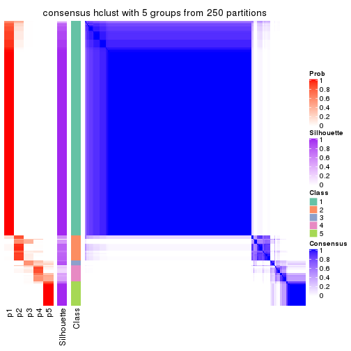
consensus_heatmap(res, k = 6)
Heatmaps for the membership of samples in all partitions to see how consistent they are:
membership_heatmap(res, k = 2)
membership_heatmap(res, k = 3)
membership_heatmap(res, k = 4)
membership_heatmap(res, k = 5)
membership_heatmap(res, k = 6)

As soon as we have had the classes for columns, we can look for signatures which are significantly different between classes which can be candidate marks for certain classes. Following are the heatmaps for signatures.
Signature heatmaps where rows are scaled:
get_signatures(res, k = 2)
get_signatures(res, k = 3)
get_signatures(res, k = 4)
get_signatures(res, k = 5)
get_signatures(res, k = 6)

Signature heatmaps where rows are not scaled:
get_signatures(res, k = 2, scale_rows = FALSE)
get_signatures(res, k = 3, scale_rows = FALSE)
get_signatures(res, k = 4, scale_rows = FALSE)
get_signatures(res, k = 5, scale_rows = FALSE)
get_signatures(res, k = 6, scale_rows = FALSE)
Compare the overlap of signatures from different k:
compare_signatures(res)
get_signature() returns a data frame invisibly. TO get the list of signatures, the function
call should be assigned to a variable explicitly. In following code, if plot argument is set
to FALSE, no heatmap is plotted while only the differential analysis is performed.
# code only for demonstration
tb = get_signature(res, k = ..., plot = FALSE)
An example of the output of tb is:
#> which_row fdr mean_1 mean_2 scaled_mean_1 scaled_mean_2 km
#> 1 38 0.042760348 8.373488 9.131774 -0.5533452 0.5164555 1
#> 2 40 0.018707592 7.106213 8.469186 -0.6173731 0.5762149 1
#> 3 55 0.019134737 10.221463 11.207825 -0.6159697 0.5749050 1
#> 4 59 0.006059896 5.921854 7.869574 -0.6899429 0.6439467 1
#> 5 60 0.018055526 8.928898 10.211722 -0.6204761 0.5791110 1
#> 6 98 0.009384629 15.714769 14.887706 0.6635654 -0.6193277 2
...
The columns in tb are:
which_row: row indices corresponding to the input matrix.fdr: FDR for the differential test. mean_x: The mean value in group x.scaled_mean_x: The mean value in group x after rows are scaled.km: Row groups if k-means clustering is applied to rows.UMAP plot which shows how samples are separated.
dimension_reduction(res, k = 2, method = "UMAP")
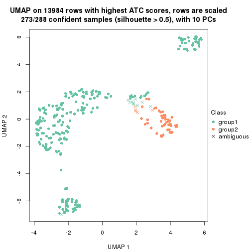
dimension_reduction(res, k = 3, method = "UMAP")
dimension_reduction(res, k = 4, method = "UMAP")
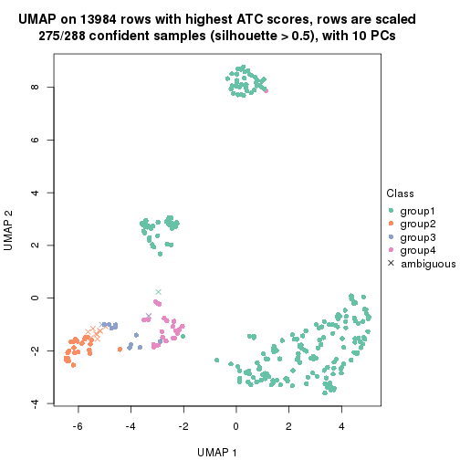
dimension_reduction(res, k = 5, method = "UMAP")

dimension_reduction(res, k = 6, method = "UMAP")
Following heatmap shows how subgroups are split when increasing k:
collect_classes(res)
If matrix rows can be associated to genes, consider to use functional_enrichment(res,
...) to perform function enrichment for the signature genes. See this vignette for more detailed explanations.
The object with results only for a single top-value method and a single partition method can be extracted as:
res = res_list["ATC", "kmeans"]
# you can also extract it by
# res = res_list["ATC:kmeans"]
A summary of res and all the functions that can be applied to it:
res
#> A 'ConsensusPartition' object with k = 2, 3, 4, 5, 6.
#> On a matrix with 13984 rows and 288 columns.
#> Top rows (1000, 2000, 3000, 4000, 5000) are extracted by 'ATC' method.
#> Subgroups are detected by 'kmeans' method.
#> Performed in total 1250 partitions by row resampling.
#> Best k for subgroups seems to be 4.
#>
#> Following methods can be applied to this 'ConsensusPartition' object:
#> [1] "cola_report" "collect_classes" "collect_plots"
#> [4] "collect_stats" "colnames" "compare_signatures"
#> [7] "consensus_heatmap" "dimension_reduction" "functional_enrichment"
#> [10] "get_anno_col" "get_anno" "get_classes"
#> [13] "get_consensus" "get_matrix" "get_membership"
#> [16] "get_param" "get_signatures" "get_stats"
#> [19] "is_best_k" "is_stable_k" "membership_heatmap"
#> [22] "ncol" "nrow" "plot_ecdf"
#> [25] "rownames" "select_partition_number" "show"
#> [28] "suggest_best_k" "test_to_known_factors"
collect_plots() function collects all the plots made from res for all k (number of partitions)
into one single page to provide an easy and fast comparison between different k.
collect_plots(res)
The plots are:
k and the heatmap of
predicted classes for each k.k.k.k.All the plots in panels can be made by individual functions and they are plotted later in this section.
select_partition_number() produces several plots showing different
statistics for choosing “optimized” k. There are following statistics:
k;k, the area increased is defined as \(A_k - A_{k-1}\).The detailed explanations of these statistics can be found in the cola vignette.
Generally speaking, lower PAC score, higher mean silhouette score or higher
concordance corresponds to better partition. Rand index and Jaccard index
measure how similar the current partition is compared to partition with k-1.
If they are too similar, we won't accept k is better than k-1.
select_partition_number(res)
The numeric values for all these statistics can be obtained by get_stats().
get_stats(res)
#> k 1-PAC mean_silhouette concordance area_increased Rand Jaccard
#> 2 2 1.000 0.988 0.995 0.3311 0.673 0.673
#> 3 3 1.000 0.989 0.995 0.3055 0.881 0.825
#> 4 4 0.991 0.943 0.976 0.2915 0.853 0.745
#> 5 5 0.788 0.847 0.896 0.1975 0.833 0.633
#> 6 6 0.846 0.879 0.924 0.0521 0.961 0.876
suggest_best_k() suggests the best \(k\) based on these statistics. The rules are as follows:
suggest_best_k(res)
#> [1] 4
#> attr(,"optional")
#> [1] 2 3
There is also optional best \(k\) = 2 3 that is worth to check.
Following shows the table of the partitions (You need to click the show/hide
code output link to see it). The membership matrix (columns with name p*)
is inferred by
clue::cl_consensus()
function with the SE method. Basically the value in the membership matrix
represents the probability to belong to a certain group. The finall class
label for an item is determined with the group with highest probability it
belongs to.
In get_classes() function, the entropy is calculated from the membership
matrix and the silhouette score is calculated from the consensus matrix.
cbind(get_classes(res, k = 2), get_membership(res, k = 2))
#> class entropy silhouette p1 p2
#> SRR1982614 1 0.0000 0.995 1.000 0.000
#> SRR1982613 1 0.0000 0.995 1.000 0.000
#> SRR1982612 1 0.0000 0.995 1.000 0.000
#> SRR1982611 1 0.0000 0.995 1.000 0.000
#> SRR1982610 1 0.0000 0.995 1.000 0.000
#> SRR1982609 1 0.0000 0.995 1.000 0.000
#> SRR1982659 1 0.0000 0.995 1.000 0.000
#> SRR1982692 1 0.0000 0.995 1.000 0.000
#> SRR1982722 1 0.0000 0.995 1.000 0.000
#> SRR1982750 2 0.0000 0.995 0.000 1.000
#> SRR2095031 2 0.0000 0.995 0.000 1.000
#> SRR1982780 1 0.0000 0.995 1.000 0.000
#> SRR1982807 1 0.0000 0.995 1.000 0.000
#> SRR1982830 1 0.0000 0.995 1.000 0.000
#> SRR1982829 1 0.0000 0.995 1.000 0.000
#> SRR1982828 1 0.0000 0.995 1.000 0.000
#> SRR1982827 1 0.0000 0.995 1.000 0.000
#> SRR1982826 1 0.0000 0.995 1.000 0.000
#> SRR1982825 1 0.0000 0.995 1.000 0.000
#> SRR1982824 1 0.0000 0.995 1.000 0.000
#> SRR1982823 1 0.0000 0.995 1.000 0.000
#> SRR1982822 1 0.0000 0.995 1.000 0.000
#> SRR1982821 1 0.0000 0.995 1.000 0.000
#> SRR1982820 1 0.0000 0.995 1.000 0.000
#> SRR1982819 1 0.0000 0.995 1.000 0.000
#> SRR1982818 1 0.0000 0.995 1.000 0.000
#> SRR1982817 1 0.0000 0.995 1.000 0.000
#> SRR1982816 1 0.0000 0.995 1.000 0.000
#> SRR1982815 1 0.0000 0.995 1.000 0.000
#> SRR1982814 1 0.0000 0.995 1.000 0.000
#> SRR1982813 1 0.0000 0.995 1.000 0.000
#> SRR1982812 2 0.0000 0.995 0.000 1.000
#> SRR1982811 1 0.0000 0.995 1.000 0.000
#> SRR1982810 1 0.0000 0.995 1.000 0.000
#> SRR1982809 1 0.0000 0.995 1.000 0.000
#> SRR1982808 1 0.0000 0.995 1.000 0.000
#> SRR1982806 1 0.0000 0.995 1.000 0.000
#> SRR1982805 1 0.0000 0.995 1.000 0.000
#> SRR1982804 1 0.0000 0.995 1.000 0.000
#> SRR1982803 1 0.0000 0.995 1.000 0.000
#> SRR1982802 1 0.0000 0.995 1.000 0.000
#> SRR1982801 1 0.0000 0.995 1.000 0.000
#> SRR1982800 1 0.0000 0.995 1.000 0.000
#> SRR1982799 1 0.0000 0.995 1.000 0.000
#> SRR1982798 1 0.0000 0.995 1.000 0.000
#> SRR1982797 1 0.0000 0.995 1.000 0.000
#> SRR1982796 1 0.0000 0.995 1.000 0.000
#> SRR1982795 1 0.0000 0.995 1.000 0.000
#> SRR1982794 1 0.0000 0.995 1.000 0.000
#> SRR1982793 1 0.0000 0.995 1.000 0.000
#> SRR1982792 1 0.0000 0.995 1.000 0.000
#> SRR1982791 1 0.0000 0.995 1.000 0.000
#> SRR1982790 2 0.0000 0.995 0.000 1.000
#> SRR1982789 1 0.0000 0.995 1.000 0.000
#> SRR1982788 1 0.0000 0.995 1.000 0.000
#> SRR1982787 1 0.0000 0.995 1.000 0.000
#> SRR1982786 1 0.0000 0.995 1.000 0.000
#> SRR1982785 1 0.0000 0.995 1.000 0.000
#> SRR1982784 1 0.0000 0.995 1.000 0.000
#> SRR1982783 1 0.0000 0.995 1.000 0.000
#> SRR1982782 1 0.0000 0.995 1.000 0.000
#> SRR1982781 1 0.0000 0.995 1.000 0.000
#> SRR1982779 1 0.0000 0.995 1.000 0.000
#> SRR1982778 1 0.0000 0.995 1.000 0.000
#> SRR1982776 2 0.0000 0.995 0.000 1.000
#> SRR1982777 1 0.0000 0.995 1.000 0.000
#> SRR1982775 1 0.0000 0.995 1.000 0.000
#> SRR1982774 1 0.0000 0.995 1.000 0.000
#> SRR1982772 1 0.0000 0.995 1.000 0.000
#> SRR1982773 1 0.0000 0.995 1.000 0.000
#> SRR1982770 1 0.0000 0.995 1.000 0.000
#> SRR1982771 1 0.0000 0.995 1.000 0.000
#> SRR1982769 1 0.0000 0.995 1.000 0.000
#> SRR1982768 1 0.0000 0.995 1.000 0.000
#> SRR1982767 1 0.0000 0.995 1.000 0.000
#> SRR1982766 1 0.0000 0.995 1.000 0.000
#> SRR1982765 1 0.0000 0.995 1.000 0.000
#> SRR1982764 1 0.0000 0.995 1.000 0.000
#> SRR1982762 1 0.0000 0.995 1.000 0.000
#> SRR1982760 1 0.0000 0.995 1.000 0.000
#> SRR1982761 1 0.0000 0.995 1.000 0.000
#> SRR1982763 2 0.0000 0.995 0.000 1.000
#> SRR1982759 1 0.0000 0.995 1.000 0.000
#> SRR1982758 1 0.0000 0.995 1.000 0.000
#> SRR1982757 1 0.0000 0.995 1.000 0.000
#> SRR1982755 1 0.0000 0.995 1.000 0.000
#> SRR1982754 1 0.0000 0.995 1.000 0.000
#> SRR1982756 1 0.0000 0.995 1.000 0.000
#> SRR1982753 1 0.0000 0.995 1.000 0.000
#> SRR1982751 2 0.0000 0.995 0.000 1.000
#> SRR1982752 2 0.0000 0.995 0.000 1.000
#> SRR1982749 2 0.0000 0.995 0.000 1.000
#> SRR1982748 2 0.0000 0.995 0.000 1.000
#> SRR1982747 2 0.0000 0.995 0.000 1.000
#> SRR1982746 2 0.0000 0.995 0.000 1.000
#> SRR1982745 2 0.0000 0.995 0.000 1.000
#> SRR1982743 2 0.0000 0.995 0.000 1.000
#> SRR1982744 2 0.0000 0.995 0.000 1.000
#> SRR1982741 2 0.0000 0.995 0.000 1.000
#> SRR1982742 2 0.0000 0.995 0.000 1.000
#> SRR2095014 2 0.0000 0.995 0.000 1.000
#> SRR1982740 2 0.0000 0.995 0.000 1.000
#> SRR1982739 2 0.0000 0.995 0.000 1.000
#> SRR1982737 2 0.0000 0.995 0.000 1.000
#> SRR1982738 2 0.0000 0.995 0.000 1.000
#> SRR1982736 2 0.0000 0.995 0.000 1.000
#> SRR1982735 2 0.0000 0.995 0.000 1.000
#> SRR1982733 2 0.0000 0.995 0.000 1.000
#> SRR1982732 2 0.0000 0.995 0.000 1.000
#> SRR2095004 2 0.0000 0.995 0.000 1.000
#> SRR1982734 2 0.0000 0.995 0.000 1.000
#> SRR1982731 2 0.0000 0.995 0.000 1.000
#> SRR1982729 2 0.0000 0.995 0.000 1.000
#> SRR1982730 2 0.0000 0.995 0.000 1.000
#> SRR1982728 2 0.0000 0.995 0.000 1.000
#> SRR1982727 1 0.0000 0.995 1.000 0.000
#> SRR1982726 1 0.0000 0.995 1.000 0.000
#> SRR1982723 1 0.0000 0.995 1.000 0.000
#> SRR1982725 1 0.0000 0.995 1.000 0.000
#> SRR1982724 1 0.0000 0.995 1.000 0.000
#> SRR1982721 1 0.0000 0.995 1.000 0.000
#> SRR1982720 1 0.0000 0.995 1.000 0.000
#> SRR1982719 1 0.0000 0.995 1.000 0.000
#> SRR1982718 2 0.0000 0.995 0.000 1.000
#> SRR1982717 2 0.0000 0.995 0.000 1.000
#> SRR1982715 2 0.8499 0.614 0.276 0.724
#> SRR1982714 2 0.0000 0.995 0.000 1.000
#> SRR1982716 1 0.6887 0.774 0.816 0.184
#> SRR1982713 2 0.0000 0.995 0.000 1.000
#> SRR1982711 2 0.0000 0.995 0.000 1.000
#> SRR1982712 2 0.0000 0.995 0.000 1.000
#> SRR1982710 2 0.0000 0.995 0.000 1.000
#> SRR1982708 2 0.0000 0.995 0.000 1.000
#> SRR1982707 1 0.0000 0.995 1.000 0.000
#> SRR1982709 1 0.0000 0.995 1.000 0.000
#> SRR1982705 2 0.0000 0.995 0.000 1.000
#> SRR1982706 1 0.0000 0.995 1.000 0.000
#> SRR1982704 1 0.0000 0.995 1.000 0.000
#> SRR1982702 1 0.3584 0.924 0.932 0.068
#> SRR1982703 1 0.0000 0.995 1.000 0.000
#> SRR1982701 1 0.0000 0.995 1.000 0.000
#> SRR1982700 2 0.0000 0.995 0.000 1.000
#> SRR1982697 2 0.0000 0.995 0.000 1.000
#> SRR1982698 2 0.0000 0.995 0.000 1.000
#> SRR1982699 2 0.0000 0.995 0.000 1.000
#> SRR1982696 2 0.0000 0.995 0.000 1.000
#> SRR1982695 1 0.0000 0.995 1.000 0.000
#> SRR1982694 1 0.0000 0.995 1.000 0.000
#> SRR1982693 2 0.0000 0.995 0.000 1.000
#> SRR1982690 2 0.0000 0.995 0.000 1.000
#> SRR1982691 2 0.0000 0.995 0.000 1.000
#> SRR1982689 1 0.0000 0.995 1.000 0.000
#> SRR1982688 1 0.0000 0.995 1.000 0.000
#> SRR1982687 1 0.0000 0.995 1.000 0.000
#> SRR1982686 1 0.1843 0.967 0.972 0.028
#> SRR1982685 1 0.9710 0.336 0.600 0.400
#> SRR1982684 2 0.0376 0.991 0.004 0.996
#> SRR1982683 1 0.0000 0.995 1.000 0.000
#> SRR1982681 2 0.0000 0.995 0.000 1.000
#> SRR1982682 1 0.7950 0.686 0.760 0.240
#> SRR1982680 2 0.0000 0.995 0.000 1.000
#> SRR1982679 1 0.0000 0.995 1.000 0.000
#> SRR1982678 2 0.0000 0.995 0.000 1.000
#> SRR1982677 1 0.8144 0.665 0.748 0.252
#> SRR1982676 1 0.0000 0.995 1.000 0.000
#> SRR1982675 1 0.0000 0.995 1.000 0.000
#> SRR1982674 1 0.0000 0.995 1.000 0.000
#> SRR1982671 1 0.0000 0.995 1.000 0.000
#> SRR1982673 1 0.0000 0.995 1.000 0.000
#> SRR1982672 1 0.0000 0.995 1.000 0.000
#> SRR1982670 1 0.0000 0.995 1.000 0.000
#> SRR1982669 1 0.0000 0.995 1.000 0.000
#> SRR1982667 1 0.0000 0.995 1.000 0.000
#> SRR1982668 1 0.0000 0.995 1.000 0.000
#> SRR1982666 1 0.0000 0.995 1.000 0.000
#> SRR1982665 2 0.0000 0.995 0.000 1.000
#> SRR1982664 1 0.0000 0.995 1.000 0.000
#> SRR1982663 1 0.0000 0.995 1.000 0.000
#> SRR1982662 1 0.0000 0.995 1.000 0.000
#> SRR1982661 1 0.0000 0.995 1.000 0.000
#> SRR1982660 1 0.0000 0.995 1.000 0.000
#> SRR1982658 1 0.0000 0.995 1.000 0.000
#> SRR1982657 1 0.0000 0.995 1.000 0.000
#> SRR1982656 1 0.0000 0.995 1.000 0.000
#> SRR1982654 1 0.0000 0.995 1.000 0.000
#> SRR1982655 1 0.0000 0.995 1.000 0.000
#> SRR1982653 1 0.0000 0.995 1.000 0.000
#> SRR1982652 1 0.0000 0.995 1.000 0.000
#> SRR1982651 1 0.0000 0.995 1.000 0.000
#> SRR1982649 1 0.0000 0.995 1.000 0.000
#> SRR1982650 1 0.0000 0.995 1.000 0.000
#> SRR1982648 1 0.0000 0.995 1.000 0.000
#> SRR1982647 1 0.0000 0.995 1.000 0.000
#> SRR1982646 1 0.0000 0.995 1.000 0.000
#> SRR1982645 1 0.0000 0.995 1.000 0.000
#> SRR1982644 1 0.0000 0.995 1.000 0.000
#> SRR1982642 1 0.0000 0.995 1.000 0.000
#> SRR1982643 1 0.0000 0.995 1.000 0.000
#> SRR1982641 1 0.0000 0.995 1.000 0.000
#> SRR1982640 1 0.0000 0.995 1.000 0.000
#> SRR1982638 1 0.0000 0.995 1.000 0.000
#> SRR1982639 1 0.0000 0.995 1.000 0.000
#> SRR1982637 1 0.0000 0.995 1.000 0.000
#> SRR1982635 1 0.0000 0.995 1.000 0.000
#> SRR1982636 1 0.0000 0.995 1.000 0.000
#> SRR1982633 1 0.0000 0.995 1.000 0.000
#> SRR1982632 1 0.0000 0.995 1.000 0.000
#> SRR1982631 1 0.0000 0.995 1.000 0.000
#> SRR1982634 1 0.0000 0.995 1.000 0.000
#> SRR1982628 1 0.0000 0.995 1.000 0.000
#> SRR1982629 1 0.0000 0.995 1.000 0.000
#> SRR1982627 1 0.0000 0.995 1.000 0.000
#> SRR1982625 1 0.0000 0.995 1.000 0.000
#> SRR1982626 1 0.0000 0.995 1.000 0.000
#> SRR1982624 1 0.0000 0.995 1.000 0.000
#> SRR1982623 1 0.0000 0.995 1.000 0.000
#> SRR1982622 1 0.0000 0.995 1.000 0.000
#> SRR1982621 1 0.0000 0.995 1.000 0.000
#> SRR1982620 1 0.0000 0.995 1.000 0.000
#> SRR1982619 2 0.0000 0.995 0.000 1.000
#> SRR1982618 1 0.0000 0.995 1.000 0.000
#> SRR1982617 2 0.0376 0.991 0.004 0.996
#> SRR1982616 1 0.0000 0.995 1.000 0.000
#> SRR1982615 1 0.0000 0.995 1.000 0.000
#> SRR1982608 1 0.0000 0.995 1.000 0.000
#> SRR1982607 1 0.0000 0.995 1.000 0.000
#> SRR1982606 1 0.0000 0.995 1.000 0.000
#> SRR1982605 1 0.0000 0.995 1.000 0.000
#> SRR1982604 1 0.0000 0.995 1.000 0.000
#> SRR1982603 1 0.0000 0.995 1.000 0.000
#> SRR1982602 1 0.0000 0.995 1.000 0.000
#> SRR1982601 1 0.0000 0.995 1.000 0.000
#> SRR1982599 1 0.0000 0.995 1.000 0.000
#> SRR1982600 1 0.0000 0.995 1.000 0.000
#> SRR1982598 1 0.0000 0.995 1.000 0.000
#> SRR1982597 1 0.0000 0.995 1.000 0.000
#> SRR1982595 1 0.0000 0.995 1.000 0.000
#> SRR1982596 1 0.0000 0.995 1.000 0.000
#> SRR1982594 1 0.0000 0.995 1.000 0.000
#> SRR1982593 1 0.0000 0.995 1.000 0.000
#> SRR1982592 1 0.0000 0.995 1.000 0.000
#> SRR1982591 1 0.0000 0.995 1.000 0.000
#> SRR1982590 1 0.0000 0.995 1.000 0.000
#> SRR1982589 1 0.0000 0.995 1.000 0.000
#> SRR1982588 1 0.0000 0.995 1.000 0.000
#> SRR1982587 1 0.0000 0.995 1.000 0.000
#> SRR1982586 1 0.0000 0.995 1.000 0.000
#> SRR1982584 1 0.0000 0.995 1.000 0.000
#> SRR2096514 1 0.0000 0.995 1.000 0.000
#> SRR2096513 1 0.0000 0.995 1.000 0.000
#> SRR2096511 1 0.0000 0.995 1.000 0.000
#> SRR2096512 2 0.0000 0.995 0.000 1.000
#> SRR2096509 1 0.0000 0.995 1.000 0.000
#> SRR2096510 1 0.0000 0.995 1.000 0.000
#> SRR2096508 2 0.0000 0.995 0.000 1.000
#> SRR2096507 1 0.0000 0.995 1.000 0.000
#> SRR2096504 1 0.0000 0.995 1.000 0.000
#> SRR2096506 1 0.0000 0.995 1.000 0.000
#> SRR2096505 1 0.0000 0.995 1.000 0.000
#> SRR2096503 1 0.0000 0.995 1.000 0.000
#> SRR2096500 1 0.0000 0.995 1.000 0.000
#> SRR2096501 1 0.0000 0.995 1.000 0.000
#> SRR2096502 1 0.0000 0.995 1.000 0.000
#> SRR2096499 1 0.0000 0.995 1.000 0.000
#> SRR2096498 1 0.0000 0.995 1.000 0.000
#> SRR2096496 1 0.0000 0.995 1.000 0.000
#> SRR2096497 1 0.0000 0.995 1.000 0.000
#> SRR2096495 1 0.0000 0.995 1.000 0.000
#> SRR2096494 1 0.0000 0.995 1.000 0.000
#> SRR2096492 1 0.0000 0.995 1.000 0.000
#> SRR2096491 1 0.0000 0.995 1.000 0.000
#> SRR2096493 1 0.0000 0.995 1.000 0.000
#> SRR2096490 1 0.0000 0.995 1.000 0.000
#> SRR2096488 1 0.0000 0.995 1.000 0.000
#> SRR2096489 1 0.0000 0.995 1.000 0.000
#> SRR2096487 1 0.0000 0.995 1.000 0.000
#> SRR2096484 1 0.0000 0.995 1.000 0.000
#> SRR2096486 1 0.0000 0.995 1.000 0.000
#> SRR2096485 1 0.0000 0.995 1.000 0.000
#> SRR2096483 1 0.0000 0.995 1.000 0.000
#> SRR2096482 1 0.0000 0.995 1.000 0.000
#> SRR2096481 1 0.0000 0.995 1.000 0.000
#> SRR2096520 1 0.0000 0.995 1.000 0.000
#> SRR2096519 1 0.0000 0.995 1.000 0.000
#> SRR2096518 1 0.0000 0.995 1.000 0.000
#> SRR2096516 1 0.0000 0.995 1.000 0.000
#> SRR2096517 1 0.0000 0.995 1.000 0.000
#> SRR2096515 1 0.0000 0.995 1.000 0.000
cbind(get_classes(res, k = 3), get_membership(res, k = 3))
#> class entropy silhouette p1 p2 p3
#> SRR1982614 1 0.0237 0.993 0.996 0.000 0.004
#> SRR1982613 1 0.2711 0.904 0.912 0.000 0.088
#> SRR1982612 1 0.0000 0.997 1.000 0.000 0.000
#> SRR1982611 1 0.0000 0.997 1.000 0.000 0.000
#> SRR1982610 1 0.0000 0.997 1.000 0.000 0.000
#> SRR1982609 1 0.0000 0.997 1.000 0.000 0.000
#> SRR1982659 1 0.0000 0.997 1.000 0.000 0.000
#> SRR1982692 3 0.0000 0.993 0.000 0.000 1.000
#> SRR1982722 1 0.0000 0.997 1.000 0.000 0.000
#> SRR1982750 2 0.0000 0.987 0.000 1.000 0.000
#> SRR2095031 2 0.0000 0.987 0.000 1.000 0.000
#> SRR1982780 1 0.0000 0.997 1.000 0.000 0.000
#> SRR1982807 1 0.0000 0.997 1.000 0.000 0.000
#> SRR1982830 1 0.0000 0.997 1.000 0.000 0.000
#> SRR1982829 1 0.0237 0.993 0.996 0.000 0.004
#> SRR1982828 1 0.0000 0.997 1.000 0.000 0.000
#> SRR1982827 1 0.0000 0.997 1.000 0.000 0.000
#> SRR1982826 1 0.0000 0.997 1.000 0.000 0.000
#> SRR1982825 1 0.0000 0.997 1.000 0.000 0.000
#> SRR1982824 1 0.0000 0.997 1.000 0.000 0.000
#> SRR1982823 1 0.0000 0.997 1.000 0.000 0.000
#> SRR1982822 1 0.0000 0.997 1.000 0.000 0.000
#> SRR1982821 1 0.0000 0.997 1.000 0.000 0.000
#> SRR1982820 1 0.0000 0.997 1.000 0.000 0.000
#> SRR1982819 1 0.0000 0.997 1.000 0.000 0.000
#> SRR1982818 1 0.0000 0.997 1.000 0.000 0.000
#> SRR1982817 1 0.0000 0.997 1.000 0.000 0.000
#> SRR1982816 1 0.0000 0.997 1.000 0.000 0.000
#> SRR1982815 1 0.0000 0.997 1.000 0.000 0.000
#> SRR1982814 1 0.0000 0.997 1.000 0.000 0.000
#> SRR1982813 1 0.0000 0.997 1.000 0.000 0.000
#> SRR1982812 3 0.0237 0.990 0.000 0.004 0.996
#> SRR1982811 1 0.0000 0.997 1.000 0.000 0.000
#> SRR1982810 1 0.0000 0.997 1.000 0.000 0.000
#> SRR1982809 1 0.5497 0.593 0.708 0.000 0.292
#> SRR1982808 1 0.0000 0.997 1.000 0.000 0.000
#> SRR1982806 1 0.0000 0.997 1.000 0.000 0.000
#> SRR1982805 1 0.0000 0.997 1.000 0.000 0.000
#> SRR1982804 1 0.0000 0.997 1.000 0.000 0.000
#> SRR1982803 1 0.0000 0.997 1.000 0.000 0.000
#> SRR1982802 1 0.0000 0.997 1.000 0.000 0.000
#> SRR1982801 1 0.0000 0.997 1.000 0.000 0.000
#> SRR1982800 1 0.0000 0.997 1.000 0.000 0.000
#> SRR1982799 1 0.0000 0.997 1.000 0.000 0.000
#> SRR1982798 1 0.0000 0.997 1.000 0.000 0.000
#> SRR1982797 1 0.0237 0.993 0.996 0.000 0.004
#> SRR1982796 1 0.0000 0.997 1.000 0.000 0.000
#> SRR1982795 1 0.0000 0.997 1.000 0.000 0.000
#> SRR1982794 1 0.0000 0.997 1.000 0.000 0.000
#> SRR1982793 1 0.0000 0.997 1.000 0.000 0.000
#> SRR1982792 1 0.0000 0.997 1.000 0.000 0.000
#> SRR1982791 1 0.0000 0.997 1.000 0.000 0.000
#> SRR1982790 3 0.0000 0.993 0.000 0.000 1.000
#> SRR1982789 1 0.0000 0.997 1.000 0.000 0.000
#> SRR1982788 1 0.0000 0.997 1.000 0.000 0.000
#> SRR1982787 1 0.0000 0.997 1.000 0.000 0.000
#> SRR1982786 1 0.0237 0.993 0.996 0.000 0.004
#> SRR1982785 1 0.0000 0.997 1.000 0.000 0.000
#> SRR1982784 1 0.0000 0.997 1.000 0.000 0.000
#> SRR1982783 1 0.0000 0.997 1.000 0.000 0.000
#> SRR1982782 1 0.0000 0.997 1.000 0.000 0.000
#> SRR1982781 1 0.0000 0.997 1.000 0.000 0.000
#> SRR1982779 1 0.0000 0.997 1.000 0.000 0.000
#> SRR1982778 1 0.0000 0.997 1.000 0.000 0.000
#> SRR1982776 2 0.0000 0.987 0.000 1.000 0.000
#> SRR1982777 1 0.0237 0.993 0.996 0.000 0.004
#> SRR1982775 1 0.0000 0.997 1.000 0.000 0.000
#> SRR1982774 1 0.0000 0.997 1.000 0.000 0.000
#> SRR1982772 1 0.0000 0.997 1.000 0.000 0.000
#> SRR1982773 1 0.0000 0.997 1.000 0.000 0.000
#> SRR1982770 1 0.0000 0.997 1.000 0.000 0.000
#> SRR1982771 1 0.0000 0.997 1.000 0.000 0.000
#> SRR1982769 1 0.3038 0.885 0.896 0.000 0.104
#> SRR1982768 1 0.0000 0.997 1.000 0.000 0.000
#> SRR1982767 1 0.0000 0.997 1.000 0.000 0.000
#> SRR1982766 1 0.0237 0.993 0.996 0.000 0.004
#> SRR1982765 1 0.0000 0.997 1.000 0.000 0.000
#> SRR1982764 1 0.0000 0.997 1.000 0.000 0.000
#> SRR1982762 1 0.0000 0.997 1.000 0.000 0.000
#> SRR1982760 1 0.0000 0.997 1.000 0.000 0.000
#> SRR1982761 1 0.0000 0.997 1.000 0.000 0.000
#> SRR1982763 3 0.0000 0.993 0.000 0.000 1.000
#> SRR1982759 1 0.0000 0.997 1.000 0.000 0.000
#> SRR1982758 1 0.0237 0.993 0.996 0.000 0.004
#> SRR1982757 1 0.0000 0.997 1.000 0.000 0.000
#> SRR1982755 1 0.0000 0.997 1.000 0.000 0.000
#> SRR1982754 1 0.0000 0.997 1.000 0.000 0.000
#> SRR1982756 1 0.0000 0.997 1.000 0.000 0.000
#> SRR1982753 1 0.0000 0.997 1.000 0.000 0.000
#> SRR1982751 2 0.0000 0.987 0.000 1.000 0.000
#> SRR1982752 2 0.0000 0.987 0.000 1.000 0.000
#> SRR1982749 2 0.0000 0.987 0.000 1.000 0.000
#> SRR1982748 2 0.0000 0.987 0.000 1.000 0.000
#> SRR1982747 2 0.0000 0.987 0.000 1.000 0.000
#> SRR1982746 2 0.0000 0.987 0.000 1.000 0.000
#> SRR1982745 2 0.0000 0.987 0.000 1.000 0.000
#> SRR1982743 2 0.0000 0.987 0.000 1.000 0.000
#> SRR1982744 2 0.0000 0.987 0.000 1.000 0.000
#> SRR1982741 3 0.0237 0.990 0.000 0.004 0.996
#> SRR1982742 2 0.0000 0.987 0.000 1.000 0.000
#> SRR2095014 2 0.0000 0.987 0.000 1.000 0.000
#> SRR1982740 2 0.0000 0.987 0.000 1.000 0.000
#> SRR1982739 2 0.0000 0.987 0.000 1.000 0.000
#> SRR1982737 2 0.0000 0.987 0.000 1.000 0.000
#> SRR1982738 3 0.0000 0.993 0.000 0.000 1.000
#> SRR1982736 2 0.0000 0.987 0.000 1.000 0.000
#> SRR1982735 2 0.0000 0.987 0.000 1.000 0.000
#> SRR1982733 2 0.0000 0.987 0.000 1.000 0.000
#> SRR1982732 2 0.0000 0.987 0.000 1.000 0.000
#> SRR2095004 2 0.0000 0.987 0.000 1.000 0.000
#> SRR1982734 2 0.0000 0.987 0.000 1.000 0.000
#> SRR1982731 2 0.0000 0.987 0.000 1.000 0.000
#> SRR1982729 3 0.0747 0.979 0.000 0.016 0.984
#> SRR1982730 2 0.0000 0.987 0.000 1.000 0.000
#> SRR1982728 2 0.0000 0.987 0.000 1.000 0.000
#> SRR1982727 1 0.0237 0.993 0.996 0.000 0.004
#> SRR1982726 1 0.0000 0.997 1.000 0.000 0.000
#> SRR1982723 1 0.0000 0.997 1.000 0.000 0.000
#> SRR1982725 1 0.0000 0.997 1.000 0.000 0.000
#> SRR1982724 1 0.0000 0.997 1.000 0.000 0.000
#> SRR1982721 1 0.0000 0.997 1.000 0.000 0.000
#> SRR1982720 1 0.0000 0.997 1.000 0.000 0.000
#> SRR1982719 1 0.0000 0.997 1.000 0.000 0.000
#> SRR1982718 3 0.1031 0.971 0.000 0.024 0.976
#> SRR1982717 2 0.4002 0.806 0.000 0.840 0.160
#> SRR1982715 3 0.0000 0.993 0.000 0.000 1.000
#> SRR1982714 3 0.0237 0.990 0.000 0.004 0.996
#> SRR1982716 3 0.0000 0.993 0.000 0.000 1.000
#> SRR1982713 2 0.0000 0.987 0.000 1.000 0.000
#> SRR1982711 2 0.0000 0.987 0.000 1.000 0.000
#> SRR1982712 2 0.0000 0.987 0.000 1.000 0.000
#> SRR1982710 3 0.0000 0.993 0.000 0.000 1.000
#> SRR1982708 3 0.0000 0.993 0.000 0.000 1.000
#> SRR1982707 3 0.0000 0.993 0.000 0.000 1.000
#> SRR1982709 1 0.0000 0.997 1.000 0.000 0.000
#> SRR1982705 3 0.0000 0.993 0.000 0.000 1.000
#> SRR1982706 1 0.0000 0.997 1.000 0.000 0.000
#> SRR1982704 1 0.0000 0.997 1.000 0.000 0.000
#> SRR1982702 3 0.0000 0.993 0.000 0.000 1.000
#> SRR1982703 3 0.0000 0.993 0.000 0.000 1.000
#> SRR1982701 3 0.0000 0.993 0.000 0.000 1.000
#> SRR1982700 3 0.0237 0.990 0.000 0.004 0.996
#> SRR1982697 2 0.0000 0.987 0.000 1.000 0.000
#> SRR1982698 2 0.0000 0.987 0.000 1.000 0.000
#> SRR1982699 2 0.0000 0.987 0.000 1.000 0.000
#> SRR1982696 2 0.5733 0.523 0.000 0.676 0.324
#> SRR1982695 1 0.0000 0.997 1.000 0.000 0.000
#> SRR1982694 1 0.0000 0.997 1.000 0.000 0.000
#> SRR1982693 2 0.0000 0.987 0.000 1.000 0.000
#> SRR1982690 3 0.0000 0.993 0.000 0.000 1.000
#> SRR1982691 3 0.0000 0.993 0.000 0.000 1.000
#> SRR1982689 3 0.0000 0.993 0.000 0.000 1.000
#> SRR1982688 1 0.0000 0.997 1.000 0.000 0.000
#> SRR1982687 3 0.0000 0.993 0.000 0.000 1.000
#> SRR1982686 3 0.0000 0.993 0.000 0.000 1.000
#> SRR1982685 3 0.0000 0.993 0.000 0.000 1.000
#> SRR1982684 3 0.0000 0.993 0.000 0.000 1.000
#> SRR1982683 1 0.0000 0.997 1.000 0.000 0.000
#> SRR1982681 2 0.0000 0.987 0.000 1.000 0.000
#> SRR1982682 3 0.0000 0.993 0.000 0.000 1.000
#> SRR1982680 3 0.4605 0.741 0.000 0.204 0.796
#> SRR1982679 3 0.0000 0.993 0.000 0.000 1.000
#> SRR1982678 2 0.0000 0.987 0.000 1.000 0.000
#> SRR1982677 3 0.0000 0.993 0.000 0.000 1.000
#> SRR1982676 1 0.0000 0.997 1.000 0.000 0.000
#> SRR1982675 1 0.0000 0.997 1.000 0.000 0.000
#> SRR1982674 1 0.0237 0.993 0.996 0.000 0.004
#> SRR1982671 1 0.0000 0.997 1.000 0.000 0.000
#> SRR1982673 1 0.0000 0.997 1.000 0.000 0.000
#> SRR1982672 1 0.0000 0.997 1.000 0.000 0.000
#> SRR1982670 1 0.0000 0.997 1.000 0.000 0.000
#> SRR1982669 1 0.0000 0.997 1.000 0.000 0.000
#> SRR1982667 1 0.0000 0.997 1.000 0.000 0.000
#> SRR1982668 1 0.0237 0.993 0.996 0.000 0.004
#> SRR1982666 1 0.0000 0.997 1.000 0.000 0.000
#> SRR1982665 2 0.0000 0.987 0.000 1.000 0.000
#> SRR1982664 1 0.0000 0.997 1.000 0.000 0.000
#> SRR1982663 1 0.0000 0.997 1.000 0.000 0.000
#> SRR1982662 1 0.0000 0.997 1.000 0.000 0.000
#> SRR1982661 1 0.0000 0.997 1.000 0.000 0.000
#> SRR1982660 1 0.0000 0.997 1.000 0.000 0.000
#> SRR1982658 1 0.0000 0.997 1.000 0.000 0.000
#> SRR1982657 1 0.0000 0.997 1.000 0.000 0.000
#> SRR1982656 3 0.0000 0.993 0.000 0.000 1.000
#> SRR1982654 1 0.0000 0.997 1.000 0.000 0.000
#> SRR1982655 1 0.0000 0.997 1.000 0.000 0.000
#> SRR1982653 1 0.0000 0.997 1.000 0.000 0.000
#> SRR1982652 1 0.0000 0.997 1.000 0.000 0.000
#> SRR1982651 1 0.0000 0.997 1.000 0.000 0.000
#> SRR1982649 1 0.0000 0.997 1.000 0.000 0.000
#> SRR1982650 1 0.0000 0.997 1.000 0.000 0.000
#> SRR1982648 1 0.0000 0.997 1.000 0.000 0.000
#> SRR1982647 1 0.0000 0.997 1.000 0.000 0.000
#> SRR1982646 1 0.0000 0.997 1.000 0.000 0.000
#> SRR1982645 1 0.0000 0.997 1.000 0.000 0.000
#> SRR1982644 1 0.0000 0.997 1.000 0.000 0.000
#> SRR1982642 1 0.0000 0.997 1.000 0.000 0.000
#> SRR1982643 1 0.0000 0.997 1.000 0.000 0.000
#> SRR1982641 1 0.0000 0.997 1.000 0.000 0.000
#> SRR1982640 1 0.0000 0.997 1.000 0.000 0.000
#> SRR1982638 1 0.0000 0.997 1.000 0.000 0.000
#> SRR1982639 1 0.0000 0.997 1.000 0.000 0.000
#> SRR1982637 1 0.0000 0.997 1.000 0.000 0.000
#> SRR1982635 1 0.0000 0.997 1.000 0.000 0.000
#> SRR1982636 1 0.0000 0.997 1.000 0.000 0.000
#> SRR1982633 1 0.0000 0.997 1.000 0.000 0.000
#> SRR1982632 1 0.0000 0.997 1.000 0.000 0.000
#> SRR1982631 1 0.0000 0.997 1.000 0.000 0.000
#> SRR1982634 1 0.0000 0.997 1.000 0.000 0.000
#> SRR1982628 1 0.0000 0.997 1.000 0.000 0.000
#> SRR1982629 1 0.0000 0.997 1.000 0.000 0.000
#> SRR1982627 1 0.0000 0.997 1.000 0.000 0.000
#> SRR1982625 1 0.0000 0.997 1.000 0.000 0.000
#> SRR1982626 1 0.0000 0.997 1.000 0.000 0.000
#> SRR1982624 1 0.0000 0.997 1.000 0.000 0.000
#> SRR1982623 1 0.0000 0.997 1.000 0.000 0.000
#> SRR1982622 1 0.0000 0.997 1.000 0.000 0.000
#> SRR1982621 1 0.0000 0.997 1.000 0.000 0.000
#> SRR1982620 1 0.0000 0.997 1.000 0.000 0.000
#> SRR1982619 2 0.0000 0.987 0.000 1.000 0.000
#> SRR1982618 1 0.0000 0.997 1.000 0.000 0.000
#> SRR1982617 3 0.0000 0.993 0.000 0.000 1.000
#> SRR1982616 1 0.0000 0.997 1.000 0.000 0.000
#> SRR1982615 1 0.0000 0.997 1.000 0.000 0.000
#> SRR1982608 3 0.0000 0.993 0.000 0.000 1.000
#> SRR1982607 1 0.0000 0.997 1.000 0.000 0.000
#> SRR1982606 1 0.0000 0.997 1.000 0.000 0.000
#> SRR1982605 1 0.0000 0.997 1.000 0.000 0.000
#> SRR1982604 1 0.0000 0.997 1.000 0.000 0.000
#> SRR1982603 1 0.0000 0.997 1.000 0.000 0.000
#> SRR1982602 1 0.0000 0.997 1.000 0.000 0.000
#> SRR1982601 1 0.0000 0.997 1.000 0.000 0.000
#> SRR1982599 1 0.0000 0.997 1.000 0.000 0.000
#> SRR1982600 1 0.3879 0.823 0.848 0.000 0.152
#> SRR1982598 1 0.0000 0.997 1.000 0.000 0.000
#> SRR1982597 1 0.0000 0.997 1.000 0.000 0.000
#> SRR1982595 1 0.0000 0.997 1.000 0.000 0.000
#> SRR1982596 1 0.0000 0.997 1.000 0.000 0.000
#> SRR1982594 1 0.0000 0.997 1.000 0.000 0.000
#> SRR1982593 1 0.0000 0.997 1.000 0.000 0.000
#> SRR1982592 3 0.0000 0.993 0.000 0.000 1.000
#> SRR1982591 1 0.0000 0.997 1.000 0.000 0.000
#> SRR1982590 1 0.0000 0.997 1.000 0.000 0.000
#> SRR1982589 1 0.0000 0.997 1.000 0.000 0.000
#> SRR1982588 1 0.0000 0.997 1.000 0.000 0.000
#> SRR1982587 1 0.0000 0.997 1.000 0.000 0.000
#> SRR1982586 1 0.0000 0.997 1.000 0.000 0.000
#> SRR1982584 1 0.0237 0.993 0.996 0.000 0.004
#> SRR2096514 1 0.0000 0.997 1.000 0.000 0.000
#> SRR2096513 1 0.0000 0.997 1.000 0.000 0.000
#> SRR2096511 1 0.0000 0.997 1.000 0.000 0.000
#> SRR2096512 3 0.0000 0.993 0.000 0.000 1.000
#> SRR2096509 1 0.0000 0.997 1.000 0.000 0.000
#> SRR2096510 1 0.0000 0.997 1.000 0.000 0.000
#> SRR2096508 3 0.0000 0.993 0.000 0.000 1.000
#> SRR2096507 1 0.0000 0.997 1.000 0.000 0.000
#> SRR2096504 1 0.0000 0.997 1.000 0.000 0.000
#> SRR2096506 1 0.0000 0.997 1.000 0.000 0.000
#> SRR2096505 1 0.0000 0.997 1.000 0.000 0.000
#> SRR2096503 3 0.0000 0.993 0.000 0.000 1.000
#> SRR2096500 1 0.0000 0.997 1.000 0.000 0.000
#> SRR2096501 1 0.0237 0.993 0.996 0.000 0.004
#> SRR2096502 1 0.0000 0.997 1.000 0.000 0.000
#> SRR2096499 1 0.0000 0.997 1.000 0.000 0.000
#> SRR2096498 1 0.0000 0.997 1.000 0.000 0.000
#> SRR2096496 1 0.0000 0.997 1.000 0.000 0.000
#> SRR2096497 1 0.0000 0.997 1.000 0.000 0.000
#> SRR2096495 1 0.0000 0.997 1.000 0.000 0.000
#> SRR2096494 1 0.0000 0.997 1.000 0.000 0.000
#> SRR2096492 1 0.0000 0.997 1.000 0.000 0.000
#> SRR2096491 3 0.0000 0.993 0.000 0.000 1.000
#> SRR2096493 1 0.0000 0.997 1.000 0.000 0.000
#> SRR2096490 1 0.0000 0.997 1.000 0.000 0.000
#> SRR2096488 1 0.0000 0.997 1.000 0.000 0.000
#> SRR2096489 1 0.0000 0.997 1.000 0.000 0.000
#> SRR2096487 1 0.0000 0.997 1.000 0.000 0.000
#> SRR2096484 1 0.0000 0.997 1.000 0.000 0.000
#> SRR2096486 1 0.0000 0.997 1.000 0.000 0.000
#> SRR2096485 1 0.0000 0.997 1.000 0.000 0.000
#> SRR2096483 1 0.0000 0.997 1.000 0.000 0.000
#> SRR2096482 1 0.0000 0.997 1.000 0.000 0.000
#> SRR2096481 1 0.0237 0.993 0.996 0.000 0.004
#> SRR2096520 1 0.0000 0.997 1.000 0.000 0.000
#> SRR2096519 1 0.0000 0.997 1.000 0.000 0.000
#> SRR2096518 1 0.0000 0.997 1.000 0.000 0.000
#> SRR2096516 1 0.0000 0.997 1.000 0.000 0.000
#> SRR2096517 1 0.0000 0.997 1.000 0.000 0.000
#> SRR2096515 1 0.0000 0.997 1.000 0.000 0.000
cbind(get_classes(res, k = 4), get_membership(res, k = 4))
#> class entropy silhouette p1 p2 p3 p4
#> SRR1982614 4 0.0592 0.8841 0.016 0.000 0.000 0.984
#> SRR1982613 4 0.0376 0.8759 0.004 0.000 0.004 0.992
#> SRR1982612 1 0.0000 0.9900 1.000 0.000 0.000 0.000
#> SRR1982611 4 0.4746 0.4373 0.368 0.000 0.000 0.632
#> SRR1982610 1 0.0000 0.9900 1.000 0.000 0.000 0.000
#> SRR1982609 1 0.0000 0.9900 1.000 0.000 0.000 0.000
#> SRR1982659 1 0.0000 0.9900 1.000 0.000 0.000 0.000
#> SRR1982692 4 0.0336 0.8713 0.000 0.000 0.008 0.992
#> SRR1982722 1 0.0000 0.9900 1.000 0.000 0.000 0.000
#> SRR1982750 2 0.0188 0.9815 0.000 0.996 0.000 0.004
#> SRR2095031 2 0.0188 0.9815 0.000 0.996 0.000 0.004
#> SRR1982780 1 0.0000 0.9900 1.000 0.000 0.000 0.000
#> SRR1982807 1 0.0000 0.9900 1.000 0.000 0.000 0.000
#> SRR1982830 1 0.0000 0.9900 1.000 0.000 0.000 0.000
#> SRR1982829 4 0.0707 0.8841 0.020 0.000 0.000 0.980
#> SRR1982828 1 0.4008 0.6519 0.756 0.000 0.000 0.244
#> SRR1982827 1 0.0000 0.9900 1.000 0.000 0.000 0.000
#> SRR1982826 1 0.0000 0.9900 1.000 0.000 0.000 0.000
#> SRR1982825 1 0.0000 0.9900 1.000 0.000 0.000 0.000
#> SRR1982824 1 0.0000 0.9900 1.000 0.000 0.000 0.000
#> SRR1982823 1 0.0000 0.9900 1.000 0.000 0.000 0.000
#> SRR1982822 1 0.0000 0.9900 1.000 0.000 0.000 0.000
#> SRR1982821 1 0.0000 0.9900 1.000 0.000 0.000 0.000
#> SRR1982820 1 0.0000 0.9900 1.000 0.000 0.000 0.000
#> SRR1982819 1 0.0000 0.9900 1.000 0.000 0.000 0.000
#> SRR1982818 1 0.0000 0.9900 1.000 0.000 0.000 0.000
#> SRR1982817 1 0.0000 0.9900 1.000 0.000 0.000 0.000
#> SRR1982816 1 0.0000 0.9900 1.000 0.000 0.000 0.000
#> SRR1982815 1 0.0000 0.9900 1.000 0.000 0.000 0.000
#> SRR1982814 1 0.0000 0.9900 1.000 0.000 0.000 0.000
#> SRR1982813 1 0.0000 0.9900 1.000 0.000 0.000 0.000
#> SRR1982812 3 0.0188 0.9380 0.000 0.000 0.996 0.004
#> SRR1982811 1 0.0000 0.9900 1.000 0.000 0.000 0.000
#> SRR1982810 4 0.1389 0.8649 0.048 0.000 0.000 0.952
#> SRR1982809 4 0.0376 0.8759 0.004 0.000 0.004 0.992
#> SRR1982808 4 0.3801 0.6332 0.220 0.000 0.000 0.780
#> SRR1982806 1 0.0000 0.9900 1.000 0.000 0.000 0.000
#> SRR1982805 1 0.0000 0.9900 1.000 0.000 0.000 0.000
#> SRR1982804 1 0.0000 0.9900 1.000 0.000 0.000 0.000
#> SRR1982803 4 0.1302 0.8691 0.044 0.000 0.000 0.956
#> SRR1982802 1 0.0000 0.9900 1.000 0.000 0.000 0.000
#> SRR1982801 1 0.0000 0.9900 1.000 0.000 0.000 0.000
#> SRR1982800 1 0.0000 0.9900 1.000 0.000 0.000 0.000
#> SRR1982799 1 0.0000 0.9900 1.000 0.000 0.000 0.000
#> SRR1982798 1 0.0000 0.9900 1.000 0.000 0.000 0.000
#> SRR1982797 4 0.1118 0.8762 0.036 0.000 0.000 0.964
#> SRR1982796 1 0.0000 0.9900 1.000 0.000 0.000 0.000
#> SRR1982795 1 0.0000 0.9900 1.000 0.000 0.000 0.000
#> SRR1982794 1 0.0000 0.9900 1.000 0.000 0.000 0.000
#> SRR1982793 1 0.0000 0.9900 1.000 0.000 0.000 0.000
#> SRR1982792 1 0.0000 0.9900 1.000 0.000 0.000 0.000
#> SRR1982791 1 0.0000 0.9900 1.000 0.000 0.000 0.000
#> SRR1982790 3 0.1118 0.9447 0.000 0.000 0.964 0.036
#> SRR1982789 1 0.0000 0.9900 1.000 0.000 0.000 0.000
#> SRR1982788 1 0.0000 0.9900 1.000 0.000 0.000 0.000
#> SRR1982787 1 0.0000 0.9900 1.000 0.000 0.000 0.000
#> SRR1982786 4 0.0469 0.8829 0.012 0.000 0.000 0.988
#> SRR1982785 1 0.0000 0.9900 1.000 0.000 0.000 0.000
#> SRR1982784 1 0.0000 0.9900 1.000 0.000 0.000 0.000
#> SRR1982783 1 0.0000 0.9900 1.000 0.000 0.000 0.000
#> SRR1982782 1 0.0000 0.9900 1.000 0.000 0.000 0.000
#> SRR1982781 1 0.0000 0.9900 1.000 0.000 0.000 0.000
#> SRR1982779 1 0.0000 0.9900 1.000 0.000 0.000 0.000
#> SRR1982778 1 0.0000 0.9900 1.000 0.000 0.000 0.000
#> SRR1982776 2 0.0000 0.9819 0.000 1.000 0.000 0.000
#> SRR1982777 4 0.0592 0.8841 0.016 0.000 0.000 0.984
#> SRR1982775 1 0.0000 0.9900 1.000 0.000 0.000 0.000
#> SRR1982774 1 0.0000 0.9900 1.000 0.000 0.000 0.000
#> SRR1982772 1 0.0000 0.9900 1.000 0.000 0.000 0.000
#> SRR1982773 1 0.0000 0.9900 1.000 0.000 0.000 0.000
#> SRR1982770 1 0.0000 0.9900 1.000 0.000 0.000 0.000
#> SRR1982771 1 0.0000 0.9900 1.000 0.000 0.000 0.000
#> SRR1982769 4 0.0469 0.8829 0.012 0.000 0.000 0.988
#> SRR1982768 4 0.2868 0.7478 0.136 0.000 0.000 0.864
#> SRR1982767 1 0.0000 0.9900 1.000 0.000 0.000 0.000
#> SRR1982766 4 0.0592 0.8841 0.016 0.000 0.000 0.984
#> SRR1982765 1 0.0000 0.9900 1.000 0.000 0.000 0.000
#> SRR1982764 4 0.0707 0.8841 0.020 0.000 0.000 0.980
#> SRR1982762 1 0.0000 0.9900 1.000 0.000 0.000 0.000
#> SRR1982760 1 0.0000 0.9900 1.000 0.000 0.000 0.000
#> SRR1982761 1 0.0000 0.9900 1.000 0.000 0.000 0.000
#> SRR1982763 3 0.0000 0.9392 0.000 0.000 1.000 0.000
#> SRR1982759 1 0.0000 0.9900 1.000 0.000 0.000 0.000
#> SRR1982758 4 0.0707 0.8841 0.020 0.000 0.000 0.980
#> SRR1982757 4 0.1474 0.8601 0.052 0.000 0.000 0.948
#> SRR1982755 1 0.0000 0.9900 1.000 0.000 0.000 0.000
#> SRR1982754 1 0.0000 0.9900 1.000 0.000 0.000 0.000
#> SRR1982756 1 0.0000 0.9900 1.000 0.000 0.000 0.000
#> SRR1982753 1 0.0000 0.9900 1.000 0.000 0.000 0.000
#> SRR1982751 2 0.0000 0.9819 0.000 1.000 0.000 0.000
#> SRR1982752 2 0.0188 0.9815 0.000 0.996 0.000 0.004
#> SRR1982749 2 0.0188 0.9815 0.000 0.996 0.000 0.004
#> SRR1982748 2 0.1305 0.9692 0.000 0.960 0.036 0.004
#> SRR1982747 2 0.0188 0.9815 0.000 0.996 0.000 0.004
#> SRR1982746 2 0.0188 0.9815 0.000 0.996 0.000 0.004
#> SRR1982745 2 0.0188 0.9815 0.000 0.996 0.000 0.004
#> SRR1982743 2 0.0000 0.9819 0.000 1.000 0.000 0.000
#> SRR1982744 2 0.0188 0.9815 0.000 0.996 0.000 0.004
#> SRR1982741 3 0.0188 0.9380 0.000 0.000 0.996 0.004
#> SRR1982742 2 0.1305 0.9692 0.000 0.960 0.036 0.004
#> SRR2095014 2 0.1398 0.9668 0.000 0.956 0.040 0.004
#> SRR1982740 2 0.0000 0.9819 0.000 1.000 0.000 0.000
#> SRR1982739 2 0.0000 0.9819 0.000 1.000 0.000 0.000
#> SRR1982737 2 0.1305 0.9692 0.000 0.960 0.036 0.004
#> SRR1982738 3 0.1118 0.9447 0.000 0.000 0.964 0.036
#> SRR1982736 2 0.1398 0.9668 0.000 0.956 0.040 0.004
#> SRR1982735 2 0.1305 0.9692 0.000 0.960 0.036 0.004
#> SRR1982733 2 0.0000 0.9819 0.000 1.000 0.000 0.000
#> SRR1982732 2 0.0000 0.9819 0.000 1.000 0.000 0.000
#> SRR2095004 2 0.0000 0.9819 0.000 1.000 0.000 0.000
#> SRR1982734 2 0.1305 0.9692 0.000 0.960 0.036 0.004
#> SRR1982731 2 0.0000 0.9819 0.000 1.000 0.000 0.000
#> SRR1982729 3 0.0376 0.9361 0.000 0.004 0.992 0.004
#> SRR1982730 2 0.0000 0.9819 0.000 1.000 0.000 0.000
#> SRR1982728 2 0.0000 0.9819 0.000 1.000 0.000 0.000
#> SRR1982727 4 0.1118 0.8762 0.036 0.000 0.000 0.964
#> SRR1982726 1 0.0000 0.9900 1.000 0.000 0.000 0.000
#> SRR1982723 1 0.0000 0.9900 1.000 0.000 0.000 0.000
#> SRR1982725 1 0.0000 0.9900 1.000 0.000 0.000 0.000
#> SRR1982724 1 0.0000 0.9900 1.000 0.000 0.000 0.000
#> SRR1982721 1 0.0000 0.9900 1.000 0.000 0.000 0.000
#> SRR1982720 1 0.0000 0.9900 1.000 0.000 0.000 0.000
#> SRR1982719 1 0.0000 0.9900 1.000 0.000 0.000 0.000
#> SRR1982718 3 0.0524 0.9383 0.000 0.004 0.988 0.008
#> SRR1982717 3 0.5060 0.2688 0.000 0.412 0.584 0.004
#> SRR1982715 3 0.1118 0.9447 0.000 0.000 0.964 0.036
#> SRR1982714 3 0.0188 0.9380 0.000 0.000 0.996 0.004
#> SRR1982716 3 0.1302 0.9411 0.000 0.000 0.956 0.044
#> SRR1982713 2 0.3945 0.7544 0.000 0.780 0.216 0.004
#> SRR1982711 2 0.0188 0.9815 0.000 0.996 0.000 0.004
#> SRR1982712 2 0.0188 0.9815 0.000 0.996 0.000 0.004
#> SRR1982710 3 0.1022 0.9445 0.000 0.000 0.968 0.032
#> SRR1982708 3 0.1118 0.9447 0.000 0.000 0.964 0.036
#> SRR1982707 4 0.0336 0.8713 0.000 0.000 0.008 0.992
#> SRR1982709 1 0.1867 0.9114 0.928 0.000 0.000 0.072
#> SRR1982705 3 0.0469 0.9417 0.000 0.000 0.988 0.012
#> SRR1982706 1 0.0000 0.9900 1.000 0.000 0.000 0.000
#> SRR1982704 1 0.4331 0.5640 0.712 0.000 0.000 0.288
#> SRR1982702 3 0.1389 0.9389 0.000 0.000 0.952 0.048
#> SRR1982703 3 0.3219 0.8344 0.000 0.000 0.836 0.164
#> SRR1982701 4 0.4981 -0.0826 0.000 0.000 0.464 0.536
#> SRR1982700 3 0.0188 0.9380 0.000 0.000 0.996 0.004
#> SRR1982697 2 0.0188 0.9815 0.000 0.996 0.000 0.004
#> SRR1982698 2 0.0188 0.9815 0.000 0.996 0.000 0.004
#> SRR1982699 2 0.0188 0.9815 0.000 0.996 0.000 0.004
#> SRR1982696 3 0.2593 0.8475 0.000 0.104 0.892 0.004
#> SRR1982695 1 0.0000 0.9900 1.000 0.000 0.000 0.000
#> SRR1982694 1 0.0000 0.9900 1.000 0.000 0.000 0.000
#> SRR1982693 2 0.1305 0.9692 0.000 0.960 0.036 0.004
#> SRR1982690 3 0.1118 0.9447 0.000 0.000 0.964 0.036
#> SRR1982691 3 0.0336 0.9409 0.000 0.000 0.992 0.008
#> SRR1982689 3 0.4661 0.5470 0.000 0.000 0.652 0.348
#> SRR1982688 1 0.0000 0.9900 1.000 0.000 0.000 0.000
#> SRR1982687 4 0.0336 0.8713 0.000 0.000 0.008 0.992
#> SRR1982686 3 0.1637 0.9312 0.000 0.000 0.940 0.060
#> SRR1982685 3 0.1118 0.9447 0.000 0.000 0.964 0.036
#> SRR1982684 3 0.1118 0.9447 0.000 0.000 0.964 0.036
#> SRR1982683 4 0.1302 0.8691 0.044 0.000 0.000 0.956
#> SRR1982681 2 0.1209 0.9708 0.000 0.964 0.032 0.004
#> SRR1982682 3 0.1118 0.9447 0.000 0.000 0.964 0.036
#> SRR1982680 3 0.0376 0.9361 0.000 0.004 0.992 0.004
#> SRR1982679 4 0.0336 0.8713 0.000 0.000 0.008 0.992
#> SRR1982678 2 0.1305 0.9692 0.000 0.960 0.036 0.004
#> SRR1982677 3 0.1118 0.9447 0.000 0.000 0.964 0.036
#> SRR1982676 1 0.0000 0.9900 1.000 0.000 0.000 0.000
#> SRR1982675 1 0.0000 0.9900 1.000 0.000 0.000 0.000
#> SRR1982674 4 0.0336 0.8796 0.008 0.000 0.000 0.992
#> SRR1982671 4 0.1118 0.8762 0.036 0.000 0.000 0.964
#> SRR1982673 1 0.0000 0.9900 1.000 0.000 0.000 0.000
#> SRR1982672 1 0.0000 0.9900 1.000 0.000 0.000 0.000
#> SRR1982670 1 0.0000 0.9900 1.000 0.000 0.000 0.000
#> SRR1982669 1 0.0000 0.9900 1.000 0.000 0.000 0.000
#> SRR1982667 1 0.0000 0.9900 1.000 0.000 0.000 0.000
#> SRR1982668 4 0.0469 0.8829 0.012 0.000 0.000 0.988
#> SRR1982666 1 0.0000 0.9900 1.000 0.000 0.000 0.000
#> SRR1982665 2 0.0657 0.9776 0.000 0.984 0.012 0.004
#> SRR1982664 1 0.0000 0.9900 1.000 0.000 0.000 0.000
#> SRR1982663 1 0.0000 0.9900 1.000 0.000 0.000 0.000
#> SRR1982662 1 0.0000 0.9900 1.000 0.000 0.000 0.000
#> SRR1982661 1 0.0000 0.9900 1.000 0.000 0.000 0.000
#> SRR1982660 1 0.0000 0.9900 1.000 0.000 0.000 0.000
#> SRR1982658 1 0.0000 0.9900 1.000 0.000 0.000 0.000
#> SRR1982657 1 0.0000 0.9900 1.000 0.000 0.000 0.000
#> SRR1982656 4 0.0336 0.8713 0.000 0.000 0.008 0.992
#> SRR1982654 1 0.0000 0.9900 1.000 0.000 0.000 0.000
#> SRR1982655 1 0.0000 0.9900 1.000 0.000 0.000 0.000
#> SRR1982653 1 0.0000 0.9900 1.000 0.000 0.000 0.000
#> SRR1982652 1 0.0000 0.9900 1.000 0.000 0.000 0.000
#> SRR1982651 1 0.0000 0.9900 1.000 0.000 0.000 0.000
#> SRR1982649 1 0.4543 0.4807 0.676 0.000 0.000 0.324
#> SRR1982650 1 0.0000 0.9900 1.000 0.000 0.000 0.000
#> SRR1982648 1 0.0000 0.9900 1.000 0.000 0.000 0.000
#> SRR1982647 1 0.0000 0.9900 1.000 0.000 0.000 0.000
#> SRR1982646 1 0.3074 0.8053 0.848 0.000 0.000 0.152
#> SRR1982645 1 0.0000 0.9900 1.000 0.000 0.000 0.000
#> SRR1982644 1 0.0000 0.9900 1.000 0.000 0.000 0.000
#> SRR1982642 1 0.0000 0.9900 1.000 0.000 0.000 0.000
#> SRR1982643 1 0.0000 0.9900 1.000 0.000 0.000 0.000
#> SRR1982641 1 0.0000 0.9900 1.000 0.000 0.000 0.000
#> SRR1982640 1 0.0000 0.9900 1.000 0.000 0.000 0.000
#> SRR1982638 1 0.0000 0.9900 1.000 0.000 0.000 0.000
#> SRR1982639 1 0.0000 0.9900 1.000 0.000 0.000 0.000
#> SRR1982637 1 0.0000 0.9900 1.000 0.000 0.000 0.000
#> SRR1982635 1 0.0000 0.9900 1.000 0.000 0.000 0.000
#> SRR1982636 1 0.0000 0.9900 1.000 0.000 0.000 0.000
#> SRR1982633 1 0.0000 0.9900 1.000 0.000 0.000 0.000
#> SRR1982632 1 0.0000 0.9900 1.000 0.000 0.000 0.000
#> SRR1982631 1 0.0000 0.9900 1.000 0.000 0.000 0.000
#> SRR1982634 1 0.0000 0.9900 1.000 0.000 0.000 0.000
#> SRR1982628 1 0.0000 0.9900 1.000 0.000 0.000 0.000
#> SRR1982629 1 0.0000 0.9900 1.000 0.000 0.000 0.000
#> SRR1982627 1 0.0000 0.9900 1.000 0.000 0.000 0.000
#> SRR1982625 1 0.0000 0.9900 1.000 0.000 0.000 0.000
#> SRR1982626 1 0.0000 0.9900 1.000 0.000 0.000 0.000
#> SRR1982624 1 0.0000 0.9900 1.000 0.000 0.000 0.000
#> SRR1982623 1 0.0000 0.9900 1.000 0.000 0.000 0.000
#> SRR1982622 1 0.0000 0.9900 1.000 0.000 0.000 0.000
#> SRR1982621 1 0.0000 0.9900 1.000 0.000 0.000 0.000
#> SRR1982620 1 0.0000 0.9900 1.000 0.000 0.000 0.000
#> SRR1982619 2 0.1305 0.9692 0.000 0.960 0.036 0.004
#> SRR1982618 1 0.0000 0.9900 1.000 0.000 0.000 0.000
#> SRR1982617 3 0.1118 0.9447 0.000 0.000 0.964 0.036
#> SRR1982616 1 0.0000 0.9900 1.000 0.000 0.000 0.000
#> SRR1982615 1 0.0000 0.9900 1.000 0.000 0.000 0.000
#> SRR1982608 4 0.0336 0.8713 0.000 0.000 0.008 0.992
#> SRR1982607 1 0.0000 0.9900 1.000 0.000 0.000 0.000
#> SRR1982606 1 0.0000 0.9900 1.000 0.000 0.000 0.000
#> SRR1982605 1 0.0000 0.9900 1.000 0.000 0.000 0.000
#> SRR1982604 1 0.0000 0.9900 1.000 0.000 0.000 0.000
#> SRR1982603 1 0.0000 0.9900 1.000 0.000 0.000 0.000
#> SRR1982602 1 0.0000 0.9900 1.000 0.000 0.000 0.000
#> SRR1982601 1 0.0000 0.9900 1.000 0.000 0.000 0.000
#> SRR1982599 1 0.0000 0.9900 1.000 0.000 0.000 0.000
#> SRR1982600 4 0.0469 0.8829 0.012 0.000 0.000 0.988
#> SRR1982598 1 0.0000 0.9900 1.000 0.000 0.000 0.000
#> SRR1982597 1 0.0000 0.9900 1.000 0.000 0.000 0.000
#> SRR1982595 1 0.0000 0.9900 1.000 0.000 0.000 0.000
#> SRR1982596 1 0.0000 0.9900 1.000 0.000 0.000 0.000
#> SRR1982594 1 0.0000 0.9900 1.000 0.000 0.000 0.000
#> SRR1982593 1 0.0000 0.9900 1.000 0.000 0.000 0.000
#> SRR1982592 4 0.0336 0.8713 0.000 0.000 0.008 0.992
#> SRR1982591 1 0.0817 0.9656 0.976 0.000 0.000 0.024
#> SRR1982590 4 0.1211 0.8729 0.040 0.000 0.000 0.960
#> SRR1982589 1 0.1211 0.9485 0.960 0.000 0.000 0.040
#> SRR1982588 1 0.0000 0.9900 1.000 0.000 0.000 0.000
#> SRR1982587 1 0.0000 0.9900 1.000 0.000 0.000 0.000
#> SRR1982586 1 0.0000 0.9900 1.000 0.000 0.000 0.000
#> SRR1982584 4 0.0707 0.8841 0.020 0.000 0.000 0.980
#> SRR2096514 1 0.0000 0.9900 1.000 0.000 0.000 0.000
#> SRR2096513 1 0.0000 0.9900 1.000 0.000 0.000 0.000
#> SRR2096511 1 0.0000 0.9900 1.000 0.000 0.000 0.000
#> SRR2096512 3 0.1118 0.9447 0.000 0.000 0.964 0.036
#> SRR2096509 1 0.0000 0.9900 1.000 0.000 0.000 0.000
#> SRR2096510 1 0.0000 0.9900 1.000 0.000 0.000 0.000
#> SRR2096508 3 0.0000 0.9392 0.000 0.000 1.000 0.000
#> SRR2096507 1 0.4999 -0.0750 0.508 0.000 0.000 0.492
#> SRR2096504 1 0.0000 0.9900 1.000 0.000 0.000 0.000
#> SRR2096506 1 0.0000 0.9900 1.000 0.000 0.000 0.000
#> SRR2096505 1 0.0000 0.9900 1.000 0.000 0.000 0.000
#> SRR2096503 3 0.3649 0.7876 0.000 0.000 0.796 0.204
#> SRR2096500 1 0.0000 0.9900 1.000 0.000 0.000 0.000
#> SRR2096501 4 0.0817 0.8825 0.024 0.000 0.000 0.976
#> SRR2096502 1 0.0000 0.9900 1.000 0.000 0.000 0.000
#> SRR2096499 1 0.0000 0.9900 1.000 0.000 0.000 0.000
#> SRR2096498 1 0.0000 0.9900 1.000 0.000 0.000 0.000
#> SRR2096496 4 0.4304 0.5481 0.284 0.000 0.000 0.716
#> SRR2096497 1 0.0000 0.9900 1.000 0.000 0.000 0.000
#> SRR2096495 4 0.4624 0.4754 0.340 0.000 0.000 0.660
#> SRR2096494 1 0.0000 0.9900 1.000 0.000 0.000 0.000
#> SRR2096492 1 0.0000 0.9900 1.000 0.000 0.000 0.000
#> SRR2096491 4 0.0336 0.8713 0.000 0.000 0.008 0.992
#> SRR2096493 1 0.0000 0.9900 1.000 0.000 0.000 0.000
#> SRR2096490 1 0.0000 0.9900 1.000 0.000 0.000 0.000
#> SRR2096488 1 0.0000 0.9900 1.000 0.000 0.000 0.000
#> SRR2096489 1 0.0000 0.9900 1.000 0.000 0.000 0.000
#> SRR2096487 1 0.0921 0.9614 0.972 0.000 0.000 0.028
#> SRR2096484 1 0.0000 0.9900 1.000 0.000 0.000 0.000
#> SRR2096486 4 0.4543 0.4962 0.324 0.000 0.000 0.676
#> SRR2096485 1 0.0000 0.9900 1.000 0.000 0.000 0.000
#> SRR2096483 1 0.0000 0.9900 1.000 0.000 0.000 0.000
#> SRR2096482 1 0.0000 0.9900 1.000 0.000 0.000 0.000
#> SRR2096481 4 0.0469 0.8829 0.012 0.000 0.000 0.988
#> SRR2096520 1 0.0000 0.9900 1.000 0.000 0.000 0.000
#> SRR2096519 1 0.0000 0.9900 1.000 0.000 0.000 0.000
#> SRR2096518 1 0.0000 0.9900 1.000 0.000 0.000 0.000
#> SRR2096516 1 0.0000 0.9900 1.000 0.000 0.000 0.000
#> SRR2096517 1 0.0000 0.9900 1.000 0.000 0.000 0.000
#> SRR2096515 1 0.0000 0.9900 1.000 0.000 0.000 0.000
cbind(get_classes(res, k = 5), get_membership(res, k = 5))
#> class entropy silhouette p1 p2 p3 p4 p5
#> SRR1982614 4 0.0703 0.8613 0.000 0.000 0.024 0.976 0.000
#> SRR1982613 4 0.0703 0.8613 0.000 0.000 0.024 0.976 0.000
#> SRR1982612 3 0.4086 0.7971 0.284 0.000 0.704 0.012 0.000
#> SRR1982611 3 0.4302 0.5716 0.032 0.000 0.720 0.248 0.000
#> SRR1982610 3 0.3796 0.7941 0.300 0.000 0.700 0.000 0.000
#> SRR1982609 1 0.0000 0.9791 1.000 0.000 0.000 0.000 0.000
#> SRR1982659 1 0.0000 0.9791 1.000 0.000 0.000 0.000 0.000
#> SRR1982692 4 0.3395 0.6516 0.000 0.236 0.000 0.764 0.000
#> SRR1982722 1 0.0000 0.9791 1.000 0.000 0.000 0.000 0.000
#> SRR1982750 5 0.0404 0.9077 0.000 0.000 0.012 0.000 0.988
#> SRR2095031 5 0.0404 0.9077 0.000 0.000 0.012 0.000 0.988
#> SRR1982780 1 0.0000 0.9791 1.000 0.000 0.000 0.000 0.000
#> SRR1982807 1 0.0404 0.9653 0.988 0.000 0.012 0.000 0.000
#> SRR1982830 1 0.0000 0.9791 1.000 0.000 0.000 0.000 0.000
#> SRR1982829 4 0.1121 0.8500 0.000 0.000 0.044 0.956 0.000
#> SRR1982828 3 0.4701 0.6373 0.076 0.000 0.720 0.204 0.000
#> SRR1982827 3 0.3796 0.7941 0.300 0.000 0.700 0.000 0.000
#> SRR1982826 1 0.0000 0.9791 1.000 0.000 0.000 0.000 0.000
#> SRR1982825 1 0.0000 0.9791 1.000 0.000 0.000 0.000 0.000
#> SRR1982824 3 0.4109 0.7977 0.288 0.000 0.700 0.012 0.000
#> SRR1982823 1 0.0000 0.9791 1.000 0.000 0.000 0.000 0.000
#> SRR1982822 3 0.3796 0.7941 0.300 0.000 0.700 0.000 0.000
#> SRR1982821 1 0.0000 0.9791 1.000 0.000 0.000 0.000 0.000
#> SRR1982820 1 0.0000 0.9791 1.000 0.000 0.000 0.000 0.000
#> SRR1982819 1 0.0000 0.9791 1.000 0.000 0.000 0.000 0.000
#> SRR1982818 1 0.0000 0.9791 1.000 0.000 0.000 0.000 0.000
#> SRR1982817 1 0.2020 0.8469 0.900 0.000 0.100 0.000 0.000
#> SRR1982816 1 0.0000 0.9791 1.000 0.000 0.000 0.000 0.000
#> SRR1982815 1 0.0000 0.9791 1.000 0.000 0.000 0.000 0.000
#> SRR1982814 1 0.0000 0.9791 1.000 0.000 0.000 0.000 0.000
#> SRR1982813 1 0.0000 0.9791 1.000 0.000 0.000 0.000 0.000
#> SRR1982812 2 0.3424 0.7817 0.000 0.760 0.240 0.000 0.000
#> SRR1982811 3 0.3816 0.7909 0.304 0.000 0.696 0.000 0.000
#> SRR1982810 3 0.3967 0.5296 0.012 0.000 0.724 0.264 0.000
#> SRR1982809 4 0.0703 0.8612 0.000 0.000 0.024 0.976 0.000
#> SRR1982808 3 0.4193 0.5559 0.024 0.000 0.720 0.256 0.000
#> SRR1982806 1 0.0000 0.9791 1.000 0.000 0.000 0.000 0.000
#> SRR1982805 1 0.0000 0.9791 1.000 0.000 0.000 0.000 0.000
#> SRR1982804 3 0.3796 0.7941 0.300 0.000 0.700 0.000 0.000
#> SRR1982803 3 0.3730 0.4883 0.000 0.000 0.712 0.288 0.000
#> SRR1982802 1 0.0000 0.9791 1.000 0.000 0.000 0.000 0.000
#> SRR1982801 1 0.0000 0.9791 1.000 0.000 0.000 0.000 0.000
#> SRR1982800 1 0.2127 0.8340 0.892 0.000 0.108 0.000 0.000
#> SRR1982799 1 0.0000 0.9791 1.000 0.000 0.000 0.000 0.000
#> SRR1982798 1 0.0000 0.9791 1.000 0.000 0.000 0.000 0.000
#> SRR1982797 3 0.4242 0.2184 0.000 0.000 0.572 0.428 0.000
#> SRR1982796 1 0.0000 0.9791 1.000 0.000 0.000 0.000 0.000
#> SRR1982795 1 0.0000 0.9791 1.000 0.000 0.000 0.000 0.000
#> SRR1982794 1 0.0000 0.9791 1.000 0.000 0.000 0.000 0.000
#> SRR1982793 1 0.0000 0.9791 1.000 0.000 0.000 0.000 0.000
#> SRR1982792 1 0.0000 0.9791 1.000 0.000 0.000 0.000 0.000
#> SRR1982791 1 0.0000 0.9791 1.000 0.000 0.000 0.000 0.000
#> SRR1982790 2 0.0703 0.8379 0.000 0.976 0.024 0.000 0.000
#> SRR1982789 1 0.0000 0.9791 1.000 0.000 0.000 0.000 0.000
#> SRR1982788 1 0.0000 0.9791 1.000 0.000 0.000 0.000 0.000
#> SRR1982787 1 0.0000 0.9791 1.000 0.000 0.000 0.000 0.000
#> SRR1982786 4 0.0703 0.8613 0.000 0.000 0.024 0.976 0.000
#> SRR1982785 1 0.0000 0.9791 1.000 0.000 0.000 0.000 0.000
#> SRR1982784 1 0.0000 0.9791 1.000 0.000 0.000 0.000 0.000
#> SRR1982783 3 0.4109 0.7977 0.288 0.000 0.700 0.012 0.000
#> SRR1982782 1 0.0000 0.9791 1.000 0.000 0.000 0.000 0.000
#> SRR1982781 1 0.0000 0.9791 1.000 0.000 0.000 0.000 0.000
#> SRR1982779 3 0.4350 0.7930 0.268 0.000 0.704 0.028 0.000
#> SRR1982778 1 0.0000 0.9791 1.000 0.000 0.000 0.000 0.000
#> SRR1982776 5 0.0290 0.9081 0.000 0.000 0.008 0.000 0.992
#> SRR1982777 4 0.0703 0.8612 0.000 0.000 0.024 0.976 0.000
#> SRR1982775 1 0.0000 0.9791 1.000 0.000 0.000 0.000 0.000
#> SRR1982774 1 0.0000 0.9791 1.000 0.000 0.000 0.000 0.000
#> SRR1982772 1 0.0000 0.9791 1.000 0.000 0.000 0.000 0.000
#> SRR1982773 1 0.0000 0.9791 1.000 0.000 0.000 0.000 0.000
#> SRR1982770 1 0.0000 0.9791 1.000 0.000 0.000 0.000 0.000
#> SRR1982771 1 0.0000 0.9791 1.000 0.000 0.000 0.000 0.000
#> SRR1982769 4 0.0703 0.8612 0.000 0.000 0.024 0.976 0.000
#> SRR1982768 3 0.3661 0.4993 0.000 0.000 0.724 0.276 0.000
#> SRR1982767 3 0.3895 0.7757 0.320 0.000 0.680 0.000 0.000
#> SRR1982766 4 0.2074 0.8000 0.000 0.000 0.104 0.896 0.000
#> SRR1982765 3 0.3857 0.7838 0.312 0.000 0.688 0.000 0.000
#> SRR1982764 4 0.0794 0.8610 0.000 0.000 0.028 0.972 0.000
#> SRR1982762 1 0.0000 0.9791 1.000 0.000 0.000 0.000 0.000
#> SRR1982760 1 0.0000 0.9791 1.000 0.000 0.000 0.000 0.000
#> SRR1982761 1 0.0000 0.9791 1.000 0.000 0.000 0.000 0.000
#> SRR1982763 2 0.3366 0.7916 0.000 0.784 0.212 0.004 0.000
#> SRR1982759 3 0.4249 0.5921 0.432 0.000 0.568 0.000 0.000
#> SRR1982758 4 0.0703 0.8612 0.000 0.000 0.024 0.976 0.000
#> SRR1982757 3 0.4132 0.5473 0.020 0.000 0.720 0.260 0.000
#> SRR1982755 1 0.0000 0.9791 1.000 0.000 0.000 0.000 0.000
#> SRR1982754 3 0.3796 0.7941 0.300 0.000 0.700 0.000 0.000
#> SRR1982756 1 0.3424 0.5621 0.760 0.000 0.240 0.000 0.000
#> SRR1982753 3 0.4210 0.6339 0.412 0.000 0.588 0.000 0.000
#> SRR1982751 5 0.0000 0.9084 0.000 0.000 0.000 0.000 1.000
#> SRR1982752 5 0.0404 0.9077 0.000 0.000 0.012 0.000 0.988
#> SRR1982749 5 0.0404 0.9077 0.000 0.000 0.012 0.000 0.988
#> SRR1982748 5 0.3424 0.8110 0.000 0.000 0.240 0.000 0.760
#> SRR1982747 5 0.0404 0.9077 0.000 0.000 0.012 0.000 0.988
#> SRR1982746 5 0.0404 0.9077 0.000 0.000 0.012 0.000 0.988
#> SRR1982745 5 0.0404 0.9077 0.000 0.000 0.012 0.000 0.988
#> SRR1982743 5 0.0000 0.9084 0.000 0.000 0.000 0.000 1.000
#> SRR1982744 5 0.0404 0.9077 0.000 0.000 0.012 0.000 0.988
#> SRR1982741 2 0.3424 0.7817 0.000 0.760 0.240 0.000 0.000
#> SRR1982742 5 0.3906 0.8010 0.000 0.016 0.240 0.000 0.744
#> SRR2095014 5 0.4086 0.7943 0.000 0.024 0.240 0.000 0.736
#> SRR1982740 5 0.0000 0.9084 0.000 0.000 0.000 0.000 1.000
#> SRR1982739 5 0.0000 0.9084 0.000 0.000 0.000 0.000 1.000
#> SRR1982737 5 0.3700 0.8063 0.000 0.008 0.240 0.000 0.752
#> SRR1982738 2 0.0963 0.8300 0.000 0.964 0.000 0.036 0.000
#> SRR1982736 5 0.3999 0.7976 0.000 0.020 0.240 0.000 0.740
#> SRR1982735 5 0.3906 0.8010 0.000 0.016 0.240 0.000 0.744
#> SRR1982733 5 0.0000 0.9084 0.000 0.000 0.000 0.000 1.000
#> SRR1982732 5 0.0000 0.9084 0.000 0.000 0.000 0.000 1.000
#> SRR2095004 5 0.0000 0.9084 0.000 0.000 0.000 0.000 1.000
#> SRR1982734 5 0.3700 0.8063 0.000 0.008 0.240 0.000 0.752
#> SRR1982731 5 0.0000 0.9084 0.000 0.000 0.000 0.000 1.000
#> SRR1982729 2 0.3579 0.7795 0.000 0.756 0.240 0.000 0.004
#> SRR1982730 5 0.0000 0.9084 0.000 0.000 0.000 0.000 1.000
#> SRR1982728 5 0.0000 0.9084 0.000 0.000 0.000 0.000 1.000
#> SRR1982727 3 0.4171 0.2951 0.000 0.000 0.604 0.396 0.000
#> SRR1982726 1 0.2020 0.8465 0.900 0.000 0.100 0.000 0.000
#> SRR1982723 3 0.4109 0.7977 0.288 0.000 0.700 0.012 0.000
#> SRR1982725 3 0.4455 0.7903 0.260 0.000 0.704 0.036 0.000
#> SRR1982724 1 0.0000 0.9791 1.000 0.000 0.000 0.000 0.000
#> SRR1982721 1 0.0000 0.9791 1.000 0.000 0.000 0.000 0.000
#> SRR1982720 1 0.0000 0.9791 1.000 0.000 0.000 0.000 0.000
#> SRR1982719 1 0.0000 0.9791 1.000 0.000 0.000 0.000 0.000
#> SRR1982718 2 0.1205 0.8372 0.000 0.956 0.040 0.000 0.004
#> SRR1982717 2 0.6676 0.1649 0.000 0.416 0.240 0.000 0.344
#> SRR1982715 2 0.1310 0.8338 0.000 0.956 0.024 0.020 0.000
#> SRR1982714 2 0.3579 0.7812 0.000 0.756 0.240 0.004 0.000
#> SRR1982716 2 0.4229 0.5173 0.000 0.704 0.020 0.276 0.000
#> SRR1982713 5 0.6009 0.5611 0.000 0.180 0.240 0.000 0.580
#> SRR1982711 5 0.0404 0.9077 0.000 0.000 0.012 0.000 0.988
#> SRR1982712 5 0.0404 0.9077 0.000 0.000 0.012 0.000 0.988
#> SRR1982710 2 0.0703 0.8379 0.000 0.976 0.024 0.000 0.000
#> SRR1982708 2 0.0703 0.8379 0.000 0.976 0.024 0.000 0.000
#> SRR1982707 4 0.0671 0.8527 0.000 0.016 0.004 0.980 0.000
#> SRR1982709 3 0.4884 0.6969 0.128 0.000 0.720 0.152 0.000
#> SRR1982705 2 0.0000 0.8380 0.000 1.000 0.000 0.000 0.000
#> SRR1982706 1 0.0000 0.9791 1.000 0.000 0.000 0.000 0.000
#> SRR1982704 3 0.4555 0.6110 0.056 0.000 0.720 0.224 0.000
#> SRR1982702 2 0.4305 -0.0815 0.000 0.512 0.000 0.488 0.000
#> SRR1982703 4 0.4161 0.3848 0.000 0.392 0.000 0.608 0.000
#> SRR1982701 4 0.3579 0.6470 0.000 0.240 0.004 0.756 0.000
#> SRR1982700 2 0.3424 0.7817 0.000 0.760 0.240 0.000 0.000
#> SRR1982697 5 0.0404 0.9077 0.000 0.000 0.012 0.000 0.988
#> SRR1982698 5 0.0404 0.9077 0.000 0.000 0.012 0.000 0.988
#> SRR1982699 5 0.0404 0.9077 0.000 0.000 0.012 0.000 0.988
#> SRR1982696 2 0.3835 0.7736 0.000 0.744 0.244 0.000 0.012
#> SRR1982695 1 0.0000 0.9791 1.000 0.000 0.000 0.000 0.000
#> SRR1982694 1 0.0000 0.9791 1.000 0.000 0.000 0.000 0.000
#> SRR1982693 5 0.3906 0.8009 0.000 0.016 0.240 0.000 0.744
#> SRR1982690 2 0.1117 0.8345 0.000 0.964 0.016 0.020 0.000
#> SRR1982691 2 0.0000 0.8380 0.000 1.000 0.000 0.000 0.000
#> SRR1982689 4 0.3395 0.6516 0.000 0.236 0.000 0.764 0.000
#> SRR1982688 1 0.0000 0.9791 1.000 0.000 0.000 0.000 0.000
#> SRR1982687 4 0.1197 0.8318 0.000 0.048 0.000 0.952 0.000
#> SRR1982686 4 0.4196 0.4658 0.000 0.356 0.004 0.640 0.000
#> SRR1982685 2 0.1117 0.8345 0.000 0.964 0.016 0.020 0.000
#> SRR1982684 2 0.1117 0.8345 0.000 0.964 0.016 0.020 0.000
#> SRR1982683 4 0.4171 0.2855 0.000 0.000 0.396 0.604 0.000
#> SRR1982681 5 0.3210 0.8247 0.000 0.000 0.212 0.000 0.788
#> SRR1982682 2 0.3461 0.6195 0.000 0.772 0.004 0.224 0.000
#> SRR1982680 2 0.3607 0.7785 0.000 0.752 0.244 0.000 0.004
#> SRR1982679 4 0.0162 0.8570 0.000 0.000 0.004 0.996 0.000
#> SRR1982678 5 0.3424 0.8110 0.000 0.000 0.240 0.000 0.760
#> SRR1982677 2 0.1216 0.8339 0.000 0.960 0.020 0.020 0.000
#> SRR1982676 1 0.0000 0.9791 1.000 0.000 0.000 0.000 0.000
#> SRR1982675 1 0.0000 0.9791 1.000 0.000 0.000 0.000 0.000
#> SRR1982674 4 0.0703 0.8613 0.000 0.000 0.024 0.976 0.000
#> SRR1982671 4 0.3074 0.7042 0.000 0.000 0.196 0.804 0.000
#> SRR1982673 1 0.0000 0.9791 1.000 0.000 0.000 0.000 0.000
#> SRR1982672 1 0.0000 0.9791 1.000 0.000 0.000 0.000 0.000
#> SRR1982670 1 0.0000 0.9791 1.000 0.000 0.000 0.000 0.000
#> SRR1982669 1 0.0000 0.9791 1.000 0.000 0.000 0.000 0.000
#> SRR1982667 1 0.0000 0.9791 1.000 0.000 0.000 0.000 0.000
#> SRR1982668 4 0.0703 0.8613 0.000 0.000 0.024 0.976 0.000
#> SRR1982666 1 0.0000 0.9791 1.000 0.000 0.000 0.000 0.000
#> SRR1982665 5 0.2825 0.8587 0.000 0.016 0.124 0.000 0.860
#> SRR1982664 1 0.0000 0.9791 1.000 0.000 0.000 0.000 0.000
#> SRR1982663 1 0.0000 0.9791 1.000 0.000 0.000 0.000 0.000
#> SRR1982662 1 0.0000 0.9791 1.000 0.000 0.000 0.000 0.000
#> SRR1982661 3 0.3796 0.7941 0.300 0.000 0.700 0.000 0.000
#> SRR1982660 1 0.0000 0.9791 1.000 0.000 0.000 0.000 0.000
#> SRR1982658 1 0.0000 0.9791 1.000 0.000 0.000 0.000 0.000
#> SRR1982657 1 0.0000 0.9791 1.000 0.000 0.000 0.000 0.000
#> SRR1982656 4 0.3231 0.6966 0.000 0.196 0.004 0.800 0.000
#> SRR1982654 1 0.0000 0.9791 1.000 0.000 0.000 0.000 0.000
#> SRR1982655 1 0.0000 0.9791 1.000 0.000 0.000 0.000 0.000
#> SRR1982653 1 0.0000 0.9791 1.000 0.000 0.000 0.000 0.000
#> SRR1982652 1 0.0000 0.9791 1.000 0.000 0.000 0.000 0.000
#> SRR1982651 1 0.0000 0.9791 1.000 0.000 0.000 0.000 0.000
#> SRR1982649 3 0.4555 0.6109 0.056 0.000 0.720 0.224 0.000
#> SRR1982650 1 0.0000 0.9791 1.000 0.000 0.000 0.000 0.000
#> SRR1982648 1 0.0000 0.9791 1.000 0.000 0.000 0.000 0.000
#> SRR1982647 1 0.0000 0.9791 1.000 0.000 0.000 0.000 0.000
#> SRR1982646 3 0.4619 0.6222 0.064 0.000 0.720 0.216 0.000
#> SRR1982645 1 0.0000 0.9791 1.000 0.000 0.000 0.000 0.000
#> SRR1982644 1 0.0000 0.9791 1.000 0.000 0.000 0.000 0.000
#> SRR1982642 1 0.0000 0.9791 1.000 0.000 0.000 0.000 0.000
#> SRR1982643 1 0.0000 0.9791 1.000 0.000 0.000 0.000 0.000
#> SRR1982641 1 0.0000 0.9791 1.000 0.000 0.000 0.000 0.000
#> SRR1982640 1 0.0000 0.9791 1.000 0.000 0.000 0.000 0.000
#> SRR1982638 1 0.0000 0.9791 1.000 0.000 0.000 0.000 0.000
#> SRR1982639 1 0.0000 0.9791 1.000 0.000 0.000 0.000 0.000
#> SRR1982637 1 0.0000 0.9791 1.000 0.000 0.000 0.000 0.000
#> SRR1982635 1 0.0000 0.9791 1.000 0.000 0.000 0.000 0.000
#> SRR1982636 3 0.3796 0.7941 0.300 0.000 0.700 0.000 0.000
#> SRR1982633 1 0.0000 0.9791 1.000 0.000 0.000 0.000 0.000
#> SRR1982632 1 0.0510 0.9606 0.984 0.000 0.016 0.000 0.000
#> SRR1982631 1 0.0000 0.9791 1.000 0.000 0.000 0.000 0.000
#> SRR1982634 1 0.3684 0.4530 0.720 0.000 0.280 0.000 0.000
#> SRR1982628 3 0.4676 0.7653 0.208 0.000 0.720 0.072 0.000
#> SRR1982629 1 0.0162 0.9746 0.996 0.000 0.004 0.000 0.000
#> SRR1982627 1 0.0000 0.9791 1.000 0.000 0.000 0.000 0.000
#> SRR1982625 1 0.0000 0.9791 1.000 0.000 0.000 0.000 0.000
#> SRR1982626 1 0.0000 0.9791 1.000 0.000 0.000 0.000 0.000
#> SRR1982624 3 0.4109 0.7977 0.288 0.000 0.700 0.012 0.000
#> SRR1982623 1 0.0000 0.9791 1.000 0.000 0.000 0.000 0.000
#> SRR1982622 1 0.0000 0.9791 1.000 0.000 0.000 0.000 0.000
#> SRR1982621 1 0.4302 -0.3508 0.520 0.000 0.480 0.000 0.000
#> SRR1982620 1 0.0000 0.9791 1.000 0.000 0.000 0.000 0.000
#> SRR1982619 5 0.3906 0.8010 0.000 0.016 0.240 0.000 0.744
#> SRR1982618 1 0.0000 0.9791 1.000 0.000 0.000 0.000 0.000
#> SRR1982617 2 0.1121 0.8262 0.000 0.956 0.000 0.044 0.000
#> SRR1982616 3 0.3857 0.7836 0.312 0.000 0.688 0.000 0.000
#> SRR1982615 1 0.0000 0.9791 1.000 0.000 0.000 0.000 0.000
#> SRR1982608 4 0.1608 0.8136 0.000 0.072 0.000 0.928 0.000
#> SRR1982607 1 0.0000 0.9791 1.000 0.000 0.000 0.000 0.000
#> SRR1982606 1 0.0000 0.9791 1.000 0.000 0.000 0.000 0.000
#> SRR1982605 1 0.0000 0.9791 1.000 0.000 0.000 0.000 0.000
#> SRR1982604 1 0.0000 0.9791 1.000 0.000 0.000 0.000 0.000
#> SRR1982603 1 0.0000 0.9791 1.000 0.000 0.000 0.000 0.000
#> SRR1982602 1 0.0000 0.9791 1.000 0.000 0.000 0.000 0.000
#> SRR1982601 1 0.0000 0.9791 1.000 0.000 0.000 0.000 0.000
#> SRR1982599 1 0.0000 0.9791 1.000 0.000 0.000 0.000 0.000
#> SRR1982600 4 0.0703 0.8613 0.000 0.000 0.024 0.976 0.000
#> SRR1982598 1 0.0000 0.9791 1.000 0.000 0.000 0.000 0.000
#> SRR1982597 1 0.0000 0.9791 1.000 0.000 0.000 0.000 0.000
#> SRR1982595 1 0.0000 0.9791 1.000 0.000 0.000 0.000 0.000
#> SRR1982596 1 0.0000 0.9791 1.000 0.000 0.000 0.000 0.000
#> SRR1982594 1 0.0000 0.9791 1.000 0.000 0.000 0.000 0.000
#> SRR1982593 1 0.0000 0.9791 1.000 0.000 0.000 0.000 0.000
#> SRR1982592 4 0.0671 0.8506 0.000 0.016 0.004 0.980 0.000
#> SRR1982591 3 0.4747 0.7573 0.196 0.000 0.720 0.084 0.000
#> SRR1982590 3 0.4182 0.2861 0.000 0.000 0.600 0.400 0.000
#> SRR1982589 3 0.4890 0.7091 0.140 0.000 0.720 0.140 0.000
#> SRR1982588 1 0.0000 0.9791 1.000 0.000 0.000 0.000 0.000
#> SRR1982587 1 0.0000 0.9791 1.000 0.000 0.000 0.000 0.000
#> SRR1982586 1 0.0000 0.9791 1.000 0.000 0.000 0.000 0.000
#> SRR1982584 4 0.1544 0.8317 0.000 0.000 0.068 0.932 0.000
#> SRR2096514 1 0.0000 0.9791 1.000 0.000 0.000 0.000 0.000
#> SRR2096513 3 0.4109 0.7977 0.288 0.000 0.700 0.012 0.000
#> SRR2096511 1 0.0000 0.9791 1.000 0.000 0.000 0.000 0.000
#> SRR2096512 2 0.1043 0.8285 0.000 0.960 0.000 0.040 0.000
#> SRR2096509 1 0.0000 0.9791 1.000 0.000 0.000 0.000 0.000
#> SRR2096510 3 0.3796 0.7941 0.300 0.000 0.700 0.000 0.000
#> SRR2096508 2 0.2516 0.8132 0.000 0.860 0.140 0.000 0.000
#> SRR2096507 3 0.4441 0.5919 0.044 0.000 0.720 0.236 0.000
#> SRR2096504 3 0.3816 0.7909 0.304 0.000 0.696 0.000 0.000
#> SRR2096506 3 0.4242 0.6013 0.428 0.000 0.572 0.000 0.000
#> SRR2096505 3 0.4109 0.7977 0.288 0.000 0.700 0.012 0.000
#> SRR2096503 4 0.4707 0.3509 0.000 0.392 0.020 0.588 0.000
#> SRR2096500 1 0.2127 0.8340 0.892 0.000 0.108 0.000 0.000
#> SRR2096501 4 0.2773 0.7366 0.000 0.000 0.164 0.836 0.000
#> SRR2096502 1 0.0000 0.9791 1.000 0.000 0.000 0.000 0.000
#> SRR2096499 3 0.4109 0.7977 0.288 0.000 0.700 0.012 0.000
#> SRR2096498 1 0.0000 0.9791 1.000 0.000 0.000 0.000 0.000
#> SRR2096496 3 0.4132 0.5479 0.020 0.000 0.720 0.260 0.000
#> SRR2096497 1 0.4161 0.0121 0.608 0.000 0.392 0.000 0.000
#> SRR2096495 3 0.4302 0.5716 0.032 0.000 0.720 0.248 0.000
#> SRR2096494 3 0.4398 0.7820 0.240 0.000 0.720 0.040 0.000
#> SRR2096492 3 0.4249 0.5918 0.432 0.000 0.568 0.000 0.000
#> SRR2096491 4 0.0404 0.8526 0.000 0.012 0.000 0.988 0.000
#> SRR2096493 3 0.4294 0.5008 0.468 0.000 0.532 0.000 0.000
#> SRR2096490 3 0.4109 0.7977 0.288 0.000 0.700 0.012 0.000
#> SRR2096488 3 0.3796 0.7941 0.300 0.000 0.700 0.000 0.000
#> SRR2096489 3 0.4707 0.7676 0.212 0.000 0.716 0.072 0.000
#> SRR2096487 3 0.4786 0.7512 0.188 0.000 0.720 0.092 0.000
#> SRR2096484 1 0.0000 0.9791 1.000 0.000 0.000 0.000 0.000
#> SRR2096486 3 0.4250 0.5643 0.028 0.000 0.720 0.252 0.000
#> SRR2096485 1 0.2230 0.8210 0.884 0.000 0.116 0.000 0.000
#> SRR2096483 1 0.0000 0.9791 1.000 0.000 0.000 0.000 0.000
#> SRR2096482 1 0.0000 0.9791 1.000 0.000 0.000 0.000 0.000
#> SRR2096481 4 0.0703 0.8613 0.000 0.000 0.024 0.976 0.000
#> SRR2096520 1 0.0000 0.9791 1.000 0.000 0.000 0.000 0.000
#> SRR2096519 1 0.3395 0.5780 0.764 0.000 0.236 0.000 0.000
#> SRR2096518 1 0.0000 0.9791 1.000 0.000 0.000 0.000 0.000
#> SRR2096516 1 0.0000 0.9791 1.000 0.000 0.000 0.000 0.000
#> SRR2096517 1 0.0000 0.9791 1.000 0.000 0.000 0.000 0.000
#> SRR2096515 1 0.0000 0.9791 1.000 0.000 0.000 0.000 0.000
cbind(get_classes(res, k = 6), get_membership(res, k = 6))
#> class entropy silhouette p1 p2 p3 p4 p5 p6
#> SRR1982614 5 0.2915 0.8783 0.000 0.000 0.184 0.008 0.808 0.000
#> SRR1982613 5 0.2631 0.8790 0.000 0.000 0.180 0.000 0.820 0.000
#> SRR1982612 3 0.1812 0.8115 0.080 0.000 0.912 0.008 0.000 0.000
#> SRR1982611 3 0.0653 0.7723 0.004 0.000 0.980 0.012 0.004 0.000
#> SRR1982610 3 0.3139 0.7940 0.160 0.000 0.812 0.028 0.000 0.000
#> SRR1982609 1 0.0000 0.9826 1.000 0.000 0.000 0.000 0.000 0.000
#> SRR1982659 1 0.0000 0.9826 1.000 0.000 0.000 0.000 0.000 0.000
#> SRR1982692 5 0.1075 0.7842 0.000 0.000 0.000 0.000 0.952 0.048
#> SRR1982722 1 0.0000 0.9826 1.000 0.000 0.000 0.000 0.000 0.000
#> SRR1982750 2 0.0146 0.9936 0.000 0.996 0.004 0.000 0.000 0.000
#> SRR2095031 2 0.0146 0.9936 0.000 0.996 0.004 0.000 0.000 0.000
#> SRR1982780 1 0.0000 0.9826 1.000 0.000 0.000 0.000 0.000 0.000
#> SRR1982807 1 0.0820 0.9638 0.972 0.000 0.012 0.016 0.000 0.000
#> SRR1982830 1 0.0458 0.9736 0.984 0.000 0.000 0.016 0.000 0.000
#> SRR1982829 5 0.2980 0.8760 0.000 0.000 0.192 0.008 0.800 0.000
#> SRR1982828 3 0.0653 0.7723 0.004 0.000 0.980 0.012 0.004 0.000
#> SRR1982827 3 0.3279 0.7827 0.176 0.000 0.796 0.028 0.000 0.000
#> SRR1982826 1 0.0458 0.9736 0.984 0.000 0.000 0.016 0.000 0.000
#> SRR1982825 1 0.0000 0.9826 1.000 0.000 0.000 0.000 0.000 0.000
#> SRR1982824 3 0.2537 0.8110 0.096 0.000 0.872 0.032 0.000 0.000
#> SRR1982823 1 0.0458 0.9736 0.984 0.000 0.000 0.016 0.000 0.000
#> SRR1982822 3 0.3065 0.7986 0.152 0.000 0.820 0.028 0.000 0.000
#> SRR1982821 1 0.0458 0.9736 0.984 0.000 0.000 0.016 0.000 0.000
#> SRR1982820 1 0.0000 0.9826 1.000 0.000 0.000 0.000 0.000 0.000
#> SRR1982819 1 0.0000 0.9826 1.000 0.000 0.000 0.000 0.000 0.000
#> SRR1982818 1 0.0458 0.9736 0.984 0.000 0.000 0.016 0.000 0.000
#> SRR1982817 1 0.3320 0.6739 0.772 0.000 0.212 0.016 0.000 0.000
#> SRR1982816 1 0.0000 0.9826 1.000 0.000 0.000 0.000 0.000 0.000
#> SRR1982815 1 0.0000 0.9826 1.000 0.000 0.000 0.000 0.000 0.000
#> SRR1982814 1 0.0000 0.9826 1.000 0.000 0.000 0.000 0.000 0.000
#> SRR1982813 1 0.0458 0.9736 0.984 0.000 0.000 0.016 0.000 0.000
#> SRR1982812 4 0.2146 0.8013 0.000 0.000 0.004 0.880 0.000 0.116
#> SRR1982811 3 0.3078 0.7723 0.192 0.000 0.796 0.012 0.000 0.000
#> SRR1982810 3 0.0520 0.7643 0.000 0.000 0.984 0.008 0.008 0.000
#> SRR1982809 5 0.2630 0.8561 0.000 0.000 0.092 0.032 0.872 0.004
#> SRR1982808 3 0.0405 0.7677 0.000 0.000 0.988 0.004 0.008 0.000
#> SRR1982806 1 0.0000 0.9826 1.000 0.000 0.000 0.000 0.000 0.000
#> SRR1982805 1 0.0000 0.9826 1.000 0.000 0.000 0.000 0.000 0.000
#> SRR1982804 3 0.3027 0.8002 0.148 0.000 0.824 0.028 0.000 0.000
#> SRR1982803 3 0.2019 0.6863 0.000 0.000 0.900 0.012 0.088 0.000
#> SRR1982802 1 0.0000 0.9826 1.000 0.000 0.000 0.000 0.000 0.000
#> SRR1982801 1 0.0458 0.9736 0.984 0.000 0.000 0.016 0.000 0.000
#> SRR1982800 1 0.3017 0.7566 0.816 0.000 0.164 0.020 0.000 0.000
#> SRR1982799 1 0.0000 0.9826 1.000 0.000 0.000 0.000 0.000 0.000
#> SRR1982798 1 0.0146 0.9804 0.996 0.000 0.000 0.004 0.000 0.000
#> SRR1982797 5 0.4129 0.5440 0.000 0.000 0.424 0.012 0.564 0.000
#> SRR1982796 1 0.0000 0.9826 1.000 0.000 0.000 0.000 0.000 0.000
#> SRR1982795 1 0.0000 0.9826 1.000 0.000 0.000 0.000 0.000 0.000
#> SRR1982794 1 0.0000 0.9826 1.000 0.000 0.000 0.000 0.000 0.000
#> SRR1982793 1 0.0000 0.9826 1.000 0.000 0.000 0.000 0.000 0.000
#> SRR1982792 1 0.0000 0.9826 1.000 0.000 0.000 0.000 0.000 0.000
#> SRR1982791 1 0.1594 0.9211 0.932 0.000 0.052 0.016 0.000 0.000
#> SRR1982790 6 0.1644 0.8359 0.000 0.000 0.000 0.040 0.028 0.932
#> SRR1982789 1 0.0000 0.9826 1.000 0.000 0.000 0.000 0.000 0.000
#> SRR1982788 1 0.0458 0.9736 0.984 0.000 0.000 0.016 0.000 0.000
#> SRR1982787 1 0.0458 0.9736 0.984 0.000 0.000 0.016 0.000 0.000
#> SRR1982786 5 0.2631 0.8790 0.000 0.000 0.180 0.000 0.820 0.000
#> SRR1982785 1 0.0146 0.9798 0.996 0.000 0.004 0.000 0.000 0.000
#> SRR1982784 1 0.0000 0.9826 1.000 0.000 0.000 0.000 0.000 0.000
#> SRR1982783 3 0.2909 0.8039 0.136 0.000 0.836 0.028 0.000 0.000
#> SRR1982782 1 0.0000 0.9826 1.000 0.000 0.000 0.000 0.000 0.000
#> SRR1982781 1 0.0000 0.9826 1.000 0.000 0.000 0.000 0.000 0.000
#> SRR1982779 3 0.1584 0.8072 0.064 0.000 0.928 0.008 0.000 0.000
#> SRR1982778 1 0.0000 0.9826 1.000 0.000 0.000 0.000 0.000 0.000
#> SRR1982776 2 0.0146 0.9943 0.000 0.996 0.000 0.004 0.000 0.000
#> SRR1982777 5 0.2822 0.8584 0.000 0.000 0.108 0.032 0.856 0.004
#> SRR1982775 1 0.0000 0.9826 1.000 0.000 0.000 0.000 0.000 0.000
#> SRR1982774 1 0.0000 0.9826 1.000 0.000 0.000 0.000 0.000 0.000
#> SRR1982772 1 0.0000 0.9826 1.000 0.000 0.000 0.000 0.000 0.000
#> SRR1982773 1 0.0000 0.9826 1.000 0.000 0.000 0.000 0.000 0.000
#> SRR1982770 1 0.0000 0.9826 1.000 0.000 0.000 0.000 0.000 0.000
#> SRR1982771 1 0.0000 0.9826 1.000 0.000 0.000 0.000 0.000 0.000
#> SRR1982769 5 0.2679 0.8579 0.000 0.000 0.096 0.032 0.868 0.004
#> SRR1982768 3 0.2129 0.7042 0.000 0.000 0.904 0.040 0.056 0.000
#> SRR1982767 3 0.3043 0.7667 0.200 0.000 0.792 0.008 0.000 0.000
#> SRR1982766 5 0.3171 0.8601 0.000 0.000 0.204 0.012 0.784 0.000
#> SRR1982765 3 0.3440 0.7643 0.196 0.000 0.776 0.028 0.000 0.000
#> SRR1982764 5 0.3543 0.8679 0.000 0.000 0.200 0.032 0.768 0.000
#> SRR1982762 1 0.0000 0.9826 1.000 0.000 0.000 0.000 0.000 0.000
#> SRR1982760 1 0.0000 0.9826 1.000 0.000 0.000 0.000 0.000 0.000
#> SRR1982761 1 0.0000 0.9826 1.000 0.000 0.000 0.000 0.000 0.000
#> SRR1982763 4 0.4452 0.4689 0.000 0.000 0.004 0.644 0.040 0.312
#> SRR1982759 3 0.3511 0.7460 0.216 0.000 0.760 0.024 0.000 0.000
#> SRR1982758 5 0.2868 0.8598 0.000 0.000 0.112 0.032 0.852 0.004
#> SRR1982757 3 0.0260 0.7679 0.000 0.000 0.992 0.000 0.008 0.000
#> SRR1982755 1 0.0458 0.9736 0.984 0.000 0.000 0.016 0.000 0.000
#> SRR1982754 3 0.3065 0.7986 0.152 0.000 0.820 0.028 0.000 0.000
#> SRR1982756 1 0.4224 0.0079 0.552 0.000 0.432 0.016 0.000 0.000
#> SRR1982753 3 0.3245 0.7368 0.228 0.000 0.764 0.008 0.000 0.000
#> SRR1982751 2 0.0260 0.9942 0.000 0.992 0.000 0.008 0.000 0.000
#> SRR1982752 2 0.0146 0.9936 0.000 0.996 0.004 0.000 0.000 0.000
#> SRR1982749 2 0.0146 0.9936 0.000 0.996 0.004 0.000 0.000 0.000
#> SRR1982748 4 0.2378 0.8602 0.000 0.152 0.000 0.848 0.000 0.000
#> SRR1982747 2 0.0146 0.9936 0.000 0.996 0.004 0.000 0.000 0.000
#> SRR1982746 2 0.0146 0.9936 0.000 0.996 0.004 0.000 0.000 0.000
#> SRR1982745 2 0.0146 0.9936 0.000 0.996 0.004 0.000 0.000 0.000
#> SRR1982743 2 0.0260 0.9942 0.000 0.992 0.000 0.008 0.000 0.000
#> SRR1982744 2 0.0146 0.9936 0.000 0.996 0.004 0.000 0.000 0.000
#> SRR1982741 4 0.2191 0.7995 0.000 0.000 0.004 0.876 0.000 0.120
#> SRR1982742 4 0.2300 0.8625 0.000 0.144 0.000 0.856 0.000 0.000
#> SRR2095014 4 0.2300 0.8625 0.000 0.144 0.000 0.856 0.000 0.000
#> SRR1982740 2 0.0260 0.9942 0.000 0.992 0.000 0.008 0.000 0.000
#> SRR1982739 2 0.0260 0.9942 0.000 0.992 0.000 0.008 0.000 0.000
#> SRR1982737 4 0.2340 0.8612 0.000 0.148 0.000 0.852 0.000 0.000
#> SRR1982738 6 0.3203 0.8372 0.000 0.000 0.004 0.024 0.160 0.812
#> SRR1982736 4 0.2300 0.8625 0.000 0.144 0.000 0.856 0.000 0.000
#> SRR1982735 4 0.2300 0.8625 0.000 0.144 0.000 0.856 0.000 0.000
#> SRR1982733 2 0.0260 0.9942 0.000 0.992 0.000 0.008 0.000 0.000
#> SRR1982732 2 0.0260 0.9942 0.000 0.992 0.000 0.008 0.000 0.000
#> SRR2095004 2 0.0260 0.9942 0.000 0.992 0.000 0.008 0.000 0.000
#> SRR1982734 4 0.2378 0.8602 0.000 0.152 0.000 0.848 0.000 0.000
#> SRR1982731 2 0.0260 0.9942 0.000 0.992 0.000 0.008 0.000 0.000
#> SRR1982729 4 0.2191 0.7995 0.000 0.000 0.004 0.876 0.000 0.120
#> SRR1982730 2 0.0260 0.9942 0.000 0.992 0.000 0.008 0.000 0.000
#> SRR1982728 2 0.0260 0.9942 0.000 0.992 0.000 0.008 0.000 0.000
#> SRR1982727 3 0.4015 0.0292 0.000 0.000 0.616 0.012 0.372 0.000
#> SRR1982726 1 0.2358 0.8487 0.876 0.000 0.108 0.016 0.000 0.000
#> SRR1982723 3 0.2088 0.8082 0.068 0.000 0.904 0.028 0.000 0.000
#> SRR1982725 3 0.1297 0.7969 0.040 0.000 0.948 0.012 0.000 0.000
#> SRR1982724 1 0.0458 0.9736 0.984 0.000 0.000 0.016 0.000 0.000
#> SRR1982721 1 0.0000 0.9826 1.000 0.000 0.000 0.000 0.000 0.000
#> SRR1982720 1 0.0000 0.9826 1.000 0.000 0.000 0.000 0.000 0.000
#> SRR1982719 1 0.0000 0.9826 1.000 0.000 0.000 0.000 0.000 0.000
#> SRR1982718 6 0.3529 0.6597 0.000 0.000 0.000 0.208 0.028 0.764
#> SRR1982717 4 0.6004 0.5507 0.000 0.204 0.000 0.560 0.028 0.208
#> SRR1982715 6 0.0909 0.8517 0.000 0.000 0.000 0.020 0.012 0.968
#> SRR1982714 4 0.2146 0.8013 0.000 0.000 0.004 0.880 0.000 0.116
#> SRR1982716 6 0.1556 0.8435 0.000 0.000 0.000 0.000 0.080 0.920
#> SRR1982713 4 0.2362 0.8616 0.000 0.136 0.000 0.860 0.000 0.004
#> SRR1982711 2 0.0146 0.9936 0.000 0.996 0.004 0.000 0.000 0.000
#> SRR1982712 2 0.0146 0.9936 0.000 0.996 0.004 0.000 0.000 0.000
#> SRR1982710 6 0.1644 0.8359 0.000 0.000 0.000 0.040 0.028 0.932
#> SRR1982708 6 0.1644 0.8359 0.000 0.000 0.000 0.040 0.028 0.932
#> SRR1982707 5 0.2558 0.8759 0.000 0.000 0.156 0.000 0.840 0.004
#> SRR1982709 3 0.0622 0.7770 0.008 0.000 0.980 0.012 0.000 0.000
#> SRR1982705 6 0.1864 0.8571 0.000 0.000 0.004 0.032 0.040 0.924
#> SRR1982706 1 0.0000 0.9826 1.000 0.000 0.000 0.000 0.000 0.000
#> SRR1982704 3 0.0291 0.7737 0.004 0.000 0.992 0.000 0.004 0.000
#> SRR1982702 6 0.3409 0.8276 0.000 0.000 0.004 0.024 0.184 0.788
#> SRR1982703 6 0.3403 0.8139 0.000 0.000 0.000 0.020 0.212 0.768
#> SRR1982701 5 0.2554 0.7413 0.000 0.000 0.000 0.048 0.876 0.076
#> SRR1982700 4 0.2191 0.7995 0.000 0.000 0.004 0.876 0.000 0.120
#> SRR1982697 2 0.0146 0.9945 0.000 0.996 0.000 0.004 0.000 0.000
#> SRR1982698 2 0.0146 0.9945 0.000 0.996 0.000 0.004 0.000 0.000
#> SRR1982699 2 0.0146 0.9945 0.000 0.996 0.000 0.004 0.000 0.000
#> SRR1982696 4 0.1949 0.8048 0.000 0.004 0.004 0.904 0.000 0.088
#> SRR1982695 1 0.0000 0.9826 1.000 0.000 0.000 0.000 0.000 0.000
#> SRR1982694 1 0.0000 0.9826 1.000 0.000 0.000 0.000 0.000 0.000
#> SRR1982693 4 0.2146 0.8548 0.000 0.116 0.000 0.880 0.000 0.004
#> SRR1982690 6 0.0717 0.8594 0.000 0.000 0.000 0.008 0.016 0.976
#> SRR1982691 6 0.1116 0.8568 0.000 0.000 0.004 0.028 0.008 0.960
#> SRR1982689 6 0.3695 0.6324 0.000 0.000 0.000 0.000 0.376 0.624
#> SRR1982688 1 0.0000 0.9826 1.000 0.000 0.000 0.000 0.000 0.000
#> SRR1982687 5 0.0865 0.7957 0.000 0.000 0.000 0.000 0.964 0.036
#> SRR1982686 6 0.4349 0.7456 0.000 0.000 0.004 0.048 0.264 0.684
#> SRR1982685 6 0.0858 0.8617 0.000 0.000 0.000 0.004 0.028 0.968
#> SRR1982684 6 0.0806 0.8601 0.000 0.000 0.000 0.008 0.020 0.972
#> SRR1982683 5 0.3636 0.7555 0.000 0.000 0.320 0.004 0.676 0.000
#> SRR1982681 4 0.3782 0.5662 0.000 0.360 0.000 0.636 0.000 0.004
#> SRR1982682 6 0.3062 0.8383 0.000 0.000 0.000 0.024 0.160 0.816
#> SRR1982680 4 0.1858 0.8017 0.000 0.000 0.004 0.904 0.000 0.092
#> SRR1982679 5 0.1693 0.8057 0.000 0.000 0.012 0.032 0.936 0.020
#> SRR1982678 4 0.2378 0.8602 0.000 0.152 0.000 0.848 0.000 0.000
#> SRR1982677 6 0.0858 0.8572 0.000 0.000 0.000 0.004 0.028 0.968
#> SRR1982676 1 0.0000 0.9826 1.000 0.000 0.000 0.000 0.000 0.000
#> SRR1982675 1 0.0000 0.9826 1.000 0.000 0.000 0.000 0.000 0.000
#> SRR1982674 5 0.2664 0.8783 0.000 0.000 0.184 0.000 0.816 0.000
#> SRR1982671 5 0.3602 0.8634 0.000 0.000 0.208 0.032 0.760 0.000
#> SRR1982673 1 0.0000 0.9826 1.000 0.000 0.000 0.000 0.000 0.000
#> SRR1982672 1 0.0000 0.9826 1.000 0.000 0.000 0.000 0.000 0.000
#> SRR1982670 1 0.0000 0.9826 1.000 0.000 0.000 0.000 0.000 0.000
#> SRR1982669 1 0.0000 0.9826 1.000 0.000 0.000 0.000 0.000 0.000
#> SRR1982667 1 0.0000 0.9826 1.000 0.000 0.000 0.000 0.000 0.000
#> SRR1982668 5 0.2664 0.8783 0.000 0.000 0.184 0.000 0.816 0.000
#> SRR1982666 1 0.0000 0.9826 1.000 0.000 0.000 0.000 0.000 0.000
#> SRR1982665 4 0.3823 0.4034 0.000 0.436 0.000 0.564 0.000 0.000
#> SRR1982664 1 0.0458 0.9736 0.984 0.000 0.000 0.016 0.000 0.000
#> SRR1982663 1 0.0000 0.9826 1.000 0.000 0.000 0.000 0.000 0.000
#> SRR1982662 1 0.0000 0.9826 1.000 0.000 0.000 0.000 0.000 0.000
#> SRR1982661 3 0.3102 0.7964 0.156 0.000 0.816 0.028 0.000 0.000
#> SRR1982660 1 0.0000 0.9826 1.000 0.000 0.000 0.000 0.000 0.000
#> SRR1982658 1 0.0260 0.9782 0.992 0.000 0.000 0.008 0.000 0.000
#> SRR1982657 1 0.0458 0.9736 0.984 0.000 0.000 0.016 0.000 0.000
#> SRR1982656 5 0.1082 0.7915 0.000 0.000 0.000 0.004 0.956 0.040
#> SRR1982654 1 0.0000 0.9826 1.000 0.000 0.000 0.000 0.000 0.000
#> SRR1982655 1 0.0000 0.9826 1.000 0.000 0.000 0.000 0.000 0.000
#> SRR1982653 1 0.0000 0.9826 1.000 0.000 0.000 0.000 0.000 0.000
#> SRR1982652 1 0.0458 0.9736 0.984 0.000 0.000 0.016 0.000 0.000
#> SRR1982651 1 0.0000 0.9826 1.000 0.000 0.000 0.000 0.000 0.000
#> SRR1982649 3 0.0653 0.7723 0.004 0.000 0.980 0.012 0.004 0.000
#> SRR1982650 1 0.0458 0.9736 0.984 0.000 0.000 0.016 0.000 0.000
#> SRR1982648 1 0.0000 0.9826 1.000 0.000 0.000 0.000 0.000 0.000
#> SRR1982647 1 0.0000 0.9826 1.000 0.000 0.000 0.000 0.000 0.000
#> SRR1982646 3 0.0291 0.7737 0.004 0.000 0.992 0.000 0.004 0.000
#> SRR1982645 1 0.0000 0.9826 1.000 0.000 0.000 0.000 0.000 0.000
#> SRR1982644 1 0.0000 0.9826 1.000 0.000 0.000 0.000 0.000 0.000
#> SRR1982642 1 0.0000 0.9826 1.000 0.000 0.000 0.000 0.000 0.000
#> SRR1982643 1 0.0000 0.9826 1.000 0.000 0.000 0.000 0.000 0.000
#> SRR1982641 1 0.0000 0.9826 1.000 0.000 0.000 0.000 0.000 0.000
#> SRR1982640 1 0.0000 0.9826 1.000 0.000 0.000 0.000 0.000 0.000
#> SRR1982638 1 0.0000 0.9826 1.000 0.000 0.000 0.000 0.000 0.000
#> SRR1982639 1 0.0000 0.9826 1.000 0.000 0.000 0.000 0.000 0.000
#> SRR1982637 1 0.0000 0.9826 1.000 0.000 0.000 0.000 0.000 0.000
#> SRR1982635 1 0.0000 0.9826 1.000 0.000 0.000 0.000 0.000 0.000
#> SRR1982636 3 0.3065 0.7986 0.152 0.000 0.820 0.028 0.000 0.000
#> SRR1982633 1 0.0000 0.9826 1.000 0.000 0.000 0.000 0.000 0.000
#> SRR1982632 1 0.1779 0.9072 0.920 0.000 0.064 0.016 0.000 0.000
#> SRR1982631 1 0.0000 0.9826 1.000 0.000 0.000 0.000 0.000 0.000
#> SRR1982634 3 0.4218 0.4114 0.428 0.000 0.556 0.016 0.000 0.000
#> SRR1982628 3 0.0622 0.7770 0.008 0.000 0.980 0.012 0.000 0.000
#> SRR1982629 1 0.2060 0.8812 0.900 0.000 0.084 0.016 0.000 0.000
#> SRR1982627 1 0.1838 0.9020 0.916 0.000 0.068 0.016 0.000 0.000
#> SRR1982625 1 0.0000 0.9826 1.000 0.000 0.000 0.000 0.000 0.000
#> SRR1982626 1 0.0458 0.9736 0.984 0.000 0.000 0.016 0.000 0.000
#> SRR1982624 3 0.1970 0.8058 0.060 0.000 0.912 0.028 0.000 0.000
#> SRR1982623 1 0.0000 0.9826 1.000 0.000 0.000 0.000 0.000 0.000
#> SRR1982622 1 0.0000 0.9826 1.000 0.000 0.000 0.000 0.000 0.000
#> SRR1982621 3 0.3717 0.6707 0.276 0.000 0.708 0.016 0.000 0.000
#> SRR1982620 1 0.0000 0.9826 1.000 0.000 0.000 0.000 0.000 0.000
#> SRR1982619 4 0.2340 0.8616 0.000 0.148 0.000 0.852 0.000 0.000
#> SRR1982618 1 0.0000 0.9826 1.000 0.000 0.000 0.000 0.000 0.000
#> SRR1982617 6 0.3239 0.8360 0.000 0.000 0.004 0.024 0.164 0.808
#> SRR1982616 3 0.3409 0.7693 0.192 0.000 0.780 0.028 0.000 0.000
#> SRR1982615 1 0.0000 0.9826 1.000 0.000 0.000 0.000 0.000 0.000
#> SRR1982608 5 0.1418 0.8172 0.000 0.000 0.024 0.000 0.944 0.032
#> SRR1982607 1 0.0000 0.9826 1.000 0.000 0.000 0.000 0.000 0.000
#> SRR1982606 1 0.0000 0.9826 1.000 0.000 0.000 0.000 0.000 0.000
#> SRR1982605 1 0.0458 0.9736 0.984 0.000 0.000 0.016 0.000 0.000
#> SRR1982604 1 0.0000 0.9826 1.000 0.000 0.000 0.000 0.000 0.000
#> SRR1982603 1 0.0000 0.9826 1.000 0.000 0.000 0.000 0.000 0.000
#> SRR1982602 1 0.0000 0.9826 1.000 0.000 0.000 0.000 0.000 0.000
#> SRR1982601 1 0.0000 0.9826 1.000 0.000 0.000 0.000 0.000 0.000
#> SRR1982599 1 0.0458 0.9736 0.984 0.000 0.000 0.016 0.000 0.000
#> SRR1982600 5 0.2664 0.8783 0.000 0.000 0.184 0.000 0.816 0.000
#> SRR1982598 1 0.0458 0.9736 0.984 0.000 0.000 0.016 0.000 0.000
#> SRR1982597 1 0.0000 0.9826 1.000 0.000 0.000 0.000 0.000 0.000
#> SRR1982595 1 0.0000 0.9826 1.000 0.000 0.000 0.000 0.000 0.000
#> SRR1982596 1 0.0000 0.9826 1.000 0.000 0.000 0.000 0.000 0.000
#> SRR1982594 1 0.0458 0.9736 0.984 0.000 0.000 0.016 0.000 0.000
#> SRR1982593 1 0.0000 0.9826 1.000 0.000 0.000 0.000 0.000 0.000
#> SRR1982592 5 0.1575 0.7934 0.000 0.000 0.000 0.032 0.936 0.032
#> SRR1982591 3 0.0622 0.7770 0.008 0.000 0.980 0.012 0.000 0.000
#> SRR1982590 3 0.4169 -0.2795 0.000 0.000 0.532 0.012 0.456 0.000
#> SRR1982589 3 0.0622 0.7770 0.008 0.000 0.980 0.012 0.000 0.000
#> SRR1982588 1 0.0458 0.9736 0.984 0.000 0.000 0.016 0.000 0.000
#> SRR1982587 1 0.0000 0.9826 1.000 0.000 0.000 0.000 0.000 0.000
#> SRR1982586 1 0.0000 0.9826 1.000 0.000 0.000 0.000 0.000 0.000
#> SRR1982584 5 0.2902 0.8708 0.000 0.000 0.196 0.004 0.800 0.000
#> SRR2096514 1 0.0000 0.9826 1.000 0.000 0.000 0.000 0.000 0.000
#> SRR2096513 3 0.2020 0.8132 0.096 0.000 0.896 0.008 0.000 0.000
#> SRR2096511 1 0.0000 0.9826 1.000 0.000 0.000 0.000 0.000 0.000
#> SRR2096512 6 0.3239 0.8360 0.000 0.000 0.004 0.024 0.164 0.808
#> SRR2096509 1 0.0000 0.9826 1.000 0.000 0.000 0.000 0.000 0.000
#> SRR2096510 3 0.2743 0.7938 0.164 0.000 0.828 0.008 0.000 0.000
#> SRR2096508 6 0.4676 0.2405 0.000 0.000 0.004 0.416 0.036 0.544
#> SRR2096507 3 0.0551 0.7737 0.004 0.000 0.984 0.008 0.004 0.000
#> SRR2096504 3 0.2948 0.7767 0.188 0.000 0.804 0.008 0.000 0.000
#> SRR2096506 3 0.3287 0.7451 0.220 0.000 0.768 0.012 0.000 0.000
#> SRR2096505 3 0.2020 0.8132 0.096 0.000 0.896 0.008 0.000 0.000
#> SRR2096503 6 0.1910 0.8376 0.000 0.000 0.000 0.000 0.108 0.892
#> SRR2096500 1 0.2383 0.8575 0.880 0.000 0.096 0.024 0.000 0.000
#> SRR2096501 5 0.3602 0.8634 0.000 0.000 0.208 0.032 0.760 0.000
#> SRR2096502 1 0.0363 0.9758 0.988 0.000 0.000 0.012 0.000 0.000
#> SRR2096499 3 0.1970 0.8130 0.092 0.000 0.900 0.008 0.000 0.000
#> SRR2096498 1 0.0909 0.9574 0.968 0.000 0.012 0.020 0.000 0.000
#> SRR2096496 3 0.0551 0.7737 0.004 0.000 0.984 0.008 0.004 0.000
#> SRR2096497 3 0.3954 0.5665 0.352 0.000 0.636 0.012 0.000 0.000
#> SRR2096495 3 0.0551 0.7737 0.004 0.000 0.984 0.008 0.004 0.000
#> SRR2096494 3 0.0717 0.7844 0.016 0.000 0.976 0.008 0.000 0.000
#> SRR2096492 3 0.3171 0.7619 0.204 0.000 0.784 0.012 0.000 0.000
#> SRR2096491 5 0.0858 0.8021 0.000 0.000 0.004 0.000 0.968 0.028
#> SRR2096493 3 0.3314 0.7404 0.224 0.000 0.764 0.012 0.000 0.000
#> SRR2096490 3 0.2020 0.8132 0.096 0.000 0.896 0.008 0.000 0.000
#> SRR2096488 3 0.2257 0.8105 0.116 0.000 0.876 0.008 0.000 0.000
#> SRR2096489 3 0.0717 0.7844 0.016 0.000 0.976 0.008 0.000 0.000
#> SRR2096487 3 0.0520 0.7779 0.008 0.000 0.984 0.008 0.000 0.000
#> SRR2096484 1 0.0000 0.9826 1.000 0.000 0.000 0.000 0.000 0.000
#> SRR2096486 3 0.0551 0.7737 0.004 0.000 0.984 0.008 0.004 0.000
#> SRR2096485 1 0.3695 0.5964 0.732 0.000 0.244 0.024 0.000 0.000
#> SRR2096483 1 0.0000 0.9826 1.000 0.000 0.000 0.000 0.000 0.000
#> SRR2096482 1 0.0000 0.9826 1.000 0.000 0.000 0.000 0.000 0.000
#> SRR2096481 5 0.2631 0.8790 0.000 0.000 0.180 0.000 0.820 0.000
#> SRR2096520 1 0.0000 0.9826 1.000 0.000 0.000 0.000 0.000 0.000
#> SRR2096519 3 0.4463 0.3130 0.456 0.000 0.516 0.028 0.000 0.000
#> SRR2096518 1 0.0000 0.9826 1.000 0.000 0.000 0.000 0.000 0.000
#> SRR2096516 1 0.0000 0.9826 1.000 0.000 0.000 0.000 0.000 0.000
#> SRR2096517 1 0.0363 0.9758 0.988 0.000 0.000 0.012 0.000 0.000
#> SRR2096515 1 0.0000 0.9826 1.000 0.000 0.000 0.000 0.000 0.000
Heatmaps for the consensus matrix. It visualizes the probability of two samples to be in a same group.
consensus_heatmap(res, k = 2)
consensus_heatmap(res, k = 3)
consensus_heatmap(res, k = 4)
consensus_heatmap(res, k = 5)
consensus_heatmap(res, k = 6)
Heatmaps for the membership of samples in all partitions to see how consistent they are:
membership_heatmap(res, k = 2)
membership_heatmap(res, k = 3)
membership_heatmap(res, k = 4)
membership_heatmap(res, k = 5)
membership_heatmap(res, k = 6)
As soon as we have had the classes for columns, we can look for signatures which are significantly different between classes which can be candidate marks for certain classes. Following are the heatmaps for signatures.
Signature heatmaps where rows are scaled:
get_signatures(res, k = 2)
#> Error in mat[ceiling(1:nr/h_ratio), ceiling(1:nc/w_ratio), drop = FALSE]: subscript out of bounds
get_signatures(res, k = 3)
get_signatures(res, k = 4)

get_signatures(res, k = 5)
get_signatures(res, k = 6)
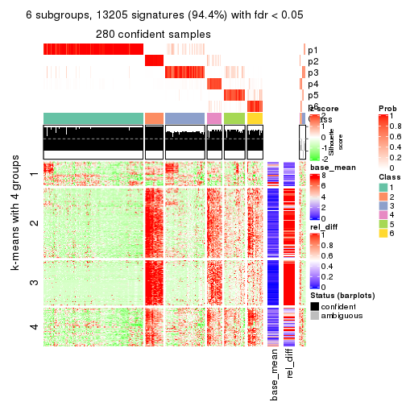
Signature heatmaps where rows are not scaled:
get_signatures(res, k = 2, scale_rows = FALSE)
get_signatures(res, k = 3, scale_rows = FALSE)
get_signatures(res, k = 4, scale_rows = FALSE)
get_signatures(res, k = 5, scale_rows = FALSE)
get_signatures(res, k = 6, scale_rows = FALSE)
Compare the overlap of signatures from different k:
compare_signatures(res)
get_signature() returns a data frame invisibly. TO get the list of signatures, the function
call should be assigned to a variable explicitly. In following code, if plot argument is set
to FALSE, no heatmap is plotted while only the differential analysis is performed.
# code only for demonstration
tb = get_signature(res, k = ..., plot = FALSE)
An example of the output of tb is:
#> which_row fdr mean_1 mean_2 scaled_mean_1 scaled_mean_2 km
#> 1 38 0.042760348 8.373488 9.131774 -0.5533452 0.5164555 1
#> 2 40 0.018707592 7.106213 8.469186 -0.6173731 0.5762149 1
#> 3 55 0.019134737 10.221463 11.207825 -0.6159697 0.5749050 1
#> 4 59 0.006059896 5.921854 7.869574 -0.6899429 0.6439467 1
#> 5 60 0.018055526 8.928898 10.211722 -0.6204761 0.5791110 1
#> 6 98 0.009384629 15.714769 14.887706 0.6635654 -0.6193277 2
...
The columns in tb are:
which_row: row indices corresponding to the input matrix.fdr: FDR for the differential test. mean_x: The mean value in group x.scaled_mean_x: The mean value in group x after rows are scaled.km: Row groups if k-means clustering is applied to rows.UMAP plot which shows how samples are separated.
dimension_reduction(res, k = 2, method = "UMAP")
dimension_reduction(res, k = 3, method = "UMAP")
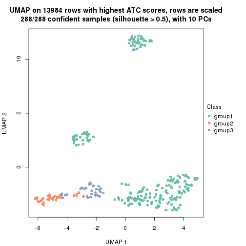
dimension_reduction(res, k = 4, method = "UMAP")
dimension_reduction(res, k = 5, method = "UMAP")
dimension_reduction(res, k = 6, method = "UMAP")
Following heatmap shows how subgroups are split when increasing k:
collect_classes(res)
If matrix rows can be associated to genes, consider to use functional_enrichment(res,
...) to perform function enrichment for the signature genes. See this vignette for more detailed explanations.
The object with results only for a single top-value method and a single partition method can be extracted as:
res = res_list["ATC", "skmeans"]
# you can also extract it by
# res = res_list["ATC:skmeans"]
A summary of res and all the functions that can be applied to it:
res
#> A 'ConsensusPartition' object with k = 2, 3, 4, 5, 6.
#> On a matrix with 13984 rows and 288 columns.
#> Top rows (1000, 2000, 3000, 4000, 5000) are extracted by 'ATC' method.
#> Subgroups are detected by 'skmeans' method.
#> Performed in total 1250 partitions by row resampling.
#> Best k for subgroups seems to be 3.
#>
#> Following methods can be applied to this 'ConsensusPartition' object:
#> [1] "cola_report" "collect_classes" "collect_plots"
#> [4] "collect_stats" "colnames" "compare_signatures"
#> [7] "consensus_heatmap" "dimension_reduction" "functional_enrichment"
#> [10] "get_anno_col" "get_anno" "get_classes"
#> [13] "get_consensus" "get_matrix" "get_membership"
#> [16] "get_param" "get_signatures" "get_stats"
#> [19] "is_best_k" "is_stable_k" "membership_heatmap"
#> [22] "ncol" "nrow" "plot_ecdf"
#> [25] "rownames" "select_partition_number" "show"
#> [28] "suggest_best_k" "test_to_known_factors"
collect_plots() function collects all the plots made from res for all k (number of partitions)
into one single page to provide an easy and fast comparison between different k.
collect_plots(res)
The plots are:
k and the heatmap of
predicted classes for each k.k.k.k.All the plots in panels can be made by individual functions and they are plotted later in this section.
select_partition_number() produces several plots showing different
statistics for choosing “optimized” k. There are following statistics:
k;k, the area increased is defined as \(A_k - A_{k-1}\).The detailed explanations of these statistics can be found in the cola vignette.
Generally speaking, lower PAC score, higher mean silhouette score or higher
concordance corresponds to better partition. Rand index and Jaccard index
measure how similar the current partition is compared to partition with k-1.
If they are too similar, we won't accept k is better than k-1.
select_partition_number(res)
The numeric values for all these statistics can be obtained by get_stats().
get_stats(res)
#> k 1-PAC mean_silhouette concordance area_increased Rand Jaccard
#> 2 2 1.000 0.985 0.994 0.4129 0.588 0.588
#> 3 3 0.968 0.937 0.975 0.1514 0.925 0.872
#> 4 4 0.937 0.855 0.921 0.0679 0.978 0.958
#> 5 5 0.836 0.887 0.940 0.0823 0.969 0.939
#> 6 6 0.863 0.890 0.946 0.0788 0.936 0.867
suggest_best_k() suggests the best \(k\) based on these statistics. The rules are as follows:
suggest_best_k(res)
#> [1] 3
#> attr(,"optional")
#> [1] 2
There is also optional best \(k\) = 2 that is worth to check.
Following shows the table of the partitions (You need to click the show/hide
code output link to see it). The membership matrix (columns with name p*)
is inferred by
clue::cl_consensus()
function with the SE method. Basically the value in the membership matrix
represents the probability to belong to a certain group. The finall class
label for an item is determined with the group with highest probability it
belongs to.
In get_classes() function, the entropy is calculated from the membership
matrix and the silhouette score is calculated from the consensus matrix.
cbind(get_classes(res, k = 2), get_membership(res, k = 2))
#> class entropy silhouette p1 p2
#> SRR1982614 1 0.0376 0.991 0.996 0.004
#> SRR1982613 2 0.0000 0.991 0.000 1.000
#> SRR1982612 1 0.0000 0.995 1.000 0.000
#> SRR1982611 1 0.0000 0.995 1.000 0.000
#> SRR1982610 1 0.0000 0.995 1.000 0.000
#> SRR1982609 1 0.0000 0.995 1.000 0.000
#> SRR1982659 1 0.0000 0.995 1.000 0.000
#> SRR1982692 2 0.0000 0.991 0.000 1.000
#> SRR1982722 1 0.0000 0.995 1.000 0.000
#> SRR1982750 2 0.0000 0.991 0.000 1.000
#> SRR2095031 2 0.0000 0.991 0.000 1.000
#> SRR1982780 1 0.0000 0.995 1.000 0.000
#> SRR1982807 1 0.0000 0.995 1.000 0.000
#> SRR1982830 1 0.0000 0.995 1.000 0.000
#> SRR1982829 1 0.0000 0.995 1.000 0.000
#> SRR1982828 1 0.0000 0.995 1.000 0.000
#> SRR1982827 1 0.0000 0.995 1.000 0.000
#> SRR1982826 1 0.0000 0.995 1.000 0.000
#> SRR1982825 1 0.0000 0.995 1.000 0.000
#> SRR1982824 1 0.0000 0.995 1.000 0.000
#> SRR1982823 1 0.0000 0.995 1.000 0.000
#> SRR1982822 1 0.0000 0.995 1.000 0.000
#> SRR1982821 1 0.0000 0.995 1.000 0.000
#> SRR1982820 1 0.0000 0.995 1.000 0.000
#> SRR1982819 1 0.0000 0.995 1.000 0.000
#> SRR1982818 1 0.0000 0.995 1.000 0.000
#> SRR1982817 1 0.0000 0.995 1.000 0.000
#> SRR1982816 1 0.0000 0.995 1.000 0.000
#> SRR1982815 1 0.0000 0.995 1.000 0.000
#> SRR1982814 1 0.0000 0.995 1.000 0.000
#> SRR1982813 1 0.0000 0.995 1.000 0.000
#> SRR1982812 2 0.0000 0.991 0.000 1.000
#> SRR1982811 1 0.0000 0.995 1.000 0.000
#> SRR1982810 1 0.0000 0.995 1.000 0.000
#> SRR1982809 2 0.0000 0.991 0.000 1.000
#> SRR1982808 1 0.0000 0.995 1.000 0.000
#> SRR1982806 1 0.0000 0.995 1.000 0.000
#> SRR1982805 1 0.0000 0.995 1.000 0.000
#> SRR1982804 1 0.0000 0.995 1.000 0.000
#> SRR1982803 1 0.0000 0.995 1.000 0.000
#> SRR1982802 1 0.0000 0.995 1.000 0.000
#> SRR1982801 1 0.0000 0.995 1.000 0.000
#> SRR1982800 1 0.0000 0.995 1.000 0.000
#> SRR1982799 1 0.0000 0.995 1.000 0.000
#> SRR1982798 1 0.0000 0.995 1.000 0.000
#> SRR1982797 1 0.0000 0.995 1.000 0.000
#> SRR1982796 1 0.0000 0.995 1.000 0.000
#> SRR1982795 1 0.0000 0.995 1.000 0.000
#> SRR1982794 1 0.0000 0.995 1.000 0.000
#> SRR1982793 1 0.0000 0.995 1.000 0.000
#> SRR1982792 1 0.0000 0.995 1.000 0.000
#> SRR1982791 1 0.0000 0.995 1.000 0.000
#> SRR1982790 2 0.0000 0.991 0.000 1.000
#> SRR1982789 1 0.0000 0.995 1.000 0.000
#> SRR1982788 1 0.0000 0.995 1.000 0.000
#> SRR1982787 1 0.0000 0.995 1.000 0.000
#> SRR1982786 1 0.7219 0.747 0.800 0.200
#> SRR1982785 1 0.0000 0.995 1.000 0.000
#> SRR1982784 1 0.0000 0.995 1.000 0.000
#> SRR1982783 1 0.0000 0.995 1.000 0.000
#> SRR1982782 1 0.0000 0.995 1.000 0.000
#> SRR1982781 1 0.0000 0.995 1.000 0.000
#> SRR1982779 1 0.0000 0.995 1.000 0.000
#> SRR1982778 1 0.0000 0.995 1.000 0.000
#> SRR1982776 2 0.0000 0.991 0.000 1.000
#> SRR1982777 2 0.5059 0.870 0.112 0.888
#> SRR1982775 1 0.0000 0.995 1.000 0.000
#> SRR1982774 1 0.0000 0.995 1.000 0.000
#> SRR1982772 1 0.0000 0.995 1.000 0.000
#> SRR1982773 1 0.0000 0.995 1.000 0.000
#> SRR1982770 1 0.0000 0.995 1.000 0.000
#> SRR1982771 1 0.0000 0.995 1.000 0.000
#> SRR1982769 2 0.0672 0.983 0.008 0.992
#> SRR1982768 1 0.0000 0.995 1.000 0.000
#> SRR1982767 1 0.0000 0.995 1.000 0.000
#> SRR1982766 1 0.0000 0.995 1.000 0.000
#> SRR1982765 1 0.0000 0.995 1.000 0.000
#> SRR1982764 1 0.0672 0.987 0.992 0.008
#> SRR1982762 1 0.0000 0.995 1.000 0.000
#> SRR1982760 1 0.0000 0.995 1.000 0.000
#> SRR1982761 1 0.0000 0.995 1.000 0.000
#> SRR1982763 2 0.0000 0.991 0.000 1.000
#> SRR1982759 1 0.0000 0.995 1.000 0.000
#> SRR1982758 2 0.9686 0.349 0.396 0.604
#> SRR1982757 1 0.0000 0.995 1.000 0.000
#> SRR1982755 1 0.0000 0.995 1.000 0.000
#> SRR1982754 1 0.0000 0.995 1.000 0.000
#> SRR1982756 1 0.0000 0.995 1.000 0.000
#> SRR1982753 1 0.0000 0.995 1.000 0.000
#> SRR1982751 2 0.0000 0.991 0.000 1.000
#> SRR1982752 2 0.0000 0.991 0.000 1.000
#> SRR1982749 2 0.0000 0.991 0.000 1.000
#> SRR1982748 2 0.0000 0.991 0.000 1.000
#> SRR1982747 2 0.0000 0.991 0.000 1.000
#> SRR1982746 2 0.0000 0.991 0.000 1.000
#> SRR1982745 2 0.0000 0.991 0.000 1.000
#> SRR1982743 2 0.0000 0.991 0.000 1.000
#> SRR1982744 2 0.0000 0.991 0.000 1.000
#> SRR1982741 2 0.0000 0.991 0.000 1.000
#> SRR1982742 2 0.0000 0.991 0.000 1.000
#> SRR2095014 2 0.0000 0.991 0.000 1.000
#> SRR1982740 2 0.0000 0.991 0.000 1.000
#> SRR1982739 2 0.0000 0.991 0.000 1.000
#> SRR1982737 2 0.0000 0.991 0.000 1.000
#> SRR1982738 2 0.0000 0.991 0.000 1.000
#> SRR1982736 2 0.0000 0.991 0.000 1.000
#> SRR1982735 2 0.0000 0.991 0.000 1.000
#> SRR1982733 2 0.0000 0.991 0.000 1.000
#> SRR1982732 2 0.0000 0.991 0.000 1.000
#> SRR2095004 2 0.0000 0.991 0.000 1.000
#> SRR1982734 2 0.0000 0.991 0.000 1.000
#> SRR1982731 2 0.0000 0.991 0.000 1.000
#> SRR1982729 2 0.0000 0.991 0.000 1.000
#> SRR1982730 2 0.0000 0.991 0.000 1.000
#> SRR1982728 2 0.0000 0.991 0.000 1.000
#> SRR1982727 1 0.0000 0.995 1.000 0.000
#> SRR1982726 1 0.0000 0.995 1.000 0.000
#> SRR1982723 1 0.0000 0.995 1.000 0.000
#> SRR1982725 1 0.0000 0.995 1.000 0.000
#> SRR1982724 1 0.0000 0.995 1.000 0.000
#> SRR1982721 1 0.0000 0.995 1.000 0.000
#> SRR1982720 1 0.0000 0.995 1.000 0.000
#> SRR1982719 1 0.0000 0.995 1.000 0.000
#> SRR1982718 2 0.0000 0.991 0.000 1.000
#> SRR1982717 2 0.0000 0.991 0.000 1.000
#> SRR1982715 2 0.0000 0.991 0.000 1.000
#> SRR1982714 2 0.0000 0.991 0.000 1.000
#> SRR1982716 2 0.0000 0.991 0.000 1.000
#> SRR1982713 2 0.0000 0.991 0.000 1.000
#> SRR1982711 2 0.0000 0.991 0.000 1.000
#> SRR1982712 2 0.0000 0.991 0.000 1.000
#> SRR1982710 2 0.0000 0.991 0.000 1.000
#> SRR1982708 2 0.0000 0.991 0.000 1.000
#> SRR1982707 2 0.0000 0.991 0.000 1.000
#> SRR1982709 1 0.0000 0.995 1.000 0.000
#> SRR1982705 2 0.0000 0.991 0.000 1.000
#> SRR1982706 1 0.0000 0.995 1.000 0.000
#> SRR1982704 1 0.0000 0.995 1.000 0.000
#> SRR1982702 2 0.0000 0.991 0.000 1.000
#> SRR1982703 2 0.0000 0.991 0.000 1.000
#> SRR1982701 2 0.0000 0.991 0.000 1.000
#> SRR1982700 2 0.0000 0.991 0.000 1.000
#> SRR1982697 2 0.0000 0.991 0.000 1.000
#> SRR1982698 2 0.0000 0.991 0.000 1.000
#> SRR1982699 2 0.0000 0.991 0.000 1.000
#> SRR1982696 2 0.0000 0.991 0.000 1.000
#> SRR1982695 1 0.0000 0.995 1.000 0.000
#> SRR1982694 1 0.0000 0.995 1.000 0.000
#> SRR1982693 2 0.0000 0.991 0.000 1.000
#> SRR1982690 2 0.0000 0.991 0.000 1.000
#> SRR1982691 2 0.0000 0.991 0.000 1.000
#> SRR1982689 2 0.0000 0.991 0.000 1.000
#> SRR1982688 1 0.0000 0.995 1.000 0.000
#> SRR1982687 2 0.0000 0.991 0.000 1.000
#> SRR1982686 2 0.0000 0.991 0.000 1.000
#> SRR1982685 2 0.0000 0.991 0.000 1.000
#> SRR1982684 2 0.0000 0.991 0.000 1.000
#> SRR1982683 1 0.0000 0.995 1.000 0.000
#> SRR1982681 2 0.0000 0.991 0.000 1.000
#> SRR1982682 2 0.0000 0.991 0.000 1.000
#> SRR1982680 2 0.0000 0.991 0.000 1.000
#> SRR1982679 2 0.0000 0.991 0.000 1.000
#> SRR1982678 2 0.0000 0.991 0.000 1.000
#> SRR1982677 2 0.0000 0.991 0.000 1.000
#> SRR1982676 1 0.0000 0.995 1.000 0.000
#> SRR1982675 1 0.0000 0.995 1.000 0.000
#> SRR1982674 1 0.7219 0.749 0.800 0.200
#> SRR1982671 1 0.0000 0.995 1.000 0.000
#> SRR1982673 1 0.0000 0.995 1.000 0.000
#> SRR1982672 1 0.0000 0.995 1.000 0.000
#> SRR1982670 1 0.0000 0.995 1.000 0.000
#> SRR1982669 1 0.0000 0.995 1.000 0.000
#> SRR1982667 1 0.0000 0.995 1.000 0.000
#> SRR1982668 1 0.6531 0.796 0.832 0.168
#> SRR1982666 1 0.0000 0.995 1.000 0.000
#> SRR1982665 2 0.0000 0.991 0.000 1.000
#> SRR1982664 1 0.0000 0.995 1.000 0.000
#> SRR1982663 1 0.0000 0.995 1.000 0.000
#> SRR1982662 1 0.0000 0.995 1.000 0.000
#> SRR1982661 1 0.0000 0.995 1.000 0.000
#> SRR1982660 1 0.0000 0.995 1.000 0.000
#> SRR1982658 1 0.0000 0.995 1.000 0.000
#> SRR1982657 1 0.0000 0.995 1.000 0.000
#> SRR1982656 2 0.0000 0.991 0.000 1.000
#> SRR1982654 1 0.0000 0.995 1.000 0.000
#> SRR1982655 1 0.0000 0.995 1.000 0.000
#> SRR1982653 1 0.0000 0.995 1.000 0.000
#> SRR1982652 1 0.0000 0.995 1.000 0.000
#> SRR1982651 1 0.0000 0.995 1.000 0.000
#> SRR1982649 1 0.0000 0.995 1.000 0.000
#> SRR1982650 1 0.0000 0.995 1.000 0.000
#> SRR1982648 1 0.0000 0.995 1.000 0.000
#> SRR1982647 1 0.0000 0.995 1.000 0.000
#> SRR1982646 1 0.0000 0.995 1.000 0.000
#> SRR1982645 1 0.0000 0.995 1.000 0.000
#> SRR1982644 1 0.0000 0.995 1.000 0.000
#> SRR1982642 1 0.0000 0.995 1.000 0.000
#> SRR1982643 1 0.0000 0.995 1.000 0.000
#> SRR1982641 1 0.0000 0.995 1.000 0.000
#> SRR1982640 1 0.0000 0.995 1.000 0.000
#> SRR1982638 1 0.0000 0.995 1.000 0.000
#> SRR1982639 1 0.0000 0.995 1.000 0.000
#> SRR1982637 1 0.0000 0.995 1.000 0.000
#> SRR1982635 1 0.0000 0.995 1.000 0.000
#> SRR1982636 1 0.0000 0.995 1.000 0.000
#> SRR1982633 1 0.0000 0.995 1.000 0.000
#> SRR1982632 1 0.0000 0.995 1.000 0.000
#> SRR1982631 1 0.0000 0.995 1.000 0.000
#> SRR1982634 1 0.0000 0.995 1.000 0.000
#> SRR1982628 1 0.0000 0.995 1.000 0.000
#> SRR1982629 1 0.0000 0.995 1.000 0.000
#> SRR1982627 1 0.0000 0.995 1.000 0.000
#> SRR1982625 1 0.0000 0.995 1.000 0.000
#> SRR1982626 1 0.0000 0.995 1.000 0.000
#> SRR1982624 1 0.0000 0.995 1.000 0.000
#> SRR1982623 1 0.0000 0.995 1.000 0.000
#> SRR1982622 1 0.0000 0.995 1.000 0.000
#> SRR1982621 1 0.0000 0.995 1.000 0.000
#> SRR1982620 1 0.0000 0.995 1.000 0.000
#> SRR1982619 2 0.0000 0.991 0.000 1.000
#> SRR1982618 1 0.0000 0.995 1.000 0.000
#> SRR1982617 2 0.0000 0.991 0.000 1.000
#> SRR1982616 1 0.0000 0.995 1.000 0.000
#> SRR1982615 1 0.0000 0.995 1.000 0.000
#> SRR1982608 2 0.0000 0.991 0.000 1.000
#> SRR1982607 1 0.0000 0.995 1.000 0.000
#> SRR1982606 1 0.0000 0.995 1.000 0.000
#> SRR1982605 1 0.0000 0.995 1.000 0.000
#> SRR1982604 1 0.0000 0.995 1.000 0.000
#> SRR1982603 1 0.0000 0.995 1.000 0.000
#> SRR1982602 1 0.0000 0.995 1.000 0.000
#> SRR1982601 1 0.0000 0.995 1.000 0.000
#> SRR1982599 1 0.0000 0.995 1.000 0.000
#> SRR1982600 1 0.9710 0.324 0.600 0.400
#> SRR1982598 1 0.0000 0.995 1.000 0.000
#> SRR1982597 1 0.0000 0.995 1.000 0.000
#> SRR1982595 1 0.0000 0.995 1.000 0.000
#> SRR1982596 1 0.0000 0.995 1.000 0.000
#> SRR1982594 1 0.0000 0.995 1.000 0.000
#> SRR1982593 1 0.0000 0.995 1.000 0.000
#> SRR1982592 2 0.0000 0.991 0.000 1.000
#> SRR1982591 1 0.0000 0.995 1.000 0.000
#> SRR1982590 1 0.0000 0.995 1.000 0.000
#> SRR1982589 1 0.0000 0.995 1.000 0.000
#> SRR1982588 1 0.0000 0.995 1.000 0.000
#> SRR1982587 1 0.0000 0.995 1.000 0.000
#> SRR1982586 1 0.0000 0.995 1.000 0.000
#> SRR1982584 1 0.0000 0.995 1.000 0.000
#> SRR2096514 1 0.0000 0.995 1.000 0.000
#> SRR2096513 1 0.0000 0.995 1.000 0.000
#> SRR2096511 1 0.0000 0.995 1.000 0.000
#> SRR2096512 2 0.0000 0.991 0.000 1.000
#> SRR2096509 1 0.0000 0.995 1.000 0.000
#> SRR2096510 1 0.0000 0.995 1.000 0.000
#> SRR2096508 2 0.0000 0.991 0.000 1.000
#> SRR2096507 1 0.0000 0.995 1.000 0.000
#> SRR2096504 1 0.0000 0.995 1.000 0.000
#> SRR2096506 1 0.0000 0.995 1.000 0.000
#> SRR2096505 1 0.0000 0.995 1.000 0.000
#> SRR2096503 2 0.0000 0.991 0.000 1.000
#> SRR2096500 1 0.0000 0.995 1.000 0.000
#> SRR2096501 1 0.0000 0.995 1.000 0.000
#> SRR2096502 1 0.0000 0.995 1.000 0.000
#> SRR2096499 1 0.0000 0.995 1.000 0.000
#> SRR2096498 1 0.0000 0.995 1.000 0.000
#> SRR2096496 1 0.0000 0.995 1.000 0.000
#> SRR2096497 1 0.0000 0.995 1.000 0.000
#> SRR2096495 1 0.0000 0.995 1.000 0.000
#> SRR2096494 1 0.0000 0.995 1.000 0.000
#> SRR2096492 1 0.0000 0.995 1.000 0.000
#> SRR2096491 2 0.0000 0.991 0.000 1.000
#> SRR2096493 1 0.0000 0.995 1.000 0.000
#> SRR2096490 1 0.0000 0.995 1.000 0.000
#> SRR2096488 1 0.0000 0.995 1.000 0.000
#> SRR2096489 1 0.0000 0.995 1.000 0.000
#> SRR2096487 1 0.0000 0.995 1.000 0.000
#> SRR2096484 1 0.0000 0.995 1.000 0.000
#> SRR2096486 1 0.0000 0.995 1.000 0.000
#> SRR2096485 1 0.0000 0.995 1.000 0.000
#> SRR2096483 1 0.0000 0.995 1.000 0.000
#> SRR2096482 1 0.0000 0.995 1.000 0.000
#> SRR2096481 2 0.8016 0.678 0.244 0.756
#> SRR2096520 1 0.0000 0.995 1.000 0.000
#> SRR2096519 1 0.0000 0.995 1.000 0.000
#> SRR2096518 1 0.0000 0.995 1.000 0.000
#> SRR2096516 1 0.0000 0.995 1.000 0.000
#> SRR2096517 1 0.0000 0.995 1.000 0.000
#> SRR2096515 1 0.0000 0.995 1.000 0.000
cbind(get_classes(res, k = 3), get_membership(res, k = 3))
#> class entropy silhouette p1 p2 p3
#> SRR1982614 3 0.2625 0.73074 0.084 0.000 0.916
#> SRR1982613 3 0.0000 0.76160 0.000 0.000 1.000
#> SRR1982612 1 0.0000 0.99808 1.000 0.000 0.000
#> SRR1982611 1 0.0000 0.99808 1.000 0.000 0.000
#> SRR1982610 1 0.0000 0.99808 1.000 0.000 0.000
#> SRR1982609 1 0.0000 0.99808 1.000 0.000 0.000
#> SRR1982659 1 0.0000 0.99808 1.000 0.000 0.000
#> SRR1982692 3 0.6225 0.35707 0.000 0.432 0.568
#> SRR1982722 1 0.0000 0.99808 1.000 0.000 0.000
#> SRR1982750 2 0.0000 0.94524 0.000 1.000 0.000
#> SRR2095031 2 0.0000 0.94524 0.000 1.000 0.000
#> SRR1982780 1 0.0000 0.99808 1.000 0.000 0.000
#> SRR1982807 1 0.0000 0.99808 1.000 0.000 0.000
#> SRR1982830 1 0.0000 0.99808 1.000 0.000 0.000
#> SRR1982829 3 0.6095 0.34536 0.392 0.000 0.608
#> SRR1982828 1 0.0000 0.99808 1.000 0.000 0.000
#> SRR1982827 1 0.0000 0.99808 1.000 0.000 0.000
#> SRR1982826 1 0.0000 0.99808 1.000 0.000 0.000
#> SRR1982825 1 0.0000 0.99808 1.000 0.000 0.000
#> SRR1982824 1 0.0000 0.99808 1.000 0.000 0.000
#> SRR1982823 1 0.0000 0.99808 1.000 0.000 0.000
#> SRR1982822 1 0.0000 0.99808 1.000 0.000 0.000
#> SRR1982821 1 0.0000 0.99808 1.000 0.000 0.000
#> SRR1982820 1 0.0000 0.99808 1.000 0.000 0.000
#> SRR1982819 1 0.0000 0.99808 1.000 0.000 0.000
#> SRR1982818 1 0.0000 0.99808 1.000 0.000 0.000
#> SRR1982817 1 0.0000 0.99808 1.000 0.000 0.000
#> SRR1982816 1 0.0000 0.99808 1.000 0.000 0.000
#> SRR1982815 1 0.0000 0.99808 1.000 0.000 0.000
#> SRR1982814 1 0.0000 0.99808 1.000 0.000 0.000
#> SRR1982813 1 0.0000 0.99808 1.000 0.000 0.000
#> SRR1982812 2 0.0000 0.94524 0.000 1.000 0.000
#> SRR1982811 1 0.0000 0.99808 1.000 0.000 0.000
#> SRR1982810 1 0.0000 0.99808 1.000 0.000 0.000
#> SRR1982809 2 0.0000 0.94524 0.000 1.000 0.000
#> SRR1982808 1 0.0000 0.99808 1.000 0.000 0.000
#> SRR1982806 1 0.0000 0.99808 1.000 0.000 0.000
#> SRR1982805 1 0.0000 0.99808 1.000 0.000 0.000
#> SRR1982804 1 0.0000 0.99808 1.000 0.000 0.000
#> SRR1982803 1 0.1411 0.96049 0.964 0.000 0.036
#> SRR1982802 1 0.0000 0.99808 1.000 0.000 0.000
#> SRR1982801 1 0.0000 0.99808 1.000 0.000 0.000
#> SRR1982800 1 0.0000 0.99808 1.000 0.000 0.000
#> SRR1982799 1 0.0000 0.99808 1.000 0.000 0.000
#> SRR1982798 1 0.0000 0.99808 1.000 0.000 0.000
#> SRR1982797 3 0.3116 0.71651 0.108 0.000 0.892
#> SRR1982796 1 0.0000 0.99808 1.000 0.000 0.000
#> SRR1982795 1 0.0000 0.99808 1.000 0.000 0.000
#> SRR1982794 1 0.0000 0.99808 1.000 0.000 0.000
#> SRR1982793 1 0.0000 0.99808 1.000 0.000 0.000
#> SRR1982792 1 0.0000 0.99808 1.000 0.000 0.000
#> SRR1982791 1 0.0000 0.99808 1.000 0.000 0.000
#> SRR1982790 3 0.6111 0.44946 0.000 0.396 0.604
#> SRR1982789 1 0.0000 0.99808 1.000 0.000 0.000
#> SRR1982788 1 0.0000 0.99808 1.000 0.000 0.000
#> SRR1982787 1 0.0000 0.99808 1.000 0.000 0.000
#> SRR1982786 3 0.0000 0.76160 0.000 0.000 1.000
#> SRR1982785 1 0.0000 0.99808 1.000 0.000 0.000
#> SRR1982784 1 0.0000 0.99808 1.000 0.000 0.000
#> SRR1982783 1 0.0000 0.99808 1.000 0.000 0.000
#> SRR1982782 1 0.0000 0.99808 1.000 0.000 0.000
#> SRR1982781 1 0.0000 0.99808 1.000 0.000 0.000
#> SRR1982779 1 0.0000 0.99808 1.000 0.000 0.000
#> SRR1982778 1 0.0000 0.99808 1.000 0.000 0.000
#> SRR1982776 2 0.0000 0.94524 0.000 1.000 0.000
#> SRR1982777 2 0.2796 0.76692 0.092 0.908 0.000
#> SRR1982775 1 0.0000 0.99808 1.000 0.000 0.000
#> SRR1982774 1 0.0000 0.99808 1.000 0.000 0.000
#> SRR1982772 1 0.0000 0.99808 1.000 0.000 0.000
#> SRR1982773 1 0.0000 0.99808 1.000 0.000 0.000
#> SRR1982770 1 0.0000 0.99808 1.000 0.000 0.000
#> SRR1982771 1 0.0000 0.99808 1.000 0.000 0.000
#> SRR1982769 2 0.4172 0.74909 0.004 0.840 0.156
#> SRR1982768 1 0.0000 0.99808 1.000 0.000 0.000
#> SRR1982767 1 0.0000 0.99808 1.000 0.000 0.000
#> SRR1982766 3 0.0000 0.76160 0.000 0.000 1.000
#> SRR1982765 1 0.0000 0.99808 1.000 0.000 0.000
#> SRR1982764 1 0.1860 0.93627 0.948 0.052 0.000
#> SRR1982762 1 0.0000 0.99808 1.000 0.000 0.000
#> SRR1982760 1 0.0000 0.99808 1.000 0.000 0.000
#> SRR1982761 1 0.0000 0.99808 1.000 0.000 0.000
#> SRR1982763 2 0.0000 0.94524 0.000 1.000 0.000
#> SRR1982759 1 0.0000 0.99808 1.000 0.000 0.000
#> SRR1982758 2 0.6008 0.17820 0.372 0.628 0.000
#> SRR1982757 1 0.0000 0.99808 1.000 0.000 0.000
#> SRR1982755 1 0.0000 0.99808 1.000 0.000 0.000
#> SRR1982754 1 0.0000 0.99808 1.000 0.000 0.000
#> SRR1982756 1 0.0000 0.99808 1.000 0.000 0.000
#> SRR1982753 1 0.0000 0.99808 1.000 0.000 0.000
#> SRR1982751 2 0.0000 0.94524 0.000 1.000 0.000
#> SRR1982752 2 0.0000 0.94524 0.000 1.000 0.000
#> SRR1982749 2 0.0000 0.94524 0.000 1.000 0.000
#> SRR1982748 2 0.0000 0.94524 0.000 1.000 0.000
#> SRR1982747 2 0.0000 0.94524 0.000 1.000 0.000
#> SRR1982746 2 0.0000 0.94524 0.000 1.000 0.000
#> SRR1982745 2 0.0000 0.94524 0.000 1.000 0.000
#> SRR1982743 2 0.0000 0.94524 0.000 1.000 0.000
#> SRR1982744 2 0.0000 0.94524 0.000 1.000 0.000
#> SRR1982741 2 0.0000 0.94524 0.000 1.000 0.000
#> SRR1982742 2 0.0000 0.94524 0.000 1.000 0.000
#> SRR2095014 2 0.0000 0.94524 0.000 1.000 0.000
#> SRR1982740 2 0.0000 0.94524 0.000 1.000 0.000
#> SRR1982739 2 0.0000 0.94524 0.000 1.000 0.000
#> SRR1982737 2 0.0000 0.94524 0.000 1.000 0.000
#> SRR1982738 2 0.0000 0.94524 0.000 1.000 0.000
#> SRR1982736 2 0.0000 0.94524 0.000 1.000 0.000
#> SRR1982735 2 0.0000 0.94524 0.000 1.000 0.000
#> SRR1982733 2 0.0000 0.94524 0.000 1.000 0.000
#> SRR1982732 2 0.0000 0.94524 0.000 1.000 0.000
#> SRR2095004 2 0.0000 0.94524 0.000 1.000 0.000
#> SRR1982734 2 0.0000 0.94524 0.000 1.000 0.000
#> SRR1982731 2 0.0000 0.94524 0.000 1.000 0.000
#> SRR1982729 2 0.0000 0.94524 0.000 1.000 0.000
#> SRR1982730 2 0.0000 0.94524 0.000 1.000 0.000
#> SRR1982728 2 0.0000 0.94524 0.000 1.000 0.000
#> SRR1982727 3 0.3686 0.69070 0.140 0.000 0.860
#> SRR1982726 1 0.0000 0.99808 1.000 0.000 0.000
#> SRR1982723 1 0.0000 0.99808 1.000 0.000 0.000
#> SRR1982725 1 0.0000 0.99808 1.000 0.000 0.000
#> SRR1982724 1 0.0000 0.99808 1.000 0.000 0.000
#> SRR1982721 1 0.0000 0.99808 1.000 0.000 0.000
#> SRR1982720 1 0.0000 0.99808 1.000 0.000 0.000
#> SRR1982719 1 0.0000 0.99808 1.000 0.000 0.000
#> SRR1982718 2 0.6274 -0.00367 0.000 0.544 0.456
#> SRR1982717 2 0.0237 0.94173 0.000 0.996 0.004
#> SRR1982715 3 0.6111 0.44946 0.000 0.396 0.604
#> SRR1982714 2 0.0000 0.94524 0.000 1.000 0.000
#> SRR1982716 3 0.6079 0.46289 0.000 0.388 0.612
#> SRR1982713 2 0.0000 0.94524 0.000 1.000 0.000
#> SRR1982711 2 0.0000 0.94524 0.000 1.000 0.000
#> SRR1982712 2 0.0000 0.94524 0.000 1.000 0.000
#> SRR1982710 3 0.6111 0.44946 0.000 0.396 0.604
#> SRR1982708 3 0.6111 0.44946 0.000 0.396 0.604
#> SRR1982707 3 0.0592 0.75992 0.000 0.012 0.988
#> SRR1982709 1 0.0000 0.99808 1.000 0.000 0.000
#> SRR1982705 2 0.0000 0.94524 0.000 1.000 0.000
#> SRR1982706 1 0.0000 0.99808 1.000 0.000 0.000
#> SRR1982704 1 0.0000 0.99808 1.000 0.000 0.000
#> SRR1982702 2 0.0000 0.94524 0.000 1.000 0.000
#> SRR1982703 2 0.0000 0.94524 0.000 1.000 0.000
#> SRR1982701 2 0.0000 0.94524 0.000 1.000 0.000
#> SRR1982700 2 0.0000 0.94524 0.000 1.000 0.000
#> SRR1982697 2 0.0000 0.94524 0.000 1.000 0.000
#> SRR1982698 2 0.0000 0.94524 0.000 1.000 0.000
#> SRR1982699 2 0.0000 0.94524 0.000 1.000 0.000
#> SRR1982696 2 0.0000 0.94524 0.000 1.000 0.000
#> SRR1982695 1 0.0000 0.99808 1.000 0.000 0.000
#> SRR1982694 1 0.0000 0.99808 1.000 0.000 0.000
#> SRR1982693 2 0.0000 0.94524 0.000 1.000 0.000
#> SRR1982690 2 0.3816 0.77998 0.000 0.852 0.148
#> SRR1982691 2 0.0000 0.94524 0.000 1.000 0.000
#> SRR1982689 2 0.3267 0.82200 0.000 0.884 0.116
#> SRR1982688 1 0.0000 0.99808 1.000 0.000 0.000
#> SRR1982687 2 0.6291 -0.05433 0.000 0.532 0.468
#> SRR1982686 2 0.0000 0.94524 0.000 1.000 0.000
#> SRR1982685 2 0.6140 0.19827 0.000 0.596 0.404
#> SRR1982684 2 0.4887 0.64971 0.000 0.772 0.228
#> SRR1982683 1 0.3879 0.81432 0.848 0.000 0.152
#> SRR1982681 2 0.0000 0.94524 0.000 1.000 0.000
#> SRR1982682 2 0.1289 0.91530 0.000 0.968 0.032
#> SRR1982680 2 0.0000 0.94524 0.000 1.000 0.000
#> SRR1982679 2 0.0000 0.94524 0.000 1.000 0.000
#> SRR1982678 2 0.0000 0.94524 0.000 1.000 0.000
#> SRR1982677 3 0.6095 0.45652 0.000 0.392 0.608
#> SRR1982676 1 0.0000 0.99808 1.000 0.000 0.000
#> SRR1982675 1 0.0000 0.99808 1.000 0.000 0.000
#> SRR1982674 3 0.0000 0.76160 0.000 0.000 1.000
#> SRR1982671 1 0.2878 0.87844 0.904 0.096 0.000
#> SRR1982673 1 0.0000 0.99808 1.000 0.000 0.000
#> SRR1982672 1 0.0000 0.99808 1.000 0.000 0.000
#> SRR1982670 1 0.0000 0.99808 1.000 0.000 0.000
#> SRR1982669 1 0.0000 0.99808 1.000 0.000 0.000
#> SRR1982667 1 0.0000 0.99808 1.000 0.000 0.000
#> SRR1982668 3 0.0000 0.76160 0.000 0.000 1.000
#> SRR1982666 1 0.0000 0.99808 1.000 0.000 0.000
#> SRR1982665 2 0.0000 0.94524 0.000 1.000 0.000
#> SRR1982664 1 0.0000 0.99808 1.000 0.000 0.000
#> SRR1982663 1 0.0000 0.99808 1.000 0.000 0.000
#> SRR1982662 1 0.0000 0.99808 1.000 0.000 0.000
#> SRR1982661 1 0.0000 0.99808 1.000 0.000 0.000
#> SRR1982660 1 0.0000 0.99808 1.000 0.000 0.000
#> SRR1982658 1 0.0000 0.99808 1.000 0.000 0.000
#> SRR1982657 1 0.0000 0.99808 1.000 0.000 0.000
#> SRR1982656 2 0.4452 0.71567 0.000 0.808 0.192
#> SRR1982654 1 0.0000 0.99808 1.000 0.000 0.000
#> SRR1982655 1 0.0000 0.99808 1.000 0.000 0.000
#> SRR1982653 1 0.0000 0.99808 1.000 0.000 0.000
#> SRR1982652 1 0.0000 0.99808 1.000 0.000 0.000
#> SRR1982651 1 0.0000 0.99808 1.000 0.000 0.000
#> SRR1982649 1 0.0000 0.99808 1.000 0.000 0.000
#> SRR1982650 1 0.0000 0.99808 1.000 0.000 0.000
#> SRR1982648 1 0.0000 0.99808 1.000 0.000 0.000
#> SRR1982647 1 0.0000 0.99808 1.000 0.000 0.000
#> SRR1982646 1 0.0000 0.99808 1.000 0.000 0.000
#> SRR1982645 1 0.0000 0.99808 1.000 0.000 0.000
#> SRR1982644 1 0.0000 0.99808 1.000 0.000 0.000
#> SRR1982642 1 0.0000 0.99808 1.000 0.000 0.000
#> SRR1982643 1 0.0000 0.99808 1.000 0.000 0.000
#> SRR1982641 1 0.0000 0.99808 1.000 0.000 0.000
#> SRR1982640 1 0.0000 0.99808 1.000 0.000 0.000
#> SRR1982638 1 0.0000 0.99808 1.000 0.000 0.000
#> SRR1982639 1 0.0000 0.99808 1.000 0.000 0.000
#> SRR1982637 1 0.0000 0.99808 1.000 0.000 0.000
#> SRR1982635 1 0.0000 0.99808 1.000 0.000 0.000
#> SRR1982636 1 0.0000 0.99808 1.000 0.000 0.000
#> SRR1982633 1 0.0000 0.99808 1.000 0.000 0.000
#> SRR1982632 1 0.0000 0.99808 1.000 0.000 0.000
#> SRR1982631 1 0.0000 0.99808 1.000 0.000 0.000
#> SRR1982634 1 0.0000 0.99808 1.000 0.000 0.000
#> SRR1982628 1 0.0000 0.99808 1.000 0.000 0.000
#> SRR1982629 1 0.0000 0.99808 1.000 0.000 0.000
#> SRR1982627 1 0.0000 0.99808 1.000 0.000 0.000
#> SRR1982625 1 0.0000 0.99808 1.000 0.000 0.000
#> SRR1982626 1 0.0000 0.99808 1.000 0.000 0.000
#> SRR1982624 1 0.0000 0.99808 1.000 0.000 0.000
#> SRR1982623 1 0.0000 0.99808 1.000 0.000 0.000
#> SRR1982622 1 0.0000 0.99808 1.000 0.000 0.000
#> SRR1982621 1 0.0000 0.99808 1.000 0.000 0.000
#> SRR1982620 1 0.0000 0.99808 1.000 0.000 0.000
#> SRR1982619 2 0.0000 0.94524 0.000 1.000 0.000
#> SRR1982618 1 0.0000 0.99808 1.000 0.000 0.000
#> SRR1982617 2 0.0000 0.94524 0.000 1.000 0.000
#> SRR1982616 1 0.0000 0.99808 1.000 0.000 0.000
#> SRR1982615 1 0.0000 0.99808 1.000 0.000 0.000
#> SRR1982608 3 0.0592 0.75992 0.000 0.012 0.988
#> SRR1982607 1 0.0000 0.99808 1.000 0.000 0.000
#> SRR1982606 1 0.0000 0.99808 1.000 0.000 0.000
#> SRR1982605 1 0.0000 0.99808 1.000 0.000 0.000
#> SRR1982604 1 0.0000 0.99808 1.000 0.000 0.000
#> SRR1982603 1 0.0000 0.99808 1.000 0.000 0.000
#> SRR1982602 1 0.0000 0.99808 1.000 0.000 0.000
#> SRR1982601 1 0.0000 0.99808 1.000 0.000 0.000
#> SRR1982599 1 0.0000 0.99808 1.000 0.000 0.000
#> SRR1982600 3 0.0000 0.76160 0.000 0.000 1.000
#> SRR1982598 1 0.0000 0.99808 1.000 0.000 0.000
#> SRR1982597 1 0.0000 0.99808 1.000 0.000 0.000
#> SRR1982595 1 0.0000 0.99808 1.000 0.000 0.000
#> SRR1982596 1 0.0000 0.99808 1.000 0.000 0.000
#> SRR1982594 1 0.0000 0.99808 1.000 0.000 0.000
#> SRR1982593 1 0.0000 0.99808 1.000 0.000 0.000
#> SRR1982592 2 0.0000 0.94524 0.000 1.000 0.000
#> SRR1982591 1 0.0000 0.99808 1.000 0.000 0.000
#> SRR1982590 3 0.4178 0.65668 0.172 0.000 0.828
#> SRR1982589 1 0.0000 0.99808 1.000 0.000 0.000
#> SRR1982588 1 0.0000 0.99808 1.000 0.000 0.000
#> SRR1982587 1 0.0000 0.99808 1.000 0.000 0.000
#> SRR1982586 1 0.0000 0.99808 1.000 0.000 0.000
#> SRR1982584 3 0.3412 0.70435 0.124 0.000 0.876
#> SRR2096514 1 0.0000 0.99808 1.000 0.000 0.000
#> SRR2096513 1 0.0000 0.99808 1.000 0.000 0.000
#> SRR2096511 1 0.0000 0.99808 1.000 0.000 0.000
#> SRR2096512 2 0.0000 0.94524 0.000 1.000 0.000
#> SRR2096509 1 0.0000 0.99808 1.000 0.000 0.000
#> SRR2096510 1 0.0000 0.99808 1.000 0.000 0.000
#> SRR2096508 2 0.0000 0.94524 0.000 1.000 0.000
#> SRR2096507 1 0.0000 0.99808 1.000 0.000 0.000
#> SRR2096504 1 0.0000 0.99808 1.000 0.000 0.000
#> SRR2096506 1 0.0000 0.99808 1.000 0.000 0.000
#> SRR2096505 1 0.0000 0.99808 1.000 0.000 0.000
#> SRR2096503 3 0.5465 0.58631 0.000 0.288 0.712
#> SRR2096500 1 0.0000 0.99808 1.000 0.000 0.000
#> SRR2096501 1 0.0237 0.99406 0.996 0.000 0.004
#> SRR2096502 1 0.0000 0.99808 1.000 0.000 0.000
#> SRR2096499 1 0.0000 0.99808 1.000 0.000 0.000
#> SRR2096498 1 0.0000 0.99808 1.000 0.000 0.000
#> SRR2096496 1 0.0000 0.99808 1.000 0.000 0.000
#> SRR2096497 1 0.0000 0.99808 1.000 0.000 0.000
#> SRR2096495 1 0.0000 0.99808 1.000 0.000 0.000
#> SRR2096494 1 0.0000 0.99808 1.000 0.000 0.000
#> SRR2096492 1 0.0000 0.99808 1.000 0.000 0.000
#> SRR2096491 2 0.4346 0.72864 0.000 0.816 0.184
#> SRR2096493 1 0.0000 0.99808 1.000 0.000 0.000
#> SRR2096490 1 0.0000 0.99808 1.000 0.000 0.000
#> SRR2096488 1 0.0000 0.99808 1.000 0.000 0.000
#> SRR2096489 1 0.0000 0.99808 1.000 0.000 0.000
#> SRR2096487 1 0.0000 0.99808 1.000 0.000 0.000
#> SRR2096484 1 0.0000 0.99808 1.000 0.000 0.000
#> SRR2096486 1 0.0000 0.99808 1.000 0.000 0.000
#> SRR2096485 1 0.0000 0.99808 1.000 0.000 0.000
#> SRR2096483 1 0.0000 0.99808 1.000 0.000 0.000
#> SRR2096482 1 0.0000 0.99808 1.000 0.000 0.000
#> SRR2096481 3 0.0000 0.76160 0.000 0.000 1.000
#> SRR2096520 1 0.0000 0.99808 1.000 0.000 0.000
#> SRR2096519 1 0.0000 0.99808 1.000 0.000 0.000
#> SRR2096518 1 0.0000 0.99808 1.000 0.000 0.000
#> SRR2096516 1 0.0000 0.99808 1.000 0.000 0.000
#> SRR2096517 1 0.0000 0.99808 1.000 0.000 0.000
#> SRR2096515 1 0.0000 0.99808 1.000 0.000 0.000
cbind(get_classes(res, k = 4), get_membership(res, k = 4))
#> class entropy silhouette p1 p2 p3 p4
#> SRR1982614 4 0.5406 0.3150 0.012 0.000 0.480 0.508
#> SRR1982613 4 0.4382 0.4320 0.000 0.000 0.296 0.704
#> SRR1982612 1 0.0000 0.9780 1.000 0.000 0.000 0.000
#> SRR1982611 1 0.2081 0.9032 0.916 0.000 0.084 0.000
#> SRR1982610 1 0.1716 0.9235 0.936 0.000 0.064 0.000
#> SRR1982609 1 0.0000 0.9780 1.000 0.000 0.000 0.000
#> SRR1982659 1 0.0000 0.9780 1.000 0.000 0.000 0.000
#> SRR1982692 4 0.4543 0.4935 0.000 0.324 0.000 0.676
#> SRR1982722 1 0.0000 0.9780 1.000 0.000 0.000 0.000
#> SRR1982750 2 0.0000 0.9287 0.000 1.000 0.000 0.000
#> SRR2095031 2 0.0000 0.9287 0.000 1.000 0.000 0.000
#> SRR1982780 1 0.0000 0.9780 1.000 0.000 0.000 0.000
#> SRR1982807 1 0.0188 0.9752 0.996 0.000 0.004 0.000
#> SRR1982830 1 0.0000 0.9780 1.000 0.000 0.000 0.000
#> SRR1982829 3 0.6944 -0.2141 0.112 0.000 0.484 0.404
#> SRR1982828 1 0.2281 0.8906 0.904 0.000 0.096 0.000
#> SRR1982827 1 0.0921 0.9563 0.972 0.000 0.028 0.000
#> SRR1982826 1 0.0000 0.9780 1.000 0.000 0.000 0.000
#> SRR1982825 1 0.0000 0.9780 1.000 0.000 0.000 0.000
#> SRR1982824 1 0.2149 0.8991 0.912 0.000 0.088 0.000
#> SRR1982823 1 0.0000 0.9780 1.000 0.000 0.000 0.000
#> SRR1982822 1 0.2081 0.9034 0.916 0.000 0.084 0.000
#> SRR1982821 1 0.0000 0.9780 1.000 0.000 0.000 0.000
#> SRR1982820 1 0.0000 0.9780 1.000 0.000 0.000 0.000
#> SRR1982819 1 0.0000 0.9780 1.000 0.000 0.000 0.000
#> SRR1982818 1 0.0000 0.9780 1.000 0.000 0.000 0.000
#> SRR1982817 1 0.0336 0.9724 0.992 0.000 0.008 0.000
#> SRR1982816 1 0.0000 0.9780 1.000 0.000 0.000 0.000
#> SRR1982815 1 0.0000 0.9780 1.000 0.000 0.000 0.000
#> SRR1982814 1 0.0000 0.9780 1.000 0.000 0.000 0.000
#> SRR1982813 1 0.0000 0.9780 1.000 0.000 0.000 0.000
#> SRR1982812 2 0.0000 0.9287 0.000 1.000 0.000 0.000
#> SRR1982811 1 0.0000 0.9780 1.000 0.000 0.000 0.000
#> SRR1982810 1 0.1118 0.9459 0.964 0.000 0.036 0.000
#> SRR1982809 2 0.0336 0.9204 0.000 0.992 0.008 0.000
#> SRR1982808 1 0.0000 0.9780 1.000 0.000 0.000 0.000
#> SRR1982806 1 0.0000 0.9780 1.000 0.000 0.000 0.000
#> SRR1982805 1 0.0000 0.9780 1.000 0.000 0.000 0.000
#> SRR1982804 1 0.2011 0.9074 0.920 0.000 0.080 0.000
#> SRR1982803 1 0.6204 -0.0633 0.500 0.000 0.448 0.052
#> SRR1982802 1 0.0000 0.9780 1.000 0.000 0.000 0.000
#> SRR1982801 1 0.0000 0.9780 1.000 0.000 0.000 0.000
#> SRR1982800 1 0.0469 0.9693 0.988 0.000 0.012 0.000
#> SRR1982799 1 0.0000 0.9780 1.000 0.000 0.000 0.000
#> SRR1982798 1 0.0000 0.9780 1.000 0.000 0.000 0.000
#> SRR1982797 4 0.5292 0.3223 0.008 0.000 0.480 0.512
#> SRR1982796 1 0.0000 0.9780 1.000 0.000 0.000 0.000
#> SRR1982795 1 0.0000 0.9780 1.000 0.000 0.000 0.000
#> SRR1982794 1 0.0000 0.9780 1.000 0.000 0.000 0.000
#> SRR1982793 1 0.0000 0.9780 1.000 0.000 0.000 0.000
#> SRR1982792 1 0.0000 0.9780 1.000 0.000 0.000 0.000
#> SRR1982791 1 0.0000 0.9780 1.000 0.000 0.000 0.000
#> SRR1982790 4 0.4454 0.5173 0.000 0.308 0.000 0.692
#> SRR1982789 1 0.0000 0.9780 1.000 0.000 0.000 0.000
#> SRR1982788 1 0.0000 0.9780 1.000 0.000 0.000 0.000
#> SRR1982787 1 0.0000 0.9780 1.000 0.000 0.000 0.000
#> SRR1982786 4 0.4817 0.4059 0.000 0.000 0.388 0.612
#> SRR1982785 1 0.0000 0.9780 1.000 0.000 0.000 0.000
#> SRR1982784 1 0.0000 0.9780 1.000 0.000 0.000 0.000
#> SRR1982783 1 0.2081 0.9034 0.916 0.000 0.084 0.000
#> SRR1982782 1 0.0000 0.9780 1.000 0.000 0.000 0.000
#> SRR1982781 1 0.0000 0.9780 1.000 0.000 0.000 0.000
#> SRR1982779 1 0.0000 0.9780 1.000 0.000 0.000 0.000
#> SRR1982778 1 0.0000 0.9780 1.000 0.000 0.000 0.000
#> SRR1982776 2 0.0000 0.9287 0.000 1.000 0.000 0.000
#> SRR1982777 3 0.4998 0.1121 0.000 0.488 0.512 0.000
#> SRR1982775 1 0.0000 0.9780 1.000 0.000 0.000 0.000
#> SRR1982774 1 0.0000 0.9780 1.000 0.000 0.000 0.000
#> SRR1982772 1 0.0000 0.9780 1.000 0.000 0.000 0.000
#> SRR1982773 1 0.0000 0.9780 1.000 0.000 0.000 0.000
#> SRR1982770 1 0.0000 0.9780 1.000 0.000 0.000 0.000
#> SRR1982771 1 0.0000 0.9780 1.000 0.000 0.000 0.000
#> SRR1982769 3 0.5408 0.1076 0.000 0.488 0.500 0.012
#> SRR1982768 1 0.4994 -0.0964 0.520 0.000 0.480 0.000
#> SRR1982767 1 0.0000 0.9780 1.000 0.000 0.000 0.000
#> SRR1982766 4 0.4981 0.3487 0.000 0.000 0.464 0.536
#> SRR1982765 1 0.0000 0.9780 1.000 0.000 0.000 0.000
#> SRR1982764 3 0.6672 0.2694 0.408 0.088 0.504 0.000
#> SRR1982762 1 0.0000 0.9780 1.000 0.000 0.000 0.000
#> SRR1982760 1 0.0000 0.9780 1.000 0.000 0.000 0.000
#> SRR1982761 1 0.0000 0.9780 1.000 0.000 0.000 0.000
#> SRR1982763 2 0.0000 0.9287 0.000 1.000 0.000 0.000
#> SRR1982759 1 0.0000 0.9780 1.000 0.000 0.000 0.000
#> SRR1982758 3 0.5850 0.1934 0.032 0.456 0.512 0.000
#> SRR1982757 1 0.0000 0.9780 1.000 0.000 0.000 0.000
#> SRR1982755 1 0.0000 0.9780 1.000 0.000 0.000 0.000
#> SRR1982754 1 0.0592 0.9662 0.984 0.000 0.016 0.000
#> SRR1982756 1 0.0000 0.9780 1.000 0.000 0.000 0.000
#> SRR1982753 1 0.0000 0.9780 1.000 0.000 0.000 0.000
#> SRR1982751 2 0.0000 0.9287 0.000 1.000 0.000 0.000
#> SRR1982752 2 0.0000 0.9287 0.000 1.000 0.000 0.000
#> SRR1982749 2 0.0000 0.9287 0.000 1.000 0.000 0.000
#> SRR1982748 2 0.0000 0.9287 0.000 1.000 0.000 0.000
#> SRR1982747 2 0.0000 0.9287 0.000 1.000 0.000 0.000
#> SRR1982746 2 0.0000 0.9287 0.000 1.000 0.000 0.000
#> SRR1982745 2 0.0000 0.9287 0.000 1.000 0.000 0.000
#> SRR1982743 2 0.0000 0.9287 0.000 1.000 0.000 0.000
#> SRR1982744 2 0.0000 0.9287 0.000 1.000 0.000 0.000
#> SRR1982741 2 0.0000 0.9287 0.000 1.000 0.000 0.000
#> SRR1982742 2 0.0000 0.9287 0.000 1.000 0.000 0.000
#> SRR2095014 2 0.0000 0.9287 0.000 1.000 0.000 0.000
#> SRR1982740 2 0.0000 0.9287 0.000 1.000 0.000 0.000
#> SRR1982739 2 0.0000 0.9287 0.000 1.000 0.000 0.000
#> SRR1982737 2 0.0000 0.9287 0.000 1.000 0.000 0.000
#> SRR1982738 2 0.0000 0.9287 0.000 1.000 0.000 0.000
#> SRR1982736 2 0.0000 0.9287 0.000 1.000 0.000 0.000
#> SRR1982735 2 0.0000 0.9287 0.000 1.000 0.000 0.000
#> SRR1982733 2 0.0000 0.9287 0.000 1.000 0.000 0.000
#> SRR1982732 2 0.0000 0.9287 0.000 1.000 0.000 0.000
#> SRR2095004 2 0.0000 0.9287 0.000 1.000 0.000 0.000
#> SRR1982734 2 0.0000 0.9287 0.000 1.000 0.000 0.000
#> SRR1982731 2 0.0000 0.9287 0.000 1.000 0.000 0.000
#> SRR1982729 2 0.0000 0.9287 0.000 1.000 0.000 0.000
#> SRR1982730 2 0.0000 0.9287 0.000 1.000 0.000 0.000
#> SRR1982728 2 0.0000 0.9287 0.000 1.000 0.000 0.000
#> SRR1982727 4 0.5861 0.2702 0.032 0.000 0.480 0.488
#> SRR1982726 1 0.0000 0.9780 1.000 0.000 0.000 0.000
#> SRR1982723 1 0.2149 0.8991 0.912 0.000 0.088 0.000
#> SRR1982725 1 0.1867 0.9157 0.928 0.000 0.072 0.000
#> SRR1982724 1 0.0000 0.9780 1.000 0.000 0.000 0.000
#> SRR1982721 1 0.0000 0.9780 1.000 0.000 0.000 0.000
#> SRR1982720 1 0.0000 0.9780 1.000 0.000 0.000 0.000
#> SRR1982719 1 0.0000 0.9780 1.000 0.000 0.000 0.000
#> SRR1982718 4 0.4999 0.0741 0.000 0.492 0.000 0.508
#> SRR1982717 2 0.4955 0.0924 0.000 0.556 0.000 0.444
#> SRR1982715 4 0.4500 0.5067 0.000 0.316 0.000 0.684
#> SRR1982714 2 0.0000 0.9287 0.000 1.000 0.000 0.000
#> SRR1982716 4 0.4431 0.5178 0.000 0.304 0.000 0.696
#> SRR1982713 2 0.0000 0.9287 0.000 1.000 0.000 0.000
#> SRR1982711 2 0.0000 0.9287 0.000 1.000 0.000 0.000
#> SRR1982712 2 0.0000 0.9287 0.000 1.000 0.000 0.000
#> SRR1982710 4 0.4500 0.5067 0.000 0.316 0.000 0.684
#> SRR1982708 4 0.4454 0.5173 0.000 0.308 0.000 0.692
#> SRR1982707 4 0.1059 0.4836 0.000 0.016 0.012 0.972
#> SRR1982709 1 0.2216 0.8949 0.908 0.000 0.092 0.000
#> SRR1982705 2 0.0000 0.9287 0.000 1.000 0.000 0.000
#> SRR1982706 1 0.0000 0.9780 1.000 0.000 0.000 0.000
#> SRR1982704 1 0.0000 0.9780 1.000 0.000 0.000 0.000
#> SRR1982702 2 0.0000 0.9287 0.000 1.000 0.000 0.000
#> SRR1982703 2 0.0000 0.9287 0.000 1.000 0.000 0.000
#> SRR1982701 2 0.0000 0.9287 0.000 1.000 0.000 0.000
#> SRR1982700 2 0.0000 0.9287 0.000 1.000 0.000 0.000
#> SRR1982697 2 0.0000 0.9287 0.000 1.000 0.000 0.000
#> SRR1982698 2 0.0000 0.9287 0.000 1.000 0.000 0.000
#> SRR1982699 2 0.0000 0.9287 0.000 1.000 0.000 0.000
#> SRR1982696 2 0.0000 0.9287 0.000 1.000 0.000 0.000
#> SRR1982695 1 0.0000 0.9780 1.000 0.000 0.000 0.000
#> SRR1982694 1 0.0000 0.9780 1.000 0.000 0.000 0.000
#> SRR1982693 2 0.0000 0.9287 0.000 1.000 0.000 0.000
#> SRR1982690 2 0.4996 -0.0406 0.000 0.516 0.000 0.484
#> SRR1982691 2 0.3444 0.6912 0.000 0.816 0.000 0.184
#> SRR1982689 2 0.4994 -0.0259 0.000 0.520 0.000 0.480
#> SRR1982688 1 0.0000 0.9780 1.000 0.000 0.000 0.000
#> SRR1982687 4 0.4981 0.1645 0.000 0.464 0.000 0.536
#> SRR1982686 2 0.0000 0.9287 0.000 1.000 0.000 0.000
#> SRR1982685 4 0.5000 0.0596 0.000 0.496 0.000 0.504
#> SRR1982684 2 0.4998 -0.0549 0.000 0.512 0.000 0.488
#> SRR1982683 1 0.5050 0.6568 0.764 0.000 0.084 0.152
#> SRR1982681 2 0.0000 0.9287 0.000 1.000 0.000 0.000
#> SRR1982682 2 0.4977 0.0423 0.000 0.540 0.000 0.460
#> SRR1982680 2 0.0000 0.9287 0.000 1.000 0.000 0.000
#> SRR1982679 2 0.0336 0.9205 0.000 0.992 0.008 0.000
#> SRR1982678 2 0.0000 0.9287 0.000 1.000 0.000 0.000
#> SRR1982677 4 0.4454 0.5173 0.000 0.308 0.000 0.692
#> SRR1982676 1 0.0000 0.9780 1.000 0.000 0.000 0.000
#> SRR1982675 1 0.0000 0.9780 1.000 0.000 0.000 0.000
#> SRR1982674 4 0.4746 0.4131 0.000 0.000 0.368 0.632
#> SRR1982671 3 0.6961 0.2856 0.368 0.120 0.512 0.000
#> SRR1982673 1 0.0000 0.9780 1.000 0.000 0.000 0.000
#> SRR1982672 1 0.0000 0.9780 1.000 0.000 0.000 0.000
#> SRR1982670 1 0.0000 0.9780 1.000 0.000 0.000 0.000
#> SRR1982669 1 0.0000 0.9780 1.000 0.000 0.000 0.000
#> SRR1982667 1 0.0000 0.9780 1.000 0.000 0.000 0.000
#> SRR1982668 4 0.4817 0.4059 0.000 0.000 0.388 0.612
#> SRR1982666 1 0.0000 0.9780 1.000 0.000 0.000 0.000
#> SRR1982665 2 0.0000 0.9287 0.000 1.000 0.000 0.000
#> SRR1982664 1 0.0000 0.9780 1.000 0.000 0.000 0.000
#> SRR1982663 1 0.0000 0.9780 1.000 0.000 0.000 0.000
#> SRR1982662 1 0.0000 0.9780 1.000 0.000 0.000 0.000
#> SRR1982661 1 0.0817 0.9596 0.976 0.000 0.024 0.000
#> SRR1982660 1 0.0000 0.9780 1.000 0.000 0.000 0.000
#> SRR1982658 1 0.0000 0.9780 1.000 0.000 0.000 0.000
#> SRR1982657 1 0.0000 0.9780 1.000 0.000 0.000 0.000
#> SRR1982656 2 0.4996 -0.0418 0.000 0.516 0.000 0.484
#> SRR1982654 1 0.0000 0.9780 1.000 0.000 0.000 0.000
#> SRR1982655 1 0.0000 0.9780 1.000 0.000 0.000 0.000
#> SRR1982653 1 0.0000 0.9780 1.000 0.000 0.000 0.000
#> SRR1982652 1 0.0000 0.9780 1.000 0.000 0.000 0.000
#> SRR1982651 1 0.0000 0.9780 1.000 0.000 0.000 0.000
#> SRR1982649 1 0.3219 0.8001 0.836 0.000 0.164 0.000
#> SRR1982650 1 0.0000 0.9780 1.000 0.000 0.000 0.000
#> SRR1982648 1 0.0000 0.9780 1.000 0.000 0.000 0.000
#> SRR1982647 1 0.0000 0.9780 1.000 0.000 0.000 0.000
#> SRR1982646 1 0.0000 0.9780 1.000 0.000 0.000 0.000
#> SRR1982645 1 0.0000 0.9780 1.000 0.000 0.000 0.000
#> SRR1982644 1 0.0000 0.9780 1.000 0.000 0.000 0.000
#> SRR1982642 1 0.0000 0.9780 1.000 0.000 0.000 0.000
#> SRR1982643 1 0.0000 0.9780 1.000 0.000 0.000 0.000
#> SRR1982641 1 0.0000 0.9780 1.000 0.000 0.000 0.000
#> SRR1982640 1 0.0000 0.9780 1.000 0.000 0.000 0.000
#> SRR1982638 1 0.0000 0.9780 1.000 0.000 0.000 0.000
#> SRR1982639 1 0.0000 0.9780 1.000 0.000 0.000 0.000
#> SRR1982637 1 0.0000 0.9780 1.000 0.000 0.000 0.000
#> SRR1982635 1 0.0000 0.9780 1.000 0.000 0.000 0.000
#> SRR1982636 1 0.2216 0.8949 0.908 0.000 0.092 0.000
#> SRR1982633 1 0.0000 0.9780 1.000 0.000 0.000 0.000
#> SRR1982632 1 0.0000 0.9780 1.000 0.000 0.000 0.000
#> SRR1982631 1 0.0000 0.9780 1.000 0.000 0.000 0.000
#> SRR1982634 1 0.0188 0.9752 0.996 0.000 0.004 0.000
#> SRR1982628 1 0.1940 0.9116 0.924 0.000 0.076 0.000
#> SRR1982629 1 0.0000 0.9780 1.000 0.000 0.000 0.000
#> SRR1982627 1 0.0000 0.9780 1.000 0.000 0.000 0.000
#> SRR1982625 1 0.0000 0.9780 1.000 0.000 0.000 0.000
#> SRR1982626 1 0.0000 0.9780 1.000 0.000 0.000 0.000
#> SRR1982624 1 0.2281 0.8906 0.904 0.000 0.096 0.000
#> SRR1982623 1 0.0000 0.9780 1.000 0.000 0.000 0.000
#> SRR1982622 1 0.0000 0.9780 1.000 0.000 0.000 0.000
#> SRR1982621 1 0.0000 0.9780 1.000 0.000 0.000 0.000
#> SRR1982620 1 0.0000 0.9780 1.000 0.000 0.000 0.000
#> SRR1982619 2 0.0000 0.9287 0.000 1.000 0.000 0.000
#> SRR1982618 1 0.0000 0.9780 1.000 0.000 0.000 0.000
#> SRR1982617 2 0.0000 0.9287 0.000 1.000 0.000 0.000
#> SRR1982616 1 0.0000 0.9780 1.000 0.000 0.000 0.000
#> SRR1982615 1 0.0000 0.9780 1.000 0.000 0.000 0.000
#> SRR1982608 4 0.0376 0.4799 0.000 0.004 0.004 0.992
#> SRR1982607 1 0.0000 0.9780 1.000 0.000 0.000 0.000
#> SRR1982606 1 0.0000 0.9780 1.000 0.000 0.000 0.000
#> SRR1982605 1 0.0000 0.9780 1.000 0.000 0.000 0.000
#> SRR1982604 1 0.0000 0.9780 1.000 0.000 0.000 0.000
#> SRR1982603 1 0.0000 0.9780 1.000 0.000 0.000 0.000
#> SRR1982602 1 0.0000 0.9780 1.000 0.000 0.000 0.000
#> SRR1982601 1 0.0000 0.9780 1.000 0.000 0.000 0.000
#> SRR1982599 1 0.0000 0.9780 1.000 0.000 0.000 0.000
#> SRR1982600 4 0.4804 0.4076 0.000 0.000 0.384 0.616
#> SRR1982598 1 0.0000 0.9780 1.000 0.000 0.000 0.000
#> SRR1982597 1 0.0000 0.9780 1.000 0.000 0.000 0.000
#> SRR1982595 1 0.0000 0.9780 1.000 0.000 0.000 0.000
#> SRR1982596 1 0.0000 0.9780 1.000 0.000 0.000 0.000
#> SRR1982594 1 0.0000 0.9780 1.000 0.000 0.000 0.000
#> SRR1982593 1 0.0000 0.9780 1.000 0.000 0.000 0.000
#> SRR1982592 2 0.0000 0.9287 0.000 1.000 0.000 0.000
#> SRR1982591 1 0.2149 0.8991 0.912 0.000 0.088 0.000
#> SRR1982590 3 0.5938 -0.3812 0.036 0.000 0.484 0.480
#> SRR1982589 1 0.2216 0.8949 0.908 0.000 0.092 0.000
#> SRR1982588 1 0.0000 0.9780 1.000 0.000 0.000 0.000
#> SRR1982587 1 0.0000 0.9780 1.000 0.000 0.000 0.000
#> SRR1982586 1 0.0000 0.9780 1.000 0.000 0.000 0.000
#> SRR1982584 4 0.5407 0.3104 0.012 0.000 0.484 0.504
#> SRR2096514 1 0.0000 0.9780 1.000 0.000 0.000 0.000
#> SRR2096513 1 0.1867 0.9171 0.928 0.000 0.072 0.000
#> SRR2096511 1 0.0000 0.9780 1.000 0.000 0.000 0.000
#> SRR2096512 2 0.0000 0.9287 0.000 1.000 0.000 0.000
#> SRR2096509 1 0.0000 0.9780 1.000 0.000 0.000 0.000
#> SRR2096510 1 0.0336 0.9726 0.992 0.000 0.008 0.000
#> SRR2096508 2 0.0000 0.9287 0.000 1.000 0.000 0.000
#> SRR2096507 1 0.2408 0.8818 0.896 0.000 0.104 0.000
#> SRR2096504 1 0.0000 0.9780 1.000 0.000 0.000 0.000
#> SRR2096506 1 0.0000 0.9780 1.000 0.000 0.000 0.000
#> SRR2096505 1 0.1716 0.9249 0.936 0.000 0.064 0.000
#> SRR2096503 4 0.4304 0.5172 0.000 0.284 0.000 0.716
#> SRR2096500 1 0.0000 0.9780 1.000 0.000 0.000 0.000
#> SRR2096501 1 0.4295 0.6347 0.752 0.000 0.240 0.008
#> SRR2096502 1 0.0000 0.9780 1.000 0.000 0.000 0.000
#> SRR2096499 1 0.0707 0.9633 0.980 0.000 0.020 0.000
#> SRR2096498 1 0.0000 0.9780 1.000 0.000 0.000 0.000
#> SRR2096496 1 0.2408 0.8818 0.896 0.000 0.104 0.000
#> SRR2096497 1 0.0000 0.9780 1.000 0.000 0.000 0.000
#> SRR2096495 1 0.0592 0.9664 0.984 0.000 0.016 0.000
#> SRR2096494 1 0.0000 0.9780 1.000 0.000 0.000 0.000
#> SRR2096492 1 0.0188 0.9752 0.996 0.000 0.004 0.000
#> SRR2096491 2 0.4999 -0.0691 0.000 0.508 0.000 0.492
#> SRR2096493 1 0.0188 0.9752 0.996 0.000 0.004 0.000
#> SRR2096490 1 0.1022 0.9538 0.968 0.000 0.032 0.000
#> SRR2096488 1 0.0817 0.9602 0.976 0.000 0.024 0.000
#> SRR2096489 1 0.1867 0.9171 0.928 0.000 0.072 0.000
#> SRR2096487 1 0.1867 0.9171 0.928 0.000 0.072 0.000
#> SRR2096484 1 0.0000 0.9780 1.000 0.000 0.000 0.000
#> SRR2096486 1 0.2408 0.8818 0.896 0.000 0.104 0.000
#> SRR2096485 1 0.0188 0.9752 0.996 0.000 0.004 0.000
#> SRR2096483 1 0.0000 0.9780 1.000 0.000 0.000 0.000
#> SRR2096482 1 0.0000 0.9780 1.000 0.000 0.000 0.000
#> SRR2096481 4 0.2216 0.4704 0.000 0.000 0.092 0.908
#> SRR2096520 1 0.0000 0.9780 1.000 0.000 0.000 0.000
#> SRR2096519 1 0.0000 0.9780 1.000 0.000 0.000 0.000
#> SRR2096518 1 0.0000 0.9780 1.000 0.000 0.000 0.000
#> SRR2096516 1 0.0000 0.9780 1.000 0.000 0.000 0.000
#> SRR2096517 1 0.0000 0.9780 1.000 0.000 0.000 0.000
#> SRR2096515 1 0.0000 0.9780 1.000 0.000 0.000 0.000
cbind(get_classes(res, k = 5), get_membership(res, k = 5))
#> class entropy silhouette p1 p2 p3 p4 p5
#> SRR1982614 4 0.1444 0.8591 0.000 0.040 0.012 0.948 0.000
#> SRR1982613 4 0.4015 0.6431 0.000 0.348 0.000 0.652 0.000
#> SRR1982612 1 0.0000 0.9436 1.000 0.000 0.000 0.000 0.000
#> SRR1982611 1 0.2359 0.8720 0.904 0.000 0.036 0.060 0.000
#> SRR1982610 1 0.2584 0.8683 0.900 0.008 0.040 0.052 0.000
#> SRR1982609 1 0.0000 0.9436 1.000 0.000 0.000 0.000 0.000
#> SRR1982659 1 0.0000 0.9436 1.000 0.000 0.000 0.000 0.000
#> SRR1982692 2 0.2648 0.9001 0.000 0.848 0.000 0.000 0.152
#> SRR1982722 1 0.0000 0.9436 1.000 0.000 0.000 0.000 0.000
#> SRR1982750 5 0.0000 0.9946 0.000 0.000 0.000 0.000 1.000
#> SRR2095031 5 0.0000 0.9946 0.000 0.000 0.000 0.000 1.000
#> SRR1982780 1 0.0000 0.9436 1.000 0.000 0.000 0.000 0.000
#> SRR1982807 1 0.1646 0.9049 0.944 0.004 0.032 0.020 0.000
#> SRR1982830 1 0.0000 0.9436 1.000 0.000 0.000 0.000 0.000
#> SRR1982829 4 0.1469 0.8307 0.000 0.036 0.016 0.948 0.000
#> SRR1982828 1 0.3745 0.7938 0.828 0.008 0.068 0.096 0.000
#> SRR1982827 1 0.2075 0.8889 0.924 0.004 0.040 0.032 0.000
#> SRR1982826 1 0.0000 0.9436 1.000 0.000 0.000 0.000 0.000
#> SRR1982825 1 0.0000 0.9436 1.000 0.000 0.000 0.000 0.000
#> SRR1982824 1 0.3426 0.8206 0.852 0.012 0.052 0.084 0.000
#> SRR1982823 1 0.0000 0.9436 1.000 0.000 0.000 0.000 0.000
#> SRR1982822 1 0.3205 0.8336 0.864 0.008 0.056 0.072 0.000
#> SRR1982821 1 0.0000 0.9436 1.000 0.000 0.000 0.000 0.000
#> SRR1982820 1 0.0000 0.9436 1.000 0.000 0.000 0.000 0.000
#> SRR1982819 1 0.0000 0.9436 1.000 0.000 0.000 0.000 0.000
#> SRR1982818 1 0.0000 0.9436 1.000 0.000 0.000 0.000 0.000
#> SRR1982817 1 0.1743 0.9017 0.940 0.004 0.028 0.028 0.000
#> SRR1982816 1 0.0000 0.9436 1.000 0.000 0.000 0.000 0.000
#> SRR1982815 1 0.0000 0.9436 1.000 0.000 0.000 0.000 0.000
#> SRR1982814 1 0.0000 0.9436 1.000 0.000 0.000 0.000 0.000
#> SRR1982813 1 0.0000 0.9436 1.000 0.000 0.000 0.000 0.000
#> SRR1982812 5 0.0000 0.9946 0.000 0.000 0.000 0.000 1.000
#> SRR1982811 1 0.0000 0.9436 1.000 0.000 0.000 0.000 0.000
#> SRR1982810 1 0.0794 0.9220 0.972 0.000 0.028 0.000 0.000
#> SRR1982809 5 0.0566 0.9758 0.000 0.012 0.004 0.000 0.984
#> SRR1982808 1 0.0000 0.9436 1.000 0.000 0.000 0.000 0.000
#> SRR1982806 1 0.0000 0.9436 1.000 0.000 0.000 0.000 0.000
#> SRR1982805 1 0.0000 0.9436 1.000 0.000 0.000 0.000 0.000
#> SRR1982804 1 0.2650 0.8607 0.892 0.004 0.036 0.068 0.000
#> SRR1982803 4 0.4032 0.3725 0.164 0.020 0.024 0.792 0.000
#> SRR1982802 1 0.0000 0.9436 1.000 0.000 0.000 0.000 0.000
#> SRR1982801 1 0.0162 0.9411 0.996 0.000 0.004 0.000 0.000
#> SRR1982800 1 0.1668 0.9017 0.940 0.000 0.032 0.028 0.000
#> SRR1982799 1 0.0000 0.9436 1.000 0.000 0.000 0.000 0.000
#> SRR1982798 1 0.0000 0.9436 1.000 0.000 0.000 0.000 0.000
#> SRR1982797 4 0.0963 0.8598 0.000 0.036 0.000 0.964 0.000
#> SRR1982796 1 0.0000 0.9436 1.000 0.000 0.000 0.000 0.000
#> SRR1982795 1 0.0000 0.9436 1.000 0.000 0.000 0.000 0.000
#> SRR1982794 1 0.0000 0.9436 1.000 0.000 0.000 0.000 0.000
#> SRR1982793 1 0.0000 0.9436 1.000 0.000 0.000 0.000 0.000
#> SRR1982792 1 0.0000 0.9436 1.000 0.000 0.000 0.000 0.000
#> SRR1982791 1 0.0000 0.9436 1.000 0.000 0.000 0.000 0.000
#> SRR1982790 2 0.2648 0.9001 0.000 0.848 0.000 0.000 0.152
#> SRR1982789 1 0.0000 0.9436 1.000 0.000 0.000 0.000 0.000
#> SRR1982788 1 0.0000 0.9436 1.000 0.000 0.000 0.000 0.000
#> SRR1982787 1 0.0000 0.9436 1.000 0.000 0.000 0.000 0.000
#> SRR1982786 4 0.2513 0.8531 0.000 0.116 0.008 0.876 0.000
#> SRR1982785 1 0.0000 0.9436 1.000 0.000 0.000 0.000 0.000
#> SRR1982784 1 0.0000 0.9436 1.000 0.000 0.000 0.000 0.000
#> SRR1982783 1 0.2708 0.8533 0.884 0.000 0.044 0.072 0.000
#> SRR1982782 1 0.0000 0.9436 1.000 0.000 0.000 0.000 0.000
#> SRR1982781 1 0.0000 0.9436 1.000 0.000 0.000 0.000 0.000
#> SRR1982779 1 0.0000 0.9436 1.000 0.000 0.000 0.000 0.000
#> SRR1982778 1 0.0000 0.9436 1.000 0.000 0.000 0.000 0.000
#> SRR1982776 5 0.0000 0.9946 0.000 0.000 0.000 0.000 1.000
#> SRR1982777 3 0.3480 0.3507 0.000 0.000 0.752 0.000 0.248
#> SRR1982775 1 0.0000 0.9436 1.000 0.000 0.000 0.000 0.000
#> SRR1982774 1 0.0000 0.9436 1.000 0.000 0.000 0.000 0.000
#> SRR1982772 1 0.0000 0.9436 1.000 0.000 0.000 0.000 0.000
#> SRR1982773 1 0.0000 0.9436 1.000 0.000 0.000 0.000 0.000
#> SRR1982770 1 0.0000 0.9436 1.000 0.000 0.000 0.000 0.000
#> SRR1982771 1 0.0000 0.9436 1.000 0.000 0.000 0.000 0.000
#> SRR1982769 3 0.5102 0.3101 0.000 0.020 0.660 0.032 0.288
#> SRR1982768 3 0.3707 0.4600 0.284 0.000 0.716 0.000 0.000
#> SRR1982767 1 0.0290 0.9384 0.992 0.000 0.008 0.000 0.000
#> SRR1982766 4 0.2488 0.8565 0.000 0.124 0.004 0.872 0.000
#> SRR1982765 1 0.0162 0.9411 0.996 0.000 0.004 0.000 0.000
#> SRR1982764 3 0.4611 0.4762 0.264 0.008 0.704 0.008 0.016
#> SRR1982762 1 0.0000 0.9436 1.000 0.000 0.000 0.000 0.000
#> SRR1982760 1 0.0000 0.9436 1.000 0.000 0.000 0.000 0.000
#> SRR1982761 1 0.0000 0.9436 1.000 0.000 0.000 0.000 0.000
#> SRR1982763 5 0.0000 0.9946 0.000 0.000 0.000 0.000 1.000
#> SRR1982759 1 0.0000 0.9436 1.000 0.000 0.000 0.000 0.000
#> SRR1982758 3 0.3700 0.3618 0.008 0.000 0.752 0.000 0.240
#> SRR1982757 1 0.0162 0.9411 0.996 0.000 0.004 0.000 0.000
#> SRR1982755 1 0.0000 0.9436 1.000 0.000 0.000 0.000 0.000
#> SRR1982754 1 0.1117 0.9195 0.964 0.000 0.016 0.020 0.000
#> SRR1982756 1 0.0000 0.9436 1.000 0.000 0.000 0.000 0.000
#> SRR1982753 1 0.0000 0.9436 1.000 0.000 0.000 0.000 0.000
#> SRR1982751 5 0.0000 0.9946 0.000 0.000 0.000 0.000 1.000
#> SRR1982752 5 0.0000 0.9946 0.000 0.000 0.000 0.000 1.000
#> SRR1982749 5 0.0000 0.9946 0.000 0.000 0.000 0.000 1.000
#> SRR1982748 5 0.0000 0.9946 0.000 0.000 0.000 0.000 1.000
#> SRR1982747 5 0.0000 0.9946 0.000 0.000 0.000 0.000 1.000
#> SRR1982746 5 0.0000 0.9946 0.000 0.000 0.000 0.000 1.000
#> SRR1982745 5 0.0000 0.9946 0.000 0.000 0.000 0.000 1.000
#> SRR1982743 5 0.0000 0.9946 0.000 0.000 0.000 0.000 1.000
#> SRR1982744 5 0.0000 0.9946 0.000 0.000 0.000 0.000 1.000
#> SRR1982741 5 0.0000 0.9946 0.000 0.000 0.000 0.000 1.000
#> SRR1982742 5 0.0000 0.9946 0.000 0.000 0.000 0.000 1.000
#> SRR2095014 5 0.0000 0.9946 0.000 0.000 0.000 0.000 1.000
#> SRR1982740 5 0.0000 0.9946 0.000 0.000 0.000 0.000 1.000
#> SRR1982739 5 0.0000 0.9946 0.000 0.000 0.000 0.000 1.000
#> SRR1982737 5 0.0000 0.9946 0.000 0.000 0.000 0.000 1.000
#> SRR1982738 5 0.0000 0.9946 0.000 0.000 0.000 0.000 1.000
#> SRR1982736 5 0.0000 0.9946 0.000 0.000 0.000 0.000 1.000
#> SRR1982735 5 0.0000 0.9946 0.000 0.000 0.000 0.000 1.000
#> SRR1982733 5 0.0000 0.9946 0.000 0.000 0.000 0.000 1.000
#> SRR1982732 5 0.0000 0.9946 0.000 0.000 0.000 0.000 1.000
#> SRR2095004 5 0.0000 0.9946 0.000 0.000 0.000 0.000 1.000
#> SRR1982734 5 0.0000 0.9946 0.000 0.000 0.000 0.000 1.000
#> SRR1982731 5 0.0000 0.9946 0.000 0.000 0.000 0.000 1.000
#> SRR1982729 5 0.0000 0.9946 0.000 0.000 0.000 0.000 1.000
#> SRR1982730 5 0.0000 0.9946 0.000 0.000 0.000 0.000 1.000
#> SRR1982728 5 0.0000 0.9946 0.000 0.000 0.000 0.000 1.000
#> SRR1982727 4 0.1883 0.8483 0.008 0.048 0.012 0.932 0.000
#> SRR1982726 1 0.0000 0.9436 1.000 0.000 0.000 0.000 0.000
#> SRR1982723 1 0.3113 0.8372 0.868 0.008 0.044 0.080 0.000
#> SRR1982725 1 0.2214 0.8826 0.916 0.004 0.028 0.052 0.000
#> SRR1982724 1 0.0000 0.9436 1.000 0.000 0.000 0.000 0.000
#> SRR1982721 1 0.0000 0.9436 1.000 0.000 0.000 0.000 0.000
#> SRR1982720 1 0.0000 0.9436 1.000 0.000 0.000 0.000 0.000
#> SRR1982719 1 0.0000 0.9436 1.000 0.000 0.000 0.000 0.000
#> SRR1982718 2 0.2852 0.8959 0.000 0.828 0.000 0.000 0.172
#> SRR1982717 2 0.3932 0.7069 0.000 0.672 0.000 0.000 0.328
#> SRR1982715 2 0.2648 0.9001 0.000 0.848 0.000 0.000 0.152
#> SRR1982714 5 0.0000 0.9946 0.000 0.000 0.000 0.000 1.000
#> SRR1982716 2 0.2648 0.9001 0.000 0.848 0.000 0.000 0.152
#> SRR1982713 5 0.0000 0.9946 0.000 0.000 0.000 0.000 1.000
#> SRR1982711 5 0.0000 0.9946 0.000 0.000 0.000 0.000 1.000
#> SRR1982712 5 0.0000 0.9946 0.000 0.000 0.000 0.000 1.000
#> SRR1982710 2 0.2648 0.9001 0.000 0.848 0.000 0.000 0.152
#> SRR1982708 2 0.2648 0.9001 0.000 0.848 0.000 0.000 0.152
#> SRR1982707 2 0.2719 0.6060 0.000 0.852 0.000 0.144 0.004
#> SRR1982709 1 0.4110 0.7786 0.816 0.028 0.064 0.092 0.000
#> SRR1982705 5 0.0000 0.9946 0.000 0.000 0.000 0.000 1.000
#> SRR1982706 1 0.0000 0.9436 1.000 0.000 0.000 0.000 0.000
#> SRR1982704 1 0.0000 0.9436 1.000 0.000 0.000 0.000 0.000
#> SRR1982702 5 0.0000 0.9946 0.000 0.000 0.000 0.000 1.000
#> SRR1982703 5 0.0000 0.9946 0.000 0.000 0.000 0.000 1.000
#> SRR1982701 5 0.0000 0.9946 0.000 0.000 0.000 0.000 1.000
#> SRR1982700 5 0.0000 0.9946 0.000 0.000 0.000 0.000 1.000
#> SRR1982697 5 0.0000 0.9946 0.000 0.000 0.000 0.000 1.000
#> SRR1982698 5 0.0000 0.9946 0.000 0.000 0.000 0.000 1.000
#> SRR1982699 5 0.0000 0.9946 0.000 0.000 0.000 0.000 1.000
#> SRR1982696 5 0.0000 0.9946 0.000 0.000 0.000 0.000 1.000
#> SRR1982695 1 0.0000 0.9436 1.000 0.000 0.000 0.000 0.000
#> SRR1982694 1 0.0000 0.9436 1.000 0.000 0.000 0.000 0.000
#> SRR1982693 5 0.0000 0.9946 0.000 0.000 0.000 0.000 1.000
#> SRR1982690 2 0.3074 0.8805 0.000 0.804 0.000 0.000 0.196
#> SRR1982691 5 0.3395 0.5974 0.000 0.236 0.000 0.000 0.764
#> SRR1982689 2 0.3210 0.8625 0.000 0.788 0.000 0.000 0.212
#> SRR1982688 1 0.0000 0.9436 1.000 0.000 0.000 0.000 0.000
#> SRR1982687 2 0.2648 0.9001 0.000 0.848 0.000 0.000 0.152
#> SRR1982686 5 0.0000 0.9946 0.000 0.000 0.000 0.000 1.000
#> SRR1982685 2 0.2813 0.8973 0.000 0.832 0.000 0.000 0.168
#> SRR1982684 2 0.3039 0.8843 0.000 0.808 0.000 0.000 0.192
#> SRR1982683 1 0.7627 -0.0428 0.480 0.088 0.228 0.204 0.000
#> SRR1982681 5 0.0000 0.9946 0.000 0.000 0.000 0.000 1.000
#> SRR1982682 2 0.3796 0.7471 0.000 0.700 0.000 0.000 0.300
#> SRR1982680 5 0.0000 0.9946 0.000 0.000 0.000 0.000 1.000
#> SRR1982679 5 0.0000 0.9946 0.000 0.000 0.000 0.000 1.000
#> SRR1982678 5 0.0000 0.9946 0.000 0.000 0.000 0.000 1.000
#> SRR1982677 2 0.2648 0.9001 0.000 0.848 0.000 0.000 0.152
#> SRR1982676 1 0.0000 0.9436 1.000 0.000 0.000 0.000 0.000
#> SRR1982675 1 0.0000 0.9436 1.000 0.000 0.000 0.000 0.000
#> SRR1982674 4 0.3424 0.7818 0.000 0.240 0.000 0.760 0.000
#> SRR1982671 3 0.4161 0.4771 0.208 0.000 0.752 0.000 0.040
#> SRR1982673 1 0.0000 0.9436 1.000 0.000 0.000 0.000 0.000
#> SRR1982672 1 0.0000 0.9436 1.000 0.000 0.000 0.000 0.000
#> SRR1982670 1 0.0000 0.9436 1.000 0.000 0.000 0.000 0.000
#> SRR1982669 1 0.0000 0.9436 1.000 0.000 0.000 0.000 0.000
#> SRR1982667 1 0.0000 0.9436 1.000 0.000 0.000 0.000 0.000
#> SRR1982668 4 0.3123 0.8309 0.000 0.184 0.004 0.812 0.000
#> SRR1982666 1 0.0000 0.9436 1.000 0.000 0.000 0.000 0.000
#> SRR1982665 5 0.0000 0.9946 0.000 0.000 0.000 0.000 1.000
#> SRR1982664 1 0.0000 0.9436 1.000 0.000 0.000 0.000 0.000
#> SRR1982663 1 0.0000 0.9436 1.000 0.000 0.000 0.000 0.000
#> SRR1982662 1 0.0000 0.9436 1.000 0.000 0.000 0.000 0.000
#> SRR1982661 1 0.1750 0.8986 0.936 0.000 0.028 0.036 0.000
#> SRR1982660 1 0.0000 0.9436 1.000 0.000 0.000 0.000 0.000
#> SRR1982658 1 0.0000 0.9436 1.000 0.000 0.000 0.000 0.000
#> SRR1982657 1 0.0000 0.9436 1.000 0.000 0.000 0.000 0.000
#> SRR1982656 2 0.3039 0.8840 0.000 0.808 0.000 0.000 0.192
#> SRR1982654 1 0.0000 0.9436 1.000 0.000 0.000 0.000 0.000
#> SRR1982655 1 0.0000 0.9436 1.000 0.000 0.000 0.000 0.000
#> SRR1982653 1 0.0000 0.9436 1.000 0.000 0.000 0.000 0.000
#> SRR1982652 1 0.0000 0.9436 1.000 0.000 0.000 0.000 0.000
#> SRR1982651 1 0.0000 0.9436 1.000 0.000 0.000 0.000 0.000
#> SRR1982649 1 0.5315 0.4591 0.644 0.008 0.064 0.284 0.000
#> SRR1982650 1 0.0000 0.9436 1.000 0.000 0.000 0.000 0.000
#> SRR1982648 1 0.0000 0.9436 1.000 0.000 0.000 0.000 0.000
#> SRR1982647 1 0.0000 0.9436 1.000 0.000 0.000 0.000 0.000
#> SRR1982646 1 0.0000 0.9436 1.000 0.000 0.000 0.000 0.000
#> SRR1982645 1 0.0000 0.9436 1.000 0.000 0.000 0.000 0.000
#> SRR1982644 1 0.0000 0.9436 1.000 0.000 0.000 0.000 0.000
#> SRR1982642 1 0.0000 0.9436 1.000 0.000 0.000 0.000 0.000
#> SRR1982643 1 0.0000 0.9436 1.000 0.000 0.000 0.000 0.000
#> SRR1982641 1 0.0000 0.9436 1.000 0.000 0.000 0.000 0.000
#> SRR1982640 1 0.0000 0.9436 1.000 0.000 0.000 0.000 0.000
#> SRR1982638 1 0.0000 0.9436 1.000 0.000 0.000 0.000 0.000
#> SRR1982639 1 0.0000 0.9436 1.000 0.000 0.000 0.000 0.000
#> SRR1982637 1 0.0000 0.9436 1.000 0.000 0.000 0.000 0.000
#> SRR1982635 1 0.0000 0.9436 1.000 0.000 0.000 0.000 0.000
#> SRR1982636 1 0.3065 0.8414 0.872 0.008 0.048 0.072 0.000
#> SRR1982633 1 0.0000 0.9436 1.000 0.000 0.000 0.000 0.000
#> SRR1982632 1 0.0162 0.9411 0.996 0.000 0.004 0.000 0.000
#> SRR1982631 1 0.0000 0.9436 1.000 0.000 0.000 0.000 0.000
#> SRR1982634 1 0.0566 0.9334 0.984 0.004 0.012 0.000 0.000
#> SRR1982628 1 0.2139 0.8824 0.916 0.000 0.032 0.052 0.000
#> SRR1982629 1 0.0000 0.9436 1.000 0.000 0.000 0.000 0.000
#> SRR1982627 1 0.0000 0.9436 1.000 0.000 0.000 0.000 0.000
#> SRR1982625 1 0.0000 0.9436 1.000 0.000 0.000 0.000 0.000
#> SRR1982626 1 0.0162 0.9411 0.996 0.000 0.000 0.004 0.000
#> SRR1982624 1 0.3441 0.8159 0.848 0.008 0.056 0.088 0.000
#> SRR1982623 1 0.0000 0.9436 1.000 0.000 0.000 0.000 0.000
#> SRR1982622 1 0.0000 0.9436 1.000 0.000 0.000 0.000 0.000
#> SRR1982621 1 0.0000 0.9436 1.000 0.000 0.000 0.000 0.000
#> SRR1982620 1 0.0000 0.9436 1.000 0.000 0.000 0.000 0.000
#> SRR1982619 5 0.0000 0.9946 0.000 0.000 0.000 0.000 1.000
#> SRR1982618 1 0.0000 0.9436 1.000 0.000 0.000 0.000 0.000
#> SRR1982617 5 0.0000 0.9946 0.000 0.000 0.000 0.000 1.000
#> SRR1982616 1 0.0162 0.9411 0.996 0.000 0.000 0.004 0.000
#> SRR1982615 1 0.0000 0.9436 1.000 0.000 0.000 0.000 0.000
#> SRR1982608 2 0.2068 0.6552 0.000 0.904 0.000 0.092 0.004
#> SRR1982607 1 0.0000 0.9436 1.000 0.000 0.000 0.000 0.000
#> SRR1982606 1 0.0000 0.9436 1.000 0.000 0.000 0.000 0.000
#> SRR1982605 1 0.0000 0.9436 1.000 0.000 0.000 0.000 0.000
#> SRR1982604 1 0.0000 0.9436 1.000 0.000 0.000 0.000 0.000
#> SRR1982603 1 0.0000 0.9436 1.000 0.000 0.000 0.000 0.000
#> SRR1982602 1 0.0000 0.9436 1.000 0.000 0.000 0.000 0.000
#> SRR1982601 1 0.0000 0.9436 1.000 0.000 0.000 0.000 0.000
#> SRR1982599 1 0.0000 0.9436 1.000 0.000 0.000 0.000 0.000
#> SRR1982600 4 0.2561 0.8445 0.000 0.144 0.000 0.856 0.000
#> SRR1982598 1 0.0000 0.9436 1.000 0.000 0.000 0.000 0.000
#> SRR1982597 1 0.0000 0.9436 1.000 0.000 0.000 0.000 0.000
#> SRR1982595 1 0.0000 0.9436 1.000 0.000 0.000 0.000 0.000
#> SRR1982596 1 0.0000 0.9436 1.000 0.000 0.000 0.000 0.000
#> SRR1982594 1 0.0000 0.9436 1.000 0.000 0.000 0.000 0.000
#> SRR1982593 1 0.0000 0.9436 1.000 0.000 0.000 0.000 0.000
#> SRR1982592 5 0.0000 0.9946 0.000 0.000 0.000 0.000 1.000
#> SRR1982591 1 0.2916 0.8492 0.880 0.008 0.040 0.072 0.000
#> SRR1982590 4 0.0771 0.8508 0.000 0.020 0.004 0.976 0.000
#> SRR1982589 1 0.3428 0.8161 0.848 0.008 0.052 0.092 0.000
#> SRR1982588 1 0.0000 0.9436 1.000 0.000 0.000 0.000 0.000
#> SRR1982587 1 0.0000 0.9436 1.000 0.000 0.000 0.000 0.000
#> SRR1982586 1 0.0000 0.9436 1.000 0.000 0.000 0.000 0.000
#> SRR1982584 4 0.0992 0.8583 0.000 0.024 0.008 0.968 0.000
#> SRR2096514 1 0.0000 0.9436 1.000 0.000 0.000 0.000 0.000
#> SRR2096513 1 0.6120 0.4797 0.636 0.072 0.232 0.060 0.000
#> SRR2096511 1 0.0000 0.9436 1.000 0.000 0.000 0.000 0.000
#> SRR2096512 5 0.0000 0.9946 0.000 0.000 0.000 0.000 1.000
#> SRR2096509 1 0.0000 0.9436 1.000 0.000 0.000 0.000 0.000
#> SRR2096510 1 0.4438 0.6776 0.748 0.036 0.204 0.012 0.000
#> SRR2096508 5 0.0000 0.9946 0.000 0.000 0.000 0.000 1.000
#> SRR2096507 1 0.6637 0.3911 0.596 0.076 0.232 0.096 0.000
#> SRR2096504 1 0.3730 0.7466 0.800 0.028 0.168 0.004 0.000
#> SRR2096506 1 0.3360 0.7729 0.816 0.004 0.168 0.012 0.000
#> SRR2096505 1 0.6061 0.4872 0.640 0.072 0.232 0.056 0.000
#> SRR2096503 2 0.2583 0.8764 0.000 0.864 0.000 0.004 0.132
#> SRR2096500 1 0.1608 0.8920 0.928 0.000 0.072 0.000 0.000
#> SRR2096501 3 0.6204 0.2588 0.280 0.088 0.596 0.036 0.000
#> SRR2096502 1 0.2773 0.7946 0.836 0.000 0.164 0.000 0.000
#> SRR2096499 1 0.5423 0.5617 0.680 0.056 0.232 0.032 0.000
#> SRR2096498 1 0.0000 0.9436 1.000 0.000 0.000 0.000 0.000
#> SRR2096496 1 0.6637 0.3911 0.596 0.076 0.232 0.096 0.000
#> SRR2096497 1 0.2732 0.7978 0.840 0.000 0.160 0.000 0.000
#> SRR2096495 1 0.5499 0.5437 0.672 0.072 0.232 0.024 0.000
#> SRR2096494 1 0.2377 0.8282 0.872 0.000 0.128 0.000 0.000
#> SRR2096492 1 0.4512 0.6712 0.744 0.040 0.204 0.012 0.000
#> SRR2096491 2 0.2966 0.8897 0.000 0.816 0.000 0.000 0.184
#> SRR2096493 1 0.4583 0.6647 0.740 0.044 0.204 0.012 0.000
#> SRR2096490 1 0.5944 0.5034 0.648 0.068 0.232 0.052 0.000
#> SRR2096488 1 0.5731 0.5225 0.660 0.072 0.232 0.036 0.000
#> SRR2096489 1 0.6178 0.4721 0.632 0.072 0.232 0.064 0.000
#> SRR2096487 1 0.6234 0.4642 0.628 0.072 0.232 0.068 0.000
#> SRR2096484 1 0.0404 0.9355 0.988 0.000 0.012 0.000 0.000
#> SRR2096486 1 0.6591 0.4010 0.600 0.076 0.232 0.092 0.000
#> SRR2096485 1 0.3280 0.7681 0.812 0.000 0.176 0.012 0.000
#> SRR2096483 1 0.0000 0.9436 1.000 0.000 0.000 0.000 0.000
#> SRR2096482 1 0.0000 0.9436 1.000 0.000 0.000 0.000 0.000
#> SRR2096481 2 0.4177 0.4241 0.000 0.772 0.064 0.164 0.000
#> SRR2096520 1 0.0000 0.9436 1.000 0.000 0.000 0.000 0.000
#> SRR2096519 1 0.3622 0.7556 0.804 0.016 0.172 0.008 0.000
#> SRR2096518 1 0.0000 0.9436 1.000 0.000 0.000 0.000 0.000
#> SRR2096516 1 0.0000 0.9436 1.000 0.000 0.000 0.000 0.000
#> SRR2096517 1 0.2439 0.8344 0.876 0.004 0.120 0.000 0.000
#> SRR2096515 1 0.0000 0.9436 1.000 0.000 0.000 0.000 0.000
cbind(get_classes(res, k = 6), get_membership(res, k = 6))
#> class entropy silhouette p1 p2 p3 p4 p5 p6
#> SRR1982614 5 0.2257 0.8579 0.000 0.000 0.048 0.008 0.904 0.040
#> SRR1982613 5 0.4540 0.5769 0.000 0.000 0.036 0.008 0.632 0.324
#> SRR1982612 1 0.0146 0.9447 0.996 0.000 0.000 0.004 0.000 0.000
#> SRR1982611 1 0.2526 0.8228 0.876 0.000 0.096 0.024 0.004 0.000
#> SRR1982610 1 0.2790 0.7764 0.844 0.000 0.132 0.024 0.000 0.000
#> SRR1982609 1 0.0000 0.9466 1.000 0.000 0.000 0.000 0.000 0.000
#> SRR1982659 1 0.0000 0.9466 1.000 0.000 0.000 0.000 0.000 0.000
#> SRR1982692 6 0.1387 0.9243 0.000 0.068 0.000 0.000 0.000 0.932
#> SRR1982722 1 0.0260 0.9424 0.992 0.000 0.008 0.000 0.000 0.000
#> SRR1982750 2 0.0000 0.9952 0.000 1.000 0.000 0.000 0.000 0.000
#> SRR2095031 2 0.0000 0.9952 0.000 1.000 0.000 0.000 0.000 0.000
#> SRR1982780 1 0.0260 0.9424 0.992 0.000 0.008 0.000 0.000 0.000
#> SRR1982807 1 0.2009 0.8621 0.908 0.000 0.068 0.024 0.000 0.000
#> SRR1982830 1 0.0146 0.9447 0.996 0.000 0.000 0.004 0.000 0.000
#> SRR1982829 5 0.2981 0.8282 0.000 0.000 0.100 0.008 0.852 0.040
#> SRR1982828 1 0.3349 0.7109 0.804 0.000 0.164 0.024 0.008 0.000
#> SRR1982827 1 0.2432 0.8222 0.876 0.000 0.100 0.024 0.000 0.000
#> SRR1982826 1 0.0000 0.9466 1.000 0.000 0.000 0.000 0.000 0.000
#> SRR1982825 1 0.0000 0.9466 1.000 0.000 0.000 0.000 0.000 0.000
#> SRR1982824 1 0.3091 0.7452 0.824 0.000 0.148 0.024 0.004 0.000
#> SRR1982823 1 0.0000 0.9466 1.000 0.000 0.000 0.000 0.000 0.000
#> SRR1982822 1 0.3062 0.7311 0.816 0.000 0.160 0.024 0.000 0.000
#> SRR1982821 1 0.0000 0.9466 1.000 0.000 0.000 0.000 0.000 0.000
#> SRR1982820 1 0.0000 0.9466 1.000 0.000 0.000 0.000 0.000 0.000
#> SRR1982819 1 0.0000 0.9466 1.000 0.000 0.000 0.000 0.000 0.000
#> SRR1982818 1 0.0000 0.9466 1.000 0.000 0.000 0.000 0.000 0.000
#> SRR1982817 1 0.2122 0.8524 0.900 0.000 0.076 0.024 0.000 0.000
#> SRR1982816 1 0.0000 0.9466 1.000 0.000 0.000 0.000 0.000 0.000
#> SRR1982815 1 0.0000 0.9466 1.000 0.000 0.000 0.000 0.000 0.000
#> SRR1982814 1 0.0000 0.9466 1.000 0.000 0.000 0.000 0.000 0.000
#> SRR1982813 1 0.0291 0.9424 0.992 0.000 0.004 0.004 0.000 0.000
#> SRR1982812 2 0.0000 0.9952 0.000 1.000 0.000 0.000 0.000 0.000
#> SRR1982811 1 0.0000 0.9466 1.000 0.000 0.000 0.000 0.000 0.000
#> SRR1982810 1 0.1864 0.8736 0.924 0.000 0.040 0.032 0.000 0.004
#> SRR1982809 2 0.0767 0.9715 0.000 0.976 0.012 0.008 0.000 0.004
#> SRR1982808 1 0.0622 0.9342 0.980 0.000 0.012 0.008 0.000 0.000
#> SRR1982806 1 0.0000 0.9466 1.000 0.000 0.000 0.000 0.000 0.000
#> SRR1982805 1 0.0000 0.9466 1.000 0.000 0.000 0.000 0.000 0.000
#> SRR1982804 1 0.2804 0.7885 0.852 0.000 0.120 0.024 0.004 0.000
#> SRR1982803 5 0.4560 0.5032 0.116 0.000 0.112 0.016 0.748 0.008
#> SRR1982802 1 0.0000 0.9466 1.000 0.000 0.000 0.000 0.000 0.000
#> SRR1982801 1 0.0622 0.9335 0.980 0.000 0.008 0.012 0.000 0.000
#> SRR1982800 1 0.2066 0.8572 0.904 0.000 0.072 0.024 0.000 0.000
#> SRR1982799 1 0.0000 0.9466 1.000 0.000 0.000 0.000 0.000 0.000
#> SRR1982798 1 0.0146 0.9447 0.996 0.000 0.000 0.004 0.000 0.000
#> SRR1982797 5 0.0458 0.8757 0.000 0.000 0.016 0.000 0.984 0.000
#> SRR1982796 1 0.0260 0.9424 0.992 0.000 0.008 0.000 0.000 0.000
#> SRR1982795 1 0.0000 0.9466 1.000 0.000 0.000 0.000 0.000 0.000
#> SRR1982794 1 0.0000 0.9466 1.000 0.000 0.000 0.000 0.000 0.000
#> SRR1982793 1 0.0000 0.9466 1.000 0.000 0.000 0.000 0.000 0.000
#> SRR1982792 1 0.0000 0.9466 1.000 0.000 0.000 0.000 0.000 0.000
#> SRR1982791 1 0.0000 0.9466 1.000 0.000 0.000 0.000 0.000 0.000
#> SRR1982790 6 0.1387 0.9243 0.000 0.068 0.000 0.000 0.000 0.932
#> SRR1982789 1 0.0000 0.9466 1.000 0.000 0.000 0.000 0.000 0.000
#> SRR1982788 1 0.0000 0.9466 1.000 0.000 0.000 0.000 0.000 0.000
#> SRR1982787 1 0.0405 0.9398 0.988 0.000 0.004 0.008 0.000 0.000
#> SRR1982786 5 0.1720 0.8701 0.000 0.000 0.040 0.000 0.928 0.032
#> SRR1982785 1 0.0260 0.9424 0.992 0.000 0.008 0.000 0.000 0.000
#> SRR1982784 1 0.0260 0.9424 0.992 0.000 0.008 0.000 0.000 0.000
#> SRR1982783 1 0.2669 0.8126 0.864 0.000 0.108 0.024 0.004 0.000
#> SRR1982782 1 0.0000 0.9466 1.000 0.000 0.000 0.000 0.000 0.000
#> SRR1982781 1 0.0000 0.9466 1.000 0.000 0.000 0.000 0.000 0.000
#> SRR1982779 1 0.0363 0.9394 0.988 0.000 0.012 0.000 0.000 0.000
#> SRR1982778 1 0.0260 0.9424 0.992 0.000 0.008 0.000 0.000 0.000
#> SRR1982776 2 0.0000 0.9952 0.000 1.000 0.000 0.000 0.000 0.000
#> SRR1982777 4 0.0790 0.8565 0.000 0.032 0.000 0.968 0.000 0.000
#> SRR1982775 1 0.0260 0.9424 0.992 0.000 0.008 0.000 0.000 0.000
#> SRR1982774 1 0.0260 0.9424 0.992 0.000 0.008 0.000 0.000 0.000
#> SRR1982772 1 0.0000 0.9466 1.000 0.000 0.000 0.000 0.000 0.000
#> SRR1982773 1 0.0260 0.9424 0.992 0.000 0.008 0.000 0.000 0.000
#> SRR1982770 1 0.0260 0.9424 0.992 0.000 0.008 0.000 0.000 0.000
#> SRR1982771 1 0.0260 0.9424 0.992 0.000 0.008 0.000 0.000 0.000
#> SRR1982769 4 0.3204 0.7459 0.000 0.116 0.024 0.840 0.016 0.004
#> SRR1982768 4 0.1701 0.7930 0.072 0.000 0.008 0.920 0.000 0.000
#> SRR1982767 1 0.0993 0.9193 0.964 0.000 0.012 0.024 0.000 0.000
#> SRR1982766 5 0.1644 0.8744 0.000 0.000 0.028 0.000 0.932 0.040
#> SRR1982765 1 0.0146 0.9446 0.996 0.000 0.004 0.000 0.000 0.000
#> SRR1982764 4 0.2762 0.8353 0.048 0.000 0.056 0.880 0.004 0.012
#> SRR1982762 1 0.0000 0.9466 1.000 0.000 0.000 0.000 0.000 0.000
#> SRR1982760 1 0.0000 0.9466 1.000 0.000 0.000 0.000 0.000 0.000
#> SRR1982761 1 0.0000 0.9466 1.000 0.000 0.000 0.000 0.000 0.000
#> SRR1982763 2 0.0000 0.9952 0.000 1.000 0.000 0.000 0.000 0.000
#> SRR1982759 1 0.0363 0.9396 0.988 0.000 0.000 0.012 0.000 0.000
#> SRR1982758 4 0.0858 0.8637 0.004 0.028 0.000 0.968 0.000 0.000
#> SRR1982757 1 0.0146 0.9446 0.996 0.000 0.004 0.000 0.000 0.000
#> SRR1982755 1 0.0000 0.9466 1.000 0.000 0.000 0.000 0.000 0.000
#> SRR1982754 1 0.1633 0.8878 0.932 0.000 0.044 0.024 0.000 0.000
#> SRR1982756 1 0.0000 0.9466 1.000 0.000 0.000 0.000 0.000 0.000
#> SRR1982753 1 0.0363 0.9394 0.988 0.000 0.012 0.000 0.000 0.000
#> SRR1982751 2 0.0000 0.9952 0.000 1.000 0.000 0.000 0.000 0.000
#> SRR1982752 2 0.0000 0.9952 0.000 1.000 0.000 0.000 0.000 0.000
#> SRR1982749 2 0.0000 0.9952 0.000 1.000 0.000 0.000 0.000 0.000
#> SRR1982748 2 0.0000 0.9952 0.000 1.000 0.000 0.000 0.000 0.000
#> SRR1982747 2 0.0000 0.9952 0.000 1.000 0.000 0.000 0.000 0.000
#> SRR1982746 2 0.0000 0.9952 0.000 1.000 0.000 0.000 0.000 0.000
#> SRR1982745 2 0.0000 0.9952 0.000 1.000 0.000 0.000 0.000 0.000
#> SRR1982743 2 0.0000 0.9952 0.000 1.000 0.000 0.000 0.000 0.000
#> SRR1982744 2 0.0000 0.9952 0.000 1.000 0.000 0.000 0.000 0.000
#> SRR1982741 2 0.0000 0.9952 0.000 1.000 0.000 0.000 0.000 0.000
#> SRR1982742 2 0.0000 0.9952 0.000 1.000 0.000 0.000 0.000 0.000
#> SRR2095014 2 0.0000 0.9952 0.000 1.000 0.000 0.000 0.000 0.000
#> SRR1982740 2 0.0000 0.9952 0.000 1.000 0.000 0.000 0.000 0.000
#> SRR1982739 2 0.0000 0.9952 0.000 1.000 0.000 0.000 0.000 0.000
#> SRR1982737 2 0.0000 0.9952 0.000 1.000 0.000 0.000 0.000 0.000
#> SRR1982738 2 0.0000 0.9952 0.000 1.000 0.000 0.000 0.000 0.000
#> SRR1982736 2 0.0000 0.9952 0.000 1.000 0.000 0.000 0.000 0.000
#> SRR1982735 2 0.0000 0.9952 0.000 1.000 0.000 0.000 0.000 0.000
#> SRR1982733 2 0.0000 0.9952 0.000 1.000 0.000 0.000 0.000 0.000
#> SRR1982732 2 0.0000 0.9952 0.000 1.000 0.000 0.000 0.000 0.000
#> SRR2095004 2 0.0000 0.9952 0.000 1.000 0.000 0.000 0.000 0.000
#> SRR1982734 2 0.0000 0.9952 0.000 1.000 0.000 0.000 0.000 0.000
#> SRR1982731 2 0.0000 0.9952 0.000 1.000 0.000 0.000 0.000 0.000
#> SRR1982729 2 0.0000 0.9952 0.000 1.000 0.000 0.000 0.000 0.000
#> SRR1982730 2 0.0000 0.9952 0.000 1.000 0.000 0.000 0.000 0.000
#> SRR1982728 2 0.0000 0.9952 0.000 1.000 0.000 0.000 0.000 0.000
#> SRR1982727 5 0.1398 0.8697 0.000 0.000 0.052 0.000 0.940 0.008
#> SRR1982726 1 0.0260 0.9424 0.992 0.000 0.008 0.000 0.000 0.000
#> SRR1982723 1 0.3091 0.7535 0.824 0.000 0.148 0.024 0.004 0.000
#> SRR1982725 1 0.2527 0.8179 0.868 0.000 0.108 0.024 0.000 0.000
#> SRR1982724 1 0.0260 0.9424 0.992 0.000 0.008 0.000 0.000 0.000
#> SRR1982721 1 0.0260 0.9424 0.992 0.000 0.008 0.000 0.000 0.000
#> SRR1982720 1 0.0260 0.9424 0.992 0.000 0.008 0.000 0.000 0.000
#> SRR1982719 1 0.0260 0.9424 0.992 0.000 0.008 0.000 0.000 0.000
#> SRR1982718 6 0.1663 0.9118 0.000 0.088 0.000 0.000 0.000 0.912
#> SRR1982717 6 0.3101 0.6695 0.000 0.244 0.000 0.000 0.000 0.756
#> SRR1982715 6 0.1387 0.9243 0.000 0.068 0.000 0.000 0.000 0.932
#> SRR1982714 2 0.0000 0.9952 0.000 1.000 0.000 0.000 0.000 0.000
#> SRR1982716 6 0.1387 0.9243 0.000 0.068 0.000 0.000 0.000 0.932
#> SRR1982713 2 0.0000 0.9952 0.000 1.000 0.000 0.000 0.000 0.000
#> SRR1982711 2 0.0000 0.9952 0.000 1.000 0.000 0.000 0.000 0.000
#> SRR1982712 2 0.0000 0.9952 0.000 1.000 0.000 0.000 0.000 0.000
#> SRR1982710 6 0.1387 0.9243 0.000 0.068 0.000 0.000 0.000 0.932
#> SRR1982708 6 0.1387 0.9243 0.000 0.068 0.000 0.000 0.000 0.932
#> SRR1982707 6 0.1663 0.8000 0.000 0.000 0.000 0.000 0.088 0.912
#> SRR1982709 1 0.3731 0.6113 0.756 0.000 0.212 0.024 0.008 0.000
#> SRR1982705 2 0.0000 0.9952 0.000 1.000 0.000 0.000 0.000 0.000
#> SRR1982706 1 0.0000 0.9466 1.000 0.000 0.000 0.000 0.000 0.000
#> SRR1982704 1 0.0260 0.9424 0.992 0.000 0.008 0.000 0.000 0.000
#> SRR1982702 2 0.0000 0.9952 0.000 1.000 0.000 0.000 0.000 0.000
#> SRR1982703 2 0.0000 0.9952 0.000 1.000 0.000 0.000 0.000 0.000
#> SRR1982701 2 0.0000 0.9952 0.000 1.000 0.000 0.000 0.000 0.000
#> SRR1982700 2 0.0000 0.9952 0.000 1.000 0.000 0.000 0.000 0.000
#> SRR1982697 2 0.0000 0.9952 0.000 1.000 0.000 0.000 0.000 0.000
#> SRR1982698 2 0.0000 0.9952 0.000 1.000 0.000 0.000 0.000 0.000
#> SRR1982699 2 0.0000 0.9952 0.000 1.000 0.000 0.000 0.000 0.000
#> SRR1982696 2 0.0000 0.9952 0.000 1.000 0.000 0.000 0.000 0.000
#> SRR1982695 1 0.0000 0.9466 1.000 0.000 0.000 0.000 0.000 0.000
#> SRR1982694 1 0.0000 0.9466 1.000 0.000 0.000 0.000 0.000 0.000
#> SRR1982693 2 0.0000 0.9952 0.000 1.000 0.000 0.000 0.000 0.000
#> SRR1982690 6 0.1663 0.9118 0.000 0.088 0.000 0.000 0.000 0.912
#> SRR1982691 2 0.2912 0.6895 0.000 0.784 0.000 0.000 0.000 0.216
#> SRR1982689 6 0.1714 0.9070 0.000 0.092 0.000 0.000 0.000 0.908
#> SRR1982688 1 0.0000 0.9466 1.000 0.000 0.000 0.000 0.000 0.000
#> SRR1982687 6 0.1387 0.9243 0.000 0.068 0.000 0.000 0.000 0.932
#> SRR1982686 2 0.0000 0.9952 0.000 1.000 0.000 0.000 0.000 0.000
#> SRR1982685 6 0.1387 0.9243 0.000 0.068 0.000 0.000 0.000 0.932
#> SRR1982684 6 0.1663 0.9118 0.000 0.088 0.000 0.000 0.000 0.912
#> SRR1982683 3 0.5487 0.5975 0.328 0.000 0.576 0.008 0.068 0.020
#> SRR1982681 2 0.0000 0.9952 0.000 1.000 0.000 0.000 0.000 0.000
#> SRR1982682 6 0.2697 0.7654 0.000 0.188 0.000 0.000 0.000 0.812
#> SRR1982680 2 0.0000 0.9952 0.000 1.000 0.000 0.000 0.000 0.000
#> SRR1982679 2 0.0000 0.9952 0.000 1.000 0.000 0.000 0.000 0.000
#> SRR1982678 2 0.0000 0.9952 0.000 1.000 0.000 0.000 0.000 0.000
#> SRR1982677 6 0.1387 0.9243 0.000 0.068 0.000 0.000 0.000 0.932
#> SRR1982676 1 0.0000 0.9466 1.000 0.000 0.000 0.000 0.000 0.000
#> SRR1982675 1 0.0000 0.9466 1.000 0.000 0.000 0.000 0.000 0.000
#> SRR1982674 5 0.2664 0.8057 0.000 0.000 0.016 0.000 0.848 0.136
#> SRR1982671 4 0.0858 0.8641 0.028 0.004 0.000 0.968 0.000 0.000
#> SRR1982673 1 0.0000 0.9466 1.000 0.000 0.000 0.000 0.000 0.000
#> SRR1982672 1 0.0000 0.9466 1.000 0.000 0.000 0.000 0.000 0.000
#> SRR1982670 1 0.0260 0.9424 0.992 0.000 0.008 0.000 0.000 0.000
#> SRR1982669 1 0.0000 0.9466 1.000 0.000 0.000 0.000 0.000 0.000
#> SRR1982667 1 0.0000 0.9466 1.000 0.000 0.000 0.000 0.000 0.000
#> SRR1982668 5 0.1863 0.8729 0.000 0.000 0.036 0.000 0.920 0.044
#> SRR1982666 1 0.0000 0.9466 1.000 0.000 0.000 0.000 0.000 0.000
#> SRR1982665 2 0.0000 0.9952 0.000 1.000 0.000 0.000 0.000 0.000
#> SRR1982664 1 0.0405 0.9398 0.988 0.000 0.008 0.004 0.000 0.000
#> SRR1982663 1 0.0000 0.9466 1.000 0.000 0.000 0.000 0.000 0.000
#> SRR1982662 1 0.0146 0.9446 0.996 0.000 0.004 0.000 0.000 0.000
#> SRR1982661 1 0.1950 0.8664 0.912 0.000 0.064 0.024 0.000 0.000
#> SRR1982660 1 0.0000 0.9466 1.000 0.000 0.000 0.000 0.000 0.000
#> SRR1982658 1 0.0000 0.9466 1.000 0.000 0.000 0.000 0.000 0.000
#> SRR1982657 1 0.0000 0.9466 1.000 0.000 0.000 0.000 0.000 0.000
#> SRR1982656 6 0.1501 0.9201 0.000 0.076 0.000 0.000 0.000 0.924
#> SRR1982654 1 0.0000 0.9466 1.000 0.000 0.000 0.000 0.000 0.000
#> SRR1982655 1 0.0000 0.9466 1.000 0.000 0.000 0.000 0.000 0.000
#> SRR1982653 1 0.0000 0.9466 1.000 0.000 0.000 0.000 0.000 0.000
#> SRR1982652 1 0.0000 0.9466 1.000 0.000 0.000 0.000 0.000 0.000
#> SRR1982651 1 0.0000 0.9466 1.000 0.000 0.000 0.000 0.000 0.000
#> SRR1982649 1 0.5784 0.0916 0.588 0.000 0.212 0.024 0.176 0.000
#> SRR1982650 1 0.0000 0.9466 1.000 0.000 0.000 0.000 0.000 0.000
#> SRR1982648 1 0.0000 0.9466 1.000 0.000 0.000 0.000 0.000 0.000
#> SRR1982647 1 0.0000 0.9466 1.000 0.000 0.000 0.000 0.000 0.000
#> SRR1982646 1 0.0146 0.9446 0.996 0.000 0.004 0.000 0.000 0.000
#> SRR1982645 1 0.0000 0.9466 1.000 0.000 0.000 0.000 0.000 0.000
#> SRR1982644 1 0.0000 0.9466 1.000 0.000 0.000 0.000 0.000 0.000
#> SRR1982642 1 0.0000 0.9466 1.000 0.000 0.000 0.000 0.000 0.000
#> SRR1982643 1 0.0000 0.9466 1.000 0.000 0.000 0.000 0.000 0.000
#> SRR1982641 1 0.0000 0.9466 1.000 0.000 0.000 0.000 0.000 0.000
#> SRR1982640 1 0.0000 0.9466 1.000 0.000 0.000 0.000 0.000 0.000
#> SRR1982638 1 0.0000 0.9466 1.000 0.000 0.000 0.000 0.000 0.000
#> SRR1982639 1 0.0000 0.9466 1.000 0.000 0.000 0.000 0.000 0.000
#> SRR1982637 1 0.0000 0.9466 1.000 0.000 0.000 0.000 0.000 0.000
#> SRR1982635 1 0.0000 0.9466 1.000 0.000 0.000 0.000 0.000 0.000
#> SRR1982636 1 0.2804 0.7890 0.852 0.000 0.120 0.024 0.004 0.000
#> SRR1982633 1 0.0000 0.9466 1.000 0.000 0.000 0.000 0.000 0.000
#> SRR1982632 1 0.0622 0.9337 0.980 0.000 0.008 0.012 0.000 0.000
#> SRR1982631 1 0.0000 0.9466 1.000 0.000 0.000 0.000 0.000 0.000
#> SRR1982634 1 0.1124 0.9121 0.956 0.000 0.036 0.008 0.000 0.000
#> SRR1982628 1 0.2152 0.8575 0.904 0.000 0.068 0.024 0.004 0.000
#> SRR1982629 1 0.0146 0.9446 0.996 0.000 0.004 0.000 0.000 0.000
#> SRR1982627 1 0.0000 0.9466 1.000 0.000 0.000 0.000 0.000 0.000
#> SRR1982625 1 0.0000 0.9466 1.000 0.000 0.000 0.000 0.000 0.000
#> SRR1982626 1 0.0725 0.9304 0.976 0.000 0.012 0.012 0.000 0.000
#> SRR1982624 1 0.3239 0.7332 0.816 0.000 0.152 0.024 0.008 0.000
#> SRR1982623 1 0.0000 0.9466 1.000 0.000 0.000 0.000 0.000 0.000
#> SRR1982622 1 0.0000 0.9466 1.000 0.000 0.000 0.000 0.000 0.000
#> SRR1982621 1 0.0260 0.9424 0.992 0.000 0.008 0.000 0.000 0.000
#> SRR1982620 1 0.0260 0.9424 0.992 0.000 0.008 0.000 0.000 0.000
#> SRR1982619 2 0.0000 0.9952 0.000 1.000 0.000 0.000 0.000 0.000
#> SRR1982618 1 0.0260 0.9424 0.992 0.000 0.008 0.000 0.000 0.000
#> SRR1982617 2 0.0000 0.9952 0.000 1.000 0.000 0.000 0.000 0.000
#> SRR1982616 1 0.0603 0.9336 0.980 0.000 0.004 0.016 0.000 0.000
#> SRR1982615 1 0.0000 0.9466 1.000 0.000 0.000 0.000 0.000 0.000
#> SRR1982608 6 0.0790 0.8259 0.000 0.000 0.000 0.000 0.032 0.968
#> SRR1982607 1 0.0000 0.9466 1.000 0.000 0.000 0.000 0.000 0.000
#> SRR1982606 1 0.0000 0.9466 1.000 0.000 0.000 0.000 0.000 0.000
#> SRR1982605 1 0.0000 0.9466 1.000 0.000 0.000 0.000 0.000 0.000
#> SRR1982604 1 0.0000 0.9466 1.000 0.000 0.000 0.000 0.000 0.000
#> SRR1982603 1 0.0000 0.9466 1.000 0.000 0.000 0.000 0.000 0.000
#> SRR1982602 1 0.0000 0.9466 1.000 0.000 0.000 0.000 0.000 0.000
#> SRR1982601 1 0.0000 0.9466 1.000 0.000 0.000 0.000 0.000 0.000
#> SRR1982599 1 0.0363 0.9396 0.988 0.000 0.000 0.012 0.000 0.000
#> SRR1982600 5 0.0909 0.8770 0.000 0.000 0.012 0.000 0.968 0.020
#> SRR1982598 1 0.0000 0.9466 1.000 0.000 0.000 0.000 0.000 0.000
#> SRR1982597 1 0.0000 0.9466 1.000 0.000 0.000 0.000 0.000 0.000
#> SRR1982595 1 0.0000 0.9466 1.000 0.000 0.000 0.000 0.000 0.000
#> SRR1982596 1 0.0000 0.9466 1.000 0.000 0.000 0.000 0.000 0.000
#> SRR1982594 1 0.0405 0.9397 0.988 0.000 0.004 0.008 0.000 0.000
#> SRR1982593 1 0.0000 0.9466 1.000 0.000 0.000 0.000 0.000 0.000
#> SRR1982592 2 0.0000 0.9952 0.000 1.000 0.000 0.000 0.000 0.000
#> SRR1982591 1 0.3277 0.7264 0.812 0.000 0.156 0.024 0.008 0.000
#> SRR1982590 5 0.1391 0.8733 0.000 0.000 0.040 0.000 0.944 0.016
#> SRR1982589 1 0.3163 0.7459 0.824 0.000 0.144 0.024 0.008 0.000
#> SRR1982588 1 0.0000 0.9466 1.000 0.000 0.000 0.000 0.000 0.000
#> SRR1982587 1 0.0000 0.9466 1.000 0.000 0.000 0.000 0.000 0.000
#> SRR1982586 1 0.0000 0.9466 1.000 0.000 0.000 0.000 0.000 0.000
#> SRR1982584 5 0.1053 0.8757 0.000 0.000 0.020 0.004 0.964 0.012
#> SRR2096514 1 0.0000 0.9466 1.000 0.000 0.000 0.000 0.000 0.000
#> SRR2096513 3 0.2793 0.8202 0.200 0.000 0.800 0.000 0.000 0.000
#> SRR2096511 1 0.0000 0.9466 1.000 0.000 0.000 0.000 0.000 0.000
#> SRR2096512 2 0.0000 0.9952 0.000 1.000 0.000 0.000 0.000 0.000
#> SRR2096509 1 0.0000 0.9466 1.000 0.000 0.000 0.000 0.000 0.000
#> SRR2096510 3 0.3684 0.6750 0.372 0.000 0.628 0.000 0.000 0.000
#> SRR2096508 2 0.0000 0.9952 0.000 1.000 0.000 0.000 0.000 0.000
#> SRR2096507 3 0.2631 0.7977 0.180 0.000 0.820 0.000 0.000 0.000
#> SRR2096504 1 0.3810 -0.1537 0.572 0.000 0.428 0.000 0.000 0.000
#> SRR2096506 1 0.3774 -0.0331 0.592 0.000 0.408 0.000 0.000 0.000
#> SRR2096505 3 0.2793 0.8201 0.200 0.000 0.800 0.000 0.000 0.000
#> SRR2096503 6 0.1411 0.9156 0.000 0.060 0.000 0.000 0.004 0.936
#> SRR2096500 1 0.2416 0.7610 0.844 0.000 0.156 0.000 0.000 0.000
#> SRR2096501 3 0.3725 0.2991 0.056 0.000 0.816 0.104 0.016 0.008
#> SRR2096502 1 0.3547 0.2891 0.668 0.000 0.332 0.000 0.000 0.000
#> SRR2096499 3 0.3244 0.7799 0.268 0.000 0.732 0.000 0.000 0.000
#> SRR2096498 1 0.0000 0.9466 1.000 0.000 0.000 0.000 0.000 0.000
#> SRR2096496 3 0.2562 0.7803 0.172 0.000 0.828 0.000 0.000 0.000
#> SRR2096497 1 0.3578 0.2485 0.660 0.000 0.340 0.000 0.000 0.000
#> SRR2096495 3 0.2941 0.8179 0.220 0.000 0.780 0.000 0.000 0.000
#> SRR2096494 1 0.3428 0.3674 0.696 0.000 0.304 0.000 0.000 0.000
#> SRR2096492 3 0.3684 0.6752 0.372 0.000 0.628 0.000 0.000 0.000
#> SRR2096491 6 0.1327 0.9205 0.000 0.064 0.000 0.000 0.000 0.936
#> SRR2096493 3 0.3684 0.6748 0.372 0.000 0.628 0.000 0.000 0.000
#> SRR2096490 3 0.2883 0.8219 0.212 0.000 0.788 0.000 0.000 0.000
#> SRR2096488 3 0.2883 0.8219 0.212 0.000 0.788 0.000 0.000 0.000
#> SRR2096489 3 0.2697 0.8103 0.188 0.000 0.812 0.000 0.000 0.000
#> SRR2096487 3 0.2697 0.8103 0.188 0.000 0.812 0.000 0.000 0.000
#> SRR2096484 1 0.1610 0.8575 0.916 0.000 0.084 0.000 0.000 0.000
#> SRR2096486 3 0.2597 0.7898 0.176 0.000 0.824 0.000 0.000 0.000
#> SRR2096485 1 0.3823 -0.1513 0.564 0.000 0.436 0.000 0.000 0.000
#> SRR2096483 1 0.0000 0.9466 1.000 0.000 0.000 0.000 0.000 0.000
#> SRR2096482 1 0.0000 0.9466 1.000 0.000 0.000 0.000 0.000 0.000
#> SRR2096481 6 0.5449 0.2561 0.000 0.000 0.368 0.000 0.128 0.504
#> SRR2096520 1 0.0000 0.9466 1.000 0.000 0.000 0.000 0.000 0.000
#> SRR2096519 1 0.3782 -0.0516 0.588 0.000 0.412 0.000 0.000 0.000
#> SRR2096518 1 0.0000 0.9466 1.000 0.000 0.000 0.000 0.000 0.000
#> SRR2096516 1 0.0000 0.9466 1.000 0.000 0.000 0.000 0.000 0.000
#> SRR2096517 1 0.2996 0.5945 0.772 0.000 0.228 0.000 0.000 0.000
#> SRR2096515 1 0.0000 0.9466 1.000 0.000 0.000 0.000 0.000 0.000
Heatmaps for the consensus matrix. It visualizes the probability of two samples to be in a same group.
consensus_heatmap(res, k = 2)
consensus_heatmap(res, k = 3)
consensus_heatmap(res, k = 4)
consensus_heatmap(res, k = 5)
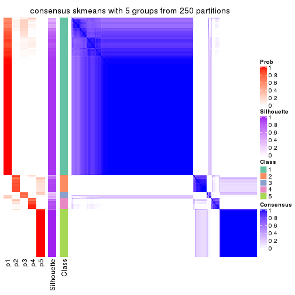
consensus_heatmap(res, k = 6)
Heatmaps for the membership of samples in all partitions to see how consistent they are:
membership_heatmap(res, k = 2)
membership_heatmap(res, k = 3)
membership_heatmap(res, k = 4)
membership_heatmap(res, k = 5)
membership_heatmap(res, k = 6)
As soon as we have had the classes for columns, we can look for signatures which are significantly different between classes which can be candidate marks for certain classes. Following are the heatmaps for signatures.
Signature heatmaps where rows are scaled:
get_signatures(res, k = 2)
get_signatures(res, k = 3)
get_signatures(res, k = 4)
get_signatures(res, k = 5)
get_signatures(res, k = 6)
Signature heatmaps where rows are not scaled:
get_signatures(res, k = 2, scale_rows = FALSE)
get_signatures(res, k = 3, scale_rows = FALSE)
get_signatures(res, k = 4, scale_rows = FALSE)
get_signatures(res, k = 5, scale_rows = FALSE)
get_signatures(res, k = 6, scale_rows = FALSE)
Compare the overlap of signatures from different k:
compare_signatures(res)
get_signature() returns a data frame invisibly. TO get the list of signatures, the function
call should be assigned to a variable explicitly. In following code, if plot argument is set
to FALSE, no heatmap is plotted while only the differential analysis is performed.
# code only for demonstration
tb = get_signature(res, k = ..., plot = FALSE)
An example of the output of tb is:
#> which_row fdr mean_1 mean_2 scaled_mean_1 scaled_mean_2 km
#> 1 38 0.042760348 8.373488 9.131774 -0.5533452 0.5164555 1
#> 2 40 0.018707592 7.106213 8.469186 -0.6173731 0.5762149 1
#> 3 55 0.019134737 10.221463 11.207825 -0.6159697 0.5749050 1
#> 4 59 0.006059896 5.921854 7.869574 -0.6899429 0.6439467 1
#> 5 60 0.018055526 8.928898 10.211722 -0.6204761 0.5791110 1
#> 6 98 0.009384629 15.714769 14.887706 0.6635654 -0.6193277 2
...
The columns in tb are:
which_row: row indices corresponding to the input matrix.fdr: FDR for the differential test. mean_x: The mean value in group x.scaled_mean_x: The mean value in group x after rows are scaled.km: Row groups if k-means clustering is applied to rows.UMAP plot which shows how samples are separated.
dimension_reduction(res, k = 2, method = "UMAP")
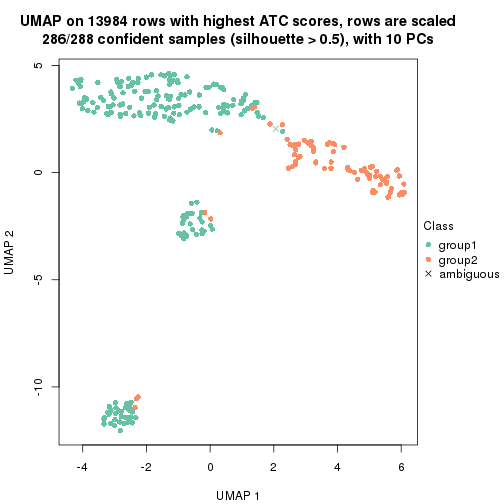
dimension_reduction(res, k = 3, method = "UMAP")
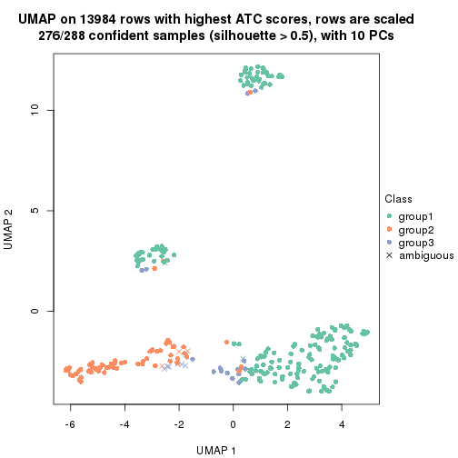
dimension_reduction(res, k = 4, method = "UMAP")
dimension_reduction(res, k = 5, method = "UMAP")
dimension_reduction(res, k = 6, method = "UMAP")
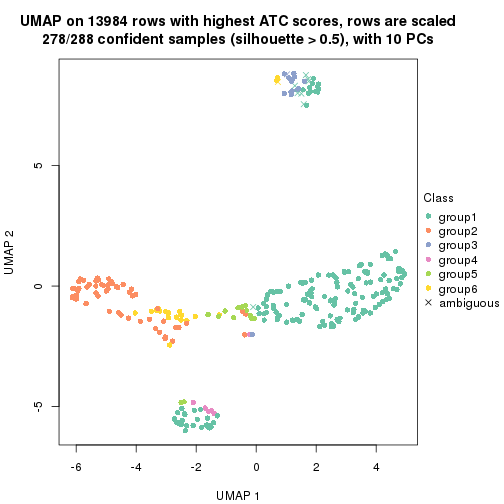
Following heatmap shows how subgroups are split when increasing k:
collect_classes(res)
If matrix rows can be associated to genes, consider to use functional_enrichment(res,
...) to perform function enrichment for the signature genes. See this vignette for more detailed explanations.
The object with results only for a single top-value method and a single partition method can be extracted as:
res = res_list["ATC", "pam"]
# you can also extract it by
# res = res_list["ATC:pam"]
A summary of res and all the functions that can be applied to it:
res
#> A 'ConsensusPartition' object with k = 2, 3, 4, 5, 6.
#> On a matrix with 13984 rows and 288 columns.
#> Top rows (1000, 2000, 3000, 4000, 5000) are extracted by 'ATC' method.
#> Subgroups are detected by 'pam' method.
#> Performed in total 1250 partitions by row resampling.
#> Best k for subgroups seems to be 3.
#>
#> Following methods can be applied to this 'ConsensusPartition' object:
#> [1] "cola_report" "collect_classes" "collect_plots"
#> [4] "collect_stats" "colnames" "compare_signatures"
#> [7] "consensus_heatmap" "dimension_reduction" "functional_enrichment"
#> [10] "get_anno_col" "get_anno" "get_classes"
#> [13] "get_consensus" "get_matrix" "get_membership"
#> [16] "get_param" "get_signatures" "get_stats"
#> [19] "is_best_k" "is_stable_k" "membership_heatmap"
#> [22] "ncol" "nrow" "plot_ecdf"
#> [25] "rownames" "select_partition_number" "show"
#> [28] "suggest_best_k" "test_to_known_factors"
collect_plots() function collects all the plots made from res for all k (number of partitions)
into one single page to provide an easy and fast comparison between different k.
collect_plots(res)
The plots are:
k and the heatmap of
predicted classes for each k.k.k.k.All the plots in panels can be made by individual functions and they are plotted later in this section.
select_partition_number() produces several plots showing different
statistics for choosing “optimized” k. There are following statistics:
k;k, the area increased is defined as \(A_k - A_{k-1}\).The detailed explanations of these statistics can be found in the cola vignette.
Generally speaking, lower PAC score, higher mean silhouette score or higher
concordance corresponds to better partition. Rand index and Jaccard index
measure how similar the current partition is compared to partition with k-1.
If they are too similar, we won't accept k is better than k-1.
select_partition_number(res)
The numeric values for all these statistics can be obtained by get_stats().
get_stats(res)
#> k 1-PAC mean_silhouette concordance area_increased Rand Jaccard
#> 2 2 1.000 0.975 0.990 0.3044 0.708 0.708
#> 3 3 1.000 0.964 0.986 0.4422 0.839 0.775
#> 4 4 0.790 0.784 0.889 0.4766 0.729 0.524
#> 5 5 0.781 0.794 0.906 0.0136 0.912 0.749
#> 6 6 0.770 0.842 0.912 0.0582 0.956 0.866
suggest_best_k() suggests the best \(k\) based on these statistics. The rules are as follows:
suggest_best_k(res)
#> [1] 3
#> attr(,"optional")
#> [1] 2
There is also optional best \(k\) = 2 that is worth to check.
Following shows the table of the partitions (You need to click the show/hide
code output link to see it). The membership matrix (columns with name p*)
is inferred by
clue::cl_consensus()
function with the SE method. Basically the value in the membership matrix
represents the probability to belong to a certain group. The finall class
label for an item is determined with the group with highest probability it
belongs to.
In get_classes() function, the entropy is calculated from the membership
matrix and the silhouette score is calculated from the consensus matrix.
cbind(get_classes(res, k = 2), get_membership(res, k = 2))
#> class entropy silhouette p1 p2
#> SRR1982614 1 0.000 0.988 1.000 0.000
#> SRR1982613 1 0.000 0.988 1.000 0.000
#> SRR1982612 1 0.000 0.988 1.000 0.000
#> SRR1982611 1 0.000 0.988 1.000 0.000
#> SRR1982610 1 0.000 0.988 1.000 0.000
#> SRR1982609 1 0.000 0.988 1.000 0.000
#> SRR1982659 1 0.000 0.988 1.000 0.000
#> SRR1982692 1 0.000 0.988 1.000 0.000
#> SRR1982722 1 0.000 0.988 1.000 0.000
#> SRR1982750 2 0.000 0.996 0.000 1.000
#> SRR2095031 2 0.000 0.996 0.000 1.000
#> SRR1982780 1 0.000 0.988 1.000 0.000
#> SRR1982807 1 0.000 0.988 1.000 0.000
#> SRR1982830 1 0.000 0.988 1.000 0.000
#> SRR1982829 1 0.000 0.988 1.000 0.000
#> SRR1982828 1 0.000 0.988 1.000 0.000
#> SRR1982827 1 0.000 0.988 1.000 0.000
#> SRR1982826 1 0.000 0.988 1.000 0.000
#> SRR1982825 1 0.000 0.988 1.000 0.000
#> SRR1982824 1 0.000 0.988 1.000 0.000
#> SRR1982823 1 0.000 0.988 1.000 0.000
#> SRR1982822 1 0.000 0.988 1.000 0.000
#> SRR1982821 1 0.000 0.988 1.000 0.000
#> SRR1982820 1 0.000 0.988 1.000 0.000
#> SRR1982819 1 0.000 0.988 1.000 0.000
#> SRR1982818 1 0.000 0.988 1.000 0.000
#> SRR1982817 1 0.000 0.988 1.000 0.000
#> SRR1982816 1 0.000 0.988 1.000 0.000
#> SRR1982815 1 0.000 0.988 1.000 0.000
#> SRR1982814 1 0.000 0.988 1.000 0.000
#> SRR1982813 1 0.000 0.988 1.000 0.000
#> SRR1982812 2 0.000 0.996 0.000 1.000
#> SRR1982811 1 0.000 0.988 1.000 0.000
#> SRR1982810 1 0.000 0.988 1.000 0.000
#> SRR1982809 1 0.000 0.988 1.000 0.000
#> SRR1982808 1 0.000 0.988 1.000 0.000
#> SRR1982806 1 0.000 0.988 1.000 0.000
#> SRR1982805 1 0.000 0.988 1.000 0.000
#> SRR1982804 1 0.000 0.988 1.000 0.000
#> SRR1982803 1 0.000 0.988 1.000 0.000
#> SRR1982802 1 0.000 0.988 1.000 0.000
#> SRR1982801 1 0.000 0.988 1.000 0.000
#> SRR1982800 1 0.000 0.988 1.000 0.000
#> SRR1982799 1 0.000 0.988 1.000 0.000
#> SRR1982798 1 0.000 0.988 1.000 0.000
#> SRR1982797 1 0.000 0.988 1.000 0.000
#> SRR1982796 1 0.000 0.988 1.000 0.000
#> SRR1982795 1 0.000 0.988 1.000 0.000
#> SRR1982794 1 0.000 0.988 1.000 0.000
#> SRR1982793 1 0.000 0.988 1.000 0.000
#> SRR1982792 1 0.000 0.988 1.000 0.000
#> SRR1982791 1 0.000 0.988 1.000 0.000
#> SRR1982790 1 0.971 0.352 0.600 0.400
#> SRR1982789 1 0.000 0.988 1.000 0.000
#> SRR1982788 1 0.000 0.988 1.000 0.000
#> SRR1982787 1 0.000 0.988 1.000 0.000
#> SRR1982786 1 0.000 0.988 1.000 0.000
#> SRR1982785 1 0.000 0.988 1.000 0.000
#> SRR1982784 1 0.000 0.988 1.000 0.000
#> SRR1982783 1 0.000 0.988 1.000 0.000
#> SRR1982782 1 0.000 0.988 1.000 0.000
#> SRR1982781 1 0.000 0.988 1.000 0.000
#> SRR1982779 1 0.000 0.988 1.000 0.000
#> SRR1982778 1 0.000 0.988 1.000 0.000
#> SRR1982776 2 0.000 0.996 0.000 1.000
#> SRR1982777 1 0.000 0.988 1.000 0.000
#> SRR1982775 1 0.000 0.988 1.000 0.000
#> SRR1982774 1 0.000 0.988 1.000 0.000
#> SRR1982772 1 0.000 0.988 1.000 0.000
#> SRR1982773 1 0.000 0.988 1.000 0.000
#> SRR1982770 1 0.000 0.988 1.000 0.000
#> SRR1982771 1 0.000 0.988 1.000 0.000
#> SRR1982769 1 0.000 0.988 1.000 0.000
#> SRR1982768 1 0.000 0.988 1.000 0.000
#> SRR1982767 1 0.000 0.988 1.000 0.000
#> SRR1982766 1 0.000 0.988 1.000 0.000
#> SRR1982765 1 0.000 0.988 1.000 0.000
#> SRR1982764 1 0.000 0.988 1.000 0.000
#> SRR1982762 1 0.000 0.988 1.000 0.000
#> SRR1982760 1 0.000 0.988 1.000 0.000
#> SRR1982761 1 0.000 0.988 1.000 0.000
#> SRR1982763 2 0.000 0.996 0.000 1.000
#> SRR1982759 1 0.000 0.988 1.000 0.000
#> SRR1982758 1 0.000 0.988 1.000 0.000
#> SRR1982757 1 0.000 0.988 1.000 0.000
#> SRR1982755 1 0.000 0.988 1.000 0.000
#> SRR1982754 1 0.000 0.988 1.000 0.000
#> SRR1982756 1 0.000 0.988 1.000 0.000
#> SRR1982753 1 0.000 0.988 1.000 0.000
#> SRR1982751 2 0.000 0.996 0.000 1.000
#> SRR1982752 2 0.000 0.996 0.000 1.000
#> SRR1982749 2 0.000 0.996 0.000 1.000
#> SRR1982748 2 0.000 0.996 0.000 1.000
#> SRR1982747 2 0.000 0.996 0.000 1.000
#> SRR1982746 2 0.000 0.996 0.000 1.000
#> SRR1982745 2 0.000 0.996 0.000 1.000
#> SRR1982743 2 0.000 0.996 0.000 1.000
#> SRR1982744 2 0.000 0.996 0.000 1.000
#> SRR1982741 2 0.000 0.996 0.000 1.000
#> SRR1982742 2 0.000 0.996 0.000 1.000
#> SRR2095014 2 0.000 0.996 0.000 1.000
#> SRR1982740 2 0.000 0.996 0.000 1.000
#> SRR1982739 2 0.000 0.996 0.000 1.000
#> SRR1982737 2 0.000 0.996 0.000 1.000
#> SRR1982738 1 0.929 0.491 0.656 0.344
#> SRR1982736 2 0.000 0.996 0.000 1.000
#> SRR1982735 2 0.000 0.996 0.000 1.000
#> SRR1982733 2 0.000 0.996 0.000 1.000
#> SRR1982732 2 0.000 0.996 0.000 1.000
#> SRR2095004 2 0.000 0.996 0.000 1.000
#> SRR1982734 2 0.000 0.996 0.000 1.000
#> SRR1982731 2 0.000 0.996 0.000 1.000
#> SRR1982729 2 0.000 0.996 0.000 1.000
#> SRR1982730 2 0.000 0.996 0.000 1.000
#> SRR1982728 2 0.000 0.996 0.000 1.000
#> SRR1982727 1 0.000 0.988 1.000 0.000
#> SRR1982726 1 0.000 0.988 1.000 0.000
#> SRR1982723 1 0.000 0.988 1.000 0.000
#> SRR1982725 1 0.000 0.988 1.000 0.000
#> SRR1982724 1 0.000 0.988 1.000 0.000
#> SRR1982721 1 0.000 0.988 1.000 0.000
#> SRR1982720 1 0.000 0.988 1.000 0.000
#> SRR1982719 1 0.000 0.988 1.000 0.000
#> SRR1982718 2 0.000 0.996 0.000 1.000
#> SRR1982717 2 0.000 0.996 0.000 1.000
#> SRR1982715 1 0.722 0.755 0.800 0.200
#> SRR1982714 2 0.000 0.996 0.000 1.000
#> SRR1982716 1 0.260 0.946 0.956 0.044
#> SRR1982713 2 0.000 0.996 0.000 1.000
#> SRR1982711 2 0.000 0.996 0.000 1.000
#> SRR1982712 2 0.000 0.996 0.000 1.000
#> SRR1982710 2 0.714 0.749 0.196 0.804
#> SRR1982708 1 0.981 0.296 0.580 0.420
#> SRR1982707 1 0.000 0.988 1.000 0.000
#> SRR1982709 1 0.000 0.988 1.000 0.000
#> SRR1982705 2 0.000 0.996 0.000 1.000
#> SRR1982706 1 0.000 0.988 1.000 0.000
#> SRR1982704 1 0.000 0.988 1.000 0.000
#> SRR1982702 1 0.260 0.946 0.956 0.044
#> SRR1982703 1 0.260 0.946 0.956 0.044
#> SRR1982701 1 0.000 0.988 1.000 0.000
#> SRR1982700 2 0.000 0.996 0.000 1.000
#> SRR1982697 2 0.000 0.996 0.000 1.000
#> SRR1982698 2 0.000 0.996 0.000 1.000
#> SRR1982699 2 0.000 0.996 0.000 1.000
#> SRR1982696 2 0.000 0.996 0.000 1.000
#> SRR1982695 1 0.000 0.988 1.000 0.000
#> SRR1982694 1 0.000 0.988 1.000 0.000
#> SRR1982693 2 0.000 0.996 0.000 1.000
#> SRR1982690 1 0.969 0.363 0.604 0.396
#> SRR1982691 2 0.000 0.996 0.000 1.000
#> SRR1982689 1 0.000 0.988 1.000 0.000
#> SRR1982688 1 0.000 0.988 1.000 0.000
#> SRR1982687 1 0.000 0.988 1.000 0.000
#> SRR1982686 1 0.260 0.946 0.956 0.044
#> SRR1982685 1 0.706 0.767 0.808 0.192
#> SRR1982684 1 0.722 0.755 0.800 0.200
#> SRR1982683 1 0.000 0.988 1.000 0.000
#> SRR1982681 2 0.000 0.996 0.000 1.000
#> SRR1982682 1 0.402 0.909 0.920 0.080
#> SRR1982680 2 0.000 0.996 0.000 1.000
#> SRR1982679 1 0.000 0.988 1.000 0.000
#> SRR1982678 2 0.000 0.996 0.000 1.000
#> SRR1982677 1 0.402 0.909 0.920 0.080
#> SRR1982676 1 0.000 0.988 1.000 0.000
#> SRR1982675 1 0.000 0.988 1.000 0.000
#> SRR1982674 1 0.000 0.988 1.000 0.000
#> SRR1982671 1 0.000 0.988 1.000 0.000
#> SRR1982673 1 0.000 0.988 1.000 0.000
#> SRR1982672 1 0.000 0.988 1.000 0.000
#> SRR1982670 1 0.000 0.988 1.000 0.000
#> SRR1982669 1 0.000 0.988 1.000 0.000
#> SRR1982667 1 0.000 0.988 1.000 0.000
#> SRR1982668 1 0.000 0.988 1.000 0.000
#> SRR1982666 1 0.000 0.988 1.000 0.000
#> SRR1982665 2 0.000 0.996 0.000 1.000
#> SRR1982664 1 0.000 0.988 1.000 0.000
#> SRR1982663 1 0.000 0.988 1.000 0.000
#> SRR1982662 1 0.000 0.988 1.000 0.000
#> SRR1982661 1 0.000 0.988 1.000 0.000
#> SRR1982660 1 0.000 0.988 1.000 0.000
#> SRR1982658 1 0.000 0.988 1.000 0.000
#> SRR1982657 1 0.000 0.988 1.000 0.000
#> SRR1982656 1 0.000 0.988 1.000 0.000
#> SRR1982654 1 0.000 0.988 1.000 0.000
#> SRR1982655 1 0.000 0.988 1.000 0.000
#> SRR1982653 1 0.000 0.988 1.000 0.000
#> SRR1982652 1 0.000 0.988 1.000 0.000
#> SRR1982651 1 0.000 0.988 1.000 0.000
#> SRR1982649 1 0.000 0.988 1.000 0.000
#> SRR1982650 1 0.000 0.988 1.000 0.000
#> SRR1982648 1 0.000 0.988 1.000 0.000
#> SRR1982647 1 0.000 0.988 1.000 0.000
#> SRR1982646 1 0.000 0.988 1.000 0.000
#> SRR1982645 1 0.000 0.988 1.000 0.000
#> SRR1982644 1 0.000 0.988 1.000 0.000
#> SRR1982642 1 0.000 0.988 1.000 0.000
#> SRR1982643 1 0.000 0.988 1.000 0.000
#> SRR1982641 1 0.000 0.988 1.000 0.000
#> SRR1982640 1 0.000 0.988 1.000 0.000
#> SRR1982638 1 0.000 0.988 1.000 0.000
#> SRR1982639 1 0.000 0.988 1.000 0.000
#> SRR1982637 1 0.000 0.988 1.000 0.000
#> SRR1982635 1 0.000 0.988 1.000 0.000
#> SRR1982636 1 0.000 0.988 1.000 0.000
#> SRR1982633 1 0.000 0.988 1.000 0.000
#> SRR1982632 1 0.000 0.988 1.000 0.000
#> SRR1982631 1 0.000 0.988 1.000 0.000
#> SRR1982634 1 0.000 0.988 1.000 0.000
#> SRR1982628 1 0.000 0.988 1.000 0.000
#> SRR1982629 1 0.000 0.988 1.000 0.000
#> SRR1982627 1 0.000 0.988 1.000 0.000
#> SRR1982625 1 0.000 0.988 1.000 0.000
#> SRR1982626 1 0.000 0.988 1.000 0.000
#> SRR1982624 1 0.000 0.988 1.000 0.000
#> SRR1982623 1 0.000 0.988 1.000 0.000
#> SRR1982622 1 0.000 0.988 1.000 0.000
#> SRR1982621 1 0.000 0.988 1.000 0.000
#> SRR1982620 1 0.000 0.988 1.000 0.000
#> SRR1982619 2 0.000 0.996 0.000 1.000
#> SRR1982618 1 0.000 0.988 1.000 0.000
#> SRR1982617 1 0.402 0.909 0.920 0.080
#> SRR1982616 1 0.000 0.988 1.000 0.000
#> SRR1982615 1 0.000 0.988 1.000 0.000
#> SRR1982608 1 0.000 0.988 1.000 0.000
#> SRR1982607 1 0.000 0.988 1.000 0.000
#> SRR1982606 1 0.000 0.988 1.000 0.000
#> SRR1982605 1 0.000 0.988 1.000 0.000
#> SRR1982604 1 0.000 0.988 1.000 0.000
#> SRR1982603 1 0.000 0.988 1.000 0.000
#> SRR1982602 1 0.000 0.988 1.000 0.000
#> SRR1982601 1 0.000 0.988 1.000 0.000
#> SRR1982599 1 0.000 0.988 1.000 0.000
#> SRR1982600 1 0.000 0.988 1.000 0.000
#> SRR1982598 1 0.000 0.988 1.000 0.000
#> SRR1982597 1 0.000 0.988 1.000 0.000
#> SRR1982595 1 0.000 0.988 1.000 0.000
#> SRR1982596 1 0.000 0.988 1.000 0.000
#> SRR1982594 1 0.000 0.988 1.000 0.000
#> SRR1982593 1 0.000 0.988 1.000 0.000
#> SRR1982592 1 0.000 0.988 1.000 0.000
#> SRR1982591 1 0.000 0.988 1.000 0.000
#> SRR1982590 1 0.000 0.988 1.000 0.000
#> SRR1982589 1 0.000 0.988 1.000 0.000
#> SRR1982588 1 0.000 0.988 1.000 0.000
#> SRR1982587 1 0.000 0.988 1.000 0.000
#> SRR1982586 1 0.000 0.988 1.000 0.000
#> SRR1982584 1 0.000 0.988 1.000 0.000
#> SRR2096514 1 0.000 0.988 1.000 0.000
#> SRR2096513 1 0.000 0.988 1.000 0.000
#> SRR2096511 1 0.000 0.988 1.000 0.000
#> SRR2096512 1 0.808 0.679 0.752 0.248
#> SRR2096509 1 0.000 0.988 1.000 0.000
#> SRR2096510 1 0.000 0.988 1.000 0.000
#> SRR2096508 2 0.000 0.996 0.000 1.000
#> SRR2096507 1 0.000 0.988 1.000 0.000
#> SRR2096504 1 0.000 0.988 1.000 0.000
#> SRR2096506 1 0.000 0.988 1.000 0.000
#> SRR2096505 1 0.000 0.988 1.000 0.000
#> SRR2096503 1 0.000 0.988 1.000 0.000
#> SRR2096500 1 0.000 0.988 1.000 0.000
#> SRR2096501 1 0.000 0.988 1.000 0.000
#> SRR2096502 1 0.000 0.988 1.000 0.000
#> SRR2096499 1 0.000 0.988 1.000 0.000
#> SRR2096498 1 0.000 0.988 1.000 0.000
#> SRR2096496 1 0.000 0.988 1.000 0.000
#> SRR2096497 1 0.000 0.988 1.000 0.000
#> SRR2096495 1 0.000 0.988 1.000 0.000
#> SRR2096494 1 0.000 0.988 1.000 0.000
#> SRR2096492 1 0.000 0.988 1.000 0.000
#> SRR2096491 1 0.000 0.988 1.000 0.000
#> SRR2096493 1 0.000 0.988 1.000 0.000
#> SRR2096490 1 0.000 0.988 1.000 0.000
#> SRR2096488 1 0.000 0.988 1.000 0.000
#> SRR2096489 1 0.000 0.988 1.000 0.000
#> SRR2096487 1 0.000 0.988 1.000 0.000
#> SRR2096484 1 0.000 0.988 1.000 0.000
#> SRR2096486 1 0.000 0.988 1.000 0.000
#> SRR2096485 1 0.000 0.988 1.000 0.000
#> SRR2096483 1 0.000 0.988 1.000 0.000
#> SRR2096482 1 0.000 0.988 1.000 0.000
#> SRR2096481 1 0.000 0.988 1.000 0.000
#> SRR2096520 1 0.000 0.988 1.000 0.000
#> SRR2096519 1 0.000 0.988 1.000 0.000
#> SRR2096518 1 0.000 0.988 1.000 0.000
#> SRR2096516 1 0.000 0.988 1.000 0.000
#> SRR2096517 1 0.000 0.988 1.000 0.000
#> SRR2096515 1 0.000 0.988 1.000 0.000
cbind(get_classes(res, k = 3), get_membership(res, k = 3))
#> class entropy silhouette p1 p2 p3
#> SRR1982614 1 0.0892 0.977 0.980 0.000 0.020
#> SRR1982613 1 0.6286 0.120 0.536 0.000 0.464
#> SRR1982612 1 0.0000 0.995 1.000 0.000 0.000
#> SRR1982611 1 0.0000 0.995 1.000 0.000 0.000
#> SRR1982610 1 0.0000 0.995 1.000 0.000 0.000
#> SRR1982609 1 0.0000 0.995 1.000 0.000 0.000
#> SRR1982659 1 0.0000 0.995 1.000 0.000 0.000
#> SRR1982692 3 0.0000 0.949 0.000 0.000 1.000
#> SRR1982722 1 0.0000 0.995 1.000 0.000 0.000
#> SRR1982750 2 0.0000 0.957 0.000 1.000 0.000
#> SRR2095031 2 0.0000 0.957 0.000 1.000 0.000
#> SRR1982780 1 0.0000 0.995 1.000 0.000 0.000
#> SRR1982807 1 0.0000 0.995 1.000 0.000 0.000
#> SRR1982830 1 0.0000 0.995 1.000 0.000 0.000
#> SRR1982829 1 0.0892 0.977 0.980 0.000 0.020
#> SRR1982828 1 0.0000 0.995 1.000 0.000 0.000
#> SRR1982827 1 0.0000 0.995 1.000 0.000 0.000
#> SRR1982826 1 0.0000 0.995 1.000 0.000 0.000
#> SRR1982825 1 0.0000 0.995 1.000 0.000 0.000
#> SRR1982824 1 0.0000 0.995 1.000 0.000 0.000
#> SRR1982823 1 0.0000 0.995 1.000 0.000 0.000
#> SRR1982822 1 0.0000 0.995 1.000 0.000 0.000
#> SRR1982821 1 0.0000 0.995 1.000 0.000 0.000
#> SRR1982820 1 0.0000 0.995 1.000 0.000 0.000
#> SRR1982819 1 0.0000 0.995 1.000 0.000 0.000
#> SRR1982818 1 0.0000 0.995 1.000 0.000 0.000
#> SRR1982817 1 0.0000 0.995 1.000 0.000 0.000
#> SRR1982816 1 0.0000 0.995 1.000 0.000 0.000
#> SRR1982815 1 0.0000 0.995 1.000 0.000 0.000
#> SRR1982814 1 0.0000 0.995 1.000 0.000 0.000
#> SRR1982813 1 0.0000 0.995 1.000 0.000 0.000
#> SRR1982812 3 0.0892 0.932 0.000 0.020 0.980
#> SRR1982811 1 0.0000 0.995 1.000 0.000 0.000
#> SRR1982810 1 0.0000 0.995 1.000 0.000 0.000
#> SRR1982809 3 0.0000 0.949 0.000 0.000 1.000
#> SRR1982808 1 0.0000 0.995 1.000 0.000 0.000
#> SRR1982806 1 0.0000 0.995 1.000 0.000 0.000
#> SRR1982805 1 0.0000 0.995 1.000 0.000 0.000
#> SRR1982804 1 0.0000 0.995 1.000 0.000 0.000
#> SRR1982803 1 0.0000 0.995 1.000 0.000 0.000
#> SRR1982802 1 0.0000 0.995 1.000 0.000 0.000
#> SRR1982801 1 0.0000 0.995 1.000 0.000 0.000
#> SRR1982800 1 0.0000 0.995 1.000 0.000 0.000
#> SRR1982799 1 0.0000 0.995 1.000 0.000 0.000
#> SRR1982798 1 0.0000 0.995 1.000 0.000 0.000
#> SRR1982797 1 0.0892 0.977 0.980 0.000 0.020
#> SRR1982796 1 0.0000 0.995 1.000 0.000 0.000
#> SRR1982795 1 0.0000 0.995 1.000 0.000 0.000
#> SRR1982794 1 0.0000 0.995 1.000 0.000 0.000
#> SRR1982793 1 0.0000 0.995 1.000 0.000 0.000
#> SRR1982792 1 0.0000 0.995 1.000 0.000 0.000
#> SRR1982791 1 0.0000 0.995 1.000 0.000 0.000
#> SRR1982790 3 0.0000 0.949 0.000 0.000 1.000
#> SRR1982789 1 0.0000 0.995 1.000 0.000 0.000
#> SRR1982788 1 0.0000 0.995 1.000 0.000 0.000
#> SRR1982787 1 0.0000 0.995 1.000 0.000 0.000
#> SRR1982786 1 0.0892 0.977 0.980 0.000 0.020
#> SRR1982785 1 0.0000 0.995 1.000 0.000 0.000
#> SRR1982784 1 0.0000 0.995 1.000 0.000 0.000
#> SRR1982783 1 0.0000 0.995 1.000 0.000 0.000
#> SRR1982782 1 0.0000 0.995 1.000 0.000 0.000
#> SRR1982781 1 0.0000 0.995 1.000 0.000 0.000
#> SRR1982779 1 0.0000 0.995 1.000 0.000 0.000
#> SRR1982778 1 0.0000 0.995 1.000 0.000 0.000
#> SRR1982776 2 0.0000 0.957 0.000 1.000 0.000
#> SRR1982777 3 0.6274 0.162 0.456 0.000 0.544
#> SRR1982775 1 0.0000 0.995 1.000 0.000 0.000
#> SRR1982774 1 0.0000 0.995 1.000 0.000 0.000
#> SRR1982772 1 0.0000 0.995 1.000 0.000 0.000
#> SRR1982773 1 0.0000 0.995 1.000 0.000 0.000
#> SRR1982770 1 0.0000 0.995 1.000 0.000 0.000
#> SRR1982771 1 0.0000 0.995 1.000 0.000 0.000
#> SRR1982769 1 0.5016 0.680 0.760 0.000 0.240
#> SRR1982768 1 0.0000 0.995 1.000 0.000 0.000
#> SRR1982767 1 0.0000 0.995 1.000 0.000 0.000
#> SRR1982766 1 0.0892 0.977 0.980 0.000 0.020
#> SRR1982765 1 0.0000 0.995 1.000 0.000 0.000
#> SRR1982764 1 0.0892 0.977 0.980 0.000 0.020
#> SRR1982762 1 0.0000 0.995 1.000 0.000 0.000
#> SRR1982760 1 0.0000 0.995 1.000 0.000 0.000
#> SRR1982761 1 0.0000 0.995 1.000 0.000 0.000
#> SRR1982763 3 0.0000 0.949 0.000 0.000 1.000
#> SRR1982759 1 0.0000 0.995 1.000 0.000 0.000
#> SRR1982758 1 0.0892 0.977 0.980 0.000 0.020
#> SRR1982757 1 0.0000 0.995 1.000 0.000 0.000
#> SRR1982755 1 0.0000 0.995 1.000 0.000 0.000
#> SRR1982754 1 0.0000 0.995 1.000 0.000 0.000
#> SRR1982756 1 0.0000 0.995 1.000 0.000 0.000
#> SRR1982753 1 0.0000 0.995 1.000 0.000 0.000
#> SRR1982751 2 0.0000 0.957 0.000 1.000 0.000
#> SRR1982752 2 0.0000 0.957 0.000 1.000 0.000
#> SRR1982749 2 0.0000 0.957 0.000 1.000 0.000
#> SRR1982748 2 0.0000 0.957 0.000 1.000 0.000
#> SRR1982747 2 0.0000 0.957 0.000 1.000 0.000
#> SRR1982746 2 0.0000 0.957 0.000 1.000 0.000
#> SRR1982745 2 0.0000 0.957 0.000 1.000 0.000
#> SRR1982743 2 0.0000 0.957 0.000 1.000 0.000
#> SRR1982744 2 0.0000 0.957 0.000 1.000 0.000
#> SRR1982741 3 0.0892 0.932 0.000 0.020 0.980
#> SRR1982742 2 0.0592 0.947 0.000 0.988 0.012
#> SRR2095014 2 0.5760 0.543 0.000 0.672 0.328
#> SRR1982740 2 0.0000 0.957 0.000 1.000 0.000
#> SRR1982739 2 0.0000 0.957 0.000 1.000 0.000
#> SRR1982737 2 0.0000 0.957 0.000 1.000 0.000
#> SRR1982738 3 0.0000 0.949 0.000 0.000 1.000
#> SRR1982736 2 0.5560 0.595 0.000 0.700 0.300
#> SRR1982735 2 0.0000 0.957 0.000 1.000 0.000
#> SRR1982733 2 0.0000 0.957 0.000 1.000 0.000
#> SRR1982732 2 0.0000 0.957 0.000 1.000 0.000
#> SRR2095004 2 0.0000 0.957 0.000 1.000 0.000
#> SRR1982734 2 0.0000 0.957 0.000 1.000 0.000
#> SRR1982731 2 0.0000 0.957 0.000 1.000 0.000
#> SRR1982729 3 0.1964 0.898 0.000 0.056 0.944
#> SRR1982730 2 0.0000 0.957 0.000 1.000 0.000
#> SRR1982728 2 0.0000 0.957 0.000 1.000 0.000
#> SRR1982727 1 0.0000 0.995 1.000 0.000 0.000
#> SRR1982726 1 0.0000 0.995 1.000 0.000 0.000
#> SRR1982723 1 0.0000 0.995 1.000 0.000 0.000
#> SRR1982725 1 0.0000 0.995 1.000 0.000 0.000
#> SRR1982724 1 0.0000 0.995 1.000 0.000 0.000
#> SRR1982721 1 0.0000 0.995 1.000 0.000 0.000
#> SRR1982720 1 0.0000 0.995 1.000 0.000 0.000
#> SRR1982719 1 0.0000 0.995 1.000 0.000 0.000
#> SRR1982718 3 0.4555 0.706 0.000 0.200 0.800
#> SRR1982717 2 0.3752 0.818 0.000 0.856 0.144
#> SRR1982715 3 0.0000 0.949 0.000 0.000 1.000
#> SRR1982714 3 0.0892 0.932 0.000 0.020 0.980
#> SRR1982716 3 0.0000 0.949 0.000 0.000 1.000
#> SRR1982713 2 0.5785 0.535 0.000 0.668 0.332
#> SRR1982711 2 0.0000 0.957 0.000 1.000 0.000
#> SRR1982712 2 0.0000 0.957 0.000 1.000 0.000
#> SRR1982710 3 0.0000 0.949 0.000 0.000 1.000
#> SRR1982708 3 0.0000 0.949 0.000 0.000 1.000
#> SRR1982707 3 0.4796 0.564 0.220 0.000 0.780
#> SRR1982709 1 0.0000 0.995 1.000 0.000 0.000
#> SRR1982705 3 0.0000 0.949 0.000 0.000 1.000
#> SRR1982706 1 0.0000 0.995 1.000 0.000 0.000
#> SRR1982704 1 0.0000 0.995 1.000 0.000 0.000
#> SRR1982702 3 0.0000 0.949 0.000 0.000 1.000
#> SRR1982703 3 0.0000 0.949 0.000 0.000 1.000
#> SRR1982701 3 0.0000 0.949 0.000 0.000 1.000
#> SRR1982700 3 0.0892 0.932 0.000 0.020 0.980
#> SRR1982697 2 0.0000 0.957 0.000 1.000 0.000
#> SRR1982698 2 0.0000 0.957 0.000 1.000 0.000
#> SRR1982699 2 0.0000 0.957 0.000 1.000 0.000
#> SRR1982696 2 0.6215 0.300 0.000 0.572 0.428
#> SRR1982695 1 0.0000 0.995 1.000 0.000 0.000
#> SRR1982694 1 0.0000 0.995 1.000 0.000 0.000
#> SRR1982693 2 0.0000 0.957 0.000 1.000 0.000
#> SRR1982690 3 0.0000 0.949 0.000 0.000 1.000
#> SRR1982691 3 0.0000 0.949 0.000 0.000 1.000
#> SRR1982689 3 0.0000 0.949 0.000 0.000 1.000
#> SRR1982688 1 0.0000 0.995 1.000 0.000 0.000
#> SRR1982687 3 0.0000 0.949 0.000 0.000 1.000
#> SRR1982686 3 0.0000 0.949 0.000 0.000 1.000
#> SRR1982685 3 0.0000 0.949 0.000 0.000 1.000
#> SRR1982684 3 0.0000 0.949 0.000 0.000 1.000
#> SRR1982683 1 0.0000 0.995 1.000 0.000 0.000
#> SRR1982681 2 0.0000 0.957 0.000 1.000 0.000
#> SRR1982682 3 0.0000 0.949 0.000 0.000 1.000
#> SRR1982680 3 0.5621 0.506 0.000 0.308 0.692
#> SRR1982679 3 0.0000 0.949 0.000 0.000 1.000
#> SRR1982678 2 0.0000 0.957 0.000 1.000 0.000
#> SRR1982677 3 0.0000 0.949 0.000 0.000 1.000
#> SRR1982676 1 0.0000 0.995 1.000 0.000 0.000
#> SRR1982675 1 0.0000 0.995 1.000 0.000 0.000
#> SRR1982674 1 0.1163 0.970 0.972 0.000 0.028
#> SRR1982671 1 0.0892 0.977 0.980 0.000 0.020
#> SRR1982673 1 0.0000 0.995 1.000 0.000 0.000
#> SRR1982672 1 0.0000 0.995 1.000 0.000 0.000
#> SRR1982670 1 0.0000 0.995 1.000 0.000 0.000
#> SRR1982669 1 0.0000 0.995 1.000 0.000 0.000
#> SRR1982667 1 0.0000 0.995 1.000 0.000 0.000
#> SRR1982668 1 0.0892 0.977 0.980 0.000 0.020
#> SRR1982666 1 0.0000 0.995 1.000 0.000 0.000
#> SRR1982665 2 0.0000 0.957 0.000 1.000 0.000
#> SRR1982664 1 0.0000 0.995 1.000 0.000 0.000
#> SRR1982663 1 0.0000 0.995 1.000 0.000 0.000
#> SRR1982662 1 0.0000 0.995 1.000 0.000 0.000
#> SRR1982661 1 0.0000 0.995 1.000 0.000 0.000
#> SRR1982660 1 0.0000 0.995 1.000 0.000 0.000
#> SRR1982658 1 0.0000 0.995 1.000 0.000 0.000
#> SRR1982657 1 0.0000 0.995 1.000 0.000 0.000
#> SRR1982656 3 0.0000 0.949 0.000 0.000 1.000
#> SRR1982654 1 0.0000 0.995 1.000 0.000 0.000
#> SRR1982655 1 0.0000 0.995 1.000 0.000 0.000
#> SRR1982653 1 0.0000 0.995 1.000 0.000 0.000
#> SRR1982652 1 0.0000 0.995 1.000 0.000 0.000
#> SRR1982651 1 0.0000 0.995 1.000 0.000 0.000
#> SRR1982649 1 0.0000 0.995 1.000 0.000 0.000
#> SRR1982650 1 0.0000 0.995 1.000 0.000 0.000
#> SRR1982648 1 0.0000 0.995 1.000 0.000 0.000
#> SRR1982647 1 0.0000 0.995 1.000 0.000 0.000
#> SRR1982646 1 0.0000 0.995 1.000 0.000 0.000
#> SRR1982645 1 0.0000 0.995 1.000 0.000 0.000
#> SRR1982644 1 0.0000 0.995 1.000 0.000 0.000
#> SRR1982642 1 0.0000 0.995 1.000 0.000 0.000
#> SRR1982643 1 0.0000 0.995 1.000 0.000 0.000
#> SRR1982641 1 0.0000 0.995 1.000 0.000 0.000
#> SRR1982640 1 0.0000 0.995 1.000 0.000 0.000
#> SRR1982638 1 0.0000 0.995 1.000 0.000 0.000
#> SRR1982639 1 0.0000 0.995 1.000 0.000 0.000
#> SRR1982637 1 0.0000 0.995 1.000 0.000 0.000
#> SRR1982635 1 0.0000 0.995 1.000 0.000 0.000
#> SRR1982636 1 0.0000 0.995 1.000 0.000 0.000
#> SRR1982633 1 0.0000 0.995 1.000 0.000 0.000
#> SRR1982632 1 0.0000 0.995 1.000 0.000 0.000
#> SRR1982631 1 0.0000 0.995 1.000 0.000 0.000
#> SRR1982634 1 0.0000 0.995 1.000 0.000 0.000
#> SRR1982628 1 0.0000 0.995 1.000 0.000 0.000
#> SRR1982629 1 0.0000 0.995 1.000 0.000 0.000
#> SRR1982627 1 0.0000 0.995 1.000 0.000 0.000
#> SRR1982625 1 0.0000 0.995 1.000 0.000 0.000
#> SRR1982626 1 0.0000 0.995 1.000 0.000 0.000
#> SRR1982624 1 0.0000 0.995 1.000 0.000 0.000
#> SRR1982623 1 0.0000 0.995 1.000 0.000 0.000
#> SRR1982622 1 0.0000 0.995 1.000 0.000 0.000
#> SRR1982621 1 0.0000 0.995 1.000 0.000 0.000
#> SRR1982620 1 0.0000 0.995 1.000 0.000 0.000
#> SRR1982619 2 0.1529 0.924 0.000 0.960 0.040
#> SRR1982618 1 0.0000 0.995 1.000 0.000 0.000
#> SRR1982617 3 0.0000 0.949 0.000 0.000 1.000
#> SRR1982616 1 0.0000 0.995 1.000 0.000 0.000
#> SRR1982615 1 0.0000 0.995 1.000 0.000 0.000
#> SRR1982608 3 0.0000 0.949 0.000 0.000 1.000
#> SRR1982607 1 0.0000 0.995 1.000 0.000 0.000
#> SRR1982606 1 0.0000 0.995 1.000 0.000 0.000
#> SRR1982605 1 0.0000 0.995 1.000 0.000 0.000
#> SRR1982604 1 0.0000 0.995 1.000 0.000 0.000
#> SRR1982603 1 0.0000 0.995 1.000 0.000 0.000
#> SRR1982602 1 0.0000 0.995 1.000 0.000 0.000
#> SRR1982601 1 0.0000 0.995 1.000 0.000 0.000
#> SRR1982599 1 0.0000 0.995 1.000 0.000 0.000
#> SRR1982600 1 0.2537 0.912 0.920 0.000 0.080
#> SRR1982598 1 0.0000 0.995 1.000 0.000 0.000
#> SRR1982597 1 0.0000 0.995 1.000 0.000 0.000
#> SRR1982595 1 0.0000 0.995 1.000 0.000 0.000
#> SRR1982596 1 0.0000 0.995 1.000 0.000 0.000
#> SRR1982594 1 0.0000 0.995 1.000 0.000 0.000
#> SRR1982593 1 0.0000 0.995 1.000 0.000 0.000
#> SRR1982592 3 0.0000 0.949 0.000 0.000 1.000
#> SRR1982591 1 0.0000 0.995 1.000 0.000 0.000
#> SRR1982590 1 0.0000 0.995 1.000 0.000 0.000
#> SRR1982589 1 0.0000 0.995 1.000 0.000 0.000
#> SRR1982588 1 0.0000 0.995 1.000 0.000 0.000
#> SRR1982587 1 0.0000 0.995 1.000 0.000 0.000
#> SRR1982586 1 0.0000 0.995 1.000 0.000 0.000
#> SRR1982584 1 0.0892 0.977 0.980 0.000 0.020
#> SRR2096514 1 0.0000 0.995 1.000 0.000 0.000
#> SRR2096513 1 0.0000 0.995 1.000 0.000 0.000
#> SRR2096511 1 0.0000 0.995 1.000 0.000 0.000
#> SRR2096512 3 0.0000 0.949 0.000 0.000 1.000
#> SRR2096509 1 0.0000 0.995 1.000 0.000 0.000
#> SRR2096510 1 0.0000 0.995 1.000 0.000 0.000
#> SRR2096508 3 0.0000 0.949 0.000 0.000 1.000
#> SRR2096507 1 0.0000 0.995 1.000 0.000 0.000
#> SRR2096504 1 0.0000 0.995 1.000 0.000 0.000
#> SRR2096506 1 0.0000 0.995 1.000 0.000 0.000
#> SRR2096505 1 0.0000 0.995 1.000 0.000 0.000
#> SRR2096503 3 0.0000 0.949 0.000 0.000 1.000
#> SRR2096500 1 0.0000 0.995 1.000 0.000 0.000
#> SRR2096501 1 0.0892 0.977 0.980 0.000 0.020
#> SRR2096502 1 0.0000 0.995 1.000 0.000 0.000
#> SRR2096499 1 0.0000 0.995 1.000 0.000 0.000
#> SRR2096498 1 0.0000 0.995 1.000 0.000 0.000
#> SRR2096496 1 0.0000 0.995 1.000 0.000 0.000
#> SRR2096497 1 0.0000 0.995 1.000 0.000 0.000
#> SRR2096495 1 0.0000 0.995 1.000 0.000 0.000
#> SRR2096494 1 0.0000 0.995 1.000 0.000 0.000
#> SRR2096492 1 0.0000 0.995 1.000 0.000 0.000
#> SRR2096491 3 0.0000 0.949 0.000 0.000 1.000
#> SRR2096493 1 0.0000 0.995 1.000 0.000 0.000
#> SRR2096490 1 0.0000 0.995 1.000 0.000 0.000
#> SRR2096488 1 0.0000 0.995 1.000 0.000 0.000
#> SRR2096489 1 0.0000 0.995 1.000 0.000 0.000
#> SRR2096487 1 0.0000 0.995 1.000 0.000 0.000
#> SRR2096484 1 0.0000 0.995 1.000 0.000 0.000
#> SRR2096486 1 0.0000 0.995 1.000 0.000 0.000
#> SRR2096485 1 0.0000 0.995 1.000 0.000 0.000
#> SRR2096483 1 0.0000 0.995 1.000 0.000 0.000
#> SRR2096482 1 0.0000 0.995 1.000 0.000 0.000
#> SRR2096481 1 0.0892 0.977 0.980 0.000 0.020
#> SRR2096520 1 0.0000 0.995 1.000 0.000 0.000
#> SRR2096519 1 0.0000 0.995 1.000 0.000 0.000
#> SRR2096518 1 0.0000 0.995 1.000 0.000 0.000
#> SRR2096516 1 0.0000 0.995 1.000 0.000 0.000
#> SRR2096517 1 0.0000 0.995 1.000 0.000 0.000
#> SRR2096515 1 0.0000 0.995 1.000 0.000 0.000
cbind(get_classes(res, k = 4), get_membership(res, k = 4))
#> class entropy silhouette p1 p2 p3 p4
#> SRR1982614 3 0.4955 0.551227 0.444 0.000 0.556 0.000
#> SRR1982613 3 0.4955 0.551227 0.444 0.000 0.556 0.000
#> SRR1982612 3 0.2589 0.621407 0.116 0.000 0.884 0.000
#> SRR1982611 3 0.4948 0.554058 0.440 0.000 0.560 0.000
#> SRR1982610 3 0.0000 0.564277 0.000 0.000 1.000 0.000
#> SRR1982609 1 0.4955 0.999298 0.556 0.000 0.444 0.000
#> SRR1982659 1 0.4955 0.999298 0.556 0.000 0.444 0.000
#> SRR1982692 4 0.0188 0.959815 0.004 0.000 0.000 0.996
#> SRR1982722 1 0.4955 0.999298 0.556 0.000 0.444 0.000
#> SRR1982750 2 0.0000 0.953907 0.000 1.000 0.000 0.000
#> SRR2095031 2 0.0000 0.953907 0.000 1.000 0.000 0.000
#> SRR1982780 1 0.4955 0.999298 0.556 0.000 0.444 0.000
#> SRR1982807 3 0.0707 0.532620 0.020 0.000 0.980 0.000
#> SRR1982830 3 0.0592 0.539742 0.016 0.000 0.984 0.000
#> SRR1982829 3 0.4955 0.551227 0.444 0.000 0.556 0.000
#> SRR1982828 3 0.4948 0.554058 0.440 0.000 0.560 0.000
#> SRR1982827 3 0.0000 0.564277 0.000 0.000 1.000 0.000
#> SRR1982826 1 0.4955 0.999298 0.556 0.000 0.444 0.000
#> SRR1982825 1 0.4955 0.999298 0.556 0.000 0.444 0.000
#> SRR1982824 3 0.0000 0.564277 0.000 0.000 1.000 0.000
#> SRR1982823 3 0.4790 -0.642370 0.380 0.000 0.620 0.000
#> SRR1982822 3 0.0000 0.564277 0.000 0.000 1.000 0.000
#> SRR1982821 3 0.4790 -0.642829 0.380 0.000 0.620 0.000
#> SRR1982820 1 0.4955 0.999298 0.556 0.000 0.444 0.000
#> SRR1982819 1 0.4955 0.999298 0.556 0.000 0.444 0.000
#> SRR1982818 1 0.4955 0.999298 0.556 0.000 0.444 0.000
#> SRR1982817 3 0.1867 0.427960 0.072 0.000 0.928 0.000
#> SRR1982816 1 0.4955 0.999298 0.556 0.000 0.444 0.000
#> SRR1982815 1 0.4955 0.999298 0.556 0.000 0.444 0.000
#> SRR1982814 1 0.4955 0.999298 0.556 0.000 0.444 0.000
#> SRR1982813 3 0.4985 -0.847710 0.468 0.000 0.532 0.000
#> SRR1982812 4 0.0000 0.960439 0.000 0.000 0.000 1.000
#> SRR1982811 3 0.0921 0.581800 0.028 0.000 0.972 0.000
#> SRR1982810 3 0.4955 0.551227 0.444 0.000 0.556 0.000
#> SRR1982809 3 0.4955 0.551227 0.444 0.000 0.556 0.000
#> SRR1982808 3 0.4955 0.551227 0.444 0.000 0.556 0.000
#> SRR1982806 1 0.4955 0.999298 0.556 0.000 0.444 0.000
#> SRR1982805 1 0.4955 0.999298 0.556 0.000 0.444 0.000
#> SRR1982804 3 0.0000 0.564277 0.000 0.000 1.000 0.000
#> SRR1982803 3 0.4955 0.551227 0.444 0.000 0.556 0.000
#> SRR1982802 1 0.4955 0.999298 0.556 0.000 0.444 0.000
#> SRR1982801 3 0.2216 0.378314 0.092 0.000 0.908 0.000
#> SRR1982800 3 0.0000 0.564277 0.000 0.000 1.000 0.000
#> SRR1982799 1 0.4955 0.999298 0.556 0.000 0.444 0.000
#> SRR1982798 1 0.4955 0.999298 0.556 0.000 0.444 0.000
#> SRR1982797 3 0.4955 0.551227 0.444 0.000 0.556 0.000
#> SRR1982796 1 0.4955 0.999298 0.556 0.000 0.444 0.000
#> SRR1982795 1 0.4955 0.999298 0.556 0.000 0.444 0.000
#> SRR1982794 1 0.4955 0.999298 0.556 0.000 0.444 0.000
#> SRR1982793 1 0.4955 0.999298 0.556 0.000 0.444 0.000
#> SRR1982792 1 0.4955 0.999298 0.556 0.000 0.444 0.000
#> SRR1982791 3 0.0188 0.558583 0.004 0.000 0.996 0.000
#> SRR1982790 4 0.0000 0.960439 0.000 0.000 0.000 1.000
#> SRR1982789 1 0.4955 0.999298 0.556 0.000 0.444 0.000
#> SRR1982788 1 0.4955 0.999298 0.556 0.000 0.444 0.000
#> SRR1982787 1 0.4955 0.999298 0.556 0.000 0.444 0.000
#> SRR1982786 3 0.4955 0.551227 0.444 0.000 0.556 0.000
#> SRR1982785 1 0.4955 0.999298 0.556 0.000 0.444 0.000
#> SRR1982784 1 0.4955 0.999298 0.556 0.000 0.444 0.000
#> SRR1982783 3 0.0000 0.564277 0.000 0.000 1.000 0.000
#> SRR1982782 1 0.4955 0.999298 0.556 0.000 0.444 0.000
#> SRR1982781 1 0.4955 0.999298 0.556 0.000 0.444 0.000
#> SRR1982779 3 0.2760 0.625196 0.128 0.000 0.872 0.000
#> SRR1982778 1 0.4955 0.999298 0.556 0.000 0.444 0.000
#> SRR1982776 2 0.0000 0.953907 0.000 1.000 0.000 0.000
#> SRR1982777 3 0.4955 0.551227 0.444 0.000 0.556 0.000
#> SRR1982775 1 0.4955 0.999298 0.556 0.000 0.444 0.000
#> SRR1982774 1 0.4955 0.999298 0.556 0.000 0.444 0.000
#> SRR1982772 1 0.4955 0.999298 0.556 0.000 0.444 0.000
#> SRR1982773 1 0.4955 0.999298 0.556 0.000 0.444 0.000
#> SRR1982770 1 0.4955 0.999298 0.556 0.000 0.444 0.000
#> SRR1982771 1 0.4955 0.999298 0.556 0.000 0.444 0.000
#> SRR1982769 3 0.4955 0.551227 0.444 0.000 0.556 0.000
#> SRR1982768 3 0.4955 0.551227 0.444 0.000 0.556 0.000
#> SRR1982767 3 0.0336 0.569890 0.008 0.000 0.992 0.000
#> SRR1982766 3 0.4955 0.551227 0.444 0.000 0.556 0.000
#> SRR1982765 3 0.0000 0.564277 0.000 0.000 1.000 0.000
#> SRR1982764 3 0.4955 0.551227 0.444 0.000 0.556 0.000
#> SRR1982762 1 0.4955 0.999298 0.556 0.000 0.444 0.000
#> SRR1982760 1 0.4955 0.999298 0.556 0.000 0.444 0.000
#> SRR1982761 1 0.4955 0.999298 0.556 0.000 0.444 0.000
#> SRR1982763 4 0.0000 0.960439 0.000 0.000 0.000 1.000
#> SRR1982759 3 0.0000 0.564277 0.000 0.000 1.000 0.000
#> SRR1982758 3 0.4955 0.551227 0.444 0.000 0.556 0.000
#> SRR1982757 3 0.4955 0.551227 0.444 0.000 0.556 0.000
#> SRR1982755 1 0.4961 0.993113 0.552 0.000 0.448 0.000
#> SRR1982754 3 0.0000 0.564277 0.000 0.000 1.000 0.000
#> SRR1982756 3 0.0000 0.564277 0.000 0.000 1.000 0.000
#> SRR1982753 3 0.2589 0.312730 0.116 0.000 0.884 0.000
#> SRR1982751 2 0.0000 0.953907 0.000 1.000 0.000 0.000
#> SRR1982752 2 0.0000 0.953907 0.000 1.000 0.000 0.000
#> SRR1982749 2 0.0000 0.953907 0.000 1.000 0.000 0.000
#> SRR1982748 2 0.0188 0.952459 0.000 0.996 0.000 0.004
#> SRR1982747 2 0.0000 0.953907 0.000 1.000 0.000 0.000
#> SRR1982746 2 0.0000 0.953907 0.000 1.000 0.000 0.000
#> SRR1982745 2 0.0000 0.953907 0.000 1.000 0.000 0.000
#> SRR1982743 2 0.0000 0.953907 0.000 1.000 0.000 0.000
#> SRR1982744 2 0.0000 0.953907 0.000 1.000 0.000 0.000
#> SRR1982741 4 0.0000 0.960439 0.000 0.000 0.000 1.000
#> SRR1982742 2 0.0592 0.943971 0.000 0.984 0.000 0.016
#> SRR2095014 2 0.4624 0.517901 0.000 0.660 0.000 0.340
#> SRR1982740 2 0.0000 0.953907 0.000 1.000 0.000 0.000
#> SRR1982739 2 0.0000 0.953907 0.000 1.000 0.000 0.000
#> SRR1982737 2 0.0188 0.952459 0.000 0.996 0.000 0.004
#> SRR1982738 4 0.0000 0.960439 0.000 0.000 0.000 1.000
#> SRR1982736 2 0.4477 0.571499 0.000 0.688 0.000 0.312
#> SRR1982735 2 0.0188 0.952459 0.000 0.996 0.000 0.004
#> SRR1982733 2 0.0000 0.953907 0.000 1.000 0.000 0.000
#> SRR1982732 2 0.0000 0.953907 0.000 1.000 0.000 0.000
#> SRR2095004 2 0.0000 0.953907 0.000 1.000 0.000 0.000
#> SRR1982734 2 0.0188 0.952459 0.000 0.996 0.000 0.004
#> SRR1982731 2 0.0000 0.953907 0.000 1.000 0.000 0.000
#> SRR1982729 4 0.0000 0.960439 0.000 0.000 0.000 1.000
#> SRR1982730 2 0.0000 0.953907 0.000 1.000 0.000 0.000
#> SRR1982728 2 0.0000 0.953907 0.000 1.000 0.000 0.000
#> SRR1982727 3 0.4955 0.551227 0.444 0.000 0.556 0.000
#> SRR1982726 3 0.1716 0.445710 0.064 0.000 0.936 0.000
#> SRR1982723 3 0.1389 0.592432 0.048 0.000 0.952 0.000
#> SRR1982725 3 0.2469 0.618390 0.108 0.000 0.892 0.000
#> SRR1982724 3 0.4679 -0.567695 0.352 0.000 0.648 0.000
#> SRR1982721 1 0.4955 0.999298 0.556 0.000 0.444 0.000
#> SRR1982720 1 0.4955 0.999298 0.556 0.000 0.444 0.000
#> SRR1982719 1 0.4955 0.999298 0.556 0.000 0.444 0.000
#> SRR1982718 4 0.3610 0.721013 0.000 0.200 0.000 0.800
#> SRR1982717 2 0.3123 0.803440 0.000 0.844 0.000 0.156
#> SRR1982715 4 0.0000 0.960439 0.000 0.000 0.000 1.000
#> SRR1982714 4 0.0000 0.960439 0.000 0.000 0.000 1.000
#> SRR1982716 4 0.0188 0.959815 0.004 0.000 0.000 0.996
#> SRR1982713 2 0.4643 0.509569 0.000 0.656 0.000 0.344
#> SRR1982711 2 0.0000 0.953907 0.000 1.000 0.000 0.000
#> SRR1982712 2 0.0000 0.953907 0.000 1.000 0.000 0.000
#> SRR1982710 4 0.0000 0.960439 0.000 0.000 0.000 1.000
#> SRR1982708 4 0.0000 0.960439 0.000 0.000 0.000 1.000
#> SRR1982707 3 0.4955 0.551227 0.444 0.000 0.556 0.000
#> SRR1982709 3 0.4916 0.559985 0.424 0.000 0.576 0.000
#> SRR1982705 4 0.0000 0.960439 0.000 0.000 0.000 1.000
#> SRR1982706 1 0.4955 0.999298 0.556 0.000 0.444 0.000
#> SRR1982704 3 0.4948 0.554058 0.440 0.000 0.560 0.000
#> SRR1982702 4 0.0188 0.959815 0.004 0.000 0.000 0.996
#> SRR1982703 4 0.0188 0.959815 0.004 0.000 0.000 0.996
#> SRR1982701 4 0.0188 0.959815 0.004 0.000 0.000 0.996
#> SRR1982700 4 0.0000 0.960439 0.000 0.000 0.000 1.000
#> SRR1982697 2 0.0000 0.953907 0.000 1.000 0.000 0.000
#> SRR1982698 2 0.0000 0.953907 0.000 1.000 0.000 0.000
#> SRR1982699 2 0.0000 0.953907 0.000 1.000 0.000 0.000
#> SRR1982696 2 0.4955 0.248010 0.000 0.556 0.000 0.444
#> SRR1982695 1 0.4955 0.999298 0.556 0.000 0.444 0.000
#> SRR1982694 1 0.4955 0.999298 0.556 0.000 0.444 0.000
#> SRR1982693 2 0.0188 0.952459 0.000 0.996 0.000 0.004
#> SRR1982690 4 0.0000 0.960439 0.000 0.000 0.000 1.000
#> SRR1982691 4 0.0000 0.960439 0.000 0.000 0.000 1.000
#> SRR1982689 4 0.0188 0.959815 0.004 0.000 0.000 0.996
#> SRR1982688 1 0.4955 0.999298 0.556 0.000 0.444 0.000
#> SRR1982687 4 0.2149 0.883736 0.088 0.000 0.000 0.912
#> SRR1982686 4 0.0188 0.959815 0.004 0.000 0.000 0.996
#> SRR1982685 4 0.0000 0.960439 0.000 0.000 0.000 1.000
#> SRR1982684 4 0.0000 0.960439 0.000 0.000 0.000 1.000
#> SRR1982683 3 0.4955 0.551227 0.444 0.000 0.556 0.000
#> SRR1982681 2 0.0000 0.953907 0.000 1.000 0.000 0.000
#> SRR1982682 4 0.0188 0.959815 0.004 0.000 0.000 0.996
#> SRR1982680 4 0.4277 0.579174 0.000 0.280 0.000 0.720
#> SRR1982679 4 0.0188 0.959815 0.004 0.000 0.000 0.996
#> SRR1982678 2 0.0188 0.952459 0.000 0.996 0.000 0.004
#> SRR1982677 4 0.0188 0.959815 0.004 0.000 0.000 0.996
#> SRR1982676 1 0.4955 0.999298 0.556 0.000 0.444 0.000
#> SRR1982675 1 0.4955 0.999298 0.556 0.000 0.444 0.000
#> SRR1982674 3 0.4955 0.551227 0.444 0.000 0.556 0.000
#> SRR1982671 3 0.4955 0.551227 0.444 0.000 0.556 0.000
#> SRR1982673 1 0.4955 0.999298 0.556 0.000 0.444 0.000
#> SRR1982672 1 0.4955 0.999298 0.556 0.000 0.444 0.000
#> SRR1982670 1 0.4955 0.999298 0.556 0.000 0.444 0.000
#> SRR1982669 1 0.4955 0.999298 0.556 0.000 0.444 0.000
#> SRR1982667 1 0.4955 0.999298 0.556 0.000 0.444 0.000
#> SRR1982668 3 0.4955 0.551227 0.444 0.000 0.556 0.000
#> SRR1982666 1 0.4955 0.999298 0.556 0.000 0.444 0.000
#> SRR1982665 2 0.0188 0.952459 0.000 0.996 0.000 0.004
#> SRR1982664 1 0.4955 0.999298 0.556 0.000 0.444 0.000
#> SRR1982663 1 0.4955 0.999298 0.556 0.000 0.444 0.000
#> SRR1982662 1 0.4955 0.999298 0.556 0.000 0.444 0.000
#> SRR1982661 3 0.0000 0.564277 0.000 0.000 1.000 0.000
#> SRR1982660 1 0.4955 0.999298 0.556 0.000 0.444 0.000
#> SRR1982658 1 0.4955 0.999298 0.556 0.000 0.444 0.000
#> SRR1982657 1 0.4955 0.999298 0.556 0.000 0.444 0.000
#> SRR1982656 4 0.0592 0.950568 0.016 0.000 0.000 0.984
#> SRR1982654 1 0.4955 0.999298 0.556 0.000 0.444 0.000
#> SRR1982655 1 0.4955 0.999298 0.556 0.000 0.444 0.000
#> SRR1982653 1 0.4955 0.999298 0.556 0.000 0.444 0.000
#> SRR1982652 1 0.4955 0.999298 0.556 0.000 0.444 0.000
#> SRR1982651 1 0.4955 0.999298 0.556 0.000 0.444 0.000
#> SRR1982649 3 0.4916 0.560267 0.424 0.000 0.576 0.000
#> SRR1982650 1 0.4955 0.999298 0.556 0.000 0.444 0.000
#> SRR1982648 1 0.4955 0.999298 0.556 0.000 0.444 0.000
#> SRR1982647 1 0.4955 0.999298 0.556 0.000 0.444 0.000
#> SRR1982646 3 0.4948 0.554058 0.440 0.000 0.560 0.000
#> SRR1982645 1 0.4955 0.999298 0.556 0.000 0.444 0.000
#> SRR1982644 1 0.4955 0.999298 0.556 0.000 0.444 0.000
#> SRR1982642 1 0.4955 0.999298 0.556 0.000 0.444 0.000
#> SRR1982643 1 0.4955 0.999298 0.556 0.000 0.444 0.000
#> SRR1982641 1 0.4955 0.999298 0.556 0.000 0.444 0.000
#> SRR1982640 1 0.4955 0.999298 0.556 0.000 0.444 0.000
#> SRR1982638 1 0.4955 0.999298 0.556 0.000 0.444 0.000
#> SRR1982639 1 0.4955 0.999298 0.556 0.000 0.444 0.000
#> SRR1982637 1 0.4955 0.999298 0.556 0.000 0.444 0.000
#> SRR1982635 1 0.4955 0.999298 0.556 0.000 0.444 0.000
#> SRR1982636 3 0.0000 0.564277 0.000 0.000 1.000 0.000
#> SRR1982633 1 0.4955 0.999298 0.556 0.000 0.444 0.000
#> SRR1982632 3 0.0000 0.564277 0.000 0.000 1.000 0.000
#> SRR1982631 1 0.4955 0.999298 0.556 0.000 0.444 0.000
#> SRR1982634 3 0.3444 0.070725 0.184 0.000 0.816 0.000
#> SRR1982628 3 0.4916 0.560316 0.424 0.000 0.576 0.000
#> SRR1982629 3 0.3610 -0.000447 0.200 0.000 0.800 0.000
#> SRR1982627 3 0.4730 -0.600462 0.364 0.000 0.636 0.000
#> SRR1982625 1 0.4955 0.999298 0.556 0.000 0.444 0.000
#> SRR1982626 3 0.4746 -0.612573 0.368 0.000 0.632 0.000
#> SRR1982624 3 0.2081 0.608921 0.084 0.000 0.916 0.000
#> SRR1982623 1 0.4955 0.999298 0.556 0.000 0.444 0.000
#> SRR1982622 1 0.4955 0.999298 0.556 0.000 0.444 0.000
#> SRR1982621 3 0.0000 0.564277 0.000 0.000 1.000 0.000
#> SRR1982620 1 0.4955 0.999298 0.556 0.000 0.444 0.000
#> SRR1982619 2 0.1302 0.920366 0.000 0.956 0.000 0.044
#> SRR1982618 1 0.4955 0.999298 0.556 0.000 0.444 0.000
#> SRR1982617 4 0.0000 0.960439 0.000 0.000 0.000 1.000
#> SRR1982616 3 0.0000 0.564277 0.000 0.000 1.000 0.000
#> SRR1982615 1 0.4955 0.999298 0.556 0.000 0.444 0.000
#> SRR1982608 4 0.4008 0.717763 0.244 0.000 0.000 0.756
#> SRR1982607 1 0.4955 0.999298 0.556 0.000 0.444 0.000
#> SRR1982606 1 0.4955 0.999298 0.556 0.000 0.444 0.000
#> SRR1982605 3 0.3266 0.133239 0.168 0.000 0.832 0.000
#> SRR1982604 1 0.4955 0.999298 0.556 0.000 0.444 0.000
#> SRR1982603 1 0.4955 0.999298 0.556 0.000 0.444 0.000
#> SRR1982602 1 0.4955 0.999298 0.556 0.000 0.444 0.000
#> SRR1982601 1 0.4955 0.999298 0.556 0.000 0.444 0.000
#> SRR1982599 1 0.4999 0.920775 0.508 0.000 0.492 0.000
#> SRR1982600 3 0.4955 0.551227 0.444 0.000 0.556 0.000
#> SRR1982598 1 0.4955 0.999298 0.556 0.000 0.444 0.000
#> SRR1982597 1 0.4955 0.999298 0.556 0.000 0.444 0.000
#> SRR1982595 1 0.4955 0.999298 0.556 0.000 0.444 0.000
#> SRR1982596 1 0.4955 0.999298 0.556 0.000 0.444 0.000
#> SRR1982594 1 0.4955 0.999298 0.556 0.000 0.444 0.000
#> SRR1982593 1 0.4955 0.999298 0.556 0.000 0.444 0.000
#> SRR1982592 4 0.0188 0.959815 0.004 0.000 0.000 0.996
#> SRR1982591 3 0.4331 0.607549 0.288 0.000 0.712 0.000
#> SRR1982590 3 0.4955 0.551227 0.444 0.000 0.556 0.000
#> SRR1982589 3 0.4500 0.597667 0.316 0.000 0.684 0.000
#> SRR1982588 1 0.4955 0.999298 0.556 0.000 0.444 0.000
#> SRR1982587 1 0.4955 0.999298 0.556 0.000 0.444 0.000
#> SRR1982586 1 0.4955 0.999298 0.556 0.000 0.444 0.000
#> SRR1982584 3 0.4955 0.551227 0.444 0.000 0.556 0.000
#> SRR2096514 1 0.4955 0.999298 0.556 0.000 0.444 0.000
#> SRR2096513 3 0.0000 0.564277 0.000 0.000 1.000 0.000
#> SRR2096511 1 0.4955 0.999298 0.556 0.000 0.444 0.000
#> SRR2096512 4 0.0000 0.960439 0.000 0.000 0.000 1.000
#> SRR2096509 1 0.4955 0.999298 0.556 0.000 0.444 0.000
#> SRR2096510 3 0.0000 0.564277 0.000 0.000 1.000 0.000
#> SRR2096508 4 0.0000 0.960439 0.000 0.000 0.000 1.000
#> SRR2096507 3 0.4948 0.554058 0.440 0.000 0.560 0.000
#> SRR2096504 3 0.0000 0.564277 0.000 0.000 1.000 0.000
#> SRR2096506 3 0.0000 0.564277 0.000 0.000 1.000 0.000
#> SRR2096505 3 0.0000 0.564277 0.000 0.000 1.000 0.000
#> SRR2096503 4 0.0188 0.959815 0.004 0.000 0.000 0.996
#> SRR2096500 3 0.3074 0.197477 0.152 0.000 0.848 0.000
#> SRR2096501 3 0.4955 0.551227 0.444 0.000 0.556 0.000
#> SRR2096502 1 0.4955 0.999298 0.556 0.000 0.444 0.000
#> SRR2096499 3 0.0336 0.569876 0.008 0.000 0.992 0.000
#> SRR2096498 3 0.4967 -0.813613 0.452 0.000 0.548 0.000
#> SRR2096496 3 0.4948 0.554058 0.440 0.000 0.560 0.000
#> SRR2096497 3 0.3610 -0.000447 0.200 0.000 0.800 0.000
#> SRR2096495 3 0.4948 0.554058 0.440 0.000 0.560 0.000
#> SRR2096494 3 0.2704 0.623936 0.124 0.000 0.876 0.000
#> SRR2096492 3 0.0188 0.558431 0.004 0.000 0.996 0.000
#> SRR2096491 4 0.4955 0.482890 0.444 0.000 0.000 0.556
#> SRR2096493 3 0.0000 0.564277 0.000 0.000 1.000 0.000
#> SRR2096490 3 0.0000 0.564277 0.000 0.000 1.000 0.000
#> SRR2096488 3 0.0000 0.564277 0.000 0.000 1.000 0.000
#> SRR2096489 3 0.2760 0.625053 0.128 0.000 0.872 0.000
#> SRR2096487 3 0.4406 0.603502 0.300 0.000 0.700 0.000
#> SRR2096484 1 0.4955 0.999298 0.556 0.000 0.444 0.000
#> SRR2096486 3 0.4948 0.554058 0.440 0.000 0.560 0.000
#> SRR2096485 3 0.0469 0.545840 0.012 0.000 0.988 0.000
#> SRR2096483 1 0.4955 0.999298 0.556 0.000 0.444 0.000
#> SRR2096482 1 0.4955 0.999298 0.556 0.000 0.444 0.000
#> SRR2096481 3 0.4955 0.551227 0.444 0.000 0.556 0.000
#> SRR2096520 1 0.4955 0.999298 0.556 0.000 0.444 0.000
#> SRR2096519 3 0.4761 -0.621814 0.372 0.000 0.628 0.000
#> SRR2096518 1 0.4955 0.999298 0.556 0.000 0.444 0.000
#> SRR2096516 1 0.4955 0.999298 0.556 0.000 0.444 0.000
#> SRR2096517 1 0.4955 0.999298 0.556 0.000 0.444 0.000
#> SRR2096515 1 0.4955 0.999298 0.556 0.000 0.444 0.000
cbind(get_classes(res, k = 5), get_membership(res, k = 5))
#> class entropy silhouette p1 p2 p3 p4 p5
#> SRR1982614 3 0.0000 0.6257 0.000 0.000 1.000 0.000 0.000
#> SRR1982613 3 0.0000 0.6257 0.000 0.000 1.000 0.000 0.000
#> SRR1982612 3 0.3932 0.6368 0.328 0.000 0.672 0.000 0.000
#> SRR1982611 3 0.0162 0.6279 0.004 0.000 0.996 0.000 0.000
#> SRR1982610 3 0.4268 0.5398 0.444 0.000 0.556 0.000 0.000
#> SRR1982609 1 0.0000 0.9461 1.000 0.000 0.000 0.000 0.000
#> SRR1982659 1 0.0000 0.9461 1.000 0.000 0.000 0.000 0.000
#> SRR1982692 2 0.0162 0.9355 0.000 0.996 0.004 0.000 0.000
#> SRR1982722 1 0.0000 0.9461 1.000 0.000 0.000 0.000 0.000
#> SRR1982750 4 0.0000 1.0000 0.000 0.000 0.000 1.000 0.000
#> SRR2095031 4 0.0000 1.0000 0.000 0.000 0.000 1.000 0.000
#> SRR1982780 1 0.0000 0.9461 1.000 0.000 0.000 0.000 0.000
#> SRR1982807 3 0.4291 0.4927 0.464 0.000 0.536 0.000 0.000
#> SRR1982830 3 0.4287 0.5032 0.460 0.000 0.540 0.000 0.000
#> SRR1982829 3 0.0000 0.6257 0.000 0.000 1.000 0.000 0.000
#> SRR1982828 3 0.0162 0.6279 0.004 0.000 0.996 0.000 0.000
#> SRR1982827 3 0.4268 0.5398 0.444 0.000 0.556 0.000 0.000
#> SRR1982826 1 0.0000 0.9461 1.000 0.000 0.000 0.000 0.000
#> SRR1982825 1 0.0000 0.9461 1.000 0.000 0.000 0.000 0.000
#> SRR1982824 3 0.4268 0.5398 0.444 0.000 0.556 0.000 0.000
#> SRR1982823 1 0.2891 0.6870 0.824 0.000 0.176 0.000 0.000
#> SRR1982822 3 0.4268 0.5398 0.444 0.000 0.556 0.000 0.000
#> SRR1982821 1 0.2891 0.6875 0.824 0.000 0.176 0.000 0.000
#> SRR1982820 1 0.0000 0.9461 1.000 0.000 0.000 0.000 0.000
#> SRR1982819 1 0.0000 0.9461 1.000 0.000 0.000 0.000 0.000
#> SRR1982818 1 0.0000 0.9461 1.000 0.000 0.000 0.000 0.000
#> SRR1982817 1 0.4304 -0.3518 0.516 0.000 0.484 0.000 0.000
#> SRR1982816 1 0.0000 0.9461 1.000 0.000 0.000 0.000 0.000
#> SRR1982815 1 0.0000 0.9461 1.000 0.000 0.000 0.000 0.000
#> SRR1982814 1 0.0000 0.9461 1.000 0.000 0.000 0.000 0.000
#> SRR1982813 1 0.1851 0.8375 0.912 0.000 0.088 0.000 0.000
#> SRR1982812 2 0.1851 0.8880 0.000 0.912 0.000 0.000 0.088
#> SRR1982811 3 0.4219 0.5680 0.416 0.000 0.584 0.000 0.000
#> SRR1982810 3 0.0000 0.6257 0.000 0.000 1.000 0.000 0.000
#> SRR1982809 3 0.0000 0.6257 0.000 0.000 1.000 0.000 0.000
#> SRR1982808 3 0.0000 0.6257 0.000 0.000 1.000 0.000 0.000
#> SRR1982806 1 0.0000 0.9461 1.000 0.000 0.000 0.000 0.000
#> SRR1982805 1 0.0000 0.9461 1.000 0.000 0.000 0.000 0.000
#> SRR1982804 3 0.4268 0.5398 0.444 0.000 0.556 0.000 0.000
#> SRR1982803 3 0.0000 0.6257 0.000 0.000 1.000 0.000 0.000
#> SRR1982802 1 0.0000 0.9461 1.000 0.000 0.000 0.000 0.000
#> SRR1982801 1 0.4291 -0.2834 0.536 0.000 0.464 0.000 0.000
#> SRR1982800 3 0.4268 0.5398 0.444 0.000 0.556 0.000 0.000
#> SRR1982799 1 0.0000 0.9461 1.000 0.000 0.000 0.000 0.000
#> SRR1982798 1 0.0000 0.9461 1.000 0.000 0.000 0.000 0.000
#> SRR1982797 3 0.0000 0.6257 0.000 0.000 1.000 0.000 0.000
#> SRR1982796 1 0.0000 0.9461 1.000 0.000 0.000 0.000 0.000
#> SRR1982795 1 0.0000 0.9461 1.000 0.000 0.000 0.000 0.000
#> SRR1982794 1 0.0000 0.9461 1.000 0.000 0.000 0.000 0.000
#> SRR1982793 1 0.0000 0.9461 1.000 0.000 0.000 0.000 0.000
#> SRR1982792 1 0.0000 0.9461 1.000 0.000 0.000 0.000 0.000
#> SRR1982791 3 0.4273 0.5312 0.448 0.000 0.552 0.000 0.000
#> SRR1982790 2 0.0000 0.9372 0.000 1.000 0.000 0.000 0.000
#> SRR1982789 1 0.0000 0.9461 1.000 0.000 0.000 0.000 0.000
#> SRR1982788 1 0.0000 0.9461 1.000 0.000 0.000 0.000 0.000
#> SRR1982787 1 0.0000 0.9461 1.000 0.000 0.000 0.000 0.000
#> SRR1982786 3 0.0000 0.6257 0.000 0.000 1.000 0.000 0.000
#> SRR1982785 1 0.0000 0.9461 1.000 0.000 0.000 0.000 0.000
#> SRR1982784 1 0.0000 0.9461 1.000 0.000 0.000 0.000 0.000
#> SRR1982783 3 0.4268 0.5398 0.444 0.000 0.556 0.000 0.000
#> SRR1982782 1 0.0000 0.9461 1.000 0.000 0.000 0.000 0.000
#> SRR1982781 1 0.0000 0.9461 1.000 0.000 0.000 0.000 0.000
#> SRR1982779 3 0.3876 0.6438 0.316 0.000 0.684 0.000 0.000
#> SRR1982778 1 0.0000 0.9461 1.000 0.000 0.000 0.000 0.000
#> SRR1982776 5 0.4278 0.3902 0.000 0.000 0.000 0.452 0.548
#> SRR1982777 3 0.0000 0.6257 0.000 0.000 1.000 0.000 0.000
#> SRR1982775 1 0.0000 0.9461 1.000 0.000 0.000 0.000 0.000
#> SRR1982774 1 0.0000 0.9461 1.000 0.000 0.000 0.000 0.000
#> SRR1982772 1 0.0000 0.9461 1.000 0.000 0.000 0.000 0.000
#> SRR1982773 1 0.0000 0.9461 1.000 0.000 0.000 0.000 0.000
#> SRR1982770 1 0.0000 0.9461 1.000 0.000 0.000 0.000 0.000
#> SRR1982771 1 0.0000 0.9461 1.000 0.000 0.000 0.000 0.000
#> SRR1982769 3 0.0000 0.6257 0.000 0.000 1.000 0.000 0.000
#> SRR1982768 3 0.0000 0.6257 0.000 0.000 1.000 0.000 0.000
#> SRR1982767 3 0.4256 0.5486 0.436 0.000 0.564 0.000 0.000
#> SRR1982766 3 0.0000 0.6257 0.000 0.000 1.000 0.000 0.000
#> SRR1982765 3 0.4268 0.5398 0.444 0.000 0.556 0.000 0.000
#> SRR1982764 3 0.0000 0.6257 0.000 0.000 1.000 0.000 0.000
#> SRR1982762 1 0.0000 0.9461 1.000 0.000 0.000 0.000 0.000
#> SRR1982760 1 0.0000 0.9461 1.000 0.000 0.000 0.000 0.000
#> SRR1982761 1 0.0000 0.9461 1.000 0.000 0.000 0.000 0.000
#> SRR1982763 2 0.0000 0.9372 0.000 1.000 0.000 0.000 0.000
#> SRR1982759 3 0.4268 0.5398 0.444 0.000 0.556 0.000 0.000
#> SRR1982758 3 0.0000 0.6257 0.000 0.000 1.000 0.000 0.000
#> SRR1982757 3 0.0000 0.6257 0.000 0.000 1.000 0.000 0.000
#> SRR1982755 1 0.0162 0.9417 0.996 0.000 0.004 0.000 0.000
#> SRR1982754 3 0.4268 0.5398 0.444 0.000 0.556 0.000 0.000
#> SRR1982756 3 0.4268 0.5398 0.444 0.000 0.556 0.000 0.000
#> SRR1982753 1 0.4262 -0.1951 0.560 0.000 0.440 0.000 0.000
#> SRR1982751 5 0.2891 0.8567 0.000 0.000 0.000 0.176 0.824
#> SRR1982752 4 0.0000 1.0000 0.000 0.000 0.000 1.000 0.000
#> SRR1982749 4 0.0000 1.0000 0.000 0.000 0.000 1.000 0.000
#> SRR1982748 5 0.0000 0.8754 0.000 0.000 0.000 0.000 1.000
#> SRR1982747 4 0.0000 1.0000 0.000 0.000 0.000 1.000 0.000
#> SRR1982746 4 0.0000 1.0000 0.000 0.000 0.000 1.000 0.000
#> SRR1982745 4 0.0000 1.0000 0.000 0.000 0.000 1.000 0.000
#> SRR1982743 5 0.2891 0.8567 0.000 0.000 0.000 0.176 0.824
#> SRR1982744 4 0.0000 1.0000 0.000 0.000 0.000 1.000 0.000
#> SRR1982741 2 0.2891 0.8207 0.000 0.824 0.000 0.000 0.176
#> SRR1982742 5 0.0000 0.8754 0.000 0.000 0.000 0.000 1.000
#> SRR2095014 5 0.0000 0.8754 0.000 0.000 0.000 0.000 1.000
#> SRR1982740 5 0.2929 0.8532 0.000 0.000 0.000 0.180 0.820
#> SRR1982739 5 0.2891 0.8567 0.000 0.000 0.000 0.176 0.824
#> SRR1982737 5 0.0000 0.8754 0.000 0.000 0.000 0.000 1.000
#> SRR1982738 2 0.0000 0.9372 0.000 1.000 0.000 0.000 0.000
#> SRR1982736 5 0.0000 0.8754 0.000 0.000 0.000 0.000 1.000
#> SRR1982735 5 0.0000 0.8754 0.000 0.000 0.000 0.000 1.000
#> SRR1982733 5 0.2891 0.8567 0.000 0.000 0.000 0.176 0.824
#> SRR1982732 5 0.2891 0.8567 0.000 0.000 0.000 0.176 0.824
#> SRR2095004 5 0.2127 0.8680 0.000 0.000 0.000 0.108 0.892
#> SRR1982734 5 0.0000 0.8754 0.000 0.000 0.000 0.000 1.000
#> SRR1982731 5 0.2891 0.8567 0.000 0.000 0.000 0.176 0.824
#> SRR1982729 2 0.2891 0.8207 0.000 0.824 0.000 0.000 0.176
#> SRR1982730 5 0.2891 0.8567 0.000 0.000 0.000 0.176 0.824
#> SRR1982728 5 0.2891 0.8567 0.000 0.000 0.000 0.176 0.824
#> SRR1982727 3 0.0000 0.6257 0.000 0.000 1.000 0.000 0.000
#> SRR1982726 1 0.4306 -0.3770 0.508 0.000 0.492 0.000 0.000
#> SRR1982723 3 0.4171 0.5856 0.396 0.000 0.604 0.000 0.000
#> SRR1982725 3 0.3966 0.6311 0.336 0.000 0.664 0.000 0.000
#> SRR1982724 1 0.3143 0.6307 0.796 0.000 0.204 0.000 0.000
#> SRR1982721 1 0.0000 0.9461 1.000 0.000 0.000 0.000 0.000
#> SRR1982720 1 0.0000 0.9461 1.000 0.000 0.000 0.000 0.000
#> SRR1982719 1 0.0000 0.9461 1.000 0.000 0.000 0.000 0.000
#> SRR1982718 2 0.3109 0.7974 0.000 0.800 0.000 0.000 0.200
#> SRR1982717 5 0.2891 0.8567 0.000 0.000 0.000 0.176 0.824
#> SRR1982715 2 0.0000 0.9372 0.000 1.000 0.000 0.000 0.000
#> SRR1982714 2 0.1410 0.9054 0.000 0.940 0.000 0.000 0.060
#> SRR1982716 2 0.0000 0.9372 0.000 1.000 0.000 0.000 0.000
#> SRR1982713 5 0.0000 0.8754 0.000 0.000 0.000 0.000 1.000
#> SRR1982711 4 0.0000 1.0000 0.000 0.000 0.000 1.000 0.000
#> SRR1982712 4 0.0000 1.0000 0.000 0.000 0.000 1.000 0.000
#> SRR1982710 2 0.1965 0.8820 0.000 0.904 0.000 0.000 0.096
#> SRR1982708 2 0.0000 0.9372 0.000 1.000 0.000 0.000 0.000
#> SRR1982707 3 0.0609 0.6158 0.000 0.020 0.980 0.000 0.000
#> SRR1982709 3 0.0609 0.6304 0.020 0.000 0.980 0.000 0.000
#> SRR1982705 2 0.0000 0.9372 0.000 1.000 0.000 0.000 0.000
#> SRR1982706 1 0.0000 0.9461 1.000 0.000 0.000 0.000 0.000
#> SRR1982704 3 0.0162 0.6279 0.004 0.000 0.996 0.000 0.000
#> SRR1982702 2 0.0000 0.9372 0.000 1.000 0.000 0.000 0.000
#> SRR1982703 2 0.0000 0.9372 0.000 1.000 0.000 0.000 0.000
#> SRR1982701 2 0.0000 0.9372 0.000 1.000 0.000 0.000 0.000
#> SRR1982700 2 0.2891 0.8207 0.000 0.824 0.000 0.000 0.176
#> SRR1982697 4 0.0000 1.0000 0.000 0.000 0.000 1.000 0.000
#> SRR1982698 4 0.0000 1.0000 0.000 0.000 0.000 1.000 0.000
#> SRR1982699 4 0.0000 1.0000 0.000 0.000 0.000 1.000 0.000
#> SRR1982696 5 0.2966 0.6646 0.000 0.184 0.000 0.000 0.816
#> SRR1982695 1 0.0000 0.9461 1.000 0.000 0.000 0.000 0.000
#> SRR1982694 1 0.0000 0.9461 1.000 0.000 0.000 0.000 0.000
#> SRR1982693 5 0.0000 0.8754 0.000 0.000 0.000 0.000 1.000
#> SRR1982690 2 0.0000 0.9372 0.000 1.000 0.000 0.000 0.000
#> SRR1982691 2 0.0000 0.9372 0.000 1.000 0.000 0.000 0.000
#> SRR1982689 2 0.0000 0.9372 0.000 1.000 0.000 0.000 0.000
#> SRR1982688 1 0.0000 0.9461 1.000 0.000 0.000 0.000 0.000
#> SRR1982687 2 0.1851 0.8595 0.000 0.912 0.088 0.000 0.000
#> SRR1982686 2 0.0000 0.9372 0.000 1.000 0.000 0.000 0.000
#> SRR1982685 2 0.0000 0.9372 0.000 1.000 0.000 0.000 0.000
#> SRR1982684 2 0.0000 0.9372 0.000 1.000 0.000 0.000 0.000
#> SRR1982683 3 0.0000 0.6257 0.000 0.000 1.000 0.000 0.000
#> SRR1982681 5 0.2891 0.8567 0.000 0.000 0.000 0.176 0.824
#> SRR1982682 2 0.0000 0.9372 0.000 1.000 0.000 0.000 0.000
#> SRR1982680 2 0.3837 0.6461 0.000 0.692 0.000 0.000 0.308
#> SRR1982679 2 0.0162 0.9355 0.000 0.996 0.004 0.000 0.000
#> SRR1982678 5 0.0000 0.8754 0.000 0.000 0.000 0.000 1.000
#> SRR1982677 2 0.0000 0.9372 0.000 1.000 0.000 0.000 0.000
#> SRR1982676 1 0.0000 0.9461 1.000 0.000 0.000 0.000 0.000
#> SRR1982675 1 0.0000 0.9461 1.000 0.000 0.000 0.000 0.000
#> SRR1982674 3 0.0000 0.6257 0.000 0.000 1.000 0.000 0.000
#> SRR1982671 3 0.0000 0.6257 0.000 0.000 1.000 0.000 0.000
#> SRR1982673 1 0.0000 0.9461 1.000 0.000 0.000 0.000 0.000
#> SRR1982672 1 0.0000 0.9461 1.000 0.000 0.000 0.000 0.000
#> SRR1982670 1 0.0000 0.9461 1.000 0.000 0.000 0.000 0.000
#> SRR1982669 1 0.0000 0.9461 1.000 0.000 0.000 0.000 0.000
#> SRR1982667 1 0.0000 0.9461 1.000 0.000 0.000 0.000 0.000
#> SRR1982668 3 0.0000 0.6257 0.000 0.000 1.000 0.000 0.000
#> SRR1982666 1 0.0000 0.9461 1.000 0.000 0.000 0.000 0.000
#> SRR1982665 5 0.0000 0.8754 0.000 0.000 0.000 0.000 1.000
#> SRR1982664 1 0.0000 0.9461 1.000 0.000 0.000 0.000 0.000
#> SRR1982663 1 0.0000 0.9461 1.000 0.000 0.000 0.000 0.000
#> SRR1982662 1 0.0000 0.9461 1.000 0.000 0.000 0.000 0.000
#> SRR1982661 3 0.4268 0.5398 0.444 0.000 0.556 0.000 0.000
#> SRR1982660 1 0.0000 0.9461 1.000 0.000 0.000 0.000 0.000
#> SRR1982658 1 0.0000 0.9461 1.000 0.000 0.000 0.000 0.000
#> SRR1982657 1 0.0000 0.9461 1.000 0.000 0.000 0.000 0.000
#> SRR1982656 2 0.0510 0.9271 0.000 0.984 0.016 0.000 0.000
#> SRR1982654 1 0.0000 0.9461 1.000 0.000 0.000 0.000 0.000
#> SRR1982655 1 0.0000 0.9461 1.000 0.000 0.000 0.000 0.000
#> SRR1982653 1 0.0000 0.9461 1.000 0.000 0.000 0.000 0.000
#> SRR1982652 1 0.0000 0.9461 1.000 0.000 0.000 0.000 0.000
#> SRR1982651 1 0.0000 0.9461 1.000 0.000 0.000 0.000 0.000
#> SRR1982649 3 0.0609 0.6309 0.020 0.000 0.980 0.000 0.000
#> SRR1982650 1 0.0000 0.9461 1.000 0.000 0.000 0.000 0.000
#> SRR1982648 1 0.0000 0.9461 1.000 0.000 0.000 0.000 0.000
#> SRR1982647 1 0.0000 0.9461 1.000 0.000 0.000 0.000 0.000
#> SRR1982646 3 0.0162 0.6279 0.004 0.000 0.996 0.000 0.000
#> SRR1982645 1 0.0000 0.9461 1.000 0.000 0.000 0.000 0.000
#> SRR1982644 1 0.0000 0.9461 1.000 0.000 0.000 0.000 0.000
#> SRR1982642 1 0.0000 0.9461 1.000 0.000 0.000 0.000 0.000
#> SRR1982643 1 0.0000 0.9461 1.000 0.000 0.000 0.000 0.000
#> SRR1982641 1 0.0000 0.9461 1.000 0.000 0.000 0.000 0.000
#> SRR1982640 1 0.0000 0.9461 1.000 0.000 0.000 0.000 0.000
#> SRR1982638 1 0.0000 0.9461 1.000 0.000 0.000 0.000 0.000
#> SRR1982639 1 0.0000 0.9461 1.000 0.000 0.000 0.000 0.000
#> SRR1982637 1 0.0000 0.9461 1.000 0.000 0.000 0.000 0.000
#> SRR1982635 1 0.0000 0.9461 1.000 0.000 0.000 0.000 0.000
#> SRR1982636 3 0.4268 0.5398 0.444 0.000 0.556 0.000 0.000
#> SRR1982633 1 0.0000 0.9461 1.000 0.000 0.000 0.000 0.000
#> SRR1982632 3 0.4268 0.5398 0.444 0.000 0.556 0.000 0.000
#> SRR1982631 1 0.0000 0.9461 1.000 0.000 0.000 0.000 0.000
#> SRR1982634 1 0.4101 0.1080 0.628 0.000 0.372 0.000 0.000
#> SRR1982628 3 0.0609 0.6309 0.020 0.000 0.980 0.000 0.000
#> SRR1982629 1 0.4045 0.1735 0.644 0.000 0.356 0.000 0.000
#> SRR1982627 1 0.3039 0.6550 0.808 0.000 0.192 0.000 0.000
#> SRR1982625 1 0.0000 0.9461 1.000 0.000 0.000 0.000 0.000
#> SRR1982626 1 0.3003 0.6661 0.812 0.000 0.188 0.000 0.000
#> SRR1982624 3 0.4060 0.6145 0.360 0.000 0.640 0.000 0.000
#> SRR1982623 1 0.0000 0.9461 1.000 0.000 0.000 0.000 0.000
#> SRR1982622 1 0.0000 0.9461 1.000 0.000 0.000 0.000 0.000
#> SRR1982621 3 0.4268 0.5398 0.444 0.000 0.556 0.000 0.000
#> SRR1982620 1 0.0000 0.9461 1.000 0.000 0.000 0.000 0.000
#> SRR1982619 5 0.0000 0.8754 0.000 0.000 0.000 0.000 1.000
#> SRR1982618 1 0.0000 0.9461 1.000 0.000 0.000 0.000 0.000
#> SRR1982617 2 0.0000 0.9372 0.000 1.000 0.000 0.000 0.000
#> SRR1982616 3 0.4268 0.5398 0.444 0.000 0.556 0.000 0.000
#> SRR1982615 1 0.0000 0.9461 1.000 0.000 0.000 0.000 0.000
#> SRR1982608 2 0.3452 0.6622 0.000 0.756 0.244 0.000 0.000
#> SRR1982607 1 0.0000 0.9461 1.000 0.000 0.000 0.000 0.000
#> SRR1982606 1 0.0000 0.9461 1.000 0.000 0.000 0.000 0.000
#> SRR1982605 1 0.4150 0.0369 0.612 0.000 0.388 0.000 0.000
#> SRR1982604 1 0.0000 0.9461 1.000 0.000 0.000 0.000 0.000
#> SRR1982603 1 0.0000 0.9461 1.000 0.000 0.000 0.000 0.000
#> SRR1982602 1 0.0000 0.9461 1.000 0.000 0.000 0.000 0.000
#> SRR1982601 1 0.0000 0.9461 1.000 0.000 0.000 0.000 0.000
#> SRR1982599 1 0.1197 0.8907 0.952 0.000 0.048 0.000 0.000
#> SRR1982600 3 0.0000 0.6257 0.000 0.000 1.000 0.000 0.000
#> SRR1982598 1 0.0000 0.9461 1.000 0.000 0.000 0.000 0.000
#> SRR1982597 1 0.0000 0.9461 1.000 0.000 0.000 0.000 0.000
#> SRR1982595 1 0.0000 0.9461 1.000 0.000 0.000 0.000 0.000
#> SRR1982596 1 0.0000 0.9461 1.000 0.000 0.000 0.000 0.000
#> SRR1982594 1 0.0000 0.9461 1.000 0.000 0.000 0.000 0.000
#> SRR1982593 1 0.0000 0.9461 1.000 0.000 0.000 0.000 0.000
#> SRR1982592 2 0.0162 0.9355 0.000 0.996 0.004 0.000 0.000
#> SRR1982591 3 0.2690 0.6457 0.156 0.000 0.844 0.000 0.000
#> SRR1982590 3 0.0000 0.6257 0.000 0.000 1.000 0.000 0.000
#> SRR1982589 3 0.2377 0.6425 0.128 0.000 0.872 0.000 0.000
#> SRR1982588 1 0.0000 0.9461 1.000 0.000 0.000 0.000 0.000
#> SRR1982587 1 0.0000 0.9461 1.000 0.000 0.000 0.000 0.000
#> SRR1982586 1 0.0000 0.9461 1.000 0.000 0.000 0.000 0.000
#> SRR1982584 3 0.0000 0.6257 0.000 0.000 1.000 0.000 0.000
#> SRR2096514 1 0.0000 0.9461 1.000 0.000 0.000 0.000 0.000
#> SRR2096513 3 0.4268 0.5398 0.444 0.000 0.556 0.000 0.000
#> SRR2096511 1 0.0000 0.9461 1.000 0.000 0.000 0.000 0.000
#> SRR2096512 2 0.0000 0.9372 0.000 1.000 0.000 0.000 0.000
#> SRR2096509 1 0.0000 0.9461 1.000 0.000 0.000 0.000 0.000
#> SRR2096510 3 0.4268 0.5398 0.444 0.000 0.556 0.000 0.000
#> SRR2096508 2 0.0000 0.9372 0.000 1.000 0.000 0.000 0.000
#> SRR2096507 3 0.0162 0.6279 0.004 0.000 0.996 0.000 0.000
#> SRR2096504 3 0.4268 0.5398 0.444 0.000 0.556 0.000 0.000
#> SRR2096506 3 0.4268 0.5398 0.444 0.000 0.556 0.000 0.000
#> SRR2096505 3 0.4268 0.5398 0.444 0.000 0.556 0.000 0.000
#> SRR2096503 2 0.0162 0.9355 0.000 0.996 0.004 0.000 0.000
#> SRR2096500 1 0.4192 -0.0405 0.596 0.000 0.404 0.000 0.000
#> SRR2096501 3 0.0000 0.6257 0.000 0.000 1.000 0.000 0.000
#> SRR2096502 1 0.0000 0.9461 1.000 0.000 0.000 0.000 0.000
#> SRR2096499 3 0.4256 0.5485 0.436 0.000 0.564 0.000 0.000
#> SRR2096498 1 0.2074 0.8129 0.896 0.000 0.104 0.000 0.000
#> SRR2096496 3 0.0162 0.6279 0.004 0.000 0.996 0.000 0.000
#> SRR2096497 1 0.4045 0.1735 0.644 0.000 0.356 0.000 0.000
#> SRR2096495 3 0.0162 0.6279 0.004 0.000 0.996 0.000 0.000
#> SRR2096494 3 0.3895 0.6416 0.320 0.000 0.680 0.000 0.000
#> SRR2096492 3 0.4273 0.5310 0.448 0.000 0.552 0.000 0.000
#> SRR2096491 2 0.4268 0.3883 0.000 0.556 0.444 0.000 0.000
#> SRR2096493 3 0.4268 0.5398 0.444 0.000 0.556 0.000 0.000
#> SRR2096490 3 0.4268 0.5398 0.444 0.000 0.556 0.000 0.000
#> SRR2096488 3 0.4268 0.5398 0.444 0.000 0.556 0.000 0.000
#> SRR2096489 3 0.3876 0.6438 0.316 0.000 0.684 0.000 0.000
#> SRR2096487 3 0.2561 0.6446 0.144 0.000 0.856 0.000 0.000
#> SRR2096484 1 0.0000 0.9461 1.000 0.000 0.000 0.000 0.000
#> SRR2096486 3 0.0162 0.6279 0.004 0.000 0.996 0.000 0.000
#> SRR2096485 3 0.4283 0.5123 0.456 0.000 0.544 0.000 0.000
#> SRR2096483 1 0.0000 0.9461 1.000 0.000 0.000 0.000 0.000
#> SRR2096482 1 0.0000 0.9461 1.000 0.000 0.000 0.000 0.000
#> SRR2096481 3 0.0000 0.6257 0.000 0.000 1.000 0.000 0.000
#> SRR2096520 1 0.0000 0.9461 1.000 0.000 0.000 0.000 0.000
#> SRR2096519 1 0.2966 0.6724 0.816 0.000 0.184 0.000 0.000
#> SRR2096518 1 0.0000 0.9461 1.000 0.000 0.000 0.000 0.000
#> SRR2096516 1 0.0000 0.9461 1.000 0.000 0.000 0.000 0.000
#> SRR2096517 1 0.0000 0.9461 1.000 0.000 0.000 0.000 0.000
#> SRR2096515 1 0.0000 0.9461 1.000 0.000 0.000 0.000 0.000
cbind(get_classes(res, k = 6), get_membership(res, k = 6))
#> class entropy silhouette p1 p2 p3 p4 p5 p6
#> SRR1982614 5 0.2823 0.6479 0.000 0.000 0.000 0.000 0.796 0.204
#> SRR1982613 5 0.2823 0.6479 0.000 0.000 0.000 0.000 0.796 0.204
#> SRR1982612 5 0.2597 0.8126 0.176 0.000 0.000 0.000 0.824 0.000
#> SRR1982611 5 0.0000 0.7533 0.000 0.000 0.000 0.000 1.000 0.000
#> SRR1982610 5 0.2597 0.8126 0.176 0.000 0.000 0.000 0.824 0.000
#> SRR1982609 1 0.0000 0.9673 1.000 0.000 0.000 0.000 0.000 0.000
#> SRR1982659 1 0.0000 0.9673 1.000 0.000 0.000 0.000 0.000 0.000
#> SRR1982692 6 0.2762 0.8820 0.000 0.000 0.196 0.000 0.000 0.804
#> SRR1982722 1 0.0000 0.9673 1.000 0.000 0.000 0.000 0.000 0.000
#> SRR1982750 4 0.0000 1.0000 0.000 0.000 0.000 1.000 0.000 0.000
#> SRR2095031 4 0.0000 1.0000 0.000 0.000 0.000 1.000 0.000 0.000
#> SRR1982780 1 0.0000 0.9673 1.000 0.000 0.000 0.000 0.000 0.000
#> SRR1982807 5 0.3756 0.5346 0.400 0.000 0.000 0.000 0.600 0.000
#> SRR1982830 5 0.2969 0.7714 0.224 0.000 0.000 0.000 0.776 0.000
#> SRR1982829 5 0.2823 0.6479 0.000 0.000 0.000 0.000 0.796 0.204
#> SRR1982828 5 0.0000 0.7533 0.000 0.000 0.000 0.000 1.000 0.000
#> SRR1982827 5 0.2597 0.8126 0.176 0.000 0.000 0.000 0.824 0.000
#> SRR1982826 1 0.0000 0.9673 1.000 0.000 0.000 0.000 0.000 0.000
#> SRR1982825 1 0.0000 0.9673 1.000 0.000 0.000 0.000 0.000 0.000
#> SRR1982824 5 0.2597 0.8126 0.176 0.000 0.000 0.000 0.824 0.000
#> SRR1982823 1 0.2631 0.7237 0.820 0.000 0.000 0.000 0.180 0.000
#> SRR1982822 5 0.2597 0.8126 0.176 0.000 0.000 0.000 0.824 0.000
#> SRR1982821 1 0.3695 0.2930 0.624 0.000 0.000 0.000 0.376 0.000
#> SRR1982820 1 0.0000 0.9673 1.000 0.000 0.000 0.000 0.000 0.000
#> SRR1982819 1 0.0000 0.9673 1.000 0.000 0.000 0.000 0.000 0.000
#> SRR1982818 1 0.0000 0.9673 1.000 0.000 0.000 0.000 0.000 0.000
#> SRR1982817 5 0.3266 0.7092 0.272 0.000 0.000 0.000 0.728 0.000
#> SRR1982816 1 0.0000 0.9673 1.000 0.000 0.000 0.000 0.000 0.000
#> SRR1982815 1 0.0000 0.9673 1.000 0.000 0.000 0.000 0.000 0.000
#> SRR1982814 1 0.0000 0.9673 1.000 0.000 0.000 0.000 0.000 0.000
#> SRR1982813 1 0.1663 0.8659 0.912 0.000 0.000 0.000 0.088 0.000
#> SRR1982812 3 0.1267 0.8426 0.000 0.060 0.940 0.000 0.000 0.000
#> SRR1982811 5 0.2597 0.8126 0.176 0.000 0.000 0.000 0.824 0.000
#> SRR1982810 5 0.0000 0.7533 0.000 0.000 0.000 0.000 1.000 0.000
#> SRR1982809 5 0.2823 0.6479 0.000 0.000 0.000 0.000 0.796 0.204
#> SRR1982808 5 0.0000 0.7533 0.000 0.000 0.000 0.000 1.000 0.000
#> SRR1982806 1 0.0000 0.9673 1.000 0.000 0.000 0.000 0.000 0.000
#> SRR1982805 1 0.0000 0.9673 1.000 0.000 0.000 0.000 0.000 0.000
#> SRR1982804 5 0.2597 0.8126 0.176 0.000 0.000 0.000 0.824 0.000
#> SRR1982803 5 0.0000 0.7533 0.000 0.000 0.000 0.000 1.000 0.000
#> SRR1982802 1 0.0000 0.9673 1.000 0.000 0.000 0.000 0.000 0.000
#> SRR1982801 1 0.3868 -0.2493 0.504 0.000 0.000 0.000 0.496 0.000
#> SRR1982800 5 0.2631 0.8095 0.180 0.000 0.000 0.000 0.820 0.000
#> SRR1982799 1 0.0000 0.9673 1.000 0.000 0.000 0.000 0.000 0.000
#> SRR1982798 1 0.0000 0.9673 1.000 0.000 0.000 0.000 0.000 0.000
#> SRR1982797 5 0.2823 0.6479 0.000 0.000 0.000 0.000 0.796 0.204
#> SRR1982796 1 0.0000 0.9673 1.000 0.000 0.000 0.000 0.000 0.000
#> SRR1982795 1 0.0000 0.9673 1.000 0.000 0.000 0.000 0.000 0.000
#> SRR1982794 1 0.0000 0.9673 1.000 0.000 0.000 0.000 0.000 0.000
#> SRR1982793 1 0.0000 0.9673 1.000 0.000 0.000 0.000 0.000 0.000
#> SRR1982792 1 0.0000 0.9673 1.000 0.000 0.000 0.000 0.000 0.000
#> SRR1982791 5 0.2631 0.8095 0.180 0.000 0.000 0.000 0.820 0.000
#> SRR1982790 6 0.2823 0.8848 0.000 0.000 0.204 0.000 0.000 0.796
#> SRR1982789 1 0.0000 0.9673 1.000 0.000 0.000 0.000 0.000 0.000
#> SRR1982788 1 0.0000 0.9673 1.000 0.000 0.000 0.000 0.000 0.000
#> SRR1982787 1 0.0363 0.9556 0.988 0.000 0.000 0.000 0.012 0.000
#> SRR1982786 5 0.2823 0.6479 0.000 0.000 0.000 0.000 0.796 0.204
#> SRR1982785 1 0.1387 0.8947 0.932 0.000 0.000 0.000 0.068 0.000
#> SRR1982784 1 0.0000 0.9673 1.000 0.000 0.000 0.000 0.000 0.000
#> SRR1982783 5 0.2597 0.8126 0.176 0.000 0.000 0.000 0.824 0.000
#> SRR1982782 1 0.0000 0.9673 1.000 0.000 0.000 0.000 0.000 0.000
#> SRR1982781 1 0.0000 0.9673 1.000 0.000 0.000 0.000 0.000 0.000
#> SRR1982779 5 0.2491 0.8115 0.164 0.000 0.000 0.000 0.836 0.000
#> SRR1982778 1 0.0000 0.9673 1.000 0.000 0.000 0.000 0.000 0.000
#> SRR1982776 2 0.3843 0.3882 0.000 0.548 0.000 0.452 0.000 0.000
#> SRR1982777 5 0.2823 0.6479 0.000 0.000 0.000 0.000 0.796 0.204
#> SRR1982775 1 0.0000 0.9673 1.000 0.000 0.000 0.000 0.000 0.000
#> SRR1982774 1 0.0000 0.9673 1.000 0.000 0.000 0.000 0.000 0.000
#> SRR1982772 1 0.0000 0.9673 1.000 0.000 0.000 0.000 0.000 0.000
#> SRR1982773 1 0.0000 0.9673 1.000 0.000 0.000 0.000 0.000 0.000
#> SRR1982770 1 0.0000 0.9673 1.000 0.000 0.000 0.000 0.000 0.000
#> SRR1982771 1 0.0000 0.9673 1.000 0.000 0.000 0.000 0.000 0.000
#> SRR1982769 5 0.2823 0.6479 0.000 0.000 0.000 0.000 0.796 0.204
#> SRR1982768 5 0.0000 0.7533 0.000 0.000 0.000 0.000 1.000 0.000
#> SRR1982767 5 0.2597 0.8126 0.176 0.000 0.000 0.000 0.824 0.000
#> SRR1982766 5 0.2823 0.6479 0.000 0.000 0.000 0.000 0.796 0.204
#> SRR1982765 5 0.2597 0.8126 0.176 0.000 0.000 0.000 0.824 0.000
#> SRR1982764 5 0.2823 0.6479 0.000 0.000 0.000 0.000 0.796 0.204
#> SRR1982762 1 0.0000 0.9673 1.000 0.000 0.000 0.000 0.000 0.000
#> SRR1982760 1 0.0000 0.9673 1.000 0.000 0.000 0.000 0.000 0.000
#> SRR1982761 1 0.0000 0.9673 1.000 0.000 0.000 0.000 0.000 0.000
#> SRR1982763 3 0.0000 0.8654 0.000 0.000 1.000 0.000 0.000 0.000
#> SRR1982759 5 0.2597 0.8126 0.176 0.000 0.000 0.000 0.824 0.000
#> SRR1982758 5 0.2823 0.6479 0.000 0.000 0.000 0.000 0.796 0.204
#> SRR1982757 5 0.0000 0.7533 0.000 0.000 0.000 0.000 1.000 0.000
#> SRR1982755 1 0.0146 0.9633 0.996 0.000 0.000 0.000 0.004 0.000
#> SRR1982754 5 0.2597 0.8126 0.176 0.000 0.000 0.000 0.824 0.000
#> SRR1982756 5 0.2597 0.8126 0.176 0.000 0.000 0.000 0.824 0.000
#> SRR1982753 5 0.3371 0.6814 0.292 0.000 0.000 0.000 0.708 0.000
#> SRR1982751 2 0.2597 0.8376 0.000 0.824 0.000 0.176 0.000 0.000
#> SRR1982752 4 0.0000 1.0000 0.000 0.000 0.000 1.000 0.000 0.000
#> SRR1982749 4 0.0000 1.0000 0.000 0.000 0.000 1.000 0.000 0.000
#> SRR1982748 2 0.0000 0.8630 0.000 1.000 0.000 0.000 0.000 0.000
#> SRR1982747 4 0.0000 1.0000 0.000 0.000 0.000 1.000 0.000 0.000
#> SRR1982746 4 0.0000 1.0000 0.000 0.000 0.000 1.000 0.000 0.000
#> SRR1982745 4 0.0000 1.0000 0.000 0.000 0.000 1.000 0.000 0.000
#> SRR1982743 2 0.2597 0.8376 0.000 0.824 0.000 0.176 0.000 0.000
#> SRR1982744 4 0.0000 1.0000 0.000 0.000 0.000 1.000 0.000 0.000
#> SRR1982741 3 0.2597 0.7661 0.000 0.176 0.824 0.000 0.000 0.000
#> SRR1982742 2 0.0000 0.8630 0.000 1.000 0.000 0.000 0.000 0.000
#> SRR2095014 2 0.0000 0.8630 0.000 1.000 0.000 0.000 0.000 0.000
#> SRR1982740 2 0.2631 0.8344 0.000 0.820 0.000 0.180 0.000 0.000
#> SRR1982739 2 0.2597 0.8376 0.000 0.824 0.000 0.176 0.000 0.000
#> SRR1982737 2 0.0000 0.8630 0.000 1.000 0.000 0.000 0.000 0.000
#> SRR1982738 3 0.0000 0.8654 0.000 0.000 1.000 0.000 0.000 0.000
#> SRR1982736 2 0.0000 0.8630 0.000 1.000 0.000 0.000 0.000 0.000
#> SRR1982735 2 0.0000 0.8630 0.000 1.000 0.000 0.000 0.000 0.000
#> SRR1982733 2 0.2597 0.8376 0.000 0.824 0.000 0.176 0.000 0.000
#> SRR1982732 2 0.2597 0.8376 0.000 0.824 0.000 0.176 0.000 0.000
#> SRR2095004 2 0.1910 0.8528 0.000 0.892 0.000 0.108 0.000 0.000
#> SRR1982734 2 0.0000 0.8630 0.000 1.000 0.000 0.000 0.000 0.000
#> SRR1982731 2 0.2597 0.8376 0.000 0.824 0.000 0.176 0.000 0.000
#> SRR1982729 3 0.2597 0.7661 0.000 0.176 0.824 0.000 0.000 0.000
#> SRR1982730 2 0.2597 0.8376 0.000 0.824 0.000 0.176 0.000 0.000
#> SRR1982728 2 0.2597 0.8376 0.000 0.824 0.000 0.176 0.000 0.000
#> SRR1982727 5 0.0146 0.7521 0.000 0.000 0.000 0.000 0.996 0.004
#> SRR1982726 5 0.3309 0.7007 0.280 0.000 0.000 0.000 0.720 0.000
#> SRR1982723 5 0.2597 0.8126 0.176 0.000 0.000 0.000 0.824 0.000
#> SRR1982725 5 0.2378 0.8096 0.152 0.000 0.000 0.000 0.848 0.000
#> SRR1982724 1 0.3050 0.6222 0.764 0.000 0.000 0.000 0.236 0.000
#> SRR1982721 1 0.0000 0.9673 1.000 0.000 0.000 0.000 0.000 0.000
#> SRR1982720 1 0.0000 0.9673 1.000 0.000 0.000 0.000 0.000 0.000
#> SRR1982719 1 0.0000 0.9673 1.000 0.000 0.000 0.000 0.000 0.000
#> SRR1982718 6 0.2933 0.7220 0.000 0.200 0.004 0.000 0.000 0.796
#> SRR1982717 2 0.5782 0.2278 0.000 0.424 0.000 0.176 0.000 0.400
#> SRR1982715 6 0.2823 0.8848 0.000 0.000 0.204 0.000 0.000 0.796
#> SRR1982714 3 0.0632 0.8580 0.000 0.024 0.976 0.000 0.000 0.000
#> SRR1982716 6 0.2823 0.8848 0.000 0.000 0.204 0.000 0.000 0.796
#> SRR1982713 2 0.0000 0.8630 0.000 1.000 0.000 0.000 0.000 0.000
#> SRR1982711 4 0.0000 1.0000 0.000 0.000 0.000 1.000 0.000 0.000
#> SRR1982712 4 0.0000 1.0000 0.000 0.000 0.000 1.000 0.000 0.000
#> SRR1982710 6 0.3612 0.8171 0.000 0.104 0.100 0.000 0.000 0.796
#> SRR1982708 6 0.2823 0.8848 0.000 0.000 0.204 0.000 0.000 0.796
#> SRR1982707 6 0.2597 0.5258 0.000 0.000 0.000 0.000 0.176 0.824
#> SRR1982709 5 0.0000 0.7533 0.000 0.000 0.000 0.000 1.000 0.000
#> SRR1982705 3 0.0000 0.8654 0.000 0.000 1.000 0.000 0.000 0.000
#> SRR1982706 1 0.0000 0.9673 1.000 0.000 0.000 0.000 0.000 0.000
#> SRR1982704 5 0.0000 0.7533 0.000 0.000 0.000 0.000 1.000 0.000
#> SRR1982702 3 0.0000 0.8654 0.000 0.000 1.000 0.000 0.000 0.000
#> SRR1982703 3 0.0000 0.8654 0.000 0.000 1.000 0.000 0.000 0.000
#> SRR1982701 3 0.0000 0.8654 0.000 0.000 1.000 0.000 0.000 0.000
#> SRR1982700 3 0.2597 0.7661 0.000 0.176 0.824 0.000 0.000 0.000
#> SRR1982697 4 0.0000 1.0000 0.000 0.000 0.000 1.000 0.000 0.000
#> SRR1982698 4 0.0000 1.0000 0.000 0.000 0.000 1.000 0.000 0.000
#> SRR1982699 4 0.0000 1.0000 0.000 0.000 0.000 1.000 0.000 0.000
#> SRR1982696 2 0.2664 0.6697 0.000 0.816 0.184 0.000 0.000 0.000
#> SRR1982695 1 0.0000 0.9673 1.000 0.000 0.000 0.000 0.000 0.000
#> SRR1982694 1 0.0000 0.9673 1.000 0.000 0.000 0.000 0.000 0.000
#> SRR1982693 2 0.0000 0.8630 0.000 1.000 0.000 0.000 0.000 0.000
#> SRR1982690 3 0.1957 0.7621 0.000 0.000 0.888 0.000 0.000 0.112
#> SRR1982691 3 0.1007 0.8372 0.000 0.000 0.956 0.000 0.000 0.044
#> SRR1982689 3 0.0000 0.8654 0.000 0.000 1.000 0.000 0.000 0.000
#> SRR1982688 1 0.0000 0.9673 1.000 0.000 0.000 0.000 0.000 0.000
#> SRR1982687 3 0.3523 0.7104 0.000 0.000 0.780 0.000 0.040 0.180
#> SRR1982686 3 0.0000 0.8654 0.000 0.000 1.000 0.000 0.000 0.000
#> SRR1982685 6 0.2823 0.8848 0.000 0.000 0.204 0.000 0.000 0.796
#> SRR1982684 3 0.2912 0.5927 0.000 0.000 0.784 0.000 0.000 0.216
#> SRR1982683 5 0.2823 0.6479 0.000 0.000 0.000 0.000 0.796 0.204
#> SRR1982681 2 0.2597 0.8376 0.000 0.824 0.000 0.176 0.000 0.000
#> SRR1982682 3 0.0000 0.8654 0.000 0.000 1.000 0.000 0.000 0.000
#> SRR1982680 3 0.3446 0.6175 0.000 0.308 0.692 0.000 0.000 0.000
#> SRR1982679 3 0.2823 0.7289 0.000 0.000 0.796 0.000 0.000 0.204
#> SRR1982678 2 0.0000 0.8630 0.000 1.000 0.000 0.000 0.000 0.000
#> SRR1982677 6 0.2823 0.8848 0.000 0.000 0.204 0.000 0.000 0.796
#> SRR1982676 1 0.0000 0.9673 1.000 0.000 0.000 0.000 0.000 0.000
#> SRR1982675 1 0.0000 0.9673 1.000 0.000 0.000 0.000 0.000 0.000
#> SRR1982674 5 0.2823 0.6479 0.000 0.000 0.000 0.000 0.796 0.204
#> SRR1982671 5 0.2697 0.6586 0.000 0.000 0.000 0.000 0.812 0.188
#> SRR1982673 1 0.0000 0.9673 1.000 0.000 0.000 0.000 0.000 0.000
#> SRR1982672 1 0.0000 0.9673 1.000 0.000 0.000 0.000 0.000 0.000
#> SRR1982670 1 0.0000 0.9673 1.000 0.000 0.000 0.000 0.000 0.000
#> SRR1982669 1 0.0000 0.9673 1.000 0.000 0.000 0.000 0.000 0.000
#> SRR1982667 1 0.0000 0.9673 1.000 0.000 0.000 0.000 0.000 0.000
#> SRR1982668 5 0.2823 0.6479 0.000 0.000 0.000 0.000 0.796 0.204
#> SRR1982666 1 0.0000 0.9673 1.000 0.000 0.000 0.000 0.000 0.000
#> SRR1982665 2 0.0000 0.8630 0.000 1.000 0.000 0.000 0.000 0.000
#> SRR1982664 1 0.0000 0.9673 1.000 0.000 0.000 0.000 0.000 0.000
#> SRR1982663 1 0.0000 0.9673 1.000 0.000 0.000 0.000 0.000 0.000
#> SRR1982662 1 0.0000 0.9673 1.000 0.000 0.000 0.000 0.000 0.000
#> SRR1982661 5 0.2597 0.8126 0.176 0.000 0.000 0.000 0.824 0.000
#> SRR1982660 1 0.0000 0.9673 1.000 0.000 0.000 0.000 0.000 0.000
#> SRR1982658 1 0.0000 0.9673 1.000 0.000 0.000 0.000 0.000 0.000
#> SRR1982657 1 0.0000 0.9673 1.000 0.000 0.000 0.000 0.000 0.000
#> SRR1982656 3 0.2772 0.7465 0.000 0.000 0.816 0.000 0.004 0.180
#> SRR1982654 1 0.0000 0.9673 1.000 0.000 0.000 0.000 0.000 0.000
#> SRR1982655 1 0.0000 0.9673 1.000 0.000 0.000 0.000 0.000 0.000
#> SRR1982653 1 0.0000 0.9673 1.000 0.000 0.000 0.000 0.000 0.000
#> SRR1982652 1 0.0000 0.9673 1.000 0.000 0.000 0.000 0.000 0.000
#> SRR1982651 1 0.0000 0.9673 1.000 0.000 0.000 0.000 0.000 0.000
#> SRR1982649 5 0.0260 0.7578 0.008 0.000 0.000 0.000 0.992 0.000
#> SRR1982650 1 0.0000 0.9673 1.000 0.000 0.000 0.000 0.000 0.000
#> SRR1982648 1 0.0000 0.9673 1.000 0.000 0.000 0.000 0.000 0.000
#> SRR1982647 1 0.0000 0.9673 1.000 0.000 0.000 0.000 0.000 0.000
#> SRR1982646 5 0.0000 0.7533 0.000 0.000 0.000 0.000 1.000 0.000
#> SRR1982645 1 0.0000 0.9673 1.000 0.000 0.000 0.000 0.000 0.000
#> SRR1982644 1 0.0000 0.9673 1.000 0.000 0.000 0.000 0.000 0.000
#> SRR1982642 1 0.0000 0.9673 1.000 0.000 0.000 0.000 0.000 0.000
#> SRR1982643 1 0.0000 0.9673 1.000 0.000 0.000 0.000 0.000 0.000
#> SRR1982641 1 0.0000 0.9673 1.000 0.000 0.000 0.000 0.000 0.000
#> SRR1982640 1 0.0000 0.9673 1.000 0.000 0.000 0.000 0.000 0.000
#> SRR1982638 1 0.0000 0.9673 1.000 0.000 0.000 0.000 0.000 0.000
#> SRR1982639 1 0.0000 0.9673 1.000 0.000 0.000 0.000 0.000 0.000
#> SRR1982637 1 0.0000 0.9673 1.000 0.000 0.000 0.000 0.000 0.000
#> SRR1982635 1 0.0000 0.9673 1.000 0.000 0.000 0.000 0.000 0.000
#> SRR1982636 5 0.2597 0.8126 0.176 0.000 0.000 0.000 0.824 0.000
#> SRR1982633 1 0.0000 0.9673 1.000 0.000 0.000 0.000 0.000 0.000
#> SRR1982632 5 0.2597 0.8126 0.176 0.000 0.000 0.000 0.824 0.000
#> SRR1982631 1 0.0000 0.9673 1.000 0.000 0.000 0.000 0.000 0.000
#> SRR1982634 5 0.3727 0.5361 0.388 0.000 0.000 0.000 0.612 0.000
#> SRR1982628 5 0.0363 0.7599 0.012 0.000 0.000 0.000 0.988 0.000
#> SRR1982629 5 0.3695 0.5542 0.376 0.000 0.000 0.000 0.624 0.000
#> SRR1982627 1 0.3851 -0.0490 0.540 0.000 0.000 0.000 0.460 0.000
#> SRR1982625 1 0.0000 0.9673 1.000 0.000 0.000 0.000 0.000 0.000
#> SRR1982626 1 0.2883 0.6705 0.788 0.000 0.000 0.000 0.212 0.000
#> SRR1982624 5 0.2597 0.8126 0.176 0.000 0.000 0.000 0.824 0.000
#> SRR1982623 1 0.0000 0.9673 1.000 0.000 0.000 0.000 0.000 0.000
#> SRR1982622 1 0.0000 0.9673 1.000 0.000 0.000 0.000 0.000 0.000
#> SRR1982621 5 0.2597 0.8126 0.176 0.000 0.000 0.000 0.824 0.000
#> SRR1982620 1 0.0000 0.9673 1.000 0.000 0.000 0.000 0.000 0.000
#> SRR1982619 2 0.0000 0.8630 0.000 1.000 0.000 0.000 0.000 0.000
#> SRR1982618 1 0.0000 0.9673 1.000 0.000 0.000 0.000 0.000 0.000
#> SRR1982617 3 0.0000 0.8654 0.000 0.000 1.000 0.000 0.000 0.000
#> SRR1982616 5 0.2597 0.8126 0.176 0.000 0.000 0.000 0.824 0.000
#> SRR1982615 1 0.0000 0.9673 1.000 0.000 0.000 0.000 0.000 0.000
#> SRR1982608 6 0.0000 0.7068 0.000 0.000 0.000 0.000 0.000 1.000
#> SRR1982607 1 0.0000 0.9673 1.000 0.000 0.000 0.000 0.000 0.000
#> SRR1982606 1 0.0000 0.9673 1.000 0.000 0.000 0.000 0.000 0.000
#> SRR1982605 5 0.3747 0.5036 0.396 0.000 0.000 0.000 0.604 0.000
#> SRR1982604 1 0.0000 0.9673 1.000 0.000 0.000 0.000 0.000 0.000
#> SRR1982603 1 0.0000 0.9673 1.000 0.000 0.000 0.000 0.000 0.000
#> SRR1982602 1 0.0000 0.9673 1.000 0.000 0.000 0.000 0.000 0.000
#> SRR1982601 1 0.0000 0.9673 1.000 0.000 0.000 0.000 0.000 0.000
#> SRR1982599 1 0.1075 0.9158 0.952 0.000 0.000 0.000 0.048 0.000
#> SRR1982600 5 0.2823 0.6479 0.000 0.000 0.000 0.000 0.796 0.204
#> SRR1982598 1 0.0000 0.9673 1.000 0.000 0.000 0.000 0.000 0.000
#> SRR1982597 1 0.0000 0.9673 1.000 0.000 0.000 0.000 0.000 0.000
#> SRR1982595 1 0.0000 0.9673 1.000 0.000 0.000 0.000 0.000 0.000
#> SRR1982596 1 0.0000 0.9673 1.000 0.000 0.000 0.000 0.000 0.000
#> SRR1982594 1 0.0363 0.9552 0.988 0.000 0.000 0.000 0.012 0.000
#> SRR1982593 1 0.0000 0.9673 1.000 0.000 0.000 0.000 0.000 0.000
#> SRR1982592 3 0.2823 0.7289 0.000 0.000 0.796 0.000 0.000 0.204
#> SRR1982591 5 0.2003 0.8010 0.116 0.000 0.000 0.000 0.884 0.000
#> SRR1982590 5 0.2823 0.6479 0.000 0.000 0.000 0.000 0.796 0.204
#> SRR1982589 5 0.1663 0.7919 0.088 0.000 0.000 0.000 0.912 0.000
#> SRR1982588 1 0.0000 0.9673 1.000 0.000 0.000 0.000 0.000 0.000
#> SRR1982587 1 0.0000 0.9673 1.000 0.000 0.000 0.000 0.000 0.000
#> SRR1982586 1 0.0000 0.9673 1.000 0.000 0.000 0.000 0.000 0.000
#> SRR1982584 5 0.2823 0.6479 0.000 0.000 0.000 0.000 0.796 0.204
#> SRR2096514 1 0.0000 0.9673 1.000 0.000 0.000 0.000 0.000 0.000
#> SRR2096513 5 0.2597 0.8126 0.176 0.000 0.000 0.000 0.824 0.000
#> SRR2096511 1 0.0000 0.9673 1.000 0.000 0.000 0.000 0.000 0.000
#> SRR2096512 3 0.0000 0.8654 0.000 0.000 1.000 0.000 0.000 0.000
#> SRR2096509 1 0.0000 0.9673 1.000 0.000 0.000 0.000 0.000 0.000
#> SRR2096510 5 0.2597 0.8126 0.176 0.000 0.000 0.000 0.824 0.000
#> SRR2096508 3 0.0000 0.8654 0.000 0.000 1.000 0.000 0.000 0.000
#> SRR2096507 5 0.0000 0.7533 0.000 0.000 0.000 0.000 1.000 0.000
#> SRR2096504 5 0.2597 0.8126 0.176 0.000 0.000 0.000 0.824 0.000
#> SRR2096506 5 0.2597 0.8126 0.176 0.000 0.000 0.000 0.824 0.000
#> SRR2096505 5 0.2597 0.8126 0.176 0.000 0.000 0.000 0.824 0.000
#> SRR2096503 6 0.2793 0.8840 0.000 0.000 0.200 0.000 0.000 0.800
#> SRR2096500 1 0.3838 -0.0621 0.552 0.000 0.000 0.000 0.448 0.000
#> SRR2096501 5 0.2823 0.6479 0.000 0.000 0.000 0.000 0.796 0.204
#> SRR2096502 1 0.0000 0.9673 1.000 0.000 0.000 0.000 0.000 0.000
#> SRR2096499 5 0.2597 0.8126 0.176 0.000 0.000 0.000 0.824 0.000
#> SRR2096498 1 0.3482 0.4589 0.684 0.000 0.000 0.000 0.316 0.000
#> SRR2096496 5 0.0000 0.7533 0.000 0.000 0.000 0.000 1.000 0.000
#> SRR2096497 5 0.3717 0.5377 0.384 0.000 0.000 0.000 0.616 0.000
#> SRR2096495 5 0.0000 0.7533 0.000 0.000 0.000 0.000 1.000 0.000
#> SRR2096494 5 0.2562 0.8124 0.172 0.000 0.000 0.000 0.828 0.000
#> SRR2096492 5 0.2631 0.8094 0.180 0.000 0.000 0.000 0.820 0.000
#> SRR2096491 3 0.5170 0.4848 0.000 0.000 0.620 0.000 0.176 0.204
#> SRR2096493 5 0.2597 0.8126 0.176 0.000 0.000 0.000 0.824 0.000
#> SRR2096490 5 0.2597 0.8126 0.176 0.000 0.000 0.000 0.824 0.000
#> SRR2096488 5 0.2597 0.8126 0.176 0.000 0.000 0.000 0.824 0.000
#> SRR2096489 5 0.2562 0.8124 0.172 0.000 0.000 0.000 0.828 0.000
#> SRR2096487 5 0.2092 0.8033 0.124 0.000 0.000 0.000 0.876 0.000
#> SRR2096484 1 0.0000 0.9673 1.000 0.000 0.000 0.000 0.000 0.000
#> SRR2096486 5 0.0000 0.7533 0.000 0.000 0.000 0.000 1.000 0.000
#> SRR2096485 5 0.2854 0.7846 0.208 0.000 0.000 0.000 0.792 0.000
#> SRR2096483 1 0.0000 0.9673 1.000 0.000 0.000 0.000 0.000 0.000
#> SRR2096482 1 0.0000 0.9673 1.000 0.000 0.000 0.000 0.000 0.000
#> SRR2096481 5 0.2823 0.6479 0.000 0.000 0.000 0.000 0.796 0.204
#> SRR2096520 1 0.0000 0.9673 1.000 0.000 0.000 0.000 0.000 0.000
#> SRR2096519 1 0.3789 0.1412 0.584 0.000 0.000 0.000 0.416 0.000
#> SRR2096518 1 0.0000 0.9673 1.000 0.000 0.000 0.000 0.000 0.000
#> SRR2096516 1 0.0000 0.9673 1.000 0.000 0.000 0.000 0.000 0.000
#> SRR2096517 1 0.0000 0.9673 1.000 0.000 0.000 0.000 0.000 0.000
#> SRR2096515 1 0.0000 0.9673 1.000 0.000 0.000 0.000 0.000 0.000
Heatmaps for the consensus matrix. It visualizes the probability of two samples to be in a same group.
consensus_heatmap(res, k = 2)
consensus_heatmap(res, k = 3)
consensus_heatmap(res, k = 4)
consensus_heatmap(res, k = 5)
consensus_heatmap(res, k = 6)
Heatmaps for the membership of samples in all partitions to see how consistent they are:
membership_heatmap(res, k = 2)
membership_heatmap(res, k = 3)
membership_heatmap(res, k = 4)
membership_heatmap(res, k = 5)
membership_heatmap(res, k = 6)
As soon as we have had the classes for columns, we can look for signatures which are significantly different between classes which can be candidate marks for certain classes. Following are the heatmaps for signatures.
Signature heatmaps where rows are scaled:
get_signatures(res, k = 2)
get_signatures(res, k = 3)
get_signatures(res, k = 4)
get_signatures(res, k = 5)
get_signatures(res, k = 6)
Signature heatmaps where rows are not scaled:
get_signatures(res, k = 2, scale_rows = FALSE)
get_signatures(res, k = 3, scale_rows = FALSE)
get_signatures(res, k = 4, scale_rows = FALSE)
get_signatures(res, k = 5, scale_rows = FALSE)
get_signatures(res, k = 6, scale_rows = FALSE)
Compare the overlap of signatures from different k:
compare_signatures(res)
get_signature() returns a data frame invisibly. TO get the list of signatures, the function
call should be assigned to a variable explicitly. In following code, if plot argument is set
to FALSE, no heatmap is plotted while only the differential analysis is performed.
# code only for demonstration
tb = get_signature(res, k = ..., plot = FALSE)
An example of the output of tb is:
#> which_row fdr mean_1 mean_2 scaled_mean_1 scaled_mean_2 km
#> 1 38 0.042760348 8.373488 9.131774 -0.5533452 0.5164555 1
#> 2 40 0.018707592 7.106213 8.469186 -0.6173731 0.5762149 1
#> 3 55 0.019134737 10.221463 11.207825 -0.6159697 0.5749050 1
#> 4 59 0.006059896 5.921854 7.869574 -0.6899429 0.6439467 1
#> 5 60 0.018055526 8.928898 10.211722 -0.6204761 0.5791110 1
#> 6 98 0.009384629 15.714769 14.887706 0.6635654 -0.6193277 2
...
The columns in tb are:
which_row: row indices corresponding to the input matrix.fdr: FDR for the differential test. mean_x: The mean value in group x.scaled_mean_x: The mean value in group x after rows are scaled.km: Row groups if k-means clustering is applied to rows.UMAP plot which shows how samples are separated.
dimension_reduction(res, k = 2, method = "UMAP")
dimension_reduction(res, k = 3, method = "UMAP")
dimension_reduction(res, k = 4, method = "UMAP")
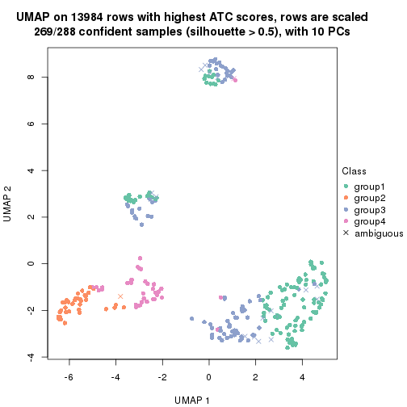
dimension_reduction(res, k = 5, method = "UMAP")
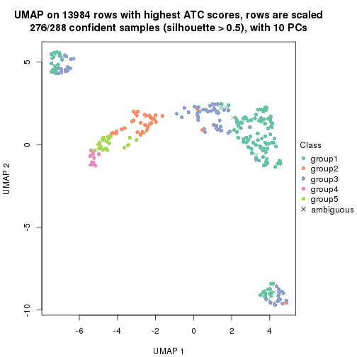
dimension_reduction(res, k = 6, method = "UMAP")
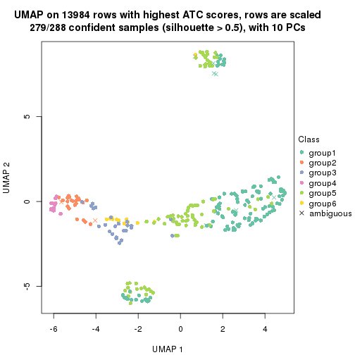
Following heatmap shows how subgroups are split when increasing k:
collect_classes(res)
If matrix rows can be associated to genes, consider to use functional_enrichment(res,
...) to perform function enrichment for the signature genes. See this vignette for more detailed explanations.
The object with results only for a single top-value method and a single partition method can be extracted as:
res = res_list["ATC", "mclust"]
# you can also extract it by
# res = res_list["ATC:mclust"]
A summary of res and all the functions that can be applied to it:
res
#> A 'ConsensusPartition' object with k = 2, 3, 4, 5, 6.
#> On a matrix with 13984 rows and 288 columns.
#> Top rows (1000, 2000, 3000, 4000, 5000) are extracted by 'ATC' method.
#> Subgroups are detected by 'mclust' method.
#> Performed in total 1250 partitions by row resampling.
#> Best k for subgroups seems to be 3.
#>
#> Following methods can be applied to this 'ConsensusPartition' object:
#> [1] "cola_report" "collect_classes" "collect_plots"
#> [4] "collect_stats" "colnames" "compare_signatures"
#> [7] "consensus_heatmap" "dimension_reduction" "functional_enrichment"
#> [10] "get_anno_col" "get_anno" "get_classes"
#> [13] "get_consensus" "get_matrix" "get_membership"
#> [16] "get_param" "get_signatures" "get_stats"
#> [19] "is_best_k" "is_stable_k" "membership_heatmap"
#> [22] "ncol" "nrow" "plot_ecdf"
#> [25] "rownames" "select_partition_number" "show"
#> [28] "suggest_best_k" "test_to_known_factors"
collect_plots() function collects all the plots made from res for all k (number of partitions)
into one single page to provide an easy and fast comparison between different k.
collect_plots(res)
The plots are:
k and the heatmap of
predicted classes for each k.k.k.k.All the plots in panels can be made by individual functions and they are plotted later in this section.
select_partition_number() produces several plots showing different
statistics for choosing “optimized” k. There are following statistics:
k;k, the area increased is defined as \(A_k - A_{k-1}\).The detailed explanations of these statistics can be found in the cola vignette.
Generally speaking, lower PAC score, higher mean silhouette score or higher
concordance corresponds to better partition. Rand index and Jaccard index
measure how similar the current partition is compared to partition with k-1.
If they are too similar, we won't accept k is better than k-1.
select_partition_number(res)
The numeric values for all these statistics can be obtained by get_stats().
get_stats(res)
#> k 1-PAC mean_silhouette concordance area_increased Rand Jaccard
#> 2 2 0.842 0.902 0.959 0.4974 0.499 0.499
#> 3 3 0.872 0.909 0.957 0.3285 0.746 0.533
#> 4 4 0.840 0.847 0.925 0.0798 0.915 0.761
#> 5 5 0.735 0.691 0.818 0.0611 0.931 0.772
#> 6 6 0.710 0.641 0.785 0.0445 0.919 0.706
suggest_best_k() suggests the best \(k\) based on these statistics. The rules are as follows:
suggest_best_k(res)
#> [1] 3
Following shows the table of the partitions (You need to click the show/hide
code output link to see it). The membership matrix (columns with name p*)
is inferred by
clue::cl_consensus()
function with the SE method. Basically the value in the membership matrix
represents the probability to belong to a certain group. The finall class
label for an item is determined with the group with highest probability it
belongs to.
In get_classes() function, the entropy is calculated from the membership
matrix and the silhouette score is calculated from the consensus matrix.
cbind(get_classes(res, k = 2), get_membership(res, k = 2))
#> class entropy silhouette p1 p2
#> SRR1982614 2 0.0000 0.9729 0.000 1.000
#> SRR1982613 2 0.0000 0.9729 0.000 1.000
#> SRR1982612 2 0.0000 0.9729 0.000 1.000
#> SRR1982611 2 0.0000 0.9729 0.000 1.000
#> SRR1982610 1 0.0000 0.9401 1.000 0.000
#> SRR1982609 1 0.0000 0.9401 1.000 0.000
#> SRR1982659 1 0.0000 0.9401 1.000 0.000
#> SRR1982692 2 0.0000 0.9729 0.000 1.000
#> SRR1982722 1 0.0000 0.9401 1.000 0.000
#> SRR1982750 2 0.0000 0.9729 0.000 1.000
#> SRR2095031 2 0.0000 0.9729 0.000 1.000
#> SRR1982780 1 0.0000 0.9401 1.000 0.000
#> SRR1982807 1 0.0000 0.9401 1.000 0.000
#> SRR1982830 1 0.0000 0.9401 1.000 0.000
#> SRR1982829 2 0.0000 0.9729 0.000 1.000
#> SRR1982828 2 0.0000 0.9729 0.000 1.000
#> SRR1982827 1 0.0000 0.9401 1.000 0.000
#> SRR1982826 1 0.0000 0.9401 1.000 0.000
#> SRR1982825 1 0.0000 0.9401 1.000 0.000
#> SRR1982824 1 0.0000 0.9401 1.000 0.000
#> SRR1982823 1 0.0000 0.9401 1.000 0.000
#> SRR1982822 1 0.0000 0.9401 1.000 0.000
#> SRR1982821 1 0.0000 0.9401 1.000 0.000
#> SRR1982820 1 0.0000 0.9401 1.000 0.000
#> SRR1982819 1 0.0000 0.9401 1.000 0.000
#> SRR1982818 1 0.0000 0.9401 1.000 0.000
#> SRR1982817 1 0.0000 0.9401 1.000 0.000
#> SRR1982816 1 0.0000 0.9401 1.000 0.000
#> SRR1982815 1 0.0000 0.9401 1.000 0.000
#> SRR1982814 1 0.0000 0.9401 1.000 0.000
#> SRR1982813 1 0.0000 0.9401 1.000 0.000
#> SRR1982812 2 0.0000 0.9729 0.000 1.000
#> SRR1982811 2 0.0000 0.9729 0.000 1.000
#> SRR1982810 2 0.0000 0.9729 0.000 1.000
#> SRR1982809 2 0.0000 0.9729 0.000 1.000
#> SRR1982808 2 0.0000 0.9729 0.000 1.000
#> SRR1982806 1 0.0000 0.9401 1.000 0.000
#> SRR1982805 1 0.0000 0.9401 1.000 0.000
#> SRR1982804 1 0.0000 0.9401 1.000 0.000
#> SRR1982803 2 0.0000 0.9729 0.000 1.000
#> SRR1982802 1 0.0000 0.9401 1.000 0.000
#> SRR1982801 1 0.0000 0.9401 1.000 0.000
#> SRR1982800 1 0.0000 0.9401 1.000 0.000
#> SRR1982799 1 0.0000 0.9401 1.000 0.000
#> SRR1982798 1 0.0000 0.9401 1.000 0.000
#> SRR1982797 2 0.0000 0.9729 0.000 1.000
#> SRR1982796 2 0.7528 0.7007 0.216 0.784
#> SRR1982795 1 0.0000 0.9401 1.000 0.000
#> SRR1982794 1 0.0000 0.9401 1.000 0.000
#> SRR1982793 1 0.0000 0.9401 1.000 0.000
#> SRR1982792 1 0.0000 0.9401 1.000 0.000
#> SRR1982791 2 0.7219 0.7269 0.200 0.800
#> SRR1982790 2 0.0000 0.9729 0.000 1.000
#> SRR1982789 1 0.0000 0.9401 1.000 0.000
#> SRR1982788 1 0.0000 0.9401 1.000 0.000
#> SRR1982787 1 0.0000 0.9401 1.000 0.000
#> SRR1982786 2 0.0000 0.9729 0.000 1.000
#> SRR1982785 2 0.6801 0.7578 0.180 0.820
#> SRR1982784 1 0.0000 0.9401 1.000 0.000
#> SRR1982783 1 0.8955 0.5958 0.688 0.312
#> SRR1982782 1 0.0000 0.9401 1.000 0.000
#> SRR1982781 1 0.0000 0.9401 1.000 0.000
#> SRR1982779 2 0.0000 0.9729 0.000 1.000
#> SRR1982778 1 0.0000 0.9401 1.000 0.000
#> SRR1982776 2 0.0000 0.9729 0.000 1.000
#> SRR1982777 2 0.0000 0.9729 0.000 1.000
#> SRR1982775 1 0.0000 0.9401 1.000 0.000
#> SRR1982774 2 0.0000 0.9729 0.000 1.000
#> SRR1982772 1 0.0000 0.9401 1.000 0.000
#> SRR1982773 2 0.0000 0.9729 0.000 1.000
#> SRR1982770 1 0.0000 0.9401 1.000 0.000
#> SRR1982771 1 0.0000 0.9401 1.000 0.000
#> SRR1982769 2 0.0000 0.9729 0.000 1.000
#> SRR1982768 2 0.0000 0.9729 0.000 1.000
#> SRR1982767 2 0.0000 0.9729 0.000 1.000
#> SRR1982766 2 0.0000 0.9729 0.000 1.000
#> SRR1982765 2 0.7674 0.6869 0.224 0.776
#> SRR1982764 2 0.0000 0.9729 0.000 1.000
#> SRR1982762 1 0.0000 0.9401 1.000 0.000
#> SRR1982760 1 0.0000 0.9401 1.000 0.000
#> SRR1982761 1 0.0000 0.9401 1.000 0.000
#> SRR1982763 2 0.0000 0.9729 0.000 1.000
#> SRR1982759 1 0.0000 0.9401 1.000 0.000
#> SRR1982758 2 0.0000 0.9729 0.000 1.000
#> SRR1982757 2 0.0000 0.9729 0.000 1.000
#> SRR1982755 1 0.0000 0.9401 1.000 0.000
#> SRR1982754 1 0.0000 0.9401 1.000 0.000
#> SRR1982756 2 0.9993 -0.0356 0.484 0.516
#> SRR1982753 2 0.0000 0.9729 0.000 1.000
#> SRR1982751 2 0.0000 0.9729 0.000 1.000
#> SRR1982752 2 0.0000 0.9729 0.000 1.000
#> SRR1982749 2 0.0000 0.9729 0.000 1.000
#> SRR1982748 2 0.0000 0.9729 0.000 1.000
#> SRR1982747 2 0.0000 0.9729 0.000 1.000
#> SRR1982746 2 0.0000 0.9729 0.000 1.000
#> SRR1982745 2 0.0000 0.9729 0.000 1.000
#> SRR1982743 2 0.0000 0.9729 0.000 1.000
#> SRR1982744 2 0.0000 0.9729 0.000 1.000
#> SRR1982741 2 0.0000 0.9729 0.000 1.000
#> SRR1982742 2 0.0000 0.9729 0.000 1.000
#> SRR2095014 2 0.0000 0.9729 0.000 1.000
#> SRR1982740 2 0.0000 0.9729 0.000 1.000
#> SRR1982739 2 0.0000 0.9729 0.000 1.000
#> SRR1982737 2 0.0000 0.9729 0.000 1.000
#> SRR1982738 2 0.0000 0.9729 0.000 1.000
#> SRR1982736 2 0.0000 0.9729 0.000 1.000
#> SRR1982735 2 0.0000 0.9729 0.000 1.000
#> SRR1982733 2 0.0000 0.9729 0.000 1.000
#> SRR1982732 2 0.0000 0.9729 0.000 1.000
#> SRR2095004 2 0.0000 0.9729 0.000 1.000
#> SRR1982734 2 0.0000 0.9729 0.000 1.000
#> SRR1982731 2 0.0000 0.9729 0.000 1.000
#> SRR1982729 2 0.0000 0.9729 0.000 1.000
#> SRR1982730 2 0.0000 0.9729 0.000 1.000
#> SRR1982728 2 0.0000 0.9729 0.000 1.000
#> SRR1982727 2 0.0000 0.9729 0.000 1.000
#> SRR1982726 1 0.0000 0.9401 1.000 0.000
#> SRR1982723 1 0.8386 0.6656 0.732 0.268
#> SRR1982725 1 0.9044 0.5804 0.680 0.320
#> SRR1982724 1 0.0672 0.9344 0.992 0.008
#> SRR1982721 1 0.0000 0.9401 1.000 0.000
#> SRR1982720 1 0.0000 0.9401 1.000 0.000
#> SRR1982719 1 0.0000 0.9401 1.000 0.000
#> SRR1982718 2 0.0000 0.9729 0.000 1.000
#> SRR1982717 2 0.0000 0.9729 0.000 1.000
#> SRR1982715 2 0.0000 0.9729 0.000 1.000
#> SRR1982714 2 0.0000 0.9729 0.000 1.000
#> SRR1982716 2 0.0000 0.9729 0.000 1.000
#> SRR1982713 2 0.0000 0.9729 0.000 1.000
#> SRR1982711 2 0.0000 0.9729 0.000 1.000
#> SRR1982712 2 0.0000 0.9729 0.000 1.000
#> SRR1982710 2 0.0000 0.9729 0.000 1.000
#> SRR1982708 2 0.0000 0.9729 0.000 1.000
#> SRR1982707 2 0.0000 0.9729 0.000 1.000
#> SRR1982709 2 0.6048 0.8039 0.148 0.852
#> SRR1982705 2 0.0000 0.9729 0.000 1.000
#> SRR1982706 1 0.0000 0.9401 1.000 0.000
#> SRR1982704 2 0.0000 0.9729 0.000 1.000
#> SRR1982702 2 0.0000 0.9729 0.000 1.000
#> SRR1982703 2 0.0000 0.9729 0.000 1.000
#> SRR1982701 2 0.0000 0.9729 0.000 1.000
#> SRR1982700 2 0.0000 0.9729 0.000 1.000
#> SRR1982697 2 0.0000 0.9729 0.000 1.000
#> SRR1982698 2 0.0000 0.9729 0.000 1.000
#> SRR1982699 2 0.0000 0.9729 0.000 1.000
#> SRR1982696 2 0.0000 0.9729 0.000 1.000
#> SRR1982695 1 0.0000 0.9401 1.000 0.000
#> SRR1982694 1 0.0000 0.9401 1.000 0.000
#> SRR1982693 2 0.0000 0.9729 0.000 1.000
#> SRR1982690 2 0.0000 0.9729 0.000 1.000
#> SRR1982691 2 0.0000 0.9729 0.000 1.000
#> SRR1982689 2 0.0000 0.9729 0.000 1.000
#> SRR1982688 1 0.0000 0.9401 1.000 0.000
#> SRR1982687 2 0.0000 0.9729 0.000 1.000
#> SRR1982686 2 0.0000 0.9729 0.000 1.000
#> SRR1982685 2 0.0000 0.9729 0.000 1.000
#> SRR1982684 2 0.0000 0.9729 0.000 1.000
#> SRR1982683 2 0.0000 0.9729 0.000 1.000
#> SRR1982681 2 0.0000 0.9729 0.000 1.000
#> SRR1982682 2 0.0000 0.9729 0.000 1.000
#> SRR1982680 2 0.0000 0.9729 0.000 1.000
#> SRR1982679 2 0.0000 0.9729 0.000 1.000
#> SRR1982678 2 0.0000 0.9729 0.000 1.000
#> SRR1982677 2 0.0000 0.9729 0.000 1.000
#> SRR1982676 1 0.0000 0.9401 1.000 0.000
#> SRR1982675 1 0.0000 0.9401 1.000 0.000
#> SRR1982674 2 0.0000 0.9729 0.000 1.000
#> SRR1982671 2 0.0000 0.9729 0.000 1.000
#> SRR1982673 1 0.0000 0.9401 1.000 0.000
#> SRR1982672 1 0.0000 0.9401 1.000 0.000
#> SRR1982670 1 0.9988 0.1604 0.520 0.480
#> SRR1982669 1 0.0000 0.9401 1.000 0.000
#> SRR1982667 1 0.3584 0.8872 0.932 0.068
#> SRR1982668 2 0.0000 0.9729 0.000 1.000
#> SRR1982666 1 0.0000 0.9401 1.000 0.000
#> SRR1982665 2 0.0000 0.9729 0.000 1.000
#> SRR1982664 1 0.0000 0.9401 1.000 0.000
#> SRR1982663 1 0.0000 0.9401 1.000 0.000
#> SRR1982662 1 0.0000 0.9401 1.000 0.000
#> SRR1982661 1 0.0000 0.9401 1.000 0.000
#> SRR1982660 1 0.0000 0.9401 1.000 0.000
#> SRR1982658 1 0.0000 0.9401 1.000 0.000
#> SRR1982657 1 0.0000 0.9401 1.000 0.000
#> SRR1982656 2 0.0000 0.9729 0.000 1.000
#> SRR1982654 1 0.0000 0.9401 1.000 0.000
#> SRR1982655 1 0.0000 0.9401 1.000 0.000
#> SRR1982653 1 0.0000 0.9401 1.000 0.000
#> SRR1982652 1 0.0000 0.9401 1.000 0.000
#> SRR1982651 1 0.0000 0.9401 1.000 0.000
#> SRR1982649 2 0.0000 0.9729 0.000 1.000
#> SRR1982650 1 0.0000 0.9401 1.000 0.000
#> SRR1982648 1 0.0000 0.9401 1.000 0.000
#> SRR1982647 1 0.0000 0.9401 1.000 0.000
#> SRR1982646 2 0.0000 0.9729 0.000 1.000
#> SRR1982645 1 0.0000 0.9401 1.000 0.000
#> SRR1982644 1 0.0000 0.9401 1.000 0.000
#> SRR1982642 1 0.0000 0.9401 1.000 0.000
#> SRR1982643 1 0.0000 0.9401 1.000 0.000
#> SRR1982641 1 0.0000 0.9401 1.000 0.000
#> SRR1982640 1 0.0000 0.9401 1.000 0.000
#> SRR1982638 1 0.0000 0.9401 1.000 0.000
#> SRR1982639 1 0.0000 0.9401 1.000 0.000
#> SRR1982637 1 0.0000 0.9401 1.000 0.000
#> SRR1982635 1 0.0000 0.9401 1.000 0.000
#> SRR1982636 1 0.0000 0.9401 1.000 0.000
#> SRR1982633 1 0.0000 0.9401 1.000 0.000
#> SRR1982632 1 0.0000 0.9401 1.000 0.000
#> SRR1982631 1 0.0000 0.9401 1.000 0.000
#> SRR1982634 1 0.0000 0.9401 1.000 0.000
#> SRR1982628 2 0.0000 0.9729 0.000 1.000
#> SRR1982629 2 0.0000 0.9729 0.000 1.000
#> SRR1982627 2 0.0000 0.9729 0.000 1.000
#> SRR1982625 1 0.0000 0.9401 1.000 0.000
#> SRR1982626 1 0.0000 0.9401 1.000 0.000
#> SRR1982624 1 0.7139 0.7604 0.804 0.196
#> SRR1982623 1 0.0000 0.9401 1.000 0.000
#> SRR1982622 1 0.0000 0.9401 1.000 0.000
#> SRR1982621 2 0.0000 0.9729 0.000 1.000
#> SRR1982620 2 0.7376 0.7139 0.208 0.792
#> SRR1982619 2 0.0000 0.9729 0.000 1.000
#> SRR1982618 1 0.0000 0.9401 1.000 0.000
#> SRR1982617 2 0.0000 0.9729 0.000 1.000
#> SRR1982616 1 0.0376 0.9372 0.996 0.004
#> SRR1982615 1 0.0000 0.9401 1.000 0.000
#> SRR1982608 2 0.0000 0.9729 0.000 1.000
#> SRR1982607 1 0.0000 0.9401 1.000 0.000
#> SRR1982606 1 0.0000 0.9401 1.000 0.000
#> SRR1982605 1 0.0000 0.9401 1.000 0.000
#> SRR1982604 1 0.0000 0.9401 1.000 0.000
#> SRR1982603 1 0.0000 0.9401 1.000 0.000
#> SRR1982602 1 0.0000 0.9401 1.000 0.000
#> SRR1982601 1 0.0000 0.9401 1.000 0.000
#> SRR1982599 1 0.0000 0.9401 1.000 0.000
#> SRR1982600 2 0.0000 0.9729 0.000 1.000
#> SRR1982598 1 0.0000 0.9401 1.000 0.000
#> SRR1982597 1 0.0000 0.9401 1.000 0.000
#> SRR1982595 1 0.0000 0.9401 1.000 0.000
#> SRR1982596 1 0.0000 0.9401 1.000 0.000
#> SRR1982594 1 0.0000 0.9401 1.000 0.000
#> SRR1982593 1 0.0000 0.9401 1.000 0.000
#> SRR1982592 2 0.0000 0.9729 0.000 1.000
#> SRR1982591 2 0.0000 0.9729 0.000 1.000
#> SRR1982590 2 0.0000 0.9729 0.000 1.000
#> SRR1982589 2 0.0376 0.9692 0.004 0.996
#> SRR1982588 1 0.0000 0.9401 1.000 0.000
#> SRR1982587 1 0.0000 0.9401 1.000 0.000
#> SRR1982586 1 0.0000 0.9401 1.000 0.000
#> SRR1982584 2 0.0000 0.9729 0.000 1.000
#> SRR2096514 1 0.7602 0.7313 0.780 0.220
#> SRR2096513 1 0.9209 0.5492 0.664 0.336
#> SRR2096511 1 0.8909 0.6023 0.692 0.308
#> SRR2096512 2 0.0000 0.9729 0.000 1.000
#> SRR2096509 1 0.7528 0.7363 0.784 0.216
#> SRR2096510 1 0.9129 0.5651 0.672 0.328
#> SRR2096508 2 0.0000 0.9729 0.000 1.000
#> SRR2096507 2 0.8861 0.5285 0.304 0.696
#> SRR2096504 2 0.9963 0.0473 0.464 0.536
#> SRR2096506 1 0.8955 0.5953 0.688 0.312
#> SRR2096505 1 0.9775 0.3709 0.588 0.412
#> SRR2096503 2 0.0000 0.9729 0.000 1.000
#> SRR2096500 1 0.8443 0.6597 0.728 0.272
#> SRR2096501 2 0.0000 0.9729 0.000 1.000
#> SRR2096502 1 0.8909 0.6023 0.692 0.308
#> SRR2096499 1 1.0000 0.0859 0.500 0.500
#> SRR2096498 2 0.1414 0.9538 0.020 0.980
#> SRR2096496 2 0.0000 0.9729 0.000 1.000
#> SRR2096497 1 0.8909 0.6023 0.692 0.308
#> SRR2096495 2 0.0000 0.9729 0.000 1.000
#> SRR2096494 2 0.0000 0.9729 0.000 1.000
#> SRR2096492 1 0.8955 0.5953 0.688 0.312
#> SRR2096491 2 0.0000 0.9729 0.000 1.000
#> SRR2096493 1 0.8909 0.6023 0.692 0.308
#> SRR2096490 2 0.9988 -0.0258 0.480 0.520
#> SRR2096488 1 0.9427 0.4986 0.640 0.360
#> SRR2096489 1 0.9944 0.2413 0.544 0.456
#> SRR2096487 2 0.9580 0.3338 0.380 0.620
#> SRR2096484 1 0.7950 0.7051 0.760 0.240
#> SRR2096486 2 0.1633 0.9497 0.024 0.976
#> SRR2096485 1 0.8608 0.6415 0.716 0.284
#> SRR2096483 1 0.4161 0.8730 0.916 0.084
#> SRR2096482 1 0.7602 0.7313 0.780 0.220
#> SRR2096481 2 0.0000 0.9729 0.000 1.000
#> SRR2096520 1 0.0000 0.9401 1.000 0.000
#> SRR2096519 1 0.8909 0.6034 0.692 0.308
#> SRR2096518 1 0.7139 0.7601 0.804 0.196
#> SRR2096516 1 0.0000 0.9401 1.000 0.000
#> SRR2096517 1 0.8608 0.6415 0.716 0.284
#> SRR2096515 1 0.7602 0.7313 0.780 0.220
cbind(get_classes(res, k = 3), get_membership(res, k = 3))
#> class entropy silhouette p1 p2 p3
#> SRR1982614 3 0.2165 0.8931 0.000 0.064 0.936
#> SRR1982613 3 0.5216 0.6531 0.000 0.260 0.740
#> SRR1982612 3 0.1411 0.9099 0.000 0.036 0.964
#> SRR1982611 3 0.1529 0.9084 0.000 0.040 0.960
#> SRR1982610 1 0.6126 0.2838 0.600 0.000 0.400
#> SRR1982609 1 0.0000 0.9692 1.000 0.000 0.000
#> SRR1982659 1 0.0000 0.9692 1.000 0.000 0.000
#> SRR1982692 2 0.0000 0.9763 0.000 1.000 0.000
#> SRR1982722 1 0.0000 0.9692 1.000 0.000 0.000
#> SRR1982750 2 0.0000 0.9763 0.000 1.000 0.000
#> SRR2095031 2 0.0000 0.9763 0.000 1.000 0.000
#> SRR1982780 3 0.6111 0.4032 0.396 0.000 0.604
#> SRR1982807 1 0.0000 0.9692 1.000 0.000 0.000
#> SRR1982830 1 0.0000 0.9692 1.000 0.000 0.000
#> SRR1982829 3 0.1643 0.9068 0.000 0.044 0.956
#> SRR1982828 3 0.1647 0.9104 0.004 0.036 0.960
#> SRR1982827 3 0.6252 0.2601 0.444 0.000 0.556
#> SRR1982826 1 0.0000 0.9692 1.000 0.000 0.000
#> SRR1982825 1 0.0000 0.9692 1.000 0.000 0.000
#> SRR1982824 1 0.6225 0.1867 0.568 0.000 0.432
#> SRR1982823 1 0.0000 0.9692 1.000 0.000 0.000
#> SRR1982822 1 0.4555 0.7419 0.800 0.000 0.200
#> SRR1982821 1 0.0000 0.9692 1.000 0.000 0.000
#> SRR1982820 1 0.0000 0.9692 1.000 0.000 0.000
#> SRR1982819 1 0.0000 0.9692 1.000 0.000 0.000
#> SRR1982818 1 0.0000 0.9692 1.000 0.000 0.000
#> SRR1982817 1 0.0000 0.9692 1.000 0.000 0.000
#> SRR1982816 1 0.0000 0.9692 1.000 0.000 0.000
#> SRR1982815 1 0.0000 0.9692 1.000 0.000 0.000
#> SRR1982814 1 0.0000 0.9692 1.000 0.000 0.000
#> SRR1982813 1 0.6260 0.1174 0.552 0.000 0.448
#> SRR1982812 2 0.0000 0.9763 0.000 1.000 0.000
#> SRR1982811 3 0.1411 0.9099 0.000 0.036 0.964
#> SRR1982810 3 0.6079 0.3674 0.000 0.388 0.612
#> SRR1982809 2 0.3192 0.8753 0.000 0.888 0.112
#> SRR1982808 3 0.1529 0.9084 0.000 0.040 0.960
#> SRR1982806 1 0.0000 0.9692 1.000 0.000 0.000
#> SRR1982805 1 0.0000 0.9692 1.000 0.000 0.000
#> SRR1982804 1 0.4291 0.7643 0.820 0.000 0.180
#> SRR1982803 3 0.1643 0.9067 0.000 0.044 0.956
#> SRR1982802 1 0.0000 0.9692 1.000 0.000 0.000
#> SRR1982801 1 0.0000 0.9692 1.000 0.000 0.000
#> SRR1982800 1 0.1964 0.9182 0.944 0.000 0.056
#> SRR1982799 1 0.0000 0.9692 1.000 0.000 0.000
#> SRR1982798 1 0.0000 0.9692 1.000 0.000 0.000
#> SRR1982797 3 0.6309 0.0415 0.000 0.496 0.504
#> SRR1982796 3 0.0661 0.9131 0.004 0.008 0.988
#> SRR1982795 1 0.1031 0.9503 0.976 0.000 0.024
#> SRR1982794 1 0.1643 0.9302 0.956 0.000 0.044
#> SRR1982793 1 0.0000 0.9692 1.000 0.000 0.000
#> SRR1982792 1 0.0000 0.9692 1.000 0.000 0.000
#> SRR1982791 3 0.1525 0.9114 0.004 0.032 0.964
#> SRR1982790 2 0.0000 0.9763 0.000 1.000 0.000
#> SRR1982789 1 0.0000 0.9692 1.000 0.000 0.000
#> SRR1982788 1 0.0592 0.9594 0.988 0.000 0.012
#> SRR1982787 1 0.1031 0.9489 0.976 0.000 0.024
#> SRR1982786 3 0.5058 0.6786 0.000 0.244 0.756
#> SRR1982785 3 0.0592 0.9128 0.000 0.012 0.988
#> SRR1982784 1 0.0000 0.9692 1.000 0.000 0.000
#> SRR1982783 3 0.1765 0.9094 0.004 0.040 0.956
#> SRR1982782 1 0.0000 0.9692 1.000 0.000 0.000
#> SRR1982781 1 0.0000 0.9692 1.000 0.000 0.000
#> SRR1982779 3 0.0592 0.9128 0.000 0.012 0.988
#> SRR1982778 1 0.0000 0.9692 1.000 0.000 0.000
#> SRR1982776 2 0.0000 0.9763 0.000 1.000 0.000
#> SRR1982777 2 0.1529 0.9438 0.000 0.960 0.040
#> SRR1982775 1 0.0000 0.9692 1.000 0.000 0.000
#> SRR1982774 3 0.0592 0.9128 0.000 0.012 0.988
#> SRR1982772 1 0.0000 0.9692 1.000 0.000 0.000
#> SRR1982773 3 0.0592 0.9128 0.000 0.012 0.988
#> SRR1982770 1 0.0000 0.9692 1.000 0.000 0.000
#> SRR1982771 3 0.6192 0.3422 0.420 0.000 0.580
#> SRR1982769 2 0.4178 0.8073 0.000 0.828 0.172
#> SRR1982768 2 0.4931 0.7183 0.000 0.768 0.232
#> SRR1982767 3 0.1163 0.9117 0.000 0.028 0.972
#> SRR1982766 2 0.6111 0.3325 0.000 0.604 0.396
#> SRR1982765 3 0.1711 0.9117 0.008 0.032 0.960
#> SRR1982764 2 0.4062 0.8170 0.000 0.836 0.164
#> SRR1982762 1 0.0000 0.9692 1.000 0.000 0.000
#> SRR1982760 1 0.0000 0.9692 1.000 0.000 0.000
#> SRR1982761 1 0.0237 0.9659 0.996 0.000 0.004
#> SRR1982763 2 0.0000 0.9763 0.000 1.000 0.000
#> SRR1982759 3 0.4121 0.8031 0.168 0.000 0.832
#> SRR1982758 2 0.1860 0.9332 0.000 0.948 0.052
#> SRR1982757 3 0.1529 0.9087 0.000 0.040 0.960
#> SRR1982755 1 0.0000 0.9692 1.000 0.000 0.000
#> SRR1982754 3 0.3340 0.8495 0.120 0.000 0.880
#> SRR1982756 3 0.1525 0.9114 0.004 0.032 0.964
#> SRR1982753 3 0.0592 0.9128 0.000 0.012 0.988
#> SRR1982751 2 0.0000 0.9763 0.000 1.000 0.000
#> SRR1982752 2 0.0000 0.9763 0.000 1.000 0.000
#> SRR1982749 2 0.0000 0.9763 0.000 1.000 0.000
#> SRR1982748 2 0.0000 0.9763 0.000 1.000 0.000
#> SRR1982747 2 0.0000 0.9763 0.000 1.000 0.000
#> SRR1982746 2 0.0000 0.9763 0.000 1.000 0.000
#> SRR1982745 2 0.0000 0.9763 0.000 1.000 0.000
#> SRR1982743 2 0.0000 0.9763 0.000 1.000 0.000
#> SRR1982744 2 0.0000 0.9763 0.000 1.000 0.000
#> SRR1982741 2 0.0000 0.9763 0.000 1.000 0.000
#> SRR1982742 2 0.0000 0.9763 0.000 1.000 0.000
#> SRR2095014 2 0.0000 0.9763 0.000 1.000 0.000
#> SRR1982740 2 0.0000 0.9763 0.000 1.000 0.000
#> SRR1982739 2 0.0000 0.9763 0.000 1.000 0.000
#> SRR1982737 2 0.0000 0.9763 0.000 1.000 0.000
#> SRR1982738 2 0.0000 0.9763 0.000 1.000 0.000
#> SRR1982736 2 0.0000 0.9763 0.000 1.000 0.000
#> SRR1982735 2 0.0000 0.9763 0.000 1.000 0.000
#> SRR1982733 2 0.0000 0.9763 0.000 1.000 0.000
#> SRR1982732 2 0.0000 0.9763 0.000 1.000 0.000
#> SRR2095004 2 0.0000 0.9763 0.000 1.000 0.000
#> SRR1982734 2 0.0000 0.9763 0.000 1.000 0.000
#> SRR1982731 2 0.0000 0.9763 0.000 1.000 0.000
#> SRR1982729 2 0.0000 0.9763 0.000 1.000 0.000
#> SRR1982730 2 0.0000 0.9763 0.000 1.000 0.000
#> SRR1982728 2 0.0000 0.9763 0.000 1.000 0.000
#> SRR1982727 3 0.4178 0.7826 0.000 0.172 0.828
#> SRR1982726 3 0.5397 0.6480 0.280 0.000 0.720
#> SRR1982723 3 0.1765 0.9094 0.004 0.040 0.956
#> SRR1982725 3 0.1647 0.9107 0.004 0.036 0.960
#> SRR1982724 3 0.5785 0.5497 0.332 0.000 0.668
#> SRR1982721 1 0.0000 0.9692 1.000 0.000 0.000
#> SRR1982720 1 0.0000 0.9692 1.000 0.000 0.000
#> SRR1982719 1 0.0000 0.9692 1.000 0.000 0.000
#> SRR1982718 2 0.0000 0.9763 0.000 1.000 0.000
#> SRR1982717 2 0.0000 0.9763 0.000 1.000 0.000
#> SRR1982715 2 0.0000 0.9763 0.000 1.000 0.000
#> SRR1982714 2 0.0000 0.9763 0.000 1.000 0.000
#> SRR1982716 2 0.0000 0.9763 0.000 1.000 0.000
#> SRR1982713 2 0.0000 0.9763 0.000 1.000 0.000
#> SRR1982711 2 0.0000 0.9763 0.000 1.000 0.000
#> SRR1982712 2 0.0000 0.9763 0.000 1.000 0.000
#> SRR1982710 2 0.0000 0.9763 0.000 1.000 0.000
#> SRR1982708 2 0.0000 0.9763 0.000 1.000 0.000
#> SRR1982707 2 0.0000 0.9763 0.000 1.000 0.000
#> SRR1982709 3 0.1753 0.9048 0.000 0.048 0.952
#> SRR1982705 2 0.0000 0.9763 0.000 1.000 0.000
#> SRR1982706 1 0.0000 0.9692 1.000 0.000 0.000
#> SRR1982704 3 0.1529 0.9087 0.000 0.040 0.960
#> SRR1982702 2 0.0000 0.9763 0.000 1.000 0.000
#> SRR1982703 2 0.0000 0.9763 0.000 1.000 0.000
#> SRR1982701 2 0.0000 0.9763 0.000 1.000 0.000
#> SRR1982700 2 0.0000 0.9763 0.000 1.000 0.000
#> SRR1982697 2 0.0000 0.9763 0.000 1.000 0.000
#> SRR1982698 2 0.0000 0.9763 0.000 1.000 0.000
#> SRR1982699 2 0.0000 0.9763 0.000 1.000 0.000
#> SRR1982696 2 0.0000 0.9763 0.000 1.000 0.000
#> SRR1982695 1 0.0000 0.9692 1.000 0.000 0.000
#> SRR1982694 1 0.0000 0.9692 1.000 0.000 0.000
#> SRR1982693 2 0.0000 0.9763 0.000 1.000 0.000
#> SRR1982690 2 0.0000 0.9763 0.000 1.000 0.000
#> SRR1982691 2 0.0000 0.9763 0.000 1.000 0.000
#> SRR1982689 2 0.0000 0.9763 0.000 1.000 0.000
#> SRR1982688 1 0.0000 0.9692 1.000 0.000 0.000
#> SRR1982687 2 0.0000 0.9763 0.000 1.000 0.000
#> SRR1982686 2 0.0000 0.9763 0.000 1.000 0.000
#> SRR1982685 2 0.0000 0.9763 0.000 1.000 0.000
#> SRR1982684 2 0.0000 0.9763 0.000 1.000 0.000
#> SRR1982683 3 0.1643 0.9070 0.000 0.044 0.956
#> SRR1982681 2 0.0000 0.9763 0.000 1.000 0.000
#> SRR1982682 2 0.0000 0.9763 0.000 1.000 0.000
#> SRR1982680 2 0.0000 0.9763 0.000 1.000 0.000
#> SRR1982679 2 0.0000 0.9763 0.000 1.000 0.000
#> SRR1982678 2 0.0000 0.9763 0.000 1.000 0.000
#> SRR1982677 2 0.0000 0.9763 0.000 1.000 0.000
#> SRR1982676 1 0.0000 0.9692 1.000 0.000 0.000
#> SRR1982675 1 0.0000 0.9692 1.000 0.000 0.000
#> SRR1982674 2 0.4702 0.7459 0.000 0.788 0.212
#> SRR1982671 2 0.4062 0.8170 0.000 0.836 0.164
#> SRR1982673 1 0.0000 0.9692 1.000 0.000 0.000
#> SRR1982672 1 0.0000 0.9692 1.000 0.000 0.000
#> SRR1982670 3 0.0661 0.9131 0.004 0.008 0.988
#> SRR1982669 1 0.0000 0.9692 1.000 0.000 0.000
#> SRR1982667 3 0.3686 0.8312 0.140 0.000 0.860
#> SRR1982668 3 0.4796 0.7296 0.000 0.220 0.780
#> SRR1982666 1 0.0000 0.9692 1.000 0.000 0.000
#> SRR1982665 2 0.0000 0.9763 0.000 1.000 0.000
#> SRR1982664 1 0.5760 0.4880 0.672 0.000 0.328
#> SRR1982663 1 0.0000 0.9692 1.000 0.000 0.000
#> SRR1982662 1 0.0000 0.9692 1.000 0.000 0.000
#> SRR1982661 3 0.5098 0.6979 0.248 0.000 0.752
#> SRR1982660 1 0.0000 0.9692 1.000 0.000 0.000
#> SRR1982658 1 0.0000 0.9692 1.000 0.000 0.000
#> SRR1982657 1 0.3340 0.8477 0.880 0.000 0.120
#> SRR1982656 2 0.0000 0.9763 0.000 1.000 0.000
#> SRR1982654 1 0.0000 0.9692 1.000 0.000 0.000
#> SRR1982655 1 0.0000 0.9692 1.000 0.000 0.000
#> SRR1982653 1 0.0000 0.9692 1.000 0.000 0.000
#> SRR1982652 1 0.0000 0.9692 1.000 0.000 0.000
#> SRR1982651 1 0.0000 0.9692 1.000 0.000 0.000
#> SRR1982649 3 0.1832 0.9102 0.008 0.036 0.956
#> SRR1982650 1 0.0000 0.9692 1.000 0.000 0.000
#> SRR1982648 1 0.0000 0.9692 1.000 0.000 0.000
#> SRR1982647 1 0.0000 0.9692 1.000 0.000 0.000
#> SRR1982646 3 0.1411 0.9099 0.000 0.036 0.964
#> SRR1982645 1 0.0000 0.9692 1.000 0.000 0.000
#> SRR1982644 1 0.0000 0.9692 1.000 0.000 0.000
#> SRR1982642 1 0.0000 0.9692 1.000 0.000 0.000
#> SRR1982643 1 0.0000 0.9692 1.000 0.000 0.000
#> SRR1982641 1 0.0000 0.9692 1.000 0.000 0.000
#> SRR1982640 1 0.0000 0.9692 1.000 0.000 0.000
#> SRR1982638 1 0.0000 0.9692 1.000 0.000 0.000
#> SRR1982639 1 0.0000 0.9692 1.000 0.000 0.000
#> SRR1982637 1 0.0000 0.9692 1.000 0.000 0.000
#> SRR1982635 1 0.0000 0.9692 1.000 0.000 0.000
#> SRR1982636 1 0.3482 0.8357 0.872 0.000 0.128
#> SRR1982633 1 0.0000 0.9692 1.000 0.000 0.000
#> SRR1982632 1 0.0000 0.9692 1.000 0.000 0.000
#> SRR1982631 1 0.0000 0.9692 1.000 0.000 0.000
#> SRR1982634 1 0.5138 0.6480 0.748 0.000 0.252
#> SRR1982628 3 0.1647 0.9104 0.004 0.036 0.960
#> SRR1982629 3 0.1411 0.9099 0.000 0.036 0.964
#> SRR1982627 3 0.1411 0.9099 0.000 0.036 0.964
#> SRR1982625 1 0.3619 0.8277 0.864 0.000 0.136
#> SRR1982626 1 0.0000 0.9692 1.000 0.000 0.000
#> SRR1982624 3 0.1878 0.9024 0.044 0.004 0.952
#> SRR1982623 1 0.0000 0.9692 1.000 0.000 0.000
#> SRR1982622 1 0.0000 0.9692 1.000 0.000 0.000
#> SRR1982621 3 0.0592 0.9128 0.000 0.012 0.988
#> SRR1982620 3 0.0592 0.9128 0.000 0.012 0.988
#> SRR1982619 2 0.0000 0.9763 0.000 1.000 0.000
#> SRR1982618 1 0.0000 0.9692 1.000 0.000 0.000
#> SRR1982617 2 0.0000 0.9763 0.000 1.000 0.000
#> SRR1982616 3 0.1529 0.9032 0.040 0.000 0.960
#> SRR1982615 1 0.0000 0.9692 1.000 0.000 0.000
#> SRR1982608 2 0.0000 0.9763 0.000 1.000 0.000
#> SRR1982607 1 0.0000 0.9692 1.000 0.000 0.000
#> SRR1982606 1 0.0000 0.9692 1.000 0.000 0.000
#> SRR1982605 1 0.0000 0.9692 1.000 0.000 0.000
#> SRR1982604 1 0.0000 0.9692 1.000 0.000 0.000
#> SRR1982603 1 0.0000 0.9692 1.000 0.000 0.000
#> SRR1982602 1 0.0000 0.9692 1.000 0.000 0.000
#> SRR1982601 1 0.0000 0.9692 1.000 0.000 0.000
#> SRR1982599 1 0.0000 0.9692 1.000 0.000 0.000
#> SRR1982600 2 0.3267 0.8707 0.000 0.884 0.116
#> SRR1982598 1 0.0000 0.9692 1.000 0.000 0.000
#> SRR1982597 1 0.0000 0.9692 1.000 0.000 0.000
#> SRR1982595 1 0.0000 0.9692 1.000 0.000 0.000
#> SRR1982596 1 0.0000 0.9692 1.000 0.000 0.000
#> SRR1982594 1 0.0000 0.9692 1.000 0.000 0.000
#> SRR1982593 1 0.0000 0.9692 1.000 0.000 0.000
#> SRR1982592 2 0.1031 0.9572 0.000 0.976 0.024
#> SRR1982591 3 0.1647 0.9104 0.004 0.036 0.960
#> SRR1982590 3 0.1753 0.9048 0.000 0.048 0.952
#> SRR1982589 3 0.1647 0.9104 0.004 0.036 0.960
#> SRR1982588 3 0.2625 0.8782 0.084 0.000 0.916
#> SRR1982587 1 0.0000 0.9692 1.000 0.000 0.000
#> SRR1982586 1 0.0000 0.9692 1.000 0.000 0.000
#> SRR1982584 3 0.1860 0.9021 0.000 0.052 0.948
#> SRR2096514 3 0.3816 0.8138 0.148 0.000 0.852
#> SRR2096513 3 0.0237 0.9115 0.004 0.000 0.996
#> SRR2096511 3 0.0000 0.9105 0.000 0.000 1.000
#> SRR2096512 2 0.0000 0.9763 0.000 1.000 0.000
#> SRR2096509 3 0.4178 0.7878 0.172 0.000 0.828
#> SRR2096510 3 0.0237 0.9115 0.004 0.000 0.996
#> SRR2096508 2 0.0000 0.9763 0.000 1.000 0.000
#> SRR2096507 3 0.0475 0.9124 0.004 0.004 0.992
#> SRR2096504 3 0.0237 0.9115 0.004 0.000 0.996
#> SRR2096506 3 0.0424 0.9109 0.008 0.000 0.992
#> SRR2096505 3 0.0237 0.9115 0.004 0.000 0.996
#> SRR2096503 2 0.0000 0.9763 0.000 1.000 0.000
#> SRR2096500 3 0.3619 0.8258 0.136 0.000 0.864
#> SRR2096501 2 0.4291 0.7967 0.000 0.820 0.180
#> SRR2096502 3 0.2261 0.8823 0.068 0.000 0.932
#> SRR2096499 3 0.0237 0.9115 0.004 0.000 0.996
#> SRR2096498 3 0.0592 0.9128 0.000 0.012 0.988
#> SRR2096496 3 0.0237 0.9115 0.004 0.000 0.996
#> SRR2096497 3 0.0237 0.9115 0.004 0.000 0.996
#> SRR2096495 3 0.0747 0.9127 0.000 0.016 0.984
#> SRR2096494 3 0.0592 0.9128 0.000 0.012 0.988
#> SRR2096492 3 0.0237 0.9115 0.004 0.000 0.996
#> SRR2096491 2 0.0000 0.9763 0.000 1.000 0.000
#> SRR2096493 3 0.0237 0.9115 0.004 0.000 0.996
#> SRR2096490 3 0.0237 0.9115 0.004 0.000 0.996
#> SRR2096488 3 0.0237 0.9115 0.004 0.000 0.996
#> SRR2096489 3 0.0237 0.9115 0.004 0.000 0.996
#> SRR2096487 3 0.0237 0.9115 0.004 0.000 0.996
#> SRR2096484 3 0.4062 0.7967 0.164 0.000 0.836
#> SRR2096486 3 0.0475 0.9124 0.004 0.004 0.992
#> SRR2096485 3 0.1031 0.9059 0.024 0.000 0.976
#> SRR2096483 3 0.4796 0.7282 0.220 0.000 0.780
#> SRR2096482 3 0.4062 0.7966 0.164 0.000 0.836
#> SRR2096481 2 0.3941 0.8282 0.000 0.844 0.156
#> SRR2096520 1 0.5905 0.4314 0.648 0.000 0.352
#> SRR2096519 3 0.0237 0.9115 0.004 0.000 0.996
#> SRR2096518 3 0.4178 0.7885 0.172 0.000 0.828
#> SRR2096516 1 0.0592 0.9604 0.988 0.000 0.012
#> SRR2096517 3 0.0237 0.9115 0.004 0.000 0.996
#> SRR2096515 3 0.4291 0.7789 0.180 0.000 0.820
cbind(get_classes(res, k = 4), get_membership(res, k = 4))
#> class entropy silhouette p1 p2 p3 p4
#> SRR1982614 4 0.3638 0.7255 0.000 0.120 0.032 0.848
#> SRR1982613 4 0.3300 0.7103 0.000 0.144 0.008 0.848
#> SRR1982612 4 0.0592 0.7860 0.000 0.000 0.016 0.984
#> SRR1982611 4 0.0000 0.7854 0.000 0.000 0.000 1.000
#> SRR1982610 4 0.6011 0.0695 0.476 0.000 0.040 0.484
#> SRR1982609 1 0.0000 0.9525 1.000 0.000 0.000 0.000
#> SRR1982659 1 0.0336 0.9504 0.992 0.000 0.008 0.000
#> SRR1982692 2 0.0469 0.9475 0.000 0.988 0.000 0.012
#> SRR1982722 1 0.0000 0.9525 1.000 0.000 0.000 0.000
#> SRR1982750 2 0.0000 0.9549 0.000 1.000 0.000 0.000
#> SRR2095031 2 0.0000 0.9549 0.000 1.000 0.000 0.000
#> SRR1982780 4 0.7417 0.3625 0.284 0.000 0.208 0.508
#> SRR1982807 1 0.0817 0.9442 0.976 0.000 0.024 0.000
#> SRR1982830 1 0.0921 0.9420 0.972 0.000 0.028 0.000
#> SRR1982829 4 0.3903 0.7414 0.000 0.076 0.080 0.844
#> SRR1982828 4 0.0000 0.7854 0.000 0.000 0.000 1.000
#> SRR1982827 4 0.5256 0.5443 0.260 0.000 0.040 0.700
#> SRR1982826 1 0.0921 0.9408 0.972 0.000 0.028 0.000
#> SRR1982825 1 0.0000 0.9525 1.000 0.000 0.000 0.000
#> SRR1982824 4 0.5392 0.5310 0.280 0.000 0.040 0.680
#> SRR1982823 1 0.0469 0.9495 0.988 0.000 0.012 0.000
#> SRR1982822 1 0.5992 0.0987 0.516 0.000 0.040 0.444
#> SRR1982821 1 0.2401 0.8892 0.904 0.000 0.092 0.004
#> SRR1982820 1 0.0000 0.9525 1.000 0.000 0.000 0.000
#> SRR1982819 1 0.0000 0.9525 1.000 0.000 0.000 0.000
#> SRR1982818 1 0.0592 0.9480 0.984 0.000 0.016 0.000
#> SRR1982817 1 0.3463 0.8535 0.864 0.000 0.040 0.096
#> SRR1982816 1 0.0000 0.9525 1.000 0.000 0.000 0.000
#> SRR1982815 1 0.0000 0.9525 1.000 0.000 0.000 0.000
#> SRR1982814 1 0.0469 0.9496 0.988 0.000 0.012 0.000
#> SRR1982813 4 0.5756 0.3403 0.400 0.000 0.032 0.568
#> SRR1982812 2 0.0000 0.9549 0.000 1.000 0.000 0.000
#> SRR1982811 4 0.0000 0.7854 0.000 0.000 0.000 1.000
#> SRR1982810 4 0.5990 0.4901 0.000 0.284 0.072 0.644
#> SRR1982809 2 0.3300 0.8225 0.000 0.848 0.008 0.144
#> SRR1982808 4 0.0336 0.7858 0.000 0.000 0.008 0.992
#> SRR1982806 1 0.1706 0.9223 0.948 0.000 0.016 0.036
#> SRR1982805 1 0.0000 0.9525 1.000 0.000 0.000 0.000
#> SRR1982804 4 0.5872 0.3647 0.384 0.000 0.040 0.576
#> SRR1982803 4 0.0188 0.7857 0.000 0.004 0.000 0.996
#> SRR1982802 1 0.0000 0.9525 1.000 0.000 0.000 0.000
#> SRR1982801 1 0.0817 0.9442 0.976 0.000 0.024 0.000
#> SRR1982800 1 0.3523 0.8363 0.856 0.000 0.032 0.112
#> SRR1982799 1 0.0000 0.9525 1.000 0.000 0.000 0.000
#> SRR1982798 1 0.0336 0.9506 0.992 0.000 0.008 0.000
#> SRR1982797 4 0.1557 0.7719 0.000 0.056 0.000 0.944
#> SRR1982796 4 0.4040 0.6881 0.000 0.000 0.248 0.752
#> SRR1982795 1 0.5102 0.7338 0.764 0.000 0.100 0.136
#> SRR1982794 1 0.5834 0.6419 0.704 0.000 0.124 0.172
#> SRR1982793 1 0.0000 0.9525 1.000 0.000 0.000 0.000
#> SRR1982792 1 0.0707 0.9461 0.980 0.000 0.020 0.000
#> SRR1982791 4 0.2973 0.7405 0.000 0.000 0.144 0.856
#> SRR1982790 2 0.0000 0.9549 0.000 1.000 0.000 0.000
#> SRR1982789 1 0.0000 0.9525 1.000 0.000 0.000 0.000
#> SRR1982788 1 0.3149 0.8665 0.880 0.000 0.032 0.088
#> SRR1982787 1 0.3245 0.8565 0.872 0.000 0.028 0.100
#> SRR1982786 2 0.5417 0.5764 0.000 0.676 0.040 0.284
#> SRR1982785 4 0.4103 0.6730 0.000 0.000 0.256 0.744
#> SRR1982784 1 0.0000 0.9525 1.000 0.000 0.000 0.000
#> SRR1982783 4 0.1398 0.7851 0.000 0.004 0.040 0.956
#> SRR1982782 1 0.0000 0.9525 1.000 0.000 0.000 0.000
#> SRR1982781 1 0.0592 0.9480 0.984 0.000 0.016 0.000
#> SRR1982779 4 0.3123 0.7436 0.000 0.000 0.156 0.844
#> SRR1982778 1 0.0000 0.9525 1.000 0.000 0.000 0.000
#> SRR1982776 2 0.0000 0.9549 0.000 1.000 0.000 0.000
#> SRR1982777 2 0.3249 0.8262 0.000 0.852 0.008 0.140
#> SRR1982775 1 0.0000 0.9525 1.000 0.000 0.000 0.000
#> SRR1982774 4 0.3024 0.7545 0.000 0.000 0.148 0.852
#> SRR1982772 1 0.0336 0.9504 0.992 0.000 0.008 0.000
#> SRR1982773 4 0.3074 0.7477 0.000 0.000 0.152 0.848
#> SRR1982770 1 0.0000 0.9525 1.000 0.000 0.000 0.000
#> SRR1982771 1 0.7618 0.0656 0.464 0.000 0.228 0.308
#> SRR1982769 2 0.6453 0.3254 0.000 0.560 0.080 0.360
#> SRR1982768 4 0.6495 0.3452 0.000 0.356 0.084 0.560
#> SRR1982767 4 0.3351 0.7467 0.000 0.008 0.148 0.844
#> SRR1982766 4 0.4989 0.0235 0.000 0.472 0.000 0.528
#> SRR1982765 4 0.3688 0.7112 0.000 0.000 0.208 0.792
#> SRR1982764 2 0.6580 0.1453 0.000 0.504 0.080 0.416
#> SRR1982762 1 0.0000 0.9525 1.000 0.000 0.000 0.000
#> SRR1982760 1 0.0469 0.9484 0.988 0.000 0.012 0.000
#> SRR1982761 1 0.1938 0.9195 0.936 0.000 0.052 0.012
#> SRR1982763 2 0.0000 0.9549 0.000 1.000 0.000 0.000
#> SRR1982759 4 0.5063 0.6541 0.124 0.000 0.108 0.768
#> SRR1982758 2 0.3428 0.8191 0.000 0.844 0.012 0.144
#> SRR1982757 4 0.3707 0.7482 0.000 0.028 0.132 0.840
#> SRR1982755 1 0.2214 0.9115 0.928 0.000 0.044 0.028
#> SRR1982754 4 0.3587 0.7382 0.052 0.000 0.088 0.860
#> SRR1982756 4 0.3356 0.7291 0.000 0.000 0.176 0.824
#> SRR1982753 4 0.3123 0.7436 0.000 0.000 0.156 0.844
#> SRR1982751 2 0.0000 0.9549 0.000 1.000 0.000 0.000
#> SRR1982752 2 0.0000 0.9549 0.000 1.000 0.000 0.000
#> SRR1982749 2 0.0000 0.9549 0.000 1.000 0.000 0.000
#> SRR1982748 2 0.0000 0.9549 0.000 1.000 0.000 0.000
#> SRR1982747 2 0.0000 0.9549 0.000 1.000 0.000 0.000
#> SRR1982746 2 0.0000 0.9549 0.000 1.000 0.000 0.000
#> SRR1982745 2 0.0000 0.9549 0.000 1.000 0.000 0.000
#> SRR1982743 2 0.0000 0.9549 0.000 1.000 0.000 0.000
#> SRR1982744 2 0.0000 0.9549 0.000 1.000 0.000 0.000
#> SRR1982741 2 0.0000 0.9549 0.000 1.000 0.000 0.000
#> SRR1982742 2 0.0000 0.9549 0.000 1.000 0.000 0.000
#> SRR2095014 2 0.0000 0.9549 0.000 1.000 0.000 0.000
#> SRR1982740 2 0.0000 0.9549 0.000 1.000 0.000 0.000
#> SRR1982739 2 0.0000 0.9549 0.000 1.000 0.000 0.000
#> SRR1982737 2 0.0000 0.9549 0.000 1.000 0.000 0.000
#> SRR1982738 2 0.0000 0.9549 0.000 1.000 0.000 0.000
#> SRR1982736 2 0.0000 0.9549 0.000 1.000 0.000 0.000
#> SRR1982735 2 0.0000 0.9549 0.000 1.000 0.000 0.000
#> SRR1982733 2 0.0000 0.9549 0.000 1.000 0.000 0.000
#> SRR1982732 2 0.0000 0.9549 0.000 1.000 0.000 0.000
#> SRR2095004 2 0.0000 0.9549 0.000 1.000 0.000 0.000
#> SRR1982734 2 0.0000 0.9549 0.000 1.000 0.000 0.000
#> SRR1982731 2 0.0000 0.9549 0.000 1.000 0.000 0.000
#> SRR1982729 2 0.0000 0.9549 0.000 1.000 0.000 0.000
#> SRR1982730 2 0.0000 0.9549 0.000 1.000 0.000 0.000
#> SRR1982728 2 0.0000 0.9549 0.000 1.000 0.000 0.000
#> SRR1982727 2 0.4761 0.4728 0.000 0.628 0.000 0.372
#> SRR1982726 4 0.6049 0.5749 0.184 0.000 0.132 0.684
#> SRR1982723 4 0.1022 0.7842 0.000 0.000 0.032 0.968
#> SRR1982725 4 0.4158 0.6983 0.000 0.008 0.224 0.768
#> SRR1982724 4 0.6654 0.4492 0.296 0.000 0.116 0.588
#> SRR1982721 1 0.0000 0.9525 1.000 0.000 0.000 0.000
#> SRR1982720 1 0.0000 0.9525 1.000 0.000 0.000 0.000
#> SRR1982719 1 0.0000 0.9525 1.000 0.000 0.000 0.000
#> SRR1982718 2 0.0000 0.9549 0.000 1.000 0.000 0.000
#> SRR1982717 2 0.0000 0.9549 0.000 1.000 0.000 0.000
#> SRR1982715 2 0.0000 0.9549 0.000 1.000 0.000 0.000
#> SRR1982714 2 0.0000 0.9549 0.000 1.000 0.000 0.000
#> SRR1982716 2 0.0000 0.9549 0.000 1.000 0.000 0.000
#> SRR1982713 2 0.0000 0.9549 0.000 1.000 0.000 0.000
#> SRR1982711 2 0.0000 0.9549 0.000 1.000 0.000 0.000
#> SRR1982712 2 0.0000 0.9549 0.000 1.000 0.000 0.000
#> SRR1982710 2 0.0000 0.9549 0.000 1.000 0.000 0.000
#> SRR1982708 2 0.0000 0.9549 0.000 1.000 0.000 0.000
#> SRR1982707 2 0.1637 0.9071 0.000 0.940 0.000 0.060
#> SRR1982709 4 0.0672 0.7855 0.000 0.008 0.008 0.984
#> SRR1982705 2 0.0000 0.9549 0.000 1.000 0.000 0.000
#> SRR1982706 1 0.0000 0.9525 1.000 0.000 0.000 0.000
#> SRR1982704 4 0.3172 0.7416 0.000 0.000 0.160 0.840
#> SRR1982702 2 0.0188 0.9525 0.000 0.996 0.000 0.004
#> SRR1982703 2 0.0336 0.9501 0.000 0.992 0.000 0.008
#> SRR1982701 2 0.0469 0.9475 0.000 0.988 0.000 0.012
#> SRR1982700 2 0.0000 0.9549 0.000 1.000 0.000 0.000
#> SRR1982697 2 0.0000 0.9549 0.000 1.000 0.000 0.000
#> SRR1982698 2 0.0000 0.9549 0.000 1.000 0.000 0.000
#> SRR1982699 2 0.0000 0.9549 0.000 1.000 0.000 0.000
#> SRR1982696 2 0.0000 0.9549 0.000 1.000 0.000 0.000
#> SRR1982695 1 0.2466 0.8805 0.900 0.000 0.096 0.004
#> SRR1982694 1 0.0000 0.9525 1.000 0.000 0.000 0.000
#> SRR1982693 2 0.0000 0.9549 0.000 1.000 0.000 0.000
#> SRR1982690 2 0.0000 0.9549 0.000 1.000 0.000 0.000
#> SRR1982691 2 0.0000 0.9549 0.000 1.000 0.000 0.000
#> SRR1982689 2 0.1022 0.9327 0.000 0.968 0.000 0.032
#> SRR1982688 1 0.0000 0.9525 1.000 0.000 0.000 0.000
#> SRR1982687 2 0.0469 0.9475 0.000 0.988 0.000 0.012
#> SRR1982686 2 0.0336 0.9501 0.000 0.992 0.000 0.008
#> SRR1982685 2 0.0000 0.9549 0.000 1.000 0.000 0.000
#> SRR1982684 2 0.0000 0.9549 0.000 1.000 0.000 0.000
#> SRR1982683 4 0.5964 0.5504 0.000 0.228 0.096 0.676
#> SRR1982681 2 0.0000 0.9549 0.000 1.000 0.000 0.000
#> SRR1982682 2 0.0000 0.9549 0.000 1.000 0.000 0.000
#> SRR1982680 2 0.0000 0.9549 0.000 1.000 0.000 0.000
#> SRR1982679 2 0.0336 0.9499 0.000 0.992 0.008 0.000
#> SRR1982678 2 0.0000 0.9549 0.000 1.000 0.000 0.000
#> SRR1982677 2 0.0000 0.9549 0.000 1.000 0.000 0.000
#> SRR1982676 1 0.0000 0.9525 1.000 0.000 0.000 0.000
#> SRR1982675 1 0.0188 0.9515 0.996 0.000 0.004 0.000
#> SRR1982674 2 0.4222 0.6567 0.000 0.728 0.000 0.272
#> SRR1982671 2 0.4855 0.6362 0.000 0.712 0.020 0.268
#> SRR1982673 1 0.0469 0.9494 0.988 0.000 0.012 0.000
#> SRR1982672 1 0.0000 0.9525 1.000 0.000 0.000 0.000
#> SRR1982670 4 0.3649 0.7182 0.000 0.000 0.204 0.796
#> SRR1982669 1 0.0000 0.9525 1.000 0.000 0.000 0.000
#> SRR1982667 4 0.3479 0.7331 0.012 0.000 0.148 0.840
#> SRR1982668 4 0.1867 0.7641 0.000 0.072 0.000 0.928
#> SRR1982666 1 0.0000 0.9525 1.000 0.000 0.000 0.000
#> SRR1982665 2 0.0000 0.9549 0.000 1.000 0.000 0.000
#> SRR1982664 1 0.5311 0.4687 0.648 0.000 0.024 0.328
#> SRR1982663 1 0.0336 0.9504 0.992 0.000 0.008 0.000
#> SRR1982662 1 0.0000 0.9525 1.000 0.000 0.000 0.000
#> SRR1982661 4 0.4244 0.6721 0.160 0.000 0.036 0.804
#> SRR1982660 1 0.0592 0.9478 0.984 0.000 0.016 0.000
#> SRR1982658 1 0.0592 0.9478 0.984 0.000 0.016 0.000
#> SRR1982657 1 0.3999 0.8049 0.824 0.000 0.036 0.140
#> SRR1982656 2 0.0000 0.9549 0.000 1.000 0.000 0.000
#> SRR1982654 1 0.0000 0.9525 1.000 0.000 0.000 0.000
#> SRR1982655 1 0.0000 0.9525 1.000 0.000 0.000 0.000
#> SRR1982653 1 0.0000 0.9525 1.000 0.000 0.000 0.000
#> SRR1982652 1 0.0817 0.9428 0.976 0.000 0.024 0.000
#> SRR1982651 1 0.0000 0.9525 1.000 0.000 0.000 0.000
#> SRR1982649 4 0.0469 0.7841 0.000 0.000 0.012 0.988
#> SRR1982650 1 0.0469 0.9495 0.988 0.000 0.012 0.000
#> SRR1982648 1 0.0000 0.9525 1.000 0.000 0.000 0.000
#> SRR1982647 1 0.0000 0.9525 1.000 0.000 0.000 0.000
#> SRR1982646 4 0.2011 0.7744 0.000 0.000 0.080 0.920
#> SRR1982645 1 0.2281 0.8828 0.904 0.000 0.096 0.000
#> SRR1982644 1 0.0000 0.9525 1.000 0.000 0.000 0.000
#> SRR1982642 1 0.0000 0.9525 1.000 0.000 0.000 0.000
#> SRR1982643 1 0.0000 0.9525 1.000 0.000 0.000 0.000
#> SRR1982641 1 0.0000 0.9525 1.000 0.000 0.000 0.000
#> SRR1982640 1 0.0000 0.9525 1.000 0.000 0.000 0.000
#> SRR1982638 1 0.0336 0.9506 0.992 0.000 0.008 0.000
#> SRR1982639 1 0.0000 0.9525 1.000 0.000 0.000 0.000
#> SRR1982637 1 0.0000 0.9525 1.000 0.000 0.000 0.000
#> SRR1982635 1 0.0000 0.9525 1.000 0.000 0.000 0.000
#> SRR1982636 4 0.5996 0.1714 0.448 0.000 0.040 0.512
#> SRR1982633 1 0.0000 0.9525 1.000 0.000 0.000 0.000
#> SRR1982632 1 0.1118 0.9369 0.964 0.000 0.036 0.000
#> SRR1982631 1 0.0336 0.9504 0.992 0.000 0.008 0.000
#> SRR1982634 1 0.5788 0.6057 0.688 0.000 0.084 0.228
#> SRR1982628 4 0.0000 0.7854 0.000 0.000 0.000 1.000
#> SRR1982629 4 0.0188 0.7858 0.000 0.000 0.004 0.996
#> SRR1982627 4 0.0336 0.7856 0.000 0.000 0.008 0.992
#> SRR1982625 1 0.6340 0.4599 0.620 0.000 0.096 0.284
#> SRR1982626 1 0.0707 0.9461 0.980 0.000 0.020 0.000
#> SRR1982624 4 0.0921 0.7826 0.000 0.000 0.028 0.972
#> SRR1982623 1 0.0000 0.9525 1.000 0.000 0.000 0.000
#> SRR1982622 1 0.0000 0.9525 1.000 0.000 0.000 0.000
#> SRR1982621 4 0.3024 0.7460 0.000 0.000 0.148 0.852
#> SRR1982620 4 0.4304 0.6505 0.000 0.000 0.284 0.716
#> SRR1982619 2 0.0000 0.9549 0.000 1.000 0.000 0.000
#> SRR1982618 1 0.0000 0.9525 1.000 0.000 0.000 0.000
#> SRR1982617 2 0.0000 0.9549 0.000 1.000 0.000 0.000
#> SRR1982616 4 0.2149 0.7639 0.000 0.000 0.088 0.912
#> SRR1982615 1 0.0000 0.9525 1.000 0.000 0.000 0.000
#> SRR1982608 2 0.0000 0.9549 0.000 1.000 0.000 0.000
#> SRR1982607 1 0.0000 0.9525 1.000 0.000 0.000 0.000
#> SRR1982606 1 0.0000 0.9525 1.000 0.000 0.000 0.000
#> SRR1982605 1 0.1302 0.9324 0.956 0.000 0.044 0.000
#> SRR1982604 1 0.0000 0.9525 1.000 0.000 0.000 0.000
#> SRR1982603 1 0.0000 0.9525 1.000 0.000 0.000 0.000
#> SRR1982602 1 0.0000 0.9525 1.000 0.000 0.000 0.000
#> SRR1982601 1 0.0336 0.9504 0.992 0.000 0.008 0.000
#> SRR1982599 1 0.0469 0.9495 0.988 0.000 0.012 0.000
#> SRR1982600 4 0.1940 0.7613 0.000 0.076 0.000 0.924
#> SRR1982598 1 0.0921 0.9420 0.972 0.000 0.028 0.000
#> SRR1982597 1 0.0000 0.9525 1.000 0.000 0.000 0.000
#> SRR1982595 1 0.0336 0.9504 0.992 0.000 0.008 0.000
#> SRR1982596 1 0.0336 0.9504 0.992 0.000 0.008 0.000
#> SRR1982594 1 0.0707 0.9461 0.980 0.000 0.020 0.000
#> SRR1982593 1 0.0000 0.9525 1.000 0.000 0.000 0.000
#> SRR1982592 2 0.2546 0.8739 0.000 0.900 0.008 0.092
#> SRR1982591 4 0.0000 0.7854 0.000 0.000 0.000 1.000
#> SRR1982590 4 0.0469 0.7852 0.000 0.012 0.000 0.988
#> SRR1982589 4 0.0000 0.7854 0.000 0.000 0.000 1.000
#> SRR1982588 4 0.3545 0.7192 0.008 0.000 0.164 0.828
#> SRR1982587 1 0.0336 0.9506 0.992 0.000 0.008 0.000
#> SRR1982586 1 0.0707 0.9463 0.980 0.000 0.020 0.000
#> SRR1982584 4 0.2345 0.7448 0.000 0.100 0.000 0.900
#> SRR2096514 3 0.1209 0.9026 0.032 0.000 0.964 0.004
#> SRR2096513 3 0.1118 0.9269 0.000 0.000 0.964 0.036
#> SRR2096511 3 0.4985 -0.0915 0.000 0.000 0.532 0.468
#> SRR2096512 2 0.0000 0.9549 0.000 1.000 0.000 0.000
#> SRR2096509 3 0.2773 0.8083 0.116 0.000 0.880 0.004
#> SRR2096510 3 0.1211 0.9254 0.000 0.000 0.960 0.040
#> SRR2096508 2 0.0000 0.9549 0.000 1.000 0.000 0.000
#> SRR2096507 3 0.1022 0.9271 0.000 0.000 0.968 0.032
#> SRR2096504 3 0.1867 0.8946 0.000 0.000 0.928 0.072
#> SRR2096506 3 0.1209 0.9238 0.004 0.000 0.964 0.032
#> SRR2096505 3 0.1118 0.9269 0.000 0.000 0.964 0.036
#> SRR2096503 2 0.0000 0.9549 0.000 1.000 0.000 0.000
#> SRR2096500 3 0.1356 0.9025 0.032 0.000 0.960 0.008
#> SRR2096501 2 0.4775 0.7566 0.000 0.784 0.076 0.140
#> SRR2096502 3 0.0804 0.9158 0.012 0.000 0.980 0.008
#> SRR2096499 3 0.1022 0.9271 0.000 0.000 0.968 0.032
#> SRR2096498 4 0.3942 0.6986 0.000 0.000 0.236 0.764
#> SRR2096496 3 0.1356 0.9218 0.000 0.008 0.960 0.032
#> SRR2096497 3 0.1211 0.9254 0.000 0.000 0.960 0.040
#> SRR2096495 2 0.7529 0.1557 0.000 0.472 0.204 0.324
#> SRR2096494 4 0.4323 0.7100 0.000 0.028 0.184 0.788
#> SRR2096492 3 0.1118 0.9269 0.000 0.000 0.964 0.036
#> SRR2096491 2 0.0817 0.9388 0.000 0.976 0.000 0.024
#> SRR2096493 3 0.0921 0.9266 0.000 0.000 0.972 0.028
#> SRR2096490 3 0.1022 0.9271 0.000 0.000 0.968 0.032
#> SRR2096488 3 0.1022 0.9271 0.000 0.000 0.968 0.032
#> SRR2096489 3 0.1022 0.9271 0.000 0.000 0.968 0.032
#> SRR2096487 3 0.1022 0.9271 0.000 0.000 0.968 0.032
#> SRR2096484 3 0.1305 0.8993 0.036 0.000 0.960 0.004
#> SRR2096486 3 0.1022 0.9271 0.000 0.000 0.968 0.032
#> SRR2096485 3 0.0592 0.9204 0.000 0.000 0.984 0.016
#> SRR2096483 3 0.3494 0.7220 0.172 0.000 0.824 0.004
#> SRR2096482 3 0.1209 0.9026 0.032 0.000 0.964 0.004
#> SRR2096481 2 0.4931 0.7483 0.000 0.776 0.092 0.132
#> SRR2096520 1 0.5112 0.2088 0.560 0.000 0.436 0.004
#> SRR2096519 3 0.1118 0.9269 0.000 0.000 0.964 0.036
#> SRR2096518 3 0.2466 0.8363 0.096 0.000 0.900 0.004
#> SRR2096516 1 0.4819 0.4774 0.652 0.000 0.344 0.004
#> SRR2096517 3 0.0469 0.9207 0.000 0.000 0.988 0.012
#> SRR2096515 3 0.2944 0.7959 0.128 0.000 0.868 0.004
cbind(get_classes(res, k = 5), get_membership(res, k = 5))
#> class entropy silhouette p1 p2 p3 p4 p5
#> SRR1982614 4 0.5219 0.3524 0.000 0.020 0.016 0.544 0.420
#> SRR1982613 4 0.5220 0.3498 0.000 0.024 0.012 0.536 0.428
#> SRR1982612 5 0.3476 0.4840 0.000 0.000 0.020 0.176 0.804
#> SRR1982611 5 0.4384 0.2554 0.000 0.000 0.016 0.324 0.660
#> SRR1982610 5 0.3700 0.4843 0.240 0.000 0.008 0.000 0.752
#> SRR1982609 1 0.0000 0.9153 1.000 0.000 0.000 0.000 0.000
#> SRR1982659 1 0.0404 0.9151 0.988 0.000 0.000 0.000 0.012
#> SRR1982692 2 0.4397 0.3857 0.000 0.564 0.000 0.432 0.004
#> SRR1982722 1 0.0000 0.9153 1.000 0.000 0.000 0.000 0.000
#> SRR1982750 2 0.0794 0.8143 0.000 0.972 0.000 0.028 0.000
#> SRR2095031 2 0.0794 0.8143 0.000 0.972 0.000 0.028 0.000
#> SRR1982780 5 0.7189 0.4416 0.168 0.000 0.092 0.184 0.556
#> SRR1982807 1 0.3209 0.8481 0.812 0.000 0.008 0.000 0.180
#> SRR1982830 1 0.2971 0.8671 0.836 0.000 0.008 0.000 0.156
#> SRR1982829 4 0.5205 0.3653 0.000 0.020 0.016 0.552 0.412
#> SRR1982828 5 0.3224 0.4966 0.000 0.000 0.016 0.160 0.824
#> SRR1982827 5 0.2389 0.5407 0.116 0.000 0.004 0.000 0.880
#> SRR1982826 1 0.3266 0.8331 0.796 0.000 0.004 0.000 0.200
#> SRR1982825 1 0.0880 0.9160 0.968 0.000 0.000 0.000 0.032
#> SRR1982824 5 0.3247 0.5371 0.136 0.000 0.008 0.016 0.840
#> SRR1982823 1 0.2377 0.8883 0.872 0.000 0.000 0.000 0.128
#> SRR1982822 5 0.4046 0.4075 0.296 0.000 0.008 0.000 0.696
#> SRR1982821 1 0.4655 0.7279 0.700 0.000 0.052 0.000 0.248
#> SRR1982820 1 0.1478 0.9108 0.936 0.000 0.000 0.000 0.064
#> SRR1982819 1 0.0000 0.9153 1.000 0.000 0.000 0.000 0.000
#> SRR1982818 1 0.2471 0.8854 0.864 0.000 0.000 0.000 0.136
#> SRR1982817 5 0.4562 -0.2402 0.492 0.000 0.008 0.000 0.500
#> SRR1982816 1 0.0000 0.9153 1.000 0.000 0.000 0.000 0.000
#> SRR1982815 1 0.0290 0.9163 0.992 0.000 0.000 0.000 0.008
#> SRR1982814 1 0.1608 0.9084 0.928 0.000 0.000 0.000 0.072
#> SRR1982813 5 0.4318 0.4535 0.296 0.000 0.008 0.008 0.688
#> SRR1982812 2 0.0162 0.8208 0.000 0.996 0.000 0.004 0.000
#> SRR1982811 5 0.4290 0.3177 0.000 0.000 0.016 0.304 0.680
#> SRR1982810 4 0.5836 0.6040 0.000 0.148 0.016 0.652 0.184
#> SRR1982809 4 0.4872 0.0608 0.000 0.436 0.000 0.540 0.024
#> SRR1982808 5 0.4744 -0.1831 0.000 0.000 0.016 0.476 0.508
#> SRR1982806 1 0.3480 0.7723 0.752 0.000 0.000 0.000 0.248
#> SRR1982805 1 0.0000 0.9153 1.000 0.000 0.000 0.000 0.000
#> SRR1982804 5 0.4128 0.4991 0.220 0.000 0.008 0.020 0.752
#> SRR1982803 5 0.4764 -0.0793 0.000 0.004 0.012 0.436 0.548
#> SRR1982802 1 0.1043 0.9151 0.960 0.000 0.000 0.000 0.040
#> SRR1982801 1 0.2970 0.8606 0.828 0.000 0.004 0.000 0.168
#> SRR1982800 1 0.4082 0.7633 0.740 0.000 0.008 0.012 0.240
#> SRR1982799 1 0.1043 0.9153 0.960 0.000 0.000 0.000 0.040
#> SRR1982798 1 0.2127 0.8977 0.892 0.000 0.000 0.000 0.108
#> SRR1982797 5 0.4335 0.2916 0.000 0.004 0.008 0.324 0.664
#> SRR1982796 5 0.6012 0.4086 0.000 0.000 0.164 0.264 0.572
#> SRR1982795 5 0.5435 0.0907 0.404 0.000 0.052 0.004 0.540
#> SRR1982794 5 0.6932 0.4198 0.276 0.000 0.060 0.124 0.540
#> SRR1982793 1 0.0290 0.9163 0.992 0.000 0.000 0.000 0.008
#> SRR1982792 1 0.2233 0.8980 0.892 0.000 0.004 0.000 0.104
#> SRR1982791 5 0.3906 0.5268 0.000 0.000 0.112 0.084 0.804
#> SRR1982790 2 0.3143 0.7682 0.000 0.796 0.000 0.204 0.000
#> SRR1982789 1 0.0000 0.9153 1.000 0.000 0.000 0.000 0.000
#> SRR1982788 1 0.4341 0.5835 0.628 0.000 0.008 0.000 0.364
#> SRR1982787 1 0.4268 0.6220 0.648 0.000 0.008 0.000 0.344
#> SRR1982786 4 0.6624 0.5266 0.000 0.304 0.016 0.516 0.164
#> SRR1982785 5 0.6515 0.0943 0.000 0.000 0.196 0.364 0.440
#> SRR1982784 1 0.0000 0.9153 1.000 0.000 0.000 0.000 0.000
#> SRR1982783 5 0.4557 0.4390 0.000 0.004 0.056 0.204 0.736
#> SRR1982782 1 0.0162 0.9160 0.996 0.000 0.000 0.000 0.004
#> SRR1982781 1 0.1952 0.9057 0.912 0.000 0.004 0.000 0.084
#> SRR1982779 4 0.3829 0.4168 0.000 0.000 0.028 0.776 0.196
#> SRR1982778 1 0.0000 0.9153 1.000 0.000 0.000 0.000 0.000
#> SRR1982776 2 0.0404 0.8205 0.000 0.988 0.000 0.012 0.000
#> SRR1982777 4 0.4301 0.4688 0.000 0.260 0.000 0.712 0.028
#> SRR1982775 1 0.0000 0.9153 1.000 0.000 0.000 0.000 0.000
#> SRR1982774 5 0.5858 0.4073 0.000 0.000 0.124 0.308 0.568
#> SRR1982772 1 0.0865 0.9152 0.972 0.000 0.004 0.000 0.024
#> SRR1982773 5 0.5790 0.3296 0.000 0.000 0.092 0.408 0.500
#> SRR1982770 1 0.0162 0.9159 0.996 0.000 0.000 0.000 0.004
#> SRR1982771 5 0.6186 0.2928 0.336 0.000 0.152 0.000 0.512
#> SRR1982769 4 0.5632 0.4202 0.000 0.332 0.008 0.588 0.072
#> SRR1982768 4 0.2844 0.5145 0.000 0.020 0.012 0.880 0.088
#> SRR1982767 4 0.3419 0.4365 0.000 0.000 0.016 0.804 0.180
#> SRR1982766 4 0.6404 0.4988 0.000 0.140 0.008 0.492 0.360
#> SRR1982765 5 0.4647 0.5093 0.000 0.000 0.184 0.084 0.732
#> SRR1982764 4 0.5409 0.3990 0.000 0.332 0.004 0.600 0.064
#> SRR1982762 1 0.0000 0.9153 1.000 0.000 0.000 0.000 0.000
#> SRR1982760 1 0.1952 0.9049 0.912 0.000 0.004 0.000 0.084
#> SRR1982761 1 0.3492 0.8342 0.796 0.000 0.016 0.000 0.188
#> SRR1982763 2 0.0794 0.8194 0.000 0.972 0.000 0.028 0.000
#> SRR1982759 5 0.2632 0.5477 0.072 0.000 0.040 0.000 0.888
#> SRR1982758 4 0.3929 0.5326 0.000 0.208 0.000 0.764 0.028
#> SRR1982757 4 0.6282 0.5163 0.000 0.088 0.032 0.564 0.316
#> SRR1982755 1 0.4551 0.5498 0.616 0.000 0.016 0.000 0.368
#> SRR1982754 5 0.1836 0.5538 0.008 0.000 0.040 0.016 0.936
#> SRR1982756 5 0.3934 0.5239 0.000 0.000 0.124 0.076 0.800
#> SRR1982753 4 0.4264 0.3705 0.000 0.000 0.044 0.744 0.212
#> SRR1982751 2 0.0404 0.8201 0.000 0.988 0.000 0.012 0.000
#> SRR1982752 2 0.0703 0.8157 0.000 0.976 0.000 0.024 0.000
#> SRR1982749 2 0.0794 0.8143 0.000 0.972 0.000 0.028 0.000
#> SRR1982748 2 0.0162 0.8208 0.000 0.996 0.000 0.004 0.000
#> SRR1982747 2 0.0794 0.8143 0.000 0.972 0.000 0.028 0.000
#> SRR1982746 2 0.0794 0.8143 0.000 0.972 0.000 0.028 0.000
#> SRR1982745 2 0.0794 0.8143 0.000 0.972 0.000 0.028 0.000
#> SRR1982743 2 0.0703 0.8157 0.000 0.976 0.000 0.024 0.000
#> SRR1982744 2 0.0880 0.8180 0.000 0.968 0.000 0.032 0.000
#> SRR1982741 2 0.0880 0.8185 0.000 0.968 0.000 0.032 0.000
#> SRR1982742 2 0.0703 0.8157 0.000 0.976 0.000 0.024 0.000
#> SRR2095014 2 0.0703 0.8157 0.000 0.976 0.000 0.024 0.000
#> SRR1982740 2 0.0404 0.8211 0.000 0.988 0.000 0.012 0.000
#> SRR1982739 2 0.0703 0.8157 0.000 0.976 0.000 0.024 0.000
#> SRR1982737 2 0.0794 0.8169 0.000 0.972 0.000 0.028 0.000
#> SRR1982738 2 0.4088 0.5211 0.000 0.632 0.000 0.368 0.000
#> SRR1982736 2 0.0703 0.8157 0.000 0.976 0.000 0.024 0.000
#> SRR1982735 2 0.0703 0.8157 0.000 0.976 0.000 0.024 0.000
#> SRR1982733 2 0.0703 0.8157 0.000 0.976 0.000 0.024 0.000
#> SRR1982732 2 0.0703 0.8157 0.000 0.976 0.000 0.024 0.000
#> SRR2095004 2 0.0703 0.8157 0.000 0.976 0.000 0.024 0.000
#> SRR1982734 2 0.0703 0.8157 0.000 0.976 0.000 0.024 0.000
#> SRR1982731 2 0.0794 0.8159 0.000 0.972 0.000 0.028 0.000
#> SRR1982729 2 0.0162 0.8208 0.000 0.996 0.000 0.004 0.000
#> SRR1982730 2 0.0703 0.8157 0.000 0.976 0.000 0.024 0.000
#> SRR1982728 2 0.0404 0.8200 0.000 0.988 0.000 0.012 0.000
#> SRR1982727 4 0.6836 0.5836 0.000 0.272 0.012 0.480 0.236
#> SRR1982726 5 0.4559 0.5374 0.104 0.000 0.104 0.016 0.776
#> SRR1982723 5 0.3810 0.4958 0.000 0.000 0.040 0.168 0.792
#> SRR1982725 5 0.6815 -0.0093 0.000 0.008 0.208 0.360 0.424
#> SRR1982724 5 0.5501 0.5122 0.188 0.000 0.112 0.016 0.684
#> SRR1982721 1 0.0162 0.9158 0.996 0.000 0.000 0.000 0.004
#> SRR1982720 1 0.1121 0.9149 0.956 0.000 0.000 0.000 0.044
#> SRR1982719 1 0.0510 0.9168 0.984 0.000 0.000 0.000 0.016
#> SRR1982718 2 0.3143 0.7682 0.000 0.796 0.000 0.204 0.000
#> SRR1982717 2 0.3143 0.7682 0.000 0.796 0.000 0.204 0.000
#> SRR1982715 2 0.3039 0.7696 0.000 0.808 0.000 0.192 0.000
#> SRR1982714 2 0.0290 0.8204 0.000 0.992 0.000 0.008 0.000
#> SRR1982716 2 0.3143 0.7617 0.000 0.796 0.000 0.204 0.000
#> SRR1982713 2 0.0290 0.8204 0.000 0.992 0.000 0.008 0.000
#> SRR1982711 2 0.0703 0.8157 0.000 0.976 0.000 0.024 0.000
#> SRR1982712 2 0.0703 0.8157 0.000 0.976 0.000 0.024 0.000
#> SRR1982710 2 0.3143 0.7682 0.000 0.796 0.000 0.204 0.000
#> SRR1982708 2 0.3143 0.7682 0.000 0.796 0.000 0.204 0.000
#> SRR1982707 2 0.5179 0.5115 0.000 0.640 0.000 0.288 0.072
#> SRR1982709 5 0.4676 0.0837 0.000 0.004 0.012 0.392 0.592
#> SRR1982705 2 0.3039 0.7658 0.000 0.808 0.000 0.192 0.000
#> SRR1982706 1 0.0000 0.9153 1.000 0.000 0.000 0.000 0.000
#> SRR1982704 4 0.5790 0.2759 0.000 0.008 0.068 0.500 0.424
#> SRR1982702 2 0.4367 0.4120 0.000 0.580 0.000 0.416 0.004
#> SRR1982703 2 0.4390 0.3856 0.000 0.568 0.000 0.428 0.004
#> SRR1982701 2 0.4415 0.3401 0.000 0.552 0.000 0.444 0.004
#> SRR1982700 2 0.1608 0.8100 0.000 0.928 0.000 0.072 0.000
#> SRR1982697 2 0.0404 0.8200 0.000 0.988 0.000 0.012 0.000
#> SRR1982698 2 0.0404 0.8200 0.000 0.988 0.000 0.012 0.000
#> SRR1982699 2 0.0404 0.8200 0.000 0.988 0.000 0.012 0.000
#> SRR1982696 2 0.2891 0.7764 0.000 0.824 0.000 0.176 0.000
#> SRR1982695 1 0.5100 0.7560 0.728 0.000 0.056 0.036 0.180
#> SRR1982694 1 0.2352 0.9005 0.896 0.000 0.004 0.008 0.092
#> SRR1982693 2 0.2891 0.7764 0.000 0.824 0.000 0.176 0.000
#> SRR1982690 2 0.3123 0.7709 0.000 0.812 0.000 0.184 0.004
#> SRR1982691 2 0.2929 0.7742 0.000 0.820 0.000 0.180 0.000
#> SRR1982689 2 0.4538 0.3158 0.000 0.540 0.000 0.452 0.008
#> SRR1982688 1 0.0000 0.9153 1.000 0.000 0.000 0.000 0.000
#> SRR1982687 2 0.4415 0.3401 0.000 0.552 0.000 0.444 0.004
#> SRR1982686 2 0.4403 0.3635 0.000 0.560 0.000 0.436 0.004
#> SRR1982685 2 0.3143 0.7599 0.000 0.796 0.000 0.204 0.000
#> SRR1982684 2 0.3123 0.7709 0.000 0.812 0.000 0.184 0.004
#> SRR1982683 4 0.6107 0.5633 0.000 0.112 0.020 0.600 0.268
#> SRR1982681 2 0.3003 0.7746 0.000 0.812 0.000 0.188 0.000
#> SRR1982682 2 0.4166 0.5600 0.000 0.648 0.000 0.348 0.004
#> SRR1982680 2 0.2891 0.7764 0.000 0.824 0.000 0.176 0.000
#> SRR1982679 4 0.4658 -0.1816 0.000 0.484 0.000 0.504 0.012
#> SRR1982678 2 0.0162 0.8200 0.000 0.996 0.000 0.004 0.000
#> SRR1982677 2 0.3143 0.7617 0.000 0.796 0.000 0.204 0.000
#> SRR1982676 1 0.1043 0.9155 0.960 0.000 0.000 0.000 0.040
#> SRR1982675 1 0.1478 0.9102 0.936 0.000 0.000 0.000 0.064
#> SRR1982674 4 0.6668 0.5824 0.000 0.268 0.008 0.500 0.224
#> SRR1982671 4 0.3880 0.5639 0.000 0.152 0.004 0.800 0.044
#> SRR1982673 1 0.2230 0.8942 0.884 0.000 0.000 0.000 0.116
#> SRR1982672 1 0.0000 0.9153 1.000 0.000 0.000 0.000 0.000
#> SRR1982670 5 0.5877 0.4193 0.000 0.000 0.160 0.244 0.596
#> SRR1982669 1 0.0290 0.9163 0.992 0.000 0.000 0.000 0.008
#> SRR1982667 5 0.2300 0.5486 0.000 0.000 0.072 0.024 0.904
#> SRR1982668 5 0.5002 -0.2489 0.000 0.016 0.008 0.484 0.492
#> SRR1982666 1 0.0963 0.9156 0.964 0.000 0.000 0.000 0.036
#> SRR1982665 2 0.0404 0.8205 0.000 0.988 0.000 0.012 0.000
#> SRR1982664 1 0.4857 0.5688 0.636 0.000 0.000 0.040 0.324
#> SRR1982663 1 0.0404 0.9151 0.988 0.000 0.000 0.000 0.012
#> SRR1982662 1 0.0000 0.9153 1.000 0.000 0.000 0.000 0.000
#> SRR1982661 5 0.3047 0.5518 0.084 0.000 0.004 0.044 0.868
#> SRR1982660 1 0.2179 0.8962 0.888 0.000 0.000 0.000 0.112
#> SRR1982658 1 0.2377 0.8893 0.872 0.000 0.000 0.000 0.128
#> SRR1982657 1 0.4541 0.5401 0.608 0.000 0.008 0.004 0.380
#> SRR1982656 2 0.4341 0.4449 0.000 0.592 0.000 0.404 0.004
#> SRR1982654 1 0.0000 0.9153 1.000 0.000 0.000 0.000 0.000
#> SRR1982655 1 0.0000 0.9153 1.000 0.000 0.000 0.000 0.000
#> SRR1982653 1 0.0609 0.9161 0.980 0.000 0.000 0.000 0.020
#> SRR1982652 1 0.2690 0.8723 0.844 0.000 0.000 0.000 0.156
#> SRR1982651 1 0.0000 0.9153 1.000 0.000 0.000 0.000 0.000
#> SRR1982649 5 0.3081 0.5010 0.000 0.000 0.012 0.156 0.832
#> SRR1982650 1 0.2179 0.8956 0.888 0.000 0.000 0.000 0.112
#> SRR1982648 1 0.0000 0.9153 1.000 0.000 0.000 0.000 0.000
#> SRR1982647 1 0.0000 0.9153 1.000 0.000 0.000 0.000 0.000
#> SRR1982646 5 0.4748 -0.2092 0.000 0.000 0.016 0.492 0.492
#> SRR1982645 1 0.4035 0.8184 0.784 0.000 0.060 0.000 0.156
#> SRR1982644 1 0.0000 0.9153 1.000 0.000 0.000 0.000 0.000
#> SRR1982642 1 0.0000 0.9153 1.000 0.000 0.000 0.000 0.000
#> SRR1982643 1 0.0000 0.9153 1.000 0.000 0.000 0.000 0.000
#> SRR1982641 1 0.0000 0.9153 1.000 0.000 0.000 0.000 0.000
#> SRR1982640 1 0.0000 0.9153 1.000 0.000 0.000 0.000 0.000
#> SRR1982638 1 0.2377 0.8882 0.872 0.000 0.000 0.000 0.128
#> SRR1982639 1 0.0000 0.9153 1.000 0.000 0.000 0.000 0.000
#> SRR1982637 1 0.1121 0.9155 0.956 0.000 0.000 0.000 0.044
#> SRR1982635 1 0.0000 0.9153 1.000 0.000 0.000 0.000 0.000
#> SRR1982636 5 0.4262 0.4810 0.252 0.000 0.008 0.016 0.724
#> SRR1982633 1 0.0000 0.9153 1.000 0.000 0.000 0.000 0.000
#> SRR1982632 1 0.3612 0.8023 0.764 0.000 0.008 0.000 0.228
#> SRR1982631 1 0.1908 0.9039 0.908 0.000 0.000 0.000 0.092
#> SRR1982634 5 0.5185 0.1384 0.384 0.000 0.048 0.000 0.568
#> SRR1982628 5 0.3224 0.4966 0.000 0.000 0.016 0.160 0.824
#> SRR1982629 5 0.3687 0.4885 0.000 0.000 0.028 0.180 0.792
#> SRR1982627 5 0.3695 0.5019 0.000 0.000 0.036 0.164 0.800
#> SRR1982625 5 0.5295 0.4302 0.280 0.000 0.064 0.008 0.648
#> SRR1982626 1 0.2648 0.8737 0.848 0.000 0.000 0.000 0.152
#> SRR1982624 5 0.2103 0.5486 0.004 0.000 0.020 0.056 0.920
#> SRR1982623 1 0.0000 0.9153 1.000 0.000 0.000 0.000 0.000
#> SRR1982622 1 0.0000 0.9153 1.000 0.000 0.000 0.000 0.000
#> SRR1982621 4 0.4681 0.2770 0.000 0.000 0.052 0.696 0.252
#> SRR1982620 5 0.6243 0.3932 0.000 0.000 0.184 0.284 0.532
#> SRR1982619 2 0.0404 0.8200 0.000 0.988 0.000 0.012 0.000
#> SRR1982618 1 0.2069 0.9063 0.912 0.000 0.000 0.012 0.076
#> SRR1982617 2 0.4331 0.4501 0.000 0.596 0.000 0.400 0.004
#> SRR1982616 5 0.2616 0.5407 0.000 0.000 0.036 0.076 0.888
#> SRR1982615 1 0.0000 0.9153 1.000 0.000 0.000 0.000 0.000
#> SRR1982608 2 0.3508 0.7127 0.000 0.748 0.000 0.252 0.000
#> SRR1982607 1 0.0000 0.9153 1.000 0.000 0.000 0.000 0.000
#> SRR1982606 1 0.1341 0.9129 0.944 0.000 0.000 0.000 0.056
#> SRR1982605 1 0.3455 0.8225 0.784 0.000 0.008 0.000 0.208
#> SRR1982604 1 0.1965 0.9008 0.904 0.000 0.000 0.000 0.096
#> SRR1982603 1 0.0000 0.9153 1.000 0.000 0.000 0.000 0.000
#> SRR1982602 1 0.0000 0.9153 1.000 0.000 0.000 0.000 0.000
#> SRR1982601 1 0.2583 0.8835 0.864 0.000 0.004 0.000 0.132
#> SRR1982599 1 0.2424 0.8868 0.868 0.000 0.000 0.000 0.132
#> SRR1982600 5 0.5227 -0.2201 0.000 0.028 0.008 0.460 0.504
#> SRR1982598 1 0.2561 0.8785 0.856 0.000 0.000 0.000 0.144
#> SRR1982597 1 0.0162 0.9157 0.996 0.000 0.000 0.000 0.004
#> SRR1982595 1 0.1197 0.9139 0.952 0.000 0.000 0.000 0.048
#> SRR1982596 1 0.0963 0.9155 0.964 0.000 0.000 0.000 0.036
#> SRR1982594 1 0.2471 0.8835 0.864 0.000 0.000 0.000 0.136
#> SRR1982593 1 0.0000 0.9153 1.000 0.000 0.000 0.000 0.000
#> SRR1982592 4 0.4882 0.0287 0.000 0.444 0.000 0.532 0.024
#> SRR1982591 5 0.3183 0.4992 0.000 0.000 0.016 0.156 0.828
#> SRR1982590 5 0.4401 0.2647 0.000 0.000 0.016 0.328 0.656
#> SRR1982589 5 0.3183 0.4992 0.000 0.000 0.016 0.156 0.828
#> SRR1982588 5 0.2972 0.5468 0.004 0.000 0.108 0.024 0.864
#> SRR1982587 1 0.1965 0.9007 0.904 0.000 0.000 0.000 0.096
#> SRR1982586 1 0.2424 0.8858 0.868 0.000 0.000 0.000 0.132
#> SRR1982584 4 0.4888 0.2446 0.000 0.004 0.016 0.508 0.472
#> SRR2096514 3 0.1444 0.9179 0.012 0.000 0.948 0.000 0.040
#> SRR2096513 3 0.0000 0.9447 0.000 0.000 1.000 0.000 0.000
#> SRR2096511 3 0.5895 0.0937 0.000 0.000 0.500 0.104 0.396
#> SRR2096512 2 0.3636 0.6664 0.000 0.728 0.000 0.272 0.000
#> SRR2096509 3 0.1997 0.8944 0.040 0.000 0.924 0.000 0.036
#> SRR2096510 3 0.0000 0.9447 0.000 0.000 1.000 0.000 0.000
#> SRR2096508 2 0.1671 0.8090 0.000 0.924 0.000 0.076 0.000
#> SRR2096507 3 0.0000 0.9447 0.000 0.000 1.000 0.000 0.000
#> SRR2096504 3 0.0898 0.9256 0.000 0.000 0.972 0.008 0.020
#> SRR2096506 3 0.0162 0.9439 0.000 0.000 0.996 0.000 0.004
#> SRR2096505 3 0.0000 0.9447 0.000 0.000 1.000 0.000 0.000
#> SRR2096503 2 0.3143 0.7617 0.000 0.796 0.000 0.204 0.000
#> SRR2096500 3 0.1364 0.9218 0.012 0.000 0.952 0.000 0.036
#> SRR2096501 2 0.5338 0.1333 0.000 0.504 0.016 0.456 0.024
#> SRR2096502 3 0.0865 0.9341 0.004 0.000 0.972 0.000 0.024
#> SRR2096499 3 0.0162 0.9425 0.000 0.000 0.996 0.000 0.004
#> SRR2096498 5 0.6240 0.3423 0.000 0.000 0.152 0.360 0.488
#> SRR2096496 3 0.0693 0.9303 0.000 0.008 0.980 0.012 0.000
#> SRR2096497 3 0.0000 0.9447 0.000 0.000 1.000 0.000 0.000
#> SRR2096495 4 0.7295 0.5684 0.000 0.132 0.104 0.536 0.228
#> SRR2096494 4 0.6413 0.3669 0.000 0.024 0.108 0.532 0.336
#> SRR2096492 3 0.0000 0.9447 0.000 0.000 1.000 0.000 0.000
#> SRR2096491 2 0.4420 0.3277 0.000 0.548 0.000 0.448 0.004
#> SRR2096493 3 0.0162 0.9439 0.000 0.000 0.996 0.000 0.004
#> SRR2096490 3 0.0000 0.9447 0.000 0.000 1.000 0.000 0.000
#> SRR2096488 3 0.0000 0.9447 0.000 0.000 1.000 0.000 0.000
#> SRR2096489 3 0.0000 0.9447 0.000 0.000 1.000 0.000 0.000
#> SRR2096487 3 0.0000 0.9447 0.000 0.000 1.000 0.000 0.000
#> SRR2096484 3 0.1469 0.9180 0.016 0.000 0.948 0.000 0.036
#> SRR2096486 3 0.0000 0.9447 0.000 0.000 1.000 0.000 0.000
#> SRR2096485 3 0.0609 0.9376 0.000 0.000 0.980 0.000 0.020
#> SRR2096483 3 0.3866 0.7427 0.096 0.000 0.808 0.000 0.096
#> SRR2096482 3 0.1168 0.9269 0.008 0.000 0.960 0.000 0.032
#> SRR2096481 2 0.5090 0.1814 0.000 0.512 0.016 0.460 0.012
#> SRR2096520 1 0.6066 0.3304 0.516 0.000 0.352 0.000 0.132
#> SRR2096519 3 0.0000 0.9447 0.000 0.000 1.000 0.000 0.000
#> SRR2096518 3 0.2378 0.8710 0.048 0.000 0.904 0.000 0.048
#> SRR2096516 1 0.4377 0.6170 0.720 0.000 0.248 0.004 0.028
#> SRR2096517 3 0.0162 0.9437 0.000 0.000 0.996 0.000 0.004
#> SRR2096515 3 0.2654 0.8493 0.064 0.000 0.888 0.000 0.048
cbind(get_classes(res, k = 6), get_membership(res, k = 6))
#> class entropy silhouette p1 p2 p3 p4 p5 p6
#> SRR1982614 6 0.4551 0.3012 0.000 0.008 0.000 0.224 0.072 0.696
#> SRR1982613 6 0.4768 0.2645 0.000 0.008 0.000 0.244 0.080 0.668
#> SRR1982612 5 0.4488 0.3004 0.000 0.000 0.016 0.248 0.692 0.044
#> SRR1982611 5 0.5663 0.0218 0.000 0.000 0.008 0.264 0.560 0.168
#> SRR1982610 5 0.2593 0.4893 0.148 0.000 0.008 0.000 0.844 0.000
#> SRR1982609 1 0.0000 0.8733 1.000 0.000 0.000 0.000 0.000 0.000
#> SRR1982659 1 0.0458 0.8749 0.984 0.000 0.000 0.000 0.016 0.000
#> SRR1982692 6 0.2631 0.5973 0.000 0.180 0.000 0.000 0.000 0.820
#> SRR1982722 1 0.0000 0.8733 1.000 0.000 0.000 0.000 0.000 0.000
#> SRR1982750 2 0.1910 0.8449 0.000 0.892 0.000 0.108 0.000 0.000
#> SRR2095031 2 0.1910 0.8449 0.000 0.892 0.000 0.108 0.000 0.000
#> SRR1982780 5 0.6035 0.3521 0.168 0.000 0.088 0.132 0.612 0.000
#> SRR1982807 1 0.3468 0.7734 0.712 0.000 0.004 0.000 0.284 0.000
#> SRR1982830 1 0.3405 0.7849 0.724 0.000 0.004 0.000 0.272 0.000
#> SRR1982829 6 0.4654 0.3163 0.000 0.008 0.012 0.212 0.060 0.708
#> SRR1982828 5 0.4280 0.3326 0.000 0.000 0.012 0.228 0.716 0.044
#> SRR1982827 5 0.1371 0.5095 0.040 0.000 0.004 0.004 0.948 0.004
#> SRR1982826 1 0.4252 0.6378 0.604 0.000 0.024 0.000 0.372 0.000
#> SRR1982825 1 0.1007 0.8758 0.956 0.000 0.000 0.000 0.044 0.000
#> SRR1982824 5 0.3690 0.5120 0.128 0.000 0.016 0.044 0.808 0.004
#> SRR1982823 1 0.2996 0.8189 0.772 0.000 0.000 0.000 0.228 0.000
#> SRR1982822 5 0.2513 0.4927 0.140 0.000 0.008 0.000 0.852 0.000
#> SRR1982821 1 0.4795 0.6538 0.604 0.000 0.072 0.000 0.324 0.000
#> SRR1982820 1 0.1765 0.8678 0.904 0.000 0.000 0.000 0.096 0.000
#> SRR1982819 1 0.0363 0.8757 0.988 0.000 0.000 0.000 0.012 0.000
#> SRR1982818 1 0.3023 0.8162 0.768 0.000 0.000 0.000 0.232 0.000
#> SRR1982817 5 0.3601 0.2788 0.312 0.000 0.004 0.000 0.684 0.000
#> SRR1982816 1 0.0000 0.8733 1.000 0.000 0.000 0.000 0.000 0.000
#> SRR1982815 1 0.0363 0.8758 0.988 0.000 0.000 0.000 0.012 0.000
#> SRR1982814 1 0.2219 0.8582 0.864 0.000 0.000 0.000 0.136 0.000
#> SRR1982813 5 0.3166 0.4671 0.184 0.000 0.008 0.000 0.800 0.008
#> SRR1982812 2 0.2697 0.8238 0.000 0.864 0.000 0.044 0.000 0.092
#> SRR1982811 5 0.5504 0.0538 0.000 0.000 0.012 0.304 0.568 0.116
#> SRR1982810 6 0.4252 0.3150 0.000 0.008 0.000 0.288 0.028 0.676
#> SRR1982809 6 0.3097 0.5450 0.000 0.064 0.000 0.072 0.012 0.852
#> SRR1982808 6 0.6139 -0.1884 0.000 0.000 0.008 0.276 0.256 0.460
#> SRR1982806 1 0.3804 0.6604 0.656 0.000 0.008 0.000 0.336 0.000
#> SRR1982805 1 0.0146 0.8745 0.996 0.000 0.000 0.000 0.004 0.000
#> SRR1982804 5 0.3689 0.5019 0.152 0.000 0.004 0.048 0.792 0.004
#> SRR1982803 5 0.6122 -0.2257 0.000 0.000 0.004 0.248 0.424 0.324
#> SRR1982802 1 0.1814 0.8672 0.900 0.000 0.000 0.000 0.100 0.000
#> SRR1982801 1 0.3405 0.7836 0.724 0.000 0.004 0.000 0.272 0.000
#> SRR1982800 1 0.4164 0.7194 0.668 0.000 0.008 0.012 0.308 0.004
#> SRR1982799 1 0.2260 0.8589 0.860 0.000 0.000 0.000 0.140 0.000
#> SRR1982798 1 0.2730 0.8365 0.808 0.000 0.000 0.000 0.192 0.000
#> SRR1982797 5 0.5275 0.1827 0.000 0.000 0.000 0.232 0.600 0.168
#> SRR1982796 4 0.5893 0.4512 0.000 0.000 0.140 0.428 0.420 0.012
#> SRR1982795 5 0.4144 0.4300 0.200 0.000 0.072 0.000 0.728 0.000
#> SRR1982794 5 0.5619 0.3978 0.196 0.000 0.084 0.076 0.644 0.000
#> SRR1982793 1 0.0363 0.8758 0.988 0.000 0.000 0.000 0.012 0.000
#> SRR1982792 1 0.2668 0.8439 0.828 0.000 0.004 0.000 0.168 0.000
#> SRR1982791 5 0.4700 0.3228 0.000 0.000 0.092 0.164 0.720 0.024
#> SRR1982790 6 0.5654 0.4193 0.000 0.256 0.000 0.188 0.004 0.552
#> SRR1982789 1 0.0000 0.8733 1.000 0.000 0.000 0.000 0.000 0.000
#> SRR1982788 1 0.3986 0.4680 0.532 0.000 0.004 0.000 0.464 0.000
#> SRR1982787 1 0.3989 0.4611 0.528 0.000 0.004 0.000 0.468 0.000
#> SRR1982786 6 0.4442 0.4537 0.000 0.048 0.008 0.156 0.032 0.756
#> SRR1982785 4 0.6614 0.6575 0.000 0.000 0.152 0.544 0.180 0.124
#> SRR1982784 1 0.0000 0.8733 1.000 0.000 0.000 0.000 0.000 0.000
#> SRR1982783 5 0.5650 0.2404 0.000 0.000 0.048 0.184 0.636 0.132
#> SRR1982782 1 0.0146 0.8745 0.996 0.000 0.000 0.000 0.004 0.000
#> SRR1982781 1 0.2402 0.8579 0.856 0.000 0.004 0.000 0.140 0.000
#> SRR1982779 4 0.4926 0.6086 0.000 0.000 0.016 0.664 0.080 0.240
#> SRR1982778 1 0.0260 0.8752 0.992 0.000 0.000 0.000 0.008 0.000
#> SRR1982776 2 0.2263 0.8515 0.000 0.896 0.000 0.048 0.000 0.056
#> SRR1982777 6 0.3748 0.4308 0.000 0.020 0.000 0.212 0.012 0.756
#> SRR1982775 1 0.0000 0.8733 1.000 0.000 0.000 0.000 0.000 0.000
#> SRR1982774 4 0.5633 0.4626 0.000 0.000 0.080 0.476 0.420 0.024
#> SRR1982772 1 0.1124 0.8752 0.956 0.000 0.008 0.000 0.036 0.000
#> SRR1982773 4 0.5241 0.6160 0.000 0.000 0.048 0.608 0.304 0.040
#> SRR1982770 1 0.0146 0.8746 0.996 0.000 0.000 0.000 0.004 0.000
#> SRR1982771 5 0.5231 0.3826 0.216 0.000 0.156 0.004 0.624 0.000
#> SRR1982769 6 0.3468 0.4622 0.000 0.028 0.000 0.148 0.016 0.808
#> SRR1982768 6 0.4026 0.2212 0.000 0.000 0.000 0.348 0.016 0.636
#> SRR1982767 4 0.4867 0.5663 0.000 0.000 0.008 0.644 0.076 0.272
#> SRR1982766 6 0.5219 0.2266 0.000 0.008 0.000 0.224 0.136 0.632
#> SRR1982765 5 0.5618 0.2844 0.000 0.000 0.192 0.160 0.620 0.028
#> SRR1982764 6 0.3362 0.4412 0.000 0.012 0.000 0.184 0.012 0.792
#> SRR1982762 1 0.0000 0.8733 1.000 0.000 0.000 0.000 0.000 0.000
#> SRR1982760 1 0.2783 0.8438 0.836 0.000 0.016 0.000 0.148 0.000
#> SRR1982761 1 0.3770 0.7729 0.728 0.000 0.028 0.000 0.244 0.000
#> SRR1982763 2 0.3912 0.6612 0.000 0.732 0.000 0.044 0.000 0.224
#> SRR1982759 5 0.2164 0.5058 0.028 0.000 0.056 0.008 0.908 0.000
#> SRR1982758 6 0.3686 0.4073 0.000 0.012 0.000 0.228 0.012 0.748
#> SRR1982757 6 0.5095 0.2545 0.000 0.008 0.020 0.248 0.064 0.660
#> SRR1982755 5 0.4561 -0.0484 0.392 0.000 0.040 0.000 0.568 0.000
#> SRR1982754 5 0.2490 0.4860 0.000 0.000 0.044 0.052 0.892 0.012
#> SRR1982756 5 0.4678 0.3268 0.000 0.000 0.100 0.160 0.720 0.020
#> SRR1982753 4 0.4982 0.6653 0.000 0.000 0.020 0.684 0.108 0.188
#> SRR1982751 2 0.2790 0.8525 0.000 0.844 0.000 0.132 0.000 0.024
#> SRR1982752 2 0.1863 0.8467 0.000 0.896 0.000 0.104 0.000 0.000
#> SRR1982749 2 0.1910 0.8449 0.000 0.892 0.000 0.108 0.000 0.000
#> SRR1982748 2 0.1995 0.8593 0.000 0.912 0.000 0.036 0.000 0.052
#> SRR1982747 2 0.1910 0.8449 0.000 0.892 0.000 0.108 0.000 0.000
#> SRR1982746 2 0.1765 0.8514 0.000 0.904 0.000 0.096 0.000 0.000
#> SRR1982745 2 0.1910 0.8449 0.000 0.892 0.000 0.108 0.000 0.000
#> SRR1982743 2 0.1074 0.8767 0.000 0.960 0.000 0.012 0.000 0.028
#> SRR1982744 2 0.1829 0.8655 0.000 0.920 0.000 0.024 0.000 0.056
#> SRR1982741 2 0.4038 0.6238 0.000 0.712 0.000 0.044 0.000 0.244
#> SRR1982742 2 0.0891 0.8772 0.000 0.968 0.000 0.008 0.000 0.024
#> SRR2095014 2 0.0972 0.8761 0.000 0.964 0.000 0.008 0.000 0.028
#> SRR1982740 2 0.3206 0.8087 0.000 0.828 0.000 0.104 0.000 0.068
#> SRR1982739 2 0.0777 0.8780 0.000 0.972 0.000 0.004 0.000 0.024
#> SRR1982737 2 0.0972 0.8761 0.000 0.964 0.000 0.008 0.000 0.028
#> SRR1982738 6 0.3695 0.3644 0.000 0.376 0.000 0.000 0.000 0.624
#> SRR1982736 2 0.0891 0.8772 0.000 0.968 0.000 0.008 0.000 0.024
#> SRR1982735 2 0.0891 0.8772 0.000 0.968 0.000 0.008 0.000 0.024
#> SRR1982733 2 0.0777 0.8778 0.000 0.972 0.000 0.004 0.000 0.024
#> SRR1982732 2 0.0405 0.8772 0.000 0.988 0.000 0.008 0.000 0.004
#> SRR2095004 2 0.0291 0.8773 0.000 0.992 0.000 0.004 0.000 0.004
#> SRR1982734 2 0.0891 0.8772 0.000 0.968 0.000 0.008 0.000 0.024
#> SRR1982731 2 0.1124 0.8733 0.000 0.956 0.000 0.036 0.000 0.008
#> SRR1982729 2 0.3278 0.7639 0.000 0.808 0.000 0.040 0.000 0.152
#> SRR1982730 2 0.1257 0.8762 0.000 0.952 0.000 0.020 0.000 0.028
#> SRR1982728 2 0.2988 0.8442 0.000 0.824 0.000 0.152 0.000 0.024
#> SRR1982727 6 0.4917 0.3026 0.000 0.008 0.008 0.228 0.080 0.676
#> SRR1982726 5 0.3790 0.4991 0.052 0.000 0.116 0.028 0.804 0.000
#> SRR1982723 5 0.5141 0.3215 0.000 0.000 0.036 0.188 0.680 0.096
#> SRR1982725 6 0.7149 -0.1590 0.000 0.000 0.200 0.180 0.160 0.460
#> SRR1982724 5 0.4339 0.4985 0.120 0.000 0.096 0.024 0.760 0.000
#> SRR1982721 1 0.0547 0.8763 0.980 0.000 0.000 0.000 0.020 0.000
#> SRR1982720 1 0.1267 0.8757 0.940 0.000 0.000 0.000 0.060 0.000
#> SRR1982719 1 0.0603 0.8764 0.980 0.000 0.004 0.000 0.016 0.000
#> SRR1982718 6 0.5654 0.4193 0.000 0.256 0.000 0.188 0.004 0.552
#> SRR1982717 6 0.5776 0.3814 0.000 0.288 0.000 0.188 0.004 0.520
#> SRR1982715 6 0.5456 0.3380 0.000 0.372 0.000 0.128 0.000 0.500
#> SRR1982714 2 0.2384 0.8504 0.000 0.888 0.000 0.048 0.000 0.064
#> SRR1982716 6 0.5474 0.3196 0.000 0.384 0.000 0.128 0.000 0.488
#> SRR1982713 2 0.1930 0.8652 0.000 0.916 0.000 0.048 0.000 0.036
#> SRR1982711 2 0.1863 0.8467 0.000 0.896 0.000 0.104 0.000 0.000
#> SRR1982712 2 0.1863 0.8467 0.000 0.896 0.000 0.104 0.000 0.000
#> SRR1982710 6 0.5654 0.4193 0.000 0.256 0.000 0.188 0.004 0.552
#> SRR1982708 6 0.5654 0.4193 0.000 0.256 0.000 0.188 0.004 0.552
#> SRR1982707 6 0.5953 0.4519 0.000 0.144 0.000 0.168 0.072 0.616
#> SRR1982709 5 0.6125 -0.0907 0.000 0.000 0.012 0.232 0.484 0.272
#> SRR1982705 6 0.4319 0.3899 0.000 0.400 0.000 0.024 0.000 0.576
#> SRR1982706 1 0.0790 0.8760 0.968 0.000 0.000 0.000 0.032 0.000
#> SRR1982704 6 0.6137 0.0822 0.000 0.008 0.052 0.284 0.096 0.560
#> SRR1982702 6 0.2883 0.5884 0.000 0.212 0.000 0.000 0.000 0.788
#> SRR1982703 6 0.2883 0.5884 0.000 0.212 0.000 0.000 0.000 0.788
#> SRR1982701 6 0.3426 0.5339 0.000 0.276 0.000 0.004 0.000 0.720
#> SRR1982700 2 0.4062 0.6535 0.000 0.736 0.000 0.068 0.000 0.196
#> SRR1982697 2 0.2988 0.8442 0.000 0.824 0.000 0.152 0.000 0.024
#> SRR1982698 2 0.2988 0.8442 0.000 0.824 0.000 0.152 0.000 0.024
#> SRR1982699 2 0.2988 0.8442 0.000 0.824 0.000 0.152 0.000 0.024
#> SRR1982696 6 0.5527 0.2683 0.000 0.408 0.000 0.132 0.000 0.460
#> SRR1982695 1 0.5334 0.5500 0.596 0.000 0.076 0.024 0.304 0.000
#> SRR1982694 1 0.2944 0.8431 0.832 0.000 0.012 0.008 0.148 0.000
#> SRR1982693 6 0.5583 0.2593 0.000 0.412 0.000 0.140 0.000 0.448
#> SRR1982690 6 0.5156 0.4535 0.000 0.272 0.000 0.128 0.000 0.600
#> SRR1982691 6 0.5140 0.3440 0.000 0.392 0.000 0.088 0.000 0.520
#> SRR1982689 6 0.2631 0.5936 0.000 0.152 0.000 0.008 0.000 0.840
#> SRR1982688 1 0.0146 0.8741 0.996 0.000 0.000 0.000 0.004 0.000
#> SRR1982687 6 0.2948 0.5975 0.000 0.188 0.000 0.008 0.000 0.804
#> SRR1982686 6 0.2883 0.5884 0.000 0.212 0.000 0.000 0.000 0.788
#> SRR1982685 6 0.5391 0.3186 0.000 0.392 0.000 0.116 0.000 0.492
#> SRR1982684 6 0.5138 0.4521 0.000 0.276 0.000 0.124 0.000 0.600
#> SRR1982683 6 0.4371 0.3824 0.000 0.016 0.020 0.184 0.032 0.748
#> SRR1982681 6 0.5807 0.2259 0.000 0.412 0.000 0.156 0.004 0.428
#> SRR1982682 6 0.3210 0.5977 0.000 0.152 0.000 0.036 0.000 0.812
#> SRR1982680 6 0.5568 0.2942 0.000 0.392 0.000 0.140 0.000 0.468
#> SRR1982679 6 0.4943 0.5023 0.000 0.184 0.000 0.124 0.012 0.680
#> SRR1982678 2 0.1480 0.8714 0.000 0.940 0.000 0.020 0.000 0.040
#> SRR1982677 6 0.5474 0.3196 0.000 0.384 0.000 0.128 0.000 0.488
#> SRR1982676 1 0.1267 0.8753 0.940 0.000 0.000 0.000 0.060 0.000
#> SRR1982675 1 0.1863 0.8687 0.896 0.000 0.000 0.000 0.104 0.000
#> SRR1982674 6 0.4494 0.3285 0.000 0.004 0.000 0.232 0.072 0.692
#> SRR1982671 6 0.3859 0.3813 0.000 0.012 0.000 0.256 0.012 0.720
#> SRR1982673 1 0.3126 0.8048 0.752 0.000 0.000 0.000 0.248 0.000
#> SRR1982672 1 0.0260 0.8752 0.992 0.000 0.000 0.000 0.008 0.000
#> SRR1982670 5 0.5710 -0.4142 0.000 0.000 0.116 0.396 0.476 0.012
#> SRR1982669 1 0.0632 0.8764 0.976 0.000 0.000 0.000 0.024 0.000
#> SRR1982667 5 0.2871 0.4901 0.004 0.000 0.080 0.040 0.868 0.008
#> SRR1982668 6 0.5798 -0.0365 0.000 0.004 0.000 0.240 0.228 0.528
#> SRR1982666 1 0.1204 0.8738 0.944 0.000 0.000 0.000 0.056 0.000
#> SRR1982665 2 0.2448 0.8433 0.000 0.884 0.000 0.052 0.000 0.064
#> SRR1982664 1 0.5239 0.5279 0.568 0.000 0.004 0.056 0.356 0.016
#> SRR1982663 1 0.0363 0.8747 0.988 0.000 0.000 0.000 0.012 0.000
#> SRR1982662 1 0.0000 0.8733 1.000 0.000 0.000 0.000 0.000 0.000
#> SRR1982661 5 0.3767 0.5080 0.092 0.000 0.012 0.084 0.808 0.004
#> SRR1982660 1 0.2664 0.8403 0.816 0.000 0.000 0.000 0.184 0.000
#> SRR1982658 1 0.2823 0.8308 0.796 0.000 0.000 0.000 0.204 0.000
#> SRR1982657 1 0.4284 0.4928 0.544 0.000 0.012 0.004 0.440 0.000
#> SRR1982656 6 0.2697 0.5971 0.000 0.188 0.000 0.000 0.000 0.812
#> SRR1982654 1 0.0632 0.8745 0.976 0.000 0.000 0.000 0.024 0.000
#> SRR1982655 1 0.0000 0.8733 1.000 0.000 0.000 0.000 0.000 0.000
#> SRR1982653 1 0.0632 0.8764 0.976 0.000 0.000 0.000 0.024 0.000
#> SRR1982652 1 0.3534 0.7798 0.716 0.000 0.008 0.000 0.276 0.000
#> SRR1982651 1 0.0000 0.8733 1.000 0.000 0.000 0.000 0.000 0.000
#> SRR1982649 5 0.4311 0.3371 0.000 0.000 0.008 0.220 0.716 0.056
#> SRR1982650 1 0.2883 0.8268 0.788 0.000 0.000 0.000 0.212 0.000
#> SRR1982648 1 0.0000 0.8733 1.000 0.000 0.000 0.000 0.000 0.000
#> SRR1982647 1 0.0000 0.8733 1.000 0.000 0.000 0.000 0.000 0.000
#> SRR1982646 6 0.5973 -0.1329 0.000 0.000 0.008 0.360 0.176 0.456
#> SRR1982645 1 0.4331 0.7363 0.704 0.000 0.076 0.000 0.220 0.000
#> SRR1982644 1 0.0000 0.8733 1.000 0.000 0.000 0.000 0.000 0.000
#> SRR1982642 1 0.1007 0.8729 0.956 0.000 0.000 0.000 0.044 0.000
#> SRR1982643 1 0.0146 0.8741 0.996 0.000 0.000 0.000 0.004 0.000
#> SRR1982641 1 0.0000 0.8733 1.000 0.000 0.000 0.000 0.000 0.000
#> SRR1982640 1 0.0000 0.8733 1.000 0.000 0.000 0.000 0.000 0.000
#> SRR1982638 1 0.3023 0.8155 0.768 0.000 0.000 0.000 0.232 0.000
#> SRR1982639 1 0.0000 0.8733 1.000 0.000 0.000 0.000 0.000 0.000
#> SRR1982637 1 0.1957 0.8649 0.888 0.000 0.000 0.000 0.112 0.000
#> SRR1982635 1 0.0000 0.8733 1.000 0.000 0.000 0.000 0.000 0.000
#> SRR1982636 5 0.3706 0.4989 0.156 0.000 0.008 0.040 0.792 0.004
#> SRR1982633 1 0.0000 0.8733 1.000 0.000 0.000 0.000 0.000 0.000
#> SRR1982632 1 0.3584 0.7499 0.688 0.000 0.004 0.000 0.308 0.000
#> SRR1982631 1 0.2527 0.8480 0.832 0.000 0.000 0.000 0.168 0.000
#> SRR1982634 5 0.3706 0.4618 0.172 0.000 0.056 0.000 0.772 0.000
#> SRR1982628 5 0.4254 0.3352 0.000 0.000 0.012 0.224 0.720 0.044
#> SRR1982629 5 0.4816 0.2823 0.000 0.000 0.036 0.252 0.672 0.040
#> SRR1982627 5 0.4635 0.3181 0.000 0.000 0.036 0.232 0.696 0.036
#> SRR1982625 5 0.2965 0.4966 0.072 0.000 0.080 0.000 0.848 0.000
#> SRR1982626 1 0.3221 0.7927 0.736 0.000 0.000 0.000 0.264 0.000
#> SRR1982624 5 0.3849 0.4318 0.012 0.000 0.016 0.160 0.788 0.024
#> SRR1982623 1 0.0146 0.8741 0.996 0.000 0.000 0.000 0.004 0.000
#> SRR1982622 1 0.0000 0.8733 1.000 0.000 0.000 0.000 0.000 0.000
#> SRR1982621 4 0.5288 0.6732 0.000 0.000 0.032 0.668 0.136 0.164
#> SRR1982620 4 0.5936 0.5178 0.000 0.000 0.140 0.472 0.372 0.016
#> SRR1982619 2 0.2988 0.8442 0.000 0.824 0.000 0.152 0.000 0.024
#> SRR1982618 1 0.2473 0.8522 0.856 0.000 0.000 0.008 0.136 0.000
#> SRR1982617 6 0.2912 0.5871 0.000 0.216 0.000 0.000 0.000 0.784
#> SRR1982616 5 0.3621 0.4147 0.000 0.000 0.036 0.132 0.808 0.024
#> SRR1982615 1 0.0000 0.8733 1.000 0.000 0.000 0.000 0.000 0.000
#> SRR1982608 6 0.5044 0.3792 0.000 0.384 0.000 0.080 0.000 0.536
#> SRR1982607 1 0.0000 0.8733 1.000 0.000 0.000 0.000 0.000 0.000
#> SRR1982606 1 0.2003 0.8625 0.884 0.000 0.000 0.000 0.116 0.000
#> SRR1982605 1 0.3953 0.7171 0.656 0.000 0.016 0.000 0.328 0.000
#> SRR1982604 1 0.2884 0.8373 0.824 0.000 0.008 0.004 0.164 0.000
#> SRR1982603 1 0.0000 0.8733 1.000 0.000 0.000 0.000 0.000 0.000
#> SRR1982602 1 0.0000 0.8733 1.000 0.000 0.000 0.000 0.000 0.000
#> SRR1982601 1 0.3161 0.8126 0.776 0.000 0.008 0.000 0.216 0.000
#> SRR1982599 1 0.2912 0.8278 0.784 0.000 0.000 0.000 0.216 0.000
#> SRR1982600 6 0.6165 -0.1439 0.000 0.012 0.000 0.236 0.280 0.472
#> SRR1982598 1 0.3175 0.7986 0.744 0.000 0.000 0.000 0.256 0.000
#> SRR1982597 1 0.1007 0.8743 0.956 0.000 0.000 0.000 0.044 0.000
#> SRR1982595 1 0.1663 0.8709 0.912 0.000 0.000 0.000 0.088 0.000
#> SRR1982596 1 0.1663 0.8700 0.912 0.000 0.000 0.000 0.088 0.000
#> SRR1982594 1 0.3151 0.8033 0.748 0.000 0.000 0.000 0.252 0.000
#> SRR1982593 1 0.0000 0.8733 1.000 0.000 0.000 0.000 0.000 0.000
#> SRR1982592 6 0.3115 0.5678 0.000 0.092 0.000 0.048 0.012 0.848
#> SRR1982591 5 0.4254 0.3352 0.000 0.000 0.012 0.224 0.720 0.044
#> SRR1982590 5 0.5560 0.1576 0.000 0.000 0.008 0.236 0.584 0.172
#> SRR1982589 5 0.4254 0.3352 0.000 0.000 0.012 0.224 0.720 0.044
#> SRR1982588 5 0.3392 0.4598 0.004 0.000 0.124 0.040 0.824 0.008
#> SRR1982587 1 0.2814 0.8386 0.820 0.000 0.008 0.000 0.172 0.000
#> SRR1982586 1 0.3151 0.8018 0.748 0.000 0.000 0.000 0.252 0.000
#> SRR1982584 6 0.5318 0.1028 0.000 0.000 0.000 0.252 0.160 0.588
#> SRR2096514 3 0.1219 0.9072 0.000 0.000 0.948 0.004 0.048 0.000
#> SRR2096513 3 0.0260 0.9265 0.000 0.000 0.992 0.008 0.000 0.000
#> SRR2096511 3 0.5816 0.0941 0.000 0.000 0.540 0.244 0.208 0.008
#> SRR2096512 6 0.4282 0.2478 0.000 0.420 0.000 0.020 0.000 0.560
#> SRR2096509 3 0.2094 0.8700 0.024 0.000 0.908 0.004 0.064 0.000
#> SRR2096510 3 0.0520 0.9258 0.000 0.000 0.984 0.008 0.008 0.000
#> SRR2096508 2 0.4136 0.1956 0.000 0.560 0.000 0.012 0.000 0.428
#> SRR2096507 3 0.1082 0.9014 0.000 0.000 0.956 0.040 0.000 0.004
#> SRR2096504 3 0.0881 0.9176 0.000 0.000 0.972 0.008 0.008 0.012
#> SRR2096506 3 0.0363 0.9267 0.000 0.000 0.988 0.000 0.012 0.000
#> SRR2096505 3 0.0260 0.9265 0.000 0.000 0.992 0.008 0.000 0.000
#> SRR2096503 6 0.5474 0.3196 0.000 0.384 0.000 0.128 0.000 0.488
#> SRR2096500 3 0.1226 0.9109 0.004 0.000 0.952 0.004 0.040 0.000
#> SRR2096501 6 0.3882 0.5697 0.000 0.124 0.012 0.076 0.000 0.788
#> SRR2096502 3 0.1152 0.9103 0.000 0.000 0.952 0.004 0.044 0.000
#> SRR2096499 3 0.0260 0.9265 0.000 0.000 0.992 0.008 0.000 0.000
#> SRR2096498 4 0.5714 0.6149 0.000 0.000 0.112 0.556 0.308 0.024
#> SRR2096496 3 0.2263 0.8435 0.000 0.000 0.896 0.048 0.000 0.056
#> SRR2096497 3 0.0363 0.9264 0.000 0.000 0.988 0.000 0.012 0.000
#> SRR2096495 6 0.4979 0.3662 0.000 0.016 0.056 0.160 0.044 0.724
#> SRR2096494 6 0.6366 0.0397 0.000 0.008 0.072 0.280 0.096 0.544
#> SRR2096492 3 0.0000 0.9252 0.000 0.000 1.000 0.000 0.000 0.000
#> SRR2096491 6 0.2772 0.5971 0.000 0.180 0.000 0.004 0.000 0.816
#> SRR2096493 3 0.0000 0.9252 0.000 0.000 1.000 0.000 0.000 0.000
#> SRR2096490 3 0.0363 0.9251 0.000 0.000 0.988 0.012 0.000 0.000
#> SRR2096488 3 0.0260 0.9265 0.000 0.000 0.992 0.008 0.000 0.000
#> SRR2096489 3 0.0260 0.9265 0.000 0.000 0.992 0.008 0.000 0.000
#> SRR2096487 3 0.0363 0.9251 0.000 0.000 0.988 0.012 0.000 0.000
#> SRR2096484 3 0.1493 0.8965 0.004 0.000 0.936 0.004 0.056 0.000
#> SRR2096486 3 0.1462 0.8838 0.000 0.000 0.936 0.056 0.000 0.008
#> SRR2096485 3 0.0777 0.9210 0.000 0.000 0.972 0.004 0.024 0.000
#> SRR2096483 3 0.3297 0.7600 0.068 0.000 0.820 0.000 0.112 0.000
#> SRR2096482 3 0.1285 0.9036 0.000 0.000 0.944 0.004 0.052 0.000
#> SRR2096481 6 0.3646 0.5786 0.000 0.132 0.008 0.060 0.000 0.800
#> SRR2096520 1 0.6150 0.3890 0.504 0.000 0.272 0.020 0.204 0.000
#> SRR2096519 3 0.0000 0.9252 0.000 0.000 1.000 0.000 0.000 0.000
#> SRR2096518 3 0.2189 0.8656 0.032 0.000 0.904 0.004 0.060 0.000
#> SRR2096516 1 0.4400 0.6562 0.744 0.000 0.148 0.016 0.092 0.000
#> SRR2096517 3 0.0291 0.9257 0.000 0.000 0.992 0.004 0.004 0.000
#> SRR2096515 3 0.2655 0.8205 0.060 0.000 0.876 0.004 0.060 0.000
Heatmaps for the consensus matrix. It visualizes the probability of two samples to be in a same group.
consensus_heatmap(res, k = 2)
consensus_heatmap(res, k = 3)
consensus_heatmap(res, k = 4)
consensus_heatmap(res, k = 5)
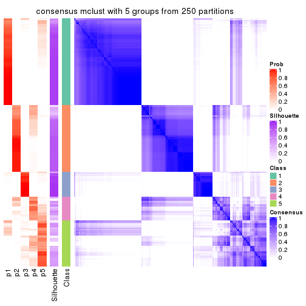
consensus_heatmap(res, k = 6)
Heatmaps for the membership of samples in all partitions to see how consistent they are:
membership_heatmap(res, k = 2)
membership_heatmap(res, k = 3)
membership_heatmap(res, k = 4)
membership_heatmap(res, k = 5)
membership_heatmap(res, k = 6)
As soon as we have had the classes for columns, we can look for signatures which are significantly different between classes which can be candidate marks for certain classes. Following are the heatmaps for signatures.
Signature heatmaps where rows are scaled:
get_signatures(res, k = 2)
get_signatures(res, k = 3)
get_signatures(res, k = 4)
get_signatures(res, k = 5)
get_signatures(res, k = 6)
Signature heatmaps where rows are not scaled:
get_signatures(res, k = 2, scale_rows = FALSE)
get_signatures(res, k = 3, scale_rows = FALSE)
get_signatures(res, k = 4, scale_rows = FALSE)
get_signatures(res, k = 5, scale_rows = FALSE)
get_signatures(res, k = 6, scale_rows = FALSE)
Compare the overlap of signatures from different k:
compare_signatures(res)
get_signature() returns a data frame invisibly. TO get the list of signatures, the function
call should be assigned to a variable explicitly. In following code, if plot argument is set
to FALSE, no heatmap is plotted while only the differential analysis is performed.
# code only for demonstration
tb = get_signature(res, k = ..., plot = FALSE)
An example of the output of tb is:
#> which_row fdr mean_1 mean_2 scaled_mean_1 scaled_mean_2 km
#> 1 38 0.042760348 8.373488 9.131774 -0.5533452 0.5164555 1
#> 2 40 0.018707592 7.106213 8.469186 -0.6173731 0.5762149 1
#> 3 55 0.019134737 10.221463 11.207825 -0.6159697 0.5749050 1
#> 4 59 0.006059896 5.921854 7.869574 -0.6899429 0.6439467 1
#> 5 60 0.018055526 8.928898 10.211722 -0.6204761 0.5791110 1
#> 6 98 0.009384629 15.714769 14.887706 0.6635654 -0.6193277 2
...
The columns in tb are:
which_row: row indices corresponding to the input matrix.fdr: FDR for the differential test. mean_x: The mean value in group x.scaled_mean_x: The mean value in group x after rows are scaled.km: Row groups if k-means clustering is applied to rows.UMAP plot which shows how samples are separated.
dimension_reduction(res, k = 2, method = "UMAP")
dimension_reduction(res, k = 3, method = "UMAP")
dimension_reduction(res, k = 4, method = "UMAP")

dimension_reduction(res, k = 5, method = "UMAP")
dimension_reduction(res, k = 6, method = "UMAP")
Following heatmap shows how subgroups are split when increasing k:
collect_classes(res)
If matrix rows can be associated to genes, consider to use functional_enrichment(res,
...) to perform function enrichment for the signature genes. See this vignette for more detailed explanations.
The object with results only for a single top-value method and a single partition method can be extracted as:
res = res_list["ATC", "NMF"]
# you can also extract it by
# res = res_list["ATC:NMF"]
A summary of res and all the functions that can be applied to it:
res
#> A 'ConsensusPartition' object with k = 2, 3, 4, 5, 6.
#> On a matrix with 13984 rows and 288 columns.
#> Top rows (1000, 2000, 3000, 4000, 5000) are extracted by 'ATC' method.
#> Subgroups are detected by 'NMF' method.
#> Performed in total 1250 partitions by row resampling.
#> Best k for subgroups seems to be 3.
#>
#> Following methods can be applied to this 'ConsensusPartition' object:
#> [1] "cola_report" "collect_classes" "collect_plots"
#> [4] "collect_stats" "colnames" "compare_signatures"
#> [7] "consensus_heatmap" "dimension_reduction" "functional_enrichment"
#> [10] "get_anno_col" "get_anno" "get_classes"
#> [13] "get_consensus" "get_matrix" "get_membership"
#> [16] "get_param" "get_signatures" "get_stats"
#> [19] "is_best_k" "is_stable_k" "membership_heatmap"
#> [22] "ncol" "nrow" "plot_ecdf"
#> [25] "rownames" "select_partition_number" "show"
#> [28] "suggest_best_k" "test_to_known_factors"
collect_plots() function collects all the plots made from res for all k (number of partitions)
into one single page to provide an easy and fast comparison between different k.
collect_plots(res)
The plots are:
k and the heatmap of
predicted classes for each k.k.k.k.All the plots in panels can be made by individual functions and they are plotted later in this section.
select_partition_number() produces several plots showing different
statistics for choosing “optimized” k. There are following statistics:
k;k, the area increased is defined as \(A_k - A_{k-1}\).The detailed explanations of these statistics can be found in the cola vignette.
Generally speaking, lower PAC score, higher mean silhouette score or higher
concordance corresponds to better partition. Rand index and Jaccard index
measure how similar the current partition is compared to partition with k-1.
If they are too similar, we won't accept k is better than k-1.
select_partition_number(res)
The numeric values for all these statistics can be obtained by get_stats().
get_stats(res)
#> k 1-PAC mean_silhouette concordance area_increased Rand Jaccard
#> 2 2 1.000 0.977 0.991 0.3825 0.617 0.617
#> 3 3 0.965 0.950 0.980 0.4555 0.803 0.687
#> 4 4 0.721 0.848 0.905 0.2088 0.836 0.653
#> 5 5 0.636 0.675 0.803 0.0847 0.958 0.880
#> 6 6 0.653 0.569 0.767 0.0669 0.872 0.617
suggest_best_k() suggests the best \(k\) based on these statistics. The rules are as follows:
suggest_best_k(res)
#> [1] 3
#> attr(,"optional")
#> [1] 2
There is also optional best \(k\) = 2 that is worth to check.
Following shows the table of the partitions (You need to click the show/hide
code output link to see it). The membership matrix (columns with name p*)
is inferred by
clue::cl_consensus()
function with the SE method. Basically the value in the membership matrix
represents the probability to belong to a certain group. The finall class
label for an item is determined with the group with highest probability it
belongs to.
In get_classes() function, the entropy is calculated from the membership
matrix and the silhouette score is calculated from the consensus matrix.
cbind(get_classes(res, k = 2), get_membership(res, k = 2))
#> class entropy silhouette p1 p2
#> SRR1982614 1 0.0000 0.994 1.000 0.000
#> SRR1982613 1 0.0000 0.994 1.000 0.000
#> SRR1982612 1 0.0000 0.994 1.000 0.000
#> SRR1982611 1 0.0000 0.994 1.000 0.000
#> SRR1982610 1 0.0000 0.994 1.000 0.000
#> SRR1982609 1 0.0000 0.994 1.000 0.000
#> SRR1982659 1 0.0000 0.994 1.000 0.000
#> SRR1982692 1 0.0000 0.994 1.000 0.000
#> SRR1982722 1 0.0000 0.994 1.000 0.000
#> SRR1982750 2 0.0000 0.979 0.000 1.000
#> SRR2095031 2 0.0000 0.979 0.000 1.000
#> SRR1982780 1 0.0000 0.994 1.000 0.000
#> SRR1982807 1 0.0000 0.994 1.000 0.000
#> SRR1982830 1 0.0000 0.994 1.000 0.000
#> SRR1982829 1 0.0000 0.994 1.000 0.000
#> SRR1982828 1 0.0000 0.994 1.000 0.000
#> SRR1982827 1 0.0000 0.994 1.000 0.000
#> SRR1982826 1 0.0000 0.994 1.000 0.000
#> SRR1982825 1 0.0000 0.994 1.000 0.000
#> SRR1982824 1 0.0000 0.994 1.000 0.000
#> SRR1982823 1 0.0000 0.994 1.000 0.000
#> SRR1982822 1 0.0000 0.994 1.000 0.000
#> SRR1982821 1 0.0000 0.994 1.000 0.000
#> SRR1982820 1 0.0000 0.994 1.000 0.000
#> SRR1982819 1 0.0000 0.994 1.000 0.000
#> SRR1982818 1 0.0000 0.994 1.000 0.000
#> SRR1982817 1 0.0000 0.994 1.000 0.000
#> SRR1982816 1 0.0000 0.994 1.000 0.000
#> SRR1982815 1 0.0000 0.994 1.000 0.000
#> SRR1982814 1 0.0000 0.994 1.000 0.000
#> SRR1982813 1 0.0000 0.994 1.000 0.000
#> SRR1982812 2 0.0000 0.979 0.000 1.000
#> SRR1982811 1 0.3431 0.928 0.936 0.064
#> SRR1982810 2 0.0000 0.979 0.000 1.000
#> SRR1982809 2 0.0000 0.979 0.000 1.000
#> SRR1982808 1 0.2948 0.941 0.948 0.052
#> SRR1982806 1 0.0000 0.994 1.000 0.000
#> SRR1982805 1 0.0000 0.994 1.000 0.000
#> SRR1982804 1 0.0000 0.994 1.000 0.000
#> SRR1982803 1 0.0000 0.994 1.000 0.000
#> SRR1982802 1 0.0000 0.994 1.000 0.000
#> SRR1982801 1 0.0000 0.994 1.000 0.000
#> SRR1982800 1 0.0000 0.994 1.000 0.000
#> SRR1982799 1 0.0000 0.994 1.000 0.000
#> SRR1982798 1 0.0000 0.994 1.000 0.000
#> SRR1982797 1 0.0000 0.994 1.000 0.000
#> SRR1982796 2 0.3733 0.918 0.072 0.928
#> SRR1982795 1 0.0000 0.994 1.000 0.000
#> SRR1982794 1 0.0000 0.994 1.000 0.000
#> SRR1982793 1 0.0000 0.994 1.000 0.000
#> SRR1982792 1 0.0000 0.994 1.000 0.000
#> SRR1982791 1 0.0000 0.994 1.000 0.000
#> SRR1982790 1 0.0000 0.994 1.000 0.000
#> SRR1982789 1 0.0000 0.994 1.000 0.000
#> SRR1982788 1 0.0000 0.994 1.000 0.000
#> SRR1982787 1 0.0000 0.994 1.000 0.000
#> SRR1982786 1 0.0000 0.994 1.000 0.000
#> SRR1982785 2 0.3431 0.925 0.064 0.936
#> SRR1982784 1 0.0000 0.994 1.000 0.000
#> SRR1982783 1 0.0000 0.994 1.000 0.000
#> SRR1982782 1 0.0000 0.994 1.000 0.000
#> SRR1982781 1 0.0000 0.994 1.000 0.000
#> SRR1982779 2 0.0000 0.979 0.000 1.000
#> SRR1982778 1 0.0000 0.994 1.000 0.000
#> SRR1982776 2 0.0000 0.979 0.000 1.000
#> SRR1982777 2 0.0000 0.979 0.000 1.000
#> SRR1982775 1 0.0000 0.994 1.000 0.000
#> SRR1982774 2 0.0376 0.976 0.004 0.996
#> SRR1982772 1 0.0000 0.994 1.000 0.000
#> SRR1982773 2 0.0000 0.979 0.000 1.000
#> SRR1982770 1 0.0000 0.994 1.000 0.000
#> SRR1982771 1 0.0000 0.994 1.000 0.000
#> SRR1982769 2 0.0938 0.970 0.012 0.988
#> SRR1982768 2 0.0000 0.979 0.000 1.000
#> SRR1982767 2 0.0000 0.979 0.000 1.000
#> SRR1982766 1 0.0000 0.994 1.000 0.000
#> SRR1982765 1 0.0000 0.994 1.000 0.000
#> SRR1982764 2 0.0000 0.979 0.000 1.000
#> SRR1982762 1 0.0000 0.994 1.000 0.000
#> SRR1982760 1 0.0000 0.994 1.000 0.000
#> SRR1982761 1 0.0000 0.994 1.000 0.000
#> SRR1982763 2 0.0000 0.979 0.000 1.000
#> SRR1982759 1 0.0000 0.994 1.000 0.000
#> SRR1982758 2 0.0000 0.979 0.000 1.000
#> SRR1982757 1 0.0000 0.994 1.000 0.000
#> SRR1982755 1 0.0000 0.994 1.000 0.000
#> SRR1982754 1 0.0000 0.994 1.000 0.000
#> SRR1982756 1 0.0000 0.994 1.000 0.000
#> SRR1982753 2 0.0000 0.979 0.000 1.000
#> SRR1982751 2 0.0000 0.979 0.000 1.000
#> SRR1982752 2 0.0000 0.979 0.000 1.000
#> SRR1982749 2 0.0000 0.979 0.000 1.000
#> SRR1982748 2 0.0000 0.979 0.000 1.000
#> SRR1982747 2 0.0000 0.979 0.000 1.000
#> SRR1982746 2 0.0000 0.979 0.000 1.000
#> SRR1982745 2 0.0000 0.979 0.000 1.000
#> SRR1982743 2 0.0000 0.979 0.000 1.000
#> SRR1982744 2 0.0000 0.979 0.000 1.000
#> SRR1982741 2 0.0000 0.979 0.000 1.000
#> SRR1982742 2 0.0000 0.979 0.000 1.000
#> SRR2095014 2 0.0000 0.979 0.000 1.000
#> SRR1982740 2 0.0000 0.979 0.000 1.000
#> SRR1982739 2 0.0000 0.979 0.000 1.000
#> SRR1982737 2 0.0000 0.979 0.000 1.000
#> SRR1982738 2 0.0000 0.979 0.000 1.000
#> SRR1982736 2 0.0000 0.979 0.000 1.000
#> SRR1982735 2 0.0000 0.979 0.000 1.000
#> SRR1982733 2 0.0000 0.979 0.000 1.000
#> SRR1982732 2 0.0000 0.979 0.000 1.000
#> SRR2095004 2 0.0000 0.979 0.000 1.000
#> SRR1982734 2 0.0000 0.979 0.000 1.000
#> SRR1982731 2 0.0000 0.979 0.000 1.000
#> SRR1982729 2 0.0000 0.979 0.000 1.000
#> SRR1982730 2 0.0000 0.979 0.000 1.000
#> SRR1982728 2 0.0000 0.979 0.000 1.000
#> SRR1982727 1 0.0000 0.994 1.000 0.000
#> SRR1982726 1 0.0000 0.994 1.000 0.000
#> SRR1982723 1 0.0000 0.994 1.000 0.000
#> SRR1982725 1 0.0000 0.994 1.000 0.000
#> SRR1982724 1 0.0000 0.994 1.000 0.000
#> SRR1982721 1 0.0000 0.994 1.000 0.000
#> SRR1982720 1 0.0000 0.994 1.000 0.000
#> SRR1982719 1 0.0000 0.994 1.000 0.000
#> SRR1982718 1 0.0000 0.994 1.000 0.000
#> SRR1982717 1 0.3879 0.914 0.924 0.076
#> SRR1982715 1 0.0000 0.994 1.000 0.000
#> SRR1982714 2 0.0000 0.979 0.000 1.000
#> SRR1982716 1 0.0000 0.994 1.000 0.000
#> SRR1982713 2 0.0000 0.979 0.000 1.000
#> SRR1982711 2 0.0000 0.979 0.000 1.000
#> SRR1982712 2 0.0000 0.979 0.000 1.000
#> SRR1982710 1 0.0000 0.994 1.000 0.000
#> SRR1982708 1 0.0000 0.994 1.000 0.000
#> SRR1982707 1 0.0000 0.994 1.000 0.000
#> SRR1982709 1 0.0000 0.994 1.000 0.000
#> SRR1982705 2 0.9881 0.247 0.436 0.564
#> SRR1982706 1 0.0000 0.994 1.000 0.000
#> SRR1982704 1 0.0000 0.994 1.000 0.000
#> SRR1982702 2 0.0000 0.979 0.000 1.000
#> SRR1982703 2 0.5519 0.854 0.128 0.872
#> SRR1982701 2 0.0000 0.979 0.000 1.000
#> SRR1982700 2 0.0000 0.979 0.000 1.000
#> SRR1982697 2 0.0000 0.979 0.000 1.000
#> SRR1982698 2 0.0000 0.979 0.000 1.000
#> SRR1982699 2 0.0000 0.979 0.000 1.000
#> SRR1982696 2 0.4298 0.901 0.088 0.912
#> SRR1982695 1 0.0000 0.994 1.000 0.000
#> SRR1982694 1 0.0000 0.994 1.000 0.000
#> SRR1982693 2 0.0000 0.979 0.000 1.000
#> SRR1982690 1 0.0000 0.994 1.000 0.000
#> SRR1982691 1 0.2043 0.962 0.968 0.032
#> SRR1982689 1 0.0000 0.994 1.000 0.000
#> SRR1982688 1 0.0000 0.994 1.000 0.000
#> SRR1982687 1 0.0000 0.994 1.000 0.000
#> SRR1982686 2 0.1633 0.961 0.024 0.976
#> SRR1982685 1 0.0000 0.994 1.000 0.000
#> SRR1982684 1 0.0000 0.994 1.000 0.000
#> SRR1982683 1 0.0000 0.994 1.000 0.000
#> SRR1982681 2 0.9954 0.163 0.460 0.540
#> SRR1982682 1 0.0000 0.994 1.000 0.000
#> SRR1982680 2 0.4431 0.896 0.092 0.908
#> SRR1982679 2 0.0000 0.979 0.000 1.000
#> SRR1982678 2 0.0000 0.979 0.000 1.000
#> SRR1982677 1 0.0000 0.994 1.000 0.000
#> SRR1982676 1 0.0000 0.994 1.000 0.000
#> SRR1982675 1 0.0000 0.994 1.000 0.000
#> SRR1982674 1 0.0000 0.994 1.000 0.000
#> SRR1982671 2 0.0000 0.979 0.000 1.000
#> SRR1982673 1 0.0000 0.994 1.000 0.000
#> SRR1982672 1 0.0000 0.994 1.000 0.000
#> SRR1982670 2 0.3879 0.913 0.076 0.924
#> SRR1982669 1 0.0000 0.994 1.000 0.000
#> SRR1982667 1 0.0000 0.994 1.000 0.000
#> SRR1982668 1 0.0000 0.994 1.000 0.000
#> SRR1982666 1 0.0000 0.994 1.000 0.000
#> SRR1982665 2 0.0000 0.979 0.000 1.000
#> SRR1982664 1 0.0000 0.994 1.000 0.000
#> SRR1982663 1 0.0000 0.994 1.000 0.000
#> SRR1982662 1 0.0000 0.994 1.000 0.000
#> SRR1982661 1 0.0000 0.994 1.000 0.000
#> SRR1982660 1 0.0000 0.994 1.000 0.000
#> SRR1982658 1 0.0000 0.994 1.000 0.000
#> SRR1982657 1 0.0000 0.994 1.000 0.000
#> SRR1982656 1 0.0376 0.990 0.996 0.004
#> SRR1982654 1 0.0000 0.994 1.000 0.000
#> SRR1982655 1 0.0000 0.994 1.000 0.000
#> SRR1982653 1 0.0000 0.994 1.000 0.000
#> SRR1982652 1 0.0000 0.994 1.000 0.000
#> SRR1982651 1 0.0000 0.994 1.000 0.000
#> SRR1982649 1 0.0000 0.994 1.000 0.000
#> SRR1982650 1 0.0000 0.994 1.000 0.000
#> SRR1982648 1 0.0000 0.994 1.000 0.000
#> SRR1982647 1 0.0000 0.994 1.000 0.000
#> SRR1982646 1 0.9710 0.315 0.600 0.400
#> SRR1982645 1 0.0000 0.994 1.000 0.000
#> SRR1982644 1 0.0000 0.994 1.000 0.000
#> SRR1982642 1 0.0000 0.994 1.000 0.000
#> SRR1982643 1 0.0000 0.994 1.000 0.000
#> SRR1982641 1 0.0000 0.994 1.000 0.000
#> SRR1982640 1 0.0000 0.994 1.000 0.000
#> SRR1982638 1 0.0000 0.994 1.000 0.000
#> SRR1982639 1 0.0000 0.994 1.000 0.000
#> SRR1982637 1 0.0000 0.994 1.000 0.000
#> SRR1982635 1 0.0000 0.994 1.000 0.000
#> SRR1982636 1 0.0000 0.994 1.000 0.000
#> SRR1982633 1 0.0000 0.994 1.000 0.000
#> SRR1982632 1 0.0000 0.994 1.000 0.000
#> SRR1982631 1 0.0000 0.994 1.000 0.000
#> SRR1982634 1 0.0000 0.994 1.000 0.000
#> SRR1982628 1 0.0000 0.994 1.000 0.000
#> SRR1982629 1 0.4161 0.904 0.916 0.084
#> SRR1982627 1 0.0000 0.994 1.000 0.000
#> SRR1982625 1 0.0000 0.994 1.000 0.000
#> SRR1982626 1 0.0000 0.994 1.000 0.000
#> SRR1982624 1 0.0000 0.994 1.000 0.000
#> SRR1982623 1 0.0000 0.994 1.000 0.000
#> SRR1982622 1 0.0000 0.994 1.000 0.000
#> SRR1982621 2 0.0000 0.979 0.000 1.000
#> SRR1982620 2 0.3114 0.933 0.056 0.944
#> SRR1982619 2 0.0000 0.979 0.000 1.000
#> SRR1982618 1 0.0000 0.994 1.000 0.000
#> SRR1982617 2 0.0000 0.979 0.000 1.000
#> SRR1982616 1 0.0000 0.994 1.000 0.000
#> SRR1982615 1 0.0000 0.994 1.000 0.000
#> SRR1982608 1 0.0000 0.994 1.000 0.000
#> SRR1982607 1 0.0000 0.994 1.000 0.000
#> SRR1982606 1 0.0000 0.994 1.000 0.000
#> SRR1982605 1 0.0000 0.994 1.000 0.000
#> SRR1982604 1 0.0000 0.994 1.000 0.000
#> SRR1982603 1 0.0000 0.994 1.000 0.000
#> SRR1982602 1 0.0000 0.994 1.000 0.000
#> SRR1982601 1 0.0000 0.994 1.000 0.000
#> SRR1982599 1 0.0000 0.994 1.000 0.000
#> SRR1982600 1 0.0000 0.994 1.000 0.000
#> SRR1982598 1 0.0000 0.994 1.000 0.000
#> SRR1982597 1 0.0000 0.994 1.000 0.000
#> SRR1982595 1 0.0000 0.994 1.000 0.000
#> SRR1982596 1 0.0000 0.994 1.000 0.000
#> SRR1982594 1 0.0000 0.994 1.000 0.000
#> SRR1982593 1 0.0000 0.994 1.000 0.000
#> SRR1982592 2 0.0000 0.979 0.000 1.000
#> SRR1982591 1 0.0000 0.994 1.000 0.000
#> SRR1982590 1 0.0000 0.994 1.000 0.000
#> SRR1982589 1 0.0000 0.994 1.000 0.000
#> SRR1982588 1 0.0000 0.994 1.000 0.000
#> SRR1982587 1 0.0000 0.994 1.000 0.000
#> SRR1982586 1 0.0000 0.994 1.000 0.000
#> SRR1982584 1 0.0000 0.994 1.000 0.000
#> SRR2096514 1 0.0000 0.994 1.000 0.000
#> SRR2096513 1 0.0000 0.994 1.000 0.000
#> SRR2096511 1 0.0000 0.994 1.000 0.000
#> SRR2096512 2 0.0000 0.979 0.000 1.000
#> SRR2096509 1 0.0000 0.994 1.000 0.000
#> SRR2096510 1 0.0000 0.994 1.000 0.000
#> SRR2096508 2 0.0000 0.979 0.000 1.000
#> SRR2096507 1 0.0000 0.994 1.000 0.000
#> SRR2096504 1 0.0000 0.994 1.000 0.000
#> SRR2096506 1 0.0000 0.994 1.000 0.000
#> SRR2096505 1 0.0000 0.994 1.000 0.000
#> SRR2096503 1 0.0000 0.994 1.000 0.000
#> SRR2096500 1 0.0000 0.994 1.000 0.000
#> SRR2096501 1 0.1184 0.979 0.984 0.016
#> SRR2096502 1 0.0000 0.994 1.000 0.000
#> SRR2096499 1 0.0000 0.994 1.000 0.000
#> SRR2096498 1 0.9922 0.161 0.552 0.448
#> SRR2096496 1 0.0000 0.994 1.000 0.000
#> SRR2096497 1 0.0000 0.994 1.000 0.000
#> SRR2096495 1 0.0000 0.994 1.000 0.000
#> SRR2096494 1 0.0000 0.994 1.000 0.000
#> SRR2096492 1 0.0000 0.994 1.000 0.000
#> SRR2096491 1 0.0000 0.994 1.000 0.000
#> SRR2096493 1 0.0000 0.994 1.000 0.000
#> SRR2096490 1 0.0000 0.994 1.000 0.000
#> SRR2096488 1 0.0000 0.994 1.000 0.000
#> SRR2096489 1 0.0000 0.994 1.000 0.000
#> SRR2096487 1 0.0000 0.994 1.000 0.000
#> SRR2096484 1 0.0000 0.994 1.000 0.000
#> SRR2096486 1 0.0000 0.994 1.000 0.000
#> SRR2096485 1 0.0000 0.994 1.000 0.000
#> SRR2096483 1 0.0000 0.994 1.000 0.000
#> SRR2096482 1 0.0000 0.994 1.000 0.000
#> SRR2096481 1 0.0000 0.994 1.000 0.000
#> SRR2096520 1 0.0000 0.994 1.000 0.000
#> SRR2096519 1 0.0000 0.994 1.000 0.000
#> SRR2096518 1 0.0000 0.994 1.000 0.000
#> SRR2096516 1 0.0000 0.994 1.000 0.000
#> SRR2096517 1 0.0000 0.994 1.000 0.000
#> SRR2096515 1 0.0000 0.994 1.000 0.000
cbind(get_classes(res, k = 3), get_membership(res, k = 3))
#> class entropy silhouette p1 p2 p3
#> SRR1982614 3 0.2096 0.8873 0.052 0.004 0.944
#> SRR1982613 3 0.3879 0.7854 0.152 0.000 0.848
#> SRR1982612 1 0.0000 0.9878 1.000 0.000 0.000
#> SRR1982611 1 0.0000 0.9878 1.000 0.000 0.000
#> SRR1982610 1 0.0000 0.9878 1.000 0.000 0.000
#> SRR1982609 1 0.0000 0.9878 1.000 0.000 0.000
#> SRR1982659 1 0.0000 0.9878 1.000 0.000 0.000
#> SRR1982692 3 0.0000 0.9259 0.000 0.000 1.000
#> SRR1982722 1 0.0000 0.9878 1.000 0.000 0.000
#> SRR1982750 2 0.0000 0.9764 0.000 1.000 0.000
#> SRR2095031 2 0.0000 0.9764 0.000 1.000 0.000
#> SRR1982780 1 0.0000 0.9878 1.000 0.000 0.000
#> SRR1982807 1 0.0000 0.9878 1.000 0.000 0.000
#> SRR1982830 1 0.0000 0.9878 1.000 0.000 0.000
#> SRR1982829 3 0.5958 0.6033 0.300 0.008 0.692
#> SRR1982828 1 0.0000 0.9878 1.000 0.000 0.000
#> SRR1982827 1 0.0000 0.9878 1.000 0.000 0.000
#> SRR1982826 1 0.0000 0.9878 1.000 0.000 0.000
#> SRR1982825 1 0.0000 0.9878 1.000 0.000 0.000
#> SRR1982824 1 0.0237 0.9847 0.996 0.000 0.004
#> SRR1982823 1 0.0000 0.9878 1.000 0.000 0.000
#> SRR1982822 1 0.0000 0.9878 1.000 0.000 0.000
#> SRR1982821 1 0.0000 0.9878 1.000 0.000 0.000
#> SRR1982820 1 0.0000 0.9878 1.000 0.000 0.000
#> SRR1982819 1 0.0000 0.9878 1.000 0.000 0.000
#> SRR1982818 1 0.0000 0.9878 1.000 0.000 0.000
#> SRR1982817 1 0.0237 0.9847 0.996 0.000 0.004
#> SRR1982816 1 0.0000 0.9878 1.000 0.000 0.000
#> SRR1982815 1 0.0000 0.9878 1.000 0.000 0.000
#> SRR1982814 1 0.0000 0.9878 1.000 0.000 0.000
#> SRR1982813 1 0.0000 0.9878 1.000 0.000 0.000
#> SRR1982812 2 0.0000 0.9764 0.000 1.000 0.000
#> SRR1982811 1 0.0000 0.9878 1.000 0.000 0.000
#> SRR1982810 2 0.0000 0.9764 0.000 1.000 0.000
#> SRR1982809 2 0.0000 0.9764 0.000 1.000 0.000
#> SRR1982808 1 0.3686 0.8302 0.860 0.140 0.000
#> SRR1982806 1 0.0000 0.9878 1.000 0.000 0.000
#> SRR1982805 1 0.0000 0.9878 1.000 0.000 0.000
#> SRR1982804 1 0.0237 0.9847 0.996 0.000 0.004
#> SRR1982803 1 0.0000 0.9878 1.000 0.000 0.000
#> SRR1982802 1 0.0000 0.9878 1.000 0.000 0.000
#> SRR1982801 1 0.0000 0.9878 1.000 0.000 0.000
#> SRR1982800 1 0.0000 0.9878 1.000 0.000 0.000
#> SRR1982799 1 0.0000 0.9878 1.000 0.000 0.000
#> SRR1982798 1 0.0000 0.9878 1.000 0.000 0.000
#> SRR1982797 1 0.5882 0.4362 0.652 0.000 0.348
#> SRR1982796 2 0.6260 0.1864 0.448 0.552 0.000
#> SRR1982795 1 0.0000 0.9878 1.000 0.000 0.000
#> SRR1982794 1 0.0000 0.9878 1.000 0.000 0.000
#> SRR1982793 1 0.0000 0.9878 1.000 0.000 0.000
#> SRR1982792 1 0.0000 0.9878 1.000 0.000 0.000
#> SRR1982791 1 0.0000 0.9878 1.000 0.000 0.000
#> SRR1982790 3 0.0000 0.9259 0.000 0.000 1.000
#> SRR1982789 1 0.0000 0.9878 1.000 0.000 0.000
#> SRR1982788 1 0.0747 0.9742 0.984 0.000 0.016
#> SRR1982787 1 0.1529 0.9510 0.960 0.000 0.040
#> SRR1982786 3 0.0000 0.9259 0.000 0.000 1.000
#> SRR1982785 2 0.4121 0.7957 0.000 0.832 0.168
#> SRR1982784 1 0.0000 0.9878 1.000 0.000 0.000
#> SRR1982783 3 0.2165 0.8775 0.064 0.000 0.936
#> SRR1982782 1 0.0000 0.9878 1.000 0.000 0.000
#> SRR1982781 1 0.0000 0.9878 1.000 0.000 0.000
#> SRR1982779 2 0.0000 0.9764 0.000 1.000 0.000
#> SRR1982778 1 0.0000 0.9878 1.000 0.000 0.000
#> SRR1982776 2 0.0000 0.9764 0.000 1.000 0.000
#> SRR1982777 2 0.0000 0.9764 0.000 1.000 0.000
#> SRR1982775 1 0.0000 0.9878 1.000 0.000 0.000
#> SRR1982774 2 0.1411 0.9298 0.036 0.964 0.000
#> SRR1982772 1 0.0000 0.9878 1.000 0.000 0.000
#> SRR1982773 2 0.0000 0.9764 0.000 1.000 0.000
#> SRR1982770 1 0.0000 0.9878 1.000 0.000 0.000
#> SRR1982771 1 0.2356 0.9164 0.928 0.000 0.072
#> SRR1982769 2 0.4062 0.8002 0.000 0.836 0.164
#> SRR1982768 2 0.0000 0.9764 0.000 1.000 0.000
#> SRR1982767 2 0.0000 0.9764 0.000 1.000 0.000
#> SRR1982766 3 0.0000 0.9259 0.000 0.000 1.000
#> SRR1982765 1 0.0000 0.9878 1.000 0.000 0.000
#> SRR1982764 2 0.0000 0.9764 0.000 1.000 0.000
#> SRR1982762 1 0.0000 0.9878 1.000 0.000 0.000
#> SRR1982760 1 0.0000 0.9878 1.000 0.000 0.000
#> SRR1982761 1 0.0000 0.9878 1.000 0.000 0.000
#> SRR1982763 2 0.0000 0.9764 0.000 1.000 0.000
#> SRR1982759 1 0.0000 0.9878 1.000 0.000 0.000
#> SRR1982758 2 0.0000 0.9764 0.000 1.000 0.000
#> SRR1982757 1 0.4110 0.8124 0.844 0.004 0.152
#> SRR1982755 1 0.0000 0.9878 1.000 0.000 0.000
#> SRR1982754 1 0.0000 0.9878 1.000 0.000 0.000
#> SRR1982756 1 0.0000 0.9878 1.000 0.000 0.000
#> SRR1982753 2 0.0000 0.9764 0.000 1.000 0.000
#> SRR1982751 2 0.0000 0.9764 0.000 1.000 0.000
#> SRR1982752 2 0.0000 0.9764 0.000 1.000 0.000
#> SRR1982749 2 0.0000 0.9764 0.000 1.000 0.000
#> SRR1982748 2 0.0000 0.9764 0.000 1.000 0.000
#> SRR1982747 2 0.0000 0.9764 0.000 1.000 0.000
#> SRR1982746 2 0.0000 0.9764 0.000 1.000 0.000
#> SRR1982745 2 0.0000 0.9764 0.000 1.000 0.000
#> SRR1982743 2 0.0000 0.9764 0.000 1.000 0.000
#> SRR1982744 2 0.0000 0.9764 0.000 1.000 0.000
#> SRR1982741 2 0.0000 0.9764 0.000 1.000 0.000
#> SRR1982742 2 0.0000 0.9764 0.000 1.000 0.000
#> SRR2095014 2 0.0000 0.9764 0.000 1.000 0.000
#> SRR1982740 2 0.4504 0.7565 0.000 0.804 0.196
#> SRR1982739 2 0.0000 0.9764 0.000 1.000 0.000
#> SRR1982737 2 0.0000 0.9764 0.000 1.000 0.000
#> SRR1982738 2 0.0000 0.9764 0.000 1.000 0.000
#> SRR1982736 2 0.0000 0.9764 0.000 1.000 0.000
#> SRR1982735 2 0.0000 0.9764 0.000 1.000 0.000
#> SRR1982733 2 0.0000 0.9764 0.000 1.000 0.000
#> SRR1982732 2 0.0000 0.9764 0.000 1.000 0.000
#> SRR2095004 2 0.0000 0.9764 0.000 1.000 0.000
#> SRR1982734 2 0.0000 0.9764 0.000 1.000 0.000
#> SRR1982731 2 0.0000 0.9764 0.000 1.000 0.000
#> SRR1982729 2 0.0000 0.9764 0.000 1.000 0.000
#> SRR1982730 2 0.0000 0.9764 0.000 1.000 0.000
#> SRR1982728 2 0.0000 0.9764 0.000 1.000 0.000
#> SRR1982727 3 0.0000 0.9259 0.000 0.000 1.000
#> SRR1982726 3 0.6308 0.0859 0.492 0.000 0.508
#> SRR1982723 3 0.0000 0.9259 0.000 0.000 1.000
#> SRR1982725 3 0.0000 0.9259 0.000 0.000 1.000
#> SRR1982724 3 0.4931 0.6929 0.232 0.000 0.768
#> SRR1982721 1 0.0237 0.9847 0.996 0.000 0.004
#> SRR1982720 1 0.0000 0.9878 1.000 0.000 0.000
#> SRR1982719 1 0.0000 0.9878 1.000 0.000 0.000
#> SRR1982718 3 0.0000 0.9259 0.000 0.000 1.000
#> SRR1982717 3 0.0000 0.9259 0.000 0.000 1.000
#> SRR1982715 3 0.0000 0.9259 0.000 0.000 1.000
#> SRR1982714 2 0.0000 0.9764 0.000 1.000 0.000
#> SRR1982716 3 0.0000 0.9259 0.000 0.000 1.000
#> SRR1982713 2 0.0000 0.9764 0.000 1.000 0.000
#> SRR1982711 2 0.0000 0.9764 0.000 1.000 0.000
#> SRR1982712 2 0.0000 0.9764 0.000 1.000 0.000
#> SRR1982710 3 0.0000 0.9259 0.000 0.000 1.000
#> SRR1982708 3 0.0000 0.9259 0.000 0.000 1.000
#> SRR1982707 3 0.0000 0.9259 0.000 0.000 1.000
#> SRR1982709 3 0.1529 0.8983 0.040 0.000 0.960
#> SRR1982705 3 0.0000 0.9259 0.000 0.000 1.000
#> SRR1982706 1 0.0000 0.9878 1.000 0.000 0.000
#> SRR1982704 3 0.2663 0.8865 0.044 0.024 0.932
#> SRR1982702 2 0.0000 0.9764 0.000 1.000 0.000
#> SRR1982703 3 0.0592 0.9178 0.000 0.012 0.988
#> SRR1982701 2 0.0000 0.9764 0.000 1.000 0.000
#> SRR1982700 2 0.0000 0.9764 0.000 1.000 0.000
#> SRR1982697 2 0.0000 0.9764 0.000 1.000 0.000
#> SRR1982698 2 0.0000 0.9764 0.000 1.000 0.000
#> SRR1982699 2 0.0000 0.9764 0.000 1.000 0.000
#> SRR1982696 3 0.0424 0.9207 0.000 0.008 0.992
#> SRR1982695 1 0.0000 0.9878 1.000 0.000 0.000
#> SRR1982694 1 0.0000 0.9878 1.000 0.000 0.000
#> SRR1982693 3 0.0000 0.9259 0.000 0.000 1.000
#> SRR1982690 3 0.0000 0.9259 0.000 0.000 1.000
#> SRR1982691 3 0.0000 0.9259 0.000 0.000 1.000
#> SRR1982689 3 0.0000 0.9259 0.000 0.000 1.000
#> SRR1982688 1 0.0000 0.9878 1.000 0.000 0.000
#> SRR1982687 3 0.0000 0.9259 0.000 0.000 1.000
#> SRR1982686 2 0.5138 0.6677 0.000 0.748 0.252
#> SRR1982685 3 0.0000 0.9259 0.000 0.000 1.000
#> SRR1982684 3 0.0000 0.9259 0.000 0.000 1.000
#> SRR1982683 3 0.4291 0.7550 0.180 0.000 0.820
#> SRR1982681 3 0.0000 0.9259 0.000 0.000 1.000
#> SRR1982682 3 0.0000 0.9259 0.000 0.000 1.000
#> SRR1982680 3 0.0000 0.9259 0.000 0.000 1.000
#> SRR1982679 2 0.0000 0.9764 0.000 1.000 0.000
#> SRR1982678 2 0.0000 0.9764 0.000 1.000 0.000
#> SRR1982677 3 0.0000 0.9259 0.000 0.000 1.000
#> SRR1982676 1 0.0000 0.9878 1.000 0.000 0.000
#> SRR1982675 1 0.0000 0.9878 1.000 0.000 0.000
#> SRR1982674 3 0.0747 0.9160 0.016 0.000 0.984
#> SRR1982671 2 0.0000 0.9764 0.000 1.000 0.000
#> SRR1982673 1 0.0000 0.9878 1.000 0.000 0.000
#> SRR1982672 1 0.0000 0.9878 1.000 0.000 0.000
#> SRR1982670 1 0.4062 0.7962 0.836 0.164 0.000
#> SRR1982669 1 0.0000 0.9878 1.000 0.000 0.000
#> SRR1982667 1 0.0000 0.9878 1.000 0.000 0.000
#> SRR1982668 3 0.0000 0.9259 0.000 0.000 1.000
#> SRR1982666 1 0.0000 0.9878 1.000 0.000 0.000
#> SRR1982665 2 0.0000 0.9764 0.000 1.000 0.000
#> SRR1982664 1 0.0000 0.9878 1.000 0.000 0.000
#> SRR1982663 1 0.0000 0.9878 1.000 0.000 0.000
#> SRR1982662 1 0.0424 0.9812 0.992 0.000 0.008
#> SRR1982661 1 0.0000 0.9878 1.000 0.000 0.000
#> SRR1982660 1 0.0000 0.9878 1.000 0.000 0.000
#> SRR1982658 1 0.0000 0.9878 1.000 0.000 0.000
#> SRR1982657 1 0.1289 0.9590 0.968 0.000 0.032
#> SRR1982656 3 0.0000 0.9259 0.000 0.000 1.000
#> SRR1982654 1 0.0000 0.9878 1.000 0.000 0.000
#> SRR1982655 1 0.0000 0.9878 1.000 0.000 0.000
#> SRR1982653 1 0.0000 0.9878 1.000 0.000 0.000
#> SRR1982652 1 0.0000 0.9878 1.000 0.000 0.000
#> SRR1982651 1 0.0000 0.9878 1.000 0.000 0.000
#> SRR1982649 1 0.0237 0.9847 0.996 0.000 0.004
#> SRR1982650 1 0.0000 0.9878 1.000 0.000 0.000
#> SRR1982648 1 0.0000 0.9878 1.000 0.000 0.000
#> SRR1982647 1 0.0000 0.9878 1.000 0.000 0.000
#> SRR1982646 1 0.2711 0.8937 0.912 0.088 0.000
#> SRR1982645 1 0.0000 0.9878 1.000 0.000 0.000
#> SRR1982644 1 0.0000 0.9878 1.000 0.000 0.000
#> SRR1982642 1 0.0000 0.9878 1.000 0.000 0.000
#> SRR1982643 1 0.0000 0.9878 1.000 0.000 0.000
#> SRR1982641 1 0.0000 0.9878 1.000 0.000 0.000
#> SRR1982640 1 0.0000 0.9878 1.000 0.000 0.000
#> SRR1982638 1 0.0000 0.9878 1.000 0.000 0.000
#> SRR1982639 1 0.0000 0.9878 1.000 0.000 0.000
#> SRR1982637 1 0.0000 0.9878 1.000 0.000 0.000
#> SRR1982635 1 0.0000 0.9878 1.000 0.000 0.000
#> SRR1982636 1 0.0747 0.9743 0.984 0.000 0.016
#> SRR1982633 1 0.0000 0.9878 1.000 0.000 0.000
#> SRR1982632 1 0.0000 0.9878 1.000 0.000 0.000
#> SRR1982631 1 0.0000 0.9878 1.000 0.000 0.000
#> SRR1982634 1 0.0000 0.9878 1.000 0.000 0.000
#> SRR1982628 1 0.0000 0.9878 1.000 0.000 0.000
#> SRR1982629 1 0.0237 0.9843 0.996 0.004 0.000
#> SRR1982627 1 0.0000 0.9878 1.000 0.000 0.000
#> SRR1982625 1 0.0000 0.9878 1.000 0.000 0.000
#> SRR1982626 1 0.0000 0.9878 1.000 0.000 0.000
#> SRR1982624 3 0.6274 0.2189 0.456 0.000 0.544
#> SRR1982623 1 0.0000 0.9878 1.000 0.000 0.000
#> SRR1982622 1 0.0000 0.9878 1.000 0.000 0.000
#> SRR1982621 2 0.0000 0.9764 0.000 1.000 0.000
#> SRR1982620 2 0.2116 0.9316 0.012 0.948 0.040
#> SRR1982619 2 0.0000 0.9764 0.000 1.000 0.000
#> SRR1982618 1 0.0000 0.9878 1.000 0.000 0.000
#> SRR1982617 2 0.0000 0.9764 0.000 1.000 0.000
#> SRR1982616 1 0.0000 0.9878 1.000 0.000 0.000
#> SRR1982615 1 0.0000 0.9878 1.000 0.000 0.000
#> SRR1982608 3 0.0000 0.9259 0.000 0.000 1.000
#> SRR1982607 1 0.0000 0.9878 1.000 0.000 0.000
#> SRR1982606 1 0.0000 0.9878 1.000 0.000 0.000
#> SRR1982605 1 0.0000 0.9878 1.000 0.000 0.000
#> SRR1982604 1 0.0000 0.9878 1.000 0.000 0.000
#> SRR1982603 1 0.0000 0.9878 1.000 0.000 0.000
#> SRR1982602 1 0.0000 0.9878 1.000 0.000 0.000
#> SRR1982601 1 0.0000 0.9878 1.000 0.000 0.000
#> SRR1982599 1 0.0000 0.9878 1.000 0.000 0.000
#> SRR1982600 1 0.1031 0.9669 0.976 0.000 0.024
#> SRR1982598 1 0.0000 0.9878 1.000 0.000 0.000
#> SRR1982597 1 0.0000 0.9878 1.000 0.000 0.000
#> SRR1982595 1 0.0000 0.9878 1.000 0.000 0.000
#> SRR1982596 1 0.0000 0.9878 1.000 0.000 0.000
#> SRR1982594 1 0.0592 0.9780 0.988 0.000 0.012
#> SRR1982593 1 0.0000 0.9878 1.000 0.000 0.000
#> SRR1982592 2 0.0000 0.9764 0.000 1.000 0.000
#> SRR1982591 1 0.0000 0.9878 1.000 0.000 0.000
#> SRR1982590 3 0.4750 0.7109 0.216 0.000 0.784
#> SRR1982589 1 0.3116 0.8749 0.892 0.000 0.108
#> SRR1982588 1 0.0000 0.9878 1.000 0.000 0.000
#> SRR1982587 1 0.0000 0.9878 1.000 0.000 0.000
#> SRR1982586 1 0.0000 0.9878 1.000 0.000 0.000
#> SRR1982584 3 0.2878 0.8459 0.096 0.000 0.904
#> SRR2096514 1 0.0000 0.9878 1.000 0.000 0.000
#> SRR2096513 1 0.0000 0.9878 1.000 0.000 0.000
#> SRR2096511 1 0.0000 0.9878 1.000 0.000 0.000
#> SRR2096512 2 0.0000 0.9764 0.000 1.000 0.000
#> SRR2096509 1 0.0000 0.9878 1.000 0.000 0.000
#> SRR2096510 1 0.0000 0.9878 1.000 0.000 0.000
#> SRR2096508 2 0.0000 0.9764 0.000 1.000 0.000
#> SRR2096507 1 0.4291 0.7738 0.820 0.000 0.180
#> SRR2096504 1 0.0424 0.9813 0.992 0.000 0.008
#> SRR2096506 1 0.0000 0.9878 1.000 0.000 0.000
#> SRR2096505 1 0.0000 0.9878 1.000 0.000 0.000
#> SRR2096503 3 0.0000 0.9259 0.000 0.000 1.000
#> SRR2096500 1 0.0000 0.9878 1.000 0.000 0.000
#> SRR2096501 3 0.3116 0.8253 0.000 0.108 0.892
#> SRR2096502 1 0.0000 0.9878 1.000 0.000 0.000
#> SRR2096499 1 0.0237 0.9846 0.996 0.000 0.004
#> SRR2096498 1 0.0747 0.9729 0.984 0.016 0.000
#> SRR2096496 1 0.4605 0.7353 0.796 0.000 0.204
#> SRR2096497 1 0.0000 0.9878 1.000 0.000 0.000
#> SRR2096495 1 0.0000 0.9878 1.000 0.000 0.000
#> SRR2096494 1 0.0000 0.9878 1.000 0.000 0.000
#> SRR2096492 1 0.0000 0.9878 1.000 0.000 0.000
#> SRR2096491 3 0.0000 0.9259 0.000 0.000 1.000
#> SRR2096493 1 0.0000 0.9878 1.000 0.000 0.000
#> SRR2096490 1 0.0237 0.9846 0.996 0.000 0.004
#> SRR2096488 1 0.0000 0.9878 1.000 0.000 0.000
#> SRR2096489 1 0.0000 0.9878 1.000 0.000 0.000
#> SRR2096487 1 0.3816 0.8211 0.852 0.000 0.148
#> SRR2096484 1 0.0000 0.9878 1.000 0.000 0.000
#> SRR2096486 1 0.3879 0.8161 0.848 0.000 0.152
#> SRR2096485 1 0.0000 0.9878 1.000 0.000 0.000
#> SRR2096483 1 0.0000 0.9878 1.000 0.000 0.000
#> SRR2096482 1 0.0000 0.9878 1.000 0.000 0.000
#> SRR2096481 3 0.0592 0.9189 0.012 0.000 0.988
#> SRR2096520 1 0.0000 0.9878 1.000 0.000 0.000
#> SRR2096519 1 0.0000 0.9878 1.000 0.000 0.000
#> SRR2096518 1 0.0000 0.9878 1.000 0.000 0.000
#> SRR2096516 1 0.0000 0.9878 1.000 0.000 0.000
#> SRR2096517 1 0.0000 0.9878 1.000 0.000 0.000
#> SRR2096515 1 0.0000 0.9878 1.000 0.000 0.000
cbind(get_classes(res, k = 4), get_membership(res, k = 4))
#> class entropy silhouette p1 p2 p3 p4
#> SRR1982614 1 0.6750 0.301 0.576 0.024 0.056 0.344
#> SRR1982613 1 0.5619 0.535 0.676 0.000 0.056 0.268
#> SRR1982612 1 0.0469 0.872 0.988 0.000 0.012 0.000
#> SRR1982611 1 0.1209 0.862 0.964 0.000 0.032 0.004
#> SRR1982610 1 0.1211 0.872 0.960 0.000 0.040 0.000
#> SRR1982609 1 0.3024 0.818 0.852 0.000 0.148 0.000
#> SRR1982659 3 0.4996 0.127 0.484 0.000 0.516 0.000
#> SRR1982692 4 0.0817 0.912 0.000 0.000 0.024 0.976
#> SRR1982722 1 0.1576 0.874 0.948 0.000 0.048 0.004
#> SRR1982750 2 0.0000 0.968 0.000 1.000 0.000 0.000
#> SRR2095031 2 0.0000 0.968 0.000 1.000 0.000 0.000
#> SRR1982780 1 0.2760 0.849 0.872 0.000 0.128 0.000
#> SRR1982807 1 0.0804 0.867 0.980 0.000 0.012 0.008
#> SRR1982830 1 0.1474 0.870 0.948 0.000 0.052 0.000
#> SRR1982829 1 0.6625 0.501 0.648 0.036 0.060 0.256
#> SRR1982828 1 0.1635 0.854 0.948 0.000 0.044 0.008
#> SRR1982827 1 0.1151 0.863 0.968 0.000 0.024 0.008
#> SRR1982826 1 0.2647 0.839 0.880 0.000 0.120 0.000
#> SRR1982825 1 0.2868 0.827 0.864 0.000 0.136 0.000
#> SRR1982824 1 0.2131 0.844 0.932 0.000 0.036 0.032
#> SRR1982823 1 0.1118 0.873 0.964 0.000 0.036 0.000
#> SRR1982822 1 0.0672 0.868 0.984 0.000 0.008 0.008
#> SRR1982821 1 0.0592 0.873 0.984 0.000 0.016 0.000
#> SRR1982820 1 0.3024 0.820 0.852 0.000 0.148 0.000
#> SRR1982819 1 0.1867 0.863 0.928 0.000 0.072 0.000
#> SRR1982818 1 0.0817 0.873 0.976 0.000 0.024 0.000
#> SRR1982817 1 0.1284 0.861 0.964 0.000 0.024 0.012
#> SRR1982816 1 0.2589 0.841 0.884 0.000 0.116 0.000
#> SRR1982815 1 0.1940 0.864 0.924 0.000 0.076 0.000
#> SRR1982814 1 0.1022 0.873 0.968 0.000 0.032 0.000
#> SRR1982813 1 0.1356 0.861 0.960 0.000 0.032 0.008
#> SRR1982812 2 0.0188 0.967 0.000 0.996 0.004 0.000
#> SRR1982811 1 0.2287 0.839 0.924 0.012 0.060 0.004
#> SRR1982810 2 0.1406 0.940 0.016 0.960 0.024 0.000
#> SRR1982809 2 0.3037 0.858 0.076 0.888 0.036 0.000
#> SRR1982808 1 0.4122 0.769 0.840 0.096 0.056 0.008
#> SRR1982806 1 0.2760 0.836 0.872 0.000 0.128 0.000
#> SRR1982805 1 0.2216 0.854 0.908 0.000 0.092 0.000
#> SRR1982804 1 0.1706 0.854 0.948 0.000 0.036 0.016
#> SRR1982803 1 0.2521 0.833 0.916 0.004 0.060 0.020
#> SRR1982802 1 0.1211 0.871 0.960 0.000 0.040 0.000
#> SRR1982801 1 0.1624 0.856 0.952 0.000 0.028 0.020
#> SRR1982800 1 0.0804 0.868 0.980 0.000 0.012 0.008
#> SRR1982799 1 0.0657 0.872 0.984 0.000 0.012 0.004
#> SRR1982798 1 0.1388 0.860 0.960 0.000 0.028 0.012
#> SRR1982797 1 0.3674 0.768 0.848 0.000 0.036 0.116
#> SRR1982796 2 0.4901 0.695 0.108 0.780 0.112 0.000
#> SRR1982795 1 0.1474 0.870 0.948 0.000 0.052 0.000
#> SRR1982794 1 0.3356 0.793 0.824 0.000 0.176 0.000
#> SRR1982793 1 0.4605 0.523 0.664 0.000 0.336 0.000
#> SRR1982792 1 0.3024 0.820 0.852 0.000 0.148 0.000
#> SRR1982791 1 0.3356 0.794 0.824 0.000 0.176 0.000
#> SRR1982790 4 0.1297 0.912 0.020 0.000 0.016 0.964
#> SRR1982789 1 0.3649 0.767 0.796 0.000 0.204 0.000
#> SRR1982788 1 0.1624 0.871 0.952 0.000 0.028 0.020
#> SRR1982787 1 0.2319 0.854 0.924 0.000 0.040 0.036
#> SRR1982786 4 0.1109 0.914 0.004 0.000 0.028 0.968
#> SRR1982785 2 0.6350 0.514 0.000 0.612 0.296 0.092
#> SRR1982784 1 0.2647 0.847 0.880 0.000 0.120 0.000
#> SRR1982783 4 0.5013 0.565 0.292 0.000 0.020 0.688
#> SRR1982782 1 0.2281 0.852 0.904 0.000 0.096 0.000
#> SRR1982781 1 0.1398 0.874 0.956 0.000 0.040 0.004
#> SRR1982779 2 0.0707 0.962 0.000 0.980 0.020 0.000
#> SRR1982778 1 0.4961 0.185 0.552 0.000 0.448 0.000
#> SRR1982776 2 0.0336 0.967 0.000 0.992 0.008 0.000
#> SRR1982777 2 0.0336 0.967 0.000 0.992 0.008 0.000
#> SRR1982775 1 0.4277 0.650 0.720 0.000 0.280 0.000
#> SRR1982774 2 0.1706 0.926 0.036 0.948 0.016 0.000
#> SRR1982772 1 0.4304 0.651 0.716 0.000 0.284 0.000
#> SRR1982773 2 0.0592 0.964 0.000 0.984 0.016 0.000
#> SRR1982770 1 0.2814 0.831 0.868 0.000 0.132 0.000
#> SRR1982771 1 0.4542 0.741 0.752 0.000 0.228 0.020
#> SRR1982769 2 0.2843 0.880 0.000 0.892 0.020 0.088
#> SRR1982768 2 0.0592 0.964 0.000 0.984 0.016 0.000
#> SRR1982767 2 0.0336 0.967 0.000 0.992 0.008 0.000
#> SRR1982766 4 0.1798 0.906 0.040 0.000 0.016 0.944
#> SRR1982765 1 0.2480 0.864 0.904 0.000 0.088 0.008
#> SRR1982764 2 0.0000 0.968 0.000 1.000 0.000 0.000
#> SRR1982762 1 0.4008 0.709 0.756 0.000 0.244 0.000
#> SRR1982760 3 0.4713 0.564 0.360 0.000 0.640 0.000
#> SRR1982761 1 0.3801 0.744 0.780 0.000 0.220 0.000
#> SRR1982763 2 0.0000 0.968 0.000 1.000 0.000 0.000
#> SRR1982759 1 0.1022 0.872 0.968 0.000 0.032 0.000
#> SRR1982758 2 0.0336 0.967 0.000 0.992 0.008 0.000
#> SRR1982757 1 0.9228 -0.095 0.348 0.340 0.084 0.228
#> SRR1982755 1 0.1118 0.872 0.964 0.000 0.036 0.000
#> SRR1982754 1 0.0336 0.871 0.992 0.000 0.008 0.000
#> SRR1982756 1 0.3726 0.753 0.788 0.000 0.212 0.000
#> SRR1982753 2 0.0707 0.962 0.000 0.980 0.020 0.000
#> SRR1982751 2 0.0000 0.968 0.000 1.000 0.000 0.000
#> SRR1982752 2 0.0000 0.968 0.000 1.000 0.000 0.000
#> SRR1982749 2 0.0000 0.968 0.000 1.000 0.000 0.000
#> SRR1982748 2 0.0000 0.968 0.000 1.000 0.000 0.000
#> SRR1982747 2 0.0000 0.968 0.000 1.000 0.000 0.000
#> SRR1982746 2 0.0000 0.968 0.000 1.000 0.000 0.000
#> SRR1982745 2 0.0000 0.968 0.000 1.000 0.000 0.000
#> SRR1982743 2 0.0188 0.968 0.000 0.996 0.004 0.000
#> SRR1982744 2 0.0188 0.968 0.000 0.996 0.004 0.000
#> SRR1982741 2 0.0188 0.968 0.000 0.996 0.004 0.000
#> SRR1982742 2 0.0000 0.968 0.000 1.000 0.000 0.000
#> SRR2095014 2 0.0188 0.968 0.000 0.996 0.004 0.000
#> SRR1982740 2 0.1211 0.939 0.000 0.960 0.000 0.040
#> SRR1982739 2 0.0188 0.968 0.000 0.996 0.004 0.000
#> SRR1982737 2 0.0188 0.968 0.000 0.996 0.004 0.000
#> SRR1982738 2 0.0000 0.968 0.000 1.000 0.000 0.000
#> SRR1982736 2 0.0188 0.968 0.000 0.996 0.004 0.000
#> SRR1982735 2 0.0188 0.968 0.000 0.996 0.004 0.000
#> SRR1982733 2 0.0188 0.968 0.000 0.996 0.004 0.000
#> SRR1982732 2 0.0000 0.968 0.000 1.000 0.000 0.000
#> SRR2095004 2 0.0000 0.968 0.000 1.000 0.000 0.000
#> SRR1982734 2 0.0188 0.968 0.000 0.996 0.004 0.000
#> SRR1982731 2 0.0000 0.968 0.000 1.000 0.000 0.000
#> SRR1982729 2 0.0188 0.968 0.000 0.996 0.004 0.000
#> SRR1982730 2 0.0188 0.968 0.000 0.996 0.004 0.000
#> SRR1982728 2 0.0469 0.963 0.000 0.988 0.012 0.000
#> SRR1982727 4 0.1520 0.912 0.024 0.000 0.020 0.956
#> SRR1982726 1 0.4939 0.664 0.740 0.000 0.040 0.220
#> SRR1982723 4 0.3606 0.807 0.140 0.000 0.020 0.840
#> SRR1982725 4 0.1584 0.912 0.012 0.000 0.036 0.952
#> SRR1982724 1 0.6389 0.046 0.488 0.000 0.064 0.448
#> SRR1982721 1 0.2089 0.870 0.932 0.000 0.048 0.020
#> SRR1982720 1 0.1209 0.875 0.964 0.000 0.032 0.004
#> SRR1982719 1 0.2216 0.861 0.908 0.000 0.092 0.000
#> SRR1982718 4 0.1182 0.912 0.016 0.000 0.016 0.968
#> SRR1982717 4 0.0188 0.914 0.000 0.000 0.004 0.996
#> SRR1982715 4 0.0469 0.913 0.000 0.000 0.012 0.988
#> SRR1982714 2 0.0188 0.967 0.000 0.996 0.004 0.000
#> SRR1982716 4 0.0592 0.912 0.000 0.000 0.016 0.984
#> SRR1982713 2 0.0000 0.968 0.000 1.000 0.000 0.000
#> SRR1982711 2 0.0000 0.968 0.000 1.000 0.000 0.000
#> SRR1982712 2 0.0000 0.968 0.000 1.000 0.000 0.000
#> SRR1982710 4 0.0524 0.914 0.004 0.000 0.008 0.988
#> SRR1982708 4 0.1406 0.910 0.024 0.000 0.016 0.960
#> SRR1982707 4 0.1610 0.907 0.032 0.000 0.016 0.952
#> SRR1982709 4 0.2255 0.884 0.068 0.000 0.012 0.920
#> SRR1982705 4 0.1629 0.907 0.000 0.024 0.024 0.952
#> SRR1982706 1 0.2216 0.854 0.908 0.000 0.092 0.000
#> SRR1982704 4 0.6286 0.720 0.052 0.192 0.052 0.704
#> SRR1982702 2 0.0469 0.965 0.000 0.988 0.012 0.000
#> SRR1982703 4 0.4467 0.771 0.000 0.172 0.040 0.788
#> SRR1982701 2 0.0336 0.967 0.000 0.992 0.008 0.000
#> SRR1982700 2 0.0336 0.967 0.000 0.992 0.008 0.000
#> SRR1982697 2 0.0469 0.963 0.000 0.988 0.012 0.000
#> SRR1982698 2 0.0188 0.967 0.000 0.996 0.004 0.000
#> SRR1982699 2 0.0188 0.967 0.000 0.996 0.004 0.000
#> SRR1982696 4 0.4585 0.524 0.000 0.332 0.000 0.668
#> SRR1982695 1 0.4941 0.213 0.564 0.000 0.436 0.000
#> SRR1982694 1 0.4040 0.703 0.752 0.000 0.248 0.000
#> SRR1982693 4 0.1792 0.884 0.000 0.068 0.000 0.932
#> SRR1982690 4 0.2871 0.873 0.072 0.000 0.032 0.896
#> SRR1982691 4 0.1118 0.908 0.000 0.000 0.036 0.964
#> SRR1982689 4 0.0707 0.914 0.000 0.000 0.020 0.980
#> SRR1982688 1 0.4585 0.534 0.668 0.000 0.332 0.000
#> SRR1982687 4 0.1211 0.908 0.000 0.000 0.040 0.960
#> SRR1982686 2 0.3577 0.794 0.000 0.832 0.012 0.156
#> SRR1982685 4 0.1302 0.906 0.000 0.000 0.044 0.956
#> SRR1982684 4 0.2399 0.892 0.048 0.000 0.032 0.920
#> SRR1982683 4 0.4687 0.729 0.028 0.008 0.188 0.776
#> SRR1982681 4 0.0657 0.913 0.000 0.004 0.012 0.984
#> SRR1982682 4 0.1411 0.911 0.020 0.000 0.020 0.960
#> SRR1982680 4 0.1489 0.900 0.000 0.044 0.004 0.952
#> SRR1982679 2 0.0336 0.965 0.000 0.992 0.008 0.000
#> SRR1982678 2 0.0000 0.968 0.000 1.000 0.000 0.000
#> SRR1982677 4 0.0592 0.912 0.000 0.000 0.016 0.984
#> SRR1982676 1 0.2647 0.838 0.880 0.000 0.120 0.000
#> SRR1982675 1 0.3123 0.811 0.844 0.000 0.156 0.000
#> SRR1982674 4 0.1938 0.897 0.052 0.000 0.012 0.936
#> SRR1982671 2 0.0336 0.967 0.000 0.992 0.008 0.000
#> SRR1982673 1 0.1042 0.864 0.972 0.000 0.020 0.008
#> SRR1982672 1 0.1716 0.865 0.936 0.000 0.064 0.000
#> SRR1982670 2 0.6898 0.121 0.360 0.524 0.116 0.000
#> SRR1982669 1 0.0921 0.874 0.972 0.000 0.028 0.000
#> SRR1982667 1 0.1211 0.872 0.960 0.000 0.040 0.000
#> SRR1982668 4 0.4057 0.773 0.160 0.000 0.028 0.812
#> SRR1982666 1 0.0921 0.873 0.972 0.000 0.028 0.000
#> SRR1982665 2 0.0336 0.967 0.000 0.992 0.008 0.000
#> SRR1982664 1 0.2089 0.844 0.932 0.000 0.048 0.020
#> SRR1982663 1 0.3907 0.733 0.768 0.000 0.232 0.000
#> SRR1982662 1 0.3401 0.814 0.840 0.000 0.152 0.008
#> SRR1982661 1 0.0927 0.866 0.976 0.000 0.016 0.008
#> SRR1982660 1 0.1510 0.859 0.956 0.000 0.028 0.016
#> SRR1982658 1 0.1610 0.856 0.952 0.000 0.032 0.016
#> SRR1982657 1 0.1975 0.874 0.936 0.000 0.048 0.016
#> SRR1982656 4 0.2053 0.895 0.004 0.000 0.072 0.924
#> SRR1982654 1 0.1557 0.868 0.944 0.000 0.056 0.000
#> SRR1982655 1 0.3024 0.820 0.852 0.000 0.148 0.000
#> SRR1982653 1 0.1118 0.872 0.964 0.000 0.036 0.000
#> SRR1982652 1 0.0817 0.872 0.976 0.000 0.024 0.000
#> SRR1982651 1 0.2973 0.823 0.856 0.000 0.144 0.000
#> SRR1982649 1 0.2319 0.839 0.924 0.000 0.040 0.036
#> SRR1982650 1 0.0188 0.872 0.996 0.000 0.004 0.000
#> SRR1982648 1 0.2760 0.834 0.872 0.000 0.128 0.000
#> SRR1982647 1 0.2973 0.823 0.856 0.000 0.144 0.000
#> SRR1982646 1 0.3495 0.777 0.844 0.140 0.016 0.000
#> SRR1982645 1 0.3837 0.741 0.776 0.000 0.224 0.000
#> SRR1982644 1 0.1792 0.866 0.932 0.000 0.068 0.000
#> SRR1982642 1 0.1867 0.863 0.928 0.000 0.072 0.000
#> SRR1982643 1 0.0779 0.869 0.980 0.000 0.016 0.004
#> SRR1982641 1 0.3219 0.805 0.836 0.000 0.164 0.000
#> SRR1982640 1 0.2704 0.835 0.876 0.000 0.124 0.000
#> SRR1982638 1 0.0895 0.873 0.976 0.000 0.020 0.004
#> SRR1982639 1 0.3873 0.732 0.772 0.000 0.228 0.000
#> SRR1982637 1 0.0817 0.873 0.976 0.000 0.024 0.000
#> SRR1982635 1 0.3528 0.777 0.808 0.000 0.192 0.000
#> SRR1982636 1 0.1936 0.850 0.940 0.000 0.032 0.028
#> SRR1982633 1 0.4072 0.696 0.748 0.000 0.252 0.000
#> SRR1982632 1 0.0592 0.873 0.984 0.000 0.016 0.000
#> SRR1982631 1 0.1256 0.862 0.964 0.000 0.028 0.008
#> SRR1982634 1 0.0921 0.874 0.972 0.000 0.028 0.000
#> SRR1982628 1 0.1452 0.858 0.956 0.000 0.036 0.008
#> SRR1982629 1 0.2926 0.840 0.896 0.048 0.056 0.000
#> SRR1982627 1 0.1452 0.862 0.956 0.008 0.036 0.000
#> SRR1982625 1 0.0707 0.870 0.980 0.000 0.020 0.000
#> SRR1982626 1 0.0927 0.866 0.976 0.000 0.016 0.008
#> SRR1982624 1 0.4244 0.720 0.804 0.000 0.036 0.160
#> SRR1982623 1 0.0672 0.868 0.984 0.000 0.008 0.008
#> SRR1982622 1 0.0672 0.868 0.984 0.000 0.008 0.008
#> SRR1982621 2 0.0592 0.964 0.000 0.984 0.016 0.000
#> SRR1982620 2 0.1854 0.941 0.008 0.948 0.024 0.020
#> SRR1982619 2 0.0000 0.968 0.000 1.000 0.000 0.000
#> SRR1982618 1 0.3688 0.771 0.792 0.000 0.208 0.000
#> SRR1982617 2 0.0000 0.968 0.000 1.000 0.000 0.000
#> SRR1982616 1 0.0817 0.873 0.976 0.000 0.024 0.000
#> SRR1982615 1 0.3801 0.744 0.780 0.000 0.220 0.000
#> SRR1982608 4 0.1389 0.906 0.000 0.000 0.048 0.952
#> SRR1982607 1 0.3610 0.768 0.800 0.000 0.200 0.000
#> SRR1982606 1 0.0657 0.869 0.984 0.000 0.012 0.004
#> SRR1982605 1 0.0336 0.872 0.992 0.000 0.008 0.000
#> SRR1982604 1 0.4193 0.671 0.732 0.000 0.268 0.000
#> SRR1982603 1 0.2589 0.842 0.884 0.000 0.116 0.000
#> SRR1982602 1 0.1118 0.873 0.964 0.000 0.036 0.000
#> SRR1982601 1 0.1637 0.867 0.940 0.000 0.060 0.000
#> SRR1982599 1 0.1042 0.865 0.972 0.000 0.020 0.008
#> SRR1982600 1 0.2224 0.842 0.928 0.000 0.032 0.040
#> SRR1982598 1 0.0927 0.866 0.976 0.000 0.016 0.008
#> SRR1982597 1 0.1118 0.872 0.964 0.000 0.036 0.000
#> SRR1982595 1 0.1151 0.863 0.968 0.000 0.024 0.008
#> SRR1982596 1 0.0895 0.872 0.976 0.000 0.020 0.004
#> SRR1982594 1 0.2032 0.847 0.936 0.000 0.036 0.028
#> SRR1982593 1 0.1474 0.870 0.948 0.000 0.052 0.000
#> SRR1982592 2 0.1109 0.949 0.004 0.968 0.028 0.000
#> SRR1982591 1 0.1635 0.854 0.948 0.000 0.044 0.008
#> SRR1982590 1 0.5472 0.540 0.676 0.000 0.044 0.280
#> SRR1982589 1 0.3164 0.806 0.884 0.000 0.052 0.064
#> SRR1982588 1 0.0188 0.872 0.996 0.000 0.004 0.000
#> SRR1982587 1 0.2704 0.840 0.876 0.000 0.124 0.000
#> SRR1982586 1 0.1724 0.854 0.948 0.000 0.032 0.020
#> SRR1982584 1 0.5386 0.592 0.708 0.000 0.056 0.236
#> SRR2096514 3 0.2921 0.923 0.140 0.000 0.860 0.000
#> SRR2096513 3 0.3024 0.920 0.148 0.000 0.852 0.000
#> SRR2096511 3 0.3172 0.911 0.160 0.000 0.840 0.000
#> SRR2096512 2 0.1474 0.940 0.000 0.948 0.052 0.000
#> SRR2096509 3 0.2921 0.923 0.140 0.000 0.860 0.000
#> SRR2096510 3 0.2868 0.923 0.136 0.000 0.864 0.000
#> SRR2096508 2 0.0817 0.960 0.000 0.976 0.024 0.000
#> SRR2096507 3 0.2408 0.909 0.104 0.000 0.896 0.000
#> SRR2096504 3 0.2149 0.893 0.088 0.000 0.912 0.000
#> SRR2096506 3 0.2704 0.921 0.124 0.000 0.876 0.000
#> SRR2096505 3 0.2760 0.922 0.128 0.000 0.872 0.000
#> SRR2096503 4 0.2469 0.870 0.000 0.000 0.108 0.892
#> SRR2096500 3 0.3444 0.888 0.184 0.000 0.816 0.000
#> SRR2096501 3 0.2380 0.755 0.008 0.008 0.920 0.064
#> SRR2096502 3 0.3024 0.920 0.148 0.000 0.852 0.000
#> SRR2096499 3 0.2345 0.905 0.100 0.000 0.900 0.000
#> SRR2096498 3 0.5072 0.814 0.208 0.052 0.740 0.000
#> SRR2096496 3 0.2216 0.898 0.092 0.000 0.908 0.000
#> SRR2096497 3 0.2760 0.922 0.128 0.000 0.872 0.000
#> SRR2096495 3 0.2469 0.912 0.108 0.000 0.892 0.000
#> SRR2096494 3 0.2760 0.922 0.128 0.000 0.872 0.000
#> SRR2096492 3 0.2921 0.923 0.140 0.000 0.860 0.000
#> SRR2096491 3 0.3356 0.599 0.000 0.000 0.824 0.176
#> SRR2096493 3 0.2921 0.923 0.140 0.000 0.860 0.000
#> SRR2096490 3 0.2530 0.915 0.112 0.000 0.888 0.000
#> SRR2096488 3 0.2589 0.917 0.116 0.000 0.884 0.000
#> SRR2096489 3 0.2589 0.917 0.116 0.000 0.884 0.000
#> SRR2096487 3 0.2149 0.893 0.088 0.000 0.912 0.000
#> SRR2096484 3 0.3074 0.918 0.152 0.000 0.848 0.000
#> SRR2096486 3 0.2281 0.902 0.096 0.000 0.904 0.000
#> SRR2096485 3 0.3356 0.896 0.176 0.000 0.824 0.000
#> SRR2096483 3 0.3764 0.850 0.216 0.000 0.784 0.000
#> SRR2096482 3 0.3024 0.920 0.148 0.000 0.852 0.000
#> SRR2096481 3 0.2402 0.766 0.012 0.000 0.912 0.076
#> SRR2096520 3 0.3074 0.917 0.152 0.000 0.848 0.000
#> SRR2096519 3 0.2408 0.909 0.104 0.000 0.896 0.000
#> SRR2096518 3 0.3444 0.888 0.184 0.000 0.816 0.000
#> SRR2096516 3 0.3074 0.918 0.152 0.000 0.848 0.000
#> SRR2096517 3 0.2868 0.923 0.136 0.000 0.864 0.000
#> SRR2096515 3 0.2973 0.922 0.144 0.000 0.856 0.000
cbind(get_classes(res, k = 5), get_membership(res, k = 5))
#> class entropy silhouette p1 p2 p3 p4 p5
#> SRR1982614 4 0.7938 0.2242 0.228 0.132 0.000 0.452 0.188
#> SRR1982613 1 0.6492 0.1883 0.468 0.168 0.000 0.360 0.004
#> SRR1982612 1 0.3582 0.7172 0.768 0.000 0.008 0.224 0.000
#> SRR1982611 1 0.2929 0.7366 0.820 0.000 0.000 0.180 0.000
#> SRR1982610 1 0.3790 0.6854 0.724 0.000 0.004 0.272 0.000
#> SRR1982609 1 0.2462 0.7303 0.880 0.000 0.112 0.008 0.000
#> SRR1982659 1 0.4561 -0.0673 0.504 0.000 0.488 0.008 0.000
#> SRR1982692 2 0.0693 0.8317 0.000 0.980 0.008 0.012 0.000
#> SRR1982722 1 0.4446 0.4590 0.592 0.000 0.008 0.400 0.000
#> SRR1982750 5 0.1478 0.8171 0.000 0.000 0.000 0.064 0.936
#> SRR2095031 5 0.1410 0.8183 0.000 0.000 0.000 0.060 0.940
#> SRR1982780 4 0.4820 0.2470 0.332 0.000 0.036 0.632 0.000
#> SRR1982807 1 0.3790 0.6707 0.724 0.004 0.000 0.272 0.000
#> SRR1982830 1 0.3819 0.7103 0.756 0.000 0.016 0.228 0.000
#> SRR1982829 4 0.7710 0.2196 0.156 0.084 0.004 0.452 0.304
#> SRR1982828 1 0.4088 0.6370 0.688 0.008 0.000 0.304 0.000
#> SRR1982827 1 0.3671 0.6956 0.756 0.008 0.000 0.236 0.000
#> SRR1982826 1 0.1956 0.7483 0.916 0.000 0.076 0.008 0.000
#> SRR1982825 1 0.2462 0.7295 0.880 0.000 0.112 0.008 0.000
#> SRR1982824 1 0.3990 0.6308 0.688 0.004 0.000 0.308 0.000
#> SRR1982823 1 0.3642 0.7104 0.760 0.000 0.008 0.232 0.000
#> SRR1982822 1 0.3884 0.6614 0.708 0.004 0.000 0.288 0.000
#> SRR1982821 1 0.3715 0.6890 0.736 0.000 0.004 0.260 0.000
#> SRR1982820 1 0.4401 0.7350 0.764 0.000 0.132 0.104 0.000
#> SRR1982819 1 0.3011 0.7620 0.844 0.000 0.016 0.140 0.000
#> SRR1982818 1 0.2694 0.7578 0.864 0.004 0.004 0.128 0.000
#> SRR1982817 1 0.4040 0.6597 0.712 0.012 0.000 0.276 0.000
#> SRR1982816 1 0.2136 0.7433 0.904 0.000 0.088 0.008 0.000
#> SRR1982815 1 0.1670 0.7671 0.936 0.000 0.052 0.012 0.000
#> SRR1982814 1 0.3087 0.7536 0.836 0.008 0.004 0.152 0.000
#> SRR1982813 1 0.2536 0.7629 0.868 0.000 0.004 0.128 0.000
#> SRR1982812 5 0.1908 0.7871 0.000 0.000 0.000 0.092 0.908
#> SRR1982811 1 0.5037 0.6237 0.684 0.000 0.000 0.228 0.088
#> SRR1982810 5 0.3346 0.7117 0.064 0.000 0.000 0.092 0.844
#> SRR1982809 5 0.4149 0.6294 0.040 0.004 0.000 0.188 0.768
#> SRR1982808 1 0.7059 -0.0558 0.408 0.012 0.000 0.304 0.276
#> SRR1982806 1 0.2612 0.7280 0.868 0.000 0.124 0.008 0.000
#> SRR1982805 1 0.1670 0.7619 0.936 0.000 0.052 0.012 0.000
#> SRR1982804 1 0.3783 0.6858 0.740 0.008 0.000 0.252 0.000
#> SRR1982803 1 0.4173 0.6367 0.688 0.012 0.000 0.300 0.000
#> SRR1982802 1 0.1106 0.7655 0.964 0.000 0.024 0.012 0.000
#> SRR1982801 1 0.2624 0.7552 0.872 0.012 0.000 0.116 0.000
#> SRR1982800 1 0.2471 0.7525 0.864 0.000 0.000 0.136 0.000
#> SRR1982799 1 0.2286 0.7626 0.888 0.000 0.004 0.108 0.000
#> SRR1982798 1 0.3563 0.7141 0.780 0.012 0.000 0.208 0.000
#> SRR1982797 1 0.5228 0.4918 0.588 0.056 0.000 0.356 0.000
#> SRR1982796 4 0.6396 -0.1892 0.072 0.000 0.036 0.448 0.444
#> SRR1982795 1 0.1331 0.7599 0.952 0.000 0.040 0.008 0.000
#> SRR1982794 1 0.3196 0.6678 0.804 0.000 0.192 0.004 0.000
#> SRR1982793 1 0.4283 0.4101 0.644 0.000 0.348 0.008 0.000
#> SRR1982792 1 0.3061 0.7256 0.844 0.000 0.136 0.020 0.000
#> SRR1982791 1 0.2612 0.7246 0.868 0.000 0.124 0.008 0.000
#> SRR1982790 2 0.1106 0.8310 0.024 0.964 0.000 0.012 0.000
#> SRR1982789 1 0.3132 0.6930 0.820 0.000 0.172 0.008 0.000
#> SRR1982788 1 0.1518 0.7656 0.952 0.016 0.012 0.020 0.000
#> SRR1982787 1 0.1877 0.7655 0.924 0.012 0.000 0.064 0.000
#> SRR1982786 2 0.5575 0.2665 0.024 0.480 0.028 0.468 0.000
#> SRR1982785 5 0.7509 0.1093 0.000 0.096 0.116 0.384 0.404
#> SRR1982784 1 0.4874 0.4923 0.600 0.000 0.032 0.368 0.000
#> SRR1982783 4 0.6837 0.1414 0.248 0.340 0.004 0.408 0.000
#> SRR1982782 1 0.1764 0.7529 0.928 0.000 0.064 0.008 0.000
#> SRR1982781 1 0.1211 0.7679 0.960 0.000 0.016 0.024 0.000
#> SRR1982779 5 0.4211 0.5681 0.000 0.000 0.004 0.360 0.636
#> SRR1982778 1 0.6040 0.3513 0.556 0.000 0.292 0.152 0.000
#> SRR1982776 5 0.3430 0.7188 0.000 0.000 0.004 0.220 0.776
#> SRR1982777 5 0.3928 0.6515 0.000 0.000 0.004 0.296 0.700
#> SRR1982775 1 0.5222 0.5633 0.680 0.000 0.196 0.124 0.000
#> SRR1982774 5 0.5540 0.3608 0.060 0.000 0.004 0.400 0.536
#> SRR1982772 1 0.6417 0.4084 0.508 0.000 0.228 0.264 0.000
#> SRR1982773 5 0.3949 0.6474 0.000 0.000 0.004 0.300 0.696
#> SRR1982770 1 0.3772 0.6855 0.792 0.000 0.036 0.172 0.000
#> SRR1982771 4 0.5695 -0.1687 0.460 0.020 0.040 0.480 0.000
#> SRR1982769 4 0.6070 0.1337 0.004 0.100 0.008 0.568 0.320
#> SRR1982768 5 0.3990 0.6381 0.000 0.000 0.004 0.308 0.688
#> SRR1982767 5 0.3990 0.6381 0.000 0.000 0.004 0.308 0.688
#> SRR1982766 2 0.1740 0.8114 0.056 0.932 0.000 0.012 0.000
#> SRR1982765 1 0.4765 0.7032 0.748 0.012 0.060 0.176 0.004
#> SRR1982764 5 0.1732 0.7948 0.000 0.000 0.000 0.080 0.920
#> SRR1982762 1 0.3700 0.6139 0.752 0.000 0.240 0.008 0.000
#> SRR1982760 3 0.4552 0.2039 0.468 0.000 0.524 0.008 0.000
#> SRR1982761 1 0.3421 0.6565 0.788 0.000 0.204 0.008 0.000
#> SRR1982763 5 0.1608 0.7997 0.000 0.000 0.000 0.072 0.928
#> SRR1982759 1 0.2248 0.7685 0.900 0.000 0.012 0.088 0.000
#> SRR1982758 5 0.3928 0.6515 0.000 0.000 0.004 0.296 0.700
#> SRR1982757 5 0.8402 -0.1971 0.252 0.224 0.116 0.012 0.396
#> SRR1982755 1 0.1836 0.7701 0.932 0.000 0.032 0.036 0.000
#> SRR1982754 1 0.3455 0.7273 0.784 0.000 0.008 0.208 0.000
#> SRR1982756 1 0.3455 0.6479 0.784 0.000 0.208 0.008 0.000
#> SRR1982753 5 0.4101 0.6091 0.000 0.000 0.004 0.332 0.664
#> SRR1982751 5 0.0703 0.8197 0.000 0.000 0.000 0.024 0.976
#> SRR1982752 5 0.0510 0.8242 0.000 0.000 0.000 0.016 0.984
#> SRR1982749 5 0.1270 0.8204 0.000 0.000 0.000 0.052 0.948
#> SRR1982748 5 0.1043 0.8149 0.000 0.000 0.000 0.040 0.960
#> SRR1982747 5 0.1197 0.8214 0.000 0.000 0.000 0.048 0.952
#> SRR1982746 5 0.0290 0.8240 0.000 0.000 0.000 0.008 0.992
#> SRR1982745 5 0.1197 0.8214 0.000 0.000 0.000 0.048 0.952
#> SRR1982743 5 0.1270 0.8209 0.000 0.000 0.000 0.052 0.948
#> SRR1982744 5 0.1121 0.8226 0.000 0.000 0.000 0.044 0.956
#> SRR1982741 5 0.0510 0.8243 0.000 0.000 0.000 0.016 0.984
#> SRR1982742 5 0.0794 0.8186 0.000 0.000 0.000 0.028 0.972
#> SRR2095014 5 0.0880 0.8177 0.000 0.000 0.000 0.032 0.968
#> SRR1982740 5 0.2605 0.7388 0.000 0.148 0.000 0.000 0.852
#> SRR1982739 5 0.1478 0.8170 0.000 0.000 0.000 0.064 0.936
#> SRR1982737 5 0.0703 0.8207 0.000 0.000 0.000 0.024 0.976
#> SRR1982738 5 0.1671 0.7973 0.000 0.000 0.000 0.076 0.924
#> SRR1982736 5 0.0880 0.8237 0.000 0.000 0.000 0.032 0.968
#> SRR1982735 5 0.0880 0.8241 0.000 0.000 0.000 0.032 0.968
#> SRR1982733 5 0.1043 0.8227 0.000 0.000 0.000 0.040 0.960
#> SRR1982732 5 0.0162 0.8236 0.000 0.000 0.000 0.004 0.996
#> SRR2095004 5 0.0510 0.8232 0.000 0.000 0.000 0.016 0.984
#> SRR1982734 5 0.0404 0.8245 0.000 0.000 0.000 0.012 0.988
#> SRR1982731 5 0.0510 0.8216 0.000 0.000 0.000 0.016 0.984
#> SRR1982729 5 0.1197 0.8119 0.000 0.000 0.000 0.048 0.952
#> SRR1982730 5 0.1197 0.8219 0.000 0.000 0.000 0.048 0.952
#> SRR1982728 5 0.1544 0.8019 0.000 0.000 0.000 0.068 0.932
#> SRR1982727 2 0.5380 0.3815 0.036 0.556 0.012 0.396 0.000
#> SRR1982726 4 0.6138 -0.0234 0.420 0.112 0.004 0.464 0.000
#> SRR1982723 2 0.6062 0.1783 0.104 0.476 0.004 0.416 0.000
#> SRR1982725 2 0.5767 0.2729 0.040 0.488 0.024 0.448 0.000
#> SRR1982724 4 0.6887 0.1252 0.380 0.200 0.012 0.408 0.000
#> SRR1982721 1 0.4664 0.3728 0.552 0.008 0.004 0.436 0.000
#> SRR1982720 1 0.4227 0.4305 0.580 0.000 0.000 0.420 0.000
#> SRR1982719 1 0.4726 0.4513 0.580 0.000 0.020 0.400 0.000
#> SRR1982718 2 0.1012 0.8318 0.020 0.968 0.000 0.012 0.000
#> SRR1982717 2 0.0451 0.8315 0.000 0.988 0.008 0.004 0.000
#> SRR1982715 2 0.0451 0.8315 0.000 0.988 0.008 0.004 0.000
#> SRR1982714 5 0.0794 0.8186 0.000 0.000 0.000 0.028 0.972
#> SRR1982716 2 0.0566 0.8304 0.000 0.984 0.012 0.004 0.000
#> SRR1982713 5 0.0609 0.8209 0.000 0.000 0.000 0.020 0.980
#> SRR1982711 5 0.1121 0.8223 0.000 0.000 0.000 0.044 0.956
#> SRR1982712 5 0.1121 0.8223 0.000 0.000 0.000 0.044 0.956
#> SRR1982710 2 0.0727 0.8327 0.004 0.980 0.004 0.012 0.000
#> SRR1982708 2 0.0992 0.8313 0.024 0.968 0.000 0.008 0.000
#> SRR1982707 2 0.1626 0.8204 0.044 0.940 0.000 0.016 0.000
#> SRR1982709 2 0.2017 0.7926 0.080 0.912 0.000 0.008 0.000
#> SRR1982705 4 0.6755 0.1874 0.000 0.264 0.016 0.512 0.208
#> SRR1982706 1 0.1484 0.7574 0.944 0.000 0.048 0.008 0.000
#> SRR1982704 4 0.6483 0.2639 0.028 0.192 0.012 0.624 0.144
#> SRR1982702 5 0.4029 0.6325 0.000 0.000 0.004 0.316 0.680
#> SRR1982703 4 0.7301 0.1725 0.000 0.232 0.032 0.428 0.308
#> SRR1982701 5 0.3861 0.6643 0.000 0.000 0.004 0.284 0.712
#> SRR1982700 5 0.3766 0.6795 0.000 0.000 0.004 0.268 0.728
#> SRR1982697 5 0.1410 0.8063 0.000 0.000 0.000 0.060 0.940
#> SRR1982698 5 0.1043 0.8149 0.000 0.000 0.000 0.040 0.960
#> SRR1982699 5 0.1043 0.8149 0.000 0.000 0.000 0.040 0.960
#> SRR1982696 5 0.5719 0.3593 0.000 0.348 0.004 0.084 0.564
#> SRR1982695 1 0.4425 0.2864 0.600 0.000 0.392 0.008 0.000
#> SRR1982694 1 0.3809 0.5931 0.736 0.000 0.256 0.008 0.000
#> SRR1982693 2 0.3741 0.4878 0.000 0.732 0.004 0.000 0.264
#> SRR1982690 2 0.4395 0.6748 0.064 0.748 0.000 0.188 0.000
#> SRR1982691 2 0.0404 0.8310 0.000 0.988 0.012 0.000 0.000
#> SRR1982689 2 0.0510 0.8322 0.000 0.984 0.000 0.016 0.000
#> SRR1982688 1 0.4183 0.4680 0.668 0.000 0.324 0.008 0.000
#> SRR1982687 2 0.2036 0.8149 0.000 0.920 0.024 0.056 0.000
#> SRR1982686 5 0.4256 0.6394 0.000 0.184 0.004 0.048 0.764
#> SRR1982685 2 0.0404 0.8310 0.000 0.988 0.012 0.000 0.000
#> SRR1982684 2 0.3413 0.7592 0.044 0.832 0.000 0.124 0.000
#> SRR1982683 2 0.6832 0.4863 0.044 0.620 0.208 0.036 0.092
#> SRR1982681 2 0.0579 0.8299 0.000 0.984 0.008 0.000 0.008
#> SRR1982682 2 0.0960 0.8332 0.016 0.972 0.000 0.008 0.004
#> SRR1982680 2 0.0693 0.8288 0.000 0.980 0.008 0.000 0.012
#> SRR1982679 5 0.1908 0.7871 0.000 0.000 0.000 0.092 0.908
#> SRR1982678 5 0.0510 0.8235 0.000 0.000 0.000 0.016 0.984
#> SRR1982677 2 0.0579 0.8318 0.000 0.984 0.008 0.008 0.000
#> SRR1982676 1 0.2077 0.7444 0.908 0.000 0.084 0.008 0.000
#> SRR1982675 1 0.2660 0.7199 0.864 0.000 0.128 0.008 0.000
#> SRR1982674 2 0.2438 0.7976 0.060 0.900 0.000 0.040 0.000
#> SRR1982671 5 0.3969 0.6432 0.000 0.000 0.004 0.304 0.692
#> SRR1982673 1 0.1697 0.7658 0.932 0.008 0.000 0.060 0.000
#> SRR1982672 1 0.1331 0.7596 0.952 0.000 0.040 0.008 0.000
#> SRR1982670 5 0.6831 0.0596 0.224 0.000 0.008 0.324 0.444
#> SRR1982669 1 0.1082 0.7611 0.964 0.000 0.028 0.008 0.000
#> SRR1982667 1 0.1082 0.7616 0.964 0.000 0.028 0.008 0.000
#> SRR1982668 2 0.3165 0.7203 0.116 0.848 0.000 0.036 0.000
#> SRR1982666 1 0.1168 0.7608 0.960 0.000 0.032 0.008 0.000
#> SRR1982665 5 0.3579 0.7028 0.000 0.000 0.004 0.240 0.756
#> SRR1982664 1 0.3550 0.7021 0.760 0.004 0.000 0.236 0.000
#> SRR1982663 1 0.3885 0.6089 0.724 0.000 0.268 0.008 0.000
#> SRR1982662 1 0.5640 0.5793 0.632 0.004 0.116 0.248 0.000
#> SRR1982661 1 0.0703 0.7681 0.976 0.000 0.000 0.024 0.000
#> SRR1982660 1 0.1626 0.7657 0.940 0.016 0.000 0.044 0.000
#> SRR1982658 1 0.1484 0.7659 0.944 0.008 0.000 0.048 0.000
#> SRR1982657 1 0.1954 0.7604 0.932 0.032 0.028 0.008 0.000
#> SRR1982656 4 0.5780 -0.0745 0.000 0.364 0.036 0.564 0.036
#> SRR1982654 1 0.1282 0.7608 0.952 0.000 0.044 0.004 0.000
#> SRR1982655 1 0.2773 0.7449 0.868 0.000 0.112 0.020 0.000
#> SRR1982653 1 0.1117 0.7679 0.964 0.000 0.020 0.016 0.000
#> SRR1982652 1 0.1597 0.7698 0.940 0.000 0.012 0.048 0.000
#> SRR1982651 1 0.2193 0.7404 0.900 0.000 0.092 0.008 0.000
#> SRR1982649 1 0.4003 0.6513 0.704 0.008 0.000 0.288 0.000
#> SRR1982650 1 0.1697 0.7692 0.932 0.000 0.008 0.060 0.000
#> SRR1982648 1 0.3758 0.7651 0.816 0.000 0.096 0.088 0.000
#> SRR1982647 1 0.2249 0.7396 0.896 0.000 0.096 0.008 0.000
#> SRR1982646 1 0.5584 0.3527 0.592 0.000 0.000 0.096 0.312
#> SRR1982645 1 0.5668 0.6138 0.624 0.000 0.232 0.144 0.000
#> SRR1982644 1 0.3944 0.7469 0.788 0.000 0.052 0.160 0.000
#> SRR1982642 1 0.1168 0.7607 0.960 0.000 0.032 0.008 0.000
#> SRR1982643 1 0.2966 0.7341 0.816 0.000 0.000 0.184 0.000
#> SRR1982641 1 0.2411 0.7333 0.884 0.000 0.108 0.008 0.000
#> SRR1982640 1 0.1830 0.7507 0.924 0.000 0.068 0.008 0.000
#> SRR1982638 1 0.1095 0.7662 0.968 0.008 0.012 0.012 0.000
#> SRR1982639 1 0.3132 0.6844 0.820 0.000 0.172 0.008 0.000
#> SRR1982637 1 0.2329 0.7585 0.876 0.000 0.000 0.124 0.000
#> SRR1982635 1 0.5367 0.6717 0.668 0.000 0.148 0.184 0.000
#> SRR1982636 1 0.4350 0.5037 0.588 0.004 0.000 0.408 0.000
#> SRR1982633 1 0.3582 0.6352 0.768 0.000 0.224 0.008 0.000
#> SRR1982632 1 0.2629 0.7527 0.860 0.000 0.004 0.136 0.000
#> SRR1982631 1 0.3093 0.7376 0.824 0.008 0.000 0.168 0.000
#> SRR1982634 1 0.3696 0.7239 0.772 0.000 0.016 0.212 0.000
#> SRR1982628 1 0.3508 0.6901 0.748 0.000 0.000 0.252 0.000
#> SRR1982629 1 0.4848 0.5063 0.736 0.008 0.000 0.092 0.164
#> SRR1982627 1 0.1278 0.7651 0.960 0.000 0.004 0.016 0.020
#> SRR1982625 1 0.1701 0.7699 0.936 0.000 0.016 0.048 0.000
#> SRR1982626 1 0.3561 0.6876 0.740 0.000 0.000 0.260 0.000
#> SRR1982624 1 0.5671 0.4440 0.568 0.096 0.000 0.336 0.000
#> SRR1982623 1 0.1121 0.7694 0.956 0.000 0.000 0.044 0.000
#> SRR1982622 1 0.2338 0.7644 0.884 0.004 0.000 0.112 0.000
#> SRR1982621 5 0.4251 0.5467 0.000 0.000 0.004 0.372 0.624
#> SRR1982620 4 0.5690 -0.2184 0.016 0.036 0.004 0.492 0.452
#> SRR1982619 5 0.1831 0.8203 0.000 0.000 0.004 0.076 0.920
#> SRR1982618 1 0.5137 0.5736 0.676 0.000 0.096 0.228 0.000
#> SRR1982617 5 0.2462 0.7700 0.000 0.008 0.000 0.112 0.880
#> SRR1982616 1 0.2970 0.7419 0.828 0.000 0.004 0.168 0.000
#> SRR1982615 1 0.3318 0.6699 0.800 0.000 0.192 0.008 0.000
#> SRR1982608 2 0.5158 0.6461 0.000 0.676 0.100 0.224 0.000
#> SRR1982607 1 0.3318 0.6679 0.800 0.000 0.192 0.008 0.000
#> SRR1982606 1 0.2233 0.7651 0.892 0.004 0.000 0.104 0.000
#> SRR1982605 1 0.3039 0.7284 0.808 0.000 0.000 0.192 0.000
#> SRR1982604 1 0.3885 0.5772 0.724 0.000 0.268 0.008 0.000
#> SRR1982603 1 0.1894 0.7496 0.920 0.000 0.072 0.008 0.000
#> SRR1982602 1 0.3766 0.6806 0.728 0.000 0.004 0.268 0.000
#> SRR1982601 1 0.1195 0.7659 0.960 0.000 0.028 0.012 0.000
#> SRR1982599 1 0.3689 0.6858 0.740 0.004 0.000 0.256 0.000
#> SRR1982600 1 0.4392 0.5373 0.612 0.008 0.000 0.380 0.000
#> SRR1982598 1 0.2813 0.7401 0.832 0.000 0.000 0.168 0.000
#> SRR1982597 1 0.0865 0.7633 0.972 0.000 0.024 0.004 0.000
#> SRR1982595 1 0.1638 0.7669 0.932 0.004 0.000 0.064 0.000
#> SRR1982596 1 0.1012 0.7633 0.968 0.000 0.020 0.012 0.000
#> SRR1982594 1 0.3563 0.7105 0.780 0.012 0.000 0.208 0.000
#> SRR1982593 1 0.3724 0.7337 0.776 0.000 0.020 0.204 0.000
#> SRR1982592 5 0.4110 0.5955 0.012 0.008 0.000 0.244 0.736
#> SRR1982591 1 0.4108 0.6376 0.684 0.008 0.000 0.308 0.000
#> SRR1982590 1 0.6289 0.1893 0.452 0.152 0.000 0.396 0.000
#> SRR1982589 1 0.4420 0.6320 0.692 0.028 0.000 0.280 0.000
#> SRR1982588 1 0.1469 0.7714 0.948 0.000 0.016 0.036 0.000
#> SRR1982587 1 0.4307 0.7450 0.772 0.000 0.100 0.128 0.000
#> SRR1982586 1 0.2136 0.7632 0.904 0.008 0.000 0.088 0.000
#> SRR1982584 1 0.6248 0.3194 0.524 0.176 0.000 0.300 0.000
#> SRR2096514 3 0.1341 0.8965 0.056 0.000 0.944 0.000 0.000
#> SRR2096513 3 0.0955 0.9000 0.028 0.000 0.968 0.004 0.000
#> SRR2096511 3 0.2074 0.8690 0.104 0.000 0.896 0.000 0.000
#> SRR2096512 5 0.4150 0.6297 0.000 0.000 0.216 0.036 0.748
#> SRR2096509 3 0.2280 0.8606 0.120 0.000 0.880 0.000 0.000
#> SRR2096510 3 0.0963 0.9009 0.036 0.000 0.964 0.000 0.000
#> SRR2096508 5 0.2624 0.7935 0.000 0.000 0.012 0.116 0.872
#> SRR2096507 3 0.1211 0.8866 0.016 0.000 0.960 0.024 0.000
#> SRR2096504 3 0.0510 0.8966 0.016 0.000 0.984 0.000 0.000
#> SRR2096506 3 0.1197 0.8985 0.048 0.000 0.952 0.000 0.000
#> SRR2096505 3 0.0898 0.8962 0.020 0.000 0.972 0.008 0.000
#> SRR2096503 2 0.2574 0.7725 0.000 0.876 0.112 0.012 0.000
#> SRR2096500 3 0.2674 0.8288 0.140 0.000 0.856 0.004 0.000
#> SRR2096501 3 0.0451 0.8758 0.000 0.008 0.988 0.004 0.000
#> SRR2096502 3 0.1043 0.9007 0.040 0.000 0.960 0.000 0.000
#> SRR2096499 3 0.0912 0.8910 0.016 0.000 0.972 0.012 0.000
#> SRR2096498 3 0.7615 0.3127 0.300 0.004 0.436 0.208 0.052
#> SRR2096496 3 0.1281 0.8765 0.012 0.000 0.956 0.032 0.000
#> SRR2096497 3 0.1043 0.9006 0.040 0.000 0.960 0.000 0.000
#> SRR2096495 3 0.0703 0.8988 0.024 0.000 0.976 0.000 0.000
#> SRR2096494 3 0.2886 0.8302 0.148 0.000 0.844 0.008 0.000
#> SRR2096492 3 0.0703 0.9001 0.024 0.000 0.976 0.000 0.000
#> SRR2096491 3 0.2228 0.8093 0.000 0.040 0.912 0.048 0.000
#> SRR2096493 3 0.0703 0.9001 0.024 0.000 0.976 0.000 0.000
#> SRR2096490 3 0.0771 0.8977 0.020 0.000 0.976 0.004 0.000
#> SRR2096488 3 0.0771 0.8977 0.020 0.000 0.976 0.004 0.000
#> SRR2096489 3 0.0771 0.8977 0.020 0.000 0.976 0.004 0.000
#> SRR2096487 3 0.0566 0.8914 0.012 0.000 0.984 0.004 0.000
#> SRR2096484 3 0.2629 0.8446 0.136 0.000 0.860 0.004 0.000
#> SRR2096486 3 0.1117 0.8934 0.020 0.000 0.964 0.016 0.000
#> SRR2096485 3 0.1430 0.8975 0.052 0.000 0.944 0.004 0.000
#> SRR2096483 3 0.3980 0.6372 0.284 0.000 0.708 0.008 0.000
#> SRR2096482 3 0.1671 0.8863 0.076 0.000 0.924 0.000 0.000
#> SRR2096481 3 0.0579 0.8719 0.000 0.008 0.984 0.008 0.000
#> SRR2096520 3 0.3093 0.8077 0.168 0.000 0.824 0.008 0.000
#> SRR2096519 3 0.0771 0.8977 0.020 0.000 0.976 0.004 0.000
#> SRR2096518 3 0.2629 0.8409 0.136 0.000 0.860 0.004 0.000
#> SRR2096516 3 0.2127 0.8679 0.108 0.000 0.892 0.000 0.000
#> SRR2096517 3 0.1121 0.8999 0.044 0.000 0.956 0.000 0.000
#> SRR2096515 3 0.2929 0.8258 0.152 0.000 0.840 0.008 0.000
cbind(get_classes(res, k = 6), get_membership(res, k = 6))
#> class entropy silhouette p1 p2 p3 p4 p5 p6
#> SRR1982614 5 0.5479 0.106245 0.020 0.108 0.000 0.212 0.648 0.012
#> SRR1982613 5 0.4902 0.286110 0.056 0.016 0.000 0.184 0.716 0.028
#> SRR1982612 5 0.4122 0.388203 0.472 0.004 0.000 0.004 0.520 0.000
#> SRR1982611 1 0.3857 -0.215137 0.532 0.000 0.000 0.000 0.468 0.000
#> SRR1982610 5 0.4130 0.631325 0.312 0.000 0.008 0.016 0.664 0.000
#> SRR1982609 1 0.1477 0.707170 0.940 0.000 0.048 0.004 0.008 0.000
#> SRR1982659 1 0.3713 0.510550 0.704 0.000 0.284 0.004 0.008 0.000
#> SRR1982692 6 0.1536 0.900859 0.000 0.000 0.004 0.016 0.040 0.940
#> SRR1982722 5 0.5916 0.396321 0.196 0.000 0.004 0.324 0.476 0.000
#> SRR1982750 2 0.1327 0.748460 0.000 0.936 0.000 0.064 0.000 0.000
#> SRR2095031 2 0.1267 0.749785 0.000 0.940 0.000 0.060 0.000 0.000
#> SRR1982780 4 0.5035 0.330216 0.072 0.004 0.004 0.604 0.316 0.000
#> SRR1982807 5 0.3684 0.618347 0.332 0.000 0.000 0.004 0.664 0.000
#> SRR1982830 5 0.5102 0.586074 0.348 0.000 0.012 0.064 0.576 0.000
#> SRR1982829 5 0.6234 -0.000762 0.016 0.144 0.020 0.232 0.580 0.008
#> SRR1982828 5 0.4673 0.616093 0.272 0.000 0.000 0.080 0.648 0.000
#> SRR1982827 5 0.3804 0.492178 0.424 0.000 0.000 0.000 0.576 0.000
#> SRR1982826 1 0.0777 0.711096 0.972 0.000 0.024 0.004 0.000 0.000
#> SRR1982825 1 0.1349 0.708290 0.940 0.000 0.056 0.004 0.000 0.000
#> SRR1982824 5 0.3999 0.650955 0.272 0.000 0.000 0.032 0.696 0.000
#> SRR1982823 5 0.4584 0.521952 0.404 0.000 0.000 0.040 0.556 0.000
#> SRR1982822 5 0.3672 0.636446 0.304 0.000 0.000 0.008 0.688 0.000
#> SRR1982821 5 0.4518 0.591648 0.352 0.000 0.000 0.044 0.604 0.000
#> SRR1982820 1 0.4948 0.447528 0.652 0.000 0.096 0.008 0.244 0.000
#> SRR1982819 1 0.3955 0.248975 0.648 0.000 0.008 0.004 0.340 0.000
#> SRR1982818 1 0.3175 0.461493 0.744 0.000 0.000 0.000 0.256 0.000
#> SRR1982817 5 0.4210 0.595626 0.336 0.000 0.000 0.028 0.636 0.000
#> SRR1982816 1 0.1204 0.708442 0.944 0.000 0.056 0.000 0.000 0.000
#> SRR1982815 1 0.2189 0.707878 0.904 0.000 0.032 0.004 0.060 0.000
#> SRR1982814 1 0.3975 0.090898 0.600 0.000 0.000 0.008 0.392 0.000
#> SRR1982813 1 0.3853 0.307975 0.680 0.000 0.000 0.016 0.304 0.000
#> SRR1982812 2 0.3083 0.685798 0.000 0.828 0.000 0.132 0.040 0.000
#> SRR1982811 1 0.7517 -0.200084 0.396 0.216 0.008 0.128 0.252 0.000
#> SRR1982810 2 0.3663 0.663766 0.012 0.804 0.008 0.144 0.032 0.000
#> SRR1982809 2 0.5816 0.382849 0.012 0.588 0.008 0.208 0.184 0.000
#> SRR1982808 2 0.7560 -0.139307 0.164 0.320 0.000 0.220 0.296 0.000
#> SRR1982806 1 0.2215 0.696201 0.900 0.000 0.076 0.012 0.012 0.000
#> SRR1982805 1 0.1572 0.713127 0.936 0.000 0.036 0.000 0.028 0.000
#> SRR1982804 5 0.4051 0.485067 0.432 0.000 0.000 0.008 0.560 0.000
#> SRR1982803 5 0.4654 0.616876 0.268 0.000 0.000 0.080 0.652 0.000
#> SRR1982802 1 0.0790 0.703103 0.968 0.000 0.000 0.000 0.032 0.000
#> SRR1982801 1 0.3245 0.502787 0.764 0.000 0.000 0.008 0.228 0.000
#> SRR1982800 1 0.3607 0.209955 0.652 0.000 0.000 0.000 0.348 0.000
#> SRR1982799 1 0.3373 0.481806 0.744 0.000 0.000 0.008 0.248 0.000
#> SRR1982798 1 0.3991 -0.269234 0.524 0.000 0.000 0.004 0.472 0.000
#> SRR1982797 5 0.4053 0.592496 0.176 0.000 0.000 0.048 0.760 0.016
#> SRR1982796 4 0.5037 0.532156 0.020 0.280 0.008 0.644 0.048 0.000
#> SRR1982795 1 0.0820 0.710410 0.972 0.000 0.012 0.000 0.016 0.000
#> SRR1982794 1 0.1967 0.697131 0.904 0.000 0.084 0.000 0.012 0.000
#> SRR1982793 1 0.2848 0.639891 0.828 0.000 0.160 0.004 0.008 0.000
#> SRR1982792 1 0.2629 0.700368 0.868 0.000 0.092 0.000 0.040 0.000
#> SRR1982791 1 0.2070 0.694357 0.892 0.000 0.100 0.000 0.008 0.000
#> SRR1982790 6 0.0508 0.912106 0.004 0.000 0.000 0.000 0.012 0.984
#> SRR1982789 1 0.2362 0.675810 0.860 0.000 0.136 0.000 0.004 0.000
#> SRR1982788 1 0.0862 0.706768 0.972 0.000 0.000 0.008 0.016 0.004
#> SRR1982787 1 0.2547 0.655405 0.868 0.000 0.000 0.004 0.112 0.016
#> SRR1982786 4 0.6051 0.251028 0.008 0.000 0.012 0.456 0.392 0.132
#> SRR1982785 4 0.5762 0.200899 0.000 0.388 0.040 0.516 0.016 0.040
#> SRR1982784 1 0.6227 -0.290542 0.376 0.000 0.004 0.320 0.300 0.000
#> SRR1982783 5 0.6596 0.101590 0.068 0.000 0.000 0.320 0.468 0.144
#> SRR1982782 1 0.0665 0.710163 0.980 0.000 0.008 0.008 0.004 0.000
#> SRR1982781 1 0.1837 0.702733 0.928 0.000 0.004 0.020 0.044 0.004
#> SRR1982779 2 0.3991 0.175157 0.000 0.524 0.000 0.472 0.004 0.000
#> SRR1982778 1 0.6497 0.234662 0.520 0.000 0.128 0.268 0.084 0.000
#> SRR1982776 2 0.3265 0.599163 0.000 0.748 0.000 0.248 0.004 0.000
#> SRR1982777 2 0.3782 0.442476 0.000 0.636 0.000 0.360 0.004 0.000
#> SRR1982775 1 0.5558 0.401946 0.632 0.000 0.044 0.220 0.104 0.000
#> SRR1982774 4 0.4796 0.261742 0.024 0.396 0.000 0.560 0.020 0.000
#> SRR1982772 1 0.7446 -0.245652 0.340 0.000 0.128 0.256 0.276 0.000
#> SRR1982773 2 0.3862 0.390857 0.000 0.608 0.000 0.388 0.004 0.000
#> SRR1982770 1 0.4816 0.456051 0.680 0.000 0.008 0.208 0.104 0.000
#> SRR1982771 4 0.5856 -0.112963 0.136 0.000 0.012 0.456 0.396 0.000
#> SRR1982769 4 0.4371 0.629374 0.004 0.180 0.000 0.732 0.080 0.004
#> SRR1982768 2 0.3907 0.349028 0.000 0.588 0.000 0.408 0.004 0.000
#> SRR1982767 2 0.3881 0.375740 0.000 0.600 0.000 0.396 0.004 0.000
#> SRR1982766 6 0.0972 0.908733 0.008 0.000 0.000 0.000 0.028 0.964
#> SRR1982765 1 0.6813 0.247986 0.532 0.016 0.036 0.208 0.196 0.012
#> SRR1982764 2 0.2651 0.711058 0.000 0.860 0.000 0.112 0.028 0.000
#> SRR1982762 1 0.2773 0.652270 0.836 0.000 0.152 0.004 0.008 0.000
#> SRR1982760 1 0.3693 0.511605 0.708 0.000 0.280 0.004 0.008 0.000
#> SRR1982761 1 0.2520 0.660795 0.844 0.000 0.152 0.000 0.004 0.000
#> SRR1982763 2 0.2020 0.723314 0.000 0.896 0.000 0.096 0.008 0.000
#> SRR1982759 1 0.2632 0.602131 0.832 0.000 0.000 0.004 0.164 0.000
#> SRR1982758 2 0.3841 0.407222 0.000 0.616 0.000 0.380 0.004 0.000
#> SRR1982757 1 0.7842 -0.035144 0.396 0.332 0.068 0.028 0.032 0.144
#> SRR1982755 1 0.1556 0.686919 0.920 0.000 0.000 0.000 0.080 0.000
#> SRR1982754 5 0.4639 0.430084 0.448 0.000 0.000 0.040 0.512 0.000
#> SRR1982756 1 0.2473 0.670136 0.856 0.000 0.136 0.000 0.008 0.000
#> SRR1982753 2 0.3823 0.288139 0.000 0.564 0.000 0.436 0.000 0.000
#> SRR1982751 2 0.0935 0.754096 0.000 0.964 0.000 0.032 0.004 0.000
#> SRR1982752 2 0.0458 0.757915 0.000 0.984 0.000 0.016 0.000 0.000
#> SRR1982749 2 0.1285 0.751735 0.000 0.944 0.000 0.052 0.004 0.000
#> SRR1982748 2 0.1349 0.745848 0.000 0.940 0.000 0.056 0.004 0.000
#> SRR1982747 2 0.1349 0.751005 0.000 0.940 0.000 0.056 0.004 0.000
#> SRR1982746 2 0.0458 0.758256 0.000 0.984 0.000 0.016 0.000 0.000
#> SRR1982745 2 0.1204 0.751265 0.000 0.944 0.000 0.056 0.000 0.000
#> SRR1982743 2 0.1594 0.751159 0.000 0.932 0.000 0.052 0.016 0.000
#> SRR1982744 2 0.1528 0.751899 0.000 0.936 0.000 0.048 0.016 0.000
#> SRR1982741 2 0.1003 0.757676 0.000 0.964 0.000 0.016 0.020 0.000
#> SRR1982742 2 0.1261 0.753058 0.000 0.952 0.000 0.024 0.024 0.000
#> SRR2095014 2 0.1176 0.753803 0.000 0.956 0.000 0.024 0.020 0.000
#> SRR1982740 2 0.3323 0.625723 0.000 0.780 0.000 0.008 0.008 0.204
#> SRR1982739 2 0.1951 0.740942 0.000 0.908 0.000 0.076 0.016 0.000
#> SRR1982737 2 0.1856 0.753900 0.000 0.920 0.000 0.048 0.032 0.000
#> SRR1982738 2 0.2904 0.707242 0.000 0.852 0.008 0.112 0.028 0.000
#> SRR1982736 2 0.0914 0.756565 0.000 0.968 0.000 0.016 0.016 0.000
#> SRR1982735 2 0.1245 0.755536 0.000 0.952 0.000 0.032 0.016 0.000
#> SRR1982733 2 0.1391 0.754000 0.000 0.944 0.000 0.040 0.016 0.000
#> SRR1982732 2 0.0508 0.757602 0.000 0.984 0.000 0.012 0.004 0.000
#> SRR2095004 2 0.0909 0.758440 0.000 0.968 0.000 0.020 0.012 0.000
#> SRR1982734 2 0.0914 0.757316 0.000 0.968 0.000 0.016 0.016 0.000
#> SRR1982731 2 0.0260 0.756568 0.000 0.992 0.000 0.008 0.000 0.000
#> SRR1982729 2 0.2113 0.738636 0.000 0.908 0.004 0.060 0.028 0.000
#> SRR1982730 2 0.1528 0.752723 0.000 0.936 0.000 0.048 0.016 0.000
#> SRR1982728 2 0.2070 0.726416 0.000 0.896 0.000 0.092 0.012 0.000
#> SRR1982727 5 0.5879 -0.096647 0.000 0.000 0.000 0.316 0.464 0.220
#> SRR1982726 5 0.6265 0.244557 0.184 0.000 0.000 0.384 0.412 0.020
#> SRR1982723 5 0.6251 0.085852 0.044 0.000 0.000 0.320 0.500 0.136
#> SRR1982725 4 0.6218 0.193845 0.004 0.000 0.004 0.392 0.376 0.224
#> SRR1982724 5 0.6779 0.178373 0.140 0.000 0.000 0.352 0.424 0.084
#> SRR1982721 5 0.5851 0.347620 0.176 0.000 0.000 0.344 0.476 0.004
#> SRR1982720 5 0.5977 0.382294 0.204 0.000 0.004 0.336 0.456 0.000
#> SRR1982719 5 0.6021 0.381097 0.216 0.000 0.004 0.332 0.448 0.000
#> SRR1982718 6 0.0458 0.912255 0.000 0.000 0.000 0.000 0.016 0.984
#> SRR1982717 6 0.0146 0.910657 0.000 0.000 0.000 0.004 0.000 0.996
#> SRR1982715 6 0.0405 0.910660 0.004 0.000 0.000 0.008 0.000 0.988
#> SRR1982714 2 0.1411 0.746950 0.000 0.936 0.000 0.060 0.004 0.000
#> SRR1982716 6 0.0405 0.910660 0.004 0.000 0.000 0.008 0.000 0.988
#> SRR1982713 2 0.0935 0.754350 0.000 0.964 0.000 0.032 0.004 0.000
#> SRR1982711 2 0.1411 0.749444 0.000 0.936 0.000 0.060 0.004 0.000
#> SRR1982712 2 0.1349 0.750993 0.000 0.940 0.000 0.056 0.004 0.000
#> SRR1982710 6 0.0436 0.911226 0.004 0.000 0.000 0.004 0.004 0.988
#> SRR1982708 6 0.0692 0.911807 0.004 0.000 0.000 0.000 0.020 0.976
#> SRR1982707 6 0.0862 0.910275 0.008 0.000 0.000 0.004 0.016 0.972
#> SRR1982709 6 0.1049 0.897910 0.032 0.000 0.000 0.000 0.008 0.960
#> SRR1982705 4 0.4896 0.600700 0.000 0.192 0.000 0.696 0.028 0.084
#> SRR1982706 1 0.0508 0.710347 0.984 0.000 0.012 0.000 0.004 0.000
#> SRR1982704 4 0.5306 0.647468 0.020 0.108 0.000 0.708 0.124 0.040
#> SRR1982702 2 0.4057 0.372392 0.000 0.600 0.000 0.388 0.012 0.000
#> SRR1982703 4 0.6139 0.544825 0.000 0.272 0.012 0.552 0.140 0.024
#> SRR1982701 2 0.3861 0.454904 0.000 0.640 0.000 0.352 0.008 0.000
#> SRR1982700 2 0.3672 0.527149 0.000 0.688 0.000 0.304 0.008 0.000
#> SRR1982697 2 0.2163 0.724717 0.000 0.892 0.000 0.092 0.016 0.000
#> SRR1982698 2 0.1701 0.738563 0.000 0.920 0.000 0.072 0.008 0.000
#> SRR1982699 2 0.1524 0.743795 0.000 0.932 0.000 0.060 0.008 0.000
#> SRR1982696 2 0.5795 0.460297 0.000 0.612 0.000 0.212 0.048 0.128
#> SRR1982695 1 0.3183 0.603821 0.788 0.000 0.200 0.004 0.008 0.000
#> SRR1982694 1 0.2884 0.643295 0.824 0.000 0.164 0.004 0.008 0.000
#> SRR1982693 2 0.5169 0.074356 0.000 0.468 0.000 0.012 0.056 0.464
#> SRR1982690 6 0.5339 0.507503 0.012 0.000 0.000 0.084 0.352 0.552
#> SRR1982691 6 0.0405 0.910604 0.000 0.000 0.000 0.004 0.008 0.988
#> SRR1982689 6 0.1176 0.905316 0.000 0.000 0.000 0.020 0.024 0.956
#> SRR1982688 1 0.2921 0.644116 0.828 0.000 0.156 0.008 0.008 0.000
#> SRR1982687 6 0.4288 0.777643 0.000 0.000 0.020 0.076 0.148 0.756
#> SRR1982686 2 0.4865 0.435799 0.000 0.632 0.000 0.036 0.028 0.304
#> SRR1982685 6 0.0520 0.910120 0.000 0.000 0.000 0.008 0.008 0.984
#> SRR1982684 6 0.4455 0.738294 0.016 0.000 0.000 0.072 0.184 0.728
#> SRR1982683 6 0.7371 0.520213 0.104 0.092 0.132 0.052 0.040 0.580
#> SRR1982681 6 0.0508 0.909713 0.000 0.004 0.000 0.012 0.000 0.984
#> SRR1982682 6 0.1294 0.903076 0.024 0.004 0.000 0.008 0.008 0.956
#> SRR1982680 6 0.1109 0.900659 0.004 0.016 0.000 0.004 0.012 0.964
#> SRR1982679 2 0.3084 0.685954 0.000 0.832 0.008 0.136 0.024 0.000
#> SRR1982678 2 0.1010 0.757801 0.000 0.960 0.000 0.036 0.004 0.000
#> SRR1982677 6 0.1313 0.905674 0.000 0.000 0.004 0.016 0.028 0.952
#> SRR1982676 1 0.1196 0.709449 0.952 0.000 0.040 0.008 0.000 0.000
#> SRR1982675 1 0.1757 0.701767 0.916 0.000 0.076 0.000 0.008 0.000
#> SRR1982674 6 0.1952 0.886529 0.016 0.000 0.000 0.012 0.052 0.920
#> SRR1982671 2 0.3899 0.357624 0.000 0.592 0.000 0.404 0.004 0.000
#> SRR1982673 1 0.2362 0.635545 0.860 0.000 0.000 0.004 0.136 0.000
#> SRR1982672 1 0.0405 0.710219 0.988 0.000 0.008 0.000 0.004 0.000
#> SRR1982670 2 0.6160 -0.122387 0.216 0.404 0.008 0.372 0.000 0.000
#> SRR1982669 1 0.0820 0.708221 0.972 0.000 0.000 0.012 0.016 0.000
#> SRR1982667 1 0.0508 0.708892 0.984 0.000 0.000 0.004 0.012 0.000
#> SRR1982668 6 0.1921 0.863125 0.032 0.000 0.000 0.000 0.052 0.916
#> SRR1982666 1 0.0146 0.708144 0.996 0.000 0.000 0.000 0.004 0.000
#> SRR1982665 2 0.3468 0.555823 0.000 0.712 0.000 0.284 0.004 0.000
#> SRR1982664 5 0.4702 0.409196 0.460 0.000 0.000 0.044 0.496 0.000
#> SRR1982663 1 0.3398 0.608682 0.768 0.000 0.216 0.004 0.012 0.000
#> SRR1982662 1 0.7008 -0.197313 0.424 0.000 0.084 0.164 0.324 0.004
#> SRR1982661 1 0.1610 0.678342 0.916 0.000 0.000 0.000 0.084 0.000
#> SRR1982660 1 0.1267 0.692430 0.940 0.000 0.000 0.000 0.060 0.000
#> SRR1982658 1 0.1578 0.703590 0.936 0.000 0.004 0.012 0.048 0.000
#> SRR1982657 1 0.1914 0.699358 0.928 0.000 0.012 0.008 0.012 0.040
#> SRR1982656 4 0.5202 0.601554 0.004 0.080 0.004 0.720 0.088 0.104
#> SRR1982654 1 0.0622 0.709382 0.980 0.000 0.008 0.000 0.012 0.000
#> SRR1982655 1 0.2445 0.695649 0.872 0.000 0.108 0.000 0.020 0.000
#> SRR1982653 1 0.1007 0.698903 0.956 0.000 0.000 0.000 0.044 0.000
#> SRR1982652 1 0.1663 0.675965 0.912 0.000 0.000 0.000 0.088 0.000
#> SRR1982651 1 0.1398 0.708674 0.940 0.000 0.052 0.008 0.000 0.000
#> SRR1982649 5 0.3592 0.606792 0.344 0.000 0.000 0.000 0.656 0.000
#> SRR1982650 1 0.2416 0.614283 0.844 0.000 0.000 0.000 0.156 0.000
#> SRR1982648 1 0.4592 0.492251 0.692 0.000 0.064 0.012 0.232 0.000
#> SRR1982647 1 0.1410 0.709129 0.944 0.000 0.044 0.008 0.004 0.000
#> SRR1982646 2 0.6871 -0.273804 0.276 0.396 0.000 0.052 0.276 0.000
#> SRR1982645 1 0.6356 0.052780 0.460 0.000 0.192 0.028 0.320 0.000
#> SRR1982644 1 0.4835 -0.056397 0.540 0.000 0.048 0.004 0.408 0.000
#> SRR1982642 1 0.0725 0.710521 0.976 0.000 0.012 0.000 0.012 0.000
#> SRR1982643 1 0.3868 -0.307413 0.504 0.000 0.000 0.000 0.496 0.000
#> SRR1982641 1 0.1663 0.698516 0.912 0.000 0.088 0.000 0.000 0.000
#> SRR1982640 1 0.1176 0.712171 0.956 0.000 0.024 0.000 0.020 0.000
#> SRR1982638 1 0.0806 0.705853 0.972 0.000 0.000 0.008 0.020 0.000
#> SRR1982639 1 0.1908 0.692536 0.900 0.000 0.096 0.000 0.004 0.000
#> SRR1982637 1 0.3351 0.412415 0.712 0.000 0.000 0.000 0.288 0.000
#> SRR1982635 1 0.6547 -0.062242 0.464 0.000 0.100 0.092 0.344 0.000
#> SRR1982636 5 0.3807 0.616962 0.192 0.000 0.000 0.052 0.756 0.000
#> SRR1982633 1 0.2558 0.657147 0.840 0.000 0.156 0.000 0.004 0.000
#> SRR1982632 1 0.3765 0.007893 0.596 0.000 0.000 0.000 0.404 0.000
#> SRR1982631 1 0.3852 0.086389 0.612 0.000 0.000 0.004 0.384 0.000
#> SRR1982634 5 0.5149 0.234652 0.464 0.000 0.016 0.048 0.472 0.000
#> SRR1982628 5 0.3810 0.487578 0.428 0.000 0.000 0.000 0.572 0.000
#> SRR1982629 1 0.3855 0.617163 0.820 0.064 0.008 0.064 0.044 0.000
#> SRR1982627 1 0.1296 0.702089 0.948 0.004 0.004 0.000 0.044 0.000
#> SRR1982625 1 0.1327 0.696275 0.936 0.000 0.000 0.000 0.064 0.000
#> SRR1982626 5 0.4660 0.612773 0.344 0.000 0.000 0.056 0.600 0.000
#> SRR1982624 5 0.4516 0.581777 0.188 0.000 0.000 0.068 0.724 0.020
#> SRR1982623 1 0.2092 0.645875 0.876 0.000 0.000 0.000 0.124 0.000
#> SRR1982622 1 0.3163 0.533997 0.764 0.000 0.000 0.004 0.232 0.000
#> SRR1982621 2 0.3979 0.214522 0.000 0.540 0.000 0.456 0.004 0.000
#> SRR1982620 4 0.4320 0.509331 0.004 0.296 0.000 0.664 0.036 0.000
#> SRR1982619 2 0.1563 0.753557 0.000 0.932 0.000 0.056 0.012 0.000
#> SRR1982618 1 0.6031 0.350984 0.592 0.004 0.048 0.224 0.132 0.000
#> SRR1982617 2 0.4388 0.598362 0.000 0.732 0.008 0.168 0.092 0.000
#> SRR1982616 1 0.4141 -0.121077 0.556 0.000 0.000 0.012 0.432 0.000
#> SRR1982615 1 0.2234 0.678555 0.872 0.000 0.124 0.000 0.004 0.000
#> SRR1982608 5 0.6712 -0.157736 0.000 0.000 0.192 0.096 0.516 0.196
#> SRR1982607 1 0.2431 0.673043 0.860 0.000 0.132 0.000 0.008 0.000
#> SRR1982606 1 0.2871 0.564490 0.804 0.000 0.000 0.004 0.192 0.000
#> SRR1982605 5 0.3991 0.390646 0.472 0.000 0.000 0.004 0.524 0.000
#> SRR1982604 1 0.2615 0.664064 0.852 0.000 0.136 0.004 0.008 0.000
#> SRR1982603 1 0.0935 0.711766 0.964 0.000 0.032 0.000 0.004 0.000
#> SRR1982602 5 0.4812 0.594482 0.344 0.000 0.000 0.068 0.588 0.000
#> SRR1982601 1 0.1196 0.709478 0.952 0.000 0.008 0.000 0.040 0.000
#> SRR1982599 5 0.4893 0.602988 0.340 0.000 0.000 0.076 0.584 0.000
#> SRR1982600 5 0.4181 0.652132 0.248 0.000 0.000 0.052 0.700 0.000
#> SRR1982598 1 0.4039 -0.073838 0.568 0.000 0.000 0.008 0.424 0.000
#> SRR1982597 1 0.0713 0.704755 0.972 0.000 0.000 0.000 0.028 0.000
#> SRR1982595 1 0.2340 0.621896 0.852 0.000 0.000 0.000 0.148 0.000
#> SRR1982596 1 0.0820 0.708673 0.972 0.000 0.000 0.012 0.016 0.000
#> SRR1982594 1 0.3868 -0.339158 0.504 0.000 0.000 0.000 0.496 0.000
#> SRR1982593 5 0.4310 0.391191 0.472 0.000 0.004 0.012 0.512 0.000
#> SRR1982592 2 0.6171 0.173599 0.000 0.440 0.008 0.240 0.312 0.000
#> SRR1982591 5 0.4352 0.630391 0.280 0.000 0.000 0.052 0.668 0.000
#> SRR1982590 5 0.4390 0.378202 0.064 0.000 0.016 0.096 0.784 0.040
#> SRR1982589 5 0.5272 0.559469 0.256 0.000 0.000 0.104 0.624 0.016
#> SRR1982588 1 0.1858 0.676402 0.904 0.000 0.004 0.000 0.092 0.000
#> SRR1982587 1 0.5896 -0.034631 0.508 0.000 0.096 0.036 0.360 0.000
#> SRR1982586 1 0.3081 0.525580 0.776 0.000 0.000 0.004 0.220 0.000
#> SRR1982584 5 0.4743 0.634943 0.276 0.000 0.000 0.032 0.660 0.032
#> SRR2096514 3 0.1075 0.876931 0.048 0.000 0.952 0.000 0.000 0.000
#> SRR2096513 3 0.0603 0.881048 0.016 0.000 0.980 0.000 0.004 0.000
#> SRR2096511 3 0.2003 0.834638 0.116 0.000 0.884 0.000 0.000 0.000
#> SRR2096512 3 0.6259 -0.115015 0.000 0.408 0.436 0.060 0.096 0.000
#> SRR2096509 3 0.2454 0.796339 0.160 0.000 0.840 0.000 0.000 0.000
#> SRR2096510 3 0.0547 0.882916 0.020 0.000 0.980 0.000 0.000 0.000
#> SRR2096508 2 0.4944 0.606336 0.000 0.724 0.084 0.072 0.120 0.000
#> SRR2096507 3 0.0767 0.869985 0.008 0.000 0.976 0.004 0.012 0.000
#> SRR2096504 3 0.0458 0.881746 0.016 0.000 0.984 0.000 0.000 0.000
#> SRR2096506 3 0.0865 0.881567 0.036 0.000 0.964 0.000 0.000 0.000
#> SRR2096505 3 0.0260 0.878660 0.008 0.000 0.992 0.000 0.000 0.000
#> SRR2096503 6 0.3515 0.739001 0.000 0.000 0.192 0.016 0.012 0.780
#> SRR2096500 3 0.2416 0.800127 0.156 0.000 0.844 0.000 0.000 0.000
#> SRR2096501 3 0.0551 0.875321 0.008 0.000 0.984 0.004 0.004 0.000
#> SRR2096502 3 0.0865 0.881329 0.036 0.000 0.964 0.000 0.000 0.000
#> SRR2096499 3 0.1116 0.860628 0.008 0.000 0.960 0.004 0.028 0.000
#> SRR2096498 1 0.7818 -0.137394 0.340 0.072 0.240 0.312 0.028 0.008
#> SRR2096496 3 0.2274 0.805454 0.008 0.000 0.892 0.012 0.088 0.000
#> SRR2096497 3 0.0547 0.882841 0.020 0.000 0.980 0.000 0.000 0.000
#> SRR2096495 3 0.0632 0.882846 0.024 0.000 0.976 0.000 0.000 0.000
#> SRR2096494 3 0.3337 0.683540 0.260 0.000 0.736 0.000 0.004 0.000
#> SRR2096492 3 0.0547 0.882841 0.020 0.000 0.980 0.000 0.000 0.000
#> SRR2096491 3 0.3015 0.749149 0.000 0.000 0.844 0.012 0.120 0.024
#> SRR2096493 3 0.0547 0.882841 0.020 0.000 0.980 0.000 0.000 0.000
#> SRR2096490 3 0.0363 0.880231 0.012 0.000 0.988 0.000 0.000 0.000
#> SRR2096488 3 0.0260 0.878660 0.008 0.000 0.992 0.000 0.000 0.000
#> SRR2096489 3 0.0260 0.878660 0.008 0.000 0.992 0.000 0.000 0.000
#> SRR2096487 3 0.0405 0.876392 0.008 0.000 0.988 0.000 0.004 0.000
#> SRR2096484 3 0.2996 0.721302 0.228 0.000 0.772 0.000 0.000 0.000
#> SRR2096486 3 0.0779 0.873920 0.008 0.000 0.976 0.008 0.008 0.000
#> SRR2096485 3 0.0790 0.882556 0.032 0.000 0.968 0.000 0.000 0.000
#> SRR2096483 3 0.4097 0.095112 0.492 0.000 0.500 0.000 0.008 0.000
#> SRR2096482 3 0.1387 0.865943 0.068 0.000 0.932 0.000 0.000 0.000
#> SRR2096481 3 0.0436 0.872851 0.004 0.000 0.988 0.000 0.004 0.004
#> SRR2096520 3 0.3383 0.672126 0.268 0.000 0.728 0.000 0.004 0.000
#> SRR2096519 3 0.0858 0.882277 0.028 0.000 0.968 0.000 0.004 0.000
#> SRR2096518 3 0.2416 0.801065 0.156 0.000 0.844 0.000 0.000 0.000
#> SRR2096516 3 0.2100 0.837098 0.112 0.000 0.884 0.000 0.004 0.000
#> SRR2096517 3 0.1007 0.878705 0.044 0.000 0.956 0.000 0.000 0.000
#> SRR2096515 3 0.2941 0.733851 0.220 0.000 0.780 0.000 0.000 0.000
Heatmaps for the consensus matrix. It visualizes the probability of two samples to be in a same group.
consensus_heatmap(res, k = 2)
consensus_heatmap(res, k = 3)
consensus_heatmap(res, k = 4)
consensus_heatmap(res, k = 5)
consensus_heatmap(res, k = 6)
Heatmaps for the membership of samples in all partitions to see how consistent they are:
membership_heatmap(res, k = 2)
membership_heatmap(res, k = 3)
membership_heatmap(res, k = 4)
membership_heatmap(res, k = 5)
membership_heatmap(res, k = 6)
As soon as we have had the classes for columns, we can look for signatures which are significantly different between classes which can be candidate marks for certain classes. Following are the heatmaps for signatures.
Signature heatmaps where rows are scaled:
get_signatures(res, k = 2)
get_signatures(res, k = 3)
get_signatures(res, k = 4)
get_signatures(res, k = 5)
get_signatures(res, k = 6)
Signature heatmaps where rows are not scaled:
get_signatures(res, k = 2, scale_rows = FALSE)

get_signatures(res, k = 3, scale_rows = FALSE)
get_signatures(res, k = 4, scale_rows = FALSE)
get_signatures(res, k = 5, scale_rows = FALSE)
get_signatures(res, k = 6, scale_rows = FALSE)
Compare the overlap of signatures from different k:
compare_signatures(res)
get_signature() returns a data frame invisibly. TO get the list of signatures, the function
call should be assigned to a variable explicitly. In following code, if plot argument is set
to FALSE, no heatmap is plotted while only the differential analysis is performed.
# code only for demonstration
tb = get_signature(res, k = ..., plot = FALSE)
An example of the output of tb is:
#> which_row fdr mean_1 mean_2 scaled_mean_1 scaled_mean_2 km
#> 1 38 0.042760348 8.373488 9.131774 -0.5533452 0.5164555 1
#> 2 40 0.018707592 7.106213 8.469186 -0.6173731 0.5762149 1
#> 3 55 0.019134737 10.221463 11.207825 -0.6159697 0.5749050 1
#> 4 59 0.006059896 5.921854 7.869574 -0.6899429 0.6439467 1
#> 5 60 0.018055526 8.928898 10.211722 -0.6204761 0.5791110 1
#> 6 98 0.009384629 15.714769 14.887706 0.6635654 -0.6193277 2
...
The columns in tb are:
which_row: row indices corresponding to the input matrix.fdr: FDR for the differential test. mean_x: The mean value in group x.scaled_mean_x: The mean value in group x after rows are scaled.km: Row groups if k-means clustering is applied to rows.UMAP plot which shows how samples are separated.
dimension_reduction(res, k = 2, method = "UMAP")
dimension_reduction(res, k = 3, method = "UMAP")
dimension_reduction(res, k = 4, method = "UMAP")
dimension_reduction(res, k = 5, method = "UMAP")
dimension_reduction(res, k = 6, method = "UMAP")
Following heatmap shows how subgroups are split when increasing k:
collect_classes(res)
If matrix rows can be associated to genes, consider to use functional_enrichment(res,
...) to perform function enrichment for the signature genes. See this vignette for more detailed explanations.
sessionInfo()
#> R version 3.6.0 (2019-04-26)
#> Platform: x86_64-pc-linux-gnu (64-bit)
#> Running under: CentOS Linux 7 (Core)
#>
#> Matrix products: default
#> BLAS: /usr/lib64/libblas.so.3.4.2
#> LAPACK: /usr/lib64/liblapack.so.3.4.2
#>
#> locale:
#> [1] LC_CTYPE=en_GB.UTF-8 LC_NUMERIC=C LC_TIME=en_GB.UTF-8
#> [4] LC_COLLATE=en_GB.UTF-8 LC_MONETARY=en_GB.UTF-8 LC_MESSAGES=en_GB.UTF-8
#> [7] LC_PAPER=en_GB.UTF-8 LC_NAME=C LC_ADDRESS=C
#> [10] LC_TELEPHONE=C LC_MEASUREMENT=en_GB.UTF-8 LC_IDENTIFICATION=C
#>
#> attached base packages:
#> [1] grid stats graphics grDevices utils datasets methods base
#>
#> other attached packages:
#> [1] genefilter_1.66.0 ComplexHeatmap_2.3.1 markdown_1.1 knitr_1.26
#> [5] GetoptLong_0.1.7 cola_1.3.2
#>
#> loaded via a namespace (and not attached):
#> [1] circlize_0.4.8 shape_1.4.4 xfun_0.11 slam_0.1-46
#> [5] lattice_0.20-38 splines_3.6.0 colorspace_1.4-1 vctrs_0.2.0
#> [9] stats4_3.6.0 blob_1.2.0 XML_3.98-1.20 survival_2.44-1.1
#> [13] rlang_0.4.2 pillar_1.4.2 DBI_1.0.0 BiocGenerics_0.30.0
#> [17] bit64_0.9-7 RColorBrewer_1.1-2 matrixStats_0.55.0 stringr_1.4.0
#> [21] GlobalOptions_0.1.1 evaluate_0.14 memoise_1.1.0 Biobase_2.44.0
#> [25] IRanges_2.18.3 parallel_3.6.0 AnnotationDbi_1.46.1 highr_0.8
#> [29] Rcpp_1.0.3 xtable_1.8-4 backports_1.1.5 S4Vectors_0.22.1
#> [33] annotate_1.62.0 skmeans_0.2-11 bit_1.1-14 microbenchmark_1.4-7
#> [37] brew_1.0-6 impute_1.58.0 rjson_0.2.20 png_0.1-7
#> [41] digest_0.6.23 stringi_1.4.3 polyclip_1.10-0 clue_0.3-57
#> [45] tools_3.6.0 bitops_1.0-6 magrittr_1.5 eulerr_6.0.0
#> [49] RCurl_1.95-4.12 RSQLite_2.1.4 tibble_2.1.3 cluster_2.1.0
#> [53] crayon_1.3.4 pkgconfig_2.0.3 zeallot_0.1.0 Matrix_1.2-17
#> [57] xml2_1.2.2 httr_1.4.1 R6_2.4.1 mclust_5.4.5
#> [61] compiler_3.6.0